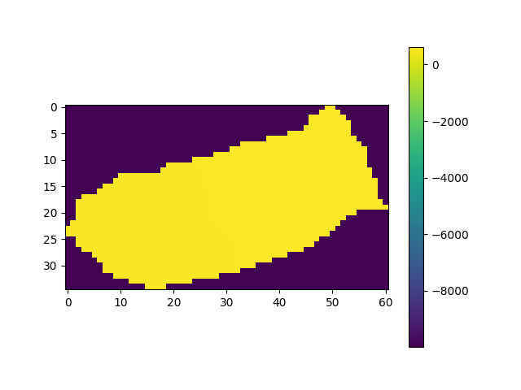
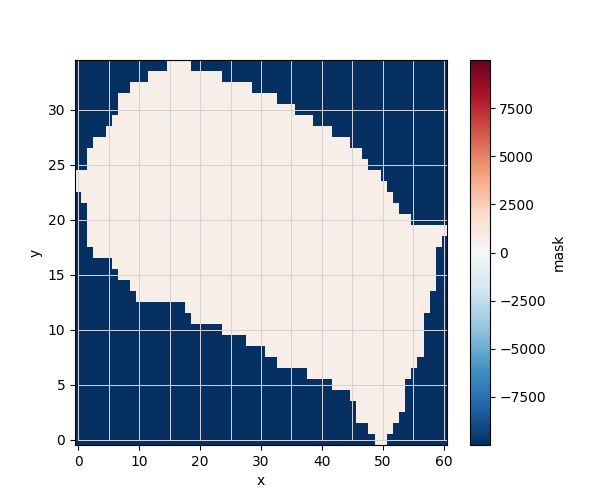
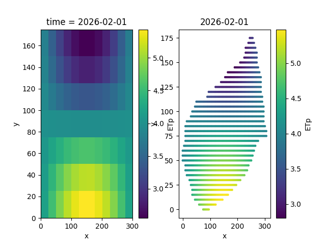

Note
Go to the end to download the full example code.
Mapping atmbc from coarse EO#
create a CATHY object
create a CATHY mesh from a catchment DEM from a file .adf containing no values -9999
wrap the mesh properties (from hapin file) to an xarray dataset
Estimated time to run the notebook = 5min
# !! run preprocessor change the DEM shape !
# dtm_13 does not have the same shape anymore!
import os
import matplotlib.pyplot as plt
import numpy as np
import pandas as pd
import pyCATHY.meshtools as mt
from pyCATHY import cathy_tools
from pyCATHY.importers import cathy_inputs as in_CT
from pyCATHY.importers import cathy_outputs as out_CT
from pyCATHY.plotters import cathy_plots as cplt
import rioxarray
import pyvista as pv
import xarray as xr
path2prj = "../EOdata/" # add your local path here
simu = cathy_tools.CATHY(dirName=path2prj,
prj_name="mapping_atmbc_from_coarse_EO_dataset"
)
rootpath = os.path.join(simu.workdir + simu.project_name)
# Path to the directory containing the .adf file (not the file itself)
adf_folder = "../../data/dtmplot1/"
# Open the raster (typically named 'hdr.adf', but you only need the folder)
raster_DEM = rioxarray.open_rasterio(adf_folder, masked=True).isel(band=0)
# Create a mask of valid (non-NaN) data
valid_mask = ~np.isnan(raster_DEM)
# Apply the mask to get valid coordinates
valid_x = raster_DEM['x'].where(valid_mask.any(dim='y'), drop=True)
valid_y = raster_DEM['y'].where(valid_mask.any(dim='x'), drop=True)
# Get min and max valid coordinates
min_lon, max_lon = float(valid_x.min()), float(valid_x.max())
min_lat, max_lat = float(valid_y.min()), float(valid_y.max())
raster_DEM_masked = raster_DEM.where(
(raster_DEM['x'] >= min_lon) & (raster_DEM['x'] <= max_lon), drop=True
).where(
(raster_DEM['y'] >= min_lat) & (raster_DEM['y'] <= max_lat), drop=True
)
raster_DEM_masked = np.where(np.isnan(raster_DEM_masked), -9999, raster_DEM_masked)
np.shape(raster_DEM_masked)
np.shape(raster_DEM)
🏁 Initiate CATHY object
(161, 283)
fig, ax = plt.subplots(1)
img = ax.imshow(raster_DEM_masked)
plt.colorbar(img)
simu.update_prepo_inputs(
DEM=raster_DEM_masked,
delta_x=5,
delta_y=5,
ivert=1,
)

🔄 Update hap.in file
🔄 Update dem_parameters file
🔄 Update dtm_13 file
🔄 update zone file
🔄 Update dem_parameters file
🔄 Update parm file
🔄 Update dem_parameters file
simu.create_mesh_vtk(verbose=True)
🍳 gfortran compilation
👟 Run preprocessor
wbb...
searching the dtm_13.val input file...
assigned nodata value = -9999.0000000000000
number of processed cells = 1174
...wbb completed
rn...
csort I...
...completed
depit...
dem modifications = 0
dem modifications = 0 (total)
...completed
csort II...
...completed
cca...
contour curvature threshold value = 9.99999996E+11
...completed
smean...
mean (min,max) facet slope = 0.216937334 ( 0.012000000, 0.760631317)
...completed
dsf...
weight w_1 less than 1.0E-06: set w_1 = 0 and w_2 = 1
weight w_1 less than 1.0E-06: set w_1 = 0 and w_2 = 1
the drainage direction of the outlet cell ( 2 ) is used
...completed
hg...
...completed
saving the data in the basin_b/basin_i files...
...rn completed
mrbb...
Select the header type:
0) None
1) ESRI ascii file
2) GRASS ascii file
(Ctrl C to exit)
->
Select the nodata value:
(Ctrl C to exit)
->
Select the pointer system:
1) HAP system
2) Arc/Gis system
(Ctrl C to exit)
-> ~~~~~~~~~~~~~~~~~~~~~~~~~~~~~~~~~~~~~~~~~~
dem file
min value = 0.567960E+03
max value = 0.628820E+03
number of cells = 1174
mean value = 0.592434E+03
writing the output file...
~~~~~~~~~~~~~~~~~~~~~~~~~~~~~~~~~~~~~~~~~~
lakes_map file
min value = 0
max value = 0
number of cells = 1174
mean value = 0.000000
writing the output file...
~~~~~~~~~~~~~~~~~~~~~~~~~~~~~~~~~~~~~~~~~~
zone file
min value = 1
max value = 1
number of cells = 1174
mean value = 1.000000
writing the output file...
~~~~~~~~~~~~~~~~~~~~~~~~~~~~~~~~~~~~~~~~~~
dtm_w_1 file
min value = 0.000000E+00
max value = 0.100000E+01
number of cells = 1174
mean value = 0.558963E+00
writing the output file...
~~~~~~~~~~~~~~~~~~~~~~~~~~~~~~~~~~~~~~~~~~
dtm_w_2 file
min value = 0.000000E+00
max value = 0.100000E+01
number of cells = 1174
mean value = 0.441037E+00
writing the output file...
~~~~~~~~~~~~~~~~~~~~~~~~~~~~~~~~~~~~~~~~~~
dtm_p_outflow_1 file
min value = 2
max value = 6
number of cells = 1174
mean value = 2.272573
writing the output file...
~~~~~~~~~~~~~~~~~~~~~~~~~~~~~~~~~~~~~~~~~~
dtm_p_outflow_2 file
min value = 0
max value = 9
number of cells = 1174
mean value = 1.447189
writing the output file...
~~~~~~~~~~~~~~~~~~~~~~~~~~~~~~~~~~~~~~~~~~
A_inflow file
min value = 0.000000000000E+00
max value = 0.293249992721E+05
number of cells = 1174
mean value = 0.770825256348E+03
writing the output file...
~~~~~~~~~~~~~~~~~~~~~~~~~~~~~~~~~~~~~~~~~~
dtm_local_slope_1 file
min value =-0.234000E+00
max value = 0.750000E+00
number of cells = 1174
mean value = 0.189089E+00
writing the output file...
~~~~~~~~~~~~~~~~~~~~~~~~~~~~~~~~~~~~~~~~~~
dtm_local_slope_2 file
min value =-0.189505E+00
max value = 0.692965E+00
number of cells = 1174
mean value = 0.173164E+00
writing the output file...
~~~~~~~~~~~~~~~~~~~~~~~~~~~~~~~~~~~~~~~~~~
dtm_epl_1 file
min value = 0.000000E+00
max value = 0.500000E+01
number of cells = 1174
mean value = 0.469762E+01
writing the output file...
~~~~~~~~~~~~~~~~~~~~~~~~~~~~~~~~~~~~~~~~~~
dtm_epl_2 file
min value = 0.000000E+00
max value = 0.707107E+01
number of cells = 1174
mean value = 0.637239E+01
writing the output file...
~~~~~~~~~~~~~~~~~~~~~~~~~~~~~~~~~~~~~~~~~~
dtm_kSs1_sf_1 file
min value = 0.000000E+00
max value = 0.665000E+02
number of cells = 1174
mean value = 0.288060E+02
writing the output file...
~~~~~~~~~~~~~~~~~~~~~~~~~~~~~~~~~~~~~~~~~~
dtm_kSs1_sf_2 file
min value = 0.000000E+00
max value = 0.665000E+02
number of cells = 1174
mean value = 0.274720E+02
writing the output file...
~~~~~~~~~~~~~~~~~~~~~~~~~~~~~~~~~~~~~~~~~~
dtm_Ws1_sf file
min value = 0.000000E+00
max value = 0.952684E+01
number of cells = 1174
mean value = 0.141419E+01
writing the output file...
~~~~~~~~~~~~~~~~~~~~~~~~~~~~~~~~~~~~~~~~~~
dtm_Ws1_sf_2 file
min value = 0.000000E+00
max value = 0.667605E+01
number of cells = 1174
mean value = 0.126586E+01
writing the output file...
~~~~~~~~~~~~~~~~~~~~~~~~~~~~~~~~~~~~~~~~~~
dtm_b1_sf file
min value = 0.000000E+00
max value = 0.260000E+00
number of cells = 1174
mean value = 0.538160E-01
writing the output file...
~~~~~~~~~~~~~~~~~~~~~~~~~~~~~~~~~~~~~~~~~~
dtm_y1_sf file
min value = 0.000000E+00
max value = 0.000000E+00
number of cells = 1174
mean value = 0.000000E+00
writing the output file...
~~~~~~~~~~~~~~~~~~~~~~~~~~~~~~~~~~~~~~~~~~
dtm_hcID file
min value = 0
max value = 1
number of cells = 1174
mean value = 0.206985
writing the output file...
~~~~~~~~~~~~~~~~~~~~~~~~~~~~~~~~~~~~~~~~~~
dtm_q_output file
min value = 0
max value = 0
number of cells = 1174
mean value = 0.000000
writing the output file...
~~~~~~~~~~~~~~~~~~~~~~~~~~~~~~~~~~~~~~~~~~
dtm_nrc file
min value = 0.100000E+01
max value = 0.100000E+02
number of cells = 1174
mean value = 0.813714E+01
writing the output file...
...mrbb completed
bb2shp...
writing file river_net.shp
Note: The following floating-point exceptions are signalling: IEEE_UNDERFLOW_FLAG IEEE_DENORMAL
🔄 Update parm file
🛠 Recompile src files [4s]
🍳 gfortran compilation [11s]
✅ Compilation successful!
👟 Run processor
b'\n\n IPRT1=3: Program terminating after output of X, Y, Z coordinate values\n'
ds_mesh = mt.build_mesh_dataset(simu,
raster_DEM_masked=raster_DEM_masked,
plot_grid=True
)

def create_et_dataset(simu, ETa_2D=None, ETp_2D=None, start_date="2026-02-01", n_days=30):
"""
Create a 3D xarray.Dataset of ETa and ETp from a simu.hapin grid.
Parameters
----------
simu : object
Simulation object with hapin attributes (delta_x, delta_y, N, M, xllcorner, yllcorner).
ETa_2D : 2D numpy array, optional
Daily ETa pattern (shape M x N). If None, a synthetic pattern will be generated.
ETp_2D : 2D numpy array, optional
Daily ETp pattern (shape M x N). If None, a synthetic pattern will be generated.
start_date : str, optional
Start date for the time axis. Default "2026-02-01".
n_days : int, optional
Number of days to generate. Default 30.
Returns
-------
ds_et : xarray.Dataset
Dataset with variables "ETa" and "ETp" (time, y, x).
"""
# Use hapin grid
hapin = simu.hapin
N = hapin["N"]
M = hapin["M"]
dx = hapin["delta_x"]
dy = hapin["delta_y"]
x0 = hapin["xllcorner"]
y0 = hapin["yllcorner"]
# Cell centers
x = x0 + (np.arange(N) + 0.5) * dx
y = y0 + (np.arange(M) + 0.5) * dy
# Create meshgrid
X, Y = np.meshgrid(x, y)
# Synthetic patterns if none provided
if ETa_2D is None:
ETa_2D = 3 + 2 * np.sin(np.pi * X / X.max()) * np.cos(np.pi * Y / Y.max())
if ETp_2D is None:
ETp_2D = 4 + 1.5 * np.sin(np.pi * X / X.max()) * np.cos(np.pi * Y / Y.max())
# Time axis
time = pd.date_range(start_date, periods=n_days, freq="D")
# Expand 2D arrays to 3D (time, y, x)
ETa_3D = np.tile(ETa_2D[None, :, :], (len(time), 1, 1))
ETp_3D = np.tile(ETp_2D[None, :, :], (len(time), 1, 1))
# Create xarray Dataset
ds_et = xr.Dataset(
data_vars={
"ETa": (("time", "y", "x"), ETa_3D),
"ETp": (("time", "y", "x"), ETp_3D),
},
coords={
"time": time,
"x": x,
"y": y,
},
attrs={
"resolution_x": dx,
"resolution_y": dy,
"xllcorner": x0,
"yllcorner": y0,
}
)
return ds_et
ds_et = create_et_dataset(simu, start_date="2026-02-01", n_days=30)
ds_et.rio.resolution()
# ds_et.rio.crs
(5.0, 5.0)
# Define coarsening factor
# Example: make resolution 2x coarser in x and y
factor_x = 5 # combine 2 grid cells along x
factor_y = 5 # combine 2 grid cells along y
# Coarsen and take mean
ds_et_coarse = ds_et.coarsen(x=factor_x, y=factor_y, boundary='trim').mean()
# Update attributes to reflect new resolution
ds_et_coarse.attrs['resolution_x'] = ds_et.attrs['resolution_x'] * factor_x
ds_et_coarse.attrs['resolution_y'] = ds_et.attrs['resolution_y'] * factor_y
# print(ds_et_coarse)
print(ds_et_coarse.rio.resolution())
(25.0, 25.0)
import xarray as xr
import numpy as np
# ds_mapped = mt.map_grid_to_mesh(ds_et_coarse, ds_mesh, variables=["ETp", "ETa"])
ds_mapped = mt.map_grid_to_mesh(ds_et, ds_mesh, variables=["ETp", "ETa"])
# ds_mapped = map_grid_to_mesh(ds_era5, ds_mesh, method="linear")
# ds_mapped = map_grid_to_mesh(ds_modis, ds_mesh, variables=["NDVI"],
# x_dim="lon", y_dim="lat")
ds_mesh_surfacenodes = ds_mapped.isel(node=slice(0,int(simu.grid3d['nnod'])))
t0 = ds_mesh_surfacenodes.isel(time=0)['ETp']
fig,ax= plt.subplots(1,2)
ds_et_coarse['ETp'].isel(time=0).plot.imshow(ax=ax[0])
sc = ax[1].scatter(t0.x, t0.y, c=t0.values, cmap='viridis', s=5)
plt.colorbar(sc, ax=ax[1], label='ETp')
ax[1].set_title(str(t0.time.values)[:10])
ax[1].set_xlabel('x'); ax[1].set_ylabel('y')
plt.show()

# Convert xarray DataArray to NumPy array
ETp_nodes = ds_mesh_surfacenodes["ETp"].values # shape: (time, node)
len(ETp_nodes)
# Reference time: first time step
t0 = ds_et.time[0].values
# Convert all times to seconds since t0
time_sec = (ds_et.time.values - t0) / np.timedelta64(1, 's') # seconds
# Add as a new coordinate if you want
ds_et = ds_et.assign_coords(time_sec=("time", time_sec))
simu.update_atmbc(HSPATM=0,
IETO=1,
time = ds_et.time_sec,
netValue = -ETp_nodes*0.001 / 86400
)
🔄 Update atmbc
🔄 Update parm file
🔄 Update ic
Single value detected for ic ==> assumming it homogeneous
🔄 Update parm file
───────────────────────────────────────────────────────────────────────────────── ⚠ warning messages above ⚠ ─────────────────────────────────────────────────────────────────────────────────
['Adjusting NPRT with respect to time of interests requested\n']
──────────────────────────────────────────────────────────────────────────────────────────────────────────────────────────────────────────────────────────────────────────────────────────────
🔄 Update parm file
🛠 Recompile src files [22s]
🍳 gfortran compilation [29s]
✅ Compilation successful!
👟 Run processor
b'\n nsf (# of seepage faces) = 0\n\n\n TIME STEP: 1 DELTAT: 5.0000E+00 TIME: 5.0000E+00\n
******************************************************************\n\n\n NONLINEAR CONVERGENCE BEHAVIOR \n iter- convergence error norms node PNEW at POLD at
residual error norms\n ation PL2 PIKMAX IKMAX IKMAX IKMAX FL2 FINF\n 1 2.4612E-02 -5.6611E-04 2495 -1.00E+01 -1.00E+01 1.712E-05 4.134E-07\n
2 7.0822E-07 -2.3582E-08 2495 -1.00E+01 -1.00E+01 3.161E-06 1.860E-07\n CONVERGENCE ACHIEVED IN 2 ITERATIONS\n\n\n TIME STEP: 2 DELTAT: 5.5000E+00 TIME:
1.0500E+01\n ******************************************************************\n\n\n NONLINEAR CONVERGENCE BEHAVIOR \n iter- convergence error norms node PNEW at
POLD at residual error norms\n ation PL2 PIKMAX IKMAX IKMAX IKMAX FL2 FINF\n 1 2.7075E-02 -6.2276E-04 2495 -1.00E+01 -1.00E+01 1.712E-05
4.134E-07\n 2 8.5701E-07 -2.8537E-08 2495 -1.00E+01 -1.00E+01 3.161E-06 1.860E-07\n CONVERGENCE ACHIEVED IN 2 ITERATIONS\n\n\n TIME STEP: 3 DELTAT: 6.0500E+00
TIME: 1.6550E+01\n ******************************************************************\n\n\n NONLINEAR CONVERGENCE BEHAVIOR \n iter- convergence error norms node
PNEW at POLD at residual error norms\n ation PL2 PIKMAX IKMAX IKMAX IKMAX FL2 FINF\n 1 2.9784E-02 -6.8510E-04 2495 -1.00E+01 -1.00E+01
1.712E-05 4.134E-07\n 2 1.0371E-06 -3.4534E-08 2495 -1.00E+01 -1.00E+01 3.161E-06 1.860E-07\n CONVERGENCE ACHIEVED IN 2 ITERATIONS\n\n\n TIME STEP: 4 DELTAT:
6.6550E+00 TIME: 2.3205E+01\n ******************************************************************\n\n\n NONLINEAR CONVERGENCE BEHAVIOR \n iter- convergence error
norms node PNEW at POLD at residual error norms\n ation PL2 PIKMAX IKMAX IKMAX IKMAX FL2 FINF\n 1 3.2764E-02 -7.5368E-04 2495 -1.00E+01
-1.00E+01 1.712E-05 4.134E-07\n 2 1.2550E-06 -4.1791E-08 2495 -1.00E+01 -1.00E+01 3.161E-06 1.860E-07\n CONVERGENCE ACHIEVED IN 2 ITERATIONS\n\n\n TIME STEP: 5
DELTAT: 7.3205E+00 TIME: 3.0526E+01\n ******************************************************************\n\n\n NONLINEAR CONVERGENCE BEHAVIOR \n iter-
convergence error norms node PNEW at POLD at residual error norms\n ation PL2 PIKMAX IKMAX IKMAX IKMAX FL2 FINF\n 1 3.6043E-02 -8.2913E-04
2495 -1.00E+01 -1.00E+01 1.712E-05 4.134E-07\n 2 1.5186E-06 -5.0574E-08 2495 -1.00E+01 -1.00E+01 3.161E-06 1.860E-07\n CONVERGENCE ACHIEVED IN 2 ITERATIONS\n\n\n TIME
STEP: 6 DELTAT: 8.0526E+00 TIME: 3.8578E+01\n ******************************************************************\n\n\n NONLINEAR CONVERGENCE BEHAVIOR
\n iter- convergence error norms node PNEW at POLD at residual error norms\n ation PL2 PIKMAX IKMAX IKMAX IKMAX FL2 FINF\n 1 3.9650E-02
-9.1214E-04 2495 -1.00E+01 -1.00E+01 1.712E-05 4.134E-07\n 2 1.8378E-06 -6.1203E-08 2495 -1.00E+01 -1.00E+01 3.161E-06 1.860E-07\n CONVERGENCE ACHIEVED IN 2
ITERATIONS\n\n\n TIME STEP: 7 DELTAT: 8.8578E+00 TIME: 4.7436E+01\n ******************************************************************\n\n\n
NONLINEAR CONVERGENCE BEHAVIOR \n iter- convergence error norms node PNEW at POLD at residual error norms\n ation PL2 PIKMAX IKMAX IKMAX IKMAX FL2
FINF\n 1 4.3619E-02 -1.0035E-03 2495 -1.00E+01 -1.00E+01 1.712E-05 4.134E-07\n 2 2.2240E-06 -7.4067E-08 2495 -1.00E+01 -1.00E+01 3.161E-06 1.860E-07\n CONVERGENCE
ACHIEVED IN 2 ITERATIONS\n\n\n TIME STEP: 8 DELTAT: 9.7436E+00 TIME: 5.7179E+01\n ******************************************************************\n\n\n
NONLINEAR CONVERGENCE BEHAVIOR \n iter- convergence error norms node PNEW at POLD at residual error norms\n ation PL2 PIKMAX IKMAX IKMAX IKMAX FL2
FINF\n 1 4.7985E-02 -1.1040E-03 2495 -1.00E+01 -1.00E+01 1.712E-05 4.134E-07\n 2 2.6913E-06 -8.9637E-08 2495 -1.00E+01 -1.00E+01 3.161E-06 1.860E-07\n CONVERGENCE
ACHIEVED IN 2 ITERATIONS\n\n\n TIME STEP: 9 DELTAT: 1.0718E+01 TIME: 6.7897E+01\n ******************************************************************\n\n\n
NONLINEAR CONVERGENCE BEHAVIOR \n iter- convergence error norms node PNEW at POLD at residual error norms\n ation PL2 PIKMAX IKMAX IKMAX IKMAX FL2
FINF\n 1 5.2789E-02 -1.2145E-03 2495 -1.00E+01 -1.00E+01 1.712E-05 4.134E-07\n 2 3.2570E-06 -1.0848E-07 2495 -1.00E+01 -1.00E+01 3.161E-06 1.860E-07\n CONVERGENCE
ACHIEVED IN 2 ITERATIONS\n\n\n TIME STEP: 10 DELTAT: 1.1790E+01 TIME: 7.9687E+01\n ******************************************************************\n\n\n
NONLINEAR CONVERGENCE BEHAVIOR \n iter- convergence error norms node PNEW at POLD at residual error norms\n ation PL2 PIKMAX IKMAX IKMAX IKMAX FL2
FINF\n 1 5.8074E-02 -1.3362E-03 2495 -1.00E+01 -1.00E+01 1.712E-05 4.134E-07\n 2 3.9416E-06 -1.3129E-07 2495 -1.00E+01 -1.00E+01 3.161E-06 1.860E-07\n CONVERGENCE
ACHIEVED IN 2 ITERATIONS\n\n\n TIME STEP: 11 DELTAT: 1.2969E+01 TIME: 9.2656E+01\n ******************************************************************\n\n\n
NONLINEAR CONVERGENCE BEHAVIOR \n iter- convergence error norms node PNEW at POLD at residual error norms\n ation PL2 PIKMAX IKMAX IKMAX IKMAX FL2
FINF\n 1 6.3889E-02 -1.4701E-03 2495 -1.00E+01 -1.00E+01 1.712E-05 4.134E-07\n 2 4.7701E-06 -1.5890E-07 2495 -1.00E+01 -1.00E+01 3.161E-06 1.860E-07\n CONVERGENCE
ACHIEVED IN 2 ITERATIONS\n\n\n TIME STEP: 12 DELTAT: 1.4266E+01 TIME: 1.0692E+02\n ******************************************************************\n\n\n
NONLINEAR CONVERGENCE BEHAVIOR \n iter- convergence error norms node PNEW at POLD at residual error norms\n ation PL2 PIKMAX IKMAX IKMAX IKMAX FL2
FINF\n 1 7.0287E-02 -1.6174E-03 2495 -1.00E+01 -1.00E+01 1.712E-05 4.134E-07\n 2 5.7730E-06 -1.9231E-07 2495 -1.00E+01 -1.00E+01 3.161E-06 1.860E-07\n CONVERGENCE
ACHIEVED IN 2 ITERATIONS\n\n\n TIME STEP: 13 DELTAT: 1.5692E+01 TIME: 1.2261E+02\n ******************************************************************\n\n\n
NONLINEAR CONVERGENCE BEHAVIOR \n iter- convergence error norms node PNEW at POLD at residual error norms\n ation PL2 PIKMAX IKMAX IKMAX IKMAX FL2
FINF\n 1 7.7327E-02 -1.7796E-03 2495 -1.00E+01 -1.00E+01 1.712E-05 4.134E-07\n 2 6.9868E-06 -2.3276E-07 2495 -1.00E+01 -1.00E+01 3.161E-06 1.860E-07\n CONVERGENCE
ACHIEVED IN 2 ITERATIONS\n\n\n TIME STEP: 14 DELTAT: 1.7261E+01 TIME: 1.3987E+02\n ******************************************************************\n\n\n
NONLINEAR CONVERGENCE BEHAVIOR \n iter- convergence error norms node PNEW at POLD at residual error norms\n ation PL2 PIKMAX IKMAX IKMAX IKMAX FL2
FINF\n 1 8.5073E-02 -1.9580E-03 2495 -1.00E+01 -1.00E+01 1.712E-05 4.134E-07\n 2 8.4559E-06 -2.8173E-07 2495 -1.00E+01 -1.00E+01 3.161E-06 1.860E-07\n CONVERGENCE
ACHIEVED IN 2 ITERATIONS\n\n\n TIME STEP: 15 DELTAT: 1.8987E+01 TIME: 1.5886E+02\n ******************************************************************\n\n\n
NONLINEAR CONVERGENCE BEHAVIOR \n iter- convergence error norms node PNEW at POLD at residual error norms\n ation PL2 PIKMAX IKMAX IKMAX IKMAX FL2
FINF\n 1 9.3597E-02 -2.1543E-03 2495 -1.00E+01 -1.00E+01 1.712E-05 4.134E-07\n 2 1.0234E-05 -3.4101E-07 2495 -1.00E+01 -1.00E+01 3.161E-06 1.860E-07\n CONVERGENCE
ACHIEVED IN 2 ITERATIONS\n\n\n TIME STEP: 16 DELTAT: 2.0886E+01 TIME: 1.7975E+02\n ******************************************************************\n\n\n
NONLINEAR CONVERGENCE BEHAVIOR \n iter- convergence error norms node PNEW at POLD at residual error norms\n ation PL2 PIKMAX IKMAX IKMAX IKMAX FL2
FINF\n 1 1.0298E-01 -2.3705E-03 2495 -1.00E+01 -1.00E+01 1.712E-05 4.134E-07\n 2 1.2387E-05 -4.1277E-07 2495 -1.00E+01 -1.00E+01 3.161E-06 1.860E-07\n CONVERGENCE
ACHIEVED IN 2 ITERATIONS\n\n\n TIME STEP: 17 DELTAT: 2.2975E+01 TIME: 2.0272E+02\n ******************************************************************\n\n\n
NONLINEAR CONVERGENCE BEHAVIOR \n iter- convergence error norms node PNEW at POLD at residual error norms\n ation PL2 PIKMAX IKMAX IKMAX IKMAX FL2
FINF\n 1 1.1330E-01 -2.6083E-03 2495 -1.00E+01 -1.00E+01 1.712E-05 4.134E-07\n 2 1.4993E-05 -4.9966E-07 2495 -1.00E+01 -1.00E+01 3.161E-06 1.860E-07\n CONVERGENCE
ACHIEVED IN 2 ITERATIONS\n\n\n TIME STEP: 18 DELTAT: 2.5272E+01 TIME: 2.2800E+02\n ******************************************************************\n\n\n
NONLINEAR CONVERGENCE BEHAVIOR \n iter- convergence error norms node PNEW at POLD at residual error norms\n ation PL2 PIKMAX IKMAX IKMAX IKMAX FL2
FINF\n 1 1.2466E-01 -2.8702E-03 2495 -1.00E+01 -1.00E+01 1.712E-05 4.134E-07\n 2 1.8148E-05 -6.0486E-07 2495 -1.00E+01 -1.00E+01 3.161E-06 1.860E-07\n CONVERGENCE
ACHIEVED IN 2 ITERATIONS\n\n\n TIME STEP: 19 DELTAT: 2.7800E+01 TIME: 2.5580E+02\n ******************************************************************\n\n\n
NONLINEAR CONVERGENCE BEHAVIOR \n iter- convergence error norms node PNEW at POLD at residual error norms\n ation PL2 PIKMAX IKMAX IKMAX IKMAX FL2
FINF\n 1 1.3716E-01 -3.1584E-03 2495 -1.00E+01 -1.00E+01 1.712E-05 4.134E-07\n 2 2.1967E-05 -7.3224E-07 2495 -1.00E+01 -1.00E+01 3.161E-06 1.860E-07\n CONVERGENCE
ACHIEVED IN 2 ITERATIONS\n\n\n TIME STEP: 20 DELTAT: 3.0580E+01 TIME: 2.8637E+02\n ******************************************************************\n\n\n
NONLINEAR CONVERGENCE BEHAVIOR \n iter- convergence error norms node PNEW at POLD at residual error norms\n ation PL2 PIKMAX IKMAX IKMAX IKMAX FL2
FINF\n 1 1.5092E-01 -3.4757E-03 2495 -1.00E+01 -1.00E+01 1.712E-05 4.133E-07\n 2 2.6591E-05 -8.8649E-07 2495 -1.00E+01 -1.00E+01 3.161E-06 1.860E-07\n CONVERGENCE
ACHIEVED IN 2 ITERATIONS\n\n\n TIME STEP: 21 DELTAT: 3.3637E+01 TIME: 3.2001E+02\n ******************************************************************\n\n\n
NONLINEAR CONVERGENCE BEHAVIOR \n iter- convergence error norms node PNEW at POLD at residual error norms\n ation PL2 PIKMAX IKMAX IKMAX IKMAX FL2
FINF\n 1 1.6606E-01 -3.8250E-03 2495 -1.00E+01 -1.00E+01 1.712E-05 4.133E-07\n 2 3.2189E-05 -1.0733E-06 2495 -1.00E+01 -1.00E+01 3.161E-06 1.860E-07\n CONVERGENCE
ACHIEVED IN 2 ITERATIONS\n\n\n TIME STEP: 22 DELTAT: 3.7001E+01 TIME: 3.5701E+02\n ******************************************************************\n\n\n
NONLINEAR CONVERGENCE BEHAVIOR \n iter- convergence error norms node PNEW at POLD at residual error norms\n ation PL2 PIKMAX IKMAX IKMAX IKMAX FL2
FINF\n 1 1.8273E-01 -4.2097E-03 2495 -1.00E+01 -1.00E+01 1.712E-05 4.133E-07\n 2 3.8968E-05 -1.2995E-06 2495 -1.00E+01 -1.00E+01 3.161E-06 1.860E-07\n CONVERGENCE
ACHIEVED IN 2 ITERATIONS\n\n\n TIME STEP: 23 DELTAT: 4.0701E+01 TIME: 3.9772E+02\n ******************************************************************\n\n\n
NONLINEAR CONVERGENCE BEHAVIOR \n iter- convergence error norms node PNEW at POLD at residual error norms\n ation PL2 PIKMAX IKMAX IKMAX IKMAX FL2
FINF\n 1 2.0108E-01 -4.6332E-03 2495 -1.00E+01 -1.00E+01 1.712E-05 4.133E-07\n 2 4.7177E-05 -1.5736E-06 2495 -1.00E+01 -1.00E+01 3.161E-06 1.860E-07\n CONVERGENCE
ACHIEVED IN 2 ITERATIONS\n\n\n TIME STEP: 24 DELTAT: 4.4772E+01 TIME: 4.4249E+02\n ******************************************************************\n\n\n
NONLINEAR CONVERGENCE BEHAVIOR \n iter- convergence error norms node PNEW at POLD at residual error norms\n ation PL2 PIKMAX IKMAX IKMAX IKMAX FL2
FINF\n 1 2.2128E-01 -5.0997E-03 2495 -1.01E+01 -1.00E+01 1.712E-05 4.133E-07\n 2 5.7119E-05 -1.9055E-06 2495 -1.01E+01 -1.01E+01 3.161E-06 1.860E-07\n CONVERGENCE
ACHIEVED IN 2 ITERATIONS\n\n\n TIME STEP: 25 DELTAT: 4.9249E+01 TIME: 4.9174E+02\n ******************************************************************\n\n\n
NONLINEAR CONVERGENCE BEHAVIOR \n iter- convergence error norms node PNEW at POLD at residual error norms\n ation PL2 PIKMAX IKMAX IKMAX IKMAX FL2
FINF\n 1 2.4352E-01 -5.6135E-03 2495 -1.01E+01 -1.01E+01 1.712E-05 4.133E-07\n 2 6.9160E-05 -2.3077E-06 2495 -1.01E+01 -1.01E+01 3.161E-06 1.860E-07\n CONVERGENCE
ACHIEVED IN 2 ITERATIONS\n\n\n TIME STEP: 26 DELTAT: 5.4174E+01 TIME: 5.4591E+02\n ******************************************************************\n\n\n
NONLINEAR CONVERGENCE BEHAVIOR \n iter- convergence error norms node PNEW at POLD at residual error norms\n ation PL2 PIKMAX IKMAX IKMAX IKMAX FL2
FINF\n 1 2.6800E-01 -6.1794E-03 2495 -1.01E+01 -1.01E+01 1.712E-05 4.133E-07\n 2 8.3744E-05 -2.7950E-06 2495 -1.01E+01 -1.01E+01 3.161E-06 1.860E-07\n CONVERGENCE
ACHIEVED IN 2 ITERATIONS\n\n\n TIME STEP: 27 DELTAT: 5.9591E+01 TIME: 6.0550E+02\n ******************************************************************\n\n\n
NONLINEAR CONVERGENCE BEHAVIOR \n iter- convergence error norms node PNEW at POLD at residual error norms\n ation PL2 PIKMAX IKMAX IKMAX IKMAX FL2
FINF\n 1 2.9497E-01 -6.8030E-03 2495 -1.01E+01 -1.01E+01 1.712E-05 4.133E-07\n 2 1.0141E-04 -3.3856E-06 2495 -1.01E+01 -1.01E+01 3.161E-06 1.860E-07\n CONVERGENCE
ACHIEVED IN 2 ITERATIONS\n\n\n TIME STEP: 28 DELTAT: 6.5550E+01 TIME: 6.7105E+02\n ******************************************************************\n\n\n
NONLINEAR CONVERGENCE BEHAVIOR \n iter- convergence error norms node PNEW at POLD at residual error norms\n ation PL2 PIKMAX IKMAX IKMAX IKMAX FL2
FINF\n 1 3.2466E-01 -7.4900E-03 2495 -1.01E+01 -1.01E+01 1.712E-05 4.133E-07\n 2 1.2282E-04 -4.1013E-06 2495 -1.01E+01 -1.01E+01 3.161E-06 1.860E-07\n CONVERGENCE
ACHIEVED IN 2 ITERATIONS\n\n\n TIME STEP: 29 DELTAT: 7.2105E+01 TIME: 7.4315E+02\n ******************************************************************\n\n\n
NONLINEAR CONVERGENCE BEHAVIOR \n iter- convergence error norms node PNEW at POLD at residual error norms\n ation PL2 PIKMAX IKMAX IKMAX IKMAX FL2
FINF\n 1 3.5737E-01 -8.2472E-03 2495 -1.01E+01 -1.01E+01 1.712E-05 4.133E-07\n 2 1.4875E-04 -4.9689E-06 2495 -1.01E+01 -1.01E+01 3.161E-06 1.860E-07\n CONVERGENCE
ACHIEVED IN 2 ITERATIONS\n\n\n TIME STEP: 30 DELTAT: 7.9315E+01 TIME: 8.2247E+02\n ******************************************************************\n\n\n
NONLINEAR CONVERGENCE BEHAVIOR \n iter- convergence error norms node PNEW at POLD at residual error norms\n ation PL2 PIKMAX IKMAX IKMAX IKMAX FL2
FINF\n 1 3.9340E-01 -9.0818E-03 2495 -1.01E+01 -1.01E+01 1.711E-05 4.132E-07\n 2 1.8018E-04 -6.0208E-06 2495 -1.01E+01 -1.01E+01 3.161E-06 1.860E-07\n CONVERGENCE
ACHIEVED IN 2 ITERATIONS\n\n\n TIME STEP: 31 DELTAT: 8.7247E+01 TIME: 9.0972E+02\n ******************************************************************\n\n\n
NONLINEAR CONVERGENCE BEHAVIOR \n iter- convergence error norms node PNEW at POLD at residual error norms\n ation PL2 PIKMAX IKMAX IKMAX IKMAX FL2
FINF\n 1 4.3309E-01 -1.0002E-02 2495 -1.01E+01 -1.01E+01 1.711E-05 4.132E-07\n 2 2.1827E-04 -7.2965E-06 2495 -1.01E+01 -1.01E+01 3.161E-06 1.860E-07\n CONVERGENCE
ACHIEVED IN 2 ITERATIONS\n\n\n TIME STEP: 32 DELTAT: 9.5972E+01 TIME: 1.0057E+03\n ******************************************************************\n\n\n
NONLINEAR CONVERGENCE BEHAVIOR \n iter- convergence error norms node PNEW at POLD at residual error norms\n ation PL2 PIKMAX IKMAX IKMAX IKMAX FL2
FINF\n 1 4.7682E-01 -1.1017E-02 2495 -1.01E+01 -1.01E+01 1.711E-05 4.132E-07\n 2 2.6445E-04 -8.8438E-06 2495 -1.01E+01 -1.01E+01 3.161E-06 1.860E-07\n CONVERGENCE
ACHIEVED IN 2 ITERATIONS\n\n\n TIME STEP: 33 DELTAT: 1.0000E+02 TIME: 1.1057E+03\n ******************************************************************\n\n\n
NONLINEAR CONVERGENCE BEHAVIOR \n iter- convergence error norms node PNEW at POLD at residual error norms\n ation PL2 PIKMAX IKMAX IKMAX IKMAX FL2
FINF\n 1 4.9732E-01 -1.1496E-02 2495 -1.01E+01 -1.01E+01 1.711E-05 4.132E-07\n 2 2.8752E-04 -9.6195E-06 2495 -1.01E+01 -1.01E+01 3.161E-06 1.860E-07\n CONVERGENCE
ACHIEVED IN 2 ITERATIONS\n\n\n TIME STEP: 34 DELTAT: 1.0000E+02 TIME: 1.2057E+03\n ******************************************************************\n\n\n
NONLINEAR CONVERGENCE BEHAVIOR \n iter- convergence error norms node PNEW at POLD at residual error norms\n ation PL2 PIKMAX IKMAX IKMAX IKMAX FL2
FINF\n 1 4.9783E-01 -1.1514E-02 2495 -1.01E+01 -1.01E+01 1.711E-05 4.132E-07\n 2 2.8793E-04 -9.6377E-06 2495 -1.01E+01 -1.01E+01 3.161E-06 1.860E-07\n CONVERGENCE
ACHIEVED IN 2 ITERATIONS\n\n\n TIME STEP: 35 DELTAT: 1.0000E+02 TIME: 1.3057E+03\n ******************************************************************\n\n\n
NONLINEAR CONVERGENCE BEHAVIOR \n iter- convergence error norms node PNEW at POLD at residual error norms\n ation PL2 PIKMAX IKMAX IKMAX IKMAX FL2
FINF\n 1 4.9834E-01 -1.1531E-02 2495 -1.01E+01 -1.01E+01 1.711E-05 4.131E-07\n 2 2.8835E-04 -9.6560E-06 2495 -1.01E+01 -1.01E+01 3.161E-06 1.860E-07\n CONVERGENCE
ACHIEVED IN 2 ITERATIONS\n\n\n TIME STEP: 36 DELTAT: 1.0000E+02 TIME: 1.4057E+03\n ******************************************************************\n\n\n
NONLINEAR CONVERGENCE BEHAVIOR \n iter- convergence error norms node PNEW at POLD at residual error norms\n ation PL2 PIKMAX IKMAX IKMAX IKMAX FL2
FINF\n 1 4.9886E-01 -1.1549E-02 2495 -1.02E+01 -1.01E+01 1.711E-05 4.131E-07\n 2 2.8876E-04 -9.6744E-06 2495 -1.02E+01 -1.02E+01 3.161E-06 1.860E-07\n CONVERGENCE
ACHIEVED IN 2 ITERATIONS\n\n\n TIME STEP: 37 DELTAT: 1.0000E+02 TIME: 1.5057E+03\n ******************************************************************\n\n\n
NONLINEAR CONVERGENCE BEHAVIOR \n iter- convergence error norms node PNEW at POLD at residual error norms\n ation PL2 PIKMAX IKMAX IKMAX IKMAX FL2
FINF\n 1 4.9937E-01 -1.1566E-02 2495 -1.02E+01 -1.02E+01 1.711E-05 4.131E-07\n 2 2.8918E-04 -9.6927E-06 2495 -1.02E+01 -1.02E+01 3.161E-06 1.860E-07\n CONVERGENCE
ACHIEVED IN 2 ITERATIONS\n\n\n TIME STEP: 38 DELTAT: 1.0000E+02 TIME: 1.6057E+03\n ******************************************************************\n\n\n
NONLINEAR CONVERGENCE BEHAVIOR \n iter- convergence error norms node PNEW at POLD at residual error norms\n ation PL2 PIKMAX IKMAX IKMAX IKMAX FL2
FINF\n 1 4.9988E-01 -1.1584E-02 2495 -1.02E+01 -1.02E+01 1.711E-05 4.131E-07\n 2 2.8959E-04 -9.7111E-06 2495 -1.02E+01 -1.02E+01 3.161E-06 1.860E-07\n CONVERGENCE
ACHIEVED IN 2 ITERATIONS\n\n\n TIME STEP: 39 DELTAT: 1.0000E+02 TIME: 1.7057E+03\n ******************************************************************\n\n\n
NONLINEAR CONVERGENCE BEHAVIOR \n iter- convergence error norms node PNEW at POLD at residual error norms\n ation PL2 PIKMAX IKMAX IKMAX IKMAX FL2
FINF\n 1 5.0040E-01 -1.1602E-02 2495 -1.02E+01 -1.02E+01 1.711E-05 4.131E-07\n 2 2.9001E-04 -9.7296E-06 2495 -1.02E+01 -1.02E+01 3.161E-06 1.860E-07\n CONVERGENCE
ACHIEVED IN 2 ITERATIONS\n\n\n TIME STEP: 40 DELTAT: 1.0000E+02 TIME: 1.8057E+03\n ******************************************************************\n\n\n
NONLINEAR CONVERGENCE BEHAVIOR \n iter- convergence error norms node PNEW at POLD at residual error norms\n ation PL2 PIKMAX IKMAX IKMAX IKMAX FL2
FINF\n 1 5.0091E-01 -1.1619E-02 2495 -1.02E+01 -1.02E+01 1.711E-05 4.130E-07\n 2 2.9043E-04 -9.7481E-06 2495 -1.02E+01 -1.02E+01 3.161E-06 1.860E-07\n CONVERGENCE
ACHIEVED IN 2 ITERATIONS\n\n\n TIME STEP: 41 DELTAT: 1.0000E+02 TIME: 1.9057E+03\n ******************************************************************\n\n\n
NONLINEAR CONVERGENCE BEHAVIOR \n iter- convergence error norms node PNEW at POLD at residual error norms\n ation PL2 PIKMAX IKMAX IKMAX IKMAX FL2
FINF\n 1 5.0143E-01 -1.1637E-02 2495 -1.02E+01 -1.02E+01 1.711E-05 4.130E-07\n 2 2.9085E-04 -9.7666E-06 2495 -1.02E+01 -1.02E+01 3.161E-06 1.860E-07\n CONVERGENCE
ACHIEVED IN 2 ITERATIONS\n\n\n TIME STEP: 42 DELTAT: 1.0000E+02 TIME: 2.0057E+03\n ******************************************************************\n\n\n
NONLINEAR CONVERGENCE BEHAVIOR \n iter- convergence error norms node PNEW at POLD at residual error norms\n ation PL2 PIKMAX IKMAX IKMAX IKMAX FL2
FINF\n 1 5.0194E-01 -1.1655E-02 2495 -1.02E+01 -1.02E+01 1.711E-05 4.130E-07\n 2 2.9126E-04 -9.7851E-06 2495 -1.02E+01 -1.02E+01 3.161E-06 1.860E-07\n CONVERGENCE
ACHIEVED IN 2 ITERATIONS\n\n\n TIME STEP: 43 DELTAT: 1.0000E+02 TIME: 2.1057E+03\n ******************************************************************\n\n\n
NONLINEAR CONVERGENCE BEHAVIOR \n iter- convergence error norms node PNEW at POLD at residual error norms\n ation PL2 PIKMAX IKMAX IKMAX IKMAX FL2
FINF\n 1 5.0246E-01 -1.1673E-02 2495 -1.02E+01 -1.02E+01 1.711E-05 4.130E-07\n 2 2.9168E-04 -9.8037E-06 2495 -1.02E+01 -1.02E+01 3.161E-06 1.860E-07\n CONVERGENCE
ACHIEVED IN 2 ITERATIONS\n\n\n TIME STEP: 44 DELTAT: 1.0000E+02 TIME: 2.2057E+03\n ******************************************************************\n\n\n
NONLINEAR CONVERGENCE BEHAVIOR \n iter- convergence error norms node PNEW at POLD at residual error norms\n ation PL2 PIKMAX IKMAX IKMAX IKMAX FL2
FINF\n 1 5.0298E-01 -1.1690E-02 2495 -1.03E+01 -1.02E+01 1.710E-05 4.129E-07\n 2 2.9210E-04 -9.8224E-06 2495 -1.03E+01 -1.03E+01 3.161E-06 1.860E-07\n CONVERGENCE
ACHIEVED IN 2 ITERATIONS\n\n\n TIME STEP: 45 DELTAT: 1.0000E+02 TIME: 2.3057E+03\n ******************************************************************\n\n\n
NONLINEAR CONVERGENCE BEHAVIOR \n iter- convergence error norms node PNEW at POLD at residual error norms\n ation PL2 PIKMAX IKMAX IKMAX IKMAX FL2
FINF\n 1 5.0350E-01 -1.1708E-02 2495 -1.03E+01 -1.03E+01 1.710E-05 4.129E-07\n 2 2.9253E-04 -9.8411E-06 2495 -1.03E+01 -1.03E+01 3.161E-06 1.860E-07\n CONVERGENCE
ACHIEVED IN 2 ITERATIONS\n\n\n TIME STEP: 46 DELTAT: 1.0000E+02 TIME: 2.4057E+03\n ******************************************************************\n\n\n
NONLINEAR CONVERGENCE BEHAVIOR \n iter- convergence error norms node PNEW at POLD at residual error norms\n ation PL2 PIKMAX IKMAX IKMAX IKMAX FL2
FINF\n 1 5.0402E-01 -1.1726E-02 2495 -1.03E+01 -1.03E+01 1.710E-05 4.129E-07\n 2 2.9295E-04 -9.8598E-06 2495 -1.03E+01 -1.03E+01 3.161E-06 1.860E-07\n CONVERGENCE
ACHIEVED IN 2 ITERATIONS\n\n\n TIME STEP: 47 DELTAT: 1.0000E+02 TIME: 2.5057E+03\n ******************************************************************\n\n\n
NONLINEAR CONVERGENCE BEHAVIOR \n iter- convergence error norms node PNEW at POLD at residual error norms\n ation PL2 PIKMAX IKMAX IKMAX IKMAX FL2
FINF\n 1 5.0454E-01 -1.1744E-02 2495 -1.03E+01 -1.03E+01 1.710E-05 4.129E-07\n 2 2.9337E-04 -9.8785E-06 2495 -1.03E+01 -1.03E+01 3.161E-06 1.860E-07\n CONVERGENCE
ACHIEVED IN 2 ITERATIONS\n\n\n TIME STEP: 48 DELTAT: 1.0000E+02 TIME: 2.6057E+03\n ******************************************************************\n\n\n
NONLINEAR CONVERGENCE BEHAVIOR \n iter- convergence error norms node PNEW at POLD at residual error norms\n ation PL2 PIKMAX IKMAX IKMAX IKMAX FL2
FINF\n 1 5.0506E-01 -1.1762E-02 2495 -1.03E+01 -1.03E+01 1.710E-05 4.129E-07\n 2 2.9379E-04 -9.8973E-06 2495 -1.03E+01 -1.03E+01 3.161E-06 1.860E-07\n CONVERGENCE
ACHIEVED IN 2 ITERATIONS\n\n\n TIME STEP: 49 DELTAT: 1.0000E+02 TIME: 2.7057E+03\n ******************************************************************\n\n\n
NONLINEAR CONVERGENCE BEHAVIOR \n iter- convergence error norms node PNEW at POLD at residual error norms\n ation PL2 PIKMAX IKMAX IKMAX IKMAX FL2
FINF\n 1 5.0558E-01 -1.1780E-02 2495 -1.03E+01 -1.03E+01 1.710E-05 4.128E-07\n 2 2.9422E-04 -9.9162E-06 2495 -1.03E+01 -1.03E+01 3.161E-06 1.860E-07\n CONVERGENCE
ACHIEVED IN 2 ITERATIONS\n\n\n TIME STEP: 50 DELTAT: 1.0000E+02 TIME: 2.8057E+03\n ******************************************************************\n\n\n
NONLINEAR CONVERGENCE BEHAVIOR \n iter- convergence error norms node PNEW at POLD at residual error norms\n ation PL2 PIKMAX IKMAX IKMAX IKMAX FL2
FINF\n 1 5.0610E-01 -1.1798E-02 2495 -1.03E+01 -1.03E+01 1.710E-05 4.128E-07\n 2 2.9464E-04 -9.9350E-06 2495 -1.03E+01 -1.03E+01 3.161E-06 1.860E-07\n CONVERGENCE
ACHIEVED IN 2 ITERATIONS\n\n\n TIME STEP: 51 DELTAT: 1.0000E+02 TIME: 2.9057E+03\n ******************************************************************\n\n\n
NONLINEAR CONVERGENCE BEHAVIOR \n iter- convergence error norms node PNEW at POLD at residual error norms\n ation PL2 PIKMAX IKMAX IKMAX IKMAX FL2
FINF\n 1 5.0663E-01 -1.1816E-02 2495 -1.03E+01 -1.03E+01 1.710E-05 4.128E-07\n 2 2.9507E-04 -9.9539E-06 2495 -1.03E+01 -1.03E+01 3.161E-06 1.860E-07\n CONVERGENCE
ACHIEVED IN 2 ITERATIONS\n\n\n TIME STEP: 52 DELTAT: 1.0000E+02 TIME: 3.0057E+03\n ******************************************************************\n\n\n
NONLINEAR CONVERGENCE BEHAVIOR \n iter- convergence error norms node PNEW at POLD at residual error norms\n ation PL2 PIKMAX IKMAX IKMAX IKMAX FL2
FINF\n 1 5.0715E-01 -1.1834E-02 2495 -1.03E+01 -1.03E+01 1.710E-05 4.128E-07\n 2 2.9549E-04 -9.9729E-06 2495 -1.03E+01 -1.03E+01 3.161E-06 1.860E-07\n CONVERGENCE
ACHIEVED IN 2 ITERATIONS\n\n\n TIME STEP: 53 DELTAT: 1.0000E+02 TIME: 3.1057E+03\n ******************************************************************\n\n\n
NONLINEAR CONVERGENCE BEHAVIOR \n iter- convergence error norms node PNEW at POLD at residual error norms\n ation PL2 PIKMAX IKMAX IKMAX IKMAX FL2
FINF\n 1 5.0767E-01 -1.1852E-02 2495 -1.04E+01 -1.03E+01 1.710E-05 4.128E-07\n 2 2.9592E-04 -9.9919E-06 2495 -1.04E+01 -1.04E+01 3.161E-06 1.860E-07\n CONVERGENCE
ACHIEVED IN 2 ITERATIONS\n\n\n TIME STEP: 54 DELTAT: 1.0000E+02 TIME: 3.2057E+03\n ******************************************************************\n\n\n
NONLINEAR CONVERGENCE BEHAVIOR \n iter- convergence error norms node PNEW at POLD at residual error norms\n ation PL2 PIKMAX IKMAX IKMAX IKMAX FL2
FINF\n 1 5.0820E-01 -1.1871E-02 2495 -1.04E+01 -1.04E+01 1.710E-05 4.127E-07\n 2 2.9635E-04 -1.0011E-05 2495 -1.04E+01 -1.04E+01 3.161E-06 1.860E-07\n CONVERGENCE
ACHIEVED IN 2 ITERATIONS\n\n\n TIME STEP: 55 DELTAT: 1.0000E+02 TIME: 3.3057E+03\n ******************************************************************\n\n\n
NONLINEAR CONVERGENCE BEHAVIOR \n iter- convergence error norms node PNEW at POLD at residual error norms\n ation PL2 PIKMAX IKMAX IKMAX IKMAX FL2
FINF\n 1 5.0872E-01 -1.1889E-02 2495 -1.04E+01 -1.04E+01 1.710E-05 4.127E-07\n 2 2.9678E-04 -1.0030E-05 2495 -1.04E+01 -1.04E+01 3.161E-06 1.860E-07\n CONVERGENCE
ACHIEVED IN 2 ITERATIONS\n\n\n TIME STEP: 56 DELTAT: 1.0000E+02 TIME: 3.4057E+03\n ******************************************************************\n\n\n
NONLINEAR CONVERGENCE BEHAVIOR \n iter- convergence error norms node PNEW at POLD at residual error norms\n ation PL2 PIKMAX IKMAX IKMAX IKMAX FL2
FINF\n 1 5.0925E-01 -1.1907E-02 2495 -1.04E+01 -1.04E+01 1.710E-05 4.127E-07\n 2 2.9721E-04 -1.0049E-05 2495 -1.04E+01 -1.04E+01 3.161E-06 1.860E-07\n CONVERGENCE
ACHIEVED IN 2 ITERATIONS\n\n\n TIME STEP: 57 DELTAT: 1.0000E+02 TIME: 3.5057E+03\n ******************************************************************\n\n\n
NONLINEAR CONVERGENCE BEHAVIOR \n iter- convergence error norms node PNEW at POLD at residual error norms\n ation PL2 PIKMAX IKMAX IKMAX IKMAX FL2
FINF\n 1 5.0978E-01 -1.1925E-02 2495 -1.04E+01 -1.04E+01 1.709E-05 4.127E-07\n 2 2.9764E-04 -1.0068E-05 2495 -1.04E+01 -1.04E+01 3.161E-06 1.860E-07\n CONVERGENCE
ACHIEVED IN 2 ITERATIONS\n\n\n TIME STEP: 58 DELTAT: 1.0000E+02 TIME: 3.6057E+03\n ******************************************************************\n\n\n
NONLINEAR CONVERGENCE BEHAVIOR \n iter- convergence error norms node PNEW at POLD at residual error norms\n ation PL2 PIKMAX IKMAX IKMAX IKMAX FL2
FINF\n 1 5.1031E-01 -1.1944E-02 2495 -1.04E+01 -1.04E+01 1.709E-05 4.126E-07\n 2 2.9807E-04 -1.0087E-05 2495 -1.04E+01 -1.04E+01 3.161E-06 1.860E-07\n CONVERGENCE
ACHIEVED IN 2 ITERATIONS\n\n\n TIME STEP: 59 DELTAT: 1.0000E+02 TIME: 3.7057E+03\n ******************************************************************\n\n\n
NONLINEAR CONVERGENCE BEHAVIOR \n iter- convergence error norms node PNEW at POLD at residual error norms\n ation PL2 PIKMAX IKMAX IKMAX IKMAX FL2
FINF\n 1 5.1084E-01 -1.1962E-02 2495 -1.04E+01 -1.04E+01 1.709E-05 4.126E-07\n 2 2.9850E-04 -1.0107E-05 2495 -1.04E+01 -1.04E+01 3.161E-06 1.860E-07\n CONVERGENCE
ACHIEVED IN 2 ITERATIONS\n\n\n TIME STEP: 60 DELTAT: 1.0000E+02 TIME: 3.8057E+03\n ******************************************************************\n\n\n
NONLINEAR CONVERGENCE BEHAVIOR \n iter- convergence error norms node PNEW at POLD at residual error norms\n ation PL2 PIKMAX IKMAX IKMAX IKMAX FL2
FINF\n 1 5.1137E-01 -1.1980E-02 2495 -1.04E+01 -1.04E+01 1.709E-05 4.126E-07\n 2 2.9893E-04 -1.0126E-05 2495 -1.04E+01 -1.04E+01 3.161E-06 1.860E-07\n CONVERGENCE
ACHIEVED IN 2 ITERATIONS\n\n\n TIME STEP: 61 DELTAT: 1.0000E+02 TIME: 3.9057E+03\n ******************************************************************\n\n\n
NONLINEAR CONVERGENCE BEHAVIOR \n iter- convergence error norms node PNEW at POLD at residual error norms\n ation PL2 PIKMAX IKMAX IKMAX IKMAX FL2
FINF\n 1 5.1190E-01 -1.1999E-02 2495 -1.05E+01 -1.04E+01 1.709E-05 4.126E-07\n 2 2.9936E-04 -1.0145E-05 2495 -1.05E+01 -1.05E+01 3.161E-06 1.860E-07\n CONVERGENCE
ACHIEVED IN 2 ITERATIONS\n\n\n TIME STEP: 62 DELTAT: 1.0000E+02 TIME: 4.0057E+03\n ******************************************************************\n\n\n
NONLINEAR CONVERGENCE BEHAVIOR \n iter- convergence error norms node PNEW at POLD at residual error norms\n ation PL2 PIKMAX IKMAX IKMAX IKMAX FL2
FINF\n 1 5.1243E-01 -1.2017E-02 2495 -1.05E+01 -1.05E+01 1.709E-05 4.126E-07\n 2 2.9980E-04 -1.0165E-05 2495 -1.05E+01 -1.05E+01 3.161E-06 1.860E-07\n CONVERGENCE
ACHIEVED IN 2 ITERATIONS\n\n\n TIME STEP: 63 DELTAT: 1.0000E+02 TIME: 4.1057E+03\n ******************************************************************\n\n\n
NONLINEAR CONVERGENCE BEHAVIOR \n iter- convergence error norms node PNEW at POLD at residual error norms\n ation PL2 PIKMAX IKMAX IKMAX IKMAX FL2
FINF\n 1 5.1296E-01 -1.2036E-02 2495 -1.05E+01 -1.05E+01 1.709E-05 4.125E-07\n 2 3.0023E-04 -1.0184E-05 2495 -1.05E+01 -1.05E+01 3.161E-06 1.860E-07\n CONVERGENCE
ACHIEVED IN 2 ITERATIONS\n\n\n TIME STEP: 64 DELTAT: 1.0000E+02 TIME: 4.2057E+03\n ******************************************************************\n\n\n
NONLINEAR CONVERGENCE BEHAVIOR \n iter- convergence error norms node PNEW at POLD at residual error norms\n ation PL2 PIKMAX IKMAX IKMAX IKMAX FL2
FINF\n 1 5.1349E-01 -1.2054E-02 2495 -1.05E+01 -1.05E+01 1.709E-05 4.125E-07\n 2 3.0067E-04 -1.0203E-05 2495 -1.05E+01 -1.05E+01 3.161E-06 1.860E-07\n CONVERGENCE
ACHIEVED IN 2 ITERATIONS\n\n\n TIME STEP: 65 DELTAT: 1.0000E+02 TIME: 4.3057E+03\n ******************************************************************\n\n\n
NONLINEAR CONVERGENCE BEHAVIOR \n iter- convergence error norms node PNEW at POLD at residual error norms\n ation PL2 PIKMAX IKMAX IKMAX IKMAX FL2
FINF\n 1 5.1402E-01 -1.2073E-02 2495 -1.05E+01 -1.05E+01 1.709E-05 4.125E-07\n 2 3.0110E-04 -1.0223E-05 2495 -1.05E+01 -1.05E+01 3.161E-06 1.860E-07\n CONVERGENCE
ACHIEVED IN 2 ITERATIONS\n\n\n TIME STEP: 66 DELTAT: 1.0000E+02 TIME: 4.4057E+03\n ******************************************************************\n\n\n
NONLINEAR CONVERGENCE BEHAVIOR \n iter- convergence error norms node PNEW at POLD at residual error norms\n ation PL2 PIKMAX IKMAX IKMAX IKMAX FL2
FINF\n 1 5.1456E-01 -1.2091E-02 2495 -1.05E+01 -1.05E+01 1.709E-05 4.125E-07\n 2 3.0154E-04 -1.0242E-05 2495 -1.05E+01 -1.05E+01 3.161E-06 1.860E-07\n CONVERGENCE
ACHIEVED IN 2 ITERATIONS\n\n\n TIME STEP: 67 DELTAT: 1.0000E+02 TIME: 4.5057E+03\n ******************************************************************\n\n\n
NONLINEAR CONVERGENCE BEHAVIOR \n iter- convergence error norms node PNEW at POLD at residual error norms\n ation PL2 PIKMAX IKMAX IKMAX IKMAX FL2
FINF\n 1 5.1509E-01 -1.2110E-02 2495 -1.05E+01 -1.05E+01 1.709E-05 4.124E-07\n 2 3.0198E-04 -1.0262E-05 2495 -1.05E+01 -1.05E+01 3.161E-06 1.860E-07\n CONVERGENCE
ACHIEVED IN 2 ITERATIONS\n\n\n TIME STEP: 68 DELTAT: 1.0000E+02 TIME: 4.6057E+03\n ******************************************************************\n\n\n
NONLINEAR CONVERGENCE BEHAVIOR \n iter- convergence error norms node PNEW at POLD at residual error norms\n ation PL2 PIKMAX IKMAX IKMAX IKMAX FL2
FINF\n 1 5.1563E-01 -1.2128E-02 2495 -1.05E+01 -1.05E+01 1.709E-05 4.124E-07\n 2 3.0242E-04 -1.0282E-05 2495 -1.05E+01 -1.05E+01 3.161E-06 1.860E-07\n CONVERGENCE
ACHIEVED IN 2 ITERATIONS\n\n\n TIME STEP: 69 DELTAT: 1.0000E+02 TIME: 4.7057E+03\n ******************************************************************\n\n\n
NONLINEAR CONVERGENCE BEHAVIOR \n iter- convergence error norms node PNEW at POLD at residual error norms\n ation PL2 PIKMAX IKMAX IKMAX IKMAX FL2
FINF\n 1 5.1616E-01 -1.2147E-02 2495 -1.06E+01 -1.05E+01 1.709E-05 4.124E-07\n 2 3.0286E-04 -1.0301E-05 2495 -1.06E+01 -1.06E+01 3.161E-06 1.860E-07\n CONVERGENCE
ACHIEVED IN 2 ITERATIONS\n\n\n TIME STEP: 70 DELTAT: 1.0000E+02 TIME: 4.8057E+03\n ******************************************************************\n\n\n
NONLINEAR CONVERGENCE BEHAVIOR \n iter- convergence error norms node PNEW at POLD at residual error norms\n ation PL2 PIKMAX IKMAX IKMAX IKMAX FL2
FINF\n 1 5.1670E-01 -1.2166E-02 2495 -1.06E+01 -1.06E+01 1.709E-05 4.124E-07\n 2 3.0330E-04 -1.0321E-05 2495 -1.06E+01 -1.06E+01 3.161E-06 1.860E-07\n CONVERGENCE
ACHIEVED IN 2 ITERATIONS\n\n\n TIME STEP: 71 DELTAT: 1.0000E+02 TIME: 4.9057E+03\n ******************************************************************\n\n\n
NONLINEAR CONVERGENCE BEHAVIOR \n iter- convergence error norms node PNEW at POLD at residual error norms\n ation PL2 PIKMAX IKMAX IKMAX IKMAX FL2
FINF\n 1 5.1724E-01 -1.2184E-02 2495 -1.06E+01 -1.06E+01 1.708E-05 4.124E-07\n 2 3.0374E-04 -1.0341E-05 2495 -1.06E+01 -1.06E+01 3.161E-06 1.860E-07\n CONVERGENCE
ACHIEVED IN 2 ITERATIONS\n\n\n TIME STEP: 72 DELTAT: 1.0000E+02 TIME: 5.0057E+03\n ******************************************************************\n\n\n
NONLINEAR CONVERGENCE BEHAVIOR \n iter- convergence error norms node PNEW at POLD at residual error norms\n ation PL2 PIKMAX IKMAX IKMAX IKMAX FL2
FINF\n 1 5.1778E-01 -1.2203E-02 2495 -1.06E+01 -1.06E+01 1.708E-05 4.123E-07\n 2 3.0418E-04 -1.0360E-05 2495 -1.06E+01 -1.06E+01 3.161E-06 1.860E-07\n CONVERGENCE
ACHIEVED IN 2 ITERATIONS\n\n\n TIME STEP: 73 DELTAT: 1.0000E+02 TIME: 5.1057E+03\n ******************************************************************\n\n\n
NONLINEAR CONVERGENCE BEHAVIOR \n iter- convergence error norms node PNEW at POLD at residual error norms\n ation PL2 PIKMAX IKMAX IKMAX IKMAX FL2
FINF\n 1 5.1832E-01 -1.2222E-02 2495 -1.06E+01 -1.06E+01 1.708E-05 4.123E-07\n 2 3.0462E-04 -1.0380E-05 2495 -1.06E+01 -1.06E+01 3.161E-06 1.860E-07\n CONVERGENCE
ACHIEVED IN 2 ITERATIONS\n\n\n TIME STEP: 74 DELTAT: 1.0000E+02 TIME: 5.2057E+03\n ******************************************************************\n\n\n
NONLINEAR CONVERGENCE BEHAVIOR \n iter- convergence error norms node PNEW at POLD at residual error norms\n ation PL2 PIKMAX IKMAX IKMAX IKMAX FL2
FINF\n 1 5.1886E-01 -1.2241E-02 2495 -1.06E+01 -1.06E+01 1.708E-05 4.123E-07\n 2 3.0506E-04 -1.0400E-05 2495 -1.06E+01 -1.06E+01 3.161E-06 1.860E-07\n CONVERGENCE
ACHIEVED IN 2 ITERATIONS\n\n\n TIME STEP: 75 DELTAT: 1.0000E+02 TIME: 5.3057E+03\n ******************************************************************\n\n\n
NONLINEAR CONVERGENCE BEHAVIOR \n iter- convergence error norms node PNEW at POLD at residual error norms\n ation PL2 PIKMAX IKMAX IKMAX IKMAX FL2
FINF\n 1 5.1940E-01 -1.2260E-02 2495 -1.06E+01 -1.06E+01 1.708E-05 4.123E-07\n 2 3.0551E-04 -1.0420E-05 2495 -1.06E+01 -1.06E+01 3.161E-06 1.860E-07\n CONVERGENCE
ACHIEVED IN 2 ITERATIONS\n\n\n TIME STEP: 76 DELTAT: 1.0000E+02 TIME: 5.4057E+03\n ******************************************************************\n\n\n
NONLINEAR CONVERGENCE BEHAVIOR \n iter- convergence error norms node PNEW at POLD at residual error norms\n ation PL2 PIKMAX IKMAX IKMAX IKMAX FL2
FINF\n 1 5.1994E-01 -1.2279E-02 2495 -1.06E+01 -1.06E+01 1.708E-05 4.122E-07\n 2 3.0595E-04 -1.0440E-05 2495 -1.06E+01 -1.06E+01 3.161E-06 1.860E-07\n CONVERGENCE
ACHIEVED IN 2 ITERATIONS\n\n\n TIME STEP: 77 DELTAT: 1.0000E+02 TIME: 5.5057E+03\n ******************************************************************\n\n\n
NONLINEAR CONVERGENCE BEHAVIOR \n iter- convergence error norms node PNEW at POLD at residual error norms\n ation PL2 PIKMAX IKMAX IKMAX IKMAX FL2
FINF\n 1 5.2048E-01 -1.2297E-02 2495 -1.07E+01 -1.06E+01 1.708E-05 4.122E-07\n 2 3.0640E-04 -1.0460E-05 2495 -1.07E+01 -1.07E+01 3.161E-06 1.860E-07\n CONVERGENCE
ACHIEVED IN 2 ITERATIONS\n\n\n TIME STEP: 78 DELTAT: 1.0000E+02 TIME: 5.6057E+03\n ******************************************************************\n\n\n
NONLINEAR CONVERGENCE BEHAVIOR \n iter- convergence error norms node PNEW at POLD at residual error norms\n ation PL2 PIKMAX IKMAX IKMAX IKMAX FL2
FINF\n 1 5.2103E-01 -1.2316E-02 2495 -1.07E+01 -1.07E+01 1.708E-05 4.122E-07\n 2 3.0684E-04 -1.0480E-05 2495 -1.07E+01 -1.07E+01 3.161E-06 1.860E-07\n CONVERGENCE
ACHIEVED IN 2 ITERATIONS\n\n\n TIME STEP: 79 DELTAT: 1.0000E+02 TIME: 5.7057E+03\n ******************************************************************\n\n\n
NONLINEAR CONVERGENCE BEHAVIOR \n iter- convergence error norms node PNEW at POLD at residual error norms\n ation PL2 PIKMAX IKMAX IKMAX IKMAX FL2
FINF\n 1 5.2157E-01 -1.2335E-02 2495 -1.07E+01 -1.07E+01 1.708E-05 4.122E-07\n 2 3.0729E-04 -1.0500E-05 2495 -1.07E+01 -1.07E+01 3.161E-06 1.860E-07\n CONVERGENCE
ACHIEVED IN 2 ITERATIONS\n\n\n TIME STEP: 80 DELTAT: 1.0000E+02 TIME: 5.8057E+03\n ******************************************************************\n\n\n
NONLINEAR CONVERGENCE BEHAVIOR \n iter- convergence error norms node PNEW at POLD at residual error norms\n ation PL2 PIKMAX IKMAX IKMAX IKMAX FL2
FINF\n 1 5.2211E-01 -1.2354E-02 2495 -1.07E+01 -1.07E+01 1.708E-05 4.122E-07\n 2 3.0774E-04 -1.0520E-05 2495 -1.07E+01 -1.07E+01 3.161E-06 1.860E-07\n CONVERGENCE
ACHIEVED IN 2 ITERATIONS\n\n\n TIME STEP: 81 DELTAT: 1.0000E+02 TIME: 5.9057E+03\n ******************************************************************\n\n\n
NONLINEAR CONVERGENCE BEHAVIOR \n iter- convergence error norms node PNEW at POLD at residual error norms\n ation PL2 PIKMAX IKMAX IKMAX IKMAX FL2
FINF\n 1 5.2266E-01 -1.2373E-02 2495 -1.07E+01 -1.07E+01 1.708E-05 4.121E-07\n 2 3.0819E-04 -1.0540E-05 2495 -1.07E+01 -1.07E+01 3.161E-06 1.860E-07\n CONVERGENCE
ACHIEVED IN 2 ITERATIONS\n\n\n TIME STEP: 82 DELTAT: 1.0000E+02 TIME: 6.0057E+03\n ******************************************************************\n\n\n
NONLINEAR CONVERGENCE BEHAVIOR \n iter- convergence error norms node PNEW at POLD at residual error norms\n ation PL2 PIKMAX IKMAX IKMAX IKMAX FL2
FINF\n 1 5.2321E-01 -1.2393E-02 2495 -1.07E+01 -1.07E+01 1.708E-05 4.121E-07\n 2 3.0864E-04 -1.0560E-05 2495 -1.07E+01 -1.07E+01 3.161E-06 1.860E-07\n CONVERGENCE
ACHIEVED IN 2 ITERATIONS\n\n\n TIME STEP: 83 DELTAT: 1.0000E+02 TIME: 6.1057E+03\n ******************************************************************\n\n\n
NONLINEAR CONVERGENCE BEHAVIOR \n iter- convergence error norms node PNEW at POLD at residual error norms\n ation PL2 PIKMAX IKMAX IKMAX IKMAX FL2
FINF\n 1 5.2375E-01 -1.2412E-02 2495 -1.07E+01 -1.07E+01 1.708E-05 4.121E-07\n 2 3.0909E-04 -1.0580E-05 2495 -1.07E+01 -1.07E+01 3.161E-06 1.860E-07\n CONVERGENCE
ACHIEVED IN 2 ITERATIONS\n\n\n TIME STEP: 84 DELTAT: 1.0000E+02 TIME: 6.2057E+03\n ******************************************************************\n\n\n
NONLINEAR CONVERGENCE BEHAVIOR \n iter- convergence error norms node PNEW at POLD at residual error norms\n ation PL2 PIKMAX IKMAX IKMAX IKMAX FL2
FINF\n 1 5.2430E-01 -1.2431E-02 2495 -1.07E+01 -1.07E+01 1.707E-05 4.121E-07\n 2 3.0954E-04 -1.0601E-05 2495 -1.07E+01 -1.07E+01 3.161E-06 1.860E-07\n CONVERGENCE
ACHIEVED IN 2 ITERATIONS\n\n\n TIME STEP: 85 DELTAT: 1.0000E+02 TIME: 6.3057E+03\n ******************************************************************\n\n\n
NONLINEAR CONVERGENCE BEHAVIOR \n iter- convergence error norms node PNEW at POLD at residual error norms\n ation PL2 PIKMAX IKMAX IKMAX IKMAX FL2
FINF\n 1 5.2485E-01 -1.2450E-02 2495 -1.07E+01 -1.07E+01 1.707E-05 4.120E-07\n 2 3.0999E-04 -1.0621E-05 2495 -1.07E+01 -1.07E+01 3.161E-06 1.860E-07\n CONVERGENCE
ACHIEVED IN 2 ITERATIONS\n\n\n TIME STEP: 86 DELTAT: 1.0000E+02 TIME: 6.4057E+03\n ******************************************************************\n\n\n
NONLINEAR CONVERGENCE BEHAVIOR \n iter- convergence error norms node PNEW at POLD at residual error norms\n ation PL2 PIKMAX IKMAX IKMAX IKMAX FL2
FINF\n 1 5.2540E-01 -1.2469E-02 2495 -1.08E+01 -1.07E+01 1.707E-05 4.120E-07\n 2 3.1044E-04 -1.0641E-05 2495 -1.08E+01 -1.08E+01 3.161E-06 1.860E-07\n CONVERGENCE
ACHIEVED IN 2 ITERATIONS\n\n\n TIME STEP: 87 DELTAT: 1.0000E+02 TIME: 6.5057E+03\n ******************************************************************\n\n\n
NONLINEAR CONVERGENCE BEHAVIOR \n iter- convergence error norms node PNEW at POLD at residual error norms\n ation PL2 PIKMAX IKMAX IKMAX IKMAX FL2
FINF\n 1 5.2595E-01 -1.2489E-02 2495 -1.08E+01 -1.08E+01 1.707E-05 4.120E-07\n 2 3.1089E-04 -1.0662E-05 2495 -1.08E+01 -1.08E+01 3.161E-06 1.860E-07\n CONVERGENCE
ACHIEVED IN 2 ITERATIONS\n\n\n TIME STEP: 88 DELTAT: 1.0000E+02 TIME: 6.6057E+03\n ******************************************************************\n\n\n
NONLINEAR CONVERGENCE BEHAVIOR \n iter- convergence error norms node PNEW at POLD at residual error norms\n ation PL2 PIKMAX IKMAX IKMAX IKMAX FL2
FINF\n 1 5.2650E-01 -1.2508E-02 2495 -1.08E+01 -1.08E+01 1.707E-05 4.120E-07\n 2 3.1135E-04 -1.0682E-05 2495 -1.08E+01 -1.08E+01 3.161E-06 1.860E-07\n CONVERGENCE
ACHIEVED IN 2 ITERATIONS\n\n\n TIME STEP: 89 DELTAT: 1.0000E+02 TIME: 6.7057E+03\n ******************************************************************\n\n\n
NONLINEAR CONVERGENCE BEHAVIOR \n iter- convergence error norms node PNEW at POLD at residual error norms\n ation PL2 PIKMAX IKMAX IKMAX IKMAX FL2
FINF\n 1 5.2705E-01 -1.2527E-02 2495 -1.08E+01 -1.08E+01 1.707E-05 4.119E-07\n 2 3.1180E-04 -1.0703E-05 2495 -1.08E+01 -1.08E+01 3.161E-06 1.860E-07\n CONVERGENCE
ACHIEVED IN 2 ITERATIONS\n\n\n TIME STEP: 90 DELTAT: 1.0000E+02 TIME: 6.8057E+03\n ******************************************************************\n\n\n
NONLINEAR CONVERGENCE BEHAVIOR \n iter- convergence error norms node PNEW at POLD at residual error norms\n ation PL2 PIKMAX IKMAX IKMAX IKMAX FL2
FINF\n 1 5.2760E-01 -1.2547E-02 2495 -1.08E+01 -1.08E+01 1.707E-05 4.119E-07\n 2 3.1226E-04 -1.0723E-05 2495 -1.08E+01 -1.08E+01 3.161E-06 1.860E-07\n CONVERGENCE
ACHIEVED IN 2 ITERATIONS\n\n\n TIME STEP: 91 DELTAT: 1.0000E+02 TIME: 6.9057E+03\n ******************************************************************\n\n\n
NONLINEAR CONVERGENCE BEHAVIOR \n iter- convergence error norms node PNEW at POLD at residual error norms\n ation PL2 PIKMAX IKMAX IKMAX IKMAX FL2
FINF\n 1 5.2816E-01 -1.2566E-02 2495 -1.08E+01 -1.08E+01 1.707E-05 4.119E-07\n 2 3.1271E-04 -1.0744E-05 2495 -1.08E+01 -1.08E+01 3.161E-06 1.860E-07\n CONVERGENCE
ACHIEVED IN 2 ITERATIONS\n\n\n TIME STEP: 92 DELTAT: 1.0000E+02 TIME: 7.0057E+03\n ******************************************************************\n\n\n
NONLINEAR CONVERGENCE BEHAVIOR \n iter- convergence error norms node PNEW at POLD at residual error norms\n ation PL2 PIKMAX IKMAX IKMAX IKMAX FL2
FINF\n 1 5.2871E-01 -1.2585E-02 2495 -1.08E+01 -1.08E+01 1.707E-05 4.119E-07\n 2 3.1317E-04 -1.0764E-05 2495 -1.08E+01 -1.08E+01 3.161E-06 1.860E-07\n CONVERGENCE
ACHIEVED IN 2 ITERATIONS\n\n\n TIME STEP: 93 DELTAT: 1.0000E+02 TIME: 7.1057E+03\n ******************************************************************\n\n\n
NONLINEAR CONVERGENCE BEHAVIOR \n iter- convergence error norms node PNEW at POLD at residual error norms\n ation PL2 PIKMAX IKMAX IKMAX IKMAX FL2
FINF\n 1 5.2927E-01 -1.2605E-02 2495 -1.08E+01 -1.08E+01 1.707E-05 4.119E-07\n 2 3.1363E-04 -1.0785E-05 2495 -1.08E+01 -1.08E+01 3.161E-06 1.860E-07\n CONVERGENCE
ACHIEVED IN 2 ITERATIONS\n\n\n TIME STEP: 94 DELTAT: 1.0000E+02 TIME: 7.2057E+03\n ******************************************************************\n\n\n
NONLINEAR CONVERGENCE BEHAVIOR \n iter- convergence error norms node PNEW at POLD at residual error norms\n ation PL2 PIKMAX IKMAX IKMAX IKMAX FL2
FINF\n 1 5.2982E-01 -1.2624E-02 2495 -1.09E+01 -1.08E+01 1.707E-05 4.118E-07\n 2 3.1409E-04 -1.0806E-05 2495 -1.09E+01 -1.09E+01 3.161E-06 1.860E-07\n CONVERGENCE
ACHIEVED IN 2 ITERATIONS\n\n\n TIME STEP: 95 DELTAT: 1.0000E+02 TIME: 7.3057E+03\n ******************************************************************\n\n\n
NONLINEAR CONVERGENCE BEHAVIOR \n iter- convergence error norms node PNEW at POLD at residual error norms\n ation PL2 PIKMAX IKMAX IKMAX IKMAX FL2
FINF\n 1 5.3038E-01 -1.2644E-02 2495 -1.09E+01 -1.09E+01 1.707E-05 4.118E-07\n 2 3.1455E-04 -1.0826E-05 2495 -1.09E+01 -1.09E+01 3.161E-06 1.860E-07\n CONVERGENCE
ACHIEVED IN 2 ITERATIONS\n\n\n TIME STEP: 96 DELTAT: 1.0000E+02 TIME: 7.4057E+03\n ******************************************************************\n\n\n
NONLINEAR CONVERGENCE BEHAVIOR \n iter- convergence error norms node PNEW at POLD at residual error norms\n ation PL2 PIKMAX IKMAX IKMAX IKMAX FL2
FINF\n 1 5.3093E-01 -1.2664E-02 2495 -1.09E+01 -1.09E+01 1.707E-05 4.118E-07\n 2 3.1501E-04 -1.0847E-05 2495 -1.09E+01 -1.09E+01 3.161E-06 1.860E-07\n CONVERGENCE
ACHIEVED IN 2 ITERATIONS\n\n\n TIME STEP: 97 DELTAT: 1.0000E+02 TIME: 7.5057E+03\n ******************************************************************\n\n\n
NONLINEAR CONVERGENCE BEHAVIOR \n iter- convergence error norms node PNEW at POLD at residual error norms\n ation PL2 PIKMAX IKMAX IKMAX IKMAX FL2
FINF\n 1 5.3149E-01 -1.2683E-02 2495 -1.09E+01 -1.09E+01 1.706E-05 4.118E-07\n 2 3.1547E-04 -1.0868E-05 2495 -1.09E+01 -1.09E+01 3.161E-06 1.860E-07\n CONVERGENCE
ACHIEVED IN 2 ITERATIONS\n\n\n TIME STEP: 98 DELTAT: 1.0000E+02 TIME: 7.6057E+03\n ******************************************************************\n\n\n
NONLINEAR CONVERGENCE BEHAVIOR \n iter- convergence error norms node PNEW at POLD at residual error norms\n ation PL2 PIKMAX IKMAX IKMAX IKMAX FL2
FINF\n 1 5.3205E-01 -1.2703E-02 2495 -1.09E+01 -1.09E+01 1.706E-05 4.117E-07\n 2 3.1593E-04 -1.0889E-05 2495 -1.09E+01 -1.09E+01 3.161E-06 1.860E-07\n CONVERGENCE
ACHIEVED IN 2 ITERATIONS\n\n\n TIME STEP: 99 DELTAT: 1.0000E+02 TIME: 7.7057E+03\n ******************************************************************\n\n\n
NONLINEAR CONVERGENCE BEHAVIOR \n iter- convergence error norms node PNEW at POLD at residual error norms\n ation PL2 PIKMAX IKMAX IKMAX IKMAX FL2
FINF\n 1 5.3261E-01 -1.2723E-02 2495 -1.09E+01 -1.09E+01 1.706E-05 4.117E-07\n 2 3.1639E-04 -1.0910E-05 2495 -1.09E+01 -1.09E+01 3.161E-06 1.860E-07\n CONVERGENCE
ACHIEVED IN 2 ITERATIONS\n\n\n TIME STEP: 100 DELTAT: 1.0000E+02 TIME: 7.8057E+03\n ******************************************************************\n\n\n
NONLINEAR CONVERGENCE BEHAVIOR \n iter- convergence error norms node PNEW at POLD at residual error norms\n ation PL2 PIKMAX IKMAX IKMAX IKMAX FL2
FINF\n 1 5.3317E-01 -1.2742E-02 2495 -1.09E+01 -1.09E+01 1.706E-05 4.117E-07\n 2 3.1686E-04 -1.0931E-05 2495 -1.09E+01 -1.09E+01 3.161E-06 1.860E-07\n CONVERGENCE
ACHIEVED IN 2 ITERATIONS\n\n\n TIME STEP: 101 DELTAT: 1.0000E+02 TIME: 7.9057E+03\n ******************************************************************\n\n\n
NONLINEAR CONVERGENCE BEHAVIOR \n iter- convergence error norms node PNEW at POLD at residual error norms\n ation PL2 PIKMAX IKMAX IKMAX IKMAX FL2
FINF\n 1 5.3373E-01 -1.2762E-02 2495 -1.10E+01 -1.09E+01 1.706E-05 4.117E-07\n 2 3.1732E-04 -1.0952E-05 2495 -1.10E+01 -1.10E+01 3.161E-06 1.860E-07\n CONVERGENCE
ACHIEVED IN 2 ITERATIONS\n\n\n TIME STEP: 102 DELTAT: 1.0000E+02 TIME: 8.0057E+03\n ******************************************************************\n\n\n
NONLINEAR CONVERGENCE BEHAVIOR \n iter- convergence error norms node PNEW at POLD at residual error norms\n ation PL2 PIKMAX IKMAX IKMAX IKMAX FL2
FINF\n 1 5.3429E-01 -1.2782E-02 2495 -1.10E+01 -1.10E+01 1.706E-05 4.117E-07\n 2 3.1779E-04 -1.0973E-05 2495 -1.10E+01 -1.10E+01 3.161E-06 1.860E-07\n CONVERGENCE
ACHIEVED IN 2 ITERATIONS\n\n\n TIME STEP: 103 DELTAT: 1.0000E+02 TIME: 8.1057E+03\n ******************************************************************\n\n\n
NONLINEAR CONVERGENCE BEHAVIOR \n iter- convergence error norms node PNEW at POLD at residual error norms\n ation PL2 PIKMAX IKMAX IKMAX IKMAX FL2
FINF\n 1 5.3486E-01 -1.2802E-02 2495 -1.10E+01 -1.10E+01 1.706E-05 4.116E-07\n 2 3.1825E-04 -1.0994E-05 2495 -1.10E+01 -1.10E+01 3.161E-06 1.860E-07\n CONVERGENCE
ACHIEVED IN 2 ITERATIONS\n\n\n TIME STEP: 104 DELTAT: 1.0000E+02 TIME: 8.2057E+03\n ******************************************************************\n\n\n
NONLINEAR CONVERGENCE BEHAVIOR \n iter- convergence error norms node PNEW at POLD at residual error norms\n ation PL2 PIKMAX IKMAX IKMAX IKMAX FL2
FINF\n 1 5.3542E-01 -1.2822E-02 2495 -1.10E+01 -1.10E+01 1.706E-05 4.116E-07\n 2 3.1872E-04 -1.1015E-05 2495 -1.10E+01 -1.10E+01 3.161E-06 1.860E-07\n CONVERGENCE
ACHIEVED IN 2 ITERATIONS\n\n\n TIME STEP: 105 DELTAT: 1.0000E+02 TIME: 8.3057E+03\n ******************************************************************\n\n\n
NONLINEAR CONVERGENCE BEHAVIOR \n iter- convergence error norms node PNEW at POLD at residual error norms\n ation PL2 PIKMAX IKMAX IKMAX IKMAX FL2
FINF\n 1 5.3598E-01 -1.2842E-02 2495 -1.10E+01 -1.10E+01 1.706E-05 4.116E-07\n 2 3.1919E-04 -1.1036E-05 2495 -1.10E+01 -1.10E+01 3.161E-06 1.860E-07\n CONVERGENCE
ACHIEVED IN 2 ITERATIONS\n\n\n TIME STEP: 106 DELTAT: 1.0000E+02 TIME: 8.4057E+03\n ******************************************************************\n\n\n
NONLINEAR CONVERGENCE BEHAVIOR \n iter- convergence error norms node PNEW at POLD at residual error norms\n ation PL2 PIKMAX IKMAX IKMAX IKMAX FL2
FINF\n 1 5.3655E-01 -1.2861E-02 2495 -1.10E+01 -1.10E+01 1.706E-05 4.116E-07\n 2 3.1966E-04 -1.1057E-05 2495 -1.10E+01 -1.10E+01 3.161E-06 1.860E-07\n CONVERGENCE
ACHIEVED IN 2 ITERATIONS\n\n\n TIME STEP: 107 DELTAT: 1.0000E+02 TIME: 8.5057E+03\n ******************************************************************\n\n\n
NONLINEAR CONVERGENCE BEHAVIOR \n iter- convergence error norms node PNEW at POLD at residual error norms\n ation PL2 PIKMAX IKMAX IKMAX IKMAX FL2
FINF\n 1 5.3711E-01 -1.2881E-02 2495 -1.10E+01 -1.10E+01 1.706E-05 4.115E-07\n 2 3.2013E-04 -1.1078E-05 2495 -1.10E+01 -1.10E+01 3.161E-06 1.860E-07\n CONVERGENCE
ACHIEVED IN 2 ITERATIONS\n\n\n TIME STEP: 108 DELTAT: 1.0000E+02 TIME: 8.6057E+03\n ******************************************************************\n\n\n
NONLINEAR CONVERGENCE BEHAVIOR \n iter- convergence error norms node PNEW at POLD at residual error norms\n ation PL2 PIKMAX IKMAX IKMAX IKMAX FL2
FINF\n 1 5.3768E-01 -1.2901E-02 2495 -1.10E+01 -1.10E+01 1.706E-05 4.115E-07\n 2 3.2060E-04 -1.1100E-05 2495 -1.10E+01 -1.10E+01 3.161E-06 1.860E-07\n CONVERGENCE
ACHIEVED IN 2 ITERATIONS\n\n\n TIME STEP: 109 DELTAT: 1.0000E+02 TIME: 8.7057E+03\n ******************************************************************\n\n\n
NONLINEAR CONVERGENCE BEHAVIOR \n iter- convergence error norms node PNEW at POLD at residual error norms\n ation PL2 PIKMAX IKMAX IKMAX IKMAX FL2
FINF\n 1 5.3825E-01 -1.2921E-02 2495 -1.11E+01 -1.10E+01 1.705E-05 4.115E-07\n 2 3.2107E-04 -1.1121E-05 2495 -1.11E+01 -1.11E+01 3.161E-06 1.860E-07\n CONVERGENCE
ACHIEVED IN 2 ITERATIONS\n\n\n TIME STEP: 110 DELTAT: 1.0000E+02 TIME: 8.8057E+03\n ******************************************************************\n\n\n
NONLINEAR CONVERGENCE BEHAVIOR \n iter- convergence error norms node PNEW at POLD at residual error norms\n ation PL2 PIKMAX IKMAX IKMAX IKMAX FL2
FINF\n 1 5.3882E-01 -1.2942E-02 2495 -1.11E+01 -1.11E+01 1.705E-05 4.115E-07\n 2 3.2154E-04 -1.1142E-05 2495 -1.11E+01 -1.11E+01 3.161E-06 1.860E-07\n CONVERGENCE
ACHIEVED IN 2 ITERATIONS\n\n\n TIME STEP: 111 DELTAT: 1.0000E+02 TIME: 8.9057E+03\n ******************************************************************\n\n\n
NONLINEAR CONVERGENCE BEHAVIOR \n iter- convergence error norms node PNEW at POLD at residual error norms\n ation PL2 PIKMAX IKMAX IKMAX IKMAX FL2
FINF\n 1 5.3939E-01 -1.2962E-02 2495 -1.11E+01 -1.11E+01 1.705E-05 4.114E-07\n 2 3.2201E-04 -1.1164E-05 2495 -1.11E+01 -1.11E+01 3.161E-06 1.860E-07\n CONVERGENCE
ACHIEVED IN 2 ITERATIONS\n\n\n TIME STEP: 112 DELTAT: 1.0000E+02 TIME: 9.0057E+03\n ******************************************************************\n\n\n
NONLINEAR CONVERGENCE BEHAVIOR \n iter- convergence error norms node PNEW at POLD at residual error norms\n ation PL2 PIKMAX IKMAX IKMAX IKMAX FL2
FINF\n 1 5.3996E-01 -1.2982E-02 2495 -1.11E+01 -1.11E+01 1.705E-05 4.114E-07\n 2 3.2249E-04 -1.1185E-05 2495 -1.11E+01 -1.11E+01 3.161E-06 1.860E-07\n CONVERGENCE
ACHIEVED IN 2 ITERATIONS\n\n\n TIME STEP: 113 DELTAT: 1.0000E+02 TIME: 9.1057E+03\n ******************************************************************\n\n\n
NONLINEAR CONVERGENCE BEHAVIOR \n iter- convergence error norms node PNEW at POLD at residual error norms\n ation PL2 PIKMAX IKMAX IKMAX IKMAX FL2
FINF\n 1 5.4053E-01 -1.3002E-02 2495 -1.11E+01 -1.11E+01 1.705E-05 4.114E-07\n 2 3.2296E-04 -1.1207E-05 2495 -1.11E+01 -1.11E+01 3.161E-06 1.860E-07\n CONVERGENCE
ACHIEVED IN 2 ITERATIONS\n\n\n TIME STEP: 114 DELTAT: 1.0000E+02 TIME: 9.2057E+03\n ******************************************************************\n\n\n
NONLINEAR CONVERGENCE BEHAVIOR \n iter- convergence error norms node PNEW at POLD at residual error norms\n ation PL2 PIKMAX IKMAX IKMAX IKMAX FL2
FINF\n 1 5.4110E-01 -1.3022E-02 2495 -1.11E+01 -1.11E+01 1.705E-05 4.114E-07\n 2 3.2343E-04 -1.1228E-05 2495 -1.11E+01 -1.11E+01 3.161E-06 1.860E-07\n CONVERGENCE
ACHIEVED IN 2 ITERATIONS\n\n\n TIME STEP: 115 DELTAT: 1.0000E+02 TIME: 9.3057E+03\n ******************************************************************\n\n\n
NONLINEAR CONVERGENCE BEHAVIOR \n iter- convergence error norms node PNEW at POLD at residual error norms\n ation PL2 PIKMAX IKMAX IKMAX IKMAX FL2
FINF\n 1 5.4167E-01 -1.3043E-02 2495 -1.11E+01 -1.11E+01 1.705E-05 4.114E-07\n 2 3.2391E-04 -1.1250E-05 2495 -1.11E+01 -1.11E+01 3.161E-06 1.860E-07\n CONVERGENCE
ACHIEVED IN 2 ITERATIONS\n\n\n TIME STEP: 116 DELTAT: 1.0000E+02 TIME: 9.4057E+03\n ******************************************************************\n\n\n
NONLINEAR CONVERGENCE BEHAVIOR \n iter- convergence error norms node PNEW at POLD at residual error norms\n ation PL2 PIKMAX IKMAX IKMAX IKMAX FL2
FINF\n 1 5.4224E-01 -1.3063E-02 2495 -1.11E+01 -1.11E+01 1.705E-05 4.113E-07\n 2 3.2439E-04 -1.1272E-05 2495 -1.11E+01 -1.11E+01 3.161E-06 1.860E-07\n CONVERGENCE
ACHIEVED IN 2 ITERATIONS\n\n\n TIME STEP: 117 DELTAT: 1.0000E+02 TIME: 9.5057E+03\n ******************************************************************\n\n\n
NONLINEAR CONVERGENCE BEHAVIOR \n iter- convergence error norms node PNEW at POLD at residual error norms\n ation PL2 PIKMAX IKMAX IKMAX IKMAX FL2
FINF\n 1 5.4282E-01 -1.3083E-02 2495 -1.12E+01 -1.11E+01 1.705E-05 4.113E-07\n 2 3.2487E-04 -1.1293E-05 2495 -1.12E+01 -1.12E+01 3.161E-06 1.860E-07\n CONVERGENCE
ACHIEVED IN 2 ITERATIONS\n\n\n TIME STEP: 118 DELTAT: 1.0000E+02 TIME: 9.6057E+03\n ******************************************************************\n\n\n
NONLINEAR CONVERGENCE BEHAVIOR \n iter- convergence error norms node PNEW at POLD at residual error norms\n ation PL2 PIKMAX IKMAX IKMAX IKMAX FL2
FINF\n 1 5.4339E-01 -1.3104E-02 2495 -1.12E+01 -1.12E+01 1.705E-05 4.113E-07\n 2 3.2534E-04 -1.1315E-05 2495 -1.12E+01 -1.12E+01 3.161E-06 1.860E-07\n CONVERGENCE
ACHIEVED IN 2 ITERATIONS\n\n\n TIME STEP: 119 DELTAT: 1.0000E+02 TIME: 9.7057E+03\n ******************************************************************\n\n\n
NONLINEAR CONVERGENCE BEHAVIOR \n iter- convergence error norms node PNEW at POLD at residual error norms\n ation PL2 PIKMAX IKMAX IKMAX IKMAX FL2
FINF\n 1 5.4397E-01 -1.3124E-02 2495 -1.12E+01 -1.12E+01 1.705E-05 4.113E-07\n 2 3.2582E-04 -1.1337E-05 2495 -1.12E+01 -1.12E+01 3.161E-06 1.860E-07\n CONVERGENCE
ACHIEVED IN 2 ITERATIONS\n\n\n TIME STEP: 120 DELTAT: 1.0000E+02 TIME: 9.8057E+03\n ******************************************************************\n\n\n
NONLINEAR CONVERGENCE BEHAVIOR \n iter- convergence error norms node PNEW at POLD at residual error norms\n ation PL2 PIKMAX IKMAX IKMAX IKMAX FL2
FINF\n 1 5.4454E-01 -1.3144E-02 2495 -1.12E+01 -1.12E+01 1.705E-05 4.112E-07\n 2 3.2630E-04 -1.1359E-05 2495 -1.12E+01 -1.12E+01 3.161E-06 1.860E-07\n CONVERGENCE
ACHIEVED IN 2 ITERATIONS\n\n\n TIME STEP: 121 DELTAT: 1.0000E+02 TIME: 9.9057E+03\n ******************************************************************\n\n\n
NONLINEAR CONVERGENCE BEHAVIOR \n iter- convergence error norms node PNEW at POLD at residual error norms\n ation PL2 PIKMAX IKMAX IKMAX IKMAX FL2
FINF\n 1 5.4512E-01 -1.3165E-02 2495 -1.12E+01 -1.12E+01 1.705E-05 4.112E-07\n 2 3.2678E-04 -1.1381E-05 2495 -1.12E+01 -1.12E+01 3.161E-06 1.860E-07\n CONVERGENCE
ACHIEVED IN 2 ITERATIONS\n\n\n TIME STEP: 122 DELTAT: 1.0000E+02 TIME: 1.0006E+04\n ******************************************************************\n\n\n
NONLINEAR CONVERGENCE BEHAVIOR \n iter- convergence error norms node PNEW at POLD at residual error norms\n ation PL2 PIKMAX IKMAX IKMAX IKMAX FL2
FINF\n 1 5.4570E-01 -1.3185E-02 2495 -1.12E+01 -1.12E+01 1.704E-05 4.112E-07\n 2 3.2727E-04 -1.1403E-05 2495 -1.12E+01 -1.12E+01 3.161E-06 1.860E-07\n CONVERGENCE
ACHIEVED IN 2 ITERATIONS\n\n\n TIME STEP: 123 DELTAT: 1.0000E+02 TIME: 1.0106E+04\n ******************************************************************\n\n\n
NONLINEAR CONVERGENCE BEHAVIOR \n iter- convergence error norms node PNEW at POLD at residual error norms\n ation PL2 PIKMAX IKMAX IKMAX IKMAX FL2
FINF\n 1 5.4628E-01 -1.3206E-02 2495 -1.12E+01 -1.12E+01 1.704E-05 4.112E-07\n 2 3.2775E-04 -1.1425E-05 2495 -1.12E+01 -1.12E+01 3.161E-06 1.860E-07\n CONVERGENCE
ACHIEVED IN 2 ITERATIONS\n\n\n TIME STEP: 124 DELTAT: 1.0000E+02 TIME: 1.0206E+04\n ******************************************************************\n\n\n
NONLINEAR CONVERGENCE BEHAVIOR \n iter- convergence error norms node PNEW at POLD at residual error norms\n ation PL2 PIKMAX IKMAX IKMAX IKMAX FL2
FINF\n 1 5.4686E-01 -1.3227E-02 2495 -1.13E+01 -1.12E+01 1.704E-05 4.111E-07\n 2 3.2823E-04 -1.1447E-05 2495 -1.13E+01 -1.13E+01 3.161E-06 1.860E-07\n CONVERGENCE
ACHIEVED IN 2 ITERATIONS\n\n\n TIME STEP: 125 DELTAT: 1.0000E+02 TIME: 1.0306E+04\n ******************************************************************\n\n\n
NONLINEAR CONVERGENCE BEHAVIOR \n iter- convergence error norms node PNEW at POLD at residual error norms\n ation PL2 PIKMAX IKMAX IKMAX IKMAX FL2
FINF\n 1 5.4744E-01 -1.3247E-02 2495 -1.13E+01 -1.13E+01 1.704E-05 4.111E-07\n 2 3.2872E-04 -1.1469E-05 2495 -1.13E+01 -1.13E+01 3.161E-06 1.860E-07\n CONVERGENCE
ACHIEVED IN 2 ITERATIONS\n\n\n TIME STEP: 126 DELTAT: 1.0000E+02 TIME: 1.0406E+04\n ******************************************************************\n\n\n
NONLINEAR CONVERGENCE BEHAVIOR \n iter- convergence error norms node PNEW at POLD at residual error norms\n ation PL2 PIKMAX IKMAX IKMAX IKMAX FL2
FINF\n 1 5.4802E-01 -1.3268E-02 2495 -1.13E+01 -1.13E+01 1.704E-05 4.111E-07\n 2 3.2920E-04 -1.1491E-05 2495 -1.13E+01 -1.13E+01 3.161E-06 1.860E-07\n CONVERGENCE
ACHIEVED IN 2 ITERATIONS\n\n\n TIME STEP: 127 DELTAT: 1.0000E+02 TIME: 1.0506E+04\n ******************************************************************\n\n\n
NONLINEAR CONVERGENCE BEHAVIOR \n iter- convergence error norms node PNEW at POLD at residual error norms\n ation PL2 PIKMAX IKMAX IKMAX IKMAX FL2
FINF\n 1 5.4860E-01 -1.3289E-02 2495 -1.13E+01 -1.13E+01 1.704E-05 4.111E-07\n 2 3.2969E-04 -1.1513E-05 2495 -1.13E+01 -1.13E+01 3.161E-06 1.860E-07\n CONVERGENCE
ACHIEVED IN 2 ITERATIONS\n\n\n TIME STEP: 128 DELTAT: 1.0000E+02 TIME: 1.0606E+04\n ******************************************************************\n\n\n
NONLINEAR CONVERGENCE BEHAVIOR \n iter- convergence error norms node PNEW at POLD at residual error norms\n ation PL2 PIKMAX IKMAX IKMAX IKMAX FL2
FINF\n 1 5.4918E-01 -1.3309E-02 2495 -1.13E+01 -1.13E+01 1.704E-05 4.110E-07\n 2 3.3018E-04 -1.1535E-05 2495 -1.13E+01 -1.13E+01 3.161E-06 1.860E-07\n CONVERGENCE
ACHIEVED IN 2 ITERATIONS\n\n\n TIME STEP: 129 DELTAT: 1.0000E+02 TIME: 1.0706E+04\n ******************************************************************\n\n\n
NONLINEAR CONVERGENCE BEHAVIOR \n iter- convergence error norms node PNEW at POLD at residual error norms\n ation PL2 PIKMAX IKMAX IKMAX IKMAX FL2
FINF\n 1 5.4977E-01 -1.3330E-02 2495 -1.13E+01 -1.13E+01 1.704E-05 4.110E-07\n 2 3.3066E-04 -1.1557E-05 2495 -1.13E+01 -1.13E+01 3.161E-06 1.860E-07\n CONVERGENCE
ACHIEVED IN 2 ITERATIONS\n\n\n TIME STEP: 130 DELTAT: 1.0000E+02 TIME: 1.0806E+04\n ******************************************************************\n\n\n
NONLINEAR CONVERGENCE BEHAVIOR \n iter- convergence error norms node PNEW at POLD at residual error norms\n ation PL2 PIKMAX IKMAX IKMAX IKMAX FL2
FINF\n 1 5.5035E-01 -1.3351E-02 2495 -1.13E+01 -1.13E+01 1.704E-05 4.110E-07\n 2 3.3115E-04 -1.1580E-05 2495 -1.13E+01 -1.13E+01 3.161E-06 1.860E-07\n CONVERGENCE
ACHIEVED IN 2 ITERATIONS\n\n\n TIME STEP: 131 DELTAT: 1.0000E+02 TIME: 1.0906E+04\n ******************************************************************\n\n\n
NONLINEAR CONVERGENCE BEHAVIOR \n iter- convergence error norms node PNEW at POLD at residual error norms\n ation PL2 PIKMAX IKMAX IKMAX IKMAX FL2
FINF\n 1 5.5094E-01 -1.3372E-02 2495 -1.13E+01 -1.13E+01 1.704E-05 4.110E-07\n 2 3.3164E-04 -1.1602E-05 2495 -1.13E+01 -1.13E+01 3.161E-06 1.860E-07\n CONVERGENCE
ACHIEVED IN 2 ITERATIONS\n\n\n TIME STEP: 132 DELTAT: 1.0000E+02 TIME: 1.1006E+04\n ******************************************************************\n\n\n
NONLINEAR CONVERGENCE BEHAVIOR \n iter- convergence error norms node PNEW at POLD at residual error norms\n ation PL2 PIKMAX IKMAX IKMAX IKMAX FL2
FINF\n 1 5.5152E-01 -1.3393E-02 2495 -1.14E+01 -1.13E+01 1.704E-05 4.110E-07\n 2 3.3213E-04 -1.1624E-05 2495 -1.14E+01 -1.14E+01 3.161E-06 1.860E-07\n CONVERGENCE
ACHIEVED IN 2 ITERATIONS\n\n\n TIME STEP: 133 DELTAT: 1.0000E+02 TIME: 1.1106E+04\n ******************************************************************\n\n\n
NONLINEAR CONVERGENCE BEHAVIOR \n iter- convergence error norms node PNEW at POLD at residual error norms\n ation PL2 PIKMAX IKMAX IKMAX IKMAX FL2
FINF\n 1 5.5211E-01 -1.3414E-02 2495 -1.14E+01 -1.14E+01 1.704E-05 4.109E-07\n 2 3.3262E-04 -1.1647E-05 2495 -1.14E+01 -1.14E+01 3.161E-06 1.860E-07\n CONVERGENCE
ACHIEVED IN 2 ITERATIONS\n\n\n TIME STEP: 134 DELTAT: 1.0000E+02 TIME: 1.1206E+04\n ******************************************************************\n\n\n
NONLINEAR CONVERGENCE BEHAVIOR \n iter- convergence error norms node PNEW at POLD at residual error norms\n ation PL2 PIKMAX IKMAX IKMAX IKMAX FL2
FINF\n 1 5.5270E-01 -1.3435E-02 2495 -1.14E+01 -1.14E+01 1.703E-05 4.109E-07\n 2 3.3312E-04 -1.1669E-05 2495 -1.14E+01 -1.14E+01 3.161E-06 1.860E-07\n CONVERGENCE
ACHIEVED IN 2 ITERATIONS\n\n\n TIME STEP: 135 DELTAT: 1.0000E+02 TIME: 1.1306E+04\n ******************************************************************\n\n\n
NONLINEAR CONVERGENCE BEHAVIOR \n iter- convergence error norms node PNEW at POLD at residual error norms\n ation PL2 PIKMAX IKMAX IKMAX IKMAX FL2
FINF\n 1 5.5329E-01 -1.3456E-02 2495 -1.14E+01 -1.14E+01 1.703E-05 4.109E-07\n 2 3.3361E-04 -1.1692E-05 2495 -1.14E+01 -1.14E+01 3.161E-06 1.860E-07\n CONVERGENCE
ACHIEVED IN 2 ITERATIONS\n\n\n TIME STEP: 136 DELTAT: 1.0000E+02 TIME: 1.1406E+04\n ******************************************************************\n\n\n
NONLINEAR CONVERGENCE BEHAVIOR \n iter- convergence error norms node PNEW at POLD at residual error norms\n ation PL2 PIKMAX IKMAX IKMAX IKMAX FL2
FINF\n 1 5.5388E-01 -1.3477E-02 2495 -1.14E+01 -1.14E+01 1.703E-05 4.109E-07\n 2 3.3410E-04 -1.1714E-05 2495 -1.14E+01 -1.14E+01 3.161E-06 1.860E-07\n CONVERGENCE
ACHIEVED IN 2 ITERATIONS\n\n\n TIME STEP: 137 DELTAT: 1.0000E+02 TIME: 1.1506E+04\n ******************************************************************\n\n\n
NONLINEAR CONVERGENCE BEHAVIOR \n iter- convergence error norms node PNEW at POLD at residual error norms\n ation PL2 PIKMAX IKMAX IKMAX IKMAX FL2
FINF\n 1 5.5447E-01 -1.3498E-02 2495 -1.14E+01 -1.14E+01 1.703E-05 4.108E-07\n 2 3.3460E-04 -1.1737E-05 2495 -1.14E+01 -1.14E+01 3.161E-06 1.860E-07\n CONVERGENCE
ACHIEVED IN 2 ITERATIONS\n\n\n TIME STEP: 138 DELTAT: 1.0000E+02 TIME: 1.1606E+04\n ******************************************************************\n\n\n
NONLINEAR CONVERGENCE BEHAVIOR \n iter- convergence error norms node PNEW at POLD at residual error norms\n ation PL2 PIKMAX IKMAX IKMAX IKMAX FL2
FINF\n 1 5.5506E-01 -1.3519E-02 2495 -1.14E+01 -1.14E+01 1.703E-05 4.108E-07\n 2 3.3509E-04 -1.1760E-05 2495 -1.14E+01 -1.14E+01 3.161E-06 1.860E-07\n CONVERGENCE
ACHIEVED IN 2 ITERATIONS\n\n\n TIME STEP: 139 DELTAT: 1.0000E+02 TIME: 1.1706E+04\n ******************************************************************\n\n\n
NONLINEAR CONVERGENCE BEHAVIOR \n iter- convergence error norms node PNEW at POLD at residual error norms\n ation PL2 PIKMAX IKMAX IKMAX IKMAX FL2
FINF\n 1 5.5565E-01 -1.3540E-02 2495 -1.15E+01 -1.14E+01 1.703E-05 4.108E-07\n 2 3.3559E-04 -1.1782E-05 2495 -1.15E+01 -1.15E+01 3.161E-06 1.860E-07\n CONVERGENCE
ACHIEVED IN 2 ITERATIONS\n\n\n TIME STEP: 140 DELTAT: 1.0000E+02 TIME: 1.1806E+04\n ******************************************************************\n\n\n
NONLINEAR CONVERGENCE BEHAVIOR \n iter- convergence error norms node PNEW at POLD at residual error norms\n ation PL2 PIKMAX IKMAX IKMAX IKMAX FL2
FINF\n 1 5.5624E-01 -1.3561E-02 2495 -1.15E+01 -1.15E+01 1.703E-05 4.108E-07\n 2 3.3609E-04 -1.1805E-05 2495 -1.15E+01 -1.15E+01 3.161E-06 1.860E-07\n CONVERGENCE
ACHIEVED IN 2 ITERATIONS\n\n\n TIME STEP: 141 DELTAT: 1.0000E+02 TIME: 1.1906E+04\n ******************************************************************\n\n\n
NONLINEAR CONVERGENCE BEHAVIOR \n iter- convergence error norms node PNEW at POLD at residual error norms\n ation PL2 PIKMAX IKMAX IKMAX IKMAX FL2
FINF\n 1 5.5684E-01 -1.3583E-02 2495 -1.15E+01 -1.15E+01 1.703E-05 4.107E-07\n 2 3.3659E-04 -1.1828E-05 2495 -1.15E+01 -1.15E+01 3.161E-06 1.860E-07\n CONVERGENCE
ACHIEVED IN 2 ITERATIONS\n\n\n TIME STEP: 142 DELTAT: 1.0000E+02 TIME: 1.2006E+04\n ******************************************************************\n\n\n
NONLINEAR CONVERGENCE BEHAVIOR \n iter- convergence error norms node PNEW at POLD at residual error norms\n ation PL2 PIKMAX IKMAX IKMAX IKMAX FL2
FINF\n 1 5.5743E-01 -1.3604E-02 2495 -1.15E+01 -1.15E+01 1.703E-05 4.107E-07\n 2 3.3709E-04 -1.1851E-05 2495 -1.15E+01 -1.15E+01 3.161E-06 1.860E-07\n CONVERGENCE
ACHIEVED IN 2 ITERATIONS\n\n\n TIME STEP: 143 DELTAT: 1.0000E+02 TIME: 1.2106E+04\n ******************************************************************\n\n\n
NONLINEAR CONVERGENCE BEHAVIOR \n iter- convergence error norms node PNEW at POLD at residual error norms\n ation PL2 PIKMAX IKMAX IKMAX IKMAX FL2
FINF\n 1 5.5803E-01 -1.3625E-02 2495 -1.15E+01 -1.15E+01 1.703E-05 4.107E-07\n 2 3.3759E-04 -1.1874E-05 2495 -1.15E+01 -1.15E+01 3.161E-06 1.860E-07\n CONVERGENCE
ACHIEVED IN 2 ITERATIONS\n\n\n TIME STEP: 144 DELTAT: 1.0000E+02 TIME: 1.2206E+04\n ******************************************************************\n\n\n
NONLINEAR CONVERGENCE BEHAVIOR \n iter- convergence error norms node PNEW at POLD at residual error norms\n ation PL2 PIKMAX IKMAX IKMAX IKMAX FL2
FINF\n 1 5.5862E-01 -1.3647E-02 2495 -1.15E+01 -1.15E+01 1.703E-05 4.107E-07\n 2 3.3809E-04 -1.1897E-05 2495 -1.15E+01 -1.15E+01 3.161E-06 1.860E-07\n CONVERGENCE
ACHIEVED IN 2 ITERATIONS\n\n\n TIME STEP: 145 DELTAT: 1.0000E+02 TIME: 1.2306E+04\n ******************************************************************\n\n\n
NONLINEAR CONVERGENCE BEHAVIOR \n iter- convergence error norms node PNEW at POLD at residual error norms\n ation PL2 PIKMAX IKMAX IKMAX IKMAX FL2
FINF\n 1 5.5922E-01 -1.3668E-02 2495 -1.15E+01 -1.15E+01 1.703E-05 4.106E-07\n 2 3.3859E-04 -1.1920E-05 2495 -1.15E+01 -1.15E+01 3.161E-06 1.860E-07\n CONVERGENCE
ACHIEVED IN 2 ITERATIONS\n\n\n TIME STEP: 146 DELTAT: 1.0000E+02 TIME: 1.2406E+04\n ******************************************************************\n\n\n
NONLINEAR CONVERGENCE BEHAVIOR \n iter- convergence error norms node PNEW at POLD at residual error norms\n ation PL2 PIKMAX IKMAX IKMAX IKMAX FL2
FINF\n 1 5.5982E-01 -1.3689E-02 2495 -1.15E+01 -1.15E+01 1.703E-05 4.106E-07\n 2 3.3909E-04 -1.1943E-05 2495 -1.15E+01 -1.15E+01 3.161E-06 1.860E-07\n CONVERGENCE
ACHIEVED IN 2 ITERATIONS\n\n\n TIME STEP: 147 DELTAT: 1.0000E+02 TIME: 1.2506E+04\n ******************************************************************\n\n\n
NONLINEAR CONVERGENCE BEHAVIOR \n iter- convergence error norms node PNEW at POLD at residual error norms\n ation PL2 PIKMAX IKMAX IKMAX IKMAX FL2
FINF\n 1 5.6042E-01 -1.3711E-02 2495 -1.16E+01 -1.15E+01 1.702E-05 4.106E-07\n 2 3.3959E-04 -1.1966E-05 2495 -1.16E+01 -1.16E+01 3.161E-06 1.860E-07\n CONVERGENCE
ACHIEVED IN 2 ITERATIONS\n\n\n TIME STEP: 148 DELTAT: 1.0000E+02 TIME: 1.2606E+04\n ******************************************************************\n\n\n
NONLINEAR CONVERGENCE BEHAVIOR \n iter- convergence error norms node PNEW at POLD at residual error norms\n ation PL2 PIKMAX IKMAX IKMAX IKMAX FL2
FINF\n 1 5.6102E-01 -1.3732E-02 2495 -1.16E+01 -1.16E+01 1.702E-05 4.106E-07\n 2 3.4010E-04 -1.1989E-05 2495 -1.16E+01 -1.16E+01 3.161E-06 1.860E-07\n CONVERGENCE
ACHIEVED IN 2 ITERATIONS\n\n\n TIME STEP: 149 DELTAT: 1.0000E+02 TIME: 1.2706E+04\n ******************************************************************\n\n\n
NONLINEAR CONVERGENCE BEHAVIOR \n iter- convergence error norms node PNEW at POLD at residual error norms\n ation PL2 PIKMAX IKMAX IKMAX IKMAX FL2
FINF\n 1 5.6162E-01 -1.3754E-02 2495 -1.16E+01 -1.16E+01 1.702E-05 4.106E-07\n 2 3.4060E-04 -1.2012E-05 2495 -1.16E+01 -1.16E+01 3.161E-06 1.860E-07\n CONVERGENCE
ACHIEVED IN 2 ITERATIONS\n\n\n TIME STEP: 150 DELTAT: 1.0000E+02 TIME: 1.2806E+04\n ******************************************************************\n\n\n
NONLINEAR CONVERGENCE BEHAVIOR \n iter- convergence error norms node PNEW at POLD at residual error norms\n ation PL2 PIKMAX IKMAX IKMAX IKMAX FL2
FINF\n 1 5.6222E-01 -1.3776E-02 2495 -1.16E+01 -1.16E+01 1.702E-05 4.105E-07\n 2 3.4111E-04 -1.2035E-05 2495 -1.16E+01 -1.16E+01 3.161E-06 1.860E-07\n CONVERGENCE
ACHIEVED IN 2 ITERATIONS\n\n\n TIME STEP: 151 DELTAT: 1.0000E+02 TIME: 1.2906E+04\n ******************************************************************\n\n\n
NONLINEAR CONVERGENCE BEHAVIOR \n iter- convergence error norms node PNEW at POLD at residual error norms\n ation PL2 PIKMAX IKMAX IKMAX IKMAX FL2
FINF\n 1 5.6282E-01 -1.3797E-02 2495 -1.16E+01 -1.16E+01 1.702E-05 4.105E-07\n 2 3.4162E-04 -1.2059E-05 2495 -1.16E+01 -1.16E+01 3.161E-06 1.860E-07\n CONVERGENCE
ACHIEVED IN 2 ITERATIONS\n\n\n TIME STEP: 152 DELTAT: 1.0000E+02 TIME: 1.3006E+04\n ******************************************************************\n\n\n
NONLINEAR CONVERGENCE BEHAVIOR \n iter- convergence error norms node PNEW at POLD at residual error norms\n ation PL2 PIKMAX IKMAX IKMAX IKMAX FL2
FINF\n 1 5.6342E-01 -1.3819E-02 2495 -1.16E+01 -1.16E+01 1.702E-05 4.105E-07\n 2 3.4213E-04 -1.2082E-05 2495 -1.16E+01 -1.16E+01 3.161E-06 1.860E-07\n CONVERGENCE
ACHIEVED IN 2 ITERATIONS\n\n\n TIME STEP: 153 DELTAT: 1.0000E+02 TIME: 1.3106E+04\n ******************************************************************\n\n\n
NONLINEAR CONVERGENCE BEHAVIOR \n iter- convergence error norms node PNEW at POLD at residual error norms\n ation PL2 PIKMAX IKMAX IKMAX IKMAX FL2
FINF\n 1 5.6403E-01 -1.3841E-02 2495 -1.16E+01 -1.16E+01 1.702E-05 4.105E-07\n 2 3.4264E-04 -1.2105E-05 2495 -1.16E+01 -1.16E+01 3.161E-06 1.860E-07\n CONVERGENCE
ACHIEVED IN 2 ITERATIONS\n\n\n TIME STEP: 154 DELTAT: 1.0000E+02 TIME: 1.3206E+04\n ******************************************************************\n\n\n
NONLINEAR CONVERGENCE BEHAVIOR \n iter- convergence error norms node PNEW at POLD at residual error norms\n ation PL2 PIKMAX IKMAX IKMAX IKMAX FL2
FINF\n 1 5.6463E-01 -1.3862E-02 2495 -1.17E+01 -1.16E+01 1.702E-05 4.104E-07\n 2 3.4314E-04 -1.2129E-05 2495 -1.17E+01 -1.17E+01 3.161E-06 1.860E-07\n CONVERGENCE
ACHIEVED IN 2 ITERATIONS\n\n\n TIME STEP: 155 DELTAT: 1.0000E+02 TIME: 1.3306E+04\n ******************************************************************\n\n\n
NONLINEAR CONVERGENCE BEHAVIOR \n iter- convergence error norms node PNEW at POLD at residual error norms\n ation PL2 PIKMAX IKMAX IKMAX IKMAX FL2
FINF\n 1 5.6524E-01 -1.3884E-02 2495 -1.17E+01 -1.17E+01 1.702E-05 4.104E-07\n 2 3.4366E-04 -1.2152E-05 2495 -1.17E+01 -1.17E+01 3.161E-06 1.860E-07\n CONVERGENCE
ACHIEVED IN 2 ITERATIONS\n\n\n TIME STEP: 156 DELTAT: 1.0000E+02 TIME: 1.3406E+04\n ******************************************************************\n\n\n
NONLINEAR CONVERGENCE BEHAVIOR \n iter- convergence error norms node PNEW at POLD at residual error norms\n ation PL2 PIKMAX IKMAX IKMAX IKMAX FL2
FINF\n 1 5.6584E-01 -1.3906E-02 2495 -1.17E+01 -1.17E+01 1.702E-05 4.104E-07\n 2 3.4417E-04 -1.2176E-05 2495 -1.17E+01 -1.17E+01 3.161E-06 1.860E-07\n CONVERGENCE
ACHIEVED IN 2 ITERATIONS\n\n\n TIME STEP: 157 DELTAT: 1.0000E+02 TIME: 1.3506E+04\n ******************************************************************\n\n\n
NONLINEAR CONVERGENCE BEHAVIOR \n iter- convergence error norms node PNEW at POLD at residual error norms\n ation PL2 PIKMAX IKMAX IKMAX IKMAX FL2
FINF\n 1 5.6645E-01 -1.3928E-02 2495 -1.17E+01 -1.17E+01 1.702E-05 4.104E-07\n 2 3.4468E-04 -1.2199E-05 2495 -1.17E+01 -1.17E+01 3.161E-06 1.860E-07\n CONVERGENCE
ACHIEVED IN 2 ITERATIONS\n\n\n TIME STEP: 158 DELTAT: 1.0000E+02 TIME: 1.3606E+04\n ******************************************************************\n\n\n
NONLINEAR CONVERGENCE BEHAVIOR \n iter- convergence error norms node PNEW at POLD at residual error norms\n ation PL2 PIKMAX IKMAX IKMAX IKMAX FL2
FINF\n 1 5.6706E-01 -1.3950E-02 2495 -1.17E+01 -1.17E+01 1.702E-05 4.103E-07\n 2 3.4519E-04 -1.2223E-05 2495 -1.17E+01 -1.17E+01 3.161E-06 1.860E-07\n CONVERGENCE
ACHIEVED IN 2 ITERATIONS\n\n\n TIME STEP: 159 DELTAT: 1.0000E+02 TIME: 1.3706E+04\n ******************************************************************\n\n\n
NONLINEAR CONVERGENCE BEHAVIOR \n iter- convergence error norms node PNEW at POLD at residual error norms\n ation PL2 PIKMAX IKMAX IKMAX IKMAX FL2
FINF\n 1 5.6767E-01 -1.3972E-02 2495 -1.17E+01 -1.17E+01 1.701E-05 4.103E-07\n 2 3.4571E-04 -1.2247E-05 2495 -1.17E+01 -1.17E+01 3.161E-06 1.860E-07\n CONVERGENCE
ACHIEVED IN 2 ITERATIONS\n\n\n TIME STEP: 160 DELTAT: 1.0000E+02 TIME: 1.3806E+04\n ******************************************************************\n\n\n
NONLINEAR CONVERGENCE BEHAVIOR \n iter- convergence error norms node PNEW at POLD at residual error norms\n ation PL2 PIKMAX IKMAX IKMAX IKMAX FL2
FINF\n 1 5.6828E-01 -1.3994E-02 2495 -1.17E+01 -1.17E+01 1.701E-05 4.103E-07\n 2 3.4622E-04 -1.2270E-05 2495 -1.17E+01 -1.17E+01 3.161E-06 1.860E-07\n CONVERGENCE
ACHIEVED IN 2 ITERATIONS\n\n\n TIME STEP: 161 DELTAT: 1.0000E+02 TIME: 1.3906E+04\n ******************************************************************\n\n\n
NONLINEAR CONVERGENCE BEHAVIOR \n iter- convergence error norms node PNEW at POLD at residual error norms\n ation PL2 PIKMAX IKMAX IKMAX IKMAX FL2
FINF\n 1 5.6889E-01 -1.4016E-02 2495 -1.18E+01 -1.17E+01 1.701E-05 4.103E-07\n 2 3.4674E-04 -1.2294E-05 2495 -1.18E+01 -1.18E+01 3.161E-06 1.860E-07\n CONVERGENCE
ACHIEVED IN 2 ITERATIONS\n\n\n TIME STEP: 162 DELTAT: 1.0000E+02 TIME: 1.4006E+04\n ******************************************************************\n\n\n
NONLINEAR CONVERGENCE BEHAVIOR \n iter- convergence error norms node PNEW at POLD at residual error norms\n ation PL2 PIKMAX IKMAX IKMAX IKMAX FL2
FINF\n 1 5.6950E-01 -1.4038E-02 2495 -1.18E+01 -1.18E+01 1.701E-05 4.102E-07\n 2 3.4726E-04 -1.2318E-05 2495 -1.18E+01 -1.18E+01 3.161E-06 1.860E-07\n CONVERGENCE
ACHIEVED IN 2 ITERATIONS\n\n\n TIME STEP: 163 DELTAT: 1.0000E+02 TIME: 1.4106E+04\n ******************************************************************\n\n\n
NONLINEAR CONVERGENCE BEHAVIOR \n iter- convergence error norms node PNEW at POLD at residual error norms\n ation PL2 PIKMAX IKMAX IKMAX IKMAX FL2
FINF\n 1 5.7011E-01 -1.4060E-02 2495 -1.18E+01 -1.18E+01 1.701E-05 4.102E-07\n 2 3.4777E-04 -1.2342E-05 2495 -1.18E+01 -1.18E+01 3.161E-06 1.860E-07\n CONVERGENCE
ACHIEVED IN 2 ITERATIONS\n\n\n TIME STEP: 164 DELTAT: 1.0000E+02 TIME: 1.4206E+04\n ******************************************************************\n\n\n
NONLINEAR CONVERGENCE BEHAVIOR \n iter- convergence error norms node PNEW at POLD at residual error norms\n ation PL2 PIKMAX IKMAX IKMAX IKMAX FL2
FINF\n 1 5.7073E-01 -1.4082E-02 2495 -1.18E+01 -1.18E+01 1.701E-05 4.102E-07\n 2 3.4829E-04 -1.2366E-05 2495 -1.18E+01 -1.18E+01 3.161E-06 1.860E-07\n CONVERGENCE
ACHIEVED IN 2 ITERATIONS\n\n\n TIME STEP: 165 DELTAT: 1.0000E+02 TIME: 1.4306E+04\n ******************************************************************\n\n\n
NONLINEAR CONVERGENCE BEHAVIOR \n iter- convergence error norms node PNEW at POLD at residual error norms\n ation PL2 PIKMAX IKMAX IKMAX IKMAX FL2
FINF\n 1 5.7134E-01 -1.4104E-02 2495 -1.18E+01 -1.18E+01 1.701E-05 4.102E-07\n 2 3.4881E-04 -1.2390E-05 2495 -1.18E+01 -1.18E+01 3.161E-06 1.860E-07\n CONVERGENCE
ACHIEVED IN 2 ITERATIONS\n\n\n TIME STEP: 166 DELTAT: 1.0000E+02 TIME: 1.4406E+04\n ******************************************************************\n\n\n
NONLINEAR CONVERGENCE BEHAVIOR \n iter- convergence error norms node PNEW at POLD at residual error norms\n ation PL2 PIKMAX IKMAX IKMAX IKMAX FL2
FINF\n 1 5.7196E-01 -1.4126E-02 2495 -1.18E+01 -1.18E+01 1.701E-05 4.101E-07\n 2 3.4933E-04 -1.2414E-05 2495 -1.18E+01 -1.18E+01 3.161E-06 1.860E-07\n CONVERGENCE
ACHIEVED IN 2 ITERATIONS\n\n\n TIME STEP: 167 DELTAT: 1.0000E+02 TIME: 1.4506E+04\n ******************************************************************\n\n\n
NONLINEAR CONVERGENCE BEHAVIOR \n iter- convergence error norms node PNEW at POLD at residual error norms\n ation PL2 PIKMAX IKMAX IKMAX IKMAX FL2
FINF\n 1 5.7257E-01 -1.4149E-02 2495 -1.18E+01 -1.18E+01 1.701E-05 4.101E-07\n 2 3.4986E-04 -1.2438E-05 2495 -1.18E+01 -1.18E+01 3.161E-06 1.860E-07\n CONVERGENCE
ACHIEVED IN 2 ITERATIONS\n\n\n TIME STEP: 168 DELTAT: 1.0000E+02 TIME: 1.4606E+04\n ******************************************************************\n\n\n
NONLINEAR CONVERGENCE BEHAVIOR \n iter- convergence error norms node PNEW at POLD at residual error norms\n ation PL2 PIKMAX IKMAX IKMAX IKMAX FL2
FINF\n 1 5.7319E-01 -1.4171E-02 2495 -1.19E+01 -1.18E+01 1.701E-05 4.101E-07\n 2 3.5038E-04 -1.2462E-05 2495 -1.19E+01 -1.19E+01 3.161E-06 1.860E-07\n CONVERGENCE
ACHIEVED IN 2 ITERATIONS\n\n\n TIME STEP: 169 DELTAT: 1.0000E+02 TIME: 1.4706E+04\n ******************************************************************\n\n\n
NONLINEAR CONVERGENCE BEHAVIOR \n iter- convergence error norms node PNEW at POLD at residual error norms\n ation PL2 PIKMAX IKMAX IKMAX IKMAX FL2
FINF\n 1 5.7381E-01 -1.4193E-02 2495 -1.19E+01 -1.19E+01 1.701E-05 4.101E-07\n 2 3.5090E-04 -1.2486E-05 2495 -1.19E+01 -1.19E+01 3.161E-06 1.860E-07\n CONVERGENCE
ACHIEVED IN 2 ITERATIONS\n\n\n TIME STEP: 170 DELTAT: 1.0000E+02 TIME: 1.4806E+04\n ******************************************************************\n\n\n
NONLINEAR CONVERGENCE BEHAVIOR \n iter- convergence error norms node PNEW at POLD at residual error norms\n ation PL2 PIKMAX IKMAX IKMAX IKMAX FL2
FINF\n 1 5.7443E-01 -1.4216E-02 2495 -1.19E+01 -1.19E+01 1.701E-05 4.100E-07\n 2 3.5143E-04 -1.2510E-05 2495 -1.19E+01 -1.19E+01 3.161E-06 1.860E-07\n CONVERGENCE
ACHIEVED IN 2 ITERATIONS\n\n\n TIME STEP: 171 DELTAT: 1.0000E+02 TIME: 1.4906E+04\n ******************************************************************\n\n\n
NONLINEAR CONVERGENCE BEHAVIOR \n iter- convergence error norms node PNEW at POLD at residual error norms\n ation PL2 PIKMAX IKMAX IKMAX IKMAX FL2
FINF\n 1 5.7505E-01 -1.4238E-02 2495 -1.19E+01 -1.19E+01 1.700E-05 4.100E-07\n 2 3.5195E-04 -1.2535E-05 2495 -1.19E+01 -1.19E+01 3.161E-06 1.860E-07\n CONVERGENCE
ACHIEVED IN 2 ITERATIONS\n\n\n TIME STEP: 172 DELTAT: 1.0000E+02 TIME: 1.5006E+04\n ******************************************************************\n\n\n
NONLINEAR CONVERGENCE BEHAVIOR \n iter- convergence error norms node PNEW at POLD at residual error norms\n ation PL2 PIKMAX IKMAX IKMAX IKMAX FL2
FINF\n 1 5.7567E-01 -1.4260E-02 2495 -1.19E+01 -1.19E+01 1.700E-05 4.100E-07\n 2 3.5248E-04 -1.2559E-05 2495 -1.19E+01 -1.19E+01 3.161E-06 1.860E-07\n CONVERGENCE
ACHIEVED IN 2 ITERATIONS\n\n\n TIME STEP: 173 DELTAT: 1.0000E+02 TIME: 1.5106E+04\n ******************************************************************\n\n\n
NONLINEAR CONVERGENCE BEHAVIOR \n iter- convergence error norms node PNEW at POLD at residual error norms\n ation PL2 PIKMAX IKMAX IKMAX IKMAX FL2
FINF\n 1 5.7629E-01 -1.4283E-02 2495 -1.19E+01 -1.19E+01 1.700E-05 4.100E-07\n 2 3.5301E-04 -1.2583E-05 2495 -1.19E+01 -1.19E+01 3.161E-06 1.860E-07\n CONVERGENCE
ACHIEVED IN 2 ITERATIONS\n\n\n TIME STEP: 174 DELTAT: 1.0000E+02 TIME: 1.5206E+04\n ******************************************************************\n\n\n
NONLINEAR CONVERGENCE BEHAVIOR \n iter- convergence error norms node PNEW at POLD at residual error norms\n ation PL2 PIKMAX IKMAX IKMAX IKMAX FL2
FINF\n 1 5.7691E-01 -1.4306E-02 2495 -1.19E+01 -1.19E+01 1.700E-05 4.099E-07\n 2 3.5354E-04 -1.2608E-05 2495 -1.19E+01 -1.19E+01 3.161E-06 1.860E-07\n CONVERGENCE
ACHIEVED IN 2 ITERATIONS\n\n\n TIME STEP: 175 DELTAT: 1.0000E+02 TIME: 1.5306E+04\n ******************************************************************\n\n\n
NONLINEAR CONVERGENCE BEHAVIOR \n iter- convergence error norms node PNEW at POLD at residual error norms\n ation PL2 PIKMAX IKMAX IKMAX IKMAX FL2
FINF\n 1 5.7754E-01 -1.4328E-02 2495 -1.20E+01 -1.19E+01 1.700E-05 4.099E-07\n 2 3.5406E-04 -1.2632E-05 2495 -1.20E+01 -1.20E+01 3.161E-06 1.860E-07\n CONVERGENCE
ACHIEVED IN 2 ITERATIONS\n\n\n TIME STEP: 176 DELTAT: 1.0000E+02 TIME: 1.5406E+04\n ******************************************************************\n\n\n
NONLINEAR CONVERGENCE BEHAVIOR \n iter- convergence error norms node PNEW at POLD at residual error norms\n ation PL2 PIKMAX IKMAX IKMAX IKMAX FL2
FINF\n 1 5.7816E-01 -1.4351E-02 2495 -1.20E+01 -1.20E+01 1.700E-05 4.099E-07\n 2 3.5459E-04 -1.2657E-05 2495 -1.20E+01 -1.20E+01 3.161E-06 1.860E-07\n CONVERGENCE
ACHIEVED IN 2 ITERATIONS\n\n\n TIME STEP: 177 DELTAT: 1.0000E+02 TIME: 1.5506E+04\n ******************************************************************\n\n\n
NONLINEAR CONVERGENCE BEHAVIOR \n iter- convergence error norms node PNEW at POLD at residual error norms\n ation PL2 PIKMAX IKMAX IKMAX IKMAX FL2
FINF\n 1 5.7879E-01 -1.4373E-02 2495 -1.20E+01 -1.20E+01 1.700E-05 4.099E-07\n 2 3.5513E-04 -1.2681E-05 2495 -1.20E+01 -1.20E+01 3.161E-06 1.860E-07\n CONVERGENCE
ACHIEVED IN 2 ITERATIONS\n\n\n TIME STEP: 178 DELTAT: 1.0000E+02 TIME: 1.5606E+04\n ******************************************************************\n\n\n
NONLINEAR CONVERGENCE BEHAVIOR \n iter- convergence error norms node PNEW at POLD at residual error norms\n ation PL2 PIKMAX IKMAX IKMAX IKMAX FL2
FINF\n 1 5.7941E-01 -1.4396E-02 2495 -1.20E+01 -1.20E+01 1.700E-05 4.098E-07\n 2 3.5566E-04 -1.2706E-05 2495 -1.20E+01 -1.20E+01 3.161E-06 1.860E-07\n CONVERGENCE
ACHIEVED IN 2 ITERATIONS\n\n\n TIME STEP: 179 DELTAT: 1.0000E+02 TIME: 1.5706E+04\n ******************************************************************\n\n\n
NONLINEAR CONVERGENCE BEHAVIOR \n iter- convergence error norms node PNEW at POLD at residual error norms\n ation PL2 PIKMAX IKMAX IKMAX IKMAX FL2
FINF\n 1 5.8004E-01 -1.4419E-02 2495 -1.20E+01 -1.20E+01 1.700E-05 4.098E-07\n 2 3.5619E-04 -1.2730E-05 2495 -1.20E+01 -1.20E+01 3.161E-06 1.860E-07\n CONVERGENCE
ACHIEVED IN 2 ITERATIONS\n\n\n TIME STEP: 180 DELTAT: 1.0000E+02 TIME: 1.5806E+04\n ******************************************************************\n\n\n
NONLINEAR CONVERGENCE BEHAVIOR \n iter- convergence error norms node PNEW at POLD at residual error norms\n ation PL2 PIKMAX IKMAX IKMAX IKMAX FL2
FINF\n 1 5.8067E-01 -1.4442E-02 2495 -1.20E+01 -1.20E+01 1.700E-05 4.098E-07\n 2 3.5672E-04 -1.2755E-05 2495 -1.20E+01 -1.20E+01 3.161E-06 1.860E-07\n CONVERGENCE
ACHIEVED IN 2 ITERATIONS\n\n\n TIME STEP: 181 DELTAT: 1.0000E+02 TIME: 1.5906E+04\n ******************************************************************\n\n\n
NONLINEAR CONVERGENCE BEHAVIOR \n iter- convergence error norms node PNEW at POLD at residual error norms\n ation PL2 PIKMAX IKMAX IKMAX IKMAX FL2
FINF\n 1 5.8129E-01 -1.4464E-02 2495 -1.20E+01 -1.20E+01 1.700E-05 4.098E-07\n 2 3.5726E-04 -1.2780E-05 2495 -1.20E+01 -1.20E+01 3.161E-06 1.860E-07\n CONVERGENCE
ACHIEVED IN 2 ITERATIONS\n\n\n TIME STEP: 182 DELTAT: 1.0000E+02 TIME: 1.6006E+04\n ******************************************************************\n\n\n
NONLINEAR CONVERGENCE BEHAVIOR \n iter- convergence error norms node PNEW at POLD at residual error norms\n ation PL2 PIKMAX IKMAX IKMAX IKMAX FL2
FINF\n 1 5.8192E-01 -1.4487E-02 2495 -1.21E+01 -1.20E+01 1.700E-05 4.097E-07\n 2 3.5780E-04 -1.2805E-05 2495 -1.21E+01 -1.21E+01 3.161E-06 1.860E-07\n CONVERGENCE
ACHIEVED IN 2 ITERATIONS\n\n\n TIME STEP: 183 DELTAT: 1.0000E+02 TIME: 1.6106E+04\n ******************************************************************\n\n\n
NONLINEAR CONVERGENCE BEHAVIOR \n iter- convergence error norms node PNEW at POLD at residual error norms\n ation PL2 PIKMAX IKMAX IKMAX IKMAX FL2
FINF\n 1 5.8255E-01 -1.4510E-02 2495 -1.21E+01 -1.21E+01 1.699E-05 4.097E-07\n 2 3.5833E-04 -1.2830E-05 2495 -1.21E+01 -1.21E+01 3.161E-06 1.860E-07\n CONVERGENCE
ACHIEVED IN 2 ITERATIONS\n\n\n TIME STEP: 184 DELTAT: 1.0000E+02 TIME: 1.6206E+04\n ******************************************************************\n\n\n
NONLINEAR CONVERGENCE BEHAVIOR \n iter- convergence error norms node PNEW at POLD at residual error norms\n ation PL2 PIKMAX IKMAX IKMAX IKMAX FL2
FINF\n 1 5.8319E-01 -1.4533E-02 2495 -1.21E+01 -1.21E+01 1.699E-05 4.097E-07\n 2 3.5887E-04 -1.2855E-05 2495 -1.21E+01 -1.21E+01 3.161E-06 1.860E-07\n CONVERGENCE
ACHIEVED IN 2 ITERATIONS\n\n\n TIME STEP: 185 DELTAT: 1.0000E+02 TIME: 1.6306E+04\n ******************************************************************\n\n\n
NONLINEAR CONVERGENCE BEHAVIOR \n iter- convergence error norms node PNEW at POLD at residual error norms\n ation PL2 PIKMAX IKMAX IKMAX IKMAX FL2
FINF\n 1 5.8382E-01 -1.4556E-02 2495 -1.21E+01 -1.21E+01 1.699E-05 4.097E-07\n 2 3.5941E-04 -1.2880E-05 2495 -1.21E+01 -1.21E+01 3.161E-06 1.860E-07\n CONVERGENCE
ACHIEVED IN 2 ITERATIONS\n\n\n TIME STEP: 186 DELTAT: 1.0000E+02 TIME: 1.6406E+04\n ******************************************************************\n\n\n
NONLINEAR CONVERGENCE BEHAVIOR \n iter- convergence error norms node PNEW at POLD at residual error norms\n ation PL2 PIKMAX IKMAX IKMAX IKMAX FL2
FINF\n 1 5.8445E-01 -1.4579E-02 2495 -1.21E+01 -1.21E+01 1.699E-05 4.096E-07\n 2 3.5995E-04 -1.2905E-05 2495 -1.21E+01 -1.21E+01 3.161E-06 1.860E-07\n CONVERGENCE
ACHIEVED IN 2 ITERATIONS\n\n\n TIME STEP: 187 DELTAT: 1.0000E+02 TIME: 1.6506E+04\n ******************************************************************\n\n\n
NONLINEAR CONVERGENCE BEHAVIOR \n iter- convergence error norms node PNEW at POLD at residual error norms\n ation PL2 PIKMAX IKMAX IKMAX IKMAX FL2
FINF\n 1 5.8509E-01 -1.4602E-02 2495 -1.21E+01 -1.21E+01 1.699E-05 4.096E-07\n 2 3.6049E-04 -1.2930E-05 2495 -1.21E+01 -1.21E+01 3.161E-06 1.860E-07\n CONVERGENCE
ACHIEVED IN 2 ITERATIONS\n\n\n TIME STEP: 188 DELTAT: 1.0000E+02 TIME: 1.6606E+04\n ******************************************************************\n\n\n
NONLINEAR CONVERGENCE BEHAVIOR \n iter- convergence error norms node PNEW at POLD at residual error norms\n ation PL2 PIKMAX IKMAX IKMAX IKMAX FL2
FINF\n 1 5.8572E-01 -1.4625E-02 2495 -1.21E+01 -1.21E+01 1.699E-05 4.096E-07\n 2 3.6103E-04 -1.2955E-05 2495 -1.21E+01 -1.21E+01 3.161E-06 1.860E-07\n CONVERGENCE
ACHIEVED IN 2 ITERATIONS\n\n\n TIME STEP: 189 DELTAT: 1.0000E+02 TIME: 1.6706E+04\n ******************************************************************\n\n\n
NONLINEAR CONVERGENCE BEHAVIOR \n iter- convergence error norms node PNEW at POLD at residual error norms\n ation PL2 PIKMAX IKMAX IKMAX IKMAX FL2
FINF\n 1 5.8636E-01 -1.4649E-02 2495 -1.22E+01 -1.21E+01 1.699E-05 4.096E-07\n 2 3.6157E-04 -1.2980E-05 2495 -1.22E+01 -1.22E+01 3.161E-06 1.860E-07\n CONVERGENCE
ACHIEVED IN 2 ITERATIONS\n\n\n TIME STEP: 190 DELTAT: 1.0000E+02 TIME: 1.6806E+04\n ******************************************************************\n\n\n
NONLINEAR CONVERGENCE BEHAVIOR \n iter- convergence error norms node PNEW at POLD at residual error norms\n ation PL2 PIKMAX IKMAX IKMAX IKMAX FL2
FINF\n 1 5.8699E-01 -1.4672E-02 2495 -1.22E+01 -1.22E+01 1.699E-05 4.095E-07\n 2 3.6212E-04 -1.3005E-05 2495 -1.22E+01 -1.22E+01 3.161E-06 1.860E-07\n CONVERGENCE
ACHIEVED IN 2 ITERATIONS\n\n\n TIME STEP: 191 DELTAT: 1.0000E+02 TIME: 1.6906E+04\n ******************************************************************\n\n\n
NONLINEAR CONVERGENCE BEHAVIOR \n iter- convergence error norms node PNEW at POLD at residual error norms\n ation PL2 PIKMAX IKMAX IKMAX IKMAX FL2
FINF\n 1 5.8763E-01 -1.4695E-02 2495 -1.22E+01 -1.22E+01 1.699E-05 4.095E-07\n 2 3.6266E-04 -1.3030E-05 2495 -1.22E+01 -1.22E+01 3.161E-06 1.860E-07\n CONVERGENCE
ACHIEVED IN 2 ITERATIONS\n\n\n TIME STEP: 192 DELTAT: 1.0000E+02 TIME: 1.7006E+04\n ******************************************************************\n\n\n
NONLINEAR CONVERGENCE BEHAVIOR \n iter- convergence error norms node PNEW at POLD at residual error norms\n ation PL2 PIKMAX IKMAX IKMAX IKMAX FL2
FINF\n 1 5.8827E-01 -1.4718E-02 2495 -1.22E+01 -1.22E+01 1.699E-05 4.095E-07\n 2 3.6321E-04 -1.3056E-05 2495 -1.22E+01 -1.22E+01 3.161E-06 1.860E-07\n CONVERGENCE
ACHIEVED IN 2 ITERATIONS\n\n\n TIME STEP: 193 DELTAT: 1.0000E+02 TIME: 1.7106E+04\n ******************************************************************\n\n\n
NONLINEAR CONVERGENCE BEHAVIOR \n iter- convergence error norms node PNEW at POLD at residual error norms\n ation PL2 PIKMAX IKMAX IKMAX IKMAX FL2
FINF\n 1 5.8891E-01 -1.4742E-02 2495 -1.22E+01 -1.22E+01 1.699E-05 4.095E-07\n 2 3.6375E-04 -1.3081E-05 2495 -1.22E+01 -1.22E+01 3.161E-06 1.860E-07\n CONVERGENCE
ACHIEVED IN 2 ITERATIONS\n\n\n TIME STEP: 194 DELTAT: 1.0000E+02 TIME: 1.7206E+04\n ******************************************************************\n\n\n
NONLINEAR CONVERGENCE BEHAVIOR \n iter- convergence error norms node PNEW at POLD at residual error norms\n ation PL2 PIKMAX IKMAX IKMAX IKMAX FL2
FINF\n 1 5.8955E-01 -1.4765E-02 2495 -1.22E+01 -1.22E+01 1.698E-05 4.094E-07\n 2 3.6430E-04 -1.3107E-05 2495 -1.22E+01 -1.22E+01 3.161E-06 1.860E-07\n CONVERGENCE
ACHIEVED IN 2 ITERATIONS\n\n\n TIME STEP: 195 DELTAT: 1.0000E+02 TIME: 1.7306E+04\n ******************************************************************\n\n\n
NONLINEAR CONVERGENCE BEHAVIOR \n iter- convergence error norms node PNEW at POLD at residual error norms\n ation PL2 PIKMAX IKMAX IKMAX IKMAX FL2
FINF\n 1 5.9019E-01 -1.4788E-02 2495 -1.22E+01 -1.22E+01 1.698E-05 4.094E-07\n 2 3.6485E-04 -1.3132E-05 2495 -1.22E+01 -1.22E+01 3.161E-06 1.860E-07\n CONVERGENCE
ACHIEVED IN 2 ITERATIONS\n\n\n TIME STEP: 196 DELTAT: 1.0000E+02 TIME: 1.7406E+04\n ******************************************************************\n\n\n
NONLINEAR CONVERGENCE BEHAVIOR \n iter- convergence error norms node PNEW at POLD at residual error norms\n ation PL2 PIKMAX IKMAX IKMAX IKMAX FL2
FINF\n 1 5.9083E-01 -1.4812E-02 2495 -1.23E+01 -1.22E+01 1.698E-05 4.094E-07\n 2 3.6540E-04 -1.3158E-05 2495 -1.23E+01 -1.23E+01 3.161E-06 1.860E-07\n CONVERGENCE
ACHIEVED IN 2 ITERATIONS\n\n\n TIME STEP: 197 DELTAT: 1.0000E+02 TIME: 1.7506E+04\n ******************************************************************\n\n\n
NONLINEAR CONVERGENCE BEHAVIOR \n iter- convergence error norms node PNEW at POLD at residual error norms\n ation PL2 PIKMAX IKMAX IKMAX IKMAX FL2
FINF\n 1 5.9148E-01 -1.4835E-02 2495 -1.23E+01 -1.23E+01 1.698E-05 4.094E-07\n 2 3.6595E-04 -1.3183E-05 2495 -1.23E+01 -1.23E+01 3.161E-06 1.860E-07\n CONVERGENCE
ACHIEVED IN 2 ITERATIONS\n\n\n TIME STEP: 198 DELTAT: 1.0000E+02 TIME: 1.7606E+04\n ******************************************************************\n\n\n
NONLINEAR CONVERGENCE BEHAVIOR \n iter- convergence error norms node PNEW at POLD at residual error norms\n ation PL2 PIKMAX IKMAX IKMAX IKMAX FL2
FINF\n 1 5.9212E-01 -1.4859E-02 2495 -1.23E+01 -1.23E+01 1.698E-05 4.093E-07\n 2 3.6650E-04 -1.3209E-05 2495 -1.23E+01 -1.23E+01 3.161E-06 1.860E-07\n CONVERGENCE
ACHIEVED IN 2 ITERATIONS\n\n\n TIME STEP: 199 DELTAT: 1.0000E+02 TIME: 1.7706E+04\n ******************************************************************\n\n\n
NONLINEAR CONVERGENCE BEHAVIOR \n iter- convergence error norms node PNEW at POLD at residual error norms\n ation PL2 PIKMAX IKMAX IKMAX IKMAX FL2
FINF\n 1 5.9277E-01 -1.4883E-02 2495 -1.23E+01 -1.23E+01 1.698E-05 4.093E-07\n 2 3.6705E-04 -1.3235E-05 2495 -1.23E+01 -1.23E+01 3.161E-06 1.860E-07\n CONVERGENCE
ACHIEVED IN 2 ITERATIONS\n\n\n TIME STEP: 200 DELTAT: 1.0000E+02 TIME: 1.7806E+04\n ******************************************************************\n\n\n
NONLINEAR CONVERGENCE BEHAVIOR \n iter- convergence error norms node PNEW at POLD at residual error norms\n ation PL2 PIKMAX IKMAX IKMAX IKMAX FL2
FINF\n 1 5.9341E-01 -1.4906E-02 2495 -1.23E+01 -1.23E+01 1.698E-05 4.093E-07\n 2 3.6760E-04 -1.3260E-05 2495 -1.23E+01 -1.23E+01 3.161E-06 1.860E-07\n CONVERGENCE
ACHIEVED IN 2 ITERATIONS\n\n\n TIME STEP: 201 DELTAT: 1.0000E+02 TIME: 1.7906E+04\n ******************************************************************\n\n\n
NONLINEAR CONVERGENCE BEHAVIOR \n iter- convergence error norms node PNEW at POLD at residual error norms\n ation PL2 PIKMAX IKMAX IKMAX IKMAX FL2
FINF\n 1 5.9406E-01 -1.4930E-02 2495 -1.23E+01 -1.23E+01 1.698E-05 4.093E-07\n 2 3.6816E-04 -1.3286E-05 2495 -1.23E+01 -1.23E+01 3.161E-06 1.860E-07\n CONVERGENCE
ACHIEVED IN 2 ITERATIONS\n\n\n TIME STEP: 202 DELTAT: 1.0000E+02 TIME: 1.8006E+04\n ******************************************************************\n\n\n
NONLINEAR CONVERGENCE BEHAVIOR \n iter- convergence error norms node PNEW at POLD at residual error norms\n ation PL2 PIKMAX IKMAX IKMAX IKMAX FL2
FINF\n 1 5.9471E-01 -1.4954E-02 2495 -1.24E+01 -1.23E+01 1.698E-05 4.092E-07\n 2 3.6871E-04 -1.3312E-05 2495 -1.24E+01 -1.24E+01 3.161E-06 1.860E-07\n CONVERGENCE
ACHIEVED IN 2 ITERATIONS\n\n\n TIME STEP: 203 DELTAT: 1.0000E+02 TIME: 1.8106E+04\n ******************************************************************\n\n\n
NONLINEAR CONVERGENCE BEHAVIOR \n iter- convergence error norms node PNEW at POLD at residual error norms\n ation PL2 PIKMAX IKMAX IKMAX IKMAX FL2
FINF\n 1 5.9536E-01 -1.4977E-02 2495 -1.24E+01 -1.24E+01 1.698E-05 4.092E-07\n 2 3.6927E-04 -1.3338E-05 2495 -1.24E+01 -1.24E+01 3.161E-06 1.860E-07\n CONVERGENCE
ACHIEVED IN 2 ITERATIONS\n\n\n TIME STEP: 204 DELTAT: 1.0000E+02 TIME: 1.8206E+04\n ******************************************************************\n\n\n
NONLINEAR CONVERGENCE BEHAVIOR \n iter- convergence error norms node PNEW at POLD at residual error norms\n ation PL2 PIKMAX IKMAX IKMAX IKMAX FL2
FINF\n 1 5.9601E-01 -1.5001E-02 2495 -1.24E+01 -1.24E+01 1.698E-05 4.092E-07\n 2 3.6983E-04 -1.3364E-05 2495 -1.24E+01 -1.24E+01 3.161E-06 1.860E-07\n CONVERGENCE
ACHIEVED IN 2 ITERATIONS\n\n\n TIME STEP: 205 DELTAT: 1.0000E+02 TIME: 1.8306E+04\n ******************************************************************\n\n\n
NONLINEAR CONVERGENCE BEHAVIOR \n iter- convergence error norms node PNEW at POLD at residual error norms\n ation PL2 PIKMAX IKMAX IKMAX IKMAX FL2
FINF\n 1 5.9666E-01 -1.5025E-02 2495 -1.24E+01 -1.24E+01 1.698E-05 4.092E-07\n 2 3.7039E-04 -1.3390E-05 2495 -1.24E+01 -1.24E+01 3.161E-06 1.860E-07\n CONVERGENCE
ACHIEVED IN 2 ITERATIONS\n\n\n TIME STEP: 206 DELTAT: 1.0000E+02 TIME: 1.8406E+04\n ******************************************************************\n\n\n
NONLINEAR CONVERGENCE BEHAVIOR \n iter- convergence error norms node PNEW at POLD at residual error norms\n ation PL2 PIKMAX IKMAX IKMAX IKMAX FL2
FINF\n 1 5.9731E-01 -1.5049E-02 2495 -1.24E+01 -1.24E+01 1.697E-05 4.091E-07\n 2 3.7094E-04 -1.3416E-05 2495 -1.24E+01 -1.24E+01 3.161E-06 1.860E-07\n CONVERGENCE
ACHIEVED IN 2 ITERATIONS\n\n\n TIME STEP: 207 DELTAT: 1.0000E+02 TIME: 1.8506E+04\n ******************************************************************\n\n\n
NONLINEAR CONVERGENCE BEHAVIOR \n iter- convergence error norms node PNEW at POLD at residual error norms\n ation PL2 PIKMAX IKMAX IKMAX IKMAX FL2
FINF\n 1 5.9796E-01 -1.5073E-02 2495 -1.24E+01 -1.24E+01 1.697E-05 4.091E-07\n 2 3.7151E-04 -1.3442E-05 2495 -1.24E+01 -1.24E+01 3.161E-06 1.860E-07\n CONVERGENCE
ACHIEVED IN 2 ITERATIONS\n\n\n TIME STEP: 208 DELTAT: 1.0000E+02 TIME: 1.8606E+04\n ******************************************************************\n\n\n
NONLINEAR CONVERGENCE BEHAVIOR \n iter- convergence error norms node PNEW at POLD at residual error norms\n ation PL2 PIKMAX IKMAX IKMAX IKMAX FL2
FINF\n 1 5.9862E-01 -1.5097E-02 2495 -1.24E+01 -1.24E+01 1.697E-05 4.091E-07\n 2 3.7207E-04 -1.3468E-05 2495 -1.24E+01 -1.24E+01 3.161E-06 1.860E-07\n CONVERGENCE
ACHIEVED IN 2 ITERATIONS\n\n\n TIME STEP: 209 DELTAT: 1.0000E+02 TIME: 1.8706E+04\n ******************************************************************\n\n\n
NONLINEAR CONVERGENCE BEHAVIOR \n iter- convergence error norms node PNEW at POLD at residual error norms\n ation PL2 PIKMAX IKMAX IKMAX IKMAX FL2
FINF\n 1 5.9927E-01 -1.5121E-02 2495 -1.25E+01 -1.24E+01 1.697E-05 4.091E-07\n 2 3.7263E-04 -1.3495E-05 2495 -1.25E+01 -1.25E+01 3.161E-06 1.860E-07\n CONVERGENCE
ACHIEVED IN 2 ITERATIONS\n\n\n TIME STEP: 210 DELTAT: 1.0000E+02 TIME: 1.8806E+04\n ******************************************************************\n\n\n
NONLINEAR CONVERGENCE BEHAVIOR \n iter- convergence error norms node PNEW at POLD at residual error norms\n ation PL2 PIKMAX IKMAX IKMAX IKMAX FL2
FINF\n 1 5.9993E-01 -1.5145E-02 2495 -1.25E+01 -1.25E+01 1.697E-05 4.090E-07\n 2 3.7319E-04 -1.3521E-05 2495 -1.25E+01 -1.25E+01 3.161E-06 1.860E-07\n CONVERGENCE
ACHIEVED IN 2 ITERATIONS\n\n\n TIME STEP: 211 DELTAT: 1.0000E+02 TIME: 1.8906E+04\n ******************************************************************\n\n\n
NONLINEAR CONVERGENCE BEHAVIOR \n iter- convergence error norms node PNEW at POLD at residual error norms\n ation PL2 PIKMAX IKMAX IKMAX IKMAX FL2
FINF\n 1 6.0058E-01 -1.5169E-02 2495 -1.25E+01 -1.25E+01 1.697E-05 4.090E-07\n 2 3.7376E-04 -1.3547E-05 2495 -1.25E+01 -1.25E+01 3.161E-06 1.860E-07\n CONVERGENCE
ACHIEVED IN 2 ITERATIONS\n\n\n TIME STEP: 212 DELTAT: 1.0000E+02 TIME: 1.9006E+04\n ******************************************************************\n\n\n
NONLINEAR CONVERGENCE BEHAVIOR \n iter- convergence error norms node PNEW at POLD at residual error norms\n ation PL2 PIKMAX IKMAX IKMAX IKMAX FL2
FINF\n 1 6.0124E-01 -1.5193E-02 2495 -1.25E+01 -1.25E+01 1.697E-05 4.090E-07\n 2 3.7432E-04 -1.3574E-05 2495 -1.25E+01 -1.25E+01 3.161E-06 1.860E-07\n CONVERGENCE
ACHIEVED IN 2 ITERATIONS\n\n\n TIME STEP: 213 DELTAT: 1.0000E+02 TIME: 1.9106E+04\n ******************************************************************\n\n\n
NONLINEAR CONVERGENCE BEHAVIOR \n iter- convergence error norms node PNEW at POLD at residual error norms\n ation PL2 PIKMAX IKMAX IKMAX IKMAX FL2
FINF\n 1 6.0190E-01 -1.5217E-02 2495 -1.25E+01 -1.25E+01 1.697E-05 4.090E-07\n 2 3.7489E-04 -1.3600E-05 2495 -1.25E+01 -1.25E+01 3.161E-06 1.860E-07\n CONVERGENCE
ACHIEVED IN 2 ITERATIONS\n\n\n TIME STEP: 214 DELTAT: 1.0000E+02 TIME: 1.9206E+04\n ******************************************************************\n\n\n
NONLINEAR CONVERGENCE BEHAVIOR \n iter- convergence error norms node PNEW at POLD at residual error norms\n ation PL2 PIKMAX IKMAX IKMAX IKMAX FL2
FINF\n 1 6.0256E-01 -1.5241E-02 2495 -1.25E+01 -1.25E+01 1.697E-05 4.089E-07\n 2 3.7545E-04 -1.3627E-05 2495 -1.25E+01 -1.25E+01 3.161E-06 1.860E-07\n CONVERGENCE
ACHIEVED IN 2 ITERATIONS\n\n\n TIME STEP: 215 DELTAT: 1.0000E+02 TIME: 1.9306E+04\n ******************************************************************\n\n\n
NONLINEAR CONVERGENCE BEHAVIOR \n iter- convergence error norms node PNEW at POLD at residual error norms\n ation PL2 PIKMAX IKMAX IKMAX IKMAX FL2
FINF\n 1 6.0322E-01 -1.5266E-02 2495 -1.25E+01 -1.25E+01 1.697E-05 4.089E-07\n 2 3.7602E-04 -1.3653E-05 2495 -1.25E+01 -1.25E+01 3.161E-06 1.860E-07\n CONVERGENCE
ACHIEVED IN 2 ITERATIONS\n\n\n TIME STEP: 216 DELTAT: 1.0000E+02 TIME: 1.9406E+04\n ******************************************************************\n\n\n
NONLINEAR CONVERGENCE BEHAVIOR \n iter- convergence error norms node PNEW at POLD at residual error norms\n ation PL2 PIKMAX IKMAX IKMAX IKMAX FL2
FINF\n 1 6.0388E-01 -1.5290E-02 2495 -1.26E+01 -1.25E+01 1.697E-05 4.089E-07\n 2 3.7659E-04 -1.3680E-05 2495 -1.26E+01 -1.26E+01 3.161E-06 1.860E-07\n CONVERGENCE
ACHIEVED IN 2 ITERATIONS\n\n\n TIME STEP: 217 DELTAT: 1.0000E+02 TIME: 1.9506E+04\n ******************************************************************\n\n\n
NONLINEAR CONVERGENCE BEHAVIOR \n iter- convergence error norms node PNEW at POLD at residual error norms\n ation PL2 PIKMAX IKMAX IKMAX IKMAX FL2
FINF\n 1 6.0454E-01 -1.5314E-02 2495 -1.26E+01 -1.26E+01 1.696E-05 4.089E-07\n 2 3.7716E-04 -1.3706E-05 2495 -1.26E+01 -1.26E+01 3.161E-06 1.860E-07\n CONVERGENCE
ACHIEVED IN 2 ITERATIONS\n\n\n TIME STEP: 218 DELTAT: 1.0000E+02 TIME: 1.9606E+04\n ******************************************************************\n\n\n
NONLINEAR CONVERGENCE BEHAVIOR \n iter- convergence error norms node PNEW at POLD at residual error norms\n ation PL2 PIKMAX IKMAX IKMAX IKMAX FL2
FINF\n 1 6.0520E-01 -1.5339E-02 2495 -1.26E+01 -1.26E+01 1.696E-05 4.088E-07\n 2 3.7773E-04 -1.3733E-05 2495 -1.26E+01 -1.26E+01 3.161E-06 1.860E-07\n CONVERGENCE
ACHIEVED IN 2 ITERATIONS\n\n\n TIME STEP: 219 DELTAT: 1.0000E+02 TIME: 1.9706E+04\n ******************************************************************\n\n\n
NONLINEAR CONVERGENCE BEHAVIOR \n iter- convergence error norms node PNEW at POLD at residual error norms\n ation PL2 PIKMAX IKMAX IKMAX IKMAX FL2
FINF\n 1 6.0587E-01 -1.5363E-02 2495 -1.26E+01 -1.26E+01 1.696E-05 4.088E-07\n 2 3.7831E-04 -1.3760E-05 2495 -1.26E+01 -1.26E+01 3.161E-06 1.860E-07\n CONVERGENCE
ACHIEVED IN 2 ITERATIONS\n\n\n TIME STEP: 220 DELTAT: 1.0000E+02 TIME: 1.9806E+04\n ******************************************************************\n\n\n
NONLINEAR CONVERGENCE BEHAVIOR \n iter- convergence error norms node PNEW at POLD at residual error norms\n ation PL2 PIKMAX IKMAX IKMAX IKMAX FL2
FINF\n 1 6.0653E-01 -1.5388E-02 2495 -1.26E+01 -1.26E+01 1.696E-05 4.088E-07\n 2 3.7888E-04 -1.3787E-05 2495 -1.26E+01 -1.26E+01 3.161E-06 1.860E-07\n CONVERGENCE
ACHIEVED IN 2 ITERATIONS\n\n\n TIME STEP: 221 DELTAT: 1.0000E+02 TIME: 1.9906E+04\n ******************************************************************\n\n\n
NONLINEAR CONVERGENCE BEHAVIOR \n iter- convergence error norms node PNEW at POLD at residual error norms\n ation PL2 PIKMAX IKMAX IKMAX IKMAX FL2
FINF\n 1 6.0720E-01 -1.5412E-02 2495 -1.26E+01 -1.26E+01 1.696E-05 4.088E-07\n 2 3.7945E-04 -1.3814E-05 2495 -1.26E+01 -1.26E+01 3.161E-06 1.860E-07\n CONVERGENCE
ACHIEVED IN 2 ITERATIONS\n\n\n TIME STEP: 222 DELTAT: 1.0000E+02 TIME: 2.0006E+04\n ******************************************************************\n\n\n
NONLINEAR CONVERGENCE BEHAVIOR \n iter- convergence error norms node PNEW at POLD at residual error norms\n ation PL2 PIKMAX IKMAX IKMAX IKMAX FL2
FINF\n 1 6.0787E-01 -1.5437E-02 2495 -1.27E+01 -1.26E+01 1.696E-05 4.087E-07\n 2 3.8003E-04 -1.3841E-05 2495 -1.27E+01 -1.27E+01 3.161E-06 1.860E-07\n CONVERGENCE
ACHIEVED IN 2 ITERATIONS\n\n\n TIME STEP: 223 DELTAT: 1.0000E+02 TIME: 2.0106E+04\n ******************************************************************\n\n\n
NONLINEAR CONVERGENCE BEHAVIOR \n iter- convergence error norms node PNEW at POLD at residual error norms\n ation PL2 PIKMAX IKMAX IKMAX IKMAX FL2
FINF\n 1 6.0853E-01 -1.5461E-02 2495 -1.27E+01 -1.27E+01 1.696E-05 4.087E-07\n 2 3.8060E-04 -1.3868E-05 2495 -1.27E+01 -1.27E+01 3.161E-06 1.860E-07\n CONVERGENCE
ACHIEVED IN 2 ITERATIONS\n\n\n TIME STEP: 224 DELTAT: 1.0000E+02 TIME: 2.0206E+04\n ******************************************************************\n\n\n
NONLINEAR CONVERGENCE BEHAVIOR \n iter- convergence error norms node PNEW at POLD at residual error norms\n ation PL2 PIKMAX IKMAX IKMAX IKMAX FL2
FINF\n 1 6.0920E-01 -1.5486E-02 2495 -1.27E+01 -1.27E+01 1.696E-05 4.087E-07\n 2 3.8118E-04 -1.3895E-05 2495 -1.27E+01 -1.27E+01 3.161E-06 1.860E-07\n CONVERGENCE
ACHIEVED IN 2 ITERATIONS\n\n\n TIME STEP: 225 DELTAT: 1.0000E+02 TIME: 2.0306E+04\n ******************************************************************\n\n\n
NONLINEAR CONVERGENCE BEHAVIOR \n iter- convergence error norms node PNEW at POLD at residual error norms\n ation PL2 PIKMAX IKMAX IKMAX IKMAX FL2
FINF\n 1 6.0987E-01 -1.5511E-02 2495 -1.27E+01 -1.27E+01 1.696E-05 4.087E-07\n 2 3.8176E-04 -1.3922E-05 2495 -1.27E+01 -1.27E+01 3.161E-06 1.860E-07\n CONVERGENCE
ACHIEVED IN 2 ITERATIONS\n\n\n TIME STEP: 226 DELTAT: 1.0000E+02 TIME: 2.0406E+04\n ******************************************************************\n\n\n
NONLINEAR CONVERGENCE BEHAVIOR \n iter- convergence error norms node PNEW at POLD at residual error norms\n ation PL2 PIKMAX IKMAX IKMAX IKMAX FL2
FINF\n 1 6.1054E-01 -1.5536E-02 2495 -1.27E+01 -1.27E+01 1.696E-05 4.086E-07\n 2 3.8234E-04 -1.3949E-05 2495 -1.27E+01 -1.27E+01 3.161E-06 1.860E-07\n CONVERGENCE
ACHIEVED IN 2 ITERATIONS\n\n\n TIME STEP: 227 DELTAT: 1.0000E+02 TIME: 2.0506E+04\n ******************************************************************\n\n\n
NONLINEAR CONVERGENCE BEHAVIOR \n iter- convergence error norms node PNEW at POLD at residual error norms\n ation PL2 PIKMAX IKMAX IKMAX IKMAX FL2
FINF\n 1 6.1121E-01 -1.5560E-02 2495 -1.27E+01 -1.27E+01 1.696E-05 4.086E-07\n 2 3.8292E-04 -1.3976E-05 2495 -1.27E+01 -1.27E+01 3.161E-06 1.860E-07\n CONVERGENCE
ACHIEVED IN 2 ITERATIONS\n\n\n TIME STEP: 228 DELTAT: 1.0000E+02 TIME: 2.0606E+04\n ******************************************************************\n\n\n
NONLINEAR CONVERGENCE BEHAVIOR \n iter- convergence error norms node PNEW at POLD at residual error norms\n ation PL2 PIKMAX IKMAX IKMAX IKMAX FL2
FINF\n 1 6.1189E-01 -1.5585E-02 2495 -1.27E+01 -1.27E+01 1.696E-05 4.086E-07\n 2 3.8350E-04 -1.4003E-05 2495 -1.27E+01 -1.27E+01 3.161E-06 1.860E-07\n CONVERGENCE
ACHIEVED IN 2 ITERATIONS\n\n\n TIME STEP: 229 DELTAT: 1.0000E+02 TIME: 2.0706E+04\n ******************************************************************\n\n\n
NONLINEAR CONVERGENCE BEHAVIOR \n iter- convergence error norms node PNEW at POLD at residual error norms\n ation PL2 PIKMAX IKMAX IKMAX IKMAX FL2
FINF\n 1 6.1256E-01 -1.5610E-02 2495 -1.28E+01 -1.27E+01 1.695E-05 4.086E-07\n 2 3.8408E-04 -1.4031E-05 2495 -1.28E+01 -1.28E+01 3.161E-06 1.860E-07\n CONVERGENCE
ACHIEVED IN 2 ITERATIONS\n\n\n TIME STEP: 230 DELTAT: 1.0000E+02 TIME: 2.0806E+04\n ******************************************************************\n\n\n
NONLINEAR CONVERGENCE BEHAVIOR \n iter- convergence error norms node PNEW at POLD at residual error norms\n ation PL2 PIKMAX IKMAX IKMAX IKMAX FL2
FINF\n 1 6.1324E-01 -1.5635E-02 2495 -1.28E+01 -1.28E+01 1.695E-05 4.085E-07\n 2 3.8467E-04 -1.4058E-05 2495 -1.28E+01 -1.28E+01 3.161E-06 1.860E-07\n CONVERGENCE
ACHIEVED IN 2 ITERATIONS\n\n\n TIME STEP: 231 DELTAT: 1.0000E+02 TIME: 2.0906E+04\n ******************************************************************\n\n\n
NONLINEAR CONVERGENCE BEHAVIOR \n iter- convergence error norms node PNEW at POLD at residual error norms\n ation PL2 PIKMAX IKMAX IKMAX IKMAX FL2
FINF\n 1 6.1391E-01 -1.5660E-02 2495 -1.28E+01 -1.28E+01 1.695E-05 4.085E-07\n 2 3.8525E-04 -1.4086E-05 2495 -1.28E+01 -1.28E+01 3.161E-06 1.860E-07\n CONVERGENCE
ACHIEVED IN 2 ITERATIONS\n\n\n TIME STEP: 232 DELTAT: 1.0000E+02 TIME: 2.1006E+04\n ******************************************************************\n\n\n
NONLINEAR CONVERGENCE BEHAVIOR \n iter- convergence error norms node PNEW at POLD at residual error norms\n ation PL2 PIKMAX IKMAX IKMAX IKMAX FL2
FINF\n 1 6.1459E-01 -1.5685E-02 2495 -1.28E+01 -1.28E+01 1.695E-05 4.085E-07\n 2 3.8584E-04 -1.4113E-05 2495 -1.28E+01 -1.28E+01 3.161E-06 1.860E-07\n CONVERGENCE
ACHIEVED IN 2 ITERATIONS\n\n\n TIME STEP: 233 DELTAT: 1.0000E+02 TIME: 2.1106E+04\n ******************************************************************\n\n\n
NONLINEAR CONVERGENCE BEHAVIOR \n iter- convergence error norms node PNEW at POLD at residual error norms\n ation PL2 PIKMAX IKMAX IKMAX IKMAX FL2
FINF\n 1 6.1527E-01 -1.5710E-02 2495 -1.28E+01 -1.28E+01 1.695E-05 4.085E-07\n 2 3.8643E-04 -1.4141E-05 2495 -1.28E+01 -1.28E+01 3.161E-06 1.860E-07\n CONVERGENCE
ACHIEVED IN 2 ITERATIONS\n\n\n TIME STEP: 234 DELTAT: 1.0000E+02 TIME: 2.1206E+04\n ******************************************************************\n\n\n
NONLINEAR CONVERGENCE BEHAVIOR \n iter- convergence error norms node PNEW at POLD at residual error norms\n ation PL2 PIKMAX IKMAX IKMAX IKMAX FL2
FINF\n 1 6.1594E-01 -1.5735E-02 2495 -1.28E+01 -1.28E+01 1.695E-05 4.084E-07\n 2 3.8701E-04 -1.4168E-05 2495 -1.28E+01 -1.28E+01 3.161E-06 1.860E-07\n CONVERGENCE
ACHIEVED IN 2 ITERATIONS\n\n\n TIME STEP: 235 DELTAT: 1.0000E+02 TIME: 2.1306E+04\n ******************************************************************\n\n\n
NONLINEAR CONVERGENCE BEHAVIOR \n iter- convergence error norms node PNEW at POLD at residual error norms\n ation PL2 PIKMAX IKMAX IKMAX IKMAX FL2
FINF\n 1 6.1662E-01 -1.5760E-02 2495 -1.29E+01 -1.28E+01 1.695E-05 4.084E-07\n 2 3.8760E-04 -1.4196E-05 2495 -1.29E+01 -1.29E+01 3.161E-06 1.860E-07\n CONVERGENCE
ACHIEVED IN 2 ITERATIONS\n\n\n TIME STEP: 236 DELTAT: 1.0000E+02 TIME: 2.1406E+04\n ******************************************************************\n\n\n
NONLINEAR CONVERGENCE BEHAVIOR \n iter- convergence error norms node PNEW at POLD at residual error norms\n ation PL2 PIKMAX IKMAX IKMAX IKMAX FL2
FINF\n 1 6.1730E-01 -1.5786E-02 2495 -1.29E+01 -1.29E+01 1.695E-05 4.084E-07\n 2 3.8819E-04 -1.4224E-05 2495 -1.29E+01 -1.29E+01 3.161E-06 1.860E-07\n CONVERGENCE
ACHIEVED IN 2 ITERATIONS\n\n\n TIME STEP: 237 DELTAT: 1.0000E+02 TIME: 2.1506E+04\n ******************************************************************\n\n\n
NONLINEAR CONVERGENCE BEHAVIOR \n iter- convergence error norms node PNEW at POLD at residual error norms\n ation PL2 PIKMAX IKMAX IKMAX IKMAX FL2
FINF\n 1 6.1799E-01 -1.5811E-02 2495 -1.29E+01 -1.29E+01 1.695E-05 4.084E-07\n 2 3.8878E-04 -1.4251E-05 2495 -1.29E+01 -1.29E+01 3.161E-06 1.860E-07\n CONVERGENCE
ACHIEVED IN 2 ITERATIONS\n\n\n TIME STEP: 238 DELTAT: 1.0000E+02 TIME: 2.1606E+04\n ******************************************************************\n\n\n
NONLINEAR CONVERGENCE BEHAVIOR \n iter- convergence error norms node PNEW at POLD at residual error norms\n ation PL2 PIKMAX IKMAX IKMAX IKMAX FL2
FINF\n 1 6.1867E-01 -1.5836E-02 2495 -1.29E+01 -1.29E+01 1.695E-05 4.083E-07\n 2 3.8937E-04 -1.4279E-05 2495 -1.29E+01 -1.29E+01 3.161E-06 1.860E-07\n CONVERGENCE
ACHIEVED IN 2 ITERATIONS\n\n\n TIME STEP: 239 DELTAT: 1.0000E+02 TIME: 2.1706E+04\n ******************************************************************\n\n\n
NONLINEAR CONVERGENCE BEHAVIOR \n iter- convergence error norms node PNEW at POLD at residual error norms\n ation PL2 PIKMAX IKMAX IKMAX IKMAX FL2
FINF\n 1 6.1935E-01 -1.5861E-02 2495 -1.29E+01 -1.29E+01 1.695E-05 4.083E-07\n 2 3.8997E-04 -1.4307E-05 2495 -1.29E+01 -1.29E+01 3.161E-06 1.860E-07\n CONVERGENCE
ACHIEVED IN 2 ITERATIONS\n\n\n TIME STEP: 240 DELTAT: 1.0000E+02 TIME: 2.1806E+04\n ******************************************************************\n\n\n
NONLINEAR CONVERGENCE BEHAVIOR \n iter- convergence error norms node PNEW at POLD at residual error norms\n ation PL2 PIKMAX IKMAX IKMAX IKMAX FL2
FINF\n 1 6.2004E-01 -1.5887E-02 2495 -1.29E+01 -1.29E+01 1.694E-05 4.083E-07\n 2 3.9056E-04 -1.4335E-05 2495 -1.29E+01 -1.29E+01 3.161E-06 1.860E-07\n CONVERGENCE
ACHIEVED IN 2 ITERATIONS\n\n\n TIME STEP: 241 DELTAT: 1.0000E+02 TIME: 2.1906E+04\n ******************************************************************\n\n\n
NONLINEAR CONVERGENCE BEHAVIOR \n iter- convergence error norms node PNEW at POLD at residual error norms\n ation PL2 PIKMAX IKMAX IKMAX IKMAX FL2
FINF\n 1 6.2072E-01 -1.5912E-02 2495 -1.30E+01 -1.29E+01 1.694E-05 4.082E-07\n 2 3.9116E-04 -1.4363E-05 2495 -1.30E+01 -1.30E+01 3.161E-06 1.860E-07\n CONVERGENCE
ACHIEVED IN 2 ITERATIONS\n\n\n TIME STEP: 242 DELTAT: 1.0000E+02 TIME: 2.2006E+04\n ******************************************************************\n\n\n
NONLINEAR CONVERGENCE BEHAVIOR \n iter- convergence error norms node PNEW at POLD at residual error norms\n ation PL2 PIKMAX IKMAX IKMAX IKMAX FL2
FINF\n 1 6.2141E-01 -1.5938E-02 2495 -1.30E+01 -1.30E+01 1.694E-05 4.082E-07\n 2 3.9175E-04 -1.4391E-05 2495 -1.30E+01 -1.30E+01 3.161E-06 1.860E-07\n CONVERGENCE
ACHIEVED IN 2 ITERATIONS\n\n\n TIME STEP: 243 DELTAT: 1.0000E+02 TIME: 2.2106E+04\n ******************************************************************\n\n\n
NONLINEAR CONVERGENCE BEHAVIOR \n iter- convergence error norms node PNEW at POLD at residual error norms\n ation PL2 PIKMAX IKMAX IKMAX IKMAX FL2
FINF\n 1 6.2210E-01 -1.5963E-02 2495 -1.30E+01 -1.30E+01 1.694E-05 4.082E-07\n 2 3.9235E-04 -1.4419E-05 2495 -1.30E+01 -1.30E+01 3.161E-06 1.860E-07\n CONVERGENCE
ACHIEVED IN 2 ITERATIONS\n\n\n TIME STEP: 244 DELTAT: 1.0000E+02 TIME: 2.2206E+04\n ******************************************************************\n\n\n
NONLINEAR CONVERGENCE BEHAVIOR \n iter- convergence error norms node PNEW at POLD at residual error norms\n ation PL2 PIKMAX IKMAX IKMAX IKMAX FL2
FINF\n 1 6.2279E-01 -1.5989E-02 2495 -1.30E+01 -1.30E+01 1.694E-05 4.082E-07\n 2 3.9295E-04 -1.4447E-05 2495 -1.30E+01 -1.30E+01 3.161E-06 1.860E-07\n CONVERGENCE
ACHIEVED IN 2 ITERATIONS\n\n\n TIME STEP: 245 DELTAT: 1.0000E+02 TIME: 2.2306E+04\n ******************************************************************\n\n\n
NONLINEAR CONVERGENCE BEHAVIOR \n iter- convergence error norms node PNEW at POLD at residual error norms\n ation PL2 PIKMAX IKMAX IKMAX IKMAX FL2
FINF\n 1 6.2347E-01 -1.6014E-02 2495 -1.30E+01 -1.30E+01 1.694E-05 4.081E-07\n 2 3.9355E-04 -1.4476E-05 2495 -1.30E+01 -1.30E+01 3.161E-06 1.860E-07\n CONVERGENCE
ACHIEVED IN 2 ITERATIONS\n\n\n TIME STEP: 246 DELTAT: 1.0000E+02 TIME: 2.2406E+04\n ******************************************************************\n\n\n
NONLINEAR CONVERGENCE BEHAVIOR \n iter- convergence error norms node PNEW at POLD at residual error norms\n ation PL2 PIKMAX IKMAX IKMAX IKMAX FL2
FINF\n 1 6.2417E-01 -1.6040E-02 2495 -1.30E+01 -1.30E+01 1.694E-05 4.081E-07\n 2 3.9415E-04 -1.4504E-05 2495 -1.30E+01 -1.30E+01 3.161E-06 1.860E-07\n CONVERGENCE
ACHIEVED IN 2 ITERATIONS\n\n\n TIME STEP: 247 DELTAT: 1.0000E+02 TIME: 2.2506E+04\n ******************************************************************\n\n\n
NONLINEAR CONVERGENCE BEHAVIOR \n iter- convergence error norms node PNEW at POLD at residual error norms\n ation PL2 PIKMAX IKMAX IKMAX IKMAX FL2
FINF\n 1 6.2486E-01 -1.6066E-02 2495 -1.30E+01 -1.30E+01 1.694E-05 4.081E-07\n 2 3.9475E-04 -1.4532E-05 2495 -1.30E+01 -1.30E+01 3.161E-06 1.860E-07\n CONVERGENCE
ACHIEVED IN 2 ITERATIONS\n\n\n TIME STEP: 248 DELTAT: 1.0000E+02 TIME: 2.2606E+04\n ******************************************************************\n\n\n
NONLINEAR CONVERGENCE BEHAVIOR \n iter- convergence error norms node PNEW at POLD at residual error norms\n ation PL2 PIKMAX IKMAX IKMAX IKMAX FL2
FINF\n 1 6.2555E-01 -1.6091E-02 2495 -1.31E+01 -1.30E+01 1.694E-05 4.081E-07\n 2 3.9535E-04 -1.4561E-05 2495 -1.31E+01 -1.31E+01 3.161E-06 1.860E-07\n CONVERGENCE
ACHIEVED IN 2 ITERATIONS\n\n\n TIME STEP: 249 DELTAT: 1.0000E+02 TIME: 2.2706E+04\n ******************************************************************\n\n\n
NONLINEAR CONVERGENCE BEHAVIOR \n iter- convergence error norms node PNEW at POLD at residual error norms\n ation PL2 PIKMAX IKMAX IKMAX IKMAX FL2
FINF\n 1 6.2624E-01 -1.6117E-02 2495 -1.31E+01 -1.31E+01 1.694E-05 4.080E-07\n 2 3.9596E-04 -1.4589E-05 2495 -1.31E+01 -1.31E+01 3.161E-06 1.860E-07\n CONVERGENCE
ACHIEVED IN 2 ITERATIONS\n\n\n TIME STEP: 250 DELTAT: 1.0000E+02 TIME: 2.2806E+04\n ******************************************************************\n\n\n
NONLINEAR CONVERGENCE BEHAVIOR \n iter- convergence error norms node PNEW at POLD at residual error norms\n ation PL2 PIKMAX IKMAX IKMAX IKMAX FL2
FINF\n 1 6.2694E-01 -1.6143E-02 2495 -1.31E+01 -1.31E+01 1.694E-05 4.080E-07\n 2 3.9656E-04 -1.4618E-05 2495 -1.31E+01 -1.31E+01 3.161E-06 1.860E-07\n CONVERGENCE
ACHIEVED IN 2 ITERATIONS\n\n\n TIME STEP: 251 DELTAT: 1.0000E+02 TIME: 2.2906E+04\n ******************************************************************\n\n\n
NONLINEAR CONVERGENCE BEHAVIOR \n iter- convergence error norms node PNEW at POLD at residual error norms\n ation PL2 PIKMAX IKMAX IKMAX IKMAX FL2
FINF\n 1 6.2763E-01 -1.6169E-02 2495 -1.31E+01 -1.31E+01 1.693E-05 4.080E-07\n 2 3.9717E-04 -1.4646E-05 2495 -1.31E+01 -1.31E+01 3.161E-06 1.860E-07\n CONVERGENCE
ACHIEVED IN 2 ITERATIONS\n\n\n TIME STEP: 252 DELTAT: 1.0000E+02 TIME: 2.3006E+04\n ******************************************************************\n\n\n
NONLINEAR CONVERGENCE BEHAVIOR \n iter- convergence error norms node PNEW at POLD at residual error norms\n ation PL2 PIKMAX IKMAX IKMAX IKMAX FL2
FINF\n 1 6.2833E-01 -1.6195E-02 2495 -1.31E+01 -1.31E+01 1.693E-05 4.080E-07\n 2 3.9777E-04 -1.4675E-05 2495 -1.31E+01 -1.31E+01 3.161E-06 1.860E-07\n CONVERGENCE
ACHIEVED IN 2 ITERATIONS\n\n\n TIME STEP: 253 DELTAT: 1.0000E+02 TIME: 2.3106E+04\n ******************************************************************\n\n\n
NONLINEAR CONVERGENCE BEHAVIOR \n iter- convergence error norms node PNEW at POLD at residual error norms\n ation PL2 PIKMAX IKMAX IKMAX IKMAX FL2
FINF\n 1 6.2903E-01 -1.6221E-02 2495 -1.31E+01 -1.31E+01 1.693E-05 4.079E-07\n 2 3.9838E-04 -1.4703E-05 2495 -1.31E+01 -1.31E+01 3.161E-06 1.860E-07\n CONVERGENCE
ACHIEVED IN 2 ITERATIONS\n\n\n TIME STEP: 254 DELTAT: 1.0000E+02 TIME: 2.3206E+04\n ******************************************************************\n\n\n
NONLINEAR CONVERGENCE BEHAVIOR \n iter- convergence error norms node PNEW at POLD at residual error norms\n ation PL2 PIKMAX IKMAX IKMAX IKMAX FL2
FINF\n 1 6.2973E-01 -1.6247E-02 2495 -1.32E+01 -1.31E+01 1.693E-05 4.079E-07\n 2 3.9899E-04 -1.4732E-05 2495 -1.32E+01 -1.32E+01 3.161E-06 1.860E-07\n CONVERGENCE
ACHIEVED IN 2 ITERATIONS\n\n\n TIME STEP: 255 DELTAT: 1.0000E+02 TIME: 2.3306E+04\n ******************************************************************\n\n\n
NONLINEAR CONVERGENCE BEHAVIOR \n iter- convergence error norms node PNEW at POLD at residual error norms\n ation PL2 PIKMAX IKMAX IKMAX IKMAX FL2
FINF\n 1 6.3043E-01 -1.6273E-02 2495 -1.32E+01 -1.32E+01 1.693E-05 4.079E-07\n 2 3.9960E-04 -1.4761E-05 2495 -1.32E+01 -1.32E+01 3.161E-06 1.860E-07\n CONVERGENCE
ACHIEVED IN 2 ITERATIONS\n\n\n TIME STEP: 256 DELTAT: 1.0000E+02 TIME: 2.3406E+04\n ******************************************************************\n\n\n
NONLINEAR CONVERGENCE BEHAVIOR \n iter- convergence error norms node PNEW at POLD at residual error norms\n ation PL2 PIKMAX IKMAX IKMAX IKMAX FL2
FINF\n 1 6.3113E-01 -1.6299E-02 2495 -1.32E+01 -1.32E+01 1.693E-05 4.079E-07\n 2 4.0021E-04 -1.4790E-05 2495 -1.32E+01 -1.32E+01 3.161E-06 1.860E-07\n CONVERGENCE
ACHIEVED IN 2 ITERATIONS\n\n\n TIME STEP: 257 DELTAT: 1.0000E+02 TIME: 2.3506E+04\n ******************************************************************\n\n\n
NONLINEAR CONVERGENCE BEHAVIOR \n iter- convergence error norms node PNEW at POLD at residual error norms\n ation PL2 PIKMAX IKMAX IKMAX IKMAX FL2
FINF\n 1 6.3183E-01 -1.6325E-02 2495 -1.32E+01 -1.32E+01 1.693E-05 4.078E-07\n 2 4.0082E-04 -1.4819E-05 2495 -1.32E+01 -1.32E+01 3.161E-06 1.860E-07\n CONVERGENCE
ACHIEVED IN 2 ITERATIONS\n\n\n TIME STEP: 258 DELTAT: 1.0000E+02 TIME: 2.3606E+04\n ******************************************************************\n\n\n
NONLINEAR CONVERGENCE BEHAVIOR \n iter- convergence error norms node PNEW at POLD at residual error norms\n ation PL2 PIKMAX IKMAX IKMAX IKMAX FL2
FINF\n 1 6.3253E-01 -1.6352E-02 2495 -1.32E+01 -1.32E+01 1.693E-05 4.078E-07\n 2 4.0144E-04 -1.4848E-05 2495 -1.32E+01 -1.32E+01 3.161E-06 1.860E-07\n CONVERGENCE
ACHIEVED IN 2 ITERATIONS\n\n\n TIME STEP: 259 DELTAT: 1.0000E+02 TIME: 2.3706E+04\n ******************************************************************\n\n\n
NONLINEAR CONVERGENCE BEHAVIOR \n iter- convergence error norms node PNEW at POLD at residual error norms\n ation PL2 PIKMAX IKMAX IKMAX IKMAX FL2
FINF\n 1 6.3323E-01 -1.6378E-02 2495 -1.32E+01 -1.32E+01 1.693E-05 4.078E-07\n 2 4.0205E-04 -1.4877E-05 2495 -1.32E+01 -1.32E+01 3.161E-06 1.860E-07\n CONVERGENCE
ACHIEVED IN 2 ITERATIONS\n\n\n TIME STEP: 260 DELTAT: 1.0000E+02 TIME: 2.3806E+04\n ******************************************************************\n\n\n
NONLINEAR CONVERGENCE BEHAVIOR \n iter- convergence error norms node PNEW at POLD at residual error norms\n ation PL2 PIKMAX IKMAX IKMAX IKMAX FL2
FINF\n 1 6.3394E-01 -1.6404E-02 2495 -1.33E+01 -1.32E+01 1.693E-05 4.077E-07\n 2 4.0267E-04 -1.4906E-05 2495 -1.33E+01 -1.33E+01 3.161E-06 1.860E-07\n CONVERGENCE
ACHIEVED IN 2 ITERATIONS\n\n\n TIME STEP: 261 DELTAT: 1.0000E+02 TIME: 2.3906E+04\n ******************************************************************\n\n\n
NONLINEAR CONVERGENCE BEHAVIOR \n iter- convergence error norms node PNEW at POLD at residual error norms\n ation PL2 PIKMAX IKMAX IKMAX IKMAX FL2
FINF\n 1 6.3465E-01 -1.6430E-02 2495 -1.33E+01 -1.33E+01 1.693E-05 4.077E-07\n 2 4.0329E-04 -1.4935E-05 2495 -1.33E+01 -1.33E+01 3.161E-06 1.860E-07\n CONVERGENCE
ACHIEVED IN 2 ITERATIONS\n\n\n TIME STEP: 262 DELTAT: 1.0000E+02 TIME: 2.4006E+04\n ******************************************************************\n\n\n
NONLINEAR CONVERGENCE BEHAVIOR \n iter- convergence error norms node PNEW at POLD at residual error norms\n ation PL2 PIKMAX IKMAX IKMAX IKMAX FL2
FINF\n 1 6.3535E-01 -1.6457E-02 2495 -1.33E+01 -1.33E+01 1.692E-05 4.077E-07\n 2 4.0390E-04 -1.4964E-05 2495 -1.33E+01 -1.33E+01 3.161E-06 1.860E-07\n CONVERGENCE
ACHIEVED IN 2 ITERATIONS\n\n\n TIME STEP: 263 DELTAT: 1.0000E+02 TIME: 2.4106E+04\n ******************************************************************\n\n\n
NONLINEAR CONVERGENCE BEHAVIOR \n iter- convergence error norms node PNEW at POLD at residual error norms\n ation PL2 PIKMAX IKMAX IKMAX IKMAX FL2
FINF\n 1 6.3606E-01 -1.6483E-02 2495 -1.33E+01 -1.33E+01 1.692E-05 4.077E-07\n 2 4.0452E-04 -1.4994E-05 2495 -1.33E+01 -1.33E+01 3.161E-06 1.860E-07\n CONVERGENCE
ACHIEVED IN 2 ITERATIONS\n\n\n TIME STEP: 264 DELTAT: 1.0000E+02 TIME: 2.4206E+04\n ******************************************************************\n\n\n
NONLINEAR CONVERGENCE BEHAVIOR \n iter- convergence error norms node PNEW at POLD at residual error norms\n ation PL2 PIKMAX IKMAX IKMAX IKMAX FL2
FINF\n 1 6.3677E-01 -1.6510E-02 2495 -1.33E+01 -1.33E+01 1.692E-05 4.076E-07\n 2 4.0514E-04 -1.5023E-05 2495 -1.33E+01 -1.33E+01 3.161E-06 1.860E-07\n CONVERGENCE
ACHIEVED IN 2 ITERATIONS\n\n\n TIME STEP: 265 DELTAT: 1.0000E+02 TIME: 2.4306E+04\n ******************************************************************\n\n\n
NONLINEAR CONVERGENCE BEHAVIOR \n iter- convergence error norms node PNEW at POLD at residual error norms\n ation PL2 PIKMAX IKMAX IKMAX IKMAX FL2
FINF\n 1 6.3748E-01 -1.6536E-02 2495 -1.33E+01 -1.33E+01 1.692E-05 4.076E-07\n 2 4.0576E-04 -1.5052E-05 2495 -1.33E+01 -1.33E+01 3.161E-06 1.860E-07\n CONVERGENCE
ACHIEVED IN 2 ITERATIONS\n\n\n TIME STEP: 266 DELTAT: 1.0000E+02 TIME: 2.4406E+04\n ******************************************************************\n\n\n
NONLINEAR CONVERGENCE BEHAVIOR \n iter- convergence error norms node PNEW at POLD at residual error norms\n ation PL2 PIKMAX IKMAX IKMAX IKMAX FL2
FINF\n 1 6.3819E-01 -1.6563E-02 2495 -1.34E+01 -1.33E+01 1.692E-05 4.076E-07\n 2 4.0639E-04 -1.5082E-05 2495 -1.34E+01 -1.34E+01 3.161E-06 1.860E-07\n CONVERGENCE
ACHIEVED IN 2 ITERATIONS\n\n\n TIME STEP: 267 DELTAT: 1.0000E+02 TIME: 2.4506E+04\n ******************************************************************\n\n\n
NONLINEAR CONVERGENCE BEHAVIOR \n iter- convergence error norms node PNEW at POLD at residual error norms\n ation PL2 PIKMAX IKMAX IKMAX IKMAX FL2
FINF\n 1 6.3890E-01 -1.6590E-02 2495 -1.34E+01 -1.34E+01 1.692E-05 4.076E-07\n 2 4.0701E-04 -1.5111E-05 2495 -1.34E+01 -1.34E+01 3.161E-06 1.860E-07\n CONVERGENCE
ACHIEVED IN 2 ITERATIONS\n\n\n TIME STEP: 268 DELTAT: 1.0000E+02 TIME: 2.4606E+04\n ******************************************************************\n\n\n
NONLINEAR CONVERGENCE BEHAVIOR \n iter- convergence error norms node PNEW at POLD at residual error norms\n ation PL2 PIKMAX IKMAX IKMAX IKMAX FL2
FINF\n 1 6.3961E-01 -1.6616E-02 2495 -1.34E+01 -1.34E+01 1.692E-05 4.075E-07\n 2 4.0763E-04 -1.5141E-05 2495 -1.34E+01 -1.34E+01 3.161E-06 1.860E-07\n CONVERGENCE
ACHIEVED IN 2 ITERATIONS\n\n\n TIME STEP: 269 DELTAT: 1.0000E+02 TIME: 2.4706E+04\n ******************************************************************\n\n\n
NONLINEAR CONVERGENCE BEHAVIOR \n iter- convergence error norms node PNEW at POLD at residual error norms\n ation PL2 PIKMAX IKMAX IKMAX IKMAX FL2
FINF\n 1 6.4033E-01 -1.6643E-02 2495 -1.34E+01 -1.34E+01 1.692E-05 4.075E-07\n 2 4.0826E-04 -1.5170E-05 2495 -1.34E+01 -1.34E+01 3.161E-06 1.860E-07\n CONVERGENCE
ACHIEVED IN 2 ITERATIONS\n\n\n TIME STEP: 270 DELTAT: 1.0000E+02 TIME: 2.4806E+04\n ******************************************************************\n\n\n
NONLINEAR CONVERGENCE BEHAVIOR \n iter- convergence error norms node PNEW at POLD at residual error norms\n ation PL2 PIKMAX IKMAX IKMAX IKMAX FL2
FINF\n 1 6.4104E-01 -1.6670E-02 2495 -1.34E+01 -1.34E+01 1.692E-05 4.075E-07\n 2 4.0889E-04 -1.5200E-05 2495 -1.34E+01 -1.34E+01 3.161E-06 1.860E-07\n CONVERGENCE
ACHIEVED IN 2 ITERATIONS\n\n\n TIME STEP: 271 DELTAT: 1.0000E+02 TIME: 2.4906E+04\n ******************************************************************\n\n\n
NONLINEAR CONVERGENCE BEHAVIOR \n iter- convergence error norms node PNEW at POLD at residual error norms\n ation PL2 PIKMAX IKMAX IKMAX IKMAX FL2
FINF\n 1 6.4176E-01 -1.6697E-02 2495 -1.34E+01 -1.34E+01 1.692E-05 4.075E-07\n 2 4.0951E-04 -1.5230E-05 2495 -1.34E+01 -1.34E+01 3.161E-06 1.860E-07\n CONVERGENCE
ACHIEVED IN 2 ITERATIONS\n\n\n TIME STEP: 272 DELTAT: 1.0000E+02 TIME: 2.5006E+04\n ******************************************************************\n\n\n
NONLINEAR CONVERGENCE BEHAVIOR \n iter- convergence error norms node PNEW at POLD at residual error norms\n ation PL2 PIKMAX IKMAX IKMAX IKMAX FL2
FINF\n 1 6.4248E-01 -1.6723E-02 2495 -1.35E+01 -1.34E+01 1.692E-05 4.074E-07\n 2 4.1014E-04 -1.5260E-05 2495 -1.35E+01 -1.35E+01 3.161E-06 1.860E-07\n CONVERGENCE
ACHIEVED IN 2 ITERATIONS\n\n\n TIME STEP: 273 DELTAT: 1.0000E+02 TIME: 2.5106E+04\n ******************************************************************\n\n\n
NONLINEAR CONVERGENCE BEHAVIOR \n iter- convergence error norms node PNEW at POLD at residual error norms\n ation PL2 PIKMAX IKMAX IKMAX IKMAX FL2
FINF\n 1 6.4319E-01 -1.6750E-02 2495 -1.35E+01 -1.35E+01 1.691E-05 4.074E-07\n 2 4.1077E-04 -1.5289E-05 2495 -1.35E+01 -1.35E+01 3.161E-06 1.860E-07\n CONVERGENCE
ACHIEVED IN 2 ITERATIONS\n\n\n TIME STEP: 274 DELTAT: 1.0000E+02 TIME: 2.5206E+04\n ******************************************************************\n\n\n
NONLINEAR CONVERGENCE BEHAVIOR \n iter- convergence error norms node PNEW at POLD at residual error norms\n ation PL2 PIKMAX IKMAX IKMAX IKMAX FL2
FINF\n 1 6.4391E-01 -1.6777E-02 2495 -1.35E+01 -1.35E+01 1.691E-05 4.074E-07\n 2 4.1140E-04 -1.5319E-05 2495 -1.35E+01 -1.35E+01 3.161E-06 1.860E-07\n CONVERGENCE
ACHIEVED IN 2 ITERATIONS\n\n\n TIME STEP: 275 DELTAT: 1.0000E+02 TIME: 2.5306E+04\n ******************************************************************\n\n\n
NONLINEAR CONVERGENCE BEHAVIOR \n iter- convergence error norms node PNEW at POLD at residual error norms\n ation PL2 PIKMAX IKMAX IKMAX IKMAX FL2
FINF\n 1 6.4463E-01 -1.6804E-02 2495 -1.35E+01 -1.35E+01 1.691E-05 4.073E-07\n 2 4.1204E-04 -1.5349E-05 2495 -1.35E+01 -1.35E+01 3.161E-06 1.860E-07\n CONVERGENCE
ACHIEVED IN 2 ITERATIONS\n\n\n TIME STEP: 276 DELTAT: 1.0000E+02 TIME: 2.5406E+04\n ******************************************************************\n\n\n
NONLINEAR CONVERGENCE BEHAVIOR \n iter- convergence error norms node PNEW at POLD at residual error norms\n ation PL2 PIKMAX IKMAX IKMAX IKMAX FL2
FINF\n 1 6.4536E-01 -1.6831E-02 2495 -1.35E+01 -1.35E+01 1.691E-05 4.073E-07\n 2 4.1267E-04 -1.5379E-05 2495 -1.35E+01 -1.35E+01 3.161E-06 1.860E-07\n CONVERGENCE
ACHIEVED IN 2 ITERATIONS\n\n\n TIME STEP: 277 DELTAT: 1.0000E+02 TIME: 2.5506E+04\n ******************************************************************\n\n\n
NONLINEAR CONVERGENCE BEHAVIOR \n iter- convergence error norms node PNEW at POLD at residual error norms\n ation PL2 PIKMAX IKMAX IKMAX IKMAX FL2
FINF\n 1 6.4608E-01 -1.6859E-02 2495 -1.35E+01 -1.35E+01 1.691E-05 4.073E-07\n 2 4.1330E-04 -1.5410E-05 2495 -1.35E+01 -1.35E+01 3.161E-06 1.860E-07\n CONVERGENCE
ACHIEVED IN 2 ITERATIONS\n\n\n TIME STEP: 278 DELTAT: 1.0000E+02 TIME: 2.5606E+04\n ******************************************************************\n\n\n
NONLINEAR CONVERGENCE BEHAVIOR \n iter- convergence error norms node PNEW at POLD at residual error norms\n ation PL2 PIKMAX IKMAX IKMAX IKMAX FL2
FINF\n 1 6.4680E-01 -1.6886E-02 2495 -1.36E+01 -1.35E+01 1.691E-05 4.073E-07\n 2 4.1394E-04 -1.5440E-05 2495 -1.36E+01 -1.36E+01 3.161E-06 1.860E-07\n CONVERGENCE
ACHIEVED IN 2 ITERATIONS\n\n\n TIME STEP: 279 DELTAT: 1.0000E+02 TIME: 2.5706E+04\n ******************************************************************\n\n\n
NONLINEAR CONVERGENCE BEHAVIOR \n iter- convergence error norms node PNEW at POLD at residual error norms\n ation PL2 PIKMAX IKMAX IKMAX IKMAX FL2
FINF\n 1 6.4753E-01 -1.6913E-02 2495 -1.36E+01 -1.36E+01 1.691E-05 4.072E-07\n 2 4.1458E-04 -1.5470E-05 2495 -1.36E+01 -1.36E+01 3.161E-06 1.860E-07\n CONVERGENCE
ACHIEVED IN 2 ITERATIONS\n\n\n TIME STEP: 280 DELTAT: 1.0000E+02 TIME: 2.5806E+04\n ******************************************************************\n\n\n
NONLINEAR CONVERGENCE BEHAVIOR \n iter- convergence error norms node PNEW at POLD at residual error norms\n ation PL2 PIKMAX IKMAX IKMAX IKMAX FL2
FINF\n 1 6.4825E-01 -1.6940E-02 2495 -1.36E+01 -1.36E+01 1.691E-05 4.072E-07\n 2 4.1521E-04 -1.5500E-05 2495 -1.36E+01 -1.36E+01 3.161E-06 1.860E-07\n CONVERGENCE
ACHIEVED IN 2 ITERATIONS\n\n\n TIME STEP: 281 DELTAT: 1.0000E+02 TIME: 2.5906E+04\n ******************************************************************\n\n\n
NONLINEAR CONVERGENCE BEHAVIOR \n iter- convergence error norms node PNEW at POLD at residual error norms\n ation PL2 PIKMAX IKMAX IKMAX IKMAX FL2
FINF\n 1 6.4898E-01 -1.6968E-02 2495 -1.36E+01 -1.36E+01 1.691E-05 4.072E-07\n 2 4.1585E-04 -1.5531E-05 2495 -1.36E+01 -1.36E+01 3.161E-06 1.860E-07\n CONVERGENCE
ACHIEVED IN 2 ITERATIONS\n\n\n TIME STEP: 282 DELTAT: 1.0000E+02 TIME: 2.6006E+04\n ******************************************************************\n\n\n
NONLINEAR CONVERGENCE BEHAVIOR \n iter- convergence error norms node PNEW at POLD at residual error norms\n ation PL2 PIKMAX IKMAX IKMAX IKMAX FL2
FINF\n 1 6.4971E-01 -1.6995E-02 2495 -1.36E+01 -1.36E+01 1.691E-05 4.072E-07\n 2 4.1649E-04 -1.5561E-05 2495 -1.36E+01 -1.36E+01 3.161E-06 1.860E-07\n CONVERGENCE
ACHIEVED IN 2 ITERATIONS\n\n\n TIME STEP: 283 DELTAT: 1.0000E+02 TIME: 2.6106E+04\n ******************************************************************\n\n\n
NONLINEAR CONVERGENCE BEHAVIOR \n iter- convergence error norms node PNEW at POLD at residual error norms\n ation PL2 PIKMAX IKMAX IKMAX IKMAX FL2
FINF\n 1 6.5044E-01 -1.7022E-02 2495 -1.36E+01 -1.36E+01 1.691E-05 4.071E-07\n 2 4.1714E-04 -1.5591E-05 2495 -1.36E+01 -1.36E+01 3.161E-06 1.860E-07\n CONVERGENCE
ACHIEVED IN 2 ITERATIONS\n\n\n TIME STEP: 284 DELTAT: 1.0000E+02 TIME: 2.6206E+04\n ******************************************************************\n\n\n
NONLINEAR CONVERGENCE BEHAVIOR \n iter- convergence error norms node PNEW at POLD at residual error norms\n ation PL2 PIKMAX IKMAX IKMAX IKMAX FL2
FINF\n 1 6.5116E-01 -1.7050E-02 2495 -1.37E+01 -1.36E+01 1.690E-05 4.071E-07\n 2 4.1778E-04 -1.5622E-05 2495 -1.37E+01 -1.37E+01 3.161E-06 1.860E-07\n CONVERGENCE
ACHIEVED IN 2 ITERATIONS\n\n\n TIME STEP: 285 DELTAT: 1.0000E+02 TIME: 2.6306E+04\n ******************************************************************\n\n\n
NONLINEAR CONVERGENCE BEHAVIOR \n iter- convergence error norms node PNEW at POLD at residual error norms\n ation PL2 PIKMAX IKMAX IKMAX IKMAX FL2
FINF\n 1 6.5190E-01 -1.7077E-02 2495 -1.37E+01 -1.37E+01 1.690E-05 4.071E-07\n 2 4.1842E-04 -1.5653E-05 2495 -1.37E+01 -1.37E+01 3.161E-06 1.860E-07\n CONVERGENCE
ACHIEVED IN 2 ITERATIONS\n\n\n TIME STEP: 286 DELTAT: 1.0000E+02 TIME: 2.6406E+04\n ******************************************************************\n\n\n
NONLINEAR CONVERGENCE BEHAVIOR \n iter- convergence error norms node PNEW at POLD at residual error norms\n ation PL2 PIKMAX IKMAX IKMAX IKMAX FL2
FINF\n 1 6.5263E-01 -1.7105E-02 2495 -1.37E+01 -1.37E+01 1.690E-05 4.070E-07\n 2 4.1907E-04 -1.5683E-05 2495 -1.37E+01 -1.37E+01 3.161E-06 1.860E-07\n CONVERGENCE
ACHIEVED IN 2 ITERATIONS\n\n\n TIME STEP: 287 DELTAT: 1.0000E+02 TIME: 2.6506E+04\n ******************************************************************\n\n\n
NONLINEAR CONVERGENCE BEHAVIOR \n iter- convergence error norms node PNEW at POLD at residual error norms\n ation PL2 PIKMAX IKMAX IKMAX IKMAX FL2
FINF\n 1 6.5336E-01 -1.7132E-02 2495 -1.37E+01 -1.37E+01 1.690E-05 4.070E-07\n 2 4.1971E-04 -1.5714E-05 2495 -1.37E+01 -1.37E+01 3.161E-06 1.860E-07\n CONVERGENCE
ACHIEVED IN 2 ITERATIONS\n\n\n TIME STEP: 288 DELTAT: 1.0000E+02 TIME: 2.6606E+04\n ******************************************************************\n\n\n
NONLINEAR CONVERGENCE BEHAVIOR \n iter- convergence error norms node PNEW at POLD at residual error norms\n ation PL2 PIKMAX IKMAX IKMAX IKMAX FL2
FINF\n 1 6.5409E-01 -1.7160E-02 2495 -1.37E+01 -1.37E+01 1.690E-05 4.070E-07\n 2 4.2036E-04 -1.5745E-05 2495 -1.37E+01 -1.37E+01 3.161E-06 1.860E-07\n CONVERGENCE
ACHIEVED IN 2 ITERATIONS\n\n\n TIME STEP: 289 DELTAT: 1.0000E+02 TIME: 2.6706E+04\n ******************************************************************\n\n\n
NONLINEAR CONVERGENCE BEHAVIOR \n iter- convergence error norms node PNEW at POLD at residual error norms\n ation PL2 PIKMAX IKMAX IKMAX IKMAX FL2
FINF\n 1 6.5483E-01 -1.7188E-02 2495 -1.37E+01 -1.37E+01 1.690E-05 4.070E-07\n 2 4.2101E-04 -1.5776E-05 2495 -1.37E+01 -1.37E+01 3.161E-06 1.860E-07\n CONVERGENCE
ACHIEVED IN 2 ITERATIONS\n\n\n TIME STEP: 290 DELTAT: 1.0000E+02 TIME: 2.6806E+04\n ******************************************************************\n\n\n
NONLINEAR CONVERGENCE BEHAVIOR \n iter- convergence error norms node PNEW at POLD at residual error norms\n ation PL2 PIKMAX IKMAX IKMAX IKMAX FL2
FINF\n 1 6.5557E-01 -1.7215E-02 2495 -1.38E+01 -1.37E+01 1.690E-05 4.069E-07\n 2 4.2166E-04 -1.5806E-05 2495 -1.38E+01 -1.38E+01 3.161E-06 1.860E-07\n CONVERGENCE
ACHIEVED IN 2 ITERATIONS\n\n\n TIME STEP: 291 DELTAT: 1.0000E+02 TIME: 2.6906E+04\n ******************************************************************\n\n\n
NONLINEAR CONVERGENCE BEHAVIOR \n iter- convergence error norms node PNEW at POLD at residual error norms\n ation PL2 PIKMAX IKMAX IKMAX IKMAX FL2
FINF\n 1 6.5630E-01 -1.7243E-02 2495 -1.38E+01 -1.38E+01 1.690E-05 4.069E-07\n 2 4.2231E-04 -1.5837E-05 2495 -1.38E+01 -1.38E+01 3.161E-06 1.860E-07\n CONVERGENCE
ACHIEVED IN 2 ITERATIONS\n\n\n TIME STEP: 292 DELTAT: 1.0000E+02 TIME: 2.7006E+04\n ******************************************************************\n\n\n
NONLINEAR CONVERGENCE BEHAVIOR \n iter- convergence error norms node PNEW at POLD at residual error norms\n ation PL2 PIKMAX IKMAX IKMAX IKMAX FL2
FINF\n 1 6.5704E-01 -1.7271E-02 2495 -1.38E+01 -1.38E+01 1.690E-05 4.069E-07\n 2 4.2296E-04 -1.5868E-05 2495 -1.38E+01 -1.38E+01 3.161E-06 1.860E-07\n CONVERGENCE
ACHIEVED IN 2 ITERATIONS\n\n\n TIME STEP: 293 DELTAT: 1.0000E+02 TIME: 2.7106E+04\n ******************************************************************\n\n\n
NONLINEAR CONVERGENCE BEHAVIOR \n iter- convergence error norms node PNEW at POLD at residual error norms\n ation PL2 PIKMAX IKMAX IKMAX IKMAX FL2
FINF\n 1 6.5778E-01 -1.7299E-02 2495 -1.38E+01 -1.38E+01 1.690E-05 4.069E-07\n 2 4.2361E-04 -1.5899E-05 2495 -1.38E+01 -1.38E+01 3.161E-06 1.860E-07\n CONVERGENCE
ACHIEVED IN 2 ITERATIONS\n\n\n TIME STEP: 294 DELTAT: 1.0000E+02 TIME: 2.7206E+04\n ******************************************************************\n\n\n
NONLINEAR CONVERGENCE BEHAVIOR \n iter- convergence error norms node PNEW at POLD at residual error norms\n ation PL2 PIKMAX IKMAX IKMAX IKMAX FL2
FINF\n 1 6.5852E-01 -1.7327E-02 2495 -1.38E+01 -1.38E+01 1.689E-05 4.068E-07\n 2 4.2427E-04 -1.5931E-05 2495 -1.38E+01 -1.38E+01 3.161E-06 1.860E-07\n CONVERGENCE
ACHIEVED IN 2 ITERATIONS\n\n\n TIME STEP: 295 DELTAT: 1.0000E+02 TIME: 2.7306E+04\n ******************************************************************\n\n\n
NONLINEAR CONVERGENCE BEHAVIOR \n iter- convergence error norms node PNEW at POLD at residual error norms\n ation PL2 PIKMAX IKMAX IKMAX IKMAX FL2
FINF\n 1 6.5926E-01 -1.7355E-02 2495 -1.39E+01 -1.38E+01 1.689E-05 4.068E-07\n 2 4.2492E-04 -1.5962E-05 2495 -1.39E+01 -1.39E+01 3.161E-06 1.860E-07\n CONVERGENCE
ACHIEVED IN 2 ITERATIONS\n\n\n TIME STEP: 296 DELTAT: 1.0000E+02 TIME: 2.7406E+04\n ******************************************************************\n\n\n
NONLINEAR CONVERGENCE BEHAVIOR \n iter- convergence error norms node PNEW at POLD at residual error norms\n ation PL2 PIKMAX IKMAX IKMAX IKMAX FL2
FINF\n 1 6.6001E-01 -1.7383E-02 2495 -1.39E+01 -1.39E+01 1.689E-05 4.068E-07\n 2 4.2558E-04 -1.5993E-05 2495 -1.39E+01 -1.39E+01 3.161E-06 1.860E-07\n CONVERGENCE
ACHIEVED IN 2 ITERATIONS\n\n\n TIME STEP: 297 DELTAT: 1.0000E+02 TIME: 2.7506E+04\n ******************************************************************\n\n\n
NONLINEAR CONVERGENCE BEHAVIOR \n iter- convergence error norms node PNEW at POLD at residual error norms\n ation PL2 PIKMAX IKMAX IKMAX IKMAX FL2
FINF\n 1 6.6075E-01 -1.7411E-02 2495 -1.39E+01 -1.39E+01 1.689E-05 4.067E-07\n 2 4.2624E-04 -1.6024E-05 2495 -1.39E+01 -1.39E+01 3.161E-06 1.860E-07\n CONVERGENCE
ACHIEVED IN 2 ITERATIONS\n\n\n TIME STEP: 298 DELTAT: 1.0000E+02 TIME: 2.7606E+04\n ******************************************************************\n\n\n
NONLINEAR CONVERGENCE BEHAVIOR \n iter- convergence error norms node PNEW at POLD at residual error norms\n ation PL2 PIKMAX IKMAX IKMAX IKMAX FL2
FINF\n 1 6.6150E-01 -1.7439E-02 2495 -1.39E+01 -1.39E+01 1.689E-05 4.067E-07\n 2 4.2690E-04 -1.6056E-05 2495 -1.39E+01 -1.39E+01 3.161E-06 1.860E-07\n CONVERGENCE
ACHIEVED IN 2 ITERATIONS\n\n\n TIME STEP: 299 DELTAT: 1.0000E+02 TIME: 2.7706E+04\n ******************************************************************\n\n\n
NONLINEAR CONVERGENCE BEHAVIOR \n iter- convergence error norms node PNEW at POLD at residual error norms\n ation PL2 PIKMAX IKMAX IKMAX IKMAX FL2
FINF\n 1 6.6224E-01 -1.7467E-02 2495 -1.39E+01 -1.39E+01 1.689E-05 4.067E-07\n 2 4.2756E-04 -1.6087E-05 2495 -1.39E+01 -1.39E+01 3.161E-06 1.860E-07\n CONVERGENCE
ACHIEVED IN 2 ITERATIONS\n\n\n TIME STEP: 300 DELTAT: 1.0000E+02 TIME: 2.7806E+04\n ******************************************************************\n\n\n
NONLINEAR CONVERGENCE BEHAVIOR \n iter- convergence error norms node PNEW at POLD at residual error norms\n ation PL2 PIKMAX IKMAX IKMAX IKMAX FL2
FINF\n 1 6.6299E-01 -1.7496E-02 2495 -1.39E+01 -1.39E+01 1.689E-05 4.067E-07\n 2 4.2822E-04 -1.6119E-05 2495 -1.39E+01 -1.39E+01 3.161E-06 1.860E-07\n CONVERGENCE
ACHIEVED IN 2 ITERATIONS\n\n\n TIME STEP: 301 DELTAT: 1.0000E+02 TIME: 2.7906E+04\n ******************************************************************\n\n\n
NONLINEAR CONVERGENCE BEHAVIOR \n iter- convergence error norms node PNEW at POLD at residual error norms\n ation PL2 PIKMAX IKMAX IKMAX IKMAX FL2
FINF\n 1 6.6374E-01 -1.7524E-02 2495 -1.40E+01 -1.39E+01 1.689E-05 4.066E-07\n 2 4.2888E-04 -1.6150E-05 2495 -1.40E+01 -1.40E+01 3.161E-06 1.860E-07\n CONVERGENCE
ACHIEVED IN 2 ITERATIONS\n\n\n TIME STEP: 302 DELTAT: 1.0000E+02 TIME: 2.8006E+04\n ******************************************************************\n\n\n
NONLINEAR CONVERGENCE BEHAVIOR \n iter- convergence error norms node PNEW at POLD at residual error norms\n ation PL2 PIKMAX IKMAX IKMAX IKMAX FL2
FINF\n 1 6.6449E-01 -1.7552E-02 2495 -1.40E+01 -1.40E+01 1.689E-05 4.066E-07\n 2 4.2954E-04 -1.6182E-05 2495 -1.40E+01 -1.40E+01 3.161E-06 1.860E-07\n CONVERGENCE
ACHIEVED IN 2 ITERATIONS\n\n\n TIME STEP: 303 DELTAT: 1.0000E+02 TIME: 2.8106E+04\n ******************************************************************\n\n\n
NONLINEAR CONVERGENCE BEHAVIOR \n iter- convergence error norms node PNEW at POLD at residual error norms\n ation PL2 PIKMAX IKMAX IKMAX IKMAX FL2
FINF\n 1 6.6524E-01 -1.7581E-02 2495 -1.40E+01 -1.40E+01 1.689E-05 4.066E-07\n 2 4.3021E-04 -1.6214E-05 2495 -1.40E+01 -1.40E+01 3.161E-06 1.860E-07\n CONVERGENCE
ACHIEVED IN 2 ITERATIONS\n\n\n TIME STEP: 304 DELTAT: 1.0000E+02 TIME: 2.8206E+04\n ******************************************************************\n\n\n
NONLINEAR CONVERGENCE BEHAVIOR \n iter- convergence error norms node PNEW at POLD at residual error norms\n ation PL2 PIKMAX IKMAX IKMAX IKMAX FL2
FINF\n 1 6.6599E-01 -1.7609E-02 2495 -1.40E+01 -1.40E+01 1.689E-05 4.065E-07\n 2 4.3087E-04 -1.6245E-05 2495 -1.40E+01 -1.40E+01 3.161E-06 1.860E-07\n CONVERGENCE
ACHIEVED IN 2 ITERATIONS\n\n\n TIME STEP: 305 DELTAT: 1.0000E+02 TIME: 2.8306E+04\n ******************************************************************\n\n\n
NONLINEAR CONVERGENCE BEHAVIOR \n iter- convergence error norms node PNEW at POLD at residual error norms\n ation PL2 PIKMAX IKMAX IKMAX IKMAX FL2
FINF\n 1 6.6674E-01 -1.7638E-02 2495 -1.40E+01 -1.40E+01 1.688E-05 4.065E-07\n 2 4.3154E-04 -1.6277E-05 2495 -1.40E+01 -1.40E+01 3.161E-06 1.860E-07\n CONVERGENCE
ACHIEVED IN 2 ITERATIONS\n\n\n TIME STEP: 306 DELTAT: 1.0000E+02 TIME: 2.8406E+04\n ******************************************************************\n\n\n
NONLINEAR CONVERGENCE BEHAVIOR \n iter- convergence error norms node PNEW at POLD at residual error norms\n ation PL2 PIKMAX IKMAX IKMAX IKMAX FL2
FINF\n 1 6.6749E-01 -1.7666E-02 2495 -1.40E+01 -1.40E+01 1.688E-05 4.065E-07\n 2 4.3221E-04 -1.6309E-05 2495 -1.40E+01 -1.40E+01 3.161E-06 1.860E-07\n CONVERGENCE
ACHIEVED IN 2 ITERATIONS\n\n\n TIME STEP: 307 DELTAT: 1.0000E+02 TIME: 2.8506E+04\n ******************************************************************\n\n\n
NONLINEAR CONVERGENCE BEHAVIOR \n iter- convergence error norms node PNEW at POLD at residual error norms\n ation PL2 PIKMAX IKMAX IKMAX IKMAX FL2
FINF\n 1 6.6825E-01 -1.7695E-02 2495 -1.41E+01 -1.40E+01 1.688E-05 4.065E-07\n 2 4.3288E-04 -1.6341E-05 2495 -1.41E+01 -1.41E+01 3.161E-06 1.860E-07\n CONVERGENCE
ACHIEVED IN 2 ITERATIONS\n\n\n TIME STEP: 308 DELTAT: 1.0000E+02 TIME: 2.8606E+04\n ******************************************************************\n\n\n
NONLINEAR CONVERGENCE BEHAVIOR \n iter- convergence error norms node PNEW at POLD at residual error norms\n ation PL2 PIKMAX IKMAX IKMAX IKMAX FL2
FINF\n 1 6.6901E-01 -1.7723E-02 2495 -1.41E+01 -1.41E+01 1.688E-05 4.064E-07\n 2 4.3355E-04 -1.6373E-05 2495 -1.41E+01 -1.41E+01 3.161E-06 1.860E-07\n CONVERGENCE
ACHIEVED IN 2 ITERATIONS\n\n\n TIME STEP: 309 DELTAT: 1.0000E+02 TIME: 2.8706E+04\n ******************************************************************\n\n\n
NONLINEAR CONVERGENCE BEHAVIOR \n iter- convergence error norms node PNEW at POLD at residual error norms\n ation PL2 PIKMAX IKMAX IKMAX IKMAX FL2
FINF\n 1 6.6976E-01 -1.7752E-02 2495 -1.41E+01 -1.41E+01 1.688E-05 4.064E-07\n 2 4.3422E-04 -1.6405E-05 2495 -1.41E+01 -1.41E+01 3.161E-06 1.860E-07\n CONVERGENCE
ACHIEVED IN 2 ITERATIONS\n\n\n TIME STEP: 310 DELTAT: 1.0000E+02 TIME: 2.8806E+04\n ******************************************************************\n\n\n
NONLINEAR CONVERGENCE BEHAVIOR \n iter- convergence error norms node PNEW at POLD at residual error norms\n ation PL2 PIKMAX IKMAX IKMAX IKMAX FL2
FINF\n 1 6.7052E-01 -1.7781E-02 2495 -1.41E+01 -1.41E+01 1.688E-05 4.064E-07\n 2 4.3490E-04 -1.6437E-05 2495 -1.41E+01 -1.41E+01 3.161E-06 1.860E-07\n CONVERGENCE
ACHIEVED IN 2 ITERATIONS\n\n\n TIME STEP: 311 DELTAT: 1.0000E+02 TIME: 2.8906E+04\n ******************************************************************\n\n\n
NONLINEAR CONVERGENCE BEHAVIOR \n iter- convergence error norms node PNEW at POLD at residual error norms\n ation PL2 PIKMAX IKMAX IKMAX IKMAX FL2
FINF\n 1 6.7128E-01 -1.7810E-02 2495 -1.41E+01 -1.41E+01 1.688E-05 4.064E-07\n 2 4.3557E-04 -1.6470E-05 2495 -1.41E+01 -1.41E+01 3.161E-06 1.860E-07\n CONVERGENCE
ACHIEVED IN 2 ITERATIONS\n\n\n TIME STEP: 312 DELTAT: 1.0000E+02 TIME: 2.9006E+04\n ******************************************************************\n\n\n
NONLINEAR CONVERGENCE BEHAVIOR \n iter- convergence error norms node PNEW at POLD at residual error norms\n ation PL2 PIKMAX IKMAX IKMAX IKMAX FL2
FINF\n 1 6.7204E-01 -1.7839E-02 2495 -1.42E+01 -1.41E+01 1.688E-05 4.063E-07\n 2 4.3625E-04 -1.6502E-05 2495 -1.42E+01 -1.42E+01 3.161E-06 1.860E-07\n CONVERGENCE
ACHIEVED IN 2 ITERATIONS\n\n\n TIME STEP: 313 DELTAT: 1.0000E+02 TIME: 2.9106E+04\n ******************************************************************\n\n\n
NONLINEAR CONVERGENCE BEHAVIOR \n iter- convergence error norms node PNEW at POLD at residual error norms\n ation PL2 PIKMAX IKMAX IKMAX IKMAX FL2
FINF\n 1 6.7280E-01 -1.7868E-02 2495 -1.42E+01 -1.42E+01 1.688E-05 4.063E-07\n 2 4.3692E-04 -1.6534E-05 2495 -1.42E+01 -1.42E+01 3.161E-06 1.860E-07\n CONVERGENCE
ACHIEVED IN 2 ITERATIONS\n\n\n TIME STEP: 314 DELTAT: 1.0000E+02 TIME: 2.9206E+04\n ******************************************************************\n\n\n
NONLINEAR CONVERGENCE BEHAVIOR \n iter- convergence error norms node PNEW at POLD at residual error norms\n ation PL2 PIKMAX IKMAX IKMAX IKMAX FL2
FINF\n 1 6.7356E-01 -1.7896E-02 2495 -1.42E+01 -1.42E+01 1.688E-05 4.063E-07\n 2 4.3760E-04 -1.6567E-05 2495 -1.42E+01 -1.42E+01 3.161E-06 1.860E-07\n CONVERGENCE
ACHIEVED IN 2 ITERATIONS\n\n\n TIME STEP: 315 DELTAT: 1.0000E+02 TIME: 2.9306E+04\n ******************************************************************\n\n\n
NONLINEAR CONVERGENCE BEHAVIOR \n iter- convergence error norms node PNEW at POLD at residual error norms\n ation PL2 PIKMAX IKMAX IKMAX IKMAX FL2
FINF\n 1 6.7433E-01 -1.7925E-02 2495 -1.42E+01 -1.42E+01 1.687E-05 4.062E-07\n 2 4.3828E-04 -1.6599E-05 2495 -1.42E+01 -1.42E+01 3.161E-06 1.860E-07\n CONVERGENCE
ACHIEVED IN 2 ITERATIONS\n\n\n TIME STEP: 316 DELTAT: 1.0000E+02 TIME: 2.9406E+04\n ******************************************************************\n\n\n
NONLINEAR CONVERGENCE BEHAVIOR \n iter- convergence error norms node PNEW at POLD at residual error norms\n ation PL2 PIKMAX IKMAX IKMAX IKMAX FL2
FINF\n 1 6.7509E-01 -1.7955E-02 2495 -1.42E+01 -1.42E+01 1.687E-05 4.062E-07\n 2 4.3896E-04 -1.6631E-05 2495 -1.42E+01 -1.42E+01 3.161E-06 1.860E-07\n CONVERGENCE
ACHIEVED IN 2 ITERATIONS\n\n\n TIME STEP: 317 DELTAT: 1.0000E+02 TIME: 2.9506E+04\n ******************************************************************\n\n\n
NONLINEAR CONVERGENCE BEHAVIOR \n iter- convergence error norms node PNEW at POLD at residual error norms\n ation PL2 PIKMAX IKMAX IKMAX IKMAX FL2
FINF\n 1 6.7586E-01 -1.7984E-02 2495 -1.42E+01 -1.42E+01 1.687E-05 4.062E-07\n 2 4.3964E-04 -1.6664E-05 2495 -1.42E+01 -1.42E+01 3.161E-06 1.860E-07\n CONVERGENCE
ACHIEVED IN 2 ITERATIONS\n\n\n TIME STEP: 318 DELTAT: 1.0000E+02 TIME: 2.9606E+04\n ******************************************************************\n\n\n
NONLINEAR CONVERGENCE BEHAVIOR \n iter- convergence error norms node PNEW at POLD at residual error norms\n ation PL2 PIKMAX IKMAX IKMAX IKMAX FL2
FINF\n 1 6.7663E-01 -1.8013E-02 2495 -1.43E+01 -1.42E+01 1.687E-05 4.062E-07\n 2 4.4032E-04 -1.6697E-05 2495 -1.43E+01 -1.43E+01 3.161E-06 1.860E-07\n CONVERGENCE
ACHIEVED IN 2 ITERATIONS\n\n\n TIME STEP: 319 DELTAT: 1.0000E+02 TIME: 2.9706E+04\n ******************************************************************\n\n\n
NONLINEAR CONVERGENCE BEHAVIOR \n iter- convergence error norms node PNEW at POLD at residual error norms\n ation PL2 PIKMAX IKMAX IKMAX IKMAX FL2
FINF\n 1 6.7739E-01 -1.8042E-02 2495 -1.43E+01 -1.43E+01 1.687E-05 4.061E-07\n 2 4.4101E-04 -1.6729E-05 2495 -1.43E+01 -1.43E+01 3.161E-06 1.860E-07\n CONVERGENCE
ACHIEVED IN 2 ITERATIONS\n\n\n TIME STEP: 320 DELTAT: 1.0000E+02 TIME: 2.9806E+04\n ******************************************************************\n\n\n
NONLINEAR CONVERGENCE BEHAVIOR \n iter- convergence error norms node PNEW at POLD at residual error norms\n ation PL2 PIKMAX IKMAX IKMAX IKMAX FL2
FINF\n 1 6.7816E-01 -1.8071E-02 2495 -1.43E+01 -1.43E+01 1.687E-05 4.061E-07\n 2 4.4169E-04 -1.6762E-05 2495 -1.43E+01 -1.43E+01 3.161E-06 1.860E-07\n CONVERGENCE
ACHIEVED IN 2 ITERATIONS\n\n\n TIME STEP: 321 DELTAT: 1.0000E+02 TIME: 2.9906E+04\n ******************************************************************\n\n\n
NONLINEAR CONVERGENCE BEHAVIOR \n iter- convergence error norms node PNEW at POLD at residual error norms\n ation PL2 PIKMAX IKMAX IKMAX IKMAX FL2
FINF\n 1 6.7893E-01 -1.8101E-02 2495 -1.43E+01 -1.43E+01 1.687E-05 4.061E-07\n 2 4.4238E-04 -1.6795E-05 2495 -1.43E+01 -1.43E+01 3.161E-06 1.860E-07\n CONVERGENCE
ACHIEVED IN 2 ITERATIONS\n\n\n TIME STEP: 322 DELTAT: 1.0000E+02 TIME: 3.0006E+04\n ******************************************************************\n\n\n
NONLINEAR CONVERGENCE BEHAVIOR \n iter- convergence error norms node PNEW at POLD at residual error norms\n ation PL2 PIKMAX IKMAX IKMAX IKMAX FL2
FINF\n 1 6.7971E-01 -1.8130E-02 2495 -1.43E+01 -1.43E+01 1.687E-05 4.060E-07\n 2 4.4307E-04 -1.6828E-05 2495 -1.43E+01 -1.43E+01 3.161E-06 1.860E-07\n CONVERGENCE
ACHIEVED IN 2 ITERATIONS\n\n\n TIME STEP: 323 DELTAT: 1.0000E+02 TIME: 3.0106E+04\n ******************************************************************\n\n\n
NONLINEAR CONVERGENCE BEHAVIOR \n iter- convergence error norms node PNEW at POLD at residual error norms\n ation PL2 PIKMAX IKMAX IKMAX IKMAX FL2
FINF\n 1 6.8048E-01 -1.8159E-02 2495 -1.43E+01 -1.43E+01 1.687E-05 4.060E-07\n 2 4.4376E-04 -1.6861E-05 2495 -1.43E+01 -1.43E+01 3.161E-06 1.860E-07\n CONVERGENCE
ACHIEVED IN 2 ITERATIONS\n\n\n TIME STEP: 324 DELTAT: 1.0000E+02 TIME: 3.0206E+04\n ******************************************************************\n\n\n
NONLINEAR CONVERGENCE BEHAVIOR \n iter- convergence error norms node PNEW at POLD at residual error norms\n ation PL2 PIKMAX IKMAX IKMAX IKMAX FL2
FINF\n 1 6.8125E-01 -1.8189E-02 2495 -1.44E+01 -1.43E+01 1.687E-05 4.060E-07\n 2 4.4445E-04 -1.6894E-05 2495 -1.44E+01 -1.44E+01 3.161E-06 1.860E-07\n CONVERGENCE
ACHIEVED IN 2 ITERATIONS\n\n\n TIME STEP: 325 DELTAT: 1.0000E+02 TIME: 3.0306E+04\n ******************************************************************\n\n\n
NONLINEAR CONVERGENCE BEHAVIOR \n iter- convergence error norms node PNEW at POLD at residual error norms\n ation PL2 PIKMAX IKMAX IKMAX IKMAX FL2
FINF\n 1 6.8203E-01 -1.8218E-02 2495 -1.44E+01 -1.44E+01 1.687E-05 4.060E-07\n 2 4.4514E-04 -1.6927E-05 2495 -1.44E+01 -1.44E+01 3.161E-06 1.860E-07\n CONVERGENCE
ACHIEVED IN 2 ITERATIONS\n\n\n TIME STEP: 326 DELTAT: 1.0000E+02 TIME: 3.0406E+04\n ******************************************************************\n\n\n
NONLINEAR CONVERGENCE BEHAVIOR \n iter- convergence error norms node PNEW at POLD at residual error norms\n ation PL2 PIKMAX IKMAX IKMAX IKMAX FL2
FINF\n 1 6.8280E-01 -1.8248E-02 2495 -1.44E+01 -1.44E+01 1.686E-05 4.059E-07\n 2 4.4583E-04 -1.6960E-05 2495 -1.44E+01 -1.44E+01 3.161E-06 1.860E-07\n CONVERGENCE
ACHIEVED IN 2 ITERATIONS\n\n\n TIME STEP: 327 DELTAT: 1.0000E+02 TIME: 3.0506E+04\n ******************************************************************\n\n\n
NONLINEAR CONVERGENCE BEHAVIOR \n iter- convergence error norms node PNEW at POLD at residual error norms\n ation PL2 PIKMAX IKMAX IKMAX IKMAX FL2
FINF\n 1 6.8358E-01 -1.8278E-02 2495 -1.44E+01 -1.44E+01 1.686E-05 4.059E-07\n 2 4.4652E-04 -1.6993E-05 2495 -1.44E+01 -1.44E+01 3.161E-06 1.860E-07\n CONVERGENCE
ACHIEVED IN 2 ITERATIONS\n\n\n TIME STEP: 328 DELTAT: 1.0000E+02 TIME: 3.0606E+04\n ******************************************************************\n\n\n
NONLINEAR CONVERGENCE BEHAVIOR \n iter- convergence error norms node PNEW at POLD at residual error norms\n ation PL2 PIKMAX IKMAX IKMAX IKMAX FL2
FINF\n 1 6.8436E-01 -1.8307E-02 2495 -1.44E+01 -1.44E+01 1.686E-05 4.059E-07\n 2 4.4722E-04 -1.7027E-05 2495 -1.44E+01 -1.44E+01 3.161E-06 1.860E-07\n CONVERGENCE
ACHIEVED IN 2 ITERATIONS\n\n\n TIME STEP: 329 DELTAT: 1.0000E+02 TIME: 3.0706E+04\n ******************************************************************\n\n\n
NONLINEAR CONVERGENCE BEHAVIOR \n iter- convergence error norms node PNEW at POLD at residual error norms\n ation PL2 PIKMAX IKMAX IKMAX IKMAX FL2
FINF\n 1 6.8514E-01 -1.8337E-02 2495 -1.45E+01 -1.44E+01 1.686E-05 4.058E-07\n 2 4.4792E-04 -1.7060E-05 2495 -1.45E+01 -1.45E+01 3.161E-06 1.860E-07\n CONVERGENCE
ACHIEVED IN 2 ITERATIONS\n\n\n TIME STEP: 330 DELTAT: 1.0000E+02 TIME: 3.0806E+04\n ******************************************************************\n\n\n
NONLINEAR CONVERGENCE BEHAVIOR \n iter- convergence error norms node PNEW at POLD at residual error norms\n ation PL2 PIKMAX IKMAX IKMAX IKMAX FL2
FINF\n 1 6.8592E-01 -1.8367E-02 2495 -1.45E+01 -1.45E+01 1.686E-05 4.058E-07\n 2 4.4861E-04 -1.7094E-05 2495 -1.45E+01 -1.45E+01 3.161E-06 1.860E-07\n CONVERGENCE
ACHIEVED IN 2 ITERATIONS\n\n\n TIME STEP: 331 DELTAT: 1.0000E+02 TIME: 3.0906E+04\n ******************************************************************\n\n\n
NONLINEAR CONVERGENCE BEHAVIOR \n iter- convergence error norms node PNEW at POLD at residual error norms\n ation PL2 PIKMAX IKMAX IKMAX IKMAX FL2
FINF\n 1 6.8670E-01 -1.8397E-02 2495 -1.45E+01 -1.45E+01 1.686E-05 4.058E-07\n 2 4.4931E-04 -1.7127E-05 2495 -1.45E+01 -1.45E+01 3.161E-06 1.860E-07\n CONVERGENCE
ACHIEVED IN 2 ITERATIONS\n\n\n TIME STEP: 332 DELTAT: 1.0000E+02 TIME: 3.1006E+04\n ******************************************************************\n\n\n
NONLINEAR CONVERGENCE BEHAVIOR \n iter- convergence error norms node PNEW at POLD at residual error norms\n ation PL2 PIKMAX IKMAX IKMAX IKMAX FL2
FINF\n 1 6.8748E-01 -1.8426E-02 2495 -1.45E+01 -1.45E+01 1.686E-05 4.058E-07\n 2 4.5001E-04 -1.7161E-05 2495 -1.45E+01 -1.45E+01 3.161E-06 1.860E-07\n CONVERGENCE
ACHIEVED IN 2 ITERATIONS\n\n\n TIME STEP: 333 DELTAT: 1.0000E+02 TIME: 3.1106E+04\n ******************************************************************\n\n\n
NONLINEAR CONVERGENCE BEHAVIOR \n iter- convergence error norms node PNEW at POLD at residual error norms\n ation PL2 PIKMAX IKMAX IKMAX IKMAX FL2
FINF\n 1 6.8827E-01 -1.8456E-02 2495 -1.45E+01 -1.45E+01 1.686E-05 4.057E-07\n 2 4.5071E-04 -1.7194E-05 2495 -1.45E+01 -1.45E+01 3.161E-06 1.860E-07\n CONVERGENCE
ACHIEVED IN 2 ITERATIONS\n\n\n TIME STEP: 334 DELTAT: 1.0000E+02 TIME: 3.1206E+04\n ******************************************************************\n\n\n
NONLINEAR CONVERGENCE BEHAVIOR \n iter- convergence error norms node PNEW at POLD at residual error norms\n ation PL2 PIKMAX IKMAX IKMAX IKMAX FL2
FINF\n 1 6.8905E-01 -1.8486E-02 2495 -1.46E+01 -1.45E+01 1.686E-05 4.057E-07\n 2 4.5142E-04 -1.7228E-05 2495 -1.46E+01 -1.46E+01 3.161E-06 1.860E-07\n CONVERGENCE
ACHIEVED IN 2 ITERATIONS\n\n\n TIME STEP: 335 DELTAT: 1.0000E+02 TIME: 3.1306E+04\n ******************************************************************\n\n\n
NONLINEAR CONVERGENCE BEHAVIOR \n iter- convergence error norms node PNEW at POLD at residual error norms\n ation PL2 PIKMAX IKMAX IKMAX IKMAX FL2
FINF\n 1 6.8984E-01 -1.8516E-02 2495 -1.46E+01 -1.46E+01 1.686E-05 4.057E-07\n 2 4.5212E-04 -1.7262E-05 2495 -1.46E+01 -1.46E+01 3.161E-06 1.860E-07\n CONVERGENCE
ACHIEVED IN 2 ITERATIONS\n\n\n TIME STEP: 336 DELTAT: 1.0000E+02 TIME: 3.1406E+04\n ******************************************************************\n\n\n
NONLINEAR CONVERGENCE BEHAVIOR \n iter- convergence error norms node PNEW at POLD at residual error norms\n ation PL2 PIKMAX IKMAX IKMAX IKMAX FL2
FINF\n 1 6.9063E-01 -1.8547E-02 2495 -1.46E+01 -1.46E+01 1.685E-05 4.056E-07\n 2 4.5283E-04 -1.7295E-05 2495 -1.46E+01 -1.46E+01 3.161E-06 1.860E-07\n CONVERGENCE
ACHIEVED IN 2 ITERATIONS\n\n\n TIME STEP: 337 DELTAT: 1.0000E+02 TIME: 3.1506E+04\n ******************************************************************\n\n\n
NONLINEAR CONVERGENCE BEHAVIOR \n iter- convergence error norms node PNEW at POLD at residual error norms\n ation PL2 PIKMAX IKMAX IKMAX IKMAX FL2
FINF\n 1 6.9142E-01 -1.8577E-02 2495 -1.46E+01 -1.46E+01 1.685E-05 4.056E-07\n 2 4.5353E-04 -1.7329E-05 2495 -1.46E+01 -1.46E+01 3.161E-06 1.860E-07\n CONVERGENCE
ACHIEVED IN 2 ITERATIONS\n\n\n TIME STEP: 338 DELTAT: 1.0000E+02 TIME: 3.1606E+04\n ******************************************************************\n\n\n
NONLINEAR CONVERGENCE BEHAVIOR \n iter- convergence error norms node PNEW at POLD at residual error norms\n ation PL2 PIKMAX IKMAX IKMAX IKMAX FL2
FINF\n 1 6.9221E-01 -1.8607E-02 2495 -1.46E+01 -1.46E+01 1.685E-05 4.056E-07\n 2 4.5424E-04 -1.7363E-05 2495 -1.46E+01 -1.46E+01 3.161E-06 1.860E-07\n CONVERGENCE
ACHIEVED IN 2 ITERATIONS\n\n\n TIME STEP: 339 DELTAT: 1.0000E+02 TIME: 3.1706E+04\n ******************************************************************\n\n\n
NONLINEAR CONVERGENCE BEHAVIOR \n iter- convergence error norms node PNEW at POLD at residual error norms\n ation PL2 PIKMAX IKMAX IKMAX IKMAX FL2
FINF\n 1 6.9300E-01 -1.8637E-02 2495 -1.46E+01 -1.46E+01 1.685E-05 4.056E-07\n 2 4.5495E-04 -1.7397E-05 2495 -1.46E+01 -1.46E+01 3.161E-06 1.860E-07\n CONVERGENCE
ACHIEVED IN 2 ITERATIONS\n\n\n TIME STEP: 340 DELTAT: 1.0000E+02 TIME: 3.1806E+04\n ******************************************************************\n\n\n
NONLINEAR CONVERGENCE BEHAVIOR \n iter- convergence error norms node PNEW at POLD at residual error norms\n ation PL2 PIKMAX IKMAX IKMAX IKMAX FL2
FINF\n 1 6.9379E-01 -1.8667E-02 2495 -1.47E+01 -1.46E+01 1.685E-05 4.055E-07\n 2 4.5566E-04 -1.7431E-05 2495 -1.47E+01 -1.47E+01 3.161E-06 1.860E-07\n CONVERGENCE
ACHIEVED IN 2 ITERATIONS\n\n\n TIME STEP: 341 DELTAT: 1.0000E+02 TIME: 3.1906E+04\n ******************************************************************\n\n\n
NONLINEAR CONVERGENCE BEHAVIOR \n iter- convergence error norms node PNEW at POLD at residual error norms\n ation PL2 PIKMAX IKMAX IKMAX IKMAX FL2
FINF\n 1 6.9458E-01 -1.8698E-02 2495 -1.47E+01 -1.47E+01 1.685E-05 4.055E-07\n 2 4.5637E-04 -1.7466E-05 2495 -1.47E+01 -1.47E+01 3.161E-06 1.860E-07\n CONVERGENCE
ACHIEVED IN 2 ITERATIONS\n\n\n TIME STEP: 342 DELTAT: 1.0000E+02 TIME: 3.2006E+04\n ******************************************************************\n\n\n
NONLINEAR CONVERGENCE BEHAVIOR \n iter- convergence error norms node PNEW at POLD at residual error norms\n ation PL2 PIKMAX IKMAX IKMAX IKMAX FL2
FINF\n 1 6.9538E-01 -1.8728E-02 2495 -1.47E+01 -1.47E+01 1.685E-05 4.055E-07\n 2 4.5708E-04 -1.7500E-05 2495 -1.47E+01 -1.47E+01 3.161E-06 1.860E-07\n CONVERGENCE
ACHIEVED IN 2 ITERATIONS\n\n\n TIME STEP: 343 DELTAT: 1.0000E+02 TIME: 3.2106E+04\n ******************************************************************\n\n\n
NONLINEAR CONVERGENCE BEHAVIOR \n iter- convergence error norms node PNEW at POLD at residual error norms\n ation PL2 PIKMAX IKMAX IKMAX IKMAX FL2
FINF\n 1 6.9617E-01 -1.8759E-02 2495 -1.47E+01 -1.47E+01 1.685E-05 4.054E-07\n 2 4.5780E-04 -1.7534E-05 2495 -1.47E+01 -1.47E+01 3.161E-06 1.860E-07\n CONVERGENCE
ACHIEVED IN 2 ITERATIONS\n\n\n TIME STEP: 344 DELTAT: 1.0000E+02 TIME: 3.2206E+04\n ******************************************************************\n\n\n
NONLINEAR CONVERGENCE BEHAVIOR \n iter- convergence error norms node PNEW at POLD at residual error norms\n ation PL2 PIKMAX IKMAX IKMAX IKMAX FL2
FINF\n 1 6.9697E-01 -1.8789E-02 2495 -1.47E+01 -1.47E+01 1.685E-05 4.054E-07\n 2 4.5851E-04 -1.7568E-05 2495 -1.47E+01 -1.47E+01 3.161E-06 1.860E-07\n CONVERGENCE
ACHIEVED IN 2 ITERATIONS\n\n\n TIME STEP: 345 DELTAT: 1.0000E+02 TIME: 3.2306E+04\n ******************************************************************\n\n\n
NONLINEAR CONVERGENCE BEHAVIOR \n iter- convergence error norms node PNEW at POLD at residual error norms\n ation PL2 PIKMAX IKMAX IKMAX IKMAX FL2
FINF\n 1 6.9777E-01 -1.8820E-02 2495 -1.48E+01 -1.47E+01 1.685E-05 4.054E-07\n 2 4.5923E-04 -1.7603E-05 2495 -1.48E+01 -1.48E+01 3.161E-06 1.860E-07\n CONVERGENCE
ACHIEVED IN 2 ITERATIONS\n\n\n TIME STEP: 346 DELTAT: 1.0000E+02 TIME: 3.2406E+04\n ******************************************************************\n\n\n
NONLINEAR CONVERGENCE BEHAVIOR \n iter- convergence error norms node PNEW at POLD at residual error norms\n ation PL2 PIKMAX IKMAX IKMAX IKMAX FL2
FINF\n 1 6.9857E-01 -1.8850E-02 2495 -1.48E+01 -1.48E+01 1.684E-05 4.054E-07\n 2 4.5995E-04 -1.7637E-05 2495 -1.48E+01 -1.48E+01 3.161E-06 1.860E-07\n CONVERGENCE
ACHIEVED IN 2 ITERATIONS\n\n\n TIME STEP: 347 DELTAT: 1.0000E+02 TIME: 3.2506E+04\n ******************************************************************\n\n\n
NONLINEAR CONVERGENCE BEHAVIOR \n iter- convergence error norms node PNEW at POLD at residual error norms\n ation PL2 PIKMAX IKMAX IKMAX IKMAX FL2
FINF\n 1 6.9937E-01 -1.8881E-02 2495 -1.48E+01 -1.48E+01 1.684E-05 4.053E-07\n 2 4.6067E-04 -1.7672E-05 2495 -1.48E+01 -1.48E+01 3.161E-06 1.860E-07\n CONVERGENCE
ACHIEVED IN 2 ITERATIONS\n\n\n TIME STEP: 348 DELTAT: 1.0000E+02 TIME: 3.2606E+04\n ******************************************************************\n\n\n
NONLINEAR CONVERGENCE BEHAVIOR \n iter- convergence error norms node PNEW at POLD at residual error norms\n ation PL2 PIKMAX IKMAX IKMAX IKMAX FL2
FINF\n 1 7.0017E-01 -1.8912E-02 2495 -1.48E+01 -1.48E+01 1.684E-05 4.053E-07\n 2 4.6139E-04 -1.7706E-05 2495 -1.48E+01 -1.48E+01 3.161E-06 1.860E-07\n CONVERGENCE
ACHIEVED IN 2 ITERATIONS\n\n\n TIME STEP: 349 DELTAT: 1.0000E+02 TIME: 3.2706E+04\n ******************************************************************\n\n\n
NONLINEAR CONVERGENCE BEHAVIOR \n iter- convergence error norms node PNEW at POLD at residual error norms\n ation PL2 PIKMAX IKMAX IKMAX IKMAX FL2
FINF\n 1 7.0097E-01 -1.8943E-02 2495 -1.48E+01 -1.48E+01 1.684E-05 4.053E-07\n 2 4.6211E-04 -1.7741E-05 2495 -1.48E+01 -1.48E+01 3.161E-06 1.860E-07\n CONVERGENCE
ACHIEVED IN 2 ITERATIONS\n\n\n TIME STEP: 350 DELTAT: 1.0000E+02 TIME: 3.2806E+04\n ******************************************************************\n\n\n
NONLINEAR CONVERGENCE BEHAVIOR \n iter- convergence error norms node PNEW at POLD at residual error norms\n ation PL2 PIKMAX IKMAX IKMAX IKMAX FL2
FINF\n 1 7.0178E-01 -1.8974E-02 2495 -1.49E+01 -1.48E+01 1.684E-05 4.052E-07\n 2 4.6283E-04 -1.7776E-05 2495 -1.49E+01 -1.49E+01 3.161E-06 1.860E-07\n CONVERGENCE
ACHIEVED IN 2 ITERATIONS\n\n\n TIME STEP: 351 DELTAT: 1.0000E+02 TIME: 3.2906E+04\n ******************************************************************\n\n\n
NONLINEAR CONVERGENCE BEHAVIOR \n iter- convergence error norms node PNEW at POLD at residual error norms\n ation PL2 PIKMAX IKMAX IKMAX IKMAX FL2
FINF\n 1 7.0258E-01 -1.9004E-02 2495 -1.49E+01 -1.49E+01 1.684E-05 4.052E-07\n 2 4.6356E-04 -1.7811E-05 2495 -1.49E+01 -1.49E+01 3.161E-06 1.860E-07\n CONVERGENCE
ACHIEVED IN 2 ITERATIONS\n\n\n TIME STEP: 352 DELTAT: 1.0000E+02 TIME: 3.3006E+04\n ******************************************************************\n\n\n
NONLINEAR CONVERGENCE BEHAVIOR \n iter- convergence error norms node PNEW at POLD at residual error norms\n ation PL2 PIKMAX IKMAX IKMAX IKMAX FL2
FINF\n 1 7.0339E-01 -1.9035E-02 2495 -1.49E+01 -1.49E+01 1.684E-05 4.052E-07\n 2 4.6428E-04 -1.7846E-05 2495 -1.49E+01 -1.49E+01 3.161E-06 1.860E-07\n CONVERGENCE
ACHIEVED IN 2 ITERATIONS\n\n\n TIME STEP: 353 DELTAT: 1.0000E+02 TIME: 3.3106E+04\n ******************************************************************\n\n\n
NONLINEAR CONVERGENCE BEHAVIOR \n iter- convergence error norms node PNEW at POLD at residual error norms\n ation PL2 PIKMAX IKMAX IKMAX IKMAX FL2
FINF\n 1 7.0420E-01 -1.9066E-02 2495 -1.49E+01 -1.49E+01 1.684E-05 4.052E-07\n 2 4.6501E-04 -1.7880E-05 2495 -1.49E+01 -1.49E+01 3.161E-06 1.860E-07\n CONVERGENCE
ACHIEVED IN 2 ITERATIONS\n\n\n TIME STEP: 354 DELTAT: 1.0000E+02 TIME: 3.3206E+04\n ******************************************************************\n\n\n
NONLINEAR CONVERGENCE BEHAVIOR \n iter- convergence error norms node PNEW at POLD at residual error norms\n ation PL2 PIKMAX IKMAX IKMAX IKMAX FL2
FINF\n 1 7.0501E-01 -1.9097E-02 2495 -1.49E+01 -1.49E+01 1.684E-05 4.051E-07\n 2 4.6574E-04 -1.7915E-05 2495 -1.49E+01 -1.49E+01 3.161E-06 1.860E-07\n CONVERGENCE
ACHIEVED IN 2 ITERATIONS\n\n\n TIME STEP: 355 DELTAT: 1.0000E+02 TIME: 3.3306E+04\n ******************************************************************\n\n\n
NONLINEAR CONVERGENCE BEHAVIOR \n iter- convergence error norms node PNEW at POLD at residual error norms\n ation PL2 PIKMAX IKMAX IKMAX IKMAX FL2
FINF\n 1 7.0582E-01 -1.9129E-02 2495 -1.49E+01 -1.49E+01 1.684E-05 4.051E-07\n 2 4.6647E-04 -1.7951E-05 2495 -1.49E+01 -1.49E+01 3.161E-06 1.860E-07\n CONVERGENCE
ACHIEVED IN 2 ITERATIONS\n\n\n TIME STEP: 356 DELTAT: 1.0000E+02 TIME: 3.3406E+04\n ******************************************************************\n\n\n
NONLINEAR CONVERGENCE BEHAVIOR \n iter- convergence error norms node PNEW at POLD at residual error norms\n ation PL2 PIKMAX IKMAX IKMAX IKMAX FL2
FINF\n 1 7.0663E-01 -1.9160E-02 2495 -1.50E+01 -1.49E+01 1.683E-05 4.051E-07\n 2 4.6720E-04 -1.7986E-05 2495 -1.50E+01 -1.50E+01 3.161E-06 1.860E-07\n CONVERGENCE
ACHIEVED IN 2 ITERATIONS\n\n\n TIME STEP: 357 DELTAT: 1.0000E+02 TIME: 3.3506E+04\n ******************************************************************\n\n\n
NONLINEAR CONVERGENCE BEHAVIOR \n iter- convergence error norms node PNEW at POLD at residual error norms\n ation PL2 PIKMAX IKMAX IKMAX IKMAX FL2
FINF\n 1 7.0744E-01 -1.9191E-02 2495 -1.50E+01 -1.50E+01 1.683E-05 4.050E-07\n 2 4.6793E-04 -1.8021E-05 2495 -1.50E+01 -1.50E+01 3.161E-06 1.860E-07\n CONVERGENCE
ACHIEVED IN 2 ITERATIONS\n\n\n TIME STEP: 358 DELTAT: 1.0000E+02 TIME: 3.3606E+04\n ******************************************************************\n\n\n
NONLINEAR CONVERGENCE BEHAVIOR \n iter- convergence error norms node PNEW at POLD at residual error norms\n ation PL2 PIKMAX IKMAX IKMAX IKMAX FL2
FINF\n 1 7.0825E-01 -1.9222E-02 2495 -1.50E+01 -1.50E+01 1.683E-05 4.050E-07\n 2 4.6866E-04 -1.8056E-05 2495 -1.50E+01 -1.50E+01 3.161E-06 1.860E-07\n CONVERGENCE
ACHIEVED IN 2 ITERATIONS\n\n\n TIME STEP: 359 DELTAT: 1.0000E+02 TIME: 3.3706E+04\n ******************************************************************\n\n\n
NONLINEAR CONVERGENCE BEHAVIOR \n iter- convergence error norms node PNEW at POLD at residual error norms\n ation PL2 PIKMAX IKMAX IKMAX IKMAX FL2
FINF\n 1 7.0907E-01 -1.9254E-02 2495 -1.50E+01 -1.50E+01 1.683E-05 4.050E-07\n 2 4.6940E-04 -1.8092E-05 2495 -1.50E+01 -1.50E+01 3.161E-06 1.860E-07\n CONVERGENCE
ACHIEVED IN 2 ITERATIONS\n\n\n TIME STEP: 360 DELTAT: 1.0000E+02 TIME: 3.3806E+04\n ******************************************************************\n\n\n
NONLINEAR CONVERGENCE BEHAVIOR \n iter- convergence error norms node PNEW at POLD at residual error norms\n ation PL2 PIKMAX IKMAX IKMAX IKMAX FL2
FINF\n 1 7.0988E-01 -1.9285E-02 2495 -1.50E+01 -1.50E+01 1.683E-05 4.049E-07\n 2 4.7013E-04 -1.8127E-05 2495 -1.50E+01 -1.50E+01 3.161E-06 1.860E-07\n CONVERGENCE
ACHIEVED IN 2 ITERATIONS\n\n\n TIME STEP: 361 DELTAT: 1.0000E+02 TIME: 3.3906E+04\n ******************************************************************\n\n\n
NONLINEAR CONVERGENCE BEHAVIOR \n iter- convergence error norms node PNEW at POLD at residual error norms\n ation PL2 PIKMAX IKMAX IKMAX IKMAX FL2
FINF\n 1 7.1070E-01 -1.9316E-02 2495 -1.51E+01 -1.50E+01 1.683E-05 4.049E-07\n 2 4.7087E-04 -1.8162E-05 2495 -1.51E+01 -1.51E+01 3.161E-06 1.860E-07\n CONVERGENCE
ACHIEVED IN 2 ITERATIONS\n\n\n TIME STEP: 362 DELTAT: 1.0000E+02 TIME: 3.4006E+04\n ******************************************************************\n\n\n
NONLINEAR CONVERGENCE BEHAVIOR \n iter- convergence error norms node PNEW at POLD at residual error norms\n ation PL2 PIKMAX IKMAX IKMAX IKMAX FL2
FINF\n 1 7.1152E-01 -1.9348E-02 2495 -1.51E+01 -1.51E+01 1.683E-05 4.049E-07\n 2 4.7161E-04 -1.8198E-05 2495 -1.51E+01 -1.51E+01 3.161E-06 1.860E-07\n CONVERGENCE
ACHIEVED IN 2 ITERATIONS\n\n\n TIME STEP: 363 DELTAT: 1.0000E+02 TIME: 3.4106E+04\n ******************************************************************\n\n\n
NONLINEAR CONVERGENCE BEHAVIOR \n iter- convergence error norms node PNEW at POLD at residual error norms\n ation PL2 PIKMAX IKMAX IKMAX IKMAX FL2
FINF\n 1 7.1234E-01 -1.9379E-02 2495 -1.51E+01 -1.51E+01 1.683E-05 4.049E-07\n 2 4.7235E-04 -1.8234E-05 2495 -1.51E+01 -1.51E+01 3.161E-06 1.860E-07\n CONVERGENCE
ACHIEVED IN 2 ITERATIONS\n\n\n TIME STEP: 364 DELTAT: 1.0000E+02 TIME: 3.4206E+04\n ******************************************************************\n\n\n
NONLINEAR CONVERGENCE BEHAVIOR \n iter- convergence error norms node PNEW at POLD at residual error norms\n ation PL2 PIKMAX IKMAX IKMAX IKMAX FL2
FINF\n 1 7.1316E-01 -1.9411E-02 2495 -1.51E+01 -1.51E+01 1.683E-05 4.048E-07\n 2 4.7309E-04 -1.8269E-05 2495 -1.51E+01 -1.51E+01 3.161E-06 1.860E-07\n CONVERGENCE
ACHIEVED IN 2 ITERATIONS\n\n\n TIME STEP: 365 DELTAT: 1.0000E+02 TIME: 3.4306E+04\n ******************************************************************\n\n\n
NONLINEAR CONVERGENCE BEHAVIOR \n iter- convergence error norms node PNEW at POLD at residual error norms\n ation PL2 PIKMAX IKMAX IKMAX IKMAX FL2
FINF\n 1 7.1398E-01 -1.9443E-02 2495 -1.51E+01 -1.51E+01 1.683E-05 4.048E-07\n 2 4.7383E-04 -1.8305E-05 2495 -1.51E+01 -1.51E+01 3.161E-06 1.860E-07\n CONVERGENCE
ACHIEVED IN 2 ITERATIONS\n\n\n TIME STEP: 366 DELTAT: 1.0000E+02 TIME: 3.4406E+04\n ******************************************************************\n\n\n
NONLINEAR CONVERGENCE BEHAVIOR \n iter- convergence error norms node PNEW at POLD at residual error norms\n ation PL2 PIKMAX IKMAX IKMAX IKMAX FL2
FINF\n 1 7.1480E-01 -1.9474E-02 2495 -1.52E+01 -1.51E+01 1.682E-05 4.048E-07\n 2 4.7458E-04 -1.8341E-05 2495 -1.52E+01 -1.52E+01 3.161E-06 1.860E-07\n CONVERGENCE
ACHIEVED IN 2 ITERATIONS\n\n\n TIME STEP: 367 DELTAT: 1.0000E+02 TIME: 3.4506E+04\n ******************************************************************\n\n\n
NONLINEAR CONVERGENCE BEHAVIOR \n iter- convergence error norms node PNEW at POLD at residual error norms\n ation PL2 PIKMAX IKMAX IKMAX IKMAX FL2
FINF\n 1 7.1563E-01 -1.9506E-02 2495 -1.52E+01 -1.52E+01 1.682E-05 4.047E-07\n 2 4.7532E-04 -1.8377E-05 2495 -1.52E+01 -1.52E+01 3.161E-06 1.860E-07\n CONVERGENCE
ACHIEVED IN 2 ITERATIONS\n\n\n TIME STEP: 368 DELTAT: 1.0000E+02 TIME: 3.4606E+04\n ******************************************************************\n\n\n
NONLINEAR CONVERGENCE BEHAVIOR \n iter- convergence error norms node PNEW at POLD at residual error norms\n ation PL2 PIKMAX IKMAX IKMAX IKMAX FL2
FINF\n 1 7.1645E-01 -1.9538E-02 2495 -1.52E+01 -1.52E+01 1.682E-05 4.047E-07\n 2 4.7607E-04 -1.8413E-05 2495 -1.52E+01 -1.52E+01 3.161E-06 1.860E-07\n CONVERGENCE
ACHIEVED IN 2 ITERATIONS\n\n\n TIME STEP: 369 DELTAT: 1.0000E+02 TIME: 3.4706E+04\n ******************************************************************\n\n\n
NONLINEAR CONVERGENCE BEHAVIOR \n iter- convergence error norms node PNEW at POLD at residual error norms\n ation PL2 PIKMAX IKMAX IKMAX IKMAX FL2
FINF\n 1 7.1728E-01 -1.9570E-02 2495 -1.52E+01 -1.52E+01 1.682E-05 4.047E-07\n 2 4.7682E-04 -1.8449E-05 2495 -1.52E+01 -1.52E+01 3.161E-06 1.860E-07\n CONVERGENCE
ACHIEVED IN 2 ITERATIONS\n\n\n TIME STEP: 370 DELTAT: 1.0000E+02 TIME: 3.4806E+04\n ******************************************************************\n\n\n
NONLINEAR CONVERGENCE BEHAVIOR \n iter- convergence error norms node PNEW at POLD at residual error norms\n ation PL2 PIKMAX IKMAX IKMAX IKMAX FL2
FINF\n 1 7.1811E-01 -1.9602E-02 2495 -1.52E+01 -1.52E+01 1.682E-05 4.046E-07\n 2 4.7756E-04 -1.8485E-05 2495 -1.52E+01 -1.52E+01 3.161E-06 1.860E-07\n CONVERGENCE
ACHIEVED IN 2 ITERATIONS\n\n\n TIME STEP: 371 DELTAT: 1.0000E+02 TIME: 3.4906E+04\n ******************************************************************\n\n\n
NONLINEAR CONVERGENCE BEHAVIOR \n iter- convergence error norms node PNEW at POLD at residual error norms\n ation PL2 PIKMAX IKMAX IKMAX IKMAX FL2
FINF\n 1 7.1894E-01 -1.9634E-02 2495 -1.53E+01 -1.52E+01 1.682E-05 4.046E-07\n 2 4.7832E-04 -1.8521E-05 2495 -1.53E+01 -1.53E+01 3.161E-06 1.860E-07\n CONVERGENCE
ACHIEVED IN 2 ITERATIONS\n\n\n TIME STEP: 372 DELTAT: 1.0000E+02 TIME: 3.5006E+04\n ******************************************************************\n\n\n
NONLINEAR CONVERGENCE BEHAVIOR \n iter- convergence error norms node PNEW at POLD at residual error norms\n ation PL2 PIKMAX IKMAX IKMAX IKMAX FL2
FINF\n 1 7.1977E-01 -1.9666E-02 2495 -1.53E+01 -1.53E+01 1.682E-05 4.046E-07\n 2 4.7907E-04 -1.8557E-05 2495 -1.53E+01 -1.53E+01 3.161E-06 1.860E-07\n CONVERGENCE
ACHIEVED IN 2 ITERATIONS\n\n\n TIME STEP: 373 DELTAT: 1.0000E+02 TIME: 3.5106E+04\n ******************************************************************\n\n\n
NONLINEAR CONVERGENCE BEHAVIOR \n iter- convergence error norms node PNEW at POLD at residual error norms\n ation PL2 PIKMAX IKMAX IKMAX IKMAX FL2
FINF\n 1 7.2060E-01 -1.9698E-02 2495 -1.53E+01 -1.53E+01 1.682E-05 4.046E-07\n 2 4.7982E-04 -1.8594E-05 2495 -1.53E+01 -1.53E+01 3.161E-06 1.860E-07\n CONVERGENCE
ACHIEVED IN 2 ITERATIONS\n\n\n TIME STEP: 374 DELTAT: 1.0000E+02 TIME: 3.5206E+04\n ******************************************************************\n\n\n
NONLINEAR CONVERGENCE BEHAVIOR \n iter- convergence error norms node PNEW at POLD at residual error norms\n ation PL2 PIKMAX IKMAX IKMAX IKMAX FL2
FINF\n 1 7.2143E-01 -1.9730E-02 2495 -1.53E+01 -1.53E+01 1.682E-05 4.045E-07\n 2 4.8057E-04 -1.8630E-05 2495 -1.53E+01 -1.53E+01 3.161E-06 1.860E-07\n CONVERGENCE
ACHIEVED IN 2 ITERATIONS\n\n\n TIME STEP: 375 DELTAT: 1.0000E+02 TIME: 3.5306E+04\n ******************************************************************\n\n\n
NONLINEAR CONVERGENCE BEHAVIOR \n iter- convergence error norms node PNEW at POLD at residual error norms\n ation PL2 PIKMAX IKMAX IKMAX IKMAX FL2
FINF\n 1 7.2227E-01 -1.9762E-02 2495 -1.53E+01 -1.53E+01 1.682E-05 4.045E-07\n 2 4.8133E-04 -1.8666E-05 2495 -1.53E+01 -1.53E+01 3.161E-06 1.860E-07\n CONVERGENCE
ACHIEVED IN 2 ITERATIONS\n\n\n TIME STEP: 376 DELTAT: 1.0000E+02 TIME: 3.5406E+04\n ******************************************************************\n\n\n
NONLINEAR CONVERGENCE BEHAVIOR \n iter- convergence error norms node PNEW at POLD at residual error norms\n ation PL2 PIKMAX IKMAX IKMAX IKMAX FL2
FINF\n 1 7.2310E-01 -1.9795E-02 2495 -1.54E+01 -1.53E+01 1.681E-05 4.045E-07\n 2 4.8209E-04 -1.8703E-05 2495 -1.54E+01 -1.54E+01 3.161E-06 1.860E-07\n CONVERGENCE
ACHIEVED IN 2 ITERATIONS\n\n\n TIME STEP: 377 DELTAT: 1.0000E+02 TIME: 3.5506E+04\n ******************************************************************\n\n\n
NONLINEAR CONVERGENCE BEHAVIOR \n iter- convergence error norms node PNEW at POLD at residual error norms\n ation PL2 PIKMAX IKMAX IKMAX IKMAX FL2
FINF\n 1 7.2394E-01 -1.9827E-02 2495 -1.54E+01 -1.54E+01 1.681E-05 4.044E-07\n 2 4.8285E-04 -1.8739E-05 2495 -1.54E+01 -1.54E+01 3.161E-06 1.860E-07\n CONVERGENCE
ACHIEVED IN 2 ITERATIONS\n\n\n TIME STEP: 378 DELTAT: 1.0000E+02 TIME: 3.5606E+04\n ******************************************************************\n\n\n
NONLINEAR CONVERGENCE BEHAVIOR \n iter- convergence error norms node PNEW at POLD at residual error norms\n ation PL2 PIKMAX IKMAX IKMAX IKMAX FL2
FINF\n 1 7.2478E-01 -1.9859E-02 2495 -1.54E+01 -1.54E+01 1.681E-05 4.044E-07\n 2 4.8361E-04 -1.8776E-05 2495 -1.54E+01 -1.54E+01 3.161E-06 1.860E-07\n CONVERGENCE
ACHIEVED IN 2 ITERATIONS\n\n\n TIME STEP: 379 DELTAT: 1.0000E+02 TIME: 3.5706E+04\n ******************************************************************\n\n\n
NONLINEAR CONVERGENCE BEHAVIOR \n iter- convergence error norms node PNEW at POLD at residual error norms\n ation PL2 PIKMAX IKMAX IKMAX IKMAX FL2
FINF\n 1 7.2562E-01 -1.9892E-02 2495 -1.54E+01 -1.54E+01 1.681E-05 4.044E-07\n 2 4.8437E-04 -1.8813E-05 2495 -1.54E+01 -1.54E+01 3.161E-06 1.860E-07\n CONVERGENCE
ACHIEVED IN 2 ITERATIONS\n\n\n TIME STEP: 380 DELTAT: 1.0000E+02 TIME: 3.5806E+04\n ******************************************************************\n\n\n
NONLINEAR CONVERGENCE BEHAVIOR \n iter- convergence error norms node PNEW at POLD at residual error norms\n ation PL2 PIKMAX IKMAX IKMAX IKMAX FL2
FINF\n 1 7.2646E-01 -1.9924E-02 2495 -1.54E+01 -1.54E+01 1.681E-05 4.044E-07\n 2 4.8513E-04 -1.8850E-05 2495 -1.54E+01 -1.54E+01 3.161E-06 1.860E-07\n CONVERGENCE
ACHIEVED IN 2 ITERATIONS\n\n\n TIME STEP: 381 DELTAT: 1.0000E+02 TIME: 3.5906E+04\n ******************************************************************\n\n\n
NONLINEAR CONVERGENCE BEHAVIOR \n iter- convergence error norms node PNEW at POLD at residual error norms\n ation PL2 PIKMAX IKMAX IKMAX IKMAX FL2
FINF\n 1 7.2730E-01 -1.9957E-02 2495 -1.55E+01 -1.54E+01 1.681E-05 4.043E-07\n 2 4.8589E-04 -1.8886E-05 2495 -1.55E+01 -1.55E+01 3.161E-06 1.860E-07\n CONVERGENCE
ACHIEVED IN 2 ITERATIONS\n\n\n TIME STEP: 382 DELTAT: 1.0000E+02 TIME: 3.6006E+04\n ******************************************************************\n\n\n
NONLINEAR CONVERGENCE BEHAVIOR \n iter- convergence error norms node PNEW at POLD at residual error norms\n ation PL2 PIKMAX IKMAX IKMAX IKMAX FL2
FINF\n 1 7.2814E-01 -1.9989E-02 2495 -1.55E+01 -1.55E+01 1.681E-05 4.043E-07\n 2 4.8666E-04 -1.8923E-05 2495 -1.55E+01 -1.55E+01 3.161E-06 1.860E-07\n CONVERGENCE
ACHIEVED IN 2 ITERATIONS\n\n\n TIME STEP: 383 DELTAT: 1.0000E+02 TIME: 3.6106E+04\n ******************************************************************\n\n\n
NONLINEAR CONVERGENCE BEHAVIOR \n iter- convergence error norms node PNEW at POLD at residual error norms\n ation PL2 PIKMAX IKMAX IKMAX IKMAX FL2
FINF\n 1 7.2899E-01 -2.0022E-02 2495 -1.55E+01 -1.55E+01 1.681E-05 4.043E-07\n 2 4.8743E-04 -1.8960E-05 2495 -1.55E+01 -1.55E+01 3.161E-06 1.860E-07\n CONVERGENCE
ACHIEVED IN 2 ITERATIONS\n\n\n TIME STEP: 384 DELTAT: 1.0000E+02 TIME: 3.6206E+04\n ******************************************************************\n\n\n
NONLINEAR CONVERGENCE BEHAVIOR \n iter- convergence error norms node PNEW at POLD at residual error norms\n ation PL2 PIKMAX IKMAX IKMAX IKMAX FL2
FINF\n 1 7.2983E-01 -2.0055E-02 2495 -1.55E+01 -1.55E+01 1.681E-05 4.042E-07\n 2 4.8819E-04 -1.8997E-05 2495 -1.55E+01 -1.55E+01 3.161E-06 1.860E-07\n CONVERGENCE
ACHIEVED IN 2 ITERATIONS\n\n\n TIME STEP: 385 DELTAT: 1.0000E+02 TIME: 3.6306E+04\n ******************************************************************\n\n\n
NONLINEAR CONVERGENCE BEHAVIOR \n iter- convergence error norms node PNEW at POLD at residual error norms\n ation PL2 PIKMAX IKMAX IKMAX IKMAX FL2
FINF\n 1 7.3068E-01 -2.0088E-02 2495 -1.55E+01 -1.55E+01 1.680E-05 4.042E-07\n 2 4.8896E-04 -1.9035E-05 2495 -1.55E+01 -1.55E+01 3.161E-06 1.860E-07\n CONVERGENCE
ACHIEVED IN 2 ITERATIONS\n\n\n TIME STEP: 386 DELTAT: 1.0000E+02 TIME: 3.6406E+04\n ******************************************************************\n\n\n
NONLINEAR CONVERGENCE BEHAVIOR \n iter- convergence error norms node PNEW at POLD at residual error norms\n ation PL2 PIKMAX IKMAX IKMAX IKMAX FL2
FINF\n 1 7.3153E-01 -2.0120E-02 2495 -1.56E+01 -1.55E+01 1.680E-05 4.042E-07\n 2 4.8974E-04 -1.9072E-05 2495 -1.56E+01 -1.56E+01 3.161E-06 1.860E-07\n CONVERGENCE
ACHIEVED IN 2 ITERATIONS\n\n\n TIME STEP: 387 DELTAT: 1.0000E+02 TIME: 3.6506E+04\n ******************************************************************\n\n\n
NONLINEAR CONVERGENCE BEHAVIOR \n iter- convergence error norms node PNEW at POLD at residual error norms\n ation PL2 PIKMAX IKMAX IKMAX IKMAX FL2
FINF\n 1 7.3238E-01 -2.0153E-02 2495 -1.56E+01 -1.56E+01 1.680E-05 4.041E-07\n 2 4.9051E-04 -1.9109E-05 2495 -1.56E+01 -1.56E+01 3.161E-06 1.860E-07\n CONVERGENCE
ACHIEVED IN 2 ITERATIONS\n\n\n TIME STEP: 388 DELTAT: 1.0000E+02 TIME: 3.6606E+04\n ******************************************************************\n\n\n
NONLINEAR CONVERGENCE BEHAVIOR \n iter- convergence error norms node PNEW at POLD at residual error norms\n ation PL2 PIKMAX IKMAX IKMAX IKMAX FL2
FINF\n 1 7.3323E-01 -2.0186E-02 2495 -1.56E+01 -1.56E+01 1.680E-05 4.041E-07\n 2 4.9128E-04 -1.9146E-05 2495 -1.56E+01 -1.56E+01 3.161E-06 1.860E-07\n CONVERGENCE
ACHIEVED IN 2 ITERATIONS\n\n\n TIME STEP: 389 DELTAT: 1.0000E+02 TIME: 3.6706E+04\n ******************************************************************\n\n\n
NONLINEAR CONVERGENCE BEHAVIOR \n iter- convergence error norms node PNEW at POLD at residual error norms\n ation PL2 PIKMAX IKMAX IKMAX IKMAX FL2
FINF\n 1 7.3408E-01 -2.0219E-02 2495 -1.56E+01 -1.56E+01 1.680E-05 4.041E-07\n 2 4.9206E-04 -1.9184E-05 2495 -1.56E+01 -1.56E+01 3.161E-06 1.860E-07\n CONVERGENCE
ACHIEVED IN 2 ITERATIONS\n\n\n TIME STEP: 390 DELTAT: 1.0000E+02 TIME: 3.6806E+04\n ******************************************************************\n\n\n
NONLINEAR CONVERGENCE BEHAVIOR \n iter- convergence error norms node PNEW at POLD at residual error norms\n ation PL2 PIKMAX IKMAX IKMAX IKMAX FL2
FINF\n 1 7.3493E-01 -2.0252E-02 2495 -1.56E+01 -1.56E+01 1.680E-05 4.040E-07\n 2 4.9283E-04 -1.9221E-05 2495 -1.56E+01 -1.56E+01 3.161E-06 1.860E-07\n CONVERGENCE
ACHIEVED IN 2 ITERATIONS\n\n\n TIME STEP: 391 DELTAT: 1.0000E+02 TIME: 3.6906E+04\n ******************************************************************\n\n\n
NONLINEAR CONVERGENCE BEHAVIOR \n iter- convergence error norms node PNEW at POLD at residual error norms\n ation PL2 PIKMAX IKMAX IKMAX IKMAX FL2
FINF\n 1 7.3579E-01 -2.0285E-02 2495 -1.57E+01 -1.56E+01 1.680E-05 4.040E-07\n 2 4.9361E-04 -1.9259E-05 2495 -1.57E+01 -1.57E+01 3.161E-06 1.860E-07\n CONVERGENCE
ACHIEVED IN 2 ITERATIONS\n\n\n TIME STEP: 392 DELTAT: 1.0000E+02 TIME: 3.7006E+04\n ******************************************************************\n\n\n
NONLINEAR CONVERGENCE BEHAVIOR \n iter- convergence error norms node PNEW at POLD at residual error norms\n ation PL2 PIKMAX IKMAX IKMAX IKMAX FL2
FINF\n 1 7.3664E-01 -2.0319E-02 2495 -1.57E+01 -1.57E+01 1.680E-05 4.040E-07\n 2 4.9439E-04 -1.9296E-05 2495 -1.57E+01 -1.57E+01 3.161E-06 1.860E-07\n CONVERGENCE
ACHIEVED IN 2 ITERATIONS\n\n\n TIME STEP: 393 DELTAT: 1.0000E+02 TIME: 3.7106E+04\n ******************************************************************\n\n\n
NONLINEAR CONVERGENCE BEHAVIOR \n iter- convergence error norms node PNEW at POLD at residual error norms\n ation PL2 PIKMAX IKMAX IKMAX IKMAX FL2
FINF\n 1 7.3750E-01 -2.0352E-02 2495 -1.57E+01 -1.57E+01 1.680E-05 4.040E-07\n 2 4.9517E-04 -1.9334E-05 2495 -1.57E+01 -1.57E+01 3.161E-06 1.860E-07\n CONVERGENCE
ACHIEVED IN 2 ITERATIONS\n\n\n TIME STEP: 394 DELTAT: 1.0000E+02 TIME: 3.7206E+04\n ******************************************************************\n\n\n
NONLINEAR CONVERGENCE BEHAVIOR \n iter- convergence error norms node PNEW at POLD at residual error norms\n ation PL2 PIKMAX IKMAX IKMAX IKMAX FL2
FINF\n 1 7.3836E-01 -2.0385E-02 2495 -1.57E+01 -1.57E+01 1.680E-05 4.039E-07\n 2 4.9595E-04 -1.9372E-05 2495 -1.57E+01 -1.57E+01 3.161E-06 1.860E-07\n CONVERGENCE
ACHIEVED IN 2 ITERATIONS\n\n\n TIME STEP: 395 DELTAT: 1.0000E+02 TIME: 3.7306E+04\n ******************************************************************\n\n\n
NONLINEAR CONVERGENCE BEHAVIOR \n iter- convergence error norms node PNEW at POLD at residual error norms\n ation PL2 PIKMAX IKMAX IKMAX IKMAX FL2
FINF\n 1 7.3922E-01 -2.0418E-02 2495 -1.57E+01 -1.57E+01 1.679E-05 4.039E-07\n 2 4.9674E-04 -1.9410E-05 2495 -1.57E+01 -1.57E+01 3.161E-06 1.860E-07\n CONVERGENCE
ACHIEVED IN 2 ITERATIONS\n\n\n TIME STEP: 396 DELTAT: 1.0000E+02 TIME: 3.7406E+04\n ******************************************************************\n\n\n
NONLINEAR CONVERGENCE BEHAVIOR \n iter- convergence error norms node PNEW at POLD at residual error norms\n ation PL2 PIKMAX IKMAX IKMAX IKMAX FL2
FINF\n 1 7.4008E-01 -2.0452E-02 2495 -1.58E+01 -1.57E+01 1.679E-05 4.039E-07\n 2 4.9752E-04 -1.9448E-05 2495 -1.58E+01 -1.58E+01 3.161E-06 1.860E-07\n CONVERGENCE
ACHIEVED IN 2 ITERATIONS\n\n\n TIME STEP: 397 DELTAT: 1.0000E+02 TIME: 3.7506E+04\n ******************************************************************\n\n\n
NONLINEAR CONVERGENCE BEHAVIOR \n iter- convergence error norms node PNEW at POLD at residual error norms\n ation PL2 PIKMAX IKMAX IKMAX IKMAX FL2
FINF\n 1 7.4094E-01 -2.0485E-02 2495 -1.58E+01 -1.58E+01 1.679E-05 4.038E-07\n 2 4.9831E-04 -1.9486E-05 2495 -1.58E+01 -1.58E+01 3.161E-06 1.860E-07\n CONVERGENCE
ACHIEVED IN 2 ITERATIONS\n\n\n TIME STEP: 398 DELTAT: 1.0000E+02 TIME: 3.7606E+04\n ******************************************************************\n\n\n
NONLINEAR CONVERGENCE BEHAVIOR \n iter- convergence error norms node PNEW at POLD at residual error norms\n ation PL2 PIKMAX IKMAX IKMAX IKMAX FL2
FINF\n 1 7.4180E-01 -2.0519E-02 2495 -1.58E+01 -1.58E+01 1.679E-05 4.038E-07\n 2 4.9909E-04 -1.9524E-05 2495 -1.58E+01 -1.58E+01 3.161E-06 1.860E-07\n CONVERGENCE
ACHIEVED IN 2 ITERATIONS\n\n\n TIME STEP: 399 DELTAT: 1.0000E+02 TIME: 3.7706E+04\n ******************************************************************\n\n\n
NONLINEAR CONVERGENCE BEHAVIOR \n iter- convergence error norms node PNEW at POLD at residual error norms\n ation PL2 PIKMAX IKMAX IKMAX IKMAX FL2
FINF\n 1 7.4267E-01 -2.0552E-02 2495 -1.58E+01 -1.58E+01 1.679E-05 4.038E-07\n 2 4.9988E-04 -1.9562E-05 2495 -1.58E+01 -1.58E+01 3.161E-06 1.860E-07\n CONVERGENCE
ACHIEVED IN 2 ITERATIONS\n\n\n TIME STEP: 400 DELTAT: 1.0000E+02 TIME: 3.7806E+04\n ******************************************************************\n\n\n
NONLINEAR CONVERGENCE BEHAVIOR \n iter- convergence error norms node PNEW at POLD at residual error norms\n ation PL2 PIKMAX IKMAX IKMAX IKMAX FL2
FINF\n 1 7.4353E-01 -2.0586E-02 2495 -1.58E+01 -1.58E+01 1.679E-05 4.037E-07\n 2 5.0067E-04 -1.9600E-05 2495 -1.58E+01 -1.58E+01 3.161E-06 1.860E-07\n CONVERGENCE
ACHIEVED IN 2 ITERATIONS\n\n\n TIME STEP: 401 DELTAT: 1.0000E+02 TIME: 3.7906E+04\n ******************************************************************\n\n\n
NONLINEAR CONVERGENCE BEHAVIOR \n iter- convergence error norms node PNEW at POLD at residual error norms\n ation PL2 PIKMAX IKMAX IKMAX IKMAX FL2
FINF\n 1 7.4440E-01 -2.0620E-02 2495 -1.59E+01 -1.58E+01 1.679E-05 4.037E-07\n 2 5.0146E-04 -1.9638E-05 2495 -1.59E+01 -1.59E+01 3.161E-06 1.860E-07\n CONVERGENCE
ACHIEVED IN 2 ITERATIONS\n\n\n TIME STEP: 402 DELTAT: 1.0000E+02 TIME: 3.8006E+04\n ******************************************************************\n\n\n
NONLINEAR CONVERGENCE BEHAVIOR \n iter- convergence error norms node PNEW at POLD at residual error norms\n ation PL2 PIKMAX IKMAX IKMAX IKMAX FL2
FINF\n 1 7.4527E-01 -2.0653E-02 2495 -1.59E+01 -1.59E+01 1.679E-05 4.037E-07\n 2 5.0226E-04 -1.9676E-05 2495 -1.59E+01 -1.59E+01 3.161E-06 1.860E-07\n CONVERGENCE
ACHIEVED IN 2 ITERATIONS\n\n\n TIME STEP: 403 DELTAT: 1.0000E+02 TIME: 3.8106E+04\n ******************************************************************\n\n\n
NONLINEAR CONVERGENCE BEHAVIOR \n iter- convergence error norms node PNEW at POLD at residual error norms\n ation PL2 PIKMAX IKMAX IKMAX IKMAX FL2
FINF\n 1 7.4614E-01 -2.0687E-02 2495 -1.59E+01 -1.59E+01 1.679E-05 4.037E-07\n 2 5.0305E-04 -1.9715E-05 2495 -1.59E+01 -1.59E+01 3.161E-06 1.860E-07\n CONVERGENCE
ACHIEVED IN 2 ITERATIONS\n\n\n TIME STEP: 404 DELTAT: 1.0000E+02 TIME: 3.8206E+04\n ******************************************************************\n\n\n
NONLINEAR CONVERGENCE BEHAVIOR \n iter- convergence error norms node PNEW at POLD at residual error norms\n ation PL2 PIKMAX IKMAX IKMAX IKMAX FL2
FINF\n 1 7.4701E-01 -2.0721E-02 2495 -1.59E+01 -1.59E+01 1.678E-05 4.036E-07\n 2 5.0385E-04 -1.9753E-05 2495 -1.59E+01 -1.59E+01 3.161E-06 1.860E-07\n CONVERGENCE
ACHIEVED IN 2 ITERATIONS\n\n\n TIME STEP: 405 DELTAT: 1.0000E+02 TIME: 3.8306E+04\n ******************************************************************\n\n\n
NONLINEAR CONVERGENCE BEHAVIOR \n iter- convergence error norms node PNEW at POLD at residual error norms\n ation PL2 PIKMAX IKMAX IKMAX IKMAX FL2
FINF\n 1 7.4788E-01 -2.0755E-02 2495 -1.59E+01 -1.59E+01 1.678E-05 4.036E-07\n 2 5.0465E-04 -1.9792E-05 2495 -1.59E+01 -1.59E+01 3.161E-06 1.860E-07\n CONVERGENCE
ACHIEVED IN 2 ITERATIONS\n\n\n TIME STEP: 406 DELTAT: 1.0000E+02 TIME: 3.8406E+04\n ******************************************************************\n\n\n
NONLINEAR CONVERGENCE BEHAVIOR \n iter- convergence error norms node PNEW at POLD at residual error norms\n ation PL2 PIKMAX IKMAX IKMAX IKMAX FL2
FINF\n 1 7.4875E-01 -2.0789E-02 2495 -1.60E+01 -1.59E+01 1.678E-05 4.036E-07\n 2 5.0544E-04 -1.9830E-05 2495 -1.60E+01 -1.60E+01 3.161E-06 1.860E-07\n CONVERGENCE
ACHIEVED IN 2 ITERATIONS\n\n\n TIME STEP: 407 DELTAT: 1.0000E+02 TIME: 3.8506E+04\n ******************************************************************\n\n\n
NONLINEAR CONVERGENCE BEHAVIOR \n iter- convergence error norms node PNEW at POLD at residual error norms\n ation PL2 PIKMAX IKMAX IKMAX IKMAX FL2
FINF\n 1 7.4963E-01 -2.0823E-02 2495 -1.60E+01 -1.60E+01 1.678E-05 4.035E-07\n 2 5.0624E-04 -1.9869E-05 2495 -1.60E+01 -1.60E+01 3.161E-06 1.860E-07\n CONVERGENCE
ACHIEVED IN 2 ITERATIONS\n\n\n TIME STEP: 408 DELTAT: 1.0000E+02 TIME: 3.8606E+04\n ******************************************************************\n\n\n
NONLINEAR CONVERGENCE BEHAVIOR \n iter- convergence error norms node PNEW at POLD at residual error norms\n ation PL2 PIKMAX IKMAX IKMAX IKMAX FL2
FINF\n 1 7.5050E-01 -2.0857E-02 2495 -1.60E+01 -1.60E+01 1.678E-05 4.035E-07\n 2 5.0705E-04 -1.9908E-05 2495 -1.60E+01 -1.60E+01 3.161E-06 1.860E-07\n CONVERGENCE
ACHIEVED IN 2 ITERATIONS\n\n\n TIME STEP: 409 DELTAT: 1.0000E+02 TIME: 3.8706E+04\n ******************************************************************\n\n\n
NONLINEAR CONVERGENCE BEHAVIOR \n iter- convergence error norms node PNEW at POLD at residual error norms\n ation PL2 PIKMAX IKMAX IKMAX IKMAX FL2
FINF\n 1 7.5138E-01 -2.0891E-02 2495 -1.60E+01 -1.60E+01 1.678E-05 4.035E-07\n 2 5.0785E-04 -1.9947E-05 2495 -1.60E+01 -1.60E+01 3.161E-06 1.860E-07\n CONVERGENCE
ACHIEVED IN 2 ITERATIONS\n\n\n TIME STEP: 410 DELTAT: 1.0000E+02 TIME: 3.8806E+04\n ******************************************************************\n\n\n
NONLINEAR CONVERGENCE BEHAVIOR \n iter- convergence error norms node PNEW at POLD at residual error norms\n ation PL2 PIKMAX IKMAX IKMAX IKMAX FL2
FINF\n 1 7.5226E-01 -2.0926E-02 2495 -1.60E+01 -1.60E+01 1.678E-05 4.034E-07\n 2 5.0865E-04 -1.9986E-05 2495 -1.61E+01 -1.60E+01 3.161E-06 1.860E-07\n CONVERGENCE
ACHIEVED IN 2 ITERATIONS\n\n\n TIME STEP: 411 DELTAT: 1.0000E+02 TIME: 3.8906E+04\n ******************************************************************\n\n\n
NONLINEAR CONVERGENCE BEHAVIOR \n iter- convergence error norms node PNEW at POLD at residual error norms\n ation PL2 PIKMAX IKMAX IKMAX IKMAX FL2
FINF\n 1 7.5314E-01 -2.0960E-02 2495 -1.61E+01 -1.61E+01 1.678E-05 4.034E-07\n 2 5.0946E-04 -2.0025E-05 2495 -1.61E+01 -1.61E+01 3.161E-06 1.860E-07\n CONVERGENCE
ACHIEVED IN 2 ITERATIONS\n\n\n TIME STEP: 412 DELTAT: 1.0000E+02 TIME: 3.9006E+04\n ******************************************************************\n\n\n
NONLINEAR CONVERGENCE BEHAVIOR \n iter- convergence error norms node PNEW at POLD at residual error norms\n ation PL2 PIKMAX IKMAX IKMAX IKMAX FL2
FINF\n 1 7.5402E-01 -2.0994E-02 2495 -1.61E+01 -1.61E+01 1.678E-05 4.034E-07\n 2 5.1027E-04 -2.0064E-05 2495 -1.61E+01 -1.61E+01 3.161E-06 1.860E-07\n CONVERGENCE
ACHIEVED IN 2 ITERATIONS\n\n\n TIME STEP: 413 DELTAT: 1.0000E+02 TIME: 3.9106E+04\n ******************************************************************\n\n\n
NONLINEAR CONVERGENCE BEHAVIOR \n iter- convergence error norms node PNEW at POLD at residual error norms\n ation PL2 PIKMAX IKMAX IKMAX IKMAX FL2
FINF\n 1 7.5490E-01 -2.1028E-02 2495 -1.61E+01 -1.61E+01 1.678E-05 4.033E-07\n 2 5.1107E-04 -2.0103E-05 2495 -1.61E+01 -1.61E+01 3.161E-06 1.860E-07\n CONVERGENCE
ACHIEVED IN 2 ITERATIONS\n\n\n TIME STEP: 414 DELTAT: 1.0000E+02 TIME: 3.9206E+04\n ******************************************************************\n\n\n
NONLINEAR CONVERGENCE BEHAVIOR \n iter- convergence error norms node PNEW at POLD at residual error norms\n ation PL2 PIKMAX IKMAX IKMAX IKMAX FL2
FINF\n 1 7.5579E-01 -2.1063E-02 2495 -1.61E+01 -1.61E+01 1.677E-05 4.033E-07\n 2 5.1189E-04 -2.0142E-05 2495 -1.61E+01 -1.61E+01 3.161E-06 1.860E-07\n CONVERGENCE
ACHIEVED IN 2 ITERATIONS\n\n\n TIME STEP: 415 DELTAT: 1.0000E+02 TIME: 3.9306E+04\n ******************************************************************\n\n\n
NONLINEAR CONVERGENCE BEHAVIOR \n iter- convergence error norms node PNEW at POLD at residual error norms\n ation PL2 PIKMAX IKMAX IKMAX IKMAX FL2
FINF\n 1 7.5667E-01 -2.1097E-02 2495 -1.62E+01 -1.61E+01 1.677E-05 4.033E-07\n 2 5.1270E-04 -2.0181E-05 2495 -1.62E+01 -1.62E+01 3.161E-06 1.860E-07\n CONVERGENCE
ACHIEVED IN 2 ITERATIONS\n\n\n TIME STEP: 416 DELTAT: 1.0000E+02 TIME: 3.9406E+04\n ******************************************************************\n\n\n
NONLINEAR CONVERGENCE BEHAVIOR \n iter- convergence error norms node PNEW at POLD at residual error norms\n ation PL2 PIKMAX IKMAX IKMAX IKMAX FL2
FINF\n 1 7.5756E-01 -2.1132E-02 2495 -1.62E+01 -1.62E+01 1.677E-05 4.033E-07\n 2 5.1351E-04 -2.0220E-05 2495 -1.62E+01 -1.62E+01 3.161E-06 1.860E-07\n CONVERGENCE
ACHIEVED IN 2 ITERATIONS\n\n\n TIME STEP: 417 DELTAT: 1.0000E+02 TIME: 3.9506E+04\n ******************************************************************\n\n\n
NONLINEAR CONVERGENCE BEHAVIOR \n iter- convergence error norms node PNEW at POLD at residual error norms\n ation PL2 PIKMAX IKMAX IKMAX IKMAX FL2
FINF\n 1 7.5844E-01 -2.1167E-02 2495 -1.62E+01 -1.62E+01 1.677E-05 4.032E-07\n 2 5.1432E-04 -2.0260E-05 2495 -1.62E+01 -1.62E+01 3.161E-06 1.860E-07\n CONVERGENCE
ACHIEVED IN 2 ITERATIONS\n\n\n TIME STEP: 418 DELTAT: 1.0000E+02 TIME: 3.9606E+04\n ******************************************************************\n\n\n
NONLINEAR CONVERGENCE BEHAVIOR \n iter- convergence error norms node PNEW at POLD at residual error norms\n ation PL2 PIKMAX IKMAX IKMAX IKMAX FL2
FINF\n 1 7.5933E-01 -2.1201E-02 2495 -1.62E+01 -1.62E+01 1.677E-05 4.032E-07\n 2 5.1514E-04 -2.0299E-05 2495 -1.62E+01 -1.62E+01 3.161E-06 1.860E-07\n CONVERGENCE
ACHIEVED IN 2 ITERATIONS\n\n\n TIME STEP: 419 DELTAT: 1.0000E+02 TIME: 3.9706E+04\n ******************************************************************\n\n\n
NONLINEAR CONVERGENCE BEHAVIOR \n iter- convergence error norms node PNEW at POLD at residual error norms\n ation PL2 PIKMAX IKMAX IKMAX IKMAX FL2
FINF\n 1 7.6022E-01 -2.1236E-02 2495 -1.62E+01 -1.62E+01 1.677E-05 4.032E-07\n 2 5.1596E-04 -2.0339E-05 2495 -1.62E+01 -1.62E+01 3.161E-06 1.860E-07\n CONVERGENCE
ACHIEVED IN 2 ITERATIONS\n\n\n TIME STEP: 420 DELTAT: 1.0000E+02 TIME: 3.9806E+04\n ******************************************************************\n\n\n
NONLINEAR CONVERGENCE BEHAVIOR \n iter- convergence error norms node PNEW at POLD at residual error norms\n ation PL2 PIKMAX IKMAX IKMAX IKMAX FL2
FINF\n 1 7.6112E-01 -2.1271E-02 2495 -1.63E+01 -1.62E+01 1.677E-05 4.031E-07\n 2 5.1678E-04 -2.0378E-05 2495 -1.63E+01 -1.63E+01 3.161E-06 1.860E-07\n CONVERGENCE
ACHIEVED IN 2 ITERATIONS\n\n\n TIME STEP: 421 DELTAT: 1.0000E+02 TIME: 3.9906E+04\n ******************************************************************\n\n\n
NONLINEAR CONVERGENCE BEHAVIOR \n iter- convergence error norms node PNEW at POLD at residual error norms\n ation PL2 PIKMAX IKMAX IKMAX IKMAX FL2
FINF\n 1 7.6201E-01 -2.1306E-02 2495 -1.63E+01 -1.63E+01 1.677E-05 4.031E-07\n 2 5.1760E-04 -2.0418E-05 2495 -1.63E+01 -1.63E+01 3.161E-06 1.860E-07\n CONVERGENCE
ACHIEVED IN 2 ITERATIONS\n\n\n TIME STEP: 422 DELTAT: 1.0000E+02 TIME: 4.0006E+04\n ******************************************************************\n\n\n
NONLINEAR CONVERGENCE BEHAVIOR \n iter- convergence error norms node PNEW at POLD at residual error norms\n ation PL2 PIKMAX IKMAX IKMAX IKMAX FL2
FINF\n 1 7.6290E-01 -2.1341E-02 2495 -1.63E+01 -1.63E+01 1.677E-05 4.031E-07\n 2 5.1842E-04 -2.0458E-05 2495 -1.63E+01 -1.63E+01 3.161E-06 1.860E-07\n CONVERGENCE
ACHIEVED IN 2 ITERATIONS\n\n\n TIME STEP: 423 DELTAT: 1.0000E+02 TIME: 4.0106E+04\n ******************************************************************\n\n\n
NONLINEAR CONVERGENCE BEHAVIOR \n iter- convergence error norms node PNEW at POLD at residual error norms\n ation PL2 PIKMAX IKMAX IKMAX IKMAX FL2
FINF\n 1 7.6380E-01 -2.1376E-02 2495 -1.63E+01 -1.63E+01 1.676E-05 4.030E-07\n 2 5.1924E-04 -2.0498E-05 2495 -1.63E+01 -1.63E+01 3.161E-06 1.860E-07\n CONVERGENCE
ACHIEVED IN 2 ITERATIONS\n\n\n TIME STEP: 424 DELTAT: 1.0000E+02 TIME: 4.0206E+04\n ******************************************************************\n\n\n
NONLINEAR CONVERGENCE BEHAVIOR \n iter- convergence error norms node PNEW at POLD at residual error norms\n ation PL2 PIKMAX IKMAX IKMAX IKMAX FL2
FINF\n 1 7.6470E-01 -2.1411E-02 2495 -1.63E+01 -1.63E+01 1.676E-05 4.030E-07\n 2 5.2007E-04 -2.0538E-05 2495 -1.63E+01 -1.63E+01 3.161E-06 1.860E-07\n CONVERGENCE
ACHIEVED IN 2 ITERATIONS\n\n\n TIME STEP: 425 DELTAT: 1.0000E+02 TIME: 4.0306E+04\n ******************************************************************\n\n\n
NONLINEAR CONVERGENCE BEHAVIOR \n iter- convergence error norms node PNEW at POLD at residual error norms\n ation PL2 PIKMAX IKMAX IKMAX IKMAX FL2
FINF\n 1 7.6559E-01 -2.1446E-02 2495 -1.64E+01 -1.63E+01 1.676E-05 4.030E-07\n 2 5.2089E-04 -2.0578E-05 2495 -1.64E+01 -1.64E+01 3.161E-06 1.860E-07\n CONVERGENCE
ACHIEVED IN 2 ITERATIONS\n\n\n TIME STEP: 426 DELTAT: 1.0000E+02 TIME: 4.0406E+04\n ******************************************************************\n\n\n
NONLINEAR CONVERGENCE BEHAVIOR \n iter- convergence error norms node PNEW at POLD at residual error norms\n ation PL2 PIKMAX IKMAX IKMAX IKMAX FL2
FINF\n 1 7.6649E-01 -2.1481E-02 2495 -1.64E+01 -1.64E+01 1.676E-05 4.029E-07\n 2 5.2172E-04 -2.0618E-05 2495 -1.64E+01 -1.64E+01 3.161E-06 1.860E-07\n CONVERGENCE
ACHIEVED IN 2 ITERATIONS\n\n\n TIME STEP: 427 DELTAT: 1.0000E+02 TIME: 4.0506E+04\n ******************************************************************\n\n\n
NONLINEAR CONVERGENCE BEHAVIOR \n iter- convergence error norms node PNEW at POLD at residual error norms\n ation PL2 PIKMAX IKMAX IKMAX IKMAX FL2
FINF\n 1 7.6739E-01 -2.1516E-02 2495 -1.64E+01 -1.64E+01 1.676E-05 4.029E-07\n 2 5.2255E-04 -2.0658E-05 2495 -1.64E+01 -1.64E+01 3.161E-06 1.860E-07\n CONVERGENCE
ACHIEVED IN 2 ITERATIONS\n\n\n TIME STEP: 428 DELTAT: 1.0000E+02 TIME: 4.0606E+04\n ******************************************************************\n\n\n
NONLINEAR CONVERGENCE BEHAVIOR \n iter- convergence error norms node PNEW at POLD at residual error norms\n ation PL2 PIKMAX IKMAX IKMAX IKMAX FL2
FINF\n 1 7.6830E-01 -2.1551E-02 2495 -1.64E+01 -1.64E+01 1.676E-05 4.029E-07\n 2 5.2338E-04 -2.0698E-05 2495 -1.64E+01 -1.64E+01 3.161E-06 1.860E-07\n CONVERGENCE
ACHIEVED IN 2 ITERATIONS\n\n\n TIME STEP: 429 DELTAT: 1.0000E+02 TIME: 4.0706E+04\n ******************************************************************\n\n\n
NONLINEAR CONVERGENCE BEHAVIOR \n iter- convergence error norms node PNEW at POLD at residual error norms\n ation PL2 PIKMAX IKMAX IKMAX IKMAX FL2
FINF\n 1 7.6920E-01 -2.1587E-02 2495 -1.65E+01 -1.64E+01 1.676E-05 4.028E-07\n 2 5.2421E-04 -2.0738E-05 2495 -1.65E+01 -1.65E+01 3.161E-06 1.860E-07\n CONVERGENCE
ACHIEVED IN 2 ITERATIONS\n\n\n TIME STEP: 430 DELTAT: 1.0000E+02 TIME: 4.0806E+04\n ******************************************************************\n\n\n
NONLINEAR CONVERGENCE BEHAVIOR \n iter- convergence error norms node PNEW at POLD at residual error norms\n ation PL2 PIKMAX IKMAX IKMAX IKMAX FL2
FINF\n 1 7.7011E-01 -2.1622E-02 2495 -1.65E+01 -1.65E+01 1.676E-05 4.028E-07\n 2 5.2504E-04 -2.0779E-05 2495 -1.65E+01 -1.65E+01 3.161E-06 1.860E-07\n CONVERGENCE
ACHIEVED IN 2 ITERATIONS\n\n\n TIME STEP: 431 DELTAT: 1.0000E+02 TIME: 4.0906E+04\n ******************************************************************\n\n\n
NONLINEAR CONVERGENCE BEHAVIOR \n iter- convergence error norms node PNEW at POLD at residual error norms\n ation PL2 PIKMAX IKMAX IKMAX IKMAX FL2
FINF\n 1 7.7101E-01 -2.1658E-02 2495 -1.65E+01 -1.65E+01 1.676E-05 4.028E-07\n 2 5.2588E-04 -2.0819E-05 2495 -1.65E+01 -1.65E+01 3.161E-06 1.860E-07\n CONVERGENCE
ACHIEVED IN 2 ITERATIONS\n\n\n TIME STEP: 432 DELTAT: 1.0000E+02 TIME: 4.1006E+04\n ******************************************************************\n\n\n
NONLINEAR CONVERGENCE BEHAVIOR \n iter- convergence error norms node PNEW at POLD at residual error norms\n ation PL2 PIKMAX IKMAX IKMAX IKMAX FL2
FINF\n 1 7.7192E-01 -2.1693E-02 2495 -1.65E+01 -1.65E+01 1.675E-05 4.027E-07\n 2 5.2672E-04 -2.0859E-05 2495 -1.65E+01 -1.65E+01 3.161E-06 1.860E-07\n CONVERGENCE
ACHIEVED IN 2 ITERATIONS\n\n\n TIME STEP: 433 DELTAT: 1.0000E+02 TIME: 4.1106E+04\n ******************************************************************\n\n\n
NONLINEAR CONVERGENCE BEHAVIOR \n iter- convergence error norms node PNEW at POLD at residual error norms\n ation PL2 PIKMAX IKMAX IKMAX IKMAX FL2
FINF\n 1 7.7283E-01 -2.1729E-02 2495 -1.65E+01 -1.65E+01 1.675E-05 4.027E-07\n 2 5.2755E-04 -2.0900E-05 2495 -1.65E+01 -1.65E+01 3.161E-06 1.860E-07\n CONVERGENCE
ACHIEVED IN 2 ITERATIONS\n\n\n TIME STEP: 434 DELTAT: 1.0000E+02 TIME: 4.1206E+04\n ******************************************************************\n\n\n
NONLINEAR CONVERGENCE BEHAVIOR \n iter- convergence error norms node PNEW at POLD at residual error norms\n ation PL2 PIKMAX IKMAX IKMAX IKMAX FL2
FINF\n 1 7.7374E-01 -2.1764E-02 2495 -1.66E+01 -1.65E+01 1.675E-05 4.027E-07\n 2 5.2839E-04 -2.0941E-05 2495 -1.66E+01 -1.66E+01 3.161E-06 1.860E-07\n CONVERGENCE
ACHIEVED IN 2 ITERATIONS\n\n\n TIME STEP: 435 DELTAT: 1.0000E+02 TIME: 4.1306E+04\n ******************************************************************\n\n\n
NONLINEAR CONVERGENCE BEHAVIOR \n iter- convergence error norms node PNEW at POLD at residual error norms\n ation PL2 PIKMAX IKMAX IKMAX IKMAX FL2
FINF\n 1 7.7465E-01 -2.1800E-02 2495 -1.66E+01 -1.66E+01 1.675E-05 4.027E-07\n 2 5.2923E-04 -2.0981E-05 2495 -1.66E+01 -1.66E+01 3.161E-06 1.860E-07\n CONVERGENCE
ACHIEVED IN 2 ITERATIONS\n\n\n TIME STEP: 436 DELTAT: 1.0000E+02 TIME: 4.1406E+04\n ******************************************************************\n\n\n
NONLINEAR CONVERGENCE BEHAVIOR \n iter- convergence error norms node PNEW at POLD at residual error norms\n ation PL2 PIKMAX IKMAX IKMAX IKMAX FL2
FINF\n 1 7.7556E-01 -2.1836E-02 2495 -1.66E+01 -1.66E+01 1.675E-05 4.026E-07\n 2 5.3008E-04 -2.1022E-05 2495 -1.66E+01 -1.66E+01 3.161E-06 1.860E-07\n CONVERGENCE
ACHIEVED IN 2 ITERATIONS\n\n\n TIME STEP: 437 DELTAT: 1.0000E+02 TIME: 4.1506E+04\n ******************************************************************\n\n\n
NONLINEAR CONVERGENCE BEHAVIOR \n iter- convergence error norms node PNEW at POLD at residual error norms\n ation PL2 PIKMAX IKMAX IKMAX IKMAX FL2
FINF\n 1 7.7648E-01 -2.1871E-02 2495 -1.66E+01 -1.66E+01 1.675E-05 4.026E-07\n 2 5.3092E-04 -2.1063E-05 2495 -1.66E+01 -1.66E+01 3.161E-06 1.860E-07\n CONVERGENCE
ACHIEVED IN 2 ITERATIONS\n\n\n TIME STEP: 438 DELTAT: 1.0000E+02 TIME: 4.1606E+04\n ******************************************************************\n\n\n
NONLINEAR CONVERGENCE BEHAVIOR \n iter- convergence error norms node PNEW at POLD at residual error norms\n ation PL2 PIKMAX IKMAX IKMAX IKMAX FL2
FINF\n 1 7.7739E-01 -2.1907E-02 2495 -1.67E+01 -1.66E+01 1.675E-05 4.026E-07\n 2 5.3177E-04 -2.1104E-05 2495 -1.67E+01 -1.67E+01 3.161E-06 1.860E-07\n CONVERGENCE
ACHIEVED IN 2 ITERATIONS\n\n\n TIME STEP: 439 DELTAT: 1.0000E+02 TIME: 4.1706E+04\n ******************************************************************\n\n\n
NONLINEAR CONVERGENCE BEHAVIOR \n iter- convergence error norms node PNEW at POLD at residual error norms\n ation PL2 PIKMAX IKMAX IKMAX IKMAX FL2
FINF\n 1 7.7831E-01 -2.1943E-02 2495 -1.67E+01 -1.67E+01 1.675E-05 4.025E-07\n 2 5.3261E-04 -2.1145E-05 2495 -1.67E+01 -1.67E+01 3.161E-06 1.860E-07\n CONVERGENCE
ACHIEVED IN 2 ITERATIONS\n\n\n TIME STEP: 440 DELTAT: 1.0000E+02 TIME: 4.1806E+04\n ******************************************************************\n\n\n
NONLINEAR CONVERGENCE BEHAVIOR \n iter- convergence error norms node PNEW at POLD at residual error norms\n ation PL2 PIKMAX IKMAX IKMAX IKMAX FL2
FINF\n 1 7.7923E-01 -2.1979E-02 2495 -1.67E+01 -1.67E+01 1.675E-05 4.025E-07\n 2 5.3346E-04 -2.1186E-05 2495 -1.67E+01 -1.67E+01 3.161E-06 1.860E-07\n CONVERGENCE
ACHIEVED IN 2 ITERATIONS\n\n\n TIME STEP: 441 DELTAT: 1.0000E+02 TIME: 4.1906E+04\n ******************************************************************\n\n\n
NONLINEAR CONVERGENCE BEHAVIOR \n iter- convergence error norms node PNEW at POLD at residual error norms\n ation PL2 PIKMAX IKMAX IKMAX IKMAX FL2
FINF\n 1 7.8015E-01 -2.2015E-02 2495 -1.67E+01 -1.67E+01 1.675E-05 4.025E-07\n 2 5.3431E-04 -2.1227E-05 2495 -1.67E+01 -1.67E+01 3.161E-06 1.860E-07\n CONVERGENCE
ACHIEVED IN 2 ITERATIONS\n\n\n TIME STEP: 442 DELTAT: 1.0000E+02 TIME: 4.2006E+04\n ******************************************************************\n\n\n
NONLINEAR CONVERGENCE BEHAVIOR \n iter- convergence error norms node PNEW at POLD at residual error norms\n ation PL2 PIKMAX IKMAX IKMAX IKMAX FL2
FINF\n 1 7.8107E-01 -2.2051E-02 2495 -1.67E+01 -1.67E+01 1.674E-05 4.024E-07\n 2 5.3516E-04 -2.1268E-05 2495 -1.67E+01 -1.67E+01 3.161E-06 1.860E-07\n CONVERGENCE
ACHIEVED IN 2 ITERATIONS\n\n\n TIME STEP: 443 DELTAT: 1.0000E+02 TIME: 4.2106E+04\n ******************************************************************\n\n\n
NONLINEAR CONVERGENCE BEHAVIOR \n iter- convergence error norms node PNEW at POLD at residual error norms\n ation PL2 PIKMAX IKMAX IKMAX IKMAX FL2
FINF\n 1 7.8199E-01 -2.2088E-02 2495 -1.68E+01 -1.67E+01 1.674E-05 4.024E-07\n 2 5.3601E-04 -2.1309E-05 2495 -1.68E+01 -1.68E+01 3.161E-06 1.860E-07\n CONVERGENCE
ACHIEVED IN 2 ITERATIONS\n\n\n TIME STEP: 444 DELTAT: 1.0000E+02 TIME: 4.2206E+04\n ******************************************************************\n\n\n
NONLINEAR CONVERGENCE BEHAVIOR \n iter- convergence error norms node PNEW at POLD at residual error norms\n ation PL2 PIKMAX IKMAX IKMAX IKMAX FL2
FINF\n 1 7.8292E-01 -2.2124E-02 2495 -1.68E+01 -1.68E+01 1.674E-05 4.024E-07\n 2 5.3687E-04 -2.1351E-05 2495 -1.68E+01 -1.68E+01 3.161E-06 1.860E-07\n CONVERGENCE
ACHIEVED IN 2 ITERATIONS\n\n\n TIME STEP: 445 DELTAT: 1.0000E+02 TIME: 4.2306E+04\n ******************************************************************\n\n\n
NONLINEAR CONVERGENCE BEHAVIOR \n iter- convergence error norms node PNEW at POLD at residual error norms\n ation PL2 PIKMAX IKMAX IKMAX IKMAX FL2
FINF\n 1 7.8384E-01 -2.2160E-02 2495 -1.68E+01 -1.68E+01 1.674E-05 4.023E-07\n 2 5.3773E-04 -2.1392E-05 2495 -1.68E+01 -1.68E+01 3.161E-06 1.860E-07\n CONVERGENCE
ACHIEVED IN 2 ITERATIONS\n\n\n TIME STEP: 446 DELTAT: 1.0000E+02 TIME: 4.2406E+04\n ******************************************************************\n\n\n
NONLINEAR CONVERGENCE BEHAVIOR \n iter- convergence error norms node PNEW at POLD at residual error norms\n ation PL2 PIKMAX IKMAX IKMAX IKMAX FL2
FINF\n 1 7.8477E-01 -2.2196E-02 2495 -1.68E+01 -1.68E+01 1.674E-05 4.023E-07\n 2 5.3858E-04 -2.1434E-05 2495 -1.68E+01 -1.68E+01 3.161E-06 1.860E-07\n CONVERGENCE
ACHIEVED IN 2 ITERATIONS\n\n\n TIME STEP: 447 DELTAT: 1.0000E+02 TIME: 4.2506E+04\n ******************************************************************\n\n\n
NONLINEAR CONVERGENCE BEHAVIOR \n iter- convergence error norms node PNEW at POLD at residual error norms\n ation PL2 PIKMAX IKMAX IKMAX IKMAX FL2
FINF\n 1 7.8570E-01 -2.2233E-02 2495 -1.68E+01 -1.68E+01 1.674E-05 4.023E-07\n 2 5.3944E-04 -2.1475E-05 2495 -1.68E+01 -1.68E+01 3.161E-06 1.860E-07\n CONVERGENCE
ACHIEVED IN 2 ITERATIONS\n\n\n TIME STEP: 448 DELTAT: 1.0000E+02 TIME: 4.2606E+04\n ******************************************************************\n\n\n
NONLINEAR CONVERGENCE BEHAVIOR \n iter- convergence error norms node PNEW at POLD at residual error norms\n ation PL2 PIKMAX IKMAX IKMAX IKMAX FL2
FINF\n 1 7.8663E-01 -2.2269E-02 2495 -1.69E+01 -1.68E+01 1.674E-05 4.022E-07\n 2 5.4030E-04 -2.1517E-05 2495 -1.69E+01 -1.69E+01 3.161E-06 1.860E-07\n CONVERGENCE
ACHIEVED IN 2 ITERATIONS\n\n\n TIME STEP: 449 DELTAT: 1.0000E+02 TIME: 4.2706E+04\n ******************************************************************\n\n\n
NONLINEAR CONVERGENCE BEHAVIOR \n iter- convergence error norms node PNEW at POLD at residual error norms\n ation PL2 PIKMAX IKMAX IKMAX IKMAX FL2
FINF\n 1 7.8756E-01 -2.2306E-02 2495 -1.69E+01 -1.69E+01 1.674E-05 4.022E-07\n 2 5.4116E-04 -2.1559E-05 2495 -1.69E+01 -1.69E+01 3.161E-06 1.860E-07\n CONVERGENCE
ACHIEVED IN 2 ITERATIONS\n\n\n TIME STEP: 450 DELTAT: 1.0000E+02 TIME: 4.2806E+04\n ******************************************************************\n\n\n
NONLINEAR CONVERGENCE BEHAVIOR \n iter- convergence error norms node PNEW at POLD at residual error norms\n ation PL2 PIKMAX IKMAX IKMAX IKMAX FL2
FINF\n 1 7.8849E-01 -2.2342E-02 2495 -1.69E+01 -1.69E+01 1.674E-05 4.022E-07\n 2 5.4203E-04 -2.1600E-05 2495 -1.69E+01 -1.69E+01 3.161E-06 1.860E-07\n CONVERGENCE
ACHIEVED IN 2 ITERATIONS\n\n\n TIME STEP: 451 DELTAT: 1.0000E+02 TIME: 4.2906E+04\n ******************************************************************\n\n\n
NONLINEAR CONVERGENCE BEHAVIOR \n iter- convergence error norms node PNEW at POLD at residual error norms\n ation PL2 PIKMAX IKMAX IKMAX IKMAX FL2
FINF\n 1 7.8942E-01 -2.2379E-02 2495 -1.69E+01 -1.69E+01 1.673E-05 4.021E-07\n 2 5.4289E-04 -2.1642E-05 2495 -1.69E+01 -1.69E+01 3.161E-06 1.860E-07\n CONVERGENCE
ACHIEVED IN 2 ITERATIONS\n\n\n TIME STEP: 452 DELTAT: 1.0000E+02 TIME: 4.3006E+04\n ******************************************************************\n\n\n
NONLINEAR CONVERGENCE BEHAVIOR \n iter- convergence error norms node PNEW at POLD at residual error norms\n ation PL2 PIKMAX IKMAX IKMAX IKMAX FL2
FINF\n 1 7.9036E-01 -2.2416E-02 2495 -1.70E+01 -1.69E+01 1.673E-05 4.021E-07\n 2 5.4376E-04 -2.1684E-05 2495 -1.70E+01 -1.70E+01 3.161E-06 1.860E-07\n CONVERGENCE
ACHIEVED IN 2 ITERATIONS\n\n\n TIME STEP: 453 DELTAT: 1.0000E+02 TIME: 4.3106E+04\n ******************************************************************\n\n\n
NONLINEAR CONVERGENCE BEHAVIOR \n iter- convergence error norms node PNEW at POLD at residual error norms\n ation PL2 PIKMAX IKMAX IKMAX IKMAX FL2
FINF\n 1 7.9129E-01 -2.2453E-02 2495 -1.70E+01 -1.70E+01 1.673E-05 4.021E-07\n 2 5.4463E-04 -2.1726E-05 2495 -1.70E+01 -1.70E+01 3.161E-06 1.860E-07\n CONVERGENCE
ACHIEVED IN 2 ITERATIONS\n\n\n TIME STEP: 454 DELTAT: 1.0000E+02 TIME: 4.3206E+04\n ******************************************************************\n\n\n
NONLINEAR CONVERGENCE BEHAVIOR \n iter- convergence error norms node PNEW at POLD at residual error norms\n ation PL2 PIKMAX IKMAX IKMAX IKMAX FL2
FINF\n 1 7.9223E-01 -2.2489E-02 2495 -1.70E+01 -1.70E+01 1.673E-05 4.020E-07\n 2 5.4550E-04 -2.1768E-05 2495 -1.70E+01 -1.70E+01 3.161E-06 1.860E-07\n CONVERGENCE
ACHIEVED IN 2 ITERATIONS\n\n\n TIME STEP: 455 DELTAT: 1.0000E+02 TIME: 4.3306E+04\n ******************************************************************\n\n\n
NONLINEAR CONVERGENCE BEHAVIOR \n iter- convergence error norms node PNEW at POLD at residual error norms\n ation PL2 PIKMAX IKMAX IKMAX IKMAX FL2
FINF\n 1 7.9317E-01 -2.2526E-02 2495 -1.70E+01 -1.70E+01 1.673E-05 4.020E-07\n 2 5.4637E-04 -2.1811E-05 2495 -1.70E+01 -1.70E+01 3.161E-06 1.860E-07\n CONVERGENCE
ACHIEVED IN 2 ITERATIONS\n\n\n TIME STEP: 456 DELTAT: 1.0000E+02 TIME: 4.3406E+04\n ******************************************************************\n\n\n
NONLINEAR CONVERGENCE BEHAVIOR \n iter- convergence error norms node PNEW at POLD at residual error norms\n ation PL2 PIKMAX IKMAX IKMAX IKMAX FL2
FINF\n 1 7.9411E-01 -2.2563E-02 2495 -1.71E+01 -1.70E+01 1.673E-05 4.020E-07\n 2 5.4724E-04 -2.1853E-05 2495 -1.71E+01 -1.71E+01 3.161E-06 1.860E-07\n CONVERGENCE
ACHIEVED IN 2 ITERATIONS\n\n\n TIME STEP: 457 DELTAT: 1.0000E+02 TIME: 4.3506E+04\n ******************************************************************\n\n\n
NONLINEAR CONVERGENCE BEHAVIOR \n iter- convergence error norms node PNEW at POLD at residual error norms\n ation PL2 PIKMAX IKMAX IKMAX IKMAX FL2
FINF\n 1 7.9505E-01 -2.2600E-02 2495 -1.71E+01 -1.71E+01 1.673E-05 4.019E-07\n 2 5.4811E-04 -2.1895E-05 2495 -1.71E+01 -1.71E+01 3.161E-06 1.860E-07\n CONVERGENCE
ACHIEVED IN 2 ITERATIONS\n\n\n TIME STEP: 458 DELTAT: 1.0000E+02 TIME: 4.3606E+04\n ******************************************************************\n\n\n
NONLINEAR CONVERGENCE BEHAVIOR \n iter- convergence error norms node PNEW at POLD at residual error norms\n ation PL2 PIKMAX IKMAX IKMAX IKMAX FL2
FINF\n 1 7.9600E-01 -2.2637E-02 2495 -1.71E+01 -1.71E+01 1.673E-05 4.019E-07\n 2 5.4899E-04 -2.1937E-05 2495 -1.71E+01 -1.71E+01 3.161E-06 1.860E-07\n CONVERGENCE
ACHIEVED IN 2 ITERATIONS\n\n\n TIME STEP: 459 DELTAT: 1.0000E+02 TIME: 4.3706E+04\n ******************************************************************\n\n\n
NONLINEAR CONVERGENCE BEHAVIOR \n iter- convergence error norms node PNEW at POLD at residual error norms\n ation PL2 PIKMAX IKMAX IKMAX IKMAX FL2
FINF\n 1 7.9694E-01 -2.2675E-02 2495 -1.71E+01 -1.71E+01 1.673E-05 4.019E-07\n 2 5.4987E-04 -2.1980E-05 2495 -1.71E+01 -1.71E+01 3.161E-06 1.860E-07\n CONVERGENCE
ACHIEVED IN 2 ITERATIONS\n\n\n TIME STEP: 460 DELTAT: 1.0000E+02 TIME: 4.3806E+04\n ******************************************************************\n\n\n
NONLINEAR CONVERGENCE BEHAVIOR \n iter- convergence error norms node PNEW at POLD at residual error norms\n ation PL2 PIKMAX IKMAX IKMAX IKMAX FL2
FINF\n 1 7.9789E-01 -2.2712E-02 2495 -1.71E+01 -1.71E+01 1.672E-05 4.019E-07\n 2 5.5075E-04 -2.2022E-05 2495 -1.71E+01 -1.71E+01 3.161E-06 1.860E-07\n CONVERGENCE
ACHIEVED IN 2 ITERATIONS\n\n\n TIME STEP: 461 DELTAT: 1.0000E+02 TIME: 4.3906E+04\n ******************************************************************\n\n\n
NONLINEAR CONVERGENCE BEHAVIOR \n iter- convergence error norms node PNEW at POLD at residual error norms\n ation PL2 PIKMAX IKMAX IKMAX IKMAX FL2
FINF\n 1 7.9884E-01 -2.2749E-02 2495 -1.72E+01 -1.71E+01 1.672E-05 4.018E-07\n 2 5.5163E-04 -2.2065E-05 2495 -1.72E+01 -1.72E+01 3.161E-06 1.860E-07\n CONVERGENCE
ACHIEVED IN 2 ITERATIONS\n\n\n TIME STEP: 462 DELTAT: 1.0000E+02 TIME: 4.4006E+04\n ******************************************************************\n\n\n
NONLINEAR CONVERGENCE BEHAVIOR \n iter- convergence error norms node PNEW at POLD at residual error norms\n ation PL2 PIKMAX IKMAX IKMAX IKMAX FL2
FINF\n 1 7.9978E-01 -2.2786E-02 2495 -1.72E+01 -1.72E+01 1.672E-05 4.018E-07\n 2 5.5251E-04 -2.2108E-05 2495 -1.72E+01 -1.72E+01 3.161E-06 1.860E-07\n CONVERGENCE
ACHIEVED IN 2 ITERATIONS\n\n\n TIME STEP: 463 DELTAT: 1.0000E+02 TIME: 4.4106E+04\n ******************************************************************\n\n\n
NONLINEAR CONVERGENCE BEHAVIOR \n iter- convergence error norms node PNEW at POLD at residual error norms\n ation PL2 PIKMAX IKMAX IKMAX IKMAX FL2
FINF\n 1 8.0073E-01 -2.2824E-02 2495 -1.72E+01 -1.72E+01 1.672E-05 4.018E-07\n 2 5.5339E-04 -2.2150E-05 2495 -1.72E+01 -1.72E+01 3.161E-06 1.860E-07\n CONVERGENCE
ACHIEVED IN 2 ITERATIONS\n\n\n TIME STEP: 464 DELTAT: 1.0000E+02 TIME: 4.4206E+04\n ******************************************************************\n\n\n
NONLINEAR CONVERGENCE BEHAVIOR \n iter- convergence error norms node PNEW at POLD at residual error norms\n ation PL2 PIKMAX IKMAX IKMAX IKMAX FL2
FINF\n 1 8.0169E-01 -2.2861E-02 2495 -1.72E+01 -1.72E+01 1.672E-05 4.017E-07\n 2 5.5428E-04 -2.2193E-05 2495 -1.72E+01 -1.72E+01 3.161E-06 1.860E-07\n CONVERGENCE
ACHIEVED IN 2 ITERATIONS\n\n\n TIME STEP: 465 DELTAT: 1.0000E+02 TIME: 4.4306E+04\n ******************************************************************\n\n\n
NONLINEAR CONVERGENCE BEHAVIOR \n iter- convergence error norms node PNEW at POLD at residual error norms\n ation PL2 PIKMAX IKMAX IKMAX IKMAX FL2
FINF\n 1 8.0264E-01 -2.2899E-02 2495 -1.73E+01 -1.72E+01 1.672E-05 4.017E-07\n 2 5.5516E-04 -2.2236E-05 2495 -1.73E+01 -1.73E+01 3.161E-06 1.860E-07\n CONVERGENCE
ACHIEVED IN 2 ITERATIONS\n\n\n TIME STEP: 466 DELTAT: 1.0000E+02 TIME: 4.4406E+04\n ******************************************************************\n\n\n
NONLINEAR CONVERGENCE BEHAVIOR \n iter- convergence error norms node PNEW at POLD at residual error norms\n ation PL2 PIKMAX IKMAX IKMAX IKMAX FL2
FINF\n 1 8.0359E-01 -2.2936E-02 2495 -1.73E+01 -1.73E+01 1.672E-05 4.017E-07\n 2 5.5605E-04 -2.2279E-05 2495 -1.73E+01 -1.73E+01 3.161E-06 1.860E-07\n CONVERGENCE
ACHIEVED IN 2 ITERATIONS\n\n\n TIME STEP: 467 DELTAT: 1.0000E+02 TIME: 4.4506E+04\n ******************************************************************\n\n\n
NONLINEAR CONVERGENCE BEHAVIOR \n iter- convergence error norms node PNEW at POLD at residual error norms\n ation PL2 PIKMAX IKMAX IKMAX IKMAX FL2
FINF\n 1 8.0455E-01 -2.2974E-02 2495 -1.73E+01 -1.73E+01 1.672E-05 4.016E-07\n 2 5.5694E-04 -2.2322E-05 2495 -1.73E+01 -1.73E+01 3.161E-06 1.860E-07\n CONVERGENCE
ACHIEVED IN 2 ITERATIONS\n\n\n TIME STEP: 468 DELTAT: 1.0000E+02 TIME: 4.4606E+04\n ******************************************************************\n\n\n
NONLINEAR CONVERGENCE BEHAVIOR \n iter- convergence error norms node PNEW at POLD at residual error norms\n ation PL2 PIKMAX IKMAX IKMAX IKMAX FL2
FINF\n 1 8.0551E-01 -2.3012E-02 2495 -1.73E+01 -1.73E+01 1.672E-05 4.016E-07\n 2 5.5783E-04 -2.2365E-05 2495 -1.73E+01 -1.73E+01 3.161E-06 1.860E-07\n CONVERGENCE
ACHIEVED IN 2 ITERATIONS\n\n\n TIME STEP: 469 DELTAT: 1.0000E+02 TIME: 4.4706E+04\n ******************************************************************\n\n\n
NONLINEAR CONVERGENCE BEHAVIOR \n iter- convergence error norms node PNEW at POLD at residual error norms\n ation PL2 PIKMAX IKMAX IKMAX IKMAX FL2
FINF\n 1 8.0647E-01 -2.3049E-02 2495 -1.73E+01 -1.73E+01 1.671E-05 4.016E-07\n 2 5.5872E-04 -2.2409E-05 2495 -1.73E+01 -1.73E+01 3.161E-06 1.860E-07\n CONVERGENCE
ACHIEVED IN 2 ITERATIONS\n\n\n TIME STEP: 470 DELTAT: 1.0000E+02 TIME: 4.4806E+04\n ******************************************************************\n\n\n
NONLINEAR CONVERGENCE BEHAVIOR \n iter- convergence error norms node PNEW at POLD at residual error norms\n ation PL2 PIKMAX IKMAX IKMAX IKMAX FL2
FINF\n 1 8.0743E-01 -2.3087E-02 2495 -1.74E+01 -1.73E+01 1.671E-05 4.015E-07\n 2 5.5962E-04 -2.2452E-05 2495 -1.74E+01 -1.74E+01 3.161E-06 1.860E-07\n CONVERGENCE
ACHIEVED IN 2 ITERATIONS\n\n\n TIME STEP: 471 DELTAT: 1.0000E+02 TIME: 4.4906E+04\n ******************************************************************\n\n\n
NONLINEAR CONVERGENCE BEHAVIOR \n iter- convergence error norms node PNEW at POLD at residual error norms\n ation PL2 PIKMAX IKMAX IKMAX IKMAX FL2
FINF\n 1 8.0839E-01 -2.3125E-02 2495 -1.74E+01 -1.74E+01 1.671E-05 4.015E-07\n 2 5.6051E-04 -2.2495E-05 2495 -1.74E+01 -1.74E+01 3.161E-06 1.860E-07\n CONVERGENCE
ACHIEVED IN 2 ITERATIONS\n\n\n TIME STEP: 472 DELTAT: 1.0000E+02 TIME: 4.5006E+04\n ******************************************************************\n\n\n
NONLINEAR CONVERGENCE BEHAVIOR \n iter- convergence error norms node PNEW at POLD at residual error norms\n ation PL2 PIKMAX IKMAX IKMAX IKMAX FL2
FINF\n 1 8.0935E-01 -2.3163E-02 2495 -1.74E+01 -1.74E+01 1.671E-05 4.015E-07\n 2 5.6141E-04 -2.2539E-05 2495 -1.74E+01 -1.74E+01 3.161E-06 1.860E-07\n CONVERGENCE
ACHIEVED IN 2 ITERATIONS\n\n\n TIME STEP: 473 DELTAT: 1.0000E+02 TIME: 4.5106E+04\n ******************************************************************\n\n\n
NONLINEAR CONVERGENCE BEHAVIOR \n iter- convergence error norms node PNEW at POLD at residual error norms\n ation PL2 PIKMAX IKMAX IKMAX IKMAX FL2
FINF\n 1 8.1032E-01 -2.3201E-02 2495 -1.74E+01 -1.74E+01 1.671E-05 4.014E-07\n 2 5.6231E-04 -2.2582E-05 2495 -1.74E+01 -1.74E+01 3.161E-06 1.860E-07\n CONVERGENCE
ACHIEVED IN 2 ITERATIONS\n\n\n TIME STEP: 474 DELTAT: 1.0000E+02 TIME: 4.5206E+04\n ******************************************************************\n\n\n
NONLINEAR CONVERGENCE BEHAVIOR \n iter- convergence error norms node PNEW at POLD at residual error norms\n ation PL2 PIKMAX IKMAX IKMAX IKMAX FL2
FINF\n 1 8.1128E-01 -2.3239E-02 2495 -1.75E+01 -1.74E+01 1.671E-05 4.014E-07\n 2 5.6321E-04 -2.2626E-05 2495 -1.75E+01 -1.75E+01 3.161E-06 1.860E-07\n CONVERGENCE
ACHIEVED IN 2 ITERATIONS\n\n\n TIME STEP: 475 DELTAT: 1.0000E+02 TIME: 4.5306E+04\n ******************************************************************\n\n\n
NONLINEAR CONVERGENCE BEHAVIOR \n iter- convergence error norms node PNEW at POLD at residual error norms\n ation PL2 PIKMAX IKMAX IKMAX IKMAX FL2
FINF\n 1 8.1225E-01 -2.3277E-02 2495 -1.75E+01 -1.75E+01 1.671E-05 4.014E-07\n 2 5.6411E-04 -2.2669E-05 2495 -1.75E+01 -1.75E+01 3.161E-06 1.860E-07\n CONVERGENCE
ACHIEVED IN 2 ITERATIONS\n\n\n TIME STEP: 476 DELTAT: 1.0000E+02 TIME: 4.5406E+04\n ******************************************************************\n\n\n
NONLINEAR CONVERGENCE BEHAVIOR \n iter- convergence error norms node PNEW at POLD at residual error norms\n ation PL2 PIKMAX IKMAX IKMAX IKMAX FL2
FINF\n 1 8.1322E-01 -2.3316E-02 2495 -1.75E+01 -1.75E+01 1.671E-05 4.013E-07\n 2 5.6502E-04 -2.2713E-05 2495 -1.75E+01 -1.75E+01 3.161E-06 1.860E-07\n CONVERGENCE
ACHIEVED IN 2 ITERATIONS\n\n\n TIME STEP: 477 DELTAT: 1.0000E+02 TIME: 4.5506E+04\n ******************************************************************\n\n\n
NONLINEAR CONVERGENCE BEHAVIOR \n iter- convergence error norms node PNEW at POLD at residual error norms\n ation PL2 PIKMAX IKMAX IKMAX IKMAX FL2
FINF\n 1 8.1419E-01 -2.3354E-02 2495 -1.75E+01 -1.75E+01 1.671E-05 4.013E-07\n 2 5.6592E-04 -2.2757E-05 2495 -1.75E+01 -1.75E+01 3.161E-06 1.860E-07\n CONVERGENCE
ACHIEVED IN 2 ITERATIONS\n\n\n TIME STEP: 478 DELTAT: 1.0000E+02 TIME: 4.5606E+04\n ******************************************************************\n\n\n
NONLINEAR CONVERGENCE BEHAVIOR \n iter- convergence error norms node PNEW at POLD at residual error norms\n ation PL2 PIKMAX IKMAX IKMAX IKMAX FL2
FINF\n 1 8.1516E-01 -2.3392E-02 2495 -1.76E+01 -1.75E+01 1.670E-05 4.013E-07\n 2 5.6683E-04 -2.2801E-05 2495 -1.76E+01 -1.76E+01 3.161E-06 1.860E-07\n CONVERGENCE
ACHIEVED IN 2 ITERATIONS\n\n\n TIME STEP: 479 DELTAT: 1.0000E+02 TIME: 4.5706E+04\n ******************************************************************\n\n\n
NONLINEAR CONVERGENCE BEHAVIOR \n iter- convergence error norms node PNEW at POLD at residual error norms\n ation PL2 PIKMAX IKMAX IKMAX IKMAX FL2
FINF\n 1 8.1613E-01 -2.3431E-02 2495 -1.76E+01 -1.76E+01 1.670E-05 4.012E-07\n 2 5.6774E-04 -2.2845E-05 2495 -1.76E+01 -1.76E+01 3.161E-06 1.860E-07\n CONVERGENCE
ACHIEVED IN 2 ITERATIONS\n\n\n TIME STEP: 480 DELTAT: 1.0000E+02 TIME: 4.5806E+04\n ******************************************************************\n\n\n
NONLINEAR CONVERGENCE BEHAVIOR \n iter- convergence error norms node PNEW at POLD at residual error norms\n ation PL2 PIKMAX IKMAX IKMAX IKMAX FL2
FINF\n 1 8.1711E-01 -2.3469E-02 2495 -1.76E+01 -1.76E+01 1.670E-05 4.012E-07\n 2 5.6865E-04 -2.2889E-05 2495 -1.76E+01 -1.76E+01 3.161E-06 1.860E-07\n CONVERGENCE
ACHIEVED IN 2 ITERATIONS\n\n\n TIME STEP: 481 DELTAT: 1.0000E+02 TIME: 4.5906E+04\n ******************************************************************\n\n\n
NONLINEAR CONVERGENCE BEHAVIOR \n iter- convergence error norms node PNEW at POLD at residual error norms\n ation PL2 PIKMAX IKMAX IKMAX IKMAX FL2
FINF\n 1 8.1808E-01 -2.3507E-02 2495 -1.76E+01 -1.76E+01 1.670E-05 4.012E-07\n 2 5.6956E-04 -2.2933E-05 2495 -1.76E+01 -1.76E+01 3.161E-06 1.860E-07\n CONVERGENCE
ACHIEVED IN 2 ITERATIONS\n\n\n TIME STEP: 482 DELTAT: 1.0000E+02 TIME: 4.6006E+04\n ******************************************************************\n\n\n
NONLINEAR CONVERGENCE BEHAVIOR \n iter- convergence error norms node PNEW at POLD at residual error norms\n ation PL2 PIKMAX IKMAX IKMAX IKMAX FL2
FINF\n 1 8.1906E-01 -2.3546E-02 2495 -1.77E+01 -1.76E+01 1.670E-05 4.011E-07\n 2 5.7047E-04 -2.2977E-05 2495 -1.77E+01 -1.77E+01 3.161E-06 1.860E-07\n CONVERGENCE
ACHIEVED IN 2 ITERATIONS\n\n\n TIME STEP: 483 DELTAT: 1.0000E+02 TIME: 4.6106E+04\n ******************************************************************\n\n\n
NONLINEAR CONVERGENCE BEHAVIOR \n iter- convergence error norms node PNEW at POLD at residual error norms\n ation PL2 PIKMAX IKMAX IKMAX IKMAX FL2
FINF\n 1 8.2004E-01 -2.3585E-02 2495 -1.77E+01 -1.77E+01 1.670E-05 4.011E-07\n 2 5.7139E-04 -2.3021E-05 2495 -1.77E+01 -1.77E+01 3.161E-06 1.860E-07\n CONVERGENCE
ACHIEVED IN 2 ITERATIONS\n\n\n TIME STEP: 484 DELTAT: 1.0000E+02 TIME: 4.6206E+04\n ******************************************************************\n\n\n
NONLINEAR CONVERGENCE BEHAVIOR \n iter- convergence error norms node PNEW at POLD at residual error norms\n ation PL2 PIKMAX IKMAX IKMAX IKMAX FL2
FINF\n 1 8.2102E-01 -2.3623E-02 2495 -1.77E+01 -1.77E+01 1.670E-05 4.011E-07\n 2 5.7230E-04 -2.3065E-05 2495 -1.77E+01 -1.77E+01 3.161E-06 1.860E-07\n CONVERGENCE
ACHIEVED IN 2 ITERATIONS\n\n\n TIME STEP: 485 DELTAT: 1.0000E+02 TIME: 4.6306E+04\n ******************************************************************\n\n\n
NONLINEAR CONVERGENCE BEHAVIOR \n iter- convergence error norms node PNEW at POLD at residual error norms\n ation PL2 PIKMAX IKMAX IKMAX IKMAX FL2
FINF\n 1 8.2200E-01 -2.3662E-02 2495 -1.77E+01 -1.77E+01 1.670E-05 4.010E-07\n 2 5.7322E-04 -2.3110E-05 2495 -1.77E+01 -1.77E+01 3.161E-06 1.860E-07\n CONVERGENCE
ACHIEVED IN 2 ITERATIONS\n\n\n TIME STEP: 486 DELTAT: 1.0000E+02 TIME: 4.6406E+04\n ******************************************************************\n\n\n
NONLINEAR CONVERGENCE BEHAVIOR \n iter- convergence error norms node PNEW at POLD at residual error norms\n ation PL2 PIKMAX IKMAX IKMAX IKMAX FL2
FINF\n 1 8.2299E-01 -2.3701E-02 2495 -1.77E+01 -1.77E+01 1.669E-05 4.010E-07\n 2 5.7414E-04 -2.3154E-05 2495 -1.77E+01 -1.77E+01 3.161E-06 1.860E-07\n CONVERGENCE
ACHIEVED IN 2 ITERATIONS\n\n\n TIME STEP: 487 DELTAT: 1.0000E+02 TIME: 4.6506E+04\n ******************************************************************\n\n\n
NONLINEAR CONVERGENCE BEHAVIOR \n iter- convergence error norms node PNEW at POLD at residual error norms\n ation PL2 PIKMAX IKMAX IKMAX IKMAX FL2
FINF\n 1 8.2397E-01 -2.3740E-02 2495 -1.78E+01 -1.77E+01 1.669E-05 4.010E-07\n 2 5.7506E-04 -2.3199E-05 2495 -1.78E+01 -1.78E+01 3.161E-06 1.860E-07\n CONVERGENCE
ACHIEVED IN 2 ITERATIONS\n\n\n TIME STEP: 488 DELTAT: 1.0000E+02 TIME: 4.6606E+04\n ******************************************************************\n\n\n
NONLINEAR CONVERGENCE BEHAVIOR \n iter- convergence error norms node PNEW at POLD at residual error norms\n ation PL2 PIKMAX IKMAX IKMAX IKMAX FL2
FINF\n 1 8.2496E-01 -2.3779E-02 2495 -1.78E+01 -1.78E+01 1.669E-05 4.009E-07\n 2 5.7599E-04 -2.3243E-05 2495 -1.78E+01 -1.78E+01 3.161E-06 1.860E-07\n CONVERGENCE
ACHIEVED IN 2 ITERATIONS\n\n\n TIME STEP: 489 DELTAT: 1.0000E+02 TIME: 4.6706E+04\n ******************************************************************\n\n\n
NONLINEAR CONVERGENCE BEHAVIOR \n iter- convergence error norms node PNEW at POLD at residual error norms\n ation PL2 PIKMAX IKMAX IKMAX IKMAX FL2
FINF\n 1 8.2595E-01 -2.3818E-02 2495 -1.78E+01 -1.78E+01 1.669E-05 4.009E-07\n 2 5.7691E-04 -2.3288E-05 2495 -1.78E+01 -1.78E+01 3.161E-06 1.860E-07\n CONVERGENCE
ACHIEVED IN 2 ITERATIONS\n\n\n TIME STEP: 490 DELTAT: 1.0000E+02 TIME: 4.6806E+04\n ******************************************************************\n\n\n
NONLINEAR CONVERGENCE BEHAVIOR \n iter- convergence error norms node PNEW at POLD at residual error norms\n ation PL2 PIKMAX IKMAX IKMAX IKMAX FL2
FINF\n 1 8.2693E-01 -2.3857E-02 2495 -1.78E+01 -1.78E+01 1.669E-05 4.009E-07\n 2 5.7784E-04 -2.3333E-05 2495 -1.78E+01 -1.78E+01 3.161E-06 1.860E-07\n CONVERGENCE
ACHIEVED IN 2 ITERATIONS\n\n\n TIME STEP: 491 DELTAT: 1.0000E+02 TIME: 4.6906E+04\n ******************************************************************\n\n\n
NONLINEAR CONVERGENCE BEHAVIOR \n iter- convergence error norms node PNEW at POLD at residual error norms\n ation PL2 PIKMAX IKMAX IKMAX IKMAX FL2
FINF\n 1 8.2793E-01 -2.3896E-02 2495 -1.79E+01 -1.78E+01 1.669E-05 4.008E-07\n 2 5.7877E-04 -2.3378E-05 2495 -1.79E+01 -1.79E+01 3.161E-06 1.860E-07\n CONVERGENCE
ACHIEVED IN 2 ITERATIONS\n\n\n TIME STEP: 492 DELTAT: 1.0000E+02 TIME: 4.7006E+04\n ******************************************************************\n\n\n
NONLINEAR CONVERGENCE BEHAVIOR \n iter- convergence error norms node PNEW at POLD at residual error norms\n ation PL2 PIKMAX IKMAX IKMAX IKMAX FL2
FINF\n 1 8.2892E-01 -2.3935E-02 2495 -1.79E+01 -1.79E+01 1.669E-05 4.008E-07\n 2 5.7969E-04 -2.3423E-05 2495 -1.79E+01 -1.79E+01 3.161E-06 1.860E-07\n CONVERGENCE
ACHIEVED IN 2 ITERATIONS\n\n\n TIME STEP: 493 DELTAT: 1.0000E+02 TIME: 4.7106E+04\n ******************************************************************\n\n\n
NONLINEAR CONVERGENCE BEHAVIOR \n iter- convergence error norms node PNEW at POLD at residual error norms\n ation PL2 PIKMAX IKMAX IKMAX IKMAX FL2
FINF\n 1 8.2991E-01 -2.3975E-02 2495 -1.79E+01 -1.79E+01 1.669E-05 4.008E-07\n 2 5.8063E-04 -2.3468E-05 2495 -1.79E+01 -1.79E+01 3.161E-06 1.860E-07\n CONVERGENCE
ACHIEVED IN 2 ITERATIONS\n\n\n TIME STEP: 494 DELTAT: 1.0000E+02 TIME: 4.7206E+04\n ******************************************************************\n\n\n
NONLINEAR CONVERGENCE BEHAVIOR \n iter- convergence error norms node PNEW at POLD at residual error norms\n ation PL2 PIKMAX IKMAX IKMAX IKMAX FL2
FINF\n 1 8.3091E-01 -2.4014E-02 2495 -1.79E+01 -1.79E+01 1.669E-05 4.007E-07\n 2 5.8156E-04 -2.3513E-05 2495 -1.79E+01 -1.79E+01 3.161E-06 1.860E-07\n CONVERGENCE
ACHIEVED IN 2 ITERATIONS\n\n\n TIME STEP: 495 DELTAT: 1.0000E+02 TIME: 4.7306E+04\n ******************************************************************\n\n\n
NONLINEAR CONVERGENCE BEHAVIOR \n iter- convergence error norms node PNEW at POLD at residual error norms\n ation PL2 PIKMAX IKMAX IKMAX IKMAX FL2
FINF\n 1 8.3190E-01 -2.4053E-02 2495 -1.80E+01 -1.79E+01 1.668E-05 4.007E-07\n 2 5.8249E-04 -2.3558E-05 2495 -1.80E+01 -1.80E+01 3.161E-06 1.860E-07\n CONVERGENCE
ACHIEVED IN 2 ITERATIONS\n\n\n TIME STEP: 496 DELTAT: 1.0000E+02 TIME: 4.7406E+04\n ******************************************************************\n\n\n
NONLINEAR CONVERGENCE BEHAVIOR \n iter- convergence error norms node PNEW at POLD at residual error norms\n ation PL2 PIKMAX IKMAX IKMAX IKMAX FL2
FINF\n 1 8.3290E-01 -2.4093E-02 2495 -1.80E+01 -1.80E+01 1.668E-05 4.007E-07\n 2 5.8343E-04 -2.3603E-05 2495 -1.80E+01 -1.80E+01 3.161E-06 1.860E-07\n CONVERGENCE
ACHIEVED IN 2 ITERATIONS\n\n\n TIME STEP: 497 DELTAT: 1.0000E+02 TIME: 4.7506E+04\n ******************************************************************\n\n\n
NONLINEAR CONVERGENCE BEHAVIOR \n iter- convergence error norms node PNEW at POLD at residual error norms\n ation PL2 PIKMAX IKMAX IKMAX IKMAX FL2
FINF\n 1 8.3390E-01 -2.4132E-02 2495 -1.80E+01 -1.80E+01 1.668E-05 4.006E-07\n 2 5.8437E-04 -2.3648E-05 2495 -1.80E+01 -1.80E+01 3.161E-06 1.860E-07\n CONVERGENCE
ACHIEVED IN 2 ITERATIONS\n\n\n TIME STEP: 498 DELTAT: 1.0000E+02 TIME: 4.7606E+04\n ******************************************************************\n\n\n
NONLINEAR CONVERGENCE BEHAVIOR \n iter- convergence error norms node PNEW at POLD at residual error norms\n ation PL2 PIKMAX IKMAX IKMAX IKMAX FL2
FINF\n 1 8.3490E-01 -2.4172E-02 2495 -1.80E+01 -1.80E+01 1.668E-05 4.006E-07\n 2 5.8531E-04 -2.3694E-05 2495 -1.80E+01 -1.80E+01 3.161E-06 1.860E-07\n CONVERGENCE
ACHIEVED IN 2 ITERATIONS\n\n\n TIME STEP: 499 DELTAT: 1.0000E+02 TIME: 4.7706E+04\n ******************************************************************\n\n\n
NONLINEAR CONVERGENCE BEHAVIOR \n iter- convergence error norms node PNEW at POLD at residual error norms\n ation PL2 PIKMAX IKMAX IKMAX IKMAX FL2
FINF\n 1 8.3590E-01 -2.4212E-02 2495 -1.81E+01 -1.80E+01 1.668E-05 4.006E-07\n 2 5.8625E-04 -2.3739E-05 2495 -1.81E+01 -1.81E+01 3.161E-06 1.860E-07\n CONVERGENCE
ACHIEVED IN 2 ITERATIONS\n\n\n TIME STEP: 500 DELTAT: 1.0000E+02 TIME: 4.7806E+04\n ******************************************************************\n\n\n
NONLINEAR CONVERGENCE BEHAVIOR \n iter- convergence error norms node PNEW at POLD at residual error norms\n ation PL2 PIKMAX IKMAX IKMAX IKMAX FL2
FINF\n 1 8.3691E-01 -2.4251E-02 2495 -1.81E+01 -1.81E+01 1.668E-05 4.005E-07\n 2 5.8719E-04 -2.3785E-05 2495 -1.81E+01 -1.81E+01 3.161E-06 1.860E-07\n CONVERGENCE
ACHIEVED IN 2 ITERATIONS\n\n\n TIME STEP: 501 DELTAT: 1.0000E+02 TIME: 4.7906E+04\n ******************************************************************\n\n\n
NONLINEAR CONVERGENCE BEHAVIOR \n iter- convergence error norms node PNEW at POLD at residual error norms\n ation PL2 PIKMAX IKMAX IKMAX IKMAX FL2
FINF\n 1 8.3791E-01 -2.4291E-02 2495 -1.81E+01 -1.81E+01 1.668E-05 4.005E-07\n 2 5.8813E-04 -2.3830E-05 2495 -1.81E+01 -1.81E+01 3.161E-06 1.860E-07\n CONVERGENCE
ACHIEVED IN 2 ITERATIONS\n\n\n TIME STEP: 502 DELTAT: 1.0000E+02 TIME: 4.8006E+04\n ******************************************************************\n\n\n
NONLINEAR CONVERGENCE BEHAVIOR \n iter- convergence error norms node PNEW at POLD at residual error norms\n ation PL2 PIKMAX IKMAX IKMAX IKMAX FL2
FINF\n 1 8.3892E-01 -2.4331E-02 2495 -1.81E+01 -1.81E+01 1.668E-05 4.005E-07\n 2 5.8908E-04 -2.3876E-05 2495 -1.81E+01 -1.81E+01 3.161E-06 1.860E-07\n CONVERGENCE
ACHIEVED IN 2 ITERATIONS\n\n\n TIME STEP: 503 DELTAT: 1.0000E+02 TIME: 4.8106E+04\n ******************************************************************\n\n\n
NONLINEAR CONVERGENCE BEHAVIOR \n iter- convergence error norms node PNEW at POLD at residual error norms\n ation PL2 PIKMAX IKMAX IKMAX IKMAX FL2
FINF\n 1 8.3993E-01 -2.4371E-02 2495 -1.82E+01 -1.81E+01 1.668E-05 4.004E-07\n 2 5.9003E-04 -2.3921E-05 2495 -1.82E+01 -1.82E+01 3.161E-06 1.860E-07\n CONVERGENCE
ACHIEVED IN 2 ITERATIONS\n\n\n TIME STEP: 504 DELTAT: 1.0000E+02 TIME: 4.8206E+04\n ******************************************************************\n\n\n
NONLINEAR CONVERGENCE BEHAVIOR \n iter- convergence error norms node PNEW at POLD at residual error norms\n ation PL2 PIKMAX IKMAX IKMAX IKMAX FL2
FINF\n 1 8.4094E-01 -2.4411E-02 2495 -1.82E+01 -1.82E+01 1.667E-05 4.004E-07\n 2 5.9098E-04 -2.3967E-05 2495 -1.82E+01 -1.82E+01 3.161E-06 1.860E-07\n CONVERGENCE
ACHIEVED IN 2 ITERATIONS\n\n\n TIME STEP: 505 DELTAT: 1.0000E+02 TIME: 4.8306E+04\n ******************************************************************\n\n\n
NONLINEAR CONVERGENCE BEHAVIOR \n iter- convergence error norms node PNEW at POLD at residual error norms\n ation PL2 PIKMAX IKMAX IKMAX IKMAX FL2
FINF\n 1 8.4195E-01 -2.4451E-02 2495 -1.82E+01 -1.82E+01 1.667E-05 4.004E-07\n 2 5.9193E-04 -2.4013E-05 2495 -1.82E+01 -1.82E+01 3.161E-06 1.860E-07\n CONVERGENCE
ACHIEVED IN 2 ITERATIONS\n\n\n TIME STEP: 506 DELTAT: 1.0000E+02 TIME: 4.8406E+04\n ******************************************************************\n\n\n
NONLINEAR CONVERGENCE BEHAVIOR \n iter- convergence error norms node PNEW at POLD at residual error norms\n ation PL2 PIKMAX IKMAX IKMAX IKMAX FL2
FINF\n 1 8.4296E-01 -2.4491E-02 2495 -1.82E+01 -1.82E+01 1.667E-05 4.003E-07\n 2 5.9288E-04 -2.4059E-05 2495 -1.82E+01 -1.82E+01 3.161E-06 1.860E-07\n CONVERGENCE
ACHIEVED IN 2 ITERATIONS\n\n\n TIME STEP: 507 DELTAT: 1.0000E+02 TIME: 4.8506E+04\n ******************************************************************\n\n\n
NONLINEAR CONVERGENCE BEHAVIOR \n iter- convergence error norms node PNEW at POLD at residual error norms\n ation PL2 PIKMAX IKMAX IKMAX IKMAX FL2
FINF\n 1 8.4398E-01 -2.4531E-02 2495 -1.83E+01 -1.82E+01 1.667E-05 4.003E-07\n 2 5.9383E-04 -2.4105E-05 2495 -1.83E+01 -1.83E+01 3.161E-06 1.860E-07\n CONVERGENCE
ACHIEVED IN 2 ITERATIONS\n\n\n TIME STEP: 508 DELTAT: 1.0000E+02 TIME: 4.8606E+04\n ******************************************************************\n\n\n
NONLINEAR CONVERGENCE BEHAVIOR \n iter- convergence error norms node PNEW at POLD at residual error norms\n ation PL2 PIKMAX IKMAX IKMAX IKMAX FL2
FINF\n 1 8.4499E-01 -2.4571E-02 2495 -1.83E+01 -1.83E+01 1.667E-05 4.003E-07\n 2 5.9479E-04 -2.4151E-05 2495 -1.83E+01 -1.83E+01 3.161E-06 1.860E-07\n CONVERGENCE
ACHIEVED IN 2 ITERATIONS\n\n\n TIME STEP: 509 DELTAT: 1.0000E+02 TIME: 4.8706E+04\n ******************************************************************\n\n\n
NONLINEAR CONVERGENCE BEHAVIOR \n iter- convergence error norms node PNEW at POLD at residual error norms\n ation PL2 PIKMAX IKMAX IKMAX IKMAX FL2
FINF\n 1 8.4601E-01 -2.4612E-02 2495 -1.83E+01 -1.83E+01 1.667E-05 4.002E-07\n 2 5.9575E-04 -2.4197E-05 2495 -1.83E+01 -1.83E+01 3.161E-06 1.860E-07\n CONVERGENCE
ACHIEVED IN 2 ITERATIONS\n\n\n TIME STEP: 510 DELTAT: 1.0000E+02 TIME: 4.8806E+04\n ******************************************************************\n\n\n
NONLINEAR CONVERGENCE BEHAVIOR \n iter- convergence error norms node PNEW at POLD at residual error norms\n ation PL2 PIKMAX IKMAX IKMAX IKMAX FL2
FINF\n 1 8.4703E-01 -2.4652E-02 2495 -1.83E+01 -1.83E+01 1.667E-05 4.002E-07\n 2 5.9670E-04 -2.4244E-05 2495 -1.83E+01 -1.83E+01 3.161E-06 1.860E-07\n CONVERGENCE
ACHIEVED IN 2 ITERATIONS\n\n\n TIME STEP: 511 DELTAT: 1.0000E+02 TIME: 4.8906E+04\n ******************************************************************\n\n\n
NONLINEAR CONVERGENCE BEHAVIOR \n iter- convergence error norms node PNEW at POLD at residual error norms\n ation PL2 PIKMAX IKMAX IKMAX IKMAX FL2
FINF\n 1 8.4805E-01 -2.4692E-02 2495 -1.84E+01 -1.83E+01 1.667E-05 4.002E-07\n 2 5.9767E-04 -2.4290E-05 2495 -1.84E+01 -1.84E+01 3.161E-06 1.860E-07\n CONVERGENCE
ACHIEVED IN 2 ITERATIONS\n\n\n TIME STEP: 512 DELTAT: 1.0000E+02 TIME: 4.9006E+04\n ******************************************************************\n\n\n
NONLINEAR CONVERGENCE BEHAVIOR \n iter- convergence error norms node PNEW at POLD at residual error norms\n ation PL2 PIKMAX IKMAX IKMAX IKMAX FL2
FINF\n 1 8.4907E-01 -2.4733E-02 2495 -1.84E+01 -1.84E+01 1.666E-05 4.001E-07\n 2 5.9863E-04 -2.4336E-05 2495 -1.84E+01 -1.84E+01 3.161E-06 1.860E-07\n CONVERGENCE
ACHIEVED IN 2 ITERATIONS\n\n\n TIME STEP: 513 DELTAT: 1.0000E+02 TIME: 4.9106E+04\n ******************************************************************\n\n\n
NONLINEAR CONVERGENCE BEHAVIOR \n iter- convergence error norms node PNEW at POLD at residual error norms\n ation PL2 PIKMAX IKMAX IKMAX IKMAX FL2
FINF\n 1 8.5010E-01 -2.4773E-02 2495 -1.84E+01 -1.84E+01 1.666E-05 4.001E-07\n 2 5.9959E-04 -2.4383E-05 2495 -1.84E+01 -1.84E+01 3.161E-06 1.860E-07\n CONVERGENCE
ACHIEVED IN 2 ITERATIONS\n\n\n TIME STEP: 514 DELTAT: 1.0000E+02 TIME: 4.9206E+04\n ******************************************************************\n\n\n
NONLINEAR CONVERGENCE BEHAVIOR \n iter- convergence error norms node PNEW at POLD at residual error norms\n ation PL2 PIKMAX IKMAX IKMAX IKMAX FL2
FINF\n 1 8.5112E-01 -2.4814E-02 2495 -1.84E+01 -1.84E+01 1.666E-05 4.000E-07\n 2 6.0056E-04 -2.4429E-05 2495 -1.84E+01 -1.84E+01 3.161E-06 1.860E-07\n CONVERGENCE
ACHIEVED IN 2 ITERATIONS\n\n\n TIME STEP: 515 DELTAT: 1.0000E+02 TIME: 4.9306E+04\n ******************************************************************\n\n\n
NONLINEAR CONVERGENCE BEHAVIOR \n iter- convergence error norms node PNEW at POLD at residual error norms\n ation PL2 PIKMAX IKMAX IKMAX IKMAX FL2
FINF\n 1 8.5215E-01 -2.4855E-02 2495 -1.85E+01 -1.84E+01 1.666E-05 4.000E-07\n 2 6.0152E-04 -2.4476E-05 2495 -1.85E+01 -1.85E+01 3.161E-06 1.860E-07\n CONVERGENCE
ACHIEVED IN 2 ITERATIONS\n\n\n TIME STEP: 516 DELTAT: 1.0000E+02 TIME: 4.9406E+04\n ******************************************************************\n\n\n
NONLINEAR CONVERGENCE BEHAVIOR \n iter- convergence error norms node PNEW at POLD at residual error norms\n ation PL2 PIKMAX IKMAX IKMAX IKMAX FL2
FINF\n 1 8.5318E-01 -2.4895E-02 2495 -1.85E+01 -1.85E+01 1.666E-05 4.000E-07\n 2 6.0249E-04 -2.4523E-05 2495 -1.85E+01 -1.85E+01 3.161E-06 1.860E-07\n CONVERGENCE
ACHIEVED IN 2 ITERATIONS\n\n\n TIME STEP: 517 DELTAT: 1.0000E+02 TIME: 4.9506E+04\n ******************************************************************\n\n\n
NONLINEAR CONVERGENCE BEHAVIOR \n iter- convergence error norms node PNEW at POLD at residual error norms\n ation PL2 PIKMAX IKMAX IKMAX IKMAX FL2
FINF\n 1 8.5420E-01 -2.4936E-02 2495 -1.85E+01 -1.85E+01 1.666E-05 3.999E-07\n 2 6.0346E-04 -2.4570E-05 2495 -1.85E+01 -1.85E+01 3.161E-06 1.860E-07\n CONVERGENCE
ACHIEVED IN 2 ITERATIONS\n\n\n TIME STEP: 518 DELTAT: 1.0000E+02 TIME: 4.9606E+04\n ******************************************************************\n\n\n
NONLINEAR CONVERGENCE BEHAVIOR \n iter- convergence error norms node PNEW at POLD at residual error norms\n ation PL2 PIKMAX IKMAX IKMAX IKMAX FL2
FINF\n 1 8.5524E-01 -2.4977E-02 2495 -1.85E+01 -1.85E+01 1.666E-05 3.999E-07\n 2 6.0444E-04 -2.4616E-05 2495 -1.85E+01 -1.85E+01 3.161E-06 1.860E-07\n CONVERGENCE
ACHIEVED IN 2 ITERATIONS\n\n\n TIME STEP: 519 DELTAT: 1.0000E+02 TIME: 4.9706E+04\n ******************************************************************\n\n\n
NONLINEAR CONVERGENCE BEHAVIOR \n iter- convergence error norms node PNEW at POLD at residual error norms\n ation PL2 PIKMAX IKMAX IKMAX IKMAX FL2
FINF\n 1 8.5627E-01 -2.5018E-02 2495 -1.86E+01 -1.85E+01 1.666E-05 3.999E-07\n 2 6.0541E-04 -2.4663E-05 2495 -1.86E+01 -1.86E+01 3.161E-06 1.860E-07\n CONVERGENCE
ACHIEVED IN 2 ITERATIONS\n\n\n TIME STEP: 520 DELTAT: 1.0000E+02 TIME: 4.9806E+04\n ******************************************************************\n\n\n
NONLINEAR CONVERGENCE BEHAVIOR \n iter- convergence error norms node PNEW at POLD at residual error norms\n ation PL2 PIKMAX IKMAX IKMAX IKMAX FL2
FINF\n 1 8.5730E-01 -2.5059E-02 2495 -1.86E+01 -1.86E+01 1.666E-05 3.998E-07\n 2 6.0639E-04 -2.4710E-05 2495 -1.86E+01 -1.86E+01 3.161E-06 1.860E-07\n CONVERGENCE
ACHIEVED IN 2 ITERATIONS\n\n\n TIME STEP: 521 DELTAT: 1.0000E+02 TIME: 4.9906E+04\n ******************************************************************\n\n\n
NONLINEAR CONVERGENCE BEHAVIOR \n iter- convergence error norms node PNEW at POLD at residual error norms\n ation PL2 PIKMAX IKMAX IKMAX IKMAX FL2
FINF\n 1 8.5834E-01 -2.5100E-02 2495 -1.86E+01 -1.86E+01 1.665E-05 3.998E-07\n 2 6.0736E-04 -2.4757E-05 2495 -1.86E+01 -1.86E+01 3.161E-06 1.860E-07\n CONVERGENCE
ACHIEVED IN 2 ITERATIONS\n\n\n TIME STEP: 522 DELTAT: 1.0000E+02 TIME: 5.0006E+04\n ******************************************************************\n\n\n
NONLINEAR CONVERGENCE BEHAVIOR \n iter- convergence error norms node PNEW at POLD at residual error norms\n ation PL2 PIKMAX IKMAX IKMAX IKMAX FL2
FINF\n 1 8.5938E-01 -2.5141E-02 2495 -1.86E+01 -1.86E+01 1.665E-05 3.998E-07\n 2 6.0834E-04 -2.4805E-05 2495 -1.86E+01 -1.86E+01 3.161E-06 1.860E-07\n CONVERGENCE
ACHIEVED IN 2 ITERATIONS\n\n\n TIME STEP: 523 DELTAT: 1.0000E+02 TIME: 5.0106E+04\n ******************************************************************\n\n\n
NONLINEAR CONVERGENCE BEHAVIOR \n iter- convergence error norms node PNEW at POLD at residual error norms\n ation PL2 PIKMAX IKMAX IKMAX IKMAX FL2
FINF\n 1 8.6041E-01 -2.5182E-02 2495 -1.87E+01 -1.86E+01 1.665E-05 3.997E-07\n 2 6.0932E-04 -2.4852E-05 2495 -1.87E+01 -1.87E+01 3.161E-06 1.860E-07\n CONVERGENCE
ACHIEVED IN 2 ITERATIONS\n\n\n TIME STEP: 524 DELTAT: 1.0000E+02 TIME: 5.0206E+04\n ******************************************************************\n\n\n
NONLINEAR CONVERGENCE BEHAVIOR \n iter- convergence error norms node PNEW at POLD at residual error norms\n ation PL2 PIKMAX IKMAX IKMAX IKMAX FL2
FINF\n 1 8.6146E-01 -2.5224E-02 2495 -1.87E+01 -1.87E+01 1.665E-05 3.997E-07\n 2 6.1031E-04 -2.4899E-05 2495 -1.87E+01 -1.87E+01 3.161E-06 1.860E-07\n CONVERGENCE
ACHIEVED IN 2 ITERATIONS\n\n\n TIME STEP: 525 DELTAT: 1.0000E+02 TIME: 5.0306E+04\n ******************************************************************\n\n\n
NONLINEAR CONVERGENCE BEHAVIOR \n iter- convergence error norms node PNEW at POLD at residual error norms\n ation PL2 PIKMAX IKMAX IKMAX IKMAX FL2
FINF\n 1 8.6250E-01 -2.5265E-02 2495 -1.87E+01 -1.87E+01 1.665E-05 3.997E-07\n 2 6.1129E-04 -2.4946E-05 2495 -1.87E+01 -1.87E+01 3.161E-06 1.860E-07\n CONVERGENCE
ACHIEVED IN 2 ITERATIONS\n\n\n TIME STEP: 526 DELTAT: 1.0000E+02 TIME: 5.0406E+04\n ******************************************************************\n\n\n
NONLINEAR CONVERGENCE BEHAVIOR \n iter- convergence error norms node PNEW at POLD at residual error norms\n ation PL2 PIKMAX IKMAX IKMAX IKMAX FL2
FINF\n 1 8.6354E-01 -2.5306E-02 2495 -1.87E+01 -1.87E+01 1.665E-05 3.996E-07\n 2 6.1228E-04 -2.4994E-05 2495 -1.87E+01 -1.87E+01 3.161E-06 1.860E-07\n CONVERGENCE
ACHIEVED IN 2 ITERATIONS\n\n\n TIME STEP: 527 DELTAT: 1.0000E+02 TIME: 5.0506E+04\n ******************************************************************\n\n\n
NONLINEAR CONVERGENCE BEHAVIOR \n iter- convergence error norms node PNEW at POLD at residual error norms\n ation PL2 PIKMAX IKMAX IKMAX IKMAX FL2
FINF\n 1 8.6459E-01 -2.5348E-02 2495 -1.88E+01 -1.87E+01 1.665E-05 3.996E-07\n 2 6.1326E-04 -2.5041E-05 2495 -1.88E+01 -1.88E+01 3.161E-06 1.860E-07\n CONVERGENCE
ACHIEVED IN 2 ITERATIONS\n\n\n TIME STEP: 528 DELTAT: 1.0000E+02 TIME: 5.0606E+04\n ******************************************************************\n\n\n
NONLINEAR CONVERGENCE BEHAVIOR \n iter- convergence error norms node PNEW at POLD at residual error norms\n ation PL2 PIKMAX IKMAX IKMAX IKMAX FL2
FINF\n 1 8.6563E-01 -2.5389E-02 2495 -1.88E+01 -1.88E+01 1.665E-05 3.996E-07\n 2 6.1425E-04 -2.5089E-05 2495 -1.88E+01 -1.88E+01 3.161E-06 1.860E-07\n CONVERGENCE
ACHIEVED IN 2 ITERATIONS\n\n\n TIME STEP: 529 DELTAT: 1.0000E+02 TIME: 5.0706E+04\n ******************************************************************\n\n\n
NONLINEAR CONVERGENCE BEHAVIOR \n iter- convergence error norms node PNEW at POLD at residual error norms\n ation PL2 PIKMAX IKMAX IKMAX IKMAX FL2
FINF\n 1 8.6668E-01 -2.5431E-02 2495 -1.88E+01 -1.88E+01 1.664E-05 3.995E-07\n 2 6.1524E-04 -2.5137E-05 2495 -1.88E+01 -1.88E+01 3.161E-06 1.860E-07\n CONVERGENCE
ACHIEVED IN 2 ITERATIONS\n\n\n TIME STEP: 530 DELTAT: 1.0000E+02 TIME: 5.0806E+04\n ******************************************************************\n\n\n
NONLINEAR CONVERGENCE BEHAVIOR \n iter- convergence error norms node PNEW at POLD at residual error norms\n ation PL2 PIKMAX IKMAX IKMAX IKMAX FL2
FINF\n 1 8.6773E-01 -2.5473E-02 2495 -1.88E+01 -1.88E+01 1.664E-05 3.995E-07\n 2 6.1624E-04 -2.5184E-05 2495 -1.88E+01 -1.88E+01 3.161E-06 1.860E-07\n CONVERGENCE
ACHIEVED IN 2 ITERATIONS\n\n\n TIME STEP: 531 DELTAT: 1.0000E+02 TIME: 5.0906E+04\n ******************************************************************\n\n\n
NONLINEAR CONVERGENCE BEHAVIOR \n iter- convergence error norms node PNEW at POLD at residual error norms\n ation PL2 PIKMAX IKMAX IKMAX IKMAX FL2
FINF\n 1 8.6878E-01 -2.5514E-02 2495 -1.89E+01 -1.88E+01 1.664E-05 3.995E-07\n 2 6.1723E-04 -2.5232E-05 2495 -1.89E+01 -1.89E+01 3.161E-06 1.860E-07\n CONVERGENCE
ACHIEVED IN 2 ITERATIONS\n\n\n TIME STEP: 532 DELTAT: 1.0000E+02 TIME: 5.1006E+04\n ******************************************************************\n\n\n
NONLINEAR CONVERGENCE BEHAVIOR \n iter- convergence error norms node PNEW at POLD at residual error norms\n ation PL2 PIKMAX IKMAX IKMAX IKMAX FL2
FINF\n 1 8.6983E-01 -2.5556E-02 2495 -1.89E+01 -1.89E+01 1.664E-05 3.994E-07\n 2 6.1823E-04 -2.5280E-05 2495 -1.89E+01 -1.89E+01 3.161E-06 1.860E-07\n CONVERGENCE
ACHIEVED IN 2 ITERATIONS\n\n\n TIME STEP: 533 DELTAT: 1.0000E+02 TIME: 5.1106E+04\n ******************************************************************\n\n\n
NONLINEAR CONVERGENCE BEHAVIOR \n iter- convergence error norms node PNEW at POLD at residual error norms\n ation PL2 PIKMAX IKMAX IKMAX IKMAX FL2
FINF\n 1 8.7089E-01 -2.5598E-02 2495 -1.89E+01 -1.89E+01 1.664E-05 3.994E-07\n 2 6.1923E-04 -2.5328E-05 2495 -1.89E+01 -1.89E+01 3.161E-06 1.860E-07\n CONVERGENCE
ACHIEVED IN 2 ITERATIONS\n\n\n TIME STEP: 534 DELTAT: 1.0000E+02 TIME: 5.1206E+04\n ******************************************************************\n\n\n
NONLINEAR CONVERGENCE BEHAVIOR \n iter- convergence error norms node PNEW at POLD at residual error norms\n ation PL2 PIKMAX IKMAX IKMAX IKMAX FL2
FINF\n 1 8.7194E-01 -2.5640E-02 2495 -1.89E+01 -1.89E+01 1.664E-05 3.994E-07\n 2 6.2023E-04 -2.5376E-05 2495 -1.89E+01 -1.89E+01 3.161E-06 1.860E-07\n CONVERGENCE
ACHIEVED IN 2 ITERATIONS\n\n\n TIME STEP: 535 DELTAT: 1.0000E+02 TIME: 5.1306E+04\n ******************************************************************\n\n\n
NONLINEAR CONVERGENCE BEHAVIOR \n iter- convergence error norms node PNEW at POLD at residual error norms\n ation PL2 PIKMAX IKMAX IKMAX IKMAX FL2
FINF\n 1 8.7300E-01 -2.5682E-02 2495 -1.90E+01 -1.89E+01 1.664E-05 3.993E-07\n 2 6.2123E-04 -2.5424E-05 2495 -1.90E+01 -1.90E+01 3.161E-06 1.860E-07\n CONVERGENCE
ACHIEVED IN 2 ITERATIONS\n\n\n TIME STEP: 536 DELTAT: 1.0000E+02 TIME: 5.1406E+04\n ******************************************************************\n\n\n
NONLINEAR CONVERGENCE BEHAVIOR \n iter- convergence error norms node PNEW at POLD at residual error norms\n ation PL2 PIKMAX IKMAX IKMAX IKMAX FL2
FINF\n 1 8.7406E-01 -2.5724E-02 2495 -1.90E+01 -1.90E+01 1.664E-05 3.993E-07\n 2 6.2223E-04 -2.5472E-05 2495 -1.90E+01 -1.90E+01 3.161E-06 1.860E-07\n CONVERGENCE
ACHIEVED IN 2 ITERATIONS\n\n\n TIME STEP: 537 DELTAT: 1.0000E+02 TIME: 5.1506E+04\n ******************************************************************\n\n\n
NONLINEAR CONVERGENCE BEHAVIOR \n iter- convergence error norms node PNEW at POLD at residual error norms\n ation PL2 PIKMAX IKMAX IKMAX IKMAX FL2
FINF\n 1 8.7512E-01 -2.5766E-02 2495 -1.90E+01 -1.90E+01 1.663E-05 3.992E-07\n 2 6.2324E-04 -2.5521E-05 2495 -1.90E+01 -1.90E+01 3.161E-06 1.860E-07\n CONVERGENCE
ACHIEVED IN 2 ITERATIONS\n\n\n TIME STEP: 538 DELTAT: 1.0000E+02 TIME: 5.1606E+04\n ******************************************************************\n\n\n
NONLINEAR CONVERGENCE BEHAVIOR \n iter- convergence error norms node PNEW at POLD at residual error norms\n ation PL2 PIKMAX IKMAX IKMAX IKMAX FL2
FINF\n 1 8.7618E-01 -2.5808E-02 2495 -1.90E+01 -1.90E+01 1.663E-05 3.992E-07\n 2 6.2424E-04 -2.5569E-05 2495 -1.90E+01 -1.90E+01 3.161E-06 1.860E-07\n CONVERGENCE
ACHIEVED IN 2 ITERATIONS\n\n\n TIME STEP: 539 DELTAT: 1.0000E+02 TIME: 5.1706E+04\n ******************************************************************\n\n\n
NONLINEAR CONVERGENCE BEHAVIOR \n iter- convergence error norms node PNEW at POLD at residual error norms\n ation PL2 PIKMAX IKMAX IKMAX IKMAX FL2
FINF\n 1 8.7725E-01 -2.5850E-02 2495 -1.91E+01 -1.90E+01 1.663E-05 3.992E-07\n 2 6.2525E-04 -2.5618E-05 2495 -1.91E+01 -1.91E+01 3.161E-06 1.860E-07\n CONVERGENCE
ACHIEVED IN 2 ITERATIONS\n\n\n TIME STEP: 540 DELTAT: 1.0000E+02 TIME: 5.1806E+04\n ******************************************************************\n\n\n
NONLINEAR CONVERGENCE BEHAVIOR \n iter- convergence error norms node PNEW at POLD at residual error norms\n ation PL2 PIKMAX IKMAX IKMAX IKMAX FL2
FINF\n 1 8.7831E-01 -2.5893E-02 2495 -1.91E+01 -1.91E+01 1.663E-05 3.991E-07\n 2 6.2626E-04 -2.5666E-05 2495 -1.91E+01 -1.91E+01 3.161E-06 1.860E-07\n CONVERGENCE
ACHIEVED IN 2 ITERATIONS\n\n\n TIME STEP: 541 DELTAT: 1.0000E+02 TIME: 5.1906E+04\n ******************************************************************\n\n\n
NONLINEAR CONVERGENCE BEHAVIOR \n iter- convergence error norms node PNEW at POLD at residual error norms\n ation PL2 PIKMAX IKMAX IKMAX IKMAX FL2
FINF\n 1 8.7938E-01 -2.5935E-02 2495 -1.91E+01 -1.91E+01 1.663E-05 3.991E-07\n 2 6.2727E-04 -2.5715E-05 2495 -1.91E+01 -1.91E+01 3.161E-06 1.860E-07\n CONVERGENCE
ACHIEVED IN 2 ITERATIONS\n\n\n TIME STEP: 542 DELTAT: 1.0000E+02 TIME: 5.2006E+04\n ******************************************************************\n\n\n
NONLINEAR CONVERGENCE BEHAVIOR \n iter- convergence error norms node PNEW at POLD at residual error norms\n ation PL2 PIKMAX IKMAX IKMAX IKMAX FL2
FINF\n 1 8.8045E-01 -2.5977E-02 2495 -1.91E+01 -1.91E+01 1.663E-05 3.991E-07\n 2 6.2829E-04 -2.5763E-05 2495 -1.91E+01 -1.91E+01 3.161E-06 1.860E-07\n CONVERGENCE
ACHIEVED IN 2 ITERATIONS\n\n\n TIME STEP: 543 DELTAT: 1.0000E+02 TIME: 5.2106E+04\n ******************************************************************\n\n\n
NONLINEAR CONVERGENCE BEHAVIOR \n iter- convergence error norms node PNEW at POLD at residual error norms\n ation PL2 PIKMAX IKMAX IKMAX IKMAX FL2
FINF\n 1 8.8152E-01 -2.6020E-02 2495 -1.92E+01 -1.91E+01 1.663E-05 3.990E-07\n 2 6.2930E-04 -2.5812E-05 2495 -1.92E+01 -1.92E+01 3.161E-06 1.860E-07\n CONVERGENCE
ACHIEVED IN 2 ITERATIONS\n\n\n TIME STEP: 544 DELTAT: 1.0000E+02 TIME: 5.2206E+04\n ******************************************************************\n\n\n
NONLINEAR CONVERGENCE BEHAVIOR \n iter- convergence error norms node PNEW at POLD at residual error norms\n ation PL2 PIKMAX IKMAX IKMAX IKMAX FL2
FINF\n 1 8.8259E-01 -2.6062E-02 2495 -1.92E+01 -1.92E+01 1.663E-05 3.990E-07\n 2 6.3032E-04 -2.5861E-05 2495 -1.92E+01 -1.92E+01 3.161E-06 1.860E-07\n CONVERGENCE
ACHIEVED IN 2 ITERATIONS\n\n\n TIME STEP: 545 DELTAT: 1.0000E+02 TIME: 5.2306E+04\n ******************************************************************\n\n\n
NONLINEAR CONVERGENCE BEHAVIOR \n iter- convergence error norms node PNEW at POLD at residual error norms\n ation PL2 PIKMAX IKMAX IKMAX IKMAX FL2
FINF\n 1 8.8366E-01 -2.6105E-02 2495 -1.92E+01 -1.92E+01 1.662E-05 3.990E-07\n 2 6.3134E-04 -2.5910E-05 2495 -1.92E+01 -1.92E+01 3.161E-06 1.860E-07\n CONVERGENCE
ACHIEVED IN 2 ITERATIONS\n\n\n TIME STEP: 546 DELTAT: 1.0000E+02 TIME: 5.2406E+04\n ******************************************************************\n\n\n
NONLINEAR CONVERGENCE BEHAVIOR \n iter- convergence error norms node PNEW at POLD at residual error norms\n ation PL2 PIKMAX IKMAX IKMAX IKMAX FL2
FINF\n 1 8.8474E-01 -2.6148E-02 2495 -1.92E+01 -1.92E+01 1.662E-05 3.989E-07\n 2 6.3236E-04 -2.5958E-05 2495 -1.92E+01 -1.92E+01 3.161E-06 1.860E-07\n CONVERGENCE
ACHIEVED IN 2 ITERATIONS\n\n\n TIME STEP: 547 DELTAT: 1.0000E+02 TIME: 5.2506E+04\n ******************************************************************\n\n\n
NONLINEAR CONVERGENCE BEHAVIOR \n iter- convergence error norms node PNEW at POLD at residual error norms\n ation PL2 PIKMAX IKMAX IKMAX IKMAX FL2
FINF\n 1 8.8581E-01 -2.6191E-02 2495 -1.93E+01 -1.92E+01 1.662E-05 3.989E-07\n 2 6.3338E-04 -2.6008E-05 2495 -1.93E+01 -1.93E+01 3.161E-06 1.860E-07\n CONVERGENCE
ACHIEVED IN 2 ITERATIONS\n\n\n TIME STEP: 548 DELTAT: 1.0000E+02 TIME: 5.2606E+04\n ******************************************************************\n\n\n
NONLINEAR CONVERGENCE BEHAVIOR \n iter- convergence error norms node PNEW at POLD at residual error norms\n ation PL2 PIKMAX IKMAX IKMAX IKMAX FL2
FINF\n 1 8.8689E-01 -2.6233E-02 2495 -1.93E+01 -1.93E+01 1.662E-05 3.989E-07\n 2 6.3440E-04 -2.6057E-05 2495 -1.93E+01 -1.93E+01 3.161E-06 1.860E-07\n CONVERGENCE
ACHIEVED IN 2 ITERATIONS\n\n\n TIME STEP: 549 DELTAT: 1.0000E+02 TIME: 5.2706E+04\n ******************************************************************\n\n\n
NONLINEAR CONVERGENCE BEHAVIOR \n iter- convergence error norms node PNEW at POLD at residual error norms\n ation PL2 PIKMAX IKMAX IKMAX IKMAX FL2
FINF\n 1 8.8797E-01 -2.6276E-02 2495 -1.93E+01 -1.93E+01 1.662E-05 3.988E-07\n 2 6.3543E-04 -2.6106E-05 2495 -1.93E+01 -1.93E+01 3.161E-06 1.860E-07\n CONVERGENCE
ACHIEVED IN 2 ITERATIONS\n\n\n TIME STEP: 550 DELTAT: 1.0000E+02 TIME: 5.2806E+04\n ******************************************************************\n\n\n
NONLINEAR CONVERGENCE BEHAVIOR \n iter- convergence error norms node PNEW at POLD at residual error norms\n ation PL2 PIKMAX IKMAX IKMAX IKMAX FL2
FINF\n 1 8.8905E-01 -2.6319E-02 2495 -1.93E+01 -1.93E+01 1.662E-05 3.988E-07\n 2 6.3646E-04 -2.6155E-05 2495 -1.93E+01 -1.93E+01 3.161E-06 1.860E-07\n CONVERGENCE
ACHIEVED IN 2 ITERATIONS\n\n\n TIME STEP: 551 DELTAT: 1.0000E+02 TIME: 5.2906E+04\n ******************************************************************\n\n\n
NONLINEAR CONVERGENCE BEHAVIOR \n iter- convergence error norms node PNEW at POLD at residual error norms\n ation PL2 PIKMAX IKMAX IKMAX IKMAX FL2
FINF\n 1 8.9013E-01 -2.6362E-02 2495 -1.94E+01 -1.93E+01 1.662E-05 3.988E-07\n 2 6.3749E-04 -2.6204E-05 2495 -1.94E+01 -1.94E+01 3.161E-06 1.860E-07\n CONVERGENCE
ACHIEVED IN 2 ITERATIONS\n\n\n TIME STEP: 552 DELTAT: 1.0000E+02 TIME: 5.3006E+04\n ******************************************************************\n\n\n
NONLINEAR CONVERGENCE BEHAVIOR \n iter- convergence error norms node PNEW at POLD at residual error norms\n ation PL2 PIKMAX IKMAX IKMAX IKMAX FL2
FINF\n 1 8.9122E-01 -2.6405E-02 2495 -1.94E+01 -1.94E+01 1.662E-05 3.987E-07\n 2 6.3852E-04 -2.6254E-05 2495 -1.94E+01 -1.94E+01 3.161E-06 1.860E-07\n CONVERGENCE
ACHIEVED IN 2 ITERATIONS\n\n\n TIME STEP: 553 DELTAT: 1.0000E+02 TIME: 5.3106E+04\n ******************************************************************\n\n\n
NONLINEAR CONVERGENCE BEHAVIOR \n iter- convergence error norms node PNEW at POLD at residual error norms\n ation PL2 PIKMAX IKMAX IKMAX IKMAX FL2
FINF\n 1 8.9230E-01 -2.6448E-02 2495 -1.94E+01 -1.94E+01 1.662E-05 3.987E-07\n 2 6.3955E-04 -2.6303E-05 2495 -1.94E+01 -1.94E+01 3.161E-06 1.860E-07\n CONVERGENCE
ACHIEVED IN 2 ITERATIONS\n\n\n TIME STEP: 554 DELTAT: 1.0000E+02 TIME: 5.3206E+04\n ******************************************************************\n\n\n
NONLINEAR CONVERGENCE BEHAVIOR \n iter- convergence error norms node PNEW at POLD at residual error norms\n ation PL2 PIKMAX IKMAX IKMAX IKMAX FL2
FINF\n 1 8.9339E-01 -2.6492E-02 2495 -1.95E+01 -1.94E+01 1.661E-05 3.986E-07\n 2 6.4058E-04 -2.6353E-05 2495 -1.95E+01 -1.95E+01 3.161E-06 1.860E-07\n CONVERGENCE
ACHIEVED IN 2 ITERATIONS\n\n\n TIME STEP: 555 DELTAT: 1.0000E+02 TIME: 5.3306E+04\n ******************************************************************\n\n\n
NONLINEAR CONVERGENCE BEHAVIOR \n iter- convergence error norms node PNEW at POLD at residual error norms\n ation PL2 PIKMAX IKMAX IKMAX IKMAX FL2
FINF\n 1 8.9448E-01 -2.6535E-02 2495 -1.95E+01 -1.95E+01 1.661E-05 3.986E-07\n 2 6.4162E-04 -2.6402E-05 2495 -1.95E+01 -1.95E+01 3.161E-06 1.860E-07\n CONVERGENCE
ACHIEVED IN 2 ITERATIONS\n\n\n TIME STEP: 556 DELTAT: 1.0000E+02 TIME: 5.3406E+04\n ******************************************************************\n\n\n
NONLINEAR CONVERGENCE BEHAVIOR \n iter- convergence error norms node PNEW at POLD at residual error norms\n ation PL2 PIKMAX IKMAX IKMAX IKMAX FL2
FINF\n 1 8.9557E-01 -2.6578E-02 2495 -1.95E+01 -1.95E+01 1.661E-05 3.986E-07\n 2 6.4266E-04 -2.6452E-05 2495 -1.95E+01 -1.95E+01 3.161E-06 1.860E-07\n CONVERGENCE
ACHIEVED IN 2 ITERATIONS\n\n\n TIME STEP: 557 DELTAT: 1.0000E+02 TIME: 5.3506E+04\n ******************************************************************\n\n\n
NONLINEAR CONVERGENCE BEHAVIOR \n iter- convergence error norms node PNEW at POLD at residual error norms\n ation PL2 PIKMAX IKMAX IKMAX IKMAX FL2
FINF\n 1 8.9666E-01 -2.6622E-02 2495 -1.95E+01 -1.95E+01 1.661E-05 3.985E-07\n 2 6.4370E-04 -2.6502E-05 2495 -1.95E+01 -1.95E+01 3.161E-06 1.860E-07\n CONVERGENCE
ACHIEVED IN 2 ITERATIONS\n\n\n TIME STEP: 558 DELTAT: 1.0000E+02 TIME: 5.3606E+04\n ******************************************************************\n\n\n
NONLINEAR CONVERGENCE BEHAVIOR \n iter- convergence error norms node PNEW at POLD at residual error norms\n ation PL2 PIKMAX IKMAX IKMAX IKMAX FL2
FINF\n 1 8.9776E-01 -2.6665E-02 2495 -1.96E+01 -1.95E+01 1.661E-05 3.985E-07\n 2 6.4474E-04 -2.6551E-05 2495 -1.96E+01 -1.96E+01 3.161E-06 1.860E-07\n CONVERGENCE
ACHIEVED IN 2 ITERATIONS\n\n\n TIME STEP: 559 DELTAT: 1.0000E+02 TIME: 5.3706E+04\n ******************************************************************\n\n\n
NONLINEAR CONVERGENCE BEHAVIOR \n iter- convergence error norms node PNEW at POLD at residual error norms\n ation PL2 PIKMAX IKMAX IKMAX IKMAX FL2
FINF\n 1 8.9885E-01 -2.6709E-02 2495 -1.96E+01 -1.96E+01 1.661E-05 3.985E-07\n 2 6.4578E-04 -2.6601E-05 2495 -1.96E+01 -1.96E+01 3.161E-06 1.860E-07\n CONVERGENCE
ACHIEVED IN 2 ITERATIONS\n\n\n TIME STEP: 560 DELTAT: 1.0000E+02 TIME: 5.3806E+04\n ******************************************************************\n\n\n
NONLINEAR CONVERGENCE BEHAVIOR \n iter- convergence error norms node PNEW at POLD at residual error norms\n ation PL2 PIKMAX IKMAX IKMAX IKMAX FL2
FINF\n 1 8.9995E-01 -2.6752E-02 2495 -1.96E+01 -1.96E+01 1.661E-05 3.984E-07\n 2 6.4683E-04 -2.6651E-05 2495 -1.96E+01 -1.96E+01 3.161E-06 1.860E-07\n CONVERGENCE
ACHIEVED IN 2 ITERATIONS\n\n\n TIME STEP: 561 DELTAT: 1.0000E+02 TIME: 5.3906E+04\n ******************************************************************\n\n\n
NONLINEAR CONVERGENCE BEHAVIOR \n iter- convergence error norms node PNEW at POLD at residual error norms\n ation PL2 PIKMAX IKMAX IKMAX IKMAX FL2
FINF\n 1 9.0105E-01 -2.6796E-02 2495 -1.96E+01 -1.96E+01 1.661E-05 3.984E-07\n 2 6.4788E-04 -2.6701E-05 2495 -1.96E+01 -1.96E+01 3.161E-06 1.860E-07\n CONVERGENCE
ACHIEVED IN 2 ITERATIONS\n\n\n TIME STEP: 562 DELTAT: 1.0000E+02 TIME: 5.4006E+04\n ******************************************************************\n\n\n
NONLINEAR CONVERGENCE BEHAVIOR \n iter- convergence error norms node PNEW at POLD at residual error norms\n ation PL2 PIKMAX IKMAX IKMAX IKMAX FL2
FINF\n 1 9.0215E-01 -2.6840E-02 2495 -1.97E+01 -1.96E+01 1.660E-05 3.984E-07\n 2 6.4892E-04 -2.6751E-05 2495 -1.97E+01 -1.97E+01 3.161E-06 1.860E-07\n CONVERGENCE
ACHIEVED IN 2 ITERATIONS\n\n\n TIME STEP: 563 DELTAT: 1.0000E+02 TIME: 5.4106E+04\n ******************************************************************\n\n\n
NONLINEAR CONVERGENCE BEHAVIOR \n iter- convergence error norms node PNEW at POLD at residual error norms\n ation PL2 PIKMAX IKMAX IKMAX IKMAX FL2
FINF\n 1 9.0325E-01 -2.6884E-02 2495 -1.97E+01 -1.97E+01 1.660E-05 3.983E-07\n 2 6.4997E-04 -2.6802E-05 2495 -1.97E+01 -1.97E+01 3.161E-06 1.860E-07\n CONVERGENCE
ACHIEVED IN 2 ITERATIONS\n\n\n TIME STEP: 564 DELTAT: 1.0000E+02 TIME: 5.4206E+04\n ******************************************************************\n\n\n
NONLINEAR CONVERGENCE BEHAVIOR \n iter- convergence error norms node PNEW at POLD at residual error norms\n ation PL2 PIKMAX IKMAX IKMAX IKMAX FL2
FINF\n 1 9.0436E-01 -2.6927E-02 2495 -1.97E+01 -1.97E+01 1.660E-05 3.983E-07\n 2 6.5103E-04 -2.6852E-05 2495 -1.97E+01 -1.97E+01 3.161E-06 1.860E-07\n CONVERGENCE
ACHIEVED IN 2 ITERATIONS\n\n\n TIME STEP: 565 DELTAT: 1.0000E+02 TIME: 5.4306E+04\n ******************************************************************\n\n\n
NONLINEAR CONVERGENCE BEHAVIOR \n iter- convergence error norms node PNEW at POLD at residual error norms\n ation PL2 PIKMAX IKMAX IKMAX IKMAX FL2
FINF\n 1 9.0546E-01 -2.6971E-02 2495 -1.97E+01 -1.97E+01 1.660E-05 3.982E-07\n 2 6.5208E-04 -2.6902E-05 2495 -1.97E+01 -1.97E+01 3.161E-06 1.860E-07\n CONVERGENCE
ACHIEVED IN 2 ITERATIONS\n\n\n TIME STEP: 566 DELTAT: 1.0000E+02 TIME: 5.4406E+04\n ******************************************************************\n\n\n
NONLINEAR CONVERGENCE BEHAVIOR \n iter- convergence error norms node PNEW at POLD at residual error norms\n ation PL2 PIKMAX IKMAX IKMAX IKMAX FL2
FINF\n 1 9.0657E-01 -2.7015E-02 2495 -1.98E+01 -1.97E+01 1.660E-05 3.982E-07\n 2 6.5314E-04 -2.6953E-05 2495 -1.98E+01 -1.98E+01 3.161E-06 1.860E-07\n CONVERGENCE
ACHIEVED IN 2 ITERATIONS\n\n\n TIME STEP: 567 DELTAT: 1.0000E+02 TIME: 5.4506E+04\n ******************************************************************\n\n\n
NONLINEAR CONVERGENCE BEHAVIOR \n iter- convergence error norms node PNEW at POLD at residual error norms\n ation PL2 PIKMAX IKMAX IKMAX IKMAX FL2
FINF\n 1 9.0768E-01 -2.7059E-02 2495 -1.98E+01 -1.98E+01 1.660E-05 3.982E-07\n 2 6.5420E-04 -2.7003E-05 2495 -1.98E+01 -1.98E+01 3.161E-06 1.860E-07\n CONVERGENCE
ACHIEVED IN 2 ITERATIONS\n\n\n TIME STEP: 568 DELTAT: 1.0000E+02 TIME: 5.4606E+04\n ******************************************************************\n\n\n
NONLINEAR CONVERGENCE BEHAVIOR \n iter- convergence error norms node PNEW at POLD at residual error norms\n ation PL2 PIKMAX IKMAX IKMAX IKMAX FL2
FINF\n 1 9.0879E-01 -2.7104E-02 2495 -1.98E+01 -1.98E+01 1.660E-05 3.981E-07\n 2 6.5525E-04 -2.7054E-05 2495 -1.98E+01 -1.98E+01 3.161E-06 1.860E-07\n CONVERGENCE
ACHIEVED IN 2 ITERATIONS\n\n\n TIME STEP: 569 DELTAT: 1.0000E+02 TIME: 5.4706E+04\n ******************************************************************\n\n\n
NONLINEAR CONVERGENCE BEHAVIOR \n iter- convergence error norms node PNEW at POLD at residual error norms\n ation PL2 PIKMAX IKMAX IKMAX IKMAX FL2
FINF\n 1 9.0990E-01 -2.7148E-02 2495 -1.99E+01 -1.98E+01 1.660E-05 3.981E-07\n 2 6.5632E-04 -2.7104E-05 2495 -1.99E+01 -1.99E+01 3.161E-06 1.860E-07\n CONVERGENCE
ACHIEVED IN 2 ITERATIONS\n\n\n TIME STEP: 570 DELTAT: 1.0000E+02 TIME: 5.4806E+04\n ******************************************************************\n\n\n
NONLINEAR CONVERGENCE BEHAVIOR \n iter- convergence error norms node PNEW at POLD at residual error norms\n ation PL2 PIKMAX IKMAX IKMAX IKMAX FL2
FINF\n 1 9.1101E-01 -2.7192E-02 2495 -1.99E+01 -1.99E+01 1.659E-05 3.981E-07\n 2 6.5738E-04 -2.7155E-05 2495 -1.99E+01 -1.99E+01 3.161E-06 1.860E-07\n CONVERGENCE
ACHIEVED IN 2 ITERATIONS\n\n\n TIME STEP: 571 DELTAT: 1.0000E+02 TIME: 5.4906E+04\n ******************************************************************\n\n\n
NONLINEAR CONVERGENCE BEHAVIOR \n iter- convergence error norms node PNEW at POLD at residual error norms\n ation PL2 PIKMAX IKMAX IKMAX IKMAX FL2
FINF\n 1 9.1213E-01 -2.7236E-02 2495 -1.99E+01 -1.99E+01 1.659E-05 3.980E-07\n 2 6.5844E-04 -2.7206E-05 2495 -1.99E+01 -1.99E+01 3.161E-06 1.860E-07\n CONVERGENCE
ACHIEVED IN 2 ITERATIONS\n\n\n TIME STEP: 572 DELTAT: 1.0000E+02 TIME: 5.5006E+04\n ******************************************************************\n\n\n
NONLINEAR CONVERGENCE BEHAVIOR \n iter- convergence error norms node PNEW at POLD at residual error norms\n ation PL2 PIKMAX IKMAX IKMAX IKMAX FL2
FINF\n 1 9.1324E-01 -2.7281E-02 2495 -1.99E+01 -1.99E+01 1.659E-05 3.980E-07\n 2 6.5951E-04 -2.7257E-05 2495 -1.99E+01 -1.99E+01 3.161E-06 1.860E-07\n CONVERGENCE
ACHIEVED IN 2 ITERATIONS\n\n\n TIME STEP: 573 DELTAT: 1.0000E+02 TIME: 5.5106E+04\n ******************************************************************\n\n\n
NONLINEAR CONVERGENCE BEHAVIOR \n iter- convergence error norms node PNEW at POLD at residual error norms\n ation PL2 PIKMAX IKMAX IKMAX IKMAX FL2
FINF\n 1 9.1436E-01 -2.7325E-02 2495 -2.00E+01 -1.99E+01 1.659E-05 3.980E-07\n 2 6.6058E-04 -2.7308E-05 2498 -1.99E+01 -1.99E+01 3.161E-06 1.860E-07\n CONVERGENCE
ACHIEVED IN 2 ITERATIONS\n\n\n TIME STEP: 574 DELTAT: 1.0000E+02 TIME: 5.5206E+04\n ******************************************************************\n\n\n
NONLINEAR CONVERGENCE BEHAVIOR \n iter- convergence error norms node PNEW at POLD at residual error norms\n ation PL2 PIKMAX IKMAX IKMAX IKMAX FL2
FINF\n 1 9.1548E-01 -2.7370E-02 2495 -2.00E+01 -2.00E+01 1.659E-05 3.979E-07\n 2 6.6165E-04 -2.7360E-05 2498 -1.99E+01 -1.99E+01 3.161E-06 1.860E-07\n CONVERGENCE
ACHIEVED IN 2 ITERATIONS\n\n\n TIME STEP: 575 DELTAT: 1.0000E+02 TIME: 5.5306E+04\n ******************************************************************\n\n\n
NONLINEAR CONVERGENCE BEHAVIOR \n iter- convergence error norms node PNEW at POLD at residual error norms\n ation PL2 PIKMAX IKMAX IKMAX IKMAX FL2
FINF\n 1 9.1660E-01 -2.7414E-02 2495 -2.00E+01 -2.00E+01 1.659E-05 3.979E-07\n 2 6.6272E-04 -2.7413E-05 2498 -2.00E+01 -2.00E+01 3.161E-06 1.860E-07\n CONVERGENCE
ACHIEVED IN 2 ITERATIONS\n\n\n TIME STEP: 576 DELTAT: 1.0000E+02 TIME: 5.5406E+04\n ******************************************************************\n\n\n
NONLINEAR CONVERGENCE BEHAVIOR \n iter- convergence error norms node PNEW at POLD at residual error norms\n ation PL2 PIKMAX IKMAX IKMAX IKMAX FL2
FINF\n 1 9.1773E-01 -2.7459E-02 2495 -2.00E+01 -2.00E+01 1.659E-05 3.978E-07\n 2 6.6380E-04 -2.7466E-05 2498 -2.00E+01 -2.00E+01 3.161E-06 1.860E-07\n CONVERGENCE
ACHIEVED IN 2 ITERATIONS\n\n\n TIME STEP: 577 DELTAT: 1.0000E+02 TIME: 5.5506E+04\n ******************************************************************\n\n\n
NONLINEAR CONVERGENCE BEHAVIOR \n iter- convergence error norms node PNEW at POLD at residual error norms\n ation PL2 PIKMAX IKMAX IKMAX IKMAX FL2
FINF\n 1 9.1885E-01 -2.7504E-02 2495 -2.01E+01 -2.00E+01 1.659E-05 3.978E-07\n 2 6.6487E-04 -2.7519E-05 2498 -2.00E+01 -2.00E+01 3.161E-06 1.860E-07\n CONVERGENCE
ACHIEVED IN 2 ITERATIONS\n\n\n TIME STEP: 578 DELTAT: 1.0000E+02 TIME: 5.5606E+04\n ******************************************************************\n\n\n
NONLINEAR CONVERGENCE BEHAVIOR \n iter- convergence error norms node PNEW at POLD at residual error norms\n ation PL2 PIKMAX IKMAX IKMAX IKMAX FL2
FINF\n 1 9.1998E-01 -2.7549E-02 2495 -2.01E+01 -2.01E+01 1.658E-05 3.978E-07\n 2 6.6595E-04 -2.7572E-05 2498 -2.01E+01 -2.01E+01 3.161E-06 1.860E-07\n CONVERGENCE
ACHIEVED IN 2 ITERATIONS\n\n\n TIME STEP: 579 DELTAT: 1.0000E+02 TIME: 5.5706E+04\n ******************************************************************\n\n\n
NONLINEAR CONVERGENCE BEHAVIOR \n iter- convergence error norms node PNEW at POLD at residual error norms\n ation PL2 PIKMAX IKMAX IKMAX IKMAX FL2
FINF\n 1 9.2111E-01 -2.7594E-02 2495 -2.01E+01 -2.01E+01 1.658E-05 3.977E-07\n 2 6.6703E-04 -2.7625E-05 2498 -2.01E+01 -2.01E+01 3.161E-06 1.860E-07\n CONVERGENCE
ACHIEVED IN 2 ITERATIONS\n\n\n TIME STEP: 580 DELTAT: 1.0000E+02 TIME: 5.5806E+04\n ******************************************************************\n\n\n
NONLINEAR CONVERGENCE BEHAVIOR \n iter- convergence error norms node PNEW at POLD at residual error norms\n ation PL2 PIKMAX IKMAX IKMAX IKMAX FL2
FINF\n 1 9.2224E-01 -2.7638E-02 2495 -2.02E+01 -2.01E+01 1.658E-05 3.977E-07\n 2 6.6811E-04 -2.7679E-05 2498 -2.01E+01 -2.01E+01 3.161E-06 1.860E-07\n CONVERGENCE
ACHIEVED IN 2 ITERATIONS\n\n\n TIME STEP: 581 DELTAT: 1.0000E+02 TIME: 5.5906E+04\n ******************************************************************\n\n\n
NONLINEAR CONVERGENCE BEHAVIOR \n iter- convergence error norms node PNEW at POLD at residual error norms\n ation PL2 PIKMAX IKMAX IKMAX IKMAX FL2
FINF\n 1 9.2337E-01 -2.7683E-02 2495 -2.02E+01 -2.02E+01 1.658E-05 3.977E-07\n 2 6.6919E-04 -2.7732E-05 2498 -2.01E+01 -2.01E+01 3.161E-06 1.860E-07\n CONVERGENCE
ACHIEVED IN 2 ITERATIONS\n\n\n TIME STEP: 582 DELTAT: 1.0000E+02 TIME: 5.6006E+04\n ******************************************************************\n\n\n
NONLINEAR CONVERGENCE BEHAVIOR \n iter- convergence error norms node PNEW at POLD at residual error norms\n ation PL2 PIKMAX IKMAX IKMAX IKMAX FL2
FINF\n 1 9.2450E-01 -2.7729E-02 2495 -2.02E+01 -2.02E+01 1.658E-05 3.976E-07\n 2 6.7028E-04 -2.7785E-05 2498 -2.02E+01 -2.02E+01 3.161E-06 1.860E-07\n CONVERGENCE
ACHIEVED IN 2 ITERATIONS\n\n\n TIME STEP: 583 DELTAT: 1.0000E+02 TIME: 5.6106E+04\n ******************************************************************\n\n\n
NONLINEAR CONVERGENCE BEHAVIOR \n iter- convergence error norms node PNEW at POLD at residual error norms\n ation PL2 PIKMAX IKMAX IKMAX IKMAX FL2
FINF\n 1 9.2564E-01 -2.7774E-02 2495 -2.02E+01 -2.02E+01 1.658E-05 3.976E-07\n 2 6.7137E-04 -2.7839E-05 2498 -2.02E+01 -2.02E+01 3.161E-06 1.860E-07\n CONVERGENCE
ACHIEVED IN 2 ITERATIONS\n\n\n TIME STEP: 584 DELTAT: 1.0000E+02 TIME: 5.6206E+04\n ******************************************************************\n\n\n
NONLINEAR CONVERGENCE BEHAVIOR \n iter- convergence error norms node PNEW at POLD at residual error norms\n ation PL2 PIKMAX IKMAX IKMAX IKMAX FL2
FINF\n 1 9.2678E-01 -2.7819E-02 2495 -2.03E+01 -2.02E+01 1.658E-05 3.976E-07\n 2 6.7245E-04 -2.7892E-05 2498 -2.02E+01 -2.02E+01 3.161E-06 1.860E-07\n CONVERGENCE
ACHIEVED IN 2 ITERATIONS\n\n\n TIME STEP: 585 DELTAT: 1.0000E+02 TIME: 5.6306E+04\n ******************************************************************\n\n\n
NONLINEAR CONVERGENCE BEHAVIOR \n iter- convergence error norms node PNEW at POLD at residual error norms\n ation PL2 PIKMAX IKMAX IKMAX IKMAX FL2
FINF\n 1 9.2791E-01 -2.7864E-02 2495 -2.03E+01 -2.03E+01 1.658E-05 3.975E-07\n 2 6.7354E-04 -2.7946E-05 2498 -2.02E+01 -2.02E+01 3.161E-06 1.860E-07\n CONVERGENCE
ACHIEVED IN 2 ITERATIONS\n\n\n TIME STEP: 586 DELTAT: 1.0000E+02 TIME: 5.6406E+04\n ******************************************************************\n\n\n
NONLINEAR CONVERGENCE BEHAVIOR \n iter- convergence error norms node PNEW at POLD at residual error norms\n ation PL2 PIKMAX IKMAX IKMAX IKMAX FL2
FINF\n 1 9.2905E-01 -2.7909E-02 2495 -2.03E+01 -2.03E+01 1.657E-05 3.975E-07\n 2 6.7464E-04 -2.8000E-05 2498 -2.03E+01 -2.03E+01 3.161E-06 1.860E-07\n CONVERGENCE
ACHIEVED IN 2 ITERATIONS\n\n\n TIME STEP: 587 DELTAT: 1.0000E+02 TIME: 5.6506E+04\n ******************************************************************\n\n\n
NONLINEAR CONVERGENCE BEHAVIOR \n iter- convergence error norms node PNEW at POLD at residual error norms\n ation PL2 PIKMAX IKMAX IKMAX IKMAX FL2
FINF\n 1 9.3020E-01 -2.7955E-02 2495 -2.04E+01 -2.03E+01 1.657E-05 3.974E-07\n 2 6.7573E-04 -2.8054E-05 2498 -2.03E+01 -2.03E+01 3.161E-06 1.860E-07\n CONVERGENCE
ACHIEVED IN 2 ITERATIONS\n\n\n TIME STEP: 588 DELTAT: 1.0000E+02 TIME: 5.6606E+04\n ******************************************************************\n\n\n
NONLINEAR CONVERGENCE BEHAVIOR \n iter- convergence error norms node PNEW at POLD at residual error norms\n ation PL2 PIKMAX IKMAX IKMAX IKMAX FL2
FINF\n 1 9.3134E-01 -2.8000E-02 2495 -2.04E+01 -2.04E+01 1.657E-05 3.974E-07\n 2 6.7683E-04 -2.8107E-05 2498 -2.03E+01 -2.03E+01 3.161E-06 1.860E-07\n CONVERGENCE
ACHIEVED IN 2 ITERATIONS\n\n\n TIME STEP: 589 DELTAT: 1.0000E+02 TIME: 5.6706E+04\n ******************************************************************\n\n\n
NONLINEAR CONVERGENCE BEHAVIOR \n iter- convergence error norms node PNEW at POLD at residual error norms\n ation PL2 PIKMAX IKMAX IKMAX IKMAX FL2
FINF\n 1 9.3248E-01 -2.8046E-02 2495 -2.04E+01 -2.04E+01 1.657E-05 3.974E-07\n 2 6.7792E-04 -2.8161E-05 2498 -2.04E+01 -2.04E+01 3.161E-06 1.860E-07\n CONVERGENCE
ACHIEVED IN 2 ITERATIONS\n\n\n TIME STEP: 590 DELTAT: 1.0000E+02 TIME: 5.6806E+04\n ******************************************************************\n\n\n
NONLINEAR CONVERGENCE BEHAVIOR \n iter- convergence error norms node PNEW at POLD at residual error norms\n ation PL2 PIKMAX IKMAX IKMAX IKMAX FL2
FINF\n 1 9.3363E-01 -2.8091E-02 2495 -2.04E+01 -2.04E+01 1.657E-05 3.973E-07\n 2 6.7902E-04 -2.8215E-05 2498 -2.04E+01 -2.04E+01 3.161E-06 1.860E-07\n CONVERGENCE
ACHIEVED IN 2 ITERATIONS\n\n\n TIME STEP: 591 DELTAT: 1.0000E+02 TIME: 5.6906E+04\n ******************************************************************\n\n\n
NONLINEAR CONVERGENCE BEHAVIOR \n iter- convergence error norms node PNEW at POLD at residual error norms\n ation PL2 PIKMAX IKMAX IKMAX IKMAX FL2
FINF\n 1 9.3478E-01 -2.8137E-02 2495 -2.05E+01 -2.04E+01 1.657E-05 3.973E-07\n 2 6.8013E-04 -2.8270E-05 2498 -2.04E+01 -2.04E+01 3.161E-06 1.860E-07\n CONVERGENCE
ACHIEVED IN 2 ITERATIONS\n\n\n TIME STEP: 592 DELTAT: 1.0000E+02 TIME: 5.7006E+04\n ******************************************************************\n\n\n
NONLINEAR CONVERGENCE BEHAVIOR \n iter- convergence error norms node PNEW at POLD at residual error norms\n ation PL2 PIKMAX IKMAX IKMAX IKMAX FL2
FINF\n 1 9.3593E-01 -2.8183E-02 2495 -2.05E+01 -2.05E+01 1.657E-05 3.973E-07\n 2 6.8123E-04 -2.8324E-05 2498 -2.04E+01 -2.04E+01 3.161E-06 1.860E-07\n CONVERGENCE
ACHIEVED IN 2 ITERATIONS\n\n\n TIME STEP: 593 DELTAT: 1.0000E+02 TIME: 5.7106E+04\n ******************************************************************\n\n\n
NONLINEAR CONVERGENCE BEHAVIOR \n iter- convergence error norms node PNEW at POLD at residual error norms\n ation PL2 PIKMAX IKMAX IKMAX IKMAX FL2
FINF\n 1 9.3708E-01 -2.8229E-02 2495 -2.05E+01 -2.05E+01 1.657E-05 3.972E-07\n 2 6.8233E-04 -2.8378E-05 2498 -2.05E+01 -2.05E+01 3.161E-06 1.860E-07\n CONVERGENCE
ACHIEVED IN 2 ITERATIONS\n\n\n TIME STEP: 594 DELTAT: 1.0000E+02 TIME: 5.7206E+04\n ******************************************************************\n\n\n
NONLINEAR CONVERGENCE BEHAVIOR \n iter- convergence error norms node PNEW at POLD at residual error norms\n ation PL2 PIKMAX IKMAX IKMAX IKMAX FL2
FINF\n 1 9.3824E-01 -2.8274E-02 2495 -2.06E+01 -2.05E+01 1.656E-05 3.972E-07\n 2 6.8344E-04 -2.8433E-05 2498 -2.05E+01 -2.05E+01 3.161E-06 1.860E-07\n CONVERGENCE
ACHIEVED IN 2 ITERATIONS\n\n\n TIME STEP: 595 DELTAT: 1.0000E+02 TIME: 5.7306E+04\n ******************************************************************\n\n\n
NONLINEAR CONVERGENCE BEHAVIOR \n iter- convergence error norms node PNEW at POLD at residual error norms\n ation PL2 PIKMAX IKMAX IKMAX IKMAX FL2
FINF\n 1 9.3939E-01 -2.8320E-02 2495 -2.06E+01 -2.06E+01 1.656E-05 3.971E-07\n 2 6.8455E-04 -2.8487E-05 2498 -2.05E+01 -2.05E+01 3.161E-06 1.860E-07\n CONVERGENCE
ACHIEVED IN 2 ITERATIONS\n\n\n TIME STEP: 596 DELTAT: 1.0000E+02 TIME: 5.7406E+04\n ******************************************************************\n\n\n
NONLINEAR CONVERGENCE BEHAVIOR \n iter- convergence error norms node PNEW at POLD at residual error norms\n ation PL2 PIKMAX IKMAX IKMAX IKMAX FL2
FINF\n 1 9.4055E-01 -2.8366E-02 2495 -2.06E+01 -2.06E+01 1.656E-05 3.971E-07\n 2 6.8566E-04 -2.8542E-05 2498 -2.06E+01 -2.06E+01 3.161E-06 1.860E-07\n CONVERGENCE
ACHIEVED IN 2 ITERATIONS\n\n\n TIME STEP: 597 DELTAT: 1.0000E+02 TIME: 5.7506E+04\n ******************************************************************\n\n\n
NONLINEAR CONVERGENCE BEHAVIOR \n iter- convergence error norms node PNEW at POLD at residual error norms\n ation PL2 PIKMAX IKMAX IKMAX IKMAX FL2
FINF\n 1 9.4171E-01 -2.8412E-02 2495 -2.06E+01 -2.06E+01 1.656E-05 3.971E-07\n 2 6.8677E-04 -2.8596E-05 2498 -2.06E+01 -2.06E+01 3.161E-06 1.860E-07\n CONVERGENCE
ACHIEVED IN 2 ITERATIONS\n\n\n TIME STEP: 598 DELTAT: 1.0000E+02 TIME: 5.7606E+04\n ******************************************************************\n\n\n
NONLINEAR CONVERGENCE BEHAVIOR \n iter- convergence error norms node PNEW at POLD at residual error norms\n ation PL2 PIKMAX IKMAX IKMAX IKMAX FL2
FINF\n 1 9.4287E-01 -2.8459E-02 2495 -2.07E+01 -2.06E+01 1.656E-05 3.970E-07\n 2 6.8789E-04 -2.8651E-05 2498 -2.06E+01 -2.06E+01 3.161E-06 1.860E-07\n CONVERGENCE
ACHIEVED IN 2 ITERATIONS\n\n\n TIME STEP: 599 DELTAT: 1.0000E+02 TIME: 5.7706E+04\n ******************************************************************\n\n\n
NONLINEAR CONVERGENCE BEHAVIOR \n iter- convergence error norms node PNEW at POLD at residual error norms\n ation PL2 PIKMAX IKMAX IKMAX IKMAX FL2
FINF\n 1 9.4403E-01 -2.8505E-02 2498 -2.06E+01 -2.06E+01 1.656E-05 3.970E-07\n 2 6.8900E-04 -2.8706E-05 2498 -2.06E+01 -2.06E+01 3.161E-06 1.860E-07\n CONVERGENCE
ACHIEVED IN 2 ITERATIONS\n\n\n TIME STEP: 600 DELTAT: 1.0000E+02 TIME: 5.7806E+04\n ******************************************************************\n\n\n
NONLINEAR CONVERGENCE BEHAVIOR \n iter- convergence error norms node PNEW at POLD at residual error norms\n ation PL2 PIKMAX IKMAX IKMAX IKMAX FL2
FINF\n 1 9.4519E-01 -2.8552E-02 2498 -2.07E+01 -2.06E+01 1.656E-05 3.970E-07\n 2 6.9012E-04 -2.8761E-05 2498 -2.07E+01 -2.07E+01 3.161E-06 1.860E-07\n CONVERGENCE
ACHIEVED IN 2 ITERATIONS\n\n\n TIME STEP: 601 DELTAT: 1.0000E+02 TIME: 5.7906E+04\n ******************************************************************\n\n\n
NONLINEAR CONVERGENCE BEHAVIOR \n iter- convergence error norms node PNEW at POLD at residual error norms\n ation PL2 PIKMAX IKMAX IKMAX IKMAX FL2
FINF\n 1 9.4636E-01 -2.8600E-02 2498 -2.07E+01 -2.07E+01 1.655E-05 3.969E-07\n 2 6.9124E-04 -2.8816E-05 2498 -2.07E+01 -2.07E+01 3.161E-06 1.860E-07\n CONVERGENCE
ACHIEVED IN 2 ITERATIONS\n\n\n TIME STEP: 602 DELTAT: 1.0000E+02 TIME: 5.8006E+04\n ******************************************************************\n\n\n
NONLINEAR CONVERGENCE BEHAVIOR \n iter- convergence error norms node PNEW at POLD at residual error norms\n ation PL2 PIKMAX IKMAX IKMAX IKMAX FL2
FINF\n 1 9.4753E-01 -2.8647E-02 2498 -2.07E+01 -2.07E+01 1.655E-05 3.969E-07\n 2 6.9237E-04 -2.8871E-05 2498 -2.07E+01 -2.07E+01 3.161E-06 1.860E-07\n CONVERGENCE
ACHIEVED IN 2 ITERATIONS\n\n\n TIME STEP: 603 DELTAT: 1.0000E+02 TIME: 5.8106E+04\n ******************************************************************\n\n\n
NONLINEAR CONVERGENCE BEHAVIOR \n iter- convergence error norms node PNEW at POLD at residual error norms\n ation PL2 PIKMAX IKMAX IKMAX IKMAX FL2
FINF\n 1 9.4869E-01 -2.8695E-02 2498 -2.08E+01 -2.07E+01 1.655E-05 3.968E-07\n 2 6.9349E-04 -2.8926E-05 2498 -2.08E+01 -2.08E+01 3.161E-06 1.860E-07\n CONVERGENCE
ACHIEVED IN 2 ITERATIONS\n\n\n TIME STEP: 604 DELTAT: 1.0000E+02 TIME: 5.8206E+04\n ******************************************************************\n\n\n
NONLINEAR CONVERGENCE BEHAVIOR \n iter- convergence error norms node PNEW at POLD at residual error norms\n ation PL2 PIKMAX IKMAX IKMAX IKMAX FL2
FINF\n 1 9.4987E-01 -2.8742E-02 2498 -2.08E+01 -2.08E+01 1.655E-05 3.968E-07\n 2 6.9462E-04 -2.8981E-05 2498 -2.08E+01 -2.08E+01 3.161E-06 1.860E-07\n CONVERGENCE
ACHIEVED IN 2 ITERATIONS\n\n\n TIME STEP: 605 DELTAT: 1.0000E+02 TIME: 5.8306E+04\n ******************************************************************\n\n\n
NONLINEAR CONVERGENCE BEHAVIOR \n iter- convergence error norms node PNEW at POLD at residual error norms\n ation PL2 PIKMAX IKMAX IKMAX IKMAX FL2
FINF\n 1 9.5104E-01 -2.8790E-02 2498 -2.08E+01 -2.08E+01 1.655E-05 3.968E-07\n 2 6.9574E-04 -2.9036E-05 2498 -2.08E+01 -2.08E+01 3.161E-06 1.860E-07\n CONVERGENCE
ACHIEVED IN 2 ITERATIONS\n\n\n TIME STEP: 606 DELTAT: 1.0000E+02 TIME: 5.8406E+04\n ******************************************************************\n\n\n
NONLINEAR CONVERGENCE BEHAVIOR \n iter- convergence error norms node PNEW at POLD at residual error norms\n ation PL2 PIKMAX IKMAX IKMAX IKMAX FL2
FINF\n 1 9.5221E-01 -2.8837E-02 2498 -2.08E+01 -2.08E+01 1.655E-05 3.967E-07\n 2 6.9687E-04 -2.9092E-05 2498 -2.08E+01 -2.08E+01 3.161E-06 1.860E-07\n CONVERGENCE
ACHIEVED IN 2 ITERATIONS\n\n\n TIME STEP: 607 DELTAT: 1.0000E+02 TIME: 5.8506E+04\n ******************************************************************\n\n\n
NONLINEAR CONVERGENCE BEHAVIOR \n iter- convergence error norms node PNEW at POLD at residual error norms\n ation PL2 PIKMAX IKMAX IKMAX IKMAX FL2
FINF\n 1 9.5339E-01 -2.8885E-02 2498 -2.09E+01 -2.08E+01 1.655E-05 3.967E-07\n 2 6.9800E-04 -2.9147E-05 2498 -2.09E+01 -2.09E+01 3.161E-06 1.860E-07\n CONVERGENCE
ACHIEVED IN 2 ITERATIONS\n\n\n TIME STEP: 608 DELTAT: 1.0000E+02 TIME: 5.8606E+04\n ******************************************************************\n\n\n
NONLINEAR CONVERGENCE BEHAVIOR \n iter- convergence error norms node PNEW at POLD at residual error norms\n ation PL2 PIKMAX IKMAX IKMAX IKMAX FL2
FINF\n 1 9.5457E-01 -2.8933E-02 2498 -2.09E+01 -2.09E+01 1.655E-05 3.967E-07\n 2 6.9914E-04 -2.9203E-05 2498 -2.09E+01 -2.09E+01 3.161E-06 1.860E-07\n CONVERGENCE
ACHIEVED IN 2 ITERATIONS\n\n\n TIME STEP: 609 DELTAT: 1.0000E+02 TIME: 5.8706E+04\n ******************************************************************\n\n\n
NONLINEAR CONVERGENCE BEHAVIOR \n iter- convergence error norms node PNEW at POLD at residual error norms\n ation PL2 PIKMAX IKMAX IKMAX IKMAX FL2
FINF\n 1 9.5574E-01 -2.8981E-02 2498 -2.09E+01 -2.09E+01 1.654E-05 3.966E-07\n 2 7.0027E-04 -2.9259E-05 2498 -2.09E+01 -2.09E+01 3.161E-06 1.860E-07\n CONVERGENCE
ACHIEVED IN 2 ITERATIONS\n\n\n TIME STEP: 610 DELTAT: 1.0000E+02 TIME: 5.8806E+04\n ******************************************************************\n\n\n
NONLINEAR CONVERGENCE BEHAVIOR \n iter- convergence error norms node PNEW at POLD at residual error norms\n ation PL2 PIKMAX IKMAX IKMAX IKMAX FL2
FINF\n 1 9.5693E-01 -2.9029E-02 2498 -2.10E+01 -2.09E+01 1.654E-05 3.966E-07\n 2 7.0141E-04 -2.9314E-05 2498 -2.10E+01 -2.10E+01 3.161E-06 1.860E-07\n CONVERGENCE
ACHIEVED IN 2 ITERATIONS\n\n\n TIME STEP: 611 DELTAT: 1.0000E+02 TIME: 5.8906E+04\n ******************************************************************\n\n\n
NONLINEAR CONVERGENCE BEHAVIOR \n iter- convergence error norms node PNEW at POLD at residual error norms\n ation PL2 PIKMAX IKMAX IKMAX IKMAX FL2
FINF\n 1 9.5811E-01 -2.9077E-02 2498 -2.10E+01 -2.10E+01 1.654E-05 3.965E-07\n 2 7.0255E-04 -2.9370E-05 2498 -2.10E+01 -2.10E+01 3.161E-06 1.860E-07\n CONVERGENCE
ACHIEVED IN 2 ITERATIONS\n\n\n TIME STEP: 612 DELTAT: 1.0000E+02 TIME: 5.9006E+04\n ******************************************************************\n\n\n
NONLINEAR CONVERGENCE BEHAVIOR \n iter- convergence error norms node PNEW at POLD at residual error norms\n ation PL2 PIKMAX IKMAX IKMAX IKMAX FL2
FINF\n 1 9.5929E-01 -2.9125E-02 2498 -2.10E+01 -2.10E+01 1.654E-05 3.965E-07\n 2 7.0369E-04 -2.9426E-05 2498 -2.10E+01 -2.10E+01 3.161E-06 1.860E-07\n CONVERGENCE
ACHIEVED IN 2 ITERATIONS\n\n\n TIME STEP: 613 DELTAT: 1.0000E+02 TIME: 5.9106E+04\n ******************************************************************\n\n\n
NONLINEAR CONVERGENCE BEHAVIOR \n iter- convergence error norms node PNEW at POLD at residual error norms\n ation PL2 PIKMAX IKMAX IKMAX IKMAX FL2
FINF\n 1 9.6048E-01 -2.9173E-02 2498 -2.10E+01 -2.10E+01 1.654E-05 3.965E-07\n 2 7.0483E-04 -2.9482E-05 2498 -2.10E+01 -2.10E+01 3.161E-06 1.860E-07\n CONVERGENCE
ACHIEVED IN 2 ITERATIONS\n\n\n TIME STEP: 614 DELTAT: 1.0000E+02 TIME: 5.9206E+04\n ******************************************************************\n\n\n
NONLINEAR CONVERGENCE BEHAVIOR \n iter- convergence error norms node PNEW at POLD at residual error norms\n ation PL2 PIKMAX IKMAX IKMAX IKMAX FL2
FINF\n 1 9.6167E-01 -2.9222E-02 2498 -2.11E+01 -2.10E+01 1.654E-05 3.964E-07\n 2 7.0598E-04 -2.9538E-05 2498 -2.11E+01 -2.11E+01 3.161E-06 1.860E-07\n CONVERGENCE
ACHIEVED IN 2 ITERATIONS\n\n\n TIME STEP: 615 DELTAT: 1.0000E+02 TIME: 5.9306E+04\n ******************************************************************\n\n\n
NONLINEAR CONVERGENCE BEHAVIOR \n iter- convergence error norms node PNEW at POLD at residual error norms\n ation PL2 PIKMAX IKMAX IKMAX IKMAX FL2
FINF\n 1 9.6286E-01 -2.9270E-02 2498 -2.11E+01 -2.11E+01 1.654E-05 3.964E-07\n 2 7.0712E-04 -2.9594E-05 2498 -2.11E+01 -2.11E+01 3.161E-06 1.860E-07\n CONVERGENCE
ACHIEVED IN 2 ITERATIONS\n\n\n TIME STEP: 616 DELTAT: 1.0000E+02 TIME: 5.9406E+04\n ******************************************************************\n\n\n
NONLINEAR CONVERGENCE BEHAVIOR \n iter- convergence error norms node PNEW at POLD at residual error norms\n ation PL2 PIKMAX IKMAX IKMAX IKMAX FL2
FINF\n 1 9.6405E-01 -2.9319E-02 2498 -2.11E+01 -2.11E+01 1.654E-05 3.964E-07\n 2 7.0827E-04 -2.9650E-05 2498 -2.11E+01 -2.11E+01 3.161E-06 1.860E-07\n CONVERGENCE
ACHIEVED IN 2 ITERATIONS\n\n\n TIME STEP: 617 DELTAT: 1.0000E+02 TIME: 5.9506E+04\n ******************************************************************\n\n\n
NONLINEAR CONVERGENCE BEHAVIOR \n iter- convergence error norms node PNEW at POLD at residual error norms\n ation PL2 PIKMAX IKMAX IKMAX IKMAX FL2
FINF\n 1 9.6524E-01 -2.9367E-02 2498 -2.12E+01 -2.11E+01 1.653E-05 3.963E-07\n 2 7.0942E-04 -2.9707E-05 2498 -2.12E+01 -2.12E+01 3.161E-06 1.860E-07\n CONVERGENCE
ACHIEVED IN 2 ITERATIONS\n\n\n TIME STEP: 618 DELTAT: 1.0000E+02 TIME: 5.9606E+04\n ******************************************************************\n\n\n
NONLINEAR CONVERGENCE BEHAVIOR \n iter- convergence error norms node PNEW at POLD at residual error norms\n ation PL2 PIKMAX IKMAX IKMAX IKMAX FL2
FINF\n 1 9.6644E-01 -2.9416E-02 2498 -2.12E+01 -2.12E+01 1.653E-05 3.963E-07\n 2 7.1057E-04 -2.9763E-05 2498 -2.12E+01 -2.12E+01 3.161E-06 1.860E-07\n CONVERGENCE
ACHIEVED IN 2 ITERATIONS\n\n\n TIME STEP: 619 DELTAT: 1.0000E+02 TIME: 5.9706E+04\n ******************************************************************\n\n\n
NONLINEAR CONVERGENCE BEHAVIOR \n iter- convergence error norms node PNEW at POLD at residual error norms\n ation PL2 PIKMAX IKMAX IKMAX IKMAX FL2
FINF\n 1 9.6763E-01 -2.9464E-02 2498 -2.12E+01 -2.12E+01 1.653E-05 3.962E-07\n 2 7.1173E-04 -2.9819E-05 2498 -2.12E+01 -2.12E+01 3.161E-06 1.860E-07\n CONVERGENCE
ACHIEVED IN 2 ITERATIONS\n\n\n TIME STEP: 620 DELTAT: 1.0000E+02 TIME: 5.9806E+04\n ******************************************************************\n\n\n
NONLINEAR CONVERGENCE BEHAVIOR \n iter- convergence error norms node PNEW at POLD at residual error norms\n ation PL2 PIKMAX IKMAX IKMAX IKMAX FL2
FINF\n 1 9.6883E-01 -2.9513E-02 2498 -2.13E+01 -2.12E+01 1.653E-05 3.962E-07\n 2 7.1289E-04 -2.9876E-05 2498 -2.13E+01 -2.13E+01 3.161E-06 1.860E-07\n CONVERGENCE
ACHIEVED IN 2 ITERATIONS\n\n\n TIME STEP: 621 DELTAT: 1.0000E+02 TIME: 5.9906E+04\n ******************************************************************\n\n\n
NONLINEAR CONVERGENCE BEHAVIOR \n iter- convergence error norms node PNEW at POLD at residual error norms\n ation PL2 PIKMAX IKMAX IKMAX IKMAX FL2
FINF\n 1 9.7003E-01 -2.9562E-02 2498 -2.13E+01 -2.13E+01 1.653E-05 3.962E-07\n 2 7.1404E-04 -2.9933E-05 2498 -2.13E+01 -2.13E+01 3.161E-06 1.860E-07\n CONVERGENCE
ACHIEVED IN 2 ITERATIONS\n\n\n TIME STEP: 622 DELTAT: 1.0000E+02 TIME: 6.0006E+04\n ******************************************************************\n\n\n
NONLINEAR CONVERGENCE BEHAVIOR \n iter- convergence error norms node PNEW at POLD at residual error norms\n ation PL2 PIKMAX IKMAX IKMAX IKMAX FL2
FINF\n 1 9.7123E-01 -2.9611E-02 2498 -2.13E+01 -2.13E+01 1.653E-05 3.961E-07\n 2 7.1520E-04 -2.9989E-05 2498 -2.13E+01 -2.13E+01 3.161E-06 1.860E-07\n CONVERGENCE
ACHIEVED IN 2 ITERATIONS\n\n\n TIME STEP: 623 DELTAT: 1.0000E+02 TIME: 6.0106E+04\n ******************************************************************\n\n\n
NONLINEAR CONVERGENCE BEHAVIOR \n iter- convergence error norms node PNEW at POLD at residual error norms\n ation PL2 PIKMAX IKMAX IKMAX IKMAX FL2
FINF\n 1 9.7244E-01 -2.9660E-02 2498 -2.13E+01 -2.13E+01 1.653E-05 3.961E-07\n 2 7.1637E-04 -3.0046E-05 2498 -2.13E+01 -2.13E+01 3.161E-06 1.860E-07\n CONVERGENCE
ACHIEVED IN 2 ITERATIONS\n\n\n TIME STEP: 624 DELTAT: 1.0000E+02 TIME: 6.0206E+04\n ******************************************************************\n\n\n
NONLINEAR CONVERGENCE BEHAVIOR \n iter- convergence error norms node PNEW at POLD at residual error norms\n ation PL2 PIKMAX IKMAX IKMAX IKMAX FL2
FINF\n 1 9.7364E-01 -2.9709E-02 2498 -2.14E+01 -2.13E+01 1.652E-05 3.960E-07\n 2 7.1753E-04 -3.0103E-05 2498 -2.14E+01 -2.14E+01 3.161E-06 1.860E-07\n CONVERGENCE
ACHIEVED IN 2 ITERATIONS\n\n\n TIME STEP: 625 DELTAT: 1.0000E+02 TIME: 6.0306E+04\n ******************************************************************\n\n\n
NONLINEAR CONVERGENCE BEHAVIOR \n iter- convergence error norms node PNEW at POLD at residual error norms\n ation PL2 PIKMAX IKMAX IKMAX IKMAX FL2
FINF\n 1 9.7485E-01 -2.9758E-02 2498 -2.14E+01 -2.14E+01 1.652E-05 3.960E-07\n 2 7.1869E-04 -3.0160E-05 2498 -2.14E+01 -2.14E+01 3.161E-06 1.860E-07\n CONVERGENCE
ACHIEVED IN 2 ITERATIONS\n\n\n TIME STEP: 626 DELTAT: 1.0000E+02 TIME: 6.0406E+04\n ******************************************************************\n\n\n
NONLINEAR CONVERGENCE BEHAVIOR \n iter- convergence error norms node PNEW at POLD at residual error norms\n ation PL2 PIKMAX IKMAX IKMAX IKMAX FL2
FINF\n 1 9.7606E-01 -2.9807E-02 2498 -2.14E+01 -2.14E+01 1.652E-05 3.960E-07\n 2 7.1986E-04 -3.0217E-05 2498 -2.14E+01 -2.14E+01 3.161E-06 1.860E-07\n CONVERGENCE
ACHIEVED IN 2 ITERATIONS\n\n\n TIME STEP: 627 DELTAT: 1.0000E+02 TIME: 6.0506E+04\n ******************************************************************\n\n\n
NONLINEAR CONVERGENCE BEHAVIOR \n iter- convergence error norms node PNEW at POLD at residual error norms\n ation PL2 PIKMAX IKMAX IKMAX IKMAX FL2
FINF\n 1 9.7727E-01 -2.9856E-02 2498 -2.15E+01 -2.14E+01 1.652E-05 3.959E-07\n 2 7.2103E-04 -3.0274E-05 2498 -2.15E+01 -2.15E+01 3.161E-06 1.860E-07\n CONVERGENCE
ACHIEVED IN 2 ITERATIONS\n\n\n TIME STEP: 628 DELTAT: 1.0000E+02 TIME: 6.0606E+04\n ******************************************************************\n\n\n
NONLINEAR CONVERGENCE BEHAVIOR \n iter- convergence error norms node PNEW at POLD at residual error norms\n ation PL2 PIKMAX IKMAX IKMAX IKMAX FL2
FINF\n 1 9.7848E-01 -2.9906E-02 2498 -2.15E+01 -2.15E+01 1.652E-05 3.959E-07\n 2 7.2220E-04 -3.0331E-05 2498 -2.15E+01 -2.15E+01 3.161E-06 1.860E-07\n CONVERGENCE
ACHIEVED IN 2 ITERATIONS\n\n\n TIME STEP: 629 DELTAT: 1.0000E+02 TIME: 6.0706E+04\n ******************************************************************\n\n\n
NONLINEAR CONVERGENCE BEHAVIOR \n iter- convergence error norms node PNEW at POLD at residual error norms\n ation PL2 PIKMAX IKMAX IKMAX IKMAX FL2
FINF\n 1 9.7970E-01 -2.9955E-02 2498 -2.15E+01 -2.15E+01 1.652E-05 3.959E-07\n 2 7.2338E-04 -3.0389E-05 2498 -2.15E+01 -2.15E+01 3.161E-06 1.860E-07\n CONVERGENCE
ACHIEVED IN 2 ITERATIONS\n\n\n TIME STEP: 630 DELTAT: 1.0000E+02 TIME: 6.0806E+04\n ******************************************************************\n\n\n
NONLINEAR CONVERGENCE BEHAVIOR \n iter- convergence error norms node PNEW at POLD at residual error norms\n ation PL2 PIKMAX IKMAX IKMAX IKMAX FL2
FINF\n 1 9.8091E-01 -3.0004E-02 2498 -2.16E+01 -2.15E+01 1.652E-05 3.958E-07\n 2 7.2455E-04 -3.0446E-05 2498 -2.16E+01 -2.16E+01 3.161E-06 1.860E-07\n CONVERGENCE
ACHIEVED IN 2 ITERATIONS\n\n\n TIME STEP: 631 DELTAT: 1.0000E+02 TIME: 6.0906E+04\n ******************************************************************\n\n\n
NONLINEAR CONVERGENCE BEHAVIOR \n iter- convergence error norms node PNEW at POLD at residual error norms\n ation PL2 PIKMAX IKMAX IKMAX IKMAX FL2
FINF\n 1 9.8213E-01 -3.0054E-02 2498 -2.16E+01 -2.16E+01 1.652E-05 3.958E-07\n 2 7.2573E-04 -3.0503E-05 2498 -2.16E+01 -2.16E+01 3.161E-06 1.860E-07\n CONVERGENCE
ACHIEVED IN 2 ITERATIONS\n\n\n TIME STEP: 632 DELTAT: 1.0000E+02 TIME: 6.1006E+04\n ******************************************************************\n\n\n
NONLINEAR CONVERGENCE BEHAVIOR \n iter- convergence error norms node PNEW at POLD at residual error norms\n ation PL2 PIKMAX IKMAX IKMAX IKMAX FL2
FINF\n 1 9.8335E-01 -3.0104E-02 2498 -2.16E+01 -2.16E+01 1.651E-05 3.957E-07\n 2 7.2691E-04 -3.0561E-05 2498 -2.16E+01 -2.16E+01 3.161E-06 1.860E-07\n CONVERGENCE
ACHIEVED IN 2 ITERATIONS\n\n\n TIME STEP: 633 DELTAT: 1.0000E+02 TIME: 6.1106E+04\n ******************************************************************\n\n\n
NONLINEAR CONVERGENCE BEHAVIOR \n iter- convergence error norms node PNEW at POLD at residual error norms\n ation PL2 PIKMAX IKMAX IKMAX IKMAX FL2
FINF\n 1 9.8457E-01 -3.0153E-02 2498 -2.16E+01 -2.16E+01 1.651E-05 3.957E-07\n 2 7.2809E-04 -3.0618E-05 2498 -2.16E+01 -2.16E+01 3.161E-06 1.860E-07\n CONVERGENCE
ACHIEVED IN 2 ITERATIONS\n\n\n TIME STEP: 634 DELTAT: 1.0000E+02 TIME: 6.1206E+04\n ******************************************************************\n\n\n
NONLINEAR CONVERGENCE BEHAVIOR \n iter- convergence error norms node PNEW at POLD at residual error norms\n ation PL2 PIKMAX IKMAX IKMAX IKMAX FL2
FINF\n 1 9.8580E-01 -3.0203E-02 2498 -2.17E+01 -2.16E+01 1.651E-05 3.957E-07\n 2 7.2927E-04 -3.0676E-05 2498 -2.17E+01 -2.17E+01 3.161E-06 1.860E-07\n CONVERGENCE
ACHIEVED IN 2 ITERATIONS\n\n\n TIME STEP: 635 DELTAT: 1.0000E+02 TIME: 6.1306E+04\n ******************************************************************\n\n\n
NONLINEAR CONVERGENCE BEHAVIOR \n iter- convergence error norms node PNEW at POLD at residual error norms\n ation PL2 PIKMAX IKMAX IKMAX IKMAX FL2
FINF\n 1 9.8702E-01 -3.0253E-02 2498 -2.17E+01 -2.17E+01 1.651E-05 3.956E-07\n 2 7.3046E-04 -3.0734E-05 2498 -2.17E+01 -2.17E+01 3.161E-06 1.860E-07\n CONVERGENCE
ACHIEVED IN 2 ITERATIONS\n\n\n TIME STEP: 636 DELTAT: 1.0000E+02 TIME: 6.1406E+04\n ******************************************************************\n\n\n
NONLINEAR CONVERGENCE BEHAVIOR \n iter- convergence error norms node PNEW at POLD at residual error norms\n ation PL2 PIKMAX IKMAX IKMAX IKMAX FL2
FINF\n 1 9.8825E-01 -3.0303E-02 2498 -2.17E+01 -2.17E+01 1.651E-05 3.956E-07\n 2 7.3165E-04 -3.0792E-05 2498 -2.17E+01 -2.17E+01 3.161E-06 1.860E-07\n CONVERGENCE
ACHIEVED IN 2 ITERATIONS\n\n\n TIME STEP: 637 DELTAT: 1.0000E+02 TIME: 6.1506E+04\n ******************************************************************\n\n\n
NONLINEAR CONVERGENCE BEHAVIOR \n iter- convergence error norms node PNEW at POLD at residual error norms\n ation PL2 PIKMAX IKMAX IKMAX IKMAX FL2
FINF\n 1 9.8948E-01 -3.0353E-02 2498 -2.18E+01 -2.17E+01 1.651E-05 3.955E-07\n 2 7.3283E-04 -3.0850E-05 2498 -2.18E+01 -2.18E+01 3.161E-06 1.860E-07\n CONVERGENCE
ACHIEVED IN 2 ITERATIONS\n\n\n TIME STEP: 638 DELTAT: 1.0000E+02 TIME: 6.1606E+04\n ******************************************************************\n\n\n
NONLINEAR CONVERGENCE BEHAVIOR \n iter- convergence error norms node PNEW at POLD at residual error norms\n ation PL2 PIKMAX IKMAX IKMAX IKMAX FL2
FINF\n 1 9.9071E-01 -3.0403E-02 2498 -2.18E+01 -2.18E+01 1.651E-05 3.955E-07\n 2 7.3402E-04 -3.0908E-05 2498 -2.18E+01 -2.18E+01 3.161E-06 1.860E-07\n CONVERGENCE
ACHIEVED IN 2 ITERATIONS\n\n\n TIME STEP: 639 DELTAT: 1.0000E+02 TIME: 6.1706E+04\n ******************************************************************\n\n\n
NONLINEAR CONVERGENCE BEHAVIOR \n iter- convergence error norms node PNEW at POLD at residual error norms\n ation PL2 PIKMAX IKMAX IKMAX IKMAX FL2
FINF\n 1 9.9194E-01 -3.0453E-02 2498 -2.18E+01 -2.18E+01 1.650E-05 3.955E-07\n 2 7.3522E-04 -3.0966E-05 2498 -2.18E+01 -2.18E+01 3.161E-06 1.860E-07\n CONVERGENCE
ACHIEVED IN 2 ITERATIONS\n\n\n TIME STEP: 640 DELTAT: 1.0000E+02 TIME: 6.1806E+04\n ******************************************************************\n\n\n
NONLINEAR CONVERGENCE BEHAVIOR \n iter- convergence error norms node PNEW at POLD at residual error norms\n ation PL2 PIKMAX IKMAX IKMAX IKMAX FL2
FINF\n 1 9.9317E-01 -3.0503E-02 2498 -2.19E+01 -2.18E+01 1.650E-05 3.954E-07\n 2 7.3641E-04 -3.1024E-05 2498 -2.19E+01 -2.19E+01 3.161E-06 1.860E-07\n CONVERGENCE
ACHIEVED IN 2 ITERATIONS\n\n\n TIME STEP: 641 DELTAT: 1.0000E+02 TIME: 6.1906E+04\n ******************************************************************\n\n\n
NONLINEAR CONVERGENCE BEHAVIOR \n iter- convergence error norms node PNEW at POLD at residual error norms\n ation PL2 PIKMAX IKMAX IKMAX IKMAX FL2
FINF\n 1 9.9441E-01 -3.0553E-02 2498 -2.19E+01 -2.19E+01 1.650E-05 3.954E-07\n 2 7.3761E-04 -3.1082E-05 2498 -2.19E+01 -2.19E+01 3.161E-06 1.860E-07\n CONVERGENCE
ACHIEVED IN 2 ITERATIONS\n\n\n TIME STEP: 642 DELTAT: 1.0000E+02 TIME: 6.2006E+04\n ******************************************************************\n\n\n
NONLINEAR CONVERGENCE BEHAVIOR \n iter- convergence error norms node PNEW at POLD at residual error norms\n ation PL2 PIKMAX IKMAX IKMAX IKMAX FL2
FINF\n 1 9.9565E-01 -3.0604E-02 2498 -2.19E+01 -2.19E+01 1.650E-05 3.953E-07\n 2 7.3881E-04 -3.1140E-05 2498 -2.19E+01 -2.19E+01 3.161E-06 1.860E-07\n CONVERGENCE
ACHIEVED IN 2 ITERATIONS\n\n\n TIME STEP: 643 DELTAT: 1.0000E+02 TIME: 6.2106E+04\n ******************************************************************\n\n\n
NONLINEAR CONVERGENCE BEHAVIOR \n iter- convergence error norms node PNEW at POLD at residual error norms\n ation PL2 PIKMAX IKMAX IKMAX IKMAX FL2
FINF\n 1 9.9688E-01 -3.0654E-02 2498 -2.19E+01 -2.19E+01 1.650E-05 3.953E-07\n 2 7.4001E-04 -3.1199E-05 2498 -2.19E+01 -2.19E+01 3.161E-06 1.860E-07\n CONVERGENCE
ACHIEVED IN 2 ITERATIONS\n\n\n TIME STEP: 644 DELTAT: 1.0000E+02 TIME: 6.2206E+04\n ******************************************************************\n\n\n
NONLINEAR CONVERGENCE BEHAVIOR \n iter- convergence error norms node PNEW at POLD at residual error norms\n ation PL2 PIKMAX IKMAX IKMAX IKMAX FL2
FINF\n 1 9.9813E-01 -3.0705E-02 2498 -2.20E+01 -2.19E+01 1.650E-05 3.953E-07\n 2 7.4121E-04 -3.1257E-05 2498 -2.20E+01 -2.20E+01 3.161E-06 1.860E-07\n CONVERGENCE
ACHIEVED IN 2 ITERATIONS\n\n\n TIME STEP: 645 DELTAT: 1.0000E+02 TIME: 6.2306E+04\n ******************************************************************\n\n\n
NONLINEAR CONVERGENCE BEHAVIOR \n iter- convergence error norms node PNEW at POLD at residual error norms\n ation PL2 PIKMAX IKMAX IKMAX IKMAX FL2
FINF\n 1 9.9937E-01 -3.0755E-02 2498 -2.20E+01 -2.20E+01 1.650E-05 3.952E-07\n 2 7.4242E-04 -3.1316E-05 2498 -2.20E+01 -2.20E+01 3.161E-06 1.860E-07\n CONVERGENCE
ACHIEVED IN 2 ITERATIONS\n\n\n TIME STEP: 646 DELTAT: 1.0000E+02 TIME: 6.2406E+04\n ******************************************************************\n\n\n
NONLINEAR CONVERGENCE BEHAVIOR \n iter- convergence error norms node PNEW at POLD at residual error norms\n ation PL2 PIKMAX IKMAX IKMAX IKMAX FL2
FINF\n 1 1.0006E+00 -3.0806E-02 2498 -2.20E+01 -2.20E+01 1.650E-05 3.952E-07\n 2 7.4362E-04 -3.1374E-05 2498 -2.20E+01 -2.20E+01 3.161E-06 1.860E-07\n CONVERGENCE
ACHIEVED IN 2 ITERATIONS\n\n\n TIME STEP: 647 DELTAT: 1.0000E+02 TIME: 6.2506E+04\n ******************************************************************\n\n\n
NONLINEAR CONVERGENCE BEHAVIOR \n iter- convergence error norms node PNEW at POLD at residual error norms\n ation PL2 PIKMAX IKMAX IKMAX IKMAX FL2
FINF\n 1 1.0019E+00 -3.0857E-02 2498 -2.21E+01 -2.20E+01 1.649E-05 3.951E-07\n 2 7.4483E-04 -3.1433E-05 2498 -2.21E+01 -2.21E+01 3.161E-06 1.860E-07\n CONVERGENCE
ACHIEVED IN 2 ITERATIONS\n\n\n TIME STEP: 648 DELTAT: 1.0000E+02 TIME: 6.2606E+04\n ******************************************************************\n\n\n
NONLINEAR CONVERGENCE BEHAVIOR \n iter- convergence error norms node PNEW at POLD at residual error norms\n ation PL2 PIKMAX IKMAX IKMAX IKMAX FL2
FINF\n 1 1.0031E+00 -3.0907E-02 2498 -2.21E+01 -2.21E+01 1.649E-05 3.951E-07\n 2 7.4604E-04 -3.1492E-05 2498 -2.21E+01 -2.21E+01 3.161E-06 1.860E-07\n CONVERGENCE
ACHIEVED IN 2 ITERATIONS\n\n\n TIME STEP: 649 DELTAT: 1.0000E+02 TIME: 6.2706E+04\n ******************************************************************\n\n\n
NONLINEAR CONVERGENCE BEHAVIOR \n iter- convergence error norms node PNEW at POLD at residual error norms\n ation PL2 PIKMAX IKMAX IKMAX IKMAX FL2
FINF\n 1 1.0044E+00 -3.0958E-02 2498 -2.21E+01 -2.21E+01 1.649E-05 3.951E-07\n 2 7.4725E-04 -3.1551E-05 2498 -2.21E+01 -2.21E+01 3.161E-06 1.860E-07\n CONVERGENCE
ACHIEVED IN 2 ITERATIONS\n\n\n TIME STEP: 650 DELTAT: 1.0000E+02 TIME: 6.2806E+04\n ******************************************************************\n\n\n
NONLINEAR CONVERGENCE BEHAVIOR \n iter- convergence error norms node PNEW at POLD at residual error norms\n ation PL2 PIKMAX IKMAX IKMAX IKMAX FL2
FINF\n 1 1.0056E+00 -3.1009E-02 2498 -2.22E+01 -2.21E+01 1.649E-05 3.950E-07\n 2 7.4847E-04 -3.1610E-05 2498 -2.22E+01 -2.22E+01 3.161E-06 1.860E-07\n CONVERGENCE
ACHIEVED IN 2 ITERATIONS\n\n\n TIME STEP: 651 DELTAT: 1.0000E+02 TIME: 6.2906E+04\n ******************************************************************\n\n\n
NONLINEAR CONVERGENCE BEHAVIOR \n iter- convergence error norms node PNEW at POLD at residual error norms\n ation PL2 PIKMAX IKMAX IKMAX IKMAX FL2
FINF\n 1 1.0069E+00 -3.1060E-02 2498 -2.22E+01 -2.22E+01 1.649E-05 3.950E-07\n 2 7.4968E-04 -3.1669E-05 2498 -2.22E+01 -2.22E+01 3.161E-06 1.860E-07\n CONVERGENCE
ACHIEVED IN 2 ITERATIONS\n\n\n TIME STEP: 652 DELTAT: 1.0000E+02 TIME: 6.3006E+04\n ******************************************************************\n\n\n
NONLINEAR CONVERGENCE BEHAVIOR \n iter- convergence error norms node PNEW at POLD at residual error norms\n ation PL2 PIKMAX IKMAX IKMAX IKMAX FL2
FINF\n 1 1.0081E+00 -3.1111E-02 2498 -2.22E+01 -2.22E+01 1.649E-05 3.950E-07\n 2 7.5090E-04 -3.1728E-05 2498 -2.22E+01 -2.22E+01 3.161E-06 1.860E-07\n CONVERGENCE
ACHIEVED IN 2 ITERATIONS\n\n\n TIME STEP: 653 DELTAT: 1.0000E+02 TIME: 6.3106E+04\n ******************************************************************\n\n\n
NONLINEAR CONVERGENCE BEHAVIOR \n iter- convergence error norms node PNEW at POLD at residual error norms\n ation PL2 PIKMAX IKMAX IKMAX IKMAX FL2
FINF\n 1 1.0094E+00 -3.1163E-02 2498 -2.23E+01 -2.22E+01 1.649E-05 3.949E-07\n 2 7.5212E-04 -3.1787E-05 2498 -2.23E+01 -2.23E+01 3.161E-06 1.860E-07\n CONVERGENCE
ACHIEVED IN 2 ITERATIONS\n\n\n TIME STEP: 654 DELTAT: 1.0000E+02 TIME: 6.3206E+04\n ******************************************************************\n\n\n
NONLINEAR CONVERGENCE BEHAVIOR \n iter- convergence error norms node PNEW at POLD at residual error norms\n ation PL2 PIKMAX IKMAX IKMAX IKMAX FL2
FINF\n 1 1.0106E+00 -3.1214E-02 2498 -2.23E+01 -2.23E+01 1.648E-05 3.949E-07\n 2 7.5335E-04 -3.1846E-05 2498 -2.23E+01 -2.23E+01 3.161E-06 1.860E-07\n CONVERGENCE
ACHIEVED IN 2 ITERATIONS\n\n\n TIME STEP: 655 DELTAT: 1.0000E+02 TIME: 6.3306E+04\n ******************************************************************\n\n\n
NONLINEAR CONVERGENCE BEHAVIOR \n iter- convergence error norms node PNEW at POLD at residual error norms\n ation PL2 PIKMAX IKMAX IKMAX IKMAX FL2
FINF\n 1 1.0119E+00 -3.1265E-02 2498 -2.23E+01 -2.23E+01 1.648E-05 3.948E-07\n 2 7.5457E-04 -3.1906E-05 2498 -2.23E+01 -2.23E+01 3.161E-06 1.860E-07\n CONVERGENCE
ACHIEVED IN 2 ITERATIONS\n\n\n TIME STEP: 656 DELTAT: 1.0000E+02 TIME: 6.3406E+04\n ******************************************************************\n\n\n
NONLINEAR CONVERGENCE BEHAVIOR \n iter- convergence error norms node PNEW at POLD at residual error norms\n ation PL2 PIKMAX IKMAX IKMAX IKMAX FL2
FINF\n 1 1.0132E+00 -3.1316E-02 2498 -2.24E+01 -2.23E+01 1.648E-05 3.948E-07\n 2 7.5580E-04 -3.1965E-05 2498 -2.24E+01 -2.24E+01 3.161E-06 1.860E-07\n CONVERGENCE
ACHIEVED IN 2 ITERATIONS\n\n\n TIME STEP: 657 DELTAT: 1.0000E+02 TIME: 6.3506E+04\n ******************************************************************\n\n\n
NONLINEAR CONVERGENCE BEHAVIOR \n iter- convergence error norms node PNEW at POLD at residual error norms\n ation PL2 PIKMAX IKMAX IKMAX IKMAX FL2
FINF\n 1 1.0144E+00 -3.1368E-02 2498 -2.24E+01 -2.24E+01 1.648E-05 3.948E-07\n 2 7.5702E-04 -3.2024E-05 2498 -2.24E+01 -2.24E+01 3.161E-06 1.860E-07\n CONVERGENCE
ACHIEVED IN 2 ITERATIONS\n\n\n TIME STEP: 658 DELTAT: 1.0000E+02 TIME: 6.3606E+04\n ******************************************************************\n\n\n
NONLINEAR CONVERGENCE BEHAVIOR \n iter- convergence error norms node PNEW at POLD at residual error norms\n ation PL2 PIKMAX IKMAX IKMAX IKMAX FL2
FINF\n 1 1.0157E+00 -3.1419E-02 2498 -2.24E+01 -2.24E+01 1.648E-05 3.947E-07\n 2 7.5826E-04 -3.2084E-05 2498 -2.24E+01 -2.24E+01 3.161E-06 1.860E-07\n CONVERGENCE
ACHIEVED IN 2 ITERATIONS\n\n\n TIME STEP: 659 DELTAT: 1.0000E+02 TIME: 6.3706E+04\n ******************************************************************\n\n\n
NONLINEAR CONVERGENCE BEHAVIOR \n iter- convergence error norms node PNEW at POLD at residual error norms\n ation PL2 PIKMAX IKMAX IKMAX IKMAX FL2
FINF\n 1 1.0170E+00 -3.1471E-02 2498 -2.24E+01 -2.24E+01 1.648E-05 3.947E-07\n 2 7.5949E-04 -3.2144E-05 2498 -2.24E+01 -2.24E+01 3.161E-06 1.860E-07\n CONVERGENCE
ACHIEVED IN 2 ITERATIONS\n\n\n TIME STEP: 660 DELTAT: 1.0000E+02 TIME: 6.3806E+04\n ******************************************************************\n\n\n
NONLINEAR CONVERGENCE BEHAVIOR \n iter- convergence error norms node PNEW at POLD at residual error norms\n ation PL2 PIKMAX IKMAX IKMAX IKMAX FL2
FINF\n 1 1.0182E+00 -3.1523E-02 2498 -2.25E+01 -2.24E+01 1.648E-05 3.946E-07\n 2 7.6072E-04 -3.2203E-05 2498 -2.25E+01 -2.25E+01 3.161E-06 1.860E-07\n CONVERGENCE
ACHIEVED IN 2 ITERATIONS\n\n\n TIME STEP: 661 DELTAT: 1.0000E+02 TIME: 6.3906E+04\n ******************************************************************\n\n\n
NONLINEAR CONVERGENCE BEHAVIOR \n iter- convergence error norms node PNEW at POLD at residual error norms\n ation PL2 PIKMAX IKMAX IKMAX IKMAX FL2
FINF\n 1 1.0195E+00 -3.1574E-02 2498 -2.25E+01 -2.25E+01 1.647E-05 3.946E-07\n 2 7.6196E-04 -3.2263E-05 2498 -2.25E+01 -2.25E+01 3.161E-06 1.860E-07\n CONVERGENCE
ACHIEVED IN 2 ITERATIONS\n\n\n TIME STEP: 662 DELTAT: 1.0000E+02 TIME: 6.4006E+04\n ******************************************************************\n\n\n
NONLINEAR CONVERGENCE BEHAVIOR \n iter- convergence error norms node PNEW at POLD at residual error norms\n ation PL2 PIKMAX IKMAX IKMAX IKMAX FL2
FINF\n 1 1.0208E+00 -3.1626E-02 2498 -2.25E+01 -2.25E+01 1.647E-05 3.946E-07\n 2 7.6320E-04 -3.2323E-05 2498 -2.25E+01 -2.25E+01 3.161E-06 1.860E-07\n CONVERGENCE
ACHIEVED IN 2 ITERATIONS\n\n\n TIME STEP: 663 DELTAT: 1.0000E+02 TIME: 6.4106E+04\n ******************************************************************\n\n\n
NONLINEAR CONVERGENCE BEHAVIOR \n iter- convergence error norms node PNEW at POLD at residual error norms\n ation PL2 PIKMAX IKMAX IKMAX IKMAX FL2
FINF\n 1 1.0221E+00 -3.1678E-02 2498 -2.26E+01 -2.25E+01 1.647E-05 3.945E-07\n 2 7.6444E-04 -3.2383E-05 2498 -2.26E+01 -2.26E+01 3.161E-06 1.860E-07\n CONVERGENCE
ACHIEVED IN 2 ITERATIONS\n\n\n TIME STEP: 664 DELTAT: 1.0000E+02 TIME: 6.4206E+04\n ******************************************************************\n\n\n
NONLINEAR CONVERGENCE BEHAVIOR \n iter- convergence error norms node PNEW at POLD at residual error norms\n ation PL2 PIKMAX IKMAX IKMAX IKMAX FL2
FINF\n 1 1.0233E+00 -3.1730E-02 2498 -2.26E+01 -2.26E+01 1.647E-05 3.945E-07\n 2 7.6568E-04 -3.2443E-05 2498 -2.26E+01 -2.26E+01 3.161E-06 1.860E-07\n CONVERGENCE
ACHIEVED IN 2 ITERATIONS\n\n\n TIME STEP: 665 DELTAT: 1.0000E+02 TIME: 6.4306E+04\n ******************************************************************\n\n\n
NONLINEAR CONVERGENCE BEHAVIOR \n iter- convergence error norms node PNEW at POLD at residual error norms\n ation PL2 PIKMAX IKMAX IKMAX IKMAX FL2
FINF\n 1 1.0246E+00 -3.1782E-02 2498 -2.26E+01 -2.26E+01 1.647E-05 3.944E-07\n 2 7.6692E-04 -3.2503E-05 2498 -2.26E+01 -2.26E+01 3.161E-06 1.860E-07\n CONVERGENCE
ACHIEVED IN 2 ITERATIONS\n\n\n TIME STEP: 666 DELTAT: 1.0000E+02 TIME: 6.4406E+04\n ******************************************************************\n\n\n
NONLINEAR CONVERGENCE BEHAVIOR \n iter- convergence error norms node PNEW at POLD at residual error norms\n ation PL2 PIKMAX IKMAX IKMAX IKMAX FL2
FINF\n 1 1.0259E+00 -3.1834E-02 2498 -2.27E+01 -2.26E+01 1.647E-05 3.944E-07\n 2 7.6817E-04 -3.2563E-05 2498 -2.27E+01 -2.27E+01 3.161E-06 1.860E-07\n CONVERGENCE
ACHIEVED IN 2 ITERATIONS\n\n\n TIME STEP: 667 DELTAT: 1.0000E+02 TIME: 6.4506E+04\n ******************************************************************\n\n\n
NONLINEAR CONVERGENCE BEHAVIOR \n iter- convergence error norms node PNEW at POLD at residual error norms\n ation PL2 PIKMAX IKMAX IKMAX IKMAX FL2
FINF\n 1 1.0272E+00 -3.1887E-02 2498 -2.27E+01 -2.27E+01 1.647E-05 3.944E-07\n 2 7.6942E-04 -3.2623E-05 2498 -2.27E+01 -2.27E+01 3.161E-06 1.860E-07\n CONVERGENCE
ACHIEVED IN 2 ITERATIONS\n\n\n TIME STEP: 668 DELTAT: 1.0000E+02 TIME: 6.4606E+04\n ******************************************************************\n\n\n
NONLINEAR CONVERGENCE BEHAVIOR \n iter- convergence error norms node PNEW at POLD at residual error norms\n ation PL2 PIKMAX IKMAX IKMAX IKMAX FL2
FINF\n 1 1.0285E+00 -3.1939E-02 2498 -2.27E+01 -2.27E+01 1.647E-05 3.943E-07\n 2 7.7067E-04 -3.2684E-05 2498 -2.27E+01 -2.27E+01 3.161E-06 1.860E-07\n CONVERGENCE
ACHIEVED IN 2 ITERATIONS\n\n\n TIME STEP: 669 DELTAT: 1.0000E+02 TIME: 6.4706E+04\n ******************************************************************\n\n\n
NONLINEAR CONVERGENCE BEHAVIOR \n iter- convergence error norms node PNEW at POLD at residual error norms\n ation PL2 PIKMAX IKMAX IKMAX IKMAX FL2
FINF\n 1 1.0297E+00 -3.1991E-02 2498 -2.28E+01 -2.27E+01 1.646E-05 3.943E-07\n 2 7.7192E-04 -3.2744E-05 2498 -2.28E+01 -2.28E+01 3.161E-06 1.860E-07\n CONVERGENCE
ACHIEVED IN 2 ITERATIONS\n\n\n TIME STEP: 670 DELTAT: 1.0000E+02 TIME: 6.4806E+04\n ******************************************************************\n\n\n
NONLINEAR CONVERGENCE BEHAVIOR \n iter- convergence error norms node PNEW at POLD at residual error norms\n ation PL2 PIKMAX IKMAX IKMAX IKMAX FL2
FINF\n 1 1.0310E+00 -3.2044E-02 2498 -2.28E+01 -2.28E+01 1.646E-05 3.942E-07\n 2 7.7317E-04 -3.2805E-05 2498 -2.28E+01 -2.28E+01 3.161E-06 1.860E-07\n CONVERGENCE
ACHIEVED IN 2 ITERATIONS\n\n\n TIME STEP: 671 DELTAT: 1.0000E+02 TIME: 6.4906E+04\n ******************************************************************\n\n\n
NONLINEAR CONVERGENCE BEHAVIOR \n iter- convergence error norms node PNEW at POLD at residual error norms\n ation PL2 PIKMAX IKMAX IKMAX IKMAX FL2
FINF\n 1 1.0323E+00 -3.2096E-02 2498 -2.28E+01 -2.28E+01 1.646E-05 3.942E-07\n 2 7.7443E-04 -3.2865E-05 2498 -2.28E+01 -2.28E+01 3.161E-06 1.860E-07\n CONVERGENCE
ACHIEVED IN 2 ITERATIONS\n\n\n TIME STEP: 672 DELTAT: 1.0000E+02 TIME: 6.5006E+04\n ******************************************************************\n\n\n
NONLINEAR CONVERGENCE BEHAVIOR \n iter- convergence error norms node PNEW at POLD at residual error norms\n ation PL2 PIKMAX IKMAX IKMAX IKMAX FL2
FINF\n 1 1.0336E+00 -3.2149E-02 2498 -2.29E+01 -2.28E+01 1.646E-05 3.942E-07\n 2 7.7569E-04 -3.2926E-05 2498 -2.29E+01 -2.29E+01 3.161E-06 1.860E-07\n CONVERGENCE
ACHIEVED IN 2 ITERATIONS\n\n\n TIME STEP: 673 DELTAT: 1.0000E+02 TIME: 6.5106E+04\n ******************************************************************\n\n\n
NONLINEAR CONVERGENCE BEHAVIOR \n iter- convergence error norms node PNEW at POLD at residual error norms\n ation PL2 PIKMAX IKMAX IKMAX IKMAX FL2
FINF\n 1 1.0349E+00 -3.2201E-02 2498 -2.29E+01 -2.29E+01 1.646E-05 3.941E-07\n 2 7.7695E-04 -3.2986E-05 2498 -2.29E+01 -2.29E+01 3.161E-06 1.860E-07\n CONVERGENCE
ACHIEVED IN 2 ITERATIONS\n\n\n TIME STEP: 674 DELTAT: 1.0000E+02 TIME: 6.5206E+04\n ******************************************************************\n\n\n
NONLINEAR CONVERGENCE BEHAVIOR \n iter- convergence error norms node PNEW at POLD at residual error norms\n ation PL2 PIKMAX IKMAX IKMAX IKMAX FL2
FINF\n 1 1.0362E+00 -3.2254E-02 2498 -2.29E+01 -2.29E+01 1.646E-05 3.941E-07\n 2 7.7821E-04 -3.3047E-05 2498 -2.29E+01 -2.29E+01 3.161E-06 1.860E-07\n CONVERGENCE
ACHIEVED IN 2 ITERATIONS\n\n\n TIME STEP: 675 DELTAT: 1.0000E+02 TIME: 6.5306E+04\n ******************************************************************\n\n\n
NONLINEAR CONVERGENCE BEHAVIOR \n iter- convergence error norms node PNEW at POLD at residual error norms\n ation PL2 PIKMAX IKMAX IKMAX IKMAX FL2
FINF\n 1 1.0375E+00 -3.2307E-02 2498 -2.30E+01 -2.29E+01 1.646E-05 3.940E-07\n 2 7.7948E-04 -3.3108E-05 2498 -2.30E+01 -2.30E+01 3.161E-06 1.860E-07\n CONVERGENCE
ACHIEVED IN 2 ITERATIONS\n\n\n TIME STEP: 676 DELTAT: 1.0000E+02 TIME: 6.5406E+04\n ******************************************************************\n\n\n
NONLINEAR CONVERGENCE BEHAVIOR \n iter- convergence error norms node PNEW at POLD at residual error norms\n ation PL2 PIKMAX IKMAX IKMAX IKMAX FL2
FINF\n 1 1.0388E+00 -3.2360E-02 2498 -2.30E+01 -2.30E+01 1.645E-05 3.940E-07\n 2 7.8074E-04 -3.3169E-05 2498 -2.30E+01 -2.30E+01 3.161E-06 1.860E-07\n CONVERGENCE
ACHIEVED IN 2 ITERATIONS\n\n\n TIME STEP: 677 DELTAT: 1.0000E+02 TIME: 6.5506E+04\n ******************************************************************\n\n\n
NONLINEAR CONVERGENCE BEHAVIOR \n iter- convergence error norms node PNEW at POLD at residual error norms\n ation PL2 PIKMAX IKMAX IKMAX IKMAX FL2
FINF\n 1 1.0401E+00 -3.2412E-02 2498 -2.30E+01 -2.30E+01 1.645E-05 3.939E-07\n 2 7.8201E-04 -3.3230E-05 2498 -2.30E+01 -2.30E+01 3.161E-06 1.860E-07\n CONVERGENCE
ACHIEVED IN 2 ITERATIONS\n\n\n TIME STEP: 678 DELTAT: 1.0000E+02 TIME: 6.5606E+04\n ******************************************************************\n\n\n
NONLINEAR CONVERGENCE BEHAVIOR \n iter- convergence error norms node PNEW at POLD at residual error norms\n ation PL2 PIKMAX IKMAX IKMAX IKMAX FL2
FINF\n 1 1.0414E+00 -3.2465E-02 2498 -2.31E+01 -2.30E+01 1.645E-05 3.939E-07\n 2 7.8328E-04 -3.3291E-05 2498 -2.31E+01 -2.31E+01 3.161E-06 1.860E-07\n CONVERGENCE
ACHIEVED IN 2 ITERATIONS\n\n\n TIME STEP: 679 DELTAT: 1.0000E+02 TIME: 6.5706E+04\n ******************************************************************\n\n\n
NONLINEAR CONVERGENCE BEHAVIOR \n iter- convergence error norms node PNEW at POLD at residual error norms\n ation PL2 PIKMAX IKMAX IKMAX IKMAX FL2
FINF\n 1 1.0427E+00 -3.2519E-02 2498 -2.31E+01 -2.31E+01 1.645E-05 3.939E-07\n 2 7.8455E-04 -3.3352E-05 2498 -2.31E+01 -2.31E+01 3.161E-06 1.860E-07\n CONVERGENCE
ACHIEVED IN 2 ITERATIONS\n\n\n TIME STEP: 680 DELTAT: 1.0000E+02 TIME: 6.5806E+04\n ******************************************************************\n\n\n
NONLINEAR CONVERGENCE BEHAVIOR \n iter- convergence error norms node PNEW at POLD at residual error norms\n ation PL2 PIKMAX IKMAX IKMAX IKMAX FL2
FINF\n 1 1.0440E+00 -3.2572E-02 2498 -2.31E+01 -2.31E+01 1.645E-05 3.938E-07\n 2 7.8583E-04 -3.3413E-05 2498 -2.31E+01 -2.31E+01 3.161E-06 1.860E-07\n CONVERGENCE
ACHIEVED IN 2 ITERATIONS\n\n\n TIME STEP: 681 DELTAT: 1.0000E+02 TIME: 6.5906E+04\n ******************************************************************\n\n\n
NONLINEAR CONVERGENCE BEHAVIOR \n iter- convergence error norms node PNEW at POLD at residual error norms\n ation PL2 PIKMAX IKMAX IKMAX IKMAX FL2
FINF\n 1 1.0453E+00 -3.2625E-02 2498 -2.32E+01 -2.31E+01 1.645E-05 3.938E-07\n 2 7.8710E-04 -3.3475E-05 2498 -2.32E+01 -2.32E+01 3.161E-06 1.860E-07\n CONVERGENCE
ACHIEVED IN 2 ITERATIONS\n\n\n TIME STEP: 682 DELTAT: 1.0000E+02 TIME: 6.6006E+04\n ******************************************************************\n\n\n
NONLINEAR CONVERGENCE BEHAVIOR \n iter- convergence error norms node PNEW at POLD at residual error norms\n ation PL2 PIKMAX IKMAX IKMAX IKMAX FL2
FINF\n 1 1.0467E+00 -3.2678E-02 2498 -2.32E+01 -2.32E+01 1.645E-05 3.937E-07\n 2 7.8838E-04 -3.3536E-05 2498 -2.32E+01 -2.32E+01 3.161E-06 1.860E-07\n CONVERGENCE
ACHIEVED IN 2 ITERATIONS\n\n\n TIME STEP: 683 DELTAT: 1.0000E+02 TIME: 6.6106E+04\n ******************************************************************\n\n\n
NONLINEAR CONVERGENCE BEHAVIOR \n iter- convergence error norms node PNEW at POLD at residual error norms\n ation PL2 PIKMAX IKMAX IKMAX IKMAX FL2
FINF\n 1 1.0480E+00 -3.2732E-02 2498 -2.32E+01 -2.32E+01 1.644E-05 3.937E-07\n 2 7.8966E-04 -3.3597E-05 2498 -2.32E+01 -2.32E+01 3.161E-06 1.860E-07\n CONVERGENCE
ACHIEVED IN 2 ITERATIONS\n\n\n TIME STEP: 684 DELTAT: 1.0000E+02 TIME: 6.6206E+04\n ******************************************************************\n\n\n
NONLINEAR CONVERGENCE BEHAVIOR \n iter- convergence error norms node PNEW at POLD at residual error norms\n ation PL2 PIKMAX IKMAX IKMAX IKMAX FL2
FINF\n 1 1.0493E+00 -3.2785E-02 2498 -2.33E+01 -2.32E+01 1.644E-05 3.937E-07\n 2 7.9095E-04 -3.3659E-05 2498 -2.33E+01 -2.33E+01 3.161E-06 1.860E-07\n CONVERGENCE
ACHIEVED IN 2 ITERATIONS\n\n\n TIME STEP: 685 DELTAT: 1.0000E+02 TIME: 6.6306E+04\n ******************************************************************\n\n\n
NONLINEAR CONVERGENCE BEHAVIOR \n iter- convergence error norms node PNEW at POLD at residual error norms\n ation PL2 PIKMAX IKMAX IKMAX IKMAX FL2
FINF\n 1 1.0506E+00 -3.2839E-02 2498 -2.33E+01 -2.33E+01 1.644E-05 3.936E-07\n 2 7.9223E-04 -3.3720E-05 2498 -2.33E+01 -2.33E+01 3.161E-06 1.860E-07\n CONVERGENCE
ACHIEVED IN 2 ITERATIONS\n\n\n TIME STEP: 686 DELTAT: 1.0000E+02 TIME: 6.6406E+04\n ******************************************************************\n\n\n
NONLINEAR CONVERGENCE BEHAVIOR \n iter- convergence error norms node PNEW at POLD at residual error norms\n ation PL2 PIKMAX IKMAX IKMAX IKMAX FL2
FINF\n 1 1.0519E+00 -3.2892E-02 2498 -2.33E+01 -2.33E+01 1.644E-05 3.936E-07\n 2 7.9352E-04 -3.3782E-05 2498 -2.33E+01 -2.33E+01 3.161E-06 1.860E-07\n CONVERGENCE
ACHIEVED IN 2 ITERATIONS\n\n\n TIME STEP: 687 DELTAT: 1.0000E+02 TIME: 6.6506E+04\n ******************************************************************\n\n\n
NONLINEAR CONVERGENCE BEHAVIOR \n iter- convergence error norms node PNEW at POLD at residual error norms\n ation PL2 PIKMAX IKMAX IKMAX IKMAX FL2
FINF\n 1 1.0532E+00 -3.2946E-02 2498 -2.33E+01 -2.33E+01 1.644E-05 3.935E-07\n 2 7.9481E-04 -3.3844E-05 2498 -2.33E+01 -2.33E+01 3.161E-06 1.860E-07\n CONVERGENCE
ACHIEVED IN 2 ITERATIONS\n\n\n TIME STEP: 688 DELTAT: 1.0000E+02 TIME: 6.6606E+04\n ******************************************************************\n\n\n
NONLINEAR CONVERGENCE BEHAVIOR \n iter- convergence error norms node PNEW at POLD at residual error norms\n ation PL2 PIKMAX IKMAX IKMAX IKMAX FL2
FINF\n 1 1.0546E+00 -3.2999E-02 2498 -2.34E+01 -2.33E+01 1.644E-05 3.935E-07\n 2 7.9610E-04 -3.3905E-05 2498 -2.34E+01 -2.34E+01 3.161E-06 1.860E-07\n CONVERGENCE
ACHIEVED IN 2 ITERATIONS\n\n\n TIME STEP: 689 DELTAT: 1.0000E+02 TIME: 6.6706E+04\n ******************************************************************\n\n\n
NONLINEAR CONVERGENCE BEHAVIOR \n iter- convergence error norms node PNEW at POLD at residual error norms\n ation PL2 PIKMAX IKMAX IKMAX IKMAX FL2
FINF\n 1 1.0559E+00 -3.3053E-02 2498 -2.34E+01 -2.34E+01 1.644E-05 3.935E-07\n 2 7.9739E-04 -3.3967E-05 2498 -2.34E+01 -2.34E+01 3.161E-06 1.860E-07\n CONVERGENCE
ACHIEVED IN 2 ITERATIONS\n\n\n TIME STEP: 690 DELTAT: 1.0000E+02 TIME: 6.6806E+04\n ******************************************************************\n\n\n
NONLINEAR CONVERGENCE BEHAVIOR \n iter- convergence error norms node PNEW at POLD at residual error norms\n ation PL2 PIKMAX IKMAX IKMAX IKMAX FL2
FINF\n 1 1.0572E+00 -3.3107E-02 2498 -2.34E+01 -2.34E+01 1.643E-05 3.934E-07\n 2 7.9868E-04 -3.4029E-05 2498 -2.34E+01 -2.34E+01 3.161E-06 1.860E-07\n CONVERGENCE
ACHIEVED IN 2 ITERATIONS\n\n\n TIME STEP: 691 DELTAT: 1.0000E+02 TIME: 6.6906E+04\n ******************************************************************\n\n\n
NONLINEAR CONVERGENCE BEHAVIOR \n iter- convergence error norms node PNEW at POLD at residual error norms\n ation PL2 PIKMAX IKMAX IKMAX IKMAX FL2
FINF\n 1 1.0585E+00 -3.3161E-02 2498 -2.35E+01 -2.34E+01 1.643E-05 3.934E-07\n 2 7.9998E-04 -3.4091E-05 2498 -2.35E+01 -2.35E+01 3.161E-06 1.860E-07\n CONVERGENCE
ACHIEVED IN 2 ITERATIONS\n\n\n TIME STEP: 692 DELTAT: 1.0000E+02 TIME: 6.7006E+04\n ******************************************************************\n\n\n
NONLINEAR CONVERGENCE BEHAVIOR \n iter- convergence error norms node PNEW at POLD at residual error norms\n ation PL2 PIKMAX IKMAX IKMAX IKMAX FL2
FINF\n 1 1.0599E+00 -3.3215E-02 2498 -2.35E+01 -2.35E+01 1.643E-05 3.933E-07\n 2 8.0128E-04 -3.4153E-05 2498 -2.35E+01 -2.35E+01 3.161E-06 1.860E-07\n CONVERGENCE
ACHIEVED IN 2 ITERATIONS\n\n\n TIME STEP: 693 DELTAT: 1.0000E+02 TIME: 6.7106E+04\n ******************************************************************\n\n\n
NONLINEAR CONVERGENCE BEHAVIOR \n iter- convergence error norms node PNEW at POLD at residual error norms\n ation PL2 PIKMAX IKMAX IKMAX IKMAX FL2
FINF\n 1 1.0612E+00 -3.3269E-02 2498 -2.35E+01 -2.35E+01 1.643E-05 3.933E-07\n 2 8.0258E-04 -3.4215E-05 2498 -2.35E+01 -2.35E+01 3.161E-06 1.860E-07\n CONVERGENCE
ACHIEVED IN 2 ITERATIONS\n\n\n TIME STEP: 694 DELTAT: 1.0000E+02 TIME: 6.7206E+04\n ******************************************************************\n\n\n
NONLINEAR CONVERGENCE BEHAVIOR \n iter- convergence error norms node PNEW at POLD at residual error norms\n ation PL2 PIKMAX IKMAX IKMAX IKMAX FL2
FINF\n 1 1.0625E+00 -3.3323E-02 2498 -2.36E+01 -2.35E+01 1.643E-05 3.932E-07\n 2 8.0388E-04 -3.4278E-05 2498 -2.36E+01 -2.36E+01 3.161E-06 1.860E-07\n CONVERGENCE
ACHIEVED IN 2 ITERATIONS\n\n\n TIME STEP: 695 DELTAT: 1.0000E+02 TIME: 6.7306E+04\n ******************************************************************\n\n\n
NONLINEAR CONVERGENCE BEHAVIOR \n iter- convergence error norms node PNEW at POLD at residual error norms\n ation PL2 PIKMAX IKMAX IKMAX IKMAX FL2
FINF\n 1 1.0639E+00 -3.3378E-02 2498 -2.36E+01 -2.36E+01 1.643E-05 3.932E-07\n 2 8.0519E-04 -3.4340E-05 2498 -2.36E+01 -2.36E+01 3.161E-06 1.860E-07\n CONVERGENCE
ACHIEVED IN 2 ITERATIONS\n\n\n TIME STEP: 696 DELTAT: 1.0000E+02 TIME: 6.7406E+04\n ******************************************************************\n\n\n
NONLINEAR CONVERGENCE BEHAVIOR \n iter- convergence error norms node PNEW at POLD at residual error norms\n ation PL2 PIKMAX IKMAX IKMAX IKMAX FL2
FINF\n 1 1.0652E+00 -3.3432E-02 2498 -2.36E+01 -2.36E+01 1.643E-05 3.932E-07\n 2 8.0649E-04 -3.4402E-05 2498 -2.36E+01 -2.36E+01 3.161E-06 1.860E-07\n CONVERGENCE
ACHIEVED IN 2 ITERATIONS\n\n\n TIME STEP: 697 DELTAT: 1.0000E+02 TIME: 6.7506E+04\n ******************************************************************\n\n\n
NONLINEAR CONVERGENCE BEHAVIOR \n iter- convergence error norms node PNEW at POLD at residual error norms\n ation PL2 PIKMAX IKMAX IKMAX IKMAX FL2
FINF\n 1 1.0665E+00 -3.3486E-02 2498 -2.37E+01 -2.36E+01 1.642E-05 3.931E-07\n 2 8.0780E-04 -3.4465E-05 2498 -2.37E+01 -2.37E+01 3.161E-06 1.860E-07\n CONVERGENCE
ACHIEVED IN 2 ITERATIONS\n\n\n TIME STEP: 698 DELTAT: 1.0000E+02 TIME: 6.7606E+04\n ******************************************************************\n\n\n
NONLINEAR CONVERGENCE BEHAVIOR \n iter- convergence error norms node PNEW at POLD at residual error norms\n ation PL2 PIKMAX IKMAX IKMAX IKMAX FL2
FINF\n 1 1.0679E+00 -3.3541E-02 2498 -2.37E+01 -2.37E+01 1.642E-05 3.931E-07\n 2 8.0911E-04 -3.4527E-05 2498 -2.37E+01 -2.37E+01 3.161E-06 1.860E-07\n CONVERGENCE
ACHIEVED IN 2 ITERATIONS\n\n\n TIME STEP: 699 DELTAT: 1.0000E+02 TIME: 6.7706E+04\n ******************************************************************\n\n\n
NONLINEAR CONVERGENCE BEHAVIOR \n iter- convergence error norms node PNEW at POLD at residual error norms\n ation PL2 PIKMAX IKMAX IKMAX IKMAX FL2
FINF\n 1 1.0692E+00 -3.3595E-02 2498 -2.37E+01 -2.37E+01 1.642E-05 3.930E-07\n 2 8.1043E-04 -3.4590E-05 2498 -2.37E+01 -2.37E+01 3.161E-06 1.860E-07\n CONVERGENCE
ACHIEVED IN 2 ITERATIONS\n\n\n TIME STEP: 700 DELTAT: 1.0000E+02 TIME: 6.7806E+04\n ******************************************************************\n\n\n
NONLINEAR CONVERGENCE BEHAVIOR \n iter- convergence error norms node PNEW at POLD at residual error norms\n ation PL2 PIKMAX IKMAX IKMAX IKMAX FL2
FINF\n 1 1.0706E+00 -3.3650E-02 2498 -2.38E+01 -2.37E+01 1.642E-05 3.930E-07\n 2 8.1174E-04 -3.4652E-05 2498 -2.38E+01 -2.38E+01 3.161E-06 1.860E-07\n CONVERGENCE
ACHIEVED IN 2 ITERATIONS\n\n\n TIME STEP: 701 DELTAT: 1.0000E+02 TIME: 6.7906E+04\n ******************************************************************\n\n\n
NONLINEAR CONVERGENCE BEHAVIOR \n iter- convergence error norms node PNEW at POLD at residual error norms\n ation PL2 PIKMAX IKMAX IKMAX IKMAX FL2
FINF\n 1 1.0719E+00 -3.3705E-02 2498 -2.38E+01 -2.38E+01 1.642E-05 3.930E-07\n 2 8.1306E-04 -3.4715E-05 2498 -2.38E+01 -2.38E+01 3.161E-06 1.860E-07\n CONVERGENCE
ACHIEVED IN 2 ITERATIONS\n\n\n TIME STEP: 702 DELTAT: 1.0000E+02 TIME: 6.8006E+04\n ******************************************************************\n\n\n
NONLINEAR CONVERGENCE BEHAVIOR \n iter- convergence error norms node PNEW at POLD at residual error norms\n ation PL2 PIKMAX IKMAX IKMAX IKMAX FL2
FINF\n 1 1.0733E+00 -3.3759E-02 2498 -2.38E+01 -2.38E+01 1.642E-05 3.929E-07\n 2 8.1438E-04 -3.4778E-05 2498 -2.39E+01 -2.38E+01 3.161E-06 1.860E-07\n CONVERGENCE
ACHIEVED IN 2 ITERATIONS\n\n\n TIME STEP: 703 DELTAT: 1.0000E+02 TIME: 6.8106E+04\n ******************************************************************\n\n\n
NONLINEAR CONVERGENCE BEHAVIOR \n iter- convergence error norms node PNEW at POLD at residual error norms\n ation PL2 PIKMAX IKMAX IKMAX IKMAX FL2
FINF\n 1 1.0746E+00 -3.3814E-02 2498 -2.39E+01 -2.39E+01 1.642E-05 3.929E-07\n 2 8.1570E-04 -3.4840E-05 2498 -2.39E+01 -2.39E+01 3.161E-06 1.860E-07\n CONVERGENCE
ACHIEVED IN 2 ITERATIONS\n\n\n TIME STEP: 704 DELTAT: 1.0000E+02 TIME: 6.8206E+04\n ******************************************************************\n\n\n
NONLINEAR CONVERGENCE BEHAVIOR \n iter- convergence error norms node PNEW at POLD at residual error norms\n ation PL2 PIKMAX IKMAX IKMAX IKMAX FL2
FINF\n 1 1.0760E+00 -3.3869E-02 2498 -2.39E+01 -2.39E+01 1.641E-05 3.928E-07\n 2 8.1702E-04 -3.4903E-05 2498 -2.39E+01 -2.39E+01 3.161E-06 1.860E-07\n CONVERGENCE
ACHIEVED IN 2 ITERATIONS\n\n\n TIME STEP: 705 DELTAT: 1.0000E+02 TIME: 6.8306E+04\n ******************************************************************\n\n\n
NONLINEAR CONVERGENCE BEHAVIOR \n iter- convergence error norms node PNEW at POLD at residual error norms\n ation PL2 PIKMAX IKMAX IKMAX IKMAX FL2
FINF\n 1 1.0773E+00 -3.3924E-02 2498 -2.40E+01 -2.39E+01 1.641E-05 3.928E-07\n 2 8.1835E-04 -3.4966E-05 2498 -2.40E+01 -2.40E+01 3.161E-06 1.860E-07\n CONVERGENCE
ACHIEVED IN 2 ITERATIONS\n\n\n TIME STEP: 706 DELTAT: 1.0000E+02 TIME: 6.8406E+04\n ******************************************************************\n\n\n
NONLINEAR CONVERGENCE BEHAVIOR \n iter- convergence error norms node PNEW at POLD at residual error norms\n ation PL2 PIKMAX IKMAX IKMAX IKMAX FL2
FINF\n 1 1.0787E+00 -3.3979E-02 2498 -2.40E+01 -2.40E+01 1.641E-05 3.927E-07\n 2 8.1968E-04 -3.5029E-05 2498 -2.40E+01 -2.40E+01 3.161E-06 1.860E-07\n CONVERGENCE
ACHIEVED IN 2 ITERATIONS\n\n\n TIME STEP: 707 DELTAT: 1.0000E+02 TIME: 6.8506E+04\n ******************************************************************\n\n\n
NONLINEAR CONVERGENCE BEHAVIOR \n iter- convergence error norms node PNEW at POLD at residual error norms\n ation PL2 PIKMAX IKMAX IKMAX IKMAX FL2
FINF\n 1 1.0801E+00 -3.4034E-02 2498 -2.40E+01 -2.40E+01 1.641E-05 3.927E-07\n 2 8.2101E-04 -3.5092E-05 2498 -2.40E+01 -2.40E+01 3.161E-06 1.860E-07\n CONVERGENCE
ACHIEVED IN 2 ITERATIONS\n\n\n TIME STEP: 708 DELTAT: 1.0000E+02 TIME: 6.8606E+04\n ******************************************************************\n\n\n
NONLINEAR CONVERGENCE BEHAVIOR \n iter- convergence error norms node PNEW at POLD at residual error norms\n ation PL2 PIKMAX IKMAX IKMAX IKMAX FL2
FINF\n 1 1.0814E+00 -3.4089E-02 2498 -2.41E+01 -2.40E+01 1.641E-05 3.927E-07\n 2 8.2234E-04 -3.5155E-05 2498 -2.41E+01 -2.41E+01 3.161E-06 1.860E-07\n CONVERGENCE
ACHIEVED IN 2 ITERATIONS\n\n\n TIME STEP: 709 DELTAT: 1.0000E+02 TIME: 6.8706E+04\n ******************************************************************\n\n\n
NONLINEAR CONVERGENCE BEHAVIOR \n iter- convergence error norms node PNEW at POLD at residual error norms\n ation PL2 PIKMAX IKMAX IKMAX IKMAX FL2
FINF\n 1 1.0828E+00 -3.4144E-02 2498 -2.41E+01 -2.41E+01 1.641E-05 3.926E-07\n 2 8.2367E-04 -3.5219E-05 2498 -2.41E+01 -2.41E+01 3.161E-06 1.860E-07\n CONVERGENCE
ACHIEVED IN 2 ITERATIONS\n\n\n TIME STEP: 710 DELTAT: 1.0000E+02 TIME: 6.8806E+04\n ******************************************************************\n\n\n
NONLINEAR CONVERGENCE BEHAVIOR \n iter- convergence error norms node PNEW at POLD at residual error norms\n ation PL2 PIKMAX IKMAX IKMAX IKMAX FL2
FINF\n 1 1.0841E+00 -3.4200E-02 2498 -2.41E+01 -2.41E+01 1.641E-05 3.926E-07\n 2 8.2501E-04 -3.5282E-05 2498 -2.41E+01 -2.41E+01 3.161E-06 1.860E-07\n CONVERGENCE
ACHIEVED IN 2 ITERATIONS\n\n\n TIME STEP: 711 DELTAT: 1.0000E+02 TIME: 6.8906E+04\n ******************************************************************\n\n\n
NONLINEAR CONVERGENCE BEHAVIOR \n iter- convergence error norms node PNEW at POLD at residual error norms\n ation PL2 PIKMAX IKMAX IKMAX IKMAX FL2
FINF\n 1 1.0855E+00 -3.4255E-02 2498 -2.42E+01 -2.41E+01 1.640E-05 3.925E-07\n 2 8.2635E-04 -3.5345E-05 2498 -2.42E+01 -2.42E+01 3.161E-06 1.860E-07\n CONVERGENCE
ACHIEVED IN 2 ITERATIONS\n\n\n TIME STEP: 712 DELTAT: 1.0000E+02 TIME: 6.9006E+04\n ******************************************************************\n\n\n
NONLINEAR CONVERGENCE BEHAVIOR \n iter- convergence error norms node PNEW at POLD at residual error norms\n ation PL2 PIKMAX IKMAX IKMAX IKMAX FL2
FINF\n 1 1.0869E+00 -3.4311E-02 2498 -2.42E+01 -2.42E+01 1.640E-05 3.925E-07\n 2 8.2769E-04 -3.5409E-05 2498 -2.42E+01 -2.42E+01 3.161E-06 1.860E-07\n CONVERGENCE
ACHIEVED IN 2 ITERATIONS\n\n\n TIME STEP: 713 DELTAT: 1.0000E+02 TIME: 6.9106E+04\n ******************************************************************\n\n\n
NONLINEAR CONVERGENCE BEHAVIOR \n iter- convergence error norms node PNEW at POLD at residual error norms\n ation PL2 PIKMAX IKMAX IKMAX IKMAX FL2
FINF\n 1 1.0883E+00 -3.4366E-02 2498 -2.42E+01 -2.42E+01 1.640E-05 3.925E-07\n 2 8.2903E-04 -3.5472E-05 2498 -2.42E+01 -2.42E+01 3.161E-06 1.860E-07\n CONVERGENCE
ACHIEVED IN 2 ITERATIONS\n\n\n TIME STEP: 714 DELTAT: 1.0000E+02 TIME: 6.9206E+04\n ******************************************************************\n\n\n
NONLINEAR CONVERGENCE BEHAVIOR \n iter- convergence error norms node PNEW at POLD at residual error norms\n ation PL2 PIKMAX IKMAX IKMAX IKMAX FL2
FINF\n 1 1.0896E+00 -3.4422E-02 2498 -2.43E+01 -2.42E+01 1.640E-05 3.924E-07\n 2 8.3037E-04 -3.5536E-05 2498 -2.43E+01 -2.43E+01 3.161E-06 1.860E-07\n CONVERGENCE
ACHIEVED IN 2 ITERATIONS\n\n\n TIME STEP: 715 DELTAT: 1.0000E+02 TIME: 6.9306E+04\n ******************************************************************\n\n\n
NONLINEAR CONVERGENCE BEHAVIOR \n iter- convergence error norms node PNEW at POLD at residual error norms\n ation PL2 PIKMAX IKMAX IKMAX IKMAX FL2
FINF\n 1 1.0910E+00 -3.4477E-02 2498 -2.43E+01 -2.43E+01 1.640E-05 3.924E-07\n 2 8.3172E-04 -3.5599E-05 2498 -2.43E+01 -2.43E+01 3.161E-06 1.860E-07\n CONVERGENCE
ACHIEVED IN 2 ITERATIONS\n\n\n TIME STEP: 716 DELTAT: 1.0000E+02 TIME: 6.9406E+04\n ******************************************************************\n\n\n
NONLINEAR CONVERGENCE BEHAVIOR \n iter- convergence error norms node PNEW at POLD at residual error norms\n ation PL2 PIKMAX IKMAX IKMAX IKMAX FL2
FINF\n 1 1.0924E+00 -3.4533E-02 2498 -2.43E+01 -2.43E+01 1.640E-05 3.923E-07\n 2 8.3307E-04 -3.5663E-05 2498 -2.43E+01 -2.43E+01 3.161E-06 1.860E-07\n CONVERGENCE
ACHIEVED IN 2 ITERATIONS\n\n\n TIME STEP: 717 DELTAT: 1.0000E+02 TIME: 6.9506E+04\n ******************************************************************\n\n\n
NONLINEAR CONVERGENCE BEHAVIOR \n iter- convergence error norms node PNEW at POLD at residual error norms\n ation PL2 PIKMAX IKMAX IKMAX IKMAX FL2
FINF\n 1 1.0938E+00 -3.4589E-02 2498 -2.44E+01 -2.43E+01 1.640E-05 3.923E-07\n 2 8.3442E-04 -3.5727E-05 2498 -2.44E+01 -2.44E+01 3.161E-06 1.860E-07\n CONVERGENCE
ACHIEVED IN 2 ITERATIONS\n\n\n TIME STEP: 718 DELTAT: 1.0000E+02 TIME: 6.9606E+04\n ******************************************************************\n\n\n
NONLINEAR CONVERGENCE BEHAVIOR \n iter- convergence error norms node PNEW at POLD at residual error norms\n ation PL2 PIKMAX IKMAX IKMAX IKMAX FL2
FINF\n 1 1.0951E+00 -3.4645E-02 2498 -2.44E+01 -2.44E+01 1.639E-05 3.922E-07\n 2 8.3577E-04 -3.5790E-05 2498 -2.44E+01 -2.44E+01 3.161E-06 1.860E-07\n CONVERGENCE
ACHIEVED IN 2 ITERATIONS\n\n\n TIME STEP: 719 DELTAT: 1.0000E+02 TIME: 6.9706E+04\n ******************************************************************\n\n\n
NONLINEAR CONVERGENCE BEHAVIOR \n iter- convergence error norms node PNEW at POLD at residual error norms\n ation PL2 PIKMAX IKMAX IKMAX IKMAX FL2
FINF\n 1 1.0965E+00 -3.4701E-02 2498 -2.44E+01 -2.44E+01 1.639E-05 3.922E-07\n 2 8.3713E-04 -3.5854E-05 2498 -2.44E+01 -2.44E+01 3.161E-06 1.860E-07\n CONVERGENCE
ACHIEVED IN 2 ITERATIONS\n\n\n TIME STEP: 720 DELTAT: 1.0000E+02 TIME: 6.9806E+04\n ******************************************************************\n\n\n
NONLINEAR CONVERGENCE BEHAVIOR \n iter- convergence error norms node PNEW at POLD at residual error norms\n ation PL2 PIKMAX IKMAX IKMAX IKMAX FL2
FINF\n 1 1.0979E+00 -3.4757E-02 2498 -2.45E+01 -2.44E+01 1.639E-05 3.922E-07\n 2 8.3848E-04 -3.5918E-05 2498 -2.45E+01 -2.45E+01 3.161E-06 1.860E-07\n CONVERGENCE
ACHIEVED IN 2 ITERATIONS\n\n\n TIME STEP: 721 DELTAT: 1.0000E+02 TIME: 6.9906E+04\n ******************************************************************\n\n\n
NONLINEAR CONVERGENCE BEHAVIOR \n iter- convergence error norms node PNEW at POLD at residual error norms\n ation PL2 PIKMAX IKMAX IKMAX IKMAX FL2
FINF\n 1 1.0993E+00 -3.4813E-02 2498 -2.45E+01 -2.45E+01 1.639E-05 3.921E-07\n 2 8.3984E-04 -3.5982E-05 2498 -2.45E+01 -2.45E+01 3.161E-06 1.860E-07\n CONVERGENCE
ACHIEVED IN 2 ITERATIONS\n\n\n TIME STEP: 722 DELTAT: 1.0000E+02 TIME: 7.0006E+04\n ******************************************************************\n\n\n
NONLINEAR CONVERGENCE BEHAVIOR \n iter- convergence error norms node PNEW at POLD at residual error norms\n ation PL2 PIKMAX IKMAX IKMAX IKMAX FL2
FINF\n 1 1.1007E+00 -3.4869E-02 2498 -2.45E+01 -2.45E+01 1.639E-05 3.921E-07\n 2 8.4120E-04 -3.6046E-05 2498 -2.45E+01 -2.45E+01 3.161E-06 1.860E-07\n CONVERGENCE
ACHIEVED IN 2 ITERATIONS\n\n\n TIME STEP: 723 DELTAT: 1.0000E+02 TIME: 7.0106E+04\n ******************************************************************\n\n\n
NONLINEAR CONVERGENCE BEHAVIOR \n iter- convergence error norms node PNEW at POLD at residual error norms\n ation PL2 PIKMAX IKMAX IKMAX IKMAX FL2
FINF\n 1 1.1021E+00 -3.4925E-02 2498 -2.46E+01 -2.45E+01 1.639E-05 3.920E-07\n 2 8.4256E-04 -3.6110E-05 2498 -2.46E+01 -2.46E+01 3.161E-06 1.860E-07\n CONVERGENCE
ACHIEVED IN 2 ITERATIONS\n\n\n TIME STEP: 724 DELTAT: 1.0000E+02 TIME: 7.0206E+04\n ******************************************************************\n\n\n
NONLINEAR CONVERGENCE BEHAVIOR \n iter- convergence error norms node PNEW at POLD at residual error norms\n ation PL2 PIKMAX IKMAX IKMAX IKMAX FL2
FINF\n 1 1.1035E+00 -3.4982E-02 2498 -2.46E+01 -2.46E+01 1.639E-05 3.920E-07\n 2 8.4393E-04 -3.6174E-05 2498 -2.46E+01 -2.46E+01 3.161E-06 1.860E-07\n CONVERGENCE
ACHIEVED IN 2 ITERATIONS\n\n\n TIME STEP: 725 DELTAT: 1.0000E+02 TIME: 7.0306E+04\n ******************************************************************\n\n\n
NONLINEAR CONVERGENCE BEHAVIOR \n iter- convergence error norms node PNEW at POLD at residual error norms\n ation PL2 PIKMAX IKMAX IKMAX IKMAX FL2
FINF\n 1 1.1049E+00 -3.5038E-02 2498 -2.46E+01 -2.46E+01 1.638E-05 3.919E-07\n 2 8.4530E-04 -3.6239E-05 2498 -2.46E+01 -2.46E+01 3.161E-06 1.860E-07\n CONVERGENCE
ACHIEVED IN 2 ITERATIONS\n\n\n TIME STEP: 726 DELTAT: 1.0000E+02 TIME: 7.0406E+04\n ******************************************************************\n\n\n
NONLINEAR CONVERGENCE BEHAVIOR \n iter- convergence error norms node PNEW at POLD at residual error norms\n ation PL2 PIKMAX IKMAX IKMAX IKMAX FL2
FINF\n 1 1.1063E+00 -3.5094E-02 2498 -2.47E+01 -2.46E+01 1.638E-05 3.919E-07\n 2 8.4667E-04 -3.6303E-05 2498 -2.47E+01 -2.47E+01 3.161E-06 1.860E-07\n CONVERGENCE
ACHIEVED IN 2 ITERATIONS\n\n\n TIME STEP: 727 DELTAT: 1.0000E+02 TIME: 7.0506E+04\n ******************************************************************\n\n\n
NONLINEAR CONVERGENCE BEHAVIOR \n iter- convergence error norms node PNEW at POLD at residual error norms\n ation PL2 PIKMAX IKMAX IKMAX IKMAX FL2
FINF\n 1 1.1077E+00 -3.5151E-02 2498 -2.47E+01 -2.47E+01 1.638E-05 3.919E-07\n 2 8.4804E-04 -3.6367E-05 2498 -2.47E+01 -2.47E+01 3.161E-06 1.860E-07\n CONVERGENCE
ACHIEVED IN 2 ITERATIONS\n\n\n TIME STEP: 728 DELTAT: 1.0000E+02 TIME: 7.0606E+04\n ******************************************************************\n\n\n
NONLINEAR CONVERGENCE BEHAVIOR \n iter- convergence error norms node PNEW at POLD at residual error norms\n ation PL2 PIKMAX IKMAX IKMAX IKMAX FL2
FINF\n 1 1.1091E+00 -3.5208E-02 2498 -2.47E+01 -2.47E+01 1.638E-05 3.918E-07\n 2 8.4941E-04 -3.6432E-05 2498 -2.47E+01 -2.47E+01 3.161E-06 1.860E-07\n CONVERGENCE
ACHIEVED IN 2 ITERATIONS\n\n\n TIME STEP: 729 DELTAT: 1.0000E+02 TIME: 7.0706E+04\n ******************************************************************\n\n\n
NONLINEAR CONVERGENCE BEHAVIOR \n iter- convergence error norms node PNEW at POLD at residual error norms\n ation PL2 PIKMAX IKMAX IKMAX IKMAX FL2
FINF\n 1 1.1105E+00 -3.5264E-02 2498 -2.48E+01 -2.47E+01 1.638E-05 3.918E-07\n 2 8.5079E-04 -3.6496E-05 2498 -2.48E+01 -2.48E+01 3.161E-06 1.860E-07\n CONVERGENCE
ACHIEVED IN 2 ITERATIONS\n\n\n TIME STEP: 730 DELTAT: 1.0000E+02 TIME: 7.0806E+04\n ******************************************************************\n\n\n
NONLINEAR CONVERGENCE BEHAVIOR \n iter- convergence error norms node PNEW at POLD at residual error norms\n ation PL2 PIKMAX IKMAX IKMAX IKMAX FL2
FINF\n 1 1.1119E+00 -3.5321E-02 2498 -2.48E+01 -2.48E+01 1.638E-05 3.917E-07\n 2 8.5216E-04 -3.6561E-05 2498 -2.48E+01 -2.48E+01 3.161E-06 1.860E-07\n CONVERGENCE
ACHIEVED IN 2 ITERATIONS\n\n\n TIME STEP: 731 DELTAT: 1.0000E+02 TIME: 7.0906E+04\n ******************************************************************\n\n\n
NONLINEAR CONVERGENCE BEHAVIOR \n iter- convergence error norms node PNEW at POLD at residual error norms\n ation PL2 PIKMAX IKMAX IKMAX IKMAX FL2
FINF\n 1 1.1133E+00 -3.5378E-02 2498 -2.49E+01 -2.48E+01 1.637E-05 3.917E-07\n 2 8.5354E-04 -3.6625E-05 2498 -2.49E+01 -2.49E+01 3.161E-06 1.860E-07\n CONVERGENCE
ACHIEVED IN 2 ITERATIONS\n\n\n TIME STEP: 732 DELTAT: 1.0000E+02 TIME: 7.1006E+04\n ******************************************************************\n\n\n
NONLINEAR CONVERGENCE BEHAVIOR \n iter- convergence error norms node PNEW at POLD at residual error norms\n ation PL2 PIKMAX IKMAX IKMAX IKMAX FL2
FINF\n 1 1.1147E+00 -3.5435E-02 2498 -2.49E+01 -2.49E+01 1.637E-05 3.916E-07\n 2 8.5492E-04 -3.6690E-05 2498 -2.49E+01 -2.49E+01 3.161E-06 1.860E-07\n CONVERGENCE
ACHIEVED IN 2 ITERATIONS\n\n\n TIME STEP: 733 DELTAT: 1.0000E+02 TIME: 7.1106E+04\n ******************************************************************\n\n\n
NONLINEAR CONVERGENCE BEHAVIOR \n iter- convergence error norms node PNEW at POLD at residual error norms\n ation PL2 PIKMAX IKMAX IKMAX IKMAX FL2
FINF\n 1 1.1161E+00 -3.5492E-02 2498 -2.49E+01 -2.49E+01 1.637E-05 3.916E-07\n 2 8.5631E-04 -3.6755E-05 2498 -2.49E+01 -2.49E+01 3.161E-06 1.860E-07\n CONVERGENCE
ACHIEVED IN 2 ITERATIONS\n\n\n TIME STEP: 734 DELTAT: 1.0000E+02 TIME: 7.1206E+04\n ******************************************************************\n\n\n
NONLINEAR CONVERGENCE BEHAVIOR \n iter- convergence error norms node PNEW at POLD at residual error norms\n ation PL2 PIKMAX IKMAX IKMAX IKMAX FL2
FINF\n 1 1.1175E+00 -3.5549E-02 2498 -2.50E+01 -2.49E+01 1.637E-05 3.916E-07\n 2 8.5769E-04 -3.6819E-05 2498 -2.50E+01 -2.50E+01 3.161E-06 1.860E-07\n CONVERGENCE
ACHIEVED IN 2 ITERATIONS\n\n\n TIME STEP: 735 DELTAT: 1.0000E+02 TIME: 7.1306E+04\n ******************************************************************\n\n\n
NONLINEAR CONVERGENCE BEHAVIOR \n iter- convergence error norms node PNEW at POLD at residual error norms\n ation PL2 PIKMAX IKMAX IKMAX IKMAX FL2
FINF\n 1 1.1189E+00 -3.5606E-02 2498 -2.50E+01 -2.50E+01 1.637E-05 3.915E-07\n 2 8.5908E-04 -3.6884E-05 2498 -2.50E+01 -2.50E+01 3.161E-06 1.860E-07\n CONVERGENCE
ACHIEVED IN 2 ITERATIONS\n\n\n TIME STEP: 736 DELTAT: 1.0000E+02 TIME: 7.1406E+04\n ******************************************************************\n\n\n
NONLINEAR CONVERGENCE BEHAVIOR \n iter- convergence error norms node PNEW at POLD at residual error norms\n ation PL2 PIKMAX IKMAX IKMAX IKMAX FL2
FINF\n 1 1.1203E+00 -3.5663E-02 2498 -2.50E+01 -2.50E+01 1.637E-05 3.915E-07\n 2 8.6047E-04 -3.6949E-05 2498 -2.50E+01 -2.50E+01 3.161E-06 1.860E-07\n CONVERGENCE
ACHIEVED IN 2 ITERATIONS\n\n\n TIME STEP: 737 DELTAT: 1.0000E+02 TIME: 7.1506E+04\n ******************************************************************\n\n\n
NONLINEAR CONVERGENCE BEHAVIOR \n iter- convergence error norms node PNEW at POLD at residual error norms\n ation PL2 PIKMAX IKMAX IKMAX IKMAX FL2
FINF\n 1 1.1217E+00 -3.5720E-02 2498 -2.51E+01 -2.50E+01 1.637E-05 3.914E-07\n 2 8.6186E-04 -3.7014E-05 2498 -2.51E+01 -2.51E+01 3.161E-06 1.860E-07\n CONVERGENCE
ACHIEVED IN 2 ITERATIONS\n\n\n TIME STEP: 738 DELTAT: 1.0000E+02 TIME: 7.1606E+04\n ******************************************************************\n\n\n
NONLINEAR CONVERGENCE BEHAVIOR \n iter- convergence error norms node PNEW at POLD at residual error norms\n ation PL2 PIKMAX IKMAX IKMAX IKMAX FL2
FINF\n 1 1.1232E+00 -3.5777E-02 2498 -2.51E+01 -2.51E+01 1.636E-05 3.914E-07\n 2 8.6326E-04 -3.7079E-05 2498 -2.51E+01 -2.51E+01 3.161E-06 1.860E-07\n CONVERGENCE
ACHIEVED IN 2 ITERATIONS\n\n\n TIME STEP: 739 DELTAT: 1.0000E+02 TIME: 7.1706E+04\n ******************************************************************\n\n\n
NONLINEAR CONVERGENCE BEHAVIOR \n iter- convergence error norms node PNEW at POLD at residual error norms\n ation PL2 PIKMAX IKMAX IKMAX IKMAX FL2
FINF\n 1 1.1246E+00 -3.5835E-02 2498 -2.51E+01 -2.51E+01 1.636E-05 3.913E-07\n 2 8.6465E-04 -3.7144E-05 2498 -2.51E+01 -2.51E+01 3.161E-06 1.860E-07\n CONVERGENCE
ACHIEVED IN 2 ITERATIONS\n\n\n TIME STEP: 740 DELTAT: 1.0000E+02 TIME: 7.1806E+04\n ******************************************************************\n\n\n
NONLINEAR CONVERGENCE BEHAVIOR \n iter- convergence error norms node PNEW at POLD at residual error norms\n ation PL2 PIKMAX IKMAX IKMAX IKMAX FL2
FINF\n 1 1.1260E+00 -3.5892E-02 2498 -2.52E+01 -2.51E+01 1.636E-05 3.913E-07\n 2 8.6605E-04 -3.7209E-05 2498 -2.52E+01 -2.52E+01 3.161E-06 1.860E-07\n CONVERGENCE
ACHIEVED IN 2 ITERATIONS\n\n\n TIME STEP: 741 DELTAT: 1.0000E+02 TIME: 7.1906E+04\n ******************************************************************\n\n\n
NONLINEAR CONVERGENCE BEHAVIOR \n iter- convergence error norms node PNEW at POLD at residual error norms\n ation PL2 PIKMAX IKMAX IKMAX IKMAX FL2
FINF\n 1 1.1274E+00 -3.5950E-02 2498 -2.52E+01 -2.52E+01 1.636E-05 3.913E-07\n 2 8.6745E-04 -3.7274E-05 2498 -2.52E+01 -2.52E+01 3.161E-06 1.860E-07\n CONVERGENCE
ACHIEVED IN 2 ITERATIONS\n\n\n TIME STEP: 742 DELTAT: 1.0000E+02 TIME: 7.2006E+04\n ******************************************************************\n\n\n
NONLINEAR CONVERGENCE BEHAVIOR \n iter- convergence error norms node PNEW at POLD at residual error norms\n ation PL2 PIKMAX IKMAX IKMAX IKMAX FL2
FINF\n 1 1.1289E+00 -3.6007E-02 2498 -2.52E+01 -2.52E+01 1.636E-05 3.912E-07\n 2 8.6886E-04 -3.7339E-05 2498 -2.52E+01 -2.52E+01 3.161E-06 1.860E-07\n CONVERGENCE
ACHIEVED IN 2 ITERATIONS\n\n\n TIME STEP: 743 DELTAT: 1.0000E+02 TIME: 7.2106E+04\n ******************************************************************\n\n\n
NONLINEAR CONVERGENCE BEHAVIOR \n iter- convergence error norms node PNEW at POLD at residual error norms\n ation PL2 PIKMAX IKMAX IKMAX IKMAX FL2
FINF\n 1 1.1303E+00 -3.6065E-02 2498 -2.53E+01 -2.52E+01 1.636E-05 3.912E-07\n 2 8.7026E-04 -3.7405E-05 2498 -2.53E+01 -2.53E+01 3.161E-06 1.860E-07\n CONVERGENCE
ACHIEVED IN 2 ITERATIONS\n\n\n TIME STEP: 744 DELTAT: 1.0000E+02 TIME: 7.2206E+04\n ******************************************************************\n\n\n
NONLINEAR CONVERGENCE BEHAVIOR \n iter- convergence error norms node PNEW at POLD at residual error norms\n ation PL2 PIKMAX IKMAX IKMAX IKMAX FL2
FINF\n 1 1.1317E+00 -3.6122E-02 2498 -2.53E+01 -2.53E+01 1.636E-05 3.911E-07\n 2 8.7167E-04 -3.7470E-05 2498 -2.53E+01 -2.53E+01 3.161E-06 1.860E-07\n CONVERGENCE
ACHIEVED IN 2 ITERATIONS\n\n\n TIME STEP: 745 DELTAT: 1.0000E+02 TIME: 7.2306E+04\n ******************************************************************\n\n\n
NONLINEAR CONVERGENCE BEHAVIOR \n iter- convergence error norms node PNEW at POLD at residual error norms\n ation PL2 PIKMAX IKMAX IKMAX IKMAX FL2
FINF\n 1 1.1332E+00 -3.6180E-02 2498 -2.54E+01 -2.53E+01 1.635E-05 3.911E-07\n 2 8.7308E-04 -3.7535E-05 2498 -2.54E+01 -2.54E+01 3.161E-06 1.860E-07\n CONVERGENCE
ACHIEVED IN 2 ITERATIONS\n\n\n TIME STEP: 746 DELTAT: 1.0000E+02 TIME: 7.2406E+04\n ******************************************************************\n\n\n
NONLINEAR CONVERGENCE BEHAVIOR \n iter- convergence error norms node PNEW at POLD at residual error norms\n ation PL2 PIKMAX IKMAX IKMAX IKMAX FL2
FINF\n 1 1.1346E+00 -3.6238E-02 2498 -2.54E+01 -2.54E+01 1.635E-05 3.910E-07\n 2 8.7449E-04 -3.7601E-05 2498 -2.54E+01 -2.54E+01 3.161E-06 1.860E-07\n CONVERGENCE
ACHIEVED IN 2 ITERATIONS\n\n\n TIME STEP: 747 DELTAT: 1.0000E+02 TIME: 7.2506E+04\n ******************************************************************\n\n\n
NONLINEAR CONVERGENCE BEHAVIOR \n iter- convergence error norms node PNEW at POLD at residual error norms\n ation PL2 PIKMAX IKMAX IKMAX IKMAX FL2
FINF\n 1 1.1360E+00 -3.6296E-02 2498 -2.54E+01 -2.54E+01 1.635E-05 3.910E-07\n 2 8.7590E-04 -3.7666E-05 2498 -2.54E+01 -2.54E+01 3.161E-06 1.860E-07\n CONVERGENCE
ACHIEVED IN 2 ITERATIONS\n\n\n TIME STEP: 748 DELTAT: 1.0000E+02 TIME: 7.2606E+04\n ******************************************************************\n\n\n
NONLINEAR CONVERGENCE BEHAVIOR \n iter- convergence error norms node PNEW at POLD at residual error norms\n ation PL2 PIKMAX IKMAX IKMAX IKMAX FL2
FINF\n 1 1.1375E+00 -3.6354E-02 2498 -2.55E+01 -2.54E+01 1.635E-05 3.909E-07\n 2 8.7732E-04 -3.7732E-05 2498 -2.55E+01 -2.55E+01 3.161E-06 1.860E-07\n CONVERGENCE
ACHIEVED IN 2 ITERATIONS\n\n\n TIME STEP: 749 DELTAT: 1.0000E+02 TIME: 7.2706E+04\n ******************************************************************\n\n\n
NONLINEAR CONVERGENCE BEHAVIOR \n iter- convergence error norms node PNEW at POLD at residual error norms\n ation PL2 PIKMAX IKMAX IKMAX IKMAX FL2
FINF\n 1 1.1389E+00 -3.6412E-02 2498 -2.55E+01 -2.55E+01 1.635E-05 3.909E-07\n 2 8.7873E-04 -3.7797E-05 2498 -2.55E+01 -2.55E+01 3.161E-06 1.860E-07\n CONVERGENCE
ACHIEVED IN 2 ITERATIONS\n\n\n TIME STEP: 750 DELTAT: 1.0000E+02 TIME: 7.2806E+04\n ******************************************************************\n\n\n
NONLINEAR CONVERGENCE BEHAVIOR \n iter- convergence error norms node PNEW at POLD at residual error norms\n ation PL2 PIKMAX IKMAX IKMAX IKMAX FL2
FINF\n 1 1.1404E+00 -3.6470E-02 2498 -2.55E+01 -2.55E+01 1.635E-05 3.909E-07\n 2 8.8015E-04 -3.7863E-05 2498 -2.55E+01 -2.55E+01 3.161E-06 1.860E-07\n CONVERGENCE
ACHIEVED IN 2 ITERATIONS\n\n\n TIME STEP: 751 DELTAT: 1.0000E+02 TIME: 7.2906E+04\n ******************************************************************\n\n\n
NONLINEAR CONVERGENCE BEHAVIOR \n iter- convergence error norms node PNEW at POLD at residual error norms\n ation PL2 PIKMAX IKMAX IKMAX IKMAX FL2
FINF\n 1 1.1418E+00 -3.6528E-02 2498 -2.56E+01 -2.55E+01 1.634E-05 3.908E-07\n 2 8.8158E-04 -3.7929E-05 2498 -2.56E+01 -2.56E+01 3.161E-06 1.860E-07\n CONVERGENCE
ACHIEVED IN 2 ITERATIONS\n\n\n TIME STEP: 752 DELTAT: 1.0000E+02 TIME: 7.3006E+04\n ******************************************************************\n\n\n
NONLINEAR CONVERGENCE BEHAVIOR \n iter- convergence error norms node PNEW at POLD at residual error norms\n ation PL2 PIKMAX IKMAX IKMAX IKMAX FL2
FINF\n 1 1.1433E+00 -3.6586E-02 2498 -2.56E+01 -2.56E+01 1.634E-05 3.908E-07\n 2 8.8300E-04 -3.7994E-05 2498 -2.56E+01 -2.56E+01 3.161E-06 1.860E-07\n CONVERGENCE
ACHIEVED IN 2 ITERATIONS\n\n\n TIME STEP: 753 DELTAT: 1.0000E+02 TIME: 7.3106E+04\n ******************************************************************\n\n\n
NONLINEAR CONVERGENCE BEHAVIOR \n iter- convergence error norms node PNEW at POLD at residual error norms\n ation PL2 PIKMAX IKMAX IKMAX IKMAX FL2
FINF\n 1 1.1447E+00 -3.6645E-02 2498 -2.56E+01 -2.56E+01 1.634E-05 3.907E-07\n 2 8.8443E-04 -3.8060E-05 2498 -2.56E+01 -2.56E+01 3.161E-06 1.860E-07\n CONVERGENCE
ACHIEVED IN 2 ITERATIONS\n\n\n TIME STEP: 754 DELTAT: 1.0000E+02 TIME: 7.3206E+04\n ******************************************************************\n\n\n
NONLINEAR CONVERGENCE BEHAVIOR \n iter- convergence error norms node PNEW at POLD at residual error norms\n ation PL2 PIKMAX IKMAX IKMAX IKMAX FL2
FINF\n 1 1.1462E+00 -3.6703E-02 2498 -2.57E+01 -2.56E+01 1.634E-05 3.907E-07\n 2 8.8585E-04 -3.8126E-05 2498 -2.57E+01 -2.57E+01 3.161E-06 1.860E-07\n CONVERGENCE
ACHIEVED IN 2 ITERATIONS\n\n\n TIME STEP: 755 DELTAT: 1.0000E+02 TIME: 7.3306E+04\n ******************************************************************\n\n\n
NONLINEAR CONVERGENCE BEHAVIOR \n iter- convergence error norms node PNEW at POLD at residual error norms\n ation PL2 PIKMAX IKMAX IKMAX IKMAX FL2
FINF\n 1 1.1476E+00 -3.6762E-02 2498 -2.57E+01 -2.57E+01 1.634E-05 3.906E-07\n 2 8.8728E-04 -3.8192E-05 2498 -2.57E+01 -2.57E+01 3.161E-06 1.860E-07\n CONVERGENCE
ACHIEVED IN 2 ITERATIONS\n\n\n TIME STEP: 756 DELTAT: 1.0000E+02 TIME: 7.3406E+04\n ******************************************************************\n\n\n
NONLINEAR CONVERGENCE BEHAVIOR \n iter- convergence error norms node PNEW at POLD at residual error norms\n ation PL2 PIKMAX IKMAX IKMAX IKMAX FL2
FINF\n 1 1.1491E+00 -3.6820E-02 2498 -2.58E+01 -2.57E+01 1.634E-05 3.906E-07\n 2 8.8872E-04 -3.8258E-05 2498 -2.58E+01 -2.58E+01 3.161E-06 1.860E-07\n CONVERGENCE
ACHIEVED IN 2 ITERATIONS\n\n\n TIME STEP: 757 DELTAT: 1.0000E+02 TIME: 7.3506E+04\n ******************************************************************\n\n\n
NONLINEAR CONVERGENCE BEHAVIOR \n iter- convergence error norms node PNEW at POLD at residual error norms\n ation PL2 PIKMAX IKMAX IKMAX IKMAX FL2
FINF\n 1 1.1505E+00 -3.6879E-02 2498 -2.58E+01 -2.58E+01 1.634E-05 3.905E-07\n 2 8.9015E-04 -3.8324E-05 2498 -2.58E+01 -2.58E+01 3.161E-06 1.860E-07\n CONVERGENCE
ACHIEVED IN 2 ITERATIONS\n\n\n TIME STEP: 758 DELTAT: 1.0000E+02 TIME: 7.3606E+04\n ******************************************************************\n\n\n
NONLINEAR CONVERGENCE BEHAVIOR \n iter- convergence error norms node PNEW at POLD at residual error norms\n ation PL2 PIKMAX IKMAX IKMAX IKMAX FL2
FINF\n 1 1.1520E+00 -3.6937E-02 2498 -2.58E+01 -2.58E+01 1.633E-05 3.905E-07\n 2 8.9159E-04 -3.8390E-05 2498 -2.58E+01 -2.58E+01 3.161E-06 1.860E-07\n CONVERGENCE
ACHIEVED IN 2 ITERATIONS\n\n\n TIME STEP: 759 DELTAT: 1.0000E+02 TIME: 7.3706E+04\n ******************************************************************\n\n\n
NONLINEAR CONVERGENCE BEHAVIOR \n iter- convergence error norms node PNEW at POLD at residual error norms\n ation PL2 PIKMAX IKMAX IKMAX IKMAX FL2
FINF\n 1 1.1535E+00 -3.6996E-02 2498 -2.59E+01 -2.58E+01 1.633E-05 3.905E-07\n 2 8.9303E-04 -3.8456E-05 2498 -2.59E+01 -2.59E+01 3.161E-06 1.860E-07\n CONVERGENCE
ACHIEVED IN 2 ITERATIONS\n\n\n TIME STEP: 760 DELTAT: 1.0000E+02 TIME: 7.3806E+04\n ******************************************************************\n\n\n
NONLINEAR CONVERGENCE BEHAVIOR \n iter- convergence error norms node PNEW at POLD at residual error norms\n ation PL2 PIKMAX IKMAX IKMAX IKMAX FL2
FINF\n 1 1.1549E+00 -3.7055E-02 2498 -2.59E+01 -2.59E+01 1.633E-05 3.904E-07\n 2 8.9447E-04 -3.8522E-05 2498 -2.59E+01 -2.59E+01 3.161E-06 1.860E-07\n CONVERGENCE
ACHIEVED IN 2 ITERATIONS\n\n\n TIME STEP: 761 DELTAT: 1.0000E+02 TIME: 7.3906E+04\n ******************************************************************\n\n\n
NONLINEAR CONVERGENCE BEHAVIOR \n iter- convergence error norms node PNEW at POLD at residual error norms\n ation PL2 PIKMAX IKMAX IKMAX IKMAX FL2
FINF\n 1 1.1564E+00 -3.7114E-02 2498 -2.59E+01 -2.59E+01 1.633E-05 3.904E-07\n 2 8.9591E-04 -3.8588E-05 2498 -2.59E+01 -2.59E+01 3.161E-06 1.860E-07\n CONVERGENCE
ACHIEVED IN 2 ITERATIONS\n\n\n TIME STEP: 762 DELTAT: 1.0000E+02 TIME: 7.4006E+04\n ******************************************************************\n\n\n
NONLINEAR CONVERGENCE BEHAVIOR \n iter- convergence error norms node PNEW at POLD at residual error norms\n ation PL2 PIKMAX IKMAX IKMAX IKMAX FL2
FINF\n 1 1.1579E+00 -3.7172E-02 2498 -2.60E+01 -2.59E+01 1.633E-05 3.903E-07\n 2 8.9735E-04 -3.8655E-05 2498 -2.60E+01 -2.60E+01 3.161E-06 1.860E-07\n CONVERGENCE
ACHIEVED IN 2 ITERATIONS\n\n\n TIME STEP: 763 DELTAT: 1.0000E+02 TIME: 7.4106E+04\n ******************************************************************\n\n\n
NONLINEAR CONVERGENCE BEHAVIOR \n iter- convergence error norms node PNEW at POLD at residual error norms\n ation PL2 PIKMAX IKMAX IKMAX IKMAX FL2
FINF\n 1 1.1593E+00 -3.7231E-02 2498 -2.60E+01 -2.60E+01 1.633E-05 3.903E-07\n 2 8.9880E-04 -3.8721E-05 2498 -2.60E+01 -2.60E+01 3.161E-06 1.860E-07\n CONVERGENCE
ACHIEVED IN 2 ITERATIONS\n\n\n TIME STEP: 764 DELTAT: 1.0000E+02 TIME: 7.4206E+04\n ******************************************************************\n\n\n
NONLINEAR CONVERGENCE BEHAVIOR \n iter- convergence error norms node PNEW at POLD at residual error norms\n ation PL2 PIKMAX IKMAX IKMAX IKMAX FL2
FINF\n 1 1.1608E+00 -3.7290E-02 2498 -2.61E+01 -2.60E+01 1.633E-05 3.902E-07\n 2 9.0025E-04 -3.8787E-05 2498 -2.61E+01 -2.61E+01 3.161E-06 1.860E-07\n CONVERGENCE
ACHIEVED IN 2 ITERATIONS\n\n\n TIME STEP: 765 DELTAT: 1.0000E+02 TIME: 7.4306E+04\n ******************************************************************\n\n\n
NONLINEAR CONVERGENCE BEHAVIOR \n iter- convergence error norms node PNEW at POLD at residual error norms\n ation PL2 PIKMAX IKMAX IKMAX IKMAX FL2
FINF\n 1 1.1623E+00 -3.7350E-02 2498 -2.61E+01 -2.61E+01 1.632E-05 3.902E-07\n 2 9.0170E-04 -3.8853E-05 2498 -2.61E+01 -2.61E+01 3.161E-06 1.860E-07\n CONVERGENCE
ACHIEVED IN 2 ITERATIONS\n\n\n TIME STEP: 766 DELTAT: 1.0000E+02 TIME: 7.4406E+04\n ******************************************************************\n\n\n
NONLINEAR CONVERGENCE BEHAVIOR \n iter- convergence error norms node PNEW at POLD at residual error norms\n ation PL2 PIKMAX IKMAX IKMAX IKMAX FL2
FINF\n 1 1.1638E+00 -3.7409E-02 2498 -2.61E+01 -2.61E+01 1.632E-05 3.901E-07\n 2 9.0316E-04 -3.8920E-05 2498 -2.61E+01 -2.61E+01 3.161E-06 1.860E-07\n CONVERGENCE
ACHIEVED IN 2 ITERATIONS\n\n\n TIME STEP: 767 DELTAT: 1.0000E+02 TIME: 7.4506E+04\n ******************************************************************\n\n\n
NONLINEAR CONVERGENCE BEHAVIOR \n iter- convergence error norms node PNEW at POLD at residual error norms\n ation PL2 PIKMAX IKMAX IKMAX IKMAX FL2
FINF\n 1 1.1652E+00 -3.7468E-02 2498 -2.62E+01 -2.61E+01 1.632E-05 3.901E-07\n 2 9.0461E-04 -3.8986E-05 2498 -2.62E+01 -2.62E+01 3.161E-06 1.860E-07\n CONVERGENCE
ACHIEVED IN 2 ITERATIONS\n\n\n TIME STEP: 768 DELTAT: 1.0000E+02 TIME: 7.4606E+04\n ******************************************************************\n\n\n
NONLINEAR CONVERGENCE BEHAVIOR \n iter- convergence error norms node PNEW at POLD at residual error norms\n ation PL2 PIKMAX IKMAX IKMAX IKMAX FL2
FINF\n 1 1.1667E+00 -3.7527E-02 2498 -2.62E+01 -2.62E+01 1.632E-05 3.901E-07\n 2 9.0607E-04 -3.9053E-05 2498 -2.62E+01 -2.62E+01 3.161E-06 1.860E-07\n CONVERGENCE
ACHIEVED IN 2 ITERATIONS\n\n\n TIME STEP: 769 DELTAT: 1.0000E+02 TIME: 7.4706E+04\n ******************************************************************\n\n\n
NONLINEAR CONVERGENCE BEHAVIOR \n iter- convergence error norms node PNEW at POLD at residual error norms\n ation PL2 PIKMAX IKMAX IKMAX IKMAX FL2
FINF\n 1 1.1682E+00 -3.7587E-02 2498 -2.62E+01 -2.62E+01 1.632E-05 3.900E-07\n 2 9.0753E-04 -3.9119E-05 2498 -2.62E+01 -2.62E+01 3.161E-06 1.860E-07\n CONVERGENCE
ACHIEVED IN 2 ITERATIONS\n\n\n TIME STEP: 770 DELTAT: 1.0000E+02 TIME: 7.4806E+04\n ******************************************************************\n\n\n
NONLINEAR CONVERGENCE BEHAVIOR \n iter- convergence error norms node PNEW at POLD at residual error norms\n ation PL2 PIKMAX IKMAX IKMAX IKMAX FL2
FINF\n 1 1.1697E+00 -3.7646E-02 2498 -2.63E+01 -2.62E+01 1.632E-05 3.900E-07\n 2 9.0899E-04 -3.9186E-05 2498 -2.63E+01 -2.63E+01 3.161E-06 1.860E-07\n CONVERGENCE
ACHIEVED IN 2 ITERATIONS\n\n\n TIME STEP: 771 DELTAT: 1.0000E+02 TIME: 7.4906E+04\n ******************************************************************\n\n\n
NONLINEAR CONVERGENCE BEHAVIOR \n iter- convergence error norms node PNEW at POLD at residual error norms\n ation PL2 PIKMAX IKMAX IKMAX IKMAX FL2
FINF\n 1 1.1712E+00 -3.7706E-02 2498 -2.63E+01 -2.63E+01 1.631E-05 3.899E-07\n 2 9.1046E-04 -3.9253E-05 2498 -2.63E+01 -2.63E+01 3.161E-06 1.860E-07\n CONVERGENCE
ACHIEVED IN 2 ITERATIONS\n\n\n TIME STEP: 772 DELTAT: 1.0000E+02 TIME: 7.5006E+04\n ******************************************************************\n\n\n
NONLINEAR CONVERGENCE BEHAVIOR \n iter- convergence error norms node PNEW at POLD at residual error norms\n ation PL2 PIKMAX IKMAX IKMAX IKMAX FL2
FINF\n 1 1.1727E+00 -3.7765E-02 2498 -2.64E+01 -2.63E+01 1.631E-05 3.899E-07\n 2 9.1192E-04 -3.9319E-05 2498 -2.64E+01 -2.64E+01 3.161E-06 1.860E-07\n CONVERGENCE
ACHIEVED IN 2 ITERATIONS\n\n\n TIME STEP: 773 DELTAT: 1.0000E+02 TIME: 7.5106E+04\n ******************************************************************\n\n\n
NONLINEAR CONVERGENCE BEHAVIOR \n iter- convergence error norms node PNEW at POLD at residual error norms\n ation PL2 PIKMAX IKMAX IKMAX IKMAX FL2
FINF\n 1 1.1742E+00 -3.7825E-02 2498 -2.64E+01 -2.64E+01 1.631E-05 3.898E-07\n 2 9.1339E-04 -3.9386E-05 2498 -2.64E+01 -2.64E+01 3.161E-06 1.860E-07\n CONVERGENCE
ACHIEVED IN 2 ITERATIONS\n\n\n TIME STEP: 774 DELTAT: 1.0000E+02 TIME: 7.5206E+04\n ******************************************************************\n\n\n
NONLINEAR CONVERGENCE BEHAVIOR \n iter- convergence error norms node PNEW at POLD at residual error norms\n ation PL2 PIKMAX IKMAX IKMAX IKMAX FL2
FINF\n 1 1.1756E+00 -3.7884E-02 2498 -2.64E+01 -2.64E+01 1.631E-05 3.898E-07\n 2 9.1486E-04 -3.9453E-05 2498 -2.64E+01 -2.64E+01 3.161E-06 1.860E-07\n CONVERGENCE
ACHIEVED IN 2 ITERATIONS\n\n\n TIME STEP: 775 DELTAT: 1.0000E+02 TIME: 7.5306E+04\n ******************************************************************\n\n\n
NONLINEAR CONVERGENCE BEHAVIOR \n iter- convergence error norms node PNEW at POLD at residual error norms\n ation PL2 PIKMAX IKMAX IKMAX IKMAX FL2
FINF\n 1 1.1771E+00 -3.7944E-02 2498 -2.65E+01 -2.64E+01 1.631E-05 3.897E-07\n 2 9.1633E-04 -3.9520E-05 2498 -2.65E+01 -2.65E+01 3.161E-06 1.860E-07\n CONVERGENCE
ACHIEVED IN 2 ITERATIONS\n\n\n TIME STEP: 776 DELTAT: 1.0000E+02 TIME: 7.5406E+04\n ******************************************************************\n\n\n
NONLINEAR CONVERGENCE BEHAVIOR \n iter- convergence error norms node PNEW at POLD at residual error norms\n ation PL2 PIKMAX IKMAX IKMAX IKMAX FL2
FINF\n 1 1.1786E+00 -3.8004E-02 2498 -2.65E+01 -2.65E+01 1.631E-05 3.897E-07\n 2 9.1781E-04 -3.9586E-05 2498 -2.65E+01 -2.65E+01 3.161E-06 1.860E-07\n CONVERGENCE
ACHIEVED IN 2 ITERATIONS\n\n\n TIME STEP: 777 DELTAT: 1.0000E+02 TIME: 7.5506E+04\n ******************************************************************\n\n\n
NONLINEAR CONVERGENCE BEHAVIOR \n iter- convergence error norms node PNEW at POLD at residual error norms\n ation PL2 PIKMAX IKMAX IKMAX IKMAX FL2
FINF\n 1 1.1801E+00 -3.8064E-02 2498 -2.65E+01 -2.65E+01 1.631E-05 3.897E-07\n 2 9.1929E-04 -3.9653E-05 2498 -2.65E+01 -2.65E+01 3.161E-06 1.860E-07\n CONVERGENCE
ACHIEVED IN 2 ITERATIONS\n\n\n TIME STEP: 778 DELTAT: 1.0000E+02 TIME: 7.5606E+04\n ******************************************************************\n\n\n
NONLINEAR CONVERGENCE BEHAVIOR \n iter- convergence error norms node PNEW at POLD at residual error norms\n ation PL2 PIKMAX IKMAX IKMAX IKMAX FL2
FINF\n 1 1.1816E+00 -3.8124E-02 2498 -2.66E+01 -2.65E+01 1.630E-05 3.896E-07\n 2 9.2076E-04 -3.9720E-05 2498 -2.66E+01 -2.66E+01 3.161E-06 1.860E-07\n CONVERGENCE
ACHIEVED IN 2 ITERATIONS\n\n\n TIME STEP: 779 DELTAT: 1.0000E+02 TIME: 7.5706E+04\n ******************************************************************\n\n\n
NONLINEAR CONVERGENCE BEHAVIOR \n iter- convergence error norms node PNEW at POLD at residual error norms\n ation PL2 PIKMAX IKMAX IKMAX IKMAX FL2
FINF\n 1 1.1831E+00 -3.8184E-02 2498 -2.66E+01 -2.66E+01 1.630E-05 3.896E-07\n 2 9.2225E-04 -3.9787E-05 2498 -2.66E+01 -2.66E+01 3.161E-06 1.860E-07\n CONVERGENCE
ACHIEVED IN 2 ITERATIONS\n\n\n TIME STEP: 780 DELTAT: 1.0000E+02 TIME: 7.5806E+04\n ******************************************************************\n\n\n
NONLINEAR CONVERGENCE BEHAVIOR \n iter- convergence error norms node PNEW at POLD at residual error norms\n ation PL2 PIKMAX IKMAX IKMAX IKMAX FL2
FINF\n 1 1.1847E+00 -3.8244E-02 2498 -2.67E+01 -2.66E+01 1.630E-05 3.895E-07\n 2 9.2373E-04 -3.9854E-05 2498 -2.67E+01 -2.67E+01 3.161E-06 1.860E-07\n CONVERGENCE
ACHIEVED IN 2 ITERATIONS\n\n\n TIME STEP: 781 DELTAT: 1.0000E+02 TIME: 7.5906E+04\n ******************************************************************\n\n\n
NONLINEAR CONVERGENCE BEHAVIOR \n iter- convergence error norms node PNEW at POLD at residual error norms\n ation PL2 PIKMAX IKMAX IKMAX IKMAX FL2
FINF\n 1 1.1862E+00 -3.8304E-02 2498 -2.67E+01 -2.67E+01 1.630E-05 3.895E-07\n 2 9.2521E-04 -3.9921E-05 2498 -2.67E+01 -2.67E+01 3.161E-06 1.860E-07\n CONVERGENCE
ACHIEVED IN 2 ITERATIONS\n\n\n TIME STEP: 782 DELTAT: 1.0000E+02 TIME: 7.6006E+04\n ******************************************************************\n\n\n
NONLINEAR CONVERGENCE BEHAVIOR \n iter- convergence error norms node PNEW at POLD at residual error norms\n ation PL2 PIKMAX IKMAX IKMAX IKMAX FL2
FINF\n 1 1.1877E+00 -3.8364E-02 2498 -2.67E+01 -2.67E+01 1.630E-05 3.894E-07\n 2 9.2670E-04 -3.9988E-05 2498 -2.67E+01 -2.67E+01 3.161E-06 1.860E-07\n CONVERGENCE
ACHIEVED IN 2 ITERATIONS\n\n\n TIME STEP: 783 DELTAT: 1.0000E+02 TIME: 7.6106E+04\n ******************************************************************\n\n\n
NONLINEAR CONVERGENCE BEHAVIOR \n iter- convergence error norms node PNEW at POLD at residual error norms\n ation PL2 PIKMAX IKMAX IKMAX IKMAX FL2
FINF\n 1 1.1892E+00 -3.8425E-02 2498 -2.68E+01 -2.67E+01 1.630E-05 3.894E-07\n 2 9.2819E-04 -4.0055E-05 2498 -2.68E+01 -2.68E+01 3.161E-06 1.860E-07\n CONVERGENCE
ACHIEVED IN 2 ITERATIONS\n\n\n TIME STEP: 784 DELTAT: 1.0000E+02 TIME: 7.6206E+04\n ******************************************************************\n\n\n
NONLINEAR CONVERGENCE BEHAVIOR \n iter- convergence error norms node PNEW at POLD at residual error norms\n ation PL2 PIKMAX IKMAX IKMAX IKMAX FL2
FINF\n 1 1.1907E+00 -3.8485E-02 2498 -2.68E+01 -2.68E+01 1.629E-05 3.893E-07\n 2 9.2968E-04 -4.0123E-05 2498 -2.68E+01 -2.68E+01 3.161E-06 1.860E-07\n CONVERGENCE
ACHIEVED IN 2 ITERATIONS\n\n\n TIME STEP: 785 DELTAT: 1.0000E+02 TIME: 7.6306E+04\n ******************************************************************\n\n\n
NONLINEAR CONVERGENCE BEHAVIOR \n iter- convergence error norms node PNEW at POLD at residual error norms\n ation PL2 PIKMAX IKMAX IKMAX IKMAX FL2
FINF\n 1 1.1922E+00 -3.8545E-02 2498 -2.69E+01 -2.68E+01 1.629E-05 3.893E-07\n 2 9.3118E-04 -4.0190E-05 2498 -2.69E+01 -2.69E+01 3.161E-06 1.860E-07\n CONVERGENCE
ACHIEVED IN 2 ITERATIONS\n\n\n TIME STEP: 786 DELTAT: 1.0000E+02 TIME: 7.6406E+04\n ******************************************************************\n\n\n
NONLINEAR CONVERGENCE BEHAVIOR \n iter- convergence error norms node PNEW at POLD at residual error norms\n ation PL2 PIKMAX IKMAX IKMAX IKMAX FL2
FINF\n 1 1.1937E+00 -3.8606E-02 2498 -2.69E+01 -2.69E+01 1.629E-05 3.892E-07\n 2 9.3267E-04 -4.0257E-05 2498 -2.69E+01 -2.69E+01 3.161E-06 1.860E-07\n CONVERGENCE
ACHIEVED IN 2 ITERATIONS\n\n\n TIME STEP: 787 DELTAT: 1.0000E+02 TIME: 7.6506E+04\n ******************************************************************\n\n\n
NONLINEAR CONVERGENCE BEHAVIOR \n iter- convergence error norms node PNEW at POLD at residual error norms\n ation PL2 PIKMAX IKMAX IKMAX IKMAX FL2
FINF\n 1 1.1953E+00 -3.8666E-02 2498 -2.69E+01 -2.69E+01 1.629E-05 3.892E-07\n 2 9.3417E-04 -4.0324E-05 2498 -2.69E+01 -2.69E+01 3.161E-06 1.860E-07\n CONVERGENCE
ACHIEVED IN 2 ITERATIONS\n\n\n TIME STEP: 788 DELTAT: 1.0000E+02 TIME: 7.6606E+04\n ******************************************************************\n\n\n
NONLINEAR CONVERGENCE BEHAVIOR \n iter- convergence error norms node PNEW at POLD at residual error norms\n ation PL2 PIKMAX IKMAX IKMAX IKMAX FL2
FINF\n 1 1.1968E+00 -3.8727E-02 2498 -2.70E+01 -2.69E+01 1.629E-05 3.892E-07\n 2 9.3567E-04 -4.0392E-05 2498 -2.70E+01 -2.70E+01 3.161E-06 1.860E-07\n CONVERGENCE
ACHIEVED IN 2 ITERATIONS\n\n\n TIME STEP: 789 DELTAT: 1.0000E+02 TIME: 7.6706E+04\n ******************************************************************\n\n\n
NONLINEAR CONVERGENCE BEHAVIOR \n iter- convergence error norms node PNEW at POLD at residual error norms\n ation PL2 PIKMAX IKMAX IKMAX IKMAX FL2
FINF\n 1 1.1983E+00 -3.8787E-02 2498 -2.70E+01 -2.70E+01 1.629E-05 3.891E-07\n 2 9.3718E-04 -4.0459E-05 2498 -2.70E+01 -2.70E+01 3.161E-06 1.860E-07\n CONVERGENCE
ACHIEVED IN 2 ITERATIONS\n\n\n TIME STEP: 790 DELTAT: 1.0000E+02 TIME: 7.6806E+04\n ******************************************************************\n\n\n
NONLINEAR CONVERGENCE BEHAVIOR \n iter- convergence error norms node PNEW at POLD at residual error norms\n ation PL2 PIKMAX IKMAX IKMAX IKMAX FL2
FINF\n 1 1.1998E+00 -3.8848E-02 2498 -2.70E+01 -2.70E+01 1.628E-05 3.891E-07\n 2 9.3868E-04 -4.0526E-05 2498 -2.70E+01 -2.70E+01 3.161E-06 1.860E-07\n CONVERGENCE
ACHIEVED IN 2 ITERATIONS\n\n\n TIME STEP: 791 DELTAT: 1.0000E+02 TIME: 7.6906E+04\n ******************************************************************\n\n\n
NONLINEAR CONVERGENCE BEHAVIOR \n iter- convergence error norms node PNEW at POLD at residual error norms\n ation PL2 PIKMAX IKMAX IKMAX IKMAX FL2
FINF\n 1 1.2014E+00 -3.8909E-02 2498 -2.71E+01 -2.70E+01 1.628E-05 3.890E-07\n 2 9.4019E-04 -4.0594E-05 2498 -2.71E+01 -2.71E+01 3.161E-06 1.860E-07\n CONVERGENCE
ACHIEVED IN 2 ITERATIONS\n\n\n TIME STEP: 792 DELTAT: 1.0000E+02 TIME: 7.7006E+04\n ******************************************************************\n\n\n
NONLINEAR CONVERGENCE BEHAVIOR \n iter- convergence error norms node PNEW at POLD at residual error norms\n ation PL2 PIKMAX IKMAX IKMAX IKMAX FL2
FINF\n 1 1.2029E+00 -3.8970E-02 2498 -2.71E+01 -2.71E+01 1.628E-05 3.890E-07\n 2 9.4170E-04 -4.0661E-05 2498 -2.71E+01 -2.71E+01 3.161E-06 1.860E-07\n CONVERGENCE
ACHIEVED IN 2 ITERATIONS\n\n\n TIME STEP: 793 DELTAT: 1.0000E+02 TIME: 7.7106E+04\n ******************************************************************\n\n\n
NONLINEAR CONVERGENCE BEHAVIOR \n iter- convergence error norms node PNEW at POLD at residual error norms\n ation PL2 PIKMAX IKMAX IKMAX IKMAX FL2
FINF\n 1 1.2044E+00 -3.9031E-02 2498 -2.72E+01 -2.71E+01 1.628E-05 3.889E-07\n 2 9.4321E-04 -4.0728E-05 2498 -2.72E+01 -2.72E+01 3.161E-06 1.860E-07\n CONVERGENCE
ACHIEVED IN 2 ITERATIONS\n\n\n TIME STEP: 794 DELTAT: 1.0000E+02 TIME: 7.7206E+04\n ******************************************************************\n\n\n
NONLINEAR CONVERGENCE BEHAVIOR \n iter- convergence error norms node PNEW at POLD at residual error norms\n ation PL2 PIKMAX IKMAX IKMAX IKMAX FL2
FINF\n 1 1.2060E+00 -3.9091E-02 2498 -2.72E+01 -2.72E+01 1.628E-05 3.889E-07\n 2 9.4472E-04 -4.0796E-05 2498 -2.72E+01 -2.72E+01 3.161E-06 1.860E-07\n CONVERGENCE
ACHIEVED IN 2 ITERATIONS\n\n\n TIME STEP: 795 DELTAT: 1.0000E+02 TIME: 7.7306E+04\n ******************************************************************\n\n\n
NONLINEAR CONVERGENCE BEHAVIOR \n iter- convergence error norms node PNEW at POLD at residual error norms\n ation PL2 PIKMAX IKMAX IKMAX IKMAX FL2
FINF\n 1 1.2075E+00 -3.9152E-02 2498 -2.72E+01 -2.72E+01 1.628E-05 3.888E-07\n 2 9.4624E-04 -4.0864E-05 2498 -2.72E+01 -2.72E+01 3.161E-06 1.860E-07\n CONVERGENCE
ACHIEVED IN 2 ITERATIONS\n\n\n TIME STEP: 796 DELTAT: 1.0000E+02 TIME: 7.7406E+04\n ******************************************************************\n\n\n
NONLINEAR CONVERGENCE BEHAVIOR \n iter- convergence error norms node PNEW at POLD at residual error norms\n ation PL2 PIKMAX IKMAX IKMAX IKMAX FL2
FINF\n 1 1.2090E+00 -3.9214E-02 2498 -2.73E+01 -2.72E+01 1.628E-05 3.888E-07\n 2 9.4775E-04 -4.0931E-05 2498 -2.73E+01 -2.73E+01 3.161E-06 1.860E-07\n CONVERGENCE
ACHIEVED IN 2 ITERATIONS\n\n\n TIME STEP: 797 DELTAT: 1.0000E+02 TIME: 7.7506E+04\n ******************************************************************\n\n\n
NONLINEAR CONVERGENCE BEHAVIOR \n iter- convergence error norms node PNEW at POLD at residual error norms\n ation PL2 PIKMAX IKMAX IKMAX IKMAX FL2
FINF\n 1 1.2106E+00 -3.9275E-02 2498 -2.73E+01 -2.73E+01 1.627E-05 3.887E-07\n 2 9.4927E-04 -4.1002E-05 2441 -2.70E+01 -2.70E+01 3.161E-06 1.860E-07\n CONVERGENCE
ACHIEVED IN 2 ITERATIONS\n\n\n TIME STEP: 798 DELTAT: 1.0000E+02 TIME: 7.7606E+04\n ******************************************************************\n\n\n
NONLINEAR CONVERGENCE BEHAVIOR \n iter- convergence error norms node PNEW at POLD at residual error norms\n ation PL2 PIKMAX IKMAX IKMAX IKMAX FL2
FINF\n 1 1.2121E+00 -3.9336E-02 2498 -2.74E+01 -2.73E+01 1.627E-05 3.887E-07\n 2 9.5079E-04 -4.1078E-05 2441 -2.70E+01 -2.70E+01 3.161E-06 1.860E-07\n CONVERGENCE
ACHIEVED IN 2 ITERATIONS\n\n\n TIME STEP: 799 DELTAT: 1.0000E+02 TIME: 7.7706E+04\n ******************************************************************\n\n\n
NONLINEAR CONVERGENCE BEHAVIOR \n iter- convergence error norms node PNEW at POLD at residual error norms\n ation PL2 PIKMAX IKMAX IKMAX IKMAX FL2
FINF\n 1 1.2137E+00 -3.9397E-02 2498 -2.74E+01 -2.74E+01 1.627E-05 3.886E-07\n 2 9.5232E-04 -4.1154E-05 2441 -2.71E+01 -2.71E+01 3.161E-06 1.860E-07\n CONVERGENCE
ACHIEVED IN 2 ITERATIONS\n\n\n TIME STEP: 800 DELTAT: 1.0000E+02 TIME: 7.7806E+04\n ******************************************************************\n\n\n
NONLINEAR CONVERGENCE BEHAVIOR \n iter- convergence error norms node PNEW at POLD at residual error norms\n ation PL2 PIKMAX IKMAX IKMAX IKMAX FL2
FINF\n 1 1.2152E+00 -3.9458E-02 2498 -2.74E+01 -2.74E+01 1.627E-05 3.886E-07\n 2 9.5384E-04 -4.1230E-05 2441 -2.71E+01 -2.71E+01 3.161E-06 1.860E-07\n CONVERGENCE
ACHIEVED IN 2 ITERATIONS\n\n\n TIME STEP: 801 DELTAT: 1.0000E+02 TIME: 7.7906E+04\n ******************************************************************\n\n\n
NONLINEAR CONVERGENCE BEHAVIOR \n iter- convergence error norms node PNEW at POLD at residual error norms\n ation PL2 PIKMAX IKMAX IKMAX IKMAX FL2
FINF\n 1 1.2168E+00 -3.9520E-02 2498 -2.75E+01 -2.74E+01 1.627E-05 3.886E-07\n 2 9.5537E-04 -4.1306E-05 2441 -2.71E+01 -2.71E+01 3.161E-06 1.860E-07\n CONVERGENCE
ACHIEVED IN 2 ITERATIONS\n\n\n TIME STEP: 802 DELTAT: 1.0000E+02 TIME: 7.8006E+04\n ******************************************************************\n\n\n
NONLINEAR CONVERGENCE BEHAVIOR \n iter- convergence error norms node PNEW at POLD at residual error norms\n ation PL2 PIKMAX IKMAX IKMAX IKMAX FL2
FINF\n 1 1.2183E+00 -3.9581E-02 2498 -2.75E+01 -2.75E+01 1.627E-05 3.885E-07\n 2 9.5690E-04 -4.1382E-05 2441 -2.72E+01 -2.72E+01 3.161E-06 1.860E-07\n CONVERGENCE
ACHIEVED IN 2 ITERATIONS\n\n\n TIME STEP: 803 DELTAT: 1.0000E+02 TIME: 7.8106E+04\n ******************************************************************\n\n\n
NONLINEAR CONVERGENCE BEHAVIOR \n iter- convergence error norms node PNEW at POLD at residual error norms\n ation PL2 PIKMAX IKMAX IKMAX IKMAX FL2
FINF\n 1 1.2199E+00 -3.9643E-02 2498 -2.76E+01 -2.75E+01 1.626E-05 3.885E-07\n 2 9.5844E-04 -4.1458E-05 2441 -2.72E+01 -2.72E+01 3.161E-06 1.860E-07\n CONVERGENCE
ACHIEVED IN 2 ITERATIONS\n\n\n TIME STEP: 804 DELTAT: 1.0000E+02 TIME: 7.8206E+04\n ******************************************************************\n\n\n
NONLINEAR CONVERGENCE BEHAVIOR \n iter- convergence error norms node PNEW at POLD at residual error norms\n ation PL2 PIKMAX IKMAX IKMAX IKMAX FL2
FINF\n 1 1.2214E+00 -3.9704E-02 2498 -2.76E+01 -2.76E+01 1.626E-05 3.884E-07\n 2 9.5997E-04 -4.1534E-05 2441 -2.73E+01 -2.73E+01 3.161E-06 1.860E-07\n CONVERGENCE
ACHIEVED IN 2 ITERATIONS\n\n\n TIME STEP: 805 DELTAT: 1.0000E+02 TIME: 7.8306E+04\n ******************************************************************\n\n\n
NONLINEAR CONVERGENCE BEHAVIOR \n iter- convergence error norms node PNEW at POLD at residual error norms\n ation PL2 PIKMAX IKMAX IKMAX IKMAX FL2
FINF\n 1 1.2230E+00 -3.9766E-02 2498 -2.76E+01 -2.76E+01 1.626E-05 3.884E-07\n 2 9.6151E-04 -4.1611E-05 2441 -2.73E+01 -2.73E+01 3.161E-06 1.860E-07\n CONVERGENCE
ACHIEVED IN 2 ITERATIONS\n\n\n TIME STEP: 806 DELTAT: 1.0000E+02 TIME: 7.8406E+04\n ******************************************************************\n\n\n
NONLINEAR CONVERGENCE BEHAVIOR \n iter- convergence error norms node PNEW at POLD at residual error norms\n ation PL2 PIKMAX IKMAX IKMAX IKMAX FL2
FINF\n 1 1.2245E+00 -3.9827E-02 2498 -2.77E+01 -2.76E+01 1.626E-05 3.883E-07\n 2 9.6305E-04 -4.1687E-05 2441 -2.73E+01 -2.73E+01 3.161E-06 1.860E-07\n CONVERGENCE
ACHIEVED IN 2 ITERATIONS\n\n\n TIME STEP: 807 DELTAT: 1.0000E+02 TIME: 7.8506E+04\n ******************************************************************\n\n\n
NONLINEAR CONVERGENCE BEHAVIOR \n iter- convergence error norms node PNEW at POLD at residual error norms\n ation PL2 PIKMAX IKMAX IKMAX IKMAX FL2
FINF\n 1 1.2261E+00 -3.9889E-02 2498 -2.77E+01 -2.77E+01 1.626E-05 3.883E-07\n 2 9.6459E-04 -4.1764E-05 2441 -2.74E+01 -2.74E+01 3.161E-06 1.860E-07\n CONVERGENCE
ACHIEVED IN 2 ITERATIONS\n\n\n TIME STEP: 808 DELTAT: 1.0000E+02 TIME: 7.8606E+04\n ******************************************************************\n\n\n
NONLINEAR CONVERGENCE BEHAVIOR \n iter- convergence error norms node PNEW at POLD at residual error norms\n ation PL2 PIKMAX IKMAX IKMAX IKMAX FL2
FINF\n 1 1.2277E+00 -3.9951E-02 2498 -2.78E+01 -2.77E+01 1.626E-05 3.882E-07\n 2 9.6613E-04 -4.1841E-05 2441 -2.74E+01 -2.74E+01 3.161E-06 1.860E-07\n CONVERGENCE
ACHIEVED IN 2 ITERATIONS\n\n\n TIME STEP: 809 DELTAT: 1.0000E+02 TIME: 7.8706E+04\n ******************************************************************\n\n\n
NONLINEAR CONVERGENCE BEHAVIOR \n iter- convergence error norms node PNEW at POLD at residual error norms\n ation PL2 PIKMAX IKMAX IKMAX IKMAX FL2
FINF\n 1 1.2292E+00 -4.0013E-02 2498 -2.78E+01 -2.78E+01 1.625E-05 3.882E-07\n 2 9.6767E-04 -4.1917E-05 2441 -2.75E+01 -2.75E+01 3.161E-06 1.860E-07\n CONVERGENCE
ACHIEVED IN 2 ITERATIONS\n\n\n TIME STEP: 810 DELTAT: 1.0000E+02 TIME: 7.8806E+04\n ******************************************************************\n\n\n
NONLINEAR CONVERGENCE BEHAVIOR \n iter- convergence error norms node PNEW at POLD at residual error norms\n ation PL2 PIKMAX IKMAX IKMAX IKMAX FL2
FINF\n 1 1.2308E+00 -4.0075E-02 2498 -2.78E+01 -2.78E+01 1.625E-05 3.881E-07\n 2 9.6922E-04 -4.1994E-05 2441 -2.75E+01 -2.75E+01 3.161E-06 1.860E-07\n CONVERGENCE
ACHIEVED IN 2 ITERATIONS\n\n\n TIME STEP: 811 DELTAT: 1.0000E+02 TIME: 7.8906E+04\n ******************************************************************\n\n\n
NONLINEAR CONVERGENCE BEHAVIOR \n iter- convergence error norms node PNEW at POLD at residual error norms\n ation PL2 PIKMAX IKMAX IKMAX IKMAX FL2
FINF\n 1 1.2324E+00 -4.0137E-02 2498 -2.79E+01 -2.78E+01 1.625E-05 3.881E-07\n 2 9.7077E-04 -4.2071E-05 2441 -2.75E+01 -2.75E+01 3.161E-06 1.860E-07\n CONVERGENCE
ACHIEVED IN 2 ITERATIONS\n\n\n TIME STEP: 812 DELTAT: 1.0000E+02 TIME: 7.9006E+04\n ******************************************************************\n\n\n
NONLINEAR CONVERGENCE BEHAVIOR \n iter- convergence error norms node PNEW at POLD at residual error norms\n ation PL2 PIKMAX IKMAX IKMAX IKMAX FL2
FINF\n 1 1.2340E+00 -4.0199E-02 2498 -2.79E+01 -2.79E+01 1.625E-05 3.880E-07\n 2 9.7232E-04 -4.2148E-05 2441 -2.76E+01 -2.76E+01 3.161E-06 1.860E-07\n CONVERGENCE
ACHIEVED IN 2 ITERATIONS\n\n\n TIME STEP: 813 DELTAT: 1.0000E+02 TIME: 7.9106E+04\n ******************************************************************\n\n\n
NONLINEAR CONVERGENCE BEHAVIOR \n iter- convergence error norms node PNEW at POLD at residual error norms\n ation PL2 PIKMAX IKMAX IKMAX IKMAX FL2
FINF\n 1 1.2355E+00 -4.0261E-02 2498 -2.80E+01 -2.79E+01 1.625E-05 3.880E-07\n 2 9.7388E-04 -4.2225E-05 2441 -2.76E+01 -2.76E+01 3.161E-06 1.860E-07\n CONVERGENCE
ACHIEVED IN 2 ITERATIONS\n\n\n TIME STEP: 814 DELTAT: 1.0000E+02 TIME: 7.9206E+04\n ******************************************************************\n\n\n
NONLINEAR CONVERGENCE BEHAVIOR \n iter- convergence error norms node PNEW at POLD at residual error norms\n ation PL2 PIKMAX IKMAX IKMAX IKMAX FL2
FINF\n 1 1.2371E+00 -4.0323E-02 2498 -2.80E+01 -2.80E+01 1.625E-05 3.879E-07\n 2 9.7543E-04 -4.2302E-05 2441 -2.77E+01 -2.77E+01 3.161E-06 1.860E-07\n CONVERGENCE
ACHIEVED IN 2 ITERATIONS\n\n\n TIME STEP: 815 DELTAT: 1.0000E+02 TIME: 7.9306E+04\n ******************************************************************\n\n\n
NONLINEAR CONVERGENCE BEHAVIOR \n iter- convergence error norms node PNEW at POLD at residual error norms\n ation PL2 PIKMAX IKMAX IKMAX IKMAX FL2
FINF\n 1 1.2387E+00 -4.0385E-02 2498 -2.80E+01 -2.80E+01 1.624E-05 3.879E-07\n 2 9.7699E-04 -4.2379E-05 2441 -2.77E+01 -2.77E+01 3.161E-06 1.860E-07\n CONVERGENCE
ACHIEVED IN 2 ITERATIONS\n\n\n TIME STEP: 816 DELTAT: 1.0000E+02 TIME: 7.9406E+04\n ******************************************************************\n\n\n
NONLINEAR CONVERGENCE BEHAVIOR \n iter- convergence error norms node PNEW at POLD at residual error norms\n ation PL2 PIKMAX IKMAX IKMAX IKMAX FL2
FINF\n 1 1.2403E+00 -4.0447E-02 2498 -2.81E+01 -2.80E+01 1.624E-05 3.879E-07\n 2 9.7855E-04 -4.2456E-05 2441 -2.77E+01 -2.77E+01 3.161E-06 1.860E-07\n CONVERGENCE
ACHIEVED IN 2 ITERATIONS\n\n\n TIME STEP: 817 DELTAT: 1.0000E+02 TIME: 7.9506E+04\n ******************************************************************\n\n\n
NONLINEAR CONVERGENCE BEHAVIOR \n iter- convergence error norms node PNEW at POLD at residual error norms\n ation PL2 PIKMAX IKMAX IKMAX IKMAX FL2
FINF\n 1 1.2419E+00 -4.0509E-02 2498 -2.81E+01 -2.81E+01 1.624E-05 3.878E-07\n 2 9.8011E-04 -4.2534E-05 2441 -2.78E+01 -2.78E+01 3.161E-06 1.860E-07\n CONVERGENCE
ACHIEVED IN 2 ITERATIONS\n\n\n TIME STEP: 818 DELTAT: 1.0000E+02 TIME: 7.9606E+04\n ******************************************************************\n\n\n
NONLINEAR CONVERGENCE BEHAVIOR \n iter- convergence error norms node PNEW at POLD at residual error norms\n ation PL2 PIKMAX IKMAX IKMAX IKMAX FL2
FINF\n 1 1.2434E+00 -4.0572E-02 2498 -2.82E+01 -2.81E+01 1.624E-05 3.878E-07\n 2 9.8168E-04 -4.2611E-05 2441 -2.78E+01 -2.78E+01 3.161E-06 1.860E-07\n CONVERGENCE
ACHIEVED IN 2 ITERATIONS\n\n\n TIME STEP: 819 DELTAT: 1.0000E+02 TIME: 7.9706E+04\n ******************************************************************\n\n\n
NONLINEAR CONVERGENCE BEHAVIOR \n iter- convergence error norms node PNEW at POLD at residual error norms\n ation PL2 PIKMAX IKMAX IKMAX IKMAX FL2
FINF\n 1 1.2450E+00 -4.0634E-02 2498 -2.82E+01 -2.82E+01 1.624E-05 3.877E-07\n 2 9.8325E-04 -4.2689E-05 2441 -2.79E+01 -2.79E+01 3.161E-06 1.860E-07\n CONVERGENCE
ACHIEVED IN 2 ITERATIONS\n\n\n TIME STEP: 820 DELTAT: 1.0000E+02 TIME: 7.9806E+04\n ******************************************************************\n\n\n
NONLINEAR CONVERGENCE BEHAVIOR \n iter- convergence error norms node PNEW at POLD at residual error norms\n ation PL2 PIKMAX IKMAX IKMAX IKMAX FL2
FINF\n 1 1.2466E+00 -4.0697E-02 2498 -2.82E+01 -2.82E+01 1.624E-05 3.877E-07\n 2 9.8481E-04 -4.2766E-05 2441 -2.79E+01 -2.79E+01 3.161E-06 1.860E-07\n CONVERGENCE
ACHIEVED IN 2 ITERATIONS\n\n\n TIME STEP: 821 DELTAT: 1.0000E+02 TIME: 7.9906E+04\n ******************************************************************\n\n\n
NONLINEAR CONVERGENCE BEHAVIOR \n iter- convergence error norms node PNEW at POLD at residual error norms\n ation PL2 PIKMAX IKMAX IKMAX IKMAX FL2
FINF\n 1 1.2482E+00 -4.0759E-02 2498 -2.83E+01 -2.82E+01 1.624E-05 3.876E-07\n 2 9.8639E-04 -4.2844E-05 2441 -2.79E+01 -2.79E+01 3.161E-06 1.860E-07\n CONVERGENCE
ACHIEVED IN 2 ITERATIONS\n\n\n TIME STEP: 822 DELTAT: 1.0000E+02 TIME: 8.0006E+04\n ******************************************************************\n\n\n
NONLINEAR CONVERGENCE BEHAVIOR \n iter- convergence error norms node PNEW at POLD at residual error norms\n ation PL2 PIKMAX IKMAX IKMAX IKMAX FL2
FINF\n 1 1.2498E+00 -4.0822E-02 2498 -2.83E+01 -2.83E+01 1.623E-05 3.876E-07\n 2 9.8796E-04 -4.2922E-05 2441 -2.80E+01 -2.80E+01 3.161E-06 1.860E-07\n CONVERGENCE
ACHIEVED IN 2 ITERATIONS\n\n\n TIME STEP: 823 DELTAT: 1.0000E+02 TIME: 8.0106E+04\n ******************************************************************\n\n\n
NONLINEAR CONVERGENCE BEHAVIOR \n iter- convergence error norms node PNEW at POLD at residual error norms\n ation PL2 PIKMAX IKMAX IKMAX IKMAX FL2
FINF\n 1 1.2514E+00 -4.0884E-02 2498 -2.84E+01 -2.83E+01 1.623E-05 3.875E-07\n 2 9.8953E-04 -4.2999E-05 2441 -2.80E+01 -2.80E+01 3.161E-06 1.860E-07\n CONVERGENCE
ACHIEVED IN 2 ITERATIONS\n\n\n TIME STEP: 824 DELTAT: 1.0000E+02 TIME: 8.0206E+04\n ******************************************************************\n\n\n
NONLINEAR CONVERGENCE BEHAVIOR \n iter- convergence error norms node PNEW at POLD at residual error norms\n ation PL2 PIKMAX IKMAX IKMAX IKMAX FL2
FINF\n 1 1.2530E+00 -4.0947E-02 2498 -2.84E+01 -2.84E+01 1.623E-05 3.875E-07\n 2 9.9111E-04 -4.3077E-05 2441 -2.81E+01 -2.81E+01 3.161E-06 1.860E-07\n CONVERGENCE
ACHIEVED IN 2 ITERATIONS\n\n\n TIME STEP: 825 DELTAT: 1.0000E+02 TIME: 8.0306E+04\n ******************************************************************\n\n\n
NONLINEAR CONVERGENCE BEHAVIOR \n iter- convergence error norms node PNEW at POLD at residual error norms\n ation PL2 PIKMAX IKMAX IKMAX IKMAX FL2
FINF\n 1 1.2546E+00 -4.1010E-02 2498 -2.84E+01 -2.84E+01 1.623E-05 3.874E-07\n 2 9.9269E-04 -4.3155E-05 2441 -2.81E+01 -2.81E+01 3.161E-06 1.860E-07\n CONVERGENCE
ACHIEVED IN 2 ITERATIONS\n\n\n TIME STEP: 826 DELTAT: 1.0000E+02 TIME: 8.0406E+04\n ******************************************************************\n\n\n
NONLINEAR CONVERGENCE BEHAVIOR \n iter- convergence error norms node PNEW at POLD at residual error norms\n ation PL2 PIKMAX IKMAX IKMAX IKMAX FL2
FINF\n 1 1.2562E+00 -4.1072E-02 2498 -2.85E+01 -2.84E+01 1.623E-05 3.874E-07\n 2 9.9427E-04 -4.3233E-05 2441 -2.81E+01 -2.81E+01 3.161E-06 1.860E-07\n CONVERGENCE
ACHIEVED IN 2 ITERATIONS\n\n\n TIME STEP: 827 DELTAT: 1.0000E+02 TIME: 8.0506E+04\n ******************************************************************\n\n\n
NONLINEAR CONVERGENCE BEHAVIOR \n iter- convergence error norms node PNEW at POLD at residual error norms\n ation PL2 PIKMAX IKMAX IKMAX IKMAX FL2
FINF\n 1 1.2578E+00 -4.1135E-02 2498 -2.85E+01 -2.85E+01 1.623E-05 3.873E-07\n 2 9.9586E-04 -4.3311E-05 2441 -2.82E+01 -2.82E+01 3.161E-06 1.860E-07\n CONVERGENCE
ACHIEVED IN 2 ITERATIONS\n\n\n TIME STEP: 828 DELTAT: 1.0000E+02 TIME: 8.0606E+04\n ******************************************************************\n\n\n
NONLINEAR CONVERGENCE BEHAVIOR \n iter- convergence error norms node PNEW at POLD at residual error norms\n ation PL2 PIKMAX IKMAX IKMAX IKMAX FL2
FINF\n 1 1.2594E+00 -4.1198E-02 2498 -2.86E+01 -2.85E+01 1.622E-05 3.873E-07\n 2 9.9744E-04 -4.3389E-05 2441 -2.82E+01 -2.82E+01 3.161E-06 1.860E-07\n CONVERGENCE
ACHIEVED IN 2 ITERATIONS\n\n\n TIME STEP: 829 DELTAT: 1.0000E+02 TIME: 8.0706E+04\n ******************************************************************\n\n\n
NONLINEAR CONVERGENCE BEHAVIOR \n iter- convergence error norms node PNEW at POLD at residual error norms\n ation PL2 PIKMAX IKMAX IKMAX IKMAX FL2
FINF\n 1 1.2610E+00 -4.1261E-02 2498 -2.86E+01 -2.86E+01 1.622E-05 3.872E-07\n 2 9.9903E-04 -4.3468E-05 2441 -2.83E+01 -2.83E+01 3.161E-06 1.860E-07\n CONVERGENCE
ACHIEVED IN 2 ITERATIONS\n\n\n TIME STEP: 830 DELTAT: 1.0000E+02 TIME: 8.0806E+04\n ******************************************************************\n\n\n
NONLINEAR CONVERGENCE BEHAVIOR \n iter- convergence error norms node PNEW at POLD at residual error norms\n ation PL2 PIKMAX IKMAX IKMAX IKMAX FL2
FINF\n 1 1.2626E+00 -4.1324E-02 2498 -2.87E+01 -2.86E+01 1.622E-05 3.872E-07\n 2 1.0006E-03 -4.3546E-05 2441 -2.83E+01 -2.83E+01 3.161E-06 1.860E-07\n CONVERGENCE
ACHIEVED IN 2 ITERATIONS\n\n\n TIME STEP: 831 DELTAT: 1.0000E+02 TIME: 8.0906E+04\n ******************************************************************\n\n\n
NONLINEAR CONVERGENCE BEHAVIOR \n iter- convergence error norms node PNEW at POLD at residual error norms\n ation PL2 PIKMAX IKMAX IKMAX IKMAX FL2
FINF\n 1 1.2643E+00 -4.1387E-02 2498 -2.87E+01 -2.87E+01 1.622E-05 3.871E-07\n 2 1.0022E-03 -4.3624E-05 2441 -2.84E+01 -2.84E+01 3.161E-06 1.860E-07\n CONVERGENCE
ACHIEVED IN 2 ITERATIONS\n\n\n TIME STEP: 832 DELTAT: 1.0000E+02 TIME: 8.1006E+04\n ******************************************************************\n\n\n
NONLINEAR CONVERGENCE BEHAVIOR \n iter- convergence error norms node PNEW at POLD at residual error norms\n ation PL2 PIKMAX IKMAX IKMAX IKMAX FL2
FINF\n 1 1.2659E+00 -4.1450E-02 2498 -2.87E+01 -2.87E+01 1.622E-05 3.871E-07\n 2 1.0038E-03 -4.3703E-05 2441 -2.84E+01 -2.84E+01 3.161E-06 1.860E-07\n CONVERGENCE
ACHIEVED IN 2 ITERATIONS\n\n\n TIME STEP: 833 DELTAT: 1.0000E+02 TIME: 8.1106E+04\n ******************************************************************\n\n\n
NONLINEAR CONVERGENCE BEHAVIOR \n iter- convergence error norms node PNEW at POLD at residual error norms\n ation PL2 PIKMAX IKMAX IKMAX IKMAX FL2
FINF\n 1 1.2675E+00 -4.1513E-02 2498 -2.88E+01 -2.87E+01 1.622E-05 3.870E-07\n 2 1.0054E-03 -4.3781E-05 2441 -2.84E+01 -2.84E+01 3.161E-06 1.860E-07\n CONVERGENCE
ACHIEVED IN 2 ITERATIONS\n\n\n TIME STEP: 834 DELTAT: 1.0000E+02 TIME: 8.1206E+04\n ******************************************************************\n\n\n
NONLINEAR CONVERGENCE BEHAVIOR \n iter- convergence error norms node PNEW at POLD at residual error norms\n ation PL2 PIKMAX IKMAX IKMAX IKMAX FL2
FINF\n 1 1.2691E+00 -4.1577E-02 2498 -2.88E+01 -2.88E+01 1.621E-05 3.870E-07\n 2 1.0070E-03 -4.3860E-05 2441 -2.85E+01 -2.85E+01 3.161E-06 1.860E-07\n CONVERGENCE
ACHIEVED IN 2 ITERATIONS\n\n\n TIME STEP: 835 DELTAT: 1.0000E+02 TIME: 8.1306E+04\n ******************************************************************\n\n\n
NONLINEAR CONVERGENCE BEHAVIOR \n iter- convergence error norms node PNEW at POLD at residual error norms\n ation PL2 PIKMAX IKMAX IKMAX IKMAX FL2
FINF\n 1 1.2707E+00 -4.1640E-02 2498 -2.89E+01 -2.88E+01 1.621E-05 3.869E-07\n 2 1.0086E-03 -4.3939E-05 2441 -2.85E+01 -2.85E+01 3.161E-06 1.860E-07\n CONVERGENCE
ACHIEVED IN 2 ITERATIONS\n\n\n TIME STEP: 836 DELTAT: 1.0000E+02 TIME: 8.1406E+04\n ******************************************************************\n\n\n
NONLINEAR CONVERGENCE BEHAVIOR \n iter- convergence error norms node PNEW at POLD at residual error norms\n ation PL2 PIKMAX IKMAX IKMAX IKMAX FL2
FINF\n 1 1.2724E+00 -4.1703E-02 2498 -2.89E+01 -2.89E+01 1.621E-05 3.869E-07\n 2 1.0102E-03 -4.4017E-05 2441 -2.86E+01 -2.86E+01 3.161E-06 1.860E-07\n CONVERGENCE
ACHIEVED IN 2 ITERATIONS\n\n\n TIME STEP: 837 DELTAT: 1.0000E+02 TIME: 8.1506E+04\n ******************************************************************\n\n\n
NONLINEAR CONVERGENCE BEHAVIOR \n iter- convergence error norms node PNEW at POLD at residual error norms\n ation PL2 PIKMAX IKMAX IKMAX IKMAX FL2
FINF\n 1 1.2740E+00 -4.1766E-02 2498 -2.89E+01 -2.89E+01 1.621E-05 3.868E-07\n 2 1.0118E-03 -4.4096E-05 2441 -2.86E+01 -2.86E+01 3.161E-06 1.860E-07\n CONVERGENCE
ACHIEVED IN 2 ITERATIONS\n\n\n TIME STEP: 838 DELTAT: 1.0000E+02 TIME: 8.1606E+04\n ******************************************************************\n\n\n
NONLINEAR CONVERGENCE BEHAVIOR \n iter- convergence error norms node PNEW at POLD at residual error norms\n ation PL2 PIKMAX IKMAX IKMAX IKMAX FL2
FINF\n 1 1.2756E+00 -4.1830E-02 2498 -2.90E+01 -2.89E+01 1.621E-05 3.868E-07\n 2 1.0134E-03 -4.4175E-05 2441 -2.86E+01 -2.86E+01 3.161E-06 1.860E-07\n CONVERGENCE
ACHIEVED IN 2 ITERATIONS\n\n\n TIME STEP: 839 DELTAT: 1.0000E+02 TIME: 8.1706E+04\n ******************************************************************\n\n\n
NONLINEAR CONVERGENCE BEHAVIOR \n iter- convergence error norms node PNEW at POLD at residual error norms\n ation PL2 PIKMAX IKMAX IKMAX IKMAX FL2
FINF\n 1 1.2772E+00 -4.1893E-02 2498 -2.90E+01 -2.90E+01 1.621E-05 3.868E-07\n 2 1.0150E-03 -4.4254E-05 2441 -2.87E+01 -2.87E+01 3.161E-06 1.860E-07\n CONVERGENCE
ACHIEVED IN 2 ITERATIONS\n\n\n TIME STEP: 840 DELTAT: 1.0000E+02 TIME: 8.1806E+04\n ******************************************************************\n\n\n
NONLINEAR CONVERGENCE BEHAVIOR \n iter- convergence error norms node PNEW at POLD at residual error norms\n ation PL2 PIKMAX IKMAX IKMAX IKMAX FL2
FINF\n 1 1.2789E+00 -4.1957E-02 2498 -2.91E+01 -2.90E+01 1.620E-05 3.867E-07\n 2 1.0166E-03 -4.4333E-05 2441 -2.87E+01 -2.87E+01 3.161E-06 1.860E-07\n CONVERGENCE
ACHIEVED IN 2 ITERATIONS\n\n\n TIME STEP: 841 DELTAT: 1.0000E+02 TIME: 8.1906E+04\n ******************************************************************\n\n\n
NONLINEAR CONVERGENCE BEHAVIOR \n iter- convergence error norms node PNEW at POLD at residual error norms\n ation PL2 PIKMAX IKMAX IKMAX IKMAX FL2
FINF\n 1 1.2805E+00 -4.2020E-02 2498 -2.91E+01 -2.91E+01 1.620E-05 3.867E-07\n 2 1.0183E-03 -4.4412E-05 2441 -2.88E+01 -2.88E+01 3.161E-06 1.860E-07\n CONVERGENCE
ACHIEVED IN 2 ITERATIONS\n\n\n TIME STEP: 842 DELTAT: 1.0000E+02 TIME: 8.2006E+04\n ******************************************************************\n\n\n
NONLINEAR CONVERGENCE BEHAVIOR \n iter- convergence error norms node PNEW at POLD at residual error norms\n ation PL2 PIKMAX IKMAX IKMAX IKMAX FL2
FINF\n 1 1.2822E+00 -4.2084E-02 2498 -2.92E+01 -2.91E+01 1.620E-05 3.866E-07\n 2 1.0199E-03 -4.4491E-05 2441 -2.88E+01 -2.88E+01 3.161E-06 1.860E-07\n CONVERGENCE
ACHIEVED IN 2 ITERATIONS\n\n\n TIME STEP: 843 DELTAT: 1.0000E+02 TIME: 8.2106E+04\n ******************************************************************\n\n\n
NONLINEAR CONVERGENCE BEHAVIOR \n iter- convergence error norms node PNEW at POLD at residual error norms\n ation PL2 PIKMAX IKMAX IKMAX IKMAX FL2
FINF\n 1 1.2838E+00 -4.2148E-02 2498 -2.92E+01 -2.92E+01 1.620E-05 3.866E-07\n 2 1.0215E-03 -4.4570E-05 2441 -2.89E+01 -2.89E+01 3.161E-06 1.860E-07\n CONVERGENCE
ACHIEVED IN 2 ITERATIONS\n\n\n TIME STEP: 844 DELTAT: 1.0000E+02 TIME: 8.2206E+04\n ******************************************************************\n\n\n
NONLINEAR CONVERGENCE BEHAVIOR \n iter- convergence error norms node PNEW at POLD at residual error norms\n ation PL2 PIKMAX IKMAX IKMAX IKMAX FL2
FINF\n 1 1.2854E+00 -4.2211E-02 2498 -2.92E+01 -2.92E+01 1.620E-05 3.865E-07\n 2 1.0231E-03 -4.4649E-05 2441 -2.89E+01 -2.89E+01 3.161E-06 1.860E-07\n CONVERGENCE
ACHIEVED IN 2 ITERATIONS\n\n\n TIME STEP: 845 DELTAT: 1.0000E+02 TIME: 8.2306E+04\n ******************************************************************\n\n\n
NONLINEAR CONVERGENCE BEHAVIOR \n iter- convergence error norms node PNEW at POLD at residual error norms\n ation PL2 PIKMAX IKMAX IKMAX IKMAX FL2
FINF\n 1 1.2871E+00 -4.2275E-02 2498 -2.93E+01 -2.92E+01 1.620E-05 3.865E-07\n 2 1.0247E-03 -4.4729E-05 2441 -2.89E+01 -2.89E+01 3.161E-06 1.860E-07\n CONVERGENCE
ACHIEVED IN 2 ITERATIONS\n\n\n TIME STEP: 846 DELTAT: 1.0000E+02 TIME: 8.2406E+04\n ******************************************************************\n\n\n
NONLINEAR CONVERGENCE BEHAVIOR \n iter- convergence error norms node PNEW at POLD at residual error norms\n ation PL2 PIKMAX IKMAX IKMAX IKMAX FL2
FINF\n 1 1.2887E+00 -4.2339E-02 2498 -2.93E+01 -2.93E+01 1.619E-05 3.864E-07\n 2 1.0264E-03 -4.4808E-05 2441 -2.90E+01 -2.90E+01 3.161E-06 1.860E-07\n CONVERGENCE
ACHIEVED IN 2 ITERATIONS\n\n\n TIME STEP: 847 DELTAT: 1.0000E+02 TIME: 8.2506E+04\n ******************************************************************\n\n\n
NONLINEAR CONVERGENCE BEHAVIOR \n iter- convergence error norms node PNEW at POLD at residual error norms\n ation PL2 PIKMAX IKMAX IKMAX IKMAX FL2
FINF\n 1 1.2904E+00 -4.2403E-02 2498 -2.94E+01 -2.93E+01 1.619E-05 3.864E-07\n 2 1.0280E-03 -4.4888E-05 2441 -2.90E+01 -2.90E+01 3.161E-06 1.860E-07\n CONVERGENCE
ACHIEVED IN 2 ITERATIONS\n\n\n TIME STEP: 848 DELTAT: 1.0000E+02 TIME: 8.2606E+04\n ******************************************************************\n\n\n
NONLINEAR CONVERGENCE BEHAVIOR \n iter- convergence error norms node PNEW at POLD at residual error norms\n ation PL2 PIKMAX IKMAX IKMAX IKMAX FL2
FINF\n 1 1.2920E+00 -4.2467E-02 2498 -2.94E+01 -2.94E+01 1.619E-05 3.863E-07\n 2 1.0296E-03 -4.4967E-05 2441 -2.91E+01 -2.91E+01 3.161E-06 1.860E-07\n CONVERGENCE
ACHIEVED IN 2 ITERATIONS\n\n\n TIME STEP: 849 DELTAT: 1.0000E+02 TIME: 8.2706E+04\n ******************************************************************\n\n\n
NONLINEAR CONVERGENCE BEHAVIOR \n iter- convergence error norms node PNEW at POLD at residual error norms\n ation PL2 PIKMAX IKMAX IKMAX IKMAX FL2
FINF\n 1 1.2937E+00 -4.2531E-02 2441 -2.91E+01 -2.91E+01 1.619E-05 3.863E-07\n 2 1.0312E-03 -4.5047E-05 2441 -2.91E+01 -2.91E+01 3.161E-06 1.860E-07\n CONVERGENCE
ACHIEVED IN 2 ITERATIONS\n\n\n TIME STEP: 850 DELTAT: 1.0000E+02 TIME: 8.2806E+04\n ******************************************************************\n\n\n
NONLINEAR CONVERGENCE BEHAVIOR \n iter- convergence error norms node PNEW at POLD at residual error norms\n ation PL2 PIKMAX IKMAX IKMAX IKMAX FL2
FINF\n 1 1.2953E+00 -4.2601E-02 2441 -2.91E+01 -2.91E+01 1.619E-05 3.862E-07\n 2 1.0329E-03 -4.5126E-05 2441 -2.91E+01 -2.91E+01 3.161E-06 1.860E-07\n CONVERGENCE
ACHIEVED IN 2 ITERATIONS\n\n\n TIME STEP: 851 DELTAT: 1.0000E+02 TIME: 8.2906E+04\n ******************************************************************\n\n\n
NONLINEAR CONVERGENCE BEHAVIOR \n iter- convergence error norms node PNEW at POLD at residual error norms\n ation PL2 PIKMAX IKMAX IKMAX IKMAX FL2
FINF\n 1 1.2970E+00 -4.2670E-02 2441 -2.92E+01 -2.91E+01 1.619E-05 3.862E-07\n 2 1.0345E-03 -4.5206E-05 2441 -2.92E+01 -2.92E+01 3.161E-06 1.860E-07\n CONVERGENCE
ACHIEVED IN 2 ITERATIONS\n\n\n TIME STEP: 852 DELTAT: 1.0000E+02 TIME: 8.3006E+04\n ******************************************************************\n\n\n
NONLINEAR CONVERGENCE BEHAVIOR \n iter- convergence error norms node PNEW at POLD at residual error norms\n ation PL2 PIKMAX IKMAX IKMAX IKMAX FL2
FINF\n 1 1.2987E+00 -4.2739E-02 2441 -2.92E+01 -2.92E+01 1.618E-05 3.861E-07\n 2 1.0361E-03 -4.5286E-05 2441 -2.92E+01 -2.92E+01 3.161E-06 1.860E-07\n CONVERGENCE
ACHIEVED IN 2 ITERATIONS\n\n\n TIME STEP: 853 DELTAT: 1.0000E+02 TIME: 8.3106E+04\n ******************************************************************\n\n\n
NONLINEAR CONVERGENCE BEHAVIOR \n iter- convergence error norms node PNEW at POLD at residual error norms\n ation PL2 PIKMAX IKMAX IKMAX IKMAX FL2
FINF\n 1 1.3003E+00 -4.2809E-02 2441 -2.93E+01 -2.92E+01 1.618E-05 3.861E-07\n 2 1.0378E-03 -4.5366E-05 2441 -2.93E+01 -2.93E+01 3.161E-06 1.860E-07\n CONVERGENCE
ACHIEVED IN 2 ITERATIONS\n\n\n TIME STEP: 854 DELTAT: 1.0000E+02 TIME: 8.3206E+04\n ******************************************************************\n\n\n
NONLINEAR CONVERGENCE BEHAVIOR \n iter- convergence error norms node PNEW at POLD at residual error norms\n ation PL2 PIKMAX IKMAX IKMAX IKMAX FL2
FINF\n 1 1.3020E+00 -4.2878E-02 2441 -2.93E+01 -2.93E+01 1.618E-05 3.860E-07\n 2 1.0394E-03 -4.5445E-05 2441 -2.93E+01 -2.93E+01 3.161E-06 1.860E-07\n CONVERGENCE
ACHIEVED IN 2 ITERATIONS\n\n\n TIME STEP: 855 DELTAT: 1.0000E+02 TIME: 8.3306E+04\n ******************************************************************\n\n\n
NONLINEAR CONVERGENCE BEHAVIOR \n iter- convergence error norms node PNEW at POLD at residual error norms\n ation PL2 PIKMAX IKMAX IKMAX IKMAX FL2
FINF\n 1 1.3036E+00 -4.2948E-02 2441 -2.94E+01 -2.93E+01 1.618E-05 3.860E-07\n 2 1.0411E-03 -4.5525E-05 2441 -2.94E+01 -2.94E+01 3.161E-06 1.860E-07\n CONVERGENCE
ACHIEVED IN 2 ITERATIONS\n\n\n TIME STEP: 856 DELTAT: 1.0000E+02 TIME: 8.3406E+04\n ******************************************************************\n\n\n
NONLINEAR CONVERGENCE BEHAVIOR \n iter- convergence error norms node PNEW at POLD at residual error norms\n ation PL2 PIKMAX IKMAX IKMAX IKMAX FL2
FINF\n 1 1.3053E+00 -4.3018E-02 2441 -2.94E+01 -2.94E+01 1.618E-05 3.859E-07\n 2 1.0427E-03 -4.5605E-05 2441 -2.94E+01 -2.94E+01 3.161E-06 1.860E-07\n CONVERGENCE
ACHIEVED IN 2 ITERATIONS\n\n\n TIME STEP: 857 DELTAT: 1.0000E+02 TIME: 8.3506E+04\n ******************************************************************\n\n\n
NONLINEAR CONVERGENCE BEHAVIOR \n iter- convergence error norms node PNEW at POLD at residual error norms\n ation PL2 PIKMAX IKMAX IKMAX IKMAX FL2
FINF\n 1 1.3070E+00 -4.3088E-02 2441 -2.94E+01 -2.94E+01 1.618E-05 3.859E-07\n 2 1.0444E-03 -4.5685E-05 2441 -2.94E+01 -2.94E+01 3.161E-06 1.860E-07\n CONVERGENCE
ACHIEVED IN 2 ITERATIONS\n\n\n TIME STEP: 858 DELTAT: 1.0000E+02 TIME: 8.3606E+04\n ******************************************************************\n\n\n
NONLINEAR CONVERGENCE BEHAVIOR \n iter- convergence error norms node PNEW at POLD at residual error norms\n ation PL2 PIKMAX IKMAX IKMAX IKMAX FL2
FINF\n 1 1.3087E+00 -4.3158E-02 2441 -2.95E+01 -2.94E+01 1.617E-05 3.858E-07\n 2 1.0460E-03 -4.5765E-05 2441 -2.95E+01 -2.95E+01 3.161E-06 1.860E-07\n CONVERGENCE
ACHIEVED IN 2 ITERATIONS\n\n\n TIME STEP: 859 DELTAT: 1.0000E+02 TIME: 8.3706E+04\n ******************************************************************\n\n\n
NONLINEAR CONVERGENCE BEHAVIOR \n iter- convergence error norms node PNEW at POLD at residual error norms\n ation PL2 PIKMAX IKMAX IKMAX IKMAX FL2
FINF\n 1 1.3103E+00 -4.3228E-02 2441 -2.95E+01 -2.95E+01 1.617E-05 3.858E-07\n 2 1.0477E-03 -4.5846E-05 2441 -2.95E+01 -2.95E+01 3.161E-06 1.860E-07\n CONVERGENCE
ACHIEVED IN 2 ITERATIONS\n\n\n TIME STEP: 860 DELTAT: 1.0000E+02 TIME: 8.3806E+04\n ******************************************************************\n\n\n
NONLINEAR CONVERGENCE BEHAVIOR \n iter- convergence error norms node PNEW at POLD at residual error norms\n ation PL2 PIKMAX IKMAX IKMAX IKMAX FL2
FINF\n 1 1.3120E+00 -4.3298E-02 2441 -2.96E+01 -2.95E+01 1.617E-05 3.857E-07\n 2 1.0493E-03 -4.5926E-05 2441 -2.96E+01 -2.96E+01 3.161E-06 1.860E-07\n CONVERGENCE
ACHIEVED IN 2 ITERATIONS\n\n\n TIME STEP: 861 DELTAT: 1.0000E+02 TIME: 8.3906E+04\n ******************************************************************\n\n\n
NONLINEAR CONVERGENCE BEHAVIOR \n iter- convergence error norms node PNEW at POLD at residual error norms\n ation PL2 PIKMAX IKMAX IKMAX IKMAX FL2
FINF\n 1 1.3137E+00 -4.3368E-02 2441 -2.96E+01 -2.96E+01 1.617E-05 3.857E-07\n 2 1.0510E-03 -4.6006E-05 2441 -2.96E+01 -2.96E+01 3.161E-06 1.860E-07\n CONVERGENCE
ACHIEVED IN 2 ITERATIONS\n\n\n TIME STEP: 862 DELTAT: 1.0000E+02 TIME: 8.4006E+04\n ******************************************************************\n\n\n
NONLINEAR CONVERGENCE BEHAVIOR \n iter- convergence error norms node PNEW at POLD at residual error norms\n ation PL2 PIKMAX IKMAX IKMAX IKMAX FL2
FINF\n 1 1.3154E+00 -4.3438E-02 2441 -2.97E+01 -2.96E+01 1.617E-05 3.856E-07\n 2 1.0526E-03 -4.6087E-05 2441 -2.97E+01 -2.97E+01 3.161E-06 1.860E-07\n CONVERGENCE
ACHIEVED IN 2 ITERATIONS\n\n\n TIME STEP: 863 DELTAT: 1.0000E+02 TIME: 8.4106E+04\n ******************************************************************\n\n\n
NONLINEAR CONVERGENCE BEHAVIOR \n iter- convergence error norms node PNEW at POLD at residual error norms\n ation PL2 PIKMAX IKMAX IKMAX IKMAX FL2
FINF\n 1 1.3171E+00 -4.3509E-02 2441 -2.97E+01 -2.97E+01 1.617E-05 3.856E-07\n 2 1.0543E-03 -4.6167E-05 2441 -2.97E+01 -2.97E+01 3.161E-06 1.860E-07\n CONVERGENCE
ACHIEVED IN 2 ITERATIONS\n\n\n TIME STEP: 864 DELTAT: 1.0000E+02 TIME: 8.4206E+04\n ******************************************************************\n\n\n
NONLINEAR CONVERGENCE BEHAVIOR \n iter- convergence error norms node PNEW at POLD at residual error norms\n ation PL2 PIKMAX IKMAX IKMAX IKMAX FL2
FINF\n 1 1.3187E+00 -4.3579E-02 2441 -2.98E+01 -2.97E+01 1.616E-05 3.855E-07\n 2 1.0559E-03 -4.6247E-05 2441 -2.98E+01 -2.98E+01 3.161E-06 1.860E-07\n CONVERGENCE
ACHIEVED IN 2 ITERATIONS\n\n\n TIME STEP: 865 DELTAT: 1.0000E+02 TIME: 8.4306E+04\n ******************************************************************\n\n\n
NONLINEAR CONVERGENCE BEHAVIOR \n iter- convergence error norms node PNEW at POLD at residual error norms\n ation PL2 PIKMAX IKMAX IKMAX IKMAX FL2
FINF\n 1 1.3204E+00 -4.3649E-02 2441 -2.98E+01 -2.98E+01 1.616E-05 3.855E-07\n 2 1.0576E-03 -4.6328E-05 2441 -2.98E+01 -2.98E+01 3.161E-06 1.860E-07\n CONVERGENCE
ACHIEVED IN 2 ITERATIONS\n\n\n TIME STEP: 866 DELTAT: 1.0000E+02 TIME: 8.4406E+04\n ******************************************************************\n\n\n
NONLINEAR CONVERGENCE BEHAVIOR \n iter- convergence error norms node PNEW at POLD at residual error norms\n ation PL2 PIKMAX IKMAX IKMAX IKMAX FL2
FINF\n 1 1.3221E+00 -4.3720E-02 2441 -2.98E+01 -2.98E+01 1.616E-05 3.854E-07\n 2 1.0593E-03 -4.6408E-05 2441 -2.98E+01 -2.98E+01 3.161E-06 1.860E-07\n CONVERGENCE
ACHIEVED IN 2 ITERATIONS\n\n\n TIME STEP: 867 DELTAT: 1.0000E+02 TIME: 8.4506E+04\n ******************************************************************\n\n\n
NONLINEAR CONVERGENCE BEHAVIOR \n iter- convergence error norms node PNEW at POLD at residual error norms\n ation PL2 PIKMAX IKMAX IKMAX IKMAX FL2
FINF\n 1 1.3238E+00 -4.3791E-02 2441 -2.99E+01 -2.98E+01 1.616E-05 3.854E-07\n 2 1.0609E-03 -4.6489E-05 2441 -2.99E+01 -2.99E+01 3.161E-06 1.860E-07\n CONVERGENCE
ACHIEVED IN 2 ITERATIONS\n\n\n TIME STEP: 868 DELTAT: 1.0000E+02 TIME: 8.4606E+04\n ******************************************************************\n\n\n
NONLINEAR CONVERGENCE BEHAVIOR \n iter- convergence error norms node PNEW at POLD at residual error norms\n ation PL2 PIKMAX IKMAX IKMAX IKMAX FL2
FINF\n 1 1.3255E+00 -4.3861E-02 2441 -2.99E+01 -2.99E+01 1.616E-05 3.853E-07\n 2 1.0626E-03 -4.6570E-05 2441 -2.99E+01 -2.99E+01 3.161E-06 1.860E-07\n CONVERGENCE
ACHIEVED IN 2 ITERATIONS\n\n\n TIME STEP: 869 DELTAT: 1.0000E+02 TIME: 8.4706E+04\n ******************************************************************\n\n\n
NONLINEAR CONVERGENCE BEHAVIOR \n iter- convergence error norms node PNEW at POLD at residual error norms\n ation PL2 PIKMAX IKMAX IKMAX IKMAX FL2
FINF\n 1 1.3272E+00 -4.3932E-02 2441 -3.00E+01 -2.99E+01 1.616E-05 3.853E-07\n 2 1.0643E-03 -4.6650E-05 2441 -3.00E+01 -3.00E+01 3.161E-06 1.860E-07\n CONVERGENCE
ACHIEVED IN 2 ITERATIONS\n\n\n TIME STEP: 870 DELTAT: 1.0000E+02 TIME: 8.4806E+04\n ******************************************************************\n\n\n
NONLINEAR CONVERGENCE BEHAVIOR \n iter- convergence error norms node PNEW at POLD at residual error norms\n ation PL2 PIKMAX IKMAX IKMAX IKMAX FL2
FINF\n 1 1.3289E+00 -4.4003E-02 2441 -3.00E+01 -3.00E+01 1.615E-05 3.852E-07\n 2 1.0660E-03 -4.6731E-05 2441 -3.00E+01 -3.00E+01 3.161E-06 1.860E-07\n CONVERGENCE
ACHIEVED IN 2 ITERATIONS\n\n\n TIME STEP: 871 DELTAT: 1.0000E+02 TIME: 8.4906E+04\n ******************************************************************\n\n\n
NONLINEAR CONVERGENCE BEHAVIOR \n iter- convergence error norms node PNEW at POLD at residual error norms\n ation PL2 PIKMAX IKMAX IKMAX IKMAX FL2
FINF\n 1 1.3306E+00 -4.4074E-02 2441 -3.01E+01 -3.00E+01 1.615E-05 3.852E-07\n 2 1.0676E-03 -4.6812E-05 2441 -3.01E+01 -3.01E+01 3.161E-06 1.860E-07\n CONVERGENCE
ACHIEVED IN 2 ITERATIONS\n\n\n TIME STEP: 872 DELTAT: 1.0000E+02 TIME: 8.5006E+04\n ******************************************************************\n\n\n
NONLINEAR CONVERGENCE BEHAVIOR \n iter- convergence error norms node PNEW at POLD at residual error norms\n ation PL2 PIKMAX IKMAX IKMAX IKMAX FL2
FINF\n 1 1.3323E+00 -4.4145E-02 2441 -3.01E+01 -3.01E+01 1.615E-05 3.851E-07\n 2 1.0693E-03 -4.6893E-05 2441 -3.01E+01 -3.01E+01 3.161E-06 1.860E-07\n CONVERGENCE
ACHIEVED IN 2 ITERATIONS\n\n\n TIME STEP: 873 DELTAT: 1.0000E+02 TIME: 8.5106E+04\n ******************************************************************\n\n\n
NONLINEAR CONVERGENCE BEHAVIOR \n iter- convergence error norms node PNEW at POLD at residual error norms\n ation PL2 PIKMAX IKMAX IKMAX IKMAX FL2
FINF\n 1 1.3340E+00 -4.4216E-02 2441 -3.01E+01 -3.01E+01 1.615E-05 3.851E-07\n 2 1.0710E-03 -4.6974E-05 2441 -3.01E+01 -3.01E+01 3.161E-06 1.860E-07\n CONVERGENCE
ACHIEVED IN 2 ITERATIONS\n\n\n TIME STEP: 874 DELTAT: 1.0000E+02 TIME: 8.5206E+04\n ******************************************************************\n\n\n
NONLINEAR CONVERGENCE BEHAVIOR \n iter- convergence error norms node PNEW at POLD at residual error norms\n ation PL2 PIKMAX IKMAX IKMAX IKMAX FL2
FINF\n 1 1.3357E+00 -4.4287E-02 2441 -3.02E+01 -3.01E+01 1.615E-05 3.850E-07\n 2 1.0727E-03 -4.7055E-05 2441 -3.02E+01 -3.02E+01 3.161E-06 1.860E-07\n CONVERGENCE
ACHIEVED IN 2 ITERATIONS\n\n\n TIME STEP: 875 DELTAT: 1.0000E+02 TIME: 8.5306E+04\n ******************************************************************\n\n\n
NONLINEAR CONVERGENCE BEHAVIOR \n iter- convergence error norms node PNEW at POLD at residual error norms\n ation PL2 PIKMAX IKMAX IKMAX IKMAX FL2
FINF\n 1 1.3374E+00 -4.4359E-02 2441 -3.02E+01 -3.02E+01 1.614E-05 3.850E-07\n 2 1.0744E-03 -4.7136E-05 2441 -3.02E+01 -3.02E+01 3.161E-06 1.860E-07\n CONVERGENCE
ACHIEVED IN 2 ITERATIONS\n\n\n TIME STEP: 876 DELTAT: 1.0000E+02 TIME: 8.5406E+04\n ******************************************************************\n\n\n
NONLINEAR CONVERGENCE BEHAVIOR \n iter- convergence error norms node PNEW at POLD at residual error norms\n ation PL2 PIKMAX IKMAX IKMAX IKMAX FL2
FINF\n 1 1.3391E+00 -4.4430E-02 2441 -3.03E+01 -3.02E+01 1.614E-05 3.849E-07\n 2 1.0761E-03 -4.7217E-05 2441 -3.03E+01 -3.03E+01 3.161E-06 1.860E-07\n CONVERGENCE
ACHIEVED IN 2 ITERATIONS\n\n\n TIME STEP: 877 DELTAT: 1.0000E+02 TIME: 8.5506E+04\n ******************************************************************\n\n\n
NONLINEAR CONVERGENCE BEHAVIOR \n iter- convergence error norms node PNEW at POLD at residual error norms\n ation PL2 PIKMAX IKMAX IKMAX IKMAX FL2
FINF\n 1 1.3409E+00 -4.4501E-02 2441 -3.03E+01 -3.03E+01 1.614E-05 3.849E-07\n 2 1.0777E-03 -4.7298E-05 2441 -3.03E+01 -3.03E+01 3.161E-06 1.860E-07\n CONVERGENCE
ACHIEVED IN 2 ITERATIONS\n\n\n TIME STEP: 878 DELTAT: 1.0000E+02 TIME: 8.5606E+04\n ******************************************************************\n\n\n
NONLINEAR CONVERGENCE BEHAVIOR \n iter- convergence error norms node PNEW at POLD at residual error norms\n ation PL2 PIKMAX IKMAX IKMAX IKMAX FL2
FINF\n 1 1.3426E+00 -4.4573E-02 2441 -3.04E+01 -3.03E+01 1.614E-05 3.849E-07\n 2 1.0794E-03 -4.7379E-05 2441 -3.04E+01 -3.04E+01 3.161E-06 1.860E-07\n CONVERGENCE
ACHIEVED IN 2 ITERATIONS\n\n\n TIME STEP: 879 DELTAT: 1.0000E+02 TIME: 8.5706E+04\n ******************************************************************\n\n\n
NONLINEAR CONVERGENCE BEHAVIOR \n iter- convergence error norms node PNEW at POLD at residual error norms\n ation PL2 PIKMAX IKMAX IKMAX IKMAX FL2
FINF\n 1 1.3443E+00 -4.4645E-02 2441 -3.04E+01 -3.04E+01 1.614E-05 3.849E-07\n 2 1.0811E-03 -4.7460E-05 2441 -3.04E+01 -3.04E+01 3.161E-06 1.860E-07\n CONVERGENCE
ACHIEVED IN 2 ITERATIONS\n\n\n TIME STEP: 880 DELTAT: 1.0000E+02 TIME: 8.5806E+04\n ******************************************************************\n\n\n
NONLINEAR CONVERGENCE BEHAVIOR \n iter- convergence error norms node PNEW at POLD at residual error norms\n ation PL2 PIKMAX IKMAX IKMAX IKMAX FL2
FINF\n 1 1.3460E+00 -4.4716E-02 2441 -3.05E+01 -3.04E+01 1.614E-05 3.848E-07\n 2 1.0828E-03 -4.7541E-05 2441 -3.05E+01 -3.05E+01 3.161E-06 1.860E-07\n CONVERGENCE
ACHIEVED IN 2 ITERATIONS\n\n\n TIME STEP: 881 DELTAT: 1.0000E+02 TIME: 8.5906E+04\n ******************************************************************\n\n\n
NONLINEAR CONVERGENCE BEHAVIOR \n iter- convergence error norms node PNEW at POLD at residual error norms\n ation PL2 PIKMAX IKMAX IKMAX IKMAX FL2
FINF\n 1 1.3477E+00 -4.4788E-02 2441 -3.05E+01 -3.05E+01 1.613E-05 3.848E-07\n 2 1.0845E-03 -4.7623E-05 2441 -3.05E+01 -3.05E+01 3.161E-06 1.860E-07\n CONVERGENCE
ACHIEVED IN 2 ITERATIONS\n\n\n TIME STEP: 882 DELTAT: 1.0000E+02 TIME: 8.6006E+04\n ******************************************************************\n\n\n
NONLINEAR CONVERGENCE BEHAVIOR \n iter- convergence error norms node PNEW at POLD at residual error norms\n ation PL2 PIKMAX IKMAX IKMAX IKMAX FL2
FINF\n 1 1.3495E+00 -4.4860E-02 2441 -3.06E+01 -3.05E+01 1.613E-05 3.848E-07\n 2 1.0862E-03 -4.7704E-05 2441 -3.06E+01 -3.06E+01 3.161E-06 1.860E-07\n CONVERGENCE
ACHIEVED IN 2 ITERATIONS\n\n\n TIME STEP: 883 DELTAT: 1.0000E+02 TIME: 8.6106E+04\n ******************************************************************\n\n\n
NONLINEAR CONVERGENCE BEHAVIOR \n iter- convergence error norms node PNEW at POLD at residual error norms\n ation PL2 PIKMAX IKMAX IKMAX IKMAX FL2
FINF\n 1 1.3512E+00 -4.4932E-02 2441 -3.06E+01 -3.06E+01 1.613E-05 3.848E-07\n 2 1.0879E-03 -4.7785E-05 2441 -3.06E+01 -3.06E+01 3.161E-06 1.860E-07\n CONVERGENCE
ACHIEVED IN 2 ITERATIONS\n\n\n TIME STEP: 884 DELTAT: 1.0000E+02 TIME: 8.6206E+04\n ******************************************************************\n\n\n
NONLINEAR CONVERGENCE BEHAVIOR \n iter- convergence error norms node PNEW at POLD at residual error norms\n ation PL2 PIKMAX IKMAX IKMAX IKMAX FL2
FINF\n 1 1.3529E+00 -4.5004E-02 2441 -3.06E+01 -3.06E+01 1.613E-05 3.847E-07\n 2 1.0896E-03 -4.7867E-05 2441 -3.06E+01 -3.06E+01 3.161E-06 1.860E-07\n CONVERGENCE
ACHIEVED IN 2 ITERATIONS\n\n\n TIME STEP: 885 DELTAT: 1.0000E+02 TIME: 8.6306E+04\n ******************************************************************\n\n\n
NONLINEAR CONVERGENCE BEHAVIOR \n iter- convergence error norms node PNEW at POLD at residual error norms\n ation PL2 PIKMAX IKMAX IKMAX IKMAX FL2
FINF\n 1 1.3547E+00 -4.5076E-02 2441 -3.07E+01 -3.06E+01 1.613E-05 3.847E-07\n 2 1.0913E-03 -4.7948E-05 2441 -3.07E+01 -3.07E+01 3.161E-06 1.860E-07\n CONVERGENCE
ACHIEVED IN 2 ITERATIONS\n\n\n TIME STEP: 886 DELTAT: 1.0000E+02 TIME: 8.6406E+04\n ******************************************************************\n\n\n
NONLINEAR CONVERGENCE BEHAVIOR \n iter- convergence error norms node PNEW at POLD at residual error norms\n ation PL2 PIKMAX IKMAX IKMAX IKMAX FL2
FINF\n 1 1.3564E+00 -4.5148E-02 2441 -3.07E+01 -3.07E+01 1.613E-05 3.847E-07\n 2 1.0930E-03 -4.8030E-05 2441 -3.07E+01 -3.07E+01 3.161E-06 1.860E-07\n CONVERGENCE
ACHIEVED IN 2 ITERATIONS\n\n\n TIME STEP: 887 DELTAT: 1.0000E+02 TIME: 8.6506E+04\n ******************************************************************\n\n\n
NONLINEAR CONVERGENCE BEHAVIOR \n iter- convergence error norms node PNEW at POLD at residual error norms\n ation PL2 PIKMAX IKMAX IKMAX IKMAX FL2
FINF\n 1 1.3581E+00 -4.5220E-02 2441 -3.08E+01 -3.07E+01 1.612E-05 3.846E-07\n 2 1.0948E-03 -4.8111E-05 2441 -3.08E+01 -3.08E+01 3.161E-06 1.860E-07\n CONVERGENCE
ACHIEVED IN 2 ITERATIONS\n\n\n TIME STEP: 888 DELTAT: 1.0000E+02 TIME: 8.6606E+04\n ******************************************************************\n\n\n
NONLINEAR CONVERGENCE BEHAVIOR \n iter- convergence error norms node PNEW at POLD at residual error norms\n ation PL2 PIKMAX IKMAX IKMAX IKMAX FL2
FINF\n 1 1.3599E+00 -4.5292E-02 2441 -3.08E+01 -3.08E+01 1.612E-05 3.846E-07\n 2 1.0965E-03 -4.8193E-05 2441 -3.08E+01 -3.08E+01 3.161E-06 1.860E-07\n CONVERGENCE
ACHIEVED IN 2 ITERATIONS\n\n\n TIME STEP: 889 DELTAT: 1.0000E+02 TIME: 8.6706E+04\n ******************************************************************\n\n\n
NONLINEAR CONVERGENCE BEHAVIOR \n iter- convergence error norms node PNEW at POLD at residual error norms\n ation PL2 PIKMAX IKMAX IKMAX IKMAX FL2
FINF\n 1 1.3616E+00 -4.5364E-02 2441 -3.09E+01 -3.08E+01 1.612E-05 3.846E-07\n 2 1.0982E-03 -4.8274E-05 2441 -3.09E+01 -3.09E+01 3.161E-06 1.860E-07\n CONVERGENCE
ACHIEVED IN 2 ITERATIONS\n\n\n TIME STEP: 890 DELTAT: 1.0000E+02 TIME: 8.6806E+04\n ******************************************************************\n\n\n
NONLINEAR CONVERGENCE BEHAVIOR \n iter- convergence error norms node PNEW at POLD at residual error norms\n ation PL2 PIKMAX IKMAX IKMAX IKMAX FL2
FINF\n 1 1.3633E+00 -4.5437E-02 2441 -3.09E+01 -3.09E+01 1.612E-05 3.846E-07\n 2 1.0999E-03 -4.8356E-05 2441 -3.09E+01 -3.09E+01 3.161E-06 1.860E-07\n CONVERGENCE
ACHIEVED IN 2 ITERATIONS\n\n\n TIME STEP: 891 DELTAT: 1.0000E+02 TIME: 8.6906E+04\n ******************************************************************\n\n\n
NONLINEAR CONVERGENCE BEHAVIOR \n iter- convergence error norms node PNEW at POLD at residual error norms\n ation PL2 PIKMAX IKMAX IKMAX IKMAX FL2
FINF\n 1 1.3651E+00 -4.5509E-02 2441 -3.10E+01 -3.09E+01 1.612E-05 3.845E-07\n 2 1.1016E-03 -4.8438E-05 2441 -3.10E+01 -3.10E+01 3.161E-06 1.860E-07\n CONVERGENCE
ACHIEVED IN 2 ITERATIONS\n\n\n TIME STEP: 892 DELTAT: 1.0000E+02 TIME: 8.7006E+04\n ******************************************************************\n\n\n
NONLINEAR CONVERGENCE BEHAVIOR \n iter- convergence error norms node PNEW at POLD at residual error norms\n ation PL2 PIKMAX IKMAX IKMAX IKMAX FL2
FINF\n 1 1.3668E+00 -4.5582E-02 2441 -3.10E+01 -3.10E+01 1.612E-05 3.845E-07\n 2 1.1033E-03 -4.8520E-05 2441 -3.10E+01 -3.10E+01 3.161E-06 1.860E-07\n CONVERGENCE
ACHIEVED IN 2 ITERATIONS\n\n\n TIME STEP: 893 DELTAT: 1.0000E+02 TIME: 8.7106E+04\n ******************************************************************\n\n\n
NONLINEAR CONVERGENCE BEHAVIOR \n iter- convergence error norms node PNEW at POLD at residual error norms\n ation PL2 PIKMAX IKMAX IKMAX IKMAX FL2
FINF\n 1 1.3686E+00 -4.5655E-02 2441 -3.10E+01 -3.10E+01 1.611E-05 3.845E-07\n 2 1.1051E-03 -4.8601E-05 2441 -3.10E+01 -3.10E+01 3.161E-06 1.860E-07\n CONVERGENCE
ACHIEVED IN 2 ITERATIONS\n\n\n TIME STEP: 894 DELTAT: 1.0000E+02 TIME: 8.7206E+04\n ******************************************************************\n\n\n
NONLINEAR CONVERGENCE BEHAVIOR \n iter- convergence error norms node PNEW at POLD at residual error norms\n ation PL2 PIKMAX IKMAX IKMAX IKMAX FL2
FINF\n 1 1.3703E+00 -4.5727E-02 2441 -3.11E+01 -3.10E+01 1.611E-05 3.845E-07\n 2 1.1068E-03 -4.8683E-05 2441 -3.11E+01 -3.11E+01 3.161E-06 1.860E-07\n CONVERGENCE
ACHIEVED IN 2 ITERATIONS\n\n\n TIME STEP: 895 DELTAT: 1.0000E+02 TIME: 8.7306E+04\n ******************************************************************\n\n\n
NONLINEAR CONVERGENCE BEHAVIOR \n iter- convergence error norms node PNEW at POLD at residual error norms\n ation PL2 PIKMAX IKMAX IKMAX IKMAX FL2
FINF\n 1 1.3721E+00 -4.5800E-02 2441 -3.11E+01 -3.11E+01 1.611E-05 3.844E-07\n 2 1.1085E-03 -4.8765E-05 2441 -3.11E+01 -3.11E+01 3.161E-06 1.860E-07\n CONVERGENCE
ACHIEVED IN 2 ITERATIONS\n\n\n TIME STEP: 896 DELTAT: 1.0000E+02 TIME: 8.7406E+04\n ******************************************************************\n\n\n
NONLINEAR CONVERGENCE BEHAVIOR \n iter- convergence error norms node PNEW at POLD at residual error norms\n ation PL2 PIKMAX IKMAX IKMAX IKMAX FL2
FINF\n 1 1.3739E+00 -4.5873E-02 2441 -3.12E+01 -3.11E+01 1.611E-05 3.844E-07\n 2 1.1102E-03 -4.8847E-05 2441 -3.12E+01 -3.12E+01 3.161E-06 1.860E-07\n CONVERGENCE
ACHIEVED IN 2 ITERATIONS\n\n\n TIME STEP: 897 DELTAT: 1.0000E+02 TIME: 8.7506E+04\n ******************************************************************\n\n\n
NONLINEAR CONVERGENCE BEHAVIOR \n iter- convergence error norms node PNEW at POLD at residual error norms\n ation PL2 PIKMAX IKMAX IKMAX IKMAX FL2
FINF\n 1 1.3756E+00 -4.5946E-02 2441 -3.12E+01 -3.12E+01 1.611E-05 3.844E-07\n 2 1.1120E-03 -4.8929E-05 2441 -3.12E+01 -3.12E+01 3.161E-06 1.860E-07\n CONVERGENCE
ACHIEVED IN 2 ITERATIONS\n\n\n TIME STEP: 898 DELTAT: 1.0000E+02 TIME: 8.7606E+04\n ******************************************************************\n\n\n
NONLINEAR CONVERGENCE BEHAVIOR \n iter- convergence error norms node PNEW at POLD at residual error norms\n ation PL2 PIKMAX IKMAX IKMAX IKMAX FL2
FINF\n 1 1.3774E+00 -4.6019E-02 2441 -3.13E+01 -3.12E+01 1.610E-05 3.844E-07\n 2 1.1137E-03 -4.9011E-05 2441 -3.13E+01 -3.13E+01 3.161E-06 1.860E-07\n CONVERGENCE
ACHIEVED IN 2 ITERATIONS\n\n\n TIME STEP: 899 DELTAT: 1.0000E+02 TIME: 8.7706E+04\n ******************************************************************\n\n\n
NONLINEAR CONVERGENCE BEHAVIOR \n iter- convergence error norms node PNEW at POLD at residual error norms\n ation PL2 PIKMAX IKMAX IKMAX IKMAX FL2
FINF\n 1 1.3791E+00 -4.6092E-02 2441 -3.13E+01 -3.13E+01 1.610E-05 3.843E-07\n 2 1.1154E-03 -4.9093E-05 2441 -3.13E+01 -3.13E+01 3.161E-06 1.860E-07\n CONVERGENCE
ACHIEVED IN 2 ITERATIONS\n\n\n TIME STEP: 900 DELTAT: 1.0000E+02 TIME: 8.7806E+04\n ******************************************************************\n\n\n
NONLINEAR CONVERGENCE BEHAVIOR \n iter- convergence error norms node PNEW at POLD at residual error norms\n ation PL2 PIKMAX IKMAX IKMAX IKMAX FL2
FINF\n 1 1.3809E+00 -4.6165E-02 2441 -3.14E+01 -3.13E+01 1.610E-05 3.843E-07\n 2 1.1172E-03 -4.9175E-05 2441 -3.14E+01 -3.14E+01 3.161E-06 1.860E-07\n CONVERGENCE
ACHIEVED IN 2 ITERATIONS\n\n\n TIME STEP: 901 DELTAT: 1.0000E+02 TIME: 8.7906E+04\n ******************************************************************\n\n\n
NONLINEAR CONVERGENCE BEHAVIOR \n iter- convergence error norms node PNEW at POLD at residual error norms\n ation PL2 PIKMAX IKMAX IKMAX IKMAX FL2
FINF\n 1 1.3827E+00 -4.6238E-02 2441 -3.14E+01 -3.14E+01 1.610E-05 3.843E-07\n 2 1.1189E-03 -4.9257E-05 2441 -3.14E+01 -3.14E+01 3.161E-06 1.860E-07\n CONVERGENCE
ACHIEVED IN 2 ITERATIONS\n\n\n TIME STEP: 902 DELTAT: 1.0000E+02 TIME: 8.8006E+04\n ******************************************************************\n\n\n
NONLINEAR CONVERGENCE BEHAVIOR \n iter- convergence error norms node PNEW at POLD at residual error norms\n ation PL2 PIKMAX IKMAX IKMAX IKMAX FL2
FINF\n 1 1.3844E+00 -4.6311E-02 2441 -3.15E+01 -3.14E+01 1.610E-05 3.842E-07\n 2 1.1207E-03 -4.9339E-05 2441 -3.15E+01 -3.15E+01 3.161E-06 1.860E-07\n CONVERGENCE
ACHIEVED IN 2 ITERATIONS\n\n\n TIME STEP: 903 DELTAT: 1.0000E+02 TIME: 8.8106E+04\n ******************************************************************\n\n\n
NONLINEAR CONVERGENCE BEHAVIOR \n iter- convergence error norms node PNEW at POLD at residual error norms\n ation PL2 PIKMAX IKMAX IKMAX IKMAX FL2
FINF\n 1 1.3862E+00 -4.6385E-02 2441 -3.15E+01 -3.15E+01 1.610E-05 3.842E-07\n 2 1.1224E-03 -4.9421E-05 2441 -3.15E+01 -3.15E+01 3.161E-06 1.860E-07\n CONVERGENCE
ACHIEVED IN 2 ITERATIONS\n\n\n TIME STEP: 904 DELTAT: 1.0000E+02 TIME: 8.8206E+04\n ******************************************************************\n\n\n
NONLINEAR CONVERGENCE BEHAVIOR \n iter- convergence error norms node PNEW at POLD at residual error norms\n ation PL2 PIKMAX IKMAX IKMAX IKMAX FL2
FINF\n 1 1.3880E+00 -4.6458E-02 2441 -3.16E+01 -3.15E+01 1.609E-05 3.842E-07\n 2 1.1241E-03 -4.9503E-05 2441 -3.16E+01 -3.16E+01 3.161E-06 1.860E-07\n CONVERGENCE
ACHIEVED IN 2 ITERATIONS\n\n\n TIME STEP: 905 DELTAT: 1.0000E+02 TIME: 8.8306E+04\n ******************************************************************\n\n\n
NONLINEAR CONVERGENCE BEHAVIOR \n iter- convergence error norms node PNEW at POLD at residual error norms\n ation PL2 PIKMAX IKMAX IKMAX IKMAX FL2
FINF\n 1 1.3898E+00 -4.6532E-02 2441 -3.16E+01 -3.16E+01 1.609E-05 3.842E-07\n 2 1.1259E-03 -4.9585E-05 2441 -3.16E+01 -3.16E+01 3.161E-06 1.860E-07\n CONVERGENCE
ACHIEVED IN 2 ITERATIONS\n\n\n TIME STEP: 906 DELTAT: 1.0000E+02 TIME: 8.8406E+04\n ******************************************************************\n\n\n
NONLINEAR CONVERGENCE BEHAVIOR \n iter- convergence error norms node PNEW at POLD at residual error norms\n ation PL2 PIKMAX IKMAX IKMAX IKMAX FL2
FINF\n 1 1.3915E+00 -4.6605E-02 2441 -3.17E+01 -3.16E+01 1.609E-05 3.841E-07\n 2 1.1276E-03 -4.9667E-05 2441 -3.17E+01 -3.17E+01 3.161E-06 1.860E-07\n CONVERGENCE
ACHIEVED IN 2 ITERATIONS\n\n\n TIME STEP: 907 DELTAT: 1.0000E+02 TIME: 8.8506E+04\n ******************************************************************\n\n\n
NONLINEAR CONVERGENCE BEHAVIOR \n iter- convergence error norms node PNEW at POLD at residual error norms\n ation PL2 PIKMAX IKMAX IKMAX IKMAX FL2
FINF\n 1 1.3933E+00 -4.6679E-02 2441 -3.17E+01 -3.17E+01 1.609E-05 3.841E-07\n 2 1.1294E-03 -4.9749E-05 2441 -3.17E+01 -3.17E+01 3.161E-06 1.860E-07\n CONVERGENCE
ACHIEVED IN 2 ITERATIONS\n\n\n TIME STEP: 908 DELTAT: 1.0000E+02 TIME: 8.8606E+04\n ******************************************************************\n\n\n
NONLINEAR CONVERGENCE BEHAVIOR \n iter- convergence error norms node PNEW at POLD at residual error norms\n ation PL2 PIKMAX IKMAX IKMAX IKMAX FL2
FINF\n 1 1.3951E+00 -4.6752E-02 2441 -3.17E+01 -3.17E+01 1.609E-05 3.841E-07\n 2 1.1311E-03 -4.9832E-05 2441 -3.17E+01 -3.17E+01 3.161E-06 1.860E-07\n CONVERGENCE
ACHIEVED IN 2 ITERATIONS\n\n\n TIME STEP: 909 DELTAT: 1.0000E+02 TIME: 8.8706E+04\n ******************************************************************\n\n\n
NONLINEAR CONVERGENCE BEHAVIOR \n iter- convergence error norms node PNEW at POLD at residual error norms\n ation PL2 PIKMAX IKMAX IKMAX IKMAX FL2
FINF\n 1 1.3969E+00 -4.6826E-02 2441 -3.18E+01 -3.17E+01 1.609E-05 3.841E-07\n 2 1.1329E-03 -4.9914E-05 2441 -3.18E+01 -3.18E+01 3.161E-06 1.860E-07\n CONVERGENCE
ACHIEVED IN 2 ITERATIONS\n\n\n TIME STEP: 910 DELTAT: 1.0000E+02 TIME: 8.8806E+04\n ******************************************************************\n\n\n
NONLINEAR CONVERGENCE BEHAVIOR \n iter- convergence error norms node PNEW at POLD at residual error norms\n ation PL2 PIKMAX IKMAX IKMAX IKMAX FL2
FINF\n 1 1.3987E+00 -4.6900E-02 2441 -3.18E+01 -3.18E+01 1.608E-05 3.840E-07\n 2 1.1347E-03 -4.9996E-05 2441 -3.18E+01 -3.18E+01 3.161E-06 1.860E-07\n CONVERGENCE
ACHIEVED IN 2 ITERATIONS\n\n\n TIME STEP: 911 DELTAT: 1.0000E+02 TIME: 8.8906E+04\n ******************************************************************\n\n\n
NONLINEAR CONVERGENCE BEHAVIOR \n iter- convergence error norms node PNEW at POLD at residual error norms\n ation PL2 PIKMAX IKMAX IKMAX IKMAX FL2
FINF\n 1 1.4005E+00 -4.6974E-02 2441 -3.19E+01 -3.18E+01 1.608E-05 3.840E-07\n 2 1.1364E-03 -5.0078E-05 2441 -3.19E+01 -3.19E+01 3.161E-06 1.860E-07\n CONVERGENCE
ACHIEVED IN 2 ITERATIONS\n\n\n TIME STEP: 912 DELTAT: 1.0000E+02 TIME: 8.9006E+04\n ******************************************************************\n\n\n
NONLINEAR CONVERGENCE BEHAVIOR \n iter- convergence error norms node PNEW at POLD at residual error norms\n ation PL2 PIKMAX IKMAX IKMAX IKMAX FL2
FINF\n 1 1.4023E+00 -4.7048E-02 2441 -3.19E+01 -3.19E+01 1.608E-05 3.840E-07\n 2 1.1382E-03 -5.0161E-05 2441 -3.19E+01 -3.19E+01 3.161E-06 1.860E-07\n CONVERGENCE
ACHIEVED IN 2 ITERATIONS\n\n\n TIME STEP: 913 DELTAT: 1.0000E+02 TIME: 8.9106E+04\n ******************************************************************\n\n\n
NONLINEAR CONVERGENCE BEHAVIOR \n iter- convergence error norms node PNEW at POLD at residual error norms\n ation PL2 PIKMAX IKMAX IKMAX IKMAX FL2
FINF\n 1 1.4041E+00 -4.7122E-02 2441 -3.20E+01 -3.19E+01 1.608E-05 3.839E-07\n 2 1.1399E-03 -5.0243E-05 2441 -3.20E+01 -3.20E+01 3.161E-06 1.860E-07\n CONVERGENCE
ACHIEVED IN 2 ITERATIONS\n\n\n TIME STEP: 914 DELTAT: 1.0000E+02 TIME: 8.9206E+04\n ******************************************************************\n\n\n
NONLINEAR CONVERGENCE BEHAVIOR \n iter- convergence error norms node PNEW at POLD at residual error norms\n ation PL2 PIKMAX IKMAX IKMAX IKMAX FL2
FINF\n 1 1.4058E+00 -4.7196E-02 2441 -3.20E+01 -3.20E+01 1.608E-05 3.839E-07\n 2 1.1417E-03 -5.0325E-05 2441 -3.20E+01 -3.20E+01 3.161E-06 1.860E-07\n CONVERGENCE
ACHIEVED IN 2 ITERATIONS\n\n\n TIME STEP: 915 DELTAT: 1.0000E+02 TIME: 8.9306E+04\n ******************************************************************\n\n\n
NONLINEAR CONVERGENCE BEHAVIOR \n iter- convergence error norms node PNEW at POLD at residual error norms\n ation PL2 PIKMAX IKMAX IKMAX IKMAX FL2
FINF\n 1 1.4076E+00 -4.7270E-02 2441 -3.21E+01 -3.20E+01 1.607E-05 3.839E-07\n 2 1.1435E-03 -5.0408E-05 2441 -3.21E+01 -3.21E+01 3.161E-06 1.860E-07\n CONVERGENCE
ACHIEVED IN 2 ITERATIONS\n\n\n TIME STEP: 916 DELTAT: 1.0000E+02 TIME: 8.9406E+04\n ******************************************************************\n\n\n
NONLINEAR CONVERGENCE BEHAVIOR \n iter- convergence error norms node PNEW at POLD at residual error norms\n ation PL2 PIKMAX IKMAX IKMAX IKMAX FL2
FINF\n 1 1.4094E+00 -4.7344E-02 2441 -3.21E+01 -3.21E+01 1.607E-05 3.839E-07\n 2 1.1452E-03 -5.0490E-05 2441 -3.21E+01 -3.21E+01 3.161E-06 1.860E-07\n CONVERGENCE
ACHIEVED IN 2 ITERATIONS\n\n\n TIME STEP: 917 DELTAT: 1.0000E+02 TIME: 8.9506E+04\n ******************************************************************\n\n\n
NONLINEAR CONVERGENCE BEHAVIOR \n iter- convergence error norms node PNEW at POLD at residual error norms\n ation PL2 PIKMAX IKMAX IKMAX IKMAX FL2
FINF\n 1 1.4113E+00 -4.7419E-02 2441 -3.22E+01 -3.21E+01 1.607E-05 3.838E-07\n 2 1.1470E-03 -5.0573E-05 2441 -3.22E+01 -3.22E+01 3.161E-06 1.860E-07\n CONVERGENCE
ACHIEVED IN 2 ITERATIONS\n\n\n TIME STEP: 918 DELTAT: 1.0000E+02 TIME: 8.9606E+04\n ******************************************************************\n\n\n
NONLINEAR CONVERGENCE BEHAVIOR \n iter- convergence error norms node PNEW at POLD at residual error norms\n ation PL2 PIKMAX IKMAX IKMAX IKMAX FL2
FINF\n 1 1.4131E+00 -4.7493E-02 2441 -3.22E+01 -3.22E+01 1.607E-05 3.838E-07\n 2 1.1488E-03 -5.0655E-05 2441 -3.22E+01 -3.22E+01 3.161E-06 1.860E-07\n CONVERGENCE
ACHIEVED IN 2 ITERATIONS\n\n\n TIME STEP: 919 DELTAT: 1.0000E+02 TIME: 8.9706E+04\n ******************************************************************\n\n\n
NONLINEAR CONVERGENCE BEHAVIOR \n iter- convergence error norms node PNEW at POLD at residual error norms\n ation PL2 PIKMAX IKMAX IKMAX IKMAX FL2
FINF\n 1 1.4149E+00 -4.7568E-02 2441 -3.23E+01 -3.22E+01 1.607E-05 3.838E-07\n 2 1.1506E-03 -5.0737E-05 2441 -3.23E+01 -3.23E+01 3.161E-06 1.860E-07\n CONVERGENCE
ACHIEVED IN 2 ITERATIONS\n\n\n TIME STEP: 920 DELTAT: 1.0000E+02 TIME: 8.9806E+04\n ******************************************************************\n\n\n
NONLINEAR CONVERGENCE BEHAVIOR \n iter- convergence error norms node PNEW at POLD at residual error norms\n ation PL2 PIKMAX IKMAX IKMAX IKMAX FL2
FINF\n 1 1.4167E+00 -4.7642E-02 2441 -3.23E+01 -3.23E+01 1.607E-05 3.838E-07\n 2 1.1523E-03 -5.0820E-05 2441 -3.23E+01 -3.23E+01 3.161E-06 1.860E-07\n CONVERGENCE
ACHIEVED IN 2 ITERATIONS\n\n\n TIME STEP: 921 DELTAT: 1.0000E+02 TIME: 8.9906E+04\n ******************************************************************\n\n\n
NONLINEAR CONVERGENCE BEHAVIOR \n iter- convergence error norms node PNEW at POLD at residual error norms\n ation PL2 PIKMAX IKMAX IKMAX IKMAX FL2
FINF\n 1 1.4185E+00 -4.7717E-02 2441 -3.24E+01 -3.23E+01 1.606E-05 3.837E-07\n 2 1.1541E-03 -5.0902E-05 2441 -3.24E+01 -3.24E+01 3.161E-06 1.860E-07\n CONVERGENCE
ACHIEVED IN 2 ITERATIONS\n\n\n TIME STEP: 922 DELTAT: 1.0000E+02 TIME: 9.0006E+04\n ******************************************************************\n\n\n
NONLINEAR CONVERGENCE BEHAVIOR \n iter- convergence error norms node PNEW at POLD at residual error norms\n ation PL2 PIKMAX IKMAX IKMAX IKMAX FL2
FINF\n 1 1.4203E+00 -4.7791E-02 2441 -3.24E+01 -3.24E+01 1.606E-05 3.837E-07\n 2 1.1559E-03 -5.0985E-05 2441 -3.24E+01 -3.24E+01 3.161E-06 1.860E-07\n CONVERGENCE
ACHIEVED IN 2 ITERATIONS\n\n\n TIME STEP: 923 DELTAT: 1.0000E+02 TIME: 9.0106E+04\n ******************************************************************\n\n\n
NONLINEAR CONVERGENCE BEHAVIOR \n iter- convergence error norms node PNEW at POLD at residual error norms\n ation PL2 PIKMAX IKMAX IKMAX IKMAX FL2
FINF\n 1 1.4221E+00 -4.7866E-02 2441 -3.25E+01 -3.24E+01 1.606E-05 3.837E-07\n 2 1.1577E-03 -5.1067E-05 2441 -3.25E+01 -3.25E+01 3.161E-06 1.860E-07\n CONVERGENCE
ACHIEVED IN 2 ITERATIONS\n\n\n TIME STEP: 924 DELTAT: 1.0000E+02 TIME: 9.0206E+04\n ******************************************************************\n\n\n
NONLINEAR CONVERGENCE BEHAVIOR \n iter- convergence error norms node PNEW at POLD at residual error norms\n ation PL2 PIKMAX IKMAX IKMAX IKMAX FL2
FINF\n 1 1.4239E+00 -4.7941E-02 2441 -3.25E+01 -3.25E+01 1.606E-05 3.836E-07\n 2 1.1595E-03 -5.1150E-05 2441 -3.25E+01 -3.25E+01 3.161E-06 1.860E-07\n CONVERGENCE
ACHIEVED IN 2 ITERATIONS\n\n\n TIME STEP: 925 DELTAT: 1.0000E+02 TIME: 9.0306E+04\n ******************************************************************\n\n\n
NONLINEAR CONVERGENCE BEHAVIOR \n iter- convergence error norms node PNEW at POLD at residual error norms\n ation PL2 PIKMAX IKMAX IKMAX IKMAX FL2
FINF\n 1 1.4258E+00 -4.8016E-02 2441 -3.26E+01 -3.25E+01 1.606E-05 3.836E-07\n 2 1.1613E-03 -5.1232E-05 2441 -3.26E+01 -3.26E+01 3.161E-06 1.860E-07\n CONVERGENCE
ACHIEVED IN 2 ITERATIONS\n\n\n TIME STEP: 926 DELTAT: 1.0000E+02 TIME: 9.0406E+04\n ******************************************************************\n\n\n
NONLINEAR CONVERGENCE BEHAVIOR \n iter- convergence error norms node PNEW at POLD at residual error norms\n ation PL2 PIKMAX IKMAX IKMAX IKMAX FL2
FINF\n 1 1.4276E+00 -4.8090E-02 2441 -3.26E+01 -3.26E+01 1.605E-05 3.836E-07\n 2 1.1630E-03 -5.1315E-05 2441 -3.26E+01 -3.26E+01 3.161E-06 1.860E-07\n CONVERGENCE
ACHIEVED IN 2 ITERATIONS\n\n\n TIME STEP: 927 DELTAT: 1.0000E+02 TIME: 9.0506E+04\n ******************************************************************\n\n\n
NONLINEAR CONVERGENCE BEHAVIOR \n iter- convergence error norms node PNEW at POLD at residual error norms\n ation PL2 PIKMAX IKMAX IKMAX IKMAX FL2
FINF\n 1 1.4294E+00 -4.8165E-02 2441 -3.26E+01 -3.26E+01 1.605E-05 3.836E-07\n 2 1.1648E-03 -5.1398E-05 2441 -3.26E+01 -3.26E+01 3.161E-06 1.860E-07\n CONVERGENCE
ACHIEVED IN 2 ITERATIONS\n\n\n TIME STEP: 928 DELTAT: 1.0000E+02 TIME: 9.0606E+04\n ******************************************************************\n\n\n
NONLINEAR CONVERGENCE BEHAVIOR \n iter- convergence error norms node PNEW at POLD at residual error norms\n ation PL2 PIKMAX IKMAX IKMAX IKMAX FL2
FINF\n 1 1.4312E+00 -4.8240E-02 2441 -3.27E+01 -3.26E+01 1.605E-05 3.835E-07\n 2 1.1666E-03 -5.1480E-05 2441 -3.27E+01 -3.27E+01 3.161E-06 1.860E-07\n CONVERGENCE
ACHIEVED IN 2 ITERATIONS\n\n\n TIME STEP: 929 DELTAT: 1.0000E+02 TIME: 9.0706E+04\n ******************************************************************\n\n\n
NONLINEAR CONVERGENCE BEHAVIOR \n iter- convergence error norms node PNEW at POLD at residual error norms\n ation PL2 PIKMAX IKMAX IKMAX IKMAX FL2
FINF\n 1 1.4331E+00 -4.8315E-02 2441 -3.27E+01 -3.27E+01 1.605E-05 3.835E-07\n 2 1.1684E-03 -5.1563E-05 2441 -3.27E+01 -3.27E+01 3.161E-06 1.860E-07\n CONVERGENCE
ACHIEVED IN 2 ITERATIONS\n\n\n TIME STEP: 930 DELTAT: 1.0000E+02 TIME: 9.0806E+04\n ******************************************************************\n\n\n
NONLINEAR CONVERGENCE BEHAVIOR \n iter- convergence error norms node PNEW at POLD at residual error norms\n ation PL2 PIKMAX IKMAX IKMAX IKMAX FL2
FINF\n 1 1.4349E+00 -4.8391E-02 2441 -3.28E+01 -3.27E+01 1.605E-05 3.835E-07\n 2 1.1702E-03 -5.1645E-05 2441 -3.28E+01 -3.28E+01 3.161E-06 1.860E-07\n CONVERGENCE
ACHIEVED IN 2 ITERATIONS\n\n\n TIME STEP: 931 DELTAT: 1.0000E+02 TIME: 9.0906E+04\n ******************************************************************\n\n\n
NONLINEAR CONVERGENCE BEHAVIOR \n iter- convergence error norms node PNEW at POLD at residual error norms\n ation PL2 PIKMAX IKMAX IKMAX IKMAX FL2
FINF\n 1 1.4367E+00 -4.8466E-02 2441 -3.28E+01 -3.28E+01 1.605E-05 3.835E-07\n 2 1.1720E-03 -5.1728E-05 2441 -3.28E+01 -3.28E+01 3.161E-06 1.860E-07\n CONVERGENCE
ACHIEVED IN 2 ITERATIONS\n\n\n TIME STEP: 932 DELTAT: 1.0000E+02 TIME: 9.1006E+04\n ******************************************************************\n\n\n
NONLINEAR CONVERGENCE BEHAVIOR \n iter- convergence error norms node PNEW at POLD at residual error norms\n ation PL2 PIKMAX IKMAX IKMAX IKMAX FL2
FINF\n 1 1.4386E+00 -4.8541E-02 2441 -3.29E+01 -3.28E+01 1.604E-05 3.834E-07\n 2 1.1738E-03 -5.1810E-05 2441 -3.29E+01 -3.29E+01 3.161E-06 1.860E-07\n CONVERGENCE
ACHIEVED IN 2 ITERATIONS\n\n\n TIME STEP: 933 DELTAT: 1.0000E+02 TIME: 9.1106E+04\n ******************************************************************\n\n\n
NONLINEAR CONVERGENCE BEHAVIOR \n iter- convergence error norms node PNEW at POLD at residual error norms\n ation PL2 PIKMAX IKMAX IKMAX IKMAX FL2
FINF\n 1 1.4404E+00 -4.8616E-02 2441 -3.29E+01 -3.29E+01 1.604E-05 3.834E-07\n 2 1.1756E-03 -5.1893E-05 2441 -3.29E+01 -3.29E+01 3.161E-06 1.860E-07\n CONVERGENCE
ACHIEVED IN 2 ITERATIONS\n\n\n TIME STEP: 934 DELTAT: 1.0000E+02 TIME: 9.1206E+04\n ******************************************************************\n\n\n
NONLINEAR CONVERGENCE BEHAVIOR \n iter- convergence error norms node PNEW at POLD at residual error norms\n ation PL2 PIKMAX IKMAX IKMAX IKMAX FL2
FINF\n 1 1.4422E+00 -4.8692E-02 2441 -3.30E+01 -3.29E+01 1.604E-05 3.834E-07\n 2 1.1774E-03 -5.1976E-05 2441 -3.30E+01 -3.30E+01 3.161E-06 1.860E-07\n CONVERGENCE
ACHIEVED IN 2 ITERATIONS\n\n\n TIME STEP: 935 DELTAT: 1.0000E+02 TIME: 9.1306E+04\n ******************************************************************\n\n\n
NONLINEAR CONVERGENCE BEHAVIOR \n iter- convergence error norms node PNEW at POLD at residual error norms\n ation PL2 PIKMAX IKMAX IKMAX IKMAX FL2
FINF\n 1 1.4441E+00 -4.8767E-02 2441 -3.30E+01 -3.30E+01 1.604E-05 3.833E-07\n 2 1.1792E-03 -5.2058E-05 2441 -3.30E+01 -3.30E+01 3.161E-06 1.860E-07\n CONVERGENCE
ACHIEVED IN 2 ITERATIONS\n\n\n TIME STEP: 936 DELTAT: 1.0000E+02 TIME: 9.1406E+04\n ******************************************************************\n\n\n
NONLINEAR CONVERGENCE BEHAVIOR \n iter- convergence error norms node PNEW at POLD at residual error norms\n ation PL2 PIKMAX IKMAX IKMAX IKMAX FL2
FINF\n 1 1.4459E+00 -4.8843E-02 2441 -3.31E+01 -3.30E+01 1.604E-05 3.833E-07\n 2 1.1810E-03 -5.2141E-05 2441 -3.31E+01 -3.31E+01 3.161E-06 1.860E-07\n CONVERGENCE
ACHIEVED IN 2 ITERATIONS\n\n\n TIME STEP: 937 DELTAT: 1.0000E+02 TIME: 9.1506E+04\n ******************************************************************\n\n\n
NONLINEAR CONVERGENCE BEHAVIOR \n iter- convergence error norms node PNEW at POLD at residual error norms\n ation PL2 PIKMAX IKMAX IKMAX IKMAX FL2
FINF\n 1 1.4478E+00 -4.8918E-02 2441 -3.31E+01 -3.31E+01 1.603E-05 3.833E-07\n 2 1.1829E-03 -5.2223E-05 2441 -3.31E+01 -3.31E+01 3.161E-06 1.860E-07\n CONVERGENCE
ACHIEVED IN 2 ITERATIONS\n\n\n TIME STEP: 938 DELTAT: 1.0000E+02 TIME: 9.1606E+04\n ******************************************************************\n\n\n
NONLINEAR CONVERGENCE BEHAVIOR \n iter- convergence error norms node PNEW at POLD at residual error norms\n ation PL2 PIKMAX IKMAX IKMAX IKMAX FL2
FINF\n 1 1.4496E+00 -4.8994E-02 2441 -3.32E+01 -3.31E+01 1.603E-05 3.833E-07\n 2 1.1847E-03 -5.2306E-05 2441 -3.32E+01 -3.32E+01 3.161E-06 1.860E-07\n CONVERGENCE
ACHIEVED IN 2 ITERATIONS\n\n\n TIME STEP: 939 DELTAT: 1.0000E+02 TIME: 9.1706E+04\n ******************************************************************\n\n\n
NONLINEAR CONVERGENCE BEHAVIOR \n iter- convergence error norms node PNEW at POLD at residual error norms\n ation PL2 PIKMAX IKMAX IKMAX IKMAX FL2
FINF\n 1 1.4515E+00 -4.9070E-02 2441 -3.32E+01 -3.32E+01 1.603E-05 3.832E-07\n 2 1.1865E-03 -5.2389E-05 2441 -3.32E+01 -3.32E+01 3.161E-06 1.860E-07\n CONVERGENCE
ACHIEVED IN 2 ITERATIONS\n\n\n TIME STEP: 940 DELTAT: 1.0000E+02 TIME: 9.1806E+04\n ******************************************************************\n\n\n
NONLINEAR CONVERGENCE BEHAVIOR \n iter- convergence error norms node PNEW at POLD at residual error norms\n ation PL2 PIKMAX IKMAX IKMAX IKMAX FL2
FINF\n 1 1.4533E+00 -4.9145E-02 2441 -3.33E+01 -3.32E+01 1.603E-05 3.832E-07\n 2 1.1883E-03 -5.2471E-05 2441 -3.33E+01 -3.33E+01 3.161E-06 1.860E-07\n CONVERGENCE
ACHIEVED IN 2 ITERATIONS\n\n\n TIME STEP: 941 DELTAT: 1.0000E+02 TIME: 9.1906E+04\n ******************************************************************\n\n\n
NONLINEAR CONVERGENCE BEHAVIOR \n iter- convergence error norms node PNEW at POLD at residual error norms\n ation PL2 PIKMAX IKMAX IKMAX IKMAX FL2
FINF\n 1 1.4552E+00 -4.9221E-02 2441 -3.33E+01 -3.33E+01 1.603E-05 3.832E-07\n 2 1.1901E-03 -5.2554E-05 2441 -3.33E+01 -3.33E+01 3.161E-06 1.860E-07\n CONVERGENCE
ACHIEVED IN 2 ITERATIONS\n\n\n TIME STEP: 942 DELTAT: 1.0000E+02 TIME: 9.2006E+04\n ******************************************************************\n\n\n
NONLINEAR CONVERGENCE BEHAVIOR \n iter- convergence error norms node PNEW at POLD at residual error norms\n ation PL2 PIKMAX IKMAX IKMAX IKMAX FL2
FINF\n 1 1.4571E+00 -4.9297E-02 2441 -3.34E+01 -3.33E+01 1.603E-05 3.831E-07\n 2 1.1919E-03 -5.2636E-05 2441 -3.34E+01 -3.34E+01 3.161E-06 1.860E-07\n CONVERGENCE
ACHIEVED IN 2 ITERATIONS\n\n\n TIME STEP: 943 DELTAT: 1.0000E+02 TIME: 9.2106E+04\n ******************************************************************\n\n\n
NONLINEAR CONVERGENCE BEHAVIOR \n iter- convergence error norms node PNEW at POLD at residual error norms\n ation PL2 PIKMAX IKMAX IKMAX IKMAX FL2
FINF\n 1 1.4589E+00 -4.9373E-02 2441 -3.34E+01 -3.34E+01 1.602E-05 3.831E-07\n 2 1.1938E-03 -5.2719E-05 2441 -3.34E+01 -3.34E+01 3.161E-06 1.860E-07\n CONVERGENCE
ACHIEVED IN 2 ITERATIONS\n\n\n TIME STEP: 944 DELTAT: 1.0000E+02 TIME: 9.2206E+04\n ******************************************************************\n\n\n
NONLINEAR CONVERGENCE BEHAVIOR \n iter- convergence error norms node PNEW at POLD at residual error norms\n ation PL2 PIKMAX IKMAX IKMAX IKMAX FL2
FINF\n 1 1.4608E+00 -4.9449E-02 2441 -3.35E+01 -3.34E+01 1.602E-05 3.831E-07\n 2 1.1956E-03 -5.2802E-05 2442 -3.34E+01 -3.34E+01 3.161E-06 1.860E-07\n CONVERGENCE
ACHIEVED IN 2 ITERATIONS\n\n\n TIME STEP: 945 DELTAT: 1.0000E+02 TIME: 9.2306E+04\n ******************************************************************\n\n\n
NONLINEAR CONVERGENCE BEHAVIOR \n iter- convergence error norms node PNEW at POLD at residual error norms\n ation PL2 PIKMAX IKMAX IKMAX IKMAX FL2
FINF\n 1 1.4626E+00 -4.9525E-02 2441 -3.35E+01 -3.35E+01 1.602E-05 3.831E-07\n 2 1.1974E-03 -5.2886E-05 2442 -3.34E+01 -3.34E+01 3.161E-06 1.860E-07\n CONVERGENCE
ACHIEVED IN 2 ITERATIONS\n\n\n TIME STEP: 946 DELTAT: 1.0000E+02 TIME: 9.2406E+04\n ******************************************************************\n\n\n
NONLINEAR CONVERGENCE BEHAVIOR \n iter- convergence error norms node PNEW at POLD at residual error norms\n ation PL2 PIKMAX IKMAX IKMAX IKMAX FL2
FINF\n 1 1.4645E+00 -4.9601E-02 2441 -3.36E+01 -3.35E+01 1.602E-05 3.830E-07\n 2 1.1992E-03 -5.2971E-05 2442 -3.35E+01 -3.35E+01 3.161E-06 1.860E-07\n CONVERGENCE
ACHIEVED IN 2 ITERATIONS\n\n\n TIME STEP: 947 DELTAT: 1.0000E+02 TIME: 9.2506E+04\n ******************************************************************\n\n\n
NONLINEAR CONVERGENCE BEHAVIOR \n iter- convergence error norms node PNEW at POLD at residual error norms\n ation PL2 PIKMAX IKMAX IKMAX IKMAX FL2
FINF\n 1 1.4664E+00 -4.9677E-02 2441 -3.36E+01 -3.36E+01 1.602E-05 3.830E-07\n 2 1.2011E-03 -5.3055E-05 2442 -3.35E+01 -3.35E+01 3.161E-06 1.860E-07\n CONVERGENCE
ACHIEVED IN 2 ITERATIONS\n\n\n TIME STEP: 948 DELTAT: 1.0000E+02 TIME: 9.2606E+04\n ******************************************************************\n\n\n
NONLINEAR CONVERGENCE BEHAVIOR \n iter- convergence error norms node PNEW at POLD at residual error norms\n ation PL2 PIKMAX IKMAX IKMAX IKMAX FL2
FINF\n 1 1.4683E+00 -4.9753E-02 2441 -3.37E+01 -3.36E+01 1.601E-05 3.830E-07\n 2 1.2029E-03 -5.3140E-05 2442 -3.36E+01 -3.36E+01 3.161E-06 1.860E-07\n CONVERGENCE
ACHIEVED IN 2 ITERATIONS\n\n\n TIME STEP: 949 DELTAT: 1.0000E+02 TIME: 9.2706E+04\n ******************************************************************\n\n\n
NONLINEAR CONVERGENCE BEHAVIOR \n iter- convergence error norms node PNEW at POLD at residual error norms\n ation PL2 PIKMAX IKMAX IKMAX IKMAX FL2
FINF\n 1 1.4701E+00 -4.9830E-02 2441 -3.37E+01 -3.37E+01 1.601E-05 3.830E-07\n 2 1.2047E-03 -5.3224E-05 2442 -3.36E+01 -3.36E+01 3.161E-06 1.860E-07\n CONVERGENCE
ACHIEVED IN 2 ITERATIONS\n\n\n TIME STEP: 950 DELTAT: 1.0000E+02 TIME: 9.2806E+04\n ******************************************************************\n\n\n
NONLINEAR CONVERGENCE BEHAVIOR \n iter- convergence error norms node PNEW at POLD at residual error norms\n ation PL2 PIKMAX IKMAX IKMAX IKMAX FL2
FINF\n 1 1.4720E+00 -4.9906E-02 2441 -3.38E+01 -3.37E+01 1.601E-05 3.829E-07\n 2 1.2066E-03 -5.3308E-05 2442 -3.37E+01 -3.37E+01 3.161E-06 1.860E-07\n CONVERGENCE
ACHIEVED IN 2 ITERATIONS\n\n\n TIME STEP: 951 DELTAT: 1.0000E+02 TIME: 9.2906E+04\n ******************************************************************\n\n\n
NONLINEAR CONVERGENCE BEHAVIOR \n iter- convergence error norms node PNEW at POLD at residual error norms\n ation PL2 PIKMAX IKMAX IKMAX IKMAX FL2
FINF\n 1 1.4739E+00 -4.9982E-02 2441 -3.38E+01 -3.38E+01 1.601E-05 3.829E-07\n 2 1.2084E-03 -5.3393E-05 2442 -3.37E+01 -3.37E+01 3.161E-06 1.860E-07\n CONVERGENCE
ACHIEVED IN 2 ITERATIONS\n\n\n TIME STEP: 952 DELTAT: 1.0000E+02 TIME: 9.3006E+04\n ******************************************************************\n\n\n
NONLINEAR CONVERGENCE BEHAVIOR \n iter- convergence error norms node PNEW at POLD at residual error norms\n ation PL2 PIKMAX IKMAX IKMAX IKMAX FL2
FINF\n 1 1.4758E+00 -5.0059E-02 2441 -3.39E+01 -3.38E+01 1.601E-05 3.829E-07\n 2 1.2102E-03 -5.3477E-05 2442 -3.38E+01 -3.38E+01 3.161E-06 1.860E-07\n CONVERGENCE
ACHIEVED IN 2 ITERATIONS\n\n\n TIME STEP: 953 DELTAT: 1.0000E+02 TIME: 9.3106E+04\n ******************************************************************\n\n\n
NONLINEAR CONVERGENCE BEHAVIOR \n iter- convergence error norms node PNEW at POLD at residual error norms\n ation PL2 PIKMAX IKMAX IKMAX IKMAX FL2
FINF\n 1 1.4777E+00 -5.0135E-02 2441 -3.39E+01 -3.39E+01 1.600E-05 3.828E-07\n 2 1.2121E-03 -5.3562E-05 2442 -3.38E+01 -3.38E+01 3.161E-06 1.860E-07\n CONVERGENCE
ACHIEVED IN 2 ITERATIONS\n\n\n TIME STEP: 954 DELTAT: 1.0000E+02 TIME: 9.3206E+04\n ******************************************************************\n\n\n
NONLINEAR CONVERGENCE BEHAVIOR \n iter- convergence error norms node PNEW at POLD at residual error norms\n ation PL2 PIKMAX IKMAX IKMAX IKMAX FL2
FINF\n 1 1.4795E+00 -5.0212E-02 2441 -3.40E+01 -3.39E+01 1.600E-05 3.828E-07\n 2 1.2139E-03 -5.3646E-05 2442 -3.39E+01 -3.39E+01 3.161E-06 1.860E-07\n CONVERGENCE
ACHIEVED IN 2 ITERATIONS\n\n\n TIME STEP: 955 DELTAT: 1.0000E+02 TIME: 9.3306E+04\n ******************************************************************\n\n\n
NONLINEAR CONVERGENCE BEHAVIOR \n iter- convergence error norms node PNEW at POLD at residual error norms\n ation PL2 PIKMAX IKMAX IKMAX IKMAX FL2
FINF\n 1 1.4814E+00 -5.0288E-02 2441 -3.40E+01 -3.40E+01 1.600E-05 3.828E-07\n 2 1.2158E-03 -5.3730E-05 2442 -3.39E+01 -3.39E+01 3.161E-06 1.860E-07\n CONVERGENCE
ACHIEVED IN 2 ITERATIONS\n\n\n TIME STEP: 956 DELTAT: 1.0000E+02 TIME: 9.3406E+04\n ******************************************************************\n\n\n
NONLINEAR CONVERGENCE BEHAVIOR \n iter- convergence error norms node PNEW at POLD at residual error norms\n ation PL2 PIKMAX IKMAX IKMAX IKMAX FL2
FINF\n 1 1.4833E+00 -5.0365E-02 2441 -3.41E+01 -3.40E+01 1.600E-05 3.828E-07\n 2 1.2176E-03 -5.3815E-05 2442 -3.40E+01 -3.40E+01 3.161E-06 1.860E-07\n CONVERGENCE
ACHIEVED IN 2 ITERATIONS\n\n\n TIME STEP: 957 DELTAT: 1.0000E+02 TIME: 9.3506E+04\n ******************************************************************\n\n\n
NONLINEAR CONVERGENCE BEHAVIOR \n iter- convergence error norms node PNEW at POLD at residual error norms\n ation PL2 PIKMAX IKMAX IKMAX IKMAX FL2
FINF\n 1 1.4852E+00 -5.0442E-02 2441 -3.41E+01 -3.41E+01 1.600E-05 3.827E-07\n 2 1.2195E-03 -5.3899E-05 2442 -3.40E+01 -3.40E+01 3.161E-06 1.860E-07\n CONVERGENCE
ACHIEVED IN 2 ITERATIONS\n\n\n TIME STEP: 958 DELTAT: 1.0000E+02 TIME: 9.3606E+04\n ******************************************************************\n\n\n
NONLINEAR CONVERGENCE BEHAVIOR \n iter- convergence error norms node PNEW at POLD at residual error norms\n ation PL2 PIKMAX IKMAX IKMAX IKMAX FL2
FINF\n 1 1.4871E+00 -5.0518E-02 2441 -3.42E+01 -3.41E+01 1.600E-05 3.827E-07\n 2 1.2213E-03 -5.3984E-05 2442 -3.41E+01 -3.41E+01 3.161E-06 1.860E-07\n CONVERGENCE
ACHIEVED IN 2 ITERATIONS\n\n\n TIME STEP: 959 DELTAT: 1.0000E+02 TIME: 9.3706E+04\n ******************************************************************\n\n\n
NONLINEAR CONVERGENCE BEHAVIOR \n iter- convergence error norms node PNEW at POLD at residual error norms\n ation PL2 PIKMAX IKMAX IKMAX IKMAX FL2
FINF\n 1 1.4890E+00 -5.0595E-02 2441 -3.42E+01 -3.42E+01 1.599E-05 3.827E-07\n 2 1.2232E-03 -5.4068E-05 2442 -3.41E+01 -3.41E+01 3.161E-06 1.860E-07\n CONVERGENCE
ACHIEVED IN 2 ITERATIONS\n\n\n TIME STEP: 960 DELTAT: 1.0000E+02 TIME: 9.3806E+04\n ******************************************************************\n\n\n
NONLINEAR CONVERGENCE BEHAVIOR \n iter- convergence error norms node PNEW at POLD at residual error norms\n ation PL2 PIKMAX IKMAX IKMAX IKMAX FL2
FINF\n 1 1.4909E+00 -5.0672E-02 2441 -3.43E+01 -3.42E+01 1.599E-05 3.826E-07\n 2 1.2250E-03 -5.4152E-05 2442 -3.42E+01 -3.42E+01 3.161E-06 1.860E-07\n CONVERGENCE
ACHIEVED IN 2 ITERATIONS\n\n\n TIME STEP: 961 DELTAT: 1.0000E+02 TIME: 9.3906E+04\n ******************************************************************\n\n\n
NONLINEAR CONVERGENCE BEHAVIOR \n iter- convergence error norms node PNEW at POLD at residual error norms\n ation PL2 PIKMAX IKMAX IKMAX IKMAX FL2
FINF\n 1 1.4928E+00 -5.0749E-02 2441 -3.43E+01 -3.43E+01 1.599E-05 3.826E-07\n 2 1.2269E-03 -5.4237E-05 2442 -3.42E+01 -3.42E+01 3.161E-06 1.860E-07\n CONVERGENCE
ACHIEVED IN 2 ITERATIONS\n\n\n TIME STEP: 962 DELTAT: 1.0000E+02 TIME: 9.4006E+04\n ******************************************************************\n\n\n
NONLINEAR CONVERGENCE BEHAVIOR \n iter- convergence error norms node PNEW at POLD at residual error norms\n ation PL2 PIKMAX IKMAX IKMAX IKMAX FL2
FINF\n 1 1.4947E+00 -5.0826E-02 2441 -3.44E+01 -3.43E+01 1.599E-05 3.826E-07\n 2 1.2287E-03 -5.4321E-05 2442 -3.43E+01 -3.43E+01 3.161E-06 1.860E-07\n CONVERGENCE
ACHIEVED IN 2 ITERATIONS\n\n\n TIME STEP: 963 DELTAT: 1.0000E+02 TIME: 9.4106E+04\n ******************************************************************\n\n\n
NONLINEAR CONVERGENCE BEHAVIOR \n iter- convergence error norms node PNEW at POLD at residual error norms\n ation PL2 PIKMAX IKMAX IKMAX IKMAX FL2
FINF\n 1 1.4966E+00 -5.0903E-02 2441 -3.44E+01 -3.44E+01 1.599E-05 3.826E-07\n 2 1.2306E-03 -5.4405E-05 2442 -3.43E+01 -3.43E+01 3.161E-06 1.860E-07\n CONVERGENCE
ACHIEVED IN 2 ITERATIONS\n\n\n TIME STEP: 964 DELTAT: 1.0000E+02 TIME: 9.4206E+04\n ******************************************************************\n\n\n
NONLINEAR CONVERGENCE BEHAVIOR \n iter- convergence error norms node PNEW at POLD at residual error norms\n ation PL2 PIKMAX IKMAX IKMAX IKMAX FL2
FINF\n 1 1.4985E+00 -5.0980E-02 2441 -3.45E+01 -3.44E+01 1.598E-05 3.825E-07\n 2 1.2325E-03 -5.4490E-05 2442 -3.44E+01 -3.44E+01 3.161E-06 1.860E-07\n CONVERGENCE
ACHIEVED IN 2 ITERATIONS\n\n\n TIME STEP: 965 DELTAT: 1.0000E+02 TIME: 9.4306E+04\n ******************************************************************\n\n\n
NONLINEAR CONVERGENCE BEHAVIOR \n iter- convergence error norms node PNEW at POLD at residual error norms\n ation PL2 PIKMAX IKMAX IKMAX IKMAX FL2
FINF\n 1 1.5004E+00 -5.1057E-02 2441 -3.45E+01 -3.45E+01 1.598E-05 3.825E-07\n 2 1.2343E-03 -5.4574E-05 2442 -3.44E+01 -3.44E+01 3.161E-06 1.860E-07\n CONVERGENCE
ACHIEVED IN 2 ITERATIONS\n\n\n TIME STEP: 966 DELTAT: 1.0000E+02 TIME: 9.4406E+04\n ******************************************************************\n\n\n
NONLINEAR CONVERGENCE BEHAVIOR \n iter- convergence error norms node PNEW at POLD at residual error norms\n ation PL2 PIKMAX IKMAX IKMAX IKMAX FL2
FINF\n 1 1.5023E+00 -5.1134E-02 2441 -3.46E+01 -3.45E+01 1.598E-05 3.825E-07\n 2 1.2362E-03 -5.4658E-05 2442 -3.45E+01 -3.45E+01 3.161E-06 1.860E-07\n CONVERGENCE
ACHIEVED IN 2 ITERATIONS\n\n\n TIME STEP: 967 DELTAT: 1.0000E+02 TIME: 9.4506E+04\n ******************************************************************\n\n\n
NONLINEAR CONVERGENCE BEHAVIOR \n iter- convergence error norms node PNEW at POLD at residual error norms\n ation PL2 PIKMAX IKMAX IKMAX IKMAX FL2
FINF\n 1 1.5043E+00 -5.1211E-02 2441 -3.46E+01 -3.46E+01 1.598E-05 3.824E-07\n 2 1.2381E-03 -5.4742E-05 2442 -3.46E+01 -3.46E+01 3.161E-06 1.860E-07\n CONVERGENCE
ACHIEVED IN 2 ITERATIONS\n\n\n TIME STEP: 968 DELTAT: 1.0000E+02 TIME: 9.4606E+04\n ******************************************************************\n\n\n
NONLINEAR CONVERGENCE BEHAVIOR \n iter- convergence error norms node PNEW at POLD at residual error norms\n ation PL2 PIKMAX IKMAX IKMAX IKMAX FL2
FINF\n 1 1.5062E+00 -5.1289E-02 2441 -3.47E+01 -3.46E+01 1.598E-05 3.824E-07\n 2 1.2399E-03 -5.4827E-05 2442 -3.46E+01 -3.46E+01 3.161E-06 1.860E-07\n CONVERGENCE
ACHIEVED IN 2 ITERATIONS\n\n\n TIME STEP: 969 DELTAT: 1.0000E+02 TIME: 9.4706E+04\n ******************************************************************\n\n\n
NONLINEAR CONVERGENCE BEHAVIOR \n iter- convergence error norms node PNEW at POLD at residual error norms\n ation PL2 PIKMAX IKMAX IKMAX IKMAX FL2
FINF\n 1 1.5081E+00 -5.1366E-02 2441 -3.47E+01 -3.47E+01 1.597E-05 3.824E-07\n 2 1.2418E-03 -5.4911E-05 2442 -3.47E+01 -3.47E+01 3.161E-06 1.860E-07\n CONVERGENCE
ACHIEVED IN 2 ITERATIONS\n\n\n TIME STEP: 970 DELTAT: 1.0000E+02 TIME: 9.4806E+04\n ******************************************************************\n\n\n
NONLINEAR CONVERGENCE BEHAVIOR \n iter- convergence error norms node PNEW at POLD at residual error norms\n ation PL2 PIKMAX IKMAX IKMAX IKMAX FL2
FINF\n 1 1.5100E+00 -5.1443E-02 2441 -3.48E+01 -3.47E+01 1.597E-05 3.824E-07\n 2 1.2437E-03 -5.4995E-05 2442 -3.47E+01 -3.47E+01 3.161E-06 1.860E-07\n CONVERGENCE
ACHIEVED IN 2 ITERATIONS\n\n\n TIME STEP: 971 DELTAT: 1.0000E+02 TIME: 9.4906E+04\n ******************************************************************\n\n\n
NONLINEAR CONVERGENCE BEHAVIOR \n iter- convergence error norms node PNEW at POLD at residual error norms\n ation PL2 PIKMAX IKMAX IKMAX IKMAX FL2
FINF\n 1 1.5119E+00 -5.1521E-02 2441 -3.48E+01 -3.48E+01 1.597E-05 3.823E-07\n 2 1.2456E-03 -5.5079E-05 2442 -3.48E+01 -3.48E+01 3.161E-06 1.860E-07\n CONVERGENCE
ACHIEVED IN 2 ITERATIONS\n\n\n TIME STEP: 972 DELTAT: 1.0000E+02 TIME: 9.5006E+04\n ******************************************************************\n\n\n
NONLINEAR CONVERGENCE BEHAVIOR \n iter- convergence error norms node PNEW at POLD at residual error norms\n ation PL2 PIKMAX IKMAX IKMAX IKMAX FL2
FINF\n 1 1.5139E+00 -5.1598E-02 2441 -3.49E+01 -3.48E+01 1.597E-05 3.823E-07\n 2 1.2474E-03 -5.5163E-05 2442 -3.48E+01 -3.48E+01 3.161E-06 1.860E-07\n CONVERGENCE
ACHIEVED IN 2 ITERATIONS\n\n\n TIME STEP: 973 DELTAT: 1.0000E+02 TIME: 9.5106E+04\n ******************************************************************\n\n\n
NONLINEAR CONVERGENCE BEHAVIOR \n iter- convergence error norms node PNEW at POLD at residual error norms\n ation PL2 PIKMAX IKMAX IKMAX IKMAX FL2
FINF\n 1 1.5158E+00 -5.1675E-02 2441 -3.49E+01 -3.49E+01 1.597E-05 3.823E-07\n 2 1.2493E-03 -5.5248E-05 2442 -3.49E+01 -3.49E+01 3.161E-06 1.860E-07\n CONVERGENCE
ACHIEVED IN 2 ITERATIONS\n\n\n TIME STEP: 974 DELTAT: 1.0000E+02 TIME: 9.5206E+04\n ******************************************************************\n\n\n
NONLINEAR CONVERGENCE BEHAVIOR \n iter- convergence error norms node PNEW at POLD at residual error norms\n ation PL2 PIKMAX IKMAX IKMAX IKMAX FL2
FINF\n 1 1.5177E+00 -5.1753E-02 2441 -3.50E+01 -3.49E+01 1.597E-05 3.822E-07\n 2 1.2512E-03 -5.5332E-05 2442 -3.49E+01 -3.49E+01 3.161E-06 1.860E-07\n CONVERGENCE
ACHIEVED IN 2 ITERATIONS\n\n\n TIME STEP: 975 DELTAT: 1.0000E+02 TIME: 9.5306E+04\n ******************************************************************\n\n\n
NONLINEAR CONVERGENCE BEHAVIOR \n iter- convergence error norms node PNEW at POLD at residual error norms\n ation PL2 PIKMAX IKMAX IKMAX IKMAX FL2
FINF\n 1 1.5197E+00 -5.1831E-02 2441 -3.51E+01 -3.50E+01 1.596E-05 3.822E-07\n 2 1.2531E-03 -5.5416E-05 2442 -3.50E+01 -3.50E+01 3.161E-06 1.860E-07\n CONVERGENCE
ACHIEVED IN 2 ITERATIONS\n\n\n TIME STEP: 976 DELTAT: 1.0000E+02 TIME: 9.5406E+04\n ******************************************************************\n\n\n
NONLINEAR CONVERGENCE BEHAVIOR \n iter- convergence error norms node PNEW at POLD at residual error norms\n ation PL2 PIKMAX IKMAX IKMAX IKMAX FL2
FINF\n 1 1.5216E+00 -5.1908E-02 2441 -3.51E+01 -3.51E+01 1.596E-05 3.822E-07\n 2 1.2550E-03 -5.5500E-05 2442 -3.50E+01 -3.50E+01 3.161E-06 1.860E-07\n CONVERGENCE
ACHIEVED IN 2 ITERATIONS\n\n\n TIME STEP: 977 DELTAT: 1.0000E+02 TIME: 9.5506E+04\n ******************************************************************\n\n\n
NONLINEAR CONVERGENCE BEHAVIOR \n iter- convergence error norms node PNEW at POLD at residual error norms\n ation PL2 PIKMAX IKMAX IKMAX IKMAX FL2
FINF\n 1 1.5235E+00 -5.1986E-02 2441 -3.52E+01 -3.51E+01 1.596E-05 3.822E-07\n 2 1.2568E-03 -5.5584E-05 2442 -3.51E+01 -3.51E+01 3.161E-06 1.860E-07\n CONVERGENCE
ACHIEVED IN 2 ITERATIONS\n\n\n TIME STEP: 978 DELTAT: 1.0000E+02 TIME: 9.5606E+04\n ******************************************************************\n\n\n
NONLINEAR CONVERGENCE BEHAVIOR \n iter- convergence error norms node PNEW at POLD at residual error norms\n ation PL2 PIKMAX IKMAX IKMAX IKMAX FL2
FINF\n 1 1.5255E+00 -5.2063E-02 2441 -3.52E+01 -3.52E+01 1.596E-05 3.821E-07\n 2 1.2587E-03 -5.5668E-05 2442 -3.51E+01 -3.51E+01 3.161E-06 1.860E-07\n CONVERGENCE
ACHIEVED IN 2 ITERATIONS\n\n\n TIME STEP: 979 DELTAT: 1.0000E+02 TIME: 9.5706E+04\n ******************************************************************\n\n\n
NONLINEAR CONVERGENCE BEHAVIOR \n iter- convergence error norms node PNEW at POLD at residual error norms\n ation PL2 PIKMAX IKMAX IKMAX IKMAX FL2
FINF\n 1 1.5274E+00 -5.2141E-02 2441 -3.53E+01 -3.52E+01 1.596E-05 3.821E-07\n 2 1.2606E-03 -5.5752E-05 2442 -3.52E+01 -3.52E+01 3.161E-06 1.860E-07\n CONVERGENCE
ACHIEVED IN 2 ITERATIONS\n\n\n TIME STEP: 980 DELTAT: 1.0000E+02 TIME: 9.5806E+04\n ******************************************************************\n\n\n
NONLINEAR CONVERGENCE BEHAVIOR \n iter- convergence error norms node PNEW at POLD at residual error norms\n ation PL2 PIKMAX IKMAX IKMAX IKMAX FL2
FINF\n 1 1.5294E+00 -5.2219E-02 2441 -3.53E+01 -3.53E+01 1.595E-05 3.821E-07\n 2 1.2625E-03 -5.5836E-05 2442 -3.52E+01 -3.52E+01 3.161E-06 1.860E-07\n CONVERGENCE
ACHIEVED IN 2 ITERATIONS\n\n\n TIME STEP: 981 DELTAT: 1.0000E+02 TIME: 9.5906E+04\n ******************************************************************\n\n\n
NONLINEAR CONVERGENCE BEHAVIOR \n iter- convergence error norms node PNEW at POLD at residual error norms\n ation PL2 PIKMAX IKMAX IKMAX IKMAX FL2
FINF\n 1 1.5313E+00 -5.2297E-02 2441 -3.54E+01 -3.53E+01 1.595E-05 3.820E-07\n 2 1.2644E-03 -5.5920E-05 2442 -3.53E+01 -3.53E+01 3.161E-06 1.860E-07\n CONVERGENCE
ACHIEVED IN 2 ITERATIONS\n\n\n TIME STEP: 982 DELTAT: 1.0000E+02 TIME: 9.6006E+04\n ******************************************************************\n\n\n
NONLINEAR CONVERGENCE BEHAVIOR \n iter- convergence error norms node PNEW at POLD at residual error norms\n ation PL2 PIKMAX IKMAX IKMAX IKMAX FL2
FINF\n 1 1.5332E+00 -5.2375E-02 2441 -3.54E+01 -3.54E+01 1.595E-05 3.820E-07\n 2 1.2663E-03 -5.6004E-05 2442 -3.53E+01 -3.53E+01 3.161E-06 1.860E-07\n CONVERGENCE
ACHIEVED IN 2 ITERATIONS\n\n\n TIME STEP: 983 DELTAT: 1.0000E+02 TIME: 9.6106E+04\n ******************************************************************\n\n\n
NONLINEAR CONVERGENCE BEHAVIOR \n iter- convergence error norms node PNEW at POLD at residual error norms\n ation PL2 PIKMAX IKMAX IKMAX IKMAX FL2
FINF\n 1 1.5352E+00 -5.2453E-02 2441 -3.55E+01 -3.54E+01 1.595E-05 3.820E-07\n 2 1.2682E-03 -5.6088E-05 2442 -3.54E+01 -3.54E+01 3.161E-06 1.860E-07\n CONVERGENCE
ACHIEVED IN 2 ITERATIONS\n\n\n TIME STEP: 984 DELTAT: 1.0000E+02 TIME: 9.6206E+04\n ******************************************************************\n\n\n
NONLINEAR CONVERGENCE BEHAVIOR \n iter- convergence error norms node PNEW at POLD at residual error norms\n ation PL2 PIKMAX IKMAX IKMAX IKMAX FL2
FINF\n 1 1.5371E+00 -5.2530E-02 2441 -3.55E+01 -3.55E+01 1.595E-05 3.820E-07\n 2 1.2701E-03 -5.6172E-05 2442 -3.54E+01 -3.54E+01 3.161E-06 1.860E-07\n CONVERGENCE
ACHIEVED IN 2 ITERATIONS\n\n\n TIME STEP: 985 DELTAT: 1.0000E+02 TIME: 9.6306E+04\n ******************************************************************\n\n\n
NONLINEAR CONVERGENCE BEHAVIOR \n iter- convergence error norms node PNEW at POLD at residual error norms\n ation PL2 PIKMAX IKMAX IKMAX IKMAX FL2
FINF\n 1 1.5391E+00 -5.2608E-02 2441 -3.56E+01 -3.55E+01 1.594E-05 3.819E-07\n 2 1.2720E-03 -5.6255E-05 2442 -3.55E+01 -3.55E+01 3.161E-06 1.860E-07\n CONVERGENCE
ACHIEVED IN 2 ITERATIONS\n\n\n TIME STEP: 986 DELTAT: 1.0000E+02 TIME: 9.6406E+04\n ******************************************************************\n\n\n
NONLINEAR CONVERGENCE BEHAVIOR \n iter- convergence error norms node PNEW at POLD at residual error norms\n ation PL2 PIKMAX IKMAX IKMAX IKMAX FL2
FINF\n 1 1.5411E+00 -5.2687E-02 2441 -3.56E+01 -3.56E+01 1.594E-05 3.819E-07\n 2 1.2739E-03 -5.6339E-05 2442 -3.55E+01 -3.55E+01 3.161E-06 1.860E-07\n CONVERGENCE
ACHIEVED IN 2 ITERATIONS\n\n\n TIME STEP: 987 DELTAT: 1.0000E+02 TIME: 9.6506E+04\n ******************************************************************\n\n\n
NONLINEAR CONVERGENCE BEHAVIOR \n iter- convergence error norms node PNEW at POLD at residual error norms\n ation PL2 PIKMAX IKMAX IKMAX IKMAX FL2
FINF\n 1 1.5430E+00 -5.2765E-02 2441 -3.57E+01 -3.56E+01 1.594E-05 3.819E-07\n 2 1.2758E-03 -5.6423E-05 2442 -3.56E+01 -3.56E+01 3.161E-06 1.860E-07\n CONVERGENCE
ACHIEVED IN 2 ITERATIONS\n\n\n TIME STEP: 988 DELTAT: 1.0000E+02 TIME: 9.6606E+04\n ******************************************************************\n\n\n
NONLINEAR CONVERGENCE BEHAVIOR \n iter- convergence error norms node PNEW at POLD at residual error norms\n ation PL2 PIKMAX IKMAX IKMAX IKMAX FL2
FINF\n 1 1.5450E+00 -5.2843E-02 2441 -3.57E+01 -3.57E+01 1.594E-05 3.818E-07\n 2 1.2777E-03 -5.6507E-05 2442 -3.56E+01 -3.56E+01 3.161E-06 1.860E-07\n CONVERGENCE
ACHIEVED IN 2 ITERATIONS\n\n\n TIME STEP: 989 DELTAT: 1.0000E+02 TIME: 9.6706E+04\n ******************************************************************\n\n\n
NONLINEAR CONVERGENCE BEHAVIOR \n iter- convergence error norms node PNEW at POLD at residual error norms\n ation PL2 PIKMAX IKMAX IKMAX IKMAX FL2
FINF\n 1 1.5469E+00 -5.2921E-02 2441 -3.58E+01 -3.57E+01 1.594E-05 3.818E-07\n 2 1.2796E-03 -5.6590E-05 2442 -3.57E+01 -3.57E+01 3.161E-06 1.860E-07\n CONVERGENCE
ACHIEVED IN 2 ITERATIONS\n\n\n TIME STEP: 990 DELTAT: 1.0000E+02 TIME: 9.6806E+04\n ******************************************************************\n\n\n
NONLINEAR CONVERGENCE BEHAVIOR \n iter- convergence error norms node PNEW at POLD at residual error norms\n ation PL2 PIKMAX IKMAX IKMAX IKMAX FL2
FINF\n 1 1.5489E+00 -5.2999E-02 2441 -3.58E+01 -3.58E+01 1.593E-05 3.818E-07\n 2 1.2815E-03 -5.6674E-05 2442 -3.58E+01 -3.58E+01 3.161E-06 1.860E-07\n CONVERGENCE
ACHIEVED IN 2 ITERATIONS\n\n\n TIME STEP: 991 DELTAT: 1.0000E+02 TIME: 9.6906E+04\n ******************************************************************\n\n\n
NONLINEAR CONVERGENCE BEHAVIOR \n iter- convergence error norms node PNEW at POLD at residual error norms\n ation PL2 PIKMAX IKMAX IKMAX IKMAX FL2
FINF\n 1 1.5509E+00 -5.3077E-02 2441 -3.59E+01 -3.58E+01 1.593E-05 3.818E-07\n 2 1.2834E-03 -5.6758E-05 2442 -3.58E+01 -3.58E+01 3.161E-06 1.860E-07\n CONVERGENCE
ACHIEVED IN 2 ITERATIONS\n\n\n TIME STEP: 992 DELTAT: 1.0000E+02 TIME: 9.7006E+04\n ******************************************************************\n\n\n
NONLINEAR CONVERGENCE BEHAVIOR \n iter- convergence error norms node PNEW at POLD at residual error norms\n ation PL2 PIKMAX IKMAX IKMAX IKMAX FL2
FINF\n 1 1.5528E+00 -5.3155E-02 2441 -3.59E+01 -3.59E+01 1.593E-05 3.817E-07\n 2 1.2853E-03 -5.6841E-05 2442 -3.59E+01 -3.59E+01 3.161E-06 1.860E-07\n CONVERGENCE
ACHIEVED IN 2 ITERATIONS\n\n\n TIME STEP: 993 DELTAT: 1.0000E+02 TIME: 9.7106E+04\n ******************************************************************\n\n\n
NONLINEAR CONVERGENCE BEHAVIOR \n iter- convergence error norms node PNEW at POLD at residual error norms\n ation PL2 PIKMAX IKMAX IKMAX IKMAX FL2
FINF\n 1 1.5548E+00 -5.3234E-02 2441 -3.60E+01 -3.59E+01 1.593E-05 3.817E-07\n 2 1.2873E-03 -5.6925E-05 2442 -3.59E+01 -3.59E+01 3.161E-06 1.860E-07\n CONVERGENCE
ACHIEVED IN 2 ITERATIONS\n\n\n TIME STEP: 994 DELTAT: 1.0000E+02 TIME: 9.7206E+04\n ******************************************************************\n\n\n
NONLINEAR CONVERGENCE BEHAVIOR \n iter- convergence error norms node PNEW at POLD at residual error norms\n ation PL2 PIKMAX IKMAX IKMAX IKMAX FL2
FINF\n 1 1.5568E+00 -5.3312E-02 2441 -3.61E+01 -3.60E+01 1.593E-05 3.817E-07\n 2 1.2892E-03 -5.7008E-05 2442 -3.60E+01 -3.60E+01 3.161E-06 1.860E-07\n CONVERGENCE
ACHIEVED IN 2 ITERATIONS\n\n\n TIME STEP: 995 DELTAT: 1.0000E+02 TIME: 9.7306E+04\n ******************************************************************\n\n\n
NONLINEAR CONVERGENCE BEHAVIOR \n iter- convergence error norms node PNEW at POLD at residual error norms\n ation PL2 PIKMAX IKMAX IKMAX IKMAX FL2
FINF\n 1 1.5588E+00 -5.3390E-02 2441 -3.61E+01 -3.61E+01 1.592E-05 3.816E-07\n 2 1.2911E-03 -5.7091E-05 2442 -3.60E+01 -3.60E+01 3.161E-06 1.860E-07\n CONVERGENCE
ACHIEVED IN 2 ITERATIONS\n\n\n TIME STEP: 996 DELTAT: 1.0000E+02 TIME: 9.7406E+04\n ******************************************************************\n\n\n
NONLINEAR CONVERGENCE BEHAVIOR \n iter- convergence error norms node PNEW at POLD at residual error norms\n ation PL2 PIKMAX IKMAX IKMAX IKMAX FL2
FINF\n 1 1.5608E+00 -5.3469E-02 2441 -3.62E+01 -3.61E+01 1.592E-05 3.816E-07\n 2 1.2930E-03 -5.7175E-05 2442 -3.61E+01 -3.61E+01 3.161E-06 1.860E-07\n CONVERGENCE
ACHIEVED IN 2 ITERATIONS\n\n\n TIME STEP: 997 DELTAT: 1.0000E+02 TIME: 9.7506E+04\n ******************************************************************\n\n\n
NONLINEAR CONVERGENCE BEHAVIOR \n iter- convergence error norms node PNEW at POLD at residual error norms\n ation PL2 PIKMAX IKMAX IKMAX IKMAX FL2
FINF\n 1 1.5627E+00 -5.3547E-02 2441 -3.62E+01 -3.62E+01 1.592E-05 3.816E-07\n 2 1.2949E-03 -5.7258E-05 2442 -3.61E+01 -3.61E+01 3.161E-06 1.860E-07\n CONVERGENCE
ACHIEVED IN 2 ITERATIONS\n\n\n TIME STEP: 998 DELTAT: 1.0000E+02 TIME: 9.7606E+04\n ******************************************************************\n\n\n
NONLINEAR CONVERGENCE BEHAVIOR \n iter- convergence error norms node PNEW at POLD at residual error norms\n ation PL2 PIKMAX IKMAX IKMAX IKMAX FL2
FINF\n 1 1.5647E+00 -5.3626E-02 2441 -3.63E+01 -3.62E+01 1.592E-05 3.816E-07\n 2 1.2969E-03 -5.7341E-05 2442 -3.62E+01 -3.62E+01 3.161E-06 1.860E-07\n CONVERGENCE
ACHIEVED IN 2 ITERATIONS\n\n\n TIME STEP: 999 DELTAT: 1.0000E+02 TIME: 9.7706E+04\n ******************************************************************\n\n\n
NONLINEAR CONVERGENCE BEHAVIOR \n iter- convergence error norms node PNEW at POLD at residual error norms\n ation PL2 PIKMAX IKMAX IKMAX IKMAX FL2
FINF\n 1 1.5667E+00 -5.3704E-02 2441 -3.63E+01 -3.63E+01 1.592E-05 3.815E-07\n 2 1.2988E-03 -5.7425E-05 2442 -3.62E+01 -3.62E+01 3.161E-06 1.860E-07\n CONVERGENCE
ACHIEVED IN 2 ITERATIONS\n\n\n TIME STEP: 1000 DELTAT: 1.0000E+02 TIME: 9.7806E+04\n ******************************************************************\n\n\n
NONLINEAR CONVERGENCE BEHAVIOR \n iter- convergence error norms node PNEW at POLD at residual error norms\n ation PL2 PIKMAX IKMAX IKMAX IKMAX FL2
FINF\n 1 1.5687E+00 -5.3783E-02 2441 -3.64E+01 -3.63E+01 1.592E-05 3.815E-07\n 2 1.3007E-03 -5.7508E-05 2442 -3.63E+01 -3.63E+01 3.161E-06 1.860E-07\n CONVERGENCE
ACHIEVED IN 2 ITERATIONS\n\n\n TIME STEP: 1001 DELTAT: 1.0000E+02 TIME: 9.7906E+04\n ******************************************************************\n\n\n
NONLINEAR CONVERGENCE BEHAVIOR \n iter- convergence error norms node PNEW at POLD at residual error norms\n ation PL2 PIKMAX IKMAX IKMAX IKMAX FL2
FINF\n 1 1.5707E+00 -5.3861E-02 2441 -3.64E+01 -3.64E+01 1.591E-05 3.815E-07\n 2 1.3026E-03 -5.7591E-05 2442 -3.63E+01 -3.63E+01 3.161E-06 1.860E-07\n CONVERGENCE
ACHIEVED IN 2 ITERATIONS\n\n\n TIME STEP: 1002 DELTAT: 1.0000E+02 TIME: 9.8006E+04\n ******************************************************************\n\n\n
NONLINEAR CONVERGENCE BEHAVIOR \n iter- convergence error norms node PNEW at POLD at residual error norms\n ation PL2 PIKMAX IKMAX IKMAX IKMAX FL2
FINF\n 1 1.5727E+00 -5.3940E-02 2441 -3.65E+01 -3.64E+01 1.591E-05 3.814E-07\n 2 1.3046E-03 -5.7674E-05 2442 -3.64E+01 -3.64E+01 3.161E-06 1.860E-07\n CONVERGENCE
ACHIEVED IN 2 ITERATIONS\n\n\n TIME STEP: 1003 DELTAT: 1.0000E+02 TIME: 9.8106E+04\n ******************************************************************\n\n\n
NONLINEAR CONVERGENCE BEHAVIOR \n iter- convergence error norms node PNEW at POLD at residual error norms\n ation PL2 PIKMAX IKMAX IKMAX IKMAX FL2
FINF\n 1 1.5747E+00 -5.4018E-02 2441 -3.65E+01 -3.65E+01 1.591E-05 3.814E-07\n 2 1.3065E-03 -5.7757E-05 2442 -3.64E+01 -3.64E+01 3.161E-06 1.860E-07\n CONVERGENCE
ACHIEVED IN 2 ITERATIONS\n\n\n TIME STEP: 1004 DELTAT: 1.0000E+02 TIME: 9.8206E+04\n ******************************************************************\n\n\n
NONLINEAR CONVERGENCE BEHAVIOR \n iter- convergence error norms node PNEW at POLD at residual error norms\n ation PL2 PIKMAX IKMAX IKMAX IKMAX FL2
FINF\n 1 1.5767E+00 -5.4097E-02 2441 -3.66E+01 -3.65E+01 1.591E-05 3.814E-07\n 2 1.3084E-03 -5.7840E-05 2442 -3.65E+01 -3.65E+01 3.161E-06 1.860E-07\n CONVERGENCE
ACHIEVED IN 2 ITERATIONS\n\n\n TIME STEP: 1005 DELTAT: 1.0000E+02 TIME: 9.8306E+04\n ******************************************************************\n\n\n
NONLINEAR CONVERGENCE BEHAVIOR \n iter- convergence error norms node PNEW at POLD at residual error norms\n ation PL2 PIKMAX IKMAX IKMAX IKMAX FL2
FINF\n 1 1.5787E+00 -5.4176E-02 2441 -3.66E+01 -3.66E+01 1.591E-05 3.814E-07\n 2 1.3104E-03 -5.7923E-05 2442 -3.66E+01 -3.66E+01 3.161E-06 1.860E-07\n CONVERGENCE
ACHIEVED IN 2 ITERATIONS\n\n\n TIME STEP: 1006 DELTAT: 1.0000E+02 TIME: 9.8406E+04\n ******************************************************************\n\n\n
NONLINEAR CONVERGENCE BEHAVIOR \n iter- convergence error norms node PNEW at POLD at residual error norms\n ation PL2 PIKMAX IKMAX IKMAX IKMAX FL2
FINF\n 1 1.5807E+00 -5.4254E-02 2441 -3.67E+01 -3.66E+01 1.590E-05 3.813E-07\n 2 1.3123E-03 -5.8006E-05 2442 -3.66E+01 -3.66E+01 3.161E-06 1.860E-07\n CONVERGENCE
ACHIEVED IN 2 ITERATIONS\n\n\n TIME STEP: 1007 DELTAT: 1.0000E+02 TIME: 9.8506E+04\n ******************************************************************\n\n\n
NONLINEAR CONVERGENCE BEHAVIOR \n iter- convergence error norms node PNEW at POLD at residual error norms\n ation PL2 PIKMAX IKMAX IKMAX IKMAX FL2
FINF\n 1 1.5827E+00 -5.4333E-02 2441 -3.68E+01 -3.67E+01 1.590E-05 3.813E-07\n 2 1.3142E-03 -5.8088E-05 2442 -3.67E+01 -3.67E+01 3.161E-06 1.860E-07\n CONVERGENCE
ACHIEVED IN 2 ITERATIONS\n\n\n TIME STEP: 1008 DELTAT: 1.0000E+02 TIME: 9.8606E+04\n ******************************************************************\n\n\n
NONLINEAR CONVERGENCE BEHAVIOR \n iter- convergence error norms node PNEW at POLD at residual error norms\n ation PL2 PIKMAX IKMAX IKMAX IKMAX FL2
FINF\n 1 1.5847E+00 -5.4412E-02 2442 -3.67E+01 -3.67E+01 1.590E-05 3.813E-07\n 2 1.3162E-03 -5.8171E-05 2442 -3.67E+01 -3.67E+01 3.161E-06 1.860E-07\n CONVERGENCE
ACHIEVED IN 2 ITERATIONS\n\n\n TIME STEP: 1009 DELTAT: 1.0000E+02 TIME: 9.8706E+04\n ******************************************************************\n\n\n
NONLINEAR CONVERGENCE BEHAVIOR \n iter- convergence error norms node PNEW at POLD at residual error norms\n ation PL2 PIKMAX IKMAX IKMAX IKMAX FL2
FINF\n 1 1.5867E+00 -5.4492E-02 2442 -3.68E+01 -3.67E+01 1.590E-05 3.812E-07\n 2 1.3181E-03 -5.8254E-05 2442 -3.68E+01 -3.68E+01 3.161E-06 1.860E-07\n CONVERGENCE
ACHIEVED IN 2 ITERATIONS\n\n\n TIME STEP: 1010 DELTAT: 1.0000E+02 TIME: 9.8806E+04\n ******************************************************************\n\n\n
NONLINEAR CONVERGENCE BEHAVIOR \n iter- convergence error norms node PNEW at POLD at residual error norms\n ation PL2 PIKMAX IKMAX IKMAX IKMAX FL2
FINF\n 1 1.5887E+00 -5.4572E-02 2442 -3.68E+01 -3.68E+01 1.590E-05 3.812E-07\n 2 1.3201E-03 -5.8336E-05 2442 -3.68E+01 -3.68E+01 3.161E-06 1.860E-07\n CONVERGENCE
ACHIEVED IN 2 ITERATIONS\n\n\n TIME STEP: 1011 DELTAT: 1.0000E+02 TIME: 9.8906E+04\n ******************************************************************\n\n\n
NONLINEAR CONVERGENCE BEHAVIOR \n iter- convergence error norms node PNEW at POLD at residual error norms\n ation PL2 PIKMAX IKMAX IKMAX IKMAX FL2
FINF\n 1 1.5907E+00 -5.4653E-02 2442 -3.69E+01 -3.68E+01 1.589E-05 3.812E-07\n 2 1.3220E-03 -5.8419E-05 2442 -3.69E+01 -3.69E+01 3.161E-06 1.860E-07\n CONVERGENCE
ACHIEVED IN 2 ITERATIONS\n\n\n TIME STEP: 1012 DELTAT: 1.0000E+02 TIME: 9.9006E+04\n ******************************************************************\n\n\n
NONLINEAR CONVERGENCE BEHAVIOR \n iter- convergence error norms node PNEW at POLD at residual error norms\n ation PL2 PIKMAX IKMAX IKMAX IKMAX FL2
FINF\n 1 1.5927E+00 -5.4733E-02 2442 -3.69E+01 -3.69E+01 1.589E-05 3.811E-07\n 2 1.3240E-03 -5.8501E-05 2442 -3.69E+01 -3.69E+01 3.161E-06 1.860E-07\n CONVERGENCE
ACHIEVED IN 2 ITERATIONS\n\n\n TIME STEP: 1013 DELTAT: 1.0000E+02 TIME: 9.9106E+04\n ******************************************************************\n\n\n
NONLINEAR CONVERGENCE BEHAVIOR \n iter- convergence error norms node PNEW at POLD at residual error norms\n ation PL2 PIKMAX IKMAX IKMAX IKMAX FL2
FINF\n 1 1.5947E+00 -5.4813E-02 2442 -3.70E+01 -3.69E+01 1.589E-05 3.811E-07\n 2 1.3259E-03 -5.8584E-05 2442 -3.70E+01 -3.70E+01 3.161E-06 1.860E-07\n CONVERGENCE
ACHIEVED IN 2 ITERATIONS\n\n\n TIME STEP: 1014 DELTAT: 1.0000E+02 TIME: 9.9206E+04\n ******************************************************************\n\n\n
NONLINEAR CONVERGENCE BEHAVIOR \n iter- convergence error norms node PNEW at POLD at residual error norms\n ation PL2 PIKMAX IKMAX IKMAX IKMAX FL2
FINF\n 1 1.5967E+00 -5.4893E-02 2442 -3.70E+01 -3.70E+01 1.589E-05 3.811E-07\n 2 1.3279E-03 -5.8666E-05 2442 -3.70E+01 -3.70E+01 3.161E-06 1.860E-07\n CONVERGENCE
ACHIEVED IN 2 ITERATIONS\n\n\n TIME STEP: 1015 DELTAT: 1.0000E+02 TIME: 9.9306E+04\n ******************************************************************\n\n\n
NONLINEAR CONVERGENCE BEHAVIOR \n iter- convergence error norms node PNEW at POLD at residual error norms\n ation PL2 PIKMAX IKMAX IKMAX IKMAX FL2
FINF\n 1 1.5988E+00 -5.4973E-02 2442 -3.71E+01 -3.70E+01 1.589E-05 3.811E-07\n 2 1.3298E-03 -5.8748E-05 2442 -3.71E+01 -3.71E+01 3.161E-06 1.860E-07\n CONVERGENCE
ACHIEVED IN 2 ITERATIONS\n\n\n TIME STEP: 1016 DELTAT: 1.0000E+02 TIME: 9.9406E+04\n ******************************************************************\n\n\n
NONLINEAR CONVERGENCE BEHAVIOR \n iter- convergence error norms node PNEW at POLD at residual error norms\n ation PL2 PIKMAX IKMAX IKMAX IKMAX FL2
FINF\n 1 1.6008E+00 -5.5053E-02 2442 -3.72E+01 -3.71E+01 1.588E-05 3.810E-07\n 2 1.3318E-03 -5.8831E-05 2442 -3.72E+01 -3.72E+01 3.161E-06 1.860E-07\n CONVERGENCE
ACHIEVED IN 2 ITERATIONS\n\n\n TIME STEP: 1017 DELTAT: 1.0000E+02 TIME: 9.9506E+04\n ******************************************************************\n\n\n
NONLINEAR CONVERGENCE BEHAVIOR \n iter- convergence error norms node PNEW at POLD at residual error norms\n ation PL2 PIKMAX IKMAX IKMAX IKMAX FL2
FINF\n 1 1.6028E+00 -5.5134E-02 2442 -3.72E+01 -3.72E+01 1.588E-05 3.810E-07\n 2 1.3337E-03 -5.8913E-05 2442 -3.72E+01 -3.72E+01 3.161E-06 1.860E-07\n CONVERGENCE
ACHIEVED IN 2 ITERATIONS\n\n\n TIME STEP: 1018 DELTAT: 1.0000E+02 TIME: 9.9606E+04\n ******************************************************************\n\n\n
NONLINEAR CONVERGENCE BEHAVIOR \n iter- convergence error norms node PNEW at POLD at residual error norms\n ation PL2 PIKMAX IKMAX IKMAX IKMAX FL2
FINF\n 1 1.6048E+00 -5.5214E-02 2442 -3.73E+01 -3.72E+01 1.588E-05 3.810E-07\n 2 1.3357E-03 -5.8995E-05 2442 -3.73E+01 -3.73E+01 3.161E-06 1.860E-07\n CONVERGENCE
ACHIEVED IN 2 ITERATIONS\n\n\n TIME STEP: 1019 DELTAT: 1.0000E+02 TIME: 9.9706E+04\n ******************************************************************\n\n\n
NONLINEAR CONVERGENCE BEHAVIOR \n iter- convergence error norms node PNEW at POLD at residual error norms\n ation PL2 PIKMAX IKMAX IKMAX IKMAX FL2
FINF\n 1 1.6069E+00 -5.5294E-02 2442 -3.73E+01 -3.73E+01 1.588E-05 3.809E-07\n 2 1.3376E-03 -5.9077E-05 2442 -3.73E+01 -3.73E+01 3.161E-06 1.860E-07\n CONVERGENCE
ACHIEVED IN 2 ITERATIONS\n\n\n TIME STEP: 1020 DELTAT: 1.0000E+02 TIME: 9.9806E+04\n ******************************************************************\n\n\n
NONLINEAR CONVERGENCE BEHAVIOR \n iter- convergence error norms node PNEW at POLD at residual error norms\n ation PL2 PIKMAX IKMAX IKMAX IKMAX FL2
FINF\n 1 1.6089E+00 -5.5375E-02 2442 -3.74E+01 -3.73E+01 1.588E-05 3.809E-07\n 2 1.3396E-03 -5.9159E-05 2442 -3.74E+01 -3.74E+01 3.161E-06 1.860E-07\n CONVERGENCE
ACHIEVED IN 2 ITERATIONS\n\n\n TIME STEP: 1021 DELTAT: 1.0000E+02 TIME: 9.9906E+04\n ******************************************************************\n\n\n
NONLINEAR CONVERGENCE BEHAVIOR \n iter- convergence error norms node PNEW at POLD at residual error norms\n ation PL2 PIKMAX IKMAX IKMAX IKMAX FL2
FINF\n 1 1.6109E+00 -5.5455E-02 2442 -3.74E+01 -3.74E+01 1.587E-05 3.809E-07\n 2 1.3415E-03 -5.9240E-05 2442 -3.74E+01 -3.74E+01 3.161E-06 1.860E-07\n CONVERGENCE
ACHIEVED IN 2 ITERATIONS\n\n\n TIME STEP: 1022 DELTAT: 1.0000E+02 TIME: 1.0001E+05\n ******************************************************************\n\n\n
NONLINEAR CONVERGENCE BEHAVIOR \n iter- convergence error norms node PNEW at POLD at residual error norms\n ation PL2 PIKMAX IKMAX IKMAX IKMAX FL2
FINF\n 1 1.6130E+00 -5.5535E-02 2442 -3.75E+01 -3.74E+01 1.587E-05 3.809E-07\n 2 1.3435E-03 -5.9322E-05 2442 -3.75E+01 -3.75E+01 3.161E-06 1.860E-07\n CONVERGENCE
ACHIEVED IN 2 ITERATIONS\n\n\n TIME STEP: 1023 DELTAT: 1.0000E+02 TIME: 1.0011E+05\n ******************************************************************\n\n\n
NONLINEAR CONVERGENCE BEHAVIOR \n iter- convergence error norms node PNEW at POLD at residual error norms\n ation PL2 PIKMAX IKMAX IKMAX IKMAX FL2
FINF\n 1 1.6150E+00 -5.5616E-02 2442 -3.75E+01 -3.75E+01 1.587E-05 3.808E-07\n 2 1.3455E-03 -5.9404E-05 2442 -3.75E+01 -3.75E+01 3.161E-06 1.860E-07\n CONVERGENCE
ACHIEVED IN 2 ITERATIONS\n\n\n TIME STEP: 1024 DELTAT: 1.0000E+02 TIME: 1.0021E+05\n ******************************************************************\n\n\n
NONLINEAR CONVERGENCE BEHAVIOR \n iter- convergence error norms node PNEW at POLD at residual error norms\n ation PL2 PIKMAX IKMAX IKMAX IKMAX FL2
FINF\n 1 1.6171E+00 -5.5696E-02 2442 -3.76E+01 -3.75E+01 1.587E-05 3.808E-07\n 2 1.3474E-03 -5.9485E-05 2442 -3.76E+01 -3.76E+01 3.161E-06 1.860E-07\n CONVERGENCE
ACHIEVED IN 2 ITERATIONS\n\n\n TIME STEP: 1025 DELTAT: 1.0000E+02 TIME: 1.0031E+05\n ******************************************************************\n\n\n
NONLINEAR CONVERGENCE BEHAVIOR \n iter- convergence error norms node PNEW at POLD at residual error norms\n ation PL2 PIKMAX IKMAX IKMAX IKMAX FL2
FINF\n 1 1.6191E+00 -5.5777E-02 2442 -3.77E+01 -3.76E+01 1.587E-05 3.808E-07\n 2 1.3494E-03 -5.9567E-05 2442 -3.77E+01 -3.77E+01 3.161E-06 1.860E-07\n CONVERGENCE
ACHIEVED IN 2 ITERATIONS\n\n\n TIME STEP: 1026 DELTAT: 1.0000E+02 TIME: 1.0041E+05\n ******************************************************************\n\n\n
NONLINEAR CONVERGENCE BEHAVIOR \n iter- convergence error norms node PNEW at POLD at residual error norms\n ation PL2 PIKMAX IKMAX IKMAX IKMAX FL2
FINF\n 1 1.6211E+00 -5.5857E-02 2442 -3.77E+01 -3.77E+01 1.586E-05 3.807E-07\n 2 1.3514E-03 -5.9648E-05 2442 -3.77E+01 -3.77E+01 3.161E-06 1.860E-07\n CONVERGENCE
ACHIEVED IN 2 ITERATIONS\n\n\n TIME STEP: 1027 DELTAT: 1.0000E+02 TIME: 1.0051E+05\n ******************************************************************\n\n\n
NONLINEAR CONVERGENCE BEHAVIOR \n iter- convergence error norms node PNEW at POLD at residual error norms\n ation PL2 PIKMAX IKMAX IKMAX IKMAX FL2
FINF\n 1 1.6232E+00 -5.5938E-02 2442 -3.78E+01 -3.77E+01 1.586E-05 3.807E-07\n 2 1.3533E-03 -5.9730E-05 2442 -3.78E+01 -3.78E+01 3.161E-06 1.860E-07\n CONVERGENCE
ACHIEVED IN 2 ITERATIONS\n\n\n TIME STEP: 1028 DELTAT: 1.0000E+02 TIME: 1.0061E+05\n ******************************************************************\n\n\n
NONLINEAR CONVERGENCE BEHAVIOR \n iter- convergence error norms node PNEW at POLD at residual error norms\n ation PL2 PIKMAX IKMAX IKMAX IKMAX FL2
FINF\n 1 1.6252E+00 -5.6018E-02 2442 -3.78E+01 -3.78E+01 1.586E-05 3.807E-07\n 2 1.3553E-03 -5.9811E-05 2442 -3.78E+01 -3.78E+01 3.161E-06 1.860E-07\n CONVERGENCE
ACHIEVED IN 2 ITERATIONS\n\n\n TIME STEP: 1029 DELTAT: 1.0000E+02 TIME: 1.0071E+05\n ******************************************************************\n\n\n
NONLINEAR CONVERGENCE BEHAVIOR \n iter- convergence error norms node PNEW at POLD at residual error norms\n ation PL2 PIKMAX IKMAX IKMAX IKMAX FL2
FINF\n 1 1.6273E+00 -5.6099E-02 2442 -3.79E+01 -3.78E+01 1.586E-05 3.806E-07\n 2 1.3573E-03 -5.9892E-05 2442 -3.79E+01 -3.79E+01 3.161E-06 1.860E-07\n CONVERGENCE
ACHIEVED IN 2 ITERATIONS\n\n\n TIME STEP: 1030 DELTAT: 1.0000E+02 TIME: 1.0081E+05\n ******************************************************************\n\n\n
NONLINEAR CONVERGENCE BEHAVIOR \n iter- convergence error norms node PNEW at POLD at residual error norms\n ation PL2 PIKMAX IKMAX IKMAX IKMAX FL2
FINF\n 1 1.6293E+00 -5.6180E-02 2442 -3.79E+01 -3.79E+01 1.586E-05 3.806E-07\n 2 1.3593E-03 -5.9973E-05 2442 -3.79E+01 -3.79E+01 3.161E-06 1.860E-07\n CONVERGENCE
ACHIEVED IN 2 ITERATIONS\n\n\n TIME STEP: 1031 DELTAT: 1.0000E+02 TIME: 1.0091E+05\n ******************************************************************\n\n\n
NONLINEAR CONVERGENCE BEHAVIOR \n iter- convergence error norms node PNEW at POLD at residual error norms\n ation PL2 PIKMAX IKMAX IKMAX IKMAX FL2
FINF\n 1 1.6314E+00 -5.6260E-02 2442 -3.80E+01 -3.79E+01 1.585E-05 3.806E-07\n 2 1.3612E-03 -6.0054E-05 2442 -3.80E+01 -3.80E+01 3.161E-06 1.860E-07\n CONVERGENCE
ACHIEVED IN 2 ITERATIONS\n\n\n TIME STEP: 1032 DELTAT: 1.0000E+02 TIME: 1.0101E+05\n ******************************************************************\n\n\n
NONLINEAR CONVERGENCE BEHAVIOR \n iter- convergence error norms node PNEW at POLD at residual error norms\n ation PL2 PIKMAX IKMAX IKMAX IKMAX FL2
FINF\n 1 1.6335E+00 -5.6341E-02 2442 -3.81E+01 -3.80E+01 1.585E-05 3.806E-07\n 2 1.3632E-03 -6.0135E-05 2442 -3.81E+01 -3.81E+01 3.161E-06 1.860E-07\n CONVERGENCE
ACHIEVED IN 2 ITERATIONS\n\n\n TIME STEP: 1033 DELTAT: 1.0000E+02 TIME: 1.0111E+05\n ******************************************************************\n\n\n
NONLINEAR CONVERGENCE BEHAVIOR \n iter- convergence error norms node PNEW at POLD at residual error norms\n ation PL2 PIKMAX IKMAX IKMAX IKMAX FL2
FINF\n 1 1.6355E+00 -5.6421E-02 2442 -3.81E+01 -3.81E+01 1.585E-05 3.805E-07\n 2 1.3652E-03 -6.0216E-05 2442 -3.81E+01 -3.81E+01 3.161E-06 1.860E-07\n CONVERGENCE
ACHIEVED IN 2 ITERATIONS\n\n\n TIME STEP: 1034 DELTAT: 1.0000E+02 TIME: 1.0121E+05\n ******************************************************************\n\n\n
NONLINEAR CONVERGENCE BEHAVIOR \n iter- convergence error norms node PNEW at POLD at residual error norms\n ation PL2 PIKMAX IKMAX IKMAX IKMAX FL2
FINF\n 1 1.6376E+00 -5.6502E-02 2442 -3.82E+01 -3.81E+01 1.585E-05 3.805E-07\n 2 1.3672E-03 -6.0297E-05 2442 -3.82E+01 -3.82E+01 3.161E-06 1.860E-07\n CONVERGENCE
ACHIEVED IN 2 ITERATIONS\n\n\n TIME STEP: 1035 DELTAT: 1.0000E+02 TIME: 1.0131E+05\n ******************************************************************\n\n\n
NONLINEAR CONVERGENCE BEHAVIOR \n iter- convergence error norms node PNEW at POLD at residual error norms\n ation PL2 PIKMAX IKMAX IKMAX IKMAX FL2
FINF\n 1 1.6396E+00 -5.6583E-02 2442 -3.82E+01 -3.82E+01 1.585E-05 3.805E-07\n 2 1.3692E-03 -6.0377E-05 2442 -3.82E+01 -3.82E+01 3.161E-06 1.860E-07\n CONVERGENCE
ACHIEVED IN 2 ITERATIONS\n\n\n TIME STEP: 1036 DELTAT: 1.0000E+02 TIME: 1.0141E+05\n ******************************************************************\n\n\n
NONLINEAR CONVERGENCE BEHAVIOR \n iter- convergence error norms node PNEW at POLD at residual error norms\n ation PL2 PIKMAX IKMAX IKMAX IKMAX FL2
FINF\n 1 1.6417E+00 -5.6664E-02 2442 -3.83E+01 -3.82E+01 1.584E-05 3.804E-07\n 2 1.3711E-03 -6.0458E-05 2442 -3.83E+01 -3.83E+01 3.161E-06 1.860E-07\n CONVERGENCE
ACHIEVED IN 2 ITERATIONS\n\n\n TIME STEP: 1037 DELTAT: 1.0000E+02 TIME: 1.0151E+05\n ******************************************************************\n\n\n
NONLINEAR CONVERGENCE BEHAVIOR \n iter- convergence error norms node PNEW at POLD at residual error norms\n ation PL2 PIKMAX IKMAX IKMAX IKMAX FL2
FINF\n 1 1.6438E+00 -5.6744E-02 2442 -3.83E+01 -3.83E+01 1.584E-05 3.804E-07\n 2 1.3731E-03 -6.0538E-05 2442 -3.83E+01 -3.83E+01 3.161E-06 1.860E-07\n CONVERGENCE
ACHIEVED IN 2 ITERATIONS\n\n\n TIME STEP: 1038 DELTAT: 1.0000E+02 TIME: 1.0161E+05\n ******************************************************************\n\n\n
NONLINEAR CONVERGENCE BEHAVIOR \n iter- convergence error norms node PNEW at POLD at residual error norms\n ation PL2 PIKMAX IKMAX IKMAX IKMAX FL2
FINF\n 1 1.6458E+00 -5.6825E-02 2442 -3.84E+01 -3.83E+01 1.584E-05 3.804E-07\n 2 1.3751E-03 -6.0618E-05 2442 -3.84E+01 -3.84E+01 3.161E-06 1.860E-07\n CONVERGENCE
ACHIEVED IN 2 ITERATIONS\n\n\n TIME STEP: 1039 DELTAT: 1.0000E+02 TIME: 1.0171E+05\n ******************************************************************\n\n\n
NONLINEAR CONVERGENCE BEHAVIOR \n iter- convergence error norms node PNEW at POLD at residual error norms\n ation PL2 PIKMAX IKMAX IKMAX IKMAX FL2
FINF\n 1 1.6479E+00 -5.6906E-02 2442 -3.84E+01 -3.84E+01 1.584E-05 3.803E-07\n 2 1.3771E-03 -6.0699E-05 2442 -3.84E+01 -3.84E+01 3.161E-06 1.860E-07\n CONVERGENCE
ACHIEVED IN 2 ITERATIONS\n\n\n TIME STEP: 1040 DELTAT: 1.0000E+02 TIME: 1.0181E+05\n ******************************************************************\n\n\n
NONLINEAR CONVERGENCE BEHAVIOR \n iter- convergence error norms node PNEW at POLD at residual error norms\n ation PL2 PIKMAX IKMAX IKMAX IKMAX FL2
FINF\n 1 1.6500E+00 -5.6987E-02 2442 -3.85E+01 -3.84E+01 1.584E-05 3.803E-07\n 2 1.3791E-03 -6.0779E-05 2442 -3.85E+01 -3.85E+01 3.161E-06 1.860E-07\n CONVERGENCE
ACHIEVED IN 2 ITERATIONS\n\n\n TIME STEP: 1041 DELTAT: 1.0000E+02 TIME: 1.0191E+05\n ******************************************************************\n\n\n
NONLINEAR CONVERGENCE BEHAVIOR \n iter- convergence error norms node PNEW at POLD at residual error norms\n ation PL2 PIKMAX IKMAX IKMAX IKMAX FL2
FINF\n 1 1.6521E+00 -5.7067E-02 2442 -3.86E+01 -3.85E+01 1.583E-05 3.803E-07\n 2 1.3811E-03 -6.0859E-05 2442 -3.86E+01 -3.86E+01 3.161E-06 1.860E-07\n CONVERGENCE
ACHIEVED IN 2 ITERATIONS\n\n\n TIME STEP: 1042 DELTAT: 1.0000E+02 TIME: 1.0201E+05\n ******************************************************************\n\n\n
NONLINEAR CONVERGENCE BEHAVIOR \n iter- convergence error norms node PNEW at POLD at residual error norms\n ation PL2 PIKMAX IKMAX IKMAX IKMAX FL2
FINF\n 1 1.6541E+00 -5.7148E-02 2442 -3.86E+01 -3.86E+01 1.583E-05 3.803E-07\n 2 1.3831E-03 -6.0939E-05 2442 -3.86E+01 -3.86E+01 3.161E-06 1.860E-07\n CONVERGENCE
ACHIEVED IN 2 ITERATIONS\n\n\n TIME STEP: 1043 DELTAT: 1.0000E+02 TIME: 1.0211E+05\n ******************************************************************\n\n\n
NONLINEAR CONVERGENCE BEHAVIOR \n iter- convergence error norms node PNEW at POLD at residual error norms\n ation PL2 PIKMAX IKMAX IKMAX IKMAX FL2
FINF\n 1 1.6562E+00 -5.7229E-02 2442 -3.87E+01 -3.86E+01 1.583E-05 3.802E-07\n 2 1.3851E-03 -6.1019E-05 2442 -3.87E+01 -3.87E+01 3.161E-06 1.860E-07\n CONVERGENCE
ACHIEVED IN 2 ITERATIONS\n\n\n TIME STEP: 1044 DELTAT: 1.0000E+02 TIME: 1.0221E+05\n ******************************************************************\n\n\n
NONLINEAR CONVERGENCE BEHAVIOR \n iter- convergence error norms node PNEW at POLD at residual error norms\n ation PL2 PIKMAX IKMAX IKMAX IKMAX FL2
FINF\n 1 1.6583E+00 -5.7310E-02 2442 -3.87E+01 -3.87E+01 1.583E-05 3.802E-07\n 2 1.3871E-03 -6.1098E-05 2442 -3.87E+01 -3.87E+01 3.161E-06 1.860E-07\n CONVERGENCE
ACHIEVED IN 2 ITERATIONS\n\n\n TIME STEP: 1045 DELTAT: 1.0000E+02 TIME: 1.0231E+05\n ******************************************************************\n\n\n
NONLINEAR CONVERGENCE BEHAVIOR \n iter- convergence error norms node PNEW at POLD at residual error norms\n ation PL2 PIKMAX IKMAX IKMAX IKMAX FL2
FINF\n 1 1.6604E+00 -5.7391E-02 2442 -3.88E+01 -3.87E+01 1.583E-05 3.802E-07\n 2 1.3891E-03 -6.1178E-05 2442 -3.88E+01 -3.88E+01 3.161E-06 1.860E-07\n CONVERGENCE
ACHIEVED IN 2 ITERATIONS\n\n\n TIME STEP: 1046 DELTAT: 1.0000E+02 TIME: 1.0241E+05\n ******************************************************************\n\n\n
NONLINEAR CONVERGENCE BEHAVIOR \n iter- convergence error norms node PNEW at POLD at residual error norms\n ation PL2 PIKMAX IKMAX IKMAX IKMAX FL2
FINF\n 1 1.6625E+00 -5.7472E-02 2442 -3.88E+01 -3.88E+01 1.582E-05 3.801E-07\n 2 1.3911E-03 -6.1257E-05 2442 -3.88E+01 -3.88E+01 3.161E-06 1.860E-07\n CONVERGENCE
ACHIEVED IN 2 ITERATIONS\n\n\n TIME STEP: 1047 DELTAT: 1.0000E+02 TIME: 1.0251E+05\n ******************************************************************\n\n\n
NONLINEAR CONVERGENCE BEHAVIOR \n iter- convergence error norms node PNEW at POLD at residual error norms\n ation PL2 PIKMAX IKMAX IKMAX IKMAX FL2
FINF\n 1 1.6646E+00 -5.7553E-02 2442 -3.89E+01 -3.88E+01 1.582E-05 3.801E-07\n 2 1.3931E-03 -6.1337E-05 2442 -3.89E+01 -3.89E+01 3.161E-06 1.860E-07\n CONVERGENCE
ACHIEVED IN 2 ITERATIONS\n\n\n TIME STEP: 1048 DELTAT: 1.0000E+02 TIME: 1.0261E+05\n ******************************************************************\n\n\n
NONLINEAR CONVERGENCE BEHAVIOR \n iter- convergence error norms node PNEW at POLD at residual error norms\n ation PL2 PIKMAX IKMAX IKMAX IKMAX FL2
FINF\n 1 1.6667E+00 -5.7634E-02 2442 -3.90E+01 -3.89E+01 1.582E-05 3.801E-07\n 2 1.3951E-03 -6.1416E-05 2442 -3.90E+01 -3.90E+01 3.161E-06 1.860E-07\n CONVERGENCE
ACHIEVED IN 2 ITERATIONS\n\n\n TIME STEP: 1049 DELTAT: 1.0000E+02 TIME: 1.0271E+05\n ******************************************************************\n\n\n
NONLINEAR CONVERGENCE BEHAVIOR \n iter- convergence error norms node PNEW at POLD at residual error norms\n ation PL2 PIKMAX IKMAX IKMAX IKMAX FL2
FINF\n 1 1.6688E+00 -5.7715E-02 2442 -3.90E+01 -3.90E+01 1.582E-05 3.800E-07\n 2 1.3971E-03 -6.1495E-05 2442 -3.90E+01 -3.90E+01 3.161E-06 1.860E-07\n CONVERGENCE
ACHIEVED IN 2 ITERATIONS\n\n\n TIME STEP: 1050 DELTAT: 1.0000E+02 TIME: 1.0281E+05\n ******************************************************************\n\n\n
NONLINEAR CONVERGENCE BEHAVIOR \n iter- convergence error norms node PNEW at POLD at residual error norms\n ation PL2 PIKMAX IKMAX IKMAX IKMAX FL2
FINF\n 1 1.6709E+00 -5.7795E-02 2442 -3.91E+01 -3.90E+01 1.581E-05 3.800E-07\n 2 1.3991E-03 -6.1574E-05 2442 -3.91E+01 -3.91E+01 3.161E-06 1.860E-07\n CONVERGENCE
ACHIEVED IN 2 ITERATIONS\n\n\n TIME STEP: 1051 DELTAT: 1.0000E+02 TIME: 1.0291E+05\n ******************************************************************\n\n\n
NONLINEAR CONVERGENCE BEHAVIOR \n iter- convergence error norms node PNEW at POLD at residual error norms\n ation PL2 PIKMAX IKMAX IKMAX IKMAX FL2
FINF\n 1 1.6730E+00 -5.7876E-02 2442 -3.91E+01 -3.91E+01 1.581E-05 3.800E-07\n 2 1.4011E-03 -6.1653E-05 2442 -3.91E+01 -3.91E+01 3.161E-06 1.860E-07\n CONVERGENCE
ACHIEVED IN 2 ITERATIONS\n\n\n TIME STEP: 1052 DELTAT: 1.0000E+02 TIME: 1.0301E+05\n ******************************************************************\n\n\n
NONLINEAR CONVERGENCE BEHAVIOR \n iter- convergence error norms node PNEW at POLD at residual error norms\n ation PL2 PIKMAX IKMAX IKMAX IKMAX FL2
FINF\n 1 1.6751E+00 -5.7957E-02 2442 -3.92E+01 -3.91E+01 1.581E-05 3.800E-07\n 2 1.4031E-03 -6.1732E-05 2442 -3.92E+01 -3.92E+01 3.161E-06 1.860E-07\n CONVERGENCE
ACHIEVED IN 2 ITERATIONS\n\n\n TIME STEP: 1053 DELTAT: 1.0000E+02 TIME: 1.0311E+05\n ******************************************************************\n\n\n
NONLINEAR CONVERGENCE BEHAVIOR \n iter- convergence error norms node PNEW at POLD at residual error norms\n ation PL2 PIKMAX IKMAX IKMAX IKMAX FL2
FINF\n 1 1.6772E+00 -5.8038E-02 2442 -3.93E+01 -3.92E+01 1.581E-05 3.799E-07\n 2 1.4051E-03 -6.1811E-05 2442 -3.93E+01 -3.93E+01 3.161E-06 1.860E-07\n CONVERGENCE
ACHIEVED IN 2 ITERATIONS\n\n\n TIME STEP: 1054 DELTAT: 1.0000E+02 TIME: 1.0321E+05\n ******************************************************************\n\n\n
NONLINEAR CONVERGENCE BEHAVIOR \n iter- convergence error norms node PNEW at POLD at residual error norms\n ation PL2 PIKMAX IKMAX IKMAX IKMAX FL2
FINF\n 1 1.6793E+00 -5.8119E-02 2442 -3.93E+01 -3.93E+01 1.581E-05 3.799E-07\n 2 1.4071E-03 -6.1889E-05 2442 -3.93E+01 -3.93E+01 3.161E-06 1.860E-07\n CONVERGENCE
ACHIEVED IN 2 ITERATIONS\n\n\n TIME STEP: 1055 DELTAT: 1.0000E+02 TIME: 1.0331E+05\n ******************************************************************\n\n\n
NONLINEAR CONVERGENCE BEHAVIOR \n iter- convergence error norms node PNEW at POLD at residual error norms\n ation PL2 PIKMAX IKMAX IKMAX IKMAX FL2
FINF\n 1 1.6814E+00 -5.8200E-02 2442 -3.94E+01 -3.93E+01 1.580E-05 3.799E-07\n 2 1.4091E-03 -6.1968E-05 2442 -3.94E+01 -3.94E+01 3.161E-06 1.860E-07\n CONVERGENCE
ACHIEVED IN 2 ITERATIONS\n\n\n TIME STEP: 1056 DELTAT: 1.0000E+02 TIME: 1.0341E+05\n ******************************************************************\n\n\n
NONLINEAR CONVERGENCE BEHAVIOR \n iter- convergence error norms node PNEW at POLD at residual error norms\n ation PL2 PIKMAX IKMAX IKMAX IKMAX FL2
FINF\n 1 1.6835E+00 -5.8281E-02 2442 -3.94E+01 -3.94E+01 1.580E-05 3.798E-07\n 2 1.4111E-03 -6.2046E-05 2442 -3.94E+01 -3.94E+01 3.161E-06 1.860E-07\n CONVERGENCE
ACHIEVED IN 2 ITERATIONS\n\n\n TIME STEP: 1057 DELTAT: 1.0000E+02 TIME: 1.0351E+05\n ******************************************************************\n\n\n
NONLINEAR CONVERGENCE BEHAVIOR \n iter- convergence error norms node PNEW at POLD at residual error norms\n ation PL2 PIKMAX IKMAX IKMAX IKMAX FL2
FINF\n 1 1.6856E+00 -5.8362E-02 2442 -3.95E+01 -3.94E+01 1.580E-05 3.798E-07\n 2 1.4131E-03 -6.2124E-05 2442 -3.95E+01 -3.95E+01 3.161E-06 1.860E-07\n CONVERGENCE
ACHIEVED IN 2 ITERATIONS\n\n\n TIME STEP: 1058 DELTAT: 1.0000E+02 TIME: 1.0361E+05\n ******************************************************************\n\n\n
NONLINEAR CONVERGENCE BEHAVIOR \n iter- convergence error norms node PNEW at POLD at residual error norms\n ation PL2 PIKMAX IKMAX IKMAX IKMAX FL2
FINF\n 1 1.6877E+00 -5.8443E-02 2442 -3.95E+01 -3.95E+01 1.580E-05 3.798E-07\n 2 1.4151E-03 -6.2202E-05 2442 -3.95E+01 -3.95E+01 3.161E-06 1.860E-07\n CONVERGENCE
ACHIEVED IN 2 ITERATIONS\n\n\n TIME STEP: 1059 DELTAT: 1.0000E+02 TIME: 1.0371E+05\n ******************************************************************\n\n\n
NONLINEAR CONVERGENCE BEHAVIOR \n iter- convergence error norms node PNEW at POLD at residual error norms\n ation PL2 PIKMAX IKMAX IKMAX IKMAX FL2
FINF\n 1 1.6898E+00 -5.8524E-02 2442 -3.96E+01 -3.95E+01 1.580E-05 3.797E-07\n 2 1.4172E-03 -6.2280E-05 2442 -3.96E+01 -3.96E+01 3.161E-06 1.860E-07\n CONVERGENCE
ACHIEVED IN 2 ITERATIONS\n\n\n TIME STEP: 1060 DELTAT: 1.0000E+02 TIME: 1.0381E+05\n ******************************************************************\n\n\n
NONLINEAR CONVERGENCE BEHAVIOR \n iter- convergence error norms node PNEW at POLD at residual error norms\n ation PL2 PIKMAX IKMAX IKMAX IKMAX FL2
FINF\n 1 1.6919E+00 -5.8605E-02 2442 -3.97E+01 -3.96E+01 1.579E-05 3.797E-07\n 2 1.4192E-03 -6.2358E-05 2442 -3.97E+01 -3.97E+01 3.161E-06 1.860E-07\n CONVERGENCE
ACHIEVED IN 2 ITERATIONS\n\n\n TIME STEP: 1061 DELTAT: 1.0000E+02 TIME: 1.0391E+05\n ******************************************************************\n\n\n
NONLINEAR CONVERGENCE BEHAVIOR \n iter- convergence error norms node PNEW at POLD at residual error norms\n ation PL2 PIKMAX IKMAX IKMAX IKMAX FL2
FINF\n 1 1.6941E+00 -5.8686E-02 2442 -3.97E+01 -3.97E+01 1.579E-05 3.797E-07\n 2 1.4212E-03 -6.2435E-05 2442 -3.97E+01 -3.97E+01 3.161E-06 1.860E-07\n CONVERGENCE
ACHIEVED IN 2 ITERATIONS\n\n\n TIME STEP: 1062 DELTAT: 1.0000E+02 TIME: 1.0401E+05\n ******************************************************************\n\n\n
NONLINEAR CONVERGENCE BEHAVIOR \n iter- convergence error norms node PNEW at POLD at residual error norms\n ation PL2 PIKMAX IKMAX IKMAX IKMAX FL2
FINF\n 1 1.6962E+00 -5.8767E-02 2442 -3.98E+01 -3.97E+01 1.579E-05 3.796E-07\n 2 1.4232E-03 -6.2513E-05 2442 -3.98E+01 -3.98E+01 3.161E-06 1.860E-07\n CONVERGENCE
ACHIEVED IN 2 ITERATIONS\n\n\n TIME STEP: 1063 DELTAT: 1.0000E+02 TIME: 1.0411E+05\n ******************************************************************\n\n\n
NONLINEAR CONVERGENCE BEHAVIOR \n iter- convergence error norms node PNEW at POLD at residual error norms\n ation PL2 PIKMAX IKMAX IKMAX IKMAX FL2
FINF\n 1 1.6983E+00 -5.8848E-02 2442 -3.98E+01 -3.98E+01 1.579E-05 3.796E-07\n 2 1.4252E-03 -6.2590E-05 2442 -3.98E+01 -3.98E+01 3.161E-06 1.860E-07\n CONVERGENCE
ACHIEVED IN 2 ITERATIONS\n\n\n TIME STEP: 1064 DELTAT: 1.0000E+02 TIME: 1.0421E+05\n ******************************************************************\n\n\n
NONLINEAR CONVERGENCE BEHAVIOR \n iter- convergence error norms node PNEW at POLD at residual error norms\n ation PL2 PIKMAX IKMAX IKMAX IKMAX FL2
FINF\n 1 1.7004E+00 -5.8929E-02 2442 -3.99E+01 -3.98E+01 1.579E-05 3.796E-07\n 2 1.4273E-03 -6.2668E-05 2442 -3.99E+01 -3.99E+01 3.161E-06 1.860E-07\n CONVERGENCE
ACHIEVED IN 2 ITERATIONS\n\n\n TIME STEP: 1065 DELTAT: 1.0000E+02 TIME: 1.0431E+05\n ******************************************************************\n\n\n
NONLINEAR CONVERGENCE BEHAVIOR \n iter- convergence error norms node PNEW at POLD at residual error norms\n ation PL2 PIKMAX IKMAX IKMAX IKMAX FL2
FINF\n 1 1.7026E+00 -5.9010E-02 2442 -4.00E+01 -3.99E+01 1.578E-05 3.796E-07\n 2 1.4293E-03 -6.2745E-05 2442 -4.00E+01 -4.00E+01 3.161E-06 1.860E-07\n CONVERGENCE
ACHIEVED IN 2 ITERATIONS\n\n\n TIME STEP: 1066 DELTAT: 1.0000E+02 TIME: 1.0441E+05\n ******************************************************************\n\n\n
NONLINEAR CONVERGENCE BEHAVIOR \n iter- convergence error norms node PNEW at POLD at residual error norms\n ation PL2 PIKMAX IKMAX IKMAX IKMAX FL2
FINF\n 1 1.7047E+00 -5.9091E-02 2442 -4.00E+01 -4.00E+01 1.578E-05 3.795E-07\n 2 1.4313E-03 -6.2822E-05 2442 -4.00E+01 -4.00E+01 3.161E-06 1.860E-07\n CONVERGENCE
ACHIEVED IN 2 ITERATIONS\n\n\n TIME STEP: 1067 DELTAT: 1.0000E+02 TIME: 1.0451E+05\n ******************************************************************\n\n\n
NONLINEAR CONVERGENCE BEHAVIOR \n iter- convergence error norms node PNEW at POLD at residual error norms\n ation PL2 PIKMAX IKMAX IKMAX IKMAX FL2
FINF\n 1 1.7068E+00 -5.9172E-02 2442 -4.01E+01 -4.00E+01 1.578E-05 3.795E-07\n 2 1.4333E-03 -6.2899E-05 2442 -4.01E+01 -4.01E+01 3.161E-06 1.860E-07\n CONVERGENCE
ACHIEVED IN 2 ITERATIONS\n\n\n TIME STEP: 1068 DELTAT: 1.0000E+02 TIME: 1.0461E+05\n ******************************************************************\n\n\n
NONLINEAR CONVERGENCE BEHAVIOR \n iter- convergence error norms node PNEW at POLD at residual error norms\n ation PL2 PIKMAX IKMAX IKMAX IKMAX FL2
FINF\n 1 1.7089E+00 -5.9253E-02 2442 -4.01E+01 -4.01E+01 1.578E-05 3.795E-07\n 2 1.4354E-03 -6.2975E-05 2442 -4.01E+01 -4.01E+01 3.161E-06 1.860E-07\n CONVERGENCE
ACHIEVED IN 2 ITERATIONS\n\n\n TIME STEP: 1069 DELTAT: 1.0000E+02 TIME: 1.0471E+05\n ******************************************************************\n\n\n
NONLINEAR CONVERGENCE BEHAVIOR \n iter- convergence error norms node PNEW at POLD at residual error norms\n ation PL2 PIKMAX IKMAX IKMAX IKMAX FL2
FINF\n 1 1.7111E+00 -5.9334E-02 2442 -4.02E+01 -4.01E+01 1.578E-05 3.794E-07\n 2 1.4374E-03 -6.3052E-05 2442 -4.02E+01 -4.02E+01 3.161E-06 1.860E-07\n CONVERGENCE
ACHIEVED IN 2 ITERATIONS\n\n\n TIME STEP: 1070 DELTAT: 1.0000E+02 TIME: 1.0481E+05\n ******************************************************************\n\n\n
NONLINEAR CONVERGENCE BEHAVIOR \n iter- convergence error norms node PNEW at POLD at residual error norms\n ation PL2 PIKMAX IKMAX IKMAX IKMAX FL2
FINF\n 1 1.7132E+00 -5.9415E-02 2442 -4.03E+01 -4.02E+01 1.577E-05 3.794E-07\n 2 1.4394E-03 -6.3128E-05 2442 -4.03E+01 -4.03E+01 3.161E-06 1.860E-07\n CONVERGENCE
ACHIEVED IN 2 ITERATIONS\n\n\n TIME STEP: 1071 DELTAT: 1.0000E+02 TIME: 1.0491E+05\n ******************************************************************\n\n\n
NONLINEAR CONVERGENCE BEHAVIOR \n iter- convergence error norms node PNEW at POLD at residual error norms\n ation PL2 PIKMAX IKMAX IKMAX IKMAX FL2
FINF\n 1 1.7154E+00 -5.9496E-02 2442 -4.03E+01 -4.03E+01 1.577E-05 3.794E-07\n 2 1.4414E-03 -6.3205E-05 2442 -4.03E+01 -4.03E+01 3.161E-06 1.860E-07\n CONVERGENCE
ACHIEVED IN 2 ITERATIONS\n\n\n TIME STEP: 1072 DELTAT: 1.0000E+02 TIME: 1.0501E+05\n ******************************************************************\n\n\n
NONLINEAR CONVERGENCE BEHAVIOR \n iter- convergence error norms node PNEW at POLD at residual error norms\n ation PL2 PIKMAX IKMAX IKMAX IKMAX FL2
FINF\n 1 1.7175E+00 -5.9577E-02 2442 -4.04E+01 -4.03E+01 1.577E-05 3.793E-07\n 2 1.4435E-03 -6.3281E-05 2442 -4.04E+01 -4.04E+01 3.161E-06 1.860E-07\n CONVERGENCE
ACHIEVED IN 2 ITERATIONS\n\n\n TIME STEP: 1073 DELTAT: 1.0000E+02 TIME: 1.0511E+05\n ******************************************************************\n\n\n
NONLINEAR CONVERGENCE BEHAVIOR \n iter- convergence error norms node PNEW at POLD at residual error norms\n ation PL2 PIKMAX IKMAX IKMAX IKMAX FL2
FINF\n 1 1.7197E+00 -5.9658E-02 2442 -4.04E+01 -4.04E+01 1.577E-05 3.793E-07\n 2 1.4455E-03 -6.3357E-05 2442 -4.04E+01 -4.04E+01 3.161E-06 1.860E-07\n CONVERGENCE
ACHIEVED IN 2 ITERATIONS\n\n\n TIME STEP: 1074 DELTAT: 1.0000E+02 TIME: 1.0521E+05\n ******************************************************************\n\n\n
NONLINEAR CONVERGENCE BEHAVIOR \n iter- convergence error norms node PNEW at POLD at residual error norms\n ation PL2 PIKMAX IKMAX IKMAX IKMAX FL2
FINF\n 1 1.7218E+00 -5.9739E-02 2442 -4.05E+01 -4.04E+01 1.576E-05 3.793E-07\n 2 1.4476E-03 -6.3433E-05 2442 -4.05E+01 -4.05E+01 3.161E-06 1.860E-07\n CONVERGENCE
ACHIEVED IN 2 ITERATIONS\n\n\n TIME STEP: 1075 DELTAT: 1.0000E+02 TIME: 1.0531E+05\n ******************************************************************\n\n\n
NONLINEAR CONVERGENCE BEHAVIOR \n iter- convergence error norms node PNEW at POLD at residual error norms\n ation PL2 PIKMAX IKMAX IKMAX IKMAX FL2
FINF\n 1 1.7239E+00 -5.9820E-02 2442 -4.06E+01 -4.05E+01 1.576E-05 3.792E-07\n 2 1.4496E-03 -6.3508E-05 2442 -4.06E+01 -4.06E+01 3.161E-06 1.860E-07\n CONVERGENCE
ACHIEVED IN 2 ITERATIONS\n\n\n TIME STEP: 1076 DELTAT: 1.0000E+02 TIME: 1.0541E+05\n ******************************************************************\n\n\n
NONLINEAR CONVERGENCE BEHAVIOR \n iter- convergence error norms node PNEW at POLD at residual error norms\n ation PL2 PIKMAX IKMAX IKMAX IKMAX FL2
FINF\n 1 1.7261E+00 -5.9901E-02 2442 -4.06E+01 -4.06E+01 1.576E-05 3.792E-07\n 2 1.4516E-03 -6.3584E-05 2442 -4.06E+01 -4.06E+01 3.161E-06 1.860E-07\n CONVERGENCE
ACHIEVED IN 2 ITERATIONS\n\n\n TIME STEP: 1077 DELTAT: 1.0000E+02 TIME: 1.0551E+05\n ******************************************************************\n\n\n
NONLINEAR CONVERGENCE BEHAVIOR \n iter- convergence error norms node PNEW at POLD at residual error norms\n ation PL2 PIKMAX IKMAX IKMAX IKMAX FL2
FINF\n 1 1.7282E+00 -5.9982E-02 2442 -4.07E+01 -4.06E+01 1.576E-05 3.792E-07\n 2 1.4537E-03 -6.3659E-05 2442 -4.07E+01 -4.07E+01 3.161E-06 1.860E-07\n CONVERGENCE
ACHIEVED IN 2 ITERATIONS\n\n\n TIME STEP: 1078 DELTAT: 1.0000E+02 TIME: 1.0561E+05\n ******************************************************************\n\n\n
NONLINEAR CONVERGENCE BEHAVIOR \n iter- convergence error norms node PNEW at POLD at residual error norms\n ation PL2 PIKMAX IKMAX IKMAX IKMAX FL2
FINF\n 1 1.7304E+00 -6.0063E-02 2442 -4.07E+01 -4.07E+01 1.576E-05 3.792E-07\n 2 1.4557E-03 -6.3734E-05 2442 -4.07E+01 -4.07E+01 3.161E-06 1.860E-07\n CONVERGENCE
ACHIEVED IN 2 ITERATIONS\n\n\n TIME STEP: 1079 DELTAT: 1.0000E+02 TIME: 1.0571E+05\n ******************************************************************\n\n\n
NONLINEAR CONVERGENCE BEHAVIOR \n iter- convergence error norms node PNEW at POLD at residual error norms\n ation PL2 PIKMAX IKMAX IKMAX IKMAX FL2
FINF\n 1 1.7326E+00 -6.0144E-02 2442 -4.08E+01 -4.07E+01 1.575E-05 3.791E-07\n 2 1.4577E-03 -6.3810E-05 2442 -4.08E+01 -4.08E+01 3.161E-06 1.860E-07\n CONVERGENCE
ACHIEVED IN 2 ITERATIONS\n\n\n TIME STEP: 1080 DELTAT: 1.0000E+02 TIME: 1.0581E+05\n ******************************************************************\n\n\n
NONLINEAR CONVERGENCE BEHAVIOR \n iter- convergence error norms node PNEW at POLD at residual error norms\n ation PL2 PIKMAX IKMAX IKMAX IKMAX FL2
FINF\n 1 1.7347E+00 -6.0225E-02 2442 -4.09E+01 -4.08E+01 1.575E-05 3.791E-07\n 2 1.4598E-03 -6.3884E-05 2442 -4.09E+01 -4.09E+01 3.161E-06 1.860E-07\n CONVERGENCE
ACHIEVED IN 2 ITERATIONS\n\n\n TIME STEP: 1081 DELTAT: 1.0000E+02 TIME: 1.0591E+05\n ******************************************************************\n\n\n
NONLINEAR CONVERGENCE BEHAVIOR \n iter- convergence error norms node PNEW at POLD at residual error norms\n ation PL2 PIKMAX IKMAX IKMAX IKMAX FL2
FINF\n 1 1.7369E+00 -6.0306E-02 2442 -4.09E+01 -4.09E+01 1.575E-05 3.791E-07\n 2 1.4618E-03 -6.3959E-05 2442 -4.09E+01 -4.09E+01 3.161E-06 1.860E-07\n CONVERGENCE
ACHIEVED IN 2 ITERATIONS\n\n\n TIME STEP: 1082 DELTAT: 1.0000E+02 TIME: 1.0601E+05\n ******************************************************************\n\n\n
NONLINEAR CONVERGENCE BEHAVIOR \n iter- convergence error norms node PNEW at POLD at residual error norms\n ation PL2 PIKMAX IKMAX IKMAX IKMAX FL2
FINF\n 1 1.7390E+00 -6.0387E-02 2442 -4.10E+01 -4.09E+01 1.575E-05 3.790E-07\n 2 1.4639E-03 -6.4034E-05 2442 -4.10E+01 -4.10E+01 3.161E-06 1.860E-07\n CONVERGENCE
ACHIEVED IN 2 ITERATIONS\n\n\n TIME STEP: 1083 DELTAT: 1.0000E+02 TIME: 1.0611E+05\n ******************************************************************\n\n\n
NONLINEAR CONVERGENCE BEHAVIOR \n iter- convergence error norms node PNEW at POLD at residual error norms\n ation PL2 PIKMAX IKMAX IKMAX IKMAX FL2
FINF\n 1 1.7412E+00 -6.0467E-02 2442 -4.10E+01 -4.10E+01 1.575E-05 3.790E-07\n 2 1.4659E-03 -6.4108E-05 2442 -4.10E+01 -4.10E+01 3.161E-06 1.860E-07\n CONVERGENCE
ACHIEVED IN 2 ITERATIONS\n\n\n TIME STEP: 1084 DELTAT: 1.0000E+02 TIME: 1.0621E+05\n ******************************************************************\n\n\n
NONLINEAR CONVERGENCE BEHAVIOR \n iter- convergence error norms node PNEW at POLD at residual error norms\n ation PL2 PIKMAX IKMAX IKMAX IKMAX FL2
FINF\n 1 1.7434E+00 -6.0548E-02 2442 -4.11E+01 -4.10E+01 1.574E-05 3.790E-07\n 2 1.4680E-03 -6.4182E-05 2442 -4.11E+01 -4.11E+01 3.161E-06 1.860E-07\n CONVERGENCE
ACHIEVED IN 2 ITERATIONS\n\n\n TIME STEP: 1085 DELTAT: 1.0000E+02 TIME: 1.0631E+05\n ******************************************************************\n\n\n
NONLINEAR CONVERGENCE BEHAVIOR \n iter- convergence error norms node PNEW at POLD at residual error norms\n ation PL2 PIKMAX IKMAX IKMAX IKMAX FL2
FINF\n 1 1.7455E+00 -6.0629E-02 2442 -4.12E+01 -4.11E+01 1.574E-05 3.789E-07\n 2 1.4700E-03 -6.4257E-05 2442 -4.12E+01 -4.12E+01 3.161E-06 1.860E-07\n CONVERGENCE
ACHIEVED IN 2 ITERATIONS\n\n\n TIME STEP: 1086 DELTAT: 1.0000E+02 TIME: 1.0641E+05\n ******************************************************************\n\n\n
NONLINEAR CONVERGENCE BEHAVIOR \n iter- convergence error norms node PNEW at POLD at residual error norms\n ation PL2 PIKMAX IKMAX IKMAX IKMAX FL2
FINF\n 1 1.7477E+00 -6.0710E-02 2442 -4.12E+01 -4.12E+01 1.574E-05 3.789E-07\n 2 1.4721E-03 -6.4330E-05 2442 -4.12E+01 -4.12E+01 3.161E-06 1.860E-07\n CONVERGENCE
ACHIEVED IN 2 ITERATIONS\n\n\n TIME STEP: 1087 DELTAT: 1.0000E+02 TIME: 1.0651E+05\n ******************************************************************\n\n\n
NONLINEAR CONVERGENCE BEHAVIOR \n iter- convergence error norms node PNEW at POLD at residual error norms\n ation PL2 PIKMAX IKMAX IKMAX IKMAX FL2
FINF\n 1 1.7499E+00 -6.0791E-02 2442 -4.13E+01 -4.12E+01 1.574E-05 3.789E-07\n 2 1.4741E-03 -6.4404E-05 2442 -4.13E+01 -4.13E+01 3.161E-06 1.860E-07\n CONVERGENCE
ACHIEVED IN 2 ITERATIONS\n\n\n TIME STEP: 1088 DELTAT: 1.0000E+02 TIME: 1.0661E+05\n ******************************************************************\n\n\n
NONLINEAR CONVERGENCE BEHAVIOR \n iter- convergence error norms node PNEW at POLD at residual error norms\n ation PL2 PIKMAX IKMAX IKMAX IKMAX FL2
FINF\n 1 1.7521E+00 -6.0872E-02 2442 -4.13E+01 -4.13E+01 1.574E-05 3.788E-07\n 2 1.4762E-03 -6.4478E-05 2442 -4.13E+01 -4.13E+01 3.161E-06 1.860E-07\n CONVERGENCE
ACHIEVED IN 2 ITERATIONS\n\n\n TIME STEP: 1089 DELTAT: 1.0000E+02 TIME: 1.0671E+05\n ******************************************************************\n\n\n
NONLINEAR CONVERGENCE BEHAVIOR \n iter- convergence error norms node PNEW at POLD at residual error norms\n ation PL2 PIKMAX IKMAX IKMAX IKMAX FL2
FINF\n 1 1.7542E+00 -6.0952E-02 2442 -4.14E+01 -4.13E+01 1.573E-05 3.788E-07\n 2 1.4782E-03 -6.4551E-05 2442 -4.14E+01 -4.14E+01 3.161E-06 1.860E-07\n CONVERGENCE
ACHIEVED IN 2 ITERATIONS\n\n\n TIME STEP: 1090 DELTAT: 1.0000E+02 TIME: 1.0681E+05\n ******************************************************************\n\n\n
NONLINEAR CONVERGENCE BEHAVIOR \n iter- convergence error norms node PNEW at POLD at residual error norms\n ation PL2 PIKMAX IKMAX IKMAX IKMAX FL2
FINF\n 1 1.7564E+00 -6.1033E-02 2442 -4.15E+01 -4.14E+01 1.573E-05 3.788E-07\n 2 1.4803E-03 -6.4624E-05 2442 -4.15E+01 -4.15E+01 3.161E-06 1.860E-07\n CONVERGENCE
ACHIEVED IN 2 ITERATIONS\n\n\n TIME STEP: 1091 DELTAT: 1.0000E+02 TIME: 1.0691E+05\n ******************************************************************\n\n\n
NONLINEAR CONVERGENCE BEHAVIOR \n iter- convergence error norms node PNEW at POLD at residual error norms\n ation PL2 PIKMAX IKMAX IKMAX IKMAX FL2
FINF\n 1 1.7586E+00 -6.1114E-02 2442 -4.15E+01 -4.15E+01 1.573E-05 3.787E-07\n 2 1.4823E-03 -6.4698E-05 2442 -4.15E+01 -4.15E+01 3.161E-06 1.860E-07\n CONVERGENCE
ACHIEVED IN 2 ITERATIONS\n\n\n TIME STEP: 1092 DELTAT: 1.0000E+02 TIME: 1.0701E+05\n ******************************************************************\n\n\n
NONLINEAR CONVERGENCE BEHAVIOR \n iter- convergence error norms node PNEW at POLD at residual error norms\n ation PL2 PIKMAX IKMAX IKMAX IKMAX FL2
FINF\n 1 1.7608E+00 -6.1195E-02 2442 -4.16E+01 -4.15E+01 1.573E-05 3.787E-07\n 2 1.4844E-03 -6.4770E-05 2442 -4.16E+01 -4.16E+01 3.161E-06 1.860E-07\n CONVERGENCE
ACHIEVED IN 2 ITERATIONS\n\n\n TIME STEP: 1093 DELTAT: 1.0000E+02 TIME: 1.0711E+05\n ******************************************************************\n\n\n
NONLINEAR CONVERGENCE BEHAVIOR \n iter- convergence error norms node PNEW at POLD at residual error norms\n ation PL2 PIKMAX IKMAX IKMAX IKMAX FL2
FINF\n 1 1.7630E+00 -6.1275E-02 2442 -4.16E+01 -4.16E+01 1.572E-05 3.787E-07\n 2 1.4864E-03 -6.4843E-05 2442 -4.16E+01 -4.16E+01 3.161E-06 1.860E-07\n CONVERGENCE
ACHIEVED IN 2 ITERATIONS\n\n\n TIME STEP: 1094 DELTAT: 1.0000E+02 TIME: 1.0721E+05\n ******************************************************************\n\n\n
NONLINEAR CONVERGENCE BEHAVIOR \n iter- convergence error norms node PNEW at POLD at residual error norms\n ation PL2 PIKMAX IKMAX IKMAX IKMAX FL2
FINF\n 1 1.7652E+00 -6.1356E-02 2442 -4.17E+01 -4.16E+01 1.572E-05 3.787E-07\n 2 1.4885E-03 -6.4916E-05 2442 -4.17E+01 -4.17E+01 3.161E-06 1.860E-07\n CONVERGENCE
ACHIEVED IN 2 ITERATIONS\n\n\n TIME STEP: 1095 DELTAT: 1.0000E+02 TIME: 1.0731E+05\n ******************************************************************\n\n\n
NONLINEAR CONVERGENCE BEHAVIOR \n iter- convergence error norms node PNEW at POLD at residual error norms\n ation PL2 PIKMAX IKMAX IKMAX IKMAX FL2
FINF\n 1 1.7673E+00 -6.1437E-02 2442 -4.18E+01 -4.17E+01 1.572E-05 3.786E-07\n 2 1.4906E-03 -6.4988E-05 2442 -4.18E+01 -4.18E+01 3.161E-06 1.860E-07\n CONVERGENCE
ACHIEVED IN 2 ITERATIONS\n\n\n TIME STEP: 1096 DELTAT: 1.0000E+02 TIME: 1.0741E+05\n ******************************************************************\n\n\n
NONLINEAR CONVERGENCE BEHAVIOR \n iter- convergence error norms node PNEW at POLD at residual error norms\n ation PL2 PIKMAX IKMAX IKMAX IKMAX FL2
FINF\n 1 1.7695E+00 -6.1517E-02 2442 -4.18E+01 -4.18E+01 1.572E-05 3.786E-07\n 2 1.4926E-03 -6.5060E-05 2442 -4.18E+01 -4.18E+01 3.161E-06 1.860E-07\n CONVERGENCE
ACHIEVED IN 2 ITERATIONS\n\n\n TIME STEP: 1097 DELTAT: 1.0000E+02 TIME: 1.0751E+05\n ******************************************************************\n\n\n
NONLINEAR CONVERGENCE BEHAVIOR \n iter- convergence error norms node PNEW at POLD at residual error norms\n ation PL2 PIKMAX IKMAX IKMAX IKMAX FL2
FINF\n 1 1.7717E+00 -6.1598E-02 2442 -4.19E+01 -4.18E+01 1.572E-05 3.786E-07\n 2 1.4947E-03 -6.5132E-05 2442 -4.19E+01 -4.19E+01 3.161E-06 1.860E-07\n CONVERGENCE
ACHIEVED IN 2 ITERATIONS\n\n\n TIME STEP: 1098 DELTAT: 1.0000E+02 TIME: 1.0761E+05\n ******************************************************************\n\n\n
NONLINEAR CONVERGENCE BEHAVIOR \n iter- convergence error norms node PNEW at POLD at residual error norms\n ation PL2 PIKMAX IKMAX IKMAX IKMAX FL2
FINF\n 1 1.7739E+00 -6.1678E-02 2442 -4.20E+01 -4.19E+01 1.571E-05 3.785E-07\n 2 1.4967E-03 -6.5204E-05 2442 -4.20E+01 -4.20E+01 3.161E-06 1.860E-07\n CONVERGENCE
ACHIEVED IN 2 ITERATIONS\n\n\n TIME STEP: 1099 DELTAT: 1.0000E+02 TIME: 1.0771E+05\n ******************************************************************\n\n\n
NONLINEAR CONVERGENCE BEHAVIOR \n iter- convergence error norms node PNEW at POLD at residual error norms\n ation PL2 PIKMAX IKMAX IKMAX IKMAX FL2
FINF\n 1 1.7761E+00 -6.1759E-02 2442 -4.20E+01 -4.20E+01 1.571E-05 3.785E-07\n 2 1.4988E-03 -6.5276E-05 2442 -4.20E+01 -4.20E+01 3.161E-06 1.860E-07\n CONVERGENCE
ACHIEVED IN 2 ITERATIONS\n\n\n TIME STEP: 1100 DELTAT: 1.0000E+02 TIME: 1.0781E+05\n ******************************************************************\n\n\n
NONLINEAR CONVERGENCE BEHAVIOR \n iter- convergence error norms node PNEW at POLD at residual error norms\n ation PL2 PIKMAX IKMAX IKMAX IKMAX FL2
FINF\n 1 1.7783E+00 -6.1840E-02 2442 -4.21E+01 -4.20E+01 1.571E-05 3.785E-07\n 2 1.5009E-03 -6.5347E-05 2442 -4.21E+01 -4.21E+01 3.161E-06 1.860E-07\n CONVERGENCE
ACHIEVED IN 2 ITERATIONS\n\n\n TIME STEP: 1101 DELTAT: 1.0000E+02 TIME: 1.0791E+05\n ******************************************************************\n\n\n
NONLINEAR CONVERGENCE BEHAVIOR \n iter- convergence error norms node PNEW at POLD at residual error norms\n ation PL2 PIKMAX IKMAX IKMAX IKMAX FL2
FINF\n 1 1.7805E+00 -6.1920E-02 2442 -4.21E+01 -4.21E+01 1.571E-05 3.784E-07\n 2 1.5029E-03 -6.5418E-05 2442 -4.21E+01 -4.21E+01 3.161E-06 1.860E-07\n CONVERGENCE
ACHIEVED IN 2 ITERATIONS\n\n\n TIME STEP: 1102 DELTAT: 1.0000E+02 TIME: 1.0801E+05\n ******************************************************************\n\n\n
NONLINEAR CONVERGENCE BEHAVIOR \n iter- convergence error norms node PNEW at POLD at residual error norms\n ation PL2 PIKMAX IKMAX IKMAX IKMAX FL2
FINF\n 1 1.7827E+00 -6.2001E-02 2442 -4.22E+01 -4.21E+01 1.570E-05 3.784E-07\n 2 1.5050E-03 -6.5489E-05 2442 -4.22E+01 -4.22E+01 3.161E-06 1.860E-07\n CONVERGENCE
ACHIEVED IN 2 ITERATIONS\n\n\n TIME STEP: 1103 DELTAT: 1.0000E+02 TIME: 1.0811E+05\n ******************************************************************\n\n\n
NONLINEAR CONVERGENCE BEHAVIOR \n iter- convergence error norms node PNEW at POLD at residual error norms\n ation PL2 PIKMAX IKMAX IKMAX IKMAX FL2
FINF\n 1 1.7849E+00 -6.2081E-02 2442 -4.23E+01 -4.22E+01 1.570E-05 3.784E-07\n 2 1.5071E-03 -6.5560E-05 2442 -4.23E+01 -4.23E+01 3.161E-06 1.860E-07\n CONVERGENCE
ACHIEVED IN 2 ITERATIONS\n\n\n TIME STEP: 1104 DELTAT: 1.0000E+02 TIME: 1.0821E+05\n ******************************************************************\n\n\n
NONLINEAR CONVERGENCE BEHAVIOR \n iter- convergence error norms node PNEW at POLD at residual error norms\n ation PL2 PIKMAX IKMAX IKMAX IKMAX FL2
FINF\n 1 1.7871E+00 -6.2161E-02 2442 -4.23E+01 -4.23E+01 1.570E-05 3.783E-07\n 2 1.5091E-03 -6.5631E-05 2442 -4.23E+01 -4.23E+01 3.161E-06 1.860E-07\n CONVERGENCE
ACHIEVED IN 2 ITERATIONS\n\n\n TIME STEP: 1105 DELTAT: 1.0000E+02 TIME: 1.0831E+05\n ******************************************************************\n\n\n
NONLINEAR CONVERGENCE BEHAVIOR \n iter- convergence error norms node PNEW at POLD at residual error norms\n ation PL2 PIKMAX IKMAX IKMAX IKMAX FL2
FINF\n 1 1.7893E+00 -6.2242E-02 2442 -4.24E+01 -4.23E+01 1.570E-05 3.783E-07\n 2 1.5112E-03 -6.5701E-05 2442 -4.24E+01 -4.24E+01 3.161E-06 1.860E-07\n CONVERGENCE
ACHIEVED IN 2 ITERATIONS\n\n\n TIME STEP: 1106 DELTAT: 1.0000E+02 TIME: 1.0841E+05\n ******************************************************************\n\n\n
NONLINEAR CONVERGENCE BEHAVIOR \n iter- convergence error norms node PNEW at POLD at residual error norms\n ation PL2 PIKMAX IKMAX IKMAX IKMAX FL2
FINF\n 1 1.7916E+00 -6.2322E-02 2442 -4.24E+01 -4.24E+01 1.570E-05 3.783E-07\n 2 1.5133E-03 -6.5771E-05 2442 -4.24E+01 -4.24E+01 3.161E-06 1.860E-07\n CONVERGENCE
ACHIEVED IN 2 ITERATIONS\n\n\n TIME STEP: 1107 DELTAT: 1.0000E+02 TIME: 1.0851E+05\n ******************************************************************\n\n\n
NONLINEAR CONVERGENCE BEHAVIOR \n iter- convergence error norms node PNEW at POLD at residual error norms\n ation PL2 PIKMAX IKMAX IKMAX IKMAX FL2
FINF\n 1 1.7938E+00 -6.2402E-02 2442 -4.25E+01 -4.24E+01 1.569E-05 3.782E-07\n 2 1.5154E-03 -6.5841E-05 2442 -4.25E+01 -4.25E+01 3.161E-06 1.860E-07\n CONVERGENCE
ACHIEVED IN 2 ITERATIONS\n\n\n TIME STEP: 1108 DELTAT: 1.0000E+02 TIME: 1.0861E+05\n ******************************************************************\n\n\n
NONLINEAR CONVERGENCE BEHAVIOR \n iter- convergence error norms node PNEW at POLD at residual error norms\n ation PL2 PIKMAX IKMAX IKMAX IKMAX FL2
FINF\n 1 1.7960E+00 -6.2483E-02 2442 -4.26E+01 -4.25E+01 1.569E-05 3.782E-07\n 2 1.5174E-03 -6.5911E-05 2442 -4.26E+01 -4.26E+01 3.161E-06 1.860E-07\n CONVERGENCE
ACHIEVED IN 2 ITERATIONS\n\n\n TIME STEP: 1109 DELTAT: 1.0000E+02 TIME: 1.0871E+05\n ******************************************************************\n\n\n
NONLINEAR CONVERGENCE BEHAVIOR \n iter- convergence error norms node PNEW at POLD at residual error norms\n ation PL2 PIKMAX IKMAX IKMAX IKMAX FL2
FINF\n 1 1.7982E+00 -6.2563E-02 2442 -4.26E+01 -4.26E+01 1.569E-05 3.782E-07\n 2 1.5195E-03 -6.5981E-05 2442 -4.26E+01 -4.26E+01 3.161E-06 1.860E-07\n CONVERGENCE
ACHIEVED IN 2 ITERATIONS\n\n\n TIME STEP: 1110 DELTAT: 1.0000E+02 TIME: 1.0881E+05\n ******************************************************************\n\n\n
NONLINEAR CONVERGENCE BEHAVIOR \n iter- convergence error norms node PNEW at POLD at residual error norms\n ation PL2 PIKMAX IKMAX IKMAX IKMAX FL2
FINF\n 1 1.8004E+00 -6.2643E-02 2442 -4.27E+01 -4.26E+01 1.569E-05 3.781E-07\n 2 1.5216E-03 -6.6050E-05 2442 -4.27E+01 -4.27E+01 3.161E-06 1.860E-07\n CONVERGENCE
ACHIEVED IN 2 ITERATIONS\n\n\n TIME STEP: 1111 DELTAT: 1.0000E+02 TIME: 1.0891E+05\n ******************************************************************\n\n\n
NONLINEAR CONVERGENCE BEHAVIOR \n iter- convergence error norms node PNEW at POLD at residual error norms\n ation PL2 PIKMAX IKMAX IKMAX IKMAX FL2
FINF\n 1 1.8026E+00 -6.2723E-02 2442 -4.28E+01 -4.27E+01 1.569E-05 3.781E-07\n 2 1.5237E-03 -6.6120E-05 2442 -4.28E+01 -4.28E+01 3.161E-06 1.860E-07\n CONVERGENCE
ACHIEVED IN 2 ITERATIONS\n\n\n TIME STEP: 1112 DELTAT: 1.0000E+02 TIME: 1.0901E+05\n ******************************************************************\n\n\n
NONLINEAR CONVERGENCE BEHAVIOR \n iter- convergence error norms node PNEW at POLD at residual error norms\n ation PL2 PIKMAX IKMAX IKMAX IKMAX FL2
FINF\n 1 1.8049E+00 -6.2803E-02 2442 -4.28E+01 -4.28E+01 1.568E-05 3.781E-07\n 2 1.5257E-03 -6.6189E-05 2442 -4.28E+01 -4.28E+01 3.161E-06 1.860E-07\n CONVERGENCE
ACHIEVED IN 2 ITERATIONS\n\n\n TIME STEP: 1113 DELTAT: 1.0000E+02 TIME: 1.0911E+05\n ******************************************************************\n\n\n
NONLINEAR CONVERGENCE BEHAVIOR \n iter- convergence error norms node PNEW at POLD at residual error norms\n ation PL2 PIKMAX IKMAX IKMAX IKMAX FL2
FINF\n 1 1.8071E+00 -6.2884E-02 2442 -4.29E+01 -4.28E+01 1.568E-05 3.781E-07\n 2 1.5278E-03 -6.6257E-05 2442 -4.29E+01 -4.29E+01 3.161E-06 1.860E-07\n CONVERGENCE
ACHIEVED IN 2 ITERATIONS\n\n\n TIME STEP: 1114 DELTAT: 1.0000E+02 TIME: 1.0921E+05\n ******************************************************************\n\n\n
NONLINEAR CONVERGENCE BEHAVIOR \n iter- convergence error norms node PNEW at POLD at residual error norms\n ation PL2 PIKMAX IKMAX IKMAX IKMAX FL2
FINF\n 1 1.8093E+00 -6.2964E-02 2442 -4.30E+01 -4.29E+01 1.568E-05 3.780E-07\n 2 1.5299E-03 -6.6326E-05 2442 -4.30E+01 -4.30E+01 3.161E-06 1.860E-07\n CONVERGENCE
ACHIEVED IN 2 ITERATIONS\n\n\n TIME STEP: 1115 DELTAT: 1.0000E+02 TIME: 1.0931E+05\n ******************************************************************\n\n\n
NONLINEAR CONVERGENCE BEHAVIOR \n iter- convergence error norms node PNEW at POLD at residual error norms\n ation PL2 PIKMAX IKMAX IKMAX IKMAX FL2
FINF\n 1 1.8115E+00 -6.3044E-02 2442 -4.30E+01 -4.30E+01 1.568E-05 3.780E-07\n 2 1.5320E-03 -6.6394E-05 2442 -4.30E+01 -4.30E+01 3.161E-06 1.860E-07\n CONVERGENCE
ACHIEVED IN 2 ITERATIONS\n\n\n TIME STEP: 1116 DELTAT: 1.0000E+02 TIME: 1.0941E+05\n ******************************************************************\n\n\n
NONLINEAR CONVERGENCE BEHAVIOR \n iter- convergence error norms node PNEW at POLD at residual error norms\n ation PL2 PIKMAX IKMAX IKMAX IKMAX FL2
FINF\n 1 1.8138E+00 -6.3124E-02 2442 -4.31E+01 -4.30E+01 1.567E-05 3.780E-07\n 2 1.5340E-03 -6.6463E-05 2442 -4.31E+01 -4.31E+01 3.161E-06 1.860E-07\n CONVERGENCE
ACHIEVED IN 2 ITERATIONS\n\n\n TIME STEP: 1117 DELTAT: 1.0000E+02 TIME: 1.0951E+05\n ******************************************************************\n\n\n
NONLINEAR CONVERGENCE BEHAVIOR \n iter- convergence error norms node PNEW at POLD at residual error norms\n ation PL2 PIKMAX IKMAX IKMAX IKMAX FL2
FINF\n 1 1.8160E+00 -6.3204E-02 2442 -4.31E+01 -4.31E+01 1.567E-05 3.779E-07\n 2 1.5361E-03 -6.6530E-05 2442 -4.31E+01 -4.31E+01 3.161E-06 1.860E-07\n CONVERGENCE
ACHIEVED IN 2 ITERATIONS\n\n\n TIME STEP: 1118 DELTAT: 1.0000E+02 TIME: 1.0961E+05\n ******************************************************************\n\n\n
NONLINEAR CONVERGENCE BEHAVIOR \n iter- convergence error norms node PNEW at POLD at residual error norms\n ation PL2 PIKMAX IKMAX IKMAX IKMAX FL2
FINF\n 1 1.8182E+00 -6.3283E-02 2442 -4.32E+01 -4.31E+01 1.567E-05 3.779E-07\n 2 1.5382E-03 -6.6598E-05 2442 -4.32E+01 -4.32E+01 3.161E-06 1.860E-07\n CONVERGENCE
ACHIEVED IN 2 ITERATIONS\n\n\n TIME STEP: 1119 DELTAT: 1.0000E+02 TIME: 1.0971E+05\n ******************************************************************\n\n\n
NONLINEAR CONVERGENCE BEHAVIOR \n iter- convergence error norms node PNEW at POLD at residual error norms\n ation PL2 PIKMAX IKMAX IKMAX IKMAX FL2
FINF\n 1 1.8205E+00 -6.3363E-02 2442 -4.33E+01 -4.32E+01 1.567E-05 3.779E-07\n 2 1.5403E-03 -6.6666E-05 2442 -4.33E+01 -4.33E+01 3.161E-06 1.860E-07\n CONVERGENCE
ACHIEVED IN 2 ITERATIONS\n\n\n TIME STEP: 1120 DELTAT: 1.0000E+02 TIME: 1.0981E+05\n ******************************************************************\n\n\n
NONLINEAR CONVERGENCE BEHAVIOR \n iter- convergence error norms node PNEW at POLD at residual error norms\n ation PL2 PIKMAX IKMAX IKMAX IKMAX FL2
FINF\n 1 1.8227E+00 -6.3443E-02 2442 -4.33E+01 -4.33E+01 1.567E-05 3.778E-07\n 2 1.5424E-03 -6.6733E-05 2442 -4.33E+01 -4.33E+01 3.161E-06 1.860E-07\n CONVERGENCE
ACHIEVED IN 2 ITERATIONS\n\n\n TIME STEP: 1121 DELTAT: 1.0000E+02 TIME: 1.0991E+05\n ******************************************************************\n\n\n
NONLINEAR CONVERGENCE BEHAVIOR \n iter- convergence error norms node PNEW at POLD at residual error norms\n ation PL2 PIKMAX IKMAX IKMAX IKMAX FL2
FINF\n 1 1.8250E+00 -6.3523E-02 2442 -4.34E+01 -4.33E+01 1.566E-05 3.778E-07\n 2 1.5445E-03 -6.6800E-05 2442 -4.34E+01 -4.34E+01 3.161E-06 1.860E-07\n CONVERGENCE
ACHIEVED IN 2 ITERATIONS\n\n\n TIME STEP: 1122 DELTAT: 1.0000E+02 TIME: 1.1001E+05\n ******************************************************************\n\n\n
NONLINEAR CONVERGENCE BEHAVIOR \n iter- convergence error norms node PNEW at POLD at residual error norms\n ation PL2 PIKMAX IKMAX IKMAX IKMAX FL2
FINF\n 1 1.8272E+00 -6.3603E-02 2442 -4.35E+01 -4.34E+01 1.566E-05 3.778E-07\n 2 1.5465E-03 -6.6867E-05 2442 -4.35E+01 -4.35E+01 3.161E-06 1.860E-07\n CONVERGENCE
ACHIEVED IN 2 ITERATIONS\n\n\n TIME STEP: 1123 DELTAT: 1.0000E+02 TIME: 1.1011E+05\n ******************************************************************\n\n\n
NONLINEAR CONVERGENCE BEHAVIOR \n iter- convergence error norms node PNEW at POLD at residual error norms\n ation PL2 PIKMAX IKMAX IKMAX IKMAX FL2
FINF\n 1 1.8294E+00 -6.3682E-02 2442 -4.35E+01 -4.35E+01 1.566E-05 3.777E-07\n 2 1.5486E-03 -6.6934E-05 2442 -4.35E+01 -4.35E+01 3.161E-06 1.860E-07\n CONVERGENCE
ACHIEVED IN 2 ITERATIONS\n\n\n TIME STEP: 1124 DELTAT: 1.0000E+02 TIME: 1.1021E+05\n ******************************************************************\n\n\n
NONLINEAR CONVERGENCE BEHAVIOR \n iter- convergence error norms node PNEW at POLD at residual error norms\n ation PL2 PIKMAX IKMAX IKMAX IKMAX FL2
FINF\n 1 1.8317E+00 -6.3762E-02 2442 -4.36E+01 -4.35E+01 1.566E-05 3.777E-07\n 2 1.5507E-03 -6.7000E-05 2442 -4.36E+01 -4.36E+01 3.161E-06 1.860E-07\n CONVERGENCE
ACHIEVED IN 2 ITERATIONS\n\n\n TIME STEP: 1125 DELTAT: 1.0000E+02 TIME: 1.1031E+05\n ******************************************************************\n\n\n
NONLINEAR CONVERGENCE BEHAVIOR \n iter- convergence error norms node PNEW at POLD at residual error norms\n ation PL2 PIKMAX IKMAX IKMAX IKMAX FL2
FINF\n 1 1.8339E+00 -6.3841E-02 2442 -4.36E+01 -4.36E+01 1.565E-05 3.777E-07\n 2 1.5528E-03 -6.7066E-05 2442 -4.36E+01 -4.36E+01 3.161E-06 1.860E-07\n CONVERGENCE
ACHIEVED IN 2 ITERATIONS\n\n\n TIME STEP: 1126 DELTAT: 1.0000E+02 TIME: 1.1041E+05\n ******************************************************************\n\n\n
NONLINEAR CONVERGENCE BEHAVIOR \n iter- convergence error norms node PNEW at POLD at residual error norms\n ation PL2 PIKMAX IKMAX IKMAX IKMAX FL2
FINF\n 1 1.8362E+00 -6.3921E-02 2442 -4.37E+01 -4.36E+01 1.565E-05 3.776E-07\n 2 1.5549E-03 -6.7132E-05 2442 -4.37E+01 -4.37E+01 3.161E-06 1.860E-07\n CONVERGENCE
ACHIEVED IN 2 ITERATIONS\n\n\n TIME STEP: 1127 DELTAT: 1.0000E+02 TIME: 1.1051E+05\n ******************************************************************\n\n\n
NONLINEAR CONVERGENCE BEHAVIOR \n iter- convergence error norms node PNEW at POLD at residual error norms\n ation PL2 PIKMAX IKMAX IKMAX IKMAX FL2
FINF\n 1 1.8384E+00 -6.4000E-02 2442 -4.38E+01 -4.37E+01 1.565E-05 3.776E-07\n 2 1.5570E-03 -6.7198E-05 2442 -4.38E+01 -4.38E+01 3.161E-06 1.860E-07\n CONVERGENCE
ACHIEVED IN 2 ITERATIONS\n\n\n TIME STEP: 1128 DELTAT: 1.0000E+02 TIME: 1.1061E+05\n ******************************************************************\n\n\n
NONLINEAR CONVERGENCE BEHAVIOR \n iter- convergence error norms node PNEW at POLD at residual error norms\n ation PL2 PIKMAX IKMAX IKMAX IKMAX FL2
FINF\n 1 1.8407E+00 -6.4080E-02 2442 -4.38E+01 -4.38E+01 1.565E-05 3.776E-07\n 2 1.5591E-03 -6.7263E-05 2442 -4.38E+01 -4.38E+01 3.161E-06 1.860E-07\n CONVERGENCE
ACHIEVED IN 2 ITERATIONS\n\n\n TIME STEP: 1129 DELTAT: 1.0000E+02 TIME: 1.1071E+05\n ******************************************************************\n\n\n
NONLINEAR CONVERGENCE BEHAVIOR \n iter- convergence error norms node PNEW at POLD at residual error norms\n ation PL2 PIKMAX IKMAX IKMAX IKMAX FL2
FINF\n 1 1.8429E+00 -6.4159E-02 2442 -4.39E+01 -4.38E+01 1.565E-05 3.775E-07\n 2 1.5612E-03 -6.7328E-05 2442 -4.39E+01 -4.39E+01 3.161E-06 1.860E-07\n CONVERGENCE
ACHIEVED IN 2 ITERATIONS\n\n\n TIME STEP: 1130 DELTAT: 1.0000E+02 TIME: 1.1081E+05\n ******************************************************************\n\n\n
NONLINEAR CONVERGENCE BEHAVIOR \n iter- convergence error norms node PNEW at POLD at residual error norms\n ation PL2 PIKMAX IKMAX IKMAX IKMAX FL2
FINF\n 1 1.8452E+00 -6.4239E-02 2442 -4.40E+01 -4.39E+01 1.564E-05 3.775E-07\n 2 1.5632E-03 -6.7393E-05 2442 -4.40E+01 -4.40E+01 3.161E-06 1.860E-07\n CONVERGENCE
ACHIEVED IN 2 ITERATIONS\n\n\n TIME STEP: 1131 DELTAT: 1.0000E+02 TIME: 1.1091E+05\n ******************************************************************\n\n\n
NONLINEAR CONVERGENCE BEHAVIOR \n iter- convergence error norms node PNEW at POLD at residual error norms\n ation PL2 PIKMAX IKMAX IKMAX IKMAX FL2
FINF\n 1 1.8475E+00 -6.4318E-02 2442 -4.40E+01 -4.40E+01 1.564E-05 3.775E-07\n 2 1.5653E-03 -6.7458E-05 2442 -4.40E+01 -4.40E+01 3.161E-06 1.860E-07\n CONVERGENCE
ACHIEVED IN 2 ITERATIONS\n\n\n TIME STEP: 1132 DELTAT: 1.0000E+02 TIME: 1.1101E+05\n ******************************************************************\n\n\n
NONLINEAR CONVERGENCE BEHAVIOR \n iter- convergence error norms node PNEW at POLD at residual error norms\n ation PL2 PIKMAX IKMAX IKMAX IKMAX FL2
FINF\n 1 1.8497E+00 -6.4397E-02 2442 -4.41E+01 -4.40E+01 1.564E-05 3.774E-07\n 2 1.5674E-03 -6.7523E-05 2442 -4.41E+01 -4.41E+01 3.161E-06 1.860E-07\n CONVERGENCE
ACHIEVED IN 2 ITERATIONS\n\n\n TIME STEP: 1133 DELTAT: 1.0000E+02 TIME: 1.1111E+05\n ******************************************************************\n\n\n
NONLINEAR CONVERGENCE BEHAVIOR \n iter- convergence error norms node PNEW at POLD at residual error norms\n ation PL2 PIKMAX IKMAX IKMAX IKMAX FL2
FINF\n 1 1.8520E+00 -6.4476E-02 2442 -4.42E+01 -4.41E+01 1.564E-05 3.774E-07\n 2 1.5695E-03 -6.7587E-05 2442 -4.42E+01 -4.42E+01 3.161E-06 1.860E-07\n CONVERGENCE
ACHIEVED IN 2 ITERATIONS\n\n\n TIME STEP: 1134 DELTAT: 1.0000E+02 TIME: 1.1121E+05\n ******************************************************************\n\n\n
NONLINEAR CONVERGENCE BEHAVIOR \n iter- convergence error norms node PNEW at POLD at residual error norms\n ation PL2 PIKMAX IKMAX IKMAX IKMAX FL2
FINF\n 1 1.8543E+00 -6.4555E-02 2442 -4.42E+01 -4.42E+01 1.563E-05 3.774E-07\n 2 1.5716E-03 -6.7651E-05 2442 -4.42E+01 -4.42E+01 3.161E-06 1.860E-07\n CONVERGENCE
ACHIEVED IN 2 ITERATIONS\n\n\n TIME STEP: 1135 DELTAT: 1.0000E+02 TIME: 1.1131E+05\n ******************************************************************\n\n\n
NONLINEAR CONVERGENCE BEHAVIOR \n iter- convergence error norms node PNEW at POLD at residual error norms\n ation PL2 PIKMAX IKMAX IKMAX IKMAX FL2
FINF\n 1 1.8565E+00 -6.4634E-02 2442 -4.43E+01 -4.42E+01 1.563E-05 3.773E-07\n 2 1.5737E-03 -6.7715E-05 2442 -4.43E+01 -4.43E+01 3.161E-06 1.860E-07\n CONVERGENCE
ACHIEVED IN 2 ITERATIONS\n\n\n TIME STEP: 1136 DELTAT: 1.0000E+02 TIME: 1.1141E+05\n ******************************************************************\n\n\n
NONLINEAR CONVERGENCE BEHAVIOR \n iter- convergence error norms node PNEW at POLD at residual error norms\n ation PL2 PIKMAX IKMAX IKMAX IKMAX FL2
FINF\n 1 1.8588E+00 -6.4713E-02 2442 -4.44E+01 -4.43E+01 1.563E-05 3.773E-07\n 2 1.5758E-03 -6.7778E-05 2442 -4.44E+01 -4.44E+01 3.161E-06 1.860E-07\n CONVERGENCE
ACHIEVED IN 2 ITERATIONS\n\n\n TIME STEP: 1137 DELTAT: 1.0000E+02 TIME: 1.1151E+05\n ******************************************************************\n\n\n
NONLINEAR CONVERGENCE BEHAVIOR \n iter- convergence error norms node PNEW at POLD at residual error norms\n ation PL2 PIKMAX IKMAX IKMAX IKMAX FL2
FINF\n 1 1.8611E+00 -6.4792E-02 2442 -4.44E+01 -4.44E+01 1.563E-05 3.773E-07\n 2 1.5779E-03 -6.7841E-05 2442 -4.44E+01 -4.44E+01 3.161E-06 1.860E-07\n CONVERGENCE
ACHIEVED IN 2 ITERATIONS\n\n\n TIME STEP: 1138 DELTAT: 1.0000E+02 TIME: 1.1161E+05\n ******************************************************************\n\n\n
NONLINEAR CONVERGENCE BEHAVIOR \n iter- convergence error norms node PNEW at POLD at residual error norms\n ation PL2 PIKMAX IKMAX IKMAX IKMAX FL2
FINF\n 1 1.8633E+00 -6.4871E-02 2442 -4.45E+01 -4.44E+01 1.563E-05 3.772E-07\n 2 1.5800E-03 -6.7904E-05 2442 -4.45E+01 -4.45E+01 3.161E-06 1.860E-07\n CONVERGENCE
ACHIEVED IN 2 ITERATIONS\n\n\n TIME STEP: 1139 DELTAT: 1.0000E+02 TIME: 1.1171E+05\n ******************************************************************\n\n\n
NONLINEAR CONVERGENCE BEHAVIOR \n iter- convergence error norms node PNEW at POLD at residual error norms\n ation PL2 PIKMAX IKMAX IKMAX IKMAX FL2
FINF\n 1 1.8656E+00 -6.4950E-02 2442 -4.46E+01 -4.45E+01 1.562E-05 3.772E-07\n 2 1.5821E-03 -6.7967E-05 2442 -4.46E+01 -4.46E+01 3.161E-06 1.860E-07\n CONVERGENCE
ACHIEVED IN 2 ITERATIONS\n\n\n TIME STEP: 1140 DELTAT: 1.0000E+02 TIME: 1.1181E+05\n ******************************************************************\n\n\n
NONLINEAR CONVERGENCE BEHAVIOR \n iter- convergence error norms node PNEW at POLD at residual error norms\n ation PL2 PIKMAX IKMAX IKMAX IKMAX FL2
FINF\n 1 1.8679E+00 -6.5028E-02 2442 -4.46E+01 -4.46E+01 1.562E-05 3.772E-07\n 2 1.5842E-03 -6.8030E-05 2442 -4.46E+01 -4.46E+01 3.161E-06 1.860E-07\n CONVERGENCE
ACHIEVED IN 2 ITERATIONS\n\n\n TIME STEP: 1141 DELTAT: 1.0000E+02 TIME: 1.1191E+05\n ******************************************************************\n\n\n
NONLINEAR CONVERGENCE BEHAVIOR \n iter- convergence error norms node PNEW at POLD at residual error norms\n ation PL2 PIKMAX IKMAX IKMAX IKMAX FL2
FINF\n 1 1.8702E+00 -6.5107E-02 2442 -4.47E+01 -4.46E+01 1.562E-05 3.772E-07\n 2 1.5863E-03 -6.8092E-05 2442 -4.47E+01 -4.47E+01 3.161E-06 1.860E-07\n CONVERGENCE
ACHIEVED IN 2 ITERATIONS\n\n\n TIME STEP: 1142 DELTAT: 1.0000E+02 TIME: 1.1201E+05\n ******************************************************************\n\n\n
NONLINEAR CONVERGENCE BEHAVIOR \n iter- convergence error norms node PNEW at POLD at residual error norms\n ation PL2 PIKMAX IKMAX IKMAX IKMAX FL2
FINF\n 1 1.8724E+00 -6.5186E-02 2442 -4.47E+01 -4.47E+01 1.562E-05 3.771E-07\n 2 1.5884E-03 -6.8154E-05 2442 -4.47E+01 -4.47E+01 3.161E-06 1.860E-07\n CONVERGENCE
ACHIEVED IN 2 ITERATIONS\n\n\n TIME STEP: 1143 DELTAT: 1.0000E+02 TIME: 1.1211E+05\n ******************************************************************\n\n\n
NONLINEAR CONVERGENCE BEHAVIOR \n iter- convergence error norms node PNEW at POLD at residual error norms\n ation PL2 PIKMAX IKMAX IKMAX IKMAX FL2
FINF\n 1 1.8747E+00 -6.5264E-02 2442 -4.48E+01 -4.47E+01 1.561E-05 3.771E-07\n 2 1.5905E-03 -6.8216E-05 2442 -4.48E+01 -4.48E+01 3.161E-06 1.860E-07\n CONVERGENCE
ACHIEVED IN 2 ITERATIONS\n\n\n TIME STEP: 1144 DELTAT: 1.0000E+02 TIME: 1.1221E+05\n ******************************************************************\n\n\n
NONLINEAR CONVERGENCE BEHAVIOR \n iter- convergence error norms node PNEW at POLD at residual error norms\n ation PL2 PIKMAX IKMAX IKMAX IKMAX FL2
FINF\n 1 1.8770E+00 -6.5343E-02 2442 -4.49E+01 -4.48E+01 1.561E-05 3.771E-07\n 2 1.5926E-03 -6.8277E-05 2442 -4.49E+01 -4.49E+01 3.161E-06 1.860E-07\n CONVERGENCE
ACHIEVED IN 2 ITERATIONS\n\n\n TIME STEP: 1145 DELTAT: 1.0000E+02 TIME: 1.1231E+05\n ******************************************************************\n\n\n
NONLINEAR CONVERGENCE BEHAVIOR \n iter- convergence error norms node PNEW at POLD at residual error norms\n ation PL2 PIKMAX IKMAX IKMAX IKMAX FL2
FINF\n 1 1.8793E+00 -6.5421E-02 2442 -4.49E+01 -4.49E+01 1.561E-05 3.770E-07\n 2 1.5947E-03 -6.8338E-05 2442 -4.49E+01 -4.49E+01 3.161E-06 1.860E-07\n CONVERGENCE
ACHIEVED IN 2 ITERATIONS\n\n\n TIME STEP: 1146 DELTAT: 1.0000E+02 TIME: 1.1241E+05\n ******************************************************************\n\n\n
NONLINEAR CONVERGENCE BEHAVIOR \n iter- convergence error norms node PNEW at POLD at residual error norms\n ation PL2 PIKMAX IKMAX IKMAX IKMAX FL2
FINF\n 1 1.8816E+00 -6.5499E-02 2442 -4.50E+01 -4.49E+01 1.561E-05 3.770E-07\n 2 1.5968E-03 -6.8399E-05 2442 -4.50E+01 -4.50E+01 3.161E-06 1.860E-07\n CONVERGENCE
ACHIEVED IN 2 ITERATIONS\n\n\n TIME STEP: 1147 DELTAT: 1.0000E+02 TIME: 1.1251E+05\n ******************************************************************\n\n\n
NONLINEAR CONVERGENCE BEHAVIOR \n iter- convergence error norms node PNEW at POLD at residual error norms\n ation PL2 PIKMAX IKMAX IKMAX IKMAX FL2
FINF\n 1 1.8839E+00 -6.5578E-02 2442 -4.51E+01 -4.50E+01 1.561E-05 3.770E-07\n 2 1.5989E-03 -6.8460E-05 2442 -4.51E+01 -4.51E+01 3.161E-06 1.860E-07\n CONVERGENCE
ACHIEVED IN 2 ITERATIONS\n\n\n TIME STEP: 1148 DELTAT: 1.0000E+02 TIME: 1.1261E+05\n ******************************************************************\n\n\n
NONLINEAR CONVERGENCE BEHAVIOR \n iter- convergence error norms node PNEW at POLD at residual error norms\n ation PL2 PIKMAX IKMAX IKMAX IKMAX FL2
FINF\n 1 1.8861E+00 -6.5656E-02 2442 -4.51E+01 -4.51E+01 1.560E-05 3.769E-07\n 2 1.6010E-03 -6.8520E-05 2442 -4.51E+01 -4.51E+01 3.161E-06 1.860E-07\n CONVERGENCE
ACHIEVED IN 2 ITERATIONS\n\n\n TIME STEP: 1149 DELTAT: 1.0000E+02 TIME: 1.1271E+05\n ******************************************************************\n\n\n
NONLINEAR CONVERGENCE BEHAVIOR \n iter- convergence error norms node PNEW at POLD at residual error norms\n ation PL2 PIKMAX IKMAX IKMAX IKMAX FL2
FINF\n 1 1.8884E+00 -6.5734E-02 2442 -4.52E+01 -4.51E+01 1.560E-05 3.769E-07\n 2 1.6031E-03 -6.8581E-05 2442 -4.52E+01 -4.52E+01 3.161E-06 1.860E-07\n CONVERGENCE
ACHIEVED IN 2 ITERATIONS\n\n\n TIME STEP: 1150 DELTAT: 1.0000E+02 TIME: 1.1281E+05\n ******************************************************************\n\n\n
NONLINEAR CONVERGENCE BEHAVIOR \n iter- convergence error norms node PNEW at POLD at residual error norms\n ation PL2 PIKMAX IKMAX IKMAX IKMAX FL2
FINF\n 1 1.8907E+00 -6.5812E-02 2442 -4.53E+01 -4.52E+01 1.560E-05 3.769E-07\n 2 1.6052E-03 -6.8641E-05 2442 -4.53E+01 -4.53E+01 3.161E-06 1.860E-07\n CONVERGENCE
ACHIEVED IN 2 ITERATIONS\n\n\n TIME STEP: 1151 DELTAT: 1.0000E+02 TIME: 1.1291E+05\n ******************************************************************\n\n\n
NONLINEAR CONVERGENCE BEHAVIOR \n iter- convergence error norms node PNEW at POLD at residual error norms\n ation PL2 PIKMAX IKMAX IKMAX IKMAX FL2
FINF\n 1 1.8930E+00 -6.5890E-02 2442 -4.53E+01 -4.53E+01 1.560E-05 3.768E-07\n 2 1.6073E-03 -6.8700E-05 2442 -4.53E+01 -4.53E+01 3.161E-06 1.860E-07\n CONVERGENCE
ACHIEVED IN 2 ITERATIONS\n\n\n TIME STEP: 1152 DELTAT: 1.0000E+02 TIME: 1.1301E+05\n ******************************************************************\n\n\n
NONLINEAR CONVERGENCE BEHAVIOR \n iter- convergence error norms node PNEW at POLD at residual error norms\n ation PL2 PIKMAX IKMAX IKMAX IKMAX FL2
FINF\n 1 1.8953E+00 -6.5968E-02 2442 -4.54E+01 -4.53E+01 1.559E-05 3.768E-07\n 2 1.6094E-03 -6.8759E-05 2442 -4.54E+01 -4.54E+01 3.161E-06 1.860E-07\n CONVERGENCE
ACHIEVED IN 2 ITERATIONS\n\n\n TIME STEP: 1153 DELTAT: 1.0000E+02 TIME: 1.1311E+05\n ******************************************************************\n\n\n
NONLINEAR CONVERGENCE BEHAVIOR \n iter- convergence error norms node PNEW at POLD at residual error norms\n ation PL2 PIKMAX IKMAX IKMAX IKMAX FL2
FINF\n 1 1.8976E+00 -6.6046E-02 2442 -4.55E+01 -4.54E+01 1.559E-05 3.768E-07\n 2 1.6115E-03 -6.8819E-05 2442 -4.55E+01 -4.55E+01 3.161E-06 1.860E-07\n CONVERGENCE
ACHIEVED IN 2 ITERATIONS\n\n\n TIME STEP: 1154 DELTAT: 1.0000E+02 TIME: 1.1321E+05\n ******************************************************************\n\n\n
NONLINEAR CONVERGENCE BEHAVIOR \n iter- convergence error norms node PNEW at POLD at residual error norms\n ation PL2 PIKMAX IKMAX IKMAX IKMAX FL2
FINF\n 1 1.8999E+00 -6.6124E-02 2442 -4.55E+01 -4.55E+01 1.559E-05 3.767E-07\n 2 1.6136E-03 -6.8877E-05 2442 -4.55E+01 -4.55E+01 3.161E-06 1.860E-07\n CONVERGENCE
ACHIEVED IN 2 ITERATIONS\n\n\n TIME STEP: 1155 DELTAT: 1.0000E+02 TIME: 1.1331E+05\n ******************************************************************\n\n\n
NONLINEAR CONVERGENCE BEHAVIOR \n iter- convergence error norms node PNEW at POLD at residual error norms\n ation PL2 PIKMAX IKMAX IKMAX IKMAX FL2
FINF\n 1 1.9022E+00 -6.6201E-02 2442 -4.56E+01 -4.55E+01 1.559E-05 3.767E-07\n 2 1.6157E-03 -6.8936E-05 2442 -4.56E+01 -4.56E+01 3.161E-06 1.860E-07\n CONVERGENCE
ACHIEVED IN 2 ITERATIONS\n\n\n TIME STEP: 1156 DELTAT: 1.0000E+02 TIME: 1.1341E+05\n ******************************************************************\n\n\n
NONLINEAR CONVERGENCE BEHAVIOR \n iter- convergence error norms node PNEW at POLD at residual error norms\n ation PL2 PIKMAX IKMAX IKMAX IKMAX FL2
FINF\n 1 1.9045E+00 -6.6279E-02 2442 -4.57E+01 -4.56E+01 1.558E-05 3.767E-07\n 2 1.6179E-03 -6.8994E-05 2442 -4.57E+01 -4.57E+01 3.161E-06 1.860E-07\n CONVERGENCE
ACHIEVED IN 2 ITERATIONS\n\n\n TIME STEP: 1157 DELTAT: 1.0000E+02 TIME: 1.1351E+05\n ******************************************************************\n\n\n
NONLINEAR CONVERGENCE BEHAVIOR \n iter- convergence error norms node PNEW at POLD at residual error norms\n ation PL2 PIKMAX IKMAX IKMAX IKMAX FL2
FINF\n 1 1.9068E+00 -6.6356E-02 2442 -4.57E+01 -4.57E+01 1.558E-05 3.766E-07\n 2 1.6200E-03 -6.9052E-05 2442 -4.57E+01 -4.57E+01 3.161E-06 1.860E-07\n CONVERGENCE
ACHIEVED IN 2 ITERATIONS\n\n\n TIME STEP: 1158 DELTAT: 1.0000E+02 TIME: 1.1361E+05\n ******************************************************************\n\n\n
NONLINEAR CONVERGENCE BEHAVIOR \n iter- convergence error norms node PNEW at POLD at residual error norms\n ation PL2 PIKMAX IKMAX IKMAX IKMAX FL2
FINF\n 1 1.9092E+00 -6.6434E-02 2442 -4.58E+01 -4.57E+01 1.558E-05 3.766E-07\n 2 1.6221E-03 -6.9110E-05 2442 -4.58E+01 -4.58E+01 3.161E-06 1.860E-07\n CONVERGENCE
ACHIEVED IN 2 ITERATIONS\n\n\n TIME STEP: 1159 DELTAT: 1.0000E+02 TIME: 1.1371E+05\n ******************************************************************\n\n\n
NONLINEAR CONVERGENCE BEHAVIOR \n iter- convergence error norms node PNEW at POLD at residual error norms\n ation PL2 PIKMAX IKMAX IKMAX IKMAX FL2
FINF\n 1 1.9115E+00 -6.6511E-02 2442 -4.59E+01 -4.58E+01 1.558E-05 3.766E-07\n 2 1.6242E-03 -6.9197E-05 3802 -4.28E+01 -4.28E+01 3.161E-06 1.860E-07\n CONVERGENCE
ACHIEVED IN 2 ITERATIONS\n\n\n TIME STEP: 1160 DELTAT: 1.0000E+02 TIME: 1.1381E+05\n ******************************************************************\n\n\n
NONLINEAR CONVERGENCE BEHAVIOR \n iter- convergence error norms node PNEW at POLD at residual error norms\n ation PL2 PIKMAX IKMAX IKMAX IKMAX FL2
FINF\n 1 1.9138E+00 -6.6588E-02 2442 -4.59E+01 -4.59E+01 1.558E-05 3.765E-07\n 2 1.6263E-03 -6.9305E-05 3802 -4.29E+01 -4.29E+01 3.161E-06 1.860E-07\n CONVERGENCE
ACHIEVED IN 2 ITERATIONS\n\n\n TIME STEP: 1161 DELTAT: 1.0000E+02 TIME: 1.1391E+05\n ******************************************************************\n\n\n
NONLINEAR CONVERGENCE BEHAVIOR \n iter- convergence error norms node PNEW at POLD at residual error norms\n ation PL2 PIKMAX IKMAX IKMAX IKMAX FL2
FINF\n 1 1.9161E+00 -6.6665E-02 2442 -4.60E+01 -4.59E+01 1.557E-05 3.765E-07\n 2 1.6284E-03 -6.9414E-05 3802 -4.30E+01 -4.30E+01 3.161E-06 1.860E-07\n CONVERGENCE
ACHIEVED IN 2 ITERATIONS\n\n\n TIME STEP: 1162 DELTAT: 1.0000E+02 TIME: 1.1401E+05\n ******************************************************************\n\n\n
NONLINEAR CONVERGENCE BEHAVIOR \n iter- convergence error norms node PNEW at POLD at residual error norms\n ation PL2 PIKMAX IKMAX IKMAX IKMAX FL2
FINF\n 1 1.9184E+00 -6.6743E-02 2442 -4.61E+01 -4.60E+01 1.557E-05 3.765E-07\n 2 1.6305E-03 -6.9522E-05 3802 -4.30E+01 -4.30E+01 3.161E-06 1.860E-07\n CONVERGENCE
ACHIEVED IN 2 ITERATIONS\n\n\n TIME STEP: 1163 DELTAT: 1.0000E+02 TIME: 1.1411E+05\n ******************************************************************\n\n\n
NONLINEAR CONVERGENCE BEHAVIOR \n iter- convergence error norms node PNEW at POLD at residual error norms\n ation PL2 PIKMAX IKMAX IKMAX IKMAX FL2
FINF\n 1 1.9207E+00 -6.6820E-02 2442 -4.61E+01 -4.61E+01 1.557E-05 3.764E-07\n 2 1.6326E-03 -6.9630E-05 3802 -4.31E+01 -4.31E+01 3.161E-06 1.860E-07\n CONVERGENCE
ACHIEVED IN 2 ITERATIONS\n\n\n TIME STEP: 1164 DELTAT: 1.0000E+02 TIME: 1.1421E+05\n ******************************************************************\n\n\n
NONLINEAR CONVERGENCE BEHAVIOR \n iter- convergence error norms node PNEW at POLD at residual error norms\n ation PL2 PIKMAX IKMAX IKMAX IKMAX FL2
FINF\n 1 1.9230E+00 -6.6897E-02 2442 -4.62E+01 -4.61E+01 1.557E-05 3.764E-07\n 2 1.6347E-03 -6.9738E-05 3802 -4.32E+01 -4.32E+01 3.161E-06 1.860E-07\n CONVERGENCE
ACHIEVED IN 2 ITERATIONS\n\n\n TIME STEP: 1165 DELTAT: 1.0000E+02 TIME: 1.1431E+05\n ******************************************************************\n\n\n
NONLINEAR CONVERGENCE BEHAVIOR \n iter- convergence error norms node PNEW at POLD at residual error norms\n ation PL2 PIKMAX IKMAX IKMAX IKMAX FL2
FINF\n 1 1.9254E+00 -6.6973E-02 2442 -4.63E+01 -4.62E+01 1.556E-05 3.764E-07\n 2 1.6368E-03 -6.9847E-05 3802 -4.32E+01 -4.32E+01 3.161E-06 1.860E-07\n CONVERGENCE
ACHIEVED IN 2 ITERATIONS\n\n\n TIME STEP: 1166 DELTAT: 1.0000E+02 TIME: 1.1441E+05\n ******************************************************************\n\n\n
NONLINEAR CONVERGENCE BEHAVIOR \n iter- convergence error norms node PNEW at POLD at residual error norms\n ation PL2 PIKMAX IKMAX IKMAX IKMAX FL2
FINF\n 1 1.9277E+00 -6.7050E-02 2442 -4.63E+01 -4.63E+01 1.556E-05 3.763E-07\n 2 1.6389E-03 -6.9955E-05 3802 -4.33E+01 -4.33E+01 3.161E-06 1.860E-07\n CONVERGENCE
ACHIEVED IN 2 ITERATIONS\n\n\n TIME STEP: 1167 DELTAT: 1.0000E+02 TIME: 1.1451E+05\n ******************************************************************\n\n\n
NONLINEAR CONVERGENCE BEHAVIOR \n iter- convergence error norms node PNEW at POLD at residual error norms\n ation PL2 PIKMAX IKMAX IKMAX IKMAX FL2
FINF\n 1 1.9300E+00 -6.7127E-02 2442 -4.64E+01 -4.63E+01 1.556E-05 3.763E-07\n 2 1.6411E-03 -7.0063E-05 3802 -4.34E+01 -4.34E+01 3.161E-06 1.860E-07\n CONVERGENCE
ACHIEVED IN 2 ITERATIONS\n\n\n TIME STEP: 1168 DELTAT: 1.0000E+02 TIME: 1.1461E+05\n ******************************************************************\n\n\n
NONLINEAR CONVERGENCE BEHAVIOR \n iter- convergence error norms node PNEW at POLD at residual error norms\n ation PL2 PIKMAX IKMAX IKMAX IKMAX FL2
FINF\n 1 1.9323E+00 -6.7203E-02 2442 -4.65E+01 -4.64E+01 1.556E-05 3.763E-07\n 2 1.6432E-03 -7.0171E-05 3802 -4.34E+01 -4.34E+01 3.161E-06 1.860E-07\n CONVERGENCE
ACHIEVED IN 2 ITERATIONS\n\n\n TIME STEP: 1169 DELTAT: 1.0000E+02 TIME: 1.1471E+05\n ******************************************************************\n\n\n
NONLINEAR CONVERGENCE BEHAVIOR \n iter- convergence error norms node PNEW at POLD at residual error norms\n ation PL2 PIKMAX IKMAX IKMAX IKMAX FL2
FINF\n 1 1.9347E+00 -6.7280E-02 2442 -4.65E+01 -4.65E+01 1.556E-05 3.762E-07\n 2 1.6453E-03 -7.0279E-05 3802 -4.35E+01 -4.35E+01 3.161E-06 1.860E-07\n CONVERGENCE
ACHIEVED IN 2 ITERATIONS\n\n\n TIME STEP: 1170 DELTAT: 1.0000E+02 TIME: 1.1481E+05\n ******************************************************************\n\n\n
NONLINEAR CONVERGENCE BEHAVIOR \n iter- convergence error norms node PNEW at POLD at residual error norms\n ation PL2 PIKMAX IKMAX IKMAX IKMAX FL2
FINF\n 1 1.9370E+00 -6.7356E-02 2442 -4.66E+01 -4.65E+01 1.555E-05 3.762E-07\n 2 1.6474E-03 -7.0387E-05 3802 -4.36E+01 -4.36E+01 3.161E-06 1.860E-07\n CONVERGENCE
ACHIEVED IN 2 ITERATIONS\n\n\n TIME STEP: 1171 DELTAT: 1.0000E+02 TIME: 1.1491E+05\n ******************************************************************\n\n\n
NONLINEAR CONVERGENCE BEHAVIOR \n iter- convergence error norms node PNEW at POLD at residual error norms\n ation PL2 PIKMAX IKMAX IKMAX IKMAX FL2
FINF\n 1 1.9393E+00 -6.7432E-02 2442 -4.67E+01 -4.66E+01 1.555E-05 3.762E-07\n 2 1.6495E-03 -7.0495E-05 3802 -4.36E+01 -4.36E+01 3.161E-06 1.860E-07\n CONVERGENCE
ACHIEVED IN 2 ITERATIONS\n\n\n TIME STEP: 1172 DELTAT: 1.0000E+02 TIME: 1.1501E+05\n ******************************************************************\n\n\n
NONLINEAR CONVERGENCE BEHAVIOR \n iter- convergence error norms node PNEW at POLD at residual error norms\n ation PL2 PIKMAX IKMAX IKMAX IKMAX FL2
FINF\n 1 1.9416E+00 -6.7509E-02 2442 -4.67E+01 -4.67E+01 1.555E-05 3.761E-07\n 2 1.6516E-03 -7.0603E-05 3802 -4.37E+01 -4.37E+01 3.161E-06 1.860E-07\n CONVERGENCE
ACHIEVED IN 2 ITERATIONS\n\n\n TIME STEP: 1173 DELTAT: 1.0000E+02 TIME: 1.1511E+05\n ******************************************************************\n\n\n
NONLINEAR CONVERGENCE BEHAVIOR \n iter- convergence error norms node PNEW at POLD at residual error norms\n ation PL2 PIKMAX IKMAX IKMAX IKMAX FL2
FINF\n 1 1.9440E+00 -6.7585E-02 2442 -4.68E+01 -4.67E+01 1.555E-05 3.761E-07\n 2 1.6537E-03 -7.0711E-05 3802 -4.38E+01 -4.38E+01 3.161E-06 1.860E-07\n CONVERGENCE
ACHIEVED IN 2 ITERATIONS\n\n\n TIME STEP: 1174 DELTAT: 1.0000E+02 TIME: 1.1521E+05\n ******************************************************************\n\n\n
NONLINEAR CONVERGENCE BEHAVIOR \n iter- convergence error norms node PNEW at POLD at residual error norms\n ation PL2 PIKMAX IKMAX IKMAX IKMAX FL2
FINF\n 1 1.9463E+00 -6.7661E-02 2442 -4.69E+01 -4.68E+01 1.554E-05 3.761E-07\n 2 1.6559E-03 -7.0819E-05 3802 -4.38E+01 -4.38E+01 3.161E-06 1.860E-07\n CONVERGENCE
ACHIEVED IN 2 ITERATIONS\n\n\n TIME STEP: 1175 DELTAT: 1.0000E+02 TIME: 1.1531E+05\n ******************************************************************\n\n\n
NONLINEAR CONVERGENCE BEHAVIOR \n iter- convergence error norms node PNEW at POLD at residual error norms\n ation PL2 PIKMAX IKMAX IKMAX IKMAX FL2
FINF\n 1 1.9487E+00 -6.7737E-02 2442 -4.69E+01 -4.69E+01 1.554E-05 3.760E-07\n 2 1.6580E-03 -7.0927E-05 3802 -4.39E+01 -4.39E+01 3.161E-06 1.860E-07\n CONVERGENCE
ACHIEVED IN 2 ITERATIONS\n\n\n TIME STEP: 1176 DELTAT: 1.0000E+02 TIME: 1.1541E+05\n ******************************************************************\n\n\n
NONLINEAR CONVERGENCE BEHAVIOR \n iter- convergence error norms node PNEW at POLD at residual error norms\n ation PL2 PIKMAX IKMAX IKMAX IKMAX FL2
FINF\n 1 1.9510E+00 -6.7812E-02 2442 -4.70E+01 -4.69E+01 1.554E-05 3.760E-07\n 2 1.6601E-03 -7.1034E-05 3802 -4.39E+01 -4.39E+01 3.161E-06 1.860E-07\n CONVERGENCE
ACHIEVED IN 2 ITERATIONS\n\n\n TIME STEP: 1177 DELTAT: 1.0000E+02 TIME: 1.1551E+05\n ******************************************************************\n\n\n
NONLINEAR CONVERGENCE BEHAVIOR \n iter- convergence error norms node PNEW at POLD at residual error norms\n ation PL2 PIKMAX IKMAX IKMAX IKMAX FL2
FINF\n 1 1.9533E+00 -6.7888E-02 2442 -4.71E+01 -4.70E+01 1.554E-05 3.760E-07\n 2 1.6622E-03 -7.1142E-05 3802 -4.40E+01 -4.40E+01 3.161E-06 1.860E-07\n CONVERGENCE
ACHIEVED IN 2 ITERATIONS\n\n\n TIME STEP: 1178 DELTAT: 1.0000E+02 TIME: 1.1561E+05\n ******************************************************************\n\n\n
NONLINEAR CONVERGENCE BEHAVIOR \n iter- convergence error norms node PNEW at POLD at residual error norms\n ation PL2 PIKMAX IKMAX IKMAX IKMAX FL2
FINF\n 1 1.9557E+00 -6.7964E-02 2442 -4.71E+01 -4.71E+01 1.553E-05 3.759E-07\n 2 1.6643E-03 -7.1250E-05 3802 -4.41E+01 -4.41E+01 3.161E-06 1.860E-07\n CONVERGENCE
ACHIEVED IN 2 ITERATIONS\n\n\n TIME STEP: 1179 DELTAT: 1.0000E+02 TIME: 1.1571E+05\n ******************************************************************\n\n\n
NONLINEAR CONVERGENCE BEHAVIOR \n iter- convergence error norms node PNEW at POLD at residual error norms\n ation PL2 PIKMAX IKMAX IKMAX IKMAX FL2
FINF\n 1 1.9580E+00 -6.8039E-02 2442 -4.72E+01 -4.71E+01 1.553E-05 3.759E-07\n 2 1.6664E-03 -7.1358E-05 3802 -4.41E+01 -4.41E+01 3.161E-06 1.860E-07\n CONVERGENCE
ACHIEVED IN 2 ITERATIONS\n\n\n TIME STEP: 1180 DELTAT: 1.0000E+02 TIME: 1.1581E+05\n ******************************************************************\n\n\n
NONLINEAR CONVERGENCE BEHAVIOR \n iter- convergence error norms node PNEW at POLD at residual error norms\n ation PL2 PIKMAX IKMAX IKMAX IKMAX FL2
FINF\n 1 1.9604E+00 -6.8115E-02 2442 -4.73E+01 -4.72E+01 1.553E-05 3.759E-07\n 2 1.6685E-03 -7.1465E-05 3802 -4.42E+01 -4.42E+01 3.161E-06 1.860E-07\n CONVERGENCE
ACHIEVED IN 2 ITERATIONS\n\n\n TIME STEP: 1181 DELTAT: 1.0000E+02 TIME: 1.1591E+05\n ******************************************************************\n\n\n
NONLINEAR CONVERGENCE BEHAVIOR \n iter- convergence error norms node PNEW at POLD at residual error norms\n ation PL2 PIKMAX IKMAX IKMAX IKMAX FL2
FINF\n 1 1.9627E+00 -6.8190E-02 2442 -4.74E+01 -4.73E+01 1.553E-05 3.758E-07\n 2 1.6707E-03 -7.1573E-05 3802 -4.43E+01 -4.43E+01 3.161E-06 1.860E-07\n CONVERGENCE
ACHIEVED IN 2 ITERATIONS\n\n\n TIME STEP: 1182 DELTAT: 1.0000E+02 TIME: 1.1601E+05\n ******************************************************************\n\n\n
NONLINEAR CONVERGENCE BEHAVIOR \n iter- convergence error norms node PNEW at POLD at residual error norms\n ation PL2 PIKMAX IKMAX IKMAX IKMAX FL2
FINF\n 1 1.9651E+00 -6.8265E-02 2442 -4.74E+01 -4.74E+01 1.552E-05 3.758E-07\n 2 1.6728E-03 -7.1681E-05 3802 -4.43E+01 -4.43E+01 3.161E-06 1.860E-07\n CONVERGENCE
ACHIEVED IN 2 ITERATIONS\n\n\n TIME STEP: 1183 DELTAT: 1.0000E+02 TIME: 1.1611E+05\n ******************************************************************\n\n\n
NONLINEAR CONVERGENCE BEHAVIOR \n iter- convergence error norms node PNEW at POLD at residual error norms\n ation PL2 PIKMAX IKMAX IKMAX IKMAX FL2
FINF\n 1 1.9674E+00 -6.8340E-02 2442 -4.75E+01 -4.74E+01 1.552E-05 3.758E-07\n 2 1.6749E-03 -7.1788E-05 3802 -4.44E+01 -4.44E+01 3.161E-06 1.860E-07\n CONVERGENCE
ACHIEVED IN 2 ITERATIONS\n\n\n TIME STEP: 1184 DELTAT: 1.0000E+02 TIME: 1.1621E+05\n ******************************************************************\n\n\n
NONLINEAR CONVERGENCE BEHAVIOR \n iter- convergence error norms node PNEW at POLD at residual error norms\n ation PL2 PIKMAX IKMAX IKMAX IKMAX FL2
FINF\n 1 1.9698E+00 -6.8415E-02 2442 -4.76E+01 -4.75E+01 1.552E-05 3.757E-07\n 2 1.6770E-03 -7.1896E-05 3802 -4.45E+01 -4.45E+01 3.161E-06 1.860E-07\n CONVERGENCE
ACHIEVED IN 2 ITERATIONS\n\n\n TIME STEP: 1185 DELTAT: 1.0000E+02 TIME: 1.1631E+05\n ******************************************************************\n\n\n
NONLINEAR CONVERGENCE BEHAVIOR \n iter- convergence error norms node PNEW at POLD at residual error norms\n ation PL2 PIKMAX IKMAX IKMAX IKMAX FL2
FINF\n 1 1.9721E+00 -6.8490E-02 2442 -4.76E+01 -4.76E+01 1.552E-05 3.757E-07\n 2 1.6791E-03 -7.2003E-05 3802 -4.45E+01 -4.45E+01 3.161E-06 1.860E-07\n CONVERGENCE
ACHIEVED IN 2 ITERATIONS\n\n\n TIME STEP: 1186 DELTAT: 1.0000E+02 TIME: 1.1641E+05\n ******************************************************************\n\n\n
NONLINEAR CONVERGENCE BEHAVIOR \n iter- convergence error norms node PNEW at POLD at residual error norms\n ation PL2 PIKMAX IKMAX IKMAX IKMAX FL2
FINF\n 1 1.9745E+00 -6.8565E-02 2442 -4.77E+01 -4.76E+01 1.552E-05 3.757E-07\n 2 1.6812E-03 -7.2110E-05 3802 -4.46E+01 -4.46E+01 3.161E-06 1.860E-07\n CONVERGENCE
ACHIEVED IN 2 ITERATIONS\n\n\n TIME STEP: 1187 DELTAT: 1.0000E+02 TIME: 1.1651E+05\n ******************************************************************\n\n\n
NONLINEAR CONVERGENCE BEHAVIOR \n iter- convergence error norms node PNEW at POLD at residual error norms\n ation PL2 PIKMAX IKMAX IKMAX IKMAX FL2
FINF\n 1 1.9768E+00 -6.8639E-02 2442 -4.78E+01 -4.77E+01 1.551E-05 3.756E-07\n 2 1.6834E-03 -7.2218E-05 3802 -4.47E+01 -4.47E+01 3.161E-06 1.860E-07\n CONVERGENCE
ACHIEVED IN 2 ITERATIONS\n\n\n TIME STEP: 1188 DELTAT: 1.0000E+02 TIME: 1.1661E+05\n ******************************************************************\n\n\n
NONLINEAR CONVERGENCE BEHAVIOR \n iter- convergence error norms node PNEW at POLD at residual error norms\n ation PL2 PIKMAX IKMAX IKMAX IKMAX FL2
FINF\n 1 1.9792E+00 -6.8714E-02 2442 -4.78E+01 -4.78E+01 1.551E-05 3.756E-07\n 2 1.6855E-03 -7.2325E-05 3802 -4.47E+01 -4.47E+01 3.161E-06 1.860E-07\n CONVERGENCE
ACHIEVED IN 2 ITERATIONS\n\n\n TIME STEP: 1189 DELTAT: 1.0000E+02 TIME: 1.1671E+05\n ******************************************************************\n\n\n
NONLINEAR CONVERGENCE BEHAVIOR \n iter- convergence error norms node PNEW at POLD at residual error norms\n ation PL2 PIKMAX IKMAX IKMAX IKMAX FL2
FINF\n 1 1.9815E+00 -6.8788E-02 2442 -4.79E+01 -4.78E+01 1.551E-05 3.756E-07\n 2 1.6876E-03 -7.2432E-05 3802 -4.48E+01 -4.48E+01 3.161E-06 1.860E-07\n CONVERGENCE
ACHIEVED IN 2 ITERATIONS\n\n\n TIME STEP: 1190 DELTAT: 1.0000E+02 TIME: 1.1681E+05\n ******************************************************************\n\n\n
NONLINEAR CONVERGENCE BEHAVIOR \n iter- convergence error norms node PNEW at POLD at residual error norms\n ation PL2 PIKMAX IKMAX IKMAX IKMAX FL2
FINF\n 1 1.9839E+00 -6.8863E-02 2442 -4.80E+01 -4.79E+01 1.551E-05 3.755E-07\n 2 1.6897E-03 -7.2539E-05 3802 -4.49E+01 -4.49E+01 3.161E-06 1.860E-07\n CONVERGENCE
ACHIEVED IN 2 ITERATIONS\n\n\n TIME STEP: 1191 DELTAT: 1.0000E+02 TIME: 1.1691E+05\n ******************************************************************\n\n\n
NONLINEAR CONVERGENCE BEHAVIOR \n iter- convergence error norms node PNEW at POLD at residual error norms\n ation PL2 PIKMAX IKMAX IKMAX IKMAX FL2
FINF\n 1 1.9863E+00 -6.8937E-02 2442 -4.80E+01 -4.80E+01 1.550E-05 3.755E-07\n 2 1.6918E-03 -7.2646E-05 3802 -4.50E+01 -4.50E+01 3.161E-06 1.860E-07\n CONVERGENCE
ACHIEVED IN 2 ITERATIONS\n\n\n TIME STEP: 1192 DELTAT: 1.0000E+02 TIME: 1.1701E+05\n ******************************************************************\n\n\n
NONLINEAR CONVERGENCE BEHAVIOR \n iter- convergence error norms node PNEW at POLD at residual error norms\n ation PL2 PIKMAX IKMAX IKMAX IKMAX FL2
FINF\n 1 1.9886E+00 -6.9011E-02 2442 -4.81E+01 -4.80E+01 1.550E-05 3.755E-07\n 2 1.6939E-03 -7.2753E-05 3802 -4.50E+01 -4.50E+01 3.161E-06 1.860E-07\n CONVERGENCE
ACHIEVED IN 2 ITERATIONS\n\n\n TIME STEP: 1193 DELTAT: 1.0000E+02 TIME: 1.1711E+05\n ******************************************************************\n\n\n
NONLINEAR CONVERGENCE BEHAVIOR \n iter- convergence error norms node PNEW at POLD at residual error norms\n ation PL2 PIKMAX IKMAX IKMAX IKMAX FL2
FINF\n 1 1.9910E+00 -6.9085E-02 2442 -4.82E+01 -4.81E+01 1.550E-05 3.754E-07\n 2 1.6961E-03 -7.2860E-05 3802 -4.51E+01 -4.51E+01 3.161E-06 1.860E-07\n CONVERGENCE
ACHIEVED IN 2 ITERATIONS\n\n\n TIME STEP: 1194 DELTAT: 1.0000E+02 TIME: 1.1721E+05\n ******************************************************************\n\n\n
NONLINEAR CONVERGENCE BEHAVIOR \n iter- convergence error norms node PNEW at POLD at residual error norms\n ation PL2 PIKMAX IKMAX IKMAX IKMAX FL2
FINF\n 1 1.9934E+00 -6.9159E-02 2442 -4.82E+01 -4.82E+01 1.550E-05 3.754E-07\n 2 1.6982E-03 -7.2967E-05 3802 -4.52E+01 -4.52E+01 3.161E-06 1.860E-07\n CONVERGENCE
ACHIEVED IN 2 ITERATIONS\n\n\n TIME STEP: 1195 DELTAT: 1.0000E+02 TIME: 1.1731E+05\n ******************************************************************\n\n\n
NONLINEAR CONVERGENCE BEHAVIOR \n iter- convergence error norms node PNEW at POLD at residual error norms\n ation PL2 PIKMAX IKMAX IKMAX IKMAX FL2
FINF\n 1 1.9957E+00 -6.9232E-02 2442 -4.83E+01 -4.82E+01 1.549E-05 3.754E-07\n 2 1.7003E-03 -7.3074E-05 3802 -4.52E+01 -4.52E+01 3.161E-06 1.860E-07\n CONVERGENCE
ACHIEVED IN 2 ITERATIONS\n\n\n TIME STEP: 1196 DELTAT: 1.0000E+02 TIME: 1.1741E+05\n ******************************************************************\n\n\n
NONLINEAR CONVERGENCE BEHAVIOR \n iter- convergence error norms node PNEW at POLD at residual error norms\n ation PL2 PIKMAX IKMAX IKMAX IKMAX FL2
FINF\n 1 1.9981E+00 -6.9306E-02 2442 -4.84E+01 -4.83E+01 1.549E-05 3.753E-07\n 2 1.7024E-03 -7.3181E-05 3802 -4.53E+01 -4.53E+01 3.161E-06 1.860E-07\n CONVERGENCE
ACHIEVED IN 2 ITERATIONS\n\n\n TIME STEP: 1197 DELTAT: 1.0000E+02 TIME: 1.1751E+05\n ******************************************************************\n\n\n
NONLINEAR CONVERGENCE BEHAVIOR \n iter- convergence error norms node PNEW at POLD at residual error norms\n ation PL2 PIKMAX IKMAX IKMAX IKMAX FL2
FINF\n 1 2.0005E+00 -6.9380E-02 2442 -4.85E+01 -4.84E+01 1.549E-05 3.753E-07\n 2 1.7045E-03 -7.3287E-05 3802 -4.54E+01 -4.54E+01 3.161E-06 1.860E-07\n CONVERGENCE
ACHIEVED IN 2 ITERATIONS\n\n\n TIME STEP: 1198 DELTAT: 1.0000E+02 TIME: 1.1761E+05\n ******************************************************************\n\n\n
NONLINEAR CONVERGENCE BEHAVIOR \n iter- convergence error norms node PNEW at POLD at residual error norms\n ation PL2 PIKMAX IKMAX IKMAX IKMAX FL2
FINF\n 1 2.0029E+00 -6.9453E-02 2442 -4.85E+01 -4.85E+01 1.549E-05 3.753E-07\n 2 1.7067E-03 -7.3394E-05 3802 -4.54E+01 -4.54E+01 3.161E-06 1.860E-07\n CONVERGENCE
ACHIEVED IN 2 ITERATIONS\n\n\n TIME STEP: 1199 DELTAT: 1.0000E+02 TIME: 1.1771E+05\n ******************************************************************\n\n\n
NONLINEAR CONVERGENCE BEHAVIOR \n iter- convergence error norms node PNEW at POLD at residual error norms\n ation PL2 PIKMAX IKMAX IKMAX IKMAX FL2
FINF\n 1 2.0052E+00 -6.9526E-02 2442 -4.86E+01 -4.85E+01 1.548E-05 3.752E-07\n 2 1.7088E-03 -7.3501E-05 3802 -4.55E+01 -4.55E+01 3.161E-06 1.860E-07\n CONVERGENCE
ACHIEVED IN 2 ITERATIONS\n\n\n TIME STEP: 1200 DELTAT: 1.0000E+02 TIME: 1.1781E+05\n ******************************************************************\n\n\n
NONLINEAR CONVERGENCE BEHAVIOR \n iter- convergence error norms node PNEW at POLD at residual error norms\n ation PL2 PIKMAX IKMAX IKMAX IKMAX FL2
FINF\n 1 2.0076E+00 -6.9599E-02 2442 -4.87E+01 -4.86E+01 1.548E-05 3.752E-07\n 2 1.7109E-03 -7.3607E-05 3802 -4.56E+01 -4.56E+01 3.161E-06 1.860E-07\n CONVERGENCE
ACHIEVED IN 2 ITERATIONS\n\n\n TIME STEP: 1201 DELTAT: 1.0000E+02 TIME: 1.1791E+05\n ******************************************************************\n\n\n
NONLINEAR CONVERGENCE BEHAVIOR \n iter- convergence error norms node PNEW at POLD at residual error norms\n ation PL2 PIKMAX IKMAX IKMAX IKMAX FL2
FINF\n 1 2.0100E+00 -6.9672E-02 2442 -4.87E+01 -4.87E+01 1.548E-05 3.751E-07\n 2 1.7130E-03 -7.3713E-05 3802 -4.56E+01 -4.56E+01 3.161E-06 1.860E-07\n CONVERGENCE
ACHIEVED IN 2 ITERATIONS\n\n\n TIME STEP: 1202 DELTAT: 1.0000E+02 TIME: 1.1801E+05\n ******************************************************************\n\n\n
NONLINEAR CONVERGENCE BEHAVIOR \n iter- convergence error norms node PNEW at POLD at residual error norms\n ation PL2 PIKMAX IKMAX IKMAX IKMAX FL2
FINF\n 1 2.0124E+00 -6.9745E-02 2442 -4.88E+01 -4.87E+01 1.548E-05 3.751E-07\n 2 1.7151E-03 -7.3820E-05 3802 -4.57E+01 -4.57E+01 3.161E-06 1.860E-07\n CONVERGENCE
ACHIEVED IN 2 ITERATIONS\n\n\n TIME STEP: 1203 DELTAT: 1.0000E+02 TIME: 1.1811E+05\n ******************************************************************\n\n\n
NONLINEAR CONVERGENCE BEHAVIOR \n iter- convergence error norms node PNEW at POLD at residual error norms\n ation PL2 PIKMAX IKMAX IKMAX IKMAX FL2
FINF\n 1 2.0147E+00 -6.9818E-02 2442 -4.89E+01 -4.88E+01 1.548E-05 3.751E-07\n 2 1.7172E-03 -7.3926E-05 3802 -4.58E+01 -4.58E+01 3.161E-06 1.860E-07\n CONVERGENCE
ACHIEVED IN 2 ITERATIONS\n\n\n TIME STEP: 1204 DELTAT: 1.0000E+02 TIME: 1.1821E+05\n ******************************************************************\n\n\n
NONLINEAR CONVERGENCE BEHAVIOR \n iter- convergence error norms node PNEW at POLD at residual error norms\n ation PL2 PIKMAX IKMAX IKMAX IKMAX FL2
FINF\n 1 2.0171E+00 -6.9890E-02 2442 -4.89E+01 -4.89E+01 1.547E-05 3.750E-07\n 2 1.7194E-03 -7.4032E-05 3802 -4.58E+01 -4.58E+01 3.161E-06 1.860E-07\n CONVERGENCE
ACHIEVED IN 2 ITERATIONS\n\n\n TIME STEP: 1205 DELTAT: 1.0000E+02 TIME: 1.1831E+05\n ******************************************************************\n\n\n
NONLINEAR CONVERGENCE BEHAVIOR \n iter- convergence error norms node PNEW at POLD at residual error norms\n ation PL2 PIKMAX IKMAX IKMAX IKMAX FL2
FINF\n 1 2.0195E+00 -6.9963E-02 2442 -4.90E+01 -4.89E+01 1.547E-05 3.750E-07\n 2 1.7215E-03 -7.4138E-05 3802 -4.59E+01 -4.59E+01 3.161E-06 1.860E-07\n CONVERGENCE
ACHIEVED IN 2 ITERATIONS\n\n\n TIME STEP: 1206 DELTAT: 1.0000E+02 TIME: 1.1841E+05\n ******************************************************************\n\n\n
NONLINEAR CONVERGENCE BEHAVIOR \n iter- convergence error norms node PNEW at POLD at residual error norms\n ation PL2 PIKMAX IKMAX IKMAX IKMAX FL2
FINF\n 1 2.0219E+00 -7.0035E-02 2442 -4.91E+01 -4.90E+01 1.547E-05 3.750E-07\n 2 1.7236E-03 -7.4244E-05 3802 -4.60E+01 -4.60E+01 3.161E-06 1.860E-07\n CONVERGENCE
ACHIEVED IN 2 ITERATIONS\n\n\n TIME STEP: 1207 DELTAT: 1.0000E+02 TIME: 1.1851E+05\n ******************************************************************\n\n\n
NONLINEAR CONVERGENCE BEHAVIOR \n iter- convergence error norms node PNEW at POLD at residual error norms\n ation PL2 PIKMAX IKMAX IKMAX IKMAX FL2
FINF\n 1 2.0243E+00 -7.0107E-02 2442 -4.92E+01 -4.91E+01 1.547E-05 3.749E-07\n 2 1.7257E-03 -7.4350E-05 3802 -4.60E+01 -4.60E+01 3.161E-06 1.860E-07\n CONVERGENCE
ACHIEVED IN 2 ITERATIONS\n\n\n TIME STEP: 1208 DELTAT: 1.0000E+02 TIME: 1.1861E+05\n ******************************************************************\n\n\n
NONLINEAR CONVERGENCE BEHAVIOR \n iter- convergence error norms node PNEW at POLD at residual error norms\n ation PL2 PIKMAX IKMAX IKMAX IKMAX FL2
FINF\n 1 2.0267E+00 -7.0179E-02 2442 -4.92E+01 -4.92E+01 1.546E-05 3.749E-07\n 2 1.7278E-03 -7.4456E-05 3802 -4.61E+01 -4.61E+01 3.161E-06 1.860E-07\n CONVERGENCE
ACHIEVED IN 2 ITERATIONS\n\n\n TIME STEP: 1209 DELTAT: 1.0000E+02 TIME: 1.1871E+05\n ******************************************************************\n\n\n
NONLINEAR CONVERGENCE BEHAVIOR \n iter- convergence error norms node PNEW at POLD at residual error norms\n ation PL2 PIKMAX IKMAX IKMAX IKMAX FL2
FINF\n 1 2.0291E+00 -7.0251E-02 2442 -4.93E+01 -4.92E+01 1.546E-05 3.749E-07\n 2 1.7299E-03 -7.4562E-05 3802 -4.62E+01 -4.62E+01 3.161E-06 1.860E-07\n CONVERGENCE
ACHIEVED IN 2 ITERATIONS\n\n\n TIME STEP: 1210 DELTAT: 1.0000E+02 TIME: 1.1881E+05\n ******************************************************************\n\n\n
NONLINEAR CONVERGENCE BEHAVIOR \n iter- convergence error norms node PNEW at POLD at residual error norms\n ation PL2 PIKMAX IKMAX IKMAX IKMAX FL2
FINF\n 1 2.0315E+00 -7.0323E-02 2442 -4.94E+01 -4.93E+01 1.546E-05 3.748E-07\n 2 1.7321E-03 -7.4667E-05 3802 -4.63E+01 -4.63E+01 3.161E-06 1.860E-07\n CONVERGENCE
ACHIEVED IN 2 ITERATIONS\n\n\n TIME STEP: 1211 DELTAT: 1.0000E+02 TIME: 1.1891E+05\n ******************************************************************\n\n\n
NONLINEAR CONVERGENCE BEHAVIOR \n iter- convergence error norms node PNEW at POLD at residual error norms\n ation PL2 PIKMAX IKMAX IKMAX IKMAX FL2
FINF\n 1 2.0339E+00 -7.0395E-02 2442 -4.94E+01 -4.94E+01 1.546E-05 3.748E-07\n 2 1.7342E-03 -7.4773E-05 3802 -4.63E+01 -4.63E+01 3.161E-06 1.860E-07\n CONVERGENCE
ACHIEVED IN 2 ITERATIONS\n\n\n TIME STEP: 1212 DELTAT: 1.0000E+02 TIME: 1.1901E+05\n ******************************************************************\n\n\n
NONLINEAR CONVERGENCE BEHAVIOR \n iter- convergence error norms node PNEW at POLD at residual error norms\n ation PL2 PIKMAX IKMAX IKMAX IKMAX FL2
FINF\n 1 2.0363E+00 -7.0466E-02 2442 -4.95E+01 -4.94E+01 1.545E-05 3.748E-07\n 2 1.7363E-03 -7.4878E-05 3802 -4.64E+01 -4.64E+01 3.161E-06 1.860E-07\n CONVERGENCE
ACHIEVED IN 2 ITERATIONS\n\n\n TIME STEP: 1213 DELTAT: 1.0000E+02 TIME: 1.1911E+05\n ******************************************************************\n\n\n
NONLINEAR CONVERGENCE BEHAVIOR \n iter- convergence error norms node PNEW at POLD at residual error norms\n ation PL2 PIKMAX IKMAX IKMAX IKMAX FL2
FINF\n 1 2.0386E+00 -7.0538E-02 2442 -4.96E+01 -4.95E+01 1.545E-05 3.747E-07\n 2 1.7384E-03 -7.4984E-05 3802 -4.65E+01 -4.65E+01 3.161E-06 1.860E-07\n CONVERGENCE
ACHIEVED IN 2 ITERATIONS\n\n\n TIME STEP: 1214 DELTAT: 1.0000E+02 TIME: 1.1921E+05\n ******************************************************************\n\n\n
NONLINEAR CONVERGENCE BEHAVIOR \n iter- convergence error norms node PNEW at POLD at residual error norms\n ation PL2 PIKMAX IKMAX IKMAX IKMAX FL2
FINF\n 1 2.0410E+00 -7.0609E-02 2442 -4.96E+01 -4.96E+01 1.545E-05 3.747E-07\n 2 1.7405E-03 -7.5089E-05 3802 -4.65E+01 -4.65E+01 3.161E-06 1.860E-07\n CONVERGENCE
ACHIEVED IN 2 ITERATIONS\n\n\n TIME STEP: 1215 DELTAT: 1.0000E+02 TIME: 1.1931E+05\n ******************************************************************\n\n\n
NONLINEAR CONVERGENCE BEHAVIOR \n iter- convergence error norms node PNEW at POLD at residual error norms\n ation PL2 PIKMAX IKMAX IKMAX IKMAX FL2
FINF\n 1 2.0434E+00 -7.0680E-02 2442 -4.97E+01 -4.96E+01 1.545E-05 3.747E-07\n 2 1.7426E-03 -7.5194E-05 3802 -4.66E+01 -4.66E+01 3.161E-06 1.860E-07\n CONVERGENCE
ACHIEVED IN 2 ITERATIONS\n\n\n TIME STEP: 1216 DELTAT: 1.0000E+02 TIME: 1.1941E+05\n ******************************************************************\n\n\n
NONLINEAR CONVERGENCE BEHAVIOR \n iter- convergence error norms node PNEW at POLD at residual error norms\n ation PL2 PIKMAX IKMAX IKMAX IKMAX FL2
FINF\n 1 2.0458E+00 -7.0751E-02 2442 -4.98E+01 -4.97E+01 1.544E-05 3.746E-07\n 2 1.7448E-03 -7.5299E-05 3802 -4.67E+01 -4.67E+01 3.161E-06 1.860E-07\n CONVERGENCE
ACHIEVED IN 2 ITERATIONS\n\n\n TIME STEP: 1217 DELTAT: 1.0000E+02 TIME: 1.1951E+05\n ******************************************************************\n\n\n
NONLINEAR CONVERGENCE BEHAVIOR \n iter- convergence error norms node PNEW at POLD at residual error norms\n ation PL2 PIKMAX IKMAX IKMAX IKMAX FL2
FINF\n 1 2.0482E+00 -7.0822E-02 2442 -4.99E+01 -4.98E+01 1.544E-05 3.746E-07\n 2 1.7469E-03 -7.5404E-05 3802 -4.67E+01 -4.67E+01 3.161E-06 1.860E-07\n CONVERGENCE
ACHIEVED IN 2 ITERATIONS\n\n\n TIME STEP: 1218 DELTAT: 1.0000E+02 TIME: 1.1961E+05\n ******************************************************************\n\n\n
NONLINEAR CONVERGENCE BEHAVIOR \n iter- convergence error norms node PNEW at POLD at residual error norms\n ation PL2 PIKMAX IKMAX IKMAX IKMAX FL2
FINF\n 1 2.0507E+00 -7.0892E-02 2442 -4.99E+01 -4.99E+01 1.544E-05 3.746E-07\n 2 1.7490E-03 -7.5509E-05 3802 -4.68E+01 -4.68E+01 3.161E-06 1.860E-07\n CONVERGENCE
ACHIEVED IN 2 ITERATIONS\n\n\n TIME STEP: 1219 DELTAT: 1.0000E+02 TIME: 1.1971E+05\n ******************************************************************\n\n\n
NONLINEAR CONVERGENCE BEHAVIOR \n iter- convergence error norms node PNEW at POLD at residual error norms\n ation PL2 PIKMAX IKMAX IKMAX IKMAX FL2
FINF\n 1 2.0531E+00 -7.0963E-02 2442 -5.00E+01 -4.99E+01 1.544E-05 3.745E-07\n 2 1.7511E-03 -7.5614E-05 3802 -4.69E+01 -4.69E+01 3.161E-06 1.860E-07\n CONVERGENCE
ACHIEVED IN 2 ITERATIONS\n\n\n TIME STEP: 1220 DELTAT: 1.0000E+02 TIME: 1.1981E+05\n ******************************************************************\n\n\n
NONLINEAR CONVERGENCE BEHAVIOR \n iter- convergence error norms node PNEW at POLD at residual error norms\n ation PL2 PIKMAX IKMAX IKMAX IKMAX FL2
FINF\n 1 2.0555E+00 -7.1033E-02 2442 -5.01E+01 -5.00E+01 1.543E-05 3.745E-07\n 2 1.7532E-03 -7.5719E-05 3802 -4.70E+01 -4.70E+01 3.161E-06 1.860E-07\n CONVERGENCE
ACHIEVED IN 2 ITERATIONS\n\n\n TIME STEP: 1221 DELTAT: 1.0000E+02 TIME: 1.1991E+05\n ******************************************************************\n\n\n
NONLINEAR CONVERGENCE BEHAVIOR \n iter- convergence error norms node PNEW at POLD at residual error norms\n ation PL2 PIKMAX IKMAX IKMAX IKMAX FL2
FINF\n 1 2.0579E+00 -7.1103E-02 2442 -5.01E+01 -5.01E+01 1.543E-05 3.745E-07\n 2 1.7553E-03 -7.5823E-05 3802 -4.70E+01 -4.70E+01 3.161E-06 1.860E-07\n CONVERGENCE
ACHIEVED IN 2 ITERATIONS\n\n\n TIME STEP: 1222 DELTAT: 1.0000E+02 TIME: 1.2001E+05\n ******************************************************************\n\n\n
NONLINEAR CONVERGENCE BEHAVIOR \n iter- convergence error norms node PNEW at POLD at residual error norms\n ation PL2 PIKMAX IKMAX IKMAX IKMAX FL2
FINF\n 1 2.0603E+00 -7.1174E-02 2442 -5.02E+01 -5.01E+01 1.543E-05 3.744E-07\n 2 1.7575E-03 -7.5928E-05 3802 -4.71E+01 -4.71E+01 3.161E-06 1.860E-07\n CONVERGENCE
ACHIEVED IN 2 ITERATIONS\n\n\n TIME STEP: 1223 DELTAT: 1.0000E+02 TIME: 1.2011E+05\n ******************************************************************\n\n\n
NONLINEAR CONVERGENCE BEHAVIOR \n iter- convergence error norms node PNEW at POLD at residual error norms\n ation PL2 PIKMAX IKMAX IKMAX IKMAX FL2
FINF\n 1 2.0627E+00 -7.1243E-02 2442 -5.03E+01 -5.02E+01 1.543E-05 3.744E-07\n 2 1.7596E-03 -7.6032E-05 3802 -4.72E+01 -4.72E+01 3.161E-06 1.860E-07\n CONVERGENCE
ACHIEVED IN 2 ITERATIONS\n\n\n TIME STEP: 1224 DELTAT: 1.0000E+02 TIME: 1.2021E+05\n ******************************************************************\n\n\n
NONLINEAR CONVERGENCE BEHAVIOR \n iter- convergence error norms node PNEW at POLD at residual error norms\n ation PL2 PIKMAX IKMAX IKMAX IKMAX FL2
FINF\n 1 2.0651E+00 -7.1313E-02 2442 -5.04E+01 -5.03E+01 1.542E-05 3.744E-07\n 2 1.7617E-03 -7.6136E-05 3802 -4.72E+01 -4.72E+01 3.161E-06 1.860E-07\n CONVERGENCE
ACHIEVED IN 2 ITERATIONS\n\n\n TIME STEP: 1225 DELTAT: 1.0000E+02 TIME: 1.2031E+05\n ******************************************************************\n\n\n
NONLINEAR CONVERGENCE BEHAVIOR \n iter- convergence error norms node PNEW at POLD at residual error norms\n ation PL2 PIKMAX IKMAX IKMAX IKMAX FL2
FINF\n 1 2.0675E+00 -7.1383E-02 2442 -5.04E+01 -5.04E+01 1.542E-05 3.743E-07\n 2 1.7638E-03 -7.6240E-05 3802 -4.73E+01 -4.73E+01 3.161E-06 1.860E-07\n CONVERGENCE
ACHIEVED IN 2 ITERATIONS\n\n\n TIME STEP: 1226 DELTAT: 1.0000E+02 TIME: 1.2041E+05\n ******************************************************************\n\n\n
NONLINEAR CONVERGENCE BEHAVIOR \n iter- convergence error norms node PNEW at POLD at residual error norms\n ation PL2 PIKMAX IKMAX IKMAX IKMAX FL2
FINF\n 1 2.0699E+00 -7.1452E-02 2442 -5.05E+01 -5.04E+01 1.542E-05 3.743E-07\n 2 1.7659E-03 -7.6344E-05 3802 -4.74E+01 -4.74E+01 3.161E-06 1.860E-07\n CONVERGENCE
ACHIEVED IN 2 ITERATIONS\n\n\n TIME STEP: 1227 DELTAT: 1.0000E+02 TIME: 1.2051E+05\n ******************************************************************\n\n\n
NONLINEAR CONVERGENCE BEHAVIOR \n iter- convergence error norms node PNEW at POLD at residual error norms\n ation PL2 PIKMAX IKMAX IKMAX IKMAX FL2
FINF\n 1 2.0723E+00 -7.1522E-02 2442 -5.06E+01 -5.05E+01 1.542E-05 3.743E-07\n 2 1.7680E-03 -7.6448E-05 3802 -4.75E+01 -4.75E+01 3.161E-06 1.860E-07\n CONVERGENCE
ACHIEVED IN 2 ITERATIONS\n\n\n TIME STEP: 1228 DELTAT: 1.0000E+02 TIME: 1.2061E+05\n ******************************************************************\n\n\n
NONLINEAR CONVERGENCE BEHAVIOR \n iter- convergence error norms node PNEW at POLD at residual error norms\n ation PL2 PIKMAX IKMAX IKMAX IKMAX FL2
FINF\n 1 2.0748E+00 -7.1591E-02 2442 -5.06E+01 -5.06E+01 1.542E-05 3.742E-07\n 2 1.7701E-03 -7.6552E-05 3802 -4.75E+01 -4.75E+01 3.161E-06 1.860E-07\n CONVERGENCE
ACHIEVED IN 2 ITERATIONS\n\n\n TIME STEP: 1229 DELTAT: 1.0000E+02 TIME: 1.2071E+05\n ******************************************************************\n\n\n
NONLINEAR CONVERGENCE BEHAVIOR \n iter- convergence error norms node PNEW at POLD at residual error norms\n ation PL2 PIKMAX IKMAX IKMAX IKMAX FL2
FINF\n 1 2.0772E+00 -7.1660E-02 2442 -5.07E+01 -5.06E+01 1.541E-05 3.742E-07\n 2 1.7722E-03 -7.6656E-05 3802 -4.76E+01 -4.76E+01 3.161E-06 1.860E-07\n CONVERGENCE
ACHIEVED IN 2 ITERATIONS\n\n\n TIME STEP: 1230 DELTAT: 1.0000E+02 TIME: 1.2081E+05\n ******************************************************************\n\n\n
NONLINEAR CONVERGENCE BEHAVIOR \n iter- convergence error norms node PNEW at POLD at residual error norms\n ation PL2 PIKMAX IKMAX IKMAX IKMAX FL2
FINF\n 1 2.0796E+00 -7.1729E-02 2442 -5.08E+01 -5.07E+01 1.541E-05 3.741E-07\n 2 1.7744E-03 -7.6759E-05 3802 -4.77E+01 -4.77E+01 3.161E-06 1.860E-07\n CONVERGENCE
ACHIEVED IN 2 ITERATIONS\n\n\n TIME STEP: 1231 DELTAT: 1.0000E+02 TIME: 1.2091E+05\n ******************************************************************\n\n\n
NONLINEAR CONVERGENCE BEHAVIOR \n iter- convergence error norms node PNEW at POLD at residual error norms\n ation PL2 PIKMAX IKMAX IKMAX IKMAX FL2
FINF\n 1 2.0820E+00 -7.1797E-02 2442 -5.09E+01 -5.08E+01 1.541E-05 3.741E-07\n 2 1.7765E-03 -7.6863E-05 3802 -4.77E+01 -4.77E+01 3.161E-06 1.860E-07\n CONVERGENCE
ACHIEVED IN 2 ITERATIONS\n\n\n TIME STEP: 1232 DELTAT: 1.0000E+02 TIME: 1.2101E+05\n ******************************************************************\n\n\n
NONLINEAR CONVERGENCE BEHAVIOR \n iter- convergence error norms node PNEW at POLD at residual error norms\n ation PL2 PIKMAX IKMAX IKMAX IKMAX FL2
FINF\n 1 2.0844E+00 -7.1866E-02 2442 -5.09E+01 -5.09E+01 1.541E-05 3.741E-07\n 2 1.7786E-03 -7.6966E-05 3802 -4.78E+01 -4.78E+01 3.161E-06 1.860E-07\n CONVERGENCE
ACHIEVED IN 2 ITERATIONS\n\n\n TIME STEP: 1233 DELTAT: 1.0000E+02 TIME: 1.2111E+05\n ******************************************************************\n\n\n
NONLINEAR CONVERGENCE BEHAVIOR \n iter- convergence error norms node PNEW at POLD at residual error norms\n ation PL2 PIKMAX IKMAX IKMAX IKMAX FL2
FINF\n 1 2.0869E+00 -7.1934E-02 2442 -5.10E+01 -5.09E+01 1.540E-05 3.740E-07\n 2 1.7807E-03 -7.7069E-05 3802 -4.79E+01 -4.79E+01 3.161E-06 1.860E-07\n CONVERGENCE
ACHIEVED IN 2 ITERATIONS\n\n\n TIME STEP: 1234 DELTAT: 1.0000E+02 TIME: 1.2121E+05\n ******************************************************************\n\n\n
NONLINEAR CONVERGENCE BEHAVIOR \n iter- convergence error norms node PNEW at POLD at residual error norms\n ation PL2 PIKMAX IKMAX IKMAX IKMAX FL2
FINF\n 1 2.0893E+00 -7.2002E-02 2442 -5.11E+01 -5.10E+01 1.540E-05 3.740E-07\n 2 1.7828E-03 -7.7172E-05 3802 -4.80E+01 -4.80E+01 3.161E-06 1.860E-07\n CONVERGENCE
ACHIEVED IN 2 ITERATIONS\n\n\n TIME STEP: 1235 DELTAT: 1.0000E+02 TIME: 1.2131E+05\n ******************************************************************\n\n\n
NONLINEAR CONVERGENCE BEHAVIOR \n iter- convergence error norms node PNEW at POLD at residual error norms\n ation PL2 PIKMAX IKMAX IKMAX IKMAX FL2
FINF\n 1 2.0917E+00 -7.2070E-02 2442 -5.11E+01 -5.11E+01 1.540E-05 3.740E-07\n 2 1.7849E-03 -7.7275E-05 3802 -4.80E+01 -4.80E+01 3.161E-06 1.860E-07\n CONVERGENCE
ACHIEVED IN 2 ITERATIONS\n\n\n TIME STEP: 1236 DELTAT: 1.0000E+02 TIME: 1.2141E+05\n ******************************************************************\n\n\n
NONLINEAR CONVERGENCE BEHAVIOR \n iter- convergence error norms node PNEW at POLD at residual error norms\n ation PL2 PIKMAX IKMAX IKMAX IKMAX FL2
FINF\n 1 2.0942E+00 -7.2138E-02 2442 -5.12E+01 -5.11E+01 1.540E-05 3.739E-07\n 2 1.7870E-03 -7.7378E-05 3802 -4.81E+01 -4.81E+01 3.161E-06 1.860E-07\n CONVERGENCE
ACHIEVED IN 2 ITERATIONS\n\n\n TIME STEP: 1237 DELTAT: 1.0000E+02 TIME: 1.2151E+05\n ******************************************************************\n\n\n
NONLINEAR CONVERGENCE BEHAVIOR \n iter- convergence error norms node PNEW at POLD at residual error norms\n ation PL2 PIKMAX IKMAX IKMAX IKMAX FL2
FINF\n 1 2.0966E+00 -7.2206E-02 2442 -5.13E+01 -5.12E+01 1.539E-05 3.739E-07\n 2 1.7891E-03 -7.7480E-05 3802 -4.82E+01 -4.82E+01 3.161E-06 1.860E-07\n CONVERGENCE
ACHIEVED IN 2 ITERATIONS\n\n\n TIME STEP: 1238 DELTAT: 1.0000E+02 TIME: 1.2161E+05\n ******************************************************************\n\n\n
NONLINEAR CONVERGENCE BEHAVIOR \n iter- convergence error norms node PNEW at POLD at residual error norms\n ation PL2 PIKMAX IKMAX IKMAX IKMAX FL2
FINF\n 1 2.0990E+00 -7.2275E-02 3802 -4.82E+01 -4.82E+01 1.539E-05 3.739E-07\n 2 1.7912E-03 -7.7583E-05 3802 -4.82E+01 -4.82E+01 3.161E-06 1.860E-07\n CONVERGENCE
ACHIEVED IN 2 ITERATIONS\n\n\n TIME STEP: 1239 DELTAT: 1.0000E+02 TIME: 1.2171E+05\n ******************************************************************\n\n\n
NONLINEAR CONVERGENCE BEHAVIOR \n iter- convergence error norms node PNEW at POLD at residual error norms\n ation PL2 PIKMAX IKMAX IKMAX IKMAX FL2
FINF\n 1 2.1014E+00 -7.2379E-02 3802 -4.83E+01 -4.82E+01 1.539E-05 3.738E-07\n 2 1.7933E-03 -7.7685E-05 3802 -4.83E+01 -4.83E+01 3.161E-06 1.860E-07\n CONVERGENCE
ACHIEVED IN 2 ITERATIONS\n\n\n TIME STEP: 1240 DELTAT: 1.0000E+02 TIME: 1.2181E+05\n ******************************************************************\n\n\n
NONLINEAR CONVERGENCE BEHAVIOR \n iter- convergence error norms node PNEW at POLD at residual error norms\n ation PL2 PIKMAX IKMAX IKMAX IKMAX FL2
FINF\n 1 2.1039E+00 -7.2482E-02 3802 -4.84E+01 -4.83E+01 1.539E-05 3.738E-07\n 2 1.7954E-03 -7.7787E-05 3802 -4.84E+01 -4.84E+01 3.161E-06 1.860E-07\n CONVERGENCE
ACHIEVED IN 2 ITERATIONS\n\n\n TIME STEP: 1241 DELTAT: 1.0000E+02 TIME: 1.2191E+05\n ******************************************************************\n\n\n
NONLINEAR CONVERGENCE BEHAVIOR \n iter- convergence error norms node PNEW at POLD at residual error norms\n ation PL2 PIKMAX IKMAX IKMAX IKMAX FL2
FINF\n 1 2.1063E+00 -7.2586E-02 3802 -4.85E+01 -4.84E+01 1.538E-05 3.738E-07\n 2 1.7976E-03 -7.7889E-05 3802 -4.85E+01 -4.85E+01 3.161E-06 1.860E-07\n CONVERGENCE
ACHIEVED IN 2 ITERATIONS\n\n\n TIME STEP: 1242 DELTAT: 1.0000E+02 TIME: 1.2201E+05\n ******************************************************************\n\n\n
NONLINEAR CONVERGENCE BEHAVIOR \n iter- convergence error norms node PNEW at POLD at residual error norms\n ation PL2 PIKMAX IKMAX IKMAX IKMAX FL2
FINF\n 1 2.1087E+00 -7.2689E-02 3802 -4.85E+01 -4.85E+01 1.538E-05 3.737E-07\n 2 1.7997E-03 -7.7991E-05 3802 -4.85E+01 -4.85E+01 3.161E-06 1.860E-07\n CONVERGENCE
ACHIEVED IN 2 ITERATIONS\n\n\n TIME STEP: 1243 DELTAT: 1.0000E+02 TIME: 1.2211E+05\n ******************************************************************\n\n\n
NONLINEAR CONVERGENCE BEHAVIOR \n iter- convergence error norms node PNEW at POLD at residual error norms\n ation PL2 PIKMAX IKMAX IKMAX IKMAX FL2
FINF\n 1 2.1112E+00 -7.2793E-02 3802 -4.86E+01 -4.85E+01 1.538E-05 3.737E-07\n 2 1.8018E-03 -7.8093E-05 3802 -4.86E+01 -4.86E+01 3.161E-06 1.860E-07\n CONVERGENCE
ACHIEVED IN 2 ITERATIONS\n\n\n TIME STEP: 1244 DELTAT: 1.0000E+02 TIME: 1.2221E+05\n ******************************************************************\n\n\n
NONLINEAR CONVERGENCE BEHAVIOR \n iter- convergence error norms node PNEW at POLD at residual error norms\n ation PL2 PIKMAX IKMAX IKMAX IKMAX FL2
FINF\n 1 2.1136E+00 -7.2897E-02 3802 -4.87E+01 -4.86E+01 1.538E-05 3.737E-07\n 2 1.8039E-03 -7.8194E-05 3802 -4.87E+01 -4.87E+01 3.161E-06 1.860E-07\n CONVERGENCE
ACHIEVED IN 2 ITERATIONS\n\n\n TIME STEP: 1245 DELTAT: 1.0000E+02 TIME: 1.2231E+05\n ******************************************************************\n\n\n
NONLINEAR CONVERGENCE BEHAVIOR \n iter- convergence error norms node PNEW at POLD at residual error norms\n ation PL2 PIKMAX IKMAX IKMAX IKMAX FL2
FINF\n 1 2.1161E+00 -7.3001E-02 3802 -4.87E+01 -4.87E+01 1.537E-05 3.736E-07\n 2 1.8060E-03 -7.8296E-05 3802 -4.87E+01 -4.87E+01 3.161E-06 1.860E-07\n CONVERGENCE
ACHIEVED IN 2 ITERATIONS\n\n\n TIME STEP: 1246 DELTAT: 1.0000E+02 TIME: 1.2241E+05\n ******************************************************************\n\n\n
NONLINEAR CONVERGENCE BEHAVIOR \n iter- convergence error norms node PNEW at POLD at residual error norms\n ation PL2 PIKMAX IKMAX IKMAX IKMAX FL2
FINF\n 1 2.1185E+00 -7.3104E-02 3802 -4.88E+01 -4.87E+01 1.537E-05 3.736E-07\n 2 1.8081E-03 -7.8397E-05 3802 -4.88E+01 -4.88E+01 3.161E-06 1.860E-07\n CONVERGENCE
ACHIEVED IN 2 ITERATIONS\n\n\n TIME STEP: 1247 DELTAT: 1.0000E+02 TIME: 1.2251E+05\n ******************************************************************\n\n\n
NONLINEAR CONVERGENCE BEHAVIOR \n iter- convergence error norms node PNEW at POLD at residual error norms\n ation PL2 PIKMAX IKMAX IKMAX IKMAX FL2
FINF\n 1 2.1209E+00 -7.3208E-02 3802 -4.89E+01 -4.88E+01 1.537E-05 3.735E-07\n 2 1.8102E-03 -7.8498E-05 3802 -4.89E+01 -4.89E+01 3.161E-06 1.860E-07\n CONVERGENCE
ACHIEVED IN 2 ITERATIONS\n\n\n TIME STEP: 1248 DELTAT: 1.0000E+02 TIME: 1.2261E+05\n ******************************************************************\n\n\n
NONLINEAR CONVERGENCE BEHAVIOR \n iter- convergence error norms node PNEW at POLD at residual error norms\n ation PL2 PIKMAX IKMAX IKMAX IKMAX FL2
FINF\n 1 2.1234E+00 -7.3312E-02 3802 -4.90E+01 -4.89E+01 1.537E-05 3.735E-07\n 2 1.8123E-03 -7.8599E-05 3802 -4.90E+01 -4.90E+01 3.161E-06 1.860E-07\n CONVERGENCE
ACHIEVED IN 2 ITERATIONS\n\n\n TIME STEP: 1249 DELTAT: 1.0000E+02 TIME: 1.2271E+05\n ******************************************************************\n\n\n
NONLINEAR CONVERGENCE BEHAVIOR \n iter- convergence error norms node PNEW at POLD at residual error norms\n ation PL2 PIKMAX IKMAX IKMAX IKMAX FL2
FINF\n 1 2.1258E+00 -7.3416E-02 3802 -4.90E+01 -4.90E+01 1.536E-05 3.735E-07\n 2 1.8144E-03 -7.8700E-05 3802 -4.90E+01 -4.90E+01 3.161E-06 1.860E-07\n CONVERGENCE
ACHIEVED IN 2 ITERATIONS\n\n\n TIME STEP: 1250 DELTAT: 1.0000E+02 TIME: 1.2281E+05\n ******************************************************************\n\n\n
NONLINEAR CONVERGENCE BEHAVIOR \n iter- convergence error norms node PNEW at POLD at residual error norms\n ation PL2 PIKMAX IKMAX IKMAX IKMAX FL2
FINF\n 1 2.1283E+00 -7.3519E-02 3802 -4.91E+01 -4.90E+01 1.536E-05 3.734E-07\n 2 1.8165E-03 -7.8801E-05 3802 -4.91E+01 -4.91E+01 3.161E-06 1.860E-07\n CONVERGENCE
ACHIEVED IN 2 ITERATIONS\n\n\n TIME STEP: 1251 DELTAT: 1.0000E+02 TIME: 1.2291E+05\n ******************************************************************\n\n\n
NONLINEAR CONVERGENCE BEHAVIOR \n iter- convergence error norms node PNEW at POLD at residual error norms\n ation PL2 PIKMAX IKMAX IKMAX IKMAX FL2
FINF\n 1 2.1307E+00 -7.3623E-02 3802 -4.92E+01 -4.91E+01 1.536E-05 3.734E-07\n 2 1.8186E-03 -7.8902E-05 3802 -4.92E+01 -4.92E+01 3.161E-06 1.860E-07\n CONVERGENCE
ACHIEVED IN 2 ITERATIONS\n\n\n TIME STEP: 1252 DELTAT: 1.0000E+02 TIME: 1.2301E+05\n ******************************************************************\n\n\n
NONLINEAR CONVERGENCE BEHAVIOR \n iter- convergence error norms node PNEW at POLD at residual error norms\n ation PL2 PIKMAX IKMAX IKMAX IKMAX FL2
FINF\n 1 2.1332E+00 -7.3727E-02 3802 -4.93E+01 -4.92E+01 1.536E-05 3.734E-07\n 2 1.8207E-03 -7.9002E-05 3802 -4.93E+01 -4.93E+01 3.161E-06 1.860E-07\n CONVERGENCE
ACHIEVED IN 2 ITERATIONS\n\n\n TIME STEP: 1253 DELTAT: 1.0000E+02 TIME: 1.2311E+05\n ******************************************************************\n\n\n
NONLINEAR CONVERGENCE BEHAVIOR \n iter- convergence error norms node PNEW at POLD at residual error norms\n ation PL2 PIKMAX IKMAX IKMAX IKMAX FL2
FINF\n 1 2.1356E+00 -7.3831E-02 3802 -4.93E+01 -4.93E+01 1.535E-05 3.733E-07\n 2 1.8228E-03 -7.9102E-05 3802 -4.93E+01 -4.93E+01 3.161E-06 1.860E-07\n CONVERGENCE
ACHIEVED IN 2 ITERATIONS\n\n\n TIME STEP: 1254 DELTAT: 1.0000E+02 TIME: 1.2321E+05\n ******************************************************************\n\n\n
NONLINEAR CONVERGENCE BEHAVIOR \n iter- convergence error norms node PNEW at POLD at residual error norms\n ation PL2 PIKMAX IKMAX IKMAX IKMAX FL2
FINF\n 1 2.1381E+00 -7.3935E-02 3802 -4.94E+01 -4.93E+01 1.535E-05 3.733E-07\n 2 1.8249E-03 -7.9202E-05 3802 -4.94E+01 -4.94E+01 3.161E-06 1.860E-07\n CONVERGENCE
ACHIEVED IN 2 ITERATIONS\n\n\n TIME STEP: 1255 DELTAT: 1.0000E+02 TIME: 1.2331E+05\n ******************************************************************\n\n\n
NONLINEAR CONVERGENCE BEHAVIOR \n iter- convergence error norms node PNEW at POLD at residual error norms\n ation PL2 PIKMAX IKMAX IKMAX IKMAX FL2
FINF\n 1 2.1405E+00 -7.4039E-02 3802 -4.95E+01 -4.94E+01 1.535E-05 3.733E-07\n 2 1.8270E-03 -7.9302E-05 3802 -4.95E+01 -4.95E+01 3.161E-06 1.860E-07\n CONVERGENCE
ACHIEVED IN 2 ITERATIONS\n\n\n TIME STEP: 1256 DELTAT: 1.0000E+02 TIME: 1.2341E+05\n ******************************************************************\n\n\n
NONLINEAR CONVERGENCE BEHAVIOR \n iter- convergence error norms node PNEW at POLD at residual error norms\n ation PL2 PIKMAX IKMAX IKMAX IKMAX FL2
FINF\n 1 2.1430E+00 -7.4142E-02 3802 -4.96E+01 -4.95E+01 1.535E-05 3.732E-07\n 2 1.8291E-03 -7.9402E-05 3802 -4.96E+01 -4.96E+01 3.161E-06 1.860E-07\n CONVERGENCE
ACHIEVED IN 2 ITERATIONS\n\n\n TIME STEP: 1257 DELTAT: 1.0000E+02 TIME: 1.2351E+05\n ******************************************************************\n\n\n
NONLINEAR CONVERGENCE BEHAVIOR \n iter- convergence error norms node PNEW at POLD at residual error norms\n ation PL2 PIKMAX IKMAX IKMAX IKMAX FL2
FINF\n 1 2.1454E+00 -7.4246E-02 3802 -4.96E+01 -4.96E+01 1.534E-05 3.732E-07\n 2 1.8312E-03 -7.9501E-05 3802 -4.96E+01 -4.96E+01 3.161E-06 1.860E-07\n CONVERGENCE
ACHIEVED IN 2 ITERATIONS\n\n\n TIME STEP: 1258 DELTAT: 1.0000E+02 TIME: 1.2361E+05\n ******************************************************************\n\n\n
NONLINEAR CONVERGENCE BEHAVIOR \n iter- convergence error norms node PNEW at POLD at residual error norms\n ation PL2 PIKMAX IKMAX IKMAX IKMAX FL2
FINF\n 1 2.1479E+00 -7.4350E-02 3802 -4.97E+01 -4.96E+01 1.534E-05 3.732E-07\n 2 1.8333E-03 -7.9601E-05 3802 -4.97E+01 -4.97E+01 3.161E-06 1.860E-07\n CONVERGENCE
ACHIEVED IN 2 ITERATIONS\n\n\n TIME STEP: 1259 DELTAT: 1.0000E+02 TIME: 1.2371E+05\n ******************************************************************\n\n\n
NONLINEAR CONVERGENCE BEHAVIOR \n iter- convergence error norms node PNEW at POLD at residual error norms\n ation PL2 PIKMAX IKMAX IKMAX IKMAX FL2
FINF\n 1 2.1503E+00 -7.4454E-02 3802 -4.98E+01 -4.97E+01 1.534E-05 3.731E-07\n 2 1.8354E-03 -7.9700E-05 3802 -4.98E+01 -4.98E+01 3.161E-06 1.860E-07\n CONVERGENCE
ACHIEVED IN 2 ITERATIONS\n\n\n TIME STEP: 1260 DELTAT: 1.0000E+02 TIME: 1.2381E+05\n ******************************************************************\n\n\n
NONLINEAR CONVERGENCE BEHAVIOR \n iter- convergence error norms node PNEW at POLD at residual error norms\n ation PL2 PIKMAX IKMAX IKMAX IKMAX FL2
FINF\n 1 2.1528E+00 -7.4558E-02 3802 -4.99E+01 -4.98E+01 1.534E-05 3.731E-07\n 2 1.8375E-03 -7.9799E-05 3802 -4.99E+01 -4.99E+01 3.161E-06 1.860E-07\n CONVERGENCE
ACHIEVED IN 2 ITERATIONS\n\n\n TIME STEP: 1261 DELTAT: 1.0000E+02 TIME: 1.2391E+05\n ******************************************************************\n\n\n
NONLINEAR CONVERGENCE BEHAVIOR \n iter- convergence error norms node PNEW at POLD at residual error norms\n ation PL2 PIKMAX IKMAX IKMAX IKMAX FL2
FINF\n 1 2.1552E+00 -7.4662E-02 3802 -4.99E+01 -4.99E+01 1.533E-05 3.730E-07\n 2 1.8395E-03 -7.9898E-05 3802 -4.99E+01 -4.99E+01 3.161E-06 1.860E-07\n CONVERGENCE
ACHIEVED IN 2 ITERATIONS\n\n\n TIME STEP: 1262 DELTAT: 1.0000E+02 TIME: 1.2401E+05\n ******************************************************************\n\n\n
NONLINEAR CONVERGENCE BEHAVIOR \n iter- convergence error norms node PNEW at POLD at residual error norms\n ation PL2 PIKMAX IKMAX IKMAX IKMAX FL2
FINF\n 1 2.1577E+00 -7.4766E-02 3802 -5.00E+01 -4.99E+01 1.533E-05 3.730E-07\n 2 1.8416E-03 -7.9996E-05 3802 -5.00E+01 -5.00E+01 3.161E-06 1.860E-07\n CONVERGENCE
ACHIEVED IN 2 ITERATIONS\n\n\n TIME STEP: 1263 DELTAT: 1.0000E+02 TIME: 1.2411E+05\n ******************************************************************\n\n\n
NONLINEAR CONVERGENCE BEHAVIOR \n iter- convergence error norms node PNEW at POLD at residual error norms\n ation PL2 PIKMAX IKMAX IKMAX IKMAX FL2
FINF\n 1 2.1602E+00 -7.4869E-02 3802 -5.01E+01 -5.00E+01 1.533E-05 3.730E-07\n 2 1.8437E-03 -8.0095E-05 3802 -5.01E+01 -5.01E+01 3.161E-06 1.860E-07\n CONVERGENCE
ACHIEVED IN 2 ITERATIONS\n\n\n TIME STEP: 1264 DELTAT: 1.0000E+02 TIME: 1.2421E+05\n ******************************************************************\n\n\n
NONLINEAR CONVERGENCE BEHAVIOR \n iter- convergence error norms node PNEW at POLD at residual error norms\n ation PL2 PIKMAX IKMAX IKMAX IKMAX FL2
FINF\n 1 2.1626E+00 -7.4973E-02 3802 -5.02E+01 -5.01E+01 1.533E-05 3.729E-07\n 2 1.8458E-03 -8.0193E-05 3802 -5.02E+01 -5.02E+01 3.161E-06 1.860E-07\n CONVERGENCE
ACHIEVED IN 2 ITERATIONS\n\n\n TIME STEP: 1265 DELTAT: 1.0000E+02 TIME: 1.2431E+05\n ******************************************************************\n\n\n
NONLINEAR CONVERGENCE BEHAVIOR \n iter- convergence error norms node PNEW at POLD at residual error norms\n ation PL2 PIKMAX IKMAX IKMAX IKMAX FL2
FINF\n 1 2.1651E+00 -7.5077E-02 3802 -5.02E+01 -5.02E+01 1.532E-05 3.729E-07\n 2 1.8479E-03 -8.0291E-05 3802 -5.02E+01 -5.02E+01 3.161E-06 1.860E-07\n CONVERGENCE
ACHIEVED IN 2 ITERATIONS\n\n\n TIME STEP: 1266 DELTAT: 1.0000E+02 TIME: 1.2441E+05\n ******************************************************************\n\n\n
NONLINEAR CONVERGENCE BEHAVIOR \n iter- convergence error norms node PNEW at POLD at residual error norms\n ation PL2 PIKMAX IKMAX IKMAX IKMAX FL2
FINF\n 1 2.1676E+00 -7.5181E-02 3802 -5.03E+01 -5.02E+01 1.532E-05 3.729E-07\n 2 1.8500E-03 -8.0389E-05 3802 -5.03E+01 -5.03E+01 3.161E-06 1.860E-07\n CONVERGENCE
ACHIEVED IN 2 ITERATIONS\n\n\n TIME STEP: 1267 DELTAT: 1.0000E+02 TIME: 1.2451E+05\n ******************************************************************\n\n\n
NONLINEAR CONVERGENCE BEHAVIOR \n iter- convergence error norms node PNEW at POLD at residual error norms\n ation PL2 PIKMAX IKMAX IKMAX IKMAX FL2
FINF\n 1 2.1700E+00 -7.5285E-02 3802 -5.04E+01 -5.03E+01 1.532E-05 3.728E-07\n 2 1.8521E-03 -8.0487E-05 3802 -5.04E+01 -5.04E+01 3.161E-06 1.860E-07\n CONVERGENCE
ACHIEVED IN 2 ITERATIONS\n\n\n TIME STEP: 1268 DELTAT: 1.0000E+02 TIME: 1.2461E+05\n ******************************************************************\n\n\n
NONLINEAR CONVERGENCE BEHAVIOR \n iter- convergence error norms node PNEW at POLD at residual error norms\n ation PL2 PIKMAX IKMAX IKMAX IKMAX FL2
FINF\n 1 2.1725E+00 -7.5389E-02 3802 -5.05E+01 -5.04E+01 1.532E-05 3.728E-07\n 2 1.8542E-03 -8.0584E-05 3802 -5.05E+01 -5.05E+01 3.161E-06 1.860E-07\n CONVERGENCE
ACHIEVED IN 2 ITERATIONS\n\n\n TIME STEP: 1269 DELTAT: 1.0000E+02 TIME: 1.2471E+05\n ******************************************************************\n\n\n
NONLINEAR CONVERGENCE BEHAVIOR \n iter- convergence error norms node PNEW at POLD at residual error norms\n ation PL2 PIKMAX IKMAX IKMAX IKMAX FL2
FINF\n 1 2.1749E+00 -7.5493E-02 3802 -5.05E+01 -5.05E+01 1.531E-05 3.728E-07\n 2 1.8563E-03 -8.0681E-05 3802 -5.05E+01 -5.05E+01 3.161E-06 1.860E-07\n CONVERGENCE
ACHIEVED IN 2 ITERATIONS\n\n\n TIME STEP: 1270 DELTAT: 1.0000E+02 TIME: 1.2481E+05\n ******************************************************************\n\n\n
NONLINEAR CONVERGENCE BEHAVIOR \n iter- convergence error norms node PNEW at POLD at residual error norms\n ation PL2 PIKMAX IKMAX IKMAX IKMAX FL2
FINF\n 1 2.1774E+00 -7.5596E-02 3802 -5.06E+01 -5.05E+01 1.531E-05 3.727E-07\n 2 1.8583E-03 -8.0779E-05 3802 -5.06E+01 -5.06E+01 3.161E-06 1.860E-07\n CONVERGENCE
ACHIEVED IN 2 ITERATIONS\n\n\n TIME STEP: 1271 DELTAT: 1.0000E+02 TIME: 1.2491E+05\n ******************************************************************\n\n\n
NONLINEAR CONVERGENCE BEHAVIOR \n iter- convergence error norms node PNEW at POLD at residual error norms\n ation PL2 PIKMAX IKMAX IKMAX IKMAX FL2
FINF\n 1 2.1799E+00 -7.5700E-02 3802 -5.07E+01 -5.06E+01 1.531E-05 3.727E-07\n 2 1.8604E-03 -8.0876E-05 3802 -5.07E+01 -5.07E+01 3.161E-06 1.860E-07\n CONVERGENCE
ACHIEVED IN 2 ITERATIONS\n\n\n TIME STEP: 1272 DELTAT: 1.0000E+02 TIME: 1.2501E+05\n ******************************************************************\n\n\n
NONLINEAR CONVERGENCE BEHAVIOR \n iter- convergence error norms node PNEW at POLD at residual error norms\n ation PL2 PIKMAX IKMAX IKMAX IKMAX FL2
FINF\n 1 2.1824E+00 -7.5804E-02 3802 -5.08E+01 -5.07E+01 1.531E-05 3.726E-07\n 2 1.8625E-03 -8.0972E-05 3802 -5.08E+01 -5.08E+01 3.161E-06 1.860E-07\n CONVERGENCE
ACHIEVED IN 2 ITERATIONS\n\n\n TIME STEP: 1273 DELTAT: 1.0000E+02 TIME: 1.2511E+05\n ******************************************************************\n\n\n
NONLINEAR CONVERGENCE BEHAVIOR \n iter- convergence error norms node PNEW at POLD at residual error norms\n ation PL2 PIKMAX IKMAX IKMAX IKMAX FL2
FINF\n 1 2.1848E+00 -7.5908E-02 3802 -5.08E+01 -5.08E+01 1.530E-05 3.726E-07\n 2 1.8646E-03 -8.1069E-05 3802 -5.08E+01 -5.08E+01 3.161E-06 1.860E-07\n CONVERGENCE
ACHIEVED IN 2 ITERATIONS\n\n\n TIME STEP: 1274 DELTAT: 1.0000E+02 TIME: 1.2521E+05\n ******************************************************************\n\n\n
NONLINEAR CONVERGENCE BEHAVIOR \n iter- convergence error norms node PNEW at POLD at residual error norms\n ation PL2 PIKMAX IKMAX IKMAX IKMAX FL2
FINF\n 1 2.1873E+00 -7.6012E-02 3802 -5.09E+01 -5.08E+01 1.530E-05 3.726E-07\n 2 1.8667E-03 -8.1165E-05 3802 -5.09E+01 -5.09E+01 3.161E-06 1.860E-07\n CONVERGENCE
ACHIEVED IN 2 ITERATIONS\n\n\n TIME STEP: 1275 DELTAT: 1.0000E+02 TIME: 1.2531E+05\n ******************************************************************\n\n\n
NONLINEAR CONVERGENCE BEHAVIOR \n iter- convergence error norms node PNEW at POLD at residual error norms\n ation PL2 PIKMAX IKMAX IKMAX IKMAX FL2
FINF\n 1 2.1898E+00 -7.6115E-02 3802 -5.10E+01 -5.09E+01 1.530E-05 3.725E-07\n 2 1.8687E-03 -8.1261E-05 3802 -5.10E+01 -5.10E+01 3.161E-06 1.860E-07\n CONVERGENCE
ACHIEVED IN 2 ITERATIONS\n\n\n TIME STEP: 1276 DELTAT: 1.0000E+02 TIME: 1.2541E+05\n ******************************************************************\n\n\n
NONLINEAR CONVERGENCE BEHAVIOR \n iter- convergence error norms node PNEW at POLD at residual error norms\n ation PL2 PIKMAX IKMAX IKMAX IKMAX FL2
FINF\n 1 2.1922E+00 -7.6219E-02 3802 -5.11E+01 -5.10E+01 1.530E-05 3.725E-07\n 2 1.8708E-03 -8.1357E-05 3802 -5.11E+01 -5.11E+01 3.161E-06 1.860E-07\n CONVERGENCE
ACHIEVED IN 2 ITERATIONS\n\n\n TIME STEP: 1277 DELTAT: 1.0000E+02 TIME: 1.2551E+05\n ******************************************************************\n\n\n
NONLINEAR CONVERGENCE BEHAVIOR \n iter- convergence error norms node PNEW at POLD at residual error norms\n ation PL2 PIKMAX IKMAX IKMAX IKMAX FL2
FINF\n 1 2.1947E+00 -7.6323E-02 3802 -5.11E+01 -5.11E+01 1.529E-05 3.725E-07\n 2 1.8729E-03 -8.1453E-05 3802 -5.11E+01 -5.11E+01 3.161E-06 1.860E-07\n CONVERGENCE
ACHIEVED IN 2 ITERATIONS\n\n\n TIME STEP: 1278 DELTAT: 1.0000E+02 TIME: 1.2561E+05\n ******************************************************************\n\n\n
NONLINEAR CONVERGENCE BEHAVIOR \n iter- convergence error norms node PNEW at POLD at residual error norms\n ation PL2 PIKMAX IKMAX IKMAX IKMAX FL2
FINF\n 1 2.1972E+00 -7.6427E-02 3802 -5.12E+01 -5.11E+01 1.529E-05 3.724E-07\n 2 1.8750E-03 -8.1548E-05 3802 -5.12E+01 -5.12E+01 3.161E-06 1.860E-07\n CONVERGENCE
ACHIEVED IN 2 ITERATIONS\n\n\n TIME STEP: 1279 DELTAT: 1.0000E+02 TIME: 1.2571E+05\n ******************************************************************\n\n\n
NONLINEAR CONVERGENCE BEHAVIOR \n iter- convergence error norms node PNEW at POLD at residual error norms\n ation PL2 PIKMAX IKMAX IKMAX IKMAX FL2
FINF\n 1 2.1997E+00 -7.6530E-02 3802 -5.13E+01 -5.12E+01 1.529E-05 3.724E-07\n 2 1.8770E-03 -8.1644E-05 3802 -5.13E+01 -5.13E+01 3.161E-06 1.860E-07\n CONVERGENCE
ACHIEVED IN 2 ITERATIONS\n\n\n TIME STEP: 1280 DELTAT: 1.0000E+02 TIME: 1.2581E+05\n ******************************************************************\n\n\n
NONLINEAR CONVERGENCE BEHAVIOR \n iter- convergence error norms node PNEW at POLD at residual error norms\n ation PL2 PIKMAX IKMAX IKMAX IKMAX FL2
FINF\n 1 2.2021E+00 -7.6634E-02 3802 -5.14E+01 -5.13E+01 1.529E-05 3.724E-07\n 2 1.8791E-03 -8.1739E-05 3802 -5.14E+01 -5.14E+01 3.161E-06 1.860E-07\n CONVERGENCE
ACHIEVED IN 2 ITERATIONS\n\n\n TIME STEP: 1281 DELTAT: 1.0000E+02 TIME: 1.2591E+05\n ******************************************************************\n\n\n
NONLINEAR CONVERGENCE BEHAVIOR \n iter- convergence error norms node PNEW at POLD at residual error norms\n ation PL2 PIKMAX IKMAX IKMAX IKMAX FL2
FINF\n 1 2.2046E+00 -7.6738E-02 3802 -5.14E+01 -5.14E+01 1.528E-05 3.723E-07\n 2 1.8812E-03 -8.1833E-05 3802 -5.14E+01 -5.14E+01 3.161E-06 1.860E-07\n CONVERGENCE
ACHIEVED IN 2 ITERATIONS\n\n\n TIME STEP: 1282 DELTAT: 1.0000E+02 TIME: 1.2601E+05\n ******************************************************************\n\n\n
NONLINEAR CONVERGENCE BEHAVIOR \n iter- convergence error norms node PNEW at POLD at residual error norms\n ation PL2 PIKMAX IKMAX IKMAX IKMAX FL2
FINF\n 1 2.2071E+00 -7.6842E-02 3802 -5.15E+01 -5.14E+01 1.528E-05 3.723E-07\n 2 1.8833E-03 -8.1928E-05 3802 -5.15E+01 -5.15E+01 3.161E-06 1.860E-07\n CONVERGENCE
ACHIEVED IN 2 ITERATIONS\n\n\n TIME STEP: 1283 DELTAT: 1.0000E+02 TIME: 1.2611E+05\n ******************************************************************\n\n\n
NONLINEAR CONVERGENCE BEHAVIOR \n iter- convergence error norms node PNEW at POLD at residual error norms\n ation PL2 PIKMAX IKMAX IKMAX IKMAX FL2
FINF\n 1 2.2096E+00 -7.6945E-02 3802 -5.16E+01 -5.15E+01 1.528E-05 3.722E-07\n 2 1.8853E-03 -8.2023E-05 3802 -5.16E+01 -5.16E+01 3.161E-06 1.860E-07\n CONVERGENCE
ACHIEVED IN 2 ITERATIONS\n\n\n TIME STEP: 1284 DELTAT: 1.0000E+02 TIME: 1.2621E+05\n ******************************************************************\n\n\n
NONLINEAR CONVERGENCE BEHAVIOR \n iter- convergence error norms node PNEW at POLD at residual error norms\n ation PL2 PIKMAX IKMAX IKMAX IKMAX FL2
FINF\n 1 2.2121E+00 -7.7049E-02 3802 -5.17E+01 -5.16E+01 1.528E-05 3.722E-07\n 2 1.8874E-03 -8.2117E-05 3802 -5.17E+01 -5.17E+01 3.161E-06 1.860E-07\n CONVERGENCE
ACHIEVED IN 2 ITERATIONS\n\n\n TIME STEP: 1285 DELTAT: 1.0000E+02 TIME: 1.2631E+05\n ******************************************************************\n\n\n
NONLINEAR CONVERGENCE BEHAVIOR \n iter- convergence error norms node PNEW at POLD at residual error norms\n ation PL2 PIKMAX IKMAX IKMAX IKMAX FL2
FINF\n 1 2.2145E+00 -7.7152E-02 3802 -5.18E+01 -5.17E+01 1.527E-05 3.722E-07\n 2 1.8895E-03 -8.2211E-05 3802 -5.18E+01 -5.18E+01 3.161E-06 1.860E-07\n CONVERGENCE
ACHIEVED IN 2 ITERATIONS\n\n\n TIME STEP: 1286 DELTAT: 1.0000E+02 TIME: 1.2641E+05\n ******************************************************************\n\n\n
NONLINEAR CONVERGENCE BEHAVIOR \n iter- convergence error norms node PNEW at POLD at residual error norms\n ation PL2 PIKMAX IKMAX IKMAX IKMAX FL2
FINF\n 1 2.2170E+00 -7.7256E-02 3802 -5.18E+01 -5.18E+01 1.527E-05 3.721E-07\n 2 1.8915E-03 -8.2304E-05 3802 -5.18E+01 -5.18E+01 3.161E-06 1.860E-07\n CONVERGENCE
ACHIEVED IN 2 ITERATIONS\n\n\n TIME STEP: 1287 DELTAT: 1.0000E+02 TIME: 1.2651E+05\n ******************************************************************\n\n\n
NONLINEAR CONVERGENCE BEHAVIOR \n iter- convergence error norms node PNEW at POLD at residual error norms\n ation PL2 PIKMAX IKMAX IKMAX IKMAX FL2
FINF\n 1 2.2195E+00 -7.7360E-02 3802 -5.19E+01 -5.18E+01 1.527E-05 3.721E-07\n 2 1.8936E-03 -8.2398E-05 3802 -5.19E+01 -5.19E+01 3.161E-06 1.860E-07\n CONVERGENCE
ACHIEVED IN 2 ITERATIONS\n\n\n TIME STEP: 1288 DELTAT: 1.0000E+02 TIME: 1.2661E+05\n ******************************************************************\n\n\n
NONLINEAR CONVERGENCE BEHAVIOR \n iter- convergence error norms node PNEW at POLD at residual error norms\n ation PL2 PIKMAX IKMAX IKMAX IKMAX FL2
FINF\n 1 2.2220E+00 -7.7463E-02 3802 -5.20E+01 -5.19E+01 1.527E-05 3.721E-07\n 2 1.8957E-03 -8.2491E-05 3802 -5.20E+01 -5.20E+01 3.161E-06 1.860E-07\n CONVERGENCE
ACHIEVED IN 2 ITERATIONS\n\n\n TIME STEP: 1289 DELTAT: 1.0000E+02 TIME: 1.2671E+05\n ******************************************************************\n\n\n
NONLINEAR CONVERGENCE BEHAVIOR \n iter- convergence error norms node PNEW at POLD at residual error norms\n ation PL2 PIKMAX IKMAX IKMAX IKMAX FL2
FINF\n 1 2.2245E+00 -7.7567E-02 3802 -5.21E+01 -5.20E+01 1.526E-05 3.720E-07\n 2 1.8977E-03 -8.2584E-05 3802 -5.21E+01 -5.21E+01 3.161E-06 1.860E-07\n CONVERGENCE
ACHIEVED IN 2 ITERATIONS\n\n\n TIME STEP: 1290 DELTAT: 1.0000E+02 TIME: 1.2681E+05\n ******************************************************************\n\n\n
NONLINEAR CONVERGENCE BEHAVIOR \n iter- convergence error norms node PNEW at POLD at residual error norms\n ation PL2 PIKMAX IKMAX IKMAX IKMAX FL2
FINF\n 1 2.2270E+00 -7.7670E-02 3802 -5.21E+01 -5.21E+01 1.526E-05 3.720E-07\n 2 1.8998E-03 -8.2677E-05 3802 -5.21E+01 -5.21E+01 3.161E-06 1.860E-07\n CONVERGENCE
ACHIEVED IN 2 ITERATIONS\n\n\n TIME STEP: 1291 DELTAT: 1.0000E+02 TIME: 1.2691E+05\n ******************************************************************\n\n\n
NONLINEAR CONVERGENCE BEHAVIOR \n iter- convergence error norms node PNEW at POLD at residual error norms\n ation PL2 PIKMAX IKMAX IKMAX IKMAX FL2
FINF\n 1 2.2295E+00 -7.7774E-02 3802 -5.22E+01 -5.21E+01 1.526E-05 3.720E-07\n 2 1.9019E-03 -8.2769E-05 3802 -5.22E+01 -5.22E+01 3.161E-06 1.860E-07\n CONVERGENCE
ACHIEVED IN 2 ITERATIONS\n\n\n TIME STEP: 1292 DELTAT: 1.0000E+02 TIME: 1.2701E+05\n ******************************************************************\n\n\n
NONLINEAR CONVERGENCE BEHAVIOR \n iter- convergence error norms node PNEW at POLD at residual error norms\n ation PL2 PIKMAX IKMAX IKMAX IKMAX FL2
FINF\n 1 2.2319E+00 -7.7877E-02 3802 -5.23E+01 -5.22E+01 1.525E-05 3.719E-07\n 2 1.9039E-03 -8.2862E-05 3802 -5.23E+01 -5.23E+01 3.161E-06 1.860E-07\n CONVERGENCE
ACHIEVED IN 2 ITERATIONS\n\n\n TIME STEP: 1293 DELTAT: 1.0000E+02 TIME: 1.2711E+05\n ******************************************************************\n\n\n
NONLINEAR CONVERGENCE BEHAVIOR \n iter- convergence error norms node PNEW at POLD at residual error norms\n ation PL2 PIKMAX IKMAX IKMAX IKMAX FL2
FINF\n 1 2.2344E+00 -7.7980E-02 3802 -5.24E+01 -5.23E+01 1.525E-05 3.719E-07\n 2 1.9060E-03 -8.2954E-05 3802 -5.24E+01 -5.24E+01 3.161E-06 1.860E-07\n CONVERGENCE
ACHIEVED IN 2 ITERATIONS\n\n\n TIME STEP: 1294 DELTAT: 1.0000E+02 TIME: 1.2721E+05\n ******************************************************************\n\n\n
NONLINEAR CONVERGENCE BEHAVIOR \n iter- convergence error norms node PNEW at POLD at residual error norms\n ation PL2 PIKMAX IKMAX IKMAX IKMAX FL2
FINF\n 1 2.2369E+00 -7.8084E-02 3802 -5.25E+01 -5.24E+01 1.525E-05 3.718E-07\n 2 1.9080E-03 -8.3046E-05 3802 -5.25E+01 -5.25E+01 3.161E-06 1.860E-07\n CONVERGENCE
ACHIEVED IN 2 ITERATIONS\n\n\n TIME STEP: 1295 DELTAT: 1.0000E+02 TIME: 1.2731E+05\n ******************************************************************\n\n\n
NONLINEAR CONVERGENCE BEHAVIOR \n iter- convergence error norms node PNEW at POLD at residual error norms\n ation PL2 PIKMAX IKMAX IKMAX IKMAX FL2
FINF\n 1 2.2394E+00 -7.8187E-02 3802 -5.25E+01 -5.25E+01 1.525E-05 3.718E-07\n 2 1.9101E-03 -8.3137E-05 3802 -5.25E+01 -5.25E+01 3.161E-06 1.860E-07\n CONVERGENCE
ACHIEVED IN 2 ITERATIONS\n\n\n TIME STEP: 1296 DELTAT: 1.0000E+02 TIME: 1.2741E+05\n ******************************************************************\n\n\n
NONLINEAR CONVERGENCE BEHAVIOR \n iter- convergence error norms node PNEW at POLD at residual error norms\n ation PL2 PIKMAX IKMAX IKMAX IKMAX FL2
FINF\n 1 2.2419E+00 -7.8290E-02 3802 -5.26E+01 -5.25E+01 1.524E-05 3.718E-07\n 2 1.9121E-03 -8.3229E-05 3802 -5.26E+01 -5.26E+01 3.161E-06 1.860E-07\n CONVERGENCE
ACHIEVED IN 2 ITERATIONS\n\n\n TIME STEP: 1297 DELTAT: 1.0000E+02 TIME: 1.2751E+05\n ******************************************************************\n\n\n
NONLINEAR CONVERGENCE BEHAVIOR \n iter- convergence error norms node PNEW at POLD at residual error norms\n ation PL2 PIKMAX IKMAX IKMAX IKMAX FL2
FINF\n 1 2.2444E+00 -7.8394E-02 3802 -5.27E+01 -5.26E+01 1.524E-05 3.717E-07\n 2 1.9142E-03 -8.3320E-05 3802 -5.27E+01 -5.27E+01 3.161E-06 1.860E-07\n CONVERGENCE
ACHIEVED IN 2 ITERATIONS\n\n\n TIME STEP: 1298 DELTAT: 1.0000E+02 TIME: 1.2761E+05\n ******************************************************************\n\n\n
NONLINEAR CONVERGENCE BEHAVIOR \n iter- convergence error norms node PNEW at POLD at residual error norms\n ation PL2 PIKMAX IKMAX IKMAX IKMAX FL2
FINF\n 1 2.2469E+00 -7.8497E-02 3802 -5.28E+01 -5.27E+01 1.524E-05 3.717E-07\n 2 1.9162E-03 -8.3410E-05 3802 -5.28E+01 -5.28E+01 3.161E-06 1.860E-07\n CONVERGENCE
ACHIEVED IN 2 ITERATIONS\n\n\n TIME STEP: 1299 DELTAT: 1.0000E+02 TIME: 1.2771E+05\n ******************************************************************\n\n\n
NONLINEAR CONVERGENCE BEHAVIOR \n iter- convergence error norms node PNEW at POLD at residual error norms\n ation PL2 PIKMAX IKMAX IKMAX IKMAX FL2
FINF\n 1 2.2494E+00 -7.8600E-02 3802 -5.29E+01 -5.28E+01 1.524E-05 3.717E-07\n 2 1.9183E-03 -8.3501E-05 3802 -5.29E+01 -5.29E+01 3.161E-06 1.860E-07\n CONVERGENCE
ACHIEVED IN 2 ITERATIONS\n\n\n TIME STEP: 1300 DELTAT: 1.0000E+02 TIME: 1.2781E+05\n ******************************************************************\n\n\n
NONLINEAR CONVERGENCE BEHAVIOR \n iter- convergence error norms node PNEW at POLD at residual error norms\n ation PL2 PIKMAX IKMAX IKMAX IKMAX FL2
FINF\n 1 2.2519E+00 -7.8703E-02 3802 -5.29E+01 -5.29E+01 1.523E-05 3.716E-07\n 2 1.9203E-03 -8.3591E-05 3802 -5.29E+01 -5.29E+01 3.161E-06 1.860E-07\n CONVERGENCE
ACHIEVED IN 2 ITERATIONS\n\n\n TIME STEP: 1301 DELTAT: 1.0000E+02 TIME: 1.2791E+05\n ******************************************************************\n\n\n
NONLINEAR CONVERGENCE BEHAVIOR \n iter- convergence error norms node PNEW at POLD at residual error norms\n ation PL2 PIKMAX IKMAX IKMAX IKMAX FL2
FINF\n 1 2.2544E+00 -7.8806E-02 3802 -5.30E+01 -5.29E+01 1.523E-05 3.716E-07\n 2 1.9224E-03 -8.3681E-05 3802 -5.30E+01 -5.30E+01 3.161E-06 1.860E-07\n CONVERGENCE
ACHIEVED IN 2 ITERATIONS\n\n\n TIME STEP: 1302 DELTAT: 1.0000E+02 TIME: 1.2801E+05\n ******************************************************************\n\n\n
NONLINEAR CONVERGENCE BEHAVIOR \n iter- convergence error norms node PNEW at POLD at residual error norms\n ation PL2 PIKMAX IKMAX IKMAX IKMAX FL2
FINF\n 1 2.2569E+00 -7.8910E-02 3802 -5.31E+01 -5.30E+01 1.523E-05 3.715E-07\n 2 1.9244E-03 -8.3771E-05 3802 -5.31E+01 -5.31E+01 3.161E-06 1.860E-07\n CONVERGENCE
ACHIEVED IN 2 ITERATIONS\n\n\n TIME STEP: 1303 DELTAT: 1.0000E+02 TIME: 1.2811E+05\n ******************************************************************\n\n\n
NONLINEAR CONVERGENCE BEHAVIOR \n iter- convergence error norms node PNEW at POLD at residual error norms\n ation PL2 PIKMAX IKMAX IKMAX IKMAX FL2
FINF\n 1 2.2594E+00 -7.9013E-02 3802 -5.32E+01 -5.31E+01 1.523E-05 3.715E-07\n 2 1.9265E-03 -8.3861E-05 3802 -5.32E+01 -5.32E+01 3.161E-06 1.860E-07\n CONVERGENCE
ACHIEVED IN 2 ITERATIONS\n\n\n TIME STEP: 1304 DELTAT: 1.0000E+02 TIME: 1.2821E+05\n ******************************************************************\n\n\n
NONLINEAR CONVERGENCE BEHAVIOR \n iter- convergence error norms node PNEW at POLD at residual error norms\n ation PL2 PIKMAX IKMAX IKMAX IKMAX FL2
FINF\n 1 2.2619E+00 -7.9116E-02 3802 -5.32E+01 -5.32E+01 1.522E-05 3.715E-07\n 2 1.9285E-03 -8.3950E-05 3802 -5.32E+01 -5.32E+01 3.161E-06 1.860E-07\n CONVERGENCE
ACHIEVED IN 2 ITERATIONS\n\n\n TIME STEP: 1305 DELTAT: 1.0000E+02 TIME: 1.2831E+05\n ******************************************************************\n\n\n
NONLINEAR CONVERGENCE BEHAVIOR \n iter- convergence error norms node PNEW at POLD at residual error norms\n ation PL2 PIKMAX IKMAX IKMAX IKMAX FL2
FINF\n 1 2.2644E+00 -7.9219E-02 3802 -5.33E+01 -5.32E+01 1.522E-05 3.714E-07\n 2 1.9306E-03 -8.4039E-05 3802 -5.33E+01 -5.33E+01 3.161E-06 1.860E-07\n CONVERGENCE
ACHIEVED IN 2 ITERATIONS\n\n\n TIME STEP: 1306 DELTAT: 1.0000E+02 TIME: 1.2841E+05\n ******************************************************************\n\n\n
NONLINEAR CONVERGENCE BEHAVIOR \n iter- convergence error norms node PNEW at POLD at residual error norms\n ation PL2 PIKMAX IKMAX IKMAX IKMAX FL2
FINF\n 1 2.2669E+00 -7.9321E-02 3802 -5.34E+01 -5.33E+01 1.522E-05 3.714E-07\n 2 1.9326E-03 -8.4128E-05 3802 -5.34E+01 -5.34E+01 3.161E-06 1.860E-07\n CONVERGENCE
ACHIEVED IN 2 ITERATIONS\n\n\n TIME STEP: 1307 DELTAT: 1.0000E+02 TIME: 1.2851E+05\n ******************************************************************\n\n\n
NONLINEAR CONVERGENCE BEHAVIOR \n iter- convergence error norms node PNEW at POLD at residual error norms\n ation PL2 PIKMAX IKMAX IKMAX IKMAX FL2
FINF\n 1 2.2694E+00 -7.9424E-02 3802 -5.35E+01 -5.34E+01 1.522E-05 3.714E-07\n 2 1.9346E-03 -8.4216E-05 3802 -5.35E+01 -5.35E+01 3.161E-06 1.860E-07\n CONVERGENCE
ACHIEVED IN 2 ITERATIONS\n\n\n TIME STEP: 1308 DELTAT: 1.0000E+02 TIME: 1.2861E+05\n ******************************************************************\n\n\n
NONLINEAR CONVERGENCE BEHAVIOR \n iter- convergence error norms node PNEW at POLD at residual error norms\n ation PL2 PIKMAX IKMAX IKMAX IKMAX FL2
FINF\n 1 2.2719E+00 -7.9527E-02 3802 -5.36E+01 -5.35E+01 1.521E-05 3.713E-07\n 2 1.9367E-03 -8.4304E-05 3802 -5.36E+01 -5.36E+01 3.161E-06 1.860E-07\n CONVERGENCE
ACHIEVED IN 2 ITERATIONS\n\n\n TIME STEP: 1309 DELTAT: 1.0000E+02 TIME: 1.2871E+05\n ******************************************************************\n\n\n
NONLINEAR CONVERGENCE BEHAVIOR \n iter- convergence error norms node PNEW at POLD at residual error norms\n ation PL2 PIKMAX IKMAX IKMAX IKMAX FL2
FINF\n 1 2.2744E+00 -7.9630E-02 3802 -5.36E+01 -5.36E+01 1.521E-05 3.713E-07\n 2 1.9387E-03 -8.4392E-05 3802 -5.36E+01 -5.36E+01 3.161E-06 1.860E-07\n CONVERGENCE
ACHIEVED IN 2 ITERATIONS\n\n\n TIME STEP: 1310 DELTAT: 1.0000E+02 TIME: 1.2881E+05\n ******************************************************************\n\n\n
NONLINEAR CONVERGENCE BEHAVIOR \n iter- convergence error norms node PNEW at POLD at residual error norms\n ation PL2 PIKMAX IKMAX IKMAX IKMAX FL2
FINF\n 1 2.2769E+00 -7.9733E-02 3802 -5.37E+01 -5.36E+01 1.521E-05 3.713E-07\n 2 1.9407E-03 -8.4480E-05 3802 -5.37E+01 -5.37E+01 3.161E-06 1.860E-07\n CONVERGENCE
ACHIEVED IN 2 ITERATIONS\n\n\n TIME STEP: 1311 DELTAT: 1.0000E+02 TIME: 1.2891E+05\n ******************************************************************\n\n\n
NONLINEAR CONVERGENCE BEHAVIOR \n iter- convergence error norms node PNEW at POLD at residual error norms\n ation PL2 PIKMAX IKMAX IKMAX IKMAX FL2
FINF\n 1 2.2794E+00 -7.9835E-02 3802 -5.38E+01 -5.37E+01 1.521E-05 3.712E-07\n 2 1.9428E-03 -8.4567E-05 3802 -5.38E+01 -5.38E+01 3.161E-06 1.860E-07\n CONVERGENCE
ACHIEVED IN 2 ITERATIONS\n\n\n TIME STEP: 1312 DELTAT: 1.0000E+02 TIME: 1.2901E+05\n ******************************************************************\n\n\n
NONLINEAR CONVERGENCE BEHAVIOR \n iter- convergence error norms node PNEW at POLD at residual error norms\n ation PL2 PIKMAX IKMAX IKMAX IKMAX FL2
FINF\n 1 2.2819E+00 -7.9938E-02 3802 -5.39E+01 -5.38E+01 1.520E-05 3.712E-07\n 2 1.9448E-03 -8.4654E-05 3802 -5.39E+01 -5.39E+01 3.161E-06 1.860E-07\n CONVERGENCE
ACHIEVED IN 2 ITERATIONS\n\n\n TIME STEP: 1313 DELTAT: 1.0000E+02 TIME: 1.2911E+05\n ******************************************************************\n\n\n
NONLINEAR CONVERGENCE BEHAVIOR \n iter- convergence error norms node PNEW at POLD at residual error norms\n ation PL2 PIKMAX IKMAX IKMAX IKMAX FL2
FINF\n 1 2.2844E+00 -8.0040E-02 3802 -5.40E+01 -5.39E+01 1.520E-05 3.711E-07\n 2 1.9468E-03 -8.4741E-05 3802 -5.40E+01 -5.40E+01 3.161E-06 1.860E-07\n CONVERGENCE
ACHIEVED IN 2 ITERATIONS\n\n\n TIME STEP: 1314 DELTAT: 1.0000E+02 TIME: 1.2921E+05\n ******************************************************************\n\n\n
NONLINEAR CONVERGENCE BEHAVIOR \n iter- convergence error norms node PNEW at POLD at residual error norms\n ation PL2 PIKMAX IKMAX IKMAX IKMAX FL2
FINF\n 1 2.2869E+00 -8.0143E-02 3802 -5.40E+01 -5.40E+01 1.520E-05 3.711E-07\n 2 1.9489E-03 -8.4828E-05 3802 -5.40E+01 -5.40E+01 3.161E-06 1.860E-07\n CONVERGENCE
ACHIEVED IN 2 ITERATIONS\n\n\n TIME STEP: 1315 DELTAT: 1.0000E+02 TIME: 1.2931E+05\n ******************************************************************\n\n\n
NONLINEAR CONVERGENCE BEHAVIOR \n iter- convergence error norms node PNEW at POLD at residual error norms\n ation PL2 PIKMAX IKMAX IKMAX IKMAX FL2
FINF\n 1 2.2894E+00 -8.0245E-02 3802 -5.41E+01 -5.40E+01 1.520E-05 3.711E-07\n 2 1.9509E-03 -8.4914E-05 3802 -5.41E+01 -5.41E+01 3.161E-06 1.860E-07\n CONVERGENCE
ACHIEVED IN 2 ITERATIONS\n\n\n TIME STEP: 1316 DELTAT: 1.0000E+02 TIME: 1.2941E+05\n ******************************************************************\n\n\n
NONLINEAR CONVERGENCE BEHAVIOR \n iter- convergence error norms node PNEW at POLD at residual error norms\n ation PL2 PIKMAX IKMAX IKMAX IKMAX FL2
FINF\n 1 2.2919E+00 -8.0348E-02 3802 -5.42E+01 -5.41E+01 1.519E-05 3.710E-07\n 2 1.9529E-03 -8.5000E-05 3802 -5.42E+01 -5.42E+01 3.161E-06 1.860E-07\n CONVERGENCE
ACHIEVED IN 2 ITERATIONS\n\n\n TIME STEP: 1317 DELTAT: 1.0000E+02 TIME: 1.2951E+05\n ******************************************************************\n\n\n
NONLINEAR CONVERGENCE BEHAVIOR \n iter- convergence error norms node PNEW at POLD at residual error norms\n ation PL2 PIKMAX IKMAX IKMAX IKMAX FL2
FINF\n 1 2.2944E+00 -8.0450E-02 3802 -5.43E+01 -5.42E+01 1.519E-05 3.710E-07\n 2 1.9549E-03 -8.5085E-05 3802 -5.43E+01 -5.43E+01 3.161E-06 1.860E-07\n CONVERGENCE
ACHIEVED IN 2 ITERATIONS\n\n\n TIME STEP: 1318 DELTAT: 1.0000E+02 TIME: 1.2961E+05\n ******************************************************************\n\n\n
NONLINEAR CONVERGENCE BEHAVIOR \n iter- convergence error norms node PNEW at POLD at residual error norms\n ation PL2 PIKMAX IKMAX IKMAX IKMAX FL2
FINF\n 1 2.2969E+00 -8.0552E-02 3802 -5.44E+01 -5.43E+01 1.519E-05 3.710E-07\n 2 1.9570E-03 -8.5171E-05 3802 -5.44E+01 -5.44E+01 3.161E-06 1.860E-07\n CONVERGENCE
ACHIEVED IN 2 ITERATIONS\n\n\n TIME STEP: 1319 DELTAT: 1.0000E+02 TIME: 1.2971E+05\n ******************************************************************\n\n\n
NONLINEAR CONVERGENCE BEHAVIOR \n iter- convergence error norms node PNEW at POLD at residual error norms\n ation PL2 PIKMAX IKMAX IKMAX IKMAX FL2
FINF\n 1 2.2994E+00 -8.0655E-02 3802 -5.44E+01 -5.44E+01 1.518E-05 3.709E-07\n 2 1.9590E-03 -8.5256E-05 3802 -5.44E+01 -5.44E+01 3.161E-06 1.860E-07\n CONVERGENCE
ACHIEVED IN 2 ITERATIONS\n\n\n TIME STEP: 1320 DELTAT: 1.0000E+02 TIME: 1.2981E+05\n ******************************************************************\n\n\n
NONLINEAR CONVERGENCE BEHAVIOR \n iter- convergence error norms node PNEW at POLD at residual error norms\n ation PL2 PIKMAX IKMAX IKMAX IKMAX FL2
FINF\n 1 2.3019E+00 -8.0757E-02 3802 -5.45E+01 -5.44E+01 1.518E-05 3.709E-07\n 2 1.9610E-03 -8.5341E-05 3802 -5.45E+01 -5.45E+01 3.161E-06 1.860E-07\n CONVERGENCE
ACHIEVED IN 2 ITERATIONS\n\n\n TIME STEP: 1321 DELTAT: 1.0000E+02 TIME: 1.2991E+05\n ******************************************************************\n\n\n
NONLINEAR CONVERGENCE BEHAVIOR \n iter- convergence error norms node PNEW at POLD at residual error norms\n ation PL2 PIKMAX IKMAX IKMAX IKMAX FL2
FINF\n 1 2.3044E+00 -8.0859E-02 3802 -5.46E+01 -5.45E+01 1.518E-05 3.708E-07\n 2 1.9630E-03 -8.5425E-05 3802 -5.46E+01 -5.46E+01 3.161E-06 1.860E-07\n CONVERGENCE
ACHIEVED IN 2 ITERATIONS\n\n\n TIME STEP: 1322 DELTAT: 1.0000E+02 TIME: 1.3001E+05\n ******************************************************************\n\n\n
NONLINEAR CONVERGENCE BEHAVIOR \n iter- convergence error norms node PNEW at POLD at residual error norms\n ation PL2 PIKMAX IKMAX IKMAX IKMAX FL2
FINF\n 1 2.3069E+00 -8.0961E-02 3802 -5.47E+01 -5.46E+01 1.518E-05 3.708E-07\n 2 1.9650E-03 -8.5509E-05 3802 -5.47E+01 -5.47E+01 3.161E-06 1.860E-07\n CONVERGENCE
ACHIEVED IN 2 ITERATIONS\n\n\n TIME STEP: 1323 DELTAT: 1.0000E+02 TIME: 1.3011E+05\n ******************************************************************\n\n\n
NONLINEAR CONVERGENCE BEHAVIOR \n iter- convergence error norms node PNEW at POLD at residual error norms\n ation PL2 PIKMAX IKMAX IKMAX IKMAX FL2
FINF\n 1 2.3094E+00 -8.1063E-02 3802 -5.48E+01 -5.47E+01 1.517E-05 3.708E-07\n 2 1.9670E-03 -8.5593E-05 3802 -5.48E+01 -5.48E+01 3.161E-06 1.860E-07\n CONVERGENCE
ACHIEVED IN 2 ITERATIONS\n\n\n TIME STEP: 1324 DELTAT: 1.0000E+02 TIME: 1.3021E+05\n ******************************************************************\n\n\n
NONLINEAR CONVERGENCE BEHAVIOR \n iter- convergence error norms node PNEW at POLD at residual error norms\n ation PL2 PIKMAX IKMAX IKMAX IKMAX FL2
FINF\n 1 2.3120E+00 -8.1165E-02 3802 -5.49E+01 -5.48E+01 1.517E-05 3.707E-07\n 2 1.9690E-03 -8.5676E-05 3802 -5.49E+01 -5.49E+01 3.161E-06 1.860E-07\n CONVERGENCE
ACHIEVED IN 2 ITERATIONS\n\n\n TIME STEP: 1325 DELTAT: 1.0000E+02 TIME: 1.3031E+05\n ******************************************************************\n\n\n
NONLINEAR CONVERGENCE BEHAVIOR \n iter- convergence error norms node PNEW at POLD at residual error norms\n ation PL2 PIKMAX IKMAX IKMAX IKMAX FL2
FINF\n 1 2.3145E+00 -8.1267E-02 3802 -5.49E+01 -5.49E+01 1.517E-05 3.707E-07\n 2 1.9711E-03 -8.5760E-05 3802 -5.49E+01 -5.49E+01 3.161E-06 1.860E-07\n CONVERGENCE
ACHIEVED IN 2 ITERATIONS\n\n\n TIME STEP: 1326 DELTAT: 1.0000E+02 TIME: 1.3041E+05\n ******************************************************************\n\n\n
NONLINEAR CONVERGENCE BEHAVIOR \n iter- convergence error norms node PNEW at POLD at residual error norms\n ation PL2 PIKMAX IKMAX IKMAX IKMAX FL2
FINF\n 1 2.3170E+00 -8.1369E-02 3802 -5.50E+01 -5.49E+01 1.517E-05 3.706E-07\n 2 1.9731E-03 -8.5843E-05 3802 -5.50E+01 -5.50E+01 3.161E-06 1.860E-07\n CONVERGENCE
ACHIEVED IN 2 ITERATIONS\n\n\n TIME STEP: 1327 DELTAT: 1.0000E+02 TIME: 1.3051E+05\n ******************************************************************\n\n\n
NONLINEAR CONVERGENCE BEHAVIOR \n iter- convergence error norms node PNEW at POLD at residual error norms\n ation PL2 PIKMAX IKMAX IKMAX IKMAX FL2
FINF\n 1 2.3195E+00 -8.1470E-02 3802 -5.51E+01 -5.50E+01 1.516E-05 3.706E-07\n 2 1.9751E-03 -8.5925E-05 3802 -5.51E+01 -5.51E+01 3.161E-06 1.860E-07\n CONVERGENCE
ACHIEVED IN 2 ITERATIONS\n\n\n TIME STEP: 1328 DELTAT: 1.0000E+02 TIME: 1.3061E+05\n ******************************************************************\n\n\n
NONLINEAR CONVERGENCE BEHAVIOR \n iter- convergence error norms node PNEW at POLD at residual error norms\n ation PL2 PIKMAX IKMAX IKMAX IKMAX FL2
FINF\n 1 2.3220E+00 -8.1572E-02 3802 -5.52E+01 -5.51E+01 1.516E-05 3.706E-07\n 2 1.9771E-03 -8.6007E-05 3802 -5.52E+01 -5.52E+01 3.161E-06 1.860E-07\n CONVERGENCE
ACHIEVED IN 2 ITERATIONS\n\n\n TIME STEP: 1329 DELTAT: 1.0000E+02 TIME: 1.3071E+05\n ******************************************************************\n\n\n
NONLINEAR CONVERGENCE BEHAVIOR \n iter- convergence error norms node PNEW at POLD at residual error norms\n ation PL2 PIKMAX IKMAX IKMAX IKMAX FL2
FINF\n 1 2.3245E+00 -8.1674E-02 3802 -5.53E+01 -5.52E+01 1.516E-05 3.705E-07\n 2 1.9791E-03 -8.6089E-05 3802 -5.53E+01 -5.53E+01 3.161E-06 1.860E-07\n CONVERGENCE
ACHIEVED IN 2 ITERATIONS\n\n\n TIME STEP: 1330 DELTAT: 1.0000E+02 TIME: 1.3081E+05\n ******************************************************************\n\n\n
NONLINEAR CONVERGENCE BEHAVIOR \n iter- convergence error norms node PNEW at POLD at residual error norms\n ation PL2 PIKMAX IKMAX IKMAX IKMAX FL2
FINF\n 1 2.3270E+00 -8.1775E-02 3802 -5.53E+01 -5.53E+01 1.516E-05 3.705E-07\n 2 1.9811E-03 -8.6171E-05 3802 -5.53E+01 -5.53E+01 3.161E-06 1.860E-07\n CONVERGENCE
ACHIEVED IN 2 ITERATIONS\n\n\n TIME STEP: 1331 DELTAT: 1.0000E+02 TIME: 1.3091E+05\n ******************************************************************\n\n\n
NONLINEAR CONVERGENCE BEHAVIOR \n iter- convergence error norms node PNEW at POLD at residual error norms\n ation PL2 PIKMAX IKMAX IKMAX IKMAX FL2
FINF\n 1 2.3295E+00 -8.1876E-02 3802 -5.54E+01 -5.53E+01 1.515E-05 3.705E-07\n 2 1.9831E-03 -8.6252E-05 3802 -5.54E+01 -5.54E+01 3.161E-06 1.860E-07\n CONVERGENCE
ACHIEVED IN 2 ITERATIONS\n\n\n TIME STEP: 1332 DELTAT: 1.0000E+02 TIME: 1.3101E+05\n ******************************************************************\n\n\n
NONLINEAR CONVERGENCE BEHAVIOR \n iter- convergence error norms node PNEW at POLD at residual error norms\n ation PL2 PIKMAX IKMAX IKMAX IKMAX FL2
FINF\n 1 2.3321E+00 -8.1978E-02 3802 -5.55E+01 -5.54E+01 1.515E-05 3.704E-07\n 2 1.9851E-03 -8.6333E-05 3802 -5.55E+01 -5.55E+01 3.161E-06 1.860E-07\n CONVERGENCE
ACHIEVED IN 2 ITERATIONS\n\n\n TIME STEP: 1333 DELTAT: 1.0000E+02 TIME: 1.3111E+05\n ******************************************************************\n\n\n
NONLINEAR CONVERGENCE BEHAVIOR \n iter- convergence error norms node PNEW at POLD at residual error norms\n ation PL2 PIKMAX IKMAX IKMAX IKMAX FL2
FINF\n 1 2.3346E+00 -8.2079E-02 3802 -5.56E+01 -5.55E+01 1.515E-05 3.704E-07\n 2 1.9870E-03 -8.6414E-05 3802 -5.56E+01 -5.56E+01 3.161E-06 1.860E-07\n CONVERGENCE
ACHIEVED IN 2 ITERATIONS\n\n\n TIME STEP: 1334 DELTAT: 1.0000E+02 TIME: 1.3121E+05\n ******************************************************************\n\n\n
NONLINEAR CONVERGENCE BEHAVIOR \n iter- convergence error norms node PNEW at POLD at residual error norms\n ation PL2 PIKMAX IKMAX IKMAX IKMAX FL2
FINF\n 1 2.3371E+00 -8.2180E-02 3802 -5.57E+01 -5.56E+01 1.514E-05 3.703E-07\n 2 1.9890E-03 -8.6494E-05 3802 -5.57E+01 -5.57E+01 3.161E-06 1.860E-07\n CONVERGENCE
ACHIEVED IN 2 ITERATIONS\n\n\n TIME STEP: 1335 DELTAT: 1.0000E+02 TIME: 1.3131E+05\n ******************************************************************\n\n\n
NONLINEAR CONVERGENCE BEHAVIOR \n iter- convergence error norms node PNEW at POLD at residual error norms\n ation PL2 PIKMAX IKMAX IKMAX IKMAX FL2
FINF\n 1 2.3396E+00 -8.2281E-02 3802 -5.58E+01 -5.57E+01 1.514E-05 3.703E-07\n 2 1.9910E-03 -8.6574E-05 3802 -5.58E+01 -5.58E+01 3.161E-06 1.860E-07\n CONVERGENCE
ACHIEVED IN 2 ITERATIONS\n\n\n TIME STEP: 1336 DELTAT: 1.0000E+02 TIME: 1.3141E+05\n ******************************************************************\n\n\n
NONLINEAR CONVERGENCE BEHAVIOR \n iter- convergence error norms node PNEW at POLD at residual error norms\n ation PL2 PIKMAX IKMAX IKMAX IKMAX FL2
FINF\n 1 2.3421E+00 -8.2382E-02 3802 -5.58E+01 -5.58E+01 1.514E-05 3.703E-07\n 2 1.9930E-03 -8.6654E-05 3802 -5.58E+01 -5.58E+01 3.161E-06 1.860E-07\n CONVERGENCE
ACHIEVED IN 2 ITERATIONS\n\n\n TIME STEP: 1337 DELTAT: 1.0000E+02 TIME: 1.3151E+05\n ******************************************************************\n\n\n
NONLINEAR CONVERGENCE BEHAVIOR \n iter- convergence error norms node PNEW at POLD at residual error norms\n ation PL2 PIKMAX IKMAX IKMAX IKMAX FL2
FINF\n 1 2.3446E+00 -8.2483E-02 3802 -5.59E+01 -5.58E+01 1.514E-05 3.702E-07\n 2 1.9950E-03 -8.6734E-05 3802 -5.59E+01 -5.59E+01 3.161E-06 1.860E-07\n CONVERGENCE
ACHIEVED IN 2 ITERATIONS\n\n\n TIME STEP: 1338 DELTAT: 1.0000E+02 TIME: 1.3161E+05\n ******************************************************************\n\n\n
NONLINEAR CONVERGENCE BEHAVIOR \n iter- convergence error norms node PNEW at POLD at residual error norms\n ation PL2 PIKMAX IKMAX IKMAX IKMAX FL2
FINF\n 1 2.3471E+00 -8.2584E-02 3802 -5.60E+01 -5.59E+01 1.513E-05 3.702E-07\n 2 1.9970E-03 -8.6813E-05 3802 -5.60E+01 -5.60E+01 3.161E-06 1.860E-07\n CONVERGENCE
ACHIEVED IN 2 ITERATIONS\n\n\n TIME STEP: 1339 DELTAT: 1.0000E+02 TIME: 1.3171E+05\n ******************************************************************\n\n\n
NONLINEAR CONVERGENCE BEHAVIOR \n iter- convergence error norms node PNEW at POLD at residual error norms\n ation PL2 PIKMAX IKMAX IKMAX IKMAX FL2
FINF\n 1 2.3497E+00 -8.2685E-02 3802 -5.61E+01 -5.60E+01 1.513E-05 3.702E-07\n 2 1.9990E-03 -8.6891E-05 3802 -5.61E+01 -5.61E+01 3.161E-06 1.860E-07\n CONVERGENCE
ACHIEVED IN 2 ITERATIONS\n\n\n TIME STEP: 1340 DELTAT: 1.0000E+02 TIME: 1.3181E+05\n ******************************************************************\n\n\n
NONLINEAR CONVERGENCE BEHAVIOR \n iter- convergence error norms node PNEW at POLD at residual error norms\n ation PL2 PIKMAX IKMAX IKMAX IKMAX FL2
FINF\n 1 2.3522E+00 -8.2786E-02 3802 -5.62E+01 -5.61E+01 1.513E-05 3.701E-07\n 2 2.0009E-03 -8.6970E-05 3802 -5.62E+01 -5.62E+01 3.161E-06 1.860E-07\n CONVERGENCE
ACHIEVED IN 2 ITERATIONS\n\n\n TIME STEP: 1341 DELTAT: 1.0000E+02 TIME: 1.3191E+05\n ******************************************************************\n\n\n
NONLINEAR CONVERGENCE BEHAVIOR \n iter- convergence error norms node PNEW at POLD at residual error norms\n ation PL2 PIKMAX IKMAX IKMAX IKMAX FL2
FINF\n 1 2.3547E+00 -8.2886E-02 3802 -5.62E+01 -5.62E+01 1.513E-05 3.701E-07\n 2 2.0029E-03 -8.7048E-05 3802 -5.62E+01 -5.62E+01 3.161E-06 1.860E-07\n CONVERGENCE
ACHIEVED IN 2 ITERATIONS\n\n\n TIME STEP: 1342 DELTAT: 1.0000E+02 TIME: 1.3201E+05\n ******************************************************************\n\n\n
NONLINEAR CONVERGENCE BEHAVIOR \n iter- convergence error norms node PNEW at POLD at residual error norms\n ation PL2 PIKMAX IKMAX IKMAX IKMAX FL2
FINF\n 1 2.3572E+00 -8.2987E-02 3802 -5.63E+01 -5.62E+01 1.512E-05 3.700E-07\n 2 2.0049E-03 -8.7125E-05 3802 -5.63E+01 -5.63E+01 3.161E-06 1.860E-07\n CONVERGENCE
ACHIEVED IN 2 ITERATIONS\n\n\n TIME STEP: 1343 DELTAT: 1.0000E+02 TIME: 1.3211E+05\n ******************************************************************\n\n\n
NONLINEAR CONVERGENCE BEHAVIOR \n iter- convergence error norms node PNEW at POLD at residual error norms\n ation PL2 PIKMAX IKMAX IKMAX IKMAX FL2
FINF\n 1 2.3597E+00 -8.3087E-02 3802 -5.64E+01 -5.63E+01 1.512E-05 3.700E-07\n 2 2.0069E-03 -8.7202E-05 3802 -5.64E+01 -5.64E+01 3.161E-06 1.860E-07\n CONVERGENCE
ACHIEVED IN 2 ITERATIONS\n\n\n TIME STEP: 1344 DELTAT: 1.0000E+02 TIME: 1.3221E+05\n ******************************************************************\n\n\n
NONLINEAR CONVERGENCE BEHAVIOR \n iter- convergence error norms node PNEW at POLD at residual error norms\n ation PL2 PIKMAX IKMAX IKMAX IKMAX FL2
FINF\n 1 2.3623E+00 -8.3188E-02 3802 -5.65E+01 -5.64E+01 1.512E-05 3.700E-07\n 2 2.0088E-03 -8.7279E-05 3802 -5.65E+01 -5.65E+01 3.161E-06 1.860E-07\n CONVERGENCE
ACHIEVED IN 2 ITERATIONS\n\n\n TIME STEP: 1345 DELTAT: 1.0000E+02 TIME: 1.3231E+05\n ******************************************************************\n\n\n
NONLINEAR CONVERGENCE BEHAVIOR \n iter- convergence error norms node PNEW at POLD at residual error norms\n ation PL2 PIKMAX IKMAX IKMAX IKMAX FL2
FINF\n 1 2.3648E+00 -8.3288E-02 3802 -5.66E+01 -5.65E+01 1.512E-05 3.699E-07\n 2 2.0108E-03 -8.7356E-05 3802 -5.66E+01 -5.66E+01 3.161E-06 1.860E-07\n CONVERGENCE
ACHIEVED IN 2 ITERATIONS\n\n\n TIME STEP: 1346 DELTAT: 1.0000E+02 TIME: 1.3241E+05\n ******************************************************************\n\n\n
NONLINEAR CONVERGENCE BEHAVIOR \n iter- convergence error norms node PNEW at POLD at residual error norms\n ation PL2 PIKMAX IKMAX IKMAX IKMAX FL2
FINF\n 1 2.3673E+00 -8.3388E-02 3802 -5.67E+01 -5.66E+01 1.511E-05 3.699E-07\n 2 2.0128E-03 -8.7432E-05 3802 -5.67E+01 -5.67E+01 3.161E-06 1.860E-07\n CONVERGENCE
ACHIEVED IN 2 ITERATIONS\n\n\n TIME STEP: 1347 DELTAT: 1.0000E+02 TIME: 1.3251E+05\n ******************************************************************\n\n\n
NONLINEAR CONVERGENCE BEHAVIOR \n iter- convergence error norms node PNEW at POLD at residual error norms\n ation PL2 PIKMAX IKMAX IKMAX IKMAX FL2
FINF\n 1 2.3698E+00 -8.3488E-02 3802 -5.67E+01 -5.67E+01 1.511E-05 3.698E-07\n 2 2.0147E-03 -8.7508E-05 3802 -5.67E+01 -5.67E+01 3.161E-06 1.860E-07\n CONVERGENCE
ACHIEVED IN 2 ITERATIONS\n\n\n TIME STEP: 1348 DELTAT: 1.0000E+02 TIME: 1.3261E+05\n ******************************************************************\n\n\n
NONLINEAR CONVERGENCE BEHAVIOR \n iter- convergence error norms node PNEW at POLD at residual error norms\n ation PL2 PIKMAX IKMAX IKMAX IKMAX FL2
FINF\n 1 2.3723E+00 -8.3588E-02 3802 -5.68E+01 -5.67E+01 1.511E-05 3.698E-07\n 2 2.0167E-03 -8.7584E-05 3802 -5.68E+01 -5.68E+01 3.161E-06 1.860E-07\n CONVERGENCE
ACHIEVED IN 2 ITERATIONS\n\n\n TIME STEP: 1349 DELTAT: 1.0000E+02 TIME: 1.3271E+05\n ******************************************************************\n\n\n
NONLINEAR CONVERGENCE BEHAVIOR \n iter- convergence error norms node PNEW at POLD at residual error norms\n ation PL2 PIKMAX IKMAX IKMAX IKMAX FL2
FINF\n 1 2.3749E+00 -8.3688E-02 3802 -5.69E+01 -5.68E+01 1.510E-05 3.698E-07\n 2 2.0186E-03 -8.7659E-05 3802 -5.69E+01 -5.69E+01 3.161E-06 1.860E-07\n CONVERGENCE
ACHIEVED IN 2 ITERATIONS\n\n\n TIME STEP: 1350 DELTAT: 1.0000E+02 TIME: 1.3281E+05\n ******************************************************************\n\n\n
NONLINEAR CONVERGENCE BEHAVIOR \n iter- convergence error norms node PNEW at POLD at residual error norms\n ation PL2 PIKMAX IKMAX IKMAX IKMAX FL2
FINF\n 1 2.3774E+00 -8.3788E-02 3802 -5.70E+01 -5.69E+01 1.510E-05 3.697E-07\n 2 2.0206E-03 -8.7734E-05 3802 -5.70E+01 -5.70E+01 3.161E-06 1.860E-07\n CONVERGENCE
ACHIEVED IN 2 ITERATIONS\n\n\n TIME STEP: 1351 DELTAT: 1.0000E+02 TIME: 1.3291E+05\n ******************************************************************\n\n\n
NONLINEAR CONVERGENCE BEHAVIOR \n iter- convergence error norms node PNEW at POLD at residual error norms\n ation PL2 PIKMAX IKMAX IKMAX IKMAX FL2
FINF\n 1 2.3799E+00 -8.3888E-02 3802 -5.71E+01 -5.70E+01 1.510E-05 3.697E-07\n 2 2.0226E-03 -8.7808E-05 3802 -5.71E+01 -5.71E+01 3.161E-06 1.860E-07\n CONVERGENCE
ACHIEVED IN 2 ITERATIONS\n\n\n TIME STEP: 1352 DELTAT: 1.0000E+02 TIME: 1.3301E+05\n ******************************************************************\n\n\n
NONLINEAR CONVERGENCE BEHAVIOR \n iter- convergence error norms node PNEW at POLD at residual error norms\n ation PL2 PIKMAX IKMAX IKMAX IKMAX FL2
FINF\n 1 2.3824E+00 -8.3987E-02 3802 -5.72E+01 -5.71E+01 1.510E-05 3.697E-07\n 2 2.0245E-03 -8.7882E-05 3802 -5.72E+01 -5.72E+01 3.161E-06 1.860E-07\n CONVERGENCE
ACHIEVED IN 2 ITERATIONS\n\n\n TIME STEP: 1353 DELTAT: 1.0000E+02 TIME: 1.3311E+05\n ******************************************************************\n\n\n
NONLINEAR CONVERGENCE BEHAVIOR \n iter- convergence error norms node PNEW at POLD at residual error norms\n ation PL2 PIKMAX IKMAX IKMAX IKMAX FL2
FINF\n 1 2.3849E+00 -8.4087E-02 3802 -5.73E+01 -5.72E+01 1.509E-05 3.696E-07\n 2 2.0265E-03 -8.7956E-05 3802 -5.73E+01 -5.73E+01 3.161E-06 1.860E-07\n CONVERGENCE
ACHIEVED IN 2 ITERATIONS\n\n\n TIME STEP: 1354 DELTAT: 1.0000E+02 TIME: 1.3321E+05\n ******************************************************************\n\n\n
NONLINEAR CONVERGENCE BEHAVIOR \n iter- convergence error norms node PNEW at POLD at residual error norms\n ation PL2 PIKMAX IKMAX IKMAX IKMAX FL2
FINF\n 1 2.3875E+00 -8.4186E-02 3802 -5.73E+01 -5.73E+01 1.509E-05 3.696E-07\n 2 2.0284E-03 -8.8029E-05 3802 -5.73E+01 -5.73E+01 3.161E-06 1.860E-07\n CONVERGENCE
ACHIEVED IN 2 ITERATIONS\n\n\n TIME STEP: 1355 DELTAT: 1.0000E+02 TIME: 1.3331E+05\n ******************************************************************\n\n\n
NONLINEAR CONVERGENCE BEHAVIOR \n iter- convergence error norms node PNEW at POLD at residual error norms\n ation PL2 PIKMAX IKMAX IKMAX IKMAX FL2
FINF\n 1 2.3900E+00 -8.4285E-02 3802 -5.74E+01 -5.73E+01 1.509E-05 3.695E-07\n 2 2.0304E-03 -8.8102E-05 3802 -5.74E+01 -5.74E+01 3.161E-06 1.860E-07\n CONVERGENCE
ACHIEVED IN 2 ITERATIONS\n\n\n TIME STEP: 1356 DELTAT: 1.0000E+02 TIME: 1.3341E+05\n ******************************************************************\n\n\n
NONLINEAR CONVERGENCE BEHAVIOR \n iter- convergence error norms node PNEW at POLD at residual error norms\n ation PL2 PIKMAX IKMAX IKMAX IKMAX FL2
FINF\n 1 2.3925E+00 -8.4385E-02 3802 -5.75E+01 -5.74E+01 1.509E-05 3.695E-07\n 2 2.0323E-03 -8.8175E-05 3802 -5.75E+01 -5.75E+01 3.161E-06 1.860E-07\n CONVERGENCE
ACHIEVED IN 2 ITERATIONS\n\n\n TIME STEP: 1357 DELTAT: 1.0000E+02 TIME: 1.3351E+05\n ******************************************************************\n\n\n
NONLINEAR CONVERGENCE BEHAVIOR \n iter- convergence error norms node PNEW at POLD at residual error norms\n ation PL2 PIKMAX IKMAX IKMAX IKMAX FL2
FINF\n 1 2.3950E+00 -8.4484E-02 3802 -5.76E+01 -5.75E+01 1.508E-05 3.695E-07\n 2 2.0342E-03 -8.8247E-05 3802 -5.76E+01 -5.76E+01 3.161E-06 1.860E-07\n CONVERGENCE
ACHIEVED IN 2 ITERATIONS\n\n\n TIME STEP: 1358 DELTAT: 1.0000E+02 TIME: 1.3361E+05\n ******************************************************************\n\n\n
NONLINEAR CONVERGENCE BEHAVIOR \n iter- convergence error norms node PNEW at POLD at residual error norms\n ation PL2 PIKMAX IKMAX IKMAX IKMAX FL2
FINF\n 1 2.3976E+00 -8.4583E-02 3802 -5.77E+01 -5.76E+01 1.508E-05 3.694E-07\n 2 2.0362E-03 -8.8319E-05 3802 -5.77E+01 -5.77E+01 3.161E-06 1.860E-07\n CONVERGENCE
ACHIEVED IN 2 ITERATIONS\n\n\n TIME STEP: 1359 DELTAT: 1.0000E+02 TIME: 1.3371E+05\n ******************************************************************\n\n\n
NONLINEAR CONVERGENCE BEHAVIOR \n iter- convergence error norms node PNEW at POLD at residual error norms\n ation PL2 PIKMAX IKMAX IKMAX IKMAX FL2
FINF\n 1 2.4001E+00 -8.4682E-02 3802 -5.78E+01 -5.77E+01 1.508E-05 3.694E-07\n 2 2.0381E-03 -8.8390E-05 3802 -5.78E+01 -5.78E+01 3.161E-06 1.860E-07\n CONVERGENCE
ACHIEVED IN 2 ITERATIONS\n\n\n TIME STEP: 1360 DELTAT: 1.0000E+02 TIME: 1.3381E+05\n ******************************************************************\n\n\n
NONLINEAR CONVERGENCE BEHAVIOR \n iter- convergence error norms node PNEW at POLD at residual error norms\n ation PL2 PIKMAX IKMAX IKMAX IKMAX FL2
FINF\n 1 2.4026E+00 -8.4780E-02 3802 -5.78E+01 -5.78E+01 1.507E-05 3.693E-07\n 2 2.0400E-03 -8.8461E-05 3802 -5.78E+01 -5.78E+01 3.161E-06 1.860E-07\n CONVERGENCE
ACHIEVED IN 2 ITERATIONS\n\n\n TIME STEP: 1361 DELTAT: 1.0000E+02 TIME: 1.3391E+05\n ******************************************************************\n\n\n
NONLINEAR CONVERGENCE BEHAVIOR \n iter- convergence error norms node PNEW at POLD at residual error norms\n ation PL2 PIKMAX IKMAX IKMAX IKMAX FL2
FINF\n 1 2.4051E+00 -8.4879E-02 3802 -5.79E+01 -5.78E+01 1.507E-05 3.693E-07\n 2 2.0420E-03 -8.8532E-05 3802 -5.79E+01 -5.79E+01 3.161E-06 1.860E-07\n CONVERGENCE
ACHIEVED IN 2 ITERATIONS\n\n\n TIME STEP: 1362 DELTAT: 1.0000E+02 TIME: 1.3401E+05\n ******************************************************************\n\n\n
NONLINEAR CONVERGENCE BEHAVIOR \n iter- convergence error norms node PNEW at POLD at residual error norms\n ation PL2 PIKMAX IKMAX IKMAX IKMAX FL2
FINF\n 1 2.4076E+00 -8.4977E-02 3802 -5.80E+01 -5.79E+01 1.507E-05 3.693E-07\n 2 2.0439E-03 -8.8602E-05 3802 -5.80E+01 -5.80E+01 3.161E-06 1.860E-07\n CONVERGENCE
ACHIEVED IN 2 ITERATIONS\n\n\n TIME STEP: 1363 DELTAT: 1.0000E+02 TIME: 1.3411E+05\n ******************************************************************\n\n\n
NONLINEAR CONVERGENCE BEHAVIOR \n iter- convergence error norms node PNEW at POLD at residual error norms\n ation PL2 PIKMAX IKMAX IKMAX IKMAX FL2
FINF\n 1 2.4102E+00 -8.5076E-02 3802 -5.81E+01 -5.80E+01 1.507E-05 3.692E-07\n 2 2.0458E-03 -8.8672E-05 3802 -5.81E+01 -5.81E+01 3.161E-06 1.860E-07\n CONVERGENCE
ACHIEVED IN 2 ITERATIONS\n\n\n TIME STEP: 1364 DELTAT: 1.0000E+02 TIME: 1.3421E+05\n ******************************************************************\n\n\n
NONLINEAR CONVERGENCE BEHAVIOR \n iter- convergence error norms node PNEW at POLD at residual error norms\n ation PL2 PIKMAX IKMAX IKMAX IKMAX FL2
FINF\n 1 2.4127E+00 -8.5174E-02 3802 -5.82E+01 -5.81E+01 1.506E-05 3.692E-07\n 2 2.0478E-03 -8.8742E-05 3802 -5.82E+01 -5.82E+01 3.161E-06 1.860E-07\n CONVERGENCE
ACHIEVED IN 2 ITERATIONS\n\n\n TIME STEP: 1365 DELTAT: 1.0000E+02 TIME: 1.3431E+05\n ******************************************************************\n\n\n
NONLINEAR CONVERGENCE BEHAVIOR \n iter- convergence error norms node PNEW at POLD at residual error norms\n ation PL2 PIKMAX IKMAX IKMAX IKMAX FL2
FINF\n 1 2.4152E+00 -8.5272E-02 3802 -5.83E+01 -5.82E+01 1.506E-05 3.691E-07\n 2 2.0497E-03 -8.8811E-05 3802 -5.83E+01 -5.83E+01 3.161E-06 1.860E-07\n CONVERGENCE
ACHIEVED IN 2 ITERATIONS\n\n\n TIME STEP: 1366 DELTAT: 1.0000E+02 TIME: 1.3441E+05\n ******************************************************************\n\n\n
NONLINEAR CONVERGENCE BEHAVIOR \n iter- convergence error norms node PNEW at POLD at residual error norms\n ation PL2 PIKMAX IKMAX IKMAX IKMAX FL2
FINF\n 1 2.4177E+00 -8.5370E-02 3802 -5.84E+01 -5.83E+01 1.506E-05 3.691E-07\n 2 2.0516E-03 -8.8880E-05 3802 -5.84E+01 -5.84E+01 3.161E-06 1.860E-07\n CONVERGENCE
ACHIEVED IN 2 ITERATIONS\n\n\n TIME STEP: 1367 DELTAT: 1.0000E+02 TIME: 1.3451E+05\n ******************************************************************\n\n\n
NONLINEAR CONVERGENCE BEHAVIOR \n iter- convergence error norms node PNEW at POLD at residual error norms\n ation PL2 PIKMAX IKMAX IKMAX IKMAX FL2
FINF\n 1 2.4203E+00 -8.5468E-02 3802 -5.84E+01 -5.84E+01 1.506E-05 3.691E-07\n 2 2.0535E-03 -8.8948E-05 3802 -5.84E+01 -5.84E+01 3.161E-06 1.860E-07\n CONVERGENCE
ACHIEVED IN 2 ITERATIONS\n\n\n TIME STEP: 1368 DELTAT: 1.0000E+02 TIME: 1.3461E+05\n ******************************************************************\n\n\n
NONLINEAR CONVERGENCE BEHAVIOR \n iter- convergence error norms node PNEW at POLD at residual error norms\n ation PL2 PIKMAX IKMAX IKMAX IKMAX FL2
FINF\n 1 2.4228E+00 -8.5566E-02 3802 -5.85E+01 -5.84E+01 1.505E-05 3.690E-07\n 2 2.0554E-03 -8.9016E-05 3802 -5.85E+01 -5.85E+01 3.161E-06 1.860E-07\n CONVERGENCE
ACHIEVED IN 2 ITERATIONS\n\n\n TIME STEP: 1369 DELTAT: 1.0000E+02 TIME: 1.3471E+05\n ******************************************************************\n\n\n
NONLINEAR CONVERGENCE BEHAVIOR \n iter- convergence error norms node PNEW at POLD at residual error norms\n ation PL2 PIKMAX IKMAX IKMAX IKMAX FL2
FINF\n 1 2.4253E+00 -8.5664E-02 3802 -5.86E+01 -5.85E+01 1.505E-05 3.690E-07\n 2 2.0573E-03 -8.9083E-05 3802 -5.86E+01 -5.86E+01 3.161E-06 1.860E-07\n CONVERGENCE
ACHIEVED IN 2 ITERATIONS\n\n\n TIME STEP: 1370 DELTAT: 1.0000E+02 TIME: 1.3481E+05\n ******************************************************************\n\n\n
NONLINEAR CONVERGENCE BEHAVIOR \n iter- convergence error norms node PNEW at POLD at residual error norms\n ation PL2 PIKMAX IKMAX IKMAX IKMAX FL2
FINF\n 1 2.4278E+00 -8.5761E-02 3802 -5.87E+01 -5.86E+01 1.505E-05 3.690E-07\n 2 2.0592E-03 -8.9150E-05 3802 -5.87E+01 -5.87E+01 3.161E-06 1.860E-07\n CONVERGENCE
ACHIEVED IN 2 ITERATIONS\n\n\n TIME STEP: 1371 DELTAT: 1.0000E+02 TIME: 1.3491E+05\n ******************************************************************\n\n\n
NONLINEAR CONVERGENCE BEHAVIOR \n iter- convergence error norms node PNEW at POLD at residual error norms\n ation PL2 PIKMAX IKMAX IKMAX IKMAX FL2
FINF\n 1 2.4304E+00 -8.5859E-02 3802 -5.88E+01 -5.87E+01 1.504E-05 3.689E-07\n 2 2.0611E-03 -8.9217E-05 3802 -5.88E+01 -5.88E+01 3.161E-06 1.860E-07\n CONVERGENCE
ACHIEVED IN 2 ITERATIONS\n\n\n TIME STEP: 1372 DELTAT: 1.0000E+02 TIME: 1.3501E+05\n ******************************************************************\n\n\n
NONLINEAR CONVERGENCE BEHAVIOR \n iter- convergence error norms node PNEW at POLD at residual error norms\n ation PL2 PIKMAX IKMAX IKMAX IKMAX FL2
FINF\n 1 2.4329E+00 -8.5956E-02 3802 -5.89E+01 -5.88E+01 1.504E-05 3.689E-07\n 2 2.0631E-03 -8.9283E-05 3802 -5.89E+01 -5.89E+01 3.161E-06 1.860E-07\n CONVERGENCE
ACHIEVED IN 2 ITERATIONS\n\n\n TIME STEP: 1373 DELTAT: 1.0000E+02 TIME: 1.3511E+05\n ******************************************************************\n\n\n
NONLINEAR CONVERGENCE BEHAVIOR \n iter- convergence error norms node PNEW at POLD at residual error norms\n ation PL2 PIKMAX IKMAX IKMAX IKMAX FL2
FINF\n 1 2.4354E+00 -8.6053E-02 3802 -5.90E+01 -5.89E+01 1.504E-05 3.688E-07\n 2 2.0650E-03 -8.9349E-05 3802 -5.90E+01 -5.90E+01 3.161E-06 1.860E-07\n CONVERGENCE
ACHIEVED IN 2 ITERATIONS\n\n\n TIME STEP: 1374 DELTAT: 1.0000E+02 TIME: 1.3521E+05\n ******************************************************************\n\n\n
NONLINEAR CONVERGENCE BEHAVIOR \n iter- convergence error norms node PNEW at POLD at residual error norms\n ation PL2 PIKMAX IKMAX IKMAX IKMAX FL2
FINF\n 1 2.4379E+00 -8.6150E-02 3802 -5.90E+01 -5.90E+01 1.504E-05 3.688E-07\n 2 2.0668E-03 -8.9415E-05 3802 -5.90E+01 -5.90E+01 3.161E-06 1.860E-07\n CONVERGENCE
ACHIEVED IN 2 ITERATIONS\n\n\n TIME STEP: 1375 DELTAT: 1.0000E+02 TIME: 1.3531E+05\n ******************************************************************\n\n\n
NONLINEAR CONVERGENCE BEHAVIOR \n iter- convergence error norms node PNEW at POLD at residual error norms\n ation PL2 PIKMAX IKMAX IKMAX IKMAX FL2
FINF\n 1 2.4405E+00 -8.6247E-02 3802 -5.91E+01 -5.90E+01 1.503E-05 3.688E-07\n 2 2.0687E-03 -8.9480E-05 3802 -5.91E+01 -5.91E+01 3.161E-06 1.860E-07\n CONVERGENCE
ACHIEVED IN 2 ITERATIONS\n\n\n TIME STEP: 1376 DELTAT: 1.0000E+02 TIME: 1.3541E+05\n ******************************************************************\n\n\n
NONLINEAR CONVERGENCE BEHAVIOR \n iter- convergence error norms node PNEW at POLD at residual error norms\n ation PL2 PIKMAX IKMAX IKMAX IKMAX FL2
FINF\n 1 2.4430E+00 -8.6344E-02 3802 -5.92E+01 -5.91E+01 1.503E-05 3.687E-07\n 2 2.0706E-03 -8.9545E-05 3802 -5.92E+01 -5.92E+01 3.161E-06 1.860E-07\n CONVERGENCE
ACHIEVED IN 2 ITERATIONS\n\n\n TIME STEP: 1377 DELTAT: 1.0000E+02 TIME: 1.3551E+05\n ******************************************************************\n\n\n
NONLINEAR CONVERGENCE BEHAVIOR \n iter- convergence error norms node PNEW at POLD at residual error norms\n ation PL2 PIKMAX IKMAX IKMAX IKMAX FL2
FINF\n 1 2.4455E+00 -8.6441E-02 3802 -5.93E+01 -5.92E+01 1.503E-05 3.687E-07\n 2 2.0725E-03 -8.9609E-05 3802 -5.93E+01 -5.93E+01 3.161E-06 1.860E-07\n CONVERGENCE
ACHIEVED IN 2 ITERATIONS\n\n\n TIME STEP: 1378 DELTAT: 1.0000E+02 TIME: 1.3561E+05\n ******************************************************************\n\n\n
NONLINEAR CONVERGENCE BEHAVIOR \n iter- convergence error norms node PNEW at POLD at residual error norms\n ation PL2 PIKMAX IKMAX IKMAX IKMAX FL2
FINF\n 1 2.4480E+00 -8.6537E-02 3802 -5.94E+01 -5.93E+01 1.503E-05 3.686E-07\n 2 2.0744E-03 -8.9673E-05 3802 -5.94E+01 -5.94E+01 3.161E-06 1.860E-07\n CONVERGENCE
ACHIEVED IN 2 ITERATIONS\n\n\n TIME STEP: 1379 DELTAT: 1.0000E+02 TIME: 1.3571E+05\n ******************************************************************\n\n\n
NONLINEAR CONVERGENCE BEHAVIOR \n iter- convergence error norms node PNEW at POLD at residual error norms\n ation PL2 PIKMAX IKMAX IKMAX IKMAX FL2
FINF\n 1 2.4506E+00 -8.6634E-02 3802 -5.95E+01 -5.94E+01 1.502E-05 3.686E-07\n 2 2.0763E-03 -8.9736E-05 3802 -5.95E+01 -5.95E+01 3.161E-06 1.860E-07\n CONVERGENCE
ACHIEVED IN 2 ITERATIONS\n\n\n TIME STEP: 1380 DELTAT: 1.0000E+02 TIME: 1.3581E+05\n ******************************************************************\n\n\n
NONLINEAR CONVERGENCE BEHAVIOR \n iter- convergence error norms node PNEW at POLD at residual error norms\n ation PL2 PIKMAX IKMAX IKMAX IKMAX FL2
FINF\n 1 2.4531E+00 -8.6730E-02 3802 -5.96E+01 -5.95E+01 1.502E-05 3.686E-07\n 2 2.0782E-03 -8.9799E-05 3802 -5.96E+01 -5.96E+01 3.161E-06 1.860E-07\n CONVERGENCE
ACHIEVED IN 2 ITERATIONS\n\n\n TIME STEP: 1381 DELTAT: 1.0000E+02 TIME: 1.3591E+05\n ******************************************************************\n\n\n
NONLINEAR CONVERGENCE BEHAVIOR \n iter- convergence error norms node PNEW at POLD at residual error norms\n ation PL2 PIKMAX IKMAX IKMAX IKMAX FL2
FINF\n 1 2.4556E+00 -8.6826E-02 3802 -5.96E+01 -5.96E+01 1.502E-05 3.685E-07\n 2 2.0801E-03 -8.9861E-05 3802 -5.96E+01 -5.96E+01 3.161E-06 1.860E-07\n CONVERGENCE
ACHIEVED IN 2 ITERATIONS\n\n\n TIME STEP: 1382 DELTAT: 1.0000E+02 TIME: 1.3601E+05\n ******************************************************************\n\n\n
NONLINEAR CONVERGENCE BEHAVIOR \n iter- convergence error norms node PNEW at POLD at residual error norms\n ation PL2 PIKMAX IKMAX IKMAX IKMAX FL2
FINF\n 1 2.4581E+00 -8.6922E-02 3802 -5.97E+01 -5.96E+01 1.501E-05 3.685E-07\n 2 2.0819E-03 -8.9923E-05 3802 -5.97E+01 -5.97E+01 3.161E-06 1.860E-07\n CONVERGENCE
ACHIEVED IN 2 ITERATIONS\n\n\n TIME STEP: 1383 DELTAT: 1.0000E+02 TIME: 1.3611E+05\n ******************************************************************\n\n\n
NONLINEAR CONVERGENCE BEHAVIOR \n iter- convergence error norms node PNEW at POLD at residual error norms\n ation PL2 PIKMAX IKMAX IKMAX IKMAX FL2
FINF\n 1 2.4607E+00 -8.7018E-02 3802 -5.98E+01 -5.97E+01 1.501E-05 3.684E-07\n 2 2.0838E-03 -8.9985E-05 3802 -5.98E+01 -5.98E+01 3.161E-06 1.860E-07\n CONVERGENCE
ACHIEVED IN 2 ITERATIONS\n\n\n TIME STEP: 1384 DELTAT: 1.0000E+02 TIME: 1.3621E+05\n ******************************************************************\n\n\n
NONLINEAR CONVERGENCE BEHAVIOR \n iter- convergence error norms node PNEW at POLD at residual error norms\n ation PL2 PIKMAX IKMAX IKMAX IKMAX FL2
FINF\n 1 2.4632E+00 -8.7114E-02 3802 -5.99E+01 -5.98E+01 1.501E-05 3.684E-07\n 2 2.0857E-03 -9.0046E-05 3802 -5.99E+01 -5.99E+01 3.161E-06 1.860E-07\n CONVERGENCE
ACHIEVED IN 2 ITERATIONS\n\n\n TIME STEP: 1385 DELTAT: 1.0000E+02 TIME: 1.3631E+05\n ******************************************************************\n\n\n
NONLINEAR CONVERGENCE BEHAVIOR \n iter- convergence error norms node PNEW at POLD at residual error norms\n ation PL2 PIKMAX IKMAX IKMAX IKMAX FL2
FINF\n 1 2.4657E+00 -8.7209E-02 3802 -6.00E+01 -5.99E+01 1.501E-05 3.684E-07\n 2 2.0875E-03 -9.0107E-05 3802 -6.00E+01 -6.00E+01 3.161E-06 1.860E-07\n CONVERGENCE
ACHIEVED IN 2 ITERATIONS\n\n\n TIME STEP: 1386 DELTAT: 1.0000E+02 TIME: 1.3641E+05\n ******************************************************************\n\n\n
NONLINEAR CONVERGENCE BEHAVIOR \n iter- convergence error norms node PNEW at POLD at residual error norms\n ation PL2 PIKMAX IKMAX IKMAX IKMAX FL2
FINF\n 1 2.4682E+00 -8.7305E-02 3802 -6.01E+01 -6.00E+01 1.500E-05 3.683E-07\n 2 2.0894E-03 -9.0168E-05 3802 -6.01E+01 -6.01E+01 3.161E-06 1.860E-07\n CONVERGENCE
ACHIEVED IN 2 ITERATIONS\n\n\n TIME STEP: 1387 DELTAT: 1.0000E+02 TIME: 1.3651E+05\n ******************************************************************\n\n\n
NONLINEAR CONVERGENCE BEHAVIOR \n iter- convergence error norms node PNEW at POLD at residual error norms\n ation PL2 PIKMAX IKMAX IKMAX IKMAX FL2
FINF\n 1 2.4708E+00 -8.7400E-02 3802 -6.02E+01 -6.01E+01 1.500E-05 3.683E-07\n 2 2.0913E-03 -9.0227E-05 3802 -6.02E+01 -6.02E+01 3.161E-06 1.860E-07\n CONVERGENCE
ACHIEVED IN 2 ITERATIONS\n\n\n TIME STEP: 1388 DELTAT: 1.0000E+02 TIME: 1.3661E+05\n ******************************************************************\n\n\n
NONLINEAR CONVERGENCE BEHAVIOR \n iter- convergence error norms node PNEW at POLD at residual error norms\n ation PL2 PIKMAX IKMAX IKMAX IKMAX FL2
FINF\n 1 2.4733E+00 -8.7495E-02 3802 -6.03E+01 -6.02E+01 1.500E-05 3.682E-07\n 2 2.0931E-03 -9.0287E-05 3802 -6.03E+01 -6.03E+01 3.161E-06 1.860E-07\n CONVERGENCE
ACHIEVED IN 2 ITERATIONS\n\n\n TIME STEP: 1389 DELTAT: 1.0000E+02 TIME: 1.3671E+05\n ******************************************************************\n\n\n
NONLINEAR CONVERGENCE BEHAVIOR \n iter- convergence error norms node PNEW at POLD at residual error norms\n ation PL2 PIKMAX IKMAX IKMAX IKMAX FL2
FINF\n 1 2.4758E+00 -8.7590E-02 3802 -6.03E+01 -6.03E+01 1.500E-05 3.682E-07\n 2 2.0950E-03 -9.0346E-05 3802 -6.03E+01 -6.03E+01 3.161E-06 1.860E-07\n CONVERGENCE
ACHIEVED IN 2 ITERATIONS\n\n\n TIME STEP: 1390 DELTAT: 1.0000E+02 TIME: 1.3681E+05\n ******************************************************************\n\n\n
NONLINEAR CONVERGENCE BEHAVIOR \n iter- convergence error norms node PNEW at POLD at residual error norms\n ation PL2 PIKMAX IKMAX IKMAX IKMAX FL2
FINF\n 1 2.4783E+00 -8.7685E-02 3802 -6.04E+01 -6.03E+01 1.499E-05 3.682E-07\n 2 2.0968E-03 -9.0404E-05 3802 -6.04E+01 -6.04E+01 3.161E-06 1.860E-07\n CONVERGENCE
ACHIEVED IN 2 ITERATIONS\n\n\n TIME STEP: 1391 DELTAT: 1.0000E+02 TIME: 1.3691E+05\n ******************************************************************\n\n\n
NONLINEAR CONVERGENCE BEHAVIOR \n iter- convergence error norms node PNEW at POLD at residual error norms\n ation PL2 PIKMAX IKMAX IKMAX IKMAX FL2
FINF\n 1 2.4808E+00 -8.7779E-02 3802 -6.05E+01 -6.04E+01 1.499E-05 3.681E-07\n 2 2.0987E-03 -9.0463E-05 3802 -6.05E+01 -6.05E+01 3.161E-06 1.860E-07\n CONVERGENCE
ACHIEVED IN 2 ITERATIONS\n\n\n TIME STEP: 1392 DELTAT: 1.0000E+02 TIME: 1.3701E+05\n ******************************************************************\n\n\n
NONLINEAR CONVERGENCE BEHAVIOR \n iter- convergence error norms node PNEW at POLD at residual error norms\n ation PL2 PIKMAX IKMAX IKMAX IKMAX FL2
FINF\n 1 2.4834E+00 -8.7874E-02 3802 -6.06E+01 -6.05E+01 1.499E-05 3.681E-07\n 2 2.1005E-03 -9.0520E-05 3802 -6.06E+01 -6.06E+01 3.161E-06 1.860E-07\n CONVERGENCE
ACHIEVED IN 2 ITERATIONS\n\n\n TIME STEP: 1393 DELTAT: 1.0000E+02 TIME: 1.3711E+05\n ******************************************************************\n\n\n
NONLINEAR CONVERGENCE BEHAVIOR \n iter- convergence error norms node PNEW at POLD at residual error norms\n ation PL2 PIKMAX IKMAX IKMAX IKMAX FL2
FINF\n 1 2.4859E+00 -8.7968E-02 3802 -6.07E+01 -6.06E+01 1.498E-05 3.680E-07\n 2 2.1024E-03 -9.0577E-05 3802 -6.07E+01 -6.07E+01 3.161E-06 1.860E-07\n CONVERGENCE
ACHIEVED IN 2 ITERATIONS\n\n\n TIME STEP: 1394 DELTAT: 1.0000E+02 TIME: 1.3721E+05\n ******************************************************************\n\n\n
NONLINEAR CONVERGENCE BEHAVIOR \n iter- convergence error norms node PNEW at POLD at residual error norms\n ation PL2 PIKMAX IKMAX IKMAX IKMAX FL2
FINF\n 1 2.4884E+00 -8.8063E-02 3802 -6.08E+01 -6.07E+01 1.498E-05 3.680E-07\n 2 2.1042E-03 -9.0634E-05 3802 -6.08E+01 -6.08E+01 3.161E-06 1.860E-07\n CONVERGENCE
ACHIEVED IN 2 ITERATIONS\n\n\n TIME STEP: 1395 DELTAT: 1.0000E+02 TIME: 1.3731E+05\n ******************************************************************\n\n\n
NONLINEAR CONVERGENCE BEHAVIOR \n iter- convergence error norms node PNEW at POLD at residual error norms\n ation PL2 PIKMAX IKMAX IKMAX IKMAX FL2
FINF\n 1 2.4909E+00 -8.8157E-02 3802 -6.09E+01 -6.08E+01 1.498E-05 3.680E-07\n 2 2.1061E-03 -9.0691E-05 3802 -6.09E+01 -6.09E+01 3.161E-06 1.860E-07\n CONVERGENCE
ACHIEVED IN 2 ITERATIONS\n\n\n TIME STEP: 1396 DELTAT: 1.0000E+02 TIME: 1.3741E+05\n ******************************************************************\n\n\n
NONLINEAR CONVERGENCE BEHAVIOR \n iter- convergence error norms node PNEW at POLD at residual error norms\n ation PL2 PIKMAX IKMAX IKMAX IKMAX FL2
FINF\n 1 2.4935E+00 -8.8250E-02 3802 -6.10E+01 -6.09E+01 1.498E-05 3.679E-07\n 2 2.1079E-03 -9.0746E-05 3802 -6.10E+01 -6.10E+01 3.161E-06 1.860E-07\n CONVERGENCE
ACHIEVED IN 2 ITERATIONS\n\n\n TIME STEP: 1397 DELTAT: 1.0000E+02 TIME: 1.3751E+05\n ******************************************************************\n\n\n
NONLINEAR CONVERGENCE BEHAVIOR \n iter- convergence error norms node PNEW at POLD at residual error norms\n ation PL2 PIKMAX IKMAX IKMAX IKMAX FL2
FINF\n 1 2.4960E+00 -8.8344E-02 3802 -6.11E+01 -6.10E+01 1.497E-05 3.679E-07\n 2 2.1097E-03 -9.0802E-05 3802 -6.11E+01 -6.11E+01 3.161E-06 1.860E-07\n CONVERGENCE
ACHIEVED IN 2 ITERATIONS\n\n\n TIME STEP: 1398 DELTAT: 1.0000E+02 TIME: 1.3761E+05\n ******************************************************************\n\n\n
NONLINEAR CONVERGENCE BEHAVIOR \n iter- convergence error norms node PNEW at POLD at residual error norms\n ation PL2 PIKMAX IKMAX IKMAX IKMAX FL2
FINF\n 1 2.4985E+00 -8.8438E-02 3802 -6.11E+01 -6.11E+01 1.497E-05 3.678E-07\n 2 2.1115E-03 -9.0857E-05 3802 -6.11E+01 -6.11E+01 3.161E-06 1.860E-07\n CONVERGENCE
ACHIEVED IN 2 ITERATIONS\n\n\n TIME STEP: 1399 DELTAT: 1.0000E+02 TIME: 1.3771E+05\n ******************************************************************\n\n\n
NONLINEAR CONVERGENCE BEHAVIOR \n iter- convergence error norms node PNEW at POLD at residual error norms\n ation PL2 PIKMAX IKMAX IKMAX IKMAX FL2
FINF\n 1 2.5010E+00 -8.8531E-02 3802 -6.12E+01 -6.11E+01 1.497E-05 3.678E-07\n 2 2.1134E-03 -9.0911E-05 3802 -6.12E+01 -6.12E+01 3.161E-06 1.860E-07\n CONVERGENCE
ACHIEVED IN 2 ITERATIONS\n\n\n TIME STEP: 1400 DELTAT: 1.0000E+02 TIME: 1.3781E+05\n ******************************************************************\n\n\n
NONLINEAR CONVERGENCE BEHAVIOR \n iter- convergence error norms node PNEW at POLD at residual error norms\n ation PL2 PIKMAX IKMAX IKMAX IKMAX FL2
FINF\n 1 2.5035E+00 -8.8624E-02 3802 -6.13E+01 -6.12E+01 1.496E-05 3.678E-07\n 2 2.1152E-03 -9.0965E-05 3802 -6.13E+01 -6.13E+01 3.161E-06 1.860E-07\n CONVERGENCE
ACHIEVED IN 2 ITERATIONS\n\n\n TIME STEP: 1401 DELTAT: 1.0000E+02 TIME: 1.3791E+05\n ******************************************************************\n\n\n
NONLINEAR CONVERGENCE BEHAVIOR \n iter- convergence error norms node PNEW at POLD at residual error norms\n ation PL2 PIKMAX IKMAX IKMAX IKMAX FL2
FINF\n 1 2.5061E+00 -8.8717E-02 3802 -6.14E+01 -6.13E+01 1.496E-05 3.677E-07\n 2 2.1170E-03 -9.1019E-05 3802 -6.14E+01 -6.14E+01 3.161E-06 1.860E-07\n CONVERGENCE
ACHIEVED IN 2 ITERATIONS\n\n\n TIME STEP: 1402 DELTAT: 1.0000E+02 TIME: 1.3801E+05\n ******************************************************************\n\n\n
NONLINEAR CONVERGENCE BEHAVIOR \n iter- convergence error norms node PNEW at POLD at residual error norms\n ation PL2 PIKMAX IKMAX IKMAX IKMAX FL2
FINF\n 1 2.5086E+00 -8.8810E-02 3802 -6.15E+01 -6.14E+01 1.496E-05 3.677E-07\n 2 2.1188E-03 -9.1072E-05 3802 -6.15E+01 -6.15E+01 3.161E-06 1.860E-07\n CONVERGENCE
ACHIEVED IN 2 ITERATIONS\n\n\n TIME STEP: 1403 DELTAT: 1.0000E+02 TIME: 1.3811E+05\n ******************************************************************\n\n\n
NONLINEAR CONVERGENCE BEHAVIOR \n iter- convergence error norms node PNEW at POLD at residual error norms\n ation PL2 PIKMAX IKMAX IKMAX IKMAX FL2
FINF\n 1 2.5111E+00 -8.8903E-02 3802 -6.16E+01 -6.15E+01 1.496E-05 3.676E-07\n 2 2.1206E-03 -9.1124E-05 3802 -6.16E+01 -6.16E+01 3.161E-06 1.860E-07\n CONVERGENCE
ACHIEVED IN 2 ITERATIONS\n\n\n TIME STEP: 1404 DELTAT: 1.0000E+02 TIME: 1.3821E+05\n ******************************************************************\n\n\n
NONLINEAR CONVERGENCE BEHAVIOR \n iter- convergence error norms node PNEW at POLD at residual error norms\n ation PL2 PIKMAX IKMAX IKMAX IKMAX FL2
FINF\n 1 2.5136E+00 -8.8995E-02 3802 -6.17E+01 -6.16E+01 1.495E-05 3.676E-07\n 2 2.1225E-03 -9.1176E-05 3802 -6.17E+01 -6.17E+01 3.161E-06 1.860E-07\n CONVERGENCE
ACHIEVED IN 2 ITERATIONS\n\n\n TIME STEP: 1405 DELTAT: 1.0000E+02 TIME: 1.3831E+05\n ******************************************************************\n\n\n
NONLINEAR CONVERGENCE BEHAVIOR \n iter- convergence error norms node PNEW at POLD at residual error norms\n ation PL2 PIKMAX IKMAX IKMAX IKMAX FL2
FINF\n 1 2.5161E+00 -8.9088E-02 3802 -6.18E+01 -6.17E+01 1.495E-05 3.676E-07\n 2 2.1243E-03 -9.1228E-05 3802 -6.18E+01 -6.18E+01 3.161E-06 1.860E-07\n CONVERGENCE
ACHIEVED IN 2 ITERATIONS\n\n\n TIME STEP: 1406 DELTAT: 1.0000E+02 TIME: 1.3841E+05\n ******************************************************************\n\n\n
NONLINEAR CONVERGENCE BEHAVIOR \n iter- convergence error norms node PNEW at POLD at residual error norms\n ation PL2 PIKMAX IKMAX IKMAX IKMAX FL2
FINF\n 1 2.5187E+00 -8.9180E-02 3802 -6.19E+01 -6.18E+01 1.495E-05 3.675E-07\n 2 2.1261E-03 -9.1279E-05 3802 -6.19E+01 -6.19E+01 3.161E-06 1.860E-07\n CONVERGENCE
ACHIEVED IN 2 ITERATIONS\n\n\n TIME STEP: 1407 DELTAT: 1.0000E+02 TIME: 1.3851E+05\n ******************************************************************\n\n\n
NONLINEAR CONVERGENCE BEHAVIOR \n iter- convergence error norms node PNEW at POLD at residual error norms\n ation PL2 PIKMAX IKMAX IKMAX IKMAX FL2
FINF\n 1 2.5212E+00 -8.9272E-02 3802 -6.19E+01 -6.19E+01 1.494E-05 3.675E-07\n 2 2.1279E-03 -9.1330E-05 3802 -6.19E+01 -6.19E+01 3.161E-06 1.860E-07\n CONVERGENCE
ACHIEVED IN 2 ITERATIONS\n\n\n TIME STEP: 1408 DELTAT: 1.0000E+02 TIME: 1.3861E+05\n ******************************************************************\n\n\n
NONLINEAR CONVERGENCE BEHAVIOR \n iter- convergence error norms node PNEW at POLD at residual error norms\n ation PL2 PIKMAX IKMAX IKMAX IKMAX FL2
FINF\n 1 2.5237E+00 -8.9364E-02 3802 -6.20E+01 -6.19E+01 1.494E-05 3.674E-07\n 2 2.1297E-03 -9.1380E-05 3802 -6.20E+01 -6.20E+01 3.161E-06 1.860E-07\n CONVERGENCE
ACHIEVED IN 2 ITERATIONS\n\n\n TIME STEP: 1409 DELTAT: 1.0000E+02 TIME: 1.3871E+05\n ******************************************************************\n\n\n
NONLINEAR CONVERGENCE BEHAVIOR \n iter- convergence error norms node PNEW at POLD at residual error norms\n ation PL2 PIKMAX IKMAX IKMAX IKMAX FL2
FINF\n 1 2.5262E+00 -8.9456E-02 3802 -6.21E+01 -6.20E+01 1.494E-05 3.674E-07\n 2 2.1315E-03 -9.1430E-05 3802 -6.21E+01 -6.21E+01 3.161E-06 1.860E-07\n CONVERGENCE
ACHIEVED IN 2 ITERATIONS\n\n\n TIME STEP: 1410 DELTAT: 1.0000E+02 TIME: 1.3881E+05\n ******************************************************************\n\n\n
NONLINEAR CONVERGENCE BEHAVIOR \n iter- convergence error norms node PNEW at POLD at residual error norms\n ation PL2 PIKMAX IKMAX IKMAX IKMAX FL2
FINF\n 1 2.5287E+00 -8.9547E-02 3802 -6.22E+01 -6.21E+01 1.494E-05 3.674E-07\n 2 2.1332E-03 -9.1479E-05 3802 -6.22E+01 -6.22E+01 3.161E-06 1.860E-07\n CONVERGENCE
ACHIEVED IN 2 ITERATIONS\n\n\n TIME STEP: 1411 DELTAT: 1.0000E+02 TIME: 1.3891E+05\n ******************************************************************\n\n\n
NONLINEAR CONVERGENCE BEHAVIOR \n iter- convergence error norms node PNEW at POLD at residual error norms\n ation PL2 PIKMAX IKMAX IKMAX IKMAX FL2
FINF\n 1 2.5313E+00 -8.9638E-02 3802 -6.23E+01 -6.22E+01 1.493E-05 3.673E-07\n 2 2.1350E-03 -9.1528E-05 3802 -6.23E+01 -6.23E+01 3.161E-06 1.860E-07\n CONVERGENCE
ACHIEVED IN 2 ITERATIONS\n\n\n TIME STEP: 1412 DELTAT: 1.0000E+02 TIME: 1.3901E+05\n ******************************************************************\n\n\n
NONLINEAR CONVERGENCE BEHAVIOR \n iter- convergence error norms node PNEW at POLD at residual error norms\n ation PL2 PIKMAX IKMAX IKMAX IKMAX FL2
FINF\n 1 2.5338E+00 -8.9729E-02 3802 -6.24E+01 -6.23E+01 1.493E-05 3.673E-07\n 2 2.1368E-03 -9.1576E-05 3802 -6.24E+01 -6.24E+01 3.161E-06 1.860E-07\n CONVERGENCE
ACHIEVED IN 2 ITERATIONS\n\n\n TIME STEP: 1413 DELTAT: 1.0000E+02 TIME: 1.3911E+05\n ******************************************************************\n\n\n
NONLINEAR CONVERGENCE BEHAVIOR \n iter- convergence error norms node PNEW at POLD at residual error norms\n ation PL2 PIKMAX IKMAX IKMAX IKMAX FL2
FINF\n 1 2.5363E+00 -8.9820E-02 3802 -6.25E+01 -6.24E+01 1.493E-05 3.672E-07\n 2 2.1386E-03 -9.1624E-05 3802 -6.25E+01 -6.25E+01 3.161E-06 1.860E-07\n CONVERGENCE
ACHIEVED IN 2 ITERATIONS\n\n\n TIME STEP: 1414 DELTAT: 1.0000E+02 TIME: 1.3921E+05\n ******************************************************************\n\n\n
NONLINEAR CONVERGENCE BEHAVIOR \n iter- convergence error norms node PNEW at POLD at residual error norms\n ation PL2 PIKMAX IKMAX IKMAX IKMAX FL2
FINF\n 1 2.5388E+00 -8.9911E-02 3802 -6.26E+01 -6.25E+01 1.493E-05 3.672E-07\n 2 2.1404E-03 -9.1671E-05 3802 -6.26E+01 -6.26E+01 3.161E-06 1.860E-07\n CONVERGENCE
ACHIEVED IN 2 ITERATIONS\n\n\n TIME STEP: 1415 DELTAT: 1.0000E+02 TIME: 1.3931E+05\n ******************************************************************\n\n\n
NONLINEAR CONVERGENCE BEHAVIOR \n iter- convergence error norms node PNEW at POLD at residual error norms\n ation PL2 PIKMAX IKMAX IKMAX IKMAX FL2
FINF\n 1 2.5413E+00 -9.0002E-02 3802 -6.27E+01 -6.26E+01 1.492E-05 3.672E-07\n 2 2.1421E-03 -9.1718E-05 3802 -6.27E+01 -6.27E+01 3.161E-06 1.860E-07\n CONVERGENCE
ACHIEVED IN 2 ITERATIONS\n\n\n TIME STEP: 1416 DELTAT: 1.0000E+02 TIME: 1.3941E+05\n ******************************************************************\n\n\n
NONLINEAR CONVERGENCE BEHAVIOR \n iter- convergence error norms node PNEW at POLD at residual error norms\n ation PL2 PIKMAX IKMAX IKMAX IKMAX FL2
FINF\n 1 2.5438E+00 -9.0092E-02 3802 -6.27E+01 -6.27E+01 1.492E-05 3.671E-07\n 2 2.1439E-03 -9.1764E-05 3802 -6.27E+01 -6.27E+01 3.161E-06 1.860E-07\n CONVERGENCE
ACHIEVED IN 2 ITERATIONS\n\n\n TIME STEP: 1417 DELTAT: 1.0000E+02 TIME: 1.3951E+05\n ******************************************************************\n\n\n
NONLINEAR CONVERGENCE BEHAVIOR \n iter- convergence error norms node PNEW at POLD at residual error norms\n ation PL2 PIKMAX IKMAX IKMAX IKMAX FL2
FINF\n 1 2.5464E+00 -9.0182E-02 3802 -6.28E+01 -6.27E+01 1.492E-05 3.671E-07\n 2 2.1457E-03 -9.1810E-05 3802 -6.28E+01 -6.28E+01 3.161E-06 1.860E-07\n CONVERGENCE
ACHIEVED IN 2 ITERATIONS\n\n\n TIME STEP: 1418 DELTAT: 1.0000E+02 TIME: 1.3961E+05\n ******************************************************************\n\n\n
NONLINEAR CONVERGENCE BEHAVIOR \n iter- convergence error norms node PNEW at POLD at residual error norms\n ation PL2 PIKMAX IKMAX IKMAX IKMAX FL2
FINF\n 1 2.5489E+00 -9.0272E-02 3802 -6.29E+01 -6.28E+01 1.491E-05 3.670E-07\n 2 2.1474E-03 -9.1855E-05 3802 -6.29E+01 -6.29E+01 3.161E-06 1.860E-07\n CONVERGENCE
ACHIEVED IN 2 ITERATIONS\n\n\n TIME STEP: 1419 DELTAT: 1.0000E+02 TIME: 1.3971E+05\n ******************************************************************\n\n\n
NONLINEAR CONVERGENCE BEHAVIOR \n iter- convergence error norms node PNEW at POLD at residual error norms\n ation PL2 PIKMAX IKMAX IKMAX IKMAX FL2
FINF\n 1 2.5514E+00 -9.0362E-02 3802 -6.30E+01 -6.29E+01 1.491E-05 3.670E-07\n 2 2.1492E-03 -9.1900E-05 3802 -6.30E+01 -6.30E+01 3.161E-06 1.860E-07\n CONVERGENCE
ACHIEVED IN 2 ITERATIONS\n\n\n TIME STEP: 1420 DELTAT: 1.0000E+02 TIME: 1.3981E+05\n ******************************************************************\n\n\n
NONLINEAR CONVERGENCE BEHAVIOR \n iter- convergence error norms node PNEW at POLD at residual error norms\n ation PL2 PIKMAX IKMAX IKMAX IKMAX FL2
FINF\n 1 2.5539E+00 -9.0452E-02 3802 -6.31E+01 -6.30E+01 1.491E-05 3.670E-07\n 2 2.1510E-03 -9.1944E-05 3802 -6.31E+01 -6.31E+01 3.161E-06 1.860E-07\n CONVERGENCE
ACHIEVED IN 2 ITERATIONS\n\n\n TIME STEP: 1421 DELTAT: 1.0000E+02 TIME: 1.3991E+05\n ******************************************************************\n\n\n
NONLINEAR CONVERGENCE BEHAVIOR \n iter- convergence error norms node PNEW at POLD at residual error norms\n ation PL2 PIKMAX IKMAX IKMAX IKMAX FL2
FINF\n 1 2.5564E+00 -9.0541E-02 3802 -6.32E+01 -6.31E+01 1.491E-05 3.669E-07\n 2 2.1527E-03 -9.1987E-05 3802 -6.32E+01 -6.32E+01 3.161E-06 1.860E-07\n CONVERGENCE
ACHIEVED IN 2 ITERATIONS\n\n\n TIME STEP: 1422 DELTAT: 1.0000E+02 TIME: 1.4001E+05\n ******************************************************************\n\n\n
NONLINEAR CONVERGENCE BEHAVIOR \n iter- convergence error norms node PNEW at POLD at residual error norms\n ation PL2 PIKMAX IKMAX IKMAX IKMAX FL2
FINF\n 1 2.5589E+00 -9.0630E-02 3802 -6.33E+01 -6.32E+01 1.490E-05 3.669E-07\n 2 2.1545E-03 -9.2031E-05 3802 -6.33E+01 -6.33E+01 3.161E-06 1.860E-07\n CONVERGENCE
ACHIEVED IN 2 ITERATIONS\n\n\n TIME STEP: 1423 DELTAT: 1.0000E+02 TIME: 1.4011E+05\n ******************************************************************\n\n\n
NONLINEAR CONVERGENCE BEHAVIOR \n iter- convergence error norms node PNEW at POLD at residual error norms\n ation PL2 PIKMAX IKMAX IKMAX IKMAX FL2
FINF\n 1 2.5614E+00 -9.0719E-02 3802 -6.34E+01 -6.33E+01 1.490E-05 3.668E-07\n 2 2.1562E-03 -9.2073E-05 3802 -6.34E+01 -6.34E+01 3.161E-06 1.860E-07\n CONVERGENCE
ACHIEVED IN 2 ITERATIONS\n\n\n TIME STEP: 1424 DELTAT: 1.0000E+02 TIME: 1.4021E+05\n ******************************************************************\n\n\n
NONLINEAR CONVERGENCE BEHAVIOR \n iter- convergence error norms node PNEW at POLD at residual error norms\n ation PL2 PIKMAX IKMAX IKMAX IKMAX FL2
FINF\n 1 2.5639E+00 -9.0808E-02 3802 -6.35E+01 -6.34E+01 1.490E-05 3.668E-07\n 2 2.1579E-03 -9.2116E-05 3802 -6.35E+01 -6.35E+01 3.161E-06 1.860E-07\n CONVERGENCE
ACHIEVED IN 2 ITERATIONS\n\n\n TIME STEP: 1425 DELTAT: 1.0000E+02 TIME: 1.4031E+05\n ******************************************************************\n\n\n
NONLINEAR CONVERGENCE BEHAVIOR \n iter- convergence error norms node PNEW at POLD at residual error norms\n ation PL2 PIKMAX IKMAX IKMAX IKMAX FL2
FINF\n 1 2.5664E+00 -9.0897E-02 3802 -6.36E+01 -6.35E+01 1.489E-05 3.667E-07\n 2 2.1597E-03 -9.2157E-05 3802 -6.36E+01 -6.36E+01 3.161E-06 1.860E-07\n CONVERGENCE
ACHIEVED IN 2 ITERATIONS\n\n\n TIME STEP: 1426 DELTAT: 1.0000E+02 TIME: 1.4041E+05\n ******************************************************************\n\n\n
NONLINEAR CONVERGENCE BEHAVIOR \n iter- convergence error norms node PNEW at POLD at residual error norms\n ation PL2 PIKMAX IKMAX IKMAX IKMAX FL2
FINF\n 1 2.5690E+00 -9.0985E-02 3802 -6.37E+01 -6.36E+01 1.489E-05 3.667E-07\n 2 2.1614E-03 -9.2198E-05 3802 -6.37E+01 -6.37E+01 3.161E-06 1.860E-07\n CONVERGENCE
ACHIEVED IN 2 ITERATIONS\n\n\n TIME STEP: 1427 DELTAT: 1.0000E+02 TIME: 1.4051E+05\n ******************************************************************\n\n\n
NONLINEAR CONVERGENCE BEHAVIOR \n iter- convergence error norms node PNEW at POLD at residual error norms\n ation PL2 PIKMAX IKMAX IKMAX IKMAX FL2
FINF\n 1 2.5715E+00 -9.1073E-02 3802 -6.37E+01 -6.37E+01 1.489E-05 3.667E-07\n 2 2.1631E-03 -9.2239E-05 3802 -6.37E+01 -6.37E+01 3.161E-06 1.860E-07\n CONVERGENCE
ACHIEVED IN 2 ITERATIONS\n\n\n TIME STEP: 1428 DELTAT: 1.0000E+02 TIME: 1.4061E+05\n ******************************************************************\n\n\n
NONLINEAR CONVERGENCE BEHAVIOR \n iter- convergence error norms node PNEW at POLD at residual error norms\n ation PL2 PIKMAX IKMAX IKMAX IKMAX FL2
FINF\n 1 2.5740E+00 -9.1161E-02 3802 -6.38E+01 -6.37E+01 1.489E-05 3.666E-07\n 2 2.1649E-03 -9.2279E-05 3802 -6.38E+01 -6.38E+01 3.161E-06 1.860E-07\n CONVERGENCE
ACHIEVED IN 2 ITERATIONS\n\n\n TIME STEP: 1429 DELTAT: 1.0000E+02 TIME: 1.4071E+05\n ******************************************************************\n\n\n
NONLINEAR CONVERGENCE BEHAVIOR \n iter- convergence error norms node PNEW at POLD at residual error norms\n ation PL2 PIKMAX IKMAX IKMAX IKMAX FL2
FINF\n 1 2.5765E+00 -9.1249E-02 3802 -6.39E+01 -6.38E+01 1.488E-05 3.666E-07\n 2 2.1666E-03 -9.2319E-05 3802 -6.39E+01 -6.39E+01 3.161E-06 1.860E-07\n CONVERGENCE
ACHIEVED IN 2 ITERATIONS\n\n\n TIME STEP: 1430 DELTAT: 1.0000E+02 TIME: 1.4081E+05\n ******************************************************************\n\n\n
NONLINEAR CONVERGENCE BEHAVIOR \n iter- convergence error norms node PNEW at POLD at residual error norms\n ation PL2 PIKMAX IKMAX IKMAX IKMAX FL2
FINF\n 1 2.5790E+00 -9.1337E-02 3802 -6.40E+01 -6.39E+01 1.488E-05 3.665E-07\n 2 2.1683E-03 -9.2358E-05 3802 -6.40E+01 -6.40E+01 3.161E-06 1.860E-07\n CONVERGENCE
ACHIEVED IN 2 ITERATIONS\n\n\n TIME STEP: 1431 DELTAT: 1.0000E+02 TIME: 1.4091E+05\n ******************************************************************\n\n\n
NONLINEAR CONVERGENCE BEHAVIOR \n iter- convergence error norms node PNEW at POLD at residual error norms\n ation PL2 PIKMAX IKMAX IKMAX IKMAX FL2
FINF\n 1 2.5815E+00 -9.1424E-02 3802 -6.41E+01 -6.40E+01 1.488E-05 3.665E-07\n 2 2.1700E-03 -9.2396E-05 3802 -6.41E+01 -6.41E+01 3.161E-06 1.860E-07\n CONVERGENCE
ACHIEVED IN 2 ITERATIONS\n\n\n TIME STEP: 1432 DELTAT: 1.0000E+02 TIME: 1.4101E+05\n ******************************************************************\n\n\n
NONLINEAR CONVERGENCE BEHAVIOR \n iter- convergence error norms node PNEW at POLD at residual error norms\n ation PL2 PIKMAX IKMAX IKMAX IKMAX FL2
FINF\n 1 2.5840E+00 -9.1511E-02 3802 -6.42E+01 -6.41E+01 1.487E-05 3.665E-07\n 2 2.1717E-03 -9.2434E-05 3802 -6.42E+01 -6.42E+01 3.161E-06 1.860E-07\n CONVERGENCE
ACHIEVED IN 2 ITERATIONS\n\n\n TIME STEP: 1433 DELTAT: 1.0000E+02 TIME: 1.4111E+05\n ******************************************************************\n\n\n
NONLINEAR CONVERGENCE BEHAVIOR \n iter- convergence error norms node PNEW at POLD at residual error norms\n ation PL2 PIKMAX IKMAX IKMAX IKMAX FL2
FINF\n 1 2.5865E+00 -9.1598E-02 3802 -6.43E+01 -6.42E+01 1.487E-05 3.664E-07\n 2 2.1734E-03 -9.2472E-05 3802 -6.43E+01 -6.43E+01 3.161E-06 1.860E-07\n CONVERGENCE
ACHIEVED IN 2 ITERATIONS\n\n\n TIME STEP: 1434 DELTAT: 1.0000E+02 TIME: 1.4121E+05\n ******************************************************************\n\n\n
NONLINEAR CONVERGENCE BEHAVIOR \n iter- convergence error norms node PNEW at POLD at residual error norms\n ation PL2 PIKMAX IKMAX IKMAX IKMAX FL2
FINF\n 1 2.5890E+00 -9.1685E-02 3802 -6.44E+01 -6.43E+01 1.487E-05 3.664E-07\n 2 2.1752E-03 -9.2509E-05 3802 -6.44E+01 -6.44E+01 3.161E-06 1.860E-07\n CONVERGENCE
ACHIEVED IN 2 ITERATIONS\n\n\n TIME STEP: 1435 DELTAT: 1.0000E+02 TIME: 1.4131E+05\n ******************************************************************\n\n\n
NONLINEAR CONVERGENCE BEHAVIOR \n iter- convergence error norms node PNEW at POLD at residual error norms\n ation PL2 PIKMAX IKMAX IKMAX IKMAX FL2
FINF\n 1 2.5915E+00 -9.1771E-02 3802 -6.45E+01 -6.44E+01 1.487E-05 3.663E-07\n 2 2.1769E-03 -9.2545E-05 3802 -6.45E+01 -6.45E+01 3.161E-06 1.860E-07\n CONVERGENCE
ACHIEVED IN 2 ITERATIONS\n\n\n TIME STEP: 1436 DELTAT: 1.0000E+02 TIME: 1.4141E+05\n ******************************************************************\n\n\n
NONLINEAR CONVERGENCE BEHAVIOR \n iter- convergence error norms node PNEW at POLD at residual error norms\n ation PL2 PIKMAX IKMAX IKMAX IKMAX FL2
FINF\n 1 2.5940E+00 -9.1857E-02 3802 -6.46E+01 -6.45E+01 1.486E-05 3.663E-07\n 2 2.1786E-03 -9.2581E-05 3802 -6.46E+01 -6.46E+01 3.161E-06 1.860E-07\n CONVERGENCE
ACHIEVED IN 2 ITERATIONS\n\n\n TIME STEP: 1437 DELTAT: 1.0000E+02 TIME: 1.4151E+05\n ******************************************************************\n\n\n
NONLINEAR CONVERGENCE BEHAVIOR \n iter- convergence error norms node PNEW at POLD at residual error norms\n ation PL2 PIKMAX IKMAX IKMAX IKMAX FL2
FINF\n 1 2.5965E+00 -9.1943E-02 3802 -6.47E+01 -6.46E+01 1.486E-05 3.663E-07\n 2 2.1802E-03 -9.2616E-05 3802 -6.47E+01 -6.47E+01 3.161E-06 1.860E-07\n CONVERGENCE
ACHIEVED IN 2 ITERATIONS\n\n\n TIME STEP: 1438 DELTAT: 1.0000E+02 TIME: 1.4161E+05\n ******************************************************************\n\n\n
NONLINEAR CONVERGENCE BEHAVIOR \n iter- convergence error norms node PNEW at POLD at residual error norms\n ation PL2 PIKMAX IKMAX IKMAX IKMAX FL2
FINF\n 1 2.5990E+00 -9.2029E-02 3802 -6.48E+01 -6.47E+01 1.486E-05 3.662E-07\n 2 2.1819E-03 -9.2651E-05 3802 -6.48E+01 -6.48E+01 3.161E-06 1.860E-07\n CONVERGENCE
ACHIEVED IN 2 ITERATIONS\n\n\n TIME STEP: 1439 DELTAT: 1.0000E+02 TIME: 1.4171E+05\n ******************************************************************\n\n\n
NONLINEAR CONVERGENCE BEHAVIOR \n iter- convergence error norms node PNEW at POLD at residual error norms\n ation PL2 PIKMAX IKMAX IKMAX IKMAX FL2
FINF\n 1 2.6015E+00 -9.2115E-02 3802 -6.48E+01 -6.48E+01 1.485E-05 3.662E-07\n 2 2.1836E-03 -9.2685E-05 3802 -6.48E+01 -6.48E+01 3.161E-06 1.860E-07\n CONVERGENCE
ACHIEVED IN 2 ITERATIONS\n\n\n TIME STEP: 1440 DELTAT: 1.0000E+02 TIME: 1.4181E+05\n ******************************************************************\n\n\n
NONLINEAR CONVERGENCE BEHAVIOR \n iter- convergence error norms node PNEW at POLD at residual error norms\n ation PL2 PIKMAX IKMAX IKMAX IKMAX FL2
FINF\n 1 2.6040E+00 -9.2200E-02 3802 -6.49E+01 -6.48E+01 1.485E-05 3.661E-07\n 2 2.1853E-03 -9.2719E-05 3802 -6.49E+01 -6.49E+01 3.161E-06 1.860E-07\n CONVERGENCE
ACHIEVED IN 2 ITERATIONS\n\n\n TIME STEP: 1441 DELTAT: 1.0000E+02 TIME: 1.4191E+05\n ******************************************************************\n\n\n
NONLINEAR CONVERGENCE BEHAVIOR \n iter- convergence error norms node PNEW at POLD at residual error norms\n ation PL2 PIKMAX IKMAX IKMAX IKMAX FL2
FINF\n 1 2.6065E+00 -9.2285E-02 3802 -6.50E+01 -6.49E+01 1.485E-05 3.661E-07\n 2 2.1870E-03 -9.2752E-05 3802 -6.50E+01 -6.50E+01 3.161E-06 1.860E-07\n CONVERGENCE
ACHIEVED IN 2 ITERATIONS\n\n\n TIME STEP: 1442 DELTAT: 1.0000E+02 TIME: 1.4201E+05\n ******************************************************************\n\n\n
NONLINEAR CONVERGENCE BEHAVIOR \n iter- convergence error norms node PNEW at POLD at residual error norms\n ation PL2 PIKMAX IKMAX IKMAX IKMAX FL2
FINF\n 1 2.6090E+00 -9.2370E-02 3802 -6.51E+01 -6.50E+01 1.485E-05 3.660E-07\n 2 2.1887E-03 -9.2785E-05 3802 -6.51E+01 -6.51E+01 3.161E-06 1.860E-07\n CONVERGENCE
ACHIEVED IN 2 ITERATIONS\n\n\n TIME STEP: 1443 DELTAT: 1.0000E+02 TIME: 1.4211E+05\n ******************************************************************\n\n\n
NONLINEAR CONVERGENCE BEHAVIOR \n iter- convergence error norms node PNEW at POLD at residual error norms\n ation PL2 PIKMAX IKMAX IKMAX IKMAX FL2
FINF\n 1 2.6115E+00 -9.2455E-02 3802 -6.52E+01 -6.51E+01 1.484E-05 3.660E-07\n 2 2.1903E-03 -9.2817E-05 3802 -6.52E+01 -6.52E+01 3.161E-06 1.860E-07\n CONVERGENCE
ACHIEVED IN 2 ITERATIONS\n\n\n TIME STEP: 1444 DELTAT: 1.0000E+02 TIME: 1.4221E+05\n ******************************************************************\n\n\n
NONLINEAR CONVERGENCE BEHAVIOR \n iter- convergence error norms node PNEW at POLD at residual error norms\n ation PL2 PIKMAX IKMAX IKMAX IKMAX FL2
FINF\n 1 2.6140E+00 -9.2540E-02 3802 -6.53E+01 -6.52E+01 1.484E-05 3.660E-07\n 2 2.1920E-03 -9.2848E-05 3802 -6.53E+01 -6.53E+01 3.161E-06 1.860E-07\n CONVERGENCE
ACHIEVED IN 2 ITERATIONS\n\n\n TIME STEP: 1445 DELTAT: 1.0000E+02 TIME: 1.4231E+05\n ******************************************************************\n\n\n
NONLINEAR CONVERGENCE BEHAVIOR \n iter- convergence error norms node PNEW at POLD at residual error norms\n ation PL2 PIKMAX IKMAX IKMAX IKMAX FL2
FINF\n 1 2.6165E+00 -9.2624E-02 3802 -6.54E+01 -6.53E+01 1.484E-05 3.659E-07\n 2 2.1937E-03 -9.2879E-05 3802 -6.54E+01 -6.54E+01 3.161E-06 1.860E-07\n CONVERGENCE
ACHIEVED IN 2 ITERATIONS\n\n\n TIME STEP: 1446 DELTAT: 1.0000E+02 TIME: 1.4241E+05\n ******************************************************************\n\n\n
NONLINEAR CONVERGENCE BEHAVIOR \n iter- convergence error norms node PNEW at POLD at residual error norms\n ation PL2 PIKMAX IKMAX IKMAX IKMAX FL2
FINF\n 1 2.6190E+00 -9.2708E-02 3802 -6.55E+01 -6.54E+01 1.483E-05 3.659E-07\n 2 2.1953E-03 -9.2910E-05 3802 -6.55E+01 -6.55E+01 3.161E-06 1.860E-07\n CONVERGENCE
ACHIEVED IN 2 ITERATIONS\n\n\n TIME STEP: 1447 DELTAT: 1.0000E+02 TIME: 1.4251E+05\n ******************************************************************\n\n\n
NONLINEAR CONVERGENCE BEHAVIOR \n iter- convergence error norms node PNEW at POLD at residual error norms\n ation PL2 PIKMAX IKMAX IKMAX IKMAX FL2
FINF\n 1 2.6215E+00 -9.2792E-02 3802 -6.56E+01 -6.55E+01 1.483E-05 3.658E-07\n 2 2.1970E-03 -9.2939E-05 3802 -6.56E+01 -6.56E+01 3.161E-06 1.860E-07\n CONVERGENCE
ACHIEVED IN 2 ITERATIONS\n\n\n TIME STEP: 1448 DELTAT: 1.0000E+02 TIME: 1.4261E+05\n ******************************************************************\n\n\n
NONLINEAR CONVERGENCE BEHAVIOR \n iter- convergence error norms node PNEW at POLD at residual error norms\n ation PL2 PIKMAX IKMAX IKMAX IKMAX FL2
FINF\n 1 2.6240E+00 -9.2875E-02 3802 -6.57E+01 -6.56E+01 1.483E-05 3.658E-07\n 2 2.1986E-03 -9.2969E-05 3802 -6.57E+01 -6.57E+01 3.161E-06 1.860E-07\n CONVERGENCE
ACHIEVED IN 2 ITERATIONS\n\n\n TIME STEP: 1449 DELTAT: 1.0000E+02 TIME: 1.4271E+05\n ******************************************************************\n\n\n
NONLINEAR CONVERGENCE BEHAVIOR \n iter- convergence error norms node PNEW at POLD at residual error norms\n ation PL2 PIKMAX IKMAX IKMAX IKMAX FL2
FINF\n 1 2.6265E+00 -9.2958E-02 3802 -6.58E+01 -6.57E+01 1.482E-05 3.658E-07\n 2 2.2003E-03 -9.2997E-05 3802 -6.58E+01 -6.58E+01 3.161E-06 1.860E-07\n CONVERGENCE
ACHIEVED IN 2 ITERATIONS\n\n\n TIME STEP: 1450 DELTAT: 1.0000E+02 TIME: 1.4281E+05\n ******************************************************************\n\n\n
NONLINEAR CONVERGENCE BEHAVIOR \n iter- convergence error norms node PNEW at POLD at residual error norms\n ation PL2 PIKMAX IKMAX IKMAX IKMAX FL2
FINF\n 1 2.6290E+00 -9.3041E-02 3802 -6.59E+01 -6.58E+01 1.482E-05 3.657E-07\n 2 2.2019E-03 -9.3026E-05 3802 -6.59E+01 -6.59E+01 3.161E-06 1.860E-07\n CONVERGENCE
ACHIEVED IN 2 ITERATIONS\n\n\n TIME STEP: 1451 DELTAT: 1.0000E+02 TIME: 1.4291E+05\n ******************************************************************\n\n\n
NONLINEAR CONVERGENCE BEHAVIOR \n iter- convergence error norms node PNEW at POLD at residual error norms\n ation PL2 PIKMAX IKMAX IKMAX IKMAX FL2
FINF\n 1 2.6315E+00 -9.3124E-02 3802 -6.60E+01 -6.59E+01 1.482E-05 3.657E-07\n 2 2.2035E-03 -9.3053E-05 3802 -6.60E+01 -6.60E+01 3.161E-06 1.860E-07\n CONVERGENCE
ACHIEVED IN 2 ITERATIONS\n\n\n TIME STEP: 1452 DELTAT: 1.0000E+02 TIME: 1.4301E+05\n ******************************************************************\n\n\n
NONLINEAR CONVERGENCE BEHAVIOR \n iter- convergence error norms node PNEW at POLD at residual error norms\n ation PL2 PIKMAX IKMAX IKMAX IKMAX FL2
FINF\n 1 2.6339E+00 -9.3207E-02 3802 -6.61E+01 -6.60E+01 1.482E-05 3.656E-07\n 2 2.2052E-03 -9.3080E-05 3802 -6.61E+01 -6.61E+01 3.161E-06 1.860E-07\n CONVERGENCE
ACHIEVED IN 2 ITERATIONS\n\n\n TIME STEP: 1453 DELTAT: 1.0000E+02 TIME: 1.4311E+05\n ******************************************************************\n\n\n
NONLINEAR CONVERGENCE BEHAVIOR \n iter- convergence error norms node PNEW at POLD at residual error norms\n ation PL2 PIKMAX IKMAX IKMAX IKMAX FL2
FINF\n 1 2.6364E+00 -9.3289E-02 3802 -6.61E+01 -6.61E+01 1.481E-05 3.656E-07\n 2 2.2068E-03 -9.3107E-05 3802 -6.61E+01 -6.61E+01 3.161E-06 1.860E-07\n CONVERGENCE
ACHIEVED IN 2 ITERATIONS\n\n\n TIME STEP: 1454 DELTAT: 1.0000E+02 TIME: 1.4321E+05\n ******************************************************************\n\n\n
NONLINEAR CONVERGENCE BEHAVIOR \n iter- convergence error norms node PNEW at POLD at residual error norms\n ation PL2 PIKMAX IKMAX IKMAX IKMAX FL2
FINF\n 1 2.6389E+00 -9.3371E-02 3802 -6.62E+01 -6.61E+01 1.481E-05 3.655E-07\n 2 2.2084E-03 -9.3133E-05 3802 -6.62E+01 -6.62E+01 3.161E-06 1.860E-07\n CONVERGENCE
ACHIEVED IN 2 ITERATIONS\n\n\n TIME STEP: 1455 DELTAT: 1.0000E+02 TIME: 1.4331E+05\n ******************************************************************\n\n\n
NONLINEAR CONVERGENCE BEHAVIOR \n iter- convergence error norms node PNEW at POLD at residual error norms\n ation PL2 PIKMAX IKMAX IKMAX IKMAX FL2
FINF\n 1 2.6414E+00 -9.3453E-02 3802 -6.63E+01 -6.62E+01 1.481E-05 3.655E-07\n 2 2.2101E-03 -9.3158E-05 3802 -6.63E+01 -6.63E+01 3.161E-06 1.860E-07\n CONVERGENCE
ACHIEVED IN 2 ITERATIONS\n\n\n TIME STEP: 1456 DELTAT: 1.0000E+02 TIME: 1.4341E+05\n ******************************************************************\n\n\n
NONLINEAR CONVERGENCE BEHAVIOR \n iter- convergence error norms node PNEW at POLD at residual error norms\n ation PL2 PIKMAX IKMAX IKMAX IKMAX FL2
FINF\n 1 2.6439E+00 -9.3535E-02 3802 -6.64E+01 -6.63E+01 1.480E-05 3.655E-07\n 2 2.2117E-03 -9.3183E-05 3802 -6.64E+01 -6.64E+01 3.161E-06 1.860E-07\n CONVERGENCE
ACHIEVED IN 2 ITERATIONS\n\n\n TIME STEP: 1457 DELTAT: 1.0000E+02 TIME: 1.4351E+05\n ******************************************************************\n\n\n
NONLINEAR CONVERGENCE BEHAVIOR \n iter- convergence error norms node PNEW at POLD at residual error norms\n ation PL2 PIKMAX IKMAX IKMAX IKMAX FL2
FINF\n 1 2.6464E+00 -9.3616E-02 3802 -6.65E+01 -6.64E+01 1.480E-05 3.654E-07\n 2 2.2133E-03 -9.3207E-05 3802 -6.65E+01 -6.65E+01 3.161E-06 1.860E-07\n CONVERGENCE
ACHIEVED IN 2 ITERATIONS\n\n\n TIME STEP: 1458 DELTAT: 1.0000E+02 TIME: 1.4361E+05\n ******************************************************************\n\n\n
NONLINEAR CONVERGENCE BEHAVIOR \n iter- convergence error norms node PNEW at POLD at residual error norms\n ation PL2 PIKMAX IKMAX IKMAX IKMAX FL2
FINF\n 1 2.6489E+00 -9.3697E-02 3802 -6.66E+01 -6.65E+01 1.480E-05 3.654E-07\n 2 2.2149E-03 -9.3231E-05 3802 -6.66E+01 -6.66E+01 3.161E-06 1.860E-07\n CONVERGENCE
ACHIEVED IN 2 ITERATIONS\n\n\n TIME STEP: 1459 DELTAT: 1.0000E+02 TIME: 1.4371E+05\n ******************************************************************\n\n\n
NONLINEAR CONVERGENCE BEHAVIOR \n iter- convergence error norms node PNEW at POLD at residual error norms\n ation PL2 PIKMAX IKMAX IKMAX IKMAX FL2
FINF\n 1 2.6513E+00 -9.3778E-02 3802 -6.67E+01 -6.66E+01 1.480E-05 3.653E-07\n 2 2.2165E-03 -9.3254E-05 3802 -6.67E+01 -6.67E+01 3.161E-06 1.860E-07\n CONVERGENCE
ACHIEVED IN 2 ITERATIONS\n\n\n TIME STEP: 1460 DELTAT: 1.0000E+02 TIME: 1.4381E+05\n ******************************************************************\n\n\n
NONLINEAR CONVERGENCE BEHAVIOR \n iter- convergence error norms node PNEW at POLD at residual error norms\n ation PL2 PIKMAX IKMAX IKMAX IKMAX FL2
FINF\n 1 2.6538E+00 -9.3859E-02 3802 -6.68E+01 -6.67E+01 1.479E-05 3.653E-07\n 2 2.2181E-03 -9.3276E-05 3802 -6.68E+01 -6.68E+01 3.161E-06 1.860E-07\n CONVERGENCE
ACHIEVED IN 2 ITERATIONS\n\n\n TIME STEP: 1461 DELTAT: 1.0000E+02 TIME: 1.4391E+05\n ******************************************************************\n\n\n
NONLINEAR CONVERGENCE BEHAVIOR \n iter- convergence error norms node PNEW at POLD at residual error norms\n ation PL2 PIKMAX IKMAX IKMAX IKMAX FL2
FINF\n 1 2.6563E+00 -9.3939E-02 3802 -6.69E+01 -6.68E+01 1.479E-05 3.652E-07\n 2 2.2197E-03 -9.3298E-05 3802 -6.69E+01 -6.69E+01 3.161E-06 1.860E-07\n CONVERGENCE
ACHIEVED IN 2 ITERATIONS\n\n\n TIME STEP: 1462 DELTAT: 1.0000E+02 TIME: 1.4401E+05\n ******************************************************************\n\n\n
NONLINEAR CONVERGENCE BEHAVIOR \n iter- convergence error norms node PNEW at POLD at residual error norms\n ation PL2 PIKMAX IKMAX IKMAX IKMAX FL2
FINF\n 1 2.6588E+00 -9.4019E-02 3802 -6.70E+01 -6.69E+01 1.479E-05 3.652E-07\n 2 2.2213E-03 -9.3319E-05 3802 -6.70E+01 -6.70E+01 3.161E-06 1.860E-07\n CONVERGENCE
ACHIEVED IN 2 ITERATIONS\n\n\n TIME STEP: 1463 DELTAT: 1.0000E+02 TIME: 1.4411E+05\n ******************************************************************\n\n\n
NONLINEAR CONVERGENCE BEHAVIOR \n iter- convergence error norms node PNEW at POLD at residual error norms\n ation PL2 PIKMAX IKMAX IKMAX IKMAX FL2
FINF\n 1 2.6613E+00 -9.4099E-02 3802 -6.71E+01 -6.70E+01 1.478E-05 3.652E-07\n 2 2.2229E-03 -9.3340E-05 3802 -6.71E+01 -6.71E+01 3.161E-06 1.860E-07\n CONVERGENCE
ACHIEVED IN 2 ITERATIONS\n\n\n TIME STEP: 1464 DELTAT: 1.0000E+02 TIME: 1.4421E+05\n ******************************************************************\n\n\n
NONLINEAR CONVERGENCE BEHAVIOR \n iter- convergence error norms node PNEW at POLD at residual error norms\n ation PL2 PIKMAX IKMAX IKMAX IKMAX FL2
FINF\n 1 2.6637E+00 -9.4178E-02 3802 -6.72E+01 -6.71E+01 1.478E-05 3.651E-07\n 2 2.2245E-03 -9.3360E-05 3802 -6.72E+01 -6.72E+01 3.161E-06 1.860E-07\n CONVERGENCE
ACHIEVED IN 2 ITERATIONS\n\n\n TIME STEP: 1465 DELTAT: 1.0000E+02 TIME: 1.4431E+05\n ******************************************************************\n\n\n
NONLINEAR CONVERGENCE BEHAVIOR \n iter- convergence error norms node PNEW at POLD at residual error norms\n ation PL2 PIKMAX IKMAX IKMAX IKMAX FL2
FINF\n 1 2.6662E+00 -9.4258E-02 3802 -6.73E+01 -6.72E+01 1.478E-05 3.651E-07\n 2 2.2260E-03 -9.3380E-05 3802 -6.73E+01 -6.73E+01 3.161E-06 1.860E-07\n CONVERGENCE
ACHIEVED IN 2 ITERATIONS\n\n\n TIME STEP: 1466 DELTAT: 1.0000E+02 TIME: 1.4441E+05\n ******************************************************************\n\n\n
NONLINEAR CONVERGENCE BEHAVIOR \n iter- convergence error norms node PNEW at POLD at residual error norms\n ation PL2 PIKMAX IKMAX IKMAX IKMAX FL2
FINF\n 1 2.6687E+00 -9.4337E-02 3802 -6.74E+01 -6.73E+01 1.478E-05 3.650E-07\n 2 2.2276E-03 -9.3399E-05 3802 -6.74E+01 -6.74E+01 3.161E-06 1.860E-07\n CONVERGENCE
ACHIEVED IN 2 ITERATIONS\n\n\n TIME STEP: 1467 DELTAT: 1.0000E+02 TIME: 1.4451E+05\n ******************************************************************\n\n\n
NONLINEAR CONVERGENCE BEHAVIOR \n iter- convergence error norms node PNEW at POLD at residual error norms\n ation PL2 PIKMAX IKMAX IKMAX IKMAX FL2
FINF\n 1 2.6712E+00 -9.4415E-02 3802 -6.75E+01 -6.74E+01 1.477E-05 3.650E-07\n 2 2.2292E-03 -9.3417E-05 3802 -6.75E+01 -6.75E+01 3.161E-06 1.860E-07\n CONVERGENCE
ACHIEVED IN 2 ITERATIONS\n\n\n TIME STEP: 1468 DELTAT: 1.0000E+02 TIME: 1.4461E+05\n ******************************************************************\n\n\n
NONLINEAR CONVERGENCE BEHAVIOR \n iter- convergence error norms node PNEW at POLD at residual error norms\n ation PL2 PIKMAX IKMAX IKMAX IKMAX FL2
FINF\n 1 2.6736E+00 -9.4494E-02 3802 -6.76E+01 -6.75E+01 1.477E-05 3.649E-07\n 2 2.2308E-03 -9.3435E-05 3802 -6.76E+01 -6.76E+01 3.161E-06 1.860E-07\n CONVERGENCE
ACHIEVED IN 2 ITERATIONS\n\n\n TIME STEP: 1469 DELTAT: 1.0000E+02 TIME: 1.4471E+05\n ******************************************************************\n\n\n
NONLINEAR CONVERGENCE BEHAVIOR \n iter- convergence error norms node PNEW at POLD at residual error norms\n ation PL2 PIKMAX IKMAX IKMAX IKMAX FL2
FINF\n 1 2.6761E+00 -9.4572E-02 3802 -6.77E+01 -6.76E+01 1.477E-05 3.649E-07\n 2 2.2323E-03 -9.3452E-05 3802 -6.77E+01 -6.77E+01 3.161E-06 1.860E-07\n CONVERGENCE
ACHIEVED IN 2 ITERATIONS\n\n\n TIME STEP: 1470 DELTAT: 1.0000E+02 TIME: 1.4481E+05\n ******************************************************************\n\n\n
NONLINEAR CONVERGENCE BEHAVIOR \n iter- convergence error norms node PNEW at POLD at residual error norms\n ation PL2 PIKMAX IKMAX IKMAX IKMAX FL2
FINF\n 1 2.6786E+00 -9.4650E-02 3802 -6.77E+01 -6.77E+01 1.476E-05 3.649E-07\n 2 2.2339E-03 -9.3469E-05 3802 -6.77E+01 -6.77E+01 3.161E-06 1.860E-07\n CONVERGENCE
ACHIEVED IN 2 ITERATIONS\n\n\n TIME STEP: 1471 DELTAT: 1.0000E+02 TIME: 1.4491E+05\n ******************************************************************\n\n\n
NONLINEAR CONVERGENCE BEHAVIOR \n iter- convergence error norms node PNEW at POLD at residual error norms\n ation PL2 PIKMAX IKMAX IKMAX IKMAX FL2
FINF\n 1 2.6810E+00 -9.4728E-02 3802 -6.78E+01 -6.77E+01 1.476E-05 3.648E-07\n 2 2.2354E-03 -9.3485E-05 3802 -6.78E+01 -6.78E+01 3.161E-06 1.860E-07\n CONVERGENCE
ACHIEVED IN 2 ITERATIONS\n\n\n TIME STEP: 1472 DELTAT: 1.0000E+02 TIME: 1.4501E+05\n ******************************************************************\n\n\n
NONLINEAR CONVERGENCE BEHAVIOR \n iter- convergence error norms node PNEW at POLD at residual error norms\n ation PL2 PIKMAX IKMAX IKMAX IKMAX FL2
FINF\n 1 2.6835E+00 -9.4805E-02 3802 -6.79E+01 -6.78E+01 1.476E-05 3.648E-07\n 2 2.2370E-03 -9.3500E-05 3802 -6.79E+01 -6.79E+01 3.161E-06 1.860E-07\n CONVERGENCE
ACHIEVED IN 2 ITERATIONS\n\n\n TIME STEP: 1473 DELTAT: 1.0000E+02 TIME: 1.4511E+05\n ******************************************************************\n\n\n
NONLINEAR CONVERGENCE BEHAVIOR \n iter- convergence error norms node PNEW at POLD at residual error norms\n ation PL2 PIKMAX IKMAX IKMAX IKMAX FL2
FINF\n 1 2.6860E+00 -9.4882E-02 3802 -6.80E+01 -6.79E+01 1.475E-05 3.647E-07\n 2 2.2385E-03 -9.3515E-05 3802 -6.80E+01 -6.80E+01 3.161E-06 1.860E-07\n CONVERGENCE
ACHIEVED IN 2 ITERATIONS\n\n\n TIME STEP: 1474 DELTAT: 1.0000E+02 TIME: 1.4521E+05\n ******************************************************************\n\n\n
NONLINEAR CONVERGENCE BEHAVIOR \n iter- convergence error norms node PNEW at POLD at residual error norms\n ation PL2 PIKMAX IKMAX IKMAX IKMAX FL2
FINF\n 1 2.6884E+00 -9.4959E-02 3802 -6.81E+01 -6.80E+01 1.475E-05 3.647E-07\n 2 2.2401E-03 -9.3529E-05 3802 -6.81E+01 -6.81E+01 3.161E-06 1.860E-07\n CONVERGENCE
ACHIEVED IN 2 ITERATIONS\n\n\n TIME STEP: 1475 DELTAT: 1.0000E+02 TIME: 1.4531E+05\n ******************************************************************\n\n\n
NONLINEAR CONVERGENCE BEHAVIOR \n iter- convergence error norms node PNEW at POLD at residual error norms\n ation PL2 PIKMAX IKMAX IKMAX IKMAX FL2
FINF\n 1 2.6909E+00 -9.5036E-02 3802 -6.82E+01 -6.81E+01 1.475E-05 3.646E-07\n 2 2.2416E-03 -9.3543E-05 3802 -6.82E+01 -6.82E+01 3.161E-06 1.860E-07\n CONVERGENCE
ACHIEVED IN 2 ITERATIONS\n\n\n TIME STEP: 1476 DELTAT: 1.0000E+02 TIME: 1.4541E+05\n ******************************************************************\n\n\n
NONLINEAR CONVERGENCE BEHAVIOR \n iter- convergence error norms node PNEW at POLD at residual error norms\n ation PL2 PIKMAX IKMAX IKMAX IKMAX FL2
FINF\n 1 2.6934E+00 -9.5112E-02 3802 -6.83E+01 -6.82E+01 1.475E-05 3.646E-07\n 2 2.2431E-03 -9.3556E-05 3802 -6.83E+01 -6.83E+01 3.161E-06 1.860E-07\n CONVERGENCE
ACHIEVED IN 2 ITERATIONS\n\n\n TIME STEP: 1477 DELTAT: 1.0000E+02 TIME: 1.4551E+05\n ******************************************************************\n\n\n
NONLINEAR CONVERGENCE BEHAVIOR \n iter- convergence error norms node PNEW at POLD at residual error norms\n ation PL2 PIKMAX IKMAX IKMAX IKMAX FL2
FINF\n 1 2.6958E+00 -9.5188E-02 3802 -6.84E+01 -6.83E+01 1.474E-05 3.646E-07\n 2 2.2447E-03 -9.3568E-05 3802 -6.84E+01 -6.84E+01 3.161E-06 1.860E-07\n CONVERGENCE
ACHIEVED IN 2 ITERATIONS\n\n\n TIME STEP: 1478 DELTAT: 1.0000E+02 TIME: 1.4561E+05\n ******************************************************************\n\n\n
NONLINEAR CONVERGENCE BEHAVIOR \n iter- convergence error norms node PNEW at POLD at residual error norms\n ation PL2 PIKMAX IKMAX IKMAX IKMAX FL2
FINF\n 1 2.6983E+00 -9.5264E-02 3802 -6.85E+01 -6.84E+01 1.474E-05 3.645E-07\n 2 2.2462E-03 -9.3580E-05 3802 -6.85E+01 -6.85E+01 3.161E-06 1.860E-07\n CONVERGENCE
ACHIEVED IN 2 ITERATIONS\n\n\n TIME STEP: 1479 DELTAT: 1.0000E+02 TIME: 1.4571E+05\n ******************************************************************\n\n\n
NONLINEAR CONVERGENCE BEHAVIOR \n iter- convergence error norms node PNEW at POLD at residual error norms\n ation PL2 PIKMAX IKMAX IKMAX IKMAX FL2
FINF\n 1 2.7007E+00 -9.5339E-02 3802 -6.86E+01 -6.85E+01 1.474E-05 3.645E-07\n 2 2.2477E-03 -9.3591E-05 3802 -6.86E+01 -6.86E+01 3.161E-06 1.860E-07\n CONVERGENCE
ACHIEVED IN 2 ITERATIONS\n\n\n TIME STEP: 1480 DELTAT: 1.0000E+02 TIME: 1.4581E+05\n ******************************************************************\n\n\n
NONLINEAR CONVERGENCE BEHAVIOR \n iter- convergence error norms node PNEW at POLD at residual error norms\n ation PL2 PIKMAX IKMAX IKMAX IKMAX FL2
FINF\n 1 2.7032E+00 -9.5414E-02 3802 -6.87E+01 -6.86E+01 1.473E-05 3.644E-07\n 2 2.2492E-03 -9.3602E-05 3802 -6.87E+01 -6.87E+01 3.161E-06 1.860E-07\n CONVERGENCE
ACHIEVED IN 2 ITERATIONS\n\n\n TIME STEP: 1481 DELTAT: 1.0000E+02 TIME: 1.4591E+05\n ******************************************************************\n\n\n
NONLINEAR CONVERGENCE BEHAVIOR \n iter- convergence error norms node PNEW at POLD at residual error norms\n ation PL2 PIKMAX IKMAX IKMAX IKMAX FL2
FINF\n 1 2.7057E+00 -9.5489E-02 3802 -6.88E+01 -6.87E+01 1.473E-05 3.644E-07\n 2 2.2507E-03 -9.3612E-05 3802 -6.88E+01 -6.88E+01 3.161E-06 1.860E-07\n CONVERGENCE
ACHIEVED IN 2 ITERATIONS\n\n\n TIME STEP: 1482 DELTAT: 1.0000E+02 TIME: 1.4601E+05\n ******************************************************************\n\n\n
NONLINEAR CONVERGENCE BEHAVIOR \n iter- convergence error norms node PNEW at POLD at residual error norms\n ation PL2 PIKMAX IKMAX IKMAX IKMAX FL2
FINF\n 1 2.7081E+00 -9.5564E-02 3802 -6.89E+01 -6.88E+01 1.473E-05 3.643E-07\n 2 2.2522E-03 -9.3621E-05 3802 -6.89E+01 -6.89E+01 3.161E-06 1.860E-07\n CONVERGENCE
ACHIEVED IN 2 ITERATIONS\n\n\n TIME STEP: 1483 DELTAT: 1.0000E+02 TIME: 1.4611E+05\n ******************************************************************\n\n\n
NONLINEAR CONVERGENCE BEHAVIOR \n iter- convergence error norms node PNEW at POLD at residual error norms\n ation PL2 PIKMAX IKMAX IKMAX IKMAX FL2
FINF\n 1 2.7106E+00 -9.5638E-02 3802 -6.90E+01 -6.89E+01 1.473E-05 3.643E-07\n 2 2.2537E-03 -9.3630E-05 3802 -6.90E+01 -6.90E+01 3.161E-06 1.860E-07\n CONVERGENCE
ACHIEVED IN 2 ITERATIONS\n\n\n TIME STEP: 1484 DELTAT: 1.0000E+02 TIME: 1.4621E+05\n ******************************************************************\n\n\n
NONLINEAR CONVERGENCE BEHAVIOR \n iter- convergence error norms node PNEW at POLD at residual error norms\n ation PL2 PIKMAX IKMAX IKMAX IKMAX FL2
FINF\n 1 2.7130E+00 -9.5712E-02 3802 -6.91E+01 -6.90E+01 1.472E-05 3.643E-07\n 2 2.2552E-03 -9.3638E-05 3802 -6.91E+01 -6.91E+01 3.161E-06 1.860E-07\n CONVERGENCE
ACHIEVED IN 2 ITERATIONS\n\n\n TIME STEP: 1485 DELTAT: 1.0000E+02 TIME: 1.4631E+05\n ******************************************************************\n\n\n
NONLINEAR CONVERGENCE BEHAVIOR \n iter- convergence error norms node PNEW at POLD at residual error norms\n ation PL2 PIKMAX IKMAX IKMAX IKMAX FL2
FINF\n 1 2.7155E+00 -9.5786E-02 3802 -6.92E+01 -6.91E+01 1.472E-05 3.642E-07\n 2 2.2567E-03 -9.3646E-05 3802 -6.92E+01 -6.92E+01 3.161E-06 1.860E-07\n CONVERGENCE
ACHIEVED IN 2 ITERATIONS\n\n\n TIME STEP: 1486 DELTAT: 1.0000E+02 TIME: 1.4641E+05\n ******************************************************************\n\n\n
NONLINEAR CONVERGENCE BEHAVIOR \n iter- convergence error norms node PNEW at POLD at residual error norms\n ation PL2 PIKMAX IKMAX IKMAX IKMAX FL2
FINF\n 1 2.7179E+00 -9.5859E-02 3802 -6.93E+01 -6.92E+01 1.472E-05 3.642E-07\n 2 2.2582E-03 -9.3653E-05 3802 -6.93E+01 -6.93E+01 3.161E-06 1.860E-07\n CONVERGENCE
ACHIEVED IN 2 ITERATIONS\n\n\n TIME STEP: 1487 DELTAT: 1.0000E+02 TIME: 1.4651E+05\n ******************************************************************\n\n\n
NONLINEAR CONVERGENCE BEHAVIOR \n iter- convergence error norms node PNEW at POLD at residual error norms\n ation PL2 PIKMAX IKMAX IKMAX IKMAX FL2
FINF\n 1 2.7204E+00 -9.5932E-02 3802 -6.94E+01 -6.93E+01 1.471E-05 3.641E-07\n 2 2.2597E-03 -9.3659E-05 3802 -6.94E+01 -6.94E+01 3.161E-06 1.860E-07\n CONVERGENCE
ACHIEVED IN 2 ITERATIONS\n\n\n TIME STEP: 1488 DELTAT: 1.0000E+02 TIME: 1.4661E+05\n ******************************************************************\n\n\n
NONLINEAR CONVERGENCE BEHAVIOR \n iter- convergence error norms node PNEW at POLD at residual error norms\n ation PL2 PIKMAX IKMAX IKMAX IKMAX FL2
FINF\n 1 2.7228E+00 -9.6005E-02 3802 -6.95E+01 -6.94E+01 1.471E-05 3.641E-07\n 2 2.2612E-03 -9.3665E-05 3802 -6.95E+01 -6.95E+01 3.161E-06 1.860E-07\n CONVERGENCE
ACHIEVED IN 2 ITERATIONS\n\n\n TIME STEP: 1489 DELTAT: 1.0000E+02 TIME: 1.4671E+05\n ******************************************************************\n\n\n
NONLINEAR CONVERGENCE BEHAVIOR \n iter- convergence error norms node PNEW at POLD at residual error norms\n ation PL2 PIKMAX IKMAX IKMAX IKMAX FL2
FINF\n 1 2.7253E+00 -9.6077E-02 3802 -6.96E+01 -6.95E+01 1.471E-05 3.640E-07\n 2 2.2626E-03 -9.3670E-05 3802 -6.96E+01 -6.96E+01 3.161E-06 1.860E-07\n CONVERGENCE
ACHIEVED IN 2 ITERATIONS\n\n\n TIME STEP: 1490 DELTAT: 1.0000E+02 TIME: 1.4681E+05\n ******************************************************************\n\n\n
NONLINEAR CONVERGENCE BEHAVIOR \n iter- convergence error norms node PNEW at POLD at residual error norms\n ation PL2 PIKMAX IKMAX IKMAX IKMAX FL2
FINF\n 1 2.7277E+00 -9.6150E-02 3802 -6.97E+01 -6.96E+01 1.470E-05 3.640E-07\n 2 2.2641E-03 -9.3675E-05 3802 -6.97E+01 -6.97E+01 3.161E-06 1.860E-07\n CONVERGENCE
ACHIEVED IN 2 ITERATIONS\n\n\n TIME STEP: 1491 DELTAT: 1.0000E+02 TIME: 1.4691E+05\n ******************************************************************\n\n\n
NONLINEAR CONVERGENCE BEHAVIOR \n iter- convergence error norms node PNEW at POLD at residual error norms\n ation PL2 PIKMAX IKMAX IKMAX IKMAX FL2
FINF\n 1 2.7301E+00 -9.6222E-02 3802 -6.98E+01 -6.97E+01 1.470E-05 3.640E-07\n 2 2.2656E-03 -9.3678E-05 3802 -6.98E+01 -6.98E+01 3.161E-06 1.860E-07\n CONVERGENCE
ACHIEVED IN 2 ITERATIONS\n\n\n TIME STEP: 1492 DELTAT: 1.0000E+02 TIME: 1.4701E+05\n ******************************************************************\n\n\n
NONLINEAR CONVERGENCE BEHAVIOR \n iter- convergence error norms node PNEW at POLD at residual error norms\n ation PL2 PIKMAX IKMAX IKMAX IKMAX FL2
FINF\n 1 2.7326E+00 -9.6293E-02 3802 -6.99E+01 -6.98E+01 1.470E-05 3.639E-07\n 2 2.2670E-03 -9.3682E-05 3802 -6.99E+01 -6.99E+01 3.161E-06 1.860E-07\n CONVERGENCE
ACHIEVED IN 2 ITERATIONS\n\n\n TIME STEP: 1493 DELTAT: 1.0000E+02 TIME: 1.4711E+05\n ******************************************************************\n\n\n
NONLINEAR CONVERGENCE BEHAVIOR \n iter- convergence error norms node PNEW at POLD at residual error norms\n ation PL2 PIKMAX IKMAX IKMAX IKMAX FL2
FINF\n 1 2.7350E+00 -9.6365E-02 3802 -6.99E+01 -6.99E+01 1.470E-05 3.639E-07\n 2 2.2685E-03 -9.3684E-05 3802 -6.99E+01 -6.99E+01 3.161E-06 1.860E-07\n CONVERGENCE
ACHIEVED IN 2 ITERATIONS\n\n\n TIME STEP: 1494 DELTAT: 1.0000E+02 TIME: 1.4721E+05\n ******************************************************************\n\n\n
NONLINEAR CONVERGENCE BEHAVIOR \n iter- convergence error norms node PNEW at POLD at residual error norms\n ation PL2 PIKMAX IKMAX IKMAX IKMAX FL2
FINF\n 1 2.7375E+00 -9.6436E-02 3802 -7.00E+01 -6.99E+01 1.469E-05 3.638E-07\n 2 2.2699E-03 -9.3686E-05 3802 -7.00E+01 -7.00E+01 3.161E-06 1.860E-07\n CONVERGENCE
ACHIEVED IN 2 ITERATIONS\n\n\n TIME STEP: 1495 DELTAT: 1.0000E+02 TIME: 1.4731E+05\n ******************************************************************\n\n\n
NONLINEAR CONVERGENCE BEHAVIOR \n iter- convergence error norms node PNEW at POLD at residual error norms\n ation PL2 PIKMAX IKMAX IKMAX IKMAX FL2
FINF\n 1 2.7399E+00 -9.6506E-02 3802 -7.01E+01 -7.00E+01 1.469E-05 3.638E-07\n 2 2.2714E-03 -9.3688E-05 3802 -7.01E+01 -7.01E+01 3.161E-06 1.860E-07\n CONVERGENCE
ACHIEVED IN 2 ITERATIONS\n\n\n TIME STEP: 1496 DELTAT: 1.0000E+02 TIME: 1.4741E+05\n ******************************************************************\n\n\n
NONLINEAR CONVERGENCE BEHAVIOR \n iter- convergence error norms node PNEW at POLD at residual error norms\n ation PL2 PIKMAX IKMAX IKMAX IKMAX FL2
FINF\n 1 2.7423E+00 -9.6577E-02 3802 -7.02E+01 -7.01E+01 1.469E-05 3.637E-07\n 2 2.2728E-03 -9.3688E-05 3802 -7.02E+01 -7.02E+01 3.161E-06 1.860E-07\n CONVERGENCE
ACHIEVED IN 2 ITERATIONS\n\n\n TIME STEP: 1497 DELTAT: 1.0000E+02 TIME: 1.4751E+05\n ******************************************************************\n\n\n
NONLINEAR CONVERGENCE BEHAVIOR \n iter- convergence error norms node PNEW at POLD at residual error norms\n ation PL2 PIKMAX IKMAX IKMAX IKMAX FL2
FINF\n 1 2.7448E+00 -9.6647E-02 3802 -7.03E+01 -7.02E+01 1.468E-05 3.637E-07\n 2 2.2742E-03 -9.3689E-05 3802 -7.03E+01 -7.03E+01 3.161E-06 1.860E-07\n CONVERGENCE
ACHIEVED IN 2 ITERATIONS\n\n\n TIME STEP: 1498 DELTAT: 1.0000E+02 TIME: 1.4761E+05\n ******************************************************************\n\n\n
NONLINEAR CONVERGENCE BEHAVIOR \n iter- convergence error norms node PNEW at POLD at residual error norms\n ation PL2 PIKMAX IKMAX IKMAX IKMAX FL2
FINF\n 1 2.7472E+00 -9.6716E-02 3802 -7.04E+01 -7.03E+01 1.468E-05 3.637E-07\n 2 2.2756E-03 -9.3688E-05 3802 -7.04E+01 -7.04E+01 3.161E-06 1.860E-07\n CONVERGENCE
ACHIEVED IN 2 ITERATIONS\n\n\n TIME STEP: 1499 DELTAT: 1.0000E+02 TIME: 1.4771E+05\n ******************************************************************\n\n\n
NONLINEAR CONVERGENCE BEHAVIOR \n iter- convergence error norms node PNEW at POLD at residual error norms\n ation PL2 PIKMAX IKMAX IKMAX IKMAX FL2
FINF\n 1 2.7496E+00 -9.6786E-02 3802 -7.05E+01 -7.04E+01 1.468E-05 3.636E-07\n 2 2.2771E-03 -9.3687E-05 3802 -7.05E+01 -7.05E+01 3.161E-06 1.860E-07\n CONVERGENCE
ACHIEVED IN 2 ITERATIONS\n\n\n TIME STEP: 1500 DELTAT: 1.0000E+02 TIME: 1.4781E+05\n ******************************************************************\n\n\n
NONLINEAR CONVERGENCE BEHAVIOR \n iter- convergence error norms node PNEW at POLD at residual error norms\n ation PL2 PIKMAX IKMAX IKMAX IKMAX FL2
FINF\n 1 2.7521E+00 -9.6855E-02 3802 -7.06E+01 -7.05E+01 1.467E-05 3.636E-07\n 2 2.2785E-03 -9.3685E-05 3802 -7.06E+01 -7.06E+01 3.161E-06 1.860E-07\n CONVERGENCE
ACHIEVED IN 2 ITERATIONS\n\n\n TIME STEP: 1501 DELTAT: 1.0000E+02 TIME: 1.4791E+05\n ******************************************************************\n\n\n
NONLINEAR CONVERGENCE BEHAVIOR \n iter- convergence error norms node PNEW at POLD at residual error norms\n ation PL2 PIKMAX IKMAX IKMAX IKMAX FL2
FINF\n 1 2.7545E+00 -9.6924E-02 3802 -7.07E+01 -7.06E+01 1.467E-05 3.635E-07\n 2 2.2799E-03 -9.3683E-05 3802 -7.07E+01 -7.07E+01 3.161E-06 1.860E-07\n CONVERGENCE
ACHIEVED IN 2 ITERATIONS\n\n\n TIME STEP: 1502 DELTAT: 1.0000E+02 TIME: 1.4801E+05\n ******************************************************************\n\n\n
NONLINEAR CONVERGENCE BEHAVIOR \n iter- convergence error norms node PNEW at POLD at residual error norms\n ation PL2 PIKMAX IKMAX IKMAX IKMAX FL2
FINF\n 1 2.7569E+00 -9.6992E-02 3802 -7.08E+01 -7.07E+01 1.467E-05 3.635E-07\n 2 2.2813E-03 -9.3680E-05 3802 -7.08E+01 -7.08E+01 3.161E-06 1.860E-07\n CONVERGENCE
ACHIEVED IN 2 ITERATIONS\n\n\n TIME STEP: 1503 DELTAT: 1.0000E+02 TIME: 1.4811E+05\n ******************************************************************\n\n\n
NONLINEAR CONVERGENCE BEHAVIOR \n iter- convergence error norms node PNEW at POLD at residual error norms\n ation PL2 PIKMAX IKMAX IKMAX IKMAX FL2
FINF\n 1 2.7593E+00 -9.7061E-02 3802 -7.09E+01 -7.08E+01 1.467E-05 3.634E-07\n 2 2.2827E-03 -9.3676E-05 3802 -7.09E+01 -7.09E+01 3.161E-06 1.860E-07\n CONVERGENCE
ACHIEVED IN 2 ITERATIONS\n\n\n TIME STEP: 1504 DELTAT: 1.0000E+02 TIME: 1.4821E+05\n ******************************************************************\n\n\n
NONLINEAR CONVERGENCE BEHAVIOR \n iter- convergence error norms node PNEW at POLD at residual error norms\n ation PL2 PIKMAX IKMAX IKMAX IKMAX FL2
FINF\n 1 2.7618E+00 -9.7128E-02 3802 -7.10E+01 -7.09E+01 1.466E-05 3.634E-07\n 2 2.2841E-03 -9.3672E-05 3802 -7.10E+01 -7.10E+01 3.161E-06 1.860E-07\n CONVERGENCE
ACHIEVED IN 2 ITERATIONS\n\n\n TIME STEP: 1505 DELTAT: 1.0000E+02 TIME: 1.4831E+05\n ******************************************************************\n\n\n
NONLINEAR CONVERGENCE BEHAVIOR \n iter- convergence error norms node PNEW at POLD at residual error norms\n ation PL2 PIKMAX IKMAX IKMAX IKMAX FL2
FINF\n 1 2.7642E+00 -9.7196E-02 3802 -7.11E+01 -7.10E+01 1.466E-05 3.633E-07\n 2 2.2855E-03 -9.3667E-05 3802 -7.11E+01 -7.11E+01 3.161E-06 1.860E-07\n CONVERGENCE
ACHIEVED IN 2 ITERATIONS\n\n\n TIME STEP: 1506 DELTAT: 1.0000E+02 TIME: 1.4841E+05\n ******************************************************************\n\n\n
NONLINEAR CONVERGENCE BEHAVIOR \n iter- convergence error norms node PNEW at POLD at residual error norms\n ation PL2 PIKMAX IKMAX IKMAX IKMAX FL2
FINF\n 1 2.7666E+00 -9.7263E-02 3802 -7.12E+01 -7.11E+01 1.466E-05 3.633E-07\n 2 2.2869E-03 -9.3661E-05 3802 -7.12E+01 -7.12E+01 3.161E-06 1.860E-07\n CONVERGENCE
ACHIEVED IN 2 ITERATIONS\n\n\n TIME STEP: 1507 DELTAT: 1.0000E+02 TIME: 1.4851E+05\n ******************************************************************\n\n\n
NONLINEAR CONVERGENCE BEHAVIOR \n iter- convergence error norms node PNEW at POLD at residual error norms\n ation PL2 PIKMAX IKMAX IKMAX IKMAX FL2
FINF\n 1 2.7690E+00 -9.7330E-02 3802 -7.13E+01 -7.12E+01 1.465E-05 3.633E-07\n 2 2.2883E-03 -9.3655E-05 3802 -7.13E+01 -7.13E+01 3.161E-06 1.860E-07\n CONVERGENCE
ACHIEVED IN 2 ITERATIONS\n\n\n TIME STEP: 1508 DELTAT: 1.0000E+02 TIME: 1.4861E+05\n ******************************************************************\n\n\n
NONLINEAR CONVERGENCE BEHAVIOR \n iter- convergence error norms node PNEW at POLD at residual error norms\n ation PL2 PIKMAX IKMAX IKMAX IKMAX FL2
FINF\n 1 2.7714E+00 -9.7397E-02 3802 -7.14E+01 -7.13E+01 1.465E-05 3.632E-07\n 2 2.2897E-03 -9.3648E-05 3802 -7.14E+01 -7.14E+01 3.161E-06 1.860E-07\n CONVERGENCE
ACHIEVED IN 2 ITERATIONS\n\n\n TIME STEP: 1509 DELTAT: 1.0000E+02 TIME: 1.4871E+05\n ******************************************************************\n\n\n
NONLINEAR CONVERGENCE BEHAVIOR \n iter- convergence error norms node PNEW at POLD at residual error norms\n ation PL2 PIKMAX IKMAX IKMAX IKMAX FL2
FINF\n 1 2.7738E+00 -9.7463E-02 3802 -7.15E+01 -7.14E+01 1.465E-05 3.632E-07\n 2 2.2910E-03 -9.3641E-05 3802 -7.15E+01 -7.15E+01 3.161E-06 1.860E-07\n CONVERGENCE
ACHIEVED IN 2 ITERATIONS\n\n\n TIME STEP: 1510 DELTAT: 1.0000E+02 TIME: 1.4881E+05\n ******************************************************************\n\n\n
NONLINEAR CONVERGENCE BEHAVIOR \n iter- convergence error norms node PNEW at POLD at residual error norms\n ation PL2 PIKMAX IKMAX IKMAX IKMAX FL2
FINF\n 1 2.7762E+00 -9.7529E-02 3802 -7.16E+01 -7.15E+01 1.464E-05 3.631E-07\n 2 2.2924E-03 -9.3633E-05 3802 -7.16E+01 -7.16E+01 3.161E-06 1.860E-07\n CONVERGENCE
ACHIEVED IN 2 ITERATIONS\n\n\n TIME STEP: 1511 DELTAT: 1.0000E+02 TIME: 1.4891E+05\n ******************************************************************\n\n\n
NONLINEAR CONVERGENCE BEHAVIOR \n iter- convergence error norms node PNEW at POLD at residual error norms\n ation PL2 PIKMAX IKMAX IKMAX IKMAX FL2
FINF\n 1 2.7787E+00 -9.7594E-02 3802 -7.17E+01 -7.16E+01 1.464E-05 3.631E-07\n 2 2.2938E-03 -9.3624E-05 3802 -7.17E+01 -7.17E+01 3.161E-06 1.860E-07\n CONVERGENCE
ACHIEVED IN 2 ITERATIONS\n\n\n TIME STEP: 1512 DELTAT: 1.0000E+02 TIME: 1.4901E+05\n ******************************************************************\n\n\n
NONLINEAR CONVERGENCE BEHAVIOR \n iter- convergence error norms node PNEW at POLD at residual error norms\n ation PL2 PIKMAX IKMAX IKMAX IKMAX FL2
FINF\n 1 2.7811E+00 -9.7660E-02 3802 -7.18E+01 -7.17E+01 1.464E-05 3.630E-07\n 2 2.2951E-03 -9.3615E-05 3802 -7.18E+01 -7.18E+01 3.161E-06 1.860E-07\n CONVERGENCE
ACHIEVED IN 2 ITERATIONS\n\n\n TIME STEP: 1513 DELTAT: 1.0000E+02 TIME: 1.4911E+05\n ******************************************************************\n\n\n
NONLINEAR CONVERGENCE BEHAVIOR \n iter- convergence error norms node PNEW at POLD at residual error norms\n ation PL2 PIKMAX IKMAX IKMAX IKMAX FL2
FINF\n 1 2.7835E+00 -9.7725E-02 3802 -7.19E+01 -7.18E+01 1.464E-05 3.630E-07\n 2 2.2965E-03 -9.3605E-05 3802 -7.19E+01 -7.19E+01 3.161E-06 1.860E-07\n CONVERGENCE
ACHIEVED IN 2 ITERATIONS\n\n\n TIME STEP: 1514 DELTAT: 1.0000E+02 TIME: 1.4921E+05\n ******************************************************************\n\n\n
NONLINEAR CONVERGENCE BEHAVIOR \n iter- convergence error norms node PNEW at POLD at residual error norms\n ation PL2 PIKMAX IKMAX IKMAX IKMAX FL2
FINF\n 1 2.7859E+00 -9.7789E-02 3802 -7.20E+01 -7.19E+01 1.463E-05 3.630E-07\n 2 2.2978E-03 -9.3594E-05 3802 -7.20E+01 -7.20E+01 3.161E-06 1.860E-07\n CONVERGENCE
ACHIEVED IN 2 ITERATIONS\n\n\n TIME STEP: 1515 DELTAT: 1.0000E+02 TIME: 1.4931E+05\n ******************************************************************\n\n\n
NONLINEAR CONVERGENCE BEHAVIOR \n iter- convergence error norms node PNEW at POLD at residual error norms\n ation PL2 PIKMAX IKMAX IKMAX IKMAX FL2
FINF\n 1 2.7883E+00 -9.7853E-02 3802 -7.21E+01 -7.20E+01 1.463E-05 3.629E-07\n 2 2.2992E-03 -9.3583E-05 3802 -7.21E+01 -7.21E+01 3.161E-06 1.860E-07\n CONVERGENCE
ACHIEVED IN 2 ITERATIONS\n\n\n TIME STEP: 1516 DELTAT: 1.0000E+02 TIME: 1.4941E+05\n ******************************************************************\n\n\n
NONLINEAR CONVERGENCE BEHAVIOR \n iter- convergence error norms node PNEW at POLD at residual error norms\n ation PL2 PIKMAX IKMAX IKMAX IKMAX FL2
FINF\n 1 2.7907E+00 -9.7917E-02 3802 -7.22E+01 -7.21E+01 1.463E-05 3.629E-07\n 2 2.3005E-03 -9.3571E-05 3802 -7.22E+01 -7.22E+01 3.161E-06 1.860E-07\n CONVERGENCE
ACHIEVED IN 2 ITERATIONS\n\n\n TIME STEP: 1517 DELTAT: 1.0000E+02 TIME: 1.4951E+05\n ******************************************************************\n\n\n
NONLINEAR CONVERGENCE BEHAVIOR \n iter- convergence error norms node PNEW at POLD at residual error norms\n ation PL2 PIKMAX IKMAX IKMAX IKMAX FL2
FINF\n 1 2.7931E+00 -9.7981E-02 3802 -7.23E+01 -7.22E+01 1.462E-05 3.628E-07\n 2 2.3018E-03 -9.3558E-05 3802 -7.23E+01 -7.23E+01 3.161E-06 1.860E-07\n CONVERGENCE
ACHIEVED IN 2 ITERATIONS\n\n\n TIME STEP: 1518 DELTAT: 1.0000E+02 TIME: 1.4961E+05\n ******************************************************************\n\n\n
NONLINEAR CONVERGENCE BEHAVIOR \n iter- convergence error norms node PNEW at POLD at residual error norms\n ation PL2 PIKMAX IKMAX IKMAX IKMAX FL2
FINF\n 1 2.7955E+00 -9.8044E-02 3802 -7.24E+01 -7.23E+01 1.462E-05 3.628E-07\n 2 2.3032E-03 -9.3545E-05 3802 -7.24E+01 -7.24E+01 3.161E-06 1.860E-07\n CONVERGENCE
ACHIEVED IN 2 ITERATIONS\n\n\n TIME STEP: 1519 DELTAT: 1.0000E+02 TIME: 1.4971E+05\n ******************************************************************\n\n\n
NONLINEAR CONVERGENCE BEHAVIOR \n iter- convergence error norms node PNEW at POLD at residual error norms\n ation PL2 PIKMAX IKMAX IKMAX IKMAX FL2
FINF\n 1 2.7979E+00 -9.8107E-02 3802 -7.25E+01 -7.24E+01 1.462E-05 3.627E-07\n 2 2.3045E-03 -9.3531E-05 3802 -7.25E+01 -7.25E+01 3.161E-06 1.860E-07\n CONVERGENCE
ACHIEVED IN 2 ITERATIONS\n\n\n TIME STEP: 1520 DELTAT: 1.0000E+02 TIME: 1.4981E+05\n ******************************************************************\n\n\n
NONLINEAR CONVERGENCE BEHAVIOR \n iter- convergence error norms node PNEW at POLD at residual error norms\n ation PL2 PIKMAX IKMAX IKMAX IKMAX FL2
FINF\n 1 2.8003E+00 -9.8169E-02 3802 -7.26E+01 -7.25E+01 1.461E-05 3.627E-07\n 2 2.3058E-03 -9.3516E-05 3802 -7.26E+01 -7.26E+01 3.161E-06 1.860E-07\n CONVERGENCE
ACHIEVED IN 2 ITERATIONS\n\n\n TIME STEP: 1521 DELTAT: 1.0000E+02 TIME: 1.4991E+05\n ******************************************************************\n\n\n
NONLINEAR CONVERGENCE BEHAVIOR \n iter- convergence error norms node PNEW at POLD at residual error norms\n ation PL2 PIKMAX IKMAX IKMAX IKMAX FL2
FINF\n 1 2.8026E+00 -9.8232E-02 3802 -7.27E+01 -7.26E+01 1.461E-05 3.626E-07\n 2 2.3071E-03 -9.3501E-05 3802 -7.27E+01 -7.27E+01 3.161E-06 1.860E-07\n CONVERGENCE
ACHIEVED IN 2 ITERATIONS\n\n\n TIME STEP: 1522 DELTAT: 1.0000E+02 TIME: 1.5001E+05\n ******************************************************************\n\n\n
NONLINEAR CONVERGENCE BEHAVIOR \n iter- convergence error norms node PNEW at POLD at residual error norms\n ation PL2 PIKMAX IKMAX IKMAX IKMAX FL2
FINF\n 1 2.8050E+00 -9.8293E-02 3802 -7.28E+01 -7.27E+01 1.461E-05 3.626E-07\n 2 2.3084E-03 -9.3485E-05 3802 -7.28E+01 -7.28E+01 3.161E-06 1.860E-07\n CONVERGENCE
ACHIEVED IN 2 ITERATIONS\n\n\n TIME STEP: 1523 DELTAT: 1.0000E+02 TIME: 1.5011E+05\n ******************************************************************\n\n\n
NONLINEAR CONVERGENCE BEHAVIOR \n iter- convergence error norms node PNEW at POLD at residual error norms\n ation PL2 PIKMAX IKMAX IKMAX IKMAX FL2
FINF\n 1 2.8074E+00 -9.8355E-02 3802 -7.29E+01 -7.28E+01 1.460E-05 3.626E-07\n 2 2.3097E-03 -9.3469E-05 3802 -7.29E+01 -7.29E+01 3.161E-06 1.860E-07\n CONVERGENCE
ACHIEVED IN 2 ITERATIONS\n\n\n TIME STEP: 1524 DELTAT: 1.0000E+02 TIME: 1.5021E+05\n ******************************************************************\n\n\n
NONLINEAR CONVERGENCE BEHAVIOR \n iter- convergence error norms node PNEW at POLD at residual error norms\n ation PL2 PIKMAX IKMAX IKMAX IKMAX FL2
FINF\n 1 2.8098E+00 -9.8416E-02 3802 -7.30E+01 -7.29E+01 1.460E-05 3.625E-07\n 2 2.3110E-03 -9.3452E-05 3802 -7.30E+01 -7.30E+01 3.161E-06 1.860E-07\n CONVERGENCE
ACHIEVED IN 2 ITERATIONS\n\n\n TIME STEP: 1525 DELTAT: 1.0000E+02 TIME: 1.5031E+05\n ******************************************************************\n\n\n
NONLINEAR CONVERGENCE BEHAVIOR \n iter- convergence error norms node PNEW at POLD at residual error norms\n ation PL2 PIKMAX IKMAX IKMAX IKMAX FL2
FINF\n 1 2.8122E+00 -9.8477E-02 3802 -7.31E+01 -7.30E+01 1.460E-05 3.625E-07\n 2 2.3123E-03 -9.3434E-05 3802 -7.31E+01 -7.31E+01 3.161E-06 1.860E-07\n CONVERGENCE
ACHIEVED IN 2 ITERATIONS\n\n\n TIME STEP: 1526 DELTAT: 1.0000E+02 TIME: 1.5041E+05\n ******************************************************************\n\n\n
NONLINEAR CONVERGENCE BEHAVIOR \n iter- convergence error norms node PNEW at POLD at residual error norms\n ation PL2 PIKMAX IKMAX IKMAX IKMAX FL2
FINF\n 1 2.8146E+00 -9.8537E-02 3802 -7.32E+01 -7.31E+01 1.460E-05 3.624E-07\n 2 2.3136E-03 -9.3415E-05 3802 -7.32E+01 -7.32E+01 3.161E-06 1.860E-07\n CONVERGENCE
ACHIEVED IN 2 ITERATIONS\n\n\n TIME STEP: 1527 DELTAT: 1.0000E+02 TIME: 1.5051E+05\n ******************************************************************\n\n\n
NONLINEAR CONVERGENCE BEHAVIOR \n iter- convergence error norms node PNEW at POLD at residual error norms\n ation PL2 PIKMAX IKMAX IKMAX IKMAX FL2
FINF\n 1 2.8170E+00 -9.8597E-02 3802 -7.33E+01 -7.32E+01 1.459E-05 3.624E-07\n 2 2.3149E-03 -9.3396E-05 3802 -7.33E+01 -7.33E+01 3.161E-06 1.860E-07\n CONVERGENCE
ACHIEVED IN 2 ITERATIONS\n\n\n TIME STEP: 1528 DELTAT: 1.0000E+02 TIME: 1.5061E+05\n ******************************************************************\n\n\n
NONLINEAR CONVERGENCE BEHAVIOR \n iter- convergence error norms node PNEW at POLD at residual error norms\n ation PL2 PIKMAX IKMAX IKMAX IKMAX FL2
FINF\n 1 2.8193E+00 -9.8657E-02 3802 -7.34E+01 -7.33E+01 1.459E-05 3.623E-07\n 2 2.3161E-03 -9.3377E-05 3802 -7.34E+01 -7.34E+01 3.161E-06 1.860E-07\n CONVERGENCE
ACHIEVED IN 2 ITERATIONS\n\n\n TIME STEP: 1529 DELTAT: 1.0000E+02 TIME: 1.5071E+05\n ******************************************************************\n\n\n
NONLINEAR CONVERGENCE BEHAVIOR \n iter- convergence error norms node PNEW at POLD at residual error norms\n ation PL2 PIKMAX IKMAX IKMAX IKMAX FL2
FINF\n 1 2.8217E+00 -9.8717E-02 3802 -7.35E+01 -7.34E+01 1.459E-05 3.623E-07\n 2 2.3174E-03 -9.3356E-05 3802 -7.35E+01 -7.35E+01 3.161E-06 1.860E-07\n CONVERGENCE
ACHIEVED IN 2 ITERATIONS\n\n\n TIME STEP: 1530 DELTAT: 1.0000E+02 TIME: 1.5081E+05\n ******************************************************************\n\n\n
NONLINEAR CONVERGENCE BEHAVIOR \n iter- convergence error norms node PNEW at POLD at residual error norms\n ation PL2 PIKMAX IKMAX IKMAX IKMAX FL2
FINF\n 1 2.8241E+00 -9.8776E-02 3802 -7.36E+01 -7.35E+01 1.458E-05 3.622E-07\n 2 2.3187E-03 -9.3335E-05 3802 -7.36E+01 -7.36E+01 3.161E-06 1.860E-07\n CONVERGENCE
ACHIEVED IN 2 ITERATIONS\n\n\n TIME STEP: 1531 DELTAT: 1.0000E+02 TIME: 1.5091E+05\n ******************************************************************\n\n\n
NONLINEAR CONVERGENCE BEHAVIOR \n iter- convergence error norms node PNEW at POLD at residual error norms\n ation PL2 PIKMAX IKMAX IKMAX IKMAX FL2
FINF\n 1 2.8265E+00 -9.8834E-02 3802 -7.37E+01 -7.36E+01 1.458E-05 3.622E-07\n 2 2.3199E-03 -9.3313E-05 3802 -7.37E+01 -7.37E+01 3.161E-06 1.860E-07\n CONVERGENCE
ACHIEVED IN 2 ITERATIONS\n\n\n TIME STEP: 1532 DELTAT: 1.0000E+02 TIME: 1.5101E+05\n ******************************************************************\n\n\n
NONLINEAR CONVERGENCE BEHAVIOR \n iter- convergence error norms node PNEW at POLD at residual error norms\n ation PL2 PIKMAX IKMAX IKMAX IKMAX FL2
FINF\n 1 2.8288E+00 -9.8893E-02 3802 -7.38E+01 -7.37E+01 1.458E-05 3.622E-07\n 2 2.3212E-03 -9.3291E-05 3802 -7.38E+01 -7.38E+01 3.161E-06 1.860E-07\n CONVERGENCE
ACHIEVED IN 2 ITERATIONS\n\n\n TIME STEP: 1533 DELTAT: 1.0000E+02 TIME: 1.5111E+05\n ******************************************************************\n\n\n
NONLINEAR CONVERGENCE BEHAVIOR \n iter- convergence error norms node PNEW at POLD at residual error norms\n ation PL2 PIKMAX IKMAX IKMAX IKMAX FL2
FINF\n 1 2.8312E+00 -9.8950E-02 3802 -7.39E+01 -7.38E+01 1.457E-05 3.621E-07\n 2 2.3224E-03 -9.3268E-05 3802 -7.39E+01 -7.39E+01 3.161E-06 1.860E-07\n CONVERGENCE
ACHIEVED IN 2 ITERATIONS\n\n\n TIME STEP: 1534 DELTAT: 1.0000E+02 TIME: 1.5121E+05\n ******************************************************************\n\n\n
NONLINEAR CONVERGENCE BEHAVIOR \n iter- convergence error norms node PNEW at POLD at residual error norms\n ation PL2 PIKMAX IKMAX IKMAX IKMAX FL2
FINF\n 1 2.8336E+00 -9.9008E-02 3802 -7.40E+01 -7.39E+01 1.457E-05 3.621E-07\n 2 2.3237E-03 -9.3244E-05 3802 -7.40E+01 -7.40E+01 3.161E-06 1.860E-07\n CONVERGENCE
ACHIEVED IN 2 ITERATIONS\n\n\n TIME STEP: 1535 DELTAT: 1.0000E+02 TIME: 1.5131E+05\n ******************************************************************\n\n\n
NONLINEAR CONVERGENCE BEHAVIOR \n iter- convergence error norms node PNEW at POLD at residual error norms\n ation PL2 PIKMAX IKMAX IKMAX IKMAX FL2
FINF\n 1 2.8359E+00 -9.9065E-02 3802 -7.41E+01 -7.40E+01 1.457E-05 3.620E-07\n 2 2.3249E-03 -9.3220E-05 3802 -7.41E+01 -7.41E+01 3.161E-06 1.860E-07\n CONVERGENCE
ACHIEVED IN 2 ITERATIONS\n\n\n TIME STEP: 1536 DELTAT: 1.0000E+02 TIME: 1.5141E+05\n ******************************************************************\n\n\n
NONLINEAR CONVERGENCE BEHAVIOR \n iter- convergence error norms node PNEW at POLD at residual error norms\n ation PL2 PIKMAX IKMAX IKMAX IKMAX FL2
FINF\n 1 2.8383E+00 -9.9122E-02 3802 -7.42E+01 -7.41E+01 1.457E-05 3.620E-07\n 2 2.3261E-03 -9.3195E-05 3802 -7.42E+01 -7.42E+01 3.161E-06 1.860E-07\n CONVERGENCE
ACHIEVED IN 2 ITERATIONS\n\n\n TIME STEP: 1537 DELTAT: 1.0000E+02 TIME: 1.5151E+05\n ******************************************************************\n\n\n
NONLINEAR CONVERGENCE BEHAVIOR \n iter- convergence error norms node PNEW at POLD at residual error norms\n ation PL2 PIKMAX IKMAX IKMAX IKMAX FL2
FINF\n 1 2.8406E+00 -9.9179E-02 3802 -7.43E+01 -7.42E+01 1.456E-05 3.619E-07\n 2 2.3274E-03 -9.3169E-05 3802 -7.43E+01 -7.43E+01 3.161E-06 1.860E-07\n CONVERGENCE
ACHIEVED IN 2 ITERATIONS\n\n\n TIME STEP: 1538 DELTAT: 1.0000E+02 TIME: 1.5161E+05\n ******************************************************************\n\n\n
NONLINEAR CONVERGENCE BEHAVIOR \n iter- convergence error norms node PNEW at POLD at residual error norms\n ation PL2 PIKMAX IKMAX IKMAX IKMAX FL2
FINF\n 1 2.8430E+00 -9.9235E-02 3802 -7.44E+01 -7.43E+01 1.456E-05 3.619E-07\n 2 2.3286E-03 -9.3143E-05 3802 -7.44E+01 -7.44E+01 3.161E-06 1.860E-07\n CONVERGENCE
ACHIEVED IN 2 ITERATIONS\n\n\n TIME STEP: 1539 DELTAT: 1.0000E+02 TIME: 1.5171E+05\n ******************************************************************\n\n\n
NONLINEAR CONVERGENCE BEHAVIOR \n iter- convergence error norms node PNEW at POLD at residual error norms\n ation PL2 PIKMAX IKMAX IKMAX IKMAX FL2
FINF\n 1 2.8453E+00 -9.9290E-02 3802 -7.45E+01 -7.44E+01 1.456E-05 3.618E-07\n 2 2.3298E-03 -9.3116E-05 3802 -7.45E+01 -7.45E+01 3.161E-06 1.860E-07\n CONVERGENCE
ACHIEVED IN 2 ITERATIONS\n\n\n TIME STEP: 1540 DELTAT: 1.0000E+02 TIME: 1.5181E+05\n ******************************************************************\n\n\n
NONLINEAR CONVERGENCE BEHAVIOR \n iter- convergence error norms node PNEW at POLD at residual error norms\n ation PL2 PIKMAX IKMAX IKMAX IKMAX FL2
FINF\n 1 2.8477E+00 -9.9346E-02 3802 -7.46E+01 -7.45E+01 1.455E-05 3.618E-07\n 2 2.3310E-03 -9.3089E-05 3802 -7.46E+01 -7.46E+01 3.161E-06 1.860E-07\n CONVERGENCE
ACHIEVED IN 2 ITERATIONS\n\n\n TIME STEP: 1541 DELTAT: 1.0000E+02 TIME: 1.5191E+05\n ******************************************************************\n\n\n
NONLINEAR CONVERGENCE BEHAVIOR \n iter- convergence error norms node PNEW at POLD at residual error norms\n ation PL2 PIKMAX IKMAX IKMAX IKMAX FL2
FINF\n 1 2.8500E+00 -9.9401E-02 3802 -7.47E+01 -7.46E+01 1.455E-05 3.617E-07\n 2 2.3322E-03 -9.3060E-05 3802 -7.47E+01 -7.47E+01 3.161E-06 1.860E-07\n CONVERGENCE
ACHIEVED IN 2 ITERATIONS\n\n\n TIME STEP: 1542 DELTAT: 1.0000E+02 TIME: 1.5201E+05\n ******************************************************************\n\n\n
NONLINEAR CONVERGENCE BEHAVIOR \n iter- convergence error norms node PNEW at POLD at residual error norms\n ation PL2 PIKMAX IKMAX IKMAX IKMAX FL2
FINF\n 1 2.8524E+00 -9.9455E-02 3802 -7.48E+01 -7.47E+01 1.455E-05 3.617E-07\n 2 2.3334E-03 -9.3031E-05 3802 -7.48E+01 -7.48E+01 3.161E-06 1.860E-07\n CONVERGENCE
ACHIEVED IN 2 ITERATIONS\n\n\n TIME STEP: 1543 DELTAT: 1.0000E+02 TIME: 1.5211E+05\n ******************************************************************\n\n\n
NONLINEAR CONVERGENCE BEHAVIOR \n iter- convergence error norms node PNEW at POLD at residual error norms\n ation PL2 PIKMAX IKMAX IKMAX IKMAX FL2
FINF\n 1 2.8547E+00 -9.9510E-02 3802 -7.49E+01 -7.48E+01 1.454E-05 3.617E-07\n 2 2.3346E-03 -9.3002E-05 3802 -7.49E+01 -7.49E+01 3.161E-06 1.860E-07\n CONVERGENCE
ACHIEVED IN 2 ITERATIONS\n\n\n TIME STEP: 1544 DELTAT: 1.0000E+02 TIME: 1.5221E+05\n ******************************************************************\n\n\n
NONLINEAR CONVERGENCE BEHAVIOR \n iter- convergence error norms node PNEW at POLD at residual error norms\n ation PL2 PIKMAX IKMAX IKMAX IKMAX FL2
FINF\n 1 2.8571E+00 -9.9563E-02 3802 -7.50E+01 -7.49E+01 1.454E-05 3.616E-07\n 2 2.3358E-03 -9.2971E-05 3802 -7.50E+01 -7.50E+01 3.161E-06 1.860E-07\n CONVERGENCE
ACHIEVED IN 2 ITERATIONS\n\n\n TIME STEP: 1545 DELTAT: 1.0000E+02 TIME: 1.5231E+05\n ******************************************************************\n\n\n
NONLINEAR CONVERGENCE BEHAVIOR \n iter- convergence error norms node PNEW at POLD at residual error norms\n ation PL2 PIKMAX IKMAX IKMAX IKMAX FL2
FINF\n 1 2.8594E+00 -9.9617E-02 3802 -7.51E+01 -7.50E+01 1.454E-05 3.616E-07\n 2 2.3370E-03 -9.2941E-05 3802 -7.51E+01 -7.51E+01 3.161E-06 1.860E-07\n CONVERGENCE
ACHIEVED IN 2 ITERATIONS\n\n\n TIME STEP: 1546 DELTAT: 1.0000E+02 TIME: 1.5241E+05\n ******************************************************************\n\n\n
NONLINEAR CONVERGENCE BEHAVIOR \n iter- convergence error norms node PNEW at POLD at residual error norms\n ation PL2 PIKMAX IKMAX IKMAX IKMAX FL2
FINF\n 1 2.8618E+00 -9.9670E-02 3802 -7.52E+01 -7.51E+01 1.453E-05 3.615E-07\n 2 2.3381E-03 -9.2909E-05 3802 -7.52E+01 -7.52E+01 3.161E-06 1.860E-07\n CONVERGENCE
ACHIEVED IN 2 ITERATIONS\n\n\n TIME STEP: 1547 DELTAT: 1.0000E+02 TIME: 1.5251E+05\n ******************************************************************\n\n\n
NONLINEAR CONVERGENCE BEHAVIOR \n iter- convergence error norms node PNEW at POLD at residual error norms\n ation PL2 PIKMAX IKMAX IKMAX IKMAX FL2
FINF\n 1 2.8641E+00 -9.9723E-02 3802 -7.53E+01 -7.52E+01 1.453E-05 3.615E-07\n 2 2.3393E-03 -9.2877E-05 3802 -7.53E+01 -7.53E+01 3.161E-06 1.860E-07\n CONVERGENCE
ACHIEVED IN 2 ITERATIONS\n\n\n TIME STEP: 1548 DELTAT: 1.0000E+02 TIME: 1.5261E+05\n ******************************************************************\n\n\n
NONLINEAR CONVERGENCE BEHAVIOR \n iter- convergence error norms node PNEW at POLD at residual error norms\n ation PL2 PIKMAX IKMAX IKMAX IKMAX FL2
FINF\n 1 2.8664E+00 -9.9775E-02 3802 -7.54E+01 -7.53E+01 1.453E-05 3.614E-07\n 2 2.3405E-03 -9.2844E-05 3802 -7.54E+01 -7.54E+01 3.161E-06 1.860E-07\n CONVERGENCE
ACHIEVED IN 2 ITERATIONS\n\n\n TIME STEP: 1549 DELTAT: 1.0000E+02 TIME: 1.5271E+05\n ******************************************************************\n\n\n
NONLINEAR CONVERGENCE BEHAVIOR \n iter- convergence error norms node PNEW at POLD at residual error norms\n ation PL2 PIKMAX IKMAX IKMAX IKMAX FL2
FINF\n 1 2.8688E+00 -9.9827E-02 3802 -7.55E+01 -7.54E+01 1.453E-05 3.614E-07\n 2 2.3416E-03 -9.2810E-05 3802 -7.55E+01 -7.55E+01 3.161E-06 1.860E-07\n CONVERGENCE
ACHIEVED IN 2 ITERATIONS\n\n\n TIME STEP: 1550 DELTAT: 1.0000E+02 TIME: 1.5281E+05\n ******************************************************************\n\n\n
NONLINEAR CONVERGENCE BEHAVIOR \n iter- convergence error norms node PNEW at POLD at residual error norms\n ation PL2 PIKMAX IKMAX IKMAX IKMAX FL2
FINF\n 1 2.8711E+00 -9.9879E-02 3802 -7.56E+01 -7.55E+01 1.452E-05 3.613E-07\n 2 2.3428E-03 -9.2776E-05 3802 -7.56E+01 -7.56E+01 3.161E-06 1.860E-07\n CONVERGENCE
ACHIEVED IN 2 ITERATIONS\n\n\n TIME STEP: 1551 DELTAT: 1.0000E+02 TIME: 1.5291E+05\n ******************************************************************\n\n\n
NONLINEAR CONVERGENCE BEHAVIOR \n iter- convergence error norms node PNEW at POLD at residual error norms\n ation PL2 PIKMAX IKMAX IKMAX IKMAX FL2
FINF\n 1 2.8734E+00 -9.9930E-02 3802 -7.57E+01 -7.56E+01 1.452E-05 3.613E-07\n 2 2.3439E-03 -9.2741E-05 3802 -7.57E+01 -7.57E+01 3.161E-06 1.860E-07\n CONVERGENCE
ACHIEVED IN 2 ITERATIONS\n\n\n TIME STEP: 1552 DELTAT: 1.0000E+02 TIME: 1.5301E+05\n ******************************************************************\n\n\n
NONLINEAR CONVERGENCE BEHAVIOR \n iter- convergence error norms node PNEW at POLD at residual error norms\n ation PL2 PIKMAX IKMAX IKMAX IKMAX FL2
FINF\n 1 2.8758E+00 -9.9981E-02 3802 -7.58E+01 -7.57E+01 1.452E-05 3.612E-07\n 2 2.3451E-03 -9.2706E-05 3802 -7.58E+01 -7.58E+01 3.161E-06 1.860E-07\n CONVERGENCE
ACHIEVED IN 2 ITERATIONS\n\n\n TIME STEP: 1553 DELTAT: 1.0000E+02 TIME: 1.5311E+05\n ******************************************************************\n\n\n
NONLINEAR CONVERGENCE BEHAVIOR \n iter- convergence error norms node PNEW at POLD at residual error norms\n ation PL2 PIKMAX IKMAX IKMAX IKMAX FL2
FINF\n 1 2.8781E+00 -1.0003E-01 3802 -7.59E+01 -7.58E+01 1.451E-05 3.612E-07\n 2 2.3462E-03 -9.2669E-05 3802 -7.59E+01 -7.59E+01 3.161E-06 1.860E-07\n CONVERGENCE
ACHIEVED IN 2 ITERATIONS\n\n\n TIME STEP: 1554 DELTAT: 1.0000E+02 TIME: 1.5321E+05\n ******************************************************************\n\n\n
NONLINEAR CONVERGENCE BEHAVIOR \n iter- convergence error norms node PNEW at POLD at residual error norms\n ation PL2 PIKMAX IKMAX IKMAX IKMAX FL2
FINF\n 1 2.8804E+00 -1.0008E-01 3802 -7.60E+01 -7.59E+01 1.451E-05 3.612E-07\n 2 2.3473E-03 -9.2632E-05 3802 -7.60E+01 -7.60E+01 3.161E-06 1.860E-07\n CONVERGENCE
ACHIEVED IN 2 ITERATIONS\n\n\n TIME STEP: 1555 DELTAT: 1.0000E+02 TIME: 1.5331E+05\n ******************************************************************\n\n\n
NONLINEAR CONVERGENCE BEHAVIOR \n iter- convergence error norms node PNEW at POLD at residual error norms\n ation PL2 PIKMAX IKMAX IKMAX IKMAX FL2
FINF\n 1 2.8827E+00 -1.0013E-01 3802 -7.61E+01 -7.60E+01 1.451E-05 3.611E-07\n 2 2.3485E-03 -9.2595E-05 3802 -7.61E+01 -7.61E+01 3.161E-06 1.860E-07\n CONVERGENCE
ACHIEVED IN 2 ITERATIONS\n\n\n TIME STEP: 1556 DELTAT: 1.0000E+02 TIME: 1.5341E+05\n ******************************************************************\n\n\n
NONLINEAR CONVERGENCE BEHAVIOR \n iter- convergence error norms node PNEW at POLD at residual error norms\n ation PL2 PIKMAX IKMAX IKMAX IKMAX FL2
FINF\n 1 2.8850E+00 -1.0018E-01 3802 -7.62E+01 -7.61E+01 1.450E-05 3.611E-07\n 2 2.3496E-03 -9.2557E-05 3802 -7.62E+01 -7.62E+01 3.161E-06 1.860E-07\n CONVERGENCE
ACHIEVED IN 2 ITERATIONS\n\n\n TIME STEP: 1557 DELTAT: 1.0000E+02 TIME: 1.5351E+05\n ******************************************************************\n\n\n
NONLINEAR CONVERGENCE BEHAVIOR \n iter- convergence error norms node PNEW at POLD at residual error norms\n ation PL2 PIKMAX IKMAX IKMAX IKMAX FL2
FINF\n 1 2.8873E+00 -1.0023E-01 3802 -7.63E+01 -7.62E+01 1.450E-05 3.610E-07\n 2 2.3507E-03 -9.2518E-05 3802 -7.63E+01 -7.63E+01 3.161E-06 1.860E-07\n CONVERGENCE
ACHIEVED IN 2 ITERATIONS\n\n\n TIME STEP: 1558 DELTAT: 1.0000E+02 TIME: 1.5361E+05\n ******************************************************************\n\n\n
NONLINEAR CONVERGENCE BEHAVIOR \n iter- convergence error norms node PNEW at POLD at residual error norms\n ation PL2 PIKMAX IKMAX IKMAX IKMAX FL2
FINF\n 1 2.8897E+00 -1.0028E-01 3802 -7.64E+01 -7.63E+01 1.450E-05 3.610E-07\n 2 2.3518E-03 -9.2478E-05 3802 -7.64E+01 -7.64E+01 3.161E-06 1.860E-07\n CONVERGENCE
ACHIEVED IN 2 ITERATIONS\n\n\n TIME STEP: 1559 DELTAT: 1.0000E+02 TIME: 1.5371E+05\n ******************************************************************\n\n\n
NONLINEAR CONVERGENCE BEHAVIOR \n iter- convergence error norms node PNEW at POLD at residual error norms\n ation PL2 PIKMAX IKMAX IKMAX IKMAX FL2
FINF\n 1 2.8920E+00 -1.0033E-01 3802 -7.65E+01 -7.64E+01 1.449E-05 3.609E-07\n 2 2.3529E-03 -9.2438E-05 3802 -7.65E+01 -7.65E+01 3.161E-06 1.860E-07\n CONVERGENCE
ACHIEVED IN 2 ITERATIONS\n\n\n TIME STEP: 1560 DELTAT: 1.0000E+02 TIME: 1.5381E+05\n ******************************************************************\n\n\n
NONLINEAR CONVERGENCE BEHAVIOR \n iter- convergence error norms node PNEW at POLD at residual error norms\n ation PL2 PIKMAX IKMAX IKMAX IKMAX FL2
FINF\n 1 2.8943E+00 -1.0037E-01 3802 -7.66E+01 -7.65E+01 1.449E-05 3.609E-07\n 2 2.3540E-03 -9.2397E-05 3802 -7.66E+01 -7.66E+01 3.161E-06 1.860E-07\n CONVERGENCE
ACHIEVED IN 2 ITERATIONS\n\n\n TIME STEP: 1561 DELTAT: 1.0000E+02 TIME: 1.5391E+05\n ******************************************************************\n\n\n
NONLINEAR CONVERGENCE BEHAVIOR \n iter- convergence error norms node PNEW at POLD at residual error norms\n ation PL2 PIKMAX IKMAX IKMAX IKMAX FL2
FINF\n 1 2.8966E+00 -1.0042E-01 3802 -7.67E+01 -7.66E+01 1.449E-05 3.608E-07\n 2 2.3551E-03 -9.2356E-05 3802 -7.67E+01 -7.67E+01 3.161E-06 1.860E-07\n CONVERGENCE
ACHIEVED IN 2 ITERATIONS\n\n\n TIME STEP: 1562 DELTAT: 1.0000E+02 TIME: 1.5401E+05\n ******************************************************************\n\n\n
NONLINEAR CONVERGENCE BEHAVIOR \n iter- convergence error norms node PNEW at POLD at residual error norms\n ation PL2 PIKMAX IKMAX IKMAX IKMAX FL2
FINF\n 1 2.8989E+00 -1.0047E-01 3802 -7.68E+01 -7.67E+01 1.449E-05 3.608E-07\n 2 2.3562E-03 -9.2314E-05 3802 -7.68E+01 -7.68E+01 3.161E-06 1.860E-07\n CONVERGENCE
ACHIEVED IN 2 ITERATIONS\n\n\n TIME STEP: 1563 DELTAT: 1.0000E+02 TIME: 1.5411E+05\n ******************************************************************\n\n\n
NONLINEAR CONVERGENCE BEHAVIOR \n iter- convergence error norms node PNEW at POLD at residual error norms\n ation PL2 PIKMAX IKMAX IKMAX IKMAX FL2
FINF\n 1 2.9012E+00 -1.0051E-01 3802 -7.69E+01 -7.68E+01 1.448E-05 3.607E-07\n 2 2.3572E-03 -9.2271E-05 3802 -7.69E+01 -7.69E+01 3.161E-06 1.860E-07\n CONVERGENCE
ACHIEVED IN 2 ITERATIONS\n\n\n TIME STEP: 1564 DELTAT: 1.0000E+02 TIME: 1.5421E+05\n ******************************************************************\n\n\n
NONLINEAR CONVERGENCE BEHAVIOR \n iter- convergence error norms node PNEW at POLD at residual error norms\n ation PL2 PIKMAX IKMAX IKMAX IKMAX FL2
FINF\n 1 2.9035E+00 -1.0056E-01 3802 -7.70E+01 -7.69E+01 1.448E-05 3.607E-07\n 2 2.3583E-03 -9.2227E-05 3802 -7.70E+01 -7.70E+01 3.161E-06 1.860E-07\n CONVERGENCE
ACHIEVED IN 2 ITERATIONS\n\n\n TIME STEP: 1565 DELTAT: 1.0000E+02 TIME: 1.5431E+05\n ******************************************************************\n\n\n
NONLINEAR CONVERGENCE BEHAVIOR \n iter- convergence error norms node PNEW at POLD at residual error norms\n ation PL2 PIKMAX IKMAX IKMAX IKMAX FL2
FINF\n 1 2.9058E+00 -1.0060E-01 3802 -7.71E+01 -7.70E+01 1.448E-05 3.607E-07\n 2 2.3594E-03 -9.2183E-05 3802 -7.71E+01 -7.71E+01 3.161E-06 1.860E-07\n CONVERGENCE
ACHIEVED IN 2 ITERATIONS\n\n\n TIME STEP: 1566 DELTAT: 1.0000E+02 TIME: 1.5441E+05\n ******************************************************************\n\n\n
NONLINEAR CONVERGENCE BEHAVIOR \n iter- convergence error norms node PNEW at POLD at residual error norms\n ation PL2 PIKMAX IKMAX IKMAX IKMAX FL2
FINF\n 1 2.9080E+00 -1.0065E-01 3802 -7.72E+01 -7.71E+01 1.447E-05 3.606E-07\n 2 2.3604E-03 -9.2138E-05 3802 -7.72E+01 -7.72E+01 3.161E-06 1.860E-07\n CONVERGENCE
ACHIEVED IN 2 ITERATIONS\n\n\n TIME STEP: 1567 DELTAT: 1.0000E+02 TIME: 1.5451E+05\n ******************************************************************\n\n\n
NONLINEAR CONVERGENCE BEHAVIOR \n iter- convergence error norms node PNEW at POLD at residual error norms\n ation PL2 PIKMAX IKMAX IKMAX IKMAX FL2
FINF\n 1 2.9103E+00 -1.0069E-01 3802 -7.73E+01 -7.72E+01 1.447E-05 3.606E-07\n 2 2.3615E-03 -9.2093E-05 3802 -7.73E+01 -7.73E+01 3.161E-06 1.860E-07\n CONVERGENCE
ACHIEVED IN 2 ITERATIONS\n\n\n TIME STEP: 1568 DELTAT: 1.0000E+02 TIME: 1.5461E+05\n ******************************************************************\n\n\n
NONLINEAR CONVERGENCE BEHAVIOR \n iter- convergence error norms node PNEW at POLD at residual error norms\n ation PL2 PIKMAX IKMAX IKMAX IKMAX FL2
FINF\n 1 2.9126E+00 -1.0074E-01 3802 -7.74E+01 -7.73E+01 1.447E-05 3.605E-07\n 2 2.3625E-03 -9.2047E-05 3802 -7.74E+01 -7.74E+01 3.161E-06 1.860E-07\n CONVERGENCE
ACHIEVED IN 2 ITERATIONS\n\n\n TIME STEP: 1569 DELTAT: 1.0000E+02 TIME: 1.5471E+05\n ******************************************************************\n\n\n
NONLINEAR CONVERGENCE BEHAVIOR \n iter- convergence error norms node PNEW at POLD at residual error norms\n ation PL2 PIKMAX IKMAX IKMAX IKMAX FL2
FINF\n 1 2.9149E+00 -1.0078E-01 3802 -7.75E+01 -7.74E+01 1.446E-05 3.605E-07\n 2 2.3636E-03 -9.2000E-05 3802 -7.75E+01 -7.75E+01 3.161E-06 1.860E-07\n CONVERGENCE
ACHIEVED IN 2 ITERATIONS\n\n\n TIME STEP: 1570 DELTAT: 1.0000E+02 TIME: 1.5481E+05\n ******************************************************************\n\n\n
NONLINEAR CONVERGENCE BEHAVIOR \n iter- convergence error norms node PNEW at POLD at residual error norms\n ation PL2 PIKMAX IKMAX IKMAX IKMAX FL2
FINF\n 1 2.9172E+00 -1.0083E-01 3802 -7.76E+01 -7.75E+01 1.446E-05 3.604E-07\n 2 2.3646E-03 -9.1952E-05 3802 -7.76E+01 -7.76E+01 3.161E-06 1.860E-07\n CONVERGENCE
ACHIEVED IN 2 ITERATIONS\n\n\n TIME STEP: 1571 DELTAT: 1.0000E+02 TIME: 1.5491E+05\n ******************************************************************\n\n\n
NONLINEAR CONVERGENCE BEHAVIOR \n iter- convergence error norms node PNEW at POLD at residual error norms\n ation PL2 PIKMAX IKMAX IKMAX IKMAX FL2
FINF\n 1 2.9195E+00 -1.0087E-01 3802 -7.77E+01 -7.76E+01 1.446E-05 3.604E-07\n 2 2.3656E-03 -9.1904E-05 3802 -7.77E+01 -7.77E+01 3.161E-06 1.860E-07\n CONVERGENCE
ACHIEVED IN 2 ITERATIONS\n\n\n TIME STEP: 1572 DELTAT: 1.0000E+02 TIME: 1.5501E+05\n ******************************************************************\n\n\n
NONLINEAR CONVERGENCE BEHAVIOR \n iter- convergence error norms node PNEW at POLD at residual error norms\n ation PL2 PIKMAX IKMAX IKMAX IKMAX FL2
FINF\n 1 2.9217E+00 -1.0091E-01 3802 -7.78E+01 -7.77E+01 1.445E-05 3.603E-07\n 2 2.3667E-03 -9.1855E-05 3802 -7.78E+01 -7.78E+01 3.161E-06 1.860E-07\n CONVERGENCE
ACHIEVED IN 2 ITERATIONS\n\n\n TIME STEP: 1573 DELTAT: 1.0000E+02 TIME: 1.5511E+05\n ******************************************************************\n\n\n
NONLINEAR CONVERGENCE BEHAVIOR \n iter- convergence error norms node PNEW at POLD at residual error norms\n ation PL2 PIKMAX IKMAX IKMAX IKMAX FL2
FINF\n 1 2.9240E+00 -1.0096E-01 3802 -7.79E+01 -7.78E+01 1.445E-05 3.603E-07\n 2 2.3677E-03 -9.1806E-05 3802 -7.79E+01 -7.79E+01 3.161E-06 1.860E-07\n CONVERGENCE
ACHIEVED IN 2 ITERATIONS\n\n\n TIME STEP: 1574 DELTAT: 1.0000E+02 TIME: 1.5521E+05\n ******************************************************************\n\n\n
NONLINEAR CONVERGENCE BEHAVIOR \n iter- convergence error norms node PNEW at POLD at residual error norms\n ation PL2 PIKMAX IKMAX IKMAX IKMAX FL2
FINF\n 1 2.9263E+00 -1.0100E-01 3802 -7.80E+01 -7.79E+01 1.445E-05 3.602E-07\n 2 2.3687E-03 -9.1756E-05 3802 -7.80E+01 -7.80E+01 3.161E-06 1.860E-07\n CONVERGENCE
ACHIEVED IN 2 ITERATIONS\n\n\n TIME STEP: 1575 DELTAT: 1.0000E+02 TIME: 1.5531E+05\n ******************************************************************\n\n\n
NONLINEAR CONVERGENCE BEHAVIOR \n iter- convergence error norms node PNEW at POLD at residual error norms\n ation PL2 PIKMAX IKMAX IKMAX IKMAX FL2
FINF\n 1 2.9285E+00 -1.0104E-01 3802 -7.81E+01 -7.80E+01 1.444E-05 3.602E-07\n 2 2.3697E-03 -9.1705E-05 3802 -7.81E+01 -7.81E+01 3.161E-06 1.860E-07\n CONVERGENCE
ACHIEVED IN 2 ITERATIONS\n\n\n TIME STEP: 1576 DELTAT: 1.0000E+02 TIME: 1.5541E+05\n ******************************************************************\n\n\n
NONLINEAR CONVERGENCE BEHAVIOR \n iter- convergence error norms node PNEW at POLD at residual error norms\n ation PL2 PIKMAX IKMAX IKMAX IKMAX FL2
FINF\n 1 2.9308E+00 -1.0108E-01 3802 -7.82E+01 -7.81E+01 1.444E-05 3.601E-07\n 2 2.3707E-03 -9.1654E-05 3802 -7.82E+01 -7.82E+01 3.161E-06 1.860E-07\n CONVERGENCE
ACHIEVED IN 2 ITERATIONS\n\n\n TIME STEP: 1577 DELTAT: 1.0000E+02 TIME: 1.5551E+05\n ******************************************************************\n\n\n
NONLINEAR CONVERGENCE BEHAVIOR \n iter- convergence error norms node PNEW at POLD at residual error norms\n ation PL2 PIKMAX IKMAX IKMAX IKMAX FL2
FINF\n 1 2.9331E+00 -1.0112E-01 3802 -7.83E+01 -7.82E+01 1.444E-05 3.601E-07\n 2 2.3717E-03 -9.1602E-05 3802 -7.83E+01 -7.83E+01 3.161E-06 1.860E-07\n CONVERGENCE
ACHIEVED IN 2 ITERATIONS\n\n\n TIME STEP: 1578 DELTAT: 1.0000E+02 TIME: 1.5561E+05\n ******************************************************************\n\n\n
NONLINEAR CONVERGENCE BEHAVIOR \n iter- convergence error norms node PNEW at POLD at residual error norms\n ation PL2 PIKMAX IKMAX IKMAX IKMAX FL2
FINF\n 1 2.9353E+00 -1.0116E-01 3802 -7.84E+01 -7.83E+01 1.444E-05 3.600E-07\n 2 2.3727E-03 -9.1549E-05 3802 -7.84E+01 -7.84E+01 3.161E-06 1.860E-07\n CONVERGENCE
ACHIEVED IN 2 ITERATIONS\n\n\n TIME STEP: 1579 DELTAT: 1.0000E+02 TIME: 1.5571E+05\n ******************************************************************\n\n\n
NONLINEAR CONVERGENCE BEHAVIOR \n iter- convergence error norms node PNEW at POLD at residual error norms\n ation PL2 PIKMAX IKMAX IKMAX IKMAX FL2
FINF\n 1 2.9376E+00 -1.0120E-01 3802 -7.85E+01 -7.84E+01 1.443E-05 3.600E-07\n 2 2.3737E-03 -9.1495E-05 3802 -7.85E+01 -7.85E+01 3.161E-06 1.860E-07\n CONVERGENCE
ACHIEVED IN 2 ITERATIONS\n\n\n TIME STEP: 1580 DELTAT: 1.0000E+02 TIME: 1.5581E+05\n ******************************************************************\n\n\n
NONLINEAR CONVERGENCE BEHAVIOR \n iter- convergence error norms node PNEW at POLD at residual error norms\n ation PL2 PIKMAX IKMAX IKMAX IKMAX FL2
FINF\n 1 2.9398E+00 -1.0124E-01 3802 -7.86E+01 -7.85E+01 1.443E-05 3.600E-07\n 2 2.3746E-03 -9.1441E-05 3802 -7.86E+01 -7.86E+01 3.161E-06 1.860E-07\n CONVERGENCE
ACHIEVED IN 2 ITERATIONS\n\n\n TIME STEP: 1581 DELTAT: 1.0000E+02 TIME: 1.5591E+05\n ******************************************************************\n\n\n
NONLINEAR CONVERGENCE BEHAVIOR \n iter- convergence error norms node PNEW at POLD at residual error norms\n ation PL2 PIKMAX IKMAX IKMAX IKMAX FL2
FINF\n 1 2.9421E+00 -1.0128E-01 3802 -7.87E+01 -7.86E+01 1.443E-05 3.599E-07\n 2 2.3756E-03 -9.1387E-05 3802 -7.87E+01 -7.87E+01 3.161E-06 1.860E-07\n CONVERGENCE
ACHIEVED IN 2 ITERATIONS\n\n\n TIME STEP: 1582 DELTAT: 1.0000E+02 TIME: 1.5601E+05\n ******************************************************************\n\n\n
NONLINEAR CONVERGENCE BEHAVIOR \n iter- convergence error norms node PNEW at POLD at residual error norms\n ation PL2 PIKMAX IKMAX IKMAX IKMAX FL2
FINF\n 1 2.9443E+00 -1.0132E-01 3802 -7.88E+01 -7.87E+01 1.442E-05 3.599E-07\n 2 2.3766E-03 -9.1331E-05 3802 -7.88E+01 -7.88E+01 3.161E-06 1.860E-07\n CONVERGENCE
ACHIEVED IN 2 ITERATIONS\n\n\n TIME STEP: 1583 DELTAT: 1.0000E+02 TIME: 1.5611E+05\n ******************************************************************\n\n\n
NONLINEAR CONVERGENCE BEHAVIOR \n iter- convergence error norms node PNEW at POLD at residual error norms\n ation PL2 PIKMAX IKMAX IKMAX IKMAX FL2
FINF\n 1 2.9466E+00 -1.0136E-01 3802 -7.89E+01 -7.88E+01 1.442E-05 3.598E-07\n 2 2.3775E-03 -9.1275E-05 3802 -7.89E+01 -7.89E+01 3.161E-06 1.860E-07\n CONVERGENCE
ACHIEVED IN 2 ITERATIONS\n\n\n TIME STEP: 1584 DELTAT: 1.0000E+02 TIME: 1.5621E+05\n ******************************************************************\n\n\n
NONLINEAR CONVERGENCE BEHAVIOR \n iter- convergence error norms node PNEW at POLD at residual error norms\n ation PL2 PIKMAX IKMAX IKMAX IKMAX FL2
FINF\n 1 2.9488E+00 -1.0139E-01 3802 -7.90E+01 -7.89E+01 1.442E-05 3.598E-07\n 2 2.3785E-03 -9.1218E-05 3802 -7.90E+01 -7.90E+01 3.161E-06 1.860E-07\n CONVERGENCE
ACHIEVED IN 2 ITERATIONS\n\n\n TIME STEP: 1585 DELTAT: 1.0000E+02 TIME: 1.5631E+05\n ******************************************************************\n\n\n
NONLINEAR CONVERGENCE BEHAVIOR \n iter- convergence error norms node PNEW at POLD at residual error norms\n ation PL2 PIKMAX IKMAX IKMAX IKMAX FL2
FINF\n 1 2.9511E+00 -1.0143E-01 3802 -7.91E+01 -7.90E+01 1.441E-05 3.597E-07\n 2 2.3794E-03 -9.1161E-05 3802 -7.91E+01 -7.91E+01 3.161E-06 1.860E-07\n CONVERGENCE
ACHIEVED IN 2 ITERATIONS\n\n\n TIME STEP: 1586 DELTAT: 1.0000E+02 TIME: 1.5641E+05\n ******************************************************************\n\n\n
NONLINEAR CONVERGENCE BEHAVIOR \n iter- convergence error norms node PNEW at POLD at residual error norms\n ation PL2 PIKMAX IKMAX IKMAX IKMAX FL2
FINF\n 1 2.9533E+00 -1.0147E-01 3802 -7.92E+01 -7.91E+01 1.441E-05 3.597E-07\n 2 2.3804E-03 -9.1103E-05 3802 -7.92E+01 -7.92E+01 3.161E-06 1.860E-07\n CONVERGENCE
ACHIEVED IN 2 ITERATIONS\n\n\n TIME STEP: 1587 DELTAT: 1.0000E+02 TIME: 1.5651E+05\n ******************************************************************\n\n\n
NONLINEAR CONVERGENCE BEHAVIOR \n iter- convergence error norms node PNEW at POLD at residual error norms\n ation PL2 PIKMAX IKMAX IKMAX IKMAX FL2
FINF\n 1 2.9555E+00 -1.0150E-01 3802 -7.93E+01 -7.92E+01 1.441E-05 3.596E-07\n 2 2.3813E-03 -9.1044E-05 3802 -7.93E+01 -7.93E+01 3.161E-06 1.860E-07\n CONVERGENCE
ACHIEVED IN 2 ITERATIONS\n\n\n TIME STEP: 1588 DELTAT: 1.0000E+02 TIME: 1.5661E+05\n ******************************************************************\n\n\n
NONLINEAR CONVERGENCE BEHAVIOR \n iter- convergence error norms node PNEW at POLD at residual error norms\n ation PL2 PIKMAX IKMAX IKMAX IKMAX FL2
FINF\n 1 2.9578E+00 -1.0154E-01 3802 -7.94E+01 -7.93E+01 1.440E-05 3.596E-07\n 2 2.3822E-03 -9.0985E-05 3802 -7.94E+01 -7.94E+01 3.161E-06 1.860E-07\n CONVERGENCE
ACHIEVED IN 2 ITERATIONS\n\n\n TIME STEP: 1589 DELTAT: 1.0000E+02 TIME: 1.5671E+05\n ******************************************************************\n\n\n
NONLINEAR CONVERGENCE BEHAVIOR \n iter- convergence error norms node PNEW at POLD at residual error norms\n ation PL2 PIKMAX IKMAX IKMAX IKMAX FL2
FINF\n 1 2.9600E+00 -1.0158E-01 3802 -7.95E+01 -7.94E+01 1.440E-05 3.595E-07\n 2 2.3831E-03 -9.0925E-05 3802 -7.95E+01 -7.95E+01 3.161E-06 1.860E-07\n CONVERGENCE
ACHIEVED IN 2 ITERATIONS\n\n\n TIME STEP: 1590 DELTAT: 1.0000E+02 TIME: 1.5681E+05\n ******************************************************************\n\n\n
NONLINEAR CONVERGENCE BEHAVIOR \n iter- convergence error norms node PNEW at POLD at residual error norms\n ation PL2 PIKMAX IKMAX IKMAX IKMAX FL2
FINF\n 1 2.9622E+00 -1.0161E-01 3802 -7.96E+01 -7.95E+01 1.440E-05 3.595E-07\n 2 2.3841E-03 -9.0864E-05 3802 -7.96E+01 -7.96E+01 3.161E-06 1.860E-07\n CONVERGENCE
ACHIEVED IN 2 ITERATIONS\n\n\n TIME STEP: 1591 DELTAT: 1.0000E+02 TIME: 1.5691E+05\n ******************************************************************\n\n\n
NONLINEAR CONVERGENCE BEHAVIOR \n iter- convergence error norms node PNEW at POLD at residual error norms\n ation PL2 PIKMAX IKMAX IKMAX IKMAX FL2
FINF\n 1 2.9644E+00 -1.0165E-01 3802 -7.97E+01 -7.96E+01 1.439E-05 3.594E-07\n 2 2.3850E-03 -9.0803E-05 3802 -7.97E+01 -7.97E+01 3.161E-06 1.860E-07\n CONVERGENCE
ACHIEVED IN 2 ITERATIONS\n\n\n TIME STEP: 1592 DELTAT: 1.0000E+02 TIME: 1.5701E+05\n ******************************************************************\n\n\n
NONLINEAR CONVERGENCE BEHAVIOR \n iter- convergence error norms node PNEW at POLD at residual error norms\n ation PL2 PIKMAX IKMAX IKMAX IKMAX FL2
FINF\n 1 2.9667E+00 -1.0168E-01 3802 -7.98E+01 -7.97E+01 1.439E-05 3.594E-07\n 2 2.3859E-03 -9.0741E-05 3802 -7.98E+01 -7.98E+01 3.161E-06 1.860E-07\n CONVERGENCE
ACHIEVED IN 2 ITERATIONS\n\n\n TIME STEP: 1593 DELTAT: 1.0000E+02 TIME: 1.5711E+05\n ******************************************************************\n\n\n
NONLINEAR CONVERGENCE BEHAVIOR \n iter- convergence error norms node PNEW at POLD at residual error norms\n ation PL2 PIKMAX IKMAX IKMAX IKMAX FL2
FINF\n 1 2.9689E+00 -1.0171E-01 3802 -7.99E+01 -7.98E+01 1.439E-05 3.593E-07\n 2 2.3868E-03 -9.0678E-05 3802 -7.99E+01 -7.99E+01 3.161E-06 1.860E-07\n CONVERGENCE
ACHIEVED IN 2 ITERATIONS\n\n\n TIME STEP: 1594 DELTAT: 1.0000E+02 TIME: 1.5721E+05\n ******************************************************************\n\n\n
NONLINEAR CONVERGENCE BEHAVIOR \n iter- convergence error norms node PNEW at POLD at residual error norms\n ation PL2 PIKMAX IKMAX IKMAX IKMAX FL2
FINF\n 1 2.9711E+00 -1.0175E-01 3802 -8.00E+01 -7.99E+01 1.438E-05 3.593E-07\n 2 2.3877E-03 -9.0615E-05 3802 -8.00E+01 -8.00E+01 3.161E-06 1.860E-07\n CONVERGENCE
ACHIEVED IN 2 ITERATIONS\n\n\n TIME STEP: 1595 DELTAT: 1.0000E+02 TIME: 1.5731E+05\n ******************************************************************\n\n\n
NONLINEAR CONVERGENCE BEHAVIOR \n iter- convergence error norms node PNEW at POLD at residual error norms\n ation PL2 PIKMAX IKMAX IKMAX IKMAX FL2
FINF\n 1 2.9733E+00 -1.0178E-01 3802 -8.01E+01 -8.00E+01 1.438E-05 3.593E-07\n 2 2.3885E-03 -9.0551E-05 3802 -8.01E+01 -8.01E+01 3.161E-06 1.860E-07\n CONVERGENCE
ACHIEVED IN 2 ITERATIONS\n\n\n TIME STEP: 1596 DELTAT: 1.0000E+02 TIME: 1.5741E+05\n ******************************************************************\n\n\n
NONLINEAR CONVERGENCE BEHAVIOR \n iter- convergence error norms node PNEW at POLD at residual error norms\n ation PL2 PIKMAX IKMAX IKMAX IKMAX FL2
FINF\n 1 2.9755E+00 -1.0181E-01 3802 -8.02E+01 -8.01E+01 1.438E-05 3.592E-07\n 2 2.3894E-03 -9.0487E-05 3802 -8.02E+01 -8.02E+01 3.161E-06 1.860E-07\n CONVERGENCE
ACHIEVED IN 2 ITERATIONS\n\n\n TIME STEP: 1597 DELTAT: 1.0000E+02 TIME: 1.5751E+05\n ******************************************************************\n\n\n
NONLINEAR CONVERGENCE BEHAVIOR \n iter- convergence error norms node PNEW at POLD at residual error norms\n ation PL2 PIKMAX IKMAX IKMAX IKMAX FL2
FINF\n 1 2.9777E+00 -1.0184E-01 3802 -8.03E+01 -8.02E+01 1.438E-05 3.592E-07\n 2 2.3903E-03 -9.0421E-05 3802 -8.03E+01 -8.03E+01 3.161E-06 1.860E-07\n CONVERGENCE
ACHIEVED IN 2 ITERATIONS\n\n\n TIME STEP: 1598 DELTAT: 1.0000E+02 TIME: 1.5761E+05\n ******************************************************************\n\n\n
NONLINEAR CONVERGENCE BEHAVIOR \n iter- convergence error norms node PNEW at POLD at residual error norms\n ation PL2 PIKMAX IKMAX IKMAX IKMAX FL2
FINF\n 1 2.9799E+00 -1.0188E-01 3802 -8.04E+01 -8.03E+01 1.437E-05 3.591E-07\n 2 2.3911E-03 -9.0356E-05 3802 -8.04E+01 -8.04E+01 3.161E-06 1.860E-07\n CONVERGENCE
ACHIEVED IN 2 ITERATIONS\n\n\n TIME STEP: 1599 DELTAT: 1.0000E+02 TIME: 1.5771E+05\n ******************************************************************\n\n\n
NONLINEAR CONVERGENCE BEHAVIOR \n iter- convergence error norms node PNEW at POLD at residual error norms\n ation PL2 PIKMAX IKMAX IKMAX IKMAX FL2
FINF\n 1 2.9821E+00 -1.0191E-01 3802 -8.05E+01 -8.04E+01 1.437E-05 3.591E-07\n 2 2.3920E-03 -9.0289E-05 3802 -8.05E+01 -8.05E+01 3.161E-06 1.860E-07\n CONVERGENCE
ACHIEVED IN 2 ITERATIONS\n\n\n TIME STEP: 1600 DELTAT: 1.0000E+02 TIME: 1.5781E+05\n ******************************************************************\n\n\n
NONLINEAR CONVERGENCE BEHAVIOR \n iter- convergence error norms node PNEW at POLD at residual error norms\n ation PL2 PIKMAX IKMAX IKMAX IKMAX FL2
FINF\n 1 2.9843E+00 -1.0194E-01 3802 -8.06E+01 -8.05E+01 1.437E-05 3.590E-07\n 2 2.3929E-03 -9.0222E-05 3802 -8.06E+01 -8.06E+01 3.161E-06 1.860E-07\n CONVERGENCE
ACHIEVED IN 2 ITERATIONS\n\n\n TIME STEP: 1601 DELTAT: 1.0000E+02 TIME: 1.5791E+05\n ******************************************************************\n\n\n
NONLINEAR CONVERGENCE BEHAVIOR \n iter- convergence error norms node PNEW at POLD at residual error norms\n ation PL2 PIKMAX IKMAX IKMAX IKMAX FL2
FINF\n 1 2.9865E+00 -1.0197E-01 3802 -8.07E+01 -8.06E+01 1.436E-05 3.590E-07\n 2 2.3937E-03 -9.0154E-05 3802 -8.07E+01 -8.07E+01 3.161E-06 1.860E-07\n CONVERGENCE
ACHIEVED IN 2 ITERATIONS\n\n\n TIME STEP: 1602 DELTAT: 1.0000E+02 TIME: 1.5801E+05\n ******************************************************************\n\n\n
NONLINEAR CONVERGENCE BEHAVIOR \n iter- convergence error norms node PNEW at POLD at residual error norms\n ation PL2 PIKMAX IKMAX IKMAX IKMAX FL2
FINF\n 1 2.9887E+00 -1.0200E-01 3802 -8.08E+01 -8.07E+01 1.436E-05 3.589E-07\n 2 2.3945E-03 -9.0086E-05 3802 -8.08E+01 -8.08E+01 3.161E-06 1.860E-07\n CONVERGENCE
ACHIEVED IN 2 ITERATIONS\n\n\n TIME STEP: 1603 DELTAT: 1.0000E+02 TIME: 1.5811E+05\n ******************************************************************\n\n\n
NONLINEAR CONVERGENCE BEHAVIOR \n iter- convergence error norms node PNEW at POLD at residual error norms\n ation PL2 PIKMAX IKMAX IKMAX IKMAX FL2
FINF\n 1 2.9909E+00 -1.0203E-01 3802 -8.09E+01 -8.08E+01 1.436E-05 3.589E-07\n 2 2.3954E-03 -9.0017E-05 3802 -8.09E+01 -8.09E+01 3.161E-06 1.860E-07\n CONVERGENCE
ACHIEVED IN 2 ITERATIONS\n\n\n TIME STEP: 1604 DELTAT: 1.0000E+02 TIME: 1.5821E+05\n ******************************************************************\n\n\n
NONLINEAR CONVERGENCE BEHAVIOR \n iter- convergence error norms node PNEW at POLD at residual error norms\n ation PL2 PIKMAX IKMAX IKMAX IKMAX FL2
FINF\n 1 2.9931E+00 -1.0206E-01 3802 -8.10E+01 -8.09E+01 1.435E-05 3.588E-07\n 2 2.3962E-03 -8.9947E-05 3802 -8.10E+01 -8.10E+01 3.161E-06 1.860E-07\n CONVERGENCE
ACHIEVED IN 2 ITERATIONS\n\n\n TIME STEP: 1605 DELTAT: 1.0000E+02 TIME: 1.5831E+05\n ******************************************************************\n\n\n
NONLINEAR CONVERGENCE BEHAVIOR \n iter- convergence error norms node PNEW at POLD at residual error norms\n ation PL2 PIKMAX IKMAX IKMAX IKMAX FL2
FINF\n 1 2.9952E+00 -1.0209E-01 3802 -8.11E+01 -8.10E+01 1.435E-05 3.588E-07\n 2 2.3970E-03 -8.9876E-05 3802 -8.11E+01 -8.11E+01 3.161E-06 1.860E-07\n CONVERGENCE
ACHIEVED IN 2 ITERATIONS\n\n\n TIME STEP: 1606 DELTAT: 1.0000E+02 TIME: 1.5841E+05\n ******************************************************************\n\n\n
NONLINEAR CONVERGENCE BEHAVIOR \n iter- convergence error norms node PNEW at POLD at residual error norms\n ation PL2 PIKMAX IKMAX IKMAX IKMAX FL2
FINF\n 1 2.9974E+00 -1.0211E-01 3802 -8.12E+01 -8.11E+01 1.435E-05 3.587E-07\n 2 2.3978E-03 -8.9805E-05 3802 -8.12E+01 -8.12E+01 3.161E-06 1.860E-07\n CONVERGENCE
ACHIEVED IN 2 ITERATIONS\n\n\n TIME STEP: 1607 DELTAT: 1.0000E+02 TIME: 1.5851E+05\n ******************************************************************\n\n\n
NONLINEAR CONVERGENCE BEHAVIOR \n iter- convergence error norms node PNEW at POLD at residual error norms\n ation PL2 PIKMAX IKMAX IKMAX IKMAX FL2
FINF\n 1 2.9996E+00 -1.0214E-01 3802 -8.13E+01 -8.12E+01 1.434E-05 3.587E-07\n 2 2.3986E-03 -8.9734E-05 3802 -8.13E+01 -8.13E+01 3.161E-06 1.860E-07\n CONVERGENCE
ACHIEVED IN 2 ITERATIONS\n\n\n TIME STEP: 1608 DELTAT: 1.0000E+02 TIME: 1.5861E+05\n ******************************************************************\n\n\n
NONLINEAR CONVERGENCE BEHAVIOR \n iter- convergence error norms node PNEW at POLD at residual error norms\n ation PL2 PIKMAX IKMAX IKMAX IKMAX FL2
FINF\n 1 3.0018E+00 -1.0217E-01 3802 -8.14E+01 -8.13E+01 1.434E-05 3.586E-07\n 2 2.3994E-03 -8.9661E-05 3802 -8.14E+01 -8.14E+01 3.161E-06 1.860E-07\n CONVERGENCE
ACHIEVED IN 2 ITERATIONS\n\n\n TIME STEP: 1609 DELTAT: 1.0000E+02 TIME: 1.5871E+05\n ******************************************************************\n\n\n
NONLINEAR CONVERGENCE BEHAVIOR \n iter- convergence error norms node PNEW at POLD at residual error norms\n ation PL2 PIKMAX IKMAX IKMAX IKMAX FL2
FINF\n 1 3.0039E+00 -1.0220E-01 3802 -8.15E+01 -8.14E+01 1.434E-05 3.586E-07\n 2 2.4002E-03 -8.9588E-05 3802 -8.15E+01 -8.15E+01 3.161E-06 1.860E-07\n CONVERGENCE
ACHIEVED IN 2 ITERATIONS\n\n\n TIME STEP: 1610 DELTAT: 1.0000E+02 TIME: 1.5881E+05\n ******************************************************************\n\n\n
NONLINEAR CONVERGENCE BEHAVIOR \n iter- convergence error norms node PNEW at POLD at residual error norms\n ation PL2 PIKMAX IKMAX IKMAX IKMAX FL2
FINF\n 1 3.0061E+00 -1.0222E-01 3802 -8.16E+01 -8.15E+01 1.433E-05 3.585E-07\n 2 2.4010E-03 -8.9515E-05 3802 -8.16E+01 -8.16E+01 3.161E-06 1.860E-07\n CONVERGENCE
ACHIEVED IN 2 ITERATIONS\n\n\n TIME STEP: 1611 DELTAT: 1.0000E+02 TIME: 1.5891E+05\n ******************************************************************\n\n\n
NONLINEAR CONVERGENCE BEHAVIOR \n iter- convergence error norms node PNEW at POLD at residual error norms\n ation PL2 PIKMAX IKMAX IKMAX IKMAX FL2
FINF\n 1 3.0082E+00 -1.0225E-01 3802 -8.17E+01 -8.16E+01 1.433E-05 3.585E-07\n 2 2.4018E-03 -8.9441E-05 3802 -8.17E+01 -8.17E+01 3.161E-06 1.860E-07\n CONVERGENCE
ACHIEVED IN 2 ITERATIONS\n\n\n TIME STEP: 1612 DELTAT: 1.0000E+02 TIME: 1.5901E+05\n ******************************************************************\n\n\n
NONLINEAR CONVERGENCE BEHAVIOR \n iter- convergence error norms node PNEW at POLD at residual error norms\n ation PL2 PIKMAX IKMAX IKMAX IKMAX FL2
FINF\n 1 3.0104E+00 -1.0227E-01 3802 -8.18E+01 -8.17E+01 1.433E-05 3.584E-07\n 2 2.4026E-03 -8.9366E-05 3802 -8.18E+01 -8.18E+01 3.161E-06 1.860E-07\n CONVERGENCE
ACHIEVED IN 2 ITERATIONS\n\n\n TIME STEP: 1613 DELTAT: 1.0000E+02 TIME: 1.5911E+05\n ******************************************************************\n\n\n
NONLINEAR CONVERGENCE BEHAVIOR \n iter- convergence error norms node PNEW at POLD at residual error norms\n ation PL2 PIKMAX IKMAX IKMAX IKMAX FL2
FINF\n 1 3.0126E+00 -1.0230E-01 3802 -8.19E+01 -8.18E+01 1.432E-05 3.584E-07\n 2 2.4034E-03 -8.9290E-05 3802 -8.19E+01 -8.19E+01 3.161E-06 1.860E-07\n CONVERGENCE
ACHIEVED IN 2 ITERATIONS\n\n\n TIME STEP: 1614 DELTAT: 1.0000E+02 TIME: 1.5921E+05\n ******************************************************************\n\n\n
NONLINEAR CONVERGENCE BEHAVIOR \n iter- convergence error norms node PNEW at POLD at residual error norms\n ation PL2 PIKMAX IKMAX IKMAX IKMAX FL2
FINF\n 1 3.0147E+00 -1.0232E-01 3802 -8.20E+01 -8.19E+01 1.432E-05 3.583E-07\n 2 2.4041E-03 -8.9214E-05 3802 -8.20E+01 -8.20E+01 3.161E-06 1.860E-07\n CONVERGENCE
ACHIEVED IN 2 ITERATIONS\n\n\n TIME STEP: 1615 DELTAT: 1.0000E+02 TIME: 1.5931E+05\n ******************************************************************\n\n\n
NONLINEAR CONVERGENCE BEHAVIOR \n iter- convergence error norms node PNEW at POLD at residual error norms\n ation PL2 PIKMAX IKMAX IKMAX IKMAX FL2
FINF\n 1 3.0169E+00 -1.0235E-01 3802 -8.21E+01 -8.20E+01 1.432E-05 3.583E-07\n 2 2.4049E-03 -8.9137E-05 3802 -8.21E+01 -8.21E+01 3.161E-06 1.860E-07\n CONVERGENCE
ACHIEVED IN 2 ITERATIONS\n\n\n TIME STEP: 1616 DELTAT: 1.0000E+02 TIME: 1.5941E+05\n ******************************************************************\n\n\n
NONLINEAR CONVERGENCE BEHAVIOR \n iter- convergence error norms node PNEW at POLD at residual error norms\n ation PL2 PIKMAX IKMAX IKMAX IKMAX FL2
FINF\n 1 3.0190E+00 -1.0237E-01 3802 -8.22E+01 -8.21E+01 1.431E-05 3.582E-07\n 2 2.4056E-03 -8.9060E-05 3802 -8.22E+01 -8.22E+01 3.161E-06 1.860E-07\n CONVERGENCE
ACHIEVED IN 2 ITERATIONS\n\n\n TIME STEP: 1617 DELTAT: 1.0000E+02 TIME: 1.5951E+05\n ******************************************************************\n\n\n
NONLINEAR CONVERGENCE BEHAVIOR \n iter- convergence error norms node PNEW at POLD at residual error norms\n ation PL2 PIKMAX IKMAX IKMAX IKMAX FL2
FINF\n 1 3.0211E+00 -1.0239E-01 3802 -8.23E+01 -8.22E+01 1.431E-05 3.582E-07\n 2 2.4064E-03 -8.8982E-05 3802 -8.23E+01 -8.23E+01 3.161E-06 1.860E-07\n CONVERGENCE
ACHIEVED IN 2 ITERATIONS\n\n\n TIME STEP: 1618 DELTAT: 1.0000E+02 TIME: 1.5961E+05\n ******************************************************************\n\n\n
NONLINEAR CONVERGENCE BEHAVIOR \n iter- convergence error norms node PNEW at POLD at residual error norms\n ation PL2 PIKMAX IKMAX IKMAX IKMAX FL2
FINF\n 1 3.0233E+00 -1.0242E-01 3802 -8.24E+01 -8.23E+01 1.431E-05 3.582E-07\n 2 2.4071E-03 -8.8903E-05 3802 -8.24E+01 -8.24E+01 3.161E-06 1.860E-07\n CONVERGENCE
ACHIEVED IN 2 ITERATIONS\n\n\n TIME STEP: 1619 DELTAT: 1.0000E+02 TIME: 1.5971E+05\n ******************************************************************\n\n\n
NONLINEAR CONVERGENCE BEHAVIOR \n iter- convergence error norms node PNEW at POLD at residual error norms\n ation PL2 PIKMAX IKMAX IKMAX IKMAX FL2
FINF\n 1 3.0254E+00 -1.0244E-01 3802 -8.26E+01 -8.24E+01 1.431E-05 3.581E-07\n 2 2.4078E-03 -8.8824E-05 3802 -8.26E+01 -8.26E+01 3.161E-06 1.860E-07\n CONVERGENCE
ACHIEVED IN 2 ITERATIONS\n\n\n TIME STEP: 1620 DELTAT: 1.0000E+02 TIME: 1.5981E+05\n ******************************************************************\n\n\n
NONLINEAR CONVERGENCE BEHAVIOR \n iter- convergence error norms node PNEW at POLD at residual error norms\n ation PL2 PIKMAX IKMAX IKMAX IKMAX FL2
FINF\n 1 3.0275E+00 -1.0246E-01 3802 -8.27E+01 -8.26E+01 1.430E-05 3.581E-07\n 2 2.4086E-03 -8.8744E-05 3802 -8.27E+01 -8.27E+01 3.161E-06 1.860E-07\n CONVERGENCE
ACHIEVED IN 2 ITERATIONS\n\n\n TIME STEP: 1621 DELTAT: 1.0000E+02 TIME: 1.5991E+05\n ******************************************************************\n\n\n
NONLINEAR CONVERGENCE BEHAVIOR \n iter- convergence error norms node PNEW at POLD at residual error norms\n ation PL2 PIKMAX IKMAX IKMAX IKMAX FL2
FINF\n 1 3.0297E+00 -1.0248E-01 3802 -8.28E+01 -8.27E+01 1.430E-05 3.580E-07\n 2 2.4093E-03 -8.8664E-05 3802 -8.28E+01 -8.28E+01 3.161E-06 1.860E-07\n CONVERGENCE
ACHIEVED IN 2 ITERATIONS\n\n\n TIME STEP: 1622 DELTAT: 1.0000E+02 TIME: 1.6001E+05\n ******************************************************************\n\n\n
NONLINEAR CONVERGENCE BEHAVIOR \n iter- convergence error norms node PNEW at POLD at residual error norms\n ation PL2 PIKMAX IKMAX IKMAX IKMAX FL2
FINF\n 1 3.0318E+00 -1.0250E-01 3802 -8.29E+01 -8.28E+01 1.430E-05 3.580E-07\n 2 2.4100E-03 -8.8582E-05 3802 -8.29E+01 -8.29E+01 3.161E-06 1.860E-07\n CONVERGENCE
ACHIEVED IN 2 ITERATIONS\n\n\n TIME STEP: 1623 DELTAT: 1.0000E+02 TIME: 1.6011E+05\n ******************************************************************\n\n\n
NONLINEAR CONVERGENCE BEHAVIOR \n iter- convergence error norms node PNEW at POLD at residual error norms\n ation PL2 PIKMAX IKMAX IKMAX IKMAX FL2
FINF\n 1 3.0339E+00 -1.0252E-01 3802 -8.30E+01 -8.29E+01 1.429E-05 3.579E-07\n 2 2.4107E-03 -8.8501E-05 3802 -8.30E+01 -8.30E+01 3.161E-06 1.860E-07\n CONVERGENCE
ACHIEVED IN 2 ITERATIONS\n\n\n TIME STEP: 1624 DELTAT: 1.0000E+02 TIME: 1.6021E+05\n ******************************************************************\n\n\n
NONLINEAR CONVERGENCE BEHAVIOR \n iter- convergence error norms node PNEW at POLD at residual error norms\n ation PL2 PIKMAX IKMAX IKMAX IKMAX FL2
FINF\n 1 3.0360E+00 -1.0254E-01 3802 -8.31E+01 -8.30E+01 1.429E-05 3.579E-07\n 2 2.4114E-03 -8.8418E-05 3802 -8.31E+01 -8.31E+01 3.161E-06 1.860E-07\n CONVERGENCE
ACHIEVED IN 2 ITERATIONS\n\n\n TIME STEP: 1625 DELTAT: 1.0000E+02 TIME: 1.6031E+05\n ******************************************************************\n\n\n
NONLINEAR CONVERGENCE BEHAVIOR \n iter- convergence error norms node PNEW at POLD at residual error norms\n ation PL2 PIKMAX IKMAX IKMAX IKMAX FL2
FINF\n 1 3.0382E+00 -1.0256E-01 3802 -8.32E+01 -8.31E+01 1.429E-05 3.578E-07\n 2 2.4121E-03 -8.8335E-05 3802 -8.32E+01 -8.32E+01 3.161E-06 1.860E-07\n CONVERGENCE
ACHIEVED IN 2 ITERATIONS\n\n\n TIME STEP: 1626 DELTAT: 1.0000E+02 TIME: 1.6041E+05\n ******************************************************************\n\n\n
NONLINEAR CONVERGENCE BEHAVIOR \n iter- convergence error norms node PNEW at POLD at residual error norms\n ation PL2 PIKMAX IKMAX IKMAX IKMAX FL2
FINF\n 1 3.0403E+00 -1.0258E-01 3802 -8.33E+01 -8.32E+01 1.428E-05 3.578E-07\n 2 2.4128E-03 -8.8251E-05 3802 -8.33E+01 -8.33E+01 3.161E-06 1.860E-07\n CONVERGENCE
ACHIEVED IN 2 ITERATIONS\n\n\n TIME STEP: 1627 DELTAT: 1.0000E+02 TIME: 1.6051E+05\n ******************************************************************\n\n\n
NONLINEAR CONVERGENCE BEHAVIOR \n iter- convergence error norms node PNEW at POLD at residual error norms\n ation PL2 PIKMAX IKMAX IKMAX IKMAX FL2
FINF\n 1 3.0424E+00 -1.0260E-01 3802 -8.34E+01 -8.33E+01 1.428E-05 3.577E-07\n 2 2.4135E-03 -8.8167E-05 3802 -8.34E+01 -8.34E+01 3.161E-06 1.860E-07\n CONVERGENCE
ACHIEVED IN 2 ITERATIONS\n\n\n TIME STEP: 1628 DELTAT: 1.0000E+02 TIME: 1.6061E+05\n ******************************************************************\n\n\n
NONLINEAR CONVERGENCE BEHAVIOR \n iter- convergence error norms node PNEW at POLD at residual error norms\n ation PL2 PIKMAX IKMAX IKMAX IKMAX FL2
FINF\n 1 3.0445E+00 -1.0262E-01 3802 -8.35E+01 -8.34E+01 1.428E-05 3.577E-07\n 2 2.4141E-03 -8.8082E-05 3802 -8.35E+01 -8.35E+01 3.161E-06 1.860E-07\n CONVERGENCE
ACHIEVED IN 2 ITERATIONS\n\n\n TIME STEP: 1629 DELTAT: 1.0000E+02 TIME: 1.6071E+05\n ******************************************************************\n\n\n
NONLINEAR CONVERGENCE BEHAVIOR \n iter- convergence error norms node PNEW at POLD at residual error norms\n ation PL2 PIKMAX IKMAX IKMAX IKMAX FL2
FINF\n 1 3.0466E+00 -1.0263E-01 3802 -8.36E+01 -8.35E+01 1.427E-05 3.576E-07\n 2 2.4148E-03 -8.7997E-05 3802 -8.36E+01 -8.36E+01 3.161E-06 1.860E-07\n CONVERGENCE
ACHIEVED IN 2 ITERATIONS\n\n\n TIME STEP: 1630 DELTAT: 1.0000E+02 TIME: 1.6081E+05\n ******************************************************************\n\n\n
NONLINEAR CONVERGENCE BEHAVIOR \n iter- convergence error norms node PNEW at POLD at residual error norms\n ation PL2 PIKMAX IKMAX IKMAX IKMAX FL2
FINF\n 1 3.0487E+00 -1.0265E-01 3802 -8.37E+01 -8.36E+01 1.427E-05 3.576E-07\n 2 2.4154E-03 -8.7910E-05 3802 -8.37E+01 -8.37E+01 3.161E-06 1.860E-07\n CONVERGENCE
ACHIEVED IN 2 ITERATIONS\n\n\n TIME STEP: 1631 DELTAT: 1.0000E+02 TIME: 1.6091E+05\n ******************************************************************\n\n\n
NONLINEAR CONVERGENCE BEHAVIOR \n iter- convergence error norms node PNEW at POLD at residual error norms\n ation PL2 PIKMAX IKMAX IKMAX IKMAX FL2
FINF\n 1 3.0508E+00 -1.0267E-01 3802 -8.38E+01 -8.37E+01 1.427E-05 3.575E-07\n 2 2.4161E-03 -8.7824E-05 3802 -8.38E+01 -8.38E+01 3.161E-06 1.860E-07\n CONVERGENCE
ACHIEVED IN 2 ITERATIONS\n\n\n TIME STEP: 1632 DELTAT: 1.0000E+02 TIME: 1.6101E+05\n ******************************************************************\n\n\n
NONLINEAR CONVERGENCE BEHAVIOR \n iter- convergence error norms node PNEW at POLD at residual error norms\n ation PL2 PIKMAX IKMAX IKMAX IKMAX FL2
FINF\n 1 3.0529E+00 -1.0268E-01 3802 -8.39E+01 -8.38E+01 1.426E-05 3.575E-07\n 2 2.4167E-03 -8.7736E-05 3802 -8.39E+01 -8.39E+01 3.161E-06 1.860E-07\n CONVERGENCE
ACHIEVED IN 2 ITERATIONS\n\n\n TIME STEP: 1633 DELTAT: 1.0000E+02 TIME: 1.6111E+05\n ******************************************************************\n\n\n
NONLINEAR CONVERGENCE BEHAVIOR \n iter- convergence error norms node PNEW at POLD at residual error norms\n ation PL2 PIKMAX IKMAX IKMAX IKMAX FL2
FINF\n 1 3.0549E+00 -1.0270E-01 3802 -8.40E+01 -8.39E+01 1.426E-05 3.574E-07\n 2 2.4174E-03 -8.7648E-05 3802 -8.40E+01 -8.40E+01 3.161E-06 1.860E-07\n CONVERGENCE
ACHIEVED IN 2 ITERATIONS\n\n\n TIME STEP: 1634 DELTAT: 1.0000E+02 TIME: 1.6121E+05\n ******************************************************************\n\n\n
NONLINEAR CONVERGENCE BEHAVIOR \n iter- convergence error norms node PNEW at POLD at residual error norms\n ation PL2 PIKMAX IKMAX IKMAX IKMAX FL2
FINF\n 1 3.0570E+00 -1.0271E-01 3802 -8.41E+01 -8.40E+01 1.426E-05 3.574E-07\n 2 2.4180E-03 -8.7560E-05 3802 -8.41E+01 -8.41E+01 3.161E-06 1.860E-07\n CONVERGENCE
ACHIEVED IN 2 ITERATIONS\n\n\n TIME STEP: 1635 DELTAT: 1.0000E+02 TIME: 1.6131E+05\n ******************************************************************\n\n\n
NONLINEAR CONVERGENCE BEHAVIOR \n iter- convergence error norms node PNEW at POLD at residual error norms\n ation PL2 PIKMAX IKMAX IKMAX IKMAX FL2
FINF\n 1 3.0591E+00 -1.0273E-01 3802 -8.42E+01 -8.41E+01 1.425E-05 3.573E-07\n 2 2.4186E-03 -8.7471E-05 3802 -8.42E+01 -8.42E+01 3.161E-06 1.860E-07\n CONVERGENCE
ACHIEVED IN 2 ITERATIONS\n\n\n TIME STEP: 1636 DELTAT: 1.0000E+02 TIME: 1.6141E+05\n ******************************************************************\n\n\n
NONLINEAR CONVERGENCE BEHAVIOR \n iter- convergence error norms node PNEW at POLD at residual error norms\n ation PL2 PIKMAX IKMAX IKMAX IKMAX FL2
FINF\n 1 3.0612E+00 -1.0274E-01 3802 -8.43E+01 -8.42E+01 1.425E-05 3.573E-07\n 2 2.4193E-03 -8.7381E-05 3802 -8.43E+01 -8.43E+01 3.161E-06 1.860E-07\n CONVERGENCE
ACHIEVED IN 2 ITERATIONS\n\n\n TIME STEP: 1637 DELTAT: 1.0000E+02 TIME: 1.6151E+05\n ******************************************************************\n\n\n
NONLINEAR CONVERGENCE BEHAVIOR \n iter- convergence error norms node PNEW at POLD at residual error norms\n ation PL2 PIKMAX IKMAX IKMAX IKMAX FL2
FINF\n 1 3.0633E+00 -1.0276E-01 3802 -8.44E+01 -8.43E+01 1.425E-05 3.572E-07\n 2 2.4199E-03 -8.7290E-05 3802 -8.44E+01 -8.44E+01 3.161E-06 1.860E-07\n CONVERGENCE
ACHIEVED IN 2 ITERATIONS\n\n\n TIME STEP: 1638 DELTAT: 1.0000E+02 TIME: 1.6161E+05\n ******************************************************************\n\n\n
NONLINEAR CONVERGENCE BEHAVIOR \n iter- convergence error norms node PNEW at POLD at residual error norms\n ation PL2 PIKMAX IKMAX IKMAX IKMAX FL2
FINF\n 1 3.0653E+00 -1.0277E-01 3802 -8.45E+01 -8.44E+01 1.424E-05 3.572E-07\n 2 2.4205E-03 -8.7199E-05 3802 -8.45E+01 -8.45E+01 3.161E-06 1.860E-07\n CONVERGENCE
ACHIEVED IN 2 ITERATIONS\n\n\n TIME STEP: 1639 DELTAT: 1.0000E+02 TIME: 1.6171E+05\n ******************************************************************\n\n\n
NONLINEAR CONVERGENCE BEHAVIOR \n iter- convergence error norms node PNEW at POLD at residual error norms\n ation PL2 PIKMAX IKMAX IKMAX IKMAX FL2
FINF\n 1 3.0674E+00 -1.0278E-01 3802 -8.46E+01 -8.45E+01 1.424E-05 3.571E-07\n 2 2.4211E-03 -8.7108E-05 3802 -8.46E+01 -8.46E+01 3.161E-06 1.860E-07\n CONVERGENCE
ACHIEVED IN 2 ITERATIONS\n\n\n TIME STEP: 1640 DELTAT: 1.0000E+02 TIME: 1.6181E+05\n ******************************************************************\n\n\n
NONLINEAR CONVERGENCE BEHAVIOR \n iter- convergence error norms node PNEW at POLD at residual error norms\n ation PL2 PIKMAX IKMAX IKMAX IKMAX FL2
FINF\n 1 3.0695E+00 -1.0280E-01 3802 -8.47E+01 -8.46E+01 1.424E-05 3.571E-07\n 2 2.4217E-03 -8.7015E-05 3802 -8.47E+01 -8.47E+01 3.161E-06 1.860E-07\n CONVERGENCE
ACHIEVED IN 2 ITERATIONS\n\n\n TIME STEP: 1641 DELTAT: 1.0000E+02 TIME: 1.6191E+05\n ******************************************************************\n\n\n
NONLINEAR CONVERGENCE BEHAVIOR \n iter- convergence error norms node PNEW at POLD at residual error norms\n ation PL2 PIKMAX IKMAX IKMAX IKMAX FL2
FINF\n 1 3.0715E+00 -1.0281E-01 3802 -8.48E+01 -8.47E+01 1.423E-05 3.570E-07\n 2 2.4223E-03 -8.6923E-05 3802 -8.48E+01 -8.48E+01 3.161E-06 1.860E-07\n CONVERGENCE
ACHIEVED IN 2 ITERATIONS\n\n\n TIME STEP: 1642 DELTAT: 1.0000E+02 TIME: 1.6201E+05\n ******************************************************************\n\n\n
NONLINEAR CONVERGENCE BEHAVIOR \n iter- convergence error norms node PNEW at POLD at residual error norms\n ation PL2 PIKMAX IKMAX IKMAX IKMAX FL2
FINF\n 1 3.0736E+00 -1.0282E-01 3802 -8.49E+01 -8.48E+01 1.423E-05 3.570E-07\n 2 2.4228E-03 -8.6829E-05 3802 -8.49E+01 -8.49E+01 3.161E-06 1.860E-07\n CONVERGENCE
ACHIEVED IN 2 ITERATIONS\n\n\n TIME STEP: 1643 DELTAT: 1.0000E+02 TIME: 1.6211E+05\n ******************************************************************\n\n\n
NONLINEAR CONVERGENCE BEHAVIOR \n iter- convergence error norms node PNEW at POLD at residual error norms\n ation PL2 PIKMAX IKMAX IKMAX IKMAX FL2
FINF\n 1 3.0756E+00 -1.0283E-01 3802 -8.50E+01 -8.49E+01 1.423E-05 3.569E-07\n 2 2.4234E-03 -8.6735E-05 3802 -8.50E+01 -8.50E+01 3.161E-06 1.860E-07\n CONVERGENCE
ACHIEVED IN 2 ITERATIONS\n\n\n TIME STEP: 1644 DELTAT: 1.0000E+02 TIME: 1.6221E+05\n ******************************************************************\n\n\n
NONLINEAR CONVERGENCE BEHAVIOR \n iter- convergence error norms node PNEW at POLD at residual error norms\n ation PL2 PIKMAX IKMAX IKMAX IKMAX FL2
FINF\n 1 3.0777E+00 -1.0284E-01 3802 -8.51E+01 -8.50E+01 1.422E-05 3.569E-07\n 2 2.4240E-03 -8.6641E-05 3802 -8.51E+01 -8.51E+01 3.161E-06 1.860E-07\n CONVERGENCE
ACHIEVED IN 2 ITERATIONS\n\n\n TIME STEP: 1645 DELTAT: 1.0000E+02 TIME: 1.6231E+05\n ******************************************************************\n\n\n
NONLINEAR CONVERGENCE BEHAVIOR \n iter- convergence error norms node PNEW at POLD at residual error norms\n ation PL2 PIKMAX IKMAX IKMAX IKMAX FL2
FINF\n 1 3.0797E+00 -1.0285E-01 3802 -8.52E+01 -8.51E+01 1.422E-05 3.568E-07\n 2 2.4246E-03 -8.6545E-05 3802 -8.52E+01 -8.52E+01 3.161E-06 1.860E-07\n CONVERGENCE
ACHIEVED IN 2 ITERATIONS\n\n\n TIME STEP: 1646 DELTAT: 1.0000E+02 TIME: 1.6241E+05\n ******************************************************************\n\n\n
NONLINEAR CONVERGENCE BEHAVIOR \n iter- convergence error norms node PNEW at POLD at residual error norms\n ation PL2 PIKMAX IKMAX IKMAX IKMAX FL2
FINF\n 1 3.0818E+00 -1.0286E-01 3802 -8.53E+01 -8.52E+01 1.422E-05 3.568E-07\n 2 2.4251E-03 -8.6450E-05 3802 -8.53E+01 -8.53E+01 3.161E-06 1.860E-07\n CONVERGENCE
ACHIEVED IN 2 ITERATIONS\n\n\n TIME STEP: 1647 DELTAT: 1.0000E+02 TIME: 1.6251E+05\n ******************************************************************\n\n\n
NONLINEAR CONVERGENCE BEHAVIOR \n iter- convergence error norms node PNEW at POLD at residual error norms\n ation PL2 PIKMAX IKMAX IKMAX IKMAX FL2
FINF\n 1 3.0838E+00 -1.0287E-01 3802 -8.54E+01 -8.53E+01 1.421E-05 3.567E-07\n 2 2.4257E-03 -8.6353E-05 3802 -8.54E+01 -8.54E+01 3.161E-06 1.860E-07\n CONVERGENCE
ACHIEVED IN 2 ITERATIONS\n\n\n TIME STEP: 1648 DELTAT: 1.0000E+02 TIME: 1.6261E+05\n ******************************************************************\n\n\n
NONLINEAR CONVERGENCE BEHAVIOR \n iter- convergence error norms node PNEW at POLD at residual error norms\n ation PL2 PIKMAX IKMAX IKMAX IKMAX FL2
FINF\n 1 3.0858E+00 -1.0288E-01 3802 -8.55E+01 -8.54E+01 1.421E-05 3.567E-07\n 2 2.4262E-03 -8.6256E-05 3802 -8.55E+01 -8.55E+01 3.161E-06 1.860E-07\n CONVERGENCE
ACHIEVED IN 2 ITERATIONS\n\n\n TIME STEP: 1649 DELTAT: 1.0000E+02 TIME: 1.6271E+05\n ******************************************************************\n\n\n
NONLINEAR CONVERGENCE BEHAVIOR \n iter- convergence error norms node PNEW at POLD at residual error norms\n ation PL2 PIKMAX IKMAX IKMAX IKMAX FL2
FINF\n 1 3.0878E+00 -1.0288E-01 3802 -8.56E+01 -8.55E+01 1.421E-05 3.566E-07\n 2 2.4267E-03 -8.6159E-05 3802 -8.56E+01 -8.56E+01 3.161E-06 1.860E-07\n CONVERGENCE
ACHIEVED IN 2 ITERATIONS\n\n\n TIME STEP: 1650 DELTAT: 1.0000E+02 TIME: 1.6281E+05\n ******************************************************************\n\n\n
NONLINEAR CONVERGENCE BEHAVIOR \n iter- convergence error norms node PNEW at POLD at residual error norms\n ation PL2 PIKMAX IKMAX IKMAX IKMAX FL2
FINF\n 1 3.0899E+00 -1.0289E-01 3802 -8.57E+01 -8.56E+01 1.421E-05 3.566E-07\n 2 2.4273E-03 -8.6060E-05 3802 -8.57E+01 -8.57E+01 3.161E-06 1.860E-07\n CONVERGENCE
ACHIEVED IN 2 ITERATIONS\n\n\n TIME STEP: 1651 DELTAT: 1.0000E+02 TIME: 1.6291E+05\n ******************************************************************\n\n\n
NONLINEAR CONVERGENCE BEHAVIOR \n iter- convergence error norms node PNEW at POLD at residual error norms\n ation PL2 PIKMAX IKMAX IKMAX IKMAX FL2
FINF\n 1 3.0919E+00 -1.0290E-01 3802 -8.58E+01 -8.57E+01 1.420E-05 3.565E-07\n 2 2.4278E-03 -8.5962E-05 3802 -8.58E+01 -8.58E+01 3.161E-06 1.860E-07\n CONVERGENCE
ACHIEVED IN 2 ITERATIONS\n\n\n TIME STEP: 1652 DELTAT: 1.0000E+02 TIME: 1.6301E+05\n ******************************************************************\n\n\n
NONLINEAR CONVERGENCE BEHAVIOR \n iter- convergence error norms node PNEW at POLD at residual error norms\n ation PL2 PIKMAX IKMAX IKMAX IKMAX FL2
FINF\n 1 3.0939E+00 -1.0291E-01 3802 -8.59E+01 -8.58E+01 1.420E-05 3.565E-07\n 2 2.4283E-03 -8.5862E-05 3802 -8.59E+01 -8.59E+01 3.161E-06 1.860E-07\n CONVERGENCE
ACHIEVED IN 2 ITERATIONS\n\n\n TIME STEP: 1653 DELTAT: 1.0000E+02 TIME: 1.6311E+05\n ******************************************************************\n\n\n
NONLINEAR CONVERGENCE BEHAVIOR \n iter- convergence error norms node PNEW at POLD at residual error norms\n ation PL2 PIKMAX IKMAX IKMAX IKMAX FL2
FINF\n 1 3.0959E+00 -1.0291E-01 3802 -8.60E+01 -8.59E+01 1.420E-05 3.564E-07\n 2 2.4288E-03 -8.5763E-05 3802 -8.60E+01 -8.60E+01 3.161E-06 1.860E-07\n CONVERGENCE
ACHIEVED IN 2 ITERATIONS\n\n\n TIME STEP: 1654 DELTAT: 1.0000E+02 TIME: 1.6321E+05\n ******************************************************************\n\n\n
NONLINEAR CONVERGENCE BEHAVIOR \n iter- convergence error norms node PNEW at POLD at residual error norms\n ation PL2 PIKMAX IKMAX IKMAX IKMAX FL2
FINF\n 1 3.0979E+00 -1.0292E-01 3802 -8.62E+01 -8.60E+01 1.419E-05 3.564E-07\n 2 2.4293E-03 -8.5662E-05 3802 -8.62E+01 -8.62E+01 3.161E-06 1.860E-07\n CONVERGENCE
ACHIEVED IN 2 ITERATIONS\n\n\n TIME STEP: 1655 DELTAT: 1.0000E+02 TIME: 1.6331E+05\n ******************************************************************\n\n\n
NONLINEAR CONVERGENCE BEHAVIOR \n iter- convergence error norms node PNEW at POLD at residual error norms\n ation PL2 PIKMAX IKMAX IKMAX IKMAX FL2
FINF\n 1 3.0999E+00 -1.0292E-01 3802 -8.63E+01 -8.62E+01 1.419E-05 3.563E-07\n 2 2.4298E-03 -8.5561E-05 3802 -8.63E+01 -8.63E+01 3.161E-06 1.860E-07\n CONVERGENCE
ACHIEVED IN 2 ITERATIONS\n\n\n TIME STEP: 1656 DELTAT: 1.0000E+02 TIME: 1.6341E+05\n ******************************************************************\n\n\n
NONLINEAR CONVERGENCE BEHAVIOR \n iter- convergence error norms node PNEW at POLD at residual error norms\n ation PL2 PIKMAX IKMAX IKMAX IKMAX FL2
FINF\n 1 3.1019E+00 -1.0293E-01 3802 -8.64E+01 -8.63E+01 1.419E-05 3.563E-07\n 2 2.4303E-03 -8.5459E-05 3802 -8.64E+01 -8.64E+01 3.161E-06 1.860E-07\n CONVERGENCE
ACHIEVED IN 2 ITERATIONS\n\n\n TIME STEP: 1657 DELTAT: 1.0000E+02 TIME: 1.6351E+05\n ******************************************************************\n\n\n
NONLINEAR CONVERGENCE BEHAVIOR \n iter- convergence error norms node PNEW at POLD at residual error norms\n ation PL2 PIKMAX IKMAX IKMAX IKMAX FL2
FINF\n 1 3.1039E+00 -1.0293E-01 3802 -8.65E+01 -8.64E+01 1.418E-05 3.562E-07\n 2 2.4308E-03 -8.5357E-05 3802 -8.65E+01 -8.65E+01 3.161E-06 1.860E-07\n CONVERGENCE
ACHIEVED IN 2 ITERATIONS\n\n\n TIME STEP: 1658 DELTAT: 1.0000E+02 TIME: 1.6361E+05\n ******************************************************************\n\n\n
NONLINEAR CONVERGENCE BEHAVIOR \n iter- convergence error norms node PNEW at POLD at residual error norms\n ation PL2 PIKMAX IKMAX IKMAX IKMAX FL2
FINF\n 1 3.1059E+00 -1.0293E-01 3802 -8.66E+01 -8.65E+01 1.418E-05 3.562E-07\n 2 2.4312E-03 -8.5254E-05 3802 -8.66E+01 -8.66E+01 3.161E-06 1.860E-07\n CONVERGENCE
ACHIEVED IN 2 ITERATIONS\n\n\n TIME STEP: 1659 DELTAT: 1.0000E+02 TIME: 1.6371E+05\n ******************************************************************\n\n\n
NONLINEAR CONVERGENCE BEHAVIOR \n iter- convergence error norms node PNEW at POLD at residual error norms\n ation PL2 PIKMAX IKMAX IKMAX IKMAX FL2
FINF\n 1 3.1079E+00 -1.0294E-01 3802 -8.67E+01 -8.66E+01 1.418E-05 3.561E-07\n 2 2.4317E-03 -8.5151E-05 3802 -8.67E+01 -8.67E+01 3.161E-06 1.860E-07\n CONVERGENCE
ACHIEVED IN 2 ITERATIONS\n\n\n TIME STEP: 1660 DELTAT: 1.0000E+02 TIME: 1.6381E+05\n ******************************************************************\n\n\n
NONLINEAR CONVERGENCE BEHAVIOR \n iter- convergence error norms node PNEW at POLD at residual error norms\n ation PL2 PIKMAX IKMAX IKMAX IKMAX FL2
FINF\n 1 3.1099E+00 -1.0294E-01 3802 -8.68E+01 -8.67E+01 1.417E-05 3.561E-07\n 2 2.4322E-03 -8.5047E-05 3802 -8.68E+01 -8.68E+01 3.161E-06 1.860E-07\n CONVERGENCE
ACHIEVED IN 2 ITERATIONS\n\n\n TIME STEP: 1661 DELTAT: 1.0000E+02 TIME: 1.6391E+05\n ******************************************************************\n\n\n
NONLINEAR CONVERGENCE BEHAVIOR \n iter- convergence error norms node PNEW at POLD at residual error norms\n ation PL2 PIKMAX IKMAX IKMAX IKMAX FL2
FINF\n 1 3.1119E+00 -1.0294E-01 3802 -8.69E+01 -8.68E+01 1.417E-05 3.560E-07\n 2 2.4326E-03 -8.4943E-05 3802 -8.69E+01 -8.69E+01 3.161E-06 1.860E-07\n CONVERGENCE
ACHIEVED IN 2 ITERATIONS\n\n\n TIME STEP: 1662 DELTAT: 1.0000E+02 TIME: 1.6401E+05\n ******************************************************************\n\n\n
NONLINEAR CONVERGENCE BEHAVIOR \n iter- convergence error norms node PNEW at POLD at residual error norms\n ation PL2 PIKMAX IKMAX IKMAX IKMAX FL2
FINF\n 1 3.1139E+00 -1.0294E-01 3802 -8.70E+01 -8.69E+01 1.417E-05 3.560E-07\n 2 2.4331E-03 -8.4838E-05 3802 -8.70E+01 -8.70E+01 3.161E-06 1.860E-07\n CONVERGENCE
ACHIEVED IN 2 ITERATIONS\n\n\n TIME STEP: 1663 DELTAT: 1.0000E+02 TIME: 1.6411E+05\n ******************************************************************\n\n\n
NONLINEAR CONVERGENCE BEHAVIOR \n iter- convergence error norms node PNEW at POLD at residual error norms\n ation PL2 PIKMAX IKMAX IKMAX IKMAX FL2
FINF\n 1 3.1159E+00 -1.0295E-01 3802 -8.71E+01 -8.70E+01 1.416E-05 3.559E-07\n 2 2.4335E-03 -8.4732E-05 3784 -8.67E+01 -8.67E+01 3.161E-06 1.860E-07\n CONVERGENCE
ACHIEVED IN 2 ITERATIONS\n\n\n TIME STEP: 1664 DELTAT: 1.0000E+02 TIME: 1.6421E+05\n ******************************************************************\n\n\n
NONLINEAR CONVERGENCE BEHAVIOR \n iter- convergence error norms node PNEW at POLD at residual error norms\n ation PL2 PIKMAX IKMAX IKMAX IKMAX FL2
FINF\n 1 3.1178E+00 -1.0295E-01 3802 -8.72E+01 -8.71E+01 1.416E-05 3.559E-07\n 2 2.4339E-03 -8.4630E-05 3785 -8.66E+01 -8.66E+01 3.161E-06 1.860E-07\n CONVERGENCE
ACHIEVED IN 2 ITERATIONS\n\n\n TIME STEP: 1665 DELTAT: 1.0000E+02 TIME: 1.6431E+05\n ******************************************************************\n\n\n
NONLINEAR CONVERGENCE BEHAVIOR \n iter- convergence error norms node PNEW at POLD at residual error norms\n ation PL2 PIKMAX IKMAX IKMAX IKMAX FL2
FINF\n 1 3.1198E+00 -1.0295E-01 3802 -8.73E+01 -8.72E+01 1.416E-05 3.558E-07\n 2 2.4344E-03 -8.4527E-05 3785 -8.68E+01 -8.68E+01 3.161E-06 1.860E-07\n CONVERGENCE
ACHIEVED IN 2 ITERATIONS\n\n\n TIME STEP: 1666 DELTAT: 1.0000E+02 TIME: 1.6441E+05\n ******************************************************************\n\n\n
NONLINEAR CONVERGENCE BEHAVIOR \n iter- convergence error norms node PNEW at POLD at residual error norms\n ation PL2 PIKMAX IKMAX IKMAX IKMAX FL2
FINF\n 1 3.1218E+00 -1.0295E-01 3802 -8.74E+01 -8.73E+01 1.415E-05 3.558E-07\n 2 2.4348E-03 -8.4423E-05 3785 -8.69E+01 -8.69E+01 3.161E-06 1.860E-07\n CONVERGENCE
ACHIEVED IN 2 ITERATIONS\n\n\n TIME STEP: 1667 DELTAT: 1.0000E+02 TIME: 1.6451E+05\n ******************************************************************\n\n\n
NONLINEAR CONVERGENCE BEHAVIOR \n iter- convergence error norms node PNEW at POLD at residual error norms\n ation PL2 PIKMAX IKMAX IKMAX IKMAX FL2
FINF\n 1 3.1237E+00 -1.0294E-01 3802 -8.75E+01 -8.74E+01 1.415E-05 3.557E-07\n 2 2.4352E-03 -8.4319E-05 3785 -8.70E+01 -8.70E+01 3.161E-06 1.860E-07\n CONVERGENCE
ACHIEVED IN 2 ITERATIONS\n\n\n TIME STEP: 1668 DELTAT: 1.0000E+02 TIME: 1.6461E+05\n ******************************************************************\n\n\n
NONLINEAR CONVERGENCE BEHAVIOR \n iter- convergence error norms node PNEW at POLD at residual error norms\n ation PL2 PIKMAX IKMAX IKMAX IKMAX FL2
FINF\n 1 3.1257E+00 -1.0294E-01 3802 -8.76E+01 -8.75E+01 1.415E-05 3.557E-07\n 2 2.4356E-03 -8.4215E-05 3785 -8.71E+01 -8.71E+01 3.161E-06 1.860E-07\n CONVERGENCE
ACHIEVED IN 2 ITERATIONS\n\n\n TIME STEP: 1669 DELTAT: 1.0000E+02 TIME: 1.6471E+05\n ******************************************************************\n\n\n
NONLINEAR CONVERGENCE BEHAVIOR \n iter- convergence error norms node PNEW at POLD at residual error norms\n ation PL2 PIKMAX IKMAX IKMAX IKMAX FL2
FINF\n 1 3.1276E+00 -1.0294E-01 3802 -8.77E+01 -8.76E+01 1.414E-05 3.556E-07\n 2 2.4360E-03 -8.4110E-05 3759 -8.70E+01 -8.70E+01 3.161E-06 1.860E-07\n CONVERGENCE
ACHIEVED IN 2 ITERATIONS\n\n\n TIME STEP: 1670 DELTAT: 1.0000E+02 TIME: 1.6481E+05\n ******************************************************************\n\n\n
NONLINEAR CONVERGENCE BEHAVIOR \n iter- convergence error norms node PNEW at POLD at residual error norms\n ation PL2 PIKMAX IKMAX IKMAX IKMAX FL2
FINF\n 1 3.1296E+00 -1.0294E-01 3802 -8.78E+01 -8.77E+01 1.414E-05 3.556E-07\n 2 2.4364E-03 -8.4010E-05 3783 -8.64E+01 -8.64E+01 3.161E-06 1.860E-07\n CONVERGENCE
ACHIEVED IN 2 ITERATIONS\n\n\n TIME STEP: 1671 DELTAT: 1.0000E+02 TIME: 1.6491E+05\n ******************************************************************\n\n\n
NONLINEAR CONVERGENCE BEHAVIOR \n iter- convergence error norms node PNEW at POLD at residual error norms\n ation PL2 PIKMAX IKMAX IKMAX IKMAX FL2
FINF\n 1 3.1315E+00 -1.0294E-01 3802 -8.79E+01 -8.78E+01 1.414E-05 3.555E-07\n 2 2.4368E-03 -8.3910E-05 3783 -8.65E+01 -8.65E+01 3.161E-06 1.860E-07\n CONVERGENCE
ACHIEVED IN 2 ITERATIONS\n\n\n TIME STEP: 1672 DELTAT: 1.0000E+02 TIME: 1.6501E+05\n ******************************************************************\n\n\n
NONLINEAR CONVERGENCE BEHAVIOR \n iter- convergence error norms node PNEW at POLD at residual error norms\n ation PL2 PIKMAX IKMAX IKMAX IKMAX FL2
FINF\n 1 3.1335E+00 -1.0293E-01 3802 -8.80E+01 -8.79E+01 1.413E-05 3.555E-07\n 2 2.4372E-03 -8.3809E-05 3786 -8.66E+01 -8.66E+01 3.161E-06 1.860E-07\n CONVERGENCE
ACHIEVED IN 2 ITERATIONS\n\n\n TIME STEP: 1673 DELTAT: 1.0000E+02 TIME: 1.6511E+05\n ******************************************************************\n\n\n
NONLINEAR CONVERGENCE BEHAVIOR \n iter- convergence error norms node PNEW at POLD at residual error norms\n ation PL2 PIKMAX IKMAX IKMAX IKMAX FL2
FINF\n 1 3.1354E+00 -1.0293E-01 3802 -8.81E+01 -8.80E+01 1.413E-05 3.554E-07\n 2 2.4375E-03 -8.3708E-05 3786 -8.67E+01 -8.67E+01 3.161E-06 1.860E-07\n CONVERGENCE
ACHIEVED IN 2 ITERATIONS\n\n\n TIME STEP: 1674 DELTAT: 1.0000E+02 TIME: 1.6521E+05\n ******************************************************************\n\n\n
NONLINEAR CONVERGENCE BEHAVIOR \n iter- convergence error norms node PNEW at POLD at residual error norms\n ation PL2 PIKMAX IKMAX IKMAX IKMAX FL2
FINF\n 1 3.1373E+00 -1.0293E-01 3802 -8.82E+01 -8.81E+01 1.413E-05 3.554E-07\n 2 2.4379E-03 -8.3606E-05 3786 -8.68E+01 -8.68E+01 3.161E-06 1.860E-07\n CONVERGENCE
ACHIEVED IN 2 ITERATIONS\n\n\n TIME STEP: 1675 DELTAT: 1.0000E+02 TIME: 1.6531E+05\n ******************************************************************\n\n\n
NONLINEAR CONVERGENCE BEHAVIOR \n iter- convergence error norms node PNEW at POLD at residual error norms\n ation PL2 PIKMAX IKMAX IKMAX IKMAX FL2
FINF\n 1 3.1393E+00 -1.0292E-01 3802 -8.83E+01 -8.82E+01 1.412E-05 3.553E-07\n 2 2.4383E-03 -8.3504E-05 3786 -8.69E+01 -8.69E+01 3.161E-06 1.860E-07\n CONVERGENCE
ACHIEVED IN 2 ITERATIONS\n\n\n TIME STEP: 1676 DELTAT: 1.0000E+02 TIME: 1.6541E+05\n ******************************************************************\n\n\n
NONLINEAR CONVERGENCE BEHAVIOR \n iter- convergence error norms node PNEW at POLD at residual error norms\n ation PL2 PIKMAX IKMAX IKMAX IKMAX FL2
FINF\n 1 3.1412E+00 -1.0292E-01 3802 -8.84E+01 -8.83E+01 1.412E-05 3.553E-07\n 2 2.4386E-03 -8.3401E-05 3786 -8.70E+01 -8.70E+01 3.161E-06 1.860E-07\n CONVERGENCE
ACHIEVED IN 2 ITERATIONS\n\n\n TIME STEP: 1677 DELTAT: 1.0000E+02 TIME: 1.6551E+05\n ******************************************************************\n\n\n
NONLINEAR CONVERGENCE BEHAVIOR \n iter- convergence error norms node PNEW at POLD at residual error norms\n ation PL2 PIKMAX IKMAX IKMAX IKMAX FL2
FINF\n 1 3.1431E+00 -1.0291E-01 3802 -8.85E+01 -8.84E+01 1.412E-05 3.552E-07\n 2 2.4390E-03 -8.3300E-05 3788 -8.68E+01 -8.68E+01 3.161E-06 1.860E-07\n CONVERGENCE
ACHIEVED IN 2 ITERATIONS\n\n\n TIME STEP: 1678 DELTAT: 1.0000E+02 TIME: 1.6561E+05\n ******************************************************************\n\n\n
NONLINEAR CONVERGENCE BEHAVIOR \n iter- convergence error norms node PNEW at POLD at residual error norms\n ation PL2 PIKMAX IKMAX IKMAX IKMAX FL2
FINF\n 1 3.1450E+00 -1.0290E-01 3802 -8.86E+01 -8.85E+01 1.411E-05 3.552E-07\n 2 2.4393E-03 -8.3198E-05 3788 -8.69E+01 -8.69E+01 3.161E-06 1.860E-07\n CONVERGENCE
ACHIEVED IN 2 ITERATIONS\n\n\n TIME STEP: 1679 DELTAT: 1.0000E+02 TIME: 1.6571E+05\n ******************************************************************\n\n\n
NONLINEAR CONVERGENCE BEHAVIOR \n iter- convergence error norms node PNEW at POLD at residual error norms\n ation PL2 PIKMAX IKMAX IKMAX IKMAX FL2
FINF\n 1 3.1469E+00 -1.0290E-01 3802 -8.87E+01 -8.86E+01 1.411E-05 3.551E-07\n 2 2.4397E-03 -8.3097E-05 3788 -8.70E+01 -8.70E+01 3.161E-06 1.860E-07\n CONVERGENCE
ACHIEVED IN 2 ITERATIONS\n\n\n TIME STEP: 1680 DELTAT: 1.0000E+02 TIME: 1.6581E+05\n ******************************************************************\n\n\n
NONLINEAR CONVERGENCE BEHAVIOR \n iter- convergence error norms node PNEW at POLD at residual error norms\n ation PL2 PIKMAX IKMAX IKMAX IKMAX FL2
FINF\n 1 3.1488E+00 -1.0289E-01 3802 -8.88E+01 -8.87E+01 1.411E-05 3.551E-07\n 2 2.4400E-03 -8.2996E-05 3765 -8.66E+01 -8.66E+01 3.161E-06 1.860E-07\n CONVERGENCE
ACHIEVED IN 2 ITERATIONS\n\n\n TIME STEP: 1681 DELTAT: 1.0000E+02 TIME: 1.6591E+05\n ******************************************************************\n\n\n
NONLINEAR CONVERGENCE BEHAVIOR \n iter- convergence error norms node PNEW at POLD at residual error norms\n ation PL2 PIKMAX IKMAX IKMAX IKMAX FL2
FINF\n 1 3.1507E+00 -1.0288E-01 3802 -8.89E+01 -8.88E+01 1.410E-05 3.550E-07\n 2 2.4403E-03 -8.2896E-05 3765 -8.67E+01 -8.67E+01 3.161E-06 1.860E-07\n CONVERGENCE
ACHIEVED IN 2 ITERATIONS\n\n\n TIME STEP: 1682 DELTAT: 1.0000E+02 TIME: 1.6601E+05\n ******************************************************************\n\n\n
NONLINEAR CONVERGENCE BEHAVIOR \n iter- convergence error norms node PNEW at POLD at residual error norms\n ation PL2 PIKMAX IKMAX IKMAX IKMAX FL2
FINF\n 1 3.1526E+00 -1.0287E-01 3802 -8.90E+01 -8.89E+01 1.410E-05 3.550E-07\n 2 2.4406E-03 -8.2796E-05 3765 -8.68E+01 -8.68E+01 3.161E-06 1.860E-07\n CONVERGENCE
ACHIEVED IN 2 ITERATIONS\n\n\n TIME STEP: 1683 DELTAT: 1.0000E+02 TIME: 1.6611E+05\n ******************************************************************\n\n\n
NONLINEAR CONVERGENCE BEHAVIOR \n iter- convergence error norms node PNEW at POLD at residual error norms\n ation PL2 PIKMAX IKMAX IKMAX IKMAX FL2
FINF\n 1 3.1545E+00 -1.0287E-01 3802 -8.91E+01 -8.90E+01 1.410E-05 3.549E-07\n 2 2.4409E-03 -8.2697E-05 3761 -8.65E+01 -8.65E+01 3.161E-06 1.860E-07\n CONVERGENCE
ACHIEVED IN 2 ITERATIONS\n\n\n TIME STEP: 1684 DELTAT: 1.0000E+02 TIME: 1.6621E+05\n ******************************************************************\n\n\n
NONLINEAR CONVERGENCE BEHAVIOR \n iter- convergence error norms node PNEW at POLD at residual error norms\n ation PL2 PIKMAX IKMAX IKMAX IKMAX FL2
FINF\n 1 3.1564E+00 -1.0286E-01 3802 -8.92E+01 -8.91E+01 1.409E-05 3.549E-07\n 2 2.4412E-03 -8.2599E-05 3761 -8.66E+01 -8.66E+01 3.161E-06 1.860E-07\n CONVERGENCE
ACHIEVED IN 2 ITERATIONS\n\n\n TIME STEP: 1685 DELTAT: 1.0000E+02 TIME: 1.6631E+05\n ******************************************************************\n\n\n
NONLINEAR CONVERGENCE BEHAVIOR \n iter- convergence error norms node PNEW at POLD at residual error norms\n ation PL2 PIKMAX IKMAX IKMAX IKMAX FL2
FINF\n 1 3.1583E+00 -1.0285E-01 3802 -8.93E+01 -8.92E+01 1.409E-05 3.548E-07\n 2 2.4415E-03 -8.2500E-05 3758 -8.64E+01 -8.64E+01 3.161E-06 1.860E-07\n CONVERGENCE
ACHIEVED IN 2 ITERATIONS\n\n\n TIME STEP: 1686 DELTAT: 1.0000E+02 TIME: 1.6641E+05\n ******************************************************************\n\n\n
NONLINEAR CONVERGENCE BEHAVIOR \n iter- convergence error norms node PNEW at POLD at residual error norms\n ation PL2 PIKMAX IKMAX IKMAX IKMAX FL2
FINF\n 1 3.1602E+00 -1.0284E-01 3802 -8.94E+01 -8.93E+01 1.409E-05 3.548E-07\n 2 2.4418E-03 -8.2403E-05 3758 -8.65E+01 -8.65E+01 3.161E-06 1.860E-07\n CONVERGENCE
ACHIEVED IN 2 ITERATIONS\n\n\n TIME STEP: 1687 DELTAT: 1.0000E+02 TIME: 1.6651E+05\n ******************************************************************\n\n\n
NONLINEAR CONVERGENCE BEHAVIOR \n iter- convergence error norms node PNEW at POLD at residual error norms\n ation PL2 PIKMAX IKMAX IKMAX IKMAX FL2
FINF\n 1 3.1621E+00 -1.0283E-01 3802 -8.95E+01 -8.94E+01 1.408E-05 3.547E-07\n 2 2.4421E-03 -8.2307E-05 3800 -8.63E+01 -8.63E+01 3.161E-06 1.860E-07\n CONVERGENCE
ACHIEVED IN 2 ITERATIONS\n\n\n TIME STEP: 1688 DELTAT: 1.0000E+02 TIME: 1.6661E+05\n ******************************************************************\n\n\n
NONLINEAR CONVERGENCE BEHAVIOR \n iter- convergence error norms node PNEW at POLD at residual error norms\n ation PL2 PIKMAX IKMAX IKMAX IKMAX FL2
FINF\n 1 3.1639E+00 -1.0281E-01 3802 -8.97E+01 -8.96E+01 1.408E-05 3.547E-07\n 2 2.4423E-03 -8.2210E-05 3800 -8.64E+01 -8.64E+01 3.161E-06 1.860E-07\n CONVERGENCE
ACHIEVED IN 2 ITERATIONS\n\n\n TIME STEP: 1689 DELTAT: 1.0000E+02 TIME: 1.6671E+05\n ******************************************************************\n\n\n
NONLINEAR CONVERGENCE BEHAVIOR \n iter- convergence error norms node PNEW at POLD at residual error norms\n ation PL2 PIKMAX IKMAX IKMAX IKMAX FL2
FINF\n 1 3.1658E+00 -1.0280E-01 3802 -8.98E+01 -8.97E+01 1.408E-05 3.546E-07\n 2 2.4426E-03 -8.2113E-05 3800 -8.65E+01 -8.65E+01 3.161E-06 1.860E-07\n CONVERGENCE
ACHIEVED IN 2 ITERATIONS\n\n\n TIME STEP: 1690 DELTAT: 1.0000E+02 TIME: 1.6681E+05\n ******************************************************************\n\n\n
NONLINEAR CONVERGENCE BEHAVIOR \n iter- convergence error norms node PNEW at POLD at residual error norms\n ation PL2 PIKMAX IKMAX IKMAX IKMAX FL2
FINF\n 1 3.1677E+00 -1.0279E-01 3802 -8.99E+01 -8.98E+01 1.407E-05 3.546E-07\n 2 2.4429E-03 -8.2016E-05 3800 -8.66E+01 -8.66E+01 3.161E-06 1.860E-07\n CONVERGENCE
ACHIEVED IN 2 ITERATIONS\n\n\n TIME STEP: 1691 DELTAT: 1.0000E+02 TIME: 1.6691E+05\n ******************************************************************\n\n\n
NONLINEAR CONVERGENCE BEHAVIOR \n iter- convergence error norms node PNEW at POLD at residual error norms\n ation PL2 PIKMAX IKMAX IKMAX IKMAX FL2
FINF\n 1 3.1695E+00 -1.0278E-01 3802 -9.00E+01 -8.99E+01 1.407E-05 3.545E-07\n 2 2.4431E-03 -8.1918E-05 3800 -8.67E+01 -8.67E+01 3.161E-06 1.860E-07\n CONVERGENCE
ACHIEVED IN 2 ITERATIONS\n\n\n TIME STEP: 1692 DELTAT: 1.0000E+02 TIME: 1.6701E+05\n ******************************************************************\n\n\n
NONLINEAR CONVERGENCE BEHAVIOR \n iter- convergence error norms node PNEW at POLD at residual error norms\n ation PL2 PIKMAX IKMAX IKMAX IKMAX FL2
FINF\n 1 3.1714E+00 -1.0276E-01 3802 -9.01E+01 -9.00E+01 1.407E-05 3.545E-07\n 2 2.4434E-03 -8.1819E-05 3800 -8.68E+01 -8.68E+01 3.161E-06 1.860E-07\n CONVERGENCE
ACHIEVED IN 2 ITERATIONS\n\n\n TIME STEP: 1693 DELTAT: 1.0000E+02 TIME: 1.6711E+05\n ******************************************************************\n\n\n
NONLINEAR CONVERGENCE BEHAVIOR \n iter- convergence error norms node PNEW at POLD at residual error norms\n ation PL2 PIKMAX IKMAX IKMAX IKMAX FL2
FINF\n 1 3.1732E+00 -1.0275E-01 3802 -9.02E+01 -9.01E+01 1.406E-05 3.544E-07\n 2 2.4436E-03 -8.1720E-05 3800 -8.69E+01 -8.69E+01 3.161E-06 1.860E-07\n CONVERGENCE
ACHIEVED IN 2 ITERATIONS\n\n\n TIME STEP: 1694 DELTAT: 1.0000E+02 TIME: 1.6721E+05\n ******************************************************************\n\n\n
NONLINEAR CONVERGENCE BEHAVIOR \n iter- convergence error norms node PNEW at POLD at residual error norms\n ation PL2 PIKMAX IKMAX IKMAX IKMAX FL2
FINF\n 1 3.1751E+00 -1.0274E-01 3802 -9.03E+01 -9.02E+01 1.406E-05 3.544E-07\n 2 2.4438E-03 -8.1621E-05 3800 -8.70E+01 -8.70E+01 3.161E-06 1.860E-07\n CONVERGENCE
ACHIEVED IN 2 ITERATIONS\n\n\n TIME STEP: 1695 DELTAT: 1.0000E+02 TIME: 1.6731E+05\n ******************************************************************\n\n\n
NONLINEAR CONVERGENCE BEHAVIOR \n iter- convergence error norms node PNEW at POLD at residual error norms\n ation PL2 PIKMAX IKMAX IKMAX IKMAX FL2
FINF\n 1 3.1769E+00 -1.0272E-01 3802 -9.04E+01 -9.03E+01 1.406E-05 3.543E-07\n 2 2.4441E-03 -8.1521E-05 3800 -8.71E+01 -8.71E+01 3.161E-06 1.860E-07\n CONVERGENCE
ACHIEVED IN 2 ITERATIONS\n\n\n TIME STEP: 1696 DELTAT: 1.0000E+02 TIME: 1.6741E+05\n ******************************************************************\n\n\n
NONLINEAR CONVERGENCE BEHAVIOR \n iter- convergence error norms node PNEW at POLD at residual error norms\n ation PL2 PIKMAX IKMAX IKMAX IKMAX FL2
FINF\n 1 3.1788E+00 -1.0271E-01 3802 -9.05E+01 -9.04E+01 1.405E-05 3.543E-07\n 2 2.4443E-03 -8.1423E-05 3728 -8.67E+01 -8.67E+01 3.161E-06 1.860E-07\n CONVERGENCE
ACHIEVED IN 2 ITERATIONS\n\n\n TIME STEP: 1697 DELTAT: 1.0000E+02 TIME: 1.6751E+05\n ******************************************************************\n\n\n
NONLINEAR CONVERGENCE BEHAVIOR \n iter- convergence error norms node PNEW at POLD at residual error norms\n ation PL2 PIKMAX IKMAX IKMAX IKMAX FL2
FINF\n 1 3.1806E+00 -1.0269E-01 3802 -9.06E+01 -9.05E+01 1.405E-05 3.542E-07\n 2 2.4445E-03 -8.1326E-05 3757 -8.66E+01 -8.66E+01 3.161E-06 1.860E-07\n CONVERGENCE
ACHIEVED IN 2 ITERATIONS\n\n\n TIME STEP: 1698 DELTAT: 1.0000E+02 TIME: 1.6761E+05\n ******************************************************************\n\n\n
NONLINEAR CONVERGENCE BEHAVIOR \n iter- convergence error norms node PNEW at POLD at residual error norms\n ation PL2 PIKMAX IKMAX IKMAX IKMAX FL2
FINF\n 1 3.1824E+00 -1.0268E-01 3802 -9.07E+01 -9.06E+01 1.405E-05 3.542E-07\n 2 2.4447E-03 -8.1230E-05 3757 -8.67E+01 -8.67E+01 3.161E-06 1.860E-07\n CONVERGENCE
ACHIEVED IN 2 ITERATIONS\n\n\n TIME STEP: 1699 DELTAT: 1.0000E+02 TIME: 1.6771E+05\n ******************************************************************\n\n\n
NONLINEAR CONVERGENCE BEHAVIOR \n iter- convergence error norms node PNEW at POLD at residual error norms\n ation PL2 PIKMAX IKMAX IKMAX IKMAX FL2
FINF\n 1 3.1843E+00 -1.0266E-01 3802 -9.08E+01 -9.07E+01 1.404E-05 3.542E-07\n 2 2.4449E-03 -8.1133E-05 3757 -8.68E+01 -8.68E+01 3.161E-06 1.860E-07\n CONVERGENCE
ACHIEVED IN 2 ITERATIONS\n\n\n TIME STEP: 1700 DELTAT: 1.0000E+02 TIME: 1.6781E+05\n ******************************************************************\n\n\n
NONLINEAR CONVERGENCE BEHAVIOR \n iter- convergence error norms node PNEW at POLD at residual error norms\n ation PL2 PIKMAX IKMAX IKMAX IKMAX FL2
FINF\n 1 3.1861E+00 -1.0264E-01 3802 -9.09E+01 -9.08E+01 1.404E-05 3.542E-07\n 2 2.4451E-03 -8.1035E-05 3757 -8.69E+01 -8.69E+01 3.161E-06 1.860E-07\n CONVERGENCE
ACHIEVED IN 2 ITERATIONS\n\n\n TIME STEP: 1701 DELTAT: 1.0000E+02 TIME: 1.6791E+05\n ******************************************************************\n\n\n
NONLINEAR CONVERGENCE BEHAVIOR \n iter- convergence error norms node PNEW at POLD at residual error norms\n ation PL2 PIKMAX IKMAX IKMAX IKMAX FL2
FINF\n 1 3.1879E+00 -1.0262E-01 3802 -9.10E+01 -9.09E+01 1.404E-05 3.541E-07\n 2 2.4453E-03 -8.0937E-05 3757 -8.70E+01 -8.70E+01 3.161E-06 1.860E-07\n CONVERGENCE
ACHIEVED IN 2 ITERATIONS\n\n\n TIME STEP: 1702 DELTAT: 1.0000E+02 TIME: 1.6801E+05\n ******************************************************************\n\n\n
NONLINEAR CONVERGENCE BEHAVIOR \n iter- convergence error norms node PNEW at POLD at residual error norms\n ation PL2 PIKMAX IKMAX IKMAX IKMAX FL2
FINF\n 1 3.1897E+00 -1.0261E-01 3802 -9.11E+01 -9.10E+01 1.403E-05 3.541E-07\n 2 2.4455E-03 -8.0839E-05 3757 -8.71E+01 -8.71E+01 3.161E-06 1.860E-07\n CONVERGENCE
ACHIEVED IN 2 ITERATIONS\n\n\n TIME STEP: 1703 DELTAT: 1.0000E+02 TIME: 1.6811E+05\n ******************************************************************\n\n\n
NONLINEAR CONVERGENCE BEHAVIOR \n iter- convergence error norms node PNEW at POLD at residual error norms\n ation PL2 PIKMAX IKMAX IKMAX IKMAX FL2
FINF\n 1 3.1915E+00 -1.0259E-01 3802 -9.12E+01 -9.11E+01 1.403E-05 3.541E-07\n 2 2.4456E-03 -8.0743E-05 3697 -8.66E+01 -8.66E+01 3.161E-06 1.860E-07\n CONVERGENCE
ACHIEVED IN 2 ITERATIONS\n\n\n TIME STEP: 1704 DELTAT: 1.0000E+02 TIME: 1.6821E+05\n ******************************************************************\n\n\n
NONLINEAR CONVERGENCE BEHAVIOR \n iter- convergence error norms node PNEW at POLD at residual error norms\n ation PL2 PIKMAX IKMAX IKMAX IKMAX FL2
FINF\n 1 3.1933E+00 -1.0257E-01 3802 -9.13E+01 -9.12E+01 1.403E-05 3.541E-07\n 2 2.4458E-03 -8.0648E-05 3697 -8.67E+01 -8.67E+01 3.161E-06 1.860E-07\n CONVERGENCE
ACHIEVED IN 2 ITERATIONS\n\n\n TIME STEP: 1705 DELTAT: 1.0000E+02 TIME: 1.6831E+05\n ******************************************************************\n\n\n
NONLINEAR CONVERGENCE BEHAVIOR \n iter- convergence error norms node PNEW at POLD at residual error norms\n ation PL2 PIKMAX IKMAX IKMAX IKMAX FL2
FINF\n 1 3.1951E+00 -1.0255E-01 3802 -9.14E+01 -9.13E+01 1.402E-05 3.540E-07\n 2 2.4460E-03 -8.0553E-05 3727 -8.64E+01 -8.64E+01 3.161E-06 1.860E-07\n CONVERGENCE
ACHIEVED IN 2 ITERATIONS\n\n\n TIME STEP: 1706 DELTAT: 1.0000E+02 TIME: 1.6841E+05\n ******************************************************************\n\n\n
NONLINEAR CONVERGENCE BEHAVIOR \n iter- convergence error norms node PNEW at POLD at residual error norms\n ation PL2 PIKMAX IKMAX IKMAX IKMAX FL2
FINF\n 1 3.1969E+00 -1.0253E-01 3802 -9.15E+01 -9.14E+01 1.402E-05 3.540E-07\n 2 2.4461E-03 -8.0459E-05 3727 -8.65E+01 -8.65E+01 3.161E-06 1.860E-07\n CONVERGENCE
ACHIEVED IN 2 ITERATIONS\n\n\n TIME STEP: 1707 DELTAT: 1.0000E+02 TIME: 1.6851E+05\n ******************************************************************\n\n\n
NONLINEAR CONVERGENCE BEHAVIOR \n iter- convergence error norms node PNEW at POLD at residual error norms\n ation PL2 PIKMAX IKMAX IKMAX IKMAX FL2
FINF\n 1 3.1987E+00 -1.0251E-01 3802 -9.16E+01 -9.15E+01 1.402E-05 3.540E-07\n 2 2.4463E-03 -8.0364E-05 3727 -8.66E+01 -8.66E+01 3.161E-06 1.860E-07\n CONVERGENCE
ACHIEVED IN 2 ITERATIONS\n\n\n TIME STEP: 1708 DELTAT: 1.0000E+02 TIME: 1.6861E+05\n ******************************************************************\n\n\n
NONLINEAR CONVERGENCE BEHAVIOR \n iter- convergence error norms node PNEW at POLD at residual error norms\n ation PL2 PIKMAX IKMAX IKMAX IKMAX FL2
FINF\n 1 3.2005E+00 -1.0249E-01 3802 -9.17E+01 -9.16E+01 1.401E-05 3.539E-07\n 2 2.4464E-03 -8.0269E-05 3727 -8.67E+01 -8.67E+01 3.161E-06 1.860E-07\n CONVERGENCE
ACHIEVED IN 2 ITERATIONS\n\n\n TIME STEP: 1709 DELTAT: 1.0000E+02 TIME: 1.6871E+05\n ******************************************************************\n\n\n
NONLINEAR CONVERGENCE BEHAVIOR \n iter- convergence error norms node PNEW at POLD at residual error norms\n ation PL2 PIKMAX IKMAX IKMAX IKMAX FL2
FINF\n 1 3.2023E+00 -1.0246E-01 3802 -9.18E+01 -9.17E+01 1.401E-05 3.539E-07\n 2 2.4465E-03 -8.0174E-05 3799 -8.64E+01 -8.64E+01 3.161E-06 1.860E-07\n CONVERGENCE
ACHIEVED IN 2 ITERATIONS\n\n\n TIME STEP: 1710 DELTAT: 1.0000E+02 TIME: 1.6881E+05\n ******************************************************************\n\n\n
NONLINEAR CONVERGENCE BEHAVIOR \n iter- convergence error norms node PNEW at POLD at residual error norms\n ation PL2 PIKMAX IKMAX IKMAX IKMAX FL2
FINF\n 1 3.2041E+00 -1.0244E-01 3802 -9.19E+01 -9.18E+01 1.401E-05 3.539E-07\n 2 2.4467E-03 -8.0081E-05 3799 -8.65E+01 -8.65E+01 3.161E-06 1.860E-07\n CONVERGENCE
ACHIEVED IN 2 ITERATIONS\n\n\n TIME STEP: 1711 DELTAT: 1.0000E+02 TIME: 1.6891E+05\n ******************************************************************\n\n\n
NONLINEAR CONVERGENCE BEHAVIOR \n iter- convergence error norms node PNEW at POLD at residual error norms\n ation PL2 PIKMAX IKMAX IKMAX IKMAX FL2
FINF\n 1 3.2058E+00 -1.0242E-01 3802 -9.20E+01 -9.19E+01 1.400E-05 3.539E-07\n 2 2.4468E-03 -7.9987E-05 3799 -8.66E+01 -8.66E+01 3.161E-06 1.860E-07\n CONVERGENCE
ACHIEVED IN 2 ITERATIONS\n\n\n TIME STEP: 1712 DELTAT: 1.0000E+02 TIME: 1.6901E+05\n ******************************************************************\n\n\n
NONLINEAR CONVERGENCE BEHAVIOR \n iter- convergence error norms node PNEW at POLD at residual error norms\n ation PL2 PIKMAX IKMAX IKMAX IKMAX FL2
FINF\n 1 3.2076E+00 -1.0240E-01 3802 -9.21E+01 -9.20E+01 1.400E-05 3.538E-07\n 2 2.4469E-03 -7.9893E-05 3799 -8.67E+01 -8.67E+01 3.161E-06 1.860E-07\n CONVERGENCE
ACHIEVED IN 2 ITERATIONS\n\n\n TIME STEP: 1713 DELTAT: 1.0000E+02 TIME: 1.6911E+05\n ******************************************************************\n\n\n
NONLINEAR CONVERGENCE BEHAVIOR \n iter- convergence error norms node PNEW at POLD at residual error norms\n ation PL2 PIKMAX IKMAX IKMAX IKMAX FL2
FINF\n 1 3.2094E+00 -1.0237E-01 3802 -9.22E+01 -9.21E+01 1.400E-05 3.538E-07\n 2 2.4470E-03 -7.9799E-05 3809 -8.62E+01 -8.62E+01 3.161E-06 1.860E-07\n CONVERGENCE
ACHIEVED IN 2 ITERATIONS\n\n\n TIME STEP: 1714 DELTAT: 1.0000E+02 TIME: 1.6921E+05\n ******************************************************************\n\n\n
NONLINEAR CONVERGENCE BEHAVIOR \n iter- convergence error norms node PNEW at POLD at residual error norms\n ation PL2 PIKMAX IKMAX IKMAX IKMAX FL2
FINF\n 1 3.2111E+00 -1.0235E-01 3802 -9.23E+01 -9.22E+01 1.399E-05 3.538E-07\n 2 2.4471E-03 -7.9708E-05 3809 -8.63E+01 -8.63E+01 3.161E-06 1.860E-07\n CONVERGENCE
ACHIEVED IN 2 ITERATIONS\n\n\n TIME STEP: 1715 DELTAT: 1.0000E+02 TIME: 1.6931E+05\n ******************************************************************\n\n\n
NONLINEAR CONVERGENCE BEHAVIOR \n iter- convergence error norms node PNEW at POLD at residual error norms\n ation PL2 PIKMAX IKMAX IKMAX IKMAX FL2
FINF\n 1 3.2129E+00 -1.0232E-01 3802 -9.24E+01 -9.23E+01 1.399E-05 3.537E-07\n 2 2.4472E-03 -7.9616E-05 3809 -8.64E+01 -8.64E+01 3.161E-06 1.860E-07\n CONVERGENCE
ACHIEVED IN 2 ITERATIONS\n\n\n TIME STEP: 1716 DELTAT: 1.0000E+02 TIME: 1.6941E+05\n ******************************************************************\n\n\n
NONLINEAR CONVERGENCE BEHAVIOR \n iter- convergence error norms node PNEW at POLD at residual error norms\n ation PL2 PIKMAX IKMAX IKMAX IKMAX FL2
FINF\n 1 3.2146E+00 -1.0230E-01 3802 -9.25E+01 -9.24E+01 1.399E-05 3.537E-07\n 2 2.4473E-03 -7.9524E-05 3809 -8.65E+01 -8.65E+01 3.161E-06 1.860E-07\n CONVERGENCE
ACHIEVED IN 2 ITERATIONS\n\n\n TIME STEP: 1717 DELTAT: 1.0000E+02 TIME: 1.6951E+05\n ******************************************************************\n\n\n
NONLINEAR CONVERGENCE BEHAVIOR \n iter- convergence error norms node PNEW at POLD at residual error norms\n ation PL2 PIKMAX IKMAX IKMAX IKMAX FL2
FINF\n 1 3.2164E+00 -1.0227E-01 3802 -9.26E+01 -9.25E+01 1.398E-05 3.537E-07\n 2 2.4473E-03 -7.9431E-05 3809 -8.66E+01 -8.66E+01 3.161E-06 1.860E-07\n CONVERGENCE
ACHIEVED IN 2 ITERATIONS\n\n\n TIME STEP: 1718 DELTAT: 1.0000E+02 TIME: 1.6961E+05\n ******************************************************************\n\n\n
NONLINEAR CONVERGENCE BEHAVIOR \n iter- convergence error norms node PNEW at POLD at residual error norms\n ation PL2 PIKMAX IKMAX IKMAX IKMAX FL2
FINF\n 1 3.2181E+00 -1.0225E-01 3802 -9.27E+01 -9.26E+01 1.398E-05 3.537E-07\n 2 2.4474E-03 -7.9337E-05 3809 -8.67E+01 -8.67E+01 3.161E-06 1.860E-07\n CONVERGENCE
ACHIEVED IN 2 ITERATIONS\n\n\n TIME STEP: 1719 DELTAT: 1.0000E+02 TIME: 1.6971E+05\n ******************************************************************\n\n\n
NONLINEAR CONVERGENCE BEHAVIOR \n iter- convergence error norms node PNEW at POLD at residual error norms\n ation PL2 PIKMAX IKMAX IKMAX IKMAX FL2
FINF\n 1 3.2199E+00 -1.0222E-01 3802 -9.28E+01 -9.27E+01 1.398E-05 3.536E-07\n 2 2.4475E-03 -7.9244E-05 3809 -8.68E+01 -8.68E+01 3.161E-06 1.860E-07\n CONVERGENCE
ACHIEVED IN 2 ITERATIONS\n\n\n TIME STEP: 1720 DELTAT: 1.0000E+02 TIME: 1.6981E+05\n ******************************************************************\n\n\n
NONLINEAR CONVERGENCE BEHAVIOR \n iter- convergence error norms node PNEW at POLD at residual error norms\n ation PL2 PIKMAX IKMAX IKMAX IKMAX FL2
FINF\n 1 3.2216E+00 -1.0219E-01 3802 -9.29E+01 -9.28E+01 1.397E-05 3.536E-07\n 2 2.4475E-03 -7.9149E-05 3809 -8.69E+01 -8.69E+01 3.161E-06 1.860E-07\n CONVERGENCE
ACHIEVED IN 2 ITERATIONS\n\n\n TIME STEP: 1721 DELTAT: 1.0000E+02 TIME: 1.6991E+05\n ******************************************************************\n\n\n
NONLINEAR CONVERGENCE BEHAVIOR \n iter- convergence error norms node PNEW at POLD at residual error norms\n ation PL2 PIKMAX IKMAX IKMAX IKMAX FL2
FINF\n 1 3.2233E+00 -1.0217E-01 3802 -9.30E+01 -9.29E+01 1.397E-05 3.536E-07\n 2 2.4476E-03 -7.9054E-05 3809 -8.70E+01 -8.70E+01 3.161E-06 1.860E-07\n CONVERGENCE
ACHIEVED IN 2 ITERATIONS\n\n\n TIME STEP: 1722 DELTAT: 1.0000E+02 TIME: 1.7001E+05\n ******************************************************************\n\n\n
NONLINEAR CONVERGENCE BEHAVIOR \n iter- convergence error norms node PNEW at POLD at residual error norms\n ation PL2 PIKMAX IKMAX IKMAX IKMAX FL2
FINF\n 1 3.2250E+00 -1.0214E-01 3802 -9.31E+01 -9.30E+01 1.397E-05 3.535E-07\n 2 2.4476E-03 -7.8959E-05 3809 -8.71E+01 -8.71E+01 3.161E-06 1.860E-07\n CONVERGENCE
ACHIEVED IN 2 ITERATIONS\n\n\n TIME STEP: 1723 DELTAT: 1.0000E+02 TIME: 1.7011E+05\n ******************************************************************\n\n\n
NONLINEAR CONVERGENCE BEHAVIOR \n iter- convergence error norms node PNEW at POLD at residual error norms\n ation PL2 PIKMAX IKMAX IKMAX IKMAX FL2
FINF\n 1 3.2268E+00 -1.0211E-01 3802 -9.32E+01 -9.31E+01 1.396E-05 3.535E-07\n 2 2.4477E-03 -7.8863E-05 3809 -8.72E+01 -8.72E+01 3.161E-06 1.860E-07\n CONVERGENCE
ACHIEVED IN 2 ITERATIONS\n\n\n TIME STEP: 1724 DELTAT: 1.0000E+02 TIME: 1.7021E+05\n ******************************************************************\n\n\n
NONLINEAR CONVERGENCE BEHAVIOR \n iter- convergence error norms node PNEW at POLD at residual error norms\n ation PL2 PIKMAX IKMAX IKMAX IKMAX FL2
FINF\n 1 3.2285E+00 -1.0208E-01 3802 -9.33E+01 -9.32E+01 1.396E-05 3.535E-07\n 2 2.4477E-03 -7.8769E-05 3756 -8.68E+01 -8.68E+01 3.161E-06 1.860E-07\n CONVERGENCE
ACHIEVED IN 2 ITERATIONS\n\n\n TIME STEP: 1725 DELTAT: 1.0000E+02 TIME: 1.7031E+05\n ******************************************************************\n\n\n
NONLINEAR CONVERGENCE BEHAVIOR \n iter- convergence error norms node PNEW at POLD at residual error norms\n ation PL2 PIKMAX IKMAX IKMAX IKMAX FL2
FINF\n 1 3.2302E+00 -1.0205E-01 3802 -9.34E+01 -9.33E+01 1.396E-05 3.535E-07\n 2 2.4477E-03 -7.8676E-05 3756 -8.69E+01 -8.69E+01 3.161E-06 1.860E-07\n CONVERGENCE
ACHIEVED IN 2 ITERATIONS\n\n\n TIME STEP: 1726 DELTAT: 1.0000E+02 TIME: 1.7041E+05\n ******************************************************************\n\n\n
NONLINEAR CONVERGENCE BEHAVIOR \n iter- convergence error norms node PNEW at POLD at residual error norms\n ation PL2 PIKMAX IKMAX IKMAX IKMAX FL2
FINF\n 1 3.2319E+00 -1.0202E-01 3802 -9.35E+01 -9.34E+01 1.395E-05 3.534E-07\n 2 2.4478E-03 -7.8582E-05 3756 -8.70E+01 -8.70E+01 3.161E-06 1.860E-07\n CONVERGENCE
ACHIEVED IN 2 ITERATIONS\n\n\n TIME STEP: 1727 DELTAT: 1.0000E+02 TIME: 1.7051E+05\n ******************************************************************\n\n\n
NONLINEAR CONVERGENCE BEHAVIOR \n iter- convergence error norms node PNEW at POLD at residual error norms\n ation PL2 PIKMAX IKMAX IKMAX IKMAX FL2
FINF\n 1 3.2336E+00 -1.0199E-01 3802 -9.37E+01 -9.35E+01 1.395E-05 3.534E-07\n 2 2.4478E-03 -7.8491E-05 3726 -8.65E+01 -8.65E+01 3.161E-06 1.860E-07\n CONVERGENCE
ACHIEVED IN 2 ITERATIONS\n\n\n TIME STEP: 1728 DELTAT: 1.0000E+02 TIME: 1.7061E+05\n ******************************************************************\n\n\n
NONLINEAR CONVERGENCE BEHAVIOR \n iter- convergence error norms node PNEW at POLD at residual error norms\n ation PL2 PIKMAX IKMAX IKMAX IKMAX FL2
FINF\n 1 3.2353E+00 -1.0196E-01 3802 -9.38E+01 -9.37E+01 1.395E-05 3.534E-07\n 2 2.4478E-03 -7.8400E-05 3726 -8.66E+01 -8.66E+01 3.161E-06 1.860E-07\n CONVERGENCE
ACHIEVED IN 2 ITERATIONS\n\n\n TIME STEP: 1729 DELTAT: 1.0000E+02 TIME: 1.7071E+05\n ******************************************************************\n\n\n
NONLINEAR CONVERGENCE BEHAVIOR \n iter- convergence error norms node PNEW at POLD at residual error norms\n ation PL2 PIKMAX IKMAX IKMAX IKMAX FL2
FINF\n 1 3.2370E+00 -1.0193E-01 3802 -9.39E+01 -9.38E+01 1.394E-05 3.533E-07\n 2 2.4478E-03 -7.8309E-05 3726 -8.67E+01 -8.67E+01 3.161E-06 1.860E-07\n CONVERGENCE
ACHIEVED IN 2 ITERATIONS\n\n\n TIME STEP: 1730 DELTAT: 1.0000E+02 TIME: 1.7081E+05\n ******************************************************************\n\n\n
NONLINEAR CONVERGENCE BEHAVIOR \n iter- convergence error norms node PNEW at POLD at residual error norms\n ation PL2 PIKMAX IKMAX IKMAX IKMAX FL2
FINF\n 1 3.2387E+00 -1.0190E-01 3802 -9.40E+01 -9.39E+01 1.394E-05 3.533E-07\n 2 2.4478E-03 -7.8217E-05 3726 -8.68E+01 -8.68E+01 3.161E-06 1.860E-07\n CONVERGENCE
ACHIEVED IN 2 ITERATIONS\n\n\n TIME STEP: 1731 DELTAT: 1.0000E+02 TIME: 1.7091E+05\n ******************************************************************\n\n\n
NONLINEAR CONVERGENCE BEHAVIOR \n iter- convergence error norms node PNEW at POLD at residual error norms\n ation PL2 PIKMAX IKMAX IKMAX IKMAX FL2
FINF\n 1 3.2404E+00 -1.0186E-01 3802 -9.41E+01 -9.40E+01 1.394E-05 3.533E-07\n 2 2.4477E-03 -7.8125E-05 3726 -8.69E+01 -8.69E+01 3.161E-06 1.860E-07\n CONVERGENCE
ACHIEVED IN 2 ITERATIONS\n\n\n TIME STEP: 1732 DELTAT: 1.0000E+02 TIME: 1.7101E+05\n ******************************************************************\n\n\n
NONLINEAR CONVERGENCE BEHAVIOR \n iter- convergence error norms node PNEW at POLD at residual error norms\n ation PL2 PIKMAX IKMAX IKMAX IKMAX FL2
FINF\n 1 3.2420E+00 -1.0183E-01 3802 -9.42E+01 -9.41E+01 1.393E-05 3.533E-07\n 2 2.4477E-03 -7.8032E-05 3780 -8.63E+01 -8.63E+01 3.161E-06 1.860E-07\n CONVERGENCE
ACHIEVED IN 2 ITERATIONS\n\n\n TIME STEP: 1733 DELTAT: 1.0000E+02 TIME: 1.7111E+05\n ******************************************************************\n\n\n
NONLINEAR CONVERGENCE BEHAVIOR \n iter- convergence error norms node PNEW at POLD at residual error norms\n ation PL2 PIKMAX IKMAX IKMAX IKMAX FL2
FINF\n 1 3.2437E+00 -1.0180E-01 3802 -9.43E+01 -9.42E+01 1.393E-05 3.532E-07\n 2 2.4477E-03 -7.7943E-05 3780 -8.64E+01 -8.64E+01 3.161E-06 1.860E-07\n CONVERGENCE
ACHIEVED IN 2 ITERATIONS\n\n\n TIME STEP: 1734 DELTAT: 1.0000E+02 TIME: 1.7121E+05\n ******************************************************************\n\n\n
NONLINEAR CONVERGENCE BEHAVIOR \n iter- convergence error norms node PNEW at POLD at residual error norms\n ation PL2 PIKMAX IKMAX IKMAX IKMAX FL2
FINF\n 1 3.2454E+00 -1.0176E-01 3802 -9.44E+01 -9.43E+01 1.393E-05 3.532E-07\n 2 2.4477E-03 -7.7854E-05 3780 -8.65E+01 -8.65E+01 3.161E-06 1.860E-07\n CONVERGENCE
ACHIEVED IN 2 ITERATIONS\n\n\n TIME STEP: 1735 DELTAT: 1.0000E+02 TIME: 1.7131E+05\n ******************************************************************\n\n\n
NONLINEAR CONVERGENCE BEHAVIOR \n iter- convergence error norms node PNEW at POLD at residual error norms\n ation PL2 PIKMAX IKMAX IKMAX IKMAX FL2
FINF\n 1 3.2470E+00 -1.0173E-01 3802 -9.45E+01 -9.44E+01 1.392E-05 3.532E-07\n 2 2.4476E-03 -7.7765E-05 3803 -8.63E+01 -8.63E+01 3.161E-06 1.860E-07\n CONVERGENCE
ACHIEVED IN 2 ITERATIONS\n\n\n TIME STEP: 1736 DELTAT: 1.0000E+02 TIME: 1.7141E+05\n ******************************************************************\n\n\n
NONLINEAR CONVERGENCE BEHAVIOR \n iter- convergence error norms node PNEW at POLD at residual error norms\n ation PL2 PIKMAX IKMAX IKMAX IKMAX FL2
FINF\n 1 3.2487E+00 -1.0169E-01 3802 -9.46E+01 -9.45E+01 1.392E-05 3.531E-07\n 2 2.4476E-03 -7.7677E-05 3803 -8.64E+01 -8.64E+01 3.161E-06 1.860E-07\n CONVERGENCE
ACHIEVED IN 2 ITERATIONS\n\n\n TIME STEP: 1737 DELTAT: 1.0000E+02 TIME: 1.7151E+05\n ******************************************************************\n\n\n
NONLINEAR CONVERGENCE BEHAVIOR \n iter- convergence error norms node PNEW at POLD at residual error norms\n ation PL2 PIKMAX IKMAX IKMAX IKMAX FL2
FINF\n 1 3.2503E+00 -1.0166E-01 3802 -9.47E+01 -9.46E+01 1.392E-05 3.531E-07\n 2 2.4475E-03 -7.7589E-05 3803 -8.65E+01 -8.65E+01 3.161E-06 1.860E-07\n CONVERGENCE
ACHIEVED IN 2 ITERATIONS\n\n\n TIME STEP: 1738 DELTAT: 1.0000E+02 TIME: 1.7161E+05\n ******************************************************************\n\n\n
NONLINEAR CONVERGENCE BEHAVIOR \n iter- convergence error norms node PNEW at POLD at residual error norms\n ation PL2 PIKMAX IKMAX IKMAX IKMAX FL2
FINF\n 1 3.2520E+00 -1.0162E-01 3802 -9.48E+01 -9.47E+01 1.391E-05 3.531E-07\n 2 2.4475E-03 -7.7500E-05 3803 -8.66E+01 -8.66E+01 3.161E-06 1.860E-07\n CONVERGENCE
ACHIEVED IN 2 ITERATIONS\n\n\n TIME STEP: 1739 DELTAT: 1.0000E+02 TIME: 1.7171E+05\n ******************************************************************\n\n\n
NONLINEAR CONVERGENCE BEHAVIOR \n iter- convergence error norms node PNEW at POLD at residual error norms\n ation PL2 PIKMAX IKMAX IKMAX IKMAX FL2
FINF\n 1 3.2536E+00 -1.0158E-01 3802 -9.49E+01 -9.48E+01 1.391E-05 3.531E-07\n 2 2.4474E-03 -7.7410E-05 3803 -8.67E+01 -8.67E+01 3.161E-06 1.860E-07\n CONVERGENCE
ACHIEVED IN 2 ITERATIONS\n\n\n TIME STEP: 1740 DELTAT: 1.0000E+02 TIME: 1.7181E+05\n ******************************************************************\n\n\n
NONLINEAR CONVERGENCE BEHAVIOR \n iter- convergence error norms node PNEW at POLD at residual error norms\n ation PL2 PIKMAX IKMAX IKMAX IKMAX FL2
FINF\n 1 3.2553E+00 -1.0155E-01 3802 -9.50E+01 -9.49E+01 1.391E-05 3.530E-07\n 2 2.4473E-03 -7.7320E-05 3803 -8.68E+01 -8.68E+01 3.161E-06 1.860E-07\n CONVERGENCE
ACHIEVED IN 2 ITERATIONS\n\n\n TIME STEP: 1741 DELTAT: 1.0000E+02 TIME: 1.7191E+05\n ******************************************************************\n\n\n
NONLINEAR CONVERGENCE BEHAVIOR \n iter- convergence error norms node PNEW at POLD at residual error norms\n ation PL2 PIKMAX IKMAX IKMAX IKMAX FL2
FINF\n 1 3.2569E+00 -1.0151E-01 3802 -9.51E+01 -9.50E+01 1.390E-05 3.530E-07\n 2 2.4472E-03 -7.7229E-05 3803 -8.69E+01 -8.69E+01 3.161E-06 1.860E-07\n CONVERGENCE
ACHIEVED IN 2 ITERATIONS\n\n\n TIME STEP: 1742 DELTAT: 1.0000E+02 TIME: 1.7201E+05\n ******************************************************************\n\n\n
NONLINEAR CONVERGENCE BEHAVIOR \n iter- convergence error norms node PNEW at POLD at residual error norms\n ation PL2 PIKMAX IKMAX IKMAX IKMAX FL2
FINF\n 1 3.2585E+00 -1.0147E-01 3802 -9.52E+01 -9.51E+01 1.390E-05 3.530E-07\n 2 2.4472E-03 -7.7138E-05 3803 -8.70E+01 -8.70E+01 3.161E-06 1.860E-07\n CONVERGENCE
ACHIEVED IN 2 ITERATIONS\n\n\n TIME STEP: 1743 DELTAT: 1.0000E+02 TIME: 1.7211E+05\n ******************************************************************\n\n\n
NONLINEAR CONVERGENCE BEHAVIOR \n iter- convergence error norms node PNEW at POLD at residual error norms\n ation PL2 PIKMAX IKMAX IKMAX IKMAX FL2
FINF\n 1 3.2602E+00 -1.0143E-01 3802 -9.53E+01 -9.52E+01 1.390E-05 3.529E-07\n 2 2.4471E-03 -7.7047E-05 3803 -8.71E+01 -8.71E+01 3.161E-06 1.860E-07\n CONVERGENCE
ACHIEVED IN 2 ITERATIONS\n\n\n TIME STEP: 1744 DELTAT: 1.0000E+02 TIME: 1.7221E+05\n ******************************************************************\n\n\n
NONLINEAR CONVERGENCE BEHAVIOR \n iter- convergence error norms node PNEW at POLD at residual error norms\n ation PL2 PIKMAX IKMAX IKMAX IKMAX FL2
FINF\n 1 3.2618E+00 -1.0139E-01 3802 -9.54E+01 -9.53E+01 1.389E-05 3.529E-07\n 2 2.4470E-03 -7.6955E-05 3803 -8.72E+01 -8.72E+01 3.161E-06 1.860E-07\n CONVERGENCE
ACHIEVED IN 2 ITERATIONS\n\n\n TIME STEP: 1745 DELTAT: 1.0000E+02 TIME: 1.7231E+05\n ******************************************************************\n\n\n
NONLINEAR CONVERGENCE BEHAVIOR \n iter- convergence error norms node PNEW at POLD at residual error norms\n ation PL2 PIKMAX IKMAX IKMAX IKMAX FL2
FINF\n 1 3.2634E+00 -1.0136E-01 3802 -9.55E+01 -9.54E+01 1.389E-05 3.529E-07\n 2 2.4469E-03 -7.6863E-05 3725 -8.66E+01 -8.66E+01 3.161E-06 1.860E-07\n CONVERGENCE
ACHIEVED IN 2 ITERATIONS\n\n\n TIME STEP: 1746 DELTAT: 1.0000E+02 TIME: 1.7241E+05\n ******************************************************************\n\n\n
NONLINEAR CONVERGENCE BEHAVIOR \n iter- convergence error norms node PNEW at POLD at residual error norms\n ation PL2 PIKMAX IKMAX IKMAX IKMAX FL2
FINF\n 1 3.2650E+00 -1.0132E-01 3802 -9.56E+01 -9.55E+01 1.389E-05 3.529E-07\n 2 2.4467E-03 -7.6774E-05 3725 -8.67E+01 -8.67E+01 3.161E-06 1.860E-07\n CONVERGENCE
ACHIEVED IN 2 ITERATIONS\n\n\n TIME STEP: 1747 DELTAT: 1.0000E+02 TIME: 1.7251E+05\n ******************************************************************\n\n\n
NONLINEAR CONVERGENCE BEHAVIOR \n iter- convergence error norms node PNEW at POLD at residual error norms\n ation PL2 PIKMAX IKMAX IKMAX IKMAX FL2
FINF\n 1 3.2666E+00 -1.0127E-01 3802 -9.57E+01 -9.56E+01 1.388E-05 3.528E-07\n 2 2.4466E-03 -7.6685E-05 3725 -8.68E+01 -8.68E+01 3.161E-06 1.860E-07\n CONVERGENCE
ACHIEVED IN 2 ITERATIONS\n\n\n TIME STEP: 1748 DELTAT: 1.0000E+02 TIME: 1.7261E+05\n ******************************************************************\n\n\n
NONLINEAR CONVERGENCE BEHAVIOR \n iter- convergence error norms node PNEW at POLD at residual error norms\n ation PL2 PIKMAX IKMAX IKMAX IKMAX FL2
FINF\n 1 3.2682E+00 -1.0123E-01 3802 -9.58E+01 -9.57E+01 1.388E-05 3.528E-07\n 2 2.4465E-03 -7.6599E-05 3779 -8.63E+01 -8.63E+01 3.161E-06 1.860E-07\n CONVERGENCE
ACHIEVED IN 2 ITERATIONS\n\n\n TIME STEP: 1749 DELTAT: 1.0000E+02 TIME: 1.7271E+05\n ******************************************************************\n\n\n
NONLINEAR CONVERGENCE BEHAVIOR \n iter- convergence error norms node PNEW at POLD at residual error norms\n ation PL2 PIKMAX IKMAX IKMAX IKMAX FL2
FINF\n 1 3.2698E+00 -1.0119E-01 3802 -9.59E+01 -9.58E+01 1.388E-05 3.528E-07\n 2 2.4464E-03 -7.6512E-05 3779 -8.64E+01 -8.64E+01 3.161E-06 1.860E-07\n CONVERGENCE
ACHIEVED IN 2 ITERATIONS\n\n\n TIME STEP: 1750 DELTAT: 1.0000E+02 TIME: 1.7281E+05\n ******************************************************************\n\n\n
NONLINEAR CONVERGENCE BEHAVIOR \n iter- convergence error norms node PNEW at POLD at residual error norms\n ation PL2 PIKMAX IKMAX IKMAX IKMAX FL2
FINF\n 1 3.2714E+00 -1.0115E-01 3802 -9.60E+01 -9.59E+01 1.387E-05 3.527E-07\n 2 2.4462E-03 -7.6425E-05 3779 -8.65E+01 -8.65E+01 3.161E-06 1.860E-07\n CONVERGENCE
ACHIEVED IN 2 ITERATIONS\n\n\n TIME STEP: 1751 DELTAT: 1.0000E+02 TIME: 1.7291E+05\n ******************************************************************\n\n\n
NONLINEAR CONVERGENCE BEHAVIOR \n iter- convergence error norms node PNEW at POLD at residual error norms\n ation PL2 PIKMAX IKMAX IKMAX IKMAX FL2
FINF\n 1 3.2730E+00 -1.0111E-01 3802 -9.61E+01 -9.60E+01 1.387E-05 3.527E-07\n 2 2.4461E-03 -7.6338E-05 3779 -8.66E+01 -8.66E+01 3.161E-06 1.860E-07\n CONVERGENCE
ACHIEVED IN 2 ITERATIONS\n\n\n TIME STEP: 1752 DELTAT: 1.0000E+02 TIME: 1.7301E+05\n ******************************************************************\n\n\n
NONLINEAR CONVERGENCE BEHAVIOR \n iter- convergence error norms node PNEW at POLD at residual error norms\n ation PL2 PIKMAX IKMAX IKMAX IKMAX FL2
FINF\n 1 3.2746E+00 -1.0107E-01 3802 -9.62E+01 -9.61E+01 1.387E-05 3.527E-07\n 2 2.4459E-03 -7.6250E-05 3779 -8.67E+01 -8.67E+01 3.161E-06 1.860E-07\n CONVERGENCE
ACHIEVED IN 2 ITERATIONS\n\n\n TIME STEP: 1753 DELTAT: 1.0000E+02 TIME: 1.7311E+05\n ******************************************************************\n\n\n
NONLINEAR CONVERGENCE BEHAVIOR \n iter- convergence error norms node PNEW at POLD at residual error norms\n ation PL2 PIKMAX IKMAX IKMAX IKMAX FL2
FINF\n 1 3.2761E+00 -1.0102E-01 3802 -9.63E+01 -9.62E+01 1.386E-05 3.527E-07\n 2 2.4458E-03 -7.6162E-05 3779 -8.68E+01 -8.68E+01 3.161E-06 1.860E-07\n CONVERGENCE
ACHIEVED IN 2 ITERATIONS\n\n\n TIME STEP: 1754 DELTAT: 1.0000E+02 TIME: 1.7321E+05\n ******************************************************************\n\n\n
NONLINEAR CONVERGENCE BEHAVIOR \n iter- convergence error norms node PNEW at POLD at residual error norms\n ation PL2 PIKMAX IKMAX IKMAX IKMAX FL2
FINF\n 1 3.2777E+00 -1.0098E-01 3802 -9.64E+01 -9.63E+01 1.386E-05 3.526E-07\n 2 2.4456E-03 -7.6073E-05 3779 -8.69E+01 -8.69E+01 3.161E-06 1.860E-07\n CONVERGENCE
ACHIEVED IN 2 ITERATIONS\n\n\n TIME STEP: 1755 DELTAT: 1.0000E+02 TIME: 1.7331E+05\n ******************************************************************\n\n\n
NONLINEAR CONVERGENCE BEHAVIOR \n iter- convergence error norms node PNEW at POLD at residual error norms\n ation PL2 PIKMAX IKMAX IKMAX IKMAX FL2
FINF\n 1 3.2793E+00 -1.0093E-01 3802 -9.65E+01 -9.64E+01 1.386E-05 3.526E-07\n 2 2.4454E-03 -7.5983E-05 3779 -8.70E+01 -8.70E+01 3.161E-06 1.860E-07\n CONVERGENCE
ACHIEVED IN 2 ITERATIONS\n\n\n TIME STEP: 1756 DELTAT: 1.0000E+02 TIME: 1.7341E+05\n ******************************************************************\n\n\n
NONLINEAR CONVERGENCE BEHAVIOR \n iter- convergence error norms node PNEW at POLD at residual error norms\n ation PL2 PIKMAX IKMAX IKMAX IKMAX FL2
FINF\n 1 3.2808E+00 -1.0089E-01 3802 -9.66E+01 -9.65E+01 1.385E-05 3.526E-07\n 2 2.4453E-03 -7.5894E-05 3779 -8.71E+01 -8.71E+01 3.161E-06 1.860E-07\n CONVERGENCE
ACHIEVED IN 2 ITERATIONS\n\n\n TIME STEP: 1757 DELTAT: 1.0000E+02 TIME: 1.7351E+05\n ******************************************************************\n\n\n
NONLINEAR CONVERGENCE BEHAVIOR \n iter- convergence error norms node PNEW at POLD at residual error norms\n ation PL2 PIKMAX IKMAX IKMAX IKMAX FL2
FINF\n 1 3.2824E+00 -1.0084E-01 3802 -9.67E+01 -9.66E+01 1.385E-05 3.525E-07\n 2 2.4451E-03 -7.5804E-05 3724 -8.65E+01 -8.65E+01 3.161E-06 1.860E-07\n CONVERGENCE
ACHIEVED IN 2 ITERATIONS\n\n\n TIME STEP: 1758 DELTAT: 1.0000E+02 TIME: 1.7361E+05\n ******************************************************************\n\n\n
NONLINEAR CONVERGENCE BEHAVIOR \n iter- convergence error norms node PNEW at POLD at residual error norms\n ation PL2 PIKMAX IKMAX IKMAX IKMAX FL2
FINF\n 1 3.2839E+00 -1.0080E-01 3802 -9.68E+01 -9.67E+01 1.385E-05 3.525E-07\n 2 2.4449E-03 -7.5719E-05 3812 -8.62E+01 -8.62E+01 3.161E-06 1.860E-07\n CONVERGENCE
ACHIEVED IN 2 ITERATIONS\n\n\n TIME STEP: 1759 DELTAT: 1.0000E+02 TIME: 1.7371E+05\n ******************************************************************\n\n\n
NONLINEAR CONVERGENCE BEHAVIOR \n iter- convergence error norms node PNEW at POLD at residual error norms\n ation PL2 PIKMAX IKMAX IKMAX IKMAX FL2
FINF\n 1 3.2855E+00 -1.0075E-01 3802 -9.69E+01 -9.68E+01 1.384E-05 3.525E-07\n 2 2.4447E-03 -7.5635E-05 3812 -8.63E+01 -8.63E+01 3.161E-06 1.860E-07\n CONVERGENCE
ACHIEVED IN 2 ITERATIONS\n\n\n TIME STEP: 1760 DELTAT: 1.0000E+02 TIME: 1.7381E+05\n ******************************************************************\n\n\n
NONLINEAR CONVERGENCE BEHAVIOR \n iter- convergence error norms node PNEW at POLD at residual error norms\n ation PL2 PIKMAX IKMAX IKMAX IKMAX FL2
FINF\n 1 3.2870E+00 -1.0070E-01 3802 -9.70E+01 -9.69E+01 1.384E-05 3.524E-07\n 2 2.4445E-03 -7.5550E-05 3812 -8.64E+01 -8.64E+01 3.161E-06 1.860E-07\n CONVERGENCE
ACHIEVED IN 2 ITERATIONS\n\n\n TIME STEP: 1761 DELTAT: 1.0000E+02 TIME: 1.7391E+05\n ******************************************************************\n\n\n
NONLINEAR CONVERGENCE BEHAVIOR \n iter- convergence error norms node PNEW at POLD at residual error norms\n ation PL2 PIKMAX IKMAX IKMAX IKMAX FL2
FINF\n 1 3.2886E+00 -1.0066E-01 3802 -9.71E+01 -9.70E+01 1.384E-05 3.524E-07\n 2 2.4443E-03 -7.5465E-05 3812 -8.65E+01 -8.65E+01 3.161E-06 1.860E-07\n CONVERGENCE
ACHIEVED IN 2 ITERATIONS\n\n\n TIME STEP: 1762 DELTAT: 1.0000E+02 TIME: 1.7401E+05\n ******************************************************************\n\n\n
NONLINEAR CONVERGENCE BEHAVIOR \n iter- convergence error norms node PNEW at POLD at residual error norms\n ation PL2 PIKMAX IKMAX IKMAX IKMAX FL2
FINF\n 1 3.2901E+00 -1.0061E-01 3802 -9.72E+01 -9.71E+01 1.383E-05 3.524E-07\n 2 2.4441E-03 -7.5379E-05 3812 -8.66E+01 -8.66E+01 3.161E-06 1.860E-07\n CONVERGENCE
ACHIEVED IN 2 ITERATIONS\n\n\n TIME STEP: 1763 DELTAT: 1.0000E+02 TIME: 1.7411E+05\n ******************************************************************\n\n\n
NONLINEAR CONVERGENCE BEHAVIOR \n iter- convergence error norms node PNEW at POLD at residual error norms\n ation PL2 PIKMAX IKMAX IKMAX IKMAX FL2
FINF\n 1 3.2916E+00 -1.0056E-01 3802 -9.73E+01 -9.72E+01 1.383E-05 3.524E-07\n 2 2.4438E-03 -7.5293E-05 3812 -8.67E+01 -8.67E+01 3.161E-06 1.860E-07\n CONVERGENCE
ACHIEVED IN 2 ITERATIONS\n\n\n TIME STEP: 1764 DELTAT: 1.0000E+02 TIME: 1.7421E+05\n ******************************************************************\n\n\n
NONLINEAR CONVERGENCE BEHAVIOR \n iter- convergence error norms node PNEW at POLD at residual error norms\n ation PL2 PIKMAX IKMAX IKMAX IKMAX FL2
FINF\n 1 3.2932E+00 -1.0051E-01 3802 -9.74E+01 -9.73E+01 1.383E-05 3.523E-07\n 2 2.4436E-03 -7.5206E-05 3812 -8.68E+01 -8.68E+01 3.161E-06 1.860E-07\n CONVERGENCE
ACHIEVED IN 2 ITERATIONS\n\n\n TIME STEP: 1765 DELTAT: 1.0000E+02 TIME: 1.7431E+05\n ******************************************************************\n\n\n
NONLINEAR CONVERGENCE BEHAVIOR \n iter- convergence error norms node PNEW at POLD at residual error norms\n ation PL2 PIKMAX IKMAX IKMAX IKMAX FL2
FINF\n 1 3.2947E+00 -1.0046E-01 3802 -9.75E+01 -9.74E+01 1.382E-05 3.523E-07\n 2 2.4434E-03 -7.5120E-05 3796 -8.63E+01 -8.63E+01 3.161E-06 1.860E-07\n CONVERGENCE
ACHIEVED IN 2 ITERATIONS\n\n\n TIME STEP: 1766 DELTAT: 1.0000E+02 TIME: 1.7441E+05\n ******************************************************************\n\n\n
NONLINEAR CONVERGENCE BEHAVIOR \n iter- convergence error norms node PNEW at POLD at residual error norms\n ation PL2 PIKMAX IKMAX IKMAX IKMAX FL2
FINF\n 1 3.2962E+00 -1.0041E-01 3802 -9.76E+01 -9.75E+01 1.382E-05 3.523E-07\n 2 2.4431E-03 -7.5036E-05 3796 -8.64E+01 -8.64E+01 3.161E-06 1.860E-07\n CONVERGENCE
ACHIEVED IN 2 ITERATIONS\n\n\n TIME STEP: 1767 DELTAT: 1.0000E+02 TIME: 1.7451E+05\n ******************************************************************\n\n\n
NONLINEAR CONVERGENCE BEHAVIOR \n iter- convergence error norms node PNEW at POLD at residual error norms\n ation PL2 PIKMAX IKMAX IKMAX IKMAX FL2
FINF\n 1 3.2977E+00 -1.0036E-01 3802 -9.77E+01 -9.76E+01 1.382E-05 3.522E-07\n 2 2.4429E-03 -7.4951E-05 3796 -8.65E+01 -8.65E+01 3.161E-06 1.860E-07\n CONVERGENCE
ACHIEVED IN 2 ITERATIONS\n\n\n TIME STEP: 1768 DELTAT: 1.0000E+02 TIME: 1.7461E+05\n ******************************************************************\n\n\n
NONLINEAR CONVERGENCE BEHAVIOR \n iter- convergence error norms node PNEW at POLD at residual error norms\n ation PL2 PIKMAX IKMAX IKMAX IKMAX FL2
FINF\n 1 3.2992E+00 -1.0031E-01 3802 -9.78E+01 -9.77E+01 1.381E-05 3.522E-07\n 2 2.4426E-03 -7.4866E-05 3796 -8.66E+01 -8.66E+01 3.161E-06 1.860E-07\n CONVERGENCE
ACHIEVED IN 2 ITERATIONS\n\n\n TIME STEP: 1769 DELTAT: 1.0000E+02 TIME: 1.7471E+05\n ******************************************************************\n\n\n
NONLINEAR CONVERGENCE BEHAVIOR \n iter- convergence error norms node PNEW at POLD at residual error norms\n ation PL2 PIKMAX IKMAX IKMAX IKMAX FL2
FINF\n 1 3.3007E+00 -1.0026E-01 3802 -9.79E+01 -9.78E+01 1.381E-05 3.522E-07\n 2 2.4424E-03 -7.4780E-05 3796 -8.67E+01 -8.67E+01 3.161E-06 1.860E-07\n CONVERGENCE
ACHIEVED IN 2 ITERATIONS\n\n\n TIME STEP: 1770 DELTAT: 1.0000E+02 TIME: 1.7481E+05\n ******************************************************************\n\n\n
NONLINEAR CONVERGENCE BEHAVIOR \n iter- convergence error norms node PNEW at POLD at residual error norms\n ation PL2 PIKMAX IKMAX IKMAX IKMAX FL2
FINF\n 1 3.3022E+00 -1.0021E-01 3802 -9.80E+01 -9.79E+01 1.381E-05 3.522E-07\n 2 2.4421E-03 -7.4694E-05 3796 -8.68E+01 -8.68E+01 3.161E-06 1.860E-07\n CONVERGENCE
ACHIEVED IN 2 ITERATIONS\n\n\n TIME STEP: 1771 DELTAT: 1.0000E+02 TIME: 1.7491E+05\n ******************************************************************\n\n\n
NONLINEAR CONVERGENCE BEHAVIOR \n iter- convergence error norms node PNEW at POLD at residual error norms\n ation PL2 PIKMAX IKMAX IKMAX IKMAX FL2
FINF\n 1 3.3037E+00 -1.0016E-01 3802 -9.81E+01 -9.80E+01 1.380E-05 3.521E-07\n 2 2.4418E-03 -7.4608E-05 3796 -8.69E+01 -8.69E+01 3.161E-06 1.860E-07\n CONVERGENCE
ACHIEVED IN 2 ITERATIONS\n\n\n TIME STEP: 1772 DELTAT: 1.0000E+02 TIME: 1.7501E+05\n ******************************************************************\n\n\n
NONLINEAR CONVERGENCE BEHAVIOR \n iter- convergence error norms node PNEW at POLD at residual error norms\n ation PL2 PIKMAX IKMAX IKMAX IKMAX FL2
FINF\n 1 3.3051E+00 -1.0011E-01 3802 -9.82E+01 -9.81E+01 1.380E-05 3.521E-07\n 2 2.4415E-03 -7.4521E-05 3796 -8.70E+01 -8.70E+01 3.161E-06 1.860E-07\n CONVERGENCE
ACHIEVED IN 2 ITERATIONS\n\n\n TIME STEP: 1773 DELTAT: 1.0000E+02 TIME: 1.7511E+05\n ******************************************************************\n\n\n
NONLINEAR CONVERGENCE BEHAVIOR \n iter- convergence error norms node PNEW at POLD at residual error norms\n ation PL2 PIKMAX IKMAX IKMAX IKMAX FL2
FINF\n 1 3.3066E+00 -1.0005E-01 3802 -9.83E+01 -9.82E+01 1.380E-05 3.521E-07\n 2 2.4413E-03 -7.4436E-05 3811 -8.66E+01 -8.66E+01 3.161E-06 1.860E-07\n CONVERGENCE
ACHIEVED IN 2 ITERATIONS\n\n\n TIME STEP: 1774 DELTAT: 1.0000E+02 TIME: 1.7521E+05\n ******************************************************************\n\n\n
NONLINEAR CONVERGENCE BEHAVIOR \n iter- convergence error norms node PNEW at POLD at residual error norms\n ation PL2 PIKMAX IKMAX IKMAX IKMAX FL2
FINF\n 1 3.3081E+00 -1.0000E-01 3802 -9.84E+01 -9.83E+01 1.379E-05 3.520E-07\n 2 2.4410E-03 -7.4351E-05 3811 -8.67E+01 -8.67E+01 3.161E-06 1.860E-07\n CONVERGENCE
ACHIEVED IN 2 ITERATIONS\n\n\n TIME STEP: 1775 DELTAT: 1.0000E+02 TIME: 1.7531E+05\n ******************************************************************\n\n\n
NONLINEAR CONVERGENCE BEHAVIOR \n iter- convergence error norms node PNEW at POLD at residual error norms\n ation PL2 PIKMAX IKMAX IKMAX IKMAX FL2
FINF\n 1 3.3096E+00 -9.9946E-02 3802 -9.85E+01 -9.84E+01 1.379E-05 3.520E-07\n 2 2.4407E-03 -7.4266E-05 3811 -8.68E+01 -8.68E+01 3.161E-06 1.860E-07\n CONVERGENCE
ACHIEVED IN 2 ITERATIONS\n\n\n TIME STEP: 1776 DELTAT: 1.0000E+02 TIME: 1.7541E+05\n ******************************************************************\n\n\n
NONLINEAR CONVERGENCE BEHAVIOR \n iter- convergence error norms node PNEW at POLD at residual error norms\n ation PL2 PIKMAX IKMAX IKMAX IKMAX FL2
FINF\n 1 3.3110E+00 -9.9892E-02 3802 -9.86E+01 -9.85E+01 1.379E-05 3.520E-07\n 2 2.4404E-03 -7.4181E-05 3811 -8.69E+01 -8.69E+01 3.161E-06 1.860E-07\n CONVERGENCE
ACHIEVED IN 2 ITERATIONS\n\n\n TIME STEP: 1777 DELTAT: 1.0000E+02 TIME: 1.7551E+05\n ******************************************************************\n\n\n
NONLINEAR CONVERGENCE BEHAVIOR \n iter- convergence error norms node PNEW at POLD at residual error norms\n ation PL2 PIKMAX IKMAX IKMAX IKMAX FL2
FINF\n 1 3.3125E+00 -9.9837E-02 3802 -9.87E+01 -9.86E+01 1.378E-05 3.519E-07\n 2 2.4401E-03 -7.4096E-05 3811 -8.70E+01 -8.70E+01 3.161E-06 1.860E-07\n CONVERGENCE
ACHIEVED IN 2 ITERATIONS\n\n\n TIME STEP: 1778 DELTAT: 1.0000E+02 TIME: 1.7561E+05\n ******************************************************************\n\n\n
NONLINEAR CONVERGENCE BEHAVIOR \n iter- convergence error norms node PNEW at POLD at residual error norms\n ation PL2 PIKMAX IKMAX IKMAX IKMAX FL2
FINF\n 1 3.3139E+00 -9.9781E-02 3802 -9.88E+01 -9.87E+01 1.378E-05 3.519E-07\n 2 2.4397E-03 -7.4009E-05 3811 -8.71E+01 -8.71E+01 3.161E-06 1.860E-07\n CONVERGENCE
ACHIEVED IN 2 ITERATIONS\n\n\n TIME STEP: 1779 DELTAT: 1.0000E+02 TIME: 1.7571E+05\n ******************************************************************\n\n\n
NONLINEAR CONVERGENCE BEHAVIOR \n iter- convergence error norms node PNEW at POLD at residual error norms\n ation PL2 PIKMAX IKMAX IKMAX IKMAX FL2
FINF\n 1 3.3154E+00 -9.9726E-02 3802 -9.89E+01 -9.88E+01 1.378E-05 3.519E-07\n 2 2.4394E-03 -7.3923E-05 3811 -8.72E+01 -8.72E+01 3.161E-06 1.860E-07\n CONVERGENCE
ACHIEVED IN 2 ITERATIONS\n\n\n TIME STEP: 1780 DELTAT: 1.0000E+02 TIME: 1.7581E+05\n ******************************************************************\n\n\n
NONLINEAR CONVERGENCE BEHAVIOR \n iter- convergence error norms node PNEW at POLD at residual error norms\n ation PL2 PIKMAX IKMAX IKMAX IKMAX FL2
FINF\n 1 3.3168E+00 -9.9669E-02 3802 -9.90E+01 -9.89E+01 1.377E-05 3.519E-07\n 2 2.4391E-03 -7.3836E-05 3811 -8.72E+01 -8.72E+01 3.161E-06 1.860E-07\n CONVERGENCE
ACHIEVED IN 2 ITERATIONS\n\n\n TIME STEP: 1781 DELTAT: 1.0000E+02 TIME: 1.7591E+05\n ******************************************************************\n\n\n
NONLINEAR CONVERGENCE BEHAVIOR \n iter- convergence error norms node PNEW at POLD at residual error norms\n ation PL2 PIKMAX IKMAX IKMAX IKMAX FL2
FINF\n 1 3.3182E+00 -9.9613E-02 3802 -9.91E+01 -9.90E+01 1.377E-05 3.518E-07\n 2 2.4387E-03 -7.3749E-05 3569 -8.70E+01 -8.70E+01 3.161E-06 1.860E-07\n CONVERGENCE
ACHIEVED IN 2 ITERATIONS\n\n\n TIME STEP: 1782 DELTAT: 1.0000E+02 TIME: 1.7601E+05\n ******************************************************************\n\n\n
NONLINEAR CONVERGENCE BEHAVIOR \n iter- convergence error norms node PNEW at POLD at residual error norms\n ation PL2 PIKMAX IKMAX IKMAX IKMAX FL2
FINF\n 1 3.3197E+00 -9.9556E-02 3802 -9.92E+01 -9.91E+01 1.377E-05 3.518E-07\n 2 2.4384E-03 -7.3663E-05 3569 -8.71E+01 -8.71E+01 3.161E-06 1.860E-07\n CONVERGENCE
ACHIEVED IN 2 ITERATIONS\n\n\n TIME STEP: 1783 DELTAT: 1.0000E+02 TIME: 1.7611E+05\n ******************************************************************\n\n\n
NONLINEAR CONVERGENCE BEHAVIOR \n iter- convergence error norms node PNEW at POLD at residual error norms\n ation PL2 PIKMAX IKMAX IKMAX IKMAX FL2
FINF\n 1 3.3211E+00 -9.9499E-02 3784 -9.89E+01 -9.88E+01 1.376E-05 3.518E-07\n 2 2.4381E-03 -7.3579E-05 3689 -8.63E+01 -8.63E+01 3.161E-06 1.860E-07\n CONVERGENCE
ACHIEVED IN 2 ITERATIONS\n\n\n TIME STEP: 1784 DELTAT: 1.0000E+02 TIME: 1.7621E+05\n ******************************************************************\n\n\n
NONLINEAR CONVERGENCE BEHAVIOR \n iter- convergence error norms node PNEW at POLD at residual error norms\n ation PL2 PIKMAX IKMAX IKMAX IKMAX FL2
FINF\n 1 3.3225E+00 -9.9444E-02 3785 -9.89E+01 -9.88E+01 1.376E-05 3.517E-07\n 2 2.4377E-03 -7.3498E-05 3689 -8.64E+01 -8.64E+01 3.161E-06 1.860E-07\n CONVERGENCE
ACHIEVED IN 2 ITERATIONS\n\n\n TIME STEP: 1785 DELTAT: 1.0000E+02 TIME: 1.7631E+05\n ******************************************************************\n\n\n
NONLINEAR CONVERGENCE BEHAVIOR \n iter- convergence error norms node PNEW at POLD at residual error norms\n ation PL2 PIKMAX IKMAX IKMAX IKMAX FL2
FINF\n 1 3.3239E+00 -9.9388E-02 3785 -9.89E+01 -9.89E+01 1.376E-05 3.517E-07\n 2 2.4373E-03 -7.3416E-05 3689 -8.65E+01 -8.65E+01 3.161E-06 1.860E-07\n CONVERGENCE
ACHIEVED IN 2 ITERATIONS\n\n\n TIME STEP: 1786 DELTAT: 1.0000E+02 TIME: 1.7641E+05\n ******************************************************************\n\n\n
NONLINEAR CONVERGENCE BEHAVIOR \n iter- convergence error norms node PNEW at POLD at residual error norms\n ation PL2 PIKMAX IKMAX IKMAX IKMAX FL2
FINF\n 1 3.3253E+00 -9.9332E-02 3785 -9.90E+01 -9.90E+01 1.375E-05 3.517E-07\n 2 2.4370E-03 -7.3333E-05 3689 -8.66E+01 -8.66E+01 3.161E-06 1.860E-07\n CONVERGENCE
ACHIEVED IN 2 ITERATIONS\n\n\n TIME STEP: 1787 DELTAT: 1.0000E+02 TIME: 1.7651E+05\n ******************************************************************\n\n\n
NONLINEAR CONVERGENCE BEHAVIOR \n iter- convergence error norms node PNEW at POLD at residual error norms\n ation PL2 PIKMAX IKMAX IKMAX IKMAX FL2
FINF\n 1 3.3267E+00 -9.9275E-02 3785 -9.91E+01 -9.90E+01 1.375E-05 3.517E-07\n 2 2.4366E-03 -7.3250E-05 3689 -8.67E+01 -8.67E+01 3.161E-06 1.860E-07\n CONVERGENCE
ACHIEVED IN 2 ITERATIONS\n\n\n TIME STEP: 1788 DELTAT: 1.0000E+02 TIME: 1.7661E+05\n ******************************************************************\n\n\n
NONLINEAR CONVERGENCE BEHAVIOR \n iter- convergence error norms node PNEW at POLD at residual error norms\n ation PL2 PIKMAX IKMAX IKMAX IKMAX FL2
FINF\n 1 3.3281E+00 -9.9218E-02 3785 -9.92E+01 -9.91E+01 1.375E-05 3.516E-07\n 2 2.4362E-03 -7.3167E-05 3689 -8.68E+01 -8.68E+01 3.161E-06 1.860E-07\n CONVERGENCE
ACHIEVED IN 2 ITERATIONS\n\n\n TIME STEP: 1789 DELTAT: 1.0000E+02 TIME: 1.7671E+05\n ******************************************************************\n\n\n
NONLINEAR CONVERGENCE BEHAVIOR \n iter- convergence error norms node PNEW at POLD at residual error norms\n ation PL2 PIKMAX IKMAX IKMAX IKMAX FL2
FINF\n 1 3.3295E+00 -9.9161E-02 3785 -9.93E+01 -9.92E+01 1.374E-05 3.516E-07\n 2 2.4358E-03 -7.3083E-05 3689 -8.69E+01 -8.69E+01 3.161E-06 1.860E-07\n CONVERGENCE
ACHIEVED IN 2 ITERATIONS\n\n\n TIME STEP: 1790 DELTAT: 1.0000E+02 TIME: 1.7681E+05\n ******************************************************************\n\n\n
NONLINEAR CONVERGENCE BEHAVIOR \n iter- convergence error norms node PNEW at POLD at residual error norms\n ation PL2 PIKMAX IKMAX IKMAX IKMAX FL2
FINF\n 1 3.3309E+00 -9.9103E-02 3785 -9.94E+01 -9.93E+01 1.374E-05 3.516E-07\n 2 2.4354E-03 -7.3000E-05 3720 -8.66E+01 -8.66E+01 3.161E-06 1.860E-07\n CONVERGENCE
ACHIEVED IN 2 ITERATIONS\n\n\n TIME STEP: 1791 DELTAT: 1.0000E+02 TIME: 1.7691E+05\n ******************************************************************\n\n\n
NONLINEAR CONVERGENCE BEHAVIOR \n iter- convergence error norms node PNEW at POLD at residual error norms\n ation PL2 PIKMAX IKMAX IKMAX IKMAX FL2
FINF\n 1 3.3323E+00 -9.9048E-02 3786 -9.86E+01 -9.85E+01 1.374E-05 3.515E-07\n 2 2.4350E-03 -7.2917E-05 3720 -8.67E+01 -8.67E+01 3.161E-06 1.860E-07\n CONVERGENCE
ACHIEVED IN 2 ITERATIONS\n\n\n TIME STEP: 1792 DELTAT: 1.0000E+02 TIME: 1.7701E+05\n ******************************************************************\n\n\n
NONLINEAR CONVERGENCE BEHAVIOR \n iter- convergence error norms node PNEW at POLD at residual error norms\n ation PL2 PIKMAX IKMAX IKMAX IKMAX FL2
FINF\n 1 3.3337E+00 -9.8994E-02 3786 -9.87E+01 -9.86E+01 1.373E-05 3.515E-07\n 2 2.4346E-03 -7.2836E-05 3522 -8.64E+01 -8.64E+01 3.161E-06 1.860E-07\n CONVERGENCE
ACHIEVED IN 2 ITERATIONS\n\n\n TIME STEP: 1793 DELTAT: 1.0000E+02 TIME: 1.7711E+05\n ******************************************************************\n\n\n
NONLINEAR CONVERGENCE BEHAVIOR \n iter- convergence error norms node PNEW at POLD at residual error norms\n ation PL2 PIKMAX IKMAX IKMAX IKMAX FL2
FINF\n 1 3.3351E+00 -9.8939E-02 3786 -9.88E+01 -9.87E+01 1.373E-05 3.515E-07\n 2 2.4342E-03 -7.2755E-05 3522 -8.65E+01 -8.65E+01 3.161E-06 1.860E-07\n CONVERGENCE
ACHIEVED IN 2 ITERATIONS\n\n\n TIME STEP: 1794 DELTAT: 1.0000E+02 TIME: 1.7721E+05\n ******************************************************************\n\n\n
NONLINEAR CONVERGENCE BEHAVIOR \n iter- convergence error norms node PNEW at POLD at residual error norms\n ation PL2 PIKMAX IKMAX IKMAX IKMAX FL2
FINF\n 1 3.3364E+00 -9.8884E-02 3786 -9.89E+01 -9.88E+01 1.372E-05 3.514E-07\n 2 2.4338E-03 -7.2674E-05 3522 -8.66E+01 -8.66E+01 3.161E-06 1.860E-07\n CONVERGENCE
ACHIEVED IN 2 ITERATIONS\n\n\n TIME STEP: 1795 DELTAT: 1.0000E+02 TIME: 1.7731E+05\n ******************************************************************\n\n\n
NONLINEAR CONVERGENCE BEHAVIOR \n iter- convergence error norms node PNEW at POLD at residual error norms\n ation PL2 PIKMAX IKMAX IKMAX IKMAX FL2
FINF\n 1 3.3378E+00 -9.8829E-02 3786 -9.90E+01 -9.89E+01 1.372E-05 3.514E-07\n 2 2.4334E-03 -7.2593E-05 3522 -8.67E+01 -8.67E+01 3.161E-06 1.860E-07\n CONVERGENCE
ACHIEVED IN 2 ITERATIONS\n\n\n TIME STEP: 1796 DELTAT: 1.0000E+02 TIME: 1.7741E+05\n ******************************************************************\n\n\n
NONLINEAR CONVERGENCE BEHAVIOR \n iter- convergence error norms node PNEW at POLD at residual error norms\n ation PL2 PIKMAX IKMAX IKMAX IKMAX FL2
FINF\n 1 3.3392E+00 -9.8773E-02 3787 -9.90E+01 -9.89E+01 1.372E-05 3.514E-07\n 2 2.4330E-03 -7.2511E-05 3522 -8.68E+01 -8.68E+01 3.161E-06 1.860E-07\n CONVERGENCE
ACHIEVED IN 2 ITERATIONS\n\n\n TIME STEP: 1797 DELTAT: 1.0000E+02 TIME: 1.7751E+05\n ******************************************************************\n\n\n
NONLINEAR CONVERGENCE BEHAVIOR \n iter- convergence error norms node PNEW at POLD at residual error norms\n ation PL2 PIKMAX IKMAX IKMAX IKMAX FL2
FINF\n 1 3.3405E+00 -9.8718E-02 3787 -9.91E+01 -9.90E+01 1.371E-05 3.514E-07\n 2 2.4325E-03 -7.2428E-05 3522 -8.69E+01 -8.69E+01 3.161E-06 1.860E-07\n CONVERGENCE
ACHIEVED IN 2 ITERATIONS\n\n\n TIME STEP: 1798 DELTAT: 1.0000E+02 TIME: 1.7761E+05\n ******************************************************************\n\n\n
NONLINEAR CONVERGENCE BEHAVIOR \n iter- convergence error norms node PNEW at POLD at residual error norms\n ation PL2 PIKMAX IKMAX IKMAX IKMAX FL2
FINF\n 1 3.3419E+00 -9.8662E-02 3788 -9.90E+01 -9.89E+01 1.371E-05 3.513E-07\n 2 2.4321E-03 -7.2345E-05 3522 -8.70E+01 -8.70E+01 3.161E-06 1.860E-07\n CONVERGENCE
ACHIEVED IN 2 ITERATIONS\n\n\n TIME STEP: 1799 DELTAT: 1.0000E+02 TIME: 1.7771E+05\n ******************************************************************\n\n\n
NONLINEAR CONVERGENCE BEHAVIOR \n iter- convergence error norms node PNEW at POLD at residual error norms\n ation PL2 PIKMAX IKMAX IKMAX IKMAX FL2
FINF\n 1 3.3432E+00 -9.8607E-02 3788 -9.91E+01 -9.90E+01 1.371E-05 3.513E-07\n 2 2.4317E-03 -7.2262E-05 3522 -8.71E+01 -8.71E+01 3.161E-06 1.860E-07\n CONVERGENCE
ACHIEVED IN 2 ITERATIONS\n\n\n TIME STEP: 1800 DELTAT: 1.0000E+02 TIME: 1.7781E+05\n ******************************************************************\n\n\n
NONLINEAR CONVERGENCE BEHAVIOR \n iter- convergence error norms node PNEW at POLD at residual error norms\n ation PL2 PIKMAX IKMAX IKMAX IKMAX FL2
FINF\n 1 3.3445E+00 -9.8551E-02 3788 -9.92E+01 -9.91E+01 1.370E-05 3.513E-07\n 2 2.4312E-03 -7.2182E-05 3752 -8.63E+01 -8.63E+01 3.161E-06 1.860E-07\n CONVERGENCE
ACHIEVED IN 2 ITERATIONS\n\n\n TIME STEP: 1801 DELTAT: 1.0000E+02 TIME: 1.7791E+05\n ******************************************************************\n\n\n
NONLINEAR CONVERGENCE BEHAVIOR \n iter- convergence error norms node PNEW at POLD at residual error norms\n ation PL2 PIKMAX IKMAX IKMAX IKMAX FL2
FINF\n 1 3.3459E+00 -9.8495E-02 3766 -9.89E+01 -9.88E+01 1.370E-05 3.512E-07\n 2 2.4307E-03 -7.2103E-05 3752 -8.64E+01 -8.64E+01 3.161E-06 1.860E-07\n CONVERGENCE
ACHIEVED IN 2 ITERATIONS\n\n\n TIME STEP: 1802 DELTAT: 1.0000E+02 TIME: 1.7801E+05\n ******************************************************************\n\n\n
NONLINEAR CONVERGENCE BEHAVIOR \n iter- convergence error norms node PNEW at POLD at residual error norms\n ation PL2 PIKMAX IKMAX IKMAX IKMAX FL2
FINF\n 1 3.3472E+00 -9.8441E-02 3766 -9.90E+01 -9.89E+01 1.370E-05 3.512E-07\n 2 2.4303E-03 -7.2023E-05 3752 -8.65E+01 -8.65E+01 3.161E-06 1.860E-07\n CONVERGENCE
ACHIEVED IN 2 ITERATIONS\n\n\n TIME STEP: 1803 DELTAT: 1.0000E+02 TIME: 1.7811E+05\n ******************************************************************\n\n\n
NONLINEAR CONVERGENCE BEHAVIOR \n iter- convergence error norms node PNEW at POLD at residual error norms\n ation PL2 PIKMAX IKMAX IKMAX IKMAX FL2
FINF\n 1 3.3485E+00 -9.8386E-02 3765 -9.90E+01 -9.89E+01 1.369E-05 3.512E-07\n 2 2.4298E-03 -7.1944E-05 3751 -8.62E+01 -8.62E+01 3.161E-06 1.860E-07\n CONVERGENCE
ACHIEVED IN 2 ITERATIONS\n\n\n TIME STEP: 1804 DELTAT: 1.0000E+02 TIME: 1.7821E+05\n ******************************************************************\n\n\n
NONLINEAR CONVERGENCE BEHAVIOR \n iter- convergence error norms node PNEW at POLD at residual error norms\n ation PL2 PIKMAX IKMAX IKMAX IKMAX FL2
FINF\n 1 3.3498E+00 -9.8331E-02 3765 -9.91E+01 -9.90E+01 1.369E-05 3.511E-07\n 2 2.4293E-03 -7.1866E-05 3751 -8.63E+01 -8.63E+01 3.161E-06 1.860E-07\n CONVERGENCE
ACHIEVED IN 2 ITERATIONS\n\n\n TIME STEP: 1805 DELTAT: 1.0000E+02 TIME: 1.7831E+05\n ******************************************************************\n\n\n
NONLINEAR CONVERGENCE BEHAVIOR \n iter- convergence error norms node PNEW at POLD at residual error norms\n ation PL2 PIKMAX IKMAX IKMAX IKMAX FL2
FINF\n 1 3.3511E+00 -9.8275E-02 3765 -9.92E+01 -9.91E+01 1.369E-05 3.511E-07\n 2 2.4288E-03 -7.1787E-05 3810 -8.63E+01 -8.63E+01 3.161E-06 1.860E-07\n CONVERGENCE
ACHIEVED IN 2 ITERATIONS\n\n\n TIME STEP: 1806 DELTAT: 1.0000E+02 TIME: 1.7841E+05\n ******************************************************************\n\n\n
NONLINEAR CONVERGENCE BEHAVIOR \n iter- convergence error norms node PNEW at POLD at residual error norms\n ation PL2 PIKMAX IKMAX IKMAX IKMAX FL2
FINF\n 1 3.3524E+00 -9.8219E-02 3765 -9.93E+01 -9.92E+01 1.368E-05 3.511E-07\n 2 2.4284E-03 -7.1709E-05 3810 -8.64E+01 -8.64E+01 3.161E-06 1.860E-07\n CONVERGENCE
ACHIEVED IN 2 ITERATIONS\n\n\n TIME STEP: 1807 DELTAT: 1.0000E+02 TIME: 1.7851E+05\n ******************************************************************\n\n\n
NONLINEAR CONVERGENCE BEHAVIOR \n iter- convergence error norms node PNEW at POLD at residual error norms\n ation PL2 PIKMAX IKMAX IKMAX IKMAX FL2
FINF\n 1 3.3537E+00 -9.8165E-02 3764 -9.89E+01 -9.88E+01 1.368E-05 3.511E-07\n 2 2.4279E-03 -7.1630E-05 3810 -8.65E+01 -8.65E+01 3.161E-06 1.860E-07\n CONVERGENCE
ACHIEVED IN 2 ITERATIONS\n\n\n TIME STEP: 1808 DELTAT: 1.0000E+02 TIME: 1.7861E+05\n ******************************************************************\n\n\n
NONLINEAR CONVERGENCE BEHAVIOR \n iter- convergence error norms node PNEW at POLD at residual error norms\n ation PL2 PIKMAX IKMAX IKMAX IKMAX FL2
FINF\n 1 3.3550E+00 -9.8111E-02 3764 -9.90E+01 -9.89E+01 1.368E-05 3.510E-07\n 2 2.4274E-03 -7.1550E-05 3810 -8.66E+01 -8.66E+01 3.161E-06 1.860E-07\n CONVERGENCE
ACHIEVED IN 2 ITERATIONS\n\n\n TIME STEP: 1809 DELTAT: 1.0000E+02 TIME: 1.7871E+05\n ******************************************************************\n\n\n
NONLINEAR CONVERGENCE BEHAVIOR \n iter- convergence error norms node PNEW at POLD at residual error norms\n ation PL2 PIKMAX IKMAX IKMAX IKMAX FL2
FINF\n 1 3.3563E+00 -9.8056E-02 3764 -9.91E+01 -9.90E+01 1.367E-05 3.510E-07\n 2 2.4269E-03 -7.1471E-05 3810 -8.67E+01 -8.67E+01 3.161E-06 1.860E-07\n CONVERGENCE
ACHIEVED IN 2 ITERATIONS\n\n\n TIME STEP: 1810 DELTAT: 1.0000E+02 TIME: 1.7881E+05\n ******************************************************************\n\n\n
NONLINEAR CONVERGENCE BEHAVIOR \n iter- convergence error norms node PNEW at POLD at residual error norms\n ation PL2 PIKMAX IKMAX IKMAX IKMAX FL2
FINF\n 1 3.3576E+00 -9.8001E-02 3764 -9.92E+01 -9.91E+01 1.367E-05 3.510E-07\n 2 2.4264E-03 -7.1391E-05 3810 -8.68E+01 -8.68E+01 3.161E-06 1.860E-07\n CONVERGENCE
ACHIEVED IN 2 ITERATIONS\n\n\n TIME STEP: 1811 DELTAT: 1.0000E+02 TIME: 1.7891E+05\n ******************************************************************\n\n\n
NONLINEAR CONVERGENCE BEHAVIOR \n iter- convergence error norms node PNEW at POLD at residual error norms\n ation PL2 PIKMAX IKMAX IKMAX IKMAX FL2
FINF\n 1 3.3589E+00 -9.7946E-02 3763 -9.89E+01 -9.88E+01 1.367E-05 3.509E-07\n 2 2.4258E-03 -7.1313E-05 3775 -8.62E+01 -8.62E+01 3.161E-06 1.860E-07\n CONVERGENCE
ACHIEVED IN 2 ITERATIONS\n\n\n TIME STEP: 1812 DELTAT: 1.0000E+02 TIME: 1.7901E+05\n ******************************************************************\n\n\n
NONLINEAR CONVERGENCE BEHAVIOR \n iter- convergence error norms node PNEW at POLD at residual error norms\n ation PL2 PIKMAX IKMAX IKMAX IKMAX FL2
FINF\n 1 3.3602E+00 -9.7891E-02 3763 -9.90E+01 -9.89E+01 1.366E-05 3.509E-07\n 2 2.4253E-03 -7.1236E-05 3775 -8.63E+01 -8.63E+01 3.161E-06 1.860E-07\n CONVERGENCE
ACHIEVED IN 2 ITERATIONS\n\n\n TIME STEP: 1813 DELTAT: 1.0000E+02 TIME: 1.7911E+05\n ******************************************************************\n\n\n
NONLINEAR CONVERGENCE BEHAVIOR \n iter- convergence error norms node PNEW at POLD at residual error norms\n ation PL2 PIKMAX IKMAX IKMAX IKMAX FL2
FINF\n 1 3.3614E+00 -9.7837E-02 3735 -9.89E+01 -9.88E+01 1.366E-05 3.509E-07\n 2 2.4248E-03 -7.1159E-05 3775 -8.63E+01 -8.63E+01 3.161E-06 1.860E-07\n CONVERGENCE
ACHIEVED IN 2 ITERATIONS\n\n\n TIME STEP: 1814 DELTAT: 1.0000E+02 TIME: 1.7921E+05\n ******************************************************************\n\n\n
NONLINEAR CONVERGENCE BEHAVIOR \n iter- convergence error norms node PNEW at POLD at residual error norms\n ation PL2 PIKMAX IKMAX IKMAX IKMAX FL2
FINF\n 1 3.3627E+00 -9.7782E-02 3735 -9.90E+01 -9.89E+01 1.366E-05 3.508E-07\n 2 2.4242E-03 -7.1081E-05 3775 -8.64E+01 -8.64E+01 3.161E-06 1.860E-07\n CONVERGENCE
ACHIEVED IN 2 ITERATIONS\n\n\n TIME STEP: 1815 DELTAT: 1.0000E+02 TIME: 1.7931E+05\n ******************************************************************\n\n\n
NONLINEAR CONVERGENCE BEHAVIOR \n iter- convergence error norms node PNEW at POLD at residual error norms\n ation PL2 PIKMAX IKMAX IKMAX IKMAX FL2
FINF\n 1 3.3640E+00 -9.7728E-02 3735 -9.91E+01 -9.90E+01 1.365E-05 3.508E-07\n 2 2.4237E-03 -7.1003E-05 3775 -8.65E+01 -8.65E+01 3.161E-06 1.860E-07\n CONVERGENCE
ACHIEVED IN 2 ITERATIONS\n\n\n TIME STEP: 1816 DELTAT: 1.0000E+02 TIME: 1.7941E+05\n ******************************************************************\n\n\n
NONLINEAR CONVERGENCE BEHAVIOR \n iter- convergence error norms node PNEW at POLD at residual error norms\n ation PL2 PIKMAX IKMAX IKMAX IKMAX FL2
FINF\n 1 3.3652E+00 -9.7673E-02 3735 -9.92E+01 -9.91E+01 1.365E-05 3.508E-07\n 2 2.4232E-03 -7.0925E-05 3775 -8.66E+01 -8.66E+01 3.161E-06 1.860E-07\n CONVERGENCE
ACHIEVED IN 2 ITERATIONS\n\n\n TIME STEP: 1817 DELTAT: 1.0000E+02 TIME: 1.7951E+05\n ******************************************************************\n\n\n
NONLINEAR CONVERGENCE BEHAVIOR \n iter- convergence error norms node PNEW at POLD at residual error norms\n ation PL2 PIKMAX IKMAX IKMAX IKMAX FL2
FINF\n 1 3.3665E+00 -9.7617E-02 3735 -9.93E+01 -9.92E+01 1.365E-05 3.508E-07\n 2 2.4226E-03 -7.0846E-05 3775 -8.67E+01 -8.67E+01 3.161E-06 1.860E-07\n CONVERGENCE
ACHIEVED IN 2 ITERATIONS\n\n\n TIME STEP: 1818 DELTAT: 1.0000E+02 TIME: 1.7961E+05\n ******************************************************************\n\n\n
NONLINEAR CONVERGENCE BEHAVIOR \n iter- convergence error norms node PNEW at POLD at residual error norms\n ation PL2 PIKMAX IKMAX IKMAX IKMAX FL2
FINF\n 1 3.3677E+00 -9.7564E-02 3736 -9.88E+01 -9.87E+01 1.364E-05 3.507E-07\n 2 2.4221E-03 -7.0767E-05 3775 -8.68E+01 -8.68E+01 3.161E-06 1.860E-07\n CONVERGENCE
ACHIEVED IN 2 ITERATIONS\n\n\n TIME STEP: 1819 DELTAT: 1.0000E+02 TIME: 1.7971E+05\n ******************************************************************\n\n\n
NONLINEAR CONVERGENCE BEHAVIOR \n iter- convergence error norms node PNEW at POLD at residual error norms\n ation PL2 PIKMAX IKMAX IKMAX IKMAX FL2
FINF\n 1 3.3689E+00 -9.7510E-02 3736 -9.89E+01 -9.88E+01 1.364E-05 3.507E-07\n 2 2.4215E-03 -7.0688E-05 3748 -8.66E+01 -8.66E+01 3.161E-06 1.860E-07\n CONVERGENCE
ACHIEVED IN 2 ITERATIONS\n\n\n TIME STEP: 1820 DELTAT: 1.0000E+02 TIME: 1.7981E+05\n ******************************************************************\n\n\n
NONLINEAR CONVERGENCE BEHAVIOR \n iter- convergence error norms node PNEW at POLD at residual error norms\n ation PL2 PIKMAX IKMAX IKMAX IKMAX FL2
FINF\n 1 3.3702E+00 -9.7456E-02 3736 -9.90E+01 -9.89E+01 1.364E-05 3.507E-07\n 2 2.4209E-03 -7.0610E-05 3748 -8.67E+01 -8.67E+01 3.161E-06 1.860E-07\n CONVERGENCE
ACHIEVED IN 2 ITERATIONS\n\n\n TIME STEP: 1821 DELTAT: 1.0000E+02 TIME: 1.7991E+05\n ******************************************************************\n\n\n
NONLINEAR CONVERGENCE BEHAVIOR \n iter- convergence error norms node PNEW at POLD at residual error norms\n ation PL2 PIKMAX IKMAX IKMAX IKMAX FL2
FINF\n 1 3.3714E+00 -9.7402E-02 3736 -9.91E+01 -9.90E+01 1.363E-05 3.506E-07\n 2 2.4203E-03 -7.0531E-05 3748 -8.68E+01 -8.68E+01 3.161E-06 1.860E-07\n CONVERGENCE
ACHIEVED IN 2 ITERATIONS\n\n\n TIME STEP: 1822 DELTAT: 1.0000E+02 TIME: 1.8001E+05\n ******************************************************************\n\n\n
NONLINEAR CONVERGENCE BEHAVIOR \n iter- convergence error norms node PNEW at POLD at residual error norms\n ation PL2 PIKMAX IKMAX IKMAX IKMAX FL2
FINF\n 1 3.3726E+00 -9.7348E-02 3734 -9.91E+01 -9.90E+01 1.363E-05 3.506E-07\n 2 2.4198E-03 -7.0451E-05 3748 -8.69E+01 -8.69E+01 3.161E-06 1.860E-07\n CONVERGENCE
ACHIEVED IN 2 ITERATIONS\n\n\n TIME STEP: 1823 DELTAT: 1.0000E+02 TIME: 1.8011E+05\n ******************************************************************\n\n\n
NONLINEAR CONVERGENCE BEHAVIOR \n iter- convergence error norms node PNEW at POLD at residual error norms\n ation PL2 PIKMAX IKMAX IKMAX IKMAX FL2
FINF\n 1 3.3738E+00 -9.7293E-02 3734 -9.92E+01 -9.91E+01 1.363E-05 3.506E-07\n 2 2.4192E-03 -7.0371E-05 3748 -8.70E+01 -8.70E+01 3.161E-06 1.860E-07\n CONVERGENCE
ACHIEVED IN 2 ITERATIONS\n\n\n TIME STEP: 1824 DELTAT: 1.0000E+02 TIME: 1.8021E+05\n ******************************************************************\n\n\n
NONLINEAR CONVERGENCE BEHAVIOR \n iter- convergence error norms node PNEW at POLD at residual error norms\n ation PL2 PIKMAX IKMAX IKMAX IKMAX FL2
FINF\n 1 3.3750E+00 -9.7239E-02 3733 -9.91E+01 -9.90E+01 1.362E-05 3.505E-07\n 2 2.4186E-03 -7.0291E-05 3748 -8.71E+01 -8.71E+01 3.161E-06 1.860E-07\n CONVERGENCE
ACHIEVED IN 2 ITERATIONS\n\n\n TIME STEP: 1825 DELTAT: 1.0000E+02 TIME: 1.8031E+05\n ******************************************************************\n\n\n
NONLINEAR CONVERGENCE BEHAVIOR \n iter- convergence error norms node PNEW at POLD at residual error norms\n ation PL2 PIKMAX IKMAX IKMAX IKMAX FL2
FINF\n 1 3.3762E+00 -9.7185E-02 3702 -9.89E+01 -9.88E+01 1.362E-05 3.505E-07\n 2 2.4180E-03 -7.0211E-05 3748 -8.72E+01 -8.72E+01 3.161E-06 1.860E-07\n CONVERGENCE
ACHIEVED IN 2 ITERATIONS\n\n\n TIME STEP: 1826 DELTAT: 1.0000E+02 TIME: 1.8041E+05\n ******************************************************************\n\n\n
NONLINEAR CONVERGENCE BEHAVIOR \n iter- convergence error norms node PNEW at POLD at residual error norms\n ation PL2 PIKMAX IKMAX IKMAX IKMAX FL2
FINF\n 1 3.3774E+00 -9.7132E-02 3702 -9.90E+01 -9.89E+01 1.362E-05 3.505E-07\n 2 2.4174E-03 -7.0130E-05 3748 -8.73E+01 -8.73E+01 3.161E-06 1.860E-07\n CONVERGENCE
ACHIEVED IN 2 ITERATIONS\n\n\n TIME STEP: 1827 DELTAT: 1.0000E+02 TIME: 1.8051E+05\n ******************************************************************\n\n\n
NONLINEAR CONVERGENCE BEHAVIOR \n iter- convergence error norms node PNEW at POLD at residual error norms\n ation PL2 PIKMAX IKMAX IKMAX IKMAX FL2
FINF\n 1 3.3786E+00 -9.7078E-02 3702 -9.91E+01 -9.90E+01 1.361E-05 3.505E-07\n 2 2.4168E-03 -7.0049E-05 3748 -8.74E+01 -8.74E+01 3.161E-06 1.860E-07\n CONVERGENCE
ACHIEVED IN 2 ITERATIONS\n\n\n TIME STEP: 1828 DELTAT: 1.0000E+02 TIME: 1.8061E+05\n ******************************************************************\n\n\n
NONLINEAR CONVERGENCE BEHAVIOR \n iter- convergence error norms node PNEW at POLD at residual error norms\n ation PL2 PIKMAX IKMAX IKMAX IKMAX FL2
FINF\n 1 3.3798E+00 -9.7023E-02 3702 -9.92E+01 -9.91E+01 1.361E-05 3.504E-07\n 2 2.4162E-03 -6.9967E-05 3748 -8.75E+01 -8.75E+01 3.161E-06 1.860E-07\n CONVERGENCE
ACHIEVED IN 2 ITERATIONS\n\n\n TIME STEP: 1829 DELTAT: 1.0000E+02 TIME: 1.8071E+05\n ******************************************************************\n\n\n
NONLINEAR CONVERGENCE BEHAVIOR \n iter- convergence error norms node PNEW at POLD at residual error norms\n ation PL2 PIKMAX IKMAX IKMAX IKMAX FL2
FINF\n 1 3.3810E+00 -9.6970E-02 3731 -9.91E+01 -9.90E+01 1.360E-05 3.504E-07\n 2 2.4155E-03 -6.9885E-05 3748 -8.76E+01 -8.76E+01 3.161E-06 1.860E-07\n CONVERGENCE
ACHIEVED IN 2 ITERATIONS\n\n\n TIME STEP: 1830 DELTAT: 1.0000E+02 TIME: 1.8081E+05\n ******************************************************************\n\n\n
NONLINEAR CONVERGENCE BEHAVIOR \n iter- convergence error norms node PNEW at POLD at residual error norms\n ation PL2 PIKMAX IKMAX IKMAX IKMAX FL2
FINF\n 1 3.3822E+00 -9.6916E-02 3732 -9.89E+01 -9.88E+01 1.360E-05 3.504E-07\n 2 2.4149E-03 -6.9802E-05 3748 -8.77E+01 -8.77E+01 3.161E-06 1.860E-07\n CONVERGENCE
ACHIEVED IN 2 ITERATIONS\n\n\n TIME STEP: 1831 DELTAT: 1.0000E+02 TIME: 1.8091E+05\n ******************************************************************\n\n\n
NONLINEAR CONVERGENCE BEHAVIOR \n iter- convergence error norms node PNEW at POLD at residual error norms\n ation PL2 PIKMAX IKMAX IKMAX IKMAX FL2
FINF\n 1 3.3833E+00 -9.6863E-02 3732 -9.90E+01 -9.89E+01 1.360E-05 3.503E-07\n 2 2.4143E-03 -6.9720E-05 3748 -8.78E+01 -8.78E+01 3.161E-06 1.860E-07\n CONVERGENCE
ACHIEVED IN 2 ITERATIONS\n\n\n TIME STEP: 1832 DELTAT: 1.0000E+02 TIME: 1.8101E+05\n ******************************************************************\n\n\n
NONLINEAR CONVERGENCE BEHAVIOR \n iter- convergence error norms node PNEW at POLD at residual error norms\n ation PL2 PIKMAX IKMAX IKMAX IKMAX FL2
FINF\n 1 3.3845E+00 -9.6809E-02 3701 -9.89E+01 -9.88E+01 1.359E-05 3.503E-07\n 2 2.4136E-03 -6.9637E-05 3427 -8.69E+01 -8.69E+01 3.161E-06 1.860E-07\n CONVERGENCE
ACHIEVED IN 2 ITERATIONS\n\n\n TIME STEP: 1833 DELTAT: 1.0000E+02 TIME: 1.8111E+05\n ******************************************************************\n\n\n
NONLINEAR CONVERGENCE BEHAVIOR \n iter- convergence error norms node PNEW at POLD at residual error norms\n ation PL2 PIKMAX IKMAX IKMAX IKMAX FL2
FINF\n 1 3.3857E+00 -9.6756E-02 3701 -9.90E+01 -9.89E+01 1.359E-05 3.503E-07\n 2 2.4130E-03 -6.9562E-05 3421 -8.61E+01 -8.61E+01 3.161E-06 1.860E-07\n CONVERGENCE
ACHIEVED IN 2 ITERATIONS\n\n\n TIME STEP: 1834 DELTAT: 1.0000E+02 TIME: 1.8121E+05\n ******************************************************************\n\n\n
NONLINEAR CONVERGENCE BEHAVIOR \n iter- convergence error norms node PNEW at POLD at residual error norms\n ation PL2 PIKMAX IKMAX IKMAX IKMAX FL2
FINF\n 1 3.3868E+00 -9.6703E-02 3701 -9.91E+01 -9.90E+01 1.359E-05 3.502E-07\n 2 2.4124E-03 -6.9489E-05 3798 -8.58E+01 -8.58E+01 3.161E-06 1.860E-07\n CONVERGENCE
ACHIEVED IN 2 ITERATIONS\n\n\n TIME STEP: 1835 DELTAT: 1.0000E+02 TIME: 1.8131E+05\n ******************************************************************\n\n\n
NONLINEAR CONVERGENCE BEHAVIOR \n iter- convergence error norms node PNEW at POLD at residual error norms\n ation PL2 PIKMAX IKMAX IKMAX IKMAX FL2
FINF\n 1 3.3880E+00 -9.6649E-02 3703 -9.89E+01 -9.88E+01 1.358E-05 3.502E-07\n 2 2.4117E-03 -6.9418E-05 3798 -8.59E+01 -8.59E+01 3.161E-06 1.860E-07\n CONVERGENCE
ACHIEVED IN 2 ITERATIONS\n\n\n TIME STEP: 1836 DELTAT: 1.0000E+02 TIME: 1.8141E+05\n ******************************************************************\n\n\n
NONLINEAR CONVERGENCE BEHAVIOR \n iter- convergence error norms node PNEW at POLD at residual error norms\n ation PL2 PIKMAX IKMAX IKMAX IKMAX FL2
FINF\n 1 3.3891E+00 -9.6596E-02 3703 -9.90E+01 -9.89E+01 1.358E-05 3.502E-07\n 2 2.4110E-03 -6.9345E-05 3798 -8.60E+01 -8.60E+01 3.161E-06 1.860E-07\n CONVERGENCE
ACHIEVED IN 2 ITERATIONS\n\n\n TIME STEP: 1837 DELTAT: 1.0000E+02 TIME: 1.8151E+05\n ******************************************************************\n\n\n
NONLINEAR CONVERGENCE BEHAVIOR \n iter- convergence error norms node PNEW at POLD at residual error norms\n ation PL2 PIKMAX IKMAX IKMAX IKMAX FL2
FINF\n 1 3.3903E+00 -9.6543E-02 3737 -9.90E+01 -9.89E+01 1.358E-05 3.501E-07\n 2 2.4104E-03 -6.9273E-05 3798 -8.61E+01 -8.61E+01 3.161E-06 1.860E-07\n CONVERGENCE
ACHIEVED IN 2 ITERATIONS\n\n\n TIME STEP: 1838 DELTAT: 1.0000E+02 TIME: 1.8161E+05\n ******************************************************************\n\n\n
NONLINEAR CONVERGENCE BEHAVIOR \n iter- convergence error norms node PNEW at POLD at residual error norms\n ation PL2 PIKMAX IKMAX IKMAX IKMAX FL2
FINF\n 1 3.3914E+00 -9.6490E-02 3737 -9.91E+01 -9.90E+01 1.357E-05 3.501E-07\n 2 2.4097E-03 -6.9200E-05 3798 -8.62E+01 -8.62E+01 3.161E-06 1.860E-07\n CONVERGENCE
ACHIEVED IN 2 ITERATIONS\n\n\n TIME STEP: 1839 DELTAT: 1.0000E+02 TIME: 1.8171E+05\n ******************************************************************\n\n\n
NONLINEAR CONVERGENCE BEHAVIOR \n iter- convergence error norms node PNEW at POLD at residual error norms\n ation PL2 PIKMAX IKMAX IKMAX IKMAX FL2
FINF\n 1 3.3925E+00 -9.6437E-02 3737 -9.92E+01 -9.91E+01 1.357E-05 3.501E-07\n 2 2.4090E-03 -6.9126E-05 3798 -8.62E+01 -8.62E+01 3.161E-06 1.860E-07\n CONVERGENCE
ACHIEVED IN 2 ITERATIONS\n\n\n TIME STEP: 1840 DELTAT: 1.0000E+02 TIME: 1.8181E+05\n ******************************************************************\n\n\n
NONLINEAR CONVERGENCE BEHAVIOR \n iter- convergence error norms node PNEW at POLD at residual error norms\n ation PL2 PIKMAX IKMAX IKMAX IKMAX FL2
FINF\n 1 3.3936E+00 -9.6383E-02 3737 -9.93E+01 -9.92E+01 1.357E-05 3.501E-07\n 2 2.4083E-03 -6.9052E-05 3798 -8.63E+01 -8.63E+01 3.161E-06 1.860E-07\n CONVERGENCE
ACHIEVED IN 2 ITERATIONS\n\n\n TIME STEP: 1841 DELTAT: 1.0000E+02 TIME: 1.8191E+05\n ******************************************************************\n\n\n
NONLINEAR CONVERGENCE BEHAVIOR \n iter- convergence error norms node PNEW at POLD at residual error norms\n ation PL2 PIKMAX IKMAX IKMAX IKMAX FL2
FINF\n 1 3.3948E+00 -9.6328E-02 3737 -9.94E+01 -9.93E+01 1.356E-05 3.500E-07\n 2 2.4077E-03 -6.8978E-05 3798 -8.64E+01 -8.64E+01 3.161E-06 1.860E-07\n CONVERGENCE
ACHIEVED IN 2 ITERATIONS\n\n\n TIME STEP: 1842 DELTAT: 1.0000E+02 TIME: 1.8201E+05\n ******************************************************************\n\n\n
NONLINEAR CONVERGENCE BEHAVIOR \n iter- convergence error norms node PNEW at POLD at residual error norms\n ation PL2 PIKMAX IKMAX IKMAX IKMAX FL2
FINF\n 1 3.3959E+00 -9.6274E-02 3661 -9.88E+01 -9.87E+01 1.356E-05 3.500E-07\n 2 2.4070E-03 -6.8904E-05 3798 -8.65E+01 -8.65E+01 3.161E-06 1.860E-07\n CONVERGENCE
ACHIEVED IN 2 ITERATIONS\n\n\n TIME STEP: 1843 DELTAT: 1.0000E+02 TIME: 1.8211E+05\n ******************************************************************\n\n\n
NONLINEAR CONVERGENCE BEHAVIOR \n iter- convergence error norms node PNEW at POLD at residual error norms\n ation PL2 PIKMAX IKMAX IKMAX IKMAX FL2
FINF\n 1 3.3970E+00 -9.6223E-02 3661 -9.89E+01 -9.88E+01 1.356E-05 3.500E-07\n 2 2.4063E-03 -6.8829E-05 3798 -8.66E+01 -8.66E+01 3.161E-06 1.860E-07\n CONVERGENCE
ACHIEVED IN 2 ITERATIONS\n\n\n TIME STEP: 1844 DELTAT: 1.0000E+02 TIME: 1.8221E+05\n ******************************************************************\n\n\n
NONLINEAR CONVERGENCE BEHAVIOR \n iter- convergence error norms node PNEW at POLD at residual error norms\n ation PL2 PIKMAX IKMAX IKMAX IKMAX FL2
FINF\n 1 3.3981E+00 -9.6171E-02 3661 -9.90E+01 -9.89E+01 1.355E-05 3.499E-07\n 2 2.4056E-03 -6.8753E-05 3798 -8.67E+01 -8.67E+01 3.161E-06 1.860E-07\n CONVERGENCE
ACHIEVED IN 2 ITERATIONS\n\n\n TIME STEP: 1845 DELTAT: 1.0000E+02 TIME: 1.8231E+05\n ******************************************************************\n\n\n
NONLINEAR CONVERGENCE BEHAVIOR \n iter- convergence error norms node PNEW at POLD at residual error norms\n ation PL2 PIKMAX IKMAX IKMAX IKMAX FL2
FINF\n 1 3.3992E+00 -9.6118E-02 3661 -9.90E+01 -9.90E+01 1.355E-05 3.499E-07\n 2 2.4049E-03 -6.8678E-05 3798 -8.68E+01 -8.68E+01 3.161E-06 1.860E-07\n CONVERGENCE
ACHIEVED IN 2 ITERATIONS\n\n\n TIME STEP: 1846 DELTAT: 1.0000E+02 TIME: 1.8241E+05\n ******************************************************************\n\n\n
NONLINEAR CONVERGENCE BEHAVIOR \n iter- convergence error norms node PNEW at POLD at residual error norms\n ation PL2 PIKMAX IKMAX IKMAX IKMAX FL2
FINF\n 1 3.4003E+00 -9.6066E-02 3664 -9.89E+01 -9.88E+01 1.355E-05 3.499E-07\n 2 2.4041E-03 -6.8602E-05 3798 -8.69E+01 -8.69E+01 3.161E-06 1.860E-07\n CONVERGENCE
ACHIEVED IN 2 ITERATIONS\n\n\n TIME STEP: 1847 DELTAT: 1.0000E+02 TIME: 1.8251E+05\n ******************************************************************\n\n\n
NONLINEAR CONVERGENCE BEHAVIOR \n iter- convergence error norms node PNEW at POLD at residual error norms\n ation PL2 PIKMAX IKMAX IKMAX IKMAX FL2
FINF\n 1 3.4013E+00 -9.6014E-02 3664 -9.90E+01 -9.89E+01 1.354E-05 3.498E-07\n 2 2.4034E-03 -6.8525E-05 3798 -8.70E+01 -8.70E+01 3.161E-06 1.860E-07\n CONVERGENCE
ACHIEVED IN 2 ITERATIONS\n\n\n TIME STEP: 1848 DELTAT: 1.0000E+02 TIME: 1.8261E+05\n ******************************************************************\n\n\n
NONLINEAR CONVERGENCE BEHAVIOR \n iter- convergence error norms node PNEW at POLD at residual error norms\n ation PL2 PIKMAX IKMAX IKMAX IKMAX FL2
FINF\n 1 3.4024E+00 -9.5961E-02 3664 -9.91E+01 -9.90E+01 1.354E-05 3.498E-07\n 2 2.4027E-03 -6.8449E-05 3798 -8.71E+01 -8.71E+01 3.161E-06 1.860E-07\n CONVERGENCE
ACHIEVED IN 2 ITERATIONS\n\n\n TIME STEP: 1849 DELTAT: 1.0000E+02 TIME: 1.8271E+05\n ******************************************************************\n\n\n
NONLINEAR CONVERGENCE BEHAVIOR \n iter- convergence error norms node PNEW at POLD at residual error norms\n ation PL2 PIKMAX IKMAX IKMAX IKMAX FL2
FINF\n 1 3.4035E+00 -9.5909E-02 3665 -9.89E+01 -9.89E+01 1.354E-05 3.498E-07\n 2 2.4020E-03 -6.8371E-05 3798 -8.72E+01 -8.72E+01 3.161E-06 1.860E-07\n CONVERGENCE
ACHIEVED IN 2 ITERATIONS\n\n\n TIME STEP: 1850 DELTAT: 1.0000E+02 TIME: 1.8281E+05\n ******************************************************************\n\n\n
NONLINEAR CONVERGENCE BEHAVIOR \n iter- convergence error norms node PNEW at POLD at residual error norms\n ation PL2 PIKMAX IKMAX IKMAX IKMAX FL2
FINF\n 1 3.4046E+00 -9.5857E-02 3665 -9.90E+01 -9.89E+01 1.353E-05 3.497E-07\n 2 2.4012E-03 -6.8294E-05 3798 -8.73E+01 -8.73E+01 3.161E-06 1.860E-07\n CONVERGENCE
ACHIEVED IN 2 ITERATIONS\n\n\n TIME STEP: 1851 DELTAT: 1.0000E+02 TIME: 1.8291E+05\n ******************************************************************\n\n\n
NONLINEAR CONVERGENCE BEHAVIOR \n iter- convergence error norms node PNEW at POLD at residual error norms\n ation PL2 PIKMAX IKMAX IKMAX IKMAX FL2
FINF\n 1 3.4056E+00 -9.5804E-02 3665 -9.91E+01 -9.90E+01 1.353E-05 3.497E-07\n 2 2.4005E-03 -6.8216E-05 3798 -8.74E+01 -8.74E+01 3.161E-06 1.860E-07\n CONVERGENCE
ACHIEVED IN 2 ITERATIONS\n\n\n TIME STEP: 1852 DELTAT: 1.0000E+02 TIME: 1.8301E+05\n ******************************************************************\n\n\n
NONLINEAR CONVERGENCE BEHAVIOR \n iter- convergence error norms node PNEW at POLD at residual error norms\n ation PL2 PIKMAX IKMAX IKMAX IKMAX FL2
FINF\n 1 3.4067E+00 -9.5751E-02 3665 -9.92E+01 -9.91E+01 1.353E-05 3.497E-07\n 2 2.3998E-03 -6.8138E-05 3798 -8.75E+01 -8.75E+01 3.161E-06 1.860E-07\n CONVERGENCE
ACHIEVED IN 2 ITERATIONS\n\n\n TIME STEP: 1853 DELTAT: 1.0000E+02 TIME: 1.8311E+05\n ******************************************************************\n\n\n
NONLINEAR CONVERGENCE BEHAVIOR \n iter- convergence error norms node PNEW at POLD at residual error norms\n ation PL2 PIKMAX IKMAX IKMAX IKMAX FL2
FINF\n 1 3.4077E+00 -9.5699E-02 3738 -9.89E+01 -9.88E+01 1.352E-05 3.497E-07\n 2 2.3990E-03 -6.8062E-05 3797 -8.58E+01 -8.58E+01 3.161E-06 1.860E-07\n CONVERGENCE
ACHIEVED IN 2 ITERATIONS\n\n\n TIME STEP: 1854 DELTAT: 1.0000E+02 TIME: 1.8321E+05\n ******************************************************************\n\n\n
NONLINEAR CONVERGENCE BEHAVIOR \n iter- convergence error norms node PNEW at POLD at residual error norms\n ation PL2 PIKMAX IKMAX IKMAX IKMAX FL2
FINF\n 1 3.4088E+00 -9.5647E-02 3738 -9.90E+01 -9.89E+01 1.352E-05 3.496E-07\n 2 2.3982E-03 -6.7992E-05 3797 -8.59E+01 -8.59E+01 3.161E-06 1.860E-07\n CONVERGENCE
ACHIEVED IN 2 ITERATIONS\n\n\n TIME STEP: 1855 DELTAT: 1.0000E+02 TIME: 1.8331E+05\n ******************************************************************\n\n\n
NONLINEAR CONVERGENCE BEHAVIOR \n iter- convergence error norms node PNEW at POLD at residual error norms\n ation PL2 PIKMAX IKMAX IKMAX IKMAX FL2
FINF\n 1 3.4098E+00 -9.5595E-02 3738 -9.91E+01 -9.90E+01 1.352E-05 3.496E-07\n 2 2.3975E-03 -6.7921E-05 3797 -8.60E+01 -8.60E+01 3.161E-06 1.860E-07\n CONVERGENCE
ACHIEVED IN 2 ITERATIONS\n\n\n TIME STEP: 1856 DELTAT: 1.0000E+02 TIME: 1.8341E+05\n ******************************************************************\n\n\n
NONLINEAR CONVERGENCE BEHAVIOR \n iter- convergence error norms node PNEW at POLD at residual error norms\n ation PL2 PIKMAX IKMAX IKMAX IKMAX FL2
FINF\n 1 3.4109E+00 -9.5542E-02 3666 -9.91E+01 -9.90E+01 1.351E-05 3.496E-07\n 2 2.3967E-03 -6.7851E-05 3797 -8.61E+01 -8.61E+01 3.161E-06 1.860E-07\n CONVERGENCE
ACHIEVED IN 2 ITERATIONS\n\n\n TIME STEP: 1857 DELTAT: 1.0000E+02 TIME: 1.8351E+05\n ******************************************************************\n\n\n
NONLINEAR CONVERGENCE BEHAVIOR \n iter- convergence error norms node PNEW at POLD at residual error norms\n ation PL2 PIKMAX IKMAX IKMAX IKMAX FL2
FINF\n 1 3.4119E+00 -9.5490E-02 3666 -9.92E+01 -9.91E+01 1.351E-05 3.495E-07\n 2 2.3959E-03 -6.7780E-05 3797 -8.62E+01 -8.62E+01 3.161E-06 1.860E-07\n CONVERGENCE
ACHIEVED IN 2 ITERATIONS\n\n\n TIME STEP: 1858 DELTAT: 1.0000E+02 TIME: 1.8361E+05\n ******************************************************************\n\n\n
NONLINEAR CONVERGENCE BEHAVIOR \n iter- convergence error norms node PNEW at POLD at residual error norms\n ation PL2 PIKMAX IKMAX IKMAX IKMAX FL2
FINF\n 1 3.4129E+00 -9.5437E-02 3666 -9.93E+01 -9.92E+01 1.350E-05 3.495E-07\n 2 2.3952E-03 -6.7709E-05 3797 -8.63E+01 -8.63E+01 3.161E-06 1.860E-07\n CONVERGENCE
ACHIEVED IN 2 ITERATIONS\n\n\n TIME STEP: 1859 DELTAT: 1.0000E+02 TIME: 1.8371E+05\n ******************************************************************\n\n\n
NONLINEAR CONVERGENCE BEHAVIOR \n iter- convergence error norms node PNEW at POLD at residual error norms\n ation PL2 PIKMAX IKMAX IKMAX IKMAX FL2
FINF\n 1 3.4139E+00 -9.5385E-02 3620 -9.89E+01 -9.88E+01 1.350E-05 3.495E-07\n 2 2.3944E-03 -6.7637E-05 3797 -8.64E+01 -8.64E+01 3.161E-06 1.860E-07\n CONVERGENCE
ACHIEVED IN 2 ITERATIONS\n\n\n TIME STEP: 1860 DELTAT: 1.0000E+02 TIME: 1.8381E+05\n ******************************************************************\n\n\n
NONLINEAR CONVERGENCE BEHAVIOR \n iter- convergence error norms node PNEW at POLD at residual error norms\n ation PL2 PIKMAX IKMAX IKMAX IKMAX FL2
FINF\n 1 3.4149E+00 -9.5333E-02 3620 -9.90E+01 -9.89E+01 1.350E-05 3.494E-07\n 2 2.3936E-03 -6.7565E-05 3797 -8.65E+01 -8.65E+01 3.161E-06 1.860E-07\n CONVERGENCE
ACHIEVED IN 2 ITERATIONS\n\n\n TIME STEP: 1861 DELTAT: 1.0000E+02 TIME: 1.8391E+05\n ******************************************************************\n\n\n
NONLINEAR CONVERGENCE BEHAVIOR \n iter- convergence error norms node PNEW at POLD at residual error norms\n ation PL2 PIKMAX IKMAX IKMAX IKMAX FL2
FINF\n 1 3.4160E+00 -9.5284E-02 3803 -9.85E+01 -9.84E+01 1.349E-05 3.494E-07\n 2 2.3928E-03 -6.7492E-05 3797 -8.66E+01 -8.66E+01 3.161E-06 1.860E-07\n CONVERGENCE
ACHIEVED IN 2 ITERATIONS\n\n\n TIME STEP: 1862 DELTAT: 1.0000E+02 TIME: 1.8401E+05\n ******************************************************************\n\n\n
NONLINEAR CONVERGENCE BEHAVIOR \n iter- convergence error norms node PNEW at POLD at residual error norms\n ation PL2 PIKMAX IKMAX IKMAX IKMAX FL2
FINF\n 1 3.4170E+00 -9.5234E-02 3803 -9.86E+01 -9.85E+01 1.349E-05 3.494E-07\n 2 2.3920E-03 -6.7420E-05 3797 -8.66E+01 -8.66E+01 3.161E-06 1.860E-07\n CONVERGENCE
ACHIEVED IN 2 ITERATIONS\n\n\n TIME STEP: 1863 DELTAT: 1.0000E+02 TIME: 1.8411E+05\n ******************************************************************\n\n\n
NONLINEAR CONVERGENCE BEHAVIOR \n iter- convergence error norms node PNEW at POLD at residual error norms\n ation PL2 PIKMAX IKMAX IKMAX IKMAX FL2
FINF\n 1 3.4180E+00 -9.5184E-02 3803 -9.87E+01 -9.86E+01 1.349E-05 3.493E-07\n 2 2.3912E-03 -6.7347E-05 3797 -8.67E+01 -8.67E+01 3.161E-06 1.860E-07\n CONVERGENCE
ACHIEVED IN 2 ITERATIONS\n\n\n TIME STEP: 1864 DELTAT: 1.0000E+02 TIME: 1.8421E+05\n ******************************************************************\n\n\n
NONLINEAR CONVERGENCE BEHAVIOR \n iter- convergence error norms node PNEW at POLD at residual error norms\n ation PL2 PIKMAX IKMAX IKMAX IKMAX FL2
FINF\n 1 3.4189E+00 -9.5134E-02 3803 -9.88E+01 -9.87E+01 1.348E-05 3.493E-07\n 2 2.3904E-03 -6.7273E-05 3797 -8.68E+01 -8.68E+01 3.161E-06 1.860E-07\n CONVERGENCE
ACHIEVED IN 2 ITERATIONS\n\n\n TIME STEP: 1865 DELTAT: 1.0000E+02 TIME: 1.8431E+05\n ******************************************************************\n\n\n
NONLINEAR CONVERGENCE BEHAVIOR \n iter- convergence error norms node PNEW at POLD at residual error norms\n ation PL2 PIKMAX IKMAX IKMAX IKMAX FL2
FINF\n 1 3.4199E+00 -9.5083E-02 3803 -9.89E+01 -9.88E+01 1.348E-05 3.493E-07\n 2 2.3896E-03 -6.7199E-05 3797 -8.69E+01 -8.69E+01 3.161E-06 1.860E-07\n CONVERGENCE
ACHIEVED IN 2 ITERATIONS\n\n\n TIME STEP: 1866 DELTAT: 1.0000E+02 TIME: 1.8441E+05\n ******************************************************************\n\n\n
NONLINEAR CONVERGENCE BEHAVIOR \n iter- convergence error norms node PNEW at POLD at residual error norms\n ation PL2 PIKMAX IKMAX IKMAX IKMAX FL2
FINF\n 1 3.4209E+00 -9.5032E-02 3803 -9.90E+01 -9.89E+01 1.348E-05 3.493E-07\n 2 2.3888E-03 -6.7125E-05 3797 -8.70E+01 -8.70E+01 3.161E-06 1.860E-07\n CONVERGENCE
ACHIEVED IN 2 ITERATIONS\n\n\n TIME STEP: 1867 DELTAT: 1.0000E+02 TIME: 1.8451E+05\n ******************************************************************\n\n\n
NONLINEAR CONVERGENCE BEHAVIOR \n iter- convergence error norms node PNEW at POLD at residual error norms\n ation PL2 PIKMAX IKMAX IKMAX IKMAX FL2
FINF\n 1 3.4219E+00 -9.4980E-02 3803 -9.91E+01 -9.90E+01 1.347E-05 3.492E-07\n 2 2.3879E-03 -6.7054E-05 4625 -8.48E+01 -8.48E+01 3.161E-06 1.860E-07\n CONVERGENCE
ACHIEVED IN 2 ITERATIONS\n\n\n TIME STEP: 1868 DELTAT: 1.0000E+02 TIME: 1.8461E+05\n ******************************************************************\n\n\n
NONLINEAR CONVERGENCE BEHAVIOR \n iter- convergence error norms node PNEW at POLD at residual error norms\n ation PL2 PIKMAX IKMAX IKMAX IKMAX FL2
FINF\n 1 3.4229E+00 -9.4928E-02 3803 -9.92E+01 -9.91E+01 1.347E-05 3.492E-07\n 2 2.3871E-03 -6.6990E-05 4625 -8.49E+01 -8.49E+01 3.161E-06 1.860E-07\n CONVERGENCE
ACHIEVED IN 2 ITERATIONS\n\n\n TIME STEP: 1869 DELTAT: 1.0000E+02 TIME: 1.8471E+05\n ******************************************************************\n\n\n
NONLINEAR CONVERGENCE BEHAVIOR \n iter- convergence error norms node PNEW at POLD at residual error norms\n ation PL2 PIKMAX IKMAX IKMAX IKMAX FL2
FINF\n 1 3.4238E+00 -9.4876E-02 3803 -9.93E+01 -9.92E+01 1.347E-05 3.492E-07\n 2 2.3863E-03 -6.6927E-05 4625 -8.50E+01 -8.50E+01 3.161E-06 1.860E-07\n CONVERGENCE
ACHIEVED IN 2 ITERATIONS\n\n\n TIME STEP: 1870 DELTAT: 1.0000E+02 TIME: 1.8481E+05\n ******************************************************************\n\n\n
NONLINEAR CONVERGENCE BEHAVIOR \n iter- convergence error norms node PNEW at POLD at residual error norms\n ation PL2 PIKMAX IKMAX IKMAX IKMAX FL2
FINF\n 1 3.4248E+00 -9.4823E-02 3803 -9.94E+01 -9.93E+01 1.346E-05 3.491E-07\n 2 2.3854E-03 -6.6863E-05 4625 -8.51E+01 -8.51E+01 3.161E-06 1.860E-07\n CONVERGENCE
ACHIEVED IN 2 ITERATIONS\n\n\n TIME STEP: 1871 DELTAT: 1.0000E+02 TIME: 1.8491E+05\n ******************************************************************\n\n\n
NONLINEAR CONVERGENCE BEHAVIOR \n iter- convergence error norms node PNEW at POLD at residual error norms\n ation PL2 PIKMAX IKMAX IKMAX IKMAX FL2
FINF\n 1 3.4257E+00 -9.4770E-02 3803 -9.95E+01 -9.94E+01 1.346E-05 3.491E-07\n 2 2.3846E-03 -6.6798E-05 4625 -8.52E+01 -8.52E+01 3.161E-06 1.860E-07\n CONVERGENCE
ACHIEVED IN 2 ITERATIONS\n\n\n TIME STEP: 1872 DELTAT: 1.0000E+02 TIME: 1.8501E+05\n ******************************************************************\n\n\n
NONLINEAR CONVERGENCE BEHAVIOR \n iter- convergence error norms node PNEW at POLD at residual error norms\n ation PL2 PIKMAX IKMAX IKMAX IKMAX FL2
FINF\n 1 3.4267E+00 -9.4717E-02 3803 -9.96E+01 -9.95E+01 1.346E-05 3.491E-07\n 2 2.3838E-03 -6.6733E-05 4625 -8.53E+01 -8.53E+01 3.161E-06 1.860E-07\n CONVERGENCE
ACHIEVED IN 2 ITERATIONS\n\n\n TIME STEP: 1873 DELTAT: 1.0000E+02 TIME: 1.8511E+05\n ******************************************************************\n\n\n
NONLINEAR CONVERGENCE BEHAVIOR \n iter- convergence error norms node PNEW at POLD at residual error norms\n ation PL2 PIKMAX IKMAX IKMAX IKMAX FL2
FINF\n 1 3.4276E+00 -9.4665E-02 3705 -9.90E+01 -9.89E+01 1.345E-05 3.490E-07\n 2 2.3829E-03 -6.6668E-05 4625 -8.54E+01 -8.54E+01 3.161E-06 1.860E-07\n CONVERGENCE
ACHIEVED IN 2 ITERATIONS\n\n\n TIME STEP: 1874 DELTAT: 1.0000E+02 TIME: 1.8521E+05\n ******************************************************************\n\n\n
NONLINEAR CONVERGENCE BEHAVIOR \n iter- convergence error norms node PNEW at POLD at residual error norms\n ation PL2 PIKMAX IKMAX IKMAX IKMAX FL2
FINF\n 1 3.4286E+00 -9.4616E-02 3790 -9.86E+01 -9.86E+01 1.345E-05 3.490E-07\n 2 2.3820E-03 -6.6603E-05 4625 -8.55E+01 -8.55E+01 3.161E-06 1.860E-07\n CONVERGENCE
ACHIEVED IN 2 ITERATIONS\n\n\n TIME STEP: 1875 DELTAT: 1.0000E+02 TIME: 1.8531E+05\n ******************************************************************\n\n\n
NONLINEAR CONVERGENCE BEHAVIOR \n iter- convergence error norms node PNEW at POLD at residual error norms\n ation PL2 PIKMAX IKMAX IKMAX IKMAX FL2
FINF\n 1 3.4295E+00 -9.4566E-02 3790 -9.87E+01 -9.86E+01 1.345E-05 3.490E-07\n 2 2.3812E-03 -6.6537E-05 4625 -8.56E+01 -8.56E+01 3.161E-06 1.860E-07\n CONVERGENCE
ACHIEVED IN 2 ITERATIONS\n\n\n TIME STEP: 1876 DELTAT: 1.0000E+02 TIME: 1.8541E+05\n ******************************************************************\n\n\n
NONLINEAR CONVERGENCE BEHAVIOR \n iter- convergence error norms node PNEW at POLD at residual error norms\n ation PL2 PIKMAX IKMAX IKMAX IKMAX FL2
FINF\n 1 3.4304E+00 -9.4517E-02 3790 -9.88E+01 -9.87E+01 1.344E-05 3.489E-07\n 2 2.3803E-03 -6.6471E-05 4625 -8.57E+01 -8.56E+01 3.161E-06 1.860E-07\n CONVERGENCE
ACHIEVED IN 2 ITERATIONS\n\n\n TIME STEP: 1877 DELTAT: 1.0000E+02 TIME: 1.8551E+05\n ******************************************************************\n\n\n
NONLINEAR CONVERGENCE BEHAVIOR \n iter- convergence error norms node PNEW at POLD at residual error norms\n ation PL2 PIKMAX IKMAX IKMAX IKMAX FL2
FINF\n 1 3.4313E+00 -9.4466E-02 3790 -9.89E+01 -9.88E+01 1.344E-05 3.489E-07\n 2 2.3794E-03 -6.6404E-05 4625 -8.57E+01 -8.57E+01 3.161E-06 1.860E-07\n CONVERGENCE
ACHIEVED IN 2 ITERATIONS\n\n\n TIME STEP: 1878 DELTAT: 1.0000E+02 TIME: 1.8561E+05\n ******************************************************************\n\n\n
NONLINEAR CONVERGENCE BEHAVIOR \n iter- convergence error norms node PNEW at POLD at residual error norms\n ation PL2 PIKMAX IKMAX IKMAX IKMAX FL2
FINF\n 1 3.4322E+00 -9.4416E-02 3790 -9.90E+01 -9.89E+01 1.344E-05 3.489E-07\n 2 2.3786E-03 -6.6338E-05 4625 -8.58E+01 -8.58E+01 3.161E-06 1.860E-07\n CONVERGENCE
ACHIEVED IN 2 ITERATIONS\n\n\n TIME STEP: 1879 DELTAT: 1.0000E+02 TIME: 1.8571E+05\n ******************************************************************\n\n\n
NONLINEAR CONVERGENCE BEHAVIOR \n iter- convergence error norms node PNEW at POLD at residual error norms\n ation PL2 PIKMAX IKMAX IKMAX IKMAX FL2
FINF\n 1 3.4332E+00 -9.4365E-02 3790 -9.91E+01 -9.90E+01 1.343E-05 3.488E-07\n 2 2.3777E-03 -6.6270E-05 4625 -8.59E+01 -8.59E+01 3.161E-06 1.860E-07\n CONVERGENCE
ACHIEVED IN 2 ITERATIONS\n\n\n TIME STEP: 1880 DELTAT: 1.0000E+02 TIME: 1.8581E+05\n ******************************************************************\n\n\n
NONLINEAR CONVERGENCE BEHAVIOR \n iter- convergence error norms node PNEW at POLD at residual error norms\n ation PL2 PIKMAX IKMAX IKMAX IKMAX FL2
FINF\n 1 3.4341E+00 -9.4313E-02 3790 -9.92E+01 -9.91E+01 1.343E-05 3.488E-07\n 2 2.3768E-03 -6.6203E-05 4625 -8.60E+01 -8.60E+01 3.161E-06 1.860E-07\n CONVERGENCE
ACHIEVED IN 2 ITERATIONS\n\n\n TIME STEP: 1881 DELTAT: 1.0000E+02 TIME: 1.8591E+05\n ******************************************************************\n\n\n
NONLINEAR CONVERGENCE BEHAVIOR \n iter- convergence error norms node PNEW at POLD at residual error norms\n ation PL2 PIKMAX IKMAX IKMAX IKMAX FL2
FINF\n 1 3.4350E+00 -9.4262E-02 3790 -9.93E+01 -9.92E+01 1.343E-05 3.488E-07\n 2 2.3759E-03 -6.6135E-05 4625 -8.61E+01 -8.61E+01 3.161E-06 1.860E-07\n CONVERGENCE
ACHIEVED IN 2 ITERATIONS\n\n\n TIME STEP: 1882 DELTAT: 1.0000E+02 TIME: 1.8601E+05\n ******************************************************************\n\n\n
NONLINEAR CONVERGENCE BEHAVIOR \n iter- convergence error norms node PNEW at POLD at residual error norms\n ation PL2 PIKMAX IKMAX IKMAX IKMAX FL2
FINF\n 1 3.4358E+00 -9.4210E-02 3790 -9.94E+01 -9.93E+01 1.342E-05 3.487E-07\n 2 2.3750E-03 -6.6067E-05 4625 -8.62E+01 -8.62E+01 3.161E-06 1.860E-07\n CONVERGENCE
ACHIEVED IN 2 ITERATIONS\n\n\n TIME STEP: 1883 DELTAT: 1.0000E+02 TIME: 1.8611E+05\n ******************************************************************\n\n\n
NONLINEAR CONVERGENCE BEHAVIOR \n iter- convergence error norms node PNEW at POLD at residual error norms\n ation PL2 PIKMAX IKMAX IKMAX IKMAX FL2
FINF\n 1 3.4367E+00 -9.4157E-02 3790 -9.95E+01 -9.94E+01 1.342E-05 3.487E-07\n 2 2.3741E-03 -6.5998E-05 4625 -8.63E+01 -8.63E+01 3.161E-06 1.860E-07\n CONVERGENCE
ACHIEVED IN 2 ITERATIONS\n\n\n TIME STEP: 1884 DELTAT: 1.0000E+02 TIME: 1.8621E+05\n ******************************************************************\n\n\n
NONLINEAR CONVERGENCE BEHAVIOR \n iter- convergence error norms node PNEW at POLD at residual error norms\n ation PL2 PIKMAX IKMAX IKMAX IKMAX FL2
FINF\n 1 3.4376E+00 -9.4105E-02 3621 -9.90E+01 -9.89E+01 1.341E-05 3.487E-07\n 2 2.3732E-03 -6.5929E-05 4625 -8.64E+01 -8.64E+01 3.161E-06 1.860E-07\n CONVERGENCE
ACHIEVED IN 2 ITERATIONS\n\n\n TIME STEP: 1885 DELTAT: 1.0000E+02 TIME: 1.8631E+05\n ******************************************************************\n\n\n
NONLINEAR CONVERGENCE BEHAVIOR \n iter- convergence error norms node PNEW at POLD at residual error norms\n ation PL2 PIKMAX IKMAX IKMAX IKMAX FL2
FINF\n 1 3.4385E+00 -9.4055E-02 3621 -9.90E+01 -9.90E+01 1.341E-05 3.487E-07\n 2 2.3723E-03 -6.5860E-05 4625 -8.65E+01 -8.65E+01 3.161E-06 1.860E-07\n CONVERGENCE
ACHIEVED IN 2 ITERATIONS\n\n\n TIME STEP: 1886 DELTAT: 1.0000E+02 TIME: 1.8641E+05\n ******************************************************************\n\n\n
NONLINEAR CONVERGENCE BEHAVIOR \n iter- convergence error norms node PNEW at POLD at residual error norms\n ation PL2 PIKMAX IKMAX IKMAX IKMAX FL2
FINF\n 1 3.4394E+00 -9.4007E-02 3812 -9.85E+01 -9.84E+01 1.341E-05 3.486E-07\n 2 2.3714E-03 -6.5790E-05 4625 -8.66E+01 -8.66E+01 3.161E-06 1.860E-07\n CONVERGENCE
ACHIEVED IN 2 ITERATIONS\n\n\n TIME STEP: 1887 DELTAT: 1.0000E+02 TIME: 1.8651E+05\n ******************************************************************\n\n\n
NONLINEAR CONVERGENCE BEHAVIOR \n iter- convergence error norms node PNEW at POLD at residual error norms\n ation PL2 PIKMAX IKMAX IKMAX IKMAX FL2
FINF\n 1 3.4402E+00 -9.3959E-02 3812 -9.86E+01 -9.85E+01 1.340E-05 3.486E-07\n 2 2.3705E-03 -6.5721E-05 4625 -8.66E+01 -8.66E+01 3.161E-06 1.860E-07\n CONVERGENCE
ACHIEVED IN 2 ITERATIONS\n\n\n TIME STEP: 1888 DELTAT: 1.0000E+02 TIME: 1.8661E+05\n ******************************************************************\n\n\n
NONLINEAR CONVERGENCE BEHAVIOR \n iter- convergence error norms node PNEW at POLD at residual error norms\n ation PL2 PIKMAX IKMAX IKMAX IKMAX FL2
FINF\n 1 3.4411E+00 -9.3910E-02 3812 -9.87E+01 -9.86E+01 1.340E-05 3.486E-07\n 2 2.3695E-03 -6.5650E-05 4625 -8.67E+01 -8.67E+01 3.161E-06 1.860E-07\n CONVERGENCE
ACHIEVED IN 2 ITERATIONS\n\n\n TIME STEP: 1889 DELTAT: 1.0000E+02 TIME: 1.8671E+05\n ******************************************************************\n\n\n
NONLINEAR CONVERGENCE BEHAVIOR \n iter- convergence error norms node PNEW at POLD at residual error norms\n ation PL2 PIKMAX IKMAX IKMAX IKMAX FL2
FINF\n 1 3.4419E+00 -9.3861E-02 3812 -9.88E+01 -9.87E+01 1.340E-05 3.485E-07\n 2 2.3686E-03 -6.5580E-05 4625 -8.68E+01 -8.68E+01 3.161E-06 1.860E-07\n CONVERGENCE
ACHIEVED IN 2 ITERATIONS\n\n\n TIME STEP: 1890 DELTAT: 1.0000E+02 TIME: 1.8681E+05\n ******************************************************************\n\n\n
NONLINEAR CONVERGENCE BEHAVIOR \n iter- convergence error norms node PNEW at POLD at residual error norms\n ation PL2 PIKMAX IKMAX IKMAX IKMAX FL2
FINF\n 1 3.4428E+00 -9.3812E-02 3812 -9.89E+01 -9.88E+01 1.339E-05 3.485E-07\n 2 2.3677E-03 -6.5509E-05 4625 -8.69E+01 -8.69E+01 3.161E-06 1.860E-07\n CONVERGENCE
ACHIEVED IN 2 ITERATIONS\n\n\n TIME STEP: 1891 DELTAT: 1.0000E+02 TIME: 1.8691E+05\n ******************************************************************\n\n\n
NONLINEAR CONVERGENCE BEHAVIOR \n iter- convergence error norms node PNEW at POLD at residual error norms\n ation PL2 PIKMAX IKMAX IKMAX IKMAX FL2
FINF\n 1 3.4436E+00 -9.3762E-02 3812 -9.90E+01 -9.89E+01 1.339E-05 3.485E-07\n 2 2.3667E-03 -6.5438E-05 4625 -8.70E+01 -8.70E+01 3.161E-06 1.860E-07\n CONVERGENCE
ACHIEVED IN 2 ITERATIONS\n\n\n TIME STEP: 1892 DELTAT: 1.0000E+02 TIME: 1.8701E+05\n ******************************************************************\n\n\n
NONLINEAR CONVERGENCE BEHAVIOR \n iter- convergence error norms node PNEW at POLD at residual error norms\n ation PL2 PIKMAX IKMAX IKMAX IKMAX FL2
FINF\n 1 3.4445E+00 -9.3712E-02 3812 -9.91E+01 -9.90E+01 1.339E-05 3.484E-07\n 2 2.3658E-03 -6.5366E-05 4625 -8.71E+01 -8.71E+01 3.161E-06 1.860E-07\n CONVERGENCE
ACHIEVED IN 2 ITERATIONS\n\n\n TIME STEP: 1893 DELTAT: 1.0000E+02 TIME: 1.8711E+05\n ******************************************************************\n\n\n
NONLINEAR CONVERGENCE BEHAVIOR \n iter- convergence error norms node PNEW at POLD at residual error norms\n ation PL2 PIKMAX IKMAX IKMAX IKMAX FL2
FINF\n 1 3.4453E+00 -9.3662E-02 3812 -9.92E+01 -9.91E+01 1.338E-05 3.484E-07\n 2 2.3648E-03 -6.5294E-05 4625 -8.72E+01 -8.72E+01 3.161E-06 1.860E-07\n CONVERGENCE
ACHIEVED IN 2 ITERATIONS\n\n\n TIME STEP: 1894 DELTAT: 1.0000E+02 TIME: 1.8721E+05\n ******************************************************************\n\n\n
NONLINEAR CONVERGENCE BEHAVIOR \n iter- convergence error norms node PNEW at POLD at residual error norms\n ation PL2 PIKMAX IKMAX IKMAX IKMAX FL2
FINF\n 1 3.4461E+00 -9.3611E-02 3812 -9.93E+01 -9.92E+01 1.338E-05 3.484E-07\n 2 2.3639E-03 -6.5222E-05 4625 -8.73E+01 -8.73E+01 3.161E-06 1.860E-07\n CONVERGENCE
ACHIEVED IN 2 ITERATIONS\n\n\n TIME STEP: 1895 DELTAT: 1.0000E+02 TIME: 1.8731E+05\n ******************************************************************\n\n\n
NONLINEAR CONVERGENCE BEHAVIOR \n iter- convergence error norms node PNEW at POLD at residual error norms\n ation PL2 PIKMAX IKMAX IKMAX IKMAX FL2
FINF\n 1 3.4469E+00 -9.3561E-02 3804 -9.88E+01 -9.87E+01 1.338E-05 3.483E-07\n 2 2.3629E-03 -6.5149E-05 4625 -8.74E+01 -8.74E+01 3.161E-06 1.860E-07\n CONVERGENCE
ACHIEVED IN 2 ITERATIONS\n\n\n TIME STEP: 1896 DELTAT: 1.0000E+02 TIME: 1.8741E+05\n ******************************************************************\n\n\n
NONLINEAR CONVERGENCE BEHAVIOR \n iter- convergence error norms node PNEW at POLD at residual error norms\n ation PL2 PIKMAX IKMAX IKMAX IKMAX FL2
FINF\n 1 3.4478E+00 -9.3512E-02 3804 -9.89E+01 -9.88E+01 1.337E-05 3.483E-07\n 2 2.3620E-03 -6.5076E-05 4625 -8.75E+01 -8.75E+01 3.161E-06 1.860E-07\n CONVERGENCE
ACHIEVED IN 2 ITERATIONS\n\n\n TIME STEP: 1897 DELTAT: 1.0000E+02 TIME: 1.8751E+05\n ******************************************************************\n\n\n
NONLINEAR CONVERGENCE BEHAVIOR \n iter- convergence error norms node PNEW at POLD at residual error norms\n ation PL2 PIKMAX IKMAX IKMAX IKMAX FL2
FINF\n 1 3.4486E+00 -9.3462E-02 3804 -9.90E+01 -9.89E+01 1.337E-05 3.483E-07\n 2 2.3610E-03 -6.5003E-05 4625 -8.75E+01 -8.75E+01 3.161E-06 1.860E-07\n CONVERGENCE
ACHIEVED IN 2 ITERATIONS\n\n\n TIME STEP: 1898 DELTAT: 1.0000E+02 TIME: 1.8761E+05\n ******************************************************************\n\n\n
NONLINEAR CONVERGENCE BEHAVIOR \n iter- convergence error norms node PNEW at POLD at residual error norms\n ation PL2 PIKMAX IKMAX IKMAX IKMAX FL2
FINF\n 1 3.4494E+00 -9.3412E-02 3804 -9.91E+01 -9.90E+01 1.337E-05 3.482E-07\n 2 2.3600E-03 -6.4929E-05 4625 -8.76E+01 -8.76E+01 3.161E-06 1.860E-07\n CONVERGENCE
ACHIEVED IN 2 ITERATIONS\n\n\n TIME STEP: 1899 DELTAT: 1.0000E+02 TIME: 1.8771E+05\n ******************************************************************\n\n\n
NONLINEAR CONVERGENCE BEHAVIOR \n iter- convergence error norms node PNEW at POLD at residual error norms\n ation PL2 PIKMAX IKMAX IKMAX IKMAX FL2
FINF\n 1 3.4502E+00 -9.3362E-02 3804 -9.92E+01 -9.91E+01 1.336E-05 3.482E-07\n 2 2.3591E-03 -6.4856E-05 4625 -8.77E+01 -8.77E+01 3.161E-06 1.860E-07\n CONVERGENCE
ACHIEVED IN 2 ITERATIONS\n\n\n TIME STEP: 1900 DELTAT: 1.0000E+02 TIME: 1.8781E+05\n ******************************************************************\n\n\n
NONLINEAR CONVERGENCE BEHAVIOR \n iter- convergence error norms node PNEW at POLD at residual error norms\n ation PL2 PIKMAX IKMAX IKMAX IKMAX FL2
FINF\n 1 3.4510E+00 -9.3312E-02 3804 -9.93E+01 -9.92E+01 1.336E-05 3.482E-07\n 2 2.3581E-03 -6.4781E-05 4625 -8.78E+01 -8.78E+01 3.161E-06 1.860E-07\n CONVERGENCE
ACHIEVED IN 2 ITERATIONS\n\n\n TIME STEP: 1901 DELTAT: 1.0000E+02 TIME: 1.8791E+05\n ******************************************************************\n\n\n
NONLINEAR CONVERGENCE BEHAVIOR \n iter- convergence error norms node PNEW at POLD at residual error norms\n ation PL2 PIKMAX IKMAX IKMAX IKMAX FL2
FINF\n 1 3.4518E+00 -9.3262E-02 3805 -9.88E+01 -9.87E+01 1.336E-05 3.481E-07\n 2 2.3571E-03 -6.4707E-05 4625 -8.79E+01 -8.79E+01 3.161E-06 1.860E-07\n CONVERGENCE
ACHIEVED IN 2 ITERATIONS\n\n\n TIME STEP: 1902 DELTAT: 1.0000E+02 TIME: 1.8801E+05\n ******************************************************************\n\n\n
NONLINEAR CONVERGENCE BEHAVIOR \n iter- convergence error norms node PNEW at POLD at residual error norms\n ation PL2 PIKMAX IKMAX IKMAX IKMAX FL2
FINF\n 1 3.4525E+00 -9.3213E-02 3805 -9.89E+01 -9.88E+01 1.335E-05 3.481E-07\n 2 2.3561E-03 -6.4632E-05 4625 -8.80E+01 -8.80E+01 3.161E-06 1.860E-07\n CONVERGENCE
ACHIEVED IN 2 ITERATIONS\n\n\n TIME STEP: 1903 DELTAT: 1.0000E+02 TIME: 1.8811E+05\n ******************************************************************\n\n\n
NONLINEAR CONVERGENCE BEHAVIOR \n iter- convergence error norms node PNEW at POLD at residual error norms\n ation PL2 PIKMAX IKMAX IKMAX IKMAX FL2
FINF\n 1 3.4533E+00 -9.3164E-02 3811 -9.90E+01 -9.89E+01 1.335E-05 3.481E-07\n 2 2.3551E-03 -6.4557E-05 4625 -8.81E+01 -8.81E+01 3.161E-06 1.860E-07\n CONVERGENCE
ACHIEVED IN 2 ITERATIONS\n\n\n TIME STEP: 1904 DELTAT: 1.0000E+02 TIME: 1.8821E+05\n ******************************************************************\n\n\n
NONLINEAR CONVERGENCE BEHAVIOR \n iter- convergence error norms node PNEW at POLD at residual error norms\n ation PL2 PIKMAX IKMAX IKMAX IKMAX FL2
FINF\n 1 3.4541E+00 -9.3114E-02 3811 -9.91E+01 -9.90E+01 1.335E-05 3.480E-07\n 2 2.3541E-03 -6.4489E-05 4678 -8.57E+01 -8.57E+01 3.161E-06 1.860E-07\n CONVERGENCE
ACHIEVED IN 2 ITERATIONS\n\n\n TIME STEP: 1905 DELTAT: 1.0000E+02 TIME: 1.8831E+05\n ******************************************************************\n\n\n
NONLINEAR CONVERGENCE BEHAVIOR \n iter- convergence error norms node PNEW at POLD at residual error norms\n ation PL2 PIKMAX IKMAX IKMAX IKMAX FL2
FINF\n 1 3.4548E+00 -9.3065E-02 3811 -9.92E+01 -9.91E+01 1.334E-05 3.480E-07\n 2 2.3531E-03 -6.4426E-05 4678 -8.58E+01 -8.58E+01 3.161E-06 1.860E-07\n CONVERGENCE
ACHIEVED IN 2 ITERATIONS\n\n\n TIME STEP: 1906 DELTAT: 1.0000E+02 TIME: 1.8841E+05\n ******************************************************************\n\n\n
NONLINEAR CONVERGENCE BEHAVIOR \n iter- convergence error norms node PNEW at POLD at residual error norms\n ation PL2 PIKMAX IKMAX IKMAX IKMAX FL2
FINF\n 1 3.4556E+00 -9.3014E-02 3811 -9.92E+01 -9.92E+01 1.334E-05 3.480E-07\n 2 2.3521E-03 -6.4362E-05 4678 -8.58E+01 -8.58E+01 3.161E-06 1.860E-07\n CONVERGENCE
ACHIEVED IN 2 ITERATIONS\n\n\n TIME STEP: 1907 DELTAT: 1.0000E+02 TIME: 1.8851E+05\n ******************************************************************\n\n\n
NONLINEAR CONVERGENCE BEHAVIOR \n iter- convergence error norms node PNEW at POLD at residual error norms\n ation PL2 PIKMAX IKMAX IKMAX IKMAX FL2
FINF\n 1 3.4564E+00 -9.2964E-02 3811 -9.93E+01 -9.92E+01 1.333E-05 3.480E-07\n 2 2.3511E-03 -6.4297E-05 4678 -8.59E+01 -8.59E+01 3.161E-06 1.860E-07\n CONVERGENCE
ACHIEVED IN 2 ITERATIONS\n\n\n TIME STEP: 1908 DELTAT: 1.0000E+02 TIME: 1.8861E+05\n ******************************************************************\n\n\n
NONLINEAR CONVERGENCE BEHAVIOR \n iter- convergence error norms node PNEW at POLD at residual error norms\n ation PL2 PIKMAX IKMAX IKMAX IKMAX FL2
FINF\n 1 3.4571E+00 -9.2913E-02 3791 -9.92E+01 -9.92E+01 1.333E-05 3.479E-07\n 2 2.3501E-03 -6.4233E-05 4678 -8.60E+01 -8.60E+01 3.161E-06 1.860E-07\n CONVERGENCE
ACHIEVED IN 2 ITERATIONS\n\n\n TIME STEP: 1909 DELTAT: 1.0000E+02 TIME: 1.8871E+05\n ******************************************************************\n\n\n
NONLINEAR CONVERGENCE BEHAVIOR \n iter- convergence error norms node PNEW at POLD at residual error norms\n ation PL2 PIKMAX IKMAX IKMAX IKMAX FL2
FINF\n 1 3.4579E+00 -9.2863E-02 3791 -9.93E+01 -9.92E+01 1.333E-05 3.479E-07\n 2 2.3491E-03 -6.4168E-05 4678 -8.61E+01 -8.61E+01 3.161E-06 1.860E-07\n CONVERGENCE
ACHIEVED IN 2 ITERATIONS\n\n\n TIME STEP: 1910 DELTAT: 1.0000E+02 TIME: 1.8881E+05\n ******************************************************************\n\n\n
NONLINEAR CONVERGENCE BEHAVIOR \n iter- convergence error norms node PNEW at POLD at residual error norms\n ation PL2 PIKMAX IKMAX IKMAX IKMAX FL2
FINF\n 1 3.4586E+00 -9.2812E-02 3791 -9.94E+01 -9.93E+01 1.332E-05 3.479E-07\n 2 2.3480E-03 -6.4103E-05 4678 -8.62E+01 -8.62E+01 3.161E-06 1.860E-07\n CONVERGENCE
ACHIEVED IN 2 ITERATIONS\n\n\n TIME STEP: 1911 DELTAT: 1.0000E+02 TIME: 1.8891E+05\n ******************************************************************\n\n\n
NONLINEAR CONVERGENCE BEHAVIOR \n iter- convergence error norms node PNEW at POLD at residual error norms\n ation PL2 PIKMAX IKMAX IKMAX IKMAX FL2
FINF\n 1 3.4593E+00 -9.2761E-02 3791 -9.95E+01 -9.94E+01 1.332E-05 3.478E-07\n 2 2.3470E-03 -6.4037E-05 4678 -8.63E+01 -8.63E+01 3.161E-06 1.860E-07\n CONVERGENCE
ACHIEVED IN 2 ITERATIONS\n\n\n TIME STEP: 1912 DELTAT: 1.0000E+02 TIME: 1.8901E+05\n ******************************************************************\n\n\n
NONLINEAR CONVERGENCE BEHAVIOR \n iter- convergence error norms node PNEW at POLD at residual error norms\n ation PL2 PIKMAX IKMAX IKMAX IKMAX FL2
FINF\n 1 3.4600E+00 -9.2710E-02 3791 -9.96E+01 -9.95E+01 1.332E-05 3.478E-07\n 2 2.3460E-03 -6.3971E-05 4678 -8.64E+01 -8.64E+01 3.161E-06 1.860E-07\n CONVERGENCE
ACHIEVED IN 2 ITERATIONS\n\n\n TIME STEP: 1913 DELTAT: 1.0000E+02 TIME: 1.8911E+05\n ******************************************************************\n\n\n
NONLINEAR CONVERGENCE BEHAVIOR \n iter- convergence error norms node PNEW at POLD at residual error norms\n ation PL2 PIKMAX IKMAX IKMAX IKMAX FL2
FINF\n 1 3.4608E+00 -9.2661E-02 3580 -9.88E+01 -9.87E+01 1.331E-05 3.478E-07\n 2 2.3450E-03 -6.3905E-05 4678 -8.65E+01 -8.65E+01 3.161E-06 1.860E-07\n CONVERGENCE
ACHIEVED IN 2 ITERATIONS\n\n\n TIME STEP: 1914 DELTAT: 1.0000E+02 TIME: 1.8921E+05\n ******************************************************************\n\n\n
NONLINEAR CONVERGENCE BEHAVIOR \n iter- convergence error norms node PNEW at POLD at residual error norms\n ation PL2 PIKMAX IKMAX IKMAX IKMAX FL2
FINF\n 1 3.4615E+00 -9.2612E-02 3580 -9.89E+01 -9.88E+01 1.331E-05 3.477E-07\n 2 2.3439E-03 -6.3839E-05 4678 -8.66E+01 -8.66E+01 3.161E-06 1.860E-07\n CONVERGENCE
ACHIEVED IN 2 ITERATIONS\n\n\n TIME STEP: 1915 DELTAT: 1.0000E+02 TIME: 1.8931E+05\n ******************************************************************\n\n\n
NONLINEAR CONVERGENCE BEHAVIOR \n iter- convergence error norms node PNEW at POLD at residual error norms\n ation PL2 PIKMAX IKMAX IKMAX IKMAX FL2
FINF\n 1 3.4622E+00 -9.2564E-02 3792 -9.86E+01 -9.85E+01 1.331E-05 3.477E-07\n 2 2.3429E-03 -6.3772E-05 4678 -8.66E+01 -8.66E+01 3.161E-06 1.860E-07\n CONVERGENCE
ACHIEVED IN 2 ITERATIONS\n\n\n TIME STEP: 1916 DELTAT: 1.0000E+02 TIME: 1.8941E+05\n ******************************************************************\n\n\n
NONLINEAR CONVERGENCE BEHAVIOR \n iter- convergence error norms node PNEW at POLD at residual error norms\n ation PL2 PIKMAX IKMAX IKMAX IKMAX FL2
FINF\n 1 3.4629E+00 -9.2518E-02 3792 -9.87E+01 -9.86E+01 1.330E-05 3.477E-07\n 2 2.3418E-03 -6.3705E-05 4678 -8.67E+01 -8.67E+01 3.161E-06 1.860E-07\n CONVERGENCE
ACHIEVED IN 2 ITERATIONS\n\n\n TIME STEP: 1917 DELTAT: 1.0000E+02 TIME: 1.8951E+05\n ******************************************************************\n\n\n
NONLINEAR CONVERGENCE BEHAVIOR \n iter- convergence error norms node PNEW at POLD at residual error norms\n ation PL2 PIKMAX IKMAX IKMAX IKMAX FL2
FINF\n 1 3.4636E+00 -9.2470E-02 3792 -9.87E+01 -9.87E+01 1.330E-05 3.476E-07\n 2 2.3408E-03 -6.3637E-05 4678 -8.68E+01 -8.68E+01 3.161E-06 1.860E-07\n CONVERGENCE
ACHIEVED IN 2 ITERATIONS\n\n\n TIME STEP: 1918 DELTAT: 1.0000E+02 TIME: 1.8961E+05\n ******************************************************************\n\n\n
NONLINEAR CONVERGENCE BEHAVIOR \n iter- convergence error norms node PNEW at POLD at residual error norms\n ation PL2 PIKMAX IKMAX IKMAX IKMAX FL2
FINF\n 1 3.4643E+00 -9.2423E-02 3792 -9.88E+01 -9.87E+01 1.330E-05 3.476E-07\n 2 2.3397E-03 -6.3569E-05 4678 -8.69E+01 -8.69E+01 3.161E-06 1.860E-07\n CONVERGENCE
ACHIEVED IN 2 ITERATIONS\n\n\n TIME STEP: 1919 DELTAT: 1.0000E+02 TIME: 1.8971E+05\n ******************************************************************\n\n\n
NONLINEAR CONVERGENCE BEHAVIOR \n iter- convergence error norms node PNEW at POLD at residual error norms\n ation PL2 PIKMAX IKMAX IKMAX IKMAX FL2
FINF\n 1 3.4650E+00 -9.2375E-02 3792 -9.89E+01 -9.88E+01 1.329E-05 3.476E-07\n 2 2.3387E-03 -6.3501E-05 4678 -8.70E+01 -8.70E+01 3.161E-06 1.860E-07\n CONVERGENCE
ACHIEVED IN 2 ITERATIONS\n\n\n TIME STEP: 1920 DELTAT: 1.0000E+02 TIME: 1.8981E+05\n ******************************************************************\n\n\n
NONLINEAR CONVERGENCE BEHAVIOR \n iter- convergence error norms node PNEW at POLD at residual error norms\n ation PL2 PIKMAX IKMAX IKMAX IKMAX FL2
FINF\n 1 3.4657E+00 -9.2326E-02 3792 -9.90E+01 -9.89E+01 1.329E-05 3.475E-07\n 2 2.3376E-03 -6.3433E-05 4678 -8.71E+01 -8.71E+01 3.161E-06 1.860E-07\n CONVERGENCE
ACHIEVED IN 2 ITERATIONS\n\n\n TIME STEP: 1921 DELTAT: 1.0000E+02 TIME: 1.8991E+05\n ******************************************************************\n\n\n
NONLINEAR CONVERGENCE BEHAVIOR \n iter- convergence error norms node PNEW at POLD at residual error norms\n ation PL2 PIKMAX IKMAX IKMAX IKMAX FL2
FINF\n 1 3.4663E+00 -9.2278E-02 3792 -9.91E+01 -9.90E+01 1.329E-05 3.475E-07\n 2 2.3365E-03 -6.3364E-05 4678 -8.72E+01 -8.72E+01 3.161E-06 1.860E-07\n CONVERGENCE
ACHIEVED IN 2 ITERATIONS\n\n\n TIME STEP: 1922 DELTAT: 1.0000E+02 TIME: 1.9001E+05\n ******************************************************************\n\n\n
NONLINEAR CONVERGENCE BEHAVIOR \n iter- convergence error norms node PNEW at POLD at residual error norms\n ation PL2 PIKMAX IKMAX IKMAX IKMAX FL2
FINF\n 1 3.4670E+00 -9.2228E-02 3792 -9.92E+01 -9.91E+01 1.328E-05 3.475E-07\n 2 2.3354E-03 -6.3295E-05 4678 -8.73E+01 -8.73E+01 3.161E-06 1.860E-07\n CONVERGENCE
ACHIEVED IN 2 ITERATIONS\n\n\n TIME STEP: 1923 DELTAT: 1.0000E+02 TIME: 1.9011E+05\n ******************************************************************\n\n\n
NONLINEAR CONVERGENCE BEHAVIOR \n iter- convergence error norms node PNEW at POLD at residual error norms\n ation PL2 PIKMAX IKMAX IKMAX IKMAX FL2
FINF\n 1 3.4677E+00 -9.2179E-02 3792 -9.93E+01 -9.92E+01 1.328E-05 3.474E-07\n 2 2.3344E-03 -6.3226E-05 4678 -8.74E+01 -8.74E+01 3.161E-06 1.860E-07\n CONVERGENCE
ACHIEVED IN 2 ITERATIONS\n\n\n TIME STEP: 1924 DELTAT: 1.0000E+02 TIME: 1.9021E+05\n ******************************************************************\n\n\n
NONLINEAR CONVERGENCE BEHAVIOR \n iter- convergence error norms node PNEW at POLD at residual error norms\n ation PL2 PIKMAX IKMAX IKMAX IKMAX FL2
FINF\n 1 3.4683E+00 -9.2129E-02 3792 -9.94E+01 -9.93E+01 1.328E-05 3.474E-07\n 2 2.3333E-03 -6.3156E-05 4678 -8.74E+01 -8.74E+01 3.161E-06 1.860E-07\n CONVERGENCE
ACHIEVED IN 2 ITERATIONS\n\n\n TIME STEP: 1925 DELTAT: 1.0000E+02 TIME: 1.9031E+05\n ******************************************************************\n\n\n
NONLINEAR CONVERGENCE BEHAVIOR \n iter- convergence error norms node PNEW at POLD at residual error norms\n ation PL2 PIKMAX IKMAX IKMAX IKMAX FL2
FINF\n 1 3.4690E+00 -9.2079E-02 3792 -9.95E+01 -9.94E+01 1.327E-05 3.474E-07\n 2 2.3322E-03 -6.3086E-05 4678 -8.75E+01 -8.75E+01 3.161E-06 1.860E-07\n CONVERGENCE
ACHIEVED IN 2 ITERATIONS\n\n\n TIME STEP: 1926 DELTAT: 1.0000E+02 TIME: 1.9041E+05\n ******************************************************************\n\n\n
NONLINEAR CONVERGENCE BEHAVIOR \n iter- convergence error norms node PNEW at POLD at residual error norms\n ation PL2 PIKMAX IKMAX IKMAX IKMAX FL2
FINF\n 1 3.4696E+00 -9.2029E-02 3707 -9.90E+01 -9.89E+01 1.327E-05 3.473E-07\n 2 2.3311E-03 -6.3016E-05 4678 -8.76E+01 -8.76E+01 3.161E-06 1.860E-07\n CONVERGENCE
ACHIEVED IN 2 ITERATIONS\n\n\n TIME STEP: 1927 DELTAT: 1.0000E+02 TIME: 1.9051E+05\n ******************************************************************\n\n\n
NONLINEAR CONVERGENCE BEHAVIOR \n iter- convergence error norms node PNEW at POLD at residual error norms\n ation PL2 PIKMAX IKMAX IKMAX IKMAX FL2
FINF\n 1 3.4703E+00 -9.1980E-02 3707 -9.91E+01 -9.90E+01 1.326E-05 3.473E-07\n 2 2.3300E-03 -6.2945E-05 4678 -8.77E+01 -8.77E+01 3.161E-06 1.860E-07\n CONVERGENCE
ACHIEVED IN 2 ITERATIONS\n\n\n TIME STEP: 1928 DELTAT: 1.0000E+02 TIME: 1.9061E+05\n ******************************************************************\n\n\n
NONLINEAR CONVERGENCE BEHAVIOR \n iter- convergence error norms node PNEW at POLD at residual error norms\n ation PL2 PIKMAX IKMAX IKMAX IKMAX FL2
FINF\n 1 3.4709E+00 -9.1932E-02 3707 -9.92E+01 -9.91E+01 1.326E-05 3.473E-07\n 2 2.3289E-03 -6.2874E-05 4678 -8.78E+01 -8.78E+01 3.161E-06 1.860E-07\n CONVERGENCE
ACHIEVED IN 2 ITERATIONS\n\n\n TIME STEP: 1929 DELTAT: 1.0000E+02 TIME: 1.9071E+05\n ******************************************************************\n\n\n
NONLINEAR CONVERGENCE BEHAVIOR \n iter- convergence error norms node PNEW at POLD at residual error norms\n ation PL2 PIKMAX IKMAX IKMAX IKMAX FL2
FINF\n 1 3.4716E+00 -9.1883E-02 3532 -9.91E+01 -9.91E+01 1.326E-05 3.472E-07\n 2 2.3278E-03 -6.2803E-05 4678 -8.79E+01 -8.79E+01 3.161E-06 1.860E-07\n CONVERGENCE
ACHIEVED IN 2 ITERATIONS\n\n\n TIME STEP: 1930 DELTAT: 1.0000E+02 TIME: 1.9081E+05\n ******************************************************************\n\n\n
NONLINEAR CONVERGENCE BEHAVIOR \n iter- convergence error norms node PNEW at POLD at residual error norms\n ation PL2 PIKMAX IKMAX IKMAX IKMAX FL2
FINF\n 1 3.4722E+00 -9.1834E-02 3532 -9.92E+01 -9.91E+01 1.325E-05 3.472E-07\n 2 2.3267E-03 -6.2732E-05 4678 -8.80E+01 -8.80E+01 3.161E-06 1.860E-07\n CONVERGENCE
ACHIEVED IN 2 ITERATIONS\n\n\n TIME STEP: 1931 DELTAT: 1.0000E+02 TIME: 1.9091E+05\n ******************************************************************\n\n\n
NONLINEAR CONVERGENCE BEHAVIOR \n iter- convergence error norms node PNEW at POLD at residual error norms\n ation PL2 PIKMAX IKMAX IKMAX IKMAX FL2
FINF\n 1 3.4728E+00 -9.1786E-02 3531 -9.88E+01 -9.87E+01 1.325E-05 3.472E-07\n 2 2.3256E-03 -6.2660E-05 4678 -8.81E+01 -8.81E+01 3.161E-06 1.860E-07\n CONVERGENCE
ACHIEVED IN 2 ITERATIONS\n\n\n TIME STEP: 1932 DELTAT: 1.0000E+02 TIME: 1.9101E+05\n ******************************************************************\n\n\n
NONLINEAR CONVERGENCE BEHAVIOR \n iter- convergence error norms node PNEW at POLD at residual error norms\n ation PL2 PIKMAX IKMAX IKMAX IKMAX FL2
FINF\n 1 3.4734E+00 -9.1739E-02 3531 -9.89E+01 -9.88E+01 1.325E-05 3.471E-07\n 2 2.3245E-03 -6.2588E-05 4678 -8.82E+01 -8.82E+01 3.161E-06 1.860E-07\n CONVERGENCE
ACHIEVED IN 2 ITERATIONS\n\n\n TIME STEP: 1933 DELTAT: 1.0000E+02 TIME: 1.9111E+05\n ******************************************************************\n\n\n
NONLINEAR CONVERGENCE BEHAVIOR \n iter- convergence error norms node PNEW at POLD at residual error norms\n ation PL2 PIKMAX IKMAX IKMAX IKMAX FL2
FINF\n 1 3.4740E+00 -9.1691E-02 3531 -9.90E+01 -9.89E+01 1.324E-05 3.471E-07\n 2 2.3234E-03 -6.2515E-05 4678 -8.82E+01 -8.82E+01 3.161E-06 1.860E-07\n CONVERGENCE
ACHIEVED IN 2 ITERATIONS\n\n\n TIME STEP: 1934 DELTAT: 1.0000E+02 TIME: 1.9121E+05\n ******************************************************************\n\n\n
NONLINEAR CONVERGENCE BEHAVIOR \n iter- convergence error norms node PNEW at POLD at residual error norms\n ation PL2 PIKMAX IKMAX IKMAX IKMAX FL2
FINF\n 1 3.4746E+00 -9.1645E-02 3810 -9.84E+01 -9.83E+01 1.324E-05 3.471E-07\n 2 2.3223E-03 -6.2443E-05 4678 -8.83E+01 -8.83E+01 3.161E-06 1.860E-07\n CONVERGENCE
ACHIEVED IN 2 ITERATIONS\n\n\n TIME STEP: 1935 DELTAT: 1.0000E+02 TIME: 1.9131E+05\n ******************************************************************\n\n\n
NONLINEAR CONVERGENCE BEHAVIOR \n iter- convergence error norms node PNEW at POLD at residual error norms\n ation PL2 PIKMAX IKMAX IKMAX IKMAX FL2
FINF\n 1 3.4752E+00 -9.1599E-02 3810 -9.85E+01 -9.84E+01 1.324E-05 3.470E-07\n 2 2.3211E-03 -6.2370E-05 4678 -8.84E+01 -8.84E+01 3.161E-06 1.860E-07\n CONVERGENCE
ACHIEVED IN 2 ITERATIONS\n\n\n TIME STEP: 1936 DELTAT: 1.0000E+02 TIME: 1.9141E+05\n ******************************************************************\n\n\n
NONLINEAR CONVERGENCE BEHAVIOR \n iter- convergence error norms node PNEW at POLD at residual error norms\n ation PL2 PIKMAX IKMAX IKMAX IKMAX FL2
FINF\n 1 3.4758E+00 -9.1554E-02 3810 -9.86E+01 -9.85E+01 1.323E-05 3.470E-07\n 2 2.3200E-03 -6.2297E-05 4678 -8.85E+01 -8.85E+01 3.161E-06 1.860E-07\n CONVERGENCE
ACHIEVED IN 2 ITERATIONS\n\n\n TIME STEP: 1937 DELTAT: 1.0000E+02 TIME: 1.9151E+05\n ******************************************************************\n\n\n
NONLINEAR CONVERGENCE BEHAVIOR \n iter- convergence error norms node PNEW at POLD at residual error norms\n ation PL2 PIKMAX IKMAX IKMAX IKMAX FL2
FINF\n 1 3.4764E+00 -9.1508E-02 3810 -9.87E+01 -9.86E+01 1.323E-05 3.470E-07\n 2 2.3189E-03 -6.2223E-05 4882 -8.68E+01 -8.68E+01 3.161E-06 1.860E-07\n CONVERGENCE
ACHIEVED IN 2 ITERATIONS\n\n\n TIME STEP: 1938 DELTAT: 1.0000E+02 TIME: 1.9161E+05\n ******************************************************************\n\n\n
NONLINEAR CONVERGENCE BEHAVIOR \n iter- convergence error norms node PNEW at POLD at residual error norms\n ation PL2 PIKMAX IKMAX IKMAX IKMAX FL2
FINF\n 1 3.4770E+00 -9.1461E-02 3810 -9.88E+01 -9.87E+01 1.323E-05 3.470E-07\n 2 2.3177E-03 -6.2158E-05 4882 -8.69E+01 -8.69E+01 3.161E-06 1.860E-07\n CONVERGENCE
ACHIEVED IN 2 ITERATIONS\n\n\n TIME STEP: 1939 DELTAT: 1.0000E+02 TIME: 1.9171E+05\n ******************************************************************\n\n\n
NONLINEAR CONVERGENCE BEHAVIOR \n iter- convergence error norms node PNEW at POLD at residual error norms\n ation PL2 PIKMAX IKMAX IKMAX IKMAX FL2
FINF\n 1 3.4776E+00 -9.1415E-02 3810 -9.89E+01 -9.88E+01 1.322E-05 3.469E-07\n 2 2.3166E-03 -6.2092E-05 4881 -8.65E+01 -8.65E+01 3.161E-06 1.860E-07\n CONVERGENCE
ACHIEVED IN 2 ITERATIONS\n\n\n TIME STEP: 1940 DELTAT: 1.0000E+02 TIME: 1.9181E+05\n ******************************************************************\n\n\n
NONLINEAR CONVERGENCE BEHAVIOR \n iter- convergence error norms node PNEW at POLD at residual error norms\n ation PL2 PIKMAX IKMAX IKMAX IKMAX FL2
FINF\n 1 3.4782E+00 -9.1368E-02 3810 -9.89E+01 -9.89E+01 1.322E-05 3.469E-07\n 2 2.3155E-03 -6.2029E-05 4881 -8.66E+01 -8.66E+01 3.161E-06 1.860E-07\n CONVERGENCE
ACHIEVED IN 2 ITERATIONS\n\n\n TIME STEP: 1941 DELTAT: 1.0000E+02 TIME: 1.9191E+05\n ******************************************************************\n\n\n
NONLINEAR CONVERGENCE BEHAVIOR \n iter- convergence error norms node PNEW at POLD at residual error norms\n ation PL2 PIKMAX IKMAX IKMAX IKMAX FL2
FINF\n 1 3.4787E+00 -9.1320E-02 3810 -9.90E+01 -9.89E+01 1.322E-05 3.469E-07\n 2 2.3143E-03 -6.1964E-05 4881 -8.67E+01 -8.67E+01 3.161E-06 1.860E-07\n CONVERGENCE
ACHIEVED IN 2 ITERATIONS\n\n\n TIME STEP: 1942 DELTAT: 1.0000E+02 TIME: 1.9201E+05\n ******************************************************************\n\n\n
NONLINEAR CONVERGENCE BEHAVIOR \n iter- convergence error norms node PNEW at POLD at residual error norms\n ation PL2 PIKMAX IKMAX IKMAX IKMAX FL2
FINF\n 1 3.4793E+00 -9.1273E-02 3810 -9.91E+01 -9.90E+01 1.321E-05 3.468E-07\n 2 2.3132E-03 -6.1900E-05 4786 -8.64E+01 -8.64E+01 3.161E-06 1.860E-07\n CONVERGENCE
ACHIEVED IN 2 ITERATIONS\n\n\n TIME STEP: 1943 DELTAT: 1.0000E+02 TIME: 1.9211E+05\n ******************************************************************\n\n\n
NONLINEAR CONVERGENCE BEHAVIOR \n iter- convergence error norms node PNEW at POLD at residual error norms\n ation PL2 PIKMAX IKMAX IKMAX IKMAX FL2
FINF\n 1 3.4799E+00 -9.1224E-02 3810 -9.92E+01 -9.91E+01 1.321E-05 3.468E-07\n 2 2.3120E-03 -6.1837E-05 4786 -8.65E+01 -8.65E+01 3.161E-06 1.860E-07\n CONVERGENCE
ACHIEVED IN 2 ITERATIONS\n\n\n TIME STEP: 1944 DELTAT: 1.0000E+02 TIME: 1.9221E+05\n ******************************************************************\n\n\n
NONLINEAR CONVERGENCE BEHAVIOR \n iter- convergence error norms node PNEW at POLD at residual error norms\n ation PL2 PIKMAX IKMAX IKMAX IKMAX FL2
FINF\n 1 3.4804E+00 -9.1176E-02 3810 -9.93E+01 -9.92E+01 1.321E-05 3.468E-07\n 2 2.3108E-03 -6.1773E-05 4786 -8.66E+01 -8.66E+01 3.161E-06 1.860E-07\n CONVERGENCE
ACHIEVED IN 2 ITERATIONS\n\n\n TIME STEP: 1945 DELTAT: 1.0000E+02 TIME: 1.9231E+05\n ******************************************************************\n\n\n
NONLINEAR CONVERGENCE BEHAVIOR \n iter- convergence error norms node PNEW at POLD at residual error norms\n ation PL2 PIKMAX IKMAX IKMAX IKMAX FL2
FINF\n 1 3.4810E+00 -9.1127E-02 3810 -9.94E+01 -9.93E+01 1.320E-05 3.467E-07\n 2 2.3097E-03 -6.1709E-05 4786 -8.67E+01 -8.67E+01 3.161E-06 1.860E-07\n CONVERGENCE
ACHIEVED IN 2 ITERATIONS\n\n\n TIME STEP: 1946 DELTAT: 1.0000E+02 TIME: 1.9241E+05\n ******************************************************************\n\n\n
NONLINEAR CONVERGENCE BEHAVIOR \n iter- convergence error norms node PNEW at POLD at residual error norms\n ation PL2 PIKMAX IKMAX IKMAX IKMAX FL2
FINF\n 1 3.4815E+00 -9.1081E-02 3813 -9.86E+01 -9.85E+01 1.320E-05 3.467E-07\n 2 2.3085E-03 -6.1645E-05 4786 -8.68E+01 -8.68E+01 3.161E-06 1.860E-07\n CONVERGENCE
ACHIEVED IN 2 ITERATIONS\n\n\n TIME STEP: 1947 DELTAT: 1.0000E+02 TIME: 1.9251E+05\n ******************************************************************\n\n\n
NONLINEAR CONVERGENCE BEHAVIOR \n iter- convergence error norms node PNEW at POLD at residual error norms\n ation PL2 PIKMAX IKMAX IKMAX IKMAX FL2
FINF\n 1 3.4820E+00 -9.1036E-02 3813 -9.87E+01 -9.86E+01 1.319E-05 3.467E-07\n 2 2.3073E-03 -6.1580E-05 4786 -8.69E+01 -8.69E+01 3.161E-06 1.860E-07\n CONVERGENCE
ACHIEVED IN 2 ITERATIONS\n\n\n TIME STEP: 1948 DELTAT: 1.0000E+02 TIME: 1.9261E+05\n ******************************************************************\n\n\n
NONLINEAR CONVERGENCE BEHAVIOR \n iter- convergence error norms node PNEW at POLD at residual error norms\n ation PL2 PIKMAX IKMAX IKMAX IKMAX FL2
FINF\n 1 3.4826E+00 -9.0990E-02 3813 -9.88E+01 -9.87E+01 1.319E-05 3.466E-07\n 2 2.3062E-03 -6.1516E-05 4787 -8.66E+01 -8.66E+01 3.161E-06 1.860E-07\n CONVERGENCE
ACHIEVED IN 2 ITERATIONS\n\n\n TIME STEP: 1949 DELTAT: 1.0000E+02 TIME: 1.9271E+05\n ******************************************************************\n\n\n
NONLINEAR CONVERGENCE BEHAVIOR \n iter- convergence error norms node PNEW at POLD at residual error norms\n ation PL2 PIKMAX IKMAX IKMAX IKMAX FL2
FINF\n 1 3.4831E+00 -9.0943E-02 3813 -9.89E+01 -9.88E+01 1.319E-05 3.466E-07\n 2 2.3050E-03 -6.1453E-05 4787 -8.67E+01 -8.67E+01 3.161E-06 1.860E-07\n CONVERGENCE
ACHIEVED IN 2 ITERATIONS\n\n\n TIME STEP: 1950 DELTAT: 1.0000E+02 TIME: 1.9281E+05\n ******************************************************************\n\n\n
NONLINEAR CONVERGENCE BEHAVIOR \n iter- convergence error norms node PNEW at POLD at residual error norms\n ation PL2 PIKMAX IKMAX IKMAX IKMAX FL2
FINF\n 1 3.4836E+00 -9.0897E-02 3813 -9.90E+01 -9.89E+01 1.318E-05 3.466E-07\n 2 2.3038E-03 -6.1389E-05 4787 -8.67E+01 -8.67E+01 3.161E-06 1.860E-07\n CONVERGENCE
ACHIEVED IN 2 ITERATIONS\n\n\n TIME STEP: 1951 DELTAT: 1.0000E+02 TIME: 1.9291E+05\n ******************************************************************\n\n\n
NONLINEAR CONVERGENCE BEHAVIOR \n iter- convergence error norms node PNEW at POLD at residual error norms\n ation PL2 PIKMAX IKMAX IKMAX IKMAX FL2
FINF\n 1 3.4841E+00 -9.0850E-02 3813 -9.91E+01 -9.90E+01 1.318E-05 3.465E-07\n 2 2.3026E-03 -6.1325E-05 4787 -8.68E+01 -8.68E+01 3.161E-06 1.860E-07\n CONVERGENCE
ACHIEVED IN 2 ITERATIONS\n\n\n TIME STEP: 1952 DELTAT: 1.0000E+02 TIME: 1.9301E+05\n ******************************************************************\n\n\n
NONLINEAR CONVERGENCE BEHAVIOR \n iter- convergence error norms node PNEW at POLD at residual error norms\n ation PL2 PIKMAX IKMAX IKMAX IKMAX FL2
FINF\n 1 3.4846E+00 -9.0802E-02 3813 -9.91E+01 -9.91E+01 1.318E-05 3.465E-07\n 2 2.3014E-03 -6.1262E-05 4832 -8.66E+01 -8.66E+01 3.161E-06 1.860E-07\n CONVERGENCE
ACHIEVED IN 2 ITERATIONS\n\n\n TIME STEP: 1953 DELTAT: 1.0000E+02 TIME: 1.9311E+05\n ******************************************************************\n\n\n
NONLINEAR CONVERGENCE BEHAVIOR \n iter- convergence error norms node PNEW at POLD at residual error norms\n ation PL2 PIKMAX IKMAX IKMAX IKMAX FL2
FINF\n 1 3.4851E+00 -9.0755E-02 3813 -9.92E+01 -9.91E+01 1.317E-05 3.465E-07\n 2 2.3003E-03 -6.1199E-05 4781 -8.67E+01 -8.67E+01 3.161E-06 1.860E-07\n CONVERGENCE
ACHIEVED IN 2 ITERATIONS\n\n\n TIME STEP: 1954 DELTAT: 1.0000E+02 TIME: 1.9321E+05\n ******************************************************************\n\n\n
NONLINEAR CONVERGENCE BEHAVIOR \n iter- convergence error norms node PNEW at POLD at residual error norms\n ation PL2 PIKMAX IKMAX IKMAX IKMAX FL2
FINF\n 1 3.4856E+00 -9.0707E-02 3813 -9.93E+01 -9.92E+01 1.317E-05 3.464E-07\n 2 2.2991E-03 -6.1136E-05 4781 -8.67E+01 -8.67E+01 3.161E-06 1.860E-07\n CONVERGENCE
ACHIEVED IN 2 ITERATIONS\n\n\n TIME STEP: 1955 DELTAT: 1.0000E+02 TIME: 1.9331E+05\n ******************************************************************\n\n\n
NONLINEAR CONVERGENCE BEHAVIOR \n iter- convergence error norms node PNEW at POLD at residual error norms\n ation PL2 PIKMAX IKMAX IKMAX IKMAX FL2
FINF\n 1 3.4861E+00 -9.0658E-02 3813 -9.94E+01 -9.93E+01 1.317E-05 3.464E-07\n 2 2.2979E-03 -6.1072E-05 4833 -8.67E+01 -8.67E+01 3.161E-06 1.860E-07\n CONVERGENCE
ACHIEVED IN 2 ITERATIONS\n\n\n TIME STEP: 1956 DELTAT: 1.0000E+02 TIME: 1.9341E+05\n ******************************************************************\n\n\n
NONLINEAR CONVERGENCE BEHAVIOR \n iter- convergence error norms node PNEW at POLD at residual error norms\n ation PL2 PIKMAX IKMAX IKMAX IKMAX FL2
FINF\n 1 3.4866E+00 -9.0611E-02 3808 -9.90E+01 -9.89E+01 1.316E-05 3.464E-07\n 2 2.2967E-03 -6.1009E-05 4833 -8.67E+01 -8.67E+01 3.161E-06 1.860E-07\n CONVERGENCE
ACHIEVED IN 2 ITERATIONS\n\n\n TIME STEP: 1957 DELTAT: 1.0000E+02 TIME: 1.9351E+05\n ******************************************************************\n\n\n
NONLINEAR CONVERGENCE BEHAVIOR \n iter- convergence error norms node PNEW at POLD at residual error norms\n ation PL2 PIKMAX IKMAX IKMAX IKMAX FL2
FINF\n 1 3.4871E+00 -9.0564E-02 3808 -9.90E+01 -9.90E+01 1.316E-05 3.463E-07\n 2 2.2955E-03 -6.0946E-05 4834 -8.67E+01 -8.67E+01 3.161E-06 1.860E-07\n CONVERGENCE
ACHIEVED IN 2 ITERATIONS\n\n\n TIME STEP: 1958 DELTAT: 1.0000E+02 TIME: 1.9361E+05\n ******************************************************************\n\n\n
NONLINEAR CONVERGENCE BEHAVIOR \n iter- convergence error norms node PNEW at POLD at residual error norms\n ation PL2 PIKMAX IKMAX IKMAX IKMAX FL2
FINF\n 1 3.4876E+00 -9.0517E-02 3808 -9.91E+01 -9.90E+01 1.316E-05 3.463E-07\n 2 2.2942E-03 -6.0883E-05 4834 -8.68E+01 -8.68E+01 3.161E-06 1.860E-07\n CONVERGENCE
ACHIEVED IN 2 ITERATIONS\n\n\n TIME STEP: 1959 DELTAT: 1.0000E+02 TIME: 1.9371E+05\n ******************************************************************\n\n\n
NONLINEAR CONVERGENCE BEHAVIOR \n iter- convergence error norms node PNEW at POLD at residual error norms\n ation PL2 PIKMAX IKMAX IKMAX IKMAX FL2
FINF\n 1 3.4880E+00 -9.0470E-02 3808 -9.92E+01 -9.91E+01 1.315E-05 3.463E-07\n 2 2.2930E-03 -6.0822E-05 4626 -8.53E+01 -8.53E+01 3.161E-06 1.860E-07\n CONVERGENCE
ACHIEVED IN 2 ITERATIONS\n\n\n TIME STEP: 1960 DELTAT: 1.0000E+02 TIME: 1.9381E+05\n ******************************************************************\n\n\n
NONLINEAR CONVERGENCE BEHAVIOR \n iter- convergence error norms node PNEW at POLD at residual error norms\n ation PL2 PIKMAX IKMAX IKMAX IKMAX FL2
FINF\n 1 3.4885E+00 -9.0422E-02 3808 -9.93E+01 -9.92E+01 1.315E-05 3.462E-07\n 2 2.2918E-03 -6.0765E-05 4626 -8.54E+01 -8.54E+01 3.161E-06 1.860E-07\n CONVERGENCE
ACHIEVED IN 2 ITERATIONS\n\n\n TIME STEP: 1961 DELTAT: 1.0000E+02 TIME: 1.9391E+05\n ******************************************************************\n\n\n
NONLINEAR CONVERGENCE BEHAVIOR \n iter- convergence error norms node PNEW at POLD at residual error norms\n ation PL2 PIKMAX IKMAX IKMAX IKMAX FL2
FINF\n 1 3.4890E+00 -9.0374E-02 3808 -9.94E+01 -9.93E+01 1.315E-05 3.462E-07\n 2 2.2906E-03 -6.0708E-05 4626 -8.55E+01 -8.55E+01 3.161E-06 1.860E-07\n CONVERGENCE
ACHIEVED IN 2 ITERATIONS\n\n\n TIME STEP: 1962 DELTAT: 1.0000E+02 TIME: 1.9401E+05\n ******************************************************************\n\n\n
NONLINEAR CONVERGENCE BEHAVIOR \n iter- convergence error norms node PNEW at POLD at residual error norms\n ation PL2 PIKMAX IKMAX IKMAX IKMAX FL2
FINF\n 1 3.4894E+00 -9.0326E-02 3808 -9.95E+01 -9.94E+01 1.314E-05 3.462E-07\n 2 2.2894E-03 -6.0651E-05 4626 -8.56E+01 -8.56E+01 3.161E-06 1.860E-07\n CONVERGENCE
ACHIEVED IN 2 ITERATIONS\n\n\n TIME STEP: 1963 DELTAT: 1.0000E+02 TIME: 1.9411E+05\n ******************************************************************\n\n\n
NONLINEAR CONVERGENCE BEHAVIOR \n iter- convergence error norms node PNEW at POLD at residual error norms\n ation PL2 PIKMAX IKMAX IKMAX IKMAX FL2
FINF\n 1 3.4899E+00 -9.0278E-02 3770 -9.91E+01 -9.90E+01 1.314E-05 3.461E-07\n 2 2.2882E-03 -6.0593E-05 4626 -8.57E+01 -8.57E+01 3.161E-06 1.860E-07\n CONVERGENCE
ACHIEVED IN 2 ITERATIONS\n\n\n TIME STEP: 1964 DELTAT: 1.0000E+02 TIME: 1.9421E+05\n ******************************************************************\n\n\n
NONLINEAR CONVERGENCE BEHAVIOR \n iter- convergence error norms node PNEW at POLD at residual error norms\n ation PL2 PIKMAX IKMAX IKMAX IKMAX FL2
FINF\n 1 3.4903E+00 -9.0231E-02 3770 -9.92E+01 -9.91E+01 1.314E-05 3.461E-07\n 2 2.2869E-03 -6.0535E-05 4626 -8.57E+01 -8.57E+01 3.161E-06 1.860E-07\n CONVERGENCE
ACHIEVED IN 2 ITERATIONS\n\n\n TIME STEP: 1965 DELTAT: 1.0000E+02 TIME: 1.9431E+05\n ******************************************************************\n\n\n
NONLINEAR CONVERGENCE BEHAVIOR \n iter- convergence error norms node PNEW at POLD at residual error norms\n ation PL2 PIKMAX IKMAX IKMAX IKMAX FL2
FINF\n 1 3.4907E+00 -9.0183E-02 3770 -9.93E+01 -9.92E+01 1.313E-05 3.461E-07\n 2 2.2857E-03 -6.0477E-05 4626 -8.58E+01 -8.58E+01 3.161E-06 1.860E-07\n CONVERGENCE
ACHIEVED IN 2 ITERATIONS\n\n\n TIME STEP: 1966 DELTAT: 1.0000E+02 TIME: 1.9441E+05\n ******************************************************************\n\n\n
NONLINEAR CONVERGENCE BEHAVIOR \n iter- convergence error norms node PNEW at POLD at residual error norms\n ation PL2 PIKMAX IKMAX IKMAX IKMAX FL2
FINF\n 1 3.4912E+00 -9.0136E-02 3770 -9.93E+01 -9.93E+01 1.313E-05 3.460E-07\n 2 2.2845E-03 -6.0418E-05 4626 -8.59E+01 -8.59E+01 3.161E-06 1.860E-07\n CONVERGENCE
ACHIEVED IN 2 ITERATIONS\n\n\n TIME STEP: 1967 DELTAT: 1.0000E+02 TIME: 1.9451E+05\n ******************************************************************\n\n\n
NONLINEAR CONVERGENCE BEHAVIOR \n iter- convergence error norms node PNEW at POLD at residual error norms\n ation PL2 PIKMAX IKMAX IKMAX IKMAX FL2
FINF\n 1 3.4916E+00 -9.0088E-02 3770 -9.94E+01 -9.93E+01 1.312E-05 3.460E-07\n 2 2.2832E-03 -6.0359E-05 4626 -8.60E+01 -8.60E+01 3.161E-06 1.860E-07\n CONVERGENCE
ACHIEVED IN 2 ITERATIONS\n\n\n TIME STEP: 1968 DELTAT: 1.0000E+02 TIME: 1.9461E+05\n ******************************************************************\n\n\n
NONLINEAR CONVERGENCE BEHAVIOR \n iter- convergence error norms node PNEW at POLD at residual error norms\n ation PL2 PIKMAX IKMAX IKMAX IKMAX FL2
FINF\n 1 3.4920E+00 -9.0042E-02 3582 -9.89E+01 -9.88E+01 1.312E-05 3.460E-07\n 2 2.2820E-03 -6.0300E-05 4626 -8.61E+01 -8.61E+01 3.161E-06 1.860E-07\n CONVERGENCE
ACHIEVED IN 2 ITERATIONS\n\n\n TIME STEP: 1969 DELTAT: 1.0000E+02 TIME: 1.9471E+05\n ******************************************************************\n\n\n
NONLINEAR CONVERGENCE BEHAVIOR \n iter- convergence error norms node PNEW at POLD at residual error norms\n ation PL2 PIKMAX IKMAX IKMAX IKMAX FL2
FINF\n 1 3.4924E+00 -8.9996E-02 3582 -9.90E+01 -9.89E+01 1.312E-05 3.459E-07\n 2 2.2807E-03 -6.0241E-05 4626 -8.62E+01 -8.62E+01 3.161E-06 1.860E-07\n CONVERGENCE
ACHIEVED IN 2 ITERATIONS\n\n\n TIME STEP: 1970 DELTAT: 1.0000E+02 TIME: 1.9481E+05\n ******************************************************************\n\n\n
NONLINEAR CONVERGENCE BEHAVIOR \n iter- convergence error norms node PNEW at POLD at residual error norms\n ation PL2 PIKMAX IKMAX IKMAX IKMAX FL2
FINF\n 1 3.4929E+00 -8.9950E-02 3582 -9.91E+01 -9.90E+01 1.311E-05 3.459E-07\n 2 2.2795E-03 -6.0181E-05 4626 -8.63E+01 -8.63E+01 3.161E-06 1.860E-07\n CONVERGENCE
ACHIEVED IN 2 ITERATIONS\n\n\n TIME STEP: 1971 DELTAT: 1.0000E+02 TIME: 1.9491E+05\n ******************************************************************\n\n\n
NONLINEAR CONVERGENCE BEHAVIOR \n iter- convergence error norms node PNEW at POLD at residual error norms\n ation PL2 PIKMAX IKMAX IKMAX IKMAX FL2
FINF\n 1 3.4933E+00 -8.9903E-02 3582 -9.92E+01 -9.91E+01 1.311E-05 3.459E-07\n 2 2.2782E-03 -6.0121E-05 4626 -8.63E+01 -8.63E+01 3.161E-06 1.860E-07\n CONVERGENCE
ACHIEVED IN 2 ITERATIONS\n\n\n TIME STEP: 1972 DELTAT: 1.0000E+02 TIME: 1.9501E+05\n ******************************************************************\n\n\n
NONLINEAR CONVERGENCE BEHAVIOR \n iter- convergence error norms node PNEW at POLD at residual error norms\n ation PL2 PIKMAX IKMAX IKMAX IKMAX FL2
FINF\n 1 3.4937E+00 -8.9857E-02 3483 -9.91E+01 -9.90E+01 1.311E-05 3.458E-07\n 2 2.2770E-03 -6.0061E-05 4626 -8.64E+01 -8.64E+01 3.161E-06 1.860E-07\n CONVERGENCE
ACHIEVED IN 2 ITERATIONS\n\n\n TIME STEP: 1973 DELTAT: 1.0000E+02 TIME: 1.9511E+05\n ******************************************************************\n\n\n
NONLINEAR CONVERGENCE BEHAVIOR \n iter- convergence error norms node PNEW at POLD at residual error norms\n ation PL2 PIKMAX IKMAX IKMAX IKMAX FL2
FINF\n 1 3.4941E+00 -8.9813E-02 3798 -9.85E+01 -9.85E+01 1.310E-05 3.458E-07\n 2 2.2757E-03 -6.0001E-05 4626 -8.65E+01 -8.65E+01 3.161E-06 1.860E-07\n CONVERGENCE
ACHIEVED IN 2 ITERATIONS\n\n\n TIME STEP: 1974 DELTAT: 1.0000E+02 TIME: 1.9521E+05\n ******************************************************************\n\n\n
NONLINEAR CONVERGENCE BEHAVIOR \n iter- convergence error norms node PNEW at POLD at residual error norms\n ation PL2 PIKMAX IKMAX IKMAX IKMAX FL2
FINF\n 1 3.4945E+00 -8.9768E-02 3798 -9.86E+01 -9.85E+01 1.310E-05 3.458E-07\n 2 2.2745E-03 -5.9940E-05 4626 -8.66E+01 -8.66E+01 3.161E-06 1.860E-07\n CONVERGENCE
ACHIEVED IN 2 ITERATIONS\n\n\n TIME STEP: 1975 DELTAT: 1.0000E+02 TIME: 1.9531E+05\n ******************************************************************\n\n\n
NONLINEAR CONVERGENCE BEHAVIOR \n iter- convergence error norms node PNEW at POLD at residual error norms\n ation PL2 PIKMAX IKMAX IKMAX IKMAX FL2
FINF\n 1 3.4948E+00 -8.9724E-02 3798 -9.87E+01 -9.86E+01 1.310E-05 3.457E-07\n 2 2.2732E-03 -5.9879E-05 4626 -8.67E+01 -8.67E+01 3.161E-06 1.860E-07\n CONVERGENCE
ACHIEVED IN 2 ITERATIONS\n\n\n TIME STEP: 1976 DELTAT: 1.0000E+02 TIME: 1.9541E+05\n ******************************************************************\n\n\n
NONLINEAR CONVERGENCE BEHAVIOR \n iter- convergence error norms node PNEW at POLD at residual error norms\n ation PL2 PIKMAX IKMAX IKMAX IKMAX FL2
FINF\n 1 3.4952E+00 -8.9679E-02 3798 -9.88E+01 -9.87E+01 1.309E-05 3.457E-07\n 2 2.2719E-03 -5.9817E-05 4626 -8.68E+01 -8.68E+01 3.161E-06 1.860E-07\n CONVERGENCE
ACHIEVED IN 2 ITERATIONS\n\n\n TIME STEP: 1977 DELTAT: 1.0000E+02 TIME: 1.9551E+05\n ******************************************************************\n\n\n
NONLINEAR CONVERGENCE BEHAVIOR \n iter- convergence error norms node PNEW at POLD at residual error norms\n ation PL2 PIKMAX IKMAX IKMAX IKMAX FL2
FINF\n 1 3.4956E+00 -8.9634E-02 3798 -9.89E+01 -9.88E+01 1.309E-05 3.457E-07\n 2 2.2707E-03 -5.9756E-05 4626 -8.69E+01 -8.69E+01 3.161E-06 1.860E-07\n CONVERGENCE
ACHIEVED IN 2 ITERATIONS\n\n\n TIME STEP: 1978 DELTAT: 1.0000E+02 TIME: 1.9561E+05\n ******************************************************************\n\n\n
NONLINEAR CONVERGENCE BEHAVIOR \n iter- convergence error norms node PNEW at POLD at residual error norms\n ation PL2 PIKMAX IKMAX IKMAX IKMAX FL2
FINF\n 1 3.4960E+00 -8.9589E-02 3798 -9.90E+01 -9.89E+01 1.309E-05 3.456E-07\n 2 2.2694E-03 -5.9694E-05 4626 -8.69E+01 -8.69E+01 3.161E-06 1.860E-07\n CONVERGENCE
ACHIEVED IN 2 ITERATIONS\n\n\n TIME STEP: 1979 DELTAT: 1.0000E+02 TIME: 1.9571E+05\n ******************************************************************\n\n\n
NONLINEAR CONVERGENCE BEHAVIOR \n iter- convergence error norms node PNEW at POLD at residual error norms\n ation PL2 PIKMAX IKMAX IKMAX IKMAX FL2
FINF\n 1 3.4963E+00 -8.9543E-02 3798 -9.91E+01 -9.90E+01 1.308E-05 3.456E-07\n 2 2.2681E-03 -5.9632E-05 4626 -8.70E+01 -8.70E+01 3.161E-06 1.860E-07\n CONVERGENCE
ACHIEVED IN 2 ITERATIONS\n\n\n TIME STEP: 1980 DELTAT: 1.0000E+02 TIME: 1.9581E+05\n ******************************************************************\n\n\n
NONLINEAR CONVERGENCE BEHAVIOR \n iter- convergence error norms node PNEW at POLD at residual error norms\n ation PL2 PIKMAX IKMAX IKMAX IKMAX FL2
FINF\n 1 3.4967E+00 -8.9497E-02 3798 -9.92E+01 -9.91E+01 1.308E-05 3.456E-07\n 2 2.2668E-03 -5.9569E-05 4626 -8.71E+01 -8.71E+01 3.161E-06 1.860E-07\n CONVERGENCE
ACHIEVED IN 2 ITERATIONS\n\n\n TIME STEP: 1981 DELTAT: 1.0000E+02 TIME: 1.9591E+05\n ******************************************************************\n\n\n
NONLINEAR CONVERGENCE BEHAVIOR \n iter- convergence error norms node PNEW at POLD at residual error norms\n ation PL2 PIKMAX IKMAX IKMAX IKMAX FL2
FINF\n 1 3.4970E+00 -8.9450E-02 3798 -9.93E+01 -9.92E+01 1.308E-05 3.455E-07\n 2 2.2655E-03 -5.9506E-05 4626 -8.72E+01 -8.72E+01 3.161E-06 1.860E-07\n CONVERGENCE
ACHIEVED IN 2 ITERATIONS\n\n\n TIME STEP: 1982 DELTAT: 1.0000E+02 TIME: 1.9601E+05\n ******************************************************************\n\n\n
NONLINEAR CONVERGENCE BEHAVIOR \n iter- convergence error norms node PNEW at POLD at residual error norms\n ation PL2 PIKMAX IKMAX IKMAX IKMAX FL2
FINF\n 1 3.4974E+00 -8.9403E-02 3798 -9.94E+01 -9.93E+01 1.307E-05 3.455E-07\n 2 2.2643E-03 -5.9443E-05 4626 -8.73E+01 -8.73E+01 3.161E-06 1.860E-07\n CONVERGENCE
ACHIEVED IN 2 ITERATIONS\n\n\n TIME STEP: 1983 DELTAT: 1.0000E+02 TIME: 1.9611E+05\n ******************************************************************\n\n\n
NONLINEAR CONVERGENCE BEHAVIOR \n iter- convergence error norms node PNEW at POLD at residual error norms\n ation PL2 PIKMAX IKMAX IKMAX IKMAX FL2
FINF\n 1 3.4977E+00 -8.9356E-02 3798 -9.94E+01 -9.94E+01 1.307E-05 3.455E-07\n 2 2.2630E-03 -5.9380E-05 4626 -8.74E+01 -8.74E+01 3.161E-06 1.860E-07\n CONVERGENCE
ACHIEVED IN 2 ITERATIONS\n\n\n TIME STEP: 1984 DELTAT: 1.0000E+02 TIME: 1.9621E+05\n ******************************************************************\n\n\n
NONLINEAR CONVERGENCE BEHAVIOR \n iter- convergence error norms node PNEW at POLD at residual error norms\n ation PL2 PIKMAX IKMAX IKMAX IKMAX FL2
FINF\n 1 3.4981E+00 -8.9309E-02 3798 -9.95E+01 -9.94E+01 1.307E-05 3.454E-07\n 2 2.2617E-03 -5.9317E-05 4626 -8.75E+01 -8.75E+01 3.161E-06 1.860E-07\n CONVERGENCE
ACHIEVED IN 2 ITERATIONS\n\n\n TIME STEP: 1985 DELTAT: 1.0000E+02 TIME: 1.9631E+05\n ******************************************************************\n\n\n
NONLINEAR CONVERGENCE BEHAVIOR \n iter- convergence error norms node PNEW at POLD at residual error norms\n ation PL2 PIKMAX IKMAX IKMAX IKMAX FL2
FINF\n 1 3.4984E+00 -8.9261E-02 3798 -9.96E+01 -9.95E+01 1.306E-05 3.454E-07\n 2 2.2604E-03 -5.9253E-05 4626 -8.76E+01 -8.76E+01 3.161E-06 1.860E-07\n CONVERGENCE
ACHIEVED IN 2 ITERATIONS\n\n\n TIME STEP: 1986 DELTAT: 1.0000E+02 TIME: 1.9641E+05\n ******************************************************************\n\n\n
NONLINEAR CONVERGENCE BEHAVIOR \n iter- convergence error norms node PNEW at POLD at residual error norms\n ation PL2 PIKMAX IKMAX IKMAX IKMAX FL2
FINF\n 1 3.4987E+00 -8.9214E-02 3672 -9.93E+01 -9.92E+01 1.306E-05 3.454E-07\n 2 2.2591E-03 -5.9189E-05 4626 -8.76E+01 -8.76E+01 3.161E-06 1.860E-07\n CONVERGENCE
ACHIEVED IN 2 ITERATIONS\n\n\n TIME STEP: 1987 DELTAT: 1.0000E+02 TIME: 1.9651E+05\n ******************************************************************\n\n\n
NONLINEAR CONVERGENCE BEHAVIOR \n iter- convergence error norms node PNEW at POLD at residual error norms\n ation PL2 PIKMAX IKMAX IKMAX IKMAX FL2
FINF\n 1 3.4990E+00 -8.9167E-02 3672 -9.94E+01 -9.93E+01 1.305E-05 3.453E-07\n 2 2.2578E-03 -5.9124E-05 4626 -8.77E+01 -8.77E+01 3.161E-06 1.860E-07\n CONVERGENCE
ACHIEVED IN 2 ITERATIONS\n\n\n TIME STEP: 1988 DELTAT: 1.0000E+02 TIME: 1.9661E+05\n ******************************************************************\n\n\n
NONLINEAR CONVERGENCE BEHAVIOR \n iter- convergence error norms node PNEW at POLD at residual error norms\n ation PL2 PIKMAX IKMAX IKMAX IKMAX FL2
FINF\n 1 3.4994E+00 -8.9123E-02 3583 -9.87E+01 -9.86E+01 1.305E-05 3.453E-07\n 2 2.2565E-03 -5.9064E-05 4730 -8.56E+01 -8.56E+01 3.161E-06 1.860E-07\n CONVERGENCE
ACHIEVED IN 2 ITERATIONS\n\n\n TIME STEP: 1989 DELTAT: 1.0000E+02 TIME: 1.9671E+05\n ******************************************************************\n\n\n
NONLINEAR CONVERGENCE BEHAVIOR \n iter- convergence error norms node PNEW at POLD at residual error norms\n ation PL2 PIKMAX IKMAX IKMAX IKMAX FL2
FINF\n 1 3.4997E+00 -8.9079E-02 3583 -9.88E+01 -9.87E+01 1.305E-05 3.453E-07\n 2 2.2552E-03 -5.9009E-05 4730 -8.57E+01 -8.57E+01 3.161E-06 1.860E-07\n CONVERGENCE
ACHIEVED IN 2 ITERATIONS\n\n\n TIME STEP: 1990 DELTAT: 1.0000E+02 TIME: 1.9681E+05\n ******************************************************************\n\n\n
NONLINEAR CONVERGENCE BEHAVIOR \n iter- convergence error norms node PNEW at POLD at residual error norms\n ation PL2 PIKMAX IKMAX IKMAX IKMAX FL2
FINF\n 1 3.5000E+00 -8.9035E-02 3583 -9.88E+01 -9.88E+01 1.304E-05 3.452E-07\n 2 2.2539E-03 -5.8953E-05 4730 -8.58E+01 -8.58E+01 3.161E-06 1.860E-07\n CONVERGENCE
ACHIEVED IN 2 ITERATIONS\n\n\n TIME STEP: 1991 DELTAT: 1.0000E+02 TIME: 1.9691E+05\n ******************************************************************\n\n\n
NONLINEAR CONVERGENCE BEHAVIOR \n iter- convergence error norms node PNEW at POLD at residual error norms\n ation PL2 PIKMAX IKMAX IKMAX IKMAX FL2
FINF\n 1 3.5003E+00 -8.8990E-02 3583 -9.89E+01 -9.88E+01 1.304E-05 3.452E-07\n 2 2.2526E-03 -5.8897E-05 4730 -8.59E+01 -8.59E+01 3.161E-06 1.860E-07\n CONVERGENCE
ACHIEVED IN 2 ITERATIONS\n\n\n TIME STEP: 1992 DELTAT: 1.0000E+02 TIME: 1.9701E+05\n ******************************************************************\n\n\n
NONLINEAR CONVERGENCE BEHAVIOR \n iter- convergence error norms node PNEW at POLD at residual error norms\n ation PL2 PIKMAX IKMAX IKMAX IKMAX FL2
FINF\n 1 3.5006E+00 -8.8945E-02 3583 -9.90E+01 -9.89E+01 1.304E-05 3.452E-07\n 2 2.2513E-03 -5.8843E-05 8438 -8.49E+01 -8.49E+01 3.161E-06 1.860E-07\n CONVERGENCE
ACHIEVED IN 2 ITERATIONS\n\n\n TIME STEP: 1993 DELTAT: 1.0000E+02 TIME: 1.9711E+05\n ******************************************************************\n\n\n
NONLINEAR CONVERGENCE BEHAVIOR \n iter- convergence error norms node PNEW at POLD at residual error norms\n ation PL2 PIKMAX IKMAX IKMAX IKMAX FL2
FINF\n 1 3.5009E+00 -8.8902E-02 3797 -9.85E+01 -9.85E+01 1.303E-05 3.451E-07\n 2 2.2499E-03 -5.8791E-05 8438 -8.50E+01 -8.50E+01 3.161E-06 1.860E-07\n CONVERGENCE
ACHIEVED IN 2 ITERATIONS\n\n\n TIME STEP: 1994 DELTAT: 1.0000E+02 TIME: 1.9721E+05\n ******************************************************************\n\n\n
NONLINEAR CONVERGENCE BEHAVIOR \n iter- convergence error norms node PNEW at POLD at residual error norms\n ation PL2 PIKMAX IKMAX IKMAX IKMAX FL2
FINF\n 1 3.5012E+00 -8.8859E-02 3797 -9.86E+01 -9.85E+01 1.303E-05 3.451E-07\n 2 2.2486E-03 -5.8738E-05 8438 -8.51E+01 -8.51E+01 3.161E-06 1.860E-07\n CONVERGENCE
ACHIEVED IN 2 ITERATIONS\n\n\n TIME STEP: 1995 DELTAT: 1.0000E+02 TIME: 1.9731E+05\n ******************************************************************\n\n\n
NONLINEAR CONVERGENCE BEHAVIOR \n iter- convergence error norms node PNEW at POLD at residual error norms\n ation PL2 PIKMAX IKMAX IKMAX IKMAX FL2
FINF\n 1 3.5014E+00 -8.8815E-02 3797 -9.87E+01 -9.86E+01 1.303E-05 3.451E-07\n 2 2.2473E-03 -5.8685E-05 8438 -8.52E+01 -8.52E+01 3.161E-06 1.860E-07\n CONVERGENCE
ACHIEVED IN 2 ITERATIONS\n\n\n TIME STEP: 1996 DELTAT: 1.0000E+02 TIME: 1.9741E+05\n ******************************************************************\n\n\n
NONLINEAR CONVERGENCE BEHAVIOR \n iter- convergence error norms node PNEW at POLD at residual error norms\n ation PL2 PIKMAX IKMAX IKMAX IKMAX FL2
FINF\n 1 3.5017E+00 -8.8771E-02 3797 -9.88E+01 -9.87E+01 1.302E-05 3.450E-07\n 2 2.2460E-03 -5.8632E-05 8438 -8.53E+01 -8.53E+01 3.161E-06 1.860E-07\n CONVERGENCE
ACHIEVED IN 2 ITERATIONS\n\n\n TIME STEP: 1997 DELTAT: 1.0000E+02 TIME: 1.9751E+05\n ******************************************************************\n\n\n
NONLINEAR CONVERGENCE BEHAVIOR \n iter- convergence error norms node PNEW at POLD at residual error norms\n ation PL2 PIKMAX IKMAX IKMAX IKMAX FL2
FINF\n 1 3.5020E+00 -8.8727E-02 3797 -9.89E+01 -9.88E+01 1.302E-05 3.450E-07\n 2 2.2446E-03 -5.8579E-05 8438 -8.54E+01 -8.54E+01 3.161E-06 1.860E-07\n CONVERGENCE
ACHIEVED IN 2 ITERATIONS\n\n\n TIME STEP: 1998 DELTAT: 1.0000E+02 TIME: 1.9761E+05\n ******************************************************************\n\n\n
NONLINEAR CONVERGENCE BEHAVIOR \n iter- convergence error norms node PNEW at POLD at residual error norms\n ation PL2 PIKMAX IKMAX IKMAX IKMAX FL2
FINF\n 1 3.5022E+00 -8.8683E-02 3797 -9.90E+01 -9.89E+01 1.302E-05 3.450E-07\n 2 2.2433E-03 -5.8525E-05 8438 -8.54E+01 -8.54E+01 3.161E-06 1.860E-07\n CONVERGENCE
ACHIEVED IN 2 ITERATIONS\n\n\n TIME STEP: 1999 DELTAT: 1.0000E+02 TIME: 1.9771E+05\n ******************************************************************\n\n\n
NONLINEAR CONVERGENCE BEHAVIOR \n iter- convergence error norms node PNEW at POLD at residual error norms\n ation PL2 PIKMAX IKMAX IKMAX IKMAX FL2
FINF\n 1 3.5025E+00 -8.8638E-02 3797 -9.91E+01 -9.90E+01 1.301E-05 3.449E-07\n 2 2.2420E-03 -5.8471E-05 8438 -8.55E+01 -8.55E+01 3.161E-06 1.860E-07\n CONVERGENCE
ACHIEVED IN 2 ITERATIONS\n\n\n TIME STEP: 2000 DELTAT: 1.0000E+02 TIME: 1.9781E+05\n ******************************************************************\n\n\n
NONLINEAR CONVERGENCE BEHAVIOR \n iter- convergence error norms node PNEW at POLD at residual error norms\n ation PL2 PIKMAX IKMAX IKMAX IKMAX FL2
FINF\n 1 3.5028E+00 -8.8593E-02 3797 -9.92E+01 -9.91E+01 1.301E-05 3.449E-07\n 2 2.2406E-03 -5.8416E-05 8438 -8.56E+01 -8.56E+01 3.161E-06 1.860E-07\n CONVERGENCE
ACHIEVED IN 2 ITERATIONS\n\n\n TIME STEP: 2001 DELTAT: 1.0000E+02 TIME: 1.9791E+05\n ******************************************************************\n\n\n
NONLINEAR CONVERGENCE BEHAVIOR \n iter- convergence error norms node PNEW at POLD at residual error norms\n ation PL2 PIKMAX IKMAX IKMAX IKMAX FL2
FINF\n 1 3.5030E+00 -8.8547E-02 3797 -9.92E+01 -9.92E+01 1.301E-05 3.448E-07\n 2 2.2393E-03 -5.8362E-05 8438 -8.57E+01 -8.57E+01 3.161E-06 1.860E-07\n CONVERGENCE
ACHIEVED IN 2 ITERATIONS\n\n\n TIME STEP: 2002 DELTAT: 1.0000E+02 TIME: 1.9801E+05\n ******************************************************************\n\n\n
NONLINEAR CONVERGENCE BEHAVIOR \n iter- convergence error norms node PNEW at POLD at residual error norms\n ation PL2 PIKMAX IKMAX IKMAX IKMAX FL2
FINF\n 1 3.5033E+00 -8.8501E-02 3797 -9.93E+01 -9.92E+01 1.300E-05 3.448E-07\n 2 2.2380E-03 -5.8307E-05 8438 -8.58E+01 -8.58E+01 3.161E-06 1.860E-07\n CONVERGENCE
ACHIEVED IN 2 ITERATIONS\n\n\n TIME STEP: 2003 DELTAT: 1.0000E+02 TIME: 1.9811E+05\n ******************************************************************\n\n\n
NONLINEAR CONVERGENCE BEHAVIOR \n iter- convergence error norms node PNEW at POLD at residual error norms\n ation PL2 PIKMAX IKMAX IKMAX IKMAX FL2
FINF\n 1 3.5035E+00 -8.8455E-02 3797 -9.94E+01 -9.93E+01 1.300E-05 3.448E-07\n 2 2.2366E-03 -5.8252E-05 8438 -8.59E+01 -8.59E+01 3.161E-06 1.860E-07\n CONVERGENCE
ACHIEVED IN 2 ITERATIONS\n\n\n TIME STEP: 2004 DELTAT: 1.0000E+02 TIME: 1.9821E+05\n ******************************************************************\n\n\n
NONLINEAR CONVERGENCE BEHAVIOR \n iter- convergence error norms node PNEW at POLD at residual error norms\n ation PL2 PIKMAX IKMAX IKMAX IKMAX FL2
FINF\n 1 3.5037E+00 -8.8409E-02 3797 -9.95E+01 -9.94E+01 1.300E-05 3.447E-07\n 2 2.2353E-03 -5.8196E-05 8438 -8.59E+01 -8.59E+01 3.161E-06 1.860E-07\n CONVERGENCE
ACHIEVED IN 2 ITERATIONS\n\n\n TIME STEP: 2005 DELTAT: 1.0000E+02 TIME: 1.9831E+05\n ******************************************************************\n\n\n
NONLINEAR CONVERGENCE BEHAVIOR \n iter- convergence error norms node PNEW at POLD at residual error norms\n ation PL2 PIKMAX IKMAX IKMAX IKMAX FL2
FINF\n 1 3.5040E+00 -8.8362E-02 3797 -9.96E+01 -9.95E+01 1.299E-05 3.447E-07\n 2 2.2339E-03 -5.8141E-05 8438 -8.60E+01 -8.60E+01 3.161E-06 1.860E-07\n CONVERGENCE
ACHIEVED IN 2 ITERATIONS\n\n\n TIME STEP: 2006 DELTAT: 1.0000E+02 TIME: 1.9841E+05\n ******************************************************************\n\n\n
NONLINEAR CONVERGENCE BEHAVIOR \n iter- convergence error norms node PNEW at POLD at residual error norms\n ation PL2 PIKMAX IKMAX IKMAX IKMAX FL2
FINF\n 1 3.5042E+00 -8.8316E-02 3535 -9.92E+01 -9.91E+01 1.299E-05 3.447E-07\n 2 2.2326E-03 -5.8085E-05 8438 -8.61E+01 -8.61E+01 3.161E-06 1.860E-07\n CONVERGENCE
ACHIEVED IN 2 ITERATIONS\n\n\n TIME STEP: 2007 DELTAT: 1.0000E+02 TIME: 1.9851E+05\n ******************************************************************\n\n\n
NONLINEAR CONVERGENCE BEHAVIOR \n iter- convergence error norms node PNEW at POLD at residual error norms\n ation PL2 PIKMAX IKMAX IKMAX IKMAX FL2
FINF\n 1 3.5044E+00 -8.8271E-02 3535 -9.93E+01 -9.92E+01 1.298E-05 3.446E-07\n 2 2.2312E-03 -5.8029E-05 8438 -8.62E+01 -8.62E+01 3.161E-06 1.860E-07\n CONVERGENCE
ACHIEVED IN 2 ITERATIONS\n\n\n TIME STEP: 2008 DELTAT: 1.0000E+02 TIME: 1.9861E+05\n ******************************************************************\n\n\n
NONLINEAR CONVERGENCE BEHAVIOR \n iter- convergence error norms node PNEW at POLD at residual error norms\n ation PL2 PIKMAX IKMAX IKMAX IKMAX FL2
FINF\n 1 3.5046E+00 -8.8227E-02 3584 -9.88E+01 -9.88E+01 1.298E-05 3.446E-07\n 2 2.2298E-03 -5.7972E-05 8438 -8.63E+01 -8.63E+01 3.161E-06 1.860E-07\n CONVERGENCE
ACHIEVED IN 2 ITERATIONS\n\n\n TIME STEP: 2009 DELTAT: 1.0000E+02 TIME: 1.9871E+05\n ******************************************************************\n\n\n
NONLINEAR CONVERGENCE BEHAVIOR \n iter- convergence error norms node PNEW at POLD at residual error norms\n ation PL2 PIKMAX IKMAX IKMAX IKMAX FL2
FINF\n 1 3.5048E+00 -8.8183E-02 3584 -9.89E+01 -9.88E+01 1.298E-05 3.446E-07\n 2 2.2285E-03 -5.7916E-05 8438 -8.64E+01 -8.64E+01 3.161E-06 1.860E-07\n CONVERGENCE
ACHIEVED IN 2 ITERATIONS\n\n\n TIME STEP: 2010 DELTAT: 1.0000E+02 TIME: 1.9881E+05\n ******************************************************************\n\n\n
NONLINEAR CONVERGENCE BEHAVIOR \n iter- convergence error norms node PNEW at POLD at residual error norms\n ation PL2 PIKMAX IKMAX IKMAX IKMAX FL2
FINF\n 1 3.5050E+00 -8.8139E-02 3584 -9.90E+01 -9.89E+01 1.297E-05 3.445E-07\n 2 2.2271E-03 -5.7859E-05 8438 -8.65E+01 -8.65E+01 3.161E-06 1.860E-07\n CONVERGENCE
ACHIEVED IN 2 ITERATIONS\n\n\n TIME STEP: 2011 DELTAT: 1.0000E+02 TIME: 1.9891E+05\n ******************************************************************\n\n\n
NONLINEAR CONVERGENCE BEHAVIOR \n iter- convergence error norms node PNEW at POLD at residual error norms\n ation PL2 PIKMAX IKMAX IKMAX IKMAX FL2
FINF\n 1 3.5052E+00 -8.8094E-02 3584 -9.91E+01 -9.90E+01 1.297E-05 3.445E-07\n 2 2.2258E-03 -5.7801E-05 8438 -8.65E+01 -8.65E+01 3.161E-06 1.860E-07\n CONVERGENCE
ACHIEVED IN 2 ITERATIONS\n\n\n TIME STEP: 2012 DELTAT: 1.0000E+02 TIME: 1.9901E+05\n ******************************************************************\n\n\n
NONLINEAR CONVERGENCE BEHAVIOR \n iter- convergence error norms node PNEW at POLD at residual error norms\n ation PL2 PIKMAX IKMAX IKMAX IKMAX FL2
FINF\n 1 3.5054E+00 -8.8050E-02 3771 -9.86E+01 -9.86E+01 1.297E-05 3.445E-07\n 2 2.2244E-03 -5.7744E-05 8438 -8.66E+01 -8.66E+01 3.161E-06 1.860E-07\n CONVERGENCE
ACHIEVED IN 2 ITERATIONS\n\n\n TIME STEP: 2013 DELTAT: 1.0000E+02 TIME: 1.9911E+05\n ******************************************************************\n\n\n
NONLINEAR CONVERGENCE BEHAVIOR \n iter- convergence error norms node PNEW at POLD at residual error norms\n ation PL2 PIKMAX IKMAX IKMAX IKMAX FL2
FINF\n 1 3.5056E+00 -8.8007E-02 3771 -9.87E+01 -9.86E+01 1.296E-05 3.444E-07\n 2 2.2230E-03 -5.7686E-05 8438 -8.67E+01 -8.67E+01 3.161E-06 1.860E-07\n CONVERGENCE
ACHIEVED IN 2 ITERATIONS\n\n\n TIME STEP: 2014 DELTAT: 1.0000E+02 TIME: 1.9921E+05\n ******************************************************************\n\n\n
NONLINEAR CONVERGENCE BEHAVIOR \n iter- convergence error norms node PNEW at POLD at residual error norms\n ation PL2 PIKMAX IKMAX IKMAX IKMAX FL2
FINF\n 1 3.5058E+00 -8.7964E-02 3771 -9.88E+01 -9.87E+01 1.296E-05 3.444E-07\n 2 2.2216E-03 -5.7628E-05 8438 -8.68E+01 -8.68E+01 3.161E-06 1.860E-07\n CONVERGENCE
ACHIEVED IN 2 ITERATIONS\n\n\n TIME STEP: 2015 DELTAT: 1.0000E+02 TIME: 1.9931E+05\n ******************************************************************\n\n\n
NONLINEAR CONVERGENCE BEHAVIOR \n iter- convergence error norms node PNEW at POLD at residual error norms\n ation PL2 PIKMAX IKMAX IKMAX IKMAX FL2
FINF\n 1 3.5060E+00 -8.7920E-02 3771 -9.89E+01 -9.88E+01 1.296E-05 3.444E-07\n 2 2.2203E-03 -5.7570E-05 8438 -8.69E+01 -8.69E+01 3.161E-06 1.860E-07\n CONVERGENCE
ACHIEVED IN 2 ITERATIONS\n\n\n TIME STEP: 2016 DELTAT: 1.0000E+02 TIME: 1.9941E+05\n ******************************************************************\n\n\n
NONLINEAR CONVERGENCE BEHAVIOR \n iter- convergence error norms node PNEW at POLD at residual error norms\n ation PL2 PIKMAX IKMAX IKMAX IKMAX FL2
FINF\n 1 3.5061E+00 -8.7877E-02 3771 -9.90E+01 -9.89E+01 1.295E-05 3.443E-07\n 2 2.2189E-03 -5.7511E-05 8438 -8.70E+01 -8.70E+01 3.161E-06 1.860E-07\n CONVERGENCE
ACHIEVED IN 2 ITERATIONS\n\n\n TIME STEP: 2017 DELTAT: 1.0000E+02 TIME: 1.9951E+05\n ******************************************************************\n\n\n
NONLINEAR CONVERGENCE BEHAVIOR \n iter- convergence error norms node PNEW at POLD at residual error norms\n ation PL2 PIKMAX IKMAX IKMAX IKMAX FL2
FINF\n 1 3.5063E+00 -8.7833E-02 3771 -9.91E+01 -9.90E+01 1.295E-05 3.443E-07\n 2 2.2175E-03 -5.7452E-05 8438 -8.70E+01 -8.70E+01 3.161E-06 1.860E-07\n CONVERGENCE
ACHIEVED IN 2 ITERATIONS\n\n\n TIME STEP: 2018 DELTAT: 1.0000E+02 TIME: 1.9961E+05\n ******************************************************************\n\n\n
NONLINEAR CONVERGENCE BEHAVIOR \n iter- convergence error norms node PNEW at POLD at residual error norms\n ation PL2 PIKMAX IKMAX IKMAX IKMAX FL2
FINF\n 1 3.5065E+00 -8.7788E-02 3771 -9.92E+01 -9.91E+01 1.295E-05 3.443E-07\n 2 2.2161E-03 -5.7393E-05 8438 -8.71E+01 -8.71E+01 3.161E-06 1.860E-07\n CONVERGENCE
ACHIEVED IN 2 ITERATIONS\n\n\n TIME STEP: 2019 DELTAT: 1.0000E+02 TIME: 1.9971E+05\n ******************************************************************\n\n\n
NONLINEAR CONVERGENCE BEHAVIOR \n iter- convergence error norms node PNEW at POLD at residual error norms\n ation PL2 PIKMAX IKMAX IKMAX IKMAX FL2
FINF\n 1 3.5066E+00 -8.7743E-02 3771 -9.93E+01 -9.92E+01 1.294E-05 3.443E-07\n 2 2.2148E-03 -5.7334E-05 8438 -8.72E+01 -8.72E+01 3.161E-06 1.860E-07\n CONVERGENCE
ACHIEVED IN 2 ITERATIONS\n\n\n TIME STEP: 2020 DELTAT: 1.0000E+02 TIME: 1.9981E+05\n ******************************************************************\n\n\n
NONLINEAR CONVERGENCE BEHAVIOR \n iter- convergence error norms node PNEW at POLD at residual error norms\n ation PL2 PIKMAX IKMAX IKMAX IKMAX FL2
FINF\n 1 3.5068E+00 -8.7698E-02 3771 -9.93E+01 -9.93E+01 1.294E-05 3.442E-07\n 2 2.2134E-03 -5.7274E-05 8438 -8.73E+01 -8.73E+01 3.161E-06 1.860E-07\n CONVERGENCE
ACHIEVED IN 2 ITERATIONS\n\n\n TIME STEP: 2021 DELTAT: 1.0000E+02 TIME: 1.9991E+05\n ******************************************************************\n\n\n
NONLINEAR CONVERGENCE BEHAVIOR \n iter- convergence error norms node PNEW at POLD at residual error norms\n ation PL2 PIKMAX IKMAX IKMAX IKMAX FL2
FINF\n 1 3.5069E+00 -8.7653E-02 3771 -9.94E+01 -9.93E+01 1.294E-05 3.442E-07\n 2 2.2120E-03 -5.7215E-05 8438 -8.74E+01 -8.74E+01 3.161E-06 1.860E-07\n CONVERGENCE
ACHIEVED IN 2 ITERATIONS\n\n\n TIME STEP: 2022 DELTAT: 1.0000E+02 TIME: 2.0001E+05\n ******************************************************************\n\n\n
NONLINEAR CONVERGENCE BEHAVIOR \n iter- convergence error norms node PNEW at POLD at residual error norms\n ation PL2 PIKMAX IKMAX IKMAX IKMAX FL2
FINF\n 1 3.5071E+00 -8.7608E-02 3431 -9.93E+01 -9.92E+01 1.293E-05 3.442E-07\n 2 2.2106E-03 -5.7155E-05 8438 -8.75E+01 -8.75E+01 3.161E-06 1.860E-07\n CONVERGENCE
ACHIEVED IN 2 ITERATIONS\n\n\n TIME STEP: 2023 DELTAT: 1.0000E+02 TIME: 2.0011E+05\n ******************************************************************\n\n\n
NONLINEAR CONVERGENCE BEHAVIOR \n iter- convergence error norms node PNEW at POLD at residual error norms\n ation PL2 PIKMAX IKMAX IKMAX IKMAX FL2
FINF\n 1 3.5072E+00 -8.7562E-02 3431 -9.94E+01 -9.93E+01 1.293E-05 3.441E-07\n 2 2.2092E-03 -5.7094E-05 8438 -8.76E+01 -8.76E+01 3.161E-06 1.860E-07\n CONVERGENCE
ACHIEVED IN 2 ITERATIONS\n\n\n TIME STEP: 2024 DELTAT: 1.0000E+02 TIME: 2.0021E+05\n ******************************************************************\n\n\n
NONLINEAR CONVERGENCE BEHAVIOR \n iter- convergence error norms node PNEW at POLD at residual error norms\n ation PL2 PIKMAX IKMAX IKMAX IKMAX FL2
FINF\n 1 3.5073E+00 -8.7520E-02 3585 -9.88E+01 -9.87E+01 1.292E-05 3.441E-07\n 2 2.2078E-03 -5.7034E-05 8438 -8.76E+01 -8.76E+01 3.161E-06 1.860E-07\n CONVERGENCE
ACHIEVED IN 2 ITERATIONS\n\n\n TIME STEP: 2025 DELTAT: 1.0000E+02 TIME: 2.0031E+05\n ******************************************************************\n\n\n
NONLINEAR CONVERGENCE BEHAVIOR \n iter- convergence error norms node PNEW at POLD at residual error norms\n ation PL2 PIKMAX IKMAX IKMAX IKMAX FL2
FINF\n 1 3.5075E+00 -8.7477E-02 3585 -9.89E+01 -9.88E+01 1.292E-05 3.441E-07\n 2 2.2064E-03 -5.6973E-05 8438 -8.77E+01 -8.77E+01 3.161E-06 1.860E-07\n CONVERGENCE
ACHIEVED IN 2 ITERATIONS\n\n\n TIME STEP: 2026 DELTAT: 1.0000E+02 TIME: 2.0041E+05\n ******************************************************************\n\n\n
NONLINEAR CONVERGENCE BEHAVIOR \n iter- convergence error norms node PNEW at POLD at residual error norms\n ation PL2 PIKMAX IKMAX IKMAX IKMAX FL2
FINF\n 1 3.5076E+00 -8.7435E-02 3795 -9.86E+01 -9.85E+01 1.292E-05 3.440E-07\n 2 2.2050E-03 -5.6912E-05 8438 -8.78E+01 -8.78E+01 3.161E-06 1.860E-07\n CONVERGENCE
ACHIEVED IN 2 ITERATIONS\n\n\n TIME STEP: 2027 DELTAT: 1.0000E+02 TIME: 2.0051E+05\n ******************************************************************\n\n\n
NONLINEAR CONVERGENCE BEHAVIOR \n iter- convergence error norms node PNEW at POLD at residual error norms\n ation PL2 PIKMAX IKMAX IKMAX IKMAX FL2
FINF\n 1 3.5077E+00 -8.7394E-02 3795 -9.86E+01 -9.86E+01 1.291E-05 3.440E-07\n 2 2.2036E-03 -5.6851E-05 8438 -8.79E+01 -8.79E+01 3.161E-06 1.860E-07\n CONVERGENCE
ACHIEVED IN 2 ITERATIONS\n\n\n TIME STEP: 2028 DELTAT: 1.0000E+02 TIME: 2.0061E+05\n ******************************************************************\n\n\n
NONLINEAR CONVERGENCE BEHAVIOR \n iter- convergence error norms node PNEW at POLD at residual error norms\n ation PL2 PIKMAX IKMAX IKMAX IKMAX FL2
FINF\n 1 3.5078E+00 -8.7351E-02 3795 -9.87E+01 -9.86E+01 1.291E-05 3.440E-07\n 2 2.2022E-03 -5.6789E-05 8438 -8.80E+01 -8.80E+01 3.161E-06 1.860E-07\n CONVERGENCE
ACHIEVED IN 2 ITERATIONS\n\n\n TIME STEP: 2029 DELTAT: 1.0000E+02 TIME: 2.0071E+05\n ******************************************************************\n\n\n
NONLINEAR CONVERGENCE BEHAVIOR \n iter- convergence error norms node PNEW at POLD at residual error norms\n ation PL2 PIKMAX IKMAX IKMAX IKMAX FL2
FINF\n 1 3.5079E+00 -8.7309E-02 3795 -9.88E+01 -9.87E+01 1.291E-05 3.439E-07\n 2 2.2008E-03 -5.6727E-05 8438 -8.81E+01 -8.81E+01 3.161E-06 1.860E-07\n CONVERGENCE
ACHIEVED IN 2 ITERATIONS\n\n\n TIME STEP: 2030 DELTAT: 1.0000E+02 TIME: 2.0081E+05\n ******************************************************************\n\n\n
NONLINEAR CONVERGENCE BEHAVIOR \n iter- convergence error norms node PNEW at POLD at residual error norms\n ation PL2 PIKMAX IKMAX IKMAX IKMAX FL2
FINF\n 1 3.5080E+00 -8.7266E-02 3795 -9.89E+01 -9.88E+01 1.290E-05 3.439E-07\n 2 2.1994E-03 -5.6665E-05 8438 -8.82E+01 -8.82E+01 3.161E-06 1.860E-07\n CONVERGENCE
ACHIEVED IN 2 ITERATIONS\n\n\n TIME STEP: 2031 DELTAT: 1.0000E+02 TIME: 2.0091E+05\n ******************************************************************\n\n\n
NONLINEAR CONVERGENCE BEHAVIOR \n iter- convergence error norms node PNEW at POLD at residual error norms\n ation PL2 PIKMAX IKMAX IKMAX IKMAX FL2
FINF\n 1 3.5081E+00 -8.7223E-02 3795 -9.90E+01 -9.89E+01 1.290E-05 3.439E-07\n 2 2.1980E-03 -5.6603E-05 8438 -8.82E+01 -8.82E+01 3.161E-06 1.860E-07\n CONVERGENCE
ACHIEVED IN 2 ITERATIONS\n\n\n TIME STEP: 2032 DELTAT: 1.0000E+02 TIME: 2.0101E+05\n ******************************************************************\n\n\n
NONLINEAR CONVERGENCE BEHAVIOR \n iter- convergence error norms node PNEW at POLD at residual error norms\n ation PL2 PIKMAX IKMAX IKMAX IKMAX FL2
FINF\n 1 3.5082E+00 -8.7180E-02 3795 -9.91E+01 -9.90E+01 1.290E-05 3.438E-07\n 2 2.1965E-03 -5.6540E-05 8438 -8.83E+01 -8.83E+01 3.161E-06 1.860E-07\n CONVERGENCE
ACHIEVED IN 2 ITERATIONS\n\n\n TIME STEP: 2033 DELTAT: 1.0000E+02 TIME: 2.0111E+05\n ******************************************************************\n\n\n
NONLINEAR CONVERGENCE BEHAVIOR \n iter- convergence error norms node PNEW at POLD at residual error norms\n ation PL2 PIKMAX IKMAX IKMAX IKMAX FL2
FINF\n 1 3.5083E+00 -8.7136E-02 3795 -9.92E+01 -9.91E+01 1.289E-05 3.438E-07\n 2 2.1951E-03 -5.6477E-05 8438 -8.84E+01 -8.84E+01 3.161E-06 1.860E-07\n CONVERGENCE
ACHIEVED IN 2 ITERATIONS\n\n\n TIME STEP: 2034 DELTAT: 1.0000E+02 TIME: 2.0121E+05\n ******************************************************************\n\n\n
NONLINEAR CONVERGENCE BEHAVIOR \n iter- convergence error norms node PNEW at POLD at residual error norms\n ation PL2 PIKMAX IKMAX IKMAX IKMAX FL2
FINF\n 1 3.5084E+00 -8.7092E-02 3795 -9.93E+01 -9.92E+01 1.289E-05 3.438E-07\n 2 2.1937E-03 -5.6414E-05 8438 -8.85E+01 -8.85E+01 3.161E-06 1.860E-07\n CONVERGENCE
ACHIEVED IN 2 ITERATIONS\n\n\n TIME STEP: 2035 DELTAT: 1.0000E+02 TIME: 2.0131E+05\n ******************************************************************\n\n\n
NONLINEAR CONVERGENCE BEHAVIOR \n iter- convergence error norms node PNEW at POLD at residual error norms\n ation PL2 PIKMAX IKMAX IKMAX IKMAX FL2
FINF\n 1 3.5085E+00 -8.7048E-02 3795 -9.93E+01 -9.93E+01 1.289E-05 3.437E-07\n 2 2.1923E-03 -5.6357E-05 4679 -8.69E+01 -8.69E+01 3.161E-06 1.860E-07\n CONVERGENCE
ACHIEVED IN 2 ITERATIONS\n\n\n TIME STEP: 2036 DELTAT: 1.0000E+02 TIME: 2.0141E+05\n ******************************************************************\n\n\n
NONLINEAR CONVERGENCE BEHAVIOR \n iter- convergence error norms node PNEW at POLD at residual error norms\n ation PL2 PIKMAX IKMAX IKMAX IKMAX FL2
FINF\n 1 3.5085E+00 -8.7003E-02 3795 -9.94E+01 -9.93E+01 1.288E-05 3.437E-07\n 2 2.1909E-03 -5.6300E-05 4679 -8.70E+01 -8.70E+01 3.161E-06 1.860E-07\n CONVERGENCE
ACHIEVED IN 2 ITERATIONS\n\n\n TIME STEP: 2037 DELTAT: 1.0000E+02 TIME: 2.0151E+05\n ******************************************************************\n\n\n
NONLINEAR CONVERGENCE BEHAVIOR \n iter- convergence error norms node PNEW at POLD at residual error norms\n ation PL2 PIKMAX IKMAX IKMAX IKMAX FL2
FINF\n 1 3.5086E+00 -8.6960E-02 4989 -9.84E+01 -9.83E+01 1.288E-05 3.437E-07\n 2 2.1894E-03 -5.6243E-05 4679 -8.71E+01 -8.71E+01 3.161E-06 1.860E-07\n CONVERGENCE
ACHIEVED IN 2 ITERATIONS\n\n\n TIME STEP: 2038 DELTAT: 1.0000E+02 TIME: 2.0161E+05\n ******************************************************************\n\n\n
NONLINEAR CONVERGENCE BEHAVIOR \n iter- convergence error norms node PNEW at POLD at residual error norms\n ation PL2 PIKMAX IKMAX IKMAX IKMAX FL2
FINF\n 1 3.5087E+00 -8.6919E-02 4989 -9.85E+01 -9.84E+01 1.288E-05 3.436E-07\n 2 2.1880E-03 -5.6186E-05 4679 -8.71E+01 -8.71E+01 3.161E-06 1.860E-07\n CONVERGENCE
ACHIEVED IN 2 ITERATIONS\n\n\n TIME STEP: 2039 DELTAT: 1.0000E+02 TIME: 2.0171E+05\n ******************************************************************\n\n\n
NONLINEAR CONVERGENCE BEHAVIOR \n iter- convergence error norms node PNEW at POLD at residual error norms\n ation PL2 PIKMAX IKMAX IKMAX IKMAX FL2
FINF\n 1 3.5087E+00 -8.6878E-02 4989 -9.86E+01 -9.85E+01 1.287E-05 3.436E-07\n 2 2.1866E-03 -5.6128E-05 4679 -8.72E+01 -8.72E+01 3.161E-06 1.860E-07\n CONVERGENCE
ACHIEVED IN 2 ITERATIONS\n\n\n TIME STEP: 2040 DELTAT: 1.0000E+02 TIME: 2.0181E+05\n ******************************************************************\n\n\n
NONLINEAR CONVERGENCE BEHAVIOR \n iter- convergence error norms node PNEW at POLD at residual error norms\n ation PL2 PIKMAX IKMAX IKMAX IKMAX FL2
FINF\n 1 3.5088E+00 -8.6836E-02 4989 -9.87E+01 -9.86E+01 1.287E-05 3.436E-07\n 2 2.1852E-03 -5.6070E-05 4679 -8.73E+01 -8.73E+01 3.161E-06 1.860E-07\n CONVERGENCE
ACHIEVED IN 2 ITERATIONS\n\n\n TIME STEP: 2041 DELTAT: 1.0000E+02 TIME: 2.0191E+05\n ******************************************************************\n\n\n
NONLINEAR CONVERGENCE BEHAVIOR \n iter- convergence error norms node PNEW at POLD at residual error norms\n ation PL2 PIKMAX IKMAX IKMAX IKMAX FL2
FINF\n 1 3.5088E+00 -8.6795E-02 4989 -9.88E+01 -9.87E+01 1.287E-05 3.435E-07\n 2 2.1837E-03 -5.6012E-05 4679 -8.74E+01 -8.74E+01 3.161E-06 1.860E-07\n CONVERGENCE
ACHIEVED IN 2 ITERATIONS\n\n\n TIME STEP: 2042 DELTAT: 1.0000E+02 TIME: 2.0201E+05\n ******************************************************************\n\n\n
NONLINEAR CONVERGENCE BEHAVIOR \n iter- convergence error norms node PNEW at POLD at residual error norms\n ation PL2 PIKMAX IKMAX IKMAX IKMAX FL2
FINF\n 1 3.5089E+00 -8.6753E-02 4989 -9.88E+01 -9.88E+01 1.286E-05 3.435E-07\n 2 2.1823E-03 -5.5954E-05 4679 -8.75E+01 -8.75E+01 3.161E-06 1.860E-07\n CONVERGENCE
ACHIEVED IN 2 ITERATIONS\n\n\n TIME STEP: 2043 DELTAT: 1.0000E+02 TIME: 2.0211E+05\n ******************************************************************\n\n\n
NONLINEAR CONVERGENCE BEHAVIOR \n iter- convergence error norms node PNEW at POLD at residual error norms\n ation PL2 PIKMAX IKMAX IKMAX IKMAX FL2
FINF\n 1 3.5089E+00 -8.6710E-02 4989 -9.89E+01 -9.88E+01 1.286E-05 3.435E-07\n 2 2.1809E-03 -5.5895E-05 4679 -8.76E+01 -8.76E+01 3.161E-06 1.860E-07\n CONVERGENCE
ACHIEVED IN 2 ITERATIONS\n\n\n TIME STEP: 2044 DELTAT: 1.0000E+02 TIME: 2.0221E+05\n ******************************************************************\n\n\n
NONLINEAR CONVERGENCE BEHAVIOR \n iter- convergence error norms node PNEW at POLD at residual error norms\n ation PL2 PIKMAX IKMAX IKMAX IKMAX FL2
FINF\n 1 3.5089E+00 -8.6668E-02 4989 -9.90E+01 -9.89E+01 1.285E-05 3.434E-07\n 2 2.1794E-03 -5.5836E-05 4679 -8.76E+01 -8.76E+01 3.161E-06 1.860E-07\n CONVERGENCE
ACHIEVED IN 2 ITERATIONS\n\n\n TIME STEP: 2045 DELTAT: 1.0000E+02 TIME: 2.0231E+05\n ******************************************************************\n\n\n
NONLINEAR CONVERGENCE BEHAVIOR \n iter- convergence error norms node PNEW at POLD at residual error norms\n ation PL2 PIKMAX IKMAX IKMAX IKMAX FL2
FINF\n 1 3.5090E+00 -8.6625E-02 4989 -9.91E+01 -9.90E+01 1.285E-05 3.434E-07\n 2 2.1780E-03 -5.5777E-05 4679 -8.77E+01 -8.77E+01 3.161E-06 1.860E-07\n CONVERGENCE
ACHIEVED IN 2 ITERATIONS\n\n\n TIME STEP: 2046 DELTAT: 1.0000E+02 TIME: 2.0241E+05\n ******************************************************************\n\n\n
NONLINEAR CONVERGENCE BEHAVIOR \n iter- convergence error norms node PNEW at POLD at residual error norms\n ation PL2 PIKMAX IKMAX IKMAX IKMAX FL2
FINF\n 1 3.5090E+00 -8.6582E-02 4989 -9.92E+01 -9.91E+01 1.285E-05 3.434E-07\n 2 2.1765E-03 -5.5718E-05 4679 -8.78E+01 -8.78E+01 3.161E-06 1.860E-07\n CONVERGENCE
ACHIEVED IN 2 ITERATIONS\n\n\n TIME STEP: 2047 DELTAT: 1.0000E+02 TIME: 2.0251E+05\n ******************************************************************\n\n\n
NONLINEAR CONVERGENCE BEHAVIOR \n iter- convergence error norms node PNEW at POLD at residual error norms\n ation PL2 PIKMAX IKMAX IKMAX IKMAX FL2
FINF\n 1 3.5090E+00 -8.6538E-02 4989 -9.93E+01 -9.92E+01 1.284E-05 3.433E-07\n 2 2.1751E-03 -5.5659E-05 4679 -8.79E+01 -8.79E+01 3.161E-06 1.860E-07\n CONVERGENCE
ACHIEVED IN 2 ITERATIONS\n\n\n TIME STEP: 2048 DELTAT: 1.0000E+02 TIME: 2.0261E+05\n ******************************************************************\n\n\n
NONLINEAR CONVERGENCE BEHAVIOR \n iter- convergence error norms node PNEW at POLD at residual error norms\n ation PL2 PIKMAX IKMAX IKMAX IKMAX FL2
FINF\n 1 3.5090E+00 -8.6494E-02 4989 -9.94E+01 -9.93E+01 1.284E-05 3.433E-07\n 2 2.1736E-03 -5.5599E-05 4679 -8.80E+01 -8.80E+01 3.161E-06 1.860E-07\n CONVERGENCE
ACHIEVED IN 2 ITERATIONS\n\n\n TIME STEP: 2049 DELTAT: 1.0000E+02 TIME: 2.0271E+05\n ******************************************************************\n\n\n
NONLINEAR CONVERGENCE BEHAVIOR \n iter- convergence error norms node PNEW at POLD at residual error norms\n ation PL2 PIKMAX IKMAX IKMAX IKMAX FL2
FINF\n 1 3.5090E+00 -8.6450E-02 4989 -9.94E+01 -9.94E+01 1.284E-05 3.433E-07\n 2 2.1722E-03 -5.5543E-05 4629 -8.67E+01 -8.67E+01 3.161E-06 1.860E-07\n CONVERGENCE
ACHIEVED IN 2 ITERATIONS\n\n\n TIME STEP: 2050 DELTAT: 1.0000E+02 TIME: 2.0281E+05\n ******************************************************************\n\n\n
NONLINEAR CONVERGENCE BEHAVIOR \n iter- convergence error norms node PNEW at POLD at residual error norms\n ation PL2 PIKMAX IKMAX IKMAX IKMAX FL2
FINF\n 1 3.5090E+00 -8.6406E-02 4989 -9.95E+01 -9.94E+01 1.283E-05 3.432E-07\n 2 2.1707E-03 -5.5488E-05 4629 -8.68E+01 -8.68E+01 3.161E-06 1.860E-07\n CONVERGENCE
ACHIEVED IN 2 ITERATIONS\n\n\n TIME STEP: 2051 DELTAT: 1.0000E+02 TIME: 2.0291E+05\n ******************************************************************\n\n\n
NONLINEAR CONVERGENCE BEHAVIOR \n iter- convergence error norms node PNEW at POLD at residual error norms\n ation PL2 PIKMAX IKMAX IKMAX IKMAX FL2
FINF\n 1 3.5090E+00 -8.6361E-02 4989 -9.96E+01 -9.95E+01 1.283E-05 3.432E-07\n 2 2.1693E-03 -5.5433E-05 4629 -8.69E+01 -8.69E+01 3.161E-06 1.860E-07\n CONVERGENCE
ACHIEVED IN 2 ITERATIONS\n\n\n TIME STEP: 2052 DELTAT: 1.0000E+02 TIME: 2.0301E+05\n ******************************************************************\n\n\n
NONLINEAR CONVERGENCE BEHAVIOR \n iter- convergence error norms node PNEW at POLD at residual error norms\n ation PL2 PIKMAX IKMAX IKMAX IKMAX FL2
FINF\n 1 3.5090E+00 -8.6316E-02 4989 -9.97E+01 -9.96E+01 1.283E-05 3.432E-07\n 2 2.1678E-03 -5.5377E-05 4629 -8.70E+01 -8.70E+01 3.161E-06 1.860E-07\n CONVERGENCE
ACHIEVED IN 2 ITERATIONS\n\n\n TIME STEP: 2053 DELTAT: 1.0000E+02 TIME: 2.0311E+05\n ******************************************************************\n\n\n
NONLINEAR CONVERGENCE BEHAVIOR \n iter- convergence error norms node PNEW at POLD at residual error norms\n ation PL2 PIKMAX IKMAX IKMAX IKMAX FL2
FINF\n 1 3.5090E+00 -8.6272E-02 3486 -9.90E+01 -9.90E+01 1.282E-05 3.431E-07\n 2 2.1664E-03 -5.5322E-05 4629 -8.71E+01 -8.71E+01 3.161E-06 1.860E-07\n CONVERGENCE
ACHIEVED IN 2 ITERATIONS\n\n\n TIME STEP: 2054 DELTAT: 1.0000E+02 TIME: 2.0321E+05\n ******************************************************************\n\n\n
NONLINEAR CONVERGENCE BEHAVIOR \n iter- convergence error norms node PNEW at POLD at residual error norms\n ation PL2 PIKMAX IKMAX IKMAX IKMAX FL2
FINF\n 1 3.5090E+00 -8.6229E-02 3432 -9.89E+01 -9.88E+01 1.282E-05 3.431E-07\n 2 2.1649E-03 -5.5271E-05 8385 -8.49E+01 -8.49E+01 3.161E-06 1.860E-07\n CONVERGENCE
ACHIEVED IN 2 ITERATIONS\n\n\n TIME STEP: 2055 DELTAT: 1.0000E+02 TIME: 2.0331E+05\n ******************************************************************\n\n\n
NONLINEAR CONVERGENCE BEHAVIOR \n iter- convergence error norms node PNEW at POLD at residual error norms\n ation PL2 PIKMAX IKMAX IKMAX IKMAX FL2
FINF\n 1 3.5090E+00 -8.6187E-02 3432 -9.90E+01 -9.89E+01 1.282E-05 3.431E-07\n 2 2.1635E-03 -5.5224E-05 8385 -8.50E+01 -8.50E+01 3.161E-06 1.860E-07\n CONVERGENCE
ACHIEVED IN 2 ITERATIONS\n\n\n TIME STEP: 2056 DELTAT: 1.0000E+02 TIME: 2.0341E+05\n ******************************************************************\n\n\n
NONLINEAR CONVERGENCE BEHAVIOR \n iter- convergence error norms node PNEW at POLD at residual error norms\n ation PL2 PIKMAX IKMAX IKMAX IKMAX FL2
FINF\n 1 3.5090E+00 -8.6145E-02 3432 -9.91E+01 -9.90E+01 1.281E-05 3.430E-07\n 2 2.1620E-03 -5.5176E-05 8385 -8.51E+01 -8.51E+01 3.161E-06 1.860E-07\n CONVERGENCE
ACHIEVED IN 2 ITERATIONS\n\n\n TIME STEP: 2057 DELTAT: 1.0000E+02 TIME: 2.0351E+05\n ******************************************************************\n\n\n
NONLINEAR CONVERGENCE BEHAVIOR \n iter- convergence error norms node PNEW at POLD at residual error norms\n ation PL2 PIKMAX IKMAX IKMAX IKMAX FL2
FINF\n 1 3.5089E+00 -8.6103E-02 3773 -9.89E+01 -9.88E+01 1.281E-05 3.430E-07\n 2 2.1605E-03 -5.5128E-05 8385 -8.52E+01 -8.52E+01 3.161E-06 1.860E-07\n CONVERGENCE
ACHIEVED IN 2 ITERATIONS\n\n\n TIME STEP: 2058 DELTAT: 1.0000E+02 TIME: 2.0361E+05\n ******************************************************************\n\n\n
NONLINEAR CONVERGENCE BEHAVIOR \n iter- convergence error norms node PNEW at POLD at residual error norms\n ation PL2 PIKMAX IKMAX IKMAX IKMAX FL2
FINF\n 1 3.5089E+00 -8.6061E-02 3773 -9.90E+01 -9.89E+01 1.281E-05 3.430E-07\n 2 2.1591E-03 -5.5079E-05 8385 -8.52E+01 -8.52E+01 3.161E-06 1.860E-07\n CONVERGENCE
ACHIEVED IN 2 ITERATIONS\n\n\n TIME STEP: 2059 DELTAT: 1.0000E+02 TIME: 2.0371E+05\n ******************************************************************\n\n\n
NONLINEAR CONVERGENCE BEHAVIOR \n iter- convergence error norms node PNEW at POLD at residual error norms\n ation PL2 PIKMAX IKMAX IKMAX IKMAX FL2
FINF\n 1 3.5089E+00 -8.6019E-02 3773 -9.91E+01 -9.90E+01 1.280E-05 3.429E-07\n 2 2.1576E-03 -5.5031E-05 8385 -8.53E+01 -8.53E+01 3.161E-06 1.860E-07\n CONVERGENCE
ACHIEVED IN 2 ITERATIONS\n\n\n TIME STEP: 2060 DELTAT: 1.0000E+02 TIME: 2.0381E+05\n ******************************************************************\n\n\n
NONLINEAR CONVERGENCE BEHAVIOR \n iter- convergence error norms node PNEW at POLD at residual error norms\n ation PL2 PIKMAX IKMAX IKMAX IKMAX FL2
FINF\n 1 3.5088E+00 -8.5977E-02 3776 -9.90E+01 -9.89E+01 1.280E-05 3.429E-07\n 2 2.1561E-03 -5.4982E-05 8385 -8.54E+01 -8.54E+01 3.161E-06 1.860E-07\n CONVERGENCE
ACHIEVED IN 2 ITERATIONS\n\n\n TIME STEP: 2061 DELTAT: 1.0000E+02 TIME: 2.0391E+05\n ******************************************************************\n\n\n
NONLINEAR CONVERGENCE BEHAVIOR \n iter- convergence error norms node PNEW at POLD at residual error norms\n ation PL2 PIKMAX IKMAX IKMAX IKMAX FL2
FINF\n 1 3.5088E+00 -8.5934E-02 3776 -9.91E+01 -9.90E+01 1.280E-05 3.429E-07\n 2 2.1547E-03 -5.4933E-05 8385 -8.55E+01 -8.55E+01 3.161E-06 1.860E-07\n CONVERGENCE
ACHIEVED IN 2 ITERATIONS\n\n\n TIME STEP: 2062 DELTAT: 1.0000E+02 TIME: 2.0401E+05\n ******************************************************************\n\n\n
NONLINEAR CONVERGENCE BEHAVIOR \n iter- convergence error norms node PNEW at POLD at residual error norms\n ation PL2 PIKMAX IKMAX IKMAX IKMAX FL2
FINF\n 1 3.5087E+00 -8.5892E-02 3776 -9.92E+01 -9.91E+01 1.279E-05 3.428E-07\n 2 2.1532E-03 -5.4883E-05 8385 -8.56E+01 -8.56E+01 3.161E-06 1.860E-07\n CONVERGENCE
ACHIEVED IN 2 ITERATIONS\n\n\n TIME STEP: 2063 DELTAT: 1.0000E+02 TIME: 2.0411E+05\n ******************************************************************\n\n\n
NONLINEAR CONVERGENCE BEHAVIOR \n iter- convergence error norms node PNEW at POLD at residual error norms\n ation PL2 PIKMAX IKMAX IKMAX IKMAX FL2
FINF\n 1 3.5087E+00 -8.5849E-02 3744 -9.90E+01 -9.89E+01 1.279E-05 3.428E-07\n 2 2.1517E-03 -5.4834E-05 8385 -8.56E+01 -8.56E+01 3.161E-06 1.860E-07\n CONVERGENCE
ACHIEVED IN 2 ITERATIONS\n\n\n TIME STEP: 2064 DELTAT: 1.0000E+02 TIME: 2.0421E+05\n ******************************************************************\n\n\n
NONLINEAR CONVERGENCE BEHAVIOR \n iter- convergence error norms node PNEW at POLD at residual error norms\n ation PL2 PIKMAX IKMAX IKMAX IKMAX FL2
FINF\n 1 3.5086E+00 -8.5807E-02 3744 -9.91E+01 -9.90E+01 1.278E-05 3.428E-07\n 2 2.1503E-03 -5.4784E-05 8385 -8.57E+01 -8.57E+01 3.161E-06 1.860E-07\n CONVERGENCE
ACHIEVED IN 2 ITERATIONS\n\n\n TIME STEP: 2065 DELTAT: 1.0000E+02 TIME: 2.0431E+05\n ******************************************************************\n\n\n
NONLINEAR CONVERGENCE BEHAVIOR \n iter- convergence error norms node PNEW at POLD at residual error norms\n ation PL2 PIKMAX IKMAX IKMAX IKMAX FL2
FINF\n 1 3.5085E+00 -8.5765E-02 3744 -9.92E+01 -9.91E+01 1.278E-05 3.427E-07\n 2 2.1488E-03 -5.4734E-05 8385 -8.58E+01 -8.58E+01 3.161E-06 1.860E-07\n CONVERGENCE
ACHIEVED IN 2 ITERATIONS\n\n\n TIME STEP: 2066 DELTAT: 1.0000E+02 TIME: 2.0441E+05\n ******************************************************************\n\n\n
NONLINEAR CONVERGENCE BEHAVIOR \n iter- convergence error norms node PNEW at POLD at residual error norms\n ation PL2 PIKMAX IKMAX IKMAX IKMAX FL2
FINF\n 1 3.5085E+00 -8.5722E-02 3587 -9.90E+01 -9.89E+01 1.278E-05 3.427E-07\n 2 2.1473E-03 -5.4684E-05 8385 -8.59E+01 -8.59E+01 3.161E-06 1.860E-07\n CONVERGENCE
ACHIEVED IN 2 ITERATIONS\n\n\n TIME STEP: 2067 DELTAT: 1.0000E+02 TIME: 2.0451E+05\n ******************************************************************\n\n\n
NONLINEAR CONVERGENCE BEHAVIOR \n iter- convergence error norms node PNEW at POLD at residual error norms\n ation PL2 PIKMAX IKMAX IKMAX IKMAX FL2
FINF\n 1 3.5084E+00 -8.5683E-02 4837 -9.83E+01 -9.82E+01 1.277E-05 3.426E-07\n 2 2.1458E-03 -5.4633E-05 8385 -8.60E+01 -8.60E+01 3.161E-06 1.860E-07\n CONVERGENCE
ACHIEVED IN 2 ITERATIONS\n\n\n TIME STEP: 2068 DELTAT: 1.0000E+02 TIME: 2.0461E+05\n ******************************************************************\n\n\n
NONLINEAR CONVERGENCE BEHAVIOR \n iter- convergence error norms node PNEW at POLD at residual error norms\n ation PL2 PIKMAX IKMAX IKMAX IKMAX FL2
FINF\n 1 3.5083E+00 -8.5644E-02 4837 -9.84E+01 -9.83E+01 1.277E-05 3.426E-07\n 2 2.1443E-03 -5.4582E-05 8385 -8.61E+01 -8.61E+01 3.161E-06 1.860E-07\n CONVERGENCE
ACHIEVED IN 2 ITERATIONS\n\n\n TIME STEP: 2069 DELTAT: 1.0000E+02 TIME: 2.0471E+05\n ******************************************************************\n\n\n
NONLINEAR CONVERGENCE BEHAVIOR \n iter- convergence error norms node PNEW at POLD at residual error norms\n ation PL2 PIKMAX IKMAX IKMAX IKMAX FL2
FINF\n 1 3.5082E+00 -8.5604E-02 4837 -9.84E+01 -9.84E+01 1.277E-05 3.426E-07\n 2 2.1429E-03 -5.4531E-05 8385 -8.61E+01 -8.61E+01 3.161E-06 1.860E-07\n CONVERGENCE
ACHIEVED IN 2 ITERATIONS\n\n\n TIME STEP: 2070 DELTAT: 1.0000E+02 TIME: 2.0481E+05\n ******************************************************************\n\n\n
NONLINEAR CONVERGENCE BEHAVIOR \n iter- convergence error norms node PNEW at POLD at residual error norms\n ation PL2 PIKMAX IKMAX IKMAX IKMAX FL2
FINF\n 1 3.5081E+00 -8.5565E-02 4837 -9.85E+01 -9.84E+01 1.276E-05 3.425E-07\n 2 2.1414E-03 -5.4480E-05 8385 -8.62E+01 -8.62E+01 3.161E-06 1.860E-07\n CONVERGENCE
ACHIEVED IN 2 ITERATIONS\n\n\n TIME STEP: 2071 DELTAT: 1.0000E+02 TIME: 2.0491E+05\n ******************************************************************\n\n\n
NONLINEAR CONVERGENCE BEHAVIOR \n iter- convergence error norms node PNEW at POLD at residual error norms\n ation PL2 PIKMAX IKMAX IKMAX IKMAX FL2
FINF\n 1 3.5080E+00 -8.5525E-02 4837 -9.86E+01 -9.85E+01 1.276E-05 3.425E-07\n 2 2.1399E-03 -5.4429E-05 8385 -8.63E+01 -8.63E+01 3.161E-06 1.860E-07\n CONVERGENCE
ACHIEVED IN 2 ITERATIONS\n\n\n TIME STEP: 2072 DELTAT: 1.0000E+02 TIME: 2.0501E+05\n ******************************************************************\n\n\n
NONLINEAR CONVERGENCE BEHAVIOR \n iter- convergence error norms node PNEW at POLD at residual error norms\n ation PL2 PIKMAX IKMAX IKMAX IKMAX FL2
FINF\n 1 3.5079E+00 -8.5484E-02 4837 -9.87E+01 -9.86E+01 1.276E-05 3.425E-07\n 2 2.1384E-03 -5.4377E-05 8385 -8.64E+01 -8.64E+01 3.161E-06 1.860E-07\n CONVERGENCE
ACHIEVED IN 2 ITERATIONS\n\n\n TIME STEP: 2073 DELTAT: 1.0000E+02 TIME: 2.0511E+05\n ******************************************************************\n\n\n
NONLINEAR CONVERGENCE BEHAVIOR \n iter- convergence error norms node PNEW at POLD at residual error norms\n ation PL2 PIKMAX IKMAX IKMAX IKMAX FL2
FINF\n 1 3.5078E+00 -8.5444E-02 4837 -9.88E+01 -9.87E+01 1.275E-05 3.424E-07\n 2 2.1369E-03 -5.4325E-05 8385 -8.65E+01 -8.65E+01 3.161E-06 1.860E-07\n CONVERGENCE
ACHIEVED IN 2 ITERATIONS\n\n\n TIME STEP: 2074 DELTAT: 1.0000E+02 TIME: 2.0521E+05\n ******************************************************************\n\n\n
NONLINEAR CONVERGENCE BEHAVIOR \n iter- convergence error norms node PNEW at POLD at residual error norms\n ation PL2 PIKMAX IKMAX IKMAX IKMAX FL2
FINF\n 1 3.5077E+00 -8.5403E-02 4837 -9.89E+01 -9.88E+01 1.275E-05 3.424E-07\n 2 2.1354E-03 -5.4273E-05 8385 -8.66E+01 -8.66E+01 3.161E-06 1.860E-07\n CONVERGENCE
ACHIEVED IN 2 ITERATIONS\n\n\n TIME STEP: 2075 DELTAT: 1.0000E+02 TIME: 2.0531E+05\n ******************************************************************\n\n\n
NONLINEAR CONVERGENCE BEHAVIOR \n iter- convergence error norms node PNEW at POLD at residual error norms\n ation PL2 PIKMAX IKMAX IKMAX IKMAX FL2
FINF\n 1 3.5076E+00 -8.5362E-02 4837 -9.90E+01 -9.89E+01 1.275E-05 3.424E-07\n 2 2.1339E-03 -5.4220E-05 8385 -8.66E+01 -8.66E+01 3.161E-06 1.860E-07\n CONVERGENCE
ACHIEVED IN 2 ITERATIONS\n\n\n TIME STEP: 2076 DELTAT: 1.0000E+02 TIME: 2.0541E+05\n ******************************************************************\n\n\n
NONLINEAR CONVERGENCE BEHAVIOR \n iter- convergence error norms node PNEW at POLD at residual error norms\n ation PL2 PIKMAX IKMAX IKMAX IKMAX FL2
FINF\n 1 3.5075E+00 -8.5320E-02 4837 -9.90E+01 -9.90E+01 1.274E-05 3.423E-07\n 2 2.1324E-03 -5.4168E-05 8385 -8.67E+01 -8.67E+01 3.161E-06 1.860E-07\n CONVERGENCE
ACHIEVED IN 2 ITERATIONS\n\n\n TIME STEP: 2077 DELTAT: 1.0000E+02 TIME: 2.0551E+05\n ******************************************************************\n\n\n
NONLINEAR CONVERGENCE BEHAVIOR \n iter- convergence error norms node PNEW at POLD at residual error norms\n ation PL2 PIKMAX IKMAX IKMAX IKMAX FL2
FINF\n 1 3.5074E+00 -8.5279E-02 4837 -9.91E+01 -9.90E+01 1.274E-05 3.423E-07\n 2 2.1309E-03 -5.4115E-05 8385 -8.68E+01 -8.68E+01 3.161E-06 1.860E-07\n CONVERGENCE
ACHIEVED IN 2 ITERATIONS\n\n\n TIME STEP: 2078 DELTAT: 1.0000E+02 TIME: 2.0561E+05\n ******************************************************************\n\n\n
NONLINEAR CONVERGENCE BEHAVIOR \n iter- convergence error norms node PNEW at POLD at residual error norms\n ation PL2 PIKMAX IKMAX IKMAX IKMAX FL2
FINF\n 1 3.5072E+00 -8.5237E-02 4882 -9.91E+01 -9.90E+01 1.274E-05 3.423E-07\n 2 2.1294E-03 -5.4062E-05 8385 -8.69E+01 -8.69E+01 3.161E-06 1.860E-07\n CONVERGENCE
ACHIEVED IN 2 ITERATIONS\n\n\n TIME STEP: 2079 DELTAT: 1.0000E+02 TIME: 2.0571E+05\n ******************************************************************\n\n\n
NONLINEAR CONVERGENCE BEHAVIOR \n iter- convergence error norms node PNEW at POLD at residual error norms\n ation PL2 PIKMAX IKMAX IKMAX IKMAX FL2
FINF\n 1 3.5071E+00 -8.5195E-02 4882 -9.91E+01 -9.91E+01 1.273E-05 3.422E-07\n 2 2.1279E-03 -5.4009E-05 8385 -8.70E+01 -8.70E+01 3.161E-06 1.860E-07\n CONVERGENCE
ACHIEVED IN 2 ITERATIONS\n\n\n TIME STEP: 2080 DELTAT: 1.0000E+02 TIME: 2.0581E+05\n ******************************************************************\n\n\n
NONLINEAR CONVERGENCE BEHAVIOR \n iter- convergence error norms node PNEW at POLD at residual error norms\n ation PL2 PIKMAX IKMAX IKMAX IKMAX FL2
FINF\n 1 3.5070E+00 -8.5153E-02 4882 -9.92E+01 -9.91E+01 1.273E-05 3.422E-07\n 2 2.1264E-03 -5.3955E-05 8385 -8.70E+01 -8.70E+01 3.161E-06 1.860E-07\n CONVERGENCE
ACHIEVED IN 2 ITERATIONS\n\n\n TIME STEP: 2081 DELTAT: 1.0000E+02 TIME: 2.0591E+05\n ******************************************************************\n\n\n
NONLINEAR CONVERGENCE BEHAVIOR \n iter- convergence error norms node PNEW at POLD at residual error norms\n ation PL2 PIKMAX IKMAX IKMAX IKMAX FL2
FINF\n 1 3.5068E+00 -8.5112E-02 4881 -9.88E+01 -9.87E+01 1.272E-05 3.422E-07\n 2 2.1249E-03 -5.3901E-05 8385 -8.71E+01 -8.71E+01 3.161E-06 1.860E-07\n CONVERGENCE
ACHIEVED IN 2 ITERATIONS\n\n\n TIME STEP: 2082 DELTAT: 1.0000E+02 TIME: 2.0601E+05\n ******************************************************************\n\n\n
NONLINEAR CONVERGENCE BEHAVIOR \n iter- convergence error norms node PNEW at POLD at residual error norms\n ation PL2 PIKMAX IKMAX IKMAX IKMAX FL2
FINF\n 1 3.5067E+00 -8.5072E-02 4881 -9.89E+01 -9.88E+01 1.272E-05 3.421E-07\n 2 2.1234E-03 -5.3847E-05 8385 -8.72E+01 -8.72E+01 3.161E-06 1.860E-07\n CONVERGENCE
ACHIEVED IN 2 ITERATIONS\n\n\n TIME STEP: 2083 DELTAT: 1.0000E+02 TIME: 2.0611E+05\n ******************************************************************\n\n\n
NONLINEAR CONVERGENCE BEHAVIOR \n iter- convergence error norms node PNEW at POLD at residual error norms\n ation PL2 PIKMAX IKMAX IKMAX IKMAX FL2
FINF\n 1 3.5065E+00 -8.5031E-02 4881 -9.90E+01 -9.89E+01 1.272E-05 3.421E-07\n 2 2.1219E-03 -5.3793E-05 8385 -8.73E+01 -8.73E+01 3.161E-06 1.860E-07\n CONVERGENCE
ACHIEVED IN 2 ITERATIONS\n\n\n TIME STEP: 2084 DELTAT: 1.0000E+02 TIME: 2.0621E+05\n ******************************************************************\n\n\n
NONLINEAR CONVERGENCE BEHAVIOR \n iter- convergence error norms node PNEW at POLD at residual error norms\n ation PL2 PIKMAX IKMAX IKMAX IKMAX FL2
FINF\n 1 3.5064E+00 -8.4989E-02 4881 -9.91E+01 -9.90E+01 1.271E-05 3.421E-07\n 2 2.1204E-03 -5.3739E-05 8385 -8.74E+01 -8.74E+01 3.161E-06 1.860E-07\n CONVERGENCE
ACHIEVED IN 2 ITERATIONS\n\n\n TIME STEP: 2085 DELTAT: 1.0000E+02 TIME: 2.0631E+05\n ******************************************************************\n\n\n
NONLINEAR CONVERGENCE BEHAVIOR \n iter- convergence error norms node PNEW at POLD at residual error norms\n ation PL2 PIKMAX IKMAX IKMAX IKMAX FL2
FINF\n 1 3.5062E+00 -8.4948E-02 4786 -9.88E+01 -9.88E+01 1.271E-05 3.420E-07\n 2 2.1189E-03 -5.3684E-05 8385 -8.75E+01 -8.75E+01 3.161E-06 1.860E-07\n CONVERGENCE
ACHIEVED IN 2 ITERATIONS\n\n\n TIME STEP: 2086 DELTAT: 1.0000E+02 TIME: 2.0641E+05\n ******************************************************************\n\n\n
NONLINEAR CONVERGENCE BEHAVIOR \n iter- convergence error norms node PNEW at POLD at residual error norms\n ation PL2 PIKMAX IKMAX IKMAX IKMAX FL2
FINF\n 1 3.5061E+00 -8.4908E-02 4786 -9.89E+01 -9.88E+01 1.271E-05 3.420E-07\n 2 2.1174E-03 -5.3629E-05 8385 -8.75E+01 -8.75E+01 3.161E-06 1.860E-07\n CONVERGENCE
ACHIEVED IN 2 ITERATIONS\n\n\n TIME STEP: 2087 DELTAT: 1.0000E+02 TIME: 2.0651E+05\n ******************************************************************\n\n\n
NONLINEAR CONVERGENCE BEHAVIOR \n iter- convergence error norms node PNEW at POLD at residual error norms\n ation PL2 PIKMAX IKMAX IKMAX IKMAX FL2
FINF\n 1 3.5059E+00 -8.4867E-02 4786 -9.90E+01 -9.89E+01 1.270E-05 3.420E-07\n 2 2.1159E-03 -5.3574E-05 8385 -8.76E+01 -8.76E+01 3.161E-06 1.860E-07\n CONVERGENCE
ACHIEVED IN 2 ITERATIONS\n\n\n TIME STEP: 2088 DELTAT: 1.0000E+02 TIME: 2.0661E+05\n ******************************************************************\n\n\n
NONLINEAR CONVERGENCE BEHAVIOR \n iter- convergence error norms node PNEW at POLD at residual error norms\n ation PL2 PIKMAX IKMAX IKMAX IKMAX FL2
FINF\n 1 3.5057E+00 -8.4826E-02 4786 -9.91E+01 -9.90E+01 1.270E-05 3.419E-07\n 2 2.1144E-03 -5.3519E-05 8385 -8.77E+01 -8.77E+01 3.161E-06 1.860E-07\n CONVERGENCE
ACHIEVED IN 2 ITERATIONS\n\n\n TIME STEP: 2089 DELTAT: 1.0000E+02 TIME: 2.0671E+05\n ******************************************************************\n\n\n
NONLINEAR CONVERGENCE BEHAVIOR \n iter- convergence error norms node PNEW at POLD at residual error norms\n ation PL2 PIKMAX IKMAX IKMAX IKMAX FL2
FINF\n 1 3.5056E+00 -8.4784E-02 4836 -9.89E+01 -9.88E+01 1.270E-05 3.419E-07\n 2 2.1129E-03 -5.3463E-05 8385 -8.78E+01 -8.78E+01 3.161E-06 1.860E-07\n CONVERGENCE
ACHIEVED IN 2 ITERATIONS\n\n\n TIME STEP: 2090 DELTAT: 1.0000E+02 TIME: 2.0681E+05\n ******************************************************************\n\n\n
NONLINEAR CONVERGENCE BEHAVIOR \n iter- convergence error norms node PNEW at POLD at residual error norms\n ation PL2 PIKMAX IKMAX IKMAX IKMAX FL2
FINF\n 1 3.5054E+00 -8.4744E-02 4836 -9.90E+01 -9.89E+01 1.269E-05 3.419E-07\n 2 2.1114E-03 -5.3408E-05 8385 -8.79E+01 -8.79E+01 3.161E-06 1.860E-07\n CONVERGENCE
ACHIEVED IN 2 ITERATIONS\n\n\n TIME STEP: 2091 DELTAT: 1.0000E+02 TIME: 2.0691E+05\n ******************************************************************\n\n\n
NONLINEAR CONVERGENCE BEHAVIOR \n iter- convergence error norms node PNEW at POLD at residual error norms\n ation PL2 PIKMAX IKMAX IKMAX IKMAX FL2
FINF\n 1 3.5052E+00 -8.4703E-02 4787 -9.90E+01 -9.89E+01 1.269E-05 3.418E-07\n 2 2.1099E-03 -5.3352E-05 8385 -8.79E+01 -8.79E+01 3.161E-06 1.860E-07\n CONVERGENCE
ACHIEVED IN 2 ITERATIONS\n\n\n TIME STEP: 2092 DELTAT: 1.0000E+02 TIME: 2.0701E+05\n ******************************************************************\n\n\n
NONLINEAR CONVERGENCE BEHAVIOR \n iter- convergence error norms node PNEW at POLD at residual error norms\n ation PL2 PIKMAX IKMAX IKMAX IKMAX FL2
FINF\n 1 3.5050E+00 -8.4662E-02 4787 -9.90E+01 -9.90E+01 1.269E-05 3.418E-07\n 2 2.1083E-03 -5.3296E-05 8385 -8.80E+01 -8.80E+01 3.161E-06 1.860E-07\n CONVERGENCE
ACHIEVED IN 2 ITERATIONS\n\n\n TIME STEP: 2093 DELTAT: 1.0000E+02 TIME: 2.0711E+05\n ******************************************************************\n\n\n
NONLINEAR CONVERGENCE BEHAVIOR \n iter- convergence error norms node PNEW at POLD at residual error norms\n ation PL2 PIKMAX IKMAX IKMAX IKMAX FL2
FINF\n 1 3.5048E+00 -8.4621E-02 4787 -9.91E+01 -9.90E+01 1.268E-05 3.418E-07\n 2 2.1068E-03 -5.3239E-05 8385 -8.81E+01 -8.81E+01 3.161E-06 1.860E-07\n CONVERGENCE
ACHIEVED IN 2 ITERATIONS\n\n\n TIME STEP: 2094 DELTAT: 1.0000E+02 TIME: 2.0721E+05\n ******************************************************************\n\n\n
NONLINEAR CONVERGENCE BEHAVIOR \n iter- convergence error norms node PNEW at POLD at residual error norms\n ation PL2 PIKMAX IKMAX IKMAX IKMAX FL2
FINF\n 1 3.5046E+00 -8.4580E-02 4788 -9.90E+01 -9.89E+01 1.268E-05 3.417E-07\n 2 2.1053E-03 -5.3182E-05 8385 -8.82E+01 -8.82E+01 3.161E-06 1.860E-07\n CONVERGENCE
ACHIEVED IN 2 ITERATIONS\n\n\n TIME STEP: 2095 DELTAT: 1.0000E+02 TIME: 2.0731E+05\n ******************************************************************\n\n\n
NONLINEAR CONVERGENCE BEHAVIOR \n iter- convergence error norms node PNEW at POLD at residual error norms\n ation PL2 PIKMAX IKMAX IKMAX IKMAX FL2
FINF\n 1 3.5044E+00 -8.4539E-02 4788 -9.91E+01 -9.90E+01 1.268E-05 3.417E-07\n 2 2.1038E-03 -5.3126E-05 8385 -8.83E+01 -8.83E+01 3.161E-06 1.860E-07\n CONVERGENCE
ACHIEVED IN 2 ITERATIONS\n\n\n TIME STEP: 2096 DELTAT: 1.0000E+02 TIME: 2.0741E+05\n ******************************************************************\n\n\n
NONLINEAR CONVERGENCE BEHAVIOR \n iter- convergence error norms node PNEW at POLD at residual error norms\n ation PL2 PIKMAX IKMAX IKMAX IKMAX FL2
FINF\n 1 3.5042E+00 -8.4499E-02 4832 -9.91E+01 -9.90E+01 1.267E-05 3.417E-07\n 2 2.1023E-03 -5.3073E-05 4731 -8.61E+01 -8.61E+01 3.161E-06 1.860E-07\n CONVERGENCE
ACHIEVED IN 2 ITERATIONS\n\n\n TIME STEP: 2097 DELTAT: 1.0000E+02 TIME: 2.0751E+05\n ******************************************************************\n\n\n
NONLINEAR CONVERGENCE BEHAVIOR \n iter- convergence error norms node PNEW at POLD at residual error norms\n ation PL2 PIKMAX IKMAX IKMAX IKMAX FL2
FINF\n 1 3.5040E+00 -8.4458E-02 4833 -9.89E+01 -9.88E+01 1.267E-05 3.416E-07\n 2 2.1007E-03 -5.3024E-05 4731 -8.62E+01 -8.62E+01 3.161E-06 1.860E-07\n CONVERGENCE
ACHIEVED IN 2 ITERATIONS\n\n\n TIME STEP: 2098 DELTAT: 1.0000E+02 TIME: 2.0761E+05\n ******************************************************************\n\n\n
NONLINEAR CONVERGENCE BEHAVIOR \n iter- convergence error norms node PNEW at POLD at residual error norms\n ation PL2 PIKMAX IKMAX IKMAX IKMAX FL2
FINF\n 1 3.5038E+00 -8.4418E-02 4833 -9.90E+01 -9.89E+01 1.267E-05 3.416E-07\n 2 2.0992E-03 -5.2974E-05 4731 -8.63E+01 -8.63E+01 3.161E-06 1.860E-07\n CONVERGENCE
ACHIEVED IN 2 ITERATIONS\n\n\n TIME STEP: 2099 DELTAT: 1.0000E+02 TIME: 2.0771E+05\n ******************************************************************\n\n\n
NONLINEAR CONVERGENCE BEHAVIOR \n iter- convergence error norms node PNEW at POLD at residual error norms\n ation PL2 PIKMAX IKMAX IKMAX IKMAX FL2
FINF\n 1 3.5035E+00 -8.4377E-02 4833 -9.91E+01 -9.90E+01 1.266E-05 3.416E-07\n 2 2.0977E-03 -5.2925E-05 4731 -8.64E+01 -8.64E+01 3.161E-06 1.860E-07\n CONVERGENCE
ACHIEVED IN 2 ITERATIONS\n\n\n TIME STEP: 2100 DELTAT: 1.0000E+02 TIME: 2.0781E+05\n ******************************************************************\n\n\n
NONLINEAR CONVERGENCE BEHAVIOR \n iter- convergence error norms node PNEW at POLD at residual error norms\n ation PL2 PIKMAX IKMAX IKMAX IKMAX FL2
FINF\n 1 3.5033E+00 -8.4337E-02 4834 -9.90E+01 -9.89E+01 1.266E-05 3.415E-07\n 2 2.0962E-03 -5.2875E-05 4731 -8.65E+01 -8.65E+01 3.161E-06 1.860E-07\n CONVERGENCE
ACHIEVED IN 2 ITERATIONS\n\n\n TIME STEP: 2101 DELTAT: 1.0000E+02 TIME: 2.0791E+05\n ******************************************************************\n\n\n
NONLINEAR CONVERGENCE BEHAVIOR \n iter- convergence error norms node PNEW at POLD at residual error norms\n ation PL2 PIKMAX IKMAX IKMAX IKMAX FL2
FINF\n 1 3.5031E+00 -8.4296E-02 4834 -9.91E+01 -9.90E+01 1.265E-05 3.415E-07\n 2 2.0947E-03 -5.2825E-05 4731 -8.65E+01 -8.65E+01 3.161E-06 1.860E-07\n CONVERGENCE
ACHIEVED IN 2 ITERATIONS\n\n\n TIME STEP: 2102 DELTAT: 1.0000E+02 TIME: 2.0801E+05\n ******************************************************************\n\n\n
NONLINEAR CONVERGENCE BEHAVIOR \n iter- convergence error norms node PNEW at POLD at residual error norms\n ation PL2 PIKMAX IKMAX IKMAX IKMAX FL2
FINF\n 1 3.5029E+00 -8.4255E-02 4789 -9.90E+01 -9.90E+01 1.265E-05 3.415E-07\n 2 2.0931E-03 -5.2774E-05 4731 -8.66E+01 -8.66E+01 3.161E-06 1.860E-07\n CONVERGENCE
ACHIEVED IN 2 ITERATIONS\n\n\n TIME STEP: 2103 DELTAT: 1.0000E+02 TIME: 2.0811E+05\n ******************************************************************\n\n\n
NONLINEAR CONVERGENCE BEHAVIOR \n iter- convergence error norms node PNEW at POLD at residual error norms\n ation PL2 PIKMAX IKMAX IKMAX IKMAX FL2
FINF\n 1 3.5026E+00 -8.4214E-02 4789 -9.91E+01 -9.90E+01 1.265E-05 3.414E-07\n 2 2.0916E-03 -5.2724E-05 4731 -8.67E+01 -8.67E+01 3.161E-06 1.860E-07\n CONVERGENCE
ACHIEVED IN 2 ITERATIONS\n\n\n TIME STEP: 2104 DELTAT: 1.0000E+02 TIME: 2.0821E+05\n ******************************************************************\n\n\n
NONLINEAR CONVERGENCE BEHAVIOR \n iter- convergence error norms node PNEW at POLD at residual error norms\n ation PL2 PIKMAX IKMAX IKMAX IKMAX FL2
FINF\n 1 3.5024E+00 -8.4174E-02 4739 -9.90E+01 -9.89E+01 1.264E-05 3.414E-07\n 2 2.0901E-03 -5.2673E-05 4731 -8.68E+01 -8.68E+01 3.161E-06 1.860E-07\n CONVERGENCE
ACHIEVED IN 2 ITERATIONS\n\n\n TIME STEP: 2105 DELTAT: 1.0000E+02 TIME: 2.0831E+05\n ******************************************************************\n\n\n
NONLINEAR CONVERGENCE BEHAVIOR \n iter- convergence error norms node PNEW at POLD at residual error norms\n ation PL2 PIKMAX IKMAX IKMAX IKMAX FL2
FINF\n 1 3.5021E+00 -8.4134E-02 4880 -9.90E+01 -9.89E+01 1.264E-05 3.413E-07\n 2 2.0885E-03 -5.2622E-05 4731 -8.69E+01 -8.69E+01 3.161E-06 1.860E-07\n CONVERGENCE
ACHIEVED IN 2 ITERATIONS\n\n\n TIME STEP: 2106 DELTAT: 1.0000E+02 TIME: 2.0841E+05\n ******************************************************************\n\n\n
NONLINEAR CONVERGENCE BEHAVIOR \n iter- convergence error norms node PNEW at POLD at residual error norms\n ation PL2 PIKMAX IKMAX IKMAX IKMAX FL2
FINF\n 1 3.5019E+00 -8.4093E-02 4880 -9.91E+01 -9.90E+01 1.264E-05 3.413E-07\n 2 2.0870E-03 -5.2571E-05 4731 -8.69E+01 -8.69E+01 3.161E-06 1.860E-07\n CONVERGENCE
ACHIEVED IN 2 ITERATIONS\n\n\n TIME STEP: 2107 DELTAT: 1.0000E+02 TIME: 2.0851E+05\n ******************************************************************\n\n\n
NONLINEAR CONVERGENCE BEHAVIOR \n iter- convergence error norms node PNEW at POLD at residual error norms\n ation PL2 PIKMAX IKMAX IKMAX IKMAX FL2
FINF\n 1 3.5016E+00 -8.4053E-02 4880 -9.91E+01 -9.91E+01 1.263E-05 3.413E-07\n 2 2.0855E-03 -5.2519E-05 4731 -8.70E+01 -8.70E+01 3.161E-06 1.860E-07\n CONVERGENCE
ACHIEVED IN 2 ITERATIONS\n\n\n TIME STEP: 2108 DELTAT: 1.0000E+02 TIME: 2.0861E+05\n ******************************************************************\n\n\n
NONLINEAR CONVERGENCE BEHAVIOR \n iter- convergence error norms node PNEW at POLD at residual error norms\n ation PL2 PIKMAX IKMAX IKMAX IKMAX FL2
FINF\n 1 3.5014E+00 -8.4012E-02 4880 -9.92E+01 -9.91E+01 1.263E-05 3.412E-07\n 2 2.0839E-03 -5.2468E-05 4731 -8.71E+01 -8.71E+01 3.161E-06 1.860E-07\n CONVERGENCE
ACHIEVED IN 2 ITERATIONS\n\n\n TIME STEP: 2109 DELTAT: 1.0000E+02 TIME: 2.0871E+05\n ******************************************************************\n\n\n
NONLINEAR CONVERGENCE BEHAVIOR \n iter- convergence error norms node PNEW at POLD at residual error norms\n ation PL2 PIKMAX IKMAX IKMAX IKMAX FL2
FINF\n 1 3.5011E+00 -8.3971E-02 4740 -9.88E+01 -9.87E+01 1.263E-05 3.412E-07\n 2 2.0824E-03 -5.2416E-05 4731 -8.72E+01 -8.72E+01 3.161E-06 1.860E-07\n CONVERGENCE
ACHIEVED IN 2 ITERATIONS\n\n\n TIME STEP: 2110 DELTAT: 1.0000E+02 TIME: 2.0881E+05\n ******************************************************************\n\n\n
NONLINEAR CONVERGENCE BEHAVIOR \n iter- convergence error norms node PNEW at POLD at residual error norms\n ation PL2 PIKMAX IKMAX IKMAX IKMAX FL2
FINF\n 1 3.5008E+00 -8.3932E-02 4740 -9.89E+01 -9.88E+01 1.262E-05 3.412E-07\n 2 2.0809E-03 -5.2364E-05 4731 -8.73E+01 -8.73E+01 3.161E-06 1.860E-07\n CONVERGENCE
ACHIEVED IN 2 ITERATIONS\n\n\n TIME STEP: 2111 DELTAT: 1.0000E+02 TIME: 2.0891E+05\n ******************************************************************\n\n\n
NONLINEAR CONVERGENCE BEHAVIOR \n iter- convergence error norms node PNEW at POLD at residual error norms\n ation PL2 PIKMAX IKMAX IKMAX IKMAX FL2
FINF\n 1 3.5006E+00 -8.3892E-02 4737 -9.89E+01 -9.88E+01 1.262E-05 3.411E-07\n 2 2.0793E-03 -5.2311E-05 4731 -8.73E+01 -8.73E+01 3.161E-06 1.860E-07\n CONVERGENCE
ACHIEVED IN 2 ITERATIONS\n\n\n TIME STEP: 2112 DELTAT: 1.0000E+02 TIME: 2.0901E+05\n ******************************************************************\n\n\n
NONLINEAR CONVERGENCE BEHAVIOR \n iter- convergence error norms node PNEW at POLD at residual error norms\n ation PL2 PIKMAX IKMAX IKMAX IKMAX FL2
FINF\n 1 3.5003E+00 -8.3852E-02 4737 -9.90E+01 -9.89E+01 1.262E-05 3.411E-07\n 2 2.0778E-03 -5.2259E-05 4731 -8.74E+01 -8.74E+01 3.161E-06 1.860E-07\n CONVERGENCE
ACHIEVED IN 2 ITERATIONS\n\n\n TIME STEP: 2113 DELTAT: 1.0000E+02 TIME: 2.0911E+05\n ******************************************************************\n\n\n
NONLINEAR CONVERGENCE BEHAVIOR \n iter- convergence error norms node PNEW at POLD at residual error norms\n ation PL2 PIKMAX IKMAX IKMAX IKMAX FL2
FINF\n 1 3.5000E+00 -8.3812E-02 4737 -9.91E+01 -9.90E+01 1.261E-05 3.411E-07\n 2 2.0763E-03 -5.2209E-05 8491 -8.54E+01 -8.54E+01 3.161E-06 1.860E-07\n CONVERGENCE
ACHIEVED IN 2 ITERATIONS\n\n\n TIME STEP: 2114 DELTAT: 1.0000E+02 TIME: 2.0921E+05\n ******************************************************************\n\n\n
NONLINEAR CONVERGENCE BEHAVIOR \n iter- convergence error norms node PNEW at POLD at residual error norms\n ation PL2 PIKMAX IKMAX IKMAX IKMAX FL2
FINF\n 1 3.4997E+00 -8.3772E-02 4877 -9.90E+01 -9.89E+01 1.261E-05 3.410E-07\n 2 2.0747E-03 -5.2164E-05 8491 -8.54E+01 -8.54E+01 3.161E-06 1.860E-07\n CONVERGENCE
ACHIEVED IN 2 ITERATIONS\n\n\n TIME STEP: 2115 DELTAT: 1.0000E+02 TIME: 2.0931E+05\n ******************************************************************\n\n\n
NONLINEAR CONVERGENCE BEHAVIOR \n iter- convergence error norms node PNEW at POLD at residual error norms\n ation PL2 PIKMAX IKMAX IKMAX IKMAX FL2
FINF\n 1 3.4994E+00 -8.3732E-02 4877 -9.91E+01 -9.90E+01 1.261E-05 3.410E-07\n 2 2.0732E-03 -5.2118E-05 8491 -8.55E+01 -8.55E+01 3.161E-06 1.860E-07\n CONVERGENCE
ACHIEVED IN 2 ITERATIONS\n\n\n TIME STEP: 2116 DELTAT: 1.0000E+02 TIME: 2.0941E+05\n ******************************************************************\n\n\n
NONLINEAR CONVERGENCE BEHAVIOR \n iter- convergence error norms node PNEW at POLD at residual error norms\n ation PL2 PIKMAX IKMAX IKMAX IKMAX FL2
FINF\n 1 3.4991E+00 -8.3692E-02 4878 -9.91E+01 -9.90E+01 1.260E-05 3.410E-07\n 2 2.0716E-03 -5.2073E-05 8491 -8.56E+01 -8.56E+01 3.161E-06 1.860E-07\n CONVERGENCE
ACHIEVED IN 2 ITERATIONS\n\n\n TIME STEP: 2117 DELTAT: 1.0000E+02 TIME: 2.0951E+05\n ******************************************************************\n\n\n
NONLINEAR CONVERGENCE BEHAVIOR \n iter- convergence error norms node PNEW at POLD at residual error norms\n ation PL2 PIKMAX IKMAX IKMAX IKMAX FL2
FINF\n 1 3.4988E+00 -8.3652E-02 4879 -9.89E+01 -9.88E+01 1.260E-05 3.409E-07\n 2 2.0701E-03 -5.2027E-05 8491 -8.57E+01 -8.57E+01 3.161E-06 1.860E-07\n CONVERGENCE
ACHIEVED IN 2 ITERATIONS\n\n\n TIME STEP: 2118 DELTAT: 1.0000E+02 TIME: 2.0961E+05\n ******************************************************************\n\n\n
NONLINEAR CONVERGENCE BEHAVIOR \n iter- convergence error norms node PNEW at POLD at residual error norms\n ation PL2 PIKMAX IKMAX IKMAX IKMAX FL2
FINF\n 1 3.4985E+00 -8.3612E-02 4879 -9.89E+01 -9.89E+01 1.260E-05 3.409E-07\n 2 2.0685E-03 -5.1980E-05 8491 -8.58E+01 -8.58E+01 3.161E-06 1.860E-07\n CONVERGENCE
ACHIEVED IN 2 ITERATIONS\n\n\n TIME STEP: 2119 DELTAT: 1.0000E+02 TIME: 2.0971E+05\n ******************************************************************\n\n\n
NONLINEAR CONVERGENCE BEHAVIOR \n iter- convergence error norms node PNEW at POLD at residual error norms\n ation PL2 PIKMAX IKMAX IKMAX IKMAX FL2
FINF\n 1 3.4982E+00 -8.3573E-02 4879 -9.90E+01 -9.89E+01 1.259E-05 3.409E-07\n 2 2.0670E-03 -5.1934E-05 8491 -8.58E+01 -8.58E+01 3.161E-06 1.860E-07\n CONVERGENCE
ACHIEVED IN 2 ITERATIONS\n\n\n TIME STEP: 2120 DELTAT: 1.0000E+02 TIME: 2.0981E+05\n ******************************************************************\n\n\n
NONLINEAR CONVERGENCE BEHAVIOR \n iter- convergence error norms node PNEW at POLD at residual error norms\n ation PL2 PIKMAX IKMAX IKMAX IKMAX FL2
FINF\n 1 3.4979E+00 -8.3533E-02 4879 -9.91E+01 -9.90E+01 1.259E-05 3.408E-07\n 2 2.0655E-03 -5.1887E-05 8491 -8.59E+01 -8.59E+01 3.161E-06 1.860E-07\n CONVERGENCE
ACHIEVED IN 2 ITERATIONS\n\n\n TIME STEP: 2121 DELTAT: 1.0000E+02 TIME: 2.0991E+05\n ******************************************************************\n\n\n
NONLINEAR CONVERGENCE BEHAVIOR \n iter- convergence error norms node PNEW at POLD at residual error norms\n ation PL2 PIKMAX IKMAX IKMAX IKMAX FL2
FINF\n 1 3.4976E+00 -8.3493E-02 4879 -9.92E+01 -9.91E+01 1.258E-05 3.408E-07\n 2 2.0639E-03 -5.1841E-05 8491 -8.60E+01 -8.60E+01 3.161E-06 1.860E-07\n CONVERGENCE
ACHIEVED IN 2 ITERATIONS\n\n\n TIME STEP: 2122 DELTAT: 1.0000E+02 TIME: 2.1001E+05\n ******************************************************************\n\n\n
NONLINEAR CONVERGENCE BEHAVIOR \n iter- convergence error norms node PNEW at POLD at residual error norms\n ation PL2 PIKMAX IKMAX IKMAX IKMAX FL2
FINF\n 1 3.4973E+00 -8.3453E-02 4784 -9.90E+01 -9.89E+01 1.258E-05 3.408E-07\n 2 2.0624E-03 -5.1794E-05 8491 -8.61E+01 -8.61E+01 3.161E-06 1.860E-07\n CONVERGENCE
ACHIEVED IN 2 ITERATIONS\n\n\n TIME STEP: 2123 DELTAT: 1.0000E+02 TIME: 2.1011E+05\n ******************************************************************\n\n\n
NONLINEAR CONVERGENCE BEHAVIOR \n iter- convergence error norms node PNEW at POLD at residual error norms\n ation PL2 PIKMAX IKMAX IKMAX IKMAX FL2
FINF\n 1 3.4970E+00 -8.3413E-02 4784 -9.91E+01 -9.90E+01 1.258E-05 3.407E-07\n 2 2.0608E-03 -5.1746E-05 8491 -8.62E+01 -8.62E+01 3.161E-06 1.860E-07\n CONVERGENCE
ACHIEVED IN 2 ITERATIONS\n\n\n TIME STEP: 2124 DELTAT: 1.0000E+02 TIME: 2.1021E+05\n ******************************************************************\n\n\n
NONLINEAR CONVERGENCE BEHAVIOR \n iter- convergence error norms node PNEW at POLD at residual error norms\n ation PL2 PIKMAX IKMAX IKMAX IKMAX FL2
FINF\n 1 3.4966E+00 -8.3373E-02 4736 -9.90E+01 -9.89E+01 1.257E-05 3.407E-07\n 2 2.0593E-03 -5.1699E-05 8491 -8.62E+01 -8.62E+01 3.161E-06 1.860E-07\n CONVERGENCE
ACHIEVED IN 2 ITERATIONS\n\n\n TIME STEP: 2125 DELTAT: 1.0000E+02 TIME: 2.1031E+05\n ******************************************************************\n\n\n
NONLINEAR CONVERGENCE BEHAVIOR \n iter- convergence error norms node PNEW at POLD at residual error norms\n ation PL2 PIKMAX IKMAX IKMAX IKMAX FL2
FINF\n 1 3.4963E+00 -8.3334E-02 4736 -9.91E+01 -9.90E+01 1.257E-05 3.406E-07\n 2 2.0577E-03 -5.1651E-05 8491 -8.63E+01 -8.63E+01 3.161E-06 1.860E-07\n CONVERGENCE
ACHIEVED IN 2 ITERATIONS\n\n\n TIME STEP: 2126 DELTAT: 1.0000E+02 TIME: 2.1041E+05\n ******************************************************************\n\n\n
NONLINEAR CONVERGENCE BEHAVIOR \n iter- convergence error norms node PNEW at POLD at residual error norms\n ation PL2 PIKMAX IKMAX IKMAX IKMAX FL2
FINF\n 1 3.4960E+00 -8.3293E-02 4736 -9.92E+01 -9.91E+01 1.257E-05 3.406E-07\n 2 2.0562E-03 -5.1603E-05 8491 -8.64E+01 -8.64E+01 3.161E-06 1.860E-07\n CONVERGENCE
ACHIEVED IN 2 ITERATIONS\n\n\n TIME STEP: 2127 DELTAT: 1.0000E+02 TIME: 2.1051E+05\n ******************************************************************\n\n\n
NONLINEAR CONVERGENCE BEHAVIOR \n iter- convergence error norms node PNEW at POLD at residual error norms\n ation PL2 PIKMAX IKMAX IKMAX IKMAX FL2
FINF\n 1 3.4956E+00 -8.3253E-02 4736 -9.93E+01 -9.92E+01 1.256E-05 3.406E-07\n 2 2.0546E-03 -5.1555E-05 8491 -8.65E+01 -8.65E+01 3.161E-06 1.860E-07\n CONVERGENCE
ACHIEVED IN 2 ITERATIONS\n\n\n TIME STEP: 2128 DELTAT: 1.0000E+02 TIME: 2.1061E+05\n ******************************************************************\n\n\n
NONLINEAR CONVERGENCE BEHAVIOR \n iter- convergence error norms node PNEW at POLD at residual error norms\n ation PL2 PIKMAX IKMAX IKMAX IKMAX FL2
FINF\n 1 3.4953E+00 -8.3213E-02 4920 -9.87E+01 -9.86E+01 1.256E-05 3.405E-07\n 2 2.0531E-03 -5.1507E-05 8491 -8.66E+01 -8.66E+01 3.161E-06 1.860E-07\n CONVERGENCE
ACHIEVED IN 2 ITERATIONS\n\n\n TIME STEP: 2129 DELTAT: 1.0000E+02 TIME: 2.1071E+05\n ******************************************************************\n\n\n
NONLINEAR CONVERGENCE BEHAVIOR \n iter- convergence error norms node PNEW at POLD at residual error norms\n ation PL2 PIKMAX IKMAX IKMAX IKMAX FL2
FINF\n 1 3.4949E+00 -8.3175E-02 4920 -9.88E+01 -9.87E+01 1.256E-05 3.405E-07\n 2 2.0515E-03 -5.1459E-05 8491 -8.66E+01 -8.66E+01 3.161E-06 1.860E-07\n CONVERGENCE
ACHIEVED IN 2 ITERATIONS\n\n\n TIME STEP: 2130 DELTAT: 1.0000E+02 TIME: 2.1081E+05\n ******************************************************************\n\n\n
NONLINEAR CONVERGENCE BEHAVIOR \n iter- convergence error norms node PNEW at POLD at residual error norms\n ation PL2 PIKMAX IKMAX IKMAX IKMAX FL2
FINF\n 1 3.4946E+00 -8.3136E-02 4920 -9.89E+01 -9.88E+01 1.255E-05 3.405E-07\n 2 2.0500E-03 -5.1410E-05 8491 -8.67E+01 -8.67E+01 3.161E-06 1.860E-07\n CONVERGENCE
ACHIEVED IN 2 ITERATIONS\n\n\n TIME STEP: 2131 DELTAT: 1.0000E+02 TIME: 2.1091E+05\n ******************************************************************\n\n\n
NONLINEAR CONVERGENCE BEHAVIOR \n iter- convergence error norms node PNEW at POLD at residual error norms\n ation PL2 PIKMAX IKMAX IKMAX IKMAX FL2
FINF\n 1 3.4942E+00 -8.3097E-02 4920 -9.90E+01 -9.89E+01 1.255E-05 3.404E-07\n 2 2.0484E-03 -5.1361E-05 8491 -8.68E+01 -8.68E+01 3.161E-06 1.860E-07\n CONVERGENCE
ACHIEVED IN 2 ITERATIONS\n\n\n TIME STEP: 2132 DELTAT: 1.0000E+02 TIME: 2.1101E+05\n ******************************************************************\n\n\n
NONLINEAR CONVERGENCE BEHAVIOR \n iter- convergence error norms node PNEW at POLD at residual error norms\n ation PL2 PIKMAX IKMAX IKMAX IKMAX FL2
FINF\n 1 3.4939E+00 -8.3058E-02 4920 -9.91E+01 -9.90E+01 1.255E-05 3.404E-07\n 2 2.0469E-03 -5.1312E-05 8491 -8.69E+01 -8.69E+01 3.161E-06 1.860E-07\n CONVERGENCE
ACHIEVED IN 2 ITERATIONS\n\n\n TIME STEP: 2133 DELTAT: 1.0000E+02 TIME: 2.1111E+05\n ******************************************************************\n\n\n
NONLINEAR CONVERGENCE BEHAVIOR \n iter- convergence error norms node PNEW at POLD at residual error norms\n ation PL2 PIKMAX IKMAX IKMAX IKMAX FL2
FINF\n 1 3.4935E+00 -8.3018E-02 4920 -9.91E+01 -9.91E+01 1.254E-05 3.404E-07\n 2 2.0453E-03 -5.1263E-05 8491 -8.70E+01 -8.70E+01 3.161E-06 1.860E-07\n CONVERGENCE
ACHIEVED IN 2 ITERATIONS\n\n\n TIME STEP: 2134 DELTAT: 1.0000E+02 TIME: 2.1121E+05\n ******************************************************************\n\n\n
NONLINEAR CONVERGENCE BEHAVIOR \n iter- convergence error norms node PNEW at POLD at residual error norms\n ation PL2 PIKMAX IKMAX IKMAX IKMAX FL2
FINF\n 1 3.4931E+00 -8.2978E-02 4919 -9.89E+01 -9.88E+01 1.254E-05 3.403E-07\n 2 2.0437E-03 -5.1213E-05 8491 -8.70E+01 -8.70E+01 3.161E-06 1.860E-07\n CONVERGENCE
ACHIEVED IN 2 ITERATIONS\n\n\n TIME STEP: 2135 DELTAT: 1.0000E+02 TIME: 2.1131E+05\n ******************************************************************\n\n\n
NONLINEAR CONVERGENCE BEHAVIOR \n iter- convergence error norms node PNEW at POLD at residual error norms\n ation PL2 PIKMAX IKMAX IKMAX IKMAX FL2
FINF\n 1 3.4928E+00 -8.2939E-02 4919 -9.90E+01 -9.89E+01 1.254E-05 3.403E-07\n 2 2.0422E-03 -5.1163E-05 8491 -8.71E+01 -8.71E+01 3.161E-06 1.860E-07\n CONVERGENCE
ACHIEVED IN 2 ITERATIONS\n\n\n TIME STEP: 2136 DELTAT: 1.0000E+02 TIME: 2.1141E+05\n ******************************************************************\n\n\n
NONLINEAR CONVERGENCE BEHAVIOR \n iter- convergence error norms node PNEW at POLD at residual error norms\n ation PL2 PIKMAX IKMAX IKMAX IKMAX FL2
FINF\n 1 3.4924E+00 -8.2900E-02 4919 -9.91E+01 -9.90E+01 1.253E-05 3.403E-07\n 2 2.0406E-03 -5.1113E-05 8491 -8.72E+01 -8.72E+01 3.161E-06 1.860E-07\n CONVERGENCE
ACHIEVED IN 2 ITERATIONS\n\n\n TIME STEP: 2137 DELTAT: 1.0000E+02 TIME: 2.1151E+05\n ******************************************************************\n\n\n
NONLINEAR CONVERGENCE BEHAVIOR \n iter- convergence error norms node PNEW at POLD at residual error norms\n ation PL2 PIKMAX IKMAX IKMAX IKMAX FL2
FINF\n 1 3.4920E+00 -8.2861E-02 4919 -9.91E+01 -9.91E+01 1.253E-05 3.402E-07\n 2 2.0391E-03 -5.1063E-05 8491 -8.73E+01 -8.73E+01 3.161E-06 1.860E-07\n CONVERGENCE
ACHIEVED IN 2 ITERATIONS\n\n\n TIME STEP: 2138 DELTAT: 1.0000E+02 TIME: 2.1161E+05\n ******************************************************************\n\n\n
NONLINEAR CONVERGENCE BEHAVIOR \n iter- convergence error norms node PNEW at POLD at residual error norms\n ation PL2 PIKMAX IKMAX IKMAX IKMAX FL2
FINF\n 1 3.4916E+00 -8.2821E-02 4919 -9.92E+01 -9.91E+01 1.253E-05 3.402E-07\n 2 2.0375E-03 -5.1013E-05 8491 -8.74E+01 -8.74E+01 3.161E-06 1.860E-07\n CONVERGENCE
ACHIEVED IN 2 ITERATIONS\n\n\n TIME STEP: 2139 DELTAT: 1.0000E+02 TIME: 2.1171E+05\n ******************************************************************\n\n\n
NONLINEAR CONVERGENCE BEHAVIOR \n iter- convergence error norms node PNEW at POLD at residual error norms\n ation PL2 PIKMAX IKMAX IKMAX IKMAX FL2
FINF\n 1 3.4912E+00 -8.2783E-02 4917 -9.88E+01 -9.87E+01 1.252E-05 3.402E-07\n 2 2.0360E-03 -5.0962E-05 8491 -8.74E+01 -8.74E+01 3.161E-06 1.860E-07\n CONVERGENCE
ACHIEVED IN 2 ITERATIONS\n\n\n TIME STEP: 2140 DELTAT: 1.0000E+02 TIME: 2.1181E+05\n ******************************************************************\n\n\n
NONLINEAR CONVERGENCE BEHAVIOR \n iter- convergence error norms node PNEW at POLD at residual error norms\n ation PL2 PIKMAX IKMAX IKMAX IKMAX FL2
FINF\n 1 3.4908E+00 -8.2744E-02 4917 -9.89E+01 -9.88E+01 1.252E-05 3.401E-07\n 2 2.0344E-03 -5.0912E-05 8491 -8.75E+01 -8.75E+01 3.161E-06 1.860E-07\n CONVERGENCE
ACHIEVED IN 2 ITERATIONS\n\n\n TIME STEP: 2141 DELTAT: 1.0000E+02 TIME: 2.1191E+05\n ******************************************************************\n\n\n
NONLINEAR CONVERGENCE BEHAVIOR \n iter- convergence error norms node PNEW at POLD at residual error norms\n ation PL2 PIKMAX IKMAX IKMAX IKMAX FL2
FINF\n 1 3.4904E+00 -8.2706E-02 4917 -9.90E+01 -9.89E+01 1.252E-05 3.401E-07\n 2 2.0328E-03 -5.0861E-05 8491 -8.76E+01 -8.76E+01 3.161E-06 1.860E-07\n CONVERGENCE
ACHIEVED IN 2 ITERATIONS\n\n\n TIME STEP: 2142 DELTAT: 1.0000E+02 TIME: 2.1201E+05\n ******************************************************************\n\n\n
NONLINEAR CONVERGENCE BEHAVIOR \n iter- convergence error norms node PNEW at POLD at residual error norms\n ation PL2 PIKMAX IKMAX IKMAX IKMAX FL2
FINF\n 1 3.4900E+00 -8.2667E-02 4917 -9.91E+01 -9.90E+01 1.251E-05 3.400E-07\n 2 2.0313E-03 -5.0810E-05 8491 -8.77E+01 -8.77E+01 3.161E-06 1.860E-07\n CONVERGENCE
ACHIEVED IN 2 ITERATIONS\n\n\n TIME STEP: 2143 DELTAT: 1.0000E+02 TIME: 2.1211E+05\n ******************************************************************\n\n\n
NONLINEAR CONVERGENCE BEHAVIOR \n iter- convergence error norms node PNEW at POLD at residual error norms\n ation PL2 PIKMAX IKMAX IKMAX IKMAX FL2
FINF\n 1 3.4896E+00 -8.2627E-02 4917 -9.92E+01 -9.91E+01 1.251E-05 3.400E-07\n 2 2.0297E-03 -5.0758E-05 8491 -8.78E+01 -8.78E+01 3.161E-06 1.860E-07\n CONVERGENCE
ACHIEVED IN 2 ITERATIONS\n\n\n TIME STEP: 2144 DELTAT: 1.0000E+02 TIME: 2.1221E+05\n ******************************************************************\n\n\n
NONLINEAR CONVERGENCE BEHAVIOR \n iter- convergence error norms node PNEW at POLD at residual error norms\n ation PL2 PIKMAX IKMAX IKMAX IKMAX FL2
FINF\n 1 3.4892E+00 -8.2588E-02 4917 -9.92E+01 -9.92E+01 1.250E-05 3.400E-07\n 2 2.0282E-03 -5.0707E-05 8491 -8.78E+01 -8.78E+01 3.161E-06 1.860E-07\n CONVERGENCE
ACHIEVED IN 2 ITERATIONS\n\n\n TIME STEP: 2145 DELTAT: 1.0000E+02 TIME: 2.1231E+05\n ******************************************************************\n\n\n
NONLINEAR CONVERGENCE BEHAVIOR \n iter- convergence error norms node PNEW at POLD at residual error norms\n ation PL2 PIKMAX IKMAX IKMAX IKMAX FL2
FINF\n 1 3.4888E+00 -8.2548E-02 4917 -9.93E+01 -9.92E+01 1.250E-05 3.399E-07\n 2 2.0266E-03 -5.0655E-05 8491 -8.79E+01 -8.79E+01 3.161E-06 1.860E-07\n CONVERGENCE
ACHIEVED IN 2 ITERATIONS\n\n\n TIME STEP: 2146 DELTAT: 1.0000E+02 TIME: 2.1241E+05\n ******************************************************************\n\n\n
NONLINEAR CONVERGENCE BEHAVIOR \n iter- convergence error norms node PNEW at POLD at residual error norms\n ation PL2 PIKMAX IKMAX IKMAX IKMAX FL2
FINF\n 1 3.4884E+00 -8.2508E-02 4917 -9.94E+01 -9.93E+01 1.250E-05 3.399E-07\n 2 2.0250E-03 -5.0603E-05 8491 -8.80E+01 -8.80E+01 3.161E-06 1.860E-07\n CONVERGENCE
ACHIEVED IN 2 ITERATIONS\n\n\n TIME STEP: 2147 DELTAT: 1.0000E+02 TIME: 2.1251E+05\n ******************************************************************\n\n\n
NONLINEAR CONVERGENCE BEHAVIOR \n iter- convergence error norms node PNEW at POLD at residual error norms\n ation PL2 PIKMAX IKMAX IKMAX IKMAX FL2
FINF\n 1 3.4880E+00 -8.2469E-02 4955 -9.87E+01 -9.86E+01 1.249E-05 3.399E-07\n 2 2.0235E-03 -5.0551E-05 8491 -8.81E+01 -8.81E+01 3.161E-06 1.860E-07\n CONVERGENCE
ACHIEVED IN 2 ITERATIONS\n\n\n TIME STEP: 2148 DELTAT: 1.0000E+02 TIME: 2.1261E+05\n ******************************************************************\n\n\n
NONLINEAR CONVERGENCE BEHAVIOR \n iter- convergence error norms node PNEW at POLD at residual error norms\n ation PL2 PIKMAX IKMAX IKMAX IKMAX FL2
FINF\n 1 3.4876E+00 -8.2431E-02 4955 -9.88E+01 -9.87E+01 1.249E-05 3.398E-07\n 2 2.0219E-03 -5.0499E-05 8491 -8.82E+01 -8.82E+01 3.161E-06 1.860E-07\n CONVERGENCE
ACHIEVED IN 2 ITERATIONS\n\n\n TIME STEP: 2149 DELTAT: 1.0000E+02 TIME: 2.1271E+05\n ******************************************************************\n\n\n
NONLINEAR CONVERGENCE BEHAVIOR \n iter- convergence error norms node PNEW at POLD at residual error norms\n ation PL2 PIKMAX IKMAX IKMAX IKMAX FL2
FINF\n 1 3.4871E+00 -8.2393E-02 4955 -9.89E+01 -9.88E+01 1.249E-05 3.398E-07\n 2 2.0203E-03 -5.0446E-05 8491 -8.82E+01 -8.82E+01 3.161E-06 1.860E-07\n CONVERGENCE
ACHIEVED IN 2 ITERATIONS\n\n\n TIME STEP: 2150 DELTAT: 1.0000E+02 TIME: 2.1281E+05\n ******************************************************************\n\n\n
NONLINEAR CONVERGENCE BEHAVIOR \n iter- convergence error norms node PNEW at POLD at residual error norms\n ation PL2 PIKMAX IKMAX IKMAX IKMAX FL2
FINF\n 1 3.4867E+00 -8.2355E-02 4955 -9.90E+01 -9.89E+01 1.248E-05 3.398E-07\n 2 2.0188E-03 -5.0394E-05 8491 -8.83E+01 -8.83E+01 3.161E-06 1.860E-07\n CONVERGENCE
ACHIEVED IN 2 ITERATIONS\n\n\n TIME STEP: 2151 DELTAT: 1.0000E+02 TIME: 2.1291E+05\n ******************************************************************\n\n\n
NONLINEAR CONVERGENCE BEHAVIOR \n iter- convergence error norms node PNEW at POLD at residual error norms\n ation PL2 PIKMAX IKMAX IKMAX IKMAX FL2
FINF\n 1 3.4863E+00 -8.2316E-02 4955 -9.91E+01 -9.90E+01 1.248E-05 3.397E-07\n 2 2.0172E-03 -5.0343E-05 6004 -8.67E+01 -8.67E+01 3.161E-06 1.860E-07\n CONVERGENCE
ACHIEVED IN 2 ITERATIONS\n\n\n TIME STEP: 2152 DELTAT: 1.0000E+02 TIME: 2.1301E+05\n ******************************************************************\n\n\n
NONLINEAR CONVERGENCE BEHAVIOR \n iter- convergence error norms node PNEW at POLD at residual error norms\n ation PL2 PIKMAX IKMAX IKMAX IKMAX FL2
FINF\n 1 3.4858E+00 -8.2278E-02 4955 -9.91E+01 -9.91E+01 1.248E-05 3.397E-07\n 2 2.0156E-03 -5.0296E-05 6004 -8.68E+01 -8.68E+01 3.161E-06 1.860E-07\n CONVERGENCE
ACHIEVED IN 2 ITERATIONS\n\n\n TIME STEP: 2153 DELTAT: 1.0000E+02 TIME: 2.1311E+05\n ******************************************************************\n\n\n
NONLINEAR CONVERGENCE BEHAVIOR \n iter- convergence error norms node PNEW at POLD at residual error norms\n ation PL2 PIKMAX IKMAX IKMAX IKMAX FL2
FINF\n 1 3.4854E+00 -8.2239E-02 8438 -9.85E+01 -9.84E+01 1.247E-05 3.397E-07\n 2 2.0141E-03 -5.0248E-05 6004 -8.68E+01 -8.68E+01 3.161E-06 1.860E-07\n CONVERGENCE
ACHIEVED IN 2 ITERATIONS\n\n\n TIME STEP: 2154 DELTAT: 1.0000E+02 TIME: 2.1321E+05\n ******************************************************************\n\n\n
NONLINEAR CONVERGENCE BEHAVIOR \n iter- convergence error norms node PNEW at POLD at residual error norms\n ation PL2 PIKMAX IKMAX IKMAX IKMAX FL2
FINF\n 1 3.4849E+00 -8.2202E-02 8438 -9.85E+01 -9.85E+01 1.247E-05 3.396E-07\n 2 2.0125E-03 -5.0200E-05 6004 -8.69E+01 -8.69E+01 3.161E-06 1.860E-07\n CONVERGENCE
ACHIEVED IN 2 ITERATIONS\n\n\n TIME STEP: 2155 DELTAT: 1.0000E+02 TIME: 2.1331E+05\n ******************************************************************\n\n\n
NONLINEAR CONVERGENCE BEHAVIOR \n iter- convergence error norms node PNEW at POLD at residual error norms\n ation PL2 PIKMAX IKMAX IKMAX IKMAX FL2
FINF\n 1 3.4845E+00 -8.2165E-02 8438 -9.86E+01 -9.85E+01 1.247E-05 3.396E-07\n 2 2.0109E-03 -5.0154E-05 5789 -8.63E+01 -8.63E+01 3.161E-06 1.860E-07\n CONVERGENCE
ACHIEVED IN 2 ITERATIONS\n\n\n TIME STEP: 2156 DELTAT: 1.0000E+02 TIME: 2.1341E+05\n ******************************************************************\n\n\n
NONLINEAR CONVERGENCE BEHAVIOR \n iter- convergence error norms node PNEW at POLD at residual error norms\n ation PL2 PIKMAX IKMAX IKMAX IKMAX FL2
FINF\n 1 3.4840E+00 -8.2128E-02 8438 -9.87E+01 -9.86E+01 1.246E-05 3.395E-07\n 2 2.0094E-03 -5.0108E-05 5789 -8.63E+01 -8.63E+01 3.161E-06 1.860E-07\n CONVERGENCE
ACHIEVED IN 2 ITERATIONS\n\n\n TIME STEP: 2157 DELTAT: 1.0000E+02 TIME: 2.1351E+05\n ******************************************************************\n\n\n
NONLINEAR CONVERGENCE BEHAVIOR \n iter- convergence error norms node PNEW at POLD at residual error norms\n ation PL2 PIKMAX IKMAX IKMAX IKMAX FL2
FINF\n 1 3.4836E+00 -8.2091E-02 8438 -9.88E+01 -9.87E+01 1.246E-05 3.395E-07\n 2 2.0078E-03 -5.0063E-05 5789 -8.64E+01 -8.64E+01 3.161E-06 1.860E-07\n CONVERGENCE
ACHIEVED IN 2 ITERATIONS\n\n\n TIME STEP: 2158 DELTAT: 1.0000E+02 TIME: 2.1361E+05\n ******************************************************************\n\n\n
NONLINEAR CONVERGENCE BEHAVIOR \n iter- convergence error norms node PNEW at POLD at residual error norms\n ation PL2 PIKMAX IKMAX IKMAX IKMAX FL2
FINF\n 1 3.4831E+00 -8.2053E-02 8438 -9.89E+01 -9.88E+01 1.246E-05 3.395E-07\n 2 2.0062E-03 -5.0017E-05 5789 -8.65E+01 -8.65E+01 3.161E-06 1.860E-07\n CONVERGENCE
ACHIEVED IN 2 ITERATIONS\n\n\n TIME STEP: 2159 DELTAT: 1.0000E+02 TIME: 2.1371E+05\n ******************************************************************\n\n\n
NONLINEAR CONVERGENCE BEHAVIOR \n iter- convergence error norms node PNEW at POLD at residual error norms\n ation PL2 PIKMAX IKMAX IKMAX IKMAX FL2
FINF\n 1 3.4827E+00 -8.2015E-02 8438 -9.90E+01 -9.89E+01 1.245E-05 3.394E-07\n 2 2.0047E-03 -4.9970E-05 5789 -8.66E+01 -8.66E+01 3.161E-06 1.860E-07\n CONVERGENCE
ACHIEVED IN 2 ITERATIONS\n\n\n TIME STEP: 2160 DELTAT: 1.0000E+02 TIME: 2.1381E+05\n ******************************************************************\n\n\n
NONLINEAR CONVERGENCE BEHAVIOR \n iter- convergence error norms node PNEW at POLD at residual error norms\n ation PL2 PIKMAX IKMAX IKMAX IKMAX FL2
FINF\n 1 3.4822E+00 -8.1977E-02 8438 -9.90E+01 -9.90E+01 1.245E-05 3.394E-07\n 2 2.0031E-03 -4.9924E-05 5789 -8.66E+01 -8.66E+01 3.161E-06 1.860E-07\n CONVERGENCE
ACHIEVED IN 2 ITERATIONS\n\n\n TIME STEP: 2161 DELTAT: 1.0000E+02 TIME: 2.1391E+05\n ******************************************************************\n\n\n
NONLINEAR CONVERGENCE BEHAVIOR \n iter- convergence error norms node PNEW at POLD at residual error norms\n ation PL2 PIKMAX IKMAX IKMAX IKMAX FL2
FINF\n 1 3.4817E+00 -8.1938E-02 8438 -9.91E+01 -9.90E+01 1.245E-05 3.394E-07\n 2 2.0015E-03 -4.9877E-05 5789 -8.67E+01 -8.67E+01 3.161E-06 1.860E-07\n CONVERGENCE
ACHIEVED IN 2 ITERATIONS\n\n\n TIME STEP: 2162 DELTAT: 1.0000E+02 TIME: 2.1401E+05\n ******************************************************************\n\n\n
NONLINEAR CONVERGENCE BEHAVIOR \n iter- convergence error norms node PNEW at POLD at residual error norms\n ation PL2 PIKMAX IKMAX IKMAX IKMAX FL2
FINF\n 1 3.4812E+00 -8.1900E-02 8438 -9.92E+01 -9.91E+01 1.244E-05 3.393E-07\n 2 1.9999E-03 -4.9831E-05 5789 -8.68E+01 -8.68E+01 3.161E-06 1.860E-07\n CONVERGENCE
ACHIEVED IN 2 ITERATIONS\n\n\n TIME STEP: 2163 DELTAT: 1.0000E+02 TIME: 2.1411E+05\n ******************************************************************\n\n\n
NONLINEAR CONVERGENCE BEHAVIOR \n iter- convergence error norms node PNEW at POLD at residual error norms\n ation PL2 PIKMAX IKMAX IKMAX IKMAX FL2
FINF\n 1 3.4807E+00 -8.1861E-02 8438 -9.93E+01 -9.92E+01 1.244E-05 3.393E-07\n 2 1.9984E-03 -4.9784E-05 5789 -8.69E+01 -8.69E+01 3.161E-06 1.860E-07\n CONVERGENCE
ACHIEVED IN 2 ITERATIONS\n\n\n TIME STEP: 2164 DELTAT: 1.0000E+02 TIME: 2.1421E+05\n ******************************************************************\n\n\n
NONLINEAR CONVERGENCE BEHAVIOR \n iter- convergence error norms node PNEW at POLD at residual error norms\n ation PL2 PIKMAX IKMAX IKMAX IKMAX FL2
FINF\n 1 3.4803E+00 -8.1821E-02 8438 -9.94E+01 -9.93E+01 1.244E-05 3.393E-07\n 2 1.9968E-03 -4.9736E-05 5789 -8.70E+01 -8.70E+01 3.161E-06 1.860E-07\n CONVERGENCE
ACHIEVED IN 2 ITERATIONS\n\n\n TIME STEP: 2165 DELTAT: 1.0000E+02 TIME: 2.1431E+05\n ******************************************************************\n\n\n
NONLINEAR CONVERGENCE BEHAVIOR \n iter- convergence error norms node PNEW at POLD at residual error norms\n ation PL2 PIKMAX IKMAX IKMAX IKMAX FL2
FINF\n 1 3.4798E+00 -8.1782E-02 8438 -9.94E+01 -9.94E+01 1.243E-05 3.392E-07\n 2 1.9952E-03 -4.9689E-05 5789 -8.70E+01 -8.70E+01 3.161E-06 1.860E-07\n CONVERGENCE
ACHIEVED IN 2 ITERATIONS\n\n\n TIME STEP: 2166 DELTAT: 1.0000E+02 TIME: 2.1441E+05\n ******************************************************************\n\n\n
NONLINEAR CONVERGENCE BEHAVIOR \n iter- convergence error norms node PNEW at POLD at residual error norms\n ation PL2 PIKMAX IKMAX IKMAX IKMAX FL2
FINF\n 1 3.4793E+00 -8.1742E-02 5896 -9.93E+01 -9.92E+01 1.243E-05 3.392E-07\n 2 1.9937E-03 -4.9642E-05 5789 -8.71E+01 -8.71E+01 3.161E-06 1.860E-07\n CONVERGENCE
ACHIEVED IN 2 ITERATIONS\n\n\n TIME STEP: 2167 DELTAT: 1.0000E+02 TIME: 2.1451E+05\n ******************************************************************\n\n\n
NONLINEAR CONVERGENCE BEHAVIOR \n iter- convergence error norms node PNEW at POLD at residual error norms\n ation PL2 PIKMAX IKMAX IKMAX IKMAX FL2
FINF\n 1 3.4788E+00 -8.1703E-02 5896 -9.94E+01 -9.93E+01 1.242E-05 3.392E-07\n 2 1.9921E-03 -4.9594E-05 5789 -8.72E+01 -8.72E+01 3.161E-06 1.860E-07\n CONVERGENCE
ACHIEVED IN 2 ITERATIONS\n\n\n TIME STEP: 2168 DELTAT: 1.0000E+02 TIME: 2.1461E+05\n ******************************************************************\n\n\n
NONLINEAR CONVERGENCE BEHAVIOR \n iter- convergence error norms node PNEW at POLD at residual error norms\n ation PL2 PIKMAX IKMAX IKMAX IKMAX FL2
FINF\n 1 3.4783E+00 -8.1663E-02 5896 -9.95E+01 -9.94E+01 1.242E-05 3.391E-07\n 2 1.9905E-03 -4.9547E-05 6005 -8.68E+01 -8.68E+01 3.161E-06 1.860E-07\n CONVERGENCE
ACHIEVED IN 2 ITERATIONS\n\n\n TIME STEP: 2169 DELTAT: 1.0000E+02 TIME: 2.1471E+05\n ******************************************************************\n\n\n
NONLINEAR CONVERGENCE BEHAVIOR \n iter- convergence error norms node PNEW at POLD at residual error norms\n ation PL2 PIKMAX IKMAX IKMAX IKMAX FL2
FINF\n 1 3.4778E+00 -8.1626E-02 4683 -9.89E+01 -9.88E+01 1.242E-05 3.391E-07\n 2 1.9889E-03 -4.9500E-05 6005 -8.69E+01 -8.69E+01 3.161E-06 1.860E-07\n CONVERGENCE
ACHIEVED IN 2 ITERATIONS\n\n\n TIME STEP: 2170 DELTAT: 1.0000E+02 TIME: 2.1481E+05\n ******************************************************************\n\n\n
NONLINEAR CONVERGENCE BEHAVIOR \n iter- convergence error norms node PNEW at POLD at residual error norms\n ation PL2 PIKMAX IKMAX IKMAX IKMAX FL2
FINF\n 1 3.4773E+00 -8.1588E-02 4683 -9.90E+01 -9.89E+01 1.241E-05 3.390E-07\n 2 1.9874E-03 -4.9454E-05 5953 -8.66E+01 -8.66E+01 3.161E-06 1.860E-07\n CONVERGENCE
ACHIEVED IN 2 ITERATIONS\n\n\n TIME STEP: 2171 DELTAT: 1.0000E+02 TIME: 2.1491E+05\n ******************************************************************\n\n\n
NONLINEAR CONVERGENCE BEHAVIOR \n iter- convergence error norms node PNEW at POLD at residual error norms\n ation PL2 PIKMAX IKMAX IKMAX IKMAX FL2
FINF\n 1 3.4768E+00 -8.1550E-02 4683 -9.91E+01 -9.90E+01 1.241E-05 3.390E-07\n 2 1.9858E-03 -4.9409E-05 5953 -8.66E+01 -8.66E+01 3.161E-06 1.860E-07\n CONVERGENCE
ACHIEVED IN 2 ITERATIONS\n\n\n TIME STEP: 2172 DELTAT: 1.0000E+02 TIME: 2.1501E+05\n ******************************************************************\n\n\n
NONLINEAR CONVERGENCE BEHAVIOR \n iter- convergence error norms node PNEW at POLD at residual error norms\n ation PL2 PIKMAX IKMAX IKMAX IKMAX FL2
FINF\n 1 3.4763E+00 -8.1512E-02 4682 -9.90E+01 -9.89E+01 1.241E-05 3.390E-07\n 2 1.9842E-03 -4.9363E-05 5953 -8.67E+01 -8.67E+01 3.161E-06 1.860E-07\n CONVERGENCE
ACHIEVED IN 2 ITERATIONS\n\n\n TIME STEP: 2173 DELTAT: 1.0000E+02 TIME: 2.1511E+05\n ******************************************************************\n\n\n
NONLINEAR CONVERGENCE BEHAVIOR \n iter- convergence error norms node PNEW at POLD at residual error norms\n ation PL2 PIKMAX IKMAX IKMAX IKMAX FL2
FINF\n 1 3.4757E+00 -8.1474E-02 4682 -9.91E+01 -9.90E+01 1.240E-05 3.389E-07\n 2 1.9826E-03 -4.9317E-05 5953 -8.68E+01 -8.68E+01 3.161E-06 1.860E-07\n CONVERGENCE
ACHIEVED IN 2 ITERATIONS\n\n\n TIME STEP: 2174 DELTAT: 1.0000E+02 TIME: 2.1521E+05\n ******************************************************************\n\n\n
NONLINEAR CONVERGENCE BEHAVIOR \n iter- convergence error norms node PNEW at POLD at residual error norms\n ation PL2 PIKMAX IKMAX IKMAX IKMAX FL2
FINF\n 1 3.4752E+00 -8.1436E-02 4682 -9.92E+01 -9.91E+01 1.240E-05 3.389E-07\n 2 1.9811E-03 -4.9271E-05 5953 -8.69E+01 -8.69E+01 3.161E-06 1.860E-07\n CONVERGENCE
ACHIEVED IN 2 ITERATIONS\n\n\n TIME STEP: 2175 DELTAT: 1.0000E+02 TIME: 2.1531E+05\n ******************************************************************\n\n\n
NONLINEAR CONVERGENCE BEHAVIOR \n iter- convergence error norms node PNEW at POLD at residual error norms\n ation PL2 PIKMAX IKMAX IKMAX IKMAX FL2
FINF\n 1 3.4747E+00 -8.1398E-02 4829 -9.88E+01 -9.88E+01 1.240E-05 3.389E-07\n 2 1.9795E-03 -4.9225E-05 6054 -8.65E+01 -8.65E+01 3.161E-06 1.860E-07\n CONVERGENCE
ACHIEVED IN 2 ITERATIONS\n\n\n TIME STEP: 2176 DELTAT: 1.0000E+02 TIME: 2.1541E+05\n ******************************************************************\n\n\n
NONLINEAR CONVERGENCE BEHAVIOR \n iter- convergence error norms node PNEW at POLD at residual error norms\n ation PL2 PIKMAX IKMAX IKMAX IKMAX FL2
FINF\n 1 3.4742E+00 -8.1360E-02 4829 -9.89E+01 -9.88E+01 1.239E-05 3.388E-07\n 2 1.9779E-03 -4.9179E-05 6054 -8.66E+01 -8.66E+01 3.161E-06 1.860E-07\n CONVERGENCE
ACHIEVED IN 2 ITERATIONS\n\n\n TIME STEP: 2177 DELTAT: 1.0000E+02 TIME: 2.1551E+05\n ******************************************************************\n\n\n
NONLINEAR CONVERGENCE BEHAVIOR \n iter- convergence error norms node PNEW at POLD at residual error norms\n ation PL2 PIKMAX IKMAX IKMAX IKMAX FL2
FINF\n 1 3.4736E+00 -8.1323E-02 4829 -9.90E+01 -9.89E+01 1.239E-05 3.388E-07\n 2 1.9763E-03 -4.9134E-05 6054 -8.67E+01 -8.67E+01 3.161E-06 1.860E-07\n CONVERGENCE
ACHIEVED IN 2 ITERATIONS\n\n\n TIME STEP: 2178 DELTAT: 1.0000E+02 TIME: 2.1561E+05\n ******************************************************************\n\n\n
NONLINEAR CONVERGENCE BEHAVIOR \n iter- convergence error norms node PNEW at POLD at residual error norms\n ation PL2 PIKMAX IKMAX IKMAX IKMAX FL2
FINF\n 1 3.4731E+00 -8.1285E-02 4829 -9.91E+01 -9.90E+01 1.239E-05 3.388E-07\n 2 1.9748E-03 -4.9088E-05 6054 -8.68E+01 -8.68E+01 3.161E-06 1.860E-07\n CONVERGENCE
ACHIEVED IN 2 ITERATIONS\n\n\n TIME STEP: 2179 DELTAT: 1.0000E+02 TIME: 2.1571E+05\n ******************************************************************\n\n\n
NONLINEAR CONVERGENCE BEHAVIOR \n iter- convergence error norms node PNEW at POLD at residual error norms\n ation PL2 PIKMAX IKMAX IKMAX IKMAX FL2
FINF\n 1 3.4725E+00 -8.1247E-02 4829 -9.92E+01 -9.91E+01 1.238E-05 3.387E-07\n 2 1.9732E-03 -4.9043E-05 6054 -8.68E+01 -8.68E+01 3.161E-06 1.860E-07\n CONVERGENCE
ACHIEVED IN 2 ITERATIONS\n\n\n TIME STEP: 2180 DELTAT: 1.0000E+02 TIME: 2.1581E+05\n ******************************************************************\n\n\n
NONLINEAR CONVERGENCE BEHAVIOR \n iter- convergence error norms node PNEW at POLD at residual error norms\n ation PL2 PIKMAX IKMAX IKMAX IKMAX FL2
FINF\n 1 3.4720E+00 -8.1209E-02 4577 -9.90E+01 -9.89E+01 1.238E-05 3.387E-07\n 2 1.9716E-03 -4.8997E-05 6054 -8.69E+01 -8.69E+01 3.161E-06 1.860E-07\n CONVERGENCE
ACHIEVED IN 2 ITERATIONS\n\n\n TIME STEP: 2181 DELTAT: 1.0000E+02 TIME: 2.1591E+05\n ******************************************************************\n\n\n
NONLINEAR CONVERGENCE BEHAVIOR \n iter- convergence error norms node PNEW at POLD at residual error norms\n ation PL2 PIKMAX IKMAX IKMAX IKMAX FL2
FINF\n 1 3.4715E+00 -8.1172E-02 5843 -9.87E+01 -9.86E+01 1.238E-05 3.386E-07\n 2 1.9700E-03 -4.8951E-05 5954 -8.67E+01 -8.67E+01 3.161E-06 1.860E-07\n CONVERGENCE
ACHIEVED IN 2 ITERATIONS\n\n\n TIME STEP: 2182 DELTAT: 1.0000E+02 TIME: 2.1601E+05\n ******************************************************************\n\n\n
NONLINEAR CONVERGENCE BEHAVIOR \n iter- convergence error norms node PNEW at POLD at residual error norms\n ation PL2 PIKMAX IKMAX IKMAX IKMAX FL2
FINF\n 1 3.4709E+00 -8.1136E-02 5843 -9.88E+01 -9.87E+01 1.237E-05 3.386E-07\n 2 1.9685E-03 -4.8906E-05 5954 -8.67E+01 -8.67E+01 3.161E-06 1.860E-07\n CONVERGENCE
ACHIEVED IN 2 ITERATIONS\n\n\n TIME STEP: 2183 DELTAT: 1.0000E+02 TIME: 2.1611E+05\n ******************************************************************\n\n\n
NONLINEAR CONVERGENCE BEHAVIOR \n iter- convergence error norms node PNEW at POLD at residual error norms\n ation PL2 PIKMAX IKMAX IKMAX IKMAX FL2
FINF\n 1 3.4704E+00 -8.1099E-02 5843 -9.88E+01 -9.88E+01 1.237E-05 3.386E-07\n 2 1.9669E-03 -4.8861E-05 5954 -8.68E+01 -8.68E+01 3.161E-06 1.860E-07\n CONVERGENCE
ACHIEVED IN 2 ITERATIONS\n\n\n TIME STEP: 2184 DELTAT: 1.0000E+02 TIME: 2.1621E+05\n ******************************************************************\n\n\n
NONLINEAR CONVERGENCE BEHAVIOR \n iter- convergence error norms node PNEW at POLD at residual error norms\n ation PL2 PIKMAX IKMAX IKMAX IKMAX FL2
FINF\n 1 3.4698E+00 -8.1062E-02 5843 -9.89E+01 -9.88E+01 1.237E-05 3.385E-07\n 2 1.9653E-03 -4.8815E-05 5729 -8.62E+01 -8.62E+01 3.161E-06 1.860E-07\n CONVERGENCE
ACHIEVED IN 2 ITERATIONS\n\n\n TIME STEP: 2185 DELTAT: 1.0000E+02 TIME: 2.1631E+05\n ******************************************************************\n\n\n
NONLINEAR CONVERGENCE BEHAVIOR \n iter- convergence error norms node PNEW at POLD at residual error norms\n ation PL2 PIKMAX IKMAX IKMAX IKMAX FL2
FINF\n 1 3.4692E+00 -8.1025E-02 5843 -9.90E+01 -9.89E+01 1.236E-05 3.385E-07\n 2 1.9637E-03 -4.8772E-05 5729 -8.63E+01 -8.63E+01 3.161E-06 1.860E-07\n CONVERGENCE
ACHIEVED IN 2 ITERATIONS\n\n\n TIME STEP: 2186 DELTAT: 1.0000E+02 TIME: 2.1641E+05\n ******************************************************************\n\n\n
NONLINEAR CONVERGENCE BEHAVIOR \n iter- convergence error norms node PNEW at POLD at residual error norms\n ation PL2 PIKMAX IKMAX IKMAX IKMAX FL2
FINF\n 1 3.4687E+00 -8.0988E-02 5843 -9.91E+01 -9.90E+01 1.236E-05 3.385E-07\n 2 1.9622E-03 -4.8728E-05 5729 -8.64E+01 -8.64E+01 3.161E-06 1.860E-07\n CONVERGENCE
ACHIEVED IN 2 ITERATIONS\n\n\n TIME STEP: 2187 DELTAT: 1.0000E+02 TIME: 2.1651E+05\n ******************************************************************\n\n\n
NONLINEAR CONVERGENCE BEHAVIOR \n iter- convergence error norms node PNEW at POLD at residual error norms\n ation PL2 PIKMAX IKMAX IKMAX IKMAX FL2
FINF\n 1 3.4681E+00 -8.0950E-02 5843 -9.92E+01 -9.91E+01 1.236E-05 3.384E-07\n 2 1.9606E-03 -4.8684E-05 5729 -8.65E+01 -8.65E+01 3.161E-06 1.860E-07\n CONVERGENCE
ACHIEVED IN 2 ITERATIONS\n\n\n TIME STEP: 2188 DELTAT: 1.0000E+02 TIME: 2.1661E+05\n ******************************************************************\n\n\n
NONLINEAR CONVERGENCE BEHAVIOR \n iter- convergence error norms node PNEW at POLD at residual error norms\n ation PL2 PIKMAX IKMAX IKMAX IKMAX FL2
FINF\n 1 3.4675E+00 -8.0912E-02 5843 -9.92E+01 -9.92E+01 1.235E-05 3.384E-07\n 2 1.9590E-03 -4.8639E-05 5729 -8.66E+01 -8.66E+01 3.161E-06 1.860E-07\n CONVERGENCE
ACHIEVED IN 2 ITERATIONS\n\n\n TIME STEP: 2189 DELTAT: 1.0000E+02 TIME: 2.1671E+05\n ******************************************************************\n\n\n
NONLINEAR CONVERGENCE BEHAVIOR \n iter- convergence error norms node PNEW at POLD at residual error norms\n ation PL2 PIKMAX IKMAX IKMAX IKMAX FL2
FINF\n 1 3.4670E+00 -8.0874E-02 5843 -9.93E+01 -9.92E+01 1.235E-05 3.384E-07\n 2 1.9574E-03 -4.8595E-05 5729 -8.66E+01 -8.66E+01 3.161E-06 1.860E-07\n CONVERGENCE
ACHIEVED IN 2 ITERATIONS\n\n\n TIME STEP: 2190 DELTAT: 1.0000E+02 TIME: 2.1681E+05\n ******************************************************************\n\n\n
NONLINEAR CONVERGENCE BEHAVIOR \n iter- convergence error norms node PNEW at POLD at residual error norms\n ation PL2 PIKMAX IKMAX IKMAX IKMAX FL2
FINF\n 1 3.4664E+00 -8.0835E-02 5843 -9.94E+01 -9.93E+01 1.234E-05 3.383E-07\n 2 1.9558E-03 -4.8550E-05 5729 -8.67E+01 -8.67E+01 3.161E-06 1.860E-07\n CONVERGENCE
ACHIEVED IN 2 ITERATIONS\n\n\n TIME STEP: 2191 DELTAT: 1.0000E+02 TIME: 2.1691E+05\n ******************************************************************\n\n\n
NONLINEAR CONVERGENCE BEHAVIOR \n iter- convergence error norms node PNEW at POLD at residual error norms\n ation PL2 PIKMAX IKMAX IKMAX IKMAX FL2
FINF\n 1 3.4658E+00 -8.0797E-02 4630 -9.92E+01 -9.91E+01 1.234E-05 3.383E-07\n 2 1.9543E-03 -4.8505E-05 5729 -8.68E+01 -8.68E+01 3.161E-06 1.860E-07\n CONVERGENCE
ACHIEVED IN 2 ITERATIONS\n\n\n TIME STEP: 2192 DELTAT: 1.0000E+02 TIME: 2.1701E+05\n ******************************************************************\n\n\n
NONLINEAR CONVERGENCE BEHAVIOR \n iter- convergence error norms node PNEW at POLD at residual error norms\n ation PL2 PIKMAX IKMAX IKMAX IKMAX FL2
FINF\n 1 3.4652E+00 -8.0760E-02 4828 -9.86E+01 -9.86E+01 1.234E-05 3.382E-07\n 2 1.9527E-03 -4.8460E-05 5729 -8.69E+01 -8.69E+01 3.161E-06 1.860E-07\n CONVERGENCE
ACHIEVED IN 2 ITERATIONS\n\n\n TIME STEP: 2193 DELTAT: 1.0000E+02 TIME: 2.1711E+05\n ******************************************************************\n\n\n
NONLINEAR CONVERGENCE BEHAVIOR \n iter- convergence error norms node PNEW at POLD at residual error norms\n ation PL2 PIKMAX IKMAX IKMAX IKMAX FL2
FINF\n 1 3.4646E+00 -8.0724E-02 4828 -9.87E+01 -9.86E+01 1.233E-05 3.382E-07\n 2 1.9511E-03 -4.8415E-05 5729 -8.69E+01 -8.69E+01 3.161E-06 1.860E-07\n CONVERGENCE
ACHIEVED IN 2 ITERATIONS\n\n\n TIME STEP: 2194 DELTAT: 1.0000E+02 TIME: 2.1721E+05\n ******************************************************************\n\n\n
NONLINEAR CONVERGENCE BEHAVIOR \n iter- convergence error norms node PNEW at POLD at residual error norms\n ation PL2 PIKMAX IKMAX IKMAX IKMAX FL2
FINF\n 1 3.4640E+00 -8.0688E-02 4828 -9.88E+01 -9.87E+01 1.233E-05 3.382E-07\n 2 1.9495E-03 -4.8371E-05 5610 -8.64E+01 -8.64E+01 3.161E-06 1.860E-07\n CONVERGENCE
ACHIEVED IN 2 ITERATIONS\n\n\n TIME STEP: 2195 DELTAT: 1.0000E+02 TIME: 2.1731E+05\n ******************************************************************\n\n\n
NONLINEAR CONVERGENCE BEHAVIOR \n iter- convergence error norms node PNEW at POLD at residual error norms\n ation PL2 PIKMAX IKMAX IKMAX IKMAX FL2
FINF\n 1 3.4634E+00 -8.0651E-02 4828 -9.89E+01 -9.88E+01 1.233E-05 3.381E-07\n 2 1.9480E-03 -4.8327E-05 5610 -8.64E+01 -8.64E+01 3.161E-06 1.860E-07\n CONVERGENCE
ACHIEVED IN 2 ITERATIONS\n\n\n TIME STEP: 2196 DELTAT: 1.0000E+02 TIME: 2.1741E+05\n ******************************************************************\n\n\n
NONLINEAR CONVERGENCE BEHAVIOR \n iter- convergence error norms node PNEW at POLD at residual error norms\n ation PL2 PIKMAX IKMAX IKMAX IKMAX FL2
FINF\n 1 3.4628E+00 -8.0614E-02 4828 -9.90E+01 -9.89E+01 1.232E-05 3.381E-07\n 2 1.9464E-03 -4.8284E-05 5610 -8.65E+01 -8.65E+01 3.161E-06 1.860E-07\n CONVERGENCE
ACHIEVED IN 2 ITERATIONS\n\n\n TIME STEP: 2197 DELTAT: 1.0000E+02 TIME: 2.1751E+05\n ******************************************************************\n\n\n
NONLINEAR CONVERGENCE BEHAVIOR \n iter- convergence error norms node PNEW at POLD at residual error norms\n ation PL2 PIKMAX IKMAX IKMAX IKMAX FL2
FINF\n 1 3.4622E+00 -8.0577E-02 4828 -9.90E+01 -9.90E+01 1.232E-05 3.381E-07\n 2 1.9448E-03 -4.8240E-05 5610 -8.66E+01 -8.66E+01 3.161E-06 1.860E-07\n CONVERGENCE
ACHIEVED IN 2 ITERATIONS\n\n\n TIME STEP: 2198 DELTAT: 1.0000E+02 TIME: 2.1761E+05\n ******************************************************************\n\n\n
NONLINEAR CONVERGENCE BEHAVIOR \n iter- convergence error norms node PNEW at POLD at residual error norms\n ation PL2 PIKMAX IKMAX IKMAX IKMAX FL2
FINF\n 1 3.4616E+00 -8.0540E-02 4828 -9.91E+01 -9.90E+01 1.232E-05 3.380E-07\n 2 1.9432E-03 -4.8196E-05 5610 -8.67E+01 -8.67E+01 3.161E-06 1.860E-07\n CONVERGENCE
ACHIEVED IN 2 ITERATIONS\n\n\n TIME STEP: 2199 DELTAT: 1.0000E+02 TIME: 2.1771E+05\n ******************************************************************\n\n\n
NONLINEAR CONVERGENCE BEHAVIOR \n iter- convergence error norms node PNEW at POLD at residual error norms\n ation PL2 PIKMAX IKMAX IKMAX IKMAX FL2
FINF\n 1 3.4610E+00 -8.0503E-02 4828 -9.92E+01 -9.91E+01 1.231E-05 3.380E-07\n 2 1.9416E-03 -4.8151E-05 5610 -8.67E+01 -8.67E+01 3.161E-06 1.860E-07\n CONVERGENCE
ACHIEVED IN 2 ITERATIONS\n\n\n TIME STEP: 2200 DELTAT: 1.0000E+02 TIME: 2.1781E+05\n ******************************************************************\n\n\n
NONLINEAR CONVERGENCE BEHAVIOR \n iter- convergence error norms node PNEW at POLD at residual error norms\n ation PL2 PIKMAX IKMAX IKMAX IKMAX FL2
FINF\n 1 3.4604E+00 -8.0465E-02 4828 -9.93E+01 -9.92E+01 1.231E-05 3.380E-07\n 2 1.9401E-03 -4.8107E-05 5610 -8.68E+01 -8.68E+01 3.161E-06 1.860E-07\n CONVERGENCE
ACHIEVED IN 2 ITERATIONS\n\n\n TIME STEP: 2201 DELTAT: 1.0000E+02 TIME: 2.1791E+05\n ******************************************************************\n\n\n
NONLINEAR CONVERGENCE BEHAVIOR \n iter- convergence error norms node PNEW at POLD at residual error norms\n ation PL2 PIKMAX IKMAX IKMAX IKMAX FL2
FINF\n 1 3.4598E+00 -8.0427E-02 4828 -9.94E+01 -9.93E+01 1.231E-05 3.379E-07\n 2 1.9385E-03 -4.8062E-05 5610 -8.69E+01 -8.69E+01 3.161E-06 1.860E-07\n CONVERGENCE
ACHIEVED IN 2 ITERATIONS\n\n\n TIME STEP: 2202 DELTAT: 1.0000E+02 TIME: 2.1801E+05\n ******************************************************************\n\n\n
NONLINEAR CONVERGENCE BEHAVIOR \n iter- convergence error norms node PNEW at POLD at residual error norms\n ation PL2 PIKMAX IKMAX IKMAX IKMAX FL2
FINF\n 1 3.4592E+00 -8.0389E-02 4828 -9.95E+01 -9.94E+01 1.230E-05 3.379E-07\n 2 1.9369E-03 -4.8018E-05 5610 -8.70E+01 -8.70E+01 3.161E-06 1.860E-07\n CONVERGENCE
ACHIEVED IN 2 ITERATIONS\n\n\n TIME STEP: 2203 DELTAT: 1.0000E+02 TIME: 2.1811E+05\n ******************************************************************\n\n\n
NONLINEAR CONVERGENCE BEHAVIOR \n iter- convergence error norms node PNEW at POLD at residual error norms\n ation PL2 PIKMAX IKMAX IKMAX IKMAX FL2
FINF\n 1 3.4585E+00 -8.0352E-02 4581 -9.89E+01 -9.89E+01 1.230E-05 3.378E-07\n 2 1.9353E-03 -4.7973E-05 5610 -8.70E+01 -8.70E+01 3.161E-06 1.860E-07\n CONVERGENCE
ACHIEVED IN 2 ITERATIONS\n\n\n TIME STEP: 2204 DELTAT: 1.0000E+02 TIME: 2.1821E+05\n ******************************************************************\n\n\n
NONLINEAR CONVERGENCE BEHAVIOR \n iter- convergence error norms node PNEW at POLD at residual error norms\n ation PL2 PIKMAX IKMAX IKMAX IKMAX FL2
FINF\n 1 3.4579E+00 -8.0315E-02 4581 -9.90E+01 -9.89E+01 1.230E-05 3.378E-07\n 2 1.9338E-03 -4.7927E-05 5610 -8.71E+01 -8.71E+01 3.161E-06 1.860E-07\n CONVERGENCE
ACHIEVED IN 2 ITERATIONS\n\n\n TIME STEP: 2205 DELTAT: 1.0000E+02 TIME: 2.1831E+05\n ******************************************************************\n\n\n
NONLINEAR CONVERGENCE BEHAVIOR \n iter- convergence error norms node PNEW at POLD at residual error norms\n ation PL2 PIKMAX IKMAX IKMAX IKMAX FL2
FINF\n 1 3.4573E+00 -8.0278E-02 4581 -9.91E+01 -9.90E+01 1.229E-05 3.378E-07\n 2 1.9322E-03 -4.7882E-05 5610 -8.72E+01 -8.72E+01 3.161E-06 1.860E-07\n CONVERGENCE
ACHIEVED IN 2 ITERATIONS\n\n\n TIME STEP: 2206 DELTAT: 1.0000E+02 TIME: 2.1841E+05\n ******************************************************************\n\n\n
NONLINEAR CONVERGENCE BEHAVIOR \n iter- convergence error norms node PNEW at POLD at residual error norms\n ation PL2 PIKMAX IKMAX IKMAX IKMAX FL2
FINF\n 1 3.4567E+00 -8.0241E-02 4582 -9.90E+01 -9.89E+01 1.229E-05 3.377E-07\n 2 1.9306E-03 -4.7837E-05 5610 -8.73E+01 -8.73E+01 3.161E-06 1.860E-07\n CONVERGENCE
ACHIEVED IN 2 ITERATIONS\n\n\n TIME STEP: 2207 DELTAT: 1.0000E+02 TIME: 2.1851E+05\n ******************************************************************\n\n\n
NONLINEAR CONVERGENCE BEHAVIOR \n iter- convergence error norms node PNEW at POLD at residual error norms\n ation PL2 PIKMAX IKMAX IKMAX IKMAX FL2
FINF\n 1 3.4560E+00 -8.0204E-02 4582 -9.91E+01 -9.90E+01 1.229E-05 3.377E-07\n 2 1.9290E-03 -4.7791E-05 6188 -8.65E+01 -8.65E+01 3.161E-06 1.860E-07\n CONVERGENCE
ACHIEVED IN 2 ITERATIONS\n\n\n TIME STEP: 2208 DELTAT: 1.0000E+02 TIME: 2.1861E+05\n ******************************************************************\n\n\n
NONLINEAR CONVERGENCE BEHAVIOR \n iter- convergence error norms node PNEW at POLD at residual error norms\n ation PL2 PIKMAX IKMAX IKMAX IKMAX FL2
FINF\n 1 3.4554E+00 -8.0168E-02 4521 -9.89E+01 -9.88E+01 1.228E-05 3.377E-07\n 2 1.9275E-03 -4.7748E-05 6188 -8.66E+01 -8.66E+01 3.161E-06 1.860E-07\n CONVERGENCE
ACHIEVED IN 2 ITERATIONS\n\n\n TIME STEP: 2209 DELTAT: 1.0000E+02 TIME: 2.1871E+05\n ******************************************************************\n\n\n
NONLINEAR CONVERGENCE BEHAVIOR \n iter- convergence error norms node PNEW at POLD at residual error norms\n ation PL2 PIKMAX IKMAX IKMAX IKMAX FL2
FINF\n 1 3.4547E+00 -8.0131E-02 4521 -9.90E+01 -9.89E+01 1.228E-05 3.376E-07\n 2 1.9259E-03 -4.7705E-05 6188 -8.67E+01 -8.67E+01 3.161E-06 1.860E-07\n CONVERGENCE
ACHIEVED IN 2 ITERATIONS\n\n\n TIME STEP: 2210 DELTAT: 1.0000E+02 TIME: 2.1881E+05\n ******************************************************************\n\n\n
NONLINEAR CONVERGENCE BEHAVIOR \n iter- convergence error norms node PNEW at POLD at residual error norms\n ation PL2 PIKMAX IKMAX IKMAX IKMAX FL2
FINF\n 1 3.4541E+00 -8.0095E-02 4521 -9.90E+01 -9.90E+01 1.228E-05 3.376E-07\n 2 1.9243E-03 -4.7661E-05 6188 -8.67E+01 -8.67E+01 3.161E-06 1.860E-07\n CONVERGENCE
ACHIEVED IN 2 ITERATIONS\n\n\n TIME STEP: 2211 DELTAT: 1.0000E+02 TIME: 2.1891E+05\n ******************************************************************\n\n\n
NONLINEAR CONVERGENCE BEHAVIOR \n iter- convergence error norms node PNEW at POLD at residual error norms\n ation PL2 PIKMAX IKMAX IKMAX IKMAX FL2
FINF\n 1 3.4534E+00 -8.0058E-02 4521 -9.91E+01 -9.90E+01 1.227E-05 3.375E-07\n 2 1.9227E-03 -4.7617E-05 6188 -8.68E+01 -8.68E+01 3.161E-06 1.860E-07\n CONVERGENCE
ACHIEVED IN 2 ITERATIONS\n\n\n TIME STEP: 2212 DELTAT: 1.0000E+02 TIME: 2.1901E+05\n ******************************************************************\n\n\n
NONLINEAR CONVERGENCE BEHAVIOR \n iter- convergence error norms node PNEW at POLD at residual error norms\n ation PL2 PIKMAX IKMAX IKMAX IKMAX FL2
FINF\n 1 3.4528E+00 -8.0022E-02 4340 -9.90E+01 -9.89E+01 1.227E-05 3.375E-07\n 2 1.9211E-03 -4.7575E-05 6099 -8.64E+01 -8.64E+01 3.161E-06 1.860E-07\n CONVERGENCE
ACHIEVED IN 2 ITERATIONS\n\n\n TIME STEP: 2213 DELTAT: 1.0000E+02 TIME: 2.1911E+05\n ******************************************************************\n\n\n
NONLINEAR CONVERGENCE BEHAVIOR \n iter- convergence error norms node PNEW at POLD at residual error norms\n ation PL2 PIKMAX IKMAX IKMAX IKMAX FL2
FINF\n 1 3.4521E+00 -7.9986E-02 4574 -9.88E+01 -9.87E+01 1.227E-05 3.375E-07\n 2 1.9196E-03 -4.7532E-05 6099 -8.65E+01 -8.65E+01 3.161E-06 1.860E-07\n CONVERGENCE
ACHIEVED IN 2 ITERATIONS\n\n\n TIME STEP: 2214 DELTAT: 1.0000E+02 TIME: 2.1921E+05\n ******************************************************************\n\n\n
NONLINEAR CONVERGENCE BEHAVIOR \n iter- convergence error norms node PNEW at POLD at residual error norms\n ation PL2 PIKMAX IKMAX IKMAX IKMAX FL2
FINF\n 1 3.4515E+00 -7.9950E-02 4574 -9.89E+01 -9.88E+01 1.226E-05 3.374E-07\n 2 1.9180E-03 -4.7489E-05 6099 -8.66E+01 -8.66E+01 3.161E-06 1.860E-07\n CONVERGENCE
ACHIEVED IN 2 ITERATIONS\n\n\n TIME STEP: 2215 DELTAT: 1.0000E+02 TIME: 2.1931E+05\n ******************************************************************\n\n\n
NONLINEAR CONVERGENCE BEHAVIOR \n iter- convergence error norms node PNEW at POLD at residual error norms\n ation PL2 PIKMAX IKMAX IKMAX IKMAX FL2
FINF\n 1 3.4508E+00 -7.9914E-02 4574 -9.90E+01 -9.89E+01 1.226E-05 3.374E-07\n 2 1.9164E-03 -4.7446E-05 6099 -8.67E+01 -8.67E+01 3.161E-06 1.860E-07\n CONVERGENCE
ACHIEVED IN 2 ITERATIONS\n\n\n TIME STEP: 2216 DELTAT: 1.0000E+02 TIME: 2.1941E+05\n ******************************************************************\n\n\n
NONLINEAR CONVERGENCE BEHAVIOR \n iter- convergence error norms node PNEW at POLD at residual error norms\n ation PL2 PIKMAX IKMAX IKMAX IKMAX FL2
FINF\n 1 3.4501E+00 -7.9877E-02 4574 -9.91E+01 -9.90E+01 1.225E-05 3.374E-07\n 2 1.9148E-03 -4.7403E-05 6099 -8.67E+01 -8.67E+01 3.161E-06 1.860E-07\n CONVERGENCE
ACHIEVED IN 2 ITERATIONS\n\n\n TIME STEP: 2217 DELTAT: 1.0000E+02 TIME: 2.1951E+05\n ******************************************************************\n\n\n
NONLINEAR CONVERGENCE BEHAVIOR \n iter- convergence error norms node PNEW at POLD at residual error norms\n ation PL2 PIKMAX IKMAX IKMAX IKMAX FL2
FINF\n 1 3.4495E+00 -7.9841E-02 4574 -9.91E+01 -9.91E+01 1.225E-05 3.373E-07\n 2 1.9133E-03 -4.7360E-05 6099 -8.68E+01 -8.68E+01 3.161E-06 1.860E-07\n CONVERGENCE
ACHIEVED IN 2 ITERATIONS\n\n\n TIME STEP: 2218 DELTAT: 1.0000E+02 TIME: 2.1961E+05\n ******************************************************************\n\n\n
NONLINEAR CONVERGENCE BEHAVIOR \n iter- convergence error norms node PNEW at POLD at residual error norms\n ation PL2 PIKMAX IKMAX IKMAX IKMAX FL2
FINF\n 1 3.4488E+00 -7.9804E-02 4574 -9.92E+01 -9.91E+01 1.225E-05 3.373E-07\n 2 1.9117E-03 -4.7316E-05 6099 -8.69E+01 -8.69E+01 3.161E-06 1.860E-07\n CONVERGENCE
ACHIEVED IN 2 ITERATIONS\n\n\n TIME STEP: 2219 DELTAT: 1.0000E+02 TIME: 2.1971E+05\n ******************************************************************\n\n\n
NONLINEAR CONVERGENCE BEHAVIOR \n iter- convergence error norms node PNEW at POLD at residual error norms\n ation PL2 PIKMAX IKMAX IKMAX IKMAX FL2
FINF\n 1 3.4481E+00 -7.9767E-02 4523 -9.90E+01 -9.89E+01 1.224E-05 3.372E-07\n 2 1.9101E-03 -4.7272E-05 6099 -8.70E+01 -8.70E+01 3.161E-06 1.860E-07\n CONVERGENCE
ACHIEVED IN 2 ITERATIONS\n\n\n TIME STEP: 2220 DELTAT: 1.0000E+02 TIME: 2.1981E+05\n ******************************************************************\n\n\n
NONLINEAR CONVERGENCE BEHAVIOR \n iter- convergence error norms node PNEW at POLD at residual error norms\n ation PL2 PIKMAX IKMAX IKMAX IKMAX FL2
FINF\n 1 3.4474E+00 -7.9731E-02 4523 -9.90E+01 -9.90E+01 1.224E-05 3.372E-07\n 2 1.9085E-03 -4.7228E-05 6099 -8.70E+01 -8.70E+01 3.161E-06 1.860E-07\n CONVERGENCE
ACHIEVED IN 2 ITERATIONS\n\n\n TIME STEP: 2221 DELTAT: 1.0000E+02 TIME: 2.1991E+05\n ******************************************************************\n\n\n
NONLINEAR CONVERGENCE BEHAVIOR \n iter- convergence error norms node PNEW at POLD at residual error norms\n ation PL2 PIKMAX IKMAX IKMAX IKMAX FL2
FINF\n 1 3.4468E+00 -7.9694E-02 4523 -9.91E+01 -9.90E+01 1.224E-05 3.372E-07\n 2 1.9070E-03 -4.7184E-05 6099 -8.71E+01 -8.71E+01 3.161E-06 1.860E-07\n CONVERGENCE
ACHIEVED IN 2 ITERATIONS\n\n\n TIME STEP: 2222 DELTAT: 1.0000E+02 TIME: 2.2001E+05\n ******************************************************************\n\n\n
NONLINEAR CONVERGENCE BEHAVIOR \n iter- convergence error norms node PNEW at POLD at residual error norms\n ation PL2 PIKMAX IKMAX IKMAX IKMAX FL2
FINF\n 1 3.4461E+00 -7.9657E-02 4523 -9.92E+01 -9.91E+01 1.223E-05 3.371E-07\n 2 1.9054E-03 -4.7141E-05 6190 -8.66E+01 -8.66E+01 3.161E-06 1.860E-07\n CONVERGENCE
ACHIEVED IN 2 ITERATIONS\n\n\n TIME STEP: 2223 DELTAT: 1.0000E+02 TIME: 2.2011E+05\n ******************************************************************\n\n\n
NONLINEAR CONVERGENCE BEHAVIOR \n iter- convergence error norms node PNEW at POLD at residual error norms\n ation PL2 PIKMAX IKMAX IKMAX IKMAX FL2
FINF\n 1 3.4454E+00 -7.9621E-02 8385 -9.87E+01 -9.86E+01 1.223E-05 3.371E-07\n 2 1.9038E-03 -4.7098E-05 6190 -8.67E+01 -8.67E+01 3.161E-06 1.860E-07\n CONVERGENCE
ACHIEVED IN 2 ITERATIONS\n\n\n TIME STEP: 2224 DELTAT: 1.0000E+02 TIME: 2.2021E+05\n ******************************************************************\n\n\n
NONLINEAR CONVERGENCE BEHAVIOR \n iter- convergence error norms node PNEW at POLD at residual error norms\n ation PL2 PIKMAX IKMAX IKMAX IKMAX FL2
FINF\n 1 3.4447E+00 -7.9586E-02 8385 -9.88E+01 -9.87E+01 1.223E-05 3.371E-07\n 2 1.9022E-03 -4.7055E-05 6190 -8.68E+01 -8.68E+01 3.161E-06 1.860E-07\n CONVERGENCE
ACHIEVED IN 2 ITERATIONS\n\n\n TIME STEP: 2225 DELTAT: 1.0000E+02 TIME: 2.2031E+05\n ******************************************************************\n\n\n
NONLINEAR CONVERGENCE BEHAVIOR \n iter- convergence error norms node PNEW at POLD at residual error norms\n ation PL2 PIKMAX IKMAX IKMAX IKMAX FL2
FINF\n 1 3.4440E+00 -7.9550E-02 8385 -9.88E+01 -9.88E+01 1.222E-05 3.370E-07\n 2 1.9007E-03 -4.7012E-05 6190 -8.69E+01 -8.69E+01 3.161E-06 1.860E-07\n CONVERGENCE
ACHIEVED IN 2 ITERATIONS\n\n\n TIME STEP: 2226 DELTAT: 1.0000E+02 TIME: 2.2041E+05\n ******************************************************************\n\n\n
NONLINEAR CONVERGENCE BEHAVIOR \n iter- convergence error norms node PNEW at POLD at residual error norms\n ation PL2 PIKMAX IKMAX IKMAX IKMAX FL2
FINF\n 1 3.4433E+00 -7.9515E-02 8385 -9.89E+01 -9.88E+01 1.222E-05 3.370E-07\n 2 1.8991E-03 -4.6969E-05 6190 -8.69E+01 -8.69E+01 3.161E-06 1.860E-07\n CONVERGENCE
ACHIEVED IN 2 ITERATIONS\n\n\n TIME STEP: 2227 DELTAT: 1.0000E+02 TIME: 2.2051E+05\n ******************************************************************\n\n\n
NONLINEAR CONVERGENCE BEHAVIOR \n iter- convergence error norms node PNEW at POLD at residual error norms\n ation PL2 PIKMAX IKMAX IKMAX IKMAX FL2
FINF\n 1 3.4426E+00 -7.9479E-02 8385 -9.90E+01 -9.89E+01 1.222E-05 3.369E-07\n 2 1.8975E-03 -4.6926E-05 4345 -8.66E+01 -8.66E+01 3.161E-06 1.860E-07\n CONVERGENCE
ACHIEVED IN 2 ITERATIONS\n\n\n TIME STEP: 2228 DELTAT: 1.0000E+02 TIME: 2.2061E+05\n ******************************************************************\n\n\n
NONLINEAR CONVERGENCE BEHAVIOR \n iter- convergence error norms node PNEW at POLD at residual error norms\n ation PL2 PIKMAX IKMAX IKMAX IKMAX FL2
FINF\n 1 3.4419E+00 -7.9443E-02 8385 -9.91E+01 -9.90E+01 1.221E-05 3.369E-07\n 2 1.8959E-03 -4.6883E-05 4345 -8.67E+01 -8.67E+01 3.161E-06 1.860E-07\n CONVERGENCE
ACHIEVED IN 2 ITERATIONS\n\n\n TIME STEP: 2229 DELTAT: 1.0000E+02 TIME: 2.2071E+05\n ******************************************************************\n\n\n
NONLINEAR CONVERGENCE BEHAVIOR \n iter- convergence error norms node PNEW at POLD at residual error norms\n ation PL2 PIKMAX IKMAX IKMAX IKMAX FL2
FINF\n 1 3.4412E+00 -7.9407E-02 8385 -9.92E+01 -9.91E+01 1.221E-05 3.369E-07\n 2 1.8944E-03 -4.6841E-05 4345 -8.68E+01 -8.68E+01 3.161E-06 1.860E-07\n CONVERGENCE
ACHIEVED IN 2 ITERATIONS\n\n\n TIME STEP: 2230 DELTAT: 1.0000E+02 TIME: 2.2081E+05\n ******************************************************************\n\n\n
NONLINEAR CONVERGENCE BEHAVIOR \n iter- convergence error norms node PNEW at POLD at residual error norms\n ation PL2 PIKMAX IKMAX IKMAX IKMAX FL2
FINF\n 1 3.4405E+00 -7.9371E-02 5020 -9.89E+01 -9.89E+01 1.221E-05 3.368E-07\n 2 1.8928E-03 -4.6798E-05 4345 -8.69E+01 -8.69E+01 3.161E-06 1.860E-07\n CONVERGENCE
ACHIEVED IN 2 ITERATIONS\n\n\n TIME STEP: 2231 DELTAT: 1.0000E+02 TIME: 2.2091E+05\n ******************************************************************\n\n\n
NONLINEAR CONVERGENCE BEHAVIOR \n iter- convergence error norms node PNEW at POLD at residual error norms\n ation PL2 PIKMAX IKMAX IKMAX IKMAX FL2
FINF\n 1 3.4398E+00 -7.9336E-02 4875 -9.88E+01 -9.87E+01 1.220E-05 3.368E-07\n 2 1.8912E-03 -4.6756E-05 5960 -8.66E+01 -8.66E+01 3.161E-06 1.860E-07\n CONVERGENCE
ACHIEVED IN 2 ITERATIONS\n\n\n TIME STEP: 2232 DELTAT: 1.0000E+02 TIME: 2.2101E+05\n ******************************************************************\n\n\n
NONLINEAR CONVERGENCE BEHAVIOR \n iter- convergence error norms node PNEW at POLD at residual error norms\n ation PL2 PIKMAX IKMAX IKMAX IKMAX FL2
FINF\n 1 3.4391E+00 -7.9301E-02 4875 -9.88E+01 -9.88E+01 1.220E-05 3.368E-07\n 2 1.8896E-03 -4.6714E-05 5846 -8.64E+01 -8.64E+01 3.161E-06 1.860E-07\n CONVERGENCE
ACHIEVED IN 2 ITERATIONS\n\n\n TIME STEP: 2233 DELTAT: 1.0000E+02 TIME: 2.2111E+05\n ******************************************************************\n\n\n
NONLINEAR CONVERGENCE BEHAVIOR \n iter- convergence error norms node PNEW at POLD at residual error norms\n ation PL2 PIKMAX IKMAX IKMAX IKMAX FL2
FINF\n 1 3.4383E+00 -7.9265E-02 4875 -9.89E+01 -9.88E+01 1.220E-05 3.367E-07\n 2 1.8881E-03 -4.6673E-05 5846 -8.65E+01 -8.65E+01 3.161E-06 1.860E-07\n CONVERGENCE
ACHIEVED IN 2 ITERATIONS\n\n\n TIME STEP: 2234 DELTAT: 1.0000E+02 TIME: 2.2121E+05\n ******************************************************************\n\n\n
NONLINEAR CONVERGENCE BEHAVIOR \n iter- convergence error norms node PNEW at POLD at residual error norms\n ation PL2 PIKMAX IKMAX IKMAX IKMAX FL2
FINF\n 1 3.4376E+00 -7.9230E-02 4875 -9.90E+01 -9.89E+01 1.219E-05 3.367E-07\n 2 1.8865E-03 -4.6631E-05 5846 -8.66E+01 -8.66E+01 3.161E-06 1.860E-07\n CONVERGENCE
ACHIEVED IN 2 ITERATIONS\n\n\n TIME STEP: 2235 DELTAT: 1.0000E+02 TIME: 2.2131E+05\n ******************************************************************\n\n\n
NONLINEAR CONVERGENCE BEHAVIOR \n iter- convergence error norms node PNEW at POLD at residual error norms\n ation PL2 PIKMAX IKMAX IKMAX IKMAX FL2
FINF\n 1 3.4369E+00 -7.9194E-02 4875 -9.91E+01 -9.90E+01 1.219E-05 3.366E-07\n 2 1.8849E-03 -4.6589E-05 5846 -8.66E+01 -8.66E+01 3.161E-06 1.860E-07\n CONVERGENCE
ACHIEVED IN 2 ITERATIONS\n\n\n TIME STEP: 2236 DELTAT: 1.0000E+02 TIME: 2.2141E+05\n ******************************************************************\n\n\n
NONLINEAR CONVERGENCE BEHAVIOR \n iter- convergence error norms node PNEW at POLD at residual error norms\n ation PL2 PIKMAX IKMAX IKMAX IKMAX FL2
FINF\n 1 3.4362E+00 -7.9158E-02 4875 -9.92E+01 -9.91E+01 1.219E-05 3.366E-07\n 2 1.8833E-03 -4.6548E-05 8439 -8.54E+01 -8.54E+01 3.161E-06 1.860E-07\n CONVERGENCE
ACHIEVED IN 2 ITERATIONS\n\n\n TIME STEP: 2237 DELTAT: 1.0000E+02 TIME: 2.2151E+05\n ******************************************************************\n\n\n
NONLINEAR CONVERGENCE BEHAVIOR \n iter- convergence error norms node PNEW at POLD at residual error norms\n ation PL2 PIKMAX IKMAX IKMAX IKMAX FL2
FINF\n 1 3.4354E+00 -7.9122E-02 4875 -9.92E+01 -9.92E+01 1.218E-05 3.366E-07\n 2 1.8818E-03 -4.6510E-05 8439 -8.54E+01 -8.54E+01 3.161E-06 1.860E-07\n CONVERGENCE
ACHIEVED IN 2 ITERATIONS\n\n\n TIME STEP: 2238 DELTAT: 1.0000E+02 TIME: 2.2161E+05\n ******************************************************************\n\n\n
NONLINEAR CONVERGENCE BEHAVIOR \n iter- convergence error norms node PNEW at POLD at residual error norms\n ation PL2 PIKMAX IKMAX IKMAX IKMAX FL2
FINF\n 1 3.4347E+00 -7.9085E-02 4875 -9.93E+01 -9.92E+01 1.218E-05 3.365E-07\n 2 1.8802E-03 -4.6472E-05 8439 -8.55E+01 -8.55E+01 3.161E-06 1.860E-07\n CONVERGENCE
ACHIEVED IN 2 ITERATIONS\n\n\n TIME STEP: 2239 DELTAT: 1.0000E+02 TIME: 2.2171E+05\n ******************************************************************\n\n\n
NONLINEAR CONVERGENCE BEHAVIOR \n iter- convergence error norms node PNEW at POLD at residual error norms\n ation PL2 PIKMAX IKMAX IKMAX IKMAX FL2
FINF\n 1 3.4340E+00 -7.9048E-02 4875 -9.94E+01 -9.93E+01 1.218E-05 3.365E-07\n 2 1.8786E-03 -4.6433E-05 8439 -8.56E+01 -8.56E+01 3.161E-06 1.860E-07\n CONVERGENCE
ACHIEVED IN 2 ITERATIONS\n\n\n TIME STEP: 2240 DELTAT: 1.0000E+02 TIME: 2.2181E+05\n ******************************************************************\n\n\n
NONLINEAR CONVERGENCE BEHAVIOR \n iter- convergence error norms node PNEW at POLD at residual error norms\n ation PL2 PIKMAX IKMAX IKMAX IKMAX FL2
FINF\n 1 3.4332E+00 -7.9011E-02 4875 -9.95E+01 -9.94E+01 1.217E-05 3.365E-07\n 2 1.8771E-03 -4.6394E-05 8439 -8.57E+01 -8.57E+01 3.161E-06 1.860E-07\n CONVERGENCE
ACHIEVED IN 2 ITERATIONS\n\n\n TIME STEP: 2241 DELTAT: 1.0000E+02 TIME: 2.2191E+05\n ******************************************************************\n\n\n
NONLINEAR CONVERGENCE BEHAVIOR \n iter- convergence error norms node PNEW at POLD at residual error norms\n ation PL2 PIKMAX IKMAX IKMAX IKMAX FL2
FINF\n 1 3.4325E+00 -7.8975E-02 4525 -9.89E+01 -9.88E+01 1.217E-05 3.364E-07\n 2 1.8755E-03 -4.6356E-05 8439 -8.58E+01 -8.58E+01 3.161E-06 1.860E-07\n CONVERGENCE
ACHIEVED IN 2 ITERATIONS\n\n\n TIME STEP: 2242 DELTAT: 1.0000E+02 TIME: 2.2201E+05\n ******************************************************************\n\n\n
NONLINEAR CONVERGENCE BEHAVIOR \n iter- convergence error norms node PNEW at POLD at residual error norms\n ation PL2 PIKMAX IKMAX IKMAX IKMAX FL2
FINF\n 1 3.4317E+00 -7.8940E-02 4525 -9.89E+01 -9.89E+01 1.217E-05 3.364E-07\n 2 1.8739E-03 -4.6316E-05 8439 -8.58E+01 -8.58E+01 3.161E-06 1.860E-07\n CONVERGENCE
ACHIEVED IN 2 ITERATIONS\n\n\n TIME STEP: 2243 DELTAT: 1.0000E+02 TIME: 2.2211E+05\n ******************************************************************\n\n\n
NONLINEAR CONVERGENCE BEHAVIOR \n iter- convergence error norms node PNEW at POLD at residual error norms\n ation PL2 PIKMAX IKMAX IKMAX IKMAX FL2
FINF\n 1 3.4310E+00 -7.8904E-02 4525 -9.90E+01 -9.89E+01 1.216E-05 3.363E-07\n 2 1.8724E-03 -4.6277E-05 8439 -8.59E+01 -8.59E+01 3.161E-06 1.860E-07\n CONVERGENCE
ACHIEVED IN 2 ITERATIONS\n\n\n TIME STEP: 2244 DELTAT: 1.0000E+02 TIME: 2.2221E+05\n ******************************************************************\n\n\n
NONLINEAR CONVERGENCE BEHAVIOR \n iter- convergence error norms node PNEW at POLD at residual error norms\n ation PL2 PIKMAX IKMAX IKMAX IKMAX FL2
FINF\n 1 3.4302E+00 -7.8869E-02 4525 -9.91E+01 -9.90E+01 1.216E-05 3.363E-07\n 2 1.8708E-03 -4.6238E-05 8439 -8.60E+01 -8.60E+01 3.161E-06 1.860E-07\n CONVERGENCE
ACHIEVED IN 2 ITERATIONS\n\n\n TIME STEP: 2245 DELTAT: 1.0000E+02 TIME: 2.2231E+05\n ******************************************************************\n\n\n
NONLINEAR CONVERGENCE BEHAVIOR \n iter- convergence error norms node PNEW at POLD at residual error norms\n ation PL2 PIKMAX IKMAX IKMAX IKMAX FL2
FINF\n 1 3.4295E+00 -7.8833E-02 5897 -9.85E+01 -9.84E+01 1.215E-05 3.363E-07\n 2 1.8692E-03 -4.6199E-05 7273 -8.55E+01 -8.55E+01 3.161E-06 1.860E-07\n CONVERGENCE
ACHIEVED IN 2 ITERATIONS\n\n\n TIME STEP: 2246 DELTAT: 1.0000E+02 TIME: 2.2241E+05\n ******************************************************************\n\n\n
NONLINEAR CONVERGENCE BEHAVIOR \n iter- convergence error norms node PNEW at POLD at residual error norms\n ation PL2 PIKMAX IKMAX IKMAX IKMAX FL2
FINF\n 1 3.4287E+00 -7.8799E-02 5897 -9.86E+01 -9.85E+01 1.215E-05 3.362E-07\n 2 1.8676E-03 -4.6161E-05 7273 -8.55E+01 -8.55E+01 3.161E-06 1.860E-07\n CONVERGENCE
ACHIEVED IN 2 ITERATIONS\n\n\n TIME STEP: 2247 DELTAT: 1.0000E+02 TIME: 2.2251E+05\n ******************************************************************\n\n\n
NONLINEAR CONVERGENCE BEHAVIOR \n iter- convergence error norms node PNEW at POLD at residual error norms\n ation PL2 PIKMAX IKMAX IKMAX IKMAX FL2
FINF\n 1 3.4280E+00 -7.8765E-02 5897 -9.87E+01 -9.86E+01 1.215E-05 3.362E-07\n 2 1.8661E-03 -4.6123E-05 7273 -8.56E+01 -8.56E+01 3.161E-06 1.860E-07\n CONVERGENCE
ACHIEVED IN 2 ITERATIONS\n\n\n TIME STEP: 2248 DELTAT: 1.0000E+02 TIME: 2.2261E+05\n ******************************************************************\n\n\n
NONLINEAR CONVERGENCE BEHAVIOR \n iter- convergence error norms node PNEW at POLD at residual error norms\n ation PL2 PIKMAX IKMAX IKMAX IKMAX FL2
FINF\n 1 3.4272E+00 -7.8731E-02 5897 -9.88E+01 -9.87E+01 1.214E-05 3.362E-07\n 2 1.8645E-03 -4.6085E-05 7273 -8.57E+01 -8.57E+01 3.161E-06 1.860E-07\n CONVERGENCE
ACHIEVED IN 2 ITERATIONS\n\n\n TIME STEP: 2249 DELTAT: 1.0000E+02 TIME: 2.2271E+05\n ******************************************************************\n\n\n
NONLINEAR CONVERGENCE BEHAVIOR \n iter- convergence error norms node PNEW at POLD at residual error norms\n ation PL2 PIKMAX IKMAX IKMAX IKMAX FL2
FINF\n 1 3.4264E+00 -7.8696E-02 5897 -9.88E+01 -9.88E+01 1.214E-05 3.361E-07\n 2 1.8629E-03 -4.6046E-05 7273 -8.58E+01 -8.58E+01 3.161E-06 1.860E-07\n CONVERGENCE
ACHIEVED IN 2 ITERATIONS\n\n\n TIME STEP: 2250 DELTAT: 1.0000E+02 TIME: 2.2281E+05\n ******************************************************************\n\n\n
NONLINEAR CONVERGENCE BEHAVIOR \n iter- convergence error norms node PNEW at POLD at residual error norms\n ation PL2 PIKMAX IKMAX IKMAX IKMAX FL2
FINF\n 1 3.4257E+00 -7.8661E-02 5897 -9.89E+01 -9.88E+01 1.214E-05 3.361E-07\n 2 1.8614E-03 -4.6007E-05 7273 -8.58E+01 -8.58E+01 3.161E-06 1.860E-07\n CONVERGENCE
ACHIEVED IN 2 ITERATIONS\n\n\n TIME STEP: 2251 DELTAT: 1.0000E+02 TIME: 2.2291E+05\n ******************************************************************\n\n\n
NONLINEAR CONVERGENCE BEHAVIOR \n iter- convergence error norms node PNEW at POLD at residual error norms\n ation PL2 PIKMAX IKMAX IKMAX IKMAX FL2
FINF\n 1 3.4249E+00 -7.8626E-02 5897 -9.90E+01 -9.89E+01 1.213E-05 3.360E-07\n 2 1.8598E-03 -4.5968E-05 7273 -8.59E+01 -8.59E+01 3.161E-06 1.860E-07\n CONVERGENCE
ACHIEVED IN 2 ITERATIONS\n\n\n TIME STEP: 2252 DELTAT: 1.0000E+02 TIME: 2.2301E+05\n ******************************************************************\n\n\n
NONLINEAR CONVERGENCE BEHAVIOR \n iter- convergence error norms node PNEW at POLD at residual error norms\n ation PL2 PIKMAX IKMAX IKMAX IKMAX FL2
FINF\n 1 3.4241E+00 -7.8591E-02 4731 -9.87E+01 -9.86E+01 1.213E-05 3.360E-07\n 2 1.8582E-03 -4.5929E-05 7273 -8.60E+01 -8.60E+01 3.161E-06 1.860E-07\n CONVERGENCE
ACHIEVED IN 2 ITERATIONS\n\n\n TIME STEP: 2253 DELTAT: 1.0000E+02 TIME: 2.2311E+05\n ******************************************************************\n\n\n
NONLINEAR CONVERGENCE BEHAVIOR \n iter- convergence error norms node PNEW at POLD at residual error norms\n ation PL2 PIKMAX IKMAX IKMAX IKMAX FL2
FINF\n 1 3.4233E+00 -7.8557E-02 4731 -9.87E+01 -9.87E+01 1.213E-05 3.360E-07\n 2 1.8567E-03 -4.5890E-05 7273 -8.61E+01 -8.61E+01 3.161E-06 1.860E-07\n CONVERGENCE
ACHIEVED IN 2 ITERATIONS\n\n\n TIME STEP: 2254 DELTAT: 1.0000E+02 TIME: 2.2321E+05\n ******************************************************************\n\n\n
NONLINEAR CONVERGENCE BEHAVIOR \n iter- convergence error norms node PNEW at POLD at residual error norms\n ation PL2 PIKMAX IKMAX IKMAX IKMAX FL2
FINF\n 1 3.4226E+00 -7.8523E-02 4731 -9.88E+01 -9.87E+01 1.212E-05 3.359E-07\n 2 1.8551E-03 -4.5851E-05 7273 -8.61E+01 -8.61E+01 3.161E-06 1.860E-07\n CONVERGENCE
ACHIEVED IN 2 ITERATIONS\n\n\n TIME STEP: 2255 DELTAT: 1.0000E+02 TIME: 2.2331E+05\n ******************************************************************\n\n\n
NONLINEAR CONVERGENCE BEHAVIOR \n iter- convergence error norms node PNEW at POLD at residual error norms\n ation PL2 PIKMAX IKMAX IKMAX IKMAX FL2
FINF\n 1 3.4218E+00 -7.8488E-02 4731 -9.89E+01 -9.88E+01 1.212E-05 3.359E-07\n 2 1.8535E-03 -4.5811E-05 7273 -8.62E+01 -8.62E+01 3.161E-06 1.860E-07\n CONVERGENCE
ACHIEVED IN 2 ITERATIONS\n\n\n TIME STEP: 2256 DELTAT: 1.0000E+02 TIME: 2.2341E+05\n ******************************************************************\n\n\n
NONLINEAR CONVERGENCE BEHAVIOR \n iter- convergence error norms node PNEW at POLD at residual error norms\n ation PL2 PIKMAX IKMAX IKMAX IKMAX FL2
FINF\n 1 3.4210E+00 -7.8453E-02 4731 -9.90E+01 -9.89E+01 1.212E-05 3.358E-07\n 2 1.8520E-03 -4.5771E-05 7273 -8.63E+01 -8.63E+01 3.161E-06 1.860E-07\n CONVERGENCE
ACHIEVED IN 2 ITERATIONS\n\n\n TIME STEP: 2257 DELTAT: 1.0000E+02 TIME: 2.2351E+05\n ******************************************************************\n\n\n
NONLINEAR CONVERGENCE BEHAVIOR \n iter- convergence error norms node PNEW at POLD at residual error norms\n ation PL2 PIKMAX IKMAX IKMAX IKMAX FL2
FINF\n 1 3.4202E+00 -7.8418E-02 4731 -9.91E+01 -9.90E+01 1.211E-05 3.358E-07\n 2 1.8504E-03 -4.5732E-05 7273 -8.64E+01 -8.64E+01 3.161E-06 1.860E-07\n CONVERGENCE
ACHIEVED IN 2 ITERATIONS\n\n\n TIME STEP: 2258 DELTAT: 1.0000E+02 TIME: 2.2361E+05\n ******************************************************************\n\n\n
NONLINEAR CONVERGENCE BEHAVIOR \n iter- convergence error norms node PNEW at POLD at residual error norms\n ation PL2 PIKMAX IKMAX IKMAX IKMAX FL2
FINF\n 1 3.4194E+00 -7.8383E-02 4731 -9.91E+01 -9.91E+01 1.211E-05 3.358E-07\n 2 1.8489E-03 -4.5692E-05 7273 -8.64E+01 -8.64E+01 3.161E-06 1.860E-07\n CONVERGENCE
ACHIEVED IN 2 ITERATIONS\n\n\n TIME STEP: 2259 DELTAT: 1.0000E+02 TIME: 2.2371E+05\n ******************************************************************\n\n\n
NONLINEAR CONVERGENCE BEHAVIOR \n iter- convergence error norms node PNEW at POLD at residual error norms\n ation PL2 PIKMAX IKMAX IKMAX IKMAX FL2
FINF\n 1 3.4186E+00 -7.8347E-02 4731 -9.92E+01 -9.91E+01 1.211E-05 3.357E-07\n 2 1.8473E-03 -4.5651E-05 7273 -8.65E+01 -8.65E+01 3.161E-06 1.860E-07\n CONVERGENCE
ACHIEVED IN 2 ITERATIONS\n\n\n TIME STEP: 2260 DELTAT: 1.0000E+02 TIME: 2.2381E+05\n ******************************************************************\n\n\n
NONLINEAR CONVERGENCE BEHAVIOR \n iter- convergence error norms node PNEW at POLD at residual error norms\n ation PL2 PIKMAX IKMAX IKMAX IKMAX FL2
FINF\n 1 3.4178E+00 -7.8312E-02 4731 -9.93E+01 -9.92E+01 1.210E-05 3.357E-07\n 2 1.8457E-03 -4.5611E-05 7273 -8.66E+01 -8.66E+01 3.161E-06 1.860E-07\n CONVERGENCE
ACHIEVED IN 2 ITERATIONS\n\n\n TIME STEP: 2261 DELTAT: 1.0000E+02 TIME: 2.2391E+05\n ******************************************************************\n\n\n
NONLINEAR CONVERGENCE BEHAVIOR \n iter- convergence error norms node PNEW at POLD at residual error norms\n ation PL2 PIKMAX IKMAX IKMAX IKMAX FL2
FINF\n 1 3.4170E+00 -7.8276E-02 4731 -9.94E+01 -9.93E+01 1.210E-05 3.357E-07\n 2 1.8442E-03 -4.5570E-05 7273 -8.67E+01 -8.67E+01 3.161E-06 1.860E-07\n CONVERGENCE
ACHIEVED IN 2 ITERATIONS\n\n\n TIME STEP: 2262 DELTAT: 1.0000E+02 TIME: 2.2401E+05\n ******************************************************************\n\n\n
NONLINEAR CONVERGENCE BEHAVIOR \n iter- convergence error norms node PNEW at POLD at residual error norms\n ation PL2 PIKMAX IKMAX IKMAX IKMAX FL2
FINF\n 1 3.4162E+00 -7.8239E-02 4731 -9.94E+01 -9.94E+01 1.210E-05 3.356E-07\n 2 1.8426E-03 -4.5530E-05 7273 -8.68E+01 -8.68E+01 3.161E-06 1.860E-07\n CONVERGENCE
ACHIEVED IN 2 ITERATIONS\n\n\n TIME STEP: 2263 DELTAT: 1.0000E+02 TIME: 2.2411E+05\n ******************************************************************\n\n\n
NONLINEAR CONVERGENCE BEHAVIOR \n iter- convergence error norms node PNEW at POLD at residual error norms\n ation PL2 PIKMAX IKMAX IKMAX IKMAX FL2
FINF\n 1 3.4154E+00 -7.8203E-02 4731 -9.95E+01 -9.94E+01 1.209E-05 3.356E-07\n 2 1.8410E-03 -4.5489E-05 7273 -8.68E+01 -8.68E+01 3.161E-06 1.860E-07\n CONVERGENCE
ACHIEVED IN 2 ITERATIONS\n\n\n TIME STEP: 2264 DELTAT: 1.0000E+02 TIME: 2.2421E+05\n ******************************************************************\n\n\n
NONLINEAR CONVERGENCE BEHAVIOR \n iter- convergence error norms node PNEW at POLD at residual error norms\n ation PL2 PIKMAX IKMAX IKMAX IKMAX FL2
FINF\n 1 3.4146E+00 -7.8166E-02 4731 -9.96E+01 -9.95E+01 1.209E-05 3.355E-07\n 2 1.8395E-03 -4.5448E-05 7273 -8.69E+01 -8.69E+01 3.161E-06 1.860E-07\n CONVERGENCE
ACHIEVED IN 2 ITERATIONS\n\n\n TIME STEP: 2265 DELTAT: 1.0000E+02 TIME: 2.2431E+05\n ******************************************************************\n\n\n
NONLINEAR CONVERGENCE BEHAVIOR \n iter- convergence error norms node PNEW at POLD at residual error norms\n ation PL2 PIKMAX IKMAX IKMAX IKMAX FL2
FINF\n 1 3.4138E+00 -7.8131E-02 4284 -9.91E+01 -9.90E+01 1.209E-05 3.355E-07\n 2 1.8379E-03 -4.5407E-05 7273 -8.70E+01 -8.70E+01 3.161E-06 1.860E-07\n CONVERGENCE
ACHIEVED IN 2 ITERATIONS\n\n\n TIME STEP: 2266 DELTAT: 1.0000E+02 TIME: 2.2441E+05\n ******************************************************************\n\n\n
NONLINEAR CONVERGENCE BEHAVIOR \n iter- convergence error norms node PNEW at POLD at residual error norms\n ation PL2 PIKMAX IKMAX IKMAX IKMAX FL2
FINF\n 1 3.4130E+00 -7.8095E-02 4284 -9.92E+01 -9.91E+01 1.208E-05 3.355E-07\n 2 1.8364E-03 -4.5365E-05 7273 -8.71E+01 -8.71E+01 3.161E-06 1.860E-07\n CONVERGENCE
ACHIEVED IN 2 ITERATIONS\n\n\n TIME STEP: 2267 DELTAT: 1.0000E+02 TIME: 2.2451E+05\n ******************************************************************\n\n\n
NONLINEAR CONVERGENCE BEHAVIOR \n iter- convergence error norms node PNEW at POLD at residual error norms\n ation PL2 PIKMAX IKMAX IKMAX IKMAX FL2
FINF\n 1 3.4122E+00 -7.8060E-02 4284 -9.93E+01 -9.92E+01 1.208E-05 3.354E-07\n 2 1.8348E-03 -4.5324E-05 7273 -8.71E+01 -8.71E+01 3.161E-06 1.860E-07\n CONVERGENCE
ACHIEVED IN 2 ITERATIONS\n\n\n TIME STEP: 2268 DELTAT: 1.0000E+02 TIME: 2.2461E+05\n ******************************************************************\n\n\n
NONLINEAR CONVERGENCE BEHAVIOR \n iter- convergence error norms node PNEW at POLD at residual error norms\n ation PL2 PIKMAX IKMAX IKMAX IKMAX FL2
FINF\n 1 3.4113E+00 -7.8025E-02 4228 -9.89E+01 -9.88E+01 1.208E-05 3.354E-07\n 2 1.8332E-03 -4.5282E-05 7273 -8.72E+01 -8.72E+01 3.161E-06 1.860E-07\n CONVERGENCE
ACHIEVED IN 2 ITERATIONS\n\n\n TIME STEP: 2269 DELTAT: 1.0000E+02 TIME: 2.2471E+05\n ******************************************************************\n\n\n
NONLINEAR CONVERGENCE BEHAVIOR \n iter- convergence error norms node PNEW at POLD at residual error norms\n ation PL2 PIKMAX IKMAX IKMAX IKMAX FL2
FINF\n 1 3.4105E+00 -7.7991E-02 4228 -9.90E+01 -9.89E+01 1.207E-05 3.354E-07\n 2 1.8317E-03 -4.5240E-05 7273 -8.73E+01 -8.73E+01 3.161E-06 1.860E-07\n CONVERGENCE
ACHIEVED IN 2 ITERATIONS\n\n\n TIME STEP: 2270 DELTAT: 1.0000E+02 TIME: 2.2481E+05\n ******************************************************************\n\n\n
NONLINEAR CONVERGENCE BEHAVIOR \n iter- convergence error norms node PNEW at POLD at residual error norms\n ation PL2 PIKMAX IKMAX IKMAX IKMAX FL2
FINF\n 1 3.4097E+00 -7.7956E-02 4228 -9.91E+01 -9.90E+01 1.207E-05 3.353E-07\n 2 1.8301E-03 -4.5198E-05 7273 -8.74E+01 -8.74E+01 3.161E-06 1.860E-07\n CONVERGENCE
ACHIEVED IN 2 ITERATIONS\n\n\n TIME STEP: 2271 DELTAT: 1.0000E+02 TIME: 2.2491E+05\n ******************************************************************\n\n\n
NONLINEAR CONVERGENCE BEHAVIOR \n iter- convergence error norms node PNEW at POLD at residual error norms\n ation PL2 PIKMAX IKMAX IKMAX IKMAX FL2
FINF\n 1 3.4089E+00 -7.7921E-02 5844 -9.87E+01 -9.86E+01 1.207E-05 3.353E-07\n 2 1.8286E-03 -4.5156E-05 7273 -8.74E+01 -8.74E+01 3.161E-06 1.860E-07\n CONVERGENCE
ACHIEVED IN 2 ITERATIONS\n\n\n TIME STEP: 2272 DELTAT: 1.0000E+02 TIME: 2.2501E+05\n ******************************************************************\n\n\n
NONLINEAR CONVERGENCE BEHAVIOR \n iter- convergence error norms node PNEW at POLD at residual error norms\n ation PL2 PIKMAX IKMAX IKMAX IKMAX FL2
FINF\n 1 3.4080E+00 -7.7888E-02 5844 -9.87E+01 -9.87E+01 1.206E-05 3.352E-07\n 2 1.8270E-03 -4.5114E-05 7273 -8.75E+01 -8.75E+01 3.161E-06 1.860E-07\n CONVERGENCE
ACHIEVED IN 2 ITERATIONS\n\n\n TIME STEP: 2273 DELTAT: 1.0000E+02 TIME: 2.2511E+05\n ******************************************************************\n\n\n
NONLINEAR CONVERGENCE BEHAVIOR \n iter- convergence error norms node PNEW at POLD at residual error norms\n ation PL2 PIKMAX IKMAX IKMAX IKMAX FL2
FINF\n 1 3.4072E+00 -7.7854E-02 5844 -9.88E+01 -9.87E+01 1.206E-05 3.352E-07\n 2 1.8255E-03 -4.5071E-05 7273 -8.76E+01 -8.76E+01 3.161E-06 1.860E-07\n CONVERGENCE
ACHIEVED IN 2 ITERATIONS\n\n\n TIME STEP: 2274 DELTAT: 1.0000E+02 TIME: 2.2521E+05\n ******************************************************************\n\n\n
NONLINEAR CONVERGENCE BEHAVIOR \n iter- convergence error norms node PNEW at POLD at residual error norms\n ation PL2 PIKMAX IKMAX IKMAX IKMAX FL2
FINF\n 1 3.4064E+00 -7.7820E-02 5844 -9.89E+01 -9.88E+01 1.206E-05 3.352E-07\n 2 1.8239E-03 -4.5029E-05 7273 -8.77E+01 -8.77E+01 3.161E-06 1.860E-07\n CONVERGENCE
ACHIEVED IN 2 ITERATIONS\n\n\n TIME STEP: 2275 DELTAT: 1.0000E+02 TIME: 2.2531E+05\n ******************************************************************\n\n\n
NONLINEAR CONVERGENCE BEHAVIOR \n iter- convergence error norms node PNEW at POLD at residual error norms\n ation PL2 PIKMAX IKMAX IKMAX IKMAX FL2
FINF\n 1 3.4055E+00 -7.7786E-02 5844 -9.90E+01 -9.89E+01 1.205E-05 3.351E-07\n 2 1.8224E-03 -4.4986E-05 7273 -8.77E+01 -8.77E+01 3.161E-06 1.860E-07\n CONVERGENCE
ACHIEVED IN 2 ITERATIONS\n\n\n TIME STEP: 2276 DELTAT: 1.0000E+02 TIME: 2.2541E+05\n ******************************************************************\n\n\n
NONLINEAR CONVERGENCE BEHAVIOR \n iter- convergence error norms node PNEW at POLD at residual error norms\n ation PL2 PIKMAX IKMAX IKMAX IKMAX FL2
FINF\n 1 3.4047E+00 -7.7751E-02 5844 -9.91E+01 -9.90E+01 1.205E-05 3.351E-07\n 2 1.8208E-03 -4.4943E-05 7273 -8.78E+01 -8.78E+01 3.161E-06 1.860E-07\n CONVERGENCE
ACHIEVED IN 2 ITERATIONS\n\n\n TIME STEP: 2277 DELTAT: 1.0000E+02 TIME: 2.2551E+05\n ******************************************************************\n\n\n
NONLINEAR CONVERGENCE BEHAVIOR \n iter- convergence error norms node PNEW at POLD at residual error norms\n ation PL2 PIKMAX IKMAX IKMAX IKMAX FL2
FINF\n 1 3.4039E+00 -7.7717E-02 5844 -9.91E+01 -9.91E+01 1.205E-05 3.350E-07\n 2 1.8192E-03 -4.4900E-05 7273 -8.79E+01 -8.79E+01 3.161E-06 1.860E-07\n CONVERGENCE
ACHIEVED IN 2 ITERATIONS\n\n\n TIME STEP: 2278 DELTAT: 1.0000E+02 TIME: 2.2561E+05\n ******************************************************************\n\n\n
NONLINEAR CONVERGENCE BEHAVIOR \n iter- convergence error norms node PNEW at POLD at residual error norms\n ation PL2 PIKMAX IKMAX IKMAX IKMAX FL2
FINF\n 1 3.4030E+00 -7.7682E-02 5844 -9.92E+01 -9.91E+01 1.204E-05 3.350E-07\n 2 1.8177E-03 -4.4856E-05 7273 -8.80E+01 -8.80E+01 3.161E-06 1.860E-07\n CONVERGENCE
ACHIEVED IN 2 ITERATIONS\n\n\n TIME STEP: 2279 DELTAT: 1.0000E+02 TIME: 2.2571E+05\n ******************************************************************\n\n\n
NONLINEAR CONVERGENCE BEHAVIOR \n iter- convergence error norms node PNEW at POLD at residual error norms\n ation PL2 PIKMAX IKMAX IKMAX IKMAX FL2
FINF\n 1 3.4022E+00 -7.7647E-02 5951 -9.91E+01 -9.90E+01 1.204E-05 3.350E-07\n 2 1.8161E-03 -4.4813E-05 7273 -8.80E+01 -8.80E+01 3.161E-06 1.860E-07\n CONVERGENCE
ACHIEVED IN 2 ITERATIONS\n\n\n TIME STEP: 2280 DELTAT: 1.0000E+02 TIME: 2.2581E+05\n ******************************************************************\n\n\n
NONLINEAR CONVERGENCE BEHAVIOR \n iter- convergence error norms node PNEW at POLD at residual error norms\n ation PL2 PIKMAX IKMAX IKMAX IKMAX FL2
FINF\n 1 3.4013E+00 -7.7612E-02 5951 -9.92E+01 -9.91E+01 1.204E-05 3.349E-07\n 2 1.8146E-03 -4.4769E-05 7273 -8.81E+01 -8.81E+01 3.161E-06 1.860E-07\n CONVERGENCE
ACHIEVED IN 2 ITERATIONS\n\n\n TIME STEP: 2281 DELTAT: 1.0000E+02 TIME: 2.2591E+05\n ******************************************************************\n\n\n
NONLINEAR CONVERGENCE BEHAVIOR \n iter- convergence error norms node PNEW at POLD at residual error norms\n ation PL2 PIKMAX IKMAX IKMAX IKMAX FL2
FINF\n 1 3.4005E+00 -7.7577E-02 5951 -9.93E+01 -9.92E+01 1.203E-05 3.349E-07\n 2 1.8130E-03 -4.4726E-05 7273 -8.82E+01 -8.82E+01 3.161E-06 1.860E-07\n CONVERGENCE
ACHIEVED IN 2 ITERATIONS\n\n\n TIME STEP: 2282 DELTAT: 1.0000E+02 TIME: 2.2601E+05\n ******************************************************************\n\n\n
NONLINEAR CONVERGENCE BEHAVIOR \n iter- convergence error norms node PNEW at POLD at residual error norms\n ation PL2 PIKMAX IKMAX IKMAX IKMAX FL2
FINF\n 1 3.3996E+00 -7.7544E-02 6052 -9.88E+01 -9.87E+01 1.203E-05 3.348E-07\n 2 1.8115E-03 -4.4682E-05 7273 -8.83E+01 -8.83E+01 3.161E-06 1.860E-07\n CONVERGENCE
ACHIEVED IN 2 ITERATIONS\n\n\n TIME STEP: 2283 DELTAT: 1.0000E+02 TIME: 2.2611E+05\n ******************************************************************\n\n\n
NONLINEAR CONVERGENCE BEHAVIOR \n iter- convergence error norms node PNEW at POLD at residual error norms\n ation PL2 PIKMAX IKMAX IKMAX IKMAX FL2
FINF\n 1 3.3987E+00 -7.7510E-02 6052 -9.89E+01 -9.88E+01 1.202E-05 3.348E-07\n 2 1.8099E-03 -4.4638E-05 7273 -8.83E+01 -8.83E+01 3.161E-06 1.860E-07\n CONVERGENCE
ACHIEVED IN 2 ITERATIONS\n\n\n TIME STEP: 2284 DELTAT: 1.0000E+02 TIME: 2.2621E+05\n ******************************************************************\n\n\n
NONLINEAR CONVERGENCE BEHAVIOR \n iter- convergence error norms node PNEW at POLD at residual error norms\n ation PL2 PIKMAX IKMAX IKMAX IKMAX FL2
FINF\n 1 3.3979E+00 -7.7476E-02 6052 -9.89E+01 -9.89E+01 1.202E-05 3.348E-07\n 2 1.8084E-03 -4.4594E-05 7273 -8.84E+01 -8.84E+01 3.161E-06 1.860E-07\n CONVERGENCE
ACHIEVED IN 2 ITERATIONS\n\n\n TIME STEP: 2285 DELTAT: 1.0000E+02 TIME: 2.2631E+05\n ******************************************************************\n\n\n
NONLINEAR CONVERGENCE BEHAVIOR \n iter- convergence error norms node PNEW at POLD at residual error norms\n ation PL2 PIKMAX IKMAX IKMAX IKMAX FL2
FINF\n 1 3.3970E+00 -7.7442E-02 6052 -9.90E+01 -9.89E+01 1.202E-05 3.347E-07\n 2 1.8068E-03 -4.4550E-05 5794 -8.67E+01 -8.67E+01 3.161E-06 1.860E-07\n CONVERGENCE
ACHIEVED IN 2 ITERATIONS\n\n\n TIME STEP: 2286 DELTAT: 1.0000E+02 TIME: 2.2641E+05\n ******************************************************************\n\n\n
NONLINEAR CONVERGENCE BEHAVIOR \n iter- convergence error norms node PNEW at POLD at residual error norms\n ation PL2 PIKMAX IKMAX IKMAX IKMAX FL2
FINF\n 1 3.3962E+00 -7.7408E-02 6052 -9.91E+01 -9.90E+01 1.201E-05 3.347E-07\n 2 1.8053E-03 -4.4512E-05 5730 -8.64E+01 -8.64E+01 3.161E-06 1.860E-07\n CONVERGENCE
ACHIEVED IN 2 ITERATIONS\n\n\n TIME STEP: 2287 DELTAT: 1.0000E+02 TIME: 2.2651E+05\n ******************************************************************\n\n\n
NONLINEAR CONVERGENCE BEHAVIOR \n iter- convergence error norms node PNEW at POLD at residual error norms\n ation PL2 PIKMAX IKMAX IKMAX IKMAX FL2
FINF\n 1 3.3953E+00 -7.7374E-02 6052 -9.92E+01 -9.91E+01 1.201E-05 3.347E-07\n 2 1.8037E-03 -4.4473E-05 5730 -8.65E+01 -8.65E+01 3.161E-06 1.860E-07\n CONVERGENCE
ACHIEVED IN 2 ITERATIONS\n\n\n TIME STEP: 2288 DELTAT: 1.0000E+02 TIME: 2.2661E+05\n ******************************************************************\n\n\n
NONLINEAR CONVERGENCE BEHAVIOR \n iter- convergence error norms node PNEW at POLD at residual error norms\n ation PL2 PIKMAX IKMAX IKMAX IKMAX FL2
FINF\n 1 3.3944E+00 -7.7339E-02 6052 -9.93E+01 -9.92E+01 1.201E-05 3.346E-07\n 2 1.8022E-03 -4.4434E-05 5730 -8.66E+01 -8.66E+01 3.161E-06 1.860E-07\n CONVERGENCE
ACHIEVED IN 2 ITERATIONS\n\n\n TIME STEP: 2289 DELTAT: 1.0000E+02 TIME: 2.2671E+05\n ******************************************************************\n\n\n
NONLINEAR CONVERGENCE BEHAVIOR \n iter- convergence error norms node PNEW at POLD at residual error norms\n ation PL2 PIKMAX IKMAX IKMAX IKMAX FL2
FINF\n 1 3.3935E+00 -7.7304E-02 6052 -9.93E+01 -9.93E+01 1.200E-05 3.346E-07\n 2 1.8006E-03 -4.4396E-05 5611 -8.63E+01 -8.63E+01 3.161E-06 1.860E-07\n CONVERGENCE
ACHIEVED IN 2 ITERATIONS\n\n\n TIME STEP: 2290 DELTAT: 1.0000E+02 TIME: 2.2681E+05\n ******************************************************************\n\n\n
NONLINEAR CONVERGENCE BEHAVIOR \n iter- convergence error norms node PNEW at POLD at residual error norms\n ation PL2 PIKMAX IKMAX IKMAX IKMAX FL2
FINF\n 1 3.3927E+00 -7.7269E-02 8491 -9.94E+01 -9.93E+01 1.200E-05 3.345E-07\n 2 1.7991E-03 -4.4357E-05 5611 -8.64E+01 -8.64E+01 3.161E-06 1.860E-07\n CONVERGENCE
ACHIEVED IN 2 ITERATIONS\n\n\n TIME STEP: 2291 DELTAT: 1.0000E+02 TIME: 2.2691E+05\n ******************************************************************\n\n\n
NONLINEAR CONVERGENCE BEHAVIOR \n iter- convergence error norms node PNEW at POLD at residual error norms\n ation PL2 PIKMAX IKMAX IKMAX IKMAX FL2
FINF\n 1 3.3918E+00 -7.7235E-02 5950 -9.86E+01 -9.85E+01 1.200E-05 3.345E-07\n 2 1.7976E-03 -4.4319E-05 5611 -8.64E+01 -8.64E+01 3.161E-06 1.860E-07\n CONVERGENCE
ACHIEVED IN 2 ITERATIONS\n\n\n TIME STEP: 2292 DELTAT: 1.0000E+02 TIME: 2.2701E+05\n ******************************************************************\n\n\n
NONLINEAR CONVERGENCE BEHAVIOR \n iter- convergence error norms node PNEW at POLD at residual error norms\n ation PL2 PIKMAX IKMAX IKMAX IKMAX FL2
FINF\n 1 3.3909E+00 -7.7202E-02 5950 -9.87E+01 -9.86E+01 1.199E-05 3.345E-07\n 2 1.7960E-03 -4.4281E-05 5611 -8.65E+01 -8.65E+01 3.161E-06 1.860E-07\n CONVERGENCE
ACHIEVED IN 2 ITERATIONS\n\n\n TIME STEP: 2293 DELTAT: 1.0000E+02 TIME: 2.2711E+05\n ******************************************************************\n\n\n
NONLINEAR CONVERGENCE BEHAVIOR \n iter- convergence error norms node PNEW at POLD at residual error norms\n ation PL2 PIKMAX IKMAX IKMAX IKMAX FL2
FINF\n 1 3.3900E+00 -7.7169E-02 5950 -9.88E+01 -9.87E+01 1.199E-05 3.344E-07\n 2 1.7945E-03 -4.4242E-05 5611 -8.66E+01 -8.66E+01 3.161E-06 1.860E-07\n CONVERGENCE
ACHIEVED IN 2 ITERATIONS\n\n\n TIME STEP: 2294 DELTAT: 1.0000E+02 TIME: 2.2721E+05\n ******************************************************************\n\n\n
NONLINEAR CONVERGENCE BEHAVIOR \n iter- convergence error norms node PNEW at POLD at residual error norms\n ation PL2 PIKMAX IKMAX IKMAX IKMAX FL2
FINF\n 1 3.3891E+00 -7.7136E-02 5950 -9.89E+01 -9.88E+01 1.199E-05 3.344E-07\n 2 1.7929E-03 -4.4203E-05 5611 -8.67E+01 -8.67E+01 3.161E-06 1.860E-07\n CONVERGENCE
ACHIEVED IN 2 ITERATIONS\n\n\n TIME STEP: 2295 DELTAT: 1.0000E+02 TIME: 2.2731E+05\n ******************************************************************\n\n\n
NONLINEAR CONVERGENCE BEHAVIOR \n iter- convergence error norms node PNEW at POLD at residual error norms\n ation PL2 PIKMAX IKMAX IKMAX IKMAX FL2
FINF\n 1 3.3883E+00 -7.7102E-02 5950 -9.89E+01 -9.89E+01 1.198E-05 3.343E-07\n 2 1.7914E-03 -4.4165E-05 5611 -8.67E+01 -8.67E+01 3.161E-06 1.860E-07\n CONVERGENCE
ACHIEVED IN 2 ITERATIONS\n\n\n TIME STEP: 2296 DELTAT: 1.0000E+02 TIME: 2.2741E+05\n ******************************************************************\n\n\n
NONLINEAR CONVERGENCE BEHAVIOR \n iter- convergence error norms node PNEW at POLD at residual error norms\n ation PL2 PIKMAX IKMAX IKMAX IKMAX FL2
FINF\n 1 3.3874E+00 -7.7068E-02 5950 -9.90E+01 -9.89E+01 1.198E-05 3.343E-07\n 2 1.7898E-03 -4.4125E-05 5611 -8.68E+01 -8.68E+01 3.161E-06 1.860E-07\n CONVERGENCE
ACHIEVED IN 2 ITERATIONS\n\n\n TIME STEP: 2297 DELTAT: 1.0000E+02 TIME: 2.2751E+05\n ******************************************************************\n\n\n
NONLINEAR CONVERGENCE BEHAVIOR \n iter- convergence error norms node PNEW at POLD at residual error norms\n ation PL2 PIKMAX IKMAX IKMAX IKMAX FL2
FINF\n 1 3.3865E+00 -7.7035E-02 5950 -9.91E+01 -9.90E+01 1.198E-05 3.343E-07\n 2 1.7883E-03 -4.4086E-05 5611 -8.69E+01 -8.69E+01 3.161E-06 1.860E-07\n CONVERGENCE
ACHIEVED IN 2 ITERATIONS\n\n\n TIME STEP: 2298 DELTAT: 1.0000E+02 TIME: 2.2761E+05\n ******************************************************************\n\n\n
NONLINEAR CONVERGENCE BEHAVIOR \n iter- convergence error norms node PNEW at POLD at residual error norms\n ation PL2 PIKMAX IKMAX IKMAX IKMAX FL2
FINF\n 1 3.3856E+00 -7.7000E-02 5950 -9.92E+01 -9.91E+01 1.197E-05 3.342E-07\n 2 1.7868E-03 -4.4047E-05 5611 -8.70E+01 -8.70E+01 3.161E-06 1.860E-07\n CONVERGENCE
ACHIEVED IN 2 ITERATIONS\n\n\n TIME STEP: 2299 DELTAT: 1.0000E+02 TIME: 2.2771E+05\n ******************************************************************\n\n\n
NONLINEAR CONVERGENCE BEHAVIOR \n iter- convergence error norms node PNEW at POLD at residual error norms\n ation PL2 PIKMAX IKMAX IKMAX IKMAX FL2
FINF\n 1 3.3847E+00 -7.6966E-02 5950 -9.92E+01 -9.92E+01 1.197E-05 3.342E-07\n 2 1.7852E-03 -4.4007E-05 5611 -8.70E+01 -8.70E+01 3.161E-06 1.860E-07\n CONVERGENCE
ACHIEVED IN 2 ITERATIONS\n\n\n TIME STEP: 2300 DELTAT: 1.0000E+02 TIME: 2.2781E+05\n ******************************************************************\n\n\n
NONLINEAR CONVERGENCE BEHAVIOR \n iter- convergence error norms node PNEW at POLD at residual error norms\n ation PL2 PIKMAX IKMAX IKMAX IKMAX FL2
FINF\n 1 3.3838E+00 -7.6931E-02 5950 -9.93E+01 -9.92E+01 1.197E-05 3.341E-07\n 2 1.7837E-03 -4.3968E-05 5611 -8.71E+01 -8.71E+01 3.161E-06 1.860E-07\n CONVERGENCE
ACHIEVED IN 2 ITERATIONS\n\n\n TIME STEP: 2301 DELTAT: 1.0000E+02 TIME: 2.2791E+05\n ******************************************************************\n\n\n
NONLINEAR CONVERGENCE BEHAVIOR \n iter- convergence error norms node PNEW at POLD at residual error norms\n ation PL2 PIKMAX IKMAX IKMAX IKMAX FL2
FINF\n 1 3.3829E+00 -7.6897E-02 5952 -9.92E+01 -9.92E+01 1.196E-05 3.341E-07\n 2 1.7821E-03 -4.3928E-05 5611 -8.72E+01 -8.72E+01 3.161E-06 1.860E-07\n CONVERGENCE
ACHIEVED IN 2 ITERATIONS\n\n\n TIME STEP: 2302 DELTAT: 1.0000E+02 TIME: 2.2801E+05\n ******************************************************************\n\n\n
NONLINEAR CONVERGENCE BEHAVIOR \n iter- convergence error norms node PNEW at POLD at residual error norms\n ation PL2 PIKMAX IKMAX IKMAX IKMAX FL2
FINF\n 1 3.3820E+00 -7.6862E-02 5952 -9.93E+01 -9.92E+01 1.196E-05 3.341E-07\n 2 1.7806E-03 -4.3888E-05 5611 -8.73E+01 -8.73E+01 3.161E-06 1.860E-07\n CONVERGENCE
ACHIEVED IN 2 ITERATIONS\n\n\n TIME STEP: 2303 DELTAT: 1.0000E+02 TIME: 2.2811E+05\n ******************************************************************\n\n\n
NONLINEAR CONVERGENCE BEHAVIOR \n iter- convergence error norms node PNEW at POLD at residual error norms\n ation PL2 PIKMAX IKMAX IKMAX IKMAX FL2
FINF\n 1 3.3811E+00 -7.6828E-02 6103 -9.89E+01 -9.88E+01 1.196E-05 3.340E-07\n 2 1.7791E-03 -4.3850E-05 5670 -8.64E+01 -8.64E+01 3.161E-06 1.860E-07\n CONVERGENCE
ACHIEVED IN 2 ITERATIONS\n\n\n TIME STEP: 2304 DELTAT: 1.0000E+02 TIME: 2.2821E+05\n ******************************************************************\n\n\n
NONLINEAR CONVERGENCE BEHAVIOR \n iter- convergence error norms node PNEW at POLD at residual error norms\n ation PL2 PIKMAX IKMAX IKMAX IKMAX FL2
FINF\n 1 3.3802E+00 -7.6795E-02 6103 -9.89E+01 -9.89E+01 1.195E-05 3.340E-07\n 2 1.7775E-03 -4.3812E-05 5670 -8.65E+01 -8.65E+01 3.161E-06 1.860E-07\n CONVERGENCE
ACHIEVED IN 2 ITERATIONS\n\n\n TIME STEP: 2305 DELTAT: 1.0000E+02 TIME: 2.2831E+05\n ******************************************************************\n\n\n
NONLINEAR CONVERGENCE BEHAVIOR \n iter- convergence error norms node PNEW at POLD at residual error norms\n ation PL2 PIKMAX IKMAX IKMAX IKMAX FL2
FINF\n 1 3.3792E+00 -7.6762E-02 6004 -9.88E+01 -9.87E+01 1.195E-05 3.339E-07\n 2 1.7760E-03 -4.3774E-05 5670 -8.66E+01 -8.66E+01 3.161E-06 1.860E-07\n CONVERGENCE
ACHIEVED IN 2 ITERATIONS\n\n\n TIME STEP: 2306 DELTAT: 1.0000E+02 TIME: 2.2841E+05\n ******************************************************************\n\n\n
NONLINEAR CONVERGENCE BEHAVIOR \n iter- convergence error norms node PNEW at POLD at residual error norms\n ation PL2 PIKMAX IKMAX IKMAX IKMAX FL2
FINF\n 1 3.3783E+00 -7.6729E-02 6004 -9.88E+01 -9.88E+01 1.195E-05 3.339E-07\n 2 1.7745E-03 -4.3736E-05 5670 -8.67E+01 -8.67E+01 3.161E-06 1.860E-07\n CONVERGENCE
ACHIEVED IN 2 ITERATIONS\n\n\n TIME STEP: 2307 DELTAT: 1.0000E+02 TIME: 2.2851E+05\n ******************************************************************\n\n\n
NONLINEAR CONVERGENCE BEHAVIOR \n iter- convergence error norms node PNEW at POLD at residual error norms\n ation PL2 PIKMAX IKMAX IKMAX IKMAX FL2
FINF\n 1 3.3774E+00 -7.6696E-02 6004 -9.89E+01 -9.88E+01 1.194E-05 3.339E-07\n 2 1.7729E-03 -4.3698E-05 5670 -8.67E+01 -8.67E+01 3.161E-06 1.860E-07\n CONVERGENCE
ACHIEVED IN 2 ITERATIONS\n\n\n TIME STEP: 2308 DELTAT: 1.0000E+02 TIME: 2.2861E+05\n ******************************************************************\n\n\n
NONLINEAR CONVERGENCE BEHAVIOR \n iter- convergence error norms node PNEW at POLD at residual error norms\n ation PL2 PIKMAX IKMAX IKMAX IKMAX FL2
FINF\n 1 3.3765E+00 -7.6662E-02 6004 -9.90E+01 -9.89E+01 1.194E-05 3.338E-07\n 2 1.7714E-03 -4.3660E-05 5670 -8.68E+01 -8.68E+01 3.161E-06 1.860E-07\n CONVERGENCE
ACHIEVED IN 2 ITERATIONS\n\n\n TIME STEP: 2309 DELTAT: 1.0000E+02 TIME: 2.2871E+05\n ******************************************************************\n\n\n
NONLINEAR CONVERGENCE BEHAVIOR \n iter- convergence error norms node PNEW at POLD at residual error norms\n ation PL2 PIKMAX IKMAX IKMAX IKMAX FL2
FINF\n 1 3.3756E+00 -7.6629E-02 6004 -9.91E+01 -9.90E+01 1.194E-05 3.338E-07\n 2 1.7699E-03 -4.3621E-05 5670 -8.69E+01 -8.69E+01 3.161E-06 1.860E-07\n CONVERGENCE
ACHIEVED IN 2 ITERATIONS\n\n\n TIME STEP: 2310 DELTAT: 1.0000E+02 TIME: 2.2881E+05\n ******************************************************************\n\n\n
NONLINEAR CONVERGENCE BEHAVIOR \n iter- convergence error norms node PNEW at POLD at residual error norms\n ation PL2 PIKMAX IKMAX IKMAX IKMAX FL2
FINF\n 1 3.3747E+00 -7.6595E-02 6004 -9.91E+01 -9.91E+01 1.193E-05 3.338E-07\n 2 1.7683E-03 -4.3583E-05 4176 -8.66E+01 -8.66E+01 3.161E-06 1.860E-07\n CONVERGENCE
ACHIEVED IN 2 ITERATIONS\n\n\n TIME STEP: 2311 DELTAT: 1.0000E+02 TIME: 2.2891E+05\n ******************************************************************\n\n\n
NONLINEAR CONVERGENCE BEHAVIOR \n iter- convergence error norms node PNEW at POLD at residual error norms\n ation PL2 PIKMAX IKMAX IKMAX IKMAX FL2
FINF\n 1 3.3737E+00 -7.6561E-02 6004 -9.92E+01 -9.91E+01 1.193E-05 3.337E-07\n 2 1.7668E-03 -4.3545E-05 4176 -8.67E+01 -8.67E+01 3.161E-06 1.860E-07\n CONVERGENCE
ACHIEVED IN 2 ITERATIONS\n\n\n TIME STEP: 2312 DELTAT: 1.0000E+02 TIME: 2.2901E+05\n ******************************************************************\n\n\n
NONLINEAR CONVERGENCE BEHAVIOR \n iter- convergence error norms node PNEW at POLD at residual error norms\n ation PL2 PIKMAX IKMAX IKMAX IKMAX FL2
FINF\n 1 3.3728E+00 -7.6528E-02 4341 -9.87E+01 -9.87E+01 1.193E-05 3.337E-07\n 2 1.7653E-03 -4.3507E-05 4176 -8.68E+01 -8.68E+01 3.161E-06 1.860E-07\n CONVERGENCE
ACHIEVED IN 2 ITERATIONS\n\n\n TIME STEP: 2313 DELTAT: 1.0000E+02 TIME: 2.2911E+05\n ******************************************************************\n\n\n
NONLINEAR CONVERGENCE BEHAVIOR \n iter- convergence error norms node PNEW at POLD at residual error norms\n ation PL2 PIKMAX IKMAX IKMAX IKMAX FL2
FINF\n 1 3.3719E+00 -7.6495E-02 4341 -9.88E+01 -9.87E+01 1.192E-05 3.336E-07\n 2 1.7637E-03 -4.3469E-05 4176 -8.69E+01 -8.69E+01 3.161E-06 1.860E-07\n CONVERGENCE
ACHIEVED IN 2 ITERATIONS\n\n\n TIME STEP: 2314 DELTAT: 1.0000E+02 TIME: 2.2921E+05\n ******************************************************************\n\n\n
NONLINEAR CONVERGENCE BEHAVIOR \n iter- convergence error norms node PNEW at POLD at residual error norms\n ation PL2 PIKMAX IKMAX IKMAX IKMAX FL2
FINF\n 1 3.3709E+00 -7.6462E-02 4341 -9.89E+01 -9.88E+01 1.192E-05 3.336E-07\n 2 1.7622E-03 -4.3430E-05 4176 -8.69E+01 -8.69E+01 3.161E-06 1.860E-07\n CONVERGENCE
ACHIEVED IN 2 ITERATIONS\n\n\n TIME STEP: 2315 DELTAT: 1.0000E+02 TIME: 2.2931E+05\n ******************************************************************\n\n\n
NONLINEAR CONVERGENCE BEHAVIOR \n iter- convergence error norms node PNEW at POLD at residual error norms\n ation PL2 PIKMAX IKMAX IKMAX IKMAX FL2
FINF\n 1 3.3700E+00 -7.6429E-02 4341 -9.90E+01 -9.89E+01 1.192E-05 3.336E-07\n 2 1.7607E-03 -4.3392E-05 4176 -8.70E+01 -8.70E+01 3.161E-06 1.860E-07\n CONVERGENCE
ACHIEVED IN 2 ITERATIONS\n\n\n TIME STEP: 2316 DELTAT: 1.0000E+02 TIME: 2.2941E+05\n ******************************************************************\n\n\n
NONLINEAR CONVERGENCE BEHAVIOR \n iter- convergence error norms node PNEW at POLD at residual error norms\n ation PL2 PIKMAX IKMAX IKMAX IKMAX FL2
FINF\n 1 3.3691E+00 -7.6396E-02 4341 -9.90E+01 -9.90E+01 1.191E-05 3.335E-07\n 2 1.7592E-03 -4.3353E-05 4176 -8.71E+01 -8.71E+01 3.161E-06 1.860E-07\n CONVERGENCE
ACHIEVED IN 2 ITERATIONS\n\n\n TIME STEP: 2317 DELTAT: 1.0000E+02 TIME: 2.2951E+05\n ******************************************************************\n\n\n
NONLINEAR CONVERGENCE BEHAVIOR \n iter- convergence error norms node PNEW at POLD at residual error norms\n ation PL2 PIKMAX IKMAX IKMAX IKMAX FL2
FINF\n 1 3.3681E+00 -7.6363E-02 4341 -9.91E+01 -9.90E+01 1.191E-05 3.335E-07\n 2 1.7576E-03 -4.3314E-05 5795 -8.70E+01 -8.70E+01 3.161E-06 1.860E-07\n CONVERGENCE
ACHIEVED IN 2 ITERATIONS\n\n\n TIME STEP: 2318 DELTAT: 1.0000E+02 TIME: 2.2961E+05\n ******************************************************************\n\n\n
NONLINEAR CONVERGENCE BEHAVIOR \n iter- convergence error norms node PNEW at POLD at residual error norms\n ation PL2 PIKMAX IKMAX IKMAX IKMAX FL2
FINF\n 1 3.3672E+00 -7.6329E-02 4341 -9.92E+01 -9.91E+01 1.191E-05 3.334E-07\n 2 1.7561E-03 -4.3276E-05 6231 -8.68E+01 -8.68E+01 3.161E-06 1.860E-07\n CONVERGENCE
ACHIEVED IN 2 ITERATIONS\n\n\n TIME STEP: 2319 DELTAT: 1.0000E+02 TIME: 2.2971E+05\n ******************************************************************\n\n\n
NONLINEAR CONVERGENCE BEHAVIOR \n iter- convergence error norms node PNEW at POLD at residual error norms\n ation PL2 PIKMAX IKMAX IKMAX IKMAX FL2
FINF\n 1 3.3662E+00 -7.6295E-02 4341 -9.93E+01 -9.92E+01 1.190E-05 3.334E-07\n 2 1.7546E-03 -4.3238E-05 6231 -8.68E+01 -8.68E+01 3.161E-06 1.860E-07\n CONVERGENCE
ACHIEVED IN 2 ITERATIONS\n\n\n TIME STEP: 2320 DELTAT: 1.0000E+02 TIME: 2.2981E+05\n ******************************************************************\n\n\n
NONLINEAR CONVERGENCE BEHAVIOR \n iter- convergence error norms node PNEW at POLD at residual error norms\n ation PL2 PIKMAX IKMAX IKMAX IKMAX FL2
FINF\n 1 3.3653E+00 -7.6261E-02 5789 -9.91E+01 -9.91E+01 1.190E-05 3.334E-07\n 2 1.7531E-03 -4.3201E-05 5733 -8.63E+01 -8.63E+01 3.161E-06 1.860E-07\n CONVERGENCE
ACHIEVED IN 2 ITERATIONS\n\n\n TIME STEP: 2321 DELTAT: 1.0000E+02 TIME: 2.2991E+05\n ******************************************************************\n\n\n
NONLINEAR CONVERGENCE BEHAVIOR \n iter- convergence error norms node PNEW at POLD at residual error norms\n ation PL2 PIKMAX IKMAX IKMAX IKMAX FL2
FINF\n 1 3.3643E+00 -7.6228E-02 5899 -9.89E+01 -9.88E+01 1.190E-05 3.333E-07\n 2 1.7515E-03 -4.3164E-05 5733 -8.64E+01 -8.64E+01 3.161E-06 1.860E-07\n CONVERGENCE
ACHIEVED IN 2 ITERATIONS\n\n\n TIME STEP: 2322 DELTAT: 1.0000E+02 TIME: 2.3001E+05\n ******************************************************************\n\n\n
NONLINEAR CONVERGENCE BEHAVIOR \n iter- convergence error norms node PNEW at POLD at residual error norms\n ation PL2 PIKMAX IKMAX IKMAX IKMAX FL2
FINF\n 1 3.3634E+00 -7.6195E-02 5899 -9.90E+01 -9.89E+01 1.189E-05 3.333E-07\n 2 1.7500E-03 -4.3127E-05 5733 -8.65E+01 -8.65E+01 3.161E-06 1.860E-07\n CONVERGENCE
ACHIEVED IN 2 ITERATIONS\n\n\n TIME STEP: 2323 DELTAT: 1.0000E+02 TIME: 2.3011E+05\n ******************************************************************\n\n\n
NONLINEAR CONVERGENCE BEHAVIOR \n iter- convergence error norms node PNEW at POLD at residual error norms\n ation PL2 PIKMAX IKMAX IKMAX IKMAX FL2
FINF\n 1 3.3624E+00 -7.6162E-02 6005 -9.89E+01 -9.88E+01 1.189E-05 3.332E-07\n 2 1.7485E-03 -4.3090E-05 5733 -8.66E+01 -8.66E+01 3.161E-06 1.860E-07\n CONVERGENCE
ACHIEVED IN 2 ITERATIONS\n\n\n TIME STEP: 2324 DELTAT: 1.0000E+02 TIME: 2.3021E+05\n ******************************************************************\n\n\n
NONLINEAR CONVERGENCE BEHAVIOR \n iter- convergence error norms node PNEW at POLD at residual error norms\n ation PL2 PIKMAX IKMAX IKMAX IKMAX FL2
FINF\n 1 3.3615E+00 -7.6129E-02 6005 -9.90E+01 -9.89E+01 1.189E-05 3.332E-07\n 2 1.7470E-03 -4.3053E-05 5733 -8.66E+01 -8.66E+01 3.161E-06 1.860E-07\n CONVERGENCE
ACHIEVED IN 2 ITERATIONS\n\n\n TIME STEP: 2325 DELTAT: 1.0000E+02 TIME: 2.3031E+05\n ******************************************************************\n\n\n
NONLINEAR CONVERGENCE BEHAVIOR \n iter- convergence error norms node PNEW at POLD at residual error norms\n ation PL2 PIKMAX IKMAX IKMAX IKMAX FL2
FINF\n 1 3.3605E+00 -7.6096E-02 6005 -9.91E+01 -9.90E+01 1.188E-05 3.332E-07\n 2 1.7455E-03 -4.3016E-05 5733 -8.67E+01 -8.67E+01 3.161E-06 1.860E-07\n CONVERGENCE
ACHIEVED IN 2 ITERATIONS\n\n\n TIME STEP: 2326 DELTAT: 1.0000E+02 TIME: 2.3041E+05\n ******************************************************************\n\n\n
NONLINEAR CONVERGENCE BEHAVIOR \n iter- convergence error norms node PNEW at POLD at residual error norms\n ation PL2 PIKMAX IKMAX IKMAX IKMAX FL2
FINF\n 1 3.3596E+00 -7.6063E-02 6005 -9.91E+01 -9.91E+01 1.188E-05 3.331E-07\n 2 1.7439E-03 -4.2978E-05 5733 -8.68E+01 -8.68E+01 3.161E-06 1.860E-07\n CONVERGENCE
ACHIEVED IN 2 ITERATIONS\n\n\n TIME STEP: 2327 DELTAT: 1.0000E+02 TIME: 2.3051E+05\n ******************************************************************\n\n\n
NONLINEAR CONVERGENCE BEHAVIOR \n iter- convergence error norms node PNEW at POLD at residual error norms\n ation PL2 PIKMAX IKMAX IKMAX IKMAX FL2
FINF\n 1 3.3586E+00 -7.6030E-02 6005 -9.92E+01 -9.91E+01 1.188E-05 3.331E-07\n 2 1.7424E-03 -4.2941E-05 5733 -8.68E+01 -8.68E+01 3.161E-06 1.860E-07\n CONVERGENCE
ACHIEVED IN 2 ITERATIONS\n\n\n TIME STEP: 2328 DELTAT: 1.0000E+02 TIME: 2.3061E+05\n ******************************************************************\n\n\n
NONLINEAR CONVERGENCE BEHAVIOR \n iter- convergence error norms node PNEW at POLD at residual error norms\n ation PL2 PIKMAX IKMAX IKMAX IKMAX FL2
FINF\n 1 3.3577E+00 -7.5997E-02 5953 -9.88E+01 -9.88E+01 1.187E-05 3.330E-07\n 2 1.7409E-03 -4.2903E-05 5733 -8.69E+01 -8.69E+01 3.161E-06 1.860E-07\n CONVERGENCE
ACHIEVED IN 2 ITERATIONS\n\n\n TIME STEP: 2329 DELTAT: 1.0000E+02 TIME: 2.3071E+05\n ******************************************************************\n\n\n
NONLINEAR CONVERGENCE BEHAVIOR \n iter- convergence error norms node PNEW at POLD at residual error norms\n ation PL2 PIKMAX IKMAX IKMAX IKMAX FL2
FINF\n 1 3.3567E+00 -7.5964E-02 5953 -9.89E+01 -9.88E+01 1.187E-05 3.330E-07\n 2 1.7394E-03 -4.2866E-05 5671 -8.64E+01 -8.64E+01 3.161E-06 1.860E-07\n CONVERGENCE
ACHIEVED IN 2 ITERATIONS\n\n\n TIME STEP: 2330 DELTAT: 1.0000E+02 TIME: 2.3081E+05\n ******************************************************************\n\n\n
NONLINEAR CONVERGENCE BEHAVIOR \n iter- convergence error norms node PNEW at POLD at residual error norms\n ation PL2 PIKMAX IKMAX IKMAX IKMAX FL2
FINF\n 1 3.3557E+00 -7.5931E-02 5953 -9.90E+01 -9.89E+01 1.187E-05 3.330E-07\n 2 1.7379E-03 -4.2829E-05 5671 -8.65E+01 -8.65E+01 3.161E-06 1.860E-07\n CONVERGENCE
ACHIEVED IN 2 ITERATIONS\n\n\n TIME STEP: 2331 DELTAT: 1.0000E+02 TIME: 2.3091E+05\n ******************************************************************\n\n\n
NONLINEAR CONVERGENCE BEHAVIOR \n iter- convergence error norms node PNEW at POLD at residual error norms\n ation PL2 PIKMAX IKMAX IKMAX IKMAX FL2
FINF\n 1 3.3548E+00 -7.5899E-02 5953 -9.91E+01 -9.90E+01 1.186E-05 3.329E-07\n 2 1.7364E-03 -4.2793E-05 5671 -8.66E+01 -8.66E+01 3.161E-06 1.860E-07\n CONVERGENCE
ACHIEVED IN 2 ITERATIONS\n\n\n TIME STEP: 2332 DELTAT: 1.0000E+02 TIME: 2.3101E+05\n ******************************************************************\n\n\n
NONLINEAR CONVERGENCE BEHAVIOR \n iter- convergence error norms node PNEW at POLD at residual error norms\n ation PL2 PIKMAX IKMAX IKMAX IKMAX FL2
FINF\n 1 3.3538E+00 -7.5865E-02 5953 -9.91E+01 -9.91E+01 1.186E-05 3.329E-07\n 2 1.7348E-03 -4.2756E-05 5671 -8.66E+01 -8.66E+01 3.161E-06 1.860E-07\n CONVERGENCE
ACHIEVED IN 2 ITERATIONS\n\n\n TIME STEP: 2333 DELTAT: 1.0000E+02 TIME: 2.3111E+05\n ******************************************************************\n\n\n
NONLINEAR CONVERGENCE BEHAVIOR \n iter- convergence error norms node PNEW at POLD at residual error norms\n ation PL2 PIKMAX IKMAX IKMAX IKMAX FL2
FINF\n 1 3.3528E+00 -7.5832E-02 4342 -9.89E+01 -9.88E+01 1.186E-05 3.328E-07\n 2 1.7333E-03 -4.2719E-05 5671 -8.67E+01 -8.67E+01 3.161E-06 1.860E-07\n CONVERGENCE
ACHIEVED IN 2 ITERATIONS\n\n\n TIME STEP: 2334 DELTAT: 1.0000E+02 TIME: 2.3121E+05\n ******************************************************************\n\n\n
NONLINEAR CONVERGENCE BEHAVIOR \n iter- convergence error norms node PNEW at POLD at residual error norms\n ation PL2 PIKMAX IKMAX IKMAX IKMAX FL2
FINF\n 1 3.3518E+00 -7.5800E-02 4342 -9.90E+01 -9.89E+01 1.185E-05 3.328E-07\n 2 1.7318E-03 -4.2682E-05 5671 -8.68E+01 -8.68E+01 3.161E-06 1.860E-07\n CONVERGENCE
ACHIEVED IN 2 ITERATIONS\n\n\n TIME STEP: 2335 DELTAT: 1.0000E+02 TIME: 2.3131E+05\n ******************************************************************\n\n\n
NONLINEAR CONVERGENCE BEHAVIOR \n iter- convergence error norms node PNEW at POLD at residual error norms\n ation PL2 PIKMAX IKMAX IKMAX IKMAX FL2
FINF\n 1 3.3509E+00 -7.5767E-02 4342 -9.90E+01 -9.90E+01 1.185E-05 3.328E-07\n 2 1.7303E-03 -4.2645E-05 5671 -8.69E+01 -8.69E+01 3.161E-06 1.860E-07\n CONVERGENCE
ACHIEVED IN 2 ITERATIONS\n\n\n TIME STEP: 2336 DELTAT: 1.0000E+02 TIME: 2.3141E+05\n ******************************************************************\n\n\n
NONLINEAR CONVERGENCE BEHAVIOR \n iter- convergence error norms node PNEW at POLD at residual error norms\n ation PL2 PIKMAX IKMAX IKMAX IKMAX FL2
FINF\n 1 3.3499E+00 -7.5735E-02 6054 -9.90E+01 -9.89E+01 1.185E-05 3.327E-07\n 2 1.7288E-03 -4.2608E-05 5554 -8.62E+01 -8.62E+01 3.161E-06 1.860E-07\n CONVERGENCE
ACHIEVED IN 2 ITERATIONS\n\n\n TIME STEP: 2337 DELTAT: 1.0000E+02 TIME: 2.3151E+05\n ******************************************************************\n\n\n
NONLINEAR CONVERGENCE BEHAVIOR \n iter- convergence error norms node PNEW at POLD at residual error norms\n ation PL2 PIKMAX IKMAX IKMAX IKMAX FL2
FINF\n 1 3.3489E+00 -7.5702E-02 6054 -9.91E+01 -9.90E+01 1.184E-05 3.327E-07\n 2 1.7273E-03 -4.2573E-05 5554 -8.62E+01 -8.62E+01 3.161E-06 1.860E-07\n CONVERGENCE
ACHIEVED IN 2 ITERATIONS\n\n\n TIME STEP: 2338 DELTAT: 1.0000E+02 TIME: 2.3161E+05\n ******************************************************************\n\n\n
NONLINEAR CONVERGENCE BEHAVIOR \n iter- convergence error norms node PNEW at POLD at residual error norms\n ation PL2 PIKMAX IKMAX IKMAX IKMAX FL2
FINF\n 1 3.3479E+00 -7.5669E-02 6054 -9.92E+01 -9.91E+01 1.184E-05 3.326E-07\n 2 1.7258E-03 -4.2537E-05 5554 -8.63E+01 -8.63E+01 3.161E-06 1.860E-07\n CONVERGENCE
ACHIEVED IN 2 ITERATIONS\n\n\n TIME STEP: 2339 DELTAT: 1.0000E+02 TIME: 2.3171E+05\n ******************************************************************\n\n\n
NONLINEAR CONVERGENCE BEHAVIOR \n iter- convergence error norms node PNEW at POLD at residual error norms\n ation PL2 PIKMAX IKMAX IKMAX IKMAX FL2
FINF\n 1 3.3469E+00 -7.5636E-02 6054 -9.92E+01 -9.92E+01 1.184E-05 3.326E-07\n 2 1.7243E-03 -4.2501E-05 5554 -8.64E+01 -8.64E+01 3.161E-06 1.860E-07\n CONVERGENCE
ACHIEVED IN 2 ITERATIONS\n\n\n TIME STEP: 2340 DELTAT: 1.0000E+02 TIME: 2.3181E+05\n ******************************************************************\n\n\n
NONLINEAR CONVERGENCE BEHAVIOR \n iter- convergence error norms node PNEW at POLD at residual error norms\n ation PL2 PIKMAX IKMAX IKMAX IKMAX FL2
FINF\n 1 3.3459E+00 -7.5603E-02 5954 -9.90E+01 -9.89E+01 1.183E-05 3.326E-07\n 2 1.7228E-03 -4.2465E-05 5554 -8.65E+01 -8.65E+01 3.161E-06 1.860E-07\n CONVERGENCE
ACHIEVED IN 2 ITERATIONS\n\n\n TIME STEP: 2341 DELTAT: 1.0000E+02 TIME: 2.3191E+05\n ******************************************************************\n\n\n
NONLINEAR CONVERGENCE BEHAVIOR \n iter- convergence error norms node PNEW at POLD at residual error norms\n ation PL2 PIKMAX IKMAX IKMAX IKMAX FL2
FINF\n 1 3.3449E+00 -7.5571E-02 5954 -9.90E+01 -9.90E+01 1.183E-05 3.325E-07\n 2 1.7213E-03 -4.2429E-05 5554 -8.65E+01 -8.65E+01 3.161E-06 1.860E-07\n CONVERGENCE
ACHIEVED IN 2 ITERATIONS\n\n\n TIME STEP: 2342 DELTAT: 1.0000E+02 TIME: 2.3201E+05\n ******************************************************************\n\n\n
NONLINEAR CONVERGENCE BEHAVIOR \n iter- convergence error norms node PNEW at POLD at residual error norms\n ation PL2 PIKMAX IKMAX IKMAX IKMAX FL2
FINF\n 1 3.3440E+00 -7.5538E-02 5954 -9.91E+01 -9.90E+01 1.183E-05 3.325E-07\n 2 1.7197E-03 -4.2393E-05 5554 -8.66E+01 -8.66E+01 3.161E-06 1.860E-07\n CONVERGENCE
ACHIEVED IN 2 ITERATIONS\n\n\n TIME STEP: 2343 DELTAT: 1.0000E+02 TIME: 2.3211E+05\n ******************************************************************\n\n\n
NONLINEAR CONVERGENCE BEHAVIOR \n iter- convergence error norms node PNEW at POLD at residual error norms\n ation PL2 PIKMAX IKMAX IKMAX IKMAX FL2
FINF\n 1 3.3430E+00 -7.5505E-02 5954 -9.92E+01 -9.91E+01 1.182E-05 3.324E-07\n 2 1.7182E-03 -4.2357E-05 5554 -8.67E+01 -8.67E+01 3.161E-06 1.860E-07\n CONVERGENCE
ACHIEVED IN 2 ITERATIONS\n\n\n TIME STEP: 2344 DELTAT: 1.0000E+02 TIME: 2.3221E+05\n ******************************************************************\n\n\n
NONLINEAR CONVERGENCE BEHAVIOR \n iter- convergence error norms node PNEW at POLD at residual error norms\n ation PL2 PIKMAX IKMAX IKMAX IKMAX FL2
FINF\n 1 3.3420E+00 -7.5472E-02 5954 -9.93E+01 -9.92E+01 1.182E-05 3.324E-07\n 2 1.7167E-03 -4.2320E-05 5554 -8.68E+01 -8.68E+01 3.161E-06 1.860E-07\n CONVERGENCE
ACHIEVED IN 2 ITERATIONS\n\n\n TIME STEP: 2345 DELTAT: 1.0000E+02 TIME: 2.3231E+05\n ******************************************************************\n\n\n
NONLINEAR CONVERGENCE BEHAVIOR \n iter- convergence error norms node PNEW at POLD at residual error norms\n ation PL2 PIKMAX IKMAX IKMAX IKMAX FL2
FINF\n 1 3.3410E+00 -7.5440E-02 4343 -9.89E+01 -9.88E+01 1.182E-05 3.324E-07\n 2 1.7152E-03 -4.2284E-05 5554 -8.68E+01 -8.68E+01 3.161E-06 1.860E-07\n CONVERGENCE
ACHIEVED IN 2 ITERATIONS\n\n\n TIME STEP: 2346 DELTAT: 1.0000E+02 TIME: 2.3241E+05\n ******************************************************************\n\n\n
NONLINEAR CONVERGENCE BEHAVIOR \n iter- convergence error norms node PNEW at POLD at residual error norms\n ation PL2 PIKMAX IKMAX IKMAX IKMAX FL2
FINF\n 1 3.3400E+00 -7.5408E-02 4343 -9.89E+01 -9.89E+01 1.181E-05 3.323E-07\n 2 1.7137E-03 -4.2247E-05 5554 -8.69E+01 -8.69E+01 3.161E-06 1.860E-07\n CONVERGENCE
ACHIEVED IN 2 ITERATIONS\n\n\n TIME STEP: 2347 DELTAT: 1.0000E+02 TIME: 2.3251E+05\n ******************************************************************\n\n\n
NONLINEAR CONVERGENCE BEHAVIOR \n iter- convergence error norms node PNEW at POLD at residual error norms\n ation PL2 PIKMAX IKMAX IKMAX IKMAX FL2
FINF\n 1 3.3390E+00 -7.5375E-02 4343 -9.90E+01 -9.89E+01 1.181E-05 3.323E-07\n 2 1.7122E-03 -4.2210E-05 5554 -8.70E+01 -8.70E+01 3.161E-06 1.860E-07\n CONVERGENCE
ACHIEVED IN 2 ITERATIONS\n\n\n TIME STEP: 2348 DELTAT: 1.0000E+02 TIME: 2.3261E+05\n ******************************************************************\n\n\n
NONLINEAR CONVERGENCE BEHAVIOR \n iter- convergence error norms node PNEW at POLD at residual error norms\n ation PL2 PIKMAX IKMAX IKMAX IKMAX FL2
FINF\n 1 3.3380E+00 -7.5343E-02 4343 -9.91E+01 -9.90E+01 1.180E-05 3.322E-07\n 2 1.7107E-03 -4.2173E-05 5554 -8.70E+01 -8.70E+01 3.161E-06 1.860E-07\n CONVERGENCE
ACHIEVED IN 2 ITERATIONS\n\n\n TIME STEP: 2349 DELTAT: 1.0000E+02 TIME: 2.3271E+05\n ******************************************************************\n\n\n
NONLINEAR CONVERGENCE BEHAVIOR \n iter- convergence error norms node PNEW at POLD at residual error norms\n ation PL2 PIKMAX IKMAX IKMAX IKMAX FL2
FINF\n 1 3.3370E+00 -7.5311E-02 5729 -9.90E+01 -9.89E+01 1.180E-05 3.322E-07\n 2 1.7092E-03 -4.2136E-05 8386 -8.58E+01 -8.58E+01 3.161E-06 1.860E-07\n CONVERGENCE
ACHIEVED IN 2 ITERATIONS\n\n\n TIME STEP: 2350 DELTAT: 1.0000E+02 TIME: 2.3281E+05\n ******************************************************************\n\n\n
NONLINEAR CONVERGENCE BEHAVIOR \n iter- convergence error norms node PNEW at POLD at residual error norms\n ation PL2 PIKMAX IKMAX IKMAX IKMAX FL2
FINF\n 1 3.3360E+00 -7.5279E-02 6053 -9.88E+01 -9.87E+01 1.180E-05 3.322E-07\n 2 1.7077E-03 -4.2102E-05 8386 -8.58E+01 -8.58E+01 3.161E-06 1.860E-07\n CONVERGENCE
ACHIEVED IN 2 ITERATIONS\n\n\n TIME STEP: 2351 DELTAT: 1.0000E+02 TIME: 2.3291E+05\n ******************************************************************\n\n\n
NONLINEAR CONVERGENCE BEHAVIOR \n iter- convergence error norms node PNEW at POLD at residual error norms\n ation PL2 PIKMAX IKMAX IKMAX IKMAX FL2
FINF\n 1 3.3349E+00 -7.5247E-02 6053 -9.88E+01 -9.88E+01 1.179E-05 3.321E-07\n 2 1.7062E-03 -4.2068E-05 8386 -8.59E+01 -8.59E+01 3.161E-06 1.860E-07\n CONVERGENCE
ACHIEVED IN 2 ITERATIONS\n\n\n TIME STEP: 2352 DELTAT: 1.0000E+02 TIME: 2.3301E+05\n ******************************************************************\n\n\n
NONLINEAR CONVERGENCE BEHAVIOR \n iter- convergence error norms node PNEW at POLD at residual error norms\n ation PL2 PIKMAX IKMAX IKMAX IKMAX FL2
FINF\n 1 3.3339E+00 -7.5215E-02 6053 -9.89E+01 -9.88E+01 1.179E-05 3.321E-07\n 2 1.7047E-03 -4.2034E-05 8386 -8.60E+01 -8.60E+01 3.161E-06 1.860E-07\n CONVERGENCE
ACHIEVED IN 2 ITERATIONS\n\n\n TIME STEP: 2353 DELTAT: 1.0000E+02 TIME: 2.3311E+05\n ******************************************************************\n\n\n
NONLINEAR CONVERGENCE BEHAVIOR \n iter- convergence error norms node PNEW at POLD at residual error norms\n ation PL2 PIKMAX IKMAX IKMAX IKMAX FL2
FINF\n 1 3.3329E+00 -7.5183E-02 6053 -9.90E+01 -9.89E+01 1.179E-05 3.320E-07\n 2 1.7033E-03 -4.1999E-05 8386 -8.61E+01 -8.61E+01 3.161E-06 1.860E-07\n CONVERGENCE
ACHIEVED IN 2 ITERATIONS\n\n\n TIME STEP: 2354 DELTAT: 1.0000E+02 TIME: 2.3321E+05\n ******************************************************************\n\n\n
NONLINEAR CONVERGENCE BEHAVIOR \n iter- convergence error norms node PNEW at POLD at residual error norms\n ation PL2 PIKMAX IKMAX IKMAX IKMAX FL2
FINF\n 1 3.3319E+00 -7.5151E-02 6053 -9.91E+01 -9.90E+01 1.178E-05 3.320E-07\n 2 1.7018E-03 -4.1965E-05 8386 -8.61E+01 -8.61E+01 3.161E-06 1.860E-07\n CONVERGENCE
ACHIEVED IN 2 ITERATIONS\n\n\n TIME STEP: 2355 DELTAT: 1.0000E+02 TIME: 2.3331E+05\n ******************************************************************\n\n\n
NONLINEAR CONVERGENCE BEHAVIOR \n iter- convergence error norms node PNEW at POLD at residual error norms\n ation PL2 PIKMAX IKMAX IKMAX IKMAX FL2
FINF\n 1 3.3309E+00 -7.5118E-02 6053 -9.91E+01 -9.91E+01 1.178E-05 3.319E-07\n 2 1.7003E-03 -4.1930E-05 8386 -8.62E+01 -8.62E+01 3.161E-06 1.860E-07\n CONVERGENCE
ACHIEVED IN 2 ITERATIONS\n\n\n TIME STEP: 2356 DELTAT: 1.0000E+02 TIME: 2.3341E+05\n ******************************************************************\n\n\n
NONLINEAR CONVERGENCE BEHAVIOR \n iter- convergence error norms node PNEW at POLD at residual error norms\n ation PL2 PIKMAX IKMAX IKMAX IKMAX FL2
FINF\n 1 3.3299E+00 -7.5086E-02 6053 -9.92E+01 -9.91E+01 1.178E-05 3.319E-07\n 2 1.6988E-03 -4.1895E-05 8386 -8.63E+01 -8.63E+01 3.161E-06 1.860E-07\n CONVERGENCE
ACHIEVED IN 2 ITERATIONS\n\n\n TIME STEP: 2357 DELTAT: 1.0000E+02 TIME: 2.3351E+05\n ******************************************************************\n\n\n
NONLINEAR CONVERGENCE BEHAVIOR \n iter- convergence error norms node PNEW at POLD at residual error norms\n ation PL2 PIKMAX IKMAX IKMAX IKMAX FL2
FINF\n 1 3.3288E+00 -7.5053E-02 5610 -9.89E+01 -9.88E+01 1.177E-05 3.319E-07\n 2 1.6973E-03 -4.1861E-05 8386 -8.63E+01 -8.63E+01 3.161E-06 1.860E-07\n CONVERGENCE
ACHIEVED IN 2 ITERATIONS\n\n\n TIME STEP: 2358 DELTAT: 1.0000E+02 TIME: 2.3361E+05\n ******************************************************************\n\n\n
NONLINEAR CONVERGENCE BEHAVIOR \n iter- convergence error norms node PNEW at POLD at residual error norms\n ation PL2 PIKMAX IKMAX IKMAX IKMAX FL2
FINF\n 1 3.3278E+00 -7.5022E-02 5610 -9.89E+01 -9.89E+01 1.177E-05 3.318E-07\n 2 1.6958E-03 -4.1826E-05 8386 -8.64E+01 -8.64E+01 3.161E-06 1.860E-07\n CONVERGENCE
ACHIEVED IN 2 ITERATIONS\n\n\n TIME STEP: 2359 DELTAT: 1.0000E+02 TIME: 2.3371E+05\n ******************************************************************\n\n\n
NONLINEAR CONVERGENCE BEHAVIOR \n iter- convergence error norms node PNEW at POLD at residual error norms\n ation PL2 PIKMAX IKMAX IKMAX IKMAX FL2
FINF\n 1 3.3268E+00 -7.4990E-02 5610 -9.90E+01 -9.89E+01 1.177E-05 3.318E-07\n 2 1.6943E-03 -4.1790E-05 8386 -8.65E+01 -8.65E+01 3.161E-06 1.860E-07\n CONVERGENCE
ACHIEVED IN 2 ITERATIONS\n\n\n TIME STEP: 2360 DELTAT: 1.0000E+02 TIME: 2.3381E+05\n ******************************************************************\n\n\n
NONLINEAR CONVERGENCE BEHAVIOR \n iter- convergence error norms node PNEW at POLD at residual error norms\n ation PL2 PIKMAX IKMAX IKMAX IKMAX FL2
FINF\n 1 3.3258E+00 -7.4958E-02 5610 -9.91E+01 -9.90E+01 1.176E-05 3.317E-07\n 2 1.6928E-03 -4.1755E-05 8386 -8.66E+01 -8.66E+01 3.161E-06 1.860E-07\n CONVERGENCE
ACHIEVED IN 2 ITERATIONS\n\n\n TIME STEP: 2361 DELTAT: 1.0000E+02 TIME: 2.3391E+05\n ******************************************************************\n\n\n
NONLINEAR CONVERGENCE BEHAVIOR \n iter- convergence error norms node PNEW at POLD at residual error norms\n ation PL2 PIKMAX IKMAX IKMAX IKMAX FL2
FINF\n 1 3.3247E+00 -7.4925E-02 5610 -9.92E+01 -9.91E+01 1.176E-05 3.317E-07\n 2 1.6913E-03 -4.1720E-05 8386 -8.66E+01 -8.66E+01 3.161E-06 1.860E-07\n CONVERGENCE
ACHIEVED IN 2 ITERATIONS\n\n\n TIME STEP: 2362 DELTAT: 1.0000E+02 TIME: 2.3401E+05\n ******************************************************************\n\n\n
NONLINEAR CONVERGENCE BEHAVIOR \n iter- convergence error norms node PNEW at POLD at residual error norms\n ation PL2 PIKMAX IKMAX IKMAX IKMAX FL2
FINF\n 1 3.3237E+00 -7.4893E-02 5610 -9.92E+01 -9.92E+01 1.176E-05 3.317E-07\n 2 1.6898E-03 -4.1684E-05 8386 -8.67E+01 -8.67E+01 3.161E-06 1.860E-07\n CONVERGENCE
ACHIEVED IN 2 ITERATIONS\n\n\n TIME STEP: 2363 DELTAT: 1.0000E+02 TIME: 2.3411E+05\n ******************************************************************\n\n\n
NONLINEAR CONVERGENCE BEHAVIOR \n iter- convergence error norms node PNEW at POLD at residual error norms\n ation PL2 PIKMAX IKMAX IKMAX IKMAX FL2
FINF\n 1 3.3227E+00 -7.4860E-02 5610 -9.93E+01 -9.92E+01 1.175E-05 3.316E-07\n 2 1.6883E-03 -4.1648E-05 8386 -8.68E+01 -8.68E+01 3.161E-06 1.860E-07\n CONVERGENCE
ACHIEVED IN 2 ITERATIONS\n\n\n TIME STEP: 2364 DELTAT: 1.0000E+02 TIME: 2.3421E+05\n ******************************************************************\n\n\n
NONLINEAR CONVERGENCE BEHAVIOR \n iter- convergence error norms node PNEW at POLD at residual error norms\n ation PL2 PIKMAX IKMAX IKMAX IKMAX FL2
FINF\n 1 3.3217E+00 -7.4827E-02 5901 -9.92E+01 -9.92E+01 1.175E-05 3.316E-07\n 2 1.6869E-03 -4.1613E-05 8594 -8.64E+01 -8.64E+01 3.161E-06 1.860E-07\n CONVERGENCE
ACHIEVED IN 2 ITERATIONS\n\n\n TIME STEP: 2365 DELTAT: 1.0000E+02 TIME: 2.3431E+05\n ******************************************************************\n\n\n
NONLINEAR CONVERGENCE BEHAVIOR \n iter- convergence error norms node PNEW at POLD at residual error norms\n ation PL2 PIKMAX IKMAX IKMAX IKMAX FL2
FINF\n 1 3.3206E+00 -7.4795E-02 6150 -9.88E+01 -9.88E+01 1.175E-05 3.315E-07\n 2 1.6854E-03 -4.1579E-05 8594 -8.65E+01 -8.65E+01 3.161E-06 1.860E-07\n CONVERGENCE
ACHIEVED IN 2 ITERATIONS\n\n\n TIME STEP: 2366 DELTAT: 1.0000E+02 TIME: 2.3441E+05\n ******************************************************************\n\n\n
NONLINEAR CONVERGENCE BEHAVIOR \n iter- convergence error norms node PNEW at POLD at residual error norms\n ation PL2 PIKMAX IKMAX IKMAX IKMAX FL2
FINF\n 1 3.3196E+00 -7.4763E-02 6150 -9.89E+01 -9.88E+01 1.174E-05 3.315E-07\n 2 1.6839E-03 -4.1544E-05 8594 -8.65E+01 -8.65E+01 3.161E-06 1.860E-07\n CONVERGENCE
ACHIEVED IN 2 ITERATIONS\n\n\n TIME STEP: 2367 DELTAT: 1.0000E+02 TIME: 2.3451E+05\n ******************************************************************\n\n\n
NONLINEAR CONVERGENCE BEHAVIOR \n iter- convergence error norms node PNEW at POLD at residual error norms\n ation PL2 PIKMAX IKMAX IKMAX IKMAX FL2
FINF\n 1 3.3185E+00 -7.4732E-02 6150 -9.90E+01 -9.89E+01 1.174E-05 3.315E-07\n 2 1.6824E-03 -4.1509E-05 8594 -8.66E+01 -8.66E+01 3.161E-06 1.860E-07\n CONVERGENCE
ACHIEVED IN 2 ITERATIONS\n\n\n TIME STEP: 2368 DELTAT: 1.0000E+02 TIME: 2.3461E+05\n ******************************************************************\n\n\n
NONLINEAR CONVERGENCE BEHAVIOR \n iter- convergence error norms node PNEW at POLD at residual error norms\n ation PL2 PIKMAX IKMAX IKMAX IKMAX FL2
FINF\n 1 3.3175E+00 -7.4700E-02 6150 -9.91E+01 -9.90E+01 1.174E-05 3.314E-07\n 2 1.6809E-03 -4.1474E-05 8594 -8.67E+01 -8.67E+01 3.161E-06 1.860E-07\n CONVERGENCE
ACHIEVED IN 2 ITERATIONS\n\n\n TIME STEP: 2369 DELTAT: 1.0000E+02 TIME: 2.3471E+05\n ******************************************************************\n\n\n
NONLINEAR CONVERGENCE BEHAVIOR \n iter- convergence error norms node PNEW at POLD at residual error norms\n ation PL2 PIKMAX IKMAX IKMAX IKMAX FL2
FINF\n 1 3.3165E+00 -7.4669E-02 6188 -9.89E+01 -9.88E+01 1.173E-05 3.314E-07\n 2 1.6795E-03 -4.1438E-05 8594 -8.67E+01 -8.67E+01 3.161E-06 1.860E-07\n CONVERGENCE
ACHIEVED IN 2 ITERATIONS\n\n\n TIME STEP: 2370 DELTAT: 1.0000E+02 TIME: 2.3481E+05\n ******************************************************************\n\n\n
NONLINEAR CONVERGENCE BEHAVIOR \n iter- convergence error norms node PNEW at POLD at residual error norms\n ation PL2 PIKMAX IKMAX IKMAX IKMAX FL2
FINF\n 1 3.3154E+00 -7.4637E-02 6188 -9.89E+01 -9.89E+01 1.173E-05 3.313E-07\n 2 1.6780E-03 -4.1403E-05 8594 -8.68E+01 -8.68E+01 3.161E-06 1.860E-07\n CONVERGENCE
ACHIEVED IN 2 ITERATIONS\n\n\n TIME STEP: 2371 DELTAT: 1.0000E+02 TIME: 2.3491E+05\n ******************************************************************\n\n\n
NONLINEAR CONVERGENCE BEHAVIOR \n iter- convergence error norms node PNEW at POLD at residual error norms\n ation PL2 PIKMAX IKMAX IKMAX IKMAX FL2
FINF\n 1 3.3144E+00 -7.4605E-02 6188 -9.90E+01 -9.89E+01 1.173E-05 3.313E-07\n 2 1.6765E-03 -4.1367E-05 8594 -8.69E+01 -8.69E+01 3.161E-06 1.860E-07\n CONVERGENCE
ACHIEVED IN 2 ITERATIONS\n\n\n TIME STEP: 2372 DELTAT: 1.0000E+02 TIME: 2.3501E+05\n ******************************************************************\n\n\n
NONLINEAR CONVERGENCE BEHAVIOR \n iter- convergence error norms node PNEW at POLD at residual error norms\n ation PL2 PIKMAX IKMAX IKMAX IKMAX FL2
FINF\n 1 3.3133E+00 -7.4574E-02 6188 -9.91E+01 -9.90E+01 1.172E-05 3.313E-07\n 2 1.6750E-03 -4.1331E-05 8594 -8.70E+01 -8.70E+01 3.161E-06 1.860E-07\n CONVERGENCE
ACHIEVED IN 2 ITERATIONS\n\n\n TIME STEP: 2373 DELTAT: 1.0000E+02 TIME: 2.3511E+05\n ******************************************************************\n\n\n
NONLINEAR CONVERGENCE BEHAVIOR \n iter- convergence error norms node PNEW at POLD at residual error norms\n ation PL2 PIKMAX IKMAX IKMAX IKMAX FL2
FINF\n 1 3.3123E+00 -7.4542E-02 6188 -9.92E+01 -9.91E+01 1.172E-05 3.312E-07\n 2 1.6735E-03 -4.1296E-05 8594 -8.70E+01 -8.70E+01 3.161E-06 1.860E-07\n CONVERGENCE
ACHIEVED IN 2 ITERATIONS\n\n\n TIME STEP: 2374 DELTAT: 1.0000E+02 TIME: 2.3521E+05\n ******************************************************************\n\n\n
NONLINEAR CONVERGENCE BEHAVIOR \n iter- convergence error norms node PNEW at POLD at residual error norms\n ation PL2 PIKMAX IKMAX IKMAX IKMAX FL2
FINF\n 1 3.3112E+00 -7.4510E-02 6099 -9.88E+01 -9.87E+01 1.172E-05 3.312E-07\n 2 1.6721E-03 -4.1260E-05 8594 -8.71E+01 -8.71E+01 3.161E-06 1.860E-07\n CONVERGENCE
ACHIEVED IN 2 ITERATIONS\n\n\n TIME STEP: 2375 DELTAT: 1.0000E+02 TIME: 2.3531E+05\n ******************************************************************\n\n\n
NONLINEAR CONVERGENCE BEHAVIOR \n iter- convergence error norms node PNEW at POLD at residual error norms\n ation PL2 PIKMAX IKMAX IKMAX IKMAX FL2
FINF\n 1 3.3102E+00 -7.4479E-02 6099 -9.88E+01 -9.88E+01 1.171E-05 3.311E-07\n 2 1.6706E-03 -4.1224E-05 8594 -8.72E+01 -8.72E+01 3.161E-06 1.860E-07\n CONVERGENCE
ACHIEVED IN 2 ITERATIONS\n\n\n TIME STEP: 2376 DELTAT: 1.0000E+02 TIME: 2.3541E+05\n ******************************************************************\n\n\n
NONLINEAR CONVERGENCE BEHAVIOR \n iter- convergence error norms node PNEW at POLD at residual error norms\n ation PL2 PIKMAX IKMAX IKMAX IKMAX FL2
FINF\n 1 3.3091E+00 -7.4448E-02 6099 -9.89E+01 -9.88E+01 1.171E-05 3.311E-07\n 2 1.6691E-03 -4.1187E-05 8594 -8.72E+01 -8.72E+01 3.161E-06 1.860E-07\n CONVERGENCE
ACHIEVED IN 2 ITERATIONS\n\n\n TIME STEP: 2377 DELTAT: 1.0000E+02 TIME: 2.3551E+05\n ******************************************************************\n\n\n
NONLINEAR CONVERGENCE BEHAVIOR \n iter- convergence error norms node PNEW at POLD at residual error norms\n ation PL2 PIKMAX IKMAX IKMAX IKMAX FL2
FINF\n 1 3.3081E+00 -7.4417E-02 6099 -9.90E+01 -9.89E+01 1.171E-05 3.311E-07\n 2 1.6676E-03 -4.1151E-05 8594 -8.73E+01 -8.73E+01 3.161E-06 1.860E-07\n CONVERGENCE
ACHIEVED IN 2 ITERATIONS\n\n\n TIME STEP: 2378 DELTAT: 1.0000E+02 TIME: 2.3561E+05\n ******************************************************************\n\n\n
NONLINEAR CONVERGENCE BEHAVIOR \n iter- convergence error norms node PNEW at POLD at residual error norms\n ation PL2 PIKMAX IKMAX IKMAX IKMAX FL2
FINF\n 1 3.3070E+00 -7.4385E-02 6099 -9.91E+01 -9.90E+01 1.170E-05 3.310E-07\n 2 1.6662E-03 -4.1114E-05 8594 -8.74E+01 -8.74E+01 3.161E-06 1.860E-07\n CONVERGENCE
ACHIEVED IN 2 ITERATIONS\n\n\n TIME STEP: 2379 DELTAT: 1.0000E+02 TIME: 2.3571E+05\n ******************************************************************\n\n\n
NONLINEAR CONVERGENCE BEHAVIOR \n iter- convergence error norms node PNEW at POLD at residual error norms\n ation PL2 PIKMAX IKMAX IKMAX IKMAX FL2
FINF\n 1 3.3059E+00 -7.4353E-02 6099 -9.91E+01 -9.91E+01 1.170E-05 3.310E-07\n 2 1.6647E-03 -4.1078E-05 8594 -8.75E+01 -8.75E+01 3.161E-06 1.860E-07\n CONVERGENCE
ACHIEVED IN 2 ITERATIONS\n\n\n TIME STEP: 2380 DELTAT: 1.0000E+02 TIME: 2.3581E+05\n ******************************************************************\n\n\n
NONLINEAR CONVERGENCE BEHAVIOR \n iter- convergence error norms node PNEW at POLD at residual error norms\n ation PL2 PIKMAX IKMAX IKMAX IKMAX FL2
FINF\n 1 3.3049E+00 -7.4321E-02 6099 -9.92E+01 -9.91E+01 1.170E-05 3.309E-07\n 2 1.6632E-03 -4.1041E-05 8594 -8.75E+01 -8.75E+01 3.161E-06 1.860E-07\n CONVERGENCE
ACHIEVED IN 2 ITERATIONS\n\n\n TIME STEP: 2381 DELTAT: 1.0000E+02 TIME: 2.3591E+05\n ******************************************************************\n\n\n
NONLINEAR CONVERGENCE BEHAVIOR \n iter- convergence error norms node PNEW at POLD at residual error norms\n ation PL2 PIKMAX IKMAX IKMAX IKMAX FL2
FINF\n 1 3.3038E+00 -7.4289E-02 6099 -9.93E+01 -9.92E+01 1.169E-05 3.309E-07\n 2 1.6618E-03 -4.1004E-05 8594 -8.76E+01 -8.76E+01 3.161E-06 1.860E-07\n CONVERGENCE
ACHIEVED IN 2 ITERATIONS\n\n\n TIME STEP: 2382 DELTAT: 1.0000E+02 TIME: 2.3601E+05\n ******************************************************************\n\n\n
NONLINEAR CONVERGENCE BEHAVIOR \n iter- convergence error norms node PNEW at POLD at residual error norms\n ation PL2 PIKMAX IKMAX IKMAX IKMAX FL2
FINF\n 1 3.3028E+00 -7.4257E-02 6099 -9.94E+01 -9.93E+01 1.169E-05 3.309E-07\n 2 1.6603E-03 -4.0967E-05 8594 -8.77E+01 -8.77E+01 3.161E-06 1.860E-07\n CONVERGENCE
ACHIEVED IN 2 ITERATIONS\n\n\n TIME STEP: 2383 DELTAT: 1.0000E+02 TIME: 2.3611E+05\n ******************************************************************\n\n\n
NONLINEAR CONVERGENCE BEHAVIOR \n iter- convergence error norms node PNEW at POLD at residual error norms\n ation PL2 PIKMAX IKMAX IKMAX IKMAX FL2
FINF\n 1 3.3017E+00 -7.4225E-02 6190 -9.89E+01 -9.88E+01 1.169E-05 3.308E-07\n 2 1.6588E-03 -4.0930E-05 8594 -8.77E+01 -8.77E+01 3.161E-06 1.860E-07\n CONVERGENCE
ACHIEVED IN 2 ITERATIONS\n\n\n TIME STEP: 2384 DELTAT: 1.0000E+02 TIME: 2.3621E+05\n ******************************************************************\n\n\n
NONLINEAR CONVERGENCE BEHAVIOR \n iter- convergence error norms node PNEW at POLD at residual error norms\n ation PL2 PIKMAX IKMAX IKMAX IKMAX FL2
FINF\n 1 3.3006E+00 -7.4194E-02 6190 -9.89E+01 -9.89E+01 1.168E-05 3.308E-07\n 2 1.6574E-03 -4.0894E-05 8543 -8.66E+01 -8.66E+01 3.161E-06 1.860E-07\n CONVERGENCE
ACHIEVED IN 2 ITERATIONS\n\n\n TIME STEP: 2385 DELTAT: 1.0000E+02 TIME: 2.3631E+05\n ******************************************************************\n\n\n
NONLINEAR CONVERGENCE BEHAVIOR \n iter- convergence error norms node PNEW at POLD at residual error norms\n ation PL2 PIKMAX IKMAX IKMAX IKMAX FL2
FINF\n 1 3.2995E+00 -7.4162E-02 6190 -9.90E+01 -9.89E+01 1.168E-05 3.307E-07\n 2 1.6559E-03 -4.0860E-05 8543 -8.67E+01 -8.67E+01 3.161E-06 1.860E-07\n CONVERGENCE
ACHIEVED IN 2 ITERATIONS\n\n\n TIME STEP: 2386 DELTAT: 1.0000E+02 TIME: 2.3641E+05\n ******************************************************************\n\n\n
NONLINEAR CONVERGENCE BEHAVIOR \n iter- convergence error norms node PNEW at POLD at residual error norms\n ation PL2 PIKMAX IKMAX IKMAX IKMAX FL2
FINF\n 1 3.2985E+00 -7.4131E-02 6190 -9.91E+01 -9.90E+01 1.168E-05 3.307E-07\n 2 1.6544E-03 -4.0825E-05 8543 -8.68E+01 -8.68E+01 3.161E-06 1.860E-07\n CONVERGENCE
ACHIEVED IN 2 ITERATIONS\n\n\n TIME STEP: 2387 DELTAT: 1.0000E+02 TIME: 2.3651E+05\n ******************************************************************\n\n\n
NONLINEAR CONVERGENCE BEHAVIOR \n iter- convergence error norms node PNEW at POLD at residual error norms\n ation PL2 PIKMAX IKMAX IKMAX IKMAX FL2
FINF\n 1 3.2974E+00 -7.4099E-02 6190 -9.92E+01 -9.91E+01 1.167E-05 3.307E-07\n 2 1.6530E-03 -4.0791E-05 5555 -8.63E+01 -8.63E+01 3.161E-06 1.860E-07\n CONVERGENCE
ACHIEVED IN 2 ITERATIONS\n\n\n TIME STEP: 2388 DELTAT: 1.0000E+02 TIME: 2.3661E+05\n ******************************************************************\n\n\n
NONLINEAR CONVERGENCE BEHAVIOR \n iter- convergence error norms node PNEW at POLD at residual error norms\n ation PL2 PIKMAX IKMAX IKMAX IKMAX FL2
FINF\n 1 3.2963E+00 -7.4067E-02 6190 -9.92E+01 -9.92E+01 1.167E-05 3.306E-07\n 2 1.6515E-03 -4.0758E-05 5555 -8.64E+01 -8.64E+01 3.161E-06 1.860E-07\n CONVERGENCE
ACHIEVED IN 2 ITERATIONS\n\n\n TIME STEP: 2389 DELTAT: 1.0000E+02 TIME: 2.3671E+05\n ******************************************************************\n\n\n
NONLINEAR CONVERGENCE BEHAVIOR \n iter- convergence error norms node PNEW at POLD at residual error norms\n ation PL2 PIKMAX IKMAX IKMAX IKMAX FL2
FINF\n 1 3.2953E+00 -7.4035E-02 6190 -9.93E+01 -9.92E+01 1.167E-05 3.306E-07\n 2 1.6501E-03 -4.0724E-05 5555 -8.64E+01 -8.64E+01 3.161E-06 1.860E-07\n CONVERGENCE
ACHIEVED IN 2 ITERATIONS\n\n\n TIME STEP: 2390 DELTAT: 1.0000E+02 TIME: 2.3681E+05\n ******************************************************************\n\n\n
NONLINEAR CONVERGENCE BEHAVIOR \n iter- convergence error norms node PNEW at POLD at residual error norms\n ation PL2 PIKMAX IKMAX IKMAX IKMAX FL2
FINF\n 1 3.2942E+00 -7.4004E-02 4345 -9.90E+01 -9.89E+01 1.166E-05 3.305E-07\n 2 1.6486E-03 -4.0690E-05 5555 -8.65E+01 -8.65E+01 3.161E-06 1.860E-07\n CONVERGENCE
ACHIEVED IN 2 ITERATIONS\n\n\n TIME STEP: 2391 DELTAT: 1.0000E+02 TIME: 2.3691E+05\n ******************************************************************\n\n\n
NONLINEAR CONVERGENCE BEHAVIOR \n iter- convergence error norms node PNEW at POLD at residual error norms\n ation PL2 PIKMAX IKMAX IKMAX IKMAX FL2
FINF\n 1 3.2931E+00 -7.3973E-02 4345 -9.91E+01 -9.90E+01 1.166E-05 3.305E-07\n 2 1.6471E-03 -4.0657E-05 5555 -8.66E+01 -8.66E+01 3.161E-06 1.860E-07\n CONVERGENCE
ACHIEVED IN 2 ITERATIONS\n\n\n TIME STEP: 2392 DELTAT: 1.0000E+02 TIME: 2.3701E+05\n ******************************************************************\n\n\n
NONLINEAR CONVERGENCE BEHAVIOR \n iter- convergence error norms node PNEW at POLD at residual error norms\n ation PL2 PIKMAX IKMAX IKMAX IKMAX FL2
FINF\n 1 3.2920E+00 -7.3942E-02 4345 -9.91E+01 -9.91E+01 1.166E-05 3.305E-07\n 2 1.6457E-03 -4.0622E-05 5555 -8.66E+01 -8.66E+01 3.161E-06 1.860E-07\n CONVERGENCE
ACHIEVED IN 2 ITERATIONS\n\n\n TIME STEP: 2393 DELTAT: 1.0000E+02 TIME: 2.3711E+05\n ******************************************************************\n\n\n
NONLINEAR CONVERGENCE BEHAVIOR \n iter- convergence error norms node PNEW at POLD at residual error norms\n ation PL2 PIKMAX IKMAX IKMAX IKMAX FL2
FINF\n 1 3.2909E+00 -7.3910E-02 4345 -9.92E+01 -9.91E+01 1.165E-05 3.304E-07\n 2 1.6442E-03 -4.0588E-05 5555 -8.67E+01 -8.67E+01 3.161E-06 1.860E-07\n CONVERGENCE
ACHIEVED IN 2 ITERATIONS\n\n\n TIME STEP: 2394 DELTAT: 1.0000E+02 TIME: 2.3721E+05\n ******************************************************************\n\n\n
NONLINEAR CONVERGENCE BEHAVIOR \n iter- convergence error norms node PNEW at POLD at residual error norms\n ation PL2 PIKMAX IKMAX IKMAX IKMAX FL2
FINF\n 1 3.2899E+00 -7.3879E-02 5960 -9.89E+01 -9.88E+01 1.165E-05 3.304E-07\n 2 1.6428E-03 -4.0554E-05 5555 -8.68E+01 -8.68E+01 3.161E-06 1.860E-07\n CONVERGENCE
ACHIEVED IN 2 ITERATIONS\n\n\n TIME STEP: 2395 DELTAT: 1.0000E+02 TIME: 2.3731E+05\n ******************************************************************\n\n\n
NONLINEAR CONVERGENCE BEHAVIOR \n iter- convergence error norms node PNEW at POLD at residual error norms\n ation PL2 PIKMAX IKMAX IKMAX IKMAX FL2
FINF\n 1 3.2888E+00 -7.3849E-02 5960 -9.90E+01 -9.89E+01 1.165E-05 3.303E-07\n 2 1.6413E-03 -4.0520E-05 5555 -8.68E+01 -8.68E+01 3.161E-06 1.860E-07\n CONVERGENCE
ACHIEVED IN 2 ITERATIONS\n\n\n TIME STEP: 2396 DELTAT: 1.0000E+02 TIME: 2.3741E+05\n ******************************************************************\n\n\n
NONLINEAR CONVERGENCE BEHAVIOR \n iter- convergence error norms node PNEW at POLD at residual error norms\n ation PL2 PIKMAX IKMAX IKMAX IKMAX FL2
FINF\n 1 3.2877E+00 -7.3818E-02 5846 -9.88E+01 -9.87E+01 1.164E-05 3.303E-07\n 2 1.6399E-03 -4.0485E-05 5555 -8.69E+01 -8.69E+01 3.161E-06 1.860E-07\n CONVERGENCE
ACHIEVED IN 2 ITERATIONS\n\n\n TIME STEP: 2397 DELTAT: 1.0000E+02 TIME: 2.3751E+05\n ******************************************************************\n\n\n
NONLINEAR CONVERGENCE BEHAVIOR \n iter- convergence error norms node PNEW at POLD at residual error norms\n ation PL2 PIKMAX IKMAX IKMAX IKMAX FL2
FINF\n 1 3.2866E+00 -7.3788E-02 5846 -9.88E+01 -9.88E+01 1.164E-05 3.303E-07\n 2 1.6384E-03 -4.0450E-05 5555 -8.70E+01 -8.70E+01 3.161E-06 1.860E-07\n CONVERGENCE
ACHIEVED IN 2 ITERATIONS\n\n\n TIME STEP: 2398 DELTAT: 1.0000E+02 TIME: 2.3761E+05\n ******************************************************************\n\n\n
NONLINEAR CONVERGENCE BEHAVIOR \n iter- convergence error norms node PNEW at POLD at residual error norms\n ation PL2 PIKMAX IKMAX IKMAX IKMAX FL2
FINF\n 1 3.2855E+00 -7.3757E-02 5846 -9.89E+01 -9.88E+01 1.164E-05 3.302E-07\n 2 1.6370E-03 -4.0415E-05 5555 -8.71E+01 -8.71E+01 3.161E-06 1.860E-07\n CONVERGENCE
ACHIEVED IN 2 ITERATIONS\n\n\n TIME STEP: 2399 DELTAT: 1.0000E+02 TIME: 2.3771E+05\n ******************************************************************\n\n\n
NONLINEAR CONVERGENCE BEHAVIOR \n iter- convergence error norms node PNEW at POLD at residual error norms\n ation PL2 PIKMAX IKMAX IKMAX IKMAX FL2
FINF\n 1 3.2844E+00 -7.3726E-02 5846 -9.90E+01 -9.89E+01 1.163E-05 3.302E-07\n 2 1.6355E-03 -4.0380E-05 5555 -8.71E+01 -8.71E+01 3.161E-06 1.860E-07\n CONVERGENCE
ACHIEVED IN 2 ITERATIONS\n\n\n TIME STEP: 2400 DELTAT: 1.0000E+02 TIME: 2.3781E+05\n ******************************************************************\n\n\n
NONLINEAR CONVERGENCE BEHAVIOR \n iter- convergence error norms node PNEW at POLD at residual error norms\n ation PL2 PIKMAX IKMAX IKMAX IKMAX FL2
FINF\n 1 3.2833E+00 -7.3695E-02 5846 -9.91E+01 -9.90E+01 1.163E-05 3.301E-07\n 2 1.6341E-03 -4.0345E-05 7171 -8.66E+01 -8.66E+01 3.161E-06 1.860E-07\n CONVERGENCE
ACHIEVED IN 2 ITERATIONS\n\n\n TIME STEP: 2401 DELTAT: 1.0000E+02 TIME: 2.3791E+05\n ******************************************************************\n\n\n
NONLINEAR CONVERGENCE BEHAVIOR \n iter- convergence error norms node PNEW at POLD at residual error norms\n ation PL2 PIKMAX IKMAX IKMAX IKMAX FL2
FINF\n 1 3.2822E+00 -7.3664E-02 5846 -9.91E+01 -9.91E+01 1.163E-05 3.301E-07\n 2 1.6326E-03 -4.0312E-05 7171 -8.66E+01 -8.66E+01 3.161E-06 1.860E-07\n CONVERGENCE
ACHIEVED IN 2 ITERATIONS\n\n\n TIME STEP: 2402 DELTAT: 1.0000E+02 TIME: 2.3801E+05\n ******************************************************************\n\n\n
NONLINEAR CONVERGENCE BEHAVIOR \n iter- convergence error norms node PNEW at POLD at residual error norms\n ation PL2 PIKMAX IKMAX IKMAX IKMAX FL2
FINF\n 1 3.2811E+00 -7.3634E-02 7272 -9.88E+01 -9.87E+01 1.163E-05 3.301E-07\n 2 1.6312E-03 -4.0278E-05 7171 -8.67E+01 -8.67E+01 3.161E-06 1.860E-07\n CONVERGENCE
ACHIEVED IN 2 ITERATIONS\n\n\n TIME STEP: 2403 DELTAT: 1.0000E+02 TIME: 2.3811E+05\n ******************************************************************\n\n\n
NONLINEAR CONVERGENCE BEHAVIOR \n iter- convergence error norms node PNEW at POLD at residual error norms\n ation PL2 PIKMAX IKMAX IKMAX IKMAX FL2
FINF\n 1 3.2800E+00 -7.3603E-02 7272 -9.89E+01 -9.88E+01 1.162E-05 3.300E-07\n 2 1.6297E-03 -4.0244E-05 7171 -8.68E+01 -8.68E+01 3.161E-06 1.860E-07\n CONVERGENCE
ACHIEVED IN 2 ITERATIONS\n\n\n TIME STEP: 2404 DELTAT: 1.0000E+02 TIME: 2.3821E+05\n ******************************************************************\n\n\n
NONLINEAR CONVERGENCE BEHAVIOR \n iter- convergence error norms node PNEW at POLD at residual error norms\n ation PL2 PIKMAX IKMAX IKMAX IKMAX FL2
FINF\n 1 3.2789E+00 -7.3573E-02 7272 -9.89E+01 -9.89E+01 1.162E-05 3.300E-07\n 2 1.6283E-03 -4.0210E-05 7171 -8.68E+01 -8.68E+01 3.161E-06 1.860E-07\n CONVERGENCE
ACHIEVED IN 2 ITERATIONS\n\n\n TIME STEP: 2405 DELTAT: 1.0000E+02 TIME: 2.3831E+05\n ******************************************************************\n\n\n
NONLINEAR CONVERGENCE BEHAVIOR \n iter- convergence error norms node PNEW at POLD at residual error norms\n ation PL2 PIKMAX IKMAX IKMAX IKMAX FL2
FINF\n 1 3.2778E+00 -7.3542E-02 7272 -9.90E+01 -9.89E+01 1.162E-05 3.299E-07\n 2 1.6268E-03 -4.0176E-05 7171 -8.69E+01 -8.69E+01 3.161E-06 1.860E-07\n CONVERGENCE
ACHIEVED IN 2 ITERATIONS\n\n\n TIME STEP: 2406 DELTAT: 1.0000E+02 TIME: 2.3841E+05\n ******************************************************************\n\n\n
NONLINEAR CONVERGENCE BEHAVIOR \n iter- convergence error norms node PNEW at POLD at residual error norms\n ation PL2 PIKMAX IKMAX IKMAX IKMAX FL2
FINF\n 1 3.2767E+00 -7.3511E-02 7272 -9.91E+01 -9.90E+01 1.161E-05 3.299E-07\n 2 1.6254E-03 -4.0141E-05 7171 -8.70E+01 -8.70E+01 3.161E-06 1.860E-07\n CONVERGENCE
ACHIEVED IN 2 ITERATIONS\n\n\n TIME STEP: 2407 DELTAT: 1.0000E+02 TIME: 2.3851E+05\n ******************************************************************\n\n\n
NONLINEAR CONVERGENCE BEHAVIOR \n iter- convergence error norms node PNEW at POLD at residual error norms\n ation PL2 PIKMAX IKMAX IKMAX IKMAX FL2
FINF\n 1 3.2756E+00 -7.3480E-02 7272 -9.92E+01 -9.91E+01 1.161E-05 3.299E-07\n 2 1.6240E-03 -4.0108E-05 7225 -8.66E+01 -8.66E+01 3.161E-06 1.860E-07\n CONVERGENCE
ACHIEVED IN 2 ITERATIONS\n\n\n TIME STEP: 2408 DELTAT: 1.0000E+02 TIME: 2.3861E+05\n ******************************************************************\n\n\n
NONLINEAR CONVERGENCE BEHAVIOR \n iter- convergence error norms node PNEW at POLD at residual error norms\n ation PL2 PIKMAX IKMAX IKMAX IKMAX FL2
FINF\n 1 3.2745E+00 -7.3449E-02 7272 -9.92E+01 -9.92E+01 1.161E-05 3.298E-07\n 2 1.6225E-03 -4.0074E-05 7225 -8.67E+01 -8.67E+01 3.161E-06 1.860E-07\n CONVERGENCE
ACHIEVED IN 2 ITERATIONS\n\n\n TIME STEP: 2409 DELTAT: 1.0000E+02 TIME: 2.3871E+05\n ******************************************************************\n\n\n
NONLINEAR CONVERGENCE BEHAVIOR \n iter- convergence error norms node PNEW at POLD at residual error norms\n ation PL2 PIKMAX IKMAX IKMAX IKMAX FL2
FINF\n 1 3.2734E+00 -7.3417E-02 7272 -9.93E+01 -9.92E+01 1.160E-05 3.298E-07\n 2 1.6211E-03 -4.0041E-05 7225 -8.68E+01 -8.68E+01 3.161E-06 1.860E-07\n CONVERGENCE
ACHIEVED IN 2 ITERATIONS\n\n\n TIME STEP: 2410 DELTAT: 1.0000E+02 TIME: 2.3881E+05\n ******************************************************************\n\n\n
NONLINEAR CONVERGENCE BEHAVIOR \n iter- convergence error norms node PNEW at POLD at residual error norms\n ation PL2 PIKMAX IKMAX IKMAX IKMAX FL2
FINF\n 1 3.2723E+00 -7.3386E-02 4286 -9.90E+01 -9.89E+01 1.160E-05 3.297E-07\n 2 1.6196E-03 -4.0009E-05 7417 -8.56E+01 -8.56E+01 3.161E-06 1.860E-07\n CONVERGENCE
ACHIEVED IN 2 ITERATIONS\n\n\n TIME STEP: 2411 DELTAT: 1.0000E+02 TIME: 2.3891E+05\n ******************************************************************\n\n\n
NONLINEAR CONVERGENCE BEHAVIOR \n iter- convergence error norms node PNEW at POLD at residual error norms\n ation PL2 PIKMAX IKMAX IKMAX IKMAX FL2
FINF\n 1 3.2712E+00 -7.3356E-02 4286 -9.90E+01 -9.90E+01 1.160E-05 3.297E-07\n 2 1.6182E-03 -3.9978E-05 7417 -8.57E+01 -8.57E+01 3.161E-06 1.860E-07\n CONVERGENCE
ACHIEVED IN 2 ITERATIONS\n\n\n TIME STEP: 2412 DELTAT: 1.0000E+02 TIME: 2.3901E+05\n ******************************************************************\n\n\n
NONLINEAR CONVERGENCE BEHAVIOR \n iter- convergence error norms node PNEW at POLD at residual error norms\n ation PL2 PIKMAX IKMAX IKMAX IKMAX FL2
FINF\n 1 3.2701E+00 -7.3325E-02 4286 -9.91E+01 -9.90E+01 1.159E-05 3.297E-07\n 2 1.6168E-03 -3.9947E-05 7417 -8.58E+01 -8.58E+01 3.161E-06 1.860E-07\n CONVERGENCE
ACHIEVED IN 2 ITERATIONS\n\n\n TIME STEP: 2413 DELTAT: 1.0000E+02 TIME: 2.3911E+05\n ******************************************************************\n\n\n
NONLINEAR CONVERGENCE BEHAVIOR \n iter- convergence error norms node PNEW at POLD at residual error norms\n ation PL2 PIKMAX IKMAX IKMAX IKMAX FL2
FINF\n 1 3.2690E+00 -7.3295E-02 8439 -9.86E+01 -9.86E+01 1.159E-05 3.296E-07\n 2 1.6153E-03 -3.9916E-05 7417 -8.59E+01 -8.59E+01 3.161E-06 1.860E-07\n CONVERGENCE
ACHIEVED IN 2 ITERATIONS\n\n\n TIME STEP: 2414 DELTAT: 1.0000E+02 TIME: 2.3921E+05\n ******************************************************************\n\n\n
NONLINEAR CONVERGENCE BEHAVIOR \n iter- convergence error norms node PNEW at POLD at residual error norms\n ation PL2 PIKMAX IKMAX IKMAX IKMAX FL2
FINF\n 1 3.2679E+00 -7.3265E-02 8439 -9.87E+01 -9.86E+01 1.159E-05 3.296E-07\n 2 1.6139E-03 -3.9884E-05 7417 -8.59E+01 -8.59E+01 3.161E-06 1.860E-07\n CONVERGENCE
ACHIEVED IN 2 ITERATIONS\n\n\n TIME STEP: 2415 DELTAT: 1.0000E+02 TIME: 2.3931E+05\n ******************************************************************\n\n\n
NONLINEAR CONVERGENCE BEHAVIOR \n iter- convergence error norms node PNEW at POLD at residual error norms\n ation PL2 PIKMAX IKMAX IKMAX IKMAX FL2
FINF\n 1 3.2667E+00 -7.3236E-02 7273 -9.82E+01 -9.81E+01 1.158E-05 3.295E-07\n 2 1.6125E-03 -3.9853E-05 7417 -8.60E+01 -8.60E+01 3.161E-06 1.860E-07\n CONVERGENCE
ACHIEVED IN 2 ITERATIONS\n\n\n TIME STEP: 2416 DELTAT: 1.0000E+02 TIME: 2.3941E+05\n ******************************************************************\n\n\n
NONLINEAR CONVERGENCE BEHAVIOR \n iter- convergence error norms node PNEW at POLD at residual error norms\n ation PL2 PIKMAX IKMAX IKMAX IKMAX FL2
FINF\n 1 3.2656E+00 -7.3207E-02 7273 -9.83E+01 -9.82E+01 1.158E-05 3.295E-07\n 2 1.6110E-03 -3.9821E-05 7417 -8.61E+01 -8.61E+01 3.161E-06 1.860E-07\n CONVERGENCE
ACHIEVED IN 2 ITERATIONS\n\n\n TIME STEP: 2417 DELTAT: 1.0000E+02 TIME: 2.3951E+05\n ******************************************************************\n\n\n
NONLINEAR CONVERGENCE BEHAVIOR \n iter- convergence error norms node PNEW at POLD at residual error norms\n ation PL2 PIKMAX IKMAX IKMAX IKMAX FL2
FINF\n 1 3.2645E+00 -7.3179E-02 7273 -9.83E+01 -9.83E+01 1.158E-05 3.295E-07\n 2 1.6096E-03 -3.9789E-05 7417 -8.61E+01 -8.61E+01 3.161E-06 1.860E-07\n CONVERGENCE
ACHIEVED IN 2 ITERATIONS\n\n\n TIME STEP: 2418 DELTAT: 1.0000E+02 TIME: 2.3961E+05\n ******************************************************************\n\n\n
NONLINEAR CONVERGENCE BEHAVIOR \n iter- convergence error norms node PNEW at POLD at residual error norms\n ation PL2 PIKMAX IKMAX IKMAX IKMAX FL2
FINF\n 1 3.2634E+00 -7.3150E-02 7273 -9.84E+01 -9.83E+01 1.157E-05 3.294E-07\n 2 1.6082E-03 -3.9757E-05 7417 -8.62E+01 -8.62E+01 3.161E-06 1.860E-07\n CONVERGENCE
ACHIEVED IN 2 ITERATIONS\n\n\n TIME STEP: 2419 DELTAT: 1.0000E+02 TIME: 2.3971E+05\n ******************************************************************\n\n\n
NONLINEAR CONVERGENCE BEHAVIOR \n iter- convergence error norms node PNEW at POLD at residual error norms\n ation PL2 PIKMAX IKMAX IKMAX IKMAX FL2
FINF\n 1 3.2623E+00 -7.3121E-02 7273 -9.85E+01 -9.84E+01 1.157E-05 3.294E-07\n 2 1.6067E-03 -3.9725E-05 7417 -8.63E+01 -8.63E+01 3.161E-06 1.860E-07\n CONVERGENCE
ACHIEVED IN 2 ITERATIONS\n\n\n TIME STEP: 2420 DELTAT: 1.0000E+02 TIME: 2.3981E+05\n ******************************************************************\n\n\n
NONLINEAR CONVERGENCE BEHAVIOR \n iter- convergence error norms node PNEW at POLD at residual error norms\n ation PL2 PIKMAX IKMAX IKMAX IKMAX FL2
FINF\n 1 3.2612E+00 -7.3092E-02 7273 -9.85E+01 -9.85E+01 1.157E-05 3.293E-07\n 2 1.6053E-03 -3.9693E-05 7417 -8.63E+01 -8.63E+01 3.161E-06 1.860E-07\n CONVERGENCE
ACHIEVED IN 2 ITERATIONS\n\n\n TIME STEP: 2421 DELTAT: 1.0000E+02 TIME: 2.3991E+05\n ******************************************************************\n\n\n
NONLINEAR CONVERGENCE BEHAVIOR \n iter- convergence error norms node PNEW at POLD at residual error norms\n ation PL2 PIKMAX IKMAX IKMAX IKMAX FL2
FINF\n 1 3.2600E+00 -7.3063E-02 7273 -9.86E+01 -9.85E+01 1.156E-05 3.293E-07\n 2 1.6039E-03 -3.9661E-05 7417 -8.64E+01 -8.64E+01 3.161E-06 1.860E-07\n CONVERGENCE
ACHIEVED IN 2 ITERATIONS\n\n\n TIME STEP: 2422 DELTAT: 1.0000E+02 TIME: 2.4001E+05\n ******************************************************************\n\n\n
NONLINEAR CONVERGENCE BEHAVIOR \n iter- convergence error norms node PNEW at POLD at residual error norms\n ation PL2 PIKMAX IKMAX IKMAX IKMAX FL2
FINF\n 1 3.2589E+00 -7.3034E-02 7273 -9.87E+01 -9.86E+01 1.156E-05 3.292E-07\n 2 1.6025E-03 -3.9628E-05 7417 -8.65E+01 -8.65E+01 3.161E-06 1.860E-07\n CONVERGENCE
ACHIEVED IN 2 ITERATIONS\n\n\n TIME STEP: 2423 DELTAT: 1.0000E+02 TIME: 2.4011E+05\n ******************************************************************\n\n\n
NONLINEAR CONVERGENCE BEHAVIOR \n iter- convergence error norms node PNEW at POLD at residual error norms\n ation PL2 PIKMAX IKMAX IKMAX IKMAX FL2
FINF\n 1 3.2578E+00 -7.3004E-02 7273 -9.88E+01 -9.87E+01 1.156E-05 3.292E-07\n 2 1.6010E-03 -3.9596E-05 7417 -8.66E+01 -8.66E+01 3.161E-06 1.860E-07\n CONVERGENCE
ACHIEVED IN 2 ITERATIONS\n\n\n TIME STEP: 2424 DELTAT: 1.0000E+02 TIME: 2.4021E+05\n ******************************************************************\n\n\n
NONLINEAR CONVERGENCE BEHAVIOR \n iter- convergence error norms node PNEW at POLD at residual error norms\n ation PL2 PIKMAX IKMAX IKMAX IKMAX FL2
FINF\n 1 3.2567E+00 -7.2975E-02 7273 -9.88E+01 -9.88E+01 1.155E-05 3.292E-07\n 2 1.5996E-03 -3.9563E-05 7417 -8.66E+01 -8.66E+01 3.161E-06 1.860E-07\n CONVERGENCE
ACHIEVED IN 2 ITERATIONS\n\n\n TIME STEP: 2425 DELTAT: 1.0000E+02 TIME: 2.4031E+05\n ******************************************************************\n\n\n
NONLINEAR CONVERGENCE BEHAVIOR \n iter- convergence error norms node PNEW at POLD at residual error norms\n ation PL2 PIKMAX IKMAX IKMAX IKMAX FL2
FINF\n 1 3.2555E+00 -7.2945E-02 7273 -9.89E+01 -9.88E+01 1.155E-05 3.291E-07\n 2 1.5982E-03 -3.9530E-05 7417 -8.67E+01 -8.67E+01 3.161E-06 1.860E-07\n CONVERGENCE
ACHIEVED IN 2 ITERATIONS\n\n\n TIME STEP: 2426 DELTAT: 1.0000E+02 TIME: 2.4041E+05\n ******************************************************************\n\n\n
NONLINEAR CONVERGENCE BEHAVIOR \n iter- convergence error norms node PNEW at POLD at residual error norms\n ation PL2 PIKMAX IKMAX IKMAX IKMAX FL2
FINF\n 1 3.2544E+00 -7.2914E-02 7273 -9.90E+01 -9.89E+01 1.155E-05 3.291E-07\n 2 1.5968E-03 -3.9497E-05 7417 -8.68E+01 -8.68E+01 3.161E-06 1.860E-07\n CONVERGENCE
ACHIEVED IN 2 ITERATIONS\n\n\n TIME STEP: 2427 DELTAT: 1.0000E+02 TIME: 2.4051E+05\n ******************************************************************\n\n\n
NONLINEAR CONVERGENCE BEHAVIOR \n iter- convergence error norms node PNEW at POLD at residual error norms\n ation PL2 PIKMAX IKMAX IKMAX IKMAX FL2
FINF\n 1 3.2533E+00 -7.2884E-02 7273 -9.91E+01 -9.90E+01 1.154E-05 3.290E-07\n 2 1.5953E-03 -3.9464E-05 7417 -8.68E+01 -8.68E+01 3.161E-06 1.860E-07\n CONVERGENCE
ACHIEVED IN 2 ITERATIONS\n\n\n TIME STEP: 2428 DELTAT: 1.0000E+02 TIME: 2.4061E+05\n ******************************************************************\n\n\n
NONLINEAR CONVERGENCE BEHAVIOR \n iter- convergence error norms node PNEW at POLD at residual error norms\n ation PL2 PIKMAX IKMAX IKMAX IKMAX FL2
FINF\n 1 3.2521E+00 -7.2854E-02 7273 -9.91E+01 -9.91E+01 1.154E-05 3.290E-07\n 2 1.5939E-03 -3.9431E-05 7417 -8.69E+01 -8.69E+01 3.161E-06 1.860E-07\n CONVERGENCE
ACHIEVED IN 2 ITERATIONS\n\n\n TIME STEP: 2429 DELTAT: 1.0000E+02 TIME: 2.4071E+05\n ******************************************************************\n\n\n
NONLINEAR CONVERGENCE BEHAVIOR \n iter- convergence error norms node PNEW at POLD at residual error norms\n ation PL2 PIKMAX IKMAX IKMAX IKMAX FL2
FINF\n 1 3.2510E+00 -7.2823E-02 7273 -9.92E+01 -9.91E+01 1.154E-05 3.290E-07\n 2 1.5925E-03 -3.9398E-05 7417 -8.70E+01 -8.70E+01 3.161E-06 1.860E-07\n CONVERGENCE
ACHIEVED IN 2 ITERATIONS\n\n\n TIME STEP: 2430 DELTAT: 1.0000E+02 TIME: 2.4081E+05\n ******************************************************************\n\n\n
NONLINEAR CONVERGENCE BEHAVIOR \n iter- convergence error norms node PNEW at POLD at residual error norms\n ation PL2 PIKMAX IKMAX IKMAX IKMAX FL2
FINF\n 1 3.2499E+00 -7.2792E-02 7273 -9.93E+01 -9.92E+01 1.153E-05 3.289E-07\n 2 1.5911E-03 -3.9364E-05 7417 -8.70E+01 -8.70E+01 3.161E-06 1.860E-07\n CONVERGENCE
ACHIEVED IN 2 ITERATIONS\n\n\n TIME STEP: 2431 DELTAT: 1.0000E+02 TIME: 2.4091E+05\n ******************************************************************\n\n\n
NONLINEAR CONVERGENCE BEHAVIOR \n iter- convergence error norms node PNEW at POLD at residual error norms\n ation PL2 PIKMAX IKMAX IKMAX IKMAX FL2
FINF\n 1 3.2487E+00 -7.2761E-02 7273 -9.93E+01 -9.93E+01 1.153E-05 3.289E-07\n 2 1.5897E-03 -3.9331E-05 7417 -8.71E+01 -8.71E+01 3.161E-06 1.860E-07\n CONVERGENCE
ACHIEVED IN 2 ITERATIONS\n\n\n TIME STEP: 2432 DELTAT: 1.0000E+02 TIME: 2.4101E+05\n ******************************************************************\n\n\n
NONLINEAR CONVERGENCE BEHAVIOR \n iter- convergence error norms node PNEW at POLD at residual error norms\n ation PL2 PIKMAX IKMAX IKMAX IKMAX FL2
FINF\n 1 3.2476E+00 -7.2730E-02 7273 -9.94E+01 -9.93E+01 1.153E-05 3.288E-07\n 2 1.5883E-03 -3.9297E-05 7417 -8.72E+01 -8.72E+01 3.161E-06 1.860E-07\n CONVERGENCE
ACHIEVED IN 2 ITERATIONS\n\n\n TIME STEP: 2433 DELTAT: 1.0000E+02 TIME: 2.4111E+05\n ******************************************************************\n\n\n
NONLINEAR CONVERGENCE BEHAVIOR \n iter- convergence error norms node PNEW at POLD at residual error norms\n ation PL2 PIKMAX IKMAX IKMAX IKMAX FL2
FINF\n 1 3.2465E+00 -7.2699E-02 7273 -9.95E+01 -9.94E+01 1.152E-05 3.288E-07\n 2 1.5868E-03 -3.9263E-05 7417 -8.73E+01 -8.73E+01 3.161E-06 1.860E-07\n CONVERGENCE
ACHIEVED IN 2 ITERATIONS\n\n\n TIME STEP: 2434 DELTAT: 1.0000E+02 TIME: 2.4121E+05\n ******************************************************************\n\n\n
NONLINEAR CONVERGENCE BEHAVIOR \n iter- convergence error norms node PNEW at POLD at residual error norms\n ation PL2 PIKMAX IKMAX IKMAX IKMAX FL2
FINF\n 1 3.2453E+00 -7.2667E-02 7273 -9.96E+01 -9.95E+01 1.152E-05 3.288E-07\n 2 1.5854E-03 -3.9229E-05 7417 -8.73E+01 -8.73E+01 3.161E-06 1.860E-07\n CONVERGENCE
ACHIEVED IN 2 ITERATIONS\n\n\n TIME STEP: 2435 DELTAT: 1.0000E+02 TIME: 2.4131E+05\n ******************************************************************\n\n\n
NONLINEAR CONVERGENCE BEHAVIOR \n iter- convergence error norms node PNEW at POLD at residual error norms\n ation PL2 PIKMAX IKMAX IKMAX IKMAX FL2
FINF\n 1 3.2442E+00 -7.2635E-02 7273 -9.96E+01 -9.96E+01 1.152E-05 3.287E-07\n 2 1.5840E-03 -3.9195E-05 7417 -8.74E+01 -8.74E+01 3.161E-06 1.860E-07\n CONVERGENCE
ACHIEVED IN 2 ITERATIONS\n\n\n TIME STEP: 2436 DELTAT: 1.0000E+02 TIME: 2.4141E+05\n ******************************************************************\n\n\n
NONLINEAR CONVERGENCE BEHAVIOR \n iter- convergence error norms node PNEW at POLD at residual error norms\n ation PL2 PIKMAX IKMAX IKMAX IKMAX FL2
FINF\n 1 3.2430E+00 -7.2603E-02 7273 -9.97E+01 -9.96E+01 1.151E-05 3.287E-07\n 2 1.5826E-03 -3.9161E-05 7417 -8.75E+01 -8.75E+01 3.161E-06 1.860E-07\n CONVERGENCE
ACHIEVED IN 2 ITERATIONS\n\n\n TIME STEP: 2437 DELTAT: 1.0000E+02 TIME: 2.4151E+05\n ******************************************************************\n\n\n
NONLINEAR CONVERGENCE BEHAVIOR \n iter- convergence error norms node PNEW at POLD at residual error norms\n ation PL2 PIKMAX IKMAX IKMAX IKMAX FL2
FINF\n 1 3.2419E+00 -7.2571E-02 7273 -9.98E+01 -9.97E+01 1.151E-05 3.286E-07\n 2 1.5812E-03 -3.9129E-05 8331 -8.64E+01 -8.64E+01 3.161E-06 1.860E-07\n CONVERGENCE
ACHIEVED IN 2 ITERATIONS\n\n\n TIME STEP: 2438 DELTAT: 1.0000E+02 TIME: 2.4161E+05\n ******************************************************************\n\n\n
NONLINEAR CONVERGENCE BEHAVIOR \n iter- convergence error norms node PNEW at POLD at residual error norms\n ation PL2 PIKMAX IKMAX IKMAX IKMAX FL2
FINF\n 1 3.2407E+00 -7.2539E-02 7273 -9.99E+01 -9.98E+01 1.151E-05 3.286E-07\n 2 1.5798E-03 -3.9098E-05 8331 -8.65E+01 -8.65E+01 3.161E-06 1.860E-07\n CONVERGENCE
ACHIEVED IN 2 ITERATIONS\n\n\n TIME STEP: 2439 DELTAT: 1.0000E+02 TIME: 2.4171E+05\n ******************************************************************\n\n\n
NONLINEAR CONVERGENCE BEHAVIOR \n iter- convergence error norms node PNEW at POLD at residual error norms\n ation PL2 PIKMAX IKMAX IKMAX IKMAX FL2
FINF\n 1 3.2396E+00 -7.2507E-02 5553 -9.90E+01 -9.90E+01 1.150E-05 3.285E-07\n 2 1.5784E-03 -3.9066E-05 8331 -8.65E+01 -8.65E+01 3.161E-06 1.860E-07\n CONVERGENCE
ACHIEVED IN 2 ITERATIONS\n\n\n TIME STEP: 2440 DELTAT: 1.0000E+02 TIME: 2.4181E+05\n ******************************************************************\n\n\n
NONLINEAR CONVERGENCE BEHAVIOR \n iter- convergence error norms node PNEW at POLD at residual error norms\n ation PL2 PIKMAX IKMAX IKMAX IKMAX FL2
FINF\n 1 3.2385E+00 -7.2477E-02 5553 -9.91E+01 -9.90E+01 1.150E-05 3.285E-07\n 2 1.5770E-03 -3.9034E-05 8331 -8.66E+01 -8.66E+01 3.161E-06 1.860E-07\n CONVERGENCE
ACHIEVED IN 2 ITERATIONS\n\n\n TIME STEP: 2441 DELTAT: 1.0000E+02 TIME: 2.4191E+05\n ******************************************************************\n\n\n
NONLINEAR CONVERGENCE BEHAVIOR \n iter- convergence error norms node PNEW at POLD at residual error norms\n ation PL2 PIKMAX IKMAX IKMAX IKMAX FL2
FINF\n 1 3.2373E+00 -7.2447E-02 5553 -9.92E+01 -9.91E+01 1.150E-05 3.285E-07\n 2 1.5756E-03 -3.9002E-05 8331 -8.67E+01 -8.67E+01 3.161E-06 1.860E-07\n CONVERGENCE
ACHIEVED IN 2 ITERATIONS\n\n\n TIME STEP: 2442 DELTAT: 1.0000E+02 TIME: 2.4201E+05\n ******************************************************************\n\n\n
NONLINEAR CONVERGENCE BEHAVIOR \n iter- convergence error norms node PNEW at POLD at residual error norms\n ation PL2 PIKMAX IKMAX IKMAX IKMAX FL2
FINF\n 1 3.2362E+00 -7.2416E-02 5553 -9.93E+01 -9.92E+01 1.149E-05 3.284E-07\n 2 1.5742E-03 -3.8969E-05 8331 -8.67E+01 -8.67E+01 3.161E-06 1.860E-07\n CONVERGENCE
ACHIEVED IN 2 ITERATIONS\n\n\n TIME STEP: 2443 DELTAT: 1.0000E+02 TIME: 2.4211E+05\n ******************************************************************\n\n\n
NONLINEAR CONVERGENCE BEHAVIOR \n iter- convergence error norms node PNEW at POLD at residual error norms\n ation PL2 PIKMAX IKMAX IKMAX IKMAX FL2
FINF\n 1 3.2350E+00 -7.2386E-02 5553 -9.93E+01 -9.93E+01 1.149E-05 3.284E-07\n 2 1.5728E-03 -3.8937E-05 8331 -8.68E+01 -8.68E+01 3.161E-06 1.860E-07\n CONVERGENCE
ACHIEVED IN 2 ITERATIONS\n\n\n TIME STEP: 2444 DELTAT: 1.0000E+02 TIME: 2.4221E+05\n ******************************************************************\n\n\n
NONLINEAR CONVERGENCE BEHAVIOR \n iter- convergence error norms node PNEW at POLD at residual error norms\n ation PL2 PIKMAX IKMAX IKMAX IKMAX FL2
FINF\n 1 3.2339E+00 -7.2355E-02 5553 -9.94E+01 -9.93E+01 1.149E-05 3.283E-07\n 2 1.5714E-03 -3.8905E-05 8331 -8.69E+01 -8.69E+01 3.161E-06 1.860E-07\n CONVERGENCE
ACHIEVED IN 2 ITERATIONS\n\n\n TIME STEP: 2445 DELTAT: 1.0000E+02 TIME: 2.4231E+05\n ******************************************************************\n\n\n
NONLINEAR CONVERGENCE BEHAVIOR \n iter- convergence error norms node PNEW at POLD at residual error norms\n ation PL2 PIKMAX IKMAX IKMAX IKMAX FL2
FINF\n 1 3.2327E+00 -7.2324E-02 5791 -9.94E+01 -9.93E+01 1.148E-05 3.283E-07\n 2 1.5700E-03 -3.8872E-05 8331 -8.69E+01 -8.69E+01 3.161E-06 1.860E-07\n CONVERGENCE
ACHIEVED IN 2 ITERATIONS\n\n\n TIME STEP: 2446 DELTAT: 1.0000E+02 TIME: 2.4241E+05\n ******************************************************************\n\n\n
NONLINEAR CONVERGENCE BEHAVIOR \n iter- convergence error norms node PNEW at POLD at residual error norms\n ation PL2 PIKMAX IKMAX IKMAX IKMAX FL2
FINF\n 1 3.2315E+00 -7.2293E-02 6261 -9.89E+01 -9.88E+01 1.148E-05 3.283E-07\n 2 1.5686E-03 -3.8839E-05 8331 -8.70E+01 -8.70E+01 3.161E-06 1.860E-07\n CONVERGENCE
ACHIEVED IN 2 ITERATIONS\n\n\n TIME STEP: 2447 DELTAT: 1.0000E+02 TIME: 2.4251E+05\n ******************************************************************\n\n\n
NONLINEAR CONVERGENCE BEHAVIOR \n iter- convergence error norms node PNEW at POLD at residual error norms\n ation PL2 PIKMAX IKMAX IKMAX IKMAX FL2
FINF\n 1 3.2304E+00 -7.2264E-02 6261 -9.90E+01 -9.89E+01 1.148E-05 3.282E-07\n 2 1.5672E-03 -3.8807E-05 8331 -8.71E+01 -8.71E+01 3.161E-06 1.860E-07\n CONVERGENCE
ACHIEVED IN 2 ITERATIONS\n\n\n TIME STEP: 2448 DELTAT: 1.0000E+02 TIME: 2.4261E+05\n ******************************************************************\n\n\n
NONLINEAR CONVERGENCE BEHAVIOR \n iter- convergence error norms node PNEW at POLD at residual error norms\n ation PL2 PIKMAX IKMAX IKMAX IKMAX FL2
FINF\n 1 3.2292E+00 -7.2234E-02 6261 -9.90E+01 -9.90E+01 1.147E-05 3.282E-07\n 2 1.5658E-03 -3.8774E-05 8331 -8.72E+01 -8.72E+01 3.161E-06 1.860E-07\n CONVERGENCE
ACHIEVED IN 2 ITERATIONS\n\n\n TIME STEP: 2449 DELTAT: 1.0000E+02 TIME: 2.4271E+05\n ******************************************************************\n\n\n
NONLINEAR CONVERGENCE BEHAVIOR \n iter- convergence error norms node PNEW at POLD at residual error norms\n ation PL2 PIKMAX IKMAX IKMAX IKMAX FL2
FINF\n 1 3.2281E+00 -7.2204E-02 5794 -9.88E+01 -9.87E+01 1.147E-05 3.281E-07\n 2 1.5644E-03 -3.8741E-05 8331 -8.72E+01 -8.72E+01 3.161E-06 1.860E-07\n CONVERGENCE
ACHIEVED IN 2 ITERATIONS\n\n\n TIME STEP: 2450 DELTAT: 1.0000E+02 TIME: 2.4281E+05\n ******************************************************************\n\n\n
NONLINEAR CONVERGENCE BEHAVIOR \n iter- convergence error norms node PNEW at POLD at residual error norms\n ation PL2 PIKMAX IKMAX IKMAX IKMAX FL2
FINF\n 1 3.2269E+00 -7.2176E-02 7221 -9.86E+01 -9.85E+01 1.147E-05 3.281E-07\n 2 1.5630E-03 -3.8708E-05 8331 -8.73E+01 -8.73E+01 3.161E-06 1.860E-07\n CONVERGENCE
ACHIEVED IN 2 ITERATIONS\n\n\n TIME STEP: 2451 DELTAT: 1.0000E+02 TIME: 2.4291E+05\n ******************************************************************\n\n\n
NONLINEAR CONVERGENCE BEHAVIOR \n iter- convergence error norms node PNEW at POLD at residual error norms\n ation PL2 PIKMAX IKMAX IKMAX IKMAX FL2
FINF\n 1 3.2258E+00 -7.2147E-02 7221 -9.87E+01 -9.86E+01 1.146E-05 3.281E-07\n 2 1.5616E-03 -3.8674E-05 8331 -8.74E+01 -8.74E+01 3.161E-06 1.860E-07\n CONVERGENCE
ACHIEVED IN 2 ITERATIONS\n\n\n TIME STEP: 2452 DELTAT: 1.0000E+02 TIME: 2.4301E+05\n ******************************************************************\n\n\n
NONLINEAR CONVERGENCE BEHAVIOR \n iter- convergence error norms node PNEW at POLD at residual error norms\n ation PL2 PIKMAX IKMAX IKMAX IKMAX FL2
FINF\n 1 3.2246E+00 -7.2118E-02 7221 -9.87E+01 -9.87E+01 1.146E-05 3.280E-07\n 2 1.5602E-03 -3.8641E-05 8331 -8.74E+01 -8.74E+01 3.161E-06 1.860E-07\n CONVERGENCE
ACHIEVED IN 2 ITERATIONS\n\n\n TIME STEP: 2453 DELTAT: 1.0000E+02 TIME: 2.4311E+05\n ******************************************************************\n\n\n
NONLINEAR CONVERGENCE BEHAVIOR \n iter- convergence error norms node PNEW at POLD at residual error norms\n ation PL2 PIKMAX IKMAX IKMAX IKMAX FL2
FINF\n 1 3.2234E+00 -7.2090E-02 7221 -9.88E+01 -9.87E+01 1.146E-05 3.280E-07\n 2 1.5588E-03 -3.8608E-05 5499 -8.65E+01 -8.65E+01 3.161E-06 1.860E-07\n CONVERGENCE
ACHIEVED IN 2 ITERATIONS\n\n\n TIME STEP: 2454 DELTAT: 1.0000E+02 TIME: 2.4321E+05\n ******************************************************************\n\n\n
NONLINEAR CONVERGENCE BEHAVIOR \n iter- convergence error norms node PNEW at POLD at residual error norms\n ation PL2 PIKMAX IKMAX IKMAX IKMAX FL2
FINF\n 1 3.2223E+00 -7.2060E-02 7221 -9.89E+01 -9.88E+01 1.145E-05 3.279E-07\n 2 1.5574E-03 -3.8577E-05 5499 -8.65E+01 -8.65E+01 3.161E-06 1.860E-07\n CONVERGENCE
ACHIEVED IN 2 ITERATIONS\n\n\n TIME STEP: 2455 DELTAT: 1.0000E+02 TIME: 2.4331E+05\n ******************************************************************\n\n\n
NONLINEAR CONVERGENCE BEHAVIOR \n iter- convergence error norms node PNEW at POLD at residual error norms\n ation PL2 PIKMAX IKMAX IKMAX IKMAX FL2
FINF\n 1 3.2211E+00 -7.2031E-02 7221 -9.89E+01 -9.89E+01 1.145E-05 3.279E-07\n 2 1.5560E-03 -3.8545E-05 5499 -8.66E+01 -8.66E+01 3.161E-06 1.860E-07\n CONVERGENCE
ACHIEVED IN 2 ITERATIONS\n\n\n TIME STEP: 2456 DELTAT: 1.0000E+02 TIME: 2.4341E+05\n ******************************************************************\n\n\n
NONLINEAR CONVERGENCE BEHAVIOR \n iter- convergence error norms node PNEW at POLD at residual error norms\n ation PL2 PIKMAX IKMAX IKMAX IKMAX FL2
FINF\n 1 3.2199E+00 -7.2002E-02 7221 -9.90E+01 -9.89E+01 1.145E-05 3.278E-07\n 2 1.5546E-03 -3.8514E-05 5499 -8.67E+01 -8.67E+01 3.161E-06 1.860E-07\n CONVERGENCE
ACHIEVED IN 2 ITERATIONS\n\n\n TIME STEP: 2457 DELTAT: 1.0000E+02 TIME: 2.4351E+05\n ******************************************************************\n\n\n
NONLINEAR CONVERGENCE BEHAVIOR \n iter- convergence error norms node PNEW at POLD at residual error norms\n ation PL2 PIKMAX IKMAX IKMAX IKMAX FL2
FINF\n 1 3.2188E+00 -7.1972E-02 7221 -9.91E+01 -9.90E+01 1.144E-05 3.278E-07\n 2 1.5532E-03 -3.8482E-05 5499 -8.67E+01 -8.67E+01 3.161E-06 1.860E-07\n CONVERGENCE
ACHIEVED IN 2 ITERATIONS\n\n\n TIME STEP: 2458 DELTAT: 1.0000E+02 TIME: 2.4361E+05\n ******************************************************************\n\n\n
NONLINEAR CONVERGENCE BEHAVIOR \n iter- convergence error norms node PNEW at POLD at residual error norms\n ation PL2 PIKMAX IKMAX IKMAX IKMAX FL2
FINF\n 1 3.2176E+00 -7.1942E-02 7221 -9.92E+01 -9.91E+01 1.144E-05 3.278E-07\n 2 1.5519E-03 -3.8450E-05 5499 -8.68E+01 -8.68E+01 3.161E-06 1.860E-07\n CONVERGENCE
ACHIEVED IN 2 ITERATIONS\n\n\n TIME STEP: 2459 DELTAT: 1.0000E+02 TIME: 2.4371E+05\n ******************************************************************\n\n\n
NONLINEAR CONVERGENCE BEHAVIOR \n iter- convergence error norms node PNEW at POLD at residual error norms\n ation PL2 PIKMAX IKMAX IKMAX IKMAX FL2
FINF\n 1 3.2164E+00 -7.1912E-02 7221 -9.92E+01 -9.92E+01 1.144E-05 3.277E-07\n 2 1.5505E-03 -3.8419E-05 5499 -8.69E+01 -8.69E+01 3.161E-06 1.860E-07\n CONVERGENCE
ACHIEVED IN 2 ITERATIONS\n\n\n TIME STEP: 2460 DELTAT: 1.0000E+02 TIME: 2.4381E+05\n ******************************************************************\n\n\n
NONLINEAR CONVERGENCE BEHAVIOR \n iter- convergence error norms node PNEW at POLD at residual error norms\n ation PL2 PIKMAX IKMAX IKMAX IKMAX FL2
FINF\n 1 3.2153E+00 -7.1882E-02 7221 -9.93E+01 -9.92E+01 1.143E-05 3.277E-07\n 2 1.5491E-03 -3.8387E-05 5499 -8.70E+01 -8.70E+01 3.161E-06 1.860E-07\n CONVERGENCE
ACHIEVED IN 2 ITERATIONS\n\n\n TIME STEP: 2461 DELTAT: 1.0000E+02 TIME: 2.4391E+05\n ******************************************************************\n\n\n
NONLINEAR CONVERGENCE BEHAVIOR \n iter- convergence error norms node PNEW at POLD at residual error norms\n ation PL2 PIKMAX IKMAX IKMAX IKMAX FL2
FINF\n 1 3.2141E+00 -7.1852E-02 5611 -9.89E+01 -9.89E+01 1.143E-05 3.276E-07\n 2 1.5477E-03 -3.8354E-05 5499 -8.70E+01 -8.70E+01 3.161E-06 1.860E-07\n CONVERGENCE
ACHIEVED IN 2 ITERATIONS\n\n\n TIME STEP: 2462 DELTAT: 1.0000E+02 TIME: 2.4401E+05\n ******************************************************************\n\n\n
NONLINEAR CONVERGENCE BEHAVIOR \n iter- convergence error norms node PNEW at POLD at residual error norms\n ation PL2 PIKMAX IKMAX IKMAX IKMAX FL2
FINF\n 1 3.2129E+00 -7.1822E-02 5611 -9.90E+01 -9.89E+01 1.143E-05 3.276E-07\n 2 1.5463E-03 -3.8322E-05 5499 -8.71E+01 -8.71E+01 3.161E-06 1.860E-07\n CONVERGENCE
ACHIEVED IN 2 ITERATIONS\n\n\n TIME STEP: 2463 DELTAT: 1.0000E+02 TIME: 2.4411E+05\n ******************************************************************\n\n\n
NONLINEAR CONVERGENCE BEHAVIOR \n iter- convergence error norms node PNEW at POLD at residual error norms\n ation PL2 PIKMAX IKMAX IKMAX IKMAX FL2
FINF\n 1 3.2117E+00 -7.1793E-02 5611 -9.91E+01 -9.90E+01 1.143E-05 3.275E-07\n 2 1.5449E-03 -3.8290E-05 5499 -8.72E+01 -8.72E+01 3.161E-06 1.860E-07\n CONVERGENCE
ACHIEVED IN 2 ITERATIONS\n\n\n TIME STEP: 2464 DELTAT: 1.0000E+02 TIME: 2.4421E+05\n ******************************************************************\n\n\n
NONLINEAR CONVERGENCE BEHAVIOR \n iter- convergence error norms node PNEW at POLD at residual error norms\n ation PL2 PIKMAX IKMAX IKMAX IKMAX FL2
FINF\n 1 3.2106E+00 -7.1763E-02 5611 -9.92E+01 -9.91E+01 1.142E-05 3.275E-07\n 2 1.5436E-03 -3.8258E-05 7416 -8.68E+01 -8.68E+01 3.161E-06 1.860E-07\n CONVERGENCE
ACHIEVED IN 2 ITERATIONS\n\n\n TIME STEP: 2465 DELTAT: 1.0000E+02 TIME: 2.4431E+05\n ******************************************************************\n\n\n
NONLINEAR CONVERGENCE BEHAVIOR \n iter- convergence error norms node PNEW at POLD at residual error norms\n ation PL2 PIKMAX IKMAX IKMAX IKMAX FL2
FINF\n 1 3.2094E+00 -7.1733E-02 5611 -9.92E+01 -9.92E+01 1.142E-05 3.275E-07\n 2 1.5422E-03 -3.8226E-05 7416 -8.69E+01 -8.69E+01 3.161E-06 1.860E-07\n CONVERGENCE
ACHIEVED IN 2 ITERATIONS\n\n\n TIME STEP: 2466 DELTAT: 1.0000E+02 TIME: 2.4441E+05\n ******************************************************************\n\n\n
NONLINEAR CONVERGENCE BEHAVIOR \n iter- convergence error norms node PNEW at POLD at residual error norms\n ation PL2 PIKMAX IKMAX IKMAX IKMAX FL2
FINF\n 1 3.2082E+00 -7.1704E-02 5731 -9.91E+01 -9.90E+01 1.142E-05 3.274E-07\n 2 1.5408E-03 -3.8195E-05 7174 -8.66E+01 -8.66E+01 3.161E-06 1.860E-07\n CONVERGENCE
ACHIEVED IN 2 ITERATIONS\n\n\n TIME STEP: 2467 DELTAT: 1.0000E+02 TIME: 2.4451E+05\n ******************************************************************\n\n\n
NONLINEAR CONVERGENCE BEHAVIOR \n iter- convergence error norms node PNEW at POLD at residual error norms\n ation PL2 PIKMAX IKMAX IKMAX IKMAX FL2
FINF\n 1 3.2070E+00 -7.1674E-02 5731 -9.92E+01 -9.91E+01 1.141E-05 3.274E-07\n 2 1.5394E-03 -3.8164E-05 7174 -8.67E+01 -8.67E+01 3.161E-06 1.860E-07\n CONVERGENCE
ACHIEVED IN 2 ITERATIONS\n\n\n TIME STEP: 2468 DELTAT: 1.0000E+02 TIME: 2.4461E+05\n ******************************************************************\n\n\n
NONLINEAR CONVERGENCE BEHAVIOR \n iter- convergence error norms node PNEW at POLD at residual error norms\n ation PL2 PIKMAX IKMAX IKMAX IKMAX FL2
FINF\n 1 3.2059E+00 -7.1644E-02 5731 -9.92E+01 -9.92E+01 1.141E-05 3.273E-07\n 2 1.5381E-03 -3.8132E-05 7174 -8.68E+01 -8.68E+01 3.161E-06 1.860E-07\n CONVERGENCE
ACHIEVED IN 2 ITERATIONS\n\n\n TIME STEP: 2469 DELTAT: 1.0000E+02 TIME: 2.4471E+05\n ******************************************************************\n\n\n
NONLINEAR CONVERGENCE BEHAVIOR \n iter- convergence error norms node PNEW at POLD at residual error norms\n ation PL2 PIKMAX IKMAX IKMAX IKMAX FL2
FINF\n 1 3.2047E+00 -7.1614E-02 5731 -9.93E+01 -9.92E+01 1.141E-05 3.273E-07\n 2 1.5367E-03 -3.8101E-05 7174 -8.68E+01 -8.68E+01 3.161E-06 1.860E-07\n CONVERGENCE
ACHIEVED IN 2 ITERATIONS\n\n\n TIME STEP: 2470 DELTAT: 1.0000E+02 TIME: 2.4481E+05\n ******************************************************************\n\n\n
NONLINEAR CONVERGENCE BEHAVIOR \n iter- convergence error norms node PNEW at POLD at residual error norms\n ation PL2 PIKMAX IKMAX IKMAX IKMAX FL2
FINF\n 1 3.2035E+00 -7.1584E-02 5731 -9.94E+01 -9.93E+01 1.140E-05 3.273E-07\n 2 1.5353E-03 -3.8069E-05 7174 -8.69E+01 -8.69E+01 3.161E-06 1.860E-07\n CONVERGENCE
ACHIEVED IN 2 ITERATIONS\n\n\n TIME STEP: 2471 DELTAT: 1.0000E+02 TIME: 2.4491E+05\n ******************************************************************\n\n\n
NONLINEAR CONVERGENCE BEHAVIOR \n iter- convergence error norms node PNEW at POLD at residual error norms\n ation PL2 PIKMAX IKMAX IKMAX IKMAX FL2
FINF\n 1 3.2023E+00 -7.1556E-02 5670 -9.87E+01 -9.86E+01 1.140E-05 3.272E-07\n 2 1.5339E-03 -3.8038E-05 7329 -8.67E+01 -8.67E+01 3.161E-06 1.860E-07\n CONVERGENCE
ACHIEVED IN 2 ITERATIONS\n\n\n TIME STEP: 2472 DELTAT: 1.0000E+02 TIME: 2.4501E+05\n ******************************************************************\n\n\n
NONLINEAR CONVERGENCE BEHAVIOR \n iter- convergence error norms node PNEW at POLD at residual error norms\n ation PL2 PIKMAX IKMAX IKMAX IKMAX FL2
FINF\n 1 3.2011E+00 -7.1527E-02 5670 -9.88E+01 -9.87E+01 1.140E-05 3.272E-07\n 2 1.5326E-03 -3.8007E-05 7329 -8.67E+01 -8.67E+01 3.161E-06 1.860E-07\n CONVERGENCE
ACHIEVED IN 2 ITERATIONS\n\n\n TIME STEP: 2473 DELTAT: 1.0000E+02 TIME: 2.4511E+05\n ******************************************************************\n\n\n
NONLINEAR CONVERGENCE BEHAVIOR \n iter- convergence error norms node PNEW at POLD at residual error norms\n ation PL2 PIKMAX IKMAX IKMAX IKMAX FL2
FINF\n 1 3.2000E+00 -7.1499E-02 5670 -9.89E+01 -9.88E+01 1.139E-05 3.271E-07\n 2 1.5312E-03 -3.7976E-05 7329 -8.68E+01 -8.68E+01 3.161E-06 1.860E-07\n CONVERGENCE
ACHIEVED IN 2 ITERATIONS\n\n\n TIME STEP: 2474 DELTAT: 1.0000E+02 TIME: 2.4521E+05\n ******************************************************************\n\n\n
NONLINEAR CONVERGENCE BEHAVIOR \n iter- convergence error norms node PNEW at POLD at residual error norms\n ation PL2 PIKMAX IKMAX IKMAX IKMAX FL2
FINF\n 1 3.1988E+00 -7.1470E-02 5670 -9.89E+01 -9.89E+01 1.139E-05 3.271E-07\n 2 1.5298E-03 -3.7945E-05 7329 -8.69E+01 -8.69E+01 3.161E-06 1.860E-07\n CONVERGENCE
ACHIEVED IN 2 ITERATIONS\n\n\n TIME STEP: 2475 DELTAT: 1.0000E+02 TIME: 2.4531E+05\n ******************************************************************\n\n\n
NONLINEAR CONVERGENCE BEHAVIOR \n iter- convergence error norms node PNEW at POLD at residual error norms\n ation PL2 PIKMAX IKMAX IKMAX IKMAX FL2
FINF\n 1 3.1976E+00 -7.1441E-02 5670 -9.90E+01 -9.89E+01 1.139E-05 3.270E-07\n 2 1.5285E-03 -3.7913E-05 7329 -8.69E+01 -8.69E+01 3.161E-06 1.860E-07\n CONVERGENCE
ACHIEVED IN 2 ITERATIONS\n\n\n TIME STEP: 2476 DELTAT: 1.0000E+02 TIME: 2.4541E+05\n ******************************************************************\n\n\n
NONLINEAR CONVERGENCE BEHAVIOR \n iter- convergence error norms node PNEW at POLD at residual error norms\n ation PL2 PIKMAX IKMAX IKMAX IKMAX FL2
FINF\n 1 3.1964E+00 -7.1412E-02 5670 -9.91E+01 -9.90E+01 1.138E-05 3.270E-07\n 2 1.5271E-03 -3.7882E-05 7329 -8.70E+01 -8.70E+01 3.161E-06 1.860E-07\n CONVERGENCE
ACHIEVED IN 2 ITERATIONS\n\n\n TIME STEP: 2477 DELTAT: 1.0000E+02 TIME: 2.4551E+05\n ******************************************************************\n\n\n
NONLINEAR CONVERGENCE BEHAVIOR \n iter- convergence error norms node PNEW at POLD at residual error norms\n ation PL2 PIKMAX IKMAX IKMAX IKMAX FL2
FINF\n 1 3.1952E+00 -7.1382E-02 5670 -9.91E+01 -9.91E+01 1.138E-05 3.270E-07\n 2 1.5257E-03 -3.7851E-05 7119 -8.63E+01 -8.63E+01 3.161E-06 1.860E-07\n CONVERGENCE
ACHIEVED IN 2 ITERATIONS\n\n\n TIME STEP: 2478 DELTAT: 1.0000E+02 TIME: 2.4561E+05\n ******************************************************************\n\n\n
NONLINEAR CONVERGENCE BEHAVIOR \n iter- convergence error norms node PNEW at POLD at residual error norms\n ation PL2 PIKMAX IKMAX IKMAX IKMAX FL2
FINF\n 1 3.1940E+00 -7.1354E-02 4176 -9.89E+01 -9.88E+01 1.138E-05 3.269E-07\n 2 1.5244E-03 -3.7821E-05 7119 -8.63E+01 -8.63E+01 3.161E-06 1.860E-07\n CONVERGENCE
ACHIEVED IN 2 ITERATIONS\n\n\n TIME STEP: 2479 DELTAT: 1.0000E+02 TIME: 2.4571E+05\n ******************************************************************\n\n\n
NONLINEAR CONVERGENCE BEHAVIOR \n iter- convergence error norms node PNEW at POLD at residual error norms\n ation PL2 PIKMAX IKMAX IKMAX IKMAX FL2
FINF\n 1 3.1928E+00 -7.1325E-02 4176 -9.90E+01 -9.89E+01 1.137E-05 3.269E-07\n 2 1.5230E-03 -3.7791E-05 7119 -8.64E+01 -8.64E+01 3.161E-06 1.860E-07\n CONVERGENCE
ACHIEVED IN 2 ITERATIONS\n\n\n TIME STEP: 2480 DELTAT: 1.0000E+02 TIME: 2.4581E+05\n ******************************************************************\n\n\n
NONLINEAR CONVERGENCE BEHAVIOR \n iter- convergence error norms node PNEW at POLD at residual error norms\n ation PL2 PIKMAX IKMAX IKMAX IKMAX FL2
FINF\n 1 3.1916E+00 -7.1296E-02 4176 -9.90E+01 -9.90E+01 1.137E-05 3.268E-07\n 2 1.5217E-03 -3.7760E-05 7119 -8.65E+01 -8.65E+01 3.161E-06 1.860E-07\n CONVERGENCE
ACHIEVED IN 2 ITERATIONS\n\n\n TIME STEP: 2481 DELTAT: 1.0000E+02 TIME: 2.4591E+05\n ******************************************************************\n\n\n
NONLINEAR CONVERGENCE BEHAVIOR \n iter- convergence error norms node PNEW at POLD at residual error norms\n ation PL2 PIKMAX IKMAX IKMAX IKMAX FL2
FINF\n 1 3.1905E+00 -7.1267E-02 4176 -9.91E+01 -9.90E+01 1.137E-05 3.268E-07\n 2 1.5203E-03 -3.7730E-05 7119 -8.65E+01 -8.65E+01 3.161E-06 1.860E-07\n CONVERGENCE
ACHIEVED IN 2 ITERATIONS\n\n\n TIME STEP: 2482 DELTAT: 1.0000E+02 TIME: 2.4601E+05\n ******************************************************************\n\n\n
NONLINEAR CONVERGENCE BEHAVIOR \n iter- convergence error norms node PNEW at POLD at residual error norms\n ation PL2 PIKMAX IKMAX IKMAX IKMAX FL2
FINF\n 1 3.1893E+00 -7.1237E-02 4176 -9.92E+01 -9.91E+01 1.136E-05 3.267E-07\n 2 1.5189E-03 -3.7700E-05 7119 -8.66E+01 -8.66E+01 3.161E-06 1.860E-07\n CONVERGENCE
ACHIEVED IN 2 ITERATIONS\n\n\n TIME STEP: 2483 DELTAT: 1.0000E+02 TIME: 2.4611E+05\n ******************************************************************\n\n\n
NONLINEAR CONVERGENCE BEHAVIOR \n iter- convergence error norms node PNEW at POLD at residual error norms\n ation PL2 PIKMAX IKMAX IKMAX IKMAX FL2
FINF\n 1 3.1881E+00 -7.1208E-02 4176 -9.93E+01 -9.92E+01 1.136E-05 3.267E-07\n 2 1.5176E-03 -3.7669E-05 7119 -8.67E+01 -8.67E+01 3.161E-06 1.860E-07\n CONVERGENCE
ACHIEVED IN 2 ITERATIONS\n\n\n TIME STEP: 2484 DELTAT: 1.0000E+02 TIME: 2.4621E+05\n ******************************************************************\n\n\n
NONLINEAR CONVERGENCE BEHAVIOR \n iter- convergence error norms node PNEW at POLD at residual error norms\n ation PL2 PIKMAX IKMAX IKMAX IKMAX FL2
FINF\n 1 3.1869E+00 -7.1178E-02 7274 -9.90E+01 -9.89E+01 1.136E-05 3.267E-07\n 2 1.5162E-03 -3.7639E-05 7119 -8.68E+01 -8.68E+01 3.161E-06 1.860E-07\n CONVERGENCE
ACHIEVED IN 2 ITERATIONS\n\n\n TIME STEP: 2485 DELTAT: 1.0000E+02 TIME: 2.4631E+05\n ******************************************************************\n\n\n
NONLINEAR CONVERGENCE BEHAVIOR \n iter- convergence error norms node PNEW at POLD at residual error norms\n ation PL2 PIKMAX IKMAX IKMAX IKMAX FL2
FINF\n 1 3.1857E+00 -7.1149E-02 7274 -9.91E+01 -9.90E+01 1.135E-05 3.266E-07\n 2 1.5149E-03 -3.7608E-05 7119 -8.68E+01 -8.68E+01 3.161E-06 1.860E-07\n CONVERGENCE
ACHIEVED IN 2 ITERATIONS\n\n\n TIME STEP: 2486 DELTAT: 1.0000E+02 TIME: 2.4641E+05\n ******************************************************************\n\n\n
NONLINEAR CONVERGENCE BEHAVIOR \n iter- convergence error norms node PNEW at POLD at residual error norms\n ation PL2 PIKMAX IKMAX IKMAX IKMAX FL2
FINF\n 1 3.1845E+00 -7.1120E-02 7274 -9.92E+01 -9.91E+01 1.135E-05 3.266E-07\n 2 1.5135E-03 -3.7577E-05 7119 -8.69E+01 -8.69E+01 3.161E-06 1.860E-07\n CONVERGENCE
ACHIEVED IN 2 ITERATIONS\n\n\n TIME STEP: 2487 DELTAT: 1.0000E+02 TIME: 2.4651E+05\n ******************************************************************\n\n\n
NONLINEAR CONVERGENCE BEHAVIOR \n iter- convergence error norms node PNEW at POLD at residual error norms\n ation PL2 PIKMAX IKMAX IKMAX IKMAX FL2
FINF\n 1 3.1833E+00 -7.1091E-02 7274 -9.92E+01 -9.92E+01 1.135E-05 3.265E-07\n 2 1.5122E-03 -3.7546E-05 7419 -8.67E+01 -8.67E+01 3.161E-06 1.860E-07\n CONVERGENCE
ACHIEVED IN 2 ITERATIONS\n\n\n TIME STEP: 2488 DELTAT: 1.0000E+02 TIME: 2.4661E+05\n ******************************************************************\n\n\n
NONLINEAR CONVERGENCE BEHAVIOR \n iter- convergence error norms node PNEW at POLD at residual error norms\n ation PL2 PIKMAX IKMAX IKMAX IKMAX FL2
FINF\n 1 3.1821E+00 -7.1062E-02 6231 -9.91E+01 -9.90E+01 1.134E-05 3.265E-07\n 2 1.5108E-03 -3.7516E-05 7419 -8.67E+01 -8.67E+01 3.161E-06 1.860E-07\n CONVERGENCE
ACHIEVED IN 2 ITERATIONS\n\n\n TIME STEP: 2489 DELTAT: 1.0000E+02 TIME: 2.4671E+05\n ******************************************************************\n\n\n
NONLINEAR CONVERGENCE BEHAVIOR \n iter- convergence error norms node PNEW at POLD at residual error norms\n ation PL2 PIKMAX IKMAX IKMAX IKMAX FL2
FINF\n 1 3.1809E+00 -7.1032E-02 6231 -9.92E+01 -9.91E+01 1.134E-05 3.264E-07\n 2 1.5095E-03 -3.7485E-05 7419 -8.68E+01 -8.68E+01 3.161E-06 1.860E-07\n CONVERGENCE
ACHIEVED IN 2 ITERATIONS\n\n\n TIME STEP: 2490 DELTAT: 1.0000E+02 TIME: 2.4681E+05\n ******************************************************************\n\n\n
NONLINEAR CONVERGENCE BEHAVIOR \n iter- convergence error norms node PNEW at POLD at residual error norms\n ation PL2 PIKMAX IKMAX IKMAX IKMAX FL2
FINF\n 1 3.1797E+00 -7.1004E-02 6196 -9.89E+01 -9.88E+01 1.134E-05 3.264E-07\n 2 1.5081E-03 -3.7455E-05 7419 -8.69E+01 -8.69E+01 3.161E-06 1.860E-07\n CONVERGENCE
ACHIEVED IN 2 ITERATIONS\n\n\n TIME STEP: 2491 DELTAT: 1.0000E+02 TIME: 2.4691E+05\n ******************************************************************\n\n\n
NONLINEAR CONVERGENCE BEHAVIOR \n iter- convergence error norms node PNEW at POLD at residual error norms\n ation PL2 PIKMAX IKMAX IKMAX IKMAX FL2
FINF\n 1 3.1785E+00 -7.0975E-02 5733 -9.87E+01 -9.87E+01 1.133E-05 3.264E-07\n 2 1.5068E-03 -3.7424E-05 7061 -8.62E+01 -8.62E+01 3.161E-06 1.860E-07\n CONVERGENCE
ACHIEVED IN 2 ITERATIONS\n\n\n TIME STEP: 2492 DELTAT: 1.0000E+02 TIME: 2.4701E+05\n ******************************************************************\n\n\n
NONLINEAR CONVERGENCE BEHAVIOR \n iter- convergence error norms node PNEW at POLD at residual error norms\n ation PL2 PIKMAX IKMAX IKMAX IKMAX FL2
FINF\n 1 3.1773E+00 -7.0947E-02 5733 -9.88E+01 -9.87E+01 1.133E-05 3.263E-07\n 2 1.5054E-03 -3.7395E-05 7061 -8.63E+01 -8.63E+01 3.161E-06 1.860E-07\n CONVERGENCE
ACHIEVED IN 2 ITERATIONS\n\n\n TIME STEP: 2493 DELTAT: 1.0000E+02 TIME: 2.4711E+05\n ******************************************************************\n\n\n
NONLINEAR CONVERGENCE BEHAVIOR \n iter- convergence error norms node PNEW at POLD at residual error norms\n ation PL2 PIKMAX IKMAX IKMAX IKMAX FL2
FINF\n 1 3.1761E+00 -7.0919E-02 5733 -9.89E+01 -9.88E+01 1.133E-05 3.263E-07\n 2 1.5041E-03 -3.7366E-05 7061 -8.64E+01 -8.64E+01 3.161E-06 1.860E-07\n CONVERGENCE
ACHIEVED IN 2 ITERATIONS\n\n\n TIME STEP: 2494 DELTAT: 1.0000E+02 TIME: 2.4721E+05\n ******************************************************************\n\n\n
NONLINEAR CONVERGENCE BEHAVIOR \n iter- convergence error norms node PNEW at POLD at residual error norms\n ation PL2 PIKMAX IKMAX IKMAX IKMAX FL2
FINF\n 1 3.1749E+00 -7.0890E-02 5733 -9.90E+01 -9.89E+01 1.132E-05 3.262E-07\n 2 1.5027E-03 -3.7336E-05 7061 -8.64E+01 -8.64E+01 3.161E-06 1.860E-07\n CONVERGENCE
ACHIEVED IN 2 ITERATIONS\n\n\n TIME STEP: 2495 DELTAT: 1.0000E+02 TIME: 2.4731E+05\n ******************************************************************\n\n\n
NONLINEAR CONVERGENCE BEHAVIOR \n iter- convergence error norms node PNEW at POLD at residual error norms\n ation PL2 PIKMAX IKMAX IKMAX IKMAX FL2
FINF\n 1 3.1737E+00 -7.0862E-02 5733 -9.90E+01 -9.90E+01 1.132E-05 3.262E-07\n 2 1.5014E-03 -3.7306E-05 7061 -8.65E+01 -8.65E+01 3.161E-06 1.860E-07\n CONVERGENCE
ACHIEVED IN 2 ITERATIONS\n\n\n TIME STEP: 2496 DELTAT: 1.0000E+02 TIME: 2.4741E+05\n ******************************************************************\n\n\n
NONLINEAR CONVERGENCE BEHAVIOR \n iter- convergence error norms node PNEW at POLD at residual error norms\n ation PL2 PIKMAX IKMAX IKMAX IKMAX FL2
FINF\n 1 3.1725E+00 -7.0833E-02 5733 -9.91E+01 -9.90E+01 1.132E-05 3.261E-07\n 2 1.5000E-03 -3.7276E-05 7061 -8.66E+01 -8.66E+01 3.161E-06 1.860E-07\n CONVERGENCE
ACHIEVED IN 2 ITERATIONS\n\n\n TIME STEP: 2497 DELTAT: 1.0000E+02 TIME: 2.4751E+05\n ******************************************************************\n\n\n
NONLINEAR CONVERGENCE BEHAVIOR \n iter- convergence error norms node PNEW at POLD at residual error norms\n ation PL2 PIKMAX IKMAX IKMAX IKMAX FL2
FINF\n 1 3.1713E+00 -7.0804E-02 5733 -9.92E+01 -9.91E+01 1.132E-05 3.261E-07\n 2 1.4987E-03 -3.7247E-05 7061 -8.66E+01 -8.66E+01 3.161E-06 1.860E-07\n CONVERGENCE
ACHIEVED IN 2 ITERATIONS\n\n\n TIME STEP: 2498 DELTAT: 1.0000E+02 TIME: 2.4761E+05\n ******************************************************************\n\n\n
NONLINEAR CONVERGENCE BEHAVIOR \n iter- convergence error norms node PNEW at POLD at residual error norms\n ation PL2 PIKMAX IKMAX IKMAX IKMAX FL2
FINF\n 1 3.1701E+00 -7.0775E-02 5733 -9.92E+01 -9.92E+01 1.131E-05 3.261E-07\n 2 1.4973E-03 -3.7217E-05 7061 -8.67E+01 -8.67E+01 3.161E-06 1.860E-07\n CONVERGENCE
ACHIEVED IN 2 ITERATIONS\n\n\n TIME STEP: 2499 DELTAT: 1.0000E+02 TIME: 2.4771E+05\n ******************************************************************\n\n\n
NONLINEAR CONVERGENCE BEHAVIOR \n iter- convergence error norms node PNEW at POLD at residual error norms\n ation PL2 PIKMAX IKMAX IKMAX IKMAX FL2
FINF\n 1 3.1689E+00 -7.0747E-02 7223 -9.87E+01 -9.86E+01 1.131E-05 3.260E-07\n 2 1.4960E-03 -3.7186E-05 7061 -8.68E+01 -8.68E+01 3.161E-06 1.860E-07\n CONVERGENCE
ACHIEVED IN 2 ITERATIONS\n\n\n TIME STEP: 2500 DELTAT: 1.0000E+02 TIME: 2.4781E+05\n ******************************************************************\n\n\n
NONLINEAR CONVERGENCE BEHAVIOR \n iter- convergence error norms node PNEW at POLD at residual error norms\n ation PL2 PIKMAX IKMAX IKMAX IKMAX FL2
FINF\n 1 3.1676E+00 -7.0720E-02 7223 -9.88E+01 -9.87E+01 1.131E-05 3.260E-07\n 2 1.4947E-03 -3.7156E-05 7061 -8.68E+01 -8.68E+01 3.161E-06 1.860E-07\n CONVERGENCE
ACHIEVED IN 2 ITERATIONS\n\n\n TIME STEP: 2501 DELTAT: 1.0000E+02 TIME: 2.4791E+05\n ******************************************************************\n\n\n
NONLINEAR CONVERGENCE BEHAVIOR \n iter- convergence error norms node PNEW at POLD at residual error norms\n ation PL2 PIKMAX IKMAX IKMAX IKMAX FL2
FINF\n 1 3.1664E+00 -7.0692E-02 7223 -9.89E+01 -9.88E+01 1.130E-05 3.259E-07\n 2 1.4933E-03 -3.7126E-05 7061 -8.69E+01 -8.69E+01 3.161E-06 1.860E-07\n CONVERGENCE
ACHIEVED IN 2 ITERATIONS\n\n\n TIME STEP: 2502 DELTAT: 1.0000E+02 TIME: 2.4801E+05\n ******************************************************************\n\n\n
NONLINEAR CONVERGENCE BEHAVIOR \n iter- convergence error norms node PNEW at POLD at residual error norms\n ation PL2 PIKMAX IKMAX IKMAX IKMAX FL2
FINF\n 1 3.1652E+00 -7.0663E-02 7223 -9.89E+01 -9.89E+01 1.130E-05 3.259E-07\n 2 1.4920E-03 -3.7095E-05 7061 -8.70E+01 -8.70E+01 3.161E-06 1.860E-07\n CONVERGENCE
ACHIEVED IN 2 ITERATIONS\n\n\n TIME STEP: 2503 DELTAT: 1.0000E+02 TIME: 2.4811E+05\n ******************************************************************\n\n\n
NONLINEAR CONVERGENCE BEHAVIOR \n iter- convergence error norms node PNEW at POLD at residual error norms\n ation PL2 PIKMAX IKMAX IKMAX IKMAX FL2
FINF\n 1 3.1640E+00 -7.0635E-02 7223 -9.90E+01 -9.89E+01 1.130E-05 3.258E-07\n 2 1.4907E-03 -3.7065E-05 7061 -8.70E+01 -8.70E+01 3.161E-06 1.860E-07\n CONVERGENCE
ACHIEVED IN 2 ITERATIONS\n\n\n TIME STEP: 2504 DELTAT: 1.0000E+02 TIME: 2.4821E+05\n ******************************************************************\n\n\n
NONLINEAR CONVERGENCE BEHAVIOR \n iter- convergence error norms node PNEW at POLD at residual error norms\n ation PL2 PIKMAX IKMAX IKMAX IKMAX FL2
FINF\n 1 3.1628E+00 -7.0607E-02 7223 -9.91E+01 -9.90E+01 1.129E-05 3.258E-07\n 2 1.4893E-03 -3.7034E-05 7061 -8.71E+01 -8.71E+01 3.161E-06 1.860E-07\n CONVERGENCE
ACHIEVED IN 2 ITERATIONS\n\n\n TIME STEP: 2505 DELTAT: 1.0000E+02 TIME: 2.4831E+05\n ******************************************************************\n\n\n
NONLINEAR CONVERGENCE BEHAVIOR \n iter- convergence error norms node PNEW at POLD at residual error norms\n ation PL2 PIKMAX IKMAX IKMAX IKMAX FL2
FINF\n 1 3.1616E+00 -7.0578E-02 7223 -9.91E+01 -9.91E+01 1.129E-05 3.258E-07\n 2 1.4880E-03 -3.7005E-05 8152 -8.59E+01 -8.59E+01 3.161E-06 1.860E-07\n CONVERGENCE
ACHIEVED IN 2 ITERATIONS\n\n\n TIME STEP: 2506 DELTAT: 1.0000E+02 TIME: 2.4841E+05\n ******************************************************************\n\n\n
NONLINEAR CONVERGENCE BEHAVIOR \n iter- convergence error norms node PNEW at POLD at residual error norms\n ation PL2 PIKMAX IKMAX IKMAX IKMAX FL2
FINF\n 1 3.1604E+00 -7.0549E-02 7223 -9.92E+01 -9.91E+01 1.129E-05 3.257E-07\n 2 1.4867E-03 -3.6977E-05 8152 -8.59E+01 -8.59E+01 3.161E-06 1.860E-07\n CONVERGENCE
ACHIEVED IN 2 ITERATIONS\n\n\n TIME STEP: 2507 DELTAT: 1.0000E+02 TIME: 2.4851E+05\n ******************************************************************\n\n\n
NONLINEAR CONVERGENCE BEHAVIOR \n iter- convergence error norms node PNEW at POLD at residual error norms\n ation PL2 PIKMAX IKMAX IKMAX IKMAX FL2
FINF\n 1 3.1592E+00 -7.0520E-02 7223 -9.93E+01 -9.92E+01 1.128E-05 3.257E-07\n 2 1.4853E-03 -3.6949E-05 8152 -8.60E+01 -8.60E+01 3.161E-06 1.860E-07\n CONVERGENCE
ACHIEVED IN 2 ITERATIONS\n\n\n TIME STEP: 2508 DELTAT: 1.0000E+02 TIME: 2.4861E+05\n ******************************************************************\n\n\n
NONLINEAR CONVERGENCE BEHAVIOR \n iter- convergence error norms node PNEW at POLD at residual error norms\n ation PL2 PIKMAX IKMAX IKMAX IKMAX FL2
FINF\n 1 3.1580E+00 -7.0491E-02 7223 -9.94E+01 -9.93E+01 1.128E-05 3.256E-07\n 2 1.4840E-03 -3.6920E-05 8152 -8.61E+01 -8.61E+01 3.161E-06 1.860E-07\n CONVERGENCE
ACHIEVED IN 2 ITERATIONS\n\n\n TIME STEP: 2509 DELTAT: 1.0000E+02 TIME: 2.4871E+05\n ******************************************************************\n\n\n
NONLINEAR CONVERGENCE BEHAVIOR \n iter- convergence error norms node PNEW at POLD at residual error norms\n ation PL2 PIKMAX IKMAX IKMAX IKMAX FL2
FINF\n 1 3.1567E+00 -7.0462E-02 5554 -9.86E+01 -9.86E+01 1.128E-05 3.256E-07\n 2 1.4827E-03 -3.6892E-05 8152 -8.61E+01 -8.61E+01 3.161E-06 1.860E-07\n CONVERGENCE
ACHIEVED IN 2 ITERATIONS\n\n\n TIME STEP: 2510 DELTAT: 1.0000E+02 TIME: 2.4881E+05\n ******************************************************************\n\n\n
NONLINEAR CONVERGENCE BEHAVIOR \n iter- convergence error norms node PNEW at POLD at residual error norms\n ation PL2 PIKMAX IKMAX IKMAX IKMAX FL2
FINF\n 1 3.1555E+00 -7.0435E-02 5554 -9.87E+01 -9.86E+01 1.127E-05 3.255E-07\n 2 1.4813E-03 -3.6863E-05 8152 -8.62E+01 -8.62E+01 3.161E-06 1.860E-07\n CONVERGENCE
ACHIEVED IN 2 ITERATIONS\n\n\n TIME STEP: 2511 DELTAT: 1.0000E+02 TIME: 2.4891E+05\n ******************************************************************\n\n\n
NONLINEAR CONVERGENCE BEHAVIOR \n iter- convergence error norms node PNEW at POLD at residual error norms\n ation PL2 PIKMAX IKMAX IKMAX IKMAX FL2
FINF\n 1 3.1543E+00 -7.0408E-02 5554 -9.88E+01 -9.87E+01 1.127E-05 3.255E-07\n 2 1.4800E-03 -3.6835E-05 8152 -8.63E+01 -8.63E+01 3.161E-06 1.860E-07\n CONVERGENCE
ACHIEVED IN 2 ITERATIONS\n\n\n TIME STEP: 2512 DELTAT: 1.0000E+02 TIME: 2.4901E+05\n ******************************************************************\n\n\n
NONLINEAR CONVERGENCE BEHAVIOR \n iter- convergence error norms node PNEW at POLD at residual error norms\n ation PL2 PIKMAX IKMAX IKMAX IKMAX FL2
FINF\n 1 3.1531E+00 -7.0380E-02 5554 -9.88E+01 -9.88E+01 1.127E-05 3.255E-07\n 2 1.4787E-03 -3.6806E-05 8152 -8.63E+01 -8.63E+01 3.161E-06 1.860E-07\n CONVERGENCE
ACHIEVED IN 2 ITERATIONS\n\n\n TIME STEP: 2513 DELTAT: 1.0000E+02 TIME: 2.4911E+05\n ******************************************************************\n\n\n
NONLINEAR CONVERGENCE BEHAVIOR \n iter- convergence error norms node PNEW at POLD at residual error norms\n ation PL2 PIKMAX IKMAX IKMAX IKMAX FL2
FINF\n 1 3.1519E+00 -7.0352E-02 5554 -9.89E+01 -9.88E+01 1.126E-05 3.254E-07\n 2 1.4774E-03 -3.6777E-05 8152 -8.64E+01 -8.64E+01 3.161E-06 1.860E-07\n CONVERGENCE
ACHIEVED IN 2 ITERATIONS\n\n\n TIME STEP: 2514 DELTAT: 1.0000E+02 TIME: 2.4921E+05\n ******************************************************************\n\n\n
NONLINEAR CONVERGENCE BEHAVIOR \n iter- convergence error norms node PNEW at POLD at residual error norms\n ation PL2 PIKMAX IKMAX IKMAX IKMAX FL2
FINF\n 1 3.1506E+00 -7.0324E-02 5554 -9.90E+01 -9.89E+01 1.126E-05 3.254E-07\n 2 1.4760E-03 -3.6748E-05 8152 -8.65E+01 -8.65E+01 3.161E-06 1.860E-07\n CONVERGENCE
ACHIEVED IN 2 ITERATIONS\n\n\n TIME STEP: 2515 DELTAT: 1.0000E+02 TIME: 2.4931E+05\n ******************************************************************\n\n\n
NONLINEAR CONVERGENCE BEHAVIOR \n iter- convergence error norms node PNEW at POLD at residual error norms\n ation PL2 PIKMAX IKMAX IKMAX IKMAX FL2
FINF\n 1 3.1494E+00 -7.0296E-02 5554 -9.91E+01 -9.90E+01 1.126E-05 3.253E-07\n 2 1.4747E-03 -3.6719E-05 8152 -8.65E+01 -8.65E+01 3.161E-06 1.860E-07\n CONVERGENCE
ACHIEVED IN 2 ITERATIONS\n\n\n TIME STEP: 2516 DELTAT: 1.0000E+02 TIME: 2.4941E+05\n ******************************************************************\n\n\n
NONLINEAR CONVERGENCE BEHAVIOR \n iter- convergence error norms node PNEW at POLD at residual error norms\n ation PL2 PIKMAX IKMAX IKMAX IKMAX FL2
FINF\n 1 3.1482E+00 -7.0267E-02 5554 -9.91E+01 -9.91E+01 1.125E-05 3.253E-07\n 2 1.4734E-03 -3.6690E-05 8152 -8.66E+01 -8.66E+01 3.161E-06 1.860E-07\n CONVERGENCE
ACHIEVED IN 2 ITERATIONS\n\n\n TIME STEP: 2517 DELTAT: 1.0000E+02 TIME: 2.4951E+05\n ******************************************************************\n\n\n
NONLINEAR CONVERGENCE BEHAVIOR \n iter- convergence error norms node PNEW at POLD at residual error norms\n ation PL2 PIKMAX IKMAX IKMAX IKMAX FL2
FINF\n 1 3.1470E+00 -7.0239E-02 5554 -9.92E+01 -9.91E+01 1.125E-05 3.252E-07\n 2 1.4721E-03 -3.6661E-05 8152 -8.67E+01 -8.67E+01 3.161E-06 1.860E-07\n CONVERGENCE
ACHIEVED IN 2 ITERATIONS\n\n\n TIME STEP: 2518 DELTAT: 1.0000E+02 TIME: 2.4961E+05\n ******************************************************************\n\n\n
NONLINEAR CONVERGENCE BEHAVIOR \n iter- convergence error norms node PNEW at POLD at residual error norms\n ation PL2 PIKMAX IKMAX IKMAX IKMAX FL2
FINF\n 1 3.1458E+00 -7.0210E-02 5554 -9.93E+01 -9.92E+01 1.125E-05 3.252E-07\n 2 1.4708E-03 -3.6631E-05 8152 -8.67E+01 -8.67E+01 3.161E-06 1.860E-07\n CONVERGENCE
ACHIEVED IN 2 ITERATIONS\n\n\n TIME STEP: 2519 DELTAT: 1.0000E+02 TIME: 2.4971E+05\n ******************************************************************\n\n\n
NONLINEAR CONVERGENCE BEHAVIOR \n iter- convergence error norms node PNEW at POLD at residual error norms\n ation PL2 PIKMAX IKMAX IKMAX IKMAX FL2
FINF\n 1 3.1445E+00 -7.0181E-02 5554 -9.93E+01 -9.93E+01 1.124E-05 3.252E-07\n 2 1.4694E-03 -3.6602E-05 8152 -8.68E+01 -8.68E+01 3.161E-06 1.860E-07\n CONVERGENCE
ACHIEVED IN 2 ITERATIONS\n\n\n TIME STEP: 2520 DELTAT: 1.0000E+02 TIME: 2.4981E+05\n ******************************************************************\n\n\n
NONLINEAR CONVERGENCE BEHAVIOR \n iter- convergence error norms node PNEW at POLD at residual error norms\n ation PL2 PIKMAX IKMAX IKMAX IKMAX FL2
FINF\n 1 3.1433E+00 -7.0152E-02 5554 -9.94E+01 -9.93E+01 1.124E-05 3.251E-07\n 2 1.4681E-03 -3.6572E-05 8152 -8.69E+01 -8.69E+01 3.161E-06 1.860E-07\n CONVERGENCE
ACHIEVED IN 2 ITERATIONS\n\n\n TIME STEP: 2521 DELTAT: 1.0000E+02 TIME: 2.4991E+05\n ******************************************************************\n\n\n
NONLINEAR CONVERGENCE BEHAVIOR \n iter- convergence error norms node PNEW at POLD at residual error norms\n ation PL2 PIKMAX IKMAX IKMAX IKMAX FL2
FINF\n 1 3.1421E+00 -7.0125E-02 7170 -9.87E+01 -9.86E+01 1.124E-05 3.251E-07\n 2 1.4668E-03 -3.6542E-05 8152 -8.70E+01 -8.70E+01 3.161E-06 1.860E-07\n CONVERGENCE
ACHIEVED IN 2 ITERATIONS\n\n\n TIME STEP: 2522 DELTAT: 1.0000E+02 TIME: 2.5001E+05\n ******************************************************************\n\n\n
NONLINEAR CONVERGENCE BEHAVIOR \n iter- convergence error norms node PNEW at POLD at residual error norms\n ation PL2 PIKMAX IKMAX IKMAX IKMAX FL2
FINF\n 1 3.1409E+00 -7.0098E-02 7170 -9.87E+01 -9.87E+01 1.124E-05 3.250E-07\n 2 1.4655E-03 -3.6513E-05 8152 -8.70E+01 -8.70E+01 3.161E-06 1.860E-07\n CONVERGENCE
ACHIEVED IN 2 ITERATIONS\n\n\n TIME STEP: 2523 DELTAT: 1.0000E+02 TIME: 2.5011E+05\n ******************************************************************\n\n\n
NONLINEAR CONVERGENCE BEHAVIOR \n iter- convergence error norms node PNEW at POLD at residual error norms\n ation PL2 PIKMAX IKMAX IKMAX IKMAX FL2
FINF\n 1 3.1396E+00 -7.0070E-02 7170 -9.88E+01 -9.87E+01 1.123E-05 3.250E-07\n 2 1.4642E-03 -3.6483E-05 8152 -8.71E+01 -8.71E+01 3.161E-06 1.860E-07\n CONVERGENCE
ACHIEVED IN 2 ITERATIONS\n\n\n TIME STEP: 2524 DELTAT: 1.0000E+02 TIME: 2.5021E+05\n ******************************************************************\n\n\n
NONLINEAR CONVERGENCE BEHAVIOR \n iter- convergence error norms node PNEW at POLD at residual error norms\n ation PL2 PIKMAX IKMAX IKMAX IKMAX FL2
FINF\n 1 3.1384E+00 -7.0043E-02 7170 -9.89E+01 -9.88E+01 1.123E-05 3.249E-07\n 2 1.4629E-03 -3.6453E-05 8152 -8.72E+01 -8.72E+01 3.161E-06 1.860E-07\n CONVERGENCE
ACHIEVED IN 2 ITERATIONS\n\n\n TIME STEP: 2525 DELTAT: 1.0000E+02 TIME: 2.5031E+05\n ******************************************************************\n\n\n
NONLINEAR CONVERGENCE BEHAVIOR \n iter- convergence error norms node PNEW at POLD at residual error norms\n ation PL2 PIKMAX IKMAX IKMAX IKMAX FL2
FINF\n 1 3.1372E+00 -7.0015E-02 7170 -9.90E+01 -9.89E+01 1.123E-05 3.249E-07\n 2 1.4616E-03 -3.6423E-05 8152 -8.72E+01 -8.72E+01 3.161E-06 1.860E-07\n CONVERGENCE
ACHIEVED IN 2 ITERATIONS\n\n\n TIME STEP: 2526 DELTAT: 1.0000E+02 TIME: 2.5041E+05\n ******************************************************************\n\n\n
NONLINEAR CONVERGENCE BEHAVIOR \n iter- convergence error norms node PNEW at POLD at residual error norms\n ation PL2 PIKMAX IKMAX IKMAX IKMAX FL2
FINF\n 1 3.1360E+00 -6.9987E-02 7170 -9.90E+01 -9.90E+01 1.122E-05 3.248E-07\n 2 1.4603E-03 -3.6392E-05 8152 -8.73E+01 -8.73E+01 3.161E-06 1.860E-07\n CONVERGENCE
ACHIEVED IN 2 ITERATIONS\n\n\n TIME STEP: 2527 DELTAT: 1.0000E+02 TIME: 2.5051E+05\n ******************************************************************\n\n\n
NONLINEAR CONVERGENCE BEHAVIOR \n iter- convergence error norms node PNEW at POLD at residual error norms\n ation PL2 PIKMAX IKMAX IKMAX IKMAX FL2
FINF\n 1 3.1347E+00 -6.9959E-02 7170 -9.91E+01 -9.90E+01 1.122E-05 3.248E-07\n 2 1.4589E-03 -3.6362E-05 8152 -8.74E+01 -8.74E+01 3.161E-06 1.860E-07\n CONVERGENCE
ACHIEVED IN 2 ITERATIONS\n\n\n TIME STEP: 2528 DELTAT: 1.0000E+02 TIME: 2.5061E+05\n ******************************************************************\n\n\n
NONLINEAR CONVERGENCE BEHAVIOR \n iter- convergence error norms node PNEW at POLD at residual error norms\n ation PL2 PIKMAX IKMAX IKMAX IKMAX FL2
FINF\n 1 3.1335E+00 -6.9931E-02 7170 -9.92E+01 -9.91E+01 1.122E-05 3.248E-07\n 2 1.4576E-03 -3.6332E-05 8152 -8.74E+01 -8.74E+01 3.161E-06 1.860E-07\n CONVERGENCE
ACHIEVED IN 2 ITERATIONS\n\n\n TIME STEP: 2529 DELTAT: 1.0000E+02 TIME: 2.5071E+05\n ******************************************************************\n\n\n
NONLINEAR CONVERGENCE BEHAVIOR \n iter- convergence error norms node PNEW at POLD at residual error norms\n ation PL2 PIKMAX IKMAX IKMAX IKMAX FL2
FINF\n 1 3.1323E+00 -6.9903E-02 7170 -9.92E+01 -9.92E+01 1.121E-05 3.247E-07\n 2 1.4563E-03 -3.6301E-05 8152 -8.75E+01 -8.75E+01 3.161E-06 1.860E-07\n CONVERGENCE
ACHIEVED IN 2 ITERATIONS\n\n\n TIME STEP: 2530 DELTAT: 1.0000E+02 TIME: 2.5081E+05\n ******************************************************************\n\n\n
NONLINEAR CONVERGENCE BEHAVIOR \n iter- convergence error norms node PNEW at POLD at residual error norms\n ation PL2 PIKMAX IKMAX IKMAX IKMAX FL2
FINF\n 1 3.1310E+00 -6.9874E-02 7275 -9.92E+01 -9.91E+01 1.121E-05 3.247E-07\n 2 1.4550E-03 -3.6273E-05 8271 -8.62E+01 -8.62E+01 3.161E-06 1.860E-07\n CONVERGENCE
ACHIEVED IN 2 ITERATIONS\n\n\n TIME STEP: 2531 DELTAT: 1.0000E+02 TIME: 2.5091E+05\n ******************************************************************\n\n\n
NONLINEAR CONVERGENCE BEHAVIOR \n iter- convergence error norms node PNEW at POLD at residual error norms\n ation PL2 PIKMAX IKMAX IKMAX IKMAX FL2
FINF\n 1 3.1298E+00 -6.9846E-02 7275 -9.92E+01 -9.92E+01 1.121E-05 3.246E-07\n 2 1.4537E-03 -3.6245E-05 8271 -8.62E+01 -8.62E+01 3.161E-06 1.860E-07\n CONVERGENCE
ACHIEVED IN 2 ITERATIONS\n\n\n TIME STEP: 2532 DELTAT: 1.0000E+02 TIME: 2.5101E+05\n ******************************************************************\n\n\n
NONLINEAR CONVERGENCE BEHAVIOR \n iter- convergence error norms node PNEW at POLD at residual error norms\n ation PL2 PIKMAX IKMAX IKMAX IKMAX FL2
FINF\n 1 3.1286E+00 -6.9818E-02 4230 -9.88E+01 -9.87E+01 1.120E-05 3.246E-07\n 2 1.4524E-03 -3.6217E-05 8271 -8.63E+01 -8.63E+01 3.161E-06 1.860E-07\n CONVERGENCE
ACHIEVED IN 2 ITERATIONS\n\n\n TIME STEP: 2533 DELTAT: 1.0000E+02 TIME: 2.5111E+05\n ******************************************************************\n\n\n
NONLINEAR CONVERGENCE BEHAVIOR \n iter- convergence error norms node PNEW at POLD at residual error norms\n ation PL2 PIKMAX IKMAX IKMAX IKMAX FL2
FINF\n 1 3.1273E+00 -6.9791E-02 4230 -9.88E+01 -9.88E+01 1.120E-05 3.245E-07\n 2 1.4511E-03 -3.6189E-05 8271 -8.64E+01 -8.64E+01 3.161E-06 1.860E-07\n CONVERGENCE
ACHIEVED IN 2 ITERATIONS\n\n\n TIME STEP: 2534 DELTAT: 1.0000E+02 TIME: 2.5121E+05\n ******************************************************************\n\n\n
NONLINEAR CONVERGENCE BEHAVIOR \n iter- convergence error norms node PNEW at POLD at residual error norms\n ation PL2 PIKMAX IKMAX IKMAX IKMAX FL2
FINF\n 1 3.1261E+00 -6.9763E-02 4230 -9.89E+01 -9.88E+01 1.120E-05 3.245E-07\n 2 1.4498E-03 -3.6160E-05 8271 -8.64E+01 -8.64E+01 3.161E-06 1.860E-07\n CONVERGENCE
ACHIEVED IN 2 ITERATIONS\n\n\n TIME STEP: 2535 DELTAT: 1.0000E+02 TIME: 2.5131E+05\n ******************************************************************\n\n\n
NONLINEAR CONVERGENCE BEHAVIOR \n iter- convergence error norms node PNEW at POLD at residual error norms\n ation PL2 PIKMAX IKMAX IKMAX IKMAX FL2
FINF\n 1 3.1249E+00 -6.9736E-02 4230 -9.90E+01 -9.89E+01 1.119E-05 3.245E-07\n 2 1.4485E-03 -3.6132E-05 8271 -8.65E+01 -8.65E+01 3.161E-06 1.860E-07\n CONVERGENCE
ACHIEVED IN 2 ITERATIONS\n\n\n TIME STEP: 2536 DELTAT: 1.0000E+02 TIME: 2.5141E+05\n ******************************************************************\n\n\n
NONLINEAR CONVERGENCE BEHAVIOR \n iter- convergence error norms node PNEW at POLD at residual error norms\n ation PL2 PIKMAX IKMAX IKMAX IKMAX FL2
FINF\n 1 3.1236E+00 -6.9708E-02 4230 -9.90E+01 -9.90E+01 1.119E-05 3.244E-07\n 2 1.4472E-03 -3.6104E-05 8271 -8.66E+01 -8.66E+01 3.161E-06 1.860E-07\n CONVERGENCE
ACHIEVED IN 2 ITERATIONS\n\n\n TIME STEP: 2537 DELTAT: 1.0000E+02 TIME: 2.5151E+05\n ******************************************************************\n\n\n
NONLINEAR CONVERGENCE BEHAVIOR \n iter- convergence error norms node PNEW at POLD at residual error norms\n ation PL2 PIKMAX IKMAX IKMAX IKMAX FL2
FINF\n 1 3.1224E+00 -6.9680E-02 4230 -9.91E+01 -9.90E+01 1.119E-05 3.244E-07\n 2 1.4459E-03 -3.6075E-05 8271 -8.66E+01 -8.66E+01 3.161E-06 1.860E-07\n CONVERGENCE
ACHIEVED IN 2 ITERATIONS\n\n\n TIME STEP: 2538 DELTAT: 1.0000E+02 TIME: 2.5161E+05\n ******************************************************************\n\n\n
NONLINEAR CONVERGENCE BEHAVIOR \n iter- convergence error norms node PNEW at POLD at residual error norms\n ation PL2 PIKMAX IKMAX IKMAX IKMAX FL2
FINF\n 1 3.1212E+00 -6.9652E-02 4230 -9.92E+01 -9.91E+01 1.118E-05 3.243E-07\n 2 1.4446E-03 -3.6047E-05 8271 -8.67E+01 -8.67E+01 3.161E-06 1.860E-07\n CONVERGENCE
ACHIEVED IN 2 ITERATIONS\n\n\n TIME STEP: 2539 DELTAT: 1.0000E+02 TIME: 2.5171E+05\n ******************************************************************\n\n\n
NONLINEAR CONVERGENCE BEHAVIOR \n iter- convergence error norms node PNEW at POLD at residual error norms\n ation PL2 PIKMAX IKMAX IKMAX IKMAX FL2
FINF\n 1 3.1199E+00 -6.9624E-02 4230 -9.92E+01 -9.92E+01 1.118E-05 3.243E-07\n 2 1.4433E-03 -3.6018E-05 8271 -8.68E+01 -8.68E+01 3.161E-06 1.860E-07\n CONVERGENCE
ACHIEVED IN 2 ITERATIONS\n\n\n TIME STEP: 2540 DELTAT: 1.0000E+02 TIME: 2.5181E+05\n ******************************************************************\n\n\n
NONLINEAR CONVERGENCE BEHAVIOR \n iter- convergence error norms node PNEW at POLD at residual error norms\n ation PL2 PIKMAX IKMAX IKMAX IKMAX FL2
FINF\n 1 3.1187E+00 -6.9596E-02 4124 -9.89E+01 -9.88E+01 1.118E-05 3.242E-07\n 2 1.4420E-03 -3.5989E-05 8271 -8.68E+01 -8.68E+01 3.161E-06 1.860E-07\n CONVERGENCE
ACHIEVED IN 2 ITERATIONS\n\n\n TIME STEP: 2541 DELTAT: 1.0000E+02 TIME: 2.5191E+05\n ******************************************************************\n\n\n
NONLINEAR CONVERGENCE BEHAVIOR \n iter- convergence error norms node PNEW at POLD at residual error norms\n ation PL2 PIKMAX IKMAX IKMAX IKMAX FL2
FINF\n 1 3.1175E+00 -6.9569E-02 4124 -9.90E+01 -9.89E+01 1.118E-05 3.242E-07\n 2 1.4408E-03 -3.5960E-05 8271 -8.69E+01 -8.69E+01 3.161E-06 1.860E-07\n CONVERGENCE
ACHIEVED IN 2 ITERATIONS\n\n\n TIME STEP: 2542 DELTAT: 1.0000E+02 TIME: 2.5201E+05\n ******************************************************************\n\n\n
NONLINEAR CONVERGENCE BEHAVIOR \n iter- convergence error norms node PNEW at POLD at residual error norms\n ation PL2 PIKMAX IKMAX IKMAX IKMAX FL2
FINF\n 1 3.1162E+00 -6.9541E-02 4124 -9.90E+01 -9.90E+01 1.117E-05 3.241E-07\n 2 1.4395E-03 -3.5931E-05 8271 -8.70E+01 -8.70E+01 3.161E-06 1.860E-07\n CONVERGENCE
ACHIEVED IN 2 ITERATIONS\n\n\n TIME STEP: 2543 DELTAT: 1.0000E+02 TIME: 2.5211E+05\n ******************************************************************\n\n\n
NONLINEAR CONVERGENCE BEHAVIOR \n iter- convergence error norms node PNEW at POLD at residual error norms\n ation PL2 PIKMAX IKMAX IKMAX IKMAX FL2
FINF\n 1 3.1150E+00 -6.9514E-02 4124 -9.91E+01 -9.90E+01 1.117E-05 3.241E-07\n 2 1.4382E-03 -3.5902E-05 8271 -8.70E+01 -8.70E+01 3.161E-06 1.860E-07\n CONVERGENCE
ACHIEVED IN 2 ITERATIONS\n\n\n TIME STEP: 2544 DELTAT: 1.0000E+02 TIME: 2.5221E+05\n ******************************************************************\n\n\n
NONLINEAR CONVERGENCE BEHAVIOR \n iter- convergence error norms node PNEW at POLD at residual error norms\n ation PL2 PIKMAX IKMAX IKMAX IKMAX FL2
FINF\n 1 3.1138E+00 -6.9486E-02 4124 -9.92E+01 -9.91E+01 1.117E-05 3.241E-07\n 2 1.4369E-03 -3.5873E-05 8271 -8.71E+01 -8.71E+01 3.161E-06 1.860E-07\n CONVERGENCE
ACHIEVED IN 2 ITERATIONS\n\n\n TIME STEP: 2545 DELTAT: 1.0000E+02 TIME: 2.5231E+05\n ******************************************************************\n\n\n
NONLINEAR CONVERGENCE BEHAVIOR \n iter- convergence error norms node PNEW at POLD at residual error norms\n ation PL2 PIKMAX IKMAX IKMAX IKMAX FL2
FINF\n 1 3.1125E+00 -6.9458E-02 4124 -9.92E+01 -9.92E+01 1.116E-05 3.240E-07\n 2 1.4356E-03 -3.5843E-05 8271 -8.72E+01 -8.72E+01 3.161E-06 1.860E-07\n CONVERGENCE
ACHIEVED IN 2 ITERATIONS\n\n\n TIME STEP: 2546 DELTAT: 1.0000E+02 TIME: 2.5241E+05\n ******************************************************************\n\n\n
NONLINEAR CONVERGENCE BEHAVIOR \n iter- convergence error norms node PNEW at POLD at residual error norms\n ation PL2 PIKMAX IKMAX IKMAX IKMAX FL2
FINF\n 1 3.1113E+00 -6.9429E-02 4124 -9.93E+01 -9.92E+01 1.116E-05 3.240E-07\n 2 1.4343E-03 -3.5814E-05 8271 -8.72E+01 -8.72E+01 3.161E-06 1.860E-07\n CONVERGENCE
ACHIEVED IN 2 ITERATIONS\n\n\n TIME STEP: 2547 DELTAT: 1.0000E+02 TIME: 2.5251E+05\n ******************************************************************\n\n\n
NONLINEAR CONVERGENCE BEHAVIOR \n iter- convergence error norms node PNEW at POLD at residual error norms\n ation PL2 PIKMAX IKMAX IKMAX IKMAX FL2
FINF\n 1 3.1100E+00 -6.9401E-02 4124 -9.94E+01 -9.93E+01 1.116E-05 3.239E-07\n 2 1.4330E-03 -3.5784E-05 8271 -8.73E+01 -8.73E+01 3.161E-06 1.860E-07\n CONVERGENCE
ACHIEVED IN 2 ITERATIONS\n\n\n TIME STEP: 2548 DELTAT: 1.0000E+02 TIME: 2.5261E+05\n ******************************************************************\n\n\n
NONLINEAR CONVERGENCE BEHAVIOR \n iter- convergence error norms node PNEW at POLD at residual error norms\n ation PL2 PIKMAX IKMAX IKMAX IKMAX FL2
FINF\n 1 3.1088E+00 -6.9374E-02 4289 -9.90E+01 -9.89E+01 1.115E-05 3.239E-07\n 2 1.4317E-03 -3.5756E-05 7001 -8.65E+01 -8.65E+01 3.161E-06 1.860E-07\n CONVERGENCE
ACHIEVED IN 2 ITERATIONS\n\n\n TIME STEP: 2549 DELTAT: 1.0000E+02 TIME: 2.5271E+05\n ******************************************************************\n\n\n
NONLINEAR CONVERGENCE BEHAVIOR \n iter- convergence error norms node PNEW at POLD at residual error norms\n ation PL2 PIKMAX IKMAX IKMAX IKMAX FL2
FINF\n 1 3.1075E+00 -6.9346E-02 4289 -9.91E+01 -9.90E+01 1.115E-05 3.238E-07\n 2 1.4305E-03 -3.5728E-05 7001 -8.66E+01 -8.66E+01 3.161E-06 1.860E-07\n CONVERGENCE
ACHIEVED IN 2 ITERATIONS\n\n\n TIME STEP: 2550 DELTAT: 1.0000E+02 TIME: 2.5281E+05\n ******************************************************************\n\n\n
NONLINEAR CONVERGENCE BEHAVIOR \n iter- convergence error norms node PNEW at POLD at residual error norms\n ation PL2 PIKMAX IKMAX IKMAX IKMAX FL2
FINF\n 1 3.1063E+00 -6.9319E-02 7224 -9.86E+01 -9.86E+01 1.115E-05 3.238E-07\n 2 1.4292E-03 -3.5700E-05 7001 -8.66E+01 -8.66E+01 3.161E-06 1.860E-07\n CONVERGENCE
ACHIEVED IN 2 ITERATIONS\n\n\n TIME STEP: 2551 DELTAT: 1.0000E+02 TIME: 2.5291E+05\n ******************************************************************\n\n\n
NONLINEAR CONVERGENCE BEHAVIOR \n iter- convergence error norms node PNEW at POLD at residual error norms\n ation PL2 PIKMAX IKMAX IKMAX IKMAX FL2
FINF\n 1 3.1051E+00 -6.9293E-02 7224 -9.87E+01 -9.86E+01 1.114E-05 3.237E-07\n 2 1.4279E-03 -3.5672E-05 7001 -8.67E+01 -8.67E+01 3.161E-06 1.860E-07\n CONVERGENCE
ACHIEVED IN 2 ITERATIONS\n\n\n TIME STEP: 2552 DELTAT: 1.0000E+02 TIME: 2.5301E+05\n ******************************************************************\n\n\n
NONLINEAR CONVERGENCE BEHAVIOR \n iter- convergence error norms node PNEW at POLD at residual error norms\n ation PL2 PIKMAX IKMAX IKMAX IKMAX FL2
FINF\n 1 3.1038E+00 -6.9266E-02 7224 -9.88E+01 -9.87E+01 1.114E-05 3.237E-07\n 2 1.4266E-03 -3.5644E-05 7001 -8.68E+01 -8.68E+01 3.161E-06 1.860E-07\n CONVERGENCE
ACHIEVED IN 2 ITERATIONS\n\n\n TIME STEP: 2553 DELTAT: 1.0000E+02 TIME: 2.5311E+05\n ******************************************************************\n\n\n
NONLINEAR CONVERGENCE BEHAVIOR \n iter- convergence error norms node PNEW at POLD at residual error norms\n ation PL2 PIKMAX IKMAX IKMAX IKMAX FL2
FINF\n 1 3.1026E+00 -6.9239E-02 7224 -9.88E+01 -9.88E+01 1.114E-05 3.237E-07\n 2 1.4253E-03 -3.5615E-05 7001 -8.68E+01 -8.68E+01 3.161E-06 1.860E-07\n CONVERGENCE
ACHIEVED IN 2 ITERATIONS\n\n\n TIME STEP: 2554 DELTAT: 1.0000E+02 TIME: 2.5321E+05\n ******************************************************************\n\n\n
NONLINEAR CONVERGENCE BEHAVIOR \n iter- convergence error norms node PNEW at POLD at residual error norms\n ation PL2 PIKMAX IKMAX IKMAX IKMAX FL2
FINF\n 1 3.1013E+00 -6.9212E-02 7224 -9.89E+01 -9.88E+01 1.113E-05 3.236E-07\n 2 1.4241E-03 -3.5587E-05 7001 -8.69E+01 -8.69E+01 3.161E-06 1.860E-07\n CONVERGENCE
ACHIEVED IN 2 ITERATIONS\n\n\n TIME STEP: 2555 DELTAT: 1.0000E+02 TIME: 2.5331E+05\n ******************************************************************\n\n\n
NONLINEAR CONVERGENCE BEHAVIOR \n iter- convergence error norms node PNEW at POLD at residual error norms\n ation PL2 PIKMAX IKMAX IKMAX IKMAX FL2
FINF\n 1 3.1001E+00 -6.9185E-02 7224 -9.90E+01 -9.89E+01 1.113E-05 3.236E-07\n 2 1.4228E-03 -3.5558E-05 7001 -8.70E+01 -8.70E+01 3.161E-06 1.860E-07\n CONVERGENCE
ACHIEVED IN 2 ITERATIONS\n\n\n TIME STEP: 2556 DELTAT: 1.0000E+02 TIME: 2.5341E+05\n ******************************************************************\n\n\n
NONLINEAR CONVERGENCE BEHAVIOR \n iter- convergence error norms node PNEW at POLD at residual error norms\n ation PL2 PIKMAX IKMAX IKMAX IKMAX FL2
FINF\n 1 3.0988E+00 -6.9158E-02 7224 -9.90E+01 -9.90E+01 1.113E-05 3.235E-07\n 2 1.4215E-03 -3.5530E-05 7001 -8.70E+01 -8.70E+01 3.161E-06 1.860E-07\n CONVERGENCE
ACHIEVED IN 2 ITERATIONS\n\n\n TIME STEP: 2557 DELTAT: 1.0000E+02 TIME: 2.5351E+05\n ******************************************************************\n\n\n
NONLINEAR CONVERGENCE BEHAVIOR \n iter- convergence error norms node PNEW at POLD at residual error norms\n ation PL2 PIKMAX IKMAX IKMAX IKMAX FL2
FINF\n 1 3.0976E+00 -6.9131E-02 7224 -9.91E+01 -9.90E+01 1.112E-05 3.235E-07\n 2 1.4202E-03 -3.5501E-05 7001 -8.71E+01 -8.71E+01 3.161E-06 1.860E-07\n CONVERGENCE
ACHIEVED IN 2 ITERATIONS\n\n\n TIME STEP: 2558 DELTAT: 1.0000E+02 TIME: 2.5361E+05\n ******************************************************************\n\n\n
NONLINEAR CONVERGENCE BEHAVIOR \n iter- convergence error norms node PNEW at POLD at residual error norms\n ation PL2 PIKMAX IKMAX IKMAX IKMAX FL2
FINF\n 1 3.0963E+00 -6.9103E-02 7224 -9.92E+01 -9.91E+01 1.112E-05 3.234E-07\n 2 1.4190E-03 -3.5472E-05 7001 -8.72E+01 -8.72E+01 3.161E-06 1.860E-07\n CONVERGENCE
ACHIEVED IN 2 ITERATIONS\n\n\n TIME STEP: 2559 DELTAT: 1.0000E+02 TIME: 2.5371E+05\n ******************************************************************\n\n\n
NONLINEAR CONVERGENCE BEHAVIOR \n iter- convergence error norms node PNEW at POLD at residual error norms\n ation PL2 PIKMAX IKMAX IKMAX IKMAX FL2
FINF\n 1 3.0951E+00 -6.9075E-02 7224 -9.92E+01 -9.92E+01 1.112E-05 3.234E-07\n 2 1.4177E-03 -3.5444E-05 7331 -8.66E+01 -8.66E+01 3.161E-06 1.860E-07\n CONVERGENCE
ACHIEVED IN 2 ITERATIONS\n\n\n TIME STEP: 2560 DELTAT: 1.0000E+02 TIME: 2.5381E+05\n ******************************************************************\n\n\n
NONLINEAR CONVERGENCE BEHAVIOR \n iter- convergence error norms node PNEW at POLD at residual error norms\n ation PL2 PIKMAX IKMAX IKMAX IKMAX FL2
FINF\n 1 3.0938E+00 -6.9047E-02 7224 -9.93E+01 -9.92E+01 1.112E-05 3.233E-07\n 2 1.4164E-03 -3.5416E-05 7331 -8.67E+01 -8.67E+01 3.161E-06 1.860E-07\n CONVERGENCE
ACHIEVED IN 2 ITERATIONS\n\n\n TIME STEP: 2561 DELTAT: 1.0000E+02 TIME: 2.5391E+05\n ******************************************************************\n\n\n
NONLINEAR CONVERGENCE BEHAVIOR \n iter- convergence error norms node PNEW at POLD at residual error norms\n ation PL2 PIKMAX IKMAX IKMAX IKMAX FL2
FINF\n 1 3.0926E+00 -6.9020E-02 7276 -9.87E+01 -9.86E+01 1.111E-05 3.233E-07\n 2 1.4151E-03 -3.5388E-05 7331 -8.67E+01 -8.67E+01 3.161E-06 1.860E-07\n CONVERGENCE
ACHIEVED IN 2 ITERATIONS\n\n\n TIME STEP: 2562 DELTAT: 1.0000E+02 TIME: 2.5401E+05\n ******************************************************************\n\n\n
NONLINEAR CONVERGENCE BEHAVIOR \n iter- convergence error norms node PNEW at POLD at residual error norms\n ation PL2 PIKMAX IKMAX IKMAX IKMAX FL2
FINF\n 1 3.0914E+00 -6.8993E-02 7276 -9.87E+01 -9.87E+01 1.111E-05 3.233E-07\n 2 1.4139E-03 -3.5360E-05 7331 -8.68E+01 -8.68E+01 3.161E-06 1.860E-07\n CONVERGENCE
ACHIEVED IN 2 ITERATIONS\n\n\n TIME STEP: 2563 DELTAT: 1.0000E+02 TIME: 2.5411E+05\n ******************************************************************\n\n\n
NONLINEAR CONVERGENCE BEHAVIOR \n iter- convergence error norms node PNEW at POLD at residual error norms\n ation PL2 PIKMAX IKMAX IKMAX IKMAX FL2
FINF\n 1 3.0901E+00 -6.8967E-02 7276 -9.88E+01 -9.87E+01 1.111E-05 3.232E-07\n 2 1.4126E-03 -3.5332E-05 7331 -8.69E+01 -8.69E+01 3.161E-06 1.860E-07\n CONVERGENCE
ACHIEVED IN 2 ITERATIONS\n\n\n TIME STEP: 2564 DELTAT: 1.0000E+02 TIME: 2.5421E+05\n ******************************************************************\n\n\n
NONLINEAR CONVERGENCE BEHAVIOR \n iter- convergence error norms node PNEW at POLD at residual error norms\n ation PL2 PIKMAX IKMAX IKMAX IKMAX FL2
FINF\n 1 3.0889E+00 -6.8940E-02 7276 -9.89E+01 -9.88E+01 1.110E-05 3.232E-07\n 2 1.4113E-03 -3.5305E-05 7002 -8.64E+01 -8.64E+01 3.161E-06 1.860E-07\n CONVERGENCE
ACHIEVED IN 2 ITERATIONS\n\n\n TIME STEP: 2565 DELTAT: 1.0000E+02 TIME: 2.5431E+05\n ******************************************************************\n\n\n
NONLINEAR CONVERGENCE BEHAVIOR \n iter- convergence error norms node PNEW at POLD at residual error norms\n ation PL2 PIKMAX IKMAX IKMAX IKMAX FL2
FINF\n 1 3.0876E+00 -6.8913E-02 7276 -9.89E+01 -9.89E+01 1.110E-05 3.231E-07\n 2 1.4101E-03 -3.5278E-05 7002 -8.64E+01 -8.64E+01 3.161E-06 1.860E-07\n CONVERGENCE
ACHIEVED IN 2 ITERATIONS\n\n\n TIME STEP: 2566 DELTAT: 1.0000E+02 TIME: 2.5441E+05\n ******************************************************************\n\n\n
NONLINEAR CONVERGENCE BEHAVIOR \n iter- convergence error norms node PNEW at POLD at residual error norms\n ation PL2 PIKMAX IKMAX IKMAX IKMAX FL2
FINF\n 1 3.0863E+00 -6.8886E-02 7276 -9.90E+01 -9.89E+01 1.110E-05 3.231E-07\n 2 1.4088E-03 -3.5250E-05 7002 -8.65E+01 -8.65E+01 3.161E-06 1.860E-07\n CONVERGENCE
ACHIEVED IN 2 ITERATIONS\n\n\n TIME STEP: 2567 DELTAT: 1.0000E+02 TIME: 2.5451E+05\n ******************************************************************\n\n\n
NONLINEAR CONVERGENCE BEHAVIOR \n iter- convergence error norms node PNEW at POLD at residual error norms\n ation PL2 PIKMAX IKMAX IKMAX IKMAX FL2
FINF\n 1 3.0851E+00 -6.8859E-02 5555 -9.90E+01 -9.89E+01 1.109E-05 3.230E-07\n 2 1.4075E-03 -3.5223E-05 7002 -8.66E+01 -8.66E+01 3.161E-06 1.860E-07\n CONVERGENCE
ACHIEVED IN 2 ITERATIONS\n\n\n TIME STEP: 2568 DELTAT: 1.0000E+02 TIME: 2.5461E+05\n ******************************************************************\n\n\n
NONLINEAR CONVERGENCE BEHAVIOR \n iter- convergence error norms node PNEW at POLD at residual error norms\n ation PL2 PIKMAX IKMAX IKMAX IKMAX FL2
FINF\n 1 3.0838E+00 -6.8832E-02 5555 -9.90E+01 -9.90E+01 1.109E-05 3.230E-07\n 2 1.4063E-03 -3.5195E-05 7002 -8.66E+01 -8.66E+01 3.161E-06 1.860E-07\n CONVERGENCE
ACHIEVED IN 2 ITERATIONS\n\n\n TIME STEP: 2569 DELTAT: 1.0000E+02 TIME: 2.5471E+05\n ******************************************************************\n\n\n
NONLINEAR CONVERGENCE BEHAVIOR \n iter- convergence error norms node PNEW at POLD at residual error norms\n ation PL2 PIKMAX IKMAX IKMAX IKMAX FL2
FINF\n 1 3.0826E+00 -6.8805E-02 5555 -9.91E+01 -9.90E+01 1.109E-05 3.229E-07\n 2 1.4050E-03 -3.5168E-05 7002 -8.67E+01 -8.67E+01 3.161E-06 1.860E-07\n CONVERGENCE
ACHIEVED IN 2 ITERATIONS\n\n\n TIME STEP: 2570 DELTAT: 1.0000E+02 TIME: 2.5481E+05\n ******************************************************************\n\n\n
NONLINEAR CONVERGENCE BEHAVIOR \n iter- convergence error norms node PNEW at POLD at residual error norms\n ation PL2 PIKMAX IKMAX IKMAX IKMAX FL2
FINF\n 1 3.0813E+00 -6.8778E-02 5555 -9.92E+01 -9.91E+01 1.108E-05 3.229E-07\n 2 1.4038E-03 -3.5140E-05 7002 -8.68E+01 -8.68E+01 3.161E-06 1.860E-07\n CONVERGENCE
ACHIEVED IN 2 ITERATIONS\n\n\n TIME STEP: 2571 DELTAT: 1.0000E+02 TIME: 2.5491E+05\n ******************************************************************\n\n\n
NONLINEAR CONVERGENCE BEHAVIOR \n iter- convergence error norms node PNEW at POLD at residual error norms\n ation PL2 PIKMAX IKMAX IKMAX IKMAX FL2
FINF\n 1 3.0801E+00 -6.8751E-02 5555 -9.92E+01 -9.92E+01 1.108E-05 3.228E-07\n 2 1.4025E-03 -3.5112E-05 7002 -8.68E+01 -8.68E+01 3.161E-06 1.860E-07\n CONVERGENCE
ACHIEVED IN 2 ITERATIONS\n\n\n TIME STEP: 2572 DELTAT: 1.0000E+02 TIME: 2.5501E+05\n ******************************************************************\n\n\n
NONLINEAR CONVERGENCE BEHAVIOR \n iter- convergence error norms node PNEW at POLD at residual error norms\n ation PL2 PIKMAX IKMAX IKMAX IKMAX FL2
FINF\n 1 3.0788E+00 -6.8723E-02 5555 -9.93E+01 -9.92E+01 1.108E-05 3.228E-07\n 2 1.4013E-03 -3.5085E-05 7002 -8.69E+01 -8.69E+01 3.161E-06 1.860E-07\n CONVERGENCE
ACHIEVED IN 2 ITERATIONS\n\n\n TIME STEP: 2573 DELTAT: 1.0000E+02 TIME: 2.5511E+05\n ******************************************************************\n\n\n
NONLINEAR CONVERGENCE BEHAVIOR \n iter- convergence error norms node PNEW at POLD at residual error norms\n ation PL2 PIKMAX IKMAX IKMAX IKMAX FL2
FINF\n 1 3.0776E+00 -6.8696E-02 7277 -9.88E+01 -9.88E+01 1.107E-05 3.228E-07\n 2 1.4000E-03 -3.5057E-05 7002 -8.70E+01 -8.70E+01 3.161E-06 1.860E-07\n CONVERGENCE
ACHIEVED IN 2 ITERATIONS\n\n\n TIME STEP: 2574 DELTAT: 1.0000E+02 TIME: 2.5521E+05\n ******************************************************************\n\n\n
NONLINEAR CONVERGENCE BEHAVIOR \n iter- convergence error norms node PNEW at POLD at residual error norms\n ation PL2 PIKMAX IKMAX IKMAX IKMAX FL2
FINF\n 1 3.0763E+00 -6.8670E-02 7277 -9.89E+01 -9.88E+01 1.107E-05 3.227E-07\n 2 1.3987E-03 -3.5029E-05 7002 -8.70E+01 -8.70E+01 3.161E-06 1.860E-07\n CONVERGENCE
ACHIEVED IN 2 ITERATIONS\n\n\n TIME STEP: 2575 DELTAT: 1.0000E+02 TIME: 2.5531E+05\n ******************************************************************\n\n\n
NONLINEAR CONVERGENCE BEHAVIOR \n iter- convergence error norms node PNEW at POLD at residual error norms\n ation PL2 PIKMAX IKMAX IKMAX IKMAX FL2
FINF\n 1 3.0751E+00 -6.8643E-02 7277 -9.90E+01 -9.89E+01 1.107E-05 3.227E-07\n 2 1.3975E-03 -3.5001E-05 7461 -8.69E+01 -8.69E+01 3.161E-06 1.860E-07\n CONVERGENCE
ACHIEVED IN 2 ITERATIONS\n\n\n TIME STEP: 2576 DELTAT: 1.0000E+02 TIME: 2.5541E+05\n ******************************************************************\n\n\n
NONLINEAR CONVERGENCE BEHAVIOR \n iter- convergence error norms node PNEW at POLD at residual error norms\n ation PL2 PIKMAX IKMAX IKMAX IKMAX FL2
FINF\n 1 3.0738E+00 -6.8616E-02 7277 -9.90E+01 -9.90E+01 1.107E-05 3.226E-07\n 2 1.3962E-03 -3.4973E-05 7283 -8.67E+01 -8.67E+01 3.161E-06 1.860E-07\n CONVERGENCE
ACHIEVED IN 2 ITERATIONS\n\n\n TIME STEP: 2577 DELTAT: 1.0000E+02 TIME: 2.5551E+05\n ******************************************************************\n\n\n
NONLINEAR CONVERGENCE BEHAVIOR \n iter- convergence error norms node PNEW at POLD at residual error norms\n ation PL2 PIKMAX IKMAX IKMAX IKMAX FL2
FINF\n 1 3.0726E+00 -6.8589E-02 7277 -9.91E+01 -9.90E+01 1.106E-05 3.226E-07\n 2 1.3950E-03 -3.4946E-05 7283 -8.68E+01 -8.68E+01 3.161E-06 1.860E-07\n CONVERGENCE
ACHIEVED IN 2 ITERATIONS\n\n\n TIME STEP: 2578 DELTAT: 1.0000E+02 TIME: 2.5561E+05\n ******************************************************************\n\n\n
NONLINEAR CONVERGENCE BEHAVIOR \n iter- convergence error norms node PNEW at POLD at residual error norms\n ation PL2 PIKMAX IKMAX IKMAX IKMAX FL2
FINF\n 1 3.0713E+00 -6.8562E-02 7171 -9.90E+01 -9.90E+01 1.106E-05 3.225E-07\n 2 1.3937E-03 -3.4918E-05 7003 -8.64E+01 -8.64E+01 3.161E-06 1.860E-07\n CONVERGENCE
ACHIEVED IN 2 ITERATIONS\n\n\n TIME STEP: 2579 DELTAT: 1.0000E+02 TIME: 2.5571E+05\n ******************************************************************\n\n\n
NONLINEAR CONVERGENCE BEHAVIOR \n iter- convergence error norms node PNEW at POLD at residual error norms\n ation PL2 PIKMAX IKMAX IKMAX IKMAX FL2
FINF\n 1 3.0700E+00 -6.8536E-02 7171 -9.91E+01 -9.90E+01 1.106E-05 3.225E-07\n 2 1.3925E-03 -3.4891E-05 7003 -8.65E+01 -8.65E+01 3.161E-06 1.860E-07\n CONVERGENCE
ACHIEVED IN 2 ITERATIONS\n\n\n TIME STEP: 2580 DELTAT: 1.0000E+02 TIME: 2.5581E+05\n ******************************************************************\n\n\n
NONLINEAR CONVERGENCE BEHAVIOR \n iter- convergence error norms node PNEW at POLD at residual error norms\n ation PL2 PIKMAX IKMAX IKMAX IKMAX FL2
FINF\n 1 3.0688E+00 -6.8508E-02 7171 -9.92E+01 -9.91E+01 1.105E-05 3.224E-07\n 2 1.3912E-03 -3.4864E-05 7003 -8.66E+01 -8.66E+01 3.161E-06 1.860E-07\n CONVERGENCE
ACHIEVED IN 2 ITERATIONS\n\n\n TIME STEP: 2581 DELTAT: 1.0000E+02 TIME: 2.5591E+05\n ******************************************************************\n\n\n
NONLINEAR CONVERGENCE BEHAVIOR \n iter- convergence error norms node PNEW at POLD at residual error norms\n ation PL2 PIKMAX IKMAX IKMAX IKMAX FL2
FINF\n 1 3.0675E+00 -6.8481E-02 7225 -9.88E+01 -9.87E+01 1.105E-05 3.224E-07\n 2 1.3900E-03 -3.4837E-05 7003 -8.66E+01 -8.66E+01 3.161E-06 1.860E-07\n CONVERGENCE
ACHIEVED IN 2 ITERATIONS\n\n\n TIME STEP: 2582 DELTAT: 1.0000E+02 TIME: 2.5601E+05\n ******************************************************************\n\n\n
NONLINEAR CONVERGENCE BEHAVIOR \n iter- convergence error norms node PNEW at POLD at residual error norms\n ation PL2 PIKMAX IKMAX IKMAX IKMAX FL2
FINF\n 1 3.0663E+00 -6.8455E-02 7225 -9.89E+01 -9.88E+01 1.105E-05 3.224E-07\n 2 1.3887E-03 -3.4810E-05 7003 -8.67E+01 -8.67E+01 3.161E-06 1.860E-07\n CONVERGENCE
ACHIEVED IN 2 ITERATIONS\n\n\n TIME STEP: 2583 DELTAT: 1.0000E+02 TIME: 2.5611E+05\n ******************************************************************\n\n\n
NONLINEAR CONVERGENCE BEHAVIOR \n iter- convergence error norms node PNEW at POLD at residual error norms\n ation PL2 PIKMAX IKMAX IKMAX IKMAX FL2
FINF\n 1 3.0650E+00 -6.8429E-02 7225 -9.89E+01 -9.89E+01 1.104E-05 3.223E-07\n 2 1.3875E-03 -3.4783E-05 7003 -8.68E+01 -8.68E+01 3.161E-06 1.860E-07\n CONVERGENCE
ACHIEVED IN 2 ITERATIONS\n\n\n TIME STEP: 2584 DELTAT: 1.0000E+02 TIME: 2.5621E+05\n ******************************************************************\n\n\n
NONLINEAR CONVERGENCE BEHAVIOR \n iter- convergence error norms node PNEW at POLD at residual error norms\n ation PL2 PIKMAX IKMAX IKMAX IKMAX FL2
FINF\n 1 3.0638E+00 -6.8402E-02 7225 -9.90E+01 -9.89E+01 1.104E-05 3.223E-07\n 2 1.3863E-03 -3.4755E-05 7003 -8.68E+01 -8.68E+01 3.161E-06 1.860E-07\n CONVERGENCE
ACHIEVED IN 2 ITERATIONS\n\n\n TIME STEP: 2585 DELTAT: 1.0000E+02 TIME: 2.5631E+05\n ******************************************************************\n\n\n
NONLINEAR CONVERGENCE BEHAVIOR \n iter- convergence error norms node PNEW at POLD at residual error norms\n ation PL2 PIKMAX IKMAX IKMAX IKMAX FL2
FINF\n 1 3.0625E+00 -6.8375E-02 7225 -9.91E+01 -9.90E+01 1.104E-05 3.222E-07\n 2 1.3850E-03 -3.4728E-05 7497 -8.64E+01 -8.64E+01 3.161E-06 1.860E-07\n CONVERGENCE
ACHIEVED IN 2 ITERATIONS\n\n\n TIME STEP: 2586 DELTAT: 1.0000E+02 TIME: 2.5641E+05\n ******************************************************************\n\n\n
NONLINEAR CONVERGENCE BEHAVIOR \n iter- convergence error norms node PNEW at POLD at residual error norms\n ation PL2 PIKMAX IKMAX IKMAX IKMAX FL2
FINF\n 1 3.0612E+00 -6.8348E-02 7225 -9.91E+01 -9.91E+01 1.103E-05 3.222E-07\n 2 1.3838E-03 -3.4701E-05 7497 -8.65E+01 -8.65E+01 3.161E-06 1.860E-07\n CONVERGENCE
ACHIEVED IN 2 ITERATIONS\n\n\n TIME STEP: 2587 DELTAT: 1.0000E+02 TIME: 2.5651E+05\n ******************************************************************\n\n\n
NONLINEAR CONVERGENCE BEHAVIOR \n iter- convergence error norms node PNEW at POLD at residual error norms\n ation PL2 PIKMAX IKMAX IKMAX IKMAX FL2
FINF\n 1 3.0600E+00 -6.8321E-02 7225 -9.92E+01 -9.91E+01 1.103E-05 3.221E-07\n 2 1.3825E-03 -3.4675E-05 7497 -8.66E+01 -8.66E+01 3.161E-06 1.860E-07\n CONVERGENCE
ACHIEVED IN 2 ITERATIONS\n\n\n TIME STEP: 2588 DELTAT: 1.0000E+02 TIME: 2.5661E+05\n ******************************************************************\n\n\n
NONLINEAR CONVERGENCE BEHAVIOR \n iter- convergence error norms node PNEW at POLD at residual error norms\n ation PL2 PIKMAX IKMAX IKMAX IKMAX FL2
FINF\n 1 3.0587E+00 -6.8295E-02 7326 -9.88E+01 -9.87E+01 1.103E-05 3.221E-07\n 2 1.3813E-03 -3.4648E-05 7497 -8.66E+01 -8.66E+01 3.161E-06 1.860E-07\n CONVERGENCE
ACHIEVED IN 2 ITERATIONS\n\n\n TIME STEP: 2589 DELTAT: 1.0000E+02 TIME: 2.5671E+05\n ******************************************************************\n\n\n
NONLINEAR CONVERGENCE BEHAVIOR \n iter- convergence error norms node PNEW at POLD at residual error norms\n ation PL2 PIKMAX IKMAX IKMAX IKMAX FL2
FINF\n 1 3.0575E+00 -6.8269E-02 7326 -9.89E+01 -9.88E+01 1.102E-05 3.220E-07\n 2 1.3801E-03 -3.4621E-05 7497 -8.67E+01 -8.67E+01 3.161E-06 1.860E-07\n CONVERGENCE
ACHIEVED IN 2 ITERATIONS\n\n\n TIME STEP: 2590 DELTAT: 1.0000E+02 TIME: 2.5681E+05\n ******************************************************************\n\n\n
NONLINEAR CONVERGENCE BEHAVIOR \n iter- convergence error norms node PNEW at POLD at residual error norms\n ation PL2 PIKMAX IKMAX IKMAX IKMAX FL2
FINF\n 1 3.0562E+00 -6.8242E-02 7326 -9.89E+01 -9.89E+01 1.102E-05 3.220E-07\n 2 1.3788E-03 -3.4594E-05 7497 -8.68E+01 -8.68E+01 3.161E-06 1.860E-07\n CONVERGENCE
ACHIEVED IN 2 ITERATIONS\n\n\n TIME STEP: 2591 DELTAT: 1.0000E+02 TIME: 2.5691E+05\n ******************************************************************\n\n\n
NONLINEAR CONVERGENCE BEHAVIOR \n iter- convergence error norms node PNEW at POLD at residual error norms\n ation PL2 PIKMAX IKMAX IKMAX IKMAX FL2
FINF\n 1 3.0549E+00 -6.8216E-02 7116 -9.88E+01 -9.87E+01 1.102E-05 3.219E-07\n 2 1.3776E-03 -3.4567E-05 5500 -8.64E+01 -8.64E+01 3.161E-06 1.860E-07\n CONVERGENCE
ACHIEVED IN 2 ITERATIONS\n\n\n TIME STEP: 2592 DELTAT: 1.0000E+02 TIME: 2.5701E+05\n ******************************************************************\n\n\n
NONLINEAR CONVERGENCE BEHAVIOR \n iter- convergence error norms node PNEW at POLD at residual error norms\n ation PL2 PIKMAX IKMAX IKMAX IKMAX FL2
FINF\n 1 3.0537E+00 -6.8190E-02 7116 -9.88E+01 -9.88E+01 1.102E-05 3.219E-07\n 2 1.3763E-03 -3.4540E-05 5500 -8.65E+01 -8.65E+01 3.161E-06 1.860E-07\n CONVERGENCE
ACHIEVED IN 2 ITERATIONS\n\n\n TIME STEP: 2593 DELTAT: 1.0000E+02 TIME: 2.5711E+05\n ******************************************************************\n\n\n
NONLINEAR CONVERGENCE BEHAVIOR \n iter- convergence error norms node PNEW at POLD at residual error norms\n ation PL2 PIKMAX IKMAX IKMAX IKMAX FL2
FINF\n 1 3.0524E+00 -6.8164E-02 7116 -9.89E+01 -9.88E+01 1.101E-05 3.219E-07\n 2 1.3751E-03 -3.4514E-05 5500 -8.66E+01 -8.66E+01 3.161E-06 1.860E-07\n CONVERGENCE
ACHIEVED IN 2 ITERATIONS\n\n\n TIME STEP: 2594 DELTAT: 1.0000E+02 TIME: 2.5721E+05\n ******************************************************************\n\n\n
NONLINEAR CONVERGENCE BEHAVIOR \n iter- convergence error norms node PNEW at POLD at residual error norms\n ation PL2 PIKMAX IKMAX IKMAX IKMAX FL2
FINF\n 1 3.0511E+00 -6.8137E-02 7116 -9.90E+01 -9.89E+01 1.101E-05 3.218E-07\n 2 1.3739E-03 -3.4487E-05 5500 -8.66E+01 -8.66E+01 3.161E-06 1.860E-07\n CONVERGENCE
ACHIEVED IN 2 ITERATIONS\n\n\n TIME STEP: 2595 DELTAT: 1.0000E+02 TIME: 2.5731E+05\n ******************************************************************\n\n\n
NONLINEAR CONVERGENCE BEHAVIOR \n iter- convergence error norms node PNEW at POLD at residual error norms\n ation PL2 PIKMAX IKMAX IKMAX IKMAX FL2
FINF\n 1 3.0499E+00 -6.8111E-02 7116 -9.91E+01 -9.90E+01 1.101E-05 3.218E-07\n 2 1.3726E-03 -3.4461E-05 6941 -8.65E+01 -8.65E+01 3.161E-06 1.860E-07\n CONVERGENCE
ACHIEVED IN 2 ITERATIONS\n\n\n TIME STEP: 2596 DELTAT: 1.0000E+02 TIME: 2.5741E+05\n ******************************************************************\n\n\n
NONLINEAR CONVERGENCE BEHAVIOR \n iter- convergence error norms node PNEW at POLD at residual error norms\n ation PL2 PIKMAX IKMAX IKMAX IKMAX FL2
FINF\n 1 3.0486E+00 -6.8084E-02 7116 -9.91E+01 -9.91E+01 1.100E-05 3.217E-07\n 2 1.3714E-03 -3.4434E-05 6941 -8.66E+01 -8.66E+01 3.161E-06 1.860E-07\n CONVERGENCE
ACHIEVED IN 2 ITERATIONS\n\n\n TIME STEP: 2597 DELTAT: 1.0000E+02 TIME: 2.5751E+05\n ******************************************************************\n\n\n
NONLINEAR CONVERGENCE BEHAVIOR \n iter- convergence error norms node PNEW at POLD at residual error norms\n ation PL2 PIKMAX IKMAX IKMAX IKMAX FL2
FINF\n 1 3.0473E+00 -6.8058E-02 7116 -9.92E+01 -9.91E+01 1.100E-05 3.217E-07\n 2 1.3702E-03 -3.4408E-05 6941 -8.66E+01 -8.66E+01 3.161E-06 1.860E-07\n CONVERGENCE
ACHIEVED IN 2 ITERATIONS\n\n\n TIME STEP: 2598 DELTAT: 1.0000E+02 TIME: 2.5761E+05\n ******************************************************************\n\n\n
NONLINEAR CONVERGENCE BEHAVIOR \n iter- convergence error norms node PNEW at POLD at residual error norms\n ation PL2 PIKMAX IKMAX IKMAX IKMAX FL2
FINF\n 1 3.0461E+00 -6.8031E-02 7116 -9.93E+01 -9.92E+01 1.100E-05 3.216E-07\n 2 1.3690E-03 -3.4381E-05 6941 -8.67E+01 -8.67E+01 3.161E-06 1.860E-07\n CONVERGENCE
ACHIEVED IN 2 ITERATIONS\n\n\n TIME STEP: 2599 DELTAT: 1.0000E+02 TIME: 2.5771E+05\n ******************************************************************\n\n\n
NONLINEAR CONVERGENCE BEHAVIOR \n iter- convergence error norms node PNEW at POLD at residual error norms\n ation PL2 PIKMAX IKMAX IKMAX IKMAX FL2
FINF\n 1 3.0448E+00 -6.8004E-02 7417 -9.88E+01 -9.87E+01 1.099E-05 3.216E-07\n 2 1.3677E-03 -3.4354E-05 6941 -8.68E+01 -8.68E+01 3.161E-06 1.860E-07\n CONVERGENCE
ACHIEVED IN 2 ITERATIONS\n\n\n TIME STEP: 2600 DELTAT: 1.0000E+02 TIME: 2.5781E+05\n ******************************************************************\n\n\n
NONLINEAR CONVERGENCE BEHAVIOR \n iter- convergence error norms node PNEW at POLD at residual error norms\n ation PL2 PIKMAX IKMAX IKMAX IKMAX FL2
FINF\n 1 3.0436E+00 -6.7978E-02 7417 -9.89E+01 -9.88E+01 1.099E-05 3.215E-07\n 2 1.3665E-03 -3.4327E-05 6941 -8.68E+01 -8.68E+01 3.161E-06 1.860E-07\n CONVERGENCE
ACHIEVED IN 2 ITERATIONS\n\n\n TIME STEP: 2601 DELTAT: 1.0000E+02 TIME: 2.5791E+05\n ******************************************************************\n\n\n
NONLINEAR CONVERGENCE BEHAVIOR \n iter- convergence error norms node PNEW at POLD at residual error norms\n ation PL2 PIKMAX IKMAX IKMAX IKMAX FL2
FINF\n 1 3.0423E+00 -6.7952E-02 7417 -9.89E+01 -9.89E+01 1.099E-05 3.215E-07\n 2 1.3653E-03 -3.4301E-05 8211 -8.64E+01 -8.64E+01 3.161E-06 1.860E-07\n CONVERGENCE
ACHIEVED IN 2 ITERATIONS\n\n\n TIME STEP: 2602 DELTAT: 1.0000E+02 TIME: 2.5801E+05\n ******************************************************************\n\n\n
NONLINEAR CONVERGENCE BEHAVIOR \n iter- convergence error norms node PNEW at POLD at residual error norms\n ation PL2 PIKMAX IKMAX IKMAX IKMAX FL2
FINF\n 1 3.0410E+00 -6.7926E-02 7417 -9.90E+01 -9.89E+01 1.098E-05 3.214E-07\n 2 1.3641E-03 -3.4275E-05 8211 -8.64E+01 -8.64E+01 3.161E-06 1.860E-07\n CONVERGENCE
ACHIEVED IN 2 ITERATIONS\n\n\n TIME STEP: 2603 DELTAT: 1.0000E+02 TIME: 2.5811E+05\n ******************************************************************\n\n\n
NONLINEAR CONVERGENCE BEHAVIOR \n iter- convergence error norms node PNEW at POLD at residual error norms\n ation PL2 PIKMAX IKMAX IKMAX IKMAX FL2
FINF\n 1 3.0398E+00 -6.7900E-02 7417 -9.91E+01 -9.90E+01 1.098E-05 3.214E-07\n 2 1.3628E-03 -3.4249E-05 8211 -8.65E+01 -8.65E+01 3.161E-06 1.860E-07\n CONVERGENCE
ACHIEVED IN 2 ITERATIONS\n\n\n TIME STEP: 2604 DELTAT: 1.0000E+02 TIME: 2.5821E+05\n ******************************************************************\n\n\n
NONLINEAR CONVERGENCE BEHAVIOR \n iter- convergence error norms node PNEW at POLD at residual error norms\n ation PL2 PIKMAX IKMAX IKMAX IKMAX FL2
FINF\n 1 3.0385E+00 -6.7873E-02 7417 -9.91E+01 -9.91E+01 1.098E-05 3.213E-07\n 2 1.3616E-03 -3.4223E-05 8211 -8.66E+01 -8.66E+01 3.161E-06 1.860E-07\n CONVERGENCE
ACHIEVED IN 2 ITERATIONS\n\n\n TIME STEP: 2605 DELTAT: 1.0000E+02 TIME: 2.5831E+05\n ******************************************************************\n\n\n
NONLINEAR CONVERGENCE BEHAVIOR \n iter- convergence error norms node PNEW at POLD at residual error norms\n ation PL2 PIKMAX IKMAX IKMAX IKMAX FL2
FINF\n 1 3.0372E+00 -6.7846E-02 7417 -9.92E+01 -9.91E+01 1.098E-05 3.213E-07\n 2 1.3604E-03 -3.4197E-05 8211 -8.66E+01 -8.66E+01 3.161E-06 1.860E-07\n CONVERGENCE
ACHIEVED IN 2 ITERATIONS\n\n\n TIME STEP: 2606 DELTAT: 1.0000E+02 TIME: 2.5841E+05\n ******************************************************************\n\n\n
NONLINEAR CONVERGENCE BEHAVIOR \n iter- convergence error norms node PNEW at POLD at residual error norms\n ation PL2 PIKMAX IKMAX IKMAX IKMAX FL2
FINF\n 1 3.0360E+00 -6.7820E-02 7417 -9.93E+01 -9.92E+01 1.097E-05 3.213E-07\n 2 1.3592E-03 -3.4170E-05 8211 -8.67E+01 -8.67E+01 3.161E-06 1.860E-07\n CONVERGENCE
ACHIEVED IN 2 ITERATIONS\n\n\n TIME STEP: 2607 DELTAT: 1.0000E+02 TIME: 2.5851E+05\n ******************************************************************\n\n\n
NONLINEAR CONVERGENCE BEHAVIOR \n iter- convergence error norms node PNEW at POLD at residual error norms\n ation PL2 PIKMAX IKMAX IKMAX IKMAX FL2
FINF\n 1 3.0347E+00 -6.7793E-02 7172 -9.91E+01 -9.91E+01 1.097E-05 3.212E-07\n 2 1.3580E-03 -3.4144E-05 8211 -8.68E+01 -8.68E+01 3.161E-06 1.860E-07\n CONVERGENCE
ACHIEVED IN 2 ITERATIONS\n\n\n TIME STEP: 2608 DELTAT: 1.0000E+02 TIME: 2.5861E+05\n ******************************************************************\n\n\n
NONLINEAR CONVERGENCE BEHAVIOR \n iter- convergence error norms node PNEW at POLD at residual error norms\n ation PL2 PIKMAX IKMAX IKMAX IKMAX FL2
FINF\n 1 3.0334E+00 -6.7766E-02 7172 -9.92E+01 -9.91E+01 1.097E-05 3.212E-07\n 2 1.3567E-03 -3.4117E-05 8211 -8.68E+01 -8.68E+01 3.161E-06 1.860E-07\n CONVERGENCE
ACHIEVED IN 2 ITERATIONS\n\n\n TIME STEP: 2609 DELTAT: 1.0000E+02 TIME: 2.5871E+05\n ******************************************************************\n\n\n
NONLINEAR CONVERGENCE BEHAVIOR \n iter- convergence error norms node PNEW at POLD at residual error norms\n ation PL2 PIKMAX IKMAX IKMAX IKMAX FL2
FINF\n 1 3.0322E+00 -6.7740E-02 7374 -9.88E+01 -9.87E+01 1.096E-05 3.211E-07\n 2 1.3555E-03 -3.4091E-05 8211 -8.69E+01 -8.69E+01 3.161E-06 1.860E-07\n CONVERGENCE
ACHIEVED IN 2 ITERATIONS\n\n\n TIME STEP: 2610 DELTAT: 1.0000E+02 TIME: 2.5881E+05\n ******************************************************************\n\n\n
NONLINEAR CONVERGENCE BEHAVIOR \n iter- convergence error norms node PNEW at POLD at residual error norms\n ation PL2 PIKMAX IKMAX IKMAX IKMAX FL2
FINF\n 1 3.0309E+00 -6.7714E-02 7374 -9.89E+01 -9.88E+01 1.096E-05 3.211E-07\n 2 1.3543E-03 -3.4064E-05 5446 -8.69E+01 -8.69E+01 3.161E-06 1.860E-07\n CONVERGENCE
ACHIEVED IN 2 ITERATIONS\n\n\n TIME STEP: 2611 DELTAT: 1.0000E+02 TIME: 2.5891E+05\n ******************************************************************\n\n\n
NONLINEAR CONVERGENCE BEHAVIOR \n iter- convergence error norms node PNEW at POLD at residual error norms\n ation PL2 PIKMAX IKMAX IKMAX IKMAX FL2
FINF\n 1 3.0296E+00 -6.7688E-02 7374 -9.89E+01 -9.89E+01 1.096E-05 3.210E-07\n 2 1.3531E-03 -3.4037E-05 5446 -8.69E+01 -8.69E+01 3.161E-06 1.860E-07\n CONVERGENCE
ACHIEVED IN 2 ITERATIONS\n\n\n TIME STEP: 2612 DELTAT: 1.0000E+02 TIME: 2.5901E+05\n ******************************************************************\n\n\n
NONLINEAR CONVERGENCE BEHAVIOR \n iter- convergence error norms node PNEW at POLD at residual error norms\n ation PL2 PIKMAX IKMAX IKMAX IKMAX FL2
FINF\n 1 3.0284E+00 -6.7662E-02 7374 -9.90E+01 -9.89E+01 1.095E-05 3.210E-07\n 2 1.3519E-03 -3.4011E-05 5446 -8.70E+01 -8.70E+01 3.161E-06 1.860E-07\n CONVERGENCE
ACHIEVED IN 2 ITERATIONS\n\n\n TIME STEP: 2613 DELTAT: 1.0000E+02 TIME: 2.5911E+05\n ******************************************************************\n\n\n
NONLINEAR CONVERGENCE BEHAVIOR \n iter- convergence error norms node PNEW at POLD at residual error norms\n ation PL2 PIKMAX IKMAX IKMAX IKMAX FL2
FINF\n 1 3.0271E+00 -6.7636E-02 7374 -9.91E+01 -9.90E+01 1.095E-05 3.209E-07\n 2 1.3507E-03 -3.3984E-05 5446 -8.71E+01 -8.71E+01 3.161E-06 1.860E-07\n CONVERGENCE
ACHIEVED IN 2 ITERATIONS\n\n\n TIME STEP: 2614 DELTAT: 1.0000E+02 TIME: 2.5921E+05\n ******************************************************************\n\n\n
NONLINEAR CONVERGENCE BEHAVIOR \n iter- convergence error norms node PNEW at POLD at residual error norms\n ation PL2 PIKMAX IKMAX IKMAX IKMAX FL2
FINF\n 1 3.0258E+00 -6.7609E-02 7374 -9.91E+01 -9.91E+01 1.095E-05 3.209E-07\n 2 1.3495E-03 -3.3957E-05 5446 -8.71E+01 -8.71E+01 3.161E-06 1.860E-07\n CONVERGENCE
ACHIEVED IN 2 ITERATIONS\n\n\n TIME STEP: 2615 DELTAT: 1.0000E+02 TIME: 2.5931E+05\n ******************************************************************\n\n\n
NONLINEAR CONVERGENCE BEHAVIOR \n iter- convergence error norms node PNEW at POLD at residual error norms\n ation PL2 PIKMAX IKMAX IKMAX IKMAX FL2
FINF\n 1 3.0245E+00 -6.7583E-02 7372 -9.88E+01 -9.87E+01 1.094E-05 3.208E-07\n 2 1.3482E-03 -3.3930E-05 5446 -8.72E+01 -8.72E+01 3.161E-06 1.860E-07\n CONVERGENCE
ACHIEVED IN 2 ITERATIONS\n\n\n TIME STEP: 2616 DELTAT: 1.0000E+02 TIME: 2.5941E+05\n ******************************************************************\n\n\n
NONLINEAR CONVERGENCE BEHAVIOR \n iter- convergence error norms node PNEW at POLD at residual error norms\n ation PL2 PIKMAX IKMAX IKMAX IKMAX FL2
FINF\n 1 3.0233E+00 -6.7558E-02 7372 -9.89E+01 -9.88E+01 1.094E-05 3.208E-07\n 2 1.3470E-03 -3.3903E-05 5446 -8.73E+01 -8.73E+01 3.161E-06 1.860E-07\n CONVERGENCE
ACHIEVED IN 2 ITERATIONS\n\n\n TIME STEP: 2617 DELTAT: 1.0000E+02 TIME: 2.5951E+05\n ******************************************************************\n\n\n
NONLINEAR CONVERGENCE BEHAVIOR \n iter- convergence error norms node PNEW at POLD at residual error norms\n ation PL2 PIKMAX IKMAX IKMAX IKMAX FL2
FINF\n 1 3.0220E+00 -6.7532E-02 7372 -9.89E+01 -9.89E+01 1.094E-05 3.208E-07\n 2 1.3458E-03 -3.3877E-05 8595 -8.65E+01 -8.65E+01 3.161E-06 1.860E-07\n CONVERGENCE
ACHIEVED IN 2 ITERATIONS\n\n\n TIME STEP: 2618 DELTAT: 1.0000E+02 TIME: 2.5961E+05\n ******************************************************************\n\n\n
NONLINEAR CONVERGENCE BEHAVIOR \n iter- convergence error norms node PNEW at POLD at residual error norms\n ation PL2 PIKMAX IKMAX IKMAX IKMAX FL2
FINF\n 1 3.0207E+00 -6.7506E-02 7372 -9.90E+01 -9.89E+01 1.094E-05 3.207E-07\n 2 1.3446E-03 -3.3851E-05 8595 -8.65E+01 -8.65E+01 3.161E-06 1.860E-07\n CONVERGENCE
ACHIEVED IN 2 ITERATIONS\n\n\n TIME STEP: 2619 DELTAT: 1.0000E+02 TIME: 2.5971E+05\n ******************************************************************\n\n\n
NONLINEAR CONVERGENCE BEHAVIOR \n iter- convergence error norms node PNEW at POLD at residual error norms\n ation PL2 PIKMAX IKMAX IKMAX IKMAX FL2
FINF\n 1 3.0195E+00 -6.7480E-02 7371 -9.88E+01 -9.87E+01 1.093E-05 3.207E-07\n 2 1.3434E-03 -3.3825E-05 8595 -8.66E+01 -8.66E+01 3.161E-06 1.860E-07\n CONVERGENCE
ACHIEVED IN 2 ITERATIONS\n\n\n TIME STEP: 2620 DELTAT: 1.0000E+02 TIME: 2.5981E+05\n ******************************************************************\n\n\n
NONLINEAR CONVERGENCE BEHAVIOR \n iter- convergence error norms node PNEW at POLD at residual error norms\n ation PL2 PIKMAX IKMAX IKMAX IKMAX FL2
FINF\n 1 3.0182E+00 -6.7455E-02 7371 -9.89E+01 -9.88E+01 1.093E-05 3.206E-07\n 2 1.3422E-03 -3.3799E-05 8595 -8.67E+01 -8.67E+01 3.161E-06 1.860E-07\n CONVERGENCE
ACHIEVED IN 2 ITERATIONS\n\n\n TIME STEP: 2621 DELTAT: 1.0000E+02 TIME: 2.5991E+05\n ******************************************************************\n\n\n
NONLINEAR CONVERGENCE BEHAVIOR \n iter- convergence error norms node PNEW at POLD at residual error norms\n ation PL2 PIKMAX IKMAX IKMAX IKMAX FL2
FINF\n 1 3.0169E+00 -6.7429E-02 7371 -9.89E+01 -9.89E+01 1.093E-05 3.206E-07\n 2 1.3410E-03 -3.3773E-05 8595 -8.67E+01 -8.67E+01 3.161E-06 1.860E-07\n CONVERGENCE
ACHIEVED IN 2 ITERATIONS\n\n\n TIME STEP: 2622 DELTAT: 1.0000E+02 TIME: 2.6001E+05\n ******************************************************************\n\n\n
NONLINEAR CONVERGENCE BEHAVIOR \n iter- convergence error norms node PNEW at POLD at residual error norms\n ation PL2 PIKMAX IKMAX IKMAX IKMAX FL2
FINF\n 1 3.0156E+00 -6.7403E-02 7371 -9.90E+01 -9.89E+01 1.092E-05 3.205E-07\n 2 1.3398E-03 -3.3747E-05 8595 -8.68E+01 -8.68E+01 3.161E-06 1.860E-07\n CONVERGENCE
ACHIEVED IN 2 ITERATIONS\n\n\n TIME STEP: 2623 DELTAT: 1.0000E+02 TIME: 2.6011E+05\n ******************************************************************\n\n\n
NONLINEAR CONVERGENCE BEHAVIOR \n iter- convergence error norms node PNEW at POLD at residual error norms\n ation PL2 PIKMAX IKMAX IKMAX IKMAX FL2
FINF\n 1 3.0144E+00 -6.7377E-02 7371 -9.91E+01 -9.90E+01 1.092E-05 3.205E-07\n 2 1.3386E-03 -3.3721E-05 8595 -8.69E+01 -8.69E+01 3.161E-06 1.860E-07\n CONVERGENCE
ACHIEVED IN 2 ITERATIONS\n\n\n TIME STEP: 2624 DELTAT: 1.0000E+02 TIME: 2.6021E+05\n ******************************************************************\n\n\n
NONLINEAR CONVERGENCE BEHAVIOR \n iter- convergence error norms node PNEW at POLD at residual error norms\n ation PL2 PIKMAX IKMAX IKMAX IKMAX FL2
FINF\n 1 3.0131E+00 -6.7351E-02 7371 -9.91E+01 -9.91E+01 1.092E-05 3.204E-07\n 2 1.3374E-03 -3.3695E-05 8595 -8.69E+01 -8.69E+01 3.161E-06 1.860E-07\n CONVERGENCE
ACHIEVED IN 2 ITERATIONS\n\n\n TIME STEP: 2625 DELTAT: 1.0000E+02 TIME: 2.6031E+05\n ******************************************************************\n\n\n
NONLINEAR CONVERGENCE BEHAVIOR \n iter- convergence error norms node PNEW at POLD at residual error norms\n ation PL2 PIKMAX IKMAX IKMAX IKMAX FL2
FINF\n 1 3.0118E+00 -6.7325E-02 7371 -9.92E+01 -9.91E+01 1.091E-05 3.204E-07\n 2 1.3362E-03 -3.3668E-05 8595 -8.70E+01 -8.70E+01 3.161E-06 1.860E-07\n CONVERGENCE
ACHIEVED IN 2 ITERATIONS\n\n\n TIME STEP: 2626 DELTAT: 1.0000E+02 TIME: 2.6041E+05\n ******************************************************************\n\n\n
NONLINEAR CONVERGENCE BEHAVIOR \n iter- convergence error norms node PNEW at POLD at residual error norms\n ation PL2 PIKMAX IKMAX IKMAX IKMAX FL2
FINF\n 1 3.0106E+00 -6.7299E-02 7371 -9.93E+01 -9.92E+01 1.091E-05 3.203E-07\n 2 1.3350E-03 -3.3642E-05 7498 -8.66E+01 -8.66E+01 3.161E-06 1.860E-07\n CONVERGENCE
ACHIEVED IN 2 ITERATIONS\n\n\n TIME STEP: 2627 DELTAT: 1.0000E+02 TIME: 2.6051E+05\n ******************************************************************\n\n\n
NONLINEAR CONVERGENCE BEHAVIOR \n iter- convergence error norms node PNEW at POLD at residual error norms\n ation PL2 PIKMAX IKMAX IKMAX IKMAX FL2
FINF\n 1 3.0093E+00 -6.7272E-02 7371 -9.93E+01 -9.93E+01 1.091E-05 3.203E-07\n 2 1.3338E-03 -3.3617E-05 7498 -8.67E+01 -8.67E+01 3.161E-06 1.860E-07\n CONVERGENCE
ACHIEVED IN 2 ITERATIONS\n\n\n TIME STEP: 2628 DELTAT: 1.0000E+02 TIME: 2.6061E+05\n ******************************************************************\n\n\n
NONLINEAR CONVERGENCE BEHAVIOR \n iter- convergence error norms node PNEW at POLD at residual error norms\n ation PL2 PIKMAX IKMAX IKMAX IKMAX FL2
FINF\n 1 3.0080E+00 -6.7246E-02 7370 -9.86E+01 -9.85E+01 1.090E-05 3.202E-07\n 2 1.3326E-03 -3.3591E-05 7498 -8.67E+01 -8.67E+01 3.161E-06 1.860E-07\n CONVERGENCE
ACHIEVED IN 2 ITERATIONS\n\n\n TIME STEP: 2629 DELTAT: 1.0000E+02 TIME: 2.6071E+05\n ******************************************************************\n\n\n
NONLINEAR CONVERGENCE BEHAVIOR \n iter- convergence error norms node PNEW at POLD at residual error norms\n ation PL2 PIKMAX IKMAX IKMAX IKMAX FL2
FINF\n 1 3.0067E+00 -6.7221E-02 7370 -9.87E+01 -9.86E+01 1.090E-05 3.202E-07\n 2 1.3314E-03 -3.3565E-05 7498 -8.68E+01 -8.68E+01 3.161E-06 1.860E-07\n CONVERGENCE
ACHIEVED IN 2 ITERATIONS\n\n\n TIME STEP: 2630 DELTAT: 1.0000E+02 TIME: 2.6081E+05\n ******************************************************************\n\n\n
NONLINEAR CONVERGENCE BEHAVIOR \n iter- convergence error norms node PNEW at POLD at residual error norms\n ation PL2 PIKMAX IKMAX IKMAX IKMAX FL2
FINF\n 1 3.0055E+00 -6.7196E-02 7370 -9.87E+01 -9.87E+01 1.090E-05 3.201E-07\n 2 1.3302E-03 -3.3539E-05 6942 -8.63E+01 -8.63E+01 3.161E-06 1.860E-07\n CONVERGENCE
ACHIEVED IN 2 ITERATIONS\n\n\n TIME STEP: 2631 DELTAT: 1.0000E+02 TIME: 2.6091E+05\n ******************************************************************\n\n\n
NONLINEAR CONVERGENCE BEHAVIOR \n iter- convergence error norms node PNEW at POLD at residual error norms\n ation PL2 PIKMAX IKMAX IKMAX IKMAX FL2
FINF\n 1 3.0042E+00 -6.7171E-02 7370 -9.88E+01 -9.87E+01 1.090E-05 3.201E-07\n 2 1.3290E-03 -3.3514E-05 6942 -8.64E+01 -8.64E+01 3.161E-06 1.860E-07\n CONVERGENCE
ACHIEVED IN 2 ITERATIONS\n\n\n TIME STEP: 2632 DELTAT: 1.0000E+02 TIME: 2.6101E+05\n ******************************************************************\n\n\n
NONLINEAR CONVERGENCE BEHAVIOR \n iter- convergence error norms node PNEW at POLD at residual error norms\n ation PL2 PIKMAX IKMAX IKMAX IKMAX FL2
FINF\n 1 3.0029E+00 -6.7146E-02 7370 -9.89E+01 -9.88E+01 1.089E-05 3.201E-07\n 2 1.3279E-03 -3.3489E-05 6942 -8.65E+01 -8.65E+01 3.161E-06 1.860E-07\n CONVERGENCE
ACHIEVED IN 2 ITERATIONS\n\n\n TIME STEP: 2633 DELTAT: 1.0000E+02 TIME: 2.6111E+05\n ******************************************************************\n\n\n
NONLINEAR CONVERGENCE BEHAVIOR \n iter- convergence error norms node PNEW at POLD at residual error norms\n ation PL2 PIKMAX IKMAX IKMAX IKMAX FL2
FINF\n 1 3.0016E+00 -6.7120E-02 7370 -9.89E+01 -9.89E+01 1.089E-05 3.200E-07\n 2 1.3267E-03 -3.3464E-05 6942 -8.65E+01 -8.65E+01 3.161E-06 1.860E-07\n CONVERGENCE
ACHIEVED IN 2 ITERATIONS\n\n\n TIME STEP: 2634 DELTAT: 1.0000E+02 TIME: 2.6121E+05\n ******************************************************************\n\n\n
NONLINEAR CONVERGENCE BEHAVIOR \n iter- convergence error norms node PNEW at POLD at residual error norms\n ation PL2 PIKMAX IKMAX IKMAX IKMAX FL2
FINF\n 1 3.0004E+00 -6.7095E-02 7370 -9.90E+01 -9.89E+01 1.089E-05 3.200E-07\n 2 1.3255E-03 -3.3438E-05 6942 -8.66E+01 -8.66E+01 3.161E-06 1.860E-07\n CONVERGENCE
ACHIEVED IN 2 ITERATIONS\n\n\n TIME STEP: 2635 DELTAT: 1.0000E+02 TIME: 2.6131E+05\n ******************************************************************\n\n\n
NONLINEAR CONVERGENCE BEHAVIOR \n iter- convergence error norms node PNEW at POLD at residual error norms\n ation PL2 PIKMAX IKMAX IKMAX IKMAX FL2
FINF\n 1 2.9991E+00 -6.7069E-02 7370 -9.91E+01 -9.90E+01 1.088E-05 3.199E-07\n 2 1.3243E-03 -3.3413E-05 6942 -8.67E+01 -8.67E+01 3.161E-06 1.860E-07\n CONVERGENCE
ACHIEVED IN 2 ITERATIONS\n\n\n TIME STEP: 2636 DELTAT: 1.0000E+02 TIME: 2.6141E+05\n ******************************************************************\n\n\n
NONLINEAR CONVERGENCE BEHAVIOR \n iter- convergence error norms node PNEW at POLD at residual error norms\n ation PL2 PIKMAX IKMAX IKMAX IKMAX FL2
FINF\n 1 2.9978E+00 -6.7043E-02 7370 -9.91E+01 -9.91E+01 1.088E-05 3.199E-07\n 2 1.3231E-03 -3.3387E-05 6942 -8.67E+01 -8.67E+01 3.161E-06 1.860E-07\n CONVERGENCE
ACHIEVED IN 2 ITERATIONS\n\n\n TIME STEP: 2637 DELTAT: 1.0000E+02 TIME: 2.6151E+05\n ******************************************************************\n\n\n
NONLINEAR CONVERGENCE BEHAVIOR \n iter- convergence error norms node PNEW at POLD at residual error norms\n ation PL2 PIKMAX IKMAX IKMAX IKMAX FL2
FINF\n 1 2.9965E+00 -6.7017E-02 7370 -9.92E+01 -9.91E+01 1.088E-05 3.198E-07\n 2 1.3219E-03 -3.3362E-05 6942 -8.68E+01 -8.68E+01 3.161E-06 1.860E-07\n CONVERGENCE
ACHIEVED IN 2 ITERATIONS\n\n\n TIME STEP: 2638 DELTAT: 1.0000E+02 TIME: 2.6161E+05\n ******************************************************************\n\n\n
NONLINEAR CONVERGENCE BEHAVIOR \n iter- convergence error norms node PNEW at POLD at residual error norms\n ation PL2 PIKMAX IKMAX IKMAX IKMAX FL2
FINF\n 1 2.9953E+00 -6.6991E-02 7370 -9.93E+01 -9.92E+01 1.087E-05 3.198E-07\n 2 1.3207E-03 -3.3336E-05 6942 -8.69E+01 -8.69E+01 3.161E-06 1.860E-07\n CONVERGENCE
ACHIEVED IN 2 ITERATIONS\n\n\n TIME STEP: 2639 DELTAT: 1.0000E+02 TIME: 2.6171E+05\n ******************************************************************\n\n\n
NONLINEAR CONVERGENCE BEHAVIOR \n iter- convergence error norms node PNEW at POLD at residual error norms\n ation PL2 PIKMAX IKMAX IKMAX IKMAX FL2
FINF\n 1 2.9940E+00 -6.6965E-02 7370 -9.93E+01 -9.93E+01 1.087E-05 3.197E-07\n 2 1.3196E-03 -3.3310E-05 6942 -8.69E+01 -8.69E+01 3.161E-06 1.860E-07\n CONVERGENCE
ACHIEVED IN 2 ITERATIONS\n\n\n TIME STEP: 2640 DELTAT: 1.0000E+02 TIME: 2.6181E+05\n ******************************************************************\n\n\n
NONLINEAR CONVERGENCE BEHAVIOR \n iter- convergence error norms node PNEW at POLD at residual error norms\n ation PL2 PIKMAX IKMAX IKMAX IKMAX FL2
FINF\n 1 2.9927E+00 -6.6939E-02 7416 -9.89E+01 -9.88E+01 1.087E-05 3.197E-07\n 2 1.3184E-03 -3.3284E-05 6942 -8.70E+01 -8.70E+01 3.161E-06 1.860E-07\n CONVERGENCE
ACHIEVED IN 2 ITERATIONS\n\n\n TIME STEP: 2641 DELTAT: 1.0000E+02 TIME: 2.6191E+05\n ******************************************************************\n\n\n
NONLINEAR CONVERGENCE BEHAVIOR \n iter- convergence error norms node PNEW at POLD at residual error norms\n ation PL2 PIKMAX IKMAX IKMAX IKMAX FL2
FINF\n 1 2.9914E+00 -6.6914E-02 7416 -9.90E+01 -9.89E+01 1.086E-05 3.196E-07\n 2 1.3172E-03 -3.3259E-05 8095 -8.59E+01 -8.59E+01 3.161E-06 1.860E-07\n CONVERGENCE
ACHIEVED IN 2 ITERATIONS\n\n\n TIME STEP: 2642 DELTAT: 1.0000E+02 TIME: 2.6201E+05\n ******************************************************************\n\n\n
NONLINEAR CONVERGENCE BEHAVIOR \n iter- convergence error norms node PNEW at POLD at residual error norms\n ation PL2 PIKMAX IKMAX IKMAX IKMAX FL2
FINF\n 1 2.9902E+00 -6.6888E-02 7416 -9.90E+01 -9.90E+01 1.086E-05 3.196E-07\n 2 1.3160E-03 -3.3235E-05 8095 -8.60E+01 -8.60E+01 3.161E-06 1.860E-07\n CONVERGENCE
ACHIEVED IN 2 ITERATIONS\n\n\n TIME STEP: 2643 DELTAT: 1.0000E+02 TIME: 2.6211E+05\n ******************************************************************\n\n\n
NONLINEAR CONVERGENCE BEHAVIOR \n iter- convergence error norms node PNEW at POLD at residual error norms\n ation PL2 PIKMAX IKMAX IKMAX IKMAX FL2
FINF\n 1 2.9889E+00 -6.6862E-02 7416 -9.91E+01 -9.90E+01 1.086E-05 3.195E-07\n 2 1.3148E-03 -3.3211E-05 8095 -8.61E+01 -8.61E+01 3.161E-06 1.860E-07\n CONVERGENCE
ACHIEVED IN 2 ITERATIONS\n\n\n TIME STEP: 2644 DELTAT: 1.0000E+02 TIME: 2.6221E+05\n ******************************************************************\n\n\n
NONLINEAR CONVERGENCE BEHAVIOR \n iter- convergence error norms node PNEW at POLD at residual error norms\n ation PL2 PIKMAX IKMAX IKMAX IKMAX FL2
FINF\n 1 2.9876E+00 -6.6837E-02 7416 -9.92E+01 -9.91E+01 1.086E-05 3.195E-07\n 2 1.3137E-03 -3.3187E-05 8095 -8.61E+01 -8.61E+01 3.161E-06 1.860E-07\n CONVERGENCE
ACHIEVED IN 2 ITERATIONS\n\n\n TIME STEP: 2645 DELTAT: 1.0000E+02 TIME: 2.6231E+05\n ******************************************************************\n\n\n
NONLINEAR CONVERGENCE BEHAVIOR \n iter- convergence error norms node PNEW at POLD at residual error norms\n ation PL2 PIKMAX IKMAX IKMAX IKMAX FL2
FINF\n 1 2.9863E+00 -6.6811E-02 7416 -9.92E+01 -9.92E+01 1.085E-05 3.194E-07\n 2 1.3125E-03 -3.3162E-05 8095 -8.62E+01 -8.62E+01 3.161E-06 1.860E-07\n CONVERGENCE
ACHIEVED IN 2 ITERATIONS\n\n\n TIME STEP: 2646 DELTAT: 1.0000E+02 TIME: 2.6241E+05\n ******************************************************************\n\n\n
NONLINEAR CONVERGENCE BEHAVIOR \n iter- convergence error norms node PNEW at POLD at residual error norms\n ation PL2 PIKMAX IKMAX IKMAX IKMAX FL2
FINF\n 1 2.9851E+00 -6.6785E-02 7174 -9.89E+01 -9.89E+01 1.085E-05 3.194E-07\n 2 1.3113E-03 -3.3138E-05 8095 -8.62E+01 -8.62E+01 3.161E-06 1.860E-07\n CONVERGENCE
ACHIEVED IN 2 ITERATIONS\n\n\n TIME STEP: 2647 DELTAT: 1.0000E+02 TIME: 2.6251E+05\n ******************************************************************\n\n\n
NONLINEAR CONVERGENCE BEHAVIOR \n iter- convergence error norms node PNEW at POLD at residual error norms\n ation PL2 PIKMAX IKMAX IKMAX IKMAX FL2
FINF\n 1 2.9838E+00 -6.6760E-02 7174 -9.90E+01 -9.89E+01 1.085E-05 3.193E-07\n 2 1.3101E-03 -3.3113E-05 8095 -8.63E+01 -8.63E+01 3.161E-06 1.860E-07\n CONVERGENCE
ACHIEVED IN 2 ITERATIONS\n\n\n TIME STEP: 2648 DELTAT: 1.0000E+02 TIME: 2.6261E+05\n ******************************************************************\n\n\n
NONLINEAR CONVERGENCE BEHAVIOR \n iter- convergence error norms node PNEW at POLD at residual error norms\n ation PL2 PIKMAX IKMAX IKMAX IKMAX FL2
FINF\n 1 2.9825E+00 -6.6734E-02 7174 -9.91E+01 -9.90E+01 1.084E-05 3.193E-07\n 2 1.3090E-03 -3.3089E-05 8095 -8.64E+01 -8.64E+01 3.161E-06 1.860E-07\n CONVERGENCE
ACHIEVED IN 2 ITERATIONS\n\n\n TIME STEP: 2649 DELTAT: 1.0000E+02 TIME: 2.6271E+05\n ******************************************************************\n\n\n
NONLINEAR CONVERGENCE BEHAVIOR \n iter- convergence error norms node PNEW at POLD at residual error norms\n ation PL2 PIKMAX IKMAX IKMAX IKMAX FL2
FINF\n 1 2.9812E+00 -6.6709E-02 7174 -9.91E+01 -9.91E+01 1.084E-05 3.193E-07\n 2 1.3078E-03 -3.3064E-05 8095 -8.64E+01 -8.64E+01 3.161E-06 1.860E-07\n CONVERGENCE
ACHIEVED IN 2 ITERATIONS\n\n\n TIME STEP: 2650 DELTAT: 1.0000E+02 TIME: 2.6281E+05\n ******************************************************************\n\n\n
NONLINEAR CONVERGENCE BEHAVIOR \n iter- convergence error norms node PNEW at POLD at residual error norms\n ation PL2 PIKMAX IKMAX IKMAX IKMAX FL2
FINF\n 1 2.9800E+00 -6.6683E-02 7329 -9.89E+01 -9.88E+01 1.084E-05 3.192E-07\n 2 1.3066E-03 -3.3040E-05 8095 -8.65E+01 -8.65E+01 3.161E-06 1.860E-07\n CONVERGENCE
ACHIEVED IN 2 ITERATIONS\n\n\n TIME STEP: 2651 DELTAT: 1.0000E+02 TIME: 2.6291E+05\n ******************************************************************\n\n\n
NONLINEAR CONVERGENCE BEHAVIOR \n iter- convergence error norms node PNEW at POLD at residual error norms\n ation PL2 PIKMAX IKMAX IKMAX IKMAX FL2
FINF\n 1 2.9787E+00 -6.6658E-02 7329 -9.89E+01 -9.89E+01 1.083E-05 3.192E-07\n 2 1.3054E-03 -3.3015E-05 8095 -8.66E+01 -8.66E+01 3.161E-06 1.860E-07\n CONVERGENCE
ACHIEVED IN 2 ITERATIONS\n\n\n TIME STEP: 2652 DELTAT: 1.0000E+02 TIME: 2.6301E+05\n ******************************************************************\n\n\n
NONLINEAR CONVERGENCE BEHAVIOR \n iter- convergence error norms node PNEW at POLD at residual error norms\n ation PL2 PIKMAX IKMAX IKMAX IKMAX FL2
FINF\n 1 2.9774E+00 -6.6633E-02 7329 -9.90E+01 -9.89E+01 1.083E-05 3.191E-07\n 2 1.3043E-03 -3.2990E-05 8095 -8.66E+01 -8.66E+01 3.161E-06 1.860E-07\n CONVERGENCE
ACHIEVED IN 2 ITERATIONS\n\n\n TIME STEP: 2653 DELTAT: 1.0000E+02 TIME: 2.6311E+05\n ******************************************************************\n\n\n
NONLINEAR CONVERGENCE BEHAVIOR \n iter- convergence error norms node PNEW at POLD at residual error norms\n ation PL2 PIKMAX IKMAX IKMAX IKMAX FL2
FINF\n 1 2.9761E+00 -6.6608E-02 7329 -9.91E+01 -9.90E+01 1.083E-05 3.191E-07\n 2 1.3031E-03 -3.2965E-05 8095 -8.67E+01 -8.67E+01 3.161E-06 1.860E-07\n CONVERGENCE
ACHIEVED IN 2 ITERATIONS\n\n\n TIME STEP: 2654 DELTAT: 1.0000E+02 TIME: 2.6321E+05\n ******************************************************************\n\n\n
NONLINEAR CONVERGENCE BEHAVIOR \n iter- convergence error norms node PNEW at POLD at residual error norms\n ation PL2 PIKMAX IKMAX IKMAX IKMAX FL2
FINF\n 1 2.9749E+00 -6.6582E-02 7329 -9.91E+01 -9.91E+01 1.083E-05 3.190E-07\n 2 1.3019E-03 -3.2940E-05 8095 -8.68E+01 -8.68E+01 3.161E-06 1.860E-07\n CONVERGENCE
ACHIEVED IN 2 ITERATIONS\n\n\n TIME STEP: 2655 DELTAT: 1.0000E+02 TIME: 2.6331E+05\n ******************************************************************\n\n\n
NONLINEAR CONVERGENCE BEHAVIOR \n iter- convergence error norms node PNEW at POLD at residual error norms\n ation PL2 PIKMAX IKMAX IKMAX IKMAX FL2
FINF\n 1 2.9736E+00 -6.6556E-02 7329 -9.92E+01 -9.91E+01 1.082E-05 3.190E-07\n 2 1.3008E-03 -3.2915E-05 8095 -8.68E+01 -8.68E+01 3.161E-06 1.860E-07\n CONVERGENCE
ACHIEVED IN 2 ITERATIONS\n\n\n TIME STEP: 2656 DELTAT: 1.0000E+02 TIME: 2.6341E+05\n ******************************************************************\n\n\n
NONLINEAR CONVERGENCE BEHAVIOR \n iter- convergence error norms node PNEW at POLD at residual error norms\n ation PL2 PIKMAX IKMAX IKMAX IKMAX FL2
FINF\n 1 2.9723E+00 -6.6531E-02 7329 -9.93E+01 -9.92E+01 1.082E-05 3.189E-07\n 2 1.2996E-03 -3.2889E-05 8095 -8.69E+01 -8.69E+01 3.161E-06 1.860E-07\n CONVERGENCE
ACHIEVED IN 2 ITERATIONS\n\n\n TIME STEP: 2657 DELTAT: 1.0000E+02 TIME: 2.6351E+05\n ******************************************************************\n\n\n
NONLINEAR CONVERGENCE BEHAVIOR \n iter- convergence error norms node PNEW at POLD at residual error norms\n ation PL2 PIKMAX IKMAX IKMAX IKMAX FL2
FINF\n 1 2.9710E+00 -6.6505E-02 7329 -9.93E+01 -9.93E+01 1.082E-05 3.189E-07\n 2 1.2984E-03 -3.2864E-05 8095 -8.70E+01 -8.70E+01 3.161E-06 1.860E-07\n CONVERGENCE
ACHIEVED IN 2 ITERATIONS\n\n\n TIME STEP: 2658 DELTAT: 1.0000E+02 TIME: 2.6361E+05\n ******************************************************************\n\n\n
NONLINEAR CONVERGENCE BEHAVIOR \n iter- convergence error norms node PNEW at POLD at residual error norms\n ation PL2 PIKMAX IKMAX IKMAX IKMAX FL2
FINF\n 1 2.9697E+00 -6.6479E-02 7329 -9.94E+01 -9.93E+01 1.081E-05 3.188E-07\n 2 1.2973E-03 -3.2839E-05 8095 -8.70E+01 -8.70E+01 3.161E-06 1.860E-07\n CONVERGENCE
ACHIEVED IN 2 ITERATIONS\n\n\n TIME STEP: 2659 DELTAT: 1.0000E+02 TIME: 2.6371E+05\n ******************************************************************\n\n\n
NONLINEAR CONVERGENCE BEHAVIOR \n iter- convergence error norms node PNEW at POLD at residual error norms\n ation PL2 PIKMAX IKMAX IKMAX IKMAX FL2
FINF\n 1 2.9685E+00 -6.6453E-02 7119 -9.86E+01 -9.86E+01 1.081E-05 3.188E-07\n 2 1.2961E-03 -3.2813E-05 8095 -8.71E+01 -8.71E+01 3.161E-06 1.860E-07\n CONVERGENCE
ACHIEVED IN 2 ITERATIONS\n\n\n TIME STEP: 2660 DELTAT: 1.0000E+02 TIME: 2.6381E+05\n ******************************************************************\n\n\n
NONLINEAR CONVERGENCE BEHAVIOR \n iter- convergence error norms node PNEW at POLD at residual error norms\n ation PL2 PIKMAX IKMAX IKMAX IKMAX FL2
FINF\n 1 2.9672E+00 -6.6429E-02 7119 -9.87E+01 -9.86E+01 1.081E-05 3.187E-07\n 2 1.2950E-03 -3.2787E-05 8095 -8.71E+01 -8.71E+01 3.161E-06 1.860E-07\n CONVERGENCE
ACHIEVED IN 2 ITERATIONS\n\n\n TIME STEP: 2661 DELTAT: 1.0000E+02 TIME: 2.6391E+05\n ******************************************************************\n\n\n
NONLINEAR CONVERGENCE BEHAVIOR \n iter- convergence error norms node PNEW at POLD at residual error norms\n ation PL2 PIKMAX IKMAX IKMAX IKMAX FL2
FINF\n 1 2.9659E+00 -6.6404E-02 7119 -9.88E+01 -9.87E+01 1.080E-05 3.187E-07\n 2 1.2938E-03 -3.2762E-05 8095 -8.72E+01 -8.72E+01 3.161E-06 1.860E-07\n CONVERGENCE
ACHIEVED IN 2 ITERATIONS\n\n\n TIME STEP: 2662 DELTAT: 1.0000E+02 TIME: 2.6401E+05\n ******************************************************************\n\n\n
NONLINEAR CONVERGENCE BEHAVIOR \n iter- convergence error norms node PNEW at POLD at residual error norms\n ation PL2 PIKMAX IKMAX IKMAX IKMAX FL2
FINF\n 1 2.9646E+00 -6.6379E-02 7119 -9.88E+01 -9.88E+01 1.080E-05 3.186E-07\n 2 1.2926E-03 -3.2736E-05 8095 -8.73E+01 -8.73E+01 3.161E-06 1.860E-07\n CONVERGENCE
ACHIEVED IN 2 ITERATIONS\n\n\n TIME STEP: 2663 DELTAT: 1.0000E+02 TIME: 2.6411E+05\n ******************************************************************\n\n\n
NONLINEAR CONVERGENCE BEHAVIOR \n iter- convergence error norms node PNEW at POLD at residual error norms\n ation PL2 PIKMAX IKMAX IKMAX IKMAX FL2
FINF\n 1 2.9633E+00 -6.6355E-02 7119 -9.89E+01 -9.88E+01 1.080E-05 3.186E-07\n 2 1.2915E-03 -3.2710E-05 8095 -8.73E+01 -8.73E+01 3.161E-06 1.860E-07\n CONVERGENCE
ACHIEVED IN 2 ITERATIONS\n\n\n TIME STEP: 2664 DELTAT: 1.0000E+02 TIME: 2.6421E+05\n ******************************************************************\n\n\n
NONLINEAR CONVERGENCE BEHAVIOR \n iter- convergence error norms node PNEW at POLD at residual error norms\n ation PL2 PIKMAX IKMAX IKMAX IKMAX FL2
FINF\n 1 2.9621E+00 -6.6330E-02 7119 -9.90E+01 -9.89E+01 1.079E-05 3.185E-07\n 2 1.2903E-03 -3.2684E-05 8095 -8.74E+01 -8.74E+01 3.161E-06 1.860E-07\n CONVERGENCE
ACHIEVED IN 2 ITERATIONS\n\n\n TIME STEP: 2665 DELTAT: 1.0000E+02 TIME: 2.6431E+05\n ******************************************************************\n\n\n
NONLINEAR CONVERGENCE BEHAVIOR \n iter- convergence error norms node PNEW at POLD at residual error norms\n ation PL2 PIKMAX IKMAX IKMAX IKMAX FL2
FINF\n 1 2.9608E+00 -6.6305E-02 7119 -9.90E+01 -9.90E+01 1.079E-05 3.185E-07\n 2 1.2892E-03 -3.2658E-05 8095 -8.75E+01 -8.75E+01 3.161E-06 1.860E-07\n CONVERGENCE
ACHIEVED IN 2 ITERATIONS\n\n\n TIME STEP: 2666 DELTAT: 1.0000E+02 TIME: 2.6441E+05\n ******************************************************************\n\n\n
NONLINEAR CONVERGENCE BEHAVIOR \n iter- convergence error norms node PNEW at POLD at residual error norms\n ation PL2 PIKMAX IKMAX IKMAX IKMAX FL2
FINF\n 1 2.9595E+00 -6.6280E-02 7119 -9.91E+01 -9.90E+01 1.079E-05 3.184E-07\n 2 1.2880E-03 -3.2632E-05 8095 -8.75E+01 -8.75E+01 3.161E-06 1.860E-07\n CONVERGENCE
ACHIEVED IN 2 ITERATIONS\n\n\n TIME STEP: 2667 DELTAT: 1.0000E+02 TIME: 2.6451E+05\n ******************************************************************\n\n\n
NONLINEAR CONVERGENCE BEHAVIOR \n iter- convergence error norms node PNEW at POLD at residual error norms\n ation PL2 PIKMAX IKMAX IKMAX IKMAX FL2
FINF\n 1 2.9582E+00 -6.6255E-02 7419 -9.88E+01 -9.88E+01 1.079E-05 3.184E-07\n 2 1.2869E-03 -3.2606E-05 7463 -8.65E+01 -8.65E+01 3.161E-06 1.860E-07\n CONVERGENCE
ACHIEVED IN 2 ITERATIONS\n\n\n TIME STEP: 2668 DELTAT: 1.0000E+02 TIME: 2.6461E+05\n ******************************************************************\n\n\n
NONLINEAR CONVERGENCE BEHAVIOR \n iter- convergence error norms node PNEW at POLD at residual error norms\n ation PL2 PIKMAX IKMAX IKMAX IKMAX FL2
FINF\n 1 2.9569E+00 -6.6230E-02 7419 -9.89E+01 -9.88E+01 1.078E-05 3.184E-07\n 2 1.2857E-03 -3.2582E-05 7463 -8.66E+01 -8.66E+01 3.161E-06 1.860E-07\n CONVERGENCE
ACHIEVED IN 2 ITERATIONS\n\n\n TIME STEP: 2669 DELTAT: 1.0000E+02 TIME: 2.6471E+05\n ******************************************************************\n\n\n
NONLINEAR CONVERGENCE BEHAVIOR \n iter- convergence error norms node PNEW at POLD at residual error norms\n ation PL2 PIKMAX IKMAX IKMAX IKMAX FL2
FINF\n 1 2.9557E+00 -6.6205E-02 7419 -9.90E+01 -9.89E+01 1.078E-05 3.183E-07\n 2 1.2846E-03 -3.2557E-05 7463 -8.67E+01 -8.67E+01 3.161E-06 1.860E-07\n CONVERGENCE
ACHIEVED IN 2 ITERATIONS\n\n\n TIME STEP: 2670 DELTAT: 1.0000E+02 TIME: 2.6481E+05\n ******************************************************************\n\n\n
NONLINEAR CONVERGENCE BEHAVIOR \n iter- convergence error norms node PNEW at POLD at residual error norms\n ation PL2 PIKMAX IKMAX IKMAX IKMAX FL2
FINF\n 1 2.9544E+00 -6.6180E-02 7419 -9.90E+01 -9.90E+01 1.078E-05 3.183E-07\n 2 1.2834E-03 -3.2533E-05 7463 -8.67E+01 -8.67E+01 3.161E-06 1.860E-07\n CONVERGENCE
ACHIEVED IN 2 ITERATIONS\n\n\n TIME STEP: 2671 DELTAT: 1.0000E+02 TIME: 2.6491E+05\n ******************************************************************\n\n\n
NONLINEAR CONVERGENCE BEHAVIOR \n iter- convergence error norms node PNEW at POLD at residual error norms\n ation PL2 PIKMAX IKMAX IKMAX IKMAX FL2
FINF\n 1 2.9531E+00 -6.6155E-02 7419 -9.91E+01 -9.90E+01 1.077E-05 3.182E-07\n 2 1.2823E-03 -3.2508E-05 7463 -8.68E+01 -8.68E+01 3.161E-06 1.860E-07\n CONVERGENCE
ACHIEVED IN 2 ITERATIONS\n\n\n TIME STEP: 2672 DELTAT: 1.0000E+02 TIME: 2.6501E+05\n ******************************************************************\n\n\n
NONLINEAR CONVERGENCE BEHAVIOR \n iter- convergence error norms node PNEW at POLD at residual error norms\n ation PL2 PIKMAX IKMAX IKMAX IKMAX FL2
FINF\n 1 2.9518E+00 -6.6130E-02 7419 -9.92E+01 -9.91E+01 1.077E-05 3.182E-07\n 2 1.2811E-03 -3.2483E-05 7463 -8.69E+01 -8.69E+01 3.161E-06 1.860E-07\n CONVERGENCE
ACHIEVED IN 2 ITERATIONS\n\n\n TIME STEP: 2673 DELTAT: 1.0000E+02 TIME: 2.6511E+05\n ******************************************************************\n\n\n
NONLINEAR CONVERGENCE BEHAVIOR \n iter- convergence error norms node PNEW at POLD at residual error norms\n ation PL2 PIKMAX IKMAX IKMAX IKMAX FL2
FINF\n 1 2.9506E+00 -6.6104E-02 7419 -9.92E+01 -9.92E+01 1.077E-05 3.181E-07\n 2 1.2800E-03 -3.2458E-05 7463 -8.69E+01 -8.69E+01 3.161E-06 1.860E-07\n CONVERGENCE
ACHIEVED IN 2 ITERATIONS\n\n\n TIME STEP: 2674 DELTAT: 1.0000E+02 TIME: 2.6521E+05\n ******************************************************************\n\n\n
NONLINEAR CONVERGENCE BEHAVIOR \n iter- convergence error norms node PNEW at POLD at residual error norms\n ation PL2 PIKMAX IKMAX IKMAX IKMAX FL2
FINF\n 1 2.9493E+00 -6.6079E-02 7419 -9.93E+01 -9.92E+01 1.076E-05 3.181E-07\n 2 1.2788E-03 -3.2434E-05 7380 -8.65E+01 -8.65E+01 3.161E-06 1.860E-07\n CONVERGENCE
ACHIEVED IN 2 ITERATIONS\n\n\n TIME STEP: 2675 DELTAT: 1.0000E+02 TIME: 2.6531E+05\n ******************************************************************\n\n\n
NONLINEAR CONVERGENCE BEHAVIOR \n iter- convergence error norms node PNEW at POLD at residual error norms\n ation PL2 PIKMAX IKMAX IKMAX IKMAX FL2
FINF\n 1 2.9480E+00 -6.6055E-02 7061 -9.86E+01 -9.86E+01 1.076E-05 3.180E-07\n 2 1.2777E-03 -3.2410E-05 7380 -8.66E+01 -8.66E+01 3.161E-06 1.860E-07\n CONVERGENCE
ACHIEVED IN 2 ITERATIONS\n\n\n TIME STEP: 2676 DELTAT: 1.0000E+02 TIME: 2.6541E+05\n ******************************************************************\n\n\n
NONLINEAR CONVERGENCE BEHAVIOR \n iter- convergence error norms node PNEW at POLD at residual error norms\n ation PL2 PIKMAX IKMAX IKMAX IKMAX FL2
FINF\n 1 2.9467E+00 -6.6031E-02 7061 -9.87E+01 -9.86E+01 1.076E-05 3.180E-07\n 2 1.2766E-03 -3.2386E-05 7380 -8.66E+01 -8.66E+01 3.161E-06 1.860E-07\n CONVERGENCE
ACHIEVED IN 2 ITERATIONS\n\n\n TIME STEP: 2677 DELTAT: 1.0000E+02 TIME: 2.6551E+05\n ******************************************************************\n\n\n
NONLINEAR CONVERGENCE BEHAVIOR \n iter- convergence error norms node PNEW at POLD at residual error norms\n ation PL2 PIKMAX IKMAX IKMAX IKMAX FL2
FINF\n 1 2.9454E+00 -6.6006E-02 7061 -9.88E+01 -9.87E+01 1.076E-05 3.179E-07\n 2 1.2754E-03 -3.2361E-05 7380 -8.67E+01 -8.67E+01 3.161E-06 1.860E-07\n CONVERGENCE
ACHIEVED IN 2 ITERATIONS\n\n\n TIME STEP: 2678 DELTAT: 1.0000E+02 TIME: 2.6561E+05\n ******************************************************************\n\n\n
NONLINEAR CONVERGENCE BEHAVIOR \n iter- convergence error norms node PNEW at POLD at residual error norms\n ation PL2 PIKMAX IKMAX IKMAX IKMAX FL2
FINF\n 1 2.9442E+00 -6.5982E-02 7061 -9.88E+01 -9.88E+01 1.075E-05 3.179E-07\n 2 1.2743E-03 -3.2337E-05 7380 -8.68E+01 -8.68E+01 3.161E-06 1.860E-07\n CONVERGENCE
ACHIEVED IN 2 ITERATIONS\n\n\n TIME STEP: 2679 DELTAT: 1.0000E+02 TIME: 2.6571E+05\n ******************************************************************\n\n\n
NONLINEAR CONVERGENCE BEHAVIOR \n iter- convergence error norms node PNEW at POLD at residual error norms\n ation PL2 PIKMAX IKMAX IKMAX IKMAX FL2
FINF\n 1 2.9429E+00 -6.5958E-02 7061 -9.89E+01 -9.88E+01 1.075E-05 3.178E-07\n 2 1.2731E-03 -3.2312E-05 7380 -8.68E+01 -8.68E+01 3.161E-06 1.860E-07\n CONVERGENCE
ACHIEVED IN 2 ITERATIONS\n\n\n TIME STEP: 2680 DELTAT: 1.0000E+02 TIME: 2.6581E+05\n ******************************************************************\n\n\n
NONLINEAR CONVERGENCE BEHAVIOR \n iter- convergence error norms node PNEW at POLD at residual error norms\n ation PL2 PIKMAX IKMAX IKMAX IKMAX FL2
FINF\n 1 2.9416E+00 -6.5933E-02 7061 -9.90E+01 -9.89E+01 1.075E-05 3.178E-07\n 2 1.2720E-03 -3.2288E-05 7499 -8.65E+01 -8.65E+01 3.161E-06 1.860E-07\n CONVERGENCE
ACHIEVED IN 2 ITERATIONS\n\n\n TIME STEP: 2681 DELTAT: 1.0000E+02 TIME: 2.6591E+05\n ******************************************************************\n\n\n
NONLINEAR CONVERGENCE BEHAVIOR \n iter- convergence error norms node PNEW at POLD at residual error norms\n ation PL2 PIKMAX IKMAX IKMAX IKMAX FL2
FINF\n 1 2.9403E+00 -6.5908E-02 7061 -9.90E+01 -9.90E+01 1.074E-05 3.177E-07\n 2 1.2709E-03 -3.2264E-05 7499 -8.66E+01 -8.66E+01 3.161E-06 1.860E-07\n CONVERGENCE
ACHIEVED IN 2 ITERATIONS\n\n\n TIME STEP: 2682 DELTAT: 1.0000E+02 TIME: 2.6601E+05\n ******************************************************************\n\n\n
NONLINEAR CONVERGENCE BEHAVIOR \n iter- convergence error norms node PNEW at POLD at residual error norms\n ation PL2 PIKMAX IKMAX IKMAX IKMAX FL2
FINF\n 1 2.9390E+00 -6.5883E-02 7061 -9.91E+01 -9.90E+01 1.074E-05 3.177E-07\n 2 1.2697E-03 -3.2240E-05 7499 -8.67E+01 -8.67E+01 3.161E-06 1.860E-07\n CONVERGENCE
ACHIEVED IN 2 ITERATIONS\n\n\n TIME STEP: 2683 DELTAT: 1.0000E+02 TIME: 2.6611E+05\n ******************************************************************\n\n\n
NONLINEAR CONVERGENCE BEHAVIOR \n iter- convergence error norms node PNEW at POLD at residual error norms\n ation PL2 PIKMAX IKMAX IKMAX IKMAX FL2
FINF\n 1 2.9378E+00 -6.5858E-02 7061 -9.92E+01 -9.91E+01 1.074E-05 3.176E-07\n 2 1.2686E-03 -3.2215E-05 7499 -8.67E+01 -8.67E+01 3.161E-06 1.860E-07\n CONVERGENCE
ACHIEVED IN 2 ITERATIONS\n\n\n TIME STEP: 2684 DELTAT: 1.0000E+02 TIME: 2.6621E+05\n ******************************************************************\n\n\n
NONLINEAR CONVERGENCE BEHAVIOR \n iter- convergence error norms node PNEW at POLD at residual error norms\n ation PL2 PIKMAX IKMAX IKMAX IKMAX FL2
FINF\n 1 2.9365E+00 -6.5833E-02 7061 -9.92E+01 -9.92E+01 1.073E-05 3.176E-07\n 2 1.2674E-03 -3.2191E-05 7499 -8.68E+01 -8.68E+01 3.161E-06 1.860E-07\n CONVERGENCE
ACHIEVED IN 2 ITERATIONS\n\n\n TIME STEP: 2685 DELTAT: 1.0000E+02 TIME: 2.6631E+05\n ******************************************************************\n\n\n
NONLINEAR CONVERGENCE BEHAVIOR \n iter- convergence error norms node PNEW at POLD at residual error norms\n ation PL2 PIKMAX IKMAX IKMAX IKMAX FL2
FINF\n 1 2.9352E+00 -6.5808E-02 7061 -9.93E+01 -9.92E+01 1.073E-05 3.175E-07\n 2 1.2663E-03 -3.2167E-05 7499 -8.69E+01 -8.69E+01 3.161E-06 1.860E-07\n CONVERGENCE
ACHIEVED IN 2 ITERATIONS\n\n\n TIME STEP: 2686 DELTAT: 1.0000E+02 TIME: 2.6641E+05\n ******************************************************************\n\n\n
NONLINEAR CONVERGENCE BEHAVIOR \n iter- convergence error norms node PNEW at POLD at residual error norms\n ation PL2 PIKMAX IKMAX IKMAX IKMAX FL2
FINF\n 1 2.9339E+00 -6.5782E-02 7376 -9.91E+01 -9.91E+01 1.073E-05 3.175E-07\n 2 1.2652E-03 -3.2142E-05 7499 -8.69E+01 -8.69E+01 3.161E-06 1.860E-07\n CONVERGENCE
ACHIEVED IN 2 ITERATIONS\n\n\n TIME STEP: 2687 DELTAT: 1.0000E+02 TIME: 2.6651E+05\n ******************************************************************\n\n\n
NONLINEAR CONVERGENCE BEHAVIOR \n iter- convergence error norms node PNEW at POLD at residual error norms\n ation PL2 PIKMAX IKMAX IKMAX IKMAX FL2
FINF\n 1 2.9326E+00 -6.5757E-02 7281 -9.89E+01 -9.88E+01 1.073E-05 3.174E-07\n 2 1.2641E-03 -3.2118E-05 7499 -8.70E+01 -8.70E+01 3.161E-06 1.860E-07\n CONVERGENCE
ACHIEVED IN 2 ITERATIONS\n\n\n TIME STEP: 2688 DELTAT: 1.0000E+02 TIME: 2.6661E+05\n ******************************************************************\n\n\n
NONLINEAR CONVERGENCE BEHAVIOR \n iter- convergence error norms node PNEW at POLD at residual error norms\n ation PL2 PIKMAX IKMAX IKMAX IKMAX FL2
FINF\n 1 2.9313E+00 -6.5733E-02 7281 -9.89E+01 -9.89E+01 1.072E-05 3.174E-07\n 2 1.2629E-03 -3.2093E-05 7499 -8.71E+01 -8.71E+01 3.161E-06 1.860E-07\n CONVERGENCE
ACHIEVED IN 2 ITERATIONS\n\n\n TIME STEP: 2689 DELTAT: 1.0000E+02 TIME: 2.6671E+05\n ******************************************************************\n\n\n
NONLINEAR CONVERGENCE BEHAVIOR \n iter- convergence error norms node PNEW at POLD at residual error norms\n ation PL2 PIKMAX IKMAX IKMAX IKMAX FL2
FINF\n 1 2.9301E+00 -6.5708E-02 7281 -9.90E+01 -9.89E+01 1.072E-05 3.173E-07\n 2 1.2618E-03 -3.2069E-05 8642 -8.67E+01 -8.67E+01 3.161E-06 1.860E-07\n CONVERGENCE
ACHIEVED IN 2 ITERATIONS\n\n\n TIME STEP: 2690 DELTAT: 1.0000E+02 TIME: 2.6681E+05\n ******************************************************************\n\n\n
NONLINEAR CONVERGENCE BEHAVIOR \n iter- convergence error norms node PNEW at POLD at residual error norms\n ation PL2 PIKMAX IKMAX IKMAX IKMAX FL2
FINF\n 1 2.9288E+00 -6.5684E-02 7281 -9.91E+01 -9.90E+01 1.072E-05 3.173E-07\n 2 1.2607E-03 -3.2045E-05 6943 -8.62E+01 -8.62E+01 3.161E-06 1.860E-07\n CONVERGENCE
ACHIEVED IN 2 ITERATIONS\n\n\n TIME STEP: 2691 DELTAT: 1.0000E+02 TIME: 2.6691E+05\n ******************************************************************\n\n\n
NONLINEAR CONVERGENCE BEHAVIOR \n iter- convergence error norms node PNEW at POLD at residual error norms\n ation PL2 PIKMAX IKMAX IKMAX IKMAX FL2
FINF\n 1 2.9275E+00 -6.5659E-02 7281 -9.91E+01 -9.91E+01 1.071E-05 3.172E-07\n 2 1.2595E-03 -3.2022E-05 6943 -8.63E+01 -8.63E+01 3.161E-06 1.860E-07\n CONVERGENCE
ACHIEVED IN 2 ITERATIONS\n\n\n TIME STEP: 2692 DELTAT: 1.0000E+02 TIME: 2.6701E+05\n ******************************************************************\n\n\n
NONLINEAR CONVERGENCE BEHAVIOR \n iter- convergence error norms node PNEW at POLD at residual error norms\n ation PL2 PIKMAX IKMAX IKMAX IKMAX FL2
FINF\n 1 2.9262E+00 -6.5634E-02 7281 -9.92E+01 -9.91E+01 1.071E-05 3.172E-07\n 2 1.2584E-03 -3.1998E-05 6943 -8.63E+01 -8.63E+01 3.161E-06 1.860E-07\n CONVERGENCE
ACHIEVED IN 2 ITERATIONS\n\n\n TIME STEP: 2693 DELTAT: 1.0000E+02 TIME: 2.6711E+05\n ******************************************************************\n\n\n
NONLINEAR CONVERGENCE BEHAVIOR \n iter- convergence error norms node PNEW at POLD at residual error norms\n ation PL2 PIKMAX IKMAX IKMAX IKMAX FL2
FINF\n 1 2.9249E+00 -6.5610E-02 7420 -9.89E+01 -9.88E+01 1.071E-05 3.171E-07\n 2 1.2573E-03 -3.1975E-05 6943 -8.64E+01 -8.64E+01 3.161E-06 1.860E-07\n CONVERGENCE
ACHIEVED IN 2 ITERATIONS\n\n\n TIME STEP: 2694 DELTAT: 1.0000E+02 TIME: 2.6721E+05\n ******************************************************************\n\n\n
NONLINEAR CONVERGENCE BEHAVIOR \n iter- convergence error norms node PNEW at POLD at residual error norms\n ation PL2 PIKMAX IKMAX IKMAX IKMAX FL2
FINF\n 1 2.9237E+00 -6.5585E-02 7420 -9.90E+01 -9.89E+01 1.071E-05 3.171E-07\n 2 1.2562E-03 -3.1951E-05 6943 -8.65E+01 -8.65E+01 3.161E-06 1.860E-07\n CONVERGENCE
ACHIEVED IN 2 ITERATIONS\n\n\n TIME STEP: 2695 DELTAT: 1.0000E+02 TIME: 2.6731E+05\n ******************************************************************\n\n\n
NONLINEAR CONVERGENCE BEHAVIOR \n iter- convergence error norms node PNEW at POLD at residual error norms\n ation PL2 PIKMAX IKMAX IKMAX IKMAX FL2
FINF\n 1 2.9224E+00 -6.5561E-02 7420 -9.90E+01 -9.90E+01 1.070E-05 3.171E-07\n 2 1.2550E-03 -3.1928E-05 6943 -8.65E+01 -8.65E+01 3.161E-06 1.860E-07\n CONVERGENCE
ACHIEVED IN 2 ITERATIONS\n\n\n TIME STEP: 2696 DELTAT: 1.0000E+02 TIME: 2.6741E+05\n ******************************************************************\n\n\n
NONLINEAR CONVERGENCE BEHAVIOR \n iter- convergence error norms node PNEW at POLD at residual error norms\n ation PL2 PIKMAX IKMAX IKMAX IKMAX FL2
FINF\n 1 2.9211E+00 -6.5536E-02 7420 -9.91E+01 -9.90E+01 1.070E-05 3.170E-07\n 2 1.2539E-03 -3.1904E-05 6943 -8.66E+01 -8.66E+01 3.161E-06 1.860E-07\n CONVERGENCE
ACHIEVED IN 2 ITERATIONS\n\n\n TIME STEP: 2697 DELTAT: 1.0000E+02 TIME: 2.6751E+05\n ******************************************************************\n\n\n
NONLINEAR CONVERGENCE BEHAVIOR \n iter- convergence error norms node PNEW at POLD at residual error norms\n ation PL2 PIKMAX IKMAX IKMAX IKMAX FL2
FINF\n 1 2.9198E+00 -6.5511E-02 7420 -9.92E+01 -9.91E+01 1.070E-05 3.170E-07\n 2 1.2528E-03 -3.1880E-05 6943 -8.66E+01 -8.66E+01 3.161E-06 1.860E-07\n CONVERGENCE
ACHIEVED IN 2 ITERATIONS\n\n\n TIME STEP: 2698 DELTAT: 1.0000E+02 TIME: 2.6761E+05\n ******************************************************************\n\n\n
NONLINEAR CONVERGENCE BEHAVIOR \n iter- convergence error norms node PNEW at POLD at residual error norms\n ation PL2 PIKMAX IKMAX IKMAX IKMAX FL2
FINF\n 1 2.9185E+00 -6.5486E-02 7420 -9.92E+01 -9.92E+01 1.069E-05 3.169E-07\n 2 1.2517E-03 -3.1857E-05 6943 -8.67E+01 -8.67E+01 3.161E-06 1.860E-07\n CONVERGENCE
ACHIEVED IN 2 ITERATIONS\n\n\n TIME STEP: 2699 DELTAT: 1.0000E+02 TIME: 2.6771E+05\n ******************************************************************\n\n\n
NONLINEAR CONVERGENCE BEHAVIOR \n iter- convergence error norms node PNEW at POLD at residual error norms\n ation PL2 PIKMAX IKMAX IKMAX IKMAX FL2
FINF\n 1 2.9173E+00 -6.5462E-02 7063 -9.89E+01 -9.89E+01 1.069E-05 3.169E-07\n 2 1.2506E-03 -3.1833E-05 6943 -8.68E+01 -8.68E+01 3.161E-06 1.860E-07\n CONVERGENCE
ACHIEVED IN 2 ITERATIONS\n\n\n TIME STEP: 2700 DELTAT: 1.0000E+02 TIME: 2.6781E+05\n ******************************************************************\n\n\n
NONLINEAR CONVERGENCE BEHAVIOR \n iter- convergence error norms node PNEW at POLD at residual error norms\n ation PL2 PIKMAX IKMAX IKMAX IKMAX FL2
FINF\n 1 2.9160E+00 -6.5438E-02 7063 -9.90E+01 -9.89E+01 1.069E-05 3.168E-07\n 2 1.2494E-03 -3.1809E-05 6943 -8.68E+01 -8.68E+01 3.161E-06 1.860E-07\n CONVERGENCE
ACHIEVED IN 2 ITERATIONS\n\n\n TIME STEP: 2701 DELTAT: 1.0000E+02 TIME: 2.6791E+05\n ******************************************************************\n\n\n
NONLINEAR CONVERGENCE BEHAVIOR \n iter- convergence error norms node PNEW at POLD at residual error norms\n ation PL2 PIKMAX IKMAX IKMAX IKMAX FL2
FINF\n 1 2.9147E+00 -6.5414E-02 7062 -9.88E+01 -9.88E+01 1.068E-05 3.168E-07\n 2 1.2483E-03 -3.1785E-05 6943 -8.69E+01 -8.69E+01 3.161E-06 1.860E-07\n CONVERGENCE
ACHIEVED IN 2 ITERATIONS\n\n\n TIME STEP: 2702 DELTAT: 1.0000E+02 TIME: 2.6801E+05\n ******************************************************************\n\n\n
NONLINEAR CONVERGENCE BEHAVIOR \n iter- convergence error norms node PNEW at POLD at residual error norms\n ation PL2 PIKMAX IKMAX IKMAX IKMAX FL2
FINF\n 1 2.9134E+00 -6.5389E-02 7062 -9.89E+01 -9.88E+01 1.068E-05 3.167E-07\n 2 1.2472E-03 -3.1761E-05 7005 -8.66E+01 -8.66E+01 3.161E-06 1.860E-07\n CONVERGENCE
ACHIEVED IN 2 ITERATIONS\n\n\n TIME STEP: 2703 DELTAT: 1.0000E+02 TIME: 2.6811E+05\n ******************************************************************\n\n\n
NONLINEAR CONVERGENCE BEHAVIOR \n iter- convergence error norms node PNEW at POLD at residual error norms\n ation PL2 PIKMAX IKMAX IKMAX IKMAX FL2
FINF\n 1 2.9121E+00 -6.5365E-02 7062 -9.90E+01 -9.89E+01 1.068E-05 3.167E-07\n 2 1.2461E-03 -3.1738E-05 7005 -8.67E+01 -8.67E+01 3.161E-06 1.860E-07\n CONVERGENCE
ACHIEVED IN 2 ITERATIONS\n\n\n TIME STEP: 2704 DELTAT: 1.0000E+02 TIME: 2.6821E+05\n ******************************************************************\n\n\n
NONLINEAR CONVERGENCE BEHAVIOR \n iter- convergence error norms node PNEW at POLD at residual error norms\n ation PL2 PIKMAX IKMAX IKMAX IKMAX FL2
FINF\n 1 2.9109E+00 -6.5341E-02 7062 -9.90E+01 -9.90E+01 1.068E-05 3.166E-07\n 2 1.2450E-03 -3.1714E-05 7005 -8.67E+01 -8.67E+01 3.161E-06 1.860E-07\n CONVERGENCE
ACHIEVED IN 2 ITERATIONS\n\n\n TIME STEP: 2705 DELTAT: 1.0000E+02 TIME: 2.6831E+05\n ******************************************************************\n\n\n
NONLINEAR CONVERGENCE BEHAVIOR \n iter- convergence error norms node PNEW at POLD at residual error norms\n ation PL2 PIKMAX IKMAX IKMAX IKMAX FL2
FINF\n 1 2.9096E+00 -6.5316E-02 7062 -9.91E+01 -9.90E+01 1.067E-05 3.166E-07\n 2 1.2439E-03 -3.1690E-05 7005 -8.68E+01 -8.68E+01 3.161E-06 1.860E-07\n CONVERGENCE
ACHIEVED IN 2 ITERATIONS\n\n\n TIME STEP: 2706 DELTAT: 1.0000E+02 TIME: 2.6841E+05\n ******************************************************************\n\n\n
NONLINEAR CONVERGENCE BEHAVIOR \n iter- convergence error norms node PNEW at POLD at residual error norms\n ation PL2 PIKMAX IKMAX IKMAX IKMAX FL2
FINF\n 1 2.9083E+00 -6.5292E-02 7459 -9.88E+01 -9.88E+01 1.067E-05 3.165E-07\n 2 1.2428E-03 -3.1666E-05 7005 -8.69E+01 -8.69E+01 3.161E-06 1.860E-07\n CONVERGENCE
ACHIEVED IN 2 ITERATIONS\n\n\n TIME STEP: 2707 DELTAT: 1.0000E+02 TIME: 2.6851E+05\n ******************************************************************\n\n\n
NONLINEAR CONVERGENCE BEHAVIOR \n iter- convergence error norms node PNEW at POLD at residual error norms\n ation PL2 PIKMAX IKMAX IKMAX IKMAX FL2
FINF\n 1 2.9070E+00 -6.5268E-02 7459 -9.89E+01 -9.88E+01 1.067E-05 3.165E-07\n 2 1.2417E-03 -3.1642E-05 7005 -8.69E+01 -8.69E+01 3.161E-06 1.860E-07\n CONVERGENCE
ACHIEVED IN 2 ITERATIONS\n\n\n TIME STEP: 2708 DELTAT: 1.0000E+02 TIME: 2.6861E+05\n ******************************************************************\n\n\n
NONLINEAR CONVERGENCE BEHAVIOR \n iter- convergence error norms node PNEW at POLD at residual error norms\n ation PL2 PIKMAX IKMAX IKMAX IKMAX FL2
FINF\n 1 2.9057E+00 -6.5244E-02 7459 -9.90E+01 -9.89E+01 1.066E-05 3.164E-07\n 2 1.2405E-03 -3.1619E-05 8641 -8.67E+01 -8.67E+01 3.161E-06 1.860E-07\n CONVERGENCE
ACHIEVED IN 2 ITERATIONS\n\n\n TIME STEP: 2709 DELTAT: 1.0000E+02 TIME: 2.6871E+05\n ******************************************************************\n\n\n
NONLINEAR CONVERGENCE BEHAVIOR \n iter- convergence error norms node PNEW at POLD at residual error norms\n ation PL2 PIKMAX IKMAX IKMAX IKMAX FL2
FINF\n 1 2.9045E+00 -6.5220E-02 7459 -9.90E+01 -9.90E+01 1.066E-05 3.164E-07\n 2 1.2394E-03 -3.1595E-05 7562 -8.60E+01 -8.60E+01 3.161E-06 1.860E-07\n CONVERGENCE
ACHIEVED IN 2 ITERATIONS\n\n\n TIME STEP: 2710 DELTAT: 1.0000E+02 TIME: 2.6881E+05\n ******************************************************************\n\n\n
NONLINEAR CONVERGENCE BEHAVIOR \n iter- convergence error norms node PNEW at POLD at residual error norms\n ation PL2 PIKMAX IKMAX IKMAX IKMAX FL2
FINF\n 1 2.9032E+00 -6.5196E-02 7459 -9.91E+01 -9.90E+01 1.066E-05 3.163E-07\n 2 1.2383E-03 -3.1573E-05 7562 -8.60E+01 -8.60E+01 3.161E-06 1.860E-07\n CONVERGENCE
ACHIEVED IN 2 ITERATIONS\n\n\n TIME STEP: 2711 DELTAT: 1.0000E+02 TIME: 2.6891E+05\n ******************************************************************\n\n\n
NONLINEAR CONVERGENCE BEHAVIOR \n iter- convergence error norms node PNEW at POLD at residual error norms\n ation PL2 PIKMAX IKMAX IKMAX IKMAX FL2
FINF\n 1 2.9019E+00 -6.5171E-02 7459 -9.92E+01 -9.91E+01 1.065E-05 3.163E-07\n 2 1.2372E-03 -3.1550E-05 7562 -8.61E+01 -8.61E+01 3.161E-06 1.860E-07\n CONVERGENCE
ACHIEVED IN 2 ITERATIONS\n\n\n TIME STEP: 2712 DELTAT: 1.0000E+02 TIME: 2.6901E+05\n ******************************************************************\n\n\n
NONLINEAR CONVERGENCE BEHAVIOR \n iter- convergence error norms node PNEW at POLD at residual error norms\n ation PL2 PIKMAX IKMAX IKMAX IKMAX FL2
FINF\n 1 2.9006E+00 -6.5147E-02 7459 -9.92E+01 -9.92E+01 1.065E-05 3.162E-07\n 2 1.2361E-03 -3.1528E-05 7562 -8.62E+01 -8.62E+01 3.161E-06 1.860E-07\n CONVERGENCE
ACHIEVED IN 2 ITERATIONS\n\n\n TIME STEP: 2713 DELTAT: 1.0000E+02 TIME: 2.6911E+05\n ******************************************************************\n\n\n
NONLINEAR CONVERGENCE BEHAVIOR \n iter- convergence error norms node PNEW at POLD at residual error norms\n ation PL2 PIKMAX IKMAX IKMAX IKMAX FL2
FINF\n 1 2.8993E+00 -6.5122E-02 7459 -9.93E+01 -9.92E+01 1.065E-05 3.162E-07\n 2 1.2350E-03 -3.1505E-05 7562 -8.62E+01 -8.62E+01 3.161E-06 1.860E-07\n CONVERGENCE
ACHIEVED IN 2 ITERATIONS\n\n\n TIME STEP: 2714 DELTAT: 1.0000E+02 TIME: 2.6921E+05\n ******************************************************************\n\n\n
NONLINEAR CONVERGENCE BEHAVIOR \n iter- convergence error norms node PNEW at POLD at residual error norms\n ation PL2 PIKMAX IKMAX IKMAX IKMAX FL2
FINF\n 1 2.8980E+00 -6.5097E-02 7459 -9.94E+01 -9.93E+01 1.065E-05 3.161E-07\n 2 1.2339E-03 -3.1483E-05 7562 -8.63E+01 -8.63E+01 3.161E-06 1.860E-07\n CONVERGENCE
ACHIEVED IN 2 ITERATIONS\n\n\n TIME STEP: 2715 DELTAT: 1.0000E+02 TIME: 2.6931E+05\n ******************************************************************\n\n\n
NONLINEAR CONVERGENCE BEHAVIOR \n iter- convergence error norms node PNEW at POLD at residual error norms\n ation PL2 PIKMAX IKMAX IKMAX IKMAX FL2
FINF\n 1 2.8968E+00 -6.5072E-02 7459 -9.94E+01 -9.94E+01 1.064E-05 3.161E-07\n 2 1.2328E-03 -3.1460E-05 7562 -8.64E+01 -8.64E+01 3.161E-06 1.860E-07\n CONVERGENCE
ACHIEVED IN 2 ITERATIONS\n\n\n TIME STEP: 2716 DELTAT: 1.0000E+02 TIME: 2.6941E+05\n ******************************************************************\n\n\n
NONLINEAR CONVERGENCE BEHAVIOR \n iter- convergence error norms node PNEW at POLD at residual error norms\n ation PL2 PIKMAX IKMAX IKMAX IKMAX FL2
FINF\n 1 2.8955E+00 -6.5047E-02 7459 -9.95E+01 -9.94E+01 1.064E-05 3.160E-07\n 2 1.2317E-03 -3.1437E-05 7562 -8.64E+01 -8.64E+01 3.161E-06 1.860E-07\n CONVERGENCE
ACHIEVED IN 2 ITERATIONS\n\n\n TIME STEP: 2717 DELTAT: 1.0000E+02 TIME: 2.6951E+05\n ******************************************************************\n\n\n
NONLINEAR CONVERGENCE BEHAVIOR \n iter- convergence error norms node PNEW at POLD at residual error norms\n ation PL2 PIKMAX IKMAX IKMAX IKMAX FL2
FINF\n 1 2.8942E+00 -6.5023E-02 4076 -9.87E+01 -9.87E+01 1.064E-05 3.160E-07\n 2 1.2306E-03 -3.1414E-05 7562 -8.65E+01 -8.65E+01 3.161E-06 1.860E-07\n CONVERGENCE
ACHIEVED IN 2 ITERATIONS\n\n\n TIME STEP: 2718 DELTAT: 1.0000E+02 TIME: 2.6961E+05\n ******************************************************************\n\n\n
NONLINEAR CONVERGENCE BEHAVIOR \n iter- convergence error norms node PNEW at POLD at residual error norms\n ation PL2 PIKMAX IKMAX IKMAX IKMAX FL2
FINF\n 1 2.8929E+00 -6.5000E-02 4076 -9.88E+01 -9.87E+01 1.063E-05 3.159E-07\n 2 1.2295E-03 -3.1391E-05 7562 -8.65E+01 -8.65E+01 3.161E-06 1.860E-07\n CONVERGENCE
ACHIEVED IN 2 ITERATIONS\n\n\n TIME STEP: 2719 DELTAT: 1.0000E+02 TIME: 2.6971E+05\n ******************************************************************\n\n\n
NONLINEAR CONVERGENCE BEHAVIOR \n iter- convergence error norms node PNEW at POLD at residual error norms\n ation PL2 PIKMAX IKMAX IKMAX IKMAX FL2
FINF\n 1 2.8916E+00 -6.4976E-02 4076 -9.89E+01 -9.88E+01 1.063E-05 3.159E-07\n 2 1.2284E-03 -3.1368E-05 7562 -8.66E+01 -8.66E+01 3.161E-06 1.860E-07\n CONVERGENCE
ACHIEVED IN 2 ITERATIONS\n\n\n TIME STEP: 2720 DELTAT: 1.0000E+02 TIME: 2.6981E+05\n ******************************************************************\n\n\n
NONLINEAR CONVERGENCE BEHAVIOR \n iter- convergence error norms node PNEW at POLD at residual error norms\n ation PL2 PIKMAX IKMAX IKMAX IKMAX FL2
FINF\n 1 2.8904E+00 -6.4952E-02 4076 -9.89E+01 -9.89E+01 1.063E-05 3.158E-07\n 2 1.2273E-03 -3.1345E-05 7562 -8.67E+01 -8.67E+01 3.161E-06 1.860E-07\n CONVERGENCE
ACHIEVED IN 2 ITERATIONS\n\n\n TIME STEP: 2721 DELTAT: 1.0000E+02 TIME: 2.6991E+05\n ******************************************************************\n\n\n
NONLINEAR CONVERGENCE BEHAVIOR \n iter- convergence error norms node PNEW at POLD at residual error norms\n ation PL2 PIKMAX IKMAX IKMAX IKMAX FL2
FINF\n 1 2.8891E+00 -6.4929E-02 4076 -9.90E+01 -9.89E+01 1.063E-05 3.158E-07\n 2 1.2262E-03 -3.1322E-05 7562 -8.67E+01 -8.67E+01 3.161E-06 1.860E-07\n CONVERGENCE
ACHIEVED IN 2 ITERATIONS\n\n\n TIME STEP: 2722 DELTAT: 1.0000E+02 TIME: 2.7001E+05\n ******************************************************************\n\n\n
NONLINEAR CONVERGENCE BEHAVIOR \n iter- convergence error norms node PNEW at POLD at residual error norms\n ation PL2 PIKMAX IKMAX IKMAX IKMAX FL2
FINF\n 1 2.8878E+00 -6.4904E-02 4076 -9.90E+01 -9.90E+01 1.062E-05 3.157E-07\n 2 1.2251E-03 -3.1298E-05 7562 -8.68E+01 -8.68E+01 3.161E-06 1.860E-07\n CONVERGENCE
ACHIEVED IN 2 ITERATIONS\n\n\n TIME STEP: 2723 DELTAT: 1.0000E+02 TIME: 2.7011E+05\n ******************************************************************\n\n\n
NONLINEAR CONVERGENCE BEHAVIOR \n iter- convergence error norms node PNEW at POLD at residual error norms\n ation PL2 PIKMAX IKMAX IKMAX IKMAX FL2
FINF\n 1 2.8865E+00 -6.4880E-02 4076 -9.91E+01 -9.90E+01 1.062E-05 3.157E-07\n 2 1.2240E-03 -3.1275E-05 7562 -8.69E+01 -8.69E+01 3.161E-06 1.860E-07\n CONVERGENCE
ACHIEVED IN 2 ITERATIONS\n\n\n TIME STEP: 2724 DELTAT: 1.0000E+02 TIME: 2.7021E+05\n ******************************************************************\n\n\n
NONLINEAR CONVERGENCE BEHAVIOR \n iter- convergence error norms node PNEW at POLD at residual error norms\n ation PL2 PIKMAX IKMAX IKMAX IKMAX FL2
FINF\n 1 2.8852E+00 -6.4857E-02 7460 -9.88E+01 -9.88E+01 1.062E-05 3.156E-07\n 2 1.2229E-03 -3.1251E-05 7562 -8.69E+01 -8.69E+01 3.161E-06 1.860E-07\n CONVERGENCE
ACHIEVED IN 2 ITERATIONS\n\n\n TIME STEP: 2725 DELTAT: 1.0000E+02 TIME: 2.7031E+05\n ******************************************************************\n\n\n
NONLINEAR CONVERGENCE BEHAVIOR \n iter- convergence error norms node PNEW at POLD at residual error norms\n ation PL2 PIKMAX IKMAX IKMAX IKMAX FL2
FINF\n 1 2.8840E+00 -6.4833E-02 7460 -9.89E+01 -9.88E+01 1.061E-05 3.156E-07\n 2 1.2219E-03 -3.1228E-05 7562 -8.70E+01 -8.70E+01 3.161E-06 1.860E-07\n CONVERGENCE
ACHIEVED IN 2 ITERATIONS\n\n\n TIME STEP: 2726 DELTAT: 1.0000E+02 TIME: 2.7041E+05\n ******************************************************************\n\n\n
NONLINEAR CONVERGENCE BEHAVIOR \n iter- convergence error norms node PNEW at POLD at residual error norms\n ation PL2 PIKMAX IKMAX IKMAX IKMAX FL2
FINF\n 1 2.8827E+00 -6.4809E-02 7460 -9.90E+01 -9.89E+01 1.061E-05 3.155E-07\n 2 1.2208E-03 -3.1204E-05 7562 -8.70E+01 -8.70E+01 3.161E-06 1.860E-07\n CONVERGENCE
ACHIEVED IN 2 ITERATIONS\n\n\n TIME STEP: 2727 DELTAT: 1.0000E+02 TIME: 2.7051E+05\n ******************************************************************\n\n\n
NONLINEAR CONVERGENCE BEHAVIOR \n iter- convergence error norms node PNEW at POLD at residual error norms\n ation PL2 PIKMAX IKMAX IKMAX IKMAX FL2
FINF\n 1 2.8814E+00 -6.4785E-02 7460 -9.90E+01 -9.90E+01 1.061E-05 3.155E-07\n 2 1.2197E-03 -3.1181E-05 7562 -8.71E+01 -8.71E+01 3.161E-06 1.860E-07\n CONVERGENCE
ACHIEVED IN 2 ITERATIONS\n\n\n TIME STEP: 2728 DELTAT: 1.0000E+02 TIME: 2.7061E+05\n ******************************************************************\n\n\n
NONLINEAR CONVERGENCE BEHAVIOR \n iter- convergence error norms node PNEW at POLD at residual error norms\n ation PL2 PIKMAX IKMAX IKMAX IKMAX FL2
FINF\n 1 2.8801E+00 -6.4761E-02 7460 -9.91E+01 -9.90E+01 1.060E-05 3.154E-07\n 2 1.2186E-03 -3.1157E-05 7562 -8.72E+01 -8.72E+01 3.161E-06 1.860E-07\n CONVERGENCE
ACHIEVED IN 2 ITERATIONS\n\n\n TIME STEP: 2729 DELTAT: 1.0000E+02 TIME: 2.7071E+05\n ******************************************************************\n\n\n
NONLINEAR CONVERGENCE BEHAVIOR \n iter- convergence error norms node PNEW at POLD at residual error norms\n ation PL2 PIKMAX IKMAX IKMAX IKMAX FL2
FINF\n 1 2.8788E+00 -6.4737E-02 7460 -9.92E+01 -9.91E+01 1.060E-05 3.154E-07\n 2 1.2175E-03 -3.1133E-05 7562 -8.72E+01 -8.72E+01 3.161E-06 1.860E-07\n CONVERGENCE
ACHIEVED IN 2 ITERATIONS\n\n\n TIME STEP: 2730 DELTAT: 1.0000E+02 TIME: 2.7081E+05\n ******************************************************************\n\n\n
NONLINEAR CONVERGENCE BEHAVIOR \n iter- convergence error norms node PNEW at POLD at residual error norms\n ation PL2 PIKMAX IKMAX IKMAX IKMAX FL2
FINF\n 1 2.8776E+00 -6.4713E-02 7460 -9.92E+01 -9.92E+01 1.060E-05 3.153E-07\n 2 1.2164E-03 -3.1109E-05 7562 -8.73E+01 -8.73E+01 3.161E-06 1.860E-07\n CONVERGENCE
ACHIEVED IN 2 ITERATIONS\n\n\n TIME STEP: 2731 DELTAT: 1.0000E+02 TIME: 2.7091E+05\n ******************************************************************\n\n\n
NONLINEAR CONVERGENCE BEHAVIOR \n iter- convergence error norms node PNEW at POLD at residual error norms\n ation PL2 PIKMAX IKMAX IKMAX IKMAX FL2
FINF\n 1 2.8763E+00 -6.4689E-02 7377 -9.89E+01 -9.88E+01 1.060E-05 3.153E-07\n 2 1.2153E-03 -3.1086E-05 6883 -8.65E+01 -8.65E+01 3.161E-06 1.860E-07\n CONVERGENCE
ACHIEVED IN 2 ITERATIONS\n\n\n TIME STEP: 2732 DELTAT: 1.0000E+02 TIME: 2.7101E+05\n ******************************************************************\n\n\n
NONLINEAR CONVERGENCE BEHAVIOR \n iter- convergence error norms node PNEW at POLD at residual error norms\n ation PL2 PIKMAX IKMAX IKMAX IKMAX FL2
FINF\n 1 2.8750E+00 -6.4665E-02 7377 -9.89E+01 -9.89E+01 1.059E-05 3.152E-07\n 2 1.2142E-03 -3.1063E-05 6883 -8.65E+01 -8.65E+01 3.161E-06 1.860E-07\n CONVERGENCE
ACHIEVED IN 2 ITERATIONS\n\n\n TIME STEP: 2733 DELTAT: 1.0000E+02 TIME: 2.7111E+05\n ******************************************************************\n\n\n
NONLINEAR CONVERGENCE BEHAVIOR \n iter- convergence error norms node PNEW at POLD at residual error norms\n ation PL2 PIKMAX IKMAX IKMAX IKMAX FL2
FINF\n 1 2.8737E+00 -6.4642E-02 7001 -9.87E+01 -9.87E+01 1.059E-05 3.152E-07\n 2 1.2132E-03 -3.1040E-05 6883 -8.66E+01 -8.66E+01 3.161E-06 1.860E-07\n CONVERGENCE
ACHIEVED IN 2 ITERATIONS\n\n\n TIME STEP: 2734 DELTAT: 1.0000E+02 TIME: 2.7121E+05\n ******************************************************************\n\n\n
NONLINEAR CONVERGENCE BEHAVIOR \n iter- convergence error norms node PNEW at POLD at residual error norms\n ation PL2 PIKMAX IKMAX IKMAX IKMAX FL2
FINF\n 1 2.8724E+00 -6.4619E-02 7001 -9.88E+01 -9.87E+01 1.059E-05 3.151E-07\n 2 1.2121E-03 -3.1018E-05 6883 -8.67E+01 -8.67E+01 3.161E-06 1.860E-07\n CONVERGENCE
ACHIEVED IN 2 ITERATIONS\n\n\n TIME STEP: 2735 DELTAT: 1.0000E+02 TIME: 2.7131E+05\n ******************************************************************\n\n\n
NONLINEAR CONVERGENCE BEHAVIOR \n iter- convergence error norms node PNEW at POLD at residual error norms\n ation PL2 PIKMAX IKMAX IKMAX IKMAX FL2
FINF\n 1 2.8712E+00 -6.4595E-02 7001 -9.88E+01 -9.88E+01 1.058E-05 3.151E-07\n 2 1.2110E-03 -3.0995E-05 6883 -8.67E+01 -8.67E+01 3.161E-06 1.860E-07\n CONVERGENCE
ACHIEVED IN 2 ITERATIONS\n\n\n TIME STEP: 2736 DELTAT: 1.0000E+02 TIME: 2.7141E+05\n ******************************************************************\n\n\n
NONLINEAR CONVERGENCE BEHAVIOR \n iter- convergence error norms node PNEW at POLD at residual error norms\n ation PL2 PIKMAX IKMAX IKMAX IKMAX FL2
FINF\n 1 2.8699E+00 -6.4572E-02 7001 -9.89E+01 -9.88E+01 1.058E-05 3.150E-07\n 2 1.2099E-03 -3.0972E-05 6883 -8.68E+01 -8.68E+01 3.161E-06 1.860E-07\n CONVERGENCE
ACHIEVED IN 2 ITERATIONS\n\n\n TIME STEP: 2737 DELTAT: 1.0000E+02 TIME: 2.7151E+05\n ******************************************************************\n\n\n
NONLINEAR CONVERGENCE BEHAVIOR \n iter- convergence error norms node PNEW at POLD at residual error norms\n ation PL2 PIKMAX IKMAX IKMAX IKMAX FL2
FINF\n 1 2.8686E+00 -6.4548E-02 7001 -9.90E+01 -9.89E+01 1.058E-05 3.150E-07\n 2 1.2088E-03 -3.0949E-05 6883 -8.69E+01 -8.69E+01 3.161E-06 1.860E-07\n CONVERGENCE
ACHIEVED IN 2 ITERATIONS\n\n\n TIME STEP: 2738 DELTAT: 1.0000E+02 TIME: 2.7161E+05\n ******************************************************************\n\n\n
NONLINEAR CONVERGENCE BEHAVIOR \n iter- convergence error norms node PNEW at POLD at residual error norms\n ation PL2 PIKMAX IKMAX IKMAX IKMAX FL2
FINF\n 1 2.8673E+00 -6.4524E-02 7001 -9.90E+01 -9.90E+01 1.058E-05 3.149E-07\n 2 1.2078E-03 -3.0926E-05 6883 -8.69E+01 -8.69E+01 3.161E-06 1.860E-07\n CONVERGENCE
ACHIEVED IN 2 ITERATIONS\n\n\n TIME STEP: 2739 DELTAT: 1.0000E+02 TIME: 2.7171E+05\n ******************************************************************\n\n\n
NONLINEAR CONVERGENCE BEHAVIOR \n iter- convergence error norms node PNEW at POLD at residual error norms\n ation PL2 PIKMAX IKMAX IKMAX IKMAX FL2
FINF\n 1 2.8661E+00 -6.4500E-02 7001 -9.91E+01 -9.90E+01 1.057E-05 3.149E-07\n 2 1.2067E-03 -3.0902E-05 6883 -8.70E+01 -8.70E+01 3.161E-06 1.860E-07\n CONVERGENCE
ACHIEVED IN 2 ITERATIONS\n\n\n TIME STEP: 2740 DELTAT: 1.0000E+02 TIME: 2.7181E+05\n ******************************************************************\n\n\n
NONLINEAR CONVERGENCE BEHAVIOR \n iter- convergence error norms node PNEW at POLD at residual error norms\n ation PL2 PIKMAX IKMAX IKMAX IKMAX FL2
FINF\n 1 2.8648E+00 -6.4476E-02 7001 -9.92E+01 -9.91E+01 1.057E-05 3.148E-07\n 2 1.2056E-03 -3.0879E-05 6883 -8.70E+01 -8.70E+01 3.161E-06 1.860E-07\n CONVERGENCE
ACHIEVED IN 2 ITERATIONS\n\n\n TIME STEP: 2741 DELTAT: 1.0000E+02 TIME: 2.7191E+05\n ******************************************************************\n\n\n
NONLINEAR CONVERGENCE BEHAVIOR \n iter- convergence error norms node PNEW at POLD at residual error norms\n ation PL2 PIKMAX IKMAX IKMAX IKMAX FL2
FINF\n 1 2.8635E+00 -6.4452E-02 7001 -9.92E+01 -9.92E+01 1.057E-05 3.148E-07\n 2 1.2045E-03 -3.0856E-05 6883 -8.71E+01 -8.71E+01 3.161E-06 1.860E-07\n CONVERGENCE
ACHIEVED IN 2 ITERATIONS\n\n\n TIME STEP: 2742 DELTAT: 1.0000E+02 TIME: 2.7201E+05\n ******************************************************************\n\n\n
NONLINEAR CONVERGENCE BEHAVIOR \n iter- convergence error norms node PNEW at POLD at residual error norms\n ation PL2 PIKMAX IKMAX IKMAX IKMAX FL2
FINF\n 1 2.8622E+00 -6.4428E-02 7001 -9.93E+01 -9.92E+01 1.056E-05 3.147E-07\n 2 1.2035E-03 -3.0832E-05 6883 -8.72E+01 -8.72E+01 3.161E-06 1.860E-07\n CONVERGENCE
ACHIEVED IN 2 ITERATIONS\n\n\n TIME STEP: 2743 DELTAT: 1.0000E+02 TIME: 2.7211E+05\n ******************************************************************\n\n\n
NONLINEAR CONVERGENCE BEHAVIOR \n iter- convergence error norms node PNEW at POLD at residual error norms\n ation PL2 PIKMAX IKMAX IKMAX IKMAX FL2
FINF\n 1 2.8609E+00 -6.4404E-02 7421 -9.91E+01 -9.90E+01 1.056E-05 3.147E-07\n 2 1.2024E-03 -3.0809E-05 6883 -8.72E+01 -8.72E+01 3.161E-06 1.860E-07\n CONVERGENCE
ACHIEVED IN 2 ITERATIONS\n\n\n TIME STEP: 2744 DELTAT: 1.0000E+02 TIME: 2.7221E+05\n ******************************************************************\n\n\n
NONLINEAR CONVERGENCE BEHAVIOR \n iter- convergence error norms node PNEW at POLD at residual error norms\n ation PL2 PIKMAX IKMAX IKMAX IKMAX FL2
FINF\n 1 2.8597E+00 -6.4380E-02 7421 -9.91E+01 -9.91E+01 1.056E-05 3.146E-07\n 2 1.2013E-03 -3.0788E-05 9815 -8.54E+01 -8.54E+01 3.161E-06 1.860E-07\n CONVERGENCE
ACHIEVED IN 2 ITERATIONS\n\n\n TIME STEP: 2745 DELTAT: 1.0000E+02 TIME: 2.7231E+05\n ******************************************************************\n\n\n
NONLINEAR CONVERGENCE BEHAVIOR \n iter- convergence error norms node PNEW at POLD at residual error norms\n ation PL2 PIKMAX IKMAX IKMAX IKMAX FL2
FINF\n 1 2.8584E+00 -6.4356E-02 7421 -9.92E+01 -9.91E+01 1.055E-05 3.146E-07\n 2 1.2003E-03 -3.0767E-05 9815 -8.55E+01 -8.55E+01 3.161E-06 1.860E-07\n CONVERGENCE
ACHIEVED IN 2 ITERATIONS\n\n\n TIME STEP: 2746 DELTAT: 1.0000E+02 TIME: 2.7241E+05\n ******************************************************************\n\n\n
NONLINEAR CONVERGENCE BEHAVIOR \n iter- convergence error norms node PNEW at POLD at residual error norms\n ation PL2 PIKMAX IKMAX IKMAX IKMAX FL2
FINF\n 1 2.8571E+00 -6.4333E-02 7331 -9.89E+01 -9.88E+01 1.055E-05 3.145E-07\n 2 1.1992E-03 -3.0747E-05 9815 -8.56E+01 -8.56E+01 3.161E-06 1.860E-07\n CONVERGENCE
ACHIEVED IN 2 ITERATIONS\n\n\n TIME STEP: 2747 DELTAT: 1.0000E+02 TIME: 2.7251E+05\n ******************************************************************\n\n\n
NONLINEAR CONVERGENCE BEHAVIOR \n iter- convergence error norms node PNEW at POLD at residual error norms\n ation PL2 PIKMAX IKMAX IKMAX IKMAX FL2
FINF\n 1 2.8558E+00 -6.4309E-02 7331 -9.90E+01 -9.89E+01 1.055E-05 3.145E-07\n 2 1.1981E-03 -3.0726E-05 9815 -8.56E+01 -8.56E+01 3.161E-06 1.860E-07\n CONVERGENCE
ACHIEVED IN 2 ITERATIONS\n\n\n TIME STEP: 2748 DELTAT: 1.0000E+02 TIME: 2.7261E+05\n ******************************************************************\n\n\n
NONLINEAR CONVERGENCE BEHAVIOR \n iter- convergence error norms node PNEW at POLD at residual error norms\n ation PL2 PIKMAX IKMAX IKMAX IKMAX FL2
FINF\n 1 2.8545E+00 -6.4286E-02 7331 -9.90E+01 -9.90E+01 1.055E-05 3.144E-07\n 2 1.1971E-03 -3.0705E-05 9815 -8.57E+01 -8.57E+01 3.161E-06 1.860E-07\n CONVERGENCE
ACHIEVED IN 2 ITERATIONS\n\n\n TIME STEP: 2749 DELTAT: 1.0000E+02 TIME: 2.7271E+05\n ******************************************************************\n\n\n
NONLINEAR CONVERGENCE BEHAVIOR \n iter- convergence error norms node PNEW at POLD at residual error norms\n ation PL2 PIKMAX IKMAX IKMAX IKMAX FL2
FINF\n 1 2.8533E+00 -6.4262E-02 7331 -9.91E+01 -9.90E+01 1.054E-05 3.144E-07\n 2 1.1960E-03 -3.0684E-05 9815 -8.57E+01 -8.57E+01 3.161E-06 1.860E-07\n CONVERGENCE
ACHIEVED IN 2 ITERATIONS\n\n\n TIME STEP: 2750 DELTAT: 1.0000E+02 TIME: 2.7281E+05\n ******************************************************************\n\n\n
NONLINEAR CONVERGENCE BEHAVIOR \n iter- convergence error norms node PNEW at POLD at residual error norms\n ation PL2 PIKMAX IKMAX IKMAX IKMAX FL2
FINF\n 1 2.8520E+00 -6.4238E-02 7331 -9.92E+01 -9.91E+01 1.054E-05 3.143E-07\n 2 1.1949E-03 -3.0663E-05 9815 -8.58E+01 -8.58E+01 3.161E-06 1.860E-07\n CONVERGENCE
ACHIEVED IN 2 ITERATIONS\n\n\n TIME STEP: 2751 DELTAT: 1.0000E+02 TIME: 2.7291E+05\n ******************************************************************\n\n\n
NONLINEAR CONVERGENCE BEHAVIOR \n iter- convergence error norms node PNEW at POLD at residual error norms\n ation PL2 PIKMAX IKMAX IKMAX IKMAX FL2
FINF\n 1 2.8507E+00 -6.4214E-02 7331 -9.92E+01 -9.92E+01 1.054E-05 3.143E-07\n 2 1.1939E-03 -3.0642E-05 9815 -8.59E+01 -8.59E+01 3.161E-06 1.860E-07\n CONVERGENCE
ACHIEVED IN 2 ITERATIONS\n\n\n TIME STEP: 2752 DELTAT: 1.0000E+02 TIME: 2.7301E+05\n ******************************************************************\n\n\n
NONLINEAR CONVERGENCE BEHAVIOR \n iter- convergence error norms node PNEW at POLD at residual error norms\n ation PL2 PIKMAX IKMAX IKMAX IKMAX FL2
FINF\n 1 2.8494E+00 -6.4190E-02 7331 -9.93E+01 -9.92E+01 1.053E-05 3.142E-07\n 2 1.1928E-03 -3.0621E-05 9815 -8.59E+01 -8.59E+01 3.161E-06 1.860E-07\n CONVERGENCE
ACHIEVED IN 2 ITERATIONS\n\n\n TIME STEP: 2753 DELTAT: 1.0000E+02 TIME: 2.7311E+05\n ******************************************************************\n\n\n
NONLINEAR CONVERGENCE BEHAVIOR \n iter- convergence error norms node PNEW at POLD at residual error norms\n ation PL2 PIKMAX IKMAX IKMAX IKMAX FL2
FINF\n 1 2.8482E+00 -6.4167E-02 7002 -9.88E+01 -9.87E+01 1.053E-05 3.142E-07\n 2 1.1917E-03 -3.0599E-05 9815 -8.60E+01 -8.60E+01 3.161E-06 1.860E-07\n CONVERGENCE
ACHIEVED IN 2 ITERATIONS\n\n\n TIME STEP: 2754 DELTAT: 1.0000E+02 TIME: 2.7321E+05\n ******************************************************************\n\n\n
NONLINEAR CONVERGENCE BEHAVIOR \n iter- convergence error norms node PNEW at POLD at residual error norms\n ation PL2 PIKMAX IKMAX IKMAX IKMAX FL2
FINF\n 1 2.8469E+00 -6.4144E-02 7002 -9.88E+01 -9.88E+01 1.053E-05 3.141E-07\n 2 1.1907E-03 -3.0578E-05 9815 -8.61E+01 -8.61E+01 3.161E-06 1.860E-07\n CONVERGENCE
ACHIEVED IN 2 ITERATIONS\n\n\n TIME STEP: 2755 DELTAT: 1.0000E+02 TIME: 2.7331E+05\n ******************************************************************\n\n\n
NONLINEAR CONVERGENCE BEHAVIOR \n iter- convergence error norms node PNEW at POLD at residual error norms\n ation PL2 PIKMAX IKMAX IKMAX IKMAX FL2
FINF\n 1 2.8456E+00 -6.4121E-02 7002 -9.89E+01 -9.88E+01 1.053E-05 3.141E-07\n 2 1.1896E-03 -3.0557E-05 9815 -8.61E+01 -8.61E+01 3.161E-06 1.860E-07\n CONVERGENCE
ACHIEVED IN 2 ITERATIONS\n\n\n TIME STEP: 2756 DELTAT: 1.0000E+02 TIME: 2.7341E+05\n ******************************************************************\n\n\n
NONLINEAR CONVERGENCE BEHAVIOR \n iter- convergence error norms node PNEW at POLD at residual error norms\n ation PL2 PIKMAX IKMAX IKMAX IKMAX FL2
FINF\n 1 2.8443E+00 -6.4097E-02 7002 -9.90E+01 -9.89E+01 1.052E-05 3.140E-07\n 2 1.1886E-03 -3.0535E-05 9815 -8.62E+01 -8.62E+01 3.161E-06 1.860E-07\n CONVERGENCE
ACHIEVED IN 2 ITERATIONS\n\n\n TIME STEP: 2757 DELTAT: 1.0000E+02 TIME: 2.7351E+05\n ******************************************************************\n\n\n
NONLINEAR CONVERGENCE BEHAVIOR \n iter- convergence error norms node PNEW at POLD at residual error norms\n ation PL2 PIKMAX IKMAX IKMAX IKMAX FL2
FINF\n 1 2.8431E+00 -6.4074E-02 7002 -9.90E+01 -9.90E+01 1.052E-05 3.140E-07\n 2 1.1875E-03 -3.0514E-05 9815 -8.62E+01 -8.62E+01 3.161E-06 1.860E-07\n CONVERGENCE
ACHIEVED IN 2 ITERATIONS\n\n\n TIME STEP: 2758 DELTAT: 1.0000E+02 TIME: 2.7361E+05\n ******************************************************************\n\n\n
NONLINEAR CONVERGENCE BEHAVIOR \n iter- convergence error norms node PNEW at POLD at residual error norms\n ation PL2 PIKMAX IKMAX IKMAX IKMAX FL2
FINF\n 1 2.8418E+00 -6.4050E-02 7002 -9.91E+01 -9.90E+01 1.052E-05 3.139E-07\n 2 1.1864E-03 -3.0492E-05 9815 -8.63E+01 -8.63E+01 3.161E-06 1.860E-07\n CONVERGENCE
ACHIEVED IN 2 ITERATIONS\n\n\n TIME STEP: 2759 DELTAT: 1.0000E+02 TIME: 2.7371E+05\n ******************************************************************\n\n\n
NONLINEAR CONVERGENCE BEHAVIOR \n iter- convergence error norms node PNEW at POLD at residual error norms\n ation PL2 PIKMAX IKMAX IKMAX IKMAX FL2
FINF\n 1 2.8405E+00 -6.4027E-02 7461 -9.89E+01 -9.89E+01 1.051E-05 3.139E-07\n 2 1.1854E-03 -3.0470E-05 9815 -8.64E+01 -8.64E+01 3.161E-06 1.860E-07\n CONVERGENCE
ACHIEVED IN 2 ITERATIONS\n\n\n TIME STEP: 2760 DELTAT: 1.0000E+02 TIME: 2.7381E+05\n ******************************************************************\n\n\n
NONLINEAR CONVERGENCE BEHAVIOR \n iter- convergence error norms node PNEW at POLD at residual error norms\n ation PL2 PIKMAX IKMAX IKMAX IKMAX FL2
FINF\n 1 2.8392E+00 -6.4004E-02 7461 -9.90E+01 -9.89E+01 1.051E-05 3.138E-07\n 2 1.1843E-03 -3.0449E-05 9815 -8.64E+01 -8.64E+01 3.161E-06 1.860E-07\n CONVERGENCE
ACHIEVED IN 2 ITERATIONS\n\n\n TIME STEP: 2761 DELTAT: 1.0000E+02 TIME: 2.7391E+05\n ******************************************************************\n\n\n
NONLINEAR CONVERGENCE BEHAVIOR \n iter- convergence error norms node PNEW at POLD at residual error norms\n ation PL2 PIKMAX IKMAX IKMAX IKMAX FL2
FINF\n 1 2.8379E+00 -6.3981E-02 7461 -9.90E+01 -9.90E+01 1.051E-05 3.138E-07\n 2 1.1833E-03 -3.0427E-05 9815 -8.65E+01 -8.65E+01 3.161E-06 1.860E-07\n CONVERGENCE
ACHIEVED IN 2 ITERATIONS\n\n\n TIME STEP: 2762 DELTAT: 1.0000E+02 TIME: 2.7401E+05\n ******************************************************************\n\n\n
NONLINEAR CONVERGENCE BEHAVIOR \n iter- convergence error norms node PNEW at POLD at residual error norms\n ation PL2 PIKMAX IKMAX IKMAX IKMAX FL2
FINF\n 1 2.8367E+00 -6.3957E-02 7461 -9.91E+01 -9.90E+01 1.051E-05 3.137E-07\n 2 1.1822E-03 -3.0405E-05 9815 -8.65E+01 -8.65E+01 3.161E-06 1.860E-07\n CONVERGENCE
ACHIEVED IN 2 ITERATIONS\n\n\n TIME STEP: 2763 DELTAT: 1.0000E+02 TIME: 2.7411E+05\n ******************************************************************\n\n\n
NONLINEAR CONVERGENCE BEHAVIOR \n iter- convergence error norms node PNEW at POLD at residual error norms\n ation PL2 PIKMAX IKMAX IKMAX IKMAX FL2
FINF\n 1 2.8354E+00 -6.3934E-02 7461 -9.92E+01 -9.91E+01 1.050E-05 3.137E-07\n 2 1.1812E-03 -3.0383E-05 9815 -8.66E+01 -8.66E+01 3.161E-06 1.860E-07\n CONVERGENCE
ACHIEVED IN 2 ITERATIONS\n\n\n TIME STEP: 2764 DELTAT: 1.0000E+02 TIME: 2.7421E+05\n ******************************************************************\n\n\n
NONLINEAR CONVERGENCE BEHAVIOR \n iter- convergence error norms node PNEW at POLD at residual error norms\n ation PL2 PIKMAX IKMAX IKMAX IKMAX FL2
FINF\n 1 2.8341E+00 -6.3910E-02 7283 -9.90E+01 -9.90E+01 1.050E-05 3.136E-07\n 2 1.1801E-03 -3.0361E-05 9815 -8.67E+01 -8.67E+01 3.161E-06 1.860E-07\n CONVERGENCE
ACHIEVED IN 2 ITERATIONS\n\n\n TIME STEP: 2765 DELTAT: 1.0000E+02 TIME: 2.7431E+05\n ******************************************************************\n\n\n
NONLINEAR CONVERGENCE BEHAVIOR \n iter- convergence error norms node PNEW at POLD at residual error norms\n ation PL2 PIKMAX IKMAX IKMAX IKMAX FL2
FINF\n 1 2.8328E+00 -6.3887E-02 7283 -9.91E+01 -9.90E+01 1.050E-05 3.136E-07\n 2 1.1791E-03 -3.0339E-05 9815 -8.67E+01 -8.67E+01 3.161E-06 1.860E-07\n CONVERGENCE
ACHIEVED IN 2 ITERATIONS\n\n\n TIME STEP: 2766 DELTAT: 1.0000E+02 TIME: 2.7441E+05\n ******************************************************************\n\n\n
NONLINEAR CONVERGENCE BEHAVIOR \n iter- convergence error norms node PNEW at POLD at residual error norms\n ation PL2 PIKMAX IKMAX IKMAX IKMAX FL2
FINF\n 1 2.8316E+00 -6.3863E-02 7283 -9.92E+01 -9.91E+01 1.049E-05 3.135E-07\n 2 1.1780E-03 -3.0316E-05 9815 -8.68E+01 -8.68E+01 3.161E-06 1.860E-07\n CONVERGENCE
ACHIEVED IN 2 ITERATIONS\n\n\n TIME STEP: 2767 DELTAT: 1.0000E+02 TIME: 2.7451E+05\n ******************************************************************\n\n\n
NONLINEAR CONVERGENCE BEHAVIOR \n iter- convergence error norms node PNEW at POLD at residual error norms\n ation PL2 PIKMAX IKMAX IKMAX IKMAX FL2
FINF\n 1 2.8303E+00 -6.3840E-02 7283 -9.92E+01 -9.92E+01 1.049E-05 3.135E-07\n 2 1.1770E-03 -3.0294E-05 9815 -8.69E+01 -8.69E+01 3.161E-06 1.860E-07\n CONVERGENCE
ACHIEVED IN 2 ITERATIONS\n\n\n TIME STEP: 2768 DELTAT: 1.0000E+02 TIME: 2.7461E+05\n ******************************************************************\n\n\n
NONLINEAR CONVERGENCE BEHAVIOR \n iter- convergence error norms node PNEW at POLD at residual error norms\n ation PL2 PIKMAX IKMAX IKMAX IKMAX FL2
FINF\n 1 2.8290E+00 -6.3816E-02 7003 -9.88E+01 -9.88E+01 1.049E-05 3.134E-07\n 2 1.1759E-03 -3.0272E-05 9815 -8.69E+01 -8.69E+01 3.161E-06 1.860E-07\n CONVERGENCE
ACHIEVED IN 2 ITERATIONS\n\n\n TIME STEP: 2769 DELTAT: 1.0000E+02 TIME: 2.7471E+05\n ******************************************************************\n\n\n
NONLINEAR CONVERGENCE BEHAVIOR \n iter- convergence error norms node PNEW at POLD at residual error norms\n ation PL2 PIKMAX IKMAX IKMAX IKMAX FL2
FINF\n 1 2.8277E+00 -6.3793E-02 7378 -9.88E+01 -9.87E+01 1.049E-05 3.134E-07\n 2 1.1749E-03 -3.0249E-05 9815 -8.70E+01 -8.70E+01 3.161E-06 1.860E-07\n CONVERGENCE
ACHIEVED IN 2 ITERATIONS\n\n\n TIME STEP: 2770 DELTAT: 1.0000E+02 TIME: 2.7481E+05\n ******************************************************************\n\n\n
NONLINEAR CONVERGENCE BEHAVIOR \n iter- convergence error norms node PNEW at POLD at residual error norms\n ation PL2 PIKMAX IKMAX IKMAX IKMAX FL2
FINF\n 1 2.8265E+00 -6.3770E-02 7378 -9.88E+01 -9.88E+01 1.048E-05 3.133E-07\n 2 1.1738E-03 -3.0227E-05 9815 -8.70E+01 -8.70E+01 3.161E-06 1.860E-07\n CONVERGENCE
ACHIEVED IN 2 ITERATIONS\n\n\n TIME STEP: 2771 DELTAT: 1.0000E+02 TIME: 2.7491E+05\n ******************************************************************\n\n\n
NONLINEAR CONVERGENCE BEHAVIOR \n iter- convergence error norms node PNEW at POLD at residual error norms\n ation PL2 PIKMAX IKMAX IKMAX IKMAX FL2
FINF\n 1 2.8252E+00 -6.3747E-02 7378 -9.89E+01 -9.88E+01 1.048E-05 3.133E-07\n 2 1.1728E-03 -3.0204E-05 9815 -8.71E+01 -8.71E+01 3.161E-06 1.860E-07\n CONVERGENCE
ACHIEVED IN 2 ITERATIONS\n\n\n TIME STEP: 2772 DELTAT: 1.0000E+02 TIME: 2.7501E+05\n ******************************************************************\n\n\n
NONLINEAR CONVERGENCE BEHAVIOR \n iter- convergence error norms node PNEW at POLD at residual error norms\n ation PL2 PIKMAX IKMAX IKMAX IKMAX FL2
FINF\n 1 2.8239E+00 -6.3724E-02 7378 -9.90E+01 -9.89E+01 1.048E-05 3.132E-07\n 2 1.1718E-03 -3.0182E-05 9815 -8.72E+01 -8.72E+01 3.161E-06 1.860E-07\n CONVERGENCE
ACHIEVED IN 2 ITERATIONS\n\n\n TIME STEP: 2773 DELTAT: 1.0000E+02 TIME: 2.7511E+05\n ******************************************************************\n\n\n
NONLINEAR CONVERGENCE BEHAVIOR \n iter- convergence error norms node PNEW at POLD at residual error norms\n ation PL2 PIKMAX IKMAX IKMAX IKMAX FL2
FINF\n 1 2.8226E+00 -6.3701E-02 7378 -9.90E+01 -9.90E+01 1.047E-05 3.132E-07\n 2 1.1707E-03 -3.0159E-05 9815 -8.72E+01 -8.72E+01 3.161E-06 1.860E-07\n CONVERGENCE
ACHIEVED IN 2 ITERATIONS\n\n\n TIME STEP: 2774 DELTAT: 1.0000E+02 TIME: 2.7521E+05\n ******************************************************************\n\n\n
NONLINEAR CONVERGENCE BEHAVIOR \n iter- convergence error norms node PNEW at POLD at residual error norms\n ation PL2 PIKMAX IKMAX IKMAX IKMAX FL2
FINF\n 1 2.8214E+00 -6.3678E-02 7378 -9.91E+01 -9.90E+01 1.047E-05 3.131E-07\n 2 1.1697E-03 -3.0136E-05 9815 -8.73E+01 -8.73E+01 3.161E-06 1.860E-07\n CONVERGENCE
ACHIEVED IN 2 ITERATIONS\n\n\n TIME STEP: 2775 DELTAT: 1.0000E+02 TIME: 2.7531E+05\n ******************************************************************\n\n\n
NONLINEAR CONVERGENCE BEHAVIOR \n iter- convergence error norms node PNEW at POLD at residual error norms\n ation PL2 PIKMAX IKMAX IKMAX IKMAX FL2
FINF\n 1 2.8201E+00 -6.3655E-02 7497 -9.88E+01 -9.87E+01 1.047E-05 3.131E-07\n 2 1.1686E-03 -3.0113E-05 9815 -8.73E+01 -8.73E+01 3.161E-06 1.860E-07\n CONVERGENCE
ACHIEVED IN 2 ITERATIONS\n\n\n TIME STEP: 2776 DELTAT: 1.0000E+02 TIME: 2.7541E+05\n ******************************************************************\n\n\n
NONLINEAR CONVERGENCE BEHAVIOR \n iter- convergence error norms node PNEW at POLD at residual error norms\n ation PL2 PIKMAX IKMAX IKMAX IKMAX FL2
FINF\n 1 2.8188E+00 -6.3632E-02 7497 -9.89E+01 -9.88E+01 1.046E-05 3.130E-07\n 2 1.1676E-03 -3.0090E-05 9815 -8.74E+01 -8.74E+01 3.161E-06 1.860E-07\n CONVERGENCE
ACHIEVED IN 2 ITERATIONS\n\n\n TIME STEP: 2777 DELTAT: 1.0000E+02 TIME: 2.7551E+05\n ******************************************************************\n\n\n
NONLINEAR CONVERGENCE BEHAVIOR \n iter- convergence error norms node PNEW at POLD at residual error norms\n ation PL2 PIKMAX IKMAX IKMAX IKMAX FL2
FINF\n 1 2.8175E+00 -6.3609E-02 7497 -9.89E+01 -9.89E+01 1.046E-05 3.130E-07\n 2 1.1666E-03 -3.0067E-05 9815 -8.75E+01 -8.75E+01 3.161E-06 1.860E-07\n CONVERGENCE
ACHIEVED IN 2 ITERATIONS\n\n\n TIME STEP: 2778 DELTAT: 1.0000E+02 TIME: 2.7561E+05\n ******************************************************************\n\n\n
NONLINEAR CONVERGENCE BEHAVIOR \n iter- convergence error norms node PNEW at POLD at residual error norms\n ation PL2 PIKMAX IKMAX IKMAX IKMAX FL2
FINF\n 1 2.8163E+00 -6.3586E-02 7497 -9.90E+01 -9.89E+01 1.046E-05 3.129E-07\n 2 1.1655E-03 -3.0044E-05 9815 -8.75E+01 -8.75E+01 3.161E-06 1.860E-07\n CONVERGENCE
ACHIEVED IN 2 ITERATIONS\n\n\n TIME STEP: 2779 DELTAT: 1.0000E+02 TIME: 2.7571E+05\n ******************************************************************\n\n\n
NONLINEAR CONVERGENCE BEHAVIOR \n iter- convergence error norms node PNEW at POLD at residual error norms\n ation PL2 PIKMAX IKMAX IKMAX IKMAX FL2
FINF\n 1 2.8150E+00 -6.3563E-02 7497 -9.91E+01 -9.90E+01 1.046E-05 3.129E-07\n 2 1.1645E-03 -3.0021E-05 9815 -8.76E+01 -8.76E+01 3.161E-06 1.860E-07\n CONVERGENCE
ACHIEVED IN 2 ITERATIONS\n\n\n TIME STEP: 2780 DELTAT: 1.0000E+02 TIME: 2.7581E+05\n ******************************************************************\n\n\n
NONLINEAR CONVERGENCE BEHAVIOR \n iter- convergence error norms node PNEW at POLD at residual error norms\n ation PL2 PIKMAX IKMAX IKMAX IKMAX FL2
FINF\n 1 2.8137E+00 -6.3540E-02 7497 -9.91E+01 -9.91E+01 1.045E-05 3.128E-07\n 2 1.1635E-03 -2.9998E-05 9815 -8.77E+01 -8.77E+01 3.161E-06 1.860E-07\n CONVERGENCE
ACHIEVED IN 2 ITERATIONS\n\n\n TIME STEP: 2781 DELTAT: 1.0000E+02 TIME: 2.7591E+05\n ******************************************************************\n\n\n
NONLINEAR CONVERGENCE BEHAVIOR \n iter- convergence error norms node PNEW at POLD at residual error norms\n ation PL2 PIKMAX IKMAX IKMAX IKMAX FL2
FINF\n 1 2.8125E+00 -6.3517E-02 7422 -9.89E+01 -9.89E+01 1.045E-05 3.128E-07\n 2 1.1624E-03 -2.9975E-05 9815 -8.77E+01 -8.77E+01 3.161E-06 1.860E-07\n CONVERGENCE
ACHIEVED IN 2 ITERATIONS\n\n\n TIME STEP: 2782 DELTAT: 1.0000E+02 TIME: 2.7601E+05\n ******************************************************************\n\n\n
NONLINEAR CONVERGENCE BEHAVIOR \n iter- convergence error norms node PNEW at POLD at residual error norms\n ation PL2 PIKMAX IKMAX IKMAX IKMAX FL2
FINF\n 1 2.8112E+00 -6.3494E-02 7422 -9.90E+01 -9.89E+01 1.045E-05 3.127E-07\n 2 1.1614E-03 -2.9951E-05 9815 -8.78E+01 -8.78E+01 3.161E-06 1.860E-07\n CONVERGENCE
ACHIEVED IN 2 ITERATIONS\n\n\n TIME STEP: 2783 DELTAT: 1.0000E+02 TIME: 2.7611E+05\n ******************************************************************\n\n\n
NONLINEAR CONVERGENCE BEHAVIOR \n iter- convergence error norms node PNEW at POLD at residual error norms\n ation PL2 PIKMAX IKMAX IKMAX IKMAX FL2
FINF\n 1 2.8099E+00 -6.3471E-02 6941 -9.87E+01 -9.86E+01 1.044E-05 3.127E-07\n 2 1.1604E-03 -2.9928E-05 9815 -8.78E+01 -8.78E+01 3.161E-06 1.860E-07\n CONVERGENCE
ACHIEVED IN 2 ITERATIONS\n\n\n TIME STEP: 2784 DELTAT: 1.0000E+02 TIME: 2.7621E+05\n ******************************************************************\n\n\n
NONLINEAR CONVERGENCE BEHAVIOR \n iter- convergence error norms node PNEW at POLD at residual error norms\n ation PL2 PIKMAX IKMAX IKMAX IKMAX FL2
FINF\n 1 2.8086E+00 -6.3449E-02 6941 -9.87E+01 -9.87E+01 1.044E-05 3.126E-07\n 2 1.1593E-03 -2.9905E-05 9815 -8.79E+01 -8.79E+01 3.161E-06 1.860E-07\n CONVERGENCE
ACHIEVED IN 2 ITERATIONS\n\n\n TIME STEP: 2785 DELTAT: 1.0000E+02 TIME: 2.7631E+05\n ******************************************************************\n\n\n
NONLINEAR CONVERGENCE BEHAVIOR \n iter- convergence error norms node PNEW at POLD at residual error norms\n ation PL2 PIKMAX IKMAX IKMAX IKMAX FL2
FINF\n 1 2.8074E+00 -6.3426E-02 6941 -9.88E+01 -9.87E+01 1.044E-05 3.126E-07\n 2 1.1583E-03 -2.9881E-05 9815 -8.80E+01 -8.80E+01 3.161E-06 1.860E-07\n CONVERGENCE
ACHIEVED IN 2 ITERATIONS\n\n\n TIME STEP: 2786 DELTAT: 1.0000E+02 TIME: 2.7641E+05\n ******************************************************************\n\n\n
NONLINEAR CONVERGENCE BEHAVIOR \n iter- convergence error norms node PNEW at POLD at residual error norms\n ation PL2 PIKMAX IKMAX IKMAX IKMAX FL2
FINF\n 1 2.8061E+00 -6.3404E-02 6941 -9.89E+01 -9.88E+01 1.044E-05 3.125E-07\n 2 1.1573E-03 -2.9858E-05 7466 -8.68E+01 -8.68E+01 3.161E-06 1.860E-07\n CONVERGENCE
ACHIEVED IN 2 ITERATIONS\n\n\n TIME STEP: 2787 DELTAT: 1.0000E+02 TIME: 2.7651E+05\n ******************************************************************\n\n\n
NONLINEAR CONVERGENCE BEHAVIOR \n iter- convergence error norms node PNEW at POLD at residual error norms\n ation PL2 PIKMAX IKMAX IKMAX IKMAX FL2
FINF\n 1 2.8048E+00 -6.3381E-02 6941 -9.89E+01 -9.89E+01 1.043E-05 3.125E-07\n 2 1.1562E-03 -2.9836E-05 7466 -8.69E+01 -8.69E+01 3.161E-06 1.860E-07\n CONVERGENCE
ACHIEVED IN 2 ITERATIONS\n\n\n TIME STEP: 2788 DELTAT: 1.0000E+02 TIME: 2.7661E+05\n ******************************************************************\n\n\n
NONLINEAR CONVERGENCE BEHAVIOR \n iter- convergence error norms node PNEW at POLD at residual error norms\n ation PL2 PIKMAX IKMAX IKMAX IKMAX FL2
FINF\n 1 2.8036E+00 -6.3358E-02 6941 -9.90E+01 -9.89E+01 1.043E-05 3.124E-07\n 2 1.1552E-03 -2.9814E-05 7466 -8.69E+01 -8.69E+01 3.161E-06 1.860E-07\n CONVERGENCE
ACHIEVED IN 2 ITERATIONS\n\n\n TIME STEP: 2789 DELTAT: 1.0000E+02 TIME: 2.7671E+05\n ******************************************************************\n\n\n
NONLINEAR CONVERGENCE BEHAVIOR \n iter- convergence error norms node PNEW at POLD at residual error norms\n ation PL2 PIKMAX IKMAX IKMAX IKMAX FL2
FINF\n 1 2.8023E+00 -6.3335E-02 6941 -9.91E+01 -9.90E+01 1.043E-05 3.124E-07\n 2 1.1542E-03 -2.9793E-05 7125 -8.65E+01 -8.65E+01 3.161E-06 1.860E-07\n CONVERGENCE
ACHIEVED IN 2 ITERATIONS\n\n\n TIME STEP: 2790 DELTAT: 1.0000E+02 TIME: 2.7681E+05\n ******************************************************************\n\n\n
NONLINEAR CONVERGENCE BEHAVIOR \n iter- convergence error norms node PNEW at POLD at residual error norms\n ation PL2 PIKMAX IKMAX IKMAX IKMAX FL2
FINF\n 1 2.8010E+00 -6.3312E-02 6941 -9.91E+01 -9.91E+01 1.042E-05 3.123E-07\n 2 1.1532E-03 -2.9771E-05 7125 -8.66E+01 -8.66E+01 3.161E-06 1.860E-07\n CONVERGENCE
ACHIEVED IN 2 ITERATIONS\n\n\n TIME STEP: 2791 DELTAT: 1.0000E+02 TIME: 2.7691E+05\n ******************************************************************\n\n\n
NONLINEAR CONVERGENCE BEHAVIOR \n iter- convergence error norms node PNEW at POLD at residual error norms\n ation PL2 PIKMAX IKMAX IKMAX IKMAX FL2
FINF\n 1 2.7997E+00 -6.3289E-02 6941 -9.92E+01 -9.91E+01 1.042E-05 3.123E-07\n 2 1.1521E-03 -2.9750E-05 7125 -8.66E+01 -8.66E+01 3.161E-06 1.860E-07\n CONVERGENCE
ACHIEVED IN 2 ITERATIONS\n\n\n TIME STEP: 2792 DELTAT: 1.0000E+02 TIME: 2.7701E+05\n ******************************************************************\n\n\n
NONLINEAR CONVERGENCE BEHAVIOR \n iter- convergence error norms node PNEW at POLD at residual error norms\n ation PL2 PIKMAX IKMAX IKMAX IKMAX FL2
FINF\n 1 2.7985E+00 -6.3266E-02 6941 -9.93E+01 -9.92E+01 1.042E-05 3.122E-07\n 2 1.1511E-03 -2.9729E-05 7125 -8.67E+01 -8.67E+01 3.161E-06 1.860E-07\n CONVERGENCE
ACHIEVED IN 2 ITERATIONS\n\n\n TIME STEP: 2793 DELTAT: 1.0000E+02 TIME: 2.7711E+05\n ******************************************************************\n\n\n
NONLINEAR CONVERGENCE BEHAVIOR \n iter- convergence error norms node PNEW at POLD at residual error norms\n ation PL2 PIKMAX IKMAX IKMAX IKMAX FL2
FINF\n 1 2.7972E+00 -6.3242E-02 6941 -9.93E+01 -9.93E+01 1.042E-05 3.121E-07\n 2 1.1501E-03 -2.9707E-05 9763 -8.64E+01 -8.64E+01 3.161E-06 1.860E-07\n CONVERGENCE
ACHIEVED IN 2 ITERATIONS\n\n\n TIME STEP: 2794 DELTAT: 1.0000E+02 TIME: 2.7721E+05\n ******************************************************************\n\n\n
NONLINEAR CONVERGENCE BEHAVIOR \n iter- convergence error norms node PNEW at POLD at residual error norms\n ation PL2 PIKMAX IKMAX IKMAX IKMAX FL2
FINF\n 1 2.7959E+00 -6.3219E-02 6941 -9.94E+01 -9.93E+01 1.041E-05 3.121E-07\n 2 1.1491E-03 -2.9686E-05 6884 -8.63E+01 -8.63E+01 3.161E-06 1.860E-07\n CONVERGENCE
ACHIEVED IN 2 ITERATIONS\n\n\n TIME STEP: 2795 DELTAT: 1.0000E+02 TIME: 2.7731E+05\n ******************************************************************\n\n\n
NONLINEAR CONVERGENCE BEHAVIOR \n iter- convergence error norms node PNEW at POLD at residual error norms\n ation PL2 PIKMAX IKMAX IKMAX IKMAX FL2
FINF\n 1 2.7947E+00 -6.3196E-02 5446 -9.88E+01 -9.87E+01 1.041E-05 3.120E-07\n 2 1.1481E-03 -2.9665E-05 6884 -8.64E+01 -8.64E+01 3.161E-06 1.860E-07\n CONVERGENCE
ACHIEVED IN 2 ITERATIONS\n\n\n TIME STEP: 2796 DELTAT: 1.0000E+02 TIME: 2.7741E+05\n ******************************************************************\n\n\n
NONLINEAR CONVERGENCE BEHAVIOR \n iter- convergence error norms node PNEW at POLD at residual error norms\n ation PL2 PIKMAX IKMAX IKMAX IKMAX FL2
FINF\n 1 2.7934E+00 -6.3174E-02 5446 -9.89E+01 -9.88E+01 1.041E-05 3.120E-07\n 2 1.1470E-03 -2.9645E-05 6884 -8.64E+01 -8.64E+01 3.161E-06 1.860E-07\n CONVERGENCE
ACHIEVED IN 2 ITERATIONS\n\n\n TIME STEP: 2797 DELTAT: 1.0000E+02 TIME: 2.7751E+05\n ******************************************************************\n\n\n
NONLINEAR CONVERGENCE BEHAVIOR \n iter- convergence error norms node PNEW at POLD at residual error norms\n ation PL2 PIKMAX IKMAX IKMAX IKMAX FL2
FINF\n 1 2.7921E+00 -6.3151E-02 5446 -9.89E+01 -9.89E+01 1.040E-05 3.119E-07\n 2 1.1460E-03 -2.9624E-05 6884 -8.65E+01 -8.65E+01 3.161E-06 1.860E-07\n CONVERGENCE
ACHIEVED IN 2 ITERATIONS\n\n\n TIME STEP: 2798 DELTAT: 1.0000E+02 TIME: 2.7761E+05\n ******************************************************************\n\n\n
NONLINEAR CONVERGENCE BEHAVIOR \n iter- convergence error norms node PNEW at POLD at residual error norms\n ation PL2 PIKMAX IKMAX IKMAX IKMAX FL2
FINF\n 1 2.7908E+00 -6.3129E-02 5446 -9.90E+01 -9.89E+01 1.040E-05 3.119E-07\n 2 1.1450E-03 -2.9602E-05 6884 -8.65E+01 -8.65E+01 3.161E-06 1.860E-07\n CONVERGENCE
ACHIEVED IN 2 ITERATIONS\n\n\n TIME STEP: 2799 DELTAT: 1.0000E+02 TIME: 2.7771E+05\n ******************************************************************\n\n\n
NONLINEAR CONVERGENCE BEHAVIOR \n iter- convergence error norms node PNEW at POLD at residual error norms\n ation PL2 PIKMAX IKMAX IKMAX IKMAX FL2
FINF\n 1 2.7896E+00 -6.3106E-02 5446 -9.91E+01 -9.90E+01 1.040E-05 3.118E-07\n 2 1.1440E-03 -2.9581E-05 6884 -8.66E+01 -8.66E+01 3.161E-06 1.860E-07\n CONVERGENCE
ACHIEVED IN 2 ITERATIONS\n\n\n TIME STEP: 2800 DELTAT: 1.0000E+02 TIME: 2.7781E+05\n ******************************************************************\n\n\n
NONLINEAR CONVERGENCE BEHAVIOR \n iter- convergence error norms node PNEW at POLD at residual error norms\n ation PL2 PIKMAX IKMAX IKMAX IKMAX FL2
FINF\n 1 2.7883E+00 -6.3083E-02 5446 -9.91E+01 -9.91E+01 1.040E-05 3.118E-07\n 2 1.1430E-03 -2.9560E-05 6884 -8.67E+01 -8.67E+01 3.161E-06 1.860E-07\n CONVERGENCE
ACHIEVED IN 2 ITERATIONS\n\n\n TIME STEP: 2801 DELTAT: 1.0000E+02 TIME: 2.7791E+05\n ******************************************************************\n\n\n
NONLINEAR CONVERGENCE BEHAVIOR \n iter- convergence error norms node PNEW at POLD at residual error norms\n ation PL2 PIKMAX IKMAX IKMAX IKMAX FL2
FINF\n 1 2.7870E+00 -6.3060E-02 5446 -9.92E+01 -9.91E+01 1.039E-05 3.117E-07\n 2 1.1420E-03 -2.9539E-05 6884 -8.67E+01 -8.67E+01 3.161E-06 1.860E-07\n CONVERGENCE
ACHIEVED IN 2 ITERATIONS\n\n\n TIME STEP: 2802 DELTAT: 1.0000E+02 TIME: 2.7801E+05\n ******************************************************************\n\n\n
NONLINEAR CONVERGENCE BEHAVIOR \n iter- convergence error norms node PNEW at POLD at residual error norms\n ation PL2 PIKMAX IKMAX IKMAX IKMAX FL2
FINF\n 1 2.7858E+00 -6.3037E-02 5446 -9.92E+01 -9.92E+01 1.039E-05 3.117E-07\n 2 1.1410E-03 -2.9517E-05 6884 -8.68E+01 -8.68E+01 3.161E-06 1.860E-07\n CONVERGENCE
ACHIEVED IN 2 ITERATIONS\n\n\n TIME STEP: 2803 DELTAT: 1.0000E+02 TIME: 2.7811E+05\n ******************************************************************\n\n\n
NONLINEAR CONVERGENCE BEHAVIOR \n iter- convergence error norms node PNEW at POLD at residual error norms\n ation PL2 PIKMAX IKMAX IKMAX IKMAX FL2
FINF\n 1 2.7845E+00 -6.3014E-02 5446 -9.93E+01 -9.92E+01 1.039E-05 3.116E-07\n 2 1.1400E-03 -2.9496E-05 6884 -8.68E+01 -8.68E+01 3.161E-06 1.860E-07\n CONVERGENCE
ACHIEVED IN 2 ITERATIONS\n\n\n TIME STEP: 2804 DELTAT: 1.0000E+02 TIME: 2.7821E+05\n ******************************************************************\n\n\n
NONLINEAR CONVERGENCE BEHAVIOR \n iter- convergence error norms node PNEW at POLD at residual error norms\n ation PL2 PIKMAX IKMAX IKMAX IKMAX FL2
FINF\n 1 2.7832E+00 -6.2991E-02 7423 -9.90E+01 -9.90E+01 1.038E-05 3.116E-07\n 2 1.1389E-03 -2.9475E-05 6884 -8.69E+01 -8.69E+01 3.161E-06 1.860E-07\n CONVERGENCE
ACHIEVED IN 2 ITERATIONS\n\n\n TIME STEP: 2805 DELTAT: 1.0000E+02 TIME: 2.7831E+05\n ******************************************************************\n\n\n
NONLINEAR CONVERGENCE BEHAVIOR \n iter- convergence error norms node PNEW at POLD at residual error norms\n ation PL2 PIKMAX IKMAX IKMAX IKMAX FL2
FINF\n 1 2.7820E+00 -6.2968E-02 7423 -9.91E+01 -9.90E+01 1.038E-05 3.115E-07\n 2 1.1379E-03 -2.9453E-05 6884 -8.70E+01 -8.70E+01 3.161E-06 1.860E-07\n CONVERGENCE
ACHIEVED IN 2 ITERATIONS\n\n\n TIME STEP: 2806 DELTAT: 1.0000E+02 TIME: 2.7841E+05\n ******************************************************************\n\n\n
NONLINEAR CONVERGENCE BEHAVIOR \n iter- convergence error norms node PNEW at POLD at residual error norms\n ation PL2 PIKMAX IKMAX IKMAX IKMAX FL2
FINF\n 1 2.7807E+00 -6.2945E-02 7423 -9.92E+01 -9.91E+01 1.038E-05 3.115E-07\n 2 1.1369E-03 -2.9431E-05 6884 -8.70E+01 -8.70E+01 3.161E-06 1.860E-07\n CONVERGENCE
ACHIEVED IN 2 ITERATIONS\n\n\n TIME STEP: 2807 DELTAT: 1.0000E+02 TIME: 2.7851E+05\n ******************************************************************\n\n\n
NONLINEAR CONVERGENCE BEHAVIOR \n iter- convergence error norms node PNEW at POLD at residual error norms\n ation PL2 PIKMAX IKMAX IKMAX IKMAX FL2
FINF\n 1 2.7794E+00 -6.2922E-02 7423 -9.92E+01 -9.92E+01 1.038E-05 3.114E-07\n 2 1.1359E-03 -2.9410E-05 6884 -8.71E+01 -8.71E+01 3.161E-06 1.860E-07\n CONVERGENCE
ACHIEVED IN 2 ITERATIONS\n\n\n TIME STEP: 2808 DELTAT: 1.0000E+02 TIME: 2.7861E+05\n ******************************************************************\n\n\n
NONLINEAR CONVERGENCE BEHAVIOR \n iter- convergence error norms node PNEW at POLD at residual error norms\n ation PL2 PIKMAX IKMAX IKMAX IKMAX FL2
FINF\n 1 2.7782E+00 -6.2899E-02 7423 -9.93E+01 -9.92E+01 1.037E-05 3.114E-07\n 2 1.1349E-03 -2.9389E-05 7381 -8.66E+01 -8.66E+01 3.161E-06 1.860E-07\n CONVERGENCE
ACHIEVED IN 2 ITERATIONS\n\n\n TIME STEP: 2809 DELTAT: 1.0000E+02 TIME: 2.7871E+05\n ******************************************************************\n\n\n
NONLINEAR CONVERGENCE BEHAVIOR \n iter- convergence error norms node PNEW at POLD at residual error norms\n ation PL2 PIKMAX IKMAX IKMAX IKMAX FL2
FINF\n 1 2.7769E+00 -6.2876E-02 7423 -9.94E+01 -9.93E+01 1.037E-05 3.113E-07\n 2 1.1339E-03 -2.9368E-05 7381 -8.67E+01 -8.67E+01 3.161E-06 1.860E-07\n CONVERGENCE
ACHIEVED IN 2 ITERATIONS\n\n\n TIME STEP: 2810 DELTAT: 1.0000E+02 TIME: 2.7881E+05\n ******************************************************************\n\n\n
NONLINEAR CONVERGENCE BEHAVIOR \n iter- convergence error norms node PNEW at POLD at residual error norms\n ation PL2 PIKMAX IKMAX IKMAX IKMAX FL2
FINF\n 1 2.7756E+00 -6.2852E-02 7423 -9.94E+01 -9.94E+01 1.037E-05 3.113E-07\n 2 1.1329E-03 -2.9347E-05 8153 -8.64E+01 -8.64E+01 3.161E-06 1.860E-07\n CONVERGENCE
ACHIEVED IN 2 ITERATIONS\n\n\n TIME STEP: 2811 DELTAT: 1.0000E+02 TIME: 2.7891E+05\n ******************************************************************\n\n\n
NONLINEAR CONVERGENCE BEHAVIOR \n iter- convergence error norms node PNEW at POLD at residual error norms\n ation PL2 PIKMAX IKMAX IKMAX IKMAX FL2
FINF\n 1 2.7744E+00 -6.2830E-02 8595 -9.89E+01 -9.89E+01 1.036E-05 3.112E-07\n 2 1.1319E-03 -2.9326E-05 8153 -8.64E+01 -8.64E+01 3.161E-06 1.860E-07\n CONVERGENCE
ACHIEVED IN 2 ITERATIONS\n\n\n TIME STEP: 2812 DELTAT: 1.0000E+02 TIME: 2.7901E+05\n ******************************************************************\n\n\n
NONLINEAR CONVERGENCE BEHAVIOR \n iter- convergence error norms node PNEW at POLD at residual error norms\n ation PL2 PIKMAX IKMAX IKMAX IKMAX FL2
FINF\n 1 2.7731E+00 -6.2808E-02 7284 -9.87E+01 -9.86E+01 1.036E-05 3.112E-07\n 2 1.1309E-03 -2.9305E-05 8153 -8.65E+01 -8.65E+01 3.161E-06 1.860E-07\n CONVERGENCE
ACHIEVED IN 2 ITERATIONS\n\n\n TIME STEP: 2813 DELTAT: 1.0000E+02 TIME: 2.7911E+05\n ******************************************************************\n\n\n
NONLINEAR CONVERGENCE BEHAVIOR \n iter- convergence error norms node PNEW at POLD at residual error norms\n ation PL2 PIKMAX IKMAX IKMAX IKMAX FL2
FINF\n 1 2.7718E+00 -6.2786E-02 7284 -9.87E+01 -9.87E+01 1.036E-05 3.111E-07\n 2 1.1299E-03 -2.9285E-05 8153 -8.65E+01 -8.65E+01 3.161E-06 1.860E-07\n CONVERGENCE
ACHIEVED IN 2 ITERATIONS\n\n\n TIME STEP: 2814 DELTAT: 1.0000E+02 TIME: 2.7921E+05\n ******************************************************************\n\n\n
NONLINEAR CONVERGENCE BEHAVIOR \n iter- convergence error norms node PNEW at POLD at residual error norms\n ation PL2 PIKMAX IKMAX IKMAX IKMAX FL2
FINF\n 1 2.7706E+00 -6.2764E-02 7284 -9.88E+01 -9.87E+01 1.036E-05 3.111E-07\n 2 1.1289E-03 -2.9264E-05 8153 -8.66E+01 -8.66E+01 3.161E-06 1.860E-07\n CONVERGENCE
ACHIEVED IN 2 ITERATIONS\n\n\n TIME STEP: 2815 DELTAT: 1.0000E+02 TIME: 2.7931E+05\n ******************************************************************\n\n\n
NONLINEAR CONVERGENCE BEHAVIOR \n iter- convergence error norms node PNEW at POLD at residual error norms\n ation PL2 PIKMAX IKMAX IKMAX IKMAX FL2
FINF\n 1 2.7693E+00 -6.2742E-02 7284 -9.89E+01 -9.88E+01 1.035E-05 3.110E-07\n 2 1.1279E-03 -2.9243E-05 8153 -8.67E+01 -8.67E+01 3.161E-06 1.860E-07\n CONVERGENCE
ACHIEVED IN 2 ITERATIONS\n\n\n TIME STEP: 2816 DELTAT: 1.0000E+02 TIME: 2.7941E+05\n ******************************************************************\n\n\n
NONLINEAR CONVERGENCE BEHAVIOR \n iter- convergence error norms node PNEW at POLD at residual error norms\n ation PL2 PIKMAX IKMAX IKMAX IKMAX FL2
FINF\n 1 2.7680E+00 -6.2720E-02 7498 -9.88E+01 -9.87E+01 1.035E-05 3.110E-07\n 2 1.1269E-03 -2.9222E-05 8153 -8.67E+01 -8.67E+01 3.161E-06 1.860E-07\n CONVERGENCE
ACHIEVED IN 2 ITERATIONS\n\n\n TIME STEP: 2817 DELTAT: 1.0000E+02 TIME: 2.7951E+05\n ******************************************************************\n\n\n
NONLINEAR CONVERGENCE BEHAVIOR \n iter- convergence error norms node PNEW at POLD at residual error norms\n ation PL2 PIKMAX IKMAX IKMAX IKMAX FL2
FINF\n 1 2.7668E+00 -6.2698E-02 7498 -9.88E+01 -9.88E+01 1.035E-05 3.109E-07\n 2 1.1259E-03 -2.9201E-05 8153 -8.68E+01 -8.68E+01 3.161E-06 1.860E-07\n CONVERGENCE
ACHIEVED IN 2 ITERATIONS\n\n\n TIME STEP: 2818 DELTAT: 1.0000E+02 TIME: 2.7961E+05\n ******************************************************************\n\n\n
NONLINEAR CONVERGENCE BEHAVIOR \n iter- convergence error norms node PNEW at POLD at residual error norms\n ation PL2 PIKMAX IKMAX IKMAX IKMAX FL2
FINF\n 1 2.7655E+00 -6.2676E-02 7498 -9.89E+01 -9.88E+01 1.035E-05 3.108E-07\n 2 1.1249E-03 -2.9180E-05 8153 -8.68E+01 -8.68E+01 3.161E-06 1.860E-07\n CONVERGENCE
ACHIEVED IN 2 ITERATIONS\n\n\n TIME STEP: 2819 DELTAT: 1.0000E+02 TIME: 2.7971E+05\n ******************************************************************\n\n\n
NONLINEAR CONVERGENCE BEHAVIOR \n iter- convergence error norms node PNEW at POLD at residual error norms\n ation PL2 PIKMAX IKMAX IKMAX IKMAX FL2
FINF\n 1 2.7642E+00 -6.2654E-02 7498 -9.90E+01 -9.89E+01 1.034E-05 3.108E-07\n 2 1.1239E-03 -2.9159E-05 8153 -8.69E+01 -8.69E+01 3.161E-06 1.860E-07\n CONVERGENCE
ACHIEVED IN 2 ITERATIONS\n\n\n TIME STEP: 2820 DELTAT: 1.0000E+02 TIME: 2.7981E+05\n ******************************************************************\n\n\n
NONLINEAR CONVERGENCE BEHAVIOR \n iter- convergence error norms node PNEW at POLD at residual error norms\n ation PL2 PIKMAX IKMAX IKMAX IKMAX FL2
FINF\n 1 2.7630E+00 -6.2631E-02 7498 -9.90E+01 -9.90E+01 1.034E-05 3.107E-07\n 2 1.1229E-03 -2.9138E-05 8153 -8.70E+01 -8.70E+01 3.161E-06 1.860E-07\n CONVERGENCE
ACHIEVED IN 2 ITERATIONS\n\n\n TIME STEP: 2821 DELTAT: 1.0000E+02 TIME: 2.7991E+05\n ******************************************************************\n\n\n
NONLINEAR CONVERGENCE BEHAVIOR \n iter- convergence error norms node PNEW at POLD at residual error norms\n ation PL2 PIKMAX IKMAX IKMAX IKMAX FL2
FINF\n 1 2.7617E+00 -6.2609E-02 7498 -9.91E+01 -9.90E+01 1.034E-05 3.107E-07\n 2 1.1219E-03 -2.9116E-05 8153 -8.70E+01 -8.70E+01 3.161E-06 1.860E-07\n CONVERGENCE
ACHIEVED IN 2 ITERATIONS\n\n\n TIME STEP: 2822 DELTAT: 1.0000E+02 TIME: 2.8001E+05\n ******************************************************************\n\n\n
NONLINEAR CONVERGENCE BEHAVIOR \n iter- convergence error norms node PNEW at POLD at residual error norms\n ation PL2 PIKMAX IKMAX IKMAX IKMAX FL2
FINF\n 1 2.7605E+00 -6.2586E-02 7498 -9.91E+01 -9.91E+01 1.033E-05 3.106E-07\n 2 1.1209E-03 -2.9095E-05 8153 -8.71E+01 -8.71E+01 3.161E-06 1.860E-07\n CONVERGENCE
ACHIEVED IN 2 ITERATIONS\n\n\n TIME STEP: 2823 DELTAT: 1.0000E+02 TIME: 2.8011E+05\n ******************************************************************\n\n\n
NONLINEAR CONVERGENCE BEHAVIOR \n iter- convergence error norms node PNEW at POLD at residual error norms\n ation PL2 PIKMAX IKMAX IKMAX IKMAX FL2
FINF\n 1 2.7592E+00 -6.2564E-02 7462 -9.89E+01 -9.89E+01 1.033E-05 3.106E-07\n 2 1.1200E-03 -2.9074E-05 6945 -8.70E+01 -8.70E+01 3.161E-06 1.860E-07\n CONVERGENCE
ACHIEVED IN 2 ITERATIONS\n\n\n TIME STEP: 2824 DELTAT: 1.0000E+02 TIME: 2.8021E+05\n ******************************************************************\n\n\n
NONLINEAR CONVERGENCE BEHAVIOR \n iter- convergence error norms node PNEW at POLD at residual error norms\n ation PL2 PIKMAX IKMAX IKMAX IKMAX FL2
FINF\n 1 2.7579E+00 -6.2542E-02 7462 -9.90E+01 -9.89E+01 1.033E-05 3.105E-07\n 2 1.1190E-03 -2.9053E-05 6945 -8.71E+01 -8.71E+01 3.161E-06 1.860E-07\n CONVERGENCE
ACHIEVED IN 2 ITERATIONS\n\n\n TIME STEP: 2825 DELTAT: 1.0000E+02 TIME: 2.8031E+05\n ******************************************************************\n\n\n
NONLINEAR CONVERGENCE BEHAVIOR \n iter- convergence error norms node PNEW at POLD at residual error norms\n ation PL2 PIKMAX IKMAX IKMAX IKMAX FL2
FINF\n 1 2.7567E+00 -6.2520E-02 7462 -9.90E+01 -9.90E+01 1.033E-05 3.105E-07\n 2 1.1180E-03 -2.9031E-05 6945 -8.72E+01 -8.72E+01 3.161E-06 1.860E-07\n CONVERGENCE
ACHIEVED IN 2 ITERATIONS\n\n\n TIME STEP: 2826 DELTAT: 1.0000E+02 TIME: 2.8041E+05\n ******************************************************************\n\n\n
NONLINEAR CONVERGENCE BEHAVIOR \n iter- convergence error norms node PNEW at POLD at residual error norms\n ation PL2 PIKMAX IKMAX IKMAX IKMAX FL2
FINF\n 1 2.7554E+00 -6.2497E-02 7462 -9.91E+01 -9.90E+01 1.032E-05 3.104E-07\n 2 1.1170E-03 -2.9010E-05 7502 -8.64E+01 -8.64E+01 3.161E-06 1.860E-07\n CONVERGENCE
ACHIEVED IN 2 ITERATIONS\n\n\n TIME STEP: 2827 DELTAT: 1.0000E+02 TIME: 2.8051E+05\n ******************************************************************\n\n\n
NONLINEAR CONVERGENCE BEHAVIOR \n iter- convergence error norms node PNEW at POLD at residual error norms\n ation PL2 PIKMAX IKMAX IKMAX IKMAX FL2
FINF\n 1 2.7541E+00 -6.2475E-02 6942 -9.89E+01 -9.89E+01 1.032E-05 3.104E-07\n 2 1.1160E-03 -2.8990E-05 7502 -8.64E+01 -8.64E+01 3.161E-06 1.860E-07\n CONVERGENCE
ACHIEVED IN 2 ITERATIONS\n\n\n TIME STEP: 2828 DELTAT: 1.0000E+02 TIME: 2.8061E+05\n ******************************************************************\n\n\n
NONLINEAR CONVERGENCE BEHAVIOR \n iter- convergence error norms node PNEW at POLD at residual error norms\n ation PL2 PIKMAX IKMAX IKMAX IKMAX FL2
FINF\n 1 2.7529E+00 -6.2453E-02 6942 -9.90E+01 -9.89E+01 1.032E-05 3.103E-07\n 2 1.1150E-03 -2.8970E-05 7502 -8.65E+01 -8.65E+01 3.161E-06 1.860E-07\n CONVERGENCE
ACHIEVED IN 2 ITERATIONS\n\n\n TIME STEP: 2829 DELTAT: 1.0000E+02 TIME: 2.8071E+05\n ******************************************************************\n\n\n
NONLINEAR CONVERGENCE BEHAVIOR \n iter- convergence error norms node PNEW at POLD at residual error norms\n ation PL2 PIKMAX IKMAX IKMAX IKMAX FL2
FINF\n 1 2.7516E+00 -6.2430E-02 6942 -9.91E+01 -9.90E+01 1.031E-05 3.103E-07\n 2 1.1140E-03 -2.8950E-05 7502 -8.65E+01 -8.65E+01 3.161E-06 1.860E-07\n CONVERGENCE
ACHIEVED IN 2 ITERATIONS\n\n\n TIME STEP: 2830 DELTAT: 1.0000E+02 TIME: 2.8081E+05\n ******************************************************************\n\n\n
NONLINEAR CONVERGENCE BEHAVIOR \n iter- convergence error norms node PNEW at POLD at residual error norms\n ation PL2 PIKMAX IKMAX IKMAX IKMAX FL2
FINF\n 1 2.7504E+00 -6.2408E-02 6942 -9.91E+01 -9.91E+01 1.031E-05 3.102E-07\n 2 1.1130E-03 -2.8929E-05 7502 -8.66E+01 -8.66E+01 3.161E-06 1.860E-07\n CONVERGENCE
ACHIEVED IN 2 ITERATIONS\n\n\n TIME STEP: 2831 DELTAT: 1.0000E+02 TIME: 2.8091E+05\n ******************************************************************\n\n\n
NONLINEAR CONVERGENCE BEHAVIOR \n iter- convergence error norms node PNEW at POLD at residual error norms\n ation PL2 PIKMAX IKMAX IKMAX IKMAX FL2
FINF\n 1 2.7491E+00 -6.2386E-02 6942 -9.92E+01 -9.91E+01 1.031E-05 3.102E-07\n 2 1.1121E-03 -2.8909E-05 7502 -8.67E+01 -8.67E+01 3.161E-06 1.860E-07\n CONVERGENCE
ACHIEVED IN 2 ITERATIONS\n\n\n TIME STEP: 2832 DELTAT: 1.0000E+02 TIME: 2.8101E+05\n ******************************************************************\n\n\n
NONLINEAR CONVERGENCE BEHAVIOR \n iter- convergence error norms node PNEW at POLD at residual error norms\n ation PL2 PIKMAX IKMAX IKMAX IKMAX FL2
FINF\n 1 2.7478E+00 -6.2363E-02 6942 -9.92E+01 -9.92E+01 1.031E-05 3.101E-07\n 2 1.1111E-03 -2.8888E-05 7502 -8.67E+01 -8.67E+01 3.161E-06 1.860E-07\n CONVERGENCE
ACHIEVED IN 2 ITERATIONS\n\n\n TIME STEP: 2833 DELTAT: 1.0000E+02 TIME: 2.8111E+05\n ******************************************************************\n\n\n
NONLINEAR CONVERGENCE BEHAVIOR \n iter- convergence error norms node PNEW at POLD at residual error norms\n ation PL2 PIKMAX IKMAX IKMAX IKMAX FL2
FINF\n 1 2.7466E+00 -6.2340E-02 6942 -9.93E+01 -9.92E+01 1.030E-05 3.101E-07\n 2 1.1101E-03 -2.8867E-05 7502 -8.68E+01 -8.68E+01 3.161E-06 1.860E-07\n CONVERGENCE
ACHIEVED IN 2 ITERATIONS\n\n\n TIME STEP: 2834 DELTAT: 1.0000E+02 TIME: 2.8121E+05\n ******************************************************************\n\n\n
NONLINEAR CONVERGENCE BEHAVIOR \n iter- convergence error norms node PNEW at POLD at residual error norms\n ation PL2 PIKMAX IKMAX IKMAX IKMAX FL2
FINF\n 1 2.7453E+00 -6.2317E-02 6942 -9.94E+01 -9.93E+01 1.030E-05 3.100E-07\n 2 1.1091E-03 -2.8847E-05 7502 -8.68E+01 -8.68E+01 3.161E-06 1.860E-07\n CONVERGENCE
ACHIEVED IN 2 ITERATIONS\n\n\n TIME STEP: 2835 DELTAT: 1.0000E+02 TIME: 2.8131E+05\n ******************************************************************\n\n\n
NONLINEAR CONVERGENCE BEHAVIOR \n iter- convergence error norms node PNEW at POLD at residual error norms\n ation PL2 PIKMAX IKMAX IKMAX IKMAX FL2
FINF\n 1 2.7441E+00 -6.2296E-02 7178 -9.88E+01 -9.88E+01 1.030E-05 3.100E-07\n 2 1.1081E-03 -2.8826E-05 5448 -8.63E+01 -8.63E+01 3.161E-06 1.860E-07\n CONVERGENCE
ACHIEVED IN 2 ITERATIONS\n\n\n TIME STEP: 2836 DELTAT: 1.0000E+02 TIME: 2.8141E+05\n ******************************************************************\n\n\n
NONLINEAR CONVERGENCE BEHAVIOR \n iter- convergence error norms node PNEW at POLD at residual error norms\n ation PL2 PIKMAX IKMAX IKMAX IKMAX FL2
FINF\n 1 2.7428E+00 -6.2274E-02 7178 -9.89E+01 -9.88E+01 1.029E-05 3.099E-07\n 2 1.1072E-03 -2.8806E-05 5448 -8.63E+01 -8.63E+01 3.161E-06 1.860E-07\n CONVERGENCE
ACHIEVED IN 2 ITERATIONS\n\n\n TIME STEP: 2837 DELTAT: 1.0000E+02 TIME: 2.8151E+05\n ******************************************************************\n\n\n
NONLINEAR CONVERGENCE BEHAVIOR \n iter- convergence error norms node PNEW at POLD at residual error norms\n ation PL2 PIKMAX IKMAX IKMAX IKMAX FL2
FINF\n 1 2.7415E+00 -6.2252E-02 7178 -9.90E+01 -9.89E+01 1.029E-05 3.098E-07\n 2 1.1062E-03 -2.8786E-05 5448 -8.64E+01 -8.64E+01 3.161E-06 1.860E-07\n CONVERGENCE
ACHIEVED IN 2 ITERATIONS\n\n\n TIME STEP: 2838 DELTAT: 1.0000E+02 TIME: 2.8161E+05\n ******************************************************************\n\n\n
NONLINEAR CONVERGENCE BEHAVIOR \n iter- convergence error norms node PNEW at POLD at residual error norms\n ation PL2 PIKMAX IKMAX IKMAX IKMAX FL2
FINF\n 1 2.7403E+00 -6.2230E-02 7178 -9.90E+01 -9.90E+01 1.029E-05 3.098E-07\n 2 1.1052E-03 -2.8766E-05 5448 -8.65E+01 -8.65E+01 3.161E-06 1.860E-07\n CONVERGENCE
ACHIEVED IN 2 ITERATIONS\n\n\n TIME STEP: 2839 DELTAT: 1.0000E+02 TIME: 2.8171E+05\n ******************************************************************\n\n\n
NONLINEAR CONVERGENCE BEHAVIOR \n iter- convergence error norms node PNEW at POLD at residual error norms\n ation PL2 PIKMAX IKMAX IKMAX IKMAX FL2
FINF\n 1 2.7390E+00 -6.2208E-02 7066 -9.89E+01 -9.89E+01 1.029E-05 3.097E-07\n 2 1.1042E-03 -2.8746E-05 5448 -8.65E+01 -8.65E+01 3.161E-06 1.860E-07\n CONVERGENCE
ACHIEVED IN 2 ITERATIONS\n\n\n TIME STEP: 2840 DELTAT: 1.0000E+02 TIME: 2.8181E+05\n ******************************************************************\n\n\n
NONLINEAR CONVERGENCE BEHAVIOR \n iter- convergence error norms node PNEW at POLD at residual error norms\n ation PL2 PIKMAX IKMAX IKMAX IKMAX FL2
FINF\n 1 2.7378E+00 -6.2186E-02 7066 -9.90E+01 -9.89E+01 1.028E-05 3.097E-07\n 2 1.1033E-03 -2.8726E-05 5448 -8.66E+01 -8.66E+01 3.161E-06 1.860E-07\n CONVERGENCE
ACHIEVED IN 2 ITERATIONS\n\n\n TIME STEP: 2841 DELTAT: 1.0000E+02 TIME: 2.8191E+05\n ******************************************************************\n\n\n
NONLINEAR CONVERGENCE BEHAVIOR \n iter- convergence error norms node PNEW at POLD at residual error norms\n ation PL2 PIKMAX IKMAX IKMAX IKMAX FL2
FINF\n 1 2.7365E+00 -6.2164E-02 7004 -9.89E+01 -9.88E+01 1.028E-05 3.096E-07\n 2 1.1023E-03 -2.8705E-05 5448 -8.66E+01 -8.66E+01 3.161E-06 1.860E-07\n CONVERGENCE
ACHIEVED IN 2 ITERATIONS\n\n\n TIME STEP: 2842 DELTAT: 1.0000E+02 TIME: 2.8201E+05\n ******************************************************************\n\n\n
NONLINEAR CONVERGENCE BEHAVIOR \n iter- convergence error norms node PNEW at POLD at residual error norms\n ation PL2 PIKMAX IKMAX IKMAX IKMAX FL2
FINF\n 1 2.7352E+00 -6.2142E-02 7004 -9.89E+01 -9.89E+01 1.028E-05 3.096E-07\n 2 1.1013E-03 -2.8685E-05 5448 -8.67E+01 -8.67E+01 3.161E-06 1.860E-07\n CONVERGENCE
ACHIEVED IN 2 ITERATIONS\n\n\n TIME STEP: 2843 DELTAT: 1.0000E+02 TIME: 2.8211E+05\n ******************************************************************\n\n\n
NONLINEAR CONVERGENCE BEHAVIOR \n iter- convergence error norms node PNEW at POLD at residual error norms\n ation PL2 PIKMAX IKMAX IKMAX IKMAX FL2
FINF\n 1 2.7340E+00 -6.2120E-02 7004 -9.90E+01 -9.89E+01 1.027E-05 3.095E-07\n 2 1.1004E-03 -2.8665E-05 5448 -8.68E+01 -8.68E+01 3.161E-06 1.860E-07\n CONVERGENCE
ACHIEVED IN 2 ITERATIONS\n\n\n TIME STEP: 2844 DELTAT: 1.0000E+02 TIME: 2.8221E+05\n ******************************************************************\n\n\n
NONLINEAR CONVERGENCE BEHAVIOR \n iter- convergence error norms node PNEW at POLD at residual error norms\n ation PL2 PIKMAX IKMAX IKMAX IKMAX FL2
FINF\n 1 2.7327E+00 -6.2098E-02 7004 -9.91E+01 -9.90E+01 1.027E-05 3.095E-07\n 2 1.0994E-03 -2.8644E-05 5448 -8.68E+01 -8.68E+01 3.161E-06 1.860E-07\n CONVERGENCE
ACHIEVED IN 2 ITERATIONS\n\n\n TIME STEP: 2845 DELTAT: 1.0000E+02 TIME: 2.8231E+05\n ******************************************************************\n\n\n
NONLINEAR CONVERGENCE BEHAVIOR \n iter- convergence error norms node PNEW at POLD at residual error norms\n ation PL2 PIKMAX IKMAX IKMAX IKMAX FL2
FINF\n 1 2.7315E+00 -6.2075E-02 7004 -9.91E+01 -9.91E+01 1.027E-05 3.094E-07\n 2 1.0984E-03 -2.8624E-05 7500 -8.66E+01 -8.66E+01 3.161E-06 1.860E-07\n CONVERGENCE
ACHIEVED IN 2 ITERATIONS\n\n\n TIME STEP: 2846 DELTAT: 1.0000E+02 TIME: 2.8241E+05\n ******************************************************************\n\n\n
NONLINEAR CONVERGENCE BEHAVIOR \n iter- convergence error norms node PNEW at POLD at residual error norms\n ation PL2 PIKMAX IKMAX IKMAX IKMAX FL2
FINF\n 1 2.7302E+00 -6.2053E-02 7424 -9.90E+01 -9.89E+01 1.027E-05 3.094E-07\n 2 1.0974E-03 -2.8604E-05 7500 -8.66E+01 -8.66E+01 3.161E-06 1.860E-07\n CONVERGENCE
ACHIEVED IN 2 ITERATIONS\n\n\n TIME STEP: 2847 DELTAT: 1.0000E+02 TIME: 2.8251E+05\n ******************************************************************\n\n\n
NONLINEAR CONVERGENCE BEHAVIOR \n iter- convergence error norms node PNEW at POLD at residual error norms\n ation PL2 PIKMAX IKMAX IKMAX IKMAX FL2
FINF\n 1 2.7290E+00 -6.2031E-02 7424 -9.90E+01 -9.90E+01 1.026E-05 3.093E-07\n 2 1.0965E-03 -2.8583E-05 7500 -8.67E+01 -8.67E+01 3.161E-06 1.860E-07\n CONVERGENCE
ACHIEVED IN 2 ITERATIONS\n\n\n TIME STEP: 2848 DELTAT: 1.0000E+02 TIME: 2.8261E+05\n ******************************************************************\n\n\n
NONLINEAR CONVERGENCE BEHAVIOR \n iter- convergence error norms node PNEW at POLD at residual error norms\n ation PL2 PIKMAX IKMAX IKMAX IKMAX FL2
FINF\n 1 2.7277E+00 -6.2009E-02 7424 -9.91E+01 -9.90E+01 1.026E-05 3.093E-07\n 2 1.0955E-03 -2.8563E-05 7500 -8.68E+01 -8.68E+01 3.161E-06 1.860E-07\n CONVERGENCE
ACHIEVED IN 2 ITERATIONS\n\n\n TIME STEP: 2849 DELTAT: 1.0000E+02 TIME: 2.8271E+05\n ******************************************************************\n\n\n
NONLINEAR CONVERGENCE BEHAVIOR \n iter- convergence error norms node PNEW at POLD at residual error norms\n ation PL2 PIKMAX IKMAX IKMAX IKMAX FL2
FINF\n 1 2.7265E+00 -6.1987E-02 7424 -9.92E+01 -9.91E+01 1.026E-05 3.092E-07\n 2 1.0945E-03 -2.8543E-05 7500 -8.68E+01 -8.68E+01 3.161E-06 1.860E-07\n CONVERGENCE
ACHIEVED IN 2 ITERATIONS\n\n\n TIME STEP: 2850 DELTAT: 1.0000E+02 TIME: 2.8281E+05\n ******************************************************************\n\n\n
NONLINEAR CONVERGENCE BEHAVIOR \n iter- convergence error norms node PNEW at POLD at residual error norms\n ation PL2 PIKMAX IKMAX IKMAX IKMAX FL2
FINF\n 1 2.7252E+00 -6.1965E-02 7424 -9.92E+01 -9.92E+01 1.026E-05 3.092E-07\n 2 1.0936E-03 -2.8523E-05 5395 -8.62E+01 -8.62E+01 3.161E-06 1.860E-07\n CONVERGENCE
ACHIEVED IN 2 ITERATIONS\n\n\n TIME STEP: 2851 DELTAT: 1.0000E+02 TIME: 2.8291E+05\n ******************************************************************\n\n\n
NONLINEAR CONVERGENCE BEHAVIOR \n iter- convergence error norms node PNEW at POLD at residual error norms\n ation PL2 PIKMAX IKMAX IKMAX IKMAX FL2
FINF\n 1 2.7239E+00 -6.1943E-02 7424 -9.93E+01 -9.92E+01 1.025E-05 3.091E-07\n 2 1.0926E-03 -2.8503E-05 5395 -8.63E+01 -8.63E+01 3.161E-06 1.860E-07\n CONVERGENCE
ACHIEVED IN 2 ITERATIONS\n\n\n TIME STEP: 2852 DELTAT: 1.0000E+02 TIME: 2.8301E+05\n ******************************************************************\n\n\n
NONLINEAR CONVERGENCE BEHAVIOR \n iter- convergence error norms node PNEW at POLD at residual error norms\n ation PL2 PIKMAX IKMAX IKMAX IKMAX FL2
FINF\n 1 2.7227E+00 -6.1920E-02 7123 -9.87E+01 -9.87E+01 1.025E-05 3.091E-07\n 2 1.0917E-03 -2.8484E-05 5395 -8.63E+01 -8.63E+01 3.161E-06 1.860E-07\n CONVERGENCE
ACHIEVED IN 2 ITERATIONS\n\n\n TIME STEP: 2853 DELTAT: 1.0000E+02 TIME: 2.8311E+05\n ******************************************************************\n\n\n
NONLINEAR CONVERGENCE BEHAVIOR \n iter- convergence error norms node PNEW at POLD at residual error norms\n ation PL2 PIKMAX IKMAX IKMAX IKMAX FL2
FINF\n 1 2.7214E+00 -6.1899E-02 7123 -9.88E+01 -9.87E+01 1.025E-05 3.090E-07\n 2 1.0907E-03 -2.8464E-05 5395 -8.64E+01 -8.64E+01 3.161E-06 1.860E-07\n CONVERGENCE
ACHIEVED IN 2 ITERATIONS\n\n\n TIME STEP: 2854 DELTAT: 1.0000E+02 TIME: 2.8321E+05\n ******************************************************************\n\n\n
NONLINEAR CONVERGENCE BEHAVIOR \n iter- convergence error norms node PNEW at POLD at residual error norms\n ation PL2 PIKMAX IKMAX IKMAX IKMAX FL2
FINF\n 1 2.7202E+00 -6.1877E-02 7123 -9.88E+01 -9.88E+01 1.024E-05 3.089E-07\n 2 1.0897E-03 -2.8444E-05 5395 -8.65E+01 -8.65E+01 3.161E-06 1.860E-07\n CONVERGENCE
ACHIEVED IN 2 ITERATIONS\n\n\n TIME STEP: 2855 DELTAT: 1.0000E+02 TIME: 2.8331E+05\n ******************************************************************\n\n\n
NONLINEAR CONVERGENCE BEHAVIOR \n iter- convergence error norms node PNEW at POLD at residual error norms\n ation PL2 PIKMAX IKMAX IKMAX IKMAX FL2
FINF\n 1 2.7189E+00 -6.1856E-02 7123 -9.89E+01 -9.88E+01 1.024E-05 3.089E-07\n 2 1.0888E-03 -2.8424E-05 5395 -8.65E+01 -8.65E+01 3.161E-06 1.860E-07\n CONVERGENCE
ACHIEVED IN 2 ITERATIONS\n\n\n TIME STEP: 2856 DELTAT: 1.0000E+02 TIME: 2.8341E+05\n ******************************************************************\n\n\n
NONLINEAR CONVERGENCE BEHAVIOR \n iter- convergence error norms node PNEW at POLD at residual error norms\n ation PL2 PIKMAX IKMAX IKMAX IKMAX FL2
FINF\n 1 2.7177E+00 -6.1834E-02 7123 -9.90E+01 -9.89E+01 1.024E-05 3.088E-07\n 2 1.0878E-03 -2.8405E-05 5395 -8.66E+01 -8.66E+01 3.161E-06 1.860E-07\n CONVERGENCE
ACHIEVED IN 2 ITERATIONS\n\n\n TIME STEP: 2857 DELTAT: 1.0000E+02 TIME: 2.8351E+05\n ******************************************************************\n\n\n
NONLINEAR CONVERGENCE BEHAVIOR \n iter- convergence error norms node PNEW at POLD at residual error norms\n ation PL2 PIKMAX IKMAX IKMAX IKMAX FL2
FINF\n 1 2.7164E+00 -6.1812E-02 7123 -9.90E+01 -9.90E+01 1.024E-05 3.088E-07\n 2 1.0869E-03 -2.8385E-05 5395 -8.66E+01 -8.66E+01 3.161E-06 1.860E-07\n CONVERGENCE
ACHIEVED IN 2 ITERATIONS\n\n\n TIME STEP: 2858 DELTAT: 1.0000E+02 TIME: 2.8361E+05\n ******************************************************************\n\n\n
NONLINEAR CONVERGENCE BEHAVIOR \n iter- convergence error norms node PNEW at POLD at residual error norms\n ation PL2 PIKMAX IKMAX IKMAX IKMAX FL2
FINF\n 1 2.7152E+00 -6.1791E-02 7123 -9.91E+01 -9.90E+01 1.023E-05 3.087E-07\n 2 1.0859E-03 -2.8365E-05 5395 -8.67E+01 -8.67E+01 3.161E-06 1.860E-07\n CONVERGENCE
ACHIEVED IN 2 ITERATIONS\n\n\n TIME STEP: 2859 DELTAT: 1.0000E+02 TIME: 2.8371E+05\n ******************************************************************\n\n\n
NONLINEAR CONVERGENCE BEHAVIOR \n iter- convergence error norms node PNEW at POLD at residual error norms\n ation PL2 PIKMAX IKMAX IKMAX IKMAX FL2
FINF\n 1 2.7139E+00 -6.1769E-02 7123 -9.91E+01 -9.91E+01 1.023E-05 3.087E-07\n 2 1.0850E-03 -2.8345E-05 5395 -8.67E+01 -8.67E+01 3.161E-06 1.860E-07\n CONVERGENCE
ACHIEVED IN 2 ITERATIONS\n\n\n TIME STEP: 2860 DELTAT: 1.0000E+02 TIME: 2.8381E+05\n ******************************************************************\n\n\n
NONLINEAR CONVERGENCE BEHAVIOR \n iter- convergence error norms node PNEW at POLD at residual error norms\n ation PL2 PIKMAX IKMAX IKMAX IKMAX FL2
FINF\n 1 2.7127E+00 -6.1747E-02 7123 -9.92E+01 -9.91E+01 1.023E-05 3.086E-07\n 2 1.0840E-03 -2.8324E-05 5395 -8.68E+01 -8.68E+01 3.161E-06 1.860E-07\n CONVERGENCE
ACHIEVED IN 2 ITERATIONS\n\n\n TIME STEP: 2861 DELTAT: 1.0000E+02 TIME: 2.8391E+05\n ******************************************************************\n\n\n
NONLINEAR CONVERGENCE BEHAVIOR \n iter- convergence error norms node PNEW at POLD at residual error norms\n ation PL2 PIKMAX IKMAX IKMAX IKMAX FL2
FINF\n 1 2.7114E+00 -6.1725E-02 7463 -9.88E+01 -9.87E+01 1.022E-05 3.086E-07\n 2 1.0831E-03 -2.8304E-05 5395 -8.69E+01 -8.69E+01 3.161E-06 1.860E-07\n CONVERGENCE
ACHIEVED IN 2 ITERATIONS\n\n\n TIME STEP: 2862 DELTAT: 1.0000E+02 TIME: 2.8401E+05\n ******************************************************************\n\n\n
NONLINEAR CONVERGENCE BEHAVIOR \n iter- convergence error norms node PNEW at POLD at residual error norms\n ation PL2 PIKMAX IKMAX IKMAX IKMAX FL2
FINF\n 1 2.7102E+00 -6.1704E-02 7463 -9.88E+01 -9.88E+01 1.022E-05 3.085E-07\n 2 1.0821E-03 -2.8284E-05 5395 -8.69E+01 -8.69E+01 3.161E-06 1.860E-07\n CONVERGENCE
ACHIEVED IN 2 ITERATIONS\n\n\n TIME STEP: 2863 DELTAT: 1.0000E+02 TIME: 2.8411E+05\n ******************************************************************\n\n\n
NONLINEAR CONVERGENCE BEHAVIOR \n iter- convergence error norms node PNEW at POLD at residual error norms\n ation PL2 PIKMAX IKMAX IKMAX IKMAX FL2
FINF\n 1 2.7089E+00 -6.1682E-02 7463 -9.89E+01 -9.88E+01 1.022E-05 3.085E-07\n 2 1.0811E-03 -2.8264E-05 5395 -8.70E+01 -8.70E+01 3.161E-06 1.860E-07\n CONVERGENCE
ACHIEVED IN 2 ITERATIONS\n\n\n TIME STEP: 2864 DELTAT: 1.0000E+02 TIME: 2.8421E+05\n ******************************************************************\n\n\n
NONLINEAR CONVERGENCE BEHAVIOR \n iter- convergence error norms node PNEW at POLD at residual error norms\n ation PL2 PIKMAX IKMAX IKMAX IKMAX FL2
FINF\n 1 2.7077E+00 -6.1661E-02 7463 -9.90E+01 -9.89E+01 1.022E-05 3.084E-07\n 2 1.0802E-03 -2.8243E-05 5395 -8.70E+01 -8.70E+01 3.161E-06 1.860E-07\n CONVERGENCE
ACHIEVED IN 2 ITERATIONS\n\n\n TIME STEP: 2865 DELTAT: 1.0000E+02 TIME: 2.8431E+05\n ******************************************************************\n\n\n
NONLINEAR CONVERGENCE BEHAVIOR \n iter- convergence error norms node PNEW at POLD at residual error norms\n ation PL2 PIKMAX IKMAX IKMAX IKMAX FL2
FINF\n 1 2.7064E+00 -6.1639E-02 7463 -9.90E+01 -9.90E+01 1.021E-05 3.084E-07\n 2 1.0792E-03 -2.8223E-05 5395 -8.71E+01 -8.71E+01 3.161E-06 1.860E-07\n CONVERGENCE
ACHIEVED IN 2 ITERATIONS\n\n\n TIME STEP: 2866 DELTAT: 1.0000E+02 TIME: 2.8441E+05\n ******************************************************************\n\n\n
NONLINEAR CONVERGENCE BEHAVIOR \n iter- convergence error norms node PNEW at POLD at residual error norms\n ation PL2 PIKMAX IKMAX IKMAX IKMAX FL2
FINF\n 1 2.7052E+00 -6.1617E-02 7463 -9.91E+01 -9.90E+01 1.021E-05 3.083E-07\n 2 1.0783E-03 -2.8203E-05 5395 -8.72E+01 -8.72E+01 3.161E-06 1.860E-07\n CONVERGENCE
ACHIEVED IN 2 ITERATIONS\n\n\n TIME STEP: 2867 DELTAT: 1.0000E+02 TIME: 2.8451E+05\n ******************************************************************\n\n\n
NONLINEAR CONVERGENCE BEHAVIOR \n iter- convergence error norms node PNEW at POLD at residual error norms\n ation PL2 PIKMAX IKMAX IKMAX IKMAX FL2
FINF\n 1 2.7039E+00 -6.1595E-02 7463 -9.91E+01 -9.91E+01 1.021E-05 3.082E-07\n 2 1.0774E-03 -2.8183E-05 6885 -8.65E+01 -8.65E+01 3.161E-06 1.860E-07\n CONVERGENCE
ACHIEVED IN 2 ITERATIONS\n\n\n TIME STEP: 2868 DELTAT: 1.0000E+02 TIME: 2.8461E+05\n ******************************************************************\n\n\n
NONLINEAR CONVERGENCE BEHAVIOR \n iter- convergence error norms node PNEW at POLD at residual error norms\n ation PL2 PIKMAX IKMAX IKMAX IKMAX FL2
FINF\n 1 2.7027E+00 -6.1573E-02 7463 -9.92E+01 -9.91E+01 1.021E-05 3.082E-07\n 2 1.0764E-03 -2.8163E-05 6885 -8.65E+01 -8.65E+01 3.161E-06 1.860E-07\n CONVERGENCE
ACHIEVED IN 2 ITERATIONS\n\n\n TIME STEP: 2869 DELTAT: 1.0000E+02 TIME: 2.8471E+05\n ******************************************************************\n\n\n
NONLINEAR CONVERGENCE BEHAVIOR \n iter- convergence error norms node PNEW at POLD at residual error norms\n ation PL2 PIKMAX IKMAX IKMAX IKMAX FL2
FINF\n 1 2.7014E+00 -6.1552E-02 6882 -9.87E+01 -9.86E+01 1.020E-05 3.081E-07\n 2 1.0755E-03 -2.8144E-05 6885 -8.66E+01 -8.66E+01 3.161E-06 1.860E-07\n CONVERGENCE
ACHIEVED IN 2 ITERATIONS\n\n\n TIME STEP: 2870 DELTAT: 1.0000E+02 TIME: 2.8481E+05\n ******************************************************************\n\n\n
NONLINEAR CONVERGENCE BEHAVIOR \n iter- convergence error norms node PNEW at POLD at residual error norms\n ation PL2 PIKMAX IKMAX IKMAX IKMAX FL2
FINF\n 1 2.7002E+00 -6.1531E-02 6882 -9.87E+01 -9.87E+01 1.020E-05 3.081E-07\n 2 1.0745E-03 -2.8124E-05 6885 -8.67E+01 -8.67E+01 3.161E-06 1.860E-07\n CONVERGENCE
ACHIEVED IN 2 ITERATIONS\n\n\n TIME STEP: 2871 DELTAT: 1.0000E+02 TIME: 2.8491E+05\n ******************************************************************\n\n\n
NONLINEAR CONVERGENCE BEHAVIOR \n iter- convergence error norms node PNEW at POLD at residual error norms\n ation PL2 PIKMAX IKMAX IKMAX IKMAX FL2
FINF\n 1 2.6989E+00 -6.1510E-02 6882 -9.88E+01 -9.87E+01 1.020E-05 3.080E-07\n 2 1.0736E-03 -2.8104E-05 6885 -8.67E+01 -8.67E+01 3.161E-06 1.860E-07\n CONVERGENCE
ACHIEVED IN 2 ITERATIONS\n\n\n TIME STEP: 2872 DELTAT: 1.0000E+02 TIME: 2.8501E+05\n ******************************************************************\n\n\n
NONLINEAR CONVERGENCE BEHAVIOR \n iter- convergence error norms node PNEW at POLD at residual error norms\n ation PL2 PIKMAX IKMAX IKMAX IKMAX FL2
FINF\n 1 2.6977E+00 -6.1488E-02 6882 -9.89E+01 -9.88E+01 1.019E-05 3.080E-07\n 2 1.0726E-03 -2.8085E-05 6885 -8.68E+01 -8.68E+01 3.161E-06 1.860E-07\n CONVERGENCE
ACHIEVED IN 2 ITERATIONS\n\n\n TIME STEP: 2873 DELTAT: 1.0000E+02 TIME: 2.8511E+05\n ******************************************************************\n\n\n
NONLINEAR CONVERGENCE BEHAVIOR \n iter- convergence error norms node PNEW at POLD at residual error norms\n ation PL2 PIKMAX IKMAX IKMAX IKMAX FL2
FINF\n 1 2.6964E+00 -6.1467E-02 6882 -9.89E+01 -9.89E+01 1.019E-05 3.079E-07\n 2 1.0717E-03 -2.8065E-05 6885 -8.68E+01 -8.68E+01 3.161E-06 1.860E-07\n CONVERGENCE
ACHIEVED IN 2 ITERATIONS\n\n\n TIME STEP: 2874 DELTAT: 1.0000E+02 TIME: 2.8521E+05\n ******************************************************************\n\n\n
NONLINEAR CONVERGENCE BEHAVIOR \n iter- convergence error norms node PNEW at POLD at residual error norms\n ation PL2 PIKMAX IKMAX IKMAX IKMAX FL2
FINF\n 1 2.6952E+00 -6.1446E-02 6882 -9.90E+01 -9.89E+01 1.019E-05 3.079E-07\n 2 1.0708E-03 -2.8045E-05 6885 -8.69E+01 -8.69E+01 3.161E-06 1.860E-07\n CONVERGENCE
ACHIEVED IN 2 ITERATIONS\n\n\n TIME STEP: 2875 DELTAT: 1.0000E+02 TIME: 2.8531E+05\n ******************************************************************\n\n\n
NONLINEAR CONVERGENCE BEHAVIOR \n iter- convergence error norms node PNEW at POLD at residual error norms\n ation PL2 PIKMAX IKMAX IKMAX IKMAX FL2
FINF\n 1 2.6939E+00 -6.1424E-02 6882 -9.90E+01 -9.90E+01 1.019E-05 3.078E-07\n 2 1.0698E-03 -2.8025E-05 6885 -8.70E+01 -8.70E+01 3.161E-06 1.860E-07\n CONVERGENCE
ACHIEVED IN 2 ITERATIONS\n\n\n TIME STEP: 2876 DELTAT: 1.0000E+02 TIME: 2.8541E+05\n ******************************************************************\n\n\n
NONLINEAR CONVERGENCE BEHAVIOR \n iter- convergence error norms node PNEW at POLD at residual error norms\n ation PL2 PIKMAX IKMAX IKMAX IKMAX FL2
FINF\n 1 2.6927E+00 -6.1403E-02 6882 -9.91E+01 -9.90E+01 1.018E-05 3.078E-07\n 2 1.0689E-03 -2.8005E-05 6885 -8.70E+01 -8.70E+01 3.161E-06 1.860E-07\n CONVERGENCE
ACHIEVED IN 2 ITERATIONS\n\n\n TIME STEP: 2877 DELTAT: 1.0000E+02 TIME: 2.8551E+05\n ******************************************************************\n\n\n
NONLINEAR CONVERGENCE BEHAVIOR \n iter- convergence error norms node PNEW at POLD at residual error norms\n ation PL2 PIKMAX IKMAX IKMAX IKMAX FL2
FINF\n 1 2.6914E+00 -6.1381E-02 6882 -9.92E+01 -9.91E+01 1.018E-05 3.077E-07\n 2 1.0679E-03 -2.7985E-05 7501 -8.68E+01 -8.68E+01 3.161E-06 1.860E-07\n CONVERGENCE
ACHIEVED IN 2 ITERATIONS\n\n\n TIME STEP: 2878 DELTAT: 1.0000E+02 TIME: 2.8561E+05\n ******************************************************************\n\n\n
NONLINEAR CONVERGENCE BEHAVIOR \n iter- convergence error norms node PNEW at POLD at residual error norms\n ation PL2 PIKMAX IKMAX IKMAX IKMAX FL2
FINF\n 1 2.6902E+00 -6.1359E-02 6882 -9.92E+01 -9.92E+01 1.018E-05 3.077E-07\n 2 1.0670E-03 -2.7965E-05 7501 -8.68E+01 -8.68E+01 3.161E-06 1.860E-07\n CONVERGENCE
ACHIEVED IN 2 ITERATIONS\n\n\n TIME STEP: 2879 DELTAT: 1.0000E+02 TIME: 2.8571E+05\n ******************************************************************\n\n\n
NONLINEAR CONVERGENCE BEHAVIOR \n iter- convergence error norms node PNEW at POLD at residual error norms\n ation PL2 PIKMAX IKMAX IKMAX IKMAX FL2
FINF\n 1 2.6889E+00 -6.1337E-02 6882 -9.93E+01 -9.92E+01 1.018E-05 3.076E-07\n 2 1.0661E-03 -2.7946E-05 7501 -8.69E+01 -8.69E+01 3.161E-06 1.860E-07\n CONVERGENCE
ACHIEVED IN 2 ITERATIONS\n\n\n TIME STEP: 2880 DELTAT: 1.0000E+02 TIME: 2.8581E+05\n ******************************************************************\n\n\n
NONLINEAR CONVERGENCE BEHAVIOR \n iter- convergence error norms node PNEW at POLD at residual error norms\n ation PL2 PIKMAX IKMAX IKMAX IKMAX FL2
FINF\n 1 2.6877E+00 -6.1315E-02 7499 -9.91E+01 -9.90E+01 1.017E-05 3.075E-07\n 2 1.0651E-03 -2.7926E-05 8096 -8.62E+01 -8.62E+01 3.161E-06 1.860E-07\n CONVERGENCE
ACHIEVED IN 2 ITERATIONS\n\n\n TIME STEP: 2881 DELTAT: 1.0000E+02 TIME: 2.8591E+05\n ******************************************************************\n\n\n
NONLINEAR CONVERGENCE BEHAVIOR \n iter- convergence error norms node PNEW at POLD at residual error norms\n ation PL2 PIKMAX IKMAX IKMAX IKMAX FL2
FINF\n 1 2.6864E+00 -6.1294E-02 7499 -9.92E+01 -9.91E+01 1.017E-05 3.075E-07\n 2 1.0642E-03 -2.7907E-05 8096 -8.63E+01 -8.63E+01 3.161E-06 1.860E-07\n CONVERGENCE
ACHIEVED IN 2 ITERATIONS\n\n\n TIME STEP: 2882 DELTAT: 1.0000E+02 TIME: 2.8601E+05\n ******************************************************************\n\n\n
NONLINEAR CONVERGENCE BEHAVIOR \n iter- convergence error norms node PNEW at POLD at residual error norms\n ation PL2 PIKMAX IKMAX IKMAX IKMAX FL2
FINF\n 1 2.6852E+00 -6.1272E-02 7499 -9.92E+01 -9.92E+01 1.017E-05 3.074E-07\n 2 1.0633E-03 -2.7888E-05 8096 -8.63E+01 -8.63E+01 3.161E-06 1.860E-07\n CONVERGENCE
ACHIEVED IN 2 ITERATIONS\n\n\n TIME STEP: 2883 DELTAT: 1.0000E+02 TIME: 2.8611E+05\n ******************************************************************\n\n\n
NONLINEAR CONVERGENCE BEHAVIOR \n iter- convergence error norms node PNEW at POLD at residual error norms\n ation PL2 PIKMAX IKMAX IKMAX IKMAX FL2
FINF\n 1 2.6840E+00 -6.1250E-02 7499 -9.93E+01 -9.92E+01 1.016E-05 3.074E-07\n 2 1.0623E-03 -2.7869E-05 8096 -8.64E+01 -8.64E+01 3.161E-06 1.860E-07\n CONVERGENCE
ACHIEVED IN 2 ITERATIONS\n\n\n TIME STEP: 2884 DELTAT: 1.0000E+02 TIME: 2.8621E+05\n ******************************************************************\n\n\n
NONLINEAR CONVERGENCE BEHAVIOR \n iter- convergence error norms node PNEW at POLD at residual error norms\n ation PL2 PIKMAX IKMAX IKMAX IKMAX FL2
FINF\n 1 2.6827E+00 -6.1228E-02 7499 -9.93E+01 -9.93E+01 1.016E-05 3.073E-07\n 2 1.0614E-03 -2.7850E-05 8096 -8.64E+01 -8.64E+01 3.161E-06 1.860E-07\n CONVERGENCE
ACHIEVED IN 2 ITERATIONS\n\n\n TIME STEP: 2885 DELTAT: 1.0000E+02 TIME: 2.8631E+05\n ******************************************************************\n\n\n
NONLINEAR CONVERGENCE BEHAVIOR \n iter- convergence error norms node PNEW at POLD at residual error norms\n ation PL2 PIKMAX IKMAX IKMAX IKMAX FL2
FINF\n 1 2.6815E+00 -6.1206E-02 7499 -9.94E+01 -9.93E+01 1.016E-05 3.073E-07\n 2 1.0605E-03 -2.7831E-05 8096 -8.65E+01 -8.65E+01 3.161E-06 1.860E-07\n CONVERGENCE
ACHIEVED IN 2 ITERATIONS\n\n\n TIME STEP: 2886 DELTAT: 1.0000E+02 TIME: 2.8641E+05\n ******************************************************************\n\n\n
NONLINEAR CONVERGENCE BEHAVIOR \n iter- convergence error norms node PNEW at POLD at residual error norms\n ation PL2 PIKMAX IKMAX IKMAX IKMAX FL2
FINF\n 1 2.6802E+00 -6.1184E-02 7499 -9.95E+01 -9.94E+01 1.016E-05 3.072E-07\n 2 1.0596E-03 -2.7812E-05 8096 -8.66E+01 -8.66E+01 3.161E-06 1.860E-07\n CONVERGENCE
ACHIEVED IN 2 ITERATIONS\n\n\n TIME STEP: 2887 DELTAT: 1.0000E+02 TIME: 2.8651E+05\n ******************************************************************\n\n\n
NONLINEAR CONVERGENCE BEHAVIOR \n iter- convergence error norms node PNEW at POLD at residual error norms\n ation PL2 PIKMAX IKMAX IKMAX IKMAX FL2
FINF\n 1 2.6790E+00 -6.1161E-02 7499 -9.95E+01 -9.95E+01 1.015E-05 3.072E-07\n 2 1.0586E-03 -2.7792E-05 8096 -8.66E+01 -8.66E+01 3.161E-06 1.860E-07\n CONVERGENCE
ACHIEVED IN 2 ITERATIONS\n\n\n TIME STEP: 2888 DELTAT: 1.0000E+02 TIME: 2.8661E+05\n ******************************************************************\n\n\n
NONLINEAR CONVERGENCE BEHAVIOR \n iter- convergence error norms node PNEW at POLD at residual error norms\n ation PL2 PIKMAX IKMAX IKMAX IKMAX FL2
FINF\n 1 2.6777E+00 -6.1141E-02 6943 -9.86E+01 -9.85E+01 1.015E-05 3.071E-07\n 2 1.0577E-03 -2.7773E-05 8096 -8.67E+01 -8.67E+01 3.161E-06 1.860E-07\n CONVERGENCE
ACHIEVED IN 2 ITERATIONS\n\n\n TIME STEP: 2889 DELTAT: 1.0000E+02 TIME: 2.8671E+05\n ******************************************************************\n\n\n
NONLINEAR CONVERGENCE BEHAVIOR \n iter- convergence error norms node PNEW at POLD at residual error norms\n ation PL2 PIKMAX IKMAX IKMAX IKMAX FL2
FINF\n 1 2.6765E+00 -6.1120E-02 6943 -9.86E+01 -9.86E+01 1.015E-05 3.071E-07\n 2 1.0568E-03 -2.7754E-05 8096 -8.67E+01 -8.67E+01 3.161E-06 1.860E-07\n CONVERGENCE
ACHIEVED IN 2 ITERATIONS\n\n\n TIME STEP: 2890 DELTAT: 1.0000E+02 TIME: 2.8681E+05\n ******************************************************************\n\n\n
NONLINEAR CONVERGENCE BEHAVIOR \n iter- convergence error norms node PNEW at POLD at residual error norms\n ation PL2 PIKMAX IKMAX IKMAX IKMAX FL2
FINF\n 1 2.6753E+00 -6.1100E-02 6943 -9.87E+01 -9.86E+01 1.015E-05 3.070E-07\n 2 1.0558E-03 -2.7734E-05 8096 -8.68E+01 -8.68E+01 3.161E-06 1.860E-07\n CONVERGENCE
ACHIEVED IN 2 ITERATIONS\n\n\n TIME STEP: 2891 DELTAT: 1.0000E+02 TIME: 2.8691E+05\n ******************************************************************\n\n\n
NONLINEAR CONVERGENCE BEHAVIOR \n iter- convergence error norms node PNEW at POLD at residual error norms\n ation PL2 PIKMAX IKMAX IKMAX IKMAX FL2
FINF\n 1 2.6740E+00 -6.1079E-02 6943 -9.87E+01 -9.87E+01 1.014E-05 3.069E-07\n 2 1.0549E-03 -2.7715E-05 8096 -8.69E+01 -8.69E+01 3.161E-06 1.860E-07\n CONVERGENCE
ACHIEVED IN 2 ITERATIONS\n\n\n TIME STEP: 2892 DELTAT: 1.0000E+02 TIME: 2.8701E+05\n ******************************************************************\n\n\n
NONLINEAR CONVERGENCE BEHAVIOR \n iter- convergence error norms node PNEW at POLD at residual error norms\n ation PL2 PIKMAX IKMAX IKMAX IKMAX FL2
FINF\n 1 2.6728E+00 -6.1058E-02 6943 -9.88E+01 -9.87E+01 1.014E-05 3.069E-07\n 2 1.0540E-03 -2.7695E-05 8096 -8.69E+01 -8.69E+01 3.161E-06 1.860E-07\n CONVERGENCE
ACHIEVED IN 2 ITERATIONS\n\n\n TIME STEP: 2893 DELTAT: 1.0000E+02 TIME: 2.8711E+05\n ******************************************************************\n\n\n
NONLINEAR CONVERGENCE BEHAVIOR \n iter- convergence error norms node PNEW at POLD at residual error norms\n ation PL2 PIKMAX IKMAX IKMAX IKMAX FL2
FINF\n 1 2.6715E+00 -6.1037E-02 6943 -9.89E+01 -9.88E+01 1.014E-05 3.068E-07\n 2 1.0531E-03 -2.7676E-05 8096 -8.70E+01 -8.70E+01 3.161E-06 1.860E-07\n CONVERGENCE
ACHIEVED IN 2 ITERATIONS\n\n\n TIME STEP: 2894 DELTAT: 1.0000E+02 TIME: 2.8721E+05\n ******************************************************************\n\n\n
NONLINEAR CONVERGENCE BEHAVIOR \n iter- convergence error norms node PNEW at POLD at residual error norms\n ation PL2 PIKMAX IKMAX IKMAX IKMAX FL2
FINF\n 1 2.6703E+00 -6.1016E-02 6943 -9.89E+01 -9.89E+01 1.013E-05 3.068E-07\n 2 1.0522E-03 -2.7656E-05 8096 -8.70E+01 -8.70E+01 3.161E-06 1.860E-07\n CONVERGENCE
ACHIEVED IN 2 ITERATIONS\n\n\n TIME STEP: 2895 DELTAT: 1.0000E+02 TIME: 2.8731E+05\n ******************************************************************\n\n\n
NONLINEAR CONVERGENCE BEHAVIOR \n iter- convergence error norms node PNEW at POLD at residual error norms\n ation PL2 PIKMAX IKMAX IKMAX IKMAX FL2
FINF\n 1 2.6691E+00 -6.0995E-02 6943 -9.90E+01 -9.89E+01 1.013E-05 3.067E-07\n 2 1.0512E-03 -2.7636E-05 8096 -8.71E+01 -8.71E+01 3.161E-06 1.860E-07\n CONVERGENCE
ACHIEVED IN 2 ITERATIONS\n\n\n TIME STEP: 2896 DELTAT: 1.0000E+02 TIME: 2.8741E+05\n ******************************************************************\n\n\n
NONLINEAR CONVERGENCE BEHAVIOR \n iter- convergence error norms node PNEW at POLD at residual error norms\n ation PL2 PIKMAX IKMAX IKMAX IKMAX FL2
FINF\n 1 2.6678E+00 -6.0974E-02 6943 -9.91E+01 -9.90E+01 1.013E-05 3.067E-07\n 2 1.0503E-03 -2.7616E-05 8096 -8.72E+01 -8.72E+01 3.161E-06 1.860E-07\n CONVERGENCE
ACHIEVED IN 2 ITERATIONS\n\n\n TIME STEP: 2897 DELTAT: 1.0000E+02 TIME: 2.8751E+05\n ******************************************************************\n\n\n
NONLINEAR CONVERGENCE BEHAVIOR \n iter- convergence error norms node PNEW at POLD at residual error norms\n ation PL2 PIKMAX IKMAX IKMAX IKMAX FL2
FINF\n 1 2.6666E+00 -6.0953E-02 6943 -9.91E+01 -9.91E+01 1.013E-05 3.066E-07\n 2 1.0494E-03 -2.7597E-05 7533 -8.67E+01 -8.67E+01 3.161E-06 1.860E-07\n CONVERGENCE
ACHIEVED IN 2 ITERATIONS\n\n\n TIME STEP: 2898 DELTAT: 1.0000E+02 TIME: 2.8761E+05\n ******************************************************************\n\n\n
NONLINEAR CONVERGENCE BEHAVIOR \n iter- convergence error norms node PNEW at POLD at residual error norms\n ation PL2 PIKMAX IKMAX IKMAX IKMAX FL2
FINF\n 1 2.6653E+00 -6.0931E-02 6943 -9.92E+01 -9.91E+01 1.012E-05 3.066E-07\n 2 1.0485E-03 -2.7578E-05 7533 -8.68E+01 -8.68E+01 3.161E-06 1.860E-07\n CONVERGENCE
ACHIEVED IN 2 ITERATIONS\n\n\n TIME STEP: 2899 DELTAT: 1.0000E+02 TIME: 2.8771E+05\n ******************************************************************\n\n\n
NONLINEAR CONVERGENCE BEHAVIOR \n iter- convergence error norms node PNEW at POLD at residual error norms\n ation PL2 PIKMAX IKMAX IKMAX IKMAX FL2
FINF\n 1 2.6641E+00 -6.0910E-02 7464 -9.89E+01 -9.88E+01 1.012E-05 3.065E-07\n 2 1.0476E-03 -2.7559E-05 7533 -8.68E+01 -8.68E+01 3.161E-06 1.860E-07\n CONVERGENCE
ACHIEVED IN 2 ITERATIONS\n\n\n TIME STEP: 2900 DELTAT: 1.0000E+02 TIME: 2.8781E+05\n ******************************************************************\n\n\n
NONLINEAR CONVERGENCE BEHAVIOR \n iter- convergence error norms node PNEW at POLD at residual error norms\n ation PL2 PIKMAX IKMAX IKMAX IKMAX FL2
FINF\n 1 2.6629E+00 -6.0889E-02 7464 -9.89E+01 -9.89E+01 1.012E-05 3.065E-07\n 2 1.0467E-03 -2.7539E-05 7533 -8.69E+01 -8.69E+01 3.161E-06 1.860E-07\n CONVERGENCE
ACHIEVED IN 2 ITERATIONS\n\n\n TIME STEP: 2901 DELTAT: 1.0000E+02 TIME: 2.8791E+05\n ******************************************************************\n\n\n
NONLINEAR CONVERGENCE BEHAVIOR \n iter- convergence error norms node PNEW at POLD at residual error norms\n ation PL2 PIKMAX IKMAX IKMAX IKMAX FL2
FINF\n 1 2.6616E+00 -6.0868E-02 7464 -9.90E+01 -9.89E+01 1.012E-05 3.064E-07\n 2 1.0457E-03 -2.7520E-05 7533 -8.69E+01 -8.69E+01 3.161E-06 1.860E-07\n CONVERGENCE
ACHIEVED IN 2 ITERATIONS\n\n\n TIME STEP: 2902 DELTAT: 1.0000E+02 TIME: 2.8801E+05\n ******************************************************************\n\n\n
NONLINEAR CONVERGENCE BEHAVIOR \n iter- convergence error norms node PNEW at POLD at residual error norms\n ation PL2 PIKMAX IKMAX IKMAX IKMAX FL2
FINF\n 1 2.6604E+00 -6.0847E-02 7531 -9.87E+01 -9.86E+01 1.011E-05 3.063E-07\n 2 1.0448E-03 -2.7500E-05 7533 -8.70E+01 -8.70E+01 3.161E-06 1.860E-07\n CONVERGENCE
ACHIEVED IN 2 ITERATIONS\n\n\n TIME STEP: 2903 DELTAT: 1.0000E+02 TIME: 2.8811E+05\n ******************************************************************\n\n\n
NONLINEAR CONVERGENCE BEHAVIOR \n iter- convergence error norms node PNEW at POLD at residual error norms\n ation PL2 PIKMAX IKMAX IKMAX IKMAX FL2
FINF\n 1 2.6591E+00 -6.0826E-02 7531 -9.88E+01 -9.87E+01 1.011E-05 3.063E-07\n 2 1.0439E-03 -2.7482E-05 7589 -8.62E+01 -8.62E+01 3.161E-06 1.860E-07\n CONVERGENCE
ACHIEVED IN 2 ITERATIONS\n\n\n TIME STEP: 2904 DELTAT: 1.0000E+02 TIME: 2.8821E+05\n ******************************************************************\n\n\n
NONLINEAR CONVERGENCE BEHAVIOR \n iter- convergence error norms node PNEW at POLD at residual error norms\n ation PL2 PIKMAX IKMAX IKMAX IKMAX FL2
FINF\n 1 2.6579E+00 -6.0806E-02 7531 -9.88E+01 -9.88E+01 1.011E-05 3.062E-07\n 2 1.0430E-03 -2.7463E-05 7589 -8.63E+01 -8.63E+01 3.161E-06 1.860E-07\n CONVERGENCE
ACHIEVED IN 2 ITERATIONS\n\n\n TIME STEP: 2905 DELTAT: 1.0000E+02 TIME: 2.8831E+05\n ******************************************************************\n\n\n
NONLINEAR CONVERGENCE BEHAVIOR \n iter- convergence error norms node PNEW at POLD at residual error norms\n ation PL2 PIKMAX IKMAX IKMAX IKMAX FL2
FINF\n 1 2.6567E+00 -6.0785E-02 7531 -9.89E+01 -9.88E+01 1.010E-05 3.062E-07\n 2 1.0421E-03 -2.7444E-05 7589 -8.63E+01 -8.63E+01 3.161E-06 1.860E-07\n CONVERGENCE
ACHIEVED IN 2 ITERATIONS\n\n\n TIME STEP: 2906 DELTAT: 1.0000E+02 TIME: 2.8841E+05\n ******************************************************************\n\n\n
NONLINEAR CONVERGENCE BEHAVIOR \n iter- convergence error norms node PNEW at POLD at residual error norms\n ation PL2 PIKMAX IKMAX IKMAX IKMAX FL2
FINF\n 1 2.6554E+00 -6.0764E-02 7531 -9.89E+01 -9.89E+01 1.010E-05 3.061E-07\n 2 1.0412E-03 -2.7426E-05 7589 -8.64E+01 -8.64E+01 3.161E-06 1.860E-07\n CONVERGENCE
ACHIEVED IN 2 ITERATIONS\n\n\n TIME STEP: 2907 DELTAT: 1.0000E+02 TIME: 2.8851E+05\n ******************************************************************\n\n\n
NONLINEAR CONVERGENCE BEHAVIOR \n iter- convergence error norms node PNEW at POLD at residual error norms\n ation PL2 PIKMAX IKMAX IKMAX IKMAX FL2
FINF\n 1 2.6542E+00 -6.0743E-02 7531 -9.90E+01 -9.89E+01 1.010E-05 3.061E-07\n 2 1.0403E-03 -2.7407E-05 7589 -8.65E+01 -8.65E+01 3.161E-06 1.860E-07\n CONVERGENCE
ACHIEVED IN 2 ITERATIONS\n\n\n TIME STEP: 2908 DELTAT: 1.0000E+02 TIME: 2.8861E+05\n ******************************************************************\n\n\n
NONLINEAR CONVERGENCE BEHAVIOR \n iter- convergence error norms node PNEW at POLD at residual error norms\n ation PL2 PIKMAX IKMAX IKMAX IKMAX FL2
FINF\n 1 2.6530E+00 -6.0722E-02 7531 -9.91E+01 -9.90E+01 1.010E-05 3.060E-07\n 2 1.0394E-03 -2.7389E-05 7589 -8.65E+01 -8.65E+01 3.161E-06 1.860E-07\n CONVERGENCE
ACHIEVED IN 2 ITERATIONS\n\n\n TIME STEP: 2909 DELTAT: 1.0000E+02 TIME: 2.8871E+05\n ******************************************************************\n\n\n
NONLINEAR CONVERGENCE BEHAVIOR \n iter- convergence error norms node PNEW at POLD at residual error norms\n ation PL2 PIKMAX IKMAX IKMAX IKMAX FL2
FINF\n 1 2.6517E+00 -6.0701E-02 7531 -9.91E+01 -9.91E+01 1.009E-05 3.060E-07\n 2 1.0385E-03 -2.7370E-05 7589 -8.66E+01 -8.66E+01 3.161E-06 1.860E-07\n CONVERGENCE
ACHIEVED IN 2 ITERATIONS\n\n\n TIME STEP: 2910 DELTAT: 1.0000E+02 TIME: 2.8881E+05\n ******************************************************************\n\n\n
NONLINEAR CONVERGENCE BEHAVIOR \n iter- convergence error norms node PNEW at POLD at residual error norms\n ation PL2 PIKMAX IKMAX IKMAX IKMAX FL2
FINF\n 1 2.6505E+00 -6.0680E-02 7531 -9.92E+01 -9.91E+01 1.009E-05 3.059E-07\n 2 1.0376E-03 -2.7351E-05 7589 -8.66E+01 -8.66E+01 3.161E-06 1.860E-07\n CONVERGENCE
ACHIEVED IN 2 ITERATIONS\n\n\n TIME STEP: 2911 DELTAT: 1.0000E+02 TIME: 2.8891E+05\n ******************************************************************\n\n\n
NONLINEAR CONVERGENCE BEHAVIOR \n iter- convergence error norms node PNEW at POLD at residual error norms\n ation PL2 PIKMAX IKMAX IKMAX IKMAX FL2
FINF\n 1 2.6493E+00 -6.0658E-02 7531 -9.92E+01 -9.92E+01 1.009E-05 3.058E-07\n 2 1.0367E-03 -2.7332E-05 7589 -8.67E+01 -8.67E+01 3.161E-06 1.860E-07\n CONVERGENCE
ACHIEVED IN 2 ITERATIONS\n\n\n TIME STEP: 2912 DELTAT: 1.0000E+02 TIME: 2.8901E+05\n ******************************************************************\n\n\n
NONLINEAR CONVERGENCE BEHAVIOR \n iter- convergence error norms node PNEW at POLD at residual error norms\n ation PL2 PIKMAX IKMAX IKMAX IKMAX FL2
FINF\n 1 2.6480E+00 -6.0637E-02 7531 -9.93E+01 -9.92E+01 1.009E-05 3.058E-07\n 2 1.0358E-03 -2.7313E-05 7589 -8.68E+01 -8.68E+01 3.161E-06 1.860E-07\n CONVERGENCE
ACHIEVED IN 2 ITERATIONS\n\n\n TIME STEP: 2913 DELTAT: 1.0000E+02 TIME: 2.8911E+05\n ******************************************************************\n\n\n
NONLINEAR CONVERGENCE BEHAVIOR \n iter- convergence error norms node PNEW at POLD at residual error norms\n ation PL2 PIKMAX IKMAX IKMAX IKMAX FL2
FINF\n 1 2.6468E+00 -6.0615E-02 7531 -9.94E+01 -9.93E+01 1.008E-05 3.057E-07\n 2 1.0349E-03 -2.7294E-05 7589 -8.68E+01 -8.68E+01 3.161E-06 1.860E-07\n CONVERGENCE
ACHIEVED IN 2 ITERATIONS\n\n\n TIME STEP: 2914 DELTAT: 1.0000E+02 TIME: 2.8921E+05\n ******************************************************************\n\n\n
NONLINEAR CONVERGENCE BEHAVIOR \n iter- convergence error norms node PNEW at POLD at residual error norms\n ation PL2 PIKMAX IKMAX IKMAX IKMAX FL2
FINF\n 1 2.6456E+00 -6.0594E-02 5447 -9.88E+01 -9.87E+01 1.008E-05 3.057E-07\n 2 1.0340E-03 -2.7275E-05 7589 -8.69E+01 -8.69E+01 3.161E-06 1.860E-07\n CONVERGENCE
ACHIEVED IN 2 ITERATIONS\n\n\n TIME STEP: 2915 DELTAT: 1.0000E+02 TIME: 2.8931E+05\n ******************************************************************\n\n\n
NONLINEAR CONVERGENCE BEHAVIOR \n iter- convergence error norms node PNEW at POLD at residual error norms\n ation PL2 PIKMAX IKMAX IKMAX IKMAX FL2
FINF\n 1 2.6443E+00 -6.0574E-02 5447 -9.88E+01 -9.88E+01 1.008E-05 3.056E-07\n 2 1.0331E-03 -2.7256E-05 7589 -8.69E+01 -8.69E+01 3.161E-06 1.860E-07\n CONVERGENCE
ACHIEVED IN 2 ITERATIONS\n\n\n TIME STEP: 2916 DELTAT: 1.0000E+02 TIME: 2.8941E+05\n ******************************************************************\n\n\n
NONLINEAR CONVERGENCE BEHAVIOR \n iter- convergence error norms node PNEW at POLD at residual error norms\n ation PL2 PIKMAX IKMAX IKMAX IKMAX FL2
FINF\n 1 2.6431E+00 -6.0553E-02 5447 -9.89E+01 -9.88E+01 1.007E-05 3.056E-07\n 2 1.0322E-03 -2.7237E-05 7589 -8.70E+01 -8.70E+01 3.161E-06 1.860E-07\n CONVERGENCE
ACHIEVED IN 2 ITERATIONS\n\n\n TIME STEP: 2917 DELTAT: 1.0000E+02 TIME: 2.8951E+05\n ******************************************************************\n\n\n
NONLINEAR CONVERGENCE BEHAVIOR \n iter- convergence error norms node PNEW at POLD at residual error norms\n ation PL2 PIKMAX IKMAX IKMAX IKMAX FL2
FINF\n 1 2.6419E+00 -6.0532E-02 5447 -9.89E+01 -9.89E+01 1.007E-05 3.055E-07\n 2 1.0313E-03 -2.7217E-05 7589 -8.70E+01 -8.70E+01 3.161E-06 1.860E-07\n CONVERGENCE
ACHIEVED IN 2 ITERATIONS\n\n\n TIME STEP: 2918 DELTAT: 1.0000E+02 TIME: 2.8961E+05\n ******************************************************************\n\n\n
NONLINEAR CONVERGENCE BEHAVIOR \n iter- convergence error norms node PNEW at POLD at residual error norms\n ation PL2 PIKMAX IKMAX IKMAX IKMAX FL2
FINF\n 1 2.6406E+00 -6.0511E-02 5447 -9.90E+01 -9.89E+01 1.007E-05 3.055E-07\n 2 1.0304E-03 -2.7198E-05 7589 -8.71E+01 -8.71E+01 3.161E-06 1.860E-07\n CONVERGENCE
ACHIEVED IN 2 ITERATIONS\n\n\n TIME STEP: 2919 DELTAT: 1.0000E+02 TIME: 2.8971E+05\n ******************************************************************\n\n\n
NONLINEAR CONVERGENCE BEHAVIOR \n iter- convergence error norms node PNEW at POLD at residual error norms\n ation PL2 PIKMAX IKMAX IKMAX IKMAX FL2
FINF\n 1 2.6394E+00 -6.0490E-02 5447 -9.91E+01 -9.90E+01 1.007E-05 3.054E-07\n 2 1.0295E-03 -2.7179E-05 7589 -8.72E+01 -8.72E+01 3.161E-06 1.860E-07\n CONVERGENCE
ACHIEVED IN 2 ITERATIONS\n\n\n TIME STEP: 2920 DELTAT: 1.0000E+02 TIME: 2.8981E+05\n ******************************************************************\n\n\n
NONLINEAR CONVERGENCE BEHAVIOR \n iter- convergence error norms node PNEW at POLD at residual error norms\n ation PL2 PIKMAX IKMAX IKMAX IKMAX FL2
FINF\n 1 2.6382E+00 -6.0469E-02 5447 -9.91E+01 -9.91E+01 1.006E-05 3.053E-07\n 2 1.0286E-03 -2.7160E-05 7588 -8.65E+01 -8.65E+01 3.161E-06 1.860E-07\n CONVERGENCE
ACHIEVED IN 2 ITERATIONS\n\n\n TIME STEP: 2921 DELTAT: 1.0000E+02 TIME: 2.8991E+05\n ******************************************************************\n\n\n
NONLINEAR CONVERGENCE BEHAVIOR \n iter- convergence error norms node PNEW at POLD at residual error norms\n ation PL2 PIKMAX IKMAX IKMAX IKMAX FL2
FINF\n 1 2.6370E+00 -6.0448E-02 5447 -9.92E+01 -9.91E+01 1.006E-05 3.053E-07\n 2 1.0277E-03 -2.7141E-05 6886 -8.64E+01 -8.64E+01 3.161E-06 1.860E-07\n CONVERGENCE
ACHIEVED IN 2 ITERATIONS\n\n\n TIME STEP: 2922 DELTAT: 1.0000E+02 TIME: 2.9001E+05\n ******************************************************************\n\n\n
NONLINEAR CONVERGENCE BEHAVIOR \n iter- convergence error norms node PNEW at POLD at residual error norms\n ation PL2 PIKMAX IKMAX IKMAX IKMAX FL2
FINF\n 1 2.6357E+00 -6.0427E-02 7561 -9.87E+01 -9.86E+01 1.006E-05 3.052E-07\n 2 1.0268E-03 -2.7123E-05 6886 -8.65E+01 -8.65E+01 3.161E-06 1.860E-07\n CONVERGENCE
ACHIEVED IN 2 ITERATIONS\n\n\n TIME STEP: 2923 DELTAT: 1.0000E+02 TIME: 2.9011E+05\n ******************************************************************\n\n\n
NONLINEAR CONVERGENCE BEHAVIOR \n iter- convergence error norms node PNEW at POLD at residual error norms\n ation PL2 PIKMAX IKMAX IKMAX IKMAX FL2
FINF\n 1 2.6345E+00 -6.0407E-02 7561 -9.87E+01 -9.87E+01 1.006E-05 3.052E-07\n 2 1.0259E-03 -2.7104E-05 6886 -8.65E+01 -8.65E+01 3.161E-06 1.860E-07\n CONVERGENCE
ACHIEVED IN 2 ITERATIONS\n\n\n TIME STEP: 2924 DELTAT: 1.0000E+02 TIME: 2.9021E+05\n ******************************************************************\n\n\n
NONLINEAR CONVERGENCE BEHAVIOR \n iter- convergence error norms node PNEW at POLD at residual error norms\n ation PL2 PIKMAX IKMAX IKMAX IKMAX FL2
FINF\n 1 2.6333E+00 -6.0387E-02 7561 -9.88E+01 -9.87E+01 1.005E-05 3.051E-07\n 2 1.0250E-03 -2.7086E-05 6886 -8.66E+01 -8.66E+01 3.161E-06 1.860E-07\n CONVERGENCE
ACHIEVED IN 2 ITERATIONS\n\n\n TIME STEP: 2925 DELTAT: 1.0000E+02 TIME: 2.9031E+05\n ******************************************************************\n\n\n
NONLINEAR CONVERGENCE BEHAVIOR \n iter- convergence error norms node PNEW at POLD at residual error norms\n ation PL2 PIKMAX IKMAX IKMAX IKMAX FL2
FINF\n 1 2.6320E+00 -6.0366E-02 7561 -9.88E+01 -9.88E+01 1.005E-05 3.051E-07\n 2 1.0241E-03 -2.7067E-05 6886 -8.66E+01 -8.66E+01 3.161E-06 1.860E-07\n CONVERGENCE
ACHIEVED IN 2 ITERATIONS\n\n\n TIME STEP: 2926 DELTAT: 1.0000E+02 TIME: 2.9041E+05\n ******************************************************************\n\n\n
NONLINEAR CONVERGENCE BEHAVIOR \n iter- convergence error norms node PNEW at POLD at residual error norms\n ation PL2 PIKMAX IKMAX IKMAX IKMAX FL2
FINF\n 1 2.6308E+00 -6.0346E-02 7561 -9.89E+01 -9.88E+01 1.005E-05 3.050E-07\n 2 1.0232E-03 -2.7049E-05 6886 -8.67E+01 -8.67E+01 3.161E-06 1.860E-07\n CONVERGENCE
ACHIEVED IN 2 ITERATIONS\n\n\n TIME STEP: 2927 DELTAT: 1.0000E+02 TIME: 2.9051E+05\n ******************************************************************\n\n\n
NONLINEAR CONVERGENCE BEHAVIOR \n iter- convergence error norms node PNEW at POLD at residual error norms\n ation PL2 PIKMAX IKMAX IKMAX IKMAX FL2
FINF\n 1 2.6296E+00 -6.0325E-02 7561 -9.90E+01 -9.89E+01 1.004E-05 3.050E-07\n 2 1.0223E-03 -2.7030E-05 6886 -8.68E+01 -8.68E+01 3.161E-06 1.860E-07\n CONVERGENCE
ACHIEVED IN 2 ITERATIONS\n\n\n TIME STEP: 2928 DELTAT: 1.0000E+02 TIME: 2.9061E+05\n ******************************************************************\n\n\n
NONLINEAR CONVERGENCE BEHAVIOR \n iter- convergence error norms node PNEW at POLD at residual error norms\n ation PL2 PIKMAX IKMAX IKMAX IKMAX FL2
FINF\n 1 2.6284E+00 -6.0304E-02 7561 -9.90E+01 -9.90E+01 1.004E-05 3.049E-07\n 2 1.0214E-03 -2.7011E-05 6886 -8.68E+01 -8.68E+01 3.161E-06 1.860E-07\n CONVERGENCE
ACHIEVED IN 2 ITERATIONS\n\n\n TIME STEP: 2929 DELTAT: 1.0000E+02 TIME: 2.9071E+05\n ******************************************************************\n\n\n
NONLINEAR CONVERGENCE BEHAVIOR \n iter- convergence error norms node PNEW at POLD at residual error norms\n ation PL2 PIKMAX IKMAX IKMAX IKMAX FL2
FINF\n 1 2.6271E+00 -6.0283E-02 7561 -9.91E+01 -9.90E+01 1.004E-05 3.048E-07\n 2 1.0206E-03 -2.6993E-05 6886 -8.69E+01 -8.69E+01 3.161E-06 1.860E-07\n CONVERGENCE
ACHIEVED IN 2 ITERATIONS\n\n\n TIME STEP: 2930 DELTAT: 1.0000E+02 TIME: 2.9081E+05\n ******************************************************************\n\n\n
NONLINEAR CONVERGENCE BEHAVIOR \n iter- convergence error norms node PNEW at POLD at residual error norms\n ation PL2 PIKMAX IKMAX IKMAX IKMAX FL2
FINF\n 1 2.6259E+00 -6.0263E-02 6883 -9.87E+01 -9.87E+01 1.004E-05 3.048E-07\n 2 1.0197E-03 -2.6974E-05 6886 -8.69E+01 -8.69E+01 3.161E-06 1.860E-07\n CONVERGENCE
ACHIEVED IN 2 ITERATIONS\n\n\n TIME STEP: 2931 DELTAT: 1.0000E+02 TIME: 2.9091E+05\n ******************************************************************\n\n\n
NONLINEAR CONVERGENCE BEHAVIOR \n iter- convergence error norms node PNEW at POLD at residual error norms\n ation PL2 PIKMAX IKMAX IKMAX IKMAX FL2
FINF\n 1 2.6247E+00 -6.0243E-02 6883 -9.88E+01 -9.87E+01 1.003E-05 3.047E-07\n 2 1.0188E-03 -2.6955E-05 6886 -8.70E+01 -8.70E+01 3.161E-06 1.860E-07\n CONVERGENCE
ACHIEVED IN 2 ITERATIONS\n\n\n TIME STEP: 2932 DELTAT: 1.0000E+02 TIME: 2.9101E+05\n ******************************************************************\n\n\n
NONLINEAR CONVERGENCE BEHAVIOR \n iter- convergence error norms node PNEW at POLD at residual error norms\n ation PL2 PIKMAX IKMAX IKMAX IKMAX FL2
FINF\n 1 2.6235E+00 -6.0222E-02 6883 -9.89E+01 -9.88E+01 1.003E-05 3.047E-07\n 2 1.0179E-03 -2.6936E-05 6886 -8.70E+01 -8.70E+01 3.161E-06 1.860E-07\n CONVERGENCE
ACHIEVED IN 2 ITERATIONS\n\n\n TIME STEP: 2933 DELTAT: 1.0000E+02 TIME: 2.9111E+05\n ******************************************************************\n\n\n
NONLINEAR CONVERGENCE BEHAVIOR \n iter- convergence error norms node PNEW at POLD at residual error norms\n ation PL2 PIKMAX IKMAX IKMAX IKMAX FL2
FINF\n 1 2.6222E+00 -6.0202E-02 6883 -9.89E+01 -9.89E+01 1.003E-05 3.046E-07\n 2 1.0170E-03 -2.6917E-05 6886 -8.71E+01 -8.71E+01 3.161E-06 1.860E-07\n CONVERGENCE
ACHIEVED IN 2 ITERATIONS\n\n\n TIME STEP: 2934 DELTAT: 1.0000E+02 TIME: 2.9121E+05\n ******************************************************************\n\n\n
NONLINEAR CONVERGENCE BEHAVIOR \n iter- convergence error norms node PNEW at POLD at residual error norms\n ation PL2 PIKMAX IKMAX IKMAX IKMAX FL2
FINF\n 1 2.6210E+00 -6.0181E-02 6883 -9.90E+01 -9.89E+01 1.003E-05 3.046E-07\n 2 1.0161E-03 -2.6899E-05 7590 -8.63E+01 -8.63E+01 3.161E-06 1.860E-07\n CONVERGENCE
ACHIEVED IN 2 ITERATIONS\n\n\n TIME STEP: 2935 DELTAT: 1.0000E+02 TIME: 2.9131E+05\n ******************************************************************\n\n\n
NONLINEAR CONVERGENCE BEHAVIOR \n iter- convergence error norms node PNEW at POLD at residual error norms\n ation PL2 PIKMAX IKMAX IKMAX IKMAX FL2
FINF\n 1 2.6198E+00 -6.0161E-02 6883 -9.90E+01 -9.90E+01 1.002E-05 3.045E-07\n 2 1.0153E-03 -2.6881E-05 7590 -8.64E+01 -8.64E+01 3.161E-06 1.860E-07\n CONVERGENCE
ACHIEVED IN 2 ITERATIONS\n\n\n TIME STEP: 2936 DELTAT: 1.0000E+02 TIME: 2.9141E+05\n ******************************************************************\n\n\n
NONLINEAR CONVERGENCE BEHAVIOR \n iter- convergence error norms node PNEW at POLD at residual error norms\n ation PL2 PIKMAX IKMAX IKMAX IKMAX FL2
FINF\n 1 2.6186E+00 -6.0140E-02 6883 -9.91E+01 -9.90E+01 1.002E-05 3.044E-07\n 2 1.0144E-03 -2.6863E-05 7590 -8.64E+01 -8.64E+01 3.161E-06 1.860E-07\n CONVERGENCE
ACHIEVED IN 2 ITERATIONS\n\n\n TIME STEP: 2937 DELTAT: 1.0000E+02 TIME: 2.9151E+05\n ******************************************************************\n\n\n
NONLINEAR CONVERGENCE BEHAVIOR \n iter- convergence error norms node PNEW at POLD at residual error norms\n ation PL2 PIKMAX IKMAX IKMAX IKMAX FL2
FINF\n 1 2.6173E+00 -6.0119E-02 6883 -9.92E+01 -9.91E+01 1.002E-05 3.044E-07\n 2 1.0135E-03 -2.6844E-05 7590 -8.65E+01 -8.65E+01 3.161E-06 1.860E-07\n CONVERGENCE
ACHIEVED IN 2 ITERATIONS\n\n\n TIME STEP: 2938 DELTAT: 1.0000E+02 TIME: 2.9161E+05\n ******************************************************************\n\n\n
NONLINEAR CONVERGENCE BEHAVIOR \n iter- convergence error norms node PNEW at POLD at residual error norms\n ation PL2 PIKMAX IKMAX IKMAX IKMAX FL2
FINF\n 1 2.6161E+00 -6.0098E-02 6883 -9.92E+01 -9.92E+01 1.002E-05 3.043E-07\n 2 1.0126E-03 -2.6826E-05 7590 -8.65E+01 -8.65E+01 3.161E-06 1.860E-07\n CONVERGENCE
ACHIEVED IN 2 ITERATIONS\n\n\n TIME STEP: 2939 DELTAT: 1.0000E+02 TIME: 2.9171E+05\n ******************************************************************\n\n\n
NONLINEAR CONVERGENCE BEHAVIOR \n iter- convergence error norms node PNEW at POLD at residual error norms\n ation PL2 PIKMAX IKMAX IKMAX IKMAX FL2
FINF\n 1 2.6149E+00 -6.0077E-02 6883 -9.93E+01 -9.92E+01 1.001E-05 3.043E-07\n 2 1.0117E-03 -2.6808E-05 7590 -8.66E+01 -8.66E+01 3.161E-06 1.860E-07\n CONVERGENCE
ACHIEVED IN 2 ITERATIONS\n\n\n TIME STEP: 2940 DELTAT: 1.0000E+02 TIME: 2.9181E+05\n ******************************************************************\n\n\n
NONLINEAR CONVERGENCE BEHAVIOR \n iter- convergence error norms node PNEW at POLD at residual error norms\n ation PL2 PIKMAX IKMAX IKMAX IKMAX FL2
FINF\n 1 2.6137E+00 -6.0056E-02 6883 -9.93E+01 -9.93E+01 1.001E-05 3.042E-07\n 2 1.0109E-03 -2.6790E-05 7590 -8.66E+01 -8.66E+01 3.161E-06 1.860E-07\n CONVERGENCE
ACHIEVED IN 2 ITERATIONS\n\n\n TIME STEP: 2941 DELTAT: 1.0000E+02 TIME: 2.9191E+05\n ******************************************************************\n\n\n
NONLINEAR CONVERGENCE BEHAVIOR \n iter- convergence error norms node PNEW at POLD at residual error norms\n ation PL2 PIKMAX IKMAX IKMAX IKMAX FL2
FINF\n 1 2.6125E+00 -6.0034E-02 6883 -9.94E+01 -9.93E+01 1.001E-05 3.042E-07\n 2 1.0100E-03 -2.6772E-05 7590 -8.67E+01 -8.67E+01 3.161E-06 1.860E-07\n CONVERGENCE
ACHIEVED IN 2 ITERATIONS\n\n\n TIME STEP: 2942 DELTAT: 1.0000E+02 TIME: 2.9201E+05\n ******************************************************************\n\n\n
NONLINEAR CONVERGENCE BEHAVIOR \n iter- convergence error norms node PNEW at POLD at residual error norms\n ation PL2 PIKMAX IKMAX IKMAX IKMAX FL2
FINF\n 1 2.6112E+00 -6.0013E-02 6883 -9.95E+01 -9.94E+01 1.000E-05 3.041E-07\n 2 1.0091E-03 -2.6753E-05 7590 -8.68E+01 -8.68E+01 3.161E-06 1.860E-07\n CONVERGENCE
ACHIEVED IN 2 ITERATIONS\n\n\n TIME STEP: 2943 DELTAT: 1.0000E+02 TIME: 2.9211E+05\n ******************************************************************\n\n\n
NONLINEAR CONVERGENCE BEHAVIOR \n iter- convergence error norms node PNEW at POLD at residual error norms\n ation PL2 PIKMAX IKMAX IKMAX IKMAX FL2
FINF\n 1 2.6100E+00 -5.9992E-02 6883 -9.95E+01 -9.95E+01 1.000E-05 3.041E-07\n 2 1.0082E-03 -2.6735E-05 7590 -8.68E+01 -8.68E+01 3.161E-06 1.860E-07\n CONVERGENCE
ACHIEVED IN 2 ITERATIONS\n\n\n TIME STEP: 2944 DELTAT: 1.0000E+02 TIME: 2.9221E+05\n ******************************************************************\n\n\n
NONLINEAR CONVERGENCE BEHAVIOR \n iter- convergence error norms node PNEW at POLD at residual error norms\n ation PL2 PIKMAX IKMAX IKMAX IKMAX FL2
FINF\n 1 2.6088E+00 -5.9970E-02 6883 -9.96E+01 -9.95E+01 9.999E-06 3.040E-07\n 2 1.0074E-03 -2.6716E-05 7590 -8.69E+01 -8.69E+01 3.161E-06 1.860E-07\n CONVERGENCE
ACHIEVED IN 2 ITERATIONS\n\n\n TIME STEP: 2945 DELTAT: 1.0000E+02 TIME: 2.9231E+05\n ******************************************************************\n\n\n
NONLINEAR CONVERGENCE BEHAVIOR \n iter- convergence error norms node PNEW at POLD at residual error norms\n ation PL2 PIKMAX IKMAX IKMAX IKMAX FL2
FINF\n 1 2.6076E+00 -5.9948E-02 6883 -9.96E+01 -9.96E+01 9.997E-06 3.039E-07\n 2 1.0065E-03 -2.6698E-05 7590 -8.69E+01 -8.69E+01 3.161E-06 1.860E-07\n CONVERGENCE
ACHIEVED IN 2 ITERATIONS\n\n\n TIME STEP: 2946 DELTAT: 1.0000E+02 TIME: 2.9241E+05\n ******************************************************************\n\n\n
NONLINEAR CONVERGENCE BEHAVIOR \n iter- convergence error norms node PNEW at POLD at residual error norms\n ation PL2 PIKMAX IKMAX IKMAX IKMAX FL2
FINF\n 1 2.6064E+00 -5.9927E-02 7006 -9.86E+01 -9.85E+01 9.994E-06 3.039E-07\n 2 1.0056E-03 -2.6679E-05 7590 -8.70E+01 -8.70E+01 3.161E-06 1.860E-07\n CONVERGENCE
ACHIEVED IN 2 ITERATIONS\n\n\n TIME STEP: 2947 DELTAT: 1.0000E+02 TIME: 2.9251E+05\n ******************************************************************\n\n\n
NONLINEAR CONVERGENCE BEHAVIOR \n iter- convergence error norms node PNEW at POLD at residual error norms\n ation PL2 PIKMAX IKMAX IKMAX IKMAX FL2
FINF\n 1 2.6051E+00 -5.9908E-02 7006 -9.86E+01 -9.86E+01 9.991E-06 3.038E-07\n 2 1.0048E-03 -2.6660E-05 7590 -8.71E+01 -8.71E+01 3.161E-06 1.860E-07\n CONVERGENCE
ACHIEVED IN 2 ITERATIONS\n\n\n TIME STEP: 2948 DELTAT: 1.0000E+02 TIME: 2.9261E+05\n ******************************************************************\n\n\n
NONLINEAR CONVERGENCE BEHAVIOR \n iter- convergence error norms node PNEW at POLD at residual error norms\n ation PL2 PIKMAX IKMAX IKMAX IKMAX FL2
FINF\n 1 2.6039E+00 -5.9888E-02 7006 -9.87E+01 -9.86E+01 9.989E-06 3.038E-07\n 2 1.0039E-03 -2.6642E-05 7382 -8.66E+01 -8.66E+01 3.161E-06 1.860E-07\n CONVERGENCE
ACHIEVED IN 2 ITERATIONS\n\n\n TIME STEP: 2949 DELTAT: 1.0000E+02 TIME: 2.9271E+05\n ******************************************************************\n\n\n
NONLINEAR CONVERGENCE BEHAVIOR \n iter- convergence error norms node PNEW at POLD at residual error norms\n ation PL2 PIKMAX IKMAX IKMAX IKMAX FL2
FINF\n 1 2.6027E+00 -5.9868E-02 7006 -9.87E+01 -9.87E+01 9.986E-06 3.037E-07\n 2 1.0030E-03 -2.6624E-05 7382 -8.67E+01 -8.67E+01 3.161E-06 1.860E-07\n CONVERGENCE
ACHIEVED IN 2 ITERATIONS\n\n\n TIME STEP: 2950 DELTAT: 1.0000E+02 TIME: 2.9281E+05\n ******************************************************************\n\n\n
NONLINEAR CONVERGENCE BEHAVIOR \n iter- convergence error norms node PNEW at POLD at residual error norms\n ation PL2 PIKMAX IKMAX IKMAX IKMAX FL2
FINF\n 1 2.6015E+00 -5.9848E-02 7006 -9.88E+01 -9.87E+01 9.983E-06 3.037E-07\n 2 1.0022E-03 -2.6606E-05 7382 -8.67E+01 -8.67E+01 3.161E-06 1.860E-07\n CONVERGENCE
ACHIEVED IN 2 ITERATIONS\n\n\n TIME STEP: 2951 DELTAT: 1.0000E+02 TIME: 2.9291E+05\n ******************************************************************\n\n\n
NONLINEAR CONVERGENCE BEHAVIOR \n iter- convergence error norms node PNEW at POLD at residual error norms\n ation PL2 PIKMAX IKMAX IKMAX IKMAX FL2
FINF\n 1 2.6003E+00 -5.9828E-02 7006 -9.89E+01 -9.88E+01 9.981E-06 3.036E-07\n 2 1.0013E-03 -2.6588E-05 7382 -8.68E+01 -8.68E+01 3.161E-06 1.860E-07\n CONVERGENCE
ACHIEVED IN 2 ITERATIONS\n\n\n TIME STEP: 2952 DELTAT: 1.0000E+02 TIME: 2.9301E+05\n ******************************************************************\n\n\n
NONLINEAR CONVERGENCE BEHAVIOR \n iter- convergence error norms node PNEW at POLD at residual error norms\n ation PL2 PIKMAX IKMAX IKMAX IKMAX FL2
FINF\n 1 2.5991E+00 -5.9808E-02 7006 -9.89E+01 -9.89E+01 9.978E-06 3.035E-07\n 2 1.0004E-03 -2.6569E-05 7382 -8.68E+01 -8.68E+01 3.161E-06 1.860E-07\n CONVERGENCE
ACHIEVED IN 2 ITERATIONS\n\n\n TIME STEP: 2953 DELTAT: 1.0000E+02 TIME: 2.9311E+05\n ******************************************************************\n\n\n
NONLINEAR CONVERGENCE BEHAVIOR \n iter- convergence error norms node PNEW at POLD at residual error norms\n ation PL2 PIKMAX IKMAX IKMAX IKMAX FL2
FINF\n 1 2.5978E+00 -5.9787E-02 7006 -9.90E+01 -9.89E+01 9.975E-06 3.035E-07\n 2 9.9957E-04 -2.6551E-05 7382 -8.69E+01 -8.69E+01 3.161E-06 1.860E-07\n CONVERGENCE
ACHIEVED IN 2 ITERATIONS\n\n\n TIME STEP: 2954 DELTAT: 1.0000E+02 TIME: 2.9321E+05\n ******************************************************************\n\n\n
NONLINEAR CONVERGENCE BEHAVIOR \n iter- convergence error norms node PNEW at POLD at residual error norms\n ation PL2 PIKMAX IKMAX IKMAX IKMAX FL2
FINF\n 1 2.5966E+00 -5.9767E-02 7006 -9.90E+01 -9.90E+01 9.973E-06 3.034E-07\n 2 9.9871E-04 -2.6533E-05 7382 -8.69E+01 -8.69E+01 3.161E-06 1.860E-07\n CONVERGENCE
ACHIEVED IN 2 ITERATIONS\n\n\n TIME STEP: 2955 DELTAT: 1.0000E+02 TIME: 2.9331E+05\n ******************************************************************\n\n\n
NONLINEAR CONVERGENCE BEHAVIOR \n iter- convergence error norms node PNEW at POLD at residual error norms\n ation PL2 PIKMAX IKMAX IKMAX IKMAX FL2
FINF\n 1 2.5954E+00 -5.9747E-02 7334 -9.89E+01 -9.88E+01 9.970E-06 3.034E-07\n 2 9.9785E-04 -2.6514E-05 7382 -8.70E+01 -8.70E+01 3.161E-06 1.860E-07\n CONVERGENCE
ACHIEVED IN 2 ITERATIONS\n\n\n TIME STEP: 2956 DELTAT: 1.0000E+02 TIME: 2.9341E+05\n ******************************************************************\n\n\n
NONLINEAR CONVERGENCE BEHAVIOR \n iter- convergence error norms node PNEW at POLD at residual error norms\n ation PL2 PIKMAX IKMAX IKMAX IKMAX FL2
FINF\n 1 2.5942E+00 -5.9727E-02 7334 -9.89E+01 -9.89E+01 9.967E-06 3.033E-07\n 2 9.9698E-04 -2.6496E-05 7382 -8.71E+01 -8.71E+01 3.161E-06 1.860E-07\n CONVERGENCE
ACHIEVED IN 2 ITERATIONS\n\n\n TIME STEP: 2957 DELTAT: 1.0000E+02 TIME: 2.9351E+05\n ******************************************************************\n\n\n
NONLINEAR CONVERGENCE BEHAVIOR \n iter- convergence error norms node PNEW at POLD at residual error norms\n ation PL2 PIKMAX IKMAX IKMAX IKMAX FL2
FINF\n 1 2.5930E+00 -5.9706E-02 7334 -9.90E+01 -9.89E+01 9.965E-06 3.033E-07\n 2 9.9612E-04 -2.6477E-05 4083 -8.67E+01 -8.67E+01 3.161E-06 1.860E-07\n CONVERGENCE
ACHIEVED IN 2 ITERATIONS\n\n\n TIME STEP: 2958 DELTAT: 1.0000E+02 TIME: 2.9361E+05\n ******************************************************************\n\n\n
NONLINEAR CONVERGENCE BEHAVIOR \n iter- convergence error norms node PNEW at POLD at residual error norms\n ation PL2 PIKMAX IKMAX IKMAX IKMAX FL2
FINF\n 1 2.5918E+00 -5.9686E-02 7334 -9.90E+01 -9.90E+01 9.962E-06 3.032E-07\n 2 9.9527E-04 -2.6459E-05 4083 -8.67E+01 -8.67E+01 3.161E-06 1.860E-07\n CONVERGENCE
ACHIEVED IN 2 ITERATIONS\n\n\n TIME STEP: 2959 DELTAT: 1.0000E+02 TIME: 2.9371E+05\n ******************************************************************\n\n\n
NONLINEAR CONVERGENCE BEHAVIOR \n iter- convergence error norms node PNEW at POLD at residual error norms\n ation PL2 PIKMAX IKMAX IKMAX IKMAX FL2
FINF\n 1 2.5906E+00 -5.9666E-02 9815 -9.85E+01 -9.85E+01 9.959E-06 3.031E-07\n 2 9.9441E-04 -2.6441E-05 4083 -8.68E+01 -8.68E+01 3.161E-06 1.860E-07\n CONVERGENCE
ACHIEVED IN 2 ITERATIONS\n\n\n TIME STEP: 2960 DELTAT: 1.0000E+02 TIME: 2.9381E+05\n ******************************************************************\n\n\n
NONLINEAR CONVERGENCE BEHAVIOR \n iter- convergence error norms node PNEW at POLD at residual error norms\n ation PL2 PIKMAX IKMAX IKMAX IKMAX FL2
FINF\n 1 2.5893E+00 -5.9647E-02 9815 -9.86E+01 -9.85E+01 9.957E-06 3.031E-07\n 2 9.9355E-04 -2.6423E-05 4083 -8.68E+01 -8.68E+01 3.161E-06 1.860E-07\n CONVERGENCE
ACHIEVED IN 2 ITERATIONS\n\n\n TIME STEP: 2961 DELTAT: 1.0000E+02 TIME: 2.9391E+05\n ******************************************************************\n\n\n
NONLINEAR CONVERGENCE BEHAVIOR \n iter- convergence error norms node PNEW at POLD at residual error norms\n ation PL2 PIKMAX IKMAX IKMAX IKMAX FL2
FINF\n 1 2.5881E+00 -5.9627E-02 9815 -9.87E+01 -9.86E+01 9.954E-06 3.030E-07\n 2 9.9269E-04 -2.6405E-05 4034 -8.63E+01 -8.63E+01 3.161E-06 1.860E-07\n CONVERGENCE
ACHIEVED IN 2 ITERATIONS\n\n\n TIME STEP: 2962 DELTAT: 1.0000E+02 TIME: 2.9401E+05\n ******************************************************************\n\n\n
NONLINEAR CONVERGENCE BEHAVIOR \n iter- convergence error norms node PNEW at POLD at residual error norms\n ation PL2 PIKMAX IKMAX IKMAX IKMAX FL2
FINF\n 1 2.5869E+00 -5.9608E-02 9815 -9.87E+01 -9.87E+01 9.951E-06 3.030E-07\n 2 9.9184E-04 -2.6388E-05 4034 -8.64E+01 -8.64E+01 3.161E-06 1.860E-07\n CONVERGENCE
ACHIEVED IN 2 ITERATIONS\n\n\n TIME STEP: 2963 DELTAT: 1.0000E+02 TIME: 2.9411E+05\n ******************************************************************\n\n\n
NONLINEAR CONVERGENCE BEHAVIOR \n iter- convergence error norms node PNEW at POLD at residual error norms\n ation PL2 PIKMAX IKMAX IKMAX IKMAX FL2
FINF\n 1 2.5857E+00 -5.9588E-02 9815 -9.88E+01 -9.87E+01 9.949E-06 3.029E-07\n 2 9.9099E-04 -2.6370E-05 4034 -8.64E+01 -8.64E+01 3.161E-06 1.860E-07\n CONVERGENCE
ACHIEVED IN 2 ITERATIONS\n\n\n TIME STEP: 2964 DELTAT: 1.0000E+02 TIME: 2.9421E+05\n ******************************************************************\n\n\n
NONLINEAR CONVERGENCE BEHAVIOR \n iter- convergence error norms node PNEW at POLD at residual error norms\n ation PL2 PIKMAX IKMAX IKMAX IKMAX FL2
FINF\n 1 2.5845E+00 -5.9568E-02 9815 -9.88E+01 -9.88E+01 9.946E-06 3.029E-07\n 2 9.9013E-04 -2.6353E-05 4034 -8.65E+01 -8.65E+01 3.161E-06 1.860E-07\n CONVERGENCE
ACHIEVED IN 2 ITERATIONS\n\n\n TIME STEP: 2965 DELTAT: 1.0000E+02 TIME: 2.9431E+05\n ******************************************************************\n\n\n
NONLINEAR CONVERGENCE BEHAVIOR \n iter- convergence error norms node PNEW at POLD at residual error norms\n ation PL2 PIKMAX IKMAX IKMAX IKMAX FL2
FINF\n 1 2.5833E+00 -5.9548E-02 9815 -9.89E+01 -9.88E+01 9.943E-06 3.028E-07\n 2 9.8928E-04 -2.6335E-05 4034 -8.65E+01 -8.65E+01 3.161E-06 1.860E-07\n CONVERGENCE
ACHIEVED IN 2 ITERATIONS\n\n\n TIME STEP: 2966 DELTAT: 1.0000E+02 TIME: 2.9441E+05\n ******************************************************************\n\n\n
NONLINEAR CONVERGENCE BEHAVIOR \n iter- convergence error norms node PNEW at POLD at residual error norms\n ation PL2 PIKMAX IKMAX IKMAX IKMAX FL2
FINF\n 1 2.5821E+00 -5.9528E-02 9815 -9.90E+01 -9.89E+01 9.941E-06 3.027E-07\n 2 9.8843E-04 -2.6317E-05 4034 -8.66E+01 -8.66E+01 3.161E-06 1.860E-07\n CONVERGENCE
ACHIEVED IN 2 ITERATIONS\n\n\n TIME STEP: 2967 DELTAT: 1.0000E+02 TIME: 2.9451E+05\n ******************************************************************\n\n\n
NONLINEAR CONVERGENCE BEHAVIOR \n iter- convergence error norms node PNEW at POLD at residual error norms\n ation PL2 PIKMAX IKMAX IKMAX IKMAX FL2
FINF\n 1 2.5809E+00 -5.9508E-02 9815 -9.90E+01 -9.90E+01 9.938E-06 3.027E-07\n 2 9.8758E-04 -2.6300E-05 4034 -8.66E+01 -8.66E+01 3.161E-06 1.860E-07\n CONVERGENCE
ACHIEVED IN 2 ITERATIONS\n\n\n TIME STEP: 2968 DELTAT: 1.0000E+02 TIME: 2.9461E+05\n ******************************************************************\n\n\n
NONLINEAR CONVERGENCE BEHAVIOR \n iter- convergence error norms node PNEW at POLD at residual error norms\n ation PL2 PIKMAX IKMAX IKMAX IKMAX FL2
FINF\n 1 2.5797E+00 -5.9488E-02 9815 -9.91E+01 -9.90E+01 9.936E-06 3.026E-07\n 2 9.8673E-04 -2.6282E-05 4034 -8.67E+01 -8.67E+01 3.161E-06 1.860E-07\n CONVERGENCE
ACHIEVED IN 2 ITERATIONS\n\n\n TIME STEP: 2969 DELTAT: 1.0000E+02 TIME: 2.9471E+05\n ******************************************************************\n\n\n
NONLINEAR CONVERGENCE BEHAVIOR \n iter- convergence error norms node PNEW at POLD at residual error norms\n ation PL2 PIKMAX IKMAX IKMAX IKMAX FL2
FINF\n 1 2.5785E+00 -5.9467E-02 9815 -9.91E+01 -9.91E+01 9.933E-06 3.026E-07\n 2 9.8588E-04 -2.6264E-05 4034 -8.68E+01 -8.68E+01 3.161E-06 1.860E-07\n CONVERGENCE
ACHIEVED IN 2 ITERATIONS\n\n\n TIME STEP: 2970 DELTAT: 1.0000E+02 TIME: 2.9481E+05\n ******************************************************************\n\n\n
NONLINEAR CONVERGENCE BEHAVIOR \n iter- convergence error norms node PNEW at POLD at residual error norms\n ation PL2 PIKMAX IKMAX IKMAX IKMAX FL2
FINF\n 1 2.5772E+00 -5.9447E-02 9815 -9.92E+01 -9.91E+01 9.930E-06 3.025E-07\n 2 9.8503E-04 -2.6246E-05 4034 -8.68E+01 -8.68E+01 3.161E-06 1.860E-07\n CONVERGENCE
ACHIEVED IN 2 ITERATIONS\n\n\n TIME STEP: 2971 DELTAT: 1.0000E+02 TIME: 2.9491E+05\n ******************************************************************\n\n\n
NONLINEAR CONVERGENCE BEHAVIOR \n iter- convergence error norms node PNEW at POLD at residual error norms\n ation PL2 PIKMAX IKMAX IKMAX IKMAX FL2
FINF\n 1 2.5760E+00 -5.9426E-02 9815 -9.93E+01 -9.92E+01 9.928E-06 3.025E-07\n 2 9.8419E-04 -2.6228E-05 7534 -8.66E+01 -8.66E+01 3.161E-06 1.860E-07\n CONVERGENCE
ACHIEVED IN 2 ITERATIONS\n\n\n TIME STEP: 2972 DELTAT: 1.0000E+02 TIME: 2.9501E+05\n ******************************************************************\n\n\n
NONLINEAR CONVERGENCE BEHAVIOR \n iter- convergence error norms node PNEW at POLD at residual error norms\n ation PL2 PIKMAX IKMAX IKMAX IKMAX FL2
FINF\n 1 2.5748E+00 -5.9405E-02 9815 -9.93E+01 -9.93E+01 9.925E-06 3.024E-07\n 2 9.8334E-04 -2.6210E-05 7534 -8.67E+01 -8.67E+01 3.161E-06 1.860E-07\n CONVERGENCE
ACHIEVED IN 2 ITERATIONS\n\n\n TIME STEP: 2973 DELTAT: 1.0000E+02 TIME: 2.9511E+05\n ******************************************************************\n\n\n
NONLINEAR CONVERGENCE BEHAVIOR \n iter- convergence error norms node PNEW at POLD at residual error norms\n ation PL2 PIKMAX IKMAX IKMAX IKMAX FL2
FINF\n 1 2.5736E+00 -5.9385E-02 9815 -9.94E+01 -9.93E+01 9.922E-06 3.023E-07\n 2 9.8250E-04 -2.6193E-05 7534 -8.67E+01 -8.67E+01 3.161E-06 1.860E-07\n CONVERGENCE
ACHIEVED IN 2 ITERATIONS\n\n\n TIME STEP: 2974 DELTAT: 1.0000E+02 TIME: 2.9521E+05\n ******************************************************************\n\n\n
NONLINEAR CONVERGENCE BEHAVIOR \n iter- convergence error norms node PNEW at POLD at residual error norms\n ation PL2 PIKMAX IKMAX IKMAX IKMAX FL2
FINF\n 1 2.5724E+00 -5.9364E-02 9815 -9.94E+01 -9.94E+01 9.920E-06 3.023E-07\n 2 9.8165E-04 -2.6175E-05 7534 -8.68E+01 -8.68E+01 3.161E-06 1.860E-07\n CONVERGENCE
ACHIEVED IN 2 ITERATIONS\n\n\n TIME STEP: 2975 DELTAT: 1.0000E+02 TIME: 2.9531E+05\n ******************************************************************\n\n\n
NONLINEAR CONVERGENCE BEHAVIOR \n iter- convergence error norms node PNEW at POLD at residual error norms\n ation PL2 PIKMAX IKMAX IKMAX IKMAX FL2
FINF\n 1 2.5712E+00 -5.9343E-02 9815 -9.95E+01 -9.94E+01 9.917E-06 3.022E-07\n 2 9.8081E-04 -2.6157E-05 7534 -8.68E+01 -8.68E+01 3.161E-06 1.860E-07\n CONVERGENCE
ACHIEVED IN 2 ITERATIONS\n\n\n TIME STEP: 2976 DELTAT: 1.0000E+02 TIME: 2.9541E+05\n ******************************************************************\n\n\n
NONLINEAR CONVERGENCE BEHAVIOR \n iter- convergence error norms node PNEW at POLD at residual error norms\n ation PL2 PIKMAX IKMAX IKMAX IKMAX FL2
FINF\n 1 2.5700E+00 -5.9322E-02 9815 -9.96E+01 -9.95E+01 9.914E-06 3.022E-07\n 2 9.7997E-04 -2.6139E-05 7534 -8.69E+01 -8.69E+01 3.161E-06 1.860E-07\n CONVERGENCE
ACHIEVED IN 2 ITERATIONS\n\n\n TIME STEP: 2977 DELTAT: 1.0000E+02 TIME: 2.9551E+05\n ******************************************************************\n\n\n
NONLINEAR CONVERGENCE BEHAVIOR \n iter- convergence error norms node PNEW at POLD at residual error norms\n ation PL2 PIKMAX IKMAX IKMAX IKMAX FL2
FINF\n 1 2.5688E+00 -5.9301E-02 9815 -9.96E+01 -9.96E+01 9.912E-06 3.021E-07\n 2 9.7913E-04 -2.6121E-05 7427 -8.66E+01 -8.66E+01 3.161E-06 1.860E-07\n CONVERGENCE
ACHIEVED IN 2 ITERATIONS\n\n\n TIME STEP: 2978 DELTAT: 1.0000E+02 TIME: 2.9561E+05\n ******************************************************************\n\n\n
NONLINEAR CONVERGENCE BEHAVIOR \n iter- convergence error norms node PNEW at POLD at residual error norms\n ation PL2 PIKMAX IKMAX IKMAX IKMAX FL2
FINF\n 1 2.5676E+00 -5.9279E-02 9815 -9.97E+01 -9.96E+01 9.909E-06 3.021E-07\n 2 9.7829E-04 -2.6104E-05 7427 -8.66E+01 -8.66E+01 3.161E-06 1.860E-07\n CONVERGENCE
ACHIEVED IN 2 ITERATIONS\n\n\n TIME STEP: 2979 DELTAT: 1.0000E+02 TIME: 2.9571E+05\n ******************************************************************\n\n\n
NONLINEAR CONVERGENCE BEHAVIOR \n iter- convergence error norms node PNEW at POLD at residual error norms\n ation PL2 PIKMAX IKMAX IKMAX IKMAX FL2
FINF\n 1 2.5664E+00 -5.9258E-02 9815 -9.97E+01 -9.97E+01 9.907E-06 3.020E-07\n 2 9.7745E-04 -2.6086E-05 5346 -8.61E+01 -8.61E+01 3.161E-06 1.860E-07\n CONVERGENCE
ACHIEVED IN 2 ITERATIONS\n\n\n TIME STEP: 2980 DELTAT: 1.0000E+02 TIME: 2.9581E+05\n ******************************************************************\n\n\n
NONLINEAR CONVERGENCE BEHAVIOR \n iter- convergence error norms node PNEW at POLD at residual error norms\n ation PL2 PIKMAX IKMAX IKMAX IKMAX FL2
FINF\n 1 2.5652E+00 -5.9238E-02 7466 -9.85E+01 -9.85E+01 9.904E-06 3.019E-07\n 2 9.7661E-04 -2.6069E-05 5346 -8.62E+01 -8.62E+01 3.161E-06 1.860E-07\n CONVERGENCE
ACHIEVED IN 2 ITERATIONS\n\n\n TIME STEP: 2981 DELTAT: 1.0000E+02 TIME: 2.9591E+05\n ******************************************************************\n\n\n
NONLINEAR CONVERGENCE BEHAVIOR \n iter- convergence error norms node PNEW at POLD at residual error norms\n ation PL2 PIKMAX IKMAX IKMAX IKMAX FL2
FINF\n 1 2.5640E+00 -5.9219E-02 4081 -9.86E+01 -9.85E+01 9.901E-06 3.019E-07\n 2 9.7577E-04 -2.6052E-05 5346 -8.63E+01 -8.63E+01 3.161E-06 1.860E-07\n CONVERGENCE
ACHIEVED IN 2 ITERATIONS\n\n\n TIME STEP: 2982 DELTAT: 1.0000E+02 TIME: 2.9601E+05\n ******************************************************************\n\n\n
NONLINEAR CONVERGENCE BEHAVIOR \n iter- convergence error norms node PNEW at POLD at residual error norms\n ation PL2 PIKMAX IKMAX IKMAX IKMAX FL2
FINF\n 1 2.5628E+00 -5.9200E-02 4081 -9.86E+01 -9.86E+01 9.899E-06 3.018E-07\n 2 9.7493E-04 -2.6035E-05 5346 -8.63E+01 -8.63E+01 3.161E-06 1.860E-07\n CONVERGENCE
ACHIEVED IN 2 ITERATIONS\n\n\n TIME STEP: 2983 DELTAT: 1.0000E+02 TIME: 2.9611E+05\n ******************************************************************\n\n\n
NONLINEAR CONVERGENCE BEHAVIOR \n iter- convergence error norms node PNEW at POLD at residual error norms\n ation PL2 PIKMAX IKMAX IKMAX IKMAX FL2
FINF\n 1 2.5616E+00 -5.9180E-02 4081 -9.87E+01 -9.86E+01 9.896E-06 3.018E-07\n 2 9.7410E-04 -2.6018E-05 5346 -8.64E+01 -8.64E+01 3.161E-06 1.860E-07\n CONVERGENCE
ACHIEVED IN 2 ITERATIONS\n\n\n TIME STEP: 2984 DELTAT: 1.0000E+02 TIME: 2.9621E+05\n ******************************************************************\n\n\n
NONLINEAR CONVERGENCE BEHAVIOR \n iter- convergence error norms node PNEW at POLD at residual error norms\n ation PL2 PIKMAX IKMAX IKMAX IKMAX FL2
FINF\n 1 2.5604E+00 -5.9161E-02 4081 -9.88E+01 -9.87E+01 9.893E-06 3.017E-07\n 2 9.7326E-04 -2.6001E-05 5346 -8.64E+01 -8.64E+01 3.161E-06 1.860E-07\n CONVERGENCE
ACHIEVED IN 2 ITERATIONS\n\n\n TIME STEP: 2985 DELTAT: 1.0000E+02 TIME: 2.9631E+05\n ******************************************************************\n\n\n
NONLINEAR CONVERGENCE BEHAVIOR \n iter- convergence error norms node PNEW at POLD at residual error norms\n ation PL2 PIKMAX IKMAX IKMAX IKMAX FL2
FINF\n 1 2.5592E+00 -5.9141E-02 4081 -9.88E+01 -9.88E+01 9.891E-06 3.017E-07\n 2 9.7243E-04 -2.5983E-05 5346 -8.65E+01 -8.65E+01 3.161E-06 1.860E-07\n CONVERGENCE
ACHIEVED IN 2 ITERATIONS\n\n\n TIME STEP: 2986 DELTAT: 1.0000E+02 TIME: 2.9641E+05\n ******************************************************************\n\n\n
NONLINEAR CONVERGENCE BEHAVIOR \n iter- convergence error norms node PNEW at POLD at residual error norms\n ation PL2 PIKMAX IKMAX IKMAX IKMAX FL2
FINF\n 1 2.5580E+00 -5.9122E-02 4081 -9.89E+01 -9.88E+01 9.888E-06 3.016E-07\n 2 9.7160E-04 -2.5966E-05 5346 -8.65E+01 -8.65E+01 3.161E-06 1.860E-07\n CONVERGENCE
ACHIEVED IN 2 ITERATIONS\n\n\n TIME STEP: 2987 DELTAT: 1.0000E+02 TIME: 2.9651E+05\n ******************************************************************\n\n\n
NONLINEAR CONVERGENCE BEHAVIOR \n iter- convergence error norms node PNEW at POLD at residual error norms\n ation PL2 PIKMAX IKMAX IKMAX IKMAX FL2
FINF\n 1 2.5568E+00 -5.9102E-02 4081 -9.89E+01 -9.89E+01 9.886E-06 3.015E-07\n 2 9.7077E-04 -2.5949E-05 5346 -8.66E+01 -8.66E+01 3.161E-06 1.860E-07\n CONVERGENCE
ACHIEVED IN 2 ITERATIONS\n\n\n TIME STEP: 2988 DELTAT: 1.0000E+02 TIME: 2.9661E+05\n ******************************************************************\n\n\n
NONLINEAR CONVERGENCE BEHAVIOR \n iter- convergence error norms node PNEW at POLD at residual error norms\n ation PL2 PIKMAX IKMAX IKMAX IKMAX FL2
FINF\n 1 2.5556E+00 -5.9082E-02 4081 -9.90E+01 -9.89E+01 9.883E-06 3.015E-07\n 2 9.6994E-04 -2.5931E-05 5346 -8.67E+01 -8.67E+01 3.161E-06 1.860E-07\n CONVERGENCE
ACHIEVED IN 2 ITERATIONS\n\n\n TIME STEP: 2989 DELTAT: 1.0000E+02 TIME: 2.9671E+05\n ******************************************************************\n\n\n
NONLINEAR CONVERGENCE BEHAVIOR \n iter- convergence error norms node PNEW at POLD at residual error norms\n ation PL2 PIKMAX IKMAX IKMAX IKMAX FL2
FINF\n 1 2.5544E+00 -5.9062E-02 4081 -9.91E+01 -9.90E+01 9.880E-06 3.014E-07\n 2 9.6911E-04 -2.5914E-05 5346 -8.67E+01 -8.67E+01 3.161E-06 1.860E-07\n CONVERGENCE
ACHIEVED IN 2 ITERATIONS\n\n\n TIME STEP: 2990 DELTAT: 1.0000E+02 TIME: 2.9681E+05\n ******************************************************************\n\n\n
NONLINEAR CONVERGENCE BEHAVIOR \n iter- convergence error norms node PNEW at POLD at residual error norms\n ation PL2 PIKMAX IKMAX IKMAX IKMAX FL2
FINF\n 1 2.5532E+00 -5.9042E-02 4081 -9.91E+01 -9.91E+01 9.878E-06 3.014E-07\n 2 9.6828E-04 -2.5896E-05 5346 -8.68E+01 -8.68E+01 3.161E-06 1.860E-07\n CONVERGENCE
ACHIEVED IN 2 ITERATIONS\n\n\n TIME STEP: 2991 DELTAT: 1.0000E+02 TIME: 2.9691E+05\n ******************************************************************\n\n\n
NONLINEAR CONVERGENCE BEHAVIOR \n iter- convergence error norms node PNEW at POLD at residual error norms\n ation PL2 PIKMAX IKMAX IKMAX IKMAX FL2
FINF\n 1 2.5520E+00 -5.9022E-02 4081 -9.92E+01 -9.91E+01 9.875E-06 3.013E-07\n 2 9.6745E-04 -2.5879E-05 5346 -8.68E+01 -8.68E+01 3.161E-06 1.860E-07\n CONVERGENCE
ACHIEVED IN 2 ITERATIONS\n\n\n TIME STEP: 2992 DELTAT: 1.0000E+02 TIME: 2.9701E+05\n ******************************************************************\n\n\n
NONLINEAR CONVERGENCE BEHAVIOR \n iter- convergence error norms node PNEW at POLD at residual error norms\n ation PL2 PIKMAX IKMAX IKMAX IKMAX FL2
FINF\n 1 2.5508E+00 -5.9002E-02 4081 -9.92E+01 -9.92E+01 9.873E-06 3.013E-07\n 2 9.6662E-04 -2.5861E-05 5346 -8.69E+01 -8.69E+01 3.161E-06 1.860E-07\n CONVERGENCE
ACHIEVED IN 2 ITERATIONS\n\n\n TIME STEP: 2993 DELTAT: 1.0000E+02 TIME: 2.9711E+05\n ******************************************************************\n\n\n
NONLINEAR CONVERGENCE BEHAVIOR \n iter- convergence error norms node PNEW at POLD at residual error norms\n ation PL2 PIKMAX IKMAX IKMAX IKMAX FL2
FINF\n 1 2.5496E+00 -5.8982E-02 4081 -9.93E+01 -9.92E+01 9.870E-06 3.012E-07\n 2 9.6580E-04 -2.5843E-05 5346 -8.69E+01 -8.69E+01 3.161E-06 1.860E-07\n CONVERGENCE
ACHIEVED IN 2 ITERATIONS\n\n\n TIME STEP: 2994 DELTAT: 1.0000E+02 TIME: 2.9721E+05\n ******************************************************************\n\n\n
NONLINEAR CONVERGENCE BEHAVIOR \n iter- convergence error norms node PNEW at POLD at residual error norms\n ation PL2 PIKMAX IKMAX IKMAX IKMAX FL2
FINF\n 1 2.5484E+00 -5.8961E-02 9763 -9.85E+01 -9.84E+01 9.867E-06 3.011E-07\n 2 9.6497E-04 -2.5826E-05 8097 -8.67E+01 -8.67E+01 3.161E-06 1.860E-07\n CONVERGENCE
ACHIEVED IN 2 ITERATIONS\n\n\n TIME STEP: 2995 DELTAT: 1.0000E+02 TIME: 2.9731E+05\n ******************************************************************\n\n\n
NONLINEAR CONVERGENCE BEHAVIOR \n iter- convergence error norms node PNEW at POLD at residual error norms\n ation PL2 PIKMAX IKMAX IKMAX IKMAX FL2
FINF\n 1 2.5472E+00 -5.8942E-02 9763 -9.86E+01 -9.85E+01 9.865E-06 3.011E-07\n 2 9.6415E-04 -2.5808E-05 8097 -8.67E+01 -8.67E+01 3.161E-06 1.860E-07\n CONVERGENCE
ACHIEVED IN 2 ITERATIONS\n\n\n TIME STEP: 2996 DELTAT: 1.0000E+02 TIME: 2.9741E+05\n ******************************************************************\n\n\n
NONLINEAR CONVERGENCE BEHAVIOR \n iter- convergence error norms node PNEW at POLD at residual error norms\n ation PL2 PIKMAX IKMAX IKMAX IKMAX FL2
FINF\n 1 2.5460E+00 -5.8923E-02 9763 -9.86E+01 -9.86E+01 9.862E-06 3.010E-07\n 2 9.6332E-04 -2.5791E-05 8097 -8.68E+01 -8.68E+01 3.161E-06 1.860E-07\n CONVERGENCE
ACHIEVED IN 2 ITERATIONS\n\n\n TIME STEP: 2997 DELTAT: 1.0000E+02 TIME: 2.9751E+05\n ******************************************************************\n\n\n
NONLINEAR CONVERGENCE BEHAVIOR \n iter- convergence error norms node PNEW at POLD at residual error norms\n ation PL2 PIKMAX IKMAX IKMAX IKMAX FL2
FINF\n 1 2.5448E+00 -5.8904E-02 9763 -9.87E+01 -9.86E+01 9.860E-06 3.010E-07\n 2 9.6250E-04 -2.5773E-05 8097 -8.69E+01 -8.69E+01 3.161E-06 1.860E-07\n CONVERGENCE
ACHIEVED IN 2 ITERATIONS\n\n\n TIME STEP: 2998 DELTAT: 1.0000E+02 TIME: 2.9761E+05\n ******************************************************************\n\n\n
NONLINEAR CONVERGENCE BEHAVIOR \n iter- convergence error norms node PNEW at POLD at residual error norms\n ation PL2 PIKMAX IKMAX IKMAX IKMAX FL2
FINF\n 1 2.5436E+00 -5.8885E-02 9763 -9.87E+01 -9.87E+01 9.857E-06 3.009E-07\n 2 9.6168E-04 -2.5756E-05 8097 -8.69E+01 -8.69E+01 3.161E-06 1.860E-07\n CONVERGENCE
ACHIEVED IN 2 ITERATIONS\n\n\n TIME STEP: 2999 DELTAT: 1.0000E+02 TIME: 2.9771E+05\n ******************************************************************\n\n\n
NONLINEAR CONVERGENCE BEHAVIOR \n iter- convergence error norms node PNEW at POLD at residual error norms\n ation PL2 PIKMAX IKMAX IKMAX IKMAX FL2
FINF\n 1 2.5424E+00 -5.8866E-02 9763 -9.88E+01 -9.87E+01 9.854E-06 3.008E-07\n 2 9.6086E-04 -2.5738E-05 8097 -8.70E+01 -8.70E+01 3.161E-06 1.860E-07\n CONVERGENCE
ACHIEVED IN 2 ITERATIONS\n\n\n TIME STEP: 3000 DELTAT: 1.0000E+02 TIME: 2.9781E+05\n ******************************************************************\n\n\n
NONLINEAR CONVERGENCE BEHAVIOR \n iter- convergence error norms node PNEW at POLD at residual error norms\n ation PL2 PIKMAX IKMAX IKMAX IKMAX FL2
FINF\n 1 2.5412E+00 -5.8846E-02 9763 -9.89E+01 -9.88E+01 9.852E-06 3.008E-07\n 2 9.6004E-04 -2.5721E-05 8097 -8.70E+01 -8.70E+01 3.161E-06 1.860E-07\n CONVERGENCE
ACHIEVED IN 2 ITERATIONS\n\n\n TIME STEP: 3001 DELTAT: 1.0000E+02 TIME: 2.9791E+05\n ******************************************************************\n\n\n
NONLINEAR CONVERGENCE BEHAVIOR \n iter- convergence error norms node PNEW at POLD at residual error norms\n ation PL2 PIKMAX IKMAX IKMAX IKMAX FL2
FINF\n 1 2.5400E+00 -5.8827E-02 9763 -9.89E+01 -9.89E+01 9.849E-06 3.007E-07\n 2 9.5922E-04 -2.5703E-05 8097 -8.71E+01 -8.71E+01 3.161E-06 1.860E-07\n CONVERGENCE
ACHIEVED IN 2 ITERATIONS\n\n\n TIME STEP: 3002 DELTAT: 1.0000E+02 TIME: 2.9801E+05\n ******************************************************************\n\n\n
NONLINEAR CONVERGENCE BEHAVIOR \n iter- convergence error norms node PNEW at POLD at residual error norms\n ation PL2 PIKMAX IKMAX IKMAX IKMAX FL2
FINF\n 1 2.5388E+00 -5.8807E-02 9763 -9.90E+01 -9.89E+01 9.847E-06 3.007E-07\n 2 9.5840E-04 -2.5685E-05 8097 -8.71E+01 -8.71E+01 3.161E-06 1.860E-07\n CONVERGENCE
ACHIEVED IN 2 ITERATIONS\n\n\n TIME STEP: 3003 DELTAT: 1.0000E+02 TIME: 2.9811E+05\n ******************************************************************\n\n\n
NONLINEAR CONVERGENCE BEHAVIOR \n iter- convergence error norms node PNEW at POLD at residual error norms\n ation PL2 PIKMAX IKMAX IKMAX IKMAX FL2
FINF\n 1 2.5377E+00 -5.8788E-02 9763 -9.90E+01 -9.90E+01 9.844E-06 3.006E-07\n 2 9.5759E-04 -2.5667E-05 8097 -8.72E+01 -8.72E+01 3.161E-06 1.860E-07\n CONVERGENCE
ACHIEVED IN 2 ITERATIONS\n\n\n TIME STEP: 3004 DELTAT: 1.0000E+02 TIME: 2.9821E+05\n ******************************************************************\n\n\n
NONLINEAR CONVERGENCE BEHAVIOR \n iter- convergence error norms node PNEW at POLD at residual error norms\n ation PL2 PIKMAX IKMAX IKMAX IKMAX FL2
FINF\n 1 2.5365E+00 -5.8768E-02 9763 -9.91E+01 -9.90E+01 9.841E-06 3.006E-07\n 2 9.5677E-04 -2.5650E-05 8097 -8.73E+01 -8.73E+01 3.161E-06 1.860E-07\n CONVERGENCE
ACHIEVED IN 2 ITERATIONS\n\n\n TIME STEP: 3005 DELTAT: 1.0000E+02 TIME: 2.9831E+05\n ******************************************************************\n\n\n
NONLINEAR CONVERGENCE BEHAVIOR \n iter- convergence error norms node PNEW at POLD at residual error norms\n ation PL2 PIKMAX IKMAX IKMAX IKMAX FL2
FINF\n 1 2.5353E+00 -5.8748E-02 9763 -9.91E+01 -9.91E+01 9.839E-06 3.005E-07\n 2 9.5596E-04 -2.5632E-05 7287 -8.64E+01 -8.64E+01 3.161E-06 1.860E-07\n CONVERGENCE
ACHIEVED IN 2 ITERATIONS\n\n\n TIME STEP: 3006 DELTAT: 1.0000E+02 TIME: 2.9841E+05\n ******************************************************************\n\n\n
NONLINEAR CONVERGENCE BEHAVIOR \n iter- convergence error norms node PNEW at POLD at residual error norms\n ation PL2 PIKMAX IKMAX IKMAX IKMAX FL2
FINF\n 1 2.5341E+00 -5.8728E-02 9763 -9.92E+01 -9.91E+01 9.836E-06 3.004E-07\n 2 9.5514E-04 -2.5615E-05 7287 -8.65E+01 -8.65E+01 3.161E-06 1.860E-07\n CONVERGENCE
ACHIEVED IN 2 ITERATIONS\n\n\n TIME STEP: 3007 DELTAT: 1.0000E+02 TIME: 2.9851E+05\n ******************************************************************\n\n\n
NONLINEAR CONVERGENCE BEHAVIOR \n iter- convergence error norms node PNEW at POLD at residual error norms\n ation PL2 PIKMAX IKMAX IKMAX IKMAX FL2
FINF\n 1 2.5329E+00 -5.8708E-02 6884 -9.91E+01 -9.90E+01 9.834E-06 3.004E-07\n 2 9.5433E-04 -2.5599E-05 7287 -8.66E+01 -8.66E+01 3.161E-06 1.860E-07\n CONVERGENCE
ACHIEVED IN 2 ITERATIONS\n\n\n TIME STEP: 3008 DELTAT: 1.0000E+02 TIME: 2.9861E+05\n ******************************************************************\n\n\n
NONLINEAR CONVERGENCE BEHAVIOR \n iter- convergence error norms node PNEW at POLD at residual error norms\n ation PL2 PIKMAX IKMAX IKMAX IKMAX FL2
FINF\n 1 2.5317E+00 -5.8688E-02 6884 -9.92E+01 -9.91E+01 9.831E-06 3.003E-07\n 2 9.5352E-04 -2.5581E-05 7287 -8.66E+01 -8.66E+01 3.161E-06 1.860E-07\n CONVERGENCE
ACHIEVED IN 2 ITERATIONS\n\n\n TIME STEP: 3009 DELTAT: 1.0000E+02 TIME: 2.9871E+05\n ******************************************************************\n\n\n
NONLINEAR CONVERGENCE BEHAVIOR \n iter- convergence error norms node PNEW at POLD at residual error norms\n ation PL2 PIKMAX IKMAX IKMAX IKMAX FL2
FINF\n 1 2.5305E+00 -5.8668E-02 6884 -9.92E+01 -9.92E+01 9.828E-06 3.003E-07\n 2 9.5270E-04 -2.5564E-05 7287 -8.67E+01 -8.67E+01 3.161E-06 1.860E-07\n CONVERGENCE
ACHIEVED IN 2 ITERATIONS\n\n\n TIME STEP: 3010 DELTAT: 1.0000E+02 TIME: 2.9881E+05\n ******************************************************************\n\n\n
NONLINEAR CONVERGENCE BEHAVIOR \n iter- convergence error norms node PNEW at POLD at residual error norms\n ation PL2 PIKMAX IKMAX IKMAX IKMAX FL2
FINF\n 1 2.5293E+00 -5.8648E-02 6884 -9.93E+01 -9.92E+01 9.826E-06 3.002E-07\n 2 9.5189E-04 -2.5547E-05 7287 -8.67E+01 -8.67E+01 3.161E-06 1.860E-07\n CONVERGENCE
ACHIEVED IN 2 ITERATIONS\n\n\n TIME STEP: 3011 DELTAT: 1.0000E+02 TIME: 2.9891E+05\n ******************************************************************\n\n\n
NONLINEAR CONVERGENCE BEHAVIOR \n iter- convergence error norms node PNEW at POLD at residual error norms\n ation PL2 PIKMAX IKMAX IKMAX IKMAX FL2
FINF\n 1 2.5281E+00 -5.8628E-02 6825 -9.93E+01 -9.92E+01 9.823E-06 3.001E-07\n 2 9.5108E-04 -2.5530E-05 7287 -8.68E+01 -8.68E+01 3.161E-06 1.860E-07\n CONVERGENCE
ACHIEVED IN 2 ITERATIONS\n\n\n TIME STEP: 3012 DELTAT: 1.0000E+02 TIME: 2.9901E+05\n ******************************************************************\n\n\n
NONLINEAR CONVERGENCE BEHAVIOR \n iter- convergence error norms node PNEW at POLD at residual error norms\n ation PL2 PIKMAX IKMAX IKMAX IKMAX FL2
FINF\n 1 2.5270E+00 -5.8608E-02 6825 -9.93E+01 -9.93E+01 9.821E-06 3.001E-07\n 2 9.5028E-04 -2.5513E-05 9765 -8.65E+01 -8.65E+01 3.161E-06 1.860E-07\n CONVERGENCE
ACHIEVED IN 2 ITERATIONS\n\n\n TIME STEP: 3013 DELTAT: 1.0000E+02 TIME: 2.9911E+05\n ******************************************************************\n\n\n
NONLINEAR CONVERGENCE BEHAVIOR \n iter- convergence error norms node PNEW at POLD at residual error norms\n ation PL2 PIKMAX IKMAX IKMAX IKMAX FL2
FINF\n 1 2.5258E+00 -5.8588E-02 7381 -9.89E+01 -9.88E+01 9.818E-06 3.000E-07\n 2 9.4947E-04 -2.5496E-05 9765 -8.65E+01 -8.65E+01 3.161E-06 1.860E-07\n CONVERGENCE
ACHIEVED IN 2 ITERATIONS\n\n\n TIME STEP: 3014 DELTAT: 1.0000E+02 TIME: 2.9921E+05\n ******************************************************************\n\n\n
NONLINEAR CONVERGENCE BEHAVIOR \n iter- convergence error norms node PNEW at POLD at residual error norms\n ation PL2 PIKMAX IKMAX IKMAX IKMAX FL2
FINF\n 1 2.5246E+00 -5.8569E-02 7381 -9.90E+01 -9.89E+01 9.815E-06 3.000E-07\n 2 9.4866E-04 -2.5479E-05 9765 -8.66E+01 -8.66E+01 3.161E-06 1.860E-07\n CONVERGENCE
ACHIEVED IN 2 ITERATIONS\n\n\n TIME STEP: 3015 DELTAT: 1.0000E+02 TIME: 2.9931E+05\n ******************************************************************\n\n\n
NONLINEAR CONVERGENCE BEHAVIOR \n iter- convergence error norms node PNEW at POLD at residual error norms\n ation PL2 PIKMAX IKMAX IKMAX IKMAX FL2
FINF\n 1 2.5234E+00 -5.8549E-02 7381 -9.90E+01 -9.90E+01 9.813E-06 2.999E-07\n 2 9.4786E-04 -2.5462E-05 9765 -8.66E+01 -8.66E+01 3.161E-06 1.860E-07\n CONVERGENCE
ACHIEVED IN 2 ITERATIONS\n\n\n TIME STEP: 3016 DELTAT: 1.0000E+02 TIME: 2.9941E+05\n ******************************************************************\n\n\n
NONLINEAR CONVERGENCE BEHAVIOR \n iter- convergence error norms node PNEW at POLD at residual error norms\n ation PL2 PIKMAX IKMAX IKMAX IKMAX FL2
FINF\n 1 2.5222E+00 -5.8530E-02 7381 -9.91E+01 -9.90E+01 9.810E-06 2.998E-07\n 2 9.4705E-04 -2.5445E-05 9765 -8.67E+01 -8.67E+01 3.161E-06 1.860E-07\n CONVERGENCE
ACHIEVED IN 2 ITERATIONS\n\n\n TIME STEP: 3017 DELTAT: 1.0000E+02 TIME: 2.9951E+05\n ******************************************************************\n\n\n
NONLINEAR CONVERGENCE BEHAVIOR \n iter- convergence error norms node PNEW at POLD at residual error norms\n ation PL2 PIKMAX IKMAX IKMAX IKMAX FL2
FINF\n 1 2.5210E+00 -5.8510E-02 7381 -9.91E+01 -9.91E+01 9.808E-06 2.998E-07\n 2 9.4625E-04 -2.5428E-05 9765 -8.67E+01 -8.67E+01 3.161E-06 1.860E-07\n CONVERGENCE
ACHIEVED IN 2 ITERATIONS\n\n\n TIME STEP: 3018 DELTAT: 1.0000E+02 TIME: 2.9961E+05\n ******************************************************************\n\n\n
NONLINEAR CONVERGENCE BEHAVIOR \n iter- convergence error norms node PNEW at POLD at residual error norms\n ation PL2 PIKMAX IKMAX IKMAX IKMAX FL2
FINF\n 1 2.5198E+00 -5.8490E-02 7381 -9.92E+01 -9.91E+01 9.805E-06 2.997E-07\n 2 9.4544E-04 -2.5411E-05 9765 -8.68E+01 -8.68E+01 3.161E-06 1.860E-07\n CONVERGENCE
ACHIEVED IN 2 ITERATIONS\n\n\n TIME STEP: 3019 DELTAT: 1.0000E+02 TIME: 2.9971E+05\n ******************************************************************\n\n\n
NONLINEAR CONVERGENCE BEHAVIOR \n iter- convergence error norms node PNEW at POLD at residual error norms\n ation PL2 PIKMAX IKMAX IKMAX IKMAX FL2
FINF\n 1 2.5187E+00 -5.8470E-02 7381 -9.92E+01 -9.92E+01 9.803E-06 2.997E-07\n 2 9.4464E-04 -2.5394E-05 9765 -8.69E+01 -8.69E+01 3.161E-06 1.860E-07\n CONVERGENCE
ACHIEVED IN 2 ITERATIONS\n\n\n TIME STEP: 3020 DELTAT: 1.0000E+02 TIME: 2.9981E+05\n ******************************************************************\n\n\n
NONLINEAR CONVERGENCE BEHAVIOR \n iter- convergence error norms node PNEW at POLD at residual error norms\n ation PL2 PIKMAX IKMAX IKMAX IKMAX FL2
FINF\n 1 2.5175E+00 -5.8450E-02 7381 -9.93E+01 -9.92E+01 9.800E-06 2.996E-07\n 2 9.4384E-04 -2.5377E-05 9765 -8.69E+01 -8.69E+01 3.161E-06 1.860E-07\n CONVERGENCE
ACHIEVED IN 2 ITERATIONS\n\n\n TIME STEP: 3021 DELTAT: 1.0000E+02 TIME: 2.9991E+05\n ******************************************************************\n\n\n
NONLINEAR CONVERGENCE BEHAVIOR \n iter- convergence error norms node PNEW at POLD at residual error norms\n ation PL2 PIKMAX IKMAX IKMAX IKMAX FL2
FINF\n 1 2.5163E+00 -5.8431E-02 6945 -9.89E+01 -9.88E+01 9.797E-06 2.996E-07\n 2 9.4304E-04 -2.5360E-05 7071 -8.69E+01 -8.69E+01 3.161E-06 1.860E-07\n CONVERGENCE
ACHIEVED IN 2 ITERATIONS\n\n\n TIME STEP: 3022 DELTAT: 1.0000E+02 TIME: 3.0001E+05\n ******************************************************************\n\n\n
NONLINEAR CONVERGENCE BEHAVIOR \n iter- convergence error norms node PNEW at POLD at residual error norms\n ation PL2 PIKMAX IKMAX IKMAX IKMAX FL2
FINF\n 1 2.5151E+00 -5.8412E-02 6945 -9.89E+01 -9.89E+01 9.795E-06 2.995E-07\n 2 9.4224E-04 -2.5343E-05 7071 -8.69E+01 -8.69E+01 3.161E-06 1.860E-07\n CONVERGENCE
ACHIEVED IN 2 ITERATIONS\n\n\n TIME STEP: 3023 DELTAT: 1.0000E+02 TIME: 3.0011E+05\n ******************************************************************\n\n\n
NONLINEAR CONVERGENCE BEHAVIOR \n iter- convergence error norms node PNEW at POLD at residual error norms\n ation PL2 PIKMAX IKMAX IKMAX IKMAX FL2
FINF\n 1 2.5139E+00 -5.8393E-02 6945 -9.90E+01 -9.89E+01 9.792E-06 2.994E-07\n 2 9.4144E-04 -2.5325E-05 7071 -8.70E+01 -8.70E+01 3.161E-06 1.860E-07\n CONVERGENCE
ACHIEVED IN 2 ITERATIONS\n\n\n TIME STEP: 3024 DELTAT: 1.0000E+02 TIME: 3.0021E+05\n ******************************************************************\n\n\n
NONLINEAR CONVERGENCE BEHAVIOR \n iter- convergence error norms node PNEW at POLD at residual error norms\n ation PL2 PIKMAX IKMAX IKMAX IKMAX FL2
FINF\n 1 2.5128E+00 -5.8373E-02 6945 -9.90E+01 -9.90E+01 9.790E-06 2.994E-07\n 2 9.4065E-04 -2.5308E-05 7071 -8.70E+01 -8.70E+01 3.161E-06 1.860E-07\n CONVERGENCE
ACHIEVED IN 2 ITERATIONS\n\n\n TIME STEP: 3025 DELTAT: 1.0000E+02 TIME: 3.0031E+05\n ******************************************************************\n\n\n
NONLINEAR CONVERGENCE BEHAVIOR \n iter- convergence error norms node PNEW at POLD at residual error norms\n ation PL2 PIKMAX IKMAX IKMAX IKMAX FL2
FINF\n 1 2.5116E+00 -5.8353E-02 6945 -9.91E+01 -9.90E+01 9.787E-06 2.993E-07\n 2 9.3985E-04 -2.5291E-05 7071 -8.71E+01 -8.71E+01 3.161E-06 1.860E-07\n CONVERGENCE
ACHIEVED IN 2 ITERATIONS\n\n\n TIME STEP: 3026 DELTAT: 1.0000E+02 TIME: 3.0041E+05\n ******************************************************************\n\n\n
NONLINEAR CONVERGENCE BEHAVIOR \n iter- convergence error norms node PNEW at POLD at residual error norms\n ation PL2 PIKMAX IKMAX IKMAX IKMAX FL2
FINF\n 1 2.5104E+00 -5.8334E-02 6945 -9.92E+01 -9.91E+01 9.785E-06 2.993E-07\n 2 9.3905E-04 -2.5274E-05 7071 -8.71E+01 -8.71E+01 3.161E-06 1.860E-07\n CONVERGENCE
ACHIEVED IN 2 ITERATIONS\n\n\n TIME STEP: 3027 DELTAT: 1.0000E+02 TIME: 3.0051E+05\n ******************************************************************\n\n\n
NONLINEAR CONVERGENCE BEHAVIOR \n iter- convergence error norms node PNEW at POLD at residual error norms\n ation PL2 PIKMAX IKMAX IKMAX IKMAX FL2
FINF\n 1 2.5092E+00 -5.8314E-02 6945 -9.92E+01 -9.92E+01 9.782E-06 2.992E-07\n 2 9.3826E-04 -2.5256E-05 7071 -8.72E+01 -8.72E+01 3.161E-06 1.860E-07\n CONVERGENCE
ACHIEVED IN 2 ITERATIONS\n\n\n TIME STEP: 3028 DELTAT: 1.0000E+02 TIME: 3.0061E+05\n ******************************************************************\n\n\n
NONLINEAR CONVERGENCE BEHAVIOR \n iter- convergence error norms node PNEW at POLD at residual error norms\n ation PL2 PIKMAX IKMAX IKMAX IKMAX FL2
FINF\n 1 2.5080E+00 -5.8294E-02 6945 -9.93E+01 -9.92E+01 9.779E-06 2.991E-07\n 2 9.3746E-04 -2.5239E-05 7071 -8.73E+01 -8.73E+01 3.161E-06 1.860E-07\n CONVERGENCE
ACHIEVED IN 2 ITERATIONS\n\n\n TIME STEP: 3029 DELTAT: 1.0000E+02 TIME: 3.0071E+05\n ******************************************************************\n\n\n
NONLINEAR CONVERGENCE BEHAVIOR \n iter- convergence error norms node PNEW at POLD at residual error norms\n ation PL2 PIKMAX IKMAX IKMAX IKMAX FL2
FINF\n 1 2.5069E+00 -5.8274E-02 6945 -9.93E+01 -9.93E+01 9.777E-06 2.991E-07\n 2 9.3667E-04 -2.5221E-05 7592 -8.62E+01 -8.62E+01 3.161E-06 1.860E-07\n CONVERGENCE
ACHIEVED IN 2 ITERATIONS\n\n\n TIME STEP: 3030 DELTAT: 1.0000E+02 TIME: 3.0081E+05\n ******************************************************************\n\n\n
NONLINEAR CONVERGENCE BEHAVIOR \n iter- convergence error norms node PNEW at POLD at residual error norms\n ation PL2 PIKMAX IKMAX IKMAX IKMAX FL2
FINF\n 1 2.5057E+00 -5.8254E-02 6945 -9.94E+01 -9.93E+01 9.774E-06 2.990E-07\n 2 9.3588E-04 -2.5205E-05 7592 -8.62E+01 -8.62E+01 3.161E-06 1.860E-07\n CONVERGENCE
ACHIEVED IN 2 ITERATIONS\n\n\n TIME STEP: 3031 DELTAT: 1.0000E+02 TIME: 3.0091E+05\n ******************************************************************\n\n\n
NONLINEAR CONVERGENCE BEHAVIOR \n iter- convergence error norms node PNEW at POLD at residual error norms\n ation PL2 PIKMAX IKMAX IKMAX IKMAX FL2
FINF\n 1 2.5045E+00 -5.8234E-02 6945 -9.95E+01 -9.94E+01 9.772E-06 2.990E-07\n 2 9.3509E-04 -2.5189E-05 7592 -8.63E+01 -8.63E+01 3.161E-06 1.860E-07\n CONVERGENCE
ACHIEVED IN 2 ITERATIONS\n\n\n TIME STEP: 3032 DELTAT: 1.0000E+02 TIME: 3.0101E+05\n ******************************************************************\n\n\n
NONLINEAR CONVERGENCE BEHAVIOR \n iter- convergence error norms node PNEW at POLD at residual error norms\n ation PL2 PIKMAX IKMAX IKMAX IKMAX FL2
FINF\n 1 2.5033E+00 -5.8215E-02 7502 -9.86E+01 -9.86E+01 9.769E-06 2.989E-07\n 2 9.3430E-04 -2.5172E-05 7592 -8.63E+01 -8.63E+01 3.161E-06 1.860E-07\n CONVERGENCE
ACHIEVED IN 2 ITERATIONS\n\n\n TIME STEP: 3033 DELTAT: 1.0000E+02 TIME: 3.0111E+05\n ******************************************************************\n\n\n
NONLINEAR CONVERGENCE BEHAVIOR \n iter- convergence error norms node PNEW at POLD at residual error norms\n ation PL2 PIKMAX IKMAX IKMAX IKMAX FL2
FINF\n 1 2.5021E+00 -5.8197E-02 7502 -9.87E+01 -9.86E+01 9.767E-06 2.988E-07\n 2 9.3351E-04 -2.5156E-05 7336 -8.62E+01 -8.62E+01 3.161E-06 1.860E-07\n CONVERGENCE
ACHIEVED IN 2 ITERATIONS\n\n\n TIME STEP: 3034 DELTAT: 1.0000E+02 TIME: 3.0121E+05\n ******************************************************************\n\n\n
NONLINEAR CONVERGENCE BEHAVIOR \n iter- convergence error norms node PNEW at POLD at residual error norms\n ation PL2 PIKMAX IKMAX IKMAX IKMAX FL2
FINF\n 1 2.5010E+00 -5.8178E-02 7502 -9.87E+01 -9.87E+01 9.764E-06 2.988E-07\n 2 9.3272E-04 -2.5140E-05 7336 -8.63E+01 -8.63E+01 3.161E-06 1.860E-07\n CONVERGENCE
ACHIEVED IN 2 ITERATIONS\n\n\n TIME STEP: 3035 DELTAT: 1.0000E+02 TIME: 3.0131E+05\n ******************************************************************\n\n\n
NONLINEAR CONVERGENCE BEHAVIOR \n iter- convergence error norms node PNEW at POLD at residual error norms\n ation PL2 PIKMAX IKMAX IKMAX IKMAX FL2
FINF\n 1 2.4998E+00 -5.8159E-02 7502 -9.88E+01 -9.87E+01 9.762E-06 2.987E-07\n 2 9.3193E-04 -2.5124E-05 7336 -8.63E+01 -8.63E+01 3.161E-06 1.860E-07\n CONVERGENCE
ACHIEVED IN 2 ITERATIONS\n\n\n TIME STEP: 3036 DELTAT: 1.0000E+02 TIME: 3.0141E+05\n ******************************************************************\n\n\n
NONLINEAR CONVERGENCE BEHAVIOR \n iter- convergence error norms node PNEW at POLD at residual error norms\n ation PL2 PIKMAX IKMAX IKMAX IKMAX FL2
FINF\n 1 2.4986E+00 -5.8140E-02 7502 -9.88E+01 -9.88E+01 9.759E-06 2.987E-07\n 2 9.3115E-04 -2.5107E-05 7336 -8.64E+01 -8.64E+01 3.161E-06 1.860E-07\n CONVERGENCE
ACHIEVED IN 2 ITERATIONS\n\n\n TIME STEP: 3037 DELTAT: 1.0000E+02 TIME: 3.0151E+05\n ******************************************************************\n\n\n
NONLINEAR CONVERGENCE BEHAVIOR \n iter- convergence error norms node PNEW at POLD at residual error norms\n ation PL2 PIKMAX IKMAX IKMAX IKMAX FL2
FINF\n 1 2.4974E+00 -5.8121E-02 7502 -9.89E+01 -9.88E+01 9.756E-06 2.986E-07\n 2 9.3036E-04 -2.5091E-05 7336 -8.65E+01 -8.65E+01 3.161E-06 1.860E-07\n CONVERGENCE
ACHIEVED IN 2 ITERATIONS\n\n\n TIME STEP: 3038 DELTAT: 1.0000E+02 TIME: 3.0161E+05\n ******************************************************************\n\n\n
NONLINEAR CONVERGENCE BEHAVIOR \n iter- convergence error norms node PNEW at POLD at residual error norms\n ation PL2 PIKMAX IKMAX IKMAX IKMAX FL2
FINF\n 1 2.4963E+00 -5.8102E-02 7502 -9.90E+01 -9.89E+01 9.754E-06 2.985E-07\n 2 9.2958E-04 -2.5075E-05 7336 -8.65E+01 -8.65E+01 3.161E-06 1.860E-07\n CONVERGENCE
ACHIEVED IN 2 ITERATIONS\n\n\n TIME STEP: 3039 DELTAT: 1.0000E+02 TIME: 3.0171E+05\n ******************************************************************\n\n\n
NONLINEAR CONVERGENCE BEHAVIOR \n iter- convergence error norms node PNEW at POLD at residual error norms\n ation PL2 PIKMAX IKMAX IKMAX IKMAX FL2
FINF\n 1 2.4951E+00 -5.8083E-02 7502 -9.90E+01 -9.90E+01 9.751E-06 2.985E-07\n 2 9.2879E-04 -2.5058E-05 7336 -8.66E+01 -8.66E+01 3.161E-06 1.860E-07\n CONVERGENCE
ACHIEVED IN 2 ITERATIONS\n\n\n TIME STEP: 3040 DELTAT: 1.0000E+02 TIME: 3.0181E+05\n ******************************************************************\n\n\n
NONLINEAR CONVERGENCE BEHAVIOR \n iter- convergence error norms node PNEW at POLD at residual error norms\n ation PL2 PIKMAX IKMAX IKMAX IKMAX FL2
FINF\n 1 2.4939E+00 -5.8063E-02 7502 -9.91E+01 -9.90E+01 9.749E-06 2.984E-07\n 2 9.2801E-04 -2.5042E-05 7336 -8.66E+01 -8.66E+01 3.161E-06 1.860E-07\n CONVERGENCE
ACHIEVED IN 2 ITERATIONS\n\n\n TIME STEP: 3041 DELTAT: 1.0000E+02 TIME: 3.0191E+05\n ******************************************************************\n\n\n
NONLINEAR CONVERGENCE BEHAVIOR \n iter- convergence error norms node PNEW at POLD at residual error norms\n ation PL2 PIKMAX IKMAX IKMAX IKMAX FL2
FINF\n 1 2.4928E+00 -5.8044E-02 7502 -9.91E+01 -9.91E+01 9.746E-06 2.984E-07\n 2 9.2723E-04 -2.5025E-05 7336 -8.67E+01 -8.67E+01 3.161E-06 1.860E-07\n CONVERGENCE
ACHIEVED IN 2 ITERATIONS\n\n\n TIME STEP: 3042 DELTAT: 1.0000E+02 TIME: 3.0201E+05\n ******************************************************************\n\n\n
NONLINEAR CONVERGENCE BEHAVIOR \n iter- convergence error norms node PNEW at POLD at residual error norms\n ation PL2 PIKMAX IKMAX IKMAX IKMAX FL2
FINF\n 1 2.4916E+00 -5.8024E-02 7502 -9.92E+01 -9.91E+01 9.744E-06 2.983E-07\n 2 9.2645E-04 -2.5009E-05 7610 -8.66E+01 -8.66E+01 3.161E-06 1.860E-07\n CONVERGENCE
ACHIEVED IN 2 ITERATIONS\n\n\n TIME STEP: 3043 DELTAT: 1.0000E+02 TIME: 3.0211E+05\n ******************************************************************\n\n\n
NONLINEAR CONVERGENCE BEHAVIOR \n iter- convergence error norms node PNEW at POLD at residual error norms\n ation PL2 PIKMAX IKMAX IKMAX IKMAX FL2
FINF\n 1 2.4904E+00 -5.8005E-02 9710 -9.90E+01 -9.89E+01 9.741E-06 2.982E-07\n 2 9.2567E-04 -2.4992E-05 7610 -8.67E+01 -8.67E+01 3.161E-06 1.860E-07\n CONVERGENCE
ACHIEVED IN 2 ITERATIONS\n\n\n TIME STEP: 3044 DELTAT: 1.0000E+02 TIME: 3.0221E+05\n ******************************************************************\n\n\n
NONLINEAR CONVERGENCE BEHAVIOR \n iter- convergence error norms node PNEW at POLD at residual error norms\n ation PL2 PIKMAX IKMAX IKMAX IKMAX FL2
FINF\n 1 2.4892E+00 -5.7986E-02 9710 -9.91E+01 -9.90E+01 9.739E-06 2.982E-07\n 2 9.2489E-04 -2.4976E-05 7610 -8.67E+01 -8.67E+01 3.161E-06 1.860E-07\n CONVERGENCE
ACHIEVED IN 2 ITERATIONS\n\n\n TIME STEP: 3045 DELTAT: 1.0000E+02 TIME: 3.0231E+05\n ******************************************************************\n\n\n
NONLINEAR CONVERGENCE BEHAVIOR \n iter- convergence error norms node PNEW at POLD at residual error norms\n ation PL2 PIKMAX IKMAX IKMAX IKMAX FL2
FINF\n 1 2.4881E+00 -5.7966E-02 9710 -9.91E+01 -9.91E+01 9.736E-06 2.981E-07\n 2 9.2411E-04 -2.4959E-05 6828 -8.63E+01 -8.63E+01 3.161E-06 1.860E-07\n CONVERGENCE
ACHIEVED IN 2 ITERATIONS\n\n\n TIME STEP: 3046 DELTAT: 1.0000E+02 TIME: 3.0241E+05\n ******************************************************************\n\n\n
NONLINEAR CONVERGENCE BEHAVIOR \n iter- convergence error norms node PNEW at POLD at residual error norms\n ation PL2 PIKMAX IKMAX IKMAX IKMAX FL2
FINF\n 1 2.4869E+00 -5.7947E-02 5448 -9.88E+01 -9.87E+01 9.733E-06 2.981E-07\n 2 9.2333E-04 -2.4943E-05 6828 -8.64E+01 -8.64E+01 3.161E-06 1.860E-07\n CONVERGENCE
ACHIEVED IN 2 ITERATIONS\n\n\n TIME STEP: 3047 DELTAT: 1.0000E+02 TIME: 3.0251E+05\n ******************************************************************\n\n\n
NONLINEAR CONVERGENCE BEHAVIOR \n iter- convergence error norms node PNEW at POLD at residual error norms\n ation PL2 PIKMAX IKMAX IKMAX IKMAX FL2
FINF\n 1 2.4857E+00 -5.7928E-02 5448 -9.88E+01 -9.88E+01 9.731E-06 2.980E-07\n 2 9.2255E-04 -2.4927E-05 6828 -8.65E+01 -8.65E+01 3.161E-06 1.860E-07\n CONVERGENCE
ACHIEVED IN 2 ITERATIONS\n\n\n TIME STEP: 3048 DELTAT: 1.0000E+02 TIME: 3.0261E+05\n ******************************************************************\n\n\n
NONLINEAR CONVERGENCE BEHAVIOR \n iter- convergence error norms node PNEW at POLD at residual error norms\n ation PL2 PIKMAX IKMAX IKMAX IKMAX FL2
FINF\n 1 2.4846E+00 -5.7910E-02 7500 -9.86E+01 -9.85E+01 9.728E-06 2.979E-07\n 2 9.2178E-04 -2.4911E-05 6828 -8.65E+01 -8.65E+01 3.161E-06 1.860E-07\n CONVERGENCE
ACHIEVED IN 2 ITERATIONS\n\n\n TIME STEP: 3049 DELTAT: 1.0000E+02 TIME: 3.0271E+05\n ******************************************************************\n\n\n
NONLINEAR CONVERGENCE BEHAVIOR \n iter- convergence error norms node PNEW at POLD at residual error norms\n ation PL2 PIKMAX IKMAX IKMAX IKMAX FL2
FINF\n 1 2.4834E+00 -5.7891E-02 7500 -9.86E+01 -9.86E+01 9.726E-06 2.979E-07\n 2 9.2100E-04 -2.4895E-05 6828 -8.66E+01 -8.66E+01 3.161E-06 1.860E-07\n CONVERGENCE
ACHIEVED IN 2 ITERATIONS\n\n\n TIME STEP: 3050 DELTAT: 1.0000E+02 TIME: 3.0281E+05\n ******************************************************************\n\n\n
NONLINEAR CONVERGENCE BEHAVIOR \n iter- convergence error norms node PNEW at POLD at residual error norms\n ation PL2 PIKMAX IKMAX IKMAX IKMAX FL2
FINF\n 1 2.4822E+00 -5.7873E-02 7500 -9.87E+01 -9.86E+01 9.723E-06 2.978E-07\n 2 9.2023E-04 -2.4878E-05 6828 -8.66E+01 -8.66E+01 3.161E-06 1.860E-07\n CONVERGENCE
ACHIEVED IN 2 ITERATIONS\n\n\n TIME STEP: 3051 DELTAT: 1.0000E+02 TIME: 3.0291E+05\n ******************************************************************\n\n\n
NONLINEAR CONVERGENCE BEHAVIOR \n iter- convergence error norms node PNEW at POLD at residual error norms\n ation PL2 PIKMAX IKMAX IKMAX IKMAX FL2
FINF\n 1 2.4811E+00 -5.7854E-02 7500 -9.88E+01 -9.87E+01 9.721E-06 2.978E-07\n 2 9.1946E-04 -2.4862E-05 6828 -8.67E+01 -8.67E+01 3.161E-06 1.860E-07\n CONVERGENCE
ACHIEVED IN 2 ITERATIONS\n\n\n TIME STEP: 3052 DELTAT: 1.0000E+02 TIME: 3.0301E+05\n ******************************************************************\n\n\n
NONLINEAR CONVERGENCE BEHAVIOR \n iter- convergence error norms node PNEW at POLD at residual error norms\n ation PL2 PIKMAX IKMAX IKMAX IKMAX FL2
FINF\n 1 2.4799E+00 -5.7835E-02 7500 -9.88E+01 -9.88E+01 9.718E-06 2.977E-07\n 2 9.1868E-04 -2.4845E-05 6828 -8.67E+01 -8.67E+01 3.161E-06 1.860E-07\n CONVERGENCE
ACHIEVED IN 2 ITERATIONS\n\n\n TIME STEP: 3053 DELTAT: 1.0000E+02 TIME: 3.0311E+05\n ******************************************************************\n\n\n
NONLINEAR CONVERGENCE BEHAVIOR \n iter- convergence error norms node PNEW at POLD at residual error norms\n ation PL2 PIKMAX IKMAX IKMAX IKMAX FL2
FINF\n 1 2.4787E+00 -5.7817E-02 7500 -9.89E+01 -9.88E+01 9.716E-06 2.976E-07\n 2 9.1791E-04 -2.4829E-05 6828 -8.68E+01 -8.68E+01 3.161E-06 1.860E-07\n CONVERGENCE
ACHIEVED IN 2 ITERATIONS\n\n\n TIME STEP: 3054 DELTAT: 1.0000E+02 TIME: 3.0321E+05\n ******************************************************************\n\n\n
NONLINEAR CONVERGENCE BEHAVIOR \n iter- convergence error norms node PNEW at POLD at residual error norms\n ation PL2 PIKMAX IKMAX IKMAX IKMAX FL2
FINF\n 1 2.4776E+00 -5.7798E-02 7500 -9.89E+01 -9.89E+01 9.713E-06 2.976E-07\n 2 9.1714E-04 -2.4812E-05 6828 -8.68E+01 -8.68E+01 3.161E-06 1.860E-07\n CONVERGENCE
ACHIEVED IN 2 ITERATIONS\n\n\n TIME STEP: 3055 DELTAT: 1.0000E+02 TIME: 3.0331E+05\n ******************************************************************\n\n\n
NONLINEAR CONVERGENCE BEHAVIOR \n iter- convergence error norms node PNEW at POLD at residual error norms\n ation PL2 PIKMAX IKMAX IKMAX IKMAX FL2
FINF\n 1 2.4764E+00 -5.7779E-02 7500 -9.90E+01 -9.89E+01 9.711E-06 2.975E-07\n 2 9.1637E-04 -2.4796E-05 6828 -8.69E+01 -8.69E+01 3.161E-06 1.860E-07\n CONVERGENCE
ACHIEVED IN 2 ITERATIONS\n\n\n TIME STEP: 3056 DELTAT: 1.0000E+02 TIME: 3.0341E+05\n ******************************************************************\n\n\n
NONLINEAR CONVERGENCE BEHAVIOR \n iter- convergence error norms node PNEW at POLD at residual error norms\n ation PL2 PIKMAX IKMAX IKMAX IKMAX FL2
FINF\n 1 2.4752E+00 -5.7760E-02 7500 -9.91E+01 -9.90E+01 9.708E-06 2.975E-07\n 2 9.1560E-04 -2.4779E-05 6828 -8.70E+01 -8.70E+01 3.161E-06 1.860E-07\n CONVERGENCE
ACHIEVED IN 2 ITERATIONS\n\n\n TIME STEP: 3057 DELTAT: 1.0000E+02 TIME: 3.0351E+05\n ******************************************************************\n\n\n
NONLINEAR CONVERGENCE BEHAVIOR \n iter- convergence error norms node PNEW at POLD at residual error norms\n ation PL2 PIKMAX IKMAX IKMAX IKMAX FL2
FINF\n 1 2.4741E+00 -5.7741E-02 7500 -9.91E+01 -9.91E+01 9.706E-06 2.974E-07\n 2 9.1484E-04 -2.4763E-05 6828 -8.70E+01 -8.70E+01 3.161E-06 1.860E-07\n CONVERGENCE
ACHIEVED IN 2 ITERATIONS\n\n\n TIME STEP: 3058 DELTAT: 1.0000E+02 TIME: 3.0361E+05\n ******************************************************************\n\n\n
NONLINEAR CONVERGENCE BEHAVIOR \n iter- convergence error norms node PNEW at POLD at residual error norms\n ation PL2 PIKMAX IKMAX IKMAX IKMAX FL2
FINF\n 1 2.4729E+00 -5.7721E-02 7500 -9.92E+01 -9.91E+01 9.703E-06 2.973E-07\n 2 9.1407E-04 -2.4746E-05 9712 -8.69E+01 -8.69E+01 3.161E-06 1.860E-07\n CONVERGENCE
ACHIEVED IN 2 ITERATIONS\n\n\n TIME STEP: 3059 DELTAT: 1.0000E+02 TIME: 3.0371E+05\n ******************************************************************\n\n\n
NONLINEAR CONVERGENCE BEHAVIOR \n iter- convergence error norms node PNEW at POLD at residual error norms\n ation PL2 PIKMAX IKMAX IKMAX IKMAX FL2
FINF\n 1 2.4718E+00 -5.7702E-02 7500 -9.92E+01 -9.92E+01 9.701E-06 2.973E-07\n 2 9.1330E-04 -2.4729E-05 9712 -8.69E+01 -8.69E+01 3.161E-06 1.860E-07\n CONVERGENCE
ACHIEVED IN 2 ITERATIONS\n\n\n TIME STEP: 3060 DELTAT: 1.0000E+02 TIME: 3.0381E+05\n ******************************************************************\n\n\n
NONLINEAR CONVERGENCE BEHAVIOR \n iter- convergence error norms node PNEW at POLD at residual error norms\n ation PL2 PIKMAX IKMAX IKMAX IKMAX FL2
FINF\n 1 2.4706E+00 -5.7682E-02 7500 -9.93E+01 -9.92E+01 9.698E-06 2.972E-07\n 2 9.1254E-04 -2.4713E-05 9712 -8.70E+01 -8.70E+01 3.161E-06 1.860E-07\n CONVERGENCE
ACHIEVED IN 2 ITERATIONS\n\n\n TIME STEP: 3061 DELTAT: 1.0000E+02 TIME: 3.0391E+05\n ******************************************************************\n\n\n
NONLINEAR CONVERGENCE BEHAVIOR \n iter- convergence error norms node PNEW at POLD at residual error norms\n ation PL2 PIKMAX IKMAX IKMAX IKMAX FL2
FINF\n 1 2.4694E+00 -5.7663E-02 7500 -9.93E+01 -9.93E+01 9.695E-06 2.972E-07\n 2 9.1177E-04 -2.4696E-05 9712 -8.70E+01 -8.70E+01 3.161E-06 1.860E-07\n CONVERGENCE
ACHIEVED IN 2 ITERATIONS\n\n\n TIME STEP: 3062 DELTAT: 1.0000E+02 TIME: 3.0401E+05\n ******************************************************************\n\n\n
NONLINEAR CONVERGENCE BEHAVIOR \n iter- convergence error norms node PNEW at POLD at residual error norms\n ation PL2 PIKMAX IKMAX IKMAX IKMAX FL2
FINF\n 1 2.4683E+00 -5.7644E-02 5395 -9.87E+01 -9.86E+01 9.693E-06 2.971E-07\n 2 9.1101E-04 -2.4680E-05 9712 -8.71E+01 -8.71E+01 3.161E-06 1.860E-07\n CONVERGENCE
ACHIEVED IN 2 ITERATIONS\n\n\n TIME STEP: 3063 DELTAT: 1.0000E+02 TIME: 3.0411E+05\n ******************************************************************\n\n\n
NONLINEAR CONVERGENCE BEHAVIOR \n iter- convergence error norms node PNEW at POLD at residual error norms\n ation PL2 PIKMAX IKMAX IKMAX IKMAX FL2
FINF\n 1 2.4671E+00 -5.7626E-02 5395 -9.88E+01 -9.87E+01 9.690E-06 2.970E-07\n 2 9.1025E-04 -2.4663E-05 7609 -8.64E+01 -8.64E+01 3.161E-06 1.860E-07\n CONVERGENCE
ACHIEVED IN 2 ITERATIONS\n\n\n TIME STEP: 3064 DELTAT: 1.0000E+02 TIME: 3.0421E+05\n ******************************************************************\n\n\n
NONLINEAR CONVERGENCE BEHAVIOR \n iter- convergence error norms node PNEW at POLD at residual error norms\n ation PL2 PIKMAX IKMAX IKMAX IKMAX FL2
FINF\n 1 2.4660E+00 -5.7607E-02 5395 -9.88E+01 -9.88E+01 9.688E-06 2.970E-07\n 2 9.0949E-04 -2.4647E-05 7609 -8.64E+01 -8.64E+01 3.161E-06 1.860E-07\n CONVERGENCE
ACHIEVED IN 2 ITERATIONS\n\n\n TIME STEP: 3065 DELTAT: 1.0000E+02 TIME: 3.0431E+05\n ******************************************************************\n\n\n
NONLINEAR CONVERGENCE BEHAVIOR \n iter- convergence error norms node PNEW at POLD at residual error norms\n ation PL2 PIKMAX IKMAX IKMAX IKMAX FL2
FINF\n 1 2.4648E+00 -5.7588E-02 5395 -9.89E+01 -9.88E+01 9.685E-06 2.969E-07\n 2 9.0873E-04 -2.4631E-05 7609 -8.65E+01 -8.65E+01 3.161E-06 1.860E-07\n CONVERGENCE
ACHIEVED IN 2 ITERATIONS\n\n\n TIME STEP: 3066 DELTAT: 1.0000E+02 TIME: 3.0441E+05\n ******************************************************************\n\n\n
NONLINEAR CONVERGENCE BEHAVIOR \n iter- convergence error norms node PNEW at POLD at residual error norms\n ation PL2 PIKMAX IKMAX IKMAX IKMAX FL2
FINF\n 1 2.4636E+00 -5.7570E-02 5395 -9.89E+01 -9.89E+01 9.683E-06 2.969E-07\n 2 9.0797E-04 -2.4615E-05 7609 -8.65E+01 -8.65E+01 3.161E-06 1.860E-07\n CONVERGENCE
ACHIEVED IN 2 ITERATIONS\n\n\n TIME STEP: 3067 DELTAT: 1.0000E+02 TIME: 3.0451E+05\n ******************************************************************\n\n\n
NONLINEAR CONVERGENCE BEHAVIOR \n iter- convergence error norms node PNEW at POLD at residual error norms\n ation PL2 PIKMAX IKMAX IKMAX IKMAX FL2
FINF\n 1 2.4625E+00 -5.7551E-02 5395 -9.90E+01 -9.89E+01 9.680E-06 2.968E-07\n 2 9.0721E-04 -2.4599E-05 7609 -8.66E+01 -8.66E+01 3.161E-06 1.860E-07\n CONVERGENCE
ACHIEVED IN 2 ITERATIONS\n\n\n TIME STEP: 3068 DELTAT: 1.0000E+02 TIME: 3.0461E+05\n ******************************************************************\n\n\n
NONLINEAR CONVERGENCE BEHAVIOR \n iter- convergence error norms node PNEW at POLD at residual error norms\n ation PL2 PIKMAX IKMAX IKMAX IKMAX FL2
FINF\n 1 2.4613E+00 -5.7532E-02 5395 -9.90E+01 -9.90E+01 9.678E-06 2.967E-07\n 2 9.0645E-04 -2.4583E-05 7609 -8.67E+01 -8.67E+01 3.161E-06 1.860E-07\n CONVERGENCE
ACHIEVED IN 2 ITERATIONS\n\n\n TIME STEP: 3069 DELTAT: 1.0000E+02 TIME: 3.0471E+05\n ******************************************************************\n\n\n
NONLINEAR CONVERGENCE BEHAVIOR \n iter- convergence error norms node PNEW at POLD at residual error norms\n ation PL2 PIKMAX IKMAX IKMAX IKMAX FL2
FINF\n 1 2.4602E+00 -5.7513E-02 5395 -9.91E+01 -9.90E+01 9.675E-06 2.967E-07\n 2 9.0569E-04 -2.4567E-05 7609 -8.67E+01 -8.67E+01 3.161E-06 1.860E-07\n CONVERGENCE
ACHIEVED IN 2 ITERATIONS\n\n\n TIME STEP: 3070 DELTAT: 1.0000E+02 TIME: 3.0481E+05\n ******************************************************************\n\n\n
NONLINEAR CONVERGENCE BEHAVIOR \n iter- convergence error norms node PNEW at POLD at residual error norms\n ation PL2 PIKMAX IKMAX IKMAX IKMAX FL2
FINF\n 1 2.4590E+00 -5.7494E-02 5395 -9.92E+01 -9.91E+01 9.673E-06 2.966E-07\n 2 9.0494E-04 -2.4551E-05 7609 -8.68E+01 -8.68E+01 3.161E-06 1.860E-07\n CONVERGENCE
ACHIEVED IN 2 ITERATIONS\n\n\n TIME STEP: 3071 DELTAT: 1.0000E+02 TIME: 3.0491E+05\n ******************************************************************\n\n\n
NONLINEAR CONVERGENCE BEHAVIOR \n iter- convergence error norms node PNEW at POLD at residual error norms\n ation PL2 PIKMAX IKMAX IKMAX IKMAX FL2
FINF\n 1 2.4579E+00 -5.7475E-02 5395 -9.92E+01 -9.92E+01 9.670E-06 2.966E-07\n 2 9.0418E-04 -2.4534E-05 7609 -8.68E+01 -8.68E+01 3.161E-06 1.860E-07\n CONVERGENCE
ACHIEVED IN 2 ITERATIONS\n\n\n TIME STEP: 3072 DELTAT: 1.0000E+02 TIME: 3.0501E+05\n ******************************************************************\n\n\n
NONLINEAR CONVERGENCE BEHAVIOR \n iter- convergence error norms node PNEW at POLD at residual error norms\n ation PL2 PIKMAX IKMAX IKMAX IKMAX FL2
FINF\n 1 2.4567E+00 -5.7455E-02 5395 -9.93E+01 -9.92E+01 9.668E-06 2.965E-07\n 2 9.0343E-04 -2.4518E-05 7383 -8.65E+01 -8.65E+01 3.161E-06 1.860E-07\n CONVERGENCE
ACHIEVED IN 2 ITERATIONS\n\n\n TIME STEP: 3073 DELTAT: 1.0000E+02 TIME: 3.0511E+05\n ******************************************************************\n\n\n
NONLINEAR CONVERGENCE BEHAVIOR \n iter- convergence error norms node PNEW at POLD at residual error norms\n ation PL2 PIKMAX IKMAX IKMAX IKMAX FL2
FINF\n 1 2.4556E+00 -5.7436E-02 5395 -9.93E+01 -9.93E+01 9.665E-06 2.964E-07\n 2 9.0267E-04 -2.4502E-05 7383 -8.66E+01 -8.66E+01 3.161E-06 1.860E-07\n CONVERGENCE
ACHIEVED IN 2 ITERATIONS\n\n\n TIME STEP: 3074 DELTAT: 1.0000E+02 TIME: 3.0521E+05\n ******************************************************************\n\n\n
NONLINEAR CONVERGENCE BEHAVIOR \n iter- convergence error norms node PNEW at POLD at residual error norms\n ation PL2 PIKMAX IKMAX IKMAX IKMAX FL2
FINF\n 1 2.4544E+00 -5.7417E-02 5395 -9.94E+01 -9.93E+01 9.663E-06 2.964E-07\n 2 9.0192E-04 -2.4486E-05 7383 -8.66E+01 -8.66E+01 3.161E-06 1.860E-07\n CONVERGENCE
ACHIEVED IN 2 ITERATIONS\n\n\n TIME STEP: 3075 DELTAT: 1.0000E+02 TIME: 3.0531E+05\n ******************************************************************\n\n\n
NONLINEAR CONVERGENCE BEHAVIOR \n iter- convergence error norms node PNEW at POLD at residual error norms\n ation PL2 PIKMAX IKMAX IKMAX IKMAX FL2
FINF\n 1 2.4532E+00 -5.7398E-02 6885 -9.87E+01 -9.86E+01 9.660E-06 2.963E-07\n 2 9.0117E-04 -2.4470E-05 7383 -8.67E+01 -8.67E+01 3.161E-06 1.860E-07\n CONVERGENCE
ACHIEVED IN 2 ITERATIONS\n\n\n TIME STEP: 3076 DELTAT: 1.0000E+02 TIME: 3.0541E+05\n ******************************************************************\n\n\n
NONLINEAR CONVERGENCE BEHAVIOR \n iter- convergence error norms node PNEW at POLD at residual error norms\n ation PL2 PIKMAX IKMAX IKMAX IKMAX FL2
FINF\n 1 2.4521E+00 -5.7380E-02 6885 -9.87E+01 -9.87E+01 9.658E-06 2.963E-07\n 2 9.0042E-04 -2.4454E-05 7383 -8.67E+01 -8.67E+01 3.161E-06 1.860E-07\n CONVERGENCE
ACHIEVED IN 2 ITERATIONS\n\n\n TIME STEP: 3077 DELTAT: 1.0000E+02 TIME: 3.0551E+05\n ******************************************************************\n\n\n
NONLINEAR CONVERGENCE BEHAVIOR \n iter- convergence error norms node PNEW at POLD at residual error norms\n ation PL2 PIKMAX IKMAX IKMAX IKMAX FL2
FINF\n 1 2.4509E+00 -5.7362E-02 6885 -9.88E+01 -9.87E+01 9.655E-06 2.962E-07\n 2 8.9967E-04 -2.4438E-05 7383 -8.68E+01 -8.68E+01 3.161E-06 1.860E-07\n CONVERGENCE
ACHIEVED IN 2 ITERATIONS\n\n\n TIME STEP: 3078 DELTAT: 1.0000E+02 TIME: 3.0561E+05\n ******************************************************************\n\n\n
NONLINEAR CONVERGENCE BEHAVIOR \n iter- convergence error norms node PNEW at POLD at residual error norms\n ation PL2 PIKMAX IKMAX IKMAX IKMAX FL2
FINF\n 1 2.4498E+00 -5.7343E-02 6885 -9.88E+01 -9.88E+01 9.653E-06 2.961E-07\n 2 8.9892E-04 -2.4422E-05 9817 -8.64E+01 -8.64E+01 3.161E-06 1.860E-07\n CONVERGENCE
ACHIEVED IN 2 ITERATIONS\n\n\n TIME STEP: 3079 DELTAT: 1.0000E+02 TIME: 3.0571E+05\n ******************************************************************\n\n\n
NONLINEAR CONVERGENCE BEHAVIOR \n iter- convergence error norms node PNEW at POLD at residual error norms\n ation PL2 PIKMAX IKMAX IKMAX IKMAX FL2
FINF\n 1 2.4486E+00 -5.7325E-02 6885 -9.89E+01 -9.88E+01 9.650E-06 2.961E-07\n 2 8.9817E-04 -2.4406E-05 9817 -8.65E+01 -8.65E+01 3.161E-06 1.860E-07\n CONVERGENCE
ACHIEVED IN 2 ITERATIONS\n\n\n TIME STEP: 3080 DELTAT: 1.0000E+02 TIME: 3.0581E+05\n ******************************************************************\n\n\n
NONLINEAR CONVERGENCE BEHAVIOR \n iter- convergence error norms node PNEW at POLD at residual error norms\n ation PL2 PIKMAX IKMAX IKMAX IKMAX FL2
FINF\n 1 2.4475E+00 -5.7306E-02 6885 -9.90E+01 -9.89E+01 9.648E-06 2.960E-07\n 2 8.9743E-04 -2.4391E-05 9817 -8.65E+01 -8.65E+01 3.161E-06 1.860E-07\n CONVERGENCE
ACHIEVED IN 2 ITERATIONS\n\n\n TIME STEP: 3081 DELTAT: 1.0000E+02 TIME: 3.0591E+05\n ******************************************************************\n\n\n
NONLINEAR CONVERGENCE BEHAVIOR \n iter- convergence error norms node PNEW at POLD at residual error norms\n ation PL2 PIKMAX IKMAX IKMAX IKMAX FL2
FINF\n 1 2.4463E+00 -5.7287E-02 6885 -9.90E+01 -9.90E+01 9.645E-06 2.959E-07\n 2 8.9668E-04 -2.4375E-05 9817 -8.66E+01 -8.66E+01 3.161E-06 1.860E-07\n CONVERGENCE
ACHIEVED IN 2 ITERATIONS\n\n\n TIME STEP: 3082 DELTAT: 1.0000E+02 TIME: 3.0601E+05\n ******************************************************************\n\n\n
NONLINEAR CONVERGENCE BEHAVIOR \n iter- convergence error norms node PNEW at POLD at residual error norms\n ation PL2 PIKMAX IKMAX IKMAX IKMAX FL2
FINF\n 1 2.4452E+00 -5.7268E-02 6885 -9.91E+01 -9.90E+01 9.643E-06 2.959E-07\n 2 8.9593E-04 -2.4359E-05 9817 -8.66E+01 -8.66E+01 3.161E-06 1.860E-07\n CONVERGENCE
ACHIEVED IN 2 ITERATIONS\n\n\n TIME STEP: 3083 DELTAT: 1.0000E+02 TIME: 3.0611E+05\n ******************************************************************\n\n\n
NONLINEAR CONVERGENCE BEHAVIOR \n iter- convergence error norms node PNEW at POLD at residual error norms\n ation PL2 PIKMAX IKMAX IKMAX IKMAX FL2
FINF\n 1 2.4440E+00 -5.7250E-02 6885 -9.91E+01 -9.91E+01 9.640E-06 2.958E-07\n 2 8.9519E-04 -2.4343E-05 9817 -8.67E+01 -8.67E+01 3.161E-06 1.860E-07\n CONVERGENCE
ACHIEVED IN 2 ITERATIONS\n\n\n TIME STEP: 3084 DELTAT: 1.0000E+02 TIME: 3.0621E+05\n ******************************************************************\n\n\n
NONLINEAR CONVERGENCE BEHAVIOR \n iter- convergence error norms node PNEW at POLD at residual error norms\n ation PL2 PIKMAX IKMAX IKMAX IKMAX FL2
FINF\n 1 2.4429E+00 -5.7231E-02 6885 -9.92E+01 -9.91E+01 9.638E-06 2.958E-07\n 2 8.9445E-04 -2.4327E-05 9817 -8.67E+01 -8.67E+01 3.161E-06 1.860E-07\n CONVERGENCE
ACHIEVED IN 2 ITERATIONS\n\n\n TIME STEP: 3085 DELTAT: 1.0000E+02 TIME: 3.0631E+05\n ******************************************************************\n\n\n
NONLINEAR CONVERGENCE BEHAVIOR \n iter- convergence error norms node PNEW at POLD at residual error norms\n ation PL2 PIKMAX IKMAX IKMAX IKMAX FL2
FINF\n 1 2.4418E+00 -5.7212E-02 6885 -9.92E+01 -9.92E+01 9.635E-06 2.957E-07\n 2 8.9370E-04 -2.4311E-05 9817 -8.68E+01 -8.68E+01 3.161E-06 1.860E-07\n CONVERGENCE
ACHIEVED IN 2 ITERATIONS\n\n\n TIME STEP: 3086 DELTAT: 1.0000E+02 TIME: 3.0641E+05\n ******************************************************************\n\n\n
NONLINEAR CONVERGENCE BEHAVIOR \n iter- convergence error norms node PNEW at POLD at residual error norms\n ation PL2 PIKMAX IKMAX IKMAX IKMAX FL2
FINF\n 1 2.4406E+00 -5.7193E-02 7501 -9.90E+01 -9.89E+01 9.633E-06 2.956E-07\n 2 8.9296E-04 -2.4296E-05 5347 -8.63E+01 -8.63E+01 3.161E-06 1.860E-07\n CONVERGENCE
ACHIEVED IN 2 ITERATIONS\n\n\n TIME STEP: 3087 DELTAT: 1.0000E+02 TIME: 3.0651E+05\n ******************************************************************\n\n\n
NONLINEAR CONVERGENCE BEHAVIOR \n iter- convergence error norms node PNEW at POLD at residual error norms\n ation PL2 PIKMAX IKMAX IKMAX IKMAX FL2
FINF\n 1 2.4395E+00 -5.7174E-02 7501 -9.90E+01 -9.90E+01 9.630E-06 2.956E-07\n 2 8.9222E-04 -2.4280E-05 5347 -8.64E+01 -8.64E+01 3.161E-06 1.860E-07\n CONVERGENCE
ACHIEVED IN 2 ITERATIONS\n\n\n TIME STEP: 3088 DELTAT: 1.0000E+02 TIME: 3.0661E+05\n ******************************************************************\n\n\n
NONLINEAR CONVERGENCE BEHAVIOR \n iter- convergence error norms node PNEW at POLD at residual error norms\n ation PL2 PIKMAX IKMAX IKMAX IKMAX FL2
FINF\n 1 2.4383E+00 -5.7156E-02 7501 -9.91E+01 -9.90E+01 9.628E-06 2.955E-07\n 2 8.9148E-04 -2.4265E-05 5347 -8.64E+01 -8.64E+01 3.161E-06 1.860E-07\n CONVERGENCE
ACHIEVED IN 2 ITERATIONS\n\n\n TIME STEP: 3089 DELTAT: 1.0000E+02 TIME: 3.0671E+05\n ******************************************************************\n\n\n
NONLINEAR CONVERGENCE BEHAVIOR \n iter- convergence error norms node PNEW at POLD at residual error norms\n ation PL2 PIKMAX IKMAX IKMAX IKMAX FL2
FINF\n 1 2.4372E+00 -5.7137E-02 7501 -9.92E+01 -9.91E+01 9.625E-06 2.955E-07\n 2 8.9074E-04 -2.4249E-05 5347 -8.65E+01 -8.65E+01 3.161E-06 1.860E-07\n CONVERGENCE
ACHIEVED IN 2 ITERATIONS\n\n\n TIME STEP: 3090 DELTAT: 1.0000E+02 TIME: 3.0681E+05\n ******************************************************************\n\n\n
NONLINEAR CONVERGENCE BEHAVIOR \n iter- convergence error norms node PNEW at POLD at residual error norms\n ation PL2 PIKMAX IKMAX IKMAX IKMAX FL2
FINF\n 1 2.4360E+00 -5.7118E-02 7501 -9.92E+01 -9.92E+01 9.623E-06 2.954E-07\n 2 8.9000E-04 -2.4234E-05 5347 -8.65E+01 -8.65E+01 3.161E-06 1.860E-07\n CONVERGENCE
ACHIEVED IN 2 ITERATIONS\n\n\n TIME STEP: 3091 DELTAT: 1.0000E+02 TIME: 3.0691E+05\n ******************************************************************\n\n\n
NONLINEAR CONVERGENCE BEHAVIOR \n iter- convergence error norms node PNEW at POLD at residual error norms\n ation PL2 PIKMAX IKMAX IKMAX IKMAX FL2
FINF\n 1 2.4349E+00 -5.7099E-02 7501 -9.93E+01 -9.92E+01 9.620E-06 2.953E-07\n 2 8.8926E-04 -2.4218E-05 5347 -8.66E+01 -8.66E+01 3.161E-06 1.860E-07\n CONVERGENCE
ACHIEVED IN 2 ITERATIONS\n\n\n TIME STEP: 3092 DELTAT: 1.0000E+02 TIME: 3.0701E+05\n ******************************************************************\n\n\n
NONLINEAR CONVERGENCE BEHAVIOR \n iter- convergence error norms node PNEW at POLD at residual error norms\n ation PL2 PIKMAX IKMAX IKMAX IKMAX FL2
FINF\n 1 2.4337E+00 -5.7081E-02 6826 -9.87E+01 -9.86E+01 9.618E-06 2.953E-07\n 2 8.8853E-04 -2.4202E-05 5347 -8.66E+01 -8.66E+01 3.161E-06 1.860E-07\n CONVERGENCE
ACHIEVED IN 2 ITERATIONS\n\n\n TIME STEP: 3093 DELTAT: 1.0000E+02 TIME: 3.0711E+05\n ******************************************************************\n\n\n
NONLINEAR CONVERGENCE BEHAVIOR \n iter- convergence error norms node PNEW at POLD at residual error norms\n ation PL2 PIKMAX IKMAX IKMAX IKMAX FL2
FINF\n 1 2.4326E+00 -5.7063E-02 6826 -9.87E+01 -9.87E+01 9.615E-06 2.952E-07\n 2 8.8779E-04 -2.4186E-05 5347 -8.67E+01 -8.67E+01 3.161E-06 1.860E-07\n CONVERGENCE
ACHIEVED IN 2 ITERATIONS\n\n\n TIME STEP: 3094 DELTAT: 1.0000E+02 TIME: 3.0721E+05\n ******************************************************************\n\n\n
NONLINEAR CONVERGENCE BEHAVIOR \n iter- convergence error norms node PNEW at POLD at residual error norms\n ation PL2 PIKMAX IKMAX IKMAX IKMAX FL2
FINF\n 1 2.4315E+00 -5.7044E-02 6826 -9.88E+01 -9.87E+01 9.613E-06 2.952E-07\n 2 8.8706E-04 -2.4171E-05 5347 -8.68E+01 -8.68E+01 3.161E-06 1.860E-07\n CONVERGENCE
ACHIEVED IN 2 ITERATIONS\n\n\n TIME STEP: 3095 DELTAT: 1.0000E+02 TIME: 3.0731E+05\n ******************************************************************\n\n\n
NONLINEAR CONVERGENCE BEHAVIOR \n iter- convergence error norms node PNEW at POLD at residual error norms\n ation PL2 PIKMAX IKMAX IKMAX IKMAX FL2
FINF\n 1 2.4303E+00 -5.7026E-02 6826 -9.88E+01 -9.88E+01 9.610E-06 2.951E-07\n 2 8.8632E-04 -2.4155E-05 5347 -8.68E+01 -8.68E+01 3.161E-06 1.860E-07\n CONVERGENCE
ACHIEVED IN 2 ITERATIONS\n\n\n TIME STEP: 3096 DELTAT: 1.0000E+02 TIME: 3.0741E+05\n ******************************************************************\n\n\n
NONLINEAR CONVERGENCE BEHAVIOR \n iter- convergence error norms node PNEW at POLD at residual error norms\n ation PL2 PIKMAX IKMAX IKMAX IKMAX FL2
FINF\n 1 2.4292E+00 -5.7008E-02 6826 -9.89E+01 -9.88E+01 9.608E-06 2.950E-07\n 2 8.8559E-04 -2.4139E-05 5347 -8.69E+01 -8.69E+01 3.161E-06 1.860E-07\n CONVERGENCE
ACHIEVED IN 2 ITERATIONS\n\n\n TIME STEP: 3097 DELTAT: 1.0000E+02 TIME: 3.0751E+05\n ******************************************************************\n\n\n
NONLINEAR CONVERGENCE BEHAVIOR \n iter- convergence error norms node PNEW at POLD at residual error norms\n ation PL2 PIKMAX IKMAX IKMAX IKMAX FL2
FINF\n 1 2.4280E+00 -5.6990E-02 6826 -9.90E+01 -9.89E+01 9.605E-06 2.950E-07\n 2 8.8486E-04 -2.4123E-05 5347 -8.69E+01 -8.69E+01 3.161E-06 1.860E-07\n CONVERGENCE
ACHIEVED IN 2 ITERATIONS\n\n\n TIME STEP: 3098 DELTAT: 1.0000E+02 TIME: 3.0761E+05\n ******************************************************************\n\n\n
NONLINEAR CONVERGENCE BEHAVIOR \n iter- convergence error norms node PNEW at POLD at residual error norms\n ation PL2 PIKMAX IKMAX IKMAX IKMAX FL2
FINF\n 1 2.4269E+00 -5.6971E-02 6826 -9.90E+01 -9.90E+01 9.603E-06 2.949E-07\n 2 8.8413E-04 -2.4107E-05 5347 -8.70E+01 -8.70E+01 3.161E-06 1.860E-07\n CONVERGENCE
ACHIEVED IN 2 ITERATIONS\n\n\n TIME STEP: 3099 DELTAT: 1.0000E+02 TIME: 3.0771E+05\n ******************************************************************\n\n\n
NONLINEAR CONVERGENCE BEHAVIOR \n iter- convergence error norms node PNEW at POLD at residual error norms\n ation PL2 PIKMAX IKMAX IKMAX IKMAX FL2
FINF\n 1 2.4258E+00 -5.6952E-02 6826 -9.91E+01 -9.90E+01 9.600E-06 2.948E-07\n 2 8.8340E-04 -2.4091E-05 8041 -8.63E+01 -8.63E+01 3.161E-06 1.860E-07\n CONVERGENCE
ACHIEVED IN 2 ITERATIONS\n\n\n TIME STEP: 3100 DELTAT: 1.0000E+02 TIME: 3.0781E+05\n ******************************************************************\n\n\n
NONLINEAR CONVERGENCE BEHAVIOR \n iter- convergence error norms node PNEW at POLD at residual error norms\n ation PL2 PIKMAX IKMAX IKMAX IKMAX FL2
FINF\n 1 2.4246E+00 -5.6934E-02 6826 -9.91E+01 -9.91E+01 9.598E-06 2.948E-07\n 2 8.8267E-04 -2.4076E-05 8041 -8.64E+01 -8.64E+01 3.161E-06 1.860E-07\n CONVERGENCE
ACHIEVED IN 2 ITERATIONS\n\n\n TIME STEP: 3101 DELTAT: 1.0000E+02 TIME: 3.0791E+05\n ******************************************************************\n\n\n
NONLINEAR CONVERGENCE BEHAVIOR \n iter- convergence error norms node PNEW at POLD at residual error norms\n ation PL2 PIKMAX IKMAX IKMAX IKMAX FL2
FINF\n 1 2.4235E+00 -5.6915E-02 6826 -9.92E+01 -9.91E+01 9.595E-06 2.947E-07\n 2 8.8194E-04 -2.4061E-05 8041 -8.64E+01 -8.64E+01 3.161E-06 1.860E-07\n CONVERGENCE
ACHIEVED IN 2 ITERATIONS\n\n\n TIME STEP: 3102 DELTAT: 1.0000E+02 TIME: 3.0801E+05\n ******************************************************************\n\n\n
NONLINEAR CONVERGENCE BEHAVIOR \n iter- convergence error norms node PNEW at POLD at residual error norms\n ation PL2 PIKMAX IKMAX IKMAX IKMAX FL2
FINF\n 1 2.4223E+00 -5.6896E-02 9711 -9.91E+01 -9.90E+01 9.593E-06 2.947E-07\n 2 8.8121E-04 -2.4045E-05 8041 -8.65E+01 -8.65E+01 3.161E-06 1.860E-07\n CONVERGENCE
ACHIEVED IN 2 ITERATIONS\n\n\n TIME STEP: 3103 DELTAT: 1.0000E+02 TIME: 3.0811E+05\n ******************************************************************\n\n\n
NONLINEAR CONVERGENCE BEHAVIOR \n iter- convergence error norms node PNEW at POLD at residual error norms\n ation PL2 PIKMAX IKMAX IKMAX IKMAX FL2
FINF\n 1 2.4212E+00 -5.6878E-02 9711 -9.91E+01 -9.91E+01 9.590E-06 2.946E-07\n 2 8.8048E-04 -2.4030E-05 8041 -8.66E+01 -8.66E+01 3.161E-06 1.860E-07\n CONVERGENCE
ACHIEVED IN 2 ITERATIONS\n\n\n TIME STEP: 3104 DELTAT: 1.0000E+02 TIME: 3.0821E+05\n ******************************************************************\n\n\n
NONLINEAR CONVERGENCE BEHAVIOR \n iter- convergence error norms node PNEW at POLD at residual error norms\n ation PL2 PIKMAX IKMAX IKMAX IKMAX FL2
FINF\n 1 2.4201E+00 -5.6859E-02 9711 -9.92E+01 -9.91E+01 9.588E-06 2.945E-07\n 2 8.7976E-04 -2.4015E-05 8041 -8.66E+01 -8.66E+01 3.161E-06 1.860E-07\n CONVERGENCE
ACHIEVED IN 2 ITERATIONS\n\n\n TIME STEP: 3105 DELTAT: 1.0000E+02 TIME: 3.0831E+05\n ******************************************************************\n\n\n
NONLINEAR CONVERGENCE BEHAVIOR \n iter- convergence error norms node PNEW at POLD at residual error norms\n ation PL2 PIKMAX IKMAX IKMAX IKMAX FL2
FINF\n 1 2.4189E+00 -5.6840E-02 9711 -9.92E+01 -9.92E+01 9.585E-06 2.945E-07\n 2 8.7903E-04 -2.3999E-05 8041 -8.67E+01 -8.67E+01 3.161E-06 1.860E-07\n CONVERGENCE
ACHIEVED IN 2 ITERATIONS\n\n\n TIME STEP: 3106 DELTAT: 1.0000E+02 TIME: 3.0841E+05\n ******************************************************************\n\n\n
NONLINEAR CONVERGENCE BEHAVIOR \n iter- convergence error norms node PNEW at POLD at residual error norms\n ation PL2 PIKMAX IKMAX IKMAX IKMAX FL2
FINF\n 1 2.4178E+00 -5.6822E-02 7533 -9.88E+01 -9.88E+01 9.583E-06 2.944E-07\n 2 8.7831E-04 -2.3984E-05 8041 -8.67E+01 -8.67E+01 3.161E-06 1.860E-07\n CONVERGENCE
ACHIEVED IN 2 ITERATIONS\n\n\n TIME STEP: 3107 DELTAT: 1.0000E+02 TIME: 3.0851E+05\n ******************************************************************\n\n\n
NONLINEAR CONVERGENCE BEHAVIOR \n iter- convergence error norms node PNEW at POLD at residual error norms\n ation PL2 PIKMAX IKMAX IKMAX IKMAX FL2
FINF\n 1 2.4167E+00 -5.6804E-02 7533 -9.89E+01 -9.88E+01 9.581E-06 2.943E-07\n 2 8.7758E-04 -2.3968E-05 8041 -8.68E+01 -8.68E+01 3.161E-06 1.860E-07\n CONVERGENCE
ACHIEVED IN 2 ITERATIONS\n\n\n TIME STEP: 3108 DELTAT: 1.0000E+02 TIME: 3.0861E+05\n ******************************************************************\n\n\n
NONLINEAR CONVERGENCE BEHAVIOR \n iter- convergence error norms node PNEW at POLD at residual error norms\n ation PL2 PIKMAX IKMAX IKMAX IKMAX FL2
FINF\n 1 2.4155E+00 -5.6785E-02 7533 -9.90E+01 -9.89E+01 9.578E-06 2.943E-07\n 2 8.7686E-04 -2.3952E-05 8041 -8.68E+01 -8.68E+01 3.161E-06 1.860E-07\n CONVERGENCE
ACHIEVED IN 2 ITERATIONS\n\n\n TIME STEP: 3109 DELTAT: 1.0000E+02 TIME: 3.0871E+05\n ******************************************************************\n\n\n
NONLINEAR CONVERGENCE BEHAVIOR \n iter- convergence error norms node PNEW at POLD at residual error norms\n ation PL2 PIKMAX IKMAX IKMAX IKMAX FL2
FINF\n 1 2.4144E+00 -5.6767E-02 7533 -9.90E+01 -9.90E+01 9.576E-06 2.942E-07\n 2 8.7614E-04 -2.3937E-05 8041 -8.69E+01 -8.69E+01 3.161E-06 1.860E-07\n CONVERGENCE
ACHIEVED IN 2 ITERATIONS\n\n\n TIME STEP: 3110 DELTAT: 1.0000E+02 TIME: 3.0881E+05\n ******************************************************************\n\n\n
NONLINEAR CONVERGENCE BEHAVIOR \n iter- convergence error norms node PNEW at POLD at residual error norms\n ation PL2 PIKMAX IKMAX IKMAX IKMAX FL2
FINF\n 1 2.4133E+00 -5.6749E-02 7533 -9.91E+01 -9.90E+01 9.573E-06 2.942E-07\n 2 8.7542E-04 -2.3921E-05 8041 -8.69E+01 -8.69E+01 3.161E-06 1.860E-07\n CONVERGENCE
ACHIEVED IN 2 ITERATIONS\n\n\n TIME STEP: 3111 DELTAT: 1.0000E+02 TIME: 3.0891E+05\n ******************************************************************\n\n\n
NONLINEAR CONVERGENCE BEHAVIOR \n iter- convergence error norms node PNEW at POLD at residual error norms\n ation PL2 PIKMAX IKMAX IKMAX IKMAX FL2
FINF\n 1 2.4121E+00 -5.6730E-02 7533 -9.91E+01 -9.91E+01 9.571E-06 2.941E-07\n 2 8.7470E-04 -2.3905E-05 8041 -8.70E+01 -8.70E+01 3.161E-06 1.860E-07\n CONVERGENCE
ACHIEVED IN 2 ITERATIONS\n\n\n TIME STEP: 3112 DELTAT: 1.0000E+02 TIME: 3.0901E+05\n ******************************************************************\n\n\n
NONLINEAR CONVERGENCE BEHAVIOR \n iter- convergence error norms node PNEW at POLD at residual error norms\n ation PL2 PIKMAX IKMAX IKMAX IKMAX FL2
FINF\n 1 2.4110E+00 -5.6711E-02 7533 -9.92E+01 -9.91E+01 9.568E-06 2.940E-07\n 2 8.7398E-04 -2.3889E-05 8041 -8.70E+01 -8.70E+01 3.161E-06 1.860E-07\n CONVERGENCE
ACHIEVED IN 2 ITERATIONS\n\n\n TIME STEP: 3113 DELTAT: 1.0000E+02 TIME: 3.0911E+05\n ******************************************************************\n\n\n
NONLINEAR CONVERGENCE BEHAVIOR \n iter- convergence error norms node PNEW at POLD at residual error norms\n ation PL2 PIKMAX IKMAX IKMAX IKMAX FL2
FINF\n 1 2.4099E+00 -5.6693E-02 7533 -9.92E+01 -9.92E+01 9.566E-06 2.940E-07\n 2 8.7326E-04 -2.3873E-05 8041 -8.71E+01 -8.71E+01 3.161E-06 1.860E-07\n CONVERGENCE
ACHIEVED IN 2 ITERATIONS\n\n\n TIME STEP: 3114 DELTAT: 1.0000E+02 TIME: 3.0921E+05\n ******************************************************************\n\n\n
NONLINEAR CONVERGENCE BEHAVIOR \n iter- convergence error norms node PNEW at POLD at residual error norms\n ation PL2 PIKMAX IKMAX IKMAX IKMAX FL2
FINF\n 1 2.4087E+00 -5.6674E-02 7533 -9.93E+01 -9.92E+01 9.563E-06 2.939E-07\n 2 8.7254E-04 -2.3857E-05 8041 -8.72E+01 -8.72E+01 3.161E-06 1.860E-07\n CONVERGENCE
ACHIEVED IN 2 ITERATIONS\n\n\n TIME STEP: 3115 DELTAT: 1.0000E+02 TIME: 3.0931E+05\n ******************************************************************\n\n\n
NONLINEAR CONVERGENCE BEHAVIOR \n iter- convergence error norms node PNEW at POLD at residual error norms\n ation PL2 PIKMAX IKMAX IKMAX IKMAX FL2
FINF\n 1 2.4076E+00 -5.6655E-02 7533 -9.94E+01 -9.93E+01 9.561E-06 2.938E-07\n 2 8.7182E-04 -2.3842E-05 8041 -8.72E+01 -8.72E+01 3.161E-06 1.860E-07\n CONVERGENCE
ACHIEVED IN 2 ITERATIONS\n\n\n TIME STEP: 3116 DELTAT: 1.0000E+02 TIME: 3.0941E+05\n ******************************************************************\n\n\n
NONLINEAR CONVERGENCE BEHAVIOR \n iter- convergence error norms node PNEW at POLD at residual error norms\n ation PL2 PIKMAX IKMAX IKMAX IKMAX FL2
FINF\n 1 2.4065E+00 -5.6636E-02 7504 -9.89E+01 -9.89E+01 9.558E-06 2.938E-07\n 2 8.7111E-04 -2.3826E-05 8041 -8.73E+01 -8.73E+01 3.161E-06 1.860E-07\n CONVERGENCE
ACHIEVED IN 2 ITERATIONS\n\n\n TIME STEP: 3117 DELTAT: 1.0000E+02 TIME: 3.0951E+05\n ******************************************************************\n\n\n
NONLINEAR CONVERGENCE BEHAVIOR \n iter- convergence error norms node PNEW at POLD at residual error norms\n ation PL2 PIKMAX IKMAX IKMAX IKMAX FL2
FINF\n 1 2.4054E+00 -5.6618E-02 7504 -9.90E+01 -9.89E+01 9.556E-06 2.937E-07\n 2 8.7039E-04 -2.3809E-05 8041 -8.73E+01 -8.73E+01 3.161E-06 1.860E-07\n CONVERGENCE
ACHIEVED IN 2 ITERATIONS\n\n\n TIME STEP: 3118 DELTAT: 1.0000E+02 TIME: 3.0961E+05\n ******************************************************************\n\n\n
NONLINEAR CONVERGENCE BEHAVIOR \n iter- convergence error norms node PNEW at POLD at residual error norms\n ation PL2 PIKMAX IKMAX IKMAX IKMAX FL2
FINF\n 1 2.4042E+00 -5.6600E-02 7504 -9.90E+01 -9.90E+01 9.553E-06 2.937E-07\n 2 8.6968E-04 -2.3793E-05 8041 -8.74E+01 -8.74E+01 3.161E-06 1.860E-07\n CONVERGENCE
ACHIEVED IN 2 ITERATIONS\n\n\n TIME STEP: 3119 DELTAT: 1.0000E+02 TIME: 3.0971E+05\n ******************************************************************\n\n\n
NONLINEAR CONVERGENCE BEHAVIOR \n iter- convergence error norms node PNEW at POLD at residual error norms\n ation PL2 PIKMAX IKMAX IKMAX IKMAX FL2
FINF\n 1 2.4031E+00 -5.6582E-02 7504 -9.91E+01 -9.90E+01 9.551E-06 2.936E-07\n 2 8.6897E-04 -2.3777E-05 8041 -8.74E+01 -8.74E+01 3.161E-06 1.860E-07\n CONVERGENCE
ACHIEVED IN 2 ITERATIONS\n\n\n TIME STEP: 3120 DELTAT: 1.0000E+02 TIME: 3.0981E+05\n ******************************************************************\n\n\n
NONLINEAR CONVERGENCE BEHAVIOR \n iter- convergence error norms node PNEW at POLD at residual error norms\n ation PL2 PIKMAX IKMAX IKMAX IKMAX FL2
FINF\n 1 2.4020E+00 -5.6563E-02 7504 -9.91E+01 -9.91E+01 9.548E-06 2.935E-07\n 2 8.6825E-04 -2.3762E-05 7569 -8.64E+01 -8.64E+01 3.161E-06 1.860E-07\n CONVERGENCE
ACHIEVED IN 2 ITERATIONS\n\n\n TIME STEP: 3121 DELTAT: 1.0000E+02 TIME: 3.0991E+05\n ******************************************************************\n\n\n
NONLINEAR CONVERGENCE BEHAVIOR \n iter- convergence error norms node PNEW at POLD at residual error norms\n ation PL2 PIKMAX IKMAX IKMAX IKMAX FL2
FINF\n 1 2.4009E+00 -5.6545E-02 7504 -9.92E+01 -9.91E+01 9.546E-06 2.935E-07\n 2 8.6754E-04 -2.3747E-05 7569 -8.64E+01 -8.64E+01 3.161E-06 1.860E-07\n CONVERGENCE
ACHIEVED IN 2 ITERATIONS\n\n\n TIME STEP: 3122 DELTAT: 1.0000E+02 TIME: 3.1001E+05\n ******************************************************************\n\n\n
NONLINEAR CONVERGENCE BEHAVIOR \n iter- convergence error norms node PNEW at POLD at residual error norms\n ation PL2 PIKMAX IKMAX IKMAX IKMAX FL2
FINF\n 1 2.3997E+00 -5.6526E-02 7504 -9.92E+01 -9.92E+01 9.544E-06 2.934E-07\n 2 8.6683E-04 -2.3732E-05 7569 -8.65E+01 -8.65E+01 3.161E-06 1.860E-07\n CONVERGENCE
ACHIEVED IN 2 ITERATIONS\n\n\n TIME STEP: 3123 DELTAT: 1.0000E+02 TIME: 3.1011E+05\n ******************************************************************\n\n\n
NONLINEAR CONVERGENCE BEHAVIOR \n iter- convergence error norms node PNEW at POLD at residual error norms\n ation PL2 PIKMAX IKMAX IKMAX IKMAX FL2
FINF\n 1 2.3986E+00 -5.6508E-02 7536 -9.88E+01 -9.88E+01 9.541E-06 2.933E-07\n 2 8.6612E-04 -2.3717E-05 7569 -8.65E+01 -8.65E+01 3.161E-06 1.860E-07\n CONVERGENCE
ACHIEVED IN 2 ITERATIONS\n\n\n TIME STEP: 3124 DELTAT: 1.0000E+02 TIME: 3.1021E+05\n ******************************************************************\n\n\n
NONLINEAR CONVERGENCE BEHAVIOR \n iter- convergence error norms node PNEW at POLD at residual error norms\n ation PL2 PIKMAX IKMAX IKMAX IKMAX FL2
FINF\n 1 2.3975E+00 -5.6490E-02 7536 -9.89E+01 -9.88E+01 9.539E-06 2.933E-07\n 2 8.6541E-04 -2.3701E-05 7569 -8.66E+01 -8.66E+01 3.161E-06 1.860E-07\n CONVERGENCE
ACHIEVED IN 2 ITERATIONS\n\n\n TIME STEP: 3125 DELTAT: 1.0000E+02 TIME: 3.1031E+05\n ******************************************************************\n\n\n
NONLINEAR CONVERGENCE BEHAVIOR \n iter- convergence error norms node PNEW at POLD at residual error norms\n ation PL2 PIKMAX IKMAX IKMAX IKMAX FL2
FINF\n 1 2.3964E+00 -5.6472E-02 7536 -9.90E+01 -9.89E+01 9.536E-06 2.932E-07\n 2 8.6470E-04 -2.3686E-05 7569 -8.67E+01 -8.67E+01 3.161E-06 1.860E-07\n CONVERGENCE
ACHIEVED IN 2 ITERATIONS\n\n\n TIME STEP: 3126 DELTAT: 1.0000E+02 TIME: 3.1041E+05\n ******************************************************************\n\n\n
NONLINEAR CONVERGENCE BEHAVIOR \n iter- convergence error norms node PNEW at POLD at residual error norms\n ation PL2 PIKMAX IKMAX IKMAX IKMAX FL2
FINF\n 1 2.3952E+00 -5.6454E-02 7536 -9.90E+01 -9.90E+01 9.534E-06 2.932E-07\n 2 8.6400E-04 -2.3671E-05 7569 -8.67E+01 -8.67E+01 3.161E-06 1.860E-07\n CONVERGENCE
ACHIEVED IN 2 ITERATIONS\n\n\n TIME STEP: 3127 DELTAT: 1.0000E+02 TIME: 3.1051E+05\n ******************************************************************\n\n\n
NONLINEAR CONVERGENCE BEHAVIOR \n iter- convergence error norms node PNEW at POLD at residual error norms\n ation PL2 PIKMAX IKMAX IKMAX IKMAX FL2
FINF\n 1 2.3941E+00 -5.6435E-02 7536 -9.91E+01 -9.90E+01 9.531E-06 2.931E-07\n 2 8.6329E-04 -2.3656E-05 7569 -8.68E+01 -8.68E+01 3.161E-06 1.860E-07\n CONVERGENCE
ACHIEVED IN 2 ITERATIONS\n\n\n TIME STEP: 3128 DELTAT: 1.0000E+02 TIME: 3.1061E+05\n ******************************************************************\n\n\n
NONLINEAR CONVERGENCE BEHAVIOR \n iter- convergence error norms node PNEW at POLD at residual error norms\n ation PL2 PIKMAX IKMAX IKMAX IKMAX FL2
FINF\n 1 2.3930E+00 -5.6417E-02 7536 -9.91E+01 -9.91E+01 9.529E-06 2.930E-07\n 2 8.6258E-04 -2.3641E-05 7288 -8.64E+01 -8.64E+01 3.161E-06 1.860E-07\n CONVERGENCE
ACHIEVED IN 2 ITERATIONS\n\n\n TIME STEP: 3129 DELTAT: 1.0000E+02 TIME: 3.1071E+05\n ******************************************************************\n\n\n
NONLINEAR CONVERGENCE BEHAVIOR \n iter- convergence error norms node PNEW at POLD at residual error norms\n ation PL2 PIKMAX IKMAX IKMAX IKMAX FL2
FINF\n 1 2.3919E+00 -5.6399E-02 7536 -9.92E+01 -9.91E+01 9.526E-06 2.930E-07\n 2 8.6188E-04 -2.3626E-05 7288 -8.64E+01 -8.64E+01 3.161E-06 1.860E-07\n CONVERGENCE
ACHIEVED IN 2 ITERATIONS\n\n\n TIME STEP: 3130 DELTAT: 1.0000E+02 TIME: 3.1081E+05\n ******************************************************************\n\n\n
NONLINEAR CONVERGENCE BEHAVIOR \n iter- convergence error norms node PNEW at POLD at residual error norms\n ation PL2 PIKMAX IKMAX IKMAX IKMAX FL2
FINF\n 1 2.3907E+00 -5.6380E-02 7536 -9.92E+01 -9.92E+01 9.524E-06 2.929E-07\n 2 8.6118E-04 -2.3611E-05 7288 -8.65E+01 -8.65E+01 3.161E-06 1.860E-07\n CONVERGENCE
ACHIEVED IN 2 ITERATIONS\n\n\n TIME STEP: 3131 DELTAT: 1.0000E+02 TIME: 3.1091E+05\n ******************************************************************\n\n\n
NONLINEAR CONVERGENCE BEHAVIOR \n iter- convergence error norms node PNEW at POLD at residual error norms\n ation PL2 PIKMAX IKMAX IKMAX IKMAX FL2
FINF\n 1 2.3896E+00 -5.6362E-02 6947 -9.89E+01 -9.88E+01 9.522E-06 2.928E-07\n 2 8.6047E-04 -2.3596E-05 7288 -8.66E+01 -8.66E+01 3.161E-06 1.860E-07\n CONVERGENCE
ACHIEVED IN 2 ITERATIONS\n\n\n TIME STEP: 3132 DELTAT: 1.0000E+02 TIME: 3.1101E+05\n ******************************************************************\n\n\n
NONLINEAR CONVERGENCE BEHAVIOR \n iter- convergence error norms node PNEW at POLD at residual error norms\n ation PL2 PIKMAX IKMAX IKMAX IKMAX FL2
FINF\n 1 2.3885E+00 -5.6344E-02 6947 -9.89E+01 -9.89E+01 9.519E-06 2.928E-07\n 2 8.5977E-04 -2.3581E-05 7288 -8.66E+01 -8.66E+01 3.161E-06 1.860E-07\n CONVERGENCE
ACHIEVED IN 2 ITERATIONS\n\n\n TIME STEP: 3133 DELTAT: 1.0000E+02 TIME: 3.1111E+05\n ******************************************************************\n\n\n
NONLINEAR CONVERGENCE BEHAVIOR \n iter- convergence error norms node PNEW at POLD at residual error norms\n ation PL2 PIKMAX IKMAX IKMAX IKMAX FL2
FINF\n 1 2.3874E+00 -5.6326E-02 7588 -9.88E+01 -9.87E+01 9.517E-06 2.927E-07\n 2 8.5907E-04 -2.3566E-05 7288 -8.67E+01 -8.67E+01 3.161E-06 1.860E-07\n CONVERGENCE
ACHIEVED IN 2 ITERATIONS\n\n\n TIME STEP: 3134 DELTAT: 1.0000E+02 TIME: 3.1121E+05\n ******************************************************************\n\n\n
NONLINEAR CONVERGENCE BEHAVIOR \n iter- convergence error norms node PNEW at POLD at residual error norms\n ation PL2 PIKMAX IKMAX IKMAX IKMAX FL2
FINF\n 1 2.3863E+00 -5.6309E-02 7588 -9.88E+01 -9.88E+01 9.514E-06 2.927E-07\n 2 8.5837E-04 -2.3551E-05 7288 -8.67E+01 -8.67E+01 3.161E-06 1.860E-07\n CONVERGENCE
ACHIEVED IN 2 ITERATIONS\n\n\n TIME STEP: 3135 DELTAT: 1.0000E+02 TIME: 3.1131E+05\n ******************************************************************\n\n\n
NONLINEAR CONVERGENCE BEHAVIOR \n iter- convergence error norms node PNEW at POLD at residual error norms\n ation PL2 PIKMAX IKMAX IKMAX IKMAX FL2
FINF\n 1 2.3852E+00 -5.6291E-02 7588 -9.89E+01 -9.88E+01 9.512E-06 2.926E-07\n 2 8.5767E-04 -2.3535E-05 7288 -8.68E+01 -8.68E+01 3.161E-06 1.860E-07\n CONVERGENCE
ACHIEVED IN 2 ITERATIONS\n\n\n TIME STEP: 3136 DELTAT: 1.0000E+02 TIME: 3.1141E+05\n ******************************************************************\n\n\n
NONLINEAR CONVERGENCE BEHAVIOR \n iter- convergence error norms node PNEW at POLD at residual error norms\n ation PL2 PIKMAX IKMAX IKMAX IKMAX FL2
FINF\n 1 2.3840E+00 -5.6273E-02 7588 -9.89E+01 -9.89E+01 9.509E-06 2.925E-07\n 2 8.5697E-04 -2.3520E-05 7288 -8.68E+01 -8.68E+01 3.161E-06 1.860E-07\n CONVERGENCE
ACHIEVED IN 2 ITERATIONS\n\n\n TIME STEP: 3137 DELTAT: 1.0000E+02 TIME: 3.1151E+05\n ******************************************************************\n\n\n
NONLINEAR CONVERGENCE BEHAVIOR \n iter- convergence error norms node PNEW at POLD at residual error norms\n ation PL2 PIKMAX IKMAX IKMAX IKMAX FL2
FINF\n 1 2.3829E+00 -5.6255E-02 6886 -9.88E+01 -9.88E+01 9.507E-06 2.925E-07\n 2 8.5627E-04 -2.3505E-05 7288 -8.69E+01 -8.69E+01 3.161E-06 1.860E-07\n CONVERGENCE
ACHIEVED IN 2 ITERATIONS\n\n\n TIME STEP: 3138 DELTAT: 1.0000E+02 TIME: 3.1161E+05\n ******************************************************************\n\n\n
NONLINEAR CONVERGENCE BEHAVIOR \n iter- convergence error norms node PNEW at POLD at residual error norms\n ation PL2 PIKMAX IKMAX IKMAX IKMAX FL2
FINF\n 1 2.3818E+00 -5.6237E-02 6886 -9.89E+01 -9.88E+01 9.504E-06 2.924E-07\n 2 8.5558E-04 -2.3490E-05 7288 -8.69E+01 -8.69E+01 3.161E-06 1.860E-07\n CONVERGENCE
ACHIEVED IN 2 ITERATIONS\n\n\n TIME STEP: 3139 DELTAT: 1.0000E+02 TIME: 3.1171E+05\n ******************************************************************\n\n\n
NONLINEAR CONVERGENCE BEHAVIOR \n iter- convergence error norms node PNEW at POLD at residual error norms\n ation PL2 PIKMAX IKMAX IKMAX IKMAX FL2
FINF\n 1 2.3807E+00 -5.6219E-02 6886 -9.89E+01 -9.89E+01 9.502E-06 2.923E-07\n 2 8.5488E-04 -2.3474E-05 7011 -8.64E+01 -8.64E+01 3.161E-06 1.860E-07\n CONVERGENCE
ACHIEVED IN 2 ITERATIONS\n\n\n TIME STEP: 3140 DELTAT: 1.0000E+02 TIME: 3.1181E+05\n ******************************************************************\n\n\n
NONLINEAR CONVERGENCE BEHAVIOR \n iter- convergence error norms node PNEW at POLD at residual error norms\n ation PL2 PIKMAX IKMAX IKMAX IKMAX FL2
FINF\n 1 2.3796E+00 -5.6201E-02 6886 -9.90E+01 -9.89E+01 9.500E-06 2.923E-07\n 2 8.5418E-04 -2.3460E-05 7011 -8.64E+01 -8.64E+01 3.161E-06 1.860E-07\n CONVERGENCE
ACHIEVED IN 2 ITERATIONS\n\n\n TIME STEP: 3141 DELTAT: 1.0000E+02 TIME: 3.1191E+05\n ******************************************************************\n\n\n
NONLINEAR CONVERGENCE BEHAVIOR \n iter- convergence error norms node PNEW at POLD at residual error norms\n ation PL2 PIKMAX IKMAX IKMAX IKMAX FL2
FINF\n 1 2.3785E+00 -5.6183E-02 6886 -9.91E+01 -9.90E+01 9.497E-06 2.922E-07\n 2 8.5349E-04 -2.3445E-05 7011 -8.65E+01 -8.65E+01 3.161E-06 1.860E-07\n CONVERGENCE
ACHIEVED IN 2 ITERATIONS\n\n\n TIME STEP: 3142 DELTAT: 1.0000E+02 TIME: 3.1201E+05\n ******************************************************************\n\n\n
NONLINEAR CONVERGENCE BEHAVIOR \n iter- convergence error norms node PNEW at POLD at residual error norms\n ation PL2 PIKMAX IKMAX IKMAX IKMAX FL2
FINF\n 1 2.3774E+00 -5.6165E-02 6886 -9.91E+01 -9.91E+01 9.495E-06 2.922E-07\n 2 8.5279E-04 -2.3430E-05 7011 -8.65E+01 -8.65E+01 3.161E-06 1.860E-07\n CONVERGENCE
ACHIEVED IN 2 ITERATIONS\n\n\n TIME STEP: 3143 DELTAT: 1.0000E+02 TIME: 3.1211E+05\n ******************************************************************\n\n\n
NONLINEAR CONVERGENCE BEHAVIOR \n iter- convergence error norms node PNEW at POLD at residual error norms\n ation PL2 PIKMAX IKMAX IKMAX IKMAX FL2
FINF\n 1 2.3762E+00 -5.6147E-02 6886 -9.92E+01 -9.91E+01 9.492E-06 2.921E-07\n 2 8.5210E-04 -2.3415E-05 7011 -8.66E+01 -8.66E+01 3.161E-06 1.860E-07\n CONVERGENCE
ACHIEVED IN 2 ITERATIONS\n\n\n TIME STEP: 3144 DELTAT: 1.0000E+02 TIME: 3.1221E+05\n ******************************************************************\n\n\n
NONLINEAR CONVERGENCE BEHAVIOR \n iter- convergence error norms node PNEW at POLD at residual error norms\n ation PL2 PIKMAX IKMAX IKMAX IKMAX FL2
FINF\n 1 2.3751E+00 -5.6129E-02 6886 -9.92E+01 -9.92E+01 9.490E-06 2.920E-07\n 2 8.5141E-04 -2.3400E-05 7011 -8.67E+01 -8.67E+01 3.161E-06 1.860E-07\n CONVERGENCE
ACHIEVED IN 2 ITERATIONS\n\n\n TIME STEP: 3145 DELTAT: 1.0000E+02 TIME: 3.1231E+05\n ******************************************************************\n\n\n
NONLINEAR CONVERGENCE BEHAVIOR \n iter- convergence error norms node PNEW at POLD at residual error norms\n ation PL2 PIKMAX IKMAX IKMAX IKMAX FL2
FINF\n 1 2.3740E+00 -5.6110E-02 6886 -9.93E+01 -9.92E+01 9.487E-06 2.920E-07\n 2 8.5072E-04 -2.3385E-05 7011 -8.67E+01 -8.67E+01 3.161E-06 1.860E-07\n CONVERGENCE
ACHIEVED IN 2 ITERATIONS\n\n\n TIME STEP: 3146 DELTAT: 1.0000E+02 TIME: 3.1241E+05\n ******************************************************************\n\n\n
NONLINEAR CONVERGENCE BEHAVIOR \n iter- convergence error norms node PNEW at POLD at residual error norms\n ation PL2 PIKMAX IKMAX IKMAX IKMAX FL2
FINF\n 1 2.3729E+00 -5.6092E-02 7181 -9.91E+01 -9.91E+01 9.485E-06 2.919E-07\n 2 8.5003E-04 -2.3370E-05 7011 -8.68E+01 -8.68E+01 3.161E-06 1.860E-07\n CONVERGENCE
ACHIEVED IN 2 ITERATIONS\n\n\n TIME STEP: 3147 DELTAT: 1.0000E+02 TIME: 3.1251E+05\n ******************************************************************\n\n\n
NONLINEAR CONVERGENCE BEHAVIOR \n iter- convergence error norms node PNEW at POLD at residual error norms\n ation PL2 PIKMAX IKMAX IKMAX IKMAX FL2
FINF\n 1 2.3718E+00 -5.6074E-02 7181 -9.92E+01 -9.91E+01 9.483E-06 2.918E-07\n 2 8.4934E-04 -2.3355E-05 7011 -8.68E+01 -8.68E+01 3.161E-06 1.860E-07\n CONVERGENCE
ACHIEVED IN 2 ITERATIONS\n\n\n TIME STEP: 3148 DELTAT: 1.0000E+02 TIME: 3.1261E+05\n ******************************************************************\n\n\n
NONLINEAR CONVERGENCE BEHAVIOR \n iter- convergence error norms node PNEW at POLD at residual error norms\n ation PL2 PIKMAX IKMAX IKMAX IKMAX FL2
FINF\n 1 2.3707E+00 -5.6056E-02 7181 -9.92E+01 -9.92E+01 9.480E-06 2.918E-07\n 2 8.4865E-04 -2.3341E-05 5348 -8.63E+01 -8.63E+01 3.161E-06 1.860E-07\n CONVERGENCE
ACHIEVED IN 2 ITERATIONS\n\n\n TIME STEP: 3149 DELTAT: 1.0000E+02 TIME: 3.1271E+05\n ******************************************************************\n\n\n
NONLINEAR CONVERGENCE BEHAVIOR \n iter- convergence error norms node PNEW at POLD at residual error norms\n ation PL2 PIKMAX IKMAX IKMAX IKMAX FL2
FINF\n 1 2.3696E+00 -5.6037E-02 7181 -9.93E+01 -9.92E+01 9.478E-06 2.917E-07\n 2 8.4796E-04 -2.3326E-05 5348 -8.63E+01 -8.63E+01 3.161E-06 1.860E-07\n CONVERGENCE
ACHIEVED IN 2 ITERATIONS\n\n\n TIME STEP: 3150 DELTAT: 1.0000E+02 TIME: 3.1281E+05\n ******************************************************************\n\n\n
NONLINEAR CONVERGENCE BEHAVIOR \n iter- convergence error norms node PNEW at POLD at residual error norms\n ation PL2 PIKMAX IKMAX IKMAX IKMAX FL2
FINF\n 1 2.3685E+00 -5.6019E-02 9816 -9.86E+01 -9.86E+01 9.475E-06 2.916E-07\n 2 8.4728E-04 -2.3312E-05 5348 -8.64E+01 -8.64E+01 3.161E-06 1.860E-07\n CONVERGENCE
ACHIEVED IN 2 ITERATIONS\n\n\n TIME STEP: 3151 DELTAT: 1.0000E+02 TIME: 3.1291E+05\n ******************************************************************\n\n\n
NONLINEAR CONVERGENCE BEHAVIOR \n iter- convergence error norms node PNEW at POLD at residual error norms\n ation PL2 PIKMAX IKMAX IKMAX IKMAX FL2
FINF\n 1 2.3674E+00 -5.6002E-02 9816 -9.87E+01 -9.86E+01 9.473E-06 2.916E-07\n 2 8.4659E-04 -2.3297E-05 5348 -8.64E+01 -8.64E+01 3.161E-06 1.860E-07\n CONVERGENCE
ACHIEVED IN 2 ITERATIONS\n\n\n TIME STEP: 3152 DELTAT: 1.0000E+02 TIME: 3.1301E+05\n ******************************************************************\n\n\n
NONLINEAR CONVERGENCE BEHAVIOR \n iter- convergence error norms node PNEW at POLD at residual error norms\n ation PL2 PIKMAX IKMAX IKMAX IKMAX FL2
FINF\n 1 2.3663E+00 -5.5984E-02 9816 -9.88E+01 -9.87E+01 9.470E-06 2.915E-07\n 2 8.4590E-04 -2.3282E-05 5348 -8.65E+01 -8.65E+01 3.161E-06 1.860E-07\n CONVERGENCE
ACHIEVED IN 2 ITERATIONS\n\n\n TIME STEP: 3153 DELTAT: 1.0000E+02 TIME: 3.1311E+05\n ******************************************************************\n\n\n
NONLINEAR CONVERGENCE BEHAVIOR \n iter- convergence error norms node PNEW at POLD at residual error norms\n ation PL2 PIKMAX IKMAX IKMAX IKMAX FL2
FINF\n 1 2.3652E+00 -5.5967E-02 9816 -9.88E+01 -9.88E+01 9.468E-06 2.915E-07\n 2 8.4522E-04 -2.3268E-05 5348 -8.65E+01 -8.65E+01 3.161E-06 1.860E-07\n CONVERGENCE
ACHIEVED IN 2 ITERATIONS\n\n\n TIME STEP: 3154 DELTAT: 1.0000E+02 TIME: 3.1321E+05\n ******************************************************************\n\n\n
NONLINEAR CONVERGENCE BEHAVIOR \n iter- convergence error norms node PNEW at POLD at residual error norms\n ation PL2 PIKMAX IKMAX IKMAX IKMAX FL2
FINF\n 1 2.3640E+00 -5.5949E-02 9816 -9.89E+01 -9.88E+01 9.466E-06 2.914E-07\n 2 8.4454E-04 -2.3253E-05 5348 -8.66E+01 -8.66E+01 3.161E-06 1.860E-07\n CONVERGENCE
ACHIEVED IN 2 ITERATIONS\n\n\n TIME STEP: 3155 DELTAT: 1.0000E+02 TIME: 3.1331E+05\n ******************************************************************\n\n\n
NONLINEAR CONVERGENCE BEHAVIOR \n iter- convergence error norms node PNEW at POLD at residual error norms\n ation PL2 PIKMAX IKMAX IKMAX IKMAX FL2
FINF\n 1 2.3629E+00 -5.5931E-02 9816 -9.89E+01 -9.89E+01 9.463E-06 2.913E-07\n 2 8.4385E-04 -2.3238E-05 5348 -8.66E+01 -8.66E+01 3.161E-06 1.860E-07\n CONVERGENCE
ACHIEVED IN 2 ITERATIONS\n\n\n TIME STEP: 3156 DELTAT: 1.0000E+02 TIME: 3.1341E+05\n ******************************************************************\n\n\n
NONLINEAR CONVERGENCE BEHAVIOR \n iter- convergence error norms node PNEW at POLD at residual error norms\n ation PL2 PIKMAX IKMAX IKMAX IKMAX FL2
FINF\n 1 2.3618E+00 -5.5914E-02 9816 -9.90E+01 -9.89E+01 9.461E-06 2.913E-07\n 2 8.4317E-04 -2.3223E-05 5348 -8.67E+01 -8.67E+01 3.161E-06 1.860E-07\n CONVERGENCE
ACHIEVED IN 2 ITERATIONS\n\n\n TIME STEP: 3157 DELTAT: 1.0000E+02 TIME: 3.1351E+05\n ******************************************************************\n\n\n
NONLINEAR CONVERGENCE BEHAVIOR \n iter- convergence error norms node PNEW at POLD at residual error norms\n ation PL2 PIKMAX IKMAX IKMAX IKMAX FL2
FINF\n 1 2.3607E+00 -5.5896E-02 9816 -9.90E+01 -9.90E+01 9.458E-06 2.912E-07\n 2 8.4249E-04 -2.3209E-05 5348 -8.67E+01 -8.67E+01 3.161E-06 1.860E-07\n CONVERGENCE
ACHIEVED IN 2 ITERATIONS\n\n\n TIME STEP: 3158 DELTAT: 1.0000E+02 TIME: 3.1361E+05\n ******************************************************************\n\n\n
NONLINEAR CONVERGENCE BEHAVIOR \n iter- convergence error norms node PNEW at POLD at residual error norms\n ation PL2 PIKMAX IKMAX IKMAX IKMAX FL2
FINF\n 1 2.3596E+00 -5.5878E-02 9816 -9.91E+01 -9.90E+01 9.456E-06 2.911E-07\n 2 8.4181E-04 -2.3194E-05 5348 -8.68E+01 -8.68E+01 3.161E-06 1.860E-07\n CONVERGENCE
ACHIEVED IN 2 ITERATIONS\n\n\n TIME STEP: 3159 DELTAT: 1.0000E+02 TIME: 3.1371E+05\n ******************************************************************\n\n\n
NONLINEAR CONVERGENCE BEHAVIOR \n iter- convergence error norms node PNEW at POLD at residual error norms\n ation PL2 PIKMAX IKMAX IKMAX IKMAX FL2
FINF\n 1 2.3585E+00 -5.5860E-02 9816 -9.91E+01 -9.91E+01 9.454E-06 2.911E-07\n 2 8.4113E-04 -2.3179E-05 5348 -8.68E+01 -8.68E+01 3.161E-06 1.860E-07\n CONVERGENCE
ACHIEVED IN 2 ITERATIONS\n\n\n TIME STEP: 3160 DELTAT: 1.0000E+02 TIME: 3.1381E+05\n ******************************************************************\n\n\n
NONLINEAR CONVERGENCE BEHAVIOR \n iter- convergence error norms node PNEW at POLD at residual error norms\n ation PL2 PIKMAX IKMAX IKMAX IKMAX FL2
FINF\n 1 2.3574E+00 -5.5842E-02 9816 -9.92E+01 -9.91E+01 9.451E-06 2.910E-07\n 2 8.4045E-04 -2.3164E-05 5348 -8.69E+01 -8.69E+01 3.161E-06 1.860E-07\n CONVERGENCE
ACHIEVED IN 2 ITERATIONS\n\n\n TIME STEP: 3161 DELTAT: 1.0000E+02 TIME: 3.1391E+05\n ******************************************************************\n\n\n
NONLINEAR CONVERGENCE BEHAVIOR \n iter- convergence error norms node PNEW at POLD at residual error norms\n ation PL2 PIKMAX IKMAX IKMAX IKMAX FL2
FINF\n 1 2.3563E+00 -5.5824E-02 7382 -9.88E+01 -9.87E+01 9.449E-06 2.909E-07\n 2 8.3977E-04 -2.3149E-05 5348 -8.70E+01 -8.70E+01 3.161E-06 1.860E-07\n CONVERGENCE
ACHIEVED IN 2 ITERATIONS\n\n\n TIME STEP: 3162 DELTAT: 1.0000E+02 TIME: 3.1401E+05\n ******************************************************************\n\n\n
NONLINEAR CONVERGENCE BEHAVIOR \n iter- convergence error norms node PNEW at POLD at residual error norms\n ation PL2 PIKMAX IKMAX IKMAX IKMAX FL2
FINF\n 1 2.3552E+00 -5.5807E-02 7382 -9.88E+01 -9.88E+01 9.446E-06 2.909E-07\n 2 8.3910E-04 -2.3134E-05 6829 -8.67E+01 -8.67E+01 3.161E-06 1.860E-07\n CONVERGENCE
ACHIEVED IN 2 ITERATIONS\n\n\n TIME STEP: 3163 DELTAT: 1.0000E+02 TIME: 3.1411E+05\n ******************************************************************\n\n\n
NONLINEAR CONVERGENCE BEHAVIOR \n iter- convergence error norms node PNEW at POLD at residual error norms\n ation PL2 PIKMAX IKMAX IKMAX IKMAX FL2
FINF\n 1 2.3541E+00 -5.5790E-02 7382 -9.89E+01 -9.88E+01 9.444E-06 2.908E-07\n 2 8.3842E-04 -2.3119E-05 6829 -8.68E+01 -8.68E+01 3.161E-06 1.860E-07\n CONVERGENCE
ACHIEVED IN 2 ITERATIONS\n\n\n TIME STEP: 3164 DELTAT: 1.0000E+02 TIME: 3.1421E+05\n ******************************************************************\n\n\n
NONLINEAR CONVERGENCE BEHAVIOR \n iter- convergence error norms node PNEW at POLD at residual error norms\n ation PL2 PIKMAX IKMAX IKMAX IKMAX FL2
FINF\n 1 2.3530E+00 -5.5772E-02 7382 -9.89E+01 -9.89E+01 9.441E-06 2.908E-07\n 2 8.3774E-04 -2.3104E-05 6829 -8.68E+01 -8.68E+01 3.161E-06 1.860E-07\n CONVERGENCE
ACHIEVED IN 2 ITERATIONS\n\n\n TIME STEP: 3165 DELTAT: 1.0000E+02 TIME: 3.1431E+05\n ******************************************************************\n\n\n
NONLINEAR CONVERGENCE BEHAVIOR \n iter- convergence error norms node PNEW at POLD at residual error norms\n ation PL2 PIKMAX IKMAX IKMAX IKMAX FL2
FINF\n 1 2.3519E+00 -5.5754E-02 7382 -9.90E+01 -9.89E+01 9.439E-06 2.907E-07\n 2 8.3707E-04 -2.3089E-05 6829 -8.69E+01 -8.69E+01 3.161E-06 1.860E-07\n CONVERGENCE
ACHIEVED IN 2 ITERATIONS\n\n\n TIME STEP: 3166 DELTAT: 1.0000E+02 TIME: 3.1441E+05\n ******************************************************************\n\n\n
NONLINEAR CONVERGENCE BEHAVIOR \n iter- convergence error norms node PNEW at POLD at residual error norms\n ation PL2 PIKMAX IKMAX IKMAX IKMAX FL2
FINF\n 1 2.3508E+00 -5.5737E-02 7382 -9.90E+01 -9.90E+01 9.437E-06 2.906E-07\n 2 8.3640E-04 -2.3074E-05 6829 -8.69E+01 -8.69E+01 3.161E-06 1.860E-07\n CONVERGENCE
ACHIEVED IN 2 ITERATIONS\n\n\n TIME STEP: 3167 DELTAT: 1.0000E+02 TIME: 3.1451E+05\n ******************************************************************\n\n\n
NONLINEAR CONVERGENCE BEHAVIOR \n iter- convergence error norms node PNEW at POLD at residual error norms\n ation PL2 PIKMAX IKMAX IKMAX IKMAX FL2
FINF\n 1 2.3497E+00 -5.5719E-02 7382 -9.91E+01 -9.90E+01 9.434E-06 2.906E-07\n 2 8.3572E-04 -2.3060E-05 3995 -8.66E+01 -8.66E+01 3.161E-06 1.860E-07\n CONVERGENCE
ACHIEVED IN 2 ITERATIONS\n\n\n TIME STEP: 3168 DELTAT: 1.0000E+02 TIME: 3.1461E+05\n ******************************************************************\n\n\n
NONLINEAR CONVERGENCE BEHAVIOR \n iter- convergence error norms node PNEW at POLD at residual error norms\n ation PL2 PIKMAX IKMAX IKMAX IKMAX FL2
FINF\n 1 2.3486E+00 -5.5701E-02 7382 -9.91E+01 -9.91E+01 9.432E-06 2.905E-07\n 2 8.3505E-04 -2.3045E-05 3995 -8.67E+01 -8.67E+01 3.161E-06 1.860E-07\n CONVERGENCE
ACHIEVED IN 2 ITERATIONS\n\n\n TIME STEP: 3169 DELTAT: 1.0000E+02 TIME: 3.1471E+05\n ******************************************************************\n\n\n
NONLINEAR CONVERGENCE BEHAVIOR \n iter- convergence error norms node PNEW at POLD at residual error norms\n ation PL2 PIKMAX IKMAX IKMAX IKMAX FL2
FINF\n 1 2.3475E+00 -5.5683E-02 7382 -9.92E+01 -9.91E+01 9.429E-06 2.904E-07\n 2 8.3438E-04 -2.3030E-05 3995 -8.67E+01 -8.67E+01 3.161E-06 1.860E-07\n CONVERGENCE
ACHIEVED IN 2 ITERATIONS\n\n\n TIME STEP: 3170 DELTAT: 1.0000E+02 TIME: 3.1481E+05\n ******************************************************************\n\n\n
NONLINEAR CONVERGENCE BEHAVIOR \n iter- convergence error norms node PNEW at POLD at residual error norms\n ation PL2 PIKMAX IKMAX IKMAX IKMAX FL2
FINF\n 1 2.3464E+00 -5.5665E-02 7382 -9.93E+01 -9.92E+01 9.427E-06 2.904E-07\n 2 8.3371E-04 -2.3016E-05 3995 -8.68E+01 -8.68E+01 3.161E-06 1.860E-07\n CONVERGENCE
ACHIEVED IN 2 ITERATIONS\n\n\n TIME STEP: 3171 DELTAT: 1.0000E+02 TIME: 3.1491E+05\n ******************************************************************\n\n\n
NONLINEAR CONVERGENCE BEHAVIOR \n iter- convergence error norms node PNEW at POLD at residual error norms\n ation PL2 PIKMAX IKMAX IKMAX IKMAX FL2
FINF\n 1 2.3454E+00 -5.5647E-02 7382 -9.93E+01 -9.93E+01 9.425E-06 2.903E-07\n 2 8.3304E-04 -2.3001E-05 3995 -8.68E+01 -8.68E+01 3.161E-06 1.860E-07\n CONVERGENCE
ACHIEVED IN 2 ITERATIONS\n\n\n TIME STEP: 3172 DELTAT: 1.0000E+02 TIME: 3.1501E+05\n ******************************************************************\n\n\n
NONLINEAR CONVERGENCE BEHAVIOR \n iter- convergence error norms node PNEW at POLD at residual error norms\n ation PL2 PIKMAX IKMAX IKMAX IKMAX FL2
FINF\n 1 2.3443E+00 -5.5629E-02 7382 -9.94E+01 -9.93E+01 9.422E-06 2.902E-07\n 2 8.3237E-04 -2.2986E-05 3995 -8.69E+01 -8.69E+01 3.161E-06 1.860E-07\n CONVERGENCE
ACHIEVED IN 2 ITERATIONS\n\n\n TIME STEP: 3173 DELTAT: 1.0000E+02 TIME: 3.1511E+05\n ******************************************************************\n\n\n
NONLINEAR CONVERGENCE BEHAVIOR \n iter- convergence error norms node PNEW at POLD at residual error norms\n ation PL2 PIKMAX IKMAX IKMAX IKMAX FL2
FINF\n 1 2.3432E+00 -5.5611E-02 4083 -9.89E+01 -9.89E+01 9.420E-06 2.902E-07\n 2 8.3170E-04 -2.2971E-05 7072 -8.67E+01 -8.67E+01 3.161E-06 1.860E-07\n CONVERGENCE
ACHIEVED IN 2 ITERATIONS\n\n\n TIME STEP: 3174 DELTAT: 1.0000E+02 TIME: 3.1521E+05\n ******************************************************************\n\n\n
NONLINEAR CONVERGENCE BEHAVIOR \n iter- convergence error norms node PNEW at POLD at residual error norms\n ation PL2 PIKMAX IKMAX IKMAX IKMAX FL2
FINF\n 1 2.3421E+00 -5.5593E-02 4083 -9.90E+01 -9.89E+01 9.417E-06 2.901E-07\n 2 8.3103E-04 -2.2957E-05 7072 -8.68E+01 -8.68E+01 3.161E-06 1.860E-07\n CONVERGENCE
ACHIEVED IN 2 ITERATIONS\n\n\n TIME STEP: 3175 DELTAT: 1.0000E+02 TIME: 3.1531E+05\n ******************************************************************\n\n\n
NONLINEAR CONVERGENCE BEHAVIOR \n iter- convergence error norms node PNEW at POLD at residual error norms\n ation PL2 PIKMAX IKMAX IKMAX IKMAX FL2
FINF\n 1 2.3410E+00 -5.5575E-02 4083 -9.91E+01 -9.90E+01 9.415E-06 2.900E-07\n 2 8.3037E-04 -2.2942E-05 7072 -8.68E+01 -8.68E+01 3.161E-06 1.860E-07\n CONVERGENCE
ACHIEVED IN 2 ITERATIONS\n\n\n TIME STEP: 3176 DELTAT: 1.0000E+02 TIME: 3.1541E+05\n ******************************************************************\n\n\n
NONLINEAR CONVERGENCE BEHAVIOR \n iter- convergence error norms node PNEW at POLD at residual error norms\n ation PL2 PIKMAX IKMAX IKMAX IKMAX FL2
FINF\n 1 2.3399E+00 -5.5558E-02 4083 -9.91E+01 -9.91E+01 9.413E-06 2.900E-07\n 2 8.2970E-04 -2.2927E-05 9713 -8.66E+01 -8.66E+01 3.161E-06 1.860E-07\n CONVERGENCE
ACHIEVED IN 2 ITERATIONS\n\n\n TIME STEP: 3177 DELTAT: 1.0000E+02 TIME: 3.1551E+05\n ******************************************************************\n\n\n
NONLINEAR CONVERGENCE BEHAVIOR \n iter- convergence error norms node PNEW at POLD at residual error norms\n ation PL2 PIKMAX IKMAX IKMAX IKMAX FL2
FINF\n 1 2.3388E+00 -5.5540E-02 4034 -9.86E+01 -9.85E+01 9.410E-06 2.899E-07\n 2 8.2904E-04 -2.2913E-05 9713 -8.66E+01 -8.66E+01 3.161E-06 1.860E-07\n CONVERGENCE
ACHIEVED IN 2 ITERATIONS\n\n\n TIME STEP: 3178 DELTAT: 1.0000E+02 TIME: 3.1561E+05\n ******************************************************************\n\n\n
NONLINEAR CONVERGENCE BEHAVIOR \n iter- convergence error norms node PNEW at POLD at residual error norms\n ation PL2 PIKMAX IKMAX IKMAX IKMAX FL2
FINF\n 1 2.3377E+00 -5.5523E-02 4034 -9.86E+01 -9.86E+01 9.408E-06 2.899E-07\n 2 8.2837E-04 -2.2899E-05 9713 -8.67E+01 -8.67E+01 3.161E-06 1.860E-07\n CONVERGENCE
ACHIEVED IN 2 ITERATIONS\n\n\n TIME STEP: 3179 DELTAT: 1.0000E+02 TIME: 3.1571E+05\n ******************************************************************\n\n\n
NONLINEAR CONVERGENCE BEHAVIOR \n iter- convergence error norms node PNEW at POLD at residual error norms\n ation PL2 PIKMAX IKMAX IKMAX IKMAX FL2
FINF\n 1 2.3366E+00 -5.5506E-02 4034 -9.87E+01 -9.86E+01 9.405E-06 2.898E-07\n 2 8.2771E-04 -2.2884E-05 9713 -8.67E+01 -8.67E+01 3.161E-06 1.860E-07\n CONVERGENCE
ACHIEVED IN 2 ITERATIONS\n\n\n TIME STEP: 3180 DELTAT: 1.0000E+02 TIME: 3.1581E+05\n ******************************************************************\n\n\n
NONLINEAR CONVERGENCE BEHAVIOR \n iter- convergence error norms node PNEW at POLD at residual error norms\n ation PL2 PIKMAX IKMAX IKMAX IKMAX FL2
FINF\n 1 2.3355E+00 -5.5489E-02 4034 -9.87E+01 -9.87E+01 9.403E-06 2.897E-07\n 2 8.2705E-04 -2.2869E-05 9713 -8.68E+01 -8.68E+01 3.161E-06 1.860E-07\n CONVERGENCE
ACHIEVED IN 2 ITERATIONS\n\n\n TIME STEP: 3181 DELTAT: 1.0000E+02 TIME: 3.1591E+05\n ******************************************************************\n\n\n
NONLINEAR CONVERGENCE BEHAVIOR \n iter- convergence error norms node PNEW at POLD at residual error norms\n ation PL2 PIKMAX IKMAX IKMAX IKMAX FL2
FINF\n 1 2.3344E+00 -5.5472E-02 6827 -9.86E+01 -9.86E+01 9.401E-06 2.897E-07\n 2 8.2639E-04 -2.2855E-05 9713 -8.68E+01 -8.68E+01 3.161E-06 1.860E-07\n CONVERGENCE
ACHIEVED IN 2 ITERATIONS\n\n\n TIME STEP: 3182 DELTAT: 1.0000E+02 TIME: 3.1601E+05\n ******************************************************************\n\n\n
NONLINEAR CONVERGENCE BEHAVIOR \n iter- convergence error norms node PNEW at POLD at residual error norms\n ation PL2 PIKMAX IKMAX IKMAX IKMAX FL2
FINF\n 1 2.3334E+00 -5.5455E-02 6827 -9.87E+01 -9.86E+01 9.398E-06 2.896E-07\n 2 8.2573E-04 -2.2840E-05 9713 -8.69E+01 -8.69E+01 3.161E-06 1.860E-07\n CONVERGENCE
ACHIEVED IN 2 ITERATIONS\n\n\n TIME STEP: 3183 DELTAT: 1.0000E+02 TIME: 3.1611E+05\n ******************************************************************\n\n\n
NONLINEAR CONVERGENCE BEHAVIOR \n iter- convergence error norms node PNEW at POLD at residual error norms\n ation PL2 PIKMAX IKMAX IKMAX IKMAX FL2
FINF\n 1 2.3323E+00 -5.5438E-02 6827 -9.87E+01 -9.87E+01 9.396E-06 2.895E-07\n 2 8.2507E-04 -2.2826E-05 9713 -8.69E+01 -8.69E+01 3.161E-06 1.860E-07\n CONVERGENCE
ACHIEVED IN 2 ITERATIONS\n\n\n TIME STEP: 3184 DELTAT: 1.0000E+02 TIME: 3.1621E+05\n ******************************************************************\n\n\n
NONLINEAR CONVERGENCE BEHAVIOR \n iter- convergence error norms node PNEW at POLD at residual error norms\n ation PL2 PIKMAX IKMAX IKMAX IKMAX FL2
FINF\n 1 2.3312E+00 -5.5421E-02 6827 -9.88E+01 -9.87E+01 9.394E-06 2.895E-07\n 2 8.2441E-04 -2.2811E-05 6950 -8.69E+01 -8.69E+01 3.161E-06 1.860E-07\n CONVERGENCE
ACHIEVED IN 2 ITERATIONS\n\n\n TIME STEP: 3185 DELTAT: 1.0000E+02 TIME: 3.1631E+05\n ******************************************************************\n\n\n
NONLINEAR CONVERGENCE BEHAVIOR \n iter- convergence error norms node PNEW at POLD at residual error norms\n ation PL2 PIKMAX IKMAX IKMAX IKMAX FL2
FINF\n 1 2.3301E+00 -5.5404E-02 6827 -9.88E+01 -9.88E+01 9.391E-06 2.894E-07\n 2 8.2375E-04 -2.2796E-05 7384 -8.68E+01 -8.68E+01 3.161E-06 1.860E-07\n CONVERGENCE
ACHIEVED IN 2 ITERATIONS\n\n\n TIME STEP: 3186 DELTAT: 1.0000E+02 TIME: 3.1641E+05\n ******************************************************************\n\n\n
NONLINEAR CONVERGENCE BEHAVIOR \n iter- convergence error norms node PNEW at POLD at residual error norms\n ation PL2 PIKMAX IKMAX IKMAX IKMAX FL2
FINF\n 1 2.3290E+00 -5.5386E-02 6827 -9.89E+01 -9.88E+01 9.389E-06 2.893E-07\n 2 8.2309E-04 -2.2782E-05 7384 -8.68E+01 -8.68E+01 3.161E-06 1.860E-07\n CONVERGENCE
ACHIEVED IN 2 ITERATIONS\n\n\n TIME STEP: 3187 DELTAT: 1.0000E+02 TIME: 3.1651E+05\n ******************************************************************\n\n\n
NONLINEAR CONVERGENCE BEHAVIOR \n iter- convergence error norms node PNEW at POLD at residual error norms\n ation PL2 PIKMAX IKMAX IKMAX IKMAX FL2
FINF\n 1 2.3279E+00 -5.5369E-02 6827 -9.90E+01 -9.89E+01 9.386E-06 2.893E-07\n 2 8.2244E-04 -2.2767E-05 7384 -8.69E+01 -8.69E+01 3.161E-06 1.860E-07\n CONVERGENCE
ACHIEVED IN 2 ITERATIONS\n\n\n TIME STEP: 3188 DELTAT: 1.0000E+02 TIME: 3.1661E+05\n ******************************************************************\n\n\n
NONLINEAR CONVERGENCE BEHAVIOR \n iter- convergence error norms node PNEW at POLD at residual error norms\n ation PL2 PIKMAX IKMAX IKMAX IKMAX FL2
FINF\n 1 2.3268E+00 -5.5352E-02 6827 -9.90E+01 -9.90E+01 9.384E-06 2.892E-07\n 2 8.2178E-04 -2.2753E-05 7384 -8.69E+01 -8.69E+01 3.161E-06 1.860E-07\n CONVERGENCE
ACHIEVED IN 2 ITERATIONS\n\n\n TIME STEP: 3189 DELTAT: 1.0000E+02 TIME: 3.1671E+05\n ******************************************************************\n\n\n
NONLINEAR CONVERGENCE BEHAVIOR \n iter- convergence error norms node PNEW at POLD at residual error norms\n ation PL2 PIKMAX IKMAX IKMAX IKMAX FL2
FINF\n 1 2.3258E+00 -5.5334E-02 6827 -9.91E+01 -9.90E+01 9.382E-06 2.891E-07\n 2 8.2112E-04 -2.2738E-05 7429 -8.66E+01 -8.66E+01 3.161E-06 1.860E-07\n CONVERGENCE
ACHIEVED IN 2 ITERATIONS\n\n\n TIME STEP: 3190 DELTAT: 1.0000E+02 TIME: 3.1681E+05\n ******************************************************************\n\n\n
NONLINEAR CONVERGENCE BEHAVIOR \n iter- convergence error norms node PNEW at POLD at residual error norms\n ation PL2 PIKMAX IKMAX IKMAX IKMAX FL2
FINF\n 1 2.3247E+00 -5.5316E-02 6827 -9.91E+01 -9.91E+01 9.379E-06 2.891E-07\n 2 8.2047E-04 -2.2724E-05 7429 -8.67E+01 -8.67E+01 3.161E-06 1.860E-07\n CONVERGENCE
ACHIEVED IN 2 ITERATIONS\n\n\n TIME STEP: 3191 DELTAT: 1.0000E+02 TIME: 3.1691E+05\n ******************************************************************\n\n\n
NONLINEAR CONVERGENCE BEHAVIOR \n iter- convergence error norms node PNEW at POLD at residual error norms\n ation PL2 PIKMAX IKMAX IKMAX IKMAX FL2
FINF\n 1 2.3236E+00 -5.5299E-02 6827 -9.92E+01 -9.91E+01 9.377E-06 2.890E-07\n 2 8.1982E-04 -2.2710E-05 7429 -8.67E+01 -8.67E+01 3.161E-06 1.860E-07\n CONVERGENCE
ACHIEVED IN 2 ITERATIONS\n\n\n TIME STEP: 3192 DELTAT: 1.0000E+02 TIME: 3.1701E+05\n ******************************************************************\n\n\n
NONLINEAR CONVERGENCE BEHAVIOR \n iter- convergence error norms node PNEW at POLD at residual error norms\n ation PL2 PIKMAX IKMAX IKMAX IKMAX FL2
FINF\n 1 2.3225E+00 -5.5281E-02 6827 -9.92E+01 -9.92E+01 9.375E-06 2.889E-07\n 2 8.1916E-04 -2.2695E-05 7429 -8.68E+01 -8.68E+01 3.161E-06 1.860E-07\n CONVERGENCE
ACHIEVED IN 2 ITERATIONS\n\n\n TIME STEP: 3193 DELTAT: 1.0000E+02 TIME: 3.1711E+05\n ******************************************************************\n\n\n
NONLINEAR CONVERGENCE BEHAVIOR \n iter- convergence error norms node PNEW at POLD at residual error norms\n ation PL2 PIKMAX IKMAX IKMAX IKMAX FL2
FINF\n 1 2.3214E+00 -5.5263E-02 6827 -9.93E+01 -9.92E+01 9.372E-06 2.889E-07\n 2 8.1851E-04 -2.2681E-05 7429 -8.68E+01 -8.68E+01 3.161E-06 1.860E-07\n CONVERGENCE
ACHIEVED IN 2 ITERATIONS\n\n\n TIME STEP: 3194 DELTAT: 1.0000E+02 TIME: 3.1721E+05\n ******************************************************************\n\n\n
NONLINEAR CONVERGENCE BEHAVIOR \n iter- convergence error norms node PNEW at POLD at residual error norms\n ation PL2 PIKMAX IKMAX IKMAX IKMAX FL2
FINF\n 1 2.3204E+00 -5.5245E-02 6827 -9.93E+01 -9.93E+01 9.370E-06 2.888E-07\n 2 8.1786E-04 -2.2666E-05 7429 -8.69E+01 -8.69E+01 3.161E-06 1.860E-07\n CONVERGENCE
ACHIEVED IN 2 ITERATIONS\n\n\n TIME STEP: 3195 DELTAT: 1.0000E+02 TIME: 3.1731E+05\n ******************************************************************\n\n\n
NONLINEAR CONVERGENCE BEHAVIOR \n iter- convergence error norms node PNEW at POLD at residual error norms\n ation PL2 PIKMAX IKMAX IKMAX IKMAX FL2
FINF\n 1 2.3193E+00 -5.5227E-02 6827 -9.94E+01 -9.93E+01 9.367E-06 2.887E-07\n 2 8.1721E-04 -2.2652E-05 7429 -8.69E+01 -8.69E+01 3.161E-06 1.860E-07\n CONVERGENCE
ACHIEVED IN 2 ITERATIONS\n\n\n TIME STEP: 3196 DELTAT: 1.0000E+02 TIME: 3.1741E+05\n ******************************************************************\n\n\n
NONLINEAR CONVERGENCE BEHAVIOR \n iter- convergence error norms node PNEW at POLD at residual error norms\n ation PL2 PIKMAX IKMAX IKMAX IKMAX FL2
FINF\n 1 2.3182E+00 -5.5209E-02 6827 -9.94E+01 -9.94E+01 9.365E-06 2.887E-07\n 2 8.1656E-04 -2.2638E-05 7128 -8.63E+01 -8.63E+01 3.161E-06 1.860E-07\n CONVERGENCE
ACHIEVED IN 2 ITERATIONS\n\n\n TIME STEP: 3197 DELTAT: 1.0000E+02 TIME: 3.1751E+05\n ******************************************************************\n\n\n
NONLINEAR CONVERGENCE BEHAVIOR \n iter- convergence error norms node PNEW at POLD at residual error norms\n ation PL2 PIKMAX IKMAX IKMAX IKMAX FL2
FINF\n 1 2.3171E+00 -5.5192E-02 7427 -9.90E+01 -9.89E+01 9.363E-06 2.886E-07\n 2 8.1591E-04 -2.2624E-05 7128 -8.63E+01 -8.63E+01 3.161E-06 1.860E-07\n CONVERGENCE
ACHIEVED IN 2 ITERATIONS\n\n\n TIME STEP: 3198 DELTAT: 1.0000E+02 TIME: 3.1761E+05\n ******************************************************************\n\n\n
NONLINEAR CONVERGENCE BEHAVIOR \n iter- convergence error norms node PNEW at POLD at residual error norms\n ation PL2 PIKMAX IKMAX IKMAX IKMAX FL2
FINF\n 1 2.3160E+00 -5.5174E-02 7427 -9.91E+01 -9.90E+01 9.360E-06 2.886E-07\n 2 8.1527E-04 -2.2610E-05 7128 -8.64E+01 -8.64E+01 3.161E-06 1.860E-07\n CONVERGENCE
ACHIEVED IN 2 ITERATIONS\n\n\n TIME STEP: 3199 DELTAT: 1.0000E+02 TIME: 3.1771E+05\n ******************************************************************\n\n\n
NONLINEAR CONVERGENCE BEHAVIOR \n iter- convergence error norms node PNEW at POLD at residual error norms\n ation PL2 PIKMAX IKMAX IKMAX IKMAX FL2
FINF\n 1 2.3150E+00 -5.5157E-02 7427 -9.91E+01 -9.91E+01 9.358E-06 2.885E-07\n 2 8.1462E-04 -2.2596E-05 7128 -8.64E+01 -8.64E+01 3.161E-06 1.860E-07\n CONVERGENCE
ACHIEVED IN 2 ITERATIONS\n\n\n TIME STEP: 3200 DELTAT: 1.0000E+02 TIME: 3.1781E+05\n ******************************************************************\n\n\n
NONLINEAR CONVERGENCE BEHAVIOR \n iter- convergence error norms node PNEW at POLD at residual error norms\n ation PL2 PIKMAX IKMAX IKMAX IKMAX FL2
FINF\n 1 2.3139E+00 -5.5139E-02 7427 -9.92E+01 -9.91E+01 9.356E-06 2.884E-07\n 2 8.1397E-04 -2.2582E-05 7128 -8.65E+01 -8.65E+01 3.161E-06 1.860E-07\n CONVERGENCE
ACHIEVED IN 2 ITERATIONS\n\n\n TIME STEP: 3201 DELTAT: 1.0000E+02 TIME: 3.1791E+05\n ******************************************************************\n\n\n
NONLINEAR CONVERGENCE BEHAVIOR \n iter- convergence error norms node PNEW at POLD at residual error norms\n ation PL2 PIKMAX IKMAX IKMAX IKMAX FL2
FINF\n 1 2.3128E+00 -5.5123E-02 5346 -9.87E+01 -9.86E+01 9.353E-06 2.884E-07\n 2 8.1333E-04 -2.2568E-05 7128 -8.65E+01 -8.65E+01 3.161E-06 1.860E-07\n CONVERGENCE
ACHIEVED IN 2 ITERATIONS\n\n\n TIME STEP: 3202 DELTAT: 1.0000E+02 TIME: 3.1801E+05\n ******************************************************************\n\n\n
NONLINEAR CONVERGENCE BEHAVIOR \n iter- convergence error norms node PNEW at POLD at residual error norms\n ation PL2 PIKMAX IKMAX IKMAX IKMAX FL2
FINF\n 1 2.3117E+00 -5.5106E-02 5346 -9.87E+01 -9.87E+01 9.351E-06 2.883E-07\n 2 8.1268E-04 -2.2554E-05 7128 -8.66E+01 -8.66E+01 3.161E-06 1.860E-07\n CONVERGENCE
ACHIEVED IN 2 ITERATIONS\n\n\n TIME STEP: 3203 DELTAT: 1.0000E+02 TIME: 3.1811E+05\n ******************************************************************\n\n\n
NONLINEAR CONVERGENCE BEHAVIOR \n iter- convergence error norms node PNEW at POLD at residual error norms\n ation PL2 PIKMAX IKMAX IKMAX IKMAX FL2
FINF\n 1 2.3107E+00 -5.5089E-02 5346 -9.88E+01 -9.87E+01 9.348E-06 2.882E-07\n 2 8.1204E-04 -2.2540E-05 7128 -8.66E+01 -8.66E+01 3.161E-06 1.860E-07\n CONVERGENCE
ACHIEVED IN 2 ITERATIONS\n\n\n TIME STEP: 3204 DELTAT: 1.0000E+02 TIME: 3.1821E+05\n ******************************************************************\n\n\n
NONLINEAR CONVERGENCE BEHAVIOR \n iter- convergence error norms node PNEW at POLD at residual error norms\n ation PL2 PIKMAX IKMAX IKMAX IKMAX FL2
FINF\n 1 2.3096E+00 -5.5072E-02 5346 -9.88E+01 -9.88E+01 9.346E-06 2.882E-07\n 2 8.1140E-04 -2.2525E-05 7128 -8.67E+01 -8.67E+01 3.161E-06 1.860E-07\n CONVERGENCE
ACHIEVED IN 2 ITERATIONS\n\n\n TIME STEP: 3205 DELTAT: 1.0000E+02 TIME: 3.1831E+05\n ******************************************************************\n\n\n
NONLINEAR CONVERGENCE BEHAVIOR \n iter- convergence error norms node PNEW at POLD at residual error norms\n ation PL2 PIKMAX IKMAX IKMAX IKMAX FL2
FINF\n 1 2.3085E+00 -5.5055E-02 5346 -9.89E+01 -9.88E+01 9.344E-06 2.881E-07\n 2 8.1075E-04 -2.2511E-05 9658 -8.64E+01 -8.64E+01 3.161E-06 1.860E-07\n CONVERGENCE
ACHIEVED IN 2 ITERATIONS\n\n\n TIME STEP: 3206 DELTAT: 1.0000E+02 TIME: 3.1841E+05\n ******************************************************************\n\n\n
NONLINEAR CONVERGENCE BEHAVIOR \n iter- convergence error norms node PNEW at POLD at residual error norms\n ation PL2 PIKMAX IKMAX IKMAX IKMAX FL2
FINF\n 1 2.3074E+00 -5.5038E-02 5346 -9.89E+01 -9.89E+01 9.341E-06 2.880E-07\n 2 8.1011E-04 -2.2498E-05 9658 -8.64E+01 -8.64E+01 3.161E-06 1.860E-07\n CONVERGENCE
ACHIEVED IN 2 ITERATIONS\n\n\n TIME STEP: 3207 DELTAT: 1.0000E+02 TIME: 3.1851E+05\n ******************************************************************\n\n\n
NONLINEAR CONVERGENCE BEHAVIOR \n iter- convergence error norms node PNEW at POLD at residual error norms\n ation PL2 PIKMAX IKMAX IKMAX IKMAX FL2
FINF\n 1 2.3064E+00 -5.5021E-02 5346 -9.90E+01 -9.89E+01 9.339E-06 2.880E-07\n 2 8.0947E-04 -2.2484E-05 9658 -8.65E+01 -8.65E+01 3.161E-06 1.860E-07\n CONVERGENCE
ACHIEVED IN 2 ITERATIONS\n\n\n TIME STEP: 3208 DELTAT: 1.0000E+02 TIME: 3.1861E+05\n ******************************************************************\n\n\n
NONLINEAR CONVERGENCE BEHAVIOR \n iter- convergence error norms node PNEW at POLD at residual error norms\n ation PL2 PIKMAX IKMAX IKMAX IKMAX FL2
FINF\n 1 2.3053E+00 -5.5003E-02 5346 -9.90E+01 -9.90E+01 9.337E-06 2.879E-07\n 2 8.0883E-04 -2.2470E-05 9658 -8.65E+01 -8.65E+01 3.161E-06 1.860E-07\n CONVERGENCE
ACHIEVED IN 2 ITERATIONS\n\n\n TIME STEP: 3209 DELTAT: 1.0000E+02 TIME: 3.1871E+05\n ******************************************************************\n\n\n
NONLINEAR CONVERGENCE BEHAVIOR \n iter- convergence error norms node PNEW at POLD at residual error norms\n ation PL2 PIKMAX IKMAX IKMAX IKMAX FL2
FINF\n 1 2.3042E+00 -5.4986E-02 5346 -9.91E+01 -9.90E+01 9.334E-06 2.878E-07\n 2 8.0819E-04 -2.2456E-05 9658 -8.66E+01 -8.66E+01 3.161E-06 1.860E-07\n CONVERGENCE
ACHIEVED IN 2 ITERATIONS\n\n\n TIME STEP: 3210 DELTAT: 1.0000E+02 TIME: 3.1881E+05\n ******************************************************************\n\n\n
NONLINEAR CONVERGENCE BEHAVIOR \n iter- convergence error norms node PNEW at POLD at residual error norms\n ation PL2 PIKMAX IKMAX IKMAX IKMAX FL2
FINF\n 1 2.3032E+00 -5.4969E-02 5346 -9.91E+01 -9.91E+01 9.332E-06 2.878E-07\n 2 8.0756E-04 -2.2442E-05 9658 -8.66E+01 -8.66E+01 3.161E-06 1.860E-07\n CONVERGENCE
ACHIEVED IN 2 ITERATIONS\n\n\n TIME STEP: 3211 DELTAT: 1.0000E+02 TIME: 3.1891E+05\n ******************************************************************\n\n\n
NONLINEAR CONVERGENCE BEHAVIOR \n iter- convergence error norms node PNEW at POLD at residual error norms\n ation PL2 PIKMAX IKMAX IKMAX IKMAX FL2
FINF\n 1 2.3021E+00 -5.4951E-02 5346 -9.92E+01 -9.91E+01 9.330E-06 2.877E-07\n 2 8.0692E-04 -2.2428E-05 9658 -8.67E+01 -8.67E+01 3.161E-06 1.860E-07\n CONVERGENCE
ACHIEVED IN 2 ITERATIONS\n\n\n TIME STEP: 3212 DELTAT: 1.0000E+02 TIME: 3.1901E+05\n ******************************************************************\n\n\n
NONLINEAR CONVERGENCE BEHAVIOR \n iter- convergence error norms node PNEW at POLD at residual error norms\n ation PL2 PIKMAX IKMAX IKMAX IKMAX FL2
FINF\n 1 2.3010E+00 -5.4933E-02 5346 -9.93E+01 -9.92E+01 9.327E-06 2.876E-07\n 2 8.0628E-04 -2.2414E-05 9658 -8.67E+01 -8.67E+01 3.161E-06 1.860E-07\n CONVERGENCE
ACHIEVED IN 2 ITERATIONS\n\n\n TIME STEP: 3213 DELTAT: 1.0000E+02 TIME: 3.1911E+05\n ******************************************************************\n\n\n
NONLINEAR CONVERGENCE BEHAVIOR \n iter- convergence error norms node PNEW at POLD at residual error norms\n ation PL2 PIKMAX IKMAX IKMAX IKMAX FL2
FINF\n 1 2.3000E+00 -5.4916E-02 5346 -9.93E+01 -9.93E+01 9.325E-06 2.876E-07\n 2 8.0565E-04 -2.2400E-05 9658 -8.68E+01 -8.68E+01 3.161E-06 1.860E-07\n CONVERGENCE
ACHIEVED IN 2 ITERATIONS\n\n\n TIME STEP: 3214 DELTAT: 1.0000E+02 TIME: 3.1921E+05\n ******************************************************************\n\n\n
NONLINEAR CONVERGENCE BEHAVIOR \n iter- convergence error norms node PNEW at POLD at residual error norms\n ation PL2 PIKMAX IKMAX IKMAX IKMAX FL2
FINF\n 1 2.2989E+00 -5.4898E-02 5346 -9.94E+01 -9.93E+01 9.322E-06 2.875E-07\n 2 8.0501E-04 -2.2386E-05 9658 -8.68E+01 -8.68E+01 3.161E-06 1.860E-07\n CONVERGENCE
ACHIEVED IN 2 ITERATIONS\n\n\n TIME STEP: 3215 DELTAT: 1.0000E+02 TIME: 3.1931E+05\n ******************************************************************\n\n\n
NONLINEAR CONVERGENCE BEHAVIOR \n iter- convergence error norms node PNEW at POLD at residual error norms\n ation PL2 PIKMAX IKMAX IKMAX IKMAX FL2
FINF\n 1 2.2978E+00 -5.4880E-02 5346 -9.94E+01 -9.94E+01 9.320E-06 2.874E-07\n 2 8.0438E-04 -2.2371E-05 9658 -8.69E+01 -8.69E+01 3.161E-06 1.860E-07\n CONVERGENCE
ACHIEVED IN 2 ITERATIONS\n\n\n TIME STEP: 3216 DELTAT: 1.0000E+02 TIME: 3.1941E+05\n ******************************************************************\n\n\n
NONLINEAR CONVERGENCE BEHAVIOR \n iter- convergence error norms node PNEW at POLD at residual error norms\n ation PL2 PIKMAX IKMAX IKMAX IKMAX FL2
FINF\n 1 2.2968E+00 -5.4863E-02 5396 -9.90E+01 -9.90E+01 9.318E-06 2.874E-07\n 2 8.0374E-04 -2.2357E-05 9658 -8.69E+01 -8.69E+01 3.161E-06 1.860E-07\n CONVERGENCE
ACHIEVED IN 2 ITERATIONS\n\n\n TIME STEP: 3217 DELTAT: 1.0000E+02 TIME: 3.1951E+05\n ******************************************************************\n\n\n
NONLINEAR CONVERGENCE BEHAVIOR \n iter- convergence error norms node PNEW at POLD at residual error norms\n ation PL2 PIKMAX IKMAX IKMAX IKMAX FL2
FINF\n 1 2.2957E+00 -5.4846E-02 5396 -9.91E+01 -9.90E+01 9.315E-06 2.873E-07\n 2 8.0311E-04 -2.2343E-05 9658 -8.70E+01 -8.70E+01 3.161E-06 1.860E-07\n CONVERGENCE
ACHIEVED IN 2 ITERATIONS\n\n\n TIME STEP: 3218 DELTAT: 1.0000E+02 TIME: 3.1961E+05\n ******************************************************************\n\n\n
NONLINEAR CONVERGENCE BEHAVIOR \n iter- convergence error norms node PNEW at POLD at residual error norms\n ation PL2 PIKMAX IKMAX IKMAX IKMAX FL2
FINF\n 1 2.2946E+00 -5.4828E-02 5396 -9.91E+01 -9.91E+01 9.313E-06 2.872E-07\n 2 8.0248E-04 -2.2329E-05 9658 -8.70E+01 -8.70E+01 3.161E-06 1.860E-07\n CONVERGENCE
ACHIEVED IN 2 ITERATIONS\n\n\n TIME STEP: 3219 DELTAT: 1.0000E+02 TIME: 3.1971E+05\n ******************************************************************\n\n\n
NONLINEAR CONVERGENCE BEHAVIOR \n iter- convergence error norms node PNEW at POLD at residual error norms\n ation PL2 PIKMAX IKMAX IKMAX IKMAX FL2
FINF\n 1 2.2936E+00 -5.4811E-02 5396 -9.92E+01 -9.91E+01 9.311E-06 2.872E-07\n 2 8.0185E-04 -2.2315E-05 9818 -8.64E+01 -8.64E+01 3.161E-06 1.860E-07\n CONVERGENCE
ACHIEVED IN 2 ITERATIONS\n\n\n TIME STEP: 3220 DELTAT: 1.0000E+02 TIME: 3.1981E+05\n ******************************************************************\n\n\n
NONLINEAR CONVERGENCE BEHAVIOR \n iter- convergence error norms node PNEW at POLD at residual error norms\n ation PL2 PIKMAX IKMAX IKMAX IKMAX FL2
FINF\n 1 2.2925E+00 -5.4794E-02 7505 -9.91E+01 -9.90E+01 9.308E-06 2.871E-07\n 2 8.0122E-04 -2.2301E-05 9818 -8.65E+01 -8.65E+01 3.161E-06 1.860E-07\n CONVERGENCE
ACHIEVED IN 2 ITERATIONS\n\n\n TIME STEP: 3221 DELTAT: 1.0000E+02 TIME: 3.1991E+05\n ******************************************************************\n\n\n
NONLINEAR CONVERGENCE BEHAVIOR \n iter- convergence error norms node PNEW at POLD at residual error norms\n ation PL2 PIKMAX IKMAX IKMAX IKMAX FL2
FINF\n 1 2.2914E+00 -5.4776E-02 7505 -9.91E+01 -9.91E+01 9.306E-06 2.870E-07\n 2 8.0059E-04 -2.2287E-05 9818 -8.65E+01 -8.65E+01 3.161E-06 1.860E-07\n CONVERGENCE
ACHIEVED IN 2 ITERATIONS\n\n\n TIME STEP: 3222 DELTAT: 1.0000E+02 TIME: 3.2001E+05\n ******************************************************************\n\n\n
NONLINEAR CONVERGENCE BEHAVIOR \n iter- convergence error norms node PNEW at POLD at residual error norms\n ation PL2 PIKMAX IKMAX IKMAX IKMAX FL2
FINF\n 1 2.2904E+00 -5.4759E-02 7505 -9.92E+01 -9.91E+01 9.304E-06 2.870E-07\n 2 7.9996E-04 -2.2274E-05 9818 -8.66E+01 -8.66E+01 3.161E-06 1.860E-07\n CONVERGENCE
ACHIEVED IN 2 ITERATIONS\n\n\n TIME STEP: 3223 DELTAT: 1.0000E+02 TIME: 3.2011E+05\n ******************************************************************\n\n\n
NONLINEAR CONVERGENCE BEHAVIOR \n iter- convergence error norms node PNEW at POLD at residual error norms\n ation PL2 PIKMAX IKMAX IKMAX IKMAX FL2
FINF\n 1 2.2893E+00 -5.4742E-02 7505 -9.92E+01 -9.92E+01 9.301E-06 2.869E-07\n 2 7.9933E-04 -2.2260E-05 9818 -8.66E+01 -8.66E+01 3.161E-06 1.860E-07\n CONVERGENCE
ACHIEVED IN 2 ITERATIONS\n\n\n TIME STEP: 3224 DELTAT: 1.0000E+02 TIME: 3.2021E+05\n ******************************************************************\n\n\n
NONLINEAR CONVERGENCE BEHAVIOR \n iter- convergence error norms node PNEW at POLD at residual error norms\n ation PL2 PIKMAX IKMAX IKMAX IKMAX FL2
FINF\n 1 2.2883E+00 -5.4725E-02 7287 -9.87E+01 -9.86E+01 9.299E-06 2.868E-07\n 2 7.9870E-04 -2.2246E-05 9818 -8.67E+01 -8.67E+01 3.161E-06 1.860E-07\n CONVERGENCE
ACHIEVED IN 2 ITERATIONS\n\n\n TIME STEP: 3225 DELTAT: 1.0000E+02 TIME: 3.2031E+05\n ******************************************************************\n\n\n
NONLINEAR CONVERGENCE BEHAVIOR \n iter- convergence error norms node PNEW at POLD at residual error norms\n ation PL2 PIKMAX IKMAX IKMAX IKMAX FL2
FINF\n 1 2.2872E+00 -5.4708E-02 7287 -9.87E+01 -9.87E+01 9.297E-06 2.868E-07\n 2 7.9808E-04 -2.2232E-05 9818 -8.67E+01 -8.67E+01 3.161E-06 1.860E-07\n CONVERGENCE
ACHIEVED IN 2 ITERATIONS\n\n\n TIME STEP: 3226 DELTAT: 1.0000E+02 TIME: 3.2041E+05\n ******************************************************************\n\n\n
NONLINEAR CONVERGENCE BEHAVIOR \n iter- convergence error norms node PNEW at POLD at residual error norms\n ation PL2 PIKMAX IKMAX IKMAX IKMAX FL2
FINF\n 1 2.2861E+00 -5.4691E-02 7287 -9.88E+01 -9.87E+01 9.294E-06 2.867E-07\n 2 7.9745E-04 -2.2218E-05 9818 -8.68E+01 -8.68E+01 3.161E-06 1.860E-07\n CONVERGENCE
ACHIEVED IN 2 ITERATIONS\n\n\n TIME STEP: 3227 DELTAT: 1.0000E+02 TIME: 3.2051E+05\n ******************************************************************\n\n\n
NONLINEAR CONVERGENCE BEHAVIOR \n iter- convergence error norms node PNEW at POLD at residual error norms\n ation PL2 PIKMAX IKMAX IKMAX IKMAX FL2
FINF\n 1 2.2851E+00 -5.4675E-02 7287 -9.89E+01 -9.88E+01 9.292E-06 2.866E-07\n 2 7.9683E-04 -2.2204E-05 9818 -8.68E+01 -8.68E+01 3.161E-06 1.860E-07\n CONVERGENCE
ACHIEVED IN 2 ITERATIONS\n\n\n TIME STEP: 3228 DELTAT: 1.0000E+02 TIME: 3.2061E+05\n ******************************************************************\n\n\n
NONLINEAR CONVERGENCE BEHAVIOR \n iter- convergence error norms node PNEW at POLD at residual error norms\n ation PL2 PIKMAX IKMAX IKMAX IKMAX FL2
FINF\n 1 2.2840E+00 -5.4658E-02 7287 -9.89E+01 -9.89E+01 9.290E-06 2.866E-07\n 2 7.9620E-04 -2.2190E-05 9818 -8.69E+01 -8.69E+01 3.161E-06 1.860E-07\n CONVERGENCE
ACHIEVED IN 2 ITERATIONS\n\n\n TIME STEP: 3229 DELTAT: 1.0000E+02 TIME: 3.2071E+05\n ******************************************************************\n\n\n
NONLINEAR CONVERGENCE BEHAVIOR \n iter- convergence error norms node PNEW at POLD at residual error norms\n ation PL2 PIKMAX IKMAX IKMAX IKMAX FL2
FINF\n 1 2.2830E+00 -5.4641E-02 7287 -9.90E+01 -9.89E+01 9.287E-06 2.865E-07\n 2 7.9558E-04 -2.2176E-05 5349 -8.63E+01 -8.63E+01 3.161E-06 1.860E-07\n CONVERGENCE
ACHIEVED IN 2 ITERATIONS\n\n\n TIME STEP: 3230 DELTAT: 1.0000E+02 TIME: 3.2081E+05\n ******************************************************************\n\n\n
NONLINEAR CONVERGENCE BEHAVIOR \n iter- convergence error norms node PNEW at POLD at residual error norms\n ation PL2 PIKMAX IKMAX IKMAX IKMAX FL2
FINF\n 1 2.2819E+00 -5.4624E-02 7287 -9.90E+01 -9.90E+01 9.285E-06 2.864E-07\n 2 7.9496E-04 -2.2163E-05 5349 -8.63E+01 -8.63E+01 3.161E-06 1.860E-07\n CONVERGENCE
ACHIEVED IN 2 ITERATIONS\n\n\n TIME STEP: 3231 DELTAT: 1.0000E+02 TIME: 3.2091E+05\n ******************************************************************\n\n\n
NONLINEAR CONVERGENCE BEHAVIOR \n iter- convergence error norms node PNEW at POLD at residual error norms\n ation PL2 PIKMAX IKMAX IKMAX IKMAX FL2
FINF\n 1 2.2809E+00 -5.4607E-02 7287 -9.91E+01 -9.90E+01 9.283E-06 2.864E-07\n 2 7.9433E-04 -2.2149E-05 5349 -8.64E+01 -8.64E+01 3.161E-06 1.860E-07\n CONVERGENCE
ACHIEVED IN 2 ITERATIONS\n\n\n TIME STEP: 3232 DELTAT: 1.0000E+02 TIME: 3.2101E+05\n ******************************************************************\n\n\n
NONLINEAR CONVERGENCE BEHAVIOR \n iter- convergence error norms node PNEW at POLD at residual error norms\n ation PL2 PIKMAX IKMAX IKMAX IKMAX FL2
FINF\n 1 2.2798E+00 -5.4590E-02 7287 -9.91E+01 -9.91E+01 9.280E-06 2.863E-07\n 2 7.9371E-04 -2.2136E-05 5349 -8.64E+01 -8.64E+01 3.161E-06 1.860E-07\n CONVERGENCE
ACHIEVED IN 2 ITERATIONS\n\n\n TIME STEP: 3233 DELTAT: 1.0000E+02 TIME: 3.2111E+05\n ******************************************************************\n\n\n
NONLINEAR CONVERGENCE BEHAVIOR \n iter- convergence error norms node PNEW at POLD at residual error norms\n ation PL2 PIKMAX IKMAX IKMAX IKMAX FL2
FINF\n 1 2.2788E+00 -5.4573E-02 9765 -9.88E+01 -9.87E+01 9.278E-06 2.862E-07\n 2 7.9309E-04 -2.2122E-05 5349 -8.65E+01 -8.65E+01 3.161E-06 1.860E-07\n CONVERGENCE
ACHIEVED IN 2 ITERATIONS\n\n\n TIME STEP: 3234 DELTAT: 1.0000E+02 TIME: 3.2121E+05\n ******************************************************************\n\n\n
NONLINEAR CONVERGENCE BEHAVIOR \n iter- convergence error norms node PNEW at POLD at residual error norms\n ation PL2 PIKMAX IKMAX IKMAX IKMAX FL2
FINF\n 1 2.2777E+00 -5.4556E-02 9765 -9.88E+01 -9.88E+01 9.276E-06 2.862E-07\n 2 7.9247E-04 -2.2108E-05 5349 -8.65E+01 -8.65E+01 3.161E-06 1.860E-07\n CONVERGENCE
ACHIEVED IN 2 ITERATIONS\n\n\n TIME STEP: 3235 DELTAT: 1.0000E+02 TIME: 3.2131E+05\n ******************************************************************\n\n\n
NONLINEAR CONVERGENCE BEHAVIOR \n iter- convergence error norms node PNEW at POLD at residual error norms\n ation PL2 PIKMAX IKMAX IKMAX IKMAX FL2
FINF\n 1 2.2766E+00 -5.4539E-02 9765 -9.89E+01 -9.88E+01 9.273E-06 2.861E-07\n 2 7.9185E-04 -2.2095E-05 5349 -8.66E+01 -8.66E+01 3.161E-06 1.860E-07\n CONVERGENCE
ACHIEVED IN 2 ITERATIONS\n\n\n TIME STEP: 3236 DELTAT: 1.0000E+02 TIME: 3.2141E+05\n ******************************************************************\n\n\n
NONLINEAR CONVERGENCE BEHAVIOR \n iter- convergence error norms node PNEW at POLD at residual error norms\n ation PL2 PIKMAX IKMAX IKMAX IKMAX FL2
FINF\n 1 2.2756E+00 -5.4522E-02 9765 -9.90E+01 -9.89E+01 9.271E-06 2.860E-07\n 2 7.9124E-04 -2.2081E-05 5349 -8.66E+01 -8.66E+01 3.161E-06 1.860E-07\n CONVERGENCE
ACHIEVED IN 2 ITERATIONS\n\n\n TIME STEP: 3237 DELTAT: 1.0000E+02 TIME: 3.2151E+05\n ******************************************************************\n\n\n
NONLINEAR CONVERGENCE BEHAVIOR \n iter- convergence error norms node PNEW at POLD at residual error norms\n ation PL2 PIKMAX IKMAX IKMAX IKMAX FL2
FINF\n 1 2.2745E+00 -5.4505E-02 9765 -9.90E+01 -9.90E+01 9.269E-06 2.860E-07\n 2 7.9062E-04 -2.2067E-05 5349 -8.67E+01 -8.67E+01 3.161E-06 1.860E-07\n CONVERGENCE
ACHIEVED IN 2 ITERATIONS\n\n\n TIME STEP: 3238 DELTAT: 1.0000E+02 TIME: 3.2161E+05\n ******************************************************************\n\n\n
NONLINEAR CONVERGENCE BEHAVIOR \n iter- convergence error norms node PNEW at POLD at residual error norms\n ation PL2 PIKMAX IKMAX IKMAX IKMAX FL2
FINF\n 1 2.2735E+00 -5.4488E-02 9765 -9.91E+01 -9.90E+01 9.266E-06 2.859E-07\n 2 7.9000E-04 -2.2054E-05 5349 -8.67E+01 -8.67E+01 3.161E-06 1.860E-07\n CONVERGENCE
ACHIEVED IN 2 ITERATIONS\n\n\n TIME STEP: 3239 DELTAT: 1.0000E+02 TIME: 3.2171E+05\n ******************************************************************\n\n\n
NONLINEAR CONVERGENCE BEHAVIOR \n iter- convergence error norms node PNEW at POLD at residual error norms\n ation PL2 PIKMAX IKMAX IKMAX IKMAX FL2
FINF\n 1 2.2724E+00 -5.4471E-02 9765 -9.91E+01 -9.91E+01 9.264E-06 2.858E-07\n 2 7.8939E-04 -2.2040E-05 5349 -8.68E+01 -8.68E+01 3.161E-06 1.860E-07\n CONVERGENCE
ACHIEVED IN 2 ITERATIONS\n\n\n TIME STEP: 3240 DELTAT: 1.0000E+02 TIME: 3.2181E+05\n ******************************************************************\n\n\n
NONLINEAR CONVERGENCE BEHAVIOR \n iter- convergence error norms node PNEW at POLD at residual error norms\n ation PL2 PIKMAX IKMAX IKMAX IKMAX FL2
FINF\n 1 2.2714E+00 -5.4454E-02 9765 -9.92E+01 -9.91E+01 9.262E-06 2.858E-07\n 2 7.8877E-04 -2.2026E-05 5349 -8.68E+01 -8.68E+01 3.161E-06 1.860E-07\n CONVERGENCE
ACHIEVED IN 2 ITERATIONS\n\n\n TIME STEP: 3241 DELTAT: 1.0000E+02 TIME: 3.2191E+05\n ******************************************************************\n\n\n
NONLINEAR CONVERGENCE BEHAVIOR \n iter- convergence error norms node PNEW at POLD at residual error norms\n ation PL2 PIKMAX IKMAX IKMAX IKMAX FL2
FINF\n 1 2.2703E+00 -5.4437E-02 9765 -9.92E+01 -9.92E+01 9.259E-06 2.857E-07\n 2 7.8816E-04 -2.2012E-05 5349 -8.69E+01 -8.69E+01 3.161E-06 1.860E-07\n CONVERGENCE
ACHIEVED IN 2 ITERATIONS\n\n\n TIME STEP: 3242 DELTAT: 1.0000E+02 TIME: 3.2201E+05\n ******************************************************************\n\n\n
NONLINEAR CONVERGENCE BEHAVIOR \n iter- convergence error norms node PNEW at POLD at residual error norms\n ation PL2 PIKMAX IKMAX IKMAX IKMAX FL2
FINF\n 1 2.2693E+00 -5.4420E-02 9765 -9.93E+01 -9.92E+01 9.257E-06 2.856E-07\n 2 7.8755E-04 -2.1998E-05 5349 -8.70E+01 -8.70E+01 3.161E-06 1.860E-07\n CONVERGENCE
ACHIEVED IN 2 ITERATIONS\n\n\n TIME STEP: 3243 DELTAT: 1.0000E+02 TIME: 3.2211E+05\n ******************************************************************\n\n\n
NONLINEAR CONVERGENCE BEHAVIOR \n iter- convergence error norms node PNEW at POLD at residual error norms\n ation PL2 PIKMAX IKMAX IKMAX IKMAX FL2
FINF\n 1 2.2682E+00 -5.4402E-02 9765 -9.93E+01 -9.93E+01 9.255E-06 2.856E-07\n 2 7.8693E-04 -2.1984E-05 5349 -8.70E+01 -8.70E+01 3.161E-06 1.860E-07\n CONVERGENCE
ACHIEVED IN 2 ITERATIONS\n\n\n TIME STEP: 3244 DELTAT: 1.0000E+02 TIME: 3.2221E+05\n ******************************************************************\n\n\n
NONLINEAR CONVERGENCE BEHAVIOR \n iter- convergence error norms node PNEW at POLD at residual error norms\n ation PL2 PIKMAX IKMAX IKMAX IKMAX FL2
FINF\n 1 2.2672E+00 -5.4385E-02 9765 -9.94E+01 -9.93E+01 9.252E-06 2.855E-07\n 2 7.8632E-04 -2.1970E-05 9866 -8.65E+01 -8.65E+01 3.161E-06 1.860E-07\n CONVERGENCE
ACHIEVED IN 2 ITERATIONS\n\n\n TIME STEP: 3245 DELTAT: 1.0000E+02 TIME: 3.2231E+05\n ******************************************************************\n\n\n
NONLINEAR CONVERGENCE BEHAVIOR \n iter- convergence error norms node PNEW at POLD at residual error norms\n ation PL2 PIKMAX IKMAX IKMAX IKMAX FL2
FINF\n 1 2.2662E+00 -5.4367E-02 7071 -9.93E+01 -9.93E+01 9.250E-06 2.854E-07\n 2 7.8571E-04 -2.1957E-05 9866 -8.66E+01 -8.66E+01 3.161E-06 1.860E-07\n CONVERGENCE
ACHIEVED IN 2 ITERATIONS\n\n\n TIME STEP: 3246 DELTAT: 1.0000E+02 TIME: 3.2241E+05\n ******************************************************************\n\n\n
NONLINEAR CONVERGENCE BEHAVIOR \n iter- convergence error norms node PNEW at POLD at residual error norms\n ation PL2 PIKMAX IKMAX IKMAX IKMAX FL2
FINF\n 1 2.2651E+00 -5.4350E-02 7071 -9.94E+01 -9.93E+01 9.248E-06 2.854E-07\n 2 7.8510E-04 -2.1943E-05 9866 -8.66E+01 -8.66E+01 3.161E-06 1.860E-07\n CONVERGENCE
ACHIEVED IN 2 ITERATIONS\n\n\n TIME STEP: 3247 DELTAT: 1.0000E+02 TIME: 3.2251E+05\n ******************************************************************\n\n\n
NONLINEAR CONVERGENCE BEHAVIOR \n iter- convergence error norms node PNEW at POLD at residual error norms\n ation PL2 PIKMAX IKMAX IKMAX IKMAX FL2
FINF\n 1 2.2641E+00 -5.4332E-02 7071 -9.94E+01 -9.94E+01 9.245E-06 2.853E-07\n 2 7.8449E-04 -2.1930E-05 9866 -8.67E+01 -8.67E+01 3.161E-06 1.860E-07\n CONVERGENCE
ACHIEVED IN 2 ITERATIONS\n\n\n TIME STEP: 3248 DELTAT: 1.0000E+02 TIME: 3.2261E+05\n ******************************************************************\n\n\n
NONLINEAR CONVERGENCE BEHAVIOR \n iter- convergence error norms node PNEW at POLD at residual error norms\n ation PL2 PIKMAX IKMAX IKMAX IKMAX FL2
FINF\n 1 2.2630E+00 -5.4315E-02 7071 -9.95E+01 -9.94E+01 9.243E-06 2.852E-07\n 2 7.8388E-04 -2.1916E-05 9866 -8.67E+01 -8.67E+01 3.161E-06 1.860E-07\n CONVERGENCE
ACHIEVED IN 2 ITERATIONS\n\n\n TIME STEP: 3249 DELTAT: 1.0000E+02 TIME: 3.2271E+05\n ******************************************************************\n\n\n
NONLINEAR CONVERGENCE BEHAVIOR \n iter- convergence error norms node PNEW at POLD at residual error norms\n ation PL2 PIKMAX IKMAX IKMAX IKMAX FL2
FINF\n 1 2.2620E+00 -5.4297E-02 7071 -9.96E+01 -9.95E+01 9.241E-06 2.852E-07\n 2 7.8327E-04 -2.1903E-05 9866 -8.68E+01 -8.68E+01 3.161E-06 1.860E-07\n CONVERGENCE
ACHIEVED IN 2 ITERATIONS\n\n\n TIME STEP: 3250 DELTAT: 1.0000E+02 TIME: 3.2281E+05\n ******************************************************************\n\n\n
NONLINEAR CONVERGENCE BEHAVIOR \n iter- convergence error norms node PNEW at POLD at residual error norms\n ation PL2 PIKMAX IKMAX IKMAX IKMAX FL2
FINF\n 1 2.2609E+00 -5.4279E-02 7071 -9.96E+01 -9.96E+01 9.239E-06 2.851E-07\n 2 7.8267E-04 -2.1889E-05 9866 -8.68E+01 -8.68E+01 3.161E-06 1.860E-07\n CONVERGENCE
ACHIEVED IN 2 ITERATIONS\n\n\n TIME STEP: 3251 DELTAT: 1.0000E+02 TIME: 3.2291E+05\n ******************************************************************\n\n\n
NONLINEAR CONVERGENCE BEHAVIOR \n iter- convergence error norms node PNEW at POLD at residual error norms\n ation PL2 PIKMAX IKMAX IKMAX IKMAX FL2
FINF\n 1 2.2599E+00 -5.4263E-02 7592 -9.85E+01 -9.84E+01 9.236E-06 2.850E-07\n 2 7.8206E-04 -2.1875E-05 9866 -8.69E+01 -8.69E+01 3.161E-06 1.860E-07\n CONVERGENCE
ACHIEVED IN 2 ITERATIONS\n\n\n TIME STEP: 3252 DELTAT: 1.0000E+02 TIME: 3.2301E+05\n ******************************************************************\n\n\n
NONLINEAR CONVERGENCE BEHAVIOR \n iter- convergence error norms node PNEW at POLD at residual error norms\n ation PL2 PIKMAX IKMAX IKMAX IKMAX FL2
FINF\n 1 2.2589E+00 -5.4247E-02 7592 -9.85E+01 -9.85E+01 9.234E-06 2.850E-07\n 2 7.8145E-04 -2.1862E-05 9866 -8.69E+01 -8.69E+01 3.161E-06 1.860E-07\n CONVERGENCE
ACHIEVED IN 2 ITERATIONS\n\n\n TIME STEP: 3253 DELTAT: 1.0000E+02 TIME: 3.2311E+05\n ******************************************************************\n\n\n
NONLINEAR CONVERGENCE BEHAVIOR \n iter- convergence error norms node PNEW at POLD at residual error norms\n ation PL2 PIKMAX IKMAX IKMAX IKMAX FL2
FINF\n 1 2.2578E+00 -5.4231E-02 7592 -9.86E+01 -9.85E+01 9.232E-06 2.849E-07\n 2 7.8085E-04 -2.1848E-05 9866 -8.70E+01 -8.70E+01 3.161E-06 1.860E-07\n CONVERGENCE
ACHIEVED IN 2 ITERATIONS\n\n\n TIME STEP: 3254 DELTAT: 1.0000E+02 TIME: 3.2321E+05\n ******************************************************************\n\n\n
NONLINEAR CONVERGENCE BEHAVIOR \n iter- convergence error norms node PNEW at POLD at residual error norms\n ation PL2 PIKMAX IKMAX IKMAX IKMAX FL2
FINF\n 1 2.2568E+00 -5.4214E-02 7592 -9.86E+01 -9.86E+01 9.229E-06 2.848E-07\n 2 7.8024E-04 -2.1834E-05 9866 -8.70E+01 -8.70E+01 3.161E-06 1.860E-07\n CONVERGENCE
ACHIEVED IN 2 ITERATIONS\n\n\n TIME STEP: 3255 DELTAT: 1.0000E+02 TIME: 3.2331E+05\n ******************************************************************\n\n\n
NONLINEAR CONVERGENCE BEHAVIOR \n iter- convergence error norms node PNEW at POLD at residual error norms\n ation PL2 PIKMAX IKMAX IKMAX IKMAX FL2
FINF\n 1 2.2557E+00 -5.4198E-02 7592 -9.87E+01 -9.86E+01 9.227E-06 2.848E-07\n 2 7.7964E-04 -2.1820E-05 9866 -8.71E+01 -8.71E+01 3.161E-06 1.860E-07\n CONVERGENCE
ACHIEVED IN 2 ITERATIONS\n\n\n TIME STEP: 3256 DELTAT: 1.0000E+02 TIME: 3.2341E+05\n ******************************************************************\n\n\n
NONLINEAR CONVERGENCE BEHAVIOR \n iter- convergence error norms node PNEW at POLD at residual error norms\n ation PL2 PIKMAX IKMAX IKMAX IKMAX FL2
FINF\n 1 2.2547E+00 -5.4182E-02 7336 -9.86E+01 -9.85E+01 9.225E-06 2.847E-07\n 2 7.7904E-04 -2.1806E-05 9866 -8.71E+01 -8.71E+01 3.161E-06 1.860E-07\n CONVERGENCE
ACHIEVED IN 2 ITERATIONS\n\n\n TIME STEP: 3257 DELTAT: 1.0000E+02 TIME: 3.2351E+05\n ******************************************************************\n\n\n
NONLINEAR CONVERGENCE BEHAVIOR \n iter- convergence error norms node PNEW at POLD at residual error norms\n ation PL2 PIKMAX IKMAX IKMAX IKMAX FL2
FINF\n 1 2.2537E+00 -5.4166E-02 7336 -9.86E+01 -9.86E+01 9.222E-06 2.846E-07\n 2 7.7844E-04 -2.1792E-05 9866 -8.72E+01 -8.72E+01 3.161E-06 1.860E-07\n CONVERGENCE
ACHIEVED IN 2 ITERATIONS\n\n\n TIME STEP: 3258 DELTAT: 1.0000E+02 TIME: 3.2361E+05\n ******************************************************************\n\n\n
NONLINEAR CONVERGENCE BEHAVIOR \n iter- convergence error norms node PNEW at POLD at residual error norms\n ation PL2 PIKMAX IKMAX IKMAX IKMAX FL2
FINF\n 1 2.2526E+00 -5.4150E-02 7336 -9.87E+01 -9.86E+01 9.220E-06 2.846E-07\n 2 7.7784E-04 -2.1779E-05 9767 -8.63E+01 -8.63E+01 3.161E-06 1.860E-07\n CONVERGENCE
ACHIEVED IN 2 ITERATIONS\n\n\n TIME STEP: 3259 DELTAT: 1.0000E+02 TIME: 3.2371E+05\n ******************************************************************\n\n\n
NONLINEAR CONVERGENCE BEHAVIOR \n iter- convergence error norms node PNEW at POLD at residual error norms\n ation PL2 PIKMAX IKMAX IKMAX IKMAX FL2
FINF\n 1 2.2516E+00 -5.4133E-02 7336 -9.87E+01 -9.87E+01 9.218E-06 2.845E-07\n 2 7.7724E-04 -2.1766E-05 9767 -8.64E+01 -8.64E+01 3.161E-06 1.860E-07\n CONVERGENCE
ACHIEVED IN 2 ITERATIONS\n\n\n TIME STEP: 3260 DELTAT: 1.0000E+02 TIME: 3.2381E+05\n ******************************************************************\n\n\n
NONLINEAR CONVERGENCE BEHAVIOR \n iter- convergence error norms node PNEW at POLD at residual error norms\n ation PL2 PIKMAX IKMAX IKMAX IKMAX FL2
FINF\n 1 2.2505E+00 -5.4117E-02 7336 -9.88E+01 -9.87E+01 9.215E-06 2.844E-07\n 2 7.7664E-04 -2.1752E-05 9767 -8.64E+01 -8.64E+01 3.161E-06 1.860E-07\n CONVERGENCE
ACHIEVED IN 2 ITERATIONS\n\n\n TIME STEP: 3261 DELTAT: 1.0000E+02 TIME: 3.2391E+05\n ******************************************************************\n\n\n
NONLINEAR CONVERGENCE BEHAVIOR \n iter- convergence error norms node PNEW at POLD at residual error norms\n ation PL2 PIKMAX IKMAX IKMAX IKMAX FL2
FINF\n 1 2.2495E+00 -5.4101E-02 7336 -9.88E+01 -9.88E+01 9.213E-06 2.844E-07\n 2 7.7604E-04 -2.1739E-05 9767 -8.65E+01 -8.65E+01 3.161E-06 1.860E-07\n CONVERGENCE
ACHIEVED IN 2 ITERATIONS\n\n\n TIME STEP: 3262 DELTAT: 1.0000E+02 TIME: 3.2401E+05\n ******************************************************************\n\n\n
NONLINEAR CONVERGENCE BEHAVIOR \n iter- convergence error norms node PNEW at POLD at residual error norms\n ation PL2 PIKMAX IKMAX IKMAX IKMAX FL2
FINF\n 1 2.2485E+00 -5.4084E-02 7336 -9.89E+01 -9.88E+01 9.211E-06 2.843E-07\n 2 7.7544E-04 -2.1726E-05 9767 -8.65E+01 -8.65E+01 3.161E-06 1.860E-07\n CONVERGENCE
ACHIEVED IN 2 ITERATIONS\n\n\n TIME STEP: 3263 DELTAT: 1.0000E+02 TIME: 3.2411E+05\n ******************************************************************\n\n\n
NONLINEAR CONVERGENCE BEHAVIOR \n iter- convergence error norms node PNEW at POLD at residual error norms\n ation PL2 PIKMAX IKMAX IKMAX IKMAX FL2
FINF\n 1 2.2474E+00 -5.4068E-02 7336 -9.90E+01 -9.89E+01 9.209E-06 2.842E-07\n 2 7.7484E-04 -2.1713E-05 9767 -8.66E+01 -8.66E+01 3.161E-06 1.860E-07\n CONVERGENCE
ACHIEVED IN 2 ITERATIONS\n\n\n TIME STEP: 3264 DELTAT: 1.0000E+02 TIME: 3.2421E+05\n ******************************************************************\n\n\n
NONLINEAR CONVERGENCE BEHAVIOR \n iter- convergence error norms node PNEW at POLD at residual error norms\n ation PL2 PIKMAX IKMAX IKMAX IKMAX FL2
FINF\n 1 2.2464E+00 -5.4051E-02 7336 -9.90E+01 -9.90E+01 9.206E-06 2.842E-07\n 2 7.7424E-04 -2.1699E-05 9767 -8.66E+01 -8.66E+01 3.161E-06 1.860E-07\n CONVERGENCE
ACHIEVED IN 2 ITERATIONS\n\n\n TIME STEP: 3265 DELTAT: 1.0000E+02 TIME: 3.2431E+05\n ******************************************************************\n\n\n
NONLINEAR CONVERGENCE BEHAVIOR \n iter- convergence error norms node PNEW at POLD at residual error norms\n ation PL2 PIKMAX IKMAX IKMAX IKMAX FL2
FINF\n 1 2.2454E+00 -5.4034E-02 7336 -9.91E+01 -9.90E+01 9.204E-06 2.841E-07\n 2 7.7365E-04 -2.1686E-05 9767 -8.67E+01 -8.67E+01 3.161E-06 1.860E-07\n CONVERGENCE
ACHIEVED IN 2 ITERATIONS\n\n\n TIME STEP: 3266 DELTAT: 1.0000E+02 TIME: 3.2441E+05\n ******************************************************************\n\n\n
NONLINEAR CONVERGENCE BEHAVIOR \n iter- convergence error norms node PNEW at POLD at residual error norms\n ation PL2 PIKMAX IKMAX IKMAX IKMAX FL2
FINF\n 1 2.2443E+00 -5.4018E-02 7336 -9.91E+01 -9.91E+01 9.202E-06 2.840E-07\n 2 7.7305E-04 -2.1673E-05 9767 -8.67E+01 -8.67E+01 3.161E-06 1.860E-07\n CONVERGENCE
ACHIEVED IN 2 ITERATIONS\n\n\n TIME STEP: 3267 DELTAT: 1.0000E+02 TIME: 3.2451E+05\n ******************************************************************\n\n\n
NONLINEAR CONVERGENCE BEHAVIOR \n iter- convergence error norms node PNEW at POLD at residual error norms\n ation PL2 PIKMAX IKMAX IKMAX IKMAX FL2
FINF\n 1 2.2433E+00 -5.4001E-02 7336 -9.92E+01 -9.91E+01 9.199E-06 2.840E-07\n 2 7.7246E-04 -2.1659E-05 9767 -8.68E+01 -8.68E+01 3.161E-06 1.860E-07\n CONVERGENCE
ACHIEVED IN 2 ITERATIONS\n\n\n TIME STEP: 3268 DELTAT: 1.0000E+02 TIME: 3.2461E+05\n ******************************************************************\n\n\n
NONLINEAR CONVERGENCE BEHAVIOR \n iter- convergence error norms node PNEW at POLD at residual error norms\n ation PL2 PIKMAX IKMAX IKMAX IKMAX FL2
FINF\n 1 2.2423E+00 -5.3984E-02 6828 -9.86E+01 -9.86E+01 9.197E-06 2.839E-07\n 2 7.7186E-04 -2.1646E-05 9767 -8.68E+01 -8.68E+01 3.161E-06 1.860E-07\n CONVERGENCE
ACHIEVED IN 2 ITERATIONS\n\n\n TIME STEP: 3269 DELTAT: 1.0000E+02 TIME: 3.2471E+05\n ******************************************************************\n\n\n
NONLINEAR CONVERGENCE BEHAVIOR \n iter- convergence error norms node PNEW at POLD at residual error norms\n ation PL2 PIKMAX IKMAX IKMAX IKMAX FL2
FINF\n 1 2.2413E+00 -5.3968E-02 6828 -9.87E+01 -9.86E+01 9.195E-06 2.838E-07\n 2 7.7127E-04 -2.1632E-05 9767 -8.69E+01 -8.69E+01 3.161E-06 1.860E-07\n CONVERGENCE
ACHIEVED IN 2 ITERATIONS\n\n\n TIME STEP: 3270 DELTAT: 1.0000E+02 TIME: 3.2481E+05\n ******************************************************************\n\n\n
NONLINEAR CONVERGENCE BEHAVIOR \n iter- convergence error norms node PNEW at POLD at residual error norms\n ation PL2 PIKMAX IKMAX IKMAX IKMAX FL2
FINF\n 1 2.2402E+00 -5.3952E-02 6828 -9.88E+01 -9.87E+01 9.192E-06 2.838E-07\n 2 7.7068E-04 -2.1619E-05 9767 -8.69E+01 -8.69E+01 3.161E-06 1.860E-07\n CONVERGENCE
ACHIEVED IN 2 ITERATIONS\n\n\n TIME STEP: 3271 DELTAT: 1.0000E+02 TIME: 3.2491E+05\n ******************************************************************\n\n\n
NONLINEAR CONVERGENCE BEHAVIOR \n iter- convergence error norms node PNEW at POLD at residual error norms\n ation PL2 PIKMAX IKMAX IKMAX IKMAX FL2
FINF\n 1 2.2392E+00 -5.3936E-02 6828 -9.88E+01 -9.88E+01 9.190E-06 2.837E-07\n 2 7.7009E-04 -2.1605E-05 9767 -8.70E+01 -8.70E+01 3.161E-06 1.860E-07\n CONVERGENCE
ACHIEVED IN 2 ITERATIONS\n\n\n TIME STEP: 3272 DELTAT: 1.0000E+02 TIME: 3.2501E+05\n ******************************************************************\n\n\n
NONLINEAR CONVERGENCE BEHAVIOR \n iter- convergence error norms node PNEW at POLD at residual error norms\n ation PL2 PIKMAX IKMAX IKMAX IKMAX FL2
FINF\n 1 2.2382E+00 -5.3920E-02 6828 -9.89E+01 -9.88E+01 9.188E-06 2.836E-07\n 2 7.6950E-04 -2.1592E-05 9767 -8.70E+01 -8.70E+01 3.161E-06 1.860E-07\n CONVERGENCE
ACHIEVED IN 2 ITERATIONS\n\n\n TIME STEP: 3273 DELTAT: 1.0000E+02 TIME: 3.2511E+05\n ******************************************************************\n\n\n
NONLINEAR CONVERGENCE BEHAVIOR \n iter- convergence error norms node PNEW at POLD at residual error norms\n ation PL2 PIKMAX IKMAX IKMAX IKMAX FL2
FINF\n 1 2.2371E+00 -5.3903E-02 6828 -9.89E+01 -9.89E+01 9.186E-06 2.836E-07\n 2 7.6891E-04 -2.1578E-05 9767 -8.71E+01 -8.71E+01 3.161E-06 1.860E-07\n CONVERGENCE
ACHIEVED IN 2 ITERATIONS\n\n\n TIME STEP: 3274 DELTAT: 1.0000E+02 TIME: 3.2521E+05\n ******************************************************************\n\n\n
NONLINEAR CONVERGENCE BEHAVIOR \n iter- convergence error norms node PNEW at POLD at residual error norms\n ation PL2 PIKMAX IKMAX IKMAX IKMAX FL2
FINF\n 1 2.2361E+00 -5.3887E-02 6828 -9.90E+01 -9.89E+01 9.183E-06 2.835E-07\n 2 7.6832E-04 -2.1565E-05 7385 -8.66E+01 -8.66E+01 3.161E-06 1.860E-07\n CONVERGENCE
ACHIEVED IN 2 ITERATIONS\n\n\n TIME STEP: 3275 DELTAT: 1.0000E+02 TIME: 3.2531E+05\n ******************************************************************\n\n\n
NONLINEAR CONVERGENCE BEHAVIOR \n iter- convergence error norms node PNEW at POLD at residual error norms\n ation PL2 PIKMAX IKMAX IKMAX IKMAX FL2
FINF\n 1 2.2351E+00 -5.3870E-02 6828 -9.90E+01 -9.90E+01 9.181E-06 2.834E-07\n 2 7.6773E-04 -2.1551E-05 7385 -8.67E+01 -8.67E+01 3.161E-06 1.860E-07\n CONVERGENCE
ACHIEVED IN 2 ITERATIONS\n\n\n TIME STEP: 3276 DELTAT: 1.0000E+02 TIME: 3.2541E+05\n ******************************************************************\n\n\n
NONLINEAR CONVERGENCE BEHAVIOR \n iter- convergence error norms node PNEW at POLD at residual error norms\n ation PL2 PIKMAX IKMAX IKMAX IKMAX FL2
FINF\n 1 2.2341E+00 -5.3854E-02 6828 -9.91E+01 -9.90E+01 9.179E-06 2.833E-07\n 2 7.6714E-04 -2.1538E-05 7385 -8.67E+01 -8.67E+01 3.161E-06 1.860E-07\n CONVERGENCE
ACHIEVED IN 2 ITERATIONS\n\n\n TIME STEP: 3277 DELTAT: 1.0000E+02 TIME: 3.2551E+05\n ******************************************************************\n\n\n
NONLINEAR CONVERGENCE BEHAVIOR \n iter- convergence error norms node PNEW at POLD at residual error norms\n ation PL2 PIKMAX IKMAX IKMAX IKMAX FL2
FINF\n 1 2.2330E+00 -5.3837E-02 6828 -9.91E+01 -9.91E+01 9.176E-06 2.833E-07\n 2 7.6655E-04 -2.1525E-05 7385 -8.68E+01 -8.68E+01 3.161E-06 1.860E-07\n CONVERGENCE
ACHIEVED IN 2 ITERATIONS\n\n\n TIME STEP: 3278 DELTAT: 1.0000E+02 TIME: 3.2561E+05\n ******************************************************************\n\n\n
NONLINEAR CONVERGENCE BEHAVIOR \n iter- convergence error norms node PNEW at POLD at residual error norms\n ation PL2 PIKMAX IKMAX IKMAX IKMAX FL2
FINF\n 1 2.2320E+00 -5.3820E-02 6828 -9.92E+01 -9.91E+01 9.174E-06 2.832E-07\n 2 7.6597E-04 -2.1511E-05 7385 -8.68E+01 -8.68E+01 3.161E-06 1.860E-07\n CONVERGENCE
ACHIEVED IN 2 ITERATIONS\n\n\n TIME STEP: 3279 DELTAT: 1.0000E+02 TIME: 3.2571E+05\n ******************************************************************\n\n\n
NONLINEAR CONVERGENCE BEHAVIOR \n iter- convergence error norms node PNEW at POLD at residual error norms\n ation PL2 PIKMAX IKMAX IKMAX IKMAX FL2
FINF\n 1 2.2310E+00 -5.3803E-02 6828 -9.92E+01 -9.92E+01 9.172E-06 2.831E-07\n 2 7.6538E-04 -2.1498E-05 7385 -8.69E+01 -8.69E+01 3.161E-06 1.860E-07\n CONVERGENCE
ACHIEVED IN 2 ITERATIONS\n\n\n TIME STEP: 3280 DELTAT: 1.0000E+02 TIME: 3.2581E+05\n ******************************************************************\n\n\n
NONLINEAR CONVERGENCE BEHAVIOR \n iter- convergence error norms node PNEW at POLD at residual error norms\n ation PL2 PIKMAX IKMAX IKMAX IKMAX FL2
FINF\n 1 2.2300E+00 -5.3786E-02 6828 -9.93E+01 -9.92E+01 9.170E-06 2.831E-07\n 2 7.6480E-04 -2.1485E-05 7385 -8.69E+01 -8.69E+01 3.161E-06 1.860E-07\n CONVERGENCE
ACHIEVED IN 2 ITERATIONS\n\n\n TIME STEP: 3281 DELTAT: 1.0000E+02 TIME: 3.2591E+05\n ******************************************************************\n\n\n
NONLINEAR CONVERGENCE BEHAVIOR \n iter- convergence error norms node PNEW at POLD at residual error norms\n ation PL2 PIKMAX IKMAX IKMAX IKMAX FL2
FINF\n 1 2.2290E+00 -5.3769E-02 6828 -9.93E+01 -9.93E+01 9.167E-06 2.830E-07\n 2 7.6421E-04 -2.1471E-05 7385 -8.70E+01 -8.70E+01 3.161E-06 1.860E-07\n CONVERGENCE
ACHIEVED IN 2 ITERATIONS\n\n\n TIME STEP: 3282 DELTAT: 1.0000E+02 TIME: 3.2601E+05\n ******************************************************************\n\n\n
NONLINEAR CONVERGENCE BEHAVIOR \n iter- convergence error norms node PNEW at POLD at residual error norms\n ation PL2 PIKMAX IKMAX IKMAX IKMAX FL2
FINF\n 1 2.2279E+00 -5.3753E-02 9657 -9.89E+01 -9.89E+01 9.165E-06 2.829E-07\n 2 7.6363E-04 -2.1458E-05 7385 -8.70E+01 -8.70E+01 3.161E-06 1.860E-07\n CONVERGENCE
ACHIEVED IN 2 ITERATIONS\n\n\n TIME STEP: 3283 DELTAT: 1.0000E+02 TIME: 3.2611E+05\n ******************************************************************\n\n\n
NONLINEAR CONVERGENCE BEHAVIOR \n iter- convergence error norms node PNEW at POLD at residual error norms\n ation PL2 PIKMAX IKMAX IKMAX IKMAX FL2
FINF\n 1 2.2269E+00 -5.3736E-02 9657 -9.90E+01 -9.89E+01 9.163E-06 2.829E-07\n 2 7.6305E-04 -2.1444E-05 7385 -8.71E+01 -8.71E+01 3.161E-06 1.860E-07\n CONVERGENCE
ACHIEVED IN 2 ITERATIONS\n\n\n TIME STEP: 3284 DELTAT: 1.0000E+02 TIME: 3.2621E+05\n ******************************************************************\n\n\n
NONLINEAR CONVERGENCE BEHAVIOR \n iter- convergence error norms node PNEW at POLD at residual error norms\n ation PL2 PIKMAX IKMAX IKMAX IKMAX FL2
FINF\n 1 2.2259E+00 -5.3720E-02 9657 -9.90E+01 -9.90E+01 9.160E-06 2.828E-07\n 2 7.6247E-04 -2.1431E-05 7385 -8.71E+01 -8.71E+01 3.161E-06 1.860E-07\n CONVERGENCE
ACHIEVED IN 2 ITERATIONS\n\n\n TIME STEP: 3285 DELTAT: 1.0000E+02 TIME: 3.2631E+05\n ******************************************************************\n\n\n
NONLINEAR CONVERGENCE BEHAVIOR \n iter- convergence error norms node PNEW at POLD at residual error norms\n ation PL2 PIKMAX IKMAX IKMAX IKMAX FL2
FINF\n 1 2.2249E+00 -5.3703E-02 9657 -9.91E+01 -9.90E+01 9.158E-06 2.827E-07\n 2 7.6188E-04 -2.1417E-05 7596 -8.70E+01 -8.70E+01 3.161E-06 1.860E-07\n CONVERGENCE
ACHIEVED IN 2 ITERATIONS\n\n\n TIME STEP: 3286 DELTAT: 1.0000E+02 TIME: 3.2641E+05\n ******************************************************************\n\n\n
NONLINEAR CONVERGENCE BEHAVIOR \n iter- convergence error norms node PNEW at POLD at residual error norms\n ation PL2 PIKMAX IKMAX IKMAX IKMAX FL2
FINF\n 1 2.2239E+00 -5.3687E-02 9657 -9.91E+01 -9.91E+01 9.156E-06 2.827E-07\n 2 7.6130E-04 -2.1404E-05 7596 -8.70E+01 -8.70E+01 3.161E-06 1.860E-07\n CONVERGENCE
ACHIEVED IN 2 ITERATIONS\n\n\n TIME STEP: 3287 DELTAT: 1.0000E+02 TIME: 3.2651E+05\n ******************************************************************\n\n\n
NONLINEAR CONVERGENCE BEHAVIOR \n iter- convergence error norms node PNEW at POLD at residual error norms\n ation PL2 PIKMAX IKMAX IKMAX IKMAX FL2
FINF\n 1 2.2228E+00 -5.3670E-02 9657 -9.92E+01 -9.91E+01 9.154E-06 2.826E-07\n 2 7.6072E-04 -2.1391E-05 7614 -8.64E+01 -8.64E+01 3.161E-06 1.860E-07\n CONVERGENCE
ACHIEVED IN 2 ITERATIONS\n\n\n TIME STEP: 3288 DELTAT: 1.0000E+02 TIME: 3.2661E+05\n ******************************************************************\n\n\n
NONLINEAR CONVERGENCE BEHAVIOR \n iter- convergence error norms node PNEW at POLD at residual error norms\n ation PL2 PIKMAX IKMAX IKMAX IKMAX FL2
FINF\n 1 2.2218E+00 -5.3653E-02 9657 -9.92E+01 -9.92E+01 9.151E-06 2.825E-07\n 2 7.6015E-04 -2.1378E-05 6951 -8.61E+01 -8.61E+01 3.161E-06 1.860E-07\n CONVERGENCE
ACHIEVED IN 2 ITERATIONS\n\n\n TIME STEP: 3289 DELTAT: 1.0000E+02 TIME: 3.2671E+05\n ******************************************************************\n\n\n
NONLINEAR CONVERGENCE BEHAVIOR \n iter- convergence error norms node PNEW at POLD at residual error norms\n ation PL2 PIKMAX IKMAX IKMAX IKMAX FL2
FINF\n 1 2.2208E+00 -5.3636E-02 9657 -9.93E+01 -9.92E+01 9.149E-06 2.825E-07\n 2 7.5957E-04 -2.1365E-05 6951 -8.61E+01 -8.61E+01 3.161E-06 1.860E-07\n CONVERGENCE
ACHIEVED IN 2 ITERATIONS\n\n\n TIME STEP: 3290 DELTAT: 1.0000E+02 TIME: 3.2681E+05\n ******************************************************************\n\n\n
NONLINEAR CONVERGENCE BEHAVIOR \n iter- convergence error norms node PNEW at POLD at residual error norms\n ation PL2 PIKMAX IKMAX IKMAX IKMAX FL2
FINF\n 1 2.2198E+00 -5.3619E-02 9657 -9.93E+01 -9.93E+01 9.147E-06 2.824E-07\n 2 7.5899E-04 -2.1353E-05 6951 -8.62E+01 -8.62E+01 3.161E-06 1.860E-07\n CONVERGENCE
ACHIEVED IN 2 ITERATIONS\n\n\n TIME STEP: 3291 DELTAT: 1.0000E+02 TIME: 3.2691E+05\n ******************************************************************\n\n\n
NONLINEAR CONVERGENCE BEHAVIOR \n iter- convergence error norms node PNEW at POLD at residual error norms\n ation PL2 PIKMAX IKMAX IKMAX IKMAX FL2
FINF\n 1 2.2188E+00 -5.3603E-02 7609 -9.89E+01 -9.88E+01 9.145E-06 2.823E-07\n 2 7.5841E-04 -2.1340E-05 6951 -8.62E+01 -8.62E+01 3.161E-06 1.860E-07\n CONVERGENCE
ACHIEVED IN 2 ITERATIONS\n\n\n TIME STEP: 3292 DELTAT: 1.0000E+02 TIME: 3.2701E+05\n ******************************************************************\n\n\n
NONLINEAR CONVERGENCE BEHAVIOR \n iter- convergence error norms node PNEW at POLD at residual error norms\n ation PL2 PIKMAX IKMAX IKMAX IKMAX FL2
FINF\n 1 2.2178E+00 -5.3587E-02 7609 -9.89E+01 -9.89E+01 9.142E-06 2.823E-07\n 2 7.5784E-04 -2.1327E-05 6951 -8.63E+01 -8.63E+01 3.161E-06 1.860E-07\n CONVERGENCE
ACHIEVED IN 2 ITERATIONS\n\n\n TIME STEP: 3293 DELTAT: 1.0000E+02 TIME: 3.2711E+05\n ******************************************************************\n\n\n
NONLINEAR CONVERGENCE BEHAVIOR \n iter- convergence error norms node PNEW at POLD at residual error norms\n ation PL2 PIKMAX IKMAX IKMAX IKMAX FL2
FINF\n 1 2.2167E+00 -5.3570E-02 7609 -9.90E+01 -9.89E+01 9.140E-06 2.822E-07\n 2 7.5726E-04 -2.1315E-05 6951 -8.63E+01 -8.63E+01 3.161E-06 1.860E-07\n CONVERGENCE
ACHIEVED IN 2 ITERATIONS\n\n\n TIME STEP: 3294 DELTAT: 1.0000E+02 TIME: 3.2721E+05\n ******************************************************************\n\n\n
NONLINEAR CONVERGENCE BEHAVIOR \n iter- convergence error norms node PNEW at POLD at residual error norms\n ation PL2 PIKMAX IKMAX IKMAX IKMAX FL2
FINF\n 1 2.2157E+00 -5.3554E-02 7609 -9.90E+01 -9.90E+01 9.138E-06 2.821E-07\n 2 7.5669E-04 -2.1302E-05 6951 -8.64E+01 -8.64E+01 3.161E-06 1.860E-07\n CONVERGENCE
ACHIEVED IN 2 ITERATIONS\n\n\n TIME STEP: 3295 DELTAT: 1.0000E+02 TIME: 3.2731E+05\n ******************************************************************\n\n\n
NONLINEAR CONVERGENCE BEHAVIOR \n iter- convergence error norms node PNEW at POLD at residual error norms\n ation PL2 PIKMAX IKMAX IKMAX IKMAX FL2
FINF\n 1 2.2147E+00 -5.3538E-02 7609 -9.91E+01 -9.90E+01 9.135E-06 2.820E-07\n 2 7.5611E-04 -2.1289E-05 6951 -8.64E+01 -8.64E+01 3.161E-06 1.860E-07\n CONVERGENCE
ACHIEVED IN 2 ITERATIONS\n\n\n TIME STEP: 3296 DELTAT: 1.0000E+02 TIME: 3.2741E+05\n ******************************************************************\n\n\n
NONLINEAR CONVERGENCE BEHAVIOR \n iter- convergence error norms node PNEW at POLD at residual error norms\n ation PL2 PIKMAX IKMAX IKMAX IKMAX FL2
FINF\n 1 2.2137E+00 -5.3521E-02 7383 -9.88E+01 -9.87E+01 9.133E-06 2.820E-07\n 2 7.5554E-04 -2.1276E-05 6951 -8.65E+01 -8.65E+01 3.161E-06 1.860E-07\n CONVERGENCE
ACHIEVED IN 2 ITERATIONS\n\n\n TIME STEP: 3297 DELTAT: 1.0000E+02 TIME: 3.2751E+05\n ******************************************************************\n\n\n
NONLINEAR CONVERGENCE BEHAVIOR \n iter- convergence error norms node PNEW at POLD at residual error norms\n ation PL2 PIKMAX IKMAX IKMAX IKMAX FL2
FINF\n 1 2.2127E+00 -5.3505E-02 7383 -9.88E+01 -9.88E+01 9.131E-06 2.819E-07\n 2 7.5497E-04 -2.1264E-05 6830 -8.64E+01 -8.64E+01 3.161E-06 1.860E-07\n CONVERGENCE
ACHIEVED IN 2 ITERATIONS\n\n\n TIME STEP: 3298 DELTAT: 1.0000E+02 TIME: 3.2761E+05\n ******************************************************************\n\n\n
NONLINEAR CONVERGENCE BEHAVIOR \n iter- convergence error norms node PNEW at POLD at residual error norms\n ation PL2 PIKMAX IKMAX IKMAX IKMAX FL2
FINF\n 1 2.2117E+00 -5.3489E-02 7383 -9.89E+01 -9.88E+01 9.129E-06 2.818E-07\n 2 7.5439E-04 -2.1251E-05 6830 -8.64E+01 -8.64E+01 3.161E-06 1.860E-07\n CONVERGENCE
ACHIEVED IN 2 ITERATIONS\n\n\n TIME STEP: 3299 DELTAT: 1.0000E+02 TIME: 3.2771E+05\n ******************************************************************\n\n\n
NONLINEAR CONVERGENCE BEHAVIOR \n iter- convergence error norms node PNEW at POLD at residual error norms\n ation PL2 PIKMAX IKMAX IKMAX IKMAX FL2
FINF\n 1 2.2107E+00 -5.3473E-02 7383 -9.89E+01 -9.89E+01 9.126E-06 2.818E-07\n 2 7.5382E-04 -2.1238E-05 6830 -8.65E+01 -8.65E+01 3.161E-06 1.860E-07\n CONVERGENCE
ACHIEVED IN 2 ITERATIONS\n\n\n TIME STEP: 3300 DELTAT: 1.0000E+02 TIME: 3.2781E+05\n ******************************************************************\n\n\n
NONLINEAR CONVERGENCE BEHAVIOR \n iter- convergence error norms node PNEW at POLD at residual error norms\n ation PL2 PIKMAX IKMAX IKMAX IKMAX FL2
FINF\n 1 2.2097E+00 -5.3457E-02 7383 -9.90E+01 -9.89E+01 9.124E-06 2.817E-07\n 2 7.5325E-04 -2.1225E-05 6830 -8.65E+01 -8.65E+01 3.161E-06 1.860E-07\n CONVERGENCE
ACHIEVED IN 2 ITERATIONS\n\n\n TIME STEP: 3301 DELTAT: 1.0000E+02 TIME: 3.2791E+05\n ******************************************************************\n\n\n
NONLINEAR CONVERGENCE BEHAVIOR \n iter- convergence error norms node PNEW at POLD at residual error norms\n ation PL2 PIKMAX IKMAX IKMAX IKMAX FL2
FINF\n 1 2.2087E+00 -5.3441E-02 7383 -9.90E+01 -9.90E+01 9.122E-06 2.816E-07\n 2 7.5268E-04 -2.1213E-05 6830 -8.66E+01 -8.66E+01 3.161E-06 1.860E-07\n CONVERGENCE
ACHIEVED IN 2 ITERATIONS\n\n\n TIME STEP: 3302 DELTAT: 1.0000E+02 TIME: 3.2801E+05\n ******************************************************************\n\n\n
NONLINEAR CONVERGENCE BEHAVIOR \n iter- convergence error norms node PNEW at POLD at residual error norms\n ation PL2 PIKMAX IKMAX IKMAX IKMAX FL2
FINF\n 1 2.2077E+00 -5.3424E-02 7383 -9.91E+01 -9.90E+01 9.120E-06 2.816E-07\n 2 7.5211E-04 -2.1200E-05 6830 -8.66E+01 -8.66E+01 3.161E-06 1.860E-07\n CONVERGENCE
ACHIEVED IN 2 ITERATIONS\n\n\n TIME STEP: 3303 DELTAT: 1.0000E+02 TIME: 3.2811E+05\n ******************************************************************\n\n\n
NONLINEAR CONVERGENCE BEHAVIOR \n iter- convergence error norms node PNEW at POLD at residual error norms\n ation PL2 PIKMAX IKMAX IKMAX IKMAX FL2
FINF\n 1 2.2067E+00 -5.3408E-02 7383 -9.91E+01 -9.91E+01 9.117E-06 2.815E-07\n 2 7.5155E-04 -2.1187E-05 6830 -8.67E+01 -8.67E+01 3.161E-06 1.860E-07\n CONVERGENCE
ACHIEVED IN 2 ITERATIONS\n\n\n TIME STEP: 3304 DELTAT: 1.0000E+02 TIME: 3.2821E+05\n ******************************************************************\n\n\n
NONLINEAR CONVERGENCE BEHAVIOR \n iter- convergence error norms node PNEW at POLD at residual error norms\n ation PL2 PIKMAX IKMAX IKMAX IKMAX FL2
FINF\n 1 2.2056E+00 -5.3392E-02 9817 -9.87E+01 -9.87E+01 9.115E-06 2.814E-07\n 2 7.5098E-04 -2.1174E-05 6830 -8.67E+01 -8.67E+01 3.161E-06 1.860E-07\n CONVERGENCE
ACHIEVED IN 2 ITERATIONS\n\n\n TIME STEP: 3305 DELTAT: 1.0000E+02 TIME: 3.2831E+05\n ******************************************************************\n\n\n
NONLINEAR CONVERGENCE BEHAVIOR \n iter- convergence error norms node PNEW at POLD at residual error norms\n ation PL2 PIKMAX IKMAX IKMAX IKMAX FL2
FINF\n 1 2.2046E+00 -5.3376E-02 9817 -9.88E+01 -9.87E+01 9.113E-06 2.814E-07\n 2 7.5041E-04 -2.1161E-05 6830 -8.68E+01 -8.68E+01 3.161E-06 1.860E-07\n CONVERGENCE
ACHIEVED IN 2 ITERATIONS\n\n\n TIME STEP: 3306 DELTAT: 1.0000E+02 TIME: 3.2841E+05\n ******************************************************************\n\n\n
NONLINEAR CONVERGENCE BEHAVIOR \n iter- convergence error norms node PNEW at POLD at residual error norms\n ation PL2 PIKMAX IKMAX IKMAX IKMAX FL2
FINF\n 1 2.2036E+00 -5.3360E-02 9817 -9.88E+01 -9.88E+01 9.111E-06 2.813E-07\n 2 7.4985E-04 -2.1148E-05 6830 -8.68E+01 -8.68E+01 3.161E-06 1.860E-07\n CONVERGENCE
ACHIEVED IN 2 ITERATIONS\n\n\n TIME STEP: 3307 DELTAT: 1.0000E+02 TIME: 3.2851E+05\n ******************************************************************\n\n\n
NONLINEAR CONVERGENCE BEHAVIOR \n iter- convergence error norms node PNEW at POLD at residual error norms\n ation PL2 PIKMAX IKMAX IKMAX IKMAX FL2
FINF\n 1 2.2026E+00 -5.3344E-02 9817 -9.89E+01 -9.88E+01 9.108E-06 2.812E-07\n 2 7.4928E-04 -2.1135E-05 6830 -8.69E+01 -8.69E+01 3.161E-06 1.860E-07\n CONVERGENCE
ACHIEVED IN 2 ITERATIONS\n\n\n TIME STEP: 3308 DELTAT: 1.0000E+02 TIME: 3.2861E+05\n ******************************************************************\n\n\n
NONLINEAR CONVERGENCE BEHAVIOR \n iter- convergence error norms node PNEW at POLD at residual error norms\n ation PL2 PIKMAX IKMAX IKMAX IKMAX FL2
FINF\n 1 2.2016E+00 -5.3328E-02 9817 -9.89E+01 -9.89E+01 9.106E-06 2.811E-07\n 2 7.4872E-04 -2.1122E-05 6830 -8.69E+01 -8.69E+01 3.161E-06 1.860E-07\n CONVERGENCE
ACHIEVED IN 2 ITERATIONS\n\n\n TIME STEP: 3309 DELTAT: 1.0000E+02 TIME: 3.2871E+05\n ******************************************************************\n\n\n
NONLINEAR CONVERGENCE BEHAVIOR \n iter- convergence error norms node PNEW at POLD at residual error norms\n ation PL2 PIKMAX IKMAX IKMAX IKMAX FL2
FINF\n 1 2.2006E+00 -5.3312E-02 9817 -9.90E+01 -9.89E+01 9.104E-06 2.811E-07\n 2 7.4815E-04 -2.1109E-05 6830 -8.70E+01 -8.70E+01 3.161E-06 1.860E-07\n CONVERGENCE
ACHIEVED IN 2 ITERATIONS\n\n\n TIME STEP: 3310 DELTAT: 1.0000E+02 TIME: 3.2881E+05\n ******************************************************************\n\n\n
NONLINEAR CONVERGENCE BEHAVIOR \n iter- convergence error norms node PNEW at POLD at residual error norms\n ation PL2 PIKMAX IKMAX IKMAX IKMAX FL2
FINF\n 1 2.1996E+00 -5.3296E-02 9817 -9.91E+01 -9.90E+01 9.102E-06 2.810E-07\n 2 7.4759E-04 -2.1096E-05 5350 -8.63E+01 -8.63E+01 3.161E-06 1.860E-07\n CONVERGENCE
ACHIEVED IN 2 ITERATIONS\n\n\n TIME STEP: 3311 DELTAT: 1.0000E+02 TIME: 3.2891E+05\n ******************************************************************\n\n\n
NONLINEAR CONVERGENCE BEHAVIOR \n iter- convergence error norms node PNEW at POLD at residual error norms\n ation PL2 PIKMAX IKMAX IKMAX IKMAX FL2
FINF\n 1 2.1986E+00 -5.3279E-02 9817 -9.91E+01 -9.91E+01 9.099E-06 2.809E-07\n 2 7.4703E-04 -2.1084E-05 5350 -8.63E+01 -8.63E+01 3.161E-06 1.860E-07\n CONVERGENCE
ACHIEVED IN 2 ITERATIONS\n\n\n TIME STEP: 3312 DELTAT: 1.0000E+02 TIME: 3.2901E+05\n ******************************************************************\n\n\n
NONLINEAR CONVERGENCE BEHAVIOR \n iter- convergence error norms node PNEW at POLD at residual error norms\n ation PL2 PIKMAX IKMAX IKMAX IKMAX FL2
FINF\n 1 2.1976E+00 -5.3263E-02 9817 -9.92E+01 -9.91E+01 9.097E-06 2.809E-07\n 2 7.4646E-04 -2.1071E-05 5350 -8.64E+01 -8.64E+01 3.161E-06 1.860E-07\n CONVERGENCE
ACHIEVED IN 2 ITERATIONS\n\n\n TIME STEP: 3313 DELTAT: 1.0000E+02 TIME: 3.2911E+05\n ******************************************************************\n\n\n
NONLINEAR CONVERGENCE BEHAVIOR \n iter- convergence error norms node PNEW at POLD at residual error norms\n ation PL2 PIKMAX IKMAX IKMAX IKMAX FL2
FINF\n 1 2.1966E+00 -5.3247E-02 6770 -9.86E+01 -9.86E+01 9.095E-06 2.808E-07\n 2 7.4590E-04 -2.1058E-05 5350 -8.65E+01 -8.65E+01 3.161E-06 1.860E-07\n CONVERGENCE
ACHIEVED IN 2 ITERATIONS\n\n\n TIME STEP: 3314 DELTAT: 1.0000E+02 TIME: 3.2921E+05\n ******************************************************************\n\n\n
NONLINEAR CONVERGENCE BEHAVIOR \n iter- convergence error norms node PNEW at POLD at residual error norms\n ation PL2 PIKMAX IKMAX IKMAX IKMAX FL2
FINF\n 1 2.1956E+00 -5.3231E-02 6770 -9.87E+01 -9.86E+01 9.093E-06 2.807E-07\n 2 7.4534E-04 -2.1046E-05 5350 -8.65E+01 -8.65E+01 3.161E-06 1.860E-07\n CONVERGENCE
ACHIEVED IN 2 ITERATIONS\n\n\n TIME STEP: 3315 DELTAT: 1.0000E+02 TIME: 3.2931E+05\n ******************************************************************\n\n\n
NONLINEAR CONVERGENCE BEHAVIOR \n iter- convergence error norms node PNEW at POLD at residual error norms\n ation PL2 PIKMAX IKMAX IKMAX IKMAX FL2
FINF\n 1 2.1946E+00 -5.3216E-02 6770 -9.87E+01 -9.87E+01 9.090E-06 2.807E-07\n 2 7.4478E-04 -2.1033E-05 5350 -8.66E+01 -8.66E+01 3.161E-06 1.860E-07\n CONVERGENCE
ACHIEVED IN 2 ITERATIONS\n\n\n TIME STEP: 3316 DELTAT: 1.0000E+02 TIME: 3.2941E+05\n ******************************************************************\n\n\n
NONLINEAR CONVERGENCE BEHAVIOR \n iter- convergence error norms node PNEW at POLD at residual error norms\n ation PL2 PIKMAX IKMAX IKMAX IKMAX FL2
FINF\n 1 2.1936E+00 -5.3200E-02 6770 -9.88E+01 -9.87E+01 9.088E-06 2.806E-07\n 2 7.4422E-04 -2.1021E-05 5350 -8.66E+01 -8.66E+01 3.161E-06 1.860E-07\n CONVERGENCE
ACHIEVED IN 2 ITERATIONS\n\n\n TIME STEP: 3317 DELTAT: 1.0000E+02 TIME: 3.2951E+05\n ******************************************************************\n\n\n
NONLINEAR CONVERGENCE BEHAVIOR \n iter- convergence error norms node PNEW at POLD at residual error norms\n ation PL2 PIKMAX IKMAX IKMAX IKMAX FL2
FINF\n 1 2.1926E+00 -5.3184E-02 6770 -9.88E+01 -9.88E+01 9.086E-06 2.805E-07\n 2 7.4366E-04 -2.1008E-05 5350 -8.67E+01 -8.67E+01 3.161E-06 1.860E-07\n CONVERGENCE
ACHIEVED IN 2 ITERATIONS\n\n\n TIME STEP: 3318 DELTAT: 1.0000E+02 TIME: 3.2961E+05\n ******************************************************************\n\n\n
NONLINEAR CONVERGENCE BEHAVIOR \n iter- convergence error norms node PNEW at POLD at residual error norms\n ation PL2 PIKMAX IKMAX IKMAX IKMAX FL2
FINF\n 1 2.1916E+00 -5.3168E-02 6770 -9.89E+01 -9.88E+01 9.084E-06 2.805E-07\n 2 7.4311E-04 -2.0995E-05 5350 -8.67E+01 -8.67E+01 3.161E-06 1.860E-07\n CONVERGENCE
ACHIEVED IN 2 ITERATIONS\n\n\n TIME STEP: 3319 DELTAT: 1.0000E+02 TIME: 3.2971E+05\n ******************************************************************\n\n\n
NONLINEAR CONVERGENCE BEHAVIOR \n iter- convergence error norms node PNEW at POLD at residual error norms\n ation PL2 PIKMAX IKMAX IKMAX IKMAX FL2
FINF\n 1 2.1906E+00 -5.3152E-02 6770 -9.90E+01 -9.89E+01 9.081E-06 2.804E-07\n 2 7.4255E-04 -2.0982E-05 5350 -8.68E+01 -8.68E+01 3.161E-06 1.860E-07\n CONVERGENCE
ACHIEVED IN 2 ITERATIONS\n\n\n TIME STEP: 3320 DELTAT: 1.0000E+02 TIME: 3.2981E+05\n ******************************************************************\n\n\n
NONLINEAR CONVERGENCE BEHAVIOR \n iter- convergence error norms node PNEW at POLD at residual error norms\n ation PL2 PIKMAX IKMAX IKMAX IKMAX FL2
FINF\n 1 2.1897E+00 -5.3136E-02 6770 -9.90E+01 -9.90E+01 9.079E-06 2.803E-07\n 2 7.4199E-04 -2.0970E-05 5350 -8.68E+01 -8.68E+01 3.161E-06 1.860E-07\n CONVERGENCE
ACHIEVED IN 2 ITERATIONS\n\n\n TIME STEP: 3321 DELTAT: 1.0000E+02 TIME: 3.2991E+05\n ******************************************************************\n\n\n
NONLINEAR CONVERGENCE BEHAVIOR \n iter- convergence error norms node PNEW at POLD at residual error norms\n ation PL2 PIKMAX IKMAX IKMAX IKMAX FL2
FINF\n 1 2.1887E+00 -5.3120E-02 6770 -9.91E+01 -9.90E+01 9.077E-06 2.802E-07\n 2 7.4144E-04 -2.0957E-05 6772 -8.64E+01 -8.64E+01 3.161E-06 1.860E-07\n CONVERGENCE
ACHIEVED IN 2 ITERATIONS\n\n\n TIME STEP: 3322 DELTAT: 1.0000E+02 TIME: 3.3001E+05\n ******************************************************************\n\n\n
NONLINEAR CONVERGENCE BEHAVIOR \n iter- convergence error norms node PNEW at POLD at residual error norms\n ation PL2 PIKMAX IKMAX IKMAX IKMAX FL2
FINF\n 1 2.1877E+00 -5.3104E-02 6770 -9.91E+01 -9.91E+01 9.075E-06 2.802E-07\n 2 7.4088E-04 -2.0944E-05 6772 -8.64E+01 -8.64E+01 3.161E-06 1.860E-07\n CONVERGENCE
ACHIEVED IN 2 ITERATIONS\n\n\n TIME STEP: 3323 DELTAT: 1.0000E+02 TIME: 3.3011E+05\n ******************************************************************\n\n\n
NONLINEAR CONVERGENCE BEHAVIOR \n iter- convergence error norms node PNEW at POLD at residual error norms\n ation PL2 PIKMAX IKMAX IKMAX IKMAX FL2
FINF\n 1 2.1867E+00 -5.3087E-02 6770 -9.92E+01 -9.91E+01 9.072E-06 2.801E-07\n 2 7.4033E-04 -2.0932E-05 6772 -8.65E+01 -8.65E+01 3.161E-06 1.860E-07\n CONVERGENCE
ACHIEVED IN 2 ITERATIONS\n\n\n TIME STEP: 3324 DELTAT: 1.0000E+02 TIME: 3.3021E+05\n ******************************************************************\n\n\n
NONLINEAR CONVERGENCE BEHAVIOR \n iter- convergence error norms node PNEW at POLD at residual error norms\n ation PL2 PIKMAX IKMAX IKMAX IKMAX FL2
FINF\n 1 2.1857E+00 -5.3071E-02 6770 -9.92E+01 -9.92E+01 9.070E-06 2.800E-07\n 2 7.3978E-04 -2.0919E-05 6772 -8.65E+01 -8.65E+01 3.161E-06 1.860E-07\n CONVERGENCE
ACHIEVED IN 2 ITERATIONS\n\n\n TIME STEP: 3325 DELTAT: 1.0000E+02 TIME: 3.3031E+05\n ******************************************************************\n\n\n
NONLINEAR CONVERGENCE BEHAVIOR \n iter- convergence error norms node PNEW at POLD at residual error norms\n ation PL2 PIKMAX IKMAX IKMAX IKMAX FL2
FINF\n 1 2.1847E+00 -5.3054E-02 6770 -9.93E+01 -9.92E+01 9.068E-06 2.800E-07\n 2 7.3922E-04 -2.0907E-05 6772 -8.66E+01 -8.66E+01 3.161E-06 1.860E-07\n CONVERGENCE
ACHIEVED IN 2 ITERATIONS\n\n\n TIME STEP: 3326 DELTAT: 1.0000E+02 TIME: 3.3041E+05\n ******************************************************************\n\n\n
NONLINEAR CONVERGENCE BEHAVIOR \n iter- convergence error norms node PNEW at POLD at residual error norms\n ation PL2 PIKMAX IKMAX IKMAX IKMAX FL2
FINF\n 1 2.1837E+00 -5.3038E-02 6770 -9.93E+01 -9.93E+01 9.066E-06 2.799E-07\n 2 7.3867E-04 -2.0894E-05 6772 -8.66E+01 -8.66E+01 3.161E-06 1.860E-07\n CONVERGENCE
ACHIEVED IN 2 ITERATIONS\n\n\n TIME STEP: 3327 DELTAT: 1.0000E+02 TIME: 3.3051E+05\n ******************************************************************\n\n\n
NONLINEAR CONVERGENCE BEHAVIOR \n iter- convergence error norms node PNEW at POLD at residual error norms\n ation PL2 PIKMAX IKMAX IKMAX IKMAX FL2
FINF\n 1 2.1827E+00 -5.3021E-02 6770 -9.94E+01 -9.93E+01 9.063E-06 2.798E-07\n 2 7.3812E-04 -2.0882E-05 6772 -8.67E+01 -8.67E+01 3.161E-06 1.860E-07\n CONVERGENCE
ACHIEVED IN 2 ITERATIONS\n\n\n TIME STEP: 3328 DELTAT: 1.0000E+02 TIME: 3.3061E+05\n ******************************************************************\n\n\n
NONLINEAR CONVERGENCE BEHAVIOR \n iter- convergence error norms node PNEW at POLD at residual error norms\n ation PL2 PIKMAX IKMAX IKMAX IKMAX FL2
FINF\n 1 2.1817E+00 -5.3005E-02 6770 -9.94E+01 -9.94E+01 9.061E-06 2.798E-07\n 2 7.3757E-04 -2.0869E-05 6772 -8.67E+01 -8.67E+01 3.161E-06 1.860E-07\n CONVERGENCE
ACHIEVED IN 2 ITERATIONS\n\n\n TIME STEP: 3329 DELTAT: 1.0000E+02 TIME: 3.3071E+05\n ******************************************************************\n\n\n
NONLINEAR CONVERGENCE BEHAVIOR \n iter- convergence error norms node PNEW at POLD at residual error norms\n ation PL2 PIKMAX IKMAX IKMAX IKMAX FL2
FINF\n 1 2.1807E+00 -5.2988E-02 6770 -9.95E+01 -9.94E+01 9.059E-06 2.797E-07\n 2 7.3702E-04 -2.0856E-05 6772 -8.68E+01 -8.68E+01 3.161E-06 1.860E-07\n CONVERGENCE
ACHIEVED IN 2 ITERATIONS\n\n\n TIME STEP: 3330 DELTAT: 1.0000E+02 TIME: 3.3081E+05\n ******************************************************************\n\n\n
NONLINEAR CONVERGENCE BEHAVIOR \n iter- convergence error norms node PNEW at POLD at residual error norms\n ation PL2 PIKMAX IKMAX IKMAX IKMAX FL2
FINF\n 1 2.1797E+00 -5.2971E-02 6770 -9.95E+01 -9.95E+01 9.057E-06 2.796E-07\n 2 7.3647E-04 -2.0843E-05 6772 -8.68E+01 -8.68E+01 3.161E-06 1.860E-07\n CONVERGENCE
ACHIEVED IN 2 ITERATIONS\n\n\n TIME STEP: 3331 DELTAT: 1.0000E+02 TIME: 3.3091E+05\n ******************************************************************\n\n\n
NONLINEAR CONVERGENCE BEHAVIOR \n iter- convergence error norms node PNEW at POLD at residual error norms\n ation PL2 PIKMAX IKMAX IKMAX IKMAX FL2
FINF\n 1 2.1788E+00 -5.2955E-02 6888 -9.92E+01 -9.91E+01 9.055E-06 2.795E-07\n 2 7.3592E-04 -2.0831E-05 6772 -8.69E+01 -8.69E+01 3.161E-06 1.860E-07\n CONVERGENCE
ACHIEVED IN 2 ITERATIONS\n\n\n TIME STEP: 3332 DELTAT: 1.0000E+02 TIME: 3.3101E+05\n ******************************************************************\n\n\n
NONLINEAR CONVERGENCE BEHAVIOR \n iter- convergence error norms node PNEW at POLD at residual error norms\n ation PL2 PIKMAX IKMAX IKMAX IKMAX FL2
FINF\n 1 2.1778E+00 -5.2939E-02 7506 -9.90E+01 -9.90E+01 9.052E-06 2.795E-07\n 2 7.3537E-04 -2.0818E-05 6772 -8.69E+01 -8.69E+01 3.161E-06 1.860E-07\n CONVERGENCE
ACHIEVED IN 2 ITERATIONS\n\n\n TIME STEP: 3333 DELTAT: 1.0000E+02 TIME: 3.3111E+05\n ******************************************************************\n\n\n
NONLINEAR CONVERGENCE BEHAVIOR \n iter- convergence error norms node PNEW at POLD at residual error norms\n ation PL2 PIKMAX IKMAX IKMAX IKMAX FL2
FINF\n 1 2.1768E+00 -5.2923E-02 7506 -9.91E+01 -9.90E+01 9.050E-06 2.794E-07\n 2 7.3483E-04 -2.0805E-05 6772 -8.70E+01 -8.70E+01 3.161E-06 1.860E-07\n CONVERGENCE
ACHIEVED IN 2 ITERATIONS\n\n\n TIME STEP: 3334 DELTAT: 1.0000E+02 TIME: 3.3121E+05\n ******************************************************************\n\n\n
NONLINEAR CONVERGENCE BEHAVIOR \n iter- convergence error norms node PNEW at POLD at residual error norms\n ation PL2 PIKMAX IKMAX IKMAX IKMAX FL2
FINF\n 1 2.1758E+00 -5.2906E-02 7506 -9.92E+01 -9.91E+01 9.048E-06 2.793E-07\n 2 7.3428E-04 -2.0792E-05 6772 -8.70E+01 -8.70E+01 3.161E-06 1.860E-07\n CONVERGENCE
ACHIEVED IN 2 ITERATIONS\n\n\n TIME STEP: 3335 DELTAT: 1.0000E+02 TIME: 3.3131E+05\n ******************************************************************\n\n\n
NONLINEAR CONVERGENCE BEHAVIOR \n iter- convergence error norms node PNEW at POLD at residual error norms\n ation PL2 PIKMAX IKMAX IKMAX IKMAX FL2
FINF\n 1 2.1748E+00 -5.2890E-02 7506 -9.92E+01 -9.92E+01 9.046E-06 2.793E-07\n 2 7.3373E-04 -2.0780E-05 9867 -8.67E+01 -8.67E+01 3.161E-06 1.860E-07\n CONVERGENCE
ACHIEVED IN 2 ITERATIONS\n\n\n TIME STEP: 3336 DELTAT: 1.0000E+02 TIME: 3.3141E+05\n ******************************************************************\n\n\n
NONLINEAR CONVERGENCE BEHAVIOR \n iter- convergence error norms node PNEW at POLD at residual error norms\n ation PL2 PIKMAX IKMAX IKMAX IKMAX FL2
FINF\n 1 2.1738E+00 -5.2874E-02 7539 -9.88E+01 -9.88E+01 9.043E-06 2.792E-07\n 2 7.3319E-04 -2.0767E-05 9867 -8.67E+01 -8.67E+01 3.161E-06 1.860E-07\n CONVERGENCE
ACHIEVED IN 2 ITERATIONS\n\n\n TIME STEP: 3337 DELTAT: 1.0000E+02 TIME: 3.3151E+05\n ******************************************************************\n\n\n
NONLINEAR CONVERGENCE BEHAVIOR \n iter- convergence error norms node PNEW at POLD at residual error norms\n ation PL2 PIKMAX IKMAX IKMAX IKMAX FL2
FINF\n 1 2.1729E+00 -5.2858E-02 7539 -9.89E+01 -9.88E+01 9.041E-06 2.791E-07\n 2 7.3264E-04 -2.0754E-05 9867 -8.68E+01 -8.68E+01 3.161E-06 1.860E-07\n CONVERGENCE
ACHIEVED IN 2 ITERATIONS\n\n\n TIME STEP: 3338 DELTAT: 1.0000E+02 TIME: 3.3161E+05\n ******************************************************************\n\n\n
NONLINEAR CONVERGENCE BEHAVIOR \n iter- convergence error norms node PNEW at POLD at residual error norms\n ation PL2 PIKMAX IKMAX IKMAX IKMAX FL2
FINF\n 1 2.1719E+00 -5.2842E-02 7539 -9.89E+01 -9.89E+01 9.039E-06 2.791E-07\n 2 7.3210E-04 -2.0742E-05 9867 -8.69E+01 -8.69E+01 3.161E-06 1.860E-07\n CONVERGENCE
ACHIEVED IN 2 ITERATIONS\n\n\n TIME STEP: 3339 DELTAT: 1.0000E+02 TIME: 3.3171E+05\n ******************************************************************\n\n\n
NONLINEAR CONVERGENCE BEHAVIOR \n iter- convergence error norms node PNEW at POLD at residual error norms\n ation PL2 PIKMAX IKMAX IKMAX IKMAX FL2
FINF\n 1 2.1709E+00 -5.2827E-02 7539 -9.90E+01 -9.89E+01 9.037E-06 2.790E-07\n 2 7.3156E-04 -2.0729E-05 9867 -8.69E+01 -8.69E+01 3.161E-06 1.860E-07\n CONVERGENCE
ACHIEVED IN 2 ITERATIONS\n\n\n TIME STEP: 3340 DELTAT: 1.0000E+02 TIME: 3.3181E+05\n ******************************************************************\n\n\n
NONLINEAR CONVERGENCE BEHAVIOR \n iter- convergence error norms node PNEW at POLD at residual error norms\n ation PL2 PIKMAX IKMAX IKMAX IKMAX FL2
FINF\n 1 2.1699E+00 -5.2811E-02 7539 -9.90E+01 -9.90E+01 9.034E-06 2.789E-07\n 2 7.3101E-04 -2.0716E-05 9867 -8.70E+01 -8.70E+01 3.161E-06 1.860E-07\n CONVERGENCE
ACHIEVED IN 2 ITERATIONS\n\n\n TIME STEP: 3341 DELTAT: 1.0000E+02 TIME: 3.3191E+05\n ******************************************************************\n\n\n
NONLINEAR CONVERGENCE BEHAVIOR \n iter- convergence error norms node PNEW at POLD at residual error norms\n ation PL2 PIKMAX IKMAX IKMAX IKMAX FL2
FINF\n 1 2.1689E+00 -5.2795E-02 7539 -9.91E+01 -9.90E+01 9.032E-06 2.788E-07\n 2 7.3047E-04 -2.0704E-05 9867 -8.70E+01 -8.70E+01 3.161E-06 1.860E-07\n CONVERGENCE
ACHIEVED IN 2 ITERATIONS\n\n\n TIME STEP: 3342 DELTAT: 1.0000E+02 TIME: 3.3201E+05\n ******************************************************************\n\n\n
NONLINEAR CONVERGENCE BEHAVIOR \n iter- convergence error norms node PNEW at POLD at residual error norms\n ation PL2 PIKMAX IKMAX IKMAX IKMAX FL2
FINF\n 1 2.1679E+00 -5.2779E-02 7539 -9.91E+01 -9.91E+01 9.030E-06 2.788E-07\n 2 7.2993E-04 -2.0691E-05 9867 -8.71E+01 -8.71E+01 3.161E-06 1.860E-07\n CONVERGENCE
ACHIEVED IN 2 ITERATIONS\n\n\n TIME STEP: 3343 DELTAT: 1.0000E+02 TIME: 3.3211E+05\n ******************************************************************\n\n\n
NONLINEAR CONVERGENCE BEHAVIOR \n iter- convergence error norms node PNEW at POLD at residual error norms\n ation PL2 PIKMAX IKMAX IKMAX IKMAX FL2
FINF\n 1 2.1670E+00 -5.2763E-02 7539 -9.92E+01 -9.91E+01 9.028E-06 2.787E-07\n 2 7.2939E-04 -2.0678E-05 9867 -8.71E+01 -8.71E+01 3.161E-06 1.860E-07\n CONVERGENCE
ACHIEVED IN 2 ITERATIONS\n\n\n TIME STEP: 3344 DELTAT: 1.0000E+02 TIME: 3.3221E+05\n ******************************************************************\n\n\n
NONLINEAR CONVERGENCE BEHAVIOR \n iter- convergence error norms node PNEW at POLD at residual error norms\n ation PL2 PIKMAX IKMAX IKMAX IKMAX FL2
FINF\n 1 2.1660E+00 -5.2746E-02 7539 -9.92E+01 -9.92E+01 9.026E-06 2.786E-07\n 2 7.2885E-04 -2.0665E-05 9867 -8.72E+01 -8.72E+01 3.161E-06 1.860E-07\n CONVERGENCE
ACHIEVED IN 2 ITERATIONS\n\n\n TIME STEP: 3345 DELTAT: 1.0000E+02 TIME: 3.3231E+05\n ******************************************************************\n\n\n
NONLINEAR CONVERGENCE BEHAVIOR \n iter- convergence error norms node PNEW at POLD at residual error norms\n ation PL2 PIKMAX IKMAX IKMAX IKMAX FL2
FINF\n 1 2.1650E+00 -5.2730E-02 7539 -9.93E+01 -9.92E+01 9.023E-06 2.786E-07\n 2 7.2831E-04 -2.0652E-05 3996 -8.63E+01 -8.63E+01 3.161E-06 1.860E-07\n CONVERGENCE
ACHIEVED IN 2 ITERATIONS\n\n\n TIME STEP: 3346 DELTAT: 1.0000E+02 TIME: 3.3241E+05\n ******************************************************************\n\n\n
NONLINEAR CONVERGENCE BEHAVIOR \n iter- convergence error norms node PNEW at POLD at residual error norms\n ation PL2 PIKMAX IKMAX IKMAX IKMAX FL2
FINF\n 1 2.1640E+00 -5.2714E-02 7539 -9.93E+01 -9.93E+01 9.021E-06 2.785E-07\n 2 7.2777E-04 -2.0640E-05 3996 -8.64E+01 -8.64E+01 3.161E-06 1.860E-07\n CONVERGENCE
ACHIEVED IN 2 ITERATIONS\n\n\n TIME STEP: 3347 DELTAT: 1.0000E+02 TIME: 3.3251E+05\n ******************************************************************\n\n\n
NONLINEAR CONVERGENCE BEHAVIOR \n iter- convergence error norms node PNEW at POLD at residual error norms\n ation PL2 PIKMAX IKMAX IKMAX IKMAX FL2
FINF\n 1 2.1631E+00 -5.2697E-02 7539 -9.94E+01 -9.93E+01 9.019E-06 2.784E-07\n 2 7.2723E-04 -2.0628E-05 3996 -8.64E+01 -8.64E+01 3.161E-06 1.860E-07\n CONVERGENCE
ACHIEVED IN 2 ITERATIONS\n\n\n TIME STEP: 3348 DELTAT: 1.0000E+02 TIME: 3.3261E+05\n ******************************************************************\n\n\n
NONLINEAR CONVERGENCE BEHAVIOR \n iter- convergence error norms node PNEW at POLD at residual error norms\n ation PL2 PIKMAX IKMAX IKMAX IKMAX FL2
FINF\n 1 2.1621E+00 -5.2682E-02 7569 -9.87E+01 -9.86E+01 9.017E-06 2.783E-07\n 2 7.2670E-04 -2.0616E-05 3996 -8.65E+01 -8.65E+01 3.161E-06 1.860E-07\n CONVERGENCE
ACHIEVED IN 2 ITERATIONS\n\n\n TIME STEP: 3349 DELTAT: 1.0000E+02 TIME: 3.3271E+05\n ******************************************************************\n\n\n
NONLINEAR CONVERGENCE BEHAVIOR \n iter- convergence error norms node PNEW at POLD at residual error norms\n ation PL2 PIKMAX IKMAX IKMAX IKMAX FL2
FINF\n 1 2.1611E+00 -5.2666E-02 7569 -9.87E+01 -9.87E+01 9.015E-06 2.783E-07\n 2 7.2616E-04 -2.0604E-05 3996 -8.65E+01 -8.65E+01 3.161E-06 1.860E-07\n CONVERGENCE
ACHIEVED IN 2 ITERATIONS\n\n\n TIME STEP: 3350 DELTAT: 1.0000E+02 TIME: 3.3281E+05\n ******************************************************************\n\n\n
NONLINEAR CONVERGENCE BEHAVIOR \n iter- convergence error norms node PNEW at POLD at residual error norms\n ation PL2 PIKMAX IKMAX IKMAX IKMAX FL2
FINF\n 1 2.1601E+00 -5.2651E-02 7569 -9.88E+01 -9.87E+01 9.012E-06 2.782E-07\n 2 7.2563E-04 -2.0591E-05 3996 -8.66E+01 -8.66E+01 3.161E-06 1.860E-07\n CONVERGENCE
ACHIEVED IN 2 ITERATIONS\n\n\n TIME STEP: 3351 DELTAT: 1.0000E+02 TIME: 3.3291E+05\n ******************************************************************\n\n\n
NONLINEAR CONVERGENCE BEHAVIOR \n iter- convergence error norms node PNEW at POLD at residual error norms\n ation PL2 PIKMAX IKMAX IKMAX IKMAX FL2
FINF\n 1 2.1592E+00 -5.2635E-02 7569 -9.88E+01 -9.88E+01 9.010E-06 2.781E-07\n 2 7.2509E-04 -2.0579E-05 3996 -8.66E+01 -8.66E+01 3.161E-06 1.860E-07\n CONVERGENCE
ACHIEVED IN 2 ITERATIONS\n\n\n TIME STEP: 3352 DELTAT: 1.0000E+02 TIME: 3.3301E+05\n ******************************************************************\n\n\n
NONLINEAR CONVERGENCE BEHAVIOR \n iter- convergence error norms node PNEW at POLD at residual error norms\n ation PL2 PIKMAX IKMAX IKMAX IKMAX FL2
FINF\n 1 2.1582E+00 -5.2620E-02 7569 -9.89E+01 -9.88E+01 9.008E-06 2.781E-07\n 2 7.2456E-04 -2.0567E-05 3996 -8.67E+01 -8.67E+01 3.161E-06 1.860E-07\n CONVERGENCE
ACHIEVED IN 2 ITERATIONS\n\n\n TIME STEP: 3353 DELTAT: 1.0000E+02 TIME: 3.3311E+05\n ******************************************************************\n\n\n
NONLINEAR CONVERGENCE BEHAVIOR \n iter- convergence error norms node PNEW at POLD at residual error norms\n ation PL2 PIKMAX IKMAX IKMAX IKMAX FL2
FINF\n 1 2.1572E+00 -5.2604E-02 7569 -9.89E+01 -9.89E+01 9.006E-06 2.780E-07\n 2 7.2402E-04 -2.0555E-05 3996 -8.67E+01 -8.67E+01 3.161E-06 1.860E-07\n CONVERGENCE
ACHIEVED IN 2 ITERATIONS\n\n\n TIME STEP: 3354 DELTAT: 1.0000E+02 TIME: 3.3321E+05\n ******************************************************************\n\n\n
NONLINEAR CONVERGENCE BEHAVIOR \n iter- convergence error norms node PNEW at POLD at residual error norms\n ation PL2 PIKMAX IKMAX IKMAX IKMAX FL2
FINF\n 1 2.1563E+00 -5.2589E-02 7569 -9.90E+01 -9.89E+01 9.003E-06 2.779E-07\n 2 7.2349E-04 -2.0542E-05 3996 -8.68E+01 -8.68E+01 3.161E-06 1.860E-07\n CONVERGENCE
ACHIEVED IN 2 ITERATIONS\n\n\n TIME STEP: 3355 DELTAT: 1.0000E+02 TIME: 3.3331E+05\n ******************************************************************\n\n\n
NONLINEAR CONVERGENCE BEHAVIOR \n iter- convergence error norms node PNEW at POLD at residual error norms\n ation PL2 PIKMAX IKMAX IKMAX IKMAX FL2
FINF\n 1 2.1553E+00 -5.2573E-02 7569 -9.90E+01 -9.90E+01 9.001E-06 2.778E-07\n 2 7.2296E-04 -2.0530E-05 3996 -8.68E+01 -8.68E+01 3.161E-06 1.860E-07\n CONVERGENCE
ACHIEVED IN 2 ITERATIONS\n\n\n TIME STEP: 3356 DELTAT: 1.0000E+02 TIME: 3.3341E+05\n ******************************************************************\n\n\n
NONLINEAR CONVERGENCE BEHAVIOR \n iter- convergence error norms node PNEW at POLD at residual error norms\n ation PL2 PIKMAX IKMAX IKMAX IKMAX FL2
FINF\n 1 2.1543E+00 -5.2557E-02 7569 -9.91E+01 -9.90E+01 8.999E-06 2.778E-07\n 2 7.2242E-04 -2.0517E-05 3996 -8.69E+01 -8.69E+01 3.161E-06 1.860E-07\n CONVERGENCE
ACHIEVED IN 2 ITERATIONS\n\n\n TIME STEP: 3357 DELTAT: 1.0000E+02 TIME: 3.3351E+05\n ******************************************************************\n\n\n
NONLINEAR CONVERGENCE BEHAVIOR \n iter- convergence error norms node PNEW at POLD at residual error norms\n ation PL2 PIKMAX IKMAX IKMAX IKMAX FL2
FINF\n 1 2.1533E+00 -5.2541E-02 7569 -9.91E+01 -9.91E+01 8.997E-06 2.777E-07\n 2 7.2189E-04 -2.0505E-05 3996 -8.69E+01 -8.69E+01 3.161E-06 1.860E-07\n CONVERGENCE
ACHIEVED IN 2 ITERATIONS\n\n\n TIME STEP: 3358 DELTAT: 1.0000E+02 TIME: 3.3361E+05\n ******************************************************************\n\n\n
NONLINEAR CONVERGENCE BEHAVIOR \n iter- convergence error norms node PNEW at POLD at residual error norms\n ation PL2 PIKMAX IKMAX IKMAX IKMAX FL2
FINF\n 1 2.1524E+00 -5.2526E-02 7288 -9.87E+01 -9.87E+01 8.995E-06 2.776E-07\n 2 7.2136E-04 -2.0492E-05 3996 -8.70E+01 -8.70E+01 3.161E-06 1.860E-07\n CONVERGENCE
ACHIEVED IN 2 ITERATIONS\n\n\n TIME STEP: 3359 DELTAT: 1.0000E+02 TIME: 3.3371E+05\n ******************************************************************\n\n\n
NONLINEAR CONVERGENCE BEHAVIOR \n iter- convergence error norms node PNEW at POLD at residual error norms\n ation PL2 PIKMAX IKMAX IKMAX IKMAX FL2
FINF\n 1 2.1514E+00 -5.2510E-02 7288 -9.88E+01 -9.87E+01 8.992E-06 2.776E-07\n 2 7.2083E-04 -2.0480E-05 3996 -8.70E+01 -8.70E+01 3.161E-06 1.860E-07\n CONVERGENCE
ACHIEVED IN 2 ITERATIONS\n\n\n TIME STEP: 3360 DELTAT: 1.0000E+02 TIME: 3.3381E+05\n ******************************************************************\n\n\n
NONLINEAR CONVERGENCE BEHAVIOR \n iter- convergence error norms node PNEW at POLD at residual error norms\n ation PL2 PIKMAX IKMAX IKMAX IKMAX FL2
FINF\n 1 2.1504E+00 -5.2495E-02 7288 -9.88E+01 -9.88E+01 8.990E-06 2.775E-07\n 2 7.2030E-04 -2.0467E-05 3996 -8.71E+01 -8.71E+01 3.161E-06 1.860E-07\n CONVERGENCE
ACHIEVED IN 2 ITERATIONS\n\n\n TIME STEP: 3361 DELTAT: 1.0000E+02 TIME: 3.3391E+05\n ******************************************************************\n\n\n
NONLINEAR CONVERGENCE BEHAVIOR \n iter- convergence error norms node PNEW at POLD at residual error norms\n ation PL2 PIKMAX IKMAX IKMAX IKMAX FL2
FINF\n 1 2.1495E+00 -5.2479E-02 7288 -9.89E+01 -9.88E+01 8.988E-06 2.774E-07\n 2 7.1978E-04 -2.0455E-05 3996 -8.71E+01 -8.71E+01 3.161E-06 1.860E-07\n CONVERGENCE
ACHIEVED IN 2 ITERATIONS\n\n\n TIME STEP: 3362 DELTAT: 1.0000E+02 TIME: 3.3401E+05\n ******************************************************************\n\n\n
NONLINEAR CONVERGENCE BEHAVIOR \n iter- convergence error norms node PNEW at POLD at residual error norms\n ation PL2 PIKMAX IKMAX IKMAX IKMAX FL2
FINF\n 1 2.1485E+00 -5.2464E-02 7288 -9.89E+01 -9.89E+01 8.986E-06 2.773E-07\n 2 7.1925E-04 -2.0442E-05 3996 -8.72E+01 -8.72E+01 3.161E-06 1.860E-07\n CONVERGENCE
ACHIEVED IN 2 ITERATIONS\n\n\n TIME STEP: 3363 DELTAT: 1.0000E+02 TIME: 3.3411E+05\n ******************************************************************\n\n\n
NONLINEAR CONVERGENCE BEHAVIOR \n iter- convergence error norms node PNEW at POLD at residual error norms\n ation PL2 PIKMAX IKMAX IKMAX IKMAX FL2
FINF\n 1 2.1475E+00 -5.2448E-02 7288 -9.90E+01 -9.89E+01 8.984E-06 2.773E-07\n 2 7.1872E-04 -2.0430E-05 9768 -8.62E+01 -8.62E+01 3.161E-06 1.860E-07\n CONVERGENCE
ACHIEVED IN 2 ITERATIONS\n\n\n TIME STEP: 3364 DELTAT: 1.0000E+02 TIME: 3.3421E+05\n ******************************************************************\n\n\n
NONLINEAR CONVERGENCE BEHAVIOR \n iter- convergence error norms node PNEW at POLD at residual error norms\n ation PL2 PIKMAX IKMAX IKMAX IKMAX FL2
FINF\n 1 2.1466E+00 -5.2432E-02 7288 -9.91E+01 -9.90E+01 8.981E-06 2.772E-07\n 2 7.1819E-04 -2.0418E-05 9768 -8.63E+01 -8.63E+01 3.161E-06 1.860E-07\n CONVERGENCE
ACHIEVED IN 2 ITERATIONS\n\n\n TIME STEP: 3365 DELTAT: 1.0000E+02 TIME: 3.3431E+05\n ******************************************************************\n\n\n
NONLINEAR CONVERGENCE BEHAVIOR \n iter- convergence error norms node PNEW at POLD at residual error norms\n ation PL2 PIKMAX IKMAX IKMAX IKMAX FL2
FINF\n 1 2.1456E+00 -5.2417E-02 7288 -9.91E+01 -9.91E+01 8.979E-06 2.771E-07\n 2 7.1767E-04 -2.0406E-05 9768 -8.63E+01 -8.63E+01 3.161E-06 1.860E-07\n CONVERGENCE
ACHIEVED IN 2 ITERATIONS\n\n\n TIME STEP: 3366 DELTAT: 1.0000E+02 TIME: 3.3441E+05\n ******************************************************************\n\n\n
NONLINEAR CONVERGENCE BEHAVIOR \n iter- convergence error norms node PNEW at POLD at residual error norms\n ation PL2 PIKMAX IKMAX IKMAX IKMAX FL2
FINF\n 1 2.1447E+00 -5.2401E-02 7288 -9.92E+01 -9.91E+01 8.977E-06 2.771E-07\n 2 7.1714E-04 -2.0394E-05 9768 -8.64E+01 -8.64E+01 3.161E-06 1.860E-07\n CONVERGENCE
ACHIEVED IN 2 ITERATIONS\n\n\n TIME STEP: 3367 DELTAT: 1.0000E+02 TIME: 3.3451E+05\n ******************************************************************\n\n\n
NONLINEAR CONVERGENCE BEHAVIOR \n iter- convergence error norms node PNEW at POLD at residual error norms\n ation PL2 PIKMAX IKMAX IKMAX IKMAX FL2
FINF\n 1 2.1437E+00 -5.2385E-02 7288 -9.92E+01 -9.92E+01 8.975E-06 2.770E-07\n 2 7.1662E-04 -2.0382E-05 9768 -8.64E+01 -8.64E+01 3.161E-06 1.860E-07\n CONVERGENCE
ACHIEVED IN 2 ITERATIONS\n\n\n TIME STEP: 3368 DELTAT: 1.0000E+02 TIME: 3.3461E+05\n ******************************************************************\n\n\n
NONLINEAR CONVERGENCE BEHAVIOR \n iter- convergence error norms node PNEW at POLD at residual error norms\n ation PL2 PIKMAX IKMAX IKMAX IKMAX FL2
FINF\n 1 2.1427E+00 -5.2369E-02 7288 -9.93E+01 -9.92E+01 8.973E-06 2.769E-07\n 2 7.1609E-04 -2.0370E-05 9768 -8.65E+01 -8.65E+01 3.161E-06 1.860E-07\n CONVERGENCE
ACHIEVED IN 2 ITERATIONS\n\n\n TIME STEP: 3369 DELTAT: 1.0000E+02 TIME: 3.3471E+05\n ******************************************************************\n\n\n
NONLINEAR CONVERGENCE BEHAVIOR \n iter- convergence error norms node PNEW at POLD at residual error norms\n ation PL2 PIKMAX IKMAX IKMAX IKMAX FL2
FINF\n 1 2.1418E+00 -5.2353E-02 7288 -9.93E+01 -9.93E+01 8.970E-06 2.768E-07\n 2 7.1557E-04 -2.0358E-05 9768 -8.65E+01 -8.65E+01 3.161E-06 1.860E-07\n CONVERGENCE
ACHIEVED IN 2 ITERATIONS\n\n\n TIME STEP: 3370 DELTAT: 1.0000E+02 TIME: 3.3481E+05\n ******************************************************************\n\n\n
NONLINEAR CONVERGENCE BEHAVIOR \n iter- convergence error norms node PNEW at POLD at residual error norms\n ation PL2 PIKMAX IKMAX IKMAX IKMAX FL2
FINF\n 1 2.1408E+00 -5.2337E-02 7011 -9.87E+01 -9.87E+01 8.968E-06 2.768E-07\n 2 7.1505E-04 -2.0346E-05 9768 -8.66E+01 -8.66E+01 3.161E-06 1.860E-07\n CONVERGENCE
ACHIEVED IN 2 ITERATIONS\n\n\n TIME STEP: 3371 DELTAT: 1.0000E+02 TIME: 3.3491E+05\n ******************************************************************\n\n\n
NONLINEAR CONVERGENCE BEHAVIOR \n iter- convergence error norms node PNEW at POLD at residual error norms\n ation PL2 PIKMAX IKMAX IKMAX IKMAX FL2
FINF\n 1 2.1399E+00 -5.2322E-02 7011 -9.88E+01 -9.87E+01 8.966E-06 2.767E-07\n 2 7.1453E-04 -2.0334E-05 9768 -8.66E+01 -8.66E+01 3.161E-06 1.860E-07\n CONVERGENCE
ACHIEVED IN 2 ITERATIONS\n\n\n TIME STEP: 3372 DELTAT: 1.0000E+02 TIME: 3.3501E+05\n ******************************************************************\n\n\n
NONLINEAR CONVERGENCE BEHAVIOR \n iter- convergence error norms node PNEW at POLD at residual error norms\n ation PL2 PIKMAX IKMAX IKMAX IKMAX FL2
FINF\n 1 2.1389E+00 -5.2306E-02 7011 -9.88E+01 -9.88E+01 8.964E-06 2.766E-07\n 2 7.1401E-04 -2.0322E-05 9768 -8.67E+01 -8.67E+01 3.161E-06 1.860E-07\n CONVERGENCE
ACHIEVED IN 2 ITERATIONS\n\n\n TIME STEP: 3373 DELTAT: 1.0000E+02 TIME: 3.3511E+05\n ******************************************************************\n\n\n
NONLINEAR CONVERGENCE BEHAVIOR \n iter- convergence error norms node PNEW at POLD at residual error norms\n ation PL2 PIKMAX IKMAX IKMAX IKMAX FL2
FINF\n 1 2.1379E+00 -5.2291E-02 7011 -9.89E+01 -9.88E+01 8.962E-06 2.766E-07\n 2 7.1349E-04 -2.0310E-05 9768 -8.67E+01 -8.67E+01 3.161E-06 1.860E-07\n CONVERGENCE
ACHIEVED IN 2 ITERATIONS\n\n\n TIME STEP: 3374 DELTAT: 1.0000E+02 TIME: 3.3521E+05\n ******************************************************************\n\n\n
NONLINEAR CONVERGENCE BEHAVIOR \n iter- convergence error norms node PNEW at POLD at residual error norms\n ation PL2 PIKMAX IKMAX IKMAX IKMAX FL2
FINF\n 1 2.1370E+00 -5.2276E-02 7011 -9.89E+01 -9.89E+01 8.960E-06 2.765E-07\n 2 7.1297E-04 -2.0298E-05 9768 -8.68E+01 -8.68E+01 3.161E-06 1.860E-07\n CONVERGENCE
ACHIEVED IN 2 ITERATIONS\n\n\n TIME STEP: 3375 DELTAT: 1.0000E+02 TIME: 3.3531E+05\n ******************************************************************\n\n\n
NONLINEAR CONVERGENCE BEHAVIOR \n iter- convergence error norms node PNEW at POLD at residual error norms\n ation PL2 PIKMAX IKMAX IKMAX IKMAX FL2
FINF\n 1 2.1360E+00 -5.2260E-02 7011 -9.90E+01 -9.89E+01 8.957E-06 2.764E-07\n 2 7.1245E-04 -2.0285E-05 9768 -8.68E+01 -8.68E+01 3.161E-06 1.860E-07\n CONVERGENCE
ACHIEVED IN 2 ITERATIONS\n\n\n TIME STEP: 3376 DELTAT: 1.0000E+02 TIME: 3.3541E+05\n ******************************************************************\n\n\n
NONLINEAR CONVERGENCE BEHAVIOR \n iter- convergence error norms node PNEW at POLD at residual error norms\n ation PL2 PIKMAX IKMAX IKMAX IKMAX FL2
FINF\n 1 2.1351E+00 -5.2244E-02 7011 -9.91E+01 -9.90E+01 8.955E-06 2.763E-07\n 2 7.1193E-04 -2.0273E-05 9768 -8.69E+01 -8.69E+01 3.161E-06 1.860E-07\n CONVERGENCE
ACHIEVED IN 2 ITERATIONS\n\n\n TIME STEP: 3377 DELTAT: 1.0000E+02 TIME: 3.3551E+05\n ******************************************************************\n\n\n
NONLINEAR CONVERGENCE BEHAVIOR \n iter- convergence error norms node PNEW at POLD at residual error norms\n ation PL2 PIKMAX IKMAX IKMAX IKMAX FL2
FINF\n 1 2.1341E+00 -5.2229E-02 7011 -9.91E+01 -9.91E+01 8.953E-06 2.763E-07\n 2 7.1141E-04 -2.0261E-05 9768 -8.69E+01 -8.69E+01 3.161E-06 1.860E-07\n CONVERGENCE
ACHIEVED IN 2 ITERATIONS\n\n\n TIME STEP: 3378 DELTAT: 1.0000E+02 TIME: 3.3561E+05\n ******************************************************************\n\n\n
NONLINEAR CONVERGENCE BEHAVIOR \n iter- convergence error norms node PNEW at POLD at residual error norms\n ation PL2 PIKMAX IKMAX IKMAX IKMAX FL2
FINF\n 1 2.1332E+00 -5.2213E-02 7011 -9.92E+01 -9.91E+01 8.951E-06 2.762E-07\n 2 7.1089E-04 -2.0249E-05 9912 -8.61E+01 -8.61E+01 3.161E-06 1.860E-07\n CONVERGENCE
ACHIEVED IN 2 ITERATIONS\n\n\n TIME STEP: 3379 DELTAT: 1.0000E+02 TIME: 3.3571E+05\n ******************************************************************\n\n\n
NONLINEAR CONVERGENCE BEHAVIOR \n iter- convergence error norms node PNEW at POLD at residual error norms\n ation PL2 PIKMAX IKMAX IKMAX IKMAX FL2
FINF\n 1 2.1322E+00 -5.2198E-02 9766 -9.87E+01 -9.87E+01 8.949E-06 2.761E-07\n 2 7.1038E-04 -2.0238E-05 9912 -8.62E+01 -8.62E+01 3.161E-06 1.860E-07\n CONVERGENCE
ACHIEVED IN 2 ITERATIONS\n\n\n TIME STEP: 3380 DELTAT: 1.0000E+02 TIME: 3.3581E+05\n ******************************************************************\n\n\n
NONLINEAR CONVERGENCE BEHAVIOR \n iter- convergence error norms node PNEW at POLD at residual error norms\n ation PL2 PIKMAX IKMAX IKMAX IKMAX FL2
FINF\n 1 2.1313E+00 -5.2183E-02 9766 -9.88E+01 -9.87E+01 8.946E-06 2.761E-07\n 2 7.0986E-04 -2.0226E-05 9912 -8.62E+01 -8.62E+01 3.161E-06 1.860E-07\n CONVERGENCE
ACHIEVED IN 2 ITERATIONS\n\n\n TIME STEP: 3381 DELTAT: 1.0000E+02 TIME: 3.3591E+05\n ******************************************************************\n\n\n
NONLINEAR CONVERGENCE BEHAVIOR \n iter- convergence error norms node PNEW at POLD at residual error norms\n ation PL2 PIKMAX IKMAX IKMAX IKMAX FL2
FINF\n 1 2.1303E+00 -5.2167E-02 9766 -9.88E+01 -9.88E+01 8.944E-06 2.760E-07\n 2 7.0934E-04 -2.0214E-05 9912 -8.63E+01 -8.63E+01 3.161E-06 1.860E-07\n CONVERGENCE
ACHIEVED IN 2 ITERATIONS\n\n\n TIME STEP: 3382 DELTAT: 1.0000E+02 TIME: 3.3601E+05\n ******************************************************************\n\n\n
NONLINEAR CONVERGENCE BEHAVIOR \n iter- convergence error norms node PNEW at POLD at residual error norms\n ation PL2 PIKMAX IKMAX IKMAX IKMAX FL2
FINF\n 1 2.1294E+00 -5.2152E-02 9766 -9.89E+01 -9.88E+01 8.942E-06 2.759E-07\n 2 7.0883E-04 -2.0202E-05 9912 -8.63E+01 -8.63E+01 3.161E-06 1.860E-07\n CONVERGENCE
ACHIEVED IN 2 ITERATIONS\n\n\n TIME STEP: 3383 DELTAT: 1.0000E+02 TIME: 3.3611E+05\n ******************************************************************\n\n\n
NONLINEAR CONVERGENCE BEHAVIOR \n iter- convergence error norms node PNEW at POLD at residual error norms\n ation PL2 PIKMAX IKMAX IKMAX IKMAX FL2
FINF\n 1 2.1284E+00 -5.2137E-02 9766 -9.89E+01 -9.89E+01 8.940E-06 2.758E-07\n 2 7.0831E-04 -2.0191E-05 9912 -8.64E+01 -8.64E+01 3.161E-06 1.860E-07\n CONVERGENCE
ACHIEVED IN 2 ITERATIONS\n\n\n TIME STEP: 3384 DELTAT: 1.0000E+02 TIME: 3.3621E+05\n ******************************************************************\n\n\n
NONLINEAR CONVERGENCE BEHAVIOR \n iter- convergence error norms node PNEW at POLD at residual error norms\n ation PL2 PIKMAX IKMAX IKMAX IKMAX FL2
FINF\n 1 2.1275E+00 -5.2121E-02 5348 -9.88E+01 -9.88E+01 8.938E-06 2.758E-07\n 2 7.0780E-04 -2.0179E-05 9912 -8.64E+01 -8.64E+01 3.161E-06 1.860E-07\n CONVERGENCE
ACHIEVED IN 2 ITERATIONS\n\n\n TIME STEP: 3385 DELTAT: 1.0000E+02 TIME: 3.3631E+05\n ******************************************************************\n\n\n
NONLINEAR CONVERGENCE BEHAVIOR \n iter- convergence error norms node PNEW at POLD at residual error norms\n ation PL2 PIKMAX IKMAX IKMAX IKMAX FL2
FINF\n 1 2.1265E+00 -5.2106E-02 5348 -9.89E+01 -9.88E+01 8.936E-06 2.757E-07\n 2 7.0729E-04 -2.0167E-05 9912 -8.65E+01 -8.65E+01 3.161E-06 1.860E-07\n CONVERGENCE
ACHIEVED IN 2 ITERATIONS\n\n\n TIME STEP: 3386 DELTAT: 1.0000E+02 TIME: 3.3641E+05\n ******************************************************************\n\n\n
NONLINEAR CONVERGENCE BEHAVIOR \n iter- convergence error norms node PNEW at POLD at residual error norms\n ation PL2 PIKMAX IKMAX IKMAX IKMAX FL2
FINF\n 1 2.1256E+00 -5.2091E-02 5348 -9.89E+01 -9.89E+01 8.933E-06 2.756E-07\n 2 7.0678E-04 -2.0155E-05 9912 -8.65E+01 -8.65E+01 3.161E-06 1.860E-07\n CONVERGENCE
ACHIEVED IN 2 ITERATIONS\n\n\n TIME STEP: 3387 DELTAT: 1.0000E+02 TIME: 3.3651E+05\n ******************************************************************\n\n\n
NONLINEAR CONVERGENCE BEHAVIOR \n iter- convergence error norms node PNEW at POLD at residual error norms\n ation PL2 PIKMAX IKMAX IKMAX IKMAX FL2
FINF\n 1 2.1246E+00 -5.2075E-02 5348 -9.90E+01 -9.89E+01 8.931E-06 2.756E-07\n 2 7.0626E-04 -2.0143E-05 9912 -8.66E+01 -8.66E+01 3.161E-06 1.860E-07\n CONVERGENCE
ACHIEVED IN 2 ITERATIONS\n\n\n TIME STEP: 3388 DELTAT: 1.0000E+02 TIME: 3.3661E+05\n ******************************************************************\n\n\n
NONLINEAR CONVERGENCE BEHAVIOR \n iter- convergence error norms node PNEW at POLD at residual error norms\n ation PL2 PIKMAX IKMAX IKMAX IKMAX FL2
FINF\n 1 2.1237E+00 -5.2060E-02 5348 -9.90E+01 -9.90E+01 8.929E-06 2.755E-07\n 2 7.0575E-04 -2.0131E-05 9912 -8.66E+01 -8.66E+01 3.161E-06 1.860E-07\n CONVERGENCE
ACHIEVED IN 2 ITERATIONS\n\n\n TIME STEP: 3389 DELTAT: 1.0000E+02 TIME: 3.3671E+05\n ******************************************************************\n\n\n
NONLINEAR CONVERGENCE BEHAVIOR \n iter- convergence error norms node PNEW at POLD at residual error norms\n ation PL2 PIKMAX IKMAX IKMAX IKMAX FL2
FINF\n 1 2.1227E+00 -5.2044E-02 5348 -9.91E+01 -9.90E+01 8.927E-06 2.754E-07\n 2 7.0524E-04 -2.0120E-05 9912 -8.67E+01 -8.67E+01 3.161E-06 1.860E-07\n CONVERGENCE
ACHIEVED IN 2 ITERATIONS\n\n\n TIME STEP: 3390 DELTAT: 1.0000E+02 TIME: 3.3681E+05\n ******************************************************************\n\n\n
NONLINEAR CONVERGENCE BEHAVIOR \n iter- convergence error norms node PNEW at POLD at residual error norms\n ation PL2 PIKMAX IKMAX IKMAX IKMAX FL2
FINF\n 1 2.1218E+00 -5.2029E-02 5348 -9.91E+01 -9.91E+01 8.925E-06 2.753E-07\n 2 7.0473E-04 -2.0108E-05 9912 -8.67E+01 -8.67E+01 3.161E-06 1.860E-07\n CONVERGENCE
ACHIEVED IN 2 ITERATIONS\n\n\n TIME STEP: 3391 DELTAT: 1.0000E+02 TIME: 3.3691E+05\n ******************************************************************\n\n\n
NONLINEAR CONVERGENCE BEHAVIOR \n iter- convergence error norms node PNEW at POLD at residual error norms\n ation PL2 PIKMAX IKMAX IKMAX IKMAX FL2
FINF\n 1 2.1208E+00 -5.2013E-02 5348 -9.92E+01 -9.91E+01 8.922E-06 2.753E-07\n 2 7.0422E-04 -2.0096E-05 9912 -8.68E+01 -8.68E+01 3.161E-06 1.860E-07\n CONVERGENCE
ACHIEVED IN 2 ITERATIONS\n\n\n TIME STEP: 3392 DELTAT: 1.0000E+02 TIME: 3.3701E+05\n ******************************************************************\n\n\n
NONLINEAR CONVERGENCE BEHAVIOR \n iter- convergence error norms node PNEW at POLD at residual error norms\n ation PL2 PIKMAX IKMAX IKMAX IKMAX FL2
FINF\n 1 2.1199E+00 -5.1998E-02 6829 -9.90E+01 -9.89E+01 8.920E-06 2.752E-07\n 2 7.0372E-04 -2.0083E-05 9912 -8.68E+01 -8.68E+01 3.161E-06 1.860E-07\n CONVERGENCE
ACHIEVED IN 2 ITERATIONS\n\n\n TIME STEP: 3393 DELTAT: 1.0000E+02 TIME: 3.3711E+05\n ******************************************************************\n\n\n
NONLINEAR CONVERGENCE BEHAVIOR \n iter- convergence error norms node PNEW at POLD at residual error norms\n ation PL2 PIKMAX IKMAX IKMAX IKMAX FL2
FINF\n 1 2.1189E+00 -5.1982E-02 6829 -9.90E+01 -9.90E+01 8.918E-06 2.751E-07\n 2 7.0321E-04 -2.0071E-05 9912 -8.69E+01 -8.69E+01 3.161E-06 1.860E-07\n CONVERGENCE
ACHIEVED IN 2 ITERATIONS\n\n\n TIME STEP: 3394 DELTAT: 1.0000E+02 TIME: 3.3721E+05\n ******************************************************************\n\n\n
NONLINEAR CONVERGENCE BEHAVIOR \n iter- convergence error norms node PNEW at POLD at residual error norms\n ation PL2 PIKMAX IKMAX IKMAX IKMAX FL2
FINF\n 1 2.1180E+00 -5.1967E-02 6829 -9.91E+01 -9.90E+01 8.916E-06 2.750E-07\n 2 7.0270E-04 -2.0059E-05 9912 -8.69E+01 -8.69E+01 3.161E-06 1.860E-07\n CONVERGENCE
ACHIEVED IN 2 ITERATIONS\n\n\n TIME STEP: 3395 DELTAT: 1.0000E+02 TIME: 3.3731E+05\n ******************************************************************\n\n\n
NONLINEAR CONVERGENCE BEHAVIOR \n iter- convergence error norms node PNEW at POLD at residual error norms\n ation PL2 PIKMAX IKMAX IKMAX IKMAX FL2
FINF\n 1 2.1171E+00 -5.1951E-02 3995 -9.87E+01 -9.87E+01 8.914E-06 2.750E-07\n 2 7.0219E-04 -2.0047E-05 9912 -8.70E+01 -8.70E+01 3.161E-06 1.860E-07\n CONVERGENCE
ACHIEVED IN 2 ITERATIONS\n\n\n TIME STEP: 3396 DELTAT: 1.0000E+02 TIME: 3.3741E+05\n ******************************************************************\n\n\n
NONLINEAR CONVERGENCE BEHAVIOR \n iter- convergence error norms node PNEW at POLD at residual error norms\n ation PL2 PIKMAX IKMAX IKMAX IKMAX FL2
FINF\n 1 2.1161E+00 -5.1936E-02 3995 -9.88E+01 -9.87E+01 8.912E-06 2.749E-07\n 2 7.0169E-04 -2.0035E-05 9912 -8.70E+01 -8.70E+01 3.161E-06 1.860E-07\n CONVERGENCE
ACHIEVED IN 2 ITERATIONS\n\n\n TIME STEP: 3397 DELTAT: 1.0000E+02 TIME: 3.3751E+05\n ******************************************************************\n\n\n
NONLINEAR CONVERGENCE BEHAVIOR \n iter- convergence error norms node PNEW at POLD at residual error norms\n ation PL2 PIKMAX IKMAX IKMAX IKMAX FL2
FINF\n 1 2.1152E+00 -5.1921E-02 3995 -9.88E+01 -9.88E+01 8.909E-06 2.748E-07\n 2 7.0118E-04 -2.0023E-05 9912 -8.71E+01 -8.71E+01 3.161E-06 1.860E-07\n CONVERGENCE
ACHIEVED IN 2 ITERATIONS\n\n\n TIME STEP: 3398 DELTAT: 1.0000E+02 TIME: 3.3761E+05\n ******************************************************************\n\n\n
NONLINEAR CONVERGENCE BEHAVIOR \n iter- convergence error norms node PNEW at POLD at residual error norms\n ation PL2 PIKMAX IKMAX IKMAX IKMAX FL2
FINF\n 1 2.1142E+00 -5.1906E-02 3995 -9.89E+01 -9.88E+01 8.907E-06 2.748E-07\n 2 7.0068E-04 -2.0011E-05 9912 -8.71E+01 -8.71E+01 3.161E-06 1.860E-07\n CONVERGENCE
ACHIEVED IN 2 ITERATIONS\n\n\n TIME STEP: 3399 DELTAT: 1.0000E+02 TIME: 3.3771E+05\n ******************************************************************\n\n\n
NONLINEAR CONVERGENCE BEHAVIOR \n iter- convergence error norms node PNEW at POLD at residual error norms\n ation PL2 PIKMAX IKMAX IKMAX IKMAX FL2
FINF\n 1 2.1133E+00 -5.1891E-02 3995 -9.89E+01 -9.89E+01 8.905E-06 2.747E-07\n 2 7.0017E-04 -1.9998E-05 9913 -8.71E+01 -8.71E+01 3.161E-06 1.860E-07\n CONVERGENCE
ACHIEVED IN 2 ITERATIONS\n\n\n TIME STEP: 3400 DELTAT: 1.0000E+02 TIME: 3.3781E+05\n ******************************************************************\n\n\n
NONLINEAR CONVERGENCE BEHAVIOR \n iter- convergence error norms node PNEW at POLD at residual error norms\n ation PL2 PIKMAX IKMAX IKMAX IKMAX FL2
FINF\n 1 2.1124E+00 -5.1875E-02 3995 -9.90E+01 -9.89E+01 8.903E-06 2.746E-07\n 2 6.9967E-04 -1.9986E-05 9913 -8.71E+01 -8.71E+01 3.161E-06 1.860E-07\n CONVERGENCE
ACHIEVED IN 2 ITERATIONS\n\n\n TIME STEP: 3401 DELTAT: 1.0000E+02 TIME: 3.3791E+05\n ******************************************************************\n\n\n
NONLINEAR CONVERGENCE BEHAVIOR \n iter- convergence error norms node PNEW at POLD at residual error norms\n ation PL2 PIKMAX IKMAX IKMAX IKMAX FL2
FINF\n 1 2.1114E+00 -5.1860E-02 3995 -9.90E+01 -9.90E+01 8.901E-06 2.745E-07\n 2 6.9917E-04 -1.9974E-05 9820 -8.64E+01 -8.64E+01 3.161E-06 1.860E-07\n CONVERGENCE
ACHIEVED IN 2 ITERATIONS\n\n\n TIME STEP: 3402 DELTAT: 1.0000E+02 TIME: 3.3801E+05\n ******************************************************************\n\n\n
NONLINEAR CONVERGENCE BEHAVIOR \n iter- convergence error norms node PNEW at POLD at residual error norms\n ation PL2 PIKMAX IKMAX IKMAX IKMAX FL2
FINF\n 1 2.1105E+00 -5.1845E-02 3995 -9.91E+01 -9.90E+01 8.899E-06 2.745E-07\n 2 6.9866E-04 -1.9962E-05 9820 -8.65E+01 -8.65E+01 3.161E-06 1.860E-07\n CONVERGENCE
ACHIEVED IN 2 ITERATIONS\n\n\n TIME STEP: 3403 DELTAT: 1.0000E+02 TIME: 3.3811E+05\n ******************************************************************\n\n\n
NONLINEAR CONVERGENCE BEHAVIOR \n iter- convergence error norms node PNEW at POLD at residual error norms\n ation PL2 PIKMAX IKMAX IKMAX IKMAX FL2
FINF\n 1 2.1095E+00 -5.1829E-02 3995 -9.91E+01 -9.91E+01 8.896E-06 2.744E-07\n 2 6.9816E-04 -1.9951E-05 9820 -8.65E+01 -8.65E+01 3.161E-06 1.860E-07\n CONVERGENCE
ACHIEVED IN 2 ITERATIONS\n\n\n TIME STEP: 3404 DELTAT: 1.0000E+02 TIME: 3.3821E+05\n ******************************************************************\n\n\n
NONLINEAR CONVERGENCE BEHAVIOR \n iter- convergence error norms node PNEW at POLD at residual error norms\n ation PL2 PIKMAX IKMAX IKMAX IKMAX FL2
FINF\n 1 2.1086E+00 -5.1814E-02 3995 -9.92E+01 -9.91E+01 8.894E-06 2.743E-07\n 2 6.9766E-04 -1.9939E-05 9820 -8.66E+01 -8.66E+01 3.161E-06 1.860E-07\n CONVERGENCE
ACHIEVED IN 2 ITERATIONS\n\n\n TIME STEP: 3405 DELTAT: 1.0000E+02 TIME: 3.3831E+05\n ******************************************************************\n\n\n
NONLINEAR CONVERGENCE BEHAVIOR \n iter- convergence error norms node PNEW at POLD at residual error norms\n ation PL2 PIKMAX IKMAX IKMAX IKMAX FL2
FINF\n 1 2.1077E+00 -5.1798E-02 3995 -9.93E+01 -9.92E+01 8.892E-06 2.742E-07\n 2 6.9716E-04 -1.9927E-05 9820 -8.66E+01 -8.66E+01 3.161E-06 1.860E-07\n CONVERGENCE
ACHIEVED IN 2 ITERATIONS\n\n\n TIME STEP: 3406 DELTAT: 1.0000E+02 TIME: 3.3841E+05\n ******************************************************************\n\n\n
NONLINEAR CONVERGENCE BEHAVIOR \n iter- convergence error norms node PNEW at POLD at residual error norms\n ation PL2 PIKMAX IKMAX IKMAX IKMAX FL2
FINF\n 1 2.1067E+00 -5.1782E-02 3995 -9.93E+01 -9.93E+01 8.890E-06 2.742E-07\n 2 6.9666E-04 -1.9916E-05 9820 -8.67E+01 -8.67E+01 3.161E-06 1.860E-07\n CONVERGENCE
ACHIEVED IN 2 ITERATIONS\n\n\n TIME STEP: 3407 DELTAT: 1.0000E+02 TIME: 3.3851E+05\n ******************************************************************\n\n\n
NONLINEAR CONVERGENCE BEHAVIOR \n iter- convergence error norms node PNEW at POLD at residual error norms\n ation PL2 PIKMAX IKMAX IKMAX IKMAX FL2
FINF\n 1 2.1058E+00 -5.1766E-02 3995 -9.94E+01 -9.93E+01 8.888E-06 2.741E-07\n 2 6.9616E-04 -1.9904E-05 9820 -8.67E+01 -8.67E+01 3.161E-06 1.860E-07\n CONVERGENCE
ACHIEVED IN 2 ITERATIONS\n\n\n TIME STEP: 3408 DELTAT: 1.0000E+02 TIME: 3.3861E+05\n ******************************************************************\n\n\n
NONLINEAR CONVERGENCE BEHAVIOR \n iter- convergence error norms node PNEW at POLD at residual error norms\n ation PL2 PIKMAX IKMAX IKMAX IKMAX FL2
FINF\n 1 2.1049E+00 -5.1751E-02 3995 -9.94E+01 -9.94E+01 8.886E-06 2.740E-07\n 2 6.9566E-04 -1.9892E-05 9820 -8.68E+01 -8.68E+01 3.161E-06 1.860E-07\n CONVERGENCE
ACHIEVED IN 2 ITERATIONS\n\n\n TIME STEP: 3409 DELTAT: 1.0000E+02 TIME: 3.3871E+05\n ******************************************************************\n\n\n
NONLINEAR CONVERGENCE BEHAVIOR \n iter- convergence error norms node PNEW at POLD at residual error norms\n ation PL2 PIKMAX IKMAX IKMAX IKMAX FL2
FINF\n 1 2.1039E+00 -5.1735E-02 9713 -9.89E+01 -9.88E+01 8.884E-06 2.740E-07\n 2 6.9517E-04 -1.9880E-05 9820 -8.68E+01 -8.68E+01 3.161E-06 1.860E-07\n CONVERGENCE
ACHIEVED IN 2 ITERATIONS\n\n\n TIME STEP: 3410 DELTAT: 1.0000E+02 TIME: 3.3881E+05\n ******************************************************************\n\n\n
NONLINEAR CONVERGENCE BEHAVIOR \n iter- convergence error norms node PNEW at POLD at residual error norms\n ation PL2 PIKMAX IKMAX IKMAX IKMAX FL2
FINF\n 1 2.1030E+00 -5.1720E-02 9713 -9.89E+01 -9.89E+01 8.881E-06 2.739E-07\n 2 6.9467E-04 -1.9868E-05 9820 -8.69E+01 -8.69E+01 3.161E-06 1.860E-07\n CONVERGENCE
ACHIEVED IN 2 ITERATIONS\n\n\n TIME STEP: 3411 DELTAT: 1.0000E+02 TIME: 3.3891E+05\n ******************************************************************\n\n\n
NONLINEAR CONVERGENCE BEHAVIOR \n iter- convergence error norms node PNEW at POLD at residual error norms\n ation PL2 PIKMAX IKMAX IKMAX IKMAX FL2
FINF\n 1 2.1021E+00 -5.1705E-02 9713 -9.90E+01 -9.89E+01 8.879E-06 2.738E-07\n 2 6.9417E-04 -1.9857E-05 9820 -8.69E+01 -8.69E+01 3.161E-06 1.860E-07\n CONVERGENCE
ACHIEVED IN 2 ITERATIONS\n\n\n TIME STEP: 3412 DELTAT: 1.0000E+02 TIME: 3.3901E+05\n ******************************************************************\n\n\n
NONLINEAR CONVERGENCE BEHAVIOR \n iter- convergence error norms node PNEW at POLD at residual error norms\n ation PL2 PIKMAX IKMAX IKMAX IKMAX FL2
FINF\n 1 2.1011E+00 -5.1689E-02 9713 -9.90E+01 -9.90E+01 8.877E-06 2.737E-07\n 2 6.9368E-04 -1.9845E-05 9820 -8.70E+01 -8.70E+01 3.161E-06 1.860E-07\n CONVERGENCE
ACHIEVED IN 2 ITERATIONS\n\n\n TIME STEP: 3413 DELTAT: 1.0000E+02 TIME: 3.3911E+05\n ******************************************************************\n\n\n
NONLINEAR CONVERGENCE BEHAVIOR \n iter- convergence error norms node PNEW at POLD at residual error norms\n ation PL2 PIKMAX IKMAX IKMAX IKMAX FL2
FINF\n 1 2.1002E+00 -5.1674E-02 9713 -9.91E+01 -9.90E+01 8.875E-06 2.737E-07\n 2 6.9318E-04 -1.9833E-05 9820 -8.70E+01 -8.70E+01 3.161E-06 1.860E-07\n CONVERGENCE
ACHIEVED IN 2 ITERATIONS\n\n\n TIME STEP: 3414 DELTAT: 1.0000E+02 TIME: 3.3921E+05\n ******************************************************************\n\n\n
NONLINEAR CONVERGENCE BEHAVIOR \n iter- convergence error norms node PNEW at POLD at residual error norms\n ation PL2 PIKMAX IKMAX IKMAX IKMAX FL2
FINF\n 1 2.0993E+00 -5.1659E-02 9713 -9.92E+01 -9.91E+01 8.873E-06 2.736E-07\n 2 6.9269E-04 -1.9821E-05 9820 -8.71E+01 -8.71E+01 3.161E-06 1.860E-07\n CONVERGENCE
ACHIEVED IN 2 ITERATIONS\n\n\n TIME STEP: 3415 DELTAT: 1.0000E+02 TIME: 3.3931E+05\n ******************************************************************\n\n\n
NONLINEAR CONVERGENCE BEHAVIOR \n iter- convergence error norms node PNEW at POLD at residual error norms\n ation PL2 PIKMAX IKMAX IKMAX IKMAX FL2
FINF\n 1 2.0984E+00 -5.1644E-02 7384 -9.89E+01 -9.89E+01 8.871E-06 2.735E-07\n 2 6.9219E-04 -1.9809E-05 9820 -8.71E+01 -8.71E+01 3.161E-06 1.860E-07\n CONVERGENCE
ACHIEVED IN 2 ITERATIONS\n\n\n TIME STEP: 3416 DELTAT: 1.0000E+02 TIME: 3.3941E+05\n ******************************************************************\n\n\n
NONLINEAR CONVERGENCE BEHAVIOR \n iter- convergence error norms node PNEW at POLD at residual error norms\n ation PL2 PIKMAX IKMAX IKMAX IKMAX FL2
FINF\n 1 2.0974E+00 -5.1628E-02 7384 -9.90E+01 -9.89E+01 8.868E-06 2.734E-07\n 2 6.9170E-04 -1.9797E-05 9820 -8.72E+01 -8.72E+01 3.161E-06 1.860E-07\n CONVERGENCE
ACHIEVED IN 2 ITERATIONS\n\n\n TIME STEP: 3417 DELTAT: 1.0000E+02 TIME: 3.3951E+05\n ******************************************************************\n\n\n
NONLINEAR CONVERGENCE BEHAVIOR \n iter- convergence error norms node PNEW at POLD at residual error norms\n ation PL2 PIKMAX IKMAX IKMAX IKMAX FL2
FINF\n 1 2.0965E+00 -5.1613E-02 7384 -9.90E+01 -9.90E+01 8.866E-06 2.734E-07\n 2 6.9121E-04 -1.9785E-05 9820 -8.72E+01 -8.72E+01 3.161E-06 1.860E-07\n CONVERGENCE
ACHIEVED IN 2 ITERATIONS\n\n\n TIME STEP: 3418 DELTAT: 1.0000E+02 TIME: 3.3961E+05\n ******************************************************************\n\n\n
NONLINEAR CONVERGENCE BEHAVIOR \n iter- convergence error norms node PNEW at POLD at residual error norms\n ation PL2 PIKMAX IKMAX IKMAX IKMAX FL2
FINF\n 1 2.0956E+00 -5.1598E-02 7384 -9.91E+01 -9.90E+01 8.864E-06 2.733E-07\n 2 6.9071E-04 -1.9773E-05 9603 -8.61E+01 -8.61E+01 3.161E-06 1.860E-07\n CONVERGENCE
ACHIEVED IN 2 ITERATIONS\n\n\n TIME STEP: 3419 DELTAT: 1.0000E+02 TIME: 3.3971E+05\n ******************************************************************\n\n\n
NONLINEAR CONVERGENCE BEHAVIOR \n iter- convergence error norms node PNEW at POLD at residual error norms\n ation PL2 PIKMAX IKMAX IKMAX IKMAX FL2
FINF\n 1 2.0947E+00 -5.1583E-02 7384 -9.91E+01 -9.91E+01 8.862E-06 2.732E-07\n 2 6.9022E-04 -1.9762E-05 9603 -8.61E+01 -8.61E+01 3.161E-06 1.860E-07\n CONVERGENCE
ACHIEVED IN 2 ITERATIONS\n\n\n TIME STEP: 3420 DELTAT: 1.0000E+02 TIME: 3.3981E+05\n ******************************************************************\n\n\n
NONLINEAR CONVERGENCE BEHAVIOR \n iter- convergence error norms node PNEW at POLD at residual error norms\n ation PL2 PIKMAX IKMAX IKMAX IKMAX FL2
FINF\n 1 2.0937E+00 -5.1567E-02 7384 -9.92E+01 -9.91E+01 8.860E-06 2.731E-07\n 2 6.8973E-04 -1.9750E-05 9603 -8.62E+01 -8.62E+01 3.161E-06 1.860E-07\n CONVERGENCE
ACHIEVED IN 2 ITERATIONS\n\n\n TIME STEP: 3421 DELTAT: 1.0000E+02 TIME: 3.3991E+05\n ******************************************************************\n\n\n
NONLINEAR CONVERGENCE BEHAVIOR \n iter- convergence error norms node PNEW at POLD at residual error norms\n ation PL2 PIKMAX IKMAX IKMAX IKMAX FL2
FINF\n 1 2.0928E+00 -5.1552E-02 7384 -9.92E+01 -9.92E+01 8.858E-06 2.731E-07\n 2 6.8924E-04 -1.9739E-05 9603 -8.62E+01 -8.62E+01 3.161E-06 1.860E-07\n CONVERGENCE
ACHIEVED IN 2 ITERATIONS\n\n\n TIME STEP: 3422 DELTAT: 1.0000E+02 TIME: 3.4001E+05\n ******************************************************************\n\n\n
NONLINEAR CONVERGENCE BEHAVIOR \n iter- convergence error norms node PNEW at POLD at residual error norms\n ation PL2 PIKMAX IKMAX IKMAX IKMAX FL2
FINF\n 1 2.0919E+00 -5.1537E-02 7429 -9.89E+01 -9.88E+01 8.856E-06 2.730E-07\n 2 6.8875E-04 -1.9728E-05 9603 -8.63E+01 -8.63E+01 3.161E-06 1.860E-07\n CONVERGENCE
ACHIEVED IN 2 ITERATIONS\n\n\n TIME STEP: 3423 DELTAT: 1.0000E+02 TIME: 3.4011E+05\n ******************************************************************\n\n\n
NONLINEAR CONVERGENCE BEHAVIOR \n iter- convergence error norms node PNEW at POLD at residual error norms\n ation PL2 PIKMAX IKMAX IKMAX IKMAX FL2
FINF\n 1 2.0910E+00 -5.1521E-02 7429 -9.89E+01 -9.89E+01 8.853E-06 2.729E-07\n 2 6.8826E-04 -1.9717E-05 9603 -8.63E+01 -8.63E+01 3.161E-06 1.860E-07\n CONVERGENCE
ACHIEVED IN 2 ITERATIONS\n\n\n TIME STEP: 3424 DELTAT: 1.0000E+02 TIME: 3.4021E+05\n ******************************************************************\n\n\n
NONLINEAR CONVERGENCE BEHAVIOR \n iter- convergence error norms node PNEW at POLD at residual error norms\n ation PL2 PIKMAX IKMAX IKMAX IKMAX FL2
FINF\n 1 2.0900E+00 -5.1506E-02 7429 -9.90E+01 -9.89E+01 8.851E-06 2.729E-07\n 2 6.8777E-04 -1.9705E-05 9603 -8.64E+01 -8.64E+01 3.161E-06 1.860E-07\n CONVERGENCE
ACHIEVED IN 2 ITERATIONS\n\n\n TIME STEP: 3425 DELTAT: 1.0000E+02 TIME: 3.4031E+05\n ******************************************************************\n\n\n
NONLINEAR CONVERGENCE BEHAVIOR \n iter- convergence error norms node PNEW at POLD at residual error norms\n ation PL2 PIKMAX IKMAX IKMAX IKMAX FL2
FINF\n 1 2.0891E+00 -5.1491E-02 7429 -9.91E+01 -9.90E+01 8.849E-06 2.728E-07\n 2 6.8728E-04 -1.9694E-05 9603 -8.64E+01 -8.64E+01 3.161E-06 1.860E-07\n CONVERGENCE
ACHIEVED IN 2 ITERATIONS\n\n\n TIME STEP: 3426 DELTAT: 1.0000E+02 TIME: 3.4041E+05\n ******************************************************************\n\n\n
NONLINEAR CONVERGENCE BEHAVIOR \n iter- convergence error norms node PNEW at POLD at residual error norms\n ation PL2 PIKMAX IKMAX IKMAX IKMAX FL2
FINF\n 1 2.0882E+00 -5.1476E-02 7429 -9.91E+01 -9.91E+01 8.847E-06 2.727E-07\n 2 6.8680E-04 -1.9683E-05 9603 -8.65E+01 -8.65E+01 3.161E-06 1.860E-07\n CONVERGENCE
ACHIEVED IN 2 ITERATIONS\n\n\n TIME STEP: 3427 DELTAT: 1.0000E+02 TIME: 3.4051E+05\n ******************************************************************\n\n\n
NONLINEAR CONVERGENCE BEHAVIOR \n iter- convergence error norms node PNEW at POLD at residual error norms\n ation PL2 PIKMAX IKMAX IKMAX IKMAX FL2
FINF\n 1 2.0873E+00 -5.1461E-02 7429 -9.92E+01 -9.91E+01 8.845E-06 2.726E-07\n 2 6.8631E-04 -1.9671E-05 9603 -8.65E+01 -8.65E+01 3.161E-06 1.860E-07\n CONVERGENCE
ACHIEVED IN 2 ITERATIONS\n\n\n TIME STEP: 3428 DELTAT: 1.0000E+02 TIME: 3.4061E+05\n ******************************************************************\n\n\n
NONLINEAR CONVERGENCE BEHAVIOR \n iter- convergence error norms node PNEW at POLD at residual error norms\n ation PL2 PIKMAX IKMAX IKMAX IKMAX FL2
FINF\n 1 2.0864E+00 -5.1445E-02 7429 -9.92E+01 -9.92E+01 8.843E-06 2.726E-07\n 2 6.8582E-04 -1.9660E-05 9603 -8.66E+01 -8.66E+01 3.161E-06 1.860E-07\n CONVERGENCE
ACHIEVED IN 2 ITERATIONS\n\n\n TIME STEP: 3429 DELTAT: 1.0000E+02 TIME: 3.4071E+05\n ******************************************************************\n\n\n
NONLINEAR CONVERGENCE BEHAVIOR \n iter- convergence error norms node PNEW at POLD at residual error norms\n ation PL2 PIKMAX IKMAX IKMAX IKMAX FL2
FINF\n 1 2.0854E+00 -5.1430E-02 7429 -9.93E+01 -9.92E+01 8.841E-06 2.725E-07\n 2 6.8534E-04 -1.9648E-05 9603 -8.66E+01 -8.66E+01 3.161E-06 1.860E-07\n CONVERGENCE
ACHIEVED IN 2 ITERATIONS\n\n\n TIME STEP: 3430 DELTAT: 1.0000E+02 TIME: 3.4081E+05\n ******************************************************************\n\n\n
NONLINEAR CONVERGENCE BEHAVIOR \n iter- convergence error norms node PNEW at POLD at residual error norms\n ation PL2 PIKMAX IKMAX IKMAX IKMAX FL2
FINF\n 1 2.0845E+00 -5.1416E-02 6771 -9.84E+01 -9.83E+01 8.839E-06 2.724E-07\n 2 6.8485E-04 -1.9637E-05 9603 -8.67E+01 -8.67E+01 3.161E-06 1.860E-07\n CONVERGENCE
ACHIEVED IN 2 ITERATIONS\n\n\n TIME STEP: 3431 DELTAT: 1.0000E+02 TIME: 3.4091E+05\n ******************************************************************\n\n\n
NONLINEAR CONVERGENCE BEHAVIOR \n iter- convergence error norms node PNEW at POLD at residual error norms\n ation PL2 PIKMAX IKMAX IKMAX IKMAX FL2
FINF\n 1 2.0836E+00 -5.1401E-02 6771 -9.84E+01 -9.84E+01 8.836E-06 2.723E-07\n 2 6.8437E-04 -1.9625E-05 9603 -8.67E+01 -8.67E+01 3.161E-06 1.860E-07\n CONVERGENCE
ACHIEVED IN 2 ITERATIONS\n\n\n TIME STEP: 3432 DELTAT: 1.0000E+02 TIME: 3.4101E+05\n ******************************************************************\n\n\n
NONLINEAR CONVERGENCE BEHAVIOR \n iter- convergence error norms node PNEW at POLD at residual error norms\n ation PL2 PIKMAX IKMAX IKMAX IKMAX FL2
FINF\n 1 2.0827E+00 -5.1387E-02 6771 -9.85E+01 -9.84E+01 8.834E-06 2.723E-07\n 2 6.8388E-04 -1.9614E-05 9603 -8.68E+01 -8.68E+01 3.161E-06 1.860E-07\n CONVERGENCE
ACHIEVED IN 2 ITERATIONS\n\n\n TIME STEP: 3433 DELTAT: 1.0000E+02 TIME: 3.4111E+05\n ******************************************************************\n\n\n
NONLINEAR CONVERGENCE BEHAVIOR \n iter- convergence error norms node PNEW at POLD at residual error norms\n ation PL2 PIKMAX IKMAX IKMAX IKMAX FL2
FINF\n 1 2.0818E+00 -5.1373E-02 6771 -9.85E+01 -9.85E+01 8.832E-06 2.722E-07\n 2 6.8340E-04 -1.9602E-05 9603 -8.68E+01 -8.68E+01 3.161E-06 1.860E-07\n CONVERGENCE
ACHIEVED IN 2 ITERATIONS\n\n\n TIME STEP: 3434 DELTAT: 1.0000E+02 TIME: 3.4121E+05\n ******************************************************************\n\n\n
NONLINEAR CONVERGENCE BEHAVIOR \n iter- convergence error norms node PNEW at POLD at residual error norms\n ation PL2 PIKMAX IKMAX IKMAX IKMAX FL2
FINF\n 1 2.0809E+00 -5.1358E-02 6771 -9.86E+01 -9.85E+01 8.830E-06 2.721E-07\n 2 6.8292E-04 -1.9590E-05 9603 -8.69E+01 -8.69E+01 3.161E-06 1.860E-07\n CONVERGENCE
ACHIEVED IN 2 ITERATIONS\n\n\n TIME STEP: 3435 DELTAT: 1.0000E+02 TIME: 3.4131E+05\n ******************************************************************\n\n\n
NONLINEAR CONVERGENCE BEHAVIOR \n iter- convergence error norms node PNEW at POLD at residual error norms\n ation PL2 PIKMAX IKMAX IKMAX IKMAX FL2
FINF\n 1 2.0800E+00 -5.1344E-02 6771 -9.86E+01 -9.86E+01 8.828E-06 2.720E-07\n 2 6.8243E-04 -1.9579E-05 6831 -8.66E+01 -8.66E+01 3.161E-06 1.860E-07\n CONVERGENCE
ACHIEVED IN 2 ITERATIONS\n\n\n TIME STEP: 3436 DELTAT: 1.0000E+02 TIME: 3.4141E+05\n ******************************************************************\n\n\n
NONLINEAR CONVERGENCE BEHAVIOR \n iter- convergence error norms node PNEW at POLD at residual error norms\n ation PL2 PIKMAX IKMAX IKMAX IKMAX FL2
FINF\n 1 2.0790E+00 -5.1329E-02 6771 -9.87E+01 -9.86E+01 8.826E-06 2.720E-07\n 2 6.8195E-04 -1.9567E-05 6831 -8.67E+01 -8.67E+01 3.161E-06 1.860E-07\n CONVERGENCE
ACHIEVED IN 2 ITERATIONS\n\n\n TIME STEP: 3437 DELTAT: 1.0000E+02 TIME: 3.4151E+05\n ******************************************************************\n\n\n
NONLINEAR CONVERGENCE BEHAVIOR \n iter- convergence error norms node PNEW at POLD at residual error norms\n ation PL2 PIKMAX IKMAX IKMAX IKMAX FL2
FINF\n 1 2.0781E+00 -5.1315E-02 6771 -9.88E+01 -9.87E+01 8.824E-06 2.719E-07\n 2 6.8147E-04 -1.9556E-05 6831 -8.67E+01 -8.67E+01 3.161E-06 1.860E-07\n CONVERGENCE
ACHIEVED IN 2 ITERATIONS\n\n\n TIME STEP: 3438 DELTAT: 1.0000E+02 TIME: 3.4161E+05\n ******************************************************************\n\n\n
NONLINEAR CONVERGENCE BEHAVIOR \n iter- convergence error norms node PNEW at POLD at residual error norms\n ation PL2 PIKMAX IKMAX IKMAX IKMAX FL2
FINF\n 1 2.0772E+00 -5.1300E-02 6771 -9.88E+01 -9.88E+01 8.821E-06 2.718E-07\n 2 6.8099E-04 -1.9544E-05 6831 -8.68E+01 -8.68E+01 3.161E-06 1.860E-07\n CONVERGENCE
ACHIEVED IN 2 ITERATIONS\n\n\n TIME STEP: 3439 DELTAT: 1.0000E+02 TIME: 3.4171E+05\n ******************************************************************\n\n\n
NONLINEAR CONVERGENCE BEHAVIOR \n iter- convergence error norms node PNEW at POLD at residual error norms\n ation PL2 PIKMAX IKMAX IKMAX IKMAX FL2
FINF\n 1 2.0763E+00 -5.1285E-02 6771 -9.89E+01 -9.88E+01 8.819E-06 2.717E-07\n 2 6.8051E-04 -1.9533E-05 7988 -8.63E+01 -8.63E+01 3.161E-06 1.860E-07\n CONVERGENCE
ACHIEVED IN 2 ITERATIONS\n\n\n TIME STEP: 3440 DELTAT: 1.0000E+02 TIME: 3.4181E+05\n ******************************************************************\n\n\n
NONLINEAR CONVERGENCE BEHAVIOR \n iter- convergence error norms node PNEW at POLD at residual error norms\n ation PL2 PIKMAX IKMAX IKMAX IKMAX FL2
FINF\n 1 2.0754E+00 -5.1270E-02 6771 -9.89E+01 -9.89E+01 8.817E-06 2.717E-07\n 2 6.8003E-04 -1.9522E-05 7988 -8.64E+01 -8.64E+01 3.161E-06 1.860E-07\n CONVERGENCE
ACHIEVED IN 2 ITERATIONS\n\n\n TIME STEP: 3441 DELTAT: 1.0000E+02 TIME: 3.4191E+05\n ******************************************************************\n\n\n
NONLINEAR CONVERGENCE BEHAVIOR \n iter- convergence error norms node PNEW at POLD at residual error norms\n ation PL2 PIKMAX IKMAX IKMAX IKMAX FL2
FINF\n 1 2.0745E+00 -5.1255E-02 6771 -9.90E+01 -9.89E+01 8.815E-06 2.716E-07\n 2 6.7955E-04 -1.9511E-05 9959 -8.60E+01 -8.60E+01 3.161E-06 1.860E-07\n CONVERGENCE
ACHIEVED IN 2 ITERATIONS\n\n\n TIME STEP: 3442 DELTAT: 1.0000E+02 TIME: 3.4201E+05\n ******************************************************************\n\n\n
NONLINEAR CONVERGENCE BEHAVIOR \n iter- convergence error norms node PNEW at POLD at residual error norms\n ation PL2 PIKMAX IKMAX IKMAX IKMAX FL2
FINF\n 1 2.0736E+00 -5.1240E-02 6771 -9.90E+01 -9.90E+01 8.813E-06 2.715E-07\n 2 6.7907E-04 -1.9500E-05 9959 -8.61E+01 -8.61E+01 3.161E-06 1.860E-07\n CONVERGENCE
ACHIEVED IN 2 ITERATIONS\n\n\n TIME STEP: 3443 DELTAT: 1.0000E+02 TIME: 3.4211E+05\n ******************************************************************\n\n\n
NONLINEAR CONVERGENCE BEHAVIOR \n iter- convergence error norms node PNEW at POLD at residual error norms\n ation PL2 PIKMAX IKMAX IKMAX IKMAX FL2
FINF\n 1 2.0727E+00 -5.1225E-02 6771 -9.91E+01 -9.90E+01 8.811E-06 2.714E-07\n 2 6.7860E-04 -1.9489E-05 9959 -8.61E+01 -8.61E+01 3.161E-06 1.860E-07\n CONVERGENCE
ACHIEVED IN 2 ITERATIONS\n\n\n TIME STEP: 3444 DELTAT: 1.0000E+02 TIME: 3.4221E+05\n ******************************************************************\n\n\n
NONLINEAR CONVERGENCE BEHAVIOR \n iter- convergence error norms node PNEW at POLD at residual error norms\n ation PL2 PIKMAX IKMAX IKMAX IKMAX FL2
FINF\n 1 2.0718E+00 -5.1210E-02 6771 -9.91E+01 -9.91E+01 8.809E-06 2.714E-07\n 2 6.7812E-04 -1.9478E-05 9959 -8.62E+01 -8.62E+01 3.161E-06 1.860E-07\n CONVERGENCE
ACHIEVED IN 2 ITERATIONS\n\n\n TIME STEP: 3445 DELTAT: 1.0000E+02 TIME: 3.4231E+05\n ******************************************************************\n\n\n
NONLINEAR CONVERGENCE BEHAVIOR \n iter- convergence error norms node PNEW at POLD at residual error norms\n ation PL2 PIKMAX IKMAX IKMAX IKMAX FL2
FINF\n 1 2.0709E+00 -5.1195E-02 6771 -9.92E+01 -9.91E+01 8.807E-06 2.713E-07\n 2 6.7764E-04 -1.9467E-05 9959 -8.62E+01 -8.62E+01 3.161E-06 1.860E-07\n CONVERGENCE
ACHIEVED IN 2 ITERATIONS\n\n\n TIME STEP: 3446 DELTAT: 1.0000E+02 TIME: 3.4241E+05\n ******************************************************************\n\n\n
NONLINEAR CONVERGENCE BEHAVIOR \n iter- convergence error norms node PNEW at POLD at residual error norms\n ation PL2 PIKMAX IKMAX IKMAX IKMAX FL2
FINF\n 1 2.0699E+00 -5.1180E-02 6771 -9.92E+01 -9.92E+01 8.804E-06 2.712E-07\n 2 6.7717E-04 -1.9456E-05 9959 -8.63E+01 -8.63E+01 3.161E-06 1.860E-07\n CONVERGENCE
ACHIEVED IN 2 ITERATIONS\n\n\n TIME STEP: 3447 DELTAT: 1.0000E+02 TIME: 3.4251E+05\n ******************************************************************\n\n\n
NONLINEAR CONVERGENCE BEHAVIOR \n iter- convergence error norms node PNEW at POLD at residual error norms\n ation PL2 PIKMAX IKMAX IKMAX IKMAX FL2
FINF\n 1 2.0690E+00 -5.1165E-02 6771 -9.93E+01 -9.92E+01 8.802E-06 2.712E-07\n 2 6.7669E-04 -1.9445E-05 9959 -8.63E+01 -8.63E+01 3.161E-06 1.860E-07\n CONVERGENCE
ACHIEVED IN 2 ITERATIONS\n\n\n TIME STEP: 3448 DELTAT: 1.0000E+02 TIME: 3.4261E+05\n ******************************************************************\n\n\n
NONLINEAR CONVERGENCE BEHAVIOR \n iter- convergence error norms node PNEW at POLD at residual error norms\n ation PL2 PIKMAX IKMAX IKMAX IKMAX FL2
FINF\n 1 2.0681E+00 -5.1149E-02 6771 -9.93E+01 -9.93E+01 8.800E-06 2.711E-07\n 2 6.7622E-04 -1.9434E-05 9959 -8.64E+01 -8.64E+01 3.161E-06 1.860E-07\n CONVERGENCE
ACHIEVED IN 2 ITERATIONS\n\n\n TIME STEP: 3449 DELTAT: 1.0000E+02 TIME: 3.4271E+05\n ******************************************************************\n\n\n
NONLINEAR CONVERGENCE BEHAVIOR \n iter- convergence error norms node PNEW at POLD at residual error norms\n ation PL2 PIKMAX IKMAX IKMAX IKMAX FL2
FINF\n 1 2.0672E+00 -5.1134E-02 6771 -9.94E+01 -9.93E+01 8.798E-06 2.710E-07\n 2 6.7574E-04 -1.9423E-05 9959 -8.64E+01 -8.64E+01 3.161E-06 1.860E-07\n CONVERGENCE
ACHIEVED IN 2 ITERATIONS\n\n\n TIME STEP: 3450 DELTAT: 1.0000E+02 TIME: 3.4281E+05\n ******************************************************************\n\n\n
NONLINEAR CONVERGENCE BEHAVIOR \n iter- convergence error norms node PNEW at POLD at residual error norms\n ation PL2 PIKMAX IKMAX IKMAX IKMAX FL2
FINF\n 1 2.0663E+00 -5.1119E-02 6771 -9.94E+01 -9.94E+01 8.796E-06 2.709E-07\n 2 6.7527E-04 -1.9412E-05 9959 -8.65E+01 -8.65E+01 3.161E-06 1.860E-07\n CONVERGENCE
ACHIEVED IN 2 ITERATIONS\n\n\n TIME STEP: 3451 DELTAT: 1.0000E+02 TIME: 3.4291E+05\n ******************************************************************\n\n\n
NONLINEAR CONVERGENCE BEHAVIOR \n iter- convergence error norms node PNEW at POLD at residual error norms\n ation PL2 PIKMAX IKMAX IKMAX IKMAX FL2
FINF\n 1 2.0654E+00 -5.1103E-02 6771 -9.95E+01 -9.94E+01 8.794E-06 2.709E-07\n 2 6.7480E-04 -1.9401E-05 9959 -8.65E+01 -8.65E+01 3.161E-06 1.860E-07\n CONVERGENCE
ACHIEVED IN 2 ITERATIONS\n\n\n TIME STEP: 3452 DELTAT: 1.0000E+02 TIME: 3.4301E+05\n ******************************************************************\n\n\n
NONLINEAR CONVERGENCE BEHAVIOR \n iter- convergence error norms node PNEW at POLD at residual error norms\n ation PL2 PIKMAX IKMAX IKMAX IKMAX FL2
FINF\n 1 2.0645E+00 -5.1087E-02 6771 -9.95E+01 -9.95E+01 8.792E-06 2.708E-07\n 2 6.7433E-04 -1.9390E-05 9959 -8.66E+01 -8.66E+01 3.161E-06 1.860E-07\n CONVERGENCE
ACHIEVED IN 2 ITERATIONS\n\n\n TIME STEP: 3453 DELTAT: 1.0000E+02 TIME: 3.4311E+05\n ******************************************************************\n\n\n
NONLINEAR CONVERGENCE BEHAVIOR \n iter- convergence error norms node PNEW at POLD at residual error norms\n ation PL2 PIKMAX IKMAX IKMAX IKMAX FL2
FINF\n 1 2.0636E+00 -5.1072E-02 6771 -9.96E+01 -9.95E+01 8.790E-06 2.707E-07\n 2 6.7385E-04 -1.9379E-05 9959 -8.66E+01 -8.66E+01 3.161E-06 1.860E-07\n CONVERGENCE
ACHIEVED IN 2 ITERATIONS\n\n\n TIME STEP: 3454 DELTAT: 1.0000E+02 TIME: 3.4321E+05\n ******************************************************************\n\n\n
NONLINEAR CONVERGENCE BEHAVIOR \n iter- convergence error norms node PNEW at POLD at residual error norms\n ation PL2 PIKMAX IKMAX IKMAX IKMAX FL2
FINF\n 1 2.0627E+00 -5.1057E-02 9818 -9.87E+01 -9.86E+01 8.788E-06 2.706E-07\n 2 6.7338E-04 -1.9367E-05 9959 -8.67E+01 -8.67E+01 3.161E-06 1.860E-07\n CONVERGENCE
ACHIEVED IN 2 ITERATIONS\n\n\n TIME STEP: 3455 DELTAT: 1.0000E+02 TIME: 3.4331E+05\n ******************************************************************\n\n\n
NONLINEAR CONVERGENCE BEHAVIOR \n iter- convergence error norms node PNEW at POLD at residual error norms\n ation PL2 PIKMAX IKMAX IKMAX IKMAX FL2
FINF\n 1 2.0618E+00 -5.1043E-02 9818 -9.87E+01 -9.87E+01 8.785E-06 2.706E-07\n 2 6.7291E-04 -1.9356E-05 9959 -8.67E+01 -8.67E+01 3.161E-06 1.860E-07\n CONVERGENCE
ACHIEVED IN 2 ITERATIONS\n\n\n TIME STEP: 3456 DELTAT: 1.0000E+02 TIME: 3.4341E+05\n ******************************************************************\n\n\n
NONLINEAR CONVERGENCE BEHAVIOR \n iter- convergence error norms node PNEW at POLD at residual error norms\n ation PL2 PIKMAX IKMAX IKMAX IKMAX FL2
FINF\n 1 2.0609E+00 -5.1028E-02 9818 -9.88E+01 -9.87E+01 8.783E-06 2.705E-07\n 2 6.7244E-04 -1.9345E-05 9959 -8.68E+01 -8.68E+01 3.161E-06 1.860E-07\n CONVERGENCE
ACHIEVED IN 2 ITERATIONS\n\n\n TIME STEP: 3457 DELTAT: 1.0000E+02 TIME: 3.4351E+05\n ******************************************************************\n\n\n
NONLINEAR CONVERGENCE BEHAVIOR \n iter- convergence error norms node PNEW at POLD at residual error norms\n ation PL2 PIKMAX IKMAX IKMAX IKMAX FL2
FINF\n 1 2.0600E+00 -5.1014E-02 9818 -9.88E+01 -9.88E+01 8.781E-06 2.704E-07\n 2 6.7197E-04 -1.9333E-05 9959 -8.68E+01 -8.68E+01 3.161E-06 1.860E-07\n CONVERGENCE
ACHIEVED IN 2 ITERATIONS\n\n\n TIME STEP: 3458 DELTAT: 1.0000E+02 TIME: 3.4361E+05\n ******************************************************************\n\n\n
NONLINEAR CONVERGENCE BEHAVIOR \n iter- convergence error norms node PNEW at POLD at residual error norms\n ation PL2 PIKMAX IKMAX IKMAX IKMAX FL2
FINF\n 1 2.0591E+00 -5.0999E-02 9818 -9.89E+01 -9.88E+01 8.779E-06 2.703E-07\n 2 6.7150E-04 -1.9322E-05 9959 -8.69E+01 -8.69E+01 3.161E-06 1.860E-07\n CONVERGENCE
ACHIEVED IN 2 ITERATIONS\n\n\n TIME STEP: 3459 DELTAT: 1.0000E+02 TIME: 3.4371E+05\n ******************************************************************\n\n\n
NONLINEAR CONVERGENCE BEHAVIOR \n iter- convergence error norms node PNEW at POLD at residual error norms\n ation PL2 PIKMAX IKMAX IKMAX IKMAX FL2
FINF\n 1 2.0582E+00 -5.0985E-02 9818 -9.89E+01 -9.89E+01 8.777E-06 2.703E-07\n 2 6.7103E-04 -1.9311E-05 9959 -8.69E+01 -8.69E+01 3.161E-06 1.860E-07\n CONVERGENCE
ACHIEVED IN 2 ITERATIONS\n\n\n TIME STEP: 3460 DELTAT: 1.0000E+02 TIME: 3.4381E+05\n ******************************************************************\n\n\n
NONLINEAR CONVERGENCE BEHAVIOR \n iter- convergence error norms node PNEW at POLD at residual error norms\n ation PL2 PIKMAX IKMAX IKMAX IKMAX FL2
FINF\n 1 2.0573E+00 -5.0970E-02 9818 -9.90E+01 -9.89E+01 8.775E-06 2.702E-07\n 2 6.7057E-04 -1.9299E-05 9959 -8.70E+01 -8.70E+01 3.161E-06 1.860E-07\n CONVERGENCE
ACHIEVED IN 2 ITERATIONS\n\n\n TIME STEP: 3461 DELTAT: 1.0000E+02 TIME: 3.4391E+05\n ******************************************************************\n\n\n
NONLINEAR CONVERGENCE BEHAVIOR \n iter- convergence error norms node PNEW at POLD at residual error norms\n ation PL2 PIKMAX IKMAX IKMAX IKMAX FL2
FINF\n 1 2.0564E+00 -5.0955E-02 9818 -9.90E+01 -9.90E+01 8.773E-06 2.701E-07\n 2 6.7010E-04 -1.9288E-05 9959 -8.70E+01 -8.70E+01 3.161E-06 1.860E-07\n CONVERGENCE
ACHIEVED IN 2 ITERATIONS\n\n\n TIME STEP: 3462 DELTAT: 1.0000E+02 TIME: 3.4401E+05\n ******************************************************************\n\n\n
NONLINEAR CONVERGENCE BEHAVIOR \n iter- convergence error norms node PNEW at POLD at residual error norms\n ation PL2 PIKMAX IKMAX IKMAX IKMAX FL2
FINF\n 1 2.0555E+00 -5.0940E-02 9818 -9.91E+01 -9.90E+01 8.771E-06 2.700E-07\n 2 6.6963E-04 -1.9276E-05 9959 -8.71E+01 -8.71E+01 3.161E-06 1.860E-07\n CONVERGENCE
ACHIEVED IN 2 ITERATIONS\n\n\n TIME STEP: 3463 DELTAT: 1.0000E+02 TIME: 3.4411E+05\n ******************************************************************\n\n\n
NONLINEAR CONVERGENCE BEHAVIOR \n iter- convergence error norms node PNEW at POLD at residual error norms\n ation PL2 PIKMAX IKMAX IKMAX IKMAX FL2
FINF\n 1 2.0547E+00 -5.0925E-02 9818 -9.91E+01 -9.91E+01 8.769E-06 2.700E-07\n 2 6.6917E-04 -1.9265E-05 9959 -8.71E+01 -8.71E+01 3.161E-06 1.860E-07\n CONVERGENCE
ACHIEVED IN 2 ITERATIONS\n\n\n TIME STEP: 3464 DELTAT: 1.0000E+02 TIME: 3.4421E+05\n ******************************************************************\n\n\n
NONLINEAR CONVERGENCE BEHAVIOR \n iter- convergence error norms node PNEW at POLD at residual error norms\n ation PL2 PIKMAX IKMAX IKMAX IKMAX FL2
FINF\n 1 2.0538E+00 -5.0910E-02 9818 -9.92E+01 -9.91E+01 8.766E-06 2.699E-07\n 2 6.6870E-04 -1.9253E-05 9959 -8.72E+01 -8.72E+01 3.161E-06 1.860E-07\n CONVERGENCE
ACHIEVED IN 2 ITERATIONS\n\n\n TIME STEP: 3465 DELTAT: 1.0000E+02 TIME: 3.4431E+05\n ******************************************************************\n\n\n
NONLINEAR CONVERGENCE BEHAVIOR \n iter- convergence error norms node PNEW at POLD at residual error norms\n ation PL2 PIKMAX IKMAX IKMAX IKMAX FL2
FINF\n 1 2.0529E+00 -5.0895E-02 9818 -9.92E+01 -9.92E+01 8.764E-06 2.698E-07\n 2 6.6824E-04 -1.9242E-05 9959 -8.72E+01 -8.72E+01 3.161E-06 1.860E-07\n CONVERGENCE
ACHIEVED IN 2 ITERATIONS\n\n\n TIME STEP: 3466 DELTAT: 1.0000E+02 TIME: 3.4441E+05\n ******************************************************************\n\n\n
NONLINEAR CONVERGENCE BEHAVIOR \n iter- convergence error norms node PNEW at POLD at residual error norms\n ation PL2 PIKMAX IKMAX IKMAX IKMAX FL2
FINF\n 1 2.0520E+00 -5.0880E-02 9818 -9.93E+01 -9.92E+01 8.762E-06 2.697E-07\n 2 6.6777E-04 -1.9230E-05 9959 -8.73E+01 -8.73E+01 3.161E-06 1.860E-07\n CONVERGENCE
ACHIEVED IN 2 ITERATIONS\n\n\n TIME STEP: 3467 DELTAT: 1.0000E+02 TIME: 3.4451E+05\n ******************************************************************\n\n\n
NONLINEAR CONVERGENCE BEHAVIOR \n iter- convergence error norms node PNEW at POLD at residual error norms\n ation PL2 PIKMAX IKMAX IKMAX IKMAX FL2
FINF\n 1 2.0511E+00 -5.0865E-02 9818 -9.93E+01 -9.93E+01 8.760E-06 2.697E-07\n 2 6.6731E-04 -1.9218E-05 9959 -8.73E+01 -8.73E+01 3.161E-06 1.860E-07\n CONVERGENCE
ACHIEVED IN 2 ITERATIONS\n\n\n TIME STEP: 3468 DELTAT: 1.0000E+02 TIME: 3.4461E+05\n ******************************************************************\n\n\n
NONLINEAR CONVERGENCE BEHAVIOR \n iter- convergence error norms node PNEW at POLD at residual error norms\n ation PL2 PIKMAX IKMAX IKMAX IKMAX FL2
FINF\n 1 2.0502E+00 -5.0850E-02 5349 -9.87E+01 -9.86E+01 8.758E-06 2.696E-07\n 2 6.6684E-04 -1.9207E-05 9959 -8.73E+01 -8.73E+01 3.161E-06 1.860E-07\n CONVERGENCE
ACHIEVED IN 2 ITERATIONS\n\n\n TIME STEP: 3469 DELTAT: 1.0000E+02 TIME: 3.4471E+05\n ******************************************************************\n\n\n
NONLINEAR CONVERGENCE BEHAVIOR \n iter- convergence error norms node PNEW at POLD at residual error norms\n ation PL2 PIKMAX IKMAX IKMAX IKMAX FL2
FINF\n 1 2.0493E+00 -5.0835E-02 5349 -9.87E+01 -9.87E+01 8.756E-06 2.695E-07\n 2 6.6638E-04 -1.9195E-05 6773 -8.67E+01 -8.67E+01 3.161E-06 1.860E-07\n CONVERGENCE
ACHIEVED IN 2 ITERATIONS\n\n\n TIME STEP: 3470 DELTAT: 1.0000E+02 TIME: 3.4481E+05\n ******************************************************************\n\n\n
NONLINEAR CONVERGENCE BEHAVIOR \n iter- convergence error norms node PNEW at POLD at residual error norms\n ation PL2 PIKMAX IKMAX IKMAX IKMAX FL2
FINF\n 1 2.0484E+00 -5.0821E-02 5349 -9.88E+01 -9.87E+01 8.754E-06 2.694E-07\n 2 6.6592E-04 -1.9184E-05 6773 -8.67E+01 -8.67E+01 3.161E-06 1.860E-07\n CONVERGENCE
ACHIEVED IN 2 ITERATIONS\n\n\n TIME STEP: 3471 DELTAT: 1.0000E+02 TIME: 3.4491E+05\n ******************************************************************\n\n\n
NONLINEAR CONVERGENCE BEHAVIOR \n iter- convergence error norms node PNEW at POLD at residual error norms\n ation PL2 PIKMAX IKMAX IKMAX IKMAX FL2
FINF\n 1 2.0475E+00 -5.0807E-02 5349 -9.88E+01 -9.88E+01 8.752E-06 2.694E-07\n 2 6.6546E-04 -1.9173E-05 6773 -8.68E+01 -8.68E+01 3.161E-06 1.860E-07\n CONVERGENCE
ACHIEVED IN 2 ITERATIONS\n\n\n TIME STEP: 3472 DELTAT: 1.0000E+02 TIME: 3.4501E+05\n ******************************************************************\n\n\n
NONLINEAR CONVERGENCE BEHAVIOR \n iter- convergence error norms node PNEW at POLD at residual error norms\n ation PL2 PIKMAX IKMAX IKMAX IKMAX FL2
FINF\n 1 2.0466E+00 -5.0792E-02 5349 -9.89E+01 -9.88E+01 8.750E-06 2.693E-07\n 2 6.6500E-04 -1.9162E-05 6773 -8.68E+01 -8.68E+01 3.161E-06 1.860E-07\n CONVERGENCE
ACHIEVED IN 2 ITERATIONS\n\n\n TIME STEP: 3473 DELTAT: 1.0000E+02 TIME: 3.4511E+05\n ******************************************************************\n\n\n
NONLINEAR CONVERGENCE BEHAVIOR \n iter- convergence error norms node PNEW at POLD at residual error norms\n ation PL2 PIKMAX IKMAX IKMAX IKMAX FL2
FINF\n 1 2.0457E+00 -5.0777E-02 5349 -9.89E+01 -9.89E+01 8.748E-06 2.692E-07\n 2 6.6454E-04 -1.9151E-05 6773 -8.69E+01 -8.69E+01 3.161E-06 1.860E-07\n CONVERGENCE
ACHIEVED IN 2 ITERATIONS\n\n\n TIME STEP: 3474 DELTAT: 1.0000E+02 TIME: 3.4521E+05\n ******************************************************************\n\n\n
NONLINEAR CONVERGENCE BEHAVIOR \n iter- convergence error norms node PNEW at POLD at residual error norms\n ation PL2 PIKMAX IKMAX IKMAX IKMAX FL2
FINF\n 1 2.0449E+00 -5.0763E-02 5349 -9.90E+01 -9.89E+01 8.746E-06 2.691E-07\n 2 6.6408E-04 -1.9140E-05 5351 -8.68E+01 -8.68E+01 3.161E-06 1.860E-07\n CONVERGENCE
ACHIEVED IN 2 ITERATIONS\n\n\n TIME STEP: 3475 DELTAT: 1.0000E+02 TIME: 3.4531E+05\n ******************************************************************\n\n\n
NONLINEAR CONVERGENCE BEHAVIOR \n iter- convergence error norms node PNEW at POLD at residual error norms\n ation PL2 PIKMAX IKMAX IKMAX IKMAX FL2
FINF\n 1 2.0440E+00 -5.0748E-02 5349 -9.90E+01 -9.90E+01 8.743E-06 2.691E-07\n 2 6.6362E-04 -1.9128E-05 5351 -8.68E+01 -8.68E+01 3.161E-06 1.860E-07\n CONVERGENCE
ACHIEVED IN 2 ITERATIONS\n\n\n TIME STEP: 3476 DELTAT: 1.0000E+02 TIME: 3.4541E+05\n ******************************************************************\n\n\n
NONLINEAR CONVERGENCE BEHAVIOR \n iter- convergence error norms node PNEW at POLD at residual error norms\n ation PL2 PIKMAX IKMAX IKMAX IKMAX FL2
FINF\n 1 2.0431E+00 -5.0733E-02 5349 -9.91E+01 -9.90E+01 8.741E-06 2.690E-07\n 2 6.6316E-04 -1.9117E-05 5351 -8.69E+01 -8.69E+01 3.161E-06 1.860E-07\n CONVERGENCE
ACHIEVED IN 2 ITERATIONS\n\n\n TIME STEP: 3477 DELTAT: 1.0000E+02 TIME: 3.4551E+05\n ******************************************************************\n\n\n
NONLINEAR CONVERGENCE BEHAVIOR \n iter- convergence error norms node PNEW at POLD at residual error norms\n ation PL2 PIKMAX IKMAX IKMAX IKMAX FL2
FINF\n 1 2.0422E+00 -5.0718E-02 5349 -9.91E+01 -9.91E+01 8.739E-06 2.689E-07\n 2 6.6270E-04 -1.9106E-05 5351 -8.69E+01 -8.69E+01 3.161E-06 1.860E-07\n CONVERGENCE
ACHIEVED IN 2 ITERATIONS\n\n\n TIME STEP: 3478 DELTAT: 1.0000E+02 TIME: 3.4561E+05\n ******************************************************************\n\n\n
NONLINEAR CONVERGENCE BEHAVIOR \n iter- convergence error norms node PNEW at POLD at residual error norms\n ation PL2 PIKMAX IKMAX IKMAX IKMAX FL2
FINF\n 1 2.0413E+00 -5.0703E-02 5349 -9.92E+01 -9.91E+01 8.737E-06 2.688E-07\n 2 6.6224E-04 -1.9095E-05 5351 -8.70E+01 -8.70E+01 3.161E-06 1.860E-07\n CONVERGENCE
ACHIEVED IN 2 ITERATIONS\n\n\n TIME STEP: 3479 DELTAT: 1.0000E+02 TIME: 3.4571E+05\n ******************************************************************\n\n\n
NONLINEAR CONVERGENCE BEHAVIOR \n iter- convergence error norms node PNEW at POLD at residual error norms\n ation PL2 PIKMAX IKMAX IKMAX IKMAX FL2
FINF\n 1 2.0404E+00 -5.0689E-02 9866 -9.87E+01 -9.86E+01 8.735E-06 2.687E-07\n 2 6.6179E-04 -1.9083E-05 5351 -8.70E+01 -8.70E+01 3.161E-06 1.860E-07\n CONVERGENCE
ACHIEVED IN 2 ITERATIONS\n\n\n TIME STEP: 3480 DELTAT: 1.0000E+02 TIME: 3.4581E+05\n ******************************************************************\n\n\n
NONLINEAR CONVERGENCE BEHAVIOR \n iter- convergence error norms node PNEW at POLD at residual error norms\n ation PL2 PIKMAX IKMAX IKMAX IKMAX FL2
FINF\n 1 2.0396E+00 -5.0675E-02 9866 -9.87E+01 -9.87E+01 8.733E-06 2.687E-07\n 2 6.6133E-04 -1.9072E-05 5351 -8.71E+01 -8.71E+01 3.161E-06 1.860E-07\n CONVERGENCE
ACHIEVED IN 2 ITERATIONS\n\n\n TIME STEP: 3481 DELTAT: 1.0000E+02 TIME: 3.4591E+05\n ******************************************************************\n\n\n
NONLINEAR CONVERGENCE BEHAVIOR \n iter- convergence error norms node PNEW at POLD at residual error norms\n ation PL2 PIKMAX IKMAX IKMAX IKMAX FL2
FINF\n 1 2.0387E+00 -5.0660E-02 9866 -9.88E+01 -9.87E+01 8.731E-06 2.686E-07\n 2 6.6087E-04 -1.9061E-05 5351 -8.71E+01 -8.71E+01 3.161E-06 1.860E-07\n CONVERGENCE
ACHIEVED IN 2 ITERATIONS\n\n\n TIME STEP: 3482 DELTAT: 1.0000E+02 TIME: 3.4601E+05\n ******************************************************************\n\n\n
NONLINEAR CONVERGENCE BEHAVIOR \n iter- convergence error norms node PNEW at POLD at residual error norms\n ation PL2 PIKMAX IKMAX IKMAX IKMAX FL2
FINF\n 1 2.0378E+00 -5.0646E-02 9866 -9.88E+01 -9.88E+01 8.729E-06 2.685E-07\n 2 6.6042E-04 -1.9049E-05 7013 -8.69E+01 -8.69E+01 3.161E-06 1.860E-07\n CONVERGENCE
ACHIEVED IN 2 ITERATIONS\n\n\n TIME STEP: 3483 DELTAT: 1.0000E+02 TIME: 3.4611E+05\n ******************************************************************\n\n\n
NONLINEAR CONVERGENCE BEHAVIOR \n iter- convergence error norms node PNEW at POLD at residual error norms\n ation PL2 PIKMAX IKMAX IKMAX IKMAX FL2
FINF\n 1 2.0369E+00 -5.0632E-02 9866 -9.89E+01 -9.88E+01 8.727E-06 2.684E-07\n 2 6.5996E-04 -1.9038E-05 7074 -8.68E+01 -8.68E+01 3.161E-06 1.860E-07\n CONVERGENCE
ACHIEVED IN 2 ITERATIONS\n\n\n TIME STEP: 3484 DELTAT: 1.0000E+02 TIME: 3.4621E+05\n ******************************************************************\n\n\n
NONLINEAR CONVERGENCE BEHAVIOR \n iter- convergence error norms node PNEW at POLD at residual error norms\n ation PL2 PIKMAX IKMAX IKMAX IKMAX FL2
FINF\n 1 2.0360E+00 -5.0617E-02 9866 -9.89E+01 -9.89E+01 8.725E-06 2.684E-07\n 2 6.5951E-04 -1.9027E-05 7074 -8.69E+01 -8.69E+01 3.161E-06 1.860E-07\n CONVERGENCE
ACHIEVED IN 2 ITERATIONS\n\n\n TIME STEP: 3485 DELTAT: 1.0000E+02 TIME: 3.4631E+05\n ******************************************************************\n\n\n
NONLINEAR CONVERGENCE BEHAVIOR \n iter- convergence error norms node PNEW at POLD at residual error norms\n ation PL2 PIKMAX IKMAX IKMAX IKMAX FL2
FINF\n 1 2.0352E+00 -5.0603E-02 9866 -9.90E+01 -9.89E+01 8.723E-06 2.683E-07\n 2 6.5905E-04 -1.9016E-05 7074 -8.69E+01 -8.69E+01 3.161E-06 1.860E-07\n CONVERGENCE
ACHIEVED IN 2 ITERATIONS\n\n\n TIME STEP: 3486 DELTAT: 1.0000E+02 TIME: 3.4641E+05\n ******************************************************************\n\n\n
NONLINEAR CONVERGENCE BEHAVIOR \n iter- convergence error norms node PNEW at POLD at residual error norms\n ation PL2 PIKMAX IKMAX IKMAX IKMAX FL2
FINF\n 1 2.0343E+00 -5.0588E-02 9866 -9.90E+01 -9.90E+01 8.720E-06 2.682E-07\n 2 6.5860E-04 -1.9005E-05 7074 -8.70E+01 -8.70E+01 3.161E-06 1.860E-07\n CONVERGENCE
ACHIEVED IN 2 ITERATIONS\n\n\n TIME STEP: 3487 DELTAT: 1.0000E+02 TIME: 3.4651E+05\n ******************************************************************\n\n\n
NONLINEAR CONVERGENCE BEHAVIOR \n iter- convergence error norms node PNEW at POLD at residual error norms\n ation PL2 PIKMAX IKMAX IKMAX IKMAX FL2
FINF\n 1 2.0334E+00 -5.0573E-02 9866 -9.91E+01 -9.90E+01 8.718E-06 2.681E-07\n 2 6.5815E-04 -1.8994E-05 6892 -8.64E+01 -8.64E+01 3.161E-06 1.860E-07\n CONVERGENCE
ACHIEVED IN 2 ITERATIONS\n\n\n TIME STEP: 3488 DELTAT: 1.0000E+02 TIME: 3.4661E+05\n ******************************************************************\n\n\n
NONLINEAR CONVERGENCE BEHAVIOR \n iter- convergence error norms node PNEW at POLD at residual error norms\n ation PL2 PIKMAX IKMAX IKMAX IKMAX FL2
FINF\n 1 2.0325E+00 -5.0559E-02 9866 -9.91E+01 -9.91E+01 8.716E-06 2.681E-07\n 2 6.5769E-04 -1.8983E-05 6892 -8.64E+01 -8.64E+01 3.161E-06 1.860E-07\n CONVERGENCE
ACHIEVED IN 2 ITERATIONS\n\n\n TIME STEP: 3489 DELTAT: 1.0000E+02 TIME: 3.4671E+05\n ******************************************************************\n\n\n
NONLINEAR CONVERGENCE BEHAVIOR \n iter- convergence error norms node PNEW at POLD at residual error norms\n ation PL2 PIKMAX IKMAX IKMAX IKMAX FL2
FINF\n 1 2.0316E+00 -5.0544E-02 9866 -9.92E+01 -9.91E+01 8.714E-06 2.680E-07\n 2 6.5724E-04 -1.8972E-05 6892 -8.65E+01 -8.65E+01 3.161E-06 1.860E-07\n CONVERGENCE
ACHIEVED IN 2 ITERATIONS\n\n\n TIME STEP: 3490 DELTAT: 1.0000E+02 TIME: 3.4681E+05\n ******************************************************************\n\n\n
NONLINEAR CONVERGENCE BEHAVIOR \n iter- convergence error norms node PNEW at POLD at residual error norms\n ation PL2 PIKMAX IKMAX IKMAX IKMAX FL2
FINF\n 1 2.0308E+00 -5.0529E-02 9866 -9.92E+01 -9.92E+01 8.712E-06 2.679E-07\n 2 6.5679E-04 -1.8962E-05 6892 -8.65E+01 -8.65E+01 3.161E-06 1.860E-07\n CONVERGENCE
ACHIEVED IN 2 ITERATIONS\n\n\n TIME STEP: 3491 DELTAT: 1.0000E+02 TIME: 3.4691E+05\n ******************************************************************\n\n\n
NONLINEAR CONVERGENCE BEHAVIOR \n iter- convergence error norms node PNEW at POLD at residual error norms\n ation PL2 PIKMAX IKMAX IKMAX IKMAX FL2
FINF\n 1 2.0299E+00 -5.0514E-02 9866 -9.93E+01 -9.92E+01 8.710E-06 2.678E-07\n 2 6.5634E-04 -1.8951E-05 9869 -8.65E+01 -8.65E+01 3.161E-06 1.860E-07\n CONVERGENCE
ACHIEVED IN 2 ITERATIONS\n\n\n TIME STEP: 3492 DELTAT: 1.0000E+02 TIME: 3.4701E+05\n ******************************************************************\n\n\n
NONLINEAR CONVERGENCE BEHAVIOR \n iter- convergence error norms node PNEW at POLD at residual error norms\n ation PL2 PIKMAX IKMAX IKMAX IKMAX FL2
FINF\n 1 2.0290E+00 -5.0499E-02 9866 -9.93E+01 -9.93E+01 8.708E-06 2.678E-07\n 2 6.5589E-04 -1.8940E-05 9869 -8.65E+01 -8.65E+01 3.161E-06 1.860E-07\n CONVERGENCE
ACHIEVED IN 2 ITERATIONS\n\n\n TIME STEP: 3493 DELTAT: 1.0000E+02 TIME: 3.4711E+05\n ******************************************************************\n\n\n
NONLINEAR CONVERGENCE BEHAVIOR \n iter- convergence error norms node PNEW at POLD at residual error norms\n ation PL2 PIKMAX IKMAX IKMAX IKMAX FL2
FINF\n 1 2.0282E+00 -5.0484E-02 9866 -9.94E+01 -9.93E+01 8.706E-06 2.677E-07\n 2 6.5544E-04 -1.8929E-05 9869 -8.66E+01 -8.66E+01 3.161E-06 1.860E-07\n CONVERGENCE
ACHIEVED IN 2 ITERATIONS\n\n\n TIME STEP: 3494 DELTAT: 1.0000E+02 TIME: 3.4721E+05\n ******************************************************************\n\n\n
NONLINEAR CONVERGENCE BEHAVIOR \n iter- convergence error norms node PNEW at POLD at residual error norms\n ation PL2 PIKMAX IKMAX IKMAX IKMAX FL2
FINF\n 1 2.0273E+00 -5.0469E-02 9866 -9.94E+01 -9.94E+01 8.704E-06 2.676E-07\n 2 6.5499E-04 -1.8918E-05 9869 -8.66E+01 -8.66E+01 3.161E-06 1.860E-07\n CONVERGENCE
ACHIEVED IN 2 ITERATIONS\n\n\n TIME STEP: 3495 DELTAT: 1.0000E+02 TIME: 3.4731E+05\n ******************************************************************\n\n\n
NONLINEAR CONVERGENCE BEHAVIOR \n iter- convergence error norms node PNEW at POLD at residual error norms\n ation PL2 PIKMAX IKMAX IKMAX IKMAX FL2
FINF\n 1 2.0264E+00 -5.0454E-02 9866 -9.95E+01 -9.94E+01 8.702E-06 2.675E-07\n 2 6.5454E-04 -1.8908E-05 9869 -8.67E+01 -8.67E+01 3.161E-06 1.860E-07\n CONVERGENCE
ACHIEVED IN 2 ITERATIONS\n\n\n TIME STEP: 3496 DELTAT: 1.0000E+02 TIME: 3.4741E+05\n ******************************************************************\n\n\n
NONLINEAR CONVERGENCE BEHAVIOR \n iter- convergence error norms node PNEW at POLD at residual error norms\n ation PL2 PIKMAX IKMAX IKMAX IKMAX FL2
FINF\n 1 2.0255E+00 -5.0439E-02 9866 -9.95E+01 -9.95E+01 8.700E-06 2.675E-07\n 2 6.5410E-04 -1.8897E-05 9869 -8.67E+01 -8.67E+01 3.161E-06 1.860E-07\n CONVERGENCE
ACHIEVED IN 2 ITERATIONS\n\n\n TIME STEP: 3497 DELTAT: 1.0000E+02 TIME: 3.4751E+05\n ******************************************************************\n\n\n
NONLINEAR CONVERGENCE BEHAVIOR \n iter- convergence error norms node PNEW at POLD at residual error norms\n ation PL2 PIKMAX IKMAX IKMAX IKMAX FL2
FINF\n 1 2.0247E+00 -5.0424E-02 9767 -9.86E+01 -9.86E+01 8.698E-06 2.674E-07\n 2 6.5365E-04 -1.8886E-05 9869 -8.68E+01 -8.68E+01 3.161E-06 1.860E-07\n CONVERGENCE
ACHIEVED IN 2 ITERATIONS\n\n\n TIME STEP: 3498 DELTAT: 1.0000E+02 TIME: 3.4761E+05\n ******************************************************************\n\n\n
NONLINEAR CONVERGENCE BEHAVIOR \n iter- convergence error norms node PNEW at POLD at residual error norms\n ation PL2 PIKMAX IKMAX IKMAX IKMAX FL2
FINF\n 1 2.0238E+00 -5.0410E-02 9767 -9.87E+01 -9.86E+01 8.696E-06 2.673E-07\n 2 6.5320E-04 -1.8875E-05 9869 -8.68E+01 -8.68E+01 3.161E-06 1.860E-07\n CONVERGENCE
ACHIEVED IN 2 ITERATIONS\n\n\n TIME STEP: 3499 DELTAT: 1.0000E+02 TIME: 3.4771E+05\n ******************************************************************\n\n\n
NONLINEAR CONVERGENCE BEHAVIOR \n iter- convergence error norms node PNEW at POLD at residual error norms\n ation PL2 PIKMAX IKMAX IKMAX IKMAX FL2
FINF\n 1 2.0229E+00 -5.0396E-02 9767 -9.87E+01 -9.87E+01 8.693E-06 2.672E-07\n 2 6.5275E-04 -1.8864E-05 9869 -8.69E+01 -8.69E+01 3.161E-06 1.860E-07\n CONVERGENCE
ACHIEVED IN 2 ITERATIONS\n\n\n TIME STEP: 3500 DELTAT: 1.0000E+02 TIME: 3.4781E+05\n ******************************************************************\n\n\n
NONLINEAR CONVERGENCE BEHAVIOR \n iter- convergence error norms node PNEW at POLD at residual error norms\n ation PL2 PIKMAX IKMAX IKMAX IKMAX FL2
FINF\n 1 2.0221E+00 -5.0381E-02 9767 -9.88E+01 -9.87E+01 8.691E-06 2.672E-07\n 2 6.5231E-04 -1.8853E-05 9821 -8.67E+01 -8.67E+01 3.161E-06 1.860E-07\n CONVERGENCE
ACHIEVED IN 2 ITERATIONS\n\n\n TIME STEP: 3501 DELTAT: 1.0000E+02 TIME: 3.4791E+05\n ******************************************************************\n\n\n
NONLINEAR CONVERGENCE BEHAVIOR \n iter- convergence error norms node PNEW at POLD at residual error norms\n ation PL2 PIKMAX IKMAX IKMAX IKMAX FL2
FINF\n 1 2.0212E+00 -5.0367E-02 9767 -9.88E+01 -9.88E+01 8.689E-06 2.671E-07\n 2 6.5186E-04 -1.8842E-05 9821 -8.67E+01 -8.67E+01 3.161E-06 1.860E-07\n CONVERGENCE
ACHIEVED IN 2 ITERATIONS\n\n\n TIME STEP: 3502 DELTAT: 1.0000E+02 TIME: 3.4801E+05\n ******************************************************************\n\n\n
NONLINEAR CONVERGENCE BEHAVIOR \n iter- convergence error norms node PNEW at POLD at residual error norms\n ation PL2 PIKMAX IKMAX IKMAX IKMAX FL2
FINF\n 1 2.0203E+00 -5.0353E-02 9767 -9.89E+01 -9.88E+01 8.687E-06 2.670E-07\n 2 6.5142E-04 -1.8831E-05 9821 -8.68E+01 -8.68E+01 3.161E-06 1.860E-07\n CONVERGENCE
ACHIEVED IN 2 ITERATIONS\n\n\n TIME STEP: 3503 DELTAT: 1.0000E+02 TIME: 3.4811E+05\n ******************************************************************\n\n\n
NONLINEAR CONVERGENCE BEHAVIOR \n iter- convergence error norms node PNEW at POLD at residual error norms\n ation PL2 PIKMAX IKMAX IKMAX IKMAX FL2
FINF\n 1 2.0195E+00 -5.0339E-02 9767 -9.89E+01 -9.89E+01 8.685E-06 2.669E-07\n 2 6.5097E-04 -1.8820E-05 9821 -8.68E+01 -8.68E+01 3.161E-06 1.860E-07\n CONVERGENCE
ACHIEVED IN 2 ITERATIONS\n\n\n TIME STEP: 3504 DELTAT: 1.0000E+02 TIME: 3.4821E+05\n ******************************************************************\n\n\n
NONLINEAR CONVERGENCE BEHAVIOR \n iter- convergence error norms node PNEW at POLD at residual error norms\n ation PL2 PIKMAX IKMAX IKMAX IKMAX FL2
FINF\n 1 2.0186E+00 -5.0324E-02 9767 -9.90E+01 -9.89E+01 8.683E-06 2.668E-07\n 2 6.5053E-04 -1.8809E-05 9821 -8.69E+01 -8.69E+01 3.161E-06 1.860E-07\n CONVERGENCE
ACHIEVED IN 2 ITERATIONS\n\n\n TIME STEP: 3505 DELTAT: 1.0000E+02 TIME: 3.4831E+05\n ******************************************************************\n\n\n
NONLINEAR CONVERGENCE BEHAVIOR \n iter- convergence error norms node PNEW at POLD at residual error norms\n ation PL2 PIKMAX IKMAX IKMAX IKMAX FL2
FINF\n 1 2.0177E+00 -5.0310E-02 9767 -9.90E+01 -9.90E+01 8.681E-06 2.668E-07\n 2 6.5009E-04 -1.8798E-05 9821 -8.69E+01 -8.69E+01 3.161E-06 1.860E-07\n CONVERGENCE
ACHIEVED IN 2 ITERATIONS\n\n\n TIME STEP: 3506 DELTAT: 1.0000E+02 TIME: 3.4841E+05\n ******************************************************************\n\n\n
NONLINEAR CONVERGENCE BEHAVIOR \n iter- convergence error norms node PNEW at POLD at residual error norms\n ation PL2 PIKMAX IKMAX IKMAX IKMAX FL2
FINF\n 1 2.0169E+00 -5.0295E-02 9767 -9.91E+01 -9.90E+01 8.679E-06 2.667E-07\n 2 6.4964E-04 -1.8787E-05 9604 -8.65E+01 -8.65E+01 3.161E-06 1.860E-07\n CONVERGENCE
ACHIEVED IN 2 ITERATIONS\n\n\n TIME STEP: 3507 DELTAT: 1.0000E+02 TIME: 3.4851E+05\n ******************************************************************\n\n\n
NONLINEAR CONVERGENCE BEHAVIOR \n iter- convergence error norms node PNEW at POLD at residual error norms\n ation PL2 PIKMAX IKMAX IKMAX IKMAX FL2
FINF\n 1 2.0160E+00 -5.0281E-02 9767 -9.91E+01 -9.91E+01 8.677E-06 2.666E-07\n 2 6.4920E-04 -1.8777E-05 9604 -8.65E+01 -8.65E+01 3.161E-06 1.860E-07\n CONVERGENCE
ACHIEVED IN 2 ITERATIONS\n\n\n TIME STEP: 3508 DELTAT: 1.0000E+02 TIME: 3.4861E+05\n ******************************************************************\n\n\n
NONLINEAR CONVERGENCE BEHAVIOR \n iter- convergence error norms node PNEW at POLD at residual error norms\n ation PL2 PIKMAX IKMAX IKMAX IKMAX FL2
FINF\n 1 2.0151E+00 -5.0266E-02 9767 -9.92E+01 -9.91E+01 8.675E-06 2.665E-07\n 2 6.4876E-04 -1.8766E-05 9604 -8.66E+01 -8.66E+01 3.161E-06 1.860E-07\n CONVERGENCE
ACHIEVED IN 2 ITERATIONS\n\n\n TIME STEP: 3509 DELTAT: 1.0000E+02 TIME: 3.4871E+05\n ******************************************************************\n\n\n
NONLINEAR CONVERGENCE BEHAVIOR \n iter- convergence error norms node PNEW at POLD at residual error norms\n ation PL2 PIKMAX IKMAX IKMAX IKMAX FL2
FINF\n 1 2.0143E+00 -5.0251E-02 9767 -9.92E+01 -9.92E+01 8.673E-06 2.665E-07\n 2 6.4832E-04 -1.8755E-05 9604 -8.66E+01 -8.66E+01 3.161E-06 1.860E-07\n CONVERGENCE
ACHIEVED IN 2 ITERATIONS\n\n\n TIME STEP: 3510 DELTAT: 1.0000E+02 TIME: 3.4881E+05\n ******************************************************************\n\n\n
NONLINEAR CONVERGENCE BEHAVIOR \n iter- convergence error norms node PNEW at POLD at residual error norms\n ation PL2 PIKMAX IKMAX IKMAX IKMAX FL2
FINF\n 1 2.0134E+00 -5.0237E-02 9767 -9.93E+01 -9.92E+01 8.671E-06 2.664E-07\n 2 6.4788E-04 -1.8745E-05 9604 -8.67E+01 -8.67E+01 3.161E-06 1.860E-07\n CONVERGENCE
ACHIEVED IN 2 ITERATIONS\n\n\n TIME STEP: 3511 DELTAT: 1.0000E+02 TIME: 3.4891E+05\n ******************************************************************\n\n\n
NONLINEAR CONVERGENCE BEHAVIOR \n iter- convergence error norms node PNEW at POLD at residual error norms\n ation PL2 PIKMAX IKMAX IKMAX IKMAX FL2
FINF\n 1 2.0125E+00 -5.0222E-02 9767 -9.93E+01 -9.93E+01 8.669E-06 2.663E-07\n 2 6.4744E-04 -1.8734E-05 9604 -8.67E+01 -8.67E+01 3.161E-06 1.860E-07\n CONVERGENCE
ACHIEVED IN 2 ITERATIONS\n\n\n TIME STEP: 3512 DELTAT: 1.0000E+02 TIME: 3.4901E+05\n ******************************************************************\n\n\n
NONLINEAR CONVERGENCE BEHAVIOR \n iter- convergence error norms node PNEW at POLD at residual error norms\n ation PL2 PIKMAX IKMAX IKMAX IKMAX FL2
FINF\n 1 2.0117E+00 -5.0207E-02 9767 -9.94E+01 -9.93E+01 8.667E-06 2.662E-07\n 2 6.4700E-04 -1.8723E-05 9604 -8.68E+01 -8.68E+01 3.161E-06 1.860E-07\n CONVERGENCE
ACHIEVED IN 2 ITERATIONS\n\n\n TIME STEP: 3513 DELTAT: 1.0000E+02 TIME: 3.4911E+05\n ******************************************************************\n\n\n
NONLINEAR CONVERGENCE BEHAVIOR \n iter- convergence error norms node PNEW at POLD at residual error norms\n ation PL2 PIKMAX IKMAX IKMAX IKMAX FL2
FINF\n 1 2.0108E+00 -5.0192E-02 7385 -9.89E+01 -9.88E+01 8.665E-06 2.662E-07\n 2 6.4656E-04 -1.8712E-05 9604 -8.68E+01 -8.68E+01 3.161E-06 1.860E-07\n CONVERGENCE
ACHIEVED IN 2 ITERATIONS\n\n\n TIME STEP: 3514 DELTAT: 1.0000E+02 TIME: 3.4921E+05\n ******************************************************************\n\n\n
NONLINEAR CONVERGENCE BEHAVIOR \n iter- convergence error norms node PNEW at POLD at residual error norms\n ation PL2 PIKMAX IKMAX IKMAX IKMAX FL2
FINF\n 1 2.0100E+00 -5.0178E-02 7385 -9.89E+01 -9.89E+01 8.662E-06 2.661E-07\n 2 6.4612E-04 -1.8701E-05 9604 -8.69E+01 -8.69E+01 3.161E-06 1.860E-07\n CONVERGENCE
ACHIEVED IN 2 ITERATIONS\n\n\n TIME STEP: 3515 DELTAT: 1.0000E+02 TIME: 3.4931E+05\n ******************************************************************\n\n\n
NONLINEAR CONVERGENCE BEHAVIOR \n iter- convergence error norms node PNEW at POLD at residual error norms\n ation PL2 PIKMAX IKMAX IKMAX IKMAX FL2
FINF\n 1 2.0091E+00 -5.0164E-02 7385 -9.90E+01 -9.89E+01 8.660E-06 2.660E-07\n 2 6.4568E-04 -1.8691E-05 9604 -8.69E+01 -8.69E+01 3.161E-06 1.860E-07\n CONVERGENCE
ACHIEVED IN 2 ITERATIONS\n\n\n TIME STEP: 3516 DELTAT: 1.0000E+02 TIME: 3.4941E+05\n ******************************************************************\n\n\n
NONLINEAR CONVERGENCE BEHAVIOR \n iter- convergence error norms node PNEW at POLD at residual error norms\n ation PL2 PIKMAX IKMAX IKMAX IKMAX FL2
FINF\n 1 2.0083E+00 -5.0149E-02 7385 -9.90E+01 -9.90E+01 8.658E-06 2.659E-07\n 2 6.4525E-04 -1.8680E-05 9604 -8.70E+01 -8.70E+01 3.161E-06 1.860E-07\n CONVERGENCE
ACHIEVED IN 2 ITERATIONS\n\n\n TIME STEP: 3517 DELTAT: 1.0000E+02 TIME: 3.4951E+05\n ******************************************************************\n\n\n
NONLINEAR CONVERGENCE BEHAVIOR \n iter- convergence error norms node PNEW at POLD at residual error norms\n ation PL2 PIKMAX IKMAX IKMAX IKMAX FL2
FINF\n 1 2.0074E+00 -5.0135E-02 7385 -9.91E+01 -9.90E+01 8.656E-06 2.658E-07\n 2 6.4481E-04 -1.8669E-05 9604 -8.70E+01 -8.70E+01 3.161E-06 1.860E-07\n CONVERGENCE
ACHIEVED IN 2 ITERATIONS\n\n\n TIME STEP: 3518 DELTAT: 1.0000E+02 TIME: 3.4961E+05\n ******************************************************************\n\n\n
NONLINEAR CONVERGENCE BEHAVIOR \n iter- convergence error norms node PNEW at POLD at residual error norms\n ation PL2 PIKMAX IKMAX IKMAX IKMAX FL2
FINF\n 1 2.0065E+00 -5.0120E-02 7385 -9.91E+01 -9.91E+01 8.654E-06 2.658E-07\n 2 6.4437E-04 -1.8658E-05 9604 -8.71E+01 -8.71E+01 3.161E-06 1.860E-07\n CONVERGENCE
ACHIEVED IN 2 ITERATIONS\n\n\n TIME STEP: 3519 DELTAT: 1.0000E+02 TIME: 3.4971E+05\n ******************************************************************\n\n\n
NONLINEAR CONVERGENCE BEHAVIOR \n iter- convergence error norms node PNEW at POLD at residual error norms\n ation PL2 PIKMAX IKMAX IKMAX IKMAX FL2
FINF\n 1 2.0057E+00 -5.0106E-02 7385 -9.92E+01 -9.91E+01 8.652E-06 2.657E-07\n 2 6.4394E-04 -1.8647E-05 6832 -8.62E+01 -8.62E+01 3.161E-06 1.860E-07\n CONVERGENCE
ACHIEVED IN 2 ITERATIONS\n\n\n TIME STEP: 3520 DELTAT: 1.0000E+02 TIME: 3.4981E+05\n ******************************************************************\n\n\n
NONLINEAR CONVERGENCE BEHAVIOR \n iter- convergence error norms node PNEW at POLD at residual error norms\n ation PL2 PIKMAX IKMAX IKMAX IKMAX FL2
FINF\n 1 2.0048E+00 -5.0091E-02 7385 -9.92E+01 -9.92E+01 8.650E-06 2.656E-07\n 2 6.4350E-04 -1.8637E-05 6832 -8.62E+01 -8.62E+01 3.161E-06 1.860E-07\n CONVERGENCE
ACHIEVED IN 2 ITERATIONS\n\n\n TIME STEP: 3521 DELTAT: 1.0000E+02 TIME: 3.4991E+05\n ******************************************************************\n\n\n
NONLINEAR CONVERGENCE BEHAVIOR \n iter- convergence error norms node PNEW at POLD at residual error norms\n ation PL2 PIKMAX IKMAX IKMAX IKMAX FL2
FINF\n 1 2.0040E+00 -5.0077E-02 7385 -9.93E+01 -9.92E+01 8.648E-06 2.655E-07\n 2 6.4307E-04 -1.8626E-05 6832 -8.63E+01 -8.63E+01 3.161E-06 1.860E-07\n CONVERGENCE
ACHIEVED IN 2 ITERATIONS\n\n\n TIME STEP: 3522 DELTAT: 1.0000E+02 TIME: 3.5001E+05\n ******************************************************************\n\n\n
NONLINEAR CONVERGENCE BEHAVIOR \n iter- convergence error norms node PNEW at POLD at residual error norms\n ation PL2 PIKMAX IKMAX IKMAX IKMAX FL2
FINF\n 1 2.0031E+00 -5.0062E-02 7385 -9.93E+01 -9.93E+01 8.646E-06 2.655E-07\n 2 6.4263E-04 -1.8616E-05 6832 -8.63E+01 -8.63E+01 3.161E-06 1.860E-07\n CONVERGENCE
ACHIEVED IN 2 ITERATIONS\n\n\n TIME STEP: 3523 DELTAT: 1.0000E+02 TIME: 3.5011E+05\n ******************************************************************\n\n\n
NONLINEAR CONVERGENCE BEHAVIOR \n iter- convergence error norms node PNEW at POLD at residual error norms\n ation PL2 PIKMAX IKMAX IKMAX IKMAX FL2
FINF\n 1 2.0023E+00 -5.0047E-02 7385 -9.94E+01 -9.93E+01 8.644E-06 2.654E-07\n 2 6.4220E-04 -1.8606E-05 6832 -8.64E+01 -8.64E+01 3.161E-06 1.860E-07\n CONVERGENCE
ACHIEVED IN 2 ITERATIONS\n\n\n TIME STEP: 3524 DELTAT: 1.0000E+02 TIME: 3.5021E+05\n ******************************************************************\n\n\n
NONLINEAR CONVERGENCE BEHAVIOR \n iter- convergence error norms node PNEW at POLD at residual error norms\n ation PL2 PIKMAX IKMAX IKMAX IKMAX FL2
FINF\n 1 2.0014E+00 -5.0033E-02 7596 -9.92E+01 -9.91E+01 8.642E-06 2.653E-07\n 2 6.4176E-04 -1.8595E-05 6832 -8.64E+01 -8.64E+01 3.161E-06 1.860E-07\n CONVERGENCE
ACHIEVED IN 2 ITERATIONS\n\n\n TIME STEP: 3525 DELTAT: 1.0000E+02 TIME: 3.5031E+05\n ******************************************************************\n\n\n
NONLINEAR CONVERGENCE BEHAVIOR \n iter- convergence error norms node PNEW at POLD at residual error norms\n ation PL2 PIKMAX IKMAX IKMAX IKMAX FL2
FINF\n 1 2.0006E+00 -5.0018E-02 7596 -9.92E+01 -9.92E+01 8.640E-06 2.652E-07\n 2 6.4133E-04 -1.8585E-05 6832 -8.65E+01 -8.65E+01 3.161E-06 1.860E-07\n CONVERGENCE
ACHIEVED IN 2 ITERATIONS\n\n\n TIME STEP: 3526 DELTAT: 1.0000E+02 TIME: 3.5041E+05\n ******************************************************************\n\n\n
NONLINEAR CONVERGENCE BEHAVIOR \n iter- convergence error norms node PNEW at POLD at residual error norms\n ation PL2 PIKMAX IKMAX IKMAX IKMAX FL2
FINF\n 1 1.9997E+00 -5.0003E-02 7596 -9.93E+01 -9.92E+01 8.638E-06 2.651E-07\n 2 6.4090E-04 -1.8574E-05 6832 -8.65E+01 -8.65E+01 3.161E-06 1.860E-07\n CONVERGENCE
ACHIEVED IN 2 ITERATIONS\n\n\n TIME STEP: 3527 DELTAT: 1.0000E+02 TIME: 3.5051E+05\n ******************************************************************\n\n\n
NONLINEAR CONVERGENCE BEHAVIOR \n iter- convergence error norms node PNEW at POLD at residual error norms\n ation PL2 PIKMAX IKMAX IKMAX IKMAX FL2
FINF\n 1 1.9989E+00 -4.9989E-02 7596 -9.93E+01 -9.93E+01 8.636E-06 2.651E-07\n 2 6.4047E-04 -1.8564E-05 6832 -8.66E+01 -8.66E+01 3.161E-06 1.860E-07\n CONVERGENCE
ACHIEVED IN 2 ITERATIONS\n\n\n TIME STEP: 3528 DELTAT: 1.0000E+02 TIME: 3.5061E+05\n ******************************************************************\n\n\n
NONLINEAR CONVERGENCE BEHAVIOR \n iter- convergence error norms node PNEW at POLD at residual error norms\n ation PL2 PIKMAX IKMAX IKMAX IKMAX FL2
FINF\n 1 1.9980E+00 -4.9974E-02 7614 -9.87E+01 -9.86E+01 8.634E-06 2.650E-07\n 2 6.4004E-04 -1.8553E-05 6832 -8.66E+01 -8.66E+01 3.161E-06 1.860E-07\n CONVERGENCE
ACHIEVED IN 2 ITERATIONS\n\n\n TIME STEP: 3529 DELTAT: 1.0000E+02 TIME: 3.5071E+05\n ******************************************************************\n\n\n
NONLINEAR CONVERGENCE BEHAVIOR \n iter- convergence error norms node PNEW at POLD at residual error norms\n ation PL2 PIKMAX IKMAX IKMAX IKMAX FL2
FINF\n 1 1.9972E+00 -4.9960E-02 7614 -9.87E+01 -9.87E+01 8.632E-06 2.649E-07\n 2 6.3960E-04 -1.8543E-05 6832 -8.67E+01 -8.67E+01 3.161E-06 1.860E-07\n CONVERGENCE
ACHIEVED IN 2 ITERATIONS\n\n\n TIME STEP: 3530 DELTAT: 1.0000E+02 TIME: 3.5081E+05\n ******************************************************************\n\n\n
NONLINEAR CONVERGENCE BEHAVIOR \n iter- convergence error norms node PNEW at POLD at residual error norms\n ation PL2 PIKMAX IKMAX IKMAX IKMAX FL2
FINF\n 1 1.9963E+00 -4.9946E-02 7614 -9.88E+01 -9.87E+01 8.630E-06 2.648E-07\n 2 6.3917E-04 -1.8532E-05 6832 -8.67E+01 -8.67E+01 3.161E-06 1.860E-07\n CONVERGENCE
ACHIEVED IN 2 ITERATIONS\n\n\n TIME STEP: 3531 DELTAT: 1.0000E+02 TIME: 3.5091E+05\n ******************************************************************\n\n\n
NONLINEAR CONVERGENCE BEHAVIOR \n iter- convergence error norms node PNEW at POLD at residual error norms\n ation PL2 PIKMAX IKMAX IKMAX IKMAX FL2
FINF\n 1 1.9955E+00 -4.9933E-02 9865 -9.83E+01 -9.83E+01 8.628E-06 2.648E-07\n 2 6.3874E-04 -1.8521E-05 6832 -8.68E+01 -8.68E+01 3.161E-06 1.860E-07\n CONVERGENCE
ACHIEVED IN 2 ITERATIONS\n\n\n TIME STEP: 3532 DELTAT: 1.0000E+02 TIME: 3.5101E+05\n ******************************************************************\n\n\n
NONLINEAR CONVERGENCE BEHAVIOR \n iter- convergence error norms node PNEW at POLD at residual error norms\n ation PL2 PIKMAX IKMAX IKMAX IKMAX FL2
FINF\n 1 1.9946E+00 -4.9919E-02 9865 -9.84E+01 -9.83E+01 8.626E-06 2.647E-07\n 2 6.3831E-04 -1.8511E-05 6832 -8.68E+01 -8.68E+01 3.161E-06 1.860E-07\n CONVERGENCE
ACHIEVED IN 2 ITERATIONS\n\n\n TIME STEP: 3533 DELTAT: 1.0000E+02 TIME: 3.5111E+05\n ******************************************************************\n\n\n
NONLINEAR CONVERGENCE BEHAVIOR \n iter- convergence error norms node PNEW at POLD at residual error norms\n ation PL2 PIKMAX IKMAX IKMAX IKMAX FL2
FINF\n 1 1.9938E+00 -4.9906E-02 9865 -9.84E+01 -9.84E+01 8.624E-06 2.646E-07\n 2 6.3789E-04 -1.8500E-05 6832 -8.69E+01 -8.69E+01 3.161E-06 1.860E-07\n CONVERGENCE
ACHIEVED IN 2 ITERATIONS\n\n\n TIME STEP: 3534 DELTAT: 1.0000E+02 TIME: 3.5121E+05\n ******************************************************************\n\n\n
NONLINEAR CONVERGENCE BEHAVIOR \n iter- convergence error norms node PNEW at POLD at residual error norms\n ation PL2 PIKMAX IKMAX IKMAX IKMAX FL2
FINF\n 1 1.9929E+00 -4.9892E-02 9865 -9.85E+01 -9.84E+01 8.622E-06 2.645E-07\n 2 6.3746E-04 -1.8490E-05 9915 -8.66E+01 -8.66E+01 3.161E-06 1.860E-07\n CONVERGENCE
ACHIEVED IN 2 ITERATIONS\n\n\n TIME STEP: 3535 DELTAT: 1.0000E+02 TIME: 3.5131E+05\n ******************************************************************\n\n\n
NONLINEAR CONVERGENCE BEHAVIOR \n iter- convergence error norms node PNEW at POLD at residual error norms\n ation PL2 PIKMAX IKMAX IKMAX IKMAX FL2
FINF\n 1 1.9921E+00 -4.9879E-02 9865 -9.85E+01 -9.85E+01 8.619E-06 2.645E-07\n 2 6.3703E-04 -1.8479E-05 9915 -8.66E+01 -8.66E+01 3.161E-06 1.860E-07\n CONVERGENCE
ACHIEVED IN 2 ITERATIONS\n\n\n TIME STEP: 3536 DELTAT: 1.0000E+02 TIME: 3.5141E+05\n ******************************************************************\n\n\n
NONLINEAR CONVERGENCE BEHAVIOR \n iter- convergence error norms node PNEW at POLD at residual error norms\n ation PL2 PIKMAX IKMAX IKMAX IKMAX FL2
FINF\n 1 1.9913E+00 -4.9865E-02 9865 -9.86E+01 -9.85E+01 8.617E-06 2.644E-07\n 2 6.3660E-04 -1.8469E-05 9915 -8.67E+01 -8.67E+01 3.161E-06 1.860E-07\n CONVERGENCE
ACHIEVED IN 2 ITERATIONS\n\n\n TIME STEP: 3537 DELTAT: 1.0000E+02 TIME: 3.5151E+05\n ******************************************************************\n\n\n
NONLINEAR CONVERGENCE BEHAVIOR \n iter- convergence error norms node PNEW at POLD at residual error norms\n ation PL2 PIKMAX IKMAX IKMAX IKMAX FL2
FINF\n 1 1.9904E+00 -4.9852E-02 9865 -9.86E+01 -9.86E+01 8.615E-06 2.643E-07\n 2 6.3618E-04 -1.8458E-05 9915 -8.67E+01 -8.67E+01 3.161E-06 1.860E-07\n CONVERGENCE
ACHIEVED IN 2 ITERATIONS\n\n\n TIME STEP: 3538 DELTAT: 1.0000E+02 TIME: 3.5161E+05\n ******************************************************************\n\n\n
NONLINEAR CONVERGENCE BEHAVIOR \n iter- convergence error norms node PNEW at POLD at residual error norms\n ation PL2 PIKMAX IKMAX IKMAX IKMAX FL2
FINF\n 1 1.9896E+00 -4.9838E-02 9865 -9.87E+01 -9.86E+01 8.613E-06 2.642E-07\n 2 6.3575E-04 -1.8448E-05 9915 -8.68E+01 -8.68E+01 3.161E-06 1.860E-07\n CONVERGENCE
ACHIEVED IN 2 ITERATIONS\n\n\n TIME STEP: 3539 DELTAT: 1.0000E+02 TIME: 3.5171E+05\n ******************************************************************\n\n\n
NONLINEAR CONVERGENCE BEHAVIOR \n iter- convergence error norms node PNEW at POLD at residual error norms\n ation PL2 PIKMAX IKMAX IKMAX IKMAX FL2
FINF\n 1 1.9887E+00 -4.9824E-02 9865 -9.87E+01 -9.87E+01 8.611E-06 2.641E-07\n 2 6.3532E-04 -1.8437E-05 9915 -8.68E+01 -8.68E+01 3.161E-06 1.860E-07\n CONVERGENCE
ACHIEVED IN 2 ITERATIONS\n\n\n TIME STEP: 3540 DELTAT: 1.0000E+02 TIME: 3.5181E+05\n ******************************************************************\n\n\n
NONLINEAR CONVERGENCE BEHAVIOR \n iter- convergence error norms node PNEW at POLD at residual error norms\n ation PL2 PIKMAX IKMAX IKMAX IKMAX FL2
FINF\n 1 1.9879E+00 -4.9810E-02 9865 -9.88E+01 -9.87E+01 8.609E-06 2.641E-07\n 2 6.3490E-04 -1.8427E-05 9915 -8.69E+01 -8.69E+01 3.161E-06 1.860E-07\n CONVERGENCE
ACHIEVED IN 2 ITERATIONS\n\n\n TIME STEP: 3541 DELTAT: 1.0000E+02 TIME: 3.5191E+05\n ******************************************************************\n\n\n
NONLINEAR CONVERGENCE BEHAVIOR \n iter- convergence error norms node PNEW at POLD at residual error norms\n ation PL2 PIKMAX IKMAX IKMAX IKMAX FL2
FINF\n 1 1.9870E+00 -4.9797E-02 9865 -9.88E+01 -9.88E+01 8.607E-06 2.640E-07\n 2 6.3447E-04 -1.8416E-05 9915 -8.69E+01 -8.69E+01 3.161E-06 1.860E-07\n CONVERGENCE
ACHIEVED IN 2 ITERATIONS\n\n\n TIME STEP: 3542 DELTAT: 1.0000E+02 TIME: 3.5201E+05\n ******************************************************************\n\n\n
NONLINEAR CONVERGENCE BEHAVIOR \n iter- convergence error norms node PNEW at POLD at residual error norms\n ation PL2 PIKMAX IKMAX IKMAX IKMAX FL2
FINF\n 1 1.9862E+00 -4.9783E-02 9865 -9.89E+01 -9.88E+01 8.605E-06 2.639E-07\n 2 6.3405E-04 -1.8405E-05 9915 -8.70E+01 -8.70E+01 3.161E-06 1.860E-07\n CONVERGENCE
ACHIEVED IN 2 ITERATIONS\n\n\n TIME STEP: 3543 DELTAT: 1.0000E+02 TIME: 3.5211E+05\n ******************************************************************\n\n\n
NONLINEAR CONVERGENCE BEHAVIOR \n iter- convergence error norms node PNEW at POLD at residual error norms\n ation PL2 PIKMAX IKMAX IKMAX IKMAX FL2
FINF\n 1 1.9854E+00 -4.9769E-02 9865 -9.89E+01 -9.89E+01 8.603E-06 2.638E-07\n 2 6.3362E-04 -1.8395E-05 9915 -8.70E+01 -8.70E+01 3.161E-06 1.860E-07\n CONVERGENCE
ACHIEVED IN 2 ITERATIONS\n\n\n TIME STEP: 3544 DELTAT: 1.0000E+02 TIME: 3.5221E+05\n ******************************************************************\n\n\n
NONLINEAR CONVERGENCE BEHAVIOR \n iter- convergence error norms node PNEW at POLD at residual error norms\n ation PL2 PIKMAX IKMAX IKMAX IKMAX FL2
FINF\n 1 1.9845E+00 -4.9755E-02 9865 -9.90E+01 -9.89E+01 8.601E-06 2.637E-07\n 2 6.3320E-04 -1.8384E-05 9915 -8.70E+01 -8.70E+01 3.161E-06 1.860E-07\n CONVERGENCE
ACHIEVED IN 2 ITERATIONS\n\n\n TIME STEP: 3545 DELTAT: 1.0000E+02 TIME: 3.5231E+05\n ******************************************************************\n\n\n
NONLINEAR CONVERGENCE BEHAVIOR \n iter- convergence error norms node PNEW at POLD at residual error norms\n ation PL2 PIKMAX IKMAX IKMAX IKMAX FL2
FINF\n 1 1.9837E+00 -4.9741E-02 9865 -9.90E+01 -9.90E+01 8.599E-06 2.637E-07\n 2 6.3278E-04 -1.8373E-05 9915 -8.71E+01 -8.71E+01 3.161E-06 1.860E-07\n CONVERGENCE
ACHIEVED IN 2 ITERATIONS\n\n\n TIME STEP: 3546 DELTAT: 1.0000E+02 TIME: 3.5241E+05\n ******************************************************************\n\n\n
NONLINEAR CONVERGENCE BEHAVIOR \n iter- convergence error norms node PNEW at POLD at residual error norms\n ation PL2 PIKMAX IKMAX IKMAX IKMAX FL2
FINF\n 1 1.9829E+00 -4.9726E-02 9865 -9.91E+01 -9.90E+01 8.597E-06 2.636E-07\n 2 6.3236E-04 -1.8362E-05 9915 -8.71E+01 -8.71E+01 3.161E-06 1.860E-07\n CONVERGENCE
ACHIEVED IN 2 ITERATIONS\n\n\n TIME STEP: 3547 DELTAT: 1.0000E+02 TIME: 3.5251E+05\n ******************************************************************\n\n\n
NONLINEAR CONVERGENCE BEHAVIOR \n iter- convergence error norms node PNEW at POLD at residual error norms\n ation PL2 PIKMAX IKMAX IKMAX IKMAX FL2
FINF\n 1 1.9820E+00 -4.9712E-02 9865 -9.91E+01 -9.91E+01 8.595E-06 2.635E-07\n 2 6.3193E-04 -1.8352E-05 9915 -8.72E+01 -8.72E+01 3.161E-06 1.860E-07\n CONVERGENCE
ACHIEVED IN 2 ITERATIONS\n\n\n TIME STEP: 3548 DELTAT: 1.0000E+02 TIME: 3.5261E+05\n ******************************************************************\n\n\n
NONLINEAR CONVERGENCE BEHAVIOR \n iter- convergence error norms node PNEW at POLD at residual error norms\n ation PL2 PIKMAX IKMAX IKMAX IKMAX FL2
FINF\n 1 1.9812E+00 -4.9698E-02 9865 -9.92E+01 -9.91E+01 8.593E-06 2.634E-07\n 2 6.3151E-04 -1.8341E-05 9915 -8.72E+01 -8.72E+01 3.161E-06 1.860E-07\n CONVERGENCE
ACHIEVED IN 2 ITERATIONS\n\n\n TIME STEP: 3549 DELTAT: 1.0000E+02 TIME: 3.5271E+05\n ******************************************************************\n\n\n
NONLINEAR CONVERGENCE BEHAVIOR \n iter- convergence error norms node PNEW at POLD at residual error norms\n ation PL2 PIKMAX IKMAX IKMAX IKMAX FL2
FINF\n 1 1.9803E+00 -4.9684E-02 9865 -9.92E+01 -9.92E+01 8.591E-06 2.634E-07\n 2 6.3109E-04 -1.8330E-05 9915 -8.73E+01 -8.73E+01 3.161E-06 1.860E-07\n CONVERGENCE
ACHIEVED IN 2 ITERATIONS\n\n\n TIME STEP: 3550 DELTAT: 1.0000E+02 TIME: 3.5281E+05\n ******************************************************************\n\n\n
NONLINEAR CONVERGENCE BEHAVIOR \n iter- convergence error norms node PNEW at POLD at residual error norms\n ation PL2 PIKMAX IKMAX IKMAX IKMAX FL2
FINF\n 1 1.9795E+00 -4.9669E-02 9865 -9.93E+01 -9.92E+01 8.589E-06 2.633E-07\n 2 6.3067E-04 -1.8319E-05 9915 -8.73E+01 -8.73E+01 3.161E-06 1.860E-07\n CONVERGENCE
ACHIEVED IN 2 ITERATIONS\n\n\n TIME STEP: 3551 DELTAT: 1.0000E+02 TIME: 3.5291E+05\n ******************************************************************\n\n\n
NONLINEAR CONVERGENCE BEHAVIOR \n iter- convergence error norms node PNEW at POLD at residual error norms\n ation PL2 PIKMAX IKMAX IKMAX IKMAX FL2
FINF\n 1 1.9787E+00 -4.9655E-02 9865 -9.93E+01 -9.93E+01 8.587E-06 2.632E-07\n 2 6.3025E-04 -1.8309E-05 9716 -8.61E+01 -8.61E+01 3.161E-06 1.860E-07\n CONVERGENCE
ACHIEVED IN 2 ITERATIONS\n\n\n TIME STEP: 3552 DELTAT: 1.0000E+02 TIME: 3.5301E+05\n ******************************************************************\n\n\n
NONLINEAR CONVERGENCE BEHAVIOR \n iter- convergence error norms node PNEW at POLD at residual error norms\n ation PL2 PIKMAX IKMAX IKMAX IKMAX FL2
FINF\n 1 1.9778E+00 -4.9640E-02 9865 -9.94E+01 -9.93E+01 8.585E-06 2.631E-07\n 2 6.2983E-04 -1.8299E-05 9716 -8.62E+01 -8.62E+01 3.161E-06 1.860E-07\n CONVERGENCE
ACHIEVED IN 2 ITERATIONS\n\n\n TIME STEP: 3553 DELTAT: 1.0000E+02 TIME: 3.5311E+05\n ******************************************************************\n\n\n
NONLINEAR CONVERGENCE BEHAVIOR \n iter- convergence error norms node PNEW at POLD at residual error norms\n ation PL2 PIKMAX IKMAX IKMAX IKMAX FL2
FINF\n 1 1.9770E+00 -4.9626E-02 9865 -9.94E+01 -9.94E+01 8.583E-06 2.630E-07\n 2 6.2941E-04 -1.8289E-05 9716 -8.62E+01 -8.62E+01 3.161E-06 1.860E-07\n CONVERGENCE
ACHIEVED IN 2 ITERATIONS\n\n\n TIME STEP: 3554 DELTAT: 1.0000E+02 TIME: 3.5321E+05\n ******************************************************************\n\n\n
NONLINEAR CONVERGENCE BEHAVIOR \n iter- convergence error norms node PNEW at POLD at residual error norms\n ation PL2 PIKMAX IKMAX IKMAX IKMAX FL2
FINF\n 1 1.9762E+00 -4.9611E-02 9865 -9.95E+01 -9.94E+01 8.581E-06 2.630E-07\n 2 6.2899E-04 -1.8279E-05 9716 -8.63E+01 -8.63E+01 3.161E-06 1.860E-07\n CONVERGENCE
ACHIEVED IN 2 ITERATIONS\n\n\n TIME STEP: 3555 DELTAT: 1.0000E+02 TIME: 3.5331E+05\n ******************************************************************\n\n\n
NONLINEAR CONVERGENCE BEHAVIOR \n iter- convergence error norms node PNEW at POLD at residual error norms\n ation PL2 PIKMAX IKMAX IKMAX IKMAX FL2
FINF\n 1 1.9754E+00 -4.9597E-02 5350 -9.87E+01 -9.87E+01 8.579E-06 2.629E-07\n 2 6.2857E-04 -1.8269E-05 9716 -8.63E+01 -8.63E+01 3.161E-06 1.860E-07\n CONVERGENCE
ACHIEVED IN 2 ITERATIONS\n\n\n TIME STEP: 3556 DELTAT: 1.0000E+02 TIME: 3.5341E+05\n ******************************************************************\n\n\n
NONLINEAR CONVERGENCE BEHAVIOR \n iter- convergence error norms node PNEW at POLD at residual error norms\n ation PL2 PIKMAX IKMAX IKMAX IKMAX FL2
FINF\n 1 1.9745E+00 -4.9583E-02 5350 -9.88E+01 -9.87E+01 8.577E-06 2.628E-07\n 2 6.2816E-04 -1.8259E-05 9716 -8.64E+01 -8.64E+01 3.161E-06 1.860E-07\n CONVERGENCE
ACHIEVED IN 2 ITERATIONS\n\n\n TIME STEP: 3557 DELTAT: 1.0000E+02 TIME: 3.5351E+05\n ******************************************************************\n\n\n
NONLINEAR CONVERGENCE BEHAVIOR \n iter- convergence error norms node PNEW at POLD at residual error norms\n ation PL2 PIKMAX IKMAX IKMAX IKMAX FL2
FINF\n 1 1.9737E+00 -4.9569E-02 5350 -9.88E+01 -9.88E+01 8.575E-06 2.627E-07\n 2 6.2774E-04 -1.8248E-05 9716 -8.64E+01 -8.64E+01 3.161E-06 1.860E-07\n CONVERGENCE
ACHIEVED IN 2 ITERATIONS\n\n\n TIME STEP: 3558 DELTAT: 1.0000E+02 TIME: 3.5361E+05\n ******************************************************************\n\n\n
NONLINEAR CONVERGENCE BEHAVIOR \n iter- convergence error norms node PNEW at POLD at residual error norms\n ation PL2 PIKMAX IKMAX IKMAX IKMAX FL2
FINF\n 1 1.9729E+00 -4.9556E-02 5350 -9.89E+01 -9.88E+01 8.573E-06 2.627E-07\n 2 6.2732E-04 -1.8238E-05 9716 -8.65E+01 -8.65E+01 3.161E-06 1.860E-07\n CONVERGENCE
ACHIEVED IN 2 ITERATIONS\n\n\n TIME STEP: 3559 DELTAT: 1.0000E+02 TIME: 3.5371E+05\n ******************************************************************\n\n\n
NONLINEAR CONVERGENCE BEHAVIOR \n iter- convergence error norms node PNEW at POLD at residual error norms\n ation PL2 PIKMAX IKMAX IKMAX IKMAX FL2
FINF\n 1 1.9720E+00 -4.9542E-02 5350 -9.89E+01 -9.89E+01 8.571E-06 2.626E-07\n 2 6.2691E-04 -1.8228E-05 9716 -8.65E+01 -8.65E+01 3.161E-06 1.860E-07\n CONVERGENCE
ACHIEVED IN 2 ITERATIONS\n\n\n TIME STEP: 3560 DELTAT: 1.0000E+02 TIME: 3.5381E+05\n ******************************************************************\n\n\n
NONLINEAR CONVERGENCE BEHAVIOR \n iter- convergence error norms node PNEW at POLD at residual error norms\n ation PL2 PIKMAX IKMAX IKMAX IKMAX FL2
FINF\n 1 1.9712E+00 -4.9528E-02 5350 -9.90E+01 -9.89E+01 8.569E-06 2.625E-07\n 2 6.2649E-04 -1.8218E-05 9716 -8.66E+01 -8.66E+01 3.161E-06 1.860E-07\n CONVERGENCE
ACHIEVED IN 2 ITERATIONS\n\n\n TIME STEP: 3561 DELTAT: 1.0000E+02 TIME: 3.5391E+05\n ******************************************************************\n\n\n
NONLINEAR CONVERGENCE BEHAVIOR \n iter- convergence error norms node PNEW at POLD at residual error norms\n ation PL2 PIKMAX IKMAX IKMAX IKMAX FL2
FINF\n 1 1.9704E+00 -4.9514E-02 5350 -9.90E+01 -9.90E+01 8.567E-06 2.624E-07\n 2 6.2608E-04 -1.8208E-05 9870 -8.65E+01 -8.65E+01 3.161E-06 1.860E-07\n CONVERGENCE
ACHIEVED IN 2 ITERATIONS\n\n\n TIME STEP: 3562 DELTAT: 1.0000E+02 TIME: 3.5401E+05\n ******************************************************************\n\n\n
NONLINEAR CONVERGENCE BEHAVIOR \n iter- convergence error norms node PNEW at POLD at residual error norms\n ation PL2 PIKMAX IKMAX IKMAX IKMAX FL2
FINF\n 1 1.9696E+00 -4.9500E-02 5350 -9.91E+01 -9.90E+01 8.565E-06 2.623E-07\n 2 6.2566E-04 -1.8198E-05 9870 -8.65E+01 -8.65E+01 3.161E-06 1.860E-07\n CONVERGENCE
ACHIEVED IN 2 ITERATIONS\n\n\n TIME STEP: 3563 DELTAT: 1.0000E+02 TIME: 3.5411E+05\n ******************************************************************\n\n\n
NONLINEAR CONVERGENCE BEHAVIOR \n iter- convergence error norms node PNEW at POLD at residual error norms\n ation PL2 PIKMAX IKMAX IKMAX IKMAX FL2
FINF\n 1 1.9687E+00 -4.9486E-02 6772 -9.86E+01 -9.86E+01 8.563E-06 2.623E-07\n 2 6.2525E-04 -1.8187E-05 9870 -8.66E+01 -8.66E+01 3.161E-06 1.860E-07\n CONVERGENCE
ACHIEVED IN 2 ITERATIONS\n\n\n TIME STEP: 3564 DELTAT: 1.0000E+02 TIME: 3.5421E+05\n ******************************************************************\n\n\n
NONLINEAR CONVERGENCE BEHAVIOR \n iter- convergence error norms node PNEW at POLD at residual error norms\n ation PL2 PIKMAX IKMAX IKMAX IKMAX FL2
FINF\n 1 1.9679E+00 -4.9473E-02 6772 -9.87E+01 -9.86E+01 8.561E-06 2.622E-07\n 2 6.2483E-04 -1.8177E-05 9870 -8.66E+01 -8.66E+01 3.161E-06 1.860E-07\n CONVERGENCE
ACHIEVED IN 2 ITERATIONS\n\n\n TIME STEP: 3565 DELTAT: 1.0000E+02 TIME: 3.5431E+05\n ******************************************************************\n\n\n
NONLINEAR CONVERGENCE BEHAVIOR \n iter- convergence error norms node PNEW at POLD at residual error norms\n ation PL2 PIKMAX IKMAX IKMAX IKMAX FL2
FINF\n 1 1.9671E+00 -4.9459E-02 6772 -9.87E+01 -9.87E+01 8.559E-06 2.621E-07\n 2 6.2442E-04 -1.8167E-05 9870 -8.67E+01 -8.67E+01 3.161E-06 1.860E-07\n CONVERGENCE
ACHIEVED IN 2 ITERATIONS\n\n\n TIME STEP: 3566 DELTAT: 1.0000E+02 TIME: 3.5441E+05\n ******************************************************************\n\n\n
NONLINEAR CONVERGENCE BEHAVIOR \n iter- convergence error norms node PNEW at POLD at residual error norms\n ation PL2 PIKMAX IKMAX IKMAX IKMAX FL2
FINF\n 1 1.9663E+00 -4.9445E-02 6772 -9.88E+01 -9.87E+01 8.557E-06 2.620E-07\n 2 6.2401E-04 -1.8157E-05 9870 -8.67E+01 -8.67E+01 3.161E-06 1.860E-07\n CONVERGENCE
ACHIEVED IN 2 ITERATIONS\n\n\n TIME STEP: 3567 DELTAT: 1.0000E+02 TIME: 3.5451E+05\n ******************************************************************\n\n\n
NONLINEAR CONVERGENCE BEHAVIOR \n iter- convergence error norms node PNEW at POLD at residual error norms\n ation PL2 PIKMAX IKMAX IKMAX IKMAX FL2
FINF\n 1 1.9654E+00 -4.9432E-02 6772 -9.88E+01 -9.88E+01 8.555E-06 2.619E-07\n 2 6.2359E-04 -1.8146E-05 9870 -8.68E+01 -8.68E+01 3.161E-06 1.860E-07\n CONVERGENCE
ACHIEVED IN 2 ITERATIONS\n\n\n TIME STEP: 3568 DELTAT: 1.0000E+02 TIME: 3.5461E+05\n ******************************************************************\n\n\n
NONLINEAR CONVERGENCE BEHAVIOR \n iter- convergence error norms node PNEW at POLD at residual error norms\n ation PL2 PIKMAX IKMAX IKMAX IKMAX FL2
FINF\n 1 1.9646E+00 -4.9418E-02 6772 -9.89E+01 -9.88E+01 8.553E-06 2.619E-07\n 2 6.2318E-04 -1.8136E-05 9870 -8.68E+01 -8.68E+01 3.161E-06 1.860E-07\n CONVERGENCE
ACHIEVED IN 2 ITERATIONS\n\n\n TIME STEP: 3569 DELTAT: 1.0000E+02 TIME: 3.5471E+05\n ******************************************************************\n\n\n
NONLINEAR CONVERGENCE BEHAVIOR \n iter- convergence error norms node PNEW at POLD at residual error norms\n ation PL2 PIKMAX IKMAX IKMAX IKMAX FL2
FINF\n 1 1.9638E+00 -4.9404E-02 6772 -9.89E+01 -9.89E+01 8.551E-06 2.618E-07\n 2 6.2277E-04 -1.8126E-05 9870 -8.69E+01 -8.69E+01 3.161E-06 1.860E-07\n CONVERGENCE
ACHIEVED IN 2 ITERATIONS\n\n\n TIME STEP: 3570 DELTAT: 1.0000E+02 TIME: 3.5481E+05\n ******************************************************************\n\n\n
NONLINEAR CONVERGENCE BEHAVIOR \n iter- convergence error norms node PNEW at POLD at residual error norms\n ation PL2 PIKMAX IKMAX IKMAX IKMAX FL2
FINF\n 1 1.9630E+00 -4.9390E-02 6772 -9.90E+01 -9.89E+01 8.549E-06 2.617E-07\n 2 6.2236E-04 -1.8115E-05 9870 -8.69E+01 -8.69E+01 3.161E-06 1.860E-07\n CONVERGENCE
ACHIEVED IN 2 ITERATIONS\n\n\n TIME STEP: 3571 DELTAT: 1.0000E+02 TIME: 3.5491E+05\n ******************************************************************\n\n\n
NONLINEAR CONVERGENCE BEHAVIOR \n iter- convergence error norms node PNEW at POLD at residual error norms\n ation PL2 PIKMAX IKMAX IKMAX IKMAX FL2
FINF\n 1 1.9622E+00 -4.9377E-02 6772 -9.90E+01 -9.90E+01 8.547E-06 2.616E-07\n 2 6.2195E-04 -1.8105E-05 9870 -8.70E+01 -8.70E+01 3.161E-06 1.860E-07\n CONVERGENCE
ACHIEVED IN 2 ITERATIONS\n\n\n TIME STEP: 3572 DELTAT: 1.0000E+02 TIME: 3.5501E+05\n ******************************************************************\n\n\n
NONLINEAR CONVERGENCE BEHAVIOR \n iter- convergence error norms node PNEW at POLD at residual error norms\n ation PL2 PIKMAX IKMAX IKMAX IKMAX FL2
FINF\n 1 1.9613E+00 -4.9363E-02 6772 -9.91E+01 -9.90E+01 8.545E-06 2.615E-07\n 2 6.2154E-04 -1.8095E-05 9661 -8.65E+01 -8.65E+01 3.161E-06 1.860E-07\n CONVERGENCE
ACHIEVED IN 2 ITERATIONS\n\n\n TIME STEP: 3573 DELTAT: 1.0000E+02 TIME: 3.5511E+05\n ******************************************************************\n\n\n
NONLINEAR CONVERGENCE BEHAVIOR \n iter- convergence error norms node PNEW at POLD at residual error norms\n ation PL2 PIKMAX IKMAX IKMAX IKMAX FL2
FINF\n 1 1.9605E+00 -4.9349E-02 6772 -9.91E+01 -9.91E+01 8.543E-06 2.615E-07\n 2 6.2113E-04 -1.8085E-05 9661 -8.65E+01 -8.65E+01 3.161E-06 1.860E-07\n CONVERGENCE
ACHIEVED IN 2 ITERATIONS\n\n\n TIME STEP: 3574 DELTAT: 1.0000E+02 TIME: 3.5521E+05\n ******************************************************************\n\n\n
NONLINEAR CONVERGENCE BEHAVIOR \n iter- convergence error norms node PNEW at POLD at residual error norms\n ation PL2 PIKMAX IKMAX IKMAX IKMAX FL2
FINF\n 1 1.9597E+00 -4.9335E-02 6772 -9.92E+01 -9.91E+01 8.541E-06 2.614E-07\n 2 6.2072E-04 -1.8075E-05 9661 -8.66E+01 -8.66E+01 3.161E-06 1.860E-07\n CONVERGENCE
ACHIEVED IN 2 ITERATIONS\n\n\n TIME STEP: 3575 DELTAT: 1.0000E+02 TIME: 3.5531E+05\n ******************************************************************\n\n\n
NONLINEAR CONVERGENCE BEHAVIOR \n iter- convergence error norms node PNEW at POLD at residual error norms\n ation PL2 PIKMAX IKMAX IKMAX IKMAX FL2
FINF\n 1 1.9589E+00 -4.9320E-02 6772 -9.92E+01 -9.92E+01 8.539E-06 2.613E-07\n 2 6.2031E-04 -1.8065E-05 9661 -8.66E+01 -8.66E+01 3.161E-06 1.860E-07\n CONVERGENCE
ACHIEVED IN 2 ITERATIONS\n\n\n TIME STEP: 3576 DELTAT: 1.0000E+02 TIME: 3.5541E+05\n ******************************************************************\n\n\n
NONLINEAR CONVERGENCE BEHAVIOR \n iter- convergence error norms node PNEW at POLD at residual error norms\n ation PL2 PIKMAX IKMAX IKMAX IKMAX FL2
FINF\n 1 1.9581E+00 -4.9306E-02 6772 -9.93E+01 -9.92E+01 8.537E-06 2.612E-07\n 2 6.1990E-04 -1.8054E-05 9661 -8.67E+01 -8.67E+01 3.161E-06 1.860E-07\n CONVERGENCE
ACHIEVED IN 2 ITERATIONS\n\n\n TIME STEP: 3577 DELTAT: 1.0000E+02 TIME: 3.5551E+05\n ******************************************************************\n\n\n
NONLINEAR CONVERGENCE BEHAVIOR \n iter- convergence error norms node PNEW at POLD at residual error norms\n ation PL2 PIKMAX IKMAX IKMAX IKMAX FL2
FINF\n 1 1.9572E+00 -4.9292E-02 6772 -9.93E+01 -9.93E+01 8.535E-06 2.612E-07\n 2 6.1949E-04 -1.8044E-05 9661 -8.67E+01 -8.67E+01 3.161E-06 1.860E-07\n CONVERGENCE
ACHIEVED IN 2 ITERATIONS\n\n\n TIME STEP: 3578 DELTAT: 1.0000E+02 TIME: 3.5561E+05\n ******************************************************************\n\n\n
NONLINEAR CONVERGENCE BEHAVIOR \n iter- convergence error norms node PNEW at POLD at residual error norms\n ation PL2 PIKMAX IKMAX IKMAX IKMAX FL2
FINF\n 1 1.9564E+00 -4.9278E-02 9867 -9.89E+01 -9.89E+01 8.533E-06 2.611E-07\n 2 6.1909E-04 -1.8034E-05 9661 -8.68E+01 -8.68E+01 3.161E-06 1.860E-07\n CONVERGENCE
ACHIEVED IN 2 ITERATIONS\n\n\n TIME STEP: 3579 DELTAT: 1.0000E+02 TIME: 3.5571E+05\n ******************************************************************\n\n\n
NONLINEAR CONVERGENCE BEHAVIOR \n iter- convergence error norms node PNEW at POLD at residual error norms\n ation PL2 PIKMAX IKMAX IKMAX IKMAX FL2
FINF\n 1 1.9556E+00 -4.9264E-02 9867 -9.90E+01 -9.89E+01 8.531E-06 2.610E-07\n 2 6.1868E-04 -1.8024E-05 9661 -8.68E+01 -8.68E+01 3.161E-06 1.860E-07\n CONVERGENCE
ACHIEVED IN 2 ITERATIONS\n\n\n TIME STEP: 3580 DELTAT: 1.0000E+02 TIME: 3.5581E+05\n ******************************************************************\n\n\n
NONLINEAR CONVERGENCE BEHAVIOR \n iter- convergence error norms node PNEW at POLD at residual error norms\n ation PL2 PIKMAX IKMAX IKMAX IKMAX FL2
FINF\n 1 1.9548E+00 -4.9250E-02 9867 -9.90E+01 -9.90E+01 8.529E-06 2.609E-07\n 2 6.1827E-04 -1.8014E-05 9661 -8.69E+01 -8.69E+01 3.161E-06 1.860E-07\n CONVERGENCE
ACHIEVED IN 2 ITERATIONS\n\n\n TIME STEP: 3581 DELTAT: 1.0000E+02 TIME: 3.5591E+05\n ******************************************************************\n\n\n
NONLINEAR CONVERGENCE BEHAVIOR \n iter- convergence error norms node PNEW at POLD at residual error norms\n ation PL2 PIKMAX IKMAX IKMAX IKMAX FL2
FINF\n 1 1.9540E+00 -4.9236E-02 9867 -9.91E+01 -9.90E+01 8.527E-06 2.608E-07\n 2 6.1787E-04 -1.8003E-05 9661 -8.69E+01 -8.69E+01 3.161E-06 1.860E-07\n CONVERGENCE
ACHIEVED IN 2 ITERATIONS\n\n\n TIME STEP: 3582 DELTAT: 1.0000E+02 TIME: 3.5601E+05\n ******************************************************************\n\n\n
NONLINEAR CONVERGENCE BEHAVIOR \n iter- convergence error norms node PNEW at POLD at residual error norms\n ation PL2 PIKMAX IKMAX IKMAX IKMAX FL2
FINF\n 1 1.9532E+00 -4.9222E-02 9867 -9.91E+01 -9.91E+01 8.525E-06 2.608E-07\n 2 6.1746E-04 -1.7993E-05 9661 -8.70E+01 -8.70E+01 3.161E-06 1.860E-07\n CONVERGENCE
ACHIEVED IN 2 ITERATIONS\n\n\n TIME STEP: 3583 DELTAT: 1.0000E+02 TIME: 3.5611E+05\n ******************************************************************\n\n\n
NONLINEAR CONVERGENCE BEHAVIOR \n iter- convergence error norms node PNEW at POLD at residual error norms\n ation PL2 PIKMAX IKMAX IKMAX IKMAX FL2
FINF\n 1 1.9524E+00 -4.9208E-02 9867 -9.92E+01 -9.91E+01 8.523E-06 2.607E-07\n 2 6.1706E-04 -1.7983E-05 9661 -8.70E+01 -8.70E+01 3.161E-06 1.860E-07\n CONVERGENCE
ACHIEVED IN 2 ITERATIONS\n\n\n TIME STEP: 3584 DELTAT: 1.0000E+02 TIME: 3.5621E+05\n ******************************************************************\n\n\n
NONLINEAR CONVERGENCE BEHAVIOR \n iter- convergence error norms node PNEW at POLD at residual error norms\n ation PL2 PIKMAX IKMAX IKMAX IKMAX FL2
FINF\n 1 1.9516E+00 -4.9194E-02 9867 -9.92E+01 -9.92E+01 8.521E-06 2.606E-07\n 2 6.1665E-04 -1.7972E-05 9661 -8.71E+01 -8.71E+01 3.161E-06 1.860E-07\n CONVERGENCE
ACHIEVED IN 2 ITERATIONS\n\n\n TIME STEP: 3585 DELTAT: 1.0000E+02 TIME: 3.5631E+05\n ******************************************************************\n\n\n
NONLINEAR CONVERGENCE BEHAVIOR \n iter- convergence error norms node PNEW at POLD at residual error norms\n ation PL2 PIKMAX IKMAX IKMAX IKMAX FL2
FINF\n 1 1.9507E+00 -4.9181E-02 9602 -9.88E+01 -9.88E+01 8.519E-06 2.605E-07\n 2 6.1625E-04 -1.7962E-05 9661 -8.71E+01 -8.71E+01 3.161E-06 1.860E-07\n CONVERGENCE
ACHIEVED IN 2 ITERATIONS\n\n\n TIME STEP: 3586 DELTAT: 1.0000E+02 TIME: 3.5641E+05\n ******************************************************************\n\n\n
NONLINEAR CONVERGENCE BEHAVIOR \n iter- convergence error norms node PNEW at POLD at residual error norms\n ation PL2 PIKMAX IKMAX IKMAX IKMAX FL2
FINF\n 1 1.9499E+00 -4.9167E-02 9602 -9.89E+01 -9.88E+01 8.517E-06 2.604E-07\n 2 6.1584E-04 -1.7952E-05 9661 -8.71E+01 -8.71E+01 3.161E-06 1.860E-07\n CONVERGENCE
ACHIEVED IN 2 ITERATIONS\n\n\n TIME STEP: 3587 DELTAT: 1.0000E+02 TIME: 3.5651E+05\n ******************************************************************\n\n\n
NONLINEAR CONVERGENCE BEHAVIOR \n iter- convergence error norms node PNEW at POLD at residual error norms\n ation PL2 PIKMAX IKMAX IKMAX IKMAX FL2
FINF\n 1 1.9491E+00 -4.9154E-02 6717 -9.85E+01 -9.85E+01 8.515E-06 2.604E-07\n 2 6.1544E-04 -1.7941E-05 6833 -8.61E+01 -8.61E+01 3.161E-06 1.860E-07\n CONVERGENCE
ACHIEVED IN 2 ITERATIONS\n\n\n TIME STEP: 3588 DELTAT: 1.0000E+02 TIME: 3.5661E+05\n ******************************************************************\n\n\n
NONLINEAR CONVERGENCE BEHAVIOR \n iter- convergence error norms node PNEW at POLD at residual error norms\n ation PL2 PIKMAX IKMAX IKMAX IKMAX FL2
FINF\n 1 1.9483E+00 -4.9140E-02 6717 -9.86E+01 -9.85E+01 8.513E-06 2.603E-07\n 2 6.1504E-04 -1.7932E-05 6833 -8.62E+01 -8.62E+01 3.161E-06 1.860E-07\n CONVERGENCE
ACHIEVED IN 2 ITERATIONS\n\n\n TIME STEP: 3589 DELTAT: 1.0000E+02 TIME: 3.5671E+05\n ******************************************************************\n\n\n
NONLINEAR CONVERGENCE BEHAVIOR \n iter- convergence error norms node PNEW at POLD at residual error norms\n ation PL2 PIKMAX IKMAX IKMAX IKMAX FL2
FINF\n 1 1.9475E+00 -4.9127E-02 6717 -9.86E+01 -9.86E+01 8.511E-06 2.602E-07\n 2 6.1464E-04 -1.7922E-05 6833 -8.62E+01 -8.62E+01 3.161E-06 1.860E-07\n CONVERGENCE
ACHIEVED IN 2 ITERATIONS\n\n\n TIME STEP: 3590 DELTAT: 1.0000E+02 TIME: 3.5681E+05\n ******************************************************************\n\n\n
NONLINEAR CONVERGENCE BEHAVIOR \n iter- convergence error norms node PNEW at POLD at residual error norms\n ation PL2 PIKMAX IKMAX IKMAX IKMAX FL2
FINF\n 1 1.9467E+00 -4.9114E-02 6717 -9.87E+01 -9.86E+01 8.509E-06 2.601E-07\n 2 6.1423E-04 -1.7912E-05 6833 -8.62E+01 -8.62E+01 3.161E-06 1.860E-07\n CONVERGENCE
ACHIEVED IN 2 ITERATIONS\n\n\n TIME STEP: 3591 DELTAT: 1.0000E+02 TIME: 3.5691E+05\n ******************************************************************\n\n\n
NONLINEAR CONVERGENCE BEHAVIOR \n iter- convergence error norms node PNEW at POLD at residual error norms\n ation PL2 PIKMAX IKMAX IKMAX IKMAX FL2
FINF\n 1 1.9459E+00 -4.9100E-02 6717 -9.87E+01 -9.87E+01 8.507E-06 2.600E-07\n 2 6.1383E-04 -1.7902E-05 6833 -8.63E+01 -8.63E+01 3.161E-06 1.860E-07\n CONVERGENCE
ACHIEVED IN 2 ITERATIONS\n\n\n TIME STEP: 3592 DELTAT: 1.0000E+02 TIME: 3.5701E+05\n ******************************************************************\n\n\n
NONLINEAR CONVERGENCE BEHAVIOR \n iter- convergence error norms node PNEW at POLD at residual error norms\n ation PL2 PIKMAX IKMAX IKMAX IKMAX FL2
FINF\n 1 1.9451E+00 -4.9087E-02 6717 -9.88E+01 -9.87E+01 8.505E-06 2.600E-07\n 2 6.1343E-04 -1.7893E-05 6833 -8.63E+01 -8.63E+01 3.161E-06 1.860E-07\n CONVERGENCE
ACHIEVED IN 2 ITERATIONS\n\n\n TIME STEP: 3593 DELTAT: 1.0000E+02 TIME: 3.5711E+05\n ******************************************************************\n\n\n
NONLINEAR CONVERGENCE BEHAVIOR \n iter- convergence error norms node PNEW at POLD at residual error norms\n ation PL2 PIKMAX IKMAX IKMAX IKMAX FL2
FINF\n 1 1.9443E+00 -4.9074E-02 6717 -9.88E+01 -9.88E+01 8.503E-06 2.599E-07\n 2 6.1303E-04 -1.7883E-05 6833 -8.64E+01 -8.64E+01 3.161E-06 1.860E-07\n CONVERGENCE
ACHIEVED IN 2 ITERATIONS\n\n\n TIME STEP: 3594 DELTAT: 1.0000E+02 TIME: 3.5721E+05\n ******************************************************************\n\n\n
NONLINEAR CONVERGENCE BEHAVIOR \n iter- convergence error norms node PNEW at POLD at residual error norms\n ation PL2 PIKMAX IKMAX IKMAX IKMAX FL2
FINF\n 1 1.9435E+00 -4.9060E-02 6717 -9.89E+01 -9.88E+01 8.501E-06 2.598E-07\n 2 6.1263E-04 -1.7873E-05 6833 -8.64E+01 -8.64E+01 3.161E-06 1.860E-07\n CONVERGENCE
ACHIEVED IN 2 ITERATIONS\n\n\n TIME STEP: 3595 DELTAT: 1.0000E+02 TIME: 3.5731E+05\n ******************************************************************\n\n\n
NONLINEAR CONVERGENCE BEHAVIOR \n iter- convergence error norms node PNEW at POLD at residual error norms\n ation PL2 PIKMAX IKMAX IKMAX IKMAX FL2
FINF\n 1 1.9427E+00 -4.9046E-02 6717 -9.89E+01 -9.89E+01 8.499E-06 2.597E-07\n 2 6.1223E-04 -1.7863E-05 6833 -8.65E+01 -8.65E+01 3.161E-06 1.860E-07\n CONVERGENCE
ACHIEVED IN 2 ITERATIONS\n\n\n TIME STEP: 3596 DELTAT: 1.0000E+02 TIME: 3.5741E+05\n ******************************************************************\n\n\n
NONLINEAR CONVERGENCE BEHAVIOR \n iter- convergence error norms node PNEW at POLD at residual error norms\n ation PL2 PIKMAX IKMAX IKMAX IKMAX FL2
FINF\n 1 1.9419E+00 -4.9033E-02 6717 -9.90E+01 -9.89E+01 8.497E-06 2.596E-07\n 2 6.1183E-04 -1.7853E-05 6833 -8.65E+01 -8.65E+01 3.161E-06 1.860E-07\n CONVERGENCE
ACHIEVED IN 2 ITERATIONS\n\n\n TIME STEP: 3597 DELTAT: 1.0000E+02 TIME: 3.5751E+05\n ******************************************************************\n\n\n
NONLINEAR CONVERGENCE BEHAVIOR \n iter- convergence error norms node PNEW at POLD at residual error norms\n ation PL2 PIKMAX IKMAX IKMAX IKMAX FL2
FINF\n 1 1.9411E+00 -4.9019E-02 6717 -9.90E+01 -9.90E+01 8.495E-06 2.596E-07\n 2 6.1143E-04 -1.7843E-05 6833 -8.66E+01 -8.66E+01 3.161E-06 1.860E-07\n CONVERGENCE
ACHIEVED IN 2 ITERATIONS\n\n\n TIME STEP: 3598 DELTAT: 1.0000E+02 TIME: 3.5761E+05\n ******************************************************************\n\n\n
NONLINEAR CONVERGENCE BEHAVIOR \n iter- convergence error norms node PNEW at POLD at residual error norms\n ation PL2 PIKMAX IKMAX IKMAX IKMAX FL2
FINF\n 1 1.9403E+00 -4.9005E-02 6717 -9.91E+01 -9.90E+01 8.493E-06 2.595E-07\n 2 6.1104E-04 -1.7833E-05 6833 -8.66E+01 -8.66E+01 3.161E-06 1.860E-07\n CONVERGENCE
ACHIEVED IN 2 ITERATIONS\n\n\n TIME STEP: 3599 DELTAT: 1.0000E+02 TIME: 3.5771E+05\n ******************************************************************\n\n\n
NONLINEAR CONVERGENCE BEHAVIOR \n iter- convergence error norms node PNEW at POLD at residual error norms\n ation PL2 PIKMAX IKMAX IKMAX IKMAX FL2
FINF\n 1 1.9395E+00 -4.8991E-02 6717 -9.91E+01 -9.91E+01 8.491E-06 2.594E-07\n 2 6.1064E-04 -1.7824E-05 6833 -8.67E+01 -8.67E+01 3.161E-06 1.860E-07\n CONVERGENCE
ACHIEVED IN 2 ITERATIONS\n\n\n TIME STEP: 3600 DELTAT: 1.0000E+02 TIME: 3.5781E+05\n ******************************************************************\n\n\n
NONLINEAR CONVERGENCE BEHAVIOR \n iter- convergence error norms node PNEW at POLD at residual error norms\n ation PL2 PIKMAX IKMAX IKMAX IKMAX FL2
FINF\n 1 1.9387E+00 -4.8977E-02 6717 -9.92E+01 -9.91E+01 8.489E-06 2.593E-07\n 2 6.1024E-04 -1.7814E-05 6833 -8.67E+01 -8.67E+01 3.161E-06 1.860E-07\n CONVERGENCE
ACHIEVED IN 2 ITERATIONS\n\n\n TIME STEP: 3601 DELTAT: 1.0000E+02 TIME: 3.5791E+05\n ******************************************************************\n\n\n
NONLINEAR CONVERGENCE BEHAVIOR \n iter- convergence error norms node PNEW at POLD at residual error norms\n ation PL2 PIKMAX IKMAX IKMAX IKMAX FL2
FINF\n 1 1.9379E+00 -4.8963E-02 6717 -9.92E+01 -9.92E+01 8.487E-06 2.592E-07\n 2 6.0984E-04 -1.7804E-05 6833 -8.68E+01 -8.68E+01 3.161E-06 1.860E-07\n CONVERGENCE
ACHIEVED IN 2 ITERATIONS\n\n\n TIME STEP: 3602 DELTAT: 1.0000E+02 TIME: 3.5801E+05\n ******************************************************************\n\n\n
NONLINEAR CONVERGENCE BEHAVIOR \n iter- convergence error norms node PNEW at POLD at residual error norms\n ation PL2 PIKMAX IKMAX IKMAX IKMAX FL2
FINF\n 1 1.9371E+00 -4.8949E-02 6717 -9.93E+01 -9.92E+01 8.485E-06 2.592E-07\n 2 6.0945E-04 -1.7794E-05 6833 -8.68E+01 -8.68E+01 3.161E-06 1.860E-07\n CONVERGENCE
ACHIEVED IN 2 ITERATIONS\n\n\n TIME STEP: 3603 DELTAT: 1.0000E+02 TIME: 3.5811E+05\n ******************************************************************\n\n\n
NONLINEAR CONVERGENCE BEHAVIOR \n iter- convergence error norms node PNEW at POLD at residual error norms\n ation PL2 PIKMAX IKMAX IKMAX IKMAX FL2
FINF\n 1 1.9363E+00 -4.8935E-02 6717 -9.93E+01 -9.93E+01 8.483E-06 2.591E-07\n 2 6.0905E-04 -1.7783E-05 6833 -8.69E+01 -8.69E+01 3.161E-06 1.860E-07\n CONVERGENCE
ACHIEVED IN 2 ITERATIONS\n\n\n TIME STEP: 3604 DELTAT: 1.0000E+02 TIME: 3.5821E+05\n ******************************************************************\n\n\n
NONLINEAR CONVERGENCE BEHAVIOR \n iter- convergence error norms node PNEW at POLD at residual error norms\n ation PL2 PIKMAX IKMAX IKMAX IKMAX FL2
FINF\n 1 1.9355E+00 -4.8921E-02 6717 -9.94E+01 -9.93E+01 8.481E-06 2.590E-07\n 2 6.0865E-04 -1.7773E-05 6774 -8.63E+01 -8.63E+01 3.161E-06 1.860E-07\n CONVERGENCE
ACHIEVED IN 2 ITERATIONS\n\n\n TIME STEP: 3605 DELTAT: 1.0000E+02 TIME: 3.5831E+05\n ******************************************************************\n\n\n
NONLINEAR CONVERGENCE BEHAVIOR \n iter- convergence error norms node PNEW at POLD at residual error norms\n ation PL2 PIKMAX IKMAX IKMAX IKMAX FL2
FINF\n 1 1.9347E+00 -4.8907E-02 6717 -9.94E+01 -9.94E+01 8.479E-06 2.589E-07\n 2 6.0826E-04 -1.7764E-05 6774 -8.63E+01 -8.63E+01 3.161E-06 1.860E-07\n CONVERGENCE
ACHIEVED IN 2 ITERATIONS\n\n\n TIME STEP: 3606 DELTAT: 1.0000E+02 TIME: 3.5841E+05\n ******************************************************************\n\n\n
NONLINEAR CONVERGENCE BEHAVIOR \n iter- convergence error norms node PNEW at POLD at residual error norms\n ation PL2 PIKMAX IKMAX IKMAX IKMAX FL2
FINF\n 1 1.9339E+00 -4.8893E-02 6717 -9.95E+01 -9.94E+01 8.477E-06 2.588E-07\n 2 6.0786E-04 -1.7754E-05 6774 -8.64E+01 -8.64E+01 3.161E-06 1.860E-07\n CONVERGENCE
ACHIEVED IN 2 ITERATIONS\n\n\n TIME STEP: 3607 DELTAT: 1.0000E+02 TIME: 3.5851E+05\n ******************************************************************\n\n\n
NONLINEAR CONVERGENCE BEHAVIOR \n iter- convergence error norms node PNEW at POLD at residual error norms\n ation PL2 PIKMAX IKMAX IKMAX IKMAX FL2
FINF\n 1 1.9331E+00 -4.8879E-02 6717 -9.95E+01 -9.95E+01 8.475E-06 2.588E-07\n 2 6.0747E-04 -1.7744E-05 6774 -8.64E+01 -8.64E+01 3.161E-06 1.860E-07\n CONVERGENCE
ACHIEVED IN 2 ITERATIONS\n\n\n TIME STEP: 3608 DELTAT: 1.0000E+02 TIME: 3.5861E+05\n ******************************************************************\n\n\n
NONLINEAR CONVERGENCE BEHAVIOR \n iter- convergence error norms node PNEW at POLD at residual error norms\n ation PL2 PIKMAX IKMAX IKMAX IKMAX FL2
FINF\n 1 1.9323E+00 -4.8864E-02 6717 -9.96E+01 -9.95E+01 8.473E-06 2.587E-07\n 2 6.0708E-04 -1.7735E-05 6774 -8.64E+01 -8.64E+01 3.161E-06 1.860E-07\n CONVERGENCE
ACHIEVED IN 2 ITERATIONS\n\n\n TIME STEP: 3609 DELTAT: 1.0000E+02 TIME: 3.5871E+05\n ******************************************************************\n\n\n
NONLINEAR CONVERGENCE BEHAVIOR \n iter- convergence error norms node PNEW at POLD at residual error norms\n ation PL2 PIKMAX IKMAX IKMAX IKMAX FL2
FINF\n 1 1.9315E+00 -4.8850E-02 6717 -9.96E+01 -9.96E+01 8.471E-06 2.586E-07\n 2 6.0668E-04 -1.7725E-05 6774 -8.65E+01 -8.65E+01 3.161E-06 1.860E-07\n CONVERGENCE
ACHIEVED IN 2 ITERATIONS\n\n\n TIME STEP: 3610 DELTAT: 1.0000E+02 TIME: 3.5881E+05\n ******************************************************************\n\n\n
NONLINEAR CONVERGENCE BEHAVIOR \n iter- convergence error norms node PNEW at POLD at residual error norms\n ation PL2 PIKMAX IKMAX IKMAX IKMAX FL2
FINF\n 1 1.9307E+00 -4.8835E-02 6717 -9.97E+01 -9.96E+01 8.469E-06 2.585E-07\n 2 6.0629E-04 -1.7715E-05 6774 -8.65E+01 -8.65E+01 3.161E-06 1.860E-07\n CONVERGENCE
ACHIEVED IN 2 ITERATIONS\n\n\n TIME STEP: 3611 DELTAT: 1.0000E+02 TIME: 3.5891E+05\n ******************************************************************\n\n\n
NONLINEAR CONVERGENCE BEHAVIOR \n iter- convergence error norms node PNEW at POLD at residual error norms\n ation PL2 PIKMAX IKMAX IKMAX IKMAX FL2
FINF\n 1 1.9299E+00 -4.8821E-02 6717 -9.97E+01 -9.97E+01 8.467E-06 2.584E-07\n 2 6.0590E-04 -1.7705E-05 6774 -8.66E+01 -8.66E+01 3.161E-06 1.860E-07\n CONVERGENCE
ACHIEVED IN 2 ITERATIONS\n\n\n TIME STEP: 3612 DELTAT: 1.0000E+02 TIME: 3.5901E+05\n ******************************************************************\n\n\n
NONLINEAR CONVERGENCE BEHAVIOR \n iter- convergence error norms node PNEW at POLD at residual error norms\n ation PL2 PIKMAX IKMAX IKMAX IKMAX FL2
FINF\n 1 1.9291E+00 -4.8808E-02 9768 -9.86E+01 -9.86E+01 8.465E-06 2.584E-07\n 2 6.0550E-04 -1.7696E-05 6774 -8.66E+01 -8.66E+01 3.161E-06 1.860E-07\n CONVERGENCE
ACHIEVED IN 2 ITERATIONS\n\n\n TIME STEP: 3613 DELTAT: 1.0000E+02 TIME: 3.5911E+05\n ******************************************************************\n\n\n
NONLINEAR CONVERGENCE BEHAVIOR \n iter- convergence error norms node PNEW at POLD at residual error norms\n ation PL2 PIKMAX IKMAX IKMAX IKMAX FL2
FINF\n 1 1.9283E+00 -4.8794E-02 9768 -9.87E+01 -9.86E+01 8.463E-06 2.583E-07\n 2 6.0511E-04 -1.7686E-05 6774 -8.67E+01 -8.67E+01 3.161E-06 1.860E-07\n CONVERGENCE
ACHIEVED IN 2 ITERATIONS\n\n\n TIME STEP: 3614 DELTAT: 1.0000E+02 TIME: 3.5921E+05\n ******************************************************************\n\n\n
NONLINEAR CONVERGENCE BEHAVIOR \n iter- convergence error norms node PNEW at POLD at residual error norms\n ation PL2 PIKMAX IKMAX IKMAX IKMAX FL2
FINF\n 1 1.9275E+00 -4.8781E-02 9768 -9.87E+01 -9.87E+01 8.461E-06 2.582E-07\n 2 6.0472E-04 -1.7676E-05 6774 -8.67E+01 -8.67E+01 3.161E-06 1.860E-07\n CONVERGENCE
ACHIEVED IN 2 ITERATIONS\n\n\n TIME STEP: 3615 DELTAT: 1.0000E+02 TIME: 3.5931E+05\n ******************************************************************\n\n\n
NONLINEAR CONVERGENCE BEHAVIOR \n iter- convergence error norms node PNEW at POLD at residual error norms\n ation PL2 PIKMAX IKMAX IKMAX IKMAX FL2
FINF\n 1 1.9267E+00 -4.8768E-02 9768 -9.88E+01 -9.87E+01 8.459E-06 2.581E-07\n 2 6.0433E-04 -1.7666E-05 6774 -8.68E+01 -8.68E+01 3.161E-06 1.860E-07\n CONVERGENCE
ACHIEVED IN 2 ITERATIONS\n\n\n TIME STEP: 3616 DELTAT: 1.0000E+02 TIME: 3.5941E+05\n ******************************************************************\n\n\n
NONLINEAR CONVERGENCE BEHAVIOR \n iter- convergence error norms node PNEW at POLD at residual error norms\n ation PL2 PIKMAX IKMAX IKMAX IKMAX FL2
FINF\n 1 1.9259E+00 -4.8755E-02 9768 -9.88E+01 -9.88E+01 8.457E-06 2.580E-07\n 2 6.0394E-04 -1.7656E-05 6774 -8.68E+01 -8.68E+01 3.161E-06 1.860E-07\n CONVERGENCE
ACHIEVED IN 2 ITERATIONS\n\n\n TIME STEP: 3617 DELTAT: 1.0000E+02 TIME: 3.5951E+05\n ******************************************************************\n\n\n
NONLINEAR CONVERGENCE BEHAVIOR \n iter- convergence error norms node PNEW at POLD at residual error norms\n ation PL2 PIKMAX IKMAX IKMAX IKMAX FL2
FINF\n 1 1.9252E+00 -4.8741E-02 9768 -9.89E+01 -9.88E+01 8.455E-06 2.579E-07\n 2 6.0355E-04 -1.7646E-05 6774 -8.69E+01 -8.69E+01 3.161E-06 1.860E-07\n CONVERGENCE
ACHIEVED IN 2 ITERATIONS\n\n\n TIME STEP: 3618 DELTAT: 1.0000E+02 TIME: 3.5961E+05\n ******************************************************************\n\n\n
NONLINEAR CONVERGENCE BEHAVIOR \n iter- convergence error norms node PNEW at POLD at residual error norms\n ation PL2 PIKMAX IKMAX IKMAX IKMAX FL2
FINF\n 1 1.9244E+00 -4.8728E-02 9768 -9.89E+01 -9.89E+01 8.453E-06 2.579E-07\n 2 6.0316E-04 -1.7636E-05 6774 -8.69E+01 -8.69E+01 3.161E-06 1.860E-07\n CONVERGENCE
ACHIEVED IN 2 ITERATIONS\n\n\n TIME STEP: 3619 DELTAT: 1.0000E+02 TIME: 3.5971E+05\n ******************************************************************\n\n\n
NONLINEAR CONVERGENCE BEHAVIOR \n iter- convergence error norms node PNEW at POLD at residual error norms\n ation PL2 PIKMAX IKMAX IKMAX IKMAX FL2
FINF\n 1 1.9236E+00 -4.8714E-02 9768 -9.90E+01 -9.89E+01 8.451E-06 2.578E-07\n 2 6.0277E-04 -1.7626E-05 6774 -8.70E+01 -8.70E+01 3.161E-06 1.860E-07\n CONVERGENCE
ACHIEVED IN 2 ITERATIONS\n\n\n TIME STEP: 3620 DELTAT: 1.0000E+02 TIME: 3.5981E+05\n ******************************************************************\n\n\n
NONLINEAR CONVERGENCE BEHAVIOR \n iter- convergence error norms node PNEW at POLD at residual error norms\n ation PL2 PIKMAX IKMAX IKMAX IKMAX FL2
FINF\n 1 1.9228E+00 -4.8701E-02 9768 -9.90E+01 -9.90E+01 8.449E-06 2.577E-07\n 2 6.0238E-04 -1.7616E-05 6774 -8.70E+01 -8.70E+01 3.161E-06 1.860E-07\n CONVERGENCE
ACHIEVED IN 2 ITERATIONS\n\n\n TIME STEP: 3621 DELTAT: 1.0000E+02 TIME: 3.5991E+05\n ******************************************************************\n\n\n
NONLINEAR CONVERGENCE BEHAVIOR \n iter- convergence error norms node PNEW at POLD at residual error norms\n ation PL2 PIKMAX IKMAX IKMAX IKMAX FL2
FINF\n 1 1.9220E+00 -4.8687E-02 9768 -9.91E+01 -9.90E+01 8.447E-06 2.576E-07\n 2 6.0199E-04 -1.7606E-05 6774 -8.71E+01 -8.71E+01 3.161E-06 1.860E-07\n CONVERGENCE
ACHIEVED IN 2 ITERATIONS\n\n\n TIME STEP: 3622 DELTAT: 1.0000E+02 TIME: 3.6001E+05\n ******************************************************************\n\n\n
NONLINEAR CONVERGENCE BEHAVIOR \n iter- convergence error norms node PNEW at POLD at residual error norms\n ation PL2 PIKMAX IKMAX IKMAX IKMAX FL2
FINF\n 1 1.9212E+00 -4.8673E-02 9768 -9.91E+01 -9.91E+01 8.445E-06 2.575E-07\n 2 6.0161E-04 -1.7596E-05 9916 -8.68E+01 -8.68E+01 3.161E-06 1.860E-07\n CONVERGENCE
ACHIEVED IN 2 ITERATIONS\n\n\n TIME STEP: 3623 DELTAT: 1.0000E+02 TIME: 3.6011E+05\n ******************************************************************\n\n\n
NONLINEAR CONVERGENCE BEHAVIOR \n iter- convergence error norms node PNEW at POLD at residual error norms\n ation PL2 PIKMAX IKMAX IKMAX IKMAX FL2
FINF\n 1 1.9204E+00 -4.8660E-02 9768 -9.92E+01 -9.91E+01 8.443E-06 2.575E-07\n 2 6.0122E-04 -1.7586E-05 9916 -8.69E+01 -8.69E+01 3.161E-06 1.860E-07\n CONVERGENCE
ACHIEVED IN 2 ITERATIONS\n\n\n TIME STEP: 3624 DELTAT: 1.0000E+02 TIME: 3.6021E+05\n ******************************************************************\n\n\n
NONLINEAR CONVERGENCE BEHAVIOR \n iter- convergence error norms node PNEW at POLD at residual error norms\n ation PL2 PIKMAX IKMAX IKMAX IKMAX FL2
FINF\n 1 1.9196E+00 -4.8646E-02 9768 -9.92E+01 -9.92E+01 8.441E-06 2.574E-07\n 2 6.0083E-04 -1.7576E-05 9916 -8.69E+01 -8.69E+01 3.161E-06 1.860E-07\n CONVERGENCE
ACHIEVED IN 2 ITERATIONS\n\n\n TIME STEP: 3625 DELTAT: 1.0000E+02 TIME: 3.6031E+05\n ******************************************************************\n\n\n
NONLINEAR CONVERGENCE BEHAVIOR \n iter- convergence error norms node PNEW at POLD at residual error norms\n ation PL2 PIKMAX IKMAX IKMAX IKMAX FL2
FINF\n 1 1.9189E+00 -4.8633E-02 9912 -9.84E+01 -9.84E+01 8.439E-06 2.573E-07\n 2 6.0044E-04 -1.7567E-05 5352 -8.63E+01 -8.63E+01 3.161E-06 1.860E-07\n CONVERGENCE
ACHIEVED IN 2 ITERATIONS\n\n\n TIME STEP: 3626 DELTAT: 1.0000E+02 TIME: 3.6041E+05\n ******************************************************************\n\n\n
NONLINEAR CONVERGENCE BEHAVIOR \n iter- convergence error norms node PNEW at POLD at residual error norms\n ation PL2 PIKMAX IKMAX IKMAX IKMAX FL2
FINF\n 1 1.9181E+00 -4.8620E-02 9912 -9.85E+01 -9.84E+01 8.437E-06 2.572E-07\n 2 6.0006E-04 -1.7557E-05 5352 -8.63E+01 -8.63E+01 3.161E-06 1.860E-07\n CONVERGENCE
ACHIEVED IN 2 ITERATIONS\n\n\n TIME STEP: 3627 DELTAT: 1.0000E+02 TIME: 3.6051E+05\n ******************************************************************\n\n\n
NONLINEAR CONVERGENCE BEHAVIOR \n iter- convergence error norms node PNEW at POLD at residual error norms\n ation PL2 PIKMAX IKMAX IKMAX IKMAX FL2
FINF\n 1 1.9173E+00 -4.8607E-02 9912 -9.85E+01 -9.85E+01 8.435E-06 2.571E-07\n 2 5.9967E-04 -1.7548E-05 5352 -8.64E+01 -8.64E+01 3.161E-06 1.860E-07\n CONVERGENCE
ACHIEVED IN 2 ITERATIONS\n\n\n TIME STEP: 3628 DELTAT: 1.0000E+02 TIME: 3.6061E+05\n ******************************************************************\n\n\n
NONLINEAR CONVERGENCE BEHAVIOR \n iter- convergence error norms node PNEW at POLD at residual error norms\n ation PL2 PIKMAX IKMAX IKMAX IKMAX FL2
FINF\n 1 1.9165E+00 -4.8594E-02 9912 -9.85E+01 -9.85E+01 8.434E-06 2.571E-07\n 2 5.9929E-04 -1.7538E-05 5352 -8.64E+01 -8.64E+01 3.161E-06 1.860E-07\n CONVERGENCE
ACHIEVED IN 2 ITERATIONS\n\n\n TIME STEP: 3629 DELTAT: 1.0000E+02 TIME: 3.6071E+05\n ******************************************************************\n\n\n
NONLINEAR CONVERGENCE BEHAVIOR \n iter- convergence error norms node PNEW at POLD at residual error norms\n ation PL2 PIKMAX IKMAX IKMAX IKMAX FL2
FINF\n 1 1.9157E+00 -4.8581E-02 9912 -9.86E+01 -9.85E+01 8.432E-06 2.570E-07\n 2 5.9890E-04 -1.7529E-05 5352 -8.65E+01 -8.65E+01 3.161E-06 1.860E-07\n CONVERGENCE
ACHIEVED IN 2 ITERATIONS\n\n\n TIME STEP: 3630 DELTAT: 1.0000E+02 TIME: 3.6081E+05\n ******************************************************************\n\n\n
NONLINEAR CONVERGENCE BEHAVIOR \n iter- convergence error norms node PNEW at POLD at residual error norms\n ation PL2 PIKMAX IKMAX IKMAX IKMAX FL2
FINF\n 1 1.9149E+00 -4.8568E-02 9912 -9.86E+01 -9.86E+01 8.430E-06 2.569E-07\n 2 5.9852E-04 -1.7519E-05 5352 -8.65E+01 -8.65E+01 3.161E-06 1.860E-07\n CONVERGENCE
ACHIEVED IN 2 ITERATIONS\n\n\n TIME STEP: 3631 DELTAT: 1.0000E+02 TIME: 3.6091E+05\n ******************************************************************\n\n\n
NONLINEAR CONVERGENCE BEHAVIOR \n iter- convergence error norms node PNEW at POLD at residual error norms\n ation PL2 PIKMAX IKMAX IKMAX IKMAX FL2
FINF\n 1 1.9142E+00 -4.8555E-02 9912 -9.87E+01 -9.86E+01 8.428E-06 2.568E-07\n 2 5.9813E-04 -1.7510E-05 5352 -8.66E+01 -8.66E+01 3.161E-06 1.860E-07\n CONVERGENCE
ACHIEVED IN 2 ITERATIONS\n\n\n TIME STEP: 3632 DELTAT: 1.0000E+02 TIME: 3.6101E+05\n ******************************************************************\n\n\n
NONLINEAR CONVERGENCE BEHAVIOR \n iter- convergence error norms node PNEW at POLD at residual error norms\n ation PL2 PIKMAX IKMAX IKMAX IKMAX FL2
FINF\n 1 1.9134E+00 -4.8542E-02 9912 -9.87E+01 -9.87E+01 8.426E-06 2.567E-07\n 2 5.9775E-04 -1.7500E-05 5352 -8.66E+01 -8.66E+01 3.161E-06 1.860E-07\n CONVERGENCE
ACHIEVED IN 2 ITERATIONS\n\n\n TIME STEP: 3633 DELTAT: 1.0000E+02 TIME: 3.6111E+05\n ******************************************************************\n\n\n
NONLINEAR CONVERGENCE BEHAVIOR \n iter- convergence error norms node PNEW at POLD at residual error norms\n ation PL2 PIKMAX IKMAX IKMAX IKMAX FL2
FINF\n 1 1.9126E+00 -4.8529E-02 9912 -9.88E+01 -9.87E+01 8.424E-06 2.567E-07\n 2 5.9737E-04 -1.7490E-05 5352 -8.67E+01 -8.67E+01 3.161E-06 1.860E-07\n CONVERGENCE
ACHIEVED IN 2 ITERATIONS\n\n\n TIME STEP: 3634 DELTAT: 1.0000E+02 TIME: 3.6121E+05\n ******************************************************************\n\n\n
NONLINEAR CONVERGENCE BEHAVIOR \n iter- convergence error norms node PNEW at POLD at residual error norms\n ation PL2 PIKMAX IKMAX IKMAX IKMAX FL2
FINF\n 1 1.9118E+00 -4.8516E-02 9912 -9.88E+01 -9.88E+01 8.422E-06 2.566E-07\n 2 5.9698E-04 -1.7481E-05 5352 -8.67E+01 -8.67E+01 3.161E-06 1.860E-07\n CONVERGENCE
ACHIEVED IN 2 ITERATIONS\n\n\n TIME STEP: 3635 DELTAT: 1.0000E+02 TIME: 3.6131E+05\n ******************************************************************\n\n\n
NONLINEAR CONVERGENCE BEHAVIOR \n iter- convergence error norms node PNEW at POLD at residual error norms\n ation PL2 PIKMAX IKMAX IKMAX IKMAX FL2
FINF\n 1 1.9110E+00 -4.8502E-02 9912 -9.89E+01 -9.88E+01 8.420E-06 2.565E-07\n 2 5.9660E-04 -1.7471E-05 5352 -8.68E+01 -8.68E+01 3.161E-06 1.860E-07\n CONVERGENCE
ACHIEVED IN 2 ITERATIONS\n\n\n TIME STEP: 3636 DELTAT: 1.0000E+02 TIME: 3.6141E+05\n ******************************************************************\n\n\n
NONLINEAR CONVERGENCE BEHAVIOR \n iter- convergence error norms node PNEW at POLD at residual error norms\n ation PL2 PIKMAX IKMAX IKMAX IKMAX FL2
FINF\n 1 1.9103E+00 -4.8489E-02 9912 -9.89E+01 -9.89E+01 8.418E-06 2.564E-07\n 2 5.9622E-04 -1.7461E-05 5352 -8.68E+01 -8.68E+01 3.161E-06 1.860E-07\n CONVERGENCE
ACHIEVED IN 2 ITERATIONS\n\n\n TIME STEP: 3637 DELTAT: 1.0000E+02 TIME: 3.6151E+05\n ******************************************************************\n\n\n
NONLINEAR CONVERGENCE BEHAVIOR \n iter- convergence error norms node PNEW at POLD at residual error norms\n ation PL2 PIKMAX IKMAX IKMAX IKMAX FL2
FINF\n 1 1.9095E+00 -4.8476E-02 9912 -9.90E+01 -9.89E+01 8.416E-06 2.563E-07\n 2 5.9584E-04 -1.7451E-05 5352 -8.68E+01 -8.68E+01 3.161E-06 1.860E-07\n CONVERGENCE
ACHIEVED IN 2 ITERATIONS\n\n\n TIME STEP: 3638 DELTAT: 1.0000E+02 TIME: 3.6161E+05\n ******************************************************************\n\n\n
NONLINEAR CONVERGENCE BEHAVIOR \n iter- convergence error norms node PNEW at POLD at residual error norms\n ation PL2 PIKMAX IKMAX IKMAX IKMAX FL2
FINF\n 1 1.9087E+00 -4.8462E-02 9912 -9.90E+01 -9.90E+01 8.414E-06 2.562E-07\n 2 5.9545E-04 -1.7442E-05 5352 -8.69E+01 -8.69E+01 3.161E-06 1.860E-07\n CONVERGENCE
ACHIEVED IN 2 ITERATIONS\n\n\n TIME STEP: 3639 DELTAT: 1.0000E+02 TIME: 3.6171E+05\n ******************************************************************\n\n\n
NONLINEAR CONVERGENCE BEHAVIOR \n iter- convergence error norms node PNEW at POLD at residual error norms\n ation PL2 PIKMAX IKMAX IKMAX IKMAX FL2
FINF\n 1 1.9079E+00 -4.8449E-02 9912 -9.91E+01 -9.90E+01 8.412E-06 2.562E-07\n 2 5.9507E-04 -1.7432E-05 5352 -8.69E+01 -8.69E+01 3.161E-06 1.860E-07\n CONVERGENCE
ACHIEVED IN 2 ITERATIONS\n\n\n TIME STEP: 3640 DELTAT: 1.0000E+02 TIME: 3.6181E+05\n ******************************************************************\n\n\n
NONLINEAR CONVERGENCE BEHAVIOR \n iter- convergence error norms node PNEW at POLD at residual error norms\n ation PL2 PIKMAX IKMAX IKMAX IKMAX FL2
FINF\n 1 1.9072E+00 -4.8435E-02 9912 -9.91E+01 -9.91E+01 8.410E-06 2.561E-07\n 2 5.9469E-04 -1.7422E-05 5352 -8.70E+01 -8.70E+01 3.161E-06 1.860E-07\n CONVERGENCE
ACHIEVED IN 2 ITERATIONS\n\n\n TIME STEP: 3641 DELTAT: 1.0000E+02 TIME: 3.6191E+05\n ******************************************************************\n\n\n
NONLINEAR CONVERGENCE BEHAVIOR \n iter- convergence error norms node PNEW at POLD at residual error norms\n ation PL2 PIKMAX IKMAX IKMAX IKMAX FL2
FINF\n 1 1.9064E+00 -4.8422E-02 9912 -9.92E+01 -9.91E+01 8.408E-06 2.560E-07\n 2 5.9431E-04 -1.7412E-05 5352 -8.70E+01 -8.70E+01 3.161E-06 1.860E-07\n CONVERGENCE
ACHIEVED IN 2 ITERATIONS\n\n\n TIME STEP: 3642 DELTAT: 1.0000E+02 TIME: 3.6201E+05\n ******************************************************************\n\n\n
NONLINEAR CONVERGENCE BEHAVIOR \n iter- convergence error norms node PNEW at POLD at residual error norms\n ation PL2 PIKMAX IKMAX IKMAX IKMAX FL2
FINF\n 1 1.9056E+00 -4.8408E-02 9912 -9.92E+01 -9.92E+01 8.406E-06 2.559E-07\n 2 5.9393E-04 -1.7402E-05 9543 -8.64E+01 -8.64E+01 3.161E-06 1.860E-07\n CONVERGENCE
ACHIEVED IN 2 ITERATIONS\n\n\n TIME STEP: 3643 DELTAT: 1.0000E+02 TIME: 3.6211E+05\n ******************************************************************\n\n\n
NONLINEAR CONVERGENCE BEHAVIOR \n iter- convergence error norms node PNEW at POLD at residual error norms\n ation PL2 PIKMAX IKMAX IKMAX IKMAX FL2
FINF\n 1 1.9048E+00 -4.8394E-02 9912 -9.93E+01 -9.92E+01 8.404E-06 2.558E-07\n 2 5.9355E-04 -1.7393E-05 9543 -8.65E+01 -8.65E+01 3.161E-06 1.860E-07\n CONVERGENCE
ACHIEVED IN 2 ITERATIONS\n\n\n TIME STEP: 3644 DELTAT: 1.0000E+02 TIME: 3.6221E+05\n ******************************************************************\n\n\n
NONLINEAR CONVERGENCE BEHAVIOR \n iter- convergence error norms node PNEW at POLD at residual error norms\n ation PL2 PIKMAX IKMAX IKMAX IKMAX FL2
FINF\n 1 1.9041E+00 -4.8381E-02 9912 -9.93E+01 -9.93E+01 8.402E-06 2.558E-07\n 2 5.9317E-04 -1.7384E-05 9543 -8.65E+01 -8.65E+01 3.161E-06 1.860E-07\n CONVERGENCE
ACHIEVED IN 2 ITERATIONS\n\n\n TIME STEP: 3645 DELTAT: 1.0000E+02 TIME: 3.6231E+05\n ******************************************************************\n\n\n
NONLINEAR CONVERGENCE BEHAVIOR \n iter- convergence error norms node PNEW at POLD at residual error norms\n ation PL2 PIKMAX IKMAX IKMAX IKMAX FL2
FINF\n 1 1.9033E+00 -4.8367E-02 9912 -9.94E+01 -9.93E+01 8.400E-06 2.557E-07\n 2 5.9280E-04 -1.7374E-05 9543 -8.66E+01 -8.66E+01 3.161E-06 1.860E-07\n CONVERGENCE
ACHIEVED IN 2 ITERATIONS\n\n\n TIME STEP: 3646 DELTAT: 1.0000E+02 TIME: 3.6241E+05\n ******************************************************************\n\n\n
NONLINEAR CONVERGENCE BEHAVIOR \n iter- convergence error norms node PNEW at POLD at residual error norms\n ation PL2 PIKMAX IKMAX IKMAX IKMAX FL2
FINF\n 1 1.9025E+00 -4.8353E-02 9912 -9.94E+01 -9.94E+01 8.398E-06 2.556E-07\n 2 5.9242E-04 -1.7365E-05 9543 -8.66E+01 -8.66E+01 3.161E-06 1.860E-07\n CONVERGENCE
ACHIEVED IN 2 ITERATIONS\n\n\n TIME STEP: 3647 DELTAT: 1.0000E+02 TIME: 3.6251E+05\n ******************************************************************\n\n\n
NONLINEAR CONVERGENCE BEHAVIOR \n iter- convergence error norms node PNEW at POLD at residual error norms\n ation PL2 PIKMAX IKMAX IKMAX IKMAX FL2
FINF\n 1 1.9018E+00 -4.8339E-02 9912 -9.95E+01 -9.94E+01 8.396E-06 2.555E-07\n 2 5.9204E-04 -1.7355E-05 9543 -8.66E+01 -8.66E+01 3.161E-06 1.860E-07\n CONVERGENCE
ACHIEVED IN 2 ITERATIONS\n\n\n TIME STEP: 3648 DELTAT: 1.0000E+02 TIME: 3.6261E+05\n ******************************************************************\n\n\n
NONLINEAR CONVERGENCE BEHAVIOR \n iter- convergence error norms node PNEW at POLD at residual error norms\n ation PL2 PIKMAX IKMAX IKMAX IKMAX FL2
FINF\n 1 1.9010E+00 -4.8325E-02 9912 -9.95E+01 -9.95E+01 8.394E-06 2.554E-07\n 2 5.9166E-04 -1.7345E-05 9543 -8.67E+01 -8.67E+01 3.161E-06 1.860E-07\n CONVERGENCE
ACHIEVED IN 2 ITERATIONS\n\n\n TIME STEP: 3649 DELTAT: 1.0000E+02 TIME: 3.6271E+05\n ******************************************************************\n\n\n
NONLINEAR CONVERGENCE BEHAVIOR \n iter- convergence error norms node PNEW at POLD at residual error norms\n ation PL2 PIKMAX IKMAX IKMAX IKMAX FL2
FINF\n 1 1.9002E+00 -4.8311E-02 9912 -9.96E+01 -9.95E+01 8.393E-06 2.553E-07\n 2 5.9129E-04 -1.7336E-05 9543 -8.67E+01 -8.67E+01 3.161E-06 1.860E-07\n CONVERGENCE
ACHIEVED IN 2 ITERATIONS\n\n\n TIME STEP: 3650 DELTAT: 1.0000E+02 TIME: 3.6281E+05\n ******************************************************************\n\n\n
NONLINEAR CONVERGENCE BEHAVIOR \n iter- convergence error norms node PNEW at POLD at residual error norms\n ation PL2 PIKMAX IKMAX IKMAX IKMAX FL2
FINF\n 1 1.8995E+00 -4.8297E-02 9820 -9.87E+01 -9.86E+01 8.391E-06 2.553E-07\n 2 5.9091E-04 -1.7326E-05 9543 -8.68E+01 -8.68E+01 3.161E-06 1.860E-07\n CONVERGENCE
ACHIEVED IN 2 ITERATIONS\n\n\n TIME STEP: 3651 DELTAT: 1.0000E+02 TIME: 3.6291E+05\n ******************************************************************\n\n\n
NONLINEAR CONVERGENCE BEHAVIOR \n iter- convergence error norms node PNEW at POLD at residual error norms\n ation PL2 PIKMAX IKMAX IKMAX IKMAX FL2
FINF\n 1 1.8987E+00 -4.8284E-02 9820 -9.87E+01 -9.87E+01 8.389E-06 2.552E-07\n 2 5.9053E-04 -1.7317E-05 9543 -8.68E+01 -8.68E+01 3.161E-06 1.860E-07\n CONVERGENCE
ACHIEVED IN 2 ITERATIONS\n\n\n TIME STEP: 3652 DELTAT: 1.0000E+02 TIME: 3.6301E+05\n ******************************************************************\n\n\n
NONLINEAR CONVERGENCE BEHAVIOR \n iter- convergence error norms node PNEW at POLD at residual error norms\n ation PL2 PIKMAX IKMAX IKMAX IKMAX FL2
FINF\n 1 1.8979E+00 -4.8271E-02 9820 -9.88E+01 -9.87E+01 8.387E-06 2.551E-07\n 2 5.9016E-04 -1.7307E-05 9543 -8.69E+01 -8.69E+01 3.161E-06 1.860E-07\n CONVERGENCE
ACHIEVED IN 2 ITERATIONS\n\n\n TIME STEP: 3653 DELTAT: 1.0000E+02 TIME: 3.6311E+05\n ******************************************************************\n\n\n
NONLINEAR CONVERGENCE BEHAVIOR \n iter- convergence error norms node PNEW at POLD at residual error norms\n ation PL2 PIKMAX IKMAX IKMAX IKMAX FL2
FINF\n 1 1.8972E+00 -4.8258E-02 9820 -9.88E+01 -9.88E+01 8.385E-06 2.550E-07\n 2 5.8978E-04 -1.7297E-05 9543 -8.69E+01 -8.69E+01 3.161E-06 1.860E-07\n CONVERGENCE
ACHIEVED IN 2 ITERATIONS\n\n\n TIME STEP: 3654 DELTAT: 1.0000E+02 TIME: 3.6321E+05\n ******************************************************************\n\n\n
NONLINEAR CONVERGENCE BEHAVIOR \n iter- convergence error norms node PNEW at POLD at residual error norms\n ation PL2 PIKMAX IKMAX IKMAX IKMAX FL2
FINF\n 1 1.8964E+00 -4.8245E-02 9820 -9.89E+01 -9.88E+01 8.383E-06 2.549E-07\n 2 5.8941E-04 -1.7288E-05 9543 -8.70E+01 -8.70E+01 3.161E-06 1.860E-07\n CONVERGENCE
ACHIEVED IN 2 ITERATIONS\n\n\n TIME STEP: 3655 DELTAT: 1.0000E+02 TIME: 3.6331E+05\n ******************************************************************\n\n\n
NONLINEAR CONVERGENCE BEHAVIOR \n iter- convergence error norms node PNEW at POLD at residual error norms\n ation PL2 PIKMAX IKMAX IKMAX IKMAX FL2
FINF\n 1 1.8956E+00 -4.8232E-02 9820 -9.89E+01 -9.89E+01 8.381E-06 2.549E-07\n 2 5.8903E-04 -1.7278E-05 6893 -8.68E+01 -8.68E+01 3.161E-06 1.860E-07\n CONVERGENCE
ACHIEVED IN 2 ITERATIONS\n\n\n TIME STEP: 3656 DELTAT: 1.0000E+02 TIME: 3.6341E+05\n ******************************************************************\n\n\n
NONLINEAR CONVERGENCE BEHAVIOR \n iter- convergence error norms node PNEW at POLD at residual error norms\n ation PL2 PIKMAX IKMAX IKMAX IKMAX FL2
FINF\n 1 1.8949E+00 -4.8219E-02 9820 -9.90E+01 -9.89E+01 8.379E-06 2.548E-07\n 2 5.8866E-04 -1.7268E-05 6893 -8.68E+01 -8.68E+01 3.161E-06 1.860E-07\n CONVERGENCE
ACHIEVED IN 2 ITERATIONS\n\n\n TIME STEP: 3657 DELTAT: 1.0000E+02 TIME: 3.6351E+05\n ******************************************************************\n\n\n
NONLINEAR CONVERGENCE BEHAVIOR \n iter- convergence error norms node PNEW at POLD at residual error norms\n ation PL2 PIKMAX IKMAX IKMAX IKMAX FL2
FINF\n 1 1.8941E+00 -4.8205E-02 9820 -9.90E+01 -9.90E+01 8.377E-06 2.547E-07\n 2 5.8829E-04 -1.7259E-05 6893 -8.69E+01 -8.69E+01 3.161E-06 1.860E-07\n CONVERGENCE
ACHIEVED IN 2 ITERATIONS\n\n\n TIME STEP: 3658 DELTAT: 1.0000E+02 TIME: 3.6361E+05\n ******************************************************************\n\n\n
NONLINEAR CONVERGENCE BEHAVIOR \n iter- convergence error norms node PNEW at POLD at residual error norms\n ation PL2 PIKMAX IKMAX IKMAX IKMAX FL2
FINF\n 1 1.8933E+00 -4.8192E-02 9820 -9.91E+01 -9.90E+01 8.375E-06 2.546E-07\n 2 5.8791E-04 -1.7249E-05 6893 -8.69E+01 -8.69E+01 3.161E-06 1.860E-07\n CONVERGENCE
ACHIEVED IN 2 ITERATIONS\n\n\n TIME STEP: 3659 DELTAT: 1.0000E+02 TIME: 3.6371E+05\n ******************************************************************\n\n\n
NONLINEAR CONVERGENCE BEHAVIOR \n iter- convergence error norms node PNEW at POLD at residual error norms\n ation PL2 PIKMAX IKMAX IKMAX IKMAX FL2
FINF\n 1 1.8926E+00 -4.8179E-02 9820 -9.91E+01 -9.91E+01 8.373E-06 2.545E-07\n 2 5.8754E-04 -1.7239E-05 6893 -8.70E+01 -8.70E+01 3.161E-06 1.860E-07\n CONVERGENCE
ACHIEVED IN 2 ITERATIONS\n\n\n TIME STEP: 3660 DELTAT: 1.0000E+02 TIME: 3.6381E+05\n ******************************************************************\n\n\n
NONLINEAR CONVERGENCE BEHAVIOR \n iter- convergence error norms node PNEW at POLD at residual error norms\n ation PL2 PIKMAX IKMAX IKMAX IKMAX FL2
FINF\n 1 1.8918E+00 -4.8165E-02 9820 -9.92E+01 -9.91E+01 8.371E-06 2.544E-07\n 2 5.8717E-04 -1.7230E-05 6893 -8.70E+01 -8.70E+01 3.161E-06 1.860E-07\n CONVERGENCE
ACHIEVED IN 2 ITERATIONS\n\n\n TIME STEP: 3661 DELTAT: 1.0000E+02 TIME: 3.6391E+05\n ******************************************************************\n\n\n
NONLINEAR CONVERGENCE BEHAVIOR \n iter- convergence error norms node PNEW at POLD at residual error norms\n ation PL2 PIKMAX IKMAX IKMAX IKMAX FL2
FINF\n 1 1.8910E+00 -4.8152E-02 9820 -9.92E+01 -9.92E+01 8.369E-06 2.544E-07\n 2 5.8679E-04 -1.7220E-05 9770 -8.65E+01 -8.65E+01 3.161E-06 1.860E-07\n CONVERGENCE
ACHIEVED IN 2 ITERATIONS\n\n\n TIME STEP: 3662 DELTAT: 1.0000E+02 TIME: 3.6401E+05\n ******************************************************************\n\n\n
NONLINEAR CONVERGENCE BEHAVIOR \n iter- convergence error norms node PNEW at POLD at residual error norms\n ation PL2 PIKMAX IKMAX IKMAX IKMAX FL2
FINF\n 1 1.8903E+00 -4.8138E-02 9820 -9.93E+01 -9.92E+01 8.367E-06 2.543E-07\n 2 5.8642E-04 -1.7211E-05 9770 -8.66E+01 -8.66E+01 3.161E-06 1.860E-07\n CONVERGENCE
ACHIEVED IN 2 ITERATIONS\n\n\n TIME STEP: 3663 DELTAT: 1.0000E+02 TIME: 3.6411E+05\n ******************************************************************\n\n\n
NONLINEAR CONVERGENCE BEHAVIOR \n iter- convergence error norms node PNEW at POLD at residual error norms\n ation PL2 PIKMAX IKMAX IKMAX IKMAX FL2
FINF\n 1 1.8895E+00 -4.8125E-02 9820 -9.93E+01 -9.93E+01 8.365E-06 2.542E-07\n 2 5.8605E-04 -1.7202E-05 9770 -8.66E+01 -8.66E+01 3.161E-06 1.860E-07\n CONVERGENCE
ACHIEVED IN 2 ITERATIONS\n\n\n TIME STEP: 3664 DELTAT: 1.0000E+02 TIME: 3.6421E+05\n ******************************************************************\n\n\n
NONLINEAR CONVERGENCE BEHAVIOR \n iter- convergence error norms node PNEW at POLD at residual error norms\n ation PL2 PIKMAX IKMAX IKMAX IKMAX FL2
FINF\n 1 1.8888E+00 -4.8111E-02 9820 -9.94E+01 -9.93E+01 8.363E-06 2.541E-07\n 2 5.8568E-04 -1.7192E-05 9770 -8.67E+01 -8.67E+01 3.161E-06 1.860E-07\n CONVERGENCE
ACHIEVED IN 2 ITERATIONS\n\n\n TIME STEP: 3665 DELTAT: 1.0000E+02 TIME: 3.6431E+05\n ******************************************************************\n\n\n
NONLINEAR CONVERGENCE BEHAVIOR \n iter- convergence error norms node PNEW at POLD at residual error norms\n ation PL2 PIKMAX IKMAX IKMAX IKMAX FL2
FINF\n 1 1.8880E+00 -4.8097E-02 9820 -9.94E+01 -9.94E+01 8.362E-06 2.540E-07\n 2 5.8531E-04 -1.7183E-05 9770 -8.67E+01 -8.67E+01 3.161E-06 1.860E-07\n CONVERGENCE
ACHIEVED IN 2 ITERATIONS\n\n\n TIME STEP: 3666 DELTAT: 1.0000E+02 TIME: 3.6441E+05\n ******************************************************************\n\n\n
NONLINEAR CONVERGENCE BEHAVIOR \n iter- convergence error norms node PNEW at POLD at residual error norms\n ation PL2 PIKMAX IKMAX IKMAX IKMAX FL2
FINF\n 1 1.8873E+00 -4.8084E-02 9820 -9.95E+01 -9.94E+01 8.360E-06 2.539E-07\n 2 5.8494E-04 -1.7173E-05 9770 -8.67E+01 -8.67E+01 3.161E-06 1.860E-07\n CONVERGENCE
ACHIEVED IN 2 ITERATIONS\n\n\n TIME STEP: 3667 DELTAT: 1.0000E+02 TIME: 3.6451E+05\n ******************************************************************\n\n\n
NONLINEAR CONVERGENCE BEHAVIOR \n iter- convergence error norms node PNEW at POLD at residual error norms\n ation PL2 PIKMAX IKMAX IKMAX IKMAX FL2
FINF\n 1 1.8865E+00 -4.8070E-02 9820 -9.95E+01 -9.95E+01 8.358E-06 2.539E-07\n 2 5.8457E-04 -1.7164E-05 9770 -8.68E+01 -8.68E+01 3.161E-06 1.860E-07\n CONVERGENCE
ACHIEVED IN 2 ITERATIONS\n\n\n TIME STEP: 3668 DELTAT: 1.0000E+02 TIME: 3.6461E+05\n ******************************************************************\n\n\n
NONLINEAR CONVERGENCE BEHAVIOR \n iter- convergence error norms node PNEW at POLD at residual error norms\n ation PL2 PIKMAX IKMAX IKMAX IKMAX FL2
FINF\n 1 1.8857E+00 -4.8056E-02 9820 -9.96E+01 -9.95E+01 8.356E-06 2.538E-07\n 2 5.8420E-04 -1.7154E-05 9770 -8.68E+01 -8.68E+01 3.161E-06 1.860E-07\n CONVERGENCE
ACHIEVED IN 2 ITERATIONS\n\n\n TIME STEP: 3669 DELTAT: 1.0000E+02 TIME: 3.6471E+05\n ******************************************************************\n\n\n
NONLINEAR CONVERGENCE BEHAVIOR \n iter- convergence error norms node PNEW at POLD at residual error norms\n ation PL2 PIKMAX IKMAX IKMAX IKMAX FL2
FINF\n 1 1.8850E+00 -4.8042E-02 9820 -9.96E+01 -9.96E+01 8.354E-06 2.537E-07\n 2 5.8383E-04 -1.7145E-05 9770 -8.69E+01 -8.69E+01 3.161E-06 1.860E-07\n CONVERGENCE
ACHIEVED IN 2 ITERATIONS\n\n\n TIME STEP: 3670 DELTAT: 1.0000E+02 TIME: 3.6481E+05\n ******************************************************************\n\n\n
NONLINEAR CONVERGENCE BEHAVIOR \n iter- convergence error norms node PNEW at POLD at residual error norms\n ation PL2 PIKMAX IKMAX IKMAX IKMAX FL2
FINF\n 1 1.8842E+00 -4.8029E-02 9603 -9.84E+01 -9.84E+01 8.352E-06 2.536E-07\n 2 5.8346E-04 -1.7135E-05 9770 -8.69E+01 -8.69E+01 3.161E-06 1.860E-07\n CONVERGENCE
ACHIEVED IN 2 ITERATIONS\n\n\n TIME STEP: 3671 DELTAT: 1.0000E+02 TIME: 3.6491E+05\n ******************************************************************\n\n\n
NONLINEAR CONVERGENCE BEHAVIOR \n iter- convergence error norms node PNEW at POLD at residual error norms\n ation PL2 PIKMAX IKMAX IKMAX IKMAX FL2
FINF\n 1 1.8835E+00 -4.8017E-02 9603 -9.85E+01 -9.84E+01 8.350E-06 2.535E-07\n 2 5.8309E-04 -1.7126E-05 9770 -8.70E+01 -8.70E+01 3.161E-06 1.860E-07\n CONVERGENCE
ACHIEVED IN 2 ITERATIONS\n\n\n TIME STEP: 3672 DELTAT: 1.0000E+02 TIME: 3.6501E+05\n ******************************************************************\n\n\n
NONLINEAR CONVERGENCE BEHAVIOR \n iter- convergence error norms node PNEW at POLD at residual error norms\n ation PL2 PIKMAX IKMAX IKMAX IKMAX FL2
FINF\n 1 1.8827E+00 -4.8004E-02 9603 -9.85E+01 -9.85E+01 8.348E-06 2.535E-07\n 2 5.8273E-04 -1.7116E-05 9770 -8.70E+01 -8.70E+01 3.161E-06 1.860E-07\n CONVERGENCE
ACHIEVED IN 2 ITERATIONS\n\n\n TIME STEP: 3673 DELTAT: 1.0000E+02 TIME: 3.6511E+05\n ******************************************************************\n\n\n
NONLINEAR CONVERGENCE BEHAVIOR \n iter- convergence error norms node PNEW at POLD at residual error norms\n ation PL2 PIKMAX IKMAX IKMAX IKMAX FL2
FINF\n 1 1.8820E+00 -4.7992E-02 9603 -9.86E+01 -9.85E+01 8.346E-06 2.534E-07\n 2 5.8236E-04 -1.7106E-05 9770 -8.71E+01 -8.71E+01 3.161E-06 1.860E-07\n CONVERGENCE
ACHIEVED IN 2 ITERATIONS\n\n\n TIME STEP: 3674 DELTAT: 1.0000E+02 TIME: 3.6521E+05\n ******************************************************************\n\n\n
NONLINEAR CONVERGENCE BEHAVIOR \n iter- convergence error norms node PNEW at POLD at residual error norms\n ation PL2 PIKMAX IKMAX IKMAX IKMAX FL2
FINF\n 1 1.8812E+00 -4.7979E-02 9603 -9.86E+01 -9.86E+01 8.344E-06 2.533E-07\n 2 5.8199E-04 -1.7097E-05 9770 -8.71E+01 -8.71E+01 3.161E-06 1.860E-07\n CONVERGENCE
ACHIEVED IN 2 ITERATIONS\n\n\n TIME STEP: 3675 DELTAT: 1.0000E+02 TIME: 3.6531E+05\n ******************************************************************\n\n\n
NONLINEAR CONVERGENCE BEHAVIOR \n iter- convergence error norms node PNEW at POLD at residual error norms\n ation PL2 PIKMAX IKMAX IKMAX IKMAX FL2
FINF\n 1 1.8805E+00 -4.7966E-02 9603 -9.87E+01 -9.86E+01 8.342E-06 2.532E-07\n 2 5.8163E-04 -1.7087E-05 9960 -8.62E+01 -8.62E+01 3.161E-06 1.860E-07\n CONVERGENCE
ACHIEVED IN 2 ITERATIONS\n\n\n TIME STEP: 3676 DELTAT: 1.0000E+02 TIME: 3.6541E+05\n ******************************************************************\n\n\n
NONLINEAR CONVERGENCE BEHAVIOR \n iter- convergence error norms node PNEW at POLD at residual error norms\n ation PL2 PIKMAX IKMAX IKMAX IKMAX FL2
FINF\n 1 1.8797E+00 -4.7954E-02 9603 -9.87E+01 -9.87E+01 8.340E-06 2.531E-07\n 2 5.8126E-04 -1.7078E-05 9960 -8.62E+01 -8.62E+01 3.161E-06 1.860E-07\n CONVERGENCE
ACHIEVED IN 2 ITERATIONS\n\n\n TIME STEP: 3677 DELTAT: 1.0000E+02 TIME: 3.6551E+05\n ******************************************************************\n\n\n
NONLINEAR CONVERGENCE BEHAVIOR \n iter- convergence error norms node PNEW at POLD at residual error norms\n ation PL2 PIKMAX IKMAX IKMAX IKMAX FL2
FINF\n 1 1.8790E+00 -4.7941E-02 9868 -9.87E+01 -9.86E+01 8.338E-06 2.530E-07\n 2 5.8089E-04 -1.7069E-05 9960 -8.62E+01 -8.62E+01 3.161E-06 1.860E-07\n CONVERGENCE
ACHIEVED IN 2 ITERATIONS\n\n\n TIME STEP: 3678 DELTAT: 1.0000E+02 TIME: 3.6561E+05\n ******************************************************************\n\n\n
NONLINEAR CONVERGENCE BEHAVIOR \n iter- convergence error norms node PNEW at POLD at residual error norms\n ation PL2 PIKMAX IKMAX IKMAX IKMAX FL2
FINF\n 1 1.8782E+00 -4.7928E-02 9868 -9.87E+01 -9.87E+01 8.337E-06 2.530E-07\n 2 5.8053E-04 -1.7060E-05 9960 -8.63E+01 -8.63E+01 3.161E-06 1.860E-07\n CONVERGENCE
ACHIEVED IN 2 ITERATIONS\n\n\n TIME STEP: 3679 DELTAT: 1.0000E+02 TIME: 3.6571E+05\n ******************************************************************\n\n\n
NONLINEAR CONVERGENCE BEHAVIOR \n iter- convergence error norms node PNEW at POLD at residual error norms\n ation PL2 PIKMAX IKMAX IKMAX IKMAX FL2
FINF\n 1 1.8775E+00 -4.7915E-02 9868 -9.88E+01 -9.87E+01 8.335E-06 2.529E-07\n 2 5.8016E-04 -1.7051E-05 9960 -8.63E+01 -8.63E+01 3.161E-06 1.860E-07\n CONVERGENCE
ACHIEVED IN 2 ITERATIONS\n\n\n TIME STEP: 3680 DELTAT: 1.0000E+02 TIME: 3.6581E+05\n ******************************************************************\n\n\n
NONLINEAR CONVERGENCE BEHAVIOR \n iter- convergence error norms node PNEW at POLD at residual error norms\n ation PL2 PIKMAX IKMAX IKMAX IKMAX FL2
FINF\n 1 1.8767E+00 -4.7903E-02 9868 -9.88E+01 -9.88E+01 8.333E-06 2.528E-07\n 2 5.7980E-04 -1.7042E-05 9960 -8.64E+01 -8.64E+01 3.161E-06 1.860E-07\n CONVERGENCE
ACHIEVED IN 2 ITERATIONS\n\n\n TIME STEP: 3681 DELTAT: 1.0000E+02 TIME: 3.6591E+05\n ******************************************************************\n\n\n
NONLINEAR CONVERGENCE BEHAVIOR \n iter- convergence error norms node PNEW at POLD at residual error norms\n ation PL2 PIKMAX IKMAX IKMAX IKMAX FL2
FINF\n 1 1.8760E+00 -4.7890E-02 9868 -9.89E+01 -9.88E+01 8.331E-06 2.527E-07\n 2 5.7943E-04 -1.7033E-05 9960 -8.64E+01 -8.64E+01 3.161E-06 1.860E-07\n CONVERGENCE
ACHIEVED IN 2 ITERATIONS\n\n\n TIME STEP: 3682 DELTAT: 1.0000E+02 TIME: 3.6601E+05\n ******************************************************************\n\n\n
NONLINEAR CONVERGENCE BEHAVIOR \n iter- convergence error norms node PNEW at POLD at residual error norms\n ation PL2 PIKMAX IKMAX IKMAX IKMAX FL2
FINF\n 1 1.8752E+00 -4.7877E-02 9868 -9.89E+01 -9.89E+01 8.329E-06 2.526E-07\n 2 5.7907E-04 -1.7024E-05 9960 -8.65E+01 -8.65E+01 3.161E-06 1.860E-07\n CONVERGENCE
ACHIEVED IN 2 ITERATIONS\n\n\n TIME STEP: 3683 DELTAT: 1.0000E+02 TIME: 3.6611E+05\n ******************************************************************\n\n\n
NONLINEAR CONVERGENCE BEHAVIOR \n iter- convergence error norms node PNEW at POLD at residual error norms\n ation PL2 PIKMAX IKMAX IKMAX IKMAX FL2
FINF\n 1 1.8745E+00 -4.7864E-02 9868 -9.90E+01 -9.89E+01 8.327E-06 2.525E-07\n 2 5.7871E-04 -1.7015E-05 9960 -8.65E+01 -8.65E+01 3.161E-06 1.860E-07\n CONVERGENCE
ACHIEVED IN 2 ITERATIONS\n\n\n TIME STEP: 3684 DELTAT: 1.0000E+02 TIME: 3.6621E+05\n ******************************************************************\n\n\n
NONLINEAR CONVERGENCE BEHAVIOR \n iter- convergence error norms node PNEW at POLD at residual error norms\n ation PL2 PIKMAX IKMAX IKMAX IKMAX FL2
FINF\n 1 1.8737E+00 -4.7851E-02 9868 -9.90E+01 -9.90E+01 8.325E-06 2.525E-07\n 2 5.7834E-04 -1.7005E-05 9960 -8.66E+01 -8.66E+01 3.161E-06 1.860E-07\n CONVERGENCE
ACHIEVED IN 2 ITERATIONS\n\n\n TIME STEP: 3685 DELTAT: 1.0000E+02 TIME: 3.6631E+05\n ******************************************************************\n\n\n
NONLINEAR CONVERGENCE BEHAVIOR \n iter- convergence error norms node PNEW at POLD at residual error norms\n ation PL2 PIKMAX IKMAX IKMAX IKMAX FL2
FINF\n 1 1.8730E+00 -4.7838E-02 9868 -9.91E+01 -9.90E+01 8.323E-06 2.524E-07\n 2 5.7798E-04 -1.6996E-05 9960 -8.66E+01 -8.66E+01 3.161E-06 1.860E-07\n CONVERGENCE
ACHIEVED IN 2 ITERATIONS\n\n\n TIME STEP: 3686 DELTAT: 1.0000E+02 TIME: 3.6641E+05\n ******************************************************************\n\n\n
NONLINEAR CONVERGENCE BEHAVIOR \n iter- convergence error norms node PNEW at POLD at residual error norms\n ation PL2 PIKMAX IKMAX IKMAX IKMAX FL2
FINF\n 1 1.8722E+00 -4.7824E-02 9868 -9.91E+01 -9.91E+01 8.321E-06 2.523E-07\n 2 5.7762E-04 -1.6987E-05 9960 -8.67E+01 -8.67E+01 3.161E-06 1.860E-07\n CONVERGENCE
ACHIEVED IN 2 ITERATIONS\n\n\n TIME STEP: 3687 DELTAT: 1.0000E+02 TIME: 3.6651E+05\n ******************************************************************\n\n\n
NONLINEAR CONVERGENCE BEHAVIOR \n iter- convergence error norms node PNEW at POLD at residual error norms\n ation PL2 PIKMAX IKMAX IKMAX IKMAX FL2
FINF\n 1 1.8715E+00 -4.7811E-02 9868 -9.91E+01 -9.91E+01 8.319E-06 2.522E-07\n 2 5.7725E-04 -1.6978E-05 9960 -8.67E+01 -8.67E+01 3.161E-06 1.860E-07\n CONVERGENCE
ACHIEVED IN 2 ITERATIONS\n\n\n TIME STEP: 3688 DELTAT: 1.0000E+02 TIME: 3.6661E+05\n ******************************************************************\n\n\n
NONLINEAR CONVERGENCE BEHAVIOR \n iter- convergence error norms node PNEW at POLD at residual error norms\n ation PL2 PIKMAX IKMAX IKMAX IKMAX FL2
FINF\n 1 1.8707E+00 -4.7798E-02 9868 -9.92E+01 -9.91E+01 8.317E-06 2.521E-07\n 2 5.7689E-04 -1.6968E-05 9960 -8.68E+01 -8.68E+01 3.161E-06 1.860E-07\n CONVERGENCE
ACHIEVED IN 2 ITERATIONS\n\n\n TIME STEP: 3689 DELTAT: 1.0000E+02 TIME: 3.6671E+05\n ******************************************************************\n\n\n
NONLINEAR CONVERGENCE BEHAVIOR \n iter- convergence error norms node PNEW at POLD at residual error norms\n ation PL2 PIKMAX IKMAX IKMAX IKMAX FL2
FINF\n 1 1.8700E+00 -4.7785E-02 9868 -9.92E+01 -9.92E+01 8.315E-06 2.520E-07\n 2 5.7653E-04 -1.6959E-05 9960 -8.68E+01 -8.68E+01 3.161E-06 1.860E-07\n CONVERGENCE
ACHIEVED IN 2 ITERATIONS\n\n\n TIME STEP: 3690 DELTAT: 1.0000E+02 TIME: 3.6681E+05\n ******************************************************************\n\n\n
NONLINEAR CONVERGENCE BEHAVIOR \n iter- convergence error norms node PNEW at POLD at residual error norms\n ation PL2 PIKMAX IKMAX IKMAX IKMAX FL2
FINF\n 1 1.8692E+00 -4.7771E-02 9868 -9.93E+01 -9.92E+01 8.314E-06 2.520E-07\n 2 5.7617E-04 -1.6950E-05 9960 -8.68E+01 -8.68E+01 3.161E-06 1.860E-07\n CONVERGENCE
ACHIEVED IN 2 ITERATIONS\n\n\n TIME STEP: 3691 DELTAT: 1.0000E+02 TIME: 3.6691E+05\n ******************************************************************\n\n\n
NONLINEAR CONVERGENCE BEHAVIOR \n iter- convergence error norms node PNEW at POLD at residual error norms\n ation PL2 PIKMAX IKMAX IKMAX IKMAX FL2
FINF\n 1 1.8685E+00 -4.7758E-02 6718 -9.84E+01 -9.84E+01 8.312E-06 2.519E-07\n 2 5.7581E-04 -1.6940E-05 9960 -8.69E+01 -8.69E+01 3.161E-06 1.860E-07\n CONVERGENCE
ACHIEVED IN 2 ITERATIONS\n\n\n TIME STEP: 3692 DELTAT: 1.0000E+02 TIME: 3.6701E+05\n ******************************************************************\n\n\n
NONLINEAR CONVERGENCE BEHAVIOR \n iter- convergence error norms node PNEW at POLD at residual error norms\n ation PL2 PIKMAX IKMAX IKMAX IKMAX FL2
FINF\n 1 1.8678E+00 -4.7746E-02 6718 -9.85E+01 -9.84E+01 8.310E-06 2.518E-07\n 2 5.7545E-04 -1.6931E-05 9960 -8.69E+01 -8.69E+01 3.161E-06 1.860E-07\n CONVERGENCE
ACHIEVED IN 2 ITERATIONS\n\n\n TIME STEP: 3693 DELTAT: 1.0000E+02 TIME: 3.6711E+05\n ******************************************************************\n\n\n
NONLINEAR CONVERGENCE BEHAVIOR \n iter- convergence error norms node PNEW at POLD at residual error norms\n ation PL2 PIKMAX IKMAX IKMAX IKMAX FL2
FINF\n 1 1.8670E+00 -4.7734E-02 6718 -9.85E+01 -9.85E+01 8.308E-06 2.517E-07\n 2 5.7509E-04 -1.6922E-05 9822 -8.65E+01 -8.65E+01 3.161E-06 1.860E-07\n CONVERGENCE
ACHIEVED IN 2 ITERATIONS\n\n\n TIME STEP: 3694 DELTAT: 1.0000E+02 TIME: 3.6721E+05\n ******************************************************************\n\n\n
NONLINEAR CONVERGENCE BEHAVIOR \n iter- convergence error norms node PNEW at POLD at residual error norms\n ation PL2 PIKMAX IKMAX IKMAX IKMAX FL2
FINF\n 1 1.8663E+00 -4.7721E-02 6718 -9.85E+01 -9.85E+01 8.306E-06 2.516E-07\n 2 5.7473E-04 -1.6913E-05 9822 -8.66E+01 -8.66E+01 3.161E-06 1.860E-07\n CONVERGENCE
ACHIEVED IN 2 ITERATIONS\n\n\n TIME STEP: 3695 DELTAT: 1.0000E+02 TIME: 3.6731E+05\n ******************************************************************\n\n\n
NONLINEAR CONVERGENCE BEHAVIOR \n iter- convergence error norms node PNEW at POLD at residual error norms\n ation PL2 PIKMAX IKMAX IKMAX IKMAX FL2
FINF\n 1 1.8655E+00 -4.7709E-02 6718 -9.86E+01 -9.85E+01 8.304E-06 2.515E-07\n 2 5.7437E-04 -1.6903E-05 9822 -8.66E+01 -8.66E+01 3.161E-06 1.860E-07\n CONVERGENCE
ACHIEVED IN 2 ITERATIONS\n\n\n TIME STEP: 3696 DELTAT: 1.0000E+02 TIME: 3.6741E+05\n ******************************************************************\n\n\n
NONLINEAR CONVERGENCE BEHAVIOR \n iter- convergence error norms node PNEW at POLD at residual error norms\n ation PL2 PIKMAX IKMAX IKMAX IKMAX FL2
FINF\n 1 1.8648E+00 -4.7696E-02 6718 -9.86E+01 -9.86E+01 8.302E-06 2.515E-07\n 2 5.7401E-04 -1.6894E-05 9822 -8.67E+01 -8.67E+01 3.161E-06 1.860E-07\n CONVERGENCE
ACHIEVED IN 2 ITERATIONS\n\n\n TIME STEP: 3697 DELTAT: 1.0000E+02 TIME: 3.6751E+05\n ******************************************************************\n\n\n
NONLINEAR CONVERGENCE BEHAVIOR \n iter- convergence error norms node PNEW at POLD at residual error norms\n ation PL2 PIKMAX IKMAX IKMAX IKMAX FL2
FINF\n 1 1.8641E+00 -4.7684E-02 6718 -9.87E+01 -9.86E+01 8.300E-06 2.514E-07\n 2 5.7365E-04 -1.6885E-05 9822 -8.67E+01 -8.67E+01 3.161E-06 1.860E-07\n CONVERGENCE
ACHIEVED IN 2 ITERATIONS\n\n\n TIME STEP: 3698 DELTAT: 1.0000E+02 TIME: 3.6761E+05\n ******************************************************************\n\n\n
NONLINEAR CONVERGENCE BEHAVIOR \n iter- convergence error norms node PNEW at POLD at residual error norms\n ation PL2 PIKMAX IKMAX IKMAX IKMAX FL2
FINF\n 1 1.8633E+00 -4.7671E-02 6718 -9.87E+01 -9.87E+01 8.298E-06 2.513E-07\n 2 5.7329E-04 -1.6876E-05 9822 -8.68E+01 -8.68E+01 3.161E-06 1.860E-07\n CONVERGENCE
ACHIEVED IN 2 ITERATIONS\n\n\n TIME STEP: 3699 DELTAT: 1.0000E+02 TIME: 3.6771E+05\n ******************************************************************\n\n\n
NONLINEAR CONVERGENCE BEHAVIOR \n iter- convergence error norms node PNEW at POLD at residual error norms\n ation PL2 PIKMAX IKMAX IKMAX IKMAX FL2
FINF\n 1 1.8626E+00 -4.7659E-02 6718 -9.88E+01 -9.87E+01 8.296E-06 2.512E-07\n 2 5.7294E-04 -1.6866E-05 9822 -8.68E+01 -8.68E+01 3.161E-06 1.860E-07\n CONVERGENCE
ACHIEVED IN 2 ITERATIONS\n\n\n TIME STEP: 3700 DELTAT: 1.0000E+02 TIME: 3.6781E+05\n ******************************************************************\n\n\n
NONLINEAR CONVERGENCE BEHAVIOR \n iter- convergence error norms node PNEW at POLD at residual error norms\n ation PL2 PIKMAX IKMAX IKMAX IKMAX FL2
FINF\n 1 1.8618E+00 -4.7646E-02 6718 -9.88E+01 -9.88E+01 8.294E-06 2.511E-07\n 2 5.7258E-04 -1.6857E-05 9822 -8.69E+01 -8.69E+01 3.161E-06 1.860E-07\n CONVERGENCE
ACHIEVED IN 2 ITERATIONS\n\n\n TIME STEP: 3701 DELTAT: 1.0000E+02 TIME: 3.6791E+05\n ******************************************************************\n\n\n
NONLINEAR CONVERGENCE BEHAVIOR \n iter- convergence error norms node PNEW at POLD at residual error norms\n ation PL2 PIKMAX IKMAX IKMAX IKMAX FL2
FINF\n 1 1.8611E+00 -4.7633E-02 6718 -9.89E+01 -9.88E+01 8.293E-06 2.510E-07\n 2 5.7222E-04 -1.6848E-05 9822 -8.69E+01 -8.69E+01 3.161E-06 1.860E-07\n CONVERGENCE
ACHIEVED IN 2 ITERATIONS\n\n\n TIME STEP: 3702 DELTAT: 1.0000E+02 TIME: 3.6801E+05\n ******************************************************************\n\n\n
NONLINEAR CONVERGENCE BEHAVIOR \n iter- convergence error norms node PNEW at POLD at residual error norms\n ation PL2 PIKMAX IKMAX IKMAX IKMAX FL2
FINF\n 1 1.8604E+00 -4.7620E-02 6718 -9.89E+01 -9.89E+01 8.291E-06 2.510E-07\n 2 5.7186E-04 -1.6839E-05 9822 -8.70E+01 -8.70E+01 3.161E-06 1.860E-07\n CONVERGENCE
ACHIEVED IN 2 ITERATIONS\n\n\n TIME STEP: 3703 DELTAT: 1.0000E+02 TIME: 3.6811E+05\n ******************************************************************\n\n\n
NONLINEAR CONVERGENCE BEHAVIOR \n iter- convergence error norms node PNEW at POLD at residual error norms\n ation PL2 PIKMAX IKMAX IKMAX IKMAX FL2
FINF\n 1 1.8596E+00 -4.7607E-02 6718 -9.90E+01 -9.89E+01 8.289E-06 2.509E-07\n 2 5.7151E-04 -1.6829E-05 9544 -8.66E+01 -8.66E+01 3.161E-06 1.860E-07\n CONVERGENCE
ACHIEVED IN 2 ITERATIONS\n\n\n TIME STEP: 3704 DELTAT: 1.0000E+02 TIME: 3.6821E+05\n ******************************************************************\n\n\n
NONLINEAR CONVERGENCE BEHAVIOR \n iter- convergence error norms node PNEW at POLD at residual error norms\n ation PL2 PIKMAX IKMAX IKMAX IKMAX FL2
FINF\n 1 1.8589E+00 -4.7594E-02 6718 -9.90E+01 -9.90E+01 8.287E-06 2.508E-07\n 2 5.7115E-04 -1.6820E-05 6775 -8.63E+01 -8.63E+01 3.161E-06 1.860E-07\n CONVERGENCE
ACHIEVED IN 2 ITERATIONS\n\n\n TIME STEP: 3705 DELTAT: 1.0000E+02 TIME: 3.6831E+05\n ******************************************************************\n\n\n
NONLINEAR CONVERGENCE BEHAVIOR \n iter- convergence error norms node PNEW at POLD at residual error norms\n ation PL2 PIKMAX IKMAX IKMAX IKMAX FL2
FINF\n 1 1.8582E+00 -4.7581E-02 6718 -9.91E+01 -9.90E+01 8.285E-06 2.507E-07\n 2 5.7080E-04 -1.6811E-05 6775 -8.63E+01 -8.63E+01 3.161E-06 1.860E-07\n CONVERGENCE
ACHIEVED IN 2 ITERATIONS\n\n\n TIME STEP: 3706 DELTAT: 1.0000E+02 TIME: 3.6841E+05\n ******************************************************************\n\n\n
NONLINEAR CONVERGENCE BEHAVIOR \n iter- convergence error norms node PNEW at POLD at residual error norms\n ation PL2 PIKMAX IKMAX IKMAX IKMAX FL2
FINF\n 1 1.8574E+00 -4.7568E-02 6718 -9.91E+01 -9.91E+01 8.283E-06 2.506E-07\n 2 5.7044E-04 -1.6803E-05 6775 -8.64E+01 -8.64E+01 3.161E-06 1.860E-07\n CONVERGENCE
ACHIEVED IN 2 ITERATIONS\n\n\n TIME STEP: 3707 DELTAT: 1.0000E+02 TIME: 3.6851E+05\n ******************************************************************\n\n\n
NONLINEAR CONVERGENCE BEHAVIOR \n iter- convergence error norms node PNEW at POLD at residual error norms\n ation PL2 PIKMAX IKMAX IKMAX IKMAX FL2
FINF\n 1 1.8567E+00 -4.7555E-02 6718 -9.92E+01 -9.91E+01 8.281E-06 2.505E-07\n 2 5.7009E-04 -1.6794E-05 6775 -8.64E+01 -8.64E+01 3.161E-06 1.860E-07\n CONVERGENCE
ACHIEVED IN 2 ITERATIONS\n\n\n TIME STEP: 3708 DELTAT: 1.0000E+02 TIME: 3.6861E+05\n ******************************************************************\n\n\n
NONLINEAR CONVERGENCE BEHAVIOR \n iter- convergence error norms node PNEW at POLD at residual error norms\n ation PL2 PIKMAX IKMAX IKMAX IKMAX FL2
FINF\n 1 1.8560E+00 -4.7542E-02 6718 -9.92E+01 -9.92E+01 8.279E-06 2.504E-07\n 2 5.6973E-04 -1.6785E-05 6775 -8.65E+01 -8.65E+01 3.161E-06 1.860E-07\n CONVERGENCE
ACHIEVED IN 2 ITERATIONS\n\n\n TIME STEP: 3709 DELTAT: 1.0000E+02 TIME: 3.6871E+05\n ******************************************************************\n\n\n
NONLINEAR CONVERGENCE BEHAVIOR \n iter- convergence error norms node PNEW at POLD at residual error norms\n ation PL2 PIKMAX IKMAX IKMAX IKMAX FL2
FINF\n 1 1.8552E+00 -4.7529E-02 6718 -9.93E+01 -9.92E+01 8.277E-06 2.504E-07\n 2 5.6938E-04 -1.6776E-05 6775 -8.65E+01 -8.65E+01 3.161E-06 1.860E-07\n CONVERGENCE
ACHIEVED IN 2 ITERATIONS\n\n\n TIME STEP: 3710 DELTAT: 1.0000E+02 TIME: 3.6881E+05\n ******************************************************************\n\n\n
NONLINEAR CONVERGENCE BEHAVIOR \n iter- convergence error norms node PNEW at POLD at residual error norms\n ation PL2 PIKMAX IKMAX IKMAX IKMAX FL2
FINF\n 1 1.8545E+00 -4.7516E-02 6718 -9.93E+01 -9.93E+01 8.275E-06 2.503E-07\n 2 5.6902E-04 -1.6767E-05 6775 -8.66E+01 -8.66E+01 3.161E-06 1.860E-07\n CONVERGENCE
ACHIEVED IN 2 ITERATIONS\n\n\n TIME STEP: 3711 DELTAT: 1.0000E+02 TIME: 3.6891E+05\n ******************************************************************\n\n\n
NONLINEAR CONVERGENCE BEHAVIOR \n iter- convergence error norms node PNEW at POLD at residual error norms\n ation PL2 PIKMAX IKMAX IKMAX IKMAX FL2
FINF\n 1 1.8538E+00 -4.7502E-02 6718 -9.94E+01 -9.93E+01 8.274E-06 2.502E-07\n 2 5.6867E-04 -1.6758E-05 6775 -8.66E+01 -8.66E+01 3.161E-06 1.860E-07\n CONVERGENCE
ACHIEVED IN 2 ITERATIONS\n\n\n TIME STEP: 3712 DELTAT: 1.0000E+02 TIME: 3.6901E+05\n ******************************************************************\n\n\n
NONLINEAR CONVERGENCE BEHAVIOR \n iter- convergence error norms node PNEW at POLD at residual error norms\n ation PL2 PIKMAX IKMAX IKMAX IKMAX FL2
FINF\n 1 1.8530E+00 -4.7489E-02 6718 -9.94E+01 -9.94E+01 8.272E-06 2.501E-07\n 2 5.6832E-04 -1.6749E-05 6775 -8.67E+01 -8.67E+01 3.161E-06 1.860E-07\n CONVERGENCE
ACHIEVED IN 2 ITERATIONS\n\n\n TIME STEP: 3713 DELTAT: 1.0000E+02 TIME: 3.6911E+05\n ******************************************************************\n\n\n
NONLINEAR CONVERGENCE BEHAVIOR \n iter- convergence error norms node PNEW at POLD at residual error norms\n ation PL2 PIKMAX IKMAX IKMAX IKMAX FL2
FINF\n 1 1.8523E+00 -4.7476E-02 6718 -9.95E+01 -9.94E+01 8.270E-06 2.500E-07\n 2 5.6796E-04 -1.6739E-05 6775 -8.67E+01 -8.67E+01 3.161E-06 1.860E-07\n CONVERGENCE
ACHIEVED IN 2 ITERATIONS\n\n\n TIME STEP: 3714 DELTAT: 1.0000E+02 TIME: 3.6921E+05\n ******************************************************************\n\n\n
NONLINEAR CONVERGENCE BEHAVIOR \n iter- convergence error norms node PNEW at POLD at residual error norms\n ation PL2 PIKMAX IKMAX IKMAX IKMAX FL2
FINF\n 1 1.8516E+00 -4.7462E-02 6718 -9.95E+01 -9.95E+01 8.268E-06 2.499E-07\n 2 5.6761E-04 -1.6730E-05 6775 -8.67E+01 -8.67E+01 3.161E-06 1.860E-07\n CONVERGENCE
ACHIEVED IN 2 ITERATIONS\n\n\n TIME STEP: 3715 DELTAT: 1.0000E+02 TIME: 3.6931E+05\n ******************************************************************\n\n\n
NONLINEAR CONVERGENCE BEHAVIOR \n iter- convergence error norms node PNEW at POLD at residual error norms\n ation PL2 PIKMAX IKMAX IKMAX IKMAX FL2
FINF\n 1 1.8509E+00 -4.7449E-02 6718 -9.95E+01 -9.95E+01 8.266E-06 2.499E-07\n 2 5.6726E-04 -1.6721E-05 6775 -8.68E+01 -8.68E+01 3.161E-06 1.860E-07\n CONVERGENCE
ACHIEVED IN 2 ITERATIONS\n\n\n TIME STEP: 3716 DELTAT: 1.0000E+02 TIME: 3.6941E+05\n ******************************************************************\n\n\n
NONLINEAR CONVERGENCE BEHAVIOR \n iter- convergence error norms node PNEW at POLD at residual error norms\n ation PL2 PIKMAX IKMAX IKMAX IKMAX FL2
FINF\n 1 1.8501E+00 -4.7435E-02 9958 -9.90E+01 -9.90E+01 8.264E-06 2.498E-07\n 2 5.6691E-04 -1.6712E-05 6775 -8.68E+01 -8.68E+01 3.161E-06 1.860E-07\n CONVERGENCE
ACHIEVED IN 2 ITERATIONS\n\n\n TIME STEP: 3717 DELTAT: 1.0000E+02 TIME: 3.6951E+05\n ******************************************************************\n\n\n
NONLINEAR CONVERGENCE BEHAVIOR \n iter- convergence error norms node PNEW at POLD at residual error norms\n ation PL2 PIKMAX IKMAX IKMAX IKMAX FL2
FINF\n 1 1.8494E+00 -4.7423E-02 6773 -9.87E+01 -9.86E+01 8.262E-06 2.497E-07\n 2 5.6656E-04 -1.6703E-05 6775 -8.69E+01 -8.69E+01 3.161E-06 1.860E-07\n CONVERGENCE
ACHIEVED IN 2 ITERATIONS\n\n\n TIME STEP: 3718 DELTAT: 1.0000E+02 TIME: 3.6961E+05\n ******************************************************************\n\n\n
NONLINEAR CONVERGENCE BEHAVIOR \n iter- convergence error norms node PNEW at POLD at residual error norms\n ation PL2 PIKMAX IKMAX IKMAX IKMAX FL2
FINF\n 1 1.8487E+00 -4.7410E-02 6773 -9.87E+01 -9.87E+01 8.260E-06 2.496E-07\n 2 5.6620E-04 -1.6694E-05 6775 -8.69E+01 -8.69E+01 3.161E-06 1.860E-07\n CONVERGENCE
ACHIEVED IN 2 ITERATIONS\n\n\n TIME STEP: 3719 DELTAT: 1.0000E+02 TIME: 3.6971E+05\n ******************************************************************\n\n\n
NONLINEAR CONVERGENCE BEHAVIOR \n iter- convergence error norms node PNEW at POLD at residual error norms\n ation PL2 PIKMAX IKMAX IKMAX IKMAX FL2
FINF\n 1 1.8479E+00 -4.7398E-02 6773 -9.88E+01 -9.87E+01 8.258E-06 2.495E-07\n 2 5.6585E-04 -1.6685E-05 6775 -8.70E+01 -8.70E+01 3.161E-06 1.860E-07\n CONVERGENCE
ACHIEVED IN 2 ITERATIONS\n\n\n TIME STEP: 3720 DELTAT: 1.0000E+02 TIME: 3.6981E+05\n ******************************************************************\n\n\n
NONLINEAR CONVERGENCE BEHAVIOR \n iter- convergence error norms node PNEW at POLD at residual error norms\n ation PL2 PIKMAX IKMAX IKMAX IKMAX FL2
FINF\n 1 1.8472E+00 -4.7385E-02 6773 -9.88E+01 -9.88E+01 8.257E-06 2.494E-07\n 2 5.6550E-04 -1.6676E-05 9917 -8.66E+01 -8.66E+01 3.161E-06 1.860E-07\n CONVERGENCE
ACHIEVED IN 2 ITERATIONS\n\n\n TIME STEP: 3721 DELTAT: 1.0000E+02 TIME: 3.6991E+05\n ******************************************************************\n\n\n
NONLINEAR CONVERGENCE BEHAVIOR \n iter- convergence error norms node PNEW at POLD at residual error norms\n ation PL2 PIKMAX IKMAX IKMAX IKMAX FL2
FINF\n 1 1.8465E+00 -4.7372E-02 6773 -9.89E+01 -9.88E+01 8.255E-06 2.494E-07\n 2 5.6515E-04 -1.6667E-05 9917 -8.67E+01 -8.67E+01 3.161E-06 1.860E-07\n CONVERGENCE
ACHIEVED IN 2 ITERATIONS\n\n\n TIME STEP: 3722 DELTAT: 1.0000E+02 TIME: 3.7001E+05\n ******************************************************************\n\n\n
NONLINEAR CONVERGENCE BEHAVIOR \n iter- convergence error norms node PNEW at POLD at residual error norms\n ation PL2 PIKMAX IKMAX IKMAX IKMAX FL2
FINF\n 1 1.8458E+00 -4.7360E-02 6773 -9.89E+01 -9.89E+01 8.253E-06 2.493E-07\n 2 5.6480E-04 -1.6658E-05 9917 -8.67E+01 -8.67E+01 3.161E-06 1.860E-07\n CONVERGENCE
ACHIEVED IN 2 ITERATIONS\n\n\n TIME STEP: 3723 DELTAT: 1.0000E+02 TIME: 3.7011E+05\n ******************************************************************\n\n\n
NONLINEAR CONVERGENCE BEHAVIOR \n iter- convergence error norms node PNEW at POLD at residual error norms\n ation PL2 PIKMAX IKMAX IKMAX IKMAX FL2
FINF\n 1 1.8450E+00 -4.7347E-02 6773 -9.90E+01 -9.89E+01 8.251E-06 2.492E-07\n 2 5.6445E-04 -1.6648E-05 9917 -8.68E+01 -8.68E+01 3.161E-06 1.860E-07\n CONVERGENCE
ACHIEVED IN 2 ITERATIONS\n\n\n TIME STEP: 3724 DELTAT: 1.0000E+02 TIME: 3.7021E+05\n ******************************************************************\n\n\n
NONLINEAR CONVERGENCE BEHAVIOR \n iter- convergence error norms node PNEW at POLD at residual error norms\n ation PL2 PIKMAX IKMAX IKMAX IKMAX FL2
FINF\n 1 1.8443E+00 -4.7334E-02 6773 -9.90E+01 -9.90E+01 8.249E-06 2.491E-07\n 2 5.6411E-04 -1.6639E-05 9917 -8.68E+01 -8.68E+01 3.161E-06 1.860E-07\n CONVERGENCE
ACHIEVED IN 2 ITERATIONS\n\n\n TIME STEP: 3725 DELTAT: 1.0000E+02 TIME: 3.7031E+05\n ******************************************************************\n\n\n
NONLINEAR CONVERGENCE BEHAVIOR \n iter- convergence error norms node PNEW at POLD at residual error norms\n ation PL2 PIKMAX IKMAX IKMAX IKMAX FL2
FINF\n 1 1.8436E+00 -4.7321E-02 6773 -9.91E+01 -9.90E+01 8.247E-06 2.490E-07\n 2 5.6376E-04 -1.6630E-05 9917 -8.69E+01 -8.69E+01 3.161E-06 1.860E-07\n CONVERGENCE
ACHIEVED IN 2 ITERATIONS\n\n\n TIME STEP: 3726 DELTAT: 1.0000E+02 TIME: 3.7041E+05\n ******************************************************************\n\n\n
NONLINEAR CONVERGENCE BEHAVIOR \n iter- convergence error norms node PNEW at POLD at residual error norms\n ation PL2 PIKMAX IKMAX IKMAX IKMAX FL2
FINF\n 1 1.8429E+00 -4.7309E-02 6773 -9.91E+01 -9.91E+01 8.245E-06 2.489E-07\n 2 5.6341E-04 -1.6621E-05 9917 -8.69E+01 -8.69E+01 3.161E-06 1.860E-07\n CONVERGENCE
ACHIEVED IN 2 ITERATIONS\n\n\n TIME STEP: 3727 DELTAT: 1.0000E+02 TIME: 3.7051E+05\n ******************************************************************\n\n\n
NONLINEAR CONVERGENCE BEHAVIOR \n iter- convergence error norms node PNEW at POLD at residual error norms\n ation PL2 PIKMAX IKMAX IKMAX IKMAX FL2
FINF\n 1 1.8422E+00 -4.7296E-02 6773 -9.92E+01 -9.91E+01 8.243E-06 2.488E-07\n 2 5.6306E-04 -1.6612E-05 9917 -8.70E+01 -8.70E+01 3.161E-06 1.860E-07\n CONVERGENCE
ACHIEVED IN 2 ITERATIONS\n\n\n TIME STEP: 3728 DELTAT: 1.0000E+02 TIME: 3.7061E+05\n ******************************************************************\n\n\n
NONLINEAR CONVERGENCE BEHAVIOR \n iter- convergence error norms node PNEW at POLD at residual error norms\n ation PL2 PIKMAX IKMAX IKMAX IKMAX FL2
FINF\n 1 1.8414E+00 -4.7283E-02 6773 -9.92E+01 -9.92E+01 8.241E-06 2.488E-07\n 2 5.6271E-04 -1.6603E-05 9917 -8.70E+01 -8.70E+01 3.161E-06 1.860E-07\n CONVERGENCE
ACHIEVED IN 2 ITERATIONS\n\n\n TIME STEP: 3729 DELTAT: 1.0000E+02 TIME: 3.7071E+05\n ******************************************************************\n\n\n
NONLINEAR CONVERGENCE BEHAVIOR \n iter- convergence error norms node PNEW at POLD at residual error norms\n ation PL2 PIKMAX IKMAX IKMAX IKMAX FL2
FINF\n 1 1.8407E+00 -4.7270E-02 6773 -9.93E+01 -9.92E+01 8.240E-06 2.487E-07\n 2 5.6237E-04 -1.6594E-05 9917 -8.71E+01 -8.71E+01 3.161E-06 1.860E-07\n CONVERGENCE
ACHIEVED IN 2 ITERATIONS\n\n\n TIME STEP: 3730 DELTAT: 1.0000E+02 TIME: 3.7081E+05\n ******************************************************************\n\n\n
NONLINEAR CONVERGENCE BEHAVIOR \n iter- convergence error norms node PNEW at POLD at residual error norms\n ation PL2 PIKMAX IKMAX IKMAX IKMAX FL2
FINF\n 1 1.8400E+00 -4.7257E-02 6773 -9.93E+01 -9.93E+01 8.238E-06 2.486E-07\n 2 5.6202E-04 -1.6585E-05 9717 -8.65E+01 -8.65E+01 3.161E-06 1.860E-07\n CONVERGENCE
ACHIEVED IN 2 ITERATIONS\n\n\n TIME STEP: 3731 DELTAT: 1.0000E+02 TIME: 3.7091E+05\n ******************************************************************\n\n\n
NONLINEAR CONVERGENCE BEHAVIOR \n iter- convergence error norms node PNEW at POLD at residual error norms\n ation PL2 PIKMAX IKMAX IKMAX IKMAX FL2
FINF\n 1 1.8393E+00 -4.7243E-02 5351 -9.92E+01 -9.92E+01 8.236E-06 2.485E-07\n 2 5.6167E-04 -1.6576E-05 9717 -8.66E+01 -8.66E+01 3.161E-06 1.860E-07\n CONVERGENCE
ACHIEVED IN 2 ITERATIONS\n\n\n TIME STEP: 3732 DELTAT: 1.0000E+02 TIME: 3.7101E+05\n ******************************************************************\n\n\n
NONLINEAR CONVERGENCE BEHAVIOR \n iter- convergence error norms node PNEW at POLD at residual error norms\n ation PL2 PIKMAX IKMAX IKMAX IKMAX FL2
FINF\n 1 1.8386E+00 -4.7230E-02 5351 -9.93E+01 -9.92E+01 8.234E-06 2.484E-07\n 2 5.6133E-04 -1.6567E-05 9717 -8.66E+01 -8.66E+01 3.161E-06 1.860E-07\n CONVERGENCE
ACHIEVED IN 2 ITERATIONS\n\n\n TIME STEP: 3733 DELTAT: 1.0000E+02 TIME: 3.7111E+05\n ******************************************************************\n\n\n
NONLINEAR CONVERGENCE BEHAVIOR \n iter- convergence error norms node PNEW at POLD at residual error norms\n ation PL2 PIKMAX IKMAX IKMAX IKMAX FL2
FINF\n 1 1.8378E+00 -4.7217E-02 5351 -9.93E+01 -9.93E+01 8.232E-06 2.483E-07\n 2 5.6098E-04 -1.6558E-05 9717 -8.66E+01 -8.66E+01 3.161E-06 1.860E-07\n CONVERGENCE
ACHIEVED IN 2 ITERATIONS\n\n\n TIME STEP: 3734 DELTAT: 1.0000E+02 TIME: 3.7121E+05\n ******************************************************************\n\n\n
NONLINEAR CONVERGENCE BEHAVIOR \n iter- convergence error norms node PNEW at POLD at residual error norms\n ation PL2 PIKMAX IKMAX IKMAX IKMAX FL2
FINF\n 1 1.8371E+00 -4.7204E-02 5351 -9.94E+01 -9.93E+01 8.230E-06 2.483E-07\n 2 5.6063E-04 -1.6549E-05 9717 -8.67E+01 -8.67E+01 3.161E-06 1.860E-07\n CONVERGENCE
ACHIEVED IN 2 ITERATIONS\n\n\n TIME STEP: 3735 DELTAT: 1.0000E+02 TIME: 3.7131E+05\n ******************************************************************\n\n\n
NONLINEAR CONVERGENCE BEHAVIOR \n iter- convergence error norms node PNEW at POLD at residual error norms\n ation PL2 PIKMAX IKMAX IKMAX IKMAX FL2
FINF\n 1 1.8364E+00 -4.7191E-02 7013 -9.91E+01 -9.91E+01 8.228E-06 2.482E-07\n 2 5.6029E-04 -1.6540E-05 9717 -8.67E+01 -8.67E+01 3.161E-06 1.860E-07\n CONVERGENCE
ACHIEVED IN 2 ITERATIONS\n\n\n TIME STEP: 3736 DELTAT: 1.0000E+02 TIME: 3.7141E+05\n ******************************************************************\n\n\n
NONLINEAR CONVERGENCE BEHAVIOR \n iter- convergence error norms node PNEW at POLD at residual error norms\n ation PL2 PIKMAX IKMAX IKMAX IKMAX FL2
FINF\n 1 1.8357E+00 -4.7178E-02 7013 -9.92E+01 -9.91E+01 8.226E-06 2.481E-07\n 2 5.5994E-04 -1.6531E-05 7387 -8.64E+01 -8.64E+01 3.161E-06 1.860E-07\n CONVERGENCE
ACHIEVED IN 2 ITERATIONS\n\n\n TIME STEP: 3737 DELTAT: 1.0000E+02 TIME: 3.7151E+05\n ******************************************************************\n\n\n
NONLINEAR CONVERGENCE BEHAVIOR \n iter- convergence error norms node PNEW at POLD at residual error norms\n ation PL2 PIKMAX IKMAX IKMAX IKMAX FL2
FINF\n 1 1.8350E+00 -4.7165E-02 7013 -9.92E+01 -9.92E+01 8.225E-06 2.480E-07\n 2 5.5960E-04 -1.6523E-05 7387 -8.64E+01 -8.64E+01 3.161E-06 1.860E-07\n CONVERGENCE
ACHIEVED IN 2 ITERATIONS\n\n\n TIME STEP: 3738 DELTAT: 1.0000E+02 TIME: 3.7161E+05\n ******************************************************************\n\n\n
NONLINEAR CONVERGENCE BEHAVIOR \n iter- convergence error norms node PNEW at POLD at residual error norms\n ation PL2 PIKMAX IKMAX IKMAX IKMAX FL2
FINF\n 1 1.8343E+00 -4.7152E-02 7074 -9.91E+01 -9.91E+01 8.223E-06 2.479E-07\n 2 5.5925E-04 -1.6514E-05 7387 -8.65E+01 -8.65E+01 3.161E-06 1.860E-07\n CONVERGENCE
ACHIEVED IN 2 ITERATIONS\n\n\n TIME STEP: 3739 DELTAT: 1.0000E+02 TIME: 3.7171E+05\n ******************************************************************\n\n\n
NONLINEAR CONVERGENCE BEHAVIOR \n iter- convergence error norms node PNEW at POLD at residual error norms\n ation PL2 PIKMAX IKMAX IKMAX IKMAX FL2
FINF\n 1 1.8336E+00 -4.7140E-02 7074 -9.92E+01 -9.91E+01 8.221E-06 2.478E-07\n 2 5.5891E-04 -1.6505E-05 7387 -8.65E+01 -8.65E+01 3.161E-06 1.860E-07\n CONVERGENCE
ACHIEVED IN 2 ITERATIONS\n\n\n TIME STEP: 3740 DELTAT: 1.0000E+02 TIME: 3.7181E+05\n ******************************************************************\n\n\n
NONLINEAR CONVERGENCE BEHAVIOR \n iter- convergence error norms node PNEW at POLD at residual error norms\n ation PL2 PIKMAX IKMAX IKMAX IKMAX FL2
FINF\n 1 1.8328E+00 -4.7127E-02 7074 -9.92E+01 -9.92E+01 8.219E-06 2.477E-07\n 2 5.5857E-04 -1.6496E-05 7387 -8.66E+01 -8.66E+01 3.161E-06 1.860E-07\n CONVERGENCE
ACHIEVED IN 2 ITERATIONS\n\n\n TIME STEP: 3741 DELTAT: 1.0000E+02 TIME: 3.7191E+05\n ******************************************************************\n\n\n
NONLINEAR CONVERGENCE BEHAVIOR \n iter- convergence error norms node PNEW at POLD at residual error norms\n ation PL2 PIKMAX IKMAX IKMAX IKMAX FL2
FINF\n 1 1.8321E+00 -4.7114E-02 7074 -9.93E+01 -9.92E+01 8.217E-06 2.477E-07\n 2 5.5822E-04 -1.6487E-05 7387 -8.66E+01 -8.66E+01 3.161E-06 1.860E-07\n CONVERGENCE
ACHIEVED IN 2 ITERATIONS\n\n\n TIME STEP: 3742 DELTAT: 1.0000E+02 TIME: 3.7201E+05\n ******************************************************************\n\n\n
NONLINEAR CONVERGENCE BEHAVIOR \n iter- convergence error norms node PNEW at POLD at residual error norms\n ation PL2 PIKMAX IKMAX IKMAX IKMAX FL2
FINF\n 1 1.8314E+00 -4.7101E-02 9869 -9.86E+01 -9.85E+01 8.215E-06 2.476E-07\n 2 5.5788E-04 -1.6479E-05 7387 -8.67E+01 -8.67E+01 3.161E-06 1.860E-07\n CONVERGENCE
ACHIEVED IN 2 ITERATIONS\n\n\n TIME STEP: 3743 DELTAT: 1.0000E+02 TIME: 3.7211E+05\n ******************************************************************\n\n\n
NONLINEAR CONVERGENCE BEHAVIOR \n iter- convergence error norms node PNEW at POLD at residual error norms\n ation PL2 PIKMAX IKMAX IKMAX IKMAX FL2
FINF\n 1 1.8307E+00 -4.7089E-02 9869 -9.86E+01 -9.86E+01 8.213E-06 2.475E-07\n 2 5.5754E-04 -1.6470E-05 7387 -8.67E+01 -8.67E+01 3.161E-06 1.860E-07\n CONVERGENCE
ACHIEVED IN 2 ITERATIONS\n\n\n TIME STEP: 3744 DELTAT: 1.0000E+02 TIME: 3.7221E+05\n ******************************************************************\n\n\n
NONLINEAR CONVERGENCE BEHAVIOR \n iter- convergence error norms node PNEW at POLD at residual error norms\n ation PL2 PIKMAX IKMAX IKMAX IKMAX FL2
FINF\n 1 1.8300E+00 -4.7077E-02 9869 -9.87E+01 -9.86E+01 8.211E-06 2.474E-07\n 2 5.5720E-04 -1.6461E-05 7387 -8.68E+01 -8.68E+01 3.161E-06 1.860E-07\n CONVERGENCE
ACHIEVED IN 2 ITERATIONS\n\n\n TIME STEP: 3745 DELTAT: 1.0000E+02 TIME: 3.7231E+05\n ******************************************************************\n\n\n
NONLINEAR CONVERGENCE BEHAVIOR \n iter- convergence error norms node PNEW at POLD at residual error norms\n ation PL2 PIKMAX IKMAX IKMAX IKMAX FL2
FINF\n 1 1.8293E+00 -4.7064E-02 9869 -9.87E+01 -9.87E+01 8.210E-06 2.473E-07\n 2 5.5685E-04 -1.6452E-05 7387 -8.68E+01 -8.68E+01 3.161E-06 1.860E-07\n CONVERGENCE
ACHIEVED IN 2 ITERATIONS\n\n\n TIME STEP: 3746 DELTAT: 1.0000E+02 TIME: 3.7241E+05\n ******************************************************************\n\n\n
NONLINEAR CONVERGENCE BEHAVIOR \n iter- convergence error norms node PNEW at POLD at residual error norms\n ation PL2 PIKMAX IKMAX IKMAX IKMAX FL2
FINF\n 1 1.8286E+00 -4.7052E-02 9869 -9.88E+01 -9.87E+01 8.208E-06 2.472E-07\n 2 5.5651E-04 -1.6443E-05 7387 -8.69E+01 -8.69E+01 3.161E-06 1.860E-07\n CONVERGENCE
ACHIEVED IN 2 ITERATIONS\n\n\n TIME STEP: 3747 DELTAT: 1.0000E+02 TIME: 3.7251E+05\n ******************************************************************\n\n\n
NONLINEAR CONVERGENCE BEHAVIOR \n iter- convergence error norms node PNEW at POLD at residual error norms\n ation PL2 PIKMAX IKMAX IKMAX IKMAX FL2
FINF\n 1 1.8279E+00 -4.7040E-02 9869 -9.88E+01 -9.88E+01 8.206E-06 2.471E-07\n 2 5.5617E-04 -1.6434E-05 7387 -8.69E+01 -8.69E+01 3.161E-06 1.860E-07\n CONVERGENCE
ACHIEVED IN 2 ITERATIONS\n\n\n TIME STEP: 3748 DELTAT: 1.0000E+02 TIME: 3.7261E+05\n ******************************************************************\n\n\n
NONLINEAR CONVERGENCE BEHAVIOR \n iter- convergence error norms node PNEW at POLD at residual error norms\n ation PL2 PIKMAX IKMAX IKMAX IKMAX FL2
FINF\n 1 1.8272E+00 -4.7027E-02 9869 -9.89E+01 -9.88E+01 8.204E-06 2.471E-07\n 2 5.5583E-04 -1.6425E-05 5353 -8.63E+01 -8.63E+01 3.161E-06 1.860E-07\n CONVERGENCE
ACHIEVED IN 2 ITERATIONS\n\n\n TIME STEP: 3749 DELTAT: 1.0000E+02 TIME: 3.7271E+05\n ******************************************************************\n\n\n
NONLINEAR CONVERGENCE BEHAVIOR \n iter- convergence error norms node PNEW at POLD at residual error norms\n ation PL2 PIKMAX IKMAX IKMAX IKMAX FL2
FINF\n 1 1.8264E+00 -4.7015E-02 9869 -9.89E+01 -9.89E+01 8.202E-06 2.470E-07\n 2 5.5549E-04 -1.6417E-05 5353 -8.63E+01 -8.63E+01 3.161E-06 1.860E-07\n CONVERGENCE
ACHIEVED IN 2 ITERATIONS\n\n\n TIME STEP: 3750 DELTAT: 1.0000E+02 TIME: 3.7281E+05\n ******************************************************************\n\n\n
NONLINEAR CONVERGENCE BEHAVIOR \n iter- convergence error norms node PNEW at POLD at residual error norms\n ation PL2 PIKMAX IKMAX IKMAX IKMAX FL2
FINF\n 1 1.8257E+00 -4.7002E-02 9869 -9.89E+01 -9.89E+01 8.200E-06 2.469E-07\n 2 5.5515E-04 -1.6408E-05 5353 -8.63E+01 -8.63E+01 3.161E-06 1.860E-07\n CONVERGENCE
ACHIEVED IN 2 ITERATIONS\n\n\n TIME STEP: 3751 DELTAT: 1.0000E+02 TIME: 3.7291E+05\n ******************************************************************\n\n\n
NONLINEAR CONVERGENCE BEHAVIOR \n iter- convergence error norms node PNEW at POLD at residual error norms\n ation PL2 PIKMAX IKMAX IKMAX IKMAX FL2
FINF\n 1 1.8250E+00 -4.6990E-02 3997 -9.89E+01 -9.89E+01 8.198E-06 2.468E-07\n 2 5.5481E-04 -1.6399E-05 5353 -8.64E+01 -8.64E+01 3.161E-06 1.860E-07\n CONVERGENCE
ACHIEVED IN 2 ITERATIONS\n\n\n TIME STEP: 3752 DELTAT: 1.0000E+02 TIME: 3.7301E+05\n ******************************************************************\n\n\n
NONLINEAR CONVERGENCE BEHAVIOR \n iter- convergence error norms node PNEW at POLD at residual error norms\n ation PL2 PIKMAX IKMAX IKMAX IKMAX FL2
FINF\n 1 1.8243E+00 -4.6977E-02 3997 -9.90E+01 -9.89E+01 8.197E-06 2.467E-07\n 2 5.5447E-04 -1.6391E-05 5353 -8.64E+01 -8.64E+01 3.161E-06 1.860E-07\n CONVERGENCE
ACHIEVED IN 2 ITERATIONS\n\n\n TIME STEP: 3753 DELTAT: 1.0000E+02 TIME: 3.7311E+05\n ******************************************************************\n\n\n
NONLINEAR CONVERGENCE BEHAVIOR \n iter- convergence error norms node PNEW at POLD at residual error norms\n ation PL2 PIKMAX IKMAX IKMAX IKMAX FL2
FINF\n 1 1.8236E+00 -4.6965E-02 3997 -9.90E+01 -9.90E+01 8.195E-06 2.466E-07\n 2 5.5413E-04 -1.6382E-05 5353 -8.65E+01 -8.65E+01 3.161E-06 1.860E-07\n CONVERGENCE
ACHIEVED IN 2 ITERATIONS\n\n\n TIME STEP: 3754 DELTAT: 1.0000E+02 TIME: 3.7321E+05\n ******************************************************************\n\n\n
NONLINEAR CONVERGENCE BEHAVIOR \n iter- convergence error norms node PNEW at POLD at residual error norms\n ation PL2 PIKMAX IKMAX IKMAX IKMAX FL2
FINF\n 1 1.8229E+00 -4.6952E-02 3997 -9.91E+01 -9.90E+01 8.193E-06 2.465E-07\n 2 5.5379E-04 -1.6374E-05 5353 -8.65E+01 -8.65E+01 3.161E-06 1.860E-07\n CONVERGENCE
ACHIEVED IN 2 ITERATIONS\n\n\n TIME STEP: 3755 DELTAT: 1.0000E+02 TIME: 3.7331E+05\n ******************************************************************\n\n\n
NONLINEAR CONVERGENCE BEHAVIOR \n iter- convergence error norms node PNEW at POLD at residual error norms\n ation PL2 PIKMAX IKMAX IKMAX IKMAX FL2
FINF\n 1 1.8222E+00 -4.6939E-02 3997 -9.91E+01 -9.91E+01 8.191E-06 2.465E-07\n 2 5.5345E-04 -1.6365E-05 5353 -8.66E+01 -8.66E+01 3.161E-06 1.860E-07\n CONVERGENCE
ACHIEVED IN 2 ITERATIONS\n\n\n TIME STEP: 3756 DELTAT: 1.0000E+02 TIME: 3.7341E+05\n ******************************************************************\n\n\n
NONLINEAR CONVERGENCE BEHAVIOR \n iter- convergence error norms node PNEW at POLD at residual error norms\n ation PL2 PIKMAX IKMAX IKMAX IKMAX FL2
FINF\n 1 1.8215E+00 -4.6927E-02 3997 -9.92E+01 -9.91E+01 8.189E-06 2.464E-07\n 2 5.5311E-04 -1.6356E-05 5353 -8.66E+01 -8.66E+01 3.161E-06 1.860E-07\n CONVERGENCE
ACHIEVED IN 2 ITERATIONS\n\n\n TIME STEP: 3757 DELTAT: 1.0000E+02 TIME: 3.7351E+05\n ******************************************************************\n\n\n
NONLINEAR CONVERGENCE BEHAVIOR \n iter- convergence error norms node PNEW at POLD at residual error norms\n ation PL2 PIKMAX IKMAX IKMAX IKMAX FL2
FINF\n 1 1.8208E+00 -4.6914E-02 3997 -9.92E+01 -9.92E+01 8.187E-06 2.463E-07\n 2 5.5278E-04 -1.6347E-05 5353 -8.67E+01 -8.67E+01 3.161E-06 1.860E-07\n CONVERGENCE
ACHIEVED IN 2 ITERATIONS\n\n\n TIME STEP: 3758 DELTAT: 1.0000E+02 TIME: 3.7361E+05\n ******************************************************************\n\n\n
NONLINEAR CONVERGENCE BEHAVIOR \n iter- convergence error norms node PNEW at POLD at residual error norms\n ation PL2 PIKMAX IKMAX IKMAX IKMAX FL2
FINF\n 1 1.8201E+00 -4.6901E-02 3997 -9.93E+01 -9.92E+01 8.185E-06 2.462E-07\n 2 5.5244E-04 -1.6339E-05 5353 -8.67E+01 -8.67E+01 3.161E-06 1.860E-07\n CONVERGENCE
ACHIEVED IN 2 ITERATIONS\n\n\n TIME STEP: 3759 DELTAT: 1.0000E+02 TIME: 3.7371E+05\n ******************************************************************\n\n\n
NONLINEAR CONVERGENCE BEHAVIOR \n iter- convergence error norms node PNEW at POLD at residual error norms\n ation PL2 PIKMAX IKMAX IKMAX IKMAX FL2
FINF\n 1 1.8194E+00 -4.6888E-02 9821 -9.91E+01 -9.91E+01 8.184E-06 2.461E-07\n 2 5.5210E-04 -1.6330E-05 5353 -8.68E+01 -8.68E+01 3.161E-06 1.860E-07\n CONVERGENCE
ACHIEVED IN 2 ITERATIONS\n\n\n TIME STEP: 3760 DELTAT: 1.0000E+02 TIME: 3.7381E+05\n ******************************************************************\n\n\n
NONLINEAR CONVERGENCE BEHAVIOR \n iter- convergence error norms node PNEW at POLD at residual error norms\n ation PL2 PIKMAX IKMAX IKMAX IKMAX FL2
FINF\n 1 1.8187E+00 -4.6876E-02 9821 -9.91E+01 -9.91E+01 8.182E-06 2.460E-07\n 2 5.5176E-04 -1.6321E-05 6720 -8.63E+01 -8.63E+01 3.161E-06 1.860E-07\n CONVERGENCE
ACHIEVED IN 2 ITERATIONS\n\n\n TIME STEP: 3761 DELTAT: 1.0000E+02 TIME: 3.7391E+05\n ******************************************************************\n\n\n
NONLINEAR CONVERGENCE BEHAVIOR \n iter- convergence error norms node PNEW at POLD at residual error norms\n ation PL2 PIKMAX IKMAX IKMAX IKMAX FL2
FINF\n 1 1.8180E+00 -4.6863E-02 9821 -9.92E+01 -9.91E+01 8.180E-06 2.459E-07\n 2 5.5143E-04 -1.6313E-05 6720 -8.63E+01 -8.63E+01 3.161E-06 1.860E-07\n CONVERGENCE
ACHIEVED IN 2 ITERATIONS\n\n\n TIME STEP: 3762 DELTAT: 1.0000E+02 TIME: 3.7401E+05\n ******************************************************************\n\n\n
NONLINEAR CONVERGENCE BEHAVIOR \n iter- convergence error norms node PNEW at POLD at residual error norms\n ation PL2 PIKMAX IKMAX IKMAX IKMAX FL2
FINF\n 1 1.8173E+00 -4.6850E-02 9821 -9.92E+01 -9.92E+01 8.178E-06 2.459E-07\n 2 5.5109E-04 -1.6304E-05 6720 -8.64E+01 -8.64E+01 3.161E-06 1.860E-07\n CONVERGENCE
ACHIEVED IN 2 ITERATIONS\n\n\n TIME STEP: 3763 DELTAT: 1.0000E+02 TIME: 3.7411E+05\n ******************************************************************\n\n\n
NONLINEAR CONVERGENCE BEHAVIOR \n iter- convergence error norms node PNEW at POLD at residual error norms\n ation PL2 PIKMAX IKMAX IKMAX IKMAX FL2
FINF\n 1 1.8166E+00 -4.6837E-02 9821 -9.93E+01 -9.92E+01 8.176E-06 2.458E-07\n 2 5.5075E-04 -1.6296E-05 6720 -8.64E+01 -8.64E+01 3.161E-06 1.860E-07\n CONVERGENCE
ACHIEVED IN 2 ITERATIONS\n\n\n TIME STEP: 3764 DELTAT: 1.0000E+02 TIME: 3.7421E+05\n ******************************************************************\n\n\n
NONLINEAR CONVERGENCE BEHAVIOR \n iter- convergence error norms node PNEW at POLD at residual error norms\n ation PL2 PIKMAX IKMAX IKMAX IKMAX FL2
FINF\n 1 1.8159E+00 -4.6824E-02 9821 -9.93E+01 -9.93E+01 8.174E-06 2.457E-07\n 2 5.5042E-04 -1.6287E-05 6720 -8.65E+01 -8.65E+01 3.161E-06 1.860E-07\n CONVERGENCE
ACHIEVED IN 2 ITERATIONS\n\n\n TIME STEP: 3765 DELTAT: 1.0000E+02 TIME: 3.7431E+05\n ******************************************************************\n\n\n
NONLINEAR CONVERGENCE BEHAVIOR \n iter- convergence error norms node PNEW at POLD at residual error norms\n ation PL2 PIKMAX IKMAX IKMAX IKMAX FL2
FINF\n 1 1.8152E+00 -4.6812E-02 9604 -9.89E+01 -9.88E+01 8.172E-06 2.456E-07\n 2 5.5008E-04 -1.6278E-05 6720 -8.65E+01 -8.65E+01 3.161E-06 1.860E-07\n CONVERGENCE
ACHIEVED IN 2 ITERATIONS\n\n\n TIME STEP: 3766 DELTAT: 1.0000E+02 TIME: 3.7441E+05\n ******************************************************************\n\n\n
NONLINEAR CONVERGENCE BEHAVIOR \n iter- convergence error norms node PNEW at POLD at residual error norms\n ation PL2 PIKMAX IKMAX IKMAX IKMAX FL2
FINF\n 1 1.8145E+00 -4.6799E-02 9604 -9.89E+01 -9.89E+01 8.171E-06 2.455E-07\n 2 5.4975E-04 -1.6270E-05 6720 -8.66E+01 -8.66E+01 3.161E-06 1.860E-07\n CONVERGENCE
ACHIEVED IN 2 ITERATIONS\n\n\n TIME STEP: 3767 DELTAT: 1.0000E+02 TIME: 3.7451E+05\n ******************************************************************\n\n\n
NONLINEAR CONVERGENCE BEHAVIOR \n iter- convergence error norms node PNEW at POLD at residual error norms\n ation PL2 PIKMAX IKMAX IKMAX IKMAX FL2
FINF\n 1 1.8138E+00 -4.6787E-02 9604 -9.90E+01 -9.89E+01 8.169E-06 2.454E-07\n 2 5.4941E-04 -1.6261E-05 6720 -8.66E+01 -8.66E+01 3.161E-06 1.860E-07\n CONVERGENCE
ACHIEVED IN 2 ITERATIONS\n\n\n TIME STEP: 3768 DELTAT: 1.0000E+02 TIME: 3.7461E+05\n ******************************************************************\n\n\n
NONLINEAR CONVERGENCE BEHAVIOR \n iter- convergence error norms node PNEW at POLD at residual error norms\n ation PL2 PIKMAX IKMAX IKMAX IKMAX FL2
FINF\n 1 1.8131E+00 -4.6774E-02 9604 -9.90E+01 -9.90E+01 8.167E-06 2.453E-07\n 2 5.4908E-04 -1.6253E-05 6720 -8.66E+01 -8.66E+01 3.161E-06 1.860E-07\n CONVERGENCE
ACHIEVED IN 2 ITERATIONS\n\n\n TIME STEP: 3769 DELTAT: 1.0000E+02 TIME: 3.7471E+05\n ******************************************************************\n\n\n
NONLINEAR CONVERGENCE BEHAVIOR \n iter- convergence error norms node PNEW at POLD at residual error norms\n ation PL2 PIKMAX IKMAX IKMAX IKMAX FL2
FINF\n 1 1.8124E+00 -4.6762E-02 9604 -9.91E+01 -9.90E+01 8.165E-06 2.453E-07\n 2 5.4874E-04 -1.6244E-05 6720 -8.67E+01 -8.67E+01 3.161E-06 1.860E-07\n CONVERGENCE
ACHIEVED IN 2 ITERATIONS\n\n\n TIME STEP: 3770 DELTAT: 1.0000E+02 TIME: 3.7481E+05\n ******************************************************************\n\n\n
NONLINEAR CONVERGENCE BEHAVIOR \n iter- convergence error norms node PNEW at POLD at residual error norms\n ation PL2 PIKMAX IKMAX IKMAX IKMAX FL2
FINF\n 1 1.8117E+00 -4.6749E-02 9604 -9.91E+01 -9.91E+01 8.163E-06 2.452E-07\n 2 5.4841E-04 -1.6235E-05 6720 -8.67E+01 -8.67E+01 3.161E-06 1.860E-07\n CONVERGENCE
ACHIEVED IN 2 ITERATIONS\n\n\n TIME STEP: 3771 DELTAT: 1.0000E+02 TIME: 3.7491E+05\n ******************************************************************\n\n\n
NONLINEAR CONVERGENCE BEHAVIOR \n iter- convergence error norms node PNEW at POLD at residual error norms\n ation PL2 PIKMAX IKMAX IKMAX IKMAX FL2
FINF\n 1 1.8110E+00 -4.6737E-02 9604 -9.91E+01 -9.91E+01 8.161E-06 2.451E-07\n 2 5.4808E-04 -1.6227E-05 6720 -8.68E+01 -8.68E+01 3.161E-06 1.860E-07\n CONVERGENCE
ACHIEVED IN 2 ITERATIONS\n\n\n TIME STEP: 3772 DELTAT: 1.0000E+02 TIME: 3.7501E+05\n ******************************************************************\n\n\n
NONLINEAR CONVERGENCE BEHAVIOR \n iter- convergence error norms node PNEW at POLD at residual error norms\n ation PL2 PIKMAX IKMAX IKMAX IKMAX FL2
FINF\n 1 1.8103E+00 -4.6724E-02 9604 -9.92E+01 -9.91E+01 8.159E-06 2.450E-07\n 2 5.4774E-04 -1.6218E-05 6720 -8.68E+01 -8.68E+01 3.161E-06 1.860E-07\n CONVERGENCE
ACHIEVED IN 2 ITERATIONS\n\n\n TIME STEP: 3773 DELTAT: 1.0000E+02 TIME: 3.7511E+05\n ******************************************************************\n\n\n
NONLINEAR CONVERGENCE BEHAVIOR \n iter- convergence error norms node PNEW at POLD at residual error norms\n ation PL2 PIKMAX IKMAX IKMAX IKMAX FL2
FINF\n 1 1.8096E+00 -4.6711E-02 9604 -9.92E+01 -9.92E+01 8.158E-06 2.449E-07\n 2 5.4741E-04 -1.6209E-05 6720 -8.69E+01 -8.69E+01 3.161E-06 1.860E-07\n CONVERGENCE
ACHIEVED IN 2 ITERATIONS\n\n\n TIME STEP: 3774 DELTAT: 1.0000E+02 TIME: 3.7521E+05\n ******************************************************************\n\n\n
NONLINEAR CONVERGENCE BEHAVIOR \n iter- convergence error norms node PNEW at POLD at residual error norms\n ation PL2 PIKMAX IKMAX IKMAX IKMAX FL2
FINF\n 1 1.8089E+00 -4.6698E-02 9604 -9.93E+01 -9.92E+01 8.156E-06 2.448E-07\n 2 5.4708E-04 -1.6200E-05 6720 -8.69E+01 -8.69E+01 3.161E-06 1.860E-07\n CONVERGENCE
ACHIEVED IN 2 ITERATIONS\n\n\n TIME STEP: 3775 DELTAT: 1.0000E+02 TIME: 3.7531E+05\n ******************************************************************\n\n\n
NONLINEAR CONVERGENCE BEHAVIOR \n iter- convergence error norms node PNEW at POLD at residual error norms\n ation PL2 PIKMAX IKMAX IKMAX IKMAX FL2
FINF\n 1 1.8082E+00 -4.6686E-02 9604 -9.93E+01 -9.93E+01 8.154E-06 2.447E-07\n 2 5.4674E-04 -1.6191E-05 6720 -8.70E+01 -8.70E+01 3.161E-06 1.860E-07\n CONVERGENCE
ACHIEVED IN 2 ITERATIONS\n\n\n TIME STEP: 3776 DELTAT: 1.0000E+02 TIME: 3.7541E+05\n ******************************************************************\n\n\n
NONLINEAR CONVERGENCE BEHAVIOR \n iter- convergence error norms node PNEW at POLD at residual error norms\n ation PL2 PIKMAX IKMAX IKMAX IKMAX FL2
FINF\n 1 1.8075E+00 -4.6673E-02 9604 -9.94E+01 -9.93E+01 8.152E-06 2.447E-07\n 2 5.4641E-04 -1.6183E-05 6720 -8.70E+01 -8.70E+01 3.161E-06 1.860E-07\n CONVERGENCE
ACHIEVED IN 2 ITERATIONS\n\n\n TIME STEP: 3777 DELTAT: 1.0000E+02 TIME: 3.7551E+05\n ******************************************************************\n\n\n
NONLINEAR CONVERGENCE BEHAVIOR \n iter- convergence error norms node PNEW at POLD at residual error norms\n ation PL2 PIKMAX IKMAX IKMAX IKMAX FL2
FINF\n 1 1.8069E+00 -4.6660E-02 6832 -9.85E+01 -9.84E+01 8.150E-06 2.446E-07\n 2 5.4608E-04 -1.6174E-05 6720 -8.70E+01 -8.70E+01 3.161E-06 1.860E-07\n CONVERGENCE
ACHIEVED IN 2 ITERATIONS\n\n\n TIME STEP: 3778 DELTAT: 1.0000E+02 TIME: 3.7561E+05\n ******************************************************************\n\n\n
NONLINEAR CONVERGENCE BEHAVIOR \n iter- convergence error norms node PNEW at POLD at residual error norms\n ation PL2 PIKMAX IKMAX IKMAX IKMAX FL2
FINF\n 1 1.8062E+00 -4.6648E-02 6832 -9.85E+01 -9.85E+01 8.148E-06 2.445E-07\n 2 5.4575E-04 -1.6165E-05 6720 -8.71E+01 -8.71E+01 3.161E-06 1.860E-07\n CONVERGENCE
ACHIEVED IN 2 ITERATIONS\n\n\n TIME STEP: 3779 DELTAT: 1.0000E+02 TIME: 3.7571E+05\n ******************************************************************\n\n\n
NONLINEAR CONVERGENCE BEHAVIOR \n iter- convergence error norms node PNEW at POLD at residual error norms\n ation PL2 PIKMAX IKMAX IKMAX IKMAX FL2
FINF\n 1 1.8055E+00 -4.6636E-02 6832 -9.86E+01 -9.85E+01 8.147E-06 2.444E-07\n 2 5.4542E-04 -1.6156E-05 6720 -8.71E+01 -8.71E+01 3.161E-06 1.860E-07\n CONVERGENCE
ACHIEVED IN 2 ITERATIONS\n\n\n TIME STEP: 3780 DELTAT: 1.0000E+02 TIME: 3.7581E+05\n ******************************************************************\n\n\n
NONLINEAR CONVERGENCE BEHAVIOR \n iter- convergence error norms node PNEW at POLD at residual error norms\n ation PL2 PIKMAX IKMAX IKMAX IKMAX FL2
FINF\n 1 1.8048E+00 -4.6624E-02 6832 -9.86E+01 -9.86E+01 8.145E-06 2.443E-07\n 2 5.4509E-04 -1.6147E-05 6720 -8.72E+01 -8.72E+01 3.161E-06 1.860E-07\n CONVERGENCE
ACHIEVED IN 2 ITERATIONS\n\n\n TIME STEP: 3781 DELTAT: 1.0000E+02 TIME: 3.7591E+05\n ******************************************************************\n\n\n
NONLINEAR CONVERGENCE BEHAVIOR \n iter- convergence error norms node PNEW at POLD at residual error norms\n ation PL2 PIKMAX IKMAX IKMAX IKMAX FL2
FINF\n 1 1.8041E+00 -4.6612E-02 6832 -9.87E+01 -9.86E+01 8.143E-06 2.442E-07\n 2 5.4476E-04 -1.6138E-05 6720 -8.72E+01 -8.72E+01 3.161E-06 1.860E-07\n CONVERGENCE
ACHIEVED IN 2 ITERATIONS\n\n\n TIME STEP: 3782 DELTAT: 1.0000E+02 TIME: 3.7601E+05\n ******************************************************************\n\n\n
NONLINEAR CONVERGENCE BEHAVIOR \n iter- convergence error norms node PNEW at POLD at residual error norms\n ation PL2 PIKMAX IKMAX IKMAX IKMAX FL2
FINF\n 1 1.8034E+00 -4.6600E-02 6832 -9.87E+01 -9.87E+01 8.141E-06 2.441E-07\n 2 5.4443E-04 -1.6129E-05 6720 -8.73E+01 -8.73E+01 3.161E-06 1.860E-07\n CONVERGENCE
ACHIEVED IN 2 ITERATIONS\n\n\n TIME STEP: 3783 DELTAT: 1.0000E+02 TIME: 3.7611E+05\n ******************************************************************\n\n\n
NONLINEAR CONVERGENCE BEHAVIOR \n iter- convergence error norms node PNEW at POLD at residual error norms\n ation PL2 PIKMAX IKMAX IKMAX IKMAX FL2
FINF\n 1 1.8027E+00 -4.6588E-02 6832 -9.88E+01 -9.87E+01 8.139E-06 2.440E-07\n 2 5.4410E-04 -1.6120E-05 6720 -8.73E+01 -8.73E+01 3.161E-06 1.860E-07\n CONVERGENCE
ACHIEVED IN 2 ITERATIONS\n\n\n TIME STEP: 3784 DELTAT: 1.0000E+02 TIME: 3.7621E+05\n ******************************************************************\n\n\n
NONLINEAR CONVERGENCE BEHAVIOR \n iter- convergence error norms node PNEW at POLD at residual error norms\n ation PL2 PIKMAX IKMAX IKMAX IKMAX FL2
FINF\n 1 1.8020E+00 -4.6576E-02 6832 -9.88E+01 -9.88E+01 8.137E-06 2.440E-07\n 2 5.4377E-04 -1.6111E-05 6720 -8.74E+01 -8.74E+01 3.161E-06 1.860E-07\n CONVERGENCE
ACHIEVED IN 2 ITERATIONS\n\n\n TIME STEP: 3785 DELTAT: 1.0000E+02 TIME: 3.7631E+05\n ******************************************************************\n\n\n
NONLINEAR CONVERGENCE BEHAVIOR \n iter- convergence error norms node PNEW at POLD at residual error norms\n ation PL2 PIKMAX IKMAX IKMAX IKMAX FL2
FINF\n 1 1.8013E+00 -4.6564E-02 6832 -9.89E+01 -9.88E+01 8.136E-06 2.439E-07\n 2 5.4344E-04 -1.6102E-05 6720 -8.74E+01 -8.74E+01 3.161E-06 1.860E-07\n CONVERGENCE
ACHIEVED IN 2 ITERATIONS\n\n\n TIME STEP: 3786 DELTAT: 1.0000E+02 TIME: 3.7641E+05\n ******************************************************************\n\n\n
NONLINEAR CONVERGENCE BEHAVIOR \n iter- convergence error norms node PNEW at POLD at residual error norms\n ation PL2 PIKMAX IKMAX IKMAX IKMAX FL2
FINF\n 1 1.8006E+00 -4.6552E-02 6832 -9.89E+01 -9.89E+01 8.134E-06 2.438E-07\n 2 5.4311E-04 -1.6094E-05 6776 -8.62E+01 -8.62E+01 3.161E-06 1.860E-07\n CONVERGENCE
ACHIEVED IN 2 ITERATIONS\n\n\n TIME STEP: 3787 DELTAT: 1.0000E+02 TIME: 3.7651E+05\n ******************************************************************\n\n\n
NONLINEAR CONVERGENCE BEHAVIOR \n iter- convergence error norms node PNEW at POLD at residual error norms\n ation PL2 PIKMAX IKMAX IKMAX IKMAX FL2
FINF\n 1 1.8000E+00 -4.6539E-02 6832 -9.90E+01 -9.89E+01 8.132E-06 2.437E-07\n 2 5.4278E-04 -1.6086E-05 6776 -8.62E+01 -8.62E+01 3.161E-06 1.860E-07\n CONVERGENCE
ACHIEVED IN 2 ITERATIONS\n\n\n TIME STEP: 3788 DELTAT: 1.0000E+02 TIME: 3.7661E+05\n ******************************************************************\n\n\n
NONLINEAR CONVERGENCE BEHAVIOR \n iter- convergence error norms node PNEW at POLD at residual error norms\n ation PL2 PIKMAX IKMAX IKMAX IKMAX FL2
FINF\n 1 1.7993E+00 -4.6527E-02 6832 -9.90E+01 -9.90E+01 8.130E-06 2.436E-07\n 2 5.4245E-04 -1.6078E-05 6776 -8.62E+01 -8.62E+01 3.161E-06 1.860E-07\n CONVERGENCE
ACHIEVED IN 2 ITERATIONS\n\n\n TIME STEP: 3789 DELTAT: 1.0000E+02 TIME: 3.7671E+05\n ******************************************************************\n\n\n
NONLINEAR CONVERGENCE BEHAVIOR \n iter- convergence error norms node PNEW at POLD at residual error norms\n ation PL2 PIKMAX IKMAX IKMAX IKMAX FL2
FINF\n 1 1.7986E+00 -4.6515E-02 6832 -9.90E+01 -9.90E+01 8.128E-06 2.435E-07\n 2 5.4212E-04 -1.6069E-05 6776 -8.63E+01 -8.63E+01 3.161E-06 1.860E-07\n CONVERGENCE
ACHIEVED IN 2 ITERATIONS\n\n\n TIME STEP: 3790 DELTAT: 1.0000E+02 TIME: 3.7681E+05\n ******************************************************************\n\n\n
NONLINEAR CONVERGENCE BEHAVIOR \n iter- convergence error norms node PNEW at POLD at residual error norms\n ation PL2 PIKMAX IKMAX IKMAX IKMAX FL2
FINF\n 1 1.7979E+00 -4.6503E-02 9915 -9.87E+01 -9.87E+01 8.126E-06 2.434E-07\n 2 5.4180E-04 -1.6061E-05 6776 -8.63E+01 -8.63E+01 3.161E-06 1.860E-07\n CONVERGENCE
ACHIEVED IN 2 ITERATIONS\n\n\n TIME STEP: 3791 DELTAT: 1.0000E+02 TIME: 3.7691E+05\n ******************************************************************\n\n\n
NONLINEAR CONVERGENCE BEHAVIOR \n iter- convergence error norms node PNEW at POLD at residual error norms\n ation PL2 PIKMAX IKMAX IKMAX IKMAX FL2
FINF\n 1 1.7972E+00 -4.6490E-02 9915 -9.88E+01 -9.87E+01 8.125E-06 2.434E-07\n 2 5.4147E-04 -1.6053E-05 6776 -8.64E+01 -8.64E+01 3.161E-06 1.860E-07\n CONVERGENCE
ACHIEVED IN 2 ITERATIONS\n\n\n TIME STEP: 3792 DELTAT: 1.0000E+02 TIME: 3.7701E+05\n ******************************************************************\n\n\n
NONLINEAR CONVERGENCE BEHAVIOR \n iter- convergence error norms node PNEW at POLD at residual error norms\n ation PL2 PIKMAX IKMAX IKMAX IKMAX FL2
FINF\n 1 1.7965E+00 -4.6478E-02 9915 -9.88E+01 -9.88E+01 8.123E-06 2.433E-07\n 2 5.4114E-04 -1.6044E-05 6776 -8.64E+01 -8.64E+01 3.161E-06 1.860E-07\n CONVERGENCE
ACHIEVED IN 2 ITERATIONS\n\n\n TIME STEP: 3793 DELTAT: 1.0000E+02 TIME: 3.7711E+05\n ******************************************************************\n\n\n
NONLINEAR CONVERGENCE BEHAVIOR \n iter- convergence error norms node PNEW at POLD at residual error norms\n ation PL2 PIKMAX IKMAX IKMAX IKMAX FL2
FINF\n 1 1.7959E+00 -4.6466E-02 9915 -9.89E+01 -9.88E+01 8.121E-06 2.432E-07\n 2 5.4081E-04 -1.6036E-05 6776 -8.65E+01 -8.65E+01 3.161E-06 1.860E-07\n CONVERGENCE
ACHIEVED IN 2 ITERATIONS\n\n\n TIME STEP: 3794 DELTAT: 1.0000E+02 TIME: 3.7721E+05\n ******************************************************************\n\n\n
NONLINEAR CONVERGENCE BEHAVIOR \n iter- convergence error norms node PNEW at POLD at residual error norms\n ation PL2 PIKMAX IKMAX IKMAX IKMAX FL2
FINF\n 1 1.7952E+00 -4.6454E-02 9915 -9.89E+01 -9.89E+01 8.119E-06 2.431E-07\n 2 5.4049E-04 -1.6028E-05 6776 -8.65E+01 -8.65E+01 3.161E-06 1.860E-07\n CONVERGENCE
ACHIEVED IN 2 ITERATIONS\n\n\n TIME STEP: 3795 DELTAT: 1.0000E+02 TIME: 3.7731E+05\n ******************************************************************\n\n\n
NONLINEAR CONVERGENCE BEHAVIOR \n iter- convergence error norms node PNEW at POLD at residual error norms\n ation PL2 PIKMAX IKMAX IKMAX IKMAX FL2
FINF\n 1 1.7945E+00 -4.6442E-02 9915 -9.90E+01 -9.89E+01 8.117E-06 2.430E-07\n 2 5.4016E-04 -1.6019E-05 6776 -8.66E+01 -8.66E+01 3.161E-06 1.860E-07\n CONVERGENCE
ACHIEVED IN 2 ITERATIONS\n\n\n TIME STEP: 3796 DELTAT: 1.0000E+02 TIME: 3.7741E+05\n ******************************************************************\n\n\n
NONLINEAR CONVERGENCE BEHAVIOR \n iter- convergence error norms node PNEW at POLD at residual error norms\n ation PL2 PIKMAX IKMAX IKMAX IKMAX FL2
FINF\n 1 1.7938E+00 -4.6429E-02 9915 -9.90E+01 -9.90E+01 8.115E-06 2.429E-07\n 2 5.3983E-04 -1.6011E-05 6776 -8.66E+01 -8.66E+01 3.161E-06 1.860E-07\n CONVERGENCE
ACHIEVED IN 2 ITERATIONS\n\n\n TIME STEP: 3797 DELTAT: 1.0000E+02 TIME: 3.7751E+05\n ******************************************************************\n\n\n
NONLINEAR CONVERGENCE BEHAVIOR \n iter- convergence error norms node PNEW at POLD at residual error norms\n ation PL2 PIKMAX IKMAX IKMAX IKMAX FL2
FINF\n 1 1.7931E+00 -4.6417E-02 9915 -9.91E+01 -9.90E+01 8.114E-06 2.428E-07\n 2 5.3951E-04 -1.6002E-05 6776 -8.66E+01 -8.66E+01 3.161E-06 1.860E-07\n CONVERGENCE
ACHIEVED IN 2 ITERATIONS\n\n\n TIME STEP: 3798 DELTAT: 1.0000E+02 TIME: 3.7761E+05\n ******************************************************************\n\n\n
NONLINEAR CONVERGENCE BEHAVIOR \n iter- convergence error norms node PNEW at POLD at residual error norms\n ation PL2 PIKMAX IKMAX IKMAX IKMAX FL2
FINF\n 1 1.7924E+00 -4.6405E-02 9915 -9.91E+01 -9.91E+01 8.112E-06 2.427E-07\n 2 5.3918E-04 -1.5994E-05 6776 -8.67E+01 -8.67E+01 3.161E-06 1.860E-07\n CONVERGENCE
ACHIEVED IN 2 ITERATIONS\n\n\n TIME STEP: 3799 DELTAT: 1.0000E+02 TIME: 3.7771E+05\n ******************************************************************\n\n\n
NONLINEAR CONVERGENCE BEHAVIOR \n iter- convergence error norms node PNEW at POLD at residual error norms\n ation PL2 PIKMAX IKMAX IKMAX IKMAX FL2
FINF\n 1 1.7918E+00 -4.6392E-02 9915 -9.92E+01 -9.91E+01 8.110E-06 2.427E-07\n 2 5.3886E-04 -1.5985E-05 6776 -8.67E+01 -8.67E+01 3.161E-06 1.860E-07\n CONVERGENCE
ACHIEVED IN 2 ITERATIONS\n\n\n TIME STEP: 3800 DELTAT: 1.0000E+02 TIME: 3.7781E+05\n ******************************************************************\n\n\n
NONLINEAR CONVERGENCE BEHAVIOR \n iter- convergence error norms node PNEW at POLD at residual error norms\n ation PL2 PIKMAX IKMAX IKMAX IKMAX FL2
FINF\n 1 1.7911E+00 -4.6380E-02 9915 -9.92E+01 -9.92E+01 8.108E-06 2.426E-07\n 2 5.3853E-04 -1.5977E-05 6776 -8.68E+01 -8.68E+01 3.161E-06 1.860E-07\n CONVERGENCE
ACHIEVED IN 2 ITERATIONS\n\n\n TIME STEP: 3801 DELTAT: 1.0000E+02 TIME: 3.7791E+05\n ******************************************************************\n\n\n
NONLINEAR CONVERGENCE BEHAVIOR \n iter- convergence error norms node PNEW at POLD at residual error norms\n ation PL2 PIKMAX IKMAX IKMAX IKMAX FL2
FINF\n 1 1.7904E+00 -4.6367E-02 9915 -9.92E+01 -9.92E+01 8.106E-06 2.425E-07\n 2 5.3821E-04 -1.5968E-05 6776 -8.68E+01 -8.68E+01 3.161E-06 1.860E-07\n CONVERGENCE
ACHIEVED IN 2 ITERATIONS\n\n\n TIME STEP: 3802 DELTAT: 1.0000E+02 TIME: 3.7801E+05\n ******************************************************************\n\n\n
NONLINEAR CONVERGENCE BEHAVIOR \n iter- convergence error norms node PNEW at POLD at residual error norms\n ation PL2 PIKMAX IKMAX IKMAX IKMAX FL2
FINF\n 1 1.7897E+00 -4.6355E-02 9915 -9.93E+01 -9.92E+01 8.104E-06 2.424E-07\n 2 5.3788E-04 -1.5960E-05 6776 -8.69E+01 -8.69E+01 3.161E-06 1.860E-07\n CONVERGENCE
ACHIEVED IN 2 ITERATIONS\n\n\n TIME STEP: 3803 DELTAT: 1.0000E+02 TIME: 3.7811E+05\n ******************************************************************\n\n\n
NONLINEAR CONVERGENCE BEHAVIOR \n iter- convergence error norms node PNEW at POLD at residual error norms\n ation PL2 PIKMAX IKMAX IKMAX IKMAX FL2
FINF\n 1 1.7891E+00 -4.6342E-02 9915 -9.93E+01 -9.93E+01 8.103E-06 2.423E-07\n 2 5.3756E-04 -1.5951E-05 6776 -8.69E+01 -8.69E+01 3.161E-06 1.860E-07\n CONVERGENCE
ACHIEVED IN 2 ITERATIONS\n\n\n TIME STEP: 3804 DELTAT: 1.0000E+02 TIME: 3.7821E+05\n ******************************************************************\n\n\n
NONLINEAR CONVERGENCE BEHAVIOR \n iter- convergence error norms node PNEW at POLD at residual error norms\n ation PL2 PIKMAX IKMAX IKMAX IKMAX FL2
FINF\n 1 1.7884E+00 -4.6329E-02 9915 -9.94E+01 -9.93E+01 8.101E-06 2.422E-07\n 2 5.3724E-04 -1.5943E-05 6776 -8.70E+01 -8.70E+01 3.161E-06 1.860E-07\n CONVERGENCE
ACHIEVED IN 2 ITERATIONS\n\n\n TIME STEP: 3805 DELTAT: 1.0000E+02 TIME: 3.7831E+05\n ******************************************************************\n\n\n
NONLINEAR CONVERGENCE BEHAVIOR \n iter- convergence error norms node PNEW at POLD at residual error norms\n ation PL2 PIKMAX IKMAX IKMAX IKMAX FL2
FINF\n 1 1.7877E+00 -4.6317E-02 9915 -9.94E+01 -9.94E+01 8.099E-06 2.421E-07\n 2 5.3691E-04 -1.5934E-05 6776 -8.70E+01 -8.70E+01 3.161E-06 1.860E-07\n CONVERGENCE
ACHIEVED IN 2 ITERATIONS\n\n\n TIME STEP: 3806 DELTAT: 1.0000E+02 TIME: 3.7841E+05\n ******************************************************************\n\n\n
NONLINEAR CONVERGENCE BEHAVIOR \n iter- convergence error norms node PNEW at POLD at residual error norms\n ation PL2 PIKMAX IKMAX IKMAX IKMAX FL2
FINF\n 1 1.7870E+00 -4.6304E-02 9915 -9.95E+01 -9.94E+01 8.097E-06 2.420E-07\n 2 5.3659E-04 -1.5925E-05 6776 -8.70E+01 -8.70E+01 3.161E-06 1.860E-07\n CONVERGENCE
ACHIEVED IN 2 ITERATIONS\n\n\n TIME STEP: 3807 DELTAT: 1.0000E+02 TIME: 3.7851E+05\n ******************************************************************\n\n\n
NONLINEAR CONVERGENCE BEHAVIOR \n iter- convergence error norms node PNEW at POLD at residual error norms\n ation PL2 PIKMAX IKMAX IKMAX IKMAX FL2
FINF\n 1 1.7863E+00 -4.6291E-02 9915 -9.95E+01 -9.95E+01 8.095E-06 2.420E-07\n 2 5.3627E-04 -1.5917E-05 6954 -8.65E+01 -8.65E+01 3.161E-06 1.860E-07\n CONVERGENCE
ACHIEVED IN 2 ITERATIONS\n\n\n TIME STEP: 3808 DELTAT: 1.0000E+02 TIME: 3.7861E+05\n ******************************************************************\n\n\n
NONLINEAR CONVERGENCE BEHAVIOR \n iter- convergence error norms node PNEW at POLD at residual error norms\n ation PL2 PIKMAX IKMAX IKMAX IKMAX FL2
FINF\n 1 1.7857E+00 -4.6278E-02 9915 -9.96E+01 -9.95E+01 8.093E-06 2.419E-07\n 2 5.3595E-04 -1.5909E-05 6954 -8.65E+01 -8.65E+01 3.161E-06 1.860E-07\n CONVERGENCE
ACHIEVED IN 2 ITERATIONS\n\n\n TIME STEP: 3809 DELTAT: 1.0000E+02 TIME: 3.7871E+05\n ******************************************************************\n\n\n
NONLINEAR CONVERGENCE BEHAVIOR \n iter- convergence error norms node PNEW at POLD at residual error norms\n ation PL2 PIKMAX IKMAX IKMAX IKMAX FL2
FINF\n 1 1.7850E+00 -4.6265E-02 9915 -9.96E+01 -9.96E+01 8.092E-06 2.418E-07\n 2 5.3562E-04 -1.5900E-05 6954 -8.66E+01 -8.66E+01 3.161E-06 1.860E-07\n CONVERGENCE
ACHIEVED IN 2 ITERATIONS\n\n\n TIME STEP: 3810 DELTAT: 1.0000E+02 TIME: 3.7881E+05\n ******************************************************************\n\n\n
NONLINEAR CONVERGENCE BEHAVIOR \n iter- convergence error norms node PNEW at POLD at residual error norms\n ation PL2 PIKMAX IKMAX IKMAX IKMAX FL2
FINF\n 1 1.7843E+00 -4.6252E-02 9915 -9.97E+01 -9.96E+01 8.090E-06 2.417E-07\n 2 5.3530E-04 -1.5892E-05 6954 -8.66E+01 -8.66E+01 3.161E-06 1.860E-07\n CONVERGENCE
ACHIEVED IN 2 ITERATIONS\n\n\n TIME STEP: 3811 DELTAT: 1.0000E+02 TIME: 3.7891E+05\n ******************************************************************\n\n\n
NONLINEAR CONVERGENCE BEHAVIOR \n iter- convergence error norms node PNEW at POLD at residual error norms\n ation PL2 PIKMAX IKMAX IKMAX IKMAX FL2
FINF\n 1 1.7836E+00 -4.6239E-02 9915 -9.97E+01 -9.97E+01 8.088E-06 2.416E-07\n 2 5.3498E-04 -1.5884E-05 6954 -8.67E+01 -8.67E+01 3.161E-06 1.860E-07\n CONVERGENCE
ACHIEVED IN 2 ITERATIONS\n\n\n TIME STEP: 3812 DELTAT: 1.0000E+02 TIME: 3.7901E+05\n ******************************************************************\n\n\n
NONLINEAR CONVERGENCE BEHAVIOR \n iter- convergence error norms node PNEW at POLD at residual error norms\n ation PL2 PIKMAX IKMAX IKMAX IKMAX FL2
FINF\n 1 1.7830E+00 -4.6228E-02 9716 -9.85E+01 -9.84E+01 8.086E-06 2.415E-07\n 2 5.3466E-04 -1.5875E-05 6954 -8.67E+01 -8.67E+01 3.161E-06 1.860E-07\n CONVERGENCE
ACHIEVED IN 2 ITERATIONS\n\n\n TIME STEP: 3813 DELTAT: 1.0000E+02 TIME: 3.7911E+05\n ******************************************************************\n\n\n
NONLINEAR CONVERGENCE BEHAVIOR \n iter- convergence error norms node PNEW at POLD at residual error norms\n ation PL2 PIKMAX IKMAX IKMAX IKMAX FL2
FINF\n 1 1.7823E+00 -4.6216E-02 9716 -9.85E+01 -9.85E+01 8.084E-06 2.414E-07\n 2 5.3434E-04 -1.5867E-05 6954 -8.68E+01 -8.68E+01 3.161E-06 1.860E-07\n CONVERGENCE
ACHIEVED IN 2 ITERATIONS\n\n\n TIME STEP: 3814 DELTAT: 1.0000E+02 TIME: 3.7921E+05\n ******************************************************************\n\n\n
NONLINEAR CONVERGENCE BEHAVIOR \n iter- convergence error norms node PNEW at POLD at residual error norms\n ation PL2 PIKMAX IKMAX IKMAX IKMAX FL2
FINF\n 1 1.7816E+00 -4.6204E-02 9716 -9.86E+01 -9.85E+01 8.083E-06 2.413E-07\n 2 5.3402E-04 -1.5858E-05 6954 -8.68E+01 -8.68E+01 3.161E-06 1.860E-07\n CONVERGENCE
ACHIEVED IN 2 ITERATIONS\n\n\n TIME STEP: 3815 DELTAT: 1.0000E+02 TIME: 3.7931E+05\n ******************************************************************\n\n\n
NONLINEAR CONVERGENCE BEHAVIOR \n iter- convergence error norms node PNEW at POLD at residual error norms\n ation PL2 PIKMAX IKMAX IKMAX IKMAX FL2
FINF\n 1 1.7810E+00 -4.6193E-02 9716 -9.86E+01 -9.86E+01 8.081E-06 2.413E-07\n 2 5.3370E-04 -1.5850E-05 6954 -8.69E+01 -8.69E+01 3.161E-06 1.860E-07\n CONVERGENCE
ACHIEVED IN 2 ITERATIONS\n\n\n TIME STEP: 3816 DELTAT: 1.0000E+02 TIME: 3.7941E+05\n ******************************************************************\n\n\n
NONLINEAR CONVERGENCE BEHAVIOR \n iter- convergence error norms node PNEW at POLD at residual error norms\n ation PL2 PIKMAX IKMAX IKMAX IKMAX FL2
FINF\n 1 1.7803E+00 -4.6181E-02 9716 -9.86E+01 -9.86E+01 8.079E-06 2.412E-07\n 2 5.3338E-04 -1.5841E-05 6954 -8.69E+01 -8.69E+01 3.161E-06 1.860E-07\n CONVERGENCE
ACHIEVED IN 2 ITERATIONS\n\n\n TIME STEP: 3817 DELTAT: 1.0000E+02 TIME: 3.7951E+05\n ******************************************************************\n\n\n
NONLINEAR CONVERGENCE BEHAVIOR \n iter- convergence error norms node PNEW at POLD at residual error norms\n ation PL2 PIKMAX IKMAX IKMAX IKMAX FL2
FINF\n 1 1.7796E+00 -4.6169E-02 9716 -9.87E+01 -9.86E+01 8.077E-06 2.411E-07\n 2 5.3306E-04 -1.5833E-05 6954 -8.69E+01 -8.69E+01 3.161E-06 1.860E-07\n CONVERGENCE
ACHIEVED IN 2 ITERATIONS\n\n\n TIME STEP: 3818 DELTAT: 1.0000E+02 TIME: 3.7961E+05\n ******************************************************************\n\n\n
NONLINEAR CONVERGENCE BEHAVIOR \n iter- convergence error norms node PNEW at POLD at residual error norms\n ation PL2 PIKMAX IKMAX IKMAX IKMAX FL2
FINF\n 1 1.7789E+00 -4.6157E-02 9716 -9.87E+01 -9.87E+01 8.075E-06 2.410E-07\n 2 5.3274E-04 -1.5824E-05 6954 -8.70E+01 -8.70E+01 3.161E-06 1.860E-07\n CONVERGENCE
ACHIEVED IN 2 ITERATIONS\n\n\n TIME STEP: 3819 DELTAT: 1.0000E+02 TIME: 3.7971E+05\n ******************************************************************\n\n\n
NONLINEAR CONVERGENCE BEHAVIOR \n iter- convergence error norms node PNEW at POLD at residual error norms\n ation PL2 PIKMAX IKMAX IKMAX IKMAX FL2
FINF\n 1 1.7783E+00 -4.6145E-02 9716 -9.88E+01 -9.87E+01 8.073E-06 2.409E-07\n 2 5.3242E-04 -1.5816E-05 6894 -8.63E+01 -8.63E+01 3.161E-06 1.860E-07\n CONVERGENCE
ACHIEVED IN 2 ITERATIONS\n\n\n TIME STEP: 3820 DELTAT: 1.0000E+02 TIME: 3.7981E+05\n ******************************************************************\n\n\n
NONLINEAR CONVERGENCE BEHAVIOR \n iter- convergence error norms node PNEW at POLD at residual error norms\n ation PL2 PIKMAX IKMAX IKMAX IKMAX FL2
FINF\n 1 1.7776E+00 -4.6134E-02 9716 -9.88E+01 -9.88E+01 8.072E-06 2.408E-07\n 2 5.3210E-04 -1.5808E-05 6894 -8.64E+01 -8.64E+01 3.161E-06 1.860E-07\n CONVERGENCE
ACHIEVED IN 2 ITERATIONS\n\n\n TIME STEP: 3821 DELTAT: 1.0000E+02 TIME: 3.7991E+05\n ******************************************************************\n\n\n
NONLINEAR CONVERGENCE BEHAVIOR \n iter- convergence error norms node PNEW at POLD at residual error norms\n ation PL2 PIKMAX IKMAX IKMAX IKMAX FL2
FINF\n 1 1.7769E+00 -4.6122E-02 9870 -9.87E+01 -9.87E+01 8.070E-06 2.407E-07\n 2 5.3178E-04 -1.5800E-05 6894 -8.64E+01 -8.64E+01 3.161E-06 1.860E-07\n CONVERGENCE
ACHIEVED IN 2 ITERATIONS\n\n\n TIME STEP: 3822 DELTAT: 1.0000E+02 TIME: 3.8001E+05\n ******************************************************************\n\n\n
NONLINEAR CONVERGENCE BEHAVIOR \n iter- convergence error norms node PNEW at POLD at residual error norms\n ation PL2 PIKMAX IKMAX IKMAX IKMAX FL2
FINF\n 1 1.7763E+00 -4.6110E-02 9870 -9.88E+01 -9.87E+01 8.068E-06 2.406E-07\n 2 5.3146E-04 -1.5792E-05 6894 -8.64E+01 -8.64E+01 3.161E-06 1.860E-07\n CONVERGENCE
ACHIEVED IN 2 ITERATIONS\n\n\n TIME STEP: 3823 DELTAT: 1.0000E+02 TIME: 3.8011E+05\n ******************************************************************\n\n\n
NONLINEAR CONVERGENCE BEHAVIOR \n iter- convergence error norms node PNEW at POLD at residual error norms\n ation PL2 PIKMAX IKMAX IKMAX IKMAX FL2
FINF\n 1 1.7756E+00 -4.6098E-02 9870 -9.88E+01 -9.88E+01 8.066E-06 2.406E-07\n 2 5.3114E-04 -1.5783E-05 6894 -8.65E+01 -8.65E+01 3.161E-06 1.860E-07\n CONVERGENCE
ACHIEVED IN 2 ITERATIONS\n\n\n TIME STEP: 3824 DELTAT: 1.0000E+02 TIME: 3.8021E+05\n ******************************************************************\n\n\n
NONLINEAR CONVERGENCE BEHAVIOR \n iter- convergence error norms node PNEW at POLD at residual error norms\n ation PL2 PIKMAX IKMAX IKMAX IKMAX FL2
FINF\n 1 1.7749E+00 -4.6086E-02 9870 -9.89E+01 -9.88E+01 8.064E-06 2.405E-07\n 2 5.3082E-04 -1.5775E-05 6894 -8.65E+01 -8.65E+01 3.161E-06 1.860E-07\n CONVERGENCE
ACHIEVED IN 2 ITERATIONS\n\n\n TIME STEP: 3825 DELTAT: 1.0000E+02 TIME: 3.8031E+05\n ******************************************************************\n\n\n
NONLINEAR CONVERGENCE BEHAVIOR \n iter- convergence error norms node PNEW at POLD at residual error norms\n ation PL2 PIKMAX IKMAX IKMAX IKMAX FL2
FINF\n 1 1.7743E+00 -4.6074E-02 9870 -9.89E+01 -9.89E+01 8.063E-06 2.404E-07\n 2 5.3051E-04 -1.5767E-05 6894 -8.66E+01 -8.66E+01 3.161E-06 1.860E-07\n CONVERGENCE
ACHIEVED IN 2 ITERATIONS\n\n\n TIME STEP: 3826 DELTAT: 1.0000E+02 TIME: 3.8041E+05\n ******************************************************************\n\n\n
NONLINEAR CONVERGENCE BEHAVIOR \n iter- convergence error norms node PNEW at POLD at residual error norms\n ation PL2 PIKMAX IKMAX IKMAX IKMAX FL2
FINF\n 1 1.7736E+00 -4.6062E-02 9870 -9.90E+01 -9.89E+01 8.061E-06 2.403E-07\n 2 5.3019E-04 -1.5759E-05 6894 -8.66E+01 -8.66E+01 3.161E-06 1.860E-07\n CONVERGENCE
ACHIEVED IN 2 ITERATIONS\n\n\n TIME STEP: 3827 DELTAT: 1.0000E+02 TIME: 3.8051E+05\n ******************************************************************\n\n\n
NONLINEAR CONVERGENCE BEHAVIOR \n iter- convergence error norms node PNEW at POLD at residual error norms\n ation PL2 PIKMAX IKMAX IKMAX IKMAX FL2
FINF\n 1 1.7729E+00 -4.6050E-02 9870 -9.90E+01 -9.90E+01 8.059E-06 2.402E-07\n 2 5.2987E-04 -1.5751E-05 6894 -8.67E+01 -8.67E+01 3.161E-06 1.860E-07\n CONVERGENCE
ACHIEVED IN 2 ITERATIONS\n\n\n TIME STEP: 3828 DELTAT: 1.0000E+02 TIME: 3.8061E+05\n ******************************************************************\n\n\n
NONLINEAR CONVERGENCE BEHAVIOR \n iter- convergence error norms node PNEW at POLD at residual error norms\n ation PL2 PIKMAX IKMAX IKMAX IKMAX FL2
FINF\n 1 1.7723E+00 -4.6038E-02 9870 -9.91E+01 -9.90E+01 8.057E-06 2.401E-07\n 2 5.2955E-04 -1.5742E-05 6894 -8.67E+01 -8.67E+01 3.161E-06 1.860E-07\n CONVERGENCE
ACHIEVED IN 2 ITERATIONS\n\n\n TIME STEP: 3829 DELTAT: 1.0000E+02 TIME: 3.8071E+05\n ******************************************************************\n\n\n
NONLINEAR CONVERGENCE BEHAVIOR \n iter- convergence error norms node PNEW at POLD at residual error norms\n ation PL2 PIKMAX IKMAX IKMAX IKMAX FL2
FINF\n 1 1.7716E+00 -4.6026E-02 9870 -9.91E+01 -9.91E+01 8.055E-06 2.400E-07\n 2 5.2924E-04 -1.5734E-05 6894 -8.68E+01 -8.68E+01 3.161E-06 1.860E-07\n CONVERGENCE
ACHIEVED IN 2 ITERATIONS\n\n\n TIME STEP: 3830 DELTAT: 1.0000E+02 TIME: 3.8081E+05\n ******************************************************************\n\n\n
NONLINEAR CONVERGENCE BEHAVIOR \n iter- convergence error norms node PNEW at POLD at residual error norms\n ation PL2 PIKMAX IKMAX IKMAX IKMAX FL2
FINF\n 1 1.7710E+00 -4.6013E-02 9870 -9.91E+01 -9.91E+01 8.054E-06 2.399E-07\n 2 5.2892E-04 -1.5726E-05 6894 -8.68E+01 -8.68E+01 3.161E-06 1.860E-07\n CONVERGENCE
ACHIEVED IN 2 ITERATIONS\n\n\n TIME STEP: 3831 DELTAT: 1.0000E+02 TIME: 3.8091E+05\n ******************************************************************\n\n\n
NONLINEAR CONVERGENCE BEHAVIOR \n iter- convergence error norms node PNEW at POLD at residual error norms\n ation PL2 PIKMAX IKMAX IKMAX IKMAX FL2
FINF\n 1 1.7703E+00 -4.6001E-02 9870 -9.92E+01 -9.91E+01 8.052E-06 2.398E-07\n 2 5.2861E-04 -1.5717E-05 6894 -8.68E+01 -8.68E+01 3.161E-06 1.860E-07\n CONVERGENCE
ACHIEVED IN 2 ITERATIONS\n\n\n TIME STEP: 3832 DELTAT: 1.0000E+02 TIME: 3.8101E+05\n ******************************************************************\n\n\n
NONLINEAR CONVERGENCE BEHAVIOR \n iter- convergence error norms node PNEW at POLD at residual error norms\n ation PL2 PIKMAX IKMAX IKMAX IKMAX FL2
FINF\n 1 1.7696E+00 -4.5989E-02 9870 -9.92E+01 -9.92E+01 8.050E-06 2.398E-07\n 2 5.2829E-04 -1.5709E-05 6894 -8.69E+01 -8.69E+01 3.161E-06 1.860E-07\n CONVERGENCE
ACHIEVED IN 2 ITERATIONS\n\n\n TIME STEP: 3833 DELTAT: 1.0000E+02 TIME: 3.8111E+05\n ******************************************************************\n\n\n
NONLINEAR CONVERGENCE BEHAVIOR \n iter- convergence error norms node PNEW at POLD at residual error norms\n ation PL2 PIKMAX IKMAX IKMAX IKMAX FL2
FINF\n 1 1.7690E+00 -4.5977E-02 9542 -9.84E+01 -9.84E+01 8.048E-06 2.397E-07\n 2 5.2797E-04 -1.5701E-05 6894 -8.69E+01 -8.69E+01 3.161E-06 1.860E-07\n CONVERGENCE
ACHIEVED IN 2 ITERATIONS\n\n\n TIME STEP: 3834 DELTAT: 1.0000E+02 TIME: 3.8121E+05\n ******************************************************************\n\n\n
NONLINEAR CONVERGENCE BEHAVIOR \n iter- convergence error norms node PNEW at POLD at residual error norms\n ation PL2 PIKMAX IKMAX IKMAX IKMAX FL2
FINF\n 1 1.7683E+00 -4.5965E-02 9542 -9.85E+01 -9.84E+01 8.046E-06 2.396E-07\n 2 5.2766E-04 -1.5692E-05 6894 -8.70E+01 -8.70E+01 3.161E-06 1.860E-07\n CONVERGENCE
ACHIEVED IN 2 ITERATIONS\n\n\n TIME STEP: 3835 DELTAT: 1.0000E+02 TIME: 3.8131E+05\n ******************************************************************\n\n\n
NONLINEAR CONVERGENCE BEHAVIOR \n iter- convergence error norms node PNEW at POLD at residual error norms\n ation PL2 PIKMAX IKMAX IKMAX IKMAX FL2
FINF\n 1 1.7676E+00 -4.5954E-02 9542 -9.85E+01 -9.85E+01 8.045E-06 2.395E-07\n 2 5.2734E-04 -1.5684E-05 6894 -8.70E+01 -8.70E+01 3.161E-06 1.860E-07\n CONVERGENCE
ACHIEVED IN 2 ITERATIONS\n\n\n TIME STEP: 3836 DELTAT: 1.0000E+02 TIME: 3.8141E+05\n ******************************************************************\n\n\n
NONLINEAR CONVERGENCE BEHAVIOR \n iter- convergence error norms node PNEW at POLD at residual error norms\n ation PL2 PIKMAX IKMAX IKMAX IKMAX FL2
FINF\n 1 1.7670E+00 -4.5942E-02 9542 -9.86E+01 -9.85E+01 8.043E-06 2.394E-07\n 2 5.2703E-04 -1.5675E-05 6894 -8.71E+01 -8.71E+01 3.161E-06 1.860E-07\n CONVERGENCE
ACHIEVED IN 2 ITERATIONS\n\n\n TIME STEP: 3837 DELTAT: 1.0000E+02 TIME: 3.8151E+05\n ******************************************************************\n\n\n
NONLINEAR CONVERGENCE BEHAVIOR \n iter- convergence error norms node PNEW at POLD at residual error norms\n ation PL2 PIKMAX IKMAX IKMAX IKMAX FL2
FINF\n 1 1.7663E+00 -4.5931E-02 9542 -9.86E+01 -9.86E+01 8.041E-06 2.393E-07\n 2 5.2672E-04 -1.5667E-05 9545 -8.68E+01 -8.68E+01 3.161E-06 1.860E-07\n CONVERGENCE
ACHIEVED IN 2 ITERATIONS\n\n\n TIME STEP: 3838 DELTAT: 1.0000E+02 TIME: 3.8161E+05\n ******************************************************************\n\n\n
NONLINEAR CONVERGENCE BEHAVIOR \n iter- convergence error norms node PNEW at POLD at residual error norms\n ation PL2 PIKMAX IKMAX IKMAX IKMAX FL2
FINF\n 1 1.7657E+00 -4.5919E-02 9542 -9.87E+01 -9.86E+01 8.039E-06 2.392E-07\n 2 5.2640E-04 -1.5659E-05 9545 -8.69E+01 -8.69E+01 3.161E-06 1.860E-07\n CONVERGENCE
ACHIEVED IN 2 ITERATIONS\n\n\n TIME STEP: 3839 DELTAT: 1.0000E+02 TIME: 3.8171E+05\n ******************************************************************\n\n\n
NONLINEAR CONVERGENCE BEHAVIOR \n iter- convergence error norms node PNEW at POLD at residual error norms\n ation PL2 PIKMAX IKMAX IKMAX IKMAX FL2
FINF\n 1 1.7650E+00 -4.5907E-02 9542 -9.87E+01 -9.87E+01 8.037E-06 2.391E-07\n 2 5.2609E-04 -1.5650E-05 9545 -8.69E+01 -8.69E+01 3.161E-06 1.860E-07\n CONVERGENCE
ACHIEVED IN 2 ITERATIONS\n\n\n TIME STEP: 3840 DELTAT: 1.0000E+02 TIME: 3.8181E+05\n ******************************************************************\n\n\n
NONLINEAR CONVERGENCE BEHAVIOR \n iter- convergence error norms node PNEW at POLD at residual error norms\n ation PL2 PIKMAX IKMAX IKMAX IKMAX FL2
FINF\n 1 1.7643E+00 -4.5896E-02 9542 -9.88E+01 -9.87E+01 8.036E-06 2.391E-07\n 2 5.2577E-04 -1.5642E-05 9483 -8.61E+01 -8.61E+01 3.161E-06 1.860E-07\n CONVERGENCE
ACHIEVED IN 2 ITERATIONS\n\n\n TIME STEP: 3841 DELTAT: 1.0000E+02 TIME: 3.8191E+05\n ******************************************************************\n\n\n
NONLINEAR CONVERGENCE BEHAVIOR \n iter- convergence error norms node PNEW at POLD at residual error norms\n ation PL2 PIKMAX IKMAX IKMAX IKMAX FL2
FINF\n 1 1.7637E+00 -4.5884E-02 9542 -9.88E+01 -9.88E+01 8.034E-06 2.390E-07\n 2 5.2546E-04 -1.5634E-05 9483 -8.62E+01 -8.62E+01 3.161E-06 1.860E-07\n CONVERGENCE
ACHIEVED IN 2 ITERATIONS\n\n\n TIME STEP: 3842 DELTAT: 1.0000E+02 TIME: 3.8201E+05\n ******************************************************************\n\n\n
NONLINEAR CONVERGENCE BEHAVIOR \n iter- convergence error norms node PNEW at POLD at residual error norms\n ation PL2 PIKMAX IKMAX IKMAX IKMAX FL2
FINF\n 1 1.7630E+00 -4.5872E-02 9542 -9.89E+01 -9.88E+01 8.032E-06 2.389E-07\n 2 5.2515E-04 -1.5627E-05 9483 -8.62E+01 -8.62E+01 3.161E-06 1.860E-07\n CONVERGENCE
ACHIEVED IN 2 ITERATIONS\n\n\n TIME STEP: 3843 DELTAT: 1.0000E+02 TIME: 3.8211E+05\n ******************************************************************\n\n\n
NONLINEAR CONVERGENCE BEHAVIOR \n iter- convergence error norms node PNEW at POLD at residual error norms\n ation PL2 PIKMAX IKMAX IKMAX IKMAX FL2
FINF\n 1 1.7624E+00 -4.5860E-02 9542 -9.89E+01 -9.89E+01 8.030E-06 2.388E-07\n 2 5.2483E-04 -1.5619E-05 9483 -8.62E+01 -8.62E+01 3.161E-06 1.860E-07\n CONVERGENCE
ACHIEVED IN 2 ITERATIONS\n\n\n TIME STEP: 3844 DELTAT: 1.0000E+02 TIME: 3.8221E+05\n ******************************************************************\n\n\n
NONLINEAR CONVERGENCE BEHAVIOR \n iter- convergence error norms node PNEW at POLD at residual error norms\n ation PL2 PIKMAX IKMAX IKMAX IKMAX FL2
FINF\n 1 1.7617E+00 -4.5848E-02 9542 -9.90E+01 -9.89E+01 8.028E-06 2.387E-07\n 2 5.2452E-04 -1.5611E-05 9483 -8.63E+01 -8.63E+01 3.161E-06 1.860E-07\n CONVERGENCE
ACHIEVED IN 2 ITERATIONS\n\n\n TIME STEP: 3845 DELTAT: 1.0000E+02 TIME: 3.8231E+05\n ******************************************************************\n\n\n
NONLINEAR CONVERGENCE BEHAVIOR \n iter- convergence error norms node PNEW at POLD at residual error norms\n ation PL2 PIKMAX IKMAX IKMAX IKMAX FL2
FINF\n 1 1.7611E+00 -4.5836E-02 9542 -9.90E+01 -9.90E+01 8.027E-06 2.386E-07\n 2 5.2421E-04 -1.5603E-05 9483 -8.63E+01 -8.63E+01 3.161E-06 1.860E-07\n CONVERGENCE
ACHIEVED IN 2 ITERATIONS\n\n\n TIME STEP: 3846 DELTAT: 1.0000E+02 TIME: 3.8241E+05\n ******************************************************************\n\n\n
NONLINEAR CONVERGENCE BEHAVIOR \n iter- convergence error norms node PNEW at POLD at residual error norms\n ation PL2 PIKMAX IKMAX IKMAX IKMAX FL2
FINF\n 1 1.7604E+00 -4.5824E-02 9542 -9.90E+01 -9.90E+01 8.025E-06 2.385E-07\n 2 5.2390E-04 -1.5595E-05 9483 -8.64E+01 -8.64E+01 3.161E-06 1.860E-07\n CONVERGENCE
ACHIEVED IN 2 ITERATIONS\n\n\n TIME STEP: 3847 DELTAT: 1.0000E+02 TIME: 3.8251E+05\n ******************************************************************\n\n\n
NONLINEAR CONVERGENCE BEHAVIOR \n iter- convergence error norms node PNEW at POLD at residual error norms\n ation PL2 PIKMAX IKMAX IKMAX IKMAX FL2
FINF\n 1 1.7598E+00 -4.5812E-02 9542 -9.91E+01 -9.90E+01 8.023E-06 2.384E-07\n 2 5.2359E-04 -1.5587E-05 9483 -8.64E+01 -8.64E+01 3.161E-06 1.860E-07\n CONVERGENCE
ACHIEVED IN 2 ITERATIONS\n\n\n TIME STEP: 3848 DELTAT: 1.0000E+02 TIME: 3.8261E+05\n ******************************************************************\n\n\n
NONLINEAR CONVERGENCE BEHAVIOR \n iter- convergence error norms node PNEW at POLD at residual error norms\n ation PL2 PIKMAX IKMAX IKMAX IKMAX FL2
FINF\n 1 1.7591E+00 -4.5800E-02 9542 -9.91E+01 -9.91E+01 8.021E-06 2.383E-07\n 2 5.2327E-04 -1.5579E-05 9483 -8.65E+01 -8.65E+01 3.161E-06 1.860E-07\n CONVERGENCE
ACHIEVED IN 2 ITERATIONS\n\n\n TIME STEP: 3849 DELTAT: 1.0000E+02 TIME: 3.8271E+05\n ******************************************************************\n\n\n
NONLINEAR CONVERGENCE BEHAVIOR \n iter- convergence error norms node PNEW at POLD at residual error norms\n ation PL2 PIKMAX IKMAX IKMAX IKMAX FL2
FINF\n 1 1.7584E+00 -4.5788E-02 9542 -9.92E+01 -9.91E+01 8.019E-06 2.383E-07\n 2 5.2296E-04 -1.5571E-05 9483 -8.65E+01 -8.65E+01 3.161E-06 1.860E-07\n CONVERGENCE
ACHIEVED IN 2 ITERATIONS\n\n\n TIME STEP: 3850 DELTAT: 1.0000E+02 TIME: 3.8281E+05\n ******************************************************************\n\n\n
NONLINEAR CONVERGENCE BEHAVIOR \n iter- convergence error norms node PNEW at POLD at residual error norms\n ation PL2 PIKMAX IKMAX IKMAX IKMAX FL2
FINF\n 1 1.7578E+00 -4.5776E-02 9542 -9.92E+01 -9.92E+01 8.018E-06 2.382E-07\n 2 5.2265E-04 -1.5563E-05 9483 -8.66E+01 -8.66E+01 3.161E-06 1.860E-07\n CONVERGENCE
ACHIEVED IN 2 ITERATIONS\n\n\n TIME STEP: 3851 DELTAT: 1.0000E+02 TIME: 3.8291E+05\n ******************************************************************\n\n\n
NONLINEAR CONVERGENCE BEHAVIOR \n iter- convergence error norms node PNEW at POLD at residual error norms\n ation PL2 PIKMAX IKMAX IKMAX IKMAX FL2
FINF\n 1 1.7571E+00 -4.5764E-02 9542 -9.93E+01 -9.92E+01 8.016E-06 2.381E-07\n 2 5.2234E-04 -1.5555E-05 9483 -8.66E+01 -8.66E+01 3.161E-06 1.860E-07\n CONVERGENCE
ACHIEVED IN 2 ITERATIONS\n\n\n TIME STEP: 3852 DELTAT: 1.0000E+02 TIME: 3.8301E+05\n ******************************************************************\n\n\n
NONLINEAR CONVERGENCE BEHAVIOR \n iter- convergence error norms node PNEW at POLD at residual error norms\n ation PL2 PIKMAX IKMAX IKMAX IKMAX FL2
FINF\n 1 1.7565E+00 -4.5751E-02 9542 -9.93E+01 -9.93E+01 8.014E-06 2.380E-07\n 2 5.2203E-04 -1.5546E-05 9483 -8.66E+01 -8.66E+01 3.161E-06 1.860E-07\n CONVERGENCE
ACHIEVED IN 2 ITERATIONS\n\n\n TIME STEP: 3853 DELTAT: 1.0000E+02 TIME: 3.8311E+05\n ******************************************************************\n\n\n
NONLINEAR CONVERGENCE BEHAVIOR \n iter- convergence error norms node PNEW at POLD at residual error norms\n ation PL2 PIKMAX IKMAX IKMAX IKMAX FL2
FINF\n 1 1.7558E+00 -4.5739E-02 9542 -9.94E+01 -9.93E+01 8.012E-06 2.379E-07\n 2 5.2172E-04 -1.5538E-05 9483 -8.67E+01 -8.67E+01 3.161E-06 1.860E-07\n CONVERGENCE
ACHIEVED IN 2 ITERATIONS\n\n\n TIME STEP: 3854 DELTAT: 1.0000E+02 TIME: 3.8321E+05\n ******************************************************************\n\n\n
NONLINEAR CONVERGENCE BEHAVIOR \n iter- convergence error norms node PNEW at POLD at residual error norms\n ation PL2 PIKMAX IKMAX IKMAX IKMAX FL2
FINF\n 1 1.7552E+00 -4.5727E-02 9542 -9.94E+01 -9.94E+01 8.011E-06 2.378E-07\n 2 5.2141E-04 -1.5530E-05 9483 -8.67E+01 -8.67E+01 3.161E-06 1.860E-07\n CONVERGENCE
ACHIEVED IN 2 ITERATIONS\n\n\n TIME STEP: 3855 DELTAT: 1.0000E+02 TIME: 3.8331E+05\n ******************************************************************\n\n\n
NONLINEAR CONVERGENCE BEHAVIOR \n iter- convergence error norms node PNEW at POLD at residual error norms\n ation PL2 PIKMAX IKMAX IKMAX IKMAX FL2
FINF\n 1 1.7545E+00 -4.5714E-02 9542 -9.95E+01 -9.94E+01 8.009E-06 2.377E-07\n 2 5.2110E-04 -1.5522E-05 9483 -8.68E+01 -8.68E+01 3.161E-06 1.860E-07\n CONVERGENCE
ACHIEVED IN 2 ITERATIONS\n\n\n TIME STEP: 3856 DELTAT: 1.0000E+02 TIME: 3.8341E+05\n ******************************************************************\n\n\n
NONLINEAR CONVERGENCE BEHAVIOR \n iter- convergence error norms node PNEW at POLD at residual error norms\n ation PL2 PIKMAX IKMAX IKMAX IKMAX FL2
FINF\n 1 1.7539E+00 -4.5702E-02 9542 -9.95E+01 -9.95E+01 8.007E-06 2.376E-07\n 2 5.2079E-04 -1.5514E-05 9483 -8.68E+01 -8.68E+01 3.161E-06 1.860E-07\n CONVERGENCE
ACHIEVED IN 2 ITERATIONS\n\n\n TIME STEP: 3857 DELTAT: 1.0000E+02 TIME: 3.8351E+05\n ******************************************************************\n\n\n
NONLINEAR CONVERGENCE BEHAVIOR \n iter- convergence error norms node PNEW at POLD at residual error norms\n ation PL2 PIKMAX IKMAX IKMAX IKMAX FL2
FINF\n 1 1.7532E+00 -4.5689E-02 9542 -9.95E+01 -9.95E+01 8.005E-06 2.375E-07\n 2 5.2048E-04 -1.5506E-05 9483 -8.69E+01 -8.69E+01 3.161E-06 1.860E-07\n CONVERGENCE
ACHIEVED IN 2 ITERATIONS\n\n\n TIME STEP: 3858 DELTAT: 1.0000E+02 TIME: 3.8361E+05\n ******************************************************************\n\n\n
NONLINEAR CONVERGENCE BEHAVIOR \n iter- convergence error norms node PNEW at POLD at residual error norms\n ation PL2 PIKMAX IKMAX IKMAX IKMAX FL2
FINF\n 1 1.7526E+00 -4.5677E-02 9542 -9.96E+01 -9.95E+01 8.003E-06 2.375E-07\n 2 5.2018E-04 -1.5498E-05 9483 -8.69E+01 -8.69E+01 3.161E-06 1.860E-07\n CONVERGENCE
ACHIEVED IN 2 ITERATIONS\n\n\n TIME STEP: 3859 DELTAT: 1.0000E+02 TIME: 3.8371E+05\n ******************************************************************\n\n\n
NONLINEAR CONVERGENCE BEHAVIOR \n iter- convergence error norms node PNEW at POLD at residual error norms\n ation PL2 PIKMAX IKMAX IKMAX IKMAX FL2
FINF\n 1 1.7519E+00 -4.5665E-02 6833 -9.88E+01 -9.88E+01 8.002E-06 2.374E-07\n 2 5.1987E-04 -1.5489E-05 9483 -8.70E+01 -8.70E+01 3.161E-06 1.860E-07\n CONVERGENCE
ACHIEVED IN 2 ITERATIONS\n\n\n TIME STEP: 3860 DELTAT: 1.0000E+02 TIME: 3.8381E+05\n ******************************************************************\n\n\n
NONLINEAR CONVERGENCE BEHAVIOR \n iter- convergence error norms node PNEW at POLD at residual error norms\n ation PL2 PIKMAX IKMAX IKMAX IKMAX FL2
FINF\n 1 1.7513E+00 -4.5653E-02 6833 -9.89E+01 -9.88E+01 8.000E-06 2.373E-07\n 2 5.1956E-04 -1.5481E-05 9483 -8.70E+01 -8.70E+01 3.161E-06 1.860E-07\n CONVERGENCE
ACHIEVED IN 2 ITERATIONS\n\n\n TIME STEP: 3861 DELTAT: 1.0000E+02 TIME: 3.8391E+05\n ******************************************************************\n\n\n
NONLINEAR CONVERGENCE BEHAVIOR \n iter- convergence error norms node PNEW at POLD at residual error norms\n ation PL2 PIKMAX IKMAX IKMAX IKMAX FL2
FINF\n 1 1.7506E+00 -4.5641E-02 6833 -9.89E+01 -9.89E+01 7.998E-06 2.372E-07\n 2 5.1925E-04 -1.5473E-05 9483 -8.70E+01 -8.70E+01 3.161E-06 1.860E-07\n CONVERGENCE
ACHIEVED IN 2 ITERATIONS\n\n\n TIME STEP: 3862 DELTAT: 1.0000E+02 TIME: 3.8401E+05\n ******************************************************************\n\n\n
NONLINEAR CONVERGENCE BEHAVIOR \n iter- convergence error norms node PNEW at POLD at residual error norms\n ation PL2 PIKMAX IKMAX IKMAX IKMAX FL2
FINF\n 1 1.7500E+00 -4.5630E-02 6833 -9.89E+01 -9.89E+01 7.996E-06 2.371E-07\n 2 5.1894E-04 -1.5465E-05 9483 -8.71E+01 -8.71E+01 3.161E-06 1.860E-07\n CONVERGENCE
ACHIEVED IN 2 ITERATIONS\n\n\n TIME STEP: 3863 DELTAT: 1.0000E+02 TIME: 3.8411E+05\n ******************************************************************\n\n\n
NONLINEAR CONVERGENCE BEHAVIOR \n iter- convergence error norms node PNEW at POLD at residual error norms\n ation PL2 PIKMAX IKMAX IKMAX IKMAX FL2
FINF\n 1 1.7494E+00 -4.5618E-02 6833 -9.90E+01 -9.89E+01 7.994E-06 2.370E-07\n 2 5.1864E-04 -1.5456E-05 6721 -8.62E+01 -8.62E+01 3.161E-06 1.860E-07\n CONVERGENCE
ACHIEVED IN 2 ITERATIONS\n\n\n TIME STEP: 3864 DELTAT: 1.0000E+02 TIME: 3.8421E+05\n ******************************************************************\n\n\n
NONLINEAR CONVERGENCE BEHAVIOR \n iter- convergence error norms node PNEW at POLD at residual error norms\n ation PL2 PIKMAX IKMAX IKMAX IKMAX FL2
FINF\n 1 1.7487E+00 -4.5606E-02 6833 -9.90E+01 -9.90E+01 7.993E-06 2.369E-07\n 2 5.1833E-04 -1.5448E-05 6721 -8.63E+01 -8.63E+01 3.161E-06 1.860E-07\n CONVERGENCE
ACHIEVED IN 2 ITERATIONS\n\n\n TIME STEP: 3865 DELTAT: 1.0000E+02 TIME: 3.8431E+05\n ******************************************************************\n\n\n
NONLINEAR CONVERGENCE BEHAVIOR \n iter- convergence error norms node PNEW at POLD at residual error norms\n ation PL2 PIKMAX IKMAX IKMAX IKMAX FL2
FINF\n 1 1.7481E+00 -4.5594E-02 6833 -9.91E+01 -9.90E+01 7.991E-06 2.368E-07\n 2 5.1802E-04 -1.5441E-05 6721 -8.63E+01 -8.63E+01 3.161E-06 1.860E-07\n CONVERGENCE
ACHIEVED IN 2 ITERATIONS\n\n\n TIME STEP: 3866 DELTAT: 1.0000E+02 TIME: 3.8441E+05\n ******************************************************************\n\n\n
NONLINEAR CONVERGENCE BEHAVIOR \n iter- convergence error norms node PNEW at POLD at residual error norms\n ation PL2 PIKMAX IKMAX IKMAX IKMAX FL2
FINF\n 1 1.7474E+00 -4.5582E-02 6833 -9.91E+01 -9.91E+01 7.989E-06 2.367E-07\n 2 5.1771E-04 -1.5433E-05 6721 -8.64E+01 -8.64E+01 3.161E-06 1.860E-07\n CONVERGENCE
ACHIEVED IN 2 ITERATIONS\n\n\n TIME STEP: 3867 DELTAT: 1.0000E+02 TIME: 3.8451E+05\n ******************************************************************\n\n\n
NONLINEAR CONVERGENCE BEHAVIOR \n iter- convergence error norms node PNEW at POLD at residual error norms\n ation PL2 PIKMAX IKMAX IKMAX IKMAX FL2
FINF\n 1 1.7468E+00 -4.5570E-02 6833 -9.92E+01 -9.91E+01 7.987E-06 2.367E-07\n 2 5.1741E-04 -1.5425E-05 6721 -8.64E+01 -8.64E+01 3.161E-06 1.860E-07\n CONVERGENCE
ACHIEVED IN 2 ITERATIONS\n\n\n TIME STEP: 3868 DELTAT: 1.0000E+02 TIME: 3.8461E+05\n ******************************************************************\n\n\n
NONLINEAR CONVERGENCE BEHAVIOR \n iter- convergence error norms node PNEW at POLD at residual error norms\n ation PL2 PIKMAX IKMAX IKMAX IKMAX FL2
FINF\n 1 1.7461E+00 -4.5558E-02 6774 -9.85E+01 -9.85E+01 7.986E-06 2.366E-07\n 2 5.1710E-04 -1.5417E-05 6721 -8.65E+01 -8.65E+01 3.161E-06 1.860E-07\n CONVERGENCE
ACHIEVED IN 2 ITERATIONS\n\n\n TIME STEP: 3869 DELTAT: 1.0000E+02 TIME: 3.8471E+05\n ******************************************************************\n\n\n
NONLINEAR CONVERGENCE BEHAVIOR \n iter- convergence error norms node PNEW at POLD at residual error norms\n ation PL2 PIKMAX IKMAX IKMAX IKMAX FL2
FINF\n 1 1.7455E+00 -4.5547E-02 6774 -9.86E+01 -9.85E+01 7.984E-06 2.365E-07\n 2 5.1680E-04 -1.5409E-05 6721 -8.65E+01 -8.65E+01 3.161E-06 1.860E-07\n CONVERGENCE
ACHIEVED IN 2 ITERATIONS\n\n\n TIME STEP: 3870 DELTAT: 1.0000E+02 TIME: 3.8481E+05\n ******************************************************************\n\n\n
NONLINEAR CONVERGENCE BEHAVIOR \n iter- convergence error norms node PNEW at POLD at residual error norms\n ation PL2 PIKMAX IKMAX IKMAX IKMAX FL2
FINF\n 1 1.7448E+00 -4.5535E-02 6774 -9.86E+01 -9.86E+01 7.982E-06 2.364E-07\n 2 5.1649E-04 -1.5401E-05 6721 -8.65E+01 -8.65E+01 3.161E-06 1.860E-07\n CONVERGENCE
ACHIEVED IN 2 ITERATIONS\n\n\n TIME STEP: 3871 DELTAT: 1.0000E+02 TIME: 3.8491E+05\n ******************************************************************\n\n\n
NONLINEAR CONVERGENCE BEHAVIOR \n iter- convergence error norms node PNEW at POLD at residual error norms\n ation PL2 PIKMAX IKMAX IKMAX IKMAX FL2
FINF\n 1 1.7442E+00 -4.5524E-02 6774 -9.87E+01 -9.86E+01 7.980E-06 2.363E-07\n 2 5.1618E-04 -1.5393E-05 6721 -8.66E+01 -8.66E+01 3.161E-06 1.860E-07\n CONVERGENCE
ACHIEVED IN 2 ITERATIONS\n\n\n TIME STEP: 3872 DELTAT: 1.0000E+02 TIME: 3.8501E+05\n ******************************************************************\n\n\n
NONLINEAR CONVERGENCE BEHAVIOR \n iter- convergence error norms node PNEW at POLD at residual error norms\n ation PL2 PIKMAX IKMAX IKMAX IKMAX FL2
FINF\n 1 1.7436E+00 -4.5512E-02 6774 -9.87E+01 -9.87E+01 7.979E-06 2.362E-07\n 2 5.1588E-04 -1.5385E-05 6721 -8.66E+01 -8.66E+01 3.161E-06 1.860E-07\n CONVERGENCE
ACHIEVED IN 2 ITERATIONS\n\n\n TIME STEP: 3873 DELTAT: 1.0000E+02 TIME: 3.8511E+05\n ******************************************************************\n\n\n
NONLINEAR CONVERGENCE BEHAVIOR \n iter- convergence error norms node PNEW at POLD at residual error norms\n ation PL2 PIKMAX IKMAX IKMAX IKMAX FL2
FINF\n 1 1.7429E+00 -4.5501E-02 6774 -9.88E+01 -9.87E+01 7.977E-06 2.361E-07\n 2 5.1557E-04 -1.5377E-05 6721 -8.67E+01 -8.67E+01 3.161E-06 1.860E-07\n CONVERGENCE
ACHIEVED IN 2 ITERATIONS\n\n\n TIME STEP: 3874 DELTAT: 1.0000E+02 TIME: 3.8521E+05\n ******************************************************************\n\n\n
NONLINEAR CONVERGENCE BEHAVIOR \n iter- convergence error norms node PNEW at POLD at residual error norms\n ation PL2 PIKMAX IKMAX IKMAX IKMAX FL2
FINF\n 1 1.7423E+00 -4.5489E-02 6774 -9.88E+01 -9.88E+01 7.975E-06 2.360E-07\n 2 5.1527E-04 -1.5369E-05 6721 -8.67E+01 -8.67E+01 3.161E-06 1.860E-07\n CONVERGENCE
ACHIEVED IN 2 ITERATIONS\n\n\n TIME STEP: 3875 DELTAT: 1.0000E+02 TIME: 3.8531E+05\n ******************************************************************\n\n\n
NONLINEAR CONVERGENCE BEHAVIOR \n iter- convergence error norms node PNEW at POLD at residual error norms\n ation PL2 PIKMAX IKMAX IKMAX IKMAX FL2
FINF\n 1 1.7416E+00 -4.5477E-02 6774 -9.89E+01 -9.88E+01 7.973E-06 2.359E-07\n 2 5.1497E-04 -1.5361E-05 6721 -8.68E+01 -8.68E+01 3.161E-06 1.860E-07\n CONVERGENCE
ACHIEVED IN 2 ITERATIONS\n\n\n TIME STEP: 3876 DELTAT: 1.0000E+02 TIME: 3.8541E+05\n ******************************************************************\n\n\n
NONLINEAR CONVERGENCE BEHAVIOR \n iter- convergence error norms node PNEW at POLD at residual error norms\n ation PL2 PIKMAX IKMAX IKMAX IKMAX FL2
FINF\n 1 1.7410E+00 -4.5466E-02 6774 -9.89E+01 -9.89E+01 7.971E-06 2.358E-07\n 2 5.1466E-04 -1.5353E-05 6721 -8.68E+01 -8.68E+01 3.161E-06 1.860E-07\n CONVERGENCE
ACHIEVED IN 2 ITERATIONS\n\n\n TIME STEP: 3877 DELTAT: 1.0000E+02 TIME: 3.8551E+05\n ******************************************************************\n\n\n
NONLINEAR CONVERGENCE BEHAVIOR \n iter- convergence error norms node PNEW at POLD at residual error norms\n ation PL2 PIKMAX IKMAX IKMAX IKMAX FL2
FINF\n 1 1.7404E+00 -4.5454E-02 6774 -9.90E+01 -9.89E+01 7.970E-06 2.358E-07\n 2 5.1436E-04 -1.5345E-05 6721 -8.68E+01 -8.68E+01 3.161E-06 1.860E-07\n CONVERGENCE
ACHIEVED IN 2 ITERATIONS\n\n\n TIME STEP: 3878 DELTAT: 1.0000E+02 TIME: 3.8561E+05\n ******************************************************************\n\n\n
NONLINEAR CONVERGENCE BEHAVIOR \n iter- convergence error norms node PNEW at POLD at residual error norms\n ation PL2 PIKMAX IKMAX IKMAX IKMAX FL2
FINF\n 1 1.7397E+00 -4.5442E-02 6774 -9.90E+01 -9.90E+01 7.968E-06 2.357E-07\n 2 5.1405E-04 -1.5337E-05 10001 -8.66E+01 -8.66E+01 3.161E-06 1.860E-07\n CONVERGENCE
ACHIEVED IN 2 ITERATIONS\n\n\n TIME STEP: 3879 DELTAT: 1.0000E+02 TIME: 3.8571E+05\n ******************************************************************\n\n\n
NONLINEAR CONVERGENCE BEHAVIOR \n iter- convergence error norms node PNEW at POLD at residual error norms\n ation PL2 PIKMAX IKMAX IKMAX IKMAX FL2
FINF\n 1 1.7391E+00 -4.5430E-02 6774 -9.90E+01 -9.90E+01 7.966E-06 2.356E-07\n 2 5.1375E-04 -1.5329E-05 10001 -8.66E+01 -8.66E+01 3.161E-06 1.860E-07\n CONVERGENCE
ACHIEVED IN 2 ITERATIONS\n\n\n TIME STEP: 3880 DELTAT: 1.0000E+02 TIME: 3.8581E+05\n ******************************************************************\n\n\n
NONLINEAR CONVERGENCE BEHAVIOR \n iter- convergence error norms node PNEW at POLD at residual error norms\n ation PL2 PIKMAX IKMAX IKMAX IKMAX FL2
FINF\n 1 1.7384E+00 -4.5419E-02 6774 -9.91E+01 -9.90E+01 7.964E-06 2.355E-07\n 2 5.1345E-04 -1.5321E-05 10001 -8.67E+01 -8.67E+01 3.161E-06 1.860E-07\n CONVERGENCE
ACHIEVED IN 2 ITERATIONS\n\n\n TIME STEP: 3881 DELTAT: 1.0000E+02 TIME: 3.8591E+05\n ******************************************************************\n\n\n
NONLINEAR CONVERGENCE BEHAVIOR \n iter- convergence error norms node PNEW at POLD at residual error norms\n ation PL2 PIKMAX IKMAX IKMAX IKMAX FL2
FINF\n 1 1.7378E+00 -4.5407E-02 6774 -9.91E+01 -9.91E+01 7.963E-06 2.354E-07\n 2 5.1314E-04 -1.5313E-05 10001 -8.67E+01 -8.67E+01 3.161E-06 1.860E-07\n CONVERGENCE
ACHIEVED IN 2 ITERATIONS\n\n\n TIME STEP: 3882 DELTAT: 1.0000E+02 TIME: 3.8601E+05\n ******************************************************************\n\n\n
NONLINEAR CONVERGENCE BEHAVIOR \n iter- convergence error norms node PNEW at POLD at residual error norms\n ation PL2 PIKMAX IKMAX IKMAX IKMAX FL2
FINF\n 1 1.7372E+00 -4.5395E-02 6774 -9.92E+01 -9.91E+01 7.961E-06 2.353E-07\n 2 5.1284E-04 -1.5306E-05 10001 -8.67E+01 -8.67E+01 3.161E-06 1.860E-07\n CONVERGENCE
ACHIEVED IN 2 ITERATIONS\n\n\n TIME STEP: 3883 DELTAT: 1.0000E+02 TIME: 3.8611E+05\n ******************************************************************\n\n\n
NONLINEAR CONVERGENCE BEHAVIOR \n iter- convergence error norms node PNEW at POLD at residual error norms\n ation PL2 PIKMAX IKMAX IKMAX IKMAX FL2
FINF\n 1 1.7365E+00 -4.5383E-02 6774 -9.92E+01 -9.92E+01 7.959E-06 2.352E-07\n 2 5.1254E-04 -1.5298E-05 10001 -8.68E+01 -8.68E+01 3.161E-06 1.860E-07\n CONVERGENCE
ACHIEVED IN 2 ITERATIONS\n\n\n TIME STEP: 3884 DELTAT: 1.0000E+02 TIME: 3.8621E+05\n ******************************************************************\n\n\n
NONLINEAR CONVERGENCE BEHAVIOR \n iter- convergence error norms node PNEW at POLD at residual error norms\n ation PL2 PIKMAX IKMAX IKMAX IKMAX FL2
FINF\n 1 1.7359E+00 -4.5371E-02 6774 -9.93E+01 -9.92E+01 7.957E-06 2.351E-07\n 2 5.1224E-04 -1.5290E-05 10001 -8.68E+01 -8.68E+01 3.161E-06 1.860E-07\n CONVERGENCE
ACHIEVED IN 2 ITERATIONS\n\n\n TIME STEP: 3885 DELTAT: 1.0000E+02 TIME: 3.8631E+05\n ******************************************************************\n\n\n
NONLINEAR CONVERGENCE BEHAVIOR \n iter- convergence error norms node PNEW at POLD at residual error norms\n ation PL2 PIKMAX IKMAX IKMAX IKMAX FL2
FINF\n 1 1.7353E+00 -4.5359E-02 9916 -9.90E+01 -9.90E+01 7.956E-06 2.350E-07\n 2 5.1193E-04 -1.5282E-05 10001 -8.69E+01 -8.69E+01 3.161E-06 1.860E-07\n CONVERGENCE
ACHIEVED IN 2 ITERATIONS\n\n\n TIME STEP: 3886 DELTAT: 1.0000E+02 TIME: 3.8641E+05\n ******************************************************************\n\n\n
NONLINEAR CONVERGENCE BEHAVIOR \n iter- convergence error norms node PNEW at POLD at residual error norms\n ation PL2 PIKMAX IKMAX IKMAX IKMAX FL2
FINF\n 1 1.7346E+00 -4.5347E-02 9916 -9.91E+01 -9.90E+01 7.954E-06 2.349E-07\n 2 5.1163E-04 -1.5273E-05 10001 -8.69E+01 -8.69E+01 3.161E-06 1.860E-07\n CONVERGENCE
ACHIEVED IN 2 ITERATIONS\n\n\n TIME STEP: 3887 DELTAT: 1.0000E+02 TIME: 3.8651E+05\n ******************************************************************\n\n\n
NONLINEAR CONVERGENCE BEHAVIOR \n iter- convergence error norms node PNEW at POLD at residual error norms\n ation PL2 PIKMAX IKMAX IKMAX IKMAX FL2
FINF\n 1 1.7340E+00 -4.5335E-02 9916 -9.91E+01 -9.91E+01 7.952E-06 2.349E-07\n 2 5.1133E-04 -1.5265E-05 10001 -8.70E+01 -8.70E+01 3.161E-06 1.860E-07\n CONVERGENCE
ACHIEVED IN 2 ITERATIONS\n\n\n TIME STEP: 3888 DELTAT: 1.0000E+02 TIME: 3.8661E+05\n ******************************************************************\n\n\n
NONLINEAR CONVERGENCE BEHAVIOR \n iter- convergence error norms node PNEW at POLD at residual error norms\n ation PL2 PIKMAX IKMAX IKMAX IKMAX FL2
FINF\n 1 1.7334E+00 -4.5323E-02 9916 -9.92E+01 -9.91E+01 7.950E-06 2.348E-07\n 2 5.1103E-04 -1.5257E-05 10001 -8.70E+01 -8.70E+01 3.161E-06 1.860E-07\n CONVERGENCE
ACHIEVED IN 2 ITERATIONS\n\n\n TIME STEP: 3889 DELTAT: 1.0000E+02 TIME: 3.8671E+05\n ******************************************************************\n\n\n
NONLINEAR CONVERGENCE BEHAVIOR \n iter- convergence error norms node PNEW at POLD at residual error norms\n ation PL2 PIKMAX IKMAX IKMAX IKMAX FL2
FINF\n 1 1.7327E+00 -4.5312E-02 6719 -9.84E+01 -9.83E+01 7.948E-06 2.347E-07\n 2 5.1073E-04 -1.5249E-05 10001 -8.71E+01 -8.71E+01 3.161E-06 1.860E-07\n CONVERGENCE
ACHIEVED IN 2 ITERATIONS\n\n\n TIME STEP: 3890 DELTAT: 1.0000E+02 TIME: 3.8681E+05\n ******************************************************************\n\n\n
NONLINEAR CONVERGENCE BEHAVIOR \n iter- convergence error norms node PNEW at POLD at residual error norms\n ation PL2 PIKMAX IKMAX IKMAX IKMAX FL2
FINF\n 1 1.7321E+00 -4.5301E-02 6719 -9.84E+01 -9.84E+01 7.947E-06 2.346E-07\n 2 5.1043E-04 -1.5241E-05 10001 -8.71E+01 -8.71E+01 3.161E-06 1.860E-07\n CONVERGENCE
ACHIEVED IN 2 ITERATIONS\n\n\n TIME STEP: 3891 DELTAT: 1.0000E+02 TIME: 3.8691E+05\n ******************************************************************\n\n\n
NONLINEAR CONVERGENCE BEHAVIOR \n iter- convergence error norms node PNEW at POLD at residual error norms\n ation PL2 PIKMAX IKMAX IKMAX IKMAX FL2
FINF\n 1 1.7315E+00 -4.5290E-02 6719 -9.85E+01 -9.84E+01 7.945E-06 2.345E-07\n 2 5.1013E-04 -1.5233E-05 10001 -8.71E+01 -8.71E+01 3.161E-06 1.860E-07\n CONVERGENCE
ACHIEVED IN 2 ITERATIONS\n\n\n TIME STEP: 3892 DELTAT: 1.0000E+02 TIME: 3.8701E+05\n ******************************************************************\n\n\n
NONLINEAR CONVERGENCE BEHAVIOR \n iter- convergence error norms node PNEW at POLD at residual error norms\n ation PL2 PIKMAX IKMAX IKMAX IKMAX FL2
FINF\n 1 1.7308E+00 -4.5279E-02 6719 -9.85E+01 -9.85E+01 7.943E-06 2.344E-07\n 2 5.0983E-04 -1.5225E-05 10001 -8.72E+01 -8.72E+01 3.161E-06 1.860E-07\n CONVERGENCE
ACHIEVED IN 2 ITERATIONS\n\n\n TIME STEP: 3893 DELTAT: 1.0000E+02 TIME: 3.8711E+05\n ******************************************************************\n\n\n
NONLINEAR CONVERGENCE BEHAVIOR \n iter- convergence error norms node PNEW at POLD at residual error norms\n ation PL2 PIKMAX IKMAX IKMAX IKMAX FL2
FINF\n 1 1.7302E+00 -4.5267E-02 6719 -9.86E+01 -9.85E+01 7.941E-06 2.343E-07\n 2 5.0953E-04 -1.5217E-05 9663 -8.66E+01 -8.66E+01 3.161E-06 1.860E-07\n CONVERGENCE
ACHIEVED IN 2 ITERATIONS\n\n\n TIME STEP: 3894 DELTAT: 1.0000E+02 TIME: 3.8721E+05\n ******************************************************************\n\n\n
NONLINEAR CONVERGENCE BEHAVIOR \n iter- convergence error norms node PNEW at POLD at residual error norms\n ation PL2 PIKMAX IKMAX IKMAX IKMAX FL2
FINF\n 1 1.7296E+00 -4.5256E-02 6719 -9.86E+01 -9.86E+01 7.940E-06 2.342E-07\n 2 5.0923E-04 -1.5209E-05 9962 -8.63E+01 -8.63E+01 3.161E-06 1.860E-07\n CONVERGENCE
ACHIEVED IN 2 ITERATIONS\n\n\n TIME STEP: 3895 DELTAT: 1.0000E+02 TIME: 3.8731E+05\n ******************************************************************\n\n\n
NONLINEAR CONVERGENCE BEHAVIOR \n iter- convergence error norms node PNEW at POLD at residual error norms\n ation PL2 PIKMAX IKMAX IKMAX IKMAX FL2
FINF\n 1 1.7289E+00 -4.5245E-02 6719 -9.87E+01 -9.86E+01 7.938E-06 2.341E-07\n 2 5.0893E-04 -1.5201E-05 9962 -8.64E+01 -8.64E+01 3.161E-06 1.860E-07\n CONVERGENCE
ACHIEVED IN 2 ITERATIONS\n\n\n TIME STEP: 3896 DELTAT: 1.0000E+02 TIME: 3.8741E+05\n ******************************************************************\n\n\n
NONLINEAR CONVERGENCE BEHAVIOR \n iter- convergence error norms node PNEW at POLD at residual error norms\n ation PL2 PIKMAX IKMAX IKMAX IKMAX FL2
FINF\n 1 1.7283E+00 -4.5234E-02 6719 -9.87E+01 -9.87E+01 7.936E-06 2.340E-07\n 2 5.0863E-04 -1.5194E-05 9962 -8.64E+01 -8.64E+01 3.161E-06 1.860E-07\n CONVERGENCE
ACHIEVED IN 2 ITERATIONS\n\n\n TIME STEP: 3897 DELTAT: 1.0000E+02 TIME: 3.8751E+05\n ******************************************************************\n\n\n
NONLINEAR CONVERGENCE BEHAVIOR \n iter- convergence error norms node PNEW at POLD at residual error norms\n ation PL2 PIKMAX IKMAX IKMAX IKMAX FL2
FINF\n 1 1.7277E+00 -4.5222E-02 6719 -9.88E+01 -9.87E+01 7.934E-06 2.340E-07\n 2 5.0833E-04 -1.5186E-05 9962 -8.64E+01 -8.64E+01 3.161E-06 1.860E-07\n CONVERGENCE
ACHIEVED IN 2 ITERATIONS\n\n\n TIME STEP: 3898 DELTAT: 1.0000E+02 TIME: 3.8761E+05\n ******************************************************************\n\n\n
NONLINEAR CONVERGENCE BEHAVIOR \n iter- convergence error norms node PNEW at POLD at residual error norms\n ation PL2 PIKMAX IKMAX IKMAX IKMAX FL2
FINF\n 1 1.7270E+00 -4.5211E-02 6719 -9.88E+01 -9.88E+01 7.933E-06 2.339E-07\n 2 5.0803E-04 -1.5178E-05 9962 -8.65E+01 -8.65E+01 3.161E-06 1.860E-07\n CONVERGENCE
ACHIEVED IN 2 ITERATIONS\n\n\n TIME STEP: 3899 DELTAT: 1.0000E+02 TIME: 3.8771E+05\n ******************************************************************\n\n\n
NONLINEAR CONVERGENCE BEHAVIOR \n iter- convergence error norms node PNEW at POLD at residual error norms\n ation PL2 PIKMAX IKMAX IKMAX IKMAX FL2
FINF\n 1 1.7264E+00 -4.5199E-02 6719 -9.88E+01 -9.88E+01 7.931E-06 2.338E-07\n 2 5.0773E-04 -1.5170E-05 9962 -8.65E+01 -8.65E+01 3.161E-06 1.860E-07\n CONVERGENCE
ACHIEVED IN 2 ITERATIONS\n\n\n TIME STEP: 3900 DELTAT: 1.0000E+02 TIME: 3.8781E+05\n ******************************************************************\n\n\n
NONLINEAR CONVERGENCE BEHAVIOR \n iter- convergence error norms node PNEW at POLD at residual error norms\n ation PL2 PIKMAX IKMAX IKMAX IKMAX FL2
FINF\n 1 1.7258E+00 -4.5188E-02 6719 -9.89E+01 -9.88E+01 7.929E-06 2.337E-07\n 2 5.0743E-04 -1.5163E-05 9962 -8.66E+01 -8.66E+01 3.161E-06 1.860E-07\n CONVERGENCE
ACHIEVED IN 2 ITERATIONS\n\n\n TIME STEP: 3901 DELTAT: 1.0000E+02 TIME: 3.8791E+05\n ******************************************************************\n\n\n
NONLINEAR CONVERGENCE BEHAVIOR \n iter- convergence error norms node PNEW at POLD at residual error norms\n ation PL2 PIKMAX IKMAX IKMAX IKMAX FL2
FINF\n 1 1.7252E+00 -4.5176E-02 6719 -9.89E+01 -9.89E+01 7.927E-06 2.336E-07\n 2 5.0714E-04 -1.5155E-05 9962 -8.66E+01 -8.66E+01 3.161E-06 1.860E-07\n CONVERGENCE
ACHIEVED IN 2 ITERATIONS\n\n\n TIME STEP: 3902 DELTAT: 1.0000E+02 TIME: 3.8801E+05\n ******************************************************************\n\n\n
NONLINEAR CONVERGENCE BEHAVIOR \n iter- convergence error norms node PNEW at POLD at residual error norms\n ation PL2 PIKMAX IKMAX IKMAX IKMAX FL2
FINF\n 1 1.7245E+00 -4.5165E-02 6719 -9.90E+01 -9.89E+01 7.926E-06 2.335E-07\n 2 5.0684E-04 -1.5147E-05 9962 -8.67E+01 -8.67E+01 3.161E-06 1.860E-07\n CONVERGENCE
ACHIEVED IN 2 ITERATIONS\n\n\n TIME STEP: 3903 DELTAT: 1.0000E+02 TIME: 3.8811E+05\n ******************************************************************\n\n\n
NONLINEAR CONVERGENCE BEHAVIOR \n iter- convergence error norms node PNEW at POLD at residual error norms\n ation PL2 PIKMAX IKMAX IKMAX IKMAX FL2
FINF\n 1 1.7239E+00 -4.5153E-02 6719 -9.90E+01 -9.90E+01 7.924E-06 2.334E-07\n 2 5.0654E-04 -1.5139E-05 9962 -8.67E+01 -8.67E+01 3.161E-06 1.860E-07\n CONVERGENCE
ACHIEVED IN 2 ITERATIONS\n\n\n TIME STEP: 3904 DELTAT: 1.0000E+02 TIME: 3.8821E+05\n ******************************************************************\n\n\n
NONLINEAR CONVERGENCE BEHAVIOR \n iter- convergence error norms node PNEW at POLD at residual error norms\n ation PL2 PIKMAX IKMAX IKMAX IKMAX FL2
FINF\n 1 1.7233E+00 -4.5141E-02 6719 -9.91E+01 -9.90E+01 7.922E-06 2.333E-07\n 2 5.0624E-04 -1.5132E-05 9962 -8.67E+01 -8.67E+01 3.161E-06 1.860E-07\n CONVERGENCE
ACHIEVED IN 2 ITERATIONS\n\n\n TIME STEP: 3905 DELTAT: 1.0000E+02 TIME: 3.8831E+05\n ******************************************************************\n\n\n
NONLINEAR CONVERGENCE BEHAVIOR \n iter- convergence error norms node PNEW at POLD at residual error norms\n ation PL2 PIKMAX IKMAX IKMAX IKMAX FL2
FINF\n 1 1.7226E+00 -4.5130E-02 6719 -9.91E+01 -9.91E+01 7.920E-06 2.332E-07\n 2 5.0595E-04 -1.5124E-05 9962 -8.68E+01 -8.68E+01 3.161E-06 1.860E-07\n CONVERGENCE
ACHIEVED IN 2 ITERATIONS\n\n\n TIME STEP: 3906 DELTAT: 1.0000E+02 TIME: 3.8841E+05\n ******************************************************************\n\n\n
NONLINEAR CONVERGENCE BEHAVIOR \n iter- convergence error norms node PNEW at POLD at residual error norms\n ation PL2 PIKMAX IKMAX IKMAX IKMAX FL2
FINF\n 1 1.7220E+00 -4.5118E-02 6719 -9.92E+01 -9.91E+01 7.919E-06 2.331E-07\n 2 5.0565E-04 -1.5116E-05 9962 -8.68E+01 -8.68E+01 3.161E-06 1.860E-07\n CONVERGENCE
ACHIEVED IN 2 ITERATIONS\n\n\n TIME STEP: 3907 DELTAT: 1.0000E+02 TIME: 3.8851E+05\n ******************************************************************\n\n\n
NONLINEAR CONVERGENCE BEHAVIOR \n iter- convergence error norms node PNEW at POLD at residual error norms\n ation PL2 PIKMAX IKMAX IKMAX IKMAX FL2
FINF\n 1 1.7214E+00 -4.5106E-02 6719 -9.92E+01 -9.92E+01 7.917E-06 2.330E-07\n 2 5.0535E-04 -1.5108E-05 9918 -8.65E+01 -8.65E+01 3.161E-06 1.860E-07\n CONVERGENCE
ACHIEVED IN 2 ITERATIONS\n\n\n TIME STEP: 3908 DELTAT: 1.0000E+02 TIME: 3.8861E+05\n ******************************************************************\n\n\n
NONLINEAR CONVERGENCE BEHAVIOR \n iter- convergence error norms node PNEW at POLD at residual error norms\n ation PL2 PIKMAX IKMAX IKMAX IKMAX FL2
FINF\n 1 1.7208E+00 -4.5094E-02 6719 -9.93E+01 -9.92E+01 7.915E-06 2.330E-07\n 2 5.0506E-04 -1.5100E-05 9918 -8.65E+01 -8.65E+01 3.161E-06 1.860E-07\n CONVERGENCE
ACHIEVED IN 2 ITERATIONS\n\n\n TIME STEP: 3909 DELTAT: 1.0000E+02 TIME: 3.8871E+05\n ******************************************************************\n\n\n
NONLINEAR CONVERGENCE BEHAVIOR \n iter- convergence error norms node PNEW at POLD at residual error norms\n ation PL2 PIKMAX IKMAX IKMAX IKMAX FL2
FINF\n 1 1.7201E+00 -4.5082E-02 6719 -9.93E+01 -9.93E+01 7.913E-06 2.329E-07\n 2 5.0476E-04 -1.5093E-05 9918 -8.66E+01 -8.66E+01 3.161E-06 1.860E-07\n CONVERGENCE
ACHIEVED IN 2 ITERATIONS\n\n\n TIME STEP: 3910 DELTAT: 1.0000E+02 TIME: 3.8881E+05\n ******************************************************************\n\n\n
NONLINEAR CONVERGENCE BEHAVIOR \n iter- convergence error norms node PNEW at POLD at residual error norms\n ation PL2 PIKMAX IKMAX IKMAX IKMAX FL2
FINF\n 1 1.7195E+00 -4.5070E-02 6719 -9.93E+01 -9.93E+01 7.912E-06 2.328E-07\n 2 5.0446E-04 -1.5085E-05 9918 -8.66E+01 -8.66E+01 3.161E-06 1.860E-07\n CONVERGENCE
ACHIEVED IN 2 ITERATIONS\n\n\n TIME STEP: 3911 DELTAT: 1.0000E+02 TIME: 3.8891E+05\n ******************************************************************\n\n\n
NONLINEAR CONVERGENCE BEHAVIOR \n iter- convergence error norms node PNEW at POLD at residual error norms\n ation PL2 PIKMAX IKMAX IKMAX IKMAX FL2
FINF\n 1 1.7189E+00 -4.5058E-02 6719 -9.94E+01 -9.93E+01 7.910E-06 2.327E-07\n 2 5.0417E-04 -1.5077E-05 9918 -8.67E+01 -8.67E+01 3.161E-06 1.860E-07\n CONVERGENCE
ACHIEVED IN 2 ITERATIONS\n\n\n TIME STEP: 3912 DELTAT: 1.0000E+02 TIME: 3.8901E+05\n ******************************************************************\n\n\n
NONLINEAR CONVERGENCE BEHAVIOR \n iter- convergence error norms node PNEW at POLD at residual error norms\n ation PL2 PIKMAX IKMAX IKMAX IKMAX FL2
FINF\n 1 1.7183E+00 -4.5046E-02 6719 -9.94E+01 -9.94E+01 7.908E-06 2.326E-07\n 2 5.0387E-04 -1.5069E-05 9918 -8.67E+01 -8.67E+01 3.161E-06 1.860E-07\n CONVERGENCE
ACHIEVED IN 2 ITERATIONS\n\n\n TIME STEP: 3913 DELTAT: 1.0000E+02 TIME: 3.8911E+05\n ******************************************************************\n\n\n
NONLINEAR CONVERGENCE BEHAVIOR \n iter- convergence error norms node PNEW at POLD at residual error norms\n ation PL2 PIKMAX IKMAX IKMAX IKMAX FL2
FINF\n 1 1.7177E+00 -4.5034E-02 6719 -9.95E+01 -9.94E+01 7.906E-06 2.325E-07\n 2 5.0358E-04 -1.5062E-05 6667 -8.65E+01 -8.65E+01 3.161E-06 1.860E-07\n CONVERGENCE
ACHIEVED IN 2 ITERATIONS\n\n\n TIME STEP: 3914 DELTAT: 1.0000E+02 TIME: 3.8921E+05\n ******************************************************************\n\n\n
NONLINEAR CONVERGENCE BEHAVIOR \n iter- convergence error norms node PNEW at POLD at residual error norms\n ation PL2 PIKMAX IKMAX IKMAX IKMAX FL2
FINF\n 1 1.7170E+00 -4.5022E-02 6719 -9.95E+01 -9.95E+01 7.905E-06 2.324E-07\n 2 5.0328E-04 -1.5054E-05 6667 -8.65E+01 -8.65E+01 3.161E-06 1.860E-07\n CONVERGENCE
ACHIEVED IN 2 ITERATIONS\n\n\n TIME STEP: 3915 DELTAT: 1.0000E+02 TIME: 3.8931E+05\n ******************************************************************\n\n\n
NONLINEAR CONVERGENCE BEHAVIOR \n iter- convergence error norms node PNEW at POLD at residual error norms\n ation PL2 PIKMAX IKMAX IKMAX IKMAX FL2
FINF\n 1 1.7164E+00 -4.5010E-02 6719 -9.96E+01 -9.95E+01 7.903E-06 2.323E-07\n 2 5.0299E-04 -1.5046E-05 6667 -8.65E+01 -8.65E+01 3.161E-06 1.860E-07\n CONVERGENCE
ACHIEVED IN 2 ITERATIONS\n\n\n TIME STEP: 3916 DELTAT: 1.0000E+02 TIME: 3.8941E+05\n ******************************************************************\n\n\n
NONLINEAR CONVERGENCE BEHAVIOR \n iter- convergence error norms node PNEW at POLD at residual error norms\n ation PL2 PIKMAX IKMAX IKMAX IKMAX FL2
FINF\n 1 1.7158E+00 -4.4998E-02 6719 -9.96E+01 -9.96E+01 7.901E-06 2.322E-07\n 2 5.0269E-04 -1.5039E-05 6667 -8.66E+01 -8.66E+01 3.161E-06 1.860E-07\n CONVERGENCE
ACHIEVED IN 2 ITERATIONS\n\n\n TIME STEP: 3917 DELTAT: 1.0000E+02 TIME: 3.8951E+05\n ******************************************************************\n\n\n
NONLINEAR CONVERGENCE BEHAVIOR \n iter- convergence error norms node PNEW at POLD at residual error norms\n ation PL2 PIKMAX IKMAX IKMAX IKMAX FL2
FINF\n 1 1.7152E+00 -4.4986E-02 9543 -9.91E+01 -9.90E+01 7.899E-06 2.321E-07\n 2 5.0240E-04 -1.5031E-05 6667 -8.66E+01 -8.66E+01 3.161E-06 1.860E-07\n CONVERGENCE
ACHIEVED IN 2 ITERATIONS\n\n\n TIME STEP: 3918 DELTAT: 1.0000E+02 TIME: 3.8961E+05\n ******************************************************************\n\n\n
NONLINEAR CONVERGENCE BEHAVIOR \n iter- convergence error norms node PNEW at POLD at residual error norms\n ation PL2 PIKMAX IKMAX IKMAX IKMAX FL2
FINF\n 1 1.7146E+00 -4.4974E-02 9543 -9.91E+01 -9.91E+01 7.898E-06 2.320E-07\n 2 5.0211E-04 -1.5023E-05 6667 -8.67E+01 -8.67E+01 3.161E-06 1.860E-07\n CONVERGENCE
ACHIEVED IN 2 ITERATIONS\n\n\n TIME STEP: 3919 DELTAT: 1.0000E+02 TIME: 3.8971E+05\n ******************************************************************\n\n\n
NONLINEAR CONVERGENCE BEHAVIOR \n iter- convergence error norms node PNEW at POLD at residual error norms\n ation PL2 PIKMAX IKMAX IKMAX IKMAX FL2
FINF\n 1 1.7139E+00 -4.4963E-02 9543 -9.92E+01 -9.91E+01 7.896E-06 2.320E-07\n 2 5.0181E-04 -1.5016E-05 6667 -8.67E+01 -8.67E+01 3.161E-06 1.860E-07\n CONVERGENCE
ACHIEVED IN 2 ITERATIONS\n\n\n TIME STEP: 3920 DELTAT: 1.0000E+02 TIME: 3.8981E+05\n ******************************************************************\n\n\n
NONLINEAR CONVERGENCE BEHAVIOR \n iter- convergence error norms node PNEW at POLD at residual error norms\n ation PL2 PIKMAX IKMAX IKMAX IKMAX FL2
FINF\n 1 1.7133E+00 -4.4951E-02 9543 -9.92E+01 -9.92E+01 7.894E-06 2.319E-07\n 2 5.0152E-04 -1.5008E-05 6667 -8.68E+01 -8.68E+01 3.161E-06 1.860E-07\n CONVERGENCE
ACHIEVED IN 2 ITERATIONS\n\n\n TIME STEP: 3921 DELTAT: 1.0000E+02 TIME: 3.8991E+05\n ******************************************************************\n\n\n
NONLINEAR CONVERGENCE BEHAVIOR \n iter- convergence error norms node PNEW at POLD at residual error norms\n ation PL2 PIKMAX IKMAX IKMAX IKMAX FL2
FINF\n 1 1.7127E+00 -4.4939E-02 9543 -9.93E+01 -9.92E+01 7.892E-06 2.318E-07\n 2 5.0122E-04 -1.5000E-05 6667 -8.68E+01 -8.68E+01 3.161E-06 1.860E-07\n CONVERGENCE
ACHIEVED IN 2 ITERATIONS\n\n\n TIME STEP: 3922 DELTAT: 1.0000E+02 TIME: 3.9001E+05\n ******************************************************************\n\n\n
NONLINEAR CONVERGENCE BEHAVIOR \n iter- convergence error norms node PNEW at POLD at residual error norms\n ation PL2 PIKMAX IKMAX IKMAX IKMAX FL2
FINF\n 1 1.7121E+00 -4.4927E-02 6893 -9.90E+01 -9.90E+01 7.891E-06 2.317E-07\n 2 5.0093E-04 -1.4992E-05 6667 -8.68E+01 -8.68E+01 3.161E-06 1.860E-07\n CONVERGENCE
ACHIEVED IN 2 ITERATIONS\n\n\n TIME STEP: 3923 DELTAT: 1.0000E+02 TIME: 3.9011E+05\n ******************************************************************\n\n\n
NONLINEAR CONVERGENCE BEHAVIOR \n iter- convergence error norms node PNEW at POLD at residual error norms\n ation PL2 PIKMAX IKMAX IKMAX IKMAX FL2
FINF\n 1 1.7115E+00 -4.4916E-02 6893 -9.91E+01 -9.90E+01 7.889E-06 2.316E-07\n 2 5.0064E-04 -1.4985E-05 6667 -8.69E+01 -8.69E+01 3.161E-06 1.860E-07\n CONVERGENCE
ACHIEVED IN 2 ITERATIONS\n\n\n TIME STEP: 3924 DELTAT: 1.0000E+02 TIME: 3.9021E+05\n ******************************************************************\n\n\n
NONLINEAR CONVERGENCE BEHAVIOR \n iter- convergence error norms node PNEW at POLD at residual error norms\n ation PL2 PIKMAX IKMAX IKMAX IKMAX FL2
FINF\n 1 1.7108E+00 -4.4904E-02 6893 -9.91E+01 -9.91E+01 7.887E-06 2.315E-07\n 2 5.0035E-04 -1.4977E-05 9823 -8.66E+01 -8.66E+01 3.161E-06 1.860E-07\n CONVERGENCE
ACHIEVED IN 2 ITERATIONS\n\n\n TIME STEP: 3925 DELTAT: 1.0000E+02 TIME: 3.9031E+05\n ******************************************************************\n\n\n
NONLINEAR CONVERGENCE BEHAVIOR \n iter- convergence error norms node PNEW at POLD at residual error norms\n ation PL2 PIKMAX IKMAX IKMAX IKMAX FL2
FINF\n 1 1.7102E+00 -4.4893E-02 6893 -9.92E+01 -9.91E+01 7.886E-06 2.314E-07\n 2 5.0005E-04 -1.4969E-05 6777 -8.64E+01 -8.64E+01 3.161E-06 1.860E-07\n CONVERGENCE
ACHIEVED IN 2 ITERATIONS\n\n\n TIME STEP: 3926 DELTAT: 1.0000E+02 TIME: 3.9041E+05\n ******************************************************************\n\n\n
NONLINEAR CONVERGENCE BEHAVIOR \n iter- convergence error norms node PNEW at POLD at residual error norms\n ation PL2 PIKMAX IKMAX IKMAX IKMAX FL2
FINF\n 1 1.7096E+00 -4.4881E-02 6893 -9.92E+01 -9.92E+01 7.884E-06 2.313E-07\n 2 4.9976E-04 -1.4962E-05 6777 -8.65E+01 -8.65E+01 3.161E-06 1.860E-07\n CONVERGENCE
ACHIEVED IN 2 ITERATIONS\n\n\n TIME STEP: 3927 DELTAT: 1.0000E+02 TIME: 3.9051E+05\n ******************************************************************\n\n\n
NONLINEAR CONVERGENCE BEHAVIOR \n iter- convergence error norms node PNEW at POLD at residual error norms\n ation PL2 PIKMAX IKMAX IKMAX IKMAX FL2
FINF\n 1 1.7090E+00 -4.4869E-02 6893 -9.93E+01 -9.92E+01 7.882E-06 2.312E-07\n 2 4.9947E-04 -1.4954E-05 6777 -8.65E+01 -8.65E+01 3.161E-06 1.860E-07\n CONVERGENCE
ACHIEVED IN 2 ITERATIONS\n\n\n TIME STEP: 3928 DELTAT: 1.0000E+02 TIME: 3.9061E+05\n ******************************************************************\n\n\n
NONLINEAR CONVERGENCE BEHAVIOR \n iter- convergence error norms node PNEW at POLD at residual error norms\n ation PL2 PIKMAX IKMAX IKMAX IKMAX FL2
FINF\n 1 1.7084E+00 -4.4858E-02 9770 -9.88E+01 -9.87E+01 7.880E-06 2.311E-07\n 2 4.9918E-04 -1.4947E-05 6777 -8.66E+01 -8.66E+01 3.161E-06 1.860E-07\n CONVERGENCE
ACHIEVED IN 2 ITERATIONS\n\n\n TIME STEP: 3929 DELTAT: 1.0000E+02 TIME: 3.9071E+05\n ******************************************************************\n\n\n
NONLINEAR CONVERGENCE BEHAVIOR \n iter- convergence error norms node PNEW at POLD at residual error norms\n ation PL2 PIKMAX IKMAX IKMAX IKMAX FL2
FINF\n 1 1.7078E+00 -4.4846E-02 9770 -9.88E+01 -9.88E+01 7.879E-06 2.310E-07\n 2 4.9889E-04 -1.4939E-05 6777 -8.66E+01 -8.66E+01 3.161E-06 1.860E-07\n CONVERGENCE
ACHIEVED IN 2 ITERATIONS\n\n\n TIME STEP: 3930 DELTAT: 1.0000E+02 TIME: 3.9081E+05\n ******************************************************************\n\n\n
NONLINEAR CONVERGENCE BEHAVIOR \n iter- convergence error norms node PNEW at POLD at residual error norms\n ation PL2 PIKMAX IKMAX IKMAX IKMAX FL2
FINF\n 1 1.7072E+00 -4.4835E-02 9770 -9.88E+01 -9.88E+01 7.877E-06 2.310E-07\n 2 4.9859E-04 -1.4931E-05 6777 -8.67E+01 -8.67E+01 3.161E-06 1.860E-07\n CONVERGENCE
ACHIEVED IN 2 ITERATIONS\n\n\n TIME STEP: 3931 DELTAT: 1.0000E+02 TIME: 3.9091E+05\n ******************************************************************\n\n\n
NONLINEAR CONVERGENCE BEHAVIOR \n iter- convergence error norms node PNEW at POLD at residual error norms\n ation PL2 PIKMAX IKMAX IKMAX IKMAX FL2
FINF\n 1 1.7065E+00 -4.4824E-02 9770 -9.89E+01 -9.88E+01 7.875E-06 2.309E-07\n 2 4.9830E-04 -1.4924E-05 6777 -8.67E+01 -8.67E+01 3.161E-06 1.860E-07\n CONVERGENCE
ACHIEVED IN 2 ITERATIONS\n\n\n TIME STEP: 3932 DELTAT: 1.0000E+02 TIME: 3.9101E+05\n ******************************************************************\n\n\n
NONLINEAR CONVERGENCE BEHAVIOR \n iter- convergence error norms node PNEW at POLD at residual error norms\n ation PL2 PIKMAX IKMAX IKMAX IKMAX FL2
FINF\n 1 1.7059E+00 -4.4812E-02 9770 -9.89E+01 -9.89E+01 7.873E-06 2.308E-07\n 2 4.9801E-04 -1.4916E-05 6777 -8.67E+01 -8.67E+01 3.161E-06 1.860E-07\n CONVERGENCE
ACHIEVED IN 2 ITERATIONS\n\n\n TIME STEP: 3933 DELTAT: 1.0000E+02 TIME: 3.9111E+05\n ******************************************************************\n\n\n
NONLINEAR CONVERGENCE BEHAVIOR \n iter- convergence error norms node PNEW at POLD at residual error norms\n ation PL2 PIKMAX IKMAX IKMAX IKMAX FL2
FINF\n 1 1.7053E+00 -4.4801E-02 9770 -9.90E+01 -9.89E+01 7.872E-06 2.307E-07\n 2 4.9772E-04 -1.4908E-05 6777 -8.68E+01 -8.68E+01 3.161E-06 1.860E-07\n CONVERGENCE
ACHIEVED IN 2 ITERATIONS\n\n\n TIME STEP: 3934 DELTAT: 1.0000E+02 TIME: 3.9121E+05\n ******************************************************************\n\n\n
NONLINEAR CONVERGENCE BEHAVIOR \n iter- convergence error norms node PNEW at POLD at residual error norms\n ation PL2 PIKMAX IKMAX IKMAX IKMAX FL2
FINF\n 1 1.7047E+00 -4.4789E-02 9770 -9.90E+01 -9.90E+01 7.870E-06 2.306E-07\n 2 4.9743E-04 -1.4901E-05 6777 -8.68E+01 -8.68E+01 3.161E-06 1.860E-07\n CONVERGENCE
ACHIEVED IN 2 ITERATIONS\n\n\n TIME STEP: 3935 DELTAT: 1.0000E+02 TIME: 3.9131E+05\n ******************************************************************\n\n\n
NONLINEAR CONVERGENCE BEHAVIOR \n iter- convergence error norms node PNEW at POLD at residual error norms\n ation PL2 PIKMAX IKMAX IKMAX IKMAX FL2
FINF\n 1 1.7041E+00 -4.4778E-02 9770 -9.91E+01 -9.90E+01 7.868E-06 2.305E-07\n 2 4.9714E-04 -1.4893E-05 6777 -8.69E+01 -8.69E+01 3.161E-06 1.860E-07\n CONVERGENCE
ACHIEVED IN 2 ITERATIONS\n\n\n TIME STEP: 3936 DELTAT: 1.0000E+02 TIME: 3.9141E+05\n ******************************************************************\n\n\n
NONLINEAR CONVERGENCE BEHAVIOR \n iter- convergence error norms node PNEW at POLD at residual error norms\n ation PL2 PIKMAX IKMAX IKMAX IKMAX FL2
FINF\n 1 1.7035E+00 -4.4766E-02 9770 -9.91E+01 -9.91E+01 7.866E-06 2.304E-07\n 2 4.9685E-04 -1.4885E-05 6777 -8.69E+01 -8.69E+01 3.161E-06 1.860E-07\n CONVERGENCE
ACHIEVED IN 2 ITERATIONS\n\n\n TIME STEP: 3937 DELTAT: 1.0000E+02 TIME: 3.9151E+05\n ******************************************************************\n\n\n
NONLINEAR CONVERGENCE BEHAVIOR \n iter- convergence error norms node PNEW at POLD at residual error norms\n ation PL2 PIKMAX IKMAX IKMAX IKMAX FL2
FINF\n 1 1.7029E+00 -4.4755E-02 9770 -9.92E+01 -9.91E+01 7.865E-06 2.303E-07\n 2 4.9656E-04 -1.4877E-05 6777 -8.70E+01 -8.70E+01 3.161E-06 1.860E-07\n CONVERGENCE
ACHIEVED IN 2 ITERATIONS\n\n\n TIME STEP: 3938 DELTAT: 1.0000E+02 TIME: 3.9161E+05\n ******************************************************************\n\n\n
NONLINEAR CONVERGENCE BEHAVIOR \n iter- convergence error norms node PNEW at POLD at residual error norms\n ation PL2 PIKMAX IKMAX IKMAX IKMAX FL2
FINF\n 1 1.7023E+00 -4.4743E-02 9770 -9.92E+01 -9.92E+01 7.863E-06 2.302E-07\n 2 4.9627E-04 -1.4870E-05 6777 -8.70E+01 -8.70E+01 3.161E-06 1.860E-07\n CONVERGENCE
ACHIEVED IN 2 ITERATIONS\n\n\n TIME STEP: 3939 DELTAT: 1.0000E+02 TIME: 3.9171E+05\n ******************************************************************\n\n\n
NONLINEAR CONVERGENCE BEHAVIOR \n iter- convergence error norms node PNEW at POLD at residual error norms\n ation PL2 PIKMAX IKMAX IKMAX IKMAX FL2
FINF\n 1 1.7016E+00 -4.4732E-02 9770 -9.92E+01 -9.92E+01 7.861E-06 2.301E-07\n 2 4.9598E-04 -1.4862E-05 6777 -8.70E+01 -8.70E+01 3.161E-06 1.860E-07\n CONVERGENCE
ACHIEVED IN 2 ITERATIONS\n\n\n TIME STEP: 3940 DELTAT: 1.0000E+02 TIME: 3.9181E+05\n ******************************************************************\n\n\n
NONLINEAR CONVERGENCE BEHAVIOR \n iter- convergence error norms node PNEW at POLD at residual error norms\n ation PL2 PIKMAX IKMAX IKMAX IKMAX FL2
FINF\n 1 1.7010E+00 -4.4720E-02 9770 -9.93E+01 -9.92E+01 7.860E-06 2.300E-07\n 2 4.9569E-04 -1.4854E-05 9484 -8.67E+01 -8.67E+01 3.161E-06 1.860E-07\n CONVERGENCE
ACHIEVED IN 2 ITERATIONS\n\n\n TIME STEP: 3941 DELTAT: 1.0000E+02 TIME: 3.9191E+05\n ******************************************************************\n\n\n
NONLINEAR CONVERGENCE BEHAVIOR \n iter- convergence error norms node PNEW at POLD at residual error norms\n ation PL2 PIKMAX IKMAX IKMAX IKMAX FL2
FINF\n 1 1.7004E+00 -4.4708E-02 9770 -9.93E+01 -9.93E+01 7.858E-06 2.299E-07\n 2 4.9541E-04 -1.4847E-05 5354 -8.67E+01 -8.67E+01 3.161E-06 1.860E-07\n CONVERGENCE
ACHIEVED IN 2 ITERATIONS\n\n\n TIME STEP: 3942 DELTAT: 1.0000E+02 TIME: 3.9201E+05\n ******************************************************************\n\n\n
NONLINEAR CONVERGENCE BEHAVIOR \n iter- convergence error norms node PNEW at POLD at residual error norms\n ation PL2 PIKMAX IKMAX IKMAX IKMAX FL2
FINF\n 1 1.6998E+00 -4.4696E-02 9770 -9.94E+01 -9.93E+01 7.856E-06 2.299E-07\n 2 4.9512E-04 -1.4839E-05 5354 -8.67E+01 -8.67E+01 3.161E-06 1.860E-07\n CONVERGENCE
ACHIEVED IN 2 ITERATIONS\n\n\n TIME STEP: 3943 DELTAT: 1.0000E+02 TIME: 3.9211E+05\n ******************************************************************\n\n\n
NONLINEAR CONVERGENCE BEHAVIOR \n iter- convergence error norms node PNEW at POLD at residual error norms\n ation PL2 PIKMAX IKMAX IKMAX IKMAX FL2
FINF\n 1 1.6992E+00 -4.4684E-02 9770 -9.94E+01 -9.94E+01 7.854E-06 2.298E-07\n 2 4.9483E-04 -1.4832E-05 5354 -8.68E+01 -8.68E+01 3.161E-06 1.860E-07\n CONVERGENCE
ACHIEVED IN 2 ITERATIONS\n\n\n TIME STEP: 3944 DELTAT: 1.0000E+02 TIME: 3.9221E+05\n ******************************************************************\n\n\n
NONLINEAR CONVERGENCE BEHAVIOR \n iter- convergence error norms node PNEW at POLD at residual error norms\n ation PL2 PIKMAX IKMAX IKMAX IKMAX FL2
FINF\n 1 1.6986E+00 -4.4673E-02 9770 -9.95E+01 -9.94E+01 7.853E-06 2.297E-07\n 2 4.9454E-04 -1.4824E-05 7432 -8.64E+01 -8.64E+01 3.161E-06 1.860E-07\n CONVERGENCE
ACHIEVED IN 2 ITERATIONS\n\n\n TIME STEP: 3945 DELTAT: 1.0000E+02 TIME: 3.9231E+05\n ******************************************************************\n\n\n
NONLINEAR CONVERGENCE BEHAVIOR \n iter- convergence error norms node PNEW at POLD at residual error norms\n ation PL2 PIKMAX IKMAX IKMAX IKMAX FL2
FINF\n 1 1.6980E+00 -4.4662E-02 9960 -9.85E+01 -9.84E+01 7.851E-06 2.296E-07\n 2 4.9425E-04 -1.4817E-05 7432 -8.64E+01 -8.64E+01 3.161E-06 1.860E-07\n CONVERGENCE
ACHIEVED IN 2 ITERATIONS\n\n\n TIME STEP: 3946 DELTAT: 1.0000E+02 TIME: 3.9241E+05\n ******************************************************************\n\n\n
NONLINEAR CONVERGENCE BEHAVIOR \n iter- convergence error norms node PNEW at POLD at residual error norms\n ation PL2 PIKMAX IKMAX IKMAX IKMAX FL2
FINF\n 1 1.6974E+00 -4.4651E-02 9960 -9.85E+01 -9.85E+01 7.849E-06 2.295E-07\n 2 4.9396E-04 -1.4809E-05 7432 -8.65E+01 -8.65E+01 3.161E-06 1.860E-07\n CONVERGENCE
ACHIEVED IN 2 ITERATIONS\n\n\n TIME STEP: 3947 DELTAT: 1.0000E+02 TIME: 3.9251E+05\n ******************************************************************\n\n\n
NONLINEAR CONVERGENCE BEHAVIOR \n iter- convergence error norms node PNEW at POLD at residual error norms\n ation PL2 PIKMAX IKMAX IKMAX IKMAX FL2
FINF\n 1 1.6968E+00 -4.4640E-02 9960 -9.86E+01 -9.85E+01 7.848E-06 2.294E-07\n 2 4.9368E-04 -1.4802E-05 7432 -8.65E+01 -8.65E+01 3.161E-06 1.860E-07\n CONVERGENCE
ACHIEVED IN 2 ITERATIONS\n\n\n TIME STEP: 3948 DELTAT: 1.0000E+02 TIME: 3.9261E+05\n ******************************************************************\n\n\n
NONLINEAR CONVERGENCE BEHAVIOR \n iter- convergence error norms node PNEW at POLD at residual error norms\n ation PL2 PIKMAX IKMAX IKMAX IKMAX FL2
FINF\n 1 1.6962E+00 -4.4629E-02 9960 -9.86E+01 -9.86E+01 7.846E-06 2.293E-07\n 2 4.9339E-04 -1.4794E-05 7432 -8.66E+01 -8.66E+01 3.161E-06 1.860E-07\n CONVERGENCE
ACHIEVED IN 2 ITERATIONS\n\n\n TIME STEP: 3949 DELTAT: 1.0000E+02 TIME: 3.9271E+05\n ******************************************************************\n\n\n
NONLINEAR CONVERGENCE BEHAVIOR \n iter- convergence error norms node PNEW at POLD at residual error norms\n ation PL2 PIKMAX IKMAX IKMAX IKMAX FL2
FINF\n 1 1.6956E+00 -4.4618E-02 9960 -9.87E+01 -9.86E+01 7.844E-06 2.292E-07\n 2 4.9310E-04 -1.4787E-05 7432 -8.66E+01 -8.66E+01 3.161E-06 1.860E-07\n CONVERGENCE
ACHIEVED IN 2 ITERATIONS\n\n\n TIME STEP: 3950 DELTAT: 1.0000E+02 TIME: 3.9281E+05\n ******************************************************************\n\n\n
NONLINEAR CONVERGENCE BEHAVIOR \n iter- convergence error norms node PNEW at POLD at residual error norms\n ation PL2 PIKMAX IKMAX IKMAX IKMAX FL2
FINF\n 1 1.6950E+00 -4.4607E-02 9960 -9.87E+01 -9.87E+01 7.842E-06 2.291E-07\n 2 4.9282E-04 -1.4779E-05 7432 -8.66E+01 -8.66E+01 3.161E-06 1.860E-07\n CONVERGENCE
ACHIEVED IN 2 ITERATIONS\n\n\n TIME STEP: 3951 DELTAT: 1.0000E+02 TIME: 3.9291E+05\n ******************************************************************\n\n\n
NONLINEAR CONVERGENCE BEHAVIOR \n iter- convergence error norms node PNEW at POLD at residual error norms\n ation PL2 PIKMAX IKMAX IKMAX IKMAX FL2
FINF\n 1 1.6944E+00 -4.4596E-02 9960 -9.87E+01 -9.87E+01 7.841E-06 2.290E-07\n 2 4.9253E-04 -1.4772E-05 7432 -8.67E+01 -8.67E+01 3.161E-06 1.860E-07\n CONVERGENCE
ACHIEVED IN 2 ITERATIONS\n\n\n TIME STEP: 3952 DELTAT: 1.0000E+02 TIME: 3.9301E+05\n ******************************************************************\n\n\n
NONLINEAR CONVERGENCE BEHAVIOR \n iter- convergence error norms node PNEW at POLD at residual error norms\n ation PL2 PIKMAX IKMAX IKMAX IKMAX FL2
FINF\n 1 1.6938E+00 -4.4585E-02 9960 -9.88E+01 -9.87E+01 7.839E-06 2.289E-07\n 2 4.9224E-04 -1.4764E-05 7432 -8.67E+01 -8.67E+01 3.161E-06 1.860E-07\n CONVERGENCE
ACHIEVED IN 2 ITERATIONS\n\n\n TIME STEP: 3953 DELTAT: 1.0000E+02 TIME: 3.9311E+05\n ******************************************************************\n\n\n
NONLINEAR CONVERGENCE BEHAVIOR \n iter- convergence error norms node PNEW at POLD at residual error norms\n ation PL2 PIKMAX IKMAX IKMAX IKMAX FL2
FINF\n 1 1.6932E+00 -4.4574E-02 9960 -9.88E+01 -9.88E+01 7.837E-06 2.288E-07\n 2 4.9196E-04 -1.4757E-05 7432 -8.68E+01 -8.68E+01 3.161E-06 1.860E-07\n CONVERGENCE
ACHIEVED IN 2 ITERATIONS\n\n\n TIME STEP: 3954 DELTAT: 1.0000E+02 TIME: 3.9321E+05\n ******************************************************************\n\n\n
NONLINEAR CONVERGENCE BEHAVIOR \n iter- convergence error norms node PNEW at POLD at residual error norms\n ation PL2 PIKMAX IKMAX IKMAX IKMAX FL2
FINF\n 1 1.6925E+00 -4.4563E-02 9960 -9.89E+01 -9.88E+01 7.836E-06 2.288E-07\n 2 4.9167E-04 -1.4749E-05 7432 -8.68E+01 -8.68E+01 3.161E-06 1.860E-07\n CONVERGENCE
ACHIEVED IN 2 ITERATIONS\n\n\n TIME STEP: 3955 DELTAT: 1.0000E+02 TIME: 3.9331E+05\n ******************************************************************\n\n\n
NONLINEAR CONVERGENCE BEHAVIOR \n iter- convergence error norms node PNEW at POLD at residual error norms\n ation PL2 PIKMAX IKMAX IKMAX IKMAX FL2
FINF\n 1 1.6919E+00 -4.4551E-02 9960 -9.89E+01 -9.89E+01 7.834E-06 2.287E-07\n 2 4.9138E-04 -1.4741E-05 7432 -8.69E+01 -8.69E+01 3.161E-06 1.860E-07\n CONVERGENCE
ACHIEVED IN 2 ITERATIONS\n\n\n TIME STEP: 3956 DELTAT: 1.0000E+02 TIME: 3.9341E+05\n ******************************************************************\n\n\n
NONLINEAR CONVERGENCE BEHAVIOR \n iter- convergence error norms node PNEW at POLD at residual error norms\n ation PL2 PIKMAX IKMAX IKMAX IKMAX FL2
FINF\n 1 1.6913E+00 -4.4540E-02 9960 -9.90E+01 -9.89E+01 7.832E-06 2.286E-07\n 2 4.9110E-04 -1.4734E-05 7432 -8.69E+01 -8.69E+01 3.161E-06 1.860E-07\n CONVERGENCE
ACHIEVED IN 2 ITERATIONS\n\n\n TIME STEP: 3957 DELTAT: 1.0000E+02 TIME: 3.9351E+05\n ******************************************************************\n\n\n
NONLINEAR CONVERGENCE BEHAVIOR \n iter- convergence error norms node PNEW at POLD at residual error norms\n ation PL2 PIKMAX IKMAX IKMAX IKMAX FL2
FINF\n 1 1.6907E+00 -4.4529E-02 9960 -9.90E+01 -9.90E+01 7.830E-06 2.285E-07\n 2 4.9081E-04 -1.4726E-05 7432 -8.69E+01 -8.69E+01 3.161E-06 1.860E-07\n CONVERGENCE
ACHIEVED IN 2 ITERATIONS\n\n\n TIME STEP: 3958 DELTAT: 1.0000E+02 TIME: 3.9361E+05\n ******************************************************************\n\n\n
NONLINEAR CONVERGENCE BEHAVIOR \n iter- convergence error norms node PNEW at POLD at residual error norms\n ation PL2 PIKMAX IKMAX IKMAX IKMAX FL2
FINF\n 1 1.6901E+00 -4.4517E-02 9960 -9.91E+01 -9.90E+01 7.829E-06 2.284E-07\n 2 4.9053E-04 -1.4719E-05 7432 -8.70E+01 -8.70E+01 3.161E-06 1.860E-07\n CONVERGENCE
ACHIEVED IN 2 ITERATIONS\n\n\n TIME STEP: 3959 DELTAT: 1.0000E+02 TIME: 3.9371E+05\n ******************************************************************\n\n\n
NONLINEAR CONVERGENCE BEHAVIOR \n iter- convergence error norms node PNEW at POLD at residual error norms\n ation PL2 PIKMAX IKMAX IKMAX IKMAX FL2
FINF\n 1 1.6895E+00 -4.4506E-02 9960 -9.91E+01 -9.91E+01 7.827E-06 2.283E-07\n 2 4.9024E-04 -1.4711E-05 6955 -8.68E+01 -8.68E+01 3.161E-06 1.860E-07\n CONVERGENCE
ACHIEVED IN 2 ITERATIONS\n\n\n TIME STEP: 3960 DELTAT: 1.0000E+02 TIME: 3.9381E+05\n ******************************************************************\n\n\n
NONLINEAR CONVERGENCE BEHAVIOR \n iter- convergence error norms node PNEW at POLD at residual error norms\n ation PL2 PIKMAX IKMAX IKMAX IKMAX FL2
FINF\n 1 1.6889E+00 -4.4495E-02 9960 -9.91E+01 -9.91E+01 7.825E-06 2.282E-07\n 2 4.8996E-04 -1.4704E-05 6955 -8.68E+01 -8.68E+01 3.161E-06 1.860E-07\n CONVERGENCE
ACHIEVED IN 2 ITERATIONS\n\n\n TIME STEP: 3961 DELTAT: 1.0000E+02 TIME: 3.9391E+05\n ******************************************************************\n\n\n
NONLINEAR CONVERGENCE BEHAVIOR \n iter- convergence error norms node PNEW at POLD at residual error norms\n ation PL2 PIKMAX IKMAX IKMAX IKMAX FL2
FINF\n 1 1.6883E+00 -4.4483E-02 9960 -9.92E+01 -9.91E+01 7.824E-06 2.281E-07\n 2 4.8967E-04 -1.4696E-05 6955 -8.69E+01 -8.69E+01 3.161E-06 1.860E-07\n CONVERGENCE
ACHIEVED IN 2 ITERATIONS\n\n\n TIME STEP: 3962 DELTAT: 1.0000E+02 TIME: 3.9401E+05\n ******************************************************************\n\n\n
NONLINEAR CONVERGENCE BEHAVIOR \n iter- convergence error norms node PNEW at POLD at residual error norms\n ation PL2 PIKMAX IKMAX IKMAX IKMAX FL2
FINF\n 1 1.6877E+00 -4.4472E-02 9960 -9.92E+01 -9.92E+01 7.822E-06 2.280E-07\n 2 4.8939E-04 -1.4688E-05 6955 -8.69E+01 -8.69E+01 3.161E-06 1.860E-07\n CONVERGENCE
ACHIEVED IN 2 ITERATIONS\n\n\n TIME STEP: 3963 DELTAT: 1.0000E+02 TIME: 3.9411E+05\n ******************************************************************\n\n\n
NONLINEAR CONVERGENCE BEHAVIOR \n iter- convergence error norms node PNEW at POLD at residual error norms\n ation PL2 PIKMAX IKMAX IKMAX IKMAX FL2
FINF\n 1 1.6871E+00 -4.4460E-02 9960 -9.93E+01 -9.92E+01 7.820E-06 2.279E-07\n 2 4.8910E-04 -1.4681E-05 6955 -8.70E+01 -8.70E+01 3.161E-06 1.860E-07\n CONVERGENCE
ACHIEVED IN 2 ITERATIONS\n\n\n TIME STEP: 3964 DELTAT: 1.0000E+02 TIME: 3.9421E+05\n ******************************************************************\n\n\n
NONLINEAR CONVERGENCE BEHAVIOR \n iter- convergence error norms node PNEW at POLD at residual error norms\n ation PL2 PIKMAX IKMAX IKMAX IKMAX FL2
FINF\n 1 1.6865E+00 -4.4449E-02 9822 -9.89E+01 -9.88E+01 7.818E-06 2.278E-07\n 2 4.8882E-04 -1.4674E-05 6722 -8.62E+01 -8.62E+01 3.161E-06 1.860E-07\n CONVERGENCE
ACHIEVED IN 2 ITERATIONS\n\n\n TIME STEP: 3965 DELTAT: 1.0000E+02 TIME: 3.9431E+05\n ******************************************************************\n\n\n
NONLINEAR CONVERGENCE BEHAVIOR \n iter- convergence error norms node PNEW at POLD at residual error norms\n ation PL2 PIKMAX IKMAX IKMAX IKMAX FL2
FINF\n 1 1.6859E+00 -4.4438E-02 9822 -9.89E+01 -9.89E+01 7.817E-06 2.277E-07\n 2 4.8854E-04 -1.4666E-05 6722 -8.62E+01 -8.62E+01 3.161E-06 1.860E-07\n CONVERGENCE
ACHIEVED IN 2 ITERATIONS\n\n\n TIME STEP: 3966 DELTAT: 1.0000E+02 TIME: 3.9441E+05\n ******************************************************************\n\n\n
NONLINEAR CONVERGENCE BEHAVIOR \n iter- convergence error norms node PNEW at POLD at residual error norms\n ation PL2 PIKMAX IKMAX IKMAX IKMAX FL2
FINF\n 1 1.6853E+00 -4.4427E-02 9822 -9.89E+01 -9.89E+01 7.815E-06 2.276E-07\n 2 4.8825E-04 -1.4659E-05 6722 -8.63E+01 -8.63E+01 3.161E-06 1.860E-07\n CONVERGENCE
ACHIEVED IN 2 ITERATIONS\n\n\n TIME STEP: 3967 DELTAT: 1.0000E+02 TIME: 3.9451E+05\n ******************************************************************\n\n\n
NONLINEAR CONVERGENCE BEHAVIOR \n iter- convergence error norms node PNEW at POLD at residual error norms\n ation PL2 PIKMAX IKMAX IKMAX IKMAX FL2
FINF\n 1 1.6847E+00 -4.4415E-02 9822 -9.90E+01 -9.89E+01 7.813E-06 2.276E-07\n 2 4.8797E-04 -1.4652E-05 6722 -8.63E+01 -8.63E+01 3.161E-06 1.860E-07\n CONVERGENCE
ACHIEVED IN 2 ITERATIONS\n\n\n TIME STEP: 3968 DELTAT: 1.0000E+02 TIME: 3.9461E+05\n ******************************************************************\n\n\n
NONLINEAR CONVERGENCE BEHAVIOR \n iter- convergence error norms node PNEW at POLD at residual error norms\n ation PL2 PIKMAX IKMAX IKMAX IKMAX FL2
FINF\n 1 1.6841E+00 -4.4404E-02 9822 -9.90E+01 -9.90E+01 7.812E-06 2.275E-07\n 2 4.8769E-04 -1.4645E-05 6722 -8.64E+01 -8.64E+01 3.161E-06 1.860E-07\n CONVERGENCE
ACHIEVED IN 2 ITERATIONS\n\n\n TIME STEP: 3969 DELTAT: 1.0000E+02 TIME: 3.9471E+05\n ******************************************************************\n\n\n
NONLINEAR CONVERGENCE BEHAVIOR \n iter- convergence error norms node PNEW at POLD at residual error norms\n ation PL2 PIKMAX IKMAX IKMAX IKMAX FL2
FINF\n 1 1.6835E+00 -4.4393E-02 9822 -9.91E+01 -9.90E+01 7.810E-06 2.274E-07\n 2 4.8740E-04 -1.4637E-05 6722 -8.64E+01 -8.64E+01 3.161E-06 1.860E-07\n CONVERGENCE
ACHIEVED IN 2 ITERATIONS\n\n\n TIME STEP: 3970 DELTAT: 1.0000E+02 TIME: 3.9481E+05\n ******************************************************************\n\n\n
NONLINEAR CONVERGENCE BEHAVIOR \n iter- convergence error norms node PNEW at POLD at residual error norms\n ation PL2 PIKMAX IKMAX IKMAX IKMAX FL2
FINF\n 1 1.6830E+00 -4.4381E-02 9822 -9.91E+01 -9.91E+01 7.808E-06 2.273E-07\n 2 4.8712E-04 -1.4630E-05 6722 -8.65E+01 -8.65E+01 3.161E-06 1.860E-07\n CONVERGENCE
ACHIEVED IN 2 ITERATIONS\n\n\n TIME STEP: 3971 DELTAT: 1.0000E+02 TIME: 3.9491E+05\n ******************************************************************\n\n\n
NONLINEAR CONVERGENCE BEHAVIOR \n iter- convergence error norms node PNEW at POLD at residual error norms\n ation PL2 PIKMAX IKMAX IKMAX IKMAX FL2
FINF\n 1 1.6824E+00 -4.4370E-02 9822 -9.92E+01 -9.91E+01 7.806E-06 2.272E-07\n 2 4.8684E-04 -1.4623E-05 6722 -8.65E+01 -8.65E+01 3.161E-06 1.860E-07\n CONVERGENCE
ACHIEVED IN 2 ITERATIONS\n\n\n TIME STEP: 3972 DELTAT: 1.0000E+02 TIME: 3.9501E+05\n ******************************************************************\n\n\n
NONLINEAR CONVERGENCE BEHAVIOR \n iter- convergence error norms node PNEW at POLD at residual error norms\n ation PL2 PIKMAX IKMAX IKMAX IKMAX FL2
FINF\n 1 1.6818E+00 -4.4359E-02 9822 -9.92E+01 -9.92E+01 7.805E-06 2.271E-07\n 2 4.8656E-04 -1.4615E-05 6722 -8.65E+01 -8.65E+01 3.161E-06 1.860E-07\n CONVERGENCE
ACHIEVED IN 2 ITERATIONS\n\n\n TIME STEP: 3973 DELTAT: 1.0000E+02 TIME: 3.9511E+05\n ******************************************************************\n\n\n
NONLINEAR CONVERGENCE BEHAVIOR \n iter- convergence error norms node PNEW at POLD at residual error norms\n ation PL2 PIKMAX IKMAX IKMAX IKMAX FL2
FINF\n 1 1.6812E+00 -4.4347E-02 9822 -9.93E+01 -9.92E+01 7.803E-06 2.270E-07\n 2 4.8628E-04 -1.4608E-05 6722 -8.66E+01 -8.66E+01 3.161E-06 1.860E-07\n CONVERGENCE
ACHIEVED IN 2 ITERATIONS\n\n\n TIME STEP: 3974 DELTAT: 1.0000E+02 TIME: 3.9521E+05\n ******************************************************************\n\n\n
NONLINEAR CONVERGENCE BEHAVIOR \n iter- convergence error norms node PNEW at POLD at residual error norms\n ation PL2 PIKMAX IKMAX IKMAX IKMAX FL2
FINF\n 1 1.6806E+00 -4.4336E-02 9822 -9.93E+01 -9.93E+01 7.801E-06 2.269E-07\n 2 4.8599E-04 -1.4601E-05 6722 -8.66E+01 -8.66E+01 3.161E-06 1.860E-07\n CONVERGENCE
ACHIEVED IN 2 ITERATIONS\n\n\n TIME STEP: 3975 DELTAT: 1.0000E+02 TIME: 3.9531E+05\n ******************************************************************\n\n\n
NONLINEAR CONVERGENCE BEHAVIOR \n iter- convergence error norms node PNEW at POLD at residual error norms\n ation PL2 PIKMAX IKMAX IKMAX IKMAX FL2
FINF\n 1 1.6800E+00 -4.4324E-02 9822 -9.93E+01 -9.93E+01 7.800E-06 2.268E-07\n 2 4.8571E-04 -1.4593E-05 6722 -8.67E+01 -8.67E+01 3.161E-06 1.860E-07\n CONVERGENCE
ACHIEVED IN 2 ITERATIONS\n\n\n TIME STEP: 3976 DELTAT: 1.0000E+02 TIME: 3.9541E+05\n ******************************************************************\n\n\n
NONLINEAR CONVERGENCE BEHAVIOR \n iter- convergence error norms node PNEW at POLD at residual error norms\n ation PL2 PIKMAX IKMAX IKMAX IKMAX FL2
FINF\n 1 1.6794E+00 -4.4312E-02 6775 -9.86E+01 -9.86E+01 7.798E-06 2.267E-07\n 2 4.8543E-04 -1.4586E-05 6722 -8.67E+01 -8.67E+01 3.161E-06 1.860E-07\n CONVERGENCE
ACHIEVED IN 2 ITERATIONS\n\n\n TIME STEP: 3977 DELTAT: 1.0000E+02 TIME: 3.9551E+05\n ******************************************************************\n\n\n
NONLINEAR CONVERGENCE BEHAVIOR \n iter- convergence error norms node PNEW at POLD at residual error norms\n ation PL2 PIKMAX IKMAX IKMAX IKMAX FL2
FINF\n 1 1.6788E+00 -4.4302E-02 6775 -9.86E+01 -9.86E+01 7.796E-06 2.266E-07\n 2 4.8515E-04 -1.4579E-05 6722 -8.68E+01 -8.68E+01 3.161E-06 1.860E-07\n CONVERGENCE
ACHIEVED IN 2 ITERATIONS\n\n\n TIME STEP: 3978 DELTAT: 1.0000E+02 TIME: 3.9561E+05\n ******************************************************************\n\n\n
NONLINEAR CONVERGENCE BEHAVIOR \n iter- convergence error norms node PNEW at POLD at residual error norms\n ation PL2 PIKMAX IKMAX IKMAX IKMAX FL2
FINF\n 1 1.6782E+00 -4.4291E-02 6775 -9.87E+01 -9.86E+01 7.795E-06 2.265E-07\n 2 4.8487E-04 -1.4571E-05 6722 -8.68E+01 -8.68E+01 3.161E-06 1.860E-07\n CONVERGENCE
ACHIEVED IN 2 ITERATIONS\n\n\n TIME STEP: 3979 DELTAT: 1.0000E+02 TIME: 3.9571E+05\n ******************************************************************\n\n\n
NONLINEAR CONVERGENCE BEHAVIOR \n iter- convergence error norms node PNEW at POLD at residual error norms\n ation PL2 PIKMAX IKMAX IKMAX IKMAX FL2
FINF\n 1 1.6776E+00 -4.4280E-02 6775 -9.87E+01 -9.87E+01 7.793E-06 2.264E-07\n 2 4.8459E-04 -1.4564E-05 6722 -8.68E+01 -8.68E+01 3.161E-06 1.860E-07\n CONVERGENCE
ACHIEVED IN 2 ITERATIONS\n\n\n TIME STEP: 3980 DELTAT: 1.0000E+02 TIME: 3.9581E+05\n ******************************************************************\n\n\n
NONLINEAR CONVERGENCE BEHAVIOR \n iter- convergence error norms node PNEW at POLD at residual error norms\n ation PL2 PIKMAX IKMAX IKMAX IKMAX FL2
FINF\n 1 1.6770E+00 -4.4269E-02 6775 -9.88E+01 -9.87E+01 7.791E-06 2.263E-07\n 2 4.8431E-04 -1.4556E-05 6722 -8.69E+01 -8.69E+01 3.161E-06 1.860E-07\n CONVERGENCE
ACHIEVED IN 2 ITERATIONS\n\n\n TIME STEP: 3981 DELTAT: 1.0000E+02 TIME: 3.9591E+05\n ******************************************************************\n\n\n
NONLINEAR CONVERGENCE BEHAVIOR \n iter- convergence error norms node PNEW at POLD at residual error norms\n ation PL2 PIKMAX IKMAX IKMAX IKMAX FL2
FINF\n 1 1.6764E+00 -4.4258E-02 6775 -9.88E+01 -9.88E+01 7.789E-06 2.263E-07\n 2 4.8403E-04 -1.4549E-05 6722 -8.69E+01 -8.69E+01 3.161E-06 1.860E-07\n CONVERGENCE
ACHIEVED IN 2 ITERATIONS\n\n\n TIME STEP: 3982 DELTAT: 1.0000E+02 TIME: 3.9601E+05\n ******************************************************************\n\n\n
NONLINEAR CONVERGENCE BEHAVIOR \n iter- convergence error norms node PNEW at POLD at residual error norms\n ation PL2 PIKMAX IKMAX IKMAX IKMAX FL2
FINF\n 1 1.6758E+00 -4.4247E-02 6775 -9.89E+01 -9.88E+01 7.788E-06 2.262E-07\n 2 4.8375E-04 -1.4541E-05 6722 -8.70E+01 -8.70E+01 3.161E-06 1.860E-07\n CONVERGENCE
ACHIEVED IN 2 ITERATIONS\n\n\n TIME STEP: 3983 DELTAT: 1.0000E+02 TIME: 3.9611E+05\n ******************************************************************\n\n\n
NONLINEAR CONVERGENCE BEHAVIOR \n iter- convergence error norms node PNEW at POLD at residual error norms\n ation PL2 PIKMAX IKMAX IKMAX IKMAX FL2
FINF\n 1 1.6752E+00 -4.4236E-02 6775 -9.89E+01 -9.89E+01 7.786E-06 2.261E-07\n 2 4.8347E-04 -1.4534E-05 10002 -8.67E+01 -8.67E+01 3.161E-06 1.860E-07\n CONVERGENCE
ACHIEVED IN 2 ITERATIONS\n\n\n TIME STEP: 3984 DELTAT: 1.0000E+02 TIME: 3.9621E+05\n ******************************************************************\n\n\n
NONLINEAR CONVERGENCE BEHAVIOR \n iter- convergence error norms node PNEW at POLD at residual error norms\n ation PL2 PIKMAX IKMAX IKMAX IKMAX FL2
FINF\n 1 1.6746E+00 -4.4225E-02 6775 -9.90E+01 -9.89E+01 7.784E-06 2.260E-07\n 2 4.8319E-04 -1.4527E-05 10002 -8.67E+01 -8.67E+01 3.161E-06 1.860E-07\n CONVERGENCE
ACHIEVED IN 2 ITERATIONS\n\n\n TIME STEP: 3985 DELTAT: 1.0000E+02 TIME: 3.9631E+05\n ******************************************************************\n\n\n
NONLINEAR CONVERGENCE BEHAVIOR \n iter- convergence error norms node PNEW at POLD at residual error norms\n ation PL2 PIKMAX IKMAX IKMAX IKMAX FL2
FINF\n 1 1.6741E+00 -4.4214E-02 6775 -9.90E+01 -9.90E+01 7.783E-06 2.259E-07\n 2 4.8291E-04 -1.4519E-05 10002 -8.67E+01 -8.67E+01 3.161E-06 1.860E-07\n CONVERGENCE
ACHIEVED IN 2 ITERATIONS\n\n\n TIME STEP: 3986 DELTAT: 1.0000E+02 TIME: 3.9641E+05\n ******************************************************************\n\n\n
NONLINEAR CONVERGENCE BEHAVIOR \n iter- convergence error norms node PNEW at POLD at residual error norms\n ation PL2 PIKMAX IKMAX IKMAX IKMAX FL2
FINF\n 1 1.6735E+00 -4.4202E-02 6775 -9.90E+01 -9.90E+01 7.781E-06 2.258E-07\n 2 4.8263E-04 -1.4512E-05 10002 -8.68E+01 -8.68E+01 3.161E-06 1.860E-07\n CONVERGENCE
ACHIEVED IN 2 ITERATIONS\n\n\n TIME STEP: 3987 DELTAT: 1.0000E+02 TIME: 3.9651E+05\n ******************************************************************\n\n\n
NONLINEAR CONVERGENCE BEHAVIOR \n iter- convergence error norms node PNEW at POLD at residual error norms\n ation PL2 PIKMAX IKMAX IKMAX IKMAX FL2
FINF\n 1 1.6729E+00 -4.4191E-02 6775 -9.91E+01 -9.90E+01 7.779E-06 2.257E-07\n 2 4.8235E-04 -1.4504E-05 10002 -8.68E+01 -8.68E+01 3.161E-06 1.860E-07\n CONVERGENCE
ACHIEVED IN 2 ITERATIONS\n\n\n TIME STEP: 3988 DELTAT: 1.0000E+02 TIME: 3.9661E+05\n ******************************************************************\n\n\n
NONLINEAR CONVERGENCE BEHAVIOR \n iter- convergence error norms node PNEW at POLD at residual error norms\n ation PL2 PIKMAX IKMAX IKMAX IKMAX FL2
FINF\n 1 1.6723E+00 -4.4180E-02 6775 -9.91E+01 -9.91E+01 7.778E-06 2.256E-07\n 2 4.8207E-04 -1.4497E-05 10002 -8.69E+01 -8.69E+01 3.161E-06 1.860E-07\n CONVERGENCE
ACHIEVED IN 2 ITERATIONS\n\n\n TIME STEP: 3989 DELTAT: 1.0000E+02 TIME: 3.9671E+05\n ******************************************************************\n\n\n
NONLINEAR CONVERGENCE BEHAVIOR \n iter- convergence error norms node PNEW at POLD at residual error norms\n ation PL2 PIKMAX IKMAX IKMAX IKMAX FL2
FINF\n 1 1.6717E+00 -4.4169E-02 6775 -9.92E+01 -9.91E+01 7.776E-06 2.255E-07\n 2 4.8179E-04 -1.4490E-05 10002 -8.69E+01 -8.69E+01 3.161E-06 1.860E-07\n CONVERGENCE
ACHIEVED IN 2 ITERATIONS\n\n\n TIME STEP: 3990 DELTAT: 1.0000E+02 TIME: 3.9681E+05\n ******************************************************************\n\n\n
NONLINEAR CONVERGENCE BEHAVIOR \n iter- convergence error norms node PNEW at POLD at residual error norms\n ation PL2 PIKMAX IKMAX IKMAX IKMAX FL2
FINF\n 1 1.6711E+00 -4.4157E-02 9917 -9.88E+01 -9.88E+01 7.774E-06 2.254E-07\n 2 4.8151E-04 -1.4482E-05 6895 -8.67E+01 -8.67E+01 3.161E-06 1.860E-07\n CONVERGENCE
ACHIEVED IN 2 ITERATIONS\n\n\n TIME STEP: 3991 DELTAT: 1.0000E+02 TIME: 3.9691E+05\n ******************************************************************\n\n\n
NONLINEAR CONVERGENCE BEHAVIOR \n iter- convergence error norms node PNEW at POLD at residual error norms\n ation PL2 PIKMAX IKMAX IKMAX IKMAX FL2
FINF\n 1 1.6705E+00 -4.4147E-02 9917 -9.89E+01 -9.88E+01 7.773E-06 2.253E-07\n 2 4.8123E-04 -1.4475E-05 6895 -8.68E+01 -8.68E+01 3.161E-06 1.860E-07\n CONVERGENCE
ACHIEVED IN 2 ITERATIONS\n\n\n TIME STEP: 3992 DELTAT: 1.0000E+02 TIME: 3.9701E+05\n ******************************************************************\n\n\n
NONLINEAR CONVERGENCE BEHAVIOR \n iter- convergence error norms node PNEW at POLD at residual error norms\n ation PL2 PIKMAX IKMAX IKMAX IKMAX FL2
FINF\n 1 1.6699E+00 -4.4135E-02 9917 -9.89E+01 -9.89E+01 7.771E-06 2.252E-07\n 2 4.8096E-04 -1.4468E-05 6895 -8.68E+01 -8.68E+01 3.161E-06 1.860E-07\n CONVERGENCE
ACHIEVED IN 2 ITERATIONS\n\n\n TIME STEP: 3993 DELTAT: 1.0000E+02 TIME: 3.9711E+05\n ******************************************************************\n\n\n
NONLINEAR CONVERGENCE BEHAVIOR \n iter- convergence error norms node PNEW at POLD at residual error norms\n ation PL2 PIKMAX IKMAX IKMAX IKMAX FL2
FINF\n 1 1.6693E+00 -4.4124E-02 9917 -9.90E+01 -9.89E+01 7.769E-06 2.251E-07\n 2 4.8068E-04 -1.4460E-05 6895 -8.69E+01 -8.69E+01 3.161E-06 1.860E-07\n CONVERGENCE
ACHIEVED IN 2 ITERATIONS\n\n\n TIME STEP: 3994 DELTAT: 1.0000E+02 TIME: 3.9721E+05\n ******************************************************************\n\n\n
NONLINEAR CONVERGENCE BEHAVIOR \n iter- convergence error norms node PNEW at POLD at residual error norms\n ation PL2 PIKMAX IKMAX IKMAX IKMAX FL2
FINF\n 1 1.6688E+00 -4.4113E-02 9917 -9.90E+01 -9.90E+01 7.767E-06 2.250E-07\n 2 4.8040E-04 -1.4453E-05 6895 -8.69E+01 -8.69E+01 3.161E-06 1.860E-07\n CONVERGENCE
ACHIEVED IN 2 ITERATIONS\n\n\n TIME STEP: 3995 DELTAT: 1.0000E+02 TIME: 3.9731E+05\n ******************************************************************\n\n\n
NONLINEAR CONVERGENCE BEHAVIOR \n iter- convergence error norms node PNEW at POLD at residual error norms\n ation PL2 PIKMAX IKMAX IKMAX IKMAX FL2
FINF\n 1 1.6682E+00 -4.4102E-02 9917 -9.91E+01 -9.90E+01 7.766E-06 2.249E-07\n 2 4.8012E-04 -1.4445E-05 6895 -8.70E+01 -8.70E+01 3.161E-06 1.860E-07\n CONVERGENCE
ACHIEVED IN 2 ITERATIONS\n\n\n TIME STEP: 3996 DELTAT: 1.0000E+02 TIME: 3.9741E+05\n ******************************************************************\n\n\n
NONLINEAR CONVERGENCE BEHAVIOR \n iter- convergence error norms node PNEW at POLD at residual error norms\n ation PL2 PIKMAX IKMAX IKMAX IKMAX FL2
FINF\n 1 1.6676E+00 -4.4091E-02 9917 -9.91E+01 -9.91E+01 7.764E-06 2.249E-07\n 2 4.7985E-04 -1.4438E-05 9772 -8.66E+01 -8.66E+01 3.161E-06 1.860E-07\n CONVERGENCE
ACHIEVED IN 2 ITERATIONS\n\n\n TIME STEP: 3997 DELTAT: 1.0000E+02 TIME: 3.9751E+05\n ******************************************************************\n\n\n
NONLINEAR CONVERGENCE BEHAVIOR \n iter- convergence error norms node PNEW at POLD at residual error norms\n ation PL2 PIKMAX IKMAX IKMAX IKMAX FL2
FINF\n 1 1.6670E+00 -4.4080E-02 9917 -9.91E+01 -9.91E+01 7.762E-06 2.248E-07\n 2 4.7957E-04 -1.4431E-05 9772 -8.67E+01 -8.67E+01 3.161E-06 1.860E-07\n CONVERGENCE
ACHIEVED IN 2 ITERATIONS\n\n\n TIME STEP: 3998 DELTAT: 1.0000E+02 TIME: 3.9761E+05\n ******************************************************************\n\n\n
NONLINEAR CONVERGENCE BEHAVIOR \n iter- convergence error norms node PNEW at POLD at residual error norms\n ation PL2 PIKMAX IKMAX IKMAX IKMAX FL2
FINF\n 1 1.6664E+00 -4.4069E-02 9917 -9.92E+01 -9.91E+01 7.761E-06 2.247E-07\n 2 4.7929E-04 -1.4424E-05 9772 -8.67E+01 -8.67E+01 3.161E-06 1.860E-07\n CONVERGENCE
ACHIEVED IN 2 ITERATIONS\n\n\n TIME STEP: 3999 DELTAT: 1.0000E+02 TIME: 3.9771E+05\n ******************************************************************\n\n\n
NONLINEAR CONVERGENCE BEHAVIOR \n iter- convergence error norms node PNEW at POLD at residual error norms\n ation PL2 PIKMAX IKMAX IKMAX IKMAX FL2
FINF\n 1 1.6658E+00 -4.4057E-02 9917 -9.92E+01 -9.92E+01 7.759E-06 2.246E-07\n 2 4.7901E-04 -1.4416E-05 9772 -8.68E+01 -8.68E+01 3.161E-06 1.860E-07\n CONVERGENCE
ACHIEVED IN 2 ITERATIONS\n\n\n TIME STEP: 4000 DELTAT: 1.0000E+02 TIME: 3.9781E+05\n ******************************************************************\n\n\n
NONLINEAR CONVERGENCE BEHAVIOR \n iter- convergence error norms node PNEW at POLD at residual error norms\n ation PL2 PIKMAX IKMAX IKMAX IKMAX FL2
FINF\n 1 1.6653E+00 -4.4046E-02 9917 -9.93E+01 -9.92E+01 7.757E-06 2.245E-07\n 2 4.7874E-04 -1.4409E-05 6668 -8.60E+01 -8.60E+01 3.161E-06 1.860E-07\n CONVERGENCE
ACHIEVED IN 2 ITERATIONS\n\n\n TIME STEP: 4001 DELTAT: 1.0000E+02 TIME: 3.9791E+05\n ******************************************************************\n\n\n
NONLINEAR CONVERGENCE BEHAVIOR \n iter- convergence error norms node PNEW at POLD at residual error norms\n ation PL2 PIKMAX IKMAX IKMAX IKMAX FL2
FINF\n 1 1.6647E+00 -4.4035E-02 9917 -9.93E+01 -9.93E+01 7.756E-06 2.244E-07\n 2 4.7846E-04 -1.4402E-05 6668 -8.61E+01 -8.61E+01 3.161E-06 1.860E-07\n CONVERGENCE
ACHIEVED IN 2 ITERATIONS\n\n\n TIME STEP: 4002 DELTAT: 1.0000E+02 TIME: 3.9801E+05\n ******************************************************************\n\n\n
NONLINEAR CONVERGENCE BEHAVIOR \n iter- convergence error norms node PNEW at POLD at residual error norms\n ation PL2 PIKMAX IKMAX IKMAX IKMAX FL2
FINF\n 1 1.6641E+00 -4.4023E-02 9917 -9.94E+01 -9.93E+01 7.754E-06 2.243E-07\n 2 4.7819E-04 -1.4395E-05 6668 -8.61E+01 -8.61E+01 3.161E-06 1.860E-07\n CONVERGENCE
ACHIEVED IN 2 ITERATIONS\n\n\n TIME STEP: 4003 DELTAT: 1.0000E+02 TIME: 3.9811E+05\n ******************************************************************\n\n\n
NONLINEAR CONVERGENCE BEHAVIOR \n iter- convergence error norms node PNEW at POLD at residual error norms\n ation PL2 PIKMAX IKMAX IKMAX IKMAX FL2
FINF\n 1 1.6635E+00 -4.4012E-02 9717 -9.88E+01 -9.87E+01 7.752E-06 2.242E-07\n 2 4.7791E-04 -1.4388E-05 6668 -8.62E+01 -8.62E+01 3.161E-06 1.860E-07\n CONVERGENCE
ACHIEVED IN 2 ITERATIONS\n\n\n TIME STEP: 4004 DELTAT: 1.0000E+02 TIME: 3.9821E+05\n ******************************************************************\n\n\n
NONLINEAR CONVERGENCE BEHAVIOR \n iter- convergence error norms node PNEW at POLD at residual error norms\n ation PL2 PIKMAX IKMAX IKMAX IKMAX FL2
FINF\n 1 1.6629E+00 -4.4001E-02 9717 -9.88E+01 -9.88E+01 7.751E-06 2.241E-07\n 2 4.7763E-04 -1.4381E-05 6668 -8.62E+01 -8.62E+01 3.161E-06 1.860E-07\n CONVERGENCE
ACHIEVED IN 2 ITERATIONS\n\n\n TIME STEP: 4005 DELTAT: 1.0000E+02 TIME: 3.9831E+05\n ******************************************************************\n\n\n
NONLINEAR CONVERGENCE BEHAVIOR \n iter- convergence error norms node PNEW at POLD at residual error norms\n ation PL2 PIKMAX IKMAX IKMAX IKMAX FL2
FINF\n 1 1.6623E+00 -4.3990E-02 9717 -9.89E+01 -9.88E+01 7.749E-06 2.240E-07\n 2 4.7736E-04 -1.4374E-05 6668 -8.63E+01 -8.63E+01 3.161E-06 1.860E-07\n CONVERGENCE
ACHIEVED IN 2 ITERATIONS\n\n\n TIME STEP: 4006 DELTAT: 1.0000E+02 TIME: 3.9841E+05\n ******************************************************************\n\n\n
NONLINEAR CONVERGENCE BEHAVIOR \n iter- convergence error norms node PNEW at POLD at residual error norms\n ation PL2 PIKMAX IKMAX IKMAX IKMAX FL2
FINF\n 1 1.6618E+00 -4.3979E-02 3999 -9.87E+01 -9.86E+01 7.747E-06 2.239E-07\n 2 4.7708E-04 -1.4367E-05 6668 -8.63E+01 -8.63E+01 3.161E-06 1.860E-07\n CONVERGENCE
ACHIEVED IN 2 ITERATIONS\n\n\n TIME STEP: 4007 DELTAT: 1.0000E+02 TIME: 3.9851E+05\n ******************************************************************\n\n\n
NONLINEAR CONVERGENCE BEHAVIOR \n iter- convergence error norms node PNEW at POLD at residual error norms\n ation PL2 PIKMAX IKMAX IKMAX IKMAX FL2
FINF\n 1 1.6612E+00 -4.3968E-02 3999 -9.87E+01 -9.87E+01 7.746E-06 2.238E-07\n 2 4.7681E-04 -1.4360E-05 6668 -8.63E+01 -8.63E+01 3.161E-06 1.860E-07\n CONVERGENCE
ACHIEVED IN 2 ITERATIONS\n\n\n TIME STEP: 4008 DELTAT: 1.0000E+02 TIME: 3.9861E+05\n ******************************************************************\n\n\n
NONLINEAR CONVERGENCE BEHAVIOR \n iter- convergence error norms node PNEW at POLD at residual error norms\n ation PL2 PIKMAX IKMAX IKMAX IKMAX FL2
FINF\n 1 1.6606E+00 -4.3958E-02 3999 -9.87E+01 -9.87E+01 7.744E-06 2.237E-07\n 2 4.7653E-04 -1.4353E-05 6668 -8.64E+01 -8.64E+01 3.161E-06 1.860E-07\n CONVERGENCE
ACHIEVED IN 2 ITERATIONS\n\n\n TIME STEP: 4009 DELTAT: 1.0000E+02 TIME: 3.9871E+05\n ******************************************************************\n\n\n
NONLINEAR CONVERGENCE BEHAVIOR \n iter- convergence error norms node PNEW at POLD at residual error norms\n ation PL2 PIKMAX IKMAX IKMAX IKMAX FL2
FINF\n 1 1.6600E+00 -4.3947E-02 3999 -9.88E+01 -9.87E+01 7.742E-06 2.236E-07\n 2 4.7626E-04 -1.4346E-05 6668 -8.64E+01 -8.64E+01 3.161E-06 1.860E-07\n CONVERGENCE
ACHIEVED IN 2 ITERATIONS\n\n\n TIME STEP: 4010 DELTAT: 1.0000E+02 TIME: 3.9881E+05\n ******************************************************************\n\n\n
NONLINEAR CONVERGENCE BEHAVIOR \n iter- convergence error norms node PNEW at POLD at residual error norms\n ation PL2 PIKMAX IKMAX IKMAX IKMAX FL2
FINF\n 1 1.6594E+00 -4.3936E-02 3999 -9.88E+01 -9.88E+01 7.741E-06 2.235E-07\n 2 4.7598E-04 -1.4339E-05 6668 -8.65E+01 -8.65E+01 3.161E-06 1.860E-07\n CONVERGENCE
ACHIEVED IN 2 ITERATIONS\n\n\n TIME STEP: 4011 DELTAT: 1.0000E+02 TIME: 3.9891E+05\n ******************************************************************\n\n\n
NONLINEAR CONVERGENCE BEHAVIOR \n iter- convergence error norms node PNEW at POLD at residual error norms\n ation PL2 PIKMAX IKMAX IKMAX IKMAX FL2
FINF\n 1 1.6589E+00 -4.3925E-02 3999 -9.89E+01 -9.88E+01 7.739E-06 2.235E-07\n 2 4.7571E-04 -1.4332E-05 6668 -8.65E+01 -8.65E+01 3.161E-06 1.860E-07\n CONVERGENCE
ACHIEVED IN 2 ITERATIONS\n\n\n TIME STEP: 4012 DELTAT: 1.0000E+02 TIME: 3.9901E+05\n ******************************************************************\n\n\n
NONLINEAR CONVERGENCE BEHAVIOR \n iter- convergence error norms node PNEW at POLD at residual error norms\n ation PL2 PIKMAX IKMAX IKMAX IKMAX FL2
FINF\n 1 1.6583E+00 -4.3914E-02 3999 -9.89E+01 -9.89E+01 7.737E-06 2.234E-07\n 2 4.7543E-04 -1.4325E-05 6668 -8.66E+01 -8.66E+01 3.161E-06 1.860E-07\n CONVERGENCE
ACHIEVED IN 2 ITERATIONS\n\n\n TIME STEP: 4013 DELTAT: 1.0000E+02 TIME: 3.9911E+05\n ******************************************************************\n\n\n
NONLINEAR CONVERGENCE BEHAVIOR \n iter- convergence error norms node PNEW at POLD at residual error norms\n ation PL2 PIKMAX IKMAX IKMAX IKMAX FL2
FINF\n 1 1.6577E+00 -4.3903E-02 3999 -9.90E+01 -9.89E+01 7.736E-06 2.233E-07\n 2 4.7516E-04 -1.4318E-05 6668 -8.66E+01 -8.66E+01 3.161E-06 1.860E-07\n CONVERGENCE
ACHIEVED IN 2 ITERATIONS\n\n\n TIME STEP: 4014 DELTAT: 1.0000E+02 TIME: 3.9921E+05\n ******************************************************************\n\n\n
NONLINEAR CONVERGENCE BEHAVIOR \n iter- convergence error norms node PNEW at POLD at residual error norms\n ation PL2 PIKMAX IKMAX IKMAX IKMAX FL2
FINF\n 1 1.6571E+00 -4.3892E-02 3999 -9.90E+01 -9.90E+01 7.734E-06 2.232E-07\n 2 4.7489E-04 -1.4311E-05 6668 -8.66E+01 -8.66E+01 3.161E-06 1.860E-07\n CONVERGENCE
ACHIEVED IN 2 ITERATIONS\n\n\n TIME STEP: 4015 DELTAT: 1.0000E+02 TIME: 3.9931E+05\n ******************************************************************\n\n\n
NONLINEAR CONVERGENCE BEHAVIOR \n iter- convergence error norms node PNEW at POLD at residual error norms\n ation PL2 PIKMAX IKMAX IKMAX IKMAX FL2
FINF\n 1 1.6565E+00 -4.3881E-02 3999 -9.91E+01 -9.90E+01 7.732E-06 2.231E-07\n 2 4.7461E-04 -1.4303E-05 6668 -8.67E+01 -8.67E+01 3.161E-06 1.860E-07\n CONVERGENCE
ACHIEVED IN 2 ITERATIONS\n\n\n TIME STEP: 4016 DELTAT: 1.0000E+02 TIME: 3.9941E+05\n ******************************************************************\n\n\n
NONLINEAR CONVERGENCE BEHAVIOR \n iter- convergence error norms node PNEW at POLD at residual error norms\n ation PL2 PIKMAX IKMAX IKMAX IKMAX FL2
FINF\n 1 1.6560E+00 -4.3870E-02 3999 -9.91E+01 -9.91E+01 7.731E-06 2.230E-07\n 2 4.7434E-04 -1.4296E-05 6668 -8.67E+01 -8.67E+01 3.161E-06 1.860E-07\n CONVERGENCE
ACHIEVED IN 2 ITERATIONS\n\n\n TIME STEP: 4017 DELTAT: 1.0000E+02 TIME: 3.9951E+05\n ******************************************************************\n\n\n
NONLINEAR CONVERGENCE BEHAVIOR \n iter- convergence error norms node PNEW at POLD at residual error norms\n ation PL2 PIKMAX IKMAX IKMAX IKMAX FL2
FINF\n 1 1.6554E+00 -4.3859E-02 3999 -9.91E+01 -9.91E+01 7.729E-06 2.229E-07\n 2 4.7407E-04 -1.4289E-05 6668 -8.68E+01 -8.68E+01 3.161E-06 1.860E-07\n CONVERGENCE
ACHIEVED IN 2 ITERATIONS\n\n\n TIME STEP: 4018 DELTAT: 1.0000E+02 TIME: 3.9961E+05\n ******************************************************************\n\n\n
NONLINEAR CONVERGENCE BEHAVIOR \n iter- convergence error norms node PNEW at POLD at residual error norms\n ation PL2 PIKMAX IKMAX IKMAX IKMAX FL2
FINF\n 1 1.6548E+00 -4.3848E-02 3999 -9.92E+01 -9.91E+01 7.727E-06 2.228E-07\n 2 4.7379E-04 -1.4282E-05 6668 -8.68E+01 -8.68E+01 3.161E-06 1.860E-07\n CONVERGENCE
ACHIEVED IN 2 ITERATIONS\n\n\n TIME STEP: 4019 DELTAT: 1.0000E+02 TIME: 3.9971E+05\n ******************************************************************\n\n\n
NONLINEAR CONVERGENCE BEHAVIOR \n iter- convergence error norms node PNEW at POLD at residual error norms\n ation PL2 PIKMAX IKMAX IKMAX IKMAX FL2
FINF\n 1 1.6542E+00 -4.3837E-02 7387 -9.91E+01 -9.91E+01 7.726E-06 2.227E-07\n 2 4.7352E-04 -1.4275E-05 6668 -8.68E+01 -8.68E+01 3.161E-06 1.860E-07\n CONVERGENCE
ACHIEVED IN 2 ITERATIONS\n\n\n TIME STEP: 4020 DELTAT: 1.0000E+02 TIME: 3.9981E+05\n ******************************************************************\n\n\n
NONLINEAR CONVERGENCE BEHAVIOR \n iter- convergence error norms node PNEW at POLD at residual error norms\n ation PL2 PIKMAX IKMAX IKMAX IKMAX FL2
FINF\n 1 1.6537E+00 -4.3826E-02 7387 -9.91E+01 -9.91E+01 7.724E-06 2.226E-07\n 2 4.7325E-04 -1.4267E-05 6668 -8.69E+01 -8.69E+01 3.161E-06 1.860E-07\n CONVERGENCE
ACHIEVED IN 2 ITERATIONS\n\n\n TIME STEP: 4021 DELTAT: 1.0000E+02 TIME: 3.9991E+05\n ******************************************************************\n\n\n
NONLINEAR CONVERGENCE BEHAVIOR \n iter- convergence error norms node PNEW at POLD at residual error norms\n ation PL2 PIKMAX IKMAX IKMAX IKMAX FL2
FINF\n 1 1.6531E+00 -4.3815E-02 7387 -9.92E+01 -9.91E+01 7.722E-06 2.225E-07\n 2 4.7297E-04 -1.4260E-05 6668 -8.69E+01 -8.69E+01 3.161E-06 1.860E-07\n CONVERGENCE
ACHIEVED IN 2 ITERATIONS\n\n\n TIME STEP: 4022 DELTAT: 1.0000E+02 TIME: 4.0001E+05\n ******************************************************************\n\n\n
NONLINEAR CONVERGENCE BEHAVIOR \n iter- convergence error norms node PNEW at POLD at residual error norms\n ation PL2 PIKMAX IKMAX IKMAX IKMAX FL2
FINF\n 1 1.6525E+00 -4.3803E-02 7387 -9.92E+01 -9.92E+01 7.721E-06 2.224E-07\n 2 4.7270E-04 -1.4253E-05 6668 -8.70E+01 -8.70E+01 3.161E-06 1.860E-07\n CONVERGENCE
ACHIEVED IN 2 ITERATIONS\n\n\n TIME STEP: 4023 DELTAT: 1.0000E+02 TIME: 4.0011E+05\n ******************************************************************\n\n\n
NONLINEAR CONVERGENCE BEHAVIOR \n iter- convergence error norms node PNEW at POLD at residual error norms\n ation PL2 PIKMAX IKMAX IKMAX IKMAX FL2
FINF\n 1 1.6519E+00 -4.3792E-02 7387 -9.93E+01 -9.92E+01 7.719E-06 2.223E-07\n 2 4.7243E-04 -1.4246E-05 6668 -8.70E+01 -8.70E+01 3.161E-06 1.860E-07\n CONVERGENCE
ACHIEVED IN 2 ITERATIONS\n\n\n TIME STEP: 4024 DELTAT: 1.0000E+02 TIME: 4.0021E+05\n ******************************************************************\n\n\n
NONLINEAR CONVERGENCE BEHAVIOR \n iter- convergence error norms node PNEW at POLD at residual error norms\n ation PL2 PIKMAX IKMAX IKMAX IKMAX FL2
FINF\n 1 1.6514E+00 -4.3782E-02 5353 -9.86E+01 -9.86E+01 7.717E-06 2.222E-07\n 2 4.7216E-04 -1.4238E-05 6668 -8.71E+01 -8.71E+01 3.161E-06 1.860E-07\n CONVERGENCE
ACHIEVED IN 2 ITERATIONS\n\n\n TIME STEP: 4025 DELTAT: 1.0000E+02 TIME: 4.0031E+05\n ******************************************************************\n\n\n
NONLINEAR CONVERGENCE BEHAVIOR \n iter- convergence error norms node PNEW at POLD at residual error norms\n ation PL2 PIKMAX IKMAX IKMAX IKMAX FL2
FINF\n 1 1.6508E+00 -4.3771E-02 5353 -9.86E+01 -9.86E+01 7.716E-06 2.221E-07\n 2 4.7189E-04 -1.4231E-05 5305 -8.64E+01 -8.64E+01 3.161E-06 1.860E-07\n CONVERGENCE
ACHIEVED IN 2 ITERATIONS\n\n\n TIME STEP: 4026 DELTAT: 1.0000E+02 TIME: 4.0041E+05\n ******************************************************************\n\n\n
NONLINEAR CONVERGENCE BEHAVIOR \n iter- convergence error norms node PNEW at POLD at residual error norms\n ation PL2 PIKMAX IKMAX IKMAX IKMAX FL2
FINF\n 1 1.6502E+00 -4.3760E-02 5353 -9.87E+01 -9.86E+01 7.714E-06 2.220E-07\n 2 4.7162E-04 -1.4224E-05 5305 -8.64E+01 -8.64E+01 3.161E-06 1.860E-07\n CONVERGENCE
ACHIEVED IN 2 ITERATIONS\n\n\n TIME STEP: 4027 DELTAT: 1.0000E+02 TIME: 4.0051E+05\n ******************************************************************\n\n\n
NONLINEAR CONVERGENCE BEHAVIOR \n iter- convergence error norms node PNEW at POLD at residual error norms\n ation PL2 PIKMAX IKMAX IKMAX IKMAX FL2
FINF\n 1 1.6496E+00 -4.3750E-02 5353 -9.87E+01 -9.87E+01 7.712E-06 2.220E-07\n 2 4.7134E-04 -1.4217E-05 5305 -8.64E+01 -8.64E+01 3.161E-06 1.860E-07\n CONVERGENCE
ACHIEVED IN 2 ITERATIONS\n\n\n TIME STEP: 4028 DELTAT: 1.0000E+02 TIME: 4.0061E+05\n ******************************************************************\n\n\n
NONLINEAR CONVERGENCE BEHAVIOR \n iter- convergence error norms node PNEW at POLD at residual error norms\n ation PL2 PIKMAX IKMAX IKMAX IKMAX FL2
FINF\n 1 1.6491E+00 -4.3739E-02 5353 -9.88E+01 -9.87E+01 7.711E-06 2.219E-07\n 2 4.7107E-04 -1.4210E-05 5305 -8.65E+01 -8.65E+01 3.161E-06 1.860E-07\n CONVERGENCE
ACHIEVED IN 2 ITERATIONS\n\n\n TIME STEP: 4029 DELTAT: 1.0000E+02 TIME: 4.0071E+05\n ******************************************************************\n\n\n
NONLINEAR CONVERGENCE BEHAVIOR \n iter- convergence error norms node PNEW at POLD at residual error norms\n ation PL2 PIKMAX IKMAX IKMAX IKMAX FL2
FINF\n 1 1.6485E+00 -4.3728E-02 5353 -9.88E+01 -9.88E+01 7.709E-06 2.218E-07\n 2 4.7080E-04 -1.4203E-05 5305 -8.65E+01 -8.65E+01 3.161E-06 1.860E-07\n CONVERGENCE
ACHIEVED IN 2 ITERATIONS\n\n\n TIME STEP: 4030 DELTAT: 1.0000E+02 TIME: 4.0081E+05\n ******************************************************************\n\n\n
NONLINEAR CONVERGENCE BEHAVIOR \n iter- convergence error norms node PNEW at POLD at residual error norms\n ation PL2 PIKMAX IKMAX IKMAX IKMAX FL2
FINF\n 1 1.6479E+00 -4.3718E-02 5353 -9.89E+01 -9.88E+01 7.707E-06 2.217E-07\n 2 4.7053E-04 -1.4196E-05 5305 -8.66E+01 -8.66E+01 3.161E-06 1.860E-07\n CONVERGENCE
ACHIEVED IN 2 ITERATIONS\n\n\n TIME STEP: 4031 DELTAT: 1.0000E+02 TIME: 4.0091E+05\n ******************************************************************\n\n\n
NONLINEAR CONVERGENCE BEHAVIOR \n iter- convergence error norms node PNEW at POLD at residual error norms\n ation PL2 PIKMAX IKMAX IKMAX IKMAX FL2
FINF\n 1 1.6474E+00 -4.3707E-02 5353 -9.89E+01 -9.89E+01 7.706E-06 2.216E-07\n 2 4.7026E-04 -1.4189E-05 5305 -8.66E+01 -8.66E+01 3.161E-06 1.860E-07\n CONVERGENCE
ACHIEVED IN 2 ITERATIONS\n\n\n TIME STEP: 4032 DELTAT: 1.0000E+02 TIME: 4.0101E+05\n ******************************************************************\n\n\n
NONLINEAR CONVERGENCE BEHAVIOR \n iter- convergence error norms node PNEW at POLD at residual error norms\n ation PL2 PIKMAX IKMAX IKMAX IKMAX FL2
FINF\n 1 1.6468E+00 -4.3696E-02 5353 -9.89E+01 -9.89E+01 7.704E-06 2.215E-07\n 2 4.6999E-04 -1.4182E-05 5305 -8.67E+01 -8.67E+01 3.161E-06 1.860E-07\n CONVERGENCE
ACHIEVED IN 2 ITERATIONS\n\n\n TIME STEP: 4033 DELTAT: 1.0000E+02 TIME: 4.0111E+05\n ******************************************************************\n\n\n
NONLINEAR CONVERGENCE BEHAVIOR \n iter- convergence error norms node PNEW at POLD at residual error norms\n ation PL2 PIKMAX IKMAX IKMAX IKMAX FL2
FINF\n 1 1.6462E+00 -4.3685E-02 5353 -9.90E+01 -9.89E+01 7.702E-06 2.214E-07\n 2 4.6972E-04 -1.4175E-05 5305 -8.67E+01 -8.67E+01 3.161E-06 1.860E-07\n CONVERGENCE
ACHIEVED IN 2 ITERATIONS\n\n\n TIME STEP: 4034 DELTAT: 1.0000E+02 TIME: 4.0121E+05\n ******************************************************************\n\n\n
NONLINEAR CONVERGENCE BEHAVIOR \n iter- convergence error norms node PNEW at POLD at residual error norms\n ation PL2 PIKMAX IKMAX IKMAX IKMAX FL2
FINF\n 1 1.6456E+00 -4.3674E-02 5353 -9.90E+01 -9.90E+01 7.701E-06 2.213E-07\n 2 4.6945E-04 -1.4168E-05 5305 -8.67E+01 -8.67E+01 3.161E-06 1.860E-07\n CONVERGENCE
ACHIEVED IN 2 ITERATIONS\n\n\n TIME STEP: 4035 DELTAT: 1.0000E+02 TIME: 4.0131E+05\n ******************************************************************\n\n\n
NONLINEAR CONVERGENCE BEHAVIOR \n iter- convergence error norms node PNEW at POLD at residual error norms\n ation PL2 PIKMAX IKMAX IKMAX IKMAX FL2
FINF\n 1 1.6451E+00 -4.3663E-02 5353 -9.91E+01 -9.90E+01 7.699E-06 2.212E-07\n 2 4.6918E-04 -1.4161E-05 5305 -8.68E+01 -8.68E+01 3.161E-06 1.860E-07\n CONVERGENCE
ACHIEVED IN 2 ITERATIONS\n\n\n TIME STEP: 4036 DELTAT: 1.0000E+02 TIME: 4.0141E+05\n ******************************************************************\n\n\n
NONLINEAR CONVERGENCE BEHAVIOR \n iter- convergence error norms node PNEW at POLD at residual error norms\n ation PL2 PIKMAX IKMAX IKMAX IKMAX FL2
FINF\n 1 1.6445E+00 -4.3653E-02 6720 -9.86E+01 -9.85E+01 7.697E-06 2.211E-07\n 2 4.6891E-04 -1.4154E-05 5305 -8.68E+01 -8.68E+01 3.161E-06 1.860E-07\n CONVERGENCE
ACHIEVED IN 2 ITERATIONS\n\n\n TIME STEP: 4037 DELTAT: 1.0000E+02 TIME: 4.0151E+05\n ******************************************************************\n\n\n
NONLINEAR CONVERGENCE BEHAVIOR \n iter- convergence error norms node PNEW at POLD at residual error norms\n ation PL2 PIKMAX IKMAX IKMAX IKMAX FL2
FINF\n 1 1.6439E+00 -4.3642E-02 6720 -9.86E+01 -9.86E+01 7.696E-06 2.210E-07\n 2 4.6864E-04 -1.4147E-05 5305 -8.69E+01 -8.69E+01 3.161E-06 1.860E-07\n CONVERGENCE
ACHIEVED IN 2 ITERATIONS\n\n\n TIME STEP: 4038 DELTAT: 1.0000E+02 TIME: 4.0161E+05\n ******************************************************************\n\n\n
NONLINEAR CONVERGENCE BEHAVIOR \n iter- convergence error norms node PNEW at POLD at residual error norms\n ation PL2 PIKMAX IKMAX IKMAX IKMAX FL2
FINF\n 1 1.6434E+00 -4.3632E-02 6720 -9.87E+01 -9.86E+01 7.694E-06 2.209E-07\n 2 4.6837E-04 -1.4140E-05 5305 -8.69E+01 -8.69E+01 3.161E-06 1.860E-07\n CONVERGENCE
ACHIEVED IN 2 ITERATIONS\n\n\n TIME STEP: 4039 DELTAT: 1.0000E+02 TIME: 4.0171E+05\n ******************************************************************\n\n\n
NONLINEAR CONVERGENCE BEHAVIOR \n iter- convergence error norms node PNEW at POLD at residual error norms\n ation PL2 PIKMAX IKMAX IKMAX IKMAX FL2
FINF\n 1 1.6428E+00 -4.3621E-02 6720 -9.87E+01 -9.87E+01 7.692E-06 2.208E-07\n 2 4.6810E-04 -1.4132E-05 5305 -8.69E+01 -8.69E+01 3.161E-06 1.860E-07\n CONVERGENCE
ACHIEVED IN 2 ITERATIONS\n\n\n TIME STEP: 4040 DELTAT: 1.0000E+02 TIME: 4.0181E+05\n ******************************************************************\n\n\n
NONLINEAR CONVERGENCE BEHAVIOR \n iter- convergence error norms node PNEW at POLD at residual error norms\n ation PL2 PIKMAX IKMAX IKMAX IKMAX FL2
FINF\n 1 1.6422E+00 -4.3611E-02 6720 -9.88E+01 -9.87E+01 7.691E-06 2.207E-07\n 2 4.6783E-04 -1.4125E-05 5305 -8.70E+01 -8.70E+01 3.161E-06 1.860E-07\n CONVERGENCE
ACHIEVED IN 2 ITERATIONS\n\n\n TIME STEP: 4041 DELTAT: 1.0000E+02 TIME: 4.0191E+05\n ******************************************************************\n\n\n
NONLINEAR CONVERGENCE BEHAVIOR \n iter- convergence error norms node PNEW at POLD at residual error norms\n ation PL2 PIKMAX IKMAX IKMAX IKMAX FL2
FINF\n 1 1.6417E+00 -4.3600E-02 6720 -9.88E+01 -9.88E+01 7.689E-06 2.206E-07\n 2 4.6756E-04 -1.4118E-05 5305 -8.70E+01 -8.70E+01 3.161E-06 1.860E-07\n CONVERGENCE
ACHIEVED IN 2 ITERATIONS\n\n\n TIME STEP: 4042 DELTAT: 1.0000E+02 TIME: 4.0201E+05\n ******************************************************************\n\n\n
NONLINEAR CONVERGENCE BEHAVIOR \n iter- convergence error norms node PNEW at POLD at residual error norms\n ation PL2 PIKMAX IKMAX IKMAX IKMAX FL2
FINF\n 1 1.6411E+00 -4.3589E-02 6720 -9.89E+01 -9.88E+01 7.687E-06 2.205E-07\n 2 4.6730E-04 -1.4111E-05 5305 -8.71E+01 -8.71E+01 3.161E-06 1.860E-07\n CONVERGENCE
ACHIEVED IN 2 ITERATIONS\n\n\n TIME STEP: 4043 DELTAT: 1.0000E+02 TIME: 4.0211E+05\n ******************************************************************\n\n\n
NONLINEAR CONVERGENCE BEHAVIOR \n iter- convergence error norms node PNEW at POLD at residual error norms\n ation PL2 PIKMAX IKMAX IKMAX IKMAX FL2
FINF\n 1 1.6405E+00 -4.3579E-02 6720 -9.89E+01 -9.89E+01 7.686E-06 2.204E-07\n 2 4.6703E-04 -1.4104E-05 5305 -8.71E+01 -8.71E+01 3.161E-06 1.860E-07\n CONVERGENCE
ACHIEVED IN 2 ITERATIONS\n\n\n TIME STEP: 4044 DELTAT: 1.0000E+02 TIME: 4.0221E+05\n ******************************************************************\n\n\n
NONLINEAR CONVERGENCE BEHAVIOR \n iter- convergence error norms node PNEW at POLD at residual error norms\n ation PL2 PIKMAX IKMAX IKMAX IKMAX FL2
FINF\n 1 1.6400E+00 -4.3568E-02 6720 -9.89E+01 -9.89E+01 7.684E-06 2.203E-07\n 2 4.6676E-04 -1.4096E-05 5305 -8.72E+01 -8.72E+01 3.161E-06 1.860E-07\n CONVERGENCE
ACHIEVED IN 2 ITERATIONS\n\n\n TIME STEP: 4045 DELTAT: 1.0000E+02 TIME: 4.0231E+05\n ******************************************************************\n\n\n
NONLINEAR CONVERGENCE BEHAVIOR \n iter- convergence error norms node PNEW at POLD at residual error norms\n ation PL2 PIKMAX IKMAX IKMAX IKMAX FL2
FINF\n 1 1.6394E+00 -4.3557E-02 6720 -9.90E+01 -9.89E+01 7.682E-06 2.203E-07\n 2 4.6649E-04 -1.4089E-05 5305 -8.72E+01 -8.72E+01 3.161E-06 1.860E-07\n CONVERGENCE
ACHIEVED IN 2 ITERATIONS\n\n\n TIME STEP: 4046 DELTAT: 1.0000E+02 TIME: 4.0241E+05\n ******************************************************************\n\n\n
NONLINEAR CONVERGENCE BEHAVIOR \n iter- convergence error norms node PNEW at POLD at residual error norms\n ation PL2 PIKMAX IKMAX IKMAX IKMAX FL2
FINF\n 1 1.6388E+00 -4.3546E-02 6720 -9.90E+01 -9.90E+01 7.681E-06 2.202E-07\n 2 4.6622E-04 -1.4082E-05 9872 -8.66E+01 -8.66E+01 3.161E-06 1.860E-07\n CONVERGENCE
ACHIEVED IN 2 ITERATIONS\n\n\n TIME STEP: 4047 DELTAT: 1.0000E+02 TIME: 4.0251E+05\n ******************************************************************\n\n\n
NONLINEAR CONVERGENCE BEHAVIOR \n iter- convergence error norms node PNEW at POLD at residual error norms\n ation PL2 PIKMAX IKMAX IKMAX IKMAX FL2
FINF\n 1 1.6383E+00 -4.3535E-02 6720 -9.91E+01 -9.90E+01 7.679E-06 2.201E-07\n 2 4.6596E-04 -1.4075E-05 9872 -8.66E+01 -8.66E+01 3.161E-06 1.860E-07\n CONVERGENCE
ACHIEVED IN 2 ITERATIONS\n\n\n TIME STEP: 4048 DELTAT: 1.0000E+02 TIME: 4.0261E+05\n ******************************************************************\n\n\n
NONLINEAR CONVERGENCE BEHAVIOR \n iter- convergence error norms node PNEW at POLD at residual error norms\n ation PL2 PIKMAX IKMAX IKMAX IKMAX FL2
FINF\n 1 1.6377E+00 -4.3524E-02 6720 -9.91E+01 -9.91E+01 7.677E-06 2.200E-07\n 2 4.6569E-04 -1.4068E-05 9872 -8.66E+01 -8.66E+01 3.161E-06 1.860E-07\n CONVERGENCE
ACHIEVED IN 2 ITERATIONS\n\n\n TIME STEP: 4049 DELTAT: 1.0000E+02 TIME: 4.0271E+05\n ******************************************************************\n\n\n
NONLINEAR CONVERGENCE BEHAVIOR \n iter- convergence error norms node PNEW at POLD at residual error norms\n ation PL2 PIKMAX IKMAX IKMAX IKMAX FL2
FINF\n 1 1.6371E+00 -4.3513E-02 6720 -9.92E+01 -9.91E+01 7.676E-06 2.199E-07\n 2 4.6542E-04 -1.4061E-05 9872 -8.67E+01 -8.67E+01 3.161E-06 1.860E-07\n CONVERGENCE
ACHIEVED IN 2 ITERATIONS\n\n\n TIME STEP: 4050 DELTAT: 1.0000E+02 TIME: 4.0281E+05\n ******************************************************************\n\n\n
NONLINEAR CONVERGENCE BEHAVIOR \n iter- convergence error norms node PNEW at POLD at residual error norms\n ation PL2 PIKMAX IKMAX IKMAX IKMAX FL2
FINF\n 1 1.6366E+00 -4.3502E-02 6720 -9.92E+01 -9.92E+01 7.674E-06 2.198E-07\n 2 4.6515E-04 -1.4054E-05 9872 -8.67E+01 -8.67E+01 3.161E-06 1.860E-07\n CONVERGENCE
ACHIEVED IN 2 ITERATIONS\n\n\n TIME STEP: 4051 DELTAT: 1.0000E+02 TIME: 4.0291E+05\n ******************************************************************\n\n\n
NONLINEAR CONVERGENCE BEHAVIOR \n iter- convergence error norms node PNEW at POLD at residual error norms\n ation PL2 PIKMAX IKMAX IKMAX IKMAX FL2
FINF\n 1 1.6360E+00 -4.3491E-02 6720 -9.92E+01 -9.92E+01 7.672E-06 2.197E-07\n 2 4.6489E-04 -1.4047E-05 9872 -8.68E+01 -8.68E+01 3.161E-06 1.860E-07\n CONVERGENCE
ACHIEVED IN 2 ITERATIONS\n\n\n TIME STEP: 4052 DELTAT: 1.0000E+02 TIME: 4.0301E+05\n ******************************************************************\n\n\n
NONLINEAR CONVERGENCE BEHAVIOR \n iter- convergence error norms node PNEW at POLD at residual error norms\n ation PL2 PIKMAX IKMAX IKMAX IKMAX FL2
FINF\n 1 1.6354E+00 -4.3480E-02 6720 -9.93E+01 -9.92E+01 7.671E-06 2.196E-07\n 2 4.6462E-04 -1.4040E-05 9872 -8.68E+01 -8.68E+01 3.161E-06 1.860E-07\n CONVERGENCE
ACHIEVED IN 2 ITERATIONS\n\n\n TIME STEP: 4053 DELTAT: 1.0000E+02 TIME: 4.0311E+05\n ******************************************************************\n\n\n
NONLINEAR CONVERGENCE BEHAVIOR \n iter- convergence error norms node PNEW at POLD at residual error norms\n ation PL2 PIKMAX IKMAX IKMAX IKMAX FL2
FINF\n 1 1.6349E+00 -4.3469E-02 6720 -9.93E+01 -9.93E+01 7.669E-06 2.195E-07\n 2 4.6435E-04 -1.4033E-05 9872 -8.69E+01 -8.69E+01 3.161E-06 1.860E-07\n CONVERGENCE
ACHIEVED IN 2 ITERATIONS\n\n\n TIME STEP: 4054 DELTAT: 1.0000E+02 TIME: 4.0321E+05\n ******************************************************************\n\n\n
NONLINEAR CONVERGENCE BEHAVIOR \n iter- convergence error norms node PNEW at POLD at residual error norms\n ation PL2 PIKMAX IKMAX IKMAX IKMAX FL2
FINF\n 1 1.6343E+00 -4.3458E-02 6720 -9.94E+01 -9.93E+01 7.668E-06 2.194E-07\n 2 4.6409E-04 -1.4026E-05 7937 -8.65E+01 -8.65E+01 3.161E-06 1.860E-07\n CONVERGENCE
ACHIEVED IN 2 ITERATIONS\n\n\n TIME STEP: 4055 DELTAT: 1.0000E+02 TIME: 4.0331E+05\n ******************************************************************\n\n\n
NONLINEAR CONVERGENCE BEHAVIOR \n iter- convergence error norms node PNEW at POLD at residual error norms\n ation PL2 PIKMAX IKMAX IKMAX IKMAX FL2
FINF\n 1 1.6338E+00 -4.3447E-02 6720 -9.94E+01 -9.94E+01 7.666E-06 2.193E-07\n 2 4.6382E-04 -1.4019E-05 7937 -8.65E+01 -8.65E+01 3.161E-06 1.860E-07\n CONVERGENCE
ACHIEVED IN 2 ITERATIONS\n\n\n TIME STEP: 4056 DELTAT: 1.0000E+02 TIME: 4.0341E+05\n ******************************************************************\n\n\n
NONLINEAR CONVERGENCE BEHAVIOR \n iter- convergence error norms node PNEW at POLD at residual error norms\n ation PL2 PIKMAX IKMAX IKMAX IKMAX FL2
FINF\n 1 1.6332E+00 -4.3436E-02 6720 -9.95E+01 -9.94E+01 7.664E-06 2.192E-07\n 2 4.6355E-04 -1.4012E-05 7937 -8.66E+01 -8.66E+01 3.161E-06 1.860E-07\n CONVERGENCE
ACHIEVED IN 2 ITERATIONS\n\n\n TIME STEP: 4057 DELTAT: 1.0000E+02 TIME: 4.0351E+05\n ******************************************************************\n\n\n
NONLINEAR CONVERGENCE BEHAVIOR \n iter- convergence error norms node PNEW at POLD at residual error norms\n ation PL2 PIKMAX IKMAX IKMAX IKMAX FL2
FINF\n 1 1.6326E+00 -4.3424E-02 6720 -9.95E+01 -9.95E+01 7.663E-06 2.191E-07\n 2 4.6329E-04 -1.4005E-05 7937 -8.66E+01 -8.66E+01 3.161E-06 1.860E-07\n CONVERGENCE
ACHIEVED IN 2 ITERATIONS\n\n\n TIME STEP: 4058 DELTAT: 1.0000E+02 TIME: 4.0361E+05\n ******************************************************************\n\n\n
NONLINEAR CONVERGENCE BEHAVIOR \n iter- convergence error norms node PNEW at POLD at residual error norms\n ation PL2 PIKMAX IKMAX IKMAX IKMAX FL2
FINF\n 1 1.6321E+00 -4.3413E-02 6720 -9.96E+01 -9.95E+01 7.661E-06 2.190E-07\n 2 4.6302E-04 -1.3999E-05 7937 -8.67E+01 -8.67E+01 3.161E-06 1.860E-07\n CONVERGENCE
ACHIEVED IN 2 ITERATIONS\n\n\n TIME STEP: 4059 DELTAT: 1.0000E+02 TIME: 4.0371E+05\n ******************************************************************\n\n\n
NONLINEAR CONVERGENCE BEHAVIOR \n iter- convergence error norms node PNEW at POLD at residual error norms\n ation PL2 PIKMAX IKMAX IKMAX IKMAX FL2
FINF\n 1 1.6315E+00 -4.3402E-02 6720 -9.96E+01 -9.96E+01 7.659E-06 2.189E-07\n 2 4.6276E-04 -1.3992E-05 7937 -8.67E+01 -8.67E+01 3.161E-06 1.860E-07\n CONVERGENCE
ACHIEVED IN 2 ITERATIONS\n\n\n TIME STEP: 4060 DELTAT: 1.0000E+02 TIME: 4.0381E+05\n ******************************************************************\n\n\n
NONLINEAR CONVERGENCE BEHAVIOR \n iter- convergence error norms node PNEW at POLD at residual error norms\n ation PL2 PIKMAX IKMAX IKMAX IKMAX FL2
FINF\n 1 1.6309E+00 -4.3391E-02 6666 -9.82E+01 -9.82E+01 7.658E-06 2.188E-07\n 2 4.6249E-04 -1.3985E-05 7937 -8.67E+01 -8.67E+01 3.161E-06 1.860E-07\n CONVERGENCE
ACHIEVED IN 2 ITERATIONS\n\n\n TIME STEP: 4061 DELTAT: 1.0000E+02 TIME: 4.0391E+05\n ******************************************************************\n\n\n
NONLINEAR CONVERGENCE BEHAVIOR \n iter- convergence error norms node PNEW at POLD at residual error norms\n ation PL2 PIKMAX IKMAX IKMAX IKMAX FL2
FINF\n 1 1.6304E+00 -4.3381E-02 6666 -9.83E+01 -9.82E+01 7.656E-06 2.187E-07\n 2 4.6223E-04 -1.3978E-05 7937 -8.68E+01 -8.68E+01 3.161E-06 1.860E-07\n CONVERGENCE
ACHIEVED IN 2 ITERATIONS\n\n\n TIME STEP: 4062 DELTAT: 1.0000E+02 TIME: 4.0401E+05\n ******************************************************************\n\n\n
NONLINEAR CONVERGENCE BEHAVIOR \n iter- convergence error norms node PNEW at POLD at residual error norms\n ation PL2 PIKMAX IKMAX IKMAX IKMAX FL2
FINF\n 1 1.6298E+00 -4.3371E-02 6666 -9.83E+01 -9.83E+01 7.654E-06 2.186E-07\n 2 4.6196E-04 -1.3971E-05 7937 -8.68E+01 -8.68E+01 3.161E-06 1.860E-07\n CONVERGENCE
ACHIEVED IN 2 ITERATIONS\n\n\n TIME STEP: 4063 DELTAT: 1.0000E+02 TIME: 4.0411E+05\n ******************************************************************\n\n\n
NONLINEAR CONVERGENCE BEHAVIOR \n iter- convergence error norms node PNEW at POLD at residual error norms\n ation PL2 PIKMAX IKMAX IKMAX IKMAX FL2
FINF\n 1 1.6293E+00 -4.3361E-02 6666 -9.84E+01 -9.83E+01 7.653E-06 2.185E-07\n 2 4.6170E-04 -1.3964E-05 7937 -8.69E+01 -8.69E+01 3.161E-06 1.860E-07\n CONVERGENCE
ACHIEVED IN 2 ITERATIONS\n\n\n TIME STEP: 4064 DELTAT: 1.0000E+02 TIME: 4.0421E+05\n ******************************************************************\n\n\n
NONLINEAR CONVERGENCE BEHAVIOR \n iter- convergence error norms node PNEW at POLD at residual error norms\n ation PL2 PIKMAX IKMAX IKMAX IKMAX FL2
FINF\n 1 1.6287E+00 -4.3351E-02 6666 -9.84E+01 -9.84E+01 7.651E-06 2.184E-07\n 2 4.6143E-04 -1.3957E-05 7937 -8.69E+01 -8.69E+01 3.161E-06 1.860E-07\n CONVERGENCE
ACHIEVED IN 2 ITERATIONS\n\n\n TIME STEP: 4065 DELTAT: 1.0000E+02 TIME: 4.0431E+05\n ******************************************************************\n\n\n
NONLINEAR CONVERGENCE BEHAVIOR \n iter- convergence error norms node PNEW at POLD at residual error norms\n ation PL2 PIKMAX IKMAX IKMAX IKMAX FL2
FINF\n 1 1.6281E+00 -4.3341E-02 6666 -9.84E+01 -9.84E+01 7.649E-06 2.184E-07\n 2 4.6117E-04 -1.3950E-05 7937 -8.69E+01 -8.69E+01 3.161E-06 1.860E-07\n CONVERGENCE
ACHIEVED IN 2 ITERATIONS\n\n\n TIME STEP: 4066 DELTAT: 1.0000E+02 TIME: 4.0441E+05\n ******************************************************************\n\n\n
NONLINEAR CONVERGENCE BEHAVIOR \n iter- convergence error norms node PNEW at POLD at residual error norms\n ation PL2 PIKMAX IKMAX IKMAX IKMAX FL2
FINF\n 1 1.6276E+00 -4.3331E-02 6666 -9.85E+01 -9.84E+01 7.648E-06 2.183E-07\n 2 4.6090E-04 -1.3943E-05 7937 -8.70E+01 -8.70E+01 3.161E-06 1.860E-07\n CONVERGENCE
ACHIEVED IN 2 ITERATIONS\n\n\n TIME STEP: 4067 DELTAT: 1.0000E+02 TIME: 4.0451E+05\n ******************************************************************\n\n\n
NONLINEAR CONVERGENCE BEHAVIOR \n iter- convergence error norms node PNEW at POLD at residual error norms\n ation PL2 PIKMAX IKMAX IKMAX IKMAX FL2
FINF\n 1 1.6270E+00 -4.3321E-02 6666 -9.85E+01 -9.85E+01 7.646E-06 2.182E-07\n 2 4.6064E-04 -1.3936E-05 7937 -8.70E+01 -8.70E+01 3.161E-06 1.860E-07\n CONVERGENCE
ACHIEVED IN 2 ITERATIONS\n\n\n TIME STEP: 4068 DELTAT: 1.0000E+02 TIME: 4.0461E+05\n ******************************************************************\n\n\n
NONLINEAR CONVERGENCE BEHAVIOR \n iter- convergence error norms node PNEW at POLD at residual error norms\n ation PL2 PIKMAX IKMAX IKMAX IKMAX FL2
FINF\n 1 1.6265E+00 -4.3310E-02 6666 -9.86E+01 -9.85E+01 7.645E-06 2.181E-07\n 2 4.6038E-04 -1.3929E-05 9824 -8.65E+01 -8.65E+01 3.161E-06 1.860E-07\n CONVERGENCE
ACHIEVED IN 2 ITERATIONS\n\n\n TIME STEP: 4069 DELTAT: 1.0000E+02 TIME: 4.0471E+05\n ******************************************************************\n\n\n
NONLINEAR CONVERGENCE BEHAVIOR \n iter- convergence error norms node PNEW at POLD at residual error norms\n ation PL2 PIKMAX IKMAX IKMAX IKMAX FL2
FINF\n 1 1.6259E+00 -4.3300E-02 6666 -9.86E+01 -9.86E+01 7.643E-06 2.180E-07\n 2 4.6011E-04 -1.3922E-05 9824 -8.66E+01 -8.66E+01 3.161E-06 1.860E-07\n CONVERGENCE
ACHIEVED IN 2 ITERATIONS\n\n\n TIME STEP: 4070 DELTAT: 1.0000E+02 TIME: 4.0481E+05\n ******************************************************************\n\n\n
NONLINEAR CONVERGENCE BEHAVIOR \n iter- convergence error norms node PNEW at POLD at residual error norms\n ation PL2 PIKMAX IKMAX IKMAX IKMAX FL2
FINF\n 1 1.6254E+00 -4.3290E-02 6666 -9.87E+01 -9.86E+01 7.641E-06 2.179E-07\n 2 4.5985E-04 -1.3915E-05 9824 -8.66E+01 -8.66E+01 3.161E-06 1.860E-07\n CONVERGENCE
ACHIEVED IN 2 ITERATIONS\n\n\n TIME STEP: 4071 DELTAT: 1.0000E+02 TIME: 4.0491E+05\n ******************************************************************\n\n\n
NONLINEAR CONVERGENCE BEHAVIOR \n iter- convergence error norms node PNEW at POLD at residual error norms\n ation PL2 PIKMAX IKMAX IKMAX IKMAX FL2
FINF\n 1 1.6248E+00 -4.3279E-02 6666 -9.87E+01 -9.87E+01 7.640E-06 2.178E-07\n 2 4.5959E-04 -1.3908E-05 9824 -8.67E+01 -8.67E+01 3.161E-06 1.860E-07\n CONVERGENCE
ACHIEVED IN 2 ITERATIONS\n\n\n TIME STEP: 4072 DELTAT: 1.0000E+02 TIME: 4.0501E+05\n ******************************************************************\n\n\n
NONLINEAR CONVERGENCE BEHAVIOR \n iter- convergence error norms node PNEW at POLD at residual error norms\n ation PL2 PIKMAX IKMAX IKMAX IKMAX FL2
FINF\n 1 1.6242E+00 -4.3269E-02 6666 -9.87E+01 -9.87E+01 7.638E-06 2.177E-07\n 2 4.5932E-04 -1.3901E-05 9824 -8.67E+01 -8.67E+01 3.161E-06 1.860E-07\n CONVERGENCE
ACHIEVED IN 2 ITERATIONS\n\n\n TIME STEP: 4073 DELTAT: 1.0000E+02 TIME: 4.0511E+05\n ******************************************************************\n\n\n
NONLINEAR CONVERGENCE BEHAVIOR \n iter- convergence error norms node PNEW at POLD at residual error norms\n ation PL2 PIKMAX IKMAX IKMAX IKMAX FL2
FINF\n 1 1.6237E+00 -4.3259E-02 6666 -9.88E+01 -9.87E+01 7.636E-06 2.176E-07\n 2 4.5906E-04 -1.3894E-05 9824 -8.67E+01 -8.67E+01 3.161E-06 1.860E-07\n CONVERGENCE
ACHIEVED IN 2 ITERATIONS\n\n\n TIME STEP: 4074 DELTAT: 1.0000E+02 TIME: 4.0521E+05\n ******************************************************************\n\n\n
NONLINEAR CONVERGENCE BEHAVIOR \n iter- convergence error norms node PNEW at POLD at residual error norms\n ation PL2 PIKMAX IKMAX IKMAX IKMAX FL2
FINF\n 1 1.6231E+00 -4.3248E-02 6666 -9.88E+01 -9.88E+01 7.635E-06 2.175E-07\n 2 4.5880E-04 -1.3888E-05 9824 -8.68E+01 -8.68E+01 3.161E-06 1.860E-07\n CONVERGENCE
ACHIEVED IN 2 ITERATIONS\n\n\n TIME STEP: 4075 DELTAT: 1.0000E+02 TIME: 4.0531E+05\n ******************************************************************\n\n\n
NONLINEAR CONVERGENCE BEHAVIOR \n iter- convergence error norms node PNEW at POLD at residual error norms\n ation PL2 PIKMAX IKMAX IKMAX IKMAX FL2
FINF\n 1 1.6226E+00 -4.3238E-02 6666 -9.89E+01 -9.88E+01 7.633E-06 2.174E-07\n 2 4.5853E-04 -1.3881E-05 9824 -8.68E+01 -8.68E+01 3.161E-06 1.860E-07\n CONVERGENCE
ACHIEVED IN 2 ITERATIONS\n\n\n TIME STEP: 4076 DELTAT: 1.0000E+02 TIME: 4.0541E+05\n ******************************************************************\n\n\n
NONLINEAR CONVERGENCE BEHAVIOR \n iter- convergence error norms node PNEW at POLD at residual error norms\n ation PL2 PIKMAX IKMAX IKMAX IKMAX FL2
FINF\n 1 1.6220E+00 -4.3227E-02 6666 -9.89E+01 -9.89E+01 7.631E-06 2.173E-07\n 2 4.5827E-04 -1.3874E-05 9824 -8.69E+01 -8.69E+01 3.161E-06 1.860E-07\n CONVERGENCE
ACHIEVED IN 2 ITERATIONS\n\n\n TIME STEP: 4077 DELTAT: 1.0000E+02 TIME: 4.0551E+05\n ******************************************************************\n\n\n
NONLINEAR CONVERGENCE BEHAVIOR \n iter- convergence error norms node PNEW at POLD at residual error norms\n ation PL2 PIKMAX IKMAX IKMAX IKMAX FL2
FINF\n 1 1.6215E+00 -4.3216E-02 6666 -9.90E+01 -9.89E+01 7.630E-06 2.172E-07\n 2 4.5801E-04 -1.3867E-05 9824 -8.69E+01 -8.69E+01 3.161E-06 1.860E-07\n CONVERGENCE
ACHIEVED IN 2 ITERATIONS\n\n\n TIME STEP: 4078 DELTAT: 1.0000E+02 TIME: 4.0561E+05\n ******************************************************************\n\n\n
NONLINEAR CONVERGENCE BEHAVIOR \n iter- convergence error norms node PNEW at POLD at residual error norms\n ation PL2 PIKMAX IKMAX IKMAX IKMAX FL2
FINF\n 1 1.6209E+00 -4.3206E-02 6666 -9.90E+01 -9.90E+01 7.628E-06 2.171E-07\n 2 4.5775E-04 -1.3860E-05 9824 -8.70E+01 -8.70E+01 3.161E-06 1.860E-07\n CONVERGENCE
ACHIEVED IN 2 ITERATIONS\n\n\n TIME STEP: 4079 DELTAT: 1.0000E+02 TIME: 4.0571E+05\n ******************************************************************\n\n\n
NONLINEAR CONVERGENCE BEHAVIOR \n iter- convergence error norms node PNEW at POLD at residual error norms\n ation PL2 PIKMAX IKMAX IKMAX IKMAX FL2
FINF\n 1 1.6204E+00 -4.3195E-02 6666 -9.90E+01 -9.90E+01 7.627E-06 2.170E-07\n 2 4.5748E-04 -1.3853E-05 9824 -8.70E+01 -8.70E+01 3.161E-06 1.860E-07\n CONVERGENCE
ACHIEVED IN 2 ITERATIONS\n\n\n TIME STEP: 4080 DELTAT: 1.0000E+02 TIME: 4.0581E+05\n ******************************************************************\n\n\n
NONLINEAR CONVERGENCE BEHAVIOR \n iter- convergence error norms node PNEW at POLD at residual error norms\n ation PL2 PIKMAX IKMAX IKMAX IKMAX FL2
FINF\n 1 1.6198E+00 -4.3184E-02 6666 -9.91E+01 -9.90E+01 7.625E-06 2.169E-07\n 2 4.5722E-04 -1.3846E-05 9546 -8.69E+01 -8.69E+01 3.161E-06 1.860E-07\n CONVERGENCE
ACHIEVED IN 2 ITERATIONS\n\n\n TIME STEP: 4081 DELTAT: 1.0000E+02 TIME: 4.0591E+05\n ******************************************************************\n\n\n
NONLINEAR CONVERGENCE BEHAVIOR \n iter- convergence error norms node PNEW at POLD at residual error norms\n ation PL2 PIKMAX IKMAX IKMAX IKMAX FL2
FINF\n 1 1.6193E+00 -4.3174E-02 6666 -9.91E+01 -9.91E+01 7.623E-06 2.168E-07\n 2 4.5696E-04 -1.3839E-05 9546 -8.70E+01 -8.70E+01 3.161E-06 1.860E-07\n CONVERGENCE
ACHIEVED IN 2 ITERATIONS\n\n\n TIME STEP: 4082 DELTAT: 1.0000E+02 TIME: 4.0601E+05\n ******************************************************************\n\n\n
NONLINEAR CONVERGENCE BEHAVIOR \n iter- convergence error norms node PNEW at POLD at residual error norms\n ation PL2 PIKMAX IKMAX IKMAX IKMAX FL2
FINF\n 1 1.6187E+00 -4.3163E-02 6666 -9.92E+01 -9.91E+01 7.622E-06 2.167E-07\n 2 4.5670E-04 -1.3832E-05 3962 -8.65E+01 -8.65E+01 3.161E-06 1.860E-07\n CONVERGENCE
ACHIEVED IN 2 ITERATIONS\n\n\n TIME STEP: 4083 DELTAT: 1.0000E+02 TIME: 4.0611E+05\n ******************************************************************\n\n\n
NONLINEAR CONVERGENCE BEHAVIOR \n iter- convergence error norms node PNEW at POLD at residual error norms\n ation PL2 PIKMAX IKMAX IKMAX IKMAX FL2
FINF\n 1 1.6182E+00 -4.3152E-02 6666 -9.92E+01 -9.92E+01 7.620E-06 2.166E-07\n 2 4.5644E-04 -1.3825E-05 7077 -8.64E+01 -8.64E+01 3.161E-06 1.860E-07\n CONVERGENCE
ACHIEVED IN 2 ITERATIONS\n\n\n TIME STEP: 4084 DELTAT: 1.0000E+02 TIME: 4.0621E+05\n ******************************************************************\n\n\n
NONLINEAR CONVERGENCE BEHAVIOR \n iter- convergence error norms node PNEW at POLD at residual error norms\n ation PL2 PIKMAX IKMAX IKMAX IKMAX FL2
FINF\n 1 1.6176E+00 -4.3141E-02 6666 -9.93E+01 -9.92E+01 7.618E-06 2.165E-07\n 2 4.5618E-04 -1.3819E-05 7077 -8.64E+01 -8.64E+01 3.161E-06 1.860E-07\n CONVERGENCE
ACHIEVED IN 2 ITERATIONS\n\n\n TIME STEP: 4085 DELTAT: 1.0000E+02 TIME: 4.0631E+05\n ******************************************************************\n\n\n
NONLINEAR CONVERGENCE BEHAVIOR \n iter- convergence error norms node PNEW at POLD at residual error norms\n ation PL2 PIKMAX IKMAX IKMAX IKMAX FL2
FINF\n 1 1.6171E+00 -4.3130E-02 6666 -9.93E+01 -9.93E+01 7.617E-06 2.164E-07\n 2 4.5592E-04 -1.3812E-05 7077 -8.65E+01 -8.65E+01 3.161E-06 1.860E-07\n CONVERGENCE
ACHIEVED IN 2 ITERATIONS\n\n\n TIME STEP: 4086 DELTAT: 1.0000E+02 TIME: 4.0641E+05\n ******************************************************************\n\n\n
NONLINEAR CONVERGENCE BEHAVIOR \n iter- convergence error norms node PNEW at POLD at residual error norms\n ation PL2 PIKMAX IKMAX IKMAX IKMAX FL2
FINF\n 1 1.6165E+00 -4.3119E-02 6666 -9.94E+01 -9.93E+01 7.615E-06 2.163E-07\n 2 4.5565E-04 -1.3805E-05 7077 -8.65E+01 -8.65E+01 3.161E-06 1.860E-07\n CONVERGENCE
ACHIEVED IN 2 ITERATIONS\n\n\n TIME STEP: 4087 DELTAT: 1.0000E+02 TIME: 4.0651E+05\n ******************************************************************\n\n\n
NONLINEAR CONVERGENCE BEHAVIOR \n iter- convergence error norms node PNEW at POLD at residual error norms\n ation PL2 PIKMAX IKMAX IKMAX IKMAX FL2
FINF\n 1 1.6160E+00 -4.3108E-02 6666 -9.94E+01 -9.94E+01 7.614E-06 2.163E-07\n 2 4.5539E-04 -1.3799E-05 9963 -8.64E+01 -8.64E+01 3.161E-06 1.860E-07\n CONVERGENCE
ACHIEVED IN 2 ITERATIONS\n\n\n TIME STEP: 4088 DELTAT: 1.0000E+02 TIME: 4.0661E+05\n ******************************************************************\n\n\n
NONLINEAR CONVERGENCE BEHAVIOR \n iter- convergence error norms node PNEW at POLD at residual error norms\n ation PL2 PIKMAX IKMAX IKMAX IKMAX FL2
FINF\n 1 1.6154E+00 -4.3097E-02 6666 -9.94E+01 -9.94E+01 7.612E-06 2.162E-07\n 2 4.5513E-04 -1.3792E-05 9963 -8.64E+01 -8.64E+01 3.161E-06 1.860E-07\n CONVERGENCE
ACHIEVED IN 2 ITERATIONS\n\n\n TIME STEP: 4089 DELTAT: 1.0000E+02 TIME: 4.0671E+05\n ******************************************************************\n\n\n
NONLINEAR CONVERGENCE BEHAVIOR \n iter- convergence error norms node PNEW at POLD at residual error norms\n ation PL2 PIKMAX IKMAX IKMAX IKMAX FL2
FINF\n 1 1.6148E+00 -4.3086E-02 6666 -9.95E+01 -9.94E+01 7.610E-06 2.161E-07\n 2 4.5487E-04 -1.3785E-05 9963 -8.65E+01 -8.65E+01 3.161E-06 1.860E-07\n CONVERGENCE
ACHIEVED IN 2 ITERATIONS\n\n\n TIME STEP: 4090 DELTAT: 1.0000E+02 TIME: 4.0681E+05\n ******************************************************************\n\n\n
NONLINEAR CONVERGENCE BEHAVIOR \n iter- convergence error norms node PNEW at POLD at residual error norms\n ation PL2 PIKMAX IKMAX IKMAX IKMAX FL2
FINF\n 1 1.6143E+00 -4.3075E-02 6666 -9.95E+01 -9.95E+01 7.609E-06 2.160E-07\n 2 4.5461E-04 -1.3779E-05 9963 -8.65E+01 -8.65E+01 3.161E-06 1.860E-07\n CONVERGENCE
ACHIEVED IN 2 ITERATIONS\n\n\n TIME STEP: 4091 DELTAT: 1.0000E+02 TIME: 4.0691E+05\n ******************************************************************\n\n\n
NONLINEAR CONVERGENCE BEHAVIOR \n iter- convergence error norms node PNEW at POLD at residual error norms\n ation PL2 PIKMAX IKMAX IKMAX IKMAX FL2
FINF\n 1 1.6138E+00 -4.3064E-02 6666 -9.96E+01 -9.95E+01 7.607E-06 2.159E-07\n 2 4.5435E-04 -1.3772E-05 9963 -8.66E+01 -8.66E+01 3.161E-06 1.860E-07\n CONVERGENCE
ACHIEVED IN 2 ITERATIONS\n\n\n TIME STEP: 4092 DELTAT: 1.0000E+02 TIME: 4.0701E+05\n ******************************************************************\n\n\n
NONLINEAR CONVERGENCE BEHAVIOR \n iter- convergence error norms node PNEW at POLD at residual error norms\n ation PL2 PIKMAX IKMAX IKMAX IKMAX FL2
FINF\n 1 1.6132E+00 -4.3053E-02 6666 -9.96E+01 -9.96E+01 7.605E-06 2.159E-07\n 2 4.5409E-04 -1.3765E-05 9963 -8.66E+01 -8.66E+01 3.161E-06 1.860E-07\n CONVERGENCE
ACHIEVED IN 2 ITERATIONS\n\n\n TIME STEP: 4093 DELTAT: 1.0000E+02 TIME: 4.0711E+05\n ******************************************************************\n\n\n
NONLINEAR CONVERGENCE BEHAVIOR \n iter- convergence error norms node PNEW at POLD at residual error norms\n ation PL2 PIKMAX IKMAX IKMAX IKMAX FL2
FINF\n 1 1.6127E+00 -4.3042E-02 6666 -9.97E+01 -9.96E+01 7.604E-06 2.158E-07\n 2 4.5383E-04 -1.3758E-05 9963 -8.66E+01 -8.66E+01 3.161E-06 1.860E-07\n CONVERGENCE
ACHIEVED IN 2 ITERATIONS\n\n\n TIME STEP: 4094 DELTAT: 1.0000E+02 TIME: 4.0721E+05\n ******************************************************************\n\n\n
NONLINEAR CONVERGENCE BEHAVIOR \n iter- convergence error norms node PNEW at POLD at residual error norms\n ation PL2 PIKMAX IKMAX IKMAX IKMAX FL2
FINF\n 1 1.6121E+00 -4.3030E-02 6666 -9.97E+01 -9.97E+01 7.602E-06 2.158E-07\n 2 4.5357E-04 -1.3752E-05 9963 -8.67E+01 -8.67E+01 3.161E-06 1.860E-07\n CONVERGENCE
ACHIEVED IN 2 ITERATIONS\n\n\n TIME STEP: 4095 DELTAT: 1.0000E+02 TIME: 4.0731E+05\n ******************************************************************\n\n\n
NONLINEAR CONVERGENCE BEHAVIOR \n iter- convergence error norms node PNEW at POLD at residual error norms\n ation PL2 PIKMAX IKMAX IKMAX IKMAX FL2
FINF\n 1 1.6116E+00 -4.3019E-02 6666 -9.97E+01 -9.97E+01 7.601E-06 2.158E-07\n 2 4.5331E-04 -1.3745E-05 9963 -8.67E+01 -8.67E+01 3.161E-06 1.860E-07\n CONVERGENCE
ACHIEVED IN 2 ITERATIONS\n\n\n TIME STEP: 4096 DELTAT: 1.0000E+02 TIME: 4.0741E+05\n ******************************************************************\n\n\n
NONLINEAR CONVERGENCE BEHAVIOR \n iter- convergence error norms node PNEW at POLD at residual error norms\n ation PL2 PIKMAX IKMAX IKMAX IKMAX FL2
FINF\n 1 1.6110E+00 -4.3008E-02 6666 -9.98E+01 -9.97E+01 7.599E-06 2.157E-07\n 2 4.5306E-04 -1.3738E-05 9963 -8.68E+01 -8.68E+01 3.161E-06 1.860E-07\n CONVERGENCE
ACHIEVED IN 2 ITERATIONS\n\n\n TIME STEP: 4097 DELTAT: 1.0000E+02 TIME: 4.0751E+05\n ******************************************************************\n\n\n
NONLINEAR CONVERGENCE BEHAVIOR \n iter- convergence error norms node PNEW at POLD at residual error norms\n ation PL2 PIKMAX IKMAX IKMAX IKMAX FL2
FINF\n 1 1.6105E+00 -4.2996E-02 6666 -9.98E+01 -9.98E+01 7.597E-06 2.157E-07\n 2 4.5280E-04 -1.3731E-05 9963 -8.68E+01 -8.68E+01 3.161E-06 1.860E-07\n CONVERGENCE
ACHIEVED IN 2 ITERATIONS\n\n\n TIME STEP: 4098 DELTAT: 1.0000E+02 TIME: 4.0761E+05\n ******************************************************************\n\n\n
NONLINEAR CONVERGENCE BEHAVIOR \n iter- convergence error norms node PNEW at POLD at residual error norms\n ation PL2 PIKMAX IKMAX IKMAX IKMAX FL2
FINF\n 1 1.6099E+00 -4.2985E-02 6954 -9.93E+01 -9.93E+01 7.596E-06 2.157E-07\n 2 4.5254E-04 -1.3725E-05 9963 -8.68E+01 -8.68E+01 3.161E-06 1.860E-07\n CONVERGENCE
ACHIEVED IN 2 ITERATIONS\n\n\n TIME STEP: 4099 DELTAT: 1.0000E+02 TIME: 4.0771E+05\n ******************************************************************\n\n\n
NONLINEAR CONVERGENCE BEHAVIOR \n iter- convergence error norms node PNEW at POLD at residual error norms\n ation PL2 PIKMAX IKMAX IKMAX IKMAX FL2
FINF\n 1 1.6094E+00 -4.2975E-02 6954 -9.94E+01 -9.93E+01 7.594E-06 2.157E-07\n 2 4.5228E-04 -1.3718E-05 6778 -8.64E+01 -8.64E+01 3.161E-06 1.860E-07\n CONVERGENCE
ACHIEVED IN 2 ITERATIONS\n\n\n TIME STEP: 4100 DELTAT: 1.0000E+02 TIME: 4.0781E+05\n ******************************************************************\n\n\n
NONLINEAR CONVERGENCE BEHAVIOR \n iter- convergence error norms node PNEW at POLD at residual error norms\n ation PL2 PIKMAX IKMAX IKMAX IKMAX FL2
FINF\n 1 1.6088E+00 -4.2964E-02 6894 -9.87E+01 -9.86E+01 7.593E-06 2.156E-07\n 2 4.5202E-04 -1.3711E-05 6778 -8.64E+01 -8.64E+01 3.161E-06 1.860E-07\n CONVERGENCE
ACHIEVED IN 2 ITERATIONS\n\n\n TIME STEP: 4101 DELTAT: 1.0000E+02 TIME: 4.0791E+05\n ******************************************************************\n\n\n
NONLINEAR CONVERGENCE BEHAVIOR \n iter- convergence error norms node PNEW at POLD at residual error norms\n ation PL2 PIKMAX IKMAX IKMAX IKMAX FL2
FINF\n 1 1.6083E+00 -4.2954E-02 6894 -9.87E+01 -9.87E+01 7.591E-06 2.156E-07\n 2 4.5176E-04 -1.3705E-05 6778 -8.65E+01 -8.65E+01 3.161E-06 1.860E-07\n CONVERGENCE
ACHIEVED IN 2 ITERATIONS\n\n\n TIME STEP: 4102 DELTAT: 1.0000E+02 TIME: 4.0801E+05\n ******************************************************************\n\n\n
NONLINEAR CONVERGENCE BEHAVIOR \n iter- convergence error norms node PNEW at POLD at residual error norms\n ation PL2 PIKMAX IKMAX IKMAX IKMAX FL2
FINF\n 1 1.6077E+00 -4.2944E-02 6894 -9.87E+01 -9.87E+01 7.589E-06 2.156E-07\n 2 4.5150E-04 -1.3698E-05 6778 -8.65E+01 -8.65E+01 3.161E-06 1.860E-07\n CONVERGENCE
ACHIEVED IN 2 ITERATIONS\n\n\n TIME STEP: 4103 DELTAT: 1.0000E+02 TIME: 4.0811E+05\n ******************************************************************\n\n\n
NONLINEAR CONVERGENCE BEHAVIOR \n iter- convergence error norms node PNEW at POLD at residual error norms\n ation PL2 PIKMAX IKMAX IKMAX IKMAX FL2
FINF\n 1 1.6072E+00 -4.2933E-02 6894 -9.88E+01 -9.87E+01 7.588E-06 2.156E-07\n 2 4.5125E-04 -1.3692E-05 6778 -8.65E+01 -8.65E+01 3.161E-06 1.860E-07\n CONVERGENCE
ACHIEVED IN 2 ITERATIONS\n\n\n TIME STEP: 4104 DELTAT: 1.0000E+02 TIME: 4.0821E+05\n ******************************************************************\n\n\n
NONLINEAR CONVERGENCE BEHAVIOR \n iter- convergence error norms node PNEW at POLD at residual error norms\n ation PL2 PIKMAX IKMAX IKMAX IKMAX FL2
FINF\n 1 1.6066E+00 -4.2923E-02 6894 -9.88E+01 -9.88E+01 7.586E-06 2.155E-07\n 2 4.5099E-04 -1.3685E-05 6778 -8.66E+01 -8.66E+01 3.161E-06 1.860E-07\n CONVERGENCE
ACHIEVED IN 2 ITERATIONS\n\n\n TIME STEP: 4105 DELTAT: 1.0000E+02 TIME: 4.0831E+05\n ******************************************************************\n\n\n
NONLINEAR CONVERGENCE BEHAVIOR \n iter- convergence error norms node PNEW at POLD at residual error norms\n ation PL2 PIKMAX IKMAX IKMAX IKMAX FL2
FINF\n 1 1.6061E+00 -4.2913E-02 6894 -9.89E+01 -9.88E+01 7.584E-06 2.155E-07\n 2 4.5073E-04 -1.3678E-05 6778 -8.66E+01 -8.66E+01 3.161E-06 1.860E-07\n CONVERGENCE
ACHIEVED IN 2 ITERATIONS\n\n\n TIME STEP: 4106 DELTAT: 1.0000E+02 TIME: 4.0841E+05\n ******************************************************************\n\n\n
NONLINEAR CONVERGENCE BEHAVIOR \n iter- convergence error norms node PNEW at POLD at residual error norms\n ation PL2 PIKMAX IKMAX IKMAX IKMAX FL2
FINF\n 1 1.6056E+00 -4.2902E-02 6894 -9.89E+01 -9.89E+01 7.583E-06 2.155E-07\n 2 4.5047E-04 -1.3672E-05 6778 -8.67E+01 -8.67E+01 3.161E-06 1.860E-07\n CONVERGENCE
ACHIEVED IN 2 ITERATIONS\n\n\n TIME STEP: 4107 DELTAT: 1.0000E+02 TIME: 4.0851E+05\n ******************************************************************\n\n\n
NONLINEAR CONVERGENCE BEHAVIOR \n iter- convergence error norms node PNEW at POLD at residual error norms\n ation PL2 PIKMAX IKMAX IKMAX IKMAX FL2
FINF\n 1 1.6050E+00 -4.2892E-02 6894 -9.90E+01 -9.89E+01 7.581E-06 2.154E-07\n 2 4.5022E-04 -1.3665E-05 6778 -8.67E+01 -8.67E+01 3.161E-06 1.860E-07\n CONVERGENCE
ACHIEVED IN 2 ITERATIONS\n\n\n TIME STEP: 4108 DELTAT: 1.0000E+02 TIME: 4.0861E+05\n ******************************************************************\n\n\n
NONLINEAR CONVERGENCE BEHAVIOR \n iter- convergence error norms node PNEW at POLD at residual error norms\n ation PL2 PIKMAX IKMAX IKMAX IKMAX FL2
FINF\n 1 1.6045E+00 -4.2881E-02 6894 -9.90E+01 -9.90E+01 7.580E-06 2.154E-07\n 2 4.4996E-04 -1.3658E-05 6778 -8.67E+01 -8.67E+01 3.161E-06 1.860E-07\n CONVERGENCE
ACHIEVED IN 2 ITERATIONS\n\n\n TIME STEP: 4109 DELTAT: 1.0000E+02 TIME: 4.0871E+05\n ******************************************************************\n\n\n
NONLINEAR CONVERGENCE BEHAVIOR \n iter- convergence error norms node PNEW at POLD at residual error norms\n ation PL2 PIKMAX IKMAX IKMAX IKMAX FL2
FINF\n 1 1.6039E+00 -4.2871E-02 6894 -9.90E+01 -9.90E+01 7.578E-06 2.154E-07\n 2 4.4970E-04 -1.3651E-05 6778 -8.68E+01 -8.68E+01 3.161E-06 1.860E-07\n CONVERGENCE
ACHIEVED IN 2 ITERATIONS\n\n\n TIME STEP: 4110 DELTAT: 1.0000E+02 TIME: 4.0881E+05\n ******************************************************************\n\n\n
NONLINEAR CONVERGENCE BEHAVIOR \n iter- convergence error norms node PNEW at POLD at residual error norms\n ation PL2 PIKMAX IKMAX IKMAX IKMAX FL2
FINF\n 1 1.6034E+00 -4.2860E-02 6894 -9.91E+01 -9.90E+01 7.576E-06 2.154E-07\n 2 4.4944E-04 -1.3645E-05 6778 -8.68E+01 -8.68E+01 3.161E-06 1.860E-07\n CONVERGENCE
ACHIEVED IN 2 ITERATIONS\n\n\n TIME STEP: 4111 DELTAT: 1.0000E+02 TIME: 4.0891E+05\n ******************************************************************\n\n\n
NONLINEAR CONVERGENCE BEHAVIOR \n iter- convergence error norms node PNEW at POLD at residual error norms\n ation PL2 PIKMAX IKMAX IKMAX IKMAX FL2
FINF\n 1 1.6028E+00 -4.2850E-02 6894 -9.91E+01 -9.91E+01 7.575E-06 2.153E-07\n 2 4.4919E-04 -1.3638E-05 6778 -8.69E+01 -8.69E+01 3.161E-06 1.860E-07\n CONVERGENCE
ACHIEVED IN 2 ITERATIONS\n\n\n TIME STEP: 4112 DELTAT: 1.0000E+02 TIME: 4.0901E+05\n ******************************************************************\n\n\n
NONLINEAR CONVERGENCE BEHAVIOR \n iter- convergence error norms node PNEW at POLD at residual error norms\n ation PL2 PIKMAX IKMAX IKMAX IKMAX FL2
FINF\n 1 1.6023E+00 -4.2839E-02 6894 -9.92E+01 -9.91E+01 7.573E-06 2.153E-07\n 2 4.4893E-04 -1.3631E-05 6669 -8.63E+01 -8.63E+01 3.161E-06 1.860E-07\n CONVERGENCE
ACHIEVED IN 2 ITERATIONS\n\n\n TIME STEP: 4113 DELTAT: 1.0000E+02 TIME: 4.0911E+05\n ******************************************************************\n\n\n
NONLINEAR CONVERGENCE BEHAVIOR \n iter- convergence error norms node PNEW at POLD at residual error norms\n ation PL2 PIKMAX IKMAX IKMAX IKMAX FL2
FINF\n 1 1.6018E+00 -4.2828E-02 6894 -9.92E+01 -9.92E+01 7.572E-06 2.153E-07\n 2 4.4868E-04 -1.3625E-05 6669 -8.63E+01 -8.63E+01 3.161E-06 1.860E-07\n CONVERGENCE
ACHIEVED IN 2 ITERATIONS\n\n\n TIME STEP: 4114 DELTAT: 1.0000E+02 TIME: 4.0921E+05\n ******************************************************************\n\n\n
NONLINEAR CONVERGENCE BEHAVIOR \n iter- convergence error norms node PNEW at POLD at residual error norms\n ation PL2 PIKMAX IKMAX IKMAX IKMAX FL2
FINF\n 1 1.6012E+00 -4.2818E-02 6894 -9.93E+01 -9.92E+01 7.570E-06 2.153E-07\n 2 4.4842E-04 -1.3618E-05 6669 -8.63E+01 -8.63E+01 3.161E-06 1.860E-07\n CONVERGENCE
ACHIEVED IN 2 ITERATIONS\n\n\n TIME STEP: 4115 DELTAT: 1.0000E+02 TIME: 4.0931E+05\n ******************************************************************\n\n\n
NONLINEAR CONVERGENCE BEHAVIOR \n iter- convergence error norms node PNEW at POLD at residual error norms\n ation PL2 PIKMAX IKMAX IKMAX IKMAX FL2
FINF\n 1 1.6007E+00 -4.2807E-02 6894 -9.93E+01 -9.93E+01 7.568E-06 2.152E-07\n 2 4.4816E-04 -1.3612E-05 6669 -8.64E+01 -8.64E+01 3.161E-06 1.860E-07\n CONVERGENCE
ACHIEVED IN 2 ITERATIONS\n\n\n TIME STEP: 4116 DELTAT: 1.0000E+02 TIME: 4.0941E+05\n ******************************************************************\n\n\n
NONLINEAR CONVERGENCE BEHAVIOR \n iter- convergence error norms node PNEW at POLD at residual error norms\n ation PL2 PIKMAX IKMAX IKMAX IKMAX FL2
FINF\n 1 1.6001E+00 -4.2796E-02 6894 -9.93E+01 -9.93E+01 7.567E-06 2.152E-07\n 2 4.4791E-04 -1.3605E-05 6669 -8.64E+01 -8.64E+01 3.161E-06 1.860E-07\n CONVERGENCE
ACHIEVED IN 2 ITERATIONS\n\n\n TIME STEP: 4117 DELTAT: 1.0000E+02 TIME: 4.0951E+05\n ******************************************************************\n\n\n
NONLINEAR CONVERGENCE BEHAVIOR \n iter- convergence error norms node PNEW at POLD at residual error norms\n ation PL2 PIKMAX IKMAX IKMAX IKMAX FL2
FINF\n 1 1.5996E+00 -4.2785E-02 6894 -9.94E+01 -9.93E+01 7.565E-06 2.152E-07\n 2 4.4765E-04 -1.3599E-05 6669 -8.65E+01 -8.65E+01 3.161E-06 1.860E-07\n CONVERGENCE
ACHIEVED IN 2 ITERATIONS\n\n\n TIME STEP: 4118 DELTAT: 1.0000E+02 TIME: 4.0961E+05\n ******************************************************************\n\n\n
NONLINEAR CONVERGENCE BEHAVIOR \n iter- convergence error norms node PNEW at POLD at residual error norms\n ation PL2 PIKMAX IKMAX IKMAX IKMAX FL2
FINF\n 1 1.5990E+00 -4.2775E-02 9545 -9.91E+01 -9.91E+01 7.564E-06 2.151E-07\n 2 4.4740E-04 -1.3592E-05 6669 -8.65E+01 -8.65E+01 3.161E-06 1.860E-07\n CONVERGENCE
ACHIEVED IN 2 ITERATIONS\n\n\n TIME STEP: 4119 DELTAT: 1.0000E+02 TIME: 4.0971E+05\n ******************************************************************\n\n\n
NONLINEAR CONVERGENCE BEHAVIOR \n iter- convergence error norms node PNEW at POLD at residual error norms\n ation PL2 PIKMAX IKMAX IKMAX IKMAX FL2
FINF\n 1 1.5985E+00 -4.2764E-02 9545 -9.92E+01 -9.91E+01 7.562E-06 2.151E-07\n 2 4.4714E-04 -1.3586E-05 6669 -8.65E+01 -8.65E+01 3.161E-06 1.860E-07\n CONVERGENCE
ACHIEVED IN 2 ITERATIONS\n\n\n TIME STEP: 4120 DELTAT: 1.0000E+02 TIME: 4.0981E+05\n ******************************************************************\n\n\n
NONLINEAR CONVERGENCE BEHAVIOR \n iter- convergence error norms node PNEW at POLD at residual error norms\n ation PL2 PIKMAX IKMAX IKMAX IKMAX FL2
FINF\n 1 1.5980E+00 -4.2753E-02 9545 -9.92E+01 -9.92E+01 7.560E-06 2.151E-07\n 2 4.4689E-04 -1.3579E-05 6669 -8.66E+01 -8.66E+01 3.161E-06 1.860E-07\n CONVERGENCE
ACHIEVED IN 2 ITERATIONS\n\n\n TIME STEP: 4121 DELTAT: 1.0000E+02 TIME: 4.0991E+05\n ******************************************************************\n\n\n
NONLINEAR CONVERGENCE BEHAVIOR \n iter- convergence error norms node PNEW at POLD at residual error norms\n ation PL2 PIKMAX IKMAX IKMAX IKMAX FL2
FINF\n 1 1.5974E+00 -4.2743E-02 9483 -9.84E+01 -9.83E+01 7.559E-06 2.151E-07\n 2 4.4663E-04 -1.3573E-05 6669 -8.66E+01 -8.66E+01 3.161E-06 1.860E-07\n CONVERGENCE
ACHIEVED IN 2 ITERATIONS\n\n\n TIME STEP: 4122 DELTAT: 1.0000E+02 TIME: 4.1001E+05\n ******************************************************************\n\n\n
NONLINEAR CONVERGENCE BEHAVIOR \n iter- convergence error norms node PNEW at POLD at residual error norms\n ation PL2 PIKMAX IKMAX IKMAX IKMAX FL2
FINF\n 1 1.5969E+00 -4.2733E-02 9483 -9.84E+01 -9.84E+01 7.557E-06 2.150E-07\n 2 4.4638E-04 -1.3566E-05 6669 -8.67E+01 -8.67E+01 3.161E-06 1.860E-07\n CONVERGENCE
ACHIEVED IN 2 ITERATIONS\n\n\n TIME STEP: 4123 DELTAT: 1.0000E+02 TIME: 4.1011E+05\n ******************************************************************\n\n\n
NONLINEAR CONVERGENCE BEHAVIOR \n iter- convergence error norms node PNEW at POLD at residual error norms\n ation PL2 PIKMAX IKMAX IKMAX IKMAX FL2
FINF\n 1 1.5964E+00 -4.2724E-02 9483 -9.85E+01 -9.84E+01 7.556E-06 2.150E-07\n 2 4.4612E-04 -1.3559E-05 6669 -8.67E+01 -8.67E+01 3.161E-06 1.860E-07\n CONVERGENCE
ACHIEVED IN 2 ITERATIONS\n\n\n TIME STEP: 4124 DELTAT: 1.0000E+02 TIME: 4.1021E+05\n ******************************************************************\n\n\n
NONLINEAR CONVERGENCE BEHAVIOR \n iter- convergence error norms node PNEW at POLD at residual error norms\n ation PL2 PIKMAX IKMAX IKMAX IKMAX FL2
FINF\n 1 1.5958E+00 -4.2714E-02 9483 -9.85E+01 -9.85E+01 7.554E-06 2.150E-07\n 2 4.4587E-04 -1.3553E-05 6669 -8.68E+01 -8.68E+01 3.161E-06 1.860E-07\n CONVERGENCE
ACHIEVED IN 2 ITERATIONS\n\n\n TIME STEP: 4125 DELTAT: 1.0000E+02 TIME: 4.1031E+05\n ******************************************************************\n\n\n
NONLINEAR CONVERGENCE BEHAVIOR \n iter- convergence error norms node PNEW at POLD at residual error norms\n ation PL2 PIKMAX IKMAX IKMAX IKMAX FL2
FINF\n 1 1.5953E+00 -4.2704E-02 9483 -9.85E+01 -9.85E+01 7.552E-06 2.150E-07\n 2 4.4561E-04 -1.3546E-05 6669 -8.68E+01 -8.68E+01 3.161E-06 1.860E-07\n CONVERGENCE
ACHIEVED IN 2 ITERATIONS\n\n\n TIME STEP: 4126 DELTAT: 1.0000E+02 TIME: 4.1041E+05\n ******************************************************************\n\n\n
NONLINEAR CONVERGENCE BEHAVIOR \n iter- convergence error norms node PNEW at POLD at residual error norms\n ation PL2 PIKMAX IKMAX IKMAX IKMAX FL2
FINF\n 1 1.5947E+00 -4.2694E-02 9483 -9.86E+01 -9.85E+01 7.551E-06 2.149E-07\n 2 4.4536E-04 -1.3539E-05 6669 -8.68E+01 -8.68E+01 3.161E-06 1.860E-07\n CONVERGENCE
ACHIEVED IN 2 ITERATIONS\n\n\n TIME STEP: 4127 DELTAT: 1.0000E+02 TIME: 4.1051E+05\n ******************************************************************\n\n\n
NONLINEAR CONVERGENCE BEHAVIOR \n iter- convergence error norms node PNEW at POLD at residual error norms\n ation PL2 PIKMAX IKMAX IKMAX IKMAX FL2
FINF\n 1 1.5942E+00 -4.2684E-02 9483 -9.86E+01 -9.86E+01 7.549E-06 2.149E-07\n 2 4.4510E-04 -1.3533E-05 6669 -8.69E+01 -8.69E+01 3.161E-06 1.860E-07\n CONVERGENCE
ACHIEVED IN 2 ITERATIONS\n\n\n TIME STEP: 4128 DELTAT: 1.0000E+02 TIME: 4.1061E+05\n ******************************************************************\n\n\n
NONLINEAR CONVERGENCE BEHAVIOR \n iter- convergence error norms node PNEW at POLD at residual error norms\n ation PL2 PIKMAX IKMAX IKMAX IKMAX FL2
FINF\n 1 1.5937E+00 -4.2674E-02 9483 -9.87E+01 -9.86E+01 7.548E-06 2.149E-07\n 2 4.4485E-04 -1.3526E-05 6669 -8.69E+01 -8.69E+01 3.161E-06 1.860E-07\n CONVERGENCE
ACHIEVED IN 2 ITERATIONS\n\n\n TIME STEP: 4129 DELTAT: 1.0000E+02 TIME: 4.1071E+05\n ******************************************************************\n\n\n
NONLINEAR CONVERGENCE BEHAVIOR \n iter- convergence error norms node PNEW at POLD at residual error norms\n ation PL2 PIKMAX IKMAX IKMAX IKMAX FL2
FINF\n 1 1.5931E+00 -4.2664E-02 9483 -9.87E+01 -9.87E+01 7.546E-06 2.148E-07\n 2 4.4460E-04 -1.3519E-05 6669 -8.70E+01 -8.70E+01 3.161E-06 1.860E-07\n CONVERGENCE
ACHIEVED IN 2 ITERATIONS\n\n\n TIME STEP: 4130 DELTAT: 1.0000E+02 TIME: 4.1081E+05\n ******************************************************************\n\n\n
NONLINEAR CONVERGENCE BEHAVIOR \n iter- convergence error norms node PNEW at POLD at residual error norms\n ation PL2 PIKMAX IKMAX IKMAX IKMAX FL2
FINF\n 1 1.5926E+00 -4.2653E-02 9483 -9.88E+01 -9.87E+01 7.544E-06 2.148E-07\n 2 4.4434E-04 -1.3513E-05 6669 -8.70E+01 -8.70E+01 3.161E-06 1.860E-07\n CONVERGENCE
ACHIEVED IN 2 ITERATIONS\n\n\n TIME STEP: 4131 DELTAT: 1.0000E+02 TIME: 4.1091E+05\n ******************************************************************\n\n\n
NONLINEAR CONVERGENCE BEHAVIOR \n iter- convergence error norms node PNEW at POLD at residual error norms\n ation PL2 PIKMAX IKMAX IKMAX IKMAX FL2
FINF\n 1 1.5921E+00 -4.2643E-02 9483 -9.88E+01 -9.88E+01 7.543E-06 2.148E-07\n 2 4.4409E-04 -1.3506E-05 6669 -8.70E+01 -8.70E+01 3.161E-06 1.860E-07\n CONVERGENCE
ACHIEVED IN 2 ITERATIONS\n\n\n TIME STEP: 4132 DELTAT: 1.0000E+02 TIME: 4.1101E+05\n ******************************************************************\n\n\n
NONLINEAR CONVERGENCE BEHAVIOR \n iter- convergence error norms node PNEW at POLD at residual error norms\n ation PL2 PIKMAX IKMAX IKMAX IKMAX FL2
FINF\n 1 1.5915E+00 -4.2633E-02 9483 -9.88E+01 -9.88E+01 7.541E-06 2.148E-07\n 2 4.4384E-04 -1.3499E-05 6669 -8.71E+01 -8.71E+01 3.161E-06 1.860E-07\n CONVERGENCE
ACHIEVED IN 2 ITERATIONS\n\n\n TIME STEP: 4133 DELTAT: 1.0000E+02 TIME: 4.1111E+05\n ******************************************************************\n\n\n
NONLINEAR CONVERGENCE BEHAVIOR \n iter- convergence error norms node PNEW at POLD at residual error norms\n ation PL2 PIKMAX IKMAX IKMAX IKMAX FL2
FINF\n 1 1.5910E+00 -4.2623E-02 9483 -9.89E+01 -9.88E+01 7.540E-06 2.147E-07\n 2 4.4358E-04 -1.3492E-05 6669 -8.71E+01 -8.71E+01 3.161E-06 1.860E-07\n CONVERGENCE
ACHIEVED IN 2 ITERATIONS\n\n\n TIME STEP: 4134 DELTAT: 1.0000E+02 TIME: 4.1121E+05\n ******************************************************************\n\n\n
NONLINEAR CONVERGENCE BEHAVIOR \n iter- convergence error norms node PNEW at POLD at residual error norms\n ation PL2 PIKMAX IKMAX IKMAX IKMAX FL2
FINF\n 1 1.5905E+00 -4.2612E-02 9483 -9.89E+01 -9.89E+01 7.538E-06 2.147E-07\n 2 4.4333E-04 -1.3486E-05 6669 -8.72E+01 -8.72E+01 3.161E-06 1.860E-07\n CONVERGENCE
ACHIEVED IN 2 ITERATIONS\n\n\n TIME STEP: 4135 DELTAT: 1.0000E+02 TIME: 4.1131E+05\n ******************************************************************\n\n\n
NONLINEAR CONVERGENCE BEHAVIOR \n iter- convergence error norms node PNEW at POLD at residual error norms\n ation PL2 PIKMAX IKMAX IKMAX IKMAX FL2
FINF\n 1 1.5899E+00 -4.2602E-02 9483 -9.90E+01 -9.89E+01 7.536E-06 2.147E-07\n 2 4.4308E-04 -1.3479E-05 6618 -8.69E+01 -8.69E+01 3.161E-06 1.860E-07\n CONVERGENCE
ACHIEVED IN 2 ITERATIONS\n\n\n TIME STEP: 4136 DELTAT: 1.0000E+02 TIME: 4.1141E+05\n ******************************************************************\n\n\n
NONLINEAR CONVERGENCE BEHAVIOR \n iter- convergence error norms node PNEW at POLD at residual error norms\n ation PL2 PIKMAX IKMAX IKMAX IKMAX FL2
FINF\n 1 1.5894E+00 -4.2592E-02 9483 -9.90E+01 -9.90E+01 7.535E-06 2.146E-07\n 2 4.4282E-04 -1.3472E-05 6618 -8.69E+01 -8.69E+01 3.161E-06 1.860E-07\n CONVERGENCE
ACHIEVED IN 2 ITERATIONS\n\n\n TIME STEP: 4137 DELTAT: 1.0000E+02 TIME: 4.1151E+05\n ******************************************************************\n\n\n
NONLINEAR CONVERGENCE BEHAVIOR \n iter- convergence error norms node PNEW at POLD at residual error norms\n ation PL2 PIKMAX IKMAX IKMAX IKMAX FL2
FINF\n 1 1.5889E+00 -4.2581E-02 9483 -9.91E+01 -9.90E+01 7.533E-06 2.146E-07\n 2 4.4257E-04 -1.3466E-05 6618 -8.69E+01 -8.69E+01 3.161E-06 1.860E-07\n CONVERGENCE
ACHIEVED IN 2 ITERATIONS\n\n\n TIME STEP: 4138 DELTAT: 1.0000E+02 TIME: 4.1161E+05\n ******************************************************************\n\n\n
NONLINEAR CONVERGENCE BEHAVIOR \n iter- convergence error norms node PNEW at POLD at residual error norms\n ation PL2 PIKMAX IKMAX IKMAX IKMAX FL2
FINF\n 1 1.5883E+00 -4.2571E-02 9483 -9.91E+01 -9.91E+01 7.532E-06 2.146E-07\n 2 4.4232E-04 -1.3459E-05 6618 -8.70E+01 -8.70E+01 3.161E-06 1.860E-07\n CONVERGENCE
ACHIEVED IN 2 ITERATIONS\n\n\n TIME STEP: 4139 DELTAT: 1.0000E+02 TIME: 4.1171E+05\n ******************************************************************\n\n\n
NONLINEAR CONVERGENCE BEHAVIOR \n iter- convergence error norms node PNEW at POLD at residual error norms\n ation PL2 PIKMAX IKMAX IKMAX IKMAX FL2
FINF\n 1 1.5878E+00 -4.2561E-02 9483 -9.91E+01 -9.91E+01 7.530E-06 2.146E-07\n 2 4.4207E-04 -1.3452E-05 6618 -8.70E+01 -8.70E+01 3.161E-06 1.860E-07\n CONVERGENCE
ACHIEVED IN 2 ITERATIONS\n\n\n TIME STEP: 4140 DELTAT: 1.0000E+02 TIME: 4.1181E+05\n ******************************************************************\n\n\n
NONLINEAR CONVERGENCE BEHAVIOR \n iter- convergence error norms node PNEW at POLD at residual error norms\n ation PL2 PIKMAX IKMAX IKMAX IKMAX FL2
FINF\n 1 1.5873E+00 -4.2550E-02 9483 -9.92E+01 -9.91E+01 7.528E-06 2.145E-07\n 2 4.4181E-04 -1.3446E-05 6618 -8.71E+01 -8.71E+01 3.161E-06 1.860E-07\n CONVERGENCE
ACHIEVED IN 2 ITERATIONS\n\n\n TIME STEP: 4141 DELTAT: 1.0000E+02 TIME: 4.1191E+05\n ******************************************************************\n\n\n
NONLINEAR CONVERGENCE BEHAVIOR \n iter- convergence error norms node PNEW at POLD at residual error norms\n ation PL2 PIKMAX IKMAX IKMAX IKMAX FL2
FINF\n 1 1.5867E+00 -4.2539E-02 9483 -9.92E+01 -9.92E+01 7.527E-06 2.145E-07\n 2 4.4156E-04 -1.3439E-05 6618 -8.71E+01 -8.71E+01 3.161E-06 1.860E-07\n CONVERGENCE
ACHIEVED IN 2 ITERATIONS\n\n\n TIME STEP: 4142 DELTAT: 1.0000E+02 TIME: 4.1201E+05\n ******************************************************************\n\n\n
NONLINEAR CONVERGENCE BEHAVIOR \n iter- convergence error norms node PNEW at POLD at residual error norms\n ation PL2 PIKMAX IKMAX IKMAX IKMAX FL2
FINF\n 1 1.5862E+00 -4.2529E-02 9483 -9.93E+01 -9.92E+01 7.525E-06 2.145E-07\n 2 4.4131E-04 -1.3432E-05 6618 -8.71E+01 -8.71E+01 3.161E-06 1.860E-07\n CONVERGENCE
ACHIEVED IN 2 ITERATIONS\n\n\n TIME STEP: 4143 DELTAT: 1.0000E+02 TIME: 4.1211E+05\n ******************************************************************\n\n\n
NONLINEAR CONVERGENCE BEHAVIOR \n iter- convergence error norms node PNEW at POLD at residual error norms\n ation PL2 PIKMAX IKMAX IKMAX IKMAX FL2
FINF\n 1 1.5857E+00 -4.2518E-02 9483 -9.93E+01 -9.93E+01 7.524E-06 2.145E-07\n 2 4.4106E-04 -1.3425E-05 6618 -8.72E+01 -8.72E+01 3.161E-06 1.860E-07\n CONVERGENCE
ACHIEVED IN 2 ITERATIONS\n\n\n TIME STEP: 4144 DELTAT: 1.0000E+02 TIME: 4.1221E+05\n ******************************************************************\n\n\n
NONLINEAR CONVERGENCE BEHAVIOR \n iter- convergence error norms node PNEW at POLD at residual error norms\n ation PL2 PIKMAX IKMAX IKMAX IKMAX FL2
FINF\n 1 1.5851E+00 -4.2508E-02 9483 -9.94E+01 -9.93E+01 7.522E-06 2.144E-07\n 2 4.4081E-04 -1.3419E-05 10039 -8.61E+01 -8.61E+01 3.161E-06 1.860E-07\n CONVERGENCE
ACHIEVED IN 2 ITERATIONS\n\n\n TIME STEP: 4145 DELTAT: 1.0000E+02 TIME: 4.1231E+05\n ******************************************************************\n\n\n
NONLINEAR CONVERGENCE BEHAVIOR \n iter- convergence error norms node PNEW at POLD at residual error norms\n ation PL2 PIKMAX IKMAX IKMAX IKMAX FL2
FINF\n 1 1.5846E+00 -4.2497E-02 9483 -9.94E+01 -9.94E+01 7.521E-06 2.144E-07\n 2 4.4056E-04 -1.3412E-05 10039 -8.62E+01 -8.62E+01 3.161E-06 1.860E-07\n CONVERGENCE
ACHIEVED IN 2 ITERATIONS\n\n\n TIME STEP: 4146 DELTAT: 1.0000E+02 TIME: 4.1241E+05\n ******************************************************************\n\n\n
NONLINEAR CONVERGENCE BEHAVIOR \n iter- convergence error norms node PNEW at POLD at residual error norms\n ation PL2 PIKMAX IKMAX IKMAX IKMAX FL2
FINF\n 1 1.5841E+00 -4.2486E-02 9483 -9.94E+01 -9.94E+01 7.519E-06 2.144E-07\n 2 4.4031E-04 -1.3406E-05 10039 -8.62E+01 -8.62E+01 3.161E-06 1.860E-07\n CONVERGENCE
ACHIEVED IN 2 ITERATIONS\n\n\n TIME STEP: 4147 DELTAT: 1.0000E+02 TIME: 4.1251E+05\n ******************************************************************\n\n\n
NONLINEAR CONVERGENCE BEHAVIOR \n iter- convergence error norms node PNEW at POLD at residual error norms\n ation PL2 PIKMAX IKMAX IKMAX IKMAX FL2
FINF\n 1 1.5835E+00 -4.2476E-02 9771 -9.91E+01 -9.91E+01 7.517E-06 2.143E-07\n 2 4.4005E-04 -1.3400E-05 10039 -8.62E+01 -8.62E+01 3.161E-06 1.860E-07\n CONVERGENCE
ACHIEVED IN 2 ITERATIONS\n\n\n TIME STEP: 4148 DELTAT: 1.0000E+02 TIME: 4.1261E+05\n ******************************************************************\n\n\n
NONLINEAR CONVERGENCE BEHAVIOR \n iter- convergence error norms node PNEW at POLD at residual error norms\n ation PL2 PIKMAX IKMAX IKMAX IKMAX FL2
FINF\n 1 1.5830E+00 -4.2465E-02 6721 -9.86E+01 -9.86E+01 7.516E-06 2.143E-07\n 2 4.3980E-04 -1.3394E-05 10039 -8.63E+01 -8.63E+01 3.161E-06 1.860E-07\n CONVERGENCE
ACHIEVED IN 2 ITERATIONS\n\n\n TIME STEP: 4149 DELTAT: 1.0000E+02 TIME: 4.1271E+05\n ******************************************************************\n\n\n
NONLINEAR CONVERGENCE BEHAVIOR \n iter- convergence error norms node PNEW at POLD at residual error norms\n ation PL2 PIKMAX IKMAX IKMAX IKMAX FL2
FINF\n 1 1.5825E+00 -4.2456E-02 6721 -9.86E+01 -9.86E+01 7.514E-06 2.143E-07\n 2 4.3955E-04 -1.3387E-05 10039 -8.63E+01 -8.63E+01 3.161E-06 1.860E-07\n CONVERGENCE
ACHIEVED IN 2 ITERATIONS\n\n\n TIME STEP: 4150 DELTAT: 1.0000E+02 TIME: 4.1281E+05\n ******************************************************************\n\n\n
NONLINEAR CONVERGENCE BEHAVIOR \n iter- convergence error norms node PNEW at POLD at residual error norms\n ation PL2 PIKMAX IKMAX IKMAX IKMAX FL2
FINF\n 1 1.5819E+00 -4.2446E-02 6721 -9.87E+01 -9.86E+01 7.513E-06 2.143E-07\n 2 4.3930E-04 -1.3381E-05 10039 -8.64E+01 -8.64E+01 3.161E-06 1.860E-07\n CONVERGENCE
ACHIEVED IN 2 ITERATIONS\n\n\n TIME STEP: 4151 DELTAT: 1.0000E+02 TIME: 4.1291E+05\n ******************************************************************\n\n\n
NONLINEAR CONVERGENCE BEHAVIOR \n iter- convergence error norms node PNEW at POLD at residual error norms\n ation PL2 PIKMAX IKMAX IKMAX IKMAX FL2
FINF\n 1 1.5814E+00 -4.2436E-02 6721 -9.87E+01 -9.87E+01 7.511E-06 2.142E-07\n 2 4.3905E-04 -1.3375E-05 10039 -8.64E+01 -8.64E+01 3.161E-06 1.860E-07\n CONVERGENCE
ACHIEVED IN 2 ITERATIONS\n\n\n TIME STEP: 4152 DELTAT: 1.0000E+02 TIME: 4.1301E+05\n ******************************************************************\n\n\n
NONLINEAR CONVERGENCE BEHAVIOR \n iter- convergence error norms node PNEW at POLD at residual error norms\n ation PL2 PIKMAX IKMAX IKMAX IKMAX FL2
FINF\n 1 1.5809E+00 -4.2426E-02 6721 -9.88E+01 -9.87E+01 7.509E-06 2.142E-07\n 2 4.3880E-04 -1.3368E-05 10039 -8.64E+01 -8.64E+01 3.161E-06 1.860E-07\n CONVERGENCE
ACHIEVED IN 2 ITERATIONS\n\n\n TIME STEP: 4153 DELTAT: 1.0000E+02 TIME: 4.1311E+05\n ******************************************************************\n\n\n
NONLINEAR CONVERGENCE BEHAVIOR \n iter- convergence error norms node PNEW at POLD at residual error norms\n ation PL2 PIKMAX IKMAX IKMAX IKMAX FL2
FINF\n 1 1.5804E+00 -4.2415E-02 6721 -9.88E+01 -9.88E+01 7.508E-06 2.142E-07\n 2 4.3855E-04 -1.3362E-05 10039 -8.65E+01 -8.65E+01 3.161E-06 1.860E-07\n CONVERGENCE
ACHIEVED IN 2 ITERATIONS\n\n\n TIME STEP: 4154 DELTAT: 1.0000E+02 TIME: 4.1321E+05\n ******************************************************************\n\n\n
NONLINEAR CONVERGENCE BEHAVIOR \n iter- convergence error norms node PNEW at POLD at residual error norms\n ation PL2 PIKMAX IKMAX IKMAX IKMAX FL2
FINF\n 1 1.5798E+00 -4.2405E-02 6721 -9.89E+01 -9.88E+01 7.506E-06 2.141E-07\n 2 4.3830E-04 -1.3355E-05 10039 -8.65E+01 -8.65E+01 3.161E-06 1.860E-07\n CONVERGENCE
ACHIEVED IN 2 ITERATIONS\n\n\n TIME STEP: 4155 DELTAT: 1.0000E+02 TIME: 4.1331E+05\n ******************************************************************\n\n\n
NONLINEAR CONVERGENCE BEHAVIOR \n iter- convergence error norms node PNEW at POLD at residual error norms\n ation PL2 PIKMAX IKMAX IKMAX IKMAX FL2
FINF\n 1 1.5793E+00 -4.2395E-02 6721 -9.89E+01 -9.89E+01 7.505E-06 2.141E-07\n 2 4.3805E-04 -1.3349E-05 10039 -8.66E+01 -8.66E+01 3.161E-06 1.860E-07\n CONVERGENCE
ACHIEVED IN 2 ITERATIONS\n\n\n TIME STEP: 4156 DELTAT: 1.0000E+02 TIME: 4.1341E+05\n ******************************************************************\n\n\n
NONLINEAR CONVERGENCE BEHAVIOR \n iter- convergence error norms node PNEW at POLD at residual error norms\n ation PL2 PIKMAX IKMAX IKMAX IKMAX FL2
FINF\n 1 1.5788E+00 -4.2385E-02 6721 -9.89E+01 -9.89E+01 7.503E-06 2.141E-07\n 2 4.3780E-04 -1.3343E-05 10039 -8.66E+01 -8.66E+01 3.161E-06 1.860E-07\n CONVERGENCE
ACHIEVED IN 2 ITERATIONS\n\n\n TIME STEP: 4157 DELTAT: 1.0000E+02 TIME: 4.1351E+05\n ******************************************************************\n\n\n
NONLINEAR CONVERGENCE BEHAVIOR \n iter- convergence error norms node PNEW at POLD at residual error norms\n ation PL2 PIKMAX IKMAX IKMAX IKMAX FL2
FINF\n 1 1.5782E+00 -4.2375E-02 6721 -9.90E+01 -9.89E+01 7.502E-06 2.141E-07\n 2 4.3755E-04 -1.3336E-05 10039 -8.66E+01 -8.66E+01 3.161E-06 1.860E-07\n CONVERGENCE
ACHIEVED IN 2 ITERATIONS\n\n\n TIME STEP: 4158 DELTAT: 1.0000E+02 TIME: 4.1361E+05\n ******************************************************************\n\n\n
NONLINEAR CONVERGENCE BEHAVIOR \n iter- convergence error norms node PNEW at POLD at residual error norms\n ation PL2 PIKMAX IKMAX IKMAX IKMAX FL2
FINF\n 1 1.5777E+00 -4.2365E-02 6721 -9.90E+01 -9.90E+01 7.500E-06 2.140E-07\n 2 4.3730E-04 -1.3330E-05 10039 -8.67E+01 -8.67E+01 3.161E-06 1.860E-07\n CONVERGENCE
ACHIEVED IN 2 ITERATIONS\n\n\n TIME STEP: 4159 DELTAT: 1.0000E+02 TIME: 4.1371E+05\n ******************************************************************\n\n\n
NONLINEAR CONVERGENCE BEHAVIOR \n iter- convergence error norms node PNEW at POLD at residual error norms\n ation PL2 PIKMAX IKMAX IKMAX IKMAX FL2
FINF\n 1 1.5772E+00 -4.2354E-02 6721 -9.91E+01 -9.90E+01 7.498E-06 2.140E-07\n 2 4.3705E-04 -1.3323E-05 10039 -8.67E+01 -8.67E+01 3.161E-06 1.860E-07\n CONVERGENCE
ACHIEVED IN 2 ITERATIONS\n\n\n TIME STEP: 4160 DELTAT: 1.0000E+02 TIME: 4.1381E+05\n ******************************************************************\n\n\n
NONLINEAR CONVERGENCE BEHAVIOR \n iter- convergence error norms node PNEW at POLD at residual error norms\n ation PL2 PIKMAX IKMAX IKMAX IKMAX FL2
FINF\n 1 1.5767E+00 -4.2344E-02 6721 -9.91E+01 -9.91E+01 7.497E-06 2.140E-07\n 2 4.3681E-04 -1.3317E-05 10039 -8.68E+01 -8.68E+01 3.161E-06 1.860E-07\n CONVERGENCE
ACHIEVED IN 2 ITERATIONS\n\n\n TIME STEP: 4161 DELTAT: 1.0000E+02 TIME: 4.1391E+05\n ******************************************************************\n\n\n
NONLINEAR CONVERGENCE BEHAVIOR \n iter- convergence error norms node PNEW at POLD at residual error norms\n ation PL2 PIKMAX IKMAX IKMAX IKMAX FL2
FINF\n 1 1.5761E+00 -4.2334E-02 6721 -9.92E+01 -9.91E+01 7.495E-06 2.140E-07\n 2 4.3656E-04 -1.3310E-05 10039 -8.68E+01 -8.68E+01 3.161E-06 1.860E-07\n CONVERGENCE
ACHIEVED IN 2 ITERATIONS\n\n\n TIME STEP: 4162 DELTAT: 1.0000E+02 TIME: 4.1401E+05\n ******************************************************************\n\n\n
NONLINEAR CONVERGENCE BEHAVIOR \n iter- convergence error norms node PNEW at POLD at residual error norms\n ation PL2 PIKMAX IKMAX IKMAX IKMAX FL2
FINF\n 1 1.5756E+00 -4.2323E-02 10001 -9.89E+01 -9.88E+01 7.494E-06 2.139E-07\n 2 4.3631E-04 -1.3304E-05 10039 -8.69E+01 -8.69E+01 3.161E-06 1.860E-07\n CONVERGENCE
ACHIEVED IN 2 ITERATIONS\n\n\n TIME STEP: 4163 DELTAT: 1.0000E+02 TIME: 4.1411E+05\n ******************************************************************\n\n\n
NONLINEAR CONVERGENCE BEHAVIOR \n iter- convergence error norms node PNEW at POLD at residual error norms\n ation PL2 PIKMAX IKMAX IKMAX IKMAX FL2
FINF\n 1 1.5751E+00 -4.2313E-02 10001 -9.89E+01 -9.89E+01 7.492E-06 2.139E-07\n 2 4.3606E-04 -1.3297E-05 10039 -8.69E+01 -8.69E+01 3.161E-06 1.860E-07\n CONVERGENCE
ACHIEVED IN 2 ITERATIONS\n\n\n TIME STEP: 4164 DELTAT: 1.0000E+02 TIME: 4.1421E+05\n ******************************************************************\n\n\n
NONLINEAR CONVERGENCE BEHAVIOR \n iter- convergence error norms node PNEW at POLD at residual error norms\n ation PL2 PIKMAX IKMAX IKMAX IKMAX FL2
FINF\n 1 1.5746E+00 -4.2303E-02 10001 -9.89E+01 -9.89E+01 7.491E-06 2.139E-07\n 2 4.3581E-04 -1.3291E-05 10039 -8.69E+01 -8.69E+01 3.161E-06 1.860E-07\n CONVERGENCE
ACHIEVED IN 2 ITERATIONS\n\n\n TIME STEP: 4165 DELTAT: 1.0000E+02 TIME: 4.1431E+05\n ******************************************************************\n\n\n
NONLINEAR CONVERGENCE BEHAVIOR \n iter- convergence error norms node PNEW at POLD at residual error norms\n ation PL2 PIKMAX IKMAX IKMAX IKMAX FL2
FINF\n 1 1.5740E+00 -4.2293E-02 10001 -9.90E+01 -9.89E+01 7.489E-06 2.138E-07\n 2 4.3556E-04 -1.3284E-05 10039 -8.70E+01 -8.70E+01 3.161E-06 1.860E-07\n CONVERGENCE
ACHIEVED IN 2 ITERATIONS\n\n\n TIME STEP: 4166 DELTAT: 1.0000E+02 TIME: 4.1441E+05\n ******************************************************************\n\n\n
NONLINEAR CONVERGENCE BEHAVIOR \n iter- convergence error norms node PNEW at POLD at residual error norms\n ation PL2 PIKMAX IKMAX IKMAX IKMAX FL2
FINF\n 1 1.5735E+00 -4.2283E-02 10001 -9.90E+01 -9.90E+01 7.487E-06 2.138E-07\n 2 4.3531E-04 -1.3278E-05 10039 -8.70E+01 -8.70E+01 3.161E-06 1.860E-07\n CONVERGENCE
ACHIEVED IN 2 ITERATIONS\n\n\n TIME STEP: 4167 DELTAT: 1.0000E+02 TIME: 4.1451E+05\n ******************************************************************\n\n\n
NONLINEAR CONVERGENCE BEHAVIOR \n iter- convergence error norms node PNEW at POLD at residual error norms\n ation PL2 PIKMAX IKMAX IKMAX IKMAX FL2
FINF\n 1 1.5730E+00 -4.2272E-02 10001 -9.91E+01 -9.90E+01 7.486E-06 2.138E-07\n 2 4.3507E-04 -1.3271E-05 10039 -8.71E+01 -8.71E+01 3.161E-06 1.860E-07\n CONVERGENCE
ACHIEVED IN 2 ITERATIONS\n\n\n TIME STEP: 4168 DELTAT: 1.0000E+02 TIME: 4.1461E+05\n ******************************************************************\n\n\n
NONLINEAR CONVERGENCE BEHAVIOR \n iter- convergence error norms node PNEW at POLD at residual error norms\n ation PL2 PIKMAX IKMAX IKMAX IKMAX FL2
FINF\n 1 1.5725E+00 -4.2262E-02 10001 -9.91E+01 -9.91E+01 7.484E-06 2.138E-07\n 2 4.3482E-04 -1.3265E-05 10039 -8.71E+01 -8.71E+01 3.161E-06 1.860E-07\n CONVERGENCE
ACHIEVED IN 2 ITERATIONS\n\n\n TIME STEP: 4169 DELTAT: 1.0000E+02 TIME: 4.1471E+05\n ******************************************************************\n\n\n
NONLINEAR CONVERGENCE BEHAVIOR \n iter- convergence error norms node PNEW at POLD at residual error norms\n ation PL2 PIKMAX IKMAX IKMAX IKMAX FL2
FINF\n 1 1.5719E+00 -4.2252E-02 10001 -9.92E+01 -9.91E+01 7.483E-06 2.137E-07\n 2 4.3457E-04 -1.3258E-05 9919 -8.63E+01 -8.63E+01 3.161E-06 1.860E-07\n CONVERGENCE
ACHIEVED IN 2 ITERATIONS\n\n\n TIME STEP: 4170 DELTAT: 1.0000E+02 TIME: 4.1481E+05\n ******************************************************************\n\n\n
NONLINEAR CONVERGENCE BEHAVIOR \n iter- convergence error norms node PNEW at POLD at residual error norms\n ation PL2 PIKMAX IKMAX IKMAX IKMAX FL2
FINF\n 1 1.5714E+00 -4.2241E-02 10001 -9.92E+01 -9.92E+01 7.481E-06 2.137E-07\n 2 4.3432E-04 -1.3252E-05 9919 -8.64E+01 -8.64E+01 3.161E-06 1.860E-07\n CONVERGENCE
ACHIEVED IN 2 ITERATIONS\n\n\n TIME STEP: 4171 DELTAT: 1.0000E+02 TIME: 4.1491E+05\n ******************************************************************\n\n\n
NONLINEAR CONVERGENCE BEHAVIOR \n iter- convergence error norms node PNEW at POLD at residual error norms\n ation PL2 PIKMAX IKMAX IKMAX IKMAX FL2
FINF\n 1 1.5709E+00 -4.2231E-02 10001 -9.92E+01 -9.92E+01 7.480E-06 2.137E-07\n 2 4.3408E-04 -1.3246E-05 9919 -8.64E+01 -8.64E+01 3.161E-06 1.860E-07\n CONVERGENCE
ACHIEVED IN 2 ITERATIONS\n\n\n TIME STEP: 4172 DELTAT: 1.0000E+02 TIME: 4.1501E+05\n ******************************************************************\n\n\n
NONLINEAR CONVERGENCE BEHAVIOR \n iter- convergence error norms node PNEW at POLD at residual error norms\n ation PL2 PIKMAX IKMAX IKMAX IKMAX FL2
FINF\n 1 1.5704E+00 -4.2221E-02 10001 -9.93E+01 -9.92E+01 7.478E-06 2.136E-07\n 2 4.3383E-04 -1.3239E-05 9919 -8.65E+01 -8.65E+01 3.161E-06 1.860E-07\n CONVERGENCE
ACHIEVED IN 2 ITERATIONS\n\n\n TIME STEP: 4173 DELTAT: 1.0000E+02 TIME: 4.1511E+05\n ******************************************************************\n\n\n
NONLINEAR CONVERGENCE BEHAVIOR \n iter- convergence error norms node PNEW at POLD at residual error norms\n ation PL2 PIKMAX IKMAX IKMAX IKMAX FL2
FINF\n 1 1.5698E+00 -4.2210E-02 10001 -9.93E+01 -9.93E+01 7.476E-06 2.136E-07\n 2 4.3358E-04 -1.3233E-05 9919 -8.65E+01 -8.65E+01 3.161E-06 1.860E-07\n CONVERGENCE
ACHIEVED IN 2 ITERATIONS\n\n\n TIME STEP: 4174 DELTAT: 1.0000E+02 TIME: 4.1521E+05\n ******************************************************************\n\n\n
NONLINEAR CONVERGENCE BEHAVIOR \n iter- convergence error norms node PNEW at POLD at residual error norms\n ation PL2 PIKMAX IKMAX IKMAX IKMAX FL2
FINF\n 1 1.5693E+00 -4.2200E-02 10001 -9.94E+01 -9.93E+01 7.475E-06 2.136E-07\n 2 4.3334E-04 -1.3227E-05 9919 -8.65E+01 -8.65E+01 3.161E-06 1.860E-07\n CONVERGENCE
ACHIEVED IN 2 ITERATIONS\n\n\n TIME STEP: 4175 DELTAT: 1.0000E+02 TIME: 4.1531E+05\n ******************************************************************\n\n\n
NONLINEAR CONVERGENCE BEHAVIOR \n iter- convergence error norms node PNEW at POLD at residual error norms\n ation PL2 PIKMAX IKMAX IKMAX IKMAX FL2
FINF\n 1 1.5688E+00 -4.2189E-02 10001 -9.94E+01 -9.94E+01 7.473E-06 2.136E-07\n 2 4.3309E-04 -1.3220E-05 9919 -8.66E+01 -8.66E+01 3.161E-06 1.860E-07\n CONVERGENCE
ACHIEVED IN 2 ITERATIONS\n\n\n TIME STEP: 4176 DELTAT: 1.0000E+02 TIME: 4.1541E+05\n ******************************************************************\n\n\n
NONLINEAR CONVERGENCE BEHAVIOR \n iter- convergence error norms node PNEW at POLD at residual error norms\n ation PL2 PIKMAX IKMAX IKMAX IKMAX FL2
FINF\n 1 1.5683E+00 -4.2179E-02 10001 -9.95E+01 -9.94E+01 7.472E-06 2.135E-07\n 2 4.3284E-04 -1.3214E-05 9919 -8.66E+01 -8.66E+01 3.161E-06 1.860E-07\n CONVERGENCE
ACHIEVED IN 2 ITERATIONS\n\n\n TIME STEP: 4177 DELTAT: 1.0000E+02 TIME: 4.1551E+05\n ******************************************************************\n\n\n
NONLINEAR CONVERGENCE BEHAVIOR \n iter- convergence error norms node PNEW at POLD at residual error norms\n ation PL2 PIKMAX IKMAX IKMAX IKMAX FL2
FINF\n 1 1.5678E+00 -4.2168E-02 10001 -9.95E+01 -9.95E+01 7.470E-06 2.135E-07\n 2 4.3260E-04 -1.3208E-05 9919 -8.67E+01 -8.67E+01 3.161E-06 1.860E-07\n CONVERGENCE
ACHIEVED IN 2 ITERATIONS\n\n\n TIME STEP: 4178 DELTAT: 1.0000E+02 TIME: 4.1561E+05\n ******************************************************************\n\n\n
NONLINEAR CONVERGENCE BEHAVIOR \n iter- convergence error norms node PNEW at POLD at residual error norms\n ation PL2 PIKMAX IKMAX IKMAX IKMAX FL2
FINF\n 1 1.5672E+00 -4.2157E-02 10001 -9.95E+01 -9.95E+01 7.469E-06 2.135E-07\n 2 4.3235E-04 -1.3201E-05 9919 -8.67E+01 -8.67E+01 3.161E-06 1.860E-07\n CONVERGENCE
ACHIEVED IN 2 ITERATIONS\n\n\n TIME STEP: 4179 DELTAT: 1.0000E+02 TIME: 4.1571E+05\n ******************************************************************\n\n\n
NONLINEAR CONVERGENCE BEHAVIOR \n iter- convergence error norms node PNEW at POLD at residual error norms\n ation PL2 PIKMAX IKMAX IKMAX IKMAX FL2
FINF\n 1 1.5667E+00 -4.2147E-02 9962 -9.86E+01 -9.85E+01 7.467E-06 2.134E-07\n 2 4.3210E-04 -1.3195E-05 9919 -8.67E+01 -8.67E+01 3.161E-06 1.860E-07\n CONVERGENCE
ACHIEVED IN 2 ITERATIONS\n\n\n TIME STEP: 4180 DELTAT: 1.0000E+02 TIME: 4.1581E+05\n ******************************************************************\n\n\n
NONLINEAR CONVERGENCE BEHAVIOR \n iter- convergence error norms node PNEW at POLD at residual error norms\n ation PL2 PIKMAX IKMAX IKMAX IKMAX FL2
FINF\n 1 1.5662E+00 -4.2137E-02 9962 -9.86E+01 -9.86E+01 7.466E-06 2.134E-07\n 2 4.3186E-04 -1.3189E-05 9919 -8.68E+01 -8.68E+01 3.161E-06 1.860E-07\n CONVERGENCE
ACHIEVED IN 2 ITERATIONS\n\n\n TIME STEP: 4181 DELTAT: 1.0000E+02 TIME: 4.1591E+05\n ******************************************************************\n\n\n
NONLINEAR CONVERGENCE BEHAVIOR \n iter- convergence error norms node PNEW at POLD at residual error norms\n ation PL2 PIKMAX IKMAX IKMAX IKMAX FL2
FINF\n 1 1.5657E+00 -4.2128E-02 9962 -9.87E+01 -9.86E+01 7.464E-06 2.134E-07\n 2 4.3161E-04 -1.3182E-05 9919 -8.68E+01 -8.68E+01 3.161E-06 1.860E-07\n CONVERGENCE
ACHIEVED IN 2 ITERATIONS\n\n\n TIME STEP: 4182 DELTAT: 1.0000E+02 TIME: 4.1601E+05\n ******************************************************************\n\n\n
NONLINEAR CONVERGENCE BEHAVIOR \n iter- convergence error norms node PNEW at POLD at residual error norms\n ation PL2 PIKMAX IKMAX IKMAX IKMAX FL2
FINF\n 1 1.5652E+00 -4.2118E-02 9962 -9.87E+01 -9.87E+01 7.462E-06 2.134E-07\n 2 4.3137E-04 -1.3176E-05 9919 -8.69E+01 -8.69E+01 3.161E-06 1.860E-07\n CONVERGENCE
ACHIEVED IN 2 ITERATIONS\n\n\n TIME STEP: 4183 DELTAT: 1.0000E+02 TIME: 4.1611E+05\n ******************************************************************\n\n\n
NONLINEAR CONVERGENCE BEHAVIOR \n iter- convergence error norms node PNEW at POLD at residual error norms\n ation PL2 PIKMAX IKMAX IKMAX IKMAX FL2
FINF\n 1 1.5646E+00 -4.2108E-02 9962 -9.88E+01 -9.87E+01 7.461E-06 2.133E-07\n 2 4.3112E-04 -1.3169E-05 9919 -8.69E+01 -8.69E+01 3.161E-06 1.860E-07\n CONVERGENCE
ACHIEVED IN 2 ITERATIONS\n\n\n TIME STEP: 4184 DELTAT: 1.0000E+02 TIME: 4.1621E+05\n ******************************************************************\n\n\n
NONLINEAR CONVERGENCE BEHAVIOR \n iter- convergence error norms node PNEW at POLD at residual error norms\n ation PL2 PIKMAX IKMAX IKMAX IKMAX FL2
FINF\n 1 1.5641E+00 -4.2098E-02 9962 -9.88E+01 -9.88E+01 7.459E-06 2.133E-07\n 2 4.3087E-04 -1.3163E-05 9919 -8.69E+01 -8.69E+01 3.161E-06 1.860E-07\n CONVERGENCE
ACHIEVED IN 2 ITERATIONS\n\n\n TIME STEP: 4185 DELTAT: 1.0000E+02 TIME: 4.1631E+05\n ******************************************************************\n\n\n
NONLINEAR CONVERGENCE BEHAVIOR \n iter- convergence error norms node PNEW at POLD at residual error norms\n ation PL2 PIKMAX IKMAX IKMAX IKMAX FL2
FINF\n 1 1.5636E+00 -4.2088E-02 9962 -9.88E+01 -9.88E+01 7.458E-06 2.133E-07\n 2 4.3063E-04 -1.3156E-05 9919 -8.70E+01 -8.70E+01 3.161E-06 1.860E-07\n CONVERGENCE
ACHIEVED IN 2 ITERATIONS\n\n\n TIME STEP: 4186 DELTAT: 1.0000E+02 TIME: 4.1641E+05\n ******************************************************************\n\n\n
NONLINEAR CONVERGENCE BEHAVIOR \n iter- convergence error norms node PNEW at POLD at residual error norms\n ation PL2 PIKMAX IKMAX IKMAX IKMAX FL2
FINF\n 1 1.5631E+00 -4.2078E-02 9962 -9.89E+01 -9.88E+01 7.456E-06 2.132E-07\n 2 4.3038E-04 -1.3150E-05 9919 -8.70E+01 -8.70E+01 3.161E-06 1.860E-07\n CONVERGENCE
ACHIEVED IN 2 ITERATIONS\n\n\n TIME STEP: 4187 DELTAT: 1.0000E+02 TIME: 4.1651E+05\n ******************************************************************\n\n\n
NONLINEAR CONVERGENCE BEHAVIOR \n iter- convergence error norms node PNEW at POLD at residual error norms\n ation PL2 PIKMAX IKMAX IKMAX IKMAX FL2
FINF\n 1 1.5626E+00 -4.2068E-02 9962 -9.89E+01 -9.89E+01 7.455E-06 2.132E-07\n 2 4.3014E-04 -1.3143E-05 9919 -8.71E+01 -8.71E+01 3.161E-06 1.860E-07\n CONVERGENCE
ACHIEVED IN 2 ITERATIONS\n\n\n TIME STEP: 4188 DELTAT: 1.0000E+02 TIME: 4.1661E+05\n ******************************************************************\n\n\n
NONLINEAR CONVERGENCE BEHAVIOR \n iter- convergence error norms node PNEW at POLD at residual error norms\n ation PL2 PIKMAX IKMAX IKMAX IKMAX FL2
FINF\n 1 1.5620E+00 -4.2058E-02 9962 -9.90E+01 -9.89E+01 7.453E-06 2.132E-07\n 2 4.2989E-04 -1.3137E-05 9919 -8.71E+01 -8.71E+01 3.161E-06 1.860E-07\n CONVERGENCE
ACHIEVED IN 2 ITERATIONS\n\n\n TIME STEP: 4189 DELTAT: 1.0000E+02 TIME: 4.1671E+05\n ******************************************************************\n\n\n
NONLINEAR CONVERGENCE BEHAVIOR \n iter- convergence error norms node PNEW at POLD at residual error norms\n ation PL2 PIKMAX IKMAX IKMAX IKMAX FL2
FINF\n 1 1.5615E+00 -4.2048E-02 6667 -9.83E+01 -9.83E+01 7.451E-06 2.132E-07\n 2 4.2965E-04 -1.3130E-05 9919 -8.72E+01 -8.72E+01 3.161E-06 1.860E-07\n CONVERGENCE
ACHIEVED IN 2 ITERATIONS\n\n\n TIME STEP: 4190 DELTAT: 1.0000E+02 TIME: 4.1681E+05\n ******************************************************************\n\n\n
NONLINEAR CONVERGENCE BEHAVIOR \n iter- convergence error norms node PNEW at POLD at residual error norms\n ation PL2 PIKMAX IKMAX IKMAX IKMAX FL2
FINF\n 1 1.5610E+00 -4.2039E-02 6667 -9.83E+01 -9.83E+01 7.450E-06 2.131E-07\n 2 4.2941E-04 -1.3124E-05 6837 -8.63E+01 -8.63E+01 3.161E-06 1.860E-07\n CONVERGENCE
ACHIEVED IN 2 ITERATIONS\n\n\n TIME STEP: 4191 DELTAT: 1.0000E+02 TIME: 4.1691E+05\n ******************************************************************\n\n\n
NONLINEAR CONVERGENCE BEHAVIOR \n iter- convergence error norms node PNEW at POLD at residual error norms\n ation PL2 PIKMAX IKMAX IKMAX IKMAX FL2
FINF\n 1 1.5605E+00 -4.2029E-02 6667 -9.84E+01 -9.83E+01 7.448E-06 2.131E-07\n 2 4.2916E-04 -1.3118E-05 6837 -8.63E+01 -8.63E+01 3.161E-06 1.860E-07\n CONVERGENCE
ACHIEVED IN 2 ITERATIONS\n\n\n TIME STEP: 4192 DELTAT: 1.0000E+02 TIME: 4.1701E+05\n ******************************************************************\n\n\n
NONLINEAR CONVERGENCE BEHAVIOR \n iter- convergence error norms node PNEW at POLD at residual error norms\n ation PL2 PIKMAX IKMAX IKMAX IKMAX FL2
FINF\n 1 1.5600E+00 -4.2020E-02 6667 -9.84E+01 -9.84E+01 7.447E-06 2.131E-07\n 2 4.2892E-04 -1.3112E-05 6837 -8.64E+01 -8.64E+01 3.161E-06 1.860E-07\n CONVERGENCE
ACHIEVED IN 2 ITERATIONS\n\n\n TIME STEP: 4193 DELTAT: 1.0000E+02 TIME: 4.1711E+05\n ******************************************************************\n\n\n
NONLINEAR CONVERGENCE BEHAVIOR \n iter- convergence error norms node PNEW at POLD at residual error norms\n ation PL2 PIKMAX IKMAX IKMAX IKMAX FL2
FINF\n 1 1.5595E+00 -4.2010E-02 6667 -9.85E+01 -9.84E+01 7.445E-06 2.130E-07\n 2 4.2867E-04 -1.3106E-05 6837 -8.64E+01 -8.64E+01 3.161E-06 1.860E-07\n CONVERGENCE
ACHIEVED IN 2 ITERATIONS\n\n\n TIME STEP: 4194 DELTAT: 1.0000E+02 TIME: 4.1721E+05\n ******************************************************************\n\n\n
NONLINEAR CONVERGENCE BEHAVIOR \n iter- convergence error norms node PNEW at POLD at residual error norms\n ation PL2 PIKMAX IKMAX IKMAX IKMAX FL2
FINF\n 1 1.5589E+00 -4.2001E-02 6667 -9.85E+01 -9.85E+01 7.444E-06 2.130E-07\n 2 4.2843E-04 -1.3100E-05 6837 -8.64E+01 -8.64E+01 3.161E-06 1.860E-07\n CONVERGENCE
ACHIEVED IN 2 ITERATIONS\n\n\n TIME STEP: 4195 DELTAT: 1.0000E+02 TIME: 4.1731E+05\n ******************************************************************\n\n\n
NONLINEAR CONVERGENCE BEHAVIOR \n iter- convergence error norms node PNEW at POLD at residual error norms\n ation PL2 PIKMAX IKMAX IKMAX IKMAX FL2
FINF\n 1 1.5584E+00 -4.1991E-02 6667 -9.86E+01 -9.85E+01 7.442E-06 2.130E-07\n 2 4.2818E-04 -1.3093E-05 6837 -8.65E+01 -8.65E+01 3.161E-06 1.860E-07\n CONVERGENCE
ACHIEVED IN 2 ITERATIONS\n\n\n TIME STEP: 4196 DELTAT: 1.0000E+02 TIME: 4.1741E+05\n ******************************************************************\n\n\n
NONLINEAR CONVERGENCE BEHAVIOR \n iter- convergence error norms node PNEW at POLD at residual error norms\n ation PL2 PIKMAX IKMAX IKMAX IKMAX FL2
FINF\n 1 1.5579E+00 -4.1981E-02 6667 -9.86E+01 -9.86E+01 7.441E-06 2.130E-07\n 2 4.2794E-04 -1.3087E-05 6837 -8.65E+01 -8.65E+01 3.161E-06 1.860E-07\n CONVERGENCE
ACHIEVED IN 2 ITERATIONS\n\n\n TIME STEP: 4197 DELTAT: 1.0000E+02 TIME: 4.1751E+05\n ******************************************************************\n\n\n
NONLINEAR CONVERGENCE BEHAVIOR \n iter- convergence error norms node PNEW at POLD at residual error norms\n ation PL2 PIKMAX IKMAX IKMAX IKMAX FL2
FINF\n 1 1.5574E+00 -4.1972E-02 6667 -9.86E+01 -9.86E+01 7.439E-06 2.129E-07\n 2 4.2770E-04 -1.3081E-05 6837 -8.66E+01 -8.66E+01 3.161E-06 1.860E-07\n CONVERGENCE
ACHIEVED IN 2 ITERATIONS\n\n\n TIME STEP: 4198 DELTAT: 1.0000E+02 TIME: 4.1761E+05\n ******************************************************************\n\n\n
NONLINEAR CONVERGENCE BEHAVIOR \n iter- convergence error norms node PNEW at POLD at residual error norms\n ation PL2 PIKMAX IKMAX IKMAX IKMAX FL2
FINF\n 1 1.5569E+00 -4.1962E-02 6667 -9.87E+01 -9.86E+01 7.438E-06 2.129E-07\n 2 4.2745E-04 -1.3075E-05 6837 -8.66E+01 -8.66E+01 3.161E-06 1.860E-07\n CONVERGENCE
ACHIEVED IN 2 ITERATIONS\n\n\n TIME STEP: 4199 DELTAT: 1.0000E+02 TIME: 4.1771E+05\n ******************************************************************\n\n\n
NONLINEAR CONVERGENCE BEHAVIOR \n iter- convergence error norms node PNEW at POLD at residual error norms\n ation PL2 PIKMAX IKMAX IKMAX IKMAX FL2
FINF\n 1 1.5564E+00 -4.1952E-02 6667 -9.87E+01 -9.87E+01 7.436E-06 2.129E-07\n 2 4.2721E-04 -1.3069E-05 6837 -8.66E+01 -8.66E+01 3.161E-06 1.860E-07\n CONVERGENCE
ACHIEVED IN 2 ITERATIONS\n\n\n TIME STEP: 4200 DELTAT: 1.0000E+02 TIME: 4.1781E+05\n ******************************************************************\n\n\n
NONLINEAR CONVERGENCE BEHAVIOR \n iter- convergence error norms node PNEW at POLD at residual error norms\n ation PL2 PIKMAX IKMAX IKMAX IKMAX FL2
FINF\n 1 1.5558E+00 -4.1942E-02 6667 -9.88E+01 -9.87E+01 7.434E-06 2.128E-07\n 2 4.2697E-04 -1.3062E-05 6837 -8.67E+01 -8.67E+01 3.161E-06 1.860E-07\n CONVERGENCE
ACHIEVED IN 2 ITERATIONS\n\n\n TIME STEP: 4201 DELTAT: 1.0000E+02 TIME: 4.1791E+05\n ******************************************************************\n\n\n
NONLINEAR CONVERGENCE BEHAVIOR \n iter- convergence error norms node PNEW at POLD at residual error norms\n ation PL2 PIKMAX IKMAX IKMAX IKMAX FL2
FINF\n 1 1.5553E+00 -4.1932E-02 6667 -9.88E+01 -9.88E+01 7.433E-06 2.128E-07\n 2 4.2672E-04 -1.3056E-05 6837 -8.67E+01 -8.67E+01 3.161E-06 1.860E-07\n CONVERGENCE
ACHIEVED IN 2 ITERATIONS\n\n\n TIME STEP: 4202 DELTAT: 1.0000E+02 TIME: 4.1801E+05\n ******************************************************************\n\n\n
NONLINEAR CONVERGENCE BEHAVIOR \n iter- convergence error norms node PNEW at POLD at residual error norms\n ation PL2 PIKMAX IKMAX IKMAX IKMAX FL2
FINF\n 1 1.5548E+00 -4.1923E-02 6667 -9.88E+01 -9.88E+01 7.431E-06 2.128E-07\n 2 4.2648E-04 -1.3050E-05 6837 -8.68E+01 -8.68E+01 3.161E-06 1.860E-07\n CONVERGENCE
ACHIEVED IN 2 ITERATIONS\n\n\n TIME STEP: 4203 DELTAT: 1.0000E+02 TIME: 4.1811E+05\n ******************************************************************\n\n\n
NONLINEAR CONVERGENCE BEHAVIOR \n iter- convergence error norms node PNEW at POLD at residual error norms\n ation PL2 PIKMAX IKMAX IKMAX IKMAX FL2
FINF\n 1 1.5543E+00 -4.1913E-02 6667 -9.89E+01 -9.88E+01 7.430E-06 2.128E-07\n 2 4.2624E-04 -1.3044E-05 6837 -8.68E+01 -8.68E+01 3.161E-06 1.860E-07\n CONVERGENCE
ACHIEVED IN 2 ITERATIONS\n\n\n TIME STEP: 4204 DELTAT: 1.0000E+02 TIME: 4.1821E+05\n ******************************************************************\n\n\n
NONLINEAR CONVERGENCE BEHAVIOR \n iter- convergence error norms node PNEW at POLD at residual error norms\n ation PL2 PIKMAX IKMAX IKMAX IKMAX FL2
FINF\n 1 1.5538E+00 -4.1903E-02 6667 -9.89E+01 -9.89E+01 7.428E-06 2.127E-07\n 2 4.2600E-04 -1.3037E-05 6837 -8.68E+01 -8.68E+01 3.161E-06 1.860E-07\n CONVERGENCE
ACHIEVED IN 2 ITERATIONS\n\n\n TIME STEP: 4205 DELTAT: 1.0000E+02 TIME: 4.1831E+05\n ******************************************************************\n\n\n
NONLINEAR CONVERGENCE BEHAVIOR \n iter- convergence error norms node PNEW at POLD at residual error norms\n ation PL2 PIKMAX IKMAX IKMAX IKMAX FL2
FINF\n 1 1.5533E+00 -4.1893E-02 6667 -9.90E+01 -9.89E+01 7.427E-06 2.127E-07\n 2 4.2575E-04 -1.3031E-05 6837 -8.69E+01 -8.69E+01 3.161E-06 1.860E-07\n CONVERGENCE
ACHIEVED IN 2 ITERATIONS\n\n\n TIME STEP: 4206 DELTAT: 1.0000E+02 TIME: 4.1841E+05\n ******************************************************************\n\n\n
NONLINEAR CONVERGENCE BEHAVIOR \n iter- convergence error norms node PNEW at POLD at residual error norms\n ation PL2 PIKMAX IKMAX IKMAX IKMAX FL2
FINF\n 1 1.5528E+00 -4.1883E-02 6667 -9.90E+01 -9.90E+01 7.425E-06 2.127E-07\n 2 4.2551E-04 -1.3025E-05 6837 -8.69E+01 -8.69E+01 3.161E-06 1.860E-07\n CONVERGENCE
ACHIEVED IN 2 ITERATIONS\n\n\n TIME STEP: 4207 DELTAT: 1.0000E+02 TIME: 4.1851E+05\n ******************************************************************\n\n\n
NONLINEAR CONVERGENCE BEHAVIOR \n iter- convergence error norms node PNEW at POLD at residual error norms\n ation PL2 PIKMAX IKMAX IKMAX IKMAX FL2
FINF\n 1 1.5523E+00 -4.1873E-02 6667 -9.91E+01 -9.90E+01 7.424E-06 2.126E-07\n 2 4.2527E-04 -1.3018E-05 6837 -8.70E+01 -8.70E+01 3.161E-06 1.860E-07\n CONVERGENCE
ACHIEVED IN 2 ITERATIONS\n\n\n TIME STEP: 4208 DELTAT: 1.0000E+02 TIME: 4.1861E+05\n ******************************************************************\n\n\n
NONLINEAR CONVERGENCE BEHAVIOR \n iter- convergence error norms node PNEW at POLD at residual error norms\n ation PL2 PIKMAX IKMAX IKMAX IKMAX FL2
FINF\n 1 1.5517E+00 -4.1863E-02 6667 -9.91E+01 -9.91E+01 7.422E-06 2.126E-07\n 2 4.2503E-04 -1.3012E-05 9873 -8.64E+01 -8.64E+01 3.161E-06 1.860E-07\n CONVERGENCE
ACHIEVED IN 2 ITERATIONS\n\n\n TIME STEP: 4209 DELTAT: 1.0000E+02 TIME: 4.1871E+05\n ******************************************************************\n\n\n
NONLINEAR CONVERGENCE BEHAVIOR \n iter- convergence error norms node PNEW at POLD at residual error norms\n ation PL2 PIKMAX IKMAX IKMAX IKMAX FL2
FINF\n 1 1.5512E+00 -4.1853E-02 6667 -9.91E+01 -9.91E+01 7.420E-06 2.126E-07\n 2 4.2479E-04 -1.3006E-05 9873 -8.65E+01 -8.65E+01 3.161E-06 1.860E-07\n CONVERGENCE
ACHIEVED IN 2 ITERATIONS\n\n\n TIME STEP: 4210 DELTAT: 1.0000E+02 TIME: 4.1881E+05\n ******************************************************************\n\n\n
NONLINEAR CONVERGENCE BEHAVIOR \n iter- convergence error norms node PNEW at POLD at residual error norms\n ation PL2 PIKMAX IKMAX IKMAX IKMAX FL2
FINF\n 1 1.5507E+00 -4.1842E-02 6667 -9.92E+01 -9.91E+01 7.419E-06 2.126E-07\n 2 4.2454E-04 -1.3000E-05 9873 -8.65E+01 -8.65E+01 3.161E-06 1.860E-07\n CONVERGENCE
ACHIEVED IN 2 ITERATIONS\n\n\n TIME STEP: 4211 DELTAT: 1.0000E+02 TIME: 4.1891E+05\n ******************************************************************\n\n\n
NONLINEAR CONVERGENCE BEHAVIOR \n iter- convergence error norms node PNEW at POLD at residual error norms\n ation PL2 PIKMAX IKMAX IKMAX IKMAX FL2
FINF\n 1 1.5502E+00 -4.1832E-02 6667 -9.92E+01 -9.92E+01 7.417E-06 2.125E-07\n 2 4.2430E-04 -1.2994E-05 9873 -8.66E+01 -8.66E+01 3.161E-06 1.860E-07\n CONVERGENCE
ACHIEVED IN 2 ITERATIONS\n\n\n TIME STEP: 4212 DELTAT: 1.0000E+02 TIME: 4.1901E+05\n ******************************************************************\n\n\n
NONLINEAR CONVERGENCE BEHAVIOR \n iter- convergence error norms node PNEW at POLD at residual error norms\n ation PL2 PIKMAX IKMAX IKMAX IKMAX FL2
FINF\n 1 1.5497E+00 -4.1822E-02 6667 -9.93E+01 -9.92E+01 7.416E-06 2.125E-07\n 2 4.2406E-04 -1.2988E-05 9873 -8.66E+01 -8.66E+01 3.161E-06 1.860E-07\n CONVERGENCE
ACHIEVED IN 2 ITERATIONS\n\n\n TIME STEP: 4213 DELTAT: 1.0000E+02 TIME: 4.1911E+05\n ******************************************************************\n\n\n
NONLINEAR CONVERGENCE BEHAVIOR \n iter- convergence error norms node PNEW at POLD at residual error norms\n ation PL2 PIKMAX IKMAX IKMAX IKMAX FL2
FINF\n 1 1.5492E+00 -4.1812E-02 6667 -9.93E+01 -9.93E+01 7.414E-06 2.125E-07\n 2 4.2382E-04 -1.2981E-05 9873 -8.66E+01 -8.66E+01 3.161E-06 1.860E-07\n CONVERGENCE
ACHIEVED IN 2 ITERATIONS\n\n\n TIME STEP: 4214 DELTAT: 1.0000E+02 TIME: 4.1921E+05\n ******************************************************************\n\n\n
NONLINEAR CONVERGENCE BEHAVIOR \n iter- convergence error norms node PNEW at POLD at residual error norms\n ation PL2 PIKMAX IKMAX IKMAX IKMAX FL2
FINF\n 1 1.5487E+00 -4.1801E-02 6667 -9.93E+01 -9.93E+01 7.413E-06 2.124E-07\n 2 4.2358E-04 -1.2975E-05 9873 -8.67E+01 -8.67E+01 3.161E-06 1.860E-07\n CONVERGENCE
ACHIEVED IN 2 ITERATIONS\n\n\n TIME STEP: 4215 DELTAT: 1.0000E+02 TIME: 4.1931E+05\n ******************************************************************\n\n\n
NONLINEAR CONVERGENCE BEHAVIOR \n iter- convergence error norms node PNEW at POLD at residual error norms\n ation PL2 PIKMAX IKMAX IKMAX IKMAX FL2
FINF\n 1 1.5482E+00 -4.1791E-02 6667 -9.94E+01 -9.93E+01 7.411E-06 2.124E-07\n 2 4.2334E-04 -1.2969E-05 9873 -8.67E+01 -8.67E+01 3.161E-06 1.860E-07\n CONVERGENCE
ACHIEVED IN 2 ITERATIONS\n\n\n TIME STEP: 4216 DELTAT: 1.0000E+02 TIME: 4.1941E+05\n ******************************************************************\n\n\n
NONLINEAR CONVERGENCE BEHAVIOR \n iter- convergence error norms node PNEW at POLD at residual error norms\n ation PL2 PIKMAX IKMAX IKMAX IKMAX FL2
FINF\n 1 1.5476E+00 -4.1781E-02 6667 -9.94E+01 -9.94E+01 7.410E-06 2.124E-07\n 2 4.2310E-04 -1.2963E-05 9873 -8.68E+01 -8.68E+01 3.161E-06 1.860E-07\n CONVERGENCE
ACHIEVED IN 2 ITERATIONS\n\n\n TIME STEP: 4217 DELTAT: 1.0000E+02 TIME: 4.1951E+05\n ******************************************************************\n\n\n
NONLINEAR CONVERGENCE BEHAVIOR \n iter- convergence error norms node PNEW at POLD at residual error norms\n ation PL2 PIKMAX IKMAX IKMAX IKMAX FL2
FINF\n 1 1.5471E+00 -4.1770E-02 6667 -9.95E+01 -9.94E+01 7.408E-06 2.124E-07\n 2 4.2286E-04 -1.2957E-05 9873 -8.68E+01 -8.68E+01 3.161E-06 1.860E-07\n CONVERGENCE
ACHIEVED IN 2 ITERATIONS\n\n\n TIME STEP: 4218 DELTAT: 1.0000E+02 TIME: 4.1961E+05\n ******************************************************************\n\n\n
NONLINEAR CONVERGENCE BEHAVIOR \n iter- convergence error norms node PNEW at POLD at residual error norms\n ation PL2 PIKMAX IKMAX IKMAX IKMAX FL2
FINF\n 1 1.5466E+00 -4.1760E-02 6667 -9.95E+01 -9.95E+01 7.407E-06 2.123E-07\n 2 4.2262E-04 -1.2950E-05 9873 -8.68E+01 -8.68E+01 3.161E-06 1.860E-07\n CONVERGENCE
ACHIEVED IN 2 ITERATIONS\n\n\n TIME STEP: 4219 DELTAT: 1.0000E+02 TIME: 4.1971E+05\n ******************************************************************\n\n\n
NONLINEAR CONVERGENCE BEHAVIOR \n iter- convergence error norms node PNEW at POLD at residual error norms\n ation PL2 PIKMAX IKMAX IKMAX IKMAX FL2
FINF\n 1 1.5461E+00 -4.1749E-02 6667 -9.96E+01 -9.95E+01 7.405E-06 2.123E-07\n 2 4.2238E-04 -1.2944E-05 9873 -8.69E+01 -8.69E+01 3.161E-06 1.860E-07\n CONVERGENCE
ACHIEVED IN 2 ITERATIONS\n\n\n TIME STEP: 4220 DELTAT: 1.0000E+02 TIME: 4.1981E+05\n ******************************************************************\n\n\n
NONLINEAR CONVERGENCE BEHAVIOR \n iter- convergence error norms node PNEW at POLD at residual error norms\n ation PL2 PIKMAX IKMAX IKMAX IKMAX FL2
FINF\n 1 1.5456E+00 -4.1739E-02 6667 -9.96E+01 -9.96E+01 7.404E-06 2.123E-07\n 2 4.2214E-04 -1.2938E-05 9873 -8.69E+01 -8.69E+01 3.161E-06 1.860E-07\n CONVERGENCE
ACHIEVED IN 2 ITERATIONS\n\n\n TIME STEP: 4221 DELTAT: 1.0000E+02 TIME: 4.1991E+05\n ******************************************************************\n\n\n
NONLINEAR CONVERGENCE BEHAVIOR \n iter- convergence error norms node PNEW at POLD at residual error norms\n ation PL2 PIKMAX IKMAX IKMAX IKMAX FL2
FINF\n 1 1.5451E+00 -4.1728E-02 6667 -9.96E+01 -9.96E+01 7.402E-06 2.122E-07\n 2 4.2190E-04 -1.2932E-05 9873 -8.70E+01 -8.70E+01 3.161E-06 1.860E-07\n CONVERGENCE
ACHIEVED IN 2 ITERATIONS\n\n\n TIME STEP: 4222 DELTAT: 1.0000E+02 TIME: 4.2001E+05\n ******************************************************************\n\n\n
NONLINEAR CONVERGENCE BEHAVIOR \n iter- convergence error norms node PNEW at POLD at residual error norms\n ation PL2 PIKMAX IKMAX IKMAX IKMAX FL2
FINF\n 1 1.5446E+00 -4.1718E-02 6667 -9.97E+01 -9.96E+01 7.400E-06 2.122E-07\n 2 4.2166E-04 -1.2925E-05 9873 -8.70E+01 -8.70E+01 3.161E-06 1.860E-07\n CONVERGENCE
ACHIEVED IN 2 ITERATIONS\n\n\n TIME STEP: 4223 DELTAT: 1.0000E+02 TIME: 4.2011E+05\n ******************************************************************\n\n\n
NONLINEAR CONVERGENCE BEHAVIOR \n iter- convergence error norms node PNEW at POLD at residual error norms\n ation PL2 PIKMAX IKMAX IKMAX IKMAX FL2
FINF\n 1 1.5441E+00 -4.1707E-02 6777 -9.92E+01 -9.91E+01 7.399E-06 2.122E-07\n 2 4.2142E-04 -1.2919E-05 7133 -8.66E+01 -8.66E+01 3.161E-06 1.860E-07\n CONVERGENCE
ACHIEVED IN 2 ITERATIONS\n\n\n TIME STEP: 4224 DELTAT: 1.0000E+02 TIME: 4.2021E+05\n ******************************************************************\n\n\n
NONLINEAR CONVERGENCE BEHAVIOR \n iter- convergence error norms node PNEW at POLD at residual error norms\n ation PL2 PIKMAX IKMAX IKMAX IKMAX FL2
FINF\n 1 1.5436E+00 -4.1697E-02 6777 -9.92E+01 -9.92E+01 7.397E-06 2.122E-07\n 2 4.2118E-04 -1.2913E-05 7133 -8.66E+01 -8.66E+01 3.161E-06 1.860E-07\n CONVERGENCE
ACHIEVED IN 2 ITERATIONS\n\n\n TIME STEP: 4225 DELTAT: 1.0000E+02 TIME: 4.2031E+05\n ******************************************************************\n\n\n
NONLINEAR CONVERGENCE BEHAVIOR \n iter- convergence error norms node PNEW at POLD at residual error norms\n ation PL2 PIKMAX IKMAX IKMAX IKMAX FL2
FINF\n 1 1.5431E+00 -4.1687E-02 6777 -9.92E+01 -9.92E+01 7.396E-06 2.121E-07\n 2 4.2094E-04 -1.2907E-05 7133 -8.67E+01 -8.67E+01 3.161E-06 1.860E-07\n CONVERGENCE
ACHIEVED IN 2 ITERATIONS\n\n\n TIME STEP: 4226 DELTAT: 1.0000E+02 TIME: 4.2041E+05\n ******************************************************************\n\n\n
NONLINEAR CONVERGENCE BEHAVIOR \n iter- convergence error norms node PNEW at POLD at residual error norms\n ation PL2 PIKMAX IKMAX IKMAX IKMAX FL2
FINF\n 1 1.5426E+00 -4.1677E-02 6777 -9.93E+01 -9.92E+01 7.394E-06 2.121E-07\n 2 4.2070E-04 -1.2901E-05 7133 -8.67E+01 -8.67E+01 3.161E-06 1.860E-07\n CONVERGENCE
ACHIEVED IN 2 ITERATIONS\n\n\n TIME STEP: 4227 DELTAT: 1.0000E+02 TIME: 4.2051E+05\n ******************************************************************\n\n\n
NONLINEAR CONVERGENCE BEHAVIOR \n iter- convergence error norms node PNEW at POLD at residual error norms\n ation PL2 PIKMAX IKMAX IKMAX IKMAX FL2
FINF\n 1 1.5421E+00 -4.1667E-02 6777 -9.93E+01 -9.93E+01 7.393E-06 2.121E-07\n 2 4.2046E-04 -1.2894E-05 7133 -8.68E+01 -8.68E+01 3.161E-06 1.860E-07\n CONVERGENCE
ACHIEVED IN 2 ITERATIONS\n\n\n TIME STEP: 4228 DELTAT: 1.0000E+02 TIME: 4.2061E+05\n ******************************************************************\n\n\n
NONLINEAR CONVERGENCE BEHAVIOR \n iter- convergence error norms node PNEW at POLD at residual error norms\n ation PL2 PIKMAX IKMAX IKMAX IKMAX FL2
FINF\n 1 1.5416E+00 -4.1657E-02 5354 -9.89E+01 -9.88E+01 7.391E-06 2.120E-07\n 2 4.2022E-04 -1.2888E-05 7133 -8.68E+01 -8.68E+01 3.161E-06 1.860E-07\n CONVERGENCE
ACHIEVED IN 2 ITERATIONS\n\n\n TIME STEP: 4229 DELTAT: 1.0000E+02 TIME: 4.2071E+05\n ******************************************************************\n\n\n
NONLINEAR CONVERGENCE BEHAVIOR \n iter- convergence error norms node PNEW at POLD at residual error norms\n ation PL2 PIKMAX IKMAX IKMAX IKMAX FL2
FINF\n 1 1.5410E+00 -4.1647E-02 5354 -9.89E+01 -9.89E+01 7.390E-06 2.120E-07\n 2 4.1998E-04 -1.2882E-05 7133 -8.68E+01 -8.68E+01 3.161E-06 1.860E-07\n CONVERGENCE
ACHIEVED IN 2 ITERATIONS\n\n\n TIME STEP: 4230 DELTAT: 1.0000E+02 TIME: 4.2081E+05\n ******************************************************************\n\n\n
NONLINEAR CONVERGENCE BEHAVIOR \n iter- convergence error norms node PNEW at POLD at residual error norms\n ation PL2 PIKMAX IKMAX IKMAX IKMAX FL2
FINF\n 1 1.5405E+00 -4.1637E-02 5354 -9.90E+01 -9.89E+01 7.388E-06 2.120E-07\n 2 4.1974E-04 -1.2876E-05 7133 -8.69E+01 -8.69E+01 3.161E-06 1.860E-07\n CONVERGENCE
ACHIEVED IN 2 ITERATIONS\n\n\n TIME STEP: 4231 DELTAT: 1.0000E+02 TIME: 4.2091E+05\n ******************************************************************\n\n\n
NONLINEAR CONVERGENCE BEHAVIOR \n iter- convergence error norms node PNEW at POLD at residual error norms\n ation PL2 PIKMAX IKMAX IKMAX IKMAX FL2
FINF\n 1 1.5400E+00 -4.1627E-02 5354 -9.90E+01 -9.90E+01 7.387E-06 2.120E-07\n 2 4.1950E-04 -1.2870E-05 9825 -8.64E+01 -8.64E+01 3.161E-06 1.860E-07\n CONVERGENCE
ACHIEVED IN 2 ITERATIONS\n\n\n TIME STEP: 4232 DELTAT: 1.0000E+02 TIME: 4.2101E+05\n ******************************************************************\n\n\n
NONLINEAR CONVERGENCE BEHAVIOR \n iter- convergence error norms node PNEW at POLD at residual error norms\n ation PL2 PIKMAX IKMAX IKMAX IKMAX FL2
FINF\n 1 1.5395E+00 -4.1617E-02 5354 -9.91E+01 -9.90E+01 7.385E-06 2.119E-07\n 2 4.1926E-04 -1.2864E-05 9825 -8.64E+01 -8.64E+01 3.161E-06 1.860E-07\n CONVERGENCE
ACHIEVED IN 2 ITERATIONS\n\n\n TIME STEP: 4233 DELTAT: 1.0000E+02 TIME: 4.2111E+05\n ******************************************************************\n\n\n
NONLINEAR CONVERGENCE BEHAVIOR \n iter- convergence error norms node PNEW at POLD at residual error norms\n ation PL2 PIKMAX IKMAX IKMAX IKMAX FL2
FINF\n 1 1.5390E+00 -4.1607E-02 7432 -9.87E+01 -9.86E+01 7.384E-06 2.119E-07\n 2 4.1902E-04 -1.2858E-05 9825 -8.64E+01 -8.64E+01 3.161E-06 1.860E-07\n CONVERGENCE
ACHIEVED IN 2 ITERATIONS\n\n\n TIME STEP: 4234 DELTAT: 1.0000E+02 TIME: 4.2121E+05\n ******************************************************************\n\n\n
NONLINEAR CONVERGENCE BEHAVIOR \n iter- convergence error norms node PNEW at POLD at residual error norms\n ation PL2 PIKMAX IKMAX IKMAX IKMAX FL2
FINF\n 1 1.5385E+00 -4.1598E-02 7432 -9.87E+01 -9.87E+01 7.382E-06 2.119E-07\n 2 4.1879E-04 -1.2852E-05 9825 -8.65E+01 -8.65E+01 3.161E-06 1.860E-07\n CONVERGENCE
ACHIEVED IN 2 ITERATIONS\n\n\n TIME STEP: 4235 DELTAT: 1.0000E+02 TIME: 4.2131E+05\n ******************************************************************\n\n\n
NONLINEAR CONVERGENCE BEHAVIOR \n iter- convergence error norms node PNEW at POLD at residual error norms\n ation PL2 PIKMAX IKMAX IKMAX IKMAX FL2
FINF\n 1 1.5380E+00 -4.1588E-02 7432 -9.88E+01 -9.87E+01 7.381E-06 2.118E-07\n 2 4.1855E-04 -1.2846E-05 9825 -8.65E+01 -8.65E+01 3.161E-06 1.860E-07\n CONVERGENCE
ACHIEVED IN 2 ITERATIONS\n\n\n TIME STEP: 4236 DELTAT: 1.0000E+02 TIME: 4.2141E+05\n ******************************************************************\n\n\n
NONLINEAR CONVERGENCE BEHAVIOR \n iter- convergence error norms node PNEW at POLD at residual error norms\n ation PL2 PIKMAX IKMAX IKMAX IKMAX FL2
FINF\n 1 1.5375E+00 -4.1578E-02 7432 -9.88E+01 -9.88E+01 7.379E-06 2.118E-07\n 2 4.1831E-04 -1.2840E-05 9825 -8.66E+01 -8.66E+01 3.161E-06 1.860E-07\n CONVERGENCE
ACHIEVED IN 2 ITERATIONS\n\n\n TIME STEP: 4237 DELTAT: 1.0000E+02 TIME: 4.2151E+05\n ******************************************************************\n\n\n
NONLINEAR CONVERGENCE BEHAVIOR \n iter- convergence error norms node PNEW at POLD at residual error norms\n ation PL2 PIKMAX IKMAX IKMAX IKMAX FL2
FINF\n 1 1.5370E+00 -4.1569E-02 7432 -9.88E+01 -9.88E+01 7.378E-06 2.118E-07\n 2 4.1807E-04 -1.2834E-05 9825 -8.66E+01 -8.66E+01 3.161E-06 1.860E-07\n CONVERGENCE
ACHIEVED IN 2 ITERATIONS\n\n\n TIME STEP: 4238 DELTAT: 1.0000E+02 TIME: 4.2161E+05\n ******************************************************************\n\n\n
NONLINEAR CONVERGENCE BEHAVIOR \n iter- convergence error norms node PNEW at POLD at residual error norms\n ation PL2 PIKMAX IKMAX IKMAX IKMAX FL2
FINF\n 1 1.5365E+00 -4.1559E-02 7432 -9.89E+01 -9.88E+01 7.376E-06 2.118E-07\n 2 4.1783E-04 -1.2828E-05 9425 -8.61E+01 -8.61E+01 3.161E-06 1.860E-07\n CONVERGENCE
ACHIEVED IN 2 ITERATIONS\n\n\n TIME STEP: 4239 DELTAT: 1.0000E+02 TIME: 4.2171E+05\n ******************************************************************\n\n\n
NONLINEAR CONVERGENCE BEHAVIOR \n iter- convergence error norms node PNEW at POLD at residual error norms\n ation PL2 PIKMAX IKMAX IKMAX IKMAX FL2
FINF\n 1 1.5360E+00 -4.1549E-02 7432 -9.89E+01 -9.89E+01 7.375E-06 2.117E-07\n 2 4.1760E-04 -1.2822E-05 9425 -8.62E+01 -8.62E+01 3.161E-06 1.860E-07\n CONVERGENCE
ACHIEVED IN 2 ITERATIONS\n\n\n TIME STEP: 4240 DELTAT: 1.0000E+02 TIME: 4.2181E+05\n ******************************************************************\n\n\n
NONLINEAR CONVERGENCE BEHAVIOR \n iter- convergence error norms node PNEW at POLD at residual error norms\n ation PL2 PIKMAX IKMAX IKMAX IKMAX FL2
FINF\n 1 1.5355E+00 -4.1539E-02 7432 -9.90E+01 -9.89E+01 7.373E-06 2.117E-07\n 2 4.1736E-04 -1.2816E-05 9425 -8.62E+01 -8.62E+01 3.161E-06 1.860E-07\n CONVERGENCE
ACHIEVED IN 2 ITERATIONS\n\n\n TIME STEP: 4241 DELTAT: 1.0000E+02 TIME: 4.2191E+05\n ******************************************************************\n\n\n
NONLINEAR CONVERGENCE BEHAVIOR \n iter- convergence error norms node PNEW at POLD at residual error norms\n ation PL2 PIKMAX IKMAX IKMAX IKMAX FL2
FINF\n 1 1.5350E+00 -4.1530E-02 7432 -9.90E+01 -9.90E+01 7.371E-06 2.117E-07\n 2 4.1712E-04 -1.2810E-05 9425 -8.63E+01 -8.63E+01 3.161E-06 1.860E-07\n CONVERGENCE
ACHIEVED IN 2 ITERATIONS\n\n\n TIME STEP: 4242 DELTAT: 1.0000E+02 TIME: 4.2201E+05\n ******************************************************************\n\n\n
NONLINEAR CONVERGENCE BEHAVIOR \n iter- convergence error norms node PNEW at POLD at residual error norms\n ation PL2 PIKMAX IKMAX IKMAX IKMAX FL2
FINF\n 1 1.5345E+00 -4.1520E-02 7432 -9.90E+01 -9.90E+01 7.370E-06 2.116E-07\n 2 4.1688E-04 -1.2804E-05 9425 -8.63E+01 -8.63E+01 3.161E-06 1.860E-07\n CONVERGENCE
ACHIEVED IN 2 ITERATIONS\n\n\n TIME STEP: 4243 DELTAT: 1.0000E+02 TIME: 4.2211E+05\n ******************************************************************\n\n\n
NONLINEAR CONVERGENCE BEHAVIOR \n iter- convergence error norms node PNEW at POLD at residual error norms\n ation PL2 PIKMAX IKMAX IKMAX IKMAX FL2
FINF\n 1 1.5340E+00 -4.1510E-02 7432 -9.91E+01 -9.90E+01 7.368E-06 2.116E-07\n 2 4.1665E-04 -1.2798E-05 9425 -8.63E+01 -8.63E+01 3.161E-06 1.860E-07\n CONVERGENCE
ACHIEVED IN 2 ITERATIONS\n\n\n TIME STEP: 4244 DELTAT: 1.0000E+02 TIME: 4.2221E+05\n ******************************************************************\n\n\n
NONLINEAR CONVERGENCE BEHAVIOR \n iter- convergence error norms node PNEW at POLD at residual error norms\n ation PL2 PIKMAX IKMAX IKMAX IKMAX FL2
FINF\n 1 1.5335E+00 -4.1500E-02 7432 -9.91E+01 -9.91E+01 7.367E-06 2.116E-07\n 2 4.1641E-04 -1.2792E-05 9425 -8.64E+01 -8.64E+01 3.161E-06 1.860E-07\n CONVERGENCE
ACHIEVED IN 2 ITERATIONS\n\n\n TIME STEP: 4245 DELTAT: 1.0000E+02 TIME: 4.2231E+05\n ******************************************************************\n\n\n
NONLINEAR CONVERGENCE BEHAVIOR \n iter- convergence error norms node PNEW at POLD at residual error norms\n ation PL2 PIKMAX IKMAX IKMAX IKMAX FL2
FINF\n 1 1.5330E+00 -4.1490E-02 7432 -9.92E+01 -9.91E+01 7.365E-06 2.116E-07\n 2 4.1617E-04 -1.2786E-05 9425 -8.64E+01 -8.64E+01 3.161E-06 1.860E-07\n CONVERGENCE
ACHIEVED IN 2 ITERATIONS\n\n\n TIME STEP: 4246 DELTAT: 1.0000E+02 TIME: 4.2241E+05\n ******************************************************************\n\n\n
NONLINEAR CONVERGENCE BEHAVIOR \n iter- convergence error norms node PNEW at POLD at residual error norms\n ation PL2 PIKMAX IKMAX IKMAX IKMAX FL2
FINF\n 1 1.5325E+00 -4.1480E-02 7432 -9.92E+01 -9.92E+01 7.364E-06 2.115E-07\n 2 4.1594E-04 -1.2780E-05 9425 -8.65E+01 -8.65E+01 3.161E-06 1.860E-07\n CONVERGENCE
ACHIEVED IN 2 ITERATIONS\n\n\n TIME STEP: 4247 DELTAT: 1.0000E+02 TIME: 4.2251E+05\n ******************************************************************\n\n\n
NONLINEAR CONVERGENCE BEHAVIOR \n iter- convergence error norms node PNEW at POLD at residual error norms\n ation PL2 PIKMAX IKMAX IKMAX IKMAX FL2
FINF\n 1 1.5320E+00 -4.1470E-02 7432 -9.92E+01 -9.92E+01 7.362E-06 2.115E-07\n 2 4.1570E-04 -1.2774E-05 9425 -8.65E+01 -8.65E+01 3.161E-06 1.860E-07\n CONVERGENCE
ACHIEVED IN 2 ITERATIONS\n\n\n TIME STEP: 4248 DELTAT: 1.0000E+02 TIME: 4.2261E+05\n ******************************************************************\n\n\n
NONLINEAR CONVERGENCE BEHAVIOR \n iter- convergence error norms node PNEW at POLD at residual error norms\n ation PL2 PIKMAX IKMAX IKMAX IKMAX FL2
FINF\n 1 1.5315E+00 -4.1460E-02 7432 -9.93E+01 -9.92E+01 7.361E-06 2.115E-07\n 2 4.1546E-04 -1.2768E-05 9425 -8.65E+01 -8.65E+01 3.161E-06 1.860E-07\n CONVERGENCE
ACHIEVED IN 2 ITERATIONS\n\n\n TIME STEP: 4249 DELTAT: 1.0000E+02 TIME: 4.2271E+05\n ******************************************************************\n\n\n
NONLINEAR CONVERGENCE BEHAVIOR \n iter- convergence error norms node PNEW at POLD at residual error norms\n ation PL2 PIKMAX IKMAX IKMAX IKMAX FL2
FINF\n 1 1.5310E+00 -4.1450E-02 7432 -9.93E+01 -9.93E+01 7.359E-06 2.114E-07\n 2 4.1523E-04 -1.2762E-05 9425 -8.66E+01 -8.66E+01 3.161E-06 1.860E-07\n CONVERGENCE
ACHIEVED IN 2 ITERATIONS\n\n\n TIME STEP: 4250 DELTAT: 1.0000E+02 TIME: 4.2281E+05\n ******************************************************************\n\n\n
NONLINEAR CONVERGENCE BEHAVIOR \n iter- convergence error norms node PNEW at POLD at residual error norms\n ation PL2 PIKMAX IKMAX IKMAX IKMAX FL2
FINF\n 1 1.5305E+00 -4.1440E-02 6955 -9.91E+01 -9.91E+01 7.358E-06 2.114E-07\n 2 4.1499E-04 -1.2756E-05 9425 -8.66E+01 -8.66E+01 3.161E-06 1.860E-07\n CONVERGENCE
ACHIEVED IN 2 ITERATIONS\n\n\n TIME STEP: 4251 DELTAT: 1.0000E+02 TIME: 4.2291E+05\n ******************************************************************\n\n\n
NONLINEAR CONVERGENCE BEHAVIOR \n iter- convergence error norms node PNEW at POLD at residual error norms\n ation PL2 PIKMAX IKMAX IKMAX IKMAX FL2
FINF\n 1 1.5300E+00 -4.1430E-02 6955 -9.92E+01 -9.91E+01 7.356E-06 2.114E-07\n 2 4.1476E-04 -1.2750E-05 9425 -8.67E+01 -8.67E+01 3.161E-06 1.860E-07\n CONVERGENCE
ACHIEVED IN 2 ITERATIONS\n\n\n TIME STEP: 4252 DELTAT: 1.0000E+02 TIME: 4.2301E+05\n ******************************************************************\n\n\n
NONLINEAR CONVERGENCE BEHAVIOR \n iter- convergence error norms node PNEW at POLD at residual error norms\n ation PL2 PIKMAX IKMAX IKMAX IKMAX FL2
FINF\n 1 1.5295E+00 -4.1420E-02 6955 -9.92E+01 -9.92E+01 7.355E-06 2.114E-07\n 2 4.1452E-04 -1.2744E-05 9425 -8.67E+01 -8.67E+01 3.161E-06 1.860E-07\n CONVERGENCE
ACHIEVED IN 2 ITERATIONS\n\n\n TIME STEP: 4253 DELTAT: 1.0000E+02 TIME: 4.2311E+05\n ******************************************************************\n\n\n
NONLINEAR CONVERGENCE BEHAVIOR \n iter- convergence error norms node PNEW at POLD at residual error norms\n ation PL2 PIKMAX IKMAX IKMAX IKMAX FL2
FINF\n 1 1.5290E+00 -4.1410E-02 6955 -9.93E+01 -9.92E+01 7.353E-06 2.113E-07\n 2 4.1428E-04 -1.2738E-05 9425 -8.67E+01 -8.67E+01 3.161E-06 1.860E-07\n CONVERGENCE
ACHIEVED IN 2 ITERATIONS\n\n\n TIME STEP: 4254 DELTAT: 1.0000E+02 TIME: 4.2321E+05\n ******************************************************************\n\n\n
NONLINEAR CONVERGENCE BEHAVIOR \n iter- convergence error norms node PNEW at POLD at residual error norms\n ation PL2 PIKMAX IKMAX IKMAX IKMAX FL2
FINF\n 1 1.5285E+00 -4.1400E-02 6955 -9.93E+01 -9.93E+01 7.352E-06 2.113E-07\n 2 4.1405E-04 -1.2732E-05 9425 -8.68E+01 -8.68E+01 3.161E-06 1.860E-07\n CONVERGENCE
ACHIEVED IN 2 ITERATIONS\n\n\n TIME STEP: 4255 DELTAT: 1.0000E+02 TIME: 4.2331E+05\n ******************************************************************\n\n\n
NONLINEAR CONVERGENCE BEHAVIOR \n iter- convergence error norms node PNEW at POLD at residual error norms\n ation PL2 PIKMAX IKMAX IKMAX IKMAX FL2
FINF\n 1 1.5280E+00 -4.1390E-02 6722 -9.85E+01 -9.85E+01 7.350E-06 2.113E-07\n 2 4.1381E-04 -1.2726E-05 9425 -8.68E+01 -8.68E+01 3.161E-06 1.860E-07\n CONVERGENCE
ACHIEVED IN 2 ITERATIONS\n\n\n TIME STEP: 4256 DELTAT: 1.0000E+02 TIME: 4.2341E+05\n ******************************************************************\n\n\n
NONLINEAR CONVERGENCE BEHAVIOR \n iter- convergence error norms node PNEW at POLD at residual error norms\n ation PL2 PIKMAX IKMAX IKMAX IKMAX FL2
FINF\n 1 1.5275E+00 -4.1380E-02 6722 -9.85E+01 -9.85E+01 7.349E-06 2.112E-07\n 2 4.1358E-04 -1.2720E-05 9425 -8.69E+01 -8.69E+01 3.161E-06 1.860E-07\n CONVERGENCE
ACHIEVED IN 2 ITERATIONS\n\n\n TIME STEP: 4257 DELTAT: 1.0000E+02 TIME: 4.2351E+05\n ******************************************************************\n\n\n
NONLINEAR CONVERGENCE BEHAVIOR \n iter- convergence error norms node PNEW at POLD at residual error norms\n ation PL2 PIKMAX IKMAX IKMAX IKMAX FL2
FINF\n 1 1.5270E+00 -4.1371E-02 9423 -9.82E+01 -9.82E+01 7.347E-06 2.112E-07\n 2 4.1334E-04 -1.2714E-05 9425 -8.69E+01 -8.69E+01 3.161E-06 1.860E-07\n CONVERGENCE
ACHIEVED IN 2 ITERATIONS\n\n\n TIME STEP: 4258 DELTAT: 1.0000E+02 TIME: 4.2361E+05\n ******************************************************************\n\n\n
NONLINEAR CONVERGENCE BEHAVIOR \n iter- convergence error norms node PNEW at POLD at residual error norms\n ation PL2 PIKMAX IKMAX IKMAX IKMAX FL2
FINF\n 1 1.5265E+00 -4.1362E-02 9423 -9.82E+01 -9.82E+01 7.346E-06 2.112E-07\n 2 4.1311E-04 -1.2708E-05 9425 -8.69E+01 -8.69E+01 3.161E-06 1.860E-07\n CONVERGENCE
ACHIEVED IN 2 ITERATIONS\n\n\n TIME STEP: 4259 DELTAT: 1.0000E+02 TIME: 4.2371E+05\n ******************************************************************\n\n\n
NONLINEAR CONVERGENCE BEHAVIOR \n iter- convergence error norms node PNEW at POLD at residual error norms\n ation PL2 PIKMAX IKMAX IKMAX IKMAX FL2
FINF\n 1 1.5260E+00 -4.1353E-02 9423 -9.83E+01 -9.82E+01 7.344E-06 2.111E-07\n 2 4.1287E-04 -1.2702E-05 9425 -8.70E+01 -8.70E+01 3.161E-06 1.860E-07\n CONVERGENCE
ACHIEVED IN 2 ITERATIONS\n\n\n TIME STEP: 4260 DELTAT: 1.0000E+02 TIME: 4.2381E+05\n ******************************************************************\n\n\n
NONLINEAR CONVERGENCE BEHAVIOR \n iter- convergence error norms node PNEW at POLD at residual error norms\n ation PL2 PIKMAX IKMAX IKMAX IKMAX FL2
FINF\n 1 1.5255E+00 -4.1344E-02 9423 -9.83E+01 -9.83E+01 7.343E-06 2.111E-07\n 2 4.1264E-04 -1.2696E-05 9425 -8.70E+01 -8.70E+01 3.161E-06 1.860E-07\n CONVERGENCE
ACHIEVED IN 2 ITERATIONS\n\n\n TIME STEP: 4261 DELTAT: 1.0000E+02 TIME: 4.2391E+05\n ******************************************************************\n\n\n
NONLINEAR CONVERGENCE BEHAVIOR \n iter- convergence error norms node PNEW at POLD at residual error norms\n ation PL2 PIKMAX IKMAX IKMAX IKMAX FL2
FINF\n 1 1.5250E+00 -4.1335E-02 9423 -9.84E+01 -9.83E+01 7.341E-06 2.111E-07\n 2 4.1240E-04 -1.2689E-05 9425 -8.71E+01 -8.71E+01 3.161E-06 1.860E-07\n CONVERGENCE
ACHIEVED IN 2 ITERATIONS\n\n\n TIME STEP: 4262 DELTAT: 1.0000E+02 TIME: 4.2401E+05\n ******************************************************************\n\n\n
NONLINEAR CONVERGENCE BEHAVIOR \n iter- convergence error norms node PNEW at POLD at residual error norms\n ation PL2 PIKMAX IKMAX IKMAX IKMAX FL2
FINF\n 1 1.5245E+00 -4.1326E-02 9423 -9.84E+01 -9.84E+01 7.340E-06 2.111E-07\n 2 4.1217E-04 -1.2683E-05 9425 -8.71E+01 -8.71E+01 3.161E-06 1.860E-07\n CONVERGENCE
ACHIEVED IN 2 ITERATIONS\n\n\n TIME STEP: 4263 DELTAT: 1.0000E+02 TIME: 4.2411E+05\n ******************************************************************\n\n\n
NONLINEAR CONVERGENCE BEHAVIOR \n iter- convergence error norms node PNEW at POLD at residual error norms\n ation PL2 PIKMAX IKMAX IKMAX IKMAX FL2
FINF\n 1 1.5240E+00 -4.1316E-02 9423 -9.84E+01 -9.84E+01 7.338E-06 2.110E-07\n 2 4.1193E-04 -1.2677E-05 9425 -8.71E+01 -8.71E+01 3.161E-06 1.860E-07\n CONVERGENCE
ACHIEVED IN 2 ITERATIONS\n\n\n TIME STEP: 4264 DELTAT: 1.0000E+02 TIME: 4.2421E+05\n ******************************************************************\n\n\n
NONLINEAR CONVERGENCE BEHAVIOR \n iter- convergence error norms node PNEW at POLD at residual error norms\n ation PL2 PIKMAX IKMAX IKMAX IKMAX FL2
FINF\n 1 1.5235E+00 -4.1307E-02 9423 -9.85E+01 -9.84E+01 7.337E-06 2.110E-07\n 2 4.1170E-04 -1.2671E-05 6619 -8.70E+01 -8.70E+01 3.161E-06 1.860E-07\n CONVERGENCE
ACHIEVED IN 2 ITERATIONS\n\n\n TIME STEP: 4265 DELTAT: 1.0000E+02 TIME: 4.2431E+05\n ******************************************************************\n\n\n
NONLINEAR CONVERGENCE BEHAVIOR \n iter- convergence error norms node PNEW at POLD at residual error norms\n ation PL2 PIKMAX IKMAX IKMAX IKMAX FL2
FINF\n 1 1.5230E+00 -4.1298E-02 9423 -9.85E+01 -9.85E+01 7.335E-06 2.110E-07\n 2 4.1147E-04 -1.2665E-05 6619 -8.70E+01 -8.70E+01 3.161E-06 1.860E-07\n CONVERGENCE
ACHIEVED IN 2 ITERATIONS\n\n\n TIME STEP: 4266 DELTAT: 1.0000E+02 TIME: 4.2441E+05\n ******************************************************************\n\n\n
NONLINEAR CONVERGENCE BEHAVIOR \n iter- convergence error norms node PNEW at POLD at residual error norms\n ation PL2 PIKMAX IKMAX IKMAX IKMAX FL2
FINF\n 1 1.5225E+00 -4.1289E-02 9423 -9.86E+01 -9.85E+01 7.334E-06 2.109E-07\n 2 4.1123E-04 -1.2659E-05 6670 -8.61E+01 -8.61E+01 3.161E-06 1.860E-07\n CONVERGENCE
ACHIEVED IN 2 ITERATIONS\n\n\n TIME STEP: 4267 DELTAT: 1.0000E+02 TIME: 4.2451E+05\n ******************************************************************\n\n\n
NONLINEAR CONVERGENCE BEHAVIOR \n iter- convergence error norms node PNEW at POLD at residual error norms\n ation PL2 PIKMAX IKMAX IKMAX IKMAX FL2
FINF\n 1 1.5220E+00 -4.1279E-02 9423 -9.86E+01 -9.86E+01 7.332E-06 2.109E-07\n 2 4.1100E-04 -1.2653E-05 6670 -8.61E+01 -8.61E+01 3.161E-06 1.860E-07\n CONVERGENCE
ACHIEVED IN 2 ITERATIONS\n\n\n TIME STEP: 4268 DELTAT: 1.0000E+02 TIME: 4.2461E+05\n ******************************************************************\n\n\n
NONLINEAR CONVERGENCE BEHAVIOR \n iter- convergence error norms node PNEW at POLD at residual error norms\n ation PL2 PIKMAX IKMAX IKMAX IKMAX FL2
FINF\n 1 1.5215E+00 -4.1270E-02 9423 -9.86E+01 -9.86E+01 7.331E-06 2.109E-07\n 2 4.1076E-04 -1.2647E-05 6670 -8.62E+01 -8.62E+01 3.161E-06 1.860E-07\n CONVERGENCE
ACHIEVED IN 2 ITERATIONS\n\n\n TIME STEP: 4269 DELTAT: 1.0000E+02 TIME: 4.2471E+05\n ******************************************************************\n\n\n
NONLINEAR CONVERGENCE BEHAVIOR \n iter- convergence error norms node PNEW at POLD at residual error norms\n ation PL2 PIKMAX IKMAX IKMAX IKMAX FL2
FINF\n 1 1.5210E+00 -4.1260E-02 9423 -9.87E+01 -9.86E+01 7.329E-06 2.109E-07\n 2 4.1053E-04 -1.2642E-05 6670 -8.62E+01 -8.62E+01 3.161E-06 1.860E-07\n CONVERGENCE
ACHIEVED IN 2 ITERATIONS\n\n\n TIME STEP: 4270 DELTAT: 1.0000E+02 TIME: 4.2481E+05\n ******************************************************************\n\n\n
NONLINEAR CONVERGENCE BEHAVIOR \n iter- convergence error norms node PNEW at POLD at residual error norms\n ation PL2 PIKMAX IKMAX IKMAX IKMAX FL2
FINF\n 1 1.5205E+00 -4.1251E-02 9423 -9.87E+01 -9.87E+01 7.328E-06 2.108E-07\n 2 4.1030E-04 -1.2636E-05 6670 -8.63E+01 -8.63E+01 3.161E-06 1.860E-07\n CONVERGENCE
ACHIEVED IN 2 ITERATIONS\n\n\n TIME STEP: 4271 DELTAT: 1.0000E+02 TIME: 4.2491E+05\n ******************************************************************\n\n\n
NONLINEAR CONVERGENCE BEHAVIOR \n iter- convergence error norms node PNEW at POLD at residual error norms\n ation PL2 PIKMAX IKMAX IKMAX IKMAX FL2
FINF\n 1 1.5200E+00 -4.1242E-02 9423 -9.88E+01 -9.87E+01 7.326E-06 2.108E-07\n 2 4.1006E-04 -1.2630E-05 6670 -8.63E+01 -8.63E+01 3.161E-06 1.860E-07\n CONVERGENCE
ACHIEVED IN 2 ITERATIONS\n\n\n TIME STEP: 4272 DELTAT: 1.0000E+02 TIME: 4.2501E+05\n ******************************************************************\n\n\n
NONLINEAR CONVERGENCE BEHAVIOR \n iter- convergence error norms node PNEW at POLD at residual error norms\n ation PL2 PIKMAX IKMAX IKMAX IKMAX FL2
FINF\n 1 1.5195E+00 -4.1232E-02 9423 -9.88E+01 -9.88E+01 7.325E-06 2.108E-07\n 2 4.0983E-04 -1.2624E-05 6670 -8.63E+01 -8.63E+01 3.161E-06 1.860E-07\n CONVERGENCE
ACHIEVED IN 2 ITERATIONS\n\n\n TIME STEP: 4273 DELTAT: 1.0000E+02 TIME: 4.2511E+05\n ******************************************************************\n\n\n
NONLINEAR CONVERGENCE BEHAVIOR \n iter- convergence error norms node PNEW at POLD at residual error norms\n ation PL2 PIKMAX IKMAX IKMAX IKMAX FL2
FINF\n 1 1.5190E+00 -4.1222E-02 9423 -9.89E+01 -9.88E+01 7.323E-06 2.107E-07\n 2 4.0960E-04 -1.2619E-05 6670 -8.64E+01 -8.64E+01 3.161E-06 1.860E-07\n CONVERGENCE
ACHIEVED IN 2 ITERATIONS\n\n\n TIME STEP: 4274 DELTAT: 1.0000E+02 TIME: 4.2521E+05\n ******************************************************************\n\n\n
NONLINEAR CONVERGENCE BEHAVIOR \n iter- convergence error norms node PNEW at POLD at residual error norms\n ation PL2 PIKMAX IKMAX IKMAX IKMAX FL2
FINF\n 1 1.5185E+00 -4.1213E-02 9423 -9.89E+01 -9.89E+01 7.322E-06 2.107E-07\n 2 4.0936E-04 -1.2613E-05 6670 -8.64E+01 -8.64E+01 3.161E-06 1.860E-07\n CONVERGENCE
ACHIEVED IN 2 ITERATIONS\n\n\n TIME STEP: 4275 DELTAT: 1.0000E+02 TIME: 4.2531E+05\n ******************************************************************\n\n\n
NONLINEAR CONVERGENCE BEHAVIOR \n iter- convergence error norms node PNEW at POLD at residual error norms\n ation PL2 PIKMAX IKMAX IKMAX IKMAX FL2
FINF\n 1 1.5180E+00 -4.1203E-02 9423 -9.89E+01 -9.89E+01 7.320E-06 2.107E-07\n 2 4.0913E-04 -1.2607E-05 6670 -8.64E+01 -8.64E+01 3.161E-06 1.860E-07\n CONVERGENCE
ACHIEVED IN 2 ITERATIONS\n\n\n TIME STEP: 4276 DELTAT: 1.0000E+02 TIME: 4.2541E+05\n ******************************************************************\n\n\n
NONLINEAR CONVERGENCE BEHAVIOR \n iter- convergence error norms node PNEW at POLD at residual error norms\n ation PL2 PIKMAX IKMAX IKMAX IKMAX FL2
FINF\n 1 1.5175E+00 -4.1194E-02 9423 -9.90E+01 -9.89E+01 7.319E-06 2.106E-07\n 2 4.0890E-04 -1.2601E-05 6670 -8.65E+01 -8.65E+01 3.161E-06 1.860E-07\n CONVERGENCE
ACHIEVED IN 2 ITERATIONS\n\n\n TIME STEP: 4277 DELTAT: 1.0000E+02 TIME: 4.2551E+05\n ******************************************************************\n\n\n
NONLINEAR CONVERGENCE BEHAVIOR \n iter- convergence error norms node PNEW at POLD at residual error norms\n ation PL2 PIKMAX IKMAX IKMAX IKMAX FL2
FINF\n 1 1.5170E+00 -4.1184E-02 9423 -9.90E+01 -9.90E+01 7.317E-06 2.106E-07\n 2 4.0867E-04 -1.2595E-05 6670 -8.65E+01 -8.65E+01 3.161E-06 1.860E-07\n CONVERGENCE
ACHIEVED IN 2 ITERATIONS\n\n\n TIME STEP: 4278 DELTAT: 1.0000E+02 TIME: 4.2561E+05\n ******************************************************************\n\n\n
NONLINEAR CONVERGENCE BEHAVIOR \n iter- convergence error norms node PNEW at POLD at residual error norms\n ation PL2 PIKMAX IKMAX IKMAX IKMAX FL2
FINF\n 1 1.5165E+00 -4.1174E-02 9423 -9.91E+01 -9.90E+01 7.316E-06 2.106E-07\n 2 4.0843E-04 -1.2589E-05 6670 -8.66E+01 -8.66E+01 3.161E-06 1.860E-07\n CONVERGENCE
ACHIEVED IN 2 ITERATIONS\n\n\n TIME STEP: 4279 DELTAT: 1.0000E+02 TIME: 4.2571E+05\n ******************************************************************\n\n\n
NONLINEAR CONVERGENCE BEHAVIOR \n iter- convergence error norms node PNEW at POLD at residual error norms\n ation PL2 PIKMAX IKMAX IKMAX IKMAX FL2
FINF\n 1 1.5161E+00 -4.1164E-02 9423 -9.91E+01 -9.91E+01 7.314E-06 2.106E-07\n 2 4.0820E-04 -1.2583E-05 6670 -8.66E+01 -8.66E+01 3.161E-06 1.860E-07\n CONVERGENCE
ACHIEVED IN 2 ITERATIONS\n\n\n TIME STEP: 4280 DELTAT: 1.0000E+02 TIME: 4.2581E+05\n ******************************************************************\n\n\n
NONLINEAR CONVERGENCE BEHAVIOR \n iter- convergence error norms node PNEW at POLD at residual error norms\n ation PL2 PIKMAX IKMAX IKMAX IKMAX FL2
FINF\n 1 1.5156E+00 -4.1155E-02 9423 -9.91E+01 -9.91E+01 7.313E-06 2.105E-07\n 2 4.0797E-04 -1.2578E-05 6670 -8.66E+01 -8.66E+01 3.161E-06 1.860E-07\n CONVERGENCE
ACHIEVED IN 2 ITERATIONS\n\n\n TIME STEP: 4281 DELTAT: 1.0000E+02 TIME: 4.2591E+05\n ******************************************************************\n\n\n
NONLINEAR CONVERGENCE BEHAVIOR \n iter- convergence error norms node PNEW at POLD at residual error norms\n ation PL2 PIKMAX IKMAX IKMAX IKMAX FL2
FINF\n 1 1.5151E+00 -4.1145E-02 9423 -9.92E+01 -9.91E+01 7.311E-06 2.105E-07\n 2 4.0774E-04 -1.2572E-05 6670 -8.67E+01 -8.67E+01 3.161E-06 1.860E-07\n CONVERGENCE
ACHIEVED IN 2 ITERATIONS\n\n\n TIME STEP: 4282 DELTAT: 1.0000E+02 TIME: 4.2601E+05\n ******************************************************************\n\n\n
NONLINEAR CONVERGENCE BEHAVIOR \n iter- convergence error norms node PNEW at POLD at residual error norms\n ation PL2 PIKMAX IKMAX IKMAX IKMAX FL2
FINF\n 1 1.5146E+00 -4.1135E-02 9423 -9.92E+01 -9.92E+01 7.310E-06 2.105E-07\n 2 4.0750E-04 -1.2566E-05 6670 -8.67E+01 -8.67E+01 3.161E-06 1.860E-07\n CONVERGENCE
ACHIEVED IN 2 ITERATIONS\n\n\n TIME STEP: 4283 DELTAT: 1.0000E+02 TIME: 4.2611E+05\n ******************************************************************\n\n\n
NONLINEAR CONVERGENCE BEHAVIOR \n iter- convergence error norms node PNEW at POLD at residual error norms\n ation PL2 PIKMAX IKMAX IKMAX IKMAX FL2
FINF\n 1 1.5141E+00 -4.1125E-02 9423 -9.93E+01 -9.92E+01 7.308E-06 2.104E-07\n 2 4.0727E-04 -1.2560E-05 6670 -8.68E+01 -8.68E+01 3.161E-06 1.860E-07\n CONVERGENCE
ACHIEVED IN 2 ITERATIONS\n\n\n TIME STEP: 4284 DELTAT: 1.0000E+02 TIME: 4.2621E+05\n ******************************************************************\n\n\n
NONLINEAR CONVERGENCE BEHAVIOR \n iter- convergence error norms node PNEW at POLD at residual error norms\n ation PL2 PIKMAX IKMAX IKMAX IKMAX FL2
FINF\n 1 1.5136E+00 -4.1115E-02 9423 -9.93E+01 -9.93E+01 7.307E-06 2.104E-07\n 2 4.0704E-04 -1.2554E-05 6670 -8.68E+01 -8.68E+01 3.161E-06 1.860E-07\n CONVERGENCE
ACHIEVED IN 2 ITERATIONS\n\n\n TIME STEP: 4285 DELTAT: 1.0000E+02 TIME: 4.2631E+05\n ******************************************************************\n\n\n
NONLINEAR CONVERGENCE BEHAVIOR \n iter- convergence error norms node PNEW at POLD at residual error norms\n ation PL2 PIKMAX IKMAX IKMAX IKMAX FL2
FINF\n 1 1.5131E+00 -4.1105E-02 9423 -9.93E+01 -9.93E+01 7.305E-06 2.104E-07\n 2 4.0681E-04 -1.2548E-05 6670 -8.68E+01 -8.68E+01 3.161E-06 1.860E-07\n CONVERGENCE
ACHIEVED IN 2 ITERATIONS\n\n\n TIME STEP: 4286 DELTAT: 1.0000E+02 TIME: 4.2641E+05\n ******************************************************************\n\n\n
NONLINEAR CONVERGENCE BEHAVIOR \n iter- convergence error norms node PNEW at POLD at residual error norms\n ation PL2 PIKMAX IKMAX IKMAX IKMAX FL2
FINF\n 1 1.5126E+00 -4.1095E-02 9423 -9.94E+01 -9.93E+01 7.304E-06 2.104E-07\n 2 4.0658E-04 -1.2542E-05 6670 -8.69E+01 -8.69E+01 3.161E-06 1.860E-07\n CONVERGENCE
ACHIEVED IN 2 ITERATIONS\n\n\n TIME STEP: 4287 DELTAT: 1.0000E+02 TIME: 4.2651E+05\n ******************************************************************\n\n\n
NONLINEAR CONVERGENCE BEHAVIOR \n iter- convergence error norms node PNEW at POLD at residual error norms\n ation PL2 PIKMAX IKMAX IKMAX IKMAX FL2
FINF\n 1 1.5121E+00 -4.1085E-02 9423 -9.94E+01 -9.94E+01 7.302E-06 2.103E-07\n 2 4.0635E-04 -1.2536E-05 6670 -8.69E+01 -8.69E+01 3.161E-06 1.860E-07\n CONVERGENCE
ACHIEVED IN 2 ITERATIONS\n\n\n TIME STEP: 4288 DELTAT: 1.0000E+02 TIME: 4.2661E+05\n ******************************************************************\n\n\n
NONLINEAR CONVERGENCE BEHAVIOR \n iter- convergence error norms node PNEW at POLD at residual error norms\n ation PL2 PIKMAX IKMAX IKMAX IKMAX FL2
FINF\n 1 1.5116E+00 -4.1075E-02 9423 -9.95E+01 -9.94E+01 7.301E-06 2.103E-07\n 2 4.0612E-04 -1.2530E-05 6670 -8.70E+01 -8.70E+01 3.161E-06 1.860E-07\n CONVERGENCE
ACHIEVED IN 2 ITERATIONS\n\n\n TIME STEP: 4289 DELTAT: 1.0000E+02 TIME: 4.2671E+05\n ******************************************************************\n\n\n
NONLINEAR CONVERGENCE BEHAVIOR \n iter- convergence error norms node PNEW at POLD at residual error norms\n ation PL2 PIKMAX IKMAX IKMAX IKMAX FL2
FINF\n 1 1.5111E+00 -4.1065E-02 9423 -9.95E+01 -9.95E+01 7.299E-06 2.103E-07\n 2 4.0589E-04 -1.2524E-05 6670 -8.70E+01 -8.70E+01 3.161E-06 1.860E-07\n CONVERGENCE
ACHIEVED IN 2 ITERATIONS\n\n\n TIME STEP: 4290 DELTAT: 1.0000E+02 TIME: 4.2681E+05\n ******************************************************************\n\n\n
NONLINEAR CONVERGENCE BEHAVIOR \n iter- convergence error norms node PNEW at POLD at residual error norms\n ation PL2 PIKMAX IKMAX IKMAX IKMAX FL2
FINF\n 1 1.5106E+00 -4.1055E-02 9423 -9.96E+01 -9.95E+01 7.298E-06 2.102E-07\n 2 4.0565E-04 -1.2518E-05 6670 -8.70E+01 -8.70E+01 3.161E-06 1.860E-07\n CONVERGENCE
ACHIEVED IN 2 ITERATIONS\n\n\n TIME STEP: 4291 DELTAT: 1.0000E+02 TIME: 4.2691E+05\n ******************************************************************\n\n\n
NONLINEAR CONVERGENCE BEHAVIOR \n iter- convergence error norms node PNEW at POLD at residual error norms\n ation PL2 PIKMAX IKMAX IKMAX IKMAX FL2
FINF\n 1 1.5102E+00 -4.1045E-02 9423 -9.96E+01 -9.96E+01 7.296E-06 2.102E-07\n 2 4.0542E-04 -1.2512E-05 6670 -8.71E+01 -8.71E+01 3.161E-06 1.860E-07\n CONVERGENCE
ACHIEVED IN 2 ITERATIONS\n\n\n TIME STEP: 4292 DELTAT: 1.0000E+02 TIME: 4.2701E+05\n ******************************************************************\n\n\n
NONLINEAR CONVERGENCE BEHAVIOR \n iter- convergence error norms node PNEW at POLD at residual error norms\n ation PL2 PIKMAX IKMAX IKMAX IKMAX FL2
FINF\n 1 1.5097E+00 -4.1035E-02 9423 -9.96E+01 -9.96E+01 7.295E-06 2.102E-07\n 2 4.0519E-04 -1.2506E-05 6670 -8.71E+01 -8.71E+01 3.161E-06 1.860E-07\n CONVERGENCE
ACHIEVED IN 2 ITERATIONS\n\n\n TIME STEP: 4293 DELTAT: 1.0000E+02 TIME: 4.2711E+05\n ******************************************************************\n\n\n
NONLINEAR CONVERGENCE BEHAVIOR \n iter- convergence error norms node PNEW at POLD at residual error norms\n ation PL2 PIKMAX IKMAX IKMAX IKMAX FL2
FINF\n 1 1.5092E+00 -4.1024E-02 9423 -9.97E+01 -9.96E+01 7.293E-06 2.101E-07\n 2 4.0496E-04 -1.2500E-05 6670 -8.72E+01 -8.72E+01 3.161E-06 1.860E-07\n CONVERGENCE
ACHIEVED IN 2 ITERATIONS\n\n\n TIME STEP: 4294 DELTAT: 1.0000E+02 TIME: 4.2721E+05\n ******************************************************************\n\n\n
NONLINEAR CONVERGENCE BEHAVIOR \n iter- convergence error norms node PNEW at POLD at residual error norms\n ation PL2 PIKMAX IKMAX IKMAX IKMAX FL2
FINF\n 1 1.5087E+00 -4.1014E-02 9423 -9.97E+01 -9.97E+01 7.292E-06 2.101E-07\n 2 4.0473E-04 -1.2494E-05 6670 -8.72E+01 -8.72E+01 3.161E-06 1.860E-07\n CONVERGENCE
ACHIEVED IN 2 ITERATIONS\n\n\n TIME STEP: 4295 DELTAT: 1.0000E+02 TIME: 4.2731E+05\n ******************************************************************\n\n\n
NONLINEAR CONVERGENCE BEHAVIOR \n iter- convergence error norms node PNEW at POLD at residual error norms\n ation PL2 PIKMAX IKMAX IKMAX IKMAX FL2
FINF\n 1 1.5082E+00 -4.1004E-02 9423 -9.98E+01 -9.97E+01 7.290E-06 2.101E-07\n 2 4.0450E-04 -1.2488E-05 6670 -8.72E+01 -8.72E+01 3.161E-06 1.860E-07\n CONVERGENCE
ACHIEVED IN 2 ITERATIONS\n\n\n TIME STEP: 4296 DELTAT: 1.0000E+02 TIME: 4.2741E+05\n ******************************************************************\n\n\n
NONLINEAR CONVERGENCE BEHAVIOR \n iter- convergence error norms node PNEW at POLD at residual error norms\n ation PL2 PIKMAX IKMAX IKMAX IKMAX FL2
FINF\n 1 1.5077E+00 -4.0995E-02 6668 -9.84E+01 -9.84E+01 7.289E-06 2.101E-07\n 2 4.0427E-04 -1.2482E-05 6670 -8.73E+01 -8.73E+01 3.161E-06 1.860E-07\n CONVERGENCE
ACHIEVED IN 2 ITERATIONS\n\n\n TIME STEP: 4297 DELTAT: 1.0000E+02 TIME: 4.2751E+05\n ******************************************************************\n\n\n
NONLINEAR CONVERGENCE BEHAVIOR \n iter- convergence error norms node PNEW at POLD at residual error norms\n ation PL2 PIKMAX IKMAX IKMAX IKMAX FL2
FINF\n 1 1.5072E+00 -4.0986E-02 6668 -9.85E+01 -9.84E+01 7.287E-06 2.100E-07\n 2 4.0404E-04 -1.2476E-05 6724 -8.62E+01 -8.62E+01 3.161E-06 1.860E-07\n CONVERGENCE
ACHIEVED IN 2 ITERATIONS\n\n\n TIME STEP: 4298 DELTAT: 1.0000E+02 TIME: 4.2761E+05\n ******************************************************************\n\n\n
NONLINEAR CONVERGENCE BEHAVIOR \n iter- convergence error norms node PNEW at POLD at residual error norms\n ation PL2 PIKMAX IKMAX IKMAX IKMAX FL2
FINF\n 1 1.5067E+00 -4.0977E-02 6668 -9.85E+01 -9.85E+01 7.286E-06 2.100E-07\n 2 4.0381E-04 -1.2470E-05 6724 -8.62E+01 -8.62E+01 3.161E-06 1.860E-07\n CONVERGENCE
ACHIEVED IN 2 ITERATIONS\n\n\n TIME STEP: 4299 DELTAT: 1.0000E+02 TIME: 4.2771E+05\n ******************************************************************\n\n\n
NONLINEAR CONVERGENCE BEHAVIOR \n iter- convergence error norms node PNEW at POLD at residual error norms\n ation PL2 PIKMAX IKMAX IKMAX IKMAX FL2
FINF\n 1 1.5062E+00 -4.0967E-02 6668 -9.86E+01 -9.85E+01 7.284E-06 2.100E-07\n 2 4.0358E-04 -1.2464E-05 6724 -8.63E+01 -8.63E+01 3.161E-06 1.860E-07\n CONVERGENCE
ACHIEVED IN 2 ITERATIONS\n\n\n TIME STEP: 4300 DELTAT: 1.0000E+02 TIME: 4.2781E+05\n ******************************************************************\n\n\n
NONLINEAR CONVERGENCE BEHAVIOR \n iter- convergence error norms node PNEW at POLD at residual error norms\n ation PL2 PIKMAX IKMAX IKMAX IKMAX FL2
FINF\n 1 1.5057E+00 -4.0958E-02 6668 -9.86E+01 -9.86E+01 7.283E-06 2.099E-07\n 2 4.0335E-04 -1.2459E-05 6724 -8.63E+01 -8.63E+01 3.161E-06 1.860E-07\n CONVERGENCE
ACHIEVED IN 2 ITERATIONS\n\n\n TIME STEP: 4301 DELTAT: 1.0000E+02 TIME: 4.2791E+05\n ******************************************************************\n\n\n
NONLINEAR CONVERGENCE BEHAVIOR \n iter- convergence error norms node PNEW at POLD at residual error norms\n ation PL2 PIKMAX IKMAX IKMAX IKMAX FL2
FINF\n 1 1.5053E+00 -4.0949E-02 6668 -9.86E+01 -9.86E+01 7.281E-06 2.099E-07\n 2 4.0312E-04 -1.2453E-05 6724 -8.63E+01 -8.63E+01 3.161E-06 1.860E-07\n CONVERGENCE
ACHIEVED IN 2 ITERATIONS\n\n\n TIME STEP: 4302 DELTAT: 1.0000E+02 TIME: 4.2801E+05\n ******************************************************************\n\n\n
NONLINEAR CONVERGENCE BEHAVIOR \n iter- convergence error norms node PNEW at POLD at residual error norms\n ation PL2 PIKMAX IKMAX IKMAX IKMAX FL2
FINF\n 1 1.5048E+00 -4.0940E-02 6668 -9.87E+01 -9.86E+01 7.280E-06 2.099E-07\n 2 4.0289E-04 -1.2447E-05 6724 -8.64E+01 -8.64E+01 3.161E-06 1.860E-07\n CONVERGENCE
ACHIEVED IN 2 ITERATIONS\n\n\n TIME STEP: 4303 DELTAT: 1.0000E+02 TIME: 4.2811E+05\n ******************************************************************\n\n\n
NONLINEAR CONVERGENCE BEHAVIOR \n iter- convergence error norms node PNEW at POLD at residual error norms\n ation PL2 PIKMAX IKMAX IKMAX IKMAX FL2
FINF\n 1 1.5043E+00 -4.0930E-02 6668 -9.87E+01 -9.87E+01 7.278E-06 2.098E-07\n 2 4.0266E-04 -1.2442E-05 6724 -8.64E+01 -8.64E+01 3.161E-06 1.860E-07\n CONVERGENCE
ACHIEVED IN 2 ITERATIONS\n\n\n TIME STEP: 4304 DELTAT: 1.0000E+02 TIME: 4.2821E+05\n ******************************************************************\n\n\n
NONLINEAR CONVERGENCE BEHAVIOR \n iter- convergence error norms node PNEW at POLD at residual error norms\n ation PL2 PIKMAX IKMAX IKMAX IKMAX FL2
FINF\n 1 1.5038E+00 -4.0921E-02 6668 -9.88E+01 -9.87E+01 7.277E-06 2.098E-07\n 2 4.0244E-04 -1.2436E-05 6724 -8.65E+01 -8.65E+01 3.161E-06 1.860E-07\n CONVERGENCE
ACHIEVED IN 2 ITERATIONS\n\n\n TIME STEP: 4305 DELTAT: 1.0000E+02 TIME: 4.2831E+05\n ******************************************************************\n\n\n
NONLINEAR CONVERGENCE BEHAVIOR \n iter- convergence error norms node PNEW at POLD at residual error norms\n ation PL2 PIKMAX IKMAX IKMAX IKMAX FL2
FINF\n 1 1.5033E+00 -4.0912E-02 6668 -9.88E+01 -9.88E+01 7.275E-06 2.098E-07\n 2 4.0221E-04 -1.2430E-05 6724 -8.65E+01 -8.65E+01 3.161E-06 1.860E-07\n CONVERGENCE
ACHIEVED IN 2 ITERATIONS\n\n\n TIME STEP: 4306 DELTAT: 1.0000E+02 TIME: 4.2841E+05\n ******************************************************************\n\n\n
NONLINEAR CONVERGENCE BEHAVIOR \n iter- convergence error norms node PNEW at POLD at residual error norms\n ation PL2 PIKMAX IKMAX IKMAX IKMAX FL2
FINF\n 1 1.5028E+00 -4.0902E-02 6668 -9.88E+01 -9.88E+01 7.274E-06 2.098E-07\n 2 4.0198E-04 -1.2424E-05 6724 -8.65E+01 -8.65E+01 3.161E-06 1.860E-07\n CONVERGENCE
ACHIEVED IN 2 ITERATIONS\n\n\n TIME STEP: 4307 DELTAT: 1.0000E+02 TIME: 4.2851E+05\n ******************************************************************\n\n\n
NONLINEAR CONVERGENCE BEHAVIOR \n iter- convergence error norms node PNEW at POLD at residual error norms\n ation PL2 PIKMAX IKMAX IKMAX IKMAX FL2
FINF\n 1 1.5023E+00 -4.0893E-02 6668 -9.89E+01 -9.88E+01 7.272E-06 2.097E-07\n 2 4.0175E-04 -1.2419E-05 6724 -8.66E+01 -8.66E+01 3.161E-06 1.860E-07\n CONVERGENCE
ACHIEVED IN 2 ITERATIONS\n\n\n TIME STEP: 4308 DELTAT: 1.0000E+02 TIME: 4.2861E+05\n ******************************************************************\n\n\n
NONLINEAR CONVERGENCE BEHAVIOR \n iter- convergence error norms node PNEW at POLD at residual error norms\n ation PL2 PIKMAX IKMAX IKMAX IKMAX FL2
FINF\n 1 1.5018E+00 -4.0883E-02 6668 -9.89E+01 -9.89E+01 7.271E-06 2.097E-07\n 2 4.0152E-04 -1.2413E-05 6724 -8.66E+01 -8.66E+01 3.161E-06 1.860E-07\n CONVERGENCE
ACHIEVED IN 2 ITERATIONS\n\n\n TIME STEP: 4309 DELTAT: 1.0000E+02 TIME: 4.2871E+05\n ******************************************************************\n\n\n
NONLINEAR CONVERGENCE BEHAVIOR \n iter- convergence error norms node PNEW at POLD at residual error norms\n ation PL2 PIKMAX IKMAX IKMAX IKMAX FL2
FINF\n 1 1.5014E+00 -4.0874E-02 6668 -9.90E+01 -9.89E+01 7.269E-06 2.097E-07\n 2 4.0129E-04 -1.2407E-05 6724 -8.67E+01 -8.67E+01 3.161E-06 1.860E-07\n CONVERGENCE
ACHIEVED IN 2 ITERATIONS\n\n\n TIME STEP: 4310 DELTAT: 1.0000E+02 TIME: 4.2881E+05\n ******************************************************************\n\n\n
NONLINEAR CONVERGENCE BEHAVIOR \n iter- convergence error norms node PNEW at POLD at residual error norms\n ation PL2 PIKMAX IKMAX IKMAX IKMAX FL2
FINF\n 1 1.5009E+00 -4.0864E-02 6668 -9.90E+01 -9.90E+01 7.268E-06 2.096E-07\n 2 4.0106E-04 -1.2401E-05 6724 -8.67E+01 -8.67E+01 3.161E-06 1.860E-07\n CONVERGENCE
ACHIEVED IN 2 ITERATIONS\n\n\n TIME STEP: 4311 DELTAT: 1.0000E+02 TIME: 4.2891E+05\n ******************************************************************\n\n\n
NONLINEAR CONVERGENCE BEHAVIOR \n iter- convergence error norms node PNEW at POLD at residual error norms\n ation PL2 PIKMAX IKMAX IKMAX IKMAX FL2
FINF\n 1 1.5004E+00 -4.0855E-02 6668 -9.91E+01 -9.90E+01 7.267E-06 2.096E-07\n 2 4.0084E-04 -1.2396E-05 6724 -8.67E+01 -8.67E+01 3.161E-06 1.860E-07\n CONVERGENCE
ACHIEVED IN 2 ITERATIONS\n\n\n TIME STEP: 4312 DELTAT: 1.0000E+02 TIME: 4.2901E+05\n ******************************************************************\n\n\n
NONLINEAR CONVERGENCE BEHAVIOR \n iter- convergence error norms node PNEW at POLD at residual error norms\n ation PL2 PIKMAX IKMAX IKMAX IKMAX FL2
FINF\n 1 1.4999E+00 -4.0845E-02 6668 -9.91E+01 -9.91E+01 7.265E-06 2.096E-07\n 2 4.0061E-04 -1.2390E-05 6724 -8.68E+01 -8.68E+01 3.161E-06 1.860E-07\n CONVERGENCE
ACHIEVED IN 2 ITERATIONS\n\n\n TIME STEP: 4313 DELTAT: 1.0000E+02 TIME: 4.2911E+05\n ******************************************************************\n\n\n
NONLINEAR CONVERGENCE BEHAVIOR \n iter- convergence error norms node PNEW at POLD at residual error norms\n ation PL2 PIKMAX IKMAX IKMAX IKMAX FL2
FINF\n 1 1.4994E+00 -4.0836E-02 6668 -9.91E+01 -9.91E+01 7.264E-06 2.096E-07\n 2 4.0038E-04 -1.2384E-05 6724 -8.68E+01 -8.68E+01 3.161E-06 1.860E-07\n CONVERGENCE
ACHIEVED IN 2 ITERATIONS\n\n\n TIME STEP: 4314 DELTAT: 1.0000E+02 TIME: 4.2921E+05\n ******************************************************************\n\n\n
NONLINEAR CONVERGENCE BEHAVIOR \n iter- convergence error norms node PNEW at POLD at residual error norms\n ation PL2 PIKMAX IKMAX IKMAX IKMAX FL2
FINF\n 1 1.4989E+00 -4.0826E-02 6668 -9.92E+01 -9.91E+01 7.262E-06 2.095E-07\n 2 4.0015E-04 -1.2378E-05 6724 -8.68E+01 -8.68E+01 3.161E-06 1.860E-07\n CONVERGENCE
ACHIEVED IN 2 ITERATIONS\n\n\n TIME STEP: 4315 DELTAT: 1.0000E+02 TIME: 4.2931E+05\n ******************************************************************\n\n\n
NONLINEAR CONVERGENCE BEHAVIOR \n iter- convergence error norms node PNEW at POLD at residual error norms\n ation PL2 PIKMAX IKMAX IKMAX IKMAX FL2
FINF\n 1 1.4984E+00 -4.0816E-02 6668 -9.92E+01 -9.92E+01 7.261E-06 2.095E-07\n 2 3.9992E-04 -1.2372E-05 6724 -8.69E+01 -8.69E+01 3.161E-06 1.860E-07\n CONVERGENCE
ACHIEVED IN 2 ITERATIONS\n\n\n TIME STEP: 4316 DELTAT: 1.0000E+02 TIME: 4.2941E+05\n ******************************************************************\n\n\n
NONLINEAR CONVERGENCE BEHAVIOR \n iter- convergence error norms node PNEW at POLD at residual error norms\n ation PL2 PIKMAX IKMAX IKMAX IKMAX FL2
FINF\n 1 1.4980E+00 -4.0807E-02 6668 -9.93E+01 -9.92E+01 7.259E-06 2.095E-07\n 2 3.9970E-04 -1.2366E-05 6724 -8.69E+01 -8.69E+01 3.161E-06 1.860E-07\n CONVERGENCE
ACHIEVED IN 2 ITERATIONS\n\n\n TIME STEP: 4317 DELTAT: 1.0000E+02 TIME: 4.2951E+05\n ******************************************************************\n\n\n
NONLINEAR CONVERGENCE BEHAVIOR \n iter- convergence error norms node PNEW at POLD at residual error norms\n ation PL2 PIKMAX IKMAX IKMAX IKMAX FL2
FINF\n 1 1.4975E+00 -4.0797E-02 6668 -9.93E+01 -9.93E+01 7.258E-06 2.094E-07\n 2 3.9947E-04 -1.2361E-05 6724 -8.70E+01 -8.70E+01 3.161E-06 1.860E-07\n CONVERGENCE
ACHIEVED IN 2 ITERATIONS\n\n\n TIME STEP: 4318 DELTAT: 1.0000E+02 TIME: 4.2961E+05\n ******************************************************************\n\n\n
NONLINEAR CONVERGENCE BEHAVIOR \n iter- convergence error norms node PNEW at POLD at residual error norms\n ation PL2 PIKMAX IKMAX IKMAX IKMAX FL2
FINF\n 1 1.4970E+00 -4.0787E-02 6668 -9.93E+01 -9.93E+01 7.256E-06 2.094E-07\n 2 3.9924E-04 -1.2355E-05 6724 -8.70E+01 -8.70E+01 3.161E-06 1.860E-07\n CONVERGENCE
ACHIEVED IN 2 ITERATIONS\n\n\n TIME STEP: 4319 DELTAT: 1.0000E+02 TIME: 4.2971E+05\n ******************************************************************\n\n\n
NONLINEAR CONVERGENCE BEHAVIOR \n iter- convergence error norms node PNEW at POLD at residual error norms\n ation PL2 PIKMAX IKMAX IKMAX IKMAX FL2
FINF\n 1 1.4965E+00 -4.0777E-02 6668 -9.94E+01 -9.93E+01 7.255E-06 2.094E-07\n 2 3.9901E-04 -1.2349E-05 6724 -8.70E+01 -8.70E+01 3.161E-06 1.860E-07\n CONVERGENCE
ACHIEVED IN 2 ITERATIONS\n\n\n TIME STEP: 4320 DELTAT: 1.0000E+02 TIME: 4.2981E+05\n ******************************************************************\n\n\n
NONLINEAR CONVERGENCE BEHAVIOR \n iter- convergence error norms node PNEW at POLD at residual error norms\n ation PL2 PIKMAX IKMAX IKMAX IKMAX FL2
FINF\n 1 1.4960E+00 -4.0767E-02 5305 -9.86E+01 -9.86E+01 7.253E-06 2.093E-07\n 2 3.9879E-04 -1.2343E-05 6724 -8.71E+01 -8.71E+01 3.161E-06 1.860E-07\n CONVERGENCE
ACHIEVED IN 2 ITERATIONS\n\n\n TIME STEP: 4321 DELTAT: 1.0000E+02 TIME: 4.2991E+05\n ******************************************************************\n\n\n
NONLINEAR CONVERGENCE BEHAVIOR \n iter- convergence error norms node PNEW at POLD at residual error norms\n ation PL2 PIKMAX IKMAX IKMAX IKMAX FL2
FINF\n 1 1.4955E+00 -4.0758E-02 5305 -9.87E+01 -9.86E+01 7.252E-06 2.093E-07\n 2 3.9856E-04 -1.2337E-05 6724 -8.71E+01 -8.71E+01 3.161E-06 1.860E-07\n CONVERGENCE
ACHIEVED IN 2 ITERATIONS\n\n\n TIME STEP: 4322 DELTAT: 1.0000E+02 TIME: 4.3001E+05\n ******************************************************************\n\n\n
NONLINEAR CONVERGENCE BEHAVIOR \n iter- convergence error norms node PNEW at POLD at residual error norms\n ation PL2 PIKMAX IKMAX IKMAX IKMAX FL2
FINF\n 1 1.4951E+00 -4.0749E-02 5305 -9.87E+01 -9.87E+01 7.250E-06 2.093E-07\n 2 3.9833E-04 -1.2331E-05 5306 -8.68E+01 -8.68E+01 3.161E-06 1.860E-07\n CONVERGENCE
ACHIEVED IN 2 ITERATIONS\n\n\n TIME STEP: 4323 DELTAT: 1.0000E+02 TIME: 4.3011E+05\n ******************************************************************\n\n\n
NONLINEAR CONVERGENCE BEHAVIOR \n iter- convergence error norms node PNEW at POLD at residual error norms\n ation PL2 PIKMAX IKMAX IKMAX IKMAX FL2
FINF\n 1 1.4946E+00 -4.0740E-02 5305 -9.88E+01 -9.87E+01 7.249E-06 2.093E-07\n 2 3.9811E-04 -1.2325E-05 6897 -8.67E+01 -8.67E+01 3.161E-06 1.860E-07\n CONVERGENCE
ACHIEVED IN 2 ITERATIONS\n\n\n TIME STEP: 4324 DELTAT: 1.0000E+02 TIME: 4.3021E+05\n ******************************************************************\n\n\n
NONLINEAR CONVERGENCE BEHAVIOR \n iter- convergence error norms node PNEW at POLD at residual error norms\n ation PL2 PIKMAX IKMAX IKMAX IKMAX FL2
FINF\n 1 1.4941E+00 -4.0730E-02 5305 -9.88E+01 -9.88E+01 7.247E-06 2.092E-07\n 2 3.9788E-04 -1.2320E-05 6897 -8.67E+01 -8.67E+01 3.161E-06 1.860E-07\n CONVERGENCE
ACHIEVED IN 2 ITERATIONS\n\n\n TIME STEP: 4325 DELTAT: 1.0000E+02 TIME: 4.3031E+05\n ******************************************************************\n\n\n
NONLINEAR CONVERGENCE BEHAVIOR \n iter- convergence error norms node PNEW at POLD at residual error norms\n ation PL2 PIKMAX IKMAX IKMAX IKMAX FL2
FINF\n 1 1.4936E+00 -4.0721E-02 5305 -9.88E+01 -9.88E+01 7.246E-06 2.092E-07\n 2 3.9765E-04 -1.2314E-05 6897 -8.67E+01 -8.67E+01 3.161E-06 1.860E-07\n CONVERGENCE
ACHIEVED IN 2 ITERATIONS\n\n\n TIME STEP: 4326 DELTAT: 1.0000E+02 TIME: 4.3041E+05\n ******************************************************************\n\n\n
NONLINEAR CONVERGENCE BEHAVIOR \n iter- convergence error norms node PNEW at POLD at residual error norms\n ation PL2 PIKMAX IKMAX IKMAX IKMAX FL2
FINF\n 1 1.4931E+00 -4.0712E-02 5305 -9.89E+01 -9.88E+01 7.244E-06 2.092E-07\n 2 3.9743E-04 -1.2308E-05 6897 -8.68E+01 -8.68E+01 3.161E-06 1.860E-07\n CONVERGENCE
ACHIEVED IN 2 ITERATIONS\n\n\n TIME STEP: 4327 DELTAT: 1.0000E+02 TIME: 4.3051E+05\n ******************************************************************\n\n\n
NONLINEAR CONVERGENCE BEHAVIOR \n iter- convergence error norms node PNEW at POLD at residual error norms\n ation PL2 PIKMAX IKMAX IKMAX IKMAX FL2
FINF\n 1 1.4926E+00 -4.0702E-02 5305 -9.89E+01 -9.89E+01 7.243E-06 2.091E-07\n 2 3.9720E-04 -1.2302E-05 6897 -8.68E+01 -8.68E+01 3.161E-06 1.860E-07\n CONVERGENCE
ACHIEVED IN 2 ITERATIONS\n\n\n TIME STEP: 4328 DELTAT: 1.0000E+02 TIME: 4.3061E+05\n ******************************************************************\n\n\n
NONLINEAR CONVERGENCE BEHAVIOR \n iter- convergence error norms node PNEW at POLD at residual error norms\n ation PL2 PIKMAX IKMAX IKMAX IKMAX FL2
FINF\n 1 1.4922E+00 -4.0693E-02 5305 -9.90E+01 -9.89E+01 7.242E-06 2.091E-07\n 2 3.9698E-04 -1.2297E-05 6897 -8.69E+01 -8.69E+01 3.161E-06 1.860E-07\n CONVERGENCE
ACHIEVED IN 2 ITERATIONS\n\n\n TIME STEP: 4329 DELTAT: 1.0000E+02 TIME: 4.3071E+05\n ******************************************************************\n\n\n
NONLINEAR CONVERGENCE BEHAVIOR \n iter- convergence error norms node PNEW at POLD at residual error norms\n ation PL2 PIKMAX IKMAX IKMAX IKMAX FL2
FINF\n 1 1.4917E+00 -4.0684E-02 5305 -9.90E+01 -9.90E+01 7.240E-06 2.091E-07\n 2 3.9675E-04 -1.2291E-05 6897 -8.69E+01 -8.69E+01 3.161E-06 1.860E-07\n CONVERGENCE
ACHIEVED IN 2 ITERATIONS\n\n\n TIME STEP: 4330 DELTAT: 1.0000E+02 TIME: 4.3081E+05\n ******************************************************************\n\n\n
NONLINEAR CONVERGENCE BEHAVIOR \n iter- convergence error norms node PNEW at POLD at residual error norms\n ation PL2 PIKMAX IKMAX IKMAX IKMAX FL2
FINF\n 1 1.4912E+00 -4.0674E-02 5305 -9.91E+01 -9.90E+01 7.239E-06 2.090E-07\n 2 3.9652E-04 -1.2285E-05 6897 -8.69E+01 -8.69E+01 3.161E-06 1.860E-07\n CONVERGENCE
ACHIEVED IN 2 ITERATIONS\n\n\n TIME STEP: 4331 DELTAT: 1.0000E+02 TIME: 4.3091E+05\n ******************************************************************\n\n\n
NONLINEAR CONVERGENCE BEHAVIOR \n iter- convergence error norms node PNEW at POLD at residual error norms\n ation PL2 PIKMAX IKMAX IKMAX IKMAX FL2
FINF\n 1 1.4907E+00 -4.0665E-02 5305 -9.91E+01 -9.91E+01 7.237E-06 2.090E-07\n 2 3.9630E-04 -1.2279E-05 6897 -8.70E+01 -8.70E+01 3.161E-06 1.860E-07\n CONVERGENCE
ACHIEVED IN 2 ITERATIONS\n\n\n TIME STEP: 4332 DELTAT: 1.0000E+02 TIME: 4.3101E+05\n ******************************************************************\n\n\n
NONLINEAR CONVERGENCE BEHAVIOR \n iter- convergence error norms node PNEW at POLD at residual error norms\n ation PL2 PIKMAX IKMAX IKMAX IKMAX FL2
FINF\n 1 1.4902E+00 -4.0655E-02 5305 -9.91E+01 -9.91E+01 7.236E-06 2.090E-07\n 2 3.9607E-04 -1.2273E-05 9665 -8.66E+01 -8.66E+01 3.161E-06 1.860E-07\n CONVERGENCE
ACHIEVED IN 2 ITERATIONS\n\n\n TIME STEP: 4333 DELTAT: 1.0000E+02 TIME: 4.3111E+05\n ******************************************************************\n\n\n
NONLINEAR CONVERGENCE BEHAVIOR \n iter- convergence error norms node PNEW at POLD at residual error norms\n ation PL2 PIKMAX IKMAX IKMAX IKMAX FL2
FINF\n 1 1.4898E+00 -4.0645E-02 5305 -9.92E+01 -9.91E+01 7.234E-06 2.090E-07\n 2 3.9585E-04 -1.2268E-05 9665 -8.67E+01 -8.67E+01 3.161E-06 1.860E-07\n CONVERGENCE
ACHIEVED IN 2 ITERATIONS\n\n\n TIME STEP: 4334 DELTAT: 1.0000E+02 TIME: 4.3121E+05\n ******************************************************************\n\n\n
NONLINEAR CONVERGENCE BEHAVIOR \n iter- convergence error norms node PNEW at POLD at residual error norms\n ation PL2 PIKMAX IKMAX IKMAX IKMAX FL2
FINF\n 1 1.4893E+00 -4.0636E-02 5305 -9.92E+01 -9.92E+01 7.233E-06 2.089E-07\n 2 3.9562E-04 -1.2262E-05 9665 -8.67E+01 -8.67E+01 3.161E-06 1.860E-07\n CONVERGENCE
ACHIEVED IN 2 ITERATIONS\n\n\n TIME STEP: 4335 DELTAT: 1.0000E+02 TIME: 4.3131E+05\n ******************************************************************\n\n\n
NONLINEAR CONVERGENCE BEHAVIOR \n iter- convergence error norms node PNEW at POLD at residual error norms\n ation PL2 PIKMAX IKMAX IKMAX IKMAX FL2
FINF\n 1 1.4888E+00 -4.0626E-02 5305 -9.93E+01 -9.92E+01 7.231E-06 2.089E-07\n 2 3.9540E-04 -1.2256E-05 9665 -8.68E+01 -8.68E+01 3.161E-06 1.860E-07\n CONVERGENCE
ACHIEVED IN 2 ITERATIONS\n\n\n TIME STEP: 4336 DELTAT: 1.0000E+02 TIME: 4.3141E+05\n ******************************************************************\n\n\n
NONLINEAR CONVERGENCE BEHAVIOR \n iter- convergence error norms node PNEW at POLD at residual error norms\n ation PL2 PIKMAX IKMAX IKMAX IKMAX FL2
FINF\n 1 1.4883E+00 -4.0617E-02 6617 -9.83E+01 -9.83E+01 7.230E-06 2.089E-07\n 2 3.9517E-04 -1.2251E-05 9665 -8.68E+01 -8.68E+01 3.161E-06 1.860E-07\n CONVERGENCE
ACHIEVED IN 2 ITERATIONS\n\n\n TIME STEP: 4337 DELTAT: 1.0000E+02 TIME: 4.3151E+05\n ******************************************************************\n\n\n
NONLINEAR CONVERGENCE BEHAVIOR \n iter- convergence error norms node PNEW at POLD at residual error norms\n ation PL2 PIKMAX IKMAX IKMAX IKMAX FL2
FINF\n 1 1.4878E+00 -4.0608E-02 6617 -9.84E+01 -9.83E+01 7.228E-06 2.088E-07\n 2 3.9495E-04 -1.2245E-05 9665 -8.68E+01 -8.68E+01 3.161E-06 1.860E-07\n CONVERGENCE
ACHIEVED IN 2 ITERATIONS\n\n\n TIME STEP: 4338 DELTAT: 1.0000E+02 TIME: 4.3161E+05\n ******************************************************************\n\n\n
NONLINEAR CONVERGENCE BEHAVIOR \n iter- convergence error norms node PNEW at POLD at residual error norms\n ation PL2 PIKMAX IKMAX IKMAX IKMAX FL2
FINF\n 1 1.4874E+00 -4.0599E-02 6617 -9.84E+01 -9.84E+01 7.227E-06 2.088E-07\n 2 3.9472E-04 -1.2239E-05 9665 -8.69E+01 -8.69E+01 3.161E-06 1.860E-07\n CONVERGENCE
ACHIEVED IN 2 ITERATIONS\n\n\n TIME STEP: 4339 DELTAT: 1.0000E+02 TIME: 4.3171E+05\n ******************************************************************\n\n\n
NONLINEAR CONVERGENCE BEHAVIOR \n iter- convergence error norms node PNEW at POLD at residual error norms\n ation PL2 PIKMAX IKMAX IKMAX IKMAX FL2
FINF\n 1 1.4869E+00 -4.0591E-02 6617 -9.85E+01 -9.84E+01 7.225E-06 2.088E-07\n 2 3.9450E-04 -1.2233E-05 9665 -8.69E+01 -8.69E+01 3.161E-06 1.860E-07\n CONVERGENCE
ACHIEVED IN 2 ITERATIONS\n\n\n TIME STEP: 4340 DELTAT: 1.0000E+02 TIME: 4.3181E+05\n ******************************************************************\n\n\n
NONLINEAR CONVERGENCE BEHAVIOR \n iter- convergence error norms node PNEW at POLD at residual error norms\n ation PL2 PIKMAX IKMAX IKMAX IKMAX FL2
FINF\n 1 1.4864E+00 -4.0582E-02 6617 -9.85E+01 -9.85E+01 7.224E-06 2.087E-07\n 2 3.9427E-04 -1.2228E-05 9964 -8.62E+01 -8.62E+01 3.161E-06 1.860E-07\n CONVERGENCE
ACHIEVED IN 2 ITERATIONS\n\n\n TIME STEP: 4341 DELTAT: 1.0000E+02 TIME: 4.3191E+05\n ******************************************************************\n\n\n
NONLINEAR CONVERGENCE BEHAVIOR \n iter- convergence error norms node PNEW at POLD at residual error norms\n ation PL2 PIKMAX IKMAX IKMAX IKMAX FL2
FINF\n 1 1.4859E+00 -4.0573E-02 6617 -9.86E+01 -9.85E+01 7.223E-06 2.087E-07\n 2 3.9405E-04 -1.2222E-05 9964 -8.63E+01 -8.63E+01 3.161E-06 1.860E-07\n CONVERGENCE
ACHIEVED IN 2 ITERATIONS\n\n\n TIME STEP: 4342 DELTAT: 1.0000E+02 TIME: 4.3201E+05\n ******************************************************************\n\n\n
NONLINEAR CONVERGENCE BEHAVIOR \n iter- convergence error norms node PNEW at POLD at residual error norms\n ation PL2 PIKMAX IKMAX IKMAX IKMAX FL2
FINF\n 1 1.4854E+00 -4.0564E-02 6617 -9.86E+01 -9.86E+01 7.221E-06 2.087E-07\n 2 3.9382E-04 -1.2217E-05 9964 -8.63E+01 -8.63E+01 3.161E-06 1.860E-07\n CONVERGENCE
ACHIEVED IN 2 ITERATIONS\n\n\n TIME STEP: 4343 DELTAT: 1.0000E+02 TIME: 4.3211E+05\n ******************************************************************\n\n\n
NONLINEAR CONVERGENCE BEHAVIOR \n iter- convergence error norms node PNEW at POLD at residual error norms\n ation PL2 PIKMAX IKMAX IKMAX IKMAX FL2
FINF\n 1 1.4850E+00 -4.0555E-02 6617 -9.86E+01 -9.86E+01 7.220E-06 2.087E-07\n 2 3.9360E-04 -1.2211E-05 9964 -8.63E+01 -8.63E+01 3.161E-06 1.860E-07\n CONVERGENCE
ACHIEVED IN 2 ITERATIONS\n\n\n TIME STEP: 4344 DELTAT: 1.0000E+02 TIME: 4.3221E+05\n ******************************************************************\n\n\n
NONLINEAR CONVERGENCE BEHAVIOR \n iter- convergence error norms node PNEW at POLD at residual error norms\n ation PL2 PIKMAX IKMAX IKMAX IKMAX FL2
FINF\n 1 1.4845E+00 -4.0545E-02 6617 -9.87E+01 -9.86E+01 7.218E-06 2.086E-07\n 2 3.9338E-04 -1.2206E-05 9964 -8.64E+01 -8.64E+01 3.161E-06 1.860E-07\n CONVERGENCE
ACHIEVED IN 2 ITERATIONS\n\n\n TIME STEP: 4345 DELTAT: 1.0000E+02 TIME: 4.3231E+05\n ******************************************************************\n\n\n
NONLINEAR CONVERGENCE BEHAVIOR \n iter- convergence error norms node PNEW at POLD at residual error norms\n ation PL2 PIKMAX IKMAX IKMAX IKMAX FL2
FINF\n 1 1.4840E+00 -4.0536E-02 6617 -9.87E+01 -9.87E+01 7.217E-06 2.086E-07\n 2 3.9315E-04 -1.2200E-05 9964 -8.64E+01 -8.64E+01 3.161E-06 1.860E-07\n CONVERGENCE
ACHIEVED IN 2 ITERATIONS\n\n\n TIME STEP: 4346 DELTAT: 1.0000E+02 TIME: 4.3241E+05\n ******************************************************************\n\n\n
NONLINEAR CONVERGENCE BEHAVIOR \n iter- convergence error norms node PNEW at POLD at residual error norms\n ation PL2 PIKMAX IKMAX IKMAX IKMAX FL2
FINF\n 1 1.4835E+00 -4.0527E-02 6617 -9.88E+01 -9.87E+01 7.215E-06 2.086E-07\n 2 3.9293E-04 -1.2195E-05 9964 -8.65E+01 -8.65E+01 3.161E-06 1.860E-07\n CONVERGENCE
ACHIEVED IN 2 ITERATIONS\n\n\n TIME STEP: 4347 DELTAT: 1.0000E+02 TIME: 4.3251E+05\n ******************************************************************\n\n\n
NONLINEAR CONVERGENCE BEHAVIOR \n iter- convergence error norms node PNEW at POLD at residual error norms\n ation PL2 PIKMAX IKMAX IKMAX IKMAX FL2
FINF\n 1 1.4831E+00 -4.0518E-02 6617 -9.88E+01 -9.88E+01 7.214E-06 2.085E-07\n 2 3.9270E-04 -1.2189E-05 9964 -8.65E+01 -8.65E+01 3.161E-06 1.860E-07\n CONVERGENCE
ACHIEVED IN 2 ITERATIONS\n\n\n TIME STEP: 4348 DELTAT: 1.0000E+02 TIME: 4.3261E+05\n ******************************************************************\n\n\n
NONLINEAR CONVERGENCE BEHAVIOR \n iter- convergence error norms node PNEW at POLD at residual error norms\n ation PL2 PIKMAX IKMAX IKMAX IKMAX FL2
FINF\n 1 1.4826E+00 -4.0509E-02 6617 -9.88E+01 -9.88E+01 7.212E-06 2.085E-07\n 2 3.9248E-04 -1.2183E-05 9964 -8.65E+01 -8.65E+01 3.161E-06 1.860E-07\n CONVERGENCE
ACHIEVED IN 2 ITERATIONS\n\n\n TIME STEP: 4349 DELTAT: 1.0000E+02 TIME: 4.3271E+05\n ******************************************************************\n\n\n
NONLINEAR CONVERGENCE BEHAVIOR \n iter- convergence error norms node PNEW at POLD at residual error norms\n ation PL2 PIKMAX IKMAX IKMAX IKMAX FL2
FINF\n 1 1.4821E+00 -4.0500E-02 6617 -9.89E+01 -9.88E+01 7.211E-06 2.085E-07\n 2 3.9226E-04 -1.2178E-05 9964 -8.66E+01 -8.66E+01 3.161E-06 1.860E-07\n CONVERGENCE
ACHIEVED IN 2 ITERATIONS\n\n\n TIME STEP: 4350 DELTAT: 1.0000E+02 TIME: 4.3281E+05\n ******************************************************************\n\n\n
NONLINEAR CONVERGENCE BEHAVIOR \n iter- convergence error norms node PNEW at POLD at residual error norms\n ation PL2 PIKMAX IKMAX IKMAX IKMAX FL2
FINF\n 1 1.4816E+00 -4.0490E-02 6617 -9.89E+01 -9.89E+01 7.209E-06 2.084E-07\n 2 3.9203E-04 -1.2172E-05 9964 -8.66E+01 -8.66E+01 3.161E-06 1.860E-07\n CONVERGENCE
ACHIEVED IN 2 ITERATIONS\n\n\n TIME STEP: 4351 DELTAT: 1.0000E+02 TIME: 4.3291E+05\n ******************************************************************\n\n\n
NONLINEAR CONVERGENCE BEHAVIOR \n iter- convergence error norms node PNEW at POLD at residual error norms\n ation PL2 PIKMAX IKMAX IKMAX IKMAX FL2
FINF\n 1 1.4811E+00 -4.0481E-02 6617 -9.90E+01 -9.89E+01 7.208E-06 2.084E-07\n 2 3.9181E-04 -1.2167E-05 9964 -8.67E+01 -8.67E+01 3.161E-06 1.860E-07\n CONVERGENCE
ACHIEVED IN 2 ITERATIONS\n\n\n TIME STEP: 4352 DELTAT: 1.0000E+02 TIME: 4.3301E+05\n ******************************************************************\n\n\n
NONLINEAR CONVERGENCE BEHAVIOR \n iter- convergence error norms node PNEW at POLD at residual error norms\n ation PL2 PIKMAX IKMAX IKMAX IKMAX FL2
FINF\n 1 1.4807E+00 -4.0472E-02 6617 -9.90E+01 -9.90E+01 7.207E-06 2.084E-07\n 2 3.9159E-04 -1.2161E-05 9964 -8.67E+01 -8.67E+01 3.161E-06 1.860E-07\n CONVERGENCE
ACHIEVED IN 2 ITERATIONS\n\n\n TIME STEP: 4353 DELTAT: 1.0000E+02 TIME: 4.3311E+05\n ******************************************************************\n\n\n
NONLINEAR CONVERGENCE BEHAVIOR \n iter- convergence error norms node PNEW at POLD at residual error norms\n ation PL2 PIKMAX IKMAX IKMAX IKMAX FL2
FINF\n 1 1.4802E+00 -4.0462E-02 6617 -9.90E+01 -9.90E+01 7.205E-06 2.083E-07\n 2 3.9136E-04 -1.2155E-05 9964 -8.67E+01 -8.67E+01 3.161E-06 1.860E-07\n CONVERGENCE
ACHIEVED IN 2 ITERATIONS\n\n\n TIME STEP: 4354 DELTAT: 1.0000E+02 TIME: 4.3321E+05\n ******************************************************************\n\n\n
NONLINEAR CONVERGENCE BEHAVIOR \n iter- convergence error norms node PNEW at POLD at residual error norms\n ation PL2 PIKMAX IKMAX IKMAX IKMAX FL2
FINF\n 1 1.4797E+00 -4.0453E-02 6617 -9.91E+01 -9.90E+01 7.204E-06 2.083E-07\n 2 3.9114E-04 -1.2150E-05 9964 -8.68E+01 -8.68E+01 3.161E-06 1.860E-07\n CONVERGENCE
ACHIEVED IN 2 ITERATIONS\n\n\n TIME STEP: 4355 DELTAT: 1.0000E+02 TIME: 4.3331E+05\n ******************************************************************\n\n\n
NONLINEAR CONVERGENCE BEHAVIOR \n iter- convergence error norms node PNEW at POLD at residual error norms\n ation PL2 PIKMAX IKMAX IKMAX IKMAX FL2
FINF\n 1 1.4792E+00 -4.0443E-02 6617 -9.91E+01 -9.91E+01 7.202E-06 2.083E-07\n 2 3.9092E-04 -1.2144E-05 9964 -8.68E+01 -8.68E+01 3.161E-06 1.860E-07\n CONVERGENCE
ACHIEVED IN 2 ITERATIONS\n\n\n TIME STEP: 4356 DELTAT: 1.0000E+02 TIME: 4.3341E+05\n ******************************************************************\n\n\n
NONLINEAR CONVERGENCE BEHAVIOR \n iter- convergence error norms node PNEW at POLD at residual error norms\n ation PL2 PIKMAX IKMAX IKMAX IKMAX FL2
FINF\n 1 1.4788E+00 -4.0434E-02 6617 -9.92E+01 -9.91E+01 7.201E-06 2.083E-07\n 2 3.9070E-04 -1.2138E-05 9964 -8.69E+01 -8.69E+01 3.161E-06 1.860E-07\n CONVERGENCE
ACHIEVED IN 2 ITERATIONS\n\n\n TIME STEP: 4357 DELTAT: 1.0000E+02 TIME: 4.3351E+05\n ******************************************************************\n\n\n
NONLINEAR CONVERGENCE BEHAVIOR \n iter- convergence error norms node PNEW at POLD at residual error norms\n ation PL2 PIKMAX IKMAX IKMAX IKMAX FL2
FINF\n 1 1.4783E+00 -4.0425E-02 6617 -9.92E+01 -9.92E+01 7.199E-06 2.082E-07\n 2 3.9047E-04 -1.2133E-05 9964 -8.69E+01 -8.69E+01 3.161E-06 1.860E-07\n CONVERGENCE
ACHIEVED IN 2 ITERATIONS\n\n\n TIME STEP: 4358 DELTAT: 1.0000E+02 TIME: 4.3361E+05\n ******************************************************************\n\n\n
NONLINEAR CONVERGENCE BEHAVIOR \n iter- convergence error norms node PNEW at POLD at residual error norms\n ation PL2 PIKMAX IKMAX IKMAX IKMAX FL2
FINF\n 1 1.4778E+00 -4.0415E-02 6617 -9.92E+01 -9.92E+01 7.198E-06 2.082E-07\n 2 3.9025E-04 -1.2127E-05 9964 -8.69E+01 -8.69E+01 3.161E-06 1.860E-07\n CONVERGENCE
ACHIEVED IN 2 ITERATIONS\n\n\n TIME STEP: 4359 DELTAT: 1.0000E+02 TIME: 4.3371E+05\n ******************************************************************\n\n\n
NONLINEAR CONVERGENCE BEHAVIOR \n iter- convergence error norms node PNEW at POLD at residual error norms\n ation PL2 PIKMAX IKMAX IKMAX IKMAX FL2
FINF\n 1 1.4773E+00 -4.0405E-02 6617 -9.93E+01 -9.92E+01 7.196E-06 2.082E-07\n 2 3.9003E-04 -1.2121E-05 9964 -8.70E+01 -8.70E+01 3.161E-06 1.860E-07\n CONVERGENCE
ACHIEVED IN 2 ITERATIONS\n\n\n TIME STEP: 4360 DELTAT: 1.0000E+02 TIME: 4.3381E+05\n ******************************************************************\n\n\n
NONLINEAR CONVERGENCE BEHAVIOR \n iter- convergence error norms node PNEW at POLD at residual error norms\n ation PL2 PIKMAX IKMAX IKMAX IKMAX FL2
FINF\n 1 1.4769E+00 -4.0396E-02 6617 -9.93E+01 -9.93E+01 7.195E-06 2.082E-07\n 2 3.8981E-04 -1.2116E-05 9964 -8.70E+01 -8.70E+01 3.161E-06 1.860E-07\n CONVERGENCE
ACHIEVED IN 2 ITERATIONS\n\n\n TIME STEP: 4361 DELTAT: 1.0000E+02 TIME: 4.3391E+05\n ******************************************************************\n\n\n
NONLINEAR CONVERGENCE BEHAVIOR \n iter- convergence error norms node PNEW at POLD at residual error norms\n ation PL2 PIKMAX IKMAX IKMAX IKMAX FL2
FINF\n 1 1.4764E+00 -4.0386E-02 6617 -9.94E+01 -9.93E+01 7.193E-06 2.082E-07\n 2 3.8958E-04 -1.2110E-05 9964 -8.71E+01 -8.71E+01 3.161E-06 1.860E-07\n CONVERGENCE
ACHIEVED IN 2 ITERATIONS\n\n\n TIME STEP: 4362 DELTAT: 1.0000E+02 TIME: 4.3401E+05\n ******************************************************************\n\n\n
NONLINEAR CONVERGENCE BEHAVIOR \n iter- convergence error norms node PNEW at POLD at residual error norms\n ation PL2 PIKMAX IKMAX IKMAX IKMAX FL2
FINF\n 1 1.4759E+00 -4.0377E-02 6617 -9.94E+01 -9.94E+01 7.192E-06 2.081E-07\n 2 3.8936E-04 -1.2104E-05 9964 -8.71E+01 -8.71E+01 3.161E-06 1.860E-07\n CONVERGENCE
ACHIEVED IN 2 ITERATIONS\n\n\n TIME STEP: 4363 DELTAT: 1.0000E+02 TIME: 4.3411E+05\n ******************************************************************\n\n\n
NONLINEAR CONVERGENCE BEHAVIOR \n iter- convergence error norms node PNEW at POLD at residual error norms\n ation PL2 PIKMAX IKMAX IKMAX IKMAX FL2
FINF\n 1 1.4754E+00 -4.0367E-02 6617 -9.94E+01 -9.94E+01 7.191E-06 2.081E-07\n 2 3.8914E-04 -1.2098E-05 9964 -8.71E+01 -8.71E+01 3.161E-06 1.860E-07\n CONVERGENCE
ACHIEVED IN 2 ITERATIONS\n\n\n TIME STEP: 4364 DELTAT: 1.0000E+02 TIME: 4.3421E+05\n ******************************************************************\n\n\n
NONLINEAR CONVERGENCE BEHAVIOR \n iter- convergence error norms node PNEW at POLD at residual error norms\n ation PL2 PIKMAX IKMAX IKMAX IKMAX FL2
FINF\n 1 1.4750E+00 -4.0357E-02 6617 -9.95E+01 -9.94E+01 7.189E-06 2.081E-07\n 2 3.8892E-04 -1.2093E-05 6838 -8.63E+01 -8.63E+01 3.161E-06 1.860E-07\n CONVERGENCE
ACHIEVED IN 2 ITERATIONS\n\n\n TIME STEP: 4365 DELTAT: 1.0000E+02 TIME: 4.3431E+05\n ******************************************************************\n\n\n
NONLINEAR CONVERGENCE BEHAVIOR \n iter- convergence error norms node PNEW at POLD at residual error norms\n ation PL2 PIKMAX IKMAX IKMAX IKMAX FL2
FINF\n 1 1.4745E+00 -4.0348E-02 6617 -9.95E+01 -9.95E+01 7.188E-06 2.081E-07\n 2 3.8870E-04 -1.2088E-05 6838 -8.64E+01 -8.64E+01 3.161E-06 1.860E-07\n CONVERGENCE
ACHIEVED IN 2 ITERATIONS\n\n\n TIME STEP: 4366 DELTAT: 1.0000E+02 TIME: 4.3441E+05\n ******************************************************************\n\n\n
NONLINEAR CONVERGENCE BEHAVIOR \n iter- convergence error norms node PNEW at POLD at residual error norms\n ation PL2 PIKMAX IKMAX IKMAX IKMAX FL2
FINF\n 1 1.4740E+00 -4.0338E-02 9424 -9.88E+01 -9.87E+01 7.186E-06 2.081E-07\n 2 3.8848E-04 -1.2082E-05 6838 -8.64E+01 -8.64E+01 3.161E-06 1.860E-07\n CONVERGENCE
ACHIEVED IN 2 ITERATIONS\n\n\n TIME STEP: 4367 DELTAT: 1.0000E+02 TIME: 4.3451E+05\n ******************************************************************\n\n\n
NONLINEAR CONVERGENCE BEHAVIOR \n iter- convergence error norms node PNEW at POLD at residual error norms\n ation PL2 PIKMAX IKMAX IKMAX IKMAX FL2
FINF\n 1 1.4735E+00 -4.0329E-02 9424 -9.88E+01 -9.88E+01 7.185E-06 2.080E-07\n 2 3.8825E-04 -1.2077E-05 6838 -8.65E+01 -8.65E+01 3.161E-06 1.860E-07\n CONVERGENCE
ACHIEVED IN 2 ITERATIONS\n\n\n TIME STEP: 4368 DELTAT: 1.0000E+02 TIME: 4.3461E+05\n ******************************************************************\n\n\n
NONLINEAR CONVERGENCE BEHAVIOR \n iter- convergence error norms node PNEW at POLD at residual error norms\n ation PL2 PIKMAX IKMAX IKMAX IKMAX FL2
FINF\n 1 1.4731E+00 -4.0320E-02 9424 -9.88E+01 -9.88E+01 7.183E-06 2.080E-07\n 2 3.8803E-04 -1.2071E-05 6838 -8.65E+01 -8.65E+01 3.161E-06 1.860E-07\n CONVERGENCE
ACHIEVED IN 2 ITERATIONS\n\n\n TIME STEP: 4369 DELTAT: 1.0000E+02 TIME: 4.3471E+05\n ******************************************************************\n\n\n
NONLINEAR CONVERGENCE BEHAVIOR \n iter- convergence error norms node PNEW at POLD at residual error norms\n ation PL2 PIKMAX IKMAX IKMAX IKMAX FL2
FINF\n 1 1.4726E+00 -4.0311E-02 9424 -9.89E+01 -9.88E+01 7.182E-06 2.080E-07\n 2 3.8781E-04 -1.2066E-05 6838 -8.65E+01 -8.65E+01 3.161E-06 1.860E-07\n CONVERGENCE
ACHIEVED IN 2 ITERATIONS\n\n\n TIME STEP: 4370 DELTAT: 1.0000E+02 TIME: 4.3481E+05\n ******************************************************************\n\n\n
NONLINEAR CONVERGENCE BEHAVIOR \n iter- convergence error norms node PNEW at POLD at residual error norms\n ation PL2 PIKMAX IKMAX IKMAX IKMAX FL2
FINF\n 1 1.4721E+00 -4.0301E-02 9424 -9.89E+01 -9.89E+01 7.180E-06 2.080E-07\n 2 3.8759E-04 -1.2060E-05 6838 -8.66E+01 -8.66E+01 3.161E-06 1.860E-07\n CONVERGENCE
ACHIEVED IN 2 ITERATIONS\n\n\n TIME STEP: 4371 DELTAT: 1.0000E+02 TIME: 4.3491E+05\n ******************************************************************\n\n\n
NONLINEAR CONVERGENCE BEHAVIOR \n iter- convergence error norms node PNEW at POLD at residual error norms\n ation PL2 PIKMAX IKMAX IKMAX IKMAX FL2
FINF\n 1 1.4716E+00 -4.0292E-02 9424 -9.90E+01 -9.89E+01 7.179E-06 2.080E-07\n 2 3.8737E-04 -1.2055E-05 6838 -8.66E+01 -8.66E+01 3.161E-06 1.860E-07\n CONVERGENCE
ACHIEVED IN 2 ITERATIONS\n\n\n TIME STEP: 4372 DELTAT: 1.0000E+02 TIME: 4.3501E+05\n ******************************************************************\n\n\n
NONLINEAR CONVERGENCE BEHAVIOR \n iter- convergence error norms node PNEW at POLD at residual error norms\n ation PL2 PIKMAX IKMAX IKMAX IKMAX FL2
FINF\n 1 1.4712E+00 -4.0283E-02 9424 -9.90E+01 -9.90E+01 7.178E-06 2.079E-07\n 2 3.8715E-04 -1.2049E-05 6838 -8.66E+01 -8.66E+01 3.161E-06 1.860E-07\n CONVERGENCE
ACHIEVED IN 2 ITERATIONS\n\n\n TIME STEP: 4373 DELTAT: 1.0000E+02 TIME: 4.3511E+05\n ******************************************************************\n\n\n
NONLINEAR CONVERGENCE BEHAVIOR \n iter- convergence error norms node PNEW at POLD at residual error norms\n ation PL2 PIKMAX IKMAX IKMAX IKMAX FL2
FINF\n 1 1.4707E+00 -4.0274E-02 9424 -9.90E+01 -9.90E+01 7.176E-06 2.079E-07\n 2 3.8693E-04 -1.2044E-05 10040 -8.65E+01 -8.65E+01 3.161E-06 1.860E-07\n CONVERGENCE
ACHIEVED IN 2 ITERATIONS\n\n\n TIME STEP: 4374 DELTAT: 1.0000E+02 TIME: 4.3521E+05\n ******************************************************************\n\n\n
NONLINEAR CONVERGENCE BEHAVIOR \n iter- convergence error norms node PNEW at POLD at residual error norms\n ation PL2 PIKMAX IKMAX IKMAX IKMAX FL2
FINF\n 1 1.4702E+00 -4.0264E-02 9424 -9.91E+01 -9.90E+01 7.175E-06 2.079E-07\n 2 3.8671E-04 -1.2038E-05 10040 -8.65E+01 -8.65E+01 3.161E-06 1.860E-07\n CONVERGENCE
ACHIEVED IN 2 ITERATIONS\n\n\n TIME STEP: 4375 DELTAT: 1.0000E+02 TIME: 4.3531E+05\n ******************************************************************\n\n\n
NONLINEAR CONVERGENCE BEHAVIOR \n iter- convergence error norms node PNEW at POLD at residual error norms\n ation PL2 PIKMAX IKMAX IKMAX IKMAX FL2
FINF\n 1 1.4698E+00 -4.0255E-02 9424 -9.91E+01 -9.91E+01 7.173E-06 2.079E-07\n 2 3.8649E-04 -1.2033E-05 10040 -8.65E+01 -8.65E+01 3.161E-06 1.860E-07\n CONVERGENCE
ACHIEVED IN 2 ITERATIONS\n\n\n TIME STEP: 4376 DELTAT: 1.0000E+02 TIME: 4.3541E+05\n ******************************************************************\n\n\n
NONLINEAR CONVERGENCE BEHAVIOR \n iter- convergence error norms node PNEW at POLD at residual error norms\n ation PL2 PIKMAX IKMAX IKMAX IKMAX FL2
FINF\n 1 1.4693E+00 -4.0246E-02 9424 -9.92E+01 -9.91E+01 7.172E-06 2.079E-07\n 2 3.8627E-04 -1.2027E-05 10040 -8.66E+01 -8.66E+01 3.161E-06 1.860E-07\n CONVERGENCE
ACHIEVED IN 2 ITERATIONS\n\n\n TIME STEP: 4377 DELTAT: 1.0000E+02 TIME: 4.3551E+05\n ******************************************************************\n\n\n
NONLINEAR CONVERGENCE BEHAVIOR \n iter- convergence error norms node PNEW at POLD at residual error norms\n ation PL2 PIKMAX IKMAX IKMAX IKMAX FL2
FINF\n 1 1.4688E+00 -4.0236E-02 9424 -9.92E+01 -9.92E+01 7.170E-06 2.078E-07\n 2 3.8605E-04 -1.2022E-05 10040 -8.66E+01 -8.66E+01 3.161E-06 1.860E-07\n CONVERGENCE
ACHIEVED IN 2 ITERATIONS\n\n\n TIME STEP: 4378 DELTAT: 1.0000E+02 TIME: 4.3561E+05\n ******************************************************************\n\n\n
NONLINEAR CONVERGENCE BEHAVIOR \n iter- convergence error norms node PNEW at POLD at residual error norms\n ation PL2 PIKMAX IKMAX IKMAX IKMAX FL2
FINF\n 1 1.4683E+00 -4.0227E-02 9424 -9.92E+01 -9.92E+01 7.169E-06 2.078E-07\n 2 3.8583E-04 -1.2016E-05 10040 -8.66E+01 -8.66E+01 3.161E-06 1.860E-07\n CONVERGENCE
ACHIEVED IN 2 ITERATIONS\n\n\n TIME STEP: 4379 DELTAT: 1.0000E+02 TIME: 4.3571E+05\n ******************************************************************\n\n\n
NONLINEAR CONVERGENCE BEHAVIOR \n iter- convergence error norms node PNEW at POLD at residual error norms\n ation PL2 PIKMAX IKMAX IKMAX IKMAX FL2
FINF\n 1 1.4679E+00 -4.0217E-02 9424 -9.93E+01 -9.92E+01 7.168E-06 2.078E-07\n 2 3.8561E-04 -1.2011E-05 10040 -8.67E+01 -8.67E+01 3.161E-06 1.860E-07\n CONVERGENCE
ACHIEVED IN 2 ITERATIONS\n\n\n TIME STEP: 4380 DELTAT: 1.0000E+02 TIME: 4.3581E+05\n ******************************************************************\n\n\n
NONLINEAR CONVERGENCE BEHAVIOR \n iter- convergence error norms node PNEW at POLD at residual error norms\n ation PL2 PIKMAX IKMAX IKMAX IKMAX FL2
FINF\n 1 1.4674E+00 -4.0208E-02 9424 -9.93E+01 -9.93E+01 7.166E-06 2.078E-07\n 2 3.8539E-04 -1.2005E-05 10040 -8.67E+01 -8.67E+01 3.161E-06 1.860E-07\n CONVERGENCE
ACHIEVED IN 2 ITERATIONS\n\n\n TIME STEP: 4381 DELTAT: 1.0000E+02 TIME: 4.3591E+05\n ******************************************************************\n\n\n
NONLINEAR CONVERGENCE BEHAVIOR \n iter- convergence error norms node PNEW at POLD at residual error norms\n ation PL2 PIKMAX IKMAX IKMAX IKMAX FL2
FINF\n 1 1.4669E+00 -4.0198E-02 9424 -9.94E+01 -9.93E+01 7.165E-06 2.077E-07\n 2 3.8517E-04 -1.2000E-05 10040 -8.68E+01 -8.68E+01 3.161E-06 1.860E-07\n CONVERGENCE
ACHIEVED IN 2 ITERATIONS\n\n\n TIME STEP: 4382 DELTAT: 1.0000E+02 TIME: 4.3601E+05\n ******************************************************************\n\n\n
NONLINEAR CONVERGENCE BEHAVIOR \n iter- convergence error norms node PNEW at POLD at residual error norms\n ation PL2 PIKMAX IKMAX IKMAX IKMAX FL2
FINF\n 1 1.4665E+00 -4.0189E-02 9424 -9.94E+01 -9.94E+01 7.163E-06 2.077E-07\n 2 3.8495E-04 -1.1994E-05 10040 -8.68E+01 -8.68E+01 3.161E-06 1.860E-07\n CONVERGENCE
ACHIEVED IN 2 ITERATIONS\n\n\n TIME STEP: 4383 DELTAT: 1.0000E+02 TIME: 4.3611E+05\n ******************************************************************\n\n\n
NONLINEAR CONVERGENCE BEHAVIOR \n iter- convergence error norms node PNEW at POLD at residual error norms\n ation PL2 PIKMAX IKMAX IKMAX IKMAX FL2
FINF\n 1 1.4660E+00 -4.0179E-02 9424 -9.94E+01 -9.94E+01 7.162E-06 2.077E-07\n 2 3.8473E-04 -1.1989E-05 10040 -8.68E+01 -8.68E+01 3.161E-06 1.860E-07\n CONVERGENCE
ACHIEVED IN 2 ITERATIONS\n\n\n TIME STEP: 4384 DELTAT: 1.0000E+02 TIME: 4.3621E+05\n ******************************************************************\n\n\n
NONLINEAR CONVERGENCE BEHAVIOR \n iter- convergence error norms node PNEW at POLD at residual error norms\n ation PL2 PIKMAX IKMAX IKMAX IKMAX FL2
FINF\n 1 1.4655E+00 -4.0170E-02 9424 -9.95E+01 -9.94E+01 7.160E-06 2.077E-07\n 2 3.8451E-04 -1.1983E-05 10040 -8.69E+01 -8.69E+01 3.161E-06 1.860E-07\n CONVERGENCE
ACHIEVED IN 2 ITERATIONS\n\n\n TIME STEP: 4385 DELTAT: 1.0000E+02 TIME: 4.3631E+05\n ******************************************************************\n\n\n
NONLINEAR CONVERGENCE BEHAVIOR \n iter- convergence error norms node PNEW at POLD at residual error norms\n ation PL2 PIKMAX IKMAX IKMAX IKMAX FL2
FINF\n 1 1.4651E+00 -4.0160E-02 9424 -9.95E+01 -9.95E+01 7.159E-06 2.077E-07\n 2 3.8429E-04 -1.1977E-05 9920 -8.65E+01 -8.65E+01 3.161E-06 1.860E-07\n CONVERGENCE
ACHIEVED IN 2 ITERATIONS\n\n\n TIME STEP: 4386 DELTAT: 1.0000E+02 TIME: 4.3641E+05\n ******************************************************************\n\n\n
NONLINEAR CONVERGENCE BEHAVIOR \n iter- convergence error norms node PNEW at POLD at residual error norms\n ation PL2 PIKMAX IKMAX IKMAX IKMAX FL2
FINF\n 1 1.4646E+00 -4.0150E-02 9424 -9.96E+01 -9.95E+01 7.158E-06 2.076E-07\n 2 3.8407E-04 -1.1972E-05 9920 -8.66E+01 -8.66E+01 3.161E-06 1.860E-07\n CONVERGENCE
ACHIEVED IN 2 ITERATIONS\n\n\n TIME STEP: 4387 DELTAT: 1.0000E+02 TIME: 4.3651E+05\n ******************************************************************\n\n\n
NONLINEAR CONVERGENCE BEHAVIOR \n iter- convergence error norms node PNEW at POLD at residual error norms\n ation PL2 PIKMAX IKMAX IKMAX IKMAX FL2
FINF\n 1 1.4641E+00 -4.0141E-02 9424 -9.96E+01 -9.96E+01 7.156E-06 2.076E-07\n 2 3.8385E-04 -1.1967E-05 9920 -8.66E+01 -8.66E+01 3.161E-06 1.860E-07\n CONVERGENCE
ACHIEVED IN 2 ITERATIONS\n\n\n TIME STEP: 4388 DELTAT: 1.0000E+02 TIME: 4.3661E+05\n ******************************************************************\n\n\n
NONLINEAR CONVERGENCE BEHAVIOR \n iter- convergence error norms node PNEW at POLD at residual error norms\n ation PL2 PIKMAX IKMAX IKMAX IKMAX FL2
FINF\n 1 1.4636E+00 -4.0131E-02 3962 -9.91E+01 -9.90E+01 7.155E-06 2.076E-07\n 2 3.8364E-04 -1.1961E-05 9920 -8.66E+01 -8.66E+01 3.161E-06 1.860E-07\n CONVERGENCE
ACHIEVED IN 2 ITERATIONS\n\n\n TIME STEP: 4389 DELTAT: 1.0000E+02 TIME: 4.3671E+05\n ******************************************************************\n\n\n
NONLINEAR CONVERGENCE BEHAVIOR \n iter- convergence error norms node PNEW at POLD at residual error norms\n ation PL2 PIKMAX IKMAX IKMAX IKMAX FL2
FINF\n 1 1.4632E+00 -4.0122E-02 3962 -9.91E+01 -9.91E+01 7.153E-06 2.076E-07\n 2 3.8342E-04 -1.1956E-05 9920 -8.67E+01 -8.67E+01 3.161E-06 1.860E-07\n CONVERGENCE
ACHIEVED IN 2 ITERATIONS\n\n\n TIME STEP: 4390 DELTAT: 1.0000E+02 TIME: 4.3681E+05\n ******************************************************************\n\n\n
NONLINEAR CONVERGENCE BEHAVIOR \n iter- convergence error norms node PNEW at POLD at residual error norms\n ation PL2 PIKMAX IKMAX IKMAX IKMAX FL2
FINF\n 1 1.4627E+00 -4.0112E-02 3962 -9.92E+01 -9.91E+01 7.152E-06 2.076E-07\n 2 3.8320E-04 -1.1950E-05 9920 -8.67E+01 -8.67E+01 3.161E-06 1.860E-07\n CONVERGENCE
ACHIEVED IN 2 ITERATIONS\n\n\n TIME STEP: 4391 DELTAT: 1.0000E+02 TIME: 4.3691E+05\n ******************************************************************\n\n\n
NONLINEAR CONVERGENCE BEHAVIOR \n iter- convergence error norms node PNEW at POLD at residual error norms\n ation PL2 PIKMAX IKMAX IKMAX IKMAX FL2
FINF\n 1 1.4622E+00 -4.0103E-02 3962 -9.92E+01 -9.92E+01 7.150E-06 2.075E-07\n 2 3.8298E-04 -1.1945E-05 9920 -8.68E+01 -8.68E+01 3.161E-06 1.860E-07\n CONVERGENCE
ACHIEVED IN 2 ITERATIONS\n\n\n TIME STEP: 4392 DELTAT: 1.0000E+02 TIME: 4.3701E+05\n ******************************************************************\n\n\n
NONLINEAR CONVERGENCE BEHAVIOR \n iter- convergence error norms node PNEW at POLD at residual error norms\n ation PL2 PIKMAX IKMAX IKMAX IKMAX FL2
FINF\n 1 1.4618E+00 -4.0094E-02 3962 -9.92E+01 -9.92E+01 7.149E-06 2.075E-07\n 2 3.8276E-04 -1.1939E-05 9920 -8.68E+01 -8.68E+01 3.161E-06 1.860E-07\n CONVERGENCE
ACHIEVED IN 2 ITERATIONS\n\n\n TIME STEP: 4393 DELTAT: 1.0000E+02 TIME: 4.3711E+05\n ******************************************************************\n\n\n
NONLINEAR CONVERGENCE BEHAVIOR \n iter- convergence error norms node PNEW at POLD at residual error norms\n ation PL2 PIKMAX IKMAX IKMAX IKMAX FL2
FINF\n 1 1.4613E+00 -4.0084E-02 9963 -9.89E+01 -9.89E+01 7.148E-06 2.075E-07\n 2 3.8254E-04 -1.1934E-05 9920 -8.68E+01 -8.68E+01 3.161E-06 1.860E-07\n CONVERGENCE
ACHIEVED IN 2 ITERATIONS\n\n\n TIME STEP: 4394 DELTAT: 1.0000E+02 TIME: 4.3721E+05\n ******************************************************************\n\n\n
NONLINEAR CONVERGENCE BEHAVIOR \n iter- convergence error norms node PNEW at POLD at residual error norms\n ation PL2 PIKMAX IKMAX IKMAX IKMAX FL2
FINF\n 1 1.4608E+00 -4.0075E-02 9963 -9.90E+01 -9.89E+01 7.146E-06 2.075E-07\n 2 3.8233E-04 -1.1928E-05 9874 -8.66E+01 -8.66E+01 3.161E-06 1.860E-07\n CONVERGENCE
ACHIEVED IN 2 ITERATIONS\n\n\n TIME STEP: 4395 DELTAT: 1.0000E+02 TIME: 4.3731E+05\n ******************************************************************\n\n\n
NONLINEAR CONVERGENCE BEHAVIOR \n iter- convergence error norms node PNEW at POLD at residual error norms\n ation PL2 PIKMAX IKMAX IKMAX IKMAX FL2
FINF\n 1 1.4604E+00 -4.0066E-02 9963 -9.90E+01 -9.90E+01 7.145E-06 2.075E-07\n 2 3.8211E-04 -1.1923E-05 9874 -8.66E+01 -8.66E+01 3.161E-06 1.860E-07\n CONVERGENCE
ACHIEVED IN 2 ITERATIONS\n\n\n TIME STEP: 4396 DELTAT: 1.0000E+02 TIME: 4.3741E+05\n ******************************************************************\n\n\n
NONLINEAR CONVERGENCE BEHAVIOR \n iter- convergence error norms node PNEW at POLD at residual error norms\n ation PL2 PIKMAX IKMAX IKMAX IKMAX FL2
FINF\n 1 1.4599E+00 -4.0057E-02 9963 -9.91E+01 -9.90E+01 7.143E-06 2.074E-07\n 2 3.8189E-04 -1.1917E-05 9874 -8.67E+01 -8.67E+01 3.161E-06 1.860E-07\n CONVERGENCE
ACHIEVED IN 2 ITERATIONS\n\n\n TIME STEP: 4397 DELTAT: 1.0000E+02 TIME: 4.3751E+05\n ******************************************************************\n\n\n
NONLINEAR CONVERGENCE BEHAVIOR \n iter- convergence error norms node PNEW at POLD at residual error norms\n ation PL2 PIKMAX IKMAX IKMAX IKMAX FL2
FINF\n 1 1.4594E+00 -4.0048E-02 9963 -9.91E+01 -9.91E+01 7.142E-06 2.074E-07\n 2 3.8167E-04 -1.1912E-05 9874 -8.67E+01 -8.67E+01 3.161E-06 1.860E-07\n CONVERGENCE
ACHIEVED IN 2 ITERATIONS\n\n\n TIME STEP: 4398 DELTAT: 1.0000E+02 TIME: 4.3761E+05\n ******************************************************************\n\n\n
NONLINEAR CONVERGENCE BEHAVIOR \n iter- convergence error norms node PNEW at POLD at residual error norms\n ation PL2 PIKMAX IKMAX IKMAX IKMAX FL2
FINF\n 1 1.4590E+00 -4.0039E-02 9963 -9.91E+01 -9.91E+01 7.140E-06 2.074E-07\n 2 3.8145E-04 -1.1906E-05 9874 -8.67E+01 -8.67E+01 3.161E-06 1.860E-07\n CONVERGENCE
ACHIEVED IN 2 ITERATIONS\n\n\n TIME STEP: 4399 DELTAT: 1.0000E+02 TIME: 4.3771E+05\n ******************************************************************\n\n\n
NONLINEAR CONVERGENCE BEHAVIOR \n iter- convergence error norms node PNEW at POLD at residual error norms\n ation PL2 PIKMAX IKMAX IKMAX IKMAX FL2
FINF\n 1 1.4585E+00 -4.0029E-02 9963 -9.92E+01 -9.91E+01 7.139E-06 2.074E-07\n 2 3.8124E-04 -1.1901E-05 9874 -8.68E+01 -8.68E+01 3.161E-06 1.860E-07\n CONVERGENCE
ACHIEVED IN 2 ITERATIONS\n\n\n TIME STEP: 4400 DELTAT: 1.0000E+02 TIME: 4.3781E+05\n ******************************************************************\n\n\n
NONLINEAR CONVERGENCE BEHAVIOR \n iter- convergence error norms node PNEW at POLD at residual error norms\n ation PL2 PIKMAX IKMAX IKMAX IKMAX FL2
FINF\n 1 1.4580E+00 -4.0020E-02 9963 -9.92E+01 -9.92E+01 7.138E-06 2.073E-07\n 2 3.8102E-04 -1.1895E-05 9874 -8.68E+01 -8.68E+01 3.161E-06 1.860E-07\n CONVERGENCE
ACHIEVED IN 2 ITERATIONS\n\n\n TIME STEP: 4401 DELTAT: 1.0000E+02 TIME: 4.3791E+05\n ******************************************************************\n\n\n
NONLINEAR CONVERGENCE BEHAVIOR \n iter- convergence error norms node PNEW at POLD at residual error norms\n ation PL2 PIKMAX IKMAX IKMAX IKMAX FL2
FINF\n 1 1.4576E+00 -4.0011E-02 6778 -9.87E+01 -9.87E+01 7.136E-06 2.073E-07\n 2 3.8080E-04 -1.1890E-05 9874 -8.69E+01 -8.69E+01 3.161E-06 1.860E-07\n CONVERGENCE
ACHIEVED IN 2 ITERATIONS\n\n\n TIME STEP: 4402 DELTAT: 1.0000E+02 TIME: 4.3801E+05\n ******************************************************************\n\n\n
NONLINEAR CONVERGENCE BEHAVIOR \n iter- convergence error norms node PNEW at POLD at residual error norms\n ation PL2 PIKMAX IKMAX IKMAX IKMAX FL2
FINF\n 1 1.4571E+00 -4.0002E-02 6778 -9.88E+01 -9.87E+01 7.135E-06 2.073E-07\n 2 3.8058E-04 -1.1884E-05 9874 -8.69E+01 -8.69E+01 3.161E-06 1.860E-07\n CONVERGENCE
ACHIEVED IN 2 ITERATIONS\n\n\n TIME STEP: 4403 DELTAT: 1.0000E+02 TIME: 4.3811E+05\n ******************************************************************\n\n\n
NONLINEAR CONVERGENCE BEHAVIOR \n iter- convergence error norms node PNEW at POLD at residual error norms\n ation PL2 PIKMAX IKMAX IKMAX IKMAX FL2
FINF\n 1 1.4566E+00 -3.9993E-02 6778 -9.88E+01 -9.88E+01 7.133E-06 2.073E-07\n 2 3.8037E-04 -1.1879E-05 9874 -8.69E+01 -8.69E+01 3.161E-06 1.860E-07\n CONVERGENCE
ACHIEVED IN 2 ITERATIONS\n\n\n TIME STEP: 4404 DELTAT: 1.0000E+02 TIME: 4.3821E+05\n ******************************************************************\n\n\n
NONLINEAR CONVERGENCE BEHAVIOR \n iter- convergence error norms node PNEW at POLD at residual error norms\n ation PL2 PIKMAX IKMAX IKMAX IKMAX FL2
FINF\n 1 1.4562E+00 -3.9984E-02 6778 -9.88E+01 -9.88E+01 7.132E-06 2.073E-07\n 2 3.8015E-04 -1.1873E-05 9874 -8.70E+01 -8.70E+01 3.161E-06 1.860E-07\n CONVERGENCE
ACHIEVED IN 2 ITERATIONS\n\n\n TIME STEP: 4405 DELTAT: 1.0000E+02 TIME: 4.3831E+05\n ******************************************************************\n\n\n
NONLINEAR CONVERGENCE BEHAVIOR \n iter- convergence error norms node PNEW at POLD at residual error norms\n ation PL2 PIKMAX IKMAX IKMAX IKMAX FL2
FINF\n 1 1.4557E+00 -3.9975E-02 6778 -9.89E+01 -9.88E+01 7.131E-06 2.072E-07\n 2 3.7993E-04 -1.1868E-05 9874 -8.70E+01 -8.70E+01 3.161E-06 1.860E-07\n CONVERGENCE
ACHIEVED IN 2 ITERATIONS\n\n\n TIME STEP: 4406 DELTAT: 1.0000E+02 TIME: 4.3841E+05\n ******************************************************************\n\n\n
NONLINEAR CONVERGENCE BEHAVIOR \n iter- convergence error norms node PNEW at POLD at residual error norms\n ation PL2 PIKMAX IKMAX IKMAX IKMAX FL2
FINF\n 1 1.4552E+00 -3.9966E-02 6778 -9.89E+01 -9.89E+01 7.129E-06 2.072E-07\n 2 3.7972E-04 -1.1862E-05 9874 -8.71E+01 -8.71E+01 3.161E-06 1.860E-07\n CONVERGENCE
ACHIEVED IN 2 ITERATIONS\n\n\n TIME STEP: 4407 DELTAT: 1.0000E+02 TIME: 4.3851E+05\n ******************************************************************\n\n\n
NONLINEAR CONVERGENCE BEHAVIOR \n iter- convergence error norms node PNEW at POLD at residual error norms\n ation PL2 PIKMAX IKMAX IKMAX IKMAX FL2
FINF\n 1 1.4548E+00 -3.9957E-02 6778 -9.90E+01 -9.89E+01 7.128E-06 2.072E-07\n 2 3.7950E-04 -1.1857E-05 9874 -8.71E+01 -8.71E+01 3.161E-06 1.860E-07\n CONVERGENCE
ACHIEVED IN 2 ITERATIONS\n\n\n TIME STEP: 4408 DELTAT: 1.0000E+02 TIME: 4.3861E+05\n ******************************************************************\n\n\n
NONLINEAR CONVERGENCE BEHAVIOR \n iter- convergence error norms node PNEW at POLD at residual error norms\n ation PL2 PIKMAX IKMAX IKMAX IKMAX FL2
FINF\n 1 1.4543E+00 -3.9948E-02 6778 -9.90E+01 -9.90E+01 7.126E-06 2.072E-07\n 2 3.7928E-04 -1.1851E-05 9874 -8.71E+01 -8.71E+01 3.161E-06 1.860E-07\n CONVERGENCE
ACHIEVED IN 2 ITERATIONS\n\n\n TIME STEP: 4409 DELTAT: 1.0000E+02 TIME: 4.3871E+05\n ******************************************************************\n\n\n
NONLINEAR CONVERGENCE BEHAVIOR \n iter- convergence error norms node PNEW at POLD at residual error norms\n ation PL2 PIKMAX IKMAX IKMAX IKMAX FL2
FINF\n 1 1.4538E+00 -3.9938E-02 6778 -9.90E+01 -9.90E+01 7.125E-06 2.072E-07\n 2 3.7907E-04 -1.1846E-05 10004 -8.61E+01 -8.61E+01 3.161E-06 1.860E-07\n CONVERGENCE
ACHIEVED IN 2 ITERATIONS\n\n\n TIME STEP: 4410 DELTAT: 1.0000E+02 TIME: 4.3881E+05\n ******************************************************************\n\n\n
NONLINEAR CONVERGENCE BEHAVIOR \n iter- convergence error norms node PNEW at POLD at residual error norms\n ation PL2 PIKMAX IKMAX IKMAX IKMAX FL2
FINF\n 1 1.4534E+00 -3.9929E-02 6778 -9.91E+01 -9.90E+01 7.123E-06 2.071E-07\n 2 3.7885E-04 -1.1840E-05 10004 -8.62E+01 -8.62E+01 3.161E-06 1.860E-07\n CONVERGENCE
ACHIEVED IN 2 ITERATIONS\n\n\n TIME STEP: 4411 DELTAT: 1.0000E+02 TIME: 4.3891E+05\n ******************************************************************\n\n\n
NONLINEAR CONVERGENCE BEHAVIOR \n iter- convergence error norms node PNEW at POLD at residual error norms\n ation PL2 PIKMAX IKMAX IKMAX IKMAX FL2
FINF\n 1 1.4529E+00 -3.9920E-02 6778 -9.91E+01 -9.91E+01 7.122E-06 2.071E-07\n 2 3.7864E-04 -1.1835E-05 10004 -8.62E+01 -8.62E+01 3.161E-06 1.860E-07\n CONVERGENCE
ACHIEVED IN 2 ITERATIONS\n\n\n TIME STEP: 4412 DELTAT: 1.0000E+02 TIME: 4.3901E+05\n ******************************************************************\n\n\n
NONLINEAR CONVERGENCE BEHAVIOR \n iter- convergence error norms node PNEW at POLD at residual error norms\n ation PL2 PIKMAX IKMAX IKMAX IKMAX FL2
FINF\n 1 1.4524E+00 -3.9911E-02 6778 -9.92E+01 -9.91E+01 7.121E-06 2.071E-07\n 2 3.7842E-04 -1.1830E-05 10004 -8.62E+01 -8.62E+01 3.161E-06 1.860E-07\n CONVERGENCE
ACHIEVED IN 2 ITERATIONS\n\n\n TIME STEP: 4413 DELTAT: 1.0000E+02 TIME: 4.3911E+05\n ******************************************************************\n\n\n
NONLINEAR CONVERGENCE BEHAVIOR \n iter- convergence error norms node PNEW at POLD at residual error norms\n ation PL2 PIKMAX IKMAX IKMAX IKMAX FL2
FINF\n 1 1.4520E+00 -3.9902E-02 6669 -9.85E+01 -9.85E+01 7.119E-06 2.071E-07\n 2 3.7820E-04 -1.1825E-05 10004 -8.63E+01 -8.63E+01 3.161E-06 1.860E-07\n CONVERGENCE
ACHIEVED IN 2 ITERATIONS\n\n\n TIME STEP: 4414 DELTAT: 1.0000E+02 TIME: 4.3921E+05\n ******************************************************************\n\n\n
NONLINEAR CONVERGENCE BEHAVIOR \n iter- convergence error norms node PNEW at POLD at residual error norms\n ation PL2 PIKMAX IKMAX IKMAX IKMAX FL2
FINF\n 1 1.4515E+00 -3.9893E-02 6669 -9.86E+01 -9.85E+01 7.118E-06 2.071E-07\n 2 3.7799E-04 -1.1820E-05 5266 -8.60E+01 -8.60E+01 3.161E-06 1.860E-07\n CONVERGENCE
ACHIEVED IN 2 ITERATIONS\n\n\n TIME STEP: 4415 DELTAT: 1.0000E+02 TIME: 4.3931E+05\n ******************************************************************\n\n\n
NONLINEAR CONVERGENCE BEHAVIOR \n iter- convergence error norms node PNEW at POLD at residual error norms\n ation PL2 PIKMAX IKMAX IKMAX IKMAX FL2
FINF\n 1 1.4511E+00 -3.9885E-02 6669 -9.86E+01 -9.86E+01 7.116E-06 2.070E-07\n 2 3.7777E-04 -1.1814E-05 5266 -8.61E+01 -8.61E+01 3.161E-06 1.860E-07\n CONVERGENCE
ACHIEVED IN 2 ITERATIONS\n\n\n TIME STEP: 4416 DELTAT: 1.0000E+02 TIME: 4.3941E+05\n ******************************************************************\n\n\n
NONLINEAR CONVERGENCE BEHAVIOR \n iter- convergence error norms node PNEW at POLD at residual error norms\n ation PL2 PIKMAX IKMAX IKMAX IKMAX FL2
FINF\n 1 1.4506E+00 -3.9876E-02 6618 -9.83E+01 -9.82E+01 7.115E-06 2.070E-07\n 2 3.7756E-04 -1.1809E-05 5266 -8.61E+01 -8.61E+01 3.161E-06 1.860E-07\n CONVERGENCE
ACHIEVED IN 2 ITERATIONS\n\n\n TIME STEP: 4417 DELTAT: 1.0000E+02 TIME: 4.3951E+05\n ******************************************************************\n\n\n
NONLINEAR CONVERGENCE BEHAVIOR \n iter- convergence error norms node PNEW at POLD at residual error norms\n ation PL2 PIKMAX IKMAX IKMAX IKMAX FL2
FINF\n 1 1.4501E+00 -3.9868E-02 6618 -9.83E+01 -9.83E+01 7.114E-06 2.070E-07\n 2 3.7734E-04 -1.1804E-05 5266 -8.61E+01 -8.61E+01 3.161E-06 1.860E-07\n CONVERGENCE
ACHIEVED IN 2 ITERATIONS\n\n\n TIME STEP: 4418 DELTAT: 1.0000E+02 TIME: 4.3961E+05\n ******************************************************************\n\n\n
NONLINEAR CONVERGENCE BEHAVIOR \n iter- convergence error norms node PNEW at POLD at residual error norms\n ation PL2 PIKMAX IKMAX IKMAX IKMAX FL2
FINF\n 1 1.4497E+00 -3.9859E-02 6618 -9.84E+01 -9.83E+01 7.112E-06 2.070E-07\n 2 3.7713E-04 -1.1799E-05 5266 -8.62E+01 -8.62E+01 3.161E-06 1.860E-07\n CONVERGENCE
ACHIEVED IN 2 ITERATIONS\n\n\n TIME STEP: 4419 DELTAT: 1.0000E+02 TIME: 4.3971E+05\n ******************************************************************\n\n\n
NONLINEAR CONVERGENCE BEHAVIOR \n iter- convergence error norms node PNEW at POLD at residual error norms\n ation PL2 PIKMAX IKMAX IKMAX IKMAX FL2
FINF\n 1 1.4492E+00 -3.9851E-02 6618 -9.84E+01 -9.84E+01 7.111E-06 2.069E-07\n 2 3.7691E-04 -1.1794E-05 5266 -8.62E+01 -8.62E+01 3.161E-06 1.860E-07\n CONVERGENCE
ACHIEVED IN 2 ITERATIONS\n\n\n TIME STEP: 4420 DELTAT: 1.0000E+02 TIME: 4.3981E+05\n ******************************************************************\n\n\n
NONLINEAR CONVERGENCE BEHAVIOR \n iter- convergence error norms node PNEW at POLD at residual error norms\n ation PL2 PIKMAX IKMAX IKMAX IKMAX FL2
FINF\n 1 1.4487E+00 -3.9842E-02 6618 -9.84E+01 -9.84E+01 7.109E-06 2.069E-07\n 2 3.7670E-04 -1.1789E-05 5266 -8.63E+01 -8.63E+01 3.161E-06 1.860E-07\n CONVERGENCE
ACHIEVED IN 2 ITERATIONS\n\n\n TIME STEP: 4421 DELTAT: 1.0000E+02 TIME: 4.3991E+05\n ******************************************************************\n\n\n
NONLINEAR CONVERGENCE BEHAVIOR \n iter- convergence error norms node PNEW at POLD at residual error norms\n ation PL2 PIKMAX IKMAX IKMAX IKMAX FL2
FINF\n 1 1.4483E+00 -3.9833E-02 6618 -9.85E+01 -9.84E+01 7.108E-06 2.069E-07\n 2 3.7648E-04 -1.1783E-05 5266 -8.63E+01 -8.63E+01 3.161E-06 1.860E-07\n CONVERGENCE
ACHIEVED IN 2 ITERATIONS\n\n\n TIME STEP: 4422 DELTAT: 1.0000E+02 TIME: 4.4001E+05\n ******************************************************************\n\n\n
NONLINEAR CONVERGENCE BEHAVIOR \n iter- convergence error norms node PNEW at POLD at residual error norms\n ation PL2 PIKMAX IKMAX IKMAX IKMAX FL2
FINF\n 1 1.4478E+00 -3.9825E-02 6618 -9.85E+01 -9.85E+01 7.107E-06 2.069E-07\n 2 3.7627E-04 -1.1778E-05 5266 -8.63E+01 -8.63E+01 3.161E-06 1.860E-07\n CONVERGENCE
ACHIEVED IN 2 ITERATIONS\n\n\n TIME STEP: 4423 DELTAT: 1.0000E+02 TIME: 4.4011E+05\n ******************************************************************\n\n\n
NONLINEAR CONVERGENCE BEHAVIOR \n iter- convergence error norms node PNEW at POLD at residual error norms\n ation PL2 PIKMAX IKMAX IKMAX IKMAX FL2
FINF\n 1 1.4474E+00 -3.9816E-02 6618 -9.86E+01 -9.85E+01 7.105E-06 2.069E-07\n 2 3.7605E-04 -1.1773E-05 5266 -8.64E+01 -8.64E+01 3.161E-06 1.860E-07\n CONVERGENCE
ACHIEVED IN 2 ITERATIONS\n\n\n TIME STEP: 4424 DELTAT: 1.0000E+02 TIME: 4.4021E+05\n ******************************************************************\n\n\n
NONLINEAR CONVERGENCE BEHAVIOR \n iter- convergence error norms node PNEW at POLD at residual error norms\n ation PL2 PIKMAX IKMAX IKMAX IKMAX FL2
FINF\n 1 1.4469E+00 -3.9807E-02 6618 -9.86E+01 -9.86E+01 7.104E-06 2.068E-07\n 2 3.7584E-04 -1.1768E-05 5266 -8.64E+01 -8.64E+01 3.161E-06 1.860E-07\n CONVERGENCE
ACHIEVED IN 2 ITERATIONS\n\n\n TIME STEP: 4425 DELTAT: 1.0000E+02 TIME: 4.4031E+05\n ******************************************************************\n\n\n
NONLINEAR CONVERGENCE BEHAVIOR \n iter- convergence error norms node PNEW at POLD at residual error norms\n ation PL2 PIKMAX IKMAX IKMAX IKMAX FL2
FINF\n 1 1.4464E+00 -3.9799E-02 6618 -9.86E+01 -9.86E+01 7.102E-06 2.068E-07\n 2 3.7562E-04 -1.1762E-05 5266 -8.65E+01 -8.65E+01 3.161E-06 1.860E-07\n CONVERGENCE
ACHIEVED IN 2 ITERATIONS\n\n\n TIME STEP: 4426 DELTAT: 1.0000E+02 TIME: 4.4041E+05\n ******************************************************************\n\n\n
NONLINEAR CONVERGENCE BEHAVIOR \n iter- convergence error norms node PNEW at POLD at residual error norms\n ation PL2 PIKMAX IKMAX IKMAX IKMAX FL2
FINF\n 1 1.4460E+00 -3.9790E-02 6618 -9.87E+01 -9.86E+01 7.101E-06 2.068E-07\n 2 3.7541E-04 -1.1757E-05 5266 -8.65E+01 -8.65E+01 3.161E-06 1.860E-07\n CONVERGENCE
ACHIEVED IN 2 ITERATIONS\n\n\n TIME STEP: 4427 DELTAT: 1.0000E+02 TIME: 4.4051E+05\n ******************************************************************\n\n\n
NONLINEAR CONVERGENCE BEHAVIOR \n iter- convergence error norms node PNEW at POLD at residual error norms\n ation PL2 PIKMAX IKMAX IKMAX IKMAX FL2
FINF\n 1 1.4455E+00 -3.9781E-02 6618 -9.87E+01 -9.87E+01 7.099E-06 2.068E-07\n 2 3.7519E-04 -1.1752E-05 5266 -8.65E+01 -8.65E+01 3.161E-06 1.860E-07\n CONVERGENCE
ACHIEVED IN 2 ITERATIONS\n\n\n TIME STEP: 4428 DELTAT: 1.0000E+02 TIME: 4.4061E+05\n ******************************************************************\n\n\n
NONLINEAR CONVERGENCE BEHAVIOR \n iter- convergence error norms node PNEW at POLD at residual error norms\n ation PL2 PIKMAX IKMAX IKMAX IKMAX FL2
FINF\n 1 1.4450E+00 -3.9772E-02 6618 -9.88E+01 -9.87E+01 7.098E-06 2.068E-07\n 2 3.7498E-04 -1.1747E-05 5266 -8.66E+01 -8.66E+01 3.161E-06 1.860E-07\n CONVERGENCE
ACHIEVED IN 2 ITERATIONS\n\n\n TIME STEP: 4429 DELTAT: 1.0000E+02 TIME: 4.4071E+05\n ******************************************************************\n\n\n
NONLINEAR CONVERGENCE BEHAVIOR \n iter- convergence error norms node PNEW at POLD at residual error norms\n ation PL2 PIKMAX IKMAX IKMAX IKMAX FL2
FINF\n 1 1.4446E+00 -3.9763E-02 6618 -9.88E+01 -9.88E+01 7.097E-06 2.067E-07\n 2 3.7477E-04 -1.1741E-05 5266 -8.66E+01 -8.66E+01 3.161E-06 1.860E-07\n CONVERGENCE
ACHIEVED IN 2 ITERATIONS\n\n\n TIME STEP: 4430 DELTAT: 1.0000E+02 TIME: 4.4081E+05\n ******************************************************************\n\n\n
NONLINEAR CONVERGENCE BEHAVIOR \n iter- convergence error norms node PNEW at POLD at residual error norms\n ation PL2 PIKMAX IKMAX IKMAX IKMAX FL2
FINF\n 1 1.4441E+00 -3.9755E-02 6618 -9.88E+01 -9.88E+01 7.095E-06 2.067E-07\n 2 3.7455E-04 -1.1736E-05 5266 -8.66E+01 -8.66E+01 3.161E-06 1.860E-07\n CONVERGENCE
ACHIEVED IN 2 ITERATIONS\n\n\n TIME STEP: 4431 DELTAT: 1.0000E+02 TIME: 4.4091E+05\n ******************************************************************\n\n\n
NONLINEAR CONVERGENCE BEHAVIOR \n iter- convergence error norms node PNEW at POLD at residual error norms\n ation PL2 PIKMAX IKMAX IKMAX IKMAX FL2
FINF\n 1 1.4437E+00 -3.9746E-02 6618 -9.89E+01 -9.88E+01 7.094E-06 2.067E-07\n 2 3.7434E-04 -1.1731E-05 5266 -8.67E+01 -8.67E+01 3.161E-06 1.860E-07\n CONVERGENCE
ACHIEVED IN 2 ITERATIONS\n\n\n TIME STEP: 4432 DELTAT: 1.0000E+02 TIME: 4.4101E+05\n ******************************************************************\n\n\n
NONLINEAR CONVERGENCE BEHAVIOR \n iter- convergence error norms node PNEW at POLD at residual error norms\n ation PL2 PIKMAX IKMAX IKMAX IKMAX FL2
FINF\n 1 1.4432E+00 -3.9737E-02 6618 -9.89E+01 -9.89E+01 7.092E-06 2.067E-07\n 2 3.7413E-04 -1.1725E-05 5266 -8.67E+01 -8.67E+01 3.161E-06 1.860E-07\n CONVERGENCE
ACHIEVED IN 2 ITERATIONS\n\n\n TIME STEP: 4433 DELTAT: 1.0000E+02 TIME: 4.4111E+05\n ******************************************************************\n\n\n
NONLINEAR CONVERGENCE BEHAVIOR \n iter- convergence error norms node PNEW at POLD at residual error norms\n ation PL2 PIKMAX IKMAX IKMAX IKMAX FL2
FINF\n 1 1.4427E+00 -3.9728E-02 6618 -9.90E+01 -9.89E+01 7.091E-06 2.066E-07\n 2 3.7391E-04 -1.1720E-05 5266 -8.68E+01 -8.68E+01 3.161E-06 1.860E-07\n CONVERGENCE
ACHIEVED IN 2 ITERATIONS\n\n\n TIME STEP: 4434 DELTAT: 1.0000E+02 TIME: 4.4121E+05\n ******************************************************************\n\n\n
NONLINEAR CONVERGENCE BEHAVIOR \n iter- convergence error norms node PNEW at POLD at residual error norms\n ation PL2 PIKMAX IKMAX IKMAX IKMAX FL2
FINF\n 1 1.4423E+00 -3.9719E-02 6618 -9.90E+01 -9.90E+01 7.090E-06 2.066E-07\n 2 3.7370E-04 -1.1715E-05 5266 -8.68E+01 -8.68E+01 3.161E-06 1.860E-07\n CONVERGENCE
ACHIEVED IN 2 ITERATIONS\n\n\n TIME STEP: 4435 DELTAT: 1.0000E+02 TIME: 4.4131E+05\n ******************************************************************\n\n\n
NONLINEAR CONVERGENCE BEHAVIOR \n iter- convergence error norms node PNEW at POLD at residual error norms\n ation PL2 PIKMAX IKMAX IKMAX IKMAX FL2
FINF\n 1 1.4418E+00 -3.9710E-02 6618 -9.90E+01 -9.90E+01 7.088E-06 2.066E-07\n 2 3.7348E-04 -1.1709E-05 5266 -8.68E+01 -8.68E+01 3.161E-06 1.860E-07\n CONVERGENCE
ACHIEVED IN 2 ITERATIONS\n\n\n TIME STEP: 4436 DELTAT: 1.0000E+02 TIME: 4.4141E+05\n ******************************************************************\n\n\n
NONLINEAR CONVERGENCE BEHAVIOR \n iter- convergence error norms node PNEW at POLD at residual error norms\n ation PL2 PIKMAX IKMAX IKMAX IKMAX FL2
FINF\n 1 1.4414E+00 -3.9701E-02 6618 -9.91E+01 -9.90E+01 7.087E-06 2.066E-07\n 2 3.7327E-04 -1.1704E-05 5266 -8.69E+01 -8.69E+01 3.161E-06 1.860E-07\n CONVERGENCE
ACHIEVED IN 2 ITERATIONS\n\n\n TIME STEP: 4437 DELTAT: 1.0000E+02 TIME: 4.4151E+05\n ******************************************************************\n\n\n
NONLINEAR CONVERGENCE BEHAVIOR \n iter- convergence error norms node PNEW at POLD at residual error norms\n ation PL2 PIKMAX IKMAX IKMAX IKMAX FL2
FINF\n 1 1.4409E+00 -3.9692E-02 6618 -9.91E+01 -9.91E+01 7.085E-06 2.066E-07\n 2 3.7306E-04 -1.1698E-05 5266 -8.69E+01 -8.69E+01 3.161E-06 1.860E-07\n CONVERGENCE
ACHIEVED IN 2 ITERATIONS\n\n\n TIME STEP: 4438 DELTAT: 1.0000E+02 TIME: 4.4161E+05\n ******************************************************************\n\n\n
NONLINEAR CONVERGENCE BEHAVIOR \n iter- convergence error norms node PNEW at POLD at residual error norms\n ation PL2 PIKMAX IKMAX IKMAX IKMAX FL2
FINF\n 1 1.4404E+00 -3.9682E-02 6618 -9.92E+01 -9.91E+01 7.084E-06 2.065E-07\n 2 3.7285E-04 -1.1693E-05 5266 -8.69E+01 -8.69E+01 3.161E-06 1.860E-07\n CONVERGENCE
ACHIEVED IN 2 ITERATIONS\n\n\n TIME STEP: 4439 DELTAT: 1.0000E+02 TIME: 4.4171E+05\n ******************************************************************\n\n\n
NONLINEAR CONVERGENCE BEHAVIOR \n iter- convergence error norms node PNEW at POLD at residual error norms\n ation PL2 PIKMAX IKMAX IKMAX IKMAX FL2
FINF\n 1 1.4400E+00 -3.9673E-02 6618 -9.92E+01 -9.92E+01 7.083E-06 2.065E-07\n 2 3.7263E-04 -1.1688E-05 5266 -8.70E+01 -8.70E+01 3.161E-06 1.860E-07\n CONVERGENCE
ACHIEVED IN 2 ITERATIONS\n\n\n TIME STEP: 4440 DELTAT: 1.0000E+02 TIME: 4.4181E+05\n ******************************************************************\n\n\n
NONLINEAR CONVERGENCE BEHAVIOR \n iter- convergence error norms node PNEW at POLD at residual error norms\n ation PL2 PIKMAX IKMAX IKMAX IKMAX FL2
FINF\n 1 1.4395E+00 -3.9664E-02 6618 -9.92E+01 -9.92E+01 7.081E-06 2.065E-07\n 2 3.7242E-04 -1.1682E-05 5266 -8.70E+01 -8.70E+01 3.161E-06 1.860E-07\n CONVERGENCE
ACHIEVED IN 2 ITERATIONS\n\n\n TIME STEP: 4441 DELTAT: 1.0000E+02 TIME: 4.4191E+05\n ******************************************************************\n\n\n
NONLINEAR CONVERGENCE BEHAVIOR \n iter- convergence error norms node PNEW at POLD at residual error norms\n ation PL2 PIKMAX IKMAX IKMAX IKMAX FL2
FINF\n 1 1.4391E+00 -3.9655E-02 6618 -9.93E+01 -9.92E+01 7.080E-06 2.065E-07\n 2 3.7221E-04 -1.1677E-05 5266 -8.71E+01 -8.71E+01 3.161E-06 1.860E-07\n CONVERGENCE
ACHIEVED IN 2 ITERATIONS\n\n\n TIME STEP: 4442 DELTAT: 1.0000E+02 TIME: 4.4201E+05\n ******************************************************************\n\n\n
NONLINEAR CONVERGENCE BEHAVIOR \n iter- convergence error norms node PNEW at POLD at residual error norms\n ation PL2 PIKMAX IKMAX IKMAX IKMAX FL2
FINF\n 1 1.4386E+00 -3.9646E-02 6618 -9.93E+01 -9.93E+01 7.078E-06 2.065E-07\n 2 3.7200E-04 -1.1671E-05 5266 -8.71E+01 -8.71E+01 3.161E-06 1.860E-07\n CONVERGENCE
ACHIEVED IN 2 ITERATIONS\n\n\n TIME STEP: 4443 DELTAT: 1.0000E+02 TIME: 4.4211E+05\n ******************************************************************\n\n\n
NONLINEAR CONVERGENCE BEHAVIOR \n iter- convergence error norms node PNEW at POLD at residual error norms\n ation PL2 PIKMAX IKMAX IKMAX IKMAX FL2
FINF\n 1 1.4381E+00 -3.9636E-02 6618 -9.94E+01 -9.93E+01 7.077E-06 2.064E-07\n 2 3.7178E-04 -1.1666E-05 5266 -8.71E+01 -8.71E+01 3.161E-06 1.860E-07\n CONVERGENCE
ACHIEVED IN 2 ITERATIONS\n\n\n TIME STEP: 4444 DELTAT: 1.0000E+02 TIME: 4.4221E+05\n ******************************************************************\n\n\n
NONLINEAR CONVERGENCE BEHAVIOR \n iter- convergence error norms node PNEW at POLD at residual error norms\n ation PL2 PIKMAX IKMAX IKMAX IKMAX FL2
FINF\n 1 1.4377E+00 -3.9627E-02 6618 -9.94E+01 -9.94E+01 7.076E-06 2.064E-07\n 2 3.7157E-04 -1.1660E-05 6620 -8.69E+01 -8.69E+01 3.161E-06 1.860E-07\n CONVERGENCE
ACHIEVED IN 2 ITERATIONS\n\n\n TIME STEP: 4445 DELTAT: 1.0000E+02 TIME: 4.4231E+05\n ******************************************************************\n\n\n
NONLINEAR CONVERGENCE BEHAVIOR \n iter- convergence error norms node PNEW at POLD at residual error norms\n ation PL2 PIKMAX IKMAX IKMAX IKMAX FL2
FINF\n 1 1.4372E+00 -3.9618E-02 6618 -9.94E+01 -9.94E+01 7.074E-06 2.064E-07\n 2 3.7136E-04 -1.1655E-05 6620 -8.69E+01 -8.69E+01 3.161E-06 1.860E-07\n CONVERGENCE
ACHIEVED IN 2 ITERATIONS\n\n\n TIME STEP: 4446 DELTAT: 1.0000E+02 TIME: 4.4241E+05\n ******************************************************************\n\n\n
NONLINEAR CONVERGENCE BEHAVIOR \n iter- convergence error norms node PNEW at POLD at residual error norms\n ation PL2 PIKMAX IKMAX IKMAX IKMAX FL2
FINF\n 1 1.4368E+00 -3.9608E-02 6618 -9.95E+01 -9.94E+01 7.073E-06 2.064E-07\n 2 3.7115E-04 -1.1650E-05 6620 -8.70E+01 -8.70E+01 3.161E-06 1.860E-07\n CONVERGENCE
ACHIEVED IN 2 ITERATIONS\n\n\n TIME STEP: 4447 DELTAT: 1.0000E+02 TIME: 4.4251E+05\n ******************************************************************\n\n\n
NONLINEAR CONVERGENCE BEHAVIOR \n iter- convergence error norms node PNEW at POLD at residual error norms\n ation PL2 PIKMAX IKMAX IKMAX IKMAX FL2
FINF\n 1 1.4363E+00 -3.9599E-02 6618 -9.95E+01 -9.95E+01 7.072E-06 2.063E-07\n 2 3.7093E-04 -1.1644E-05 6620 -8.70E+01 -8.70E+01 3.161E-06 1.860E-07\n CONVERGENCE
ACHIEVED IN 2 ITERATIONS\n\n\n TIME STEP: 4448 DELTAT: 1.0000E+02 TIME: 4.4261E+05\n ******************************************************************\n\n\n
NONLINEAR CONVERGENCE BEHAVIOR \n iter- convergence error norms node PNEW at POLD at residual error norms\n ation PL2 PIKMAX IKMAX IKMAX IKMAX FL2
FINF\n 1 1.4359E+00 -3.9590E-02 6618 -9.96E+01 -9.95E+01 7.070E-06 2.063E-07\n 2 3.7072E-04 -1.1639E-05 6620 -8.70E+01 -8.70E+01 3.161E-06 1.860E-07\n CONVERGENCE
ACHIEVED IN 2 ITERATIONS\n\n\n TIME STEP: 4449 DELTAT: 1.0000E+02 TIME: 4.4271E+05\n ******************************************************************\n\n\n
NONLINEAR CONVERGENCE BEHAVIOR \n iter- convergence error norms node PNEW at POLD at residual error norms\n ation PL2 PIKMAX IKMAX IKMAX IKMAX FL2
FINF\n 1 1.4354E+00 -3.9580E-02 6618 -9.96E+01 -9.96E+01 7.069E-06 2.063E-07\n 2 3.7051E-04 -1.1634E-05 6620 -8.71E+01 -8.71E+01 3.161E-06 1.860E-07\n CONVERGENCE
ACHIEVED IN 2 ITERATIONS\n\n\n TIME STEP: 4450 DELTAT: 1.0000E+02 TIME: 4.4281E+05\n ******************************************************************\n\n\n
NONLINEAR CONVERGENCE BEHAVIOR \n iter- convergence error norms node PNEW at POLD at residual error norms\n ation PL2 PIKMAX IKMAX IKMAX IKMAX FL2
FINF\n 1 1.4349E+00 -3.9571E-02 6618 -9.96E+01 -9.96E+01 7.067E-06 2.063E-07\n 2 3.7030E-04 -1.1628E-05 7888 -8.67E+01 -8.67E+01 3.161E-06 1.860E-07\n CONVERGENCE
ACHIEVED IN 2 ITERATIONS\n\n\n TIME STEP: 4451 DELTAT: 1.0000E+02 TIME: 4.4291E+05\n ******************************************************************\n\n\n
NONLINEAR CONVERGENCE BEHAVIOR \n iter- convergence error norms node PNEW at POLD at residual error norms\n ation PL2 PIKMAX IKMAX IKMAX IKMAX FL2
FINF\n 1 1.4345E+00 -3.9561E-02 6618 -9.97E+01 -9.96E+01 7.066E-06 2.063E-07\n 2 3.7009E-04 -1.1623E-05 7888 -8.68E+01 -8.68E+01 3.161E-06 1.860E-07\n CONVERGENCE
ACHIEVED IN 2 ITERATIONS\n\n\n TIME STEP: 4452 DELTAT: 1.0000E+02 TIME: 4.4301E+05\n ******************************************************************\n\n\n
NONLINEAR CONVERGENCE BEHAVIOR \n iter- convergence error norms node PNEW at POLD at residual error norms\n ation PL2 PIKMAX IKMAX IKMAX IKMAX FL2
FINF\n 1 1.4340E+00 -3.9552E-02 6618 -9.97E+01 -9.97E+01 7.065E-06 2.062E-07\n 2 3.6988E-04 -1.1618E-05 7888 -8.68E+01 -8.68E+01 3.161E-06 1.860E-07\n CONVERGENCE
ACHIEVED IN 2 ITERATIONS\n\n\n TIME STEP: 4453 DELTAT: 1.0000E+02 TIME: 4.4311E+05\n ******************************************************************\n\n\n
NONLINEAR CONVERGENCE BEHAVIOR \n iter- convergence error norms node PNEW at POLD at residual error norms\n ation PL2 PIKMAX IKMAX IKMAX IKMAX FL2
FINF\n 1 1.4336E+00 -3.9542E-02 6618 -9.98E+01 -9.97E+01 7.063E-06 2.062E-07\n 2 3.6967E-04 -1.1612E-05 7888 -8.68E+01 -8.68E+01 3.161E-06 1.860E-07\n CONVERGENCE
ACHIEVED IN 2 ITERATIONS\n\n\n TIME STEP: 4454 DELTAT: 1.0000E+02 TIME: 4.4321E+05\n ******************************************************************\n\n\n
NONLINEAR CONVERGENCE BEHAVIOR \n iter- convergence error norms node PNEW at POLD at residual error norms\n ation PL2 PIKMAX IKMAX IKMAX IKMAX FL2
FINF\n 1 1.4331E+00 -3.9533E-02 6618 -9.98E+01 -9.98E+01 7.062E-06 2.062E-07\n 2 3.6945E-04 -1.1607E-05 7888 -8.69E+01 -8.69E+01 3.161E-06 1.860E-07\n CONVERGENCE
ACHIEVED IN 2 ITERATIONS\n\n\n TIME STEP: 4455 DELTAT: 1.0000E+02 TIME: 4.4331E+05\n ******************************************************************\n\n\n
NONLINEAR CONVERGENCE BEHAVIOR \n iter- convergence error norms node PNEW at POLD at residual error norms\n ation PL2 PIKMAX IKMAX IKMAX IKMAX FL2
FINF\n 1 1.4327E+00 -3.9523E-02 6618 -9.98E+01 -9.98E+01 7.060E-06 2.062E-07\n 2 3.6924E-04 -1.1602E-05 7888 -8.69E+01 -8.69E+01 3.161E-06 1.860E-07\n CONVERGENCE
ACHIEVED IN 2 ITERATIONS\n\n\n TIME STEP: 4456 DELTAT: 1.0000E+02 TIME: 4.4341E+05\n ******************************************************************\n\n\n
NONLINEAR CONVERGENCE BEHAVIOR \n iter- convergence error norms node PNEW at POLD at residual error norms\n ation PL2 PIKMAX IKMAX IKMAX IKMAX FL2
FINF\n 1 1.4322E+00 -3.9514E-02 10039 -9.87E+01 -9.87E+01 7.059E-06 2.062E-07\n 2 3.6903E-04 -1.1596E-05 7888 -8.69E+01 -8.69E+01 3.161E-06 1.860E-07\n CONVERGENCE
ACHIEVED IN 2 ITERATIONS\n\n\n TIME STEP: 4457 DELTAT: 1.0000E+02 TIME: 4.4351E+05\n ******************************************************************\n\n\n
NONLINEAR CONVERGENCE BEHAVIOR \n iter- convergence error norms node PNEW at POLD at residual error norms\n ation PL2 PIKMAX IKMAX IKMAX IKMAX FL2
FINF\n 1 1.4317E+00 -3.9505E-02 10039 -9.88E+01 -9.87E+01 7.058E-06 2.061E-07\n 2 3.6882E-04 -1.1591E-05 7888 -8.70E+01 -8.70E+01 3.161E-06 1.860E-07\n CONVERGENCE
ACHIEVED IN 2 ITERATIONS\n\n\n TIME STEP: 4458 DELTAT: 1.0000E+02 TIME: 4.4361E+05\n ******************************************************************\n\n\n
NONLINEAR CONVERGENCE BEHAVIOR \n iter- convergence error norms node PNEW at POLD at residual error norms\n ation PL2 PIKMAX IKMAX IKMAX IKMAX FL2
FINF\n 1 1.4313E+00 -3.9497E-02 10039 -9.88E+01 -9.88E+01 7.056E-06 2.061E-07\n 2 3.6861E-04 -1.1586E-05 6780 -8.63E+01 -8.63E+01 3.161E-06 1.860E-07\n CONVERGENCE
ACHIEVED IN 2 ITERATIONS\n\n\n TIME STEP: 4459 DELTAT: 1.0000E+02 TIME: 4.4371E+05\n ******************************************************************\n\n\n
NONLINEAR CONVERGENCE BEHAVIOR \n iter- convergence error norms node PNEW at POLD at residual error norms\n ation PL2 PIKMAX IKMAX IKMAX IKMAX FL2
FINF\n 1 1.4308E+00 -3.9488E-02 10039 -9.88E+01 -9.88E+01 7.055E-06 2.061E-07\n 2 3.6840E-04 -1.1581E-05 6780 -8.64E+01 -8.64E+01 3.161E-06 1.860E-07\n CONVERGENCE
ACHIEVED IN 2 ITERATIONS\n\n\n TIME STEP: 4460 DELTAT: 1.0000E+02 TIME: 4.4381E+05\n ******************************************************************\n\n\n
NONLINEAR CONVERGENCE BEHAVIOR \n iter- convergence error norms node PNEW at POLD at residual error norms\n ation PL2 PIKMAX IKMAX IKMAX IKMAX FL2
FINF\n 1 1.4304E+00 -3.9479E-02 10039 -9.89E+01 -9.88E+01 7.054E-06 2.061E-07\n 2 3.6819E-04 -1.1576E-05 6780 -8.64E+01 -8.64E+01 3.161E-06 1.860E-07\n CONVERGENCE
ACHIEVED IN 2 ITERATIONS\n\n\n TIME STEP: 4461 DELTAT: 1.0000E+02 TIME: 4.4391E+05\n ******************************************************************\n\n\n
NONLINEAR CONVERGENCE BEHAVIOR \n iter- convergence error norms node PNEW at POLD at residual error norms\n ation PL2 PIKMAX IKMAX IKMAX IKMAX FL2
FINF\n 1 1.4299E+00 -3.9470E-02 10039 -9.89E+01 -9.89E+01 7.052E-06 2.060E-07\n 2 3.6798E-04 -1.1571E-05 6780 -8.64E+01 -8.64E+01 3.161E-06 1.860E-07\n CONVERGENCE
ACHIEVED IN 2 ITERATIONS\n\n\n TIME STEP: 4462 DELTAT: 1.0000E+02 TIME: 4.4401E+05\n ******************************************************************\n\n\n
NONLINEAR CONVERGENCE BEHAVIOR \n iter- convergence error norms node PNEW at POLD at residual error norms\n ation PL2 PIKMAX IKMAX IKMAX IKMAX FL2
FINF\n 1 1.4295E+00 -3.9461E-02 10039 -9.90E+01 -9.89E+01 7.051E-06 2.060E-07\n 2 3.6777E-04 -1.1566E-05 6780 -8.65E+01 -8.65E+01 3.161E-06 1.860E-07\n CONVERGENCE
ACHIEVED IN 2 ITERATIONS\n\n\n TIME STEP: 4463 DELTAT: 1.0000E+02 TIME: 4.4411E+05\n ******************************************************************\n\n\n
NONLINEAR CONVERGENCE BEHAVIOR \n iter- convergence error norms node PNEW at POLD at residual error norms\n ation PL2 PIKMAX IKMAX IKMAX IKMAX FL2
FINF\n 1 1.4290E+00 -3.9453E-02 10039 -9.90E+01 -9.90E+01 7.049E-06 2.060E-07\n 2 3.6756E-04 -1.1560E-05 6780 -8.65E+01 -8.65E+01 3.161E-06 1.860E-07\n CONVERGENCE
ACHIEVED IN 2 ITERATIONS\n\n\n TIME STEP: 4464 DELTAT: 1.0000E+02 TIME: 4.4421E+05\n ******************************************************************\n\n\n
NONLINEAR CONVERGENCE BEHAVIOR \n iter- convergence error norms node PNEW at POLD at residual error norms\n ation PL2 PIKMAX IKMAX IKMAX IKMAX FL2
FINF\n 1 1.4286E+00 -3.9444E-02 10039 -9.90E+01 -9.90E+01 7.048E-06 2.060E-07\n 2 3.6735E-04 -1.1555E-05 6780 -8.65E+01 -8.65E+01 3.161E-06 1.860E-07\n CONVERGENCE
ACHIEVED IN 2 ITERATIONS\n\n\n TIME STEP: 4465 DELTAT: 1.0000E+02 TIME: 4.4431E+05\n ******************************************************************\n\n\n
NONLINEAR CONVERGENCE BEHAVIOR \n iter- convergence error norms node PNEW at POLD at residual error norms\n ation PL2 PIKMAX IKMAX IKMAX IKMAX FL2
FINF\n 1 1.4281E+00 -3.9435E-02 10039 -9.91E+01 -9.90E+01 7.047E-06 2.060E-07\n 2 3.6714E-04 -1.1550E-05 6780 -8.66E+01 -8.66E+01 3.161E-06 1.860E-07\n CONVERGENCE
ACHIEVED IN 2 ITERATIONS\n\n\n TIME STEP: 4466 DELTAT: 1.0000E+02 TIME: 4.4441E+05\n ******************************************************************\n\n\n
NONLINEAR CONVERGENCE BEHAVIOR \n iter- convergence error norms node PNEW at POLD at residual error norms\n ation PL2 PIKMAX IKMAX IKMAX IKMAX FL2
FINF\n 1 1.4277E+00 -3.9426E-02 10039 -9.91E+01 -9.91E+01 7.045E-06 2.059E-07\n 2 3.6693E-04 -1.1545E-05 6671 -8.62E+01 -8.62E+01 3.161E-06 1.860E-07\n CONVERGENCE
ACHIEVED IN 2 ITERATIONS\n\n\n TIME STEP: 4467 DELTAT: 1.0000E+02 TIME: 4.4451E+05\n ******************************************************************\n\n\n
NONLINEAR CONVERGENCE BEHAVIOR \n iter- convergence error norms node PNEW at POLD at residual error norms\n ation PL2 PIKMAX IKMAX IKMAX IKMAX FL2
FINF\n 1 1.4272E+00 -3.9417E-02 10039 -9.92E+01 -9.91E+01 7.044E-06 2.059E-07\n 2 3.6672E-04 -1.1540E-05 6671 -8.62E+01 -8.62E+01 3.161E-06 1.860E-07\n CONVERGENCE
ACHIEVED IN 2 ITERATIONS\n\n\n TIME STEP: 4468 DELTAT: 1.0000E+02 TIME: 4.4461E+05\n ******************************************************************\n\n\n
NONLINEAR CONVERGENCE BEHAVIOR \n iter- convergence error norms node PNEW at POLD at residual error norms\n ation PL2 PIKMAX IKMAX IKMAX IKMAX FL2
FINF\n 1 1.4267E+00 -3.9408E-02 10039 -9.92E+01 -9.92E+01 7.042E-06 2.059E-07\n 2 3.6651E-04 -1.1535E-05 6671 -8.62E+01 -8.62E+01 3.161E-06 1.860E-07\n CONVERGENCE
ACHIEVED IN 2 ITERATIONS\n\n\n TIME STEP: 4469 DELTAT: 1.0000E+02 TIME: 4.4471E+05\n ******************************************************************\n\n\n
NONLINEAR CONVERGENCE BEHAVIOR \n iter- convergence error norms node PNEW at POLD at residual error norms\n ation PL2 PIKMAX IKMAX IKMAX IKMAX FL2
FINF\n 1 1.4263E+00 -3.9399E-02 10039 -9.92E+01 -9.92E+01 7.041E-06 2.059E-07\n 2 3.6630E-04 -1.1530E-05 6671 -8.63E+01 -8.63E+01 3.161E-06 1.860E-07\n CONVERGENCE
ACHIEVED IN 2 ITERATIONS\n\n\n TIME STEP: 4470 DELTAT: 1.0000E+02 TIME: 4.4481E+05\n ******************************************************************\n\n\n
NONLINEAR CONVERGENCE BEHAVIOR \n iter- convergence error norms node PNEW at POLD at residual error norms\n ation PL2 PIKMAX IKMAX IKMAX IKMAX FL2
FINF\n 1 1.4258E+00 -3.9390E-02 10039 -9.93E+01 -9.92E+01 7.040E-06 2.059E-07\n 2 3.6609E-04 -1.1525E-05 6671 -8.63E+01 -8.63E+01 3.161E-06 1.860E-07\n CONVERGENCE
ACHIEVED IN 2 ITERATIONS\n\n\n TIME STEP: 4471 DELTAT: 1.0000E+02 TIME: 4.4491E+05\n ******************************************************************\n\n\n
NONLINEAR CONVERGENCE BEHAVIOR \n iter- convergence error norms node PNEW at POLD at residual error norms\n ation PL2 PIKMAX IKMAX IKMAX IKMAX FL2
FINF\n 1 1.4254E+00 -3.9381E-02 10039 -9.93E+01 -9.93E+01 7.038E-06 2.058E-07\n 2 3.6588E-04 -1.1520E-05 6671 -8.63E+01 -8.63E+01 3.161E-06 1.860E-07\n CONVERGENCE
ACHIEVED IN 2 ITERATIONS\n\n\n TIME STEP: 4472 DELTAT: 1.0000E+02 TIME: 4.4501E+05\n ******************************************************************\n\n\n
NONLINEAR CONVERGENCE BEHAVIOR \n iter- convergence error norms node PNEW at POLD at residual error norms\n ation PL2 PIKMAX IKMAX IKMAX IKMAX FL2
FINF\n 1 1.4249E+00 -3.9371E-02 10039 -9.94E+01 -9.93E+01 7.037E-06 2.058E-07\n 2 3.6567E-04 -1.1515E-05 6671 -8.64E+01 -8.64E+01 3.161E-06 1.860E-07\n CONVERGENCE
ACHIEVED IN 2 ITERATIONS\n\n\n TIME STEP: 4473 DELTAT: 1.0000E+02 TIME: 4.4511E+05\n ******************************************************************\n\n\n
NONLINEAR CONVERGENCE BEHAVIOR \n iter- convergence error norms node PNEW at POLD at residual error norms\n ation PL2 PIKMAX IKMAX IKMAX IKMAX FL2
FINF\n 1 1.4245E+00 -3.9362E-02 10039 -9.94E+01 -9.94E+01 7.036E-06 2.058E-07\n 2 3.6546E-04 -1.1510E-05 6671 -8.64E+01 -8.64E+01 3.161E-06 1.860E-07\n CONVERGENCE
ACHIEVED IN 2 ITERATIONS\n\n\n TIME STEP: 4474 DELTAT: 1.0000E+02 TIME: 4.4521E+05\n ******************************************************************\n\n\n
NONLINEAR CONVERGENCE BEHAVIOR \n iter- convergence error norms node PNEW at POLD at residual error norms\n ation PL2 PIKMAX IKMAX IKMAX IKMAX FL2
FINF\n 1 1.4240E+00 -3.9353E-02 9919 -9.86E+01 -9.86E+01 7.034E-06 2.058E-07\n 2 3.6526E-04 -1.1505E-05 6671 -8.65E+01 -8.65E+01 3.161E-06 1.860E-07\n CONVERGENCE
ACHIEVED IN 2 ITERATIONS\n\n\n TIME STEP: 4475 DELTAT: 1.0000E+02 TIME: 4.4531E+05\n ******************************************************************\n\n\n
NONLINEAR CONVERGENCE BEHAVIOR \n iter- convergence error norms node PNEW at POLD at residual error norms\n ation PL2 PIKMAX IKMAX IKMAX IKMAX FL2
FINF\n 1 1.4236E+00 -3.9345E-02 9919 -9.86E+01 -9.86E+01 7.033E-06 2.057E-07\n 2 3.6505E-04 -1.1500E-05 6671 -8.65E+01 -8.65E+01 3.161E-06 1.860E-07\n CONVERGENCE
ACHIEVED IN 2 ITERATIONS\n\n\n TIME STEP: 4476 DELTAT: 1.0000E+02 TIME: 4.4541E+05\n ******************************************************************\n\n\n
NONLINEAR CONVERGENCE BEHAVIOR \n iter- convergence error norms node PNEW at POLD at residual error norms\n ation PL2 PIKMAX IKMAX IKMAX IKMAX FL2
FINF\n 1 1.4231E+00 -3.9336E-02 9919 -9.87E+01 -9.86E+01 7.031E-06 2.057E-07\n 2 3.6484E-04 -1.1494E-05 6671 -8.65E+01 -8.65E+01 3.161E-06 1.860E-07\n CONVERGENCE
ACHIEVED IN 2 ITERATIONS\n\n\n TIME STEP: 4477 DELTAT: 1.0000E+02 TIME: 4.4551E+05\n ******************************************************************\n\n\n
NONLINEAR CONVERGENCE BEHAVIOR \n iter- convergence error norms node PNEW at POLD at residual error norms\n ation PL2 PIKMAX IKMAX IKMAX IKMAX FL2
FINF\n 1 1.4227E+00 -3.9328E-02 9919 -9.87E+01 -9.87E+01 7.030E-06 2.057E-07\n 2 3.6463E-04 -1.1489E-05 6671 -8.66E+01 -8.66E+01 3.161E-06 1.860E-07\n CONVERGENCE
ACHIEVED IN 2 ITERATIONS\n\n\n TIME STEP: 4478 DELTAT: 1.0000E+02 TIME: 4.4561E+05\n ******************************************************************\n\n\n
NONLINEAR CONVERGENCE BEHAVIOR \n iter- convergence error norms node PNEW at POLD at residual error norms\n ation PL2 PIKMAX IKMAX IKMAX IKMAX FL2
FINF\n 1 1.4222E+00 -3.9319E-02 9919 -9.88E+01 -9.87E+01 7.029E-06 2.057E-07\n 2 3.6442E-04 -1.1484E-05 6671 -8.66E+01 -8.66E+01 3.161E-06 1.860E-07\n CONVERGENCE
ACHIEVED IN 2 ITERATIONS\n\n\n TIME STEP: 4479 DELTAT: 1.0000E+02 TIME: 4.4571E+05\n ******************************************************************\n\n\n
NONLINEAR CONVERGENCE BEHAVIOR \n iter- convergence error norms node PNEW at POLD at residual error norms\n ation PL2 PIKMAX IKMAX IKMAX IKMAX FL2
FINF\n 1 1.4218E+00 -3.9311E-02 9919 -9.88E+01 -9.88E+01 7.027E-06 2.057E-07\n 2 3.6421E-04 -1.1479E-05 6671 -8.66E+01 -8.66E+01 3.161E-06 1.860E-07\n CONVERGENCE
ACHIEVED IN 2 ITERATIONS\n\n\n TIME STEP: 4480 DELTAT: 1.0000E+02 TIME: 4.4581E+05\n ******************************************************************\n\n\n
NONLINEAR CONVERGENCE BEHAVIOR \n iter- convergence error norms node PNEW at POLD at residual error norms\n ation PL2 PIKMAX IKMAX IKMAX IKMAX FL2
FINF\n 1 1.4213E+00 -3.9302E-02 9919 -9.88E+01 -9.88E+01 7.026E-06 2.056E-07\n 2 3.6400E-04 -1.1474E-05 6671 -8.67E+01 -8.67E+01 3.161E-06 1.860E-07\n CONVERGENCE
ACHIEVED IN 2 ITERATIONS\n\n\n TIME STEP: 4481 DELTAT: 1.0000E+02 TIME: 4.4591E+05\n ******************************************************************\n\n\n
NONLINEAR CONVERGENCE BEHAVIOR \n iter- convergence error norms node PNEW at POLD at residual error norms\n ation PL2 PIKMAX IKMAX IKMAX IKMAX FL2
FINF\n 1 1.4209E+00 -3.9293E-02 9919 -9.89E+01 -9.88E+01 7.025E-06 2.056E-07\n 2 3.6380E-04 -1.1469E-05 6671 -8.67E+01 -8.67E+01 3.161E-06 1.860E-07\n CONVERGENCE
ACHIEVED IN 2 ITERATIONS\n\n\n TIME STEP: 4482 DELTAT: 1.0000E+02 TIME: 4.4601E+05\n ******************************************************************\n\n\n
NONLINEAR CONVERGENCE BEHAVIOR \n iter- convergence error norms node PNEW at POLD at residual error norms\n ation PL2 PIKMAX IKMAX IKMAX IKMAX FL2
FINF\n 1 1.4204E+00 -3.9284E-02 9919 -9.89E+01 -9.89E+01 7.023E-06 2.056E-07\n 2 3.6359E-04 -1.1464E-05 6671 -8.68E+01 -8.68E+01 3.161E-06 1.860E-07\n CONVERGENCE
ACHIEVED IN 2 ITERATIONS\n\n\n TIME STEP: 4483 DELTAT: 1.0000E+02 TIME: 4.4611E+05\n ******************************************************************\n\n\n
NONLINEAR CONVERGENCE BEHAVIOR \n iter- convergence error norms node PNEW at POLD at residual error norms\n ation PL2 PIKMAX IKMAX IKMAX IKMAX FL2
FINF\n 1 1.4200E+00 -3.9276E-02 9919 -9.90E+01 -9.89E+01 7.022E-06 2.056E-07\n 2 3.6338E-04 -1.1458E-05 6671 -8.68E+01 -8.68E+01 3.161E-06 1.860E-07\n CONVERGENCE
ACHIEVED IN 2 ITERATIONS\n\n\n TIME STEP: 4484 DELTAT: 1.0000E+02 TIME: 4.4621E+05\n ******************************************************************\n\n\n
NONLINEAR CONVERGENCE BEHAVIOR \n iter- convergence error norms node PNEW at POLD at residual error norms\n ation PL2 PIKMAX IKMAX IKMAX IKMAX FL2
FINF\n 1 1.4195E+00 -3.9267E-02 9919 -9.90E+01 -9.90E+01 7.020E-06 2.055E-07\n 2 3.6317E-04 -1.1453E-05 6671 -8.68E+01 -8.68E+01 3.161E-06 1.860E-07\n CONVERGENCE
ACHIEVED IN 2 ITERATIONS\n\n\n TIME STEP: 4485 DELTAT: 1.0000E+02 TIME: 4.4631E+05\n ******************************************************************\n\n\n
NONLINEAR CONVERGENCE BEHAVIOR \n iter- convergence error norms node PNEW at POLD at residual error norms\n ation PL2 PIKMAX IKMAX IKMAX IKMAX FL2
FINF\n 1 1.4191E+00 -3.9258E-02 9919 -9.90E+01 -9.90E+01 7.019E-06 2.055E-07\n 2 3.6297E-04 -1.1448E-05 6671 -8.69E+01 -8.69E+01 3.161E-06 1.860E-07\n CONVERGENCE
ACHIEVED IN 2 ITERATIONS\n\n\n TIME STEP: 4486 DELTAT: 1.0000E+02 TIME: 4.4641E+05\n ******************************************************************\n\n\n
NONLINEAR CONVERGENCE BEHAVIOR \n iter- convergence error norms node PNEW at POLD at residual error norms\n ation PL2 PIKMAX IKMAX IKMAX IKMAX FL2
FINF\n 1 1.4186E+00 -3.9249E-02 9919 -9.91E+01 -9.90E+01 7.018E-06 2.055E-07\n 2 3.6276E-04 -1.1443E-05 6671 -8.69E+01 -8.69E+01 3.161E-06 1.860E-07\n CONVERGENCE
ACHIEVED IN 2 ITERATIONS\n\n\n TIME STEP: 4487 DELTAT: 1.0000E+02 TIME: 4.4651E+05\n ******************************************************************\n\n\n
NONLINEAR CONVERGENCE BEHAVIOR \n iter- convergence error norms node PNEW at POLD at residual error norms\n ation PL2 PIKMAX IKMAX IKMAX IKMAX FL2
FINF\n 1 1.4182E+00 -3.9240E-02 9919 -9.91E+01 -9.91E+01 7.016E-06 2.055E-07\n 2 3.6255E-04 -1.1438E-05 6671 -8.70E+01 -8.70E+01 3.161E-06 1.860E-07\n CONVERGENCE
ACHIEVED IN 2 ITERATIONS\n\n\n TIME STEP: 4488 DELTAT: 1.0000E+02 TIME: 4.4661E+05\n ******************************************************************\n\n\n
NONLINEAR CONVERGENCE BEHAVIOR \n iter- convergence error norms node PNEW at POLD at residual error norms\n ation PL2 PIKMAX IKMAX IKMAX IKMAX FL2
FINF\n 1 1.4177E+00 -3.9231E-02 3963 -9.90E+01 -9.90E+01 7.015E-06 2.055E-07\n 2 3.6234E-04 -1.1432E-05 6671 -8.70E+01 -8.70E+01 3.161E-06 1.860E-07\n CONVERGENCE
ACHIEVED IN 2 ITERATIONS\n\n\n TIME STEP: 4489 DELTAT: 1.0000E+02 TIME: 4.4671E+05\n ******************************************************************\n\n\n
NONLINEAR CONVERGENCE BEHAVIOR \n iter- convergence error norms node PNEW at POLD at residual error norms\n ation PL2 PIKMAX IKMAX IKMAX IKMAX FL2
FINF\n 1 1.4172E+00 -3.9223E-02 3963 -9.91E+01 -9.90E+01 7.014E-06 2.054E-07\n 2 3.6214E-04 -1.1427E-05 6671 -8.70E+01 -8.70E+01 3.161E-06 1.860E-07\n CONVERGENCE
ACHIEVED IN 2 ITERATIONS\n\n\n TIME STEP: 4490 DELTAT: 1.0000E+02 TIME: 4.4681E+05\n ******************************************************************\n\n\n
NONLINEAR CONVERGENCE BEHAVIOR \n iter- convergence error norms node PNEW at POLD at residual error norms\n ation PL2 PIKMAX IKMAX IKMAX IKMAX FL2
FINF\n 1 1.4168E+00 -3.9214E-02 3963 -9.91E+01 -9.91E+01 7.012E-06 2.054E-07\n 2 3.6193E-04 -1.1422E-05 6671 -8.71E+01 -8.71E+01 3.161E-06 1.860E-07\n CONVERGENCE
ACHIEVED IN 2 ITERATIONS\n\n\n TIME STEP: 4491 DELTAT: 1.0000E+02 TIME: 4.4691E+05\n ******************************************************************\n\n\n
NONLINEAR CONVERGENCE BEHAVIOR \n iter- convergence error norms node PNEW at POLD at residual error norms\n ation PL2 PIKMAX IKMAX IKMAX IKMAX FL2
FINF\n 1 1.4163E+00 -3.9205E-02 3963 -9.92E+01 -9.91E+01 7.011E-06 2.054E-07\n 2 3.6172E-04 -1.1417E-05 9426 -8.65E+01 -8.65E+01 3.161E-06 1.860E-07\n CONVERGENCE
ACHIEVED IN 2 ITERATIONS\n\n\n TIME STEP: 4492 DELTAT: 1.0000E+02 TIME: 4.4701E+05\n ******************************************************************\n\n\n
NONLINEAR CONVERGENCE BEHAVIOR \n iter- convergence error norms node PNEW at POLD at residual error norms\n ation PL2 PIKMAX IKMAX IKMAX IKMAX FL2
FINF\n 1 1.4159E+00 -3.9196E-02 3963 -9.92E+01 -9.92E+01 7.010E-06 2.054E-07\n 2 3.6152E-04 -1.1412E-05 9426 -8.66E+01 -8.66E+01 3.161E-06 1.860E-07\n CONVERGENCE
ACHIEVED IN 2 ITERATIONS\n\n\n TIME STEP: 4493 DELTAT: 1.0000E+02 TIME: 4.4711E+05\n ******************************************************************\n\n\n
NONLINEAR CONVERGENCE BEHAVIOR \n iter- convergence error norms node PNEW at POLD at residual error norms\n ation PL2 PIKMAX IKMAX IKMAX IKMAX FL2
FINF\n 1 1.4154E+00 -3.9187E-02 3963 -9.92E+01 -9.92E+01 7.008E-06 2.053E-07\n 2 3.6131E-04 -1.1407E-05 9426 -8.66E+01 -8.66E+01 3.161E-06 1.860E-07\n CONVERGENCE
ACHIEVED IN 2 ITERATIONS\n\n\n TIME STEP: 4494 DELTAT: 1.0000E+02 TIME: 4.4721E+05\n ******************************************************************\n\n\n
NONLINEAR CONVERGENCE BEHAVIOR \n iter- convergence error norms node PNEW at POLD at residual error norms\n ation PL2 PIKMAX IKMAX IKMAX IKMAX FL2
FINF\n 1 1.4150E+00 -3.9178E-02 3963 -9.93E+01 -9.92E+01 7.007E-06 2.053E-07\n 2 3.6110E-04 -1.1401E-05 9426 -8.67E+01 -8.67E+01 3.161E-06 1.860E-07\n CONVERGENCE
ACHIEVED IN 2 ITERATIONS\n\n\n TIME STEP: 4495 DELTAT: 1.0000E+02 TIME: 4.4731E+05\n ******************************************************************\n\n\n
NONLINEAR CONVERGENCE BEHAVIOR \n iter- convergence error norms node PNEW at POLD at residual error norms\n ation PL2 PIKMAX IKMAX IKMAX IKMAX FL2
FINF\n 1 1.4146E+00 -3.9169E-02 3963 -9.93E+01 -9.93E+01 7.005E-06 2.053E-07\n 2 3.6090E-04 -1.1396E-05 9426 -8.67E+01 -8.67E+01 3.161E-06 1.860E-07\n CONVERGENCE
ACHIEVED IN 2 ITERATIONS\n\n\n TIME STEP: 4496 DELTAT: 1.0000E+02 TIME: 4.4741E+05\n ******************************************************************\n\n\n
NONLINEAR CONVERGENCE BEHAVIOR \n iter- convergence error norms node PNEW at POLD at residual error norms\n ation PL2 PIKMAX IKMAX IKMAX IKMAX FL2
FINF\n 1 1.4141E+00 -3.9160E-02 3963 -9.94E+01 -9.93E+01 7.004E-06 2.053E-07\n 2 3.6069E-04 -1.1391E-05 9426 -8.67E+01 -8.67E+01 3.161E-06 1.860E-07\n CONVERGENCE
ACHIEVED IN 2 ITERATIONS\n\n\n TIME STEP: 4497 DELTAT: 1.0000E+02 TIME: 4.4751E+05\n ******************************************************************\n\n\n
NONLINEAR CONVERGENCE BEHAVIOR \n iter- convergence error norms node PNEW at POLD at residual error norms\n ation PL2 PIKMAX IKMAX IKMAX IKMAX FL2
FINF\n 1 1.4137E+00 -3.9151E-02 3963 -9.94E+01 -9.94E+01 7.003E-06 2.053E-07\n 2 3.6048E-04 -1.1386E-05 9426 -8.68E+01 -8.68E+01 3.161E-06 1.860E-07\n CONVERGENCE
ACHIEVED IN 2 ITERATIONS\n\n\n TIME STEP: 4498 DELTAT: 1.0000E+02 TIME: 4.4761E+05\n ******************************************************************\n\n\n
NONLINEAR CONVERGENCE BEHAVIOR \n iter- convergence error norms node PNEW at POLD at residual error norms\n ation PL2 PIKMAX IKMAX IKMAX IKMAX FL2
FINF\n 1 1.4132E+00 -3.9142E-02 3963 -9.94E+01 -9.94E+01 7.001E-06 2.052E-07\n 2 3.6028E-04 -1.1381E-05 9426 -8.68E+01 -8.68E+01 3.161E-06 1.860E-07\n CONVERGENCE
ACHIEVED IN 2 ITERATIONS\n\n\n TIME STEP: 4499 DELTAT: 1.0000E+02 TIME: 4.4771E+05\n ******************************************************************\n\n\n
NONLINEAR CONVERGENCE BEHAVIOR \n iter- convergence error norms node PNEW at POLD at residual error norms\n ation PL2 PIKMAX IKMAX IKMAX IKMAX FL2
FINF\n 1 1.4128E+00 -3.9133E-02 3963 -9.95E+01 -9.94E+01 7.000E-06 2.052E-07\n 2 3.6007E-04 -1.1376E-05 9426 -8.68E+01 -8.68E+01 3.161E-06 1.860E-07\n CONVERGENCE
ACHIEVED IN 2 ITERATIONS\n\n\n TIME STEP: 4500 DELTAT: 1.0000E+02 TIME: 4.4781E+05\n ******************************************************************\n\n\n
NONLINEAR CONVERGENCE BEHAVIOR \n iter- convergence error norms node PNEW at POLD at residual error norms\n ation PL2 PIKMAX IKMAX IKMAX IKMAX FL2
FINF\n 1 1.4123E+00 -3.9124E-02 6837 -9.87E+01 -9.86E+01 6.999E-06 2.052E-07\n 2 3.5986E-04 -1.1371E-05 9426 -8.69E+01 -8.69E+01 3.161E-06 1.860E-07\n CONVERGENCE
ACHIEVED IN 2 ITERATIONS\n\n\n TIME STEP: 4501 DELTAT: 1.0000E+02 TIME: 4.4791E+05\n ******************************************************************\n\n\n
NONLINEAR CONVERGENCE BEHAVIOR \n iter- convergence error norms node PNEW at POLD at residual error norms\n ation PL2 PIKMAX IKMAX IKMAX IKMAX FL2
FINF\n 1 1.4119E+00 -3.9115E-02 6837 -9.87E+01 -9.87E+01 6.997E-06 2.052E-07\n 2 3.5966E-04 -1.1366E-05 9426 -8.69E+01 -8.69E+01 3.161E-06 1.860E-07\n CONVERGENCE
ACHIEVED IN 2 ITERATIONS\n\n\n TIME STEP: 4502 DELTAT: 1.0000E+02 TIME: 4.4801E+05\n ******************************************************************\n\n\n
NONLINEAR CONVERGENCE BEHAVIOR \n iter- convergence error norms node PNEW at POLD at residual error norms\n ation PL2 PIKMAX IKMAX IKMAX IKMAX FL2
FINF\n 1 1.4114E+00 -3.9107E-02 6837 -9.87E+01 -9.87E+01 6.996E-06 2.052E-07\n 2 3.5945E-04 -1.1360E-05 9426 -8.70E+01 -8.70E+01 3.161E-06 1.860E-07\n CONVERGENCE
ACHIEVED IN 2 ITERATIONS\n\n\n TIME STEP: 4503 DELTAT: 1.0000E+02 TIME: 4.4811E+05\n ******************************************************************\n\n\n
NONLINEAR CONVERGENCE BEHAVIOR \n iter- convergence error norms node PNEW at POLD at residual error norms\n ation PL2 PIKMAX IKMAX IKMAX IKMAX FL2
FINF\n 1 1.4110E+00 -3.9098E-02 6837 -9.88E+01 -9.87E+01 6.995E-06 2.051E-07\n 2 3.5925E-04 -1.1355E-05 9426 -8.70E+01 -8.70E+01 3.161E-06 1.860E-07\n CONVERGENCE
ACHIEVED IN 2 ITERATIONS\n\n\n TIME STEP: 4504 DELTAT: 1.0000E+02 TIME: 4.4821E+05\n ******************************************************************\n\n\n
NONLINEAR CONVERGENCE BEHAVIOR \n iter- convergence error norms node PNEW at POLD at residual error norms\n ation PL2 PIKMAX IKMAX IKMAX IKMAX FL2
FINF\n 1 1.4105E+00 -3.9090E-02 6837 -9.88E+01 -9.88E+01 6.993E-06 2.051E-07\n 2 3.5904E-04 -1.1350E-05 6725 -8.64E+01 -8.64E+01 3.161E-06 1.860E-07\n CONVERGENCE
ACHIEVED IN 2 ITERATIONS\n\n\n TIME STEP: 4505 DELTAT: 1.0000E+02 TIME: 4.4831E+05\n ******************************************************************\n\n\n
NONLINEAR CONVERGENCE BEHAVIOR \n iter- convergence error norms node PNEW at POLD at residual error norms\n ation PL2 PIKMAX IKMAX IKMAX IKMAX FL2
FINF\n 1 1.4101E+00 -3.9081E-02 6837 -9.89E+01 -9.88E+01 6.992E-06 2.051E-07\n 2 3.5884E-04 -1.1345E-05 6725 -8.65E+01 -8.65E+01 3.161E-06 1.860E-07\n CONVERGENCE
ACHIEVED IN 2 ITERATIONS\n\n\n TIME STEP: 4506 DELTAT: 1.0000E+02 TIME: 4.4841E+05\n ******************************************************************\n\n\n
NONLINEAR CONVERGENCE BEHAVIOR \n iter- convergence error norms node PNEW at POLD at residual error norms\n ation PL2 PIKMAX IKMAX IKMAX IKMAX FL2
FINF\n 1 1.4096E+00 -3.9073E-02 6837 -9.89E+01 -9.89E+01 6.991E-06 2.051E-07\n 2 3.5863E-04 -1.1340E-05 6725 -8.65E+01 -8.65E+01 3.161E-06 1.860E-07\n CONVERGENCE
ACHIEVED IN 2 ITERATIONS\n\n\n TIME STEP: 4507 DELTAT: 1.0000E+02 TIME: 4.4851E+05\n ******************************************************************\n\n\n
NONLINEAR CONVERGENCE BEHAVIOR \n iter- convergence error norms node PNEW at POLD at residual error norms\n ation PL2 PIKMAX IKMAX IKMAX IKMAX FL2
FINF\n 1 1.4092E+00 -3.9064E-02 6837 -9.89E+01 -9.89E+01 6.989E-06 2.050E-07\n 2 3.5843E-04 -1.1335E-05 6725 -8.65E+01 -8.65E+01 3.161E-06 1.860E-07\n CONVERGENCE
ACHIEVED IN 2 ITERATIONS\n\n\n TIME STEP: 4508 DELTAT: 1.0000E+02 TIME: 4.4861E+05\n ******************************************************************\n\n\n
NONLINEAR CONVERGENCE BEHAVIOR \n iter- convergence error norms node PNEW at POLD at residual error norms\n ation PL2 PIKMAX IKMAX IKMAX IKMAX FL2
FINF\n 1 1.4087E+00 -3.9055E-02 6837 -9.90E+01 -9.89E+01 6.988E-06 2.050E-07\n 2 3.5822E-04 -1.1330E-05 6725 -8.66E+01 -8.66E+01 3.161E-06 1.860E-07\n CONVERGENCE
ACHIEVED IN 2 ITERATIONS\n\n\n TIME STEP: 4509 DELTAT: 1.0000E+02 TIME: 4.4871E+05\n ******************************************************************\n\n\n
NONLINEAR CONVERGENCE BEHAVIOR \n iter- convergence error norms node PNEW at POLD at residual error norms\n ation PL2 PIKMAX IKMAX IKMAX IKMAX FL2
FINF\n 1 1.4083E+00 -3.9047E-02 6837 -9.90E+01 -9.90E+01 6.986E-06 2.050E-07\n 2 3.5802E-04 -1.1325E-05 6725 -8.66E+01 -8.66E+01 3.161E-06 1.860E-07\n CONVERGENCE
ACHIEVED IN 2 ITERATIONS\n\n\n TIME STEP: 4510 DELTAT: 1.0000E+02 TIME: 4.4881E+05\n ******************************************************************\n\n\n
NONLINEAR CONVERGENCE BEHAVIOR \n iter- convergence error norms node PNEW at POLD at residual error norms\n ation PL2 PIKMAX IKMAX IKMAX IKMAX FL2
FINF\n 1 1.4078E+00 -3.9038E-02 6837 -9.91E+01 -9.90E+01 6.985E-06 2.050E-07\n 2 3.5781E-04 -1.1320E-05 6725 -8.66E+01 -8.66E+01 3.161E-06 1.860E-07\n CONVERGENCE
ACHIEVED IN 2 ITERATIONS\n\n\n TIME STEP: 4511 DELTAT: 1.0000E+02 TIME: 4.4891E+05\n ******************************************************************\n\n\n
NONLINEAR CONVERGENCE BEHAVIOR \n iter- convergence error norms node PNEW at POLD at residual error norms\n ation PL2 PIKMAX IKMAX IKMAX IKMAX FL2
FINF\n 1 1.4074E+00 -3.9029E-02 6837 -9.91E+01 -9.91E+01 6.984E-06 2.050E-07\n 2 3.5761E-04 -1.1315E-05 6725 -8.67E+01 -8.67E+01 3.161E-06 1.860E-07\n CONVERGENCE
ACHIEVED IN 2 ITERATIONS\n\n\n TIME STEP: 4512 DELTAT: 1.0000E+02 TIME: 4.4901E+05\n ******************************************************************\n\n\n
NONLINEAR CONVERGENCE BEHAVIOR \n iter- convergence error norms node PNEW at POLD at residual error norms\n ation PL2 PIKMAX IKMAX IKMAX IKMAX FL2
FINF\n 1 1.4069E+00 -3.9020E-02 6837 -9.91E+01 -9.91E+01 6.982E-06 2.049E-07\n 2 3.5740E-04 -1.1310E-05 6725 -8.67E+01 -8.67E+01 3.161E-06 1.860E-07\n CONVERGENCE
ACHIEVED IN 2 ITERATIONS\n\n\n TIME STEP: 4513 DELTAT: 1.0000E+02 TIME: 4.4911E+05\n ******************************************************************\n\n\n
NONLINEAR CONVERGENCE BEHAVIOR \n iter- convergence error norms node PNEW at POLD at residual error norms\n ation PL2 PIKMAX IKMAX IKMAX IKMAX FL2
FINF\n 1 1.4065E+00 -3.9011E-02 6837 -9.92E+01 -9.91E+01 6.981E-06 2.049E-07\n 2 3.5720E-04 -1.1305E-05 6725 -8.68E+01 -8.68E+01 3.161E-06 1.860E-07\n CONVERGENCE
ACHIEVED IN 2 ITERATIONS\n\n\n TIME STEP: 4514 DELTAT: 1.0000E+02 TIME: 4.4921E+05\n ******************************************************************\n\n\n
NONLINEAR CONVERGENCE BEHAVIOR \n iter- convergence error norms node PNEW at POLD at residual error norms\n ation PL2 PIKMAX IKMAX IKMAX IKMAX FL2
FINF\n 1 1.4060E+00 -3.9003E-02 6837 -9.92E+01 -9.92E+01 6.980E-06 2.049E-07\n 2 3.5699E-04 -1.1300E-05 6725 -8.68E+01 -8.68E+01 3.161E-06 1.860E-07\n CONVERGENCE
ACHIEVED IN 2 ITERATIONS\n\n\n TIME STEP: 4515 DELTAT: 1.0000E+02 TIME: 4.4931E+05\n ******************************************************************\n\n\n
NONLINEAR CONVERGENCE BEHAVIOR \n iter- convergence error norms node PNEW at POLD at residual error norms\n ation PL2 PIKMAX IKMAX IKMAX IKMAX FL2
FINF\n 1 1.4056E+00 -3.8994E-02 9873 -9.87E+01 -9.86E+01 6.978E-06 2.049E-07\n 2 3.5679E-04 -1.1295E-05 6725 -8.68E+01 -8.68E+01 3.161E-06 1.860E-07\n CONVERGENCE
ACHIEVED IN 2 ITERATIONS\n\n\n TIME STEP: 4516 DELTAT: 1.0000E+02 TIME: 4.4941E+05\n ******************************************************************\n\n\n
NONLINEAR CONVERGENCE BEHAVIOR \n iter- convergence error norms node PNEW at POLD at residual error norms\n ation PL2 PIKMAX IKMAX IKMAX IKMAX FL2
FINF\n 1 1.4052E+00 -3.8985E-02 9873 -9.87E+01 -9.87E+01 6.977E-06 2.048E-07\n 2 3.5658E-04 -1.1290E-05 6725 -8.69E+01 -8.69E+01 3.161E-06 1.860E-07\n CONVERGENCE
ACHIEVED IN 2 ITERATIONS\n\n\n TIME STEP: 4517 DELTAT: 1.0000E+02 TIME: 4.4951E+05\n ******************************************************************\n\n\n
NONLINEAR CONVERGENCE BEHAVIOR \n iter- convergence error norms node PNEW at POLD at residual error norms\n ation PL2 PIKMAX IKMAX IKMAX IKMAX FL2
FINF\n 1 1.4047E+00 -3.8977E-02 9873 -9.87E+01 -9.87E+01 6.976E-06 2.048E-07\n 2 3.5638E-04 -1.1285E-05 6725 -8.69E+01 -8.69E+01 3.161E-06 1.860E-07\n CONVERGENCE
ACHIEVED IN 2 ITERATIONS\n\n\n TIME STEP: 4518 DELTAT: 1.0000E+02 TIME: 4.4961E+05\n ******************************************************************\n\n\n
NONLINEAR CONVERGENCE BEHAVIOR \n iter- convergence error norms node PNEW at POLD at residual error norms\n ation PL2 PIKMAX IKMAX IKMAX IKMAX FL2
FINF\n 1 1.4043E+00 -3.8969E-02 9873 -9.88E+01 -9.87E+01 6.974E-06 2.048E-07\n 2 3.5618E-04 -1.1279E-05 6725 -8.69E+01 -8.69E+01 3.161E-06 1.860E-07\n CONVERGENCE
ACHIEVED IN 2 ITERATIONS\n\n\n TIME STEP: 4519 DELTAT: 1.0000E+02 TIME: 4.4971E+05\n ******************************************************************\n\n\n
NONLINEAR CONVERGENCE BEHAVIOR \n iter- convergence error norms node PNEW at POLD at residual error norms\n ation PL2 PIKMAX IKMAX IKMAX IKMAX FL2
FINF\n 1 1.4038E+00 -3.8960E-02 9873 -9.88E+01 -9.88E+01 6.973E-06 2.048E-07\n 2 3.5597E-04 -1.1274E-05 6725 -8.70E+01 -8.70E+01 3.161E-06 1.860E-07\n CONVERGENCE
ACHIEVED IN 2 ITERATIONS\n\n\n TIME STEP: 4520 DELTAT: 1.0000E+02 TIME: 4.4981E+05\n ******************************************************************\n\n\n
NONLINEAR CONVERGENCE BEHAVIOR \n iter- convergence error norms node PNEW at POLD at residual error norms\n ation PL2 PIKMAX IKMAX IKMAX IKMAX FL2
FINF\n 1 1.4034E+00 -3.8952E-02 9873 -9.89E+01 -9.88E+01 6.972E-06 2.048E-07\n 2 3.5577E-04 -1.1269E-05 6725 -8.70E+01 -8.70E+01 3.161E-06 1.860E-07\n CONVERGENCE
ACHIEVED IN 2 ITERATIONS\n\n\n TIME STEP: 4521 DELTAT: 1.0000E+02 TIME: 4.4991E+05\n ******************************************************************\n\n\n
NONLINEAR CONVERGENCE BEHAVIOR \n iter- convergence error norms node PNEW at POLD at residual error norms\n ation PL2 PIKMAX IKMAX IKMAX IKMAX FL2
FINF\n 1 1.4029E+00 -3.8943E-02 9873 -9.89E+01 -9.89E+01 6.970E-06 2.047E-07\n 2 3.5557E-04 -1.1264E-05 6725 -8.71E+01 -8.71E+01 3.161E-06 1.860E-07\n CONVERGENCE
ACHIEVED IN 2 ITERATIONS\n\n\n TIME STEP: 4522 DELTAT: 1.0000E+02 TIME: 4.5001E+05\n ******************************************************************\n\n\n
NONLINEAR CONVERGENCE BEHAVIOR \n iter- convergence error norms node PNEW at POLD at residual error norms\n ation PL2 PIKMAX IKMAX IKMAX IKMAX FL2
FINF\n 1 1.4025E+00 -3.8934E-02 9873 -9.89E+01 -9.89E+01 6.969E-06 2.047E-07\n 2 3.5536E-04 -1.1259E-05 6725 -8.71E+01 -8.71E+01 3.161E-06 1.860E-07\n CONVERGENCE
ACHIEVED IN 2 ITERATIONS\n\n\n TIME STEP: 4523 DELTAT: 1.0000E+02 TIME: 4.5011E+05\n ******************************************************************\n\n\n
NONLINEAR CONVERGENCE BEHAVIOR \n iter- convergence error norms node PNEW at POLD at residual error norms\n ation PL2 PIKMAX IKMAX IKMAX IKMAX FL2
FINF\n 1 1.4020E+00 -3.8926E-02 9873 -9.90E+01 -9.89E+01 6.968E-06 2.047E-07\n 2 3.5516E-04 -1.1254E-05 6725 -8.71E+01 -8.71E+01 3.161E-06 1.860E-07\n CONVERGENCE
ACHIEVED IN 2 ITERATIONS\n\n\n TIME STEP: 4524 DELTAT: 1.0000E+02 TIME: 4.5021E+05\n ******************************************************************\n\n\n
NONLINEAR CONVERGENCE BEHAVIOR \n iter- convergence error norms node PNEW at POLD at residual error norms\n ation PL2 PIKMAX IKMAX IKMAX IKMAX FL2
FINF\n 1 1.4016E+00 -3.8917E-02 9873 -9.90E+01 -9.90E+01 6.966E-06 2.047E-07\n 2 3.5496E-04 -1.1249E-05 6725 -8.72E+01 -8.72E+01 3.161E-06 1.860E-07\n CONVERGENCE
ACHIEVED IN 2 ITERATIONS\n\n\n TIME STEP: 4525 DELTAT: 1.0000E+02 TIME: 4.5031E+05\n ******************************************************************\n\n\n
NONLINEAR CONVERGENCE BEHAVIOR \n iter- convergence error norms node PNEW at POLD at residual error norms\n ation PL2 PIKMAX IKMAX IKMAX IKMAX FL2
FINF\n 1 1.4011E+00 -3.8908E-02 9873 -9.91E+01 -9.90E+01 6.965E-06 2.046E-07\n 2 3.5475E-04 -1.1243E-05 6725 -8.72E+01 -8.72E+01 3.161E-06 1.860E-07\n CONVERGENCE
ACHIEVED IN 2 ITERATIONS\n\n\n TIME STEP: 4526 DELTAT: 1.0000E+02 TIME: 4.5041E+05\n ******************************************************************\n\n\n
NONLINEAR CONVERGENCE BEHAVIOR \n iter- convergence error norms node PNEW at POLD at residual error norms\n ation PL2 PIKMAX IKMAX IKMAX IKMAX FL2
FINF\n 1 1.4007E+00 -3.8900E-02 9873 -9.91E+01 -9.91E+01 6.964E-06 2.046E-07\n 2 3.5455E-04 -1.1239E-05 9826 -8.64E+01 -8.64E+01 3.161E-06 1.860E-07\n CONVERGENCE
ACHIEVED IN 2 ITERATIONS\n\n\n TIME STEP: 4527 DELTAT: 1.0000E+02 TIME: 4.5051E+05\n ******************************************************************\n\n\n
NONLINEAR CONVERGENCE BEHAVIOR \n iter- convergence error norms node PNEW at POLD at residual error norms\n ation PL2 PIKMAX IKMAX IKMAX IKMAX FL2
FINF\n 1 1.4003E+00 -3.8891E-02 9873 -9.91E+01 -9.91E+01 6.962E-06 2.046E-07\n 2 3.5435E-04 -1.1234E-05 9826 -8.65E+01 -8.65E+01 3.161E-06 1.860E-07\n CONVERGENCE
ACHIEVED IN 2 ITERATIONS\n\n\n TIME STEP: 4528 DELTAT: 1.0000E+02 TIME: 4.5061E+05\n ******************************************************************\n\n\n
NONLINEAR CONVERGENCE BEHAVIOR \n iter- convergence error norms node PNEW at POLD at residual error norms\n ation PL2 PIKMAX IKMAX IKMAX IKMAX FL2
FINF\n 1 1.3998E+00 -3.8882E-02 9873 -9.92E+01 -9.91E+01 6.961E-06 2.046E-07\n 2 3.5414E-04 -1.1229E-05 9826 -8.65E+01 -8.65E+01 3.161E-06 1.860E-07\n CONVERGENCE
ACHIEVED IN 2 ITERATIONS\n\n\n TIME STEP: 4529 DELTAT: 1.0000E+02 TIME: 4.5071E+05\n ******************************************************************\n\n\n
NONLINEAR CONVERGENCE BEHAVIOR \n iter- convergence error norms node PNEW at POLD at residual error norms\n ation PL2 PIKMAX IKMAX IKMAX IKMAX FL2
FINF\n 1 1.3994E+00 -3.8873E-02 9873 -9.92E+01 -9.92E+01 6.960E-06 2.046E-07\n 2 3.5394E-04 -1.1224E-05 9826 -8.65E+01 -8.65E+01 3.161E-06 1.860E-07\n CONVERGENCE
ACHIEVED IN 2 ITERATIONS\n\n\n TIME STEP: 4530 DELTAT: 1.0000E+02 TIME: 4.5081E+05\n ******************************************************************\n\n\n
NONLINEAR CONVERGENCE BEHAVIOR \n iter- convergence error norms node PNEW at POLD at residual error norms\n ation PL2 PIKMAX IKMAX IKMAX IKMAX FL2
FINF\n 1 1.3989E+00 -3.8865E-02 9873 -9.92E+01 -9.92E+01 6.958E-06 2.045E-07\n 2 3.5374E-04 -1.1219E-05 9826 -8.66E+01 -8.66E+01 3.161E-06 1.860E-07\n CONVERGENCE
ACHIEVED IN 2 ITERATIONS\n\n\n TIME STEP: 4531 DELTAT: 1.0000E+02 TIME: 4.5091E+05\n ******************************************************************\n\n\n
NONLINEAR CONVERGENCE BEHAVIOR \n iter- convergence error norms node PNEW at POLD at residual error norms\n ation PL2 PIKMAX IKMAX IKMAX IKMAX FL2
FINF\n 1 1.3985E+00 -3.8856E-02 9873 -9.93E+01 -9.92E+01 6.957E-06 2.045E-07\n 2 3.5354E-04 -1.1214E-05 9826 -8.66E+01 -8.66E+01 3.161E-06 1.860E-07\n CONVERGENCE
ACHIEVED IN 2 ITERATIONS\n\n\n TIME STEP: 4532 DELTAT: 1.0000E+02 TIME: 4.5101E+05\n ******************************************************************\n\n\n
NONLINEAR CONVERGENCE BEHAVIOR \n iter- convergence error norms node PNEW at POLD at residual error norms\n ation PL2 PIKMAX IKMAX IKMAX IKMAX FL2
FINF\n 1 1.3980E+00 -3.8847E-02 9873 -9.93E+01 -9.93E+01 6.956E-06 2.045E-07\n 2 3.5333E-04 -1.1209E-05 9826 -8.67E+01 -8.67E+01 3.161E-06 1.860E-07\n CONVERGENCE
ACHIEVED IN 2 ITERATIONS\n\n\n TIME STEP: 4533 DELTAT: 1.0000E+02 TIME: 4.5111E+05\n ******************************************************************\n\n\n
NONLINEAR CONVERGENCE BEHAVIOR \n iter- convergence error norms node PNEW at POLD at residual error norms\n ation PL2 PIKMAX IKMAX IKMAX IKMAX FL2
FINF\n 1 1.3976E+00 -3.8838E-02 9873 -9.94E+01 -9.93E+01 6.954E-06 2.045E-07\n 2 3.5313E-04 -1.1204E-05 9826 -8.67E+01 -8.67E+01 3.161E-06 1.860E-07\n CONVERGENCE
ACHIEVED IN 2 ITERATIONS\n\n\n TIME STEP: 4534 DELTAT: 1.0000E+02 TIME: 4.5121E+05\n ******************************************************************\n\n\n
NONLINEAR CONVERGENCE BEHAVIOR \n iter- convergence error norms node PNEW at POLD at residual error norms\n ation PL2 PIKMAX IKMAX IKMAX IKMAX FL2
FINF\n 1 1.3972E+00 -3.8829E-02 9873 -9.94E+01 -9.94E+01 6.953E-06 2.044E-07\n 2 3.5293E-04 -1.1199E-05 9826 -8.67E+01 -8.67E+01 3.161E-06 1.860E-07\n CONVERGENCE
ACHIEVED IN 2 ITERATIONS\n\n\n TIME STEP: 4535 DELTAT: 1.0000E+02 TIME: 4.5131E+05\n ******************************************************************\n\n\n
NONLINEAR CONVERGENCE BEHAVIOR \n iter- convergence error norms node PNEW at POLD at residual error norms\n ation PL2 PIKMAX IKMAX IKMAX IKMAX FL2
FINF\n 1 1.3967E+00 -3.8820E-02 7133 -9.90E+01 -9.90E+01 6.952E-06 2.044E-07\n 2 3.5273E-04 -1.1194E-05 9826 -8.68E+01 -8.68E+01 3.161E-06 1.860E-07\n CONVERGENCE
ACHIEVED IN 2 ITERATIONS\n\n\n TIME STEP: 4536 DELTAT: 1.0000E+02 TIME: 4.5141E+05\n ******************************************************************\n\n\n
NONLINEAR CONVERGENCE BEHAVIOR \n iter- convergence error norms node PNEW at POLD at residual error norms\n ation PL2 PIKMAX IKMAX IKMAX IKMAX FL2
FINF\n 1 1.3963E+00 -3.8812E-02 7133 -9.90E+01 -9.90E+01 6.950E-06 2.044E-07\n 2 3.5252E-04 -1.1189E-05 9826 -8.68E+01 -8.68E+01 3.161E-06 1.860E-07\n CONVERGENCE
ACHIEVED IN 2 ITERATIONS\n\n\n TIME STEP: 4537 DELTAT: 1.0000E+02 TIME: 4.5151E+05\n ******************************************************************\n\n\n
NONLINEAR CONVERGENCE BEHAVIOR \n iter- convergence error norms node PNEW at POLD at residual error norms\n ation PL2 PIKMAX IKMAX IKMAX IKMAX FL2
FINF\n 1 1.3958E+00 -3.8803E-02 7133 -9.91E+01 -9.90E+01 6.949E-06 2.044E-07\n 2 3.5232E-04 -1.1184E-05 9826 -8.68E+01 -8.68E+01 3.161E-06 1.860E-07\n CONVERGENCE
ACHIEVED IN 2 ITERATIONS\n\n\n TIME STEP: 4538 DELTAT: 1.0000E+02 TIME: 4.5161E+05\n ******************************************************************\n\n\n
NONLINEAR CONVERGENCE BEHAVIOR \n iter- convergence error norms node PNEW at POLD at residual error norms\n ation PL2 PIKMAX IKMAX IKMAX IKMAX FL2
FINF\n 1 1.3954E+00 -3.8794E-02 7133 -9.91E+01 -9.91E+01 6.947E-06 2.044E-07\n 2 3.5212E-04 -1.1179E-05 9826 -8.69E+01 -8.69E+01 3.161E-06 1.860E-07\n CONVERGENCE
ACHIEVED IN 2 ITERATIONS\n\n\n TIME STEP: 4539 DELTAT: 1.0000E+02 TIME: 4.5171E+05\n ******************************************************************\n\n\n
NONLINEAR CONVERGENCE BEHAVIOR \n iter- convergence error norms node PNEW at POLD at residual error norms\n ation PL2 PIKMAX IKMAX IKMAX IKMAX FL2
FINF\n 1 1.3949E+00 -3.8786E-02 7133 -9.91E+01 -9.91E+01 6.946E-06 2.043E-07\n 2 3.5192E-04 -1.1174E-05 9826 -8.69E+01 -8.69E+01 3.161E-06 1.860E-07\n CONVERGENCE
ACHIEVED IN 2 ITERATIONS\n\n\n TIME STEP: 4540 DELTAT: 1.0000E+02 TIME: 4.5181E+05\n ******************************************************************\n\n\n
NONLINEAR CONVERGENCE BEHAVIOR \n iter- convergence error norms node PNEW at POLD at residual error norms\n ation PL2 PIKMAX IKMAX IKMAX IKMAX FL2
FINF\n 1 1.3945E+00 -3.8777E-02 7133 -9.92E+01 -9.91E+01 6.945E-06 2.043E-07\n 2 3.5172E-04 -1.1169E-05 9774 -8.67E+01 -8.67E+01 3.161E-06 1.860E-07\n CONVERGENCE
ACHIEVED IN 2 ITERATIONS\n\n\n TIME STEP: 4541 DELTAT: 1.0000E+02 TIME: 4.5191E+05\n ******************************************************************\n\n\n
NONLINEAR CONVERGENCE BEHAVIOR \n iter- convergence error norms node PNEW at POLD at residual error norms\n ation PL2 PIKMAX IKMAX IKMAX IKMAX FL2
FINF\n 1 1.3941E+00 -3.8769E-02 9825 -9.86E+01 -9.86E+01 6.943E-06 2.043E-07\n 2 3.5152E-04 -1.1164E-05 9774 -8.67E+01 -8.67E+01 3.161E-06 1.860E-07\n CONVERGENCE
ACHIEVED IN 2 ITERATIONS\n\n\n TIME STEP: 4542 DELTAT: 1.0000E+02 TIME: 4.5201E+05\n ******************************************************************\n\n\n
NONLINEAR CONVERGENCE BEHAVIOR \n iter- convergence error norms node PNEW at POLD at residual error norms\n ation PL2 PIKMAX IKMAX IKMAX IKMAX FL2
FINF\n 1 1.3936E+00 -3.8760E-02 9825 -9.87E+01 -9.86E+01 6.942E-06 2.043E-07\n 2 3.5131E-04 -1.1159E-05 9774 -8.68E+01 -8.68E+01 3.161E-06 1.860E-07\n CONVERGENCE
ACHIEVED IN 2 ITERATIONS\n\n\n TIME STEP: 4543 DELTAT: 1.0000E+02 TIME: 4.5211E+05\n ******************************************************************\n\n\n
NONLINEAR CONVERGENCE BEHAVIOR \n iter- convergence error norms node PNEW at POLD at residual error norms\n ation PL2 PIKMAX IKMAX IKMAX IKMAX FL2
FINF\n 1 1.3932E+00 -3.8752E-02 9825 -9.87E+01 -9.87E+01 6.941E-06 2.042E-07\n 2 3.5111E-04 -1.1154E-05 9774 -8.68E+01 -8.68E+01 3.161E-06 1.860E-07\n CONVERGENCE
ACHIEVED IN 2 ITERATIONS\n\n\n TIME STEP: 4544 DELTAT: 1.0000E+02 TIME: 4.5221E+05\n ******************************************************************\n\n\n
NONLINEAR CONVERGENCE BEHAVIOR \n iter- convergence error norms node PNEW at POLD at residual error norms\n ation PL2 PIKMAX IKMAX IKMAX IKMAX FL2
FINF\n 1 1.3927E+00 -3.8744E-02 9825 -9.88E+01 -9.87E+01 6.939E-06 2.042E-07\n 2 3.5091E-04 -1.1149E-05 9774 -8.69E+01 -8.69E+01 3.161E-06 1.860E-07\n CONVERGENCE
ACHIEVED IN 2 ITERATIONS\n\n\n TIME STEP: 4545 DELTAT: 1.0000E+02 TIME: 4.5231E+05\n ******************************************************************\n\n\n
NONLINEAR CONVERGENCE BEHAVIOR \n iter- convergence error norms node PNEW at POLD at residual error norms\n ation PL2 PIKMAX IKMAX IKMAX IKMAX FL2
FINF\n 1 1.3923E+00 -3.8735E-02 9825 -9.88E+01 -9.88E+01 6.938E-06 2.042E-07\n 2 3.5071E-04 -1.1144E-05 9774 -8.69E+01 -8.69E+01 3.161E-06 1.860E-07\n CONVERGENCE
ACHIEVED IN 2 ITERATIONS\n\n\n TIME STEP: 4546 DELTAT: 1.0000E+02 TIME: 4.5241E+05\n ******************************************************************\n\n\n
NONLINEAR CONVERGENCE BEHAVIOR \n iter- convergence error norms node PNEW at POLD at residual error norms\n ation PL2 PIKMAX IKMAX IKMAX IKMAX FL2
FINF\n 1 1.3919E+00 -3.8727E-02 6619 -9.81E+01 -9.81E+01 6.937E-06 2.042E-07\n 2 3.5051E-04 -1.1139E-05 9774 -8.69E+01 -8.69E+01 3.161E-06 1.860E-07\n CONVERGENCE
ACHIEVED IN 2 ITERATIONS\n\n\n TIME STEP: 4547 DELTAT: 1.0000E+02 TIME: 4.5251E+05\n ******************************************************************\n\n\n
NONLINEAR CONVERGENCE BEHAVIOR \n iter- convergence error norms node PNEW at POLD at residual error norms\n ation PL2 PIKMAX IKMAX IKMAX IKMAX FL2
FINF\n 1 1.3914E+00 -3.8719E-02 6619 -9.82E+01 -9.81E+01 6.936E-06 2.042E-07\n 2 3.5031E-04 -1.1134E-05 9774 -8.70E+01 -8.70E+01 3.161E-06 1.860E-07\n CONVERGENCE
ACHIEVED IN 2 ITERATIONS\n\n\n TIME STEP: 4548 DELTAT: 1.0000E+02 TIME: 4.5261E+05\n ******************************************************************\n\n\n
NONLINEAR CONVERGENCE BEHAVIOR \n iter- convergence error norms node PNEW at POLD at residual error norms\n ation PL2 PIKMAX IKMAX IKMAX IKMAX FL2
FINF\n 1 1.3910E+00 -3.8711E-02 6619 -9.82E+01 -9.82E+01 6.934E-06 2.041E-07\n 2 3.5011E-04 -1.1129E-05 9774 -8.70E+01 -8.70E+01 3.161E-06 1.860E-07\n CONVERGENCE
ACHIEVED IN 2 ITERATIONS\n\n\n TIME STEP: 4549 DELTAT: 1.0000E+02 TIME: 4.5271E+05\n ******************************************************************\n\n\n
NONLINEAR CONVERGENCE BEHAVIOR \n iter- convergence error norms node PNEW at POLD at residual error norms\n ation PL2 PIKMAX IKMAX IKMAX IKMAX FL2
FINF\n 1 1.3905E+00 -3.8703E-02 6619 -9.82E+01 -9.82E+01 6.933E-06 2.041E-07\n 2 3.4991E-04 -1.1124E-05 9774 -8.70E+01 -8.70E+01 3.161E-06 1.860E-07\n CONVERGENCE
ACHIEVED IN 2 ITERATIONS\n\n\n TIME STEP: 4550 DELTAT: 1.0000E+02 TIME: 4.5281E+05\n ******************************************************************\n\n\n
NONLINEAR CONVERGENCE BEHAVIOR \n iter- convergence error norms node PNEW at POLD at residual error norms\n ation PL2 PIKMAX IKMAX IKMAX IKMAX FL2
FINF\n 1 1.3901E+00 -3.8696E-02 6619 -9.83E+01 -9.82E+01 6.932E-06 2.041E-07\n 2 3.4971E-04 -1.1119E-05 9774 -8.71E+01 -8.71E+01 3.161E-06 1.860E-07\n CONVERGENCE
ACHIEVED IN 2 ITERATIONS\n\n\n TIME STEP: 4551 DELTAT: 1.0000E+02 TIME: 4.5291E+05\n ******************************************************************\n\n\n
NONLINEAR CONVERGENCE BEHAVIOR \n iter- convergence error norms node PNEW at POLD at residual error norms\n ation PL2 PIKMAX IKMAX IKMAX IKMAX FL2
FINF\n 1 1.3896E+00 -3.8688E-02 6619 -9.83E+01 -9.83E+01 6.930E-06 2.041E-07\n 2 3.4951E-04 -1.1114E-05 12304 -8.64E+01 -8.64E+01 3.161E-06 1.860E-07\n CONVERGENCE
ACHIEVED IN 2 ITERATIONS\n\n\n TIME STEP: 4552 DELTAT: 1.0000E+02 TIME: 4.5301E+05\n ******************************************************************\n\n\n
NONLINEAR CONVERGENCE BEHAVIOR \n iter- convergence error norms node PNEW at POLD at residual error norms\n ation PL2 PIKMAX IKMAX IKMAX IKMAX FL2
FINF\n 1 1.3892E+00 -3.8680E-02 6619 -9.84E+01 -9.83E+01 6.929E-06 2.040E-07\n 2 3.4931E-04 -1.1109E-05 12304 -8.64E+01 -8.64E+01 3.161E-06 1.860E-07\n CONVERGENCE
ACHIEVED IN 2 ITERATIONS\n\n\n TIME STEP: 4553 DELTAT: 1.0000E+02 TIME: 4.5311E+05\n ******************************************************************\n\n\n
NONLINEAR CONVERGENCE BEHAVIOR \n iter- convergence error norms node PNEW at POLD at residual error norms\n ation PL2 PIKMAX IKMAX IKMAX IKMAX FL2
FINF\n 1 1.3888E+00 -3.8671E-02 6619 -9.84E+01 -9.84E+01 6.928E-06 2.040E-07\n 2 3.4911E-04 -1.1104E-05 12356 -8.61E+01 -8.61E+01 3.161E-06 1.860E-07\n CONVERGENCE
ACHIEVED IN 2 ITERATIONS\n\n\n TIME STEP: 4554 DELTAT: 1.0000E+02 TIME: 4.5321E+05\n ******************************************************************\n\n\n
NONLINEAR CONVERGENCE BEHAVIOR \n iter- convergence error norms node PNEW at POLD at residual error norms\n ation PL2 PIKMAX IKMAX IKMAX IKMAX FL2
FINF\n 1 1.3883E+00 -3.8663E-02 6619 -9.84E+01 -9.84E+01 6.926E-06 2.040E-07\n 2 3.4891E-04 -1.1100E-05 12356 -8.62E+01 -8.62E+01 3.161E-06 1.860E-07\n CONVERGENCE
ACHIEVED IN 2 ITERATIONS\n\n\n TIME STEP: 4555 DELTAT: 1.0000E+02 TIME: 4.5331E+05\n ******************************************************************\n\n\n
NONLINEAR CONVERGENCE BEHAVIOR \n iter- convergence error norms node PNEW at POLD at residual error norms\n ation PL2 PIKMAX IKMAX IKMAX IKMAX FL2
FINF\n 1 1.3879E+00 -3.8655E-02 6619 -9.85E+01 -9.84E+01 6.925E-06 2.040E-07\n 2 3.4871E-04 -1.1095E-05 12356 -8.62E+01 -8.62E+01 3.161E-06 1.860E-07\n CONVERGENCE
ACHIEVED IN 2 ITERATIONS\n\n\n TIME STEP: 4556 DELTAT: 1.0000E+02 TIME: 4.5341E+05\n ******************************************************************\n\n\n
NONLINEAR CONVERGENCE BEHAVIOR \n iter- convergence error norms node PNEW at POLD at residual error norms\n ation PL2 PIKMAX IKMAX IKMAX IKMAX FL2
FINF\n 1 1.3874E+00 -3.8647E-02 6619 -9.85E+01 -9.85E+01 6.924E-06 2.040E-07\n 2 3.4851E-04 -1.1090E-05 12356 -8.63E+01 -8.63E+01 3.161E-06 1.860E-07\n CONVERGENCE
ACHIEVED IN 2 ITERATIONS\n\n\n TIME STEP: 4557 DELTAT: 1.0000E+02 TIME: 4.5351E+05\n ******************************************************************\n\n\n
NONLINEAR CONVERGENCE BEHAVIOR \n iter- convergence error norms node PNEW at POLD at residual error norms\n ation PL2 PIKMAX IKMAX IKMAX IKMAX FL2
FINF\n 1 1.3870E+00 -3.8639E-02 6619 -9.85E+01 -9.85E+01 6.922E-06 2.039E-07\n 2 3.4831E-04 -1.1085E-05 12356 -8.63E+01 -8.63E+01 3.161E-06 1.860E-07\n CONVERGENCE
ACHIEVED IN 2 ITERATIONS\n\n\n TIME STEP: 4558 DELTAT: 1.0000E+02 TIME: 4.5361E+05\n ******************************************************************\n\n\n
NONLINEAR CONVERGENCE BEHAVIOR \n iter- convergence error norms node PNEW at POLD at residual error norms\n ation PL2 PIKMAX IKMAX IKMAX IKMAX FL2
FINF\n 1 1.3866E+00 -3.8631E-02 6619 -9.86E+01 -9.85E+01 6.921E-06 2.039E-07\n 2 3.4811E-04 -1.1081E-05 12356 -8.63E+01 -8.63E+01 3.161E-06 1.860E-07\n CONVERGENCE
ACHIEVED IN 2 ITERATIONS\n\n\n TIME STEP: 4559 DELTAT: 1.0000E+02 TIME: 4.5371E+05\n ******************************************************************\n\n\n
NONLINEAR CONVERGENCE BEHAVIOR \n iter- convergence error norms node PNEW at POLD at residual error norms\n ation PL2 PIKMAX IKMAX IKMAX IKMAX FL2
FINF\n 1 1.3861E+00 -3.8623E-02 6619 -9.86E+01 -9.86E+01 6.920E-06 2.039E-07\n 2 3.4791E-04 -1.1076E-05 12356 -8.64E+01 -8.64E+01 3.161E-06 1.860E-07\n CONVERGENCE
ACHIEVED IN 2 ITERATIONS\n\n\n TIME STEP: 4560 DELTAT: 1.0000E+02 TIME: 4.5381E+05\n ******************************************************************\n\n\n
NONLINEAR CONVERGENCE BEHAVIOR \n iter- convergence error norms node PNEW at POLD at residual error norms\n ation PL2 PIKMAX IKMAX IKMAX IKMAX FL2
FINF\n 1 1.3857E+00 -3.8614E-02 6619 -9.87E+01 -9.86E+01 6.918E-06 2.039E-07\n 2 3.4771E-04 -1.1071E-05 12356 -8.64E+01 -8.64E+01 3.161E-06 1.860E-07\n CONVERGENCE
ACHIEVED IN 2 ITERATIONS\n\n\n TIME STEP: 4561 DELTAT: 1.0000E+02 TIME: 4.5391E+05\n ******************************************************************\n\n\n
NONLINEAR CONVERGENCE BEHAVIOR \n iter- convergence error norms node PNEW at POLD at residual error norms\n ation PL2 PIKMAX IKMAX IKMAX IKMAX FL2
FINF\n 1 1.3853E+00 -3.8606E-02 6619 -9.87E+01 -9.87E+01 6.917E-06 2.038E-07\n 2 3.4751E-04 -1.1066E-05 12356 -8.64E+01 -8.64E+01 3.161E-06 1.860E-07\n CONVERGENCE
ACHIEVED IN 2 ITERATIONS\n\n\n TIME STEP: 4562 DELTAT: 1.0000E+02 TIME: 4.5401E+05\n ******************************************************************\n\n\n
NONLINEAR CONVERGENCE BEHAVIOR \n iter- convergence error norms node PNEW at POLD at residual error norms\n ation PL2 PIKMAX IKMAX IKMAX IKMAX FL2
FINF\n 1 1.3848E+00 -3.8598E-02 6619 -9.87E+01 -9.87E+01 6.916E-06 2.038E-07\n 2 3.4731E-04 -1.1062E-05 12356 -8.65E+01 -8.65E+01 3.161E-06 1.860E-07\n CONVERGENCE
ACHIEVED IN 2 ITERATIONS\n\n\n TIME STEP: 4563 DELTAT: 1.0000E+02 TIME: 4.5411E+05\n ******************************************************************\n\n\n
NONLINEAR CONVERGENCE BEHAVIOR \n iter- convergence error norms node PNEW at POLD at residual error norms\n ation PL2 PIKMAX IKMAX IKMAX IKMAX FL2
FINF\n 1 1.3844E+00 -3.8590E-02 6619 -9.88E+01 -9.87E+01 6.914E-06 2.038E-07\n 2 3.4711E-04 -1.1057E-05 12356 -8.65E+01 -8.65E+01 3.161E-06 1.860E-07\n CONVERGENCE
ACHIEVED IN 2 ITERATIONS\n\n\n TIME STEP: 4564 DELTAT: 1.0000E+02 TIME: 4.5421E+05\n ******************************************************************\n\n\n
NONLINEAR CONVERGENCE BEHAVIOR \n iter- convergence error norms node PNEW at POLD at residual error norms\n ation PL2 PIKMAX IKMAX IKMAX IKMAX FL2
FINF\n 1 1.3839E+00 -3.8581E-02 6619 -9.88E+01 -9.88E+01 6.913E-06 2.038E-07\n 2 3.4691E-04 -1.1052E-05 12356 -8.66E+01 -8.66E+01 3.161E-06 1.860E-07\n CONVERGENCE
ACHIEVED IN 2 ITERATIONS\n\n\n TIME STEP: 4565 DELTAT: 1.0000E+02 TIME: 4.5431E+05\n ******************************************************************\n\n\n
NONLINEAR CONVERGENCE BEHAVIOR \n iter- convergence error norms node PNEW at POLD at residual error norms\n ation PL2 PIKMAX IKMAX IKMAX IKMAX FL2
FINF\n 1 1.3835E+00 -3.8573E-02 6619 -9.89E+01 -9.88E+01 6.912E-06 2.038E-07\n 2 3.4671E-04 -1.1047E-05 12356 -8.66E+01 -8.66E+01 3.161E-06 1.860E-07\n CONVERGENCE
ACHIEVED IN 2 ITERATIONS\n\n\n TIME STEP: 4566 DELTAT: 1.0000E+02 TIME: 4.5441E+05\n ******************************************************************\n\n\n
NONLINEAR CONVERGENCE BEHAVIOR \n iter- convergence error norms node PNEW at POLD at residual error norms\n ation PL2 PIKMAX IKMAX IKMAX IKMAX FL2
FINF\n 1 1.3831E+00 -3.8564E-02 6619 -9.89E+01 -9.89E+01 6.910E-06 2.037E-07\n 2 3.4652E-04 -1.1042E-05 12356 -8.66E+01 -8.66E+01 3.161E-06 1.860E-07\n CONVERGENCE
ACHIEVED IN 2 ITERATIONS\n\n\n TIME STEP: 4567 DELTAT: 1.0000E+02 TIME: 4.5451E+05\n ******************************************************************\n\n\n
NONLINEAR CONVERGENCE BEHAVIOR \n iter- convergence error norms node PNEW at POLD at residual error norms\n ation PL2 PIKMAX IKMAX IKMAX IKMAX FL2
FINF\n 1 1.3826E+00 -3.8556E-02 6619 -9.89E+01 -9.89E+01 6.909E-06 2.037E-07\n 2 3.4632E-04 -1.1037E-05 12356 -8.67E+01 -8.67E+01 3.161E-06 1.860E-07\n CONVERGENCE
ACHIEVED IN 2 ITERATIONS\n\n\n TIME STEP: 4568 DELTAT: 1.0000E+02 TIME: 4.5461E+05\n ******************************************************************\n\n\n
NONLINEAR CONVERGENCE BEHAVIOR \n iter- convergence error norms node PNEW at POLD at residual error norms\n ation PL2 PIKMAX IKMAX IKMAX IKMAX FL2
FINF\n 1 1.3822E+00 -3.8548E-02 6619 -9.90E+01 -9.89E+01 6.908E-06 2.037E-07\n 2 3.4612E-04 -1.1033E-05 12356 -8.67E+01 -8.67E+01 3.161E-06 1.860E-07\n CONVERGENCE
ACHIEVED IN 2 ITERATIONS\n\n\n TIME STEP: 4569 DELTAT: 1.0000E+02 TIME: 4.5471E+05\n ******************************************************************\n\n\n
NONLINEAR CONVERGENCE BEHAVIOR \n iter- convergence error norms node PNEW at POLD at residual error norms\n ation PL2 PIKMAX IKMAX IKMAX IKMAX FL2
FINF\n 1 1.3817E+00 -3.8539E-02 6619 -9.90E+01 -9.90E+01 6.906E-06 2.037E-07\n 2 3.4592E-04 -1.1028E-05 12356 -8.67E+01 -8.67E+01 3.161E-06 1.860E-07\n CONVERGENCE
ACHIEVED IN 2 ITERATIONS\n\n\n TIME STEP: 4570 DELTAT: 1.0000E+02 TIME: 4.5481E+05\n ******************************************************************\n\n\n
NONLINEAR CONVERGENCE BEHAVIOR \n iter- convergence error norms node PNEW at POLD at residual error norms\n ation PL2 PIKMAX IKMAX IKMAX IKMAX FL2
FINF\n 1 1.3813E+00 -3.8531E-02 6619 -9.91E+01 -9.90E+01 6.905E-06 2.036E-07\n 2 3.4572E-04 -1.1023E-05 12356 -8.68E+01 -8.68E+01 3.161E-06 1.860E-07\n CONVERGENCE
ACHIEVED IN 2 ITERATIONS\n\n\n TIME STEP: 4571 DELTAT: 1.0000E+02 TIME: 4.5491E+05\n ******************************************************************\n\n\n
NONLINEAR CONVERGENCE BEHAVIOR \n iter- convergence error norms node PNEW at POLD at residual error norms\n ation PL2 PIKMAX IKMAX IKMAX IKMAX FL2
FINF\n 1 1.3809E+00 -3.8522E-02 6619 -9.91E+01 -9.91E+01 6.904E-06 2.036E-07\n 2 3.4552E-04 -1.1018E-05 12356 -8.68E+01 -8.68E+01 3.161E-06 1.860E-07\n CONVERGENCE
ACHIEVED IN 2 ITERATIONS\n\n\n TIME STEP: 4572 DELTAT: 1.0000E+02 TIME: 4.5501E+05\n ******************************************************************\n\n\n
NONLINEAR CONVERGENCE BEHAVIOR \n iter- convergence error norms node PNEW at POLD at residual error norms\n ation PL2 PIKMAX IKMAX IKMAX IKMAX FL2
FINF\n 1 1.3804E+00 -3.8513E-02 6619 -9.91E+01 -9.91E+01 6.902E-06 2.036E-07\n 2 3.4533E-04 -1.1013E-05 12356 -8.68E+01 -8.68E+01 3.161E-06 1.860E-07\n CONVERGENCE
ACHIEVED IN 2 ITERATIONS\n\n\n TIME STEP: 4573 DELTAT: 1.0000E+02 TIME: 4.5511E+05\n ******************************************************************\n\n\n
NONLINEAR CONVERGENCE BEHAVIOR \n iter- convergence error norms node PNEW at POLD at residual error norms\n ation PL2 PIKMAX IKMAX IKMAX IKMAX FL2
FINF\n 1 1.3800E+00 -3.8505E-02 6619 -9.92E+01 -9.91E+01 6.901E-06 2.036E-07\n 2 3.4513E-04 -1.1008E-05 12356 -8.69E+01 -8.69E+01 3.161E-06 1.860E-07\n CONVERGENCE
ACHIEVED IN 2 ITERATIONS\n\n\n TIME STEP: 4574 DELTAT: 1.0000E+02 TIME: 4.5521E+05\n ******************************************************************\n\n\n
NONLINEAR CONVERGENCE BEHAVIOR \n iter- convergence error norms node PNEW at POLD at residual error norms\n ation PL2 PIKMAX IKMAX IKMAX IKMAX FL2
FINF\n 1 1.3796E+00 -3.8496E-02 6619 -9.92E+01 -9.92E+01 6.900E-06 2.036E-07\n 2 3.4493E-04 -1.1003E-05 12356 -8.69E+01 -8.69E+01 3.161E-06 1.860E-07\n CONVERGENCE
ACHIEVED IN 2 ITERATIONS\n\n\n TIME STEP: 4575 DELTAT: 1.0000E+02 TIME: 4.5531E+05\n ******************************************************************\n\n\n
NONLINEAR CONVERGENCE BEHAVIOR \n iter- convergence error norms node PNEW at POLD at residual error norms\n ation PL2 PIKMAX IKMAX IKMAX IKMAX FL2
FINF\n 1 1.3791E+00 -3.8488E-02 6619 -9.92E+01 -9.92E+01 6.899E-06 2.035E-07\n 2 3.4473E-04 -1.0998E-05 12356 -8.70E+01 -8.70E+01 3.161E-06 1.860E-07\n CONVERGENCE
ACHIEVED IN 2 ITERATIONS\n\n\n TIME STEP: 4576 DELTAT: 1.0000E+02 TIME: 4.5541E+05\n ******************************************************************\n\n\n
NONLINEAR CONVERGENCE BEHAVIOR \n iter- convergence error norms node PNEW at POLD at residual error norms\n ation PL2 PIKMAX IKMAX IKMAX IKMAX FL2
FINF\n 1 1.3787E+00 -3.8479E-02 6619 -9.93E+01 -9.92E+01 6.897E-06 2.035E-07\n 2 3.4454E-04 -1.0993E-05 12356 -8.70E+01 -8.70E+01 3.161E-06 1.860E-07\n CONVERGENCE
ACHIEVED IN 2 ITERATIONS\n\n\n TIME STEP: 4577 DELTAT: 1.0000E+02 TIME: 4.5551E+05\n ******************************************************************\n\n\n
NONLINEAR CONVERGENCE BEHAVIOR \n iter- convergence error norms node PNEW at POLD at residual error norms\n ation PL2 PIKMAX IKMAX IKMAX IKMAX FL2
FINF\n 1 1.3783E+00 -3.8470E-02 6619 -9.93E+01 -9.93E+01 6.896E-06 2.035E-07\n 2 3.4434E-04 -1.0988E-05 12356 -8.70E+01 -8.70E+01 3.161E-06 1.860E-07\n CONVERGENCE
ACHIEVED IN 2 ITERATIONS\n\n\n TIME STEP: 4578 DELTAT: 1.0000E+02 TIME: 4.5561E+05\n ******************************************************************\n\n\n
NONLINEAR CONVERGENCE BEHAVIOR \n iter- convergence error norms node PNEW at POLD at residual error norms\n ation PL2 PIKMAX IKMAX IKMAX IKMAX FL2
FINF\n 1 1.3778E+00 -3.8462E-02 6619 -9.94E+01 -9.93E+01 6.895E-06 2.035E-07\n 2 3.4414E-04 -1.0984E-05 9965 -8.65E+01 -8.65E+01 3.161E-06 1.860E-07\n CONVERGENCE
ACHIEVED IN 2 ITERATIONS\n\n\n TIME STEP: 4579 DELTAT: 1.0000E+02 TIME: 4.5571E+05\n ******************************************************************\n\n\n
NONLINEAR CONVERGENCE BEHAVIOR \n iter- convergence error norms node PNEW at POLD at residual error norms\n ation PL2 PIKMAX IKMAX IKMAX IKMAX FL2
FINF\n 1 1.3774E+00 -3.8453E-02 6619 -9.94E+01 -9.94E+01 6.893E-06 2.034E-07\n 2 3.4394E-04 -1.0979E-05 9965 -8.66E+01 -8.66E+01 3.161E-06 1.860E-07\n CONVERGENCE
ACHIEVED IN 2 ITERATIONS\n\n\n TIME STEP: 4580 DELTAT: 1.0000E+02 TIME: 4.5581E+05\n ******************************************************************\n\n\n
NONLINEAR CONVERGENCE BEHAVIOR \n iter- convergence error norms node PNEW at POLD at residual error norms\n ation PL2 PIKMAX IKMAX IKMAX IKMAX FL2
FINF\n 1 1.3769E+00 -3.8444E-02 6619 -9.94E+01 -9.94E+01 6.892E-06 2.034E-07\n 2 3.4375E-04 -1.0974E-05 9965 -8.66E+01 -8.66E+01 3.161E-06 1.860E-07\n CONVERGENCE
ACHIEVED IN 2 ITERATIONS\n\n\n TIME STEP: 4581 DELTAT: 1.0000E+02 TIME: 4.5591E+05\n ******************************************************************\n\n\n
NONLINEAR CONVERGENCE BEHAVIOR \n iter- convergence error norms node PNEW at POLD at residual error norms\n ation PL2 PIKMAX IKMAX IKMAX IKMAX FL2
FINF\n 1 1.3765E+00 -3.8435E-02 6619 -9.95E+01 -9.94E+01 6.891E-06 2.034E-07\n 2 3.4355E-04 -1.0969E-05 9965 -8.67E+01 -8.67E+01 3.161E-06 1.860E-07\n CONVERGENCE
ACHIEVED IN 2 ITERATIONS\n\n\n TIME STEP: 4582 DELTAT: 1.0000E+02 TIME: 4.5601E+05\n ******************************************************************\n\n\n
NONLINEAR CONVERGENCE BEHAVIOR \n iter- convergence error norms node PNEW at POLD at residual error norms\n ation PL2 PIKMAX IKMAX IKMAX IKMAX FL2
FINF\n 1 1.3761E+00 -3.8426E-02 6619 -9.95E+01 -9.95E+01 6.889E-06 2.034E-07\n 2 3.4335E-04 -1.0964E-05 9965 -8.67E+01 -8.67E+01 3.161E-06 1.860E-07\n CONVERGENCE
ACHIEVED IN 2 ITERATIONS\n\n\n TIME STEP: 4583 DELTAT: 1.0000E+02 TIME: 4.5611E+05\n ******************************************************************\n\n\n
NONLINEAR CONVERGENCE BEHAVIOR \n iter- convergence error norms node PNEW at POLD at residual error norms\n ation PL2 PIKMAX IKMAX IKMAX IKMAX FL2
FINF\n 1 1.3756E+00 -3.8418E-02 6619 -9.96E+01 -9.95E+01 6.888E-06 2.033E-07\n 2 3.4315E-04 -1.0960E-05 9965 -8.67E+01 -8.67E+01 3.161E-06 1.860E-07\n CONVERGENCE
ACHIEVED IN 2 ITERATIONS\n\n\n TIME STEP: 4584 DELTAT: 1.0000E+02 TIME: 4.5621E+05\n ******************************************************************\n\n\n
NONLINEAR CONVERGENCE BEHAVIOR \n iter- convergence error norms node PNEW at POLD at residual error norms\n ation PL2 PIKMAX IKMAX IKMAX IKMAX FL2
FINF\n 1 1.3752E+00 -3.8409E-02 6619 -9.96E+01 -9.96E+01 6.887E-06 2.033E-07\n 2 3.4296E-04 -1.0955E-05 9965 -8.68E+01 -8.68E+01 3.161E-06 1.860E-07\n CONVERGENCE
ACHIEVED IN 2 ITERATIONS\n\n\n TIME STEP: 4585 DELTAT: 1.0000E+02 TIME: 4.5631E+05\n ******************************************************************\n\n\n
NONLINEAR CONVERGENCE BEHAVIOR \n iter- convergence error norms node PNEW at POLD at residual error norms\n ation PL2 PIKMAX IKMAX IKMAX IKMAX FL2
FINF\n 1 1.3748E+00 -3.8400E-02 6619 -9.96E+01 -9.96E+01 6.885E-06 2.033E-07\n 2 3.4276E-04 -1.0950E-05 9965 -8.68E+01 -8.68E+01 3.161E-06 1.860E-07\n CONVERGENCE
ACHIEVED IN 2 ITERATIONS\n\n\n TIME STEP: 4586 DELTAT: 1.0000E+02 TIME: 4.5641E+05\n ******************************************************************\n\n\n
NONLINEAR CONVERGENCE BEHAVIOR \n iter- convergence error norms node PNEW at POLD at residual error norms\n ation PL2 PIKMAX IKMAX IKMAX IKMAX FL2
FINF\n 1 1.3743E+00 -3.8391E-02 6619 -9.97E+01 -9.96E+01 6.884E-06 2.033E-07\n 2 3.4257E-04 -1.0945E-05 9965 -8.68E+01 -8.68E+01 3.161E-06 1.860E-07\n CONVERGENCE
ACHIEVED IN 2 ITERATIONS\n\n\n TIME STEP: 4587 DELTAT: 1.0000E+02 TIME: 4.5651E+05\n ******************************************************************\n\n\n
NONLINEAR CONVERGENCE BEHAVIOR \n iter- convergence error norms node PNEW at POLD at residual error norms\n ation PL2 PIKMAX IKMAX IKMAX IKMAX FL2
FINF\n 1 1.3739E+00 -3.8382E-02 6670 -9.87E+01 -9.86E+01 6.883E-06 2.033E-07\n 2 3.4237E-04 -1.0940E-05 9965 -8.69E+01 -8.69E+01 3.161E-06 1.860E-07\n CONVERGENCE
ACHIEVED IN 2 ITERATIONS\n\n\n TIME STEP: 4588 DELTAT: 1.0000E+02 TIME: 4.5661E+05\n ******************************************************************\n\n\n
NONLINEAR CONVERGENCE BEHAVIOR \n iter- convergence error norms node PNEW at POLD at residual error norms\n ation PL2 PIKMAX IKMAX IKMAX IKMAX FL2
FINF\n 1 1.3735E+00 -3.8374E-02 6670 -9.87E+01 -9.87E+01 6.882E-06 2.032E-07\n 2 3.4217E-04 -1.0935E-05 9965 -8.69E+01 -8.69E+01 3.161E-06 1.860E-07\n CONVERGENCE
ACHIEVED IN 2 ITERATIONS\n\n\n TIME STEP: 4589 DELTAT: 1.0000E+02 TIME: 4.5671E+05\n ******************************************************************\n\n\n
NONLINEAR CONVERGENCE BEHAVIOR \n iter- convergence error norms node PNEW at POLD at residual error norms\n ation PL2 PIKMAX IKMAX IKMAX IKMAX FL2
FINF\n 1 1.3730E+00 -3.8366E-02 6670 -9.88E+01 -9.87E+01 6.880E-06 2.032E-07\n 2 3.4198E-04 -1.0931E-05 9921 -8.65E+01 -8.65E+01 3.161E-06 1.860E-07\n CONVERGENCE
ACHIEVED IN 2 ITERATIONS\n\n\n TIME STEP: 4590 DELTAT: 1.0000E+02 TIME: 4.5681E+05\n ******************************************************************\n\n\n
NONLINEAR CONVERGENCE BEHAVIOR \n iter- convergence error norms node PNEW at POLD at residual error norms\n ation PL2 PIKMAX IKMAX IKMAX IKMAX FL2
FINF\n 1 1.3726E+00 -3.8357E-02 6670 -9.88E+01 -9.88E+01 6.879E-06 2.032E-07\n 2 3.4178E-04 -1.0926E-05 9921 -8.65E+01 -8.65E+01 3.161E-06 1.860E-07\n CONVERGENCE
ACHIEVED IN 2 ITERATIONS\n\n\n TIME STEP: 4591 DELTAT: 1.0000E+02 TIME: 4.5691E+05\n ******************************************************************\n\n\n
NONLINEAR CONVERGENCE BEHAVIOR \n iter- convergence error norms node PNEW at POLD at residual error norms\n ation PL2 PIKMAX IKMAX IKMAX IKMAX FL2
FINF\n 1 1.3722E+00 -3.8349E-02 6670 -9.88E+01 -9.88E+01 6.878E-06 2.032E-07\n 2 3.4158E-04 -1.0921E-05 9921 -8.66E+01 -8.66E+01 3.161E-06 1.860E-07\n CONVERGENCE
ACHIEVED IN 2 ITERATIONS\n\n\n TIME STEP: 4592 DELTAT: 1.0000E+02 TIME: 4.5701E+05\n ******************************************************************\n\n\n
NONLINEAR CONVERGENCE BEHAVIOR \n iter- convergence error norms node PNEW at POLD at residual error norms\n ation PL2 PIKMAX IKMAX IKMAX IKMAX FL2
FINF\n 1 1.3717E+00 -3.8341E-02 6670 -9.89E+01 -9.88E+01 6.876E-06 2.031E-07\n 2 3.4139E-04 -1.0916E-05 9921 -8.66E+01 -8.66E+01 3.161E-06 1.860E-07\n CONVERGENCE
ACHIEVED IN 2 ITERATIONS\n\n\n TIME STEP: 4593 DELTAT: 1.0000E+02 TIME: 4.5711E+05\n ******************************************************************\n\n\n
NONLINEAR CONVERGENCE BEHAVIOR \n iter- convergence error norms node PNEW at POLD at residual error norms\n ation PL2 PIKMAX IKMAX IKMAX IKMAX FL2
FINF\n 1 1.3713E+00 -3.8333E-02 6670 -9.89E+01 -9.89E+01 6.875E-06 2.031E-07\n 2 3.4119E-04 -1.0912E-05 9921 -8.66E+01 -8.66E+01 3.161E-06 1.860E-07\n CONVERGENCE
ACHIEVED IN 2 ITERATIONS\n\n\n TIME STEP: 4594 DELTAT: 1.0000E+02 TIME: 4.5721E+05\n ******************************************************************\n\n\n
NONLINEAR CONVERGENCE BEHAVIOR \n iter- convergence error norms node PNEW at POLD at residual error norms\n ation PL2 PIKMAX IKMAX IKMAX IKMAX FL2
FINF\n 1 1.3709E+00 -3.8324E-02 6670 -9.90E+01 -9.89E+01 6.874E-06 2.031E-07\n 2 3.4100E-04 -1.0907E-05 9921 -8.67E+01 -8.67E+01 3.161E-06 1.860E-07\n CONVERGENCE
ACHIEVED IN 2 ITERATIONS\n\n\n TIME STEP: 4595 DELTAT: 1.0000E+02 TIME: 4.5731E+05\n ******************************************************************\n\n\n
NONLINEAR CONVERGENCE BEHAVIOR \n iter- convergence error norms node PNEW at POLD at residual error norms\n ation PL2 PIKMAX IKMAX IKMAX IKMAX FL2
FINF\n 1 1.3704E+00 -3.8316E-02 6670 -9.90E+01 -9.90E+01 6.872E-06 2.031E-07\n 2 3.4080E-04 -1.0902E-05 6839 -8.65E+01 -8.65E+01 3.161E-06 1.860E-07\n CONVERGENCE
ACHIEVED IN 2 ITERATIONS\n\n\n TIME STEP: 4596 DELTAT: 1.0000E+02 TIME: 4.5741E+05\n ******************************************************************\n\n\n
NONLINEAR CONVERGENCE BEHAVIOR \n iter- convergence error norms node PNEW at POLD at residual error norms\n ation PL2 PIKMAX IKMAX IKMAX IKMAX FL2
FINF\n 1 1.3700E+00 -3.8307E-02 6670 -9.90E+01 -9.90E+01 6.871E-06 2.031E-07\n 2 3.4061E-04 -1.0897E-05 6839 -8.66E+01 -8.66E+01 3.161E-06 1.860E-07\n CONVERGENCE
ACHIEVED IN 2 ITERATIONS\n\n\n TIME STEP: 4597 DELTAT: 1.0000E+02 TIME: 4.5751E+05\n ******************************************************************\n\n\n
NONLINEAR CONVERGENCE BEHAVIOR \n iter- convergence error norms node PNEW at POLD at residual error norms\n ation PL2 PIKMAX IKMAX IKMAX IKMAX FL2
FINF\n 1 1.3696E+00 -3.8299E-02 6670 -9.91E+01 -9.90E+01 6.870E-06 2.030E-07\n 2 3.4041E-04 -1.0893E-05 6839 -8.66E+01 -8.66E+01 3.161E-06 1.860E-07\n CONVERGENCE
ACHIEVED IN 2 ITERATIONS\n\n\n TIME STEP: 4598 DELTAT: 1.0000E+02 TIME: 4.5761E+05\n ******************************************************************\n\n\n
NONLINEAR CONVERGENCE BEHAVIOR \n iter- convergence error norms node PNEW at POLD at residual error norms\n ation PL2 PIKMAX IKMAX IKMAX IKMAX FL2
FINF\n 1 1.3691E+00 -3.8291E-02 6670 -9.91E+01 -9.91E+01 6.868E-06 2.030E-07\n 2 3.4022E-04 -1.0888E-05 6839 -8.66E+01 -8.66E+01 3.161E-06 1.860E-07\n CONVERGENCE
ACHIEVED IN 2 ITERATIONS\n\n\n TIME STEP: 4599 DELTAT: 1.0000E+02 TIME: 4.5771E+05\n ******************************************************************\n\n\n
NONLINEAR CONVERGENCE BEHAVIOR \n iter- convergence error norms node PNEW at POLD at residual error norms\n ation PL2 PIKMAX IKMAX IKMAX IKMAX FL2
FINF\n 1 1.3687E+00 -3.8282E-02 6670 -9.91E+01 -9.91E+01 6.867E-06 2.030E-07\n 2 3.4002E-04 -1.0883E-05 6839 -8.67E+01 -8.67E+01 3.161E-06 1.860E-07\n CONVERGENCE
ACHIEVED IN 2 ITERATIONS\n\n\n TIME STEP: 4600 DELTAT: 1.0000E+02 TIME: 4.5781E+05\n ******************************************************************\n\n\n
NONLINEAR CONVERGENCE BEHAVIOR \n iter- convergence error norms node PNEW at POLD at residual error norms\n ation PL2 PIKMAX IKMAX IKMAX IKMAX FL2
FINF\n 1 1.3683E+00 -3.8274E-02 6670 -9.92E+01 -9.91E+01 6.866E-06 2.030E-07\n 2 3.3983E-04 -1.0878E-05 6839 -8.67E+01 -8.67E+01 3.161E-06 1.860E-07\n CONVERGENCE
ACHIEVED IN 2 ITERATIONS\n\n\n TIME STEP: 4601 DELTAT: 1.0000E+02 TIME: 4.5791E+05\n ******************************************************************\n\n\n
NONLINEAR CONVERGENCE BEHAVIOR \n iter- convergence error norms node PNEW at POLD at residual error norms\n ation PL2 PIKMAX IKMAX IKMAX IKMAX FL2
FINF\n 1 1.3678E+00 -3.8265E-02 6670 -9.92E+01 -9.92E+01 6.865E-06 2.029E-07\n 2 3.3963E-04 -1.0874E-05 6839 -8.67E+01 -8.67E+01 3.161E-06 1.860E-07\n CONVERGENCE
ACHIEVED IN 2 ITERATIONS\n\n\n TIME STEP: 4602 DELTAT: 1.0000E+02 TIME: 4.5801E+05\n ******************************************************************\n\n\n
NONLINEAR CONVERGENCE BEHAVIOR \n iter- convergence error norms node PNEW at POLD at residual error norms\n ation PL2 PIKMAX IKMAX IKMAX IKMAX FL2
FINF\n 1 1.3674E+00 -3.8257E-02 6670 -9.93E+01 -9.92E+01 6.863E-06 2.029E-07\n 2 3.3944E-04 -1.0869E-05 6839 -8.68E+01 -8.68E+01 3.161E-06 1.860E-07\n CONVERGENCE
ACHIEVED IN 2 ITERATIONS\n\n\n TIME STEP: 4603 DELTAT: 1.0000E+02 TIME: 4.5811E+05\n ******************************************************************\n\n\n
NONLINEAR CONVERGENCE BEHAVIOR \n iter- convergence error norms node PNEW at POLD at residual error norms\n ation PL2 PIKMAX IKMAX IKMAX IKMAX FL2
FINF\n 1 1.3670E+00 -3.8248E-02 6670 -9.93E+01 -9.93E+01 6.862E-06 2.029E-07\n 2 3.3924E-04 -1.0864E-05 6839 -8.68E+01 -8.68E+01 3.161E-06 1.860E-07\n CONVERGENCE
ACHIEVED IN 2 ITERATIONS\n\n\n TIME STEP: 4604 DELTAT: 1.0000E+02 TIME: 4.5821E+05\n ******************************************************************\n\n\n
NONLINEAR CONVERGENCE BEHAVIOR \n iter- convergence error norms node PNEW at POLD at residual error norms\n ation PL2 PIKMAX IKMAX IKMAX IKMAX FL2
FINF\n 1 1.3665E+00 -3.8239E-02 6670 -9.93E+01 -9.93E+01 6.861E-06 2.029E-07\n 2 3.3905E-04 -1.0859E-05 6839 -8.68E+01 -8.68E+01 3.161E-06 1.860E-07\n CONVERGENCE
ACHIEVED IN 2 ITERATIONS\n\n\n TIME STEP: 4605 DELTAT: 1.0000E+02 TIME: 4.5831E+05\n ******************************************************************\n\n\n
NONLINEAR CONVERGENCE BEHAVIOR \n iter- convergence error norms node PNEW at POLD at residual error norms\n ation PL2 PIKMAX IKMAX IKMAX IKMAX FL2
FINF\n 1 1.3661E+00 -3.8231E-02 6670 -9.94E+01 -9.93E+01 6.859E-06 2.028E-07\n 2 3.3885E-04 -1.0855E-05 6839 -8.69E+01 -8.69E+01 3.161E-06 1.860E-07\n CONVERGENCE
ACHIEVED IN 2 ITERATIONS\n\n\n TIME STEP: 4606 DELTAT: 1.0000E+02 TIME: 4.5841E+05\n ******************************************************************\n\n\n
NONLINEAR CONVERGENCE BEHAVIOR \n iter- convergence error norms node PNEW at POLD at residual error norms\n ation PL2 PIKMAX IKMAX IKMAX IKMAX FL2
FINF\n 1 1.3657E+00 -3.8222E-02 6670 -9.94E+01 -9.94E+01 6.858E-06 2.028E-07\n 2 3.3866E-04 -1.0850E-05 6839 -8.69E+01 -8.69E+01 3.161E-06 1.860E-07\n CONVERGENCE
ACHIEVED IN 2 ITERATIONS\n\n\n TIME STEP: 4607 DELTAT: 1.0000E+02 TIME: 4.5851E+05\n ******************************************************************\n\n\n
NONLINEAR CONVERGENCE BEHAVIOR \n iter- convergence error norms node PNEW at POLD at residual error norms\n ation PL2 PIKMAX IKMAX IKMAX IKMAX FL2
FINF\n 1 1.3652E+00 -3.8213E-02 6670 -9.95E+01 -9.94E+01 6.857E-06 2.028E-07\n 2 3.3846E-04 -1.0845E-05 6839 -8.70E+01 -8.70E+01 3.161E-06 1.860E-07\n CONVERGENCE
ACHIEVED IN 2 ITERATIONS\n\n\n TIME STEP: 4608 DELTAT: 1.0000E+02 TIME: 4.5861E+05\n ******************************************************************\n\n\n
NONLINEAR CONVERGENCE BEHAVIOR \n iter- convergence error norms node PNEW at POLD at residual error norms\n ation PL2 PIKMAX IKMAX IKMAX IKMAX FL2
FINF\n 1 1.3648E+00 -3.8205E-02 6670 -9.95E+01 -9.95E+01 6.856E-06 2.028E-07\n 2 3.3827E-04 -1.0840E-05 7018 -8.63E+01 -8.63E+01 3.161E-06 1.860E-07\n CONVERGENCE
ACHIEVED IN 2 ITERATIONS\n\n\n TIME STEP: 4609 DELTAT: 1.0000E+02 TIME: 4.5871E+05\n ******************************************************************\n\n\n
NONLINEAR CONVERGENCE BEHAVIOR \n iter- convergence error norms node PNEW at POLD at residual error norms\n ation PL2 PIKMAX IKMAX IKMAX IKMAX FL2
FINF\n 1 1.3644E+00 -3.8196E-02 9366 -9.82E+01 -9.82E+01 6.854E-06 2.028E-07\n 2 3.3807E-04 -1.0836E-05 7018 -8.64E+01 -8.64E+01 3.161E-06 1.860E-07\n CONVERGENCE
ACHIEVED IN 2 ITERATIONS\n\n\n TIME STEP: 4610 DELTAT: 1.0000E+02 TIME: 4.5881E+05\n ******************************************************************\n\n\n
NONLINEAR CONVERGENCE BEHAVIOR \n iter- convergence error norms node PNEW at POLD at residual error norms\n ation PL2 PIKMAX IKMAX IKMAX IKMAX FL2
FINF\n 1 1.3639E+00 -3.8189E-02 9366 -9.82E+01 -9.82E+01 6.853E-06 2.027E-07\n 2 3.3788E-04 -1.0831E-05 7018 -8.64E+01 -8.64E+01 3.161E-06 1.860E-07\n CONVERGENCE
ACHIEVED IN 2 ITERATIONS\n\n\n TIME STEP: 4611 DELTAT: 1.0000E+02 TIME: 4.5891E+05\n ******************************************************************\n\n\n
NONLINEAR CONVERGENCE BEHAVIOR \n iter- convergence error norms node PNEW at POLD at residual error norms\n ation PL2 PIKMAX IKMAX IKMAX IKMAX FL2
FINF\n 1 1.3635E+00 -3.8181E-02 9366 -9.83E+01 -9.82E+01 6.852E-06 2.027E-07\n 2 3.3769E-04 -1.0826E-05 7018 -8.64E+01 -8.64E+01 3.161E-06 1.860E-07\n CONVERGENCE
ACHIEVED IN 2 ITERATIONS\n\n\n TIME STEP: 4612 DELTAT: 1.0000E+02 TIME: 4.5901E+05\n ******************************************************************\n\n\n
NONLINEAR CONVERGENCE BEHAVIOR \n iter- convergence error norms node PNEW at POLD at residual error norms\n ation PL2 PIKMAX IKMAX IKMAX IKMAX FL2
FINF\n 1 1.3631E+00 -3.8173E-02 9366 -9.83E+01 -9.83E+01 6.850E-06 2.027E-07\n 2 3.3749E-04 -1.0822E-05 7018 -8.65E+01 -8.65E+01 3.161E-06 1.860E-07\n CONVERGENCE
ACHIEVED IN 2 ITERATIONS\n\n\n TIME STEP: 4613 DELTAT: 1.0000E+02 TIME: 4.5911E+05\n ******************************************************************\n\n\n
NONLINEAR CONVERGENCE BEHAVIOR \n iter- convergence error norms node PNEW at POLD at residual error norms\n ation PL2 PIKMAX IKMAX IKMAX IKMAX FL2
FINF\n 1 1.3626E+00 -3.8165E-02 9366 -9.84E+01 -9.83E+01 6.849E-06 2.027E-07\n 2 3.3730E-04 -1.0817E-05 7018 -8.65E+01 -8.65E+01 3.161E-06 1.860E-07\n CONVERGENCE
ACHIEVED IN 2 ITERATIONS\n\n\n TIME STEP: 4614 DELTAT: 1.0000E+02 TIME: 4.5921E+05\n ******************************************************************\n\n\n
NONLINEAR CONVERGENCE BEHAVIOR \n iter- convergence error norms node PNEW at POLD at residual error norms\n ation PL2 PIKMAX IKMAX IKMAX IKMAX FL2
FINF\n 1 1.3622E+00 -3.8157E-02 9366 -9.84E+01 -9.84E+01 6.848E-06 2.026E-07\n 2 3.3711E-04 -1.0812E-05 7018 -8.65E+01 -8.65E+01 3.161E-06 1.860E-07\n CONVERGENCE
ACHIEVED IN 2 ITERATIONS\n\n\n TIME STEP: 4615 DELTAT: 1.0000E+02 TIME: 4.5931E+05\n ******************************************************************\n\n\n
NONLINEAR CONVERGENCE BEHAVIOR \n iter- convergence error norms node PNEW at POLD at residual error norms\n ation PL2 PIKMAX IKMAX IKMAX IKMAX FL2
FINF\n 1 1.3618E+00 -3.8150E-02 9366 -9.84E+01 -9.84E+01 6.846E-06 2.026E-07\n 2 3.3691E-04 -1.0808E-05 7018 -8.66E+01 -8.66E+01 3.161E-06 1.860E-07\n CONVERGENCE
ACHIEVED IN 2 ITERATIONS\n\n\n TIME STEP: 4616 DELTAT: 1.0000E+02 TIME: 4.5941E+05\n ******************************************************************\n\n\n
NONLINEAR CONVERGENCE BEHAVIOR \n iter- convergence error norms node PNEW at POLD at residual error norms\n ation PL2 PIKMAX IKMAX IKMAX IKMAX FL2
FINF\n 1 1.3613E+00 -3.8142E-02 9366 -9.85E+01 -9.84E+01 6.845E-06 2.026E-07\n 2 3.3672E-04 -1.0803E-05 7018 -8.66E+01 -8.66E+01 3.161E-06 1.860E-07\n CONVERGENCE
ACHIEVED IN 2 ITERATIONS\n\n\n TIME STEP: 4617 DELTAT: 1.0000E+02 TIME: 4.5951E+05\n ******************************************************************\n\n\n
NONLINEAR CONVERGENCE BEHAVIOR \n iter- convergence error norms node PNEW at POLD at residual error norms\n ation PL2 PIKMAX IKMAX IKMAX IKMAX FL2
FINF\n 1 1.3609E+00 -3.8134E-02 9366 -9.85E+01 -9.85E+01 6.844E-06 2.026E-07\n 2 3.3653E-04 -1.0798E-05 7018 -8.67E+01 -8.67E+01 3.161E-06 1.860E-07\n CONVERGENCE
ACHIEVED IN 2 ITERATIONS\n\n\n TIME STEP: 4618 DELTAT: 1.0000E+02 TIME: 4.5961E+05\n ******************************************************************\n\n\n
NONLINEAR CONVERGENCE BEHAVIOR \n iter- convergence error norms node PNEW at POLD at residual error norms\n ation PL2 PIKMAX IKMAX IKMAX IKMAX FL2
FINF\n 1 1.3605E+00 -3.8126E-02 9366 -9.86E+01 -9.85E+01 6.843E-06 2.025E-07\n 2 3.3633E-04 -1.0794E-05 7018 -8.67E+01 -8.67E+01 3.161E-06 1.860E-07\n CONVERGENCE
ACHIEVED IN 2 ITERATIONS\n\n\n TIME STEP: 4619 DELTAT: 1.0000E+02 TIME: 4.5971E+05\n ******************************************************************\n\n\n
NONLINEAR CONVERGENCE BEHAVIOR \n iter- convergence error norms node PNEW at POLD at residual error norms\n ation PL2 PIKMAX IKMAX IKMAX IKMAX FL2
FINF\n 1 1.3601E+00 -3.8118E-02 9366 -9.86E+01 -9.86E+01 6.841E-06 2.025E-07\n 2 3.3614E-04 -1.0789E-05 7018 -8.67E+01 -8.67E+01 3.161E-06 1.860E-07\n CONVERGENCE
ACHIEVED IN 2 ITERATIONS\n\n\n TIME STEP: 4620 DELTAT: 1.0000E+02 TIME: 4.5981E+05\n ******************************************************************\n\n\n
NONLINEAR CONVERGENCE BEHAVIOR \n iter- convergence error norms node PNEW at POLD at residual error norms\n ation PL2 PIKMAX IKMAX IKMAX IKMAX FL2
FINF\n 1 1.3596E+00 -3.8110E-02 9366 -9.86E+01 -9.86E+01 6.840E-06 2.025E-07\n 2 3.3595E-04 -1.0784E-05 6898 -8.67E+01 -8.67E+01 3.161E-06 1.860E-07\n CONVERGENCE
ACHIEVED IN 2 ITERATIONS\n\n\n TIME STEP: 4621 DELTAT: 1.0000E+02 TIME: 4.5991E+05\n ******************************************************************\n\n\n
NONLINEAR CONVERGENCE BEHAVIOR \n iter- convergence error norms node PNEW at POLD at residual error norms\n ation PL2 PIKMAX IKMAX IKMAX IKMAX FL2
FINF\n 1 1.3592E+00 -3.8102E-02 9366 -9.87E+01 -9.86E+01 6.839E-06 2.025E-07\n 2 3.3575E-04 -1.0779E-05 6898 -8.68E+01 -8.68E+01 3.161E-06 1.860E-07\n CONVERGENCE
ACHIEVED IN 2 ITERATIONS\n\n\n TIME STEP: 4622 DELTAT: 1.0000E+02 TIME: 4.6001E+05\n ******************************************************************\n\n\n
NONLINEAR CONVERGENCE BEHAVIOR \n iter- convergence error norms node PNEW at POLD at residual error norms\n ation PL2 PIKMAX IKMAX IKMAX IKMAX FL2
FINF\n 1 1.3588E+00 -3.8094E-02 9366 -9.87E+01 -9.87E+01 6.837E-06 2.025E-07\n 2 3.3556E-04 -1.0775E-05 6898 -8.68E+01 -8.68E+01 3.161E-06 1.860E-07\n CONVERGENCE
ACHIEVED IN 2 ITERATIONS\n\n\n TIME STEP: 4623 DELTAT: 1.0000E+02 TIME: 4.6011E+05\n ******************************************************************\n\n\n
NONLINEAR CONVERGENCE BEHAVIOR \n iter- convergence error norms node PNEW at POLD at residual error norms\n ation PL2 PIKMAX IKMAX IKMAX IKMAX FL2
FINF\n 1 1.3583E+00 -3.8086E-02 9366 -9.87E+01 -9.87E+01 6.836E-06 2.024E-07\n 2 3.3537E-04 -1.0770E-05 6898 -8.68E+01 -8.68E+01 3.161E-06 1.860E-07\n CONVERGENCE
ACHIEVED IN 2 ITERATIONS\n\n\n TIME STEP: 4624 DELTAT: 1.0000E+02 TIME: 4.6021E+05\n ******************************************************************\n\n\n
NONLINEAR CONVERGENCE BEHAVIOR \n iter- convergence error norms node PNEW at POLD at residual error norms\n ation PL2 PIKMAX IKMAX IKMAX IKMAX FL2
FINF\n 1 1.3579E+00 -3.8078E-02 9366 -9.88E+01 -9.87E+01 6.835E-06 2.024E-07\n 2 3.3518E-04 -1.0765E-05 6898 -8.69E+01 -8.69E+01 3.161E-06 1.860E-07\n CONVERGENCE
ACHIEVED IN 2 ITERATIONS\n\n\n TIME STEP: 4625 DELTAT: 1.0000E+02 TIME: 4.6031E+05\n ******************************************************************\n\n\n
NONLINEAR CONVERGENCE BEHAVIOR \n iter- convergence error norms node PNEW at POLD at residual error norms\n ation PL2 PIKMAX IKMAX IKMAX IKMAX FL2
FINF\n 1 1.3575E+00 -3.8069E-02 9366 -9.88E+01 -9.88E+01 6.834E-06 2.024E-07\n 2 3.3498E-04 -1.0760E-05 6898 -8.69E+01 -8.69E+01 3.161E-06 1.860E-07\n CONVERGENCE
ACHIEVED IN 2 ITERATIONS\n\n\n TIME STEP: 4626 DELTAT: 1.0000E+02 TIME: 4.6041E+05\n ******************************************************************\n\n\n
NONLINEAR CONVERGENCE BEHAVIOR \n iter- convergence error norms node PNEW at POLD at residual error norms\n ation PL2 PIKMAX IKMAX IKMAX IKMAX FL2
FINF\n 1 1.3570E+00 -3.8061E-02 9366 -9.89E+01 -9.88E+01 6.832E-06 2.024E-07\n 2 3.3479E-04 -1.0756E-05 6898 -8.70E+01 -8.70E+01 3.161E-06 1.860E-07\n CONVERGENCE
ACHIEVED IN 2 ITERATIONS\n\n\n TIME STEP: 4627 DELTAT: 1.0000E+02 TIME: 4.6051E+05\n ******************************************************************\n\n\n
NONLINEAR CONVERGENCE BEHAVIOR \n iter- convergence error norms node PNEW at POLD at residual error norms\n ation PL2 PIKMAX IKMAX IKMAX IKMAX FL2
FINF\n 1 1.3566E+00 -3.8053E-02 9366 -9.89E+01 -9.89E+01 6.831E-06 2.023E-07\n 2 3.3460E-04 -1.0751E-05 6898 -8.70E+01 -8.70E+01 3.161E-06 1.860E-07\n CONVERGENCE
ACHIEVED IN 2 ITERATIONS\n\n\n TIME STEP: 4628 DELTAT: 1.0000E+02 TIME: 4.6061E+05\n ******************************************************************\n\n\n
NONLINEAR CONVERGENCE BEHAVIOR \n iter- convergence error norms node PNEW at POLD at residual error norms\n ation PL2 PIKMAX IKMAX IKMAX IKMAX FL2
FINF\n 1 1.3562E+00 -3.8045E-02 9366 -9.89E+01 -9.89E+01 6.830E-06 2.023E-07\n 2 3.3441E-04 -1.0746E-05 6898 -8.70E+01 -8.70E+01 3.161E-06 1.860E-07\n CONVERGENCE
ACHIEVED IN 2 ITERATIONS\n\n\n TIME STEP: 4629 DELTAT: 1.0000E+02 TIME: 4.6071E+05\n ******************************************************************\n\n\n
NONLINEAR CONVERGENCE BEHAVIOR \n iter- convergence error norms node PNEW at POLD at residual error norms\n ation PL2 PIKMAX IKMAX IKMAX IKMAX FL2
FINF\n 1 1.3558E+00 -3.8037E-02 9366 -9.90E+01 -9.89E+01 6.829E-06 2.023E-07\n 2 3.3422E-04 -1.0741E-05 6898 -8.71E+01 -8.71E+01 3.161E-06 1.860E-07\n CONVERGENCE
ACHIEVED IN 2 ITERATIONS\n\n\n TIME STEP: 4630 DELTAT: 1.0000E+02 TIME: 4.6081E+05\n ******************************************************************\n\n\n
NONLINEAR CONVERGENCE BEHAVIOR \n iter- convergence error norms node PNEW at POLD at residual error norms\n ation PL2 PIKMAX IKMAX IKMAX IKMAX FL2
FINF\n 1 1.3553E+00 -3.8028E-02 9366 -9.90E+01 -9.90E+01 6.827E-06 2.023E-07\n 2 3.3402E-04 -1.0737E-05 6898 -8.71E+01 -8.71E+01 3.161E-06 1.860E-07\n CONVERGENCE
ACHIEVED IN 2 ITERATIONS\n\n\n TIME STEP: 4631 DELTAT: 1.0000E+02 TIME: 4.6091E+05\n ******************************************************************\n\n\n
NONLINEAR CONVERGENCE BEHAVIOR \n iter- convergence error norms node PNEW at POLD at residual error norms\n ation PL2 PIKMAX IKMAX IKMAX IKMAX FL2
FINF\n 1 1.3549E+00 -3.8020E-02 9366 -9.90E+01 -9.90E+01 6.826E-06 2.023E-07\n 2 3.3383E-04 -1.0732E-05 9487 -8.65E+01 -8.65E+01 3.161E-06 1.860E-07\n CONVERGENCE
ACHIEVED IN 2 ITERATIONS\n\n\n TIME STEP: 4632 DELTAT: 1.0000E+02 TIME: 4.6101E+05\n ******************************************************************\n\n\n
NONLINEAR CONVERGENCE BEHAVIOR \n iter- convergence error norms node PNEW at POLD at residual error norms\n ation PL2 PIKMAX IKMAX IKMAX IKMAX FL2
FINF\n 1 1.3545E+00 -3.8012E-02 9366 -9.91E+01 -9.90E+01 6.825E-06 2.022E-07\n 2 3.3364E-04 -1.0727E-05 9487 -8.66E+01 -8.66E+01 3.161E-06 1.860E-07\n CONVERGENCE
ACHIEVED IN 2 ITERATIONS\n\n\n TIME STEP: 4633 DELTAT: 1.0000E+02 TIME: 4.6111E+05\n ******************************************************************\n\n\n
NONLINEAR CONVERGENCE BEHAVIOR \n iter- convergence error norms node PNEW at POLD at residual error norms\n ation PL2 PIKMAX IKMAX IKMAX IKMAX FL2
FINF\n 1 1.3540E+00 -3.8004E-02 9366 -9.91E+01 -9.91E+01 6.823E-06 2.022E-07\n 2 3.3345E-04 -1.0723E-05 9487 -8.66E+01 -8.66E+01 3.161E-06 1.860E-07\n CONVERGENCE
ACHIEVED IN 2 ITERATIONS\n\n\n TIME STEP: 4634 DELTAT: 1.0000E+02 TIME: 4.6121E+05\n ******************************************************************\n\n\n
NONLINEAR CONVERGENCE BEHAVIOR \n iter- convergence error norms node PNEW at POLD at residual error norms\n ation PL2 PIKMAX IKMAX IKMAX IKMAX FL2
FINF\n 1 1.3536E+00 -3.7995E-02 9366 -9.92E+01 -9.91E+01 6.822E-06 2.022E-07\n 2 3.3326E-04 -1.0718E-05 9487 -8.66E+01 -8.66E+01 3.161E-06 1.860E-07\n CONVERGENCE
ACHIEVED IN 2 ITERATIONS\n\n\n TIME STEP: 4635 DELTAT: 1.0000E+02 TIME: 4.6131E+05\n ******************************************************************\n\n\n
NONLINEAR CONVERGENCE BEHAVIOR \n iter- convergence error norms node PNEW at POLD at residual error norms\n ation PL2 PIKMAX IKMAX IKMAX IKMAX FL2
FINF\n 1 1.3532E+00 -3.7987E-02 9366 -9.92E+01 -9.92E+01 6.821E-06 2.022E-07\n 2 3.3307E-04 -1.0713E-05 9487 -8.67E+01 -8.67E+01 3.161E-06 1.860E-07\n CONVERGENCE
ACHIEVED IN 2 ITERATIONS\n\n\n TIME STEP: 4636 DELTAT: 1.0000E+02 TIME: 4.6141E+05\n ******************************************************************\n\n\n
NONLINEAR CONVERGENCE BEHAVIOR \n iter- convergence error norms node PNEW at POLD at residual error norms\n ation PL2 PIKMAX IKMAX IKMAX IKMAX FL2
FINF\n 1 1.3528E+00 -3.7978E-02 9366 -9.92E+01 -9.92E+01 6.820E-06 2.021E-07\n 2 3.3288E-04 -1.0709E-05 9487 -8.67E+01 -8.67E+01 3.161E-06 1.860E-07\n CONVERGENCE
ACHIEVED IN 2 ITERATIONS\n\n\n TIME STEP: 4637 DELTAT: 1.0000E+02 TIME: 4.6151E+05\n ******************************************************************\n\n\n
NONLINEAR CONVERGENCE BEHAVIOR \n iter- convergence error norms node PNEW at POLD at residual error norms\n ation PL2 PIKMAX IKMAX IKMAX IKMAX FL2
FINF\n 1 1.3523E+00 -3.7970E-02 9366 -9.93E+01 -9.92E+01 6.818E-06 2.021E-07\n 2 3.3268E-04 -1.0704E-05 9487 -8.67E+01 -8.67E+01 3.161E-06 1.860E-07\n CONVERGENCE
ACHIEVED IN 2 ITERATIONS\n\n\n TIME STEP: 4638 DELTAT: 1.0000E+02 TIME: 4.6161E+05\n ******************************************************************\n\n\n
NONLINEAR CONVERGENCE BEHAVIOR \n iter- convergence error norms node PNEW at POLD at residual error norms\n ation PL2 PIKMAX IKMAX IKMAX IKMAX FL2
FINF\n 1 1.3519E+00 -3.7961E-02 9366 -9.93E+01 -9.93E+01 6.817E-06 2.021E-07\n 2 3.3249E-04 -1.0699E-05 9487 -8.68E+01 -8.68E+01 3.161E-06 1.860E-07\n CONVERGENCE
ACHIEVED IN 2 ITERATIONS\n\n\n TIME STEP: 4639 DELTAT: 1.0000E+02 TIME: 4.6171E+05\n ******************************************************************\n\n\n
NONLINEAR CONVERGENCE BEHAVIOR \n iter- convergence error norms node PNEW at POLD at residual error norms\n ation PL2 PIKMAX IKMAX IKMAX IKMAX FL2
FINF\n 1 1.3515E+00 -3.7953E-02 9366 -9.94E+01 -9.93E+01 6.816E-06 2.021E-07\n 2 3.3230E-04 -1.0695E-05 9487 -8.68E+01 -8.68E+01 3.161E-06 1.860E-07\n CONVERGENCE
ACHIEVED IN 2 ITERATIONS\n\n\n TIME STEP: 4640 DELTAT: 1.0000E+02 TIME: 4.6181E+05\n ******************************************************************\n\n\n
NONLINEAR CONVERGENCE BEHAVIOR \n iter- convergence error norms node PNEW at POLD at residual error norms\n ation PL2 PIKMAX IKMAX IKMAX IKMAX FL2
FINF\n 1 1.3511E+00 -3.7944E-02 9366 -9.94E+01 -9.94E+01 6.814E-06 2.020E-07\n 2 3.3211E-04 -1.0690E-05 9487 -8.68E+01 -8.68E+01 3.161E-06 1.860E-07\n CONVERGENCE
ACHIEVED IN 2 ITERATIONS\n\n\n TIME STEP: 4641 DELTAT: 1.0000E+02 TIME: 4.6191E+05\n ******************************************************************\n\n\n
NONLINEAR CONVERGENCE BEHAVIOR \n iter- convergence error norms node PNEW at POLD at residual error norms\n ation PL2 PIKMAX IKMAX IKMAX IKMAX FL2
FINF\n 1 1.3506E+00 -3.7936E-02 9366 -9.94E+01 -9.94E+01 6.813E-06 2.020E-07\n 2 3.3192E-04 -1.0685E-05 9487 -8.69E+01 -8.69E+01 3.161E-06 1.860E-07\n CONVERGENCE
ACHIEVED IN 2 ITERATIONS\n\n\n TIME STEP: 4642 DELTAT: 1.0000E+02 TIME: 4.6201E+05\n ******************************************************************\n\n\n
NONLINEAR CONVERGENCE BEHAVIOR \n iter- convergence error norms node PNEW at POLD at residual error norms\n ation PL2 PIKMAX IKMAX IKMAX IKMAX FL2
FINF\n 1 1.3502E+00 -3.7927E-02 9366 -9.95E+01 -9.94E+01 6.812E-06 2.020E-07\n 2 3.3173E-04 -1.0681E-05 9487 -8.69E+01 -8.69E+01 3.161E-06 1.860E-07\n CONVERGENCE
ACHIEVED IN 2 ITERATIONS\n\n\n TIME STEP: 4643 DELTAT: 1.0000E+02 TIME: 4.6211E+05\n ******************************************************************\n\n\n
NONLINEAR CONVERGENCE BEHAVIOR \n iter- convergence error norms node PNEW at POLD at residual error norms\n ation PL2 PIKMAX IKMAX IKMAX IKMAX FL2
FINF\n 1 1.3498E+00 -3.7919E-02 9366 -9.95E+01 -9.95E+01 6.811E-06 2.020E-07\n 2 3.3154E-04 -1.0676E-05 6621 -8.61E+01 -8.61E+01 3.161E-06 1.860E-07\n CONVERGENCE
ACHIEVED IN 2 ITERATIONS\n\n\n TIME STEP: 4644 DELTAT: 1.0000E+02 TIME: 4.6221E+05\n ******************************************************************\n\n\n
NONLINEAR CONVERGENCE BEHAVIOR \n iter- convergence error norms node PNEW at POLD at residual error norms\n ation PL2 PIKMAX IKMAX IKMAX IKMAX FL2
FINF\n 1 1.3493E+00 -3.7910E-02 9366 -9.95E+01 -9.95E+01 6.809E-06 2.020E-07\n 2 3.3135E-04 -1.0672E-05 6621 -8.61E+01 -8.61E+01 3.161E-06 1.860E-07\n CONVERGENCE
ACHIEVED IN 2 ITERATIONS\n\n\n TIME STEP: 4645 DELTAT: 1.0000E+02 TIME: 4.6231E+05\n ******************************************************************\n\n\n
NONLINEAR CONVERGENCE BEHAVIOR \n iter- convergence error norms node PNEW at POLD at residual error norms\n ation PL2 PIKMAX IKMAX IKMAX IKMAX FL2
FINF\n 1 1.3489E+00 -3.7902E-02 9366 -9.96E+01 -9.95E+01 6.808E-06 2.019E-07\n 2 3.3116E-04 -1.0667E-05 6621 -8.61E+01 -8.61E+01 3.161E-06 1.860E-07\n CONVERGENCE
ACHIEVED IN 2 ITERATIONS\n\n\n TIME STEP: 4646 DELTAT: 1.0000E+02 TIME: 4.6241E+05\n ******************************************************************\n\n\n
NONLINEAR CONVERGENCE BEHAVIOR \n iter- convergence error norms node PNEW at POLD at residual error norms\n ation PL2 PIKMAX IKMAX IKMAX IKMAX FL2
FINF\n 1 1.3485E+00 -3.7893E-02 9366 -9.96E+01 -9.96E+01 6.807E-06 2.019E-07\n 2 3.3097E-04 -1.0663E-05 6621 -8.62E+01 -8.62E+01 3.161E-06 1.860E-07\n CONVERGENCE
ACHIEVED IN 2 ITERATIONS\n\n\n TIME STEP: 4647 DELTAT: 1.0000E+02 TIME: 4.6251E+05\n ******************************************************************\n\n\n
NONLINEAR CONVERGENCE BEHAVIOR \n iter- convergence error norms node PNEW at POLD at residual error norms\n ation PL2 PIKMAX IKMAX IKMAX IKMAX FL2
FINF\n 1 1.3481E+00 -3.7884E-02 9366 -9.97E+01 -9.96E+01 6.806E-06 2.019E-07\n 2 3.3078E-04 -1.0658E-05 6621 -8.62E+01 -8.62E+01 3.161E-06 1.860E-07\n CONVERGENCE
ACHIEVED IN 2 ITERATIONS\n\n\n TIME STEP: 4648 DELTAT: 1.0000E+02 TIME: 4.6261E+05\n ******************************************************************\n\n\n
NONLINEAR CONVERGENCE BEHAVIOR \n iter- convergence error norms node PNEW at POLD at residual error norms\n ation PL2 PIKMAX IKMAX IKMAX IKMAX FL2
FINF\n 1 1.3476E+00 -3.7875E-02 9366 -9.97E+01 -9.97E+01 6.804E-06 2.019E-07\n 2 3.3059E-04 -1.0654E-05 6621 -8.63E+01 -8.63E+01 3.161E-06 1.860E-07\n CONVERGENCE
ACHIEVED IN 2 ITERATIONS\n\n\n TIME STEP: 4649 DELTAT: 1.0000E+02 TIME: 4.6271E+05\n ******************************************************************\n\n\n
NONLINEAR CONVERGENCE BEHAVIOR \n iter- convergence error norms node PNEW at POLD at residual error norms\n ation PL2 PIKMAX IKMAX IKMAX IKMAX FL2
FINF\n 1 1.3472E+00 -3.7867E-02 9366 -9.97E+01 -9.97E+01 6.803E-06 2.018E-07\n 2 3.3040E-04 -1.0649E-05 6621 -8.63E+01 -8.63E+01 3.161E-06 1.860E-07\n CONVERGENCE
ACHIEVED IN 2 ITERATIONS\n\n\n TIME STEP: 4650 DELTAT: 1.0000E+02 TIME: 4.6281E+05\n ******************************************************************\n\n\n
NONLINEAR CONVERGENCE BEHAVIOR \n iter- convergence error norms node PNEW at POLD at residual error norms\n ation PL2 PIKMAX IKMAX IKMAX IKMAX FL2
FINF\n 1 1.3468E+00 -3.7858E-02 9366 -9.98E+01 -9.97E+01 6.802E-06 2.018E-07\n 2 3.3021E-04 -1.0645E-05 6621 -8.63E+01 -8.63E+01 3.161E-06 1.860E-07\n CONVERGENCE
ACHIEVED IN 2 ITERATIONS\n\n\n TIME STEP: 4651 DELTAT: 1.0000E+02 TIME: 4.6291E+05\n ******************************************************************\n\n\n
NONLINEAR CONVERGENCE BEHAVIOR \n iter- convergence error norms node PNEW at POLD at residual error norms\n ation PL2 PIKMAX IKMAX IKMAX IKMAX FL2
FINF\n 1 1.3464E+00 -3.7849E-02 9366 -9.98E+01 -9.98E+01 6.800E-06 2.018E-07\n 2 3.3002E-04 -1.0640E-05 6621 -8.64E+01 -8.64E+01 3.161E-06 1.860E-07\n CONVERGENCE
ACHIEVED IN 2 ITERATIONS\n\n\n TIME STEP: 4652 DELTAT: 1.0000E+02 TIME: 4.6301E+05\n ******************************************************************\n\n\n
NONLINEAR CONVERGENCE BEHAVIOR \n iter- convergence error norms node PNEW at POLD at residual error norms\n ation PL2 PIKMAX IKMAX IKMAX IKMAX FL2
FINF\n 1 1.3459E+00 -3.7840E-02 9366 -9.98E+01 -9.98E+01 6.799E-06 2.018E-07\n 2 3.2983E-04 -1.0636E-05 6621 -8.64E+01 -8.64E+01 3.161E-06 1.860E-07\n CONVERGENCE
ACHIEVED IN 2 ITERATIONS\n\n\n TIME STEP: 4653 DELTAT: 1.0000E+02 TIME: 4.6311E+05\n ******************************************************************\n\n\n
NONLINEAR CONVERGENCE BEHAVIOR \n iter- convergence error norms node PNEW at POLD at residual error norms\n ation PL2 PIKMAX IKMAX IKMAX IKMAX FL2
FINF\n 1 1.3455E+00 -3.7831E-02 9366 -9.99E+01 -9.98E+01 6.798E-06 2.017E-07\n 2 3.2964E-04 -1.0631E-05 6621 -8.64E+01 -8.64E+01 3.161E-06 1.860E-07\n CONVERGENCE
ACHIEVED IN 2 ITERATIONS\n\n\n TIME STEP: 4654 DELTAT: 1.0000E+02 TIME: 4.6321E+05\n ******************************************************************\n\n\n
NONLINEAR CONVERGENCE BEHAVIOR \n iter- convergence error norms node PNEW at POLD at residual error norms\n ation PL2 PIKMAX IKMAX IKMAX IKMAX FL2
FINF\n 1 1.3451E+00 -3.7823E-02 9366 -9.99E+01 -9.99E+01 6.797E-06 2.017E-07\n 2 3.2945E-04 -1.0627E-05 6621 -8.65E+01 -8.65E+01 3.161E-06 1.860E-07\n CONVERGENCE
ACHIEVED IN 2 ITERATIONS\n\n\n TIME STEP: 4655 DELTAT: 1.0000E+02 TIME: 4.6331E+05\n ******************************************************************\n\n\n
NONLINEAR CONVERGENCE BEHAVIOR \n iter- convergence error norms node PNEW at POLD at residual error norms\n ation PL2 PIKMAX IKMAX IKMAX IKMAX FL2
FINF\n 1 1.3447E+00 -3.7814E-02 9366 -1.00E+02 -9.99E+01 6.795E-06 2.017E-07\n 2 3.2926E-04 -1.0622E-05 6621 -8.65E+01 -8.65E+01 3.161E-06 1.860E-07\n CONVERGENCE
ACHIEVED IN 2 ITERATIONS\n\n\n TIME STEP: 4656 DELTAT: 1.0000E+02 TIME: 4.6341E+05\n ******************************************************************\n\n\n
NONLINEAR CONVERGENCE BEHAVIOR \n iter- convergence error norms node PNEW at POLD at residual error norms\n ation PL2 PIKMAX IKMAX IKMAX IKMAX FL2
FINF\n 1 1.3442E+00 -3.7805E-02 9665 -9.92E+01 -9.91E+01 6.794E-06 2.017E-07\n 2 3.2908E-04 -1.0618E-05 6621 -8.65E+01 -8.65E+01 3.161E-06 1.860E-07\n CONVERGENCE
ACHIEVED IN 2 ITERATIONS\n\n\n TIME STEP: 4657 DELTAT: 1.0000E+02 TIME: 4.6351E+05\n ******************************************************************\n\n\n
NONLINEAR CONVERGENCE BEHAVIOR \n iter- convergence error norms node PNEW at POLD at residual error norms\n ation PL2 PIKMAX IKMAX IKMAX IKMAX FL2
FINF\n 1 1.3438E+00 -3.7797E-02 9964 -9.85E+01 -9.84E+01 6.793E-06 2.016E-07\n 2 3.2889E-04 -1.0613E-05 6621 -8.66E+01 -8.66E+01 3.161E-06 1.860E-07\n CONVERGENCE
ACHIEVED IN 2 ITERATIONS\n\n\n TIME STEP: 4658 DELTAT: 1.0000E+02 TIME: 4.6361E+05\n ******************************************************************\n\n\n
NONLINEAR CONVERGENCE BEHAVIOR \n iter- convergence error norms node PNEW at POLD at residual error norms\n ation PL2 PIKMAX IKMAX IKMAX IKMAX FL2
FINF\n 1 1.3434E+00 -3.7789E-02 9964 -9.85E+01 -9.85E+01 6.792E-06 2.016E-07\n 2 3.2870E-04 -1.0609E-05 6621 -8.66E+01 -8.66E+01 3.161E-06 1.860E-07\n CONVERGENCE
ACHIEVED IN 2 ITERATIONS\n\n\n TIME STEP: 4659 DELTAT: 1.0000E+02 TIME: 4.6371E+05\n ******************************************************************\n\n\n
NONLINEAR CONVERGENCE BEHAVIOR \n iter- convergence error norms node PNEW at POLD at residual error norms\n ation PL2 PIKMAX IKMAX IKMAX IKMAX FL2
FINF\n 1 1.3430E+00 -3.7782E-02 9964 -9.85E+01 -9.85E+01 6.790E-06 2.016E-07\n 2 3.2851E-04 -1.0604E-05 6621 -8.67E+01 -8.67E+01 3.161E-06 1.860E-07\n CONVERGENCE
ACHIEVED IN 2 ITERATIONS\n\n\n TIME STEP: 4660 DELTAT: 1.0000E+02 TIME: 4.6381E+05\n ******************************************************************\n\n\n
NONLINEAR CONVERGENCE BEHAVIOR \n iter- convergence error norms node PNEW at POLD at residual error norms\n ation PL2 PIKMAX IKMAX IKMAX IKMAX FL2
FINF\n 1 1.3425E+00 -3.7774E-02 9964 -9.86E+01 -9.85E+01 6.789E-06 2.016E-07\n 2 3.2832E-04 -1.0600E-05 6621 -8.67E+01 -8.67E+01 3.161E-06 1.860E-07\n CONVERGENCE
ACHIEVED IN 2 ITERATIONS\n\n\n TIME STEP: 4661 DELTAT: 1.0000E+02 TIME: 4.6391E+05\n ******************************************************************\n\n\n
NONLINEAR CONVERGENCE BEHAVIOR \n iter- convergence error norms node PNEW at POLD at residual error norms\n ation PL2 PIKMAX IKMAX IKMAX IKMAX FL2
FINF\n 1 1.3421E+00 -3.7766E-02 9964 -9.86E+01 -9.86E+01 6.788E-06 2.016E-07\n 2 3.2813E-04 -1.0595E-05 6621 -8.67E+01 -8.67E+01 3.161E-06 1.860E-07\n CONVERGENCE
ACHIEVED IN 2 ITERATIONS\n\n\n TIME STEP: 4662 DELTAT: 1.0000E+02 TIME: 4.6401E+05\n ******************************************************************\n\n\n
NONLINEAR CONVERGENCE BEHAVIOR \n iter- convergence error norms node PNEW at POLD at residual error norms\n ation PL2 PIKMAX IKMAX IKMAX IKMAX FL2
FINF\n 1 1.3417E+00 -3.7758E-02 9964 -9.87E+01 -9.86E+01 6.787E-06 2.015E-07\n 2 3.2794E-04 -1.0590E-05 6621 -8.68E+01 -8.68E+01 3.161E-06 1.860E-07\n CONVERGENCE
ACHIEVED IN 2 ITERATIONS\n\n\n TIME STEP: 4663 DELTAT: 1.0000E+02 TIME: 4.6411E+05\n ******************************************************************\n\n\n
NONLINEAR CONVERGENCE BEHAVIOR \n iter- convergence error norms node PNEW at POLD at residual error norms\n ation PL2 PIKMAX IKMAX IKMAX IKMAX FL2
FINF\n 1 1.3413E+00 -3.7750E-02 9964 -9.87E+01 -9.87E+01 6.785E-06 2.015E-07\n 2 3.2776E-04 -1.0586E-05 6621 -8.68E+01 -8.68E+01 3.161E-06 1.860E-07\n CONVERGENCE
ACHIEVED IN 2 ITERATIONS\n\n\n TIME STEP: 4664 DELTAT: 1.0000E+02 TIME: 4.6421E+05\n ******************************************************************\n\n\n
NONLINEAR CONVERGENCE BEHAVIOR \n iter- convergence error norms node PNEW at POLD at residual error norms\n ation PL2 PIKMAX IKMAX IKMAX IKMAX FL2
FINF\n 1 1.3408E+00 -3.7742E-02 9964 -9.87E+01 -9.87E+01 6.784E-06 2.015E-07\n 2 3.2757E-04 -1.0581E-05 6621 -8.68E+01 -8.68E+01 3.161E-06 1.860E-07\n CONVERGENCE
ACHIEVED IN 2 ITERATIONS\n\n\n TIME STEP: 4665 DELTAT: 1.0000E+02 TIME: 4.6431E+05\n ******************************************************************\n\n\n
NONLINEAR CONVERGENCE BEHAVIOR \n iter- convergence error norms node PNEW at POLD at residual error norms\n ation PL2 PIKMAX IKMAX IKMAX IKMAX FL2
FINF\n 1 1.3404E+00 -3.7734E-02 9964 -9.88E+01 -9.87E+01 6.783E-06 2.015E-07\n 2 3.2738E-04 -1.0577E-05 6621 -8.69E+01 -8.69E+01 3.161E-06 1.860E-07\n CONVERGENCE
ACHIEVED IN 2 ITERATIONS\n\n\n TIME STEP: 4666 DELTAT: 1.0000E+02 TIME: 4.6441E+05\n ******************************************************************\n\n\n
NONLINEAR CONVERGENCE BEHAVIOR \n iter- convergence error norms node PNEW at POLD at residual error norms\n ation PL2 PIKMAX IKMAX IKMAX IKMAX FL2
FINF\n 1 1.3400E+00 -3.7726E-02 9964 -9.88E+01 -9.88E+01 6.782E-06 2.014E-07\n 2 3.2719E-04 -1.0572E-05 6621 -8.69E+01 -8.69E+01 3.161E-06 1.860E-07\n CONVERGENCE
ACHIEVED IN 2 ITERATIONS\n\n\n TIME STEP: 4667 DELTAT: 1.0000E+02 TIME: 4.6451E+05\n ******************************************************************\n\n\n
NONLINEAR CONVERGENCE BEHAVIOR \n iter- convergence error norms node PNEW at POLD at residual error norms\n ation PL2 PIKMAX IKMAX IKMAX IKMAX FL2
FINF\n 1 1.3396E+00 -3.7718E-02 9964 -9.88E+01 -9.88E+01 6.780E-06 2.014E-07\n 2 3.2700E-04 -1.0567E-05 6621 -8.69E+01 -8.69E+01 3.161E-06 1.860E-07\n CONVERGENCE
ACHIEVED IN 2 ITERATIONS\n\n\n TIME STEP: 4668 DELTAT: 1.0000E+02 TIME: 4.6461E+05\n ******************************************************************\n\n\n
NONLINEAR CONVERGENCE BEHAVIOR \n iter- convergence error norms node PNEW at POLD at residual error norms\n ation PL2 PIKMAX IKMAX IKMAX IKMAX FL2
FINF\n 1 1.3391E+00 -3.7710E-02 9964 -9.89E+01 -9.88E+01 6.779E-06 2.014E-07\n 2 3.2682E-04 -1.0563E-05 6621 -8.70E+01 -8.70E+01 3.161E-06 1.860E-07\n CONVERGENCE
ACHIEVED IN 2 ITERATIONS\n\n\n TIME STEP: 4669 DELTAT: 1.0000E+02 TIME: 4.6471E+05\n ******************************************************************\n\n\n
NONLINEAR CONVERGENCE BEHAVIOR \n iter- convergence error norms node PNEW at POLD at residual error norms\n ation PL2 PIKMAX IKMAX IKMAX IKMAX FL2
FINF\n 1 1.3387E+00 -3.7702E-02 9964 -9.89E+01 -9.89E+01 6.778E-06 2.014E-07\n 2 3.2663E-04 -1.0558E-05 6621 -8.70E+01 -8.70E+01 3.161E-06 1.860E-07\n CONVERGENCE
ACHIEVED IN 2 ITERATIONS\n\n\n TIME STEP: 4670 DELTAT: 1.0000E+02 TIME: 4.6481E+05\n ******************************************************************\n\n\n
NONLINEAR CONVERGENCE BEHAVIOR \n iter- convergence error norms node PNEW at POLD at residual error norms\n ation PL2 PIKMAX IKMAX IKMAX IKMAX FL2
FINF\n 1 1.3383E+00 -3.7694E-02 9964 -9.90E+01 -9.89E+01 6.777E-06 2.013E-07\n 2 3.2644E-04 -1.0553E-05 6621 -8.71E+01 -8.71E+01 3.161E-06 1.860E-07\n CONVERGENCE
ACHIEVED IN 2 ITERATIONS\n\n\n TIME STEP: 4671 DELTAT: 1.0000E+02 TIME: 4.6491E+05\n ******************************************************************\n\n\n
NONLINEAR CONVERGENCE BEHAVIOR \n iter- convergence error norms node PNEW at POLD at residual error norms\n ation PL2 PIKMAX IKMAX IKMAX IKMAX FL2
FINF\n 1 1.3379E+00 -3.7686E-02 9964 -9.90E+01 -9.90E+01 6.775E-06 2.013E-07\n 2 3.2625E-04 -1.0549E-05 6621 -8.71E+01 -8.71E+01 3.161E-06 1.860E-07\n CONVERGENCE
ACHIEVED IN 2 ITERATIONS\n\n\n TIME STEP: 4672 DELTAT: 1.0000E+02 TIME: 4.6501E+05\n ******************************************************************\n\n\n
NONLINEAR CONVERGENCE BEHAVIOR \n iter- convergence error norms node PNEW at POLD at residual error norms\n ation PL2 PIKMAX IKMAX IKMAX IKMAX FL2
FINF\n 1 1.3374E+00 -3.7678E-02 9964 -9.90E+01 -9.90E+01 6.774E-06 2.013E-07\n 2 3.2607E-04 -1.0544E-05 6621 -8.71E+01 -8.71E+01 3.161E-06 1.860E-07\n CONVERGENCE
ACHIEVED IN 2 ITERATIONS\n\n\n TIME STEP: 4673 DELTAT: 1.0000E+02 TIME: 4.6511E+05\n ******************************************************************\n\n\n
NONLINEAR CONVERGENCE BEHAVIOR \n iter- convergence error norms node PNEW at POLD at residual error norms\n ation PL2 PIKMAX IKMAX IKMAX IKMAX FL2
FINF\n 1 1.3370E+00 -3.7670E-02 9964 -9.91E+01 -9.90E+01 6.773E-06 2.013E-07\n 2 3.2588E-04 -1.0539E-05 9875 -8.67E+01 -8.67E+01 3.161E-06 1.860E-07\n CONVERGENCE
ACHIEVED IN 2 ITERATIONS\n\n\n TIME STEP: 4674 DELTAT: 1.0000E+02 TIME: 4.6521E+05\n ******************************************************************\n\n\n
NONLINEAR CONVERGENCE BEHAVIOR \n iter- convergence error norms node PNEW at POLD at residual error norms\n ation PL2 PIKMAX IKMAX IKMAX IKMAX FL2
FINF\n 1 1.3366E+00 -3.7662E-02 9964 -9.91E+01 -9.91E+01 6.772E-06 2.013E-07\n 2 3.2569E-04 -1.0535E-05 9875 -8.67E+01 -8.67E+01 3.161E-06 1.860E-07\n CONVERGENCE
ACHIEVED IN 2 ITERATIONS\n\n\n TIME STEP: 4675 DELTAT: 1.0000E+02 TIME: 4.6531E+05\n ******************************************************************\n\n\n
NONLINEAR CONVERGENCE BEHAVIOR \n iter- convergence error norms node PNEW at POLD at residual error norms\n ation PL2 PIKMAX IKMAX IKMAX IKMAX FL2
FINF\n 1 1.3362E+00 -3.7653E-02 9964 -9.91E+01 -9.91E+01 6.770E-06 2.012E-07\n 2 3.2550E-04 -1.0530E-05 9875 -8.67E+01 -8.67E+01 3.161E-06 1.860E-07\n CONVERGENCE
ACHIEVED IN 2 ITERATIONS\n\n\n TIME STEP: 4676 DELTAT: 1.0000E+02 TIME: 4.6541E+05\n ******************************************************************\n\n\n
NONLINEAR CONVERGENCE BEHAVIOR \n iter- convergence error norms node PNEW at POLD at residual error norms\n ation PL2 PIKMAX IKMAX IKMAX IKMAX FL2
FINF\n 1 1.3358E+00 -3.7645E-02 9964 -9.92E+01 -9.91E+01 6.769E-06 2.012E-07\n 2 3.2532E-04 -1.0526E-05 9875 -8.68E+01 -8.68E+01 3.161E-06 1.860E-07\n CONVERGENCE
ACHIEVED IN 2 ITERATIONS\n\n\n TIME STEP: 4677 DELTAT: 1.0000E+02 TIME: 4.6551E+05\n ******************************************************************\n\n\n
NONLINEAR CONVERGENCE BEHAVIOR \n iter- convergence error norms node PNEW at POLD at residual error norms\n ation PL2 PIKMAX IKMAX IKMAX IKMAX FL2
FINF\n 1 1.3353E+00 -3.7637E-02 9964 -9.92E+01 -9.92E+01 6.768E-06 2.012E-07\n 2 3.2513E-04 -1.0521E-05 9875 -8.68E+01 -8.68E+01 3.161E-06 1.860E-07\n CONVERGENCE
ACHIEVED IN 2 ITERATIONS\n\n\n TIME STEP: 4678 DELTAT: 1.0000E+02 TIME: 4.6561E+05\n ******************************************************************\n\n\n
NONLINEAR CONVERGENCE BEHAVIOR \n iter- convergence error norms node PNEW at POLD at residual error norms\n ation PL2 PIKMAX IKMAX IKMAX IKMAX FL2
FINF\n 1 1.3349E+00 -3.7629E-02 9964 -9.93E+01 -9.92E+01 6.766E-06 2.012E-07\n 2 3.2494E-04 -1.0517E-05 9875 -8.68E+01 -8.68E+01 3.161E-06 1.860E-07\n CONVERGENCE
ACHIEVED IN 2 ITERATIONS\n\n\n TIME STEP: 4679 DELTAT: 1.0000E+02 TIME: 4.6571E+05\n ******************************************************************\n\n\n
NONLINEAR CONVERGENCE BEHAVIOR \n iter- convergence error norms node PNEW at POLD at residual error norms\n ation PL2 PIKMAX IKMAX IKMAX IKMAX FL2
FINF\n 1 1.3345E+00 -3.7620E-02 9964 -9.93E+01 -9.93E+01 6.765E-06 2.011E-07\n 2 3.2476E-04 -1.0512E-05 9875 -8.69E+01 -8.69E+01 3.161E-06 1.860E-07\n CONVERGENCE
ACHIEVED IN 2 ITERATIONS\n\n\n TIME STEP: 4680 DELTAT: 1.0000E+02 TIME: 4.6581E+05\n ******************************************************************\n\n\n
NONLINEAR CONVERGENCE BEHAVIOR \n iter- convergence error norms node PNEW at POLD at residual error norms\n ation PL2 PIKMAX IKMAX IKMAX IKMAX FL2
FINF\n 1 1.3341E+00 -3.7612E-02 9964 -9.93E+01 -9.93E+01 6.764E-06 2.011E-07\n 2 3.2457E-04 -1.0507E-05 9875 -8.69E+01 -8.69E+01 3.161E-06 1.860E-07\n CONVERGENCE
ACHIEVED IN 2 ITERATIONS\n\n\n TIME STEP: 4681 DELTAT: 1.0000E+02 TIME: 4.6591E+05\n ******************************************************************\n\n\n
NONLINEAR CONVERGENCE BEHAVIOR \n iter- convergence error norms node PNEW at POLD at residual error norms\n ation PL2 PIKMAX IKMAX IKMAX IKMAX FL2
FINF\n 1 1.3336E+00 -3.7604E-02 9964 -9.94E+01 -9.93E+01 6.763E-06 2.011E-07\n 2 3.2438E-04 -1.0503E-05 9875 -8.69E+01 -8.69E+01 3.161E-06 1.860E-07\n CONVERGENCE
ACHIEVED IN 2 ITERATIONS\n\n\n TIME STEP: 4682 DELTAT: 1.0000E+02 TIME: 4.6601E+05\n ******************************************************************\n\n\n
NONLINEAR CONVERGENCE BEHAVIOR \n iter- convergence error norms node PNEW at POLD at residual error norms\n ation PL2 PIKMAX IKMAX IKMAX IKMAX FL2
FINF\n 1 1.3332E+00 -3.7595E-02 9964 -9.94E+01 -9.94E+01 6.761E-06 2.011E-07\n 2 3.2420E-04 -1.0498E-05 9875 -8.70E+01 -8.70E+01 3.161E-06 1.860E-07\n CONVERGENCE
ACHIEVED IN 2 ITERATIONS\n\n\n TIME STEP: 4683 DELTAT: 1.0000E+02 TIME: 4.6611E+05\n ******************************************************************\n\n\n
NONLINEAR CONVERGENCE BEHAVIOR \n iter- convergence error norms node PNEW at POLD at residual error norms\n ation PL2 PIKMAX IKMAX IKMAX IKMAX FL2
FINF\n 1 1.3328E+00 -3.7587E-02 9964 -9.94E+01 -9.94E+01 6.760E-06 2.010E-07\n 2 3.2401E-04 -1.0494E-05 12357 -8.64E+01 -8.64E+01 3.161E-06 1.860E-07\n CONVERGENCE
ACHIEVED IN 2 ITERATIONS\n\n\n TIME STEP: 4684 DELTAT: 1.0000E+02 TIME: 4.6621E+05\n ******************************************************************\n\n\n
NONLINEAR CONVERGENCE BEHAVIOR \n iter- convergence error norms node PNEW at POLD at residual error norms\n ation PL2 PIKMAX IKMAX IKMAX IKMAX FL2
FINF\n 1 1.3324E+00 -3.7579E-02 9964 -9.95E+01 -9.94E+01 6.759E-06 2.010E-07\n 2 3.2383E-04 -1.0489E-05 12357 -8.64E+01 -8.64E+01 3.161E-06 1.860E-07\n CONVERGENCE
ACHIEVED IN 2 ITERATIONS\n\n\n TIME STEP: 4685 DELTAT: 1.0000E+02 TIME: 4.6631E+05\n ******************************************************************\n\n\n
NONLINEAR CONVERGENCE BEHAVIOR \n iter- convergence error norms node PNEW at POLD at residual error norms\n ation PL2 PIKMAX IKMAX IKMAX IKMAX FL2
FINF\n 1 1.3320E+00 -3.7570E-02 6838 -9.87E+01 -9.86E+01 6.758E-06 2.010E-07\n 2 3.2364E-04 -1.0485E-05 12357 -8.65E+01 -8.65E+01 3.161E-06 1.860E-07\n CONVERGENCE
ACHIEVED IN 2 ITERATIONS\n\n\n TIME STEP: 4686 DELTAT: 1.0000E+02 TIME: 4.6641E+05\n ******************************************************************\n\n\n
NONLINEAR CONVERGENCE BEHAVIOR \n iter- convergence error norms node PNEW at POLD at residual error norms\n ation PL2 PIKMAX IKMAX IKMAX IKMAX FL2
FINF\n 1 1.3315E+00 -3.7562E-02 6838 -9.87E+01 -9.87E+01 6.757E-06 2.010E-07\n 2 3.2345E-04 -1.0480E-05 12357 -8.65E+01 -8.65E+01 3.161E-06 1.860E-07\n CONVERGENCE
ACHIEVED IN 2 ITERATIONS\n\n\n TIME STEP: 4687 DELTAT: 1.0000E+02 TIME: 4.6651E+05\n ******************************************************************\n\n\n
NONLINEAR CONVERGENCE BEHAVIOR \n iter- convergence error norms node PNEW at POLD at residual error norms\n ation PL2 PIKMAX IKMAX IKMAX IKMAX FL2
FINF\n 1 1.3311E+00 -3.7555E-02 10040 -9.85E+01 -9.85E+01 6.755E-06 2.009E-07\n 2 3.2327E-04 -1.0476E-05 12357 -8.65E+01 -8.65E+01 3.161E-06 1.860E-07\n CONVERGENCE
ACHIEVED IN 2 ITERATIONS\n\n\n TIME STEP: 4688 DELTAT: 1.0000E+02 TIME: 4.6661E+05\n ******************************************************************\n\n\n
NONLINEAR CONVERGENCE BEHAVIOR \n iter- convergence error norms node PNEW at POLD at residual error norms\n ation PL2 PIKMAX IKMAX IKMAX IKMAX FL2
FINF\n 1 1.3307E+00 -3.7547E-02 10040 -9.85E+01 -9.85E+01 6.754E-06 2.009E-07\n 2 3.2308E-04 -1.0472E-05 12357 -8.66E+01 -8.66E+01 3.161E-06 1.860E-07\n CONVERGENCE
ACHIEVED IN 2 ITERATIONS\n\n\n TIME STEP: 4689 DELTAT: 1.0000E+02 TIME: 4.6671E+05\n ******************************************************************\n\n\n
NONLINEAR CONVERGENCE BEHAVIOR \n iter- convergence error norms node PNEW at POLD at residual error norms\n ation PL2 PIKMAX IKMAX IKMAX IKMAX FL2
FINF\n 1 1.3303E+00 -3.7539E-02 10040 -9.86E+01 -9.85E+01 6.753E-06 2.009E-07\n 2 3.2290E-04 -1.0467E-05 12357 -8.66E+01 -8.66E+01 3.161E-06 1.860E-07\n CONVERGENCE
ACHIEVED IN 2 ITERATIONS\n\n\n TIME STEP: 4690 DELTAT: 1.0000E+02 TIME: 4.6681E+05\n ******************************************************************\n\n\n
NONLINEAR CONVERGENCE BEHAVIOR \n iter- convergence error norms node PNEW at POLD at residual error norms\n ation PL2 PIKMAX IKMAX IKMAX IKMAX FL2
FINF\n 1 1.3299E+00 -3.7531E-02 10040 -9.86E+01 -9.86E+01 6.752E-06 2.009E-07\n 2 3.2271E-04 -1.0463E-05 12357 -8.67E+01 -8.67E+01 3.161E-06 1.860E-07\n CONVERGENCE
ACHIEVED IN 2 ITERATIONS\n\n\n TIME STEP: 4691 DELTAT: 1.0000E+02 TIME: 4.6691E+05\n ******************************************************************\n\n\n
NONLINEAR CONVERGENCE BEHAVIOR \n iter- convergence error norms node PNEW at POLD at residual error norms\n ation PL2 PIKMAX IKMAX IKMAX IKMAX FL2
FINF\n 1 1.3294E+00 -3.7524E-02 10040 -9.86E+01 -9.86E+01 6.750E-06 2.009E-07\n 2 3.2253E-04 -1.0458E-05 12357 -8.67E+01 -8.67E+01 3.161E-06 1.860E-07\n CONVERGENCE
ACHIEVED IN 2 ITERATIONS\n\n\n TIME STEP: 4692 DELTAT: 1.0000E+02 TIME: 4.6701E+05\n ******************************************************************\n\n\n
NONLINEAR CONVERGENCE BEHAVIOR \n iter- convergence error norms node PNEW at POLD at residual error norms\n ation PL2 PIKMAX IKMAX IKMAX IKMAX FL2
FINF\n 1 1.3290E+00 -3.7516E-02 10040 -9.87E+01 -9.86E+01 6.749E-06 2.008E-07\n 2 3.2234E-04 -1.0454E-05 12357 -8.67E+01 -8.67E+01 3.161E-06 1.860E-07\n CONVERGENCE
ACHIEVED IN 2 ITERATIONS\n\n\n TIME STEP: 4693 DELTAT: 1.0000E+02 TIME: 4.6711E+05\n ******************************************************************\n\n\n
NONLINEAR CONVERGENCE BEHAVIOR \n iter- convergence error norms node PNEW at POLD at residual error norms\n ation PL2 PIKMAX IKMAX IKMAX IKMAX FL2
FINF\n 1 1.3286E+00 -3.7508E-02 10040 -9.87E+01 -9.87E+01 6.748E-06 2.008E-07\n 2 3.2216E-04 -1.0449E-05 12357 -8.68E+01 -8.68E+01 3.161E-06 1.860E-07\n CONVERGENCE
ACHIEVED IN 2 ITERATIONS\n\n\n TIME STEP: 4694 DELTAT: 1.0000E+02 TIME: 4.6721E+05\n ******************************************************************\n\n\n
NONLINEAR CONVERGENCE BEHAVIOR \n iter- convergence error norms node PNEW at POLD at residual error norms\n ation PL2 PIKMAX IKMAX IKMAX IKMAX FL2
FINF\n 1 1.3282E+00 -3.7500E-02 10040 -9.88E+01 -9.87E+01 6.747E-06 2.008E-07\n 2 3.2197E-04 -1.0445E-05 12357 -8.68E+01 -8.68E+01 3.161E-06 1.860E-07\n CONVERGENCE
ACHIEVED IN 2 ITERATIONS\n\n\n TIME STEP: 4695 DELTAT: 1.0000E+02 TIME: 4.6731E+05\n ******************************************************************\n\n\n
NONLINEAR CONVERGENCE BEHAVIOR \n iter- convergence error norms node PNEW at POLD at residual error norms\n ation PL2 PIKMAX IKMAX IKMAX IKMAX FL2
FINF\n 1 1.3278E+00 -3.7492E-02 10040 -9.88E+01 -9.88E+01 6.745E-06 2.008E-07\n 2 3.2179E-04 -1.0440E-05 12357 -8.68E+01 -8.68E+01 3.161E-06 1.860E-07\n CONVERGENCE
ACHIEVED IN 2 ITERATIONS\n\n\n TIME STEP: 4696 DELTAT: 1.0000E+02 TIME: 4.6741E+05\n ******************************************************************\n\n\n
NONLINEAR CONVERGENCE BEHAVIOR \n iter- convergence error norms node PNEW at POLD at residual error norms\n ation PL2 PIKMAX IKMAX IKMAX IKMAX FL2
FINF\n 1 1.3273E+00 -3.7484E-02 10040 -9.88E+01 -9.88E+01 6.744E-06 2.007E-07\n 2 3.2160E-04 -1.0436E-05 12357 -8.69E+01 -8.69E+01 3.161E-06 1.860E-07\n CONVERGENCE
ACHIEVED IN 2 ITERATIONS\n\n\n TIME STEP: 4697 DELTAT: 1.0000E+02 TIME: 4.6751E+05\n ******************************************************************\n\n\n
NONLINEAR CONVERGENCE BEHAVIOR \n iter- convergence error norms node PNEW at POLD at residual error norms\n ation PL2 PIKMAX IKMAX IKMAX IKMAX FL2
FINF\n 1 1.3269E+00 -3.7477E-02 10040 -9.89E+01 -9.88E+01 6.743E-06 2.007E-07\n 2 3.2142E-04 -1.0431E-05 12357 -8.69E+01 -8.69E+01 3.161E-06 1.860E-07\n CONVERGENCE
ACHIEVED IN 2 ITERATIONS\n\n\n TIME STEP: 4698 DELTAT: 1.0000E+02 TIME: 4.6761E+05\n ******************************************************************\n\n\n
NONLINEAR CONVERGENCE BEHAVIOR \n iter- convergence error norms node PNEW at POLD at residual error norms\n ation PL2 PIKMAX IKMAX IKMAX IKMAX FL2
FINF\n 1 1.3265E+00 -3.7469E-02 10040 -9.89E+01 -9.89E+01 6.742E-06 2.007E-07\n 2 3.2123E-04 -1.0427E-05 6781 -8.63E+01 -8.63E+01 3.161E-06 1.860E-07\n CONVERGENCE
ACHIEVED IN 2 ITERATIONS\n\n\n TIME STEP: 4699 DELTAT: 1.0000E+02 TIME: 4.6771E+05\n ******************************************************************\n\n\n
NONLINEAR CONVERGENCE BEHAVIOR \n iter- convergence error norms node PNEW at POLD at residual error norms\n ation PL2 PIKMAX IKMAX IKMAX IKMAX FL2
FINF\n 1 1.3261E+00 -3.7461E-02 10040 -9.89E+01 -9.89E+01 6.740E-06 2.007E-07\n 2 3.2105E-04 -1.0422E-05 6781 -8.64E+01 -8.64E+01 3.161E-06 1.860E-07\n CONVERGENCE
ACHIEVED IN 2 ITERATIONS\n\n\n TIME STEP: 4700 DELTAT: 1.0000E+02 TIME: 4.6781E+05\n ******************************************************************\n\n\n
NONLINEAR CONVERGENCE BEHAVIOR \n iter- convergence error norms node PNEW at POLD at residual error norms\n ation PL2 PIKMAX IKMAX IKMAX IKMAX FL2
FINF\n 1 1.3257E+00 -3.7453E-02 10040 -9.90E+01 -9.89E+01 6.739E-06 2.006E-07\n 2 3.2086E-04 -1.0418E-05 6781 -8.64E+01 -8.64E+01 3.161E-06 1.860E-07\n CONVERGENCE
ACHIEVED IN 2 ITERATIONS\n\n\n TIME STEP: 4701 DELTAT: 1.0000E+02 TIME: 4.6791E+05\n ******************************************************************\n\n\n
NONLINEAR CONVERGENCE BEHAVIOR \n iter- convergence error norms node PNEW at POLD at residual error norms\n ation PL2 PIKMAX IKMAX IKMAX IKMAX FL2
FINF\n 1 1.3252E+00 -3.7445E-02 10040 -9.90E+01 -9.90E+01 6.738E-06 2.006E-07\n 2 3.2068E-04 -1.0414E-05 6781 -8.64E+01 -8.64E+01 3.161E-06 1.860E-07\n CONVERGENCE
ACHIEVED IN 2 ITERATIONS\n\n\n TIME STEP: 4702 DELTAT: 1.0000E+02 TIME: 4.6801E+05\n ******************************************************************\n\n\n
NONLINEAR CONVERGENCE BEHAVIOR \n iter- convergence error norms node PNEW at POLD at residual error norms\n ation PL2 PIKMAX IKMAX IKMAX IKMAX FL2
FINF\n 1 1.3248E+00 -3.7437E-02 10040 -9.91E+01 -9.90E+01 6.737E-06 2.006E-07\n 2 3.2050E-04 -1.0409E-05 6781 -8.65E+01 -8.65E+01 3.161E-06 1.860E-07\n CONVERGENCE
ACHIEVED IN 2 ITERATIONS\n\n\n TIME STEP: 4703 DELTAT: 1.0000E+02 TIME: 4.6811E+05\n ******************************************************************\n\n\n
NONLINEAR CONVERGENCE BEHAVIOR \n iter- convergence error norms node PNEW at POLD at residual error norms\n ation PL2 PIKMAX IKMAX IKMAX IKMAX FL2
FINF\n 1 1.3244E+00 -3.7429E-02 10040 -9.91E+01 -9.91E+01 6.735E-06 2.006E-07\n 2 3.2031E-04 -1.0405E-05 6781 -8.65E+01 -8.65E+01 3.161E-06 1.860E-07\n CONVERGENCE
ACHIEVED IN 2 ITERATIONS\n\n\n TIME STEP: 4704 DELTAT: 1.0000E+02 TIME: 4.6821E+05\n ******************************************************************\n\n\n
NONLINEAR CONVERGENCE BEHAVIOR \n iter- convergence error norms node PNEW at POLD at residual error norms\n ation PL2 PIKMAX IKMAX IKMAX IKMAX FL2
FINF\n 1 1.3240E+00 -3.7420E-02 10040 -9.91E+01 -9.91E+01 6.734E-06 2.005E-07\n 2 3.2013E-04 -1.0400E-05 6781 -8.65E+01 -8.65E+01 3.161E-06 1.860E-07\n CONVERGENCE
ACHIEVED IN 2 ITERATIONS\n\n\n TIME STEP: 4705 DELTAT: 1.0000E+02 TIME: 4.6831E+05\n ******************************************************************\n\n\n
NONLINEAR CONVERGENCE BEHAVIOR \n iter- convergence error norms node PNEW at POLD at residual error norms\n ation PL2 PIKMAX IKMAX IKMAX IKMAX FL2
FINF\n 1 1.3236E+00 -3.7412E-02 10040 -9.92E+01 -9.91E+01 6.733E-06 2.005E-07\n 2 3.1994E-04 -1.0396E-05 6781 -8.66E+01 -8.66E+01 3.161E-06 1.860E-07\n CONVERGENCE
ACHIEVED IN 2 ITERATIONS\n\n\n TIME STEP: 4706 DELTAT: 1.0000E+02 TIME: 4.6841E+05\n ******************************************************************\n\n\n
NONLINEAR CONVERGENCE BEHAVIOR \n iter- convergence error norms node PNEW at POLD at residual error norms\n ation PL2 PIKMAX IKMAX IKMAX IKMAX FL2
FINF\n 1 1.3231E+00 -3.7404E-02 10040 -9.92E+01 -9.92E+01 6.732E-06 2.005E-07\n 2 3.1976E-04 -1.0392E-05 6781 -8.66E+01 -8.66E+01 3.161E-06 1.860E-07\n CONVERGENCE
ACHIEVED IN 2 ITERATIONS\n\n\n TIME STEP: 4707 DELTAT: 1.0000E+02 TIME: 4.6851E+05\n ******************************************************************\n\n\n
NONLINEAR CONVERGENCE BEHAVIOR \n iter- convergence error norms node PNEW at POLD at residual error norms\n ation PL2 PIKMAX IKMAX IKMAX IKMAX FL2
FINF\n 1 1.3227E+00 -3.7396E-02 10040 -9.92E+01 -9.92E+01 6.730E-06 2.005E-07\n 2 3.1958E-04 -1.0387E-05 6781 -8.66E+01 -8.66E+01 3.161E-06 1.860E-07\n CONVERGENCE
ACHIEVED IN 2 ITERATIONS\n\n\n TIME STEP: 4708 DELTAT: 1.0000E+02 TIME: 4.6861E+05\n ******************************************************************\n\n\n
NONLINEAR CONVERGENCE BEHAVIOR \n iter- convergence error norms node PNEW at POLD at residual error norms\n ation PL2 PIKMAX IKMAX IKMAX IKMAX FL2
FINF\n 1 1.3223E+00 -3.7388E-02 10040 -9.93E+01 -9.92E+01 6.729E-06 2.005E-07\n 2 3.1939E-04 -1.0383E-05 6781 -8.67E+01 -8.67E+01 3.161E-06 1.860E-07\n CONVERGENCE
ACHIEVED IN 2 ITERATIONS\n\n\n TIME STEP: 4709 DELTAT: 1.0000E+02 TIME: 4.6871E+05\n ******************************************************************\n\n\n
NONLINEAR CONVERGENCE BEHAVIOR \n iter- convergence error norms node PNEW at POLD at residual error norms\n ation PL2 PIKMAX IKMAX IKMAX IKMAX FL2
FINF\n 1 1.3219E+00 -3.7380E-02 9920 -9.89E+01 -9.89E+01 6.728E-06 2.004E-07\n 2 3.1921E-04 -1.0378E-05 6781 -8.67E+01 -8.67E+01 3.161E-06 1.860E-07\n CONVERGENCE
ACHIEVED IN 2 ITERATIONS\n\n\n TIME STEP: 4710 DELTAT: 1.0000E+02 TIME: 4.6881E+05\n ******************************************************************\n\n\n
NONLINEAR CONVERGENCE BEHAVIOR \n iter- convergence error norms node PNEW at POLD at residual error norms\n ation PL2 PIKMAX IKMAX IKMAX IKMAX FL2
FINF\n 1 1.3215E+00 -3.7372E-02 9920 -9.89E+01 -9.89E+01 6.727E-06 2.004E-07\n 2 3.1903E-04 -1.0374E-05 6781 -8.68E+01 -8.68E+01 3.161E-06 1.860E-07\n CONVERGENCE
ACHIEVED IN 2 ITERATIONS\n\n\n TIME STEP: 4711 DELTAT: 1.0000E+02 TIME: 4.6891E+05\n ******************************************************************\n\n\n
NONLINEAR CONVERGENCE BEHAVIOR \n iter- convergence error norms node PNEW at POLD at residual error norms\n ation PL2 PIKMAX IKMAX IKMAX IKMAX FL2
FINF\n 1 1.3211E+00 -3.7364E-02 9920 -9.90E+01 -9.89E+01 6.726E-06 2.004E-07\n 2 3.1884E-04 -1.0369E-05 6781 -8.68E+01 -8.68E+01 3.161E-06 1.860E-07\n CONVERGENCE
ACHIEVED IN 2 ITERATIONS\n\n\n TIME STEP: 4712 DELTAT: 1.0000E+02 TIME: 4.6901E+05\n ******************************************************************\n\n\n
NONLINEAR CONVERGENCE BEHAVIOR \n iter- convergence error norms node PNEW at POLD at residual error norms\n ation PL2 PIKMAX IKMAX IKMAX IKMAX FL2
FINF\n 1 1.3206E+00 -3.7356E-02 9920 -9.90E+01 -9.90E+01 6.724E-06 2.004E-07\n 2 3.1866E-04 -1.0365E-05 6781 -8.68E+01 -8.68E+01 3.161E-06 1.860E-07\n CONVERGENCE
ACHIEVED IN 2 ITERATIONS\n\n\n TIME STEP: 4713 DELTAT: 1.0000E+02 TIME: 4.6911E+05\n ******************************************************************\n\n\n
NONLINEAR CONVERGENCE BEHAVIOR \n iter- convergence error norms node PNEW at POLD at residual error norms\n ation PL2 PIKMAX IKMAX IKMAX IKMAX FL2
FINF\n 1 1.3202E+00 -3.7348E-02 9920 -9.91E+01 -9.90E+01 6.723E-06 2.003E-07\n 2 3.1848E-04 -1.0361E-05 6781 -8.69E+01 -8.69E+01 3.161E-06 1.860E-07\n CONVERGENCE
ACHIEVED IN 2 ITERATIONS\n\n\n TIME STEP: 4714 DELTAT: 1.0000E+02 TIME: 4.6921E+05\n ******************************************************************\n\n\n
NONLINEAR CONVERGENCE BEHAVIOR \n iter- convergence error norms node PNEW at POLD at residual error norms\n ation PL2 PIKMAX IKMAX IKMAX IKMAX FL2
FINF\n 1 1.3198E+00 -3.7340E-02 9920 -9.91E+01 -9.91E+01 6.722E-06 2.003E-07\n 2 3.1829E-04 -1.0356E-05 6781 -8.69E+01 -8.69E+01 3.161E-06 1.860E-07\n CONVERGENCE
ACHIEVED IN 2 ITERATIONS\n\n\n TIME STEP: 4715 DELTAT: 1.0000E+02 TIME: 4.6931E+05\n ******************************************************************\n\n\n
NONLINEAR CONVERGENCE BEHAVIOR \n iter- convergence error norms node PNEW at POLD at residual error norms\n ation PL2 PIKMAX IKMAX IKMAX IKMAX FL2
FINF\n 1 1.3194E+00 -3.7332E-02 9920 -9.91E+01 -9.91E+01 6.721E-06 2.003E-07\n 2 3.1811E-04 -1.0352E-05 6781 -8.69E+01 -8.69E+01 3.161E-06 1.860E-07\n CONVERGENCE
ACHIEVED IN 2 ITERATIONS\n\n\n TIME STEP: 4716 DELTAT: 1.0000E+02 TIME: 4.6941E+05\n ******************************************************************\n\n\n
NONLINEAR CONVERGENCE BEHAVIOR \n iter- convergence error norms node PNEW at POLD at residual error norms\n ation PL2 PIKMAX IKMAX IKMAX IKMAX FL2
FINF\n 1 1.3190E+00 -3.7324E-02 9920 -9.92E+01 -9.91E+01 6.719E-06 2.003E-07\n 2 3.1793E-04 -1.0347E-05 6781 -8.70E+01 -8.70E+01 3.161E-06 1.860E-07\n CONVERGENCE
ACHIEVED IN 2 ITERATIONS\n\n\n TIME STEP: 4717 DELTAT: 1.0000E+02 TIME: 4.6951E+05\n ******************************************************************\n\n\n
NONLINEAR CONVERGENCE BEHAVIOR \n iter- convergence error norms node PNEW at POLD at residual error norms\n ation PL2 PIKMAX IKMAX IKMAX IKMAX FL2
FINF\n 1 1.3185E+00 -3.7316E-02 9874 -9.89E+01 -9.89E+01 6.718E-06 2.002E-07\n 2 3.1775E-04 -1.0343E-05 6781 -8.70E+01 -8.70E+01 3.161E-06 1.860E-07\n CONVERGENCE
ACHIEVED IN 2 ITERATIONS\n\n\n TIME STEP: 4718 DELTAT: 1.0000E+02 TIME: 4.6961E+05\n ******************************************************************\n\n\n
NONLINEAR CONVERGENCE BEHAVIOR \n iter- convergence error norms node PNEW at POLD at residual error norms\n ation PL2 PIKMAX IKMAX IKMAX IKMAX FL2
FINF\n 1 1.3181E+00 -3.7308E-02 9874 -9.90E+01 -9.89E+01 6.717E-06 2.002E-07\n 2 3.1756E-04 -1.0338E-05 6781 -8.70E+01 -8.70E+01 3.161E-06 1.860E-07\n CONVERGENCE
ACHIEVED IN 2 ITERATIONS\n\n\n TIME STEP: 4719 DELTAT: 1.0000E+02 TIME: 4.6971E+05\n ******************************************************************\n\n\n
NONLINEAR CONVERGENCE BEHAVIOR \n iter- convergence error norms node PNEW at POLD at residual error norms\n ation PL2 PIKMAX IKMAX IKMAX IKMAX FL2
FINF\n 1 1.3177E+00 -3.7300E-02 9874 -9.90E+01 -9.90E+01 6.716E-06 2.002E-07\n 2 3.1738E-04 -1.0334E-05 6781 -8.71E+01 -8.71E+01 3.161E-06 1.860E-07\n CONVERGENCE
ACHIEVED IN 2 ITERATIONS\n\n\n TIME STEP: 4720 DELTAT: 1.0000E+02 TIME: 4.6981E+05\n ******************************************************************\n\n\n
NONLINEAR CONVERGENCE BEHAVIOR \n iter- convergence error norms node PNEW at POLD at residual error norms\n ation PL2 PIKMAX IKMAX IKMAX IKMAX FL2
FINF\n 1 1.3173E+00 -3.7292E-02 9874 -9.90E+01 -9.90E+01 6.714E-06 2.002E-07\n 2 3.1720E-04 -1.0329E-05 6781 -8.71E+01 -8.71E+01 3.161E-06 1.860E-07\n CONVERGENCE
ACHIEVED IN 2 ITERATIONS\n\n\n TIME STEP: 4721 DELTAT: 1.0000E+02 TIME: 4.6991E+05\n ******************************************************************\n\n\n
NONLINEAR CONVERGENCE BEHAVIOR \n iter- convergence error norms node PNEW at POLD at residual error norms\n ation PL2 PIKMAX IKMAX IKMAX IKMAX FL2
FINF\n 1 1.3169E+00 -3.7284E-02 9874 -9.91E+01 -9.90E+01 6.713E-06 2.001E-07\n 2 3.1702E-04 -1.0324E-05 6781 -8.72E+01 -8.72E+01 3.161E-06 1.860E-07\n CONVERGENCE
ACHIEVED IN 2 ITERATIONS\n\n\n TIME STEP: 4722 DELTAT: 1.0000E+02 TIME: 4.7001E+05\n ******************************************************************\n\n\n
NONLINEAR CONVERGENCE BEHAVIOR \n iter- convergence error norms node PNEW at POLD at residual error norms\n ation PL2 PIKMAX IKMAX IKMAX IKMAX FL2
FINF\n 1 1.3165E+00 -3.7276E-02 9874 -9.91E+01 -9.91E+01 6.712E-06 2.001E-07\n 2 3.1683E-04 -1.0320E-05 6781 -8.72E+01 -8.72E+01 3.161E-06 1.860E-07\n CONVERGENCE
ACHIEVED IN 2 ITERATIONS\n\n\n TIME STEP: 4723 DELTAT: 1.0000E+02 TIME: 4.7011E+05\n ******************************************************************\n\n\n
NONLINEAR CONVERGENCE BEHAVIOR \n iter- convergence error norms node PNEW at POLD at residual error norms\n ation PL2 PIKMAX IKMAX IKMAX IKMAX FL2
FINF\n 1 1.3160E+00 -3.7268E-02 9874 -9.91E+01 -9.91E+01 6.711E-06 2.001E-07\n 2 3.1665E-04 -1.0315E-05 6781 -8.72E+01 -8.72E+01 3.161E-06 1.860E-07\n CONVERGENCE
ACHIEVED IN 2 ITERATIONS\n\n\n TIME STEP: 4724 DELTAT: 1.0000E+02 TIME: 4.7021E+05\n ******************************************************************\n\n\n
NONLINEAR CONVERGENCE BEHAVIOR \n iter- convergence error norms node PNEW at POLD at residual error norms\n ation PL2 PIKMAX IKMAX IKMAX IKMAX FL2
FINF\n 1 1.3156E+00 -3.7260E-02 9874 -9.92E+01 -9.91E+01 6.710E-06 2.001E-07\n 2 3.1647E-04 -1.0311E-05 5267 -8.60E+01 -8.60E+01 3.161E-06 1.860E-07\n CONVERGENCE
ACHIEVED IN 2 ITERATIONS\n\n\n TIME STEP: 4725 DELTAT: 1.0000E+02 TIME: 4.7031E+05\n ******************************************************************\n\n\n
NONLINEAR CONVERGENCE BEHAVIOR \n iter- convergence error norms node PNEW at POLD at residual error norms\n ation PL2 PIKMAX IKMAX IKMAX IKMAX FL2
FINF\n 1 1.3152E+00 -3.7252E-02 9874 -9.92E+01 -9.92E+01 6.708E-06 2.000E-07\n 2 3.1629E-04 -1.0307E-05 5267 -8.60E+01 -8.60E+01 3.161E-06 1.860E-07\n CONVERGENCE
ACHIEVED IN 2 ITERATIONS\n\n\n TIME STEP: 4726 DELTAT: 1.0000E+02 TIME: 4.7041E+05\n ******************************************************************\n\n\n
NONLINEAR CONVERGENCE BEHAVIOR \n iter- convergence error norms node PNEW at POLD at residual error norms\n ation PL2 PIKMAX IKMAX IKMAX IKMAX FL2
FINF\n 1 1.3148E+00 -3.7244E-02 9874 -9.93E+01 -9.92E+01 6.707E-06 2.000E-07\n 2 3.1611E-04 -1.0303E-05 5267 -8.61E+01 -8.61E+01 3.161E-06 1.860E-07\n CONVERGENCE
ACHIEVED IN 2 ITERATIONS\n\n\n TIME STEP: 4727 DELTAT: 1.0000E+02 TIME: 4.7051E+05\n ******************************************************************\n\n\n
NONLINEAR CONVERGENCE BEHAVIOR \n iter- convergence error norms node PNEW at POLD at residual error norms\n ation PL2 PIKMAX IKMAX IKMAX IKMAX FL2
FINF\n 1 1.3144E+00 -3.7236E-02 9874 -9.93E+01 -9.93E+01 6.706E-06 2.000E-07\n 2 3.1593E-04 -1.0298E-05 5267 -8.61E+01 -8.61E+01 3.161E-06 1.860E-07\n CONVERGENCE
ACHIEVED IN 2 ITERATIONS\n\n\n TIME STEP: 4728 DELTAT: 1.0000E+02 TIME: 4.7061E+05\n ******************************************************************\n\n\n
NONLINEAR CONVERGENCE BEHAVIOR \n iter- convergence error norms node PNEW at POLD at residual error norms\n ation PL2 PIKMAX IKMAX IKMAX IKMAX FL2
FINF\n 1 1.3140E+00 -3.7228E-02 9874 -9.93E+01 -9.93E+01 6.705E-06 2.000E-07\n 2 3.1574E-04 -1.0294E-05 5267 -8.62E+01 -8.62E+01 3.161E-06 1.860E-07\n CONVERGENCE
ACHIEVED IN 2 ITERATIONS\n\n\n TIME STEP: 4729 DELTAT: 1.0000E+02 TIME: 4.7071E+05\n ******************************************************************\n\n\n
NONLINEAR CONVERGENCE BEHAVIOR \n iter- convergence error norms node PNEW at POLD at residual error norms\n ation PL2 PIKMAX IKMAX IKMAX IKMAX FL2
FINF\n 1 1.3136E+00 -3.7219E-02 9874 -9.94E+01 -9.93E+01 6.703E-06 2.000E-07\n 2 3.1556E-04 -1.0290E-05 5267 -8.62E+01 -8.62E+01 3.161E-06 1.860E-07\n CONVERGENCE
ACHIEVED IN 2 ITERATIONS\n\n\n TIME STEP: 4730 DELTAT: 1.0000E+02 TIME: 4.7081E+05\n ******************************************************************\n\n\n
NONLINEAR CONVERGENCE BEHAVIOR \n iter- convergence error norms node PNEW at POLD at residual error norms\n ation PL2 PIKMAX IKMAX IKMAX IKMAX FL2
FINF\n 1 1.3131E+00 -3.7211E-02 9874 -9.94E+01 -9.94E+01 6.702E-06 1.999E-07\n 2 3.1538E-04 -1.0286E-05 5267 -8.62E+01 -8.62E+01 3.161E-06 1.860E-07\n CONVERGENCE
ACHIEVED IN 2 ITERATIONS\n\n\n TIME STEP: 4731 DELTAT: 1.0000E+02 TIME: 4.7091E+05\n ******************************************************************\n\n\n
NONLINEAR CONVERGENCE BEHAVIOR \n iter- convergence error norms node PNEW at POLD at residual error norms\n ation PL2 PIKMAX IKMAX IKMAX IKMAX FL2
FINF\n 1 1.3127E+00 -3.7203E-02 9874 -9.94E+01 -9.94E+01 6.701E-06 1.999E-07\n 2 3.1520E-04 -1.0282E-05 5267 -8.63E+01 -8.63E+01 3.161E-06 1.860E-07\n CONVERGENCE
ACHIEVED IN 2 ITERATIONS\n\n\n TIME STEP: 4732 DELTAT: 1.0000E+02 TIME: 4.7101E+05\n ******************************************************************\n\n\n
NONLINEAR CONVERGENCE BEHAVIOR \n iter- convergence error norms node PNEW at POLD at residual error norms\n ation PL2 PIKMAX IKMAX IKMAX IKMAX FL2
FINF\n 1 1.3123E+00 -3.7195E-02 9874 -9.95E+01 -9.94E+01 6.700E-06 1.999E-07\n 2 3.1502E-04 -1.0277E-05 5267 -8.63E+01 -8.63E+01 3.161E-06 1.860E-07\n CONVERGENCE
ACHIEVED IN 2 ITERATIONS\n\n\n TIME STEP: 4733 DELTAT: 1.0000E+02 TIME: 4.7111E+05\n ******************************************************************\n\n\n
NONLINEAR CONVERGENCE BEHAVIOR \n iter- convergence error norms node PNEW at POLD at residual error norms\n ation PL2 PIKMAX IKMAX IKMAX IKMAX FL2
FINF\n 1 1.3119E+00 -3.7187E-02 10004 -9.84E+01 -9.84E+01 6.699E-06 1.999E-07\n 2 3.1484E-04 -1.0273E-05 5267 -8.63E+01 -8.63E+01 3.161E-06 1.860E-07\n CONVERGENCE
ACHIEVED IN 2 ITERATIONS\n\n\n TIME STEP: 4734 DELTAT: 1.0000E+02 TIME: 4.7121E+05\n ******************************************************************\n\n\n
NONLINEAR CONVERGENCE BEHAVIOR \n iter- convergence error norms node PNEW at POLD at residual error norms\n ation PL2 PIKMAX IKMAX IKMAX IKMAX FL2
FINF\n 1 1.3115E+00 -3.7179E-02 10004 -9.85E+01 -9.84E+01 6.697E-06 1.998E-07\n 2 3.1466E-04 -1.0269E-05 5267 -8.64E+01 -8.64E+01 3.161E-06 1.860E-07\n CONVERGENCE
ACHIEVED IN 2 ITERATIONS\n\n\n TIME STEP: 4735 DELTAT: 1.0000E+02 TIME: 4.7131E+05\n ******************************************************************\n\n\n
NONLINEAR CONVERGENCE BEHAVIOR \n iter- convergence error norms node PNEW at POLD at residual error norms\n ation PL2 PIKMAX IKMAX IKMAX IKMAX FL2
FINF\n 1 1.3111E+00 -3.7172E-02 10004 -9.85E+01 -9.85E+01 6.696E-06 1.998E-07\n 2 3.1448E-04 -1.0265E-05 5267 -8.64E+01 -8.64E+01 3.161E-06 1.860E-07\n CONVERGENCE
ACHIEVED IN 2 ITERATIONS\n\n\n TIME STEP: 4736 DELTAT: 1.0000E+02 TIME: 4.7141E+05\n ******************************************************************\n\n\n
NONLINEAR CONVERGENCE BEHAVIOR \n iter- convergence error norms node PNEW at POLD at residual error norms\n ation PL2 PIKMAX IKMAX IKMAX IKMAX FL2
FINF\n 1 1.3106E+00 -3.7164E-02 10004 -9.85E+01 -9.85E+01 6.695E-06 1.998E-07\n 2 3.1430E-04 -1.0260E-05 5267 -8.64E+01 -8.64E+01 3.161E-06 1.860E-07\n CONVERGENCE
ACHIEVED IN 2 ITERATIONS\n\n\n TIME STEP: 4737 DELTAT: 1.0000E+02 TIME: 4.7151E+05\n ******************************************************************\n\n\n
NONLINEAR CONVERGENCE BEHAVIOR \n iter- convergence error norms node PNEW at POLD at residual error norms\n ation PL2 PIKMAX IKMAX IKMAX IKMAX FL2
FINF\n 1 1.3102E+00 -3.7157E-02 10004 -9.86E+01 -9.85E+01 6.694E-06 1.998E-07\n 2 3.1412E-04 -1.0256E-05 5267 -8.65E+01 -8.65E+01 3.161E-06 1.860E-07\n CONVERGENCE
ACHIEVED IN 2 ITERATIONS\n\n\n TIME STEP: 4738 DELTAT: 1.0000E+02 TIME: 4.7161E+05\n ******************************************************************\n\n\n
NONLINEAR CONVERGENCE BEHAVIOR \n iter- convergence error norms node PNEW at POLD at residual error norms\n ation PL2 PIKMAX IKMAX IKMAX IKMAX FL2
FINF\n 1 1.3098E+00 -3.7149E-02 10004 -9.86E+01 -9.86E+01 6.692E-06 1.997E-07\n 2 3.1394E-04 -1.0252E-05 5267 -8.65E+01 -8.65E+01 3.161E-06 1.860E-07\n CONVERGENCE
ACHIEVED IN 2 ITERATIONS\n\n\n TIME STEP: 4739 DELTAT: 1.0000E+02 TIME: 4.7171E+05\n ******************************************************************\n\n\n
NONLINEAR CONVERGENCE BEHAVIOR \n iter- convergence error norms node PNEW at POLD at residual error norms\n ation PL2 PIKMAX IKMAX IKMAX IKMAX FL2
FINF\n 1 1.3094E+00 -3.7142E-02 5266 -9.84E+01 -9.83E+01 6.691E-06 1.997E-07\n 2 3.1376E-04 -1.0247E-05 5267 -8.65E+01 -8.65E+01 3.161E-06 1.860E-07\n CONVERGENCE
ACHIEVED IN 2 ITERATIONS\n\n\n TIME STEP: 4740 DELTAT: 1.0000E+02 TIME: 4.7181E+05\n ******************************************************************\n\n\n
NONLINEAR CONVERGENCE BEHAVIOR \n iter- convergence error norms node PNEW at POLD at residual error norms\n ation PL2 PIKMAX IKMAX IKMAX IKMAX FL2
FINF\n 1 1.3090E+00 -3.7134E-02 5266 -9.84E+01 -9.84E+01 6.690E-06 1.997E-07\n 2 3.1358E-04 -1.0243E-05 5267 -8.66E+01 -8.66E+01 3.161E-06 1.860E-07\n CONVERGENCE
ACHIEVED IN 2 ITERATIONS\n\n\n TIME STEP: 4741 DELTAT: 1.0000E+02 TIME: 4.7191E+05\n ******************************************************************\n\n\n
NONLINEAR CONVERGENCE BEHAVIOR \n iter- convergence error norms node PNEW at POLD at residual error norms\n ation PL2 PIKMAX IKMAX IKMAX IKMAX FL2
FINF\n 1 1.3086E+00 -3.7127E-02 5266 -9.84E+01 -9.84E+01 6.689E-06 1.997E-07\n 2 3.1340E-04 -1.0239E-05 5267 -8.66E+01 -8.66E+01 3.161E-06 1.860E-07\n CONVERGENCE
ACHIEVED IN 2 ITERATIONS\n\n\n TIME STEP: 4742 DELTAT: 1.0000E+02 TIME: 4.7201E+05\n ******************************************************************\n\n\n
NONLINEAR CONVERGENCE BEHAVIOR \n iter- convergence error norms node PNEW at POLD at residual error norms\n ation PL2 PIKMAX IKMAX IKMAX IKMAX FL2
FINF\n 1 1.3082E+00 -3.7120E-02 5266 -9.85E+01 -9.84E+01 6.688E-06 1.996E-07\n 2 3.1322E-04 -1.0234E-05 5267 -8.67E+01 -8.67E+01 3.161E-06 1.860E-07\n CONVERGENCE
ACHIEVED IN 2 ITERATIONS\n\n\n TIME STEP: 4743 DELTAT: 1.0000E+02 TIME: 4.7211E+05\n ******************************************************************\n\n\n
NONLINEAR CONVERGENCE BEHAVIOR \n iter- convergence error norms node PNEW at POLD at residual error norms\n ation PL2 PIKMAX IKMAX IKMAX IKMAX FL2
FINF\n 1 1.3077E+00 -3.7112E-02 6620 -9.82E+01 -9.82E+01 6.686E-06 1.996E-07\n 2 3.1304E-04 -1.0230E-05 5267 -8.67E+01 -8.67E+01 3.161E-06 1.860E-07\n CONVERGENCE
ACHIEVED IN 2 ITERATIONS\n\n\n TIME STEP: 4744 DELTAT: 1.0000E+02 TIME: 4.7221E+05\n ******************************************************************\n\n\n
NONLINEAR CONVERGENCE BEHAVIOR \n iter- convergence error norms node PNEW at POLD at residual error norms\n ation PL2 PIKMAX IKMAX IKMAX IKMAX FL2
FINF\n 1 1.3073E+00 -3.7105E-02 6620 -9.82E+01 -9.82E+01 6.685E-06 1.996E-07\n 2 3.1286E-04 -1.0226E-05 5267 -8.67E+01 -8.67E+01 3.161E-06 1.860E-07\n CONVERGENCE
ACHIEVED IN 2 ITERATIONS\n\n\n TIME STEP: 4745 DELTAT: 1.0000E+02 TIME: 4.7231E+05\n ******************************************************************\n\n\n
NONLINEAR CONVERGENCE BEHAVIOR \n iter- convergence error norms node PNEW at POLD at residual error norms\n ation PL2 PIKMAX IKMAX IKMAX IKMAX FL2
FINF\n 1 1.3069E+00 -3.7098E-02 6620 -9.83E+01 -9.82E+01 6.684E-06 1.996E-07\n 2 3.1268E-04 -1.0221E-05 5267 -8.68E+01 -8.68E+01 3.161E-06 1.860E-07\n CONVERGENCE
ACHIEVED IN 2 ITERATIONS\n\n\n TIME STEP: 4746 DELTAT: 1.0000E+02 TIME: 4.7241E+05\n ******************************************************************\n\n\n
NONLINEAR CONVERGENCE BEHAVIOR \n iter- convergence error norms node PNEW at POLD at residual error norms\n ation PL2 PIKMAX IKMAX IKMAX IKMAX FL2
FINF\n 1 1.3065E+00 -3.7090E-02 6620 -9.83E+01 -9.83E+01 6.683E-06 1.995E-07\n 2 3.1250E-04 -1.0217E-05 6672 -8.63E+01 -8.63E+01 3.161E-06 1.860E-07\n CONVERGENCE
ACHIEVED IN 2 ITERATIONS\n\n\n TIME STEP: 4747 DELTAT: 1.0000E+02 TIME: 4.7251E+05\n ******************************************************************\n\n\n
NONLINEAR CONVERGENCE BEHAVIOR \n iter- convergence error norms node PNEW at POLD at residual error norms\n ation PL2 PIKMAX IKMAX IKMAX IKMAX FL2
FINF\n 1 1.3061E+00 -3.7083E-02 6620 -9.83E+01 -9.83E+01 6.682E-06 1.995E-07\n 2 3.1232E-04 -1.0213E-05 6672 -8.64E+01 -8.64E+01 3.161E-06 1.860E-07\n CONVERGENCE
ACHIEVED IN 2 ITERATIONS\n\n\n TIME STEP: 4748 DELTAT: 1.0000E+02 TIME: 4.7261E+05\n ******************************************************************\n\n\n
NONLINEAR CONVERGENCE BEHAVIOR \n iter- convergence error norms node PNEW at POLD at residual error norms\n ation PL2 PIKMAX IKMAX IKMAX IKMAX FL2
FINF\n 1 1.3057E+00 -3.7075E-02 6620 -9.84E+01 -9.83E+01 6.680E-06 1.995E-07\n 2 3.1214E-04 -1.0209E-05 6672 -8.64E+01 -8.64E+01 3.161E-06 1.860E-07\n CONVERGENCE
ACHIEVED IN 2 ITERATIONS\n\n\n TIME STEP: 4749 DELTAT: 1.0000E+02 TIME: 4.7271E+05\n ******************************************************************\n\n\n
NONLINEAR CONVERGENCE BEHAVIOR \n iter- convergence error norms node PNEW at POLD at residual error norms\n ation PL2 PIKMAX IKMAX IKMAX IKMAX FL2
FINF\n 1 1.3053E+00 -3.7068E-02 6620 -9.84E+01 -9.84E+01 6.679E-06 1.995E-07\n 2 3.1196E-04 -1.0204E-05 6672 -8.64E+01 -8.64E+01 3.161E-06 1.860E-07\n CONVERGENCE
ACHIEVED IN 2 ITERATIONS\n\n\n TIME STEP: 4750 DELTAT: 1.0000E+02 TIME: 4.7281E+05\n ******************************************************************\n\n\n
NONLINEAR CONVERGENCE BEHAVIOR \n iter- convergence error norms node PNEW at POLD at residual error norms\n ation PL2 PIKMAX IKMAX IKMAX IKMAX FL2
FINF\n 1 1.3049E+00 -3.7061E-02 6620 -9.85E+01 -9.84E+01 6.678E-06 1.994E-07\n 2 3.1178E-04 -1.0200E-05 6672 -8.65E+01 -8.65E+01 3.161E-06 1.860E-07\n CONVERGENCE
ACHIEVED IN 2 ITERATIONS\n\n\n TIME STEP: 4751 DELTAT: 1.0000E+02 TIME: 4.7291E+05\n ******************************************************************\n\n\n
NONLINEAR CONVERGENCE BEHAVIOR \n iter- convergence error norms node PNEW at POLD at residual error norms\n ation PL2 PIKMAX IKMAX IKMAX IKMAX FL2
FINF\n 1 1.3044E+00 -3.7053E-02 6620 -9.85E+01 -9.85E+01 6.677E-06 1.994E-07\n 2 3.1160E-04 -1.0196E-05 6672 -8.65E+01 -8.65E+01 3.161E-06 1.860E-07\n CONVERGENCE
ACHIEVED IN 2 ITERATIONS\n\n\n TIME STEP: 4752 DELTAT: 1.0000E+02 TIME: 4.7301E+05\n ******************************************************************\n\n\n
NONLINEAR CONVERGENCE BEHAVIOR \n iter- convergence error norms node PNEW at POLD at residual error norms\n ation PL2 PIKMAX IKMAX IKMAX IKMAX FL2
FINF\n 1 1.3040E+00 -3.7046E-02 6620 -9.85E+01 -9.85E+01 6.676E-06 1.994E-07\n 2 3.1142E-04 -1.0192E-05 6672 -8.65E+01 -8.65E+01 3.161E-06 1.860E-07\n CONVERGENCE
ACHIEVED IN 2 ITERATIONS\n\n\n TIME STEP: 4753 DELTAT: 1.0000E+02 TIME: 4.7311E+05\n ******************************************************************\n\n\n
NONLINEAR CONVERGENCE BEHAVIOR \n iter- convergence error norms node PNEW at POLD at residual error norms\n ation PL2 PIKMAX IKMAX IKMAX IKMAX FL2
FINF\n 1 1.3036E+00 -3.7038E-02 6620 -9.86E+01 -9.85E+01 6.674E-06 1.994E-07\n 2 3.1124E-04 -1.0187E-05 6672 -8.66E+01 -8.66E+01 3.161E-06 1.860E-07\n CONVERGENCE
ACHIEVED IN 2 ITERATIONS\n\n\n TIME STEP: 4754 DELTAT: 1.0000E+02 TIME: 4.7321E+05\n ******************************************************************\n\n\n
NONLINEAR CONVERGENCE BEHAVIOR \n iter- convergence error norms node PNEW at POLD at residual error norms\n ation PL2 PIKMAX IKMAX IKMAX IKMAX FL2
FINF\n 1 1.3032E+00 -3.7031E-02 6620 -9.86E+01 -9.86E+01 6.673E-06 1.994E-07\n 2 3.1106E-04 -1.0183E-05 6672 -8.66E+01 -8.66E+01 3.161E-06 1.860E-07\n CONVERGENCE
ACHIEVED IN 2 ITERATIONS\n\n\n TIME STEP: 4755 DELTAT: 1.0000E+02 TIME: 4.7331E+05\n ******************************************************************\n\n\n
NONLINEAR CONVERGENCE BEHAVIOR \n iter- convergence error norms node PNEW at POLD at residual error norms\n ation PL2 PIKMAX IKMAX IKMAX IKMAX FL2
FINF\n 1 1.3028E+00 -3.7023E-02 6620 -9.86E+01 -9.86E+01 6.672E-06 1.993E-07\n 2 3.1089E-04 -1.0179E-05 6672 -8.66E+01 -8.66E+01 3.161E-06 1.860E-07\n CONVERGENCE
ACHIEVED IN 2 ITERATIONS\n\n\n TIME STEP: 4756 DELTAT: 1.0000E+02 TIME: 4.7341E+05\n ******************************************************************\n\n\n
NONLINEAR CONVERGENCE BEHAVIOR \n iter- convergence error norms node PNEW at POLD at residual error norms\n ation PL2 PIKMAX IKMAX IKMAX IKMAX FL2
FINF\n 1 1.3024E+00 -3.7016E-02 6620 -9.87E+01 -9.86E+01 6.671E-06 1.993E-07\n 2 3.1071E-04 -1.0175E-05 6672 -8.67E+01 -8.67E+01 3.161E-06 1.860E-07\n CONVERGENCE
ACHIEVED IN 2 ITERATIONS\n\n\n TIME STEP: 4757 DELTAT: 1.0000E+02 TIME: 4.7351E+05\n ******************************************************************\n\n\n
NONLINEAR CONVERGENCE BEHAVIOR \n iter- convergence error norms node PNEW at POLD at residual error norms\n ation PL2 PIKMAX IKMAX IKMAX IKMAX FL2
FINF\n 1 1.3020E+00 -3.7008E-02 6620 -9.87E+01 -9.87E+01 6.669E-06 1.993E-07\n 2 3.1053E-04 -1.0170E-05 6672 -8.67E+01 -8.67E+01 3.161E-06 1.860E-07\n CONVERGENCE
ACHIEVED IN 2 ITERATIONS\n\n\n TIME STEP: 4758 DELTAT: 1.0000E+02 TIME: 4.7361E+05\n ******************************************************************\n\n\n
NONLINEAR CONVERGENCE BEHAVIOR \n iter- convergence error norms node PNEW at POLD at residual error norms\n ation PL2 PIKMAX IKMAX IKMAX IKMAX FL2
FINF\n 1 1.3016E+00 -3.7000E-02 6620 -9.87E+01 -9.87E+01 6.668E-06 1.993E-07\n 2 3.1035E-04 -1.0166E-05 6672 -8.68E+01 -8.68E+01 3.161E-06 1.860E-07\n CONVERGENCE
ACHIEVED IN 2 ITERATIONS\n\n\n TIME STEP: 4759 DELTAT: 1.0000E+02 TIME: 4.7371E+05\n ******************************************************************\n\n\n
NONLINEAR CONVERGENCE BEHAVIOR \n iter- convergence error norms node PNEW at POLD at residual error norms\n ation PL2 PIKMAX IKMAX IKMAX IKMAX FL2
FINF\n 1 1.3011E+00 -3.6993E-02 6620 -9.88E+01 -9.87E+01 6.667E-06 1.992E-07\n 2 3.1017E-04 -1.0162E-05 6672 -8.68E+01 -8.68E+01 3.161E-06 1.860E-07\n CONVERGENCE
ACHIEVED IN 2 ITERATIONS\n\n\n TIME STEP: 4760 DELTAT: 1.0000E+02 TIME: 4.7381E+05\n ******************************************************************\n\n\n
NONLINEAR CONVERGENCE BEHAVIOR \n iter- convergence error norms node PNEW at POLD at residual error norms\n ation PL2 PIKMAX IKMAX IKMAX IKMAX FL2
FINF\n 1 1.3007E+00 -3.6985E-02 6620 -9.88E+01 -9.88E+01 6.666E-06 1.992E-07\n 2 3.1000E-04 -1.0157E-05 6672 -8.68E+01 -8.68E+01 3.161E-06 1.860E-07\n CONVERGENCE
ACHIEVED IN 2 ITERATIONS\n\n\n TIME STEP: 4761 DELTAT: 1.0000E+02 TIME: 4.7391E+05\n ******************************************************************\n\n\n
NONLINEAR CONVERGENCE BEHAVIOR \n iter- convergence error norms node PNEW at POLD at residual error norms\n ation PL2 PIKMAX IKMAX IKMAX IKMAX FL2
FINF\n 1 1.3003E+00 -3.6977E-02 6620 -9.89E+01 -9.88E+01 6.665E-06 1.992E-07\n 2 3.0982E-04 -1.0153E-05 6672 -8.69E+01 -8.69E+01 3.161E-06 1.860E-07\n CONVERGENCE
ACHIEVED IN 2 ITERATIONS\n\n\n TIME STEP: 4762 DELTAT: 1.0000E+02 TIME: 4.7401E+05\n ******************************************************************\n\n\n
NONLINEAR CONVERGENCE BEHAVIOR \n iter- convergence error norms node PNEW at POLD at residual error norms\n ation PL2 PIKMAX IKMAX IKMAX IKMAX FL2
FINF\n 1 1.2999E+00 -3.6970E-02 6620 -9.89E+01 -9.89E+01 6.663E-06 1.992E-07\n 2 3.0964E-04 -1.0149E-05 6672 -8.69E+01 -8.69E+01 3.161E-06 1.860E-07\n CONVERGENCE
ACHIEVED IN 2 ITERATIONS\n\n\n TIME STEP: 4763 DELTAT: 1.0000E+02 TIME: 4.7411E+05\n ******************************************************************\n\n\n
NONLINEAR CONVERGENCE BEHAVIOR \n iter- convergence error norms node PNEW at POLD at residual error norms\n ation PL2 PIKMAX IKMAX IKMAX IKMAX FL2
FINF\n 1 1.2995E+00 -3.6962E-02 6620 -9.89E+01 -9.89E+01 6.662E-06 1.991E-07\n 2 3.0946E-04 -1.0144E-05 6672 -8.69E+01 -8.69E+01 3.161E-06 1.860E-07\n CONVERGENCE
ACHIEVED IN 2 ITERATIONS\n\n\n TIME STEP: 4764 DELTAT: 1.0000E+02 TIME: 4.7421E+05\n ******************************************************************\n\n\n
NONLINEAR CONVERGENCE BEHAVIOR \n iter- convergence error norms node PNEW at POLD at residual error norms\n ation PL2 PIKMAX IKMAX IKMAX IKMAX FL2
FINF\n 1 1.2991E+00 -3.6954E-02 6620 -9.90E+01 -9.89E+01 6.661E-06 1.991E-07\n 2 3.0928E-04 -1.0140E-05 6672 -8.70E+01 -8.70E+01 3.161E-06 1.860E-07\n CONVERGENCE
ACHIEVED IN 2 ITERATIONS\n\n\n TIME STEP: 4765 DELTAT: 1.0000E+02 TIME: 4.7431E+05\n ******************************************************************\n\n\n
NONLINEAR CONVERGENCE BEHAVIOR \n iter- convergence error norms node PNEW at POLD at residual error norms\n ation PL2 PIKMAX IKMAX IKMAX IKMAX FL2
FINF\n 1 1.2987E+00 -3.6946E-02 6620 -9.90E+01 -9.90E+01 6.660E-06 1.991E-07\n 2 3.0911E-04 -1.0135E-05 6672 -8.70E+01 -8.70E+01 3.161E-06 1.860E-07\n CONVERGENCE
ACHIEVED IN 2 ITERATIONS\n\n\n TIME STEP: 4766 DELTAT: 1.0000E+02 TIME: 4.7441E+05\n ******************************************************************\n\n\n
NONLINEAR CONVERGENCE BEHAVIOR \n iter- convergence error norms node PNEW at POLD at residual error norms\n ation PL2 PIKMAX IKMAX IKMAX IKMAX FL2
FINF\n 1 1.2983E+00 -3.6939E-02 6620 -9.90E+01 -9.90E+01 6.659E-06 1.991E-07\n 2 3.0893E-04 -1.0131E-05 6672 -8.70E+01 -8.70E+01 3.161E-06 1.860E-07\n CONVERGENCE
ACHIEVED IN 2 ITERATIONS\n\n\n TIME STEP: 4767 DELTAT: 1.0000E+02 TIME: 4.7451E+05\n ******************************************************************\n\n\n
NONLINEAR CONVERGENCE BEHAVIOR \n iter- convergence error norms node PNEW at POLD at residual error norms\n ation PL2 PIKMAX IKMAX IKMAX IKMAX FL2
FINF\n 1 1.2978E+00 -3.6931E-02 6620 -9.91E+01 -9.90E+01 6.657E-06 1.990E-07\n 2 3.0875E-04 -1.0127E-05 6672 -8.71E+01 -8.71E+01 3.161E-06 1.860E-07\n CONVERGENCE
ACHIEVED IN 2 ITERATIONS\n\n\n TIME STEP: 4768 DELTAT: 1.0000E+02 TIME: 4.7461E+05\n ******************************************************************\n\n\n
NONLINEAR CONVERGENCE BEHAVIOR \n iter- convergence error norms node PNEW at POLD at residual error norms\n ation PL2 PIKMAX IKMAX IKMAX IKMAX FL2
FINF\n 1 1.2974E+00 -3.6923E-02 6620 -9.91E+01 -9.91E+01 6.656E-06 1.990E-07\n 2 3.0857E-04 -1.0122E-05 6672 -8.71E+01 -8.71E+01 3.161E-06 1.860E-07\n CONVERGENCE
ACHIEVED IN 2 ITERATIONS\n\n\n TIME STEP: 4769 DELTAT: 1.0000E+02 TIME: 4.7471E+05\n ******************************************************************\n\n\n
NONLINEAR CONVERGENCE BEHAVIOR \n iter- convergence error norms node PNEW at POLD at residual error norms\n ation PL2 PIKMAX IKMAX IKMAX IKMAX FL2
FINF\n 1 1.2970E+00 -3.6915E-02 6620 -9.92E+01 -9.91E+01 6.655E-06 1.990E-07\n 2 3.0840E-04 -1.0118E-05 6672 -8.71E+01 -8.71E+01 3.161E-06 1.860E-07\n CONVERGENCE
ACHIEVED IN 2 ITERATIONS\n\n\n TIME STEP: 4770 DELTAT: 1.0000E+02 TIME: 4.7481E+05\n ******************************************************************\n\n\n
NONLINEAR CONVERGENCE BEHAVIOR \n iter- convergence error norms node PNEW at POLD at residual error norms\n ation PL2 PIKMAX IKMAX IKMAX IKMAX FL2
FINF\n 1 1.2966E+00 -3.6907E-02 6620 -9.92E+01 -9.92E+01 6.654E-06 1.990E-07\n 2 3.0822E-04 -1.0114E-05 6672 -8.72E+01 -8.72E+01 3.161E-06 1.860E-07\n CONVERGENCE
ACHIEVED IN 2 ITERATIONS\n\n\n TIME STEP: 4771 DELTAT: 1.0000E+02 TIME: 4.7491E+05\n ******************************************************************\n\n\n
NONLINEAR CONVERGENCE BEHAVIOR \n iter- convergence error norms node PNEW at POLD at residual error norms\n ation PL2 PIKMAX IKMAX IKMAX IKMAX FL2
FINF\n 1 1.2962E+00 -3.6899E-02 6620 -9.92E+01 -9.92E+01 6.653E-06 1.989E-07\n 2 3.0804E-04 -1.0109E-05 6672 -8.72E+01 -8.72E+01 3.161E-06 1.860E-07\n CONVERGENCE
ACHIEVED IN 2 ITERATIONS\n\n\n TIME STEP: 4772 DELTAT: 1.0000E+02 TIME: 4.7501E+05\n ******************************************************************\n\n\n
NONLINEAR CONVERGENCE BEHAVIOR \n iter- convergence error norms node PNEW at POLD at residual error norms\n ation PL2 PIKMAX IKMAX IKMAX IKMAX FL2
FINF\n 1 1.2958E+00 -3.6891E-02 6620 -9.93E+01 -9.92E+01 6.651E-06 1.989E-07\n 2 3.0787E-04 -1.0105E-05 6672 -8.73E+01 -8.73E+01 3.161E-06 1.860E-07\n CONVERGENCE
ACHIEVED IN 2 ITERATIONS\n\n\n TIME STEP: 4773 DELTAT: 1.0000E+02 TIME: 4.7511E+05\n ******************************************************************\n\n\n
NONLINEAR CONVERGENCE BEHAVIOR \n iter- convergence error norms node PNEW at POLD at residual error norms\n ation PL2 PIKMAX IKMAX IKMAX IKMAX FL2
FINF\n 1 1.2954E+00 -3.6883E-02 6620 -9.93E+01 -9.93E+01 6.650E-06 1.989E-07\n 2 3.0769E-04 -1.0100E-05 6672 -8.73E+01 -8.73E+01 3.161E-06 1.860E-07\n CONVERGENCE
ACHIEVED IN 2 ITERATIONS\n\n\n TIME STEP: 4774 DELTAT: 1.0000E+02 TIME: 4.7521E+05\n ******************************************************************\n\n\n
NONLINEAR CONVERGENCE BEHAVIOR \n iter- convergence error norms node PNEW at POLD at residual error norms\n ation PL2 PIKMAX IKMAX IKMAX IKMAX FL2
FINF\n 1 1.2950E+00 -3.6875E-02 6620 -9.93E+01 -9.93E+01 6.649E-06 1.989E-07\n 2 3.0751E-04 -1.0096E-05 6958 -8.70E+01 -8.70E+01 3.161E-06 1.860E-07\n CONVERGENCE
ACHIEVED IN 2 ITERATIONS\n\n\n TIME STEP: 4775 DELTAT: 1.0000E+02 TIME: 4.7531E+05\n ******************************************************************\n\n\n
NONLINEAR CONVERGENCE BEHAVIOR \n iter- convergence error norms node PNEW at POLD at residual error norms\n ation PL2 PIKMAX IKMAX IKMAX IKMAX FL2
FINF\n 1 1.2946E+00 -3.6867E-02 6620 -9.94E+01 -9.93E+01 6.648E-06 1.988E-07\n 2 3.0734E-04 -1.0091E-05 6958 -8.71E+01 -8.71E+01 3.161E-06 1.860E-07\n CONVERGENCE
ACHIEVED IN 2 ITERATIONS\n\n\n TIME STEP: 4776 DELTAT: 1.0000E+02 TIME: 4.7541E+05\n ******************************************************************\n\n\n
NONLINEAR CONVERGENCE BEHAVIOR \n iter- convergence error norms node PNEW at POLD at residual error norms\n ation PL2 PIKMAX IKMAX IKMAX IKMAX FL2
FINF\n 1 1.2942E+00 -3.6859E-02 6620 -9.94E+01 -9.94E+01 6.647E-06 1.988E-07\n 2 3.0716E-04 -1.0087E-05 6958 -8.71E+01 -8.71E+01 3.161E-06 1.860E-07\n CONVERGENCE
ACHIEVED IN 2 ITERATIONS\n\n\n TIME STEP: 4777 DELTAT: 1.0000E+02 TIME: 4.7551E+05\n ******************************************************************\n\n\n
NONLINEAR CONVERGENCE BEHAVIOR \n iter- convergence error norms node PNEW at POLD at residual error norms\n ation PL2 PIKMAX IKMAX IKMAX IKMAX FL2
FINF\n 1 1.2937E+00 -3.6851E-02 6620 -9.94E+01 -9.94E+01 6.645E-06 1.988E-07\n 2 3.0698E-04 -1.0083E-05 6958 -8.71E+01 -8.71E+01 3.161E-06 1.860E-07\n CONVERGENCE
ACHIEVED IN 2 ITERATIONS\n\n\n TIME STEP: 4778 DELTAT: 1.0000E+02 TIME: 4.7561E+05\n ******************************************************************\n\n\n
NONLINEAR CONVERGENCE BEHAVIOR \n iter- convergence error norms node PNEW at POLD at residual error norms\n ation PL2 PIKMAX IKMAX IKMAX IKMAX FL2
FINF\n 1 1.2933E+00 -3.6843E-02 6620 -9.95E+01 -9.94E+01 6.644E-06 1.988E-07\n 2 3.0681E-04 -1.0078E-05 6958 -8.72E+01 -8.72E+01 3.161E-06 1.860E-07\n CONVERGENCE
ACHIEVED IN 2 ITERATIONS\n\n\n TIME STEP: 4779 DELTAT: 1.0000E+02 TIME: 4.7571E+05\n ******************************************************************\n\n\n
NONLINEAR CONVERGENCE BEHAVIOR \n iter- convergence error norms node PNEW at POLD at residual error norms\n ation PL2 PIKMAX IKMAX IKMAX IKMAX FL2
FINF\n 1 1.2929E+00 -3.6835E-02 6620 -9.95E+01 -9.95E+01 6.643E-06 1.987E-07\n 2 3.0663E-04 -1.0074E-05 6958 -8.72E+01 -8.72E+01 3.161E-06 1.860E-07\n CONVERGENCE
ACHIEVED IN 2 ITERATIONS\n\n\n TIME STEP: 4780 DELTAT: 1.0000E+02 TIME: 4.7581E+05\n ******************************************************************\n\n\n
NONLINEAR CONVERGENCE BEHAVIOR \n iter- convergence error norms node PNEW at POLD at residual error norms\n ation PL2 PIKMAX IKMAX IKMAX IKMAX FL2
FINF\n 1 1.2925E+00 -3.6827E-02 6620 -9.96E+01 -9.95E+01 6.642E-06 1.987E-07\n 2 3.0646E-04 -1.0070E-05 6958 -8.72E+01 -8.72E+01 3.161E-06 1.860E-07\n CONVERGENCE
ACHIEVED IN 2 ITERATIONS\n\n\n TIME STEP: 4781 DELTAT: 1.0000E+02 TIME: 4.7591E+05\n ******************************************************************\n\n\n
NONLINEAR CONVERGENCE BEHAVIOR \n iter- convergence error norms node PNEW at POLD at residual error norms\n ation PL2 PIKMAX IKMAX IKMAX IKMAX FL2
FINF\n 1 1.2921E+00 -3.6819E-02 6620 -9.96E+01 -9.96E+01 6.641E-06 1.987E-07\n 2 3.0628E-04 -1.0065E-05 6958 -8.73E+01 -8.73E+01 3.161E-06 1.860E-07\n CONVERGENCE
ACHIEVED IN 2 ITERATIONS\n\n\n TIME STEP: 4782 DELTAT: 1.0000E+02 TIME: 4.7601E+05\n ******************************************************************\n\n\n
NONLINEAR CONVERGENCE BEHAVIOR \n iter- convergence error norms node PNEW at POLD at residual error norms\n ation PL2 PIKMAX IKMAX IKMAX IKMAX FL2
FINF\n 1 1.2917E+00 -3.6810E-02 6620 -9.96E+01 -9.96E+01 6.640E-06 1.987E-07\n 2 3.0610E-04 -1.0061E-05 6958 -8.73E+01 -8.73E+01 3.161E-06 1.860E-07\n CONVERGENCE
ACHIEVED IN 2 ITERATIONS\n\n\n TIME STEP: 4783 DELTAT: 1.0000E+02 TIME: 4.7611E+05\n ******************************************************************\n\n\n
NONLINEAR CONVERGENCE BEHAVIOR \n iter- convergence error norms node PNEW at POLD at residual error norms\n ation PL2 PIKMAX IKMAX IKMAX IKMAX FL2
FINF\n 1 1.2913E+00 -3.6802E-02 6620 -9.97E+01 -9.96E+01 6.638E-06 1.986E-07\n 2 3.0593E-04 -1.0057E-05 6726 -8.60E+01 -8.60E+01 3.161E-06 1.860E-07\n CONVERGENCE
ACHIEVED IN 2 ITERATIONS\n\n\n TIME STEP: 4784 DELTAT: 1.0000E+02 TIME: 4.7621E+05\n ******************************************************************\n\n\n
NONLINEAR CONVERGENCE BEHAVIOR \n iter- convergence error norms node PNEW at POLD at residual error norms\n ation PL2 PIKMAX IKMAX IKMAX IKMAX FL2
FINF\n 1 1.2909E+00 -3.6794E-02 6620 -9.97E+01 -9.97E+01 6.637E-06 1.986E-07\n 2 3.0575E-04 -1.0052E-05 6726 -8.60E+01 -8.60E+01 3.161E-06 1.860E-07\n CONVERGENCE
ACHIEVED IN 2 ITERATIONS\n\n\n TIME STEP: 4785 DELTAT: 1.0000E+02 TIME: 4.7631E+05\n ******************************************************************\n\n\n
NONLINEAR CONVERGENCE BEHAVIOR \n iter- convergence error norms node PNEW at POLD at residual error norms\n ation PL2 PIKMAX IKMAX IKMAX IKMAX FL2
FINF\n 1 1.2905E+00 -3.6786E-02 6620 -9.97E+01 -9.97E+01 6.636E-06 1.986E-07\n 2 3.0558E-04 -1.0048E-05 6726 -8.60E+01 -8.60E+01 3.161E-06 1.860E-07\n CONVERGENCE
ACHIEVED IN 2 ITERATIONS\n\n\n TIME STEP: 4786 DELTAT: 1.0000E+02 TIME: 4.7641E+05\n ******************************************************************\n\n\n
NONLINEAR CONVERGENCE BEHAVIOR \n iter- convergence error norms node PNEW at POLD at residual error norms\n ation PL2 PIKMAX IKMAX IKMAX IKMAX FL2
FINF\n 1 1.2901E+00 -3.6778E-02 9367 -9.83E+01 -9.83E+01 6.635E-06 1.986E-07\n 2 3.0540E-04 -1.0044E-05 6726 -8.61E+01 -8.61E+01 3.161E-06 1.860E-07\n CONVERGENCE
ACHIEVED IN 2 ITERATIONS\n\n\n TIME STEP: 4787 DELTAT: 1.0000E+02 TIME: 4.7651E+05\n ******************************************************************\n\n\n
NONLINEAR CONVERGENCE BEHAVIOR \n iter- convergence error norms node PNEW at POLD at residual error norms\n ation PL2 PIKMAX IKMAX IKMAX IKMAX FL2
FINF\n 1 1.2897E+00 -3.6771E-02 9367 -9.84E+01 -9.83E+01 6.634E-06 1.986E-07\n 2 3.0523E-04 -1.0040E-05 6726 -8.61E+01 -8.61E+01 3.161E-06 1.860E-07\n CONVERGENCE
ACHIEVED IN 2 ITERATIONS\n\n\n TIME STEP: 4788 DELTAT: 1.0000E+02 TIME: 4.7661E+05\n ******************************************************************\n\n\n
NONLINEAR CONVERGENCE BEHAVIOR \n iter- convergence error norms node PNEW at POLD at residual error norms\n ation PL2 PIKMAX IKMAX IKMAX IKMAX FL2
FINF\n 1 1.2892E+00 -3.6764E-02 9367 -9.84E+01 -9.84E+01 6.632E-06 1.985E-07\n 2 3.0505E-04 -1.0036E-05 6726 -8.61E+01 -8.61E+01 3.161E-06 1.860E-07\n CONVERGENCE
ACHIEVED IN 2 ITERATIONS\n\n\n TIME STEP: 4789 DELTAT: 1.0000E+02 TIME: 4.7671E+05\n ******************************************************************\n\n\n
NONLINEAR CONVERGENCE BEHAVIOR \n iter- convergence error norms node PNEW at POLD at residual error norms\n ation PL2 PIKMAX IKMAX IKMAX IKMAX FL2
FINF\n 1 1.2888E+00 -3.6756E-02 9367 -9.84E+01 -9.84E+01 6.631E-06 1.985E-07\n 2 3.0488E-04 -1.0032E-05 6726 -8.62E+01 -8.62E+01 3.161E-06 1.860E-07\n CONVERGENCE
ACHIEVED IN 2 ITERATIONS\n\n\n TIME STEP: 4790 DELTAT: 1.0000E+02 TIME: 4.7681E+05\n ******************************************************************\n\n\n
NONLINEAR CONVERGENCE BEHAVIOR \n iter- convergence error norms node PNEW at POLD at residual error norms\n ation PL2 PIKMAX IKMAX IKMAX IKMAX FL2
FINF\n 1 1.2884E+00 -3.6749E-02 9367 -9.85E+01 -9.84E+01 6.630E-06 1.985E-07\n 2 3.0470E-04 -1.0028E-05 6726 -8.62E+01 -8.62E+01 3.161E-06 1.860E-07\n CONVERGENCE
ACHIEVED IN 2 ITERATIONS\n\n\n TIME STEP: 4791 DELTAT: 1.0000E+02 TIME: 4.7691E+05\n ******************************************************************\n\n\n
NONLINEAR CONVERGENCE BEHAVIOR \n iter- convergence error norms node PNEW at POLD at residual error norms\n ation PL2 PIKMAX IKMAX IKMAX IKMAX FL2
FINF\n 1 1.2880E+00 -3.6742E-02 9367 -9.85E+01 -9.85E+01 6.629E-06 1.985E-07\n 2 3.0453E-04 -1.0024E-05 6726 -8.62E+01 -8.62E+01 3.161E-06 1.860E-07\n CONVERGENCE
ACHIEVED IN 2 ITERATIONS\n\n\n TIME STEP: 4792 DELTAT: 1.0000E+02 TIME: 4.7701E+05\n ******************************************************************\n\n\n
NONLINEAR CONVERGENCE BEHAVIOR \n iter- convergence error norms node PNEW at POLD at residual error norms\n ation PL2 PIKMAX IKMAX IKMAX IKMAX FL2
FINF\n 1 1.2876E+00 -3.6734E-02 9367 -9.85E+01 -9.85E+01 6.628E-06 1.984E-07\n 2 3.0435E-04 -1.0020E-05 6726 -8.63E+01 -8.63E+01 3.161E-06 1.860E-07\n CONVERGENCE
ACHIEVED IN 2 ITERATIONS\n\n\n TIME STEP: 4793 DELTAT: 1.0000E+02 TIME: 4.7711E+05\n ******************************************************************\n\n\n
NONLINEAR CONVERGENCE BEHAVIOR \n iter- convergence error norms node PNEW at POLD at residual error norms\n ation PL2 PIKMAX IKMAX IKMAX IKMAX FL2
FINF\n 1 1.2872E+00 -3.6727E-02 9367 -9.86E+01 -9.85E+01 6.626E-06 1.984E-07\n 2 3.0418E-04 -1.0016E-05 6726 -8.63E+01 -8.63E+01 3.161E-06 1.860E-07\n CONVERGENCE
ACHIEVED IN 2 ITERATIONS\n\n\n TIME STEP: 4794 DELTAT: 1.0000E+02 TIME: 4.7721E+05\n ******************************************************************\n\n\n
NONLINEAR CONVERGENCE BEHAVIOR \n iter- convergence error norms node PNEW at POLD at residual error norms\n ation PL2 PIKMAX IKMAX IKMAX IKMAX FL2
FINF\n 1 1.2868E+00 -3.6719E-02 9367 -9.86E+01 -9.86E+01 6.625E-06 1.984E-07\n 2 3.0400E-04 -1.0012E-05 6726 -8.64E+01 -8.64E+01 3.161E-06 1.860E-07\n CONVERGENCE
ACHIEVED IN 2 ITERATIONS\n\n\n TIME STEP: 4795 DELTAT: 1.0000E+02 TIME: 4.7731E+05\n ******************************************************************\n\n\n
NONLINEAR CONVERGENCE BEHAVIOR \n iter- convergence error norms node PNEW at POLD at residual error norms\n ation PL2 PIKMAX IKMAX IKMAX IKMAX FL2
FINF\n 1 1.2864E+00 -3.6712E-02 9367 -9.86E+01 -9.86E+01 6.624E-06 1.984E-07\n 2 3.0383E-04 -1.0008E-05 6726 -8.64E+01 -8.64E+01 3.161E-06 1.860E-07\n CONVERGENCE
ACHIEVED IN 2 ITERATIONS\n\n\n TIME STEP: 4796 DELTAT: 1.0000E+02 TIME: 4.7741E+05\n ******************************************************************\n\n\n
NONLINEAR CONVERGENCE BEHAVIOR \n iter- convergence error norms node PNEW at POLD at residual error norms\n ation PL2 PIKMAX IKMAX IKMAX IKMAX FL2
FINF\n 1 1.2860E+00 -3.6705E-02 9367 -9.87E+01 -9.86E+01 6.623E-06 1.983E-07\n 2 3.0366E-04 -1.0004E-05 6726 -8.64E+01 -8.64E+01 3.161E-06 1.860E-07\n CONVERGENCE
ACHIEVED IN 2 ITERATIONS\n\n\n TIME STEP: 4797 DELTAT: 1.0000E+02 TIME: 4.7751E+05\n ******************************************************************\n\n\n
NONLINEAR CONVERGENCE BEHAVIOR \n iter- convergence error norms node PNEW at POLD at residual error norms\n ation PL2 PIKMAX IKMAX IKMAX IKMAX FL2
FINF\n 1 1.2856E+00 -3.6697E-02 9367 -9.87E+01 -9.87E+01 6.622E-06 1.983E-07\n 2 3.0348E-04 -9.9995E-06 6726 -8.65E+01 -8.65E+01 3.161E-06 1.860E-07\n CONVERGENCE
ACHIEVED IN 2 ITERATIONS\n\n\n TIME STEP: 4798 DELTAT: 1.0000E+02 TIME: 4.7761E+05\n ******************************************************************\n\n\n
NONLINEAR CONVERGENCE BEHAVIOR \n iter- convergence error norms node PNEW at POLD at residual error norms\n ation PL2 PIKMAX IKMAX IKMAX IKMAX FL2
FINF\n 1 1.2852E+00 -3.6690E-02 9367 -9.88E+01 -9.87E+01 6.621E-06 1.983E-07\n 2 3.0331E-04 -9.9954E-06 6726 -8.65E+01 -8.65E+01 3.161E-06 1.860E-07\n CONVERGENCE
ACHIEVED IN 2 ITERATIONS\n\n\n TIME STEP: 4799 DELTAT: 1.0000E+02 TIME: 4.7771E+05\n ******************************************************************\n\n\n
NONLINEAR CONVERGENCE BEHAVIOR \n iter- convergence error norms node PNEW at POLD at residual error norms\n ation PL2 PIKMAX IKMAX IKMAX IKMAX FL2
FINF\n 1 1.2848E+00 -3.6682E-02 9367 -9.88E+01 -9.88E+01 6.619E-06 1.983E-07\n 2 3.0313E-04 -9.9913E-06 6726 -8.65E+01 -8.65E+01 3.161E-06 1.860E-07\n CONVERGENCE
ACHIEVED IN 2 ITERATIONS\n\n\n TIME STEP: 4800 DELTAT: 1.0000E+02 TIME: 4.7781E+05\n ******************************************************************\n\n\n
NONLINEAR CONVERGENCE BEHAVIOR \n iter- convergence error norms node PNEW at POLD at residual error norms\n ation PL2 PIKMAX IKMAX IKMAX IKMAX FL2
FINF\n 1 1.2844E+00 -3.6675E-02 9367 -9.88E+01 -9.88E+01 6.618E-06 1.982E-07\n 2 3.0296E-04 -9.9871E-06 6726 -8.66E+01 -8.66E+01 3.161E-06 1.860E-07\n CONVERGENCE
ACHIEVED IN 2 ITERATIONS\n\n\n TIME STEP: 4801 DELTAT: 1.0000E+02 TIME: 4.7791E+05\n ******************************************************************\n\n\n
NONLINEAR CONVERGENCE BEHAVIOR \n iter- convergence error norms node PNEW at POLD at residual error norms\n ation PL2 PIKMAX IKMAX IKMAX IKMAX FL2
FINF\n 1 1.2839E+00 -3.6667E-02 9367 -9.89E+01 -9.88E+01 6.617E-06 1.982E-07\n 2 3.0279E-04 -9.9830E-06 6726 -8.66E+01 -8.66E+01 3.161E-06 1.860E-07\n CONVERGENCE
ACHIEVED IN 2 ITERATIONS\n\n\n TIME STEP: 4802 DELTAT: 1.0000E+02 TIME: 4.7801E+05\n ******************************************************************\n\n\n
NONLINEAR CONVERGENCE BEHAVIOR \n iter- convergence error norms node PNEW at POLD at residual error norms\n ation PL2 PIKMAX IKMAX IKMAX IKMAX FL2
FINF\n 1 1.2835E+00 -3.6659E-02 9367 -9.89E+01 -9.89E+01 6.616E-06 1.982E-07\n 2 3.0261E-04 -9.9788E-06 6726 -8.66E+01 -8.66E+01 3.161E-06 1.860E-07\n CONVERGENCE
ACHIEVED IN 2 ITERATIONS\n\n\n TIME STEP: 4803 DELTAT: 1.0000E+02 TIME: 4.7811E+05\n ******************************************************************\n\n\n
NONLINEAR CONVERGENCE BEHAVIOR \n iter- convergence error norms node PNEW at POLD at residual error norms\n ation PL2 PIKMAX IKMAX IKMAX IKMAX FL2
FINF\n 1 1.2831E+00 -3.6652E-02 9367 -9.89E+01 -9.89E+01 6.615E-06 1.982E-07\n 2 3.0244E-04 -9.9747E-06 6726 -8.67E+01 -8.67E+01 3.161E-06 1.860E-07\n CONVERGENCE
ACHIEVED IN 2 ITERATIONS\n\n\n TIME STEP: 4804 DELTAT: 1.0000E+02 TIME: 4.7821E+05\n ******************************************************************\n\n\n
NONLINEAR CONVERGENCE BEHAVIOR \n iter- convergence error norms node PNEW at POLD at residual error norms\n ation PL2 PIKMAX IKMAX IKMAX IKMAX FL2
FINF\n 1 1.2827E+00 -3.6644E-02 9367 -9.90E+01 -9.89E+01 6.613E-06 1.981E-07\n 2 3.0227E-04 -9.9705E-06 6726 -8.67E+01 -8.67E+01 3.161E-06 1.860E-07\n CONVERGENCE
ACHIEVED IN 2 ITERATIONS\n\n\n TIME STEP: 4805 DELTAT: 1.0000E+02 TIME: 4.7831E+05\n ******************************************************************\n\n\n
NONLINEAR CONVERGENCE BEHAVIOR \n iter- convergence error norms node PNEW at POLD at residual error norms\n ation PL2 PIKMAX IKMAX IKMAX IKMAX FL2
FINF\n 1 1.2823E+00 -3.6636E-02 9367 -9.90E+01 -9.90E+01 6.612E-06 1.981E-07\n 2 3.0209E-04 -9.9663E-06 6726 -8.67E+01 -8.67E+01 3.161E-06 1.860E-07\n CONVERGENCE
ACHIEVED IN 2 ITERATIONS\n\n\n TIME STEP: 4806 DELTAT: 1.0000E+02 TIME: 4.7841E+05\n ******************************************************************\n\n\n
NONLINEAR CONVERGENCE BEHAVIOR \n iter- convergence error norms node PNEW at POLD at residual error norms\n ation PL2 PIKMAX IKMAX IKMAX IKMAX FL2
FINF\n 1 1.2819E+00 -3.6629E-02 9367 -9.91E+01 -9.90E+01 6.611E-06 1.981E-07\n 2 3.0192E-04 -9.9621E-06 6726 -8.68E+01 -8.68E+01 3.161E-06 1.860E-07\n CONVERGENCE
ACHIEVED IN 2 ITERATIONS\n\n\n TIME STEP: 4807 DELTAT: 1.0000E+02 TIME: 4.7851E+05\n ******************************************************************\n\n\n
NONLINEAR CONVERGENCE BEHAVIOR \n iter- convergence error norms node PNEW at POLD at residual error norms\n ation PL2 PIKMAX IKMAX IKMAX IKMAX FL2
FINF\n 1 1.2815E+00 -3.6621E-02 9367 -9.91E+01 -9.91E+01 6.610E-06 1.981E-07\n 2 3.0175E-04 -9.9579E-06 6726 -8.68E+01 -8.68E+01 3.161E-06 1.860E-07\n CONVERGENCE
ACHIEVED IN 2 ITERATIONS\n\n\n TIME STEP: 4808 DELTAT: 1.0000E+02 TIME: 4.7861E+05\n ******************************************************************\n\n\n
NONLINEAR CONVERGENCE BEHAVIOR \n iter- convergence error norms node PNEW at POLD at residual error norms\n ation PL2 PIKMAX IKMAX IKMAX IKMAX FL2
FINF\n 1 1.2811E+00 -3.6613E-02 9367 -9.91E+01 -9.91E+01 6.609E-06 1.980E-07\n 2 3.0157E-04 -9.9537E-06 6726 -8.68E+01 -8.68E+01 3.161E-06 1.860E-07\n CONVERGENCE
ACHIEVED IN 2 ITERATIONS\n\n\n TIME STEP: 4809 DELTAT: 1.0000E+02 TIME: 4.7871E+05\n ******************************************************************\n\n\n
NONLINEAR CONVERGENCE BEHAVIOR \n iter- convergence error norms node PNEW at POLD at residual error norms\n ation PL2 PIKMAX IKMAX IKMAX IKMAX FL2
FINF\n 1 1.2807E+00 -3.6606E-02 9367 -9.92E+01 -9.91E+01 6.608E-06 1.980E-07\n 2 3.0140E-04 -9.9495E-06 6726 -8.69E+01 -8.69E+01 3.161E-06 1.860E-07\n CONVERGENCE
ACHIEVED IN 2 ITERATIONS\n\n\n TIME STEP: 4810 DELTAT: 1.0000E+02 TIME: 4.7881E+05\n ******************************************************************\n\n\n
NONLINEAR CONVERGENCE BEHAVIOR \n iter- convergence error norms node PNEW at POLD at residual error norms\n ation PL2 PIKMAX IKMAX IKMAX IKMAX FL2
FINF\n 1 1.2803E+00 -3.6598E-02 9367 -9.92E+01 -9.92E+01 6.606E-06 1.980E-07\n 2 3.0123E-04 -9.9453E-06 9427 -8.65E+01 -8.65E+01 3.161E-06 1.860E-07\n CONVERGENCE
ACHIEVED IN 2 ITERATIONS\n\n\n TIME STEP: 4811 DELTAT: 1.0000E+02 TIME: 4.7891E+05\n ******************************************************************\n\n\n
NONLINEAR CONVERGENCE BEHAVIOR \n iter- convergence error norms node PNEW at POLD at residual error norms\n ation PL2 PIKMAX IKMAX IKMAX IKMAX FL2
FINF\n 1 1.2799E+00 -3.6590E-02 9367 -9.92E+01 -9.92E+01 6.605E-06 1.980E-07\n 2 3.0105E-04 -9.9412E-06 9427 -8.65E+01 -8.65E+01 3.161E-06 1.860E-07\n CONVERGENCE
ACHIEVED IN 2 ITERATIONS\n\n\n TIME STEP: 4812 DELTAT: 1.0000E+02 TIME: 4.7901E+05\n ******************************************************************\n\n\n
NONLINEAR CONVERGENCE BEHAVIOR \n iter- convergence error norms node PNEW at POLD at residual error norms\n ation PL2 PIKMAX IKMAX IKMAX IKMAX FL2
FINF\n 1 1.2795E+00 -3.6582E-02 9367 -9.93E+01 -9.92E+01 6.604E-06 1.979E-07\n 2 3.0088E-04 -9.9371E-06 9427 -8.65E+01 -8.65E+01 3.161E-06 1.860E-07\n CONVERGENCE
ACHIEVED IN 2 ITERATIONS\n\n\n TIME STEP: 4813 DELTAT: 1.0000E+02 TIME: 4.7911E+05\n ******************************************************************\n\n\n
NONLINEAR CONVERGENCE BEHAVIOR \n iter- convergence error norms node PNEW at POLD at residual error norms\n ation PL2 PIKMAX IKMAX IKMAX IKMAX FL2
FINF\n 1 1.2791E+00 -3.6574E-02 9367 -9.93E+01 -9.93E+01 6.603E-06 1.979E-07\n 2 3.0071E-04 -9.9329E-06 9427 -8.66E+01 -8.66E+01 3.161E-06 1.860E-07\n CONVERGENCE
ACHIEVED IN 2 ITERATIONS\n\n\n TIME STEP: 4814 DELTAT: 1.0000E+02 TIME: 4.7921E+05\n ******************************************************************\n\n\n
NONLINEAR CONVERGENCE BEHAVIOR \n iter- convergence error norms node PNEW at POLD at residual error norms\n ation PL2 PIKMAX IKMAX IKMAX IKMAX FL2
FINF\n 1 1.2787E+00 -3.6566E-02 9367 -9.93E+01 -9.93E+01 6.602E-06 1.979E-07\n 2 3.0054E-04 -9.9288E-06 9427 -8.66E+01 -8.66E+01 3.161E-06 1.860E-07\n CONVERGENCE
ACHIEVED IN 2 ITERATIONS\n\n\n TIME STEP: 4815 DELTAT: 1.0000E+02 TIME: 4.7931E+05\n ******************************************************************\n\n\n
NONLINEAR CONVERGENCE BEHAVIOR \n iter- convergence error norms node PNEW at POLD at residual error norms\n ation PL2 PIKMAX IKMAX IKMAX IKMAX FL2
FINF\n 1 1.2783E+00 -3.6558E-02 9367 -9.94E+01 -9.93E+01 6.601E-06 1.979E-07\n 2 3.0036E-04 -9.9247E-06 9427 -8.66E+01 -8.66E+01 3.161E-06 1.860E-07\n CONVERGENCE
ACHIEVED IN 2 ITERATIONS\n\n\n TIME STEP: 4816 DELTAT: 1.0000E+02 TIME: 4.7941E+05\n ******************************************************************\n\n\n
NONLINEAR CONVERGENCE BEHAVIOR \n iter- convergence error norms node PNEW at POLD at residual error norms\n ation PL2 PIKMAX IKMAX IKMAX IKMAX FL2
FINF\n 1 1.2779E+00 -3.6551E-02 9367 -9.94E+01 -9.94E+01 6.599E-06 1.978E-07\n 2 3.0019E-04 -9.9206E-06 9427 -8.67E+01 -8.67E+01 3.161E-06 1.860E-07\n CONVERGENCE
ACHIEVED IN 2 ITERATIONS\n\n\n TIME STEP: 4817 DELTAT: 1.0000E+02 TIME: 4.7951E+05\n ******************************************************************\n\n\n
NONLINEAR CONVERGENCE BEHAVIOR \n iter- convergence error norms node PNEW at POLD at residual error norms\n ation PL2 PIKMAX IKMAX IKMAX IKMAX FL2
FINF\n 1 1.2775E+00 -3.6543E-02 9367 -9.95E+01 -9.94E+01 6.598E-06 1.978E-07\n 2 3.0002E-04 -9.9164E-06 9427 -8.67E+01 -8.67E+01 3.161E-06 1.860E-07\n CONVERGENCE
ACHIEVED IN 2 ITERATIONS\n\n\n TIME STEP: 4818 DELTAT: 1.0000E+02 TIME: 4.7961E+05\n ******************************************************************\n\n\n
NONLINEAR CONVERGENCE BEHAVIOR \n iter- convergence error norms node PNEW at POLD at residual error norms\n ation PL2 PIKMAX IKMAX IKMAX IKMAX FL2
FINF\n 1 1.2771E+00 -3.6535E-02 9367 -9.95E+01 -9.95E+01 6.597E-06 1.978E-07\n 2 2.9985E-04 -9.9123E-06 9427 -8.68E+01 -8.68E+01 3.161E-06 1.860E-07\n CONVERGENCE
ACHIEVED IN 2 ITERATIONS\n\n\n TIME STEP: 4819 DELTAT: 1.0000E+02 TIME: 4.7971E+05\n ******************************************************************\n\n\n
NONLINEAR CONVERGENCE BEHAVIOR \n iter- convergence error norms node PNEW at POLD at residual error norms\n ation PL2 PIKMAX IKMAX IKMAX IKMAX FL2
FINF\n 1 1.2766E+00 -3.6527E-02 9367 -9.95E+01 -9.95E+01 6.596E-06 1.978E-07\n 2 2.9968E-04 -9.9081E-06 9427 -8.68E+01 -8.68E+01 3.161E-06 1.860E-07\n CONVERGENCE
ACHIEVED IN 2 ITERATIONS\n\n\n TIME STEP: 4820 DELTAT: 1.0000E+02 TIME: 4.7981E+05\n ******************************************************************\n\n\n
NONLINEAR CONVERGENCE BEHAVIOR \n iter- convergence error norms node PNEW at POLD at residual error norms\n ation PL2 PIKMAX IKMAX IKMAX IKMAX FL2
FINF\n 1 1.2762E+00 -3.6519E-02 9367 -9.96E+01 -9.95E+01 6.595E-06 1.977E-07\n 2 2.9951E-04 -9.9039E-06 9427 -8.68E+01 -8.68E+01 3.161E-06 1.860E-07\n CONVERGENCE
ACHIEVED IN 2 ITERATIONS\n\n\n TIME STEP: 4821 DELTAT: 1.0000E+02 TIME: 4.7991E+05\n ******************************************************************\n\n\n
NONLINEAR CONVERGENCE BEHAVIOR \n iter- convergence error norms node PNEW at POLD at residual error norms\n ation PL2 PIKMAX IKMAX IKMAX IKMAX FL2
FINF\n 1 1.2758E+00 -3.6511E-02 9367 -9.96E+01 -9.96E+01 6.594E-06 1.977E-07\n 2 2.9933E-04 -9.8997E-06 9427 -8.69E+01 -8.69E+01 3.161E-06 1.860E-07\n CONVERGENCE
ACHIEVED IN 2 ITERATIONS\n\n\n TIME STEP: 4822 DELTAT: 1.0000E+02 TIME: 4.8001E+05\n ******************************************************************\n\n\n
NONLINEAR CONVERGENCE BEHAVIOR \n iter- convergence error norms node PNEW at POLD at residual error norms\n ation PL2 PIKMAX IKMAX IKMAX IKMAX FL2
FINF\n 1 1.2754E+00 -3.6503E-02 9367 -9.96E+01 -9.96E+01 6.592E-06 1.977E-07\n 2 2.9916E-04 -9.8956E-06 9427 -8.69E+01 -8.69E+01 3.161E-06 1.860E-07\n CONVERGENCE
ACHIEVED IN 2 ITERATIONS\n\n\n TIME STEP: 4823 DELTAT: 1.0000E+02 TIME: 4.8011E+05\n ******************************************************************\n\n\n
NONLINEAR CONVERGENCE BEHAVIOR \n iter- convergence error norms node PNEW at POLD at residual error norms\n ation PL2 PIKMAX IKMAX IKMAX IKMAX FL2
FINF\n 1 1.2750E+00 -3.6494E-02 9367 -9.97E+01 -9.96E+01 6.591E-06 1.977E-07\n 2 2.9899E-04 -9.8914E-06 9427 -8.69E+01 -8.69E+01 3.161E-06 1.860E-07\n CONVERGENCE
ACHIEVED IN 2 ITERATIONS\n\n\n TIME STEP: 4824 DELTAT: 1.0000E+02 TIME: 4.8021E+05\n ******************************************************************\n\n\n
NONLINEAR CONVERGENCE BEHAVIOR \n iter- convergence error norms node PNEW at POLD at residual error norms\n ation PL2 PIKMAX IKMAX IKMAX IKMAX FL2
FINF\n 1 1.2746E+00 -3.6487E-02 3931 -9.87E+01 -9.87E+01 6.590E-06 1.976E-07\n 2 2.9882E-04 -9.8872E-06 9427 -8.70E+01 -8.70E+01 3.161E-06 1.860E-07\n CONVERGENCE
ACHIEVED IN 2 ITERATIONS\n\n\n TIME STEP: 4825 DELTAT: 1.0000E+02 TIME: 4.8031E+05\n ******************************************************************\n\n\n
NONLINEAR CONVERGENCE BEHAVIOR \n iter- convergence error norms node PNEW at POLD at residual error norms\n ation PL2 PIKMAX IKMAX IKMAX IKMAX FL2
FINF\n 1 1.2742E+00 -3.6479E-02 3931 -9.88E+01 -9.87E+01 6.589E-06 1.976E-07\n 2 2.9865E-04 -9.8830E-06 10005 -8.64E+01 -8.64E+01 3.161E-06 1.860E-07\n CONVERGENCE
ACHIEVED IN 2 ITERATIONS\n\n\n TIME STEP: 4826 DELTAT: 1.0000E+02 TIME: 4.8041E+05\n ******************************************************************\n\n\n
NONLINEAR CONVERGENCE BEHAVIOR \n iter- convergence error norms node PNEW at POLD at residual error norms\n ation PL2 PIKMAX IKMAX IKMAX IKMAX FL2
FINF\n 1 1.2738E+00 -3.6472E-02 3931 -9.88E+01 -9.88E+01 6.588E-06 1.976E-07\n 2 2.9848E-04 -9.8789E-06 10005 -8.65E+01 -8.65E+01 3.161E-06 1.860E-07\n CONVERGENCE
ACHIEVED IN 2 ITERATIONS\n\n\n TIME STEP: 4827 DELTAT: 1.0000E+02 TIME: 4.8051E+05\n ******************************************************************\n\n\n
NONLINEAR CONVERGENCE BEHAVIOR \n iter- convergence error norms node PNEW at POLD at residual error norms\n ation PL2 PIKMAX IKMAX IKMAX IKMAX FL2
FINF\n 1 1.2734E+00 -3.6464E-02 3931 -9.89E+01 -9.88E+01 6.587E-06 1.976E-07\n 2 2.9831E-04 -9.8748E-06 10005 -8.65E+01 -8.65E+01 3.161E-06 1.860E-07\n CONVERGENCE
ACHIEVED IN 2 ITERATIONS\n\n\n TIME STEP: 4828 DELTAT: 1.0000E+02 TIME: 4.8061E+05\n ******************************************************************\n\n\n
NONLINEAR CONVERGENCE BEHAVIOR \n iter- convergence error norms node PNEW at POLD at residual error norms\n ation PL2 PIKMAX IKMAX IKMAX IKMAX FL2
FINF\n 1 1.2730E+00 -3.6457E-02 3931 -9.89E+01 -9.89E+01 6.585E-06 1.975E-07\n 2 2.9813E-04 -9.8708E-06 10005 -8.65E+01 -8.65E+01 3.161E-06 1.860E-07\n CONVERGENCE
ACHIEVED IN 2 ITERATIONS\n\n\n TIME STEP: 4829 DELTAT: 1.0000E+02 TIME: 4.8071E+05\n ******************************************************************\n\n\n
NONLINEAR CONVERGENCE BEHAVIOR \n iter- convergence error norms node PNEW at POLD at residual error norms\n ation PL2 PIKMAX IKMAX IKMAX IKMAX FL2
FINF\n 1 1.2726E+00 -3.6449E-02 3931 -9.89E+01 -9.89E+01 6.584E-06 1.975E-07\n 2 2.9796E-04 -9.8667E-06 10005 -8.66E+01 -8.66E+01 3.161E-06 1.860E-07\n CONVERGENCE
ACHIEVED IN 2 ITERATIONS\n\n\n TIME STEP: 4830 DELTAT: 1.0000E+02 TIME: 4.8081E+05\n ******************************************************************\n\n\n
NONLINEAR CONVERGENCE BEHAVIOR \n iter- convergence error norms node PNEW at POLD at residual error norms\n ation PL2 PIKMAX IKMAX IKMAX IKMAX FL2
FINF\n 1 1.2722E+00 -3.6442E-02 3931 -9.90E+01 -9.89E+01 6.583E-06 1.975E-07\n 2 2.9779E-04 -9.8626E-06 10005 -8.66E+01 -8.66E+01 3.161E-06 1.860E-07\n CONVERGENCE
ACHIEVED IN 2 ITERATIONS\n\n\n TIME STEP: 4831 DELTAT: 1.0000E+02 TIME: 4.8091E+05\n ******************************************************************\n\n\n
NONLINEAR CONVERGENCE BEHAVIOR \n iter- convergence error norms node PNEW at POLD at residual error norms\n ation PL2 PIKMAX IKMAX IKMAX IKMAX FL2
FINF\n 1 1.2718E+00 -3.6434E-02 3931 -9.90E+01 -9.90E+01 6.582E-06 1.975E-07\n 2 2.9762E-04 -9.8585E-06 10005 -8.67E+01 -8.67E+01 3.161E-06 1.860E-07\n CONVERGENCE
ACHIEVED IN 2 ITERATIONS\n\n\n TIME STEP: 4832 DELTAT: 1.0000E+02 TIME: 4.8101E+05\n ******************************************************************\n\n\n
NONLINEAR CONVERGENCE BEHAVIOR \n iter- convergence error norms node PNEW at POLD at residual error norms\n ation PL2 PIKMAX IKMAX IKMAX IKMAX FL2
FINF\n 1 1.2714E+00 -3.6427E-02 3931 -9.90E+01 -9.90E+01 6.581E-06 1.974E-07\n 2 2.9745E-04 -9.8544E-06 10005 -8.67E+01 -8.67E+01 3.161E-06 1.860E-07\n CONVERGENCE
ACHIEVED IN 2 ITERATIONS\n\n\n TIME STEP: 4833 DELTAT: 1.0000E+02 TIME: 4.8111E+05\n ******************************************************************\n\n\n
NONLINEAR CONVERGENCE BEHAVIOR \n iter- convergence error norms node PNEW at POLD at residual error norms\n ation PL2 PIKMAX IKMAX IKMAX IKMAX FL2
FINF\n 1 1.2710E+00 -3.6419E-02 3931 -9.91E+01 -9.90E+01 6.580E-06 1.974E-07\n 2 2.9728E-04 -9.8503E-06 10005 -8.67E+01 -8.67E+01 3.161E-06 1.860E-07\n CONVERGENCE
ACHIEVED IN 2 ITERATIONS\n\n\n TIME STEP: 4834 DELTAT: 1.0000E+02 TIME: 4.8121E+05\n ******************************************************************\n\n\n
NONLINEAR CONVERGENCE BEHAVIOR \n iter- convergence error norms node PNEW at POLD at residual error norms\n ation PL2 PIKMAX IKMAX IKMAX IKMAX FL2
FINF\n 1 1.2706E+00 -3.6411E-02 3931 -9.91E+01 -9.91E+01 6.578E-06 1.974E-07\n 2 2.9711E-04 -9.8462E-06 10005 -8.68E+01 -8.68E+01 3.161E-06 1.860E-07\n CONVERGENCE
ACHIEVED IN 2 ITERATIONS\n\n\n TIME STEP: 4835 DELTAT: 1.0000E+02 TIME: 4.8131E+05\n ******************************************************************\n\n\n
NONLINEAR CONVERGENCE BEHAVIOR \n iter- convergence error norms node PNEW at POLD at residual error norms\n ation PL2 PIKMAX IKMAX IKMAX IKMAX FL2
FINF\n 1 1.2702E+00 -3.6404E-02 3931 -9.91E+01 -9.91E+01 6.577E-06 1.974E-07\n 2 2.9694E-04 -9.8421E-06 10005 -8.68E+01 -8.68E+01 3.161E-06 1.860E-07\n CONVERGENCE
ACHIEVED IN 2 ITERATIONS\n\n\n TIME STEP: 4836 DELTAT: 1.0000E+02 TIME: 4.8141E+05\n ******************************************************************\n\n\n
NONLINEAR CONVERGENCE BEHAVIOR \n iter- convergence error norms node PNEW at POLD at residual error norms\n ation PL2 PIKMAX IKMAX IKMAX IKMAX FL2
FINF\n 1 1.2698E+00 -3.6396E-02 3931 -9.92E+01 -9.91E+01 6.576E-06 1.973E-07\n 2 2.9677E-04 -9.8380E-06 10005 -8.68E+01 -8.68E+01 3.161E-06 1.860E-07\n CONVERGENCE
ACHIEVED IN 2 ITERATIONS\n\n\n TIME STEP: 4837 DELTAT: 1.0000E+02 TIME: 4.8151E+05\n ******************************************************************\n\n\n
NONLINEAR CONVERGENCE BEHAVIOR \n iter- convergence error norms node PNEW at POLD at residual error norms\n ation PL2 PIKMAX IKMAX IKMAX IKMAX FL2
FINF\n 1 1.2694E+00 -3.6388E-02 3931 -9.92E+01 -9.92E+01 6.575E-06 1.973E-07\n 2 2.9660E-04 -9.8338E-06 10005 -8.69E+01 -8.69E+01 3.161E-06 1.860E-07\n CONVERGENCE
ACHIEVED IN 2 ITERATIONS\n\n\n TIME STEP: 4838 DELTAT: 1.0000E+02 TIME: 4.8161E+05\n ******************************************************************\n\n\n
NONLINEAR CONVERGENCE BEHAVIOR \n iter- convergence error norms node PNEW at POLD at residual error norms\n ation PL2 PIKMAX IKMAX IKMAX IKMAX FL2
FINF\n 1 1.2690E+00 -3.6381E-02 3931 -9.93E+01 -9.92E+01 6.574E-06 1.973E-07\n 2 2.9643E-04 -9.8297E-06 10005 -8.69E+01 -8.69E+01 3.161E-06 1.860E-07\n CONVERGENCE
ACHIEVED IN 2 ITERATIONS\n\n\n TIME STEP: 4839 DELTAT: 1.0000E+02 TIME: 4.8171E+05\n ******************************************************************\n\n\n
NONLINEAR CONVERGENCE BEHAVIOR \n iter- convergence error norms node PNEW at POLD at residual error norms\n ation PL2 PIKMAX IKMAX IKMAX IKMAX FL2
FINF\n 1 1.2686E+00 -3.6373E-02 3931 -9.93E+01 -9.93E+01 6.573E-06 1.973E-07\n 2 2.9626E-04 -9.8255E-06 10005 -8.69E+01 -8.69E+01 3.161E-06 1.860E-07\n CONVERGENCE
ACHIEVED IN 2 ITERATIONS\n\n\n TIME STEP: 4840 DELTAT: 1.0000E+02 TIME: 4.8181E+05\n ******************************************************************\n\n\n
NONLINEAR CONVERGENCE BEHAVIOR \n iter- convergence error norms node PNEW at POLD at residual error norms\n ation PL2 PIKMAX IKMAX IKMAX IKMAX FL2
FINF\n 1 1.2682E+00 -3.6365E-02 3931 -9.93E+01 -9.93E+01 6.571E-06 1.972E-07\n 2 2.9609E-04 -9.8214E-06 10005 -8.70E+01 -8.70E+01 3.161E-06 1.860E-07\n CONVERGENCE
ACHIEVED IN 2 ITERATIONS\n\n\n TIME STEP: 4841 DELTAT: 1.0000E+02 TIME: 4.8191E+05\n ******************************************************************\n\n\n
NONLINEAR CONVERGENCE BEHAVIOR \n iter- convergence error norms node PNEW at POLD at residual error norms\n ation PL2 PIKMAX IKMAX IKMAX IKMAX FL2
FINF\n 1 1.2678E+00 -3.6357E-02 3931 -9.94E+01 -9.93E+01 6.570E-06 1.972E-07\n 2 2.9592E-04 -9.8172E-06 10005 -8.70E+01 -8.70E+01 3.161E-06 1.860E-07\n CONVERGENCE
ACHIEVED IN 2 ITERATIONS\n\n\n TIME STEP: 4842 DELTAT: 1.0000E+02 TIME: 4.8201E+05\n ******************************************************************\n\n\n
NONLINEAR CONVERGENCE BEHAVIOR \n iter- convergence error norms node PNEW at POLD at residual error norms\n ation PL2 PIKMAX IKMAX IKMAX IKMAX FL2
FINF\n 1 1.2674E+00 -3.6349E-02 3931 -9.94E+01 -9.94E+01 6.569E-06 1.972E-07\n 2 2.9575E-04 -9.8130E-06 10005 -8.70E+01 -8.70E+01 3.161E-06 1.860E-07\n CONVERGENCE
ACHIEVED IN 2 ITERATIONS\n\n\n TIME STEP: 4843 DELTAT: 1.0000E+02 TIME: 4.8211E+05\n ******************************************************************\n\n\n
NONLINEAR CONVERGENCE BEHAVIOR \n iter- convergence error norms node PNEW at POLD at residual error norms\n ation PL2 PIKMAX IKMAX IKMAX IKMAX FL2
FINF\n 1 1.2670E+00 -3.6342E-02 3931 -9.94E+01 -9.94E+01 6.568E-06 1.972E-07\n 2 2.9558E-04 -9.8088E-06 10005 -8.71E+01 -8.71E+01 3.161E-06 1.860E-07\n CONVERGENCE
ACHIEVED IN 2 ITERATIONS\n\n\n TIME STEP: 4844 DELTAT: 1.0000E+02 TIME: 4.8221E+05\n ******************************************************************\n\n\n
NONLINEAR CONVERGENCE BEHAVIOR \n iter- convergence error norms node PNEW at POLD at residual error norms\n ation PL2 PIKMAX IKMAX IKMAX IKMAX FL2
FINF\n 1 1.2666E+00 -3.6334E-02 3931 -9.95E+01 -9.94E+01 6.567E-06 1.971E-07\n 2 2.9541E-04 -9.8047E-06 10005 -8.71E+01 -8.71E+01 3.161E-06 1.860E-07\n CONVERGENCE
ACHIEVED IN 2 ITERATIONS\n\n\n TIME STEP: 4845 DELTAT: 1.0000E+02 TIME: 4.8231E+05\n ******************************************************************\n\n\n
NONLINEAR CONVERGENCE BEHAVIOR \n iter- convergence error norms node PNEW at POLD at residual error norms\n ation PL2 PIKMAX IKMAX IKMAX IKMAX FL2
FINF\n 1 1.2662E+00 -3.6326E-02 6725 -9.91E+01 -9.91E+01 6.566E-06 1.971E-07\n 2 2.9525E-04 -9.8005E-06 10005 -8.71E+01 -8.71E+01 3.161E-06 1.860E-07\n CONVERGENCE
ACHIEVED IN 2 ITERATIONS\n\n\n TIME STEP: 4846 DELTAT: 1.0000E+02 TIME: 4.8241E+05\n ******************************************************************\n\n\n
NONLINEAR CONVERGENCE BEHAVIOR \n iter- convergence error norms node PNEW at POLD at residual error norms\n ation PL2 PIKMAX IKMAX IKMAX IKMAX FL2
FINF\n 1 1.2658E+00 -3.6318E-02 6725 -9.91E+01 -9.91E+01 6.564E-06 1.971E-07\n 2 2.9508E-04 -9.7963E-06 10005 -8.72E+01 -8.72E+01 3.161E-06 1.860E-07\n CONVERGENCE
ACHIEVED IN 2 ITERATIONS\n\n\n TIME STEP: 4847 DELTAT: 1.0000E+02 TIME: 4.8251E+05\n ******************************************************************\n\n\n
NONLINEAR CONVERGENCE BEHAVIOR \n iter- convergence error norms node PNEW at POLD at residual error norms\n ation PL2 PIKMAX IKMAX IKMAX IKMAX FL2
FINF\n 1 1.2654E+00 -3.6311E-02 6725 -9.92E+01 -9.91E+01 6.563E-06 1.971E-07\n 2 2.9491E-04 -9.7921E-06 9966 -8.63E+01 -8.63E+01 3.161E-06 1.860E-07\n CONVERGENCE
ACHIEVED IN 2 ITERATIONS\n\n\n TIME STEP: 4848 DELTAT: 1.0000E+02 TIME: 4.8261E+05\n ******************************************************************\n\n\n
NONLINEAR CONVERGENCE BEHAVIOR \n iter- convergence error norms node PNEW at POLD at residual error norms\n ation PL2 PIKMAX IKMAX IKMAX IKMAX FL2
FINF\n 1 1.2650E+00 -3.6303E-02 6725 -9.92E+01 -9.92E+01 6.562E-06 1.970E-07\n 2 2.9474E-04 -9.7881E-06 9966 -8.63E+01 -8.63E+01 3.161E-06 1.860E-07\n CONVERGENCE
ACHIEVED IN 2 ITERATIONS\n\n\n TIME STEP: 4849 DELTAT: 1.0000E+02 TIME: 4.8271E+05\n ******************************************************************\n\n\n
NONLINEAR CONVERGENCE BEHAVIOR \n iter- convergence error norms node PNEW at POLD at residual error norms\n ation PL2 PIKMAX IKMAX IKMAX IKMAX FL2
FINF\n 1 1.2646E+00 -3.6295E-02 6725 -9.92E+01 -9.92E+01 6.561E-06 1.970E-07\n 2 2.9457E-04 -9.7841E-06 9966 -8.63E+01 -8.63E+01 3.161E-06 1.860E-07\n CONVERGENCE
ACHIEVED IN 2 ITERATIONS\n\n\n TIME STEP: 4850 DELTAT: 1.0000E+02 TIME: 4.8281E+05\n ******************************************************************\n\n\n
NONLINEAR CONVERGENCE BEHAVIOR \n iter- convergence error norms node PNEW at POLD at residual error norms\n ation PL2 PIKMAX IKMAX IKMAX IKMAX FL2
FINF\n 1 1.2642E+00 -3.6288E-02 6725 -9.93E+01 -9.92E+01 6.560E-06 1.970E-07\n 2 2.9440E-04 -9.7802E-06 9966 -8.64E+01 -8.64E+01 3.161E-06 1.860E-07\n CONVERGENCE
ACHIEVED IN 2 ITERATIONS\n\n\n TIME STEP: 4851 DELTAT: 1.0000E+02 TIME: 4.8291E+05\n ******************************************************************\n\n\n
NONLINEAR CONVERGENCE BEHAVIOR \n iter- convergence error norms node PNEW at POLD at residual error norms\n ation PL2 PIKMAX IKMAX IKMAX IKMAX FL2
FINF\n 1 1.2638E+00 -3.6280E-02 6725 -9.93E+01 -9.93E+01 6.559E-06 1.970E-07\n 2 2.9423E-04 -9.7762E-06 9966 -8.64E+01 -8.64E+01 3.161E-06 1.860E-07\n CONVERGENCE
ACHIEVED IN 2 ITERATIONS\n\n\n TIME STEP: 4852 DELTAT: 1.0000E+02 TIME: 4.8301E+05\n ******************************************************************\n\n\n
NONLINEAR CONVERGENCE BEHAVIOR \n iter- convergence error norms node PNEW at POLD at residual error norms\n ation PL2 PIKMAX IKMAX IKMAX IKMAX FL2
FINF\n 1 1.2634E+00 -3.6272E-02 6725 -9.93E+01 -9.93E+01 6.558E-06 1.969E-07\n 2 2.9406E-04 -9.7722E-06 9966 -8.65E+01 -8.65E+01 3.161E-06 1.860E-07\n CONVERGENCE
ACHIEVED IN 2 ITERATIONS\n\n\n TIME STEP: 4853 DELTAT: 1.0000E+02 TIME: 4.8311E+05\n ******************************************************************\n\n\n
NONLINEAR CONVERGENCE BEHAVIOR \n iter- convergence error norms node PNEW at POLD at residual error norms\n ation PL2 PIKMAX IKMAX IKMAX IKMAX FL2
FINF\n 1 1.2630E+00 -3.6264E-02 6725 -9.94E+01 -9.93E+01 6.556E-06 1.969E-07\n 2 2.9390E-04 -9.7682E-06 9966 -8.65E+01 -8.65E+01 3.161E-06 1.860E-07\n CONVERGENCE
ACHIEVED IN 2 ITERATIONS\n\n\n TIME STEP: 4854 DELTAT: 1.0000E+02 TIME: 4.8321E+05\n ******************************************************************\n\n\n
NONLINEAR CONVERGENCE BEHAVIOR \n iter- convergence error norms node PNEW at POLD at residual error norms\n ation PL2 PIKMAX IKMAX IKMAX IKMAX FL2
FINF\n 1 1.2626E+00 -3.6257E-02 6725 -9.94E+01 -9.94E+01 6.555E-06 1.969E-07\n 2 2.9373E-04 -9.7643E-06 9966 -8.65E+01 -8.65E+01 3.161E-06 1.860E-07\n CONVERGENCE
ACHIEVED IN 2 ITERATIONS\n\n\n TIME STEP: 4855 DELTAT: 1.0000E+02 TIME: 4.8331E+05\n ******************************************************************\n\n\n
NONLINEAR CONVERGENCE BEHAVIOR \n iter- convergence error norms node PNEW at POLD at residual error norms\n ation PL2 PIKMAX IKMAX IKMAX IKMAX FL2
FINF\n 1 1.2622E+00 -3.6249E-02 6725 -9.95E+01 -9.94E+01 6.554E-06 1.969E-07\n 2 2.9356E-04 -9.7602E-06 9966 -8.66E+01 -8.66E+01 3.161E-06 1.860E-07\n CONVERGENCE
ACHIEVED IN 2 ITERATIONS\n\n\n TIME STEP: 4856 DELTAT: 1.0000E+02 TIME: 4.8341E+05\n ******************************************************************\n\n\n
NONLINEAR CONVERGENCE BEHAVIOR \n iter- convergence error norms node PNEW at POLD at residual error norms\n ation PL2 PIKMAX IKMAX IKMAX IKMAX FL2
FINF\n 1 1.2618E+00 -3.6241E-02 6725 -9.95E+01 -9.95E+01 6.553E-06 1.968E-07\n 2 2.9339E-04 -9.7562E-06 9966 -8.66E+01 -8.66E+01 3.161E-06 1.860E-07\n CONVERGENCE
ACHIEVED IN 2 ITERATIONS\n\n\n TIME STEP: 4857 DELTAT: 1.0000E+02 TIME: 4.8351E+05\n ******************************************************************\n\n\n
NONLINEAR CONVERGENCE BEHAVIOR \n iter- convergence error norms node PNEW at POLD at residual error norms\n ation PL2 PIKMAX IKMAX IKMAX IKMAX FL2
FINF\n 1 1.2614E+00 -3.6233E-02 9826 -9.87E+01 -9.87E+01 6.552E-06 1.968E-07\n 2 2.9322E-04 -9.7522E-06 9966 -8.66E+01 -8.66E+01 3.161E-06 1.860E-07\n CONVERGENCE
ACHIEVED IN 2 ITERATIONS\n\n\n TIME STEP: 4858 DELTAT: 1.0000E+02 TIME: 4.8361E+05\n ******************************************************************\n\n\n
NONLINEAR CONVERGENCE BEHAVIOR \n iter- convergence error norms node PNEW at POLD at residual error norms\n ation PL2 PIKMAX IKMAX IKMAX IKMAX FL2
FINF\n 1 1.2610E+00 -3.6226E-02 9826 -9.87E+01 -9.87E+01 6.551E-06 1.968E-07\n 2 2.9306E-04 -9.7482E-06 9966 -8.67E+01 -8.67E+01 3.161E-06 1.860E-07\n CONVERGENCE
ACHIEVED IN 2 ITERATIONS\n\n\n TIME STEP: 4859 DELTAT: 1.0000E+02 TIME: 4.8371E+05\n ******************************************************************\n\n\n
NONLINEAR CONVERGENCE BEHAVIOR \n iter- convergence error norms node PNEW at POLD at residual error norms\n ation PL2 PIKMAX IKMAX IKMAX IKMAX FL2
FINF\n 1 1.2606E+00 -3.6219E-02 12251 -9.81E+01 -9.81E+01 6.550E-06 1.968E-07\n 2 2.9289E-04 -9.7442E-06 9966 -8.67E+01 -8.67E+01 3.161E-06 1.860E-07\n CONVERGENCE
ACHIEVED IN 2 ITERATIONS\n\n\n TIME STEP: 4860 DELTAT: 1.0000E+02 TIME: 4.8381E+05\n ******************************************************************\n\n\n
NONLINEAR CONVERGENCE BEHAVIOR \n iter- convergence error norms node PNEW at POLD at residual error norms\n ation PL2 PIKMAX IKMAX IKMAX IKMAX FL2
FINF\n 1 1.2602E+00 -3.6212E-02 12251 -9.81E+01 -9.81E+01 6.548E-06 1.967E-07\n 2 2.9272E-04 -9.7401E-06 9966 -8.67E+01 -8.67E+01 3.161E-06 1.860E-07\n CONVERGENCE
ACHIEVED IN 2 ITERATIONS\n\n\n TIME STEP: 4861 DELTAT: 1.0000E+02 TIME: 4.8391E+05\n ******************************************************************\n\n\n
NONLINEAR CONVERGENCE BEHAVIOR \n iter- convergence error norms node PNEW at POLD at residual error norms\n ation PL2 PIKMAX IKMAX IKMAX IKMAX FL2
FINF\n 1 1.2598E+00 -3.6205E-02 12251 -9.82E+01 -9.81E+01 6.547E-06 1.967E-07\n 2 2.9255E-04 -9.7361E-06 9966 -8.68E+01 -8.68E+01 3.161E-06 1.860E-07\n CONVERGENCE
ACHIEVED IN 2 ITERATIONS\n\n\n TIME STEP: 4862 DELTAT: 1.0000E+02 TIME: 4.8401E+05\n ******************************************************************\n\n\n
NONLINEAR CONVERGENCE BEHAVIOR \n iter- convergence error norms node PNEW at POLD at residual error norms\n ation PL2 PIKMAX IKMAX IKMAX IKMAX FL2
FINF\n 1 1.2594E+00 -3.6198E-02 12251 -9.82E+01 -9.82E+01 6.546E-06 1.967E-07\n 2 2.9239E-04 -9.7320E-06 9966 -8.68E+01 -8.68E+01 3.161E-06 1.860E-07\n CONVERGENCE
ACHIEVED IN 2 ITERATIONS\n\n\n TIME STEP: 4863 DELTAT: 1.0000E+02 TIME: 4.8411E+05\n ******************************************************************\n\n\n
NONLINEAR CONVERGENCE BEHAVIOR \n iter- convergence error norms node PNEW at POLD at residual error norms\n ation PL2 PIKMAX IKMAX IKMAX IKMAX FL2
FINF\n 1 1.2590E+00 -3.6191E-02 12251 -9.83E+01 -9.82E+01 6.545E-06 1.967E-07\n 2 2.9222E-04 -9.7280E-06 9966 -8.68E+01 -8.68E+01 3.161E-06 1.860E-07\n CONVERGENCE
ACHIEVED IN 2 ITERATIONS\n\n\n TIME STEP: 4864 DELTAT: 1.0000E+02 TIME: 4.8421E+05\n ******************************************************************\n\n\n
NONLINEAR CONVERGENCE BEHAVIOR \n iter- convergence error norms node PNEW at POLD at residual error norms\n ation PL2 PIKMAX IKMAX IKMAX IKMAX FL2
FINF\n 1 1.2586E+00 -3.6184E-02 12251 -9.83E+01 -9.83E+01 6.544E-06 1.966E-07\n 2 2.9205E-04 -9.7239E-06 9966 -8.69E+01 -8.69E+01 3.161E-06 1.860E-07\n CONVERGENCE
ACHIEVED IN 2 ITERATIONS\n\n\n TIME STEP: 4865 DELTAT: 1.0000E+02 TIME: 4.8431E+05\n ******************************************************************\n\n\n
NONLINEAR CONVERGENCE BEHAVIOR \n iter- convergence error norms node PNEW at POLD at residual error norms\n ation PL2 PIKMAX IKMAX IKMAX IKMAX FL2
FINF\n 1 1.2582E+00 -3.6177E-02 12251 -9.83E+01 -9.83E+01 6.543E-06 1.966E-07\n 2 2.9188E-04 -9.7198E-06 9966 -8.69E+01 -8.69E+01 3.161E-06 1.860E-07\n CONVERGENCE
ACHIEVED IN 2 ITERATIONS\n\n\n TIME STEP: 4866 DELTAT: 1.0000E+02 TIME: 4.8441E+05\n ******************************************************************\n\n\n
NONLINEAR CONVERGENCE BEHAVIOR \n iter- convergence error norms node PNEW at POLD at residual error norms\n ation PL2 PIKMAX IKMAX IKMAX IKMAX FL2
FINF\n 1 1.2578E+00 -3.6170E-02 12251 -9.84E+01 -9.83E+01 6.542E-06 1.966E-07\n 2 2.9172E-04 -9.7157E-06 9966 -8.69E+01 -8.69E+01 3.161E-06 1.860E-07\n CONVERGENCE
ACHIEVED IN 2 ITERATIONS\n\n\n TIME STEP: 4867 DELTAT: 1.0000E+02 TIME: 4.8451E+05\n ******************************************************************\n\n\n
NONLINEAR CONVERGENCE BEHAVIOR \n iter- convergence error norms node PNEW at POLD at residual error norms\n ation PL2 PIKMAX IKMAX IKMAX IKMAX FL2
FINF\n 1 1.2574E+00 -3.6163E-02 12251 -9.84E+01 -9.84E+01 6.540E-06 1.966E-07\n 2 2.9155E-04 -9.7116E-06 9966 -8.70E+01 -8.70E+01 3.161E-06 1.860E-07\n CONVERGENCE
ACHIEVED IN 2 ITERATIONS\n\n\n TIME STEP: 4868 DELTAT: 1.0000E+02 TIME: 4.8461E+05\n ******************************************************************\n\n\n
NONLINEAR CONVERGENCE BEHAVIOR \n iter- convergence error norms node PNEW at POLD at residual error norms\n ation PL2 PIKMAX IKMAX IKMAX IKMAX FL2
FINF\n 1 1.2570E+00 -3.6156E-02 12251 -9.84E+01 -9.84E+01 6.539E-06 1.965E-07\n 2 2.9138E-04 -9.7075E-06 9966 -8.70E+01 -8.70E+01 3.161E-06 1.860E-07\n CONVERGENCE
ACHIEVED IN 2 ITERATIONS\n\n\n TIME STEP: 4869 DELTAT: 1.0000E+02 TIME: 4.8471E+05\n ******************************************************************\n\n\n
NONLINEAR CONVERGENCE BEHAVIOR \n iter- convergence error norms node PNEW at POLD at residual error norms\n ation PL2 PIKMAX IKMAX IKMAX IKMAX FL2
FINF\n 1 1.2566E+00 -3.6149E-02 12251 -9.85E+01 -9.84E+01 6.538E-06 1.965E-07\n 2 2.9122E-04 -9.7034E-06 9966 -8.70E+01 -8.70E+01 3.161E-06 1.860E-07\n CONVERGENCE
ACHIEVED IN 2 ITERATIONS\n\n\n TIME STEP: 4870 DELTAT: 1.0000E+02 TIME: 4.8481E+05\n ******************************************************************\n\n\n
NONLINEAR CONVERGENCE BEHAVIOR \n iter- convergence error norms node PNEW at POLD at residual error norms\n ation PL2 PIKMAX IKMAX IKMAX IKMAX FL2
FINF\n 1 1.2562E+00 -3.6142E-02 12251 -9.85E+01 -9.85E+01 6.537E-06 1.965E-07\n 2 2.9105E-04 -9.6993E-06 9966 -8.71E+01 -8.71E+01 3.161E-06 1.860E-07\n CONVERGENCE
ACHIEVED IN 2 ITERATIONS\n\n\n TIME STEP: 4871 DELTAT: 1.0000E+02 TIME: 4.8491E+05\n ******************************************************************\n\n\n
NONLINEAR CONVERGENCE BEHAVIOR \n iter- convergence error norms node PNEW at POLD at residual error norms\n ation PL2 PIKMAX IKMAX IKMAX IKMAX FL2
FINF\n 1 1.2558E+00 -3.6135E-02 12251 -9.85E+01 -9.85E+01 6.536E-06 1.965E-07\n 2 2.9088E-04 -9.6952E-06 9966 -8.71E+01 -8.71E+01 3.161E-06 1.860E-07\n CONVERGENCE
ACHIEVED IN 2 ITERATIONS\n\n\n TIME STEP: 4872 DELTAT: 1.0000E+02 TIME: 4.8501E+05\n ******************************************************************\n\n\n
NONLINEAR CONVERGENCE BEHAVIOR \n iter- convergence error norms node PNEW at POLD at residual error norms\n ation PL2 PIKMAX IKMAX IKMAX IKMAX FL2
FINF\n 1 1.2554E+00 -3.6127E-02 12251 -9.86E+01 -9.85E+01 6.535E-06 1.964E-07\n 2 2.9072E-04 -9.6911E-06 9966 -8.72E+01 -8.72E+01 3.161E-06 1.860E-07\n CONVERGENCE
ACHIEVED IN 2 ITERATIONS\n\n\n TIME STEP: 4873 DELTAT: 1.0000E+02 TIME: 4.8511E+05\n ******************************************************************\n\n\n
NONLINEAR CONVERGENCE BEHAVIOR \n iter- convergence error norms node PNEW at POLD at residual error norms\n ation PL2 PIKMAX IKMAX IKMAX IKMAX FL2
FINF\n 1 1.2550E+00 -3.6120E-02 12251 -9.86E+01 -9.86E+01 6.534E-06 1.964E-07\n 2 2.9055E-04 -9.6869E-06 9966 -8.72E+01 -8.72E+01 3.161E-06 1.860E-07\n CONVERGENCE
ACHIEVED IN 2 ITERATIONS\n\n\n TIME STEP: 4874 DELTAT: 1.0000E+02 TIME: 4.8521E+05\n ******************************************************************\n\n\n
NONLINEAR CONVERGENCE BEHAVIOR \n iter- convergence error norms node PNEW at POLD at residual error norms\n ation PL2 PIKMAX IKMAX IKMAX IKMAX FL2
FINF\n 1 1.2546E+00 -3.6113E-02 12251 -9.87E+01 -9.86E+01 6.532E-06 1.964E-07\n 2 2.9039E-04 -9.6828E-06 9966 -8.72E+01 -8.72E+01 3.161E-06 1.860E-07\n CONVERGENCE
ACHIEVED IN 2 ITERATIONS\n\n\n TIME STEP: 4875 DELTAT: 1.0000E+02 TIME: 4.8531E+05\n ******************************************************************\n\n\n
NONLINEAR CONVERGENCE BEHAVIOR \n iter- convergence error norms node PNEW at POLD at residual error norms\n ation PL2 PIKMAX IKMAX IKMAX IKMAX FL2
FINF\n 1 1.2542E+00 -3.6106E-02 12251 -9.87E+01 -9.87E+01 6.531E-06 1.964E-07\n 2 2.9022E-04 -9.6787E-06 9966 -8.73E+01 -8.73E+01 3.161E-06 1.860E-07\n CONVERGENCE
ACHIEVED IN 2 ITERATIONS\n\n\n TIME STEP: 4876 DELTAT: 1.0000E+02 TIME: 4.8541E+05\n ******************************************************************\n\n\n
NONLINEAR CONVERGENCE BEHAVIOR \n iter- convergence error norms node PNEW at POLD at residual error norms\n ation PL2 PIKMAX IKMAX IKMAX IKMAX FL2
FINF\n 1 1.2538E+00 -3.6099E-02 12251 -9.87E+01 -9.87E+01 6.530E-06 1.963E-07\n 2 2.9005E-04 -9.6747E-06 12252 -8.64E+01 -8.64E+01 3.161E-06 1.860E-07\n CONVERGENCE
ACHIEVED IN 2 ITERATIONS\n\n\n TIME STEP: 4877 DELTAT: 1.0000E+02 TIME: 4.8551E+05\n ******************************************************************\n\n\n
NONLINEAR CONVERGENCE BEHAVIOR \n iter- convergence error norms node PNEW at POLD at residual error norms\n ation PL2 PIKMAX IKMAX IKMAX IKMAX FL2
FINF\n 1 1.2534E+00 -3.6091E-02 12251 -9.88E+01 -9.87E+01 6.529E-06 1.963E-07\n 2 2.8989E-04 -9.6708E-06 12252 -8.64E+01 -8.64E+01 3.161E-06 1.860E-07\n CONVERGENCE
ACHIEVED IN 2 ITERATIONS\n\n\n TIME STEP: 4878 DELTAT: 1.0000E+02 TIME: 4.8561E+05\n ******************************************************************\n\n\n
NONLINEAR CONVERGENCE BEHAVIOR \n iter- convergence error norms node PNEW at POLD at residual error norms\n ation PL2 PIKMAX IKMAX IKMAX IKMAX FL2
FINF\n 1 1.2530E+00 -3.6084E-02 12251 -9.88E+01 -9.88E+01 6.528E-06 1.963E-07\n 2 2.8972E-04 -9.6669E-06 12252 -8.64E+01 -8.64E+01 3.161E-06 1.860E-07\n CONVERGENCE
ACHIEVED IN 2 ITERATIONS\n\n\n TIME STEP: 4879 DELTAT: 1.0000E+02 TIME: 4.8571E+05\n ******************************************************************\n\n\n
NONLINEAR CONVERGENCE BEHAVIOR \n iter- convergence error norms node PNEW at POLD at residual error norms\n ation PL2 PIKMAX IKMAX IKMAX IKMAX FL2
FINF\n 1 1.2526E+00 -3.6077E-02 12251 -9.88E+01 -9.88E+01 6.527E-06 1.963E-07\n 2 2.8956E-04 -9.6630E-06 6840 -8.61E+01 -8.61E+01 3.161E-06 1.860E-07\n CONVERGENCE
ACHIEVED IN 2 ITERATIONS\n\n\n TIME STEP: 4880 DELTAT: 1.0000E+02 TIME: 4.8581E+05\n ******************************************************************\n\n\n
NONLINEAR CONVERGENCE BEHAVIOR \n iter- convergence error norms node PNEW at POLD at residual error norms\n ation PL2 PIKMAX IKMAX IKMAX IKMAX FL2
FINF\n 1 1.2522E+00 -3.6069E-02 12251 -9.89E+01 -9.88E+01 6.526E-06 1.962E-07\n 2 2.8939E-04 -9.6592E-06 6840 -8.61E+01 -8.61E+01 3.161E-06 1.860E-07\n CONVERGENCE
ACHIEVED IN 2 ITERATIONS\n\n\n TIME STEP: 4881 DELTAT: 1.0000E+02 TIME: 4.8591E+05\n ******************************************************************\n\n\n
NONLINEAR CONVERGENCE BEHAVIOR \n iter- convergence error norms node PNEW at POLD at residual error norms\n ation PL2 PIKMAX IKMAX IKMAX IKMAX FL2
FINF\n 1 1.2518E+00 -3.6062E-02 12251 -9.89E+01 -9.89E+01 6.524E-06 1.962E-07\n 2 2.8923E-04 -9.6554E-06 6840 -8.62E+01 -8.62E+01 3.161E-06 1.860E-07\n CONVERGENCE
ACHIEVED IN 2 ITERATIONS\n\n\n TIME STEP: 4882 DELTAT: 1.0000E+02 TIME: 4.8601E+05\n ******************************************************************\n\n\n
NONLINEAR CONVERGENCE BEHAVIOR \n iter- convergence error norms node PNEW at POLD at residual error norms\n ation PL2 PIKMAX IKMAX IKMAX IKMAX FL2
FINF\n 1 1.2514E+00 -3.6055E-02 12251 -9.89E+01 -9.89E+01 6.523E-06 1.962E-07\n 2 2.8906E-04 -9.6515E-06 6840 -8.62E+01 -8.62E+01 3.161E-06 1.860E-07\n CONVERGENCE
ACHIEVED IN 2 ITERATIONS\n\n\n TIME STEP: 4883 DELTAT: 1.0000E+02 TIME: 4.8611E+05\n ******************************************************************\n\n\n
NONLINEAR CONVERGENCE BEHAVIOR \n iter- convergence error norms node PNEW at POLD at residual error norms\n ation PL2 PIKMAX IKMAX IKMAX IKMAX FL2
FINF\n 1 1.2510E+00 -3.6047E-02 12251 -9.90E+01 -9.89E+01 6.522E-06 1.962E-07\n 2 2.8890E-04 -9.6477E-06 6840 -8.63E+01 -8.63E+01 3.161E-06 1.860E-07\n CONVERGENCE
ACHIEVED IN 2 ITERATIONS\n\n\n TIME STEP: 4884 DELTAT: 1.0000E+02 TIME: 4.8621E+05\n ******************************************************************\n\n\n
NONLINEAR CONVERGENCE BEHAVIOR \n iter- convergence error norms node PNEW at POLD at residual error norms\n ation PL2 PIKMAX IKMAX IKMAX IKMAX FL2
FINF\n 1 1.2506E+00 -3.6040E-02 12251 -9.90E+01 -9.90E+01 6.521E-06 1.961E-07\n 2 2.8873E-04 -9.6438E-06 6840 -8.63E+01 -8.63E+01 3.161E-06 1.860E-07\n CONVERGENCE
ACHIEVED IN 2 ITERATIONS\n\n\n TIME STEP: 4885 DELTAT: 1.0000E+02 TIME: 4.8631E+05\n ******************************************************************\n\n\n
NONLINEAR CONVERGENCE BEHAVIOR \n iter- convergence error norms node PNEW at POLD at residual error norms\n ation PL2 PIKMAX IKMAX IKMAX IKMAX FL2
FINF\n 1 1.2502E+00 -3.6032E-02 12251 -9.90E+01 -9.90E+01 6.520E-06 1.961E-07\n 2 2.8857E-04 -9.6400E-06 6840 -8.63E+01 -8.63E+01 3.161E-06 1.860E-07\n CONVERGENCE
ACHIEVED IN 2 ITERATIONS\n\n\n TIME STEP: 4886 DELTAT: 1.0000E+02 TIME: 4.8641E+05\n ******************************************************************\n\n\n
NONLINEAR CONVERGENCE BEHAVIOR \n iter- convergence error norms node PNEW at POLD at residual error norms\n ation PL2 PIKMAX IKMAX IKMAX IKMAX FL2
FINF\n 1 1.2498E+00 -3.6025E-02 12251 -9.91E+01 -9.90E+01 6.519E-06 1.961E-07\n 2 2.8840E-04 -9.6361E-06 6840 -8.64E+01 -8.64E+01 3.161E-06 1.860E-07\n CONVERGENCE
ACHIEVED IN 2 ITERATIONS\n\n\n TIME STEP: 4887 DELTAT: 1.0000E+02 TIME: 4.8651E+05\n ******************************************************************\n\n\n
NONLINEAR CONVERGENCE BEHAVIOR \n iter- convergence error norms node PNEW at POLD at residual error norms\n ation PL2 PIKMAX IKMAX IKMAX IKMAX FL2
FINF\n 1 1.2494E+00 -3.6018E-02 12251 -9.91E+01 -9.91E+01 6.518E-06 1.961E-07\n 2 2.8824E-04 -9.6322E-06 6840 -8.64E+01 -8.64E+01 3.161E-06 1.860E-07\n CONVERGENCE
ACHIEVED IN 2 ITERATIONS\n\n\n TIME STEP: 4888 DELTAT: 1.0000E+02 TIME: 4.8661E+05\n ******************************************************************\n\n\n
NONLINEAR CONVERGENCE BEHAVIOR \n iter- convergence error norms node PNEW at POLD at residual error norms\n ation PL2 PIKMAX IKMAX IKMAX IKMAX FL2
FINF\n 1 1.2490E+00 -3.6010E-02 12251 -9.92E+01 -9.91E+01 6.517E-06 1.960E-07\n 2 2.8807E-04 -9.6283E-06 6840 -8.64E+01 -8.64E+01 3.161E-06 1.860E-07\n CONVERGENCE
ACHIEVED IN 2 ITERATIONS\n\n\n TIME STEP: 4889 DELTAT: 1.0000E+02 TIME: 4.8671E+05\n ******************************************************************\n\n\n
NONLINEAR CONVERGENCE BEHAVIOR \n iter- convergence error norms node PNEW at POLD at residual error norms\n ation PL2 PIKMAX IKMAX IKMAX IKMAX FL2
FINF\n 1 1.2486E+00 -3.6003E-02 12251 -9.92E+01 -9.92E+01 6.515E-06 1.960E-07\n 2 2.8791E-04 -9.6244E-06 6840 -8.65E+01 -8.65E+01 3.161E-06 1.860E-07\n CONVERGENCE
ACHIEVED IN 2 ITERATIONS\n\n\n TIME STEP: 4890 DELTAT: 1.0000E+02 TIME: 4.8681E+05\n ******************************************************************\n\n\n
NONLINEAR CONVERGENCE BEHAVIOR \n iter- convergence error norms node PNEW at POLD at residual error norms\n ation PL2 PIKMAX IKMAX IKMAX IKMAX FL2
FINF\n 1 1.2482E+00 -3.5995E-02 12251 -9.92E+01 -9.92E+01 6.514E-06 1.960E-07\n 2 2.8774E-04 -9.6205E-06 6840 -8.65E+01 -8.65E+01 3.161E-06 1.860E-07\n CONVERGENCE
ACHIEVED IN 2 ITERATIONS\n\n\n TIME STEP: 4891 DELTAT: 1.0000E+02 TIME: 4.8691E+05\n ******************************************************************\n\n\n
NONLINEAR CONVERGENCE BEHAVIOR \n iter- convergence error norms node PNEW at POLD at residual error norms\n ation PL2 PIKMAX IKMAX IKMAX IKMAX FL2
FINF\n 1 1.2478E+00 -3.5987E-02 12251 -9.93E+01 -9.92E+01 6.513E-06 1.960E-07\n 2 2.8758E-04 -9.6166E-06 6840 -8.65E+01 -8.65E+01 3.161E-06 1.860E-07\n CONVERGENCE
ACHIEVED IN 2 ITERATIONS\n\n\n TIME STEP: 4892 DELTAT: 1.0000E+02 TIME: 4.8701E+05\n ******************************************************************\n\n\n
NONLINEAR CONVERGENCE BEHAVIOR \n iter- convergence error norms node PNEW at POLD at residual error norms\n ation PL2 PIKMAX IKMAX IKMAX IKMAX FL2
FINF\n 1 1.2474E+00 -3.5980E-02 12251 -9.93E+01 -9.93E+01 6.512E-06 1.959E-07\n 2 2.8741E-04 -9.6127E-06 6840 -8.66E+01 -8.66E+01 3.161E-06 1.860E-07\n CONVERGENCE
ACHIEVED IN 2 ITERATIONS\n\n\n TIME STEP: 4893 DELTAT: 1.0000E+02 TIME: 4.8711E+05\n ******************************************************************\n\n\n
NONLINEAR CONVERGENCE BEHAVIOR \n iter- convergence error norms node PNEW at POLD at residual error norms\n ation PL2 PIKMAX IKMAX IKMAX IKMAX FL2
FINF\n 1 1.2470E+00 -3.5972E-02 12251 -9.93E+01 -9.93E+01 6.511E-06 1.959E-07\n 2 2.8725E-04 -9.6088E-06 6840 -8.66E+01 -8.66E+01 3.161E-06 1.860E-07\n CONVERGENCE
ACHIEVED IN 2 ITERATIONS\n\n\n TIME STEP: 4894 DELTAT: 1.0000E+02 TIME: 4.8721E+05\n ******************************************************************\n\n\n
NONLINEAR CONVERGENCE BEHAVIOR \n iter- convergence error norms node PNEW at POLD at residual error norms\n ation PL2 PIKMAX IKMAX IKMAX IKMAX FL2
FINF\n 1 1.2466E+00 -3.5965E-02 12251 -9.94E+01 -9.93E+01 6.510E-06 1.959E-07\n 2 2.8709E-04 -9.6049E-06 6840 -8.66E+01 -8.66E+01 3.161E-06 1.860E-07\n CONVERGENCE
ACHIEVED IN 2 ITERATIONS\n\n\n TIME STEP: 4895 DELTAT: 1.0000E+02 TIME: 4.8731E+05\n ******************************************************************\n\n\n
NONLINEAR CONVERGENCE BEHAVIOR \n iter- convergence error norms node PNEW at POLD at residual error norms\n ation PL2 PIKMAX IKMAX IKMAX IKMAX FL2
FINF\n 1 1.2462E+00 -3.5957E-02 12304 -9.90E+01 -9.90E+01 6.509E-06 1.959E-07\n 2 2.8692E-04 -9.6009E-06 6840 -8.67E+01 -8.67E+01 3.161E-06 1.860E-07\n CONVERGENCE
ACHIEVED IN 2 ITERATIONS\n\n\n TIME STEP: 4896 DELTAT: 1.0000E+02 TIME: 4.8741E+05\n ******************************************************************\n\n\n
NONLINEAR CONVERGENCE BEHAVIOR \n iter- convergence error norms node PNEW at POLD at residual error norms\n ation PL2 PIKMAX IKMAX IKMAX IKMAX FL2
FINF\n 1 1.2458E+00 -3.5950E-02 12304 -9.91E+01 -9.90E+01 6.507E-06 1.958E-07\n 2 2.8676E-04 -9.5970E-06 6840 -8.67E+01 -8.67E+01 3.161E-06 1.860E-07\n CONVERGENCE
ACHIEVED IN 2 ITERATIONS\n\n\n TIME STEP: 4897 DELTAT: 1.0000E+02 TIME: 4.8751E+05\n ******************************************************************\n\n\n
NONLINEAR CONVERGENCE BEHAVIOR \n iter- convergence error norms node PNEW at POLD at residual error norms\n ation PL2 PIKMAX IKMAX IKMAX IKMAX FL2
FINF\n 1 1.2454E+00 -3.5942E-02 12304 -9.91E+01 -9.91E+01 6.506E-06 1.958E-07\n 2 2.8659E-04 -9.5930E-06 6840 -8.67E+01 -8.67E+01 3.161E-06 1.860E-07\n CONVERGENCE
ACHIEVED IN 2 ITERATIONS\n\n\n TIME STEP: 4898 DELTAT: 1.0000E+02 TIME: 4.8761E+05\n ******************************************************************\n\n\n
NONLINEAR CONVERGENCE BEHAVIOR \n iter- convergence error norms node PNEW at POLD at residual error norms\n ation PL2 PIKMAX IKMAX IKMAX IKMAX FL2
FINF\n 1 1.2451E+00 -3.5935E-02 12304 -9.91E+01 -9.91E+01 6.505E-06 1.958E-07\n 2 2.8643E-04 -9.5891E-06 6840 -8.68E+01 -8.68E+01 3.161E-06 1.860E-07\n CONVERGENCE
ACHIEVED IN 2 ITERATIONS\n\n\n TIME STEP: 4899 DELTAT: 1.0000E+02 TIME: 4.8771E+05\n ******************************************************************\n\n\n
NONLINEAR CONVERGENCE BEHAVIOR \n iter- convergence error norms node PNEW at POLD at residual error norms\n ation PL2 PIKMAX IKMAX IKMAX IKMAX FL2
FINF\n 1 1.2447E+00 -3.5927E-02 12304 -9.92E+01 -9.91E+01 6.504E-06 1.958E-07\n 2 2.8627E-04 -9.5851E-06 6840 -8.68E+01 -8.68E+01 3.161E-06 1.860E-07\n CONVERGENCE
ACHIEVED IN 2 ITERATIONS\n\n\n TIME STEP: 4900 DELTAT: 1.0000E+02 TIME: 4.8781E+05\n ******************************************************************\n\n\n
NONLINEAR CONVERGENCE BEHAVIOR \n iter- convergence error norms node PNEW at POLD at residual error norms\n ation PL2 PIKMAX IKMAX IKMAX IKMAX FL2
FINF\n 1 1.2443E+00 -3.5920E-02 12304 -9.92E+01 -9.92E+01 6.503E-06 1.957E-07\n 2 2.8610E-04 -9.5811E-06 6840 -8.68E+01 -8.68E+01 3.161E-06 1.860E-07\n CONVERGENCE
ACHIEVED IN 2 ITERATIONS\n\n\n TIME STEP: 4901 DELTAT: 1.0000E+02 TIME: 4.8791E+05\n ******************************************************************\n\n\n
NONLINEAR CONVERGENCE BEHAVIOR \n iter- convergence error norms node PNEW at POLD at residual error norms\n ation PL2 PIKMAX IKMAX IKMAX IKMAX FL2
FINF\n 1 1.2439E+00 -3.5912E-02 12304 -9.92E+01 -9.92E+01 6.502E-06 1.957E-07\n 2 2.8594E-04 -9.5772E-06 6840 -8.69E+01 -8.69E+01 3.161E-06 1.860E-07\n CONVERGENCE
ACHIEVED IN 2 ITERATIONS\n\n\n TIME STEP: 4902 DELTAT: 1.0000E+02 TIME: 4.8801E+05\n ******************************************************************\n\n\n
NONLINEAR CONVERGENCE BEHAVIOR \n iter- convergence error norms node PNEW at POLD at residual error norms\n ation PL2 PIKMAX IKMAX IKMAX IKMAX FL2
FINF\n 1 1.2435E+00 -3.5905E-02 12304 -9.93E+01 -9.92E+01 6.501E-06 1.957E-07\n 2 2.8578E-04 -9.5732E-06 6840 -8.69E+01 -8.69E+01 3.161E-06 1.860E-07\n CONVERGENCE
ACHIEVED IN 2 ITERATIONS\n\n\n TIME STEP: 4903 DELTAT: 1.0000E+02 TIME: 4.8811E+05\n ******************************************************************\n\n\n
NONLINEAR CONVERGENCE BEHAVIOR \n iter- convergence error norms node PNEW at POLD at residual error norms\n ation PL2 PIKMAX IKMAX IKMAX IKMAX FL2
FINF\n 1 1.2431E+00 -3.5897E-02 12304 -9.93E+01 -9.93E+01 6.500E-06 1.957E-07\n 2 2.8561E-04 -9.5692E-06 6840 -8.69E+01 -8.69E+01 3.161E-06 1.860E-07\n CONVERGENCE
ACHIEVED IN 2 ITERATIONS\n\n\n TIME STEP: 4904 DELTAT: 1.0000E+02 TIME: 4.8821E+05\n ******************************************************************\n\n\n
NONLINEAR CONVERGENCE BEHAVIOR \n iter- convergence error norms node PNEW at POLD at residual error norms\n ation PL2 PIKMAX IKMAX IKMAX IKMAX FL2
FINF\n 1 1.2427E+00 -3.5890E-02 12304 -9.93E+01 -9.93E+01 6.498E-06 1.956E-07\n 2 2.8545E-04 -9.5652E-06 6840 -8.70E+01 -8.70E+01 3.161E-06 1.860E-07\n CONVERGENCE
ACHIEVED IN 2 ITERATIONS\n\n\n TIME STEP: 4905 DELTAT: 1.0000E+02 TIME: 4.8831E+05\n ******************************************************************\n\n\n
NONLINEAR CONVERGENCE BEHAVIOR \n iter- convergence error norms node PNEW at POLD at residual error norms\n ation PL2 PIKMAX IKMAX IKMAX IKMAX FL2
FINF\n 1 1.2423E+00 -3.5882E-02 12304 -9.94E+01 -9.93E+01 6.497E-06 1.956E-07\n 2 2.8529E-04 -9.5612E-06 6840 -8.70E+01 -8.70E+01 3.161E-06 1.860E-07\n CONVERGENCE
ACHIEVED IN 2 ITERATIONS\n\n\n TIME STEP: 4906 DELTAT: 1.0000E+02 TIME: 4.8841E+05\n ******************************************************************\n\n\n
NONLINEAR CONVERGENCE BEHAVIOR \n iter- convergence error norms node PNEW at POLD at residual error norms\n ation PL2 PIKMAX IKMAX IKMAX IKMAX FL2
FINF\n 1 1.2419E+00 -3.5874E-02 12304 -9.94E+01 -9.94E+01 6.496E-06 1.956E-07\n 2 2.8513E-04 -9.5572E-06 6840 -8.70E+01 -8.70E+01 3.161E-06 1.860E-07\n CONVERGENCE
ACHIEVED IN 2 ITERATIONS\n\n\n TIME STEP: 4907 DELTAT: 1.0000E+02 TIME: 4.8851E+05\n ******************************************************************\n\n\n
NONLINEAR CONVERGENCE BEHAVIOR \n iter- convergence error norms node PNEW at POLD at residual error norms\n ation PL2 PIKMAX IKMAX IKMAX IKMAX FL2
FINF\n 1 1.2415E+00 -3.5867E-02 12304 -9.94E+01 -9.94E+01 6.495E-06 1.956E-07\n 2 2.8496E-04 -9.5532E-06 6840 -8.71E+01 -8.71E+01 3.161E-06 1.860E-07\n CONVERGENCE
ACHIEVED IN 2 ITERATIONS\n\n\n TIME STEP: 4908 DELTAT: 1.0000E+02 TIME: 4.8861E+05\n ******************************************************************\n\n\n
NONLINEAR CONVERGENCE BEHAVIOR \n iter- convergence error norms node PNEW at POLD at residual error norms\n ation PL2 PIKMAX IKMAX IKMAX IKMAX FL2
FINF\n 1 1.2411E+00 -3.5859E-02 12304 -9.95E+01 -9.94E+01 6.494E-06 1.955E-07\n 2 2.8480E-04 -9.5491E-06 6840 -8.71E+01 -8.71E+01 3.161E-06 1.860E-07\n CONVERGENCE
ACHIEVED IN 2 ITERATIONS\n\n\n TIME STEP: 4909 DELTAT: 1.0000E+02 TIME: 4.8871E+05\n ******************************************************************\n\n\n
NONLINEAR CONVERGENCE BEHAVIOR \n iter- convergence error norms node PNEW at POLD at residual error norms\n ation PL2 PIKMAX IKMAX IKMAX IKMAX FL2
FINF\n 1 1.2407E+00 -3.5851E-02 12304 -9.95E+01 -9.95E+01 6.493E-06 1.955E-07\n 2 2.8464E-04 -9.5451E-06 6840 -8.72E+01 -8.72E+01 3.161E-06 1.860E-07\n CONVERGENCE
ACHIEVED IN 2 ITERATIONS\n\n\n TIME STEP: 4910 DELTAT: 1.0000E+02 TIME: 4.8881E+05\n ******************************************************************\n\n\n
NONLINEAR CONVERGENCE BEHAVIOR \n iter- convergence error norms node PNEW at POLD at residual error norms\n ation PL2 PIKMAX IKMAX IKMAX IKMAX FL2
FINF\n 1 1.2403E+00 -3.5844E-02 12304 -9.96E+01 -9.95E+01 6.492E-06 1.955E-07\n 2 2.8448E-04 -9.5410E-06 6840 -8.72E+01 -8.72E+01 3.161E-06 1.860E-07\n CONVERGENCE
ACHIEVED IN 2 ITERATIONS\n\n\n TIME STEP: 4911 DELTAT: 1.0000E+02 TIME: 4.8891E+05\n ******************************************************************\n\n\n
NONLINEAR CONVERGENCE BEHAVIOR \n iter- convergence error norms node PNEW at POLD at residual error norms\n ation PL2 PIKMAX IKMAX IKMAX IKMAX FL2
FINF\n 1 1.2399E+00 -3.5836E-02 12304 -9.96E+01 -9.96E+01 6.491E-06 1.955E-07\n 2 2.8431E-04 -9.5370E-06 6840 -8.72E+01 -8.72E+01 3.161E-06 1.860E-07\n CONVERGENCE
ACHIEVED IN 2 ITERATIONS\n\n\n TIME STEP: 4912 DELTAT: 1.0000E+02 TIME: 4.8901E+05\n ******************************************************************\n\n\n
NONLINEAR CONVERGENCE BEHAVIOR \n iter- convergence error norms node PNEW at POLD at residual error norms\n ation PL2 PIKMAX IKMAX IKMAX IKMAX FL2
FINF\n 1 1.2395E+00 -3.5828E-02 12304 -9.96E+01 -9.96E+01 6.490E-06 1.954E-07\n 2 2.8415E-04 -9.5331E-06 7190 -8.68E+01 -8.68E+01 3.161E-06 1.860E-07\n CONVERGENCE
ACHIEVED IN 2 ITERATIONS\n\n\n TIME STEP: 4913 DELTAT: 1.0000E+02 TIME: 4.8911E+05\n ******************************************************************\n\n\n
NONLINEAR CONVERGENCE BEHAVIOR \n iter- convergence error norms node PNEW at POLD at residual error norms\n ation PL2 PIKMAX IKMAX IKMAX IKMAX FL2
FINF\n 1 1.2391E+00 -3.5820E-02 12304 -9.97E+01 -9.96E+01 6.488E-06 1.954E-07\n 2 2.8399E-04 -9.5291E-06 7190 -8.68E+01 -8.68E+01 3.161E-06 1.860E-07\n CONVERGENCE
ACHIEVED IN 2 ITERATIONS\n\n\n TIME STEP: 4914 DELTAT: 1.0000E+02 TIME: 4.8921E+05\n ******************************************************************\n\n\n
NONLINEAR CONVERGENCE BEHAVIOR \n iter- convergence error norms node PNEW at POLD at residual error norms\n ation PL2 PIKMAX IKMAX IKMAX IKMAX FL2
FINF\n 1 1.2387E+00 -3.5813E-02 12304 -9.97E+01 -9.97E+01 6.487E-06 1.954E-07\n 2 2.8383E-04 -9.5252E-06 7190 -8.69E+01 -8.69E+01 3.161E-06 1.860E-07\n CONVERGENCE
ACHIEVED IN 2 ITERATIONS\n\n\n TIME STEP: 4915 DELTAT: 1.0000E+02 TIME: 4.8931E+05\n ******************************************************************\n\n\n
NONLINEAR CONVERGENCE BEHAVIOR \n iter- convergence error norms node PNEW at POLD at residual error norms\n ation PL2 PIKMAX IKMAX IKMAX IKMAX FL2
FINF\n 1 1.2384E+00 -3.5805E-02 12304 -9.97E+01 -9.97E+01 6.486E-06 1.954E-07\n 2 2.8366E-04 -9.5212E-06 7190 -8.69E+01 -8.69E+01 3.161E-06 1.860E-07\n CONVERGENCE
ACHIEVED IN 2 ITERATIONS\n\n\n TIME STEP: 4916 DELTAT: 1.0000E+02 TIME: 4.8941E+05\n ******************************************************************\n\n\n
NONLINEAR CONVERGENCE BEHAVIOR \n iter- convergence error norms node PNEW at POLD at residual error norms\n ation PL2 PIKMAX IKMAX IKMAX IKMAX FL2
FINF\n 1 1.2380E+00 -3.5797E-02 9965 -9.89E+01 -9.89E+01 6.485E-06 1.953E-07\n 2 2.8350E-04 -9.5173E-06 7190 -8.69E+01 -8.69E+01 3.161E-06 1.860E-07\n CONVERGENCE
ACHIEVED IN 2 ITERATIONS\n\n\n TIME STEP: 4917 DELTAT: 1.0000E+02 TIME: 4.8951E+05\n ******************************************************************\n\n\n
NONLINEAR CONVERGENCE BEHAVIOR \n iter- convergence error norms node PNEW at POLD at residual error norms\n ation PL2 PIKMAX IKMAX IKMAX IKMAX FL2
FINF\n 1 1.2376E+00 -3.5790E-02 9965 -9.89E+01 -9.89E+01 6.484E-06 1.953E-07\n 2 2.8334E-04 -9.5134E-06 6782 -8.61E+01 -8.61E+01 3.161E-06 1.860E-07\n CONVERGENCE
ACHIEVED IN 2 ITERATIONS\n\n\n TIME STEP: 4918 DELTAT: 1.0000E+02 TIME: 4.8961E+05\n ******************************************************************\n\n\n
NONLINEAR CONVERGENCE BEHAVIOR \n iter- convergence error norms node PNEW at POLD at residual error norms\n ation PL2 PIKMAX IKMAX IKMAX IKMAX FL2
FINF\n 1 1.2372E+00 -3.5783E-02 9965 -9.90E+01 -9.89E+01 6.483E-06 1.953E-07\n 2 2.8318E-04 -9.5097E-06 6782 -8.61E+01 -8.61E+01 3.161E-06 1.860E-07\n CONVERGENCE
ACHIEVED IN 2 ITERATIONS\n\n\n TIME STEP: 4919 DELTAT: 1.0000E+02 TIME: 4.8971E+05\n ******************************************************************\n\n\n
NONLINEAR CONVERGENCE BEHAVIOR \n iter- convergence error norms node PNEW at POLD at residual error norms\n ation PL2 PIKMAX IKMAX IKMAX IKMAX FL2
FINF\n 1 1.2368E+00 -3.5775E-02 9965 -9.90E+01 -9.90E+01 6.482E-06 1.953E-07\n 2 2.8302E-04 -9.5060E-06 6782 -8.62E+01 -8.62E+01 3.161E-06 1.860E-07\n CONVERGENCE
ACHIEVED IN 2 ITERATIONS\n\n\n TIME STEP: 4920 DELTAT: 1.0000E+02 TIME: 4.8981E+05\n ******************************************************************\n\n\n
NONLINEAR CONVERGENCE BEHAVIOR \n iter- convergence error norms node PNEW at POLD at residual error norms\n ation PL2 PIKMAX IKMAX IKMAX IKMAX FL2
FINF\n 1 1.2364E+00 -3.5768E-02 9965 -9.91E+01 -9.90E+01 6.481E-06 1.952E-07\n 2 2.8286E-04 -9.5022E-06 6782 -8.62E+01 -8.62E+01 3.161E-06 1.860E-07\n CONVERGENCE
ACHIEVED IN 2 ITERATIONS\n\n\n TIME STEP: 4921 DELTAT: 1.0000E+02 TIME: 4.8991E+05\n ******************************************************************\n\n\n
NONLINEAR CONVERGENCE BEHAVIOR \n iter- convergence error norms node PNEW at POLD at residual error norms\n ation PL2 PIKMAX IKMAX IKMAX IKMAX FL2
FINF\n 1 1.2360E+00 -3.5761E-02 9965 -9.91E+01 -9.91E+01 6.479E-06 1.952E-07\n 2 2.8270E-04 -9.4985E-06 6782 -8.62E+01 -8.62E+01 3.161E-06 1.860E-07\n CONVERGENCE
ACHIEVED IN 2 ITERATIONS\n\n\n TIME STEP: 4922 DELTAT: 1.0000E+02 TIME: 4.9001E+05\n ******************************************************************\n\n\n
NONLINEAR CONVERGENCE BEHAVIOR \n iter- convergence error norms node PNEW at POLD at residual error norms\n ation PL2 PIKMAX IKMAX IKMAX IKMAX FL2
FINF\n 1 1.2356E+00 -3.5753E-02 9965 -9.91E+01 -9.91E+01 6.478E-06 1.952E-07\n 2 2.8253E-04 -9.4947E-06 6782 -8.63E+01 -8.63E+01 3.161E-06 1.860E-07\n CONVERGENCE
ACHIEVED IN 2 ITERATIONS\n\n\n TIME STEP: 4923 DELTAT: 1.0000E+02 TIME: 4.9011E+05\n ******************************************************************\n\n\n
NONLINEAR CONVERGENCE BEHAVIOR \n iter- convergence error norms node PNEW at POLD at residual error norms\n ation PL2 PIKMAX IKMAX IKMAX IKMAX FL2
FINF\n 1 1.2352E+00 -3.5746E-02 9965 -9.92E+01 -9.91E+01 6.477E-06 1.951E-07\n 2 2.8237E-04 -9.4909E-06 6782 -8.63E+01 -8.63E+01 3.161E-06 1.860E-07\n CONVERGENCE
ACHIEVED IN 2 ITERATIONS\n\n\n TIME STEP: 4924 DELTAT: 1.0000E+02 TIME: 4.9021E+05\n ******************************************************************\n\n\n
NONLINEAR CONVERGENCE BEHAVIOR \n iter- convergence error norms node PNEW at POLD at residual error norms\n ation PL2 PIKMAX IKMAX IKMAX IKMAX FL2
FINF\n 1 1.2348E+00 -3.5739E-02 9965 -9.92E+01 -9.92E+01 6.476E-06 1.951E-07\n 2 2.8221E-04 -9.4871E-06 6782 -8.63E+01 -8.63E+01 3.161E-06 1.860E-07\n CONVERGENCE
ACHIEVED IN 2 ITERATIONS\n\n\n TIME STEP: 4925 DELTAT: 1.0000E+02 TIME: 4.9031E+05\n ******************************************************************\n\n\n
NONLINEAR CONVERGENCE BEHAVIOR \n iter- convergence error norms node PNEW at POLD at residual error norms\n ation PL2 PIKMAX IKMAX IKMAX IKMAX FL2
FINF\n 1 1.2344E+00 -3.5731E-02 9965 -9.92E+01 -9.92E+01 6.475E-06 1.951E-07\n 2 2.8205E-04 -9.4834E-06 6782 -8.64E+01 -8.64E+01 3.161E-06 1.860E-07\n CONVERGENCE
ACHIEVED IN 2 ITERATIONS\n\n\n TIME STEP: 4926 DELTAT: 1.0000E+02 TIME: 4.9041E+05\n ******************************************************************\n\n\n
NONLINEAR CONVERGENCE BEHAVIOR \n iter- convergence error norms node PNEW at POLD at residual error norms\n ation PL2 PIKMAX IKMAX IKMAX IKMAX FL2
FINF\n 1 1.2340E+00 -3.5724E-02 9921 -9.88E+01 -9.88E+01 6.474E-06 1.951E-07\n 2 2.8189E-04 -9.4796E-06 6782 -8.64E+01 -8.64E+01 3.161E-06 1.860E-07\n CONVERGENCE
ACHIEVED IN 2 ITERATIONS\n\n\n TIME STEP: 4927 DELTAT: 1.0000E+02 TIME: 4.9051E+05\n ******************************************************************\n\n\n
NONLINEAR CONVERGENCE BEHAVIOR \n iter- convergence error norms node PNEW at POLD at residual error norms\n ation PL2 PIKMAX IKMAX IKMAX IKMAX FL2
FINF\n 1 1.2336E+00 -3.5717E-02 9921 -9.88E+01 -9.88E+01 6.473E-06 1.950E-07\n 2 2.8173E-04 -9.4758E-06 6782 -8.65E+01 -8.65E+01 3.161E-06 1.860E-07\n CONVERGENCE
ACHIEVED IN 2 ITERATIONS\n\n\n TIME STEP: 4928 DELTAT: 1.0000E+02 TIME: 4.9061E+05\n ******************************************************************\n\n\n
NONLINEAR CONVERGENCE BEHAVIOR \n iter- convergence error norms node PNEW at POLD at residual error norms\n ation PL2 PIKMAX IKMAX IKMAX IKMAX FL2
FINF\n 1 1.2332E+00 -3.5709E-02 9921 -9.89E+01 -9.88E+01 6.472E-06 1.950E-07\n 2 2.8157E-04 -9.4720E-06 6782 -8.65E+01 -8.65E+01 3.161E-06 1.860E-07\n CONVERGENCE
ACHIEVED IN 2 ITERATIONS\n\n\n TIME STEP: 4929 DELTAT: 1.0000E+02 TIME: 4.9071E+05\n ******************************************************************\n\n\n
NONLINEAR CONVERGENCE BEHAVIOR \n iter- convergence error norms node PNEW at POLD at residual error norms\n ation PL2 PIKMAX IKMAX IKMAX IKMAX FL2
FINF\n 1 1.2329E+00 -3.5702E-02 9921 -9.89E+01 -9.89E+01 6.471E-06 1.950E-07\n 2 2.8141E-04 -9.4681E-06 6782 -8.65E+01 -8.65E+01 3.161E-06 1.860E-07\n CONVERGENCE
ACHIEVED IN 2 ITERATIONS\n\n\n TIME STEP: 4930 DELTAT: 1.0000E+02 TIME: 4.9081E+05\n ******************************************************************\n\n\n
NONLINEAR CONVERGENCE BEHAVIOR \n iter- convergence error norms node PNEW at POLD at residual error norms\n ation PL2 PIKMAX IKMAX IKMAX IKMAX FL2
FINF\n 1 1.2325E+00 -3.5695E-02 9921 -9.89E+01 -9.89E+01 6.469E-06 1.950E-07\n 2 2.8125E-04 -9.4643E-06 6782 -8.66E+01 -8.66E+01 3.161E-06 1.860E-07\n CONVERGENCE
ACHIEVED IN 2 ITERATIONS\n\n\n TIME STEP: 4931 DELTAT: 1.0000E+02 TIME: 4.9091E+05\n ******************************************************************\n\n\n
NONLINEAR CONVERGENCE BEHAVIOR \n iter- convergence error norms node PNEW at POLD at residual error norms\n ation PL2 PIKMAX IKMAX IKMAX IKMAX FL2
FINF\n 1 1.2321E+00 -3.5688E-02 9921 -9.90E+01 -9.89E+01 6.468E-06 1.949E-07\n 2 2.8109E-04 -9.4605E-06 6782 -8.66E+01 -8.66E+01 3.161E-06 1.860E-07\n CONVERGENCE
ACHIEVED IN 2 ITERATIONS\n\n\n TIME STEP: 4932 DELTAT: 1.0000E+02 TIME: 4.9101E+05\n ******************************************************************\n\n\n
NONLINEAR CONVERGENCE BEHAVIOR \n iter- convergence error norms node PNEW at POLD at residual error norms\n ation PL2 PIKMAX IKMAX IKMAX IKMAX FL2
FINF\n 1 1.2317E+00 -3.5680E-02 9921 -9.90E+01 -9.90E+01 6.467E-06 1.949E-07\n 2 2.8093E-04 -9.4567E-06 6782 -8.66E+01 -8.66E+01 3.161E-06 1.860E-07\n CONVERGENCE
ACHIEVED IN 2 ITERATIONS\n\n\n TIME STEP: 4933 DELTAT: 1.0000E+02 TIME: 4.9111E+05\n ******************************************************************\n\n\n
NONLINEAR CONVERGENCE BEHAVIOR \n iter- convergence error norms node PNEW at POLD at residual error norms\n ation PL2 PIKMAX IKMAX IKMAX IKMAX FL2
FINF\n 1 1.2313E+00 -3.5673E-02 9921 -9.90E+01 -9.90E+01 6.466E-06 1.949E-07\n 2 2.8077E-04 -9.4528E-06 6782 -8.67E+01 -8.67E+01 3.161E-06 1.860E-07\n CONVERGENCE
ACHIEVED IN 2 ITERATIONS\n\n\n TIME STEP: 4934 DELTAT: 1.0000E+02 TIME: 4.9121E+05\n ******************************************************************\n\n\n
NONLINEAR CONVERGENCE BEHAVIOR \n iter- convergence error norms node PNEW at POLD at residual error norms\n ation PL2 PIKMAX IKMAX IKMAX IKMAX FL2
FINF\n 1 1.2309E+00 -3.5666E-02 9921 -9.91E+01 -9.90E+01 6.465E-06 1.949E-07\n 2 2.8061E-04 -9.4490E-06 6782 -8.67E+01 -8.67E+01 3.161E-06 1.860E-07\n CONVERGENCE
ACHIEVED IN 2 ITERATIONS\n\n\n TIME STEP: 4935 DELTAT: 1.0000E+02 TIME: 4.9131E+05\n ******************************************************************\n\n\n
NONLINEAR CONVERGENCE BEHAVIOR \n iter- convergence error norms node PNEW at POLD at residual error norms\n ation PL2 PIKMAX IKMAX IKMAX IKMAX FL2
FINF\n 1 1.2305E+00 -3.5659E-02 9921 -9.91E+01 -9.91E+01 6.464E-06 1.948E-07\n 2 2.8045E-04 -9.4451E-06 6782 -8.67E+01 -8.67E+01 3.161E-06 1.860E-07\n CONVERGENCE
ACHIEVED IN 2 ITERATIONS\n\n\n TIME STEP: 4936 DELTAT: 1.0000E+02 TIME: 4.9141E+05\n ******************************************************************\n\n\n
NONLINEAR CONVERGENCE BEHAVIOR \n iter- convergence error norms node PNEW at POLD at residual error norms\n ation PL2 PIKMAX IKMAX IKMAX IKMAX FL2
FINF\n 1 1.2301E+00 -3.5651E-02 9921 -9.91E+01 -9.91E+01 6.463E-06 1.948E-07\n 2 2.8029E-04 -9.4413E-06 6782 -8.68E+01 -8.68E+01 3.161E-06 1.860E-07\n CONVERGENCE
ACHIEVED IN 2 ITERATIONS\n\n\n TIME STEP: 4937 DELTAT: 1.0000E+02 TIME: 4.9151E+05\n ******************************************************************\n\n\n
NONLINEAR CONVERGENCE BEHAVIOR \n iter- convergence error norms node PNEW at POLD at residual error norms\n ation PL2 PIKMAX IKMAX IKMAX IKMAX FL2
FINF\n 1 1.2297E+00 -3.5644E-02 6839 -9.90E+01 -9.89E+01 6.462E-06 1.948E-07\n 2 2.8013E-04 -9.4374E-06 6782 -8.68E+01 -8.68E+01 3.161E-06 1.860E-07\n CONVERGENCE
ACHIEVED IN 2 ITERATIONS\n\n\n TIME STEP: 4938 DELTAT: 1.0000E+02 TIME: 4.9161E+05\n ******************************************************************\n\n\n
NONLINEAR CONVERGENCE BEHAVIOR \n iter- convergence error norms node PNEW at POLD at residual error norms\n ation PL2 PIKMAX IKMAX IKMAX IKMAX FL2
FINF\n 1 1.2293E+00 -3.5637E-02 6839 -9.90E+01 -9.90E+01 6.461E-06 1.948E-07\n 2 2.7997E-04 -9.4335E-06 6782 -8.68E+01 -8.68E+01 3.161E-06 1.860E-07\n CONVERGENCE
ACHIEVED IN 2 ITERATIONS\n\n\n TIME STEP: 4939 DELTAT: 1.0000E+02 TIME: 4.9171E+05\n ******************************************************************\n\n\n
NONLINEAR CONVERGENCE BEHAVIOR \n iter- convergence error norms node PNEW at POLD at residual error norms\n ation PL2 PIKMAX IKMAX IKMAX IKMAX FL2
FINF\n 1 1.2289E+00 -3.5629E-02 6839 -9.91E+01 -9.90E+01 6.460E-06 1.947E-07\n 2 2.7981E-04 -9.4296E-06 6782 -8.69E+01 -8.69E+01 3.161E-06 1.860E-07\n CONVERGENCE
ACHIEVED IN 2 ITERATIONS\n\n\n TIME STEP: 4940 DELTAT: 1.0000E+02 TIME: 4.9181E+05\n ******************************************************************\n\n\n
NONLINEAR CONVERGENCE BEHAVIOR \n iter- convergence error norms node PNEW at POLD at residual error norms\n ation PL2 PIKMAX IKMAX IKMAX IKMAX FL2
FINF\n 1 1.2286E+00 -3.5622E-02 6839 -9.91E+01 -9.91E+01 6.458E-06 1.947E-07\n 2 2.7965E-04 -9.4257E-06 6782 -8.69E+01 -8.69E+01 3.161E-06 1.860E-07\n CONVERGENCE
ACHIEVED IN 2 ITERATIONS\n\n\n TIME STEP: 4941 DELTAT: 1.0000E+02 TIME: 4.9191E+05\n ******************************************************************\n\n\n
NONLINEAR CONVERGENCE BEHAVIOR \n iter- convergence error norms node PNEW at POLD at residual error norms\n ation PL2 PIKMAX IKMAX IKMAX IKMAX FL2
FINF\n 1 1.2282E+00 -3.5615E-02 6839 -9.91E+01 -9.91E+01 6.457E-06 1.947E-07\n 2 2.7949E-04 -9.4219E-06 9922 -8.68E+01 -8.68E+01 3.161E-06 1.860E-07\n CONVERGENCE
ACHIEVED IN 2 ITERATIONS\n\n\n TIME STEP: 4942 DELTAT: 1.0000E+02 TIME: 4.9201E+05\n ******************************************************************\n\n\n
NONLINEAR CONVERGENCE BEHAVIOR \n iter- convergence error norms node PNEW at POLD at residual error norms\n ation PL2 PIKMAX IKMAX IKMAX IKMAX FL2
FINF\n 1 1.2278E+00 -3.5607E-02 6839 -9.92E+01 -9.91E+01 6.456E-06 1.947E-07\n 2 2.7933E-04 -9.4180E-06 9922 -8.68E+01 -8.68E+01 3.161E-06 1.860E-07\n CONVERGENCE
ACHIEVED IN 2 ITERATIONS\n\n\n TIME STEP: 4943 DELTAT: 1.0000E+02 TIME: 4.9211E+05\n ******************************************************************\n\n\n
NONLINEAR CONVERGENCE BEHAVIOR \n iter- convergence error norms node PNEW at POLD at residual error norms\n ation PL2 PIKMAX IKMAX IKMAX IKMAX FL2
FINF\n 1 1.2274E+00 -3.5600E-02 6839 -9.92E+01 -9.92E+01 6.455E-06 1.946E-07\n 2 2.7918E-04 -9.4141E-06 9922 -8.68E+01 -8.68E+01 3.161E-06 1.860E-07\n CONVERGENCE
ACHIEVED IN 2 ITERATIONS\n\n\n TIME STEP: 4944 DELTAT: 1.0000E+02 TIME: 4.9221E+05\n ******************************************************************\n\n\n
NONLINEAR CONVERGENCE BEHAVIOR \n iter- convergence error norms node PNEW at POLD at residual error norms\n ation PL2 PIKMAX IKMAX IKMAX IKMAX FL2
FINF\n 1 1.2270E+00 -3.5593E-02 6839 -9.92E+01 -9.92E+01 6.454E-06 1.946E-07\n 2 2.7902E-04 -9.4103E-06 9922 -8.69E+01 -8.69E+01 3.161E-06 1.860E-07\n CONVERGENCE
ACHIEVED IN 2 ITERATIONS\n\n\n TIME STEP: 4945 DELTAT: 1.0000E+02 TIME: 4.9231E+05\n ******************************************************************\n\n\n
NONLINEAR CONVERGENCE BEHAVIOR \n iter- convergence error norms node PNEW at POLD at residual error norms\n ation PL2 PIKMAX IKMAX IKMAX IKMAX FL2
FINF\n 1 1.2266E+00 -3.5585E-02 6839 -9.93E+01 -9.92E+01 6.453E-06 1.946E-07\n 2 2.7886E-04 -9.4064E-06 9922 -8.69E+01 -8.69E+01 3.161E-06 1.860E-07\n CONVERGENCE
ACHIEVED IN 2 ITERATIONS\n\n\n TIME STEP: 4946 DELTAT: 1.0000E+02 TIME: 4.9241E+05\n ******************************************************************\n\n\n
NONLINEAR CONVERGENCE BEHAVIOR \n iter- convergence error norms node PNEW at POLD at residual error norms\n ation PL2 PIKMAX IKMAX IKMAX IKMAX FL2
FINF\n 1 1.2262E+00 -3.5578E-02 7018 -9.86E+01 -9.86E+01 6.452E-06 1.946E-07\n 2 2.7870E-04 -9.4025E-06 9922 -8.69E+01 -8.69E+01 3.161E-06 1.860E-07\n CONVERGENCE
ACHIEVED IN 2 ITERATIONS\n\n\n TIME STEP: 4947 DELTAT: 1.0000E+02 TIME: 4.9251E+05\n ******************************************************************\n\n\n
NONLINEAR CONVERGENCE BEHAVIOR \n iter- convergence error norms node PNEW at POLD at residual error norms\n ation PL2 PIKMAX IKMAX IKMAX IKMAX FL2
FINF\n 1 1.2258E+00 -3.5571E-02 7018 -9.86E+01 -9.86E+01 6.451E-06 1.945E-07\n 2 2.7854E-04 -9.3986E-06 9922 -8.70E+01 -8.70E+01 3.161E-06 1.860E-07\n CONVERGENCE
ACHIEVED IN 2 ITERATIONS\n\n\n TIME STEP: 4948 DELTAT: 1.0000E+02 TIME: 4.9261E+05\n ******************************************************************\n\n\n
NONLINEAR CONVERGENCE BEHAVIOR \n iter- convergence error norms node PNEW at POLD at residual error norms\n ation PL2 PIKMAX IKMAX IKMAX IKMAX FL2
FINF\n 1 1.2254E+00 -3.5564E-02 7018 -9.87E+01 -9.86E+01 6.450E-06 1.945E-07\n 2 2.7838E-04 -9.3947E-06 10103 -8.61E+01 -8.61E+01 3.161E-06 1.860E-07\n CONVERGENCE
ACHIEVED IN 2 ITERATIONS\n\n\n TIME STEP: 4949 DELTAT: 1.0000E+02 TIME: 4.9271E+05\n ******************************************************************\n\n\n
NONLINEAR CONVERGENCE BEHAVIOR \n iter- convergence error norms node PNEW at POLD at residual error norms\n ation PL2 PIKMAX IKMAX IKMAX IKMAX FL2
FINF\n 1 1.2250E+00 -3.5557E-02 7018 -9.87E+01 -9.87E+01 6.449E-06 1.945E-07\n 2 2.7822E-04 -9.3911E-06 10103 -8.61E+01 -8.61E+01 3.161E-06 1.860E-07\n CONVERGENCE
ACHIEVED IN 2 ITERATIONS\n\n\n TIME STEP: 4950 DELTAT: 1.0000E+02 TIME: 4.9281E+05\n ******************************************************************\n\n\n
NONLINEAR CONVERGENCE BEHAVIOR \n iter- convergence error norms node PNEW at POLD at residual error norms\n ation PL2 PIKMAX IKMAX IKMAX IKMAX FL2
FINF\n 1 1.2247E+00 -3.5550E-02 7018 -9.88E+01 -9.87E+01 6.447E-06 1.945E-07\n 2 2.7807E-04 -9.3874E-06 10103 -8.61E+01 -8.61E+01 3.161E-06 1.860E-07\n CONVERGENCE
ACHIEVED IN 2 ITERATIONS\n\n\n TIME STEP: 4951 DELTAT: 1.0000E+02 TIME: 4.9291E+05\n ******************************************************************\n\n\n
NONLINEAR CONVERGENCE BEHAVIOR \n iter- convergence error norms node PNEW at POLD at residual error norms\n ation PL2 PIKMAX IKMAX IKMAX IKMAX FL2
FINF\n 1 1.2243E+00 -3.5543E-02 7018 -9.88E+01 -9.88E+01 6.446E-06 1.944E-07\n 2 2.7791E-04 -9.3837E-06 10103 -8.62E+01 -8.62E+01 3.161E-06 1.860E-07\n CONVERGENCE
ACHIEVED IN 2 ITERATIONS\n\n\n TIME STEP: 4952 DELTAT: 1.0000E+02 TIME: 4.9301E+05\n ******************************************************************\n\n\n
NONLINEAR CONVERGENCE BEHAVIOR \n iter- convergence error norms node PNEW at POLD at residual error norms\n ation PL2 PIKMAX IKMAX IKMAX IKMAX FL2
FINF\n 1 1.2239E+00 -3.5536E-02 7018 -9.88E+01 -9.88E+01 6.445E-06 1.944E-07\n 2 2.7775E-04 -9.3801E-06 10103 -8.62E+01 -8.62E+01 3.161E-06 1.860E-07\n CONVERGENCE
ACHIEVED IN 2 ITERATIONS\n\n\n TIME STEP: 4953 DELTAT: 1.0000E+02 TIME: 4.9311E+05\n ******************************************************************\n\n\n
NONLINEAR CONVERGENCE BEHAVIOR \n iter- convergence error norms node PNEW at POLD at residual error norms\n ation PL2 PIKMAX IKMAX IKMAX IKMAX FL2
FINF\n 1 1.2235E+00 -3.5528E-02 7018 -9.89E+01 -9.88E+01 6.444E-06 1.944E-07\n 2 2.7759E-04 -9.3764E-06 10103 -8.62E+01 -8.62E+01 3.161E-06 1.860E-07\n CONVERGENCE
ACHIEVED IN 2 ITERATIONS\n\n\n TIME STEP: 4954 DELTAT: 1.0000E+02 TIME: 4.9321E+05\n ******************************************************************\n\n\n
NONLINEAR CONVERGENCE BEHAVIOR \n iter- convergence error norms node PNEW at POLD at residual error norms\n ation PL2 PIKMAX IKMAX IKMAX IKMAX FL2
FINF\n 1 1.2231E+00 -3.5521E-02 7018 -9.89E+01 -9.89E+01 6.443E-06 1.944E-07\n 2 2.7743E-04 -9.3727E-06 10103 -8.63E+01 -8.63E+01 3.161E-06 1.860E-07\n CONVERGENCE
ACHIEVED IN 2 ITERATIONS\n\n\n TIME STEP: 4955 DELTAT: 1.0000E+02 TIME: 4.9331E+05\n ******************************************************************\n\n\n
NONLINEAR CONVERGENCE BEHAVIOR \n iter- convergence error norms node PNEW at POLD at residual error norms\n ation PL2 PIKMAX IKMAX IKMAX IKMAX FL2
FINF\n 1 1.2227E+00 -3.5514E-02 7018 -9.89E+01 -9.89E+01 6.442E-06 1.943E-07\n 2 2.7728E-04 -9.3690E-06 10103 -8.63E+01 -8.63E+01 3.161E-06 1.860E-07\n CONVERGENCE
ACHIEVED IN 2 ITERATIONS\n\n\n TIME STEP: 4956 DELTAT: 1.0000E+02 TIME: 4.9341E+05\n ******************************************************************\n\n\n
NONLINEAR CONVERGENCE BEHAVIOR \n iter- convergence error norms node PNEW at POLD at residual error norms\n ation PL2 PIKMAX IKMAX IKMAX IKMAX FL2
FINF\n 1 1.2223E+00 -3.5507E-02 7018 -9.90E+01 -9.89E+01 6.441E-06 1.943E-07\n 2 2.7712E-04 -9.3653E-06 10103 -8.63E+01 -8.63E+01 3.161E-06 1.860E-07\n CONVERGENCE
ACHIEVED IN 2 ITERATIONS\n\n\n TIME STEP: 4957 DELTAT: 1.0000E+02 TIME: 4.9351E+05\n ******************************************************************\n\n\n
NONLINEAR CONVERGENCE BEHAVIOR \n iter- convergence error norms node PNEW at POLD at residual error norms\n ation PL2 PIKMAX IKMAX IKMAX IKMAX FL2
FINF\n 1 1.2219E+00 -3.5500E-02 7018 -9.90E+01 -9.90E+01 6.440E-06 1.943E-07\n 2 2.7696E-04 -9.3616E-06 10103 -8.64E+01 -8.64E+01 3.161E-06 1.860E-07\n CONVERGENCE
ACHIEVED IN 2 ITERATIONS\n\n\n TIME STEP: 4958 DELTAT: 1.0000E+02 TIME: 4.9361E+05\n ******************************************************************\n\n\n
NONLINEAR CONVERGENCE BEHAVIOR \n iter- convergence error norms node PNEW at POLD at residual error norms\n ation PL2 PIKMAX IKMAX IKMAX IKMAX FL2
FINF\n 1 1.2215E+00 -3.5493E-02 7018 -9.90E+01 -9.90E+01 6.439E-06 1.942E-07\n 2 2.7680E-04 -9.3579E-06 10103 -8.64E+01 -8.64E+01 3.161E-06 1.860E-07\n CONVERGENCE
ACHIEVED IN 2 ITERATIONS\n\n\n TIME STEP: 4959 DELTAT: 1.0000E+02 TIME: 4.9371E+05\n ******************************************************************\n\n\n
NONLINEAR CONVERGENCE BEHAVIOR \n iter- convergence error norms node PNEW at POLD at residual error norms\n ation PL2 PIKMAX IKMAX IKMAX IKMAX FL2
FINF\n 1 1.2212E+00 -3.5485E-02 7018 -9.91E+01 -9.90E+01 6.438E-06 1.942E-07\n 2 2.7665E-04 -9.3542E-06 10103 -8.64E+01 -8.64E+01 3.161E-06 1.860E-07\n CONVERGENCE
ACHIEVED IN 2 ITERATIONS\n\n\n TIME STEP: 4960 DELTAT: 1.0000E+02 TIME: 4.9381E+05\n ******************************************************************\n\n\n
NONLINEAR CONVERGENCE BEHAVIOR \n iter- convergence error norms node PNEW at POLD at residual error norms\n ation PL2 PIKMAX IKMAX IKMAX IKMAX FL2
FINF\n 1 1.2208E+00 -3.5478E-02 7018 -9.91E+01 -9.91E+01 6.437E-06 1.942E-07\n 2 2.7649E-04 -9.3504E-06 10103 -8.65E+01 -8.65E+01 3.161E-06 1.860E-07\n CONVERGENCE
ACHIEVED IN 2 ITERATIONS\n\n\n TIME STEP: 4961 DELTAT: 1.0000E+02 TIME: 4.9391E+05\n ******************************************************************\n\n\n
NONLINEAR CONVERGENCE BEHAVIOR \n iter- convergence error norms node PNEW at POLD at residual error norms\n ation PL2 PIKMAX IKMAX IKMAX IKMAX FL2
FINF\n 1 1.2204E+00 -3.5471E-02 7018 -9.91E+01 -9.91E+01 6.435E-06 1.942E-07\n 2 2.7633E-04 -9.3467E-06 10103 -8.65E+01 -8.65E+01 3.161E-06 1.860E-07\n CONVERGENCE
ACHIEVED IN 2 ITERATIONS\n\n\n TIME STEP: 4962 DELTAT: 1.0000E+02 TIME: 4.9401E+05\n ******************************************************************\n\n\n
NONLINEAR CONVERGENCE BEHAVIOR \n iter- convergence error norms node PNEW at POLD at residual error norms\n ation PL2 PIKMAX IKMAX IKMAX IKMAX FL2
FINF\n 1 1.2200E+00 -3.5464E-02 7018 -9.92E+01 -9.91E+01 6.434E-06 1.941E-07\n 2 2.7618E-04 -9.3430E-06 10103 -8.65E+01 -8.65E+01 3.161E-06 1.860E-07\n CONVERGENCE
ACHIEVED IN 2 ITERATIONS\n\n\n TIME STEP: 4963 DELTAT: 1.0000E+02 TIME: 4.9411E+05\n ******************************************************************\n\n\n
NONLINEAR CONVERGENCE BEHAVIOR \n iter- convergence error norms node PNEW at POLD at residual error norms\n ation PL2 PIKMAX IKMAX IKMAX IKMAX FL2
FINF\n 1 1.2196E+00 -3.5456E-02 7018 -9.92E+01 -9.92E+01 6.433E-06 1.941E-07\n 2 2.7602E-04 -9.3392E-06 10103 -8.66E+01 -8.66E+01 3.161E-06 1.860E-07\n CONVERGENCE
ACHIEVED IN 2 ITERATIONS\n\n\n TIME STEP: 4964 DELTAT: 1.0000E+02 TIME: 4.9421E+05\n ******************************************************************\n\n\n
NONLINEAR CONVERGENCE BEHAVIOR \n iter- convergence error norms node PNEW at POLD at residual error norms\n ation PL2 PIKMAX IKMAX IKMAX IKMAX FL2
FINF\n 1 1.2192E+00 -3.5449E-02 7018 -9.93E+01 -9.92E+01 6.432E-06 1.941E-07\n 2 2.7586E-04 -9.3355E-06 10103 -8.66E+01 -8.66E+01 3.161E-06 1.860E-07\n CONVERGENCE
ACHIEVED IN 2 ITERATIONS\n\n\n TIME STEP: 4965 DELTAT: 1.0000E+02 TIME: 4.9431E+05\n ******************************************************************\n\n\n
NONLINEAR CONVERGENCE BEHAVIOR \n iter- convergence error norms node PNEW at POLD at residual error norms\n ation PL2 PIKMAX IKMAX IKMAX IKMAX FL2
FINF\n 1 1.2188E+00 -3.5442E-02 7018 -9.93E+01 -9.93E+01 6.431E-06 1.941E-07\n 2 2.7570E-04 -9.3317E-06 10103 -8.66E+01 -8.66E+01 3.161E-06 1.860E-07\n CONVERGENCE
ACHIEVED IN 2 ITERATIONS\n\n\n TIME STEP: 4966 DELTAT: 1.0000E+02 TIME: 4.9441E+05\n ******************************************************************\n\n\n
NONLINEAR CONVERGENCE BEHAVIOR \n iter- convergence error norms node PNEW at POLD at residual error norms\n ation PL2 PIKMAX IKMAX IKMAX IKMAX FL2
FINF\n 1 1.2184E+00 -3.5434E-02 6898 -9.93E+01 -9.93E+01 6.430E-06 1.940E-07\n 2 2.7555E-04 -9.3279E-06 10103 -8.67E+01 -8.67E+01 3.161E-06 1.860E-07\n CONVERGENCE
ACHIEVED IN 2 ITERATIONS\n\n\n TIME STEP: 4967 DELTAT: 1.0000E+02 TIME: 4.9451E+05\n ******************************************************************\n\n\n
NONLINEAR CONVERGENCE BEHAVIOR \n iter- convergence error norms node PNEW at POLD at residual error norms\n ation PL2 PIKMAX IKMAX IKMAX IKMAX FL2
FINF\n 1 1.2181E+00 -3.5427E-02 6898 -9.93E+01 -9.93E+01 6.429E-06 1.940E-07\n 2 2.7539E-04 -9.3242E-06 10103 -8.67E+01 -8.67E+01 3.161E-06 1.860E-07\n CONVERGENCE
ACHIEVED IN 2 ITERATIONS\n\n\n TIME STEP: 4968 DELTAT: 1.0000E+02 TIME: 4.9461E+05\n ******************************************************************\n\n\n
NONLINEAR CONVERGENCE BEHAVIOR \n iter- convergence error norms node PNEW at POLD at residual error norms\n ation PL2 PIKMAX IKMAX IKMAX IKMAX FL2
FINF\n 1 1.2177E+00 -3.5419E-02 6898 -9.94E+01 -9.93E+01 6.428E-06 1.940E-07\n 2 2.7524E-04 -9.3204E-06 10103 -8.67E+01 -8.67E+01 3.161E-06 1.860E-07\n CONVERGENCE
ACHIEVED IN 2 ITERATIONS\n\n\n TIME STEP: 4969 DELTAT: 1.0000E+02 TIME: 4.9471E+05\n ******************************************************************\n\n\n
NONLINEAR CONVERGENCE BEHAVIOR \n iter- convergence error norms node PNEW at POLD at residual error norms\n ation PL2 PIKMAX IKMAX IKMAX IKMAX FL2
FINF\n 1 1.2173E+00 -3.5412E-02 6898 -9.94E+01 -9.94E+01 6.427E-06 1.940E-07\n 2 2.7508E-04 -9.3166E-06 10103 -8.68E+01 -8.68E+01 3.161E-06 1.860E-07\n CONVERGENCE
ACHIEVED IN 2 ITERATIONS\n\n\n TIME STEP: 4970 DELTAT: 1.0000E+02 TIME: 4.9481E+05\n ******************************************************************\n\n\n
NONLINEAR CONVERGENCE BEHAVIOR \n iter- convergence error norms node PNEW at POLD at residual error norms\n ation PL2 PIKMAX IKMAX IKMAX IKMAX FL2
FINF\n 1 1.2169E+00 -3.5404E-02 6898 -9.94E+01 -9.94E+01 6.426E-06 1.939E-07\n 2 2.7492E-04 -9.3128E-06 10103 -8.68E+01 -8.68E+01 3.161E-06 1.860E-07\n CONVERGENCE
ACHIEVED IN 2 ITERATIONS\n\n\n TIME STEP: 4971 DELTAT: 1.0000E+02 TIME: 4.9491E+05\n ******************************************************************\n\n\n
NONLINEAR CONVERGENCE BEHAVIOR \n iter- convergence error norms node PNEW at POLD at residual error norms\n ation PL2 PIKMAX IKMAX IKMAX IKMAX FL2
FINF\n 1 1.2165E+00 -3.5397E-02 6898 -9.95E+01 -9.94E+01 6.425E-06 1.939E-07\n 2 2.7477E-04 -9.3090E-06 10103 -8.68E+01 -8.68E+01 3.161E-06 1.860E-07\n CONVERGENCE
ACHIEVED IN 2 ITERATIONS\n\n\n TIME STEP: 4972 DELTAT: 1.0000E+02 TIME: 4.9501E+05\n ******************************************************************\n\n\n
NONLINEAR CONVERGENCE BEHAVIOR \n iter- convergence error norms node PNEW at POLD at residual error norms\n ation PL2 PIKMAX IKMAX IKMAX IKMAX FL2
FINF\n 1 1.2161E+00 -3.5390E-02 6621 -9.79E+01 -9.79E+01 6.423E-06 1.939E-07\n 2 2.7461E-04 -9.3052E-06 10103 -8.69E+01 -8.69E+01 3.161E-06 1.860E-07\n CONVERGENCE
ACHIEVED IN 2 ITERATIONS\n\n\n TIME STEP: 4973 DELTAT: 1.0000E+02 TIME: 4.9511E+05\n ******************************************************************\n\n\n
NONLINEAR CONVERGENCE BEHAVIOR \n iter- convergence error norms node PNEW at POLD at residual error norms\n ation PL2 PIKMAX IKMAX IKMAX IKMAX FL2
FINF\n 1 1.2157E+00 -3.5384E-02 6621 -9.80E+01 -9.79E+01 6.422E-06 1.939E-07\n 2 2.7446E-04 -9.3014E-06 10103 -8.69E+01 -8.69E+01 3.161E-06 1.860E-07\n CONVERGENCE
ACHIEVED IN 2 ITERATIONS\n\n\n TIME STEP: 4974 DELTAT: 1.0000E+02 TIME: 4.9521E+05\n ******************************************************************\n\n\n
NONLINEAR CONVERGENCE BEHAVIOR \n iter- convergence error norms node PNEW at POLD at residual error norms\n ation PL2 PIKMAX IKMAX IKMAX IKMAX FL2
FINF\n 1 1.2154E+00 -3.5378E-02 6621 -9.80E+01 -9.80E+01 6.421E-06 1.938E-07\n 2 2.7430E-04 -9.2976E-06 10103 -8.69E+01 -8.69E+01 3.161E-06 1.860E-07\n CONVERGENCE
ACHIEVED IN 2 ITERATIONS\n\n\n TIME STEP: 4975 DELTAT: 1.0000E+02 TIME: 4.9531E+05\n ******************************************************************\n\n\n
NONLINEAR CONVERGENCE BEHAVIOR \n iter- convergence error norms node PNEW at POLD at residual error norms\n ation PL2 PIKMAX IKMAX IKMAX IKMAX FL2
FINF\n 1 1.2150E+00 -3.5371E-02 6621 -9.80E+01 -9.80E+01 6.420E-06 1.938E-07\n 2 2.7414E-04 -9.2937E-06 10103 -8.70E+01 -8.70E+01 3.161E-06 1.860E-07\n CONVERGENCE
ACHIEVED IN 2 ITERATIONS\n\n\n TIME STEP: 4976 DELTAT: 1.0000E+02 TIME: 4.9541E+05\n ******************************************************************\n\n\n
NONLINEAR CONVERGENCE BEHAVIOR \n iter- convergence error norms node PNEW at POLD at residual error norms\n ation PL2 PIKMAX IKMAX IKMAX IKMAX FL2
FINF\n 1 1.2146E+00 -3.5364E-02 6621 -9.81E+01 -9.80E+01 6.419E-06 1.938E-07\n 2 2.7399E-04 -9.2899E-06 10103 -8.70E+01 -8.70E+01 3.161E-06 1.860E-07\n CONVERGENCE
ACHIEVED IN 2 ITERATIONS\n\n\n TIME STEP: 4977 DELTAT: 1.0000E+02 TIME: 4.9551E+05\n ******************************************************************\n\n\n
NONLINEAR CONVERGENCE BEHAVIOR \n iter- convergence error norms node PNEW at POLD at residual error norms\n ation PL2 PIKMAX IKMAX IKMAX IKMAX FL2
FINF\n 1 1.2142E+00 -3.5358E-02 6621 -9.81E+01 -9.81E+01 6.418E-06 1.938E-07\n 2 2.7383E-04 -9.2860E-06 10103 -8.70E+01 -8.70E+01 3.161E-06 1.860E-07\n CONVERGENCE
ACHIEVED IN 2 ITERATIONS\n\n\n TIME STEP: 4978 DELTAT: 1.0000E+02 TIME: 4.9561E+05\n ******************************************************************\n\n\n
NONLINEAR CONVERGENCE BEHAVIOR \n iter- convergence error norms node PNEW at POLD at residual error norms\n ation PL2 PIKMAX IKMAX IKMAX IKMAX FL2
FINF\n 1 1.2138E+00 -3.5351E-02 6621 -9.82E+01 -9.81E+01 6.417E-06 1.937E-07\n 2 2.7368E-04 -9.2822E-06 10103 -8.71E+01 -8.71E+01 3.161E-06 1.860E-07\n CONVERGENCE
ACHIEVED IN 2 ITERATIONS\n\n\n TIME STEP: 4979 DELTAT: 1.0000E+02 TIME: 4.9571E+05\n ******************************************************************\n\n\n
NONLINEAR CONVERGENCE BEHAVIOR \n iter- convergence error norms node PNEW at POLD at residual error norms\n ation PL2 PIKMAX IKMAX IKMAX IKMAX FL2
FINF\n 1 1.2134E+00 -3.5345E-02 6621 -9.82E+01 -9.82E+01 6.416E-06 1.937E-07\n 2 2.7352E-04 -9.2783E-06 10103 -8.71E+01 -8.71E+01 3.161E-06 1.860E-07\n CONVERGENCE
ACHIEVED IN 2 ITERATIONS\n\n\n TIME STEP: 4980 DELTAT: 1.0000E+02 TIME: 4.9581E+05\n ******************************************************************\n\n\n
NONLINEAR CONVERGENCE BEHAVIOR \n iter- convergence error norms node PNEW at POLD at residual error norms\n ation PL2 PIKMAX IKMAX IKMAX IKMAX FL2
FINF\n 1 1.2130E+00 -3.5338E-02 6621 -9.82E+01 -9.82E+01 6.415E-06 1.937E-07\n 2 2.7337E-04 -9.2745E-06 10103 -8.71E+01 -8.71E+01 3.161E-06 1.860E-07\n CONVERGENCE
ACHIEVED IN 2 ITERATIONS\n\n\n TIME STEP: 4981 DELTAT: 1.0000E+02 TIME: 4.9591E+05\n ******************************************************************\n\n\n
NONLINEAR CONVERGENCE BEHAVIOR \n iter- convergence error norms node PNEW at POLD at residual error norms\n ation PL2 PIKMAX IKMAX IKMAX IKMAX FL2
FINF\n 1 1.2126E+00 -3.5332E-02 6621 -9.83E+01 -9.82E+01 6.414E-06 1.936E-07\n 2 2.7321E-04 -9.2706E-06 10103 -8.72E+01 -8.72E+01 3.161E-06 1.860E-07\n CONVERGENCE
ACHIEVED IN 2 ITERATIONS\n\n\n TIME STEP: 4982 DELTAT: 1.0000E+02 TIME: 4.9601E+05\n ******************************************************************\n\n\n
NONLINEAR CONVERGENCE BEHAVIOR \n iter- convergence error norms node PNEW at POLD at residual error norms\n ation PL2 PIKMAX IKMAX IKMAX IKMAX FL2
FINF\n 1 1.2123E+00 -3.5325E-02 6621 -9.83E+01 -9.83E+01 6.413E-06 1.936E-07\n 2 2.7306E-04 -9.2668E-06 7019 -8.66E+01 -8.66E+01 3.161E-06 1.860E-07\n CONVERGENCE
ACHIEVED IN 2 ITERATIONS\n\n\n TIME STEP: 4983 DELTAT: 1.0000E+02 TIME: 4.9611E+05\n ******************************************************************\n\n\n
NONLINEAR CONVERGENCE BEHAVIOR \n iter- convergence error norms node PNEW at POLD at residual error norms\n ation PL2 PIKMAX IKMAX IKMAX IKMAX FL2
FINF\n 1 1.2119E+00 -3.5318E-02 6621 -9.83E+01 -9.83E+01 6.412E-06 1.936E-07\n 2 2.7290E-04 -9.2631E-06 7019 -8.66E+01 -8.66E+01 3.161E-06 1.860E-07\n CONVERGENCE
ACHIEVED IN 2 ITERATIONS\n\n\n TIME STEP: 4984 DELTAT: 1.0000E+02 TIME: 4.9621E+05\n ******************************************************************\n\n\n
NONLINEAR CONVERGENCE BEHAVIOR \n iter- convergence error norms node PNEW at POLD at residual error norms\n ation PL2 PIKMAX IKMAX IKMAX IKMAX FL2
FINF\n 1 1.2115E+00 -3.5312E-02 6621 -9.84E+01 -9.83E+01 6.410E-06 1.936E-07\n 2 2.7275E-04 -9.2594E-06 6622 -8.62E+01 -8.62E+01 3.161E-06 1.860E-07\n CONVERGENCE
ACHIEVED IN 2 ITERATIONS\n\n\n TIME STEP: 4985 DELTAT: 1.0000E+02 TIME: 4.9631E+05\n ******************************************************************\n\n\n
NONLINEAR CONVERGENCE BEHAVIOR \n iter- convergence error norms node PNEW at POLD at residual error norms\n ation PL2 PIKMAX IKMAX IKMAX IKMAX FL2
FINF\n 1 1.2111E+00 -3.5305E-02 6621 -9.84E+01 -9.84E+01 6.409E-06 1.935E-07\n 2 2.7259E-04 -9.2558E-06 6622 -8.62E+01 -8.62E+01 3.161E-06 1.860E-07\n CONVERGENCE
ACHIEVED IN 2 ITERATIONS\n\n\n TIME STEP: 4986 DELTAT: 1.0000E+02 TIME: 4.9641E+05\n ******************************************************************\n\n\n
NONLINEAR CONVERGENCE BEHAVIOR \n iter- convergence error norms node PNEW at POLD at residual error norms\n ation PL2 PIKMAX IKMAX IKMAX IKMAX FL2
FINF\n 1 1.2107E+00 -3.5298E-02 6621 -9.84E+01 -9.84E+01 6.408E-06 1.935E-07\n 2 2.7244E-04 -9.2522E-06 6622 -8.63E+01 -8.63E+01 3.161E-06 1.860E-07\n CONVERGENCE
ACHIEVED IN 2 ITERATIONS\n\n\n TIME STEP: 4987 DELTAT: 1.0000E+02 TIME: 4.9651E+05\n ******************************************************************\n\n\n
NONLINEAR CONVERGENCE BEHAVIOR \n iter- convergence error norms node PNEW at POLD at residual error norms\n ation PL2 PIKMAX IKMAX IKMAX IKMAX FL2
FINF\n 1 1.2103E+00 -3.5291E-02 6621 -9.85E+01 -9.84E+01 6.407E-06 1.935E-07\n 2 2.7228E-04 -9.2486E-06 6622 -8.63E+01 -8.63E+01 3.161E-06 1.860E-07\n CONVERGENCE
ACHIEVED IN 2 ITERATIONS\n\n\n TIME STEP: 4988 DELTAT: 1.0000E+02 TIME: 4.9661E+05\n ******************************************************************\n\n\n
NONLINEAR CONVERGENCE BEHAVIOR \n iter- convergence error norms node PNEW at POLD at residual error norms\n ation PL2 PIKMAX IKMAX IKMAX IKMAX FL2
FINF\n 1 1.2100E+00 -3.5285E-02 6621 -9.85E+01 -9.85E+01 6.406E-06 1.935E-07\n 2 2.7213E-04 -9.2449E-06 6622 -8.63E+01 -8.63E+01 3.161E-06 1.860E-07\n CONVERGENCE
ACHIEVED IN 2 ITERATIONS\n\n\n TIME STEP: 4989 DELTAT: 1.0000E+02 TIME: 4.9671E+05\n ******************************************************************\n\n\n
NONLINEAR CONVERGENCE BEHAVIOR \n iter- convergence error norms node PNEW at POLD at residual error norms\n ation PL2 PIKMAX IKMAX IKMAX IKMAX FL2
FINF\n 1 1.2096E+00 -3.5278E-02 6621 -9.85E+01 -9.85E+01 6.405E-06 1.934E-07\n 2 2.7198E-04 -9.2413E-06 6622 -8.64E+01 -8.64E+01 3.161E-06 1.860E-07\n CONVERGENCE
ACHIEVED IN 2 ITERATIONS\n\n\n TIME STEP: 4990 DELTAT: 1.0000E+02 TIME: 4.9681E+05\n ******************************************************************\n\n\n
NONLINEAR CONVERGENCE BEHAVIOR \n iter- convergence error norms node PNEW at POLD at residual error norms\n ation PL2 PIKMAX IKMAX IKMAX IKMAX FL2
FINF\n 1 1.2092E+00 -3.5271E-02 6621 -9.86E+01 -9.85E+01 6.404E-06 1.934E-07\n 2 2.7182E-04 -9.2376E-06 6622 -8.64E+01 -8.64E+01 3.161E-06 1.860E-07\n CONVERGENCE
ACHIEVED IN 2 ITERATIONS\n\n\n TIME STEP: 4991 DELTAT: 1.0000E+02 TIME: 4.9691E+05\n ******************************************************************\n\n\n
NONLINEAR CONVERGENCE BEHAVIOR \n iter- convergence error norms node PNEW at POLD at residual error norms\n ation PL2 PIKMAX IKMAX IKMAX IKMAX FL2
FINF\n 1 1.2088E+00 -3.5264E-02 6621 -9.86E+01 -9.86E+01 6.403E-06 1.934E-07\n 2 2.7167E-04 -9.2340E-06 6622 -8.64E+01 -8.64E+01 3.161E-06 1.860E-07\n CONVERGENCE
ACHIEVED IN 2 ITERATIONS\n\n\n TIME STEP: 4992 DELTAT: 1.0000E+02 TIME: 4.9701E+05\n ******************************************************************\n\n\n
NONLINEAR CONVERGENCE BEHAVIOR \n iter- convergence error norms node PNEW at POLD at residual error norms\n ation PL2 PIKMAX IKMAX IKMAX IKMAX FL2
FINF\n 1 1.2084E+00 -3.5257E-02 6621 -9.86E+01 -9.86E+01 6.402E-06 1.934E-07\n 2 2.7151E-04 -9.2303E-06 6622 -8.65E+01 -8.65E+01 3.161E-06 1.860E-07\n CONVERGENCE
ACHIEVED IN 2 ITERATIONS\n\n\n TIME STEP: 4993 DELTAT: 1.0000E+02 TIME: 4.9711E+05\n ******************************************************************\n\n\n
NONLINEAR CONVERGENCE BEHAVIOR \n iter- convergence error norms node PNEW at POLD at residual error norms\n ation PL2 PIKMAX IKMAX IKMAX IKMAX FL2
FINF\n 1 1.2080E+00 -3.5250E-02 6621 -9.87E+01 -9.86E+01 6.401E-06 1.933E-07\n 2 2.7136E-04 -9.2267E-06 6622 -8.65E+01 -8.65E+01 3.161E-06 1.860E-07\n CONVERGENCE
ACHIEVED IN 2 ITERATIONS\n\n\n TIME STEP: 4994 DELTAT: 1.0000E+02 TIME: 4.9721E+05\n ******************************************************************\n\n\n
NONLINEAR CONVERGENCE BEHAVIOR \n iter- convergence error norms node PNEW at POLD at residual error norms\n ation PL2 PIKMAX IKMAX IKMAX IKMAX FL2
FINF\n 1 1.2076E+00 -3.5243E-02 6621 -9.87E+01 -9.87E+01 6.400E-06 1.933E-07\n 2 2.7121E-04 -9.2230E-06 6622 -8.65E+01 -8.65E+01 3.161E-06 1.860E-07\n CONVERGENCE
ACHIEVED IN 2 ITERATIONS\n\n\n TIME STEP: 4995 DELTAT: 1.0000E+02 TIME: 4.9731E+05\n ******************************************************************\n\n\n
NONLINEAR CONVERGENCE BEHAVIOR \n iter- convergence error norms node PNEW at POLD at residual error norms\n ation PL2 PIKMAX IKMAX IKMAX IKMAX FL2
FINF\n 1 1.2073E+00 -3.5237E-02 6621 -9.88E+01 -9.87E+01 6.399E-06 1.933E-07\n 2 2.7105E-04 -9.2193E-06 6622 -8.66E+01 -8.66E+01 3.161E-06 1.860E-07\n CONVERGENCE
ACHIEVED IN 2 ITERATIONS\n\n\n TIME STEP: 4996 DELTAT: 1.0000E+02 TIME: 4.9741E+05\n ******************************************************************\n\n\n
NONLINEAR CONVERGENCE BEHAVIOR \n iter- convergence error norms node PNEW at POLD at residual error norms\n ation PL2 PIKMAX IKMAX IKMAX IKMAX FL2
FINF\n 1 1.2069E+00 -3.5230E-02 6621 -9.88E+01 -9.88E+01 6.398E-06 1.933E-07\n 2 2.7090E-04 -9.2156E-06 6622 -8.66E+01 -8.66E+01 3.161E-06 1.860E-07\n CONVERGENCE
ACHIEVED IN 2 ITERATIONS\n\n\n TIME STEP: 4997 DELTAT: 1.0000E+02 TIME: 4.9751E+05\n ******************************************************************\n\n\n
NONLINEAR CONVERGENCE BEHAVIOR \n iter- convergence error norms node PNEW at POLD at residual error norms\n ation PL2 PIKMAX IKMAX IKMAX IKMAX FL2
FINF\n 1 1.2065E+00 -3.5223E-02 6621 -9.88E+01 -9.88E+01 6.396E-06 1.932E-07\n 2 2.7075E-04 -9.2119E-06 6622 -8.66E+01 -8.66E+01 3.161E-06 1.860E-07\n CONVERGENCE
ACHIEVED IN 2 ITERATIONS\n\n\n TIME STEP: 4998 DELTAT: 1.0000E+02 TIME: 4.9761E+05\n ******************************************************************\n\n\n
NONLINEAR CONVERGENCE BEHAVIOR \n iter- convergence error norms node PNEW at POLD at residual error norms\n ation PL2 PIKMAX IKMAX IKMAX IKMAX FL2
FINF\n 1 1.2061E+00 -3.5216E-02 6621 -9.89E+01 -9.88E+01 6.395E-06 1.932E-07\n 2 2.7059E-04 -9.2082E-06 6622 -8.67E+01 -8.67E+01 3.161E-06 1.860E-07\n CONVERGENCE
ACHIEVED IN 2 ITERATIONS\n\n\n TIME STEP: 4999 DELTAT: 1.0000E+02 TIME: 4.9771E+05\n ******************************************************************\n\n\n
NONLINEAR CONVERGENCE BEHAVIOR \n iter- convergence error norms node PNEW at POLD at residual error norms\n ation PL2 PIKMAX IKMAX IKMAX IKMAX FL2
FINF\n 1 1.2057E+00 -3.5209E-02 6621 -9.89E+01 -9.89E+01 6.394E-06 1.932E-07\n 2 2.7044E-04 -9.2045E-06 6622 -8.67E+01 -8.67E+01 3.161E-06 1.860E-07\n CONVERGENCE
ACHIEVED IN 2 ITERATIONS\n\n\n TIME STEP: 5000 DELTAT: 1.0000E+02 TIME: 4.9781E+05\n ******************************************************************\n\n\n
NONLINEAR CONVERGENCE BEHAVIOR \n iter- convergence error norms node PNEW at POLD at residual error norms\n ation PL2 PIKMAX IKMAX IKMAX IKMAX FL2
FINF\n 1 1.2053E+00 -3.5202E-02 6621 -9.89E+01 -9.89E+01 6.393E-06 1.931E-07\n 2 2.7029E-04 -9.2008E-06 6622 -8.67E+01 -8.67E+01 3.161E-06 1.860E-07\n CONVERGENCE
ACHIEVED IN 2 ITERATIONS\n\n\n TIME STEP: 5001 DELTAT: 1.0000E+02 TIME: 4.9791E+05\n ******************************************************************\n\n\n
NONLINEAR CONVERGENCE BEHAVIOR \n iter- convergence error norms node PNEW at POLD at residual error norms\n ation PL2 PIKMAX IKMAX IKMAX IKMAX FL2
FINF\n 1 1.2050E+00 -3.5195E-02 6621 -9.90E+01 -9.89E+01 6.392E-06 1.931E-07\n 2 2.7013E-04 -9.1971E-06 6622 -8.68E+01 -8.68E+01 3.161E-06 1.860E-07\n CONVERGENCE
ACHIEVED IN 2 ITERATIONS\n\n\n TIME STEP: 5002 DELTAT: 1.0000E+02 TIME: 4.9801E+05\n ******************************************************************\n\n\n
NONLINEAR CONVERGENCE BEHAVIOR \n iter- convergence error norms node PNEW at POLD at residual error norms\n ation PL2 PIKMAX IKMAX IKMAX IKMAX FL2
FINF\n 1 1.2046E+00 -3.5188E-02 6621 -9.90E+01 -9.90E+01 6.391E-06 1.931E-07\n 2 2.6998E-04 -9.1934E-06 6622 -8.68E+01 -8.68E+01 3.161E-06 1.860E-07\n CONVERGENCE
ACHIEVED IN 2 ITERATIONS\n\n\n TIME STEP: 5003 DELTAT: 1.0000E+02 TIME: 4.9811E+05\n ******************************************************************\n\n\n
NONLINEAR CONVERGENCE BEHAVIOR \n iter- convergence error norms node PNEW at POLD at residual error norms\n ation PL2 PIKMAX IKMAX IKMAX IKMAX FL2
FINF\n 1 1.2042E+00 -3.5180E-02 6621 -9.90E+01 -9.90E+01 6.390E-06 1.931E-07\n 2 2.6983E-04 -9.1896E-06 6622 -8.68E+01 -8.68E+01 3.161E-06 1.860E-07\n CONVERGENCE
ACHIEVED IN 2 ITERATIONS\n\n\n TIME STEP: 5004 DELTAT: 1.0000E+02 TIME: 4.9821E+05\n ******************************************************************\n\n\n
NONLINEAR CONVERGENCE BEHAVIOR \n iter- convergence error norms node PNEW at POLD at residual error norms\n ation PL2 PIKMAX IKMAX IKMAX IKMAX FL2
FINF\n 1 1.2038E+00 -3.5173E-02 6621 -9.91E+01 -9.90E+01 6.389E-06 1.931E-07\n 2 2.6968E-04 -9.1859E-06 6622 -8.69E+01 -8.69E+01 3.161E-06 1.860E-07\n CONVERGENCE
ACHIEVED IN 2 ITERATIONS\n\n\n TIME STEP: 5005 DELTAT: 1.0000E+02 TIME: 4.9831E+05\n ******************************************************************\n\n\n
NONLINEAR CONVERGENCE BEHAVIOR \n iter- convergence error norms node PNEW at POLD at residual error norms\n ation PL2 PIKMAX IKMAX IKMAX IKMAX FL2
FINF\n 1 1.2034E+00 -3.5166E-02 6621 -9.91E+01 -9.91E+01 6.388E-06 1.930E-07\n 2 2.6952E-04 -9.1822E-06 6622 -8.69E+01 -8.69E+01 3.161E-06 1.860E-07\n CONVERGENCE
ACHIEVED IN 2 ITERATIONS\n\n\n TIME STEP: 5006 DELTAT: 1.0000E+02 TIME: 4.9841E+05\n ******************************************************************\n\n\n
NONLINEAR CONVERGENCE BEHAVIOR \n iter- convergence error norms node PNEW at POLD at residual error norms\n ation PL2 PIKMAX IKMAX IKMAX IKMAX FL2
FINF\n 1 1.2030E+00 -3.5159E-02 6621 -9.91E+01 -9.91E+01 6.387E-06 1.930E-07\n 2 2.6937E-04 -9.1784E-06 6622 -8.69E+01 -8.69E+01 3.161E-06 1.860E-07\n CONVERGENCE
ACHIEVED IN 2 ITERATIONS\n\n\n TIME STEP: 5007 DELTAT: 1.0000E+02 TIME: 4.9851E+05\n ******************************************************************\n\n\n
NONLINEAR CONVERGENCE BEHAVIOR \n iter- convergence error norms node PNEW at POLD at residual error norms\n ation PL2 PIKMAX IKMAX IKMAX IKMAX FL2
FINF\n 1 1.2027E+00 -3.5152E-02 6621 -9.92E+01 -9.91E+01 6.386E-06 1.930E-07\n 2 2.6922E-04 -9.1746E-06 6622 -8.70E+01 -8.70E+01 3.161E-06 1.860E-07\n CONVERGENCE
ACHIEVED IN 2 ITERATIONS\n\n\n TIME STEP: 5008 DELTAT: 1.0000E+02 TIME: 4.9861E+05\n ******************************************************************\n\n\n
NONLINEAR CONVERGENCE BEHAVIOR \n iter- convergence error norms node PNEW at POLD at residual error norms\n ation PL2 PIKMAX IKMAX IKMAX IKMAX FL2
FINF\n 1 1.2023E+00 -3.5145E-02 6621 -9.92E+01 -9.92E+01 6.385E-06 1.930E-07\n 2 2.6907E-04 -9.1709E-06 6622 -8.70E+01 -8.70E+01 3.161E-06 1.860E-07\n CONVERGENCE
ACHIEVED IN 2 ITERATIONS\n\n\n TIME STEP: 5009 DELTAT: 1.0000E+02 TIME: 4.9871E+05\n ******************************************************************\n\n\n
NONLINEAR CONVERGENCE BEHAVIOR \n iter- convergence error norms node PNEW at POLD at residual error norms\n ation PL2 PIKMAX IKMAX IKMAX IKMAX FL2
FINF\n 1 1.2019E+00 -3.5138E-02 6621 -9.92E+01 -9.92E+01 6.384E-06 1.929E-07\n 2 2.6891E-04 -9.1671E-06 10104 -8.67E+01 -8.67E+01 3.161E-06 1.860E-07\n CONVERGENCE
ACHIEVED IN 2 ITERATIONS\n\n\n TIME STEP: 5010 DELTAT: 1.0000E+02 TIME: 4.9881E+05\n ******************************************************************\n\n\n
NONLINEAR CONVERGENCE BEHAVIOR \n iter- convergence error norms node PNEW at POLD at residual error norms\n ation PL2 PIKMAX IKMAX IKMAX IKMAX FL2
FINF\n 1 1.2015E+00 -3.5130E-02 6621 -9.93E+01 -9.92E+01 6.383E-06 1.929E-07\n 2 2.6876E-04 -9.1634E-06 10104 -8.67E+01 -8.67E+01 3.161E-06 1.860E-07\n CONVERGENCE
ACHIEVED IN 2 ITERATIONS\n\n\n TIME STEP: 5011 DELTAT: 1.0000E+02 TIME: 4.9891E+05\n ******************************************************************\n\n\n
NONLINEAR CONVERGENCE BEHAVIOR \n iter- convergence error norms node PNEW at POLD at residual error norms\n ation PL2 PIKMAX IKMAX IKMAX IKMAX FL2
FINF\n 1 1.2011E+00 -3.5123E-02 6621 -9.93E+01 -9.93E+01 6.382E-06 1.929E-07\n 2 2.6861E-04 -9.1598E-06 10104 -8.67E+01 -8.67E+01 3.161E-06 1.860E-07\n CONVERGENCE
ACHIEVED IN 2 ITERATIONS\n\n\n TIME STEP: 5012 DELTAT: 1.0000E+02 TIME: 4.9901E+05\n ******************************************************************\n\n\n
NONLINEAR CONVERGENCE BEHAVIOR \n iter- convergence error norms node PNEW at POLD at residual error norms\n ation PL2 PIKMAX IKMAX IKMAX IKMAX FL2
FINF\n 1 1.2008E+00 -3.5116E-02 6621 -9.94E+01 -9.93E+01 6.380E-06 1.929E-07\n 2 2.6846E-04 -9.1561E-06 10104 -8.68E+01 -8.68E+01 3.161E-06 1.860E-07\n CONVERGENCE
ACHIEVED IN 2 ITERATIONS\n\n\n TIME STEP: 5013 DELTAT: 1.0000E+02 TIME: 4.9911E+05\n ******************************************************************\n\n\n
NONLINEAR CONVERGENCE BEHAVIOR \n iter- convergence error norms node PNEW at POLD at residual error norms\n ation PL2 PIKMAX IKMAX IKMAX IKMAX FL2
FINF\n 1 1.2004E+00 -3.5108E-02 6621 -9.94E+01 -9.94E+01 6.379E-06 1.929E-07\n 2 2.6831E-04 -9.1524E-06 10104 -8.68E+01 -8.68E+01 3.161E-06 1.860E-07\n CONVERGENCE
ACHIEVED IN 2 ITERATIONS\n\n\n TIME STEP: 5014 DELTAT: 1.0000E+02 TIME: 4.9921E+05\n ******************************************************************\n\n\n
NONLINEAR CONVERGENCE BEHAVIOR \n iter- convergence error norms node PNEW at POLD at residual error norms\n ation PL2 PIKMAX IKMAX IKMAX IKMAX FL2
FINF\n 1 1.2000E+00 -3.5101E-02 6621 -9.94E+01 -9.94E+01 6.378E-06 1.928E-07\n 2 2.6815E-04 -9.1487E-06 10104 -8.68E+01 -8.68E+01 3.161E-06 1.860E-07\n CONVERGENCE
ACHIEVED IN 2 ITERATIONS\n\n\n TIME STEP: 5015 DELTAT: 1.0000E+02 TIME: 4.9931E+05\n ******************************************************************\n\n\n
NONLINEAR CONVERGENCE BEHAVIOR \n iter- convergence error norms node PNEW at POLD at residual error norms\n ation PL2 PIKMAX IKMAX IKMAX IKMAX FL2
FINF\n 1 1.1996E+00 -3.5094E-02 6621 -9.95E+01 -9.94E+01 6.377E-06 1.928E-07\n 2 2.6800E-04 -9.1450E-06 10104 -8.69E+01 -8.69E+01 3.161E-06 1.860E-07\n CONVERGENCE
ACHIEVED IN 2 ITERATIONS\n\n\n TIME STEP: 5016 DELTAT: 1.0000E+02 TIME: 4.9941E+05\n ******************************************************************\n\n\n
NONLINEAR CONVERGENCE BEHAVIOR \n iter- convergence error norms node PNEW at POLD at residual error norms\n ation PL2 PIKMAX IKMAX IKMAX IKMAX FL2
FINF\n 1 1.1992E+00 -3.5086E-02 6621 -9.95E+01 -9.95E+01 6.376E-06 1.928E-07\n 2 2.6785E-04 -9.1413E-06 10104 -8.69E+01 -8.69E+01 3.161E-06 1.860E-07\n CONVERGENCE
ACHIEVED IN 2 ITERATIONS\n\n\n TIME STEP: 5017 DELTAT: 1.0000E+02 TIME: 4.9951E+05\n ******************************************************************\n\n\n
NONLINEAR CONVERGENCE BEHAVIOR \n iter- convergence error norms node PNEW at POLD at residual error norms\n ation PL2 PIKMAX IKMAX IKMAX IKMAX FL2
FINF\n 1 1.1988E+00 -3.5079E-02 6621 -9.95E+01 -9.95E+01 6.375E-06 1.928E-07\n 2 2.6770E-04 -9.1376E-06 10104 -8.69E+01 -8.69E+01 3.161E-06 1.860E-07\n CONVERGENCE
ACHIEVED IN 2 ITERATIONS\n\n\n TIME STEP: 5018 DELTAT: 1.0000E+02 TIME: 4.9961E+05\n ******************************************************************\n\n\n
NONLINEAR CONVERGENCE BEHAVIOR \n iter- convergence error norms node PNEW at POLD at residual error norms\n ation PL2 PIKMAX IKMAX IKMAX IKMAX FL2
FINF\n 1 1.1985E+00 -3.5072E-02 6621 -9.96E+01 -9.95E+01 6.374E-06 1.927E-07\n 2 2.6755E-04 -9.1338E-06 10104 -8.70E+01 -8.70E+01 3.161E-06 1.860E-07\n CONVERGENCE
ACHIEVED IN 2 ITERATIONS\n\n\n TIME STEP: 5019 DELTAT: 1.0000E+02 TIME: 4.9971E+05\n ******************************************************************\n\n\n
NONLINEAR CONVERGENCE BEHAVIOR \n iter- convergence error norms node PNEW at POLD at residual error norms\n ation PL2 PIKMAX IKMAX IKMAX IKMAX FL2
FINF\n 1 1.1981E+00 -3.5064E-02 6621 -9.96E+01 -9.96E+01 6.373E-06 1.927E-07\n 2 2.6740E-04 -9.1301E-06 10006 -8.67E+01 -8.67E+01 3.161E-06 1.860E-07\n CONVERGENCE
ACHIEVED IN 2 ITERATIONS\n\n\n TIME STEP: 5020 DELTAT: 1.0000E+02 TIME: 4.9981E+05\n ******************************************************************\n\n\n
NONLINEAR CONVERGENCE BEHAVIOR \n iter- convergence error norms node PNEW at POLD at residual error norms\n ation PL2 PIKMAX IKMAX IKMAX IKMAX FL2
FINF\n 1 1.1977E+00 -3.5057E-02 6621 -9.96E+01 -9.96E+01 6.372E-06 1.927E-07\n 2 2.6725E-04 -9.1265E-06 10006 -8.67E+01 -8.67E+01 3.161E-06 1.860E-07\n CONVERGENCE
ACHIEVED IN 2 ITERATIONS\n\n\n TIME STEP: 5021 DELTAT: 1.0000E+02 TIME: 4.9991E+05\n ******************************************************************\n\n\n
NONLINEAR CONVERGENCE BEHAVIOR \n iter- convergence error norms node PNEW at POLD at residual error norms\n ation PL2 PIKMAX IKMAX IKMAX IKMAX FL2
FINF\n 1 1.1973E+00 -3.5049E-02 6621 -9.97E+01 -9.96E+01 6.371E-06 1.927E-07\n 2 2.6710E-04 -9.1228E-06 10006 -8.67E+01 -8.67E+01 3.161E-06 1.860E-07\n CONVERGENCE
ACHIEVED IN 2 ITERATIONS\n\n\n TIME STEP: 5022 DELTAT: 1.0000E+02 TIME: 5.0001E+05\n ******************************************************************\n\n\n
NONLINEAR CONVERGENCE BEHAVIOR \n iter- convergence error norms node PNEW at POLD at residual error norms\n ation PL2 PIKMAX IKMAX IKMAX IKMAX FL2
FINF\n 1 1.1969E+00 -3.5042E-02 6621 -9.97E+01 -9.97E+01 6.370E-06 1.927E-07\n 2 2.6695E-04 -9.1191E-06 10006 -8.68E+01 -8.68E+01 3.161E-06 1.860E-07\n CONVERGENCE
ACHIEVED IN 2 ITERATIONS\n\n\n TIME STEP: 5023 DELTAT: 1.0000E+02 TIME: 5.0011E+05\n ******************************************************************\n\n\n
NONLINEAR CONVERGENCE BEHAVIOR \n iter- convergence error norms node PNEW at POLD at residual error norms\n ation PL2 PIKMAX IKMAX IKMAX IKMAX FL2
FINF\n 1 1.1966E+00 -3.5034E-02 6621 -9.97E+01 -9.97E+01 6.369E-06 1.926E-07\n 2 2.6680E-04 -9.1155E-06 10006 -8.68E+01 -8.68E+01 3.161E-06 1.860E-07\n CONVERGENCE
ACHIEVED IN 2 ITERATIONS\n\n\n TIME STEP: 5024 DELTAT: 1.0000E+02 TIME: 5.0021E+05\n ******************************************************************\n\n\n
NONLINEAR CONVERGENCE BEHAVIOR \n iter- convergence error norms node PNEW at POLD at residual error norms\n ation PL2 PIKMAX IKMAX IKMAX IKMAX FL2
FINF\n 1 1.1962E+00 -3.5027E-02 6621 -9.98E+01 -9.97E+01 6.368E-06 1.926E-07\n 2 2.6664E-04 -9.1118E-06 10006 -8.68E+01 -8.68E+01 3.161E-06 1.860E-07\n CONVERGENCE
ACHIEVED IN 2 ITERATIONS\n\n\n TIME STEP: 5025 DELTAT: 1.0000E+02 TIME: 5.0031E+05\n ******************************************************************\n\n\n
NONLINEAR CONVERGENCE BEHAVIOR \n iter- convergence error norms node PNEW at POLD at residual error norms\n ation PL2 PIKMAX IKMAX IKMAX IKMAX FL2
FINF\n 1 1.1958E+00 -3.5019E-02 6621 -9.98E+01 -9.98E+01 6.367E-06 1.926E-07\n 2 2.6649E-04 -9.1081E-06 10006 -8.69E+01 -8.69E+01 3.161E-06 1.860E-07\n CONVERGENCE
ACHIEVED IN 2 ITERATIONS\n\n\n TIME STEP: 5026 DELTAT: 1.0000E+02 TIME: 5.0041E+05\n ******************************************************************\n\n\n
NONLINEAR CONVERGENCE BEHAVIOR \n iter- convergence error norms node PNEW at POLD at residual error norms\n ation PL2 PIKMAX IKMAX IKMAX IKMAX FL2
FINF\n 1 1.1954E+00 -3.5012E-02 6621 -9.98E+01 -9.98E+01 6.366E-06 1.926E-07\n 2 2.6634E-04 -9.1044E-06 10006 -8.69E+01 -8.69E+01 3.161E-06 1.860E-07\n CONVERGENCE
ACHIEVED IN 2 ITERATIONS\n\n\n TIME STEP: 5027 DELTAT: 1.0000E+02 TIME: 5.0051E+05\n ******************************************************************\n\n\n
NONLINEAR CONVERGENCE BEHAVIOR \n iter- convergence error norms node PNEW at POLD at residual error norms\n ation PL2 PIKMAX IKMAX IKMAX IKMAX FL2
FINF\n 1 1.1950E+00 -3.5004E-02 6621 -9.99E+01 -9.98E+01 6.365E-06 1.925E-07\n 2 2.6619E-04 -9.1007E-06 10006 -8.69E+01 -8.69E+01 3.161E-06 1.860E-07\n CONVERGENCE
ACHIEVED IN 2 ITERATIONS\n\n\n TIME STEP: 5028 DELTAT: 1.0000E+02 TIME: 5.0061E+05\n ******************************************************************\n\n\n
NONLINEAR CONVERGENCE BEHAVIOR \n iter- convergence error norms node PNEW at POLD at residual error norms\n ation PL2 PIKMAX IKMAX IKMAX IKMAX FL2
FINF\n 1 1.1947E+00 -3.4997E-02 6621 -9.99E+01 -9.99E+01 6.364E-06 1.925E-07\n 2 2.6604E-04 -9.0970E-06 10006 -8.70E+01 -8.70E+01 3.161E-06 1.860E-07\n CONVERGENCE
ACHIEVED IN 2 ITERATIONS\n\n\n TIME STEP: 5029 DELTAT: 1.0000E+02 TIME: 5.0071E+05\n ******************************************************************\n\n\n
NONLINEAR CONVERGENCE BEHAVIOR \n iter- convergence error norms node PNEW at POLD at residual error norms\n ation PL2 PIKMAX IKMAX IKMAX IKMAX FL2
FINF\n 1 1.1943E+00 -3.4989E-02 6621 -9.99E+01 -9.99E+01 6.362E-06 1.925E-07\n 2 2.6589E-04 -9.0933E-06 10006 -8.70E+01 -8.70E+01 3.161E-06 1.860E-07\n CONVERGENCE
ACHIEVED IN 2 ITERATIONS\n\n\n TIME STEP: 5030 DELTAT: 1.0000E+02 TIME: 5.0081E+05\n ******************************************************************\n\n\n
NONLINEAR CONVERGENCE BEHAVIOR \n iter- convergence error norms node PNEW at POLD at residual error norms\n ation PL2 PIKMAX IKMAX IKMAX IKMAX FL2
FINF\n 1 1.1939E+00 -3.4981E-02 6621 -1.00E+02 -9.99E+01 6.361E-06 1.925E-07\n 2 2.6574E-04 -9.0896E-06 10006 -8.70E+01 -8.70E+01 3.161E-06 1.860E-07\n CONVERGENCE
ACHIEVED IN 2 ITERATIONS\n\n\n TIME STEP: 5031 DELTAT: 1.0000E+02 TIME: 5.0091E+05\n ******************************************************************\n\n\n
NONLINEAR CONVERGENCE BEHAVIOR \n iter- convergence error norms node PNEW at POLD at residual error norms\n ation PL2 PIKMAX IKMAX IKMAX IKMAX FL2
FINF\n 1 1.1935E+00 -3.4974E-02 6621 -1.00E+02 -1.00E+02 6.360E-06 1.925E-07\n 2 2.6559E-04 -9.0858E-06 10006 -8.71E+01 -8.71E+01 3.161E-06 1.860E-07\n CONVERGENCE
ACHIEVED IN 2 ITERATIONS\n\n\n TIME STEP: 5032 DELTAT: 1.0000E+02 TIME: 5.0101E+05\n ******************************************************************\n\n\n
NONLINEAR CONVERGENCE BEHAVIOR \n iter- convergence error norms node PNEW at POLD at residual error norms\n ation PL2 PIKMAX IKMAX IKMAX IKMAX FL2
FINF\n 1 1.1931E+00 -3.4966E-02 6621 -1.00E+02 -1.00E+02 6.359E-06 1.924E-07\n 2 2.6544E-04 -9.0821E-06 10006 -8.71E+01 -8.71E+01 3.161E-06 1.860E-07\n CONVERGENCE
ACHIEVED IN 2 ITERATIONS\n\n\n TIME STEP: 5033 DELTAT: 1.0000E+02 TIME: 5.0111E+05\n ******************************************************************\n\n\n
NONLINEAR CONVERGENCE BEHAVIOR \n iter- convergence error norms node PNEW at POLD at residual error norms\n ation PL2 PIKMAX IKMAX IKMAX IKMAX FL2
FINF\n 1 1.1928E+00 -3.4959E-02 9549 -9.88E+01 -9.88E+01 6.358E-06 1.924E-07\n 2 2.6529E-04 -9.0784E-06 10006 -8.71E+01 -8.71E+01 3.161E-06 1.860E-07\n CONVERGENCE
ACHIEVED IN 2 ITERATIONS\n\n\n TIME STEP: 5034 DELTAT: 1.0000E+02 TIME: 5.0121E+05\n ******************************************************************\n\n\n
NONLINEAR CONVERGENCE BEHAVIOR \n iter- convergence error norms node PNEW at POLD at residual error norms\n ation PL2 PIKMAX IKMAX IKMAX IKMAX FL2
FINF\n 1 1.1924E+00 -3.4952E-02 9549 -9.89E+01 -9.88E+01 6.357E-06 1.924E-07\n 2 2.6514E-04 -9.0746E-06 10006 -8.72E+01 -8.72E+01 3.161E-06 1.860E-07\n CONVERGENCE
ACHIEVED IN 2 ITERATIONS\n\n\n TIME STEP: 5035 DELTAT: 1.0000E+02 TIME: 5.0131E+05\n ******************************************************************\n\n\n
NONLINEAR CONVERGENCE BEHAVIOR \n iter- convergence error norms node PNEW at POLD at residual error norms\n ation PL2 PIKMAX IKMAX IKMAX IKMAX FL2
FINF\n 1 1.1920E+00 -3.4945E-02 9549 -9.89E+01 -9.89E+01 6.356E-06 1.924E-07\n 2 2.6499E-04 -9.0709E-06 10006 -8.72E+01 -8.72E+01 3.161E-06 1.860E-07\n CONVERGENCE
ACHIEVED IN 2 ITERATIONS\n\n\n TIME STEP: 5036 DELTAT: 1.0000E+02 TIME: 5.0141E+05\n ******************************************************************\n\n\n
NONLINEAR CONVERGENCE BEHAVIOR \n iter- convergence error norms node PNEW at POLD at residual error norms\n ation PL2 PIKMAX IKMAX IKMAX IKMAX FL2
FINF\n 1 1.1916E+00 -3.4938E-02 9549 -9.90E+01 -9.89E+01 6.355E-06 1.923E-07\n 2 2.6485E-04 -9.0671E-06 10006 -8.72E+01 -8.72E+01 3.161E-06 1.860E-07\n CONVERGENCE
ACHIEVED IN 2 ITERATIONS\n\n\n TIME STEP: 5037 DELTAT: 1.0000E+02 TIME: 5.0151E+05\n ******************************************************************\n\n\n
NONLINEAR CONVERGENCE BEHAVIOR \n iter- convergence error norms node PNEW at POLD at residual error norms\n ation PL2 PIKMAX IKMAX IKMAX IKMAX FL2
FINF\n 1 1.1912E+00 -3.4931E-02 9549 -9.90E+01 -9.90E+01 6.354E-06 1.923E-07\n 2 2.6470E-04 -9.0633E-06 10006 -8.73E+01 -8.73E+01 3.161E-06 1.860E-07\n CONVERGENCE
ACHIEVED IN 2 ITERATIONS\n\n\n TIME STEP: 5038 DELTAT: 1.0000E+02 TIME: 5.0161E+05\n ******************************************************************\n\n\n
NONLINEAR CONVERGENCE BEHAVIOR \n iter- convergence error norms node PNEW at POLD at residual error norms\n ation PL2 PIKMAX IKMAX IKMAX IKMAX FL2
FINF\n 1 1.1909E+00 -3.4924E-02 9549 -9.90E+01 -9.90E+01 6.353E-06 1.923E-07\n 2 2.6455E-04 -9.0596E-06 10006 -8.73E+01 -8.73E+01 3.161E-06 1.860E-07\n CONVERGENCE
ACHIEVED IN 2 ITERATIONS\n\n\n TIME STEP: 5039 DELTAT: 1.0000E+02 TIME: 5.0171E+05\n ******************************************************************\n\n\n
NONLINEAR CONVERGENCE BEHAVIOR \n iter- convergence error norms node PNEW at POLD at residual error norms\n ation PL2 PIKMAX IKMAX IKMAX IKMAX FL2
FINF\n 1 1.1905E+00 -3.4917E-02 9549 -9.91E+01 -9.90E+01 6.352E-06 1.923E-07\n 2 2.6440E-04 -9.0558E-06 10006 -8.73E+01 -8.73E+01 3.161E-06 1.860E-07\n CONVERGENCE
ACHIEVED IN 2 ITERATIONS\n\n\n TIME STEP: 5040 DELTAT: 1.0000E+02 TIME: 5.0181E+05\n ******************************************************************\n\n\n
NONLINEAR CONVERGENCE BEHAVIOR \n iter- convergence error norms node PNEW at POLD at residual error norms\n ation PL2 PIKMAX IKMAX IKMAX IKMAX FL2
FINF\n 1 1.1901E+00 -3.4910E-02 9549 -9.91E+01 -9.91E+01 6.351E-06 1.923E-07\n 2 2.6425E-04 -9.0520E-06 10006 -8.74E+01 -8.74E+01 3.161E-06 1.860E-07\n CONVERGENCE
ACHIEVED IN 2 ITERATIONS\n\n\n TIME STEP: 5041 DELTAT: 1.0000E+02 TIME: 5.0191E+05\n ******************************************************************\n\n\n
NONLINEAR CONVERGENCE BEHAVIOR \n iter- convergence error norms node PNEW at POLD at residual error norms\n ation PL2 PIKMAX IKMAX IKMAX IKMAX FL2
FINF\n 1 1.1897E+00 -3.4903E-02 6781 -9.86E+01 -9.85E+01 6.350E-06 1.922E-07\n 2 2.6410E-04 -9.0482E-06 10006 -8.74E+01 -8.74E+01 3.161E-06 1.860E-07\n CONVERGENCE
ACHIEVED IN 2 ITERATIONS\n\n\n TIME STEP: 5042 DELTAT: 1.0000E+02 TIME: 5.0201E+05\n ******************************************************************\n\n\n
NONLINEAR CONVERGENCE BEHAVIOR \n iter- convergence error norms node PNEW at POLD at residual error norms\n ation PL2 PIKMAX IKMAX IKMAX IKMAX FL2
FINF\n 1 1.1893E+00 -3.4897E-02 6781 -9.86E+01 -9.86E+01 6.349E-06 1.922E-07\n 2 2.6395E-04 -9.0445E-06 7890 -8.68E+01 -8.68E+01 3.161E-06 1.860E-07\n CONVERGENCE
ACHIEVED IN 2 ITERATIONS\n\n\n TIME STEP: 5043 DELTAT: 1.0000E+02 TIME: 5.0211E+05\n ******************************************************************\n\n\n
NONLINEAR CONVERGENCE BEHAVIOR \n iter- convergence error norms node PNEW at POLD at residual error norms\n ation PL2 PIKMAX IKMAX IKMAX IKMAX FL2
FINF\n 1 1.1890E+00 -3.4890E-02 6781 -9.86E+01 -9.86E+01 6.348E-06 1.922E-07\n 2 2.6380E-04 -9.0409E-06 7890 -8.69E+01 -8.69E+01 3.161E-06 1.860E-07\n CONVERGENCE
ACHIEVED IN 2 ITERATIONS\n\n\n TIME STEP: 5044 DELTAT: 1.0000E+02 TIME: 5.0221E+05\n ******************************************************************\n\n\n
NONLINEAR CONVERGENCE BEHAVIOR \n iter- convergence error norms node PNEW at POLD at residual error norms\n ation PL2 PIKMAX IKMAX IKMAX IKMAX FL2
FINF\n 1 1.1886E+00 -3.4883E-02 6781 -9.87E+01 -9.86E+01 6.347E-06 1.922E-07\n 2 2.6365E-04 -9.0372E-06 7890 -8.69E+01 -8.69E+01 3.161E-06 1.860E-07\n CONVERGENCE
ACHIEVED IN 2 ITERATIONS\n\n\n TIME STEP: 5045 DELTAT: 1.0000E+02 TIME: 5.0231E+05\n ******************************************************************\n\n\n
NONLINEAR CONVERGENCE BEHAVIOR \n iter- convergence error norms node PNEW at POLD at residual error norms\n ation PL2 PIKMAX IKMAX IKMAX IKMAX FL2
FINF\n 1 1.1882E+00 -3.4877E-02 6781 -9.87E+01 -9.87E+01 6.346E-06 1.922E-07\n 2 2.6351E-04 -9.0335E-06 7890 -8.69E+01 -8.69E+01 3.161E-06 1.860E-07\n CONVERGENCE
ACHIEVED IN 2 ITERATIONS\n\n\n TIME STEP: 5046 DELTAT: 1.0000E+02 TIME: 5.0241E+05\n ******************************************************************\n\n\n
NONLINEAR CONVERGENCE BEHAVIOR \n iter- convergence error norms node PNEW at POLD at residual error norms\n ation PL2 PIKMAX IKMAX IKMAX IKMAX FL2
FINF\n 1 1.1878E+00 -3.4870E-02 6781 -9.87E+01 -9.87E+01 6.345E-06 1.921E-07\n 2 2.6336E-04 -9.0301E-06 6727 -8.59E+01 -8.59E+01 3.161E-06 1.860E-07\n CONVERGENCE
ACHIEVED IN 2 ITERATIONS\n\n\n TIME STEP: 5047 DELTAT: 1.0000E+02 TIME: 5.0251E+05\n ******************************************************************\n\n\n
NONLINEAR CONVERGENCE BEHAVIOR \n iter- convergence error norms node PNEW at POLD at residual error norms\n ation PL2 PIKMAX IKMAX IKMAX IKMAX FL2
FINF\n 1 1.1875E+00 -3.4863E-02 6781 -9.88E+01 -9.87E+01 6.344E-06 1.921E-07\n 2 2.6321E-04 -9.0267E-06 6727 -8.59E+01 -8.59E+01 3.161E-06 1.860E-07\n CONVERGENCE
ACHIEVED IN 2 ITERATIONS\n\n\n TIME STEP: 5048 DELTAT: 1.0000E+02 TIME: 5.0261E+05\n ******************************************************************\n\n\n
NONLINEAR CONVERGENCE BEHAVIOR \n iter- convergence error norms node PNEW at POLD at residual error norms\n ation PL2 PIKMAX IKMAX IKMAX IKMAX FL2
FINF\n 1 1.1871E+00 -3.4856E-02 6781 -9.88E+01 -9.88E+01 6.343E-06 1.921E-07\n 2 2.6306E-04 -9.0233E-06 6727 -8.59E+01 -8.59E+01 3.161E-06 1.860E-07\n CONVERGENCE
ACHIEVED IN 2 ITERATIONS\n\n\n TIME STEP: 5049 DELTAT: 1.0000E+02 TIME: 5.0271E+05\n ******************************************************************\n\n\n
NONLINEAR CONVERGENCE BEHAVIOR \n iter- convergence error norms node PNEW at POLD at residual error norms\n ation PL2 PIKMAX IKMAX IKMAX IKMAX FL2
FINF\n 1 1.1867E+00 -3.4849E-02 6781 -9.88E+01 -9.88E+01 6.341E-06 1.921E-07\n 2 2.6291E-04 -9.0199E-06 6727 -8.60E+01 -8.60E+01 3.161E-06 1.860E-07\n CONVERGENCE
ACHIEVED IN 2 ITERATIONS\n\n\n TIME STEP: 5050 DELTAT: 1.0000E+02 TIME: 5.0281E+05\n ******************************************************************\n\n\n
NONLINEAR CONVERGENCE BEHAVIOR \n iter- convergence error norms node PNEW at POLD at residual error norms\n ation PL2 PIKMAX IKMAX IKMAX IKMAX FL2
FINF\n 1 1.1863E+00 -3.4843E-02 6781 -9.89E+01 -9.88E+01 6.340E-06 1.921E-07\n 2 2.6277E-04 -9.0165E-06 6727 -8.60E+01 -8.60E+01 3.161E-06 1.860E-07\n CONVERGENCE
ACHIEVED IN 2 ITERATIONS\n\n\n TIME STEP: 5051 DELTAT: 1.0000E+02 TIME: 5.0291E+05\n ******************************************************************\n\n\n
NONLINEAR CONVERGENCE BEHAVIOR \n iter- convergence error norms node PNEW at POLD at residual error norms\n ation PL2 PIKMAX IKMAX IKMAX IKMAX FL2
FINF\n 1 1.1859E+00 -3.4836E-02 6781 -9.89E+01 -9.89E+01 6.339E-06 1.920E-07\n 2 2.6262E-04 -9.0130E-06 6727 -8.60E+01 -8.60E+01 3.161E-06 1.860E-07\n CONVERGENCE
ACHIEVED IN 2 ITERATIONS\n\n\n TIME STEP: 5052 DELTAT: 1.0000E+02 TIME: 5.0301E+05\n ******************************************************************\n\n\n
NONLINEAR CONVERGENCE BEHAVIOR \n iter- convergence error norms node PNEW at POLD at residual error norms\n ation PL2 PIKMAX IKMAX IKMAX IKMAX FL2
FINF\n 1 1.1856E+00 -3.4829E-02 6781 -9.89E+01 -9.89E+01 6.338E-06 1.920E-07\n 2 2.6247E-04 -9.0096E-06 6727 -8.61E+01 -8.61E+01 3.161E-06 1.860E-07\n CONVERGENCE
ACHIEVED IN 2 ITERATIONS\n\n\n TIME STEP: 5053 DELTAT: 1.0000E+02 TIME: 5.0311E+05\n ******************************************************************\n\n\n
NONLINEAR CONVERGENCE BEHAVIOR \n iter- convergence error norms node PNEW at POLD at residual error norms\n ation PL2 PIKMAX IKMAX IKMAX IKMAX FL2
FINF\n 1 1.1852E+00 -3.4822E-02 6781 -9.90E+01 -9.89E+01 6.337E-06 1.920E-07\n 2 2.6232E-04 -9.0062E-06 6727 -8.61E+01 -8.61E+01 3.161E-06 1.860E-07\n CONVERGENCE
ACHIEVED IN 2 ITERATIONS\n\n\n TIME STEP: 5054 DELTAT: 1.0000E+02 TIME: 5.0321E+05\n ******************************************************************\n\n\n
NONLINEAR CONVERGENCE BEHAVIOR \n iter- convergence error norms node PNEW at POLD at residual error norms\n ation PL2 PIKMAX IKMAX IKMAX IKMAX FL2
FINF\n 1 1.1848E+00 -3.4815E-02 6781 -9.90E+01 -9.90E+01 6.336E-06 1.920E-07\n 2 2.6217E-04 -9.0027E-06 6727 -8.61E+01 -8.61E+01 3.161E-06 1.860E-07\n CONVERGENCE
ACHIEVED IN 2 ITERATIONS\n\n\n TIME STEP: 5055 DELTAT: 1.0000E+02 TIME: 5.0331E+05\n ******************************************************************\n\n\n
NONLINEAR CONVERGENCE BEHAVIOR \n iter- convergence error norms node PNEW at POLD at residual error norms\n ation PL2 PIKMAX IKMAX IKMAX IKMAX FL2
FINF\n 1 1.1844E+00 -3.4808E-02 6781 -9.90E+01 -9.90E+01 6.335E-06 1.920E-07\n 2 2.6203E-04 -8.9993E-06 6727 -8.62E+01 -8.62E+01 3.161E-06 1.860E-07\n CONVERGENCE
ACHIEVED IN 2 ITERATIONS\n\n\n TIME STEP: 5056 DELTAT: 1.0000E+02 TIME: 5.0341E+05\n ******************************************************************\n\n\n
NONLINEAR CONVERGENCE BEHAVIOR \n iter- convergence error norms node PNEW at POLD at residual error norms\n ation PL2 PIKMAX IKMAX IKMAX IKMAX FL2
FINF\n 1 1.1841E+00 -3.4801E-02 6781 -9.91E+01 -9.90E+01 6.334E-06 1.920E-07\n 2 2.6188E-04 -8.9959E-06 6727 -8.62E+01 -8.62E+01 3.161E-06 1.860E-07\n CONVERGENCE
ACHIEVED IN 2 ITERATIONS\n\n\n TIME STEP: 5057 DELTAT: 1.0000E+02 TIME: 5.0351E+05\n ******************************************************************\n\n\n
NONLINEAR CONVERGENCE BEHAVIOR \n iter- convergence error norms node PNEW at POLD at residual error norms\n ation PL2 PIKMAX IKMAX IKMAX IKMAX FL2
FINF\n 1 1.1837E+00 -3.4794E-02 6781 -9.91E+01 -9.91E+01 6.333E-06 1.919E-07\n 2 2.6173E-04 -8.9924E-06 6727 -8.62E+01 -8.62E+01 3.161E-06 1.860E-07\n CONVERGENCE
ACHIEVED IN 2 ITERATIONS\n\n\n TIME STEP: 5058 DELTAT: 1.0000E+02 TIME: 5.0361E+05\n ******************************************************************\n\n\n
NONLINEAR CONVERGENCE BEHAVIOR \n iter- convergence error norms node PNEW at POLD at residual error norms\n ation PL2 PIKMAX IKMAX IKMAX IKMAX FL2
FINF\n 1 1.1833E+00 -3.4787E-02 6781 -9.91E+01 -9.91E+01 6.332E-06 1.919E-07\n 2 2.6159E-04 -8.9889E-06 6727 -8.63E+01 -8.63E+01 3.161E-06 1.860E-07\n CONVERGENCE
ACHIEVED IN 2 ITERATIONS\n\n\n TIME STEP: 5059 DELTAT: 1.0000E+02 TIME: 5.0371E+05\n ******************************************************************\n\n\n
NONLINEAR CONVERGENCE BEHAVIOR \n iter- convergence error norms node PNEW at POLD at residual error norms\n ation PL2 PIKMAX IKMAX IKMAX IKMAX FL2
FINF\n 1 1.1829E+00 -3.4780E-02 6781 -9.92E+01 -9.91E+01 6.331E-06 1.919E-07\n 2 2.6144E-04 -8.9855E-06 6727 -8.63E+01 -8.63E+01 3.161E-06 1.860E-07\n CONVERGENCE
ACHIEVED IN 2 ITERATIONS\n\n\n TIME STEP: 5060 DELTAT: 1.0000E+02 TIME: 5.0381E+05\n ******************************************************************\n\n\n
NONLINEAR CONVERGENCE BEHAVIOR \n iter- convergence error norms node PNEW at POLD at residual error norms\n ation PL2 PIKMAX IKMAX IKMAX IKMAX FL2
FINF\n 1 1.1826E+00 -3.4773E-02 6781 -9.92E+01 -9.92E+01 6.330E-06 1.919E-07\n 2 2.6129E-04 -8.9820E-06 6727 -8.63E+01 -8.63E+01 3.161E-06 1.860E-07\n CONVERGENCE
ACHIEVED IN 2 ITERATIONS\n\n\n TIME STEP: 5061 DELTAT: 1.0000E+02 TIME: 5.0391E+05\n ******************************************************************\n\n\n
NONLINEAR CONVERGENCE BEHAVIOR \n iter- convergence error norms node PNEW at POLD at residual error norms\n ation PL2 PIKMAX IKMAX IKMAX IKMAX FL2
FINF\n 1 1.1822E+00 -3.4766E-02 6781 -9.92E+01 -9.92E+01 6.329E-06 1.919E-07\n 2 2.6115E-04 -8.9785E-06 6727 -8.64E+01 -8.64E+01 3.161E-06 1.860E-07\n CONVERGENCE
ACHIEVED IN 2 ITERATIONS\n\n\n TIME STEP: 5062 DELTAT: 1.0000E+02 TIME: 5.0401E+05\n ******************************************************************\n\n\n
NONLINEAR CONVERGENCE BEHAVIOR \n iter- convergence error norms node PNEW at POLD at residual error norms\n ation PL2 PIKMAX IKMAX IKMAX IKMAX FL2
FINF\n 1 1.1818E+00 -3.4759E-02 6781 -9.93E+01 -9.92E+01 6.328E-06 1.918E-07\n 2 2.6100E-04 -8.9750E-06 6727 -8.64E+01 -8.64E+01 3.161E-06 1.860E-07\n CONVERGENCE
ACHIEVED IN 2 ITERATIONS\n\n\n TIME STEP: 5063 DELTAT: 1.0000E+02 TIME: 5.0411E+05\n ******************************************************************\n\n\n
NONLINEAR CONVERGENCE BEHAVIOR \n iter- convergence error norms node PNEW at POLD at residual error norms\n ation PL2 PIKMAX IKMAX IKMAX IKMAX FL2
FINF\n 1 1.1814E+00 -3.4752E-02 6781 -9.93E+01 -9.93E+01 6.327E-06 1.918E-07\n 2 2.6085E-04 -8.9715E-06 6727 -8.64E+01 -8.64E+01 3.161E-06 1.860E-07\n CONVERGENCE
ACHIEVED IN 2 ITERATIONS\n\n\n TIME STEP: 5064 DELTAT: 1.0000E+02 TIME: 5.0421E+05\n ******************************************************************\n\n\n
NONLINEAR CONVERGENCE BEHAVIOR \n iter- convergence error norms node PNEW at POLD at residual error norms\n ation PL2 PIKMAX IKMAX IKMAX IKMAX FL2
FINF\n 1 1.1810E+00 -3.4745E-02 3932 -9.85E+01 -9.85E+01 6.326E-06 1.918E-07\n 2 2.6071E-04 -8.9680E-06 6727 -8.65E+01 -8.65E+01 3.161E-06 1.860E-07\n CONVERGENCE
ACHIEVED IN 2 ITERATIONS\n\n\n TIME STEP: 5065 DELTAT: 1.0000E+02 TIME: 5.0431E+05\n ******************************************************************\n\n\n
NONLINEAR CONVERGENCE BEHAVIOR \n iter- convergence error norms node PNEW at POLD at residual error norms\n ation PL2 PIKMAX IKMAX IKMAX IKMAX FL2
FINF\n 1 1.1807E+00 -3.4738E-02 3932 -9.85E+01 -9.85E+01 6.325E-06 1.918E-07\n 2 2.6056E-04 -8.9645E-06 6727 -8.65E+01 -8.65E+01 3.161E-06 1.860E-07\n CONVERGENCE
ACHIEVED IN 2 ITERATIONS\n\n\n TIME STEP: 5066 DELTAT: 1.0000E+02 TIME: 5.0441E+05\n ******************************************************************\n\n\n
NONLINEAR CONVERGENCE BEHAVIOR \n iter- convergence error norms node PNEW at POLD at residual error norms\n ation PL2 PIKMAX IKMAX IKMAX IKMAX FL2
FINF\n 1 1.1803E+00 -3.4732E-02 3932 -9.86E+01 -9.85E+01 6.324E-06 1.918E-07\n 2 2.6041E-04 -8.9610E-06 6727 -8.65E+01 -8.65E+01 3.161E-06 1.860E-07\n CONVERGENCE
ACHIEVED IN 2 ITERATIONS\n\n\n TIME STEP: 5067 DELTAT: 1.0000E+02 TIME: 5.0451E+05\n ******************************************************************\n\n\n
NONLINEAR CONVERGENCE BEHAVIOR \n iter- convergence error norms node PNEW at POLD at residual error norms\n ation PL2 PIKMAX IKMAX IKMAX IKMAX FL2
FINF\n 1 1.1799E+00 -3.4725E-02 3932 -9.86E+01 -9.86E+01 6.323E-06 1.918E-07\n 2 2.6027E-04 -8.9575E-06 6727 -8.66E+01 -8.66E+01 3.161E-06 1.860E-07\n CONVERGENCE
ACHIEVED IN 2 ITERATIONS\n\n\n TIME STEP: 5068 DELTAT: 1.0000E+02 TIME: 5.0461E+05\n ******************************************************************\n\n\n
NONLINEAR CONVERGENCE BEHAVIOR \n iter- convergence error norms node PNEW at POLD at residual error norms\n ation PL2 PIKMAX IKMAX IKMAX IKMAX FL2
FINF\n 1 1.1795E+00 -3.4718E-02 3932 -9.86E+01 -9.86E+01 6.322E-06 1.917E-07\n 2 2.6012E-04 -8.9540E-06 6727 -8.66E+01 -8.66E+01 3.161E-06 1.860E-07\n CONVERGENCE
ACHIEVED IN 2 ITERATIONS\n\n\n TIME STEP: 5069 DELTAT: 1.0000E+02 TIME: 5.0471E+05\n ******************************************************************\n\n\n
NONLINEAR CONVERGENCE BEHAVIOR \n iter- convergence error norms node PNEW at POLD at residual error norms\n ation PL2 PIKMAX IKMAX IKMAX IKMAX FL2
FINF\n 1 1.1792E+00 -3.4712E-02 3932 -9.87E+01 -9.86E+01 6.321E-06 1.917E-07\n 2 2.5997E-04 -8.9504E-06 6727 -8.66E+01 -8.66E+01 3.161E-06 1.860E-07\n CONVERGENCE
ACHIEVED IN 2 ITERATIONS\n\n\n TIME STEP: 5070 DELTAT: 1.0000E+02 TIME: 5.0481E+05\n ******************************************************************\n\n\n
NONLINEAR CONVERGENCE BEHAVIOR \n iter- convergence error norms node PNEW at POLD at residual error norms\n ation PL2 PIKMAX IKMAX IKMAX IKMAX FL2
FINF\n 1 1.1788E+00 -3.4705E-02 3932 -9.87E+01 -9.87E+01 6.320E-06 1.917E-07\n 2 2.5983E-04 -8.9469E-06 6727 -8.67E+01 -8.67E+01 3.161E-06 1.860E-07\n CONVERGENCE
ACHIEVED IN 2 ITERATIONS\n\n\n TIME STEP: 5071 DELTAT: 1.0000E+02 TIME: 5.0491E+05\n ******************************************************************\n\n\n
NONLINEAR CONVERGENCE BEHAVIOR \n iter- convergence error norms node PNEW at POLD at residual error norms\n ation PL2 PIKMAX IKMAX IKMAX IKMAX FL2
FINF\n 1 1.1784E+00 -3.4698E-02 3932 -9.87E+01 -9.87E+01 6.319E-06 1.917E-07\n 2 2.5968E-04 -8.9433E-06 6727 -8.67E+01 -8.67E+01 3.161E-06 1.860E-07\n CONVERGENCE
ACHIEVED IN 2 ITERATIONS\n\n\n TIME STEP: 5072 DELTAT: 1.0000E+02 TIME: 5.0501E+05\n ******************************************************************\n\n\n
NONLINEAR CONVERGENCE BEHAVIOR \n iter- convergence error norms node PNEW at POLD at residual error norms\n ation PL2 PIKMAX IKMAX IKMAX IKMAX FL2
FINF\n 1 1.1780E+00 -3.4691E-02 3932 -9.88E+01 -9.87E+01 6.318E-06 1.917E-07\n 2 2.5954E-04 -8.9398E-06 6727 -8.67E+01 -8.67E+01 3.161E-06 1.860E-07\n CONVERGENCE
ACHIEVED IN 2 ITERATIONS\n\n\n TIME STEP: 5073 DELTAT: 1.0000E+02 TIME: 5.0511E+05\n ******************************************************************\n\n\n
NONLINEAR CONVERGENCE BEHAVIOR \n iter- convergence error norms node PNEW at POLD at residual error norms\n ation PL2 PIKMAX IKMAX IKMAX IKMAX FL2
FINF\n 1 1.1777E+00 -3.4685E-02 3932 -9.88E+01 -9.88E+01 6.317E-06 1.916E-07\n 2 2.5939E-04 -8.9362E-06 6727 -8.68E+01 -8.68E+01 3.161E-06 1.860E-07\n CONVERGENCE
ACHIEVED IN 2 ITERATIONS\n\n\n TIME STEP: 5074 DELTAT: 1.0000E+02 TIME: 5.0521E+05\n ******************************************************************\n\n\n
NONLINEAR CONVERGENCE BEHAVIOR \n iter- convergence error norms node PNEW at POLD at residual error norms\n ation PL2 PIKMAX IKMAX IKMAX IKMAX FL2
FINF\n 1 1.1773E+00 -3.4678E-02 3932 -9.89E+01 -9.88E+01 6.316E-06 1.916E-07\n 2 2.5925E-04 -8.9327E-06 6727 -8.68E+01 -8.68E+01 3.161E-06 1.860E-07\n CONVERGENCE
ACHIEVED IN 2 ITERATIONS\n\n\n TIME STEP: 5075 DELTAT: 1.0000E+02 TIME: 5.0531E+05\n ******************************************************************\n\n\n
NONLINEAR CONVERGENCE BEHAVIOR \n iter- convergence error norms node PNEW at POLD at residual error norms\n ation PL2 PIKMAX IKMAX IKMAX IKMAX FL2
FINF\n 1 1.1769E+00 -3.4671E-02 3932 -9.89E+01 -9.89E+01 6.314E-06 1.916E-07\n 2 2.5910E-04 -8.9291E-06 6727 -8.68E+01 -8.68E+01 3.161E-06 1.860E-07\n CONVERGENCE
ACHIEVED IN 2 ITERATIONS\n\n\n TIME STEP: 5076 DELTAT: 1.0000E+02 TIME: 5.0541E+05\n ******************************************************************\n\n\n
NONLINEAR CONVERGENCE BEHAVIOR \n iter- convergence error norms node PNEW at POLD at residual error norms\n ation PL2 PIKMAX IKMAX IKMAX IKMAX FL2
FINF\n 1 1.1765E+00 -3.4664E-02 3932 -9.89E+01 -9.89E+01 6.313E-06 1.916E-07\n 2 2.5896E-04 -8.9255E-06 6727 -8.69E+01 -8.69E+01 3.161E-06 1.860E-07\n CONVERGENCE
ACHIEVED IN 2 ITERATIONS\n\n\n TIME STEP: 5077 DELTAT: 1.0000E+02 TIME: 5.0551E+05\n ******************************************************************\n\n\n
NONLINEAR CONVERGENCE BEHAVIOR \n iter- convergence error norms node PNEW at POLD at residual error norms\n ation PL2 PIKMAX IKMAX IKMAX IKMAX FL2
FINF\n 1 1.1762E+00 -3.4657E-02 3932 -9.90E+01 -9.89E+01 6.312E-06 1.916E-07\n 2 2.5881E-04 -8.9219E-06 6727 -8.69E+01 -8.69E+01 3.161E-06 1.860E-07\n CONVERGENCE
ACHIEVED IN 2 ITERATIONS\n\n\n TIME STEP: 5078 DELTAT: 1.0000E+02 TIME: 5.0561E+05\n ******************************************************************\n\n\n
NONLINEAR CONVERGENCE BEHAVIOR \n iter- convergence error norms node PNEW at POLD at residual error norms\n ation PL2 PIKMAX IKMAX IKMAX IKMAX FL2
FINF\n 1 1.1758E+00 -3.4651E-02 3932 -9.90E+01 -9.90E+01 6.311E-06 1.916E-07\n 2 2.5867E-04 -8.9184E-06 6727 -8.69E+01 -8.69E+01 3.161E-06 1.860E-07\n CONVERGENCE
ACHIEVED IN 2 ITERATIONS\n\n\n TIME STEP: 5079 DELTAT: 1.0000E+02 TIME: 5.0571E+05\n ******************************************************************\n\n\n
NONLINEAR CONVERGENCE BEHAVIOR \n iter- convergence error norms node PNEW at POLD at residual error norms\n ation PL2 PIKMAX IKMAX IKMAX IKMAX FL2
FINF\n 1 1.1754E+00 -3.4644E-02 9368 -9.82E+01 -9.81E+01 6.310E-06 1.915E-07\n 2 2.5852E-04 -8.9148E-06 6727 -8.70E+01 -8.70E+01 3.161E-06 1.860E-07\n CONVERGENCE
ACHIEVED IN 2 ITERATIONS\n\n\n TIME STEP: 5080 DELTAT: 1.0000E+02 TIME: 5.0581E+05\n ******************************************************************\n\n\n
NONLINEAR CONVERGENCE BEHAVIOR \n iter- convergence error norms node PNEW at POLD at residual error norms\n ation PL2 PIKMAX IKMAX IKMAX IKMAX FL2
FINF\n 1 1.1750E+00 -3.4638E-02 9368 -9.82E+01 -9.82E+01 6.309E-06 1.915E-07\n 2 2.5838E-04 -8.9112E-06 6727 -8.70E+01 -8.70E+01 3.161E-06 1.860E-07\n CONVERGENCE
ACHIEVED IN 2 ITERATIONS\n\n\n TIME STEP: 5081 DELTAT: 1.0000E+02 TIME: 5.0591E+05\n ******************************************************************\n\n\n
NONLINEAR CONVERGENCE BEHAVIOR \n iter- convergence error norms node PNEW at POLD at residual error norms\n ation PL2 PIKMAX IKMAX IKMAX IKMAX FL2
FINF\n 1 1.1747E+00 -3.4631E-02 9368 -9.82E+01 -9.82E+01 6.308E-06 1.915E-07\n 2 2.5823E-04 -8.9075E-06 6727 -8.70E+01 -8.70E+01 3.161E-06 1.860E-07\n CONVERGENCE
ACHIEVED IN 2 ITERATIONS\n\n\n TIME STEP: 5082 DELTAT: 1.0000E+02 TIME: 5.0601E+05\n ******************************************************************\n\n\n
NONLINEAR CONVERGENCE BEHAVIOR \n iter- convergence error norms node PNEW at POLD at residual error norms\n ation PL2 PIKMAX IKMAX IKMAX IKMAX FL2
FINF\n 1 1.1743E+00 -3.4625E-02 9368 -9.83E+01 -9.82E+01 6.307E-06 1.915E-07\n 2 2.5809E-04 -8.9040E-06 5268 -8.62E+01 -8.62E+01 3.161E-06 1.860E-07\n CONVERGENCE
ACHIEVED IN 2 ITERATIONS\n\n\n TIME STEP: 5083 DELTAT: 1.0000E+02 TIME: 5.0611E+05\n ******************************************************************\n\n\n
NONLINEAR CONVERGENCE BEHAVIOR \n iter- convergence error norms node PNEW at POLD at residual error norms\n ation PL2 PIKMAX IKMAX IKMAX IKMAX FL2
FINF\n 1 1.1739E+00 -3.4619E-02 9368 -9.83E+01 -9.83E+01 6.306E-06 1.915E-07\n 2 2.5794E-04 -8.9006E-06 5268 -8.63E+01 -8.63E+01 3.161E-06 1.860E-07\n CONVERGENCE
ACHIEVED IN 2 ITERATIONS\n\n\n TIME STEP: 5084 DELTAT: 1.0000E+02 TIME: 5.0621E+05\n ******************************************************************\n\n\n
NONLINEAR CONVERGENCE BEHAVIOR \n iter- convergence error norms node PNEW at POLD at residual error norms\n ation PL2 PIKMAX IKMAX IKMAX IKMAX FL2
FINF\n 1 1.1736E+00 -3.4612E-02 9368 -9.83E+01 -9.83E+01 6.305E-06 1.914E-07\n 2 2.5780E-04 -8.8972E-06 5268 -8.63E+01 -8.63E+01 3.161E-06 1.860E-07\n CONVERGENCE
ACHIEVED IN 2 ITERATIONS\n\n\n TIME STEP: 5085 DELTAT: 1.0000E+02 TIME: 5.0631E+05\n ******************************************************************\n\n\n
NONLINEAR CONVERGENCE BEHAVIOR \n iter- convergence error norms node PNEW at POLD at residual error norms\n ation PL2 PIKMAX IKMAX IKMAX IKMAX FL2
FINF\n 1 1.1732E+00 -3.4606E-02 9368 -9.84E+01 -9.83E+01 6.304E-06 1.914E-07\n 2 2.5765E-04 -8.8937E-06 5268 -8.63E+01 -8.63E+01 3.161E-06 1.860E-07\n CONVERGENCE
ACHIEVED IN 2 ITERATIONS\n\n\n TIME STEP: 5086 DELTAT: 1.0000E+02 TIME: 5.0641E+05\n ******************************************************************\n\n\n
NONLINEAR CONVERGENCE BEHAVIOR \n iter- convergence error norms node PNEW at POLD at residual error norms\n ation PL2 PIKMAX IKMAX IKMAX IKMAX FL2
FINF\n 1 1.1728E+00 -3.4599E-02 9368 -9.84E+01 -9.84E+01 6.303E-06 1.914E-07\n 2 2.5751E-04 -8.8903E-06 5268 -8.64E+01 -8.64E+01 3.161E-06 1.860E-07\n CONVERGENCE
ACHIEVED IN 2 ITERATIONS\n\n\n TIME STEP: 5087 DELTAT: 1.0000E+02 TIME: 5.0651E+05\n ******************************************************************\n\n\n
NONLINEAR CONVERGENCE BEHAVIOR \n iter- convergence error norms node PNEW at POLD at residual error norms\n ation PL2 PIKMAX IKMAX IKMAX IKMAX FL2
FINF\n 1 1.1724E+00 -3.4593E-02 9368 -9.84E+01 -9.84E+01 6.302E-06 1.914E-07\n 2 2.5736E-04 -8.8869E-06 5268 -8.64E+01 -8.64E+01 3.161E-06 1.860E-07\n CONVERGENCE
ACHIEVED IN 2 ITERATIONS\n\n\n TIME STEP: 5088 DELTAT: 1.0000E+02 TIME: 5.0661E+05\n ******************************************************************\n\n\n
NONLINEAR CONVERGENCE BEHAVIOR \n iter- convergence error norms node PNEW at POLD at residual error norms\n ation PL2 PIKMAX IKMAX IKMAX IKMAX FL2
FINF\n 1 1.1721E+00 -3.4586E-02 9368 -9.85E+01 -9.84E+01 6.301E-06 1.914E-07\n 2 2.5722E-04 -8.8834E-06 5268 -8.64E+01 -8.64E+01 3.161E-06 1.860E-07\n CONVERGENCE
ACHIEVED IN 2 ITERATIONS\n\n\n TIME STEP: 5089 DELTAT: 1.0000E+02 TIME: 5.0671E+05\n ******************************************************************\n\n\n
NONLINEAR CONVERGENCE BEHAVIOR \n iter- convergence error norms node PNEW at POLD at residual error norms\n ation PL2 PIKMAX IKMAX IKMAX IKMAX FL2
FINF\n 1 1.1717E+00 -3.4580E-02 9368 -9.85E+01 -9.85E+01 6.300E-06 1.914E-07\n 2 2.5708E-04 -8.8800E-06 5268 -8.65E+01 -8.65E+01 3.161E-06 1.860E-07\n CONVERGENCE
ACHIEVED IN 2 ITERATIONS\n\n\n TIME STEP: 5090 DELTAT: 1.0000E+02 TIME: 5.0681E+05\n ******************************************************************\n\n\n
NONLINEAR CONVERGENCE BEHAVIOR \n iter- convergence error norms node PNEW at POLD at residual error norms\n ation PL2 PIKMAX IKMAX IKMAX IKMAX FL2
FINF\n 1 1.1713E+00 -3.4573E-02 9368 -9.85E+01 -9.85E+01 6.299E-06 1.913E-07\n 2 2.5693E-04 -8.8765E-06 5268 -8.65E+01 -8.65E+01 3.161E-06 1.860E-07\n CONVERGENCE
ACHIEVED IN 2 ITERATIONS\n\n\n TIME STEP: 5091 DELTAT: 1.0000E+02 TIME: 5.0691E+05\n ******************************************************************\n\n\n
NONLINEAR CONVERGENCE BEHAVIOR \n iter- convergence error norms node PNEW at POLD at residual error norms\n ation PL2 PIKMAX IKMAX IKMAX IKMAX FL2
FINF\n 1 1.1709E+00 -3.4567E-02 9368 -9.86E+01 -9.85E+01 6.298E-06 1.913E-07\n 2 2.5679E-04 -8.8731E-06 5268 -8.65E+01 -8.65E+01 3.161E-06 1.860E-07\n CONVERGENCE
ACHIEVED IN 2 ITERATIONS\n\n\n TIME STEP: 5092 DELTAT: 1.0000E+02 TIME: 5.0701E+05\n ******************************************************************\n\n\n
NONLINEAR CONVERGENCE BEHAVIOR \n iter- convergence error norms node PNEW at POLD at residual error norms\n ation PL2 PIKMAX IKMAX IKMAX IKMAX FL2
FINF\n 1 1.1706E+00 -3.4560E-02 9368 -9.86E+01 -9.86E+01 6.297E-06 1.913E-07\n 2 2.5665E-04 -8.8696E-06 5268 -8.66E+01 -8.66E+01 3.161E-06 1.860E-07\n CONVERGENCE
ACHIEVED IN 2 ITERATIONS\n\n\n TIME STEP: 5093 DELTAT: 1.0000E+02 TIME: 5.0711E+05\n ******************************************************************\n\n\n
NONLINEAR CONVERGENCE BEHAVIOR \n iter- convergence error norms node PNEW at POLD at residual error norms\n ation PL2 PIKMAX IKMAX IKMAX IKMAX FL2
FINF\n 1 1.1702E+00 -3.4554E-02 9368 -9.86E+01 -9.86E+01 6.296E-06 1.913E-07\n 2 2.5650E-04 -8.8661E-06 5268 -8.66E+01 -8.66E+01 3.161E-06 1.860E-07\n CONVERGENCE
ACHIEVED IN 2 ITERATIONS\n\n\n TIME STEP: 5094 DELTAT: 1.0000E+02 TIME: 5.0721E+05\n ******************************************************************\n\n\n
NONLINEAR CONVERGENCE BEHAVIOR \n iter- convergence error norms node PNEW at POLD at residual error norms\n ation PL2 PIKMAX IKMAX IKMAX IKMAX FL2
FINF\n 1 1.1698E+00 -3.4547E-02 9368 -9.87E+01 -9.86E+01 6.295E-06 1.913E-07\n 2 2.5636E-04 -8.8626E-06 5268 -8.66E+01 -8.66E+01 3.161E-06 1.860E-07\n CONVERGENCE
ACHIEVED IN 2 ITERATIONS\n\n\n TIME STEP: 5095 DELTAT: 1.0000E+02 TIME: 5.0731E+05\n ******************************************************************\n\n\n
NONLINEAR CONVERGENCE BEHAVIOR \n iter- convergence error norms node PNEW at POLD at residual error norms\n ation PL2 PIKMAX IKMAX IKMAX IKMAX FL2
FINF\n 1 1.1695E+00 -3.4541E-02 9368 -9.87E+01 -9.87E+01 6.294E-06 1.912E-07\n 2 2.5622E-04 -8.8592E-06 6673 -8.63E+01 -8.63E+01 3.161E-06 1.860E-07\n CONVERGENCE
ACHIEVED IN 2 ITERATIONS\n\n\n TIME STEP: 5096 DELTAT: 1.0000E+02 TIME: 5.0741E+05\n ******************************************************************\n\n\n
NONLINEAR CONVERGENCE BEHAVIOR \n iter- convergence error norms node PNEW at POLD at residual error norms\n ation PL2 PIKMAX IKMAX IKMAX IKMAX FL2
FINF\n 1 1.1691E+00 -3.4534E-02 9368 -9.87E+01 -9.87E+01 6.293E-06 1.912E-07\n 2 2.5607E-04 -8.8558E-06 6673 -8.63E+01 -8.63E+01 3.161E-06 1.860E-07\n CONVERGENCE
ACHIEVED IN 2 ITERATIONS\n\n\n TIME STEP: 5097 DELTAT: 1.0000E+02 TIME: 5.0751E+05\n ******************************************************************\n\n\n
NONLINEAR CONVERGENCE BEHAVIOR \n iter- convergence error norms node PNEW at POLD at residual error norms\n ation PL2 PIKMAX IKMAX IKMAX IKMAX FL2
FINF\n 1 1.1687E+00 -3.4527E-02 9368 -9.88E+01 -9.87E+01 6.292E-06 1.912E-07\n 2 2.5593E-04 -8.8524E-06 6673 -8.63E+01 -8.63E+01 3.161E-06 1.860E-07\n CONVERGENCE
ACHIEVED IN 2 ITERATIONS\n\n\n TIME STEP: 5098 DELTAT: 1.0000E+02 TIME: 5.0761E+05\n ******************************************************************\n\n\n
NONLINEAR CONVERGENCE BEHAVIOR \n iter- convergence error norms node PNEW at POLD at residual error norms\n ation PL2 PIKMAX IKMAX IKMAX IKMAX FL2
FINF\n 1 1.1683E+00 -3.4521E-02 9368 -9.88E+01 -9.88E+01 6.291E-06 1.912E-07\n 2 2.5579E-04 -8.8489E-06 6673 -8.64E+01 -8.64E+01 3.161E-06 1.860E-07\n CONVERGENCE
ACHIEVED IN 2 ITERATIONS\n\n\n TIME STEP: 5099 DELTAT: 1.0000E+02 TIME: 5.0771E+05\n ******************************************************************\n\n\n
NONLINEAR CONVERGENCE BEHAVIOR \n iter- convergence error norms node PNEW at POLD at residual error norms\n ation PL2 PIKMAX IKMAX IKMAX IKMAX FL2
FINF\n 1 1.1680E+00 -3.4514E-02 9368 -9.88E+01 -9.88E+01 6.290E-06 1.912E-07\n 2 2.5564E-04 -8.8455E-06 6673 -8.64E+01 -8.64E+01 3.161E-06 1.860E-07\n CONVERGENCE
ACHIEVED IN 2 ITERATIONS\n\n\n TIME STEP: 5100 DELTAT: 1.0000E+02 TIME: 5.0781E+05\n ******************************************************************\n\n\n
NONLINEAR CONVERGENCE BEHAVIOR \n iter- convergence error norms node PNEW at POLD at residual error norms\n ation PL2 PIKMAX IKMAX IKMAX IKMAX FL2
FINF\n 1 1.1676E+00 -3.4507E-02 9368 -9.89E+01 -9.88E+01 6.289E-06 1.912E-07\n 2 2.5550E-04 -8.8421E-06 6673 -8.64E+01 -8.64E+01 3.161E-06 1.860E-07\n CONVERGENCE
ACHIEVED IN 2 ITERATIONS\n\n\n TIME STEP: 5101 DELTAT: 1.0000E+02 TIME: 5.0791E+05\n ******************************************************************\n\n\n
NONLINEAR CONVERGENCE BEHAVIOR \n iter- convergence error norms node PNEW at POLD at residual error norms\n ation PL2 PIKMAX IKMAX IKMAX IKMAX FL2
FINF\n 1 1.1672E+00 -3.4500E-02 9368 -9.89E+01 -9.89E+01 6.288E-06 1.911E-07\n 2 2.5536E-04 -8.8387E-06 6673 -8.65E+01 -8.65E+01 3.161E-06 1.860E-07\n CONVERGENCE
ACHIEVED IN 2 ITERATIONS\n\n\n TIME STEP: 5102 DELTAT: 1.0000E+02 TIME: 5.0801E+05\n ******************************************************************\n\n\n
NONLINEAR CONVERGENCE BEHAVIOR \n iter- convergence error norms node PNEW at POLD at residual error norms\n ation PL2 PIKMAX IKMAX IKMAX IKMAX FL2
FINF\n 1 1.1668E+00 -3.4494E-02 9368 -9.90E+01 -9.89E+01 6.287E-06 1.911E-07\n 2 2.5521E-04 -8.8352E-06 6673 -8.65E+01 -8.65E+01 3.161E-06 1.860E-07\n CONVERGENCE
ACHIEVED IN 2 ITERATIONS\n\n\n TIME STEP: 5103 DELTAT: 1.0000E+02 TIME: 5.0811E+05\n ******************************************************************\n\n\n
NONLINEAR CONVERGENCE BEHAVIOR \n iter- convergence error norms node PNEW at POLD at residual error norms\n ation PL2 PIKMAX IKMAX IKMAX IKMAX FL2
FINF\n 1 1.1665E+00 -3.4487E-02 9368 -9.90E+01 -9.90E+01 6.286E-06 1.911E-07\n 2 2.5507E-04 -8.8318E-06 6673 -8.65E+01 -8.65E+01 3.161E-06 1.860E-07\n CONVERGENCE
ACHIEVED IN 2 ITERATIONS\n\n\n TIME STEP: 5104 DELTAT: 1.0000E+02 TIME: 5.0821E+05\n ******************************************************************\n\n\n
NONLINEAR CONVERGENCE BEHAVIOR \n iter- convergence error norms node PNEW at POLD at residual error norms\n ation PL2 PIKMAX IKMAX IKMAX IKMAX FL2
FINF\n 1 1.1661E+00 -3.4480E-02 9368 -9.90E+01 -9.90E+01 6.285E-06 1.911E-07\n 2 2.5493E-04 -8.8284E-06 6673 -8.66E+01 -8.66E+01 3.161E-06 1.860E-07\n CONVERGENCE
ACHIEVED IN 2 ITERATIONS\n\n\n TIME STEP: 5105 DELTAT: 1.0000E+02 TIME: 5.0831E+05\n ******************************************************************\n\n\n
NONLINEAR CONVERGENCE BEHAVIOR \n iter- convergence error norms node PNEW at POLD at residual error norms\n ation PL2 PIKMAX IKMAX IKMAX IKMAX FL2
FINF\n 1 1.1657E+00 -3.4473E-02 9368 -9.91E+01 -9.90E+01 6.284E-06 1.911E-07\n 2 2.5479E-04 -8.8249E-06 6673 -8.66E+01 -8.66E+01 3.161E-06 1.860E-07\n CONVERGENCE
ACHIEVED IN 2 ITERATIONS\n\n\n TIME STEP: 5106 DELTAT: 1.0000E+02 TIME: 5.0841E+05\n ******************************************************************\n\n\n
NONLINEAR CONVERGENCE BEHAVIOR \n iter- convergence error norms node PNEW at POLD at residual error norms\n ation PL2 PIKMAX IKMAX IKMAX IKMAX FL2
FINF\n 1 1.1654E+00 -3.4466E-02 9368 -9.91E+01 -9.91E+01 6.283E-06 1.910E-07\n 2 2.5465E-04 -8.8214E-06 6673 -8.66E+01 -8.66E+01 3.161E-06 1.860E-07\n CONVERGENCE
ACHIEVED IN 2 ITERATIONS\n\n\n TIME STEP: 5107 DELTAT: 1.0000E+02 TIME: 5.0851E+05\n ******************************************************************\n\n\n
NONLINEAR CONVERGENCE BEHAVIOR \n iter- convergence error norms node PNEW at POLD at residual error norms\n ation PL2 PIKMAX IKMAX IKMAX IKMAX FL2
FINF\n 1 1.1650E+00 -3.4460E-02 9368 -9.91E+01 -9.91E+01 6.282E-06 1.910E-07\n 2 2.5450E-04 -8.8180E-06 6673 -8.67E+01 -8.67E+01 3.161E-06 1.860E-07\n CONVERGENCE
ACHIEVED IN 2 ITERATIONS\n\n\n TIME STEP: 5108 DELTAT: 1.0000E+02 TIME: 5.0861E+05\n ******************************************************************\n\n\n
NONLINEAR CONVERGENCE BEHAVIOR \n iter- convergence error norms node PNEW at POLD at residual error norms\n ation PL2 PIKMAX IKMAX IKMAX IKMAX FL2
FINF\n 1 1.1646E+00 -3.4453E-02 9368 -9.92E+01 -9.91E+01 6.281E-06 1.910E-07\n 2 2.5436E-04 -8.8145E-06 6673 -8.67E+01 -8.67E+01 3.161E-06 1.860E-07\n CONVERGENCE
ACHIEVED IN 2 ITERATIONS\n\n\n TIME STEP: 5109 DELTAT: 1.0000E+02 TIME: 5.0871E+05\n ******************************************************************\n\n\n
NONLINEAR CONVERGENCE BEHAVIOR \n iter- convergence error norms node PNEW at POLD at residual error norms\n ation PL2 PIKMAX IKMAX IKMAX IKMAX FL2
FINF\n 1 1.1643E+00 -3.4446E-02 9368 -9.92E+01 -9.92E+01 6.280E-06 1.910E-07\n 2 2.5422E-04 -8.8110E-06 6673 -8.67E+01 -8.67E+01 3.161E-06 1.860E-07\n CONVERGENCE
ACHIEVED IN 2 ITERATIONS\n\n\n TIME STEP: 5110 DELTAT: 1.0000E+02 TIME: 5.0881E+05\n ******************************************************************\n\n\n
NONLINEAR CONVERGENCE BEHAVIOR \n iter- convergence error norms node PNEW at POLD at residual error norms\n ation PL2 PIKMAX IKMAX IKMAX IKMAX FL2
FINF\n 1 1.1639E+00 -3.4439E-02 9368 -9.92E+01 -9.92E+01 6.279E-06 1.910E-07\n 2 2.5408E-04 -8.8075E-06 6673 -8.68E+01 -8.68E+01 3.161E-06 1.860E-07\n CONVERGENCE
ACHIEVED IN 2 ITERATIONS\n\n\n TIME STEP: 5111 DELTAT: 1.0000E+02 TIME: 5.0891E+05\n ******************************************************************\n\n\n
NONLINEAR CONVERGENCE BEHAVIOR \n iter- convergence error norms node PNEW at POLD at residual error norms\n ation PL2 PIKMAX IKMAX IKMAX IKMAX FL2
FINF\n 1 1.1635E+00 -3.4432E-02 9368 -9.93E+01 -9.92E+01 6.278E-06 1.909E-07\n 2 2.5394E-04 -8.8040E-06 6673 -8.68E+01 -8.68E+01 3.161E-06 1.860E-07\n CONVERGENCE
ACHIEVED IN 2 ITERATIONS\n\n\n TIME STEP: 5112 DELTAT: 1.0000E+02 TIME: 5.0901E+05\n ******************************************************************\n\n\n
NONLINEAR CONVERGENCE BEHAVIOR \n iter- convergence error norms node PNEW at POLD at residual error norms\n ation PL2 PIKMAX IKMAX IKMAX IKMAX FL2
FINF\n 1 1.1631E+00 -3.4425E-02 9368 -9.93E+01 -9.93E+01 6.277E-06 1.909E-07\n 2 2.5379E-04 -8.8006E-06 6673 -8.68E+01 -8.68E+01 3.161E-06 1.860E-07\n CONVERGENCE
ACHIEVED IN 2 ITERATIONS\n\n\n TIME STEP: 5113 DELTAT: 1.0000E+02 TIME: 5.0911E+05\n ******************************************************************\n\n\n
NONLINEAR CONVERGENCE BEHAVIOR \n iter- convergence error norms node PNEW at POLD at residual error norms\n ation PL2 PIKMAX IKMAX IKMAX IKMAX FL2
FINF\n 1 1.1628E+00 -3.4418E-02 9368 -9.93E+01 -9.93E+01 6.276E-06 1.909E-07\n 2 2.5365E-04 -8.7970E-06 6673 -8.69E+01 -8.69E+01 3.161E-06 1.860E-07\n CONVERGENCE
ACHIEVED IN 2 ITERATIONS\n\n\n TIME STEP: 5114 DELTAT: 1.0000E+02 TIME: 5.0921E+05\n ******************************************************************\n\n\n
NONLINEAR CONVERGENCE BEHAVIOR \n iter- convergence error norms node PNEW at POLD at residual error norms\n ation PL2 PIKMAX IKMAX IKMAX IKMAX FL2
FINF\n 1 1.1624E+00 -3.4411E-02 9368 -9.94E+01 -9.93E+01 6.275E-06 1.909E-07\n 2 2.5351E-04 -8.7935E-06 6673 -8.69E+01 -8.69E+01 3.161E-06 1.860E-07\n CONVERGENCE
ACHIEVED IN 2 ITERATIONS\n\n\n TIME STEP: 5115 DELTAT: 1.0000E+02 TIME: 5.0931E+05\n ******************************************************************\n\n\n
NONLINEAR CONVERGENCE BEHAVIOR \n iter- convergence error norms node PNEW at POLD at residual error norms\n ation PL2 PIKMAX IKMAX IKMAX IKMAX FL2
FINF\n 1 1.1620E+00 -3.4404E-02 9368 -9.94E+01 -9.94E+01 6.274E-06 1.909E-07\n 2 2.5337E-04 -8.7900E-06 6673 -8.69E+01 -8.69E+01 3.161E-06 1.860E-07\n CONVERGENCE
ACHIEVED IN 2 ITERATIONS\n\n\n TIME STEP: 5116 DELTAT: 1.0000E+02 TIME: 5.0941E+05\n ******************************************************************\n\n\n
NONLINEAR CONVERGENCE BEHAVIOR \n iter- convergence error norms node PNEW at POLD at residual error norms\n ation PL2 PIKMAX IKMAX IKMAX IKMAX FL2
FINF\n 1 1.1617E+00 -3.4397E-02 9368 -9.94E+01 -9.94E+01 6.273E-06 1.909E-07\n 2 2.5323E-04 -8.7865E-06 6673 -8.70E+01 -8.70E+01 3.161E-06 1.860E-07\n CONVERGENCE
ACHIEVED IN 2 ITERATIONS\n\n\n TIME STEP: 5117 DELTAT: 1.0000E+02 TIME: 5.0951E+05\n ******************************************************************\n\n\n
NONLINEAR CONVERGENCE BEHAVIOR \n iter- convergence error norms node PNEW at POLD at residual error norms\n ation PL2 PIKMAX IKMAX IKMAX IKMAX FL2
FINF\n 1 1.1613E+00 -3.4390E-02 9368 -9.95E+01 -9.94E+01 6.272E-06 1.908E-07\n 2 2.5309E-04 -8.7830E-06 6673 -8.70E+01 -8.70E+01 3.161E-06 1.860E-07\n CONVERGENCE
ACHIEVED IN 2 ITERATIONS\n\n\n TIME STEP: 5118 DELTAT: 1.0000E+02 TIME: 5.0961E+05\n ******************************************************************\n\n\n
NONLINEAR CONVERGENCE BEHAVIOR \n iter- convergence error norms node PNEW at POLD at residual error norms\n ation PL2 PIKMAX IKMAX IKMAX IKMAX FL2
FINF\n 1 1.1609E+00 -3.4383E-02 9368 -9.95E+01 -9.95E+01 6.271E-06 1.908E-07\n 2 2.5295E-04 -8.7794E-06 6673 -8.70E+01 -8.70E+01 3.161E-06 1.860E-07\n CONVERGENCE
ACHIEVED IN 2 ITERATIONS\n\n\n TIME STEP: 5119 DELTAT: 1.0000E+02 TIME: 5.0971E+05\n ******************************************************************\n\n\n
NONLINEAR CONVERGENCE BEHAVIOR \n iter- convergence error norms node PNEW at POLD at residual error norms\n ation PL2 PIKMAX IKMAX IKMAX IKMAX FL2
FINF\n 1 1.1606E+00 -3.4376E-02 9368 -9.95E+01 -9.95E+01 6.270E-06 1.908E-07\n 2 2.5281E-04 -8.7759E-06 6673 -8.71E+01 -8.71E+01 3.161E-06 1.860E-07\n CONVERGENCE
ACHIEVED IN 2 ITERATIONS\n\n\n TIME STEP: 5120 DELTAT: 1.0000E+02 TIME: 5.0981E+05\n ******************************************************************\n\n\n
NONLINEAR CONVERGENCE BEHAVIOR \n iter- convergence error norms node PNEW at POLD at residual error norms\n ation PL2 PIKMAX IKMAX IKMAX IKMAX FL2
FINF\n 1 1.1602E+00 -3.4369E-02 9368 -9.96E+01 -9.95E+01 6.269E-06 1.908E-07\n 2 2.5267E-04 -8.7724E-06 6673 -8.71E+01 -8.71E+01 3.161E-06 1.860E-07\n CONVERGENCE
ACHIEVED IN 2 ITERATIONS\n\n\n TIME STEP: 5121 DELTAT: 1.0000E+02 TIME: 5.0991E+05\n ******************************************************************\n\n\n
NONLINEAR CONVERGENCE BEHAVIOR \n iter- convergence error norms node PNEW at POLD at residual error norms\n ation PL2 PIKMAX IKMAX IKMAX IKMAX FL2
FINF\n 1 1.1598E+00 -3.4362E-02 9368 -9.96E+01 -9.96E+01 6.268E-06 1.908E-07\n 2 2.5252E-04 -8.7688E-06 6673 -8.71E+01 -8.71E+01 3.161E-06 1.860E-07\n CONVERGENCE
ACHIEVED IN 2 ITERATIONS\n\n\n TIME STEP: 5122 DELTAT: 1.0000E+02 TIME: 5.1001E+05\n ******************************************************************\n\n\n
NONLINEAR CONVERGENCE BEHAVIOR \n iter- convergence error norms node PNEW at POLD at residual error norms\n ation PL2 PIKMAX IKMAX IKMAX IKMAX FL2
FINF\n 1 1.1594E+00 -3.4354E-02 9368 -9.96E+01 -9.96E+01 6.267E-06 1.907E-07\n 2 2.5238E-04 -8.7653E-06 6673 -8.72E+01 -8.72E+01 3.161E-06 1.860E-07\n CONVERGENCE
ACHIEVED IN 2 ITERATIONS\n\n\n TIME STEP: 5123 DELTAT: 1.0000E+02 TIME: 5.1011E+05\n ******************************************************************\n\n\n
NONLINEAR CONVERGENCE BEHAVIOR \n iter- convergence error norms node PNEW at POLD at residual error norms\n ation PL2 PIKMAX IKMAX IKMAX IKMAX FL2
FINF\n 1 1.1591E+00 -3.4347E-02 9368 -9.97E+01 -9.96E+01 6.266E-06 1.907E-07\n 2 2.5224E-04 -8.7617E-06 6673 -8.72E+01 -8.72E+01 3.161E-06 1.860E-07\n CONVERGENCE
ACHIEVED IN 2 ITERATIONS\n\n\n TIME STEP: 5124 DELTAT: 1.0000E+02 TIME: 5.1021E+05\n ******************************************************************\n\n\n
NONLINEAR CONVERGENCE BEHAVIOR \n iter- convergence error norms node PNEW at POLD at residual error norms\n ation PL2 PIKMAX IKMAX IKMAX IKMAX FL2
FINF\n 1 1.1587E+00 -3.4340E-02 9368 -9.97E+01 -9.97E+01 6.265E-06 1.907E-07\n 2 2.5210E-04 -8.7581E-06 6673 -8.72E+01 -8.72E+01 3.161E-06 1.860E-07\n CONVERGENCE
ACHIEVED IN 2 ITERATIONS\n\n\n TIME STEP: 5125 DELTAT: 1.0000E+02 TIME: 5.1031E+05\n ******************************************************************\n\n\n
NONLINEAR CONVERGENCE BEHAVIOR \n iter- convergence error norms node PNEW at POLD at residual error norms\n ation PL2 PIKMAX IKMAX IKMAX IKMAX FL2
FINF\n 1 1.1583E+00 -3.4333E-02 9368 -9.97E+01 -9.97E+01 6.264E-06 1.907E-07\n 2 2.5196E-04 -8.7545E-06 6673 -8.73E+01 -8.73E+01 3.161E-06 1.860E-07\n CONVERGENCE
ACHIEVED IN 2 ITERATIONS\n\n\n TIME STEP: 5126 DELTAT: 1.0000E+02 TIME: 5.1041E+05\n ******************************************************************\n\n\n
NONLINEAR CONVERGENCE BEHAVIOR \n iter- convergence error norms node PNEW at POLD at residual error norms\n ation PL2 PIKMAX IKMAX IKMAX IKMAX FL2
FINF\n 1 1.1580E+00 -3.4326E-02 9368 -9.98E+01 -9.97E+01 6.263E-06 1.907E-07\n 2 2.5182E-04 -8.7510E-06 6673 -8.73E+01 -8.73E+01 3.161E-06 1.860E-07\n CONVERGENCE
ACHIEVED IN 2 ITERATIONS\n\n\n TIME STEP: 5127 DELTAT: 1.0000E+02 TIME: 5.1051E+05\n ******************************************************************\n\n\n
NONLINEAR CONVERGENCE BEHAVIOR \n iter- convergence error norms node PNEW at POLD at residual error norms\n ation PL2 PIKMAX IKMAX IKMAX IKMAX FL2
FINF\n 1 1.1576E+00 -3.4318E-02 9368 -9.98E+01 -9.98E+01 6.262E-06 1.907E-07\n 2 2.5168E-04 -8.7474E-06 6673 -8.73E+01 -8.73E+01 3.161E-06 1.860E-07\n CONVERGENCE
ACHIEVED IN 2 ITERATIONS\n\n\n TIME STEP: 5128 DELTAT: 1.0000E+02 TIME: 5.1061E+05\n ******************************************************************\n\n\n
NONLINEAR CONVERGENCE BEHAVIOR \n iter- convergence error norms node PNEW at POLD at residual error norms\n ation PL2 PIKMAX IKMAX IKMAX IKMAX FL2
FINF\n 1 1.1572E+00 -3.4311E-02 9368 -9.98E+01 -9.98E+01 6.261E-06 1.906E-07\n 2 2.5154E-04 -8.7438E-06 6673 -8.74E+01 -8.74E+01 3.161E-06 1.860E-07\n CONVERGENCE
ACHIEVED IN 2 ITERATIONS\n\n\n TIME STEP: 5129 DELTAT: 1.0000E+02 TIME: 5.1071E+05\n ******************************************************************\n\n\n
NONLINEAR CONVERGENCE BEHAVIOR \n iter- convergence error norms node PNEW at POLD at residual error norms\n ation PL2 PIKMAX IKMAX IKMAX IKMAX FL2
FINF\n 1 1.1569E+00 -3.4304E-02 9368 -9.99E+01 -9.98E+01 6.260E-06 1.906E-07\n 2 2.5140E-04 -8.7402E-06 7080 -8.65E+01 -8.65E+01 3.161E-06 1.860E-07\n CONVERGENCE
ACHIEVED IN 2 ITERATIONS\n\n\n TIME STEP: 5130 DELTAT: 1.0000E+02 TIME: 5.1081E+05\n ******************************************************************\n\n\n
NONLINEAR CONVERGENCE BEHAVIOR \n iter- convergence error norms node PNEW at POLD at residual error norms\n ation PL2 PIKMAX IKMAX IKMAX IKMAX FL2
FINF\n 1 1.1565E+00 -3.4297E-02 9368 -9.99E+01 -9.99E+01 6.259E-06 1.906E-07\n 2 2.5126E-04 -8.7368E-06 7080 -8.65E+01 -8.65E+01 3.161E-06 1.860E-07\n CONVERGENCE
ACHIEVED IN 2 ITERATIONS\n\n\n TIME STEP: 5131 DELTAT: 1.0000E+02 TIME: 5.1091E+05\n ******************************************************************\n\n\n
NONLINEAR CONVERGENCE BEHAVIOR \n iter- convergence error norms node PNEW at POLD at residual error norms\n ation PL2 PIKMAX IKMAX IKMAX IKMAX FL2
FINF\n 1 1.1561E+00 -3.4289E-02 9368 -9.99E+01 -9.99E+01 6.258E-06 1.906E-07\n 2 2.5112E-04 -8.7334E-06 7080 -8.65E+01 -8.65E+01 3.161E-06 1.860E-07\n CONVERGENCE
ACHIEVED IN 2 ITERATIONS\n\n\n TIME STEP: 5132 DELTAT: 1.0000E+02 TIME: 5.1101E+05\n ******************************************************************\n\n\n
NONLINEAR CONVERGENCE BEHAVIOR \n iter- convergence error norms node PNEW at POLD at residual error norms\n ation PL2 PIKMAX IKMAX IKMAX IKMAX FL2
FINF\n 1 1.1558E+00 -3.4282E-02 9368 -1.00E+02 -9.99E+01 6.257E-06 1.906E-07\n 2 2.5098E-04 -8.7301E-06 7080 -8.66E+01 -8.66E+01 3.161E-06 1.860E-07\n CONVERGENCE
ACHIEVED IN 2 ITERATIONS\n\n\n TIME STEP: 5133 DELTAT: 1.0000E+02 TIME: 5.1111E+05\n ******************************************************************\n\n\n
NONLINEAR CONVERGENCE BEHAVIOR \n iter- convergence error norms node PNEW at POLD at residual error norms\n ation PL2 PIKMAX IKMAX IKMAX IKMAX FL2
FINF\n 1 1.1554E+00 -3.4275E-02 9368 -1.00E+02 -1.00E+02 6.256E-06 1.905E-07\n 2 2.5084E-04 -8.7267E-06 7080 -8.66E+01 -8.66E+01 3.161E-06 1.860E-07\n CONVERGENCE
ACHIEVED IN 2 ITERATIONS\n\n\n TIME STEP: 5134 DELTAT: 1.0000E+02 TIME: 5.1121E+05\n ******************************************************************\n\n\n
NONLINEAR CONVERGENCE BEHAVIOR \n iter- convergence error norms node PNEW at POLD at residual error norms\n ation PL2 PIKMAX IKMAX IKMAX IKMAX FL2
FINF\n 1 1.1550E+00 -3.4267E-02 9368 -1.00E+02 -1.00E+02 6.255E-06 1.905E-07\n 2 2.5070E-04 -8.7233E-06 7080 -8.66E+01 -8.66E+01 3.161E-06 1.860E-07\n CONVERGENCE
ACHIEVED IN 2 ITERATIONS\n\n\n TIME STEP: 5135 DELTAT: 1.0000E+02 TIME: 5.1131E+05\n ******************************************************************\n\n\n
NONLINEAR CONVERGENCE BEHAVIOR \n iter- convergence error norms node PNEW at POLD at residual error norms\n ation PL2 PIKMAX IKMAX IKMAX IKMAX FL2
FINF\n 1 1.1547E+00 -3.4260E-02 9368 -1.00E+02 -1.00E+02 6.254E-06 1.905E-07\n 2 2.5057E-04 -8.7199E-06 7080 -8.67E+01 -8.67E+01 3.161E-06 1.860E-07\n CONVERGENCE
ACHIEVED IN 2 ITERATIONS\n\n\n TIME STEP: 5136 DELTAT: 1.0000E+02 TIME: 5.1141E+05\n ******************************************************************\n\n\n
NONLINEAR CONVERGENCE BEHAVIOR \n iter- convergence error norms node PNEW at POLD at residual error norms\n ation PL2 PIKMAX IKMAX IKMAX IKMAX FL2
FINF\n 1 1.1543E+00 -3.4253E-02 6726 -9.83E+01 -9.83E+01 6.253E-06 1.905E-07\n 2 2.5043E-04 -8.7164E-06 7080 -8.67E+01 -8.67E+01 3.161E-06 1.860E-07\n CONVERGENCE
ACHIEVED IN 2 ITERATIONS\n\n\n TIME STEP: 5137 DELTAT: 1.0000E+02 TIME: 5.1151E+05\n ******************************************************************\n\n\n
NONLINEAR CONVERGENCE BEHAVIOR \n iter- convergence error norms node PNEW at POLD at residual error norms\n ation PL2 PIKMAX IKMAX IKMAX IKMAX FL2
FINF\n 1 1.1539E+00 -3.4247E-02 6726 -9.83E+01 -9.83E+01 6.252E-06 1.905E-07\n 2 2.5029E-04 -8.7130E-06 7080 -8.67E+01 -8.67E+01 3.161E-06 1.860E-07\n CONVERGENCE
ACHIEVED IN 2 ITERATIONS\n\n\n TIME STEP: 5138 DELTAT: 1.0000E+02 TIME: 5.1161E+05\n ******************************************************************\n\n\n
NONLINEAR CONVERGENCE BEHAVIOR \n iter- convergence error norms node PNEW at POLD at residual error norms\n ation PL2 PIKMAX IKMAX IKMAX IKMAX FL2
FINF\n 1 1.1536E+00 -3.4241E-02 6726 -9.84E+01 -9.83E+01 6.251E-06 1.904E-07\n 2 2.5015E-04 -8.7096E-06 7080 -8.68E+01 -8.68E+01 3.161E-06 1.860E-07\n CONVERGENCE
ACHIEVED IN 2 ITERATIONS\n\n\n TIME STEP: 5139 DELTAT: 1.0000E+02 TIME: 5.1171E+05\n ******************************************************************\n\n\n
NONLINEAR CONVERGENCE BEHAVIOR \n iter- convergence error norms node PNEW at POLD at residual error norms\n ation PL2 PIKMAX IKMAX IKMAX IKMAX FL2
FINF\n 1 1.1532E+00 -3.4234E-02 6726 -9.84E+01 -9.84E+01 6.250E-06 1.904E-07\n 2 2.5001E-04 -8.7062E-06 7080 -8.68E+01 -8.68E+01 3.161E-06 1.860E-07\n CONVERGENCE
ACHIEVED IN 2 ITERATIONS\n\n\n TIME STEP: 5140 DELTAT: 1.0000E+02 TIME: 5.1181E+05\n ******************************************************************\n\n\n
NONLINEAR CONVERGENCE BEHAVIOR \n iter- convergence error norms node PNEW at POLD at residual error norms\n ation PL2 PIKMAX IKMAX IKMAX IKMAX FL2
FINF\n 1 1.1528E+00 -3.4228E-02 6726 -9.84E+01 -9.84E+01 6.249E-06 1.904E-07\n 2 2.4987E-04 -8.7027E-06 7080 -8.68E+01 -8.68E+01 3.161E-06 1.860E-07\n CONVERGENCE
ACHIEVED IN 2 ITERATIONS\n\n\n TIME STEP: 5141 DELTAT: 1.0000E+02 TIME: 5.1191E+05\n ******************************************************************\n\n\n
NONLINEAR CONVERGENCE BEHAVIOR \n iter- convergence error norms node PNEW at POLD at residual error norms\n ation PL2 PIKMAX IKMAX IKMAX IKMAX FL2
FINF\n 1 1.1525E+00 -3.4222E-02 6726 -9.85E+01 -9.84E+01 6.248E-06 1.904E-07\n 2 2.4973E-04 -8.6993E-06 7080 -8.69E+01 -8.69E+01 3.161E-06 1.860E-07\n CONVERGENCE
ACHIEVED IN 2 ITERATIONS\n\n\n TIME STEP: 5142 DELTAT: 1.0000E+02 TIME: 5.1201E+05\n ******************************************************************\n\n\n
NONLINEAR CONVERGENCE BEHAVIOR \n iter- convergence error norms node PNEW at POLD at residual error norms\n ation PL2 PIKMAX IKMAX IKMAX IKMAX FL2
FINF\n 1 1.1521E+00 -3.4215E-02 6726 -9.85E+01 -9.85E+01 6.247E-06 1.904E-07\n 2 2.4959E-04 -8.6958E-06 7080 -8.69E+01 -8.69E+01 3.161E-06 1.860E-07\n CONVERGENCE
ACHIEVED IN 2 ITERATIONS\n\n\n TIME STEP: 5143 DELTAT: 1.0000E+02 TIME: 5.1211E+05\n ******************************************************************\n\n\n
NONLINEAR CONVERGENCE BEHAVIOR \n iter- convergence error norms node PNEW at POLD at residual error norms\n ation PL2 PIKMAX IKMAX IKMAX IKMAX FL2
FINF\n 1 1.1517E+00 -3.4209E-02 6726 -9.85E+01 -9.85E+01 6.246E-06 1.904E-07\n 2 2.4945E-04 -8.6924E-06 7080 -8.69E+01 -8.69E+01 3.161E-06 1.860E-07\n CONVERGENCE
ACHIEVED IN 2 ITERATIONS\n\n\n TIME STEP: 5144 DELTAT: 1.0000E+02 TIME: 5.1221E+05\n ******************************************************************\n\n\n
NONLINEAR CONVERGENCE BEHAVIOR \n iter- convergence error norms node PNEW at POLD at residual error norms\n ation PL2 PIKMAX IKMAX IKMAX IKMAX FL2
FINF\n 1 1.1514E+00 -3.4203E-02 6726 -9.86E+01 -9.85E+01 6.245E-06 1.903E-07\n 2 2.4932E-04 -8.6889E-06 7080 -8.70E+01 -8.70E+01 3.161E-06 1.860E-07\n CONVERGENCE
ACHIEVED IN 2 ITERATIONS\n\n\n TIME STEP: 5145 DELTAT: 1.0000E+02 TIME: 5.1231E+05\n ******************************************************************\n\n\n
NONLINEAR CONVERGENCE BEHAVIOR \n iter- convergence error norms node PNEW at POLD at residual error norms\n ation PL2 PIKMAX IKMAX IKMAX IKMAX FL2
FINF\n 1 1.1510E+00 -3.4196E-02 6726 -9.86E+01 -9.86E+01 6.244E-06 1.903E-07\n 2 2.4918E-04 -8.6855E-06 7080 -8.70E+01 -8.70E+01 3.161E-06 1.860E-07\n CONVERGENCE
ACHIEVED IN 2 ITERATIONS\n\n\n TIME STEP: 5146 DELTAT: 1.0000E+02 TIME: 5.1241E+05\n ******************************************************************\n\n\n
NONLINEAR CONVERGENCE BEHAVIOR \n iter- convergence error norms node PNEW at POLD at residual error norms\n ation PL2 PIKMAX IKMAX IKMAX IKMAX FL2
FINF\n 1 1.1506E+00 -3.4190E-02 6726 -9.86E+01 -9.86E+01 6.243E-06 1.903E-07\n 2 2.4904E-04 -8.6820E-06 7080 -8.70E+01 -8.70E+01 3.161E-06 1.860E-07\n CONVERGENCE
ACHIEVED IN 2 ITERATIONS\n\n\n TIME STEP: 5147 DELTAT: 1.0000E+02 TIME: 5.1251E+05\n ******************************************************************\n\n\n
NONLINEAR CONVERGENCE BEHAVIOR \n iter- convergence error norms node PNEW at POLD at residual error norms\n ation PL2 PIKMAX IKMAX IKMAX IKMAX FL2
FINF\n 1 1.1503E+00 -3.4183E-02 6726 -9.87E+01 -9.86E+01 6.242E-06 1.903E-07\n 2 2.4890E-04 -8.6785E-06 7080 -8.71E+01 -8.71E+01 3.161E-06 1.860E-07\n CONVERGENCE
ACHIEVED IN 2 ITERATIONS\n\n\n TIME STEP: 5148 DELTAT: 1.0000E+02 TIME: 5.1261E+05\n ******************************************************************\n\n\n
NONLINEAR CONVERGENCE BEHAVIOR \n iter- convergence error norms node PNEW at POLD at residual error norms\n ation PL2 PIKMAX IKMAX IKMAX IKMAX FL2
FINF\n 1 1.1499E+00 -3.4177E-02 6726 -9.87E+01 -9.87E+01 6.241E-06 1.903E-07\n 2 2.4876E-04 -8.6752E-06 9722 -8.65E+01 -8.65E+01 3.161E-06 1.860E-07\n CONVERGENCE
ACHIEVED IN 2 ITERATIONS\n\n\n TIME STEP: 5149 DELTAT: 1.0000E+02 TIME: 5.1271E+05\n ******************************************************************\n\n\n
NONLINEAR CONVERGENCE BEHAVIOR \n iter- convergence error norms node PNEW at POLD at residual error norms\n ation PL2 PIKMAX IKMAX IKMAX IKMAX FL2
FINF\n 1 1.1495E+00 -3.4170E-02 6726 -9.88E+01 -9.87E+01 6.240E-06 1.902E-07\n 2 2.4863E-04 -8.6718E-06 9722 -8.65E+01 -8.65E+01 3.161E-06 1.860E-07\n CONVERGENCE
ACHIEVED IN 2 ITERATIONS\n\n\n TIME STEP: 5150 DELTAT: 1.0000E+02 TIME: 5.1281E+05\n ******************************************************************\n\n\n
NONLINEAR CONVERGENCE BEHAVIOR \n iter- convergence error norms node PNEW at POLD at residual error norms\n ation PL2 PIKMAX IKMAX IKMAX IKMAX FL2
FINF\n 1 1.1492E+00 -3.4164E-02 6726 -9.88E+01 -9.88E+01 6.239E-06 1.902E-07\n 2 2.4849E-04 -8.6685E-06 9722 -8.65E+01 -8.65E+01 3.161E-06 1.860E-07\n CONVERGENCE
ACHIEVED IN 2 ITERATIONS\n\n\n TIME STEP: 5151 DELTAT: 1.0000E+02 TIME: 5.1291E+05\n ******************************************************************\n\n\n
NONLINEAR CONVERGENCE BEHAVIOR \n iter- convergence error norms node PNEW at POLD at residual error norms\n ation PL2 PIKMAX IKMAX IKMAX IKMAX FL2
FINF\n 1 1.1488E+00 -3.4157E-02 6726 -9.88E+01 -9.88E+01 6.238E-06 1.902E-07\n 2 2.4835E-04 -8.6651E-06 9722 -8.66E+01 -8.66E+01 3.161E-06 1.860E-07\n CONVERGENCE
ACHIEVED IN 2 ITERATIONS\n\n\n TIME STEP: 5152 DELTAT: 1.0000E+02 TIME: 5.1301E+05\n ******************************************************************\n\n\n
NONLINEAR CONVERGENCE BEHAVIOR \n iter- convergence error norms node PNEW at POLD at residual error norms\n ation PL2 PIKMAX IKMAX IKMAX IKMAX FL2
FINF\n 1 1.1484E+00 -3.4151E-02 6726 -9.89E+01 -9.88E+01 6.237E-06 1.902E-07\n 2 2.4821E-04 -8.6618E-06 9722 -8.66E+01 -8.66E+01 3.161E-06 1.860E-07\n CONVERGENCE
ACHIEVED IN 2 ITERATIONS\n\n\n TIME STEP: 5153 DELTAT: 1.0000E+02 TIME: 5.1311E+05\n ******************************************************************\n\n\n
NONLINEAR CONVERGENCE BEHAVIOR \n iter- convergence error norms node PNEW at POLD at residual error norms\n ation PL2 PIKMAX IKMAX IKMAX IKMAX FL2
FINF\n 1 1.1481E+00 -3.4144E-02 6726 -9.89E+01 -9.89E+01 6.236E-06 1.902E-07\n 2 2.4808E-04 -8.6584E-06 9722 -8.66E+01 -8.66E+01 3.161E-06 1.860E-07\n CONVERGENCE
ACHIEVED IN 2 ITERATIONS\n\n\n TIME STEP: 5154 DELTAT: 1.0000E+02 TIME: 5.1321E+05\n ******************************************************************\n\n\n
NONLINEAR CONVERGENCE BEHAVIOR \n iter- convergence error norms node PNEW at POLD at residual error norms\n ation PL2 PIKMAX IKMAX IKMAX IKMAX FL2
FINF\n 1 1.1477E+00 -3.4137E-02 6726 -9.89E+01 -9.89E+01 6.235E-06 1.901E-07\n 2 2.4794E-04 -8.6550E-06 9722 -8.67E+01 -8.67E+01 3.161E-06 1.860E-07\n CONVERGENCE
ACHIEVED IN 2 ITERATIONS\n\n\n TIME STEP: 5155 DELTAT: 1.0000E+02 TIME: 5.1331E+05\n ******************************************************************\n\n\n
NONLINEAR CONVERGENCE BEHAVIOR \n iter- convergence error norms node PNEW at POLD at residual error norms\n ation PL2 PIKMAX IKMAX IKMAX IKMAX FL2
FINF\n 1 1.1473E+00 -3.4131E-02 6726 -9.90E+01 -9.89E+01 6.234E-06 1.901E-07\n 2 2.4780E-04 -8.6517E-06 9722 -8.67E+01 -8.67E+01 3.161E-06 1.860E-07\n CONVERGENCE
ACHIEVED IN 2 ITERATIONS\n\n\n TIME STEP: 5156 DELTAT: 1.0000E+02 TIME: 5.1341E+05\n ******************************************************************\n\n\n
NONLINEAR CONVERGENCE BEHAVIOR \n iter- convergence error norms node PNEW at POLD at residual error norms\n ation PL2 PIKMAX IKMAX IKMAX IKMAX FL2
FINF\n 1 1.1470E+00 -3.4124E-02 6726 -9.90E+01 -9.90E+01 6.233E-06 1.901E-07\n 2 2.4766E-04 -8.6483E-06 9722 -8.67E+01 -8.67E+01 3.161E-06 1.860E-07\n CONVERGENCE
ACHIEVED IN 2 ITERATIONS\n\n\n TIME STEP: 5157 DELTAT: 1.0000E+02 TIME: 5.1351E+05\n ******************************************************************\n\n\n
NONLINEAR CONVERGENCE BEHAVIOR \n iter- convergence error norms node PNEW at POLD at residual error norms\n ation PL2 PIKMAX IKMAX IKMAX IKMAX FL2
FINF\n 1 1.1466E+00 -3.4118E-02 6726 -9.90E+01 -9.90E+01 6.232E-06 1.901E-07\n 2 2.4753E-04 -8.6449E-06 9722 -8.68E+01 -8.68E+01 3.161E-06 1.860E-07\n CONVERGENCE
ACHIEVED IN 2 ITERATIONS\n\n\n TIME STEP: 5158 DELTAT: 1.0000E+02 TIME: 5.1361E+05\n ******************************************************************\n\n\n
NONLINEAR CONVERGENCE BEHAVIOR \n iter- convergence error norms node PNEW at POLD at residual error norms\n ation PL2 PIKMAX IKMAX IKMAX IKMAX FL2
FINF\n 1 1.1462E+00 -3.4111E-02 6726 -9.91E+01 -9.90E+01 6.231E-06 1.901E-07\n 2 2.4739E-04 -8.6415E-06 9722 -8.68E+01 -8.68E+01 3.161E-06 1.860E-07\n CONVERGENCE
ACHIEVED IN 2 ITERATIONS\n\n\n TIME STEP: 5159 DELTAT: 1.0000E+02 TIME: 5.1371E+05\n ******************************************************************\n\n\n
NONLINEAR CONVERGENCE BEHAVIOR \n iter- convergence error norms node PNEW at POLD at residual error norms\n ation PL2 PIKMAX IKMAX IKMAX IKMAX FL2
FINF\n 1 1.1459E+00 -3.4104E-02 6726 -9.91E+01 -9.91E+01 6.230E-06 1.901E-07\n 2 2.4725E-04 -8.6381E-06 9722 -8.68E+01 -8.68E+01 3.161E-06 1.860E-07\n CONVERGENCE
ACHIEVED IN 2 ITERATIONS\n\n\n TIME STEP: 5160 DELTAT: 1.0000E+02 TIME: 5.1381E+05\n ******************************************************************\n\n\n
NONLINEAR CONVERGENCE BEHAVIOR \n iter- convergence error norms node PNEW at POLD at residual error norms\n ation PL2 PIKMAX IKMAX IKMAX IKMAX FL2
FINF\n 1 1.1455E+00 -3.4097E-02 6726 -9.91E+01 -9.91E+01 6.229E-06 1.900E-07\n 2 2.4712E-04 -8.6347E-06 9722 -8.69E+01 -8.69E+01 3.161E-06 1.860E-07\n CONVERGENCE
ACHIEVED IN 2 ITERATIONS\n\n\n TIME STEP: 5161 DELTAT: 1.0000E+02 TIME: 5.1391E+05\n ******************************************************************\n\n\n
NONLINEAR CONVERGENCE BEHAVIOR \n iter- convergence error norms node PNEW at POLD at residual error norms\n ation PL2 PIKMAX IKMAX IKMAX IKMAX FL2
FINF\n 1 1.1451E+00 -3.4091E-02 6726 -9.92E+01 -9.91E+01 6.228E-06 1.900E-07\n 2 2.4698E-04 -8.6313E-06 9722 -8.69E+01 -8.69E+01 3.161E-06 1.860E-07\n CONVERGENCE
ACHIEVED IN 2 ITERATIONS\n\n\n TIME STEP: 5162 DELTAT: 1.0000E+02 TIME: 5.1401E+05\n ******************************************************************\n\n\n
NONLINEAR CONVERGENCE BEHAVIOR \n iter- convergence error norms node PNEW at POLD at residual error norms\n ation PL2 PIKMAX IKMAX IKMAX IKMAX FL2
FINF\n 1 1.1448E+00 -3.4084E-02 9427 -9.87E+01 -9.87E+01 6.227E-06 1.900E-07\n 2 2.4684E-04 -8.6279E-06 9722 -8.69E+01 -8.69E+01 3.161E-06 1.860E-07\n CONVERGENCE
ACHIEVED IN 2 ITERATIONS\n\n\n TIME STEP: 5163 DELTAT: 1.0000E+02 TIME: 5.1411E+05\n ******************************************************************\n\n\n
NONLINEAR CONVERGENCE BEHAVIOR \n iter- convergence error norms node PNEW at POLD at residual error norms\n ation PL2 PIKMAX IKMAX IKMAX IKMAX FL2
FINF\n 1 1.1444E+00 -3.4078E-02 9427 -9.88E+01 -9.87E+01 6.226E-06 1.900E-07\n 2 2.4671E-04 -8.6244E-06 9722 -8.70E+01 -8.70E+01 3.161E-06 1.860E-07\n CONVERGENCE
ACHIEVED IN 2 ITERATIONS\n\n\n TIME STEP: 5164 DELTAT: 1.0000E+02 TIME: 5.1421E+05\n ******************************************************************\n\n\n
NONLINEAR CONVERGENCE BEHAVIOR \n iter- convergence error norms node PNEW at POLD at residual error norms\n ation PL2 PIKMAX IKMAX IKMAX IKMAX FL2
FINF\n 1 1.1441E+00 -3.4071E-02 9427 -9.88E+01 -9.88E+01 6.225E-06 1.900E-07\n 2 2.4657E-04 -8.6210E-06 9722 -8.70E+01 -8.70E+01 3.161E-06 1.860E-07\n CONVERGENCE
ACHIEVED IN 2 ITERATIONS\n\n\n TIME STEP: 5165 DELTAT: 1.0000E+02 TIME: 5.1431E+05\n ******************************************************************\n\n\n
NONLINEAR CONVERGENCE BEHAVIOR \n iter- convergence error norms node PNEW at POLD at residual error norms\n ation PL2 PIKMAX IKMAX IKMAX IKMAX FL2
FINF\n 1 1.1437E+00 -3.4065E-02 9427 -9.88E+01 -9.88E+01 6.224E-06 1.899E-07\n 2 2.4643E-04 -8.6178E-06 6959 -8.61E+01 -8.61E+01 3.161E-06 1.860E-07\n CONVERGENCE
ACHIEVED IN 2 ITERATIONS\n\n\n TIME STEP: 5166 DELTAT: 1.0000E+02 TIME: 5.1441E+05\n ******************************************************************\n\n\n
NONLINEAR CONVERGENCE BEHAVIOR \n iter- convergence error norms node PNEW at POLD at residual error norms\n ation PL2 PIKMAX IKMAX IKMAX IKMAX FL2
FINF\n 1 1.1433E+00 -3.4058E-02 9427 -9.89E+01 -9.88E+01 6.223E-06 1.899E-07\n 2 2.4630E-04 -8.6146E-06 6959 -8.61E+01 -8.61E+01 3.161E-06 1.860E-07\n CONVERGENCE
ACHIEVED IN 2 ITERATIONS\n\n\n TIME STEP: 5167 DELTAT: 1.0000E+02 TIME: 5.1451E+05\n ******************************************************************\n\n\n
NONLINEAR CONVERGENCE BEHAVIOR \n iter- convergence error norms node PNEW at POLD at residual error norms\n ation PL2 PIKMAX IKMAX IKMAX IKMAX FL2
FINF\n 1 1.1430E+00 -3.4052E-02 9427 -9.89E+01 -9.89E+01 6.222E-06 1.899E-07\n 2 2.4616E-04 -8.6114E-06 6959 -8.61E+01 -8.61E+01 3.161E-06 1.860E-07\n CONVERGENCE
ACHIEVED IN 2 ITERATIONS\n\n\n TIME STEP: 5168 DELTAT: 1.0000E+02 TIME: 5.1461E+05\n ******************************************************************\n\n\n
NONLINEAR CONVERGENCE BEHAVIOR \n iter- convergence error norms node PNEW at POLD at residual error norms\n ation PL2 PIKMAX IKMAX IKMAX IKMAX FL2
FINF\n 1 1.1426E+00 -3.4045E-02 9427 -9.89E+01 -9.89E+01 6.221E-06 1.899E-07\n 2 2.4603E-04 -8.6081E-06 6959 -8.62E+01 -8.62E+01 3.161E-06 1.860E-07\n CONVERGENCE
ACHIEVED IN 2 ITERATIONS\n\n\n TIME STEP: 5169 DELTAT: 1.0000E+02 TIME: 5.1471E+05\n ******************************************************************\n\n\n
NONLINEAR CONVERGENCE BEHAVIOR \n iter- convergence error norms node PNEW at POLD at residual error norms\n ation PL2 PIKMAX IKMAX IKMAX IKMAX FL2
FINF\n 1 1.1422E+00 -3.4038E-02 9427 -9.90E+01 -9.89E+01 6.220E-06 1.899E-07\n 2 2.4589E-04 -8.6049E-06 6959 -8.62E+01 -8.62E+01 3.161E-06 1.860E-07\n CONVERGENCE
ACHIEVED IN 2 ITERATIONS\n\n\n TIME STEP: 5170 DELTAT: 1.0000E+02 TIME: 5.1481E+05\n ******************************************************************\n\n\n
NONLINEAR CONVERGENCE BEHAVIOR \n iter- convergence error norms node PNEW at POLD at residual error norms\n ation PL2 PIKMAX IKMAX IKMAX IKMAX FL2
FINF\n 1 1.1419E+00 -3.4032E-02 9427 -9.90E+01 -9.90E+01 6.219E-06 1.898E-07\n 2 2.4575E-04 -8.6017E-06 6959 -8.62E+01 -8.62E+01 3.161E-06 1.860E-07\n CONVERGENCE
ACHIEVED IN 2 ITERATIONS\n\n\n TIME STEP: 5171 DELTAT: 1.0000E+02 TIME: 5.1491E+05\n ******************************************************************\n\n\n
NONLINEAR CONVERGENCE BEHAVIOR \n iter- convergence error norms node PNEW at POLD at residual error norms\n ation PL2 PIKMAX IKMAX IKMAX IKMAX FL2
FINF\n 1 1.1415E+00 -3.4025E-02 9427 -9.90E+01 -9.90E+01 6.218E-06 1.898E-07\n 2 2.4562E-04 -8.5984E-06 6959 -8.63E+01 -8.63E+01 3.161E-06 1.860E-07\n CONVERGENCE
ACHIEVED IN 2 ITERATIONS\n\n\n TIME STEP: 5172 DELTAT: 1.0000E+02 TIME: 5.1501E+05\n ******************************************************************\n\n\n
NONLINEAR CONVERGENCE BEHAVIOR \n iter- convergence error norms node PNEW at POLD at residual error norms\n ation PL2 PIKMAX IKMAX IKMAX IKMAX FL2
FINF\n 1 1.1411E+00 -3.4019E-02 9427 -9.91E+01 -9.90E+01 6.217E-06 1.898E-07\n 2 2.4548E-04 -8.5952E-06 6959 -8.63E+01 -8.63E+01 3.161E-06 1.860E-07\n CONVERGENCE
ACHIEVED IN 2 ITERATIONS\n\n\n TIME STEP: 5173 DELTAT: 1.0000E+02 TIME: 5.1511E+05\n ******************************************************************\n\n\n
NONLINEAR CONVERGENCE BEHAVIOR \n iter- convergence error norms node PNEW at POLD at residual error norms\n ation PL2 PIKMAX IKMAX IKMAX IKMAX FL2
FINF\n 1 1.1408E+00 -3.4012E-02 9427 -9.91E+01 -9.91E+01 6.216E-06 1.898E-07\n 2 2.4535E-04 -8.5919E-06 6959 -8.63E+01 -8.63E+01 3.161E-06 1.860E-07\n CONVERGENCE
ACHIEVED IN 2 ITERATIONS\n\n\n TIME STEP: 5174 DELTAT: 1.0000E+02 TIME: 5.1521E+05\n ******************************************************************\n\n\n
NONLINEAR CONVERGENCE BEHAVIOR \n iter- convergence error norms node PNEW at POLD at residual error norms\n ation PL2 PIKMAX IKMAX IKMAX IKMAX FL2
FINF\n 1 1.1404E+00 -3.4005E-02 9427 -9.91E+01 -9.91E+01 6.215E-06 1.898E-07\n 2 2.4521E-04 -8.5887E-06 6959 -8.64E+01 -8.64E+01 3.161E-06 1.860E-07\n CONVERGENCE
ACHIEVED IN 2 ITERATIONS\n\n\n TIME STEP: 5175 DELTAT: 1.0000E+02 TIME: 5.1531E+05\n ******************************************************************\n\n\n
NONLINEAR CONVERGENCE BEHAVIOR \n iter- convergence error norms node PNEW at POLD at residual error norms\n ation PL2 PIKMAX IKMAX IKMAX IKMAX FL2
FINF\n 1 1.1401E+00 -3.3998E-02 9427 -9.92E+01 -9.91E+01 6.214E-06 1.897E-07\n 2 2.4508E-04 -8.5854E-06 6959 -8.64E+01 -8.64E+01 3.161E-06 1.860E-07\n CONVERGENCE
ACHIEVED IN 2 ITERATIONS\n\n\n TIME STEP: 5176 DELTAT: 1.0000E+02 TIME: 5.1541E+05\n ******************************************************************\n\n\n
NONLINEAR CONVERGENCE BEHAVIOR \n iter- convergence error norms node PNEW at POLD at residual error norms\n ation PL2 PIKMAX IKMAX IKMAX IKMAX FL2
FINF\n 1 1.1397E+00 -3.3992E-02 9427 -9.92E+01 -9.92E+01 6.213E-06 1.897E-07\n 2 2.4494E-04 -8.5821E-06 6959 -8.64E+01 -8.64E+01 3.161E-06 1.860E-07\n CONVERGENCE
ACHIEVED IN 2 ITERATIONS\n\n\n TIME STEP: 5177 DELTAT: 1.0000E+02 TIME: 5.1551E+05\n ******************************************************************\n\n\n
NONLINEAR CONVERGENCE BEHAVIOR \n iter- convergence error norms node PNEW at POLD at residual error norms\n ation PL2 PIKMAX IKMAX IKMAX IKMAX FL2
FINF\n 1 1.1393E+00 -3.3985E-02 9427 -9.92E+01 -9.92E+01 6.212E-06 1.897E-07\n 2 2.4481E-04 -8.5788E-06 6959 -8.65E+01 -8.65E+01 3.161E-06 1.860E-07\n CONVERGENCE
ACHIEVED IN 2 ITERATIONS\n\n\n TIME STEP: 5178 DELTAT: 1.0000E+02 TIME: 5.1561E+05\n ******************************************************************\n\n\n
NONLINEAR CONVERGENCE BEHAVIOR \n iter- convergence error norms node PNEW at POLD at residual error norms\n ation PL2 PIKMAX IKMAX IKMAX IKMAX FL2
FINF\n 1 1.1390E+00 -3.3978E-02 9427 -9.93E+01 -9.92E+01 6.211E-06 1.897E-07\n 2 2.4467E-04 -8.5756E-06 6959 -8.65E+01 -8.65E+01 3.161E-06 1.860E-07\n CONVERGENCE
ACHIEVED IN 2 ITERATIONS\n\n\n TIME STEP: 5179 DELTAT: 1.0000E+02 TIME: 5.1571E+05\n ******************************************************************\n\n\n
NONLINEAR CONVERGENCE BEHAVIOR \n iter- convergence error norms node PNEW at POLD at residual error norms\n ation PL2 PIKMAX IKMAX IKMAX IKMAX FL2
FINF\n 1 1.1386E+00 -3.3971E-02 9427 -9.93E+01 -9.93E+01 6.210E-06 1.897E-07\n 2 2.4454E-04 -8.5723E-06 6959 -8.65E+01 -8.65E+01 3.161E-06 1.860E-07\n CONVERGENCE
ACHIEVED IN 2 ITERATIONS\n\n\n TIME STEP: 5180 DELTAT: 1.0000E+02 TIME: 5.1581E+05\n ******************************************************************\n\n\n
NONLINEAR CONVERGENCE BEHAVIOR \n iter- convergence error norms node PNEW at POLD at residual error norms\n ation PL2 PIKMAX IKMAX IKMAX IKMAX FL2
FINF\n 1 1.1382E+00 -3.3965E-02 10005 -9.88E+01 -9.87E+01 6.209E-06 1.897E-07\n 2 2.4440E-04 -8.5690E-06 6959 -8.66E+01 -8.66E+01 3.161E-06 1.860E-07\n CONVERGENCE
ACHIEVED IN 2 ITERATIONS\n\n\n TIME STEP: 5181 DELTAT: 1.0000E+02 TIME: 5.1591E+05\n ******************************************************************\n\n\n
NONLINEAR CONVERGENCE BEHAVIOR \n iter- convergence error norms node PNEW at POLD at residual error norms\n ation PL2 PIKMAX IKMAX IKMAX IKMAX FL2
FINF\n 1 1.1379E+00 -3.3958E-02 10005 -9.88E+01 -9.88E+01 6.208E-06 1.896E-07\n 2 2.4427E-04 -8.5657E-06 6959 -8.66E+01 -8.66E+01 3.161E-06 1.860E-07\n CONVERGENCE
ACHIEVED IN 2 ITERATIONS\n\n\n TIME STEP: 5182 DELTAT: 1.0000E+02 TIME: 5.1601E+05\n ******************************************************************\n\n\n
NONLINEAR CONVERGENCE BEHAVIOR \n iter- convergence error norms node PNEW at POLD at residual error norms\n ation PL2 PIKMAX IKMAX IKMAX IKMAX FL2
FINF\n 1 1.1375E+00 -3.3952E-02 10005 -9.88E+01 -9.88E+01 6.207E-06 1.896E-07\n 2 2.4413E-04 -8.5624E-06 6959 -8.66E+01 -8.66E+01 3.161E-06 1.860E-07\n CONVERGENCE
ACHIEVED IN 2 ITERATIONS\n\n\n TIME STEP: 5183 DELTAT: 1.0000E+02 TIME: 5.1611E+05\n ******************************************************************\n\n\n
NONLINEAR CONVERGENCE BEHAVIOR \n iter- convergence error norms node PNEW at POLD at residual error norms\n ation PL2 PIKMAX IKMAX IKMAX IKMAX FL2
FINF\n 1 1.1372E+00 -3.3945E-02 10005 -9.89E+01 -9.88E+01 6.206E-06 1.896E-07\n 2 2.4400E-04 -8.5590E-06 6959 -8.67E+01 -8.67E+01 3.161E-06 1.860E-07\n CONVERGENCE
ACHIEVED IN 2 ITERATIONS\n\n\n TIME STEP: 5184 DELTAT: 1.0000E+02 TIME: 5.1621E+05\n ******************************************************************\n\n\n
NONLINEAR CONVERGENCE BEHAVIOR \n iter- convergence error norms node PNEW at POLD at residual error norms\n ation PL2 PIKMAX IKMAX IKMAX IKMAX FL2
FINF\n 1 1.1368E+00 -3.3939E-02 10005 -9.89E+01 -9.89E+01 6.205E-06 1.896E-07\n 2 2.4386E-04 -8.5557E-06 6959 -8.67E+01 -8.67E+01 3.161E-06 1.860E-07\n CONVERGENCE
ACHIEVED IN 2 ITERATIONS\n\n\n TIME STEP: 5185 DELTAT: 1.0000E+02 TIME: 5.1631E+05\n ******************************************************************\n\n\n
NONLINEAR CONVERGENCE BEHAVIOR \n iter- convergence error norms node PNEW at POLD at residual error norms\n ation PL2 PIKMAX IKMAX IKMAX IKMAX FL2
FINF\n 1 1.1364E+00 -3.3932E-02 10005 -9.89E+01 -9.89E+01 6.204E-06 1.896E-07\n 2 2.4373E-04 -8.5524E-06 6959 -8.67E+01 -8.67E+01 3.161E-06 1.860E-07\n CONVERGENCE
ACHIEVED IN 2 ITERATIONS\n\n\n TIME STEP: 5186 DELTAT: 1.0000E+02 TIME: 5.1641E+05\n ******************************************************************\n\n\n
NONLINEAR CONVERGENCE BEHAVIOR \n iter- convergence error norms node PNEW at POLD at residual error norms\n ation PL2 PIKMAX IKMAX IKMAX IKMAX FL2
FINF\n 1 1.1361E+00 -3.3926E-02 10005 -9.90E+01 -9.89E+01 6.203E-06 1.895E-07\n 2 2.4360E-04 -8.5491E-06 6959 -8.68E+01 -8.68E+01 3.161E-06 1.860E-07\n CONVERGENCE
ACHIEVED IN 2 ITERATIONS\n\n\n TIME STEP: 5187 DELTAT: 1.0000E+02 TIME: 5.1651E+05\n ******************************************************************\n\n\n
NONLINEAR CONVERGENCE BEHAVIOR \n iter- convergence error norms node PNEW at POLD at residual error norms\n ation PL2 PIKMAX IKMAX IKMAX IKMAX FL2
FINF\n 1 1.1357E+00 -3.3919E-02 10005 -9.90E+01 -9.90E+01 6.202E-06 1.895E-07\n 2 2.4346E-04 -8.5457E-06 6959 -8.68E+01 -8.68E+01 3.161E-06 1.860E-07\n CONVERGENCE
ACHIEVED IN 2 ITERATIONS\n\n\n TIME STEP: 5188 DELTAT: 1.0000E+02 TIME: 5.1661E+05\n ******************************************************************\n\n\n
NONLINEAR CONVERGENCE BEHAVIOR \n iter- convergence error norms node PNEW at POLD at residual error norms\n ation PL2 PIKMAX IKMAX IKMAX IKMAX FL2
FINF\n 1 1.1354E+00 -3.3913E-02 10005 -9.90E+01 -9.90E+01 6.201E-06 1.895E-07\n 2 2.4333E-04 -8.5424E-06 6959 -8.68E+01 -8.68E+01 3.161E-06 1.860E-07\n CONVERGENCE
ACHIEVED IN 2 ITERATIONS\n\n\n TIME STEP: 5189 DELTAT: 1.0000E+02 TIME: 5.1671E+05\n ******************************************************************\n\n\n
NONLINEAR CONVERGENCE BEHAVIOR \n iter- convergence error norms node PNEW at POLD at residual error norms\n ation PL2 PIKMAX IKMAX IKMAX IKMAX FL2
FINF\n 1 1.1350E+00 -3.3906E-02 10005 -9.91E+01 -9.90E+01 6.200E-06 1.895E-07\n 2 2.4319E-04 -8.5391E-06 6959 -8.69E+01 -8.69E+01 3.161E-06 1.860E-07\n CONVERGENCE
ACHIEVED IN 2 ITERATIONS\n\n\n TIME STEP: 5190 DELTAT: 1.0000E+02 TIME: 5.1681E+05\n ******************************************************************\n\n\n
NONLINEAR CONVERGENCE BEHAVIOR \n iter- convergence error norms node PNEW at POLD at residual error norms\n ation PL2 PIKMAX IKMAX IKMAX IKMAX FL2
FINF\n 1 1.1346E+00 -3.3899E-02 10005 -9.91E+01 -9.91E+01 6.199E-06 1.895E-07\n 2 2.4306E-04 -8.5357E-06 6959 -8.69E+01 -8.69E+01 3.161E-06 1.860E-07\n CONVERGENCE
ACHIEVED IN 2 ITERATIONS\n\n\n TIME STEP: 5191 DELTAT: 1.0000E+02 TIME: 5.1691E+05\n ******************************************************************\n\n\n
NONLINEAR CONVERGENCE BEHAVIOR \n iter- convergence error norms node PNEW at POLD at residual error norms\n ation PL2 PIKMAX IKMAX IKMAX IKMAX FL2
FINF\n 1 1.1343E+00 -3.3893E-02 10005 -9.91E+01 -9.91E+01 6.198E-06 1.894E-07\n 2 2.4293E-04 -8.5323E-06 6959 -8.69E+01 -8.69E+01 3.161E-06 1.860E-07\n CONVERGENCE
ACHIEVED IN 2 ITERATIONS\n\n\n TIME STEP: 5192 DELTAT: 1.0000E+02 TIME: 5.1701E+05\n ******************************************************************\n\n\n
NONLINEAR CONVERGENCE BEHAVIOR \n iter- convergence error norms node PNEW at POLD at residual error norms\n ation PL2 PIKMAX IKMAX IKMAX IKMAX FL2
FINF\n 1 1.1339E+00 -3.3887E-02 10073 -9.82E+01 -9.82E+01 6.197E-06 1.894E-07\n 2 2.4279E-04 -8.5290E-06 6959 -8.70E+01 -8.70E+01 3.161E-06 1.860E-07\n CONVERGENCE
ACHIEVED IN 2 ITERATIONS\n\n\n TIME STEP: 5193 DELTAT: 1.0000E+02 TIME: 5.1711E+05\n ******************************************************************\n\n\n
NONLINEAR CONVERGENCE BEHAVIOR \n iter- convergence error norms node PNEW at POLD at residual error norms\n ation PL2 PIKMAX IKMAX IKMAX IKMAX FL2
FINF\n 1 1.1336E+00 -3.3881E-02 10073 -9.83E+01 -9.82E+01 6.196E-06 1.894E-07\n 2 2.4266E-04 -8.5256E-06 6959 -8.70E+01 -8.70E+01 3.161E-06 1.860E-07\n CONVERGENCE
ACHIEVED IN 2 ITERATIONS\n\n\n TIME STEP: 5194 DELTAT: 1.0000E+02 TIME: 5.1721E+05\n ******************************************************************\n\n\n
NONLINEAR CONVERGENCE BEHAVIOR \n iter- convergence error norms node PNEW at POLD at residual error norms\n ation PL2 PIKMAX IKMAX IKMAX IKMAX FL2
FINF\n 1 1.1332E+00 -3.3874E-02 10073 -9.83E+01 -9.83E+01 6.195E-06 1.894E-07\n 2 2.4253E-04 -8.5222E-06 6959 -8.70E+01 -8.70E+01 3.161E-06 1.860E-07\n CONVERGENCE
ACHIEVED IN 2 ITERATIONS\n\n\n TIME STEP: 5195 DELTAT: 1.0000E+02 TIME: 5.1731E+05\n ******************************************************************\n\n\n
NONLINEAR CONVERGENCE BEHAVIOR \n iter- convergence error norms node PNEW at POLD at residual error norms\n ation PL2 PIKMAX IKMAX IKMAX IKMAX FL2
FINF\n 1 1.1328E+00 -3.3868E-02 10073 -9.83E+01 -9.83E+01 6.194E-06 1.894E-07\n 2 2.4239E-04 -8.5189E-06 6959 -8.71E+01 -8.71E+01 3.161E-06 1.860E-07\n CONVERGENCE
ACHIEVED IN 2 ITERATIONS\n\n\n TIME STEP: 5196 DELTAT: 1.0000E+02 TIME: 5.1741E+05\n ******************************************************************\n\n\n
NONLINEAR CONVERGENCE BEHAVIOR \n iter- convergence error norms node PNEW at POLD at residual error norms\n ation PL2 PIKMAX IKMAX IKMAX IKMAX FL2
FINF\n 1 1.1325E+00 -3.3862E-02 10073 -9.84E+01 -9.83E+01 6.193E-06 1.893E-07\n 2 2.4226E-04 -8.5155E-06 6959 -8.71E+01 -8.71E+01 3.161E-06 1.860E-07\n CONVERGENCE
ACHIEVED IN 2 ITERATIONS\n\n\n TIME STEP: 5197 DELTAT: 1.0000E+02 TIME: 5.1751E+05\n ******************************************************************\n\n\n
NONLINEAR CONVERGENCE BEHAVIOR \n iter- convergence error norms node PNEW at POLD at residual error norms\n ation PL2 PIKMAX IKMAX IKMAX IKMAX FL2
FINF\n 1 1.1321E+00 -3.3856E-02 10073 -9.84E+01 -9.84E+01 6.192E-06 1.893E-07\n 2 2.4213E-04 -8.5122E-06 10007 -8.64E+01 -8.64E+01 3.161E-06 1.860E-07\n CONVERGENCE
ACHIEVED IN 2 ITERATIONS\n\n\n TIME STEP: 5198 DELTAT: 1.0000E+02 TIME: 5.1761E+05\n ******************************************************************\n\n\n
NONLINEAR CONVERGENCE BEHAVIOR \n iter- convergence error norms node PNEW at POLD at residual error norms\n ation PL2 PIKMAX IKMAX IKMAX IKMAX FL2
FINF\n 1 1.1318E+00 -3.3850E-02 10073 -9.85E+01 -9.84E+01 6.192E-06 1.893E-07\n 2 2.4199E-04 -8.5090E-06 10007 -8.65E+01 -8.65E+01 3.161E-06 1.860E-07\n CONVERGENCE
ACHIEVED IN 2 ITERATIONS\n\n\n TIME STEP: 5199 DELTAT: 1.0000E+02 TIME: 5.1771E+05\n ******************************************************************\n\n\n
NONLINEAR CONVERGENCE BEHAVIOR \n iter- convergence error norms node PNEW at POLD at residual error norms\n ation PL2 PIKMAX IKMAX IKMAX IKMAX FL2
FINF\n 1 1.1314E+00 -3.3844E-02 10073 -9.85E+01 -9.85E+01 6.191E-06 1.893E-07\n 2 2.4186E-04 -8.5057E-06 10007 -8.65E+01 -8.65E+01 3.161E-06 1.860E-07\n CONVERGENCE
ACHIEVED IN 2 ITERATIONS\n\n\n TIME STEP: 5200 DELTAT: 1.0000E+02 TIME: 5.1781E+05\n ******************************************************************\n\n\n
NONLINEAR CONVERGENCE BEHAVIOR \n iter- convergence error norms node PNEW at POLD at residual error norms\n ation PL2 PIKMAX IKMAX IKMAX IKMAX FL2
FINF\n 1 1.1310E+00 -3.3837E-02 10073 -9.85E+01 -9.85E+01 6.190E-06 1.893E-07\n 2 2.4173E-04 -8.5025E-06 10007 -8.65E+01 -8.65E+01 3.161E-06 1.860E-07\n CONVERGENCE
ACHIEVED IN 2 ITERATIONS\n\n\n TIME STEP: 5201 DELTAT: 1.0000E+02 TIME: 5.1791E+05\n ******************************************************************\n\n\n
NONLINEAR CONVERGENCE BEHAVIOR \n iter- convergence error norms node PNEW at POLD at residual error norms\n ation PL2 PIKMAX IKMAX IKMAX IKMAX FL2
FINF\n 1 1.1307E+00 -3.3831E-02 10073 -9.86E+01 -9.85E+01 6.189E-06 1.893E-07\n 2 2.4160E-04 -8.4992E-06 10007 -8.66E+01 -8.66E+01 3.161E-06 1.860E-07\n CONVERGENCE
ACHIEVED IN 2 ITERATIONS\n\n\n TIME STEP: 5202 DELTAT: 1.0000E+02 TIME: 5.1801E+05\n ******************************************************************\n\n\n
NONLINEAR CONVERGENCE BEHAVIOR \n iter- convergence error norms node PNEW at POLD at residual error norms\n ation PL2 PIKMAX IKMAX IKMAX IKMAX FL2
FINF\n 1 1.1303E+00 -3.3825E-02 10073 -9.86E+01 -9.86E+01 6.188E-06 1.892E-07\n 2 2.4146E-04 -8.4960E-06 10007 -8.66E+01 -8.66E+01 3.161E-06 1.860E-07\n CONVERGENCE
ACHIEVED IN 2 ITERATIONS\n\n\n TIME STEP: 5203 DELTAT: 1.0000E+02 TIME: 5.1811E+05\n ******************************************************************\n\n\n
NONLINEAR CONVERGENCE BEHAVIOR \n iter- convergence error norms node PNEW at POLD at residual error norms\n ation PL2 PIKMAX IKMAX IKMAX IKMAX FL2
FINF\n 1 1.1300E+00 -3.3818E-02 10073 -9.86E+01 -9.86E+01 6.187E-06 1.892E-07\n 2 2.4133E-04 -8.4927E-06 10007 -8.66E+01 -8.66E+01 3.161E-06 1.860E-07\n CONVERGENCE
ACHIEVED IN 2 ITERATIONS\n\n\n TIME STEP: 5204 DELTAT: 1.0000E+02 TIME: 5.1821E+05\n ******************************************************************\n\n\n
NONLINEAR CONVERGENCE BEHAVIOR \n iter- convergence error norms node PNEW at POLD at residual error norms\n ation PL2 PIKMAX IKMAX IKMAX IKMAX FL2
FINF\n 1 1.1296E+00 -3.3812E-02 10073 -9.87E+01 -9.86E+01 6.186E-06 1.892E-07\n 2 2.4120E-04 -8.4895E-06 10007 -8.67E+01 -8.67E+01 3.161E-06 1.860E-07\n CONVERGENCE
ACHIEVED IN 2 ITERATIONS\n\n\n TIME STEP: 5205 DELTAT: 1.0000E+02 TIME: 5.1831E+05\n ******************************************************************\n\n\n
NONLINEAR CONVERGENCE BEHAVIOR \n iter- convergence error norms node PNEW at POLD at residual error norms\n ation PL2 PIKMAX IKMAX IKMAX IKMAX FL2
FINF\n 1 1.1292E+00 -3.3806E-02 10073 -9.87E+01 -9.87E+01 6.185E-06 1.892E-07\n 2 2.4107E-04 -8.4862E-06 10007 -8.67E+01 -8.67E+01 3.161E-06 1.860E-07\n CONVERGENCE
ACHIEVED IN 2 ITERATIONS\n\n\n TIME STEP: 5206 DELTAT: 1.0000E+02 TIME: 5.1841E+05\n ******************************************************************\n\n\n
NONLINEAR CONVERGENCE BEHAVIOR \n iter- convergence error norms node PNEW at POLD at residual error norms\n ation PL2 PIKMAX IKMAX IKMAX IKMAX FL2
FINF\n 1 1.1289E+00 -3.3799E-02 10073 -9.87E+01 -9.87E+01 6.184E-06 1.892E-07\n 2 2.4093E-04 -8.4829E-06 10007 -8.67E+01 -8.67E+01 3.161E-06 1.860E-07\n CONVERGENCE
ACHIEVED IN 2 ITERATIONS\n\n\n TIME STEP: 5207 DELTAT: 1.0000E+02 TIME: 5.1851E+05\n ******************************************************************\n\n\n
NONLINEAR CONVERGENCE BEHAVIOR \n iter- convergence error norms node PNEW at POLD at residual error norms\n ation PL2 PIKMAX IKMAX IKMAX IKMAX FL2
FINF\n 1 1.1285E+00 -3.3793E-02 10073 -9.88E+01 -9.87E+01 6.183E-06 1.891E-07\n 2 2.4080E-04 -8.4796E-06 10007 -8.68E+01 -8.68E+01 3.161E-06 1.860E-07\n CONVERGENCE
ACHIEVED IN 2 ITERATIONS\n\n\n TIME STEP: 5208 DELTAT: 1.0000E+02 TIME: 5.1861E+05\n ******************************************************************\n\n\n
NONLINEAR CONVERGENCE BEHAVIOR \n iter- convergence error norms node PNEW at POLD at residual error norms\n ation PL2 PIKMAX IKMAX IKMAX IKMAX FL2
FINF\n 1 1.1282E+00 -3.3787E-02 10073 -9.88E+01 -9.88E+01 6.182E-06 1.891E-07\n 2 2.4067E-04 -8.4763E-06 10007 -8.68E+01 -8.68E+01 3.161E-06 1.860E-07\n CONVERGENCE
ACHIEVED IN 2 ITERATIONS\n\n\n TIME STEP: 5209 DELTAT: 1.0000E+02 TIME: 5.1871E+05\n ******************************************************************\n\n\n
NONLINEAR CONVERGENCE BEHAVIOR \n iter- convergence error norms node PNEW at POLD at residual error norms\n ation PL2 PIKMAX IKMAX IKMAX IKMAX FL2
FINF\n 1 1.1278E+00 -3.3780E-02 10073 -9.88E+01 -9.88E+01 6.181E-06 1.891E-07\n 2 2.4054E-04 -8.4730E-06 10007 -8.68E+01 -8.68E+01 3.161E-06 1.860E-07\n CONVERGENCE
ACHIEVED IN 2 ITERATIONS\n\n\n TIME STEP: 5210 DELTAT: 1.0000E+02 TIME: 5.1881E+05\n ******************************************************************\n\n\n
NONLINEAR CONVERGENCE BEHAVIOR \n iter- convergence error norms node PNEW at POLD at residual error norms\n ation PL2 PIKMAX IKMAX IKMAX IKMAX FL2
FINF\n 1 1.1274E+00 -3.3774E-02 10073 -9.89E+01 -9.88E+01 6.180E-06 1.891E-07\n 2 2.4041E-04 -8.4697E-06 10007 -8.68E+01 -8.68E+01 3.161E-06 1.860E-07\n CONVERGENCE
ACHIEVED IN 2 ITERATIONS\n\n\n TIME STEP: 5211 DELTAT: 1.0000E+02 TIME: 5.1891E+05\n ******************************************************************\n\n\n
NONLINEAR CONVERGENCE BEHAVIOR \n iter- convergence error norms node PNEW at POLD at residual error norms\n ation PL2 PIKMAX IKMAX IKMAX IKMAX FL2
FINF\n 1 1.1271E+00 -3.3767E-02 10073 -9.89E+01 -9.89E+01 6.179E-06 1.891E-07\n 2 2.4027E-04 -8.4664E-06 10007 -8.69E+01 -8.69E+01 3.161E-06 1.860E-07\n CONVERGENCE
ACHIEVED IN 2 ITERATIONS\n\n\n TIME STEP: 5212 DELTAT: 1.0000E+02 TIME: 5.1901E+05\n ******************************************************************\n\n\n
NONLINEAR CONVERGENCE BEHAVIOR \n iter- convergence error norms node PNEW at POLD at residual error norms\n ation PL2 PIKMAX IKMAX IKMAX IKMAX FL2
FINF\n 1 1.1267E+00 -3.3761E-02 10073 -9.89E+01 -9.89E+01 6.178E-06 1.890E-07\n 2 2.4014E-04 -8.4631E-06 10007 -8.69E+01 -8.69E+01 3.161E-06 1.860E-07\n CONVERGENCE
ACHIEVED IN 2 ITERATIONS\n\n\n TIME STEP: 5213 DELTAT: 1.0000E+02 TIME: 5.1911E+05\n ******************************************************************\n\n\n
NONLINEAR CONVERGENCE BEHAVIOR \n iter- convergence error norms node PNEW at POLD at residual error norms\n ation PL2 PIKMAX IKMAX IKMAX IKMAX FL2
FINF\n 1 1.1264E+00 -3.3755E-02 10073 -9.90E+01 -9.89E+01 6.177E-06 1.890E-07\n 2 2.4001E-04 -8.4598E-06 10007 -8.69E+01 -8.69E+01 3.161E-06 1.860E-07\n CONVERGENCE
ACHIEVED IN 2 ITERATIONS\n\n\n TIME STEP: 5214 DELTAT: 1.0000E+02 TIME: 5.1921E+05\n ******************************************************************\n\n\n
NONLINEAR CONVERGENCE BEHAVIOR \n iter- convergence error norms node PNEW at POLD at residual error norms\n ation PL2 PIKMAX IKMAX IKMAX IKMAX FL2
FINF\n 1 1.1260E+00 -3.3748E-02 10073 -9.90E+01 -9.90E+01 6.176E-06 1.890E-07\n 2 2.3988E-04 -8.4565E-06 10007 -8.70E+01 -8.70E+01 3.161E-06 1.860E-07\n CONVERGENCE
ACHIEVED IN 2 ITERATIONS\n\n\n TIME STEP: 5215 DELTAT: 1.0000E+02 TIME: 5.1931E+05\n ******************************************************************\n\n\n
NONLINEAR CONVERGENCE BEHAVIOR \n iter- convergence error norms node PNEW at POLD at residual error norms\n ation PL2 PIKMAX IKMAX IKMAX IKMAX FL2
FINF\n 1 1.1257E+00 -3.3742E-02 10073 -9.90E+01 -9.90E+01 6.175E-06 1.890E-07\n 2 2.3975E-04 -8.4531E-06 10007 -8.70E+01 -8.70E+01 3.161E-06 1.860E-07\n CONVERGENCE
ACHIEVED IN 2 ITERATIONS\n\n\n TIME STEP: 5216 DELTAT: 1.0000E+02 TIME: 5.1941E+05\n ******************************************************************\n\n\n
NONLINEAR CONVERGENCE BEHAVIOR \n iter- convergence error norms node PNEW at POLD at residual error norms\n ation PL2 PIKMAX IKMAX IKMAX IKMAX FL2
FINF\n 1 1.1253E+00 -3.3735E-02 10073 -9.91E+01 -9.90E+01 6.174E-06 1.890E-07\n 2 2.3962E-04 -8.4499E-06 6783 -8.62E+01 -8.62E+01 3.161E-06 1.860E-07\n CONVERGENCE
ACHIEVED IN 2 ITERATIONS\n\n\n TIME STEP: 5217 DELTAT: 1.0000E+02 TIME: 5.1951E+05\n ******************************************************************\n\n\n
NONLINEAR CONVERGENCE BEHAVIOR \n iter- convergence error norms node PNEW at POLD at residual error norms\n ation PL2 PIKMAX IKMAX IKMAX IKMAX FL2
FINF\n 1 1.1249E+00 -3.3728E-02 10073 -9.91E+01 -9.91E+01 6.173E-06 1.889E-07\n 2 2.3949E-04 -8.4468E-06 6783 -8.63E+01 -8.63E+01 3.161E-06 1.860E-07\n CONVERGENCE
ACHIEVED IN 2 ITERATIONS\n\n\n TIME STEP: 5218 DELTAT: 1.0000E+02 TIME: 5.1961E+05\n ******************************************************************\n\n\n
NONLINEAR CONVERGENCE BEHAVIOR \n iter- convergence error norms node PNEW at POLD at residual error norms\n ation PL2 PIKMAX IKMAX IKMAX IKMAX FL2
FINF\n 1 1.1246E+00 -3.3722E-02 10073 -9.91E+01 -9.91E+01 6.172E-06 1.889E-07\n 2 2.3936E-04 -8.4436E-06 6783 -8.63E+01 -8.63E+01 3.161E-06 1.860E-07\n CONVERGENCE
ACHIEVED IN 2 ITERATIONS\n\n\n TIME STEP: 5219 DELTAT: 1.0000E+02 TIME: 5.1971E+05\n ******************************************************************\n\n\n
NONLINEAR CONVERGENCE BEHAVIOR \n iter- convergence error norms node PNEW at POLD at residual error norms\n ation PL2 PIKMAX IKMAX IKMAX IKMAX FL2
FINF\n 1 1.1242E+00 -3.3715E-02 10073 -9.92E+01 -9.91E+01 6.171E-06 1.889E-07\n 2 2.3922E-04 -8.4404E-06 6783 -8.63E+01 -8.63E+01 3.161E-06 1.860E-07\n CONVERGENCE
ACHIEVED IN 2 ITERATIONS\n\n\n TIME STEP: 5220 DELTAT: 1.0000E+02 TIME: 5.1981E+05\n ******************************************************************\n\n\n
NONLINEAR CONVERGENCE BEHAVIOR \n iter- convergence error norms node PNEW at POLD at residual error norms\n ation PL2 PIKMAX IKMAX IKMAX IKMAX FL2
FINF\n 1 1.1239E+00 -3.3709E-02 10073 -9.92E+01 -9.92E+01 6.170E-06 1.889E-07\n 2 2.3909E-04 -8.4373E-06 6783 -8.64E+01 -8.64E+01 3.161E-06 1.860E-07\n CONVERGENCE
ACHIEVED IN 2 ITERATIONS\n\n\n TIME STEP: 5221 DELTAT: 1.0000E+02 TIME: 5.1991E+05\n ******************************************************************\n\n\n
NONLINEAR CONVERGENCE BEHAVIOR \n iter- convergence error norms node PNEW at POLD at residual error norms\n ation PL2 PIKMAX IKMAX IKMAX IKMAX FL2
FINF\n 1 1.1235E+00 -3.3702E-02 10073 -9.92E+01 -9.92E+01 6.169E-06 1.889E-07\n 2 2.3896E-04 -8.4341E-06 6783 -8.64E+01 -8.64E+01 3.161E-06 1.860E-07\n CONVERGENCE
ACHIEVED IN 2 ITERATIONS\n\n\n TIME STEP: 5222 DELTAT: 1.0000E+02 TIME: 5.2001E+05\n ******************************************************************\n\n\n
NONLINEAR CONVERGENCE BEHAVIOR \n iter- convergence error norms node PNEW at POLD at residual error norms\n ation PL2 PIKMAX IKMAX IKMAX IKMAX FL2
FINF\n 1 1.1232E+00 -3.3695E-02 10073 -9.93E+01 -9.92E+01 6.168E-06 1.889E-07\n 2 2.3883E-04 -8.4309E-06 6783 -8.64E+01 -8.64E+01 3.161E-06 1.860E-07\n CONVERGENCE
ACHIEVED IN 2 ITERATIONS\n\n\n TIME STEP: 5223 DELTAT: 1.0000E+02 TIME: 5.2011E+05\n ******************************************************************\n\n\n
NONLINEAR CONVERGENCE BEHAVIOR \n iter- convergence error norms node PNEW at POLD at residual error norms\n ation PL2 PIKMAX IKMAX IKMAX IKMAX FL2
FINF\n 1 1.1228E+00 -3.3689E-02 10073 -9.93E+01 -9.93E+01 6.167E-06 1.888E-07\n 2 2.3870E-04 -8.4277E-06 6783 -8.65E+01 -8.65E+01 3.161E-06 1.860E-07\n CONVERGENCE
ACHIEVED IN 2 ITERATIONS\n\n\n TIME STEP: 5224 DELTAT: 1.0000E+02 TIME: 5.2021E+05\n ******************************************************************\n\n\n
NONLINEAR CONVERGENCE BEHAVIOR \n iter- convergence error norms node PNEW at POLD at residual error norms\n ation PL2 PIKMAX IKMAX IKMAX IKMAX FL2
FINF\n 1 1.1224E+00 -3.3682E-02 10073 -9.93E+01 -9.93E+01 6.166E-06 1.888E-07\n 2 2.3857E-04 -8.4245E-06 6783 -8.65E+01 -8.65E+01 3.161E-06 1.860E-07\n CONVERGENCE
ACHIEVED IN 2 ITERATIONS\n\n\n TIME STEP: 5225 DELTAT: 1.0000E+02 TIME: 5.2031E+05\n ******************************************************************\n\n\n
NONLINEAR CONVERGENCE BEHAVIOR \n iter- convergence error norms node PNEW at POLD at residual error norms\n ation PL2 PIKMAX IKMAX IKMAX IKMAX FL2
FINF\n 1 1.1221E+00 -3.3675E-02 10073 -9.94E+01 -9.93E+01 6.166E-06 1.888E-07\n 2 2.3844E-04 -8.4213E-06 6783 -8.65E+01 -8.65E+01 3.161E-06 1.860E-07\n CONVERGENCE
ACHIEVED IN 2 ITERATIONS\n\n\n TIME STEP: 5226 DELTAT: 1.0000E+02 TIME: 5.2041E+05\n ******************************************************************\n\n\n
NONLINEAR CONVERGENCE BEHAVIOR \n iter- convergence error norms node PNEW at POLD at residual error norms\n ation PL2 PIKMAX IKMAX IKMAX IKMAX FL2
FINF\n 1 1.1217E+00 -3.3669E-02 10073 -9.94E+01 -9.94E+01 6.165E-06 1.888E-07\n 2 2.3831E-04 -8.4181E-06 6783 -8.66E+01 -8.66E+01 3.161E-06 1.860E-07\n CONVERGENCE
ACHIEVED IN 2 ITERATIONS\n\n\n TIME STEP: 5227 DELTAT: 1.0000E+02 TIME: 5.2051E+05\n ******************************************************************\n\n\n
NONLINEAR CONVERGENCE BEHAVIOR \n iter- convergence error norms node PNEW at POLD at residual error norms\n ation PL2 PIKMAX IKMAX IKMAX IKMAX FL2
FINF\n 1 1.1214E+00 -3.3662E-02 10073 -9.94E+01 -9.94E+01 6.164E-06 1.888E-07\n 2 2.3818E-04 -8.4149E-06 6783 -8.66E+01 -8.66E+01 3.161E-06 1.860E-07\n CONVERGENCE
ACHIEVED IN 2 ITERATIONS\n\n\n TIME STEP: 5228 DELTAT: 1.0000E+02 TIME: 5.2061E+05\n ******************************************************************\n\n\n
NONLINEAR CONVERGENCE BEHAVIOR \n iter- convergence error norms node PNEW at POLD at residual error norms\n ation PL2 PIKMAX IKMAX IKMAX IKMAX FL2
FINF\n 1 1.1210E+00 -3.3655E-02 10073 -9.95E+01 -9.94E+01 6.163E-06 1.887E-07\n 2 2.3805E-04 -8.4117E-06 6783 -8.66E+01 -8.66E+01 3.161E-06 1.860E-07\n CONVERGENCE
ACHIEVED IN 2 ITERATIONS\n\n\n TIME STEP: 5229 DELTAT: 1.0000E+02 TIME: 5.2071E+05\n ******************************************************************\n\n\n
NONLINEAR CONVERGENCE BEHAVIOR \n iter- convergence error norms node PNEW at POLD at residual error norms\n ation PL2 PIKMAX IKMAX IKMAX IKMAX FL2
FINF\n 1 1.1207E+00 -3.3648E-02 10073 -9.95E+01 -9.95E+01 6.162E-06 1.887E-07\n 2 2.3792E-04 -8.4084E-06 6783 -8.67E+01 -8.67E+01 3.161E-06 1.860E-07\n CONVERGENCE
ACHIEVED IN 2 ITERATIONS\n\n\n TIME STEP: 5230 DELTAT: 1.0000E+02 TIME: 5.2081E+05\n ******************************************************************\n\n\n
NONLINEAR CONVERGENCE BEHAVIOR \n iter- convergence error norms node PNEW at POLD at residual error norms\n ation PL2 PIKMAX IKMAX IKMAX IKMAX FL2
FINF\n 1 1.1203E+00 -3.3642E-02 10073 -9.95E+01 -9.95E+01 6.161E-06 1.887E-07\n 2 2.3779E-04 -8.4052E-06 6783 -8.67E+01 -8.67E+01 3.161E-06 1.860E-07\n CONVERGENCE
ACHIEVED IN 2 ITERATIONS\n\n\n TIME STEP: 5231 DELTAT: 1.0000E+02 TIME: 5.2091E+05\n ******************************************************************\n\n\n
NONLINEAR CONVERGENCE BEHAVIOR \n iter- convergence error norms node PNEW at POLD at residual error norms\n ation PL2 PIKMAX IKMAX IKMAX IKMAX FL2
FINF\n 1 1.1199E+00 -3.3635E-02 10073 -9.96E+01 -9.95E+01 6.160E-06 1.887E-07\n 2 2.3766E-04 -8.4020E-06 6783 -8.67E+01 -8.67E+01 3.161E-06 1.860E-07\n CONVERGENCE
ACHIEVED IN 2 ITERATIONS\n\n\n TIME STEP: 5232 DELTAT: 1.0000E+02 TIME: 5.2101E+05\n ******************************************************************\n\n\n
NONLINEAR CONVERGENCE BEHAVIOR \n iter- convergence error norms node PNEW at POLD at residual error norms\n ation PL2 PIKMAX IKMAX IKMAX IKMAX FL2
FINF\n 1 1.1196E+00 -3.3628E-02 10073 -9.96E+01 -9.96E+01 6.159E-06 1.887E-07\n 2 2.3753E-04 -8.3987E-06 6783 -8.68E+01 -8.68E+01 3.161E-06 1.860E-07\n CONVERGENCE
ACHIEVED IN 2 ITERATIONS\n\n\n TIME STEP: 5233 DELTAT: 1.0000E+02 TIME: 5.2111E+05\n ******************************************************************\n\n\n
NONLINEAR CONVERGENCE BEHAVIOR \n iter- convergence error norms node PNEW at POLD at residual error norms\n ation PL2 PIKMAX IKMAX IKMAX IKMAX FL2
FINF\n 1 1.1192E+00 -3.3621E-02 12252 -9.86E+01 -9.86E+01 6.158E-06 1.886E-07\n 2 2.3740E-04 -8.3955E-06 6783 -8.68E+01 -8.68E+01 3.161E-06 1.860E-07\n CONVERGENCE
ACHIEVED IN 2 ITERATIONS\n\n\n TIME STEP: 5234 DELTAT: 1.0000E+02 TIME: 5.2121E+05\n ******************************************************************\n\n\n
NONLINEAR CONVERGENCE BEHAVIOR \n iter- convergence error norms node PNEW at POLD at residual error norms\n ation PL2 PIKMAX IKMAX IKMAX IKMAX FL2
FINF\n 1 1.1189E+00 -3.3615E-02 12252 -9.87E+01 -9.86E+01 6.157E-06 1.886E-07\n 2 2.3727E-04 -8.3922E-06 6783 -8.68E+01 -8.68E+01 3.161E-06 1.860E-07\n CONVERGENCE
ACHIEVED IN 2 ITERATIONS\n\n\n TIME STEP: 5235 DELTAT: 1.0000E+02 TIME: 5.2131E+05\n ******************************************************************\n\n\n
NONLINEAR CONVERGENCE BEHAVIOR \n iter- convergence error norms node PNEW at POLD at residual error norms\n ation PL2 PIKMAX IKMAX IKMAX IKMAX FL2
FINF\n 1 1.1185E+00 -3.3609E-02 12252 -9.87E+01 -9.87E+01 6.156E-06 1.886E-07\n 2 2.3714E-04 -8.3890E-06 6783 -8.69E+01 -8.69E+01 3.161E-06 1.860E-07\n CONVERGENCE
ACHIEVED IN 2 ITERATIONS\n\n\n TIME STEP: 5236 DELTAT: 1.0000E+02 TIME: 5.2141E+05\n ******************************************************************\n\n\n
NONLINEAR CONVERGENCE BEHAVIOR \n iter- convergence error norms node PNEW at POLD at residual error norms\n ation PL2 PIKMAX IKMAX IKMAX IKMAX FL2
FINF\n 1 1.1182E+00 -3.3603E-02 12252 -9.87E+01 -9.87E+01 6.155E-06 1.886E-07\n 2 2.3701E-04 -8.3857E-06 6783 -8.69E+01 -8.69E+01 3.161E-06 1.860E-07\n CONVERGENCE
ACHIEVED IN 2 ITERATIONS\n\n\n TIME STEP: 5237 DELTAT: 1.0000E+02 TIME: 5.2151E+05\n ******************************************************************\n\n\n
NONLINEAR CONVERGENCE BEHAVIOR \n iter- convergence error norms node PNEW at POLD at residual error norms\n ation PL2 PIKMAX IKMAX IKMAX IKMAX FL2
FINF\n 1 1.1178E+00 -3.3596E-02 12252 -9.88E+01 -9.87E+01 6.154E-06 1.886E-07\n 2 2.3689E-04 -8.3824E-06 6783 -8.69E+01 -8.69E+01 3.161E-06 1.860E-07\n CONVERGENCE
ACHIEVED IN 2 ITERATIONS\n\n\n TIME STEP: 5238 DELTAT: 1.0000E+02 TIME: 5.2161E+05\n ******************************************************************\n\n\n
NONLINEAR CONVERGENCE BEHAVIOR \n iter- convergence error norms node PNEW at POLD at residual error norms\n ation PL2 PIKMAX IKMAX IKMAX IKMAX FL2
FINF\n 1 1.1175E+00 -3.3590E-02 12252 -9.88E+01 -9.88E+01 6.153E-06 1.885E-07\n 2 2.3676E-04 -8.3792E-06 9369 -8.68E+01 -8.68E+01 3.161E-06 1.860E-07\n CONVERGENCE
ACHIEVED IN 2 ITERATIONS\n\n\n TIME STEP: 5239 DELTAT: 1.0000E+02 TIME: 5.2171E+05\n ******************************************************************\n\n\n
NONLINEAR CONVERGENCE BEHAVIOR \n iter- convergence error norms node PNEW at POLD at residual error norms\n ation PL2 PIKMAX IKMAX IKMAX IKMAX FL2
FINF\n 1 1.1171E+00 -3.3584E-02 12252 -9.88E+01 -9.88E+01 6.152E-06 1.885E-07\n 2 2.3663E-04 -8.3759E-06 9369 -8.68E+01 -8.68E+01 3.161E-06 1.860E-07\n CONVERGENCE
ACHIEVED IN 2 ITERATIONS\n\n\n TIME STEP: 5240 DELTAT: 1.0000E+02 TIME: 5.2181E+05\n ******************************************************************\n\n\n
NONLINEAR CONVERGENCE BEHAVIOR \n iter- convergence error norms node PNEW at POLD at residual error norms\n ation PL2 PIKMAX IKMAX IKMAX IKMAX FL2
FINF\n 1 1.1168E+00 -3.3577E-02 12252 -9.89E+01 -9.88E+01 6.151E-06 1.885E-07\n 2 2.3650E-04 -8.3727E-06 9967 -8.66E+01 -8.66E+01 3.161E-06 1.860E-07\n CONVERGENCE
ACHIEVED IN 2 ITERATIONS\n\n\n TIME STEP: 5241 DELTAT: 1.0000E+02 TIME: 5.2191E+05\n ******************************************************************\n\n\n
NONLINEAR CONVERGENCE BEHAVIOR \n iter- convergence error norms node PNEW at POLD at residual error norms\n ation PL2 PIKMAX IKMAX IKMAX IKMAX FL2
FINF\n 1 1.1164E+00 -3.3571E-02 12252 -9.89E+01 -9.89E+01 6.150E-06 1.885E-07\n 2 2.3637E-04 -8.3695E-06 9967 -8.66E+01 -8.66E+01 3.161E-06 1.860E-07\n CONVERGENCE
ACHIEVED IN 2 ITERATIONS\n\n\n TIME STEP: 5242 DELTAT: 1.0000E+02 TIME: 5.2201E+05\n ******************************************************************\n\n\n
NONLINEAR CONVERGENCE BEHAVIOR \n iter- convergence error norms node PNEW at POLD at residual error norms\n ation PL2 PIKMAX IKMAX IKMAX IKMAX FL2
FINF\n 1 1.1160E+00 -3.3564E-02 12252 -9.89E+01 -9.89E+01 6.149E-06 1.885E-07\n 2 2.3624E-04 -8.3663E-06 9967 -8.67E+01 -8.67E+01 3.161E-06 1.860E-07\n CONVERGENCE
ACHIEVED IN 2 ITERATIONS\n\n\n TIME STEP: 5243 DELTAT: 1.0000E+02 TIME: 5.2211E+05\n ******************************************************************\n\n\n
NONLINEAR CONVERGENCE BEHAVIOR \n iter- convergence error norms node PNEW at POLD at residual error norms\n ation PL2 PIKMAX IKMAX IKMAX IKMAX FL2
FINF\n 1 1.1157E+00 -3.3558E-02 12252 -9.90E+01 -9.89E+01 6.148E-06 1.884E-07\n 2 2.3611E-04 -8.3631E-06 9967 -8.67E+01 -8.67E+01 3.161E-06 1.860E-07\n CONVERGENCE
ACHIEVED IN 2 ITERATIONS\n\n\n TIME STEP: 5244 DELTAT: 1.0000E+02 TIME: 5.2221E+05\n ******************************************************************\n\n\n
NONLINEAR CONVERGENCE BEHAVIOR \n iter- convergence error norms node PNEW at POLD at residual error norms\n ation PL2 PIKMAX IKMAX IKMAX IKMAX FL2
FINF\n 1 1.1153E+00 -3.3552E-02 12252 -9.90E+01 -9.90E+01 6.147E-06 1.884E-07\n 2 2.3598E-04 -8.3599E-06 9967 -8.67E+01 -8.67E+01 3.161E-06 1.860E-07\n CONVERGENCE
ACHIEVED IN 2 ITERATIONS\n\n\n TIME STEP: 5245 DELTAT: 1.0000E+02 TIME: 5.2231E+05\n ******************************************************************\n\n\n
NONLINEAR CONVERGENCE BEHAVIOR \n iter- convergence error norms node PNEW at POLD at residual error norms\n ation PL2 PIKMAX IKMAX IKMAX IKMAX FL2
FINF\n 1 1.1150E+00 -3.3545E-02 12252 -9.90E+01 -9.90E+01 6.146E-06 1.884E-07\n 2 2.3586E-04 -8.3567E-06 9967 -8.68E+01 -8.68E+01 3.161E-06 1.860E-07\n CONVERGENCE
ACHIEVED IN 2 ITERATIONS\n\n\n TIME STEP: 5246 DELTAT: 1.0000E+02 TIME: 5.2241E+05\n ******************************************************************\n\n\n
NONLINEAR CONVERGENCE BEHAVIOR \n iter- convergence error norms node PNEW at POLD at residual error norms\n ation PL2 PIKMAX IKMAX IKMAX IKMAX FL2
FINF\n 1 1.1146E+00 -3.3539E-02 12252 -9.91E+01 -9.90E+01 6.146E-06 1.884E-07\n 2 2.3573E-04 -8.3535E-06 6841 -8.64E+01 -8.64E+01 3.161E-06 1.860E-07\n CONVERGENCE
ACHIEVED IN 2 ITERATIONS\n\n\n TIME STEP: 5247 DELTAT: 1.0000E+02 TIME: 5.2251E+05\n ******************************************************************\n\n\n
NONLINEAR CONVERGENCE BEHAVIOR \n iter- convergence error norms node PNEW at POLD at residual error norms\n ation PL2 PIKMAX IKMAX IKMAX IKMAX FL2
FINF\n 1 1.1143E+00 -3.3532E-02 12252 -9.91E+01 -9.91E+01 6.145E-06 1.884E-07\n 2 2.3560E-04 -8.3503E-06 6841 -8.64E+01 -8.64E+01 3.161E-06 1.860E-07\n CONVERGENCE
ACHIEVED IN 2 ITERATIONS\n\n\n TIME STEP: 5248 DELTAT: 1.0000E+02 TIME: 5.2261E+05\n ******************************************************************\n\n\n
NONLINEAR CONVERGENCE BEHAVIOR \n iter- convergence error norms node PNEW at POLD at residual error norms\n ation PL2 PIKMAX IKMAX IKMAX IKMAX FL2
FINF\n 1 1.1139E+00 -3.3526E-02 12252 -9.91E+01 -9.91E+01 6.144E-06 1.883E-07\n 2 2.3547E-04 -8.3472E-06 6841 -8.64E+01 -8.64E+01 3.161E-06 1.860E-07\n CONVERGENCE
ACHIEVED IN 2 ITERATIONS\n\n\n TIME STEP: 5249 DELTAT: 1.0000E+02 TIME: 5.2271E+05\n ******************************************************************\n\n\n
NONLINEAR CONVERGENCE BEHAVIOR \n iter- convergence error norms node PNEW at POLD at residual error norms\n ation PL2 PIKMAX IKMAX IKMAX IKMAX FL2
FINF\n 1 1.1136E+00 -3.3519E-02 12252 -9.92E+01 -9.91E+01 6.143E-06 1.883E-07\n 2 2.3534E-04 -8.3440E-06 6841 -8.65E+01 -8.65E+01 3.161E-06 1.860E-07\n CONVERGENCE
ACHIEVED IN 2 ITERATIONS\n\n\n TIME STEP: 5250 DELTAT: 1.0000E+02 TIME: 5.2281E+05\n ******************************************************************\n\n\n
NONLINEAR CONVERGENCE BEHAVIOR \n iter- convergence error norms node PNEW at POLD at residual error norms\n ation PL2 PIKMAX IKMAX IKMAX IKMAX FL2
FINF\n 1 1.1132E+00 -3.3513E-02 12252 -9.92E+01 -9.92E+01 6.142E-06 1.883E-07\n 2 2.3522E-04 -8.3409E-06 6841 -8.65E+01 -8.65E+01 3.161E-06 1.860E-07\n CONVERGENCE
ACHIEVED IN 2 ITERATIONS\n\n\n TIME STEP: 5251 DELTAT: 1.0000E+02 TIME: 5.2291E+05\n ******************************************************************\n\n\n
NONLINEAR CONVERGENCE BEHAVIOR \n iter- convergence error norms node PNEW at POLD at residual error norms\n ation PL2 PIKMAX IKMAX IKMAX IKMAX FL2
FINF\n 1 1.1129E+00 -3.3506E-02 12252 -9.92E+01 -9.92E+01 6.141E-06 1.883E-07\n 2 2.3509E-04 -8.3377E-06 6841 -8.65E+01 -8.65E+01 3.161E-06 1.860E-07\n CONVERGENCE
ACHIEVED IN 2 ITERATIONS\n\n\n TIME STEP: 5252 DELTAT: 1.0000E+02 TIME: 5.2301E+05\n ******************************************************************\n\n\n
NONLINEAR CONVERGENCE BEHAVIOR \n iter- convergence error norms node PNEW at POLD at residual error norms\n ation PL2 PIKMAX IKMAX IKMAX IKMAX FL2
FINF\n 1 1.1125E+00 -3.3500E-02 12252 -9.93E+01 -9.92E+01 6.140E-06 1.883E-07\n 2 2.3496E-04 -8.3346E-06 6841 -8.66E+01 -8.66E+01 3.161E-06 1.860E-07\n CONVERGENCE
ACHIEVED IN 2 ITERATIONS\n\n\n TIME STEP: 5253 DELTAT: 1.0000E+02 TIME: 5.2311E+05\n ******************************************************************\n\n\n
NONLINEAR CONVERGENCE BEHAVIOR \n iter- convergence error norms node PNEW at POLD at residual error norms\n ation PL2 PIKMAX IKMAX IKMAX IKMAX FL2
FINF\n 1 1.1122E+00 -3.3493E-02 12252 -9.93E+01 -9.93E+01 6.139E-06 1.883E-07\n 2 2.3483E-04 -8.3314E-06 6841 -8.66E+01 -8.66E+01 3.161E-06 1.860E-07\n CONVERGENCE
ACHIEVED IN 2 ITERATIONS\n\n\n TIME STEP: 5254 DELTAT: 1.0000E+02 TIME: 5.2321E+05\n ******************************************************************\n\n\n
NONLINEAR CONVERGENCE BEHAVIOR \n iter- convergence error norms node PNEW at POLD at residual error norms\n ation PL2 PIKMAX IKMAX IKMAX IKMAX FL2
FINF\n 1 1.1118E+00 -3.3486E-02 12252 -9.93E+01 -9.93E+01 6.138E-06 1.882E-07\n 2 2.3471E-04 -8.3282E-06 6841 -8.66E+01 -8.66E+01 3.161E-06 1.860E-07\n CONVERGENCE
ACHIEVED IN 2 ITERATIONS\n\n\n TIME STEP: 5255 DELTAT: 1.0000E+02 TIME: 5.2331E+05\n ******************************************************************\n\n\n
NONLINEAR CONVERGENCE BEHAVIOR \n iter- convergence error norms node PNEW at POLD at residual error norms\n ation PL2 PIKMAX IKMAX IKMAX IKMAX FL2
FINF\n 1 1.1115E+00 -3.3480E-02 12252 -9.94E+01 -9.93E+01 6.137E-06 1.882E-07\n 2 2.3458E-04 -8.3251E-06 6841 -8.67E+01 -8.67E+01 3.161E-06 1.860E-07\n CONVERGENCE
ACHIEVED IN 2 ITERATIONS\n\n\n TIME STEP: 5256 DELTAT: 1.0000E+02 TIME: 5.2341E+05\n ******************************************************************\n\n\n
NONLINEAR CONVERGENCE BEHAVIOR \n iter- convergence error norms node PNEW at POLD at residual error norms\n ation PL2 PIKMAX IKMAX IKMAX IKMAX FL2
FINF\n 1 1.1111E+00 -3.3473E-02 12252 -9.94E+01 -9.94E+01 6.136E-06 1.882E-07\n 2 2.3445E-04 -8.3219E-06 6841 -8.67E+01 -8.67E+01 3.161E-06 1.860E-07\n CONVERGENCE
ACHIEVED IN 2 ITERATIONS\n\n\n TIME STEP: 5257 DELTAT: 1.0000E+02 TIME: 5.2351E+05\n ******************************************************************\n\n\n
NONLINEAR CONVERGENCE BEHAVIOR \n iter- convergence error norms node PNEW at POLD at residual error norms\n ation PL2 PIKMAX IKMAX IKMAX IKMAX FL2
FINF\n 1 1.1107E+00 -3.3466E-02 12252 -9.94E+01 -9.94E+01 6.135E-06 1.882E-07\n 2 2.3432E-04 -8.3187E-06 6841 -8.67E+01 -8.67E+01 3.161E-06 1.860E-07\n CONVERGENCE
ACHIEVED IN 2 ITERATIONS\n\n\n TIME STEP: 5258 DELTAT: 1.0000E+02 TIME: 5.2361E+05\n ******************************************************************\n\n\n
NONLINEAR CONVERGENCE BEHAVIOR \n iter- convergence error norms node PNEW at POLD at residual error norms\n ation PL2 PIKMAX IKMAX IKMAX IKMAX FL2
FINF\n 1 1.1104E+00 -3.3460E-02 12252 -9.95E+01 -9.94E+01 6.134E-06 1.882E-07\n 2 2.3420E-04 -8.3155E-06 6841 -8.68E+01 -8.68E+01 3.161E-06 1.860E-07\n CONVERGENCE
ACHIEVED IN 2 ITERATIONS\n\n\n TIME STEP: 5259 DELTAT: 1.0000E+02 TIME: 5.2371E+05\n ******************************************************************\n\n\n
NONLINEAR CONVERGENCE BEHAVIOR \n iter- convergence error norms node PNEW at POLD at residual error norms\n ation PL2 PIKMAX IKMAX IKMAX IKMAX FL2
FINF\n 1 1.1100E+00 -3.3453E-02 12252 -9.95E+01 -9.95E+01 6.133E-06 1.881E-07\n 2 2.3407E-04 -8.3123E-06 6841 -8.68E+01 -8.68E+01 3.161E-06 1.860E-07\n CONVERGENCE
ACHIEVED IN 2 ITERATIONS\n\n\n TIME STEP: 5260 DELTAT: 1.0000E+02 TIME: 5.2381E+05\n ******************************************************************\n\n\n
NONLINEAR CONVERGENCE BEHAVIOR \n iter- convergence error norms node PNEW at POLD at residual error norms\n ation PL2 PIKMAX IKMAX IKMAX IKMAX FL2
FINF\n 1 1.1097E+00 -3.3446E-02 12252 -9.95E+01 -9.95E+01 6.132E-06 1.881E-07\n 2 2.3394E-04 -8.3091E-06 6841 -8.68E+01 -8.68E+01 3.161E-06 1.860E-07\n CONVERGENCE
ACHIEVED IN 2 ITERATIONS\n\n\n TIME STEP: 5261 DELTAT: 1.0000E+02 TIME: 5.2391E+05\n ******************************************************************\n\n\n
NONLINEAR CONVERGENCE BEHAVIOR \n iter- convergence error norms node PNEW at POLD at residual error norms\n ation PL2 PIKMAX IKMAX IKMAX IKMAX FL2
FINF\n 1 1.1093E+00 -3.3440E-02 12252 -9.96E+01 -9.95E+01 6.131E-06 1.881E-07\n 2 2.3382E-04 -8.3059E-06 6841 -8.69E+01 -8.69E+01 3.161E-06 1.860E-07\n CONVERGENCE
ACHIEVED IN 2 ITERATIONS\n\n\n TIME STEP: 5262 DELTAT: 1.0000E+02 TIME: 5.2401E+05\n ******************************************************************\n\n\n
NONLINEAR CONVERGENCE BEHAVIOR \n iter- convergence error norms node PNEW at POLD at residual error norms\n ation PL2 PIKMAX IKMAX IKMAX IKMAX FL2
FINF\n 1 1.1090E+00 -3.3433E-02 12252 -9.96E+01 -9.96E+01 6.130E-06 1.881E-07\n 2 2.3369E-04 -8.3027E-06 6841 -8.69E+01 -8.69E+01 3.161E-06 1.860E-07\n CONVERGENCE
ACHIEVED IN 2 ITERATIONS\n\n\n TIME STEP: 5263 DELTAT: 1.0000E+02 TIME: 5.2411E+05\n ******************************************************************\n\n\n
NONLINEAR CONVERGENCE BEHAVIOR \n iter- convergence error norms node PNEW at POLD at residual error norms\n ation PL2 PIKMAX IKMAX IKMAX IKMAX FL2
FINF\n 1 1.1086E+00 -3.3426E-02 12252 -9.96E+01 -9.96E+01 6.130E-06 1.881E-07\n 2 2.3356E-04 -8.2994E-06 6841 -8.69E+01 -8.69E+01 3.161E-06 1.860E-07\n CONVERGENCE
ACHIEVED IN 2 ITERATIONS\n\n\n TIME STEP: 5264 DELTAT: 1.0000E+02 TIME: 5.2421E+05\n ******************************************************************\n\n\n
NONLINEAR CONVERGENCE BEHAVIOR \n iter- convergence error norms node PNEW at POLD at residual error norms\n ation PL2 PIKMAX IKMAX IKMAX IKMAX FL2
FINF\n 1 1.1083E+00 -3.3420E-02 3933 -9.88E+01 -9.88E+01 6.129E-06 1.880E-07\n 2 2.3344E-04 -8.2962E-06 6841 -8.70E+01 -8.70E+01 3.161E-06 1.860E-07\n CONVERGENCE
ACHIEVED IN 2 ITERATIONS\n\n\n TIME STEP: 5265 DELTAT: 1.0000E+02 TIME: 5.2431E+05\n ******************************************************************\n\n\n
NONLINEAR CONVERGENCE BEHAVIOR \n iter- convergence error norms node PNEW at POLD at residual error norms\n ation PL2 PIKMAX IKMAX IKMAX IKMAX FL2
FINF\n 1 1.1079E+00 -3.3413E-02 3933 -9.89E+01 -9.88E+01 6.128E-06 1.880E-07\n 2 2.3331E-04 -8.2931E-06 9876 -8.64E+01 -8.64E+01 3.161E-06 1.860E-07\n CONVERGENCE
ACHIEVED IN 2 ITERATIONS\n\n\n TIME STEP: 5266 DELTAT: 1.0000E+02 TIME: 5.2441E+05\n ******************************************************************\n\n\n
NONLINEAR CONVERGENCE BEHAVIOR \n iter- convergence error norms node PNEW at POLD at residual error norms\n ation PL2 PIKMAX IKMAX IKMAX IKMAX FL2
FINF\n 1 1.1076E+00 -3.3407E-02 3933 -9.89E+01 -9.89E+01 6.127E-06 1.880E-07\n 2 2.3318E-04 -8.2900E-06 9876 -8.65E+01 -8.65E+01 3.161E-06 1.860E-07\n CONVERGENCE
ACHIEVED IN 2 ITERATIONS\n\n\n TIME STEP: 5267 DELTAT: 1.0000E+02 TIME: 5.2451E+05\n ******************************************************************\n\n\n
NONLINEAR CONVERGENCE BEHAVIOR \n iter- convergence error norms node PNEW at POLD at residual error norms\n ation PL2 PIKMAX IKMAX IKMAX IKMAX FL2
FINF\n 1 1.1072E+00 -3.3401E-02 3933 -9.89E+01 -9.89E+01 6.126E-06 1.880E-07\n 2 2.3306E-04 -8.2868E-06 9876 -8.65E+01 -8.65E+01 3.161E-06 1.860E-07\n CONVERGENCE
ACHIEVED IN 2 ITERATIONS\n\n\n TIME STEP: 5268 DELTAT: 1.0000E+02 TIME: 5.2461E+05\n ******************************************************************\n\n\n
NONLINEAR CONVERGENCE BEHAVIOR \n iter- convergence error norms node PNEW at POLD at residual error norms\n ation PL2 PIKMAX IKMAX IKMAX IKMAX FL2
FINF\n 1 1.1069E+00 -3.3394E-02 3933 -9.90E+01 -9.89E+01 6.125E-06 1.880E-07\n 2 2.3293E-04 -8.2837E-06 9876 -8.65E+01 -8.65E+01 3.161E-06 1.860E-07\n CONVERGENCE
ACHIEVED IN 2 ITERATIONS\n\n\n TIME STEP: 5269 DELTAT: 1.0000E+02 TIME: 5.2471E+05\n ******************************************************************\n\n\n
NONLINEAR CONVERGENCE BEHAVIOR \n iter- convergence error norms node PNEW at POLD at residual error norms\n ation PL2 PIKMAX IKMAX IKMAX IKMAX FL2
FINF\n 1 1.1065E+00 -3.3388E-02 3933 -9.90E+01 -9.90E+01 6.124E-06 1.879E-07\n 2 2.3281E-04 -8.2806E-06 9876 -8.66E+01 -8.66E+01 3.161E-06 1.860E-07\n CONVERGENCE
ACHIEVED IN 2 ITERATIONS\n\n\n TIME STEP: 5270 DELTAT: 1.0000E+02 TIME: 5.2481E+05\n ******************************************************************\n\n\n
NONLINEAR CONVERGENCE BEHAVIOR \n iter- convergence error norms node PNEW at POLD at residual error norms\n ation PL2 PIKMAX IKMAX IKMAX IKMAX FL2
FINF\n 1 1.1062E+00 -3.3382E-02 3933 -9.90E+01 -9.90E+01 6.123E-06 1.879E-07\n 2 2.3268E-04 -8.2774E-06 9876 -8.66E+01 -8.66E+01 3.161E-06 1.860E-07\n CONVERGENCE
ACHIEVED IN 2 ITERATIONS\n\n\n TIME STEP: 5271 DELTAT: 1.0000E+02 TIME: 5.2491E+05\n ******************************************************************\n\n\n
NONLINEAR CONVERGENCE BEHAVIOR \n iter- convergence error norms node PNEW at POLD at residual error norms\n ation PL2 PIKMAX IKMAX IKMAX IKMAX FL2
FINF\n 1 1.1058E+00 -3.3375E-02 3933 -9.91E+01 -9.90E+01 6.122E-06 1.879E-07\n 2 2.3255E-04 -8.2743E-06 9876 -8.66E+01 -8.66E+01 3.161E-06 1.860E-07\n CONVERGENCE
ACHIEVED IN 2 ITERATIONS\n\n\n TIME STEP: 5272 DELTAT: 1.0000E+02 TIME: 5.2501E+05\n ******************************************************************\n\n\n
NONLINEAR CONVERGENCE BEHAVIOR \n iter- convergence error norms node PNEW at POLD at residual error norms\n ation PL2 PIKMAX IKMAX IKMAX IKMAX FL2
FINF\n 1 1.1055E+00 -3.3369E-02 3933 -9.91E+01 -9.91E+01 6.121E-06 1.879E-07\n 2 2.3243E-04 -8.2712E-06 9876 -8.67E+01 -8.67E+01 3.161E-06 1.860E-07\n CONVERGENCE
ACHIEVED IN 2 ITERATIONS\n\n\n TIME STEP: 5273 DELTAT: 1.0000E+02 TIME: 5.2511E+05\n ******************************************************************\n\n\n
NONLINEAR CONVERGENCE BEHAVIOR \n iter- convergence error norms node PNEW at POLD at residual error norms\n ation PL2 PIKMAX IKMAX IKMAX IKMAX FL2
FINF\n 1 1.1051E+00 -3.3362E-02 3933 -9.91E+01 -9.91E+01 6.120E-06 1.879E-07\n 2 2.3230E-04 -8.2680E-06 9876 -8.67E+01 -8.67E+01 3.161E-06 1.860E-07\n CONVERGENCE
ACHIEVED IN 2 ITERATIONS\n\n\n TIME STEP: 5274 DELTAT: 1.0000E+02 TIME: 5.2521E+05\n ******************************************************************\n\n\n
NONLINEAR CONVERGENCE BEHAVIOR \n iter- convergence error norms node PNEW at POLD at residual error norms\n ation PL2 PIKMAX IKMAX IKMAX IKMAX FL2
FINF\n 1 1.1048E+00 -3.3356E-02 3933 -9.92E+01 -9.91E+01 6.119E-06 1.878E-07\n 2 2.3218E-04 -8.2648E-06 9876 -8.67E+01 -8.67E+01 3.161E-06 1.860E-07\n CONVERGENCE
ACHIEVED IN 2 ITERATIONS\n\n\n TIME STEP: 5275 DELTAT: 1.0000E+02 TIME: 5.2531E+05\n ******************************************************************\n\n\n
NONLINEAR CONVERGENCE BEHAVIOR \n iter- convergence error norms node PNEW at POLD at residual error norms\n ation PL2 PIKMAX IKMAX IKMAX IKMAX FL2
FINF\n 1 1.1044E+00 -3.3349E-02 3933 -9.92E+01 -9.92E+01 6.118E-06 1.878E-07\n 2 2.3205E-04 -8.2617E-06 9876 -8.68E+01 -8.68E+01 3.161E-06 1.860E-07\n CONVERGENCE
ACHIEVED IN 2 ITERATIONS\n\n\n TIME STEP: 5276 DELTAT: 1.0000E+02 TIME: 5.2541E+05\n ******************************************************************\n\n\n
NONLINEAR CONVERGENCE BEHAVIOR \n iter- convergence error norms node PNEW at POLD at residual error norms\n ation PL2 PIKMAX IKMAX IKMAX IKMAX FL2
FINF\n 1 1.1041E+00 -3.3343E-02 3933 -9.92E+01 -9.92E+01 6.117E-06 1.878E-07\n 2 2.3193E-04 -8.2585E-06 9876 -8.68E+01 -8.68E+01 3.161E-06 1.860E-07\n CONVERGENCE
ACHIEVED IN 2 ITERATIONS\n\n\n TIME STEP: 5277 DELTAT: 1.0000E+02 TIME: 5.2551E+05\n ******************************************************************\n\n\n
NONLINEAR CONVERGENCE BEHAVIOR \n iter- convergence error norms node PNEW at POLD at residual error norms\n ation PL2 PIKMAX IKMAX IKMAX IKMAX FL2
FINF\n 1 1.1037E+00 -3.3336E-02 3933 -9.93E+01 -9.92E+01 6.116E-06 1.878E-07\n 2 2.3180E-04 -8.2553E-06 9876 -8.68E+01 -8.68E+01 3.161E-06 1.860E-07\n CONVERGENCE
ACHIEVED IN 2 ITERATIONS\n\n\n TIME STEP: 5278 DELTAT: 1.0000E+02 TIME: 5.2561E+05\n ******************************************************************\n\n\n
NONLINEAR CONVERGENCE BEHAVIOR \n iter- convergence error norms node PNEW at POLD at residual error norms\n ation PL2 PIKMAX IKMAX IKMAX IKMAX FL2
FINF\n 1 1.1034E+00 -3.3330E-02 3933 -9.93E+01 -9.93E+01 6.115E-06 1.878E-07\n 2 2.3168E-04 -8.2522E-06 9876 -8.69E+01 -8.69E+01 3.161E-06 1.860E-07\n CONVERGENCE
ACHIEVED IN 2 ITERATIONS\n\n\n TIME STEP: 5279 DELTAT: 1.0000E+02 TIME: 5.2571E+05\n ******************************************************************\n\n\n
NONLINEAR CONVERGENCE BEHAVIOR \n iter- convergence error norms node PNEW at POLD at residual error norms\n ation PL2 PIKMAX IKMAX IKMAX IKMAX FL2
FINF\n 1 1.1030E+00 -3.3323E-02 3933 -9.93E+01 -9.93E+01 6.115E-06 1.877E-07\n 2 2.3155E-04 -8.2490E-06 9876 -8.69E+01 -8.69E+01 3.161E-06 1.860E-07\n CONVERGENCE
ACHIEVED IN 2 ITERATIONS\n\n\n TIME STEP: 5280 DELTAT: 1.0000E+02 TIME: 5.2581E+05\n ******************************************************************\n\n\n
NONLINEAR CONVERGENCE BEHAVIOR \n iter- convergence error norms node PNEW at POLD at residual error norms\n ation PL2 PIKMAX IKMAX IKMAX IKMAX FL2
FINF\n 1 1.1027E+00 -3.3317E-02 3933 -9.94E+01 -9.93E+01 6.114E-06 1.877E-07\n 2 2.3143E-04 -8.2458E-06 9876 -8.69E+01 -8.69E+01 3.161E-06 1.860E-07\n CONVERGENCE
ACHIEVED IN 2 ITERATIONS\n\n\n TIME STEP: 5281 DELTAT: 1.0000E+02 TIME: 5.2591E+05\n ******************************************************************\n\n\n
NONLINEAR CONVERGENCE BEHAVIOR \n iter- convergence error norms node PNEW at POLD at residual error norms\n ation PL2 PIKMAX IKMAX IKMAX IKMAX FL2
FINF\n 1 1.1023E+00 -3.3310E-02 3933 -9.94E+01 -9.94E+01 6.113E-06 1.877E-07\n 2 2.3130E-04 -8.2426E-06 9876 -8.70E+01 -8.70E+01 3.161E-06 1.860E-07\n CONVERGENCE
ACHIEVED IN 2 ITERATIONS\n\n\n TIME STEP: 5282 DELTAT: 1.0000E+02 TIME: 5.2601E+05\n ******************************************************************\n\n\n
NONLINEAR CONVERGENCE BEHAVIOR \n iter- convergence error norms node PNEW at POLD at residual error norms\n ation PL2 PIKMAX IKMAX IKMAX IKMAX FL2
FINF\n 1 1.1020E+00 -3.3303E-02 3933 -9.94E+01 -9.94E+01 6.112E-06 1.877E-07\n 2 2.3118E-04 -8.2394E-06 9876 -8.70E+01 -8.70E+01 3.161E-06 1.860E-07\n CONVERGENCE
ACHIEVED IN 2 ITERATIONS\n\n\n TIME STEP: 5283 DELTAT: 1.0000E+02 TIME: 5.2611E+05\n ******************************************************************\n\n\n
NONLINEAR CONVERGENCE BEHAVIOR \n iter- convergence error norms node PNEW at POLD at residual error norms\n ation PL2 PIKMAX IKMAX IKMAX IKMAX FL2
FINF\n 1 1.1016E+00 -3.3297E-02 3933 -9.95E+01 -9.94E+01 6.111E-06 1.877E-07\n 2 2.3105E-04 -8.2362E-06 9876 -8.70E+01 -8.70E+01 3.161E-06 1.860E-07\n CONVERGENCE
ACHIEVED IN 2 ITERATIONS\n\n\n TIME STEP: 5284 DELTAT: 1.0000E+02 TIME: 5.2621E+05\n ******************************************************************\n\n\n
NONLINEAR CONVERGENCE BEHAVIOR \n iter- convergence error norms node PNEW at POLD at residual error norms\n ation PL2 PIKMAX IKMAX IKMAX IKMAX FL2
FINF\n 1 1.1013E+00 -3.3290E-02 6782 -9.86E+01 -9.86E+01 6.110E-06 1.876E-07\n 2 2.3093E-04 -8.2331E-06 6728 -8.63E+01 -8.63E+01 3.161E-06 1.860E-07\n CONVERGENCE
ACHIEVED IN 2 ITERATIONS\n\n\n TIME STEP: 5285 DELTAT: 1.0000E+02 TIME: 5.2631E+05\n ******************************************************************\n\n\n
NONLINEAR CONVERGENCE BEHAVIOR \n iter- convergence error norms node PNEW at POLD at residual error norms\n ation PL2 PIKMAX IKMAX IKMAX IKMAX FL2
FINF\n 1 1.1009E+00 -3.3284E-02 6782 -9.86E+01 -9.86E+01 6.109E-06 1.876E-07\n 2 2.3080E-04 -8.2301E-06 6728 -8.63E+01 -8.63E+01 3.161E-06 1.860E-07\n CONVERGENCE
ACHIEVED IN 2 ITERATIONS\n\n\n TIME STEP: 5286 DELTAT: 1.0000E+02 TIME: 5.2641E+05\n ******************************************************************\n\n\n
NONLINEAR CONVERGENCE BEHAVIOR \n iter- convergence error norms node PNEW at POLD at residual error norms\n ation PL2 PIKMAX IKMAX IKMAX IKMAX FL2
FINF\n 1 1.1006E+00 -3.3278E-02 6782 -9.87E+01 -9.86E+01 6.108E-06 1.876E-07\n 2 2.3068E-04 -8.2270E-06 6728 -8.64E+01 -8.64E+01 3.161E-06 1.860E-07\n CONVERGENCE
ACHIEVED IN 2 ITERATIONS\n\n\n TIME STEP: 5287 DELTAT: 1.0000E+02 TIME: 5.2651E+05\n ******************************************************************\n\n\n
NONLINEAR CONVERGENCE BEHAVIOR \n iter- convergence error norms node PNEW at POLD at residual error norms\n ation PL2 PIKMAX IKMAX IKMAX IKMAX FL2
FINF\n 1 1.1002E+00 -3.3272E-02 6782 -9.87E+01 -9.87E+01 6.107E-06 1.876E-07\n 2 2.3055E-04 -8.2240E-06 6728 -8.64E+01 -8.64E+01 3.161E-06 1.860E-07\n CONVERGENCE
ACHIEVED IN 2 ITERATIONS\n\n\n TIME STEP: 5288 DELTAT: 1.0000E+02 TIME: 5.2661E+05\n ******************************************************************\n\n\n
NONLINEAR CONVERGENCE BEHAVIOR \n iter- convergence error norms node PNEW at POLD at residual error norms\n ation PL2 PIKMAX IKMAX IKMAX IKMAX FL2
FINF\n 1 1.0999E+00 -3.3266E-02 6782 -9.87E+01 -9.87E+01 6.106E-06 1.876E-07\n 2 2.3043E-04 -8.2209E-06 6728 -8.64E+01 -8.64E+01 3.161E-06 1.860E-07\n CONVERGENCE
ACHIEVED IN 2 ITERATIONS\n\n\n TIME STEP: 5289 DELTAT: 1.0000E+02 TIME: 5.2671E+05\n ******************************************************************\n\n\n
NONLINEAR CONVERGENCE BEHAVIOR \n iter- convergence error norms node PNEW at POLD at residual error norms\n ation PL2 PIKMAX IKMAX IKMAX IKMAX FL2
FINF\n 1 1.0995E+00 -3.3260E-02 6782 -9.88E+01 -9.87E+01 6.105E-06 1.875E-07\n 2 2.3031E-04 -8.2178E-06 6728 -8.65E+01 -8.65E+01 3.161E-06 1.860E-07\n CONVERGENCE
ACHIEVED IN 2 ITERATIONS\n\n\n TIME STEP: 5290 DELTAT: 1.0000E+02 TIME: 5.2681E+05\n ******************************************************************\n\n\n
NONLINEAR CONVERGENCE BEHAVIOR \n iter- convergence error norms node PNEW at POLD at residual error norms\n ation PL2 PIKMAX IKMAX IKMAX IKMAX FL2
FINF\n 1 1.0992E+00 -3.3254E-02 6782 -9.88E+01 -9.88E+01 6.104E-06 1.875E-07\n 2 2.3018E-04 -8.2147E-06 6728 -8.65E+01 -8.65E+01 3.161E-06 1.860E-07\n CONVERGENCE
ACHIEVED IN 2 ITERATIONS\n\n\n TIME STEP: 5291 DELTAT: 1.0000E+02 TIME: 5.2691E+05\n ******************************************************************\n\n\n
NONLINEAR CONVERGENCE BEHAVIOR \n iter- convergence error norms node PNEW at POLD at residual error norms\n ation PL2 PIKMAX IKMAX IKMAX IKMAX FL2
FINF\n 1 1.0988E+00 -3.3247E-02 6782 -9.88E+01 -9.88E+01 6.103E-06 1.875E-07\n 2 2.3006E-04 -8.2117E-06 6728 -8.65E+01 -8.65E+01 3.161E-06 1.860E-07\n CONVERGENCE
ACHIEVED IN 2 ITERATIONS\n\n\n TIME STEP: 5292 DELTAT: 1.0000E+02 TIME: 5.2701E+05\n ******************************************************************\n\n\n
NONLINEAR CONVERGENCE BEHAVIOR \n iter- convergence error norms node PNEW at POLD at residual error norms\n ation PL2 PIKMAX IKMAX IKMAX IKMAX FL2
FINF\n 1 1.0985E+00 -3.3241E-02 6782 -9.89E+01 -9.88E+01 6.103E-06 1.875E-07\n 2 2.2993E-04 -8.2086E-06 6728 -8.65E+01 -8.65E+01 3.161E-06 1.860E-07\n CONVERGENCE
ACHIEVED IN 2 ITERATIONS\n\n\n TIME STEP: 5293 DELTAT: 1.0000E+02 TIME: 5.2711E+05\n ******************************************************************\n\n\n
NONLINEAR CONVERGENCE BEHAVIOR \n iter- convergence error norms node PNEW at POLD at residual error norms\n ation PL2 PIKMAX IKMAX IKMAX IKMAX FL2
FINF\n 1 1.0981E+00 -3.3235E-02 6782 -9.89E+01 -9.89E+01 6.102E-06 1.875E-07\n 2 2.2981E-04 -8.2055E-06 6728 -8.66E+01 -8.66E+01 3.161E-06 1.860E-07\n CONVERGENCE
ACHIEVED IN 2 ITERATIONS\n\n\n TIME STEP: 5294 DELTAT: 1.0000E+02 TIME: 5.2721E+05\n ******************************************************************\n\n\n
NONLINEAR CONVERGENCE BEHAVIOR \n iter- convergence error norms node PNEW at POLD at residual error norms\n ation PL2 PIKMAX IKMAX IKMAX IKMAX FL2
FINF\n 1 1.0978E+00 -3.3229E-02 6782 -9.89E+01 -9.89E+01 6.101E-06 1.874E-07\n 2 2.2969E-04 -8.2024E-06 6728 -8.66E+01 -8.66E+01 3.161E-06 1.860E-07\n CONVERGENCE
ACHIEVED IN 2 ITERATIONS\n\n\n TIME STEP: 5295 DELTAT: 1.0000E+02 TIME: 5.2731E+05\n ******************************************************************\n\n\n
NONLINEAR CONVERGENCE BEHAVIOR \n iter- convergence error norms node PNEW at POLD at residual error norms\n ation PL2 PIKMAX IKMAX IKMAX IKMAX FL2
FINF\n 1 1.0974E+00 -3.3222E-02 6782 -9.90E+01 -9.89E+01 6.100E-06 1.874E-07\n 2 2.2956E-04 -8.1993E-06 6728 -8.66E+01 -8.66E+01 3.161E-06 1.860E-07\n CONVERGENCE
ACHIEVED IN 2 ITERATIONS\n\n\n TIME STEP: 5296 DELTAT: 1.0000E+02 TIME: 5.2741E+05\n ******************************************************************\n\n\n
NONLINEAR CONVERGENCE BEHAVIOR \n iter- convergence error norms node PNEW at POLD at residual error norms\n ation PL2 PIKMAX IKMAX IKMAX IKMAX FL2
FINF\n 1 1.0971E+00 -3.3216E-02 6782 -9.90E+01 -9.90E+01 6.099E-06 1.874E-07\n 2 2.2944E-04 -8.1962E-06 6728 -8.67E+01 -8.67E+01 3.161E-06 1.860E-07\n CONVERGENCE
ACHIEVED IN 2 ITERATIONS\n\n\n TIME STEP: 5297 DELTAT: 1.0000E+02 TIME: 5.2751E+05\n ******************************************************************\n\n\n
NONLINEAR CONVERGENCE BEHAVIOR \n iter- convergence error norms node PNEW at POLD at residual error norms\n ation PL2 PIKMAX IKMAX IKMAX IKMAX FL2
FINF\n 1 1.0968E+00 -3.3210E-02 6782 -9.90E+01 -9.90E+01 6.098E-06 1.874E-07\n 2 2.2932E-04 -8.1931E-06 6728 -8.67E+01 -8.67E+01 3.161E-06 1.860E-07\n CONVERGENCE
ACHIEVED IN 2 ITERATIONS\n\n\n TIME STEP: 5298 DELTAT: 1.0000E+02 TIME: 5.2761E+05\n ******************************************************************\n\n\n
NONLINEAR CONVERGENCE BEHAVIOR \n iter- convergence error norms node PNEW at POLD at residual error norms\n ation PL2 PIKMAX IKMAX IKMAX IKMAX FL2
FINF\n 1 1.0964E+00 -3.3203E-02 6782 -9.91E+01 -9.90E+01 6.097E-06 1.874E-07\n 2 2.2919E-04 -8.1900E-06 6728 -8.67E+01 -8.67E+01 3.161E-06 1.860E-07\n CONVERGENCE
ACHIEVED IN 2 ITERATIONS\n\n\n TIME STEP: 5299 DELTAT: 1.0000E+02 TIME: 5.2771E+05\n ******************************************************************\n\n\n
NONLINEAR CONVERGENCE BEHAVIOR \n iter- convergence error norms node PNEW at POLD at residual error norms\n ation PL2 PIKMAX IKMAX IKMAX IKMAX FL2
FINF\n 1 1.0961E+00 -3.3197E-02 6782 -9.91E+01 -9.91E+01 6.096E-06 1.874E-07\n 2 2.2907E-04 -8.1868E-06 6728 -8.68E+01 -8.68E+01 3.161E-06 1.860E-07\n CONVERGENCE
ACHIEVED IN 2 ITERATIONS\n\n\n TIME STEP: 5300 DELTAT: 1.0000E+02 TIME: 5.2781E+05\n ******************************************************************\n\n\n
NONLINEAR CONVERGENCE BEHAVIOR \n iter- convergence error norms node PNEW at POLD at residual error norms\n ation PL2 PIKMAX IKMAX IKMAX IKMAX FL2
FINF\n 1 1.0957E+00 -3.3191E-02 9922 -9.89E+01 -9.89E+01 6.095E-06 1.873E-07\n 2 2.2895E-04 -8.1837E-06 6728 -8.68E+01 -8.68E+01 3.161E-06 1.860E-07\n CONVERGENCE
ACHIEVED IN 2 ITERATIONS\n\n\n TIME STEP: 5301 DELTAT: 1.0000E+02 TIME: 5.2791E+05\n ******************************************************************\n\n\n
NONLINEAR CONVERGENCE BEHAVIOR \n iter- convergence error norms node PNEW at POLD at residual error norms\n ation PL2 PIKMAX IKMAX IKMAX IKMAX FL2
FINF\n 1 1.0954E+00 -3.3184E-02 9922 -9.90E+01 -9.89E+01 6.094E-06 1.873E-07\n 2 2.2882E-04 -8.1806E-06 6728 -8.68E+01 -8.68E+01 3.161E-06 1.860E-07\n CONVERGENCE
ACHIEVED IN 2 ITERATIONS\n\n\n TIME STEP: 5302 DELTAT: 1.0000E+02 TIME: 5.2801E+05\n ******************************************************************\n\n\n
NONLINEAR CONVERGENCE BEHAVIOR \n iter- convergence error norms node PNEW at POLD at residual error norms\n ation PL2 PIKMAX IKMAX IKMAX IKMAX FL2
FINF\n 1 1.0950E+00 -3.3178E-02 9922 -9.90E+01 -9.90E+01 6.093E-06 1.873E-07\n 2 2.2870E-04 -8.1774E-06 6728 -8.69E+01 -8.69E+01 3.161E-06 1.860E-07\n CONVERGENCE
ACHIEVED IN 2 ITERATIONS\n\n\n TIME STEP: 5303 DELTAT: 1.0000E+02 TIME: 5.2811E+05\n ******************************************************************\n\n\n
NONLINEAR CONVERGENCE BEHAVIOR \n iter- convergence error norms node PNEW at POLD at residual error norms\n ation PL2 PIKMAX IKMAX IKMAX IKMAX FL2
FINF\n 1 1.0947E+00 -3.3172E-02 9922 -9.90E+01 -9.90E+01 6.092E-06 1.873E-07\n 2 2.2858E-04 -8.1743E-06 6728 -8.69E+01 -8.69E+01 3.161E-06 1.860E-07\n CONVERGENCE
ACHIEVED IN 2 ITERATIONS\n\n\n TIME STEP: 5304 DELTAT: 1.0000E+02 TIME: 5.2821E+05\n ******************************************************************\n\n\n
NONLINEAR CONVERGENCE BEHAVIOR \n iter- convergence error norms node PNEW at POLD at residual error norms\n ation PL2 PIKMAX IKMAX IKMAX IKMAX FL2
FINF\n 1 1.0943E+00 -3.3166E-02 9922 -9.91E+01 -9.90E+01 6.091E-06 1.873E-07\n 2 2.2846E-04 -8.1711E-06 6728 -8.69E+01 -8.69E+01 3.161E-06 1.860E-07\n CONVERGENCE
ACHIEVED IN 2 ITERATIONS\n\n\n TIME STEP: 5305 DELTAT: 1.0000E+02 TIME: 5.2831E+05\n ******************************************************************\n\n\n
NONLINEAR CONVERGENCE BEHAVIOR \n iter- convergence error norms node PNEW at POLD at residual error norms\n ation PL2 PIKMAX IKMAX IKMAX IKMAX FL2
FINF\n 1 1.0940E+00 -3.3159E-02 9922 -9.91E+01 -9.91E+01 6.091E-06 1.872E-07\n 2 2.2833E-04 -8.1680E-06 6728 -8.70E+01 -8.70E+01 3.161E-06 1.860E-07\n CONVERGENCE
ACHIEVED IN 2 ITERATIONS\n\n\n TIME STEP: 5306 DELTAT: 1.0000E+02 TIME: 5.2841E+05\n ******************************************************************\n\n\n
NONLINEAR CONVERGENCE BEHAVIOR \n iter- convergence error norms node PNEW at POLD at residual error norms\n ation PL2 PIKMAX IKMAX IKMAX IKMAX FL2
FINF\n 1 1.0936E+00 -3.3153E-02 9922 -9.91E+01 -9.91E+01 6.090E-06 1.872E-07\n 2 2.2821E-04 -8.1648E-06 6728 -8.70E+01 -8.70E+01 3.161E-06 1.860E-07\n CONVERGENCE
ACHIEVED IN 2 ITERATIONS\n\n\n TIME STEP: 5307 DELTAT: 1.0000E+02 TIME: 5.2851E+05\n ******************************************************************\n\n\n
NONLINEAR CONVERGENCE BEHAVIOR \n iter- convergence error norms node PNEW at POLD at residual error norms\n ation PL2 PIKMAX IKMAX IKMAX IKMAX FL2
FINF\n 1 1.0933E+00 -3.3146E-02 9922 -9.92E+01 -9.91E+01 6.089E-06 1.872E-07\n 2 2.2809E-04 -8.1617E-06 6728 -8.70E+01 -8.70E+01 3.161E-06 1.860E-07\n CONVERGENCE
ACHIEVED IN 2 ITERATIONS\n\n\n TIME STEP: 5308 DELTAT: 1.0000E+02 TIME: 5.2861E+05\n ******************************************************************\n\n\n
NONLINEAR CONVERGENCE BEHAVIOR \n iter- convergence error norms node PNEW at POLD at residual error norms\n ation PL2 PIKMAX IKMAX IKMAX IKMAX FL2
FINF\n 1 1.0929E+00 -3.3140E-02 9922 -9.92E+01 -9.92E+01 6.088E-06 1.872E-07\n 2 2.2797E-04 -8.1585E-06 6728 -8.71E+01 -8.71E+01 3.161E-06 1.860E-07\n CONVERGENCE
ACHIEVED IN 2 ITERATIONS\n\n\n TIME STEP: 5309 DELTAT: 1.0000E+02 TIME: 5.2871E+05\n ******************************************************************\n\n\n
NONLINEAR CONVERGENCE BEHAVIOR \n iter- convergence error norms node PNEW at POLD at residual error norms\n ation PL2 PIKMAX IKMAX IKMAX IKMAX FL2
FINF\n 1 1.0926E+00 -3.3134E-02 9922 -9.92E+01 -9.92E+01 6.087E-06 1.872E-07\n 2 2.2785E-04 -8.1553E-06 6728 -8.71E+01 -8.71E+01 3.161E-06 1.860E-07\n CONVERGENCE
ACHIEVED IN 2 ITERATIONS\n\n\n TIME STEP: 5310 DELTAT: 1.0000E+02 TIME: 5.2881E+05\n ******************************************************************\n\n\n
NONLINEAR CONVERGENCE BEHAVIOR \n iter- convergence error norms node PNEW at POLD at residual error norms\n ation PL2 PIKMAX IKMAX IKMAX IKMAX FL2
FINF\n 1 1.0923E+00 -3.3127E-02 9922 -9.93E+01 -9.92E+01 6.086E-06 1.871E-07\n 2 2.2772E-04 -8.1522E-06 6728 -8.71E+01 -8.71E+01 3.161E-06 1.860E-07\n CONVERGENCE
ACHIEVED IN 2 ITERATIONS\n\n\n TIME STEP: 5311 DELTAT: 1.0000E+02 TIME: 5.2891E+05\n ******************************************************************\n\n\n
NONLINEAR CONVERGENCE BEHAVIOR \n iter- convergence error norms node PNEW at POLD at residual error norms\n ation PL2 PIKMAX IKMAX IKMAX IKMAX FL2
FINF\n 1 1.0919E+00 -3.3121E-02 9922 -9.93E+01 -9.93E+01 6.085E-06 1.871E-07\n 2 2.2760E-04 -8.1490E-06 6728 -8.72E+01 -8.72E+01 3.161E-06 1.860E-07\n CONVERGENCE
ACHIEVED IN 2 ITERATIONS\n\n\n TIME STEP: 5312 DELTAT: 1.0000E+02 TIME: 5.2901E+05\n ******************************************************************\n\n\n
NONLINEAR CONVERGENCE BEHAVIOR \n iter- convergence error norms node PNEW at POLD at residual error norms\n ation PL2 PIKMAX IKMAX IKMAX IKMAX FL2
FINF\n 1 1.0916E+00 -3.3114E-02 9922 -9.93E+01 -9.93E+01 6.084E-06 1.871E-07\n 2 2.2748E-04 -8.1458E-06 6728 -8.72E+01 -8.72E+01 3.161E-06 1.860E-07\n CONVERGENCE
ACHIEVED IN 2 ITERATIONS\n\n\n TIME STEP: 5313 DELTAT: 1.0000E+02 TIME: 5.2911E+05\n ******************************************************************\n\n\n
NONLINEAR CONVERGENCE BEHAVIOR \n iter- convergence error norms node PNEW at POLD at residual error norms\n ation PL2 PIKMAX IKMAX IKMAX IKMAX FL2
FINF\n 1 1.0912E+00 -3.3108E-02 10103 -9.84E+01 -9.84E+01 6.083E-06 1.871E-07\n 2 2.2736E-04 -8.1426E-06 6728 -8.72E+01 -8.72E+01 3.161E-06 1.860E-07\n CONVERGENCE
ACHIEVED IN 2 ITERATIONS\n\n\n TIME STEP: 5314 DELTAT: 1.0000E+02 TIME: 5.2921E+05\n ******************************************************************\n\n\n
NONLINEAR CONVERGENCE BEHAVIOR \n iter- convergence error norms node PNEW at POLD at residual error norms\n ation PL2 PIKMAX IKMAX IKMAX IKMAX FL2
FINF\n 1 1.0909E+00 -3.3102E-02 10103 -9.84E+01 -9.84E+01 6.082E-06 1.871E-07\n 2 2.2724E-04 -8.1394E-06 6728 -8.73E+01 -8.73E+01 3.161E-06 1.860E-07\n CONVERGENCE
ACHIEVED IN 2 ITERATIONS\n\n\n TIME STEP: 5315 DELTAT: 1.0000E+02 TIME: 5.2931E+05\n ******************************************************************\n\n\n
NONLINEAR CONVERGENCE BEHAVIOR \n iter- convergence error norms node PNEW at POLD at residual error norms\n ation PL2 PIKMAX IKMAX IKMAX IKMAX FL2
FINF\n 1 1.0905E+00 -3.3096E-02 10103 -9.85E+01 -9.84E+01 6.081E-06 1.870E-07\n 2 2.2711E-04 -8.1362E-06 6728 -8.73E+01 -8.73E+01 3.161E-06 1.860E-07\n CONVERGENCE
ACHIEVED IN 2 ITERATIONS\n\n\n TIME STEP: 5316 DELTAT: 1.0000E+02 TIME: 5.2941E+05\n ******************************************************************\n\n\n
NONLINEAR CONVERGENCE BEHAVIOR \n iter- convergence error norms node PNEW at POLD at residual error norms\n ation PL2 PIKMAX IKMAX IKMAX IKMAX FL2
FINF\n 1 1.0902E+00 -3.3090E-02 10103 -9.85E+01 -9.85E+01 6.080E-06 1.870E-07\n 2 2.2699E-04 -8.1330E-06 6728 -8.73E+01 -8.73E+01 3.161E-06 1.860E-07\n CONVERGENCE
ACHIEVED IN 2 ITERATIONS\n\n\n TIME STEP: 5317 DELTAT: 1.0000E+02 TIME: 5.2951E+05\n ******************************************************************\n\n\n
NONLINEAR CONVERGENCE BEHAVIOR \n iter- convergence error norms node PNEW at POLD at residual error norms\n ation PL2 PIKMAX IKMAX IKMAX IKMAX FL2
FINF\n 1 1.0898E+00 -3.3084E-02 10103 -9.85E+01 -9.85E+01 6.080E-06 1.870E-07\n 2 2.2687E-04 -8.1298E-06 6728 -8.73E+01 -8.73E+01 3.161E-06 1.860E-07\n CONVERGENCE
ACHIEVED IN 2 ITERATIONS\n\n\n TIME STEP: 5318 DELTAT: 1.0000E+02 TIME: 5.2961E+05\n ******************************************************************\n\n\n
NONLINEAR CONVERGENCE BEHAVIOR \n iter- convergence error norms node PNEW at POLD at residual error norms\n ation PL2 PIKMAX IKMAX IKMAX IKMAX FL2
FINF\n 1 1.0895E+00 -3.3078E-02 10103 -9.86E+01 -9.85E+01 6.079E-06 1.870E-07\n 2 2.2675E-04 -8.1265E-06 6728 -8.74E+01 -8.74E+01 3.161E-06 1.860E-07\n CONVERGENCE
ACHIEVED IN 2 ITERATIONS\n\n\n TIME STEP: 5319 DELTAT: 1.0000E+02 TIME: 5.2971E+05\n ******************************************************************\n\n\n
NONLINEAR CONVERGENCE BEHAVIOR \n iter- convergence error norms node PNEW at POLD at residual error norms\n ation PL2 PIKMAX IKMAX IKMAX IKMAX FL2
FINF\n 1 1.0891E+00 -3.3072E-02 10103 -9.86E+01 -9.86E+01 6.078E-06 1.870E-07\n 2 2.2663E-04 -8.1233E-06 6728 -8.74E+01 -8.74E+01 3.161E-06 1.860E-07\n CONVERGENCE
ACHIEVED IN 2 ITERATIONS\n\n\n TIME STEP: 5320 DELTAT: 1.0000E+02 TIME: 5.2981E+05\n ******************************************************************\n\n\n
NONLINEAR CONVERGENCE BEHAVIOR \n iter- convergence error norms node PNEW at POLD at residual error norms\n ation PL2 PIKMAX IKMAX IKMAX IKMAX FL2
FINF\n 1 1.0888E+00 -3.3066E-02 10103 -9.86E+01 -9.86E+01 6.077E-06 1.869E-07\n 2 2.2651E-04 -8.1201E-06 6728 -8.74E+01 -8.74E+01 3.161E-06 1.860E-07\n CONVERGENCE
ACHIEVED IN 2 ITERATIONS\n\n\n TIME STEP: 5321 DELTAT: 1.0000E+02 TIME: 5.2991E+05\n ******************************************************************\n\n\n
NONLINEAR CONVERGENCE BEHAVIOR \n iter- convergence error norms node PNEW at POLD at residual error norms\n ation PL2 PIKMAX IKMAX IKMAX IKMAX FL2
FINF\n 1 1.0885E+00 -3.3060E-02 10103 -9.87E+01 -9.86E+01 6.076E-06 1.869E-07\n 2 2.2639E-04 -8.1168E-06 6728 -8.75E+01 -8.75E+01 3.161E-06 1.860E-07\n CONVERGENCE
ACHIEVED IN 2 ITERATIONS\n\n\n TIME STEP: 5322 DELTAT: 1.0000E+02 TIME: 5.3001E+05\n ******************************************************************\n\n\n
NONLINEAR CONVERGENCE BEHAVIOR \n iter- convergence error norms node PNEW at POLD at residual error norms\n ation PL2 PIKMAX IKMAX IKMAX IKMAX FL2
FINF\n 1 1.0881E+00 -3.3054E-02 10103 -9.87E+01 -9.87E+01 6.075E-06 1.869E-07\n 2 2.2627E-04 -8.1136E-06 6728 -8.75E+01 -8.75E+01 3.161E-06 1.860E-07\n CONVERGENCE
ACHIEVED IN 2 ITERATIONS\n\n\n TIME STEP: 5323 DELTAT: 1.0000E+02 TIME: 5.3011E+05\n ******************************************************************\n\n\n
NONLINEAR CONVERGENCE BEHAVIOR \n iter- convergence error norms node PNEW at POLD at residual error norms\n ation PL2 PIKMAX IKMAX IKMAX IKMAX FL2
FINF\n 1 1.0878E+00 -3.3048E-02 10103 -9.87E+01 -9.87E+01 6.074E-06 1.869E-07\n 2 2.2615E-04 -8.1104E-06 6728 -8.75E+01 -8.75E+01 3.161E-06 1.860E-07\n CONVERGENCE
ACHIEVED IN 2 ITERATIONS\n\n\n TIME STEP: 5324 DELTAT: 1.0000E+02 TIME: 5.3021E+05\n ******************************************************************\n\n\n
NONLINEAR CONVERGENCE BEHAVIOR \n iter- convergence error norms node PNEW at POLD at residual error norms\n ation PL2 PIKMAX IKMAX IKMAX IKMAX FL2
FINF\n 1 1.0874E+00 -3.3042E-02 10103 -9.88E+01 -9.87E+01 6.073E-06 1.869E-07\n 2 2.2602E-04 -8.1072E-06 7297 -8.72E+01 -8.72E+01 3.161E-06 1.860E-07\n CONVERGENCE
ACHIEVED IN 2 ITERATIONS\n\n\n TIME STEP: 5325 DELTAT: 1.0000E+02 TIME: 5.3031E+05\n ******************************************************************\n\n\n
NONLINEAR CONVERGENCE BEHAVIOR \n iter- convergence error norms node PNEW at POLD at residual error norms\n ation PL2 PIKMAX IKMAX IKMAX IKMAX FL2
FINF\n 1 1.0871E+00 -3.3036E-02 10103 -9.88E+01 -9.88E+01 6.072E-06 1.868E-07\n 2 2.2590E-04 -8.1040E-06 7297 -8.72E+01 -8.72E+01 3.161E-06 1.860E-07\n CONVERGENCE
ACHIEVED IN 2 ITERATIONS\n\n\n TIME STEP: 5326 DELTAT: 1.0000E+02 TIME: 5.3041E+05\n ******************************************************************\n\n\n
NONLINEAR CONVERGENCE BEHAVIOR \n iter- convergence error norms node PNEW at POLD at residual error norms\n ation PL2 PIKMAX IKMAX IKMAX IKMAX FL2
FINF\n 1 1.0867E+00 -3.3030E-02 10103 -9.88E+01 -9.88E+01 6.071E-06 1.868E-07\n 2 2.2578E-04 -8.1008E-06 7297 -8.73E+01 -8.73E+01 3.161E-06 1.860E-07\n CONVERGENCE
ACHIEVED IN 2 ITERATIONS\n\n\n TIME STEP: 5327 DELTAT: 1.0000E+02 TIME: 5.3051E+05\n ******************************************************************\n\n\n
NONLINEAR CONVERGENCE BEHAVIOR \n iter- convergence error norms node PNEW at POLD at residual error norms\n ation PL2 PIKMAX IKMAX IKMAX IKMAX FL2
FINF\n 1 1.0864E+00 -3.3024E-02 10103 -9.89E+01 -9.88E+01 6.070E-06 1.868E-07\n 2 2.2566E-04 -8.0977E-06 5309 -8.64E+01 -8.64E+01 3.161E-06 1.860E-07\n CONVERGENCE
ACHIEVED IN 2 ITERATIONS\n\n\n TIME STEP: 5328 DELTAT: 1.0000E+02 TIME: 5.3061E+05\n ******************************************************************\n\n\n
NONLINEAR CONVERGENCE BEHAVIOR \n iter- convergence error norms node PNEW at POLD at residual error norms\n ation PL2 PIKMAX IKMAX IKMAX IKMAX FL2
FINF\n 1 1.0861E+00 -3.3018E-02 10103 -9.89E+01 -9.89E+01 6.070E-06 1.868E-07\n 2 2.2554E-04 -8.0947E-06 5309 -8.64E+01 -8.64E+01 3.161E-06 1.860E-07\n CONVERGENCE
ACHIEVED IN 2 ITERATIONS\n\n\n TIME STEP: 5329 DELTAT: 1.0000E+02 TIME: 5.3071E+05\n ******************************************************************\n\n\n
NONLINEAR CONVERGENCE BEHAVIOR \n iter- convergence error norms node PNEW at POLD at residual error norms\n ation PL2 PIKMAX IKMAX IKMAX IKMAX FL2
FINF\n 1 1.0857E+00 -3.3011E-02 10103 -9.89E+01 -9.89E+01 6.069E-06 1.868E-07\n 2 2.2542E-04 -8.0917E-06 5309 -8.64E+01 -8.64E+01 3.161E-06 1.860E-07\n CONVERGENCE
ACHIEVED IN 2 ITERATIONS\n\n\n TIME STEP: 5330 DELTAT: 1.0000E+02 TIME: 5.3081E+05\n ******************************************************************\n\n\n
NONLINEAR CONVERGENCE BEHAVIOR \n iter- convergence error norms node PNEW at POLD at residual error norms\n ation PL2 PIKMAX IKMAX IKMAX IKMAX FL2
FINF\n 1 1.0854E+00 -3.3005E-02 10103 -9.90E+01 -9.89E+01 6.068E-06 1.867E-07\n 2 2.2530E-04 -8.0887E-06 5309 -8.65E+01 -8.65E+01 3.161E-06 1.860E-07\n CONVERGENCE
ACHIEVED IN 2 ITERATIONS\n\n\n TIME STEP: 5331 DELTAT: 1.0000E+02 TIME: 5.3091E+05\n ******************************************************************\n\n\n
NONLINEAR CONVERGENCE BEHAVIOR \n iter- convergence error norms node PNEW at POLD at residual error norms\n ation PL2 PIKMAX IKMAX IKMAX IKMAX FL2
FINF\n 1 1.0850E+00 -3.2999E-02 10103 -9.90E+01 -9.90E+01 6.067E-06 1.867E-07\n 2 2.2518E-04 -8.0857E-06 5309 -8.65E+01 -8.65E+01 3.161E-06 1.860E-07\n CONVERGENCE
ACHIEVED IN 2 ITERATIONS\n\n\n TIME STEP: 5332 DELTAT: 1.0000E+02 TIME: 5.3101E+05\n ******************************************************************\n\n\n
NONLINEAR CONVERGENCE BEHAVIOR \n iter- convergence error norms node PNEW at POLD at residual error norms\n ation PL2 PIKMAX IKMAX IKMAX IKMAX FL2
FINF\n 1 1.0847E+00 -3.2993E-02 10103 -9.90E+01 -9.90E+01 6.066E-06 1.867E-07\n 2 2.2506E-04 -8.0827E-06 5309 -8.65E+01 -8.65E+01 3.161E-06 1.860E-07\n CONVERGENCE
ACHIEVED IN 2 ITERATIONS\n\n\n TIME STEP: 5333 DELTAT: 1.0000E+02 TIME: 5.3111E+05\n ******************************************************************\n\n\n
NONLINEAR CONVERGENCE BEHAVIOR \n iter- convergence error norms node PNEW at POLD at residual error norms\n ation PL2 PIKMAX IKMAX IKMAX IKMAX FL2
FINF\n 1 1.0843E+00 -3.2987E-02 10103 -9.91E+01 -9.90E+01 6.065E-06 1.867E-07\n 2 2.2494E-04 -8.0797E-06 5309 -8.65E+01 -8.65E+01 3.161E-06 1.860E-07\n CONVERGENCE
ACHIEVED IN 2 ITERATIONS\n\n\n TIME STEP: 5334 DELTAT: 1.0000E+02 TIME: 5.3121E+05\n ******************************************************************\n\n\n
NONLINEAR CONVERGENCE BEHAVIOR \n iter- convergence error norms node PNEW at POLD at residual error norms\n ation PL2 PIKMAX IKMAX IKMAX IKMAX FL2
FINF\n 1 1.0840E+00 -3.2980E-02 10103 -9.91E+01 -9.91E+01 6.064E-06 1.867E-07\n 2 2.2482E-04 -8.0767E-06 5309 -8.66E+01 -8.66E+01 3.161E-06 1.860E-07\n CONVERGENCE
ACHIEVED IN 2 ITERATIONS\n\n\n TIME STEP: 5335 DELTAT: 1.0000E+02 TIME: 5.3131E+05\n ******************************************************************\n\n\n
NONLINEAR CONVERGENCE BEHAVIOR \n iter- convergence error norms node PNEW at POLD at residual error norms\n ation PL2 PIKMAX IKMAX IKMAX IKMAX FL2
FINF\n 1 1.0837E+00 -3.2974E-02 10103 -9.91E+01 -9.91E+01 6.063E-06 1.866E-07\n 2 2.2470E-04 -8.0737E-06 9612 -8.59E+01 -8.59E+01 3.161E-06 1.860E-07\n CONVERGENCE
ACHIEVED IN 2 ITERATIONS\n\n\n TIME STEP: 5336 DELTAT: 1.0000E+02 TIME: 5.3141E+05\n ******************************************************************\n\n\n
NONLINEAR CONVERGENCE BEHAVIOR \n iter- convergence error norms node PNEW at POLD at residual error norms\n ation PL2 PIKMAX IKMAX IKMAX IKMAX FL2
FINF\n 1 1.0833E+00 -3.2968E-02 10103 -9.92E+01 -9.91E+01 6.062E-06 1.866E-07\n 2 2.2458E-04 -8.0708E-06 9612 -8.60E+01 -8.60E+01 3.161E-06 1.860E-07\n CONVERGENCE
ACHIEVED IN 2 ITERATIONS\n\n\n TIME STEP: 5337 DELTAT: 1.0000E+02 TIME: 5.3151E+05\n ******************************************************************\n\n\n
NONLINEAR CONVERGENCE BEHAVIOR \n iter- convergence error norms node PNEW at POLD at residual error norms\n ation PL2 PIKMAX IKMAX IKMAX IKMAX FL2
FINF\n 1 1.0830E+00 -3.2962E-02 6622 -9.81E+01 -9.80E+01 6.061E-06 1.866E-07\n 2 2.2446E-04 -8.0679E-06 9612 -8.60E+01 -8.60E+01 3.161E-06 1.860E-07\n CONVERGENCE
ACHIEVED IN 2 ITERATIONS\n\n\n TIME STEP: 5338 DELTAT: 1.0000E+02 TIME: 5.3161E+05\n ******************************************************************\n\n\n
NONLINEAR CONVERGENCE BEHAVIOR \n iter- convergence error norms node PNEW at POLD at residual error norms\n ation PL2 PIKMAX IKMAX IKMAX IKMAX FL2
FINF\n 1 1.0826E+00 -3.2956E-02 6622 -9.81E+01 -9.81E+01 6.060E-06 1.866E-07\n 2 2.2434E-04 -8.0650E-06 9612 -8.60E+01 -8.60E+01 3.161E-06 1.860E-07\n CONVERGENCE
ACHIEVED IN 2 ITERATIONS\n\n\n TIME STEP: 5339 DELTAT: 1.0000E+02 TIME: 5.3171E+05\n ******************************************************************\n\n\n
NONLINEAR CONVERGENCE BEHAVIOR \n iter- convergence error norms node PNEW at POLD at residual error norms\n ation PL2 PIKMAX IKMAX IKMAX IKMAX FL2
FINF\n 1 1.0823E+00 -3.2950E-02 6622 -9.81E+01 -9.81E+01 6.060E-06 1.866E-07\n 2 2.2423E-04 -8.0621E-06 9612 -8.61E+01 -8.61E+01 3.161E-06 1.860E-07\n CONVERGENCE
ACHIEVED IN 2 ITERATIONS\n\n\n TIME STEP: 5340 DELTAT: 1.0000E+02 TIME: 5.3181E+05\n ******************************************************************\n\n\n
NONLINEAR CONVERGENCE BEHAVIOR \n iter- convergence error norms node PNEW at POLD at residual error norms\n ation PL2 PIKMAX IKMAX IKMAX IKMAX FL2
FINF\n 1 1.0819E+00 -3.2945E-02 6622 -9.82E+01 -9.81E+01 6.059E-06 1.865E-07\n 2 2.2411E-04 -8.0592E-06 9612 -8.61E+01 -8.61E+01 3.161E-06 1.860E-07\n CONVERGENCE
ACHIEVED IN 2 ITERATIONS\n\n\n TIME STEP: 5341 DELTAT: 1.0000E+02 TIME: 5.3191E+05\n ******************************************************************\n\n\n
NONLINEAR CONVERGENCE BEHAVIOR \n iter- convergence error norms node PNEW at POLD at residual error norms\n ation PL2 PIKMAX IKMAX IKMAX IKMAX FL2
FINF\n 1 1.0816E+00 -3.2939E-02 6622 -9.82E+01 -9.82E+01 6.058E-06 1.865E-07\n 2 2.2399E-04 -8.0563E-06 9612 -8.61E+01 -8.61E+01 3.161E-06 1.860E-07\n CONVERGENCE
ACHIEVED IN 2 ITERATIONS\n\n\n TIME STEP: 5342 DELTAT: 1.0000E+02 TIME: 5.3201E+05\n ******************************************************************\n\n\n
NONLINEAR CONVERGENCE BEHAVIOR \n iter- convergence error norms node PNEW at POLD at residual error norms\n ation PL2 PIKMAX IKMAX IKMAX IKMAX FL2
FINF\n 1 1.0813E+00 -3.2933E-02 6622 -9.82E+01 -9.82E+01 6.057E-06 1.865E-07\n 2 2.2387E-04 -8.0534E-06 9612 -8.62E+01 -8.62E+01 3.161E-06 1.860E-07\n CONVERGENCE
ACHIEVED IN 2 ITERATIONS\n\n\n TIME STEP: 5343 DELTAT: 1.0000E+02 TIME: 5.3211E+05\n ******************************************************************\n\n\n
NONLINEAR CONVERGENCE BEHAVIOR \n iter- convergence error norms node PNEW at POLD at residual error norms\n ation PL2 PIKMAX IKMAX IKMAX IKMAX FL2
FINF\n 1 1.0809E+00 -3.2927E-02 6622 -9.83E+01 -9.82E+01 6.056E-06 1.865E-07\n 2 2.2375E-04 -8.0504E-06 9612 -8.62E+01 -8.62E+01 3.161E-06 1.860E-07\n CONVERGENCE
ACHIEVED IN 2 ITERATIONS\n\n\n TIME STEP: 5344 DELTAT: 1.0000E+02 TIME: 5.3221E+05\n ******************************************************************\n\n\n
NONLINEAR CONVERGENCE BEHAVIOR \n iter- convergence error norms node PNEW at POLD at residual error norms\n ation PL2 PIKMAX IKMAX IKMAX IKMAX FL2
FINF\n 1 1.0806E+00 -3.2922E-02 6622 -9.83E+01 -9.83E+01 6.055E-06 1.865E-07\n 2 2.2363E-04 -8.0475E-06 9612 -8.62E+01 -8.62E+01 3.161E-06 1.860E-07\n CONVERGENCE
ACHIEVED IN 2 ITERATIONS\n\n\n TIME STEP: 5345 DELTAT: 1.0000E+02 TIME: 5.3231E+05\n ******************************************************************\n\n\n
NONLINEAR CONVERGENCE BEHAVIOR \n iter- convergence error norms node PNEW at POLD at residual error norms\n ation PL2 PIKMAX IKMAX IKMAX IKMAX FL2
FINF\n 1 1.0802E+00 -3.2916E-02 6622 -9.83E+01 -9.83E+01 6.054E-06 1.864E-07\n 2 2.2351E-04 -8.0446E-06 9612 -8.63E+01 -8.63E+01 3.161E-06 1.860E-07\n CONVERGENCE
ACHIEVED IN 2 ITERATIONS\n\n\n TIME STEP: 5346 DELTAT: 1.0000E+02 TIME: 5.3241E+05\n ******************************************************************\n\n\n
NONLINEAR CONVERGENCE BEHAVIOR \n iter- convergence error norms node PNEW at POLD at residual error norms\n ation PL2 PIKMAX IKMAX IKMAX IKMAX FL2
FINF\n 1 1.0799E+00 -3.2910E-02 6622 -9.84E+01 -9.83E+01 6.053E-06 1.864E-07\n 2 2.2339E-04 -8.0416E-06 9612 -8.63E+01 -8.63E+01 3.161E-06 1.860E-07\n CONVERGENCE
ACHIEVED IN 2 ITERATIONS\n\n\n TIME STEP: 5347 DELTAT: 1.0000E+02 TIME: 5.3251E+05\n ******************************************************************\n\n\n
NONLINEAR CONVERGENCE BEHAVIOR \n iter- convergence error norms node PNEW at POLD at residual error norms\n ation PL2 PIKMAX IKMAX IKMAX IKMAX FL2
FINF\n 1 1.0796E+00 -3.2904E-02 6622 -9.84E+01 -9.84E+01 6.052E-06 1.864E-07\n 2 2.2327E-04 -8.0387E-06 9612 -8.63E+01 -8.63E+01 3.161E-06 1.860E-07\n CONVERGENCE
ACHIEVED IN 2 ITERATIONS\n\n\n TIME STEP: 5348 DELTAT: 1.0000E+02 TIME: 5.3261E+05\n ******************************************************************\n\n\n
NONLINEAR CONVERGENCE BEHAVIOR \n iter- convergence error norms node PNEW at POLD at residual error norms\n ation PL2 PIKMAX IKMAX IKMAX IKMAX FL2
FINF\n 1 1.0792E+00 -3.2898E-02 6622 -9.84E+01 -9.84E+01 6.051E-06 1.864E-07\n 2 2.2316E-04 -8.0358E-06 9612 -8.64E+01 -8.64E+01 3.161E-06 1.860E-07\n CONVERGENCE
ACHIEVED IN 2 ITERATIONS\n\n\n TIME STEP: 5349 DELTAT: 1.0000E+02 TIME: 5.3271E+05\n ******************************************************************\n\n\n
NONLINEAR CONVERGENCE BEHAVIOR \n iter- convergence error norms node PNEW at POLD at residual error norms\n ation PL2 PIKMAX IKMAX IKMAX IKMAX FL2
FINF\n 1 1.0789E+00 -3.2893E-02 6622 -9.85E+01 -9.84E+01 6.051E-06 1.864E-07\n 2 2.2304E-04 -8.0328E-06 9612 -8.64E+01 -8.64E+01 3.161E-06 1.860E-07\n CONVERGENCE
ACHIEVED IN 2 ITERATIONS\n\n\n TIME STEP: 5350 DELTAT: 1.0000E+02 TIME: 5.3281E+05\n ******************************************************************\n\n\n
NONLINEAR CONVERGENCE BEHAVIOR \n iter- convergence error norms node PNEW at POLD at residual error norms\n ation PL2 PIKMAX IKMAX IKMAX IKMAX FL2
FINF\n 1 1.0785E+00 -3.2887E-02 6622 -9.85E+01 -9.85E+01 6.050E-06 1.863E-07\n 2 2.2292E-04 -8.0298E-06 9612 -8.64E+01 -8.64E+01 3.161E-06 1.860E-07\n CONVERGENCE
ACHIEVED IN 2 ITERATIONS\n\n\n TIME STEP: 5351 DELTAT: 1.0000E+02 TIME: 5.3291E+05\n ******************************************************************\n\n\n
NONLINEAR CONVERGENCE BEHAVIOR \n iter- convergence error norms node PNEW at POLD at residual error norms\n ation PL2 PIKMAX IKMAX IKMAX IKMAX FL2
FINF\n 1 1.0782E+00 -3.2881E-02 6622 -9.85E+01 -9.85E+01 6.049E-06 1.863E-07\n 2 2.2280E-04 -8.0269E-06 9612 -8.64E+01 -8.64E+01 3.161E-06 1.860E-07\n CONVERGENCE
ACHIEVED IN 2 ITERATIONS\n\n\n TIME STEP: 5352 DELTAT: 1.0000E+02 TIME: 5.3301E+05\n ******************************************************************\n\n\n
NONLINEAR CONVERGENCE BEHAVIOR \n iter- convergence error norms node PNEW at POLD at residual error norms\n ation PL2 PIKMAX IKMAX IKMAX IKMAX FL2
FINF\n 1 1.0779E+00 -3.2875E-02 6622 -9.85E+01 -9.85E+01 6.048E-06 1.863E-07\n 2 2.2268E-04 -8.0239E-06 9612 -8.65E+01 -8.65E+01 3.161E-06 1.860E-07\n CONVERGENCE
ACHIEVED IN 2 ITERATIONS\n\n\n TIME STEP: 5353 DELTAT: 1.0000E+02 TIME: 5.3311E+05\n ******************************************************************\n\n\n
NONLINEAR CONVERGENCE BEHAVIOR \n iter- convergence error norms node PNEW at POLD at residual error norms\n ation PL2 PIKMAX IKMAX IKMAX IKMAX FL2
FINF\n 1 1.0775E+00 -3.2869E-02 6622 -9.86E+01 -9.85E+01 6.047E-06 1.863E-07\n 2 2.2257E-04 -8.0209E-06 9612 -8.65E+01 -8.65E+01 3.161E-06 1.860E-07\n CONVERGENCE
ACHIEVED IN 2 ITERATIONS\n\n\n TIME STEP: 5354 DELTAT: 1.0000E+02 TIME: 5.3321E+05\n ******************************************************************\n\n\n
NONLINEAR CONVERGENCE BEHAVIOR \n iter- convergence error norms node PNEW at POLD at residual error norms\n ation PL2 PIKMAX IKMAX IKMAX IKMAX FL2
FINF\n 1 1.0772E+00 -3.2863E-02 6622 -9.86E+01 -9.86E+01 6.046E-06 1.863E-07\n 2 2.2245E-04 -8.0180E-06 9612 -8.65E+01 -8.65E+01 3.161E-06 1.860E-07\n CONVERGENCE
ACHIEVED IN 2 ITERATIONS\n\n\n TIME STEP: 5355 DELTAT: 1.0000E+02 TIME: 5.3331E+05\n ******************************************************************\n\n\n
NONLINEAR CONVERGENCE BEHAVIOR \n iter- convergence error norms node PNEW at POLD at residual error norms\n ation PL2 PIKMAX IKMAX IKMAX IKMAX FL2
FINF\n 1 1.0768E+00 -3.2857E-02 6622 -9.86E+01 -9.86E+01 6.045E-06 1.862E-07\n 2 2.2233E-04 -8.0150E-06 9612 -8.66E+01 -8.66E+01 3.161E-06 1.860E-07\n CONVERGENCE
ACHIEVED IN 2 ITERATIONS\n\n\n TIME STEP: 5356 DELTAT: 1.0000E+02 TIME: 5.3341E+05\n ******************************************************************\n\n\n
NONLINEAR CONVERGENCE BEHAVIOR \n iter- convergence error norms node PNEW at POLD at residual error norms\n ation PL2 PIKMAX IKMAX IKMAX IKMAX FL2
FINF\n 1 1.0765E+00 -3.2851E-02 6622 -9.87E+01 -9.86E+01 6.044E-06 1.862E-07\n 2 2.2221E-04 -8.0120E-06 9612 -8.66E+01 -8.66E+01 3.161E-06 1.860E-07\n CONVERGENCE
ACHIEVED IN 2 ITERATIONS\n\n\n TIME STEP: 5357 DELTAT: 1.0000E+02 TIME: 5.3351E+05\n ******************************************************************\n\n\n
NONLINEAR CONVERGENCE BEHAVIOR \n iter- convergence error norms node PNEW at POLD at residual error norms\n ation PL2 PIKMAX IKMAX IKMAX IKMAX FL2
FINF\n 1 1.0762E+00 -3.2845E-02 6622 -9.87E+01 -9.87E+01 6.043E-06 1.862E-07\n 2 2.2209E-04 -8.0090E-06 9612 -8.66E+01 -8.66E+01 3.161E-06 1.860E-07\n CONVERGENCE
ACHIEVED IN 2 ITERATIONS\n\n\n TIME STEP: 5358 DELTAT: 1.0000E+02 TIME: 5.3361E+05\n ******************************************************************\n\n\n
NONLINEAR CONVERGENCE BEHAVIOR \n iter- convergence error norms node PNEW at POLD at residual error norms\n ation PL2 PIKMAX IKMAX IKMAX IKMAX FL2
FINF\n 1 1.0758E+00 -3.2839E-02 6622 -9.87E+01 -9.87E+01 6.042E-06 1.862E-07\n 2 2.2198E-04 -8.0060E-06 9612 -8.67E+01 -8.67E+01 3.161E-06 1.860E-07\n CONVERGENCE
ACHIEVED IN 2 ITERATIONS\n\n\n TIME STEP: 5359 DELTAT: 1.0000E+02 TIME: 5.3371E+05\n ******************************************************************\n\n\n
NONLINEAR CONVERGENCE BEHAVIOR \n iter- convergence error norms node PNEW at POLD at residual error norms\n ation PL2 PIKMAX IKMAX IKMAX IKMAX FL2
FINF\n 1 1.0755E+00 -3.2833E-02 6622 -9.88E+01 -9.87E+01 6.042E-06 1.862E-07\n 2 2.2186E-04 -8.0030E-06 9612 -8.67E+01 -8.67E+01 3.161E-06 1.860E-07\n CONVERGENCE
ACHIEVED IN 2 ITERATIONS\n\n\n TIME STEP: 5360 DELTAT: 1.0000E+02 TIME: 5.3381E+05\n ******************************************************************\n\n\n
NONLINEAR CONVERGENCE BEHAVIOR \n iter- convergence error norms node PNEW at POLD at residual error norms\n ation PL2 PIKMAX IKMAX IKMAX IKMAX FL2
FINF\n 1 1.0751E+00 -3.2827E-02 6622 -9.88E+01 -9.88E+01 6.041E-06 1.861E-07\n 2 2.2174E-04 -8.0000E-06 9612 -8.67E+01 -8.67E+01 3.161E-06 1.860E-07\n CONVERGENCE
ACHIEVED IN 2 ITERATIONS\n\n\n TIME STEP: 5361 DELTAT: 1.0000E+02 TIME: 5.3391E+05\n ******************************************************************\n\n\n
NONLINEAR CONVERGENCE BEHAVIOR \n iter- convergence error norms node PNEW at POLD at residual error norms\n ation PL2 PIKMAX IKMAX IKMAX IKMAX FL2
FINF\n 1 1.0748E+00 -3.2821E-02 6622 -9.88E+01 -9.88E+01 6.040E-06 1.861E-07\n 2 2.2162E-04 -7.9970E-06 9612 -8.68E+01 -8.68E+01 3.161E-06 1.860E-07\n CONVERGENCE
ACHIEVED IN 2 ITERATIONS\n\n\n TIME STEP: 5362 DELTAT: 1.0000E+02 TIME: 5.3401E+05\n ******************************************************************\n\n\n
NONLINEAR CONVERGENCE BEHAVIOR \n iter- convergence error norms node PNEW at POLD at residual error norms\n ation PL2 PIKMAX IKMAX IKMAX IKMAX FL2
FINF\n 1 1.0745E+00 -3.2815E-02 6622 -9.89E+01 -9.88E+01 6.039E-06 1.861E-07\n 2 2.2151E-04 -7.9940E-06 6623 -8.60E+01 -8.60E+01 3.161E-06 1.860E-07\n CONVERGENCE
ACHIEVED IN 2 ITERATIONS\n\n\n TIME STEP: 5363 DELTAT: 1.0000E+02 TIME: 5.3411E+05\n ******************************************************************\n\n\n
NONLINEAR CONVERGENCE BEHAVIOR \n iter- convergence error norms node PNEW at POLD at residual error norms\n ation PL2 PIKMAX IKMAX IKMAX IKMAX FL2
FINF\n 1 1.0741E+00 -3.2809E-02 6622 -9.89E+01 -9.89E+01 6.038E-06 1.861E-07\n 2 2.2139E-04 -7.9912E-06 6623 -8.60E+01 -8.60E+01 3.161E-06 1.860E-07\n CONVERGENCE
ACHIEVED IN 2 ITERATIONS\n\n\n TIME STEP: 5364 DELTAT: 1.0000E+02 TIME: 5.3421E+05\n ******************************************************************\n\n\n
NONLINEAR CONVERGENCE BEHAVIOR \n iter- convergence error norms node PNEW at POLD at residual error norms\n ation PL2 PIKMAX IKMAX IKMAX IKMAX FL2
FINF\n 1 1.0738E+00 -3.2803E-02 6622 -9.89E+01 -9.89E+01 6.037E-06 1.861E-07\n 2 2.2127E-04 -7.9883E-06 6623 -8.61E+01 -8.61E+01 3.161E-06 1.860E-07\n CONVERGENCE
ACHIEVED IN 2 ITERATIONS\n\n\n TIME STEP: 5365 DELTAT: 1.0000E+02 TIME: 5.3431E+05\n ******************************************************************\n\n\n
NONLINEAR CONVERGENCE BEHAVIOR \n iter- convergence error norms node PNEW at POLD at residual error norms\n ation PL2 PIKMAX IKMAX IKMAX IKMAX FL2
FINF\n 1 1.0734E+00 -3.2797E-02 6622 -9.90E+01 -9.89E+01 6.036E-06 1.860E-07\n 2 2.2116E-04 -7.9854E-06 6623 -8.61E+01 -8.61E+01 3.161E-06 1.860E-07\n CONVERGENCE
ACHIEVED IN 2 ITERATIONS\n\n\n TIME STEP: 5366 DELTAT: 1.0000E+02 TIME: 5.3441E+05\n ******************************************************************\n\n\n
NONLINEAR CONVERGENCE BEHAVIOR \n iter- convergence error norms node PNEW at POLD at residual error norms\n ation PL2 PIKMAX IKMAX IKMAX IKMAX FL2
FINF\n 1 1.0731E+00 -3.2790E-02 6622 -9.90E+01 -9.90E+01 6.035E-06 1.860E-07\n 2 2.2104E-04 -7.9826E-06 6623 -8.61E+01 -8.61E+01 3.161E-06 1.860E-07\n CONVERGENCE
ACHIEVED IN 2 ITERATIONS\n\n\n TIME STEP: 5367 DELTAT: 1.0000E+02 TIME: 5.3451E+05\n ******************************************************************\n\n\n
NONLINEAR CONVERGENCE BEHAVIOR \n iter- convergence error norms node PNEW at POLD at residual error norms\n ation PL2 PIKMAX IKMAX IKMAX IKMAX FL2
FINF\n 1 1.0728E+00 -3.2784E-02 6622 -9.90E+01 -9.90E+01 6.034E-06 1.860E-07\n 2 2.2092E-04 -7.9797E-06 6623 -8.62E+01 -8.62E+01 3.161E-06 1.860E-07\n CONVERGENCE
ACHIEVED IN 2 ITERATIONS\n\n\n TIME STEP: 5368 DELTAT: 1.0000E+02 TIME: 5.3461E+05\n ******************************************************************\n\n\n
NONLINEAR CONVERGENCE BEHAVIOR \n iter- convergence error norms node PNEW at POLD at residual error norms\n ation PL2 PIKMAX IKMAX IKMAX IKMAX FL2
FINF\n 1 1.0724E+00 -3.2778E-02 6622 -9.91E+01 -9.90E+01 6.034E-06 1.860E-07\n 2 2.2081E-04 -7.9768E-06 6623 -8.62E+01 -8.62E+01 3.161E-06 1.860E-07\n CONVERGENCE
ACHIEVED IN 2 ITERATIONS\n\n\n TIME STEP: 5369 DELTAT: 1.0000E+02 TIME: 5.3471E+05\n ******************************************************************\n\n\n
NONLINEAR CONVERGENCE BEHAVIOR \n iter- convergence error norms node PNEW at POLD at residual error norms\n ation PL2 PIKMAX IKMAX IKMAX IKMAX FL2
FINF\n 1 1.0721E+00 -3.2772E-02 6622 -9.91E+01 -9.91E+01 6.033E-06 1.860E-07\n 2 2.2069E-04 -7.9739E-06 6623 -8.62E+01 -8.62E+01 3.161E-06 1.860E-07\n CONVERGENCE
ACHIEVED IN 2 ITERATIONS\n\n\n TIME STEP: 5370 DELTAT: 1.0000E+02 TIME: 5.3481E+05\n ******************************************************************\n\n\n
NONLINEAR CONVERGENCE BEHAVIOR \n iter- convergence error norms node PNEW at POLD at residual error norms\n ation PL2 PIKMAX IKMAX IKMAX IKMAX FL2
FINF\n 1 1.0718E+00 -3.2766E-02 6622 -9.91E+01 -9.91E+01 6.032E-06 1.860E-07\n 2 2.2057E-04 -7.9710E-06 6623 -8.63E+01 -8.63E+01 3.161E-06 1.860E-07\n CONVERGENCE
ACHIEVED IN 2 ITERATIONS\n\n\n TIME STEP: 5371 DELTAT: 1.0000E+02 TIME: 5.3491E+05\n ******************************************************************\n\n\n
NONLINEAR CONVERGENCE BEHAVIOR \n iter- convergence error norms node PNEW at POLD at residual error norms\n ation PL2 PIKMAX IKMAX IKMAX IKMAX FL2
FINF\n 1 1.0714E+00 -3.2759E-02 6622 -9.92E+01 -9.91E+01 6.031E-06 1.860E-07\n 2 2.2046E-04 -7.9681E-06 6623 -8.63E+01 -8.63E+01 3.161E-06 1.860E-07\n CONVERGENCE
ACHIEVED IN 2 ITERATIONS\n\n\n TIME STEP: 5372 DELTAT: 1.0000E+02 TIME: 5.3501E+05\n ******************************************************************\n\n\n
NONLINEAR CONVERGENCE BEHAVIOR \n iter- convergence error norms node PNEW at POLD at residual error norms\n ation PL2 PIKMAX IKMAX IKMAX IKMAX FL2
FINF\n 1 1.0711E+00 -3.2753E-02 6622 -9.92E+01 -9.92E+01 6.030E-06 1.860E-07\n 2 2.2034E-04 -7.9652E-06 6623 -8.63E+01 -8.63E+01 3.161E-06 1.860E-07\n CONVERGENCE
ACHIEVED IN 2 ITERATIONS\n\n\n TIME STEP: 5373 DELTAT: 1.0000E+02 TIME: 5.3511E+05\n ******************************************************************\n\n\n
NONLINEAR CONVERGENCE BEHAVIOR \n iter- convergence error norms node PNEW at POLD at residual error norms\n ation PL2 PIKMAX IKMAX IKMAX IKMAX FL2
FINF\n 1 1.0707E+00 -3.2747E-02 6622 -9.92E+01 -9.92E+01 6.029E-06 1.860E-07\n 2 2.2023E-04 -7.9623E-06 6623 -8.64E+01 -8.64E+01 3.161E-06 1.860E-07\n CONVERGENCE
ACHIEVED IN 2 ITERATIONS\n\n\n TIME STEP: 5374 DELTAT: 1.0000E+02 TIME: 5.3521E+05\n ******************************************************************\n\n\n
NONLINEAR CONVERGENCE BEHAVIOR \n iter- convergence error norms node PNEW at POLD at residual error norms\n ation PL2 PIKMAX IKMAX IKMAX IKMAX FL2
FINF\n 1 1.0704E+00 -3.2741E-02 6622 -9.93E+01 -9.92E+01 6.028E-06 1.860E-07\n 2 2.2011E-04 -7.9594E-06 6623 -8.64E+01 -8.64E+01 3.161E-06 1.860E-07\n CONVERGENCE
ACHIEVED IN 2 ITERATIONS\n\n\n TIME STEP: 5375 DELTAT: 1.0000E+02 TIME: 5.3531E+05\n ******************************************************************\n\n\n
NONLINEAR CONVERGENCE BEHAVIOR \n iter- convergence error norms node PNEW at POLD at residual error norms\n ation PL2 PIKMAX IKMAX IKMAX IKMAX FL2
FINF\n 1 1.0701E+00 -3.2734E-02 6622 -9.93E+01 -9.93E+01 6.027E-06 1.860E-07\n 2 2.1999E-04 -7.9564E-06 6623 -8.64E+01 -8.64E+01 3.161E-06 1.860E-07\n CONVERGENCE
ACHIEVED IN 2 ITERATIONS\n\n\n TIME STEP: 5376 DELTAT: 1.0000E+02 TIME: 5.3541E+05\n ******************************************************************\n\n\n
NONLINEAR CONVERGENCE BEHAVIOR \n iter- convergence error norms node PNEW at POLD at residual error norms\n ation PL2 PIKMAX IKMAX IKMAX IKMAX FL2
FINF\n 1 1.0697E+00 -3.2728E-02 6622 -9.93E+01 -9.93E+01 6.026E-06 1.860E-07\n 2 2.1988E-04 -7.9535E-06 6623 -8.65E+01 -8.65E+01 3.161E-06 1.860E-07\n CONVERGENCE
ACHIEVED IN 2 ITERATIONS\n\n\n TIME STEP: 5377 DELTAT: 1.0000E+02 TIME: 5.3551E+05\n ******************************************************************\n\n\n
NONLINEAR CONVERGENCE BEHAVIOR \n iter- convergence error norms node PNEW at POLD at residual error norms\n ation PL2 PIKMAX IKMAX IKMAX IKMAX FL2
FINF\n 1 1.0694E+00 -3.2722E-02 6622 -9.94E+01 -9.93E+01 6.026E-06 1.860E-07\n 2 2.1976E-04 -7.9506E-06 6623 -8.65E+01 -8.65E+01 3.161E-06 1.860E-07\n CONVERGENCE
ACHIEVED IN 2 ITERATIONS\n\n\n TIME STEP: 5378 DELTAT: 1.0000E+02 TIME: 5.3561E+05\n ******************************************************************\n\n\n
NONLINEAR CONVERGENCE BEHAVIOR \n iter- convergence error norms node PNEW at POLD at residual error norms\n ation PL2 PIKMAX IKMAX IKMAX IKMAX FL2
FINF\n 1 1.0691E+00 -3.2715E-02 6622 -9.94E+01 -9.94E+01 6.025E-06 1.860E-07\n 2 2.1965E-04 -7.9477E-06 6623 -8.65E+01 -8.65E+01 3.161E-06 1.860E-07\n CONVERGENCE
ACHIEVED IN 2 ITERATIONS\n\n\n TIME STEP: 5379 DELTAT: 1.0000E+02 TIME: 5.3571E+05\n ******************************************************************\n\n\n
NONLINEAR CONVERGENCE BEHAVIOR \n iter- convergence error norms node PNEW at POLD at residual error norms\n ation PL2 PIKMAX IKMAX IKMAX IKMAX FL2
FINF\n 1 1.0687E+00 -3.2709E-02 6622 -9.94E+01 -9.94E+01 6.024E-06 1.860E-07\n 2 2.1953E-04 -7.9447E-06 6623 -8.65E+01 -8.65E+01 3.161E-06 1.860E-07\n CONVERGENCE
ACHIEVED IN 2 ITERATIONS\n\n\n TIME STEP: 5380 DELTAT: 1.0000E+02 TIME: 5.3581E+05\n ******************************************************************\n\n\n
NONLINEAR CONVERGENCE BEHAVIOR \n iter- convergence error norms node PNEW at POLD at residual error norms\n ation PL2 PIKMAX IKMAX IKMAX IKMAX FL2
FINF\n 1 1.0684E+00 -3.2703E-02 6622 -9.95E+01 -9.94E+01 6.023E-06 1.860E-07\n 2 2.1942E-04 -7.9418E-06 6623 -8.66E+01 -8.66E+01 3.161E-06 1.860E-07\n CONVERGENCE
ACHIEVED IN 2 ITERATIONS\n\n\n TIME STEP: 5381 DELTAT: 1.0000E+02 TIME: 5.3591E+05\n ******************************************************************\n\n\n
NONLINEAR CONVERGENCE BEHAVIOR \n iter- convergence error norms node PNEW at POLD at residual error norms\n ation PL2 PIKMAX IKMAX IKMAX IKMAX FL2
FINF\n 1 1.0680E+00 -3.2696E-02 6622 -9.95E+01 -9.95E+01 6.022E-06 1.860E-07\n 2 2.1930E-04 -7.9388E-06 6623 -8.66E+01 -8.66E+01 3.161E-06 1.860E-07\n CONVERGENCE
ACHIEVED IN 2 ITERATIONS\n\n\n TIME STEP: 5382 DELTAT: 1.0000E+02 TIME: 5.3601E+05\n ******************************************************************\n\n\n
NONLINEAR CONVERGENCE BEHAVIOR \n iter- convergence error norms node PNEW at POLD at residual error norms\n ation PL2 PIKMAX IKMAX IKMAX IKMAX FL2
FINF\n 1 1.0677E+00 -3.2690E-02 6622 -9.95E+01 -9.95E+01 6.021E-06 1.860E-07\n 2 2.1918E-04 -7.9359E-06 6623 -8.66E+01 -8.66E+01 3.161E-06 1.860E-07\n CONVERGENCE
ACHIEVED IN 2 ITERATIONS\n\n\n TIME STEP: 5383 DELTAT: 1.0000E+02 TIME: 5.3611E+05\n ******************************************************************\n\n\n
NONLINEAR CONVERGENCE BEHAVIOR \n iter- convergence error norms node PNEW at POLD at residual error norms\n ation PL2 PIKMAX IKMAX IKMAX IKMAX FL2
FINF\n 1 1.0674E+00 -3.2684E-02 6622 -9.96E+01 -9.95E+01 6.020E-06 1.860E-07\n 2 2.1907E-04 -7.9329E-06 6623 -8.67E+01 -8.67E+01 3.161E-06 1.860E-07\n CONVERGENCE
ACHIEVED IN 2 ITERATIONS\n\n\n TIME STEP: 5384 DELTAT: 1.0000E+02 TIME: 5.3621E+05\n ******************************************************************\n\n\n
NONLINEAR CONVERGENCE BEHAVIOR \n iter- convergence error norms node PNEW at POLD at residual error norms\n ation PL2 PIKMAX IKMAX IKMAX IKMAX FL2
FINF\n 1 1.0670E+00 -3.2677E-02 6622 -9.96E+01 -9.96E+01 6.019E-06 1.860E-07\n 2 2.1895E-04 -7.9299E-06 6623 -8.67E+01 -8.67E+01 3.161E-06 1.860E-07\n CONVERGENCE
ACHIEVED IN 2 ITERATIONS\n\n\n TIME STEP: 5385 DELTAT: 1.0000E+02 TIME: 5.3631E+05\n ******************************************************************\n\n\n
NONLINEAR CONVERGENCE BEHAVIOR \n iter- convergence error norms node PNEW at POLD at residual error norms\n ation PL2 PIKMAX IKMAX IKMAX IKMAX FL2
FINF\n 1 1.0667E+00 -3.2671E-02 6622 -9.96E+01 -9.96E+01 6.018E-06 1.860E-07\n 2 2.1884E-04 -7.9270E-06 6623 -8.67E+01 -8.67E+01 3.161E-06 1.860E-07\n CONVERGENCE
ACHIEVED IN 2 ITERATIONS\n\n\n TIME STEP: 5386 DELTAT: 1.0000E+02 TIME: 5.3641E+05\n ******************************************************************\n\n\n
NONLINEAR CONVERGENCE BEHAVIOR \n iter- convergence error norms node PNEW at POLD at residual error norms\n ation PL2 PIKMAX IKMAX IKMAX IKMAX FL2
FINF\n 1 1.0664E+00 -3.2664E-02 6622 -9.97E+01 -9.96E+01 6.018E-06 1.860E-07\n 2 2.1872E-04 -7.9240E-06 6623 -8.68E+01 -8.68E+01 3.161E-06 1.860E-07\n CONVERGENCE
ACHIEVED IN 2 ITERATIONS\n\n\n TIME STEP: 5387 DELTAT: 1.0000E+02 TIME: 5.3651E+05\n ******************************************************************\n\n\n
NONLINEAR CONVERGENCE BEHAVIOR \n iter- convergence error norms node PNEW at POLD at residual error norms\n ation PL2 PIKMAX IKMAX IKMAX IKMAX FL2
FINF\n 1 1.0660E+00 -3.2658E-02 6622 -9.97E+01 -9.97E+01 6.017E-06 1.860E-07\n 2 2.1861E-04 -7.9210E-06 6623 -8.68E+01 -8.68E+01 3.161E-06 1.860E-07\n CONVERGENCE
ACHIEVED IN 2 ITERATIONS\n\n\n TIME STEP: 5388 DELTAT: 1.0000E+02 TIME: 5.3661E+05\n ******************************************************************\n\n\n
NONLINEAR CONVERGENCE BEHAVIOR \n iter- convergence error norms node PNEW at POLD at residual error norms\n ation PL2 PIKMAX IKMAX IKMAX IKMAX FL2
FINF\n 1 1.0657E+00 -3.2651E-02 6622 -9.97E+01 -9.97E+01 6.016E-06 1.860E-07\n 2 2.1849E-04 -7.9180E-06 6623 -8.68E+01 -8.68E+01 3.161E-06 1.860E-07\n CONVERGENCE
ACHIEVED IN 2 ITERATIONS\n\n\n TIME STEP: 5389 DELTAT: 1.0000E+02 TIME: 5.3671E+05\n ******************************************************************\n\n\n
NONLINEAR CONVERGENCE BEHAVIOR \n iter- convergence error norms node PNEW at POLD at residual error norms\n ation PL2 PIKMAX IKMAX IKMAX IKMAX FL2
FINF\n 1 1.0654E+00 -3.2645E-02 6622 -9.98E+01 -9.97E+01 6.015E-06 1.860E-07\n 2 2.1838E-04 -7.9150E-06 6623 -8.69E+01 -8.69E+01 3.161E-06 1.860E-07\n CONVERGENCE
ACHIEVED IN 2 ITERATIONS\n\n\n TIME STEP: 5390 DELTAT: 1.0000E+02 TIME: 5.3681E+05\n ******************************************************************\n\n\n
NONLINEAR CONVERGENCE BEHAVIOR \n iter- convergence error norms node PNEW at POLD at residual error norms\n ation PL2 PIKMAX IKMAX IKMAX IKMAX FL2
FINF\n 1 1.0650E+00 -3.2638E-02 6622 -9.98E+01 -9.98E+01 6.014E-06 1.860E-07\n 2 2.1827E-04 -7.9120E-06 6623 -8.69E+01 -8.69E+01 3.161E-06 1.860E-07\n CONVERGENCE
ACHIEVED IN 2 ITERATIONS\n\n\n TIME STEP: 5391 DELTAT: 1.0000E+02 TIME: 5.3691E+05\n ******************************************************************\n\n\n
NONLINEAR CONVERGENCE BEHAVIOR \n iter- convergence error norms node PNEW at POLD at residual error norms\n ation PL2 PIKMAX IKMAX IKMAX IKMAX FL2
FINF\n 1 1.0647E+00 -3.2632E-02 6622 -9.98E+01 -9.98E+01 6.013E-06 1.860E-07\n 2 2.1815E-04 -7.9091E-06 6674 -8.64E+01 -8.64E+01 3.161E-06 1.860E-07\n CONVERGENCE
ACHIEVED IN 2 ITERATIONS\n\n\n TIME STEP: 5392 DELTAT: 1.0000E+02 TIME: 5.3701E+05\n ******************************************************************\n\n\n
NONLINEAR CONVERGENCE BEHAVIOR \n iter- convergence error norms node PNEW at POLD at residual error norms\n ation PL2 PIKMAX IKMAX IKMAX IKMAX FL2
FINF\n 1 1.0644E+00 -3.2625E-02 6622 -9.99E+01 -9.98E+01 6.012E-06 1.860E-07\n 2 2.1804E-04 -7.9063E-06 6674 -8.65E+01 -8.65E+01 3.161E-06 1.860E-07\n CONVERGENCE
ACHIEVED IN 2 ITERATIONS\n\n\n TIME STEP: 5393 DELTAT: 1.0000E+02 TIME: 5.3711E+05\n ******************************************************************\n\n\n
NONLINEAR CONVERGENCE BEHAVIOR \n iter- convergence error norms node PNEW at POLD at residual error norms\n ation PL2 PIKMAX IKMAX IKMAX IKMAX FL2
FINF\n 1 1.0640E+00 -3.2618E-02 6622 -9.99E+01 -9.99E+01 6.011E-06 1.860E-07\n 2 2.1792E-04 -7.9033E-06 6674 -8.65E+01 -8.65E+01 3.161E-06 1.860E-07\n CONVERGENCE
ACHIEVED IN 2 ITERATIONS\n\n\n TIME STEP: 5394 DELTAT: 1.0000E+02 TIME: 5.3721E+05\n ******************************************************************\n\n\n
NONLINEAR CONVERGENCE BEHAVIOR \n iter- convergence error norms node PNEW at POLD at residual error norms\n ation PL2 PIKMAX IKMAX IKMAX IKMAX FL2
FINF\n 1 1.0637E+00 -3.2612E-02 6622 -9.99E+01 -9.99E+01 6.011E-06 1.860E-07\n 2 2.1781E-04 -7.9004E-06 6674 -8.65E+01 -8.65E+01 3.161E-06 1.860E-07\n CONVERGENCE
ACHIEVED IN 2 ITERATIONS\n\n\n TIME STEP: 5395 DELTAT: 1.0000E+02 TIME: 5.3731E+05\n ******************************************************************\n\n\n
NONLINEAR CONVERGENCE BEHAVIOR \n iter- convergence error norms node PNEW at POLD at residual error norms\n ation PL2 PIKMAX IKMAX IKMAX IKMAX FL2
FINF\n 1 1.0633E+00 -3.2605E-02 6622 -1.00E+02 -9.99E+01 6.010E-06 1.860E-07\n 2 2.1769E-04 -7.8975E-06 6674 -8.66E+01 -8.66E+01 3.161E-06 1.860E-07\n CONVERGENCE
ACHIEVED IN 2 ITERATIONS\n\n\n TIME STEP: 5396 DELTAT: 1.0000E+02 TIME: 5.3741E+05\n ******************************************************************\n\n\n
NONLINEAR CONVERGENCE BEHAVIOR \n iter- convergence error norms node PNEW at POLD at residual error norms\n ation PL2 PIKMAX IKMAX IKMAX IKMAX FL2
FINF\n 1 1.0630E+00 -3.2599E-02 6622 -1.00E+02 -1.00E+02 6.009E-06 1.860E-07\n 2 2.1758E-04 -7.8946E-06 6674 -8.66E+01 -8.66E+01 3.161E-06 1.860E-07\n CONVERGENCE
ACHIEVED IN 2 ITERATIONS\n\n\n TIME STEP: 5397 DELTAT: 1.0000E+02 TIME: 5.3751E+05\n ******************************************************************\n\n\n
NONLINEAR CONVERGENCE BEHAVIOR \n iter- convergence error norms node PNEW at POLD at residual error norms\n ation PL2 PIKMAX IKMAX IKMAX IKMAX FL2
FINF\n 1 1.0627E+00 -3.2592E-02 6622 -1.00E+02 -1.00E+02 6.008E-06 1.860E-07\n 2 2.1747E-04 -7.8917E-06 6674 -8.66E+01 -8.66E+01 3.161E-06 1.860E-07\n CONVERGENCE
ACHIEVED IN 2 ITERATIONS\n\n\n TIME STEP: 5398 DELTAT: 1.0000E+02 TIME: 5.3761E+05\n ******************************************************************\n\n\n
NONLINEAR CONVERGENCE BEHAVIOR \n iter- convergence error norms node PNEW at POLD at residual error norms\n ation PL2 PIKMAX IKMAX IKMAX IKMAX FL2
FINF\n 1 1.0623E+00 -3.2585E-02 6622 -1.00E+02 -1.00E+02 6.007E-06 1.860E-07\n 2 2.1735E-04 -7.8888E-06 6674 -8.67E+01 -8.67E+01 3.161E-06 1.860E-07\n CONVERGENCE
ACHIEVED IN 2 ITERATIONS\n\n\n TIME STEP: 5399 DELTAT: 1.0000E+02 TIME: 5.3771E+05\n ******************************************************************\n\n\n
NONLINEAR CONVERGENCE BEHAVIOR \n iter- convergence error norms node PNEW at POLD at residual error norms\n ation PL2 PIKMAX IKMAX IKMAX IKMAX FL2
FINF\n 1 1.0620E+00 -3.2579E-02 6622 -1.00E+02 -1.00E+02 6.006E-06 1.860E-07\n 2 2.1724E-04 -7.8858E-06 6674 -8.67E+01 -8.67E+01 3.161E-06 1.860E-07\n CONVERGENCE
ACHIEVED IN 2 ITERATIONS\n\n\n TIME STEP: 5400 DELTAT: 1.0000E+02 TIME: 5.3781E+05\n ******************************************************************\n\n\n
NONLINEAR CONVERGENCE BEHAVIOR \n iter- convergence error norms node PNEW at POLD at residual error norms\n ation PL2 PIKMAX IKMAX IKMAX IKMAX FL2
FINF\n 1 1.0617E+00 -3.2572E-02 10006 -9.94E+01 -9.93E+01 6.005E-06 1.860E-07\n 2 2.1713E-04 -7.8829E-06 6674 -8.67E+01 -8.67E+01 3.161E-06 1.860E-07\n CONVERGENCE
ACHIEVED IN 2 ITERATIONS\n\n\n TIME STEP: 5401 DELTAT: 1.0000E+02 TIME: 5.3791E+05\n ******************************************************************\n\n\n
NONLINEAR CONVERGENCE BEHAVIOR \n iter- convergence error norms node PNEW at POLD at residual error norms\n ation PL2 PIKMAX IKMAX IKMAX IKMAX FL2
FINF\n 1 1.0613E+00 -3.2566E-02 10006 -9.94E+01 -9.94E+01 6.004E-06 1.860E-07\n 2 2.1701E-04 -7.8799E-06 6674 -8.67E+01 -8.67E+01 3.161E-06 1.860E-07\n CONVERGENCE
ACHIEVED IN 2 ITERATIONS\n\n\n TIME STEP: 5402 DELTAT: 1.0000E+02 TIME: 5.3801E+05\n ******************************************************************\n\n\n
NONLINEAR CONVERGENCE BEHAVIOR \n iter- convergence error norms node PNEW at POLD at residual error norms\n ation PL2 PIKMAX IKMAX IKMAX IKMAX FL2
FINF\n 1 1.0610E+00 -3.2560E-02 10006 -9.94E+01 -9.94E+01 6.004E-06 1.860E-07\n 2 2.1690E-04 -7.8770E-06 6674 -8.68E+01 -8.68E+01 3.161E-06 1.860E-07\n CONVERGENCE
ACHIEVED IN 2 ITERATIONS\n\n\n TIME STEP: 5403 DELTAT: 1.0000E+02 TIME: 5.3811E+05\n ******************************************************************\n\n\n
NONLINEAR CONVERGENCE BEHAVIOR \n iter- convergence error norms node PNEW at POLD at residual error norms\n ation PL2 PIKMAX IKMAX IKMAX IKMAX FL2
FINF\n 1 1.0607E+00 -3.2553E-02 10006 -9.95E+01 -9.94E+01 6.003E-06 1.860E-07\n 2 2.1679E-04 -7.8740E-06 6674 -8.68E+01 -8.68E+01 3.161E-06 1.860E-07\n CONVERGENCE
ACHIEVED IN 2 ITERATIONS\n\n\n TIME STEP: 5404 DELTAT: 1.0000E+02 TIME: 5.3821E+05\n ******************************************************************\n\n\n
NONLINEAR CONVERGENCE BEHAVIOR \n iter- convergence error norms node PNEW at POLD at residual error norms\n ation PL2 PIKMAX IKMAX IKMAX IKMAX FL2
FINF\n 1 1.0603E+00 -3.2547E-02 10006 -9.95E+01 -9.95E+01 6.002E-06 1.860E-07\n 2 2.1667E-04 -7.8711E-06 6674 -8.68E+01 -8.68E+01 3.161E-06 1.860E-07\n CONVERGENCE
ACHIEVED IN 2 ITERATIONS\n\n\n TIME STEP: 5405 DELTAT: 1.0000E+02 TIME: 5.3831E+05\n ******************************************************************\n\n\n
NONLINEAR CONVERGENCE BEHAVIOR \n iter- convergence error norms node PNEW at POLD at residual error norms\n ation PL2 PIKMAX IKMAX IKMAX IKMAX FL2
FINF\n 1 1.0600E+00 -3.2541E-02 10006 -9.95E+01 -9.95E+01 6.001E-06 1.860E-07\n 2 2.1656E-04 -7.8681E-06 6674 -8.69E+01 -8.69E+01 3.161E-06 1.860E-07\n CONVERGENCE
ACHIEVED IN 2 ITERATIONS\n\n\n TIME STEP: 5406 DELTAT: 1.0000E+02 TIME: 5.3841E+05\n ******************************************************************\n\n\n
NONLINEAR CONVERGENCE BEHAVIOR \n iter- convergence error norms node PNEW at POLD at residual error norms\n ation PL2 PIKMAX IKMAX IKMAX IKMAX FL2
FINF\n 1 1.0597E+00 -3.2534E-02 10006 -9.96E+01 -9.95E+01 6.000E-06 1.860E-07\n 2 2.1645E-04 -7.8652E-06 6674 -8.69E+01 -8.69E+01 3.161E-06 1.860E-07\n CONVERGENCE
ACHIEVED IN 2 ITERATIONS\n\n\n TIME STEP: 5407 DELTAT: 1.0000E+02 TIME: 5.3851E+05\n ******************************************************************\n\n\n
NONLINEAR CONVERGENCE BEHAVIOR \n iter- convergence error norms node PNEW at POLD at residual error norms\n ation PL2 PIKMAX IKMAX IKMAX IKMAX FL2
FINF\n 1 1.0593E+00 -3.2528E-02 10006 -9.96E+01 -9.96E+01 5.999E-06 1.860E-07\n 2 2.1633E-04 -7.8622E-06 6674 -8.69E+01 -8.69E+01 3.161E-06 1.860E-07\n CONVERGENCE
ACHIEVED IN 2 ITERATIONS\n\n\n TIME STEP: 5408 DELTAT: 1.0000E+02 TIME: 5.3861E+05\n ******************************************************************\n\n\n
NONLINEAR CONVERGENCE BEHAVIOR \n iter- convergence error norms node PNEW at POLD at residual error norms\n ation PL2 PIKMAX IKMAX IKMAX IKMAX FL2
FINF\n 1 1.0590E+00 -3.2521E-02 10006 -9.96E+01 -9.96E+01 5.998E-06 1.860E-07\n 2 2.1622E-04 -7.8592E-06 6674 -8.70E+01 -8.70E+01 3.161E-06 1.860E-07\n CONVERGENCE
ACHIEVED IN 2 ITERATIONS\n\n\n TIME STEP: 5409 DELTAT: 1.0000E+02 TIME: 5.3871E+05\n ******************************************************************\n\n\n
NONLINEAR CONVERGENCE BEHAVIOR \n iter- convergence error norms node PNEW at POLD at residual error norms\n ation PL2 PIKMAX IKMAX IKMAX IKMAX FL2
FINF\n 1 1.0587E+00 -3.2515E-02 10006 -9.97E+01 -9.96E+01 5.997E-06 1.860E-07\n 2 2.1611E-04 -7.8562E-06 6674 -8.70E+01 -8.70E+01 3.161E-06 1.860E-07\n CONVERGENCE
ACHIEVED IN 2 ITERATIONS\n\n\n TIME STEP: 5410 DELTAT: 1.0000E+02 TIME: 5.3881E+05\n ******************************************************************\n\n\n
NONLINEAR CONVERGENCE BEHAVIOR \n iter- convergence error norms node PNEW at POLD at residual error norms\n ation PL2 PIKMAX IKMAX IKMAX IKMAX FL2
FINF\n 1 1.0583E+00 -3.2509E-02 10006 -9.97E+01 -9.97E+01 5.997E-06 1.860E-07\n 2 2.1599E-04 -7.8532E-06 6674 -8.70E+01 -8.70E+01 3.161E-06 1.860E-07\n CONVERGENCE
ACHIEVED IN 2 ITERATIONS\n\n\n TIME STEP: 5411 DELTAT: 1.0000E+02 TIME: 5.3891E+05\n ******************************************************************\n\n\n
NONLINEAR CONVERGENCE BEHAVIOR \n iter- convergence error norms node PNEW at POLD at residual error norms\n ation PL2 PIKMAX IKMAX IKMAX IKMAX FL2
FINF\n 1 1.0580E+00 -3.2502E-02 10006 -9.97E+01 -9.97E+01 5.996E-06 1.860E-07\n 2 2.1588E-04 -7.8502E-06 6674 -8.71E+01 -8.71E+01 3.161E-06 1.860E-07\n CONVERGENCE
ACHIEVED IN 2 ITERATIONS\n\n\n TIME STEP: 5412 DELTAT: 1.0000E+02 TIME: 5.3901E+05\n ******************************************************************\n\n\n
NONLINEAR CONVERGENCE BEHAVIOR \n iter- convergence error norms node PNEW at POLD at residual error norms\n ation PL2 PIKMAX IKMAX IKMAX IKMAX FL2
FINF\n 1 1.0577E+00 -3.2496E-02 10006 -9.98E+01 -9.97E+01 5.995E-06 1.860E-07\n 2 2.1577E-04 -7.8473E-06 6674 -8.71E+01 -8.71E+01 3.161E-06 1.860E-07\n CONVERGENCE
ACHIEVED IN 2 ITERATIONS\n\n\n TIME STEP: 5413 DELTAT: 1.0000E+02 TIME: 5.3911E+05\n ******************************************************************\n\n\n
NONLINEAR CONVERGENCE BEHAVIOR \n iter- convergence error norms node PNEW at POLD at residual error norms\n ation PL2 PIKMAX IKMAX IKMAX IKMAX FL2
FINF\n 1 1.0574E+00 -3.2489E-02 10006 -9.98E+01 -9.98E+01 5.994E-06 1.860E-07\n 2 2.1566E-04 -7.8442E-06 6674 -8.71E+01 -8.71E+01 3.161E-06 1.860E-07\n CONVERGENCE
ACHIEVED IN 2 ITERATIONS\n\n\n TIME STEP: 5414 DELTAT: 1.0000E+02 TIME: 5.3921E+05\n ******************************************************************\n\n\n
NONLINEAR CONVERGENCE BEHAVIOR \n iter- convergence error norms node PNEW at POLD at residual error norms\n ation PL2 PIKMAX IKMAX IKMAX IKMAX FL2
FINF\n 1 1.0570E+00 -3.2483E-02 10006 -9.98E+01 -9.98E+01 5.993E-06 1.860E-07\n 2 2.1554E-04 -7.8412E-06 6674 -8.72E+01 -8.72E+01 3.161E-06 1.860E-07\n CONVERGENCE
ACHIEVED IN 2 ITERATIONS\n\n\n TIME STEP: 5415 DELTAT: 1.0000E+02 TIME: 5.3931E+05\n ******************************************************************\n\n\n
NONLINEAR CONVERGENCE BEHAVIOR \n iter- convergence error norms node PNEW at POLD at residual error norms\n ation PL2 PIKMAX IKMAX IKMAX IKMAX FL2
FINF\n 1 1.0567E+00 -3.2477E-02 5358 -9.87E+01 -9.87E+01 5.992E-06 1.860E-07\n 2 2.1543E-04 -7.8383E-06 6900 -8.67E+01 -8.67E+01 3.161E-06 1.860E-07\n CONVERGENCE
ACHIEVED IN 2 ITERATIONS\n\n\n TIME STEP: 5416 DELTAT: 1.0000E+02 TIME: 5.3941E+05\n ******************************************************************\n\n\n
NONLINEAR CONVERGENCE BEHAVIOR \n iter- convergence error norms node PNEW at POLD at residual error norms\n ation PL2 PIKMAX IKMAX IKMAX IKMAX FL2
FINF\n 1 1.0564E+00 -3.2471E-02 6727 -9.81E+01 -9.81E+01 5.991E-06 1.860E-07\n 2 2.1532E-04 -7.8354E-06 6900 -8.67E+01 -8.67E+01 3.161E-06 1.860E-07\n CONVERGENCE
ACHIEVED IN 2 ITERATIONS\n\n\n TIME STEP: 5417 DELTAT: 1.0000E+02 TIME: 5.3951E+05\n ******************************************************************\n\n\n
NONLINEAR CONVERGENCE BEHAVIOR \n iter- convergence error norms node PNEW at POLD at residual error norms\n ation PL2 PIKMAX IKMAX IKMAX IKMAX FL2
FINF\n 1 1.0560E+00 -3.2465E-02 6727 -9.81E+01 -9.81E+01 5.990E-06 1.860E-07\n 2 2.1521E-04 -7.8325E-06 6900 -8.68E+01 -8.68E+01 3.161E-06 1.860E-07\n CONVERGENCE
ACHIEVED IN 2 ITERATIONS\n\n\n TIME STEP: 5418 DELTAT: 1.0000E+02 TIME: 5.3961E+05\n ******************************************************************\n\n\n
NONLINEAR CONVERGENCE BEHAVIOR \n iter- convergence error norms node PNEW at POLD at residual error norms\n ation PL2 PIKMAX IKMAX IKMAX IKMAX FL2
FINF\n 1 1.0557E+00 -3.2460E-02 6727 -9.82E+01 -9.81E+01 5.990E-06 1.860E-07\n 2 2.1510E-04 -7.8296E-06 5269 -8.65E+01 -8.65E+01 3.161E-06 1.860E-07\n CONVERGENCE
ACHIEVED IN 2 ITERATIONS\n\n\n TIME STEP: 5419 DELTAT: 1.0000E+02 TIME: 5.3971E+05\n ******************************************************************\n\n\n
NONLINEAR CONVERGENCE BEHAVIOR \n iter- convergence error norms node PNEW at POLD at residual error norms\n ation PL2 PIKMAX IKMAX IKMAX IKMAX FL2
FINF\n 1 1.0554E+00 -3.2454E-02 6727 -9.82E+01 -9.82E+01 5.989E-06 1.860E-07\n 2 2.1498E-04 -7.8267E-06 5269 -8.65E+01 -8.65E+01 3.161E-06 1.860E-07\n CONVERGENCE
ACHIEVED IN 2 ITERATIONS\n\n\n TIME STEP: 5420 DELTAT: 1.0000E+02 TIME: 5.3981E+05\n ******************************************************************\n\n\n
NONLINEAR CONVERGENCE BEHAVIOR \n iter- convergence error norms node PNEW at POLD at residual error norms\n ation PL2 PIKMAX IKMAX IKMAX IKMAX FL2
FINF\n 1 1.0550E+00 -3.2449E-02 6727 -9.82E+01 -9.82E+01 5.988E-06 1.860E-07\n 2 2.1487E-04 -7.8238E-06 5269 -8.66E+01 -8.66E+01 3.161E-06 1.860E-07\n CONVERGENCE
ACHIEVED IN 2 ITERATIONS\n\n\n TIME STEP: 5421 DELTAT: 1.0000E+02 TIME: 5.3991E+05\n ******************************************************************\n\n\n
NONLINEAR CONVERGENCE BEHAVIOR \n iter- convergence error norms node PNEW at POLD at residual error norms\n ation PL2 PIKMAX IKMAX IKMAX IKMAX FL2
FINF\n 1 1.0547E+00 -3.2443E-02 6727 -9.83E+01 -9.82E+01 5.987E-06 1.860E-07\n 2 2.1476E-04 -7.8210E-06 5269 -8.66E+01 -8.66E+01 3.161E-06 1.860E-07\n CONVERGENCE
ACHIEVED IN 2 ITERATIONS\n\n\n TIME STEP: 5422 DELTAT: 1.0000E+02 TIME: 5.4001E+05\n ******************************************************************\n\n\n
NONLINEAR CONVERGENCE BEHAVIOR \n iter- convergence error norms node PNEW at POLD at residual error norms\n ation PL2 PIKMAX IKMAX IKMAX IKMAX FL2
FINF\n 1 1.0544E+00 -3.2438E-02 6727 -9.83E+01 -9.83E+01 5.986E-06 1.860E-07\n 2 2.1465E-04 -7.8181E-06 5269 -8.66E+01 -8.66E+01 3.161E-06 1.860E-07\n CONVERGENCE
ACHIEVED IN 2 ITERATIONS\n\n\n TIME STEP: 5423 DELTAT: 1.0000E+02 TIME: 5.4011E+05\n ******************************************************************\n\n\n
NONLINEAR CONVERGENCE BEHAVIOR \n iter- convergence error norms node PNEW at POLD at residual error norms\n ation PL2 PIKMAX IKMAX IKMAX IKMAX FL2
FINF\n 1 1.0540E+00 -3.2432E-02 6727 -9.83E+01 -9.83E+01 5.985E-06 1.860E-07\n 2 2.1454E-04 -7.8152E-06 5269 -8.67E+01 -8.67E+01 3.161E-06 1.860E-07\n CONVERGENCE
ACHIEVED IN 2 ITERATIONS\n\n\n TIME STEP: 5424 DELTAT: 1.0000E+02 TIME: 5.4021E+05\n ******************************************************************\n\n\n
NONLINEAR CONVERGENCE BEHAVIOR \n iter- convergence error norms node PNEW at POLD at residual error norms\n ation PL2 PIKMAX IKMAX IKMAX IKMAX FL2
FINF\n 1 1.0537E+00 -3.2426E-02 6727 -9.84E+01 -9.83E+01 5.984E-06 1.860E-07\n 2 2.1443E-04 -7.8123E-06 5269 -8.67E+01 -8.67E+01 3.161E-06 1.860E-07\n CONVERGENCE
ACHIEVED IN 2 ITERATIONS\n\n\n TIME STEP: 5425 DELTAT: 1.0000E+02 TIME: 5.4031E+05\n ******************************************************************\n\n\n
NONLINEAR CONVERGENCE BEHAVIOR \n iter- convergence error norms node PNEW at POLD at residual error norms\n ation PL2 PIKMAX IKMAX IKMAX IKMAX FL2
FINF\n 1 1.0534E+00 -3.2421E-02 6727 -9.84E+01 -9.84E+01 5.984E-06 1.860E-07\n 2 2.1432E-04 -7.8094E-06 5269 -8.67E+01 -8.67E+01 3.161E-06 1.860E-07\n CONVERGENCE
ACHIEVED IN 2 ITERATIONS\n\n\n TIME STEP: 5426 DELTAT: 1.0000E+02 TIME: 5.4041E+05\n ******************************************************************\n\n\n
NONLINEAR CONVERGENCE BEHAVIOR \n iter- convergence error norms node PNEW at POLD at residual error norms\n ation PL2 PIKMAX IKMAX IKMAX IKMAX FL2
FINF\n 1 1.0530E+00 -3.2415E-02 6727 -9.84E+01 -9.84E+01 5.983E-06 1.860E-07\n 2 2.1420E-04 -7.8065E-06 5269 -8.68E+01 -8.68E+01 3.161E-06 1.860E-07\n CONVERGENCE
ACHIEVED IN 2 ITERATIONS\n\n\n TIME STEP: 5427 DELTAT: 1.0000E+02 TIME: 5.4051E+05\n ******************************************************************\n\n\n
NONLINEAR CONVERGENCE BEHAVIOR \n iter- convergence error norms node PNEW at POLD at residual error norms\n ation PL2 PIKMAX IKMAX IKMAX IKMAX FL2
FINF\n 1 1.0527E+00 -3.2409E-02 6727 -9.85E+01 -9.84E+01 5.982E-06 1.860E-07\n 2 2.1409E-04 -7.8036E-06 5269 -8.68E+01 -8.68E+01 3.161E-06 1.860E-07\n CONVERGENCE
ACHIEVED IN 2 ITERATIONS\n\n\n TIME STEP: 5428 DELTAT: 1.0000E+02 TIME: 5.4061E+05\n ******************************************************************\n\n\n
NONLINEAR CONVERGENCE BEHAVIOR \n iter- convergence error norms node PNEW at POLD at residual error norms\n ation PL2 PIKMAX IKMAX IKMAX IKMAX FL2
FINF\n 1 1.0524E+00 -3.2403E-02 6727 -9.85E+01 -9.85E+01 5.981E-06 1.860E-07\n 2 2.1398E-04 -7.8006E-06 5269 -8.68E+01 -8.68E+01 3.161E-06 1.860E-07\n CONVERGENCE
ACHIEVED IN 2 ITERATIONS\n\n\n TIME STEP: 5429 DELTAT: 1.0000E+02 TIME: 5.4071E+05\n ******************************************************************\n\n\n
NONLINEAR CONVERGENCE BEHAVIOR \n iter- convergence error norms node PNEW at POLD at residual error norms\n ation PL2 PIKMAX IKMAX IKMAX IKMAX FL2
FINF\n 1 1.0521E+00 -3.2398E-02 6727 -9.85E+01 -9.85E+01 5.980E-06 1.860E-07\n 2 2.1387E-04 -7.7977E-06 5269 -8.69E+01 -8.69E+01 3.161E-06 1.860E-07\n CONVERGENCE
ACHIEVED IN 2 ITERATIONS\n\n\n TIME STEP: 5430 DELTAT: 1.0000E+02 TIME: 5.4081E+05\n ******************************************************************\n\n\n
NONLINEAR CONVERGENCE BEHAVIOR \n iter- convergence error norms node PNEW at POLD at residual error norms\n ation PL2 PIKMAX IKMAX IKMAX IKMAX FL2
FINF\n 1 1.0517E+00 -3.2392E-02 6727 -9.86E+01 -9.85E+01 5.979E-06 1.860E-07\n 2 2.1376E-04 -7.7948E-06 5269 -8.69E+01 -8.69E+01 3.161E-06 1.860E-07\n CONVERGENCE
ACHIEVED IN 2 ITERATIONS\n\n\n TIME STEP: 5431 DELTAT: 1.0000E+02 TIME: 5.4091E+05\n ******************************************************************\n\n\n
NONLINEAR CONVERGENCE BEHAVIOR \n iter- convergence error norms node PNEW at POLD at residual error norms\n ation PL2 PIKMAX IKMAX IKMAX IKMAX FL2
FINF\n 1 1.0514E+00 -3.2386E-02 6727 -9.86E+01 -9.86E+01 5.978E-06 1.860E-07\n 2 2.1365E-04 -7.7919E-06 5269 -8.69E+01 -8.69E+01 3.161E-06 1.860E-07\n CONVERGENCE
ACHIEVED IN 2 ITERATIONS\n\n\n TIME STEP: 5432 DELTAT: 1.0000E+02 TIME: 5.4101E+05\n ******************************************************************\n\n\n
NONLINEAR CONVERGENCE BEHAVIOR \n iter- convergence error norms node PNEW at POLD at residual error norms\n ation PL2 PIKMAX IKMAX IKMAX IKMAX FL2
FINF\n 1 1.0511E+00 -3.2380E-02 6727 -9.86E+01 -9.86E+01 5.977E-06 1.860E-07\n 2 2.1354E-04 -7.7889E-06 5269 -8.69E+01 -8.69E+01 3.161E-06 1.860E-07\n CONVERGENCE
ACHIEVED IN 2 ITERATIONS\n\n\n TIME STEP: 5433 DELTAT: 1.0000E+02 TIME: 5.4111E+05\n ******************************************************************\n\n\n
NONLINEAR CONVERGENCE BEHAVIOR \n iter- convergence error norms node PNEW at POLD at residual error norms\n ation PL2 PIKMAX IKMAX IKMAX IKMAX FL2
FINF\n 1 1.0507E+00 -3.2375E-02 6727 -9.87E+01 -9.86E+01 5.977E-06 1.860E-07\n 2 2.1343E-04 -7.7860E-06 5269 -8.70E+01 -8.70E+01 3.161E-06 1.860E-07\n CONVERGENCE
ACHIEVED IN 2 ITERATIONS\n\n\n TIME STEP: 5434 DELTAT: 1.0000E+02 TIME: 5.4121E+05\n ******************************************************************\n\n\n
NONLINEAR CONVERGENCE BEHAVIOR \n iter- convergence error norms node PNEW at POLD at residual error norms\n ation PL2 PIKMAX IKMAX IKMAX IKMAX FL2
FINF\n 1 1.0504E+00 -3.2369E-02 6727 -9.87E+01 -9.87E+01 5.976E-06 1.860E-07\n 2 2.1332E-04 -7.7831E-06 5269 -8.70E+01 -8.70E+01 3.161E-06 1.860E-07\n CONVERGENCE
ACHIEVED IN 2 ITERATIONS\n\n\n TIME STEP: 5435 DELTAT: 1.0000E+02 TIME: 5.4131E+05\n ******************************************************************\n\n\n
NONLINEAR CONVERGENCE BEHAVIOR \n iter- convergence error norms node PNEW at POLD at residual error norms\n ation PL2 PIKMAX IKMAX IKMAX IKMAX FL2
FINF\n 1 1.0501E+00 -3.2363E-02 6727 -9.87E+01 -9.87E+01 5.975E-06 1.860E-07\n 2 2.1321E-04 -7.7801E-06 7020 -8.67E+01 -8.67E+01 3.161E-06 1.860E-07\n CONVERGENCE
ACHIEVED IN 2 ITERATIONS\n\n\n TIME STEP: 5436 DELTAT: 1.0000E+02 TIME: 5.4141E+05\n ******************************************************************\n\n\n
NONLINEAR CONVERGENCE BEHAVIOR \n iter- convergence error norms node PNEW at POLD at residual error norms\n ation PL2 PIKMAX IKMAX IKMAX IKMAX FL2
FINF\n 1 1.0498E+00 -3.2357E-02 6727 -9.88E+01 -9.87E+01 5.974E-06 1.860E-07\n 2 2.1310E-04 -7.7772E-06 7020 -8.68E+01 -8.68E+01 3.161E-06 1.860E-07\n CONVERGENCE
ACHIEVED IN 2 ITERATIONS\n\n\n TIME STEP: 5437 DELTAT: 1.0000E+02 TIME: 5.4151E+05\n ******************************************************************\n\n\n
NONLINEAR CONVERGENCE BEHAVIOR \n iter- convergence error norms node PNEW at POLD at residual error norms\n ation PL2 PIKMAX IKMAX IKMAX IKMAX FL2
FINF\n 1 1.0494E+00 -3.2351E-02 6727 -9.88E+01 -9.88E+01 5.973E-06 1.860E-07\n 2 2.1299E-04 -7.7744E-06 7020 -8.68E+01 -8.68E+01 3.161E-06 1.860E-07\n CONVERGENCE
ACHIEVED IN 2 ITERATIONS\n\n\n TIME STEP: 5438 DELTAT: 1.0000E+02 TIME: 5.4161E+05\n ******************************************************************\n\n\n
NONLINEAR CONVERGENCE BEHAVIOR \n iter- convergence error norms node PNEW at POLD at residual error norms\n ation PL2 PIKMAX IKMAX IKMAX IKMAX FL2
FINF\n 1 1.0491E+00 -3.2345E-02 6727 -9.88E+01 -9.88E+01 5.972E-06 1.860E-07\n 2 2.1288E-04 -7.7715E-06 7020 -8.68E+01 -8.68E+01 3.161E-06 1.860E-07\n CONVERGENCE
ACHIEVED IN 2 ITERATIONS\n\n\n TIME STEP: 5439 DELTAT: 1.0000E+02 TIME: 5.4171E+05\n ******************************************************************\n\n\n
NONLINEAR CONVERGENCE BEHAVIOR \n iter- convergence error norms node PNEW at POLD at residual error norms\n ation PL2 PIKMAX IKMAX IKMAX IKMAX FL2
FINF\n 1 1.0488E+00 -3.2340E-02 6727 -9.89E+01 -9.88E+01 5.971E-06 1.860E-07\n 2 2.1277E-04 -7.7686E-06 7020 -8.68E+01 -8.68E+01 3.161E-06 1.860E-07\n CONVERGENCE
ACHIEVED IN 2 ITERATIONS\n\n\n TIME STEP: 5440 DELTAT: 1.0000E+02 TIME: 5.4181E+05\n ******************************************************************\n\n\n
NONLINEAR CONVERGENCE BEHAVIOR \n iter- convergence error norms node PNEW at POLD at residual error norms\n ation PL2 PIKMAX IKMAX IKMAX IKMAX FL2
FINF\n 1 1.0484E+00 -3.2334E-02 6727 -9.89E+01 -9.89E+01 5.971E-06 1.860E-07\n 2 2.1266E-04 -7.7657E-06 7020 -8.69E+01 -8.69E+01 3.161E-06 1.860E-07\n CONVERGENCE
ACHIEVED IN 2 ITERATIONS\n\n\n TIME STEP: 5441 DELTAT: 1.0000E+02 TIME: 5.4191E+05\n ******************************************************************\n\n\n
NONLINEAR CONVERGENCE BEHAVIOR \n iter- convergence error norms node PNEW at POLD at residual error norms\n ation PL2 PIKMAX IKMAX IKMAX IKMAX FL2
FINF\n 1 1.0481E+00 -3.2328E-02 6727 -9.89E+01 -9.89E+01 5.970E-06 1.860E-07\n 2 2.1255E-04 -7.7627E-06 7020 -8.69E+01 -8.69E+01 3.161E-06 1.860E-07\n CONVERGENCE
ACHIEVED IN 2 ITERATIONS\n\n\n TIME STEP: 5442 DELTAT: 1.0000E+02 TIME: 5.4201E+05\n ******************************************************************\n\n\n
NONLINEAR CONVERGENCE BEHAVIOR \n iter- convergence error norms node PNEW at POLD at residual error norms\n ation PL2 PIKMAX IKMAX IKMAX IKMAX FL2
FINF\n 1 1.0478E+00 -3.2322E-02 6727 -9.90E+01 -9.89E+01 5.969E-06 1.860E-07\n 2 2.1244E-04 -7.7598E-06 7020 -8.69E+01 -8.69E+01 3.161E-06 1.860E-07\n CONVERGENCE
ACHIEVED IN 2 ITERATIONS\n\n\n TIME STEP: 5443 DELTAT: 1.0000E+02 TIME: 5.4211E+05\n ******************************************************************\n\n\n
NONLINEAR CONVERGENCE BEHAVIOR \n iter- convergence error norms node PNEW at POLD at residual error norms\n ation PL2 PIKMAX IKMAX IKMAX IKMAX FL2
FINF\n 1 1.0475E+00 -3.2316E-02 6727 -9.90E+01 -9.90E+01 5.968E-06 1.860E-07\n 2 2.1233E-04 -7.7569E-06 7020 -8.70E+01 -8.70E+01 3.161E-06 1.860E-07\n CONVERGENCE
ACHIEVED IN 2 ITERATIONS\n\n\n TIME STEP: 5444 DELTAT: 1.0000E+02 TIME: 5.4221E+05\n ******************************************************************\n\n\n
NONLINEAR CONVERGENCE BEHAVIOR \n iter- convergence error norms node PNEW at POLD at residual error norms\n ation PL2 PIKMAX IKMAX IKMAX IKMAX FL2
FINF\n 1 1.0471E+00 -3.2310E-02 6727 -9.90E+01 -9.90E+01 5.967E-06 1.860E-07\n 2 2.1222E-04 -7.7540E-06 7020 -8.70E+01 -8.70E+01 3.161E-06 1.860E-07\n CONVERGENCE
ACHIEVED IN 2 ITERATIONS\n\n\n TIME STEP: 5445 DELTAT: 1.0000E+02 TIME: 5.4231E+05\n ******************************************************************\n\n\n
NONLINEAR CONVERGENCE BEHAVIOR \n iter- convergence error norms node PNEW at POLD at residual error norms\n ation PL2 PIKMAX IKMAX IKMAX IKMAX FL2
FINF\n 1 1.0468E+00 -3.2304E-02 6727 -9.91E+01 -9.90E+01 5.966E-06 1.860E-07\n 2 2.1211E-04 -7.7511E-06 7020 -8.70E+01 -8.70E+01 3.161E-06 1.860E-07\n CONVERGENCE
ACHIEVED IN 2 ITERATIONS\n\n\n TIME STEP: 5446 DELTAT: 1.0000E+02 TIME: 5.4241E+05\n ******************************************************************\n\n\n
NONLINEAR CONVERGENCE BEHAVIOR \n iter- convergence error norms node PNEW at POLD at residual error norms\n ation PL2 PIKMAX IKMAX IKMAX IKMAX FL2
FINF\n 1 1.0465E+00 -3.2298E-02 6727 -9.91E+01 -9.91E+01 5.965E-06 1.860E-07\n 2 2.1200E-04 -7.7481E-06 7020 -8.71E+01 -8.71E+01 3.161E-06 1.860E-07\n CONVERGENCE
ACHIEVED IN 2 ITERATIONS\n\n\n TIME STEP: 5447 DELTAT: 1.0000E+02 TIME: 5.4251E+05\n ******************************************************************\n\n\n
NONLINEAR CONVERGENCE BEHAVIOR \n iter- convergence error norms node PNEW at POLD at residual error norms\n ation PL2 PIKMAX IKMAX IKMAX IKMAX FL2
FINF\n 1 1.0461E+00 -3.2292E-02 6727 -9.91E+01 -9.91E+01 5.965E-06 1.860E-07\n 2 2.1189E-04 -7.7452E-06 7020 -8.71E+01 -8.71E+01 3.161E-06 1.860E-07\n CONVERGENCE
ACHIEVED IN 2 ITERATIONS\n\n\n TIME STEP: 5448 DELTAT: 1.0000E+02 TIME: 5.4261E+05\n ******************************************************************\n\n\n
NONLINEAR CONVERGENCE BEHAVIOR \n iter- convergence error norms node PNEW at POLD at residual error norms\n ation PL2 PIKMAX IKMAX IKMAX IKMAX FL2
FINF\n 1 1.0458E+00 -3.2286E-02 6727 -9.92E+01 -9.91E+01 5.964E-06 1.860E-07\n 2 2.1178E-04 -7.7422E-06 7020 -8.71E+01 -8.71E+01 3.161E-06 1.860E-07\n CONVERGENCE
ACHIEVED IN 2 ITERATIONS\n\n\n TIME STEP: 5449 DELTAT: 1.0000E+02 TIME: 5.4271E+05\n ******************************************************************\n\n\n
NONLINEAR CONVERGENCE BEHAVIOR \n iter- convergence error norms node PNEW at POLD at residual error norms\n ation PL2 PIKMAX IKMAX IKMAX IKMAX FL2
FINF\n 1 1.0455E+00 -3.2280E-02 6727 -9.92E+01 -9.92E+01 5.963E-06 1.860E-07\n 2 2.1167E-04 -7.7393E-06 7020 -8.72E+01 -8.72E+01 3.161E-06 1.860E-07\n CONVERGENCE
ACHIEVED IN 2 ITERATIONS\n\n\n TIME STEP: 5450 DELTAT: 1.0000E+02 TIME: 5.4281E+05\n ******************************************************************\n\n\n
NONLINEAR CONVERGENCE BEHAVIOR \n iter- convergence error norms node PNEW at POLD at residual error norms\n ation PL2 PIKMAX IKMAX IKMAX IKMAX FL2
FINF\n 1 1.0452E+00 -3.2274E-02 6727 -9.92E+01 -9.92E+01 5.962E-06 1.860E-07\n 2 2.1156E-04 -7.7363E-06 7020 -8.72E+01 -8.72E+01 3.161E-06 1.860E-07\n CONVERGENCE
ACHIEVED IN 2 ITERATIONS\n\n\n TIME STEP: 5451 DELTAT: 1.0000E+02 TIME: 5.4291E+05\n ******************************************************************\n\n\n
NONLINEAR CONVERGENCE BEHAVIOR \n iter- convergence error norms node PNEW at POLD at residual error norms\n ation PL2 PIKMAX IKMAX IKMAX IKMAX FL2
FINF\n 1 1.0448E+00 -3.2268E-02 6727 -9.92E+01 -9.92E+01 5.961E-06 1.860E-07\n 2 2.1145E-04 -7.7334E-06 7020 -8.72E+01 -8.72E+01 3.161E-06 1.860E-07\n CONVERGENCE
ACHIEVED IN 2 ITERATIONS\n\n\n TIME STEP: 5452 DELTAT: 1.0000E+02 TIME: 5.4301E+05\n ******************************************************************\n\n\n
NONLINEAR CONVERGENCE BEHAVIOR \n iter- convergence error norms node PNEW at POLD at residual error norms\n ation PL2 PIKMAX IKMAX IKMAX IKMAX FL2
FINF\n 1 1.0445E+00 -3.2261E-02 6727 -9.93E+01 -9.92E+01 5.960E-06 1.860E-07\n 2 2.1134E-04 -7.7304E-06 7020 -8.72E+01 -8.72E+01 3.161E-06 1.860E-07\n CONVERGENCE
ACHIEVED IN 2 ITERATIONS\n\n\n TIME STEP: 5453 DELTAT: 1.0000E+02 TIME: 5.4311E+05\n ******************************************************************\n\n\n
NONLINEAR CONVERGENCE BEHAVIOR \n iter- convergence error norms node PNEW at POLD at residual error norms\n ation PL2 PIKMAX IKMAX IKMAX IKMAX FL2
FINF\n 1 1.0442E+00 -3.2256E-02 5268 -9.84E+01 -9.84E+01 5.959E-06 1.860E-07\n 2 2.1123E-04 -7.7275E-06 7020 -8.73E+01 -8.73E+01 3.161E-06 1.860E-07\n CONVERGENCE
ACHIEVED IN 2 ITERATIONS\n\n\n TIME STEP: 5454 DELTAT: 1.0000E+02 TIME: 5.4321E+05\n ******************************************************************\n\n\n
NONLINEAR CONVERGENCE BEHAVIOR \n iter- convergence error norms node PNEW at POLD at residual error norms\n ation PL2 PIKMAX IKMAX IKMAX IKMAX FL2
FINF\n 1 1.0439E+00 -3.2250E-02 5268 -9.85E+01 -9.84E+01 5.959E-06 1.860E-07\n 2 2.1113E-04 -7.7245E-06 7020 -8.73E+01 -8.73E+01 3.161E-06 1.860E-07\n CONVERGENCE
ACHIEVED IN 2 ITERATIONS\n\n\n TIME STEP: 5455 DELTAT: 1.0000E+02 TIME: 5.4331E+05\n ******************************************************************\n\n\n
NONLINEAR CONVERGENCE BEHAVIOR \n iter- convergence error norms node PNEW at POLD at residual error norms\n ation PL2 PIKMAX IKMAX IKMAX IKMAX FL2
FINF\n 1 1.0435E+00 -3.2244E-02 5268 -9.85E+01 -9.85E+01 5.958E-06 1.860E-07\n 2 2.1102E-04 -7.7215E-06 3905 -8.66E+01 -8.66E+01 3.161E-06 1.860E-07\n CONVERGENCE
ACHIEVED IN 2 ITERATIONS\n\n\n TIME STEP: 5456 DELTAT: 1.0000E+02 TIME: 5.4341E+05\n ******************************************************************\n\n\n
NONLINEAR CONVERGENCE BEHAVIOR \n iter- convergence error norms node PNEW at POLD at residual error norms\n ation PL2 PIKMAX IKMAX IKMAX IKMAX FL2
FINF\n 1 1.0432E+00 -3.2239E-02 5268 -9.85E+01 -9.85E+01 5.957E-06 1.860E-07\n 2 2.1091E-04 -7.7187E-06 3905 -8.66E+01 -8.66E+01 3.161E-06 1.860E-07\n CONVERGENCE
ACHIEVED IN 2 ITERATIONS\n\n\n TIME STEP: 5457 DELTAT: 1.0000E+02 TIME: 5.4351E+05\n ******************************************************************\n\n\n
NONLINEAR CONVERGENCE BEHAVIOR \n iter- convergence error norms node PNEW at POLD at residual error norms\n ation PL2 PIKMAX IKMAX IKMAX IKMAX FL2
FINF\n 1 1.0429E+00 -3.2233E-02 5268 -9.86E+01 -9.85E+01 5.956E-06 1.860E-07\n 2 2.1080E-04 -7.7159E-06 3905 -8.67E+01 -8.67E+01 3.161E-06 1.860E-07\n CONVERGENCE
ACHIEVED IN 2 ITERATIONS\n\n\n TIME STEP: 5458 DELTAT: 1.0000E+02 TIME: 5.4361E+05\n ******************************************************************\n\n\n
NONLINEAR CONVERGENCE BEHAVIOR \n iter- convergence error norms node PNEW at POLD at residual error norms\n ation PL2 PIKMAX IKMAX IKMAX IKMAX FL2
FINF\n 1 1.0425E+00 -3.2227E-02 5268 -9.86E+01 -9.86E+01 5.955E-06 1.860E-07\n 2 2.1069E-04 -7.7130E-06 3905 -8.67E+01 -8.67E+01 3.161E-06 1.860E-07\n CONVERGENCE
ACHIEVED IN 2 ITERATIONS\n\n\n TIME STEP: 5459 DELTAT: 1.0000E+02 TIME: 5.4371E+05\n ******************************************************************\n\n\n
NONLINEAR CONVERGENCE BEHAVIOR \n iter- convergence error norms node PNEW at POLD at residual error norms\n ation PL2 PIKMAX IKMAX IKMAX IKMAX FL2
FINF\n 1 1.0422E+00 -3.2221E-02 5268 -9.86E+01 -9.86E+01 5.954E-06 1.860E-07\n 2 2.1058E-04 -7.7102E-06 3905 -8.67E+01 -8.67E+01 3.161E-06 1.860E-07\n CONVERGENCE
ACHIEVED IN 2 ITERATIONS\n\n\n TIME STEP: 5460 DELTAT: 1.0000E+02 TIME: 5.4381E+05\n ******************************************************************\n\n\n
NONLINEAR CONVERGENCE BEHAVIOR \n iter- convergence error norms node PNEW at POLD at residual error norms\n ation PL2 PIKMAX IKMAX IKMAX IKMAX FL2
FINF\n 1 1.0419E+00 -3.2216E-02 5268 -9.87E+01 -9.86E+01 5.953E-06 1.860E-07\n 2 2.1048E-04 -7.7073E-06 3905 -8.68E+01 -8.68E+01 3.161E-06 1.860E-07\n CONVERGENCE
ACHIEVED IN 2 ITERATIONS\n\n\n TIME STEP: 5461 DELTAT: 1.0000E+02 TIME: 5.4391E+05\n ******************************************************************\n\n\n
NONLINEAR CONVERGENCE BEHAVIOR \n iter- convergence error norms node PNEW at POLD at residual error norms\n ation PL2 PIKMAX IKMAX IKMAX IKMAX FL2
FINF\n 1 1.0416E+00 -3.2210E-02 5268 -9.87E+01 -9.87E+01 5.953E-06 1.860E-07\n 2 2.1037E-04 -7.7045E-06 3905 -8.68E+01 -8.68E+01 3.161E-06 1.860E-07\n CONVERGENCE
ACHIEVED IN 2 ITERATIONS\n\n\n TIME STEP: 5462 DELTAT: 1.0000E+02 TIME: 5.4401E+05\n ******************************************************************\n\n\n
NONLINEAR CONVERGENCE BEHAVIOR \n iter- convergence error norms node PNEW at POLD at residual error norms\n ation PL2 PIKMAX IKMAX IKMAX IKMAX FL2
FINF\n 1 1.0412E+00 -3.2204E-02 5268 -9.87E+01 -9.87E+01 5.952E-06 1.860E-07\n 2 2.1026E-04 -7.7016E-06 3905 -8.68E+01 -8.68E+01 3.161E-06 1.860E-07\n CONVERGENCE
ACHIEVED IN 2 ITERATIONS\n\n\n TIME STEP: 5463 DELTAT: 1.0000E+02 TIME: 5.4411E+05\n ******************************************************************\n\n\n
NONLINEAR CONVERGENCE BEHAVIOR \n iter- convergence error norms node PNEW at POLD at residual error norms\n ation PL2 PIKMAX IKMAX IKMAX IKMAX FL2
FINF\n 1 1.0409E+00 -3.2198E-02 5268 -9.88E+01 -9.87E+01 5.951E-06 1.860E-07\n 2 2.1015E-04 -7.6987E-06 3905 -8.69E+01 -8.69E+01 3.161E-06 1.860E-07\n CONVERGENCE
ACHIEVED IN 2 ITERATIONS\n\n\n TIME STEP: 5464 DELTAT: 1.0000E+02 TIME: 5.4421E+05\n ******************************************************************\n\n\n
NONLINEAR CONVERGENCE BEHAVIOR \n iter- convergence error norms node PNEW at POLD at residual error norms\n ation PL2 PIKMAX IKMAX IKMAX IKMAX FL2
FINF\n 1 1.0406E+00 -3.2193E-02 5268 -9.88E+01 -9.88E+01 5.950E-06 1.860E-07\n 2 2.1004E-04 -7.6959E-06 3905 -8.69E+01 -8.69E+01 3.161E-06 1.860E-07\n CONVERGENCE
ACHIEVED IN 2 ITERATIONS\n\n\n TIME STEP: 5465 DELTAT: 1.0000E+02 TIME: 5.4431E+05\n ******************************************************************\n\n\n
NONLINEAR CONVERGENCE BEHAVIOR \n iter- convergence error norms node PNEW at POLD at residual error norms\n ation PL2 PIKMAX IKMAX IKMAX IKMAX FL2
FINF\n 1 1.0403E+00 -3.2187E-02 5268 -9.88E+01 -9.88E+01 5.949E-06 1.860E-07\n 2 2.0994E-04 -7.6930E-06 3905 -8.69E+01 -8.69E+01 3.161E-06 1.860E-07\n CONVERGENCE
ACHIEVED IN 2 ITERATIONS\n\n\n TIME STEP: 5466 DELTAT: 1.0000E+02 TIME: 5.4441E+05\n ******************************************************************\n\n\n
NONLINEAR CONVERGENCE BEHAVIOR \n iter- convergence error norms node PNEW at POLD at residual error norms\n ation PL2 PIKMAX IKMAX IKMAX IKMAX FL2
FINF\n 1 1.0399E+00 -3.2181E-02 5268 -9.89E+01 -9.88E+01 5.948E-06 1.860E-07\n 2 2.0983E-04 -7.6901E-06 3905 -8.69E+01 -8.69E+01 3.161E-06 1.860E-07\n CONVERGENCE
ACHIEVED IN 2 ITERATIONS\n\n\n TIME STEP: 5467 DELTAT: 1.0000E+02 TIME: 5.4451E+05\n ******************************************************************\n\n\n
NONLINEAR CONVERGENCE BEHAVIOR \n iter- convergence error norms node PNEW at POLD at residual error norms\n ation PL2 PIKMAX IKMAX IKMAX IKMAX FL2
FINF\n 1 1.0396E+00 -3.2175E-02 5268 -9.89E+01 -9.89E+01 5.948E-06 1.860E-07\n 2 2.0972E-04 -7.6872E-06 3905 -8.70E+01 -8.70E+01 3.161E-06 1.860E-07\n CONVERGENCE
ACHIEVED IN 2 ITERATIONS\n\n\n TIME STEP: 5468 DELTAT: 1.0000E+02 TIME: 5.4461E+05\n ******************************************************************\n\n\n
NONLINEAR CONVERGENCE BEHAVIOR \n iter- convergence error norms node PNEW at POLD at residual error norms\n ation PL2 PIKMAX IKMAX IKMAX IKMAX FL2
FINF\n 1 1.0393E+00 -3.2169E-02 5268 -9.89E+01 -9.89E+01 5.947E-06 1.860E-07\n 2 2.0961E-04 -7.6843E-06 7347 -8.67E+01 -8.67E+01 3.161E-06 1.860E-07\n CONVERGENCE
ACHIEVED IN 2 ITERATIONS\n\n\n TIME STEP: 5469 DELTAT: 1.0000E+02 TIME: 5.4471E+05\n ******************************************************************\n\n\n
NONLINEAR CONVERGENCE BEHAVIOR \n iter- convergence error norms node PNEW at POLD at residual error norms\n ation PL2 PIKMAX IKMAX IKMAX IKMAX FL2
FINF\n 1 1.0390E+00 -3.2163E-02 5268 -9.90E+01 -9.89E+01 5.946E-06 1.860E-07\n 2 2.0951E-04 -7.6815E-06 7347 -8.67E+01 -8.67E+01 3.161E-06 1.860E-07\n CONVERGENCE
ACHIEVED IN 2 ITERATIONS\n\n\n TIME STEP: 5470 DELTAT: 1.0000E+02 TIME: 5.4481E+05\n ******************************************************************\n\n\n
NONLINEAR CONVERGENCE BEHAVIOR \n iter- convergence error norms node PNEW at POLD at residual error norms\n ation PL2 PIKMAX IKMAX IKMAX IKMAX FL2
FINF\n 1 1.0386E+00 -3.2157E-02 6673 -9.86E+01 -9.86E+01 5.945E-06 1.860E-07\n 2 2.0940E-04 -7.6787E-06 7347 -8.67E+01 -8.67E+01 3.161E-06 1.860E-07\n CONVERGENCE
ACHIEVED IN 2 ITERATIONS\n\n\n TIME STEP: 5471 DELTAT: 1.0000E+02 TIME: 5.4491E+05\n ******************************************************************\n\n\n
NONLINEAR CONVERGENCE BEHAVIOR \n iter- convergence error norms node PNEW at POLD at residual error norms\n ation PL2 PIKMAX IKMAX IKMAX IKMAX FL2
FINF\n 1 1.0383E+00 -3.2152E-02 6673 -9.86E+01 -9.86E+01 5.944E-06 1.860E-07\n 2 2.0929E-04 -7.6759E-06 7347 -8.68E+01 -8.68E+01 3.161E-06 1.860E-07\n CONVERGENCE
ACHIEVED IN 2 ITERATIONS\n\n\n TIME STEP: 5472 DELTAT: 1.0000E+02 TIME: 5.4501E+05\n ******************************************************************\n\n\n
NONLINEAR CONVERGENCE BEHAVIOR \n iter- convergence error norms node PNEW at POLD at residual error norms\n ation PL2 PIKMAX IKMAX IKMAX IKMAX FL2
FINF\n 1 1.0380E+00 -3.2146E-02 6673 -9.87E+01 -9.86E+01 5.943E-06 1.860E-07\n 2 2.0918E-04 -7.6730E-06 7347 -8.68E+01 -8.68E+01 3.161E-06 1.860E-07\n CONVERGENCE
ACHIEVED IN 2 ITERATIONS\n\n\n TIME STEP: 5473 DELTAT: 1.0000E+02 TIME: 5.4511E+05\n ******************************************************************\n\n\n
NONLINEAR CONVERGENCE BEHAVIOR \n iter- convergence error norms node PNEW at POLD at residual error norms\n ation PL2 PIKMAX IKMAX IKMAX IKMAX FL2
FINF\n 1 1.0377E+00 -3.2140E-02 6673 -9.87E+01 -9.87E+01 5.942E-06 1.860E-07\n 2 2.0908E-04 -7.6703E-06 9668 -8.61E+01 -8.61E+01 3.161E-06 1.860E-07\n CONVERGENCE
ACHIEVED IN 2 ITERATIONS\n\n\n TIME STEP: 5474 DELTAT: 1.0000E+02 TIME: 5.4521E+05\n ******************************************************************\n\n\n
NONLINEAR CONVERGENCE BEHAVIOR \n iter- convergence error norms node PNEW at POLD at residual error norms\n ation PL2 PIKMAX IKMAX IKMAX IKMAX FL2
FINF\n 1 1.0374E+00 -3.2134E-02 6673 -9.87E+01 -9.87E+01 5.942E-06 1.860E-07\n 2 2.0897E-04 -7.6676E-06 9668 -8.61E+01 -8.61E+01 3.161E-06 1.860E-07\n CONVERGENCE
ACHIEVED IN 2 ITERATIONS\n\n\n TIME STEP: 5475 DELTAT: 1.0000E+02 TIME: 5.4531E+05\n ******************************************************************\n\n\n
NONLINEAR CONVERGENCE BEHAVIOR \n iter- convergence error norms node PNEW at POLD at residual error norms\n ation PL2 PIKMAX IKMAX IKMAX IKMAX FL2
FINF\n 1 1.0370E+00 -3.2129E-02 6673 -9.88E+01 -9.87E+01 5.941E-06 1.860E-07\n 2 2.0886E-04 -7.6649E-06 9668 -8.61E+01 -8.61E+01 3.161E-06 1.860E-07\n CONVERGENCE
ACHIEVED IN 2 ITERATIONS\n\n\n TIME STEP: 5476 DELTAT: 1.0000E+02 TIME: 5.4541E+05\n ******************************************************************\n\n\n
NONLINEAR CONVERGENCE BEHAVIOR \n iter- convergence error norms node PNEW at POLD at residual error norms\n ation PL2 PIKMAX IKMAX IKMAX IKMAX FL2
FINF\n 1 1.0367E+00 -3.2123E-02 6673 -9.88E+01 -9.88E+01 5.940E-06 1.860E-07\n 2 2.0876E-04 -7.6622E-06 9668 -8.62E+01 -8.62E+01 3.161E-06 1.860E-07\n CONVERGENCE
ACHIEVED IN 2 ITERATIONS\n\n\n TIME STEP: 5477 DELTAT: 1.0000E+02 TIME: 5.4551E+05\n ******************************************************************\n\n\n
NONLINEAR CONVERGENCE BEHAVIOR \n iter- convergence error norms node PNEW at POLD at residual error norms\n ation PL2 PIKMAX IKMAX IKMAX IKMAX FL2
FINF\n 1 1.0364E+00 -3.2117E-02 6673 -9.88E+01 -9.88E+01 5.939E-06 1.860E-07\n 2 2.0865E-04 -7.6595E-06 9668 -8.62E+01 -8.62E+01 3.161E-06 1.860E-07\n CONVERGENCE
ACHIEVED IN 2 ITERATIONS\n\n\n TIME STEP: 5478 DELTAT: 1.0000E+02 TIME: 5.4561E+05\n ******************************************************************\n\n\n
NONLINEAR CONVERGENCE BEHAVIOR \n iter- convergence error norms node PNEW at POLD at residual error norms\n ation PL2 PIKMAX IKMAX IKMAX IKMAX FL2
FINF\n 1 1.0361E+00 -3.2111E-02 6673 -9.89E+01 -9.88E+01 5.938E-06 1.860E-07\n 2 2.0854E-04 -7.6567E-06 9668 -8.62E+01 -8.62E+01 3.161E-06 1.860E-07\n CONVERGENCE
ACHIEVED IN 2 ITERATIONS\n\n\n TIME STEP: 5479 DELTAT: 1.0000E+02 TIME: 5.4571E+05\n ******************************************************************\n\n\n
NONLINEAR CONVERGENCE BEHAVIOR \n iter- convergence error norms node PNEW at POLD at residual error norms\n ation PL2 PIKMAX IKMAX IKMAX IKMAX FL2
FINF\n 1 1.0357E+00 -3.2106E-02 6673 -9.89E+01 -9.89E+01 5.937E-06 1.860E-07\n 2 2.0844E-04 -7.6540E-06 9668 -8.63E+01 -8.63E+01 3.161E-06 1.860E-07\n CONVERGENCE
ACHIEVED IN 2 ITERATIONS\n\n\n TIME STEP: 5480 DELTAT: 1.0000E+02 TIME: 5.4581E+05\n ******************************************************************\n\n\n
NONLINEAR CONVERGENCE BEHAVIOR \n iter- convergence error norms node PNEW at POLD at residual error norms\n ation PL2 PIKMAX IKMAX IKMAX IKMAX FL2
FINF\n 1 1.0354E+00 -3.2100E-02 6673 -9.89E+01 -9.89E+01 5.937E-06 1.860E-07\n 2 2.0833E-04 -7.6513E-06 9668 -8.63E+01 -8.63E+01 3.161E-06 1.860E-07\n CONVERGENCE
ACHIEVED IN 2 ITERATIONS\n\n\n TIME STEP: 5481 DELTAT: 1.0000E+02 TIME: 5.4591E+05\n ******************************************************************\n\n\n
NONLINEAR CONVERGENCE BEHAVIOR \n iter- convergence error norms node PNEW at POLD at residual error norms\n ation PL2 PIKMAX IKMAX IKMAX IKMAX FL2
FINF\n 1 1.0351E+00 -3.2094E-02 6673 -9.90E+01 -9.89E+01 5.936E-06 1.860E-07\n 2 2.0822E-04 -7.6486E-06 9668 -8.63E+01 -8.63E+01 3.161E-06 1.860E-07\n CONVERGENCE
ACHIEVED IN 2 ITERATIONS\n\n\n TIME STEP: 5482 DELTAT: 1.0000E+02 TIME: 5.4601E+05\n ******************************************************************\n\n\n
NONLINEAR CONVERGENCE BEHAVIOR \n iter- convergence error norms node PNEW at POLD at residual error norms\n ation PL2 PIKMAX IKMAX IKMAX IKMAX FL2
FINF\n 1 1.0348E+00 -3.2088E-02 6673 -9.90E+01 -9.90E+01 5.935E-06 1.860E-07\n 2 2.0812E-04 -7.6458E-06 9668 -8.64E+01 -8.64E+01 3.161E-06 1.860E-07\n CONVERGENCE
ACHIEVED IN 2 ITERATIONS\n\n\n TIME STEP: 5483 DELTAT: 1.0000E+02 TIME: 5.4611E+05\n ******************************************************************\n\n\n
NONLINEAR CONVERGENCE BEHAVIOR \n iter- convergence error norms node PNEW at POLD at residual error norms\n ation PL2 PIKMAX IKMAX IKMAX IKMAX FL2
FINF\n 1 1.0344E+00 -3.2082E-02 6673 -9.90E+01 -9.90E+01 5.934E-06 1.860E-07\n 2 2.0801E-04 -7.6431E-06 9668 -8.64E+01 -8.64E+01 3.161E-06 1.860E-07\n CONVERGENCE
ACHIEVED IN 2 ITERATIONS\n\n\n TIME STEP: 5484 DELTAT: 1.0000E+02 TIME: 5.4621E+05\n ******************************************************************\n\n\n
NONLINEAR CONVERGENCE BEHAVIOR \n iter- convergence error norms node PNEW at POLD at residual error norms\n ation PL2 PIKMAX IKMAX IKMAX IKMAX FL2
FINF\n 1 1.0341E+00 -3.2076E-02 6673 -9.90E+01 -9.90E+01 5.933E-06 1.860E-07\n 2 2.0790E-04 -7.6403E-06 9668 -8.64E+01 -8.64E+01 3.161E-06 1.860E-07\n CONVERGENCE
ACHIEVED IN 2 ITERATIONS\n\n\n TIME STEP: 5485 DELTAT: 1.0000E+02 TIME: 5.4631E+05\n ******************************************************************\n\n\n
NONLINEAR CONVERGENCE BEHAVIOR \n iter- convergence error norms node PNEW at POLD at residual error norms\n ation PL2 PIKMAX IKMAX IKMAX IKMAX FL2
FINF\n 1 1.0338E+00 -3.2070E-02 6673 -9.91E+01 -9.90E+01 5.932E-06 1.860E-07\n 2 2.0780E-04 -7.6376E-06 9668 -8.65E+01 -8.65E+01 3.161E-06 1.860E-07\n CONVERGENCE
ACHIEVED IN 2 ITERATIONS\n\n\n TIME STEP: 5486 DELTAT: 1.0000E+02 TIME: 5.4641E+05\n ******************************************************************\n\n\n
NONLINEAR CONVERGENCE BEHAVIOR \n iter- convergence error norms node PNEW at POLD at residual error norms\n ation PL2 PIKMAX IKMAX IKMAX IKMAX FL2
FINF\n 1 1.0335E+00 -3.2064E-02 6673 -9.91E+01 -9.91E+01 5.931E-06 1.860E-07\n 2 2.0769E-04 -7.6348E-06 9668 -8.65E+01 -8.65E+01 3.161E-06 1.860E-07\n CONVERGENCE
ACHIEVED IN 2 ITERATIONS\n\n\n TIME STEP: 5487 DELTAT: 1.0000E+02 TIME: 5.4651E+05\n ******************************************************************\n\n\n
NONLINEAR CONVERGENCE BEHAVIOR \n iter- convergence error norms node PNEW at POLD at residual error norms\n ation PL2 PIKMAX IKMAX IKMAX IKMAX FL2
FINF\n 1 1.0332E+00 -3.2058E-02 6673 -9.91E+01 -9.91E+01 5.931E-06 1.860E-07\n 2 2.0759E-04 -7.6321E-06 9668 -8.65E+01 -8.65E+01 3.161E-06 1.860E-07\n CONVERGENCE
ACHIEVED IN 2 ITERATIONS\n\n\n TIME STEP: 5488 DELTAT: 1.0000E+02 TIME: 5.4661E+05\n ******************************************************************\n\n\n
NONLINEAR CONVERGENCE BEHAVIOR \n iter- convergence error norms node PNEW at POLD at residual error norms\n ation PL2 PIKMAX IKMAX IKMAX IKMAX FL2
FINF\n 1 1.0328E+00 -3.2052E-02 6673 -9.92E+01 -9.91E+01 5.930E-06 1.860E-07\n 2 2.0748E-04 -7.6293E-06 9668 -8.65E+01 -8.65E+01 3.161E-06 1.860E-07\n CONVERGENCE
ACHIEVED IN 2 ITERATIONS\n\n\n TIME STEP: 5489 DELTAT: 1.0000E+02 TIME: 5.4671E+05\n ******************************************************************\n\n\n
NONLINEAR CONVERGENCE BEHAVIOR \n iter- convergence error norms node PNEW at POLD at residual error norms\n ation PL2 PIKMAX IKMAX IKMAX IKMAX FL2
FINF\n 1 1.0325E+00 -3.2046E-02 6673 -9.92E+01 -9.92E+01 5.929E-06 1.860E-07\n 2 2.0738E-04 -7.6265E-06 9668 -8.66E+01 -8.66E+01 3.161E-06 1.860E-07\n CONVERGENCE
ACHIEVED IN 2 ITERATIONS\n\n\n TIME STEP: 5490 DELTAT: 1.0000E+02 TIME: 5.4681E+05\n ******************************************************************\n\n\n
NONLINEAR CONVERGENCE BEHAVIOR \n iter- convergence error norms node PNEW at POLD at residual error norms\n ation PL2 PIKMAX IKMAX IKMAX IKMAX FL2
FINF\n 1 1.0322E+00 -3.2040E-02 6673 -9.92E+01 -9.92E+01 5.928E-06 1.860E-07\n 2 2.0727E-04 -7.6238E-06 9668 -8.66E+01 -8.66E+01 3.161E-06 1.860E-07\n CONVERGENCE
ACHIEVED IN 2 ITERATIONS\n\n\n TIME STEP: 5491 DELTAT: 1.0000E+02 TIME: 5.4691E+05\n ******************************************************************\n\n\n
NONLINEAR CONVERGENCE BEHAVIOR \n iter- convergence error norms node PNEW at POLD at residual error norms\n ation PL2 PIKMAX IKMAX IKMAX IKMAX FL2
FINF\n 1 1.0319E+00 -3.2034E-02 6673 -9.93E+01 -9.92E+01 5.927E-06 1.860E-07\n 2 2.0716E-04 -7.6210E-06 9668 -8.66E+01 -8.66E+01 3.161E-06 1.860E-07\n CONVERGENCE
ACHIEVED IN 2 ITERATIONS\n\n\n TIME STEP: 5492 DELTAT: 1.0000E+02 TIME: 5.4701E+05\n ******************************************************************\n\n\n
NONLINEAR CONVERGENCE BEHAVIOR \n iter- convergence error norms node PNEW at POLD at residual error norms\n ation PL2 PIKMAX IKMAX IKMAX IKMAX FL2
FINF\n 1 1.0315E+00 -3.2028E-02 6673 -9.93E+01 -9.93E+01 5.926E-06 1.860E-07\n 2 2.0706E-04 -7.6182E-06 9668 -8.67E+01 -8.67E+01 3.161E-06 1.860E-07\n CONVERGENCE
ACHIEVED IN 2 ITERATIONS\n\n\n TIME STEP: 5493 DELTAT: 1.0000E+02 TIME: 5.4711E+05\n ******************************************************************\n\n\n
NONLINEAR CONVERGENCE BEHAVIOR \n iter- convergence error norms node PNEW at POLD at residual error norms\n ation PL2 PIKMAX IKMAX IKMAX IKMAX FL2
FINF\n 1 1.0312E+00 -3.2022E-02 6673 -9.93E+01 -9.93E+01 5.926E-06 1.860E-07\n 2 2.0695E-04 -7.6154E-06 9668 -8.67E+01 -8.67E+01 3.161E-06 1.860E-07\n CONVERGENCE
ACHIEVED IN 2 ITERATIONS\n\n\n TIME STEP: 5494 DELTAT: 1.0000E+02 TIME: 5.4721E+05\n ******************************************************************\n\n\n
NONLINEAR CONVERGENCE BEHAVIOR \n iter- convergence error norms node PNEW at POLD at residual error norms\n ation PL2 PIKMAX IKMAX IKMAX IKMAX FL2
FINF\n 1 1.0309E+00 -3.2016E-02 6673 -9.94E+01 -9.93E+01 5.925E-06 1.860E-07\n 2 2.0685E-04 -7.6126E-06 9668 -8.67E+01 -8.67E+01 3.161E-06 1.860E-07\n CONVERGENCE
ACHIEVED IN 2 ITERATIONS\n\n\n TIME STEP: 5495 DELTAT: 1.0000E+02 TIME: 5.4731E+05\n ******************************************************************\n\n\n
NONLINEAR CONVERGENCE BEHAVIOR \n iter- convergence error norms node PNEW at POLD at residual error norms\n ation PL2 PIKMAX IKMAX IKMAX IKMAX FL2
FINF\n 1 1.0306E+00 -3.2010E-02 6673 -9.94E+01 -9.94E+01 5.924E-06 1.860E-07\n 2 2.0674E-04 -7.6098E-06 9668 -8.68E+01 -8.68E+01 3.161E-06 1.860E-07\n CONVERGENCE
ACHIEVED IN 2 ITERATIONS\n\n\n TIME STEP: 5496 DELTAT: 1.0000E+02 TIME: 5.4741E+05\n ******************************************************************\n\n\n
NONLINEAR CONVERGENCE BEHAVIOR \n iter- convergence error norms node PNEW at POLD at residual error norms\n ation PL2 PIKMAX IKMAX IKMAX IKMAX FL2
FINF\n 1 1.0303E+00 -3.2004E-02 6673 -9.94E+01 -9.94E+01 5.923E-06 1.860E-07\n 2 2.0664E-04 -7.6070E-06 9668 -8.68E+01 -8.68E+01 3.161E-06 1.860E-07\n CONVERGENCE
ACHIEVED IN 2 ITERATIONS\n\n\n TIME STEP: 5497 DELTAT: 1.0000E+02 TIME: 5.4751E+05\n ******************************************************************\n\n\n
NONLINEAR CONVERGENCE BEHAVIOR \n iter- convergence error norms node PNEW at POLD at residual error norms\n ation PL2 PIKMAX IKMAX IKMAX IKMAX FL2
FINF\n 1 1.0299E+00 -3.1998E-02 6673 -9.95E+01 -9.94E+01 5.922E-06 1.860E-07\n 2 2.0653E-04 -7.6042E-06 9668 -8.68E+01 -8.68E+01 3.161E-06 1.860E-07\n CONVERGENCE
ACHIEVED IN 2 ITERATIONS\n\n\n TIME STEP: 5498 DELTAT: 1.0000E+02 TIME: 5.4761E+05\n ******************************************************************\n\n\n
NONLINEAR CONVERGENCE BEHAVIOR \n iter- convergence error norms node PNEW at POLD at residual error norms\n ation PL2 PIKMAX IKMAX IKMAX IKMAX FL2
FINF\n 1 1.0296E+00 -3.1992E-02 6673 -9.95E+01 -9.95E+01 5.921E-06 1.860E-07\n 2 2.0643E-04 -7.6014E-06 9668 -8.69E+01 -8.69E+01 3.161E-06 1.860E-07\n CONVERGENCE
ACHIEVED IN 2 ITERATIONS\n\n\n TIME STEP: 5499 DELTAT: 1.0000E+02 TIME: 5.4771E+05\n ******************************************************************\n\n\n
NONLINEAR CONVERGENCE BEHAVIOR \n iter- convergence error norms node PNEW at POLD at residual error norms\n ation PL2 PIKMAX IKMAX IKMAX IKMAX FL2
FINF\n 1 1.0293E+00 -3.1986E-02 6673 -9.95E+01 -9.95E+01 5.921E-06 1.860E-07\n 2 2.0632E-04 -7.5986E-06 9668 -8.69E+01 -8.69E+01 3.161E-06 1.860E-07\n CONVERGENCE
ACHIEVED IN 2 ITERATIONS\n\n\n TIME STEP: 5500 DELTAT: 1.0000E+02 TIME: 5.4781E+05\n ******************************************************************\n\n\n
NONLINEAR CONVERGENCE BEHAVIOR \n iter- convergence error norms node PNEW at POLD at residual error norms\n ation PL2 PIKMAX IKMAX IKMAX IKMAX FL2
FINF\n 1 1.0290E+00 -3.1980E-02 6673 -9.96E+01 -9.95E+01 5.920E-06 1.860E-07\n 2 2.0622E-04 -7.5958E-06 9668 -8.69E+01 -8.69E+01 3.161E-06 1.860E-07\n CONVERGENCE
ACHIEVED IN 2 ITERATIONS\n\n\n TIME STEP: 5501 DELTAT: 1.0000E+02 TIME: 5.4791E+05\n ******************************************************************\n\n\n
NONLINEAR CONVERGENCE BEHAVIOR \n iter- convergence error norms node PNEW at POLD at residual error norms\n ation PL2 PIKMAX IKMAX IKMAX IKMAX FL2
FINF\n 1 1.0287E+00 -3.1974E-02 6673 -9.96E+01 -9.96E+01 5.919E-06 1.860E-07\n 2 2.0611E-04 -7.5930E-06 9668 -8.69E+01 -8.69E+01 3.161E-06 1.860E-07\n CONVERGENCE
ACHIEVED IN 2 ITERATIONS\n\n\n TIME STEP: 5502 DELTAT: 1.0000E+02 TIME: 5.4801E+05\n ******************************************************************\n\n\n
NONLINEAR CONVERGENCE BEHAVIOR \n iter- convergence error norms node PNEW at POLD at residual error norms\n ation PL2 PIKMAX IKMAX IKMAX IKMAX FL2
FINF\n 1 1.0283E+00 -3.1967E-02 6673 -9.96E+01 -9.96E+01 5.918E-06 1.860E-07\n 2 2.0601E-04 -7.5901E-06 9668 -8.70E+01 -8.70E+01 3.161E-06 1.860E-07\n CONVERGENCE
ACHIEVED IN 2 ITERATIONS\n\n\n TIME STEP: 5503 DELTAT: 1.0000E+02 TIME: 5.4811E+05\n ******************************************************************\n\n\n
NONLINEAR CONVERGENCE BEHAVIOR \n iter- convergence error norms node PNEW at POLD at residual error norms\n ation PL2 PIKMAX IKMAX IKMAX IKMAX FL2
FINF\n 1 1.0280E+00 -3.1961E-02 6673 -9.97E+01 -9.96E+01 5.917E-06 1.860E-07\n 2 2.0591E-04 -7.5873E-06 9668 -8.70E+01 -8.70E+01 3.161E-06 1.860E-07\n CONVERGENCE
ACHIEVED IN 2 ITERATIONS\n\n\n TIME STEP: 5504 DELTAT: 1.0000E+02 TIME: 5.4821E+05\n ******************************************************************\n\n\n
NONLINEAR CONVERGENCE BEHAVIOR \n iter- convergence error norms node PNEW at POLD at residual error norms\n ation PL2 PIKMAX IKMAX IKMAX IKMAX FL2
FINF\n 1 1.0277E+00 -3.1955E-02 6673 -9.97E+01 -9.97E+01 5.916E-06 1.860E-07\n 2 2.0580E-04 -7.5845E-06 9668 -8.70E+01 -8.70E+01 3.161E-06 1.860E-07\n CONVERGENCE
ACHIEVED IN 2 ITERATIONS\n\n\n TIME STEP: 5505 DELTAT: 1.0000E+02 TIME: 5.4831E+05\n ******************************************************************\n\n\n
NONLINEAR CONVERGENCE BEHAVIOR \n iter- convergence error norms node PNEW at POLD at residual error norms\n ation PL2 PIKMAX IKMAX IKMAX IKMAX FL2
FINF\n 1 1.0274E+00 -3.1949E-02 6673 -9.97E+01 -9.97E+01 5.916E-06 1.860E-07\n 2 2.0570E-04 -7.5816E-06 9668 -8.71E+01 -8.71E+01 3.161E-06 1.860E-07\n CONVERGENCE
ACHIEVED IN 2 ITERATIONS\n\n\n TIME STEP: 5506 DELTAT: 1.0000E+02 TIME: 5.4841E+05\n ******************************************************************\n\n\n
NONLINEAR CONVERGENCE BEHAVIOR \n iter- convergence error norms node PNEW at POLD at residual error norms\n ation PL2 PIKMAX IKMAX IKMAX IKMAX FL2
FINF\n 1 1.0271E+00 -3.1943E-02 6673 -9.98E+01 -9.97E+01 5.915E-06 1.860E-07\n 2 2.0559E-04 -7.5788E-06 9668 -8.71E+01 -8.71E+01 3.161E-06 1.860E-07\n CONVERGENCE
ACHIEVED IN 2 ITERATIONS\n\n\n TIME STEP: 5507 DELTAT: 1.0000E+02 TIME: 5.4851E+05\n ******************************************************************\n\n\n
NONLINEAR CONVERGENCE BEHAVIOR \n iter- convergence error norms node PNEW at POLD at residual error norms\n ation PL2 PIKMAX IKMAX IKMAX IKMAX FL2
FINF\n 1 1.0267E+00 -3.1936E-02 6673 -9.98E+01 -9.98E+01 5.914E-06 1.860E-07\n 2 2.0549E-04 -7.5759E-06 9668 -8.71E+01 -8.71E+01 3.161E-06 1.860E-07\n CONVERGENCE
ACHIEVED IN 2 ITERATIONS\n\n\n TIME STEP: 5508 DELTAT: 1.0000E+02 TIME: 5.4861E+05\n ******************************************************************\n\n\n
NONLINEAR CONVERGENCE BEHAVIOR \n iter- convergence error norms node PNEW at POLD at residual error norms\n ation PL2 PIKMAX IKMAX IKMAX IKMAX FL2
FINF\n 1 1.0264E+00 -3.1930E-02 6673 -9.98E+01 -9.98E+01 5.913E-06 1.860E-07\n 2 2.0538E-04 -7.5731E-06 9668 -8.72E+01 -8.72E+01 3.161E-06 1.860E-07\n CONVERGENCE
ACHIEVED IN 2 ITERATIONS\n\n\n TIME STEP: 5509 DELTAT: 1.0000E+02 TIME: 5.4871E+05\n ******************************************************************\n\n\n
NONLINEAR CONVERGENCE BEHAVIOR \n iter- convergence error norms node PNEW at POLD at residual error norms\n ation PL2 PIKMAX IKMAX IKMAX IKMAX FL2
FINF\n 1 1.0261E+00 -3.1924E-02 6673 -9.98E+01 -9.98E+01 5.912E-06 1.860E-07\n 2 2.0528E-04 -7.5702E-06 9668 -8.72E+01 -8.72E+01 3.161E-06 1.860E-07\n CONVERGENCE
ACHIEVED IN 2 ITERATIONS\n\n\n TIME STEP: 5510 DELTAT: 1.0000E+02 TIME: 5.4881E+05\n ******************************************************************\n\n\n
NONLINEAR CONVERGENCE BEHAVIOR \n iter- convergence error norms node PNEW at POLD at residual error norms\n ation PL2 PIKMAX IKMAX IKMAX IKMAX FL2
FINF\n 1 1.0258E+00 -3.1917E-02 6673 -9.99E+01 -9.98E+01 5.911E-06 1.860E-07\n 2 2.0518E-04 -7.5673E-06 9668 -8.72E+01 -8.72E+01 3.161E-06 1.860E-07\n CONVERGENCE
ACHIEVED IN 2 ITERATIONS\n\n\n TIME STEP: 5511 DELTAT: 1.0000E+02 TIME: 5.4891E+05\n ******************************************************************\n\n\n
NONLINEAR CONVERGENCE BEHAVIOR \n iter- convergence error norms node PNEW at POLD at residual error norms\n ation PL2 PIKMAX IKMAX IKMAX IKMAX FL2
FINF\n 1 1.0255E+00 -3.1911E-02 7080 -9.89E+01 -9.89E+01 5.911E-06 1.860E-07\n 2 2.0507E-04 -7.5646E-06 7245 -8.64E+01 -8.64E+01 3.161E-06 1.860E-07\n CONVERGENCE
ACHIEVED IN 2 ITERATIONS\n\n\n TIME STEP: 5512 DELTAT: 1.0000E+02 TIME: 5.4901E+05\n ******************************************************************\n\n\n
NONLINEAR CONVERGENCE BEHAVIOR \n iter- convergence error norms node PNEW at POLD at residual error norms\n ation PL2 PIKMAX IKMAX IKMAX IKMAX FL2
FINF\n 1 1.0251E+00 -3.1906E-02 7080 -9.90E+01 -9.89E+01 5.910E-06 1.860E-07\n 2 2.0497E-04 -7.5619E-06 7245 -8.65E+01 -8.65E+01 3.161E-06 1.860E-07\n CONVERGENCE
ACHIEVED IN 2 ITERATIONS\n\n\n TIME STEP: 5513 DELTAT: 1.0000E+02 TIME: 5.4911E+05\n ******************************************************************\n\n\n
NONLINEAR CONVERGENCE BEHAVIOR \n iter- convergence error norms node PNEW at POLD at residual error norms\n ation PL2 PIKMAX IKMAX IKMAX IKMAX FL2
FINF\n 1 1.0248E+00 -3.1900E-02 7080 -9.90E+01 -9.90E+01 5.909E-06 1.860E-07\n 2 2.0487E-04 -7.5591E-06 7245 -8.65E+01 -8.65E+01 3.161E-06 1.860E-07\n CONVERGENCE
ACHIEVED IN 2 ITERATIONS\n\n\n TIME STEP: 5514 DELTAT: 1.0000E+02 TIME: 5.4921E+05\n ******************************************************************\n\n\n
NONLINEAR CONVERGENCE BEHAVIOR \n iter- convergence error norms node PNEW at POLD at residual error norms\n ation PL2 PIKMAX IKMAX IKMAX IKMAX FL2
FINF\n 1 1.0245E+00 -3.1894E-02 7080 -9.90E+01 -9.90E+01 5.908E-06 1.860E-07\n 2 2.0476E-04 -7.5564E-06 7245 -8.65E+01 -8.65E+01 3.161E-06 1.860E-07\n CONVERGENCE
ACHIEVED IN 2 ITERATIONS\n\n\n TIME STEP: 5515 DELTAT: 1.0000E+02 TIME: 5.4931E+05\n ******************************************************************\n\n\n
NONLINEAR CONVERGENCE BEHAVIOR \n iter- convergence error norms node PNEW at POLD at residual error norms\n ation PL2 PIKMAX IKMAX IKMAX IKMAX FL2
FINF\n 1 1.0242E+00 -3.1888E-02 7080 -9.91E+01 -9.90E+01 5.907E-06 1.860E-07\n 2 2.0466E-04 -7.5537E-06 7245 -8.66E+01 -8.66E+01 3.161E-06 1.860E-07\n CONVERGENCE
ACHIEVED IN 2 ITERATIONS\n\n\n TIME STEP: 5516 DELTAT: 1.0000E+02 TIME: 5.4941E+05\n ******************************************************************\n\n\n
NONLINEAR CONVERGENCE BEHAVIOR \n iter- convergence error norms node PNEW at POLD at residual error norms\n ation PL2 PIKMAX IKMAX IKMAX IKMAX FL2
FINF\n 1 1.0239E+00 -3.1882E-02 7080 -9.91E+01 -9.91E+01 5.906E-06 1.860E-07\n 2 2.0456E-04 -7.5510E-06 7245 -8.66E+01 -8.66E+01 3.161E-06 1.860E-07\n CONVERGENCE
ACHIEVED IN 2 ITERATIONS\n\n\n TIME STEP: 5517 DELTAT: 1.0000E+02 TIME: 5.4951E+05\n ******************************************************************\n\n\n
NONLINEAR CONVERGENCE BEHAVIOR \n iter- convergence error norms node PNEW at POLD at residual error norms\n ation PL2 PIKMAX IKMAX IKMAX IKMAX FL2
FINF\n 1 1.0236E+00 -3.1876E-02 7080 -9.91E+01 -9.91E+01 5.906E-06 1.860E-07\n 2 2.0445E-04 -7.5483E-06 10008 -8.61E+01 -8.61E+01 3.161E-06 1.860E-07\n CONVERGENCE
ACHIEVED IN 2 ITERATIONS\n\n\n TIME STEP: 5518 DELTAT: 1.0000E+02 TIME: 5.4961E+05\n ******************************************************************\n\n\n
NONLINEAR CONVERGENCE BEHAVIOR \n iter- convergence error norms node PNEW at POLD at residual error norms\n ation PL2 PIKMAX IKMAX IKMAX IKMAX FL2
FINF\n 1 1.0232E+00 -3.1871E-02 7080 -9.92E+01 -9.91E+01 5.905E-06 1.860E-07\n 2 2.0435E-04 -7.5456E-06 10008 -8.61E+01 -8.61E+01 3.161E-06 1.860E-07\n CONVERGENCE
ACHIEVED IN 2 ITERATIONS\n\n\n TIME STEP: 5519 DELTAT: 1.0000E+02 TIME: 5.4971E+05\n ******************************************************************\n\n\n
NONLINEAR CONVERGENCE BEHAVIOR \n iter- convergence error norms node PNEW at POLD at residual error norms\n ation PL2 PIKMAX IKMAX IKMAX IKMAX FL2
FINF\n 1 1.0229E+00 -3.1865E-02 3934 -9.87E+01 -9.87E+01 5.904E-06 1.860E-07\n 2 2.0425E-04 -7.5430E-06 10008 -8.61E+01 -8.61E+01 3.161E-06 1.860E-07\n CONVERGENCE
ACHIEVED IN 2 ITERATIONS\n\n\n TIME STEP: 5520 DELTAT: 1.0000E+02 TIME: 5.4981E+05\n ******************************************************************\n\n\n
NONLINEAR CONVERGENCE BEHAVIOR \n iter- convergence error norms node PNEW at POLD at residual error norms\n ation PL2 PIKMAX IKMAX IKMAX IKMAX FL2
FINF\n 1 1.0226E+00 -3.1859E-02 3934 -9.87E+01 -9.87E+01 5.903E-06 1.860E-07\n 2 2.0414E-04 -7.5404E-06 10008 -8.62E+01 -8.62E+01 3.161E-06 1.860E-07\n CONVERGENCE
ACHIEVED IN 2 ITERATIONS\n\n\n TIME STEP: 5521 DELTAT: 1.0000E+02 TIME: 5.4991E+05\n ******************************************************************\n\n\n
NONLINEAR CONVERGENCE BEHAVIOR \n iter- convergence error norms node PNEW at POLD at residual error norms\n ation PL2 PIKMAX IKMAX IKMAX IKMAX FL2
FINF\n 1 1.0223E+00 -3.1853E-02 3934 -9.88E+01 -9.87E+01 5.902E-06 1.860E-07\n 2 2.0404E-04 -7.5377E-06 10008 -8.62E+01 -8.62E+01 3.161E-06 1.860E-07\n CONVERGENCE
ACHIEVED IN 2 ITERATIONS\n\n\n TIME STEP: 5522 DELTAT: 1.0000E+02 TIME: 5.5001E+05\n ******************************************************************\n\n\n
NONLINEAR CONVERGENCE BEHAVIOR \n iter- convergence error norms node PNEW at POLD at residual error norms\n ation PL2 PIKMAX IKMAX IKMAX IKMAX FL2
FINF\n 1 1.0220E+00 -3.1848E-02 3934 -9.88E+01 -9.88E+01 5.902E-06 1.860E-07\n 2 2.0394E-04 -7.5351E-06 10008 -8.62E+01 -8.62E+01 3.161E-06 1.860E-07\n CONVERGENCE
ACHIEVED IN 2 ITERATIONS\n\n\n TIME STEP: 5523 DELTAT: 1.0000E+02 TIME: 5.5011E+05\n ******************************************************************\n\n\n
NONLINEAR CONVERGENCE BEHAVIOR \n iter- convergence error norms node PNEW at POLD at residual error norms\n ation PL2 PIKMAX IKMAX IKMAX IKMAX FL2
FINF\n 1 1.0217E+00 -3.1842E-02 3934 -9.88E+01 -9.88E+01 5.901E-06 1.860E-07\n 2 2.0384E-04 -7.5324E-06 10008 -8.62E+01 -8.62E+01 3.161E-06 1.860E-07\n CONVERGENCE
ACHIEVED IN 2 ITERATIONS\n\n\n TIME STEP: 5524 DELTAT: 1.0000E+02 TIME: 5.5021E+05\n ******************************************************************\n\n\n
NONLINEAR CONVERGENCE BEHAVIOR \n iter- convergence error norms node PNEW at POLD at residual error norms\n ation PL2 PIKMAX IKMAX IKMAX IKMAX FL2
FINF\n 1 1.0213E+00 -3.1836E-02 3934 -9.88E+01 -9.88E+01 5.900E-06 1.860E-07\n 2 2.0373E-04 -7.5298E-06 10008 -8.63E+01 -8.63E+01 3.161E-06 1.860E-07\n CONVERGENCE
ACHIEVED IN 2 ITERATIONS\n\n\n TIME STEP: 5525 DELTAT: 1.0000E+02 TIME: 5.5031E+05\n ******************************************************************\n\n\n
NONLINEAR CONVERGENCE BEHAVIOR \n iter- convergence error norms node PNEW at POLD at residual error norms\n ation PL2 PIKMAX IKMAX IKMAX IKMAX FL2
FINF\n 1 1.0210E+00 -3.1831E-02 3934 -9.89E+01 -9.88E+01 5.899E-06 1.860E-07\n 2 2.0363E-04 -7.5271E-06 9370 -8.61E+01 -8.61E+01 3.161E-06 1.860E-07\n CONVERGENCE
ACHIEVED IN 2 ITERATIONS\n\n\n TIME STEP: 5526 DELTAT: 1.0000E+02 TIME: 5.5041E+05\n ******************************************************************\n\n\n
NONLINEAR CONVERGENCE BEHAVIOR \n iter- convergence error norms node PNEW at POLD at residual error norms\n ation PL2 PIKMAX IKMAX IKMAX IKMAX FL2
FINF\n 1 1.0207E+00 -3.1825E-02 3934 -9.89E+01 -9.89E+01 5.898E-06 1.860E-07\n 2 2.0353E-04 -7.5245E-06 9370 -8.61E+01 -8.61E+01 3.161E-06 1.860E-07\n CONVERGENCE
ACHIEVED IN 2 ITERATIONS\n\n\n TIME STEP: 5527 DELTAT: 1.0000E+02 TIME: 5.5051E+05\n ******************************************************************\n\n\n
NONLINEAR CONVERGENCE BEHAVIOR \n iter- convergence error norms node PNEW at POLD at residual error norms\n ation PL2 PIKMAX IKMAX IKMAX IKMAX FL2
FINF\n 1 1.0204E+00 -3.1819E-02 3934 -9.89E+01 -9.89E+01 5.897E-06 1.860E-07\n 2 2.0343E-04 -7.5219E-06 9370 -8.62E+01 -8.62E+01 3.161E-06 1.860E-07\n CONVERGENCE
ACHIEVED IN 2 ITERATIONS\n\n\n TIME STEP: 5528 DELTAT: 1.0000E+02 TIME: 5.5061E+05\n ******************************************************************\n\n\n
NONLINEAR CONVERGENCE BEHAVIOR \n iter- convergence error norms node PNEW at POLD at residual error norms\n ation PL2 PIKMAX IKMAX IKMAX IKMAX FL2
FINF\n 1 1.0201E+00 -3.1813E-02 3934 -9.90E+01 -9.89E+01 5.897E-06 1.860E-07\n 2 2.0332E-04 -7.5192E-06 9370 -8.62E+01 -8.62E+01 3.161E-06 1.860E-07\n CONVERGENCE
ACHIEVED IN 2 ITERATIONS\n\n\n TIME STEP: 5529 DELTAT: 1.0000E+02 TIME: 5.5071E+05\n ******************************************************************\n\n\n
NONLINEAR CONVERGENCE BEHAVIOR \n iter- convergence error norms node PNEW at POLD at residual error norms\n ation PL2 PIKMAX IKMAX IKMAX IKMAX FL2
FINF\n 1 1.0198E+00 -3.1808E-02 3934 -9.90E+01 -9.90E+01 5.896E-06 1.860E-07\n 2 2.0322E-04 -7.5166E-06 9370 -8.62E+01 -8.62E+01 3.161E-06 1.860E-07\n CONVERGENCE
ACHIEVED IN 2 ITERATIONS\n\n\n TIME STEP: 5530 DELTAT: 1.0000E+02 TIME: 5.5081E+05\n ******************************************************************\n\n\n
NONLINEAR CONVERGENCE BEHAVIOR \n iter- convergence error norms node PNEW at POLD at residual error norms\n ation PL2 PIKMAX IKMAX IKMAX IKMAX FL2
FINF\n 1 1.0194E+00 -3.1802E-02 3934 -9.90E+01 -9.90E+01 5.895E-06 1.860E-07\n 2 2.0312E-04 -7.5139E-06 9370 -8.63E+01 -8.63E+01 3.161E-06 1.860E-07\n CONVERGENCE
ACHIEVED IN 2 ITERATIONS\n\n\n TIME STEP: 5531 DELTAT: 1.0000E+02 TIME: 5.5091E+05\n ******************************************************************\n\n\n
NONLINEAR CONVERGENCE BEHAVIOR \n iter- convergence error norms node PNEW at POLD at residual error norms\n ation PL2 PIKMAX IKMAX IKMAX IKMAX FL2
FINF\n 1 1.0191E+00 -3.1796E-02 3934 -9.91E+01 -9.90E+01 5.894E-06 1.860E-07\n 2 2.0302E-04 -7.5113E-06 9370 -8.63E+01 -8.63E+01 3.161E-06 1.860E-07\n CONVERGENCE
ACHIEVED IN 2 ITERATIONS\n\n\n TIME STEP: 5532 DELTAT: 1.0000E+02 TIME: 5.5101E+05\n ******************************************************************\n\n\n
NONLINEAR CONVERGENCE BEHAVIOR \n iter- convergence error norms node PNEW at POLD at residual error norms\n ation PL2 PIKMAX IKMAX IKMAX IKMAX FL2
FINF\n 1 1.0188E+00 -3.1790E-02 3934 -9.91E+01 -9.91E+01 5.893E-06 1.860E-07\n 2 2.0291E-04 -7.5086E-06 9370 -8.63E+01 -8.63E+01 3.161E-06 1.860E-07\n CONVERGENCE
ACHIEVED IN 2 ITERATIONS\n\n\n TIME STEP: 5533 DELTAT: 1.0000E+02 TIME: 5.5111E+05\n ******************************************************************\n\n\n
NONLINEAR CONVERGENCE BEHAVIOR \n iter- convergence error norms node PNEW at POLD at residual error norms\n ation PL2 PIKMAX IKMAX IKMAX IKMAX FL2
FINF\n 1 1.0185E+00 -3.1784E-02 3934 -9.91E+01 -9.91E+01 5.892E-06 1.860E-07\n 2 2.0281E-04 -7.5060E-06 9370 -8.64E+01 -8.64E+01 3.161E-06 1.860E-07\n CONVERGENCE
ACHIEVED IN 2 ITERATIONS\n\n\n TIME STEP: 5534 DELTAT: 1.0000E+02 TIME: 5.5121E+05\n ******************************************************************\n\n\n
NONLINEAR CONVERGENCE BEHAVIOR \n iter- convergence error norms node PNEW at POLD at residual error norms\n ation PL2 PIKMAX IKMAX IKMAX IKMAX FL2
FINF\n 1 1.0182E+00 -3.1778E-02 3934 -9.92E+01 -9.91E+01 5.892E-06 1.860E-07\n 2 2.0271E-04 -7.5033E-06 9370 -8.64E+01 -8.64E+01 3.161E-06 1.860E-07\n CONVERGENCE
ACHIEVED IN 2 ITERATIONS\n\n\n TIME STEP: 5535 DELTAT: 1.0000E+02 TIME: 5.5131E+05\n ******************************************************************\n\n\n
NONLINEAR CONVERGENCE BEHAVIOR \n iter- convergence error norms node PNEW at POLD at residual error norms\n ation PL2 PIKMAX IKMAX IKMAX IKMAX FL2
FINF\n 1 1.0179E+00 -3.1773E-02 3934 -9.92E+01 -9.92E+01 5.891E-06 1.860E-07\n 2 2.0261E-04 -7.5006E-06 9370 -8.64E+01 -8.64E+01 3.161E-06 1.860E-07\n CONVERGENCE
ACHIEVED IN 2 ITERATIONS\n\n\n TIME STEP: 5536 DELTAT: 1.0000E+02 TIME: 5.5141E+05\n ******************************************************************\n\n\n
NONLINEAR CONVERGENCE BEHAVIOR \n iter- convergence error norms node PNEW at POLD at residual error norms\n ation PL2 PIKMAX IKMAX IKMAX IKMAX FL2
FINF\n 1 1.0175E+00 -3.1767E-02 3934 -9.92E+01 -9.92E+01 5.890E-06 1.860E-07\n 2 2.0251E-04 -7.4980E-06 9370 -8.64E+01 -8.64E+01 3.161E-06 1.860E-07\n CONVERGENCE
ACHIEVED IN 2 ITERATIONS\n\n\n TIME STEP: 5537 DELTAT: 1.0000E+02 TIME: 5.5151E+05\n ******************************************************************\n\n\n
NONLINEAR CONVERGENCE BEHAVIOR \n iter- convergence error norms node PNEW at POLD at residual error norms\n ation PL2 PIKMAX IKMAX IKMAX IKMAX FL2
FINF\n 1 1.0172E+00 -3.1761E-02 3934 -9.93E+01 -9.92E+01 5.889E-06 1.860E-07\n 2 2.0241E-04 -7.4953E-06 9370 -8.65E+01 -8.65E+01 3.161E-06 1.860E-07\n CONVERGENCE
ACHIEVED IN 2 ITERATIONS\n\n\n TIME STEP: 5538 DELTAT: 1.0000E+02 TIME: 5.5161E+05\n ******************************************************************\n\n\n
NONLINEAR CONVERGENCE BEHAVIOR \n iter- convergence error norms node PNEW at POLD at residual error norms\n ation PL2 PIKMAX IKMAX IKMAX IKMAX FL2
FINF\n 1 1.0169E+00 -3.1755E-02 3934 -9.93E+01 -9.93E+01 5.888E-06 1.860E-07\n 2 2.0230E-04 -7.4926E-06 9370 -8.65E+01 -8.65E+01 3.161E-06 1.860E-07\n CONVERGENCE
ACHIEVED IN 2 ITERATIONS\n\n\n TIME STEP: 5539 DELTAT: 1.0000E+02 TIME: 5.5171E+05\n ******************************************************************\n\n\n
NONLINEAR CONVERGENCE BEHAVIOR \n iter- convergence error norms node PNEW at POLD at residual error norms\n ation PL2 PIKMAX IKMAX IKMAX IKMAX FL2
FINF\n 1 1.0166E+00 -3.1749E-02 3934 -9.93E+01 -9.93E+01 5.888E-06 1.860E-07\n 2 2.0220E-04 -7.4899E-06 9370 -8.65E+01 -8.65E+01 3.161E-06 1.860E-07\n CONVERGENCE
ACHIEVED IN 2 ITERATIONS\n\n\n TIME STEP: 5540 DELTAT: 1.0000E+02 TIME: 5.5181E+05\n ******************************************************************\n\n\n
NONLINEAR CONVERGENCE BEHAVIOR \n iter- convergence error norms node PNEW at POLD at residual error norms\n ation PL2 PIKMAX IKMAX IKMAX IKMAX FL2
FINF\n 1 1.0163E+00 -3.1743E-02 3934 -9.94E+01 -9.93E+01 5.887E-06 1.860E-07\n 2 2.0210E-04 -7.4872E-06 9370 -8.66E+01 -8.66E+01 3.161E-06 1.860E-07\n CONVERGENCE
ACHIEVED IN 2 ITERATIONS\n\n\n TIME STEP: 5541 DELTAT: 1.0000E+02 TIME: 5.5191E+05\n ******************************************************************\n\n\n
NONLINEAR CONVERGENCE BEHAVIOR \n iter- convergence error norms node PNEW at POLD at residual error norms\n ation PL2 PIKMAX IKMAX IKMAX IKMAX FL2
FINF\n 1 1.0160E+00 -3.1737E-02 3934 -9.94E+01 -9.94E+01 5.886E-06 1.860E-07\n 2 2.0200E-04 -7.4845E-06 9370 -8.66E+01 -8.66E+01 3.161E-06 1.860E-07\n CONVERGENCE
ACHIEVED IN 2 ITERATIONS\n\n\n TIME STEP: 5542 DELTAT: 1.0000E+02 TIME: 5.5201E+05\n ******************************************************************\n\n\n
NONLINEAR CONVERGENCE BEHAVIOR \n iter- convergence error norms node PNEW at POLD at residual error norms\n ation PL2 PIKMAX IKMAX IKMAX IKMAX FL2
FINF\n 1 1.0157E+00 -3.1731E-02 3934 -9.94E+01 -9.94E+01 5.885E-06 1.860E-07\n 2 2.0190E-04 -7.4818E-06 9370 -8.66E+01 -8.66E+01 3.161E-06 1.860E-07\n CONVERGENCE
ACHIEVED IN 2 ITERATIONS\n\n\n TIME STEP: 5543 DELTAT: 1.0000E+02 TIME: 5.5211E+05\n ******************************************************************\n\n\n
NONLINEAR CONVERGENCE BEHAVIOR \n iter- convergence error norms node PNEW at POLD at residual error norms\n ation PL2 PIKMAX IKMAX IKMAX IKMAX FL2
FINF\n 1 1.0153E+00 -3.1725E-02 9722 -9.93E+01 -9.93E+01 5.884E-06 1.860E-07\n 2 2.0180E-04 -7.4791E-06 9370 -8.67E+01 -8.67E+01 3.161E-06 1.860E-07\n CONVERGENCE
ACHIEVED IN 2 ITERATIONS\n\n\n TIME STEP: 5544 DELTAT: 1.0000E+02 TIME: 5.5221E+05\n ******************************************************************\n\n\n
NONLINEAR CONVERGENCE BEHAVIOR \n iter- convergence error norms node PNEW at POLD at residual error norms\n ation PL2 PIKMAX IKMAX IKMAX IKMAX FL2
FINF\n 1 1.0150E+00 -3.1720E-02 6959 -9.84E+01 -9.83E+01 5.883E-06 1.860E-07\n 2 2.0170E-04 -7.4764E-06 9370 -8.67E+01 -8.67E+01 3.161E-06 1.860E-07\n CONVERGENCE
ACHIEVED IN 2 ITERATIONS\n\n\n TIME STEP: 5545 DELTAT: 1.0000E+02 TIME: 5.5231E+05\n ******************************************************************\n\n\n
NONLINEAR CONVERGENCE BEHAVIOR \n iter- convergence error norms node PNEW at POLD at residual error norms\n ation PL2 PIKMAX IKMAX IKMAX IKMAX FL2
FINF\n 1 1.0147E+00 -3.1714E-02 6959 -9.84E+01 -9.84E+01 5.883E-06 1.860E-07\n 2 2.0160E-04 -7.4737E-06 9370 -8.67E+01 -8.67E+01 3.161E-06 1.860E-07\n CONVERGENCE
ACHIEVED IN 2 ITERATIONS\n\n\n TIME STEP: 5546 DELTAT: 1.0000E+02 TIME: 5.5241E+05\n ******************************************************************\n\n\n
NONLINEAR CONVERGENCE BEHAVIOR \n iter- convergence error norms node PNEW at POLD at residual error norms\n ation PL2 PIKMAX IKMAX IKMAX IKMAX FL2
FINF\n 1 1.0144E+00 -3.1709E-02 6959 -9.84E+01 -9.84E+01 5.882E-06 1.860E-07\n 2 2.0150E-04 -7.4710E-06 9370 -8.68E+01 -8.68E+01 3.161E-06 1.860E-07\n CONVERGENCE
ACHIEVED IN 2 ITERATIONS\n\n\n TIME STEP: 5547 DELTAT: 1.0000E+02 TIME: 5.5251E+05\n ******************************************************************\n\n\n
NONLINEAR CONVERGENCE BEHAVIOR \n iter- convergence error norms node PNEW at POLD at residual error norms\n ation PL2 PIKMAX IKMAX IKMAX IKMAX FL2
FINF\n 1 1.0141E+00 -3.1703E-02 6959 -9.84E+01 -9.84E+01 5.881E-06 1.860E-07\n 2 2.0140E-04 -7.4683E-06 9370 -8.68E+01 -8.68E+01 3.161E-06 1.860E-07\n CONVERGENCE
ACHIEVED IN 2 ITERATIONS\n\n\n TIME STEP: 5548 DELTAT: 1.0000E+02 TIME: 5.5261E+05\n ******************************************************************\n\n\n
NONLINEAR CONVERGENCE BEHAVIOR \n iter- convergence error norms node PNEW at POLD at residual error norms\n ation PL2 PIKMAX IKMAX IKMAX IKMAX FL2
FINF\n 1 1.0138E+00 -3.1698E-02 6959 -9.85E+01 -9.84E+01 5.880E-06 1.860E-07\n 2 2.0129E-04 -7.4655E-06 9370 -8.68E+01 -8.68E+01 3.161E-06 1.860E-07\n CONVERGENCE
ACHIEVED IN 2 ITERATIONS\n\n\n TIME STEP: 5549 DELTAT: 1.0000E+02 TIME: 5.5271E+05\n ******************************************************************\n\n\n
NONLINEAR CONVERGENCE BEHAVIOR \n iter- convergence error norms node PNEW at POLD at residual error norms\n ation PL2 PIKMAX IKMAX IKMAX IKMAX FL2
FINF\n 1 1.0135E+00 -3.1692E-02 6959 -9.85E+01 -9.85E+01 5.879E-06 1.860E-07\n 2 2.0119E-04 -7.4628E-06 9370 -8.68E+01 -8.68E+01 3.161E-06 1.860E-07\n CONVERGENCE
ACHIEVED IN 2 ITERATIONS\n\n\n TIME STEP: 5550 DELTAT: 1.0000E+02 TIME: 5.5281E+05\n ******************************************************************\n\n\n
NONLINEAR CONVERGENCE BEHAVIOR \n iter- convergence error norms node PNEW at POLD at residual error norms\n ation PL2 PIKMAX IKMAX IKMAX IKMAX FL2
FINF\n 1 1.0131E+00 -3.1687E-02 6959 -9.85E+01 -9.85E+01 5.879E-06 1.860E-07\n 2 2.0109E-04 -7.4601E-06 9370 -8.69E+01 -8.69E+01 3.161E-06 1.860E-07\n CONVERGENCE
ACHIEVED IN 2 ITERATIONS\n\n\n TIME STEP: 5551 DELTAT: 1.0000E+02 TIME: 5.5291E+05\n ******************************************************************\n\n\n
NONLINEAR CONVERGENCE BEHAVIOR \n iter- convergence error norms node PNEW at POLD at residual error norms\n ation PL2 PIKMAX IKMAX IKMAX IKMAX FL2
FINF\n 1 1.0128E+00 -3.1681E-02 6959 -9.86E+01 -9.85E+01 5.878E-06 1.860E-07\n 2 2.0099E-04 -7.4573E-06 9370 -8.69E+01 -8.69E+01 3.161E-06 1.860E-07\n CONVERGENCE
ACHIEVED IN 2 ITERATIONS\n\n\n TIME STEP: 5552 DELTAT: 1.0000E+02 TIME: 5.5301E+05\n ******************************************************************\n\n\n
NONLINEAR CONVERGENCE BEHAVIOR \n iter- convergence error norms node PNEW at POLD at residual error norms\n ation PL2 PIKMAX IKMAX IKMAX IKMAX FL2
FINF\n 1 1.0125E+00 -3.1676E-02 6959 -9.86E+01 -9.86E+01 5.877E-06 1.860E-07\n 2 2.0089E-04 -7.4546E-06 9370 -8.69E+01 -8.69E+01 3.161E-06 1.860E-07\n CONVERGENCE
ACHIEVED IN 2 ITERATIONS\n\n\n TIME STEP: 5553 DELTAT: 1.0000E+02 TIME: 5.5311E+05\n ******************************************************************\n\n\n
NONLINEAR CONVERGENCE BEHAVIOR \n iter- convergence error norms node PNEW at POLD at residual error norms\n ation PL2 PIKMAX IKMAX IKMAX IKMAX FL2
FINF\n 1 1.0122E+00 -3.1670E-02 6959 -9.86E+01 -9.86E+01 5.876E-06 1.860E-07\n 2 2.0079E-04 -7.4518E-06 9370 -8.70E+01 -8.70E+01 3.161E-06 1.860E-07\n CONVERGENCE
ACHIEVED IN 2 ITERATIONS\n\n\n TIME STEP: 5554 DELTAT: 1.0000E+02 TIME: 5.5321E+05\n ******************************************************************\n\n\n
NONLINEAR CONVERGENCE BEHAVIOR \n iter- convergence error norms node PNEW at POLD at residual error norms\n ation PL2 PIKMAX IKMAX IKMAX IKMAX FL2
FINF\n 1 1.0119E+00 -3.1665E-02 6959 -9.87E+01 -9.86E+01 5.875E-06 1.860E-07\n 2 2.0069E-04 -7.4491E-06 9370 -8.70E+01 -8.70E+01 3.161E-06 1.860E-07\n CONVERGENCE
ACHIEVED IN 2 ITERATIONS\n\n\n TIME STEP: 5555 DELTAT: 1.0000E+02 TIME: 5.5331E+05\n ******************************************************************\n\n\n
NONLINEAR CONVERGENCE BEHAVIOR \n iter- convergence error norms node PNEW at POLD at residual error norms\n ation PL2 PIKMAX IKMAX IKMAX IKMAX FL2
FINF\n 1 1.0116E+00 -3.1659E-02 6959 -9.87E+01 -9.87E+01 5.875E-06 1.860E-07\n 2 2.0059E-04 -7.4463E-06 9370 -8.70E+01 -8.70E+01 3.161E-06 1.860E-07\n CONVERGENCE
ACHIEVED IN 2 ITERATIONS\n\n\n TIME STEP: 5556 DELTAT: 1.0000E+02 TIME: 5.5341E+05\n ******************************************************************\n\n\n
NONLINEAR CONVERGENCE BEHAVIOR \n iter- convergence error norms node PNEW at POLD at residual error norms\n ation PL2 PIKMAX IKMAX IKMAX IKMAX FL2
FINF\n 1 1.0113E+00 -3.1654E-02 6959 -9.87E+01 -9.87E+01 5.874E-06 1.860E-07\n 2 2.0049E-04 -7.4436E-06 9370 -8.71E+01 -8.71E+01 3.161E-06 1.860E-07\n CONVERGENCE
ACHIEVED IN 2 ITERATIONS\n\n\n TIME STEP: 5557 DELTAT: 1.0000E+02 TIME: 5.5351E+05\n ******************************************************************\n\n\n
NONLINEAR CONVERGENCE BEHAVIOR \n iter- convergence error norms node PNEW at POLD at residual error norms\n ation PL2 PIKMAX IKMAX IKMAX IKMAX FL2
FINF\n 1 1.0110E+00 -3.1648E-02 6959 -9.88E+01 -9.87E+01 5.873E-06 1.860E-07\n 2 2.0039E-04 -7.4408E-06 9370 -8.71E+01 -8.71E+01 3.161E-06 1.860E-07\n CONVERGENCE
ACHIEVED IN 2 ITERATIONS\n\n\n TIME STEP: 5558 DELTAT: 1.0000E+02 TIME: 5.5361E+05\n ******************************************************************\n\n\n
NONLINEAR CONVERGENCE BEHAVIOR \n iter- convergence error norms node PNEW at POLD at residual error norms\n ation PL2 PIKMAX IKMAX IKMAX IKMAX FL2
FINF\n 1 1.0106E+00 -3.1642E-02 6959 -9.88E+01 -9.88E+01 5.872E-06 1.860E-07\n 2 2.0029E-04 -7.4380E-06 9370 -8.71E+01 -8.71E+01 3.161E-06 1.860E-07\n CONVERGENCE
ACHIEVED IN 2 ITERATIONS\n\n\n TIME STEP: 5559 DELTAT: 1.0000E+02 TIME: 5.5371E+05\n ******************************************************************\n\n\n
NONLINEAR CONVERGENCE BEHAVIOR \n iter- convergence error norms node PNEW at POLD at residual error norms\n ation PL2 PIKMAX IKMAX IKMAX IKMAX FL2
FINF\n 1 1.0103E+00 -3.1637E-02 6959 -9.88E+01 -9.88E+01 5.871E-06 1.860E-07\n 2 2.0019E-04 -7.4352E-06 9370 -8.71E+01 -8.71E+01 3.161E-06 1.860E-07\n CONVERGENCE
ACHIEVED IN 2 ITERATIONS\n\n\n TIME STEP: 5560 DELTAT: 1.0000E+02 TIME: 5.5381E+05\n ******************************************************************\n\n\n
NONLINEAR CONVERGENCE BEHAVIOR \n iter- convergence error norms node PNEW at POLD at residual error norms\n ation PL2 PIKMAX IKMAX IKMAX IKMAX FL2
FINF\n 1 1.0100E+00 -3.1631E-02 6959 -9.89E+01 -9.88E+01 5.870E-06 1.860E-07\n 2 2.0009E-04 -7.4325E-06 9370 -8.72E+01 -8.72E+01 3.161E-06 1.860E-07\n CONVERGENCE
ACHIEVED IN 2 ITERATIONS\n\n\n TIME STEP: 5561 DELTAT: 1.0000E+02 TIME: 5.5391E+05\n ******************************************************************\n\n\n
NONLINEAR CONVERGENCE BEHAVIOR \n iter- convergence error norms node PNEW at POLD at residual error norms\n ation PL2 PIKMAX IKMAX IKMAX IKMAX FL2
FINF\n 1 1.0097E+00 -3.1626E-02 6959 -9.89E+01 -9.89E+01 5.870E-06 1.860E-07\n 2 1.9999E-04 -7.4297E-06 9370 -8.72E+01 -8.72E+01 3.161E-06 1.860E-07\n CONVERGENCE
ACHIEVED IN 2 ITERATIONS\n\n\n TIME STEP: 5562 DELTAT: 1.0000E+02 TIME: 5.5401E+05\n ******************************************************************\n\n\n
NONLINEAR CONVERGENCE BEHAVIOR \n iter- convergence error norms node PNEW at POLD at residual error norms\n ation PL2 PIKMAX IKMAX IKMAX IKMAX FL2
FINF\n 1 1.0094E+00 -3.1620E-02 6959 -9.89E+01 -9.89E+01 5.869E-06 1.860E-07\n 2 1.9989E-04 -7.4269E-06 9370 -8.72E+01 -8.72E+01 3.161E-06 1.860E-07\n CONVERGENCE
ACHIEVED IN 2 ITERATIONS\n\n\n TIME STEP: 5563 DELTAT: 1.0000E+02 TIME: 5.5411E+05\n ******************************************************************\n\n\n
NONLINEAR CONVERGENCE BEHAVIOR \n iter- convergence error norms node PNEW at POLD at residual error norms\n ation PL2 PIKMAX IKMAX IKMAX IKMAX FL2
FINF\n 1 1.0091E+00 -3.1614E-02 6959 -9.90E+01 -9.89E+01 5.868E-06 1.860E-07\n 2 1.9980E-04 -7.4241E-06 9370 -8.73E+01 -8.73E+01 3.161E-06 1.860E-07\n CONVERGENCE
ACHIEVED IN 2 ITERATIONS\n\n\n TIME STEP: 5564 DELTAT: 1.0000E+02 TIME: 5.5421E+05\n ******************************************************************\n\n\n
NONLINEAR CONVERGENCE BEHAVIOR \n iter- convergence error norms node PNEW at POLD at residual error norms\n ation PL2 PIKMAX IKMAX IKMAX IKMAX FL2
FINF\n 1 1.0088E+00 -3.1608E-02 6959 -9.90E+01 -9.90E+01 5.867E-06 1.860E-07\n 2 1.9970E-04 -7.4213E-06 9370 -8.73E+01 -8.73E+01 3.161E-06 1.860E-07\n CONVERGENCE
ACHIEVED IN 2 ITERATIONS\n\n\n TIME STEP: 5565 DELTAT: 1.0000E+02 TIME: 5.5431E+05\n ******************************************************************\n\n\n
NONLINEAR CONVERGENCE BEHAVIOR \n iter- convergence error norms node PNEW at POLD at residual error norms\n ation PL2 PIKMAX IKMAX IKMAX IKMAX FL2
FINF\n 1 1.0085E+00 -3.1603E-02 6959 -9.90E+01 -9.90E+01 5.866E-06 1.860E-07\n 2 1.9960E-04 -7.4185E-06 9370 -8.73E+01 -8.73E+01 3.161E-06 1.860E-07\n CONVERGENCE
ACHIEVED IN 2 ITERATIONS\n\n\n TIME STEP: 5566 DELTAT: 1.0000E+02 TIME: 5.5441E+05\n ******************************************************************\n\n\n
NONLINEAR CONVERGENCE BEHAVIOR \n iter- convergence error norms node PNEW at POLD at residual error norms\n ation PL2 PIKMAX IKMAX IKMAX IKMAX FL2
FINF\n 1 1.0082E+00 -3.1597E-02 6959 -9.90E+01 -9.90E+01 5.866E-06 1.860E-07\n 2 1.9950E-04 -7.4157E-06 9370 -8.74E+01 -8.74E+01 3.161E-06 1.860E-07\n CONVERGENCE
ACHIEVED IN 2 ITERATIONS\n\n\n TIME STEP: 5567 DELTAT: 1.0000E+02 TIME: 5.5451E+05\n ******************************************************************\n\n\n
NONLINEAR CONVERGENCE BEHAVIOR \n iter- convergence error norms node PNEW at POLD at residual error norms\n ation PL2 PIKMAX IKMAX IKMAX IKMAX FL2
FINF\n 1 1.0078E+00 -3.1591E-02 6959 -9.91E+01 -9.90E+01 5.865E-06 1.860E-07\n 2 1.9940E-04 -7.4129E-06 9370 -8.74E+01 -8.74E+01 3.161E-06 1.860E-07\n CONVERGENCE
ACHIEVED IN 2 ITERATIONS\n\n\n TIME STEP: 5568 DELTAT: 1.0000E+02 TIME: 5.5461E+05\n ******************************************************************\n\n\n
NONLINEAR CONVERGENCE BEHAVIOR \n iter- convergence error norms node PNEW at POLD at residual error norms\n ation PL2 PIKMAX IKMAX IKMAX IKMAX FL2
FINF\n 1 1.0075E+00 -3.1586E-02 6959 -9.91E+01 -9.91E+01 5.864E-06 1.860E-07\n 2 1.9930E-04 -7.4102E-06 9490 -8.68E+01 -8.68E+01 3.161E-06 1.860E-07\n CONVERGENCE
ACHIEVED IN 2 ITERATIONS\n\n\n TIME STEP: 5569 DELTAT: 1.0000E+02 TIME: 5.5471E+05\n ******************************************************************\n\n\n
NONLINEAR CONVERGENCE BEHAVIOR \n iter- convergence error norms node PNEW at POLD at residual error norms\n ation PL2 PIKMAX IKMAX IKMAX IKMAX FL2
FINF\n 1 1.0072E+00 -3.1580E-02 6959 -9.91E+01 -9.91E+01 5.863E-06 1.860E-07\n 2 1.9920E-04 -7.4075E-06 9490 -8.68E+01 -8.68E+01 3.161E-06 1.860E-07\n CONVERGENCE
ACHIEVED IN 2 ITERATIONS\n\n\n TIME STEP: 5570 DELTAT: 1.0000E+02 TIME: 5.5481E+05\n ******************************************************************\n\n\n
NONLINEAR CONVERGENCE BEHAVIOR \n iter- convergence error norms node PNEW at POLD at residual error norms\n ation PL2 PIKMAX IKMAX IKMAX IKMAX FL2
FINF\n 1 1.0069E+00 -3.1574E-02 3904 -9.83E+01 -9.83E+01 5.862E-06 1.860E-07\n 2 1.9910E-04 -7.4048E-06 9490 -8.69E+01 -8.69E+01 3.161E-06 1.860E-07\n CONVERGENCE
ACHIEVED IN 2 ITERATIONS\n\n\n TIME STEP: 5571 DELTAT: 1.0000E+02 TIME: 5.5491E+05\n ******************************************************************\n\n\n
NONLINEAR CONVERGENCE BEHAVIOR \n iter- convergence error norms node PNEW at POLD at residual error norms\n ation PL2 PIKMAX IKMAX IKMAX IKMAX FL2
FINF\n 1 1.0066E+00 -3.1569E-02 3904 -9.83E+01 -9.83E+01 5.862E-06 1.860E-07\n 2 1.9900E-04 -7.4021E-06 9490 -8.69E+01 -8.69E+01 3.161E-06 1.860E-07\n CONVERGENCE
ACHIEVED IN 2 ITERATIONS\n\n\n TIME STEP: 5572 DELTAT: 1.0000E+02 TIME: 5.5501E+05\n ******************************************************************\n\n\n
NONLINEAR CONVERGENCE BEHAVIOR \n iter- convergence error norms node PNEW at POLD at residual error norms\n ation PL2 PIKMAX IKMAX IKMAX IKMAX FL2
FINF\n 1 1.0063E+00 -3.1564E-02 3904 -9.84E+01 -9.83E+01 5.861E-06 1.860E-07\n 2 1.9891E-04 -7.3994E-06 9490 -8.69E+01 -8.69E+01 3.161E-06 1.860E-07\n CONVERGENCE
ACHIEVED IN 2 ITERATIONS\n\n\n TIME STEP: 5573 DELTAT: 1.0000E+02 TIME: 5.5511E+05\n ******************************************************************\n\n\n
NONLINEAR CONVERGENCE BEHAVIOR \n iter- convergence error norms node PNEW at POLD at residual error norms\n ation PL2 PIKMAX IKMAX IKMAX IKMAX FL2
FINF\n 1 1.0060E+00 -3.1558E-02 3904 -9.84E+01 -9.84E+01 5.860E-06 1.860E-07\n 2 1.9881E-04 -7.3967E-06 9490 -8.70E+01 -8.70E+01 3.161E-06 1.860E-07\n CONVERGENCE
ACHIEVED IN 2 ITERATIONS\n\n\n TIME STEP: 5574 DELTAT: 1.0000E+02 TIME: 5.5521E+05\n ******************************************************************\n\n\n
NONLINEAR CONVERGENCE BEHAVIOR \n iter- convergence error norms node PNEW at POLD at residual error norms\n ation PL2 PIKMAX IKMAX IKMAX IKMAX FL2
FINF\n 1 1.0057E+00 -3.1553E-02 3904 -9.84E+01 -9.84E+01 5.859E-06 1.860E-07\n 2 1.9871E-04 -7.3939E-06 9490 -8.70E+01 -8.70E+01 3.161E-06 1.860E-07\n CONVERGENCE
ACHIEVED IN 2 ITERATIONS\n\n\n TIME STEP: 5575 DELTAT: 1.0000E+02 TIME: 5.5531E+05\n ******************************************************************\n\n\n
NONLINEAR CONVERGENCE BEHAVIOR \n iter- convergence error norms node PNEW at POLD at residual error norms\n ation PL2 PIKMAX IKMAX IKMAX IKMAX FL2
FINF\n 1 1.0054E+00 -3.1547E-02 3904 -9.85E+01 -9.84E+01 5.858E-06 1.860E-07\n 2 1.9861E-04 -7.3912E-06 9490 -8.70E+01 -8.70E+01 3.161E-06 1.860E-07\n CONVERGENCE
ACHIEVED IN 2 ITERATIONS\n\n\n TIME STEP: 5576 DELTAT: 1.0000E+02 TIME: 5.5541E+05\n ******************************************************************\n\n\n
NONLINEAR CONVERGENCE BEHAVIOR \n iter- convergence error norms node PNEW at POLD at residual error norms\n ation PL2 PIKMAX IKMAX IKMAX IKMAX FL2
FINF\n 1 1.0050E+00 -3.1542E-02 3904 -9.85E+01 -9.85E+01 5.858E-06 1.860E-07\n 2 1.9851E-04 -7.3885E-06 9490 -8.70E+01 -8.70E+01 3.161E-06 1.860E-07\n CONVERGENCE
ACHIEVED IN 2 ITERATIONS\n\n\n TIME STEP: 5577 DELTAT: 1.0000E+02 TIME: 5.5551E+05\n ******************************************************************\n\n\n
NONLINEAR CONVERGENCE BEHAVIOR \n iter- convergence error norms node PNEW at POLD at residual error norms\n ation PL2 PIKMAX IKMAX IKMAX IKMAX FL2
FINF\n 1 1.0047E+00 -3.1537E-02 3904 -9.85E+01 -9.85E+01 5.857E-06 1.860E-07\n 2 1.9841E-04 -7.3858E-06 9490 -8.71E+01 -8.71E+01 3.161E-06 1.860E-07\n CONVERGENCE
ACHIEVED IN 2 ITERATIONS\n\n\n TIME STEP: 5578 DELTAT: 1.0000E+02 TIME: 5.5561E+05\n ******************************************************************\n\n\n
NONLINEAR CONVERGENCE BEHAVIOR \n iter- convergence error norms node PNEW at POLD at residual error norms\n ation PL2 PIKMAX IKMAX IKMAX IKMAX FL2
FINF\n 1 1.0044E+00 -3.1531E-02 3904 -9.86E+01 -9.85E+01 5.856E-06 1.860E-07\n 2 1.9832E-04 -7.3830E-06 9490 -8.71E+01 -8.71E+01 3.161E-06 1.860E-07\n CONVERGENCE
ACHIEVED IN 2 ITERATIONS\n\n\n TIME STEP: 5579 DELTAT: 1.0000E+02 TIME: 5.5571E+05\n ******************************************************************\n\n\n
NONLINEAR CONVERGENCE BEHAVIOR \n iter- convergence error norms node PNEW at POLD at residual error norms\n ation PL2 PIKMAX IKMAX IKMAX IKMAX FL2
FINF\n 1 1.0041E+00 -3.1526E-02 3904 -9.86E+01 -9.86E+01 5.855E-06 1.860E-07\n 2 1.9822E-04 -7.3803E-06 9490 -8.71E+01 -8.71E+01 3.161E-06 1.860E-07\n CONVERGENCE
ACHIEVED IN 2 ITERATIONS\n\n\n TIME STEP: 5580 DELTAT: 1.0000E+02 TIME: 5.5581E+05\n ******************************************************************\n\n\n
NONLINEAR CONVERGENCE BEHAVIOR \n iter- convergence error norms node PNEW at POLD at residual error norms\n ation PL2 PIKMAX IKMAX IKMAX IKMAX FL2
FINF\n 1 1.0038E+00 -3.1520E-02 3904 -9.86E+01 -9.86E+01 5.854E-06 1.860E-07\n 2 1.9812E-04 -7.3775E-06 9490 -8.72E+01 -8.72E+01 3.161E-06 1.860E-07\n CONVERGENCE
ACHIEVED IN 2 ITERATIONS\n\n\n TIME STEP: 5581 DELTAT: 1.0000E+02 TIME: 5.5591E+05\n ******************************************************************\n\n\n
NONLINEAR CONVERGENCE BEHAVIOR \n iter- convergence error norms node PNEW at POLD at residual error norms\n ation PL2 PIKMAX IKMAX IKMAX IKMAX FL2
FINF\n 1 1.0035E+00 -3.1515E-02 3904 -9.87E+01 -9.86E+01 5.854E-06 1.860E-07\n 2 1.9802E-04 -7.3748E-06 9490 -8.72E+01 -8.72E+01 3.161E-06 1.860E-07\n CONVERGENCE
ACHIEVED IN 2 ITERATIONS\n\n\n TIME STEP: 5582 DELTAT: 1.0000E+02 TIME: 5.5601E+05\n ******************************************************************\n\n\n
NONLINEAR CONVERGENCE BEHAVIOR \n iter- convergence error norms node PNEW at POLD at residual error norms\n ation PL2 PIKMAX IKMAX IKMAX IKMAX FL2
FINF\n 1 1.0032E+00 -3.1509E-02 3904 -9.87E+01 -9.87E+01 5.853E-06 1.860E-07\n 2 1.9792E-04 -7.3720E-06 9490 -8.72E+01 -8.72E+01 3.161E-06 1.860E-07\n CONVERGENCE
ACHIEVED IN 2 ITERATIONS\n\n\n TIME STEP: 5583 DELTAT: 1.0000E+02 TIME: 5.5611E+05\n ******************************************************************\n\n\n
NONLINEAR CONVERGENCE BEHAVIOR \n iter- convergence error norms node PNEW at POLD at residual error norms\n ation PL2 PIKMAX IKMAX IKMAX IKMAX FL2
FINF\n 1 1.0029E+00 -3.1504E-02 3904 -9.87E+01 -9.87E+01 5.852E-06 1.860E-07\n 2 1.9783E-04 -7.3693E-06 7395 -8.65E+01 -8.65E+01 3.161E-06 1.860E-07\n CONVERGENCE
ACHIEVED IN 2 ITERATIONS\n\n\n TIME STEP: 5584 DELTAT: 1.0000E+02 TIME: 5.5621E+05\n ******************************************************************\n\n\n
NONLINEAR CONVERGENCE BEHAVIOR \n iter- convergence error norms node PNEW at POLD at residual error norms\n ation PL2 PIKMAX IKMAX IKMAX IKMAX FL2
FINF\n 1 1.0026E+00 -3.1498E-02 3904 -9.87E+01 -9.87E+01 5.851E-06 1.860E-07\n 2 1.9773E-04 -7.3667E-06 7395 -8.65E+01 -8.65E+01 3.161E-06 1.860E-07\n CONVERGENCE
ACHIEVED IN 2 ITERATIONS\n\n\n TIME STEP: 5585 DELTAT: 1.0000E+02 TIME: 5.5631E+05\n ******************************************************************\n\n\n
NONLINEAR CONVERGENCE BEHAVIOR \n iter- convergence error norms node PNEW at POLD at residual error norms\n ation PL2 PIKMAX IKMAX IKMAX IKMAX FL2
FINF\n 1 1.0023E+00 -3.1493E-02 3904 -9.88E+01 -9.87E+01 5.850E-06 1.860E-07\n 2 1.9763E-04 -7.3640E-06 7395 -8.66E+01 -8.66E+01 3.161E-06 1.860E-07\n CONVERGENCE
ACHIEVED IN 2 ITERATIONS\n\n\n TIME STEP: 5586 DELTAT: 1.0000E+02 TIME: 5.5641E+05\n ******************************************************************\n\n\n
NONLINEAR CONVERGENCE BEHAVIOR \n iter- convergence error norms node PNEW at POLD at residual error norms\n ation PL2 PIKMAX IKMAX IKMAX IKMAX FL2
FINF\n 1 1.0020E+00 -3.1487E-02 3904 -9.88E+01 -9.88E+01 5.850E-06 1.860E-07\n 2 1.9753E-04 -7.3615E-06 7081 -8.60E+01 -8.60E+01 3.161E-06 1.860E-07\n CONVERGENCE
ACHIEVED IN 2 ITERATIONS\n\n\n TIME STEP: 5587 DELTAT: 1.0000E+02 TIME: 5.5651E+05\n ******************************************************************\n\n\n
NONLINEAR CONVERGENCE BEHAVIOR \n iter- convergence error norms node PNEW at POLD at residual error norms\n ation PL2 PIKMAX IKMAX IKMAX IKMAX FL2
FINF\n 1 1.0017E+00 -3.1482E-02 3904 -9.88E+01 -9.88E+01 5.849E-06 1.860E-07\n 2 1.9744E-04 -7.3590E-06 7081 -8.60E+01 -8.60E+01 3.161E-06 1.860E-07\n CONVERGENCE
ACHIEVED IN 2 ITERATIONS\n\n\n TIME STEP: 5588 DELTAT: 1.0000E+02 TIME: 5.5661E+05\n ******************************************************************\n\n\n
NONLINEAR CONVERGENCE BEHAVIOR \n iter- convergence error norms node PNEW at POLD at residual error norms\n ation PL2 PIKMAX IKMAX IKMAX IKMAX FL2
FINF\n 1 1.0013E+00 -3.1476E-02 3904 -9.89E+01 -9.88E+01 5.848E-06 1.860E-07\n 2 1.9734E-04 -7.3564E-06 7081 -8.61E+01 -8.61E+01 3.161E-06 1.860E-07\n CONVERGENCE
ACHIEVED IN 2 ITERATIONS\n\n\n TIME STEP: 5589 DELTAT: 1.0000E+02 TIME: 5.5671E+05\n ******************************************************************\n\n\n
NONLINEAR CONVERGENCE BEHAVIOR \n iter- convergence error norms node PNEW at POLD at residual error norms\n ation PL2 PIKMAX IKMAX IKMAX IKMAX FL2
FINF\n 1 1.0010E+00 -3.1470E-02 3904 -9.89E+01 -9.89E+01 5.847E-06 1.860E-07\n 2 1.9724E-04 -7.3539E-06 7081 -8.61E+01 -8.61E+01 3.161E-06 1.860E-07\n CONVERGENCE
ACHIEVED IN 2 ITERATIONS\n\n\n TIME STEP: 5590 DELTAT: 1.0000E+02 TIME: 5.5681E+05\n ******************************************************************\n\n\n
NONLINEAR CONVERGENCE BEHAVIOR \n iter- convergence error norms node PNEW at POLD at residual error norms\n ation PL2 PIKMAX IKMAX IKMAX IKMAX FL2
FINF\n 1 1.0007E+00 -3.1465E-02 3904 -9.89E+01 -9.89E+01 5.846E-06 1.860E-07\n 2 1.9714E-04 -7.3514E-06 7081 -8.61E+01 -8.61E+01 3.161E-06 1.860E-07\n CONVERGENCE
ACHIEVED IN 2 ITERATIONS\n\n\n TIME STEP: 5591 DELTAT: 1.0000E+02 TIME: 5.5691E+05\n ******************************************************************\n\n\n
NONLINEAR CONVERGENCE BEHAVIOR \n iter- convergence error norms node PNEW at POLD at residual error norms\n ation PL2 PIKMAX IKMAX IKMAX IKMAX FL2
FINF\n 1 1.0004E+00 -3.1459E-02 3904 -9.90E+01 -9.89E+01 5.846E-06 1.860E-07\n 2 1.9705E-04 -7.3488E-06 7081 -8.61E+01 -8.61E+01 3.161E-06 1.860E-07\n CONVERGENCE
ACHIEVED IN 2 ITERATIONS\n\n\n TIME STEP: 5592 DELTAT: 1.0000E+02 TIME: 5.5701E+05\n ******************************************************************\n\n\n
NONLINEAR CONVERGENCE BEHAVIOR \n iter- convergence error norms node PNEW at POLD at residual error norms\n ation PL2 PIKMAX IKMAX IKMAX IKMAX FL2
FINF\n 1 1.0001E+00 -3.1453E-02 3904 -9.90E+01 -9.90E+01 5.845E-06 1.860E-07\n 2 1.9695E-04 -7.3463E-06 7081 -8.62E+01 -8.62E+01 3.161E-06 1.860E-07\n CONVERGENCE
ACHIEVED IN 2 ITERATIONS\n\n\n TIME STEP: 5593 DELTAT: 1.0000E+02 TIME: 5.5711E+05\n ******************************************************************\n\n\n
NONLINEAR CONVERGENCE BEHAVIOR \n iter- convergence error norms node PNEW at POLD at residual error norms\n ation PL2 PIKMAX IKMAX IKMAX IKMAX FL2
FINF\n 1 9.9981E-01 -3.1448E-02 3904 -9.90E+01 -9.90E+01 5.844E-06 1.860E-07\n 2 1.9685E-04 -7.3438E-06 7081 -8.62E+01 -8.62E+01 3.161E-06 1.860E-07\n CONVERGENCE
ACHIEVED IN 2 ITERATIONS\n\n\n TIME STEP: 5594 DELTAT: 1.0000E+02 TIME: 5.5721E+05\n ******************************************************************\n\n\n
NONLINEAR CONVERGENCE BEHAVIOR \n iter- convergence error norms node PNEW at POLD at residual error norms\n ation PL2 PIKMAX IKMAX IKMAX IKMAX FL2
FINF\n 1 9.9950E-01 -3.1442E-02 3904 -9.91E+01 -9.90E+01 5.843E-06 1.860E-07\n 2 1.9676E-04 -7.3412E-06 7081 -8.62E+01 -8.62E+01 3.161E-06 1.860E-07\n CONVERGENCE
ACHIEVED IN 2 ITERATIONS\n\n\n TIME STEP: 5595 DELTAT: 1.0000E+02 TIME: 5.5731E+05\n ******************************************************************\n\n\n
NONLINEAR CONVERGENCE BEHAVIOR \n iter- convergence error norms node PNEW at POLD at residual error norms\n ation PL2 PIKMAX IKMAX IKMAX IKMAX FL2
FINF\n 1 9.9919E-01 -3.1436E-02 3904 -9.91E+01 -9.91E+01 5.842E-06 1.860E-07\n 2 1.9666E-04 -7.3386E-06 7081 -8.63E+01 -8.63E+01 3.161E-06 1.860E-07\n CONVERGENCE
ACHIEVED IN 2 ITERATIONS\n\n\n TIME STEP: 5596 DELTAT: 1.0000E+02 TIME: 5.5741E+05\n ******************************************************************\n\n\n
NONLINEAR CONVERGENCE BEHAVIOR \n iter- convergence error norms node PNEW at POLD at residual error norms\n ation PL2 PIKMAX IKMAX IKMAX IKMAX FL2
FINF\n 1 9.9889E-01 -3.1431E-02 3904 -9.91E+01 -9.91E+01 5.842E-06 1.860E-07\n 2 1.9656E-04 -7.3361E-06 7081 -8.63E+01 -8.63E+01 3.161E-06 1.860E-07\n CONVERGENCE
ACHIEVED IN 2 ITERATIONS\n\n\n TIME STEP: 5597 DELTAT: 1.0000E+02 TIME: 5.5751E+05\n ******************************************************************\n\n\n
NONLINEAR CONVERGENCE BEHAVIOR \n iter- convergence error norms node PNEW at POLD at residual error norms\n ation PL2 PIKMAX IKMAX IKMAX IKMAX FL2
FINF\n 1 9.9858E-01 -3.1425E-02 3904 -9.92E+01 -9.91E+01 5.841E-06 1.860E-07\n 2 1.9647E-04 -7.3335E-06 7081 -8.63E+01 -8.63E+01 3.161E-06 1.860E-07\n CONVERGENCE
ACHIEVED IN 2 ITERATIONS\n\n\n TIME STEP: 5598 DELTAT: 1.0000E+02 TIME: 5.5761E+05\n ******************************************************************\n\n\n
NONLINEAR CONVERGENCE BEHAVIOR \n iter- convergence error norms node PNEW at POLD at residual error norms\n ation PL2 PIKMAX IKMAX IKMAX IKMAX FL2
FINF\n 1 9.9827E-01 -3.1420E-02 9369 -9.83E+01 -9.83E+01 5.840E-06 1.860E-07\n 2 1.9637E-04 -7.3310E-06 7081 -8.64E+01 -8.64E+01 3.161E-06 1.860E-07\n CONVERGENCE
ACHIEVED IN 2 ITERATIONS\n\n\n TIME STEP: 5599 DELTAT: 1.0000E+02 TIME: 5.5771E+05\n ******************************************************************\n\n\n
NONLINEAR CONVERGENCE BEHAVIOR \n iter- convergence error norms node PNEW at POLD at residual error norms\n ation PL2 PIKMAX IKMAX IKMAX IKMAX FL2
FINF\n 1 9.9797E-01 -3.1414E-02 9369 -9.84E+01 -9.83E+01 5.839E-06 1.860E-07\n 2 1.9627E-04 -7.3284E-06 7081 -8.64E+01 -8.64E+01 3.161E-06 1.860E-07\n CONVERGENCE
ACHIEVED IN 2 ITERATIONS\n\n\n TIME STEP: 5600 DELTAT: 1.0000E+02 TIME: 5.5781E+05\n ******************************************************************\n\n\n
NONLINEAR CONVERGENCE BEHAVIOR \n iter- convergence error norms node PNEW at POLD at residual error norms\n ation PL2 PIKMAX IKMAX IKMAX IKMAX FL2
FINF\n 1 9.9766E-01 -3.1409E-02 9369 -9.84E+01 -9.84E+01 5.838E-06 1.860E-07\n 2 1.9618E-04 -7.3258E-06 6729 -8.61E+01 -8.61E+01 3.161E-06 1.860E-07\n CONVERGENCE
ACHIEVED IN 2 ITERATIONS\n\n\n TIME STEP: 5601 DELTAT: 1.0000E+02 TIME: 5.5791E+05\n ******************************************************************\n\n\n
NONLINEAR CONVERGENCE BEHAVIOR \n iter- convergence error norms node PNEW at POLD at residual error norms\n ation PL2 PIKMAX IKMAX IKMAX IKMAX FL2
FINF\n 1 9.9735E-01 -3.1404E-02 9369 -9.84E+01 -9.84E+01 5.838E-06 1.860E-07\n 2 1.9608E-04 -7.3233E-06 6729 -8.61E+01 -8.61E+01 3.161E-06 1.860E-07\n CONVERGENCE
ACHIEVED IN 2 ITERATIONS\n\n\n TIME STEP: 5602 DELTAT: 1.0000E+02 TIME: 5.5801E+05\n ******************************************************************\n\n\n
NONLINEAR CONVERGENCE BEHAVIOR \n iter- convergence error norms node PNEW at POLD at residual error norms\n ation PL2 PIKMAX IKMAX IKMAX IKMAX FL2
FINF\n 1 9.9705E-01 -3.1398E-02 9369 -9.85E+01 -9.84E+01 5.837E-06 1.860E-07\n 2 1.9598E-04 -7.3208E-06 6729 -8.61E+01 -8.61E+01 3.161E-06 1.860E-07\n CONVERGENCE
ACHIEVED IN 2 ITERATIONS\n\n\n TIME STEP: 5603 DELTAT: 1.0000E+02 TIME: 5.5811E+05\n ******************************************************************\n\n\n
NONLINEAR CONVERGENCE BEHAVIOR \n iter- convergence error norms node PNEW at POLD at residual error norms\n ation PL2 PIKMAX IKMAX IKMAX IKMAX FL2
FINF\n 1 9.9674E-01 -3.1393E-02 9369 -9.85E+01 -9.85E+01 5.836E-06 1.860E-07\n 2 1.9589E-04 -7.3183E-06 6729 -8.61E+01 -8.61E+01 3.161E-06 1.860E-07\n CONVERGENCE
ACHIEVED IN 2 ITERATIONS\n\n\n TIME STEP: 5604 DELTAT: 1.0000E+02 TIME: 5.5821E+05\n ******************************************************************\n\n\n
NONLINEAR CONVERGENCE BEHAVIOR \n iter- convergence error norms node PNEW at POLD at residual error norms\n ation PL2 PIKMAX IKMAX IKMAX IKMAX FL2
FINF\n 1 9.9644E-01 -3.1388E-02 9369 -9.85E+01 -9.85E+01 5.835E-06 1.860E-07\n 2 1.9579E-04 -7.3158E-06 6729 -8.62E+01 -8.62E+01 3.161E-06 1.860E-07\n CONVERGENCE
ACHIEVED IN 2 ITERATIONS\n\n\n TIME STEP: 5605 DELTAT: 1.0000E+02 TIME: 5.5831E+05\n ******************************************************************\n\n\n
NONLINEAR CONVERGENCE BEHAVIOR \n iter- convergence error norms node PNEW at POLD at residual error norms\n ation PL2 PIKMAX IKMAX IKMAX IKMAX FL2
FINF\n 1 9.9613E-01 -3.1382E-02 9369 -9.86E+01 -9.85E+01 5.834E-06 1.860E-07\n 2 1.9570E-04 -7.3132E-06 6729 -8.62E+01 -8.62E+01 3.161E-06 1.860E-07\n CONVERGENCE
ACHIEVED IN 2 ITERATIONS\n\n\n TIME STEP: 5606 DELTAT: 1.0000E+02 TIME: 5.5841E+05\n ******************************************************************\n\n\n
NONLINEAR CONVERGENCE BEHAVIOR \n iter- convergence error norms node PNEW at POLD at residual error norms\n ation PL2 PIKMAX IKMAX IKMAX IKMAX FL2
FINF\n 1 9.9583E-01 -3.1377E-02 9369 -9.86E+01 -9.86E+01 5.834E-06 1.860E-07\n 2 1.9560E-04 -7.3107E-06 6729 -8.62E+01 -8.62E+01 3.161E-06 1.860E-07\n CONVERGENCE
ACHIEVED IN 2 ITERATIONS\n\n\n TIME STEP: 5607 DELTAT: 1.0000E+02 TIME: 5.5851E+05\n ******************************************************************\n\n\n
NONLINEAR CONVERGENCE BEHAVIOR \n iter- convergence error norms node PNEW at POLD at residual error norms\n ation PL2 PIKMAX IKMAX IKMAX IKMAX FL2
FINF\n 1 9.9552E-01 -3.1371E-02 9369 -9.86E+01 -9.86E+01 5.833E-06 1.860E-07\n 2 1.9551E-04 -7.3081E-06 6729 -8.63E+01 -8.63E+01 3.161E-06 1.860E-07\n CONVERGENCE
ACHIEVED IN 2 ITERATIONS\n\n\n TIME STEP: 5608 DELTAT: 1.0000E+02 TIME: 5.5861E+05\n ******************************************************************\n\n\n
NONLINEAR CONVERGENCE BEHAVIOR \n iter- convergence error norms node PNEW at POLD at residual error norms\n ation PL2 PIKMAX IKMAX IKMAX IKMAX FL2
FINF\n 1 9.9522E-01 -3.1366E-02 9369 -9.87E+01 -9.86E+01 5.832E-06 1.860E-07\n 2 1.9541E-04 -7.3056E-06 6729 -8.63E+01 -8.63E+01 3.161E-06 1.860E-07\n CONVERGENCE
ACHIEVED IN 2 ITERATIONS\n\n\n TIME STEP: 5609 DELTAT: 1.0000E+02 TIME: 5.5871E+05\n ******************************************************************\n\n\n
NONLINEAR CONVERGENCE BEHAVIOR \n iter- convergence error norms node PNEW at POLD at residual error norms\n ation PL2 PIKMAX IKMAX IKMAX IKMAX FL2
FINF\n 1 9.9491E-01 -3.1360E-02 9369 -9.87E+01 -9.87E+01 5.831E-06 1.860E-07\n 2 1.9531E-04 -7.3031E-06 6729 -8.63E+01 -8.63E+01 3.161E-06 1.860E-07\n CONVERGENCE
ACHIEVED IN 2 ITERATIONS\n\n\n TIME STEP: 5610 DELTAT: 1.0000E+02 TIME: 5.5881E+05\n ******************************************************************\n\n\n
NONLINEAR CONVERGENCE BEHAVIOR \n iter- convergence error norms node PNEW at POLD at residual error norms\n ation PL2 PIKMAX IKMAX IKMAX IKMAX FL2
FINF\n 1 9.9461E-01 -3.1355E-02 9369 -9.87E+01 -9.87E+01 5.830E-06 1.860E-07\n 2 1.9522E-04 -7.3005E-06 6729 -8.64E+01 -8.64E+01 3.161E-06 1.860E-07\n CONVERGENCE
ACHIEVED IN 2 ITERATIONS\n\n\n TIME STEP: 5611 DELTAT: 1.0000E+02 TIME: 5.5891E+05\n ******************************************************************\n\n\n
NONLINEAR CONVERGENCE BEHAVIOR \n iter- convergence error norms node PNEW at POLD at residual error norms\n ation PL2 PIKMAX IKMAX IKMAX IKMAX FL2
FINF\n 1 9.9430E-01 -3.1349E-02 9369 -9.87E+01 -9.87E+01 5.830E-06 1.860E-07\n 2 1.9512E-04 -7.2980E-06 6729 -8.64E+01 -8.64E+01 3.161E-06 1.860E-07\n CONVERGENCE
ACHIEVED IN 2 ITERATIONS\n\n\n TIME STEP: 5612 DELTAT: 1.0000E+02 TIME: 5.5901E+05\n ******************************************************************\n\n\n
NONLINEAR CONVERGENCE BEHAVIOR \n iter- convergence error norms node PNEW at POLD at residual error norms\n ation PL2 PIKMAX IKMAX IKMAX IKMAX FL2
FINF\n 1 9.9400E-01 -3.1344E-02 9369 -9.88E+01 -9.87E+01 5.829E-06 1.860E-07\n 2 1.9503E-04 -7.2954E-06 6729 -8.64E+01 -8.64E+01 3.161E-06 1.860E-07\n CONVERGENCE
ACHIEVED IN 2 ITERATIONS\n\n\n TIME STEP: 5613 DELTAT: 1.0000E+02 TIME: 5.5911E+05\n ******************************************************************\n\n\n
NONLINEAR CONVERGENCE BEHAVIOR \n iter- convergence error norms node PNEW at POLD at residual error norms\n ation PL2 PIKMAX IKMAX IKMAX IKMAX FL2
FINF\n 1 9.9369E-01 -3.1338E-02 9369 -9.88E+01 -9.88E+01 5.828E-06 1.860E-07\n 2 1.9493E-04 -7.2928E-06 6729 -8.64E+01 -8.64E+01 3.161E-06 1.860E-07\n CONVERGENCE
ACHIEVED IN 2 ITERATIONS\n\n\n TIME STEP: 5614 DELTAT: 1.0000E+02 TIME: 5.5921E+05\n ******************************************************************\n\n\n
NONLINEAR CONVERGENCE BEHAVIOR \n iter- convergence error norms node PNEW at POLD at residual error norms\n ation PL2 PIKMAX IKMAX IKMAX IKMAX FL2
FINF\n 1 9.9339E-01 -3.1333E-02 9369 -9.88E+01 -9.88E+01 5.827E-06 1.860E-07\n 2 1.9484E-04 -7.2903E-06 6729 -8.65E+01 -8.65E+01 3.161E-06 1.860E-07\n CONVERGENCE
ACHIEVED IN 2 ITERATIONS\n\n\n TIME STEP: 5615 DELTAT: 1.0000E+02 TIME: 5.5931E+05\n ******************************************************************\n\n\n
NONLINEAR CONVERGENCE BEHAVIOR \n iter- convergence error norms node PNEW at POLD at residual error norms\n ation PL2 PIKMAX IKMAX IKMAX IKMAX FL2
FINF\n 1 9.9308E-01 -3.1327E-02 9369 -9.89E+01 -9.88E+01 5.826E-06 1.860E-07\n 2 1.9474E-04 -7.2877E-06 6729 -8.65E+01 -8.65E+01 3.161E-06 1.860E-07\n CONVERGENCE
ACHIEVED IN 2 ITERATIONS\n\n\n TIME STEP: 5616 DELTAT: 1.0000E+02 TIME: 5.5941E+05\n ******************************************************************\n\n\n
NONLINEAR CONVERGENCE BEHAVIOR \n iter- convergence error norms node PNEW at POLD at residual error norms\n ation PL2 PIKMAX IKMAX IKMAX IKMAX FL2
FINF\n 1 9.9278E-01 -3.1322E-02 9369 -9.89E+01 -9.89E+01 5.826E-06 1.860E-07\n 2 1.9465E-04 -7.2851E-06 6729 -8.65E+01 -8.65E+01 3.161E-06 1.860E-07\n CONVERGENCE
ACHIEVED IN 2 ITERATIONS\n\n\n TIME STEP: 5617 DELTAT: 1.0000E+02 TIME: 5.5951E+05\n ******************************************************************\n\n\n
NONLINEAR CONVERGENCE BEHAVIOR \n iter- convergence error norms node PNEW at POLD at residual error norms\n ation PL2 PIKMAX IKMAX IKMAX IKMAX FL2
FINF\n 1 9.9248E-01 -3.1316E-02 9369 -9.89E+01 -9.89E+01 5.825E-06 1.860E-07\n 2 1.9455E-04 -7.2825E-06 6729 -8.66E+01 -8.66E+01 3.161E-06 1.860E-07\n CONVERGENCE
ACHIEVED IN 2 ITERATIONS\n\n\n TIME STEP: 5618 DELTAT: 1.0000E+02 TIME: 5.5961E+05\n ******************************************************************\n\n\n
NONLINEAR CONVERGENCE BEHAVIOR \n iter- convergence error norms node PNEW at POLD at residual error norms\n ation PL2 PIKMAX IKMAX IKMAX IKMAX FL2
FINF\n 1 9.9217E-01 -3.1311E-02 9369 -9.90E+01 -9.89E+01 5.824E-06 1.860E-07\n 2 1.9446E-04 -7.2799E-06 6729 -8.66E+01 -8.66E+01 3.161E-06 1.860E-07\n CONVERGENCE
ACHIEVED IN 2 ITERATIONS\n\n\n TIME STEP: 5619 DELTAT: 1.0000E+02 TIME: 5.5971E+05\n ******************************************************************\n\n\n
NONLINEAR CONVERGENCE BEHAVIOR \n iter- convergence error norms node PNEW at POLD at residual error norms\n ation PL2 PIKMAX IKMAX IKMAX IKMAX FL2
FINF\n 1 9.9187E-01 -3.1305E-02 9369 -9.90E+01 -9.90E+01 5.823E-06 1.860E-07\n 2 1.9436E-04 -7.2774E-06 6729 -8.66E+01 -8.66E+01 3.161E-06 1.860E-07\n CONVERGENCE
ACHIEVED IN 2 ITERATIONS\n\n\n TIME STEP: 5620 DELTAT: 1.0000E+02 TIME: 5.5981E+05\n ******************************************************************\n\n\n
NONLINEAR CONVERGENCE BEHAVIOR \n iter- convergence error norms node PNEW at POLD at residual error norms\n ation PL2 PIKMAX IKMAX IKMAX IKMAX FL2
FINF\n 1 9.9157E-01 -3.1300E-02 9369 -9.90E+01 -9.90E+01 5.823E-06 1.860E-07\n 2 1.9427E-04 -7.2748E-06 6729 -8.67E+01 -8.67E+01 3.161E-06 1.860E-07\n CONVERGENCE
ACHIEVED IN 2 ITERATIONS\n\n\n TIME STEP: 5621 DELTAT: 1.0000E+02 TIME: 5.5991E+05\n ******************************************************************\n\n\n
NONLINEAR CONVERGENCE BEHAVIOR \n iter- convergence error norms node PNEW at POLD at residual error norms\n ation PL2 PIKMAX IKMAX IKMAX IKMAX FL2
FINF\n 1 9.9126E-01 -3.1294E-02 9369 -9.91E+01 -9.90E+01 5.822E-06 1.860E-07\n 2 1.9417E-04 -7.2722E-06 6729 -8.67E+01 -8.67E+01 3.161E-06 1.860E-07\n CONVERGENCE
ACHIEVED IN 2 ITERATIONS\n\n\n TIME STEP: 5622 DELTAT: 1.0000E+02 TIME: 5.6001E+05\n ******************************************************************\n\n\n
NONLINEAR CONVERGENCE BEHAVIOR \n iter- convergence error norms node PNEW at POLD at residual error norms\n ation PL2 PIKMAX IKMAX IKMAX IKMAX FL2
FINF\n 1 9.9096E-01 -3.1288E-02 9369 -9.91E+01 -9.91E+01 5.821E-06 1.860E-07\n 2 1.9408E-04 -7.2696E-06 6729 -8.67E+01 -8.67E+01 3.161E-06 1.860E-07\n CONVERGENCE
ACHIEVED IN 2 ITERATIONS\n\n\n TIME STEP: 5623 DELTAT: 1.0000E+02 TIME: 5.6011E+05\n ******************************************************************\n\n\n
NONLINEAR CONVERGENCE BEHAVIOR \n iter- convergence error norms node PNEW at POLD at residual error norms\n ation PL2 PIKMAX IKMAX IKMAX IKMAX FL2
FINF\n 1 9.9066E-01 -3.1283E-02 9369 -9.91E+01 -9.91E+01 5.820E-06 1.860E-07\n 2 1.9398E-04 -7.2670E-06 6729 -8.67E+01 -8.67E+01 3.161E-06 1.860E-07\n CONVERGENCE
ACHIEVED IN 2 ITERATIONS\n\n\n TIME STEP: 5624 DELTAT: 1.0000E+02 TIME: 5.6021E+05\n ******************************************************************\n\n\n
NONLINEAR CONVERGENCE BEHAVIOR \n iter- convergence error norms node PNEW at POLD at residual error norms\n ation PL2 PIKMAX IKMAX IKMAX IKMAX FL2
FINF\n 1 9.9035E-01 -3.1277E-02 9369 -9.92E+01 -9.91E+01 5.819E-06 1.860E-07\n 2 1.9389E-04 -7.2643E-06 6729 -8.68E+01 -8.68E+01 3.161E-06 1.860E-07\n CONVERGENCE
ACHIEVED IN 2 ITERATIONS\n\n\n TIME STEP: 5625 DELTAT: 1.0000E+02 TIME: 5.6031E+05\n ******************************************************************\n\n\n
NONLINEAR CONVERGENCE BEHAVIOR \n iter- convergence error norms node PNEW at POLD at residual error norms\n ation PL2 PIKMAX IKMAX IKMAX IKMAX FL2
FINF\n 1 9.9005E-01 -3.1271E-02 9369 -9.92E+01 -9.92E+01 5.819E-06 1.860E-07\n 2 1.9379E-04 -7.2617E-06 6729 -8.68E+01 -8.68E+01 3.161E-06 1.860E-07\n CONVERGENCE
ACHIEVED IN 2 ITERATIONS\n\n\n TIME STEP: 5626 DELTAT: 1.0000E+02 TIME: 5.6041E+05\n ******************************************************************\n\n\n
NONLINEAR CONVERGENCE BEHAVIOR \n iter- convergence error norms node PNEW at POLD at residual error norms\n ation PL2 PIKMAX IKMAX IKMAX IKMAX FL2
FINF\n 1 9.8975E-01 -3.1266E-02 9369 -9.92E+01 -9.92E+01 5.818E-06 1.860E-07\n 2 1.9370E-04 -7.2591E-06 6729 -8.68E+01 -8.68E+01 3.161E-06 1.860E-07\n CONVERGENCE
ACHIEVED IN 2 ITERATIONS\n\n\n TIME STEP: 5627 DELTAT: 1.0000E+02 TIME: 5.6051E+05\n ******************************************************************\n\n\n
NONLINEAR CONVERGENCE BEHAVIOR \n iter- convergence error norms node PNEW at POLD at residual error norms\n ation PL2 PIKMAX IKMAX IKMAX IKMAX FL2
FINF\n 1 9.8945E-01 -3.1260E-02 9369 -9.92E+01 -9.92E+01 5.817E-06 1.860E-07\n 2 1.9361E-04 -7.2565E-06 6729 -8.69E+01 -8.69E+01 3.161E-06 1.860E-07\n CONVERGENCE
ACHIEVED IN 2 ITERATIONS\n\n\n TIME STEP: 5628 DELTAT: 1.0000E+02 TIME: 5.6061E+05\n ******************************************************************\n\n\n
NONLINEAR CONVERGENCE BEHAVIOR \n iter- convergence error norms node PNEW at POLD at residual error norms\n ation PL2 PIKMAX IKMAX IKMAX IKMAX FL2
FINF\n 1 9.8914E-01 -3.1254E-02 9369 -9.93E+01 -9.92E+01 5.816E-06 1.860E-07\n 2 1.9351E-04 -7.2539E-06 6675 -8.63E+01 -8.63E+01 3.161E-06 1.860E-07\n CONVERGENCE
ACHIEVED IN 2 ITERATIONS\n\n\n TIME STEP: 5629 DELTAT: 1.0000E+02 TIME: 5.6071E+05\n ******************************************************************\n\n\n
NONLINEAR CONVERGENCE BEHAVIOR \n iter- convergence error norms node PNEW at POLD at residual error norms\n ation PL2 PIKMAX IKMAX IKMAX IKMAX FL2
FINF\n 1 9.8884E-01 -3.1248E-02 9369 -9.93E+01 -9.93E+01 5.815E-06 1.860E-07\n 2 1.9342E-04 -7.2514E-06 6675 -8.63E+01 -8.63E+01 3.161E-06 1.860E-07\n CONVERGENCE
ACHIEVED IN 2 ITERATIONS\n\n\n TIME STEP: 5630 DELTAT: 1.0000E+02 TIME: 5.6081E+05\n ******************************************************************\n\n\n
NONLINEAR CONVERGENCE BEHAVIOR \n iter- convergence error norms node PNEW at POLD at residual error norms\n ation PL2 PIKMAX IKMAX IKMAX IKMAX FL2
FINF\n 1 9.8854E-01 -3.1243E-02 9369 -9.93E+01 -9.93E+01 5.815E-06 1.860E-07\n 2 1.9332E-04 -7.2489E-06 6675 -8.63E+01 -8.63E+01 3.161E-06 1.860E-07\n CONVERGENCE
ACHIEVED IN 2 ITERATIONS\n\n\n TIME STEP: 5631 DELTAT: 1.0000E+02 TIME: 5.6091E+05\n ******************************************************************\n\n\n
NONLINEAR CONVERGENCE BEHAVIOR \n iter- convergence error norms node PNEW at POLD at residual error norms\n ation PL2 PIKMAX IKMAX IKMAX IKMAX FL2
FINF\n 1 9.8824E-01 -3.1237E-02 9369 -9.94E+01 -9.93E+01 5.814E-06 1.860E-07\n 2 1.9323E-04 -7.2464E-06 6675 -8.64E+01 -8.64E+01 3.161E-06 1.860E-07\n CONVERGENCE
ACHIEVED IN 2 ITERATIONS\n\n\n TIME STEP: 5632 DELTAT: 1.0000E+02 TIME: 5.6101E+05\n ******************************************************************\n\n\n
NONLINEAR CONVERGENCE BEHAVIOR \n iter- convergence error norms node PNEW at POLD at residual error norms\n ation PL2 PIKMAX IKMAX IKMAX IKMAX FL2
FINF\n 1 9.8794E-01 -3.1231E-02 9369 -9.94E+01 -9.94E+01 5.813E-06 1.860E-07\n 2 1.9314E-04 -7.2438E-06 6675 -8.64E+01 -8.64E+01 3.161E-06 1.860E-07\n CONVERGENCE
ACHIEVED IN 2 ITERATIONS\n\n\n TIME STEP: 5633 DELTAT: 1.0000E+02 TIME: 5.6111E+05\n ******************************************************************\n\n\n
NONLINEAR CONVERGENCE BEHAVIOR \n iter- convergence error norms node PNEW at POLD at residual error norms\n ation PL2 PIKMAX IKMAX IKMAX IKMAX FL2
FINF\n 1 9.8763E-01 -3.1225E-02 9369 -9.94E+01 -9.94E+01 5.812E-06 1.860E-07\n 2 1.9304E-04 -7.2413E-06 6675 -8.64E+01 -8.64E+01 3.161E-06 1.860E-07\n CONVERGENCE
ACHIEVED IN 2 ITERATIONS\n\n\n TIME STEP: 5634 DELTAT: 1.0000E+02 TIME: 5.6121E+05\n ******************************************************************\n\n\n
NONLINEAR CONVERGENCE BEHAVIOR \n iter- convergence error norms node PNEW at POLD at residual error norms\n ation PL2 PIKMAX IKMAX IKMAX IKMAX FL2
FINF\n 1 9.8733E-01 -3.1220E-02 9369 -9.95E+01 -9.94E+01 5.812E-06 1.860E-07\n 2 1.9295E-04 -7.2388E-06 6675 -8.65E+01 -8.65E+01 3.161E-06 1.860E-07\n CONVERGENCE
ACHIEVED IN 2 ITERATIONS\n\n\n TIME STEP: 5635 DELTAT: 1.0000E+02 TIME: 5.6131E+05\n ******************************************************************\n\n\n
NONLINEAR CONVERGENCE BEHAVIOR \n iter- convergence error norms node PNEW at POLD at residual error norms\n ation PL2 PIKMAX IKMAX IKMAX IKMAX FL2
FINF\n 1 9.8703E-01 -3.1214E-02 9369 -9.95E+01 -9.95E+01 5.811E-06 1.860E-07\n 2 1.9286E-04 -7.2362E-06 6675 -8.65E+01 -8.65E+01 3.161E-06 1.860E-07\n CONVERGENCE
ACHIEVED IN 2 ITERATIONS\n\n\n TIME STEP: 5636 DELTAT: 1.0000E+02 TIME: 5.6141E+05\n ******************************************************************\n\n\n
NONLINEAR CONVERGENCE BEHAVIOR \n iter- convergence error norms node PNEW at POLD at residual error norms\n ation PL2 PIKMAX IKMAX IKMAX IKMAX FL2
FINF\n 1 9.8673E-01 -3.1208E-02 9369 -9.95E+01 -9.95E+01 5.810E-06 1.860E-07\n 2 1.9276E-04 -7.2337E-06 6675 -8.65E+01 -8.65E+01 3.161E-06 1.860E-07\n CONVERGENCE
ACHIEVED IN 2 ITERATIONS\n\n\n TIME STEP: 5637 DELTAT: 1.0000E+02 TIME: 5.6151E+05\n ******************************************************************\n\n\n
NONLINEAR CONVERGENCE BEHAVIOR \n iter- convergence error norms node PNEW at POLD at residual error norms\n ation PL2 PIKMAX IKMAX IKMAX IKMAX FL2
FINF\n 1 9.8643E-01 -3.1202E-02 9369 -9.96E+01 -9.95E+01 5.809E-06 1.860E-07\n 2 1.9267E-04 -7.2311E-06 6675 -8.66E+01 -8.66E+01 3.161E-06 1.860E-07\n CONVERGENCE
ACHIEVED IN 2 ITERATIONS\n\n\n TIME STEP: 5638 DELTAT: 1.0000E+02 TIME: 5.6161E+05\n ******************************************************************\n\n\n
NONLINEAR CONVERGENCE BEHAVIOR \n iter- convergence error norms node PNEW at POLD at residual error norms\n ation PL2 PIKMAX IKMAX IKMAX IKMAX FL2
FINF\n 1 9.8613E-01 -3.1196E-02 9369 -9.96E+01 -9.96E+01 5.808E-06 1.860E-07\n 2 1.9258E-04 -7.2286E-06 6675 -8.66E+01 -8.66E+01 3.161E-06 1.860E-07\n CONVERGENCE
ACHIEVED IN 2 ITERATIONS\n\n\n TIME STEP: 5639 DELTAT: 1.0000E+02 TIME: 5.6171E+05\n ******************************************************************\n\n\n
NONLINEAR CONVERGENCE BEHAVIOR \n iter- convergence error norms node PNEW at POLD at residual error norms\n ation PL2 PIKMAX IKMAX IKMAX IKMAX FL2
FINF\n 1 9.8583E-01 -3.1190E-02 9369 -9.96E+01 -9.96E+01 5.808E-06 1.860E-07\n 2 1.9248E-04 -7.2260E-06 6675 -8.66E+01 -8.66E+01 3.161E-06 1.860E-07\n CONVERGENCE
ACHIEVED IN 2 ITERATIONS\n\n\n TIME STEP: 5640 DELTAT: 1.0000E+02 TIME: 5.6181E+05\n ******************************************************************\n\n\n
NONLINEAR CONVERGENCE BEHAVIOR \n iter- convergence error norms node PNEW at POLD at residual error norms\n ation PL2 PIKMAX IKMAX IKMAX IKMAX FL2
FINF\n 1 9.8553E-01 -3.1184E-02 9369 -9.97E+01 -9.96E+01 5.807E-06 1.860E-07\n 2 1.9239E-04 -7.2234E-06 6675 -8.66E+01 -8.66E+01 3.161E-06 1.860E-07\n CONVERGENCE
ACHIEVED IN 2 ITERATIONS\n\n\n TIME STEP: 5641 DELTAT: 1.0000E+02 TIME: 5.6191E+05\n ******************************************************************\n\n\n
NONLINEAR CONVERGENCE BEHAVIOR \n iter- convergence error norms node PNEW at POLD at residual error norms\n ation PL2 PIKMAX IKMAX IKMAX IKMAX FL2
FINF\n 1 9.8523E-01 -3.1178E-02 9369 -9.97E+01 -9.97E+01 5.806E-06 1.860E-07\n 2 1.9230E-04 -7.2209E-06 6675 -8.67E+01 -8.67E+01 3.161E-06 1.860E-07\n CONVERGENCE
ACHIEVED IN 2 ITERATIONS\n\n\n TIME STEP: 5642 DELTAT: 1.0000E+02 TIME: 5.6201E+05\n ******************************************************************\n\n\n
NONLINEAR CONVERGENCE BEHAVIOR \n iter- convergence error norms node PNEW at POLD at residual error norms\n ation PL2 PIKMAX IKMAX IKMAX IKMAX FL2
FINF\n 1 9.8493E-01 -3.1173E-02 9369 -9.97E+01 -9.97E+01 5.805E-06 1.860E-07\n 2 1.9220E-04 -7.2183E-06 6675 -8.67E+01 -8.67E+01 3.161E-06 1.860E-07\n CONVERGENCE
ACHIEVED IN 2 ITERATIONS\n\n\n TIME STEP: 5643 DELTAT: 1.0000E+02 TIME: 5.6211E+05\n ******************************************************************\n\n\n
NONLINEAR CONVERGENCE BEHAVIOR \n iter- convergence error norms node PNEW at POLD at residual error norms\n ation PL2 PIKMAX IKMAX IKMAX IKMAX FL2
FINF\n 1 9.8463E-01 -3.1167E-02 9369 -9.97E+01 -9.97E+01 5.805E-06 1.860E-07\n 2 1.9211E-04 -7.2157E-06 6675 -8.67E+01 -8.67E+01 3.161E-06 1.860E-07\n CONVERGENCE
ACHIEVED IN 2 ITERATIONS\n\n\n TIME STEP: 5644 DELTAT: 1.0000E+02 TIME: 5.6221E+05\n ******************************************************************\n\n\n
NONLINEAR CONVERGENCE BEHAVIOR \n iter- convergence error norms node PNEW at POLD at residual error norms\n ation PL2 PIKMAX IKMAX IKMAX IKMAX FL2
FINF\n 1 9.8433E-01 -3.1161E-02 9369 -9.98E+01 -9.97E+01 5.804E-06 1.860E-07\n 2 1.9202E-04 -7.2131E-06 6675 -8.68E+01 -8.68E+01 3.161E-06 1.860E-07\n CONVERGENCE
ACHIEVED IN 2 ITERATIONS\n\n\n TIME STEP: 5645 DELTAT: 1.0000E+02 TIME: 5.6231E+05\n ******************************************************************\n\n\n
NONLINEAR CONVERGENCE BEHAVIOR \n iter- convergence error norms node PNEW at POLD at residual error norms\n ation PL2 PIKMAX IKMAX IKMAX IKMAX FL2
FINF\n 1 9.8403E-01 -3.1155E-02 9369 -9.98E+01 -9.98E+01 5.803E-06 1.860E-07\n 2 1.9192E-04 -7.2106E-06 6675 -8.68E+01 -8.68E+01 3.161E-06 1.860E-07\n CONVERGENCE
ACHIEVED IN 2 ITERATIONS\n\n\n TIME STEP: 5646 DELTAT: 1.0000E+02 TIME: 5.6241E+05\n ******************************************************************\n\n\n
NONLINEAR CONVERGENCE BEHAVIOR \n iter- convergence error norms node PNEW at POLD at residual error norms\n ation PL2 PIKMAX IKMAX IKMAX IKMAX FL2
FINF\n 1 9.8373E-01 -3.1149E-02 9369 -9.98E+01 -9.98E+01 5.802E-06 1.860E-07\n 2 1.9183E-04 -7.2080E-06 6675 -8.68E+01 -8.68E+01 3.161E-06 1.860E-07\n CONVERGENCE
ACHIEVED IN 2 ITERATIONS\n\n\n TIME STEP: 5647 DELTAT: 1.0000E+02 TIME: 5.6251E+05\n ******************************************************************\n\n\n
NONLINEAR CONVERGENCE BEHAVIOR \n iter- convergence error norms node PNEW at POLD at residual error norms\n ation PL2 PIKMAX IKMAX IKMAX IKMAX FL2
FINF\n 1 9.8343E-01 -3.1143E-02 9369 -9.99E+01 -9.98E+01 5.801E-06 1.860E-07\n 2 1.9174E-04 -7.2054E-06 6675 -8.69E+01 -8.69E+01 3.161E-06 1.860E-07\n CONVERGENCE
ACHIEVED IN 2 ITERATIONS\n\n\n TIME STEP: 5648 DELTAT: 1.0000E+02 TIME: 5.6261E+05\n ******************************************************************\n\n\n
NONLINEAR CONVERGENCE BEHAVIOR \n iter- convergence error norms node PNEW at POLD at residual error norms\n ation PL2 PIKMAX IKMAX IKMAX IKMAX FL2
FINF\n 1 9.8313E-01 -3.1137E-02 12198 -9.81E+01 -9.81E+01 5.801E-06 1.860E-07\n 2 1.9165E-04 -7.2028E-06 6675 -8.69E+01 -8.69E+01 3.161E-06 1.860E-07\n CONVERGENCE
ACHIEVED IN 2 ITERATIONS\n\n\n TIME STEP: 5649 DELTAT: 1.0000E+02 TIME: 5.6271E+05\n ******************************************************************\n\n\n
NONLINEAR CONVERGENCE BEHAVIOR \n iter- convergence error norms node PNEW at POLD at residual error norms\n ation PL2 PIKMAX IKMAX IKMAX IKMAX FL2
FINF\n 1 9.8283E-01 -3.1132E-02 12198 -9.81E+01 -9.81E+01 5.800E-06 1.860E-07\n 2 1.9155E-04 -7.2002E-06 6675 -8.69E+01 -8.69E+01 3.161E-06 1.860E-07\n CONVERGENCE
ACHIEVED IN 2 ITERATIONS\n\n\n TIME STEP: 5650 DELTAT: 1.0000E+02 TIME: 5.6281E+05\n ******************************************************************\n\n\n
NONLINEAR CONVERGENCE BEHAVIOR \n iter- convergence error norms node PNEW at POLD at residual error norms\n ation PL2 PIKMAX IKMAX IKMAX IKMAX FL2
FINF\n 1 9.8253E-01 -3.1127E-02 12198 -9.82E+01 -9.81E+01 5.799E-06 1.860E-07\n 2 1.9146E-04 -7.1976E-06 6675 -8.69E+01 -8.69E+01 3.161E-06 1.860E-07\n CONVERGENCE
ACHIEVED IN 2 ITERATIONS\n\n\n TIME STEP: 5651 DELTAT: 1.0000E+02 TIME: 5.6291E+05\n ******************************************************************\n\n\n
NONLINEAR CONVERGENCE BEHAVIOR \n iter- convergence error norms node PNEW at POLD at residual error norms\n ation PL2 PIKMAX IKMAX IKMAX IKMAX FL2
FINF\n 1 9.8223E-01 -3.1122E-02 12198 -9.82E+01 -9.82E+01 5.798E-06 1.860E-07\n 2 1.9137E-04 -7.1950E-06 6624 -8.63E+01 -8.63E+01 3.161E-06 1.860E-07\n CONVERGENCE
ACHIEVED IN 2 ITERATIONS\n\n\n TIME STEP: 5652 DELTAT: 1.0000E+02 TIME: 5.6301E+05\n ******************************************************************\n\n\n
NONLINEAR CONVERGENCE BEHAVIOR \n iter- convergence error norms node PNEW at POLD at residual error norms\n ation PL2 PIKMAX IKMAX IKMAX IKMAX FL2
FINF\n 1 9.8193E-01 -3.1117E-02 12198 -9.82E+01 -9.82E+01 5.798E-06 1.860E-07\n 2 1.9128E-04 -7.1925E-06 6624 -8.64E+01 -8.64E+01 3.161E-06 1.860E-07\n CONVERGENCE
ACHIEVED IN 2 ITERATIONS\n\n\n TIME STEP: 5653 DELTAT: 1.0000E+02 TIME: 5.6311E+05\n ******************************************************************\n\n\n
NONLINEAR CONVERGENCE BEHAVIOR \n iter- convergence error norms node PNEW at POLD at residual error norms\n ation PL2 PIKMAX IKMAX IKMAX IKMAX FL2
FINF\n 1 9.8163E-01 -3.1112E-02 12198 -9.82E+01 -9.82E+01 5.797E-06 1.860E-07\n 2 1.9119E-04 -7.1900E-06 6624 -8.64E+01 -8.64E+01 3.161E-06 1.860E-07\n CONVERGENCE
ACHIEVED IN 2 ITERATIONS\n\n\n TIME STEP: 5654 DELTAT: 1.0000E+02 TIME: 5.6321E+05\n ******************************************************************\n\n\n
NONLINEAR CONVERGENCE BEHAVIOR \n iter- convergence error norms node PNEW at POLD at residual error norms\n ation PL2 PIKMAX IKMAX IKMAX IKMAX FL2
FINF\n 1 9.8133E-01 -3.1107E-02 12198 -9.83E+01 -9.82E+01 5.796E-06 1.860E-07\n 2 1.9109E-04 -7.1875E-06 6624 -8.64E+01 -8.64E+01 3.161E-06 1.860E-07\n CONVERGENCE
ACHIEVED IN 2 ITERATIONS\n\n\n TIME STEP: 5655 DELTAT: 1.0000E+02 TIME: 5.6331E+05\n ******************************************************************\n\n\n
NONLINEAR CONVERGENCE BEHAVIOR \n iter- convergence error norms node PNEW at POLD at residual error norms\n ation PL2 PIKMAX IKMAX IKMAX IKMAX FL2
FINF\n 1 9.8104E-01 -3.1102E-02 12198 -9.83E+01 -9.83E+01 5.795E-06 1.860E-07\n 2 1.9100E-04 -7.1849E-06 6624 -8.65E+01 -8.65E+01 3.161E-06 1.860E-07\n CONVERGENCE
ACHIEVED IN 2 ITERATIONS\n\n\n TIME STEP: 5656 DELTAT: 1.0000E+02 TIME: 5.6341E+05\n ******************************************************************\n\n\n
NONLINEAR CONVERGENCE BEHAVIOR \n iter- convergence error norms node PNEW at POLD at residual error norms\n ation PL2 PIKMAX IKMAX IKMAX IKMAX FL2
FINF\n 1 9.8074E-01 -3.1096E-02 12198 -9.83E+01 -9.83E+01 5.794E-06 1.860E-07\n 2 1.9091E-04 -7.1824E-06 6624 -8.65E+01 -8.65E+01 3.161E-06 1.860E-07\n CONVERGENCE
ACHIEVED IN 2 ITERATIONS\n\n\n TIME STEP: 5657 DELTAT: 1.0000E+02 TIME: 5.6351E+05\n ******************************************************************\n\n\n
NONLINEAR CONVERGENCE BEHAVIOR \n iter- convergence error norms node PNEW at POLD at residual error norms\n ation PL2 PIKMAX IKMAX IKMAX IKMAX FL2
FINF\n 1 9.8044E-01 -3.1091E-02 12198 -9.84E+01 -9.83E+01 5.794E-06 1.860E-07\n 2 1.9082E-04 -7.1799E-06 6624 -8.65E+01 -8.65E+01 3.161E-06 1.860E-07\n CONVERGENCE
ACHIEVED IN 2 ITERATIONS\n\n\n TIME STEP: 5658 DELTAT: 1.0000E+02 TIME: 5.6361E+05\n ******************************************************************\n\n\n
NONLINEAR CONVERGENCE BEHAVIOR \n iter- convergence error norms node PNEW at POLD at residual error norms\n ation PL2 PIKMAX IKMAX IKMAX IKMAX FL2
FINF\n 1 9.8014E-01 -3.1086E-02 12198 -9.84E+01 -9.84E+01 5.793E-06 1.860E-07\n 2 1.9073E-04 -7.1774E-06 6624 -8.65E+01 -8.65E+01 3.161E-06 1.860E-07\n CONVERGENCE
ACHIEVED IN 2 ITERATIONS\n\n\n TIME STEP: 5659 DELTAT: 1.0000E+02 TIME: 5.6371E+05\n ******************************************************************\n\n\n
NONLINEAR CONVERGENCE BEHAVIOR \n iter- convergence error norms node PNEW at POLD at residual error norms\n ation PL2 PIKMAX IKMAX IKMAX IKMAX FL2
FINF\n 1 9.7984E-01 -3.1081E-02 12198 -9.84E+01 -9.84E+01 5.792E-06 1.860E-07\n 2 1.9063E-04 -7.1749E-06 6624 -8.66E+01 -8.66E+01 3.161E-06 1.860E-07\n CONVERGENCE
ACHIEVED IN 2 ITERATIONS\n\n\n TIME STEP: 5660 DELTAT: 1.0000E+02 TIME: 5.6381E+05\n ******************************************************************\n\n\n
NONLINEAR CONVERGENCE BEHAVIOR \n iter- convergence error norms node PNEW at POLD at residual error norms\n ation PL2 PIKMAX IKMAX IKMAX IKMAX FL2
FINF\n 1 9.7954E-01 -3.1076E-02 12198 -9.85E+01 -9.84E+01 5.791E-06 1.860E-07\n 2 1.9054E-04 -7.1723E-06 6624 -8.66E+01 -8.66E+01 3.161E-06 1.860E-07\n CONVERGENCE
ACHIEVED IN 2 ITERATIONS\n\n\n TIME STEP: 5661 DELTAT: 1.0000E+02 TIME: 5.6391E+05\n ******************************************************************\n\n\n
NONLINEAR CONVERGENCE BEHAVIOR \n iter- convergence error norms node PNEW at POLD at residual error norms\n ation PL2 PIKMAX IKMAX IKMAX IKMAX FL2
FINF\n 1 9.7925E-01 -3.1070E-02 12198 -9.85E+01 -9.85E+01 5.791E-06 1.860E-07\n 2 1.9045E-04 -7.1698E-06 6624 -8.66E+01 -8.66E+01 3.161E-06 1.860E-07\n CONVERGENCE
ACHIEVED IN 2 ITERATIONS\n\n\n TIME STEP: 5662 DELTAT: 1.0000E+02 TIME: 5.6401E+05\n ******************************************************************\n\n\n
NONLINEAR CONVERGENCE BEHAVIOR \n iter- convergence error norms node PNEW at POLD at residual error norms\n ation PL2 PIKMAX IKMAX IKMAX IKMAX FL2
FINF\n 1 9.7895E-01 -3.1065E-02 12198 -9.85E+01 -9.85E+01 5.790E-06 1.860E-07\n 2 1.9036E-04 -7.1672E-06 6624 -8.67E+01 -8.67E+01 3.161E-06 1.860E-07\n CONVERGENCE
ACHIEVED IN 2 ITERATIONS\n\n\n TIME STEP: 5663 DELTAT: 1.0000E+02 TIME: 5.6411E+05\n ******************************************************************\n\n\n
NONLINEAR CONVERGENCE BEHAVIOR \n iter- convergence error norms node PNEW at POLD at residual error norms\n ation PL2 PIKMAX IKMAX IKMAX IKMAX FL2
FINF\n 1 9.7865E-01 -3.1060E-02 12198 -9.86E+01 -9.85E+01 5.789E-06 1.860E-07\n 2 1.9027E-04 -7.1647E-06 6624 -8.67E+01 -8.67E+01 3.161E-06 1.860E-07\n CONVERGENCE
ACHIEVED IN 2 ITERATIONS\n\n\n TIME STEP: 5664 DELTAT: 1.0000E+02 TIME: 5.6421E+05\n ******************************************************************\n\n\n
NONLINEAR CONVERGENCE BEHAVIOR \n iter- convergence error norms node PNEW at POLD at residual error norms\n ation PL2 PIKMAX IKMAX IKMAX IKMAX FL2
FINF\n 1 9.7836E-01 -3.1054E-02 12198 -9.86E+01 -9.86E+01 5.788E-06 1.860E-07\n 2 1.9018E-04 -7.1621E-06 6624 -8.67E+01 -8.67E+01 3.161E-06 1.860E-07\n CONVERGENCE
ACHIEVED IN 2 ITERATIONS\n\n\n TIME STEP: 5665 DELTAT: 1.0000E+02 TIME: 5.6431E+05\n ******************************************************************\n\n\n
NONLINEAR CONVERGENCE BEHAVIOR \n iter- convergence error norms node PNEW at POLD at residual error norms\n ation PL2 PIKMAX IKMAX IKMAX IKMAX FL2
FINF\n 1 9.7806E-01 -3.1049E-02 12198 -9.86E+01 -9.86E+01 5.788E-06 1.860E-07\n 2 1.9009E-04 -7.1596E-06 6624 -8.68E+01 -8.68E+01 3.161E-06 1.860E-07\n CONVERGENCE
ACHIEVED IN 2 ITERATIONS\n\n\n TIME STEP: 5666 DELTAT: 1.0000E+02 TIME: 5.6441E+05\n ******************************************************************\n\n\n
NONLINEAR CONVERGENCE BEHAVIOR \n iter- convergence error norms node PNEW at POLD at residual error norms\n ation PL2 PIKMAX IKMAX IKMAX IKMAX FL2
FINF\n 1 9.7776E-01 -3.1044E-02 12198 -9.87E+01 -9.86E+01 5.787E-06 1.860E-07\n 2 1.8999E-04 -7.1570E-06 6624 -8.68E+01 -8.68E+01 3.161E-06 1.860E-07\n CONVERGENCE
ACHIEVED IN 2 ITERATIONS\n\n\n TIME STEP: 5667 DELTAT: 1.0000E+02 TIME: 5.6451E+05\n ******************************************************************\n\n\n
NONLINEAR CONVERGENCE BEHAVIOR \n iter- convergence error norms node PNEW at POLD at residual error norms\n ation PL2 PIKMAX IKMAX IKMAX IKMAX FL2
FINF\n 1 9.7746E-01 -3.1039E-02 12198 -9.87E+01 -9.87E+01 5.786E-06 1.860E-07\n 2 1.8990E-04 -7.1545E-06 6624 -8.68E+01 -8.68E+01 3.161E-06 1.860E-07\n CONVERGENCE
ACHIEVED IN 2 ITERATIONS\n\n\n TIME STEP: 5668 DELTAT: 1.0000E+02 TIME: 5.6461E+05\n ******************************************************************\n\n\n
NONLINEAR CONVERGENCE BEHAVIOR \n iter- convergence error norms node PNEW at POLD at residual error norms\n ation PL2 PIKMAX IKMAX IKMAX IKMAX FL2
FINF\n 1 9.7717E-01 -3.1033E-02 12198 -9.87E+01 -9.87E+01 5.785E-06 1.860E-07\n 2 1.8981E-04 -7.1519E-06 6624 -8.68E+01 -8.68E+01 3.161E-06 1.860E-07\n CONVERGENCE
ACHIEVED IN 2 ITERATIONS\n\n\n TIME STEP: 5669 DELTAT: 1.0000E+02 TIME: 5.6471E+05\n ******************************************************************\n\n\n
NONLINEAR CONVERGENCE BEHAVIOR \n iter- convergence error norms node PNEW at POLD at residual error norms\n ation PL2 PIKMAX IKMAX IKMAX IKMAX FL2
FINF\n 1 9.7687E-01 -3.1028E-02 12198 -9.87E+01 -9.87E+01 5.784E-06 1.860E-07\n 2 1.8972E-04 -7.1493E-06 6624 -8.69E+01 -8.69E+01 3.161E-06 1.860E-07\n CONVERGENCE
ACHIEVED IN 2 ITERATIONS\n\n\n TIME STEP: 5670 DELTAT: 1.0000E+02 TIME: 5.6481E+05\n ******************************************************************\n\n\n
NONLINEAR CONVERGENCE BEHAVIOR \n iter- convergence error norms node PNEW at POLD at residual error norms\n ation PL2 PIKMAX IKMAX IKMAX IKMAX FL2
FINF\n 1 9.7658E-01 -3.1022E-02 12198 -9.88E+01 -9.87E+01 5.784E-06 1.860E-07\n 2 1.8963E-04 -7.1468E-06 6624 -8.69E+01 -8.69E+01 3.161E-06 1.860E-07\n CONVERGENCE
ACHIEVED IN 2 ITERATIONS\n\n\n TIME STEP: 5671 DELTAT: 1.0000E+02 TIME: 5.6491E+05\n ******************************************************************\n\n\n
NONLINEAR CONVERGENCE BEHAVIOR \n iter- convergence error norms node PNEW at POLD at residual error norms\n ation PL2 PIKMAX IKMAX IKMAX IKMAX FL2
FINF\n 1 9.7628E-01 -3.1017E-02 12198 -9.88E+01 -9.88E+01 5.783E-06 1.860E-07\n 2 1.8954E-04 -7.1442E-06 6624 -8.69E+01 -8.69E+01 3.161E-06 1.860E-07\n CONVERGENCE
ACHIEVED IN 2 ITERATIONS\n\n\n TIME STEP: 5672 DELTAT: 1.0000E+02 TIME: 5.6501E+05\n ******************************************************************\n\n\n
NONLINEAR CONVERGENCE BEHAVIOR \n iter- convergence error norms node PNEW at POLD at residual error norms\n ation PL2 PIKMAX IKMAX IKMAX IKMAX FL2
FINF\n 1 9.7598E-01 -3.1012E-02 12198 -9.88E+01 -9.88E+01 5.782E-06 1.860E-07\n 2 1.8945E-04 -7.1416E-06 6624 -8.70E+01 -8.70E+01 3.161E-06 1.860E-07\n CONVERGENCE
ACHIEVED IN 2 ITERATIONS\n\n\n TIME STEP: 5673 DELTAT: 1.0000E+02 TIME: 5.6511E+05\n ******************************************************************\n\n\n
NONLINEAR CONVERGENCE BEHAVIOR \n iter- convergence error norms node PNEW at POLD at residual error norms\n ation PL2 PIKMAX IKMAX IKMAX IKMAX FL2
FINF\n 1 9.7569E-01 -3.1006E-02 12198 -9.89E+01 -9.88E+01 5.781E-06 1.860E-07\n 2 1.8936E-04 -7.1390E-06 6624 -8.70E+01 -8.70E+01 3.161E-06 1.860E-07\n CONVERGENCE
ACHIEVED IN 2 ITERATIONS\n\n\n TIME STEP: 5674 DELTAT: 1.0000E+02 TIME: 5.6521E+05\n ******************************************************************\n\n\n
NONLINEAR CONVERGENCE BEHAVIOR \n iter- convergence error norms node PNEW at POLD at residual error norms\n ation PL2 PIKMAX IKMAX IKMAX IKMAX FL2
FINF\n 1 9.7539E-01 -3.1001E-02 12198 -9.89E+01 -9.89E+01 5.781E-06 1.860E-07\n 2 1.8927E-04 -7.1364E-06 6624 -8.70E+01 -8.70E+01 3.161E-06 1.860E-07\n CONVERGENCE
ACHIEVED IN 2 ITERATIONS\n\n\n TIME STEP: 5675 DELTAT: 1.0000E+02 TIME: 5.6531E+05\n ******************************************************************\n\n\n
NONLINEAR CONVERGENCE BEHAVIOR \n iter- convergence error norms node PNEW at POLD at residual error norms\n ation PL2 PIKMAX IKMAX IKMAX IKMAX FL2
FINF\n 1 9.7510E-01 -3.0995E-02 12198 -9.89E+01 -9.89E+01 5.780E-06 1.860E-07\n 2 1.8918E-04 -7.1338E-06 6624 -8.71E+01 -8.71E+01 3.161E-06 1.860E-07\n CONVERGENCE
ACHIEVED IN 2 ITERATIONS\n\n\n TIME STEP: 5676 DELTAT: 1.0000E+02 TIME: 5.6541E+05\n ******************************************************************\n\n\n
NONLINEAR CONVERGENCE BEHAVIOR \n iter- convergence error norms node PNEW at POLD at residual error norms\n ation PL2 PIKMAX IKMAX IKMAX IKMAX FL2
FINF\n 1 9.7480E-01 -3.0990E-02 12198 -9.90E+01 -9.89E+01 5.779E-06 1.860E-07\n 2 1.8909E-04 -7.1312E-06 6624 -8.71E+01 -8.71E+01 3.161E-06 1.860E-07\n CONVERGENCE
ACHIEVED IN 2 ITERATIONS\n\n\n TIME STEP: 5677 DELTAT: 1.0000E+02 TIME: 5.6551E+05\n ******************************************************************\n\n\n
NONLINEAR CONVERGENCE BEHAVIOR \n iter- convergence error norms node PNEW at POLD at residual error norms\n ation PL2 PIKMAX IKMAX IKMAX IKMAX FL2
FINF\n 1 9.7451E-01 -3.0984E-02 12198 -9.90E+01 -9.90E+01 5.778E-06 1.860E-07\n 2 1.8900E-04 -7.1286E-06 6624 -8.71E+01 -8.71E+01 3.161E-06 1.860E-07\n CONVERGENCE
ACHIEVED IN 2 ITERATIONS\n\n\n TIME STEP: 5678 DELTAT: 1.0000E+02 TIME: 5.6561E+05\n ******************************************************************\n\n\n
NONLINEAR CONVERGENCE BEHAVIOR \n iter- convergence error norms node PNEW at POLD at residual error norms\n ation PL2 PIKMAX IKMAX IKMAX IKMAX FL2
FINF\n 1 9.7421E-01 -3.0979E-02 12198 -9.90E+01 -9.90E+01 5.778E-06 1.860E-07\n 2 1.8891E-04 -7.1260E-06 6624 -8.71E+01 -8.71E+01 3.161E-06 1.860E-07\n CONVERGENCE
ACHIEVED IN 2 ITERATIONS\n\n\n TIME STEP: 5679 DELTAT: 1.0000E+02 TIME: 5.6571E+05\n ******************************************************************\n\n\n
NONLINEAR CONVERGENCE BEHAVIOR \n iter- convergence error norms node PNEW at POLD at residual error norms\n ation PL2 PIKMAX IKMAX IKMAX IKMAX FL2
FINF\n 1 9.7392E-01 -3.0973E-02 12198 -9.91E+01 -9.90E+01 5.777E-06 1.860E-07\n 2 1.8882E-04 -7.1234E-06 6624 -8.72E+01 -8.72E+01 3.161E-06 1.860E-07\n CONVERGENCE
ACHIEVED IN 2 ITERATIONS\n\n\n TIME STEP: 5680 DELTAT: 1.0000E+02 TIME: 5.6581E+05\n ******************************************************************\n\n\n
NONLINEAR CONVERGENCE BEHAVIOR \n iter- convergence error norms node PNEW at POLD at residual error norms\n ation PL2 PIKMAX IKMAX IKMAX IKMAX FL2
FINF\n 1 9.7362E-01 -3.0968E-02 12198 -9.91E+01 -9.91E+01 5.776E-06 1.860E-07\n 2 1.8873E-04 -7.1208E-06 6624 -8.72E+01 -8.72E+01 3.161E-06 1.860E-07\n CONVERGENCE
ACHIEVED IN 2 ITERATIONS\n\n\n TIME STEP: 5681 DELTAT: 1.0000E+02 TIME: 5.6591E+05\n ******************************************************************\n\n\n
NONLINEAR CONVERGENCE BEHAVIOR \n iter- convergence error norms node PNEW at POLD at residual error norms\n ation PL2 PIKMAX IKMAX IKMAX IKMAX FL2
FINF\n 1 9.7333E-01 -3.0962E-02 12198 -9.91E+01 -9.91E+01 5.775E-06 1.860E-07\n 2 1.8864E-04 -7.1182E-06 6624 -8.72E+01 -8.72E+01 3.161E-06 1.860E-07\n CONVERGENCE
ACHIEVED IN 2 ITERATIONS\n\n\n TIME STEP: 5682 DELTAT: 1.0000E+02 TIME: 5.6601E+05\n ******************************************************************\n\n\n
NONLINEAR CONVERGENCE BEHAVIOR \n iter- convergence error norms node PNEW at POLD at residual error norms\n ation PL2 PIKMAX IKMAX IKMAX IKMAX FL2
FINF\n 1 9.7303E-01 -3.0957E-02 12198 -9.91E+01 -9.91E+01 5.774E-06 1.860E-07\n 2 1.8855E-04 -7.1156E-06 6624 -8.73E+01 -8.73E+01 3.161E-06 1.860E-07\n CONVERGENCE
ACHIEVED IN 2 ITERATIONS\n\n\n TIME STEP: 5683 DELTAT: 1.0000E+02 TIME: 5.6611E+05\n ******************************************************************\n\n\n
NONLINEAR CONVERGENCE BEHAVIOR \n iter- convergence error norms node PNEW at POLD at residual error norms\n ation PL2 PIKMAX IKMAX IKMAX IKMAX FL2
FINF\n 1 9.7274E-01 -3.0951E-02 12198 -9.92E+01 -9.91E+01 5.774E-06 1.860E-07\n 2 1.8846E-04 -7.1129E-06 6624 -8.73E+01 -8.73E+01 3.161E-06 1.860E-07\n CONVERGENCE
ACHIEVED IN 2 ITERATIONS\n\n\n TIME STEP: 5684 DELTAT: 1.0000E+02 TIME: 5.6621E+05\n ******************************************************************\n\n\n
NONLINEAR CONVERGENCE BEHAVIOR \n iter- convergence error norms node PNEW at POLD at residual error norms\n ation PL2 PIKMAX IKMAX IKMAX IKMAX FL2
FINF\n 1 9.7244E-01 -3.0946E-02 12198 -9.92E+01 -9.92E+01 5.773E-06 1.860E-07\n 2 1.8837E-04 -7.1103E-06 6624 -8.73E+01 -8.73E+01 3.161E-06 1.860E-07\n CONVERGENCE
ACHIEVED IN 2 ITERATIONS\n\n\n TIME STEP: 5685 DELTAT: 1.0000E+02 TIME: 5.6631E+05\n ******************************************************************\n\n\n
NONLINEAR CONVERGENCE BEHAVIOR \n iter- convergence error norms node PNEW at POLD at residual error norms\n ation PL2 PIKMAX IKMAX IKMAX IKMAX FL2
FINF\n 1 9.7215E-01 -3.0940E-02 12198 -9.92E+01 -9.92E+01 5.772E-06 1.860E-07\n 2 1.8828E-04 -7.1077E-06 6624 -8.74E+01 -8.74E+01 3.161E-06 1.860E-07\n CONVERGENCE
ACHIEVED IN 2 ITERATIONS\n\n\n TIME STEP: 5686 DELTAT: 1.0000E+02 TIME: 5.6641E+05\n ******************************************************************\n\n\n
NONLINEAR CONVERGENCE BEHAVIOR \n iter- convergence error norms node PNEW at POLD at residual error norms\n ation PL2 PIKMAX IKMAX IKMAX IKMAX FL2
FINF\n 1 9.7185E-01 -3.0934E-02 12198 -9.93E+01 -9.92E+01 5.771E-06 1.860E-07\n 2 1.8819E-04 -7.1050E-06 6624 -8.74E+01 -8.74E+01 3.161E-06 1.860E-07\n CONVERGENCE
ACHIEVED IN 2 ITERATIONS\n\n\n TIME STEP: 5687 DELTAT: 1.0000E+02 TIME: 5.6651E+05\n ******************************************************************\n\n\n
NONLINEAR CONVERGENCE BEHAVIOR \n iter- convergence error norms node PNEW at POLD at residual error norms\n ation PL2 PIKMAX IKMAX IKMAX IKMAX FL2
FINF\n 1 9.7156E-01 -3.0929E-02 12198 -9.93E+01 -9.93E+01 5.771E-06 1.860E-07\n 2 1.8810E-04 -7.1024E-06 6624 -8.74E+01 -8.74E+01 3.161E-06 1.860E-07\n CONVERGENCE
ACHIEVED IN 2 ITERATIONS\n\n\n TIME STEP: 5688 DELTAT: 1.0000E+02 TIME: 5.6661E+05\n ******************************************************************\n\n\n
NONLINEAR CONVERGENCE BEHAVIOR \n iter- convergence error norms node PNEW at POLD at residual error norms\n ation PL2 PIKMAX IKMAX IKMAX IKMAX FL2
FINF\n 1 9.7127E-01 -3.0923E-02 12198 -9.93E+01 -9.93E+01 5.770E-06 1.860E-07\n 2 1.8801E-04 -7.0998E-06 6960 -8.73E+01 -8.73E+01 3.161E-06 1.860E-07\n CONVERGENCE
ACHIEVED IN 2 ITERATIONS\n\n\n TIME STEP: 5689 DELTAT: 1.0000E+02 TIME: 5.6671E+05\n ******************************************************************\n\n\n
NONLINEAR CONVERGENCE BEHAVIOR \n iter- convergence error norms node PNEW at POLD at residual error norms\n ation PL2 PIKMAX IKMAX IKMAX IKMAX FL2
FINF\n 1 9.7097E-01 -3.0918E-02 12198 -9.94E+01 -9.93E+01 5.769E-06 1.860E-07\n 2 1.8792E-04 -7.0972E-06 10044 -8.63E+01 -8.63E+01 3.161E-06 1.860E-07\n CONVERGENCE
ACHIEVED IN 2 ITERATIONS\n\n\n TIME STEP: 5690 DELTAT: 1.0000E+02 TIME: 5.6681E+05\n ******************************************************************\n\n\n
NONLINEAR CONVERGENCE BEHAVIOR \n iter- convergence error norms node PNEW at POLD at residual error norms\n ation PL2 PIKMAX IKMAX IKMAX IKMAX FL2
FINF\n 1 9.7068E-01 -3.0912E-02 12198 -9.94E+01 -9.94E+01 5.768E-06 1.860E-07\n 2 1.8783E-04 -7.0948E-06 10044 -8.64E+01 -8.64E+01 3.161E-06 1.860E-07\n CONVERGENCE
ACHIEVED IN 2 ITERATIONS\n\n\n TIME STEP: 5691 DELTAT: 1.0000E+02 TIME: 5.6691E+05\n ******************************************************************\n\n\n
NONLINEAR CONVERGENCE BEHAVIOR \n iter- convergence error norms node PNEW at POLD at residual error norms\n ation PL2 PIKMAX IKMAX IKMAX IKMAX FL2
FINF\n 1 9.7039E-01 -3.0906E-02 12198 -9.94E+01 -9.94E+01 5.768E-06 1.860E-07\n 2 1.8774E-04 -7.0923E-06 10044 -8.64E+01 -8.64E+01 3.161E-06 1.860E-07\n CONVERGENCE
ACHIEVED IN 2 ITERATIONS\n\n\n TIME STEP: 5692 DELTAT: 1.0000E+02 TIME: 5.6701E+05\n ******************************************************************\n\n\n
NONLINEAR CONVERGENCE BEHAVIOR \n iter- convergence error norms node PNEW at POLD at residual error norms\n ation PL2 PIKMAX IKMAX IKMAX IKMAX FL2
FINF\n 1 9.7009E-01 -3.0901E-02 12198 -9.95E+01 -9.94E+01 5.767E-06 1.860E-07\n 2 1.8765E-04 -7.0899E-06 10044 -8.64E+01 -8.64E+01 3.161E-06 1.860E-07\n CONVERGENCE
ACHIEVED IN 2 ITERATIONS\n\n\n TIME STEP: 5693 DELTAT: 1.0000E+02 TIME: 5.6711E+05\n ******************************************************************\n\n\n
NONLINEAR CONVERGENCE BEHAVIOR \n iter- convergence error norms node PNEW at POLD at residual error norms\n ation PL2 PIKMAX IKMAX IKMAX IKMAX FL2
FINF\n 1 9.6980E-01 -3.0895E-02 12198 -9.95E+01 -9.95E+01 5.766E-06 1.860E-07\n 2 1.8756E-04 -7.0874E-06 10044 -8.64E+01 -8.64E+01 3.161E-06 1.860E-07\n CONVERGENCE
ACHIEVED IN 2 ITERATIONS\n\n\n TIME STEP: 5694 DELTAT: 1.0000E+02 TIME: 5.6721E+05\n ******************************************************************\n\n\n
NONLINEAR CONVERGENCE BEHAVIOR \n iter- convergence error norms node PNEW at POLD at residual error norms\n ation PL2 PIKMAX IKMAX IKMAX IKMAX FL2
FINF\n 1 9.6951E-01 -3.0889E-02 12198 -9.95E+01 -9.95E+01 5.765E-06 1.860E-07\n 2 1.8747E-04 -7.0850E-06 10044 -8.65E+01 -8.65E+01 3.161E-06 1.860E-07\n CONVERGENCE
ACHIEVED IN 2 ITERATIONS\n\n\n TIME STEP: 5695 DELTAT: 1.0000E+02 TIME: 5.6731E+05\n ******************************************************************\n\n\n
NONLINEAR CONVERGENCE BEHAVIOR \n iter- convergence error norms node PNEW at POLD at residual error norms\n ation PL2 PIKMAX IKMAX IKMAX IKMAX FL2
FINF\n 1 9.6921E-01 -3.0883E-02 12198 -9.95E+01 -9.95E+01 5.765E-06 1.860E-07\n 2 1.8738E-04 -7.0825E-06 10044 -8.65E+01 -8.65E+01 3.161E-06 1.860E-07\n CONVERGENCE
ACHIEVED IN 2 ITERATIONS\n\n\n TIME STEP: 5696 DELTAT: 1.0000E+02 TIME: 5.6741E+05\n ******************************************************************\n\n\n
NONLINEAR CONVERGENCE BEHAVIOR \n iter- convergence error norms node PNEW at POLD at residual error norms\n ation PL2 PIKMAX IKMAX IKMAX IKMAX FL2
FINF\n 1 9.6892E-01 -3.0878E-02 12198 -9.96E+01 -9.95E+01 5.764E-06 1.860E-07\n 2 1.8730E-04 -7.0800E-06 10044 -8.65E+01 -8.65E+01 3.161E-06 1.860E-07\n CONVERGENCE
ACHIEVED IN 2 ITERATIONS\n\n\n TIME STEP: 5697 DELTAT: 1.0000E+02 TIME: 5.6751E+05\n ******************************************************************\n\n\n
NONLINEAR CONVERGENCE BEHAVIOR \n iter- convergence error norms node PNEW at POLD at residual error norms\n ation PL2 PIKMAX IKMAX IKMAX IKMAX FL2
FINF\n 1 9.6863E-01 -3.0872E-02 12198 -9.96E+01 -9.96E+01 5.763E-06 1.860E-07\n 2 1.8721E-04 -7.0776E-06 10044 -8.66E+01 -8.66E+01 3.161E-06 1.860E-07\n CONVERGENCE
ACHIEVED IN 2 ITERATIONS\n\n\n TIME STEP: 5698 DELTAT: 1.0000E+02 TIME: 5.6761E+05\n ******************************************************************\n\n\n
NONLINEAR CONVERGENCE BEHAVIOR \n iter- convergence error norms node PNEW at POLD at residual error norms\n ation PL2 PIKMAX IKMAX IKMAX IKMAX FL2
FINF\n 1 9.6834E-01 -3.0866E-02 12198 -9.96E+01 -9.96E+01 5.762E-06 1.860E-07\n 2 1.8712E-04 -7.0751E-06 10044 -8.66E+01 -8.66E+01 3.161E-06 1.860E-07\n CONVERGENCE
ACHIEVED IN 2 ITERATIONS\n\n\n TIME STEP: 5699 DELTAT: 1.0000E+02 TIME: 5.6771E+05\n ******************************************************************\n\n\n
NONLINEAR CONVERGENCE BEHAVIOR \n iter- convergence error norms node PNEW at POLD at residual error norms\n ation PL2 PIKMAX IKMAX IKMAX IKMAX FL2
FINF\n 1 9.6804E-01 -3.0860E-02 12198 -9.97E+01 -9.96E+01 5.762E-06 1.860E-07\n 2 1.8703E-04 -7.0726E-06 5270 -8.62E+01 -8.62E+01 3.161E-06 1.860E-07\n CONVERGENCE
ACHIEVED IN 2 ITERATIONS\n\n\n TIME STEP: 5700 DELTAT: 1.0000E+02 TIME: 5.6781E+05\n ******************************************************************\n\n\n
NONLINEAR CONVERGENCE BEHAVIOR \n iter- convergence error norms node PNEW at POLD at residual error norms\n ation PL2 PIKMAX IKMAX IKMAX IKMAX FL2
FINF\n 1 9.6775E-01 -3.0855E-02 12198 -9.97E+01 -9.97E+01 5.761E-06 1.860E-07\n 2 1.8694E-04 -7.0702E-06 5270 -8.62E+01 -8.62E+01 3.161E-06 1.860E-07\n CONVERGENCE
ACHIEVED IN 2 ITERATIONS\n\n\n TIME STEP: 5701 DELTAT: 1.0000E+02 TIME: 5.6791E+05\n ******************************************************************\n\n\n
NONLINEAR CONVERGENCE BEHAVIOR \n iter- convergence error norms node PNEW at POLD at residual error norms\n ation PL2 PIKMAX IKMAX IKMAX IKMAX FL2
FINF\n 1 9.6746E-01 -3.0849E-02 12198 -9.97E+01 -9.97E+01 5.760E-06 1.860E-07\n 2 1.8685E-04 -7.0678E-06 5270 -8.63E+01 -8.63E+01 3.161E-06 1.860E-07\n CONVERGENCE
ACHIEVED IN 2 ITERATIONS\n\n\n TIME STEP: 5702 DELTAT: 1.0000E+02 TIME: 5.6801E+05\n ******************************************************************\n\n\n
NONLINEAR CONVERGENCE BEHAVIOR \n iter- convergence error norms node PNEW at POLD at residual error norms\n ation PL2 PIKMAX IKMAX IKMAX IKMAX FL2
FINF\n 1 9.6717E-01 -3.0843E-02 12198 -9.98E+01 -9.97E+01 5.759E-06 1.860E-07\n 2 1.8676E-04 -7.0654E-06 5270 -8.63E+01 -8.63E+01 3.161E-06 1.860E-07\n CONVERGENCE
ACHIEVED IN 2 ITERATIONS\n\n\n TIME STEP: 5703 DELTAT: 1.0000E+02 TIME: 5.6811E+05\n ******************************************************************\n\n\n
NONLINEAR CONVERGENCE BEHAVIOR \n iter- convergence error norms node PNEW at POLD at residual error norms\n ation PL2 PIKMAX IKMAX IKMAX IKMAX FL2
FINF\n 1 9.6688E-01 -3.0837E-02 12198 -9.98E+01 -9.98E+01 5.759E-06 1.860E-07\n 2 1.8667E-04 -7.0629E-06 5270 -8.63E+01 -8.63E+01 3.161E-06 1.860E-07\n CONVERGENCE
ACHIEVED IN 2 ITERATIONS\n\n\n TIME STEP: 5704 DELTAT: 1.0000E+02 TIME: 5.6821E+05\n ******************************************************************\n\n\n
NONLINEAR CONVERGENCE BEHAVIOR \n iter- convergence error norms node PNEW at POLD at residual error norms\n ation PL2 PIKMAX IKMAX IKMAX IKMAX FL2
FINF\n 1 9.6659E-01 -3.0831E-02 12198 -9.98E+01 -9.98E+01 5.758E-06 1.860E-07\n 2 1.8659E-04 -7.0605E-06 5270 -8.64E+01 -8.64E+01 3.161E-06 1.860E-07\n CONVERGENCE
ACHIEVED IN 2 ITERATIONS\n\n\n TIME STEP: 5705 DELTAT: 1.0000E+02 TIME: 5.6831E+05\n ******************************************************************\n\n\n
NONLINEAR CONVERGENCE BEHAVIOR \n iter- convergence error norms node PNEW at POLD at residual error norms\n ation PL2 PIKMAX IKMAX IKMAX IKMAX FL2
FINF\n 1 9.6629E-01 -3.0825E-02 12198 -9.99E+01 -9.98E+01 5.757E-06 1.860E-07\n 2 1.8650E-04 -7.0581E-06 5270 -8.64E+01 -8.64E+01 3.161E-06 1.860E-07\n CONVERGENCE
ACHIEVED IN 2 ITERATIONS\n\n\n TIME STEP: 5706 DELTAT: 1.0000E+02 TIME: 5.6841E+05\n ******************************************************************\n\n\n
NONLINEAR CONVERGENCE BEHAVIOR \n iter- convergence error norms node PNEW at POLD at residual error norms\n ation PL2 PIKMAX IKMAX IKMAX IKMAX FL2
FINF\n 1 9.6600E-01 -3.0820E-02 12198 -9.99E+01 -9.99E+01 5.756E-06 1.860E-07\n 2 1.8641E-04 -7.0556E-06 5270 -8.64E+01 -8.64E+01 3.161E-06 1.860E-07\n CONVERGENCE
ACHIEVED IN 2 ITERATIONS\n\n\n TIME STEP: 5707 DELTAT: 1.0000E+02 TIME: 5.6851E+05\n ******************************************************************\n\n\n
NONLINEAR CONVERGENCE BEHAVIOR \n iter- convergence error norms node PNEW at POLD at residual error norms\n ation PL2 PIKMAX IKMAX IKMAX IKMAX FL2
FINF\n 1 9.6571E-01 -3.0814E-02 12198 -9.99E+01 -9.99E+01 5.756E-06 1.860E-07\n 2 1.8632E-04 -7.0532E-06 5270 -8.65E+01 -8.65E+01 3.161E-06 1.860E-07\n CONVERGENCE
ACHIEVED IN 2 ITERATIONS\n\n\n TIME STEP: 5708 DELTAT: 1.0000E+02 TIME: 5.6861E+05\n ******************************************************************\n\n\n
NONLINEAR CONVERGENCE BEHAVIOR \n iter- convergence error norms node PNEW at POLD at residual error norms\n ation PL2 PIKMAX IKMAX IKMAX IKMAX FL2
FINF\n 1 9.6542E-01 -3.0808E-02 12198 -9.99E+01 -9.99E+01 5.755E-06 1.860E-07\n 2 1.8623E-04 -7.0508E-06 5270 -8.65E+01 -8.65E+01 3.161E-06 1.860E-07\n CONVERGENCE
ACHIEVED IN 2 ITERATIONS\n\n\n TIME STEP: 5709 DELTAT: 1.0000E+02 TIME: 5.6871E+05\n ******************************************************************\n\n\n
NONLINEAR CONVERGENCE BEHAVIOR \n iter- convergence error norms node PNEW at POLD at residual error norms\n ation PL2 PIKMAX IKMAX IKMAX IKMAX FL2
FINF\n 1 9.6513E-01 -3.0802E-02 12198 -1.00E+02 -9.99E+01 5.754E-06 1.860E-07\n 2 1.8615E-04 -7.0483E-06 5270 -8.65E+01 -8.65E+01 3.161E-06 1.860E-07\n CONVERGENCE
ACHIEVED IN 2 ITERATIONS\n\n\n TIME STEP: 5710 DELTAT: 1.0000E+02 TIME: 5.6881E+05\n ******************************************************************\n\n\n
NONLINEAR CONVERGENCE BEHAVIOR \n iter- convergence error norms node PNEW at POLD at residual error norms\n ation PL2 PIKMAX IKMAX IKMAX IKMAX FL2
FINF\n 1 9.6484E-01 -3.0796E-02 12198 -1.00E+02 -1.00E+02 5.753E-06 1.860E-07\n 2 1.8606E-04 -7.0459E-06 5270 -8.65E+01 -8.65E+01 3.161E-06 1.860E-07\n CONVERGENCE
ACHIEVED IN 2 ITERATIONS\n\n\n TIME STEP: 5711 DELTAT: 1.0000E+02 TIME: 5.6891E+05\n ******************************************************************\n\n\n
NONLINEAR CONVERGENCE BEHAVIOR \n iter- convergence error norms node PNEW at POLD at residual error norms\n ation PL2 PIKMAX IKMAX IKMAX IKMAX FL2
FINF\n 1 9.6455E-01 -3.0790E-02 12198 -1.00E+02 -1.00E+02 5.752E-06 1.860E-07\n 2 1.8597E-04 -7.0434E-06 5270 -8.66E+01 -8.66E+01 3.161E-06 1.860E-07\n CONVERGENCE
ACHIEVED IN 2 ITERATIONS\n\n\n TIME STEP: 5712 DELTAT: 1.0000E+02 TIME: 5.6901E+05\n ******************************************************************\n\n\n
NONLINEAR CONVERGENCE BEHAVIOR \n iter- convergence error norms node PNEW at POLD at residual error norms\n ation PL2 PIKMAX IKMAX IKMAX IKMAX FL2
FINF\n 1 9.6426E-01 -3.0784E-02 12198 -1.00E+02 -1.00E+02 5.752E-06 1.860E-07\n 2 1.8588E-04 -7.0409E-06 5270 -8.66E+01 -8.66E+01 3.161E-06 1.860E-07\n CONVERGENCE
ACHIEVED IN 2 ITERATIONS\n\n\n TIME STEP: 5713 DELTAT: 1.0000E+02 TIME: 5.6911E+05\n ******************************************************************\n\n\n
NONLINEAR CONVERGENCE BEHAVIOR \n iter- convergence error norms node PNEW at POLD at residual error norms\n ation PL2 PIKMAX IKMAX IKMAX IKMAX FL2
FINF\n 1 9.6397E-01 -3.0778E-02 12198 -1.00E+02 -1.00E+02 5.751E-06 1.860E-07\n 2 1.8580E-04 -7.0385E-06 5270 -8.66E+01 -8.66E+01 3.161E-06 1.860E-07\n CONVERGENCE
ACHIEVED IN 2 ITERATIONS\n\n\n TIME STEP: 5714 DELTAT: 1.0000E+02 TIME: 5.6921E+05\n ******************************************************************\n\n\n
NONLINEAR CONVERGENCE BEHAVIOR \n iter- convergence error norms node PNEW at POLD at residual error norms\n ation PL2 PIKMAX IKMAX IKMAX IKMAX FL2
FINF\n 1 9.6368E-01 -3.0772E-02 12198 -1.00E+02 -1.00E+02 5.750E-06 1.860E-07\n 2 1.8571E-04 -7.0360E-06 5270 -8.67E+01 -8.67E+01 3.161E-06 1.860E-07\n CONVERGENCE
ACHIEVED IN 2 ITERATIONS\n\n\n TIME STEP: 5715 DELTAT: 1.0000E+02 TIME: 5.6931E+05\n ******************************************************************\n\n\n
NONLINEAR CONVERGENCE BEHAVIOR \n iter- convergence error norms node PNEW at POLD at residual error norms\n ation PL2 PIKMAX IKMAX IKMAX IKMAX FL2
FINF\n 1 9.6339E-01 -3.0766E-02 12198 -1.00E+02 -1.00E+02 5.749E-06 1.860E-07\n 2 1.8562E-04 -7.0335E-06 5270 -8.67E+01 -8.67E+01 3.161E-06 1.860E-07\n CONVERGENCE
ACHIEVED IN 2 ITERATIONS\n\n\n TIME STEP: 5716 DELTAT: 1.0000E+02 TIME: 5.6941E+05\n ******************************************************************\n\n\n
NONLINEAR CONVERGENCE BEHAVIOR \n iter- convergence error norms node PNEW at POLD at residual error norms\n ation PL2 PIKMAX IKMAX IKMAX IKMAX FL2
FINF\n 1 9.6310E-01 -3.0760E-02 12198 -1.00E+02 -1.00E+02 5.749E-06 1.860E-07\n 2 1.8553E-04 -7.0311E-06 5270 -8.67E+01 -8.67E+01 3.161E-06 1.860E-07\n CONVERGENCE
ACHIEVED IN 2 ITERATIONS\n\n\n TIME STEP: 5717 DELTAT: 1.0000E+02 TIME: 5.6951E+05\n ******************************************************************\n\n\n
NONLINEAR CONVERGENCE BEHAVIOR \n iter- convergence error norms node PNEW at POLD at residual error norms\n ation PL2 PIKMAX IKMAX IKMAX IKMAX FL2
FINF\n 1 9.6281E-01 -3.0754E-02 12198 -1.00E+02 -1.00E+02 5.748E-06 1.860E-07\n 2 1.8545E-04 -7.0286E-06 5270 -8.67E+01 -8.67E+01 3.161E-06 1.860E-07\n CONVERGENCE
ACHIEVED IN 2 ITERATIONS\n\n\n TIME STEP: 5718 DELTAT: 1.0000E+02 TIME: 5.6961E+05\n ******************************************************************\n\n\n
NONLINEAR CONVERGENCE BEHAVIOR \n iter- convergence error norms node PNEW at POLD at residual error norms\n ation PL2 PIKMAX IKMAX IKMAX IKMAX FL2
FINF\n 1 9.6252E-01 -3.0748E-02 12198 -1.00E+02 -1.00E+02 5.747E-06 1.860E-07\n 2 1.8536E-04 -7.0261E-06 5270 -8.68E+01 -8.68E+01 3.161E-06 1.860E-07\n CONVERGENCE
ACHIEVED IN 2 ITERATIONS\n\n\n TIME STEP: 5719 DELTAT: 1.0000E+02 TIME: 5.6971E+05\n ******************************************************************\n\n\n
NONLINEAR CONVERGENCE BEHAVIOR \n iter- convergence error norms node PNEW at POLD at residual error norms\n ation PL2 PIKMAX IKMAX IKMAX IKMAX FL2
FINF\n 1 9.6223E-01 -3.0742E-02 5309 -9.87E+01 -9.86E+01 5.746E-06 1.860E-07\n 2 1.8527E-04 -7.0236E-06 5270 -8.68E+01 -8.68E+01 3.161E-06 1.860E-07\n CONVERGENCE
ACHIEVED IN 2 ITERATIONS\n\n\n TIME STEP: 5720 DELTAT: 1.0000E+02 TIME: 5.6981E+05\n ******************************************************************\n\n\n
NONLINEAR CONVERGENCE BEHAVIOR \n iter- convergence error norms node PNEW at POLD at residual error norms\n ation PL2 PIKMAX IKMAX IKMAX IKMAX FL2
FINF\n 1 9.6194E-01 -3.0737E-02 5309 -9.87E+01 -9.87E+01 5.746E-06 1.860E-07\n 2 1.8518E-04 -7.0211E-06 5270 -8.68E+01 -8.68E+01 3.161E-06 1.860E-07\n CONVERGENCE
ACHIEVED IN 2 ITERATIONS\n\n\n TIME STEP: 5721 DELTAT: 1.0000E+02 TIME: 5.6991E+05\n ******************************************************************\n\n\n
NONLINEAR CONVERGENCE BEHAVIOR \n iter- convergence error norms node PNEW at POLD at residual error norms\n ation PL2 PIKMAX IKMAX IKMAX IKMAX FL2
FINF\n 1 9.6165E-01 -3.0732E-02 5309 -9.87E+01 -9.87E+01 5.745E-06 1.860E-07\n 2 1.8510E-04 -7.0186E-06 5270 -8.69E+01 -8.69E+01 3.161E-06 1.860E-07\n CONVERGENCE
ACHIEVED IN 2 ITERATIONS\n\n\n TIME STEP: 5722 DELTAT: 1.0000E+02 TIME: 5.7001E+05\n ******************************************************************\n\n\n
NONLINEAR CONVERGENCE BEHAVIOR \n iter- convergence error norms node PNEW at POLD at residual error norms\n ation PL2 PIKMAX IKMAX IKMAX IKMAX FL2
FINF\n 1 9.6136E-01 -3.0727E-02 5309 -9.88E+01 -9.87E+01 5.744E-06 1.860E-07\n 2 1.8501E-04 -7.0161E-06 5270 -8.69E+01 -8.69E+01 3.161E-06 1.860E-07\n CONVERGENCE
ACHIEVED IN 2 ITERATIONS\n\n\n TIME STEP: 5723 DELTAT: 1.0000E+02 TIME: 5.7011E+05\n ******************************************************************\n\n\n
NONLINEAR CONVERGENCE BEHAVIOR \n iter- convergence error norms node PNEW at POLD at residual error norms\n ation PL2 PIKMAX IKMAX IKMAX IKMAX FL2
FINF\n 1 9.6108E-01 -3.0721E-02 5309 -9.88E+01 -9.88E+01 5.743E-06 1.860E-07\n 2 1.8492E-04 -7.0136E-06 5270 -8.69E+01 -8.69E+01 3.161E-06 1.860E-07\n CONVERGENCE
ACHIEVED IN 2 ITERATIONS\n\n\n TIME STEP: 5724 DELTAT: 1.0000E+02 TIME: 5.7021E+05\n ******************************************************************\n\n\n
NONLINEAR CONVERGENCE BEHAVIOR \n iter- convergence error norms node PNEW at POLD at residual error norms\n ation PL2 PIKMAX IKMAX IKMAX IKMAX FL2
FINF\n 1 9.6079E-01 -3.0716E-02 5309 -9.88E+01 -9.88E+01 5.743E-06 1.860E-07\n 2 1.8484E-04 -7.0111E-06 5270 -8.70E+01 -8.70E+01 3.161E-06 1.860E-07\n CONVERGENCE
ACHIEVED IN 2 ITERATIONS\n\n\n TIME STEP: 5725 DELTAT: 1.0000E+02 TIME: 5.7031E+05\n ******************************************************************\n\n\n
NONLINEAR CONVERGENCE BEHAVIOR \n iter- convergence error norms node PNEW at POLD at residual error norms\n ation PL2 PIKMAX IKMAX IKMAX IKMAX FL2
FINF\n 1 9.6050E-01 -3.0711E-02 5309 -9.89E+01 -9.88E+01 5.742E-06 1.860E-07\n 2 1.8475E-04 -7.0087E-06 6842 -8.63E+01 -8.63E+01 3.161E-06 1.860E-07\n CONVERGENCE
ACHIEVED IN 2 ITERATIONS\n\n\n TIME STEP: 5726 DELTAT: 1.0000E+02 TIME: 5.7041E+05\n ******************************************************************\n\n\n
NONLINEAR CONVERGENCE BEHAVIOR \n iter- convergence error norms node PNEW at POLD at residual error norms\n ation PL2 PIKMAX IKMAX IKMAX IKMAX FL2
FINF\n 1 9.6021E-01 -3.0705E-02 5309 -9.89E+01 -9.89E+01 5.741E-06 1.860E-07\n 2 1.8466E-04 -7.0063E-06 6842 -8.63E+01 -8.63E+01 3.161E-06 1.860E-07\n CONVERGENCE
ACHIEVED IN 2 ITERATIONS\n\n\n TIME STEP: 5727 DELTAT: 1.0000E+02 TIME: 5.7051E+05\n ******************************************************************\n\n\n
NONLINEAR CONVERGENCE BEHAVIOR \n iter- convergence error norms node PNEW at POLD at residual error norms\n ation PL2 PIKMAX IKMAX IKMAX IKMAX FL2
FINF\n 1 9.5992E-01 -3.0700E-02 5309 -9.89E+01 -9.89E+01 5.740E-06 1.860E-07\n 2 1.8458E-04 -7.0039E-06 6842 -8.64E+01 -8.64E+01 3.161E-06 1.860E-07\n CONVERGENCE
ACHIEVED IN 2 ITERATIONS\n\n\n TIME STEP: 5728 DELTAT: 1.0000E+02 TIME: 5.7061E+05\n ******************************************************************\n\n\n
NONLINEAR CONVERGENCE BEHAVIOR \n iter- convergence error norms node PNEW at POLD at residual error norms\n ation PL2 PIKMAX IKMAX IKMAX IKMAX FL2
FINF\n 1 9.5963E-01 -3.0695E-02 5309 -9.89E+01 -9.89E+01 5.740E-06 1.860E-07\n 2 1.8449E-04 -7.0015E-06 6842 -8.64E+01 -8.64E+01 3.161E-06 1.860E-07\n CONVERGENCE
ACHIEVED IN 2 ITERATIONS\n\n\n TIME STEP: 5729 DELTAT: 1.0000E+02 TIME: 5.7071E+05\n ******************************************************************\n\n\n
NONLINEAR CONVERGENCE BEHAVIOR \n iter- convergence error norms node PNEW at POLD at residual error norms\n ation PL2 PIKMAX IKMAX IKMAX IKMAX FL2
FINF\n 1 9.5935E-01 -3.0689E-02 5309 -9.90E+01 -9.89E+01 5.739E-06 1.860E-07\n 2 1.8440E-04 -6.9991E-06 6842 -8.64E+01 -8.64E+01 3.161E-06 1.860E-07\n CONVERGENCE
ACHIEVED IN 2 ITERATIONS\n\n\n TIME STEP: 5730 DELTAT: 1.0000E+02 TIME: 5.7081E+05\n ******************************************************************\n\n\n
NONLINEAR CONVERGENCE BEHAVIOR \n iter- convergence error norms node PNEW at POLD at residual error norms\n ation PL2 PIKMAX IKMAX IKMAX IKMAX FL2
FINF\n 1 9.5906E-01 -3.0684E-02 5309 -9.90E+01 -9.90E+01 5.738E-06 1.860E-07\n 2 1.8432E-04 -6.9967E-06 6842 -8.64E+01 -8.64E+01 3.161E-06 1.860E-07\n CONVERGENCE
ACHIEVED IN 2 ITERATIONS\n\n\n TIME STEP: 5731 DELTAT: 1.0000E+02 TIME: 5.7091E+05\n ******************************************************************\n\n\n
NONLINEAR CONVERGENCE BEHAVIOR \n iter- convergence error norms node PNEW at POLD at residual error norms\n ation PL2 PIKMAX IKMAX IKMAX IKMAX FL2
FINF\n 1 9.5877E-01 -3.0679E-02 5309 -9.90E+01 -9.90E+01 5.737E-06 1.860E-07\n 2 1.8423E-04 -6.9942E-06 6842 -8.65E+01 -8.65E+01 3.161E-06 1.860E-07\n CONVERGENCE
ACHIEVED IN 2 ITERATIONS\n\n\n TIME STEP: 5732 DELTAT: 1.0000E+02 TIME: 5.7101E+05\n ******************************************************************\n\n\n
NONLINEAR CONVERGENCE BEHAVIOR \n iter- convergence error norms node PNEW at POLD at residual error norms\n ation PL2 PIKMAX IKMAX IKMAX IKMAX FL2
FINF\n 1 9.5848E-01 -3.0673E-02 5309 -9.91E+01 -9.90E+01 5.737E-06 1.860E-07\n 2 1.8414E-04 -6.9918E-06 6842 -8.65E+01 -8.65E+01 3.161E-06 1.860E-07\n CONVERGENCE
ACHIEVED IN 2 ITERATIONS\n\n\n TIME STEP: 5733 DELTAT: 1.0000E+02 TIME: 5.7111E+05\n ******************************************************************\n\n\n
NONLINEAR CONVERGENCE BEHAVIOR \n iter- convergence error norms node PNEW at POLD at residual error norms\n ation PL2 PIKMAX IKMAX IKMAX IKMAX FL2
FINF\n 1 9.5820E-01 -3.0668E-02 9612 -9.84E+01 -9.84E+01 5.736E-06 1.860E-07\n 2 1.8406E-04 -6.9894E-06 6842 -8.65E+01 -8.65E+01 3.161E-06 1.860E-07\n CONVERGENCE
ACHIEVED IN 2 ITERATIONS\n\n\n TIME STEP: 5734 DELTAT: 1.0000E+02 TIME: 5.7121E+05\n ******************************************************************\n\n\n
NONLINEAR CONVERGENCE BEHAVIOR \n iter- convergence error norms node PNEW at POLD at residual error norms\n ation PL2 PIKMAX IKMAX IKMAX IKMAX FL2
FINF\n 1 9.5791E-01 -3.0663E-02 9612 -9.84E+01 -9.84E+01 5.735E-06 1.860E-07\n 2 1.8397E-04 -6.9870E-06 6842 -8.66E+01 -8.66E+01 3.161E-06 1.860E-07\n CONVERGENCE
ACHIEVED IN 2 ITERATIONS\n\n\n TIME STEP: 5735 DELTAT: 1.0000E+02 TIME: 5.7131E+05\n ******************************************************************\n\n\n
NONLINEAR CONVERGENCE BEHAVIOR \n iter- convergence error norms node PNEW at POLD at residual error norms\n ation PL2 PIKMAX IKMAX IKMAX IKMAX FL2
FINF\n 1 9.5762E-01 -3.0658E-02 6623 -9.77E+01 -9.76E+01 5.735E-06 1.860E-07\n 2 1.8389E-04 -6.9845E-06 6842 -8.66E+01 -8.66E+01 3.161E-06 1.860E-07\n CONVERGENCE
ACHIEVED IN 2 ITERATIONS\n\n\n TIME STEP: 5736 DELTAT: 1.0000E+02 TIME: 5.7141E+05\n ******************************************************************\n\n\n
NONLINEAR CONVERGENCE BEHAVIOR \n iter- convergence error norms node PNEW at POLD at residual error norms\n ation PL2 PIKMAX IKMAX IKMAX IKMAX FL2
FINF\n 1 9.5734E-01 -3.0653E-02 6623 -9.77E+01 -9.77E+01 5.734E-06 1.860E-07\n 2 1.8380E-04 -6.9821E-06 6842 -8.66E+01 -8.66E+01 3.161E-06 1.860E-07\n CONVERGENCE
ACHIEVED IN 2 ITERATIONS\n\n\n TIME STEP: 5737 DELTAT: 1.0000E+02 TIME: 5.7151E+05\n ******************************************************************\n\n\n
NONLINEAR CONVERGENCE BEHAVIOR \n iter- convergence error norms node PNEW at POLD at residual error norms\n ation PL2 PIKMAX IKMAX IKMAX IKMAX FL2
FINF\n 1 9.5705E-01 -3.0648E-02 6623 -9.77E+01 -9.77E+01 5.733E-06 1.860E-07\n 2 1.8371E-04 -6.9797E-06 6842 -8.67E+01 -8.67E+01 3.161E-06 1.860E-07\n CONVERGENCE
ACHIEVED IN 2 ITERATIONS\n\n\n TIME STEP: 5738 DELTAT: 1.0000E+02 TIME: 5.7161E+05\n ******************************************************************\n\n\n
NONLINEAR CONVERGENCE BEHAVIOR \n iter- convergence error norms node PNEW at POLD at residual error norms\n ation PL2 PIKMAX IKMAX IKMAX IKMAX FL2
FINF\n 1 9.5676E-01 -3.0644E-02 6623 -9.77E+01 -9.77E+01 5.732E-06 1.860E-07\n 2 1.8363E-04 -6.9772E-06 6842 -8.67E+01 -8.67E+01 3.161E-06 1.860E-07\n CONVERGENCE
ACHIEVED IN 2 ITERATIONS\n\n\n TIME STEP: 5739 DELTAT: 1.0000E+02 TIME: 5.7171E+05\n ******************************************************************\n\n\n
NONLINEAR CONVERGENCE BEHAVIOR \n iter- convergence error norms node PNEW at POLD at residual error norms\n ation PL2 PIKMAX IKMAX IKMAX IKMAX FL2
FINF\n 1 9.5648E-01 -3.0639E-02 6623 -9.78E+01 -9.77E+01 5.732E-06 1.860E-07\n 2 1.8354E-04 -6.9748E-06 6842 -8.67E+01 -8.67E+01 3.161E-06 1.860E-07\n CONVERGENCE
ACHIEVED IN 2 ITERATIONS\n\n\n TIME STEP: 5740 DELTAT: 1.0000E+02 TIME: 5.7181E+05\n ******************************************************************\n\n\n
NONLINEAR CONVERGENCE BEHAVIOR \n iter- convergence error norms node PNEW at POLD at residual error norms\n ation PL2 PIKMAX IKMAX IKMAX IKMAX FL2
FINF\n 1 9.5619E-01 -3.0634E-02 6623 -9.78E+01 -9.78E+01 5.731E-06 1.860E-07\n 2 1.8346E-04 -6.9723E-06 6842 -8.67E+01 -8.67E+01 3.161E-06 1.860E-07\n CONVERGENCE
ACHIEVED IN 2 ITERATIONS\n\n\n TIME STEP: 5741 DELTAT: 1.0000E+02 TIME: 5.7191E+05\n ******************************************************************\n\n\n
NONLINEAR CONVERGENCE BEHAVIOR \n iter- convergence error norms node PNEW at POLD at residual error norms\n ation PL2 PIKMAX IKMAX IKMAX IKMAX FL2
FINF\n 1 9.5590E-01 -3.0629E-02 6623 -9.78E+01 -9.78E+01 5.730E-06 1.860E-07\n 2 1.8337E-04 -6.9699E-06 6842 -8.68E+01 -8.68E+01 3.161E-06 1.860E-07\n CONVERGENCE
ACHIEVED IN 2 ITERATIONS\n\n\n TIME STEP: 5742 DELTAT: 1.0000E+02 TIME: 5.7201E+05\n ******************************************************************\n\n\n
NONLINEAR CONVERGENCE BEHAVIOR \n iter- convergence error norms node PNEW at POLD at residual error norms\n ation PL2 PIKMAX IKMAX IKMAX IKMAX FL2
FINF\n 1 9.5562E-01 -3.0624E-02 6623 -9.79E+01 -9.78E+01 5.729E-06 1.860E-07\n 2 1.8329E-04 -6.9674E-06 6842 -8.68E+01 -8.68E+01 3.161E-06 1.860E-07\n CONVERGENCE
ACHIEVED IN 2 ITERATIONS\n\n\n TIME STEP: 5743 DELTAT: 1.0000E+02 TIME: 5.7211E+05\n ******************************************************************\n\n\n
NONLINEAR CONVERGENCE BEHAVIOR \n iter- convergence error norms node PNEW at POLD at residual error norms\n ation PL2 PIKMAX IKMAX IKMAX IKMAX FL2
FINF\n 1 9.5533E-01 -3.0620E-02 6623 -9.79E+01 -9.79E+01 5.729E-06 1.860E-07\n 2 1.8320E-04 -6.9650E-06 6842 -8.68E+01 -8.68E+01 3.161E-06 1.860E-07\n CONVERGENCE
ACHIEVED IN 2 ITERATIONS\n\n\n TIME STEP: 5744 DELTAT: 1.0000E+02 TIME: 5.7221E+05\n ******************************************************************\n\n\n
NONLINEAR CONVERGENCE BEHAVIOR \n iter- convergence error norms node PNEW at POLD at residual error norms\n ation PL2 PIKMAX IKMAX IKMAX IKMAX FL2
FINF\n 1 9.5505E-01 -3.0615E-02 6623 -9.79E+01 -9.79E+01 5.728E-06 1.860E-07\n 2 1.8311E-04 -6.9625E-06 6842 -8.69E+01 -8.69E+01 3.161E-06 1.860E-07\n CONVERGENCE
ACHIEVED IN 2 ITERATIONS\n\n\n TIME STEP: 5745 DELTAT: 1.0000E+02 TIME: 5.7231E+05\n ******************************************************************\n\n\n
NONLINEAR CONVERGENCE BEHAVIOR \n iter- convergence error norms node PNEW at POLD at residual error norms\n ation PL2 PIKMAX IKMAX IKMAX IKMAX FL2
FINF\n 1 9.5476E-01 -3.0610E-02 6623 -9.80E+01 -9.79E+01 5.727E-06 1.860E-07\n 2 1.8303E-04 -6.9600E-06 6842 -8.69E+01 -8.69E+01 3.161E-06 1.860E-07\n CONVERGENCE
ACHIEVED IN 2 ITERATIONS\n\n\n TIME STEP: 5746 DELTAT: 1.0000E+02 TIME: 5.7241E+05\n ******************************************************************\n\n\n
NONLINEAR CONVERGENCE BEHAVIOR \n iter- convergence error norms node PNEW at POLD at residual error norms\n ation PL2 PIKMAX IKMAX IKMAX IKMAX FL2
FINF\n 1 9.5447E-01 -3.0605E-02 6623 -9.80E+01 -9.80E+01 5.726E-06 1.860E-07\n 2 1.8294E-04 -6.9576E-06 6842 -8.69E+01 -8.69E+01 3.161E-06 1.860E-07\n CONVERGENCE
ACHIEVED IN 2 ITERATIONS\n\n\n TIME STEP: 5747 DELTAT: 1.0000E+02 TIME: 5.7251E+05\n ******************************************************************\n\n\n
NONLINEAR CONVERGENCE BEHAVIOR \n iter- convergence error norms node PNEW at POLD at residual error norms\n ation PL2 PIKMAX IKMAX IKMAX IKMAX FL2
FINF\n 1 9.5419E-01 -3.0600E-02 6623 -9.80E+01 -9.80E+01 5.726E-06 1.860E-07\n 2 1.8286E-04 -6.9551E-06 6842 -8.70E+01 -8.70E+01 3.161E-06 1.860E-07\n CONVERGENCE
ACHIEVED IN 2 ITERATIONS\n\n\n TIME STEP: 5748 DELTAT: 1.0000E+02 TIME: 5.7261E+05\n ******************************************************************\n\n\n
NONLINEAR CONVERGENCE BEHAVIOR \n iter- convergence error norms node PNEW at POLD at residual error norms\n ation PL2 PIKMAX IKMAX IKMAX IKMAX FL2
FINF\n 1 9.5390E-01 -3.0595E-02 6623 -9.81E+01 -9.80E+01 5.725E-06 1.860E-07\n 2 1.8277E-04 -6.9526E-06 6842 -8.70E+01 -8.70E+01 3.161E-06 1.860E-07\n CONVERGENCE
ACHIEVED IN 2 ITERATIONS\n\n\n TIME STEP: 5749 DELTAT: 1.0000E+02 TIME: 5.7271E+05\n ******************************************************************\n\n\n
NONLINEAR CONVERGENCE BEHAVIOR \n iter- convergence error norms node PNEW at POLD at residual error norms\n ation PL2 PIKMAX IKMAX IKMAX IKMAX FL2
FINF\n 1 9.5362E-01 -3.0590E-02 6623 -9.81E+01 -9.81E+01 5.724E-06 1.860E-07\n 2 1.8269E-04 -6.9501E-06 6842 -8.70E+01 -8.70E+01 3.161E-06 1.860E-07\n CONVERGENCE
ACHIEVED IN 2 ITERATIONS\n\n\n TIME STEP: 5750 DELTAT: 1.0000E+02 TIME: 5.7281E+05\n ******************************************************************\n\n\n
NONLINEAR CONVERGENCE BEHAVIOR \n iter- convergence error norms node PNEW at POLD at residual error norms\n ation PL2 PIKMAX IKMAX IKMAX IKMAX FL2
FINF\n 1 9.5333E-01 -3.0586E-02 6623 -9.81E+01 -9.81E+01 5.723E-06 1.860E-07\n 2 1.8260E-04 -6.9476E-06 6842 -8.70E+01 -8.70E+01 3.161E-06 1.860E-07\n CONVERGENCE
ACHIEVED IN 2 ITERATIONS\n\n\n TIME STEP: 5751 DELTAT: 1.0000E+02 TIME: 5.7291E+05\n ******************************************************************\n\n\n
NONLINEAR CONVERGENCE BEHAVIOR \n iter- convergence error norms node PNEW at POLD at residual error norms\n ation PL2 PIKMAX IKMAX IKMAX IKMAX FL2
FINF\n 1 9.5305E-01 -3.0581E-02 6623 -9.81E+01 -9.81E+01 5.723E-06 1.860E-07\n 2 1.8252E-04 -6.9452E-06 6842 -8.71E+01 -8.71E+01 3.161E-06 1.860E-07\n CONVERGENCE
ACHIEVED IN 2 ITERATIONS\n\n\n TIME STEP: 5752 DELTAT: 1.0000E+02 TIME: 5.7301E+05\n ******************************************************************\n\n\n
NONLINEAR CONVERGENCE BEHAVIOR \n iter- convergence error norms node PNEW at POLD at residual error norms\n ation PL2 PIKMAX IKMAX IKMAX IKMAX FL2
FINF\n 1 9.5276E-01 -3.0576E-02 6623 -9.82E+01 -9.81E+01 5.722E-06 1.860E-07\n 2 1.8243E-04 -6.9427E-06 6842 -8.71E+01 -8.71E+01 3.161E-06 1.860E-07\n CONVERGENCE
ACHIEVED IN 2 ITERATIONS\n\n\n TIME STEP: 5753 DELTAT: 1.0000E+02 TIME: 5.7311E+05\n ******************************************************************\n\n\n
NONLINEAR CONVERGENCE BEHAVIOR \n iter- convergence error norms node PNEW at POLD at residual error norms\n ation PL2 PIKMAX IKMAX IKMAX IKMAX FL2
FINF\n 1 9.5248E-01 -3.0571E-02 6623 -9.82E+01 -9.82E+01 5.721E-06 1.860E-07\n 2 1.8235E-04 -6.9402E-06 6842 -8.71E+01 -8.71E+01 3.161E-06 1.860E-07\n CONVERGENCE
ACHIEVED IN 2 ITERATIONS\n\n\n TIME STEP: 5754 DELTAT: 1.0000E+02 TIME: 5.7321E+05\n ******************************************************************\n\n\n
NONLINEAR CONVERGENCE BEHAVIOR \n iter- convergence error norms node PNEW at POLD at residual error norms\n ation PL2 PIKMAX IKMAX IKMAX IKMAX FL2
FINF\n 1 9.5220E-01 -3.0566E-02 6623 -9.82E+01 -9.82E+01 5.720E-06 1.860E-07\n 2 1.8226E-04 -6.9377E-06 6842 -8.72E+01 -8.72E+01 3.161E-06 1.860E-07\n CONVERGENCE
ACHIEVED IN 2 ITERATIONS\n\n\n TIME STEP: 5755 DELTAT: 1.0000E+02 TIME: 5.7331E+05\n ******************************************************************\n\n\n
NONLINEAR CONVERGENCE BEHAVIOR \n iter- convergence error norms node PNEW at POLD at residual error norms\n ation PL2 PIKMAX IKMAX IKMAX IKMAX FL2
FINF\n 1 9.5191E-01 -3.0561E-02 6623 -9.83E+01 -9.82E+01 5.720E-06 1.860E-07\n 2 1.8218E-04 -6.9352E-06 6842 -8.72E+01 -8.72E+01 3.161E-06 1.860E-07\n CONVERGENCE
ACHIEVED IN 2 ITERATIONS\n\n\n TIME STEP: 5756 DELTAT: 1.0000E+02 TIME: 5.7341E+05\n ******************************************************************\n\n\n
NONLINEAR CONVERGENCE BEHAVIOR \n iter- convergence error norms node PNEW at POLD at residual error norms\n ation PL2 PIKMAX IKMAX IKMAX IKMAX FL2
FINF\n 1 9.5163E-01 -3.0556E-02 6623 -9.83E+01 -9.83E+01 5.719E-06 1.860E-07\n 2 1.8210E-04 -6.9326E-06 6842 -8.72E+01 -8.72E+01 3.161E-06 1.860E-07\n CONVERGENCE
ACHIEVED IN 2 ITERATIONS\n\n\n TIME STEP: 5757 DELTAT: 1.0000E+02 TIME: 5.7351E+05\n ******************************************************************\n\n\n
NONLINEAR CONVERGENCE BEHAVIOR \n iter- convergence error norms node PNEW at POLD at residual error norms\n ation PL2 PIKMAX IKMAX IKMAX IKMAX FL2
FINF\n 1 9.5134E-01 -3.0551E-02 6623 -9.83E+01 -9.83E+01 5.718E-06 1.860E-07\n 2 1.8201E-04 -6.9301E-06 6842 -8.72E+01 -8.72E+01 3.161E-06 1.860E-07\n CONVERGENCE
ACHIEVED IN 2 ITERATIONS\n\n\n TIME STEP: 5758 DELTAT: 1.0000E+02 TIME: 5.7361E+05\n ******************************************************************\n\n\n
NONLINEAR CONVERGENCE BEHAVIOR \n iter- convergence error norms node PNEW at POLD at residual error norms\n ation PL2 PIKMAX IKMAX IKMAX IKMAX FL2
FINF\n 1 9.5106E-01 -3.0546E-02 6623 -9.84E+01 -9.83E+01 5.717E-06 1.860E-07\n 2 1.8193E-04 -6.9276E-06 6842 -8.73E+01 -8.73E+01 3.161E-06 1.860E-07\n CONVERGENCE
ACHIEVED IN 2 ITERATIONS\n\n\n TIME STEP: 5759 DELTAT: 1.0000E+02 TIME: 5.7371E+05\n ******************************************************************\n\n\n
NONLINEAR CONVERGENCE BEHAVIOR \n iter- convergence error norms node PNEW at POLD at residual error norms\n ation PL2 PIKMAX IKMAX IKMAX IKMAX FL2
FINF\n 1 9.5078E-01 -3.0541E-02 6623 -9.84E+01 -9.84E+01 5.717E-06 1.860E-07\n 2 1.8184E-04 -6.9251E-06 6842 -8.73E+01 -8.73E+01 3.161E-06 1.860E-07\n CONVERGENCE
ACHIEVED IN 2 ITERATIONS\n\n\n TIME STEP: 5760 DELTAT: 1.0000E+02 TIME: 5.7381E+05\n ******************************************************************\n\n\n
NONLINEAR CONVERGENCE BEHAVIOR \n iter- convergence error norms node PNEW at POLD at residual error norms\n ation PL2 PIKMAX IKMAX IKMAX IKMAX FL2
FINF\n 1 9.5049E-01 -3.0536E-02 6623 -9.84E+01 -9.84E+01 5.716E-06 1.860E-07\n 2 1.8176E-04 -6.9226E-06 6842 -8.73E+01 -8.73E+01 3.161E-06 1.860E-07\n CONVERGENCE
ACHIEVED IN 2 ITERATIONS\n\n\n TIME STEP: 5761 DELTAT: 1.0000E+02 TIME: 5.7391E+05\n ******************************************************************\n\n\n
NONLINEAR CONVERGENCE BEHAVIOR \n iter- convergence error norms node PNEW at POLD at residual error norms\n ation PL2 PIKMAX IKMAX IKMAX IKMAX FL2
FINF\n 1 9.5021E-01 -3.0531E-02 6623 -9.85E+01 -9.84E+01 5.715E-06 1.860E-07\n 2 1.8167E-04 -6.9200E-06 6842 -8.74E+01 -8.74E+01 3.161E-06 1.860E-07\n CONVERGENCE
ACHIEVED IN 2 ITERATIONS\n\n\n TIME STEP: 5762 DELTAT: 1.0000E+02 TIME: 5.7401E+05\n ******************************************************************\n\n\n
NONLINEAR CONVERGENCE BEHAVIOR \n iter- convergence error norms node PNEW at POLD at residual error norms\n ation PL2 PIKMAX IKMAX IKMAX IKMAX FL2
FINF\n 1 9.4993E-01 -3.0526E-02 6623 -9.85E+01 -9.85E+01 5.715E-06 1.860E-07\n 2 1.8159E-04 -6.9175E-06 6842 -8.74E+01 -8.74E+01 3.161E-06 1.860E-07\n CONVERGENCE
ACHIEVED IN 2 ITERATIONS\n\n\n TIME STEP: 5763 DELTAT: 1.0000E+02 TIME: 5.7411E+05\n ******************************************************************\n\n\n
NONLINEAR CONVERGENCE BEHAVIOR \n iter- convergence error norms node PNEW at POLD at residual error norms\n ation PL2 PIKMAX IKMAX IKMAX IKMAX FL2
FINF\n 1 9.4964E-01 -3.0521E-02 6623 -9.85E+01 -9.85E+01 5.714E-06 1.860E-07\n 2 1.8151E-04 -6.9150E-06 6842 -8.74E+01 -8.74E+01 3.161E-06 1.860E-07\n CONVERGENCE
ACHIEVED IN 2 ITERATIONS\n\n\n TIME STEP: 5764 DELTAT: 1.0000E+02 TIME: 5.7421E+05\n ******************************************************************\n\n\n
NONLINEAR CONVERGENCE BEHAVIOR \n iter- convergence error norms node PNEW at POLD at residual error norms\n ation PL2 PIKMAX IKMAX IKMAX IKMAX FL2
FINF\n 1 9.4936E-01 -3.0516E-02 6623 -9.85E+01 -9.85E+01 5.713E-06 1.860E-07\n 2 1.8142E-04 -6.9124E-06 6842 -8.75E+01 -8.75E+01 3.161E-06 1.860E-07\n CONVERGENCE
ACHIEVED IN 2 ITERATIONS\n\n\n TIME STEP: 5765 DELTAT: 1.0000E+02 TIME: 5.7431E+05\n ******************************************************************\n\n\n
NONLINEAR CONVERGENCE BEHAVIOR \n iter- convergence error norms node PNEW at POLD at residual error norms\n ation PL2 PIKMAX IKMAX IKMAX IKMAX FL2
FINF\n 1 9.4908E-01 -3.0510E-02 6623 -9.86E+01 -9.85E+01 5.712E-06 1.860E-07\n 2 1.8134E-04 -6.9099E-06 6842 -8.75E+01 -8.75E+01 3.161E-06 1.860E-07\n CONVERGENCE
ACHIEVED IN 2 ITERATIONS\n\n\n TIME STEP: 5766 DELTAT: 1.0000E+02 TIME: 5.7441E+05\n ******************************************************************\n\n\n
NONLINEAR CONVERGENCE BEHAVIOR \n iter- convergence error norms node PNEW at POLD at residual error norms\n ation PL2 PIKMAX IKMAX IKMAX IKMAX FL2
FINF\n 1 9.4880E-01 -3.0505E-02 6623 -9.86E+01 -9.86E+01 5.712E-06 1.860E-07\n 2 1.8125E-04 -6.9074E-06 6842 -8.75E+01 -8.75E+01 3.161E-06 1.860E-07\n CONVERGENCE
ACHIEVED IN 2 ITERATIONS\n\n\n TIME STEP: 5767 DELTAT: 1.0000E+02 TIME: 5.7451E+05\n ******************************************************************\n\n\n
NONLINEAR CONVERGENCE BEHAVIOR \n iter- convergence error norms node PNEW at POLD at residual error norms\n ation PL2 PIKMAX IKMAX IKMAX IKMAX FL2
FINF\n 1 9.4851E-01 -3.0500E-02 6623 -9.86E+01 -9.86E+01 5.711E-06 1.860E-07\n 2 1.8117E-04 -6.9048E-06 6842 -8.75E+01 -8.75E+01 3.161E-06 1.860E-07\n CONVERGENCE
ACHIEVED IN 2 ITERATIONS\n\n\n TIME STEP: 5768 DELTAT: 1.0000E+02 TIME: 5.7461E+05\n ******************************************************************\n\n\n
NONLINEAR CONVERGENCE BEHAVIOR \n iter- convergence error norms node PNEW at POLD at residual error norms\n ation PL2 PIKMAX IKMAX IKMAX IKMAX FL2
FINF\n 1 9.4823E-01 -3.0495E-02 6623 -9.87E+01 -9.86E+01 5.710E-06 1.860E-07\n 2 1.8109E-04 -6.9023E-06 6842 -8.76E+01 -8.76E+01 3.161E-06 1.860E-07\n CONVERGENCE
ACHIEVED IN 2 ITERATIONS\n\n\n TIME STEP: 5769 DELTAT: 1.0000E+02 TIME: 5.7471E+05\n ******************************************************************\n\n\n
NONLINEAR CONVERGENCE BEHAVIOR \n iter- convergence error norms node PNEW at POLD at residual error norms\n ation PL2 PIKMAX IKMAX IKMAX IKMAX FL2
FINF\n 1 9.4795E-01 -3.0490E-02 6623 -9.87E+01 -9.87E+01 5.709E-06 1.860E-07\n 2 1.8100E-04 -6.8997E-06 6842 -8.76E+01 -8.76E+01 3.161E-06 1.860E-07\n CONVERGENCE
ACHIEVED IN 2 ITERATIONS\n\n\n TIME STEP: 5770 DELTAT: 1.0000E+02 TIME: 5.7481E+05\n ******************************************************************\n\n\n
NONLINEAR CONVERGENCE BEHAVIOR \n iter- convergence error norms node PNEW at POLD at residual error norms\n ation PL2 PIKMAX IKMAX IKMAX IKMAX FL2
FINF\n 1 9.4767E-01 -3.0485E-02 6623 -9.87E+01 -9.87E+01 5.709E-06 1.860E-07\n 2 1.8092E-04 -6.8972E-06 3880 -8.60E+01 -8.60E+01 3.161E-06 1.860E-07\n CONVERGENCE
ACHIEVED IN 2 ITERATIONS\n\n\n TIME STEP: 5771 DELTAT: 1.0000E+02 TIME: 5.7491E+05\n ******************************************************************\n\n\n
NONLINEAR CONVERGENCE BEHAVIOR \n iter- convergence error norms node PNEW at POLD at residual error norms\n ation PL2 PIKMAX IKMAX IKMAX IKMAX FL2
FINF\n 1 9.4739E-01 -3.0480E-02 6623 -9.88E+01 -9.87E+01 5.708E-06 1.860E-07\n 2 1.8084E-04 -6.8949E-06 3880 -8.60E+01 -8.60E+01 3.161E-06 1.860E-07\n CONVERGENCE
ACHIEVED IN 2 ITERATIONS\n\n\n TIME STEP: 5772 DELTAT: 1.0000E+02 TIME: 5.7501E+05\n ******************************************************************\n\n\n
NONLINEAR CONVERGENCE BEHAVIOR \n iter- convergence error norms node PNEW at POLD at residual error norms\n ation PL2 PIKMAX IKMAX IKMAX IKMAX FL2
FINF\n 1 9.4710E-01 -3.0474E-02 6623 -9.88E+01 -9.88E+01 5.707E-06 1.860E-07\n 2 1.8075E-04 -6.8926E-06 3880 -8.60E+01 -8.60E+01 3.161E-06 1.860E-07\n CONVERGENCE
ACHIEVED IN 2 ITERATIONS\n\n\n TIME STEP: 5773 DELTAT: 1.0000E+02 TIME: 5.7511E+05\n ******************************************************************\n\n\n
NONLINEAR CONVERGENCE BEHAVIOR \n iter- convergence error norms node PNEW at POLD at residual error norms\n ation PL2 PIKMAX IKMAX IKMAX IKMAX FL2
FINF\n 1 9.4682E-01 -3.0469E-02 6623 -9.88E+01 -9.88E+01 5.706E-06 1.860E-07\n 2 1.8067E-04 -6.8903E-06 3880 -8.60E+01 -8.60E+01 3.161E-06 1.860E-07\n CONVERGENCE
ACHIEVED IN 2 ITERATIONS\n\n\n TIME STEP: 5774 DELTAT: 1.0000E+02 TIME: 5.7521E+05\n ******************************************************************\n\n\n
NONLINEAR CONVERGENCE BEHAVIOR \n iter- convergence error norms node PNEW at POLD at residual error norms\n ation PL2 PIKMAX IKMAX IKMAX IKMAX FL2
FINF\n 1 9.4654E-01 -3.0464E-02 6623 -9.88E+01 -9.88E+01 5.706E-06 1.860E-07\n 2 1.8059E-04 -6.8880E-06 3880 -8.61E+01 -8.61E+01 3.161E-06 1.860E-07\n CONVERGENCE
ACHIEVED IN 2 ITERATIONS\n\n\n TIME STEP: 5775 DELTAT: 1.0000E+02 TIME: 5.7531E+05\n ******************************************************************\n\n\n
NONLINEAR CONVERGENCE BEHAVIOR \n iter- convergence error norms node PNEW at POLD at residual error norms\n ation PL2 PIKMAX IKMAX IKMAX IKMAX FL2
FINF\n 1 9.4626E-01 -3.0459E-02 6623 -9.89E+01 -9.88E+01 5.705E-06 1.860E-07\n 2 1.8050E-04 -6.8857E-06 3880 -8.61E+01 -8.61E+01 3.161E-06 1.860E-07\n CONVERGENCE
ACHIEVED IN 2 ITERATIONS\n\n\n TIME STEP: 5776 DELTAT: 1.0000E+02 TIME: 5.7541E+05\n ******************************************************************\n\n\n
NONLINEAR CONVERGENCE BEHAVIOR \n iter- convergence error norms node PNEW at POLD at residual error norms\n ation PL2 PIKMAX IKMAX IKMAX IKMAX FL2
FINF\n 1 9.4598E-01 -3.0453E-02 6623 -9.89E+01 -9.89E+01 5.704E-06 1.860E-07\n 2 1.8042E-04 -6.8834E-06 3880 -8.61E+01 -8.61E+01 3.161E-06 1.860E-07\n CONVERGENCE
ACHIEVED IN 2 ITERATIONS\n\n\n TIME STEP: 5777 DELTAT: 1.0000E+02 TIME: 5.7551E+05\n ******************************************************************\n\n\n
NONLINEAR CONVERGENCE BEHAVIOR \n iter- convergence error norms node PNEW at POLD at residual error norms\n ation PL2 PIKMAX IKMAX IKMAX IKMAX FL2
FINF\n 1 9.4570E-01 -3.0448E-02 6623 -9.89E+01 -9.89E+01 5.704E-06 1.860E-07\n 2 1.8034E-04 -6.8811E-06 3880 -8.62E+01 -8.62E+01 3.161E-06 1.860E-07\n CONVERGENCE
ACHIEVED IN 2 ITERATIONS\n\n\n TIME STEP: 5778 DELTAT: 1.0000E+02 TIME: 5.7561E+05\n ******************************************************************\n\n\n
NONLINEAR CONVERGENCE BEHAVIOR \n iter- convergence error norms node PNEW at POLD at residual error norms\n ation PL2 PIKMAX IKMAX IKMAX IKMAX FL2
FINF\n 1 9.4542E-01 -3.0443E-02 6623 -9.90E+01 -9.89E+01 5.703E-06 1.860E-07\n 2 1.8025E-04 -6.8788E-06 3880 -8.62E+01 -8.62E+01 3.161E-06 1.860E-07\n CONVERGENCE
ACHIEVED IN 2 ITERATIONS\n\n\n TIME STEP: 5779 DELTAT: 1.0000E+02 TIME: 5.7571E+05\n ******************************************************************\n\n\n
NONLINEAR CONVERGENCE BEHAVIOR \n iter- convergence error norms node PNEW at POLD at residual error norms\n ation PL2 PIKMAX IKMAX IKMAX IKMAX FL2
FINF\n 1 9.4514E-01 -3.0438E-02 6623 -9.90E+01 -9.90E+01 5.702E-06 1.860E-07\n 2 1.8017E-04 -6.8765E-06 3880 -8.62E+01 -8.62E+01 3.161E-06 1.860E-07\n CONVERGENCE
ACHIEVED IN 2 ITERATIONS\n\n\n TIME STEP: 5780 DELTAT: 1.0000E+02 TIME: 5.7581E+05\n ******************************************************************\n\n\n
NONLINEAR CONVERGENCE BEHAVIOR \n iter- convergence error norms node PNEW at POLD at residual error norms\n ation PL2 PIKMAX IKMAX IKMAX IKMAX FL2
FINF\n 1 9.4485E-01 -3.0432E-02 6623 -9.90E+01 -9.90E+01 5.701E-06 1.860E-07\n 2 1.8009E-04 -6.8742E-06 3880 -8.62E+01 -8.62E+01 3.161E-06 1.860E-07\n CONVERGENCE
ACHIEVED IN 2 ITERATIONS\n\n\n TIME STEP: 5781 DELTAT: 1.0000E+02 TIME: 5.7591E+05\n ******************************************************************\n\n\n
NONLINEAR CONVERGENCE BEHAVIOR \n iter- convergence error norms node PNEW at POLD at residual error norms\n ation PL2 PIKMAX IKMAX IKMAX IKMAX FL2
FINF\n 1 9.4457E-01 -3.0427E-02 6623 -9.91E+01 -9.90E+01 5.701E-06 1.860E-07\n 2 1.8001E-04 -6.8719E-06 3880 -8.63E+01 -8.63E+01 3.161E-06 1.860E-07\n CONVERGENCE
ACHIEVED IN 2 ITERATIONS\n\n\n TIME STEP: 5782 DELTAT: 1.0000E+02 TIME: 5.7601E+05\n ******************************************************************\n\n\n
NONLINEAR CONVERGENCE BEHAVIOR \n iter- convergence error norms node PNEW at POLD at residual error norms\n ation PL2 PIKMAX IKMAX IKMAX IKMAX FL2
FINF\n 1 9.4429E-01 -3.0422E-02 6623 -9.91E+01 -9.91E+01 5.700E-06 1.860E-07\n 2 1.7992E-04 -6.8695E-06 3880 -8.63E+01 -8.63E+01 3.161E-06 1.860E-07\n CONVERGENCE
ACHIEVED IN 2 ITERATIONS\n\n\n TIME STEP: 5783 DELTAT: 1.0000E+02 TIME: 5.7611E+05\n ******************************************************************\n\n\n
NONLINEAR CONVERGENCE BEHAVIOR \n iter- convergence error norms node PNEW at POLD at residual error norms\n ation PL2 PIKMAX IKMAX IKMAX IKMAX FL2
FINF\n 1 9.4401E-01 -3.0416E-02 6623 -9.91E+01 -9.91E+01 5.699E-06 1.860E-07\n 2 1.7984E-04 -6.8672E-06 3880 -8.63E+01 -8.63E+01 3.161E-06 1.860E-07\n CONVERGENCE
ACHIEVED IN 2 ITERATIONS\n\n\n TIME STEP: 5784 DELTAT: 1.0000E+02 TIME: 5.7621E+05\n ******************************************************************\n\n\n
NONLINEAR CONVERGENCE BEHAVIOR \n iter- convergence error norms node PNEW at POLD at residual error norms\n ation PL2 PIKMAX IKMAX IKMAX IKMAX FL2
FINF\n 1 9.4373E-01 -3.0411E-02 6623 -9.92E+01 -9.91E+01 5.698E-06 1.860E-07\n 2 1.7976E-04 -6.8649E-06 3880 -8.64E+01 -8.64E+01 3.161E-06 1.860E-07\n CONVERGENCE
ACHIEVED IN 2 ITERATIONS\n\n\n TIME STEP: 5785 DELTAT: 1.0000E+02 TIME: 5.7631E+05\n ******************************************************************\n\n\n
NONLINEAR CONVERGENCE BEHAVIOR \n iter- convergence error norms node PNEW at POLD at residual error norms\n ation PL2 PIKMAX IKMAX IKMAX IKMAX FL2
FINF\n 1 9.4345E-01 -3.0406E-02 6623 -9.92E+01 -9.92E+01 5.698E-06 1.860E-07\n 2 1.7967E-04 -6.8626E-06 3880 -8.64E+01 -8.64E+01 3.161E-06 1.860E-07\n CONVERGENCE
ACHIEVED IN 2 ITERATIONS\n\n\n TIME STEP: 5786 DELTAT: 1.0000E+02 TIME: 5.7641E+05\n ******************************************************************\n\n\n
NONLINEAR CONVERGENCE BEHAVIOR \n iter- convergence error norms node PNEW at POLD at residual error norms\n ation PL2 PIKMAX IKMAX IKMAX IKMAX FL2
FINF\n 1 9.4317E-01 -3.0400E-02 6623 -9.92E+01 -9.92E+01 5.697E-06 1.860E-07\n 2 1.7959E-04 -6.8602E-06 3880 -8.64E+01 -8.64E+01 3.161E-06 1.860E-07\n CONVERGENCE
ACHIEVED IN 2 ITERATIONS\n\n\n TIME STEP: 5787 DELTAT: 1.0000E+02 TIME: 5.7651E+05\n ******************************************************************\n\n\n
NONLINEAR CONVERGENCE BEHAVIOR \n iter- convergence error norms node PNEW at POLD at residual error norms\n ation PL2 PIKMAX IKMAX IKMAX IKMAX FL2
FINF\n 1 9.4290E-01 -3.0395E-02 6623 -9.92E+01 -9.92E+01 5.696E-06 1.860E-07\n 2 1.7951E-04 -6.8579E-06 3880 -8.65E+01 -8.65E+01 3.161E-06 1.860E-07\n CONVERGENCE
ACHIEVED IN 2 ITERATIONS\n\n\n TIME STEP: 5788 DELTAT: 1.0000E+02 TIME: 5.7661E+05\n ******************************************************************\n\n\n
NONLINEAR CONVERGENCE BEHAVIOR \n iter- convergence error norms node PNEW at POLD at residual error norms\n ation PL2 PIKMAX IKMAX IKMAX IKMAX FL2
FINF\n 1 9.4262E-01 -3.0389E-02 6623 -9.93E+01 -9.92E+01 5.696E-06 1.860E-07\n 2 1.7943E-04 -6.8555E-06 3880 -8.65E+01 -8.65E+01 3.161E-06 1.860E-07\n CONVERGENCE
ACHIEVED IN 2 ITERATIONS\n\n\n TIME STEP: 5789 DELTAT: 1.0000E+02 TIME: 5.7671E+05\n ******************************************************************\n\n\n
NONLINEAR CONVERGENCE BEHAVIOR \n iter- convergence error norms node PNEW at POLD at residual error norms\n ation PL2 PIKMAX IKMAX IKMAX IKMAX FL2
FINF\n 1 9.4234E-01 -3.0384E-02 6623 -9.93E+01 -9.93E+01 5.695E-06 1.860E-07\n 2 1.7935E-04 -6.8532E-06 3880 -8.65E+01 -8.65E+01 3.161E-06 1.860E-07\n CONVERGENCE
ACHIEVED IN 2 ITERATIONS\n\n\n TIME STEP: 5790 DELTAT: 1.0000E+02 TIME: 5.7681E+05\n ******************************************************************\n\n\n
NONLINEAR CONVERGENCE BEHAVIOR \n iter- convergence error norms node PNEW at POLD at residual error norms\n ation PL2 PIKMAX IKMAX IKMAX IKMAX FL2
FINF\n 1 9.4206E-01 -3.0379E-02 6623 -9.93E+01 -9.93E+01 5.694E-06 1.860E-07\n 2 1.7926E-04 -6.8508E-06 3880 -8.65E+01 -8.65E+01 3.161E-06 1.860E-07\n CONVERGENCE
ACHIEVED IN 2 ITERATIONS\n\n\n TIME STEP: 5791 DELTAT: 1.0000E+02 TIME: 5.7691E+05\n ******************************************************************\n\n\n
NONLINEAR CONVERGENCE BEHAVIOR \n iter- convergence error norms node PNEW at POLD at residual error norms\n ation PL2 PIKMAX IKMAX IKMAX IKMAX FL2
FINF\n 1 9.4178E-01 -3.0373E-02 6623 -9.94E+01 -9.93E+01 5.693E-06 1.860E-07\n 2 1.7918E-04 -6.8485E-06 3880 -8.66E+01 -8.66E+01 3.161E-06 1.860E-07\n CONVERGENCE
ACHIEVED IN 2 ITERATIONS\n\n\n TIME STEP: 5792 DELTAT: 1.0000E+02 TIME: 5.7701E+05\n ******************************************************************\n\n\n
NONLINEAR CONVERGENCE BEHAVIOR \n iter- convergence error norms node PNEW at POLD at residual error norms\n ation PL2 PIKMAX IKMAX IKMAX IKMAX FL2
FINF\n 1 9.4150E-01 -3.0368E-02 6623 -9.94E+01 -9.94E+01 5.693E-06 1.860E-07\n 2 1.7910E-04 -6.8461E-06 3880 -8.66E+01 -8.66E+01 3.161E-06 1.860E-07\n CONVERGENCE
ACHIEVED IN 2 ITERATIONS\n\n\n TIME STEP: 5793 DELTAT: 1.0000E+02 TIME: 5.7711E+05\n ******************************************************************\n\n\n
NONLINEAR CONVERGENCE BEHAVIOR \n iter- convergence error norms node PNEW at POLD at residual error norms\n ation PL2 PIKMAX IKMAX IKMAX IKMAX FL2
FINF\n 1 9.4122E-01 -3.0362E-02 6623 -9.94E+01 -9.94E+01 5.692E-06 1.860E-07\n 2 1.7902E-04 -6.8437E-06 3880 -8.66E+01 -8.66E+01 3.161E-06 1.860E-07\n CONVERGENCE
ACHIEVED IN 2 ITERATIONS\n\n\n TIME STEP: 5794 DELTAT: 1.0000E+02 TIME: 5.7721E+05\n ******************************************************************\n\n\n
NONLINEAR CONVERGENCE BEHAVIOR \n iter- convergence error norms node PNEW at POLD at residual error norms\n ation PL2 PIKMAX IKMAX IKMAX IKMAX FL2
FINF\n 1 9.4094E-01 -3.0357E-02 6623 -9.95E+01 -9.94E+01 5.691E-06 1.860E-07\n 2 1.7893E-04 -6.8414E-06 3880 -8.67E+01 -8.67E+01 3.161E-06 1.860E-07\n CONVERGENCE
ACHIEVED IN 2 ITERATIONS\n\n\n TIME STEP: 5795 DELTAT: 1.0000E+02 TIME: 5.7731E+05\n ******************************************************************\n\n\n
NONLINEAR CONVERGENCE BEHAVIOR \n iter- convergence error norms node PNEW at POLD at residual error norms\n ation PL2 PIKMAX IKMAX IKMAX IKMAX FL2
FINF\n 1 9.4066E-01 -3.0351E-02 6623 -9.95E+01 -9.95E+01 5.690E-06 1.860E-07\n 2 1.7885E-04 -6.8390E-06 3880 -8.67E+01 -8.67E+01 3.161E-06 1.860E-07\n CONVERGENCE
ACHIEVED IN 2 ITERATIONS\n\n\n TIME STEP: 5796 DELTAT: 1.0000E+02 TIME: 5.7741E+05\n ******************************************************************\n\n\n
NONLINEAR CONVERGENCE BEHAVIOR \n iter- convergence error norms node PNEW at POLD at residual error norms\n ation PL2 PIKMAX IKMAX IKMAX IKMAX FL2
FINF\n 1 9.4039E-01 -3.0346E-02 6623 -9.95E+01 -9.95E+01 5.690E-06 1.860E-07\n 2 1.7877E-04 -6.8366E-06 3880 -8.67E+01 -8.67E+01 3.161E-06 1.860E-07\n CONVERGENCE
ACHIEVED IN 2 ITERATIONS\n\n\n TIME STEP: 5797 DELTAT: 1.0000E+02 TIME: 5.7751E+05\n ******************************************************************\n\n\n
NONLINEAR CONVERGENCE BEHAVIOR \n iter- convergence error norms node PNEW at POLD at residual error norms\n ation PL2 PIKMAX IKMAX IKMAX IKMAX FL2
FINF\n 1 9.4011E-01 -3.0340E-02 6623 -9.95E+01 -9.95E+01 5.689E-06 1.860E-07\n 2 1.7869E-04 -6.8342E-06 3880 -8.67E+01 -8.67E+01 3.161E-06 1.860E-07\n CONVERGENCE
ACHIEVED IN 2 ITERATIONS\n\n\n TIME STEP: 5798 DELTAT: 1.0000E+02 TIME: 5.7761E+05\n ******************************************************************\n\n\n
NONLINEAR CONVERGENCE BEHAVIOR \n iter- convergence error norms node PNEW at POLD at residual error norms\n ation PL2 PIKMAX IKMAX IKMAX IKMAX FL2
FINF\n 1 9.3983E-01 -3.0335E-02 6623 -9.96E+01 -9.95E+01 5.688E-06 1.860E-07\n 2 1.7861E-04 -6.8319E-06 3880 -8.68E+01 -8.68E+01 3.161E-06 1.860E-07\n CONVERGENCE
ACHIEVED IN 2 ITERATIONS\n\n\n TIME STEP: 5799 DELTAT: 1.0000E+02 TIME: 5.7771E+05\n ******************************************************************\n\n\n
NONLINEAR CONVERGENCE BEHAVIOR \n iter- convergence error norms node PNEW at POLD at residual error norms\n ation PL2 PIKMAX IKMAX IKMAX IKMAX FL2
FINF\n 1 9.3955E-01 -3.0329E-02 6623 -9.96E+01 -9.96E+01 5.688E-06 1.860E-07\n 2 1.7853E-04 -6.8295E-06 3880 -8.68E+01 -8.68E+01 3.161E-06 1.860E-07\n CONVERGENCE
ACHIEVED IN 2 ITERATIONS\n\n\n TIME STEP: 5800 DELTAT: 1.0000E+02 TIME: 5.7781E+05\n ******************************************************************\n\n\n
NONLINEAR CONVERGENCE BEHAVIOR \n iter- convergence error norms node PNEW at POLD at residual error norms\n ation PL2 PIKMAX IKMAX IKMAX IKMAX FL2
FINF\n 1 9.3927E-01 -3.0324E-02 6623 -9.96E+01 -9.96E+01 5.687E-06 1.860E-07\n 2 1.7844E-04 -6.8271E-06 3880 -8.68E+01 -8.68E+01 3.161E-06 1.860E-07\n CONVERGENCE
ACHIEVED IN 2 ITERATIONS\n\n\n TIME STEP: 5801 DELTAT: 1.0000E+02 TIME: 5.7791E+05\n ******************************************************************\n\n\n
NONLINEAR CONVERGENCE BEHAVIOR \n iter- convergence error norms node PNEW at POLD at residual error norms\n ation PL2 PIKMAX IKMAX IKMAX IKMAX FL2
FINF\n 1 9.3900E-01 -3.0318E-02 6623 -9.97E+01 -9.96E+01 5.686E-06 1.860E-07\n 2 1.7836E-04 -6.8247E-06 3880 -8.69E+01 -8.69E+01 3.161E-06 1.860E-07\n CONVERGENCE
ACHIEVED IN 2 ITERATIONS\n\n\n TIME STEP: 5802 DELTAT: 1.0000E+02 TIME: 5.7801E+05\n ******************************************************************\n\n\n
NONLINEAR CONVERGENCE BEHAVIOR \n iter- convergence error norms node PNEW at POLD at residual error norms\n ation PL2 PIKMAX IKMAX IKMAX IKMAX FL2
FINF\n 1 9.3872E-01 -3.0312E-02 6623 -9.97E+01 -9.97E+01 5.685E-06 1.860E-07\n 2 1.7828E-04 -6.8223E-06 3880 -8.69E+01 -8.69E+01 3.161E-06 1.860E-07\n CONVERGENCE
ACHIEVED IN 2 ITERATIONS\n\n\n TIME STEP: 5803 DELTAT: 1.0000E+02 TIME: 5.7811E+05\n ******************************************************************\n\n\n
NONLINEAR CONVERGENCE BEHAVIOR \n iter- convergence error norms node PNEW at POLD at residual error norms\n ation PL2 PIKMAX IKMAX IKMAX IKMAX FL2
FINF\n 1 9.3844E-01 -3.0307E-02 6623 -9.97E+01 -9.97E+01 5.685E-06 1.860E-07\n 2 1.7820E-04 -6.8199E-06 3880 -8.69E+01 -8.69E+01 3.161E-06 1.860E-07\n CONVERGENCE
ACHIEVED IN 2 ITERATIONS\n\n\n TIME STEP: 5804 DELTAT: 1.0000E+02 TIME: 5.7821E+05\n ******************************************************************\n\n\n
NONLINEAR CONVERGENCE BEHAVIOR \n iter- convergence error norms node PNEW at POLD at residual error norms\n ation PL2 PIKMAX IKMAX IKMAX IKMAX FL2
FINF\n 1 9.3816E-01 -3.0301E-02 6623 -9.98E+01 -9.97E+01 5.684E-06 1.860E-07\n 2 1.7812E-04 -6.8175E-06 3880 -8.69E+01 -8.69E+01 3.161E-06 1.860E-07\n CONVERGENCE
ACHIEVED IN 2 ITERATIONS\n\n\n TIME STEP: 5805 DELTAT: 1.0000E+02 TIME: 5.7831E+05\n ******************************************************************\n\n\n
NONLINEAR CONVERGENCE BEHAVIOR \n iter- convergence error norms node PNEW at POLD at residual error norms\n ation PL2 PIKMAX IKMAX IKMAX IKMAX FL2
FINF\n 1 9.3789E-01 -3.0295E-02 6623 -9.98E+01 -9.98E+01 5.683E-06 1.860E-07\n 2 1.7804E-04 -6.8151E-06 3880 -8.70E+01 -8.70E+01 3.161E-06 1.860E-07\n CONVERGENCE
ACHIEVED IN 2 ITERATIONS\n\n\n TIME STEP: 5806 DELTAT: 1.0000E+02 TIME: 5.7841E+05\n ******************************************************************\n\n\n
NONLINEAR CONVERGENCE BEHAVIOR \n iter- convergence error norms node PNEW at POLD at residual error norms\n ation PL2 PIKMAX IKMAX IKMAX IKMAX FL2
FINF\n 1 9.3761E-01 -3.0290E-02 6623 -9.98E+01 -9.98E+01 5.682E-06 1.860E-07\n 2 1.7796E-04 -6.8127E-06 3880 -8.70E+01 -8.70E+01 3.161E-06 1.860E-07\n CONVERGENCE
ACHIEVED IN 2 ITERATIONS\n\n\n TIME STEP: 5807 DELTAT: 1.0000E+02 TIME: 5.7851E+05\n ******************************************************************\n\n\n
NONLINEAR CONVERGENCE BEHAVIOR \n iter- convergence error norms node PNEW at POLD at residual error norms\n ation PL2 PIKMAX IKMAX IKMAX IKMAX FL2
FINF\n 1 9.3733E-01 -3.0284E-02 6623 -9.99E+01 -9.98E+01 5.682E-06 1.860E-07\n 2 1.7788E-04 -6.8103E-06 3880 -8.70E+01 -8.70E+01 3.161E-06 1.860E-07\n CONVERGENCE
ACHIEVED IN 2 ITERATIONS\n\n\n TIME STEP: 5808 DELTAT: 1.0000E+02 TIME: 5.7861E+05\n ******************************************************************\n\n\n
NONLINEAR CONVERGENCE BEHAVIOR \n iter- convergence error norms node PNEW at POLD at residual error norms\n ation PL2 PIKMAX IKMAX IKMAX IKMAX FL2
FINF\n 1 9.3706E-01 -3.0279E-02 6623 -9.99E+01 -9.99E+01 5.681E-06 1.860E-07\n 2 1.7780E-04 -6.8078E-06 3880 -8.71E+01 -8.71E+01 3.161E-06 1.860E-07\n CONVERGENCE
ACHIEVED IN 2 ITERATIONS\n\n\n TIME STEP: 5809 DELTAT: 1.0000E+02 TIME: 5.7871E+05\n ******************************************************************\n\n\n
NONLINEAR CONVERGENCE BEHAVIOR \n iter- convergence error norms node PNEW at POLD at residual error norms\n ation PL2 PIKMAX IKMAX IKMAX IKMAX FL2
FINF\n 1 9.3678E-01 -3.0273E-02 6623 -9.99E+01 -9.99E+01 5.680E-06 1.860E-07\n 2 1.7771E-04 -6.8055E-06 10105 -8.61E+01 -8.61E+01 3.161E-06 1.860E-07\n CONVERGENCE
ACHIEVED IN 2 ITERATIONS\n\n\n TIME STEP: 5810 DELTAT: 1.0000E+02 TIME: 5.7881E+05\n ******************************************************************\n\n\n
NONLINEAR CONVERGENCE BEHAVIOR \n iter- convergence error norms node PNEW at POLD at residual error norms\n ation PL2 PIKMAX IKMAX IKMAX IKMAX FL2
FINF\n 1 9.3650E-01 -3.0267E-02 6623 -9.99E+01 -9.99E+01 5.680E-06 1.860E-07\n 2 1.7763E-04 -6.8033E-06 10105 -8.61E+01 -8.61E+01 3.161E-06 1.860E-07\n CONVERGENCE
ACHIEVED IN 2 ITERATIONS\n\n\n TIME STEP: 5811 DELTAT: 1.0000E+02 TIME: 5.7891E+05\n ******************************************************************\n\n\n
NONLINEAR CONVERGENCE BEHAVIOR \n iter- convergence error norms node PNEW at POLD at residual error norms\n ation PL2 PIKMAX IKMAX IKMAX IKMAX FL2
FINF\n 1 9.3623E-01 -3.0261E-02 6623 -1.00E+02 -9.99E+01 5.679E-06 1.860E-07\n 2 1.7755E-04 -6.8010E-06 10105 -8.62E+01 -8.62E+01 3.161E-06 1.860E-07\n CONVERGENCE
ACHIEVED IN 2 ITERATIONS\n\n\n TIME STEP: 5812 DELTAT: 1.0000E+02 TIME: 5.7901E+05\n ******************************************************************\n\n\n
NONLINEAR CONVERGENCE BEHAVIOR \n iter- convergence error norms node PNEW at POLD at residual error norms\n ation PL2 PIKMAX IKMAX IKMAX IKMAX FL2
FINF\n 1 9.3595E-01 -3.0256E-02 6623 -1.00E+02 -1.00E+02 5.678E-06 1.860E-07\n 2 1.7747E-04 -6.7987E-06 10105 -8.62E+01 -8.62E+01 3.161E-06 1.860E-07\n CONVERGENCE
ACHIEVED IN 2 ITERATIONS\n\n\n TIME STEP: 5813 DELTAT: 1.0000E+02 TIME: 5.7911E+05\n ******************************************************************\n\n\n
NONLINEAR CONVERGENCE BEHAVIOR \n iter- convergence error norms node PNEW at POLD at residual error norms\n ation PL2 PIKMAX IKMAX IKMAX IKMAX FL2
FINF\n 1 9.3568E-01 -3.0250E-02 5269 -9.87E+01 -9.87E+01 5.677E-06 1.860E-07\n 2 1.7739E-04 -6.7965E-06 10105 -8.62E+01 -8.62E+01 3.161E-06 1.860E-07\n CONVERGENCE
ACHIEVED IN 2 ITERATIONS\n\n\n TIME STEP: 5814 DELTAT: 1.0000E+02 TIME: 5.7921E+05\n ******************************************************************\n\n\n
NONLINEAR CONVERGENCE BEHAVIOR \n iter- convergence error norms node PNEW at POLD at residual error norms\n ation PL2 PIKMAX IKMAX IKMAX IKMAX FL2
FINF\n 1 9.3540E-01 -3.0245E-02 5269 -9.87E+01 -9.87E+01 5.677E-06 1.860E-07\n 2 1.7731E-04 -6.7942E-06 10105 -8.63E+01 -8.63E+01 3.161E-06 1.860E-07\n CONVERGENCE
ACHIEVED IN 2 ITERATIONS\n\n\n TIME STEP: 5815 DELTAT: 1.0000E+02 TIME: 5.7931E+05\n ******************************************************************\n\n\n
NONLINEAR CONVERGENCE BEHAVIOR \n iter- convergence error norms node PNEW at POLD at residual error norms\n ation PL2 PIKMAX IKMAX IKMAX IKMAX FL2
FINF\n 1 9.3513E-01 -3.0240E-02 5269 -9.88E+01 -9.87E+01 5.676E-06 1.860E-07\n 2 1.7723E-04 -6.7919E-06 10105 -8.63E+01 -8.63E+01 3.161E-06 1.860E-07\n CONVERGENCE
ACHIEVED IN 2 ITERATIONS\n\n\n TIME STEP: 5816 DELTAT: 1.0000E+02 TIME: 5.7941E+05\n ******************************************************************\n\n\n
NONLINEAR CONVERGENCE BEHAVIOR \n iter- convergence error norms node PNEW at POLD at residual error norms\n ation PL2 PIKMAX IKMAX IKMAX IKMAX FL2
FINF\n 1 9.3485E-01 -3.0235E-02 5269 -9.88E+01 -9.88E+01 5.675E-06 1.860E-07\n 2 1.7715E-04 -6.7896E-06 10105 -8.63E+01 -8.63E+01 3.161E-06 1.860E-07\n CONVERGENCE
ACHIEVED IN 2 ITERATIONS\n\n\n TIME STEP: 5817 DELTAT: 1.0000E+02 TIME: 5.7951E+05\n ******************************************************************\n\n\n
NONLINEAR CONVERGENCE BEHAVIOR \n iter- convergence error norms node PNEW at POLD at residual error norms\n ation PL2 PIKMAX IKMAX IKMAX IKMAX FL2
FINF\n 1 9.3458E-01 -3.0230E-02 5269 -9.88E+01 -9.88E+01 5.675E-06 1.860E-07\n 2 1.7707E-04 -6.7874E-06 10105 -8.63E+01 -8.63E+01 3.161E-06 1.860E-07\n CONVERGENCE
ACHIEVED IN 2 ITERATIONS\n\n\n TIME STEP: 5818 DELTAT: 1.0000E+02 TIME: 5.7961E+05\n ******************************************************************\n\n\n
NONLINEAR CONVERGENCE BEHAVIOR \n iter- convergence error norms node PNEW at POLD at residual error norms\n ation PL2 PIKMAX IKMAX IKMAX IKMAX FL2
FINF\n 1 9.3430E-01 -3.0225E-02 5269 -9.89E+01 -9.88E+01 5.674E-06 1.860E-07\n 2 1.7699E-04 -6.7851E-06 10105 -8.64E+01 -8.64E+01 3.161E-06 1.860E-07\n CONVERGENCE
ACHIEVED IN 2 ITERATIONS\n\n\n TIME STEP: 5819 DELTAT: 1.0000E+02 TIME: 5.7971E+05\n ******************************************************************\n\n\n
NONLINEAR CONVERGENCE BEHAVIOR \n iter- convergence error norms node PNEW at POLD at residual error norms\n ation PL2 PIKMAX IKMAX IKMAX IKMAX FL2
FINF\n 1 9.3403E-01 -3.0219E-02 5269 -9.89E+01 -9.89E+01 5.673E-06 1.860E-07\n 2 1.7691E-04 -6.7828E-06 10105 -8.64E+01 -8.64E+01 3.161E-06 1.860E-07\n CONVERGENCE
ACHIEVED IN 2 ITERATIONS\n\n\n TIME STEP: 5820 DELTAT: 1.0000E+02 TIME: 5.7981E+05\n ******************************************************************\n\n\n
NONLINEAR CONVERGENCE BEHAVIOR \n iter- convergence error norms node PNEW at POLD at residual error norms\n ation PL2 PIKMAX IKMAX IKMAX IKMAX FL2
FINF\n 1 9.3375E-01 -3.0214E-02 5269 -9.89E+01 -9.89E+01 5.672E-06 1.860E-07\n 2 1.7683E-04 -6.7805E-06 10105 -8.64E+01 -8.64E+01 3.161E-06 1.860E-07\n CONVERGENCE
ACHIEVED IN 2 ITERATIONS\n\n\n TIME STEP: 5821 DELTAT: 1.0000E+02 TIME: 5.7991E+05\n ******************************************************************\n\n\n
NONLINEAR CONVERGENCE BEHAVIOR \n iter- convergence error norms node PNEW at POLD at residual error norms\n ation PL2 PIKMAX IKMAX IKMAX IKMAX FL2
FINF\n 1 9.3348E-01 -3.0209E-02 5269 -9.90E+01 -9.89E+01 5.672E-06 1.860E-07\n 2 1.7675E-04 -6.7782E-06 10105 -8.65E+01 -8.65E+01 3.161E-06 1.860E-07\n CONVERGENCE
ACHIEVED IN 2 ITERATIONS\n\n\n TIME STEP: 5822 DELTAT: 1.0000E+02 TIME: 5.8001E+05\n ******************************************************************\n\n\n
NONLINEAR CONVERGENCE BEHAVIOR \n iter- convergence error norms node PNEW at POLD at residual error norms\n ation PL2 PIKMAX IKMAX IKMAX IKMAX FL2
FINF\n 1 9.3320E-01 -3.0204E-02 5269 -9.90E+01 -9.90E+01 5.671E-06 1.860E-07\n 2 1.7667E-04 -6.7759E-06 10105 -8.65E+01 -8.65E+01 3.161E-06 1.860E-07\n CONVERGENCE
ACHIEVED IN 2 ITERATIONS\n\n\n TIME STEP: 5823 DELTAT: 1.0000E+02 TIME: 5.8011E+05\n ******************************************************************\n\n\n
NONLINEAR CONVERGENCE BEHAVIOR \n iter- convergence error norms node PNEW at POLD at residual error norms\n ation PL2 PIKMAX IKMAX IKMAX IKMAX FL2
FINF\n 1 9.3293E-01 -3.0199E-02 5269 -9.90E+01 -9.90E+01 5.670E-06 1.860E-07\n 2 1.7659E-04 -6.7736E-06 10105 -8.65E+01 -8.65E+01 3.161E-06 1.860E-07\n CONVERGENCE
ACHIEVED IN 2 ITERATIONS\n\n\n TIME STEP: 5824 DELTAT: 1.0000E+02 TIME: 5.8021E+05\n ******************************************************************\n\n\n
NONLINEAR CONVERGENCE BEHAVIOR \n iter- convergence error norms node PNEW at POLD at residual error norms\n ation PL2 PIKMAX IKMAX IKMAX IKMAX FL2
FINF\n 1 9.3265E-01 -3.0193E-02 5269 -9.91E+01 -9.90E+01 5.670E-06 1.860E-07\n 2 1.7651E-04 -6.7713E-06 10105 -8.65E+01 -8.65E+01 3.161E-06 1.860E-07\n CONVERGENCE
ACHIEVED IN 2 ITERATIONS\n\n\n TIME STEP: 5825 DELTAT: 1.0000E+02 TIME: 5.8031E+05\n ******************************************************************\n\n\n
NONLINEAR CONVERGENCE BEHAVIOR \n iter- convergence error norms node PNEW at POLD at residual error norms\n ation PL2 PIKMAX IKMAX IKMAX IKMAX FL2
FINF\n 1 9.3238E-01 -3.0188E-02 5269 -9.91E+01 -9.91E+01 5.669E-06 1.860E-07\n 2 1.7643E-04 -6.7689E-06 10105 -8.66E+01 -8.66E+01 3.161E-06 1.860E-07\n CONVERGENCE
ACHIEVED IN 2 ITERATIONS\n\n\n TIME STEP: 5826 DELTAT: 1.0000E+02 TIME: 5.8041E+05\n ******************************************************************\n\n\n
NONLINEAR CONVERGENCE BEHAVIOR \n iter- convergence error norms node PNEW at POLD at residual error norms\n ation PL2 PIKMAX IKMAX IKMAX IKMAX FL2
FINF\n 1 9.3210E-01 -3.0183E-02 5269 -9.91E+01 -9.91E+01 5.668E-06 1.860E-07\n 2 1.7635E-04 -6.7666E-06 10105 -8.66E+01 -8.66E+01 3.161E-06 1.860E-07\n CONVERGENCE
ACHIEVED IN 2 ITERATIONS\n\n\n TIME STEP: 5827 DELTAT: 1.0000E+02 TIME: 5.8051E+05\n ******************************************************************\n\n\n
NONLINEAR CONVERGENCE BEHAVIOR \n iter- convergence error norms node PNEW at POLD at residual error norms\n ation PL2 PIKMAX IKMAX IKMAX IKMAX FL2
FINF\n 1 9.3183E-01 -3.0178E-02 5269 -9.91E+01 -9.91E+01 5.667E-06 1.860E-07\n 2 1.7627E-04 -6.7643E-06 10105 -8.66E+01 -8.66E+01 3.161E-06 1.860E-07\n CONVERGENCE
ACHIEVED IN 2 ITERATIONS\n\n\n TIME STEP: 5828 DELTAT: 1.0000E+02 TIME: 5.8061E+05\n ******************************************************************\n\n\n
NONLINEAR CONVERGENCE BEHAVIOR \n iter- convergence error norms node PNEW at POLD at residual error norms\n ation PL2 PIKMAX IKMAX IKMAX IKMAX FL2
FINF\n 1 9.3156E-01 -3.0172E-02 5269 -9.92E+01 -9.91E+01 5.667E-06 1.860E-07\n 2 1.7619E-04 -6.7620E-06 10105 -8.67E+01 -8.67E+01 3.161E-06 1.860E-07\n CONVERGENCE
ACHIEVED IN 2 ITERATIONS\n\n\n TIME STEP: 5829 DELTAT: 1.0000E+02 TIME: 5.8071E+05\n ******************************************************************\n\n\n
NONLINEAR CONVERGENCE BEHAVIOR \n iter- convergence error norms node PNEW at POLD at residual error norms\n ation PL2 PIKMAX IKMAX IKMAX IKMAX FL2
FINF\n 1 9.3128E-01 -3.0167E-02 5269 -9.92E+01 -9.92E+01 5.666E-06 1.860E-07\n 2 1.7611E-04 -6.7597E-06 10105 -8.67E+01 -8.67E+01 3.161E-06 1.860E-07\n CONVERGENCE
ACHIEVED IN 2 ITERATIONS\n\n\n TIME STEP: 5830 DELTAT: 1.0000E+02 TIME: 5.8081E+05\n ******************************************************************\n\n\n
NONLINEAR CONVERGENCE BEHAVIOR \n iter- convergence error norms node PNEW at POLD at residual error norms\n ation PL2 PIKMAX IKMAX IKMAX IKMAX FL2
FINF\n 1 9.3101E-01 -3.0162E-02 5269 -9.92E+01 -9.92E+01 5.665E-06 1.860E-07\n 2 1.7603E-04 -6.7573E-06 10105 -8.67E+01 -8.67E+01 3.161E-06 1.860E-07\n CONVERGENCE
ACHIEVED IN 2 ITERATIONS\n\n\n TIME STEP: 5831 DELTAT: 1.0000E+02 TIME: 5.8091E+05\n ******************************************************************\n\n\n
NONLINEAR CONVERGENCE BEHAVIOR \n iter- convergence error norms node PNEW at POLD at residual error norms\n ation PL2 PIKMAX IKMAX IKMAX IKMAX FL2
FINF\n 1 9.3074E-01 -3.0156E-02 5269 -9.93E+01 -9.92E+01 5.665E-06 1.860E-07\n 2 1.7595E-04 -6.7550E-06 10105 -8.67E+01 -8.67E+01 3.161E-06 1.860E-07\n CONVERGENCE
ACHIEVED IN 2 ITERATIONS\n\n\n TIME STEP: 5832 DELTAT: 1.0000E+02 TIME: 5.8101E+05\n ******************************************************************\n\n\n
NONLINEAR CONVERGENCE BEHAVIOR \n iter- convergence error norms node PNEW at POLD at residual error norms\n ation PL2 PIKMAX IKMAX IKMAX IKMAX FL2
FINF\n 1 9.3046E-01 -3.0151E-02 5269 -9.93E+01 -9.93E+01 5.664E-06 1.860E-07\n 2 1.7587E-04 -6.7526E-06 10105 -8.68E+01 -8.68E+01 3.161E-06 1.860E-07\n CONVERGENCE
ACHIEVED IN 2 ITERATIONS\n\n\n TIME STEP: 5833 DELTAT: 1.0000E+02 TIME: 5.8111E+05\n ******************************************************************\n\n\n
NONLINEAR CONVERGENCE BEHAVIOR \n iter- convergence error norms node PNEW at POLD at residual error norms\n ation PL2 PIKMAX IKMAX IKMAX IKMAX FL2
FINF\n 1 9.3019E-01 -3.0146E-02 5269 -9.93E+01 -9.93E+01 5.663E-06 1.860E-07\n 2 1.7579E-04 -6.7503E-06 10105 -8.68E+01 -8.68E+01 3.161E-06 1.860E-07\n CONVERGENCE
ACHIEVED IN 2 ITERATIONS\n\n\n TIME STEP: 5834 DELTAT: 1.0000E+02 TIME: 5.8121E+05\n ******************************************************************\n\n\n
NONLINEAR CONVERGENCE BEHAVIOR \n iter- convergence error norms node PNEW at POLD at residual error norms\n ation PL2 PIKMAX IKMAX IKMAX IKMAX FL2
FINF\n 1 9.2992E-01 -3.0140E-02 5269 -9.94E+01 -9.93E+01 5.662E-06 1.860E-07\n 2 1.7571E-04 -6.7480E-06 10105 -8.68E+01 -8.68E+01 3.161E-06 1.860E-07\n CONVERGENCE
ACHIEVED IN 2 ITERATIONS\n\n\n TIME STEP: 5835 DELTAT: 1.0000E+02 TIME: 5.8131E+05\n ******************************************************************\n\n\n
NONLINEAR CONVERGENCE BEHAVIOR \n iter- convergence error norms node PNEW at POLD at residual error norms\n ation PL2 PIKMAX IKMAX IKMAX IKMAX FL2
FINF\n 1 9.2964E-01 -3.0135E-02 5269 -9.94E+01 -9.94E+01 5.662E-06 1.860E-07\n 2 1.7563E-04 -6.7456E-06 10105 -8.69E+01 -8.69E+01 3.161E-06 1.860E-07\n CONVERGENCE
ACHIEVED IN 2 ITERATIONS\n\n\n TIME STEP: 5836 DELTAT: 1.0000E+02 TIME: 5.8141E+05\n ******************************************************************\n\n\n
NONLINEAR CONVERGENCE BEHAVIOR \n iter- convergence error norms node PNEW at POLD at residual error norms\n ation PL2 PIKMAX IKMAX IKMAX IKMAX FL2
FINF\n 1 9.2937E-01 -3.0130E-02 5269 -9.94E+01 -9.94E+01 5.661E-06 1.860E-07\n 2 1.7556E-04 -6.7434E-06 10042 -8.60E+01 -8.60E+01 3.161E-06 1.860E-07\n CONVERGENCE
ACHIEVED IN 2 ITERATIONS\n\n\n TIME STEP: 5837 DELTAT: 1.0000E+02 TIME: 5.8151E+05\n ******************************************************************\n\n\n
NONLINEAR CONVERGENCE BEHAVIOR \n iter- convergence error norms node PNEW at POLD at residual error norms\n ation PL2 PIKMAX IKMAX IKMAX IKMAX FL2
FINF\n 1 9.2910E-01 -3.0124E-02 5269 -9.94E+01 -9.94E+01 5.660E-06 1.860E-07\n 2 1.7548E-04 -6.7412E-06 10042 -8.60E+01 -8.60E+01 3.161E-06 1.860E-07\n CONVERGENCE
ACHIEVED IN 2 ITERATIONS\n\n\n TIME STEP: 5838 DELTAT: 1.0000E+02 TIME: 5.8161E+05\n ******************************************************************\n\n\n
NONLINEAR CONVERGENCE BEHAVIOR \n iter- convergence error norms node PNEW at POLD at residual error norms\n ation PL2 PIKMAX IKMAX IKMAX IKMAX FL2
FINF\n 1 9.2883E-01 -3.0119E-02 5269 -9.95E+01 -9.94E+01 5.660E-06 1.860E-07\n 2 1.7540E-04 -6.7390E-06 10042 -8.60E+01 -8.60E+01 3.161E-06 1.860E-07\n CONVERGENCE
ACHIEVED IN 2 ITERATIONS\n\n\n TIME STEP: 5839 DELTAT: 1.0000E+02 TIME: 5.8171E+05\n ******************************************************************\n\n\n
NONLINEAR CONVERGENCE BEHAVIOR \n iter- convergence error norms node PNEW at POLD at residual error norms\n ation PL2 PIKMAX IKMAX IKMAX IKMAX FL2
FINF\n 1 9.2856E-01 -3.0113E-02 5269 -9.95E+01 -9.95E+01 5.659E-06 1.860E-07\n 2 1.7532E-04 -6.7367E-06 10042 -8.60E+01 -8.60E+01 3.161E-06 1.860E-07\n CONVERGENCE
ACHIEVED IN 2 ITERATIONS\n\n\n TIME STEP: 5840 DELTAT: 1.0000E+02 TIME: 5.8181E+05\n ******************************************************************\n\n\n
NONLINEAR CONVERGENCE BEHAVIOR \n iter- convergence error norms node PNEW at POLD at residual error norms\n ation PL2 PIKMAX IKMAX IKMAX IKMAX FL2
FINF\n 1 9.2828E-01 -3.0108E-02 5269 -9.95E+01 -9.95E+01 5.658E-06 1.860E-07\n 2 1.7524E-04 -6.7345E-06 10042 -8.61E+01 -8.61E+01 3.161E-06 1.860E-07\n CONVERGENCE
ACHIEVED IN 2 ITERATIONS\n\n\n TIME STEP: 5841 DELTAT: 1.0000E+02 TIME: 5.8191E+05\n ******************************************************************\n\n\n
NONLINEAR CONVERGENCE BEHAVIOR \n iter- convergence error norms node PNEW at POLD at residual error norms\n ation PL2 PIKMAX IKMAX IKMAX IKMAX FL2
FINF\n 1 9.2801E-01 -3.0102E-02 5269 -9.96E+01 -9.95E+01 5.657E-06 1.860E-07\n 2 1.7516E-04 -6.7323E-06 10042 -8.61E+01 -8.61E+01 3.161E-06 1.860E-07\n CONVERGENCE
ACHIEVED IN 2 ITERATIONS\n\n\n TIME STEP: 5842 DELTAT: 1.0000E+02 TIME: 5.8201E+05\n ******************************************************************\n\n\n
NONLINEAR CONVERGENCE BEHAVIOR \n iter- convergence error norms node PNEW at POLD at residual error norms\n ation PL2 PIKMAX IKMAX IKMAX IKMAX FL2
FINF\n 1 9.2774E-01 -3.0097E-02 5269 -9.96E+01 -9.96E+01 5.657E-06 1.860E-07\n 2 1.7508E-04 -6.7301E-06 10042 -8.61E+01 -8.61E+01 3.161E-06 1.860E-07\n CONVERGENCE
ACHIEVED IN 2 ITERATIONS\n\n\n TIME STEP: 5843 DELTAT: 1.0000E+02 TIME: 5.8211E+05\n ******************************************************************\n\n\n
NONLINEAR CONVERGENCE BEHAVIOR \n iter- convergence error norms node PNEW at POLD at residual error norms\n ation PL2 PIKMAX IKMAX IKMAX IKMAX FL2
FINF\n 1 9.2747E-01 -3.0092E-02 5269 -9.96E+01 -9.96E+01 5.656E-06 1.860E-07\n 2 1.7500E-04 -6.7279E-06 10042 -8.62E+01 -8.62E+01 3.161E-06 1.860E-07\n CONVERGENCE
ACHIEVED IN 2 ITERATIONS\n\n\n TIME STEP: 5844 DELTAT: 1.0000E+02 TIME: 5.8221E+05\n ******************************************************************\n\n\n
NONLINEAR CONVERGENCE BEHAVIOR \n iter- convergence error norms node PNEW at POLD at residual error norms\n ation PL2 PIKMAX IKMAX IKMAX IKMAX FL2
FINF\n 1 9.2720E-01 -3.0086E-02 5269 -9.97E+01 -9.96E+01 5.655E-06 1.860E-07\n 2 1.7492E-04 -6.7256E-06 10042 -8.62E+01 -8.62E+01 3.161E-06 1.860E-07\n CONVERGENCE
ACHIEVED IN 2 ITERATIONS\n\n\n TIME STEP: 5845 DELTAT: 1.0000E+02 TIME: 5.8231E+05\n ******************************************************************\n\n\n
NONLINEAR CONVERGENCE BEHAVIOR \n iter- convergence error norms node PNEW at POLD at residual error norms\n ation PL2 PIKMAX IKMAX IKMAX IKMAX FL2
FINF\n 1 9.2693E-01 -3.0081E-02 3905 -9.86E+01 -9.86E+01 5.655E-06 1.860E-07\n 2 1.7485E-04 -6.7234E-06 10042 -8.62E+01 -8.62E+01 3.161E-06 1.860E-07\n CONVERGENCE
ACHIEVED IN 2 ITERATIONS\n\n\n TIME STEP: 5846 DELTAT: 1.0000E+02 TIME: 5.8241E+05\n ******************************************************************\n\n\n
NONLINEAR CONVERGENCE BEHAVIOR \n iter- convergence error norms node PNEW at POLD at residual error norms\n ation PL2 PIKMAX IKMAX IKMAX IKMAX FL2
FINF\n 1 9.2665E-01 -3.0076E-02 3905 -9.86E+01 -9.86E+01 5.654E-06 1.860E-07\n 2 1.7477E-04 -6.7212E-06 10042 -8.62E+01 -8.62E+01 3.161E-06 1.860E-07\n CONVERGENCE
ACHIEVED IN 2 ITERATIONS\n\n\n TIME STEP: 5847 DELTAT: 1.0000E+02 TIME: 5.8251E+05\n ******************************************************************\n\n\n
NONLINEAR CONVERGENCE BEHAVIOR \n iter- convergence error norms node PNEW at POLD at residual error norms\n ation PL2 PIKMAX IKMAX IKMAX IKMAX FL2
FINF\n 1 9.2638E-01 -3.0071E-02 3905 -9.86E+01 -9.86E+01 5.653E-06 1.860E-07\n 2 1.7469E-04 -6.7189E-06 10042 -8.63E+01 -8.63E+01 3.161E-06 1.860E-07\n CONVERGENCE
ACHIEVED IN 2 ITERATIONS\n\n\n TIME STEP: 5848 DELTAT: 1.0000E+02 TIME: 5.8261E+05\n ******************************************************************\n\n\n
NONLINEAR CONVERGENCE BEHAVIOR \n iter- convergence error norms node PNEW at POLD at residual error norms\n ation PL2 PIKMAX IKMAX IKMAX IKMAX FL2
FINF\n 1 9.2611E-01 -3.0066E-02 3905 -9.87E+01 -9.86E+01 5.652E-06 1.860E-07\n 2 1.7461E-04 -6.7167E-06 10042 -8.63E+01 -8.63E+01 3.161E-06 1.860E-07\n CONVERGENCE
ACHIEVED IN 2 ITERATIONS\n\n\n TIME STEP: 5849 DELTAT: 1.0000E+02 TIME: 5.8271E+05\n ******************************************************************\n\n\n
NONLINEAR CONVERGENCE BEHAVIOR \n iter- convergence error norms node PNEW at POLD at residual error norms\n ation PL2 PIKMAX IKMAX IKMAX IKMAX FL2
FINF\n 1 9.2584E-01 -3.0061E-02 3905 -9.87E+01 -9.87E+01 5.652E-06 1.860E-07\n 2 1.7453E-04 -6.7144E-06 10042 -8.63E+01 -8.63E+01 3.161E-06 1.860E-07\n CONVERGENCE
ACHIEVED IN 2 ITERATIONS\n\n\n TIME STEP: 5850 DELTAT: 1.0000E+02 TIME: 5.8281E+05\n ******************************************************************\n\n\n
NONLINEAR CONVERGENCE BEHAVIOR \n iter- convergence error norms node PNEW at POLD at residual error norms\n ation PL2 PIKMAX IKMAX IKMAX IKMAX FL2
FINF\n 1 9.2557E-01 -3.0056E-02 3905 -9.87E+01 -9.87E+01 5.651E-06 1.860E-07\n 2 1.7445E-04 -6.7122E-06 10042 -8.64E+01 -8.64E+01 3.161E-06 1.860E-07\n CONVERGENCE
ACHIEVED IN 2 ITERATIONS\n\n\n TIME STEP: 5851 DELTAT: 1.0000E+02 TIME: 5.8291E+05\n ******************************************************************\n\n\n
NONLINEAR CONVERGENCE BEHAVIOR \n iter- convergence error norms node PNEW at POLD at residual error norms\n ation PL2 PIKMAX IKMAX IKMAX IKMAX FL2
FINF\n 1 9.2530E-01 -3.0051E-02 3905 -9.88E+01 -9.87E+01 5.650E-06 1.860E-07\n 2 1.7438E-04 -6.7099E-06 10042 -8.64E+01 -8.64E+01 3.161E-06 1.860E-07\n CONVERGENCE
ACHIEVED IN 2 ITERATIONS\n\n\n TIME STEP: 5852 DELTAT: 1.0000E+02 TIME: 5.8301E+05\n ******************************************************************\n\n\n
NONLINEAR CONVERGENCE BEHAVIOR \n iter- convergence error norms node PNEW at POLD at residual error norms\n ation PL2 PIKMAX IKMAX IKMAX IKMAX FL2
FINF\n 1 9.2503E-01 -3.0046E-02 3905 -9.88E+01 -9.88E+01 5.650E-06 1.860E-07\n 2 1.7430E-04 -6.7077E-06 10042 -8.64E+01 -8.64E+01 3.161E-06 1.860E-07\n CONVERGENCE
ACHIEVED IN 2 ITERATIONS\n\n\n TIME STEP: 5853 DELTAT: 1.0000E+02 TIME: 5.8311E+05\n ******************************************************************\n\n\n
NONLINEAR CONVERGENCE BEHAVIOR \n iter- convergence error norms node PNEW at POLD at residual error norms\n ation PL2 PIKMAX IKMAX IKMAX IKMAX FL2
FINF\n 1 9.2476E-01 -3.0041E-02 3905 -9.88E+01 -9.88E+01 5.649E-06 1.860E-07\n 2 1.7422E-04 -6.7054E-06 10042 -8.64E+01 -8.64E+01 3.161E-06 1.860E-07\n CONVERGENCE
ACHIEVED IN 2 ITERATIONS\n\n\n TIME STEP: 5854 DELTAT: 1.0000E+02 TIME: 5.8321E+05\n ******************************************************************\n\n\n
NONLINEAR CONVERGENCE BEHAVIOR \n iter- convergence error norms node PNEW at POLD at residual error norms\n ation PL2 PIKMAX IKMAX IKMAX IKMAX FL2
FINF\n 1 9.2449E-01 -3.0036E-02 3905 -9.89E+01 -9.88E+01 5.648E-06 1.860E-07\n 2 1.7414E-04 -6.7031E-06 10042 -8.65E+01 -8.65E+01 3.161E-06 1.860E-07\n CONVERGENCE
ACHIEVED IN 2 ITERATIONS\n\n\n TIME STEP: 5855 DELTAT: 1.0000E+02 TIME: 5.8331E+05\n ******************************************************************\n\n\n
NONLINEAR CONVERGENCE BEHAVIOR \n iter- convergence error norms node PNEW at POLD at residual error norms\n ation PL2 PIKMAX IKMAX IKMAX IKMAX FL2
FINF\n 1 9.2422E-01 -3.0031E-02 3905 -9.89E+01 -9.89E+01 5.648E-06 1.860E-07\n 2 1.7406E-04 -6.7009E-06 10042 -8.65E+01 -8.65E+01 3.161E-06 1.860E-07\n CONVERGENCE
ACHIEVED IN 2 ITERATIONS\n\n\n TIME STEP: 5856 DELTAT: 1.0000E+02 TIME: 5.8341E+05\n ******************************************************************\n\n\n
NONLINEAR CONVERGENCE BEHAVIOR \n iter- convergence error norms node PNEW at POLD at residual error norms\n ation PL2 PIKMAX IKMAX IKMAX IKMAX FL2
FINF\n 1 9.2395E-01 -3.0025E-02 3905 -9.89E+01 -9.89E+01 5.647E-06 1.860E-07\n 2 1.7399E-04 -6.6986E-06 10042 -8.65E+01 -8.65E+01 3.161E-06 1.860E-07\n CONVERGENCE
ACHIEVED IN 2 ITERATIONS\n\n\n TIME STEP: 5857 DELTAT: 1.0000E+02 TIME: 5.8351E+05\n ******************************************************************\n\n\n
NONLINEAR CONVERGENCE BEHAVIOR \n iter- convergence error norms node PNEW at POLD at residual error norms\n ation PL2 PIKMAX IKMAX IKMAX IKMAX FL2
FINF\n 1 9.2368E-01 -3.0020E-02 3905 -9.89E+01 -9.89E+01 5.646E-06 1.860E-07\n 2 1.7391E-04 -6.6963E-06 10042 -8.66E+01 -8.66E+01 3.161E-06 1.860E-07\n CONVERGENCE
ACHIEVED IN 2 ITERATIONS\n\n\n TIME STEP: 5858 DELTAT: 1.0000E+02 TIME: 5.8361E+05\n ******************************************************************\n\n\n
NONLINEAR CONVERGENCE BEHAVIOR \n iter- convergence error norms node PNEW at POLD at residual error norms\n ation PL2 PIKMAX IKMAX IKMAX IKMAX FL2
FINF\n 1 9.2341E-01 -3.0015E-02 3905 -9.90E+01 -9.89E+01 5.645E-06 1.860E-07\n 2 1.7383E-04 -6.6940E-06 10042 -8.66E+01 -8.66E+01 3.161E-06 1.860E-07\n CONVERGENCE
ACHIEVED IN 2 ITERATIONS\n\n\n TIME STEP: 5859 DELTAT: 1.0000E+02 TIME: 5.8371E+05\n ******************************************************************\n\n\n
NONLINEAR CONVERGENCE BEHAVIOR \n iter- convergence error norms node PNEW at POLD at residual error norms\n ation PL2 PIKMAX IKMAX IKMAX IKMAX FL2
FINF\n 1 9.2314E-01 -3.0010E-02 3905 -9.90E+01 -9.90E+01 5.645E-06 1.860E-07\n 2 1.7375E-04 -6.6918E-06 10042 -8.66E+01 -8.66E+01 3.161E-06 1.860E-07\n CONVERGENCE
ACHIEVED IN 2 ITERATIONS\n\n\n TIME STEP: 5860 DELTAT: 1.0000E+02 TIME: 5.8381E+05\n ******************************************************************\n\n\n
NONLINEAR CONVERGENCE BEHAVIOR \n iter- convergence error norms node PNEW at POLD at residual error norms\n ation PL2 PIKMAX IKMAX IKMAX IKMAX FL2
FINF\n 1 9.2287E-01 -3.0005E-02 3905 -9.90E+01 -9.90E+01 5.644E-06 1.860E-07\n 2 1.7368E-04 -6.6895E-06 10042 -8.66E+01 -8.66E+01 3.161E-06 1.860E-07\n CONVERGENCE
ACHIEVED IN 2 ITERATIONS\n\n\n TIME STEP: 5861 DELTAT: 1.0000E+02 TIME: 5.8391E+05\n ******************************************************************\n\n\n
NONLINEAR CONVERGENCE BEHAVIOR \n iter- convergence error norms node PNEW at POLD at residual error norms\n ation PL2 PIKMAX IKMAX IKMAX IKMAX FL2
FINF\n 1 9.2261E-01 -3.0000E-02 3905 -9.91E+01 -9.90E+01 5.643E-06 1.860E-07\n 2 1.7360E-04 -6.6872E-06 10042 -8.67E+01 -8.67E+01 3.161E-06 1.860E-07\n CONVERGENCE
ACHIEVED IN 2 ITERATIONS\n\n\n TIME STEP: 5862 DELTAT: 1.0000E+02 TIME: 5.8401E+05\n ******************************************************************\n\n\n
NONLINEAR CONVERGENCE BEHAVIOR \n iter- convergence error norms node PNEW at POLD at residual error norms\n ation PL2 PIKMAX IKMAX IKMAX IKMAX FL2
FINF\n 1 9.2234E-01 -2.9995E-02 3905 -9.91E+01 -9.91E+01 5.643E-06 1.860E-07\n 2 1.7352E-04 -6.6849E-06 10042 -8.67E+01 -8.67E+01 3.161E-06 1.860E-07\n CONVERGENCE
ACHIEVED IN 2 ITERATIONS\n\n\n TIME STEP: 5863 DELTAT: 1.0000E+02 TIME: 5.8411E+05\n ******************************************************************\n\n\n
NONLINEAR CONVERGENCE BEHAVIOR \n iter- convergence error norms node PNEW at POLD at residual error norms\n ation PL2 PIKMAX IKMAX IKMAX IKMAX FL2
FINF\n 1 9.2207E-01 -2.9989E-02 3905 -9.91E+01 -9.91E+01 5.642E-06 1.860E-07\n 2 1.7344E-04 -6.6826E-06 10042 -8.67E+01 -8.67E+01 3.161E-06 1.860E-07\n CONVERGENCE
ACHIEVED IN 2 ITERATIONS\n\n\n TIME STEP: 5864 DELTAT: 1.0000E+02 TIME: 5.8421E+05\n ******************************************************************\n\n\n
NONLINEAR CONVERGENCE BEHAVIOR \n iter- convergence error norms node PNEW at POLD at residual error norms\n ation PL2 PIKMAX IKMAX IKMAX IKMAX FL2
FINF\n 1 9.2180E-01 -2.9984E-02 3905 -9.92E+01 -9.91E+01 5.641E-06 1.860E-07\n 2 1.7337E-04 -6.6803E-06 10042 -8.68E+01 -8.68E+01 3.161E-06 1.860E-07\n CONVERGENCE
ACHIEVED IN 2 ITERATIONS\n\n\n TIME STEP: 5865 DELTAT: 1.0000E+02 TIME: 5.8431E+05\n ******************************************************************\n\n\n
NONLINEAR CONVERGENCE BEHAVIOR \n iter- convergence error norms node PNEW at POLD at residual error norms\n ation PL2 PIKMAX IKMAX IKMAX IKMAX FL2
FINF\n 1 9.2153E-01 -2.9979E-02 3905 -9.92E+01 -9.92E+01 5.641E-06 1.860E-07\n 2 1.7329E-04 -6.6780E-06 10042 -8.68E+01 -8.68E+01 3.161E-06 1.860E-07\n CONVERGENCE
ACHIEVED IN 2 ITERATIONS\n\n\n TIME STEP: 5866 DELTAT: 1.0000E+02 TIME: 5.8441E+05\n ******************************************************************\n\n\n
NONLINEAR CONVERGENCE BEHAVIOR \n iter- convergence error norms node PNEW at POLD at residual error norms\n ation PL2 PIKMAX IKMAX IKMAX IKMAX FL2
FINF\n 1 9.2126E-01 -2.9974E-02 3905 -9.92E+01 -9.92E+01 5.640E-06 1.860E-07\n 2 1.7321E-04 -6.6757E-06 10042 -8.68E+01 -8.68E+01 3.161E-06 1.860E-07\n CONVERGENCE
ACHIEVED IN 2 ITERATIONS\n\n\n TIME STEP: 5867 DELTAT: 1.0000E+02 TIME: 5.8451E+05\n ******************************************************************\n\n\n
NONLINEAR CONVERGENCE BEHAVIOR \n iter- convergence error norms node PNEW at POLD at residual error norms\n ation PL2 PIKMAX IKMAX IKMAX IKMAX FL2
FINF\n 1 9.2099E-01 -2.9968E-02 3905 -9.92E+01 -9.92E+01 5.639E-06 1.860E-07\n 2 1.7313E-04 -6.6734E-06 10042 -8.68E+01 -8.68E+01 3.161E-06 1.860E-07\n CONVERGENCE
ACHIEVED IN 2 ITERATIONS\n\n\n TIME STEP: 5868 DELTAT: 1.0000E+02 TIME: 5.8461E+05\n ******************************************************************\n\n\n
NONLINEAR CONVERGENCE BEHAVIOR \n iter- convergence error norms node PNEW at POLD at residual error norms\n ation PL2 PIKMAX IKMAX IKMAX IKMAX FL2
FINF\n 1 9.2073E-01 -2.9963E-02 3905 -9.93E+01 -9.92E+01 5.638E-06 1.860E-07\n 2 1.7306E-04 -6.6711E-06 10042 -8.69E+01 -8.69E+01 3.161E-06 1.860E-07\n CONVERGENCE
ACHIEVED IN 2 ITERATIONS\n\n\n TIME STEP: 5869 DELTAT: 1.0000E+02 TIME: 5.8471E+05\n ******************************************************************\n\n\n
NONLINEAR CONVERGENCE BEHAVIOR \n iter- convergence error norms node PNEW at POLD at residual error norms\n ation PL2 PIKMAX IKMAX IKMAX IKMAX FL2
FINF\n 1 9.2046E-01 -2.9958E-02 3905 -9.93E+01 -9.93E+01 5.638E-06 1.860E-07\n 2 1.7298E-04 -6.6687E-06 10042 -8.69E+01 -8.69E+01 3.161E-06 1.860E-07\n CONVERGENCE
ACHIEVED IN 2 ITERATIONS\n\n\n TIME STEP: 5870 DELTAT: 1.0000E+02 TIME: 5.8481E+05\n ******************************************************************\n\n\n
NONLINEAR CONVERGENCE BEHAVIOR \n iter- convergence error norms node PNEW at POLD at residual error norms\n ation PL2 PIKMAX IKMAX IKMAX IKMAX FL2
FINF\n 1 9.2019E-01 -2.9953E-02 3905 -9.93E+01 -9.93E+01 5.637E-06 1.860E-07\n 2 1.7290E-04 -6.6664E-06 10042 -8.69E+01 -8.69E+01 3.161E-06 1.860E-07\n CONVERGENCE
ACHIEVED IN 2 ITERATIONS\n\n\n TIME STEP: 5871 DELTAT: 1.0000E+02 TIME: 5.8491E+05\n ******************************************************************\n\n\n
NONLINEAR CONVERGENCE BEHAVIOR \n iter- convergence error norms node PNEW at POLD at residual error norms\n ation PL2 PIKMAX IKMAX IKMAX IKMAX FL2
FINF\n 1 9.1992E-01 -2.9947E-02 3905 -9.94E+01 -9.93E+01 5.636E-06 1.860E-07\n 2 1.7283E-04 -6.6641E-06 10042 -8.70E+01 -8.70E+01 3.161E-06 1.860E-07\n CONVERGENCE
ACHIEVED IN 2 ITERATIONS\n\n\n TIME STEP: 5872 DELTAT: 1.0000E+02 TIME: 5.8501E+05\n ******************************************************************\n\n\n
NONLINEAR CONVERGENCE BEHAVIOR \n iter- convergence error norms node PNEW at POLD at residual error norms\n ation PL2 PIKMAX IKMAX IKMAX IKMAX FL2
FINF\n 1 9.1966E-01 -2.9942E-02 3905 -9.94E+01 -9.94E+01 5.636E-06 1.860E-07\n 2 1.7275E-04 -6.6618E-06 10042 -8.70E+01 -8.70E+01 3.161E-06 1.860E-07\n CONVERGENCE
ACHIEVED IN 2 ITERATIONS\n\n\n TIME STEP: 5873 DELTAT: 1.0000E+02 TIME: 5.8511E+05\n ******************************************************************\n\n\n
NONLINEAR CONVERGENCE BEHAVIOR \n iter- convergence error norms node PNEW at POLD at residual error norms\n ation PL2 PIKMAX IKMAX IKMAX IKMAX FL2
FINF\n 1 9.1939E-01 -2.9937E-02 3905 -9.94E+01 -9.94E+01 5.635E-06 1.860E-07\n 2 1.7267E-04 -6.6594E-06 10042 -8.70E+01 -8.70E+01 3.161E-06 1.860E-07\n CONVERGENCE
ACHIEVED IN 2 ITERATIONS\n\n\n TIME STEP: 5874 DELTAT: 1.0000E+02 TIME: 5.8521E+05\n ******************************************************************\n\n\n
NONLINEAR CONVERGENCE BEHAVIOR \n iter- convergence error norms node PNEW at POLD at residual error norms\n ation PL2 PIKMAX IKMAX IKMAX IKMAX FL2
FINF\n 1 9.1912E-01 -2.9931E-02 3905 -9.95E+01 -9.94E+01 5.634E-06 1.860E-07\n 2 1.7260E-04 -6.6571E-06 10042 -8.70E+01 -8.70E+01 3.161E-06 1.860E-07\n CONVERGENCE
ACHIEVED IN 2 ITERATIONS\n\n\n TIME STEP: 5875 DELTAT: 1.0000E+02 TIME: 5.8531E+05\n ******************************************************************\n\n\n
NONLINEAR CONVERGENCE BEHAVIOR \n iter- convergence error norms node PNEW at POLD at residual error norms\n ation PL2 PIKMAX IKMAX IKMAX IKMAX FL2
FINF\n 1 9.1885E-01 -2.9926E-02 3905 -9.95E+01 -9.95E+01 5.634E-06 1.860E-07\n 2 1.7252E-04 -6.6548E-06 10042 -8.71E+01 -8.71E+01 3.161E-06 1.860E-07\n CONVERGENCE
ACHIEVED IN 2 ITERATIONS\n\n\n TIME STEP: 5876 DELTAT: 1.0000E+02 TIME: 5.8541E+05\n ******************************************************************\n\n\n
NONLINEAR CONVERGENCE BEHAVIOR \n iter- convergence error norms node PNEW at POLD at residual error norms\n ation PL2 PIKMAX IKMAX IKMAX IKMAX FL2
FINF\n 1 9.1859E-01 -2.9921E-02 3905 -9.95E+01 -9.95E+01 5.633E-06 1.860E-07\n 2 1.7244E-04 -6.6524E-06 10042 -8.71E+01 -8.71E+01 3.161E-06 1.860E-07\n CONVERGENCE
ACHIEVED IN 2 ITERATIONS\n\n\n TIME STEP: 5877 DELTAT: 1.0000E+02 TIME: 5.8551E+05\n ******************************************************************\n\n\n
NONLINEAR CONVERGENCE BEHAVIOR \n iter- convergence error norms node PNEW at POLD at residual error norms\n ation PL2 PIKMAX IKMAX IKMAX IKMAX FL2
FINF\n 1 9.1832E-01 -2.9915E-02 3905 -9.95E+01 -9.95E+01 5.632E-06 1.860E-07\n 2 1.7237E-04 -6.6501E-06 10042 -8.71E+01 -8.71E+01 3.161E-06 1.860E-07\n CONVERGENCE
ACHIEVED IN 2 ITERATIONS\n\n\n TIME STEP: 5878 DELTAT: 1.0000E+02 TIME: 5.8561E+05\n ******************************************************************\n\n\n
NONLINEAR CONVERGENCE BEHAVIOR \n iter- convergence error norms node PNEW at POLD at residual error norms\n ation PL2 PIKMAX IKMAX IKMAX IKMAX FL2
FINF\n 1 9.1805E-01 -2.9910E-02 3905 -9.96E+01 -9.95E+01 5.631E-06 1.860E-07\n 2 1.7229E-04 -6.6477E-06 10042 -8.72E+01 -8.72E+01 3.161E-06 1.860E-07\n CONVERGENCE
ACHIEVED IN 2 ITERATIONS\n\n\n TIME STEP: 5879 DELTAT: 1.0000E+02 TIME: 5.8571E+05\n ******************************************************************\n\n\n
NONLINEAR CONVERGENCE BEHAVIOR \n iter- convergence error norms node PNEW at POLD at residual error norms\n ation PL2 PIKMAX IKMAX IKMAX IKMAX FL2
FINF\n 1 9.1779E-01 -2.9904E-02 3905 -9.96E+01 -9.96E+01 5.631E-06 1.860E-07\n 2 1.7221E-04 -6.6454E-06 10042 -8.72E+01 -8.72E+01 3.161E-06 1.860E-07\n CONVERGENCE
ACHIEVED IN 2 ITERATIONS\n\n\n TIME STEP: 5880 DELTAT: 1.0000E+02 TIME: 5.8581E+05\n ******************************************************************\n\n\n
NONLINEAR CONVERGENCE BEHAVIOR \n iter- convergence error norms node PNEW at POLD at residual error norms\n ation PL2 PIKMAX IKMAX IKMAX IKMAX FL2
FINF\n 1 9.1752E-01 -2.9899E-02 3905 -9.96E+01 -9.96E+01 5.630E-06 1.860E-07\n 2 1.7214E-04 -6.6430E-06 10042 -8.72E+01 -8.72E+01 3.161E-06 1.860E-07\n CONVERGENCE
ACHIEVED IN 2 ITERATIONS\n\n\n TIME STEP: 5881 DELTAT: 1.0000E+02 TIME: 5.8591E+05\n ******************************************************************\n\n\n
NONLINEAR CONVERGENCE BEHAVIOR \n iter- convergence error norms node PNEW at POLD at residual error norms\n ation PL2 PIKMAX IKMAX IKMAX IKMAX FL2
FINF\n 1 9.1726E-01 -2.9894E-02 3905 -9.97E+01 -9.96E+01 5.629E-06 1.860E-07\n 2 1.7206E-04 -6.6407E-06 10042 -8.72E+01 -8.72E+01 3.161E-06 1.860E-07\n CONVERGENCE
ACHIEVED IN 2 ITERATIONS\n\n\n TIME STEP: 5882 DELTAT: 1.0000E+02 TIME: 5.8601E+05\n ******************************************************************\n\n\n
NONLINEAR CONVERGENCE BEHAVIOR \n iter- convergence error norms node PNEW at POLD at residual error norms\n ation PL2 PIKMAX IKMAX IKMAX IKMAX FL2
FINF\n 1 9.1699E-01 -2.9888E-02 3905 -9.97E+01 -9.97E+01 5.629E-06 1.860E-07\n 2 1.7199E-04 -6.6383E-06 10042 -8.73E+01 -8.73E+01 3.161E-06 1.860E-07\n CONVERGENCE
ACHIEVED IN 2 ITERATIONS\n\n\n TIME STEP: 5883 DELTAT: 1.0000E+02 TIME: 5.8611E+05\n ******************************************************************\n\n\n
NONLINEAR CONVERGENCE BEHAVIOR \n iter- convergence error norms node PNEW at POLD at residual error norms\n ation PL2 PIKMAX IKMAX IKMAX IKMAX FL2
FINF\n 1 9.1672E-01 -2.9883E-02 3905 -9.97E+01 -9.97E+01 5.628E-06 1.860E-07\n 2 1.7191E-04 -6.6359E-06 10042 -8.73E+01 -8.73E+01 3.161E-06 1.860E-07\n CONVERGENCE
ACHIEVED IN 2 ITERATIONS\n\n\n TIME STEP: 5884 DELTAT: 1.0000E+02 TIME: 5.8621E+05\n ******************************************************************\n\n\n
NONLINEAR CONVERGENCE BEHAVIOR \n iter- convergence error norms node PNEW at POLD at residual error norms\n ation PL2 PIKMAX IKMAX IKMAX IKMAX FL2
FINF\n 1 9.1646E-01 -2.9878E-02 9668 -9.86E+01 -9.86E+01 5.627E-06 1.860E-07\n 2 1.7183E-04 -6.6336E-06 10042 -8.73E+01 -8.73E+01 3.161E-06 1.860E-07\n CONVERGENCE
ACHIEVED IN 2 ITERATIONS\n\n\n TIME STEP: 5885 DELTAT: 1.0000E+02 TIME: 5.8631E+05\n ******************************************************************\n\n\n
NONLINEAR CONVERGENCE BEHAVIOR \n iter- convergence error norms node PNEW at POLD at residual error norms\n ation PL2 PIKMAX IKMAX IKMAX IKMAX FL2
FINF\n 1 9.1619E-01 -2.9873E-02 9668 -9.87E+01 -9.86E+01 5.627E-06 1.860E-07\n 2 1.7176E-04 -6.6312E-06 6901 -8.64E+01 -8.64E+01 3.161E-06 1.860E-07\n CONVERGENCE
ACHIEVED IN 2 ITERATIONS\n\n\n TIME STEP: 5886 DELTAT: 1.0000E+02 TIME: 5.8641E+05\n ******************************************************************\n\n\n
NONLINEAR CONVERGENCE BEHAVIOR \n iter- convergence error norms node PNEW at POLD at residual error norms\n ation PL2 PIKMAX IKMAX IKMAX IKMAX FL2
FINF\n 1 9.1593E-01 -2.9868E-02 9668 -9.87E+01 -9.87E+01 5.626E-06 1.860E-07\n 2 1.7168E-04 -6.6290E-06 6901 -8.64E+01 -8.64E+01 3.161E-06 1.860E-07\n CONVERGENCE
ACHIEVED IN 2 ITERATIONS\n\n\n TIME STEP: 5887 DELTAT: 1.0000E+02 TIME: 5.8651E+05\n ******************************************************************\n\n\n
NONLINEAR CONVERGENCE BEHAVIOR \n iter- convergence error norms node PNEW at POLD at residual error norms\n ation PL2 PIKMAX IKMAX IKMAX IKMAX FL2
FINF\n 1 9.1566E-01 -2.9863E-02 9668 -9.87E+01 -9.87E+01 5.625E-06 1.860E-07\n 2 1.7161E-04 -6.6268E-06 6901 -8.65E+01 -8.65E+01 3.161E-06 1.860E-07\n CONVERGENCE
ACHIEVED IN 2 ITERATIONS\n\n\n TIME STEP: 5888 DELTAT: 1.0000E+02 TIME: 5.8661E+05\n ******************************************************************\n\n\n
NONLINEAR CONVERGENCE BEHAVIOR \n iter- convergence error norms node PNEW at POLD at residual error norms\n ation PL2 PIKMAX IKMAX IKMAX IKMAX FL2
FINF\n 1 9.1540E-01 -2.9858E-02 9668 -9.88E+01 -9.87E+01 5.624E-06 1.860E-07\n 2 1.7153E-04 -6.6246E-06 6901 -8.65E+01 -8.65E+01 3.161E-06 1.860E-07\n CONVERGENCE
ACHIEVED IN 2 ITERATIONS\n\n\n TIME STEP: 5889 DELTAT: 1.0000E+02 TIME: 5.8671E+05\n ******************************************************************\n\n\n
NONLINEAR CONVERGENCE BEHAVIOR \n iter- convergence error norms node PNEW at POLD at residual error norms\n ation PL2 PIKMAX IKMAX IKMAX IKMAX FL2
FINF\n 1 9.1513E-01 -2.9853E-02 9668 -9.88E+01 -9.88E+01 5.624E-06 1.860E-07\n 2 1.7145E-04 -6.6223E-06 6901 -8.65E+01 -8.65E+01 3.161E-06 1.860E-07\n CONVERGENCE
ACHIEVED IN 2 ITERATIONS\n\n\n TIME STEP: 5890 DELTAT: 1.0000E+02 TIME: 5.8681E+05\n ******************************************************************\n\n\n
NONLINEAR CONVERGENCE BEHAVIOR \n iter- convergence error norms node PNEW at POLD at residual error norms\n ation PL2 PIKMAX IKMAX IKMAX IKMAX FL2
FINF\n 1 9.1487E-01 -2.9848E-02 9668 -9.88E+01 -9.88E+01 5.623E-06 1.860E-07\n 2 1.7138E-04 -6.6201E-06 6901 -8.65E+01 -8.65E+01 3.161E-06 1.860E-07\n CONVERGENCE
ACHIEVED IN 2 ITERATIONS\n\n\n TIME STEP: 5891 DELTAT: 1.0000E+02 TIME: 5.8691E+05\n ******************************************************************\n\n\n
NONLINEAR CONVERGENCE BEHAVIOR \n iter- convergence error norms node PNEW at POLD at residual error norms\n ation PL2 PIKMAX IKMAX IKMAX IKMAX FL2
FINF\n 1 9.1460E-01 -2.9843E-02 9668 -9.88E+01 -9.88E+01 5.622E-06 1.860E-07\n 2 1.7130E-04 -6.6179E-06 6901 -8.66E+01 -8.66E+01 3.161E-06 1.860E-07\n CONVERGENCE
ACHIEVED IN 2 ITERATIONS\n\n\n TIME STEP: 5892 DELTAT: 1.0000E+02 TIME: 5.8701E+05\n ******************************************************************\n\n\n
NONLINEAR CONVERGENCE BEHAVIOR \n iter- convergence error norms node PNEW at POLD at residual error norms\n ation PL2 PIKMAX IKMAX IKMAX IKMAX FL2
FINF\n 1 9.1434E-01 -2.9838E-02 9668 -9.89E+01 -9.88E+01 5.622E-06 1.860E-07\n 2 1.7123E-04 -6.6156E-06 6901 -8.66E+01 -8.66E+01 3.161E-06 1.860E-07\n CONVERGENCE
ACHIEVED IN 2 ITERATIONS\n\n\n TIME STEP: 5893 DELTAT: 1.0000E+02 TIME: 5.8711E+05\n ******************************************************************\n\n\n
NONLINEAR CONVERGENCE BEHAVIOR \n iter- convergence error norms node PNEW at POLD at residual error norms\n ation PL2 PIKMAX IKMAX IKMAX IKMAX FL2
FINF\n 1 9.1407E-01 -2.9833E-02 9668 -9.89E+01 -9.89E+01 5.621E-06 1.860E-07\n 2 1.7115E-04 -6.6134E-06 6901 -8.66E+01 -8.66E+01 3.161E-06 1.860E-07\n CONVERGENCE
ACHIEVED IN 2 ITERATIONS\n\n\n TIME STEP: 5894 DELTAT: 1.0000E+02 TIME: 5.8721E+05\n ******************************************************************\n\n\n
NONLINEAR CONVERGENCE BEHAVIOR \n iter- convergence error norms node PNEW at POLD at residual error norms\n ation PL2 PIKMAX IKMAX IKMAX IKMAX FL2
FINF\n 1 9.1381E-01 -2.9828E-02 9668 -9.89E+01 -9.89E+01 5.620E-06 1.860E-07\n 2 1.7108E-04 -6.6111E-06 6901 -8.67E+01 -8.67E+01 3.161E-06 1.860E-07\n CONVERGENCE
ACHIEVED IN 2 ITERATIONS\n\n\n TIME STEP: 5895 DELTAT: 1.0000E+02 TIME: 5.8731E+05\n ******************************************************************\n\n\n
NONLINEAR CONVERGENCE BEHAVIOR \n iter- convergence error norms node PNEW at POLD at residual error norms\n ation PL2 PIKMAX IKMAX IKMAX IKMAX FL2
FINF\n 1 9.1355E-01 -2.9823E-02 9668 -9.90E+01 -9.89E+01 5.620E-06 1.860E-07\n 2 1.7100E-04 -6.6089E-06 6901 -8.67E+01 -8.67E+01 3.161E-06 1.860E-07\n CONVERGENCE
ACHIEVED IN 2 ITERATIONS\n\n\n TIME STEP: 5896 DELTAT: 1.0000E+02 TIME: 5.8741E+05\n ******************************************************************\n\n\n
NONLINEAR CONVERGENCE BEHAVIOR \n iter- convergence error norms node PNEW at POLD at residual error norms\n ation PL2 PIKMAX IKMAX IKMAX IKMAX FL2
FINF\n 1 9.1328E-01 -2.9818E-02 9668 -9.90E+01 -9.90E+01 5.619E-06 1.860E-07\n 2 1.7093E-04 -6.6066E-06 6901 -8.67E+01 -8.67E+01 3.161E-06 1.860E-07\n CONVERGENCE
ACHIEVED IN 2 ITERATIONS\n\n\n TIME STEP: 5897 DELTAT: 1.0000E+02 TIME: 5.8751E+05\n ******************************************************************\n\n\n
NONLINEAR CONVERGENCE BEHAVIOR \n iter- convergence error norms node PNEW at POLD at residual error norms\n ation PL2 PIKMAX IKMAX IKMAX IKMAX FL2
FINF\n 1 9.1302E-01 -2.9812E-02 9668 -9.90E+01 -9.90E+01 5.618E-06 1.860E-07\n 2 1.7085E-04 -6.6044E-06 6901 -8.67E+01 -8.67E+01 3.161E-06 1.860E-07\n CONVERGENCE
ACHIEVED IN 2 ITERATIONS\n\n\n TIME STEP: 5898 DELTAT: 1.0000E+02 TIME: 5.8761E+05\n ******************************************************************\n\n\n
NONLINEAR CONVERGENCE BEHAVIOR \n iter- convergence error norms node PNEW at POLD at residual error norms\n ation PL2 PIKMAX IKMAX IKMAX IKMAX FL2
FINF\n 1 9.1275E-01 -2.9807E-02 9668 -9.91E+01 -9.90E+01 5.618E-06 1.860E-07\n 2 1.7078E-04 -6.6021E-06 6901 -8.68E+01 -8.68E+01 3.161E-06 1.860E-07\n CONVERGENCE
ACHIEVED IN 2 ITERATIONS\n\n\n TIME STEP: 5899 DELTAT: 1.0000E+02 TIME: 5.8771E+05\n ******************************************************************\n\n\n
NONLINEAR CONVERGENCE BEHAVIOR \n iter- convergence error norms node PNEW at POLD at residual error norms\n ation PL2 PIKMAX IKMAX IKMAX IKMAX FL2
FINF\n 1 9.1249E-01 -2.9802E-02 9668 -9.91E+01 -9.91E+01 5.617E-06 1.860E-07\n 2 1.7070E-04 -6.5998E-06 6901 -8.68E+01 -8.68E+01 3.161E-06 1.860E-07\n CONVERGENCE
ACHIEVED IN 2 ITERATIONS\n\n\n TIME STEP: 5900 DELTAT: 1.0000E+02 TIME: 5.8781E+05\n ******************************************************************\n\n\n
NONLINEAR CONVERGENCE BEHAVIOR \n iter- convergence error norms node PNEW at POLD at residual error norms\n ation PL2 PIKMAX IKMAX IKMAX IKMAX FL2
FINF\n 1 9.1223E-01 -2.9797E-02 9668 -9.91E+01 -9.91E+01 5.616E-06 1.860E-07\n 2 1.7062E-04 -6.5976E-06 6901 -8.68E+01 -8.68E+01 3.161E-06 1.860E-07\n CONVERGENCE
ACHIEVED IN 2 ITERATIONS\n\n\n TIME STEP: 5901 DELTAT: 1.0000E+02 TIME: 5.8791E+05\n ******************************************************************\n\n\n
NONLINEAR CONVERGENCE BEHAVIOR \n iter- convergence error norms node PNEW at POLD at residual error norms\n ation PL2 PIKMAX IKMAX IKMAX IKMAX FL2
FINF\n 1 9.1196E-01 -2.9792E-02 9668 -9.91E+01 -9.91E+01 5.615E-06 1.860E-07\n 2 1.7055E-04 -6.5953E-06 6901 -8.69E+01 -8.69E+01 3.161E-06 1.860E-07\n CONVERGENCE
ACHIEVED IN 2 ITERATIONS\n\n\n TIME STEP: 5902 DELTAT: 1.0000E+02 TIME: 5.8801E+05\n ******************************************************************\n\n\n
NONLINEAR CONVERGENCE BEHAVIOR \n iter- convergence error norms node PNEW at POLD at residual error norms\n ation PL2 PIKMAX IKMAX IKMAX IKMAX FL2
FINF\n 1 9.1170E-01 -2.9787E-02 9668 -9.92E+01 -9.91E+01 5.615E-06 1.860E-07\n 2 1.7047E-04 -6.5930E-06 6901 -8.69E+01 -8.69E+01 3.161E-06 1.860E-07\n CONVERGENCE
ACHIEVED IN 2 ITERATIONS\n\n\n TIME STEP: 5903 DELTAT: 1.0000E+02 TIME: 5.8811E+05\n ******************************************************************\n\n\n
NONLINEAR CONVERGENCE BEHAVIOR \n iter- convergence error norms node PNEW at POLD at residual error norms\n ation PL2 PIKMAX IKMAX IKMAX IKMAX FL2
FINF\n 1 9.1144E-01 -2.9782E-02 9668 -9.92E+01 -9.92E+01 5.614E-06 1.860E-07\n 2 1.7040E-04 -6.5908E-06 6901 -8.69E+01 -8.69E+01 3.161E-06 1.860E-07\n CONVERGENCE
ACHIEVED IN 2 ITERATIONS\n\n\n TIME STEP: 5904 DELTAT: 1.0000E+02 TIME: 5.8821E+05\n ******************************************************************\n\n\n
NONLINEAR CONVERGENCE BEHAVIOR \n iter- convergence error norms node PNEW at POLD at residual error norms\n ation PL2 PIKMAX IKMAX IKMAX IKMAX FL2
FINF\n 1 9.1117E-01 -2.9776E-02 9668 -9.92E+01 -9.92E+01 5.613E-06 1.860E-07\n 2 1.7033E-04 -6.5885E-06 6901 -8.69E+01 -8.69E+01 3.161E-06 1.860E-07\n CONVERGENCE
ACHIEVED IN 2 ITERATIONS\n\n\n TIME STEP: 5905 DELTAT: 1.0000E+02 TIME: 5.8831E+05\n ******************************************************************\n\n\n
NONLINEAR CONVERGENCE BEHAVIOR \n iter- convergence error norms node PNEW at POLD at residual error norms\n ation PL2 PIKMAX IKMAX IKMAX IKMAX FL2
FINF\n 1 9.1091E-01 -2.9771E-02 9668 -9.93E+01 -9.92E+01 5.613E-06 1.860E-07\n 2 1.7025E-04 -6.5862E-06 6901 -8.70E+01 -8.70E+01 3.161E-06 1.860E-07\n CONVERGENCE
ACHIEVED IN 2 ITERATIONS\n\n\n TIME STEP: 5906 DELTAT: 1.0000E+02 TIME: 5.8841E+05\n ******************************************************************\n\n\n
NONLINEAR CONVERGENCE BEHAVIOR \n iter- convergence error norms node PNEW at POLD at residual error norms\n ation PL2 PIKMAX IKMAX IKMAX IKMAX FL2
FINF\n 1 9.1065E-01 -2.9766E-02 9668 -9.93E+01 -9.93E+01 5.612E-06 1.860E-07\n 2 1.7018E-04 -6.5839E-06 6901 -8.70E+01 -8.70E+01 3.161E-06 1.860E-07\n CONVERGENCE
ACHIEVED IN 2 ITERATIONS\n\n\n TIME STEP: 5907 DELTAT: 1.0000E+02 TIME: 5.8851E+05\n ******************************************************************\n\n\n
NONLINEAR CONVERGENCE BEHAVIOR \n iter- convergence error norms node PNEW at POLD at residual error norms\n ation PL2 PIKMAX IKMAX IKMAX IKMAX FL2
FINF\n 1 9.1039E-01 -2.9761E-02 9668 -9.93E+01 -9.93E+01 5.611E-06 1.860E-07\n 2 1.7010E-04 -6.5816E-06 6901 -8.70E+01 -8.70E+01 3.161E-06 1.860E-07\n CONVERGENCE
ACHIEVED IN 2 ITERATIONS\n\n\n TIME STEP: 5908 DELTAT: 1.0000E+02 TIME: 5.8861E+05\n ******************************************************************\n\n\n
NONLINEAR CONVERGENCE BEHAVIOR \n iter- convergence error norms node PNEW at POLD at residual error norms\n ation PL2 PIKMAX IKMAX IKMAX IKMAX FL2
FINF\n 1 9.1012E-01 -2.9756E-02 9668 -9.94E+01 -9.93E+01 5.611E-06 1.860E-07\n 2 1.7003E-04 -6.5793E-06 6901 -8.71E+01 -8.71E+01 3.161E-06 1.860E-07\n CONVERGENCE
ACHIEVED IN 2 ITERATIONS\n\n\n TIME STEP: 5909 DELTAT: 1.0000E+02 TIME: 5.8871E+05\n ******************************************************************\n\n\n
NONLINEAR CONVERGENCE BEHAVIOR \n iter- convergence error norms node PNEW at POLD at residual error norms\n ation PL2 PIKMAX IKMAX IKMAX IKMAX FL2
FINF\n 1 9.0986E-01 -2.9750E-02 9668 -9.94E+01 -9.94E+01 5.610E-06 1.860E-07\n 2 1.6995E-04 -6.5770E-06 6901 -8.71E+01 -8.71E+01 3.161E-06 1.860E-07\n CONVERGENCE
ACHIEVED IN 2 ITERATIONS\n\n\n TIME STEP: 5910 DELTAT: 1.0000E+02 TIME: 5.8881E+05\n ******************************************************************\n\n\n
NONLINEAR CONVERGENCE BEHAVIOR \n iter- convergence error norms node PNEW at POLD at residual error norms\n ation PL2 PIKMAX IKMAX IKMAX IKMAX FL2
FINF\n 1 9.0960E-01 -2.9745E-02 9668 -9.94E+01 -9.94E+01 5.609E-06 1.860E-07\n 2 1.6988E-04 -6.5747E-06 6901 -8.71E+01 -8.71E+01 3.161E-06 1.860E-07\n CONVERGENCE
ACHIEVED IN 2 ITERATIONS\n\n\n TIME STEP: 5911 DELTAT: 1.0000E+02 TIME: 5.8891E+05\n ******************************************************************\n\n\n
NONLINEAR CONVERGENCE BEHAVIOR \n iter- convergence error norms node PNEW at POLD at residual error norms\n ation PL2 PIKMAX IKMAX IKMAX IKMAX FL2
FINF\n 1 9.0934E-01 -2.9740E-02 9668 -9.94E+01 -9.94E+01 5.609E-06 1.860E-07\n 2 1.6980E-04 -6.5724E-06 6901 -8.71E+01 -8.71E+01 3.161E-06 1.860E-07\n CONVERGENCE
ACHIEVED IN 2 ITERATIONS\n\n\n TIME STEP: 5912 DELTAT: 1.0000E+02 TIME: 5.8901E+05\n ******************************************************************\n\n\n
NONLINEAR CONVERGENCE BEHAVIOR \n iter- convergence error norms node PNEW at POLD at residual error norms\n ation PL2 PIKMAX IKMAX IKMAX IKMAX FL2
FINF\n 1 9.0908E-01 -2.9735E-02 9668 -9.95E+01 -9.94E+01 5.608E-06 1.860E-07\n 2 1.6973E-04 -6.5702E-06 7021 -8.63E+01 -8.63E+01 3.161E-06 1.860E-07\n CONVERGENCE
ACHIEVED IN 2 ITERATIONS\n\n\n TIME STEP: 5913 DELTAT: 1.0000E+02 TIME: 5.8911E+05\n ******************************************************************\n\n\n
NONLINEAR CONVERGENCE BEHAVIOR \n iter- convergence error norms node PNEW at POLD at residual error norms\n ation PL2 PIKMAX IKMAX IKMAX IKMAX FL2
FINF\n 1 9.0882E-01 -2.9729E-02 9668 -9.95E+01 -9.95E+01 5.607E-06 1.860E-07\n 2 1.6965E-04 -6.5680E-06 7021 -8.64E+01 -8.64E+01 3.161E-06 1.860E-07\n CONVERGENCE
ACHIEVED IN 2 ITERATIONS\n\n\n TIME STEP: 5914 DELTAT: 1.0000E+02 TIME: 5.8921E+05\n ******************************************************************\n\n\n
NONLINEAR CONVERGENCE BEHAVIOR \n iter- convergence error norms node PNEW at POLD at residual error norms\n ation PL2 PIKMAX IKMAX IKMAX IKMAX FL2
FINF\n 1 9.0855E-01 -2.9724E-02 9668 -9.95E+01 -9.95E+01 5.607E-06 1.860E-07\n 2 1.6958E-04 -6.5658E-06 7021 -8.64E+01 -8.64E+01 3.161E-06 1.860E-07\n CONVERGENCE
ACHIEVED IN 2 ITERATIONS\n\n\n TIME STEP: 5915 DELTAT: 1.0000E+02 TIME: 5.8931E+05\n ******************************************************************\n\n\n
NONLINEAR CONVERGENCE BEHAVIOR \n iter- convergence error norms node PNEW at POLD at residual error norms\n ation PL2 PIKMAX IKMAX IKMAX IKMAX FL2
FINF\n 1 9.0829E-01 -2.9719E-02 9668 -9.96E+01 -9.95E+01 5.606E-06 1.860E-07\n 2 1.6951E-04 -6.5636E-06 7021 -8.64E+01 -8.64E+01 3.161E-06 1.860E-07\n CONVERGENCE
ACHIEVED IN 2 ITERATIONS\n\n\n TIME STEP: 5916 DELTAT: 1.0000E+02 TIME: 5.8941E+05\n ******************************************************************\n\n\n
NONLINEAR CONVERGENCE BEHAVIOR \n iter- convergence error norms node PNEW at POLD at residual error norms\n ation PL2 PIKMAX IKMAX IKMAX IKMAX FL2
FINF\n 1 9.0803E-01 -2.9713E-02 9668 -9.96E+01 -9.96E+01 5.605E-06 1.860E-07\n 2 1.6943E-04 -6.5614E-06 7021 -8.65E+01 -8.65E+01 3.161E-06 1.860E-07\n CONVERGENCE
ACHIEVED IN 2 ITERATIONS\n\n\n TIME STEP: 5917 DELTAT: 1.0000E+02 TIME: 5.8951E+05\n ******************************************************************\n\n\n
NONLINEAR CONVERGENCE BEHAVIOR \n iter- convergence error norms node PNEW at POLD at residual error norms\n ation PL2 PIKMAX IKMAX IKMAX IKMAX FL2
FINF\n 1 9.0777E-01 -2.9708E-02 9668 -9.96E+01 -9.96E+01 5.604E-06 1.860E-07\n 2 1.6936E-04 -6.5592E-06 7021 -8.65E+01 -8.65E+01 3.161E-06 1.860E-07\n CONVERGENCE
ACHIEVED IN 2 ITERATIONS\n\n\n TIME STEP: 5918 DELTAT: 1.0000E+02 TIME: 5.8961E+05\n ******************************************************************\n\n\n
NONLINEAR CONVERGENCE BEHAVIOR \n iter- convergence error norms node PNEW at POLD at residual error norms\n ation PL2 PIKMAX IKMAX IKMAX IKMAX FL2
FINF\n 1 9.0751E-01 -2.9703E-02 9370 -9.80E+01 -9.80E+01 5.604E-06 1.860E-07\n 2 1.6928E-04 -6.5570E-06 7021 -8.65E+01 -8.65E+01 3.161E-06 1.860E-07\n CONVERGENCE
ACHIEVED IN 2 ITERATIONS\n\n\n TIME STEP: 5919 DELTAT: 1.0000E+02 TIME: 5.8971E+05\n ******************************************************************\n\n\n
NONLINEAR CONVERGENCE BEHAVIOR \n iter- convergence error norms node PNEW at POLD at residual error norms\n ation PL2 PIKMAX IKMAX IKMAX IKMAX FL2
FINF\n 1 9.0725E-01 -2.9699E-02 9370 -9.80E+01 -9.80E+01 5.603E-06 1.860E-07\n 2 1.6921E-04 -6.5548E-06 7021 -8.65E+01 -8.65E+01 3.161E-06 1.860E-07\n CONVERGENCE
ACHIEVED IN 2 ITERATIONS\n\n\n TIME STEP: 5920 DELTAT: 1.0000E+02 TIME: 5.8981E+05\n ******************************************************************\n\n\n
NONLINEAR CONVERGENCE BEHAVIOR \n iter- convergence error norms node PNEW at POLD at residual error norms\n ation PL2 PIKMAX IKMAX IKMAX IKMAX FL2
FINF\n 1 9.0699E-01 -2.9694E-02 9370 -9.81E+01 -9.80E+01 5.602E-06 1.860E-07\n 2 1.6914E-04 -6.5526E-06 7021 -8.66E+01 -8.66E+01 3.161E-06 1.860E-07\n CONVERGENCE
ACHIEVED IN 2 ITERATIONS\n\n\n TIME STEP: 5921 DELTAT: 1.0000E+02 TIME: 5.8991E+05\n ******************************************************************\n\n\n
NONLINEAR CONVERGENCE BEHAVIOR \n iter- convergence error norms node PNEW at POLD at residual error norms\n ation PL2 PIKMAX IKMAX IKMAX IKMAX FL2
FINF\n 1 9.0673E-01 -2.9690E-02 9370 -9.81E+01 -9.81E+01 5.602E-06 1.860E-07\n 2 1.6906E-04 -6.5504E-06 7021 -8.66E+01 -8.66E+01 3.161E-06 1.860E-07\n CONVERGENCE
ACHIEVED IN 2 ITERATIONS\n\n\n TIME STEP: 5922 DELTAT: 1.0000E+02 TIME: 5.9001E+05\n ******************************************************************\n\n\n
NONLINEAR CONVERGENCE BEHAVIOR \n iter- convergence error norms node PNEW at POLD at residual error norms\n ation PL2 PIKMAX IKMAX IKMAX IKMAX FL2
FINF\n 1 9.0647E-01 -2.9685E-02 9370 -9.81E+01 -9.81E+01 5.601E-06 1.860E-07\n 2 1.6899E-04 -6.5482E-06 7021 -8.66E+01 -8.66E+01 3.161E-06 1.860E-07\n CONVERGENCE
ACHIEVED IN 2 ITERATIONS\n\n\n TIME STEP: 5923 DELTAT: 1.0000E+02 TIME: 5.9011E+05\n ******************************************************************\n\n\n
NONLINEAR CONVERGENCE BEHAVIOR \n iter- convergence error norms node PNEW at POLD at residual error norms\n ation PL2 PIKMAX IKMAX IKMAX IKMAX FL2
FINF\n 1 9.0621E-01 -2.9680E-02 9370 -9.82E+01 -9.81E+01 5.600E-06 1.860E-07\n 2 1.6891E-04 -6.5460E-06 7021 -8.67E+01 -8.67E+01 3.161E-06 1.860E-07\n CONVERGENCE
ACHIEVED IN 2 ITERATIONS\n\n\n TIME STEP: 5924 DELTAT: 1.0000E+02 TIME: 5.9021E+05\n ******************************************************************\n\n\n
NONLINEAR CONVERGENCE BEHAVIOR \n iter- convergence error norms node PNEW at POLD at residual error norms\n ation PL2 PIKMAX IKMAX IKMAX IKMAX FL2
FINF\n 1 9.0595E-01 -2.9676E-02 9370 -9.82E+01 -9.82E+01 5.600E-06 1.860E-07\n 2 1.6884E-04 -6.5438E-06 7021 -8.67E+01 -8.67E+01 3.161E-06 1.860E-07\n CONVERGENCE
ACHIEVED IN 2 ITERATIONS\n\n\n TIME STEP: 5925 DELTAT: 1.0000E+02 TIME: 5.9031E+05\n ******************************************************************\n\n\n
NONLINEAR CONVERGENCE BEHAVIOR \n iter- convergence error norms node PNEW at POLD at residual error norms\n ation PL2 PIKMAX IKMAX IKMAX IKMAX FL2
FINF\n 1 9.0569E-01 -2.9671E-02 9370 -9.82E+01 -9.82E+01 5.599E-06 1.860E-07\n 2 1.6877E-04 -6.5416E-06 7021 -8.67E+01 -8.67E+01 3.161E-06 1.860E-07\n CONVERGENCE
ACHIEVED IN 2 ITERATIONS\n\n\n TIME STEP: 5926 DELTAT: 1.0000E+02 TIME: 5.9041E+05\n ******************************************************************\n\n\n
NONLINEAR CONVERGENCE BEHAVIOR \n iter- convergence error norms node PNEW at POLD at residual error norms\n ation PL2 PIKMAX IKMAX IKMAX IKMAX FL2
FINF\n 1 9.0543E-01 -2.9666E-02 9370 -9.82E+01 -9.82E+01 5.598E-06 1.860E-07\n 2 1.6869E-04 -6.5393E-06 7021 -8.67E+01 -8.67E+01 3.161E-06 1.860E-07\n CONVERGENCE
ACHIEVED IN 2 ITERATIONS\n\n\n TIME STEP: 5927 DELTAT: 1.0000E+02 TIME: 5.9051E+05\n ******************************************************************\n\n\n
NONLINEAR CONVERGENCE BEHAVIOR \n iter- convergence error norms node PNEW at POLD at residual error norms\n ation PL2 PIKMAX IKMAX IKMAX IKMAX FL2
FINF\n 1 9.0517E-01 -2.9662E-02 9370 -9.83E+01 -9.82E+01 5.598E-06 1.860E-07\n 2 1.6862E-04 -6.5371E-06 7021 -8.68E+01 -8.68E+01 3.161E-06 1.860E-07\n CONVERGENCE
ACHIEVED IN 2 ITERATIONS\n\n\n TIME STEP: 5928 DELTAT: 1.0000E+02 TIME: 5.9061E+05\n ******************************************************************\n\n\n
NONLINEAR CONVERGENCE BEHAVIOR \n iter- convergence error norms node PNEW at POLD at residual error norms\n ation PL2 PIKMAX IKMAX IKMAX IKMAX FL2
FINF\n 1 9.0491E-01 -2.9657E-02 9370 -9.83E+01 -9.83E+01 5.597E-06 1.860E-07\n 2 1.6855E-04 -6.5349E-06 7021 -8.68E+01 -8.68E+01 3.161E-06 1.860E-07\n CONVERGENCE
ACHIEVED IN 2 ITERATIONS\n\n\n TIME STEP: 5929 DELTAT: 1.0000E+02 TIME: 5.9071E+05\n ******************************************************************\n\n\n
NONLINEAR CONVERGENCE BEHAVIOR \n iter- convergence error norms node PNEW at POLD at residual error norms\n ation PL2 PIKMAX IKMAX IKMAX IKMAX FL2
FINF\n 1 9.0465E-01 -2.9652E-02 9370 -9.83E+01 -9.83E+01 5.596E-06 1.860E-07\n 2 1.6847E-04 -6.5326E-06 7021 -8.68E+01 -8.68E+01 3.161E-06 1.860E-07\n CONVERGENCE
ACHIEVED IN 2 ITERATIONS\n\n\n TIME STEP: 5930 DELTAT: 1.0000E+02 TIME: 5.9081E+05\n ******************************************************************\n\n\n
NONLINEAR CONVERGENCE BEHAVIOR \n iter- convergence error norms node PNEW at POLD at residual error norms\n ation PL2 PIKMAX IKMAX IKMAX IKMAX FL2
FINF\n 1 9.0439E-01 -2.9648E-02 9370 -9.84E+01 -9.83E+01 5.596E-06 1.860E-07\n 2 1.6840E-04 -6.5304E-06 7021 -8.69E+01 -8.69E+01 3.161E-06 1.860E-07\n CONVERGENCE
ACHIEVED IN 2 ITERATIONS\n\n\n TIME STEP: 5931 DELTAT: 1.0000E+02 TIME: 5.9091E+05\n ******************************************************************\n\n\n
NONLINEAR CONVERGENCE BEHAVIOR \n iter- convergence error norms node PNEW at POLD at residual error norms\n ation PL2 PIKMAX IKMAX IKMAX IKMAX FL2
FINF\n 1 9.0413E-01 -2.9643E-02 9370 -9.84E+01 -9.84E+01 5.595E-06 1.860E-07\n 2 1.6833E-04 -6.5282E-06 7021 -8.69E+01 -8.69E+01 3.161E-06 1.860E-07\n CONVERGENCE
ACHIEVED IN 2 ITERATIONS\n\n\n TIME STEP: 5932 DELTAT: 1.0000E+02 TIME: 5.9101E+05\n ******************************************************************\n\n\n
NONLINEAR CONVERGENCE BEHAVIOR \n iter- convergence error norms node PNEW at POLD at residual error norms\n ation PL2 PIKMAX IKMAX IKMAX IKMAX FL2
FINF\n 1 9.0387E-01 -2.9638E-02 9370 -9.84E+01 -9.84E+01 5.594E-06 1.860E-07\n 2 1.6825E-04 -6.5259E-06 7021 -8.69E+01 -8.69E+01 3.161E-06 1.860E-07\n CONVERGENCE
ACHIEVED IN 2 ITERATIONS\n\n\n TIME STEP: 5933 DELTAT: 1.0000E+02 TIME: 5.9111E+05\n ******************************************************************\n\n\n
NONLINEAR CONVERGENCE BEHAVIOR \n iter- convergence error norms node PNEW at POLD at residual error norms\n ation PL2 PIKMAX IKMAX IKMAX IKMAX FL2
FINF\n 1 9.0361E-01 -2.9633E-02 9370 -9.85E+01 -9.84E+01 5.594E-06 1.860E-07\n 2 1.6818E-04 -6.5237E-06 7021 -8.69E+01 -8.69E+01 3.161E-06 1.860E-07\n CONVERGENCE
ACHIEVED IN 2 ITERATIONS\n\n\n TIME STEP: 5934 DELTAT: 1.0000E+02 TIME: 5.9121E+05\n ******************************************************************\n\n\n
NONLINEAR CONVERGENCE BEHAVIOR \n iter- convergence error norms node PNEW at POLD at residual error norms\n ation PL2 PIKMAX IKMAX IKMAX IKMAX FL2
FINF\n 1 9.0336E-01 -2.9629E-02 9370 -9.85E+01 -9.85E+01 5.593E-06 1.860E-07\n 2 1.6811E-04 -6.5214E-06 7021 -8.70E+01 -8.70E+01 3.161E-06 1.860E-07\n CONVERGENCE
ACHIEVED IN 2 ITERATIONS\n\n\n TIME STEP: 5935 DELTAT: 1.0000E+02 TIME: 5.9131E+05\n ******************************************************************\n\n\n
NONLINEAR CONVERGENCE BEHAVIOR \n iter- convergence error norms node PNEW at POLD at residual error norms\n ation PL2 PIKMAX IKMAX IKMAX IKMAX FL2
FINF\n 1 9.0310E-01 -2.9624E-02 9370 -9.85E+01 -9.85E+01 5.592E-06 1.860E-07\n 2 1.6803E-04 -6.5192E-06 7021 -8.70E+01 -8.70E+01 3.161E-06 1.860E-07\n CONVERGENCE
ACHIEVED IN 2 ITERATIONS\n\n\n TIME STEP: 5936 DELTAT: 1.0000E+02 TIME: 5.9141E+05\n ******************************************************************\n\n\n
NONLINEAR CONVERGENCE BEHAVIOR \n iter- convergence error norms node PNEW at POLD at residual error norms\n ation PL2 PIKMAX IKMAX IKMAX IKMAX FL2
FINF\n 1 9.0284E-01 -2.9619E-02 9370 -9.85E+01 -9.85E+01 5.592E-06 1.860E-07\n 2 1.6796E-04 -6.5169E-06 9371 -8.63E+01 -8.63E+01 3.161E-06 1.860E-07\n CONVERGENCE
ACHIEVED IN 2 ITERATIONS\n\n\n TIME STEP: 5937 DELTAT: 1.0000E+02 TIME: 5.9151E+05\n ******************************************************************\n\n\n
NONLINEAR CONVERGENCE BEHAVIOR \n iter- convergence error norms node PNEW at POLD at residual error norms\n ation PL2 PIKMAX IKMAX IKMAX IKMAX FL2
FINF\n 1 9.0258E-01 -2.9614E-02 9370 -9.86E+01 -9.85E+01 5.591E-06 1.860E-07\n 2 1.6789E-04 -6.5148E-06 9371 -8.64E+01 -8.64E+01 3.161E-06 1.860E-07\n CONVERGENCE
ACHIEVED IN 2 ITERATIONS\n\n\n TIME STEP: 5938 DELTAT: 1.0000E+02 TIME: 5.9161E+05\n ******************************************************************\n\n\n
NONLINEAR CONVERGENCE BEHAVIOR \n iter- convergence error norms node PNEW at POLD at residual error norms\n ation PL2 PIKMAX IKMAX IKMAX IKMAX FL2
FINF\n 1 9.0232E-01 -2.9609E-02 9370 -9.86E+01 -9.86E+01 5.590E-06 1.860E-07\n 2 1.6782E-04 -6.5126E-06 9371 -8.64E+01 -8.64E+01 3.161E-06 1.860E-07\n CONVERGENCE
ACHIEVED IN 2 ITERATIONS\n\n\n TIME STEP: 5939 DELTAT: 1.0000E+02 TIME: 5.9171E+05\n ******************************************************************\n\n\n
NONLINEAR CONVERGENCE BEHAVIOR \n iter- convergence error norms node PNEW at POLD at residual error norms\n ation PL2 PIKMAX IKMAX IKMAX IKMAX FL2
FINF\n 1 9.0206E-01 -2.9604E-02 9370 -9.86E+01 -9.86E+01 5.589E-06 1.860E-07\n 2 1.6774E-04 -6.5105E-06 9371 -8.64E+01 -8.64E+01 3.161E-06 1.860E-07\n CONVERGENCE
ACHIEVED IN 2 ITERATIONS\n\n\n TIME STEP: 5940 DELTAT: 1.0000E+02 TIME: 5.9181E+05\n ******************************************************************\n\n\n
NONLINEAR CONVERGENCE BEHAVIOR \n iter- convergence error norms node PNEW at POLD at residual error norms\n ation PL2 PIKMAX IKMAX IKMAX IKMAX FL2
FINF\n 1 9.0181E-01 -2.9600E-02 9370 -9.87E+01 -9.86E+01 5.589E-06 1.860E-07\n 2 1.6767E-04 -6.5083E-06 9371 -8.65E+01 -8.65E+01 3.161E-06 1.860E-07\n CONVERGENCE
ACHIEVED IN 2 ITERATIONS\n\n\n TIME STEP: 5941 DELTAT: 1.0000E+02 TIME: 5.9191E+05\n ******************************************************************\n\n\n
NONLINEAR CONVERGENCE BEHAVIOR \n iter- convergence error norms node PNEW at POLD at residual error norms\n ation PL2 PIKMAX IKMAX IKMAX IKMAX FL2
FINF\n 1 9.0155E-01 -2.9595E-02 9370 -9.87E+01 -9.87E+01 5.588E-06 1.860E-07\n 2 1.6760E-04 -6.5061E-06 9371 -8.65E+01 -8.65E+01 3.161E-06 1.860E-07\n CONVERGENCE
ACHIEVED IN 2 ITERATIONS\n\n\n TIME STEP: 5942 DELTAT: 1.0000E+02 TIME: 5.9201E+05\n ******************************************************************\n\n\n
NONLINEAR CONVERGENCE BEHAVIOR \n iter- convergence error norms node PNEW at POLD at residual error norms\n ation PL2 PIKMAX IKMAX IKMAX IKMAX FL2
FINF\n 1 9.0129E-01 -2.9590E-02 9370 -9.87E+01 -9.87E+01 5.587E-06 1.860E-07\n 2 1.6753E-04 -6.5040E-06 9371 -8.65E+01 -8.65E+01 3.161E-06 1.860E-07\n CONVERGENCE
ACHIEVED IN 2 ITERATIONS\n\n\n TIME STEP: 5943 DELTAT: 1.0000E+02 TIME: 5.9211E+05\n ******************************************************************\n\n\n
NONLINEAR CONVERGENCE BEHAVIOR \n iter- convergence error norms node PNEW at POLD at residual error norms\n ation PL2 PIKMAX IKMAX IKMAX IKMAX FL2
FINF\n 1 9.0103E-01 -2.9585E-02 9370 -9.88E+01 -9.87E+01 5.587E-06 1.860E-07\n 2 1.6745E-04 -6.5018E-06 9371 -8.65E+01 -8.65E+01 3.161E-06 1.860E-07\n CONVERGENCE
ACHIEVED IN 2 ITERATIONS\n\n\n TIME STEP: 5944 DELTAT: 1.0000E+02 TIME: 5.9221E+05\n ******************************************************************\n\n\n
NONLINEAR CONVERGENCE BEHAVIOR \n iter- convergence error norms node PNEW at POLD at residual error norms\n ation PL2 PIKMAX IKMAX IKMAX IKMAX FL2
FINF\n 1 9.0078E-01 -2.9580E-02 9370 -9.88E+01 -9.88E+01 5.586E-06 1.860E-07\n 2 1.6738E-04 -6.4996E-06 9371 -8.66E+01 -8.66E+01 3.161E-06 1.860E-07\n CONVERGENCE
ACHIEVED IN 2 ITERATIONS\n\n\n TIME STEP: 5945 DELTAT: 1.0000E+02 TIME: 5.9231E+05\n ******************************************************************\n\n\n
NONLINEAR CONVERGENCE BEHAVIOR \n iter- convergence error norms node PNEW at POLD at residual error norms\n ation PL2 PIKMAX IKMAX IKMAX IKMAX FL2
FINF\n 1 9.0052E-01 -2.9575E-02 9370 -9.88E+01 -9.88E+01 5.585E-06 1.860E-07\n 2 1.6731E-04 -6.4974E-06 9371 -8.66E+01 -8.66E+01 3.161E-06 1.860E-07\n CONVERGENCE
ACHIEVED IN 2 ITERATIONS\n\n\n TIME STEP: 5946 DELTAT: 1.0000E+02 TIME: 5.9241E+05\n ******************************************************************\n\n\n
NONLINEAR CONVERGENCE BEHAVIOR \n iter- convergence error norms node PNEW at POLD at residual error norms\n ation PL2 PIKMAX IKMAX IKMAX IKMAX FL2
FINF\n 1 9.0026E-01 -2.9570E-02 9370 -9.88E+01 -9.88E+01 5.585E-06 1.860E-07\n 2 1.6724E-04 -6.4953E-06 9371 -8.66E+01 -8.66E+01 3.161E-06 1.860E-07\n CONVERGENCE
ACHIEVED IN 2 ITERATIONS\n\n\n TIME STEP: 5947 DELTAT: 1.0000E+02 TIME: 5.9251E+05\n ******************************************************************\n\n\n
NONLINEAR CONVERGENCE BEHAVIOR \n iter- convergence error norms node PNEW at POLD at residual error norms\n ation PL2 PIKMAX IKMAX IKMAX IKMAX FL2
FINF\n 1 9.0001E-01 -2.9565E-02 9370 -9.89E+01 -9.88E+01 5.584E-06 1.860E-07\n 2 1.6716E-04 -6.4931E-06 9371 -8.67E+01 -8.67E+01 3.161E-06 1.860E-07\n CONVERGENCE
ACHIEVED IN 2 ITERATIONS\n\n\n TIME STEP: 5948 DELTAT: 1.0000E+02 TIME: 5.9261E+05\n ******************************************************************\n\n\n
NONLINEAR CONVERGENCE BEHAVIOR \n iter- convergence error norms node PNEW at POLD at residual error norms\n ation PL2 PIKMAX IKMAX IKMAX IKMAX FL2
FINF\n 1 8.9975E-01 -2.9560E-02 9370 -9.89E+01 -9.89E+01 5.583E-06 1.860E-07\n 2 1.6709E-04 -6.4909E-06 9371 -8.67E+01 -8.67E+01 3.161E-06 1.860E-07\n CONVERGENCE
ACHIEVED IN 2 ITERATIONS\n\n\n TIME STEP: 5949 DELTAT: 1.0000E+02 TIME: 5.9271E+05\n ******************************************************************\n\n\n
NONLINEAR CONVERGENCE BEHAVIOR \n iter- convergence error norms node PNEW at POLD at residual error norms\n ation PL2 PIKMAX IKMAX IKMAX IKMAX FL2
FINF\n 1 8.9949E-01 -2.9555E-02 9370 -9.89E+01 -9.89E+01 5.583E-06 1.860E-07\n 2 1.6702E-04 -6.4887E-06 9371 -8.67E+01 -8.67E+01 3.161E-06 1.860E-07\n CONVERGENCE
ACHIEVED IN 2 ITERATIONS\n\n\n TIME STEP: 5950 DELTAT: 1.0000E+02 TIME: 5.9281E+05\n ******************************************************************\n\n\n
NONLINEAR CONVERGENCE BEHAVIOR \n iter- convergence error norms node PNEW at POLD at residual error norms\n ation PL2 PIKMAX IKMAX IKMAX IKMAX FL2
FINF\n 1 8.9924E-01 -2.9550E-02 9370 -9.90E+01 -9.89E+01 5.582E-06 1.860E-07\n 2 1.6695E-04 -6.4865E-06 9371 -8.67E+01 -8.67E+01 3.161E-06 1.860E-07\n CONVERGENCE
ACHIEVED IN 2 ITERATIONS\n\n\n TIME STEP: 5951 DELTAT: 1.0000E+02 TIME: 5.9291E+05\n ******************************************************************\n\n\n
NONLINEAR CONVERGENCE BEHAVIOR \n iter- convergence error norms node PNEW at POLD at residual error norms\n ation PL2 PIKMAX IKMAX IKMAX IKMAX FL2
FINF\n 1 8.9898E-01 -2.9545E-02 9370 -9.90E+01 -9.90E+01 5.581E-06 1.860E-07\n 2 1.6688E-04 -6.4843E-06 9371 -8.68E+01 -8.68E+01 3.161E-06 1.860E-07\n CONVERGENCE
ACHIEVED IN 2 ITERATIONS\n\n\n TIME STEP: 5952 DELTAT: 1.0000E+02 TIME: 5.9301E+05\n ******************************************************************\n\n\n
NONLINEAR CONVERGENCE BEHAVIOR \n iter- convergence error norms node PNEW at POLD at residual error norms\n ation PL2 PIKMAX IKMAX IKMAX IKMAX FL2
FINF\n 1 8.9872E-01 -2.9540E-02 9370 -9.90E+01 -9.90E+01 5.581E-06 1.860E-07\n 2 1.6680E-04 -6.4821E-06 9371 -8.68E+01 -8.68E+01 3.161E-06 1.860E-07\n CONVERGENCE
ACHIEVED IN 2 ITERATIONS\n\n\n TIME STEP: 5953 DELTAT: 1.0000E+02 TIME: 5.9311E+05\n ******************************************************************\n\n\n
NONLINEAR CONVERGENCE BEHAVIOR \n iter- convergence error norms node PNEW at POLD at residual error norms\n ation PL2 PIKMAX IKMAX IKMAX IKMAX FL2
FINF\n 1 8.9847E-01 -2.9535E-02 9370 -9.90E+01 -9.90E+01 5.580E-06 1.860E-07\n 2 1.6673E-04 -6.4799E-06 9371 -8.68E+01 -8.68E+01 3.161E-06 1.860E-07\n CONVERGENCE
ACHIEVED IN 2 ITERATIONS\n\n\n TIME STEP: 5954 DELTAT: 1.0000E+02 TIME: 5.9321E+05\n ******************************************************************\n\n\n
NONLINEAR CONVERGENCE BEHAVIOR \n iter- convergence error norms node PNEW at POLD at residual error norms\n ation PL2 PIKMAX IKMAX IKMAX IKMAX FL2
FINF\n 1 8.9821E-01 -2.9530E-02 9370 -9.91E+01 -9.90E+01 5.579E-06 1.860E-07\n 2 1.6666E-04 -6.4777E-06 9371 -8.69E+01 -8.69E+01 3.161E-06 1.860E-07\n CONVERGENCE
ACHIEVED IN 2 ITERATIONS\n\n\n TIME STEP: 5955 DELTAT: 1.0000E+02 TIME: 5.9331E+05\n ******************************************************************\n\n\n
NONLINEAR CONVERGENCE BEHAVIOR \n iter- convergence error norms node PNEW at POLD at residual error norms\n ation PL2 PIKMAX IKMAX IKMAX IKMAX FL2
FINF\n 1 8.9796E-01 -2.9525E-02 9370 -9.91E+01 -9.91E+01 5.579E-06 1.860E-07\n 2 1.6659E-04 -6.4755E-06 9371 -8.69E+01 -8.69E+01 3.161E-06 1.860E-07\n CONVERGENCE
ACHIEVED IN 2 ITERATIONS\n\n\n TIME STEP: 5956 DELTAT: 1.0000E+02 TIME: 5.9341E+05\n ******************************************************************\n\n\n
NONLINEAR CONVERGENCE BEHAVIOR \n iter- convergence error norms node PNEW at POLD at residual error norms\n ation PL2 PIKMAX IKMAX IKMAX IKMAX FL2
FINF\n 1 8.9770E-01 -2.9520E-02 9370 -9.91E+01 -9.91E+01 5.578E-06 1.860E-07\n 2 1.6652E-04 -6.4732E-06 9371 -8.69E+01 -8.69E+01 3.161E-06 1.860E-07\n CONVERGENCE
ACHIEVED IN 2 ITERATIONS\n\n\n TIME STEP: 5957 DELTAT: 1.0000E+02 TIME: 5.9351E+05\n ******************************************************************\n\n\n
NONLINEAR CONVERGENCE BEHAVIOR \n iter- convergence error norms node PNEW at POLD at residual error norms\n ation PL2 PIKMAX IKMAX IKMAX IKMAX FL2
FINF\n 1 8.9745E-01 -2.9515E-02 9370 -9.92E+01 -9.91E+01 5.577E-06 1.860E-07\n 2 1.6644E-04 -6.4710E-06 9371 -8.69E+01 -8.69E+01 3.161E-06 1.860E-07\n CONVERGENCE
ACHIEVED IN 2 ITERATIONS\n\n\n TIME STEP: 5958 DELTAT: 1.0000E+02 TIME: 5.9361E+05\n ******************************************************************\n\n\n
NONLINEAR CONVERGENCE BEHAVIOR \n iter- convergence error norms node PNEW at POLD at residual error norms\n ation PL2 PIKMAX IKMAX IKMAX IKMAX FL2
FINF\n 1 8.9719E-01 -2.9510E-02 9370 -9.92E+01 -9.92E+01 5.577E-06 1.860E-07\n 2 1.6637E-04 -6.4688E-06 9371 -8.70E+01 -8.70E+01 3.161E-06 1.860E-07\n CONVERGENCE
ACHIEVED IN 2 ITERATIONS\n\n\n TIME STEP: 5959 DELTAT: 1.0000E+02 TIME: 5.9371E+05\n ******************************************************************\n\n\n
NONLINEAR CONVERGENCE BEHAVIOR \n iter- convergence error norms node PNEW at POLD at residual error norms\n ation PL2 PIKMAX IKMAX IKMAX IKMAX FL2
FINF\n 1 8.9694E-01 -2.9505E-02 9370 -9.92E+01 -9.92E+01 5.576E-06 1.860E-07\n 2 1.6630E-04 -6.4666E-06 9371 -8.70E+01 -8.70E+01 3.161E-06 1.860E-07\n CONVERGENCE
ACHIEVED IN 2 ITERATIONS\n\n\n TIME STEP: 5960 DELTAT: 1.0000E+02 TIME: 5.9381E+05\n ******************************************************************\n\n\n
NONLINEAR CONVERGENCE BEHAVIOR \n iter- convergence error norms node PNEW at POLD at residual error norms\n ation PL2 PIKMAX IKMAX IKMAX IKMAX FL2
FINF\n 1 8.9668E-01 -2.9500E-02 9370 -9.93E+01 -9.92E+01 5.575E-06 1.860E-07\n 2 1.6623E-04 -6.4643E-06 9371 -8.70E+01 -8.70E+01 3.161E-06 1.860E-07\n CONVERGENCE
ACHIEVED IN 2 ITERATIONS\n\n\n TIME STEP: 5961 DELTAT: 1.0000E+02 TIME: 5.9391E+05\n ******************************************************************\n\n\n
NONLINEAR CONVERGENCE BEHAVIOR \n iter- convergence error norms node PNEW at POLD at residual error norms\n ation PL2 PIKMAX IKMAX IKMAX IKMAX FL2
FINF\n 1 8.9643E-01 -2.9495E-02 9370 -9.93E+01 -9.93E+01 5.575E-06 1.860E-07\n 2 1.6616E-04 -6.4621E-06 9371 -8.71E+01 -8.71E+01 3.161E-06 1.860E-07\n CONVERGENCE
ACHIEVED IN 2 ITERATIONS\n\n\n TIME STEP: 5962 DELTAT: 1.0000E+02 TIME: 5.9401E+05\n ******************************************************************\n\n\n
NONLINEAR CONVERGENCE BEHAVIOR \n iter- convergence error norms node PNEW at POLD at residual error norms\n ation PL2 PIKMAX IKMAX IKMAX IKMAX FL2
FINF\n 1 8.9617E-01 -2.9490E-02 9370 -9.93E+01 -9.93E+01 5.574E-06 1.860E-07\n 2 1.6609E-04 -6.4599E-06 9371 -8.71E+01 -8.71E+01 3.161E-06 1.860E-07\n CONVERGENCE
ACHIEVED IN 2 ITERATIONS\n\n\n TIME STEP: 5963 DELTAT: 1.0000E+02 TIME: 5.9411E+05\n ******************************************************************\n\n\n
NONLINEAR CONVERGENCE BEHAVIOR \n iter- convergence error norms node PNEW at POLD at residual error norms\n ation PL2 PIKMAX IKMAX IKMAX IKMAX FL2
FINF\n 1 8.9592E-01 -2.9485E-02 9370 -9.93E+01 -9.93E+01 5.573E-06 1.860E-07\n 2 1.6601E-04 -6.4576E-06 9371 -8.71E+01 -8.71E+01 3.161E-06 1.860E-07\n CONVERGENCE
ACHIEVED IN 2 ITERATIONS\n\n\n TIME STEP: 5964 DELTAT: 1.0000E+02 TIME: 5.9421E+05\n ******************************************************************\n\n\n
NONLINEAR CONVERGENCE BEHAVIOR \n iter- convergence error norms node PNEW at POLD at residual error norms\n ation PL2 PIKMAX IKMAX IKMAX IKMAX FL2
FINF\n 1 8.9566E-01 -2.9480E-02 9370 -9.94E+01 -9.93E+01 5.573E-06 1.860E-07\n 2 1.6594E-04 -6.4554E-06 9371 -8.71E+01 -8.71E+01 3.161E-06 1.860E-07\n CONVERGENCE
ACHIEVED IN 2 ITERATIONS\n\n\n TIME STEP: 5965 DELTAT: 1.0000E+02 TIME: 5.9431E+05\n ******************************************************************\n\n\n
NONLINEAR CONVERGENCE BEHAVIOR \n iter- convergence error norms node PNEW at POLD at residual error norms\n ation PL2 PIKMAX IKMAX IKMAX IKMAX FL2
FINF\n 1 8.9541E-01 -2.9474E-02 9370 -9.94E+01 -9.94E+01 5.572E-06 1.860E-07\n 2 1.6587E-04 -6.4532E-06 9371 -8.72E+01 -8.72E+01 3.161E-06 1.860E-07\n CONVERGENCE
ACHIEVED IN 2 ITERATIONS\n\n\n TIME STEP: 5966 DELTAT: 1.0000E+02 TIME: 5.9441E+05\n ******************************************************************\n\n\n
NONLINEAR CONVERGENCE BEHAVIOR \n iter- convergence error norms node PNEW at POLD at residual error norms\n ation PL2 PIKMAX IKMAX IKMAX IKMAX FL2
FINF\n 1 8.9515E-01 -2.9469E-02 9370 -9.94E+01 -9.94E+01 5.571E-06 1.860E-07\n 2 1.6580E-04 -6.4509E-06 9371 -8.72E+01 -8.72E+01 3.161E-06 1.860E-07\n CONVERGENCE
ACHIEVED IN 2 ITERATIONS\n\n\n TIME STEP: 5967 DELTAT: 1.0000E+02 TIME: 5.9451E+05\n ******************************************************************\n\n\n
NONLINEAR CONVERGENCE BEHAVIOR \n iter- convergence error norms node PNEW at POLD at residual error norms\n ation PL2 PIKMAX IKMAX IKMAX IKMAX FL2
FINF\n 1 8.9490E-01 -2.9464E-02 9370 -9.95E+01 -9.94E+01 5.571E-06 1.860E-07\n 2 1.6573E-04 -6.4487E-06 9371 -8.72E+01 -8.72E+01 3.161E-06 1.860E-07\n CONVERGENCE
ACHIEVED IN 2 ITERATIONS\n\n\n TIME STEP: 5968 DELTAT: 1.0000E+02 TIME: 5.9461E+05\n ******************************************************************\n\n\n
NONLINEAR CONVERGENCE BEHAVIOR \n iter- convergence error norms node PNEW at POLD at residual error norms\n ation PL2 PIKMAX IKMAX IKMAX IKMAX FL2
FINF\n 1 8.9465E-01 -2.9459E-02 9370 -9.95E+01 -9.95E+01 5.570E-06 1.860E-07\n 2 1.6566E-04 -6.4464E-06 9371 -8.73E+01 -8.73E+01 3.161E-06 1.860E-07\n CONVERGENCE
ACHIEVED IN 2 ITERATIONS\n\n\n TIME STEP: 5969 DELTAT: 1.0000E+02 TIME: 5.9471E+05\n ******************************************************************\n\n\n
NONLINEAR CONVERGENCE BEHAVIOR \n iter- convergence error norms node PNEW at POLD at residual error norms\n ation PL2 PIKMAX IKMAX IKMAX IKMAX FL2
FINF\n 1 8.9439E-01 -2.9454E-02 9370 -9.95E+01 -9.95E+01 5.569E-06 1.860E-07\n 2 1.6559E-04 -6.4441E-06 9371 -8.73E+01 -8.73E+01 3.161E-06 1.860E-07\n CONVERGENCE
ACHIEVED IN 2 ITERATIONS\n\n\n TIME STEP: 5970 DELTAT: 1.0000E+02 TIME: 5.9481E+05\n ******************************************************************\n\n\n
NONLINEAR CONVERGENCE BEHAVIOR \n iter- convergence error norms node PNEW at POLD at residual error norms\n ation PL2 PIKMAX IKMAX IKMAX IKMAX FL2
FINF\n 1 8.9414E-01 -2.9449E-02 9370 -9.96E+01 -9.95E+01 5.569E-06 1.860E-07\n 2 1.6552E-04 -6.4419E-06 9371 -8.73E+01 -8.73E+01 3.161E-06 1.860E-07\n CONVERGENCE
ACHIEVED IN 2 ITERATIONS\n\n\n TIME STEP: 5971 DELTAT: 1.0000E+02 TIME: 5.9491E+05\n ******************************************************************\n\n\n
NONLINEAR CONVERGENCE BEHAVIOR \n iter- convergence error norms node PNEW at POLD at residual error norms\n ation PL2 PIKMAX IKMAX IKMAX IKMAX FL2
FINF\n 1 8.9389E-01 -2.9443E-02 9370 -9.96E+01 -9.96E+01 5.568E-06 1.860E-07\n 2 1.6545E-04 -6.4396E-06 9371 -8.73E+01 -8.73E+01 3.161E-06 1.860E-07\n CONVERGENCE
ACHIEVED IN 2 ITERATIONS\n\n\n TIME STEP: 5972 DELTAT: 1.0000E+02 TIME: 5.9501E+05\n ******************************************************************\n\n\n
NONLINEAR CONVERGENCE BEHAVIOR \n iter- convergence error norms node PNEW at POLD at residual error norms\n ation PL2 PIKMAX IKMAX IKMAX IKMAX FL2
FINF\n 1 8.9363E-01 -2.9438E-02 9370 -9.96E+01 -9.96E+01 5.567E-06 1.860E-07\n 2 1.6537E-04 -6.4373E-06 9371 -8.74E+01 -8.74E+01 3.161E-06 1.860E-07\n CONVERGENCE
ACHIEVED IN 2 ITERATIONS\n\n\n TIME STEP: 5973 DELTAT: 1.0000E+02 TIME: 5.9511E+05\n ******************************************************************\n\n\n
NONLINEAR CONVERGENCE BEHAVIOR \n iter- convergence error norms node PNEW at POLD at residual error norms\n ation PL2 PIKMAX IKMAX IKMAX IKMAX FL2
FINF\n 1 8.9338E-01 -2.9433E-02 9370 -9.96E+01 -9.96E+01 5.567E-06 1.860E-07\n 2 1.6530E-04 -6.4351E-06 9877 -8.59E+01 -8.59E+01 3.161E-06 1.860E-07\n CONVERGENCE
ACHIEVED IN 2 ITERATIONS\n\n\n TIME STEP: 5974 DELTAT: 1.0000E+02 TIME: 5.9521E+05\n ******************************************************************\n\n\n
NONLINEAR CONVERGENCE BEHAVIOR \n iter- convergence error norms node PNEW at POLD at residual error norms\n ation PL2 PIKMAX IKMAX IKMAX IKMAX FL2
FINF\n 1 8.9313E-01 -2.9428E-02 9370 -9.97E+01 -9.96E+01 5.566E-06 1.860E-07\n 2 1.6523E-04 -6.4331E-06 9877 -8.59E+01 -8.59E+01 3.161E-06 1.860E-07\n CONVERGENCE
ACHIEVED IN 2 ITERATIONS\n\n\n TIME STEP: 5975 DELTAT: 1.0000E+02 TIME: 5.9531E+05\n ******************************************************************\n\n\n
NONLINEAR CONVERGENCE BEHAVIOR \n iter- convergence error norms node PNEW at POLD at residual error norms\n ation PL2 PIKMAX IKMAX IKMAX IKMAX FL2
FINF\n 1 8.9287E-01 -2.9422E-02 9370 -9.97E+01 -9.97E+01 5.565E-06 1.860E-07\n 2 1.6516E-04 -6.4310E-06 9877 -8.59E+01 -8.59E+01 3.161E-06 1.860E-07\n CONVERGENCE
ACHIEVED IN 2 ITERATIONS\n\n\n TIME STEP: 5976 DELTAT: 1.0000E+02 TIME: 5.9541E+05\n ******************************************************************\n\n\n
NONLINEAR CONVERGENCE BEHAVIOR \n iter- convergence error norms node PNEW at POLD at residual error norms\n ation PL2 PIKMAX IKMAX IKMAX IKMAX FL2
FINF\n 1 8.9262E-01 -2.9417E-02 9370 -9.97E+01 -9.97E+01 5.565E-06 1.860E-07\n 2 1.6509E-04 -6.4290E-06 9877 -8.60E+01 -8.60E+01 3.161E-06 1.860E-07\n CONVERGENCE
ACHIEVED IN 2 ITERATIONS\n\n\n TIME STEP: 5977 DELTAT: 1.0000E+02 TIME: 5.9551E+05\n ******************************************************************\n\n\n
NONLINEAR CONVERGENCE BEHAVIOR \n iter- convergence error norms node PNEW at POLD at residual error norms\n ation PL2 PIKMAX IKMAX IKMAX IKMAX FL2
FINF\n 1 8.9237E-01 -2.9412E-02 9370 -9.98E+01 -9.97E+01 5.564E-06 1.860E-07\n 2 1.6502E-04 -6.4269E-06 9877 -8.60E+01 -8.60E+01 3.161E-06 1.860E-07\n CONVERGENCE
ACHIEVED IN 2 ITERATIONS\n\n\n TIME STEP: 5978 DELTAT: 1.0000E+02 TIME: 5.9561E+05\n ******************************************************************\n\n\n
NONLINEAR CONVERGENCE BEHAVIOR \n iter- convergence error norms node PNEW at POLD at residual error norms\n ation PL2 PIKMAX IKMAX IKMAX IKMAX FL2
FINF\n 1 8.9212E-01 -2.9406E-02 9370 -9.98E+01 -9.98E+01 5.563E-06 1.860E-07\n 2 1.6495E-04 -6.4248E-06 9877 -8.60E+01 -8.60E+01 3.161E-06 1.860E-07\n CONVERGENCE
ACHIEVED IN 2 ITERATIONS\n\n\n TIME STEP: 5979 DELTAT: 1.0000E+02 TIME: 5.9571E+05\n ******************************************************************\n\n\n
NONLINEAR CONVERGENCE BEHAVIOR \n iter- convergence error norms node PNEW at POLD at residual error norms\n ation PL2 PIKMAX IKMAX IKMAX IKMAX FL2
FINF\n 1 8.9186E-01 -2.9401E-02 9370 -9.98E+01 -9.98E+01 5.563E-06 1.860E-07\n 2 1.6488E-04 -6.4228E-06 9877 -8.61E+01 -8.61E+01 3.161E-06 1.860E-07\n CONVERGENCE
ACHIEVED IN 2 ITERATIONS\n\n\n TIME STEP: 5980 DELTAT: 1.0000E+02 TIME: 5.9581E+05\n ******************************************************************\n\n\n
NONLINEAR CONVERGENCE BEHAVIOR \n iter- convergence error norms node PNEW at POLD at residual error norms\n ation PL2 PIKMAX IKMAX IKMAX IKMAX FL2
FINF\n 1 8.9161E-01 -2.9396E-02 9370 -9.98E+01 -9.98E+01 5.562E-06 1.860E-07\n 2 1.6481E-04 -6.4207E-06 9877 -8.61E+01 -8.61E+01 3.161E-06 1.860E-07\n CONVERGENCE
ACHIEVED IN 2 ITERATIONS\n\n\n TIME STEP: 5981 DELTAT: 1.0000E+02 TIME: 5.9591E+05\n ******************************************************************\n\n\n
NONLINEAR CONVERGENCE BEHAVIOR \n iter- convergence error norms node PNEW at POLD at residual error norms\n ation PL2 PIKMAX IKMAX IKMAX IKMAX FL2
FINF\n 1 8.9136E-01 -2.9390E-02 9370 -9.99E+01 -9.98E+01 5.561E-06 1.860E-07\n 2 1.6474E-04 -6.4187E-06 9877 -8.61E+01 -8.61E+01 3.161E-06 1.860E-07\n CONVERGENCE
ACHIEVED IN 2 ITERATIONS\n\n\n TIME STEP: 5982 DELTAT: 1.0000E+02 TIME: 5.9601E+05\n ******************************************************************\n\n\n
NONLINEAR CONVERGENCE BEHAVIOR \n iter- convergence error norms node PNEW at POLD at residual error norms\n ation PL2 PIKMAX IKMAX IKMAX IKMAX FL2
FINF\n 1 8.9111E-01 -2.9385E-02 9370 -9.99E+01 -9.99E+01 5.561E-06 1.860E-07\n 2 1.6467E-04 -6.4166E-06 9877 -8.61E+01 -8.61E+01 3.161E-06 1.860E-07\n CONVERGENCE
ACHIEVED IN 2 ITERATIONS\n\n\n TIME STEP: 5983 DELTAT: 1.0000E+02 TIME: 5.9611E+05\n ******************************************************************\n\n\n
NONLINEAR CONVERGENCE BEHAVIOR \n iter- convergence error norms node PNEW at POLD at residual error norms\n ation PL2 PIKMAX IKMAX IKMAX IKMAX FL2
FINF\n 1 8.9086E-01 -2.9380E-02 9370 -9.99E+01 -9.99E+01 5.560E-06 1.860E-07\n 2 1.6460E-04 -6.4145E-06 9877 -8.62E+01 -8.62E+01 3.161E-06 1.860E-07\n CONVERGENCE
ACHIEVED IN 2 ITERATIONS\n\n\n TIME STEP: 5984 DELTAT: 1.0000E+02 TIME: 5.9621E+05\n ******************************************************************\n\n\n
NONLINEAR CONVERGENCE BEHAVIOR \n iter- convergence error norms node PNEW at POLD at residual error norms\n ation PL2 PIKMAX IKMAX IKMAX IKMAX FL2
FINF\n 1 8.9060E-01 -2.9374E-02 9370 -1.00E+02 -9.99E+01 5.559E-06 1.860E-07\n 2 1.6453E-04 -6.4124E-06 9877 -8.62E+01 -8.62E+01 3.161E-06 1.860E-07\n CONVERGENCE
ACHIEVED IN 2 ITERATIONS\n\n\n TIME STEP: 5985 DELTAT: 1.0000E+02 TIME: 5.9631E+05\n ******************************************************************\n\n\n
NONLINEAR CONVERGENCE BEHAVIOR \n iter- convergence error norms node PNEW at POLD at residual error norms\n ation PL2 PIKMAX IKMAX IKMAX IKMAX FL2
FINF\n 1 8.9035E-01 -2.9369E-02 9370 -1.00E+02 -1.00E+02 5.559E-06 1.860E-07\n 2 1.6446E-04 -6.4104E-06 6625 -8.60E+01 -8.60E+01 3.161E-06 1.860E-07\n CONVERGENCE
ACHIEVED IN 2 ITERATIONS\n\n\n TIME STEP: 5986 DELTAT: 1.0000E+02 TIME: 5.9641E+05\n ******************************************************************\n\n\n
NONLINEAR CONVERGENCE BEHAVIOR \n iter- convergence error norms node PNEW at POLD at residual error norms\n ation PL2 PIKMAX IKMAX IKMAX IKMAX FL2
FINF\n 1 8.9010E-01 -2.9365E-02 9312 -9.76E+01 -9.75E+01 5.558E-06 1.860E-07\n 2 1.6439E-04 -6.4083E-06 6625 -8.60E+01 -8.60E+01 3.161E-06 1.860E-07\n CONVERGENCE
ACHIEVED IN 2 ITERATIONS\n\n\n TIME STEP: 5987 DELTAT: 1.0000E+02 TIME: 5.9651E+05\n ******************************************************************\n\n\n
NONLINEAR CONVERGENCE BEHAVIOR \n iter- convergence error norms node PNEW at POLD at residual error norms\n ation PL2 PIKMAX IKMAX IKMAX IKMAX FL2
FINF\n 1 8.8985E-01 -2.9360E-02 9312 -9.76E+01 -9.76E+01 5.557E-06 1.860E-07\n 2 1.6432E-04 -6.4063E-06 6625 -8.60E+01 -8.60E+01 3.161E-06 1.860E-07\n CONVERGENCE
ACHIEVED IN 2 ITERATIONS\n\n\n TIME STEP: 5988 DELTAT: 1.0000E+02 TIME: 5.9661E+05\n ******************************************************************\n\n\n
NONLINEAR CONVERGENCE BEHAVIOR \n iter- convergence error norms node PNEW at POLD at residual error norms\n ation PL2 PIKMAX IKMAX IKMAX IKMAX FL2
FINF\n 1 8.8960E-01 -2.9356E-02 9312 -9.76E+01 -9.76E+01 5.557E-06 1.860E-07\n 2 1.6425E-04 -6.4042E-06 6625 -8.61E+01 -8.61E+01 3.161E-06 1.860E-07\n CONVERGENCE
ACHIEVED IN 2 ITERATIONS\n\n\n TIME STEP: 5989 DELTAT: 1.0000E+02 TIME: 5.9671E+05\n ******************************************************************\n\n\n
NONLINEAR CONVERGENCE BEHAVIOR \n iter- convergence error norms node PNEW at POLD at residual error norms\n ation PL2 PIKMAX IKMAX IKMAX IKMAX FL2
FINF\n 1 8.8935E-01 -2.9352E-02 9312 -9.76E+01 -9.76E+01 5.556E-06 1.860E-07\n 2 1.6418E-04 -6.4021E-06 6625 -8.61E+01 -8.61E+01 3.161E-06 1.860E-07\n CONVERGENCE
ACHIEVED IN 2 ITERATIONS\n\n\n TIME STEP: 5990 DELTAT: 1.0000E+02 TIME: 5.9681E+05\n ******************************************************************\n\n\n
NONLINEAR CONVERGENCE BEHAVIOR \n iter- convergence error norms node PNEW at POLD at residual error norms\n ation PL2 PIKMAX IKMAX IKMAX IKMAX FL2
FINF\n 1 8.8910E-01 -2.9347E-02 9312 -9.77E+01 -9.76E+01 5.555E-06 1.860E-07\n 2 1.6411E-04 -6.4001E-06 6625 -8.61E+01 -8.61E+01 3.161E-06 1.860E-07\n CONVERGENCE
ACHIEVED IN 2 ITERATIONS\n\n\n TIME STEP: 5991 DELTAT: 1.0000E+02 TIME: 5.9691E+05\n ******************************************************************\n\n\n
NONLINEAR CONVERGENCE BEHAVIOR \n iter- convergence error norms node PNEW at POLD at residual error norms\n ation PL2 PIKMAX IKMAX IKMAX IKMAX FL2
FINF\n 1 8.8885E-01 -2.9343E-02 9312 -9.77E+01 -9.77E+01 5.555E-06 1.860E-07\n 2 1.6404E-04 -6.3980E-06 6625 -8.61E+01 -8.61E+01 3.161E-06 1.860E-07\n CONVERGENCE
ACHIEVED IN 2 ITERATIONS\n\n\n TIME STEP: 5992 DELTAT: 1.0000E+02 TIME: 5.9701E+05\n ******************************************************************\n\n\n
NONLINEAR CONVERGENCE BEHAVIOR \n iter- convergence error norms node PNEW at POLD at residual error norms\n ation PL2 PIKMAX IKMAX IKMAX IKMAX FL2
FINF\n 1 8.8860E-01 -2.9339E-02 9312 -9.77E+01 -9.77E+01 5.554E-06 1.860E-07\n 2 1.6397E-04 -6.3960E-06 6625 -8.62E+01 -8.62E+01 3.161E-06 1.860E-07\n CONVERGENCE
ACHIEVED IN 2 ITERATIONS\n\n\n TIME STEP: 5993 DELTAT: 1.0000E+02 TIME: 5.9711E+05\n ******************************************************************\n\n\n
NONLINEAR CONVERGENCE BEHAVIOR \n iter- convergence error norms node PNEW at POLD at residual error norms\n ation PL2 PIKMAX IKMAX IKMAX IKMAX FL2
FINF\n 1 8.8835E-01 -2.9334E-02 9312 -9.78E+01 -9.77E+01 5.553E-06 1.860E-07\n 2 1.6390E-04 -6.3939E-06 6625 -8.62E+01 -8.62E+01 3.161E-06 1.860E-07\n CONVERGENCE
ACHIEVED IN 2 ITERATIONS\n\n\n TIME STEP: 5994 DELTAT: 1.0000E+02 TIME: 5.9721E+05\n ******************************************************************\n\n\n
NONLINEAR CONVERGENCE BEHAVIOR \n iter- convergence error norms node PNEW at POLD at residual error norms\n ation PL2 PIKMAX IKMAX IKMAX IKMAX FL2
FINF\n 1 8.8810E-01 -2.9330E-02 9312 -9.78E+01 -9.78E+01 5.553E-06 1.860E-07\n 2 1.6383E-04 -6.3918E-06 6625 -8.62E+01 -8.62E+01 3.161E-06 1.860E-07\n CONVERGENCE
ACHIEVED IN 2 ITERATIONS\n\n\n TIME STEP: 5995 DELTAT: 1.0000E+02 TIME: 5.9731E+05\n ******************************************************************\n\n\n
NONLINEAR CONVERGENCE BEHAVIOR \n iter- convergence error norms node PNEW at POLD at residual error norms\n ation PL2 PIKMAX IKMAX IKMAX IKMAX FL2
FINF\n 1 8.8785E-01 -2.9326E-02 9312 -9.78E+01 -9.78E+01 5.552E-06 1.860E-07\n 2 1.6376E-04 -6.3897E-06 6625 -8.63E+01 -8.63E+01 3.161E-06 1.860E-07\n CONVERGENCE
ACHIEVED IN 2 ITERATIONS\n\n\n TIME STEP: 5996 DELTAT: 1.0000E+02 TIME: 5.9741E+05\n ******************************************************************\n\n\n
NONLINEAR CONVERGENCE BEHAVIOR \n iter- convergence error norms node PNEW at POLD at residual error norms\n ation PL2 PIKMAX IKMAX IKMAX IKMAX FL2
FINF\n 1 8.8760E-01 -2.9321E-02 9312 -9.78E+01 -9.78E+01 5.551E-06 1.860E-07\n 2 1.6369E-04 -6.3877E-06 6625 -8.63E+01 -8.63E+01 3.161E-06 1.860E-07\n CONVERGENCE
ACHIEVED IN 2 ITERATIONS\n\n\n TIME STEP: 5997 DELTAT: 1.0000E+02 TIME: 5.9751E+05\n ******************************************************************\n\n\n
NONLINEAR CONVERGENCE BEHAVIOR \n iter- convergence error norms node PNEW at POLD at residual error norms\n ation PL2 PIKMAX IKMAX IKMAX IKMAX FL2
FINF\n 1 8.8735E-01 -2.9317E-02 9312 -9.79E+01 -9.78E+01 5.551E-06 1.860E-07\n 2 1.6362E-04 -6.3856E-06 6625 -8.63E+01 -8.63E+01 3.161E-06 1.860E-07\n CONVERGENCE
ACHIEVED IN 2 ITERATIONS\n\n\n TIME STEP: 5998 DELTAT: 1.0000E+02 TIME: 5.9761E+05\n ******************************************************************\n\n\n
NONLINEAR CONVERGENCE BEHAVIOR \n iter- convergence error norms node PNEW at POLD at residual error norms\n ation PL2 PIKMAX IKMAX IKMAX IKMAX FL2
FINF\n 1 8.8710E-01 -2.9313E-02 9312 -9.79E+01 -9.79E+01 5.550E-06 1.860E-07\n 2 1.6355E-04 -6.3835E-06 6625 -8.63E+01 -8.63E+01 3.161E-06 1.860E-07\n CONVERGENCE
ACHIEVED IN 2 ITERATIONS\n\n\n TIME STEP: 5999 DELTAT: 1.0000E+02 TIME: 5.9771E+05\n ******************************************************************\n\n\n
NONLINEAR CONVERGENCE BEHAVIOR \n iter- convergence error norms node PNEW at POLD at residual error norms\n ation PL2 PIKMAX IKMAX IKMAX IKMAX FL2
FINF\n 1 8.8685E-01 -2.9308E-02 9312 -9.79E+01 -9.79E+01 5.549E-06 1.860E-07\n 2 1.6348E-04 -6.3814E-06 6625 -8.64E+01 -8.64E+01 3.161E-06 1.860E-07\n CONVERGENCE
ACHIEVED IN 2 ITERATIONS\n\n\n TIME STEP: 6000 DELTAT: 1.0000E+02 TIME: 5.9781E+05\n ******************************************************************\n\n\n
NONLINEAR CONVERGENCE BEHAVIOR \n iter- convergence error norms node PNEW at POLD at residual error norms\n ation PL2 PIKMAX IKMAX IKMAX IKMAX FL2
FINF\n 1 8.8660E-01 -2.9304E-02 9312 -9.80E+01 -9.79E+01 5.549E-06 1.860E-07\n 2 1.6341E-04 -6.3793E-06 6625 -8.64E+01 -8.64E+01 3.161E-06 1.860E-07\n CONVERGENCE
ACHIEVED IN 2 ITERATIONS\n\n\n TIME STEP: 6001 DELTAT: 1.0000E+02 TIME: 5.9791E+05\n ******************************************************************\n\n\n
NONLINEAR CONVERGENCE BEHAVIOR \n iter- convergence error norms node PNEW at POLD at residual error norms\n ation PL2 PIKMAX IKMAX IKMAX IKMAX FL2
FINF\n 1 8.8635E-01 -2.9299E-02 9312 -9.80E+01 -9.80E+01 5.548E-06 1.860E-07\n 2 1.6334E-04 -6.3772E-06 6625 -8.64E+01 -8.64E+01 3.161E-06 1.860E-07\n CONVERGENCE
ACHIEVED IN 2 ITERATIONS\n\n\n TIME STEP: 6002 DELTAT: 1.0000E+02 TIME: 5.9801E+05\n ******************************************************************\n\n\n
NONLINEAR CONVERGENCE BEHAVIOR \n iter- convergence error norms node PNEW at POLD at residual error norms\n ation PL2 PIKMAX IKMAX IKMAX IKMAX FL2
FINF\n 1 8.8610E-01 -2.9295E-02 9312 -9.80E+01 -9.80E+01 5.547E-06 1.860E-07\n 2 1.6327E-04 -6.3751E-06 6625 -8.65E+01 -8.65E+01 3.161E-06 1.860E-07\n CONVERGENCE
ACHIEVED IN 2 ITERATIONS\n\n\n TIME STEP: 6003 DELTAT: 1.0000E+02 TIME: 5.9811E+05\n ******************************************************************\n\n\n
NONLINEAR CONVERGENCE BEHAVIOR \n iter- convergence error norms node PNEW at POLD at residual error norms\n ation PL2 PIKMAX IKMAX IKMAX IKMAX FL2
FINF\n 1 8.8585E-01 -2.9290E-02 9312 -9.81E+01 -9.80E+01 5.547E-06 1.860E-07\n 2 1.6321E-04 -6.3730E-06 6625 -8.65E+01 -8.65E+01 3.161E-06 1.860E-07\n CONVERGENCE
ACHIEVED IN 2 ITERATIONS\n\n\n TIME STEP: 6004 DELTAT: 1.0000E+02 TIME: 5.9821E+05\n ******************************************************************\n\n\n
NONLINEAR CONVERGENCE BEHAVIOR \n iter- convergence error norms node PNEW at POLD at residual error norms\n ation PL2 PIKMAX IKMAX IKMAX IKMAX FL2
FINF\n 1 8.8560E-01 -2.9286E-02 9312 -9.81E+01 -9.81E+01 5.546E-06 1.860E-07\n 2 1.6314E-04 -6.3709E-06 6625 -8.65E+01 -8.65E+01 3.161E-06 1.860E-07\n CONVERGENCE
ACHIEVED IN 2 ITERATIONS\n\n\n TIME STEP: 6005 DELTAT: 1.0000E+02 TIME: 5.9831E+05\n ******************************************************************\n\n\n
NONLINEAR CONVERGENCE BEHAVIOR \n iter- convergence error norms node PNEW at POLD at residual error norms\n ation PL2 PIKMAX IKMAX IKMAX IKMAX FL2
FINF\n 1 8.8535E-01 -2.9281E-02 9312 -9.81E+01 -9.81E+01 5.545E-06 1.860E-07\n 2 1.6307E-04 -6.3688E-06 6625 -8.65E+01 -8.65E+01 3.161E-06 1.860E-07\n CONVERGENCE
ACHIEVED IN 2 ITERATIONS\n\n\n TIME STEP: 6006 DELTAT: 1.0000E+02 TIME: 5.9841E+05\n ******************************************************************\n\n\n
NONLINEAR CONVERGENCE BEHAVIOR \n iter- convergence error norms node PNEW at POLD at residual error norms\n ation PL2 PIKMAX IKMAX IKMAX IKMAX FL2
FINF\n 1 8.8510E-01 -2.9277E-02 9312 -9.81E+01 -9.81E+01 5.545E-06 1.860E-07\n 2 1.6300E-04 -6.3667E-06 6625 -8.66E+01 -8.66E+01 3.161E-06 1.860E-07\n CONVERGENCE
ACHIEVED IN 2 ITERATIONS\n\n\n TIME STEP: 6007 DELTAT: 1.0000E+02 TIME: 5.9851E+05\n ******************************************************************\n\n\n
NONLINEAR CONVERGENCE BEHAVIOR \n iter- convergence error norms node PNEW at POLD at residual error norms\n ation PL2 PIKMAX IKMAX IKMAX IKMAX FL2
FINF\n 1 8.8486E-01 -2.9272E-02 9312 -9.82E+01 -9.81E+01 5.544E-06 1.860E-07\n 2 1.6293E-04 -6.3646E-06 6625 -8.66E+01 -8.66E+01 3.161E-06 1.860E-07\n CONVERGENCE
ACHIEVED IN 2 ITERATIONS\n\n\n TIME STEP: 6008 DELTAT: 1.0000E+02 TIME: 5.9861E+05\n ******************************************************************\n\n\n
NONLINEAR CONVERGENCE BEHAVIOR \n iter- convergence error norms node PNEW at POLD at residual error norms\n ation PL2 PIKMAX IKMAX IKMAX IKMAX FL2
FINF\n 1 8.8461E-01 -2.9268E-02 9312 -9.82E+01 -9.82E+01 5.543E-06 1.860E-07\n 2 1.6286E-04 -6.3624E-06 6625 -8.66E+01 -8.66E+01 3.161E-06 1.860E-07\n CONVERGENCE
ACHIEVED IN 2 ITERATIONS\n\n\n TIME STEP: 6009 DELTAT: 1.0000E+02 TIME: 5.9871E+05\n ******************************************************************\n\n\n
NONLINEAR CONVERGENCE BEHAVIOR \n iter- convergence error norms node PNEW at POLD at residual error norms\n ation PL2 PIKMAX IKMAX IKMAX IKMAX FL2
FINF\n 1 8.8436E-01 -2.9263E-02 9312 -9.82E+01 -9.82E+01 5.543E-06 1.860E-07\n 2 1.6279E-04 -6.3603E-06 6625 -8.67E+01 -8.67E+01 3.161E-06 1.860E-07\n CONVERGENCE
ACHIEVED IN 2 ITERATIONS\n\n\n TIME STEP: 6010 DELTAT: 1.0000E+02 TIME: 5.9881E+05\n ******************************************************************\n\n\n
NONLINEAR CONVERGENCE BEHAVIOR \n iter- convergence error norms node PNEW at POLD at residual error norms\n ation PL2 PIKMAX IKMAX IKMAX IKMAX FL2
FINF\n 1 8.8411E-01 -2.9259E-02 9312 -9.83E+01 -9.82E+01 5.542E-06 1.860E-07\n 2 1.6272E-04 -6.3582E-06 6625 -8.67E+01 -8.67E+01 3.161E-06 1.860E-07\n CONVERGENCE
ACHIEVED IN 2 ITERATIONS\n\n\n TIME STEP: 6011 DELTAT: 1.0000E+02 TIME: 5.9891E+05\n ******************************************************************\n\n\n
NONLINEAR CONVERGENCE BEHAVIOR \n iter- convergence error norms node PNEW at POLD at residual error norms\n ation PL2 PIKMAX IKMAX IKMAX IKMAX FL2
FINF\n 1 8.8386E-01 -2.9254E-02 9312 -9.83E+01 -9.83E+01 5.541E-06 1.860E-07\n 2 1.6265E-04 -6.3561E-06 6625 -8.67E+01 -8.67E+01 3.161E-06 1.860E-07\n CONVERGENCE
ACHIEVED IN 2 ITERATIONS\n\n\n TIME STEP: 6012 DELTAT: 1.0000E+02 TIME: 5.9901E+05\n ******************************************************************\n\n\n
NONLINEAR CONVERGENCE BEHAVIOR \n iter- convergence error norms node PNEW at POLD at residual error norms\n ation PL2 PIKMAX IKMAX IKMAX IKMAX FL2
FINF\n 1 8.8362E-01 -2.9250E-02 9312 -9.83E+01 -9.83E+01 5.541E-06 1.860E-07\n 2 1.6259E-04 -6.3539E-06 6625 -8.67E+01 -8.67E+01 3.161E-06 1.860E-07\n CONVERGENCE
ACHIEVED IN 2 ITERATIONS\n\n\n TIME STEP: 6013 DELTAT: 1.0000E+02 TIME: 5.9911E+05\n ******************************************************************\n\n\n
NONLINEAR CONVERGENCE BEHAVIOR \n iter- convergence error norms node PNEW at POLD at residual error norms\n ation PL2 PIKMAX IKMAX IKMAX IKMAX FL2
FINF\n 1 8.8337E-01 -2.9245E-02 9312 -9.83E+01 -9.83E+01 5.540E-06 1.860E-07\n 2 1.6252E-04 -6.3518E-06 6625 -8.68E+01 -8.68E+01 3.161E-06 1.860E-07\n CONVERGENCE
ACHIEVED IN 2 ITERATIONS\n\n\n TIME STEP: 6014 DELTAT: 1.0000E+02 TIME: 5.9921E+05\n ******************************************************************\n\n\n
NONLINEAR CONVERGENCE BEHAVIOR \n iter- convergence error norms node PNEW at POLD at residual error norms\n ation PL2 PIKMAX IKMAX IKMAX IKMAX FL2
FINF\n 1 8.8312E-01 -2.9240E-02 9312 -9.84E+01 -9.83E+01 5.539E-06 1.860E-07\n 2 1.6245E-04 -6.3497E-06 6625 -8.68E+01 -8.68E+01 3.161E-06 1.860E-07\n CONVERGENCE
ACHIEVED IN 2 ITERATIONS\n\n\n TIME STEP: 6015 DELTAT: 1.0000E+02 TIME: 5.9931E+05\n ******************************************************************\n\n\n
NONLINEAR CONVERGENCE BEHAVIOR \n iter- convergence error norms node PNEW at POLD at residual error norms\n ation PL2 PIKMAX IKMAX IKMAX IKMAX FL2
FINF\n 1 8.8287E-01 -2.9236E-02 9312 -9.84E+01 -9.84E+01 5.539E-06 1.860E-07\n 2 1.6238E-04 -6.3475E-06 6625 -8.68E+01 -8.68E+01 3.161E-06 1.860E-07\n CONVERGENCE
ACHIEVED IN 2 ITERATIONS\n\n\n TIME STEP: 6016 DELTAT: 1.0000E+02 TIME: 5.9941E+05\n ******************************************************************\n\n\n
NONLINEAR CONVERGENCE BEHAVIOR \n iter- convergence error norms node PNEW at POLD at residual error norms\n ation PL2 PIKMAX IKMAX IKMAX IKMAX FL2
FINF\n 1 8.8263E-01 -2.9231E-02 9312 -9.84E+01 -9.84E+01 5.538E-06 1.860E-07\n 2 1.6231E-04 -6.3454E-06 6625 -8.68E+01 -8.68E+01 3.161E-06 1.860E-07\n CONVERGENCE
ACHIEVED IN 2 ITERATIONS\n\n\n TIME STEP: 6017 DELTAT: 1.0000E+02 TIME: 5.9951E+05\n ******************************************************************\n\n\n
NONLINEAR CONVERGENCE BEHAVIOR \n iter- convergence error norms node PNEW at POLD at residual error norms\n ation PL2 PIKMAX IKMAX IKMAX IKMAX FL2
FINF\n 1 8.8238E-01 -2.9227E-02 9312 -9.85E+01 -9.84E+01 5.537E-06 1.860E-07\n 2 1.6224E-04 -6.3432E-06 6625 -8.69E+01 -8.69E+01 3.161E-06 1.860E-07\n CONVERGENCE
ACHIEVED IN 2 ITERATIONS\n\n\n TIME STEP: 6018 DELTAT: 1.0000E+02 TIME: 5.9961E+05\n ******************************************************************\n\n\n
NONLINEAR CONVERGENCE BEHAVIOR \n iter- convergence error norms node PNEW at POLD at residual error norms\n ation PL2 PIKMAX IKMAX IKMAX IKMAX FL2
FINF\n 1 8.8213E-01 -2.9222E-02 9312 -9.85E+01 -9.85E+01 5.537E-06 1.860E-07\n 2 1.6217E-04 -6.3411E-06 6625 -8.69E+01 -8.69E+01 3.161E-06 1.860E-07\n CONVERGENCE
ACHIEVED IN 2 ITERATIONS\n\n\n TIME STEP: 6019 DELTAT: 1.0000E+02 TIME: 5.9971E+05\n ******************************************************************\n\n\n
NONLINEAR CONVERGENCE BEHAVIOR \n iter- convergence error norms node PNEW at POLD at residual error norms\n ation PL2 PIKMAX IKMAX IKMAX IKMAX FL2
FINF\n 1 8.8189E-01 -2.9217E-02 9312 -9.85E+01 -9.85E+01 5.536E-06 1.860E-07\n 2 1.6211E-04 -6.3389E-06 6676 -8.69E+01 -8.69E+01 3.161E-06 1.860E-07\n CONVERGENCE
ACHIEVED IN 2 ITERATIONS\n\n\n TIME STEP: 6020 DELTAT: 1.0000E+02 TIME: 5.9981E+05\n ******************************************************************\n\n\n
NONLINEAR CONVERGENCE BEHAVIOR \n iter- convergence error norms node PNEW at POLD at residual error norms\n ation PL2 PIKMAX IKMAX IKMAX IKMAX FL2
FINF\n 1 8.8164E-01 -2.9213E-02 9312 -9.85E+01 -9.85E+01 5.535E-06 1.860E-07\n 2 1.6204E-04 -6.3368E-06 6676 -8.69E+01 -8.69E+01 3.161E-06 1.860E-07\n CONVERGENCE
ACHIEVED IN 2 ITERATIONS\n\n\n TIME STEP: 6021 DELTAT: 1.0000E+02 TIME: 5.9991E+05\n ******************************************************************\n\n\n
NONLINEAR CONVERGENCE BEHAVIOR \n iter- convergence error norms node PNEW at POLD at residual error norms\n ation PL2 PIKMAX IKMAX IKMAX IKMAX FL2
FINF\n 1 8.8139E-01 -2.9208E-02 9312 -9.86E+01 -9.85E+01 5.535E-06 1.860E-07\n 2 1.6197E-04 -6.3347E-06 6676 -8.69E+01 -8.69E+01 3.161E-06 1.860E-07\n CONVERGENCE
ACHIEVED IN 2 ITERATIONS\n\n\n TIME STEP: 6022 DELTAT: 1.0000E+02 TIME: 6.0001E+05\n ******************************************************************\n\n\n
NONLINEAR CONVERGENCE BEHAVIOR \n iter- convergence error norms node PNEW at POLD at residual error norms\n ation PL2 PIKMAX IKMAX IKMAX IKMAX FL2
FINF\n 1 8.8115E-01 -2.9203E-02 9312 -9.86E+01 -9.86E+01 5.534E-06 1.860E-07\n 2 1.6190E-04 -6.3325E-06 6676 -8.69E+01 -8.69E+01 3.161E-06 1.860E-07\n CONVERGENCE
ACHIEVED IN 2 ITERATIONS\n\n\n TIME STEP: 6023 DELTAT: 1.0000E+02 TIME: 6.0011E+05\n ******************************************************************\n\n\n
NONLINEAR CONVERGENCE BEHAVIOR \n iter- convergence error norms node PNEW at POLD at residual error norms\n ation PL2 PIKMAX IKMAX IKMAX IKMAX FL2
FINF\n 1 8.8090E-01 -2.9198E-02 9312 -9.86E+01 -9.86E+01 5.534E-06 1.860E-07\n 2 1.6183E-04 -6.3304E-06 6676 -8.70E+01 -8.70E+01 3.161E-06 1.860E-07\n CONVERGENCE
ACHIEVED IN 2 ITERATIONS\n\n\n TIME STEP: 6024 DELTAT: 1.0000E+02 TIME: 6.0021E+05\n ******************************************************************\n\n\n
NONLINEAR CONVERGENCE BEHAVIOR \n iter- convergence error norms node PNEW at POLD at residual error norms\n ation PL2 PIKMAX IKMAX IKMAX IKMAX FL2
FINF\n 1 8.8065E-01 -2.9194E-02 9312 -9.87E+01 -9.86E+01 5.533E-06 1.860E-07\n 2 1.6177E-04 -6.3282E-06 6676 -8.70E+01 -8.70E+01 3.161E-06 1.860E-07\n CONVERGENCE
ACHIEVED IN 2 ITERATIONS\n\n\n TIME STEP: 6025 DELTAT: 1.0000E+02 TIME: 6.0031E+05\n ******************************************************************\n\n\n
NONLINEAR CONVERGENCE BEHAVIOR \n iter- convergence error norms node PNEW at POLD at residual error norms\n ation PL2 PIKMAX IKMAX IKMAX IKMAX FL2
FINF\n 1 8.8041E-01 -2.9189E-02 9312 -9.87E+01 -9.87E+01 5.532E-06 1.860E-07\n 2 1.6170E-04 -6.3260E-06 6676 -8.70E+01 -8.70E+01 3.161E-06 1.860E-07\n CONVERGENCE
ACHIEVED IN 2 ITERATIONS\n\n\n TIME STEP: 6026 DELTAT: 1.0000E+02 TIME: 6.0041E+05\n ******************************************************************\n\n\n
NONLINEAR CONVERGENCE BEHAVIOR \n iter- convergence error norms node PNEW at POLD at residual error norms\n ation PL2 PIKMAX IKMAX IKMAX IKMAX FL2
FINF\n 1 8.8016E-01 -2.9184E-02 9312 -9.87E+01 -9.87E+01 5.532E-06 1.860E-07\n 2 1.6163E-04 -6.3239E-06 6676 -8.70E+01 -8.70E+01 3.161E-06 1.860E-07\n CONVERGENCE
ACHIEVED IN 2 ITERATIONS\n\n\n TIME STEP: 6027 DELTAT: 1.0000E+02 TIME: 6.0051E+05\n ******************************************************************\n\n\n
NONLINEAR CONVERGENCE BEHAVIOR \n iter- convergence error norms node PNEW at POLD at residual error norms\n ation PL2 PIKMAX IKMAX IKMAX IKMAX FL2
FINF\n 1 8.7992E-01 -2.9180E-02 9312 -9.88E+01 -9.87E+01 5.531E-06 1.860E-07\n 2 1.6156E-04 -6.3217E-06 6676 -8.71E+01 -8.71E+01 3.161E-06 1.860E-07\n CONVERGENCE
ACHIEVED IN 2 ITERATIONS\n\n\n TIME STEP: 6028 DELTAT: 1.0000E+02 TIME: 6.0061E+05\n ******************************************************************\n\n\n
NONLINEAR CONVERGENCE BEHAVIOR \n iter- convergence error norms node PNEW at POLD at residual error norms\n ation PL2 PIKMAX IKMAX IKMAX IKMAX FL2
FINF\n 1 8.7967E-01 -2.9175E-02 9312 -9.88E+01 -9.88E+01 5.530E-06 1.860E-07\n 2 1.6149E-04 -6.3196E-06 6676 -8.71E+01 -8.71E+01 3.161E-06 1.860E-07\n CONVERGENCE
ACHIEVED IN 2 ITERATIONS\n\n\n TIME STEP: 6029 DELTAT: 1.0000E+02 TIME: 6.0071E+05\n ******************************************************************\n\n\n
NONLINEAR CONVERGENCE BEHAVIOR \n iter- convergence error norms node PNEW at POLD at residual error norms\n ation PL2 PIKMAX IKMAX IKMAX IKMAX FL2
FINF\n 1 8.7943E-01 -2.9170E-02 9312 -9.88E+01 -9.88E+01 5.530E-06 1.860E-07\n 2 1.6143E-04 -6.3174E-06 6676 -8.71E+01 -8.71E+01 3.161E-06 1.860E-07\n CONVERGENCE
ACHIEVED IN 2 ITERATIONS\n\n\n TIME STEP: 6030 DELTAT: 1.0000E+02 TIME: 6.0081E+05\n ******************************************************************\n\n\n
NONLINEAR CONVERGENCE BEHAVIOR \n iter- convergence error norms node PNEW at POLD at residual error norms\n ation PL2 PIKMAX IKMAX IKMAX IKMAX FL2
FINF\n 1 8.7918E-01 -2.9165E-02 9312 -9.88E+01 -9.88E+01 5.529E-06 1.860E-07\n 2 1.6136E-04 -6.3152E-06 10043 -8.70E+01 -8.70E+01 3.161E-06 1.860E-07\n CONVERGENCE
ACHIEVED IN 2 ITERATIONS\n\n\n TIME STEP: 6031 DELTAT: 1.0000E+02 TIME: 6.0091E+05\n ******************************************************************\n\n\n
NONLINEAR CONVERGENCE BEHAVIOR \n iter- convergence error norms node PNEW at POLD at residual error norms\n ation PL2 PIKMAX IKMAX IKMAX IKMAX FL2
FINF\n 1 8.7894E-01 -2.9160E-02 9312 -9.89E+01 -9.88E+01 5.528E-06 1.860E-07\n 2 1.6129E-04 -6.3131E-06 10043 -8.70E+01 -8.70E+01 3.161E-06 1.860E-07\n CONVERGENCE
ACHIEVED IN 2 ITERATIONS\n\n\n TIME STEP: 6032 DELTAT: 1.0000E+02 TIME: 6.0101E+05\n ******************************************************************\n\n\n
NONLINEAR CONVERGENCE BEHAVIOR \n iter- convergence error norms node PNEW at POLD at residual error norms\n ation PL2 PIKMAX IKMAX IKMAX IKMAX FL2
FINF\n 1 8.7869E-01 -2.9156E-02 9312 -9.89E+01 -9.89E+01 5.528E-06 1.860E-07\n 2 1.6122E-04 -6.3109E-06 10043 -8.70E+01 -8.70E+01 3.161E-06 1.860E-07\n CONVERGENCE
ACHIEVED IN 2 ITERATIONS\n\n\n TIME STEP: 6033 DELTAT: 1.0000E+02 TIME: 6.0111E+05\n ******************************************************************\n\n\n
NONLINEAR CONVERGENCE BEHAVIOR \n iter- convergence error norms node PNEW at POLD at residual error norms\n ation PL2 PIKMAX IKMAX IKMAX IKMAX FL2
FINF\n 1 8.7845E-01 -2.9151E-02 9312 -9.89E+01 -9.89E+01 5.527E-06 1.860E-07\n 2 1.6116E-04 -6.3088E-06 10043 -8.71E+01 -8.71E+01 3.161E-06 1.860E-07\n CONVERGENCE
ACHIEVED IN 2 ITERATIONS\n\n\n TIME STEP: 6034 DELTAT: 1.0000E+02 TIME: 6.0121E+05\n ******************************************************************\n\n\n
NONLINEAR CONVERGENCE BEHAVIOR \n iter- convergence error norms node PNEW at POLD at residual error norms\n ation PL2 PIKMAX IKMAX IKMAX IKMAX FL2
FINF\n 1 8.7820E-01 -2.9146E-02 9312 -9.90E+01 -9.89E+01 5.526E-06 1.860E-07\n 2 1.6109E-04 -6.3066E-06 10043 -8.71E+01 -8.71E+01 3.161E-06 1.860E-07\n CONVERGENCE
ACHIEVED IN 2 ITERATIONS\n\n\n TIME STEP: 6035 DELTAT: 1.0000E+02 TIME: 6.0131E+05\n ******************************************************************\n\n\n
NONLINEAR CONVERGENCE BEHAVIOR \n iter- convergence error norms node PNEW at POLD at residual error norms\n ation PL2 PIKMAX IKMAX IKMAX IKMAX FL2
FINF\n 1 8.7796E-01 -2.9141E-02 9312 -9.90E+01 -9.90E+01 5.526E-06 1.860E-07\n 2 1.6102E-04 -6.3044E-06 10043 -8.71E+01 -8.71E+01 3.161E-06 1.860E-07\n CONVERGENCE
ACHIEVED IN 2 ITERATIONS\n\n\n TIME STEP: 6036 DELTAT: 1.0000E+02 TIME: 6.0141E+05\n ******************************************************************\n\n\n
NONLINEAR CONVERGENCE BEHAVIOR \n iter- convergence error norms node PNEW at POLD at residual error norms\n ation PL2 PIKMAX IKMAX IKMAX IKMAX FL2
FINF\n 1 8.7771E-01 -2.9136E-02 9312 -9.90E+01 -9.90E+01 5.525E-06 1.860E-07\n 2 1.6095E-04 -6.3024E-06 10075 -8.62E+01 -8.62E+01 3.161E-06 1.860E-07\n CONVERGENCE
ACHIEVED IN 2 ITERATIONS\n\n\n TIME STEP: 6037 DELTAT: 1.0000E+02 TIME: 6.0151E+05\n ******************************************************************\n\n\n
NONLINEAR CONVERGENCE BEHAVIOR \n iter- convergence error norms node PNEW at POLD at residual error norms\n ation PL2 PIKMAX IKMAX IKMAX IKMAX FL2
FINF\n 1 8.7747E-01 -2.9131E-02 9312 -9.90E+01 -9.90E+01 5.524E-06 1.860E-07\n 2 1.6089E-04 -6.3003E-06 10075 -8.62E+01 -8.62E+01 3.161E-06 1.860E-07\n CONVERGENCE
ACHIEVED IN 2 ITERATIONS\n\n\n TIME STEP: 6038 DELTAT: 1.0000E+02 TIME: 6.0161E+05\n ******************************************************************\n\n\n
NONLINEAR CONVERGENCE BEHAVIOR \n iter- convergence error norms node PNEW at POLD at residual error norms\n ation PL2 PIKMAX IKMAX IKMAX IKMAX FL2
FINF\n 1 8.7722E-01 -2.9127E-02 9312 -9.91E+01 -9.90E+01 5.524E-06 1.860E-07\n 2 1.6082E-04 -6.2983E-06 10075 -8.62E+01 -8.62E+01 3.161E-06 1.860E-07\n CONVERGENCE
ACHIEVED IN 2 ITERATIONS\n\n\n TIME STEP: 6039 DELTAT: 1.0000E+02 TIME: 6.0171E+05\n ******************************************************************\n\n\n
NONLINEAR CONVERGENCE BEHAVIOR \n iter- convergence error norms node PNEW at POLD at residual error norms\n ation PL2 PIKMAX IKMAX IKMAX IKMAX FL2
FINF\n 1 8.7698E-01 -2.9122E-02 9312 -9.91E+01 -9.91E+01 5.523E-06 1.860E-07\n 2 1.6075E-04 -6.2963E-06 10075 -8.63E+01 -8.63E+01 3.161E-06 1.860E-07\n CONVERGENCE
ACHIEVED IN 2 ITERATIONS\n\n\n TIME STEP: 6040 DELTAT: 1.0000E+02 TIME: 6.0181E+05\n ******************************************************************\n\n\n
NONLINEAR CONVERGENCE BEHAVIOR \n iter- convergence error norms node PNEW at POLD at residual error norms\n ation PL2 PIKMAX IKMAX IKMAX IKMAX FL2
FINF\n 1 8.7674E-01 -2.9117E-02 9312 -9.91E+01 -9.91E+01 5.522E-06 1.860E-07\n 2 1.6068E-04 -6.2942E-06 10075 -8.63E+01 -8.63E+01 3.161E-06 1.860E-07\n CONVERGENCE
ACHIEVED IN 2 ITERATIONS\n\n\n TIME STEP: 6041 DELTAT: 1.0000E+02 TIME: 6.0191E+05\n ******************************************************************\n\n\n
NONLINEAR CONVERGENCE BEHAVIOR \n iter- convergence error norms node PNEW at POLD at residual error norms\n ation PL2 PIKMAX IKMAX IKMAX IKMAX FL2
FINF\n 1 8.7649E-01 -2.9112E-02 9312 -9.92E+01 -9.91E+01 5.522E-06 1.860E-07\n 2 1.6062E-04 -6.2922E-06 10075 -8.63E+01 -8.63E+01 3.161E-06 1.860E-07\n CONVERGENCE
ACHIEVED IN 2 ITERATIONS\n\n\n TIME STEP: 6042 DELTAT: 1.0000E+02 TIME: 6.0201E+05\n ******************************************************************\n\n\n
NONLINEAR CONVERGENCE BEHAVIOR \n iter- convergence error norms node PNEW at POLD at residual error norms\n ation PL2 PIKMAX IKMAX IKMAX IKMAX FL2
FINF\n 1 8.7625E-01 -2.9107E-02 9312 -9.92E+01 -9.92E+01 5.521E-06 1.860E-07\n 2 1.6055E-04 -6.2902E-06 10075 -8.63E+01 -8.63E+01 3.161E-06 1.860E-07\n CONVERGENCE
ACHIEVED IN 2 ITERATIONS\n\n\n TIME STEP: 6043 DELTAT: 1.0000E+02 TIME: 6.0211E+05\n ******************************************************************\n\n\n
NONLINEAR CONVERGENCE BEHAVIOR \n iter- convergence error norms node PNEW at POLD at residual error norms\n ation PL2 PIKMAX IKMAX IKMAX IKMAX FL2
FINF\n 1 8.7601E-01 -2.9102E-02 9312 -9.92E+01 -9.92E+01 5.520E-06 1.860E-07\n 2 1.6048E-04 -6.2881E-06 10075 -8.64E+01 -8.64E+01 3.161E-06 1.860E-07\n CONVERGENCE
ACHIEVED IN 2 ITERATIONS\n\n\n TIME STEP: 6044 DELTAT: 1.0000E+02 TIME: 6.0221E+05\n ******************************************************************\n\n\n
NONLINEAR CONVERGENCE BEHAVIOR \n iter- convergence error norms node PNEW at POLD at residual error norms\n ation PL2 PIKMAX IKMAX IKMAX IKMAX FL2
FINF\n 1 8.7576E-01 -2.9097E-02 9312 -9.92E+01 -9.92E+01 5.520E-06 1.860E-07\n 2 1.6042E-04 -6.2861E-06 10075 -8.64E+01 -8.64E+01 3.161E-06 1.860E-07\n CONVERGENCE
ACHIEVED IN 2 ITERATIONS\n\n\n TIME STEP: 6045 DELTAT: 1.0000E+02 TIME: 6.0231E+05\n ******************************************************************\n\n\n
NONLINEAR CONVERGENCE BEHAVIOR \n iter- convergence error norms node PNEW at POLD at residual error norms\n ation PL2 PIKMAX IKMAX IKMAX IKMAX FL2
FINF\n 1 8.7552E-01 -2.9092E-02 9312 -9.93E+01 -9.92E+01 5.519E-06 1.860E-07\n 2 1.6035E-04 -6.2840E-06 10075 -8.64E+01 -8.64E+01 3.161E-06 1.860E-07\n CONVERGENCE
ACHIEVED IN 2 ITERATIONS\n\n\n TIME STEP: 6046 DELTAT: 1.0000E+02 TIME: 6.0241E+05\n ******************************************************************\n\n\n
NONLINEAR CONVERGENCE BEHAVIOR \n iter- convergence error norms node PNEW at POLD at residual error norms\n ation PL2 PIKMAX IKMAX IKMAX IKMAX FL2
FINF\n 1 8.7528E-01 -2.9087E-02 9312 -9.93E+01 -9.93E+01 5.519E-06 1.860E-07\n 2 1.6028E-04 -6.2820E-06 10075 -8.64E+01 -8.64E+01 3.161E-06 1.860E-07\n CONVERGENCE
ACHIEVED IN 2 ITERATIONS\n\n\n TIME STEP: 6047 DELTAT: 1.0000E+02 TIME: 6.0251E+05\n ******************************************************************\n\n\n
NONLINEAR CONVERGENCE BEHAVIOR \n iter- convergence error norms node PNEW at POLD at residual error norms\n ation PL2 PIKMAX IKMAX IKMAX IKMAX FL2
FINF\n 1 8.7503E-01 -2.9082E-02 9312 -9.93E+01 -9.93E+01 5.518E-06 1.860E-07\n 2 1.6022E-04 -6.2799E-06 10075 -8.65E+01 -8.65E+01 3.161E-06 1.860E-07\n CONVERGENCE
ACHIEVED IN 2 ITERATIONS\n\n\n TIME STEP: 6048 DELTAT: 1.0000E+02 TIME: 6.0261E+05\n ******************************************************************\n\n\n
NONLINEAR CONVERGENCE BEHAVIOR \n iter- convergence error norms node PNEW at POLD at residual error norms\n ation PL2 PIKMAX IKMAX IKMAX IKMAX FL2
FINF\n 1 8.7479E-01 -2.9077E-02 9312 -9.94E+01 -9.93E+01 5.517E-06 1.860E-07\n 2 1.6015E-04 -6.2779E-06 10075 -8.65E+01 -8.65E+01 3.161E-06 1.860E-07\n CONVERGENCE
ACHIEVED IN 2 ITERATIONS\n\n\n TIME STEP: 6049 DELTAT: 1.0000E+02 TIME: 6.0271E+05\n ******************************************************************\n\n\n
NONLINEAR CONVERGENCE BEHAVIOR \n iter- convergence error norms node PNEW at POLD at residual error norms\n ation PL2 PIKMAX IKMAX IKMAX IKMAX FL2
FINF\n 1 8.7455E-01 -2.9072E-02 9312 -9.94E+01 -9.94E+01 5.517E-06 1.860E-07\n 2 1.6008E-04 -6.2758E-06 10075 -8.65E+01 -8.65E+01 3.161E-06 1.860E-07\n CONVERGENCE
ACHIEVED IN 2 ITERATIONS\n\n\n TIME STEP: 6050 DELTAT: 1.0000E+02 TIME: 6.0281E+05\n ******************************************************************\n\n\n
NONLINEAR CONVERGENCE BEHAVIOR \n iter- convergence error norms node PNEW at POLD at residual error norms\n ation PL2 PIKMAX IKMAX IKMAX IKMAX FL2
FINF\n 1 8.7431E-01 -2.9067E-02 9312 -9.94E+01 -9.94E+01 5.516E-06 1.860E-07\n 2 1.6002E-04 -6.2738E-06 10075 -8.66E+01 -8.66E+01 3.161E-06 1.860E-07\n CONVERGENCE
ACHIEVED IN 2 ITERATIONS\n\n\n TIME STEP: 6051 DELTAT: 1.0000E+02 TIME: 6.0291E+05\n ******************************************************************\n\n\n
NONLINEAR CONVERGENCE BEHAVIOR \n iter- convergence error norms node PNEW at POLD at residual error norms\n ation PL2 PIKMAX IKMAX IKMAX IKMAX FL2
FINF\n 1 8.7406E-01 -2.9062E-02 9312 -9.95E+01 -9.94E+01 5.515E-06 1.860E-07\n 2 1.5995E-04 -6.2717E-06 10075 -8.66E+01 -8.66E+01 3.161E-06 1.860E-07\n CONVERGENCE
ACHIEVED IN 2 ITERATIONS\n\n\n TIME STEP: 6052 DELTAT: 1.0000E+02 TIME: 6.0301E+05\n ******************************************************************\n\n\n
NONLINEAR CONVERGENCE BEHAVIOR \n iter- convergence error norms node PNEW at POLD at residual error norms\n ation PL2 PIKMAX IKMAX IKMAX IKMAX FL2
FINF\n 1 8.7382E-01 -2.9057E-02 9312 -9.95E+01 -9.95E+01 5.515E-06 1.860E-07\n 2 1.5988E-04 -6.2696E-06 10075 -8.66E+01 -8.66E+01 3.161E-06 1.860E-07\n CONVERGENCE
ACHIEVED IN 2 ITERATIONS\n\n\n TIME STEP: 6053 DELTAT: 1.0000E+02 TIME: 6.0311E+05\n ******************************************************************\n\n\n
NONLINEAR CONVERGENCE BEHAVIOR \n iter- convergence error norms node PNEW at POLD at residual error norms\n ation PL2 PIKMAX IKMAX IKMAX IKMAX FL2
FINF\n 1 8.7358E-01 -2.9052E-02 9312 -9.95E+01 -9.95E+01 5.514E-06 1.860E-07\n 2 1.5982E-04 -6.2675E-06 10075 -8.66E+01 -8.66E+01 3.161E-06 1.860E-07\n CONVERGENCE
ACHIEVED IN 2 ITERATIONS\n\n\n TIME STEP: 6054 DELTAT: 1.0000E+02 TIME: 6.0321E+05\n ******************************************************************\n\n\n
NONLINEAR CONVERGENCE BEHAVIOR \n iter- convergence error norms node PNEW at POLD at residual error norms\n ation PL2 PIKMAX IKMAX IKMAX IKMAX FL2
FINF\n 1 8.7334E-01 -2.9047E-02 9312 -9.95E+01 -9.95E+01 5.513E-06 1.860E-07\n 2 1.5975E-04 -6.2655E-06 10075 -8.67E+01 -8.67E+01 3.161E-06 1.860E-07\n CONVERGENCE
ACHIEVED IN 2 ITERATIONS\n\n\n TIME STEP: 6055 DELTAT: 1.0000E+02 TIME: 6.0331E+05\n ******************************************************************\n\n\n
NONLINEAR CONVERGENCE BEHAVIOR \n iter- convergence error norms node PNEW at POLD at residual error norms\n ation PL2 PIKMAX IKMAX IKMAX IKMAX FL2
FINF\n 1 8.7309E-01 -2.9042E-02 9312 -9.96E+01 -9.95E+01 5.513E-06 1.860E-07\n 2 1.5968E-04 -6.2634E-06 10075 -8.67E+01 -8.67E+01 3.161E-06 1.860E-07\n CONVERGENCE
ACHIEVED IN 2 ITERATIONS\n\n\n TIME STEP: 6056 DELTAT: 1.0000E+02 TIME: 6.0341E+05\n ******************************************************************\n\n\n
NONLINEAR CONVERGENCE BEHAVIOR \n iter- convergence error norms node PNEW at POLD at residual error norms\n ation PL2 PIKMAX IKMAX IKMAX IKMAX FL2
FINF\n 1 8.7285E-01 -2.9037E-02 9312 -9.96E+01 -9.96E+01 5.512E-06 1.860E-07\n 2 1.5962E-04 -6.2613E-06 10075 -8.67E+01 -8.67E+01 3.161E-06 1.860E-07\n CONVERGENCE
ACHIEVED IN 2 ITERATIONS\n\n\n TIME STEP: 6057 DELTAT: 1.0000E+02 TIME: 6.0351E+05\n ******************************************************************\n\n\n
NONLINEAR CONVERGENCE BEHAVIOR \n iter- convergence error norms node PNEW at POLD at residual error norms\n ation PL2 PIKMAX IKMAX IKMAX IKMAX FL2
FINF\n 1 8.7261E-01 -2.9032E-02 6624 -9.84E+01 -9.83E+01 5.511E-06 1.860E-07\n 2 1.5955E-04 -6.2592E-06 10075 -8.68E+01 -8.68E+01 3.161E-06 1.860E-07\n CONVERGENCE
ACHIEVED IN 2 ITERATIONS\n\n\n TIME STEP: 6058 DELTAT: 1.0000E+02 TIME: 6.0361E+05\n ******************************************************************\n\n\n
NONLINEAR CONVERGENCE BEHAVIOR \n iter- convergence error norms node PNEW at POLD at residual error norms\n ation PL2 PIKMAX IKMAX IKMAX IKMAX FL2
FINF\n 1 8.7237E-01 -2.9027E-02 6624 -9.84E+01 -9.84E+01 5.511E-06 1.860E-07\n 2 1.5948E-04 -6.2571E-06 10075 -8.68E+01 -8.68E+01 3.161E-06 1.860E-07\n CONVERGENCE
ACHIEVED IN 2 ITERATIONS\n\n\n TIME STEP: 6059 DELTAT: 1.0000E+02 TIME: 6.0371E+05\n ******************************************************************\n\n\n
NONLINEAR CONVERGENCE BEHAVIOR \n iter- convergence error norms node PNEW at POLD at residual error norms\n ation PL2 PIKMAX IKMAX IKMAX IKMAX FL2
FINF\n 1 8.7213E-01 -2.9023E-02 6624 -9.84E+01 -9.84E+01 5.510E-06 1.860E-07\n 2 1.5942E-04 -6.2550E-06 10075 -8.68E+01 -8.68E+01 3.161E-06 1.860E-07\n CONVERGENCE
ACHIEVED IN 2 ITERATIONS\n\n\n TIME STEP: 6060 DELTAT: 1.0000E+02 TIME: 6.0381E+05\n ******************************************************************\n\n\n
NONLINEAR CONVERGENCE BEHAVIOR \n iter- convergence error norms node PNEW at POLD at residual error norms\n ation PL2 PIKMAX IKMAX IKMAX IKMAX FL2
FINF\n 1 8.7189E-01 -2.9018E-02 6624 -9.85E+01 -9.84E+01 5.509E-06 1.860E-07\n 2 1.5935E-04 -6.2530E-06 10075 -8.68E+01 -8.68E+01 3.161E-06 1.860E-07\n CONVERGENCE
ACHIEVED IN 2 ITERATIONS\n\n\n TIME STEP: 6061 DELTAT: 1.0000E+02 TIME: 6.0391E+05\n ******************************************************************\n\n\n
NONLINEAR CONVERGENCE BEHAVIOR \n iter- convergence error norms node PNEW at POLD at residual error norms\n ation PL2 PIKMAX IKMAX IKMAX IKMAX FL2
FINF\n 1 8.7165E-01 -2.9014E-02 6624 -9.85E+01 -9.85E+01 5.509E-06 1.860E-07\n 2 1.5929E-04 -6.2509E-06 10075 -8.69E+01 -8.69E+01 3.161E-06 1.860E-07\n CONVERGENCE
ACHIEVED IN 2 ITERATIONS\n\n\n TIME STEP: 6062 DELTAT: 1.0000E+02 TIME: 6.0401E+05\n ******************************************************************\n\n\n
NONLINEAR CONVERGENCE BEHAVIOR \n iter- convergence error norms node PNEW at POLD at residual error norms\n ation PL2 PIKMAX IKMAX IKMAX IKMAX FL2
FINF\n 1 8.7141E-01 -2.9009E-02 6624 -9.85E+01 -9.85E+01 5.508E-06 1.860E-07\n 2 1.5922E-04 -6.2488E-06 10075 -8.69E+01 -8.69E+01 3.161E-06 1.860E-07\n CONVERGENCE
ACHIEVED IN 2 ITERATIONS\n\n\n TIME STEP: 6063 DELTAT: 1.0000E+02 TIME: 6.0411E+05\n ******************************************************************\n\n\n
NONLINEAR CONVERGENCE BEHAVIOR \n iter- convergence error norms node PNEW at POLD at residual error norms\n ation PL2 PIKMAX IKMAX IKMAX IKMAX FL2
FINF\n 1 8.7117E-01 -2.9004E-02 6624 -9.85E+01 -9.85E+01 5.508E-06 1.860E-07\n 2 1.5915E-04 -6.2467E-06 10075 -8.69E+01 -8.69E+01 3.161E-06 1.860E-07\n CONVERGENCE
ACHIEVED IN 2 ITERATIONS\n\n\n TIME STEP: 6064 DELTAT: 1.0000E+02 TIME: 6.0421E+05\n ******************************************************************\n\n\n
NONLINEAR CONVERGENCE BEHAVIOR \n iter- convergence error norms node PNEW at POLD at residual error norms\n ation PL2 PIKMAX IKMAX IKMAX IKMAX FL2
FINF\n 1 8.7092E-01 -2.9000E-02 6624 -9.86E+01 -9.85E+01 5.507E-06 1.860E-07\n 2 1.5909E-04 -6.2445E-06 10075 -8.69E+01 -8.69E+01 3.161E-06 1.860E-07\n CONVERGENCE
ACHIEVED IN 2 ITERATIONS\n\n\n TIME STEP: 6065 DELTAT: 1.0000E+02 TIME: 6.0431E+05\n ******************************************************************\n\n\n
NONLINEAR CONVERGENCE BEHAVIOR \n iter- convergence error norms node PNEW at POLD at residual error norms\n ation PL2 PIKMAX IKMAX IKMAX IKMAX FL2
FINF\n 1 8.7068E-01 -2.8995E-02 6624 -9.86E+01 -9.86E+01 5.506E-06 1.860E-07\n 2 1.5902E-04 -6.2424E-06 10075 -8.70E+01 -8.70E+01 3.161E-06 1.860E-07\n CONVERGENCE
ACHIEVED IN 2 ITERATIONS\n\n\n TIME STEP: 6066 DELTAT: 1.0000E+02 TIME: 6.0441E+05\n ******************************************************************\n\n\n
NONLINEAR CONVERGENCE BEHAVIOR \n iter- convergence error norms node PNEW at POLD at residual error norms\n ation PL2 PIKMAX IKMAX IKMAX IKMAX FL2
FINF\n 1 8.7044E-01 -2.8991E-02 6624 -9.86E+01 -9.86E+01 5.506E-06 1.860E-07\n 2 1.5896E-04 -6.2403E-06 10075 -8.70E+01 -8.70E+01 3.161E-06 1.860E-07\n CONVERGENCE
ACHIEVED IN 2 ITERATIONS\n\n\n TIME STEP: 6067 DELTAT: 1.0000E+02 TIME: 6.0451E+05\n ******************************************************************\n\n\n
NONLINEAR CONVERGENCE BEHAVIOR \n iter- convergence error norms node PNEW at POLD at residual error norms\n ation PL2 PIKMAX IKMAX IKMAX IKMAX FL2
FINF\n 1 8.7020E-01 -2.8986E-02 6624 -9.87E+01 -9.86E+01 5.505E-06 1.860E-07\n 2 1.5889E-04 -6.2382E-06 10075 -8.70E+01 -8.70E+01 3.161E-06 1.860E-07\n CONVERGENCE
ACHIEVED IN 2 ITERATIONS\n\n\n TIME STEP: 6068 DELTAT: 1.0000E+02 TIME: 6.0461E+05\n ******************************************************************\n\n\n
NONLINEAR CONVERGENCE BEHAVIOR \n iter- convergence error norms node PNEW at POLD at residual error norms\n ation PL2 PIKMAX IKMAX IKMAX IKMAX FL2
FINF\n 1 8.6996E-01 -2.8981E-02 6624 -9.87E+01 -9.87E+01 5.504E-06 1.860E-07\n 2 1.5882E-04 -6.2361E-06 10075 -8.71E+01 -8.71E+01 3.161E-06 1.860E-07\n CONVERGENCE
ACHIEVED IN 2 ITERATIONS\n\n\n TIME STEP: 6069 DELTAT: 1.0000E+02 TIME: 6.0471E+05\n ******************************************************************\n\n\n
NONLINEAR CONVERGENCE BEHAVIOR \n iter- convergence error norms node PNEW at POLD at residual error norms\n ation PL2 PIKMAX IKMAX IKMAX IKMAX FL2
FINF\n 1 8.6972E-01 -2.8977E-02 6624 -9.87E+01 -9.87E+01 5.504E-06 1.860E-07\n 2 1.5876E-04 -6.2340E-06 9313 -8.66E+01 -8.66E+01 3.161E-06 1.860E-07\n CONVERGENCE
ACHIEVED IN 2 ITERATIONS\n\n nsf (# of seepage faces) = 0\n'
Total running time of the script: (3 minutes 13.087 seconds)